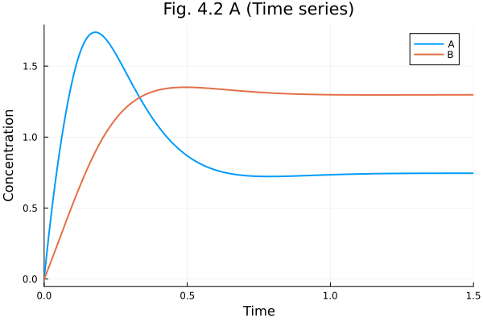
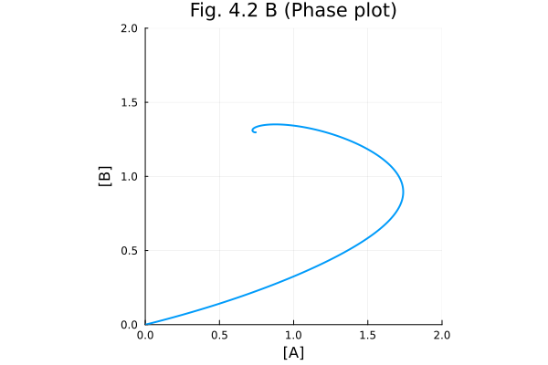
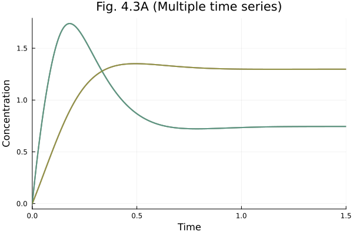
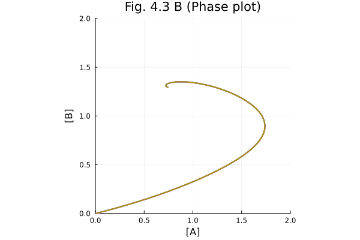
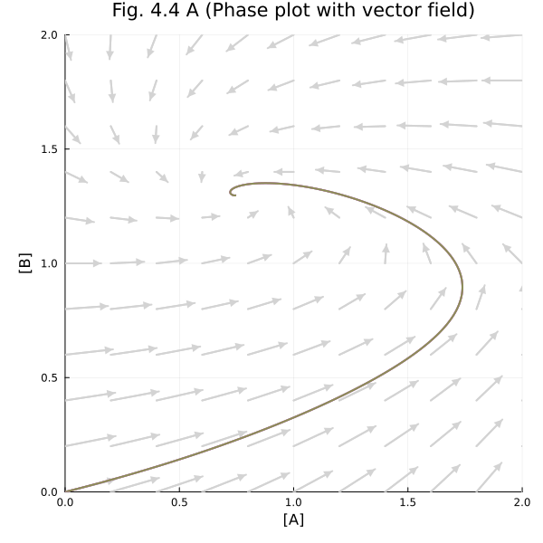
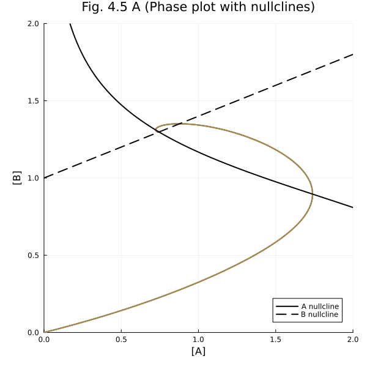
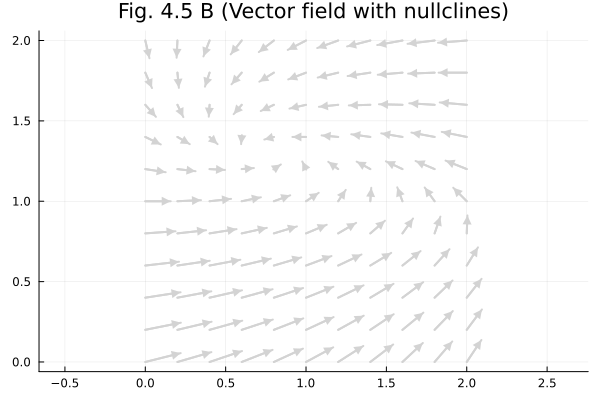
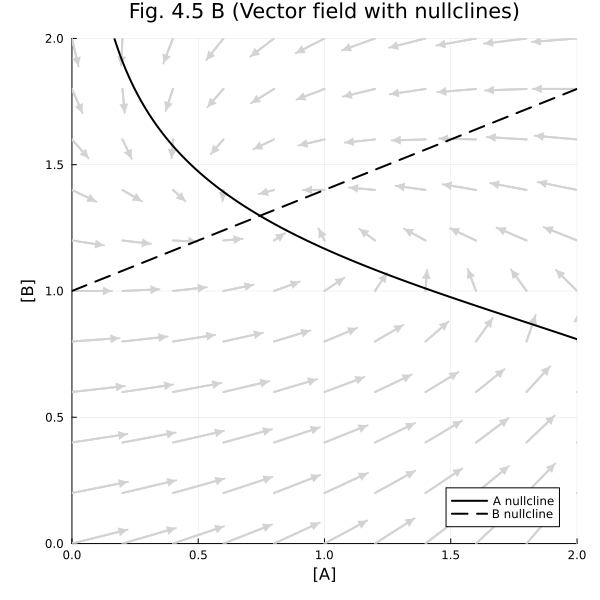

Chapter 4#
Steady states and phase plots in an asymmetric network.
using OrdinaryDiffEq
using ModelingToolkit
using Plots
Plots.default(linewidth=2)
The model for figure 4.1, 4.2, and 4.3.
@independent_variables t
@variables A(t) B(t)
@parameters k1 k2 k3 k4 k5 n
D = Differential(t)
eqs = [
D(A) ~ k1 / (1 + B^n) - (k3 + k5) * A,
D(B) ~ k2 + k5 * A - k4 * B
]
@mtkbuild osys = ODESystem(eqs, t)
\[\begin{split} \begin{align}
\frac{\mathrm{d} A\left( t \right)}{\mathrm{d}t} &= \frac{\mathtt{k1}}{1 + \left( B\left( t \right) \right)^{n}} + \left( - \mathtt{k3} - \mathtt{k5} \right) A\left( t \right) \\
\frac{\mathrm{d} B\left( t \right)}{\mathrm{d}t} &= \mathtt{k2} - \mathtt{k4} B\left( t \right) + \mathtt{k5} A\left( t \right)
\end{align}
\end{split}\]
Fig 4.2 A#
tend = 1.5
ps1 = Dict(k1 => 20, k2 => 5, k3=> 5, k4 => 5, k5 => 2, n => 4)
prob = ODEProblem(osys, [A => 0.0, B => 0.0], tend, ps1)
u0s = [
[0.0, 0.0],
[0.5, 0.6],
[0.17, 1.1],
[0.25, 1.9],
[1.85, 1.7],
]
5-element Vector{Vector{Float64}}:
[0.0, 0.0]
[0.5, 0.6]
[0.17, 1.1]
[0.25, 1.9]
[1.85, 1.7]
sols = map(u0s) do u0
solve(remake(prob, u0=u0))
end
5-element Vector{SciMLBase.ODESolution{Float64, 2, Vector{Vector{Float64}}, Nothing, Nothing, Vector{Float64}, Vector{Vector{Vector{Float64}}}, Nothing, SciMLBase.ODEProblem{Vector{Float64}, Tuple{Float64, Float64}, true, ModelingToolkit.MTKParameters{Vector{Float64}, Vector{Float64}, Tuple{}, Tuple{}, Tuple{}, Tuple{}}, SciMLBase.ODEFunction{true, SciMLBase.AutoSpecialize, FunctionWrappersWrappers.FunctionWrappersWrapper{Tuple{FunctionWrappers.FunctionWrapper{Nothing, Tuple{Vector{Float64}, Vector{Float64}, ModelingToolkit.MTKParameters{Vector{Float64}, Vector{Float64}, Tuple{}, Tuple{}, Tuple{}, Tuple{}}, Float64}}, FunctionWrappers.FunctionWrapper{Nothing, Tuple{Vector{ForwardDiff.Dual{ForwardDiff.Tag{DiffEqBase.OrdinaryDiffEqTag, Float64}, Float64, 1}}, Vector{ForwardDiff.Dual{ForwardDiff.Tag{DiffEqBase.OrdinaryDiffEqTag, Float64}, Float64, 1}}, ModelingToolkit.MTKParameters{Vector{Float64}, Vector{Float64}, Tuple{}, Tuple{}, Tuple{}, Tuple{}}, Float64}}, FunctionWrappers.FunctionWrapper{Nothing, Tuple{Vector{ForwardDiff.Dual{ForwardDiff.Tag{DiffEqBase.OrdinaryDiffEqTag, Float64}, Float64, 1}}, Vector{Float64}, ModelingToolkit.MTKParameters{Vector{Float64}, Vector{Float64}, Tuple{}, Tuple{}, Tuple{}, Tuple{}}, ForwardDiff.Dual{ForwardDiff.Tag{DiffEqBase.OrdinaryDiffEqTag, Float64}, Float64, 1}}}, FunctionWrappers.FunctionWrapper{Nothing, Tuple{Vector{ForwardDiff.Dual{ForwardDiff.Tag{DiffEqBase.OrdinaryDiffEqTag, Float64}, Float64, 1}}, Vector{ForwardDiff.Dual{ForwardDiff.Tag{DiffEqBase.OrdinaryDiffEqTag, Float64}, Float64, 1}}, ModelingToolkit.MTKParameters{Vector{Float64}, Vector{Float64}, Tuple{}, Tuple{}, Tuple{}, Tuple{}}, ForwardDiff.Dual{ForwardDiff.Tag{DiffEqBase.OrdinaryDiffEqTag, Float64}, Float64, 1}}}}, false}, LinearAlgebra.UniformScaling{Bool}, Nothing, Nothing, Nothing, Nothing, Nothing, Nothing, Nothing, Nothing, Nothing, Nothing, Nothing, ModelingToolkit.ObservedFunctionCache{ModelingToolkit.ODESystem}, Nothing, ModelingToolkit.ODESystem, SciMLBase.OverrideInitData{SciMLBase.NonlinearProblem{Nothing, true, ModelingToolkit.MTKParameters{Vector{Float64}, StaticArraysCore.SizedVector{0, Float64, Vector{Float64}}, Tuple{}, Tuple{}, Tuple{}, Tuple{}}, SciMLBase.NonlinearFunction{true, SciMLBase.FullSpecialize, ModelingToolkit.GeneratedFunctionWrapper{(2, 2, true), RuntimeGeneratedFunctions.RuntimeGeneratedFunction{(:__mtk_arg_1, :___mtkparameters___), ModelingToolkit.var"#_RGF_ModTag", ModelingToolkit.var"#_RGF_ModTag", (0xd4ecae92, 0x573b0b67, 0x96aaab82, 0x9aae39c9, 0xb92fb0a2), Nothing}, RuntimeGeneratedFunctions.RuntimeGeneratedFunction{(:ˍ₋out, :__mtk_arg_1, :___mtkparameters___), ModelingToolkit.var"#_RGF_ModTag", ModelingToolkit.var"#_RGF_ModTag", (0x5e353a56, 0xe14fd868, 0x91e8b990, 0xf0f5933b, 0x61add6bb), Nothing}}, LinearAlgebra.UniformScaling{Bool}, Nothing, Nothing, Nothing, Nothing, Nothing, Nothing, Nothing, Nothing, Nothing, Nothing, ModelingToolkit.ObservedFunctionCache{ModelingToolkit.NonlinearSystem}, Nothing, ModelingToolkit.NonlinearSystem, Nothing, Nothing}, Base.Pairs{Symbol, Union{}, Tuple{}, @NamedTuple{}}, ModelingToolkit.InitializationSystemMetadata}, ModelingToolkit.UpdateInitializeprob{SymbolicIndexingInterface.MultipleGetters{SymbolicIndexingInterface.ContinuousTimeseries, Vector{SymbolicIndexingInterface.AbstractGetIndexer}}, SymbolicIndexingInterface.MultipleSetters{Vector{SymbolicIndexingInterface.ParameterHookWrapper{SymbolicIndexingInterface.SetParameterIndex{ModelingToolkit.ParameterIndex{SciMLStructures.Tunable, Int64}}, SymbolicUtils.BasicSymbolic{Real}}}}}, ComposedFunction{typeof(identity), SymbolicIndexingInterface.TimeIndependentObservedFunction{ModelingToolkit.GeneratedFunctionWrapper{(2, 2, true), RuntimeGeneratedFunctions.RuntimeGeneratedFunction{(:__mtk_arg_1, :___mtkparameters___), ModelingToolkit.var"#_RGF_ModTag", ModelingToolkit.var"#_RGF_ModTag", (0x70565e82, 0xdd3d10cd, 0x7db9ec06, 0xb42c870a, 0x007022c7), Nothing}, RuntimeGeneratedFunctions.RuntimeGeneratedFunction{(:ˍ₋out, :__mtk_arg_1, :___mtkparameters___), ModelingToolkit.var"#_RGF_ModTag", ModelingToolkit.var"#_RGF_ModTag", (0xb259e9cd, 0xb123c508, 0xca398497, 0xe5a32da2, 0x91c3cc5c), Nothing}}}}, Nothing}, Nothing}, Base.Pairs{Symbol, Union{}, Tuple{}, @NamedTuple{}}, SciMLBase.StandardODEProblem}, OrdinaryDiffEqCore.CompositeAlgorithm{0, Tuple{OrdinaryDiffEqTsit5.Tsit5{typeof(OrdinaryDiffEqCore.trivial_limiter!), typeof(OrdinaryDiffEqCore.trivial_limiter!), Static.False}, OrdinaryDiffEqVerner.Vern7{typeof(OrdinaryDiffEqCore.trivial_limiter!), typeof(OrdinaryDiffEqCore.trivial_limiter!), Static.False}, OrdinaryDiffEqRosenbrock.Rosenbrock23{0, ADTypes.AutoFiniteDiff{Val{:forward}, Val{:forward}, Val{:hcentral}, Nothing, Nothing, Bool}, Nothing, typeof(OrdinaryDiffEqCore.DEFAULT_PRECS), Val{:forward}(), true, nothing, typeof(OrdinaryDiffEqCore.trivial_limiter!), typeof(OrdinaryDiffEqCore.trivial_limiter!)}, OrdinaryDiffEqRosenbrock.Rodas5P{0, ADTypes.AutoFiniteDiff{Val{:forward}, Val{:forward}, Val{:hcentral}, Nothing, Nothing, Bool}, Nothing, typeof(OrdinaryDiffEqCore.DEFAULT_PRECS), Val{:forward}(), true, nothing, typeof(OrdinaryDiffEqCore.trivial_limiter!), typeof(OrdinaryDiffEqCore.trivial_limiter!)}, OrdinaryDiffEqBDF.FBDF{5, 0, ADTypes.AutoFiniteDiff{Val{:forward}, Val{:forward}, Val{:hcentral}, Nothing, Nothing, Bool}, Nothing, OrdinaryDiffEqNonlinearSolve.NLNewton{Rational{Int64}, Rational{Int64}, Rational{Int64}, Rational{Int64}}, typeof(OrdinaryDiffEqCore.DEFAULT_PRECS), Val{:forward}(), true, nothing, Nothing, Nothing, typeof(OrdinaryDiffEqCore.trivial_limiter!)}, OrdinaryDiffEqBDF.FBDF{5, 0, ADTypes.AutoFiniteDiff{Val{:forward}, Val{:forward}, Val{:hcentral}, Nothing, Nothing, Bool}, LinearSolve.KrylovJL{typeof(Krylov.gmres!), Int64, Nothing, Tuple{}, Base.Pairs{Symbol, Union{}, Tuple{}, @NamedTuple{}}}, OrdinaryDiffEqNonlinearSolve.NLNewton{Rational{Int64}, Rational{Int64}, Rational{Int64}, Rational{Int64}}, typeof(OrdinaryDiffEqCore.DEFAULT_PRECS), Val{:forward}(), true, nothing, Nothing, Nothing, typeof(OrdinaryDiffEqCore.trivial_limiter!)}}, OrdinaryDiffEqCore.AutoSwitchCache{Tuple{OrdinaryDiffEqTsit5.Tsit5{typeof(OrdinaryDiffEqCore.trivial_limiter!), typeof(OrdinaryDiffEqCore.trivial_limiter!), Static.False}, OrdinaryDiffEqVerner.Vern7{typeof(OrdinaryDiffEqCore.trivial_limiter!), typeof(OrdinaryDiffEqCore.trivial_limiter!), Static.False}}, Tuple{OrdinaryDiffEqRosenbrock.Rosenbrock23{0, ADTypes.AutoFiniteDiff{Val{:forward}, Val{:forward}, Val{:hcentral}, Nothing, Nothing, Bool}, Nothing, typeof(OrdinaryDiffEqCore.DEFAULT_PRECS), Val{:forward}(), true, nothing, typeof(OrdinaryDiffEqCore.trivial_limiter!), typeof(OrdinaryDiffEqCore.trivial_limiter!)}, OrdinaryDiffEqRosenbrock.Rodas5P{0, ADTypes.AutoFiniteDiff{Val{:forward}, Val{:forward}, Val{:hcentral}, Nothing, Nothing, Bool}, Nothing, typeof(OrdinaryDiffEqCore.DEFAULT_PRECS), Val{:forward}(), true, nothing, typeof(OrdinaryDiffEqCore.trivial_limiter!), typeof(OrdinaryDiffEqCore.trivial_limiter!)}, OrdinaryDiffEqBDF.FBDF{5, 0, ADTypes.AutoFiniteDiff{Val{:forward}, Val{:forward}, Val{:hcentral}, Nothing, Nothing, Bool}, Nothing, OrdinaryDiffEqNonlinearSolve.NLNewton{Rational{Int64}, Rational{Int64}, Rational{Int64}, Rational{Int64}}, typeof(OrdinaryDiffEqCore.DEFAULT_PRECS), Val{:forward}(), true, nothing, Nothing, Nothing, typeof(OrdinaryDiffEqCore.trivial_limiter!)}, OrdinaryDiffEqBDF.FBDF{5, 0, ADTypes.AutoFiniteDiff{Val{:forward}, Val{:forward}, Val{:hcentral}, Nothing, Nothing, Bool}, LinearSolve.KrylovJL{typeof(Krylov.gmres!), Int64, Nothing, Tuple{}, Base.Pairs{Symbol, Union{}, Tuple{}, @NamedTuple{}}}, OrdinaryDiffEqNonlinearSolve.NLNewton{Rational{Int64}, Rational{Int64}, Rational{Int64}, Rational{Int64}}, typeof(OrdinaryDiffEqCore.DEFAULT_PRECS), Val{:forward}(), true, nothing, Nothing, Nothing, typeof(OrdinaryDiffEqCore.trivial_limiter!)}}, Rational{Int64}, Int64}}, OrdinaryDiffEqCore.InterpolationData{SciMLBase.ODEFunction{true, SciMLBase.AutoSpecialize, FunctionWrappersWrappers.FunctionWrappersWrapper{Tuple{FunctionWrappers.FunctionWrapper{Nothing, Tuple{Vector{Float64}, Vector{Float64}, ModelingToolkit.MTKParameters{Vector{Float64}, Vector{Float64}, Tuple{}, Tuple{}, Tuple{}, Tuple{}}, Float64}}, FunctionWrappers.FunctionWrapper{Nothing, Tuple{Vector{ForwardDiff.Dual{ForwardDiff.Tag{DiffEqBase.OrdinaryDiffEqTag, Float64}, Float64, 1}}, Vector{ForwardDiff.Dual{ForwardDiff.Tag{DiffEqBase.OrdinaryDiffEqTag, Float64}, Float64, 1}}, ModelingToolkit.MTKParameters{Vector{Float64}, Vector{Float64}, Tuple{}, Tuple{}, Tuple{}, Tuple{}}, Float64}}, FunctionWrappers.FunctionWrapper{Nothing, Tuple{Vector{ForwardDiff.Dual{ForwardDiff.Tag{DiffEqBase.OrdinaryDiffEqTag, Float64}, Float64, 1}}, Vector{Float64}, ModelingToolkit.MTKParameters{Vector{Float64}, Vector{Float64}, Tuple{}, Tuple{}, Tuple{}, Tuple{}}, ForwardDiff.Dual{ForwardDiff.Tag{DiffEqBase.OrdinaryDiffEqTag, Float64}, Float64, 1}}}, FunctionWrappers.FunctionWrapper{Nothing, Tuple{Vector{ForwardDiff.Dual{ForwardDiff.Tag{DiffEqBase.OrdinaryDiffEqTag, Float64}, Float64, 1}}, Vector{ForwardDiff.Dual{ForwardDiff.Tag{DiffEqBase.OrdinaryDiffEqTag, Float64}, Float64, 1}}, ModelingToolkit.MTKParameters{Vector{Float64}, Vector{Float64}, Tuple{}, Tuple{}, Tuple{}, Tuple{}}, ForwardDiff.Dual{ForwardDiff.Tag{DiffEqBase.OrdinaryDiffEqTag, Float64}, Float64, 1}}}}, false}, LinearAlgebra.UniformScaling{Bool}, Nothing, Nothing, Nothing, Nothing, Nothing, Nothing, Nothing, Nothing, Nothing, Nothing, Nothing, ModelingToolkit.ObservedFunctionCache{ModelingToolkit.ODESystem}, Nothing, ModelingToolkit.ODESystem, SciMLBase.OverrideInitData{SciMLBase.NonlinearProblem{Nothing, true, ModelingToolkit.MTKParameters{Vector{Float64}, StaticArraysCore.SizedVector{0, Float64, Vector{Float64}}, Tuple{}, Tuple{}, Tuple{}, Tuple{}}, SciMLBase.NonlinearFunction{true, SciMLBase.FullSpecialize, ModelingToolkit.GeneratedFunctionWrapper{(2, 2, true), RuntimeGeneratedFunctions.RuntimeGeneratedFunction{(:__mtk_arg_1, :___mtkparameters___), ModelingToolkit.var"#_RGF_ModTag", ModelingToolkit.var"#_RGF_ModTag", (0xd4ecae92, 0x573b0b67, 0x96aaab82, 0x9aae39c9, 0xb92fb0a2), Nothing}, RuntimeGeneratedFunctions.RuntimeGeneratedFunction{(:ˍ₋out, :__mtk_arg_1, :___mtkparameters___), ModelingToolkit.var"#_RGF_ModTag", ModelingToolkit.var"#_RGF_ModTag", (0x5e353a56, 0xe14fd868, 0x91e8b990, 0xf0f5933b, 0x61add6bb), Nothing}}, LinearAlgebra.UniformScaling{Bool}, Nothing, Nothing, Nothing, Nothing, Nothing, Nothing, Nothing, Nothing, Nothing, Nothing, ModelingToolkit.ObservedFunctionCache{ModelingToolkit.NonlinearSystem}, Nothing, ModelingToolkit.NonlinearSystem, Nothing, Nothing}, Base.Pairs{Symbol, Union{}, Tuple{}, @NamedTuple{}}, ModelingToolkit.InitializationSystemMetadata}, ModelingToolkit.UpdateInitializeprob{SymbolicIndexingInterface.MultipleGetters{SymbolicIndexingInterface.ContinuousTimeseries, Vector{SymbolicIndexingInterface.AbstractGetIndexer}}, SymbolicIndexingInterface.MultipleSetters{Vector{SymbolicIndexingInterface.ParameterHookWrapper{SymbolicIndexingInterface.SetParameterIndex{ModelingToolkit.ParameterIndex{SciMLStructures.Tunable, Int64}}, SymbolicUtils.BasicSymbolic{Real}}}}}, ComposedFunction{typeof(identity), SymbolicIndexingInterface.TimeIndependentObservedFunction{ModelingToolkit.GeneratedFunctionWrapper{(2, 2, true), RuntimeGeneratedFunctions.RuntimeGeneratedFunction{(:__mtk_arg_1, :___mtkparameters___), ModelingToolkit.var"#_RGF_ModTag", ModelingToolkit.var"#_RGF_ModTag", (0x70565e82, 0xdd3d10cd, 0x7db9ec06, 0xb42c870a, 0x007022c7), Nothing}, RuntimeGeneratedFunctions.RuntimeGeneratedFunction{(:ˍ₋out, :__mtk_arg_1, :___mtkparameters___), ModelingToolkit.var"#_RGF_ModTag", ModelingToolkit.var"#_RGF_ModTag", (0xb259e9cd, 0xb123c508, 0xca398497, 0xe5a32da2, 0x91c3cc5c), Nothing}}}}, Nothing}, Nothing}, Vector{Vector{Float64}}, Vector{Float64}, Vector{Vector{Vector{Float64}}}, Vector{Int64}, OrdinaryDiffEqCore.DefaultCache{OrdinaryDiffEqTsit5.Tsit5Cache{Vector{Float64}, Vector{Float64}, Vector{Float64}, typeof(OrdinaryDiffEqCore.trivial_limiter!), typeof(OrdinaryDiffEqCore.trivial_limiter!), Static.False}, OrdinaryDiffEqVerner.Vern7Cache{Vector{Float64}, Vector{Float64}, Vector{Float64}, typeof(OrdinaryDiffEqCore.trivial_limiter!), typeof(OrdinaryDiffEqCore.trivial_limiter!), Static.False}, OrdinaryDiffEqRosenbrock.Rosenbrock23Cache{Vector{Float64}, Vector{Float64}, Vector{Float64}, Matrix{Float64}, Matrix{Float64}, OrdinaryDiffEqRosenbrock.Rosenbrock23Tableau{Float64}, SciMLBase.TimeGradientWrapper{true, SciMLBase.ODEFunction{true, SciMLBase.AutoSpecialize, FunctionWrappersWrappers.FunctionWrappersWrapper{Tuple{FunctionWrappers.FunctionWrapper{Nothing, Tuple{Vector{Float64}, Vector{Float64}, ModelingToolkit.MTKParameters{Vector{Float64}, Vector{Float64}, Tuple{}, Tuple{}, Tuple{}, Tuple{}}, Float64}}, FunctionWrappers.FunctionWrapper{Nothing, Tuple{Vector{ForwardDiff.Dual{ForwardDiff.Tag{DiffEqBase.OrdinaryDiffEqTag, Float64}, Float64, 1}}, Vector{ForwardDiff.Dual{ForwardDiff.Tag{DiffEqBase.OrdinaryDiffEqTag, Float64}, Float64, 1}}, ModelingToolkit.MTKParameters{Vector{Float64}, Vector{Float64}, Tuple{}, Tuple{}, Tuple{}, Tuple{}}, Float64}}, FunctionWrappers.FunctionWrapper{Nothing, Tuple{Vector{ForwardDiff.Dual{ForwardDiff.Tag{DiffEqBase.OrdinaryDiffEqTag, Float64}, Float64, 1}}, Vector{Float64}, ModelingToolkit.MTKParameters{Vector{Float64}, Vector{Float64}, Tuple{}, Tuple{}, Tuple{}, Tuple{}}, ForwardDiff.Dual{ForwardDiff.Tag{DiffEqBase.OrdinaryDiffEqTag, Float64}, Float64, 1}}}, FunctionWrappers.FunctionWrapper{Nothing, Tuple{Vector{ForwardDiff.Dual{ForwardDiff.Tag{DiffEqBase.OrdinaryDiffEqTag, Float64}, Float64, 1}}, Vector{ForwardDiff.Dual{ForwardDiff.Tag{DiffEqBase.OrdinaryDiffEqTag, Float64}, Float64, 1}}, ModelingToolkit.MTKParameters{Vector{Float64}, Vector{Float64}, Tuple{}, Tuple{}, Tuple{}, Tuple{}}, ForwardDiff.Dual{ForwardDiff.Tag{DiffEqBase.OrdinaryDiffEqTag, Float64}, Float64, 1}}}}, false}, LinearAlgebra.UniformScaling{Bool}, Nothing, Nothing, Nothing, Nothing, Nothing, Nothing, Nothing, Nothing, Nothing, Nothing, Nothing, ModelingToolkit.ObservedFunctionCache{ModelingToolkit.ODESystem}, Nothing, ModelingToolkit.ODESystem, SciMLBase.OverrideInitData{SciMLBase.NonlinearProblem{Nothing, true, ModelingToolkit.MTKParameters{Vector{Float64}, StaticArraysCore.SizedVector{0, Float64, Vector{Float64}}, Tuple{}, Tuple{}, Tuple{}, Tuple{}}, SciMLBase.NonlinearFunction{true, SciMLBase.FullSpecialize, ModelingToolkit.GeneratedFunctionWrapper{(2, 2, true), RuntimeGeneratedFunctions.RuntimeGeneratedFunction{(:__mtk_arg_1, :___mtkparameters___), ModelingToolkit.var"#_RGF_ModTag", ModelingToolkit.var"#_RGF_ModTag", (0xd4ecae92, 0x573b0b67, 0x96aaab82, 0x9aae39c9, 0xb92fb0a2), Nothing}, RuntimeGeneratedFunctions.RuntimeGeneratedFunction{(:ˍ₋out, :__mtk_arg_1, :___mtkparameters___), ModelingToolkit.var"#_RGF_ModTag", ModelingToolkit.var"#_RGF_ModTag", (0x5e353a56, 0xe14fd868, 0x91e8b990, 0xf0f5933b, 0x61add6bb), Nothing}}, LinearAlgebra.UniformScaling{Bool}, Nothing, Nothing, Nothing, Nothing, Nothing, Nothing, Nothing, Nothing, Nothing, Nothing, ModelingToolkit.ObservedFunctionCache{ModelingToolkit.NonlinearSystem}, Nothing, ModelingToolkit.NonlinearSystem, Nothing, Nothing}, Base.Pairs{Symbol, Union{}, Tuple{}, @NamedTuple{}}, ModelingToolkit.InitializationSystemMetadata}, ModelingToolkit.UpdateInitializeprob{SymbolicIndexingInterface.MultipleGetters{SymbolicIndexingInterface.ContinuousTimeseries, Vector{SymbolicIndexingInterface.AbstractGetIndexer}}, SymbolicIndexingInterface.MultipleSetters{Vector{SymbolicIndexingInterface.ParameterHookWrapper{SymbolicIndexingInterface.SetParameterIndex{ModelingToolkit.ParameterIndex{SciMLStructures.Tunable, Int64}}, SymbolicUtils.BasicSymbolic{Real}}}}}, ComposedFunction{typeof(identity), SymbolicIndexingInterface.TimeIndependentObservedFunction{ModelingToolkit.GeneratedFunctionWrapper{(2, 2, true), RuntimeGeneratedFunctions.RuntimeGeneratedFunction{(:__mtk_arg_1, :___mtkparameters___), ModelingToolkit.var"#_RGF_ModTag", ModelingToolkit.var"#_RGF_ModTag", (0x70565e82, 0xdd3d10cd, 0x7db9ec06, 0xb42c870a, 0x007022c7), Nothing}, RuntimeGeneratedFunctions.RuntimeGeneratedFunction{(:ˍ₋out, :__mtk_arg_1, :___mtkparameters___), ModelingToolkit.var"#_RGF_ModTag", ModelingToolkit.var"#_RGF_ModTag", (0xb259e9cd, 0xb123c508, 0xca398497, 0xe5a32da2, 0x91c3cc5c), Nothing}}}}, Nothing}, Nothing}, Vector{Float64}, ModelingToolkit.MTKParameters{Vector{Float64}, Vector{Float64}, Tuple{}, Tuple{}, Tuple{}, Tuple{}}}, SciMLBase.UJacobianWrapper{true, SciMLBase.ODEFunction{true, SciMLBase.AutoSpecialize, FunctionWrappersWrappers.FunctionWrappersWrapper{Tuple{FunctionWrappers.FunctionWrapper{Nothing, Tuple{Vector{Float64}, Vector{Float64}, ModelingToolkit.MTKParameters{Vector{Float64}, Vector{Float64}, Tuple{}, Tuple{}, Tuple{}, Tuple{}}, Float64}}, FunctionWrappers.FunctionWrapper{Nothing, Tuple{Vector{ForwardDiff.Dual{ForwardDiff.Tag{DiffEqBase.OrdinaryDiffEqTag, Float64}, Float64, 1}}, Vector{ForwardDiff.Dual{ForwardDiff.Tag{DiffEqBase.OrdinaryDiffEqTag, Float64}, Float64, 1}}, ModelingToolkit.MTKParameters{Vector{Float64}, Vector{Float64}, Tuple{}, Tuple{}, Tuple{}, Tuple{}}, Float64}}, FunctionWrappers.FunctionWrapper{Nothing, Tuple{Vector{ForwardDiff.Dual{ForwardDiff.Tag{DiffEqBase.OrdinaryDiffEqTag, Float64}, Float64, 1}}, Vector{Float64}, ModelingToolkit.MTKParameters{Vector{Float64}, Vector{Float64}, Tuple{}, Tuple{}, Tuple{}, Tuple{}}, ForwardDiff.Dual{ForwardDiff.Tag{DiffEqBase.OrdinaryDiffEqTag, Float64}, Float64, 1}}}, FunctionWrappers.FunctionWrapper{Nothing, Tuple{Vector{ForwardDiff.Dual{ForwardDiff.Tag{DiffEqBase.OrdinaryDiffEqTag, Float64}, Float64, 1}}, Vector{ForwardDiff.Dual{ForwardDiff.Tag{DiffEqBase.OrdinaryDiffEqTag, Float64}, Float64, 1}}, ModelingToolkit.MTKParameters{Vector{Float64}, Vector{Float64}, Tuple{}, Tuple{}, Tuple{}, Tuple{}}, ForwardDiff.Dual{ForwardDiff.Tag{DiffEqBase.OrdinaryDiffEqTag, Float64}, Float64, 1}}}}, false}, LinearAlgebra.UniformScaling{Bool}, Nothing, Nothing, Nothing, Nothing, Nothing, Nothing, Nothing, Nothing, Nothing, Nothing, Nothing, ModelingToolkit.ObservedFunctionCache{ModelingToolkit.ODESystem}, Nothing, ModelingToolkit.ODESystem, SciMLBase.OverrideInitData{SciMLBase.NonlinearProblem{Nothing, true, ModelingToolkit.MTKParameters{Vector{Float64}, StaticArraysCore.SizedVector{0, Float64, Vector{Float64}}, Tuple{}, Tuple{}, Tuple{}, Tuple{}}, SciMLBase.NonlinearFunction{true, SciMLBase.FullSpecialize, ModelingToolkit.GeneratedFunctionWrapper{(2, 2, true), RuntimeGeneratedFunctions.RuntimeGeneratedFunction{(:__mtk_arg_1, :___mtkparameters___), ModelingToolkit.var"#_RGF_ModTag", ModelingToolkit.var"#_RGF_ModTag", (0xd4ecae92, 0x573b0b67, 0x96aaab82, 0x9aae39c9, 0xb92fb0a2), Nothing}, RuntimeGeneratedFunctions.RuntimeGeneratedFunction{(:ˍ₋out, :__mtk_arg_1, :___mtkparameters___), ModelingToolkit.var"#_RGF_ModTag", ModelingToolkit.var"#_RGF_ModTag", (0x5e353a56, 0xe14fd868, 0x91e8b990, 0xf0f5933b, 0x61add6bb), Nothing}}, LinearAlgebra.UniformScaling{Bool}, Nothing, Nothing, Nothing, Nothing, Nothing, Nothing, Nothing, Nothing, Nothing, Nothing, ModelingToolkit.ObservedFunctionCache{ModelingToolkit.NonlinearSystem}, Nothing, ModelingToolkit.NonlinearSystem, Nothing, Nothing}, Base.Pairs{Symbol, Union{}, Tuple{}, @NamedTuple{}}, ModelingToolkit.InitializationSystemMetadata}, ModelingToolkit.UpdateInitializeprob{SymbolicIndexingInterface.MultipleGetters{SymbolicIndexingInterface.ContinuousTimeseries, Vector{SymbolicIndexingInterface.AbstractGetIndexer}}, SymbolicIndexingInterface.MultipleSetters{Vector{SymbolicIndexingInterface.ParameterHookWrapper{SymbolicIndexingInterface.SetParameterIndex{ModelingToolkit.ParameterIndex{SciMLStructures.Tunable, Int64}}, SymbolicUtils.BasicSymbolic{Real}}}}}, ComposedFunction{typeof(identity), SymbolicIndexingInterface.TimeIndependentObservedFunction{ModelingToolkit.GeneratedFunctionWrapper{(2, 2, true), RuntimeGeneratedFunctions.RuntimeGeneratedFunction{(:__mtk_arg_1, :___mtkparameters___), ModelingToolkit.var"#_RGF_ModTag", ModelingToolkit.var"#_RGF_ModTag", (0x70565e82, 0xdd3d10cd, 0x7db9ec06, 0xb42c870a, 0x007022c7), Nothing}, RuntimeGeneratedFunctions.RuntimeGeneratedFunction{(:ˍ₋out, :__mtk_arg_1, :___mtkparameters___), ModelingToolkit.var"#_RGF_ModTag", ModelingToolkit.var"#_RGF_ModTag", (0xb259e9cd, 0xb123c508, 0xca398497, 0xe5a32da2, 0x91c3cc5c), Nothing}}}}, Nothing}, Nothing}, Float64, ModelingToolkit.MTKParameters{Vector{Float64}, Vector{Float64}, Tuple{}, Tuple{}, Tuple{}, Tuple{}}}, LinearSolve.LinearCache{Matrix{Float64}, Vector{Float64}, Vector{Float64}, SciMLBase.NullParameters, LinearSolve.DefaultLinearSolver, LinearSolve.DefaultLinearSolverInit{LinearAlgebra.LU{Float64, Matrix{Float64}, Vector{Int64}}, LinearAlgebra.QRCompactWY{Float64, Matrix{Float64}, Matrix{Float64}}, Nothing, Nothing, Nothing, Nothing, Nothing, Nothing, LinearAlgebra.LU{Float64, Matrix{Float64}, Vector{Int64}}, Tuple{LinearAlgebra.LU{Float64, Matrix{Float64}, Vector{Int64}}, Vector{Int64}}, Nothing, Nothing, Nothing, LinearAlgebra.SVD{Float64, Float64, Matrix{Float64}, Vector{Float64}}, LinearAlgebra.Cholesky{Float64, Matrix{Float64}}, LinearAlgebra.Cholesky{Float64, Matrix{Float64}}, Tuple{LinearAlgebra.LU{Float64, Matrix{Float64}, Vector{Int32}}, Base.RefValue{Int32}}, Tuple{LinearAlgebra.LU{Float64, Matrix{Float64}, Vector{Int64}}, Base.RefValue{Int64}}, LinearAlgebra.QRPivoted{Float64, Matrix{Float64}, Vector{Float64}, Vector{Int64}}, Nothing, Nothing}, LinearSolve.InvPreconditioner{LinearAlgebra.Diagonal{Float64, Vector{Float64}}}, LinearAlgebra.Diagonal{Float64, Vector{Float64}}, Float64, Bool, LinearSolve.LinearSolveAdjoint{Missing}}, FiniteDiff.JacobianCache{Vector{Float64}, Vector{Float64}, Vector{Float64}, Vector{Float64}, UnitRange{Int64}, Nothing, Val{:forward}(), Float64}, FiniteDiff.GradientCache{Nothing, Vector{Float64}, Vector{Float64}, Float64, Val{:forward}(), Float64, Val{true}()}, Float64, OrdinaryDiffEqRosenbrock.Rosenbrock23{0, ADTypes.AutoFiniteDiff{Val{:forward}, Val{:forward}, Val{:hcentral}, Nothing, Nothing, Bool}, Nothing, typeof(OrdinaryDiffEqCore.DEFAULT_PRECS), Val{:forward}(), true, nothing, typeof(OrdinaryDiffEqCore.trivial_limiter!), typeof(OrdinaryDiffEqCore.trivial_limiter!)}, Nothing, typeof(OrdinaryDiffEqCore.trivial_limiter!), typeof(OrdinaryDiffEqCore.trivial_limiter!)}, OrdinaryDiffEqRosenbrock.RosenbrockCache{Vector{Float64}, Vector{Float64}, Vector{Float64}, Matrix{Float64}, Matrix{Float64}, OrdinaryDiffEqRosenbrock.RodasTableau{Float64, Float64}, SciMLBase.TimeGradientWrapper{true, SciMLBase.ODEFunction{true, SciMLBase.AutoSpecialize, FunctionWrappersWrappers.FunctionWrappersWrapper{Tuple{FunctionWrappers.FunctionWrapper{Nothing, Tuple{Vector{Float64}, Vector{Float64}, ModelingToolkit.MTKParameters{Vector{Float64}, Vector{Float64}, Tuple{}, Tuple{}, Tuple{}, Tuple{}}, Float64}}, FunctionWrappers.FunctionWrapper{Nothing, Tuple{Vector{ForwardDiff.Dual{ForwardDiff.Tag{DiffEqBase.OrdinaryDiffEqTag, Float64}, Float64, 1}}, Vector{ForwardDiff.Dual{ForwardDiff.Tag{DiffEqBase.OrdinaryDiffEqTag, Float64}, Float64, 1}}, ModelingToolkit.MTKParameters{Vector{Float64}, Vector{Float64}, Tuple{}, Tuple{}, Tuple{}, Tuple{}}, Float64}}, FunctionWrappers.FunctionWrapper{Nothing, Tuple{Vector{ForwardDiff.Dual{ForwardDiff.Tag{DiffEqBase.OrdinaryDiffEqTag, Float64}, Float64, 1}}, Vector{Float64}, ModelingToolkit.MTKParameters{Vector{Float64}, Vector{Float64}, Tuple{}, Tuple{}, Tuple{}, Tuple{}}, ForwardDiff.Dual{ForwardDiff.Tag{DiffEqBase.OrdinaryDiffEqTag, Float64}, Float64, 1}}}, FunctionWrappers.FunctionWrapper{Nothing, Tuple{Vector{ForwardDiff.Dual{ForwardDiff.Tag{DiffEqBase.OrdinaryDiffEqTag, Float64}, Float64, 1}}, Vector{ForwardDiff.Dual{ForwardDiff.Tag{DiffEqBase.OrdinaryDiffEqTag, Float64}, Float64, 1}}, ModelingToolkit.MTKParameters{Vector{Float64}, Vector{Float64}, Tuple{}, Tuple{}, Tuple{}, Tuple{}}, ForwardDiff.Dual{ForwardDiff.Tag{DiffEqBase.OrdinaryDiffEqTag, Float64}, Float64, 1}}}}, false}, LinearAlgebra.UniformScaling{Bool}, Nothing, Nothing, Nothing, Nothing, Nothing, Nothing, Nothing, Nothing, Nothing, Nothing, Nothing, ModelingToolkit.ObservedFunctionCache{ModelingToolkit.ODESystem}, Nothing, ModelingToolkit.ODESystem, SciMLBase.OverrideInitData{SciMLBase.NonlinearProblem{Nothing, true, ModelingToolkit.MTKParameters{Vector{Float64}, StaticArraysCore.SizedVector{0, Float64, Vector{Float64}}, Tuple{}, Tuple{}, Tuple{}, Tuple{}}, SciMLBase.NonlinearFunction{true, SciMLBase.FullSpecialize, ModelingToolkit.GeneratedFunctionWrapper{(2, 2, true), RuntimeGeneratedFunctions.RuntimeGeneratedFunction{(:__mtk_arg_1, :___mtkparameters___), ModelingToolkit.var"#_RGF_ModTag", ModelingToolkit.var"#_RGF_ModTag", (0xd4ecae92, 0x573b0b67, 0x96aaab82, 0x9aae39c9, 0xb92fb0a2), Nothing}, RuntimeGeneratedFunctions.RuntimeGeneratedFunction{(:ˍ₋out, :__mtk_arg_1, :___mtkparameters___), ModelingToolkit.var"#_RGF_ModTag", ModelingToolkit.var"#_RGF_ModTag", (0x5e353a56, 0xe14fd868, 0x91e8b990, 0xf0f5933b, 0x61add6bb), Nothing}}, LinearAlgebra.UniformScaling{Bool}, Nothing, Nothing, Nothing, Nothing, Nothing, Nothing, Nothing, Nothing, Nothing, Nothing, ModelingToolkit.ObservedFunctionCache{ModelingToolkit.NonlinearSystem}, Nothing, ModelingToolkit.NonlinearSystem, Nothing, Nothing}, Base.Pairs{Symbol, Union{}, Tuple{}, @NamedTuple{}}, ModelingToolkit.InitializationSystemMetadata}, ModelingToolkit.UpdateInitializeprob{SymbolicIndexingInterface.MultipleGetters{SymbolicIndexingInterface.ContinuousTimeseries, Vector{SymbolicIndexingInterface.AbstractGetIndexer}}, SymbolicIndexingInterface.MultipleSetters{Vector{SymbolicIndexingInterface.ParameterHookWrapper{SymbolicIndexingInterface.SetParameterIndex{ModelingToolkit.ParameterIndex{SciMLStructures.Tunable, Int64}}, SymbolicUtils.BasicSymbolic{Real}}}}}, ComposedFunction{typeof(identity), SymbolicIndexingInterface.TimeIndependentObservedFunction{ModelingToolkit.GeneratedFunctionWrapper{(2, 2, true), RuntimeGeneratedFunctions.RuntimeGeneratedFunction{(:__mtk_arg_1, :___mtkparameters___), ModelingToolkit.var"#_RGF_ModTag", ModelingToolkit.var"#_RGF_ModTag", (0x70565e82, 0xdd3d10cd, 0x7db9ec06, 0xb42c870a, 0x007022c7), Nothing}, RuntimeGeneratedFunctions.RuntimeGeneratedFunction{(:ˍ₋out, :__mtk_arg_1, :___mtkparameters___), ModelingToolkit.var"#_RGF_ModTag", ModelingToolkit.var"#_RGF_ModTag", (0xb259e9cd, 0xb123c508, 0xca398497, 0xe5a32da2, 0x91c3cc5c), Nothing}}}}, Nothing}, Nothing}, Vector{Float64}, ModelingToolkit.MTKParameters{Vector{Float64}, Vector{Float64}, Tuple{}, Tuple{}, Tuple{}, Tuple{}}}, SciMLBase.UJacobianWrapper{true, SciMLBase.ODEFunction{true, SciMLBase.AutoSpecialize, FunctionWrappersWrappers.FunctionWrappersWrapper{Tuple{FunctionWrappers.FunctionWrapper{Nothing, Tuple{Vector{Float64}, Vector{Float64}, ModelingToolkit.MTKParameters{Vector{Float64}, Vector{Float64}, Tuple{}, Tuple{}, Tuple{}, Tuple{}}, Float64}}, FunctionWrappers.FunctionWrapper{Nothing, Tuple{Vector{ForwardDiff.Dual{ForwardDiff.Tag{DiffEqBase.OrdinaryDiffEqTag, Float64}, Float64, 1}}, Vector{ForwardDiff.Dual{ForwardDiff.Tag{DiffEqBase.OrdinaryDiffEqTag, Float64}, Float64, 1}}, ModelingToolkit.MTKParameters{Vector{Float64}, Vector{Float64}, Tuple{}, Tuple{}, Tuple{}, Tuple{}}, Float64}}, FunctionWrappers.FunctionWrapper{Nothing, Tuple{Vector{ForwardDiff.Dual{ForwardDiff.Tag{DiffEqBase.OrdinaryDiffEqTag, Float64}, Float64, 1}}, Vector{Float64}, ModelingToolkit.MTKParameters{Vector{Float64}, Vector{Float64}, Tuple{}, Tuple{}, Tuple{}, Tuple{}}, ForwardDiff.Dual{ForwardDiff.Tag{DiffEqBase.OrdinaryDiffEqTag, Float64}, Float64, 1}}}, FunctionWrappers.FunctionWrapper{Nothing, Tuple{Vector{ForwardDiff.Dual{ForwardDiff.Tag{DiffEqBase.OrdinaryDiffEqTag, Float64}, Float64, 1}}, Vector{ForwardDiff.Dual{ForwardDiff.Tag{DiffEqBase.OrdinaryDiffEqTag, Float64}, Float64, 1}}, ModelingToolkit.MTKParameters{Vector{Float64}, Vector{Float64}, Tuple{}, Tuple{}, Tuple{}, Tuple{}}, ForwardDiff.Dual{ForwardDiff.Tag{DiffEqBase.OrdinaryDiffEqTag, Float64}, Float64, 1}}}}, false}, LinearAlgebra.UniformScaling{Bool}, Nothing, Nothing, Nothing, Nothing, Nothing, Nothing, Nothing, Nothing, Nothing, Nothing, Nothing, ModelingToolkit.ObservedFunctionCache{ModelingToolkit.ODESystem}, Nothing, ModelingToolkit.ODESystem, SciMLBase.OverrideInitData{SciMLBase.NonlinearProblem{Nothing, true, ModelingToolkit.MTKParameters{Vector{Float64}, StaticArraysCore.SizedVector{0, Float64, Vector{Float64}}, Tuple{}, Tuple{}, Tuple{}, Tuple{}}, SciMLBase.NonlinearFunction{true, SciMLBase.FullSpecialize, ModelingToolkit.GeneratedFunctionWrapper{(2, 2, true), RuntimeGeneratedFunctions.RuntimeGeneratedFunction{(:__mtk_arg_1, :___mtkparameters___), ModelingToolkit.var"#_RGF_ModTag", ModelingToolkit.var"#_RGF_ModTag", (0xd4ecae92, 0x573b0b67, 0x96aaab82, 0x9aae39c9, 0xb92fb0a2), Nothing}, RuntimeGeneratedFunctions.RuntimeGeneratedFunction{(:ˍ₋out, :__mtk_arg_1, :___mtkparameters___), ModelingToolkit.var"#_RGF_ModTag", ModelingToolkit.var"#_RGF_ModTag", (0x5e353a56, 0xe14fd868, 0x91e8b990, 0xf0f5933b, 0x61add6bb), Nothing}}, LinearAlgebra.UniformScaling{Bool}, Nothing, Nothing, Nothing, Nothing, Nothing, Nothing, Nothing, Nothing, Nothing, Nothing, ModelingToolkit.ObservedFunctionCache{ModelingToolkit.NonlinearSystem}, Nothing, ModelingToolkit.NonlinearSystem, Nothing, Nothing}, Base.Pairs{Symbol, Union{}, Tuple{}, @NamedTuple{}}, ModelingToolkit.InitializationSystemMetadata}, ModelingToolkit.UpdateInitializeprob{SymbolicIndexingInterface.MultipleGetters{SymbolicIndexingInterface.ContinuousTimeseries, Vector{SymbolicIndexingInterface.AbstractGetIndexer}}, SymbolicIndexingInterface.MultipleSetters{Vector{SymbolicIndexingInterface.ParameterHookWrapper{SymbolicIndexingInterface.SetParameterIndex{ModelingToolkit.ParameterIndex{SciMLStructures.Tunable, Int64}}, SymbolicUtils.BasicSymbolic{Real}}}}}, ComposedFunction{typeof(identity), SymbolicIndexingInterface.TimeIndependentObservedFunction{ModelingToolkit.GeneratedFunctionWrapper{(2, 2, true), RuntimeGeneratedFunctions.RuntimeGeneratedFunction{(:__mtk_arg_1, :___mtkparameters___), ModelingToolkit.var"#_RGF_ModTag", ModelingToolkit.var"#_RGF_ModTag", (0x70565e82, 0xdd3d10cd, 0x7db9ec06, 0xb42c870a, 0x007022c7), Nothing}, RuntimeGeneratedFunctions.RuntimeGeneratedFunction{(:ˍ₋out, :__mtk_arg_1, :___mtkparameters___), ModelingToolkit.var"#_RGF_ModTag", ModelingToolkit.var"#_RGF_ModTag", (0xb259e9cd, 0xb123c508, 0xca398497, 0xe5a32da2, 0x91c3cc5c), Nothing}}}}, Nothing}, Nothing}, Float64, ModelingToolkit.MTKParameters{Vector{Float64}, Vector{Float64}, Tuple{}, Tuple{}, Tuple{}, Tuple{}}}, LinearSolve.LinearCache{Matrix{Float64}, Vector{Float64}, Vector{Float64}, SciMLBase.NullParameters, LinearSolve.DefaultLinearSolver, LinearSolve.DefaultLinearSolverInit{LinearAlgebra.LU{Float64, Matrix{Float64}, Vector{Int64}}, LinearAlgebra.QRCompactWY{Float64, Matrix{Float64}, Matrix{Float64}}, Nothing, Nothing, Nothing, Nothing, Nothing, Nothing, LinearAlgebra.LU{Float64, Matrix{Float64}, Vector{Int64}}, Tuple{LinearAlgebra.LU{Float64, Matrix{Float64}, Vector{Int64}}, Vector{Int64}}, Nothing, Nothing, Nothing, LinearAlgebra.SVD{Float64, Float64, Matrix{Float64}, Vector{Float64}}, LinearAlgebra.Cholesky{Float64, Matrix{Float64}}, LinearAlgebra.Cholesky{Float64, Matrix{Float64}}, Tuple{LinearAlgebra.LU{Float64, Matrix{Float64}, Vector{Int32}}, Base.RefValue{Int32}}, Tuple{LinearAlgebra.LU{Float64, Matrix{Float64}, Vector{Int64}}, Base.RefValue{Int64}}, LinearAlgebra.QRPivoted{Float64, Matrix{Float64}, Vector{Float64}, Vector{Int64}}, Nothing, Nothing}, LinearSolve.InvPreconditioner{LinearAlgebra.Diagonal{Float64, Vector{Float64}}}, LinearAlgebra.Diagonal{Float64, Vector{Float64}}, Float64, Bool, LinearSolve.LinearSolveAdjoint{Missing}}, FiniteDiff.JacobianCache{Vector{Float64}, Vector{Float64}, Vector{Float64}, Vector{Float64}, UnitRange{Int64}, Nothing, Val{:forward}(), Float64}, FiniteDiff.GradientCache{Nothing, Vector{Float64}, Vector{Float64}, Float64, Val{:forward}(), Float64, Val{true}()}, Float64, OrdinaryDiffEqRosenbrock.Rodas5P{0, ADTypes.AutoFiniteDiff{Val{:forward}, Val{:forward}, Val{:hcentral}, Nothing, Nothing, Bool}, Nothing, typeof(OrdinaryDiffEqCore.DEFAULT_PRECS), Val{:forward}(), true, nothing, typeof(OrdinaryDiffEqCore.trivial_limiter!), typeof(OrdinaryDiffEqCore.trivial_limiter!)}, typeof(OrdinaryDiffEqCore.trivial_limiter!), typeof(OrdinaryDiffEqCore.trivial_limiter!)}, OrdinaryDiffEqBDF.FBDFCache{5, N, Vector{Float64}, Vector{Float64}, Vector{Float64}, Float64, Vector{Float64}, Matrix{Float64}, StaticArraysCore.SMatrix{5, 6, Rational{Int64}, 30}, Float64, Vector{Float64}, Vector{Float64}, typeof(OrdinaryDiffEqCore.trivial_limiter!)} where N<:(OrdinaryDiffEqNonlinearSolve.NLSolver{OrdinaryDiffEqNonlinearSolve.NLNewton{Rational{Int64}, Rational{Int64}, Rational{Int64}, Rational{Int64}}, true, Vector{Float64}, _A, Nothing, Float64, OrdinaryDiffEqNonlinearSolve.NLNewtonCache{uType, tType, tType2, rateType, J, W, ufType, jcType, lsType}, Float64} where {_A, uType, tType, tType2, rateType, J, W, ufType, jcType, lsType}), OrdinaryDiffEqBDF.FBDFCache{5, N, Vector{Float64}, Vector{Float64}, Vector{Float64}, Float64, Vector{Float64}, Matrix{Float64}, StaticArraysCore.SMatrix{5, 6, Rational{Int64}, 30}, Float64, Vector{Float64}, Vector{Float64}, typeof(OrdinaryDiffEqCore.trivial_limiter!)} where N<:(OrdinaryDiffEqNonlinearSolve.NLSolver{OrdinaryDiffEqNonlinearSolve.NLNewton{Rational{Int64}, Rational{Int64}, Rational{Int64}, Rational{Int64}}, true, Vector{Float64}, _A, Nothing, Float64, OrdinaryDiffEqNonlinearSolve.NLNewtonCache{uType, tType, tType2, rateType, J, W, ufType, jcType, lsType}, Float64} where {_A, uType, tType, tType2, rateType, J, W, ufType, jcType, lsType}), Tuple{Vector{Float64}, Vector{Float64}, DataType, DataType, DataType, Vector{Float64}, Vector{Float64}, SciMLBase.ODEFunction{true, SciMLBase.AutoSpecialize, FunctionWrappersWrappers.FunctionWrappersWrapper{Tuple{FunctionWrappers.FunctionWrapper{Nothing, Tuple{Vector{Float64}, Vector{Float64}, ModelingToolkit.MTKParameters{Vector{Float64}, Vector{Float64}, Tuple{}, Tuple{}, Tuple{}, Tuple{}}, Float64}}, FunctionWrappers.FunctionWrapper{Nothing, Tuple{Vector{ForwardDiff.Dual{ForwardDiff.Tag{DiffEqBase.OrdinaryDiffEqTag, Float64}, Float64, 1}}, Vector{ForwardDiff.Dual{ForwardDiff.Tag{DiffEqBase.OrdinaryDiffEqTag, Float64}, Float64, 1}}, ModelingToolkit.MTKParameters{Vector{Float64}, Vector{Float64}, Tuple{}, Tuple{}, Tuple{}, Tuple{}}, Float64}}, FunctionWrappers.FunctionWrapper{Nothing, Tuple{Vector{ForwardDiff.Dual{ForwardDiff.Tag{DiffEqBase.OrdinaryDiffEqTag, Float64}, Float64, 1}}, Vector{Float64}, ModelingToolkit.MTKParameters{Vector{Float64}, Vector{Float64}, Tuple{}, Tuple{}, Tuple{}, Tuple{}}, ForwardDiff.Dual{ForwardDiff.Tag{DiffEqBase.OrdinaryDiffEqTag, Float64}, Float64, 1}}}, FunctionWrappers.FunctionWrapper{Nothing, Tuple{Vector{ForwardDiff.Dual{ForwardDiff.Tag{DiffEqBase.OrdinaryDiffEqTag, Float64}, Float64, 1}}, Vector{ForwardDiff.Dual{ForwardDiff.Tag{DiffEqBase.OrdinaryDiffEqTag, Float64}, Float64, 1}}, ModelingToolkit.MTKParameters{Vector{Float64}, Vector{Float64}, Tuple{}, Tuple{}, Tuple{}, Tuple{}}, ForwardDiff.Dual{ForwardDiff.Tag{DiffEqBase.OrdinaryDiffEqTag, Float64}, Float64, 1}}}}, false}, LinearAlgebra.UniformScaling{Bool}, Nothing, Nothing, Nothing, Nothing, Nothing, Nothing, Nothing, Nothing, Nothing, Nothing, Nothing, ModelingToolkit.ObservedFunctionCache{ModelingToolkit.ODESystem}, Nothing, ModelingToolkit.ODESystem, SciMLBase.OverrideInitData{SciMLBase.NonlinearProblem{Nothing, true, ModelingToolkit.MTKParameters{Vector{Float64}, StaticArraysCore.SizedVector{0, Float64, Vector{Float64}}, Tuple{}, Tuple{}, Tuple{}, Tuple{}}, SciMLBase.NonlinearFunction{true, SciMLBase.FullSpecialize, ModelingToolkit.GeneratedFunctionWrapper{(2, 2, true), RuntimeGeneratedFunctions.RuntimeGeneratedFunction{(:__mtk_arg_1, :___mtkparameters___), ModelingToolkit.var"#_RGF_ModTag", ModelingToolkit.var"#_RGF_ModTag", (0xd4ecae92, 0x573b0b67, 0x96aaab82, 0x9aae39c9, 0xb92fb0a2), Nothing}, RuntimeGeneratedFunctions.RuntimeGeneratedFunction{(:ˍ₋out, :__mtk_arg_1, :___mtkparameters___), ModelingToolkit.var"#_RGF_ModTag", ModelingToolkit.var"#_RGF_ModTag", (0x5e353a56, 0xe14fd868, 0x91e8b990, 0xf0f5933b, 0x61add6bb), Nothing}}, LinearAlgebra.UniformScaling{Bool}, Nothing, Nothing, Nothing, Nothing, Nothing, Nothing, Nothing, Nothing, Nothing, Nothing, ModelingToolkit.ObservedFunctionCache{ModelingToolkit.NonlinearSystem}, Nothing, ModelingToolkit.NonlinearSystem, Nothing, Nothing}, Base.Pairs{Symbol, Union{}, Tuple{}, @NamedTuple{}}, ModelingToolkit.InitializationSystemMetadata}, ModelingToolkit.UpdateInitializeprob{SymbolicIndexingInterface.MultipleGetters{SymbolicIndexingInterface.ContinuousTimeseries, Vector{SymbolicIndexingInterface.AbstractGetIndexer}}, SymbolicIndexingInterface.MultipleSetters{Vector{SymbolicIndexingInterface.ParameterHookWrapper{SymbolicIndexingInterface.SetParameterIndex{ModelingToolkit.ParameterIndex{SciMLStructures.Tunable, Int64}}, SymbolicUtils.BasicSymbolic{Real}}}}}, ComposedFunction{typeof(identity), SymbolicIndexingInterface.TimeIndependentObservedFunction{ModelingToolkit.GeneratedFunctionWrapper{(2, 2, true), RuntimeGeneratedFunctions.RuntimeGeneratedFunction{(:__mtk_arg_1, :___mtkparameters___), ModelingToolkit.var"#_RGF_ModTag", ModelingToolkit.var"#_RGF_ModTag", (0x70565e82, 0xdd3d10cd, 0x7db9ec06, 0xb42c870a, 0x007022c7), Nothing}, RuntimeGeneratedFunctions.RuntimeGeneratedFunction{(:ˍ₋out, :__mtk_arg_1, :___mtkparameters___), ModelingToolkit.var"#_RGF_ModTag", ModelingToolkit.var"#_RGF_ModTag", (0xb259e9cd, 0xb123c508, 0xca398497, 0xe5a32da2, 0x91c3cc5c), Nothing}}}}, Nothing}, Nothing}, Float64, Float64, Float64, ModelingToolkit.MTKParameters{Vector{Float64}, Vector{Float64}, Tuple{}, Tuple{}, Tuple{}, Tuple{}}, Bool, Val{true}}, OrdinaryDiffEqCore.AutoSwitchCache{Tuple{OrdinaryDiffEqTsit5.Tsit5{typeof(OrdinaryDiffEqCore.trivial_limiter!), typeof(OrdinaryDiffEqCore.trivial_limiter!), Static.False}, OrdinaryDiffEqVerner.Vern7{typeof(OrdinaryDiffEqCore.trivial_limiter!), typeof(OrdinaryDiffEqCore.trivial_limiter!), Static.False}}, Tuple{OrdinaryDiffEqRosenbrock.Rosenbrock23{0, ADTypes.AutoFiniteDiff{Val{:forward}, Val{:forward}, Val{:hcentral}, Nothing, Nothing, Bool}, Nothing, typeof(OrdinaryDiffEqCore.DEFAULT_PRECS), Val{:forward}(), true, nothing, typeof(OrdinaryDiffEqCore.trivial_limiter!), typeof(OrdinaryDiffEqCore.trivial_limiter!)}, OrdinaryDiffEqRosenbrock.Rodas5P{0, ADTypes.AutoFiniteDiff{Val{:forward}, Val{:forward}, Val{:hcentral}, Nothing, Nothing, Bool}, Nothing, typeof(OrdinaryDiffEqCore.DEFAULT_PRECS), Val{:forward}(), true, nothing, typeof(OrdinaryDiffEqCore.trivial_limiter!), typeof(OrdinaryDiffEqCore.trivial_limiter!)}, OrdinaryDiffEqBDF.FBDF{5, 0, ADTypes.AutoFiniteDiff{Val{:forward}, Val{:forward}, Val{:hcentral}, Nothing, Nothing, Bool}, Nothing, OrdinaryDiffEqNonlinearSolve.NLNewton{Rational{Int64}, Rational{Int64}, Rational{Int64}, Rational{Int64}}, typeof(OrdinaryDiffEqCore.DEFAULT_PRECS), Val{:forward}(), true, nothing, Nothing, Nothing, typeof(OrdinaryDiffEqCore.trivial_limiter!)}, OrdinaryDiffEqBDF.FBDF{5, 0, ADTypes.AutoFiniteDiff{Val{:forward}, Val{:forward}, Val{:hcentral}, Nothing, Nothing, Bool}, LinearSolve.KrylovJL{typeof(Krylov.gmres!), Int64, Nothing, Tuple{}, Base.Pairs{Symbol, Union{}, Tuple{}, @NamedTuple{}}}, OrdinaryDiffEqNonlinearSolve.NLNewton{Rational{Int64}, Rational{Int64}, Rational{Int64}, Rational{Int64}}, typeof(OrdinaryDiffEqCore.DEFAULT_PRECS), Val{:forward}(), true, nothing, Nothing, Nothing, typeof(OrdinaryDiffEqCore.trivial_limiter!)}}, Rational{Int64}, Int64}, Vector{Float64}}, Nothing}, SciMLBase.DEStats, Vector{Int64}, Nothing, Nothing, Nothing}}:
SciMLBase.ODESolution{Float64, 2, Vector{Vector{Float64}}, Nothing, Nothing, Vector{Float64}, Vector{Vector{Vector{Float64}}}, Nothing, SciMLBase.ODEProblem{Vector{Float64}, Tuple{Float64, Float64}, true, ModelingToolkit.MTKParameters{Vector{Float64}, Vector{Float64}, Tuple{}, Tuple{}, Tuple{}, Tuple{}}, SciMLBase.ODEFunction{true, SciMLBase.AutoSpecialize, FunctionWrappersWrappers.FunctionWrappersWrapper{Tuple{FunctionWrappers.FunctionWrapper{Nothing, Tuple{Vector{Float64}, Vector{Float64}, ModelingToolkit.MTKParameters{Vector{Float64}, Vector{Float64}, Tuple{}, Tuple{}, Tuple{}, Tuple{}}, Float64}}, FunctionWrappers.FunctionWrapper{Nothing, Tuple{Vector{ForwardDiff.Dual{ForwardDiff.Tag{DiffEqBase.OrdinaryDiffEqTag, Float64}, Float64, 1}}, Vector{ForwardDiff.Dual{ForwardDiff.Tag{DiffEqBase.OrdinaryDiffEqTag, Float64}, Float64, 1}}, ModelingToolkit.MTKParameters{Vector{Float64}, Vector{Float64}, Tuple{}, Tuple{}, Tuple{}, Tuple{}}, Float64}}, FunctionWrappers.FunctionWrapper{Nothing, Tuple{Vector{ForwardDiff.Dual{ForwardDiff.Tag{DiffEqBase.OrdinaryDiffEqTag, Float64}, Float64, 1}}, Vector{Float64}, ModelingToolkit.MTKParameters{Vector{Float64}, Vector{Float64}, Tuple{}, Tuple{}, Tuple{}, Tuple{}}, ForwardDiff.Dual{ForwardDiff.Tag{DiffEqBase.OrdinaryDiffEqTag, Float64}, Float64, 1}}}, FunctionWrappers.FunctionWrapper{Nothing, Tuple{Vector{ForwardDiff.Dual{ForwardDiff.Tag{DiffEqBase.OrdinaryDiffEqTag, Float64}, Float64, 1}}, Vector{ForwardDiff.Dual{ForwardDiff.Tag{DiffEqBase.OrdinaryDiffEqTag, Float64}, Float64, 1}}, ModelingToolkit.MTKParameters{Vector{Float64}, Vector{Float64}, Tuple{}, Tuple{}, Tuple{}, Tuple{}}, ForwardDiff.Dual{ForwardDiff.Tag{DiffEqBase.OrdinaryDiffEqTag, Float64}, Float64, 1}}}}, false}, LinearAlgebra.UniformScaling{Bool}, Nothing, Nothing, Nothing, Nothing, Nothing, Nothing, Nothing, Nothing, Nothing, Nothing, Nothing, ModelingToolkit.ObservedFunctionCache{ModelingToolkit.ODESystem}, Nothing, ModelingToolkit.ODESystem, SciMLBase.OverrideInitData{SciMLBase.NonlinearProblem{Nothing, true, ModelingToolkit.MTKParameters{Vector{Float64}, StaticArraysCore.SizedVector{0, Float64, Vector{Float64}}, Tuple{}, Tuple{}, Tuple{}, Tuple{}}, SciMLBase.NonlinearFunction{true, SciMLBase.FullSpecialize, ModelingToolkit.GeneratedFunctionWrapper{(2, 2, true), RuntimeGeneratedFunctions.RuntimeGeneratedFunction{(:__mtk_arg_1, :___mtkparameters___), ModelingToolkit.var"#_RGF_ModTag", ModelingToolkit.var"#_RGF_ModTag", (0xd4ecae92, 0x573b0b67, 0x96aaab82, 0x9aae39c9, 0xb92fb0a2), Nothing}, RuntimeGeneratedFunctions.RuntimeGeneratedFunction{(:ˍ₋out, :__mtk_arg_1, :___mtkparameters___), ModelingToolkit.var"#_RGF_ModTag", ModelingToolkit.var"#_RGF_ModTag", (0x5e353a56, 0xe14fd868, 0x91e8b990, 0xf0f5933b, 0x61add6bb), Nothing}}, LinearAlgebra.UniformScaling{Bool}, Nothing, Nothing, Nothing, Nothing, Nothing, Nothing, Nothing, Nothing, Nothing, Nothing, ModelingToolkit.ObservedFunctionCache{ModelingToolkit.NonlinearSystem}, Nothing, ModelingToolkit.NonlinearSystem, Nothing, Nothing}, Base.Pairs{Symbol, Union{}, Tuple{}, @NamedTuple{}}, ModelingToolkit.InitializationSystemMetadata}, ModelingToolkit.UpdateInitializeprob{SymbolicIndexingInterface.MultipleGetters{SymbolicIndexingInterface.ContinuousTimeseries, Vector{SymbolicIndexingInterface.AbstractGetIndexer}}, SymbolicIndexingInterface.MultipleSetters{Vector{SymbolicIndexingInterface.ParameterHookWrapper{SymbolicIndexingInterface.SetParameterIndex{ModelingToolkit.ParameterIndex{SciMLStructures.Tunable, Int64}}, SymbolicUtils.BasicSymbolic{Real}}}}}, ComposedFunction{typeof(identity), SymbolicIndexingInterface.TimeIndependentObservedFunction{ModelingToolkit.GeneratedFunctionWrapper{(2, 2, true), RuntimeGeneratedFunctions.RuntimeGeneratedFunction{(:__mtk_arg_1, :___mtkparameters___), ModelingToolkit.var"#_RGF_ModTag", ModelingToolkit.var"#_RGF_ModTag", (0x70565e82, 0xdd3d10cd, 0x7db9ec06, 0xb42c870a, 0x007022c7), Nothing}, RuntimeGeneratedFunctions.RuntimeGeneratedFunction{(:ˍ₋out, :__mtk_arg_1, :___mtkparameters___), ModelingToolkit.var"#_RGF_ModTag", ModelingToolkit.var"#_RGF_ModTag", (0xb259e9cd, 0xb123c508, 0xca398497, 0xe5a32da2, 0x91c3cc5c), Nothing}}}}, Nothing}, Nothing}, Base.Pairs{Symbol, Union{}, Tuple{}, @NamedTuple{}}, SciMLBase.StandardODEProblem}, OrdinaryDiffEqCore.CompositeAlgorithm{0, Tuple{OrdinaryDiffEqTsit5.Tsit5{typeof(OrdinaryDiffEqCore.trivial_limiter!), typeof(OrdinaryDiffEqCore.trivial_limiter!), Static.False}, OrdinaryDiffEqVerner.Vern7{typeof(OrdinaryDiffEqCore.trivial_limiter!), typeof(OrdinaryDiffEqCore.trivial_limiter!), Static.False}, OrdinaryDiffEqRosenbrock.Rosenbrock23{0, ADTypes.AutoFiniteDiff{Val{:forward}, Val{:forward}, Val{:hcentral}, Nothing, Nothing, Bool}, Nothing, typeof(OrdinaryDiffEqCore.DEFAULT_PRECS), Val{:forward}(), true, nothing, typeof(OrdinaryDiffEqCore.trivial_limiter!), typeof(OrdinaryDiffEqCore.trivial_limiter!)}, OrdinaryDiffEqRosenbrock.Rodas5P{0, ADTypes.AutoFiniteDiff{Val{:forward}, Val{:forward}, Val{:hcentral}, Nothing, Nothing, Bool}, Nothing, typeof(OrdinaryDiffEqCore.DEFAULT_PRECS), Val{:forward}(), true, nothing, typeof(OrdinaryDiffEqCore.trivial_limiter!), typeof(OrdinaryDiffEqCore.trivial_limiter!)}, OrdinaryDiffEqBDF.FBDF{5, 0, ADTypes.AutoFiniteDiff{Val{:forward}, Val{:forward}, Val{:hcentral}, Nothing, Nothing, Bool}, Nothing, OrdinaryDiffEqNonlinearSolve.NLNewton{Rational{Int64}, Rational{Int64}, Rational{Int64}, Rational{Int64}}, typeof(OrdinaryDiffEqCore.DEFAULT_PRECS), Val{:forward}(), true, nothing, Nothing, Nothing, typeof(OrdinaryDiffEqCore.trivial_limiter!)}, OrdinaryDiffEqBDF.FBDF{5, 0, ADTypes.AutoFiniteDiff{Val{:forward}, Val{:forward}, Val{:hcentral}, Nothing, Nothing, Bool}, LinearSolve.KrylovJL{typeof(Krylov.gmres!), Int64, Nothing, Tuple{}, Base.Pairs{Symbol, Union{}, Tuple{}, @NamedTuple{}}}, OrdinaryDiffEqNonlinearSolve.NLNewton{Rational{Int64}, Rational{Int64}, Rational{Int64}, Rational{Int64}}, typeof(OrdinaryDiffEqCore.DEFAULT_PRECS), Val{:forward}(), true, nothing, Nothing, Nothing, typeof(OrdinaryDiffEqCore.trivial_limiter!)}}, OrdinaryDiffEqCore.AutoSwitchCache{Tuple{OrdinaryDiffEqTsit5.Tsit5{typeof(OrdinaryDiffEqCore.trivial_limiter!), typeof(OrdinaryDiffEqCore.trivial_limiter!), Static.False}, OrdinaryDiffEqVerner.Vern7{typeof(OrdinaryDiffEqCore.trivial_limiter!), typeof(OrdinaryDiffEqCore.trivial_limiter!), Static.False}}, Tuple{OrdinaryDiffEqRosenbrock.Rosenbrock23{0, ADTypes.AutoFiniteDiff{Val{:forward}, Val{:forward}, Val{:hcentral}, Nothing, Nothing, Bool}, Nothing, typeof(OrdinaryDiffEqCore.DEFAULT_PRECS), Val{:forward}(), true, nothing, typeof(OrdinaryDiffEqCore.trivial_limiter!), typeof(OrdinaryDiffEqCore.trivial_limiter!)}, OrdinaryDiffEqRosenbrock.Rodas5P{0, ADTypes.AutoFiniteDiff{Val{:forward}, Val{:forward}, Val{:hcentral}, Nothing, Nothing, Bool}, Nothing, typeof(OrdinaryDiffEqCore.DEFAULT_PRECS), Val{:forward}(), true, nothing, typeof(OrdinaryDiffEqCore.trivial_limiter!), typeof(OrdinaryDiffEqCore.trivial_limiter!)}, OrdinaryDiffEqBDF.FBDF{5, 0, ADTypes.AutoFiniteDiff{Val{:forward}, Val{:forward}, Val{:hcentral}, Nothing, Nothing, Bool}, Nothing, OrdinaryDiffEqNonlinearSolve.NLNewton{Rational{Int64}, Rational{Int64}, Rational{Int64}, Rational{Int64}}, typeof(OrdinaryDiffEqCore.DEFAULT_PRECS), Val{:forward}(), true, nothing, Nothing, Nothing, typeof(OrdinaryDiffEqCore.trivial_limiter!)}, OrdinaryDiffEqBDF.FBDF{5, 0, ADTypes.AutoFiniteDiff{Val{:forward}, Val{:forward}, Val{:hcentral}, Nothing, Nothing, Bool}, LinearSolve.KrylovJL{typeof(Krylov.gmres!), Int64, Nothing, Tuple{}, Base.Pairs{Symbol, Union{}, Tuple{}, @NamedTuple{}}}, OrdinaryDiffEqNonlinearSolve.NLNewton{Rational{Int64}, Rational{Int64}, Rational{Int64}, Rational{Int64}}, typeof(OrdinaryDiffEqCore.DEFAULT_PRECS), Val{:forward}(), true, nothing, Nothing, Nothing, typeof(OrdinaryDiffEqCore.trivial_limiter!)}}, Rational{Int64}, Int64}}, OrdinaryDiffEqCore.InterpolationData{SciMLBase.ODEFunction{true, SciMLBase.AutoSpecialize, FunctionWrappersWrappers.FunctionWrappersWrapper{Tuple{FunctionWrappers.FunctionWrapper{Nothing, Tuple{Vector{Float64}, Vector{Float64}, ModelingToolkit.MTKParameters{Vector{Float64}, Vector{Float64}, Tuple{}, Tuple{}, Tuple{}, Tuple{}}, Float64}}, FunctionWrappers.FunctionWrapper{Nothing, Tuple{Vector{ForwardDiff.Dual{ForwardDiff.Tag{DiffEqBase.OrdinaryDiffEqTag, Float64}, Float64, 1}}, Vector{ForwardDiff.Dual{ForwardDiff.Tag{DiffEqBase.OrdinaryDiffEqTag, Float64}, Float64, 1}}, ModelingToolkit.MTKParameters{Vector{Float64}, Vector{Float64}, Tuple{}, Tuple{}, Tuple{}, Tuple{}}, Float64}}, FunctionWrappers.FunctionWrapper{Nothing, Tuple{Vector{ForwardDiff.Dual{ForwardDiff.Tag{DiffEqBase.OrdinaryDiffEqTag, Float64}, Float64, 1}}, Vector{Float64}, ModelingToolkit.MTKParameters{Vector{Float64}, Vector{Float64}, Tuple{}, Tuple{}, Tuple{}, Tuple{}}, ForwardDiff.Dual{ForwardDiff.Tag{DiffEqBase.OrdinaryDiffEqTag, Float64}, Float64, 1}}}, FunctionWrappers.FunctionWrapper{Nothing, Tuple{Vector{ForwardDiff.Dual{ForwardDiff.Tag{DiffEqBase.OrdinaryDiffEqTag, Float64}, Float64, 1}}, Vector{ForwardDiff.Dual{ForwardDiff.Tag{DiffEqBase.OrdinaryDiffEqTag, Float64}, Float64, 1}}, ModelingToolkit.MTKParameters{Vector{Float64}, Vector{Float64}, Tuple{}, Tuple{}, Tuple{}, Tuple{}}, ForwardDiff.Dual{ForwardDiff.Tag{DiffEqBase.OrdinaryDiffEqTag, Float64}, Float64, 1}}}}, false}, LinearAlgebra.UniformScaling{Bool}, Nothing, Nothing, Nothing, Nothing, Nothing, Nothing, Nothing, Nothing, Nothing, Nothing, Nothing, ModelingToolkit.ObservedFunctionCache{ModelingToolkit.ODESystem}, Nothing, ModelingToolkit.ODESystem, SciMLBase.OverrideInitData{SciMLBase.NonlinearProblem{Nothing, true, ModelingToolkit.MTKParameters{Vector{Float64}, StaticArraysCore.SizedVector{0, Float64, Vector{Float64}}, Tuple{}, Tuple{}, Tuple{}, Tuple{}}, SciMLBase.NonlinearFunction{true, SciMLBase.FullSpecialize, ModelingToolkit.GeneratedFunctionWrapper{(2, 2, true), RuntimeGeneratedFunctions.RuntimeGeneratedFunction{(:__mtk_arg_1, :___mtkparameters___), ModelingToolkit.var"#_RGF_ModTag", ModelingToolkit.var"#_RGF_ModTag", (0xd4ecae92, 0x573b0b67, 0x96aaab82, 0x9aae39c9, 0xb92fb0a2), Nothing}, RuntimeGeneratedFunctions.RuntimeGeneratedFunction{(:ˍ₋out, :__mtk_arg_1, :___mtkparameters___), ModelingToolkit.var"#_RGF_ModTag", ModelingToolkit.var"#_RGF_ModTag", (0x5e353a56, 0xe14fd868, 0x91e8b990, 0xf0f5933b, 0x61add6bb), Nothing}}, LinearAlgebra.UniformScaling{Bool}, Nothing, Nothing, Nothing, Nothing, Nothing, Nothing, Nothing, Nothing, Nothing, Nothing, ModelingToolkit.ObservedFunctionCache{ModelingToolkit.NonlinearSystem}, Nothing, ModelingToolkit.NonlinearSystem, Nothing, Nothing}, Base.Pairs{Symbol, Union{}, Tuple{}, @NamedTuple{}}, ModelingToolkit.InitializationSystemMetadata}, ModelingToolkit.UpdateInitializeprob{SymbolicIndexingInterface.MultipleGetters{SymbolicIndexingInterface.ContinuousTimeseries, Vector{SymbolicIndexingInterface.AbstractGetIndexer}}, SymbolicIndexingInterface.MultipleSetters{Vector{SymbolicIndexingInterface.ParameterHookWrapper{SymbolicIndexingInterface.SetParameterIndex{ModelingToolkit.ParameterIndex{SciMLStructures.Tunable, Int64}}, SymbolicUtils.BasicSymbolic{Real}}}}}, ComposedFunction{typeof(identity), SymbolicIndexingInterface.TimeIndependentObservedFunction{ModelingToolkit.GeneratedFunctionWrapper{(2, 2, true), RuntimeGeneratedFunctions.RuntimeGeneratedFunction{(:__mtk_arg_1, :___mtkparameters___), ModelingToolkit.var"#_RGF_ModTag", ModelingToolkit.var"#_RGF_ModTag", (0x70565e82, 0xdd3d10cd, 0x7db9ec06, 0xb42c870a, 0x007022c7), Nothing}, RuntimeGeneratedFunctions.RuntimeGeneratedFunction{(:ˍ₋out, :__mtk_arg_1, :___mtkparameters___), ModelingToolkit.var"#_RGF_ModTag", ModelingToolkit.var"#_RGF_ModTag", (0xb259e9cd, 0xb123c508, 0xca398497, 0xe5a32da2, 0x91c3cc5c), Nothing}}}}, Nothing}, Nothing}, Vector{Vector{Float64}}, Vector{Float64}, Vector{Vector{Vector{Float64}}}, Vector{Int64}, OrdinaryDiffEqCore.DefaultCache{OrdinaryDiffEqTsit5.Tsit5Cache{Vector{Float64}, Vector{Float64}, Vector{Float64}, typeof(OrdinaryDiffEqCore.trivial_limiter!), typeof(OrdinaryDiffEqCore.trivial_limiter!), Static.False}, OrdinaryDiffEqVerner.Vern7Cache{Vector{Float64}, Vector{Float64}, Vector{Float64}, typeof(OrdinaryDiffEqCore.trivial_limiter!), typeof(OrdinaryDiffEqCore.trivial_limiter!), Static.False}, OrdinaryDiffEqRosenbrock.Rosenbrock23Cache{Vector{Float64}, Vector{Float64}, Vector{Float64}, Matrix{Float64}, Matrix{Float64}, OrdinaryDiffEqRosenbrock.Rosenbrock23Tableau{Float64}, SciMLBase.TimeGradientWrapper{true, SciMLBase.ODEFunction{true, SciMLBase.AutoSpecialize, FunctionWrappersWrappers.FunctionWrappersWrapper{Tuple{FunctionWrappers.FunctionWrapper{Nothing, Tuple{Vector{Float64}, Vector{Float64}, ModelingToolkit.MTKParameters{Vector{Float64}, Vector{Float64}, Tuple{}, Tuple{}, Tuple{}, Tuple{}}, Float64}}, FunctionWrappers.FunctionWrapper{Nothing, Tuple{Vector{ForwardDiff.Dual{ForwardDiff.Tag{DiffEqBase.OrdinaryDiffEqTag, Float64}, Float64, 1}}, Vector{ForwardDiff.Dual{ForwardDiff.Tag{DiffEqBase.OrdinaryDiffEqTag, Float64}, Float64, 1}}, ModelingToolkit.MTKParameters{Vector{Float64}, Vector{Float64}, Tuple{}, Tuple{}, Tuple{}, Tuple{}}, Float64}}, FunctionWrappers.FunctionWrapper{Nothing, Tuple{Vector{ForwardDiff.Dual{ForwardDiff.Tag{DiffEqBase.OrdinaryDiffEqTag, Float64}, Float64, 1}}, Vector{Float64}, ModelingToolkit.MTKParameters{Vector{Float64}, Vector{Float64}, Tuple{}, Tuple{}, Tuple{}, Tuple{}}, ForwardDiff.Dual{ForwardDiff.Tag{DiffEqBase.OrdinaryDiffEqTag, Float64}, Float64, 1}}}, FunctionWrappers.FunctionWrapper{Nothing, Tuple{Vector{ForwardDiff.Dual{ForwardDiff.Tag{DiffEqBase.OrdinaryDiffEqTag, Float64}, Float64, 1}}, Vector{ForwardDiff.Dual{ForwardDiff.Tag{DiffEqBase.OrdinaryDiffEqTag, Float64}, Float64, 1}}, ModelingToolkit.MTKParameters{Vector{Float64}, Vector{Float64}, Tuple{}, Tuple{}, Tuple{}, Tuple{}}, ForwardDiff.Dual{ForwardDiff.Tag{DiffEqBase.OrdinaryDiffEqTag, Float64}, Float64, 1}}}}, false}, LinearAlgebra.UniformScaling{Bool}, Nothing, Nothing, Nothing, Nothing, Nothing, Nothing, Nothing, Nothing, Nothing, Nothing, Nothing, ModelingToolkit.ObservedFunctionCache{ModelingToolkit.ODESystem}, Nothing, ModelingToolkit.ODESystem, SciMLBase.OverrideInitData{SciMLBase.NonlinearProblem{Nothing, true, ModelingToolkit.MTKParameters{Vector{Float64}, StaticArraysCore.SizedVector{0, Float64, Vector{Float64}}, Tuple{}, Tuple{}, Tuple{}, Tuple{}}, SciMLBase.NonlinearFunction{true, SciMLBase.FullSpecialize, ModelingToolkit.GeneratedFunctionWrapper{(2, 2, true), RuntimeGeneratedFunctions.RuntimeGeneratedFunction{(:__mtk_arg_1, :___mtkparameters___), ModelingToolkit.var"#_RGF_ModTag", ModelingToolkit.var"#_RGF_ModTag", (0xd4ecae92, 0x573b0b67, 0x96aaab82, 0x9aae39c9, 0xb92fb0a2), Nothing}, RuntimeGeneratedFunctions.RuntimeGeneratedFunction{(:ˍ₋out, :__mtk_arg_1, :___mtkparameters___), ModelingToolkit.var"#_RGF_ModTag", ModelingToolkit.var"#_RGF_ModTag", (0x5e353a56, 0xe14fd868, 0x91e8b990, 0xf0f5933b, 0x61add6bb), Nothing}}, LinearAlgebra.UniformScaling{Bool}, Nothing, Nothing, Nothing, Nothing, Nothing, Nothing, Nothing, Nothing, Nothing, Nothing, ModelingToolkit.ObservedFunctionCache{ModelingToolkit.NonlinearSystem}, Nothing, ModelingToolkit.NonlinearSystem, Nothing, Nothing}, Base.Pairs{Symbol, Union{}, Tuple{}, @NamedTuple{}}, ModelingToolkit.InitializationSystemMetadata}, ModelingToolkit.UpdateInitializeprob{SymbolicIndexingInterface.MultipleGetters{SymbolicIndexingInterface.ContinuousTimeseries, Vector{SymbolicIndexingInterface.AbstractGetIndexer}}, SymbolicIndexingInterface.MultipleSetters{Vector{SymbolicIndexingInterface.ParameterHookWrapper{SymbolicIndexingInterface.SetParameterIndex{ModelingToolkit.ParameterIndex{SciMLStructures.Tunable, Int64}}, SymbolicUtils.BasicSymbolic{Real}}}}}, ComposedFunction{typeof(identity), SymbolicIndexingInterface.TimeIndependentObservedFunction{ModelingToolkit.GeneratedFunctionWrapper{(2, 2, true), RuntimeGeneratedFunctions.RuntimeGeneratedFunction{(:__mtk_arg_1, :___mtkparameters___), ModelingToolkit.var"#_RGF_ModTag", ModelingToolkit.var"#_RGF_ModTag", (0x70565e82, 0xdd3d10cd, 0x7db9ec06, 0xb42c870a, 0x007022c7), Nothing}, RuntimeGeneratedFunctions.RuntimeGeneratedFunction{(:ˍ₋out, :__mtk_arg_1, :___mtkparameters___), ModelingToolkit.var"#_RGF_ModTag", ModelingToolkit.var"#_RGF_ModTag", (0xb259e9cd, 0xb123c508, 0xca398497, 0xe5a32da2, 0x91c3cc5c), Nothing}}}}, Nothing}, Nothing}, Vector{Float64}, ModelingToolkit.MTKParameters{Vector{Float64}, Vector{Float64}, Tuple{}, Tuple{}, Tuple{}, Tuple{}}}, SciMLBase.UJacobianWrapper{true, SciMLBase.ODEFunction{true, SciMLBase.AutoSpecialize, FunctionWrappersWrappers.FunctionWrappersWrapper{Tuple{FunctionWrappers.FunctionWrapper{Nothing, Tuple{Vector{Float64}, Vector{Float64}, ModelingToolkit.MTKParameters{Vector{Float64}, Vector{Float64}, Tuple{}, Tuple{}, Tuple{}, Tuple{}}, Float64}}, FunctionWrappers.FunctionWrapper{Nothing, Tuple{Vector{ForwardDiff.Dual{ForwardDiff.Tag{DiffEqBase.OrdinaryDiffEqTag, Float64}, Float64, 1}}, Vector{ForwardDiff.Dual{ForwardDiff.Tag{DiffEqBase.OrdinaryDiffEqTag, Float64}, Float64, 1}}, ModelingToolkit.MTKParameters{Vector{Float64}, Vector{Float64}, Tuple{}, Tuple{}, Tuple{}, Tuple{}}, Float64}}, FunctionWrappers.FunctionWrapper{Nothing, Tuple{Vector{ForwardDiff.Dual{ForwardDiff.Tag{DiffEqBase.OrdinaryDiffEqTag, Float64}, Float64, 1}}, Vector{Float64}, ModelingToolkit.MTKParameters{Vector{Float64}, Vector{Float64}, Tuple{}, Tuple{}, Tuple{}, Tuple{}}, ForwardDiff.Dual{ForwardDiff.Tag{DiffEqBase.OrdinaryDiffEqTag, Float64}, Float64, 1}}}, FunctionWrappers.FunctionWrapper{Nothing, Tuple{Vector{ForwardDiff.Dual{ForwardDiff.Tag{DiffEqBase.OrdinaryDiffEqTag, Float64}, Float64, 1}}, Vector{ForwardDiff.Dual{ForwardDiff.Tag{DiffEqBase.OrdinaryDiffEqTag, Float64}, Float64, 1}}, ModelingToolkit.MTKParameters{Vector{Float64}, Vector{Float64}, Tuple{}, Tuple{}, Tuple{}, Tuple{}}, ForwardDiff.Dual{ForwardDiff.Tag{DiffEqBase.OrdinaryDiffEqTag, Float64}, Float64, 1}}}}, false}, LinearAlgebra.UniformScaling{Bool}, Nothing, Nothing, Nothing, Nothing, Nothing, Nothing, Nothing, Nothing, Nothing, Nothing, Nothing, ModelingToolkit.ObservedFunctionCache{ModelingToolkit.ODESystem}, Nothing, ModelingToolkit.ODESystem, SciMLBase.OverrideInitData{SciMLBase.NonlinearProblem{Nothing, true, ModelingToolkit.MTKParameters{Vector{Float64}, StaticArraysCore.SizedVector{0, Float64, Vector{Float64}}, Tuple{}, Tuple{}, Tuple{}, Tuple{}}, SciMLBase.NonlinearFunction{true, SciMLBase.FullSpecialize, ModelingToolkit.GeneratedFunctionWrapper{(2, 2, true), RuntimeGeneratedFunctions.RuntimeGeneratedFunction{(:__mtk_arg_1, :___mtkparameters___), ModelingToolkit.var"#_RGF_ModTag", ModelingToolkit.var"#_RGF_ModTag", (0xd4ecae92, 0x573b0b67, 0x96aaab82, 0x9aae39c9, 0xb92fb0a2), Nothing}, RuntimeGeneratedFunctions.RuntimeGeneratedFunction{(:ˍ₋out, :__mtk_arg_1, :___mtkparameters___), ModelingToolkit.var"#_RGF_ModTag", ModelingToolkit.var"#_RGF_ModTag", (0x5e353a56, 0xe14fd868, 0x91e8b990, 0xf0f5933b, 0x61add6bb), Nothing}}, LinearAlgebra.UniformScaling{Bool}, Nothing, Nothing, Nothing, Nothing, Nothing, Nothing, Nothing, Nothing, Nothing, Nothing, ModelingToolkit.ObservedFunctionCache{ModelingToolkit.NonlinearSystem}, Nothing, ModelingToolkit.NonlinearSystem, Nothing, Nothing}, Base.Pairs{Symbol, Union{}, Tuple{}, @NamedTuple{}}, ModelingToolkit.InitializationSystemMetadata}, ModelingToolkit.UpdateInitializeprob{SymbolicIndexingInterface.MultipleGetters{SymbolicIndexingInterface.ContinuousTimeseries, Vector{SymbolicIndexingInterface.AbstractGetIndexer}}, SymbolicIndexingInterface.MultipleSetters{Vector{SymbolicIndexingInterface.ParameterHookWrapper{SymbolicIndexingInterface.SetParameterIndex{ModelingToolkit.ParameterIndex{SciMLStructures.Tunable, Int64}}, SymbolicUtils.BasicSymbolic{Real}}}}}, ComposedFunction{typeof(identity), SymbolicIndexingInterface.TimeIndependentObservedFunction{ModelingToolkit.GeneratedFunctionWrapper{(2, 2, true), RuntimeGeneratedFunctions.RuntimeGeneratedFunction{(:__mtk_arg_1, :___mtkparameters___), ModelingToolkit.var"#_RGF_ModTag", ModelingToolkit.var"#_RGF_ModTag", (0x70565e82, 0xdd3d10cd, 0x7db9ec06, 0xb42c870a, 0x007022c7), Nothing}, RuntimeGeneratedFunctions.RuntimeGeneratedFunction{(:ˍ₋out, :__mtk_arg_1, :___mtkparameters___), ModelingToolkit.var"#_RGF_ModTag", ModelingToolkit.var"#_RGF_ModTag", (0xb259e9cd, 0xb123c508, 0xca398497, 0xe5a32da2, 0x91c3cc5c), Nothing}}}}, Nothing}, Nothing}, Float64, ModelingToolkit.MTKParameters{Vector{Float64}, Vector{Float64}, Tuple{}, Tuple{}, Tuple{}, Tuple{}}}, LinearSolve.LinearCache{Matrix{Float64}, Vector{Float64}, Vector{Float64}, SciMLBase.NullParameters, LinearSolve.DefaultLinearSolver, LinearSolve.DefaultLinearSolverInit{LinearAlgebra.LU{Float64, Matrix{Float64}, Vector{Int64}}, LinearAlgebra.QRCompactWY{Float64, Matrix{Float64}, Matrix{Float64}}, Nothing, Nothing, Nothing, Nothing, Nothing, Nothing, LinearAlgebra.LU{Float64, Matrix{Float64}, Vector{Int64}}, Tuple{LinearAlgebra.LU{Float64, Matrix{Float64}, Vector{Int64}}, Vector{Int64}}, Nothing, Nothing, Nothing, LinearAlgebra.SVD{Float64, Float64, Matrix{Float64}, Vector{Float64}}, LinearAlgebra.Cholesky{Float64, Matrix{Float64}}, LinearAlgebra.Cholesky{Float64, Matrix{Float64}}, Tuple{LinearAlgebra.LU{Float64, Matrix{Float64}, Vector{Int32}}, Base.RefValue{Int32}}, Tuple{LinearAlgebra.LU{Float64, Matrix{Float64}, Vector{Int64}}, Base.RefValue{Int64}}, LinearAlgebra.QRPivoted{Float64, Matrix{Float64}, Vector{Float64}, Vector{Int64}}, Nothing, Nothing}, LinearSolve.InvPreconditioner{LinearAlgebra.Diagonal{Float64, Vector{Float64}}}, LinearAlgebra.Diagonal{Float64, Vector{Float64}}, Float64, Bool, LinearSolve.LinearSolveAdjoint{Missing}}, FiniteDiff.JacobianCache{Vector{Float64}, Vector{Float64}, Vector{Float64}, Vector{Float64}, UnitRange{Int64}, Nothing, Val{:forward}(), Float64}, FiniteDiff.GradientCache{Nothing, Vector{Float64}, Vector{Float64}, Float64, Val{:forward}(), Float64, Val{true}()}, Float64, OrdinaryDiffEqRosenbrock.Rosenbrock23{0, ADTypes.AutoFiniteDiff{Val{:forward}, Val{:forward}, Val{:hcentral}, Nothing, Nothing, Bool}, Nothing, typeof(OrdinaryDiffEqCore.DEFAULT_PRECS), Val{:forward}(), true, nothing, typeof(OrdinaryDiffEqCore.trivial_limiter!), typeof(OrdinaryDiffEqCore.trivial_limiter!)}, Nothing, typeof(OrdinaryDiffEqCore.trivial_limiter!), typeof(OrdinaryDiffEqCore.trivial_limiter!)}, OrdinaryDiffEqRosenbrock.RosenbrockCache{Vector{Float64}, Vector{Float64}, Vector{Float64}, Matrix{Float64}, Matrix{Float64}, OrdinaryDiffEqRosenbrock.RodasTableau{Float64, Float64}, SciMLBase.TimeGradientWrapper{true, SciMLBase.ODEFunction{true, SciMLBase.AutoSpecialize, FunctionWrappersWrappers.FunctionWrappersWrapper{Tuple{FunctionWrappers.FunctionWrapper{Nothing, Tuple{Vector{Float64}, Vector{Float64}, ModelingToolkit.MTKParameters{Vector{Float64}, Vector{Float64}, Tuple{}, Tuple{}, Tuple{}, Tuple{}}, Float64}}, FunctionWrappers.FunctionWrapper{Nothing, Tuple{Vector{ForwardDiff.Dual{ForwardDiff.Tag{DiffEqBase.OrdinaryDiffEqTag, Float64}, Float64, 1}}, Vector{ForwardDiff.Dual{ForwardDiff.Tag{DiffEqBase.OrdinaryDiffEqTag, Float64}, Float64, 1}}, ModelingToolkit.MTKParameters{Vector{Float64}, Vector{Float64}, Tuple{}, Tuple{}, Tuple{}, Tuple{}}, Float64}}, FunctionWrappers.FunctionWrapper{Nothing, Tuple{Vector{ForwardDiff.Dual{ForwardDiff.Tag{DiffEqBase.OrdinaryDiffEqTag, Float64}, Float64, 1}}, Vector{Float64}, ModelingToolkit.MTKParameters{Vector{Float64}, Vector{Float64}, Tuple{}, Tuple{}, Tuple{}, Tuple{}}, ForwardDiff.Dual{ForwardDiff.Tag{DiffEqBase.OrdinaryDiffEqTag, Float64}, Float64, 1}}}, FunctionWrappers.FunctionWrapper{Nothing, Tuple{Vector{ForwardDiff.Dual{ForwardDiff.Tag{DiffEqBase.OrdinaryDiffEqTag, Float64}, Float64, 1}}, Vector{ForwardDiff.Dual{ForwardDiff.Tag{DiffEqBase.OrdinaryDiffEqTag, Float64}, Float64, 1}}, ModelingToolkit.MTKParameters{Vector{Float64}, Vector{Float64}, Tuple{}, Tuple{}, Tuple{}, Tuple{}}, ForwardDiff.Dual{ForwardDiff.Tag{DiffEqBase.OrdinaryDiffEqTag, Float64}, Float64, 1}}}}, false}, LinearAlgebra.UniformScaling{Bool}, Nothing, Nothing, Nothing, Nothing, Nothing, Nothing, Nothing, Nothing, Nothing, Nothing, Nothing, ModelingToolkit.ObservedFunctionCache{ModelingToolkit.ODESystem}, Nothing, ModelingToolkit.ODESystem, SciMLBase.OverrideInitData{SciMLBase.NonlinearProblem{Nothing, true, ModelingToolkit.MTKParameters{Vector{Float64}, StaticArraysCore.SizedVector{0, Float64, Vector{Float64}}, Tuple{}, Tuple{}, Tuple{}, Tuple{}}, SciMLBase.NonlinearFunction{true, SciMLBase.FullSpecialize, ModelingToolkit.GeneratedFunctionWrapper{(2, 2, true), RuntimeGeneratedFunctions.RuntimeGeneratedFunction{(:__mtk_arg_1, :___mtkparameters___), ModelingToolkit.var"#_RGF_ModTag", ModelingToolkit.var"#_RGF_ModTag", (0xd4ecae92, 0x573b0b67, 0x96aaab82, 0x9aae39c9, 0xb92fb0a2), Nothing}, RuntimeGeneratedFunctions.RuntimeGeneratedFunction{(:ˍ₋out, :__mtk_arg_1, :___mtkparameters___), ModelingToolkit.var"#_RGF_ModTag", ModelingToolkit.var"#_RGF_ModTag", (0x5e353a56, 0xe14fd868, 0x91e8b990, 0xf0f5933b, 0x61add6bb), Nothing}}, LinearAlgebra.UniformScaling{Bool}, Nothing, Nothing, Nothing, Nothing, Nothing, Nothing, Nothing, Nothing, Nothing, Nothing, ModelingToolkit.ObservedFunctionCache{ModelingToolkit.NonlinearSystem}, Nothing, ModelingToolkit.NonlinearSystem, Nothing, Nothing}, Base.Pairs{Symbol, Union{}, Tuple{}, @NamedTuple{}}, ModelingToolkit.InitializationSystemMetadata}, ModelingToolkit.UpdateInitializeprob{SymbolicIndexingInterface.MultipleGetters{SymbolicIndexingInterface.ContinuousTimeseries, Vector{SymbolicIndexingInterface.AbstractGetIndexer}}, SymbolicIndexingInterface.MultipleSetters{Vector{SymbolicIndexingInterface.ParameterHookWrapper{SymbolicIndexingInterface.SetParameterIndex{ModelingToolkit.ParameterIndex{SciMLStructures.Tunable, Int64}}, SymbolicUtils.BasicSymbolic{Real}}}}}, ComposedFunction{typeof(identity), SymbolicIndexingInterface.TimeIndependentObservedFunction{ModelingToolkit.GeneratedFunctionWrapper{(2, 2, true), RuntimeGeneratedFunctions.RuntimeGeneratedFunction{(:__mtk_arg_1, :___mtkparameters___), ModelingToolkit.var"#_RGF_ModTag", ModelingToolkit.var"#_RGF_ModTag", (0x70565e82, 0xdd3d10cd, 0x7db9ec06, 0xb42c870a, 0x007022c7), Nothing}, RuntimeGeneratedFunctions.RuntimeGeneratedFunction{(:ˍ₋out, :__mtk_arg_1, :___mtkparameters___), ModelingToolkit.var"#_RGF_ModTag", ModelingToolkit.var"#_RGF_ModTag", (0xb259e9cd, 0xb123c508, 0xca398497, 0xe5a32da2, 0x91c3cc5c), Nothing}}}}, Nothing}, Nothing}, Vector{Float64}, ModelingToolkit.MTKParameters{Vector{Float64}, Vector{Float64}, Tuple{}, Tuple{}, Tuple{}, Tuple{}}}, SciMLBase.UJacobianWrapper{true, SciMLBase.ODEFunction{true, SciMLBase.AutoSpecialize, FunctionWrappersWrappers.FunctionWrappersWrapper{Tuple{FunctionWrappers.FunctionWrapper{Nothing, Tuple{Vector{Float64}, Vector{Float64}, ModelingToolkit.MTKParameters{Vector{Float64}, Vector{Float64}, Tuple{}, Tuple{}, Tuple{}, Tuple{}}, Float64}}, FunctionWrappers.FunctionWrapper{Nothing, Tuple{Vector{ForwardDiff.Dual{ForwardDiff.Tag{DiffEqBase.OrdinaryDiffEqTag, Float64}, Float64, 1}}, Vector{ForwardDiff.Dual{ForwardDiff.Tag{DiffEqBase.OrdinaryDiffEqTag, Float64}, Float64, 1}}, ModelingToolkit.MTKParameters{Vector{Float64}, Vector{Float64}, Tuple{}, Tuple{}, Tuple{}, Tuple{}}, Float64}}, FunctionWrappers.FunctionWrapper{Nothing, Tuple{Vector{ForwardDiff.Dual{ForwardDiff.Tag{DiffEqBase.OrdinaryDiffEqTag, Float64}, Float64, 1}}, Vector{Float64}, ModelingToolkit.MTKParameters{Vector{Float64}, Vector{Float64}, Tuple{}, Tuple{}, Tuple{}, Tuple{}}, ForwardDiff.Dual{ForwardDiff.Tag{DiffEqBase.OrdinaryDiffEqTag, Float64}, Float64, 1}}}, FunctionWrappers.FunctionWrapper{Nothing, Tuple{Vector{ForwardDiff.Dual{ForwardDiff.Tag{DiffEqBase.OrdinaryDiffEqTag, Float64}, Float64, 1}}, Vector{ForwardDiff.Dual{ForwardDiff.Tag{DiffEqBase.OrdinaryDiffEqTag, Float64}, Float64, 1}}, ModelingToolkit.MTKParameters{Vector{Float64}, Vector{Float64}, Tuple{}, Tuple{}, Tuple{}, Tuple{}}, ForwardDiff.Dual{ForwardDiff.Tag{DiffEqBase.OrdinaryDiffEqTag, Float64}, Float64, 1}}}}, false}, LinearAlgebra.UniformScaling{Bool}, Nothing, Nothing, Nothing, Nothing, Nothing, Nothing, Nothing, Nothing, Nothing, Nothing, Nothing, ModelingToolkit.ObservedFunctionCache{ModelingToolkit.ODESystem}, Nothing, ModelingToolkit.ODESystem, SciMLBase.OverrideInitData{SciMLBase.NonlinearProblem{Nothing, true, ModelingToolkit.MTKParameters{Vector{Float64}, StaticArraysCore.SizedVector{0, Float64, Vector{Float64}}, Tuple{}, Tuple{}, Tuple{}, Tuple{}}, SciMLBase.NonlinearFunction{true, SciMLBase.FullSpecialize, ModelingToolkit.GeneratedFunctionWrapper{(2, 2, true), RuntimeGeneratedFunctions.RuntimeGeneratedFunction{(:__mtk_arg_1, :___mtkparameters___), ModelingToolkit.var"#_RGF_ModTag", ModelingToolkit.var"#_RGF_ModTag", (0xd4ecae92, 0x573b0b67, 0x96aaab82, 0x9aae39c9, 0xb92fb0a2), Nothing}, RuntimeGeneratedFunctions.RuntimeGeneratedFunction{(:ˍ₋out, :__mtk_arg_1, :___mtkparameters___), ModelingToolkit.var"#_RGF_ModTag", ModelingToolkit.var"#_RGF_ModTag", (0x5e353a56, 0xe14fd868, 0x91e8b990, 0xf0f5933b, 0x61add6bb), Nothing}}, LinearAlgebra.UniformScaling{Bool}, Nothing, Nothing, Nothing, Nothing, Nothing, Nothing, Nothing, Nothing, Nothing, Nothing, ModelingToolkit.ObservedFunctionCache{ModelingToolkit.NonlinearSystem}, Nothing, ModelingToolkit.NonlinearSystem, Nothing, Nothing}, Base.Pairs{Symbol, Union{}, Tuple{}, @NamedTuple{}}, ModelingToolkit.InitializationSystemMetadata}, ModelingToolkit.UpdateInitializeprob{SymbolicIndexingInterface.MultipleGetters{SymbolicIndexingInterface.ContinuousTimeseries, Vector{SymbolicIndexingInterface.AbstractGetIndexer}}, SymbolicIndexingInterface.MultipleSetters{Vector{SymbolicIndexingInterface.ParameterHookWrapper{SymbolicIndexingInterface.SetParameterIndex{ModelingToolkit.ParameterIndex{SciMLStructures.Tunable, Int64}}, SymbolicUtils.BasicSymbolic{Real}}}}}, ComposedFunction{typeof(identity), SymbolicIndexingInterface.TimeIndependentObservedFunction{ModelingToolkit.GeneratedFunctionWrapper{(2, 2, true), RuntimeGeneratedFunctions.RuntimeGeneratedFunction{(:__mtk_arg_1, :___mtkparameters___), ModelingToolkit.var"#_RGF_ModTag", ModelingToolkit.var"#_RGF_ModTag", (0x70565e82, 0xdd3d10cd, 0x7db9ec06, 0xb42c870a, 0x007022c7), Nothing}, RuntimeGeneratedFunctions.RuntimeGeneratedFunction{(:ˍ₋out, :__mtk_arg_1, :___mtkparameters___), ModelingToolkit.var"#_RGF_ModTag", ModelingToolkit.var"#_RGF_ModTag", (0xb259e9cd, 0xb123c508, 0xca398497, 0xe5a32da2, 0x91c3cc5c), Nothing}}}}, Nothing}, Nothing}, Float64, ModelingToolkit.MTKParameters{Vector{Float64}, Vector{Float64}, Tuple{}, Tuple{}, Tuple{}, Tuple{}}}, LinearSolve.LinearCache{Matrix{Float64}, Vector{Float64}, Vector{Float64}, SciMLBase.NullParameters, LinearSolve.DefaultLinearSolver, LinearSolve.DefaultLinearSolverInit{LinearAlgebra.LU{Float64, Matrix{Float64}, Vector{Int64}}, LinearAlgebra.QRCompactWY{Float64, Matrix{Float64}, Matrix{Float64}}, Nothing, Nothing, Nothing, Nothing, Nothing, Nothing, LinearAlgebra.LU{Float64, Matrix{Float64}, Vector{Int64}}, Tuple{LinearAlgebra.LU{Float64, Matrix{Float64}, Vector{Int64}}, Vector{Int64}}, Nothing, Nothing, Nothing, LinearAlgebra.SVD{Float64, Float64, Matrix{Float64}, Vector{Float64}}, LinearAlgebra.Cholesky{Float64, Matrix{Float64}}, LinearAlgebra.Cholesky{Float64, Matrix{Float64}}, Tuple{LinearAlgebra.LU{Float64, Matrix{Float64}, Vector{Int32}}, Base.RefValue{Int32}}, Tuple{LinearAlgebra.LU{Float64, Matrix{Float64}, Vector{Int64}}, Base.RefValue{Int64}}, LinearAlgebra.QRPivoted{Float64, Matrix{Float64}, Vector{Float64}, Vector{Int64}}, Nothing, Nothing}, LinearSolve.InvPreconditioner{LinearAlgebra.Diagonal{Float64, Vector{Float64}}}, LinearAlgebra.Diagonal{Float64, Vector{Float64}}, Float64, Bool, LinearSolve.LinearSolveAdjoint{Missing}}, FiniteDiff.JacobianCache{Vector{Float64}, Vector{Float64}, Vector{Float64}, Vector{Float64}, UnitRange{Int64}, Nothing, Val{:forward}(), Float64}, FiniteDiff.GradientCache{Nothing, Vector{Float64}, Vector{Float64}, Float64, Val{:forward}(), Float64, Val{true}()}, Float64, OrdinaryDiffEqRosenbrock.Rodas5P{0, ADTypes.AutoFiniteDiff{Val{:forward}, Val{:forward}, Val{:hcentral}, Nothing, Nothing, Bool}, Nothing, typeof(OrdinaryDiffEqCore.DEFAULT_PRECS), Val{:forward}(), true, nothing, typeof(OrdinaryDiffEqCore.trivial_limiter!), typeof(OrdinaryDiffEqCore.trivial_limiter!)}, typeof(OrdinaryDiffEqCore.trivial_limiter!), typeof(OrdinaryDiffEqCore.trivial_limiter!)}, OrdinaryDiffEqBDF.FBDFCache{5, N, Vector{Float64}, Vector{Float64}, Vector{Float64}, Float64, Vector{Float64}, Matrix{Float64}, StaticArraysCore.SMatrix{5, 6, Rational{Int64}, 30}, Float64, Vector{Float64}, Vector{Float64}, typeof(OrdinaryDiffEqCore.trivial_limiter!)} where N<:(OrdinaryDiffEqNonlinearSolve.NLSolver{OrdinaryDiffEqNonlinearSolve.NLNewton{Rational{Int64}, Rational{Int64}, Rational{Int64}, Rational{Int64}}, true, Vector{Float64}, _A, Nothing, Float64, OrdinaryDiffEqNonlinearSolve.NLNewtonCache{uType, tType, tType2, rateType, J, W, ufType, jcType, lsType}, Float64} where {_A, uType, tType, tType2, rateType, J, W, ufType, jcType, lsType}), OrdinaryDiffEqBDF.FBDFCache{5, N, Vector{Float64}, Vector{Float64}, Vector{Float64}, Float64, Vector{Float64}, Matrix{Float64}, StaticArraysCore.SMatrix{5, 6, Rational{Int64}, 30}, Float64, Vector{Float64}, Vector{Float64}, typeof(OrdinaryDiffEqCore.trivial_limiter!)} where N<:(OrdinaryDiffEqNonlinearSolve.NLSolver{OrdinaryDiffEqNonlinearSolve.NLNewton{Rational{Int64}, Rational{Int64}, Rational{Int64}, Rational{Int64}}, true, Vector{Float64}, _A, Nothing, Float64, OrdinaryDiffEqNonlinearSolve.NLNewtonCache{uType, tType, tType2, rateType, J, W, ufType, jcType, lsType}, Float64} where {_A, uType, tType, tType2, rateType, J, W, ufType, jcType, lsType}), Tuple{Vector{Float64}, Vector{Float64}, DataType, DataType, DataType, Vector{Float64}, Vector{Float64}, SciMLBase.ODEFunction{true, SciMLBase.AutoSpecialize, FunctionWrappersWrappers.FunctionWrappersWrapper{Tuple{FunctionWrappers.FunctionWrapper{Nothing, Tuple{Vector{Float64}, Vector{Float64}, ModelingToolkit.MTKParameters{Vector{Float64}, Vector{Float64}, Tuple{}, Tuple{}, Tuple{}, Tuple{}}, Float64}}, FunctionWrappers.FunctionWrapper{Nothing, Tuple{Vector{ForwardDiff.Dual{ForwardDiff.Tag{DiffEqBase.OrdinaryDiffEqTag, Float64}, Float64, 1}}, Vector{ForwardDiff.Dual{ForwardDiff.Tag{DiffEqBase.OrdinaryDiffEqTag, Float64}, Float64, 1}}, ModelingToolkit.MTKParameters{Vector{Float64}, Vector{Float64}, Tuple{}, Tuple{}, Tuple{}, Tuple{}}, Float64}}, FunctionWrappers.FunctionWrapper{Nothing, Tuple{Vector{ForwardDiff.Dual{ForwardDiff.Tag{DiffEqBase.OrdinaryDiffEqTag, Float64}, Float64, 1}}, Vector{Float64}, ModelingToolkit.MTKParameters{Vector{Float64}, Vector{Float64}, Tuple{}, Tuple{}, Tuple{}, Tuple{}}, ForwardDiff.Dual{ForwardDiff.Tag{DiffEqBase.OrdinaryDiffEqTag, Float64}, Float64, 1}}}, FunctionWrappers.FunctionWrapper{Nothing, Tuple{Vector{ForwardDiff.Dual{ForwardDiff.Tag{DiffEqBase.OrdinaryDiffEqTag, Float64}, Float64, 1}}, Vector{ForwardDiff.Dual{ForwardDiff.Tag{DiffEqBase.OrdinaryDiffEqTag, Float64}, Float64, 1}}, ModelingToolkit.MTKParameters{Vector{Float64}, Vector{Float64}, Tuple{}, Tuple{}, Tuple{}, Tuple{}}, ForwardDiff.Dual{ForwardDiff.Tag{DiffEqBase.OrdinaryDiffEqTag, Float64}, Float64, 1}}}}, false}, LinearAlgebra.UniformScaling{Bool}, Nothing, Nothing, Nothing, Nothing, Nothing, Nothing, Nothing, Nothing, Nothing, Nothing, Nothing, ModelingToolkit.ObservedFunctionCache{ModelingToolkit.ODESystem}, Nothing, ModelingToolkit.ODESystem, SciMLBase.OverrideInitData{SciMLBase.NonlinearProblem{Nothing, true, ModelingToolkit.MTKParameters{Vector{Float64}, StaticArraysCore.SizedVector{0, Float64, Vector{Float64}}, Tuple{}, Tuple{}, Tuple{}, Tuple{}}, SciMLBase.NonlinearFunction{true, SciMLBase.FullSpecialize, ModelingToolkit.GeneratedFunctionWrapper{(2, 2, true), RuntimeGeneratedFunctions.RuntimeGeneratedFunction{(:__mtk_arg_1, :___mtkparameters___), ModelingToolkit.var"#_RGF_ModTag", ModelingToolkit.var"#_RGF_ModTag", (0xd4ecae92, 0x573b0b67, 0x96aaab82, 0x9aae39c9, 0xb92fb0a2), Nothing}, RuntimeGeneratedFunctions.RuntimeGeneratedFunction{(:ˍ₋out, :__mtk_arg_1, :___mtkparameters___), ModelingToolkit.var"#_RGF_ModTag", ModelingToolkit.var"#_RGF_ModTag", (0x5e353a56, 0xe14fd868, 0x91e8b990, 0xf0f5933b, 0x61add6bb), Nothing}}, LinearAlgebra.UniformScaling{Bool}, Nothing, Nothing, Nothing, Nothing, Nothing, Nothing, Nothing, Nothing, Nothing, Nothing, ModelingToolkit.ObservedFunctionCache{ModelingToolkit.NonlinearSystem}, Nothing, ModelingToolkit.NonlinearSystem, Nothing, Nothing}, Base.Pairs{Symbol, Union{}, Tuple{}, @NamedTuple{}}, ModelingToolkit.InitializationSystemMetadata}, ModelingToolkit.UpdateInitializeprob{SymbolicIndexingInterface.MultipleGetters{SymbolicIndexingInterface.ContinuousTimeseries, Vector{SymbolicIndexingInterface.AbstractGetIndexer}}, SymbolicIndexingInterface.MultipleSetters{Vector{SymbolicIndexingInterface.ParameterHookWrapper{SymbolicIndexingInterface.SetParameterIndex{ModelingToolkit.ParameterIndex{SciMLStructures.Tunable, Int64}}, SymbolicUtils.BasicSymbolic{Real}}}}}, ComposedFunction{typeof(identity), SymbolicIndexingInterface.TimeIndependentObservedFunction{ModelingToolkit.GeneratedFunctionWrapper{(2, 2, true), RuntimeGeneratedFunctions.RuntimeGeneratedFunction{(:__mtk_arg_1, :___mtkparameters___), ModelingToolkit.var"#_RGF_ModTag", ModelingToolkit.var"#_RGF_ModTag", (0x70565e82, 0xdd3d10cd, 0x7db9ec06, 0xb42c870a, 0x007022c7), Nothing}, RuntimeGeneratedFunctions.RuntimeGeneratedFunction{(:ˍ₋out, :__mtk_arg_1, :___mtkparameters___), ModelingToolkit.var"#_RGF_ModTag", ModelingToolkit.var"#_RGF_ModTag", (0xb259e9cd, 0xb123c508, 0xca398497, 0xe5a32da2, 0x91c3cc5c), Nothing}}}}, Nothing}, Nothing}, Float64, Float64, Float64, ModelingToolkit.MTKParameters{Vector{Float64}, Vector{Float64}, Tuple{}, Tuple{}, Tuple{}, Tuple{}}, Bool, Val{true}}, OrdinaryDiffEqCore.AutoSwitchCache{Tuple{OrdinaryDiffEqTsit5.Tsit5{typeof(OrdinaryDiffEqCore.trivial_limiter!), typeof(OrdinaryDiffEqCore.trivial_limiter!), Static.False}, OrdinaryDiffEqVerner.Vern7{typeof(OrdinaryDiffEqCore.trivial_limiter!), typeof(OrdinaryDiffEqCore.trivial_limiter!), Static.False}}, Tuple{OrdinaryDiffEqRosenbrock.Rosenbrock23{0, ADTypes.AutoFiniteDiff{Val{:forward}, Val{:forward}, Val{:hcentral}, Nothing, Nothing, Bool}, Nothing, typeof(OrdinaryDiffEqCore.DEFAULT_PRECS), Val{:forward}(), true, nothing, typeof(OrdinaryDiffEqCore.trivial_limiter!), typeof(OrdinaryDiffEqCore.trivial_limiter!)}, OrdinaryDiffEqRosenbrock.Rodas5P{0, ADTypes.AutoFiniteDiff{Val{:forward}, Val{:forward}, Val{:hcentral}, Nothing, Nothing, Bool}, Nothing, typeof(OrdinaryDiffEqCore.DEFAULT_PRECS), Val{:forward}(), true, nothing, typeof(OrdinaryDiffEqCore.trivial_limiter!), typeof(OrdinaryDiffEqCore.trivial_limiter!)}, OrdinaryDiffEqBDF.FBDF{5, 0, ADTypes.AutoFiniteDiff{Val{:forward}, Val{:forward}, Val{:hcentral}, Nothing, Nothing, Bool}, Nothing, OrdinaryDiffEqNonlinearSolve.NLNewton{Rational{Int64}, Rational{Int64}, Rational{Int64}, Rational{Int64}}, typeof(OrdinaryDiffEqCore.DEFAULT_PRECS), Val{:forward}(), true, nothing, Nothing, Nothing, typeof(OrdinaryDiffEqCore.trivial_limiter!)}, OrdinaryDiffEqBDF.FBDF{5, 0, ADTypes.AutoFiniteDiff{Val{:forward}, Val{:forward}, Val{:hcentral}, Nothing, Nothing, Bool}, LinearSolve.KrylovJL{typeof(Krylov.gmres!), Int64, Nothing, Tuple{}, Base.Pairs{Symbol, Union{}, Tuple{}, @NamedTuple{}}}, OrdinaryDiffEqNonlinearSolve.NLNewton{Rational{Int64}, Rational{Int64}, Rational{Int64}, Rational{Int64}}, typeof(OrdinaryDiffEqCore.DEFAULT_PRECS), Val{:forward}(), true, nothing, Nothing, Nothing, typeof(OrdinaryDiffEqCore.trivial_limiter!)}}, Rational{Int64}, Int64}, Vector{Float64}}, Nothing}, SciMLBase.DEStats, Vector{Int64}, Nothing, Nothing, Nothing}([[0.0, 0.0], [0.0019993001633047285, 0.0005000749408488929], [0.021915516974778622, 0.005508996476581616], [0.16230126613005397, 0.0422631334855652], [0.46634590538368914, 0.13123801348026753], [0.8609207623742846, 0.2691937143076517], [1.2694593861660195, 0.44979575278512923], [1.6035379699600212, 0.6643541146482153], [1.7374978878370924, 0.8769352842280583], [1.6262278463562996, 1.0962342693357991], [1.375054844782729, 1.2427665057489126], [1.103044456855496, 1.325586379416328], [0.8965576190327523, 1.3506641636183667], [0.777081361400005, 1.342110619300045], [0.7288260331647634, 1.3227855450495711], [0.7234927510345891, 1.3064259800278055], [0.7348431686208103, 1.2981488686977063], [0.7426068354632981, 1.2968608271368016], [0.7449601569083191, 1.2974051671239204], [0.7450079928847589, 1.297683727630685]], nothing, nothing, [0.0, 9.999999999999999e-5, 0.0010999999999999998, 0.008354677086423875, 0.02545820387142981, 0.051294803622480706, 0.08504244690499502, 0.12699529119168151, 0.17410399550179623, 0.2379726775012431, 0.30697204245968523, 0.3887924000559908, 0.48164309371946107, 0.5852502058980555, 0.7011595160210099, 0.8357256959863779, 1.0045101090526616, 1.1781121737705529, 1.376289548525504, 1.5], [[[0.0, 0.0]], [[20.0, 5.0], [19.997746, 5.0002415000000004], [19.995422529321363, 5.0004903082560315], [19.987403943856958, 5.001348571652164], [19.986284306914655, 5.001468349083756], [19.986004855187904, 5.001498241730571], [19.986004898855615, 5.001498225622365]], [[19.986004898855615, 5.001498225622365], [19.963480671277797, 5.003907513128171], [19.940309828325198, 5.006372468995301], [19.860485711547224, 5.014824399211092], [19.84936116827403, 5.015996326397124], [19.846585565879497, 5.016288441299755], [19.846591362755262, 5.016286051566649]], [[19.846591362755262, 5.016286051566649], [19.6843248978808, 5.033352622443631], [19.519782379741127, 5.049951678136819], [18.959463186156313, 5.1045865412553315], [18.882215541469122, 5.111898149972921], [18.862995934991797, 5.113699740044611], [18.86382732905263, 5.113286864832282]], [[18.86382732905263, 5.113286864832282], [18.500076580793035, 5.146774825825196], [18.139473229933966, 5.176167699785594], [16.928197023065056, 5.266281578176231], [16.761927334790673, 5.2782712181376805], [16.720763004795554, 5.281121871643438], [16.729647500470257, 5.27650174336604]], [[16.729647500470257, 5.27650174336604], [16.237440191470533, 5.305938998620192], [15.756848523727779, 5.326482100564957], [14.130009609801277, 5.379539311489575], [13.901088667609606, 5.387665870403879], [13.844476625875664, 5.3893813365012875], [13.869079021232597, 5.375872953210311]], [[13.869079021232597, 5.375872953210311], [13.288733641066411, 5.3805390953227885], [12.717765129450509, 5.371945034710513], [10.672945698248817, 5.31997229533738], [10.370433094356812, 5.315320987464034], [10.295140900152079, 5.313662138536554], [10.327337951475155, 5.2899400084063934]], [[10.327337951475155, 5.2899400084063934], [9.572584730497464, 5.250798051405932], [8.81591136704496, 5.191949648444358], [6.00608235291193, 4.958102926362628], [5.604926768741768, 4.929851765009646], [5.505536626953267, 4.92199798357324], [5.514377322547659, 4.885305366678966]], [[5.514377322547659, 4.885305366678966], [4.585062435316427, 4.783689944841273], [3.707855618737044, 4.6575745505549895], [0.8202964073254098, 4.213382511051026], [0.4587782193459873, 4.1668060198441985], [0.3719677428739736, 4.154133778524807], [0.40518518608917375, 4.090319354533893]], [[0.40518518608917375, 4.090319354533893], [-0.5180615746961852, 3.888351416402504], [-1.2279083854772441, 3.662184445307259], [-3.198285891186549, 2.9875457480261276], [-3.5023170029419166, 2.959915341710353], [-3.569999379001036, 2.9514146076647294], [-3.200804368791095, 2.7712843460336036]], [[-3.200804368791095, 2.7712843460336036], [-3.4816608722248024, 2.5462399567826535], [-3.61421344977249, 2.3272506893284404], [-3.949717105718628, 1.6853979650970938], [-4.099101721773679, 1.6401272676323262], [-4.130348880753698, 1.628599971406325], [-3.717633237185723, 1.5362771608208954]], [[-3.717633237185723, 1.5362771608208954], [-3.6401838943812326, 1.3371443277123856], [-3.4958817324006004, 1.1634092141914492], [-3.0975962978983134, 0.6481629673668858], [-3.152392285925357, 0.5904796591762018], [-3.1624650797721925, 0.5769504840093482], [-2.8285589980128742, 0.5781570166293517]], [[-2.8285589980128742, 0.5781570166293517], [-2.6280058556153456, 0.4503747410559975], [-2.420156323656385, 0.35102021805241934], [-1.844525777623737, 0.04057785245526202], [-1.837085265200069, -0.01533557581972289], [-1.834141146459677, -0.027981677293441143], [-1.6548818978679423, 0.039794419973670836]], [[-1.6548818978679423, 0.039794419973670836], [-1.4686291594339798, -0.018733908986418468], [-1.3005062595843278, -0.05596058326411657], [-0.8262481349268089, -0.18891731052712468], [-0.7951211637352245, -0.2307547734789832], [-0.7877756058221301, -0.24004473111590396], [-0.7276347042052134, -0.15639037370021458]], [[-0.7276347042052134, -0.15639037370021458], [-0.6011485616212582, -0.16895542091889193], [-0.49961964452710195, -0.16963079574541684], [-0.2007411891006825, -0.19535358799751212], [-0.1627134914804662, -0.22259940563464142], [-0.15437302030909716, -0.22863918019471874], [-0.1776940080278928, -0.15627565891832917]], [[-0.1776940080278928, -0.15627565891832917], [-0.11259628590235593, -0.1470465135162513], [-0.0704864283927833, -0.13373637881722278], [0.07734617842505376, -0.11690042661397237], [0.11965919810487247, -0.13427972337165572], [0.1288268153125962, -0.13826750725068448], [0.046729607272337326, -0.08514439806984941]], [[0.046729607272337326, -0.08514439806984941], [0.06486642046402302, -0.07103601718401586], [0.06712819642350887, -0.05842989156228895], [0.12706727462096, -0.037804264160291146], [0.1784722689918885, -0.047496106332639565], [0.19006106830256186, -0.04998871025660656], [0.0646115903508786, -0.021058006246910566]], [[0.0646115903508786, -0.021058006246910566], [0.05896099250188058, -0.014503377821792451], [0.05090692010499698, -0.010312084869057214], [0.051355908171472286, 0.0027946244525098862], [0.07026142386863476, 0.005495549631758578], [0.07476801219516815, 0.005993172525698087], [0.025576420633120378, 0.0009095352425882997]], [[0.025576420633120378, 0.0009095352425882997], [0.019518591960467013, 0.0023965456134942276], [0.014915356620674558, 0.0026299138720633497], [0.007391075933346869, 0.007992187670386564], [0.010838917732124642, 0.012347588452108704], [0.011839421336873102, 0.013324709284602054], [0.0026273891193033805, 0.0028944781970361433]], [[0.0026273891193033805, 0.0028944781970361433], [0.0015756947923435405, 0.0027108874764976143], [0.0008875345265249024, 0.0024723967060198415], [-0.0014794918749174713, 0.002061852795846031], [-0.00214228484139678, 0.002276550829639623], [-0.0022869396615794457, 0.0023252879438355745], [-0.001018318640241489, 0.0015973476160933142]]], nothing, SciMLBase.ODEProblem{Vector{Float64}, Tuple{Float64, Float64}, true, ModelingToolkit.MTKParameters{Vector{Float64}, Vector{Float64}, Tuple{}, Tuple{}, Tuple{}, Tuple{}}, SciMLBase.ODEFunction{true, SciMLBase.AutoSpecialize, FunctionWrappersWrappers.FunctionWrappersWrapper{Tuple{FunctionWrappers.FunctionWrapper{Nothing, Tuple{Vector{Float64}, Vector{Float64}, ModelingToolkit.MTKParameters{Vector{Float64}, Vector{Float64}, Tuple{}, Tuple{}, Tuple{}, Tuple{}}, Float64}}, FunctionWrappers.FunctionWrapper{Nothing, Tuple{Vector{ForwardDiff.Dual{ForwardDiff.Tag{DiffEqBase.OrdinaryDiffEqTag, Float64}, Float64, 1}}, Vector{ForwardDiff.Dual{ForwardDiff.Tag{DiffEqBase.OrdinaryDiffEqTag, Float64}, Float64, 1}}, ModelingToolkit.MTKParameters{Vector{Float64}, Vector{Float64}, Tuple{}, Tuple{}, Tuple{}, Tuple{}}, Float64}}, FunctionWrappers.FunctionWrapper{Nothing, Tuple{Vector{ForwardDiff.Dual{ForwardDiff.Tag{DiffEqBase.OrdinaryDiffEqTag, Float64}, Float64, 1}}, Vector{Float64}, ModelingToolkit.MTKParameters{Vector{Float64}, Vector{Float64}, Tuple{}, Tuple{}, Tuple{}, Tuple{}}, ForwardDiff.Dual{ForwardDiff.Tag{DiffEqBase.OrdinaryDiffEqTag, Float64}, Float64, 1}}}, FunctionWrappers.FunctionWrapper{Nothing, Tuple{Vector{ForwardDiff.Dual{ForwardDiff.Tag{DiffEqBase.OrdinaryDiffEqTag, Float64}, Float64, 1}}, Vector{ForwardDiff.Dual{ForwardDiff.Tag{DiffEqBase.OrdinaryDiffEqTag, Float64}, Float64, 1}}, ModelingToolkit.MTKParameters{Vector{Float64}, Vector{Float64}, Tuple{}, Tuple{}, Tuple{}, Tuple{}}, ForwardDiff.Dual{ForwardDiff.Tag{DiffEqBase.OrdinaryDiffEqTag, Float64}, Float64, 1}}}}, false}, LinearAlgebra.UniformScaling{Bool}, Nothing, Nothing, Nothing, Nothing, Nothing, Nothing, Nothing, Nothing, Nothing, Nothing, Nothing, ModelingToolkit.ObservedFunctionCache{ModelingToolkit.ODESystem}, Nothing, ModelingToolkit.ODESystem, SciMLBase.OverrideInitData{SciMLBase.NonlinearProblem{Nothing, true, ModelingToolkit.MTKParameters{Vector{Float64}, StaticArraysCore.SizedVector{0, Float64, Vector{Float64}}, Tuple{}, Tuple{}, Tuple{}, Tuple{}}, SciMLBase.NonlinearFunction{true, SciMLBase.FullSpecialize, ModelingToolkit.GeneratedFunctionWrapper{(2, 2, true), RuntimeGeneratedFunctions.RuntimeGeneratedFunction{(:__mtk_arg_1, :___mtkparameters___), ModelingToolkit.var"#_RGF_ModTag", ModelingToolkit.var"#_RGF_ModTag", (0xd4ecae92, 0x573b0b67, 0x96aaab82, 0x9aae39c9, 0xb92fb0a2), Nothing}, RuntimeGeneratedFunctions.RuntimeGeneratedFunction{(:ˍ₋out, :__mtk_arg_1, :___mtkparameters___), ModelingToolkit.var"#_RGF_ModTag", ModelingToolkit.var"#_RGF_ModTag", (0x5e353a56, 0xe14fd868, 0x91e8b990, 0xf0f5933b, 0x61add6bb), Nothing}}, LinearAlgebra.UniformScaling{Bool}, Nothing, Nothing, Nothing, Nothing, Nothing, Nothing, Nothing, Nothing, Nothing, Nothing, ModelingToolkit.ObservedFunctionCache{ModelingToolkit.NonlinearSystem}, Nothing, ModelingToolkit.NonlinearSystem, Nothing, Nothing}, Base.Pairs{Symbol, Union{}, Tuple{}, @NamedTuple{}}, ModelingToolkit.InitializationSystemMetadata}, ModelingToolkit.UpdateInitializeprob{SymbolicIndexingInterface.MultipleGetters{SymbolicIndexingInterface.ContinuousTimeseries, Vector{SymbolicIndexingInterface.AbstractGetIndexer}}, SymbolicIndexingInterface.MultipleSetters{Vector{SymbolicIndexingInterface.ParameterHookWrapper{SymbolicIndexingInterface.SetParameterIndex{ModelingToolkit.ParameterIndex{SciMLStructures.Tunable, Int64}}, SymbolicUtils.BasicSymbolic{Real}}}}}, ComposedFunction{typeof(identity), SymbolicIndexingInterface.TimeIndependentObservedFunction{ModelingToolkit.GeneratedFunctionWrapper{(2, 2, true), RuntimeGeneratedFunctions.RuntimeGeneratedFunction{(:__mtk_arg_1, :___mtkparameters___), ModelingToolkit.var"#_RGF_ModTag", ModelingToolkit.var"#_RGF_ModTag", (0x70565e82, 0xdd3d10cd, 0x7db9ec06, 0xb42c870a, 0x007022c7), Nothing}, RuntimeGeneratedFunctions.RuntimeGeneratedFunction{(:ˍ₋out, :__mtk_arg_1, :___mtkparameters___), ModelingToolkit.var"#_RGF_ModTag", ModelingToolkit.var"#_RGF_ModTag", (0xb259e9cd, 0xb123c508, 0xca398497, 0xe5a32da2, 0x91c3cc5c), Nothing}}}}, Nothing}, Nothing}, Base.Pairs{Symbol, Union{}, Tuple{}, @NamedTuple{}}, SciMLBase.StandardODEProblem}(SciMLBase.ODEFunction{true, SciMLBase.AutoSpecialize, FunctionWrappersWrappers.FunctionWrappersWrapper{Tuple{FunctionWrappers.FunctionWrapper{Nothing, Tuple{Vector{Float64}, Vector{Float64}, ModelingToolkit.MTKParameters{Vector{Float64}, Vector{Float64}, Tuple{}, Tuple{}, Tuple{}, Tuple{}}, Float64}}, FunctionWrappers.FunctionWrapper{Nothing, Tuple{Vector{ForwardDiff.Dual{ForwardDiff.Tag{DiffEqBase.OrdinaryDiffEqTag, Float64}, Float64, 1}}, Vector{ForwardDiff.Dual{ForwardDiff.Tag{DiffEqBase.OrdinaryDiffEqTag, Float64}, Float64, 1}}, ModelingToolkit.MTKParameters{Vector{Float64}, Vector{Float64}, Tuple{}, Tuple{}, Tuple{}, Tuple{}}, Float64}}, FunctionWrappers.FunctionWrapper{Nothing, Tuple{Vector{ForwardDiff.Dual{ForwardDiff.Tag{DiffEqBase.OrdinaryDiffEqTag, Float64}, Float64, 1}}, Vector{Float64}, ModelingToolkit.MTKParameters{Vector{Float64}, Vector{Float64}, Tuple{}, Tuple{}, Tuple{}, Tuple{}}, ForwardDiff.Dual{ForwardDiff.Tag{DiffEqBase.OrdinaryDiffEqTag, Float64}, Float64, 1}}}, FunctionWrappers.FunctionWrapper{Nothing, Tuple{Vector{ForwardDiff.Dual{ForwardDiff.Tag{DiffEqBase.OrdinaryDiffEqTag, Float64}, Float64, 1}}, Vector{ForwardDiff.Dual{ForwardDiff.Tag{DiffEqBase.OrdinaryDiffEqTag, Float64}, Float64, 1}}, ModelingToolkit.MTKParameters{Vector{Float64}, Vector{Float64}, Tuple{}, Tuple{}, Tuple{}, Tuple{}}, ForwardDiff.Dual{ForwardDiff.Tag{DiffEqBase.OrdinaryDiffEqTag, Float64}, Float64, 1}}}}, false}, LinearAlgebra.UniformScaling{Bool}, Nothing, Nothing, Nothing, Nothing, Nothing, Nothing, Nothing, Nothing, Nothing, Nothing, Nothing, ModelingToolkit.ObservedFunctionCache{ModelingToolkit.ODESystem}, Nothing, ModelingToolkit.ODESystem, SciMLBase.OverrideInitData{SciMLBase.NonlinearProblem{Nothing, true, ModelingToolkit.MTKParameters{Vector{Float64}, StaticArraysCore.SizedVector{0, Float64, Vector{Float64}}, Tuple{}, Tuple{}, Tuple{}, Tuple{}}, SciMLBase.NonlinearFunction{true, SciMLBase.FullSpecialize, ModelingToolkit.GeneratedFunctionWrapper{(2, 2, true), RuntimeGeneratedFunctions.RuntimeGeneratedFunction{(:__mtk_arg_1, :___mtkparameters___), ModelingToolkit.var"#_RGF_ModTag", ModelingToolkit.var"#_RGF_ModTag", (0xd4ecae92, 0x573b0b67, 0x96aaab82, 0x9aae39c9, 0xb92fb0a2), Nothing}, RuntimeGeneratedFunctions.RuntimeGeneratedFunction{(:ˍ₋out, :__mtk_arg_1, :___mtkparameters___), ModelingToolkit.var"#_RGF_ModTag", ModelingToolkit.var"#_RGF_ModTag", (0x5e353a56, 0xe14fd868, 0x91e8b990, 0xf0f5933b, 0x61add6bb), Nothing}}, LinearAlgebra.UniformScaling{Bool}, Nothing, Nothing, Nothing, Nothing, Nothing, Nothing, Nothing, Nothing, Nothing, Nothing, ModelingToolkit.ObservedFunctionCache{ModelingToolkit.NonlinearSystem}, Nothing, ModelingToolkit.NonlinearSystem, Nothing, Nothing}, Base.Pairs{Symbol, Union{}, Tuple{}, @NamedTuple{}}, ModelingToolkit.InitializationSystemMetadata}, ModelingToolkit.UpdateInitializeprob{SymbolicIndexingInterface.MultipleGetters{SymbolicIndexingInterface.ContinuousTimeseries, Vector{SymbolicIndexingInterface.AbstractGetIndexer}}, SymbolicIndexingInterface.MultipleSetters{Vector{SymbolicIndexingInterface.ParameterHookWrapper{SymbolicIndexingInterface.SetParameterIndex{ModelingToolkit.ParameterIndex{SciMLStructures.Tunable, Int64}}, SymbolicUtils.BasicSymbolic{Real}}}}}, ComposedFunction{typeof(identity), SymbolicIndexingInterface.TimeIndependentObservedFunction{ModelingToolkit.GeneratedFunctionWrapper{(2, 2, true), RuntimeGeneratedFunctions.RuntimeGeneratedFunction{(:__mtk_arg_1, :___mtkparameters___), ModelingToolkit.var"#_RGF_ModTag", ModelingToolkit.var"#_RGF_ModTag", (0x70565e82, 0xdd3d10cd, 0x7db9ec06, 0xb42c870a, 0x007022c7), Nothing}, RuntimeGeneratedFunctions.RuntimeGeneratedFunction{(:ˍ₋out, :__mtk_arg_1, :___mtkparameters___), ModelingToolkit.var"#_RGF_ModTag", ModelingToolkit.var"#_RGF_ModTag", (0xb259e9cd, 0xb123c508, 0xca398497, 0xe5a32da2, 0x91c3cc5c), Nothing}}}}, Nothing}, Nothing}(FunctionWrappersWrappers.FunctionWrappersWrapper{Tuple{FunctionWrappers.FunctionWrapper{Nothing, Tuple{Vector{Float64}, Vector{Float64}, ModelingToolkit.MTKParameters{Vector{Float64}, Vector{Float64}, Tuple{}, Tuple{}, Tuple{}, Tuple{}}, Float64}}, FunctionWrappers.FunctionWrapper{Nothing, Tuple{Vector{ForwardDiff.Dual{ForwardDiff.Tag{DiffEqBase.OrdinaryDiffEqTag, Float64}, Float64, 1}}, Vector{ForwardDiff.Dual{ForwardDiff.Tag{DiffEqBase.OrdinaryDiffEqTag, Float64}, Float64, 1}}, ModelingToolkit.MTKParameters{Vector{Float64}, Vector{Float64}, Tuple{}, Tuple{}, Tuple{}, Tuple{}}, Float64}}, FunctionWrappers.FunctionWrapper{Nothing, Tuple{Vector{ForwardDiff.Dual{ForwardDiff.Tag{DiffEqBase.OrdinaryDiffEqTag, Float64}, Float64, 1}}, Vector{Float64}, ModelingToolkit.MTKParameters{Vector{Float64}, Vector{Float64}, Tuple{}, Tuple{}, Tuple{}, Tuple{}}, ForwardDiff.Dual{ForwardDiff.Tag{DiffEqBase.OrdinaryDiffEqTag, Float64}, Float64, 1}}}, FunctionWrappers.FunctionWrapper{Nothing, Tuple{Vector{ForwardDiff.Dual{ForwardDiff.Tag{DiffEqBase.OrdinaryDiffEqTag, Float64}, Float64, 1}}, Vector{ForwardDiff.Dual{ForwardDiff.Tag{DiffEqBase.OrdinaryDiffEqTag, Float64}, Float64, 1}}, ModelingToolkit.MTKParameters{Vector{Float64}, Vector{Float64}, Tuple{}, Tuple{}, Tuple{}, Tuple{}}, ForwardDiff.Dual{ForwardDiff.Tag{DiffEqBase.OrdinaryDiffEqTag, Float64}, Float64, 1}}}}, false}((FunctionWrappers.FunctionWrapper{Nothing, Tuple{Vector{Float64}, Vector{Float64}, ModelingToolkit.MTKParameters{Vector{Float64}, Vector{Float64}, Tuple{}, Tuple{}, Tuple{}, Tuple{}}, Float64}}(Ptr{Nothing} @0x000077c9e418d520, Ptr{Nothing} @0x000077c9ebd9df90, Base.RefValue{SciMLBase.Void{FunctionWrappersWrappers.FunctionWrappersWrapper{Tuple{FunctionWrappers.FunctionWrapper{Nothing, Tuple{Vector{Float64}, Vector{Float64}, ModelingToolkit.MTKParameters{Vector{Float64}, Vector{Float64}, Tuple{}, Tuple{}, Tuple{}, Tuple{}}, Float64}}, FunctionWrappers.FunctionWrapper{Nothing, Tuple{Vector{ForwardDiff.Dual{ForwardDiff.Tag{DiffEqBase.OrdinaryDiffEqTag, Float64}, Float64, 1}}, Vector{ForwardDiff.Dual{ForwardDiff.Tag{DiffEqBase.OrdinaryDiffEqTag, Float64}, Float64, 1}}, ModelingToolkit.MTKParameters{Vector{Float64}, Vector{Float64}, Tuple{}, Tuple{}, Tuple{}, Tuple{}}, Float64}}, FunctionWrappers.FunctionWrapper{Nothing, Tuple{Vector{ForwardDiff.Dual{ForwardDiff.Tag{DiffEqBase.OrdinaryDiffEqTag, Float64}, Float64, 1}}, Vector{Float64}, ModelingToolkit.MTKParameters{Vector{Float64}, Vector{Float64}, Tuple{}, Tuple{}, Tuple{}, Tuple{}}, ForwardDiff.Dual{ForwardDiff.Tag{DiffEqBase.OrdinaryDiffEqTag, Float64}, Float64, 1}}}, FunctionWrappers.FunctionWrapper{Nothing, Tuple{Vector{ForwardDiff.Dual{ForwardDiff.Tag{DiffEqBase.OrdinaryDiffEqTag, Float64}, Float64, 1}}, Vector{ForwardDiff.Dual{ForwardDiff.Tag{DiffEqBase.OrdinaryDiffEqTag, Float64}, Float64, 1}}, ModelingToolkit.MTKParameters{Vector{Float64}, Vector{Float64}, Tuple{}, Tuple{}, Tuple{}, Tuple{}}, ForwardDiff.Dual{ForwardDiff.Tag{DiffEqBase.OrdinaryDiffEqTag, Float64}, Float64, 1}}}}, false}}}(SciMLBase.Void{FunctionWrappersWrappers.FunctionWrappersWrapper{Tuple{FunctionWrappers.FunctionWrapper{Nothing, Tuple{Vector{Float64}, Vector{Float64}, ModelingToolkit.MTKParameters{Vector{Float64}, Vector{Float64}, Tuple{}, Tuple{}, Tuple{}, Tuple{}}, Float64}}, FunctionWrappers.FunctionWrapper{Nothing, Tuple{Vector{ForwardDiff.Dual{ForwardDiff.Tag{DiffEqBase.OrdinaryDiffEqTag, Float64}, Float64, 1}}, Vector{ForwardDiff.Dual{ForwardDiff.Tag{DiffEqBase.OrdinaryDiffEqTag, Float64}, Float64, 1}}, ModelingToolkit.MTKParameters{Vector{Float64}, Vector{Float64}, Tuple{}, Tuple{}, Tuple{}, Tuple{}}, Float64}}, FunctionWrappers.FunctionWrapper{Nothing, Tuple{Vector{ForwardDiff.Dual{ForwardDiff.Tag{DiffEqBase.OrdinaryDiffEqTag, Float64}, Float64, 1}}, Vector{Float64}, ModelingToolkit.MTKParameters{Vector{Float64}, Vector{Float64}, Tuple{}, Tuple{}, Tuple{}, Tuple{}}, ForwardDiff.Dual{ForwardDiff.Tag{DiffEqBase.OrdinaryDiffEqTag, Float64}, Float64, 1}}}, FunctionWrappers.FunctionWrapper{Nothing, Tuple{Vector{ForwardDiff.Dual{ForwardDiff.Tag{DiffEqBase.OrdinaryDiffEqTag, Float64}, Float64, 1}}, Vector{ForwardDiff.Dual{ForwardDiff.Tag{DiffEqBase.OrdinaryDiffEqTag, Float64}, Float64, 1}}, ModelingToolkit.MTKParameters{Vector{Float64}, Vector{Float64}, Tuple{}, Tuple{}, Tuple{}, Tuple{}}, ForwardDiff.Dual{ForwardDiff.Tag{DiffEqBase.OrdinaryDiffEqTag, Float64}, Float64, 1}}}}, false}}(FunctionWrappersWrappers.FunctionWrappersWrapper{Tuple{FunctionWrappers.FunctionWrapper{Nothing, Tuple{Vector{Float64}, Vector{Float64}, ModelingToolkit.MTKParameters{Vector{Float64}, Vector{Float64}, Tuple{}, Tuple{}, Tuple{}, Tuple{}}, Float64}}, FunctionWrappers.FunctionWrapper{Nothing, Tuple{Vector{ForwardDiff.Dual{ForwardDiff.Tag{DiffEqBase.OrdinaryDiffEqTag, Float64}, Float64, 1}}, Vector{ForwardDiff.Dual{ForwardDiff.Tag{DiffEqBase.OrdinaryDiffEqTag, Float64}, Float64, 1}}, ModelingToolkit.MTKParameters{Vector{Float64}, Vector{Float64}, Tuple{}, Tuple{}, Tuple{}, Tuple{}}, Float64}}, FunctionWrappers.FunctionWrapper{Nothing, Tuple{Vector{ForwardDiff.Dual{ForwardDiff.Tag{DiffEqBase.OrdinaryDiffEqTag, Float64}, Float64, 1}}, Vector{Float64}, ModelingToolkit.MTKParameters{Vector{Float64}, Vector{Float64}, Tuple{}, Tuple{}, Tuple{}, Tuple{}}, ForwardDiff.Dual{ForwardDiff.Tag{DiffEqBase.OrdinaryDiffEqTag, Float64}, Float64, 1}}}, FunctionWrappers.FunctionWrapper{Nothing, Tuple{Vector{ForwardDiff.Dual{ForwardDiff.Tag{DiffEqBase.OrdinaryDiffEqTag, Float64}, Float64, 1}}, Vector{ForwardDiff.Dual{ForwardDiff.Tag{DiffEqBase.OrdinaryDiffEqTag, Float64}, Float64, 1}}, ModelingToolkit.MTKParameters{Vector{Float64}, Vector{Float64}, Tuple{}, Tuple{}, Tuple{}, Tuple{}}, ForwardDiff.Dual{ForwardDiff.Tag{DiffEqBase.OrdinaryDiffEqTag, Float64}, Float64, 1}}}}, false}((FunctionWrappers.FunctionWrapper{Nothing, Tuple{Vector{Float64}, Vector{Float64}, ModelingToolkit.MTKParameters{Vector{Float64}, Vector{Float64}, Tuple{}, Tuple{}, Tuple{}, Tuple{}}, Float64}}(Ptr{Nothing} @0x000077c9e417f200, Ptr{Nothing} @0x000077c9ed6c8010, Base.RefValue{SciMLBase.Void{ModelingToolkit.GeneratedFunctionWrapper{(2, 3, true), RuntimeGeneratedFunctions.RuntimeGeneratedFunction{(:__mtk_arg_1, :___mtkparameters___, :t), ModelingToolkit.var"#_RGF_ModTag", ModelingToolkit.var"#_RGF_ModTag", (0x29454890, 0xe31393ff, 0xac4508f9, 0xbc757023, 0x342467f2), Nothing}, RuntimeGeneratedFunctions.RuntimeGeneratedFunction{(:ˍ₋out, :__mtk_arg_1, :___mtkparameters___, :t), ModelingToolkit.var"#_RGF_ModTag", ModelingToolkit.var"#_RGF_ModTag", (0xf13cfddd, 0xe92823e8, 0xaecb5096, 0x84dc688c, 0x10b0a104), Nothing}}}}(SciMLBase.Void{ModelingToolkit.GeneratedFunctionWrapper{(2, 3, true), RuntimeGeneratedFunctions.RuntimeGeneratedFunction{(:__mtk_arg_1, :___mtkparameters___, :t), ModelingToolkit.var"#_RGF_ModTag", ModelingToolkit.var"#_RGF_ModTag", (0x29454890, 0xe31393ff, 0xac4508f9, 0xbc757023, 0x342467f2), Nothing}, RuntimeGeneratedFunctions.RuntimeGeneratedFunction{(:ˍ₋out, :__mtk_arg_1, :___mtkparameters___, :t), ModelingToolkit.var"#_RGF_ModTag", ModelingToolkit.var"#_RGF_ModTag", (0xf13cfddd, 0xe92823e8, 0xaecb5096, 0x84dc688c, 0x10b0a104), Nothing}}}(ModelingToolkit.GeneratedFunctionWrapper{(2, 3, true), RuntimeGeneratedFunctions.RuntimeGeneratedFunction{(:__mtk_arg_1, :___mtkparameters___, :t), ModelingToolkit.var"#_RGF_ModTag", ModelingToolkit.var"#_RGF_ModTag", (0x29454890, 0xe31393ff, 0xac4508f9, 0xbc757023, 0x342467f2), Nothing}, RuntimeGeneratedFunctions.RuntimeGeneratedFunction{(:ˍ₋out, :__mtk_arg_1, :___mtkparameters___, :t), ModelingToolkit.var"#_RGF_ModTag", ModelingToolkit.var"#_RGF_ModTag", (0xf13cfddd, 0xe92823e8, 0xaecb5096, 0x84dc688c, 0x10b0a104), Nothing}}(RuntimeGeneratedFunctions.RuntimeGeneratedFunction{(:__mtk_arg_1, :___mtkparameters___, :t), ModelingToolkit.var"#_RGF_ModTag", ModelingToolkit.var"#_RGF_ModTag", (0x29454890, 0xe31393ff, 0xac4508f9, 0xbc757023, 0x342467f2), Nothing}(nothing), RuntimeGeneratedFunctions.RuntimeGeneratedFunction{(:ˍ₋out, :__mtk_arg_1, :___mtkparameters___, :t), ModelingToolkit.var"#_RGF_ModTag", ModelingToolkit.var"#_RGF_ModTag", (0xf13cfddd, 0xe92823e8, 0xaecb5096, 0x84dc688c, 0x10b0a104), Nothing}(nothing)))), SciMLBase.Void{ModelingToolkit.GeneratedFunctionWrapper{(2, 3, true), RuntimeGeneratedFunctions.RuntimeGeneratedFunction{(:__mtk_arg_1, :___mtkparameters___, :t), ModelingToolkit.var"#_RGF_ModTag", ModelingToolkit.var"#_RGF_ModTag", (0x29454890, 0xe31393ff, 0xac4508f9, 0xbc757023, 0x342467f2), Nothing}, RuntimeGeneratedFunctions.RuntimeGeneratedFunction{(:ˍ₋out, :__mtk_arg_1, :___mtkparameters___, :t), ModelingToolkit.var"#_RGF_ModTag", ModelingToolkit.var"#_RGF_ModTag", (0xf13cfddd, 0xe92823e8, 0xaecb5096, 0x84dc688c, 0x10b0a104), Nothing}}}), FunctionWrappers.FunctionWrapper{Nothing, Tuple{Vector{ForwardDiff.Dual{ForwardDiff.Tag{DiffEqBase.OrdinaryDiffEqTag, Float64}, Float64, 1}}, Vector{ForwardDiff.Dual{ForwardDiff.Tag{DiffEqBase.OrdinaryDiffEqTag, Float64}, Float64, 1}}, ModelingToolkit.MTKParameters{Vector{Float64}, Vector{Float64}, Tuple{}, Tuple{}, Tuple{}, Tuple{}}, Float64}}(Ptr{Nothing} @0x000077c9e4180550, Ptr{Nothing} @0x000077c9ed6c8028, Base.RefValue{SciMLBase.Void{ModelingToolkit.GeneratedFunctionWrapper{(2, 3, true), RuntimeGeneratedFunctions.RuntimeGeneratedFunction{(:__mtk_arg_1, :___mtkparameters___, :t), ModelingToolkit.var"#_RGF_ModTag", ModelingToolkit.var"#_RGF_ModTag", (0x29454890, 0xe31393ff, 0xac4508f9, 0xbc757023, 0x342467f2), Nothing}, RuntimeGeneratedFunctions.RuntimeGeneratedFunction{(:ˍ₋out, :__mtk_arg_1, :___mtkparameters___, :t), ModelingToolkit.var"#_RGF_ModTag", ModelingToolkit.var"#_RGF_ModTag", (0xf13cfddd, 0xe92823e8, 0xaecb5096, 0x84dc688c, 0x10b0a104), Nothing}}}}(SciMLBase.Void{ModelingToolkit.GeneratedFunctionWrapper{(2, 3, true), RuntimeGeneratedFunctions.RuntimeGeneratedFunction{(:__mtk_arg_1, :___mtkparameters___, :t), ModelingToolkit.var"#_RGF_ModTag", ModelingToolkit.var"#_RGF_ModTag", (0x29454890, 0xe31393ff, 0xac4508f9, 0xbc757023, 0x342467f2), Nothing}, RuntimeGeneratedFunctions.RuntimeGeneratedFunction{(:ˍ₋out, :__mtk_arg_1, :___mtkparameters___, :t), ModelingToolkit.var"#_RGF_ModTag", ModelingToolkit.var"#_RGF_ModTag", (0xf13cfddd, 0xe92823e8, 0xaecb5096, 0x84dc688c, 0x10b0a104), Nothing}}}(ModelingToolkit.GeneratedFunctionWrapper{(2, 3, true), RuntimeGeneratedFunctions.RuntimeGeneratedFunction{(:__mtk_arg_1, :___mtkparameters___, :t), ModelingToolkit.var"#_RGF_ModTag", ModelingToolkit.var"#_RGF_ModTag", (0x29454890, 0xe31393ff, 0xac4508f9, 0xbc757023, 0x342467f2), Nothing}, RuntimeGeneratedFunctions.RuntimeGeneratedFunction{(:ˍ₋out, :__mtk_arg_1, :___mtkparameters___, :t), ModelingToolkit.var"#_RGF_ModTag", ModelingToolkit.var"#_RGF_ModTag", (0xf13cfddd, 0xe92823e8, 0xaecb5096, 0x84dc688c, 0x10b0a104), Nothing}}(RuntimeGeneratedFunctions.RuntimeGeneratedFunction{(:__mtk_arg_1, :___mtkparameters___, :t), ModelingToolkit.var"#_RGF_ModTag", ModelingToolkit.var"#_RGF_ModTag", (0x29454890, 0xe31393ff, 0xac4508f9, 0xbc757023, 0x342467f2), Nothing}(nothing), RuntimeGeneratedFunctions.RuntimeGeneratedFunction{(:ˍ₋out, :__mtk_arg_1, :___mtkparameters___, :t), ModelingToolkit.var"#_RGF_ModTag", ModelingToolkit.var"#_RGF_ModTag", (0xf13cfddd, 0xe92823e8, 0xaecb5096, 0x84dc688c, 0x10b0a104), Nothing}(nothing)))), SciMLBase.Void{ModelingToolkit.GeneratedFunctionWrapper{(2, 3, true), RuntimeGeneratedFunctions.RuntimeGeneratedFunction{(:__mtk_arg_1, :___mtkparameters___, :t), ModelingToolkit.var"#_RGF_ModTag", ModelingToolkit.var"#_RGF_ModTag", (0x29454890, 0xe31393ff, 0xac4508f9, 0xbc757023, 0x342467f2), Nothing}, RuntimeGeneratedFunctions.RuntimeGeneratedFunction{(:ˍ₋out, :__mtk_arg_1, :___mtkparameters___, :t), ModelingToolkit.var"#_RGF_ModTag", ModelingToolkit.var"#_RGF_ModTag", (0xf13cfddd, 0xe92823e8, 0xaecb5096, 0x84dc688c, 0x10b0a104), Nothing}}}), FunctionWrappers.FunctionWrapper{Nothing, Tuple{Vector{ForwardDiff.Dual{ForwardDiff.Tag{DiffEqBase.OrdinaryDiffEqTag, Float64}, Float64, 1}}, Vector{Float64}, ModelingToolkit.MTKParameters{Vector{Float64}, Vector{Float64}, Tuple{}, Tuple{}, Tuple{}, Tuple{}}, ForwardDiff.Dual{ForwardDiff.Tag{DiffEqBase.OrdinaryDiffEqTag, Float64}, Float64, 1}}}(Ptr{Nothing} @0x000077c9e4180a80, Ptr{Nothing} @0x000077c9ed6c8030, Base.RefValue{SciMLBase.Void{ModelingToolkit.GeneratedFunctionWrapper{(2, 3, true), RuntimeGeneratedFunctions.RuntimeGeneratedFunction{(:__mtk_arg_1, :___mtkparameters___, :t), ModelingToolkit.var"#_RGF_ModTag", ModelingToolkit.var"#_RGF_ModTag", (0x29454890, 0xe31393ff, 0xac4508f9, 0xbc757023, 0x342467f2), Nothing}, RuntimeGeneratedFunctions.RuntimeGeneratedFunction{(:ˍ₋out, :__mtk_arg_1, :___mtkparameters___, :t), ModelingToolkit.var"#_RGF_ModTag", ModelingToolkit.var"#_RGF_ModTag", (0xf13cfddd, 0xe92823e8, 0xaecb5096, 0x84dc688c, 0x10b0a104), Nothing}}}}(SciMLBase.Void{ModelingToolkit.GeneratedFunctionWrapper{(2, 3, true), RuntimeGeneratedFunctions.RuntimeGeneratedFunction{(:__mtk_arg_1, :___mtkparameters___, :t), ModelingToolkit.var"#_RGF_ModTag", ModelingToolkit.var"#_RGF_ModTag", (0x29454890, 0xe31393ff, 0xac4508f9, 0xbc757023, 0x342467f2), Nothing}, RuntimeGeneratedFunctions.RuntimeGeneratedFunction{(:ˍ₋out, :__mtk_arg_1, :___mtkparameters___, :t), ModelingToolkit.var"#_RGF_ModTag", ModelingToolkit.var"#_RGF_ModTag", (0xf13cfddd, 0xe92823e8, 0xaecb5096, 0x84dc688c, 0x10b0a104), Nothing}}}(ModelingToolkit.GeneratedFunctionWrapper{(2, 3, true), RuntimeGeneratedFunctions.RuntimeGeneratedFunction{(:__mtk_arg_1, :___mtkparameters___, :t), ModelingToolkit.var"#_RGF_ModTag", ModelingToolkit.var"#_RGF_ModTag", (0x29454890, 0xe31393ff, 0xac4508f9, 0xbc757023, 0x342467f2), Nothing}, RuntimeGeneratedFunctions.RuntimeGeneratedFunction{(:ˍ₋out, :__mtk_arg_1, :___mtkparameters___, :t), ModelingToolkit.var"#_RGF_ModTag", ModelingToolkit.var"#_RGF_ModTag", (0xf13cfddd, 0xe92823e8, 0xaecb5096, 0x84dc688c, 0x10b0a104), Nothing}}(RuntimeGeneratedFunctions.RuntimeGeneratedFunction{(:__mtk_arg_1, :___mtkparameters___, :t), ModelingToolkit.var"#_RGF_ModTag", ModelingToolkit.var"#_RGF_ModTag", (0x29454890, 0xe31393ff, 0xac4508f9, 0xbc757023, 0x342467f2), Nothing}(nothing), RuntimeGeneratedFunctions.RuntimeGeneratedFunction{(:ˍ₋out, :__mtk_arg_1, :___mtkparameters___, :t), ModelingToolkit.var"#_RGF_ModTag", ModelingToolkit.var"#_RGF_ModTag", (0xf13cfddd, 0xe92823e8, 0xaecb5096, 0x84dc688c, 0x10b0a104), Nothing}(nothing)))), SciMLBase.Void{ModelingToolkit.GeneratedFunctionWrapper{(2, 3, true), RuntimeGeneratedFunctions.RuntimeGeneratedFunction{(:__mtk_arg_1, :___mtkparameters___, :t), ModelingToolkit.var"#_RGF_ModTag", ModelingToolkit.var"#_RGF_ModTag", (0x29454890, 0xe31393ff, 0xac4508f9, 0xbc757023, 0x342467f2), Nothing}, RuntimeGeneratedFunctions.RuntimeGeneratedFunction{(:ˍ₋out, :__mtk_arg_1, :___mtkparameters___, :t), ModelingToolkit.var"#_RGF_ModTag", ModelingToolkit.var"#_RGF_ModTag", (0xf13cfddd, 0xe92823e8, 0xaecb5096, 0x84dc688c, 0x10b0a104), Nothing}}}), FunctionWrappers.FunctionWrapper{Nothing, Tuple{Vector{ForwardDiff.Dual{ForwardDiff.Tag{DiffEqBase.OrdinaryDiffEqTag, Float64}, Float64, 1}}, Vector{ForwardDiff.Dual{ForwardDiff.Tag{DiffEqBase.OrdinaryDiffEqTag, Float64}, Float64, 1}}, ModelingToolkit.MTKParameters{Vector{Float64}, Vector{Float64}, Tuple{}, Tuple{}, Tuple{}, Tuple{}}, ForwardDiff.Dual{ForwardDiff.Tag{DiffEqBase.OrdinaryDiffEqTag, Float64}, Float64, 1}}}(Ptr{Nothing} @0x000077c9e4181060, Ptr{Nothing} @0x000077c9ed6c8038, Base.RefValue{SciMLBase.Void{ModelingToolkit.GeneratedFunctionWrapper{(2, 3, true), RuntimeGeneratedFunctions.RuntimeGeneratedFunction{(:__mtk_arg_1, :___mtkparameters___, :t), ModelingToolkit.var"#_RGF_ModTag", ModelingToolkit.var"#_RGF_ModTag", (0x29454890, 0xe31393ff, 0xac4508f9, 0xbc757023, 0x342467f2), Nothing}, RuntimeGeneratedFunctions.RuntimeGeneratedFunction{(:ˍ₋out, :__mtk_arg_1, :___mtkparameters___, :t), ModelingToolkit.var"#_RGF_ModTag", ModelingToolkit.var"#_RGF_ModTag", (0xf13cfddd, 0xe92823e8, 0xaecb5096, 0x84dc688c, 0x10b0a104), Nothing}}}}(SciMLBase.Void{ModelingToolkit.GeneratedFunctionWrapper{(2, 3, true), RuntimeGeneratedFunctions.RuntimeGeneratedFunction{(:__mtk_arg_1, :___mtkparameters___, :t), ModelingToolkit.var"#_RGF_ModTag", ModelingToolkit.var"#_RGF_ModTag", (0x29454890, 0xe31393ff, 0xac4508f9, 0xbc757023, 0x342467f2), Nothing}, RuntimeGeneratedFunctions.RuntimeGeneratedFunction{(:ˍ₋out, :__mtk_arg_1, :___mtkparameters___, :t), ModelingToolkit.var"#_RGF_ModTag", ModelingToolkit.var"#_RGF_ModTag", (0xf13cfddd, 0xe92823e8, 0xaecb5096, 0x84dc688c, 0x10b0a104), Nothing}}}(ModelingToolkit.GeneratedFunctionWrapper{(2, 3, true), RuntimeGeneratedFunctions.RuntimeGeneratedFunction{(:__mtk_arg_1, :___mtkparameters___, :t), ModelingToolkit.var"#_RGF_ModTag", ModelingToolkit.var"#_RGF_ModTag", (0x29454890, 0xe31393ff, 0xac4508f9, 0xbc757023, 0x342467f2), Nothing}, RuntimeGeneratedFunctions.RuntimeGeneratedFunction{(:ˍ₋out, :__mtk_arg_1, :___mtkparameters___, :t), ModelingToolkit.var"#_RGF_ModTag", ModelingToolkit.var"#_RGF_ModTag", (0xf13cfddd, 0xe92823e8, 0xaecb5096, 0x84dc688c, 0x10b0a104), Nothing}}(RuntimeGeneratedFunctions.RuntimeGeneratedFunction{(:__mtk_arg_1, :___mtkparameters___, :t), ModelingToolkit.var"#_RGF_ModTag", ModelingToolkit.var"#_RGF_ModTag", (0x29454890, 0xe31393ff, 0xac4508f9, 0xbc757023, 0x342467f2), Nothing}(nothing), RuntimeGeneratedFunctions.RuntimeGeneratedFunction{(:ˍ₋out, :__mtk_arg_1, :___mtkparameters___, :t), ModelingToolkit.var"#_RGF_ModTag", ModelingToolkit.var"#_RGF_ModTag", (0xf13cfddd, 0xe92823e8, 0xaecb5096, 0x84dc688c, 0x10b0a104), Nothing}(nothing)))), SciMLBase.Void{ModelingToolkit.GeneratedFunctionWrapper{(2, 3, true), RuntimeGeneratedFunctions.RuntimeGeneratedFunction{(:__mtk_arg_1, :___mtkparameters___, :t), ModelingToolkit.var"#_RGF_ModTag", ModelingToolkit.var"#_RGF_ModTag", (0x29454890, 0xe31393ff, 0xac4508f9, 0xbc757023, 0x342467f2), Nothing}, RuntimeGeneratedFunctions.RuntimeGeneratedFunction{(:ˍ₋out, :__mtk_arg_1, :___mtkparameters___, :t), ModelingToolkit.var"#_RGF_ModTag", ModelingToolkit.var"#_RGF_ModTag", (0xf13cfddd, 0xe92823e8, 0xaecb5096, 0x84dc688c, 0x10b0a104), Nothing}}}))))), SciMLBase.Void{FunctionWrappersWrappers.FunctionWrappersWrapper{Tuple{FunctionWrappers.FunctionWrapper{Nothing, Tuple{Vector{Float64}, Vector{Float64}, ModelingToolkit.MTKParameters{Vector{Float64}, Vector{Float64}, Tuple{}, Tuple{}, Tuple{}, Tuple{}}, Float64}}, FunctionWrappers.FunctionWrapper{Nothing, Tuple{Vector{ForwardDiff.Dual{ForwardDiff.Tag{DiffEqBase.OrdinaryDiffEqTag, Float64}, Float64, 1}}, Vector{ForwardDiff.Dual{ForwardDiff.Tag{DiffEqBase.OrdinaryDiffEqTag, Float64}, Float64, 1}}, ModelingToolkit.MTKParameters{Vector{Float64}, Vector{Float64}, Tuple{}, Tuple{}, Tuple{}, Tuple{}}, Float64}}, FunctionWrappers.FunctionWrapper{Nothing, Tuple{Vector{ForwardDiff.Dual{ForwardDiff.Tag{DiffEqBase.OrdinaryDiffEqTag, Float64}, Float64, 1}}, Vector{Float64}, ModelingToolkit.MTKParameters{Vector{Float64}, Vector{Float64}, Tuple{}, Tuple{}, Tuple{}, Tuple{}}, ForwardDiff.Dual{ForwardDiff.Tag{DiffEqBase.OrdinaryDiffEqTag, Float64}, Float64, 1}}}, FunctionWrappers.FunctionWrapper{Nothing, Tuple{Vector{ForwardDiff.Dual{ForwardDiff.Tag{DiffEqBase.OrdinaryDiffEqTag, Float64}, Float64, 1}}, Vector{ForwardDiff.Dual{ForwardDiff.Tag{DiffEqBase.OrdinaryDiffEqTag, Float64}, Float64, 1}}, ModelingToolkit.MTKParameters{Vector{Float64}, Vector{Float64}, Tuple{}, Tuple{}, Tuple{}, Tuple{}}, ForwardDiff.Dual{ForwardDiff.Tag{DiffEqBase.OrdinaryDiffEqTag, Float64}, Float64, 1}}}}, false}}), FunctionWrappers.FunctionWrapper{Nothing, Tuple{Vector{ForwardDiff.Dual{ForwardDiff.Tag{DiffEqBase.OrdinaryDiffEqTag, Float64}, Float64, 1}}, Vector{ForwardDiff.Dual{ForwardDiff.Tag{DiffEqBase.OrdinaryDiffEqTag, Float64}, Float64, 1}}, ModelingToolkit.MTKParameters{Vector{Float64}, Vector{Float64}, Tuple{}, Tuple{}, Tuple{}, Tuple{}}, Float64}}(Ptr{Nothing} @0x000077c9e418d800, Ptr{Nothing} @0x000077c9ebd9dff0, Base.RefValue{SciMLBase.Void{FunctionWrappersWrappers.FunctionWrappersWrapper{Tuple{FunctionWrappers.FunctionWrapper{Nothing, Tuple{Vector{Float64}, Vector{Float64}, ModelingToolkit.MTKParameters{Vector{Float64}, Vector{Float64}, Tuple{}, Tuple{}, Tuple{}, Tuple{}}, Float64}}, FunctionWrappers.FunctionWrapper{Nothing, Tuple{Vector{ForwardDiff.Dual{ForwardDiff.Tag{DiffEqBase.OrdinaryDiffEqTag, Float64}, Float64, 1}}, Vector{ForwardDiff.Dual{ForwardDiff.Tag{DiffEqBase.OrdinaryDiffEqTag, Float64}, Float64, 1}}, ModelingToolkit.MTKParameters{Vector{Float64}, Vector{Float64}, Tuple{}, Tuple{}, Tuple{}, Tuple{}}, Float64}}, FunctionWrappers.FunctionWrapper{Nothing, Tuple{Vector{ForwardDiff.Dual{ForwardDiff.Tag{DiffEqBase.OrdinaryDiffEqTag, Float64}, Float64, 1}}, Vector{Float64}, ModelingToolkit.MTKParameters{Vector{Float64}, Vector{Float64}, Tuple{}, Tuple{}, Tuple{}, Tuple{}}, ForwardDiff.Dual{ForwardDiff.Tag{DiffEqBase.OrdinaryDiffEqTag, Float64}, Float64, 1}}}, FunctionWrappers.FunctionWrapper{Nothing, Tuple{Vector{ForwardDiff.Dual{ForwardDiff.Tag{DiffEqBase.OrdinaryDiffEqTag, Float64}, Float64, 1}}, Vector{ForwardDiff.Dual{ForwardDiff.Tag{DiffEqBase.OrdinaryDiffEqTag, Float64}, Float64, 1}}, ModelingToolkit.MTKParameters{Vector{Float64}, Vector{Float64}, Tuple{}, Tuple{}, Tuple{}, Tuple{}}, ForwardDiff.Dual{ForwardDiff.Tag{DiffEqBase.OrdinaryDiffEqTag, Float64}, Float64, 1}}}}, false}}}(SciMLBase.Void{FunctionWrappersWrappers.FunctionWrappersWrapper{Tuple{FunctionWrappers.FunctionWrapper{Nothing, Tuple{Vector{Float64}, Vector{Float64}, ModelingToolkit.MTKParameters{Vector{Float64}, Vector{Float64}, Tuple{}, Tuple{}, Tuple{}, Tuple{}}, Float64}}, FunctionWrappers.FunctionWrapper{Nothing, Tuple{Vector{ForwardDiff.Dual{ForwardDiff.Tag{DiffEqBase.OrdinaryDiffEqTag, Float64}, Float64, 1}}, Vector{ForwardDiff.Dual{ForwardDiff.Tag{DiffEqBase.OrdinaryDiffEqTag, Float64}, Float64, 1}}, ModelingToolkit.MTKParameters{Vector{Float64}, Vector{Float64}, Tuple{}, Tuple{}, Tuple{}, Tuple{}}, Float64}}, FunctionWrappers.FunctionWrapper{Nothing, Tuple{Vector{ForwardDiff.Dual{ForwardDiff.Tag{DiffEqBase.OrdinaryDiffEqTag, Float64}, Float64, 1}}, Vector{Float64}, ModelingToolkit.MTKParameters{Vector{Float64}, Vector{Float64}, Tuple{}, Tuple{}, Tuple{}, Tuple{}}, ForwardDiff.Dual{ForwardDiff.Tag{DiffEqBase.OrdinaryDiffEqTag, Float64}, Float64, 1}}}, FunctionWrappers.FunctionWrapper{Nothing, Tuple{Vector{ForwardDiff.Dual{ForwardDiff.Tag{DiffEqBase.OrdinaryDiffEqTag, Float64}, Float64, 1}}, Vector{ForwardDiff.Dual{ForwardDiff.Tag{DiffEqBase.OrdinaryDiffEqTag, Float64}, Float64, 1}}, ModelingToolkit.MTKParameters{Vector{Float64}, Vector{Float64}, Tuple{}, Tuple{}, Tuple{}, Tuple{}}, ForwardDiff.Dual{ForwardDiff.Tag{DiffEqBase.OrdinaryDiffEqTag, Float64}, Float64, 1}}}}, false}}(FunctionWrappersWrappers.FunctionWrappersWrapper{Tuple{FunctionWrappers.FunctionWrapper{Nothing, Tuple{Vector{Float64}, Vector{Float64}, ModelingToolkit.MTKParameters{Vector{Float64}, Vector{Float64}, Tuple{}, Tuple{}, Tuple{}, Tuple{}}, Float64}}, FunctionWrappers.FunctionWrapper{Nothing, Tuple{Vector{ForwardDiff.Dual{ForwardDiff.Tag{DiffEqBase.OrdinaryDiffEqTag, Float64}, Float64, 1}}, Vector{ForwardDiff.Dual{ForwardDiff.Tag{DiffEqBase.OrdinaryDiffEqTag, Float64}, Float64, 1}}, ModelingToolkit.MTKParameters{Vector{Float64}, Vector{Float64}, Tuple{}, Tuple{}, Tuple{}, Tuple{}}, Float64}}, FunctionWrappers.FunctionWrapper{Nothing, Tuple{Vector{ForwardDiff.Dual{ForwardDiff.Tag{DiffEqBase.OrdinaryDiffEqTag, Float64}, Float64, 1}}, Vector{Float64}, ModelingToolkit.MTKParameters{Vector{Float64}, Vector{Float64}, Tuple{}, Tuple{}, Tuple{}, Tuple{}}, ForwardDiff.Dual{ForwardDiff.Tag{DiffEqBase.OrdinaryDiffEqTag, Float64}, Float64, 1}}}, FunctionWrappers.FunctionWrapper{Nothing, Tuple{Vector{ForwardDiff.Dual{ForwardDiff.Tag{DiffEqBase.OrdinaryDiffEqTag, Float64}, Float64, 1}}, Vector{ForwardDiff.Dual{ForwardDiff.Tag{DiffEqBase.OrdinaryDiffEqTag, Float64}, Float64, 1}}, ModelingToolkit.MTKParameters{Vector{Float64}, Vector{Float64}, Tuple{}, Tuple{}, Tuple{}, Tuple{}}, ForwardDiff.Dual{ForwardDiff.Tag{DiffEqBase.OrdinaryDiffEqTag, Float64}, Float64, 1}}}}, false}((FunctionWrappers.FunctionWrapper{Nothing, Tuple{Vector{Float64}, Vector{Float64}, ModelingToolkit.MTKParameters{Vector{Float64}, Vector{Float64}, Tuple{}, Tuple{}, Tuple{}, Tuple{}}, Float64}}(Ptr{Nothing} @0x000077c9e417f200, Ptr{Nothing} @0x000077c9ed6c8010, Base.RefValue{SciMLBase.Void{ModelingToolkit.GeneratedFunctionWrapper{(2, 3, true), RuntimeGeneratedFunctions.RuntimeGeneratedFunction{(:__mtk_arg_1, :___mtkparameters___, :t), ModelingToolkit.var"#_RGF_ModTag", ModelingToolkit.var"#_RGF_ModTag", (0x29454890, 0xe31393ff, 0xac4508f9, 0xbc757023, 0x342467f2), Nothing}, RuntimeGeneratedFunctions.RuntimeGeneratedFunction{(:ˍ₋out, :__mtk_arg_1, :___mtkparameters___, :t), ModelingToolkit.var"#_RGF_ModTag", ModelingToolkit.var"#_RGF_ModTag", (0xf13cfddd, 0xe92823e8, 0xaecb5096, 0x84dc688c, 0x10b0a104), Nothing}}}}(SciMLBase.Void{ModelingToolkit.GeneratedFunctionWrapper{(2, 3, true), RuntimeGeneratedFunctions.RuntimeGeneratedFunction{(:__mtk_arg_1, :___mtkparameters___, :t), ModelingToolkit.var"#_RGF_ModTag", ModelingToolkit.var"#_RGF_ModTag", (0x29454890, 0xe31393ff, 0xac4508f9, 0xbc757023, 0x342467f2), Nothing}, RuntimeGeneratedFunctions.RuntimeGeneratedFunction{(:ˍ₋out, :__mtk_arg_1, :___mtkparameters___, :t), ModelingToolkit.var"#_RGF_ModTag", ModelingToolkit.var"#_RGF_ModTag", (0xf13cfddd, 0xe92823e8, 0xaecb5096, 0x84dc688c, 0x10b0a104), Nothing}}}(ModelingToolkit.GeneratedFunctionWrapper{(2, 3, true), RuntimeGeneratedFunctions.RuntimeGeneratedFunction{(:__mtk_arg_1, :___mtkparameters___, :t), ModelingToolkit.var"#_RGF_ModTag", ModelingToolkit.var"#_RGF_ModTag", (0x29454890, 0xe31393ff, 0xac4508f9, 0xbc757023, 0x342467f2), Nothing}, RuntimeGeneratedFunctions.RuntimeGeneratedFunction{(:ˍ₋out, :__mtk_arg_1, :___mtkparameters___, :t), ModelingToolkit.var"#_RGF_ModTag", ModelingToolkit.var"#_RGF_ModTag", (0xf13cfddd, 0xe92823e8, 0xaecb5096, 0x84dc688c, 0x10b0a104), Nothing}}(RuntimeGeneratedFunctions.RuntimeGeneratedFunction{(:__mtk_arg_1, :___mtkparameters___, :t), ModelingToolkit.var"#_RGF_ModTag", ModelingToolkit.var"#_RGF_ModTag", (0x29454890, 0xe31393ff, 0xac4508f9, 0xbc757023, 0x342467f2), Nothing}(nothing), RuntimeGeneratedFunctions.RuntimeGeneratedFunction{(:ˍ₋out, :__mtk_arg_1, :___mtkparameters___, :t), ModelingToolkit.var"#_RGF_ModTag", ModelingToolkit.var"#_RGF_ModTag", (0xf13cfddd, 0xe92823e8, 0xaecb5096, 0x84dc688c, 0x10b0a104), Nothing}(nothing)))), SciMLBase.Void{ModelingToolkit.GeneratedFunctionWrapper{(2, 3, true), RuntimeGeneratedFunctions.RuntimeGeneratedFunction{(:__mtk_arg_1, :___mtkparameters___, :t), ModelingToolkit.var"#_RGF_ModTag", ModelingToolkit.var"#_RGF_ModTag", (0x29454890, 0xe31393ff, 0xac4508f9, 0xbc757023, 0x342467f2), Nothing}, RuntimeGeneratedFunctions.RuntimeGeneratedFunction{(:ˍ₋out, :__mtk_arg_1, :___mtkparameters___, :t), ModelingToolkit.var"#_RGF_ModTag", ModelingToolkit.var"#_RGF_ModTag", (0xf13cfddd, 0xe92823e8, 0xaecb5096, 0x84dc688c, 0x10b0a104), Nothing}}}), FunctionWrappers.FunctionWrapper{Nothing, Tuple{Vector{ForwardDiff.Dual{ForwardDiff.Tag{DiffEqBase.OrdinaryDiffEqTag, Float64}, Float64, 1}}, Vector{ForwardDiff.Dual{ForwardDiff.Tag{DiffEqBase.OrdinaryDiffEqTag, Float64}, Float64, 1}}, ModelingToolkit.MTKParameters{Vector{Float64}, Vector{Float64}, Tuple{}, Tuple{}, Tuple{}, Tuple{}}, Float64}}(Ptr{Nothing} @0x000077c9e4180550, Ptr{Nothing} @0x000077c9ed6c8028, Base.RefValue{SciMLBase.Void{ModelingToolkit.GeneratedFunctionWrapper{(2, 3, true), RuntimeGeneratedFunctions.RuntimeGeneratedFunction{(:__mtk_arg_1, :___mtkparameters___, :t), ModelingToolkit.var"#_RGF_ModTag", ModelingToolkit.var"#_RGF_ModTag", (0x29454890, 0xe31393ff, 0xac4508f9, 0xbc757023, 0x342467f2), Nothing}, RuntimeGeneratedFunctions.RuntimeGeneratedFunction{(:ˍ₋out, :__mtk_arg_1, :___mtkparameters___, :t), ModelingToolkit.var"#_RGF_ModTag", ModelingToolkit.var"#_RGF_ModTag", (0xf13cfddd, 0xe92823e8, 0xaecb5096, 0x84dc688c, 0x10b0a104), Nothing}}}}(SciMLBase.Void{ModelingToolkit.GeneratedFunctionWrapper{(2, 3, true), RuntimeGeneratedFunctions.RuntimeGeneratedFunction{(:__mtk_arg_1, :___mtkparameters___, :t), ModelingToolkit.var"#_RGF_ModTag", ModelingToolkit.var"#_RGF_ModTag", (0x29454890, 0xe31393ff, 0xac4508f9, 0xbc757023, 0x342467f2), Nothing}, RuntimeGeneratedFunctions.RuntimeGeneratedFunction{(:ˍ₋out, :__mtk_arg_1, :___mtkparameters___, :t), ModelingToolkit.var"#_RGF_ModTag", ModelingToolkit.var"#_RGF_ModTag", (0xf13cfddd, 0xe92823e8, 0xaecb5096, 0x84dc688c, 0x10b0a104), Nothing}}}(ModelingToolkit.GeneratedFunctionWrapper{(2, 3, true), RuntimeGeneratedFunctions.RuntimeGeneratedFunction{(:__mtk_arg_1, :___mtkparameters___, :t), ModelingToolkit.var"#_RGF_ModTag", ModelingToolkit.var"#_RGF_ModTag", (0x29454890, 0xe31393ff, 0xac4508f9, 0xbc757023, 0x342467f2), Nothing}, RuntimeGeneratedFunctions.RuntimeGeneratedFunction{(:ˍ₋out, :__mtk_arg_1, :___mtkparameters___, :t), ModelingToolkit.var"#_RGF_ModTag", ModelingToolkit.var"#_RGF_ModTag", (0xf13cfddd, 0xe92823e8, 0xaecb5096, 0x84dc688c, 0x10b0a104), Nothing}}(RuntimeGeneratedFunctions.RuntimeGeneratedFunction{(:__mtk_arg_1, :___mtkparameters___, :t), ModelingToolkit.var"#_RGF_ModTag", ModelingToolkit.var"#_RGF_ModTag", (0x29454890, 0xe31393ff, 0xac4508f9, 0xbc757023, 0x342467f2), Nothing}(nothing), RuntimeGeneratedFunctions.RuntimeGeneratedFunction{(:ˍ₋out, :__mtk_arg_1, :___mtkparameters___, :t), ModelingToolkit.var"#_RGF_ModTag", ModelingToolkit.var"#_RGF_ModTag", (0xf13cfddd, 0xe92823e8, 0xaecb5096, 0x84dc688c, 0x10b0a104), Nothing}(nothing)))), SciMLBase.Void{ModelingToolkit.GeneratedFunctionWrapper{(2, 3, true), RuntimeGeneratedFunctions.RuntimeGeneratedFunction{(:__mtk_arg_1, :___mtkparameters___, :t), ModelingToolkit.var"#_RGF_ModTag", ModelingToolkit.var"#_RGF_ModTag", (0x29454890, 0xe31393ff, 0xac4508f9, 0xbc757023, 0x342467f2), Nothing}, RuntimeGeneratedFunctions.RuntimeGeneratedFunction{(:ˍ₋out, :__mtk_arg_1, :___mtkparameters___, :t), ModelingToolkit.var"#_RGF_ModTag", ModelingToolkit.var"#_RGF_ModTag", (0xf13cfddd, 0xe92823e8, 0xaecb5096, 0x84dc688c, 0x10b0a104), Nothing}}}), FunctionWrappers.FunctionWrapper{Nothing, Tuple{Vector{ForwardDiff.Dual{ForwardDiff.Tag{DiffEqBase.OrdinaryDiffEqTag, Float64}, Float64, 1}}, Vector{Float64}, ModelingToolkit.MTKParameters{Vector{Float64}, Vector{Float64}, Tuple{}, Tuple{}, Tuple{}, Tuple{}}, ForwardDiff.Dual{ForwardDiff.Tag{DiffEqBase.OrdinaryDiffEqTag, Float64}, Float64, 1}}}(Ptr{Nothing} @0x000077c9e4180a80, Ptr{Nothing} @0x000077c9ed6c8030, Base.RefValue{SciMLBase.Void{ModelingToolkit.GeneratedFunctionWrapper{(2, 3, true), RuntimeGeneratedFunctions.RuntimeGeneratedFunction{(:__mtk_arg_1, :___mtkparameters___, :t), ModelingToolkit.var"#_RGF_ModTag", ModelingToolkit.var"#_RGF_ModTag", (0x29454890, 0xe31393ff, 0xac4508f9, 0xbc757023, 0x342467f2), Nothing}, RuntimeGeneratedFunctions.RuntimeGeneratedFunction{(:ˍ₋out, :__mtk_arg_1, :___mtkparameters___, :t), ModelingToolkit.var"#_RGF_ModTag", ModelingToolkit.var"#_RGF_ModTag", (0xf13cfddd, 0xe92823e8, 0xaecb5096, 0x84dc688c, 0x10b0a104), Nothing}}}}(SciMLBase.Void{ModelingToolkit.GeneratedFunctionWrapper{(2, 3, true), RuntimeGeneratedFunctions.RuntimeGeneratedFunction{(:__mtk_arg_1, :___mtkparameters___, :t), ModelingToolkit.var"#_RGF_ModTag", ModelingToolkit.var"#_RGF_ModTag", (0x29454890, 0xe31393ff, 0xac4508f9, 0xbc757023, 0x342467f2), Nothing}, RuntimeGeneratedFunctions.RuntimeGeneratedFunction{(:ˍ₋out, :__mtk_arg_1, :___mtkparameters___, :t), ModelingToolkit.var"#_RGF_ModTag", ModelingToolkit.var"#_RGF_ModTag", (0xf13cfddd, 0xe92823e8, 0xaecb5096, 0x84dc688c, 0x10b0a104), Nothing}}}(ModelingToolkit.GeneratedFunctionWrapper{(2, 3, true), RuntimeGeneratedFunctions.RuntimeGeneratedFunction{(:__mtk_arg_1, :___mtkparameters___, :t), ModelingToolkit.var"#_RGF_ModTag", ModelingToolkit.var"#_RGF_ModTag", (0x29454890, 0xe31393ff, 0xac4508f9, 0xbc757023, 0x342467f2), Nothing}, RuntimeGeneratedFunctions.RuntimeGeneratedFunction{(:ˍ₋out, :__mtk_arg_1, :___mtkparameters___, :t), ModelingToolkit.var"#_RGF_ModTag", ModelingToolkit.var"#_RGF_ModTag", (0xf13cfddd, 0xe92823e8, 0xaecb5096, 0x84dc688c, 0x10b0a104), Nothing}}(RuntimeGeneratedFunctions.RuntimeGeneratedFunction{(:__mtk_arg_1, :___mtkparameters___, :t), ModelingToolkit.var"#_RGF_ModTag", ModelingToolkit.var"#_RGF_ModTag", (0x29454890, 0xe31393ff, 0xac4508f9, 0xbc757023, 0x342467f2), Nothing}(nothing), RuntimeGeneratedFunctions.RuntimeGeneratedFunction{(:ˍ₋out, :__mtk_arg_1, :___mtkparameters___, :t), ModelingToolkit.var"#_RGF_ModTag", ModelingToolkit.var"#_RGF_ModTag", (0xf13cfddd, 0xe92823e8, 0xaecb5096, 0x84dc688c, 0x10b0a104), Nothing}(nothing)))), SciMLBase.Void{ModelingToolkit.GeneratedFunctionWrapper{(2, 3, true), RuntimeGeneratedFunctions.RuntimeGeneratedFunction{(:__mtk_arg_1, :___mtkparameters___, :t), ModelingToolkit.var"#_RGF_ModTag", ModelingToolkit.var"#_RGF_ModTag", (0x29454890, 0xe31393ff, 0xac4508f9, 0xbc757023, 0x342467f2), Nothing}, RuntimeGeneratedFunctions.RuntimeGeneratedFunction{(:ˍ₋out, :__mtk_arg_1, :___mtkparameters___, :t), ModelingToolkit.var"#_RGF_ModTag", ModelingToolkit.var"#_RGF_ModTag", (0xf13cfddd, 0xe92823e8, 0xaecb5096, 0x84dc688c, 0x10b0a104), Nothing}}}), FunctionWrappers.FunctionWrapper{Nothing, Tuple{Vector{ForwardDiff.Dual{ForwardDiff.Tag{DiffEqBase.OrdinaryDiffEqTag, Float64}, Float64, 1}}, Vector{ForwardDiff.Dual{ForwardDiff.Tag{DiffEqBase.OrdinaryDiffEqTag, Float64}, Float64, 1}}, ModelingToolkit.MTKParameters{Vector{Float64}, Vector{Float64}, Tuple{}, Tuple{}, Tuple{}, Tuple{}}, ForwardDiff.Dual{ForwardDiff.Tag{DiffEqBase.OrdinaryDiffEqTag, Float64}, Float64, 1}}}(Ptr{Nothing} @0x000077c9e4181060, Ptr{Nothing} @0x000077c9ed6c8038, Base.RefValue{SciMLBase.Void{ModelingToolkit.GeneratedFunctionWrapper{(2, 3, true), RuntimeGeneratedFunctions.RuntimeGeneratedFunction{(:__mtk_arg_1, :___mtkparameters___, :t), ModelingToolkit.var"#_RGF_ModTag", ModelingToolkit.var"#_RGF_ModTag", (0x29454890, 0xe31393ff, 0xac4508f9, 0xbc757023, 0x342467f2), Nothing}, RuntimeGeneratedFunctions.RuntimeGeneratedFunction{(:ˍ₋out, :__mtk_arg_1, :___mtkparameters___, :t), ModelingToolkit.var"#_RGF_ModTag", ModelingToolkit.var"#_RGF_ModTag", (0xf13cfddd, 0xe92823e8, 0xaecb5096, 0x84dc688c, 0x10b0a104), Nothing}}}}(SciMLBase.Void{ModelingToolkit.GeneratedFunctionWrapper{(2, 3, true), RuntimeGeneratedFunctions.RuntimeGeneratedFunction{(:__mtk_arg_1, :___mtkparameters___, :t), ModelingToolkit.var"#_RGF_ModTag", ModelingToolkit.var"#_RGF_ModTag", (0x29454890, 0xe31393ff, 0xac4508f9, 0xbc757023, 0x342467f2), Nothing}, RuntimeGeneratedFunctions.RuntimeGeneratedFunction{(:ˍ₋out, :__mtk_arg_1, :___mtkparameters___, :t), ModelingToolkit.var"#_RGF_ModTag", ModelingToolkit.var"#_RGF_ModTag", (0xf13cfddd, 0xe92823e8, 0xaecb5096, 0x84dc688c, 0x10b0a104), Nothing}}}(ModelingToolkit.GeneratedFunctionWrapper{(2, 3, true), RuntimeGeneratedFunctions.RuntimeGeneratedFunction{(:__mtk_arg_1, :___mtkparameters___, :t), ModelingToolkit.var"#_RGF_ModTag", ModelingToolkit.var"#_RGF_ModTag", (0x29454890, 0xe31393ff, 0xac4508f9, 0xbc757023, 0x342467f2), Nothing}, RuntimeGeneratedFunctions.RuntimeGeneratedFunction{(:ˍ₋out, :__mtk_arg_1, :___mtkparameters___, :t), ModelingToolkit.var"#_RGF_ModTag", ModelingToolkit.var"#_RGF_ModTag", (0xf13cfddd, 0xe92823e8, 0xaecb5096, 0x84dc688c, 0x10b0a104), Nothing}}(RuntimeGeneratedFunctions.RuntimeGeneratedFunction{(:__mtk_arg_1, :___mtkparameters___, :t), ModelingToolkit.var"#_RGF_ModTag", ModelingToolkit.var"#_RGF_ModTag", (0x29454890, 0xe31393ff, 0xac4508f9, 0xbc757023, 0x342467f2), Nothing}(nothing), RuntimeGeneratedFunctions.RuntimeGeneratedFunction{(:ˍ₋out, :__mtk_arg_1, :___mtkparameters___, :t), ModelingToolkit.var"#_RGF_ModTag", ModelingToolkit.var"#_RGF_ModTag", (0xf13cfddd, 0xe92823e8, 0xaecb5096, 0x84dc688c, 0x10b0a104), Nothing}(nothing)))), SciMLBase.Void{ModelingToolkit.GeneratedFunctionWrapper{(2, 3, true), RuntimeGeneratedFunctions.RuntimeGeneratedFunction{(:__mtk_arg_1, :___mtkparameters___, :t), ModelingToolkit.var"#_RGF_ModTag", ModelingToolkit.var"#_RGF_ModTag", (0x29454890, 0xe31393ff, 0xac4508f9, 0xbc757023, 0x342467f2), Nothing}, RuntimeGeneratedFunctions.RuntimeGeneratedFunction{(:ˍ₋out, :__mtk_arg_1, :___mtkparameters___, :t), ModelingToolkit.var"#_RGF_ModTag", ModelingToolkit.var"#_RGF_ModTag", (0xf13cfddd, 0xe92823e8, 0xaecb5096, 0x84dc688c, 0x10b0a104), Nothing}}}))))), SciMLBase.Void{FunctionWrappersWrappers.FunctionWrappersWrapper{Tuple{FunctionWrappers.FunctionWrapper{Nothing, Tuple{Vector{Float64}, Vector{Float64}, ModelingToolkit.MTKParameters{Vector{Float64}, Vector{Float64}, Tuple{}, Tuple{}, Tuple{}, Tuple{}}, Float64}}, FunctionWrappers.FunctionWrapper{Nothing, Tuple{Vector{ForwardDiff.Dual{ForwardDiff.Tag{DiffEqBase.OrdinaryDiffEqTag, Float64}, Float64, 1}}, Vector{ForwardDiff.Dual{ForwardDiff.Tag{DiffEqBase.OrdinaryDiffEqTag, Float64}, Float64, 1}}, ModelingToolkit.MTKParameters{Vector{Float64}, Vector{Float64}, Tuple{}, Tuple{}, Tuple{}, Tuple{}}, Float64}}, FunctionWrappers.FunctionWrapper{Nothing, Tuple{Vector{ForwardDiff.Dual{ForwardDiff.Tag{DiffEqBase.OrdinaryDiffEqTag, Float64}, Float64, 1}}, Vector{Float64}, ModelingToolkit.MTKParameters{Vector{Float64}, Vector{Float64}, Tuple{}, Tuple{}, Tuple{}, Tuple{}}, ForwardDiff.Dual{ForwardDiff.Tag{DiffEqBase.OrdinaryDiffEqTag, Float64}, Float64, 1}}}, FunctionWrappers.FunctionWrapper{Nothing, Tuple{Vector{ForwardDiff.Dual{ForwardDiff.Tag{DiffEqBase.OrdinaryDiffEqTag, Float64}, Float64, 1}}, Vector{ForwardDiff.Dual{ForwardDiff.Tag{DiffEqBase.OrdinaryDiffEqTag, Float64}, Float64, 1}}, ModelingToolkit.MTKParameters{Vector{Float64}, Vector{Float64}, Tuple{}, Tuple{}, Tuple{}, Tuple{}}, ForwardDiff.Dual{ForwardDiff.Tag{DiffEqBase.OrdinaryDiffEqTag, Float64}, Float64, 1}}}}, false}}), FunctionWrappers.FunctionWrapper{Nothing, Tuple{Vector{ForwardDiff.Dual{ForwardDiff.Tag{DiffEqBase.OrdinaryDiffEqTag, Float64}, Float64, 1}}, Vector{Float64}, ModelingToolkit.MTKParameters{Vector{Float64}, Vector{Float64}, Tuple{}, Tuple{}, Tuple{}, Tuple{}}, ForwardDiff.Dual{ForwardDiff.Tag{DiffEqBase.OrdinaryDiffEqTag, Float64}, Float64, 1}}}(Ptr{Nothing} @0x000077c9e418dae0, Ptr{Nothing} @0x000077c9ebd9e050, Base.RefValue{SciMLBase.Void{FunctionWrappersWrappers.FunctionWrappersWrapper{Tuple{FunctionWrappers.FunctionWrapper{Nothing, Tuple{Vector{Float64}, Vector{Float64}, ModelingToolkit.MTKParameters{Vector{Float64}, Vector{Float64}, Tuple{}, Tuple{}, Tuple{}, Tuple{}}, Float64}}, FunctionWrappers.FunctionWrapper{Nothing, Tuple{Vector{ForwardDiff.Dual{ForwardDiff.Tag{DiffEqBase.OrdinaryDiffEqTag, Float64}, Float64, 1}}, Vector{ForwardDiff.Dual{ForwardDiff.Tag{DiffEqBase.OrdinaryDiffEqTag, Float64}, Float64, 1}}, ModelingToolkit.MTKParameters{Vector{Float64}, Vector{Float64}, Tuple{}, Tuple{}, Tuple{}, Tuple{}}, Float64}}, FunctionWrappers.FunctionWrapper{Nothing, Tuple{Vector{ForwardDiff.Dual{ForwardDiff.Tag{DiffEqBase.OrdinaryDiffEqTag, Float64}, Float64, 1}}, Vector{Float64}, ModelingToolkit.MTKParameters{Vector{Float64}, Vector{Float64}, Tuple{}, Tuple{}, Tuple{}, Tuple{}}, ForwardDiff.Dual{ForwardDiff.Tag{DiffEqBase.OrdinaryDiffEqTag, Float64}, Float64, 1}}}, FunctionWrappers.FunctionWrapper{Nothing, Tuple{Vector{ForwardDiff.Dual{ForwardDiff.Tag{DiffEqBase.OrdinaryDiffEqTag, Float64}, Float64, 1}}, Vector{ForwardDiff.Dual{ForwardDiff.Tag{DiffEqBase.OrdinaryDiffEqTag, Float64}, Float64, 1}}, ModelingToolkit.MTKParameters{Vector{Float64}, Vector{Float64}, Tuple{}, Tuple{}, Tuple{}, Tuple{}}, ForwardDiff.Dual{ForwardDiff.Tag{DiffEqBase.OrdinaryDiffEqTag, Float64}, Float64, 1}}}}, false}}}(SciMLBase.Void{FunctionWrappersWrappers.FunctionWrappersWrapper{Tuple{FunctionWrappers.FunctionWrapper{Nothing, Tuple{Vector{Float64}, Vector{Float64}, ModelingToolkit.MTKParameters{Vector{Float64}, Vector{Float64}, Tuple{}, Tuple{}, Tuple{}, Tuple{}}, Float64}}, FunctionWrappers.FunctionWrapper{Nothing, Tuple{Vector{ForwardDiff.Dual{ForwardDiff.Tag{DiffEqBase.OrdinaryDiffEqTag, Float64}, Float64, 1}}, Vector{ForwardDiff.Dual{ForwardDiff.Tag{DiffEqBase.OrdinaryDiffEqTag, Float64}, Float64, 1}}, ModelingToolkit.MTKParameters{Vector{Float64}, Vector{Float64}, Tuple{}, Tuple{}, Tuple{}, Tuple{}}, Float64}}, FunctionWrappers.FunctionWrapper{Nothing, Tuple{Vector{ForwardDiff.Dual{ForwardDiff.Tag{DiffEqBase.OrdinaryDiffEqTag, Float64}, Float64, 1}}, Vector{Float64}, ModelingToolkit.MTKParameters{Vector{Float64}, Vector{Float64}, Tuple{}, Tuple{}, Tuple{}, Tuple{}}, ForwardDiff.Dual{ForwardDiff.Tag{DiffEqBase.OrdinaryDiffEqTag, Float64}, Float64, 1}}}, FunctionWrappers.FunctionWrapper{Nothing, Tuple{Vector{ForwardDiff.Dual{ForwardDiff.Tag{DiffEqBase.OrdinaryDiffEqTag, Float64}, Float64, 1}}, Vector{ForwardDiff.Dual{ForwardDiff.Tag{DiffEqBase.OrdinaryDiffEqTag, Float64}, Float64, 1}}, ModelingToolkit.MTKParameters{Vector{Float64}, Vector{Float64}, Tuple{}, Tuple{}, Tuple{}, Tuple{}}, ForwardDiff.Dual{ForwardDiff.Tag{DiffEqBase.OrdinaryDiffEqTag, Float64}, Float64, 1}}}}, false}}(FunctionWrappersWrappers.FunctionWrappersWrapper{Tuple{FunctionWrappers.FunctionWrapper{Nothing, Tuple{Vector{Float64}, Vector{Float64}, ModelingToolkit.MTKParameters{Vector{Float64}, Vector{Float64}, Tuple{}, Tuple{}, Tuple{}, Tuple{}}, Float64}}, FunctionWrappers.FunctionWrapper{Nothing, Tuple{Vector{ForwardDiff.Dual{ForwardDiff.Tag{DiffEqBase.OrdinaryDiffEqTag, Float64}, Float64, 1}}, Vector{ForwardDiff.Dual{ForwardDiff.Tag{DiffEqBase.OrdinaryDiffEqTag, Float64}, Float64, 1}}, ModelingToolkit.MTKParameters{Vector{Float64}, Vector{Float64}, Tuple{}, Tuple{}, Tuple{}, Tuple{}}, Float64}}, FunctionWrappers.FunctionWrapper{Nothing, Tuple{Vector{ForwardDiff.Dual{ForwardDiff.Tag{DiffEqBase.OrdinaryDiffEqTag, Float64}, Float64, 1}}, Vector{Float64}, ModelingToolkit.MTKParameters{Vector{Float64}, Vector{Float64}, Tuple{}, Tuple{}, Tuple{}, Tuple{}}, ForwardDiff.Dual{ForwardDiff.Tag{DiffEqBase.OrdinaryDiffEqTag, Float64}, Float64, 1}}}, FunctionWrappers.FunctionWrapper{Nothing, Tuple{Vector{ForwardDiff.Dual{ForwardDiff.Tag{DiffEqBase.OrdinaryDiffEqTag, Float64}, Float64, 1}}, Vector{ForwardDiff.Dual{ForwardDiff.Tag{DiffEqBase.OrdinaryDiffEqTag, Float64}, Float64, 1}}, ModelingToolkit.MTKParameters{Vector{Float64}, Vector{Float64}, Tuple{}, Tuple{}, Tuple{}, Tuple{}}, ForwardDiff.Dual{ForwardDiff.Tag{DiffEqBase.OrdinaryDiffEqTag, Float64}, Float64, 1}}}}, false}((FunctionWrappers.FunctionWrapper{Nothing, Tuple{Vector{Float64}, Vector{Float64}, ModelingToolkit.MTKParameters{Vector{Float64}, Vector{Float64}, Tuple{}, Tuple{}, Tuple{}, Tuple{}}, Float64}}(Ptr{Nothing} @0x000077c9e417f200, Ptr{Nothing} @0x000077c9ed6c8010, Base.RefValue{SciMLBase.Void{ModelingToolkit.GeneratedFunctionWrapper{(2, 3, true), RuntimeGeneratedFunctions.RuntimeGeneratedFunction{(:__mtk_arg_1, :___mtkparameters___, :t), ModelingToolkit.var"#_RGF_ModTag", ModelingToolkit.var"#_RGF_ModTag", (0x29454890, 0xe31393ff, 0xac4508f9, 0xbc757023, 0x342467f2), Nothing}, RuntimeGeneratedFunctions.RuntimeGeneratedFunction{(:ˍ₋out, :__mtk_arg_1, :___mtkparameters___, :t), ModelingToolkit.var"#_RGF_ModTag", ModelingToolkit.var"#_RGF_ModTag", (0xf13cfddd, 0xe92823e8, 0xaecb5096, 0x84dc688c, 0x10b0a104), Nothing}}}}(SciMLBase.Void{ModelingToolkit.GeneratedFunctionWrapper{(2, 3, true), RuntimeGeneratedFunctions.RuntimeGeneratedFunction{(:__mtk_arg_1, :___mtkparameters___, :t), ModelingToolkit.var"#_RGF_ModTag", ModelingToolkit.var"#_RGF_ModTag", (0x29454890, 0xe31393ff, 0xac4508f9, 0xbc757023, 0x342467f2), Nothing}, RuntimeGeneratedFunctions.RuntimeGeneratedFunction{(:ˍ₋out, :__mtk_arg_1, :___mtkparameters___, :t), ModelingToolkit.var"#_RGF_ModTag", ModelingToolkit.var"#_RGF_ModTag", (0xf13cfddd, 0xe92823e8, 0xaecb5096, 0x84dc688c, 0x10b0a104), Nothing}}}(ModelingToolkit.GeneratedFunctionWrapper{(2, 3, true), RuntimeGeneratedFunctions.RuntimeGeneratedFunction{(:__mtk_arg_1, :___mtkparameters___, :t), ModelingToolkit.var"#_RGF_ModTag", ModelingToolkit.var"#_RGF_ModTag", (0x29454890, 0xe31393ff, 0xac4508f9, 0xbc757023, 0x342467f2), Nothing}, RuntimeGeneratedFunctions.RuntimeGeneratedFunction{(:ˍ₋out, :__mtk_arg_1, :___mtkparameters___, :t), ModelingToolkit.var"#_RGF_ModTag", ModelingToolkit.var"#_RGF_ModTag", (0xf13cfddd, 0xe92823e8, 0xaecb5096, 0x84dc688c, 0x10b0a104), Nothing}}(RuntimeGeneratedFunctions.RuntimeGeneratedFunction{(:__mtk_arg_1, :___mtkparameters___, :t), ModelingToolkit.var"#_RGF_ModTag", ModelingToolkit.var"#_RGF_ModTag", (0x29454890, 0xe31393ff, 0xac4508f9, 0xbc757023, 0x342467f2), Nothing}(nothing), RuntimeGeneratedFunctions.RuntimeGeneratedFunction{(:ˍ₋out, :__mtk_arg_1, :___mtkparameters___, :t), ModelingToolkit.var"#_RGF_ModTag", ModelingToolkit.var"#_RGF_ModTag", (0xf13cfddd, 0xe92823e8, 0xaecb5096, 0x84dc688c, 0x10b0a104), Nothing}(nothing)))), SciMLBase.Void{ModelingToolkit.GeneratedFunctionWrapper{(2, 3, true), RuntimeGeneratedFunctions.RuntimeGeneratedFunction{(:__mtk_arg_1, :___mtkparameters___, :t), ModelingToolkit.var"#_RGF_ModTag", ModelingToolkit.var"#_RGF_ModTag", (0x29454890, 0xe31393ff, 0xac4508f9, 0xbc757023, 0x342467f2), Nothing}, RuntimeGeneratedFunctions.RuntimeGeneratedFunction{(:ˍ₋out, :__mtk_arg_1, :___mtkparameters___, :t), ModelingToolkit.var"#_RGF_ModTag", ModelingToolkit.var"#_RGF_ModTag", (0xf13cfddd, 0xe92823e8, 0xaecb5096, 0x84dc688c, 0x10b0a104), Nothing}}}), FunctionWrappers.FunctionWrapper{Nothing, Tuple{Vector{ForwardDiff.Dual{ForwardDiff.Tag{DiffEqBase.OrdinaryDiffEqTag, Float64}, Float64, 1}}, Vector{ForwardDiff.Dual{ForwardDiff.Tag{DiffEqBase.OrdinaryDiffEqTag, Float64}, Float64, 1}}, ModelingToolkit.MTKParameters{Vector{Float64}, Vector{Float64}, Tuple{}, Tuple{}, Tuple{}, Tuple{}}, Float64}}(Ptr{Nothing} @0x000077c9e4180550, Ptr{Nothing} @0x000077c9ed6c8028, Base.RefValue{SciMLBase.Void{ModelingToolkit.GeneratedFunctionWrapper{(2, 3, true), RuntimeGeneratedFunctions.RuntimeGeneratedFunction{(:__mtk_arg_1, :___mtkparameters___, :t), ModelingToolkit.var"#_RGF_ModTag", ModelingToolkit.var"#_RGF_ModTag", (0x29454890, 0xe31393ff, 0xac4508f9, 0xbc757023, 0x342467f2), Nothing}, RuntimeGeneratedFunctions.RuntimeGeneratedFunction{(:ˍ₋out, :__mtk_arg_1, :___mtkparameters___, :t), ModelingToolkit.var"#_RGF_ModTag", ModelingToolkit.var"#_RGF_ModTag", (0xf13cfddd, 0xe92823e8, 0xaecb5096, 0x84dc688c, 0x10b0a104), Nothing}}}}(SciMLBase.Void{ModelingToolkit.GeneratedFunctionWrapper{(2, 3, true), RuntimeGeneratedFunctions.RuntimeGeneratedFunction{(:__mtk_arg_1, :___mtkparameters___, :t), ModelingToolkit.var"#_RGF_ModTag", ModelingToolkit.var"#_RGF_ModTag", (0x29454890, 0xe31393ff, 0xac4508f9, 0xbc757023, 0x342467f2), Nothing}, RuntimeGeneratedFunctions.RuntimeGeneratedFunction{(:ˍ₋out, :__mtk_arg_1, :___mtkparameters___, :t), ModelingToolkit.var"#_RGF_ModTag", ModelingToolkit.var"#_RGF_ModTag", (0xf13cfddd, 0xe92823e8, 0xaecb5096, 0x84dc688c, 0x10b0a104), Nothing}}}(ModelingToolkit.GeneratedFunctionWrapper{(2, 3, true), RuntimeGeneratedFunctions.RuntimeGeneratedFunction{(:__mtk_arg_1, :___mtkparameters___, :t), ModelingToolkit.var"#_RGF_ModTag", ModelingToolkit.var"#_RGF_ModTag", (0x29454890, 0xe31393ff, 0xac4508f9, 0xbc757023, 0x342467f2), Nothing}, RuntimeGeneratedFunctions.RuntimeGeneratedFunction{(:ˍ₋out, :__mtk_arg_1, :___mtkparameters___, :t), ModelingToolkit.var"#_RGF_ModTag", ModelingToolkit.var"#_RGF_ModTag", (0xf13cfddd, 0xe92823e8, 0xaecb5096, 0x84dc688c, 0x10b0a104), Nothing}}(RuntimeGeneratedFunctions.RuntimeGeneratedFunction{(:__mtk_arg_1, :___mtkparameters___, :t), ModelingToolkit.var"#_RGF_ModTag", ModelingToolkit.var"#_RGF_ModTag", (0x29454890, 0xe31393ff, 0xac4508f9, 0xbc757023, 0x342467f2), Nothing}(nothing), RuntimeGeneratedFunctions.RuntimeGeneratedFunction{(:ˍ₋out, :__mtk_arg_1, :___mtkparameters___, :t), ModelingToolkit.var"#_RGF_ModTag", ModelingToolkit.var"#_RGF_ModTag", (0xf13cfddd, 0xe92823e8, 0xaecb5096, 0x84dc688c, 0x10b0a104), Nothing}(nothing)))), SciMLBase.Void{ModelingToolkit.GeneratedFunctionWrapper{(2, 3, true), RuntimeGeneratedFunctions.RuntimeGeneratedFunction{(:__mtk_arg_1, :___mtkparameters___, :t), ModelingToolkit.var"#_RGF_ModTag", ModelingToolkit.var"#_RGF_ModTag", (0x29454890, 0xe31393ff, 0xac4508f9, 0xbc757023, 0x342467f2), Nothing}, RuntimeGeneratedFunctions.RuntimeGeneratedFunction{(:ˍ₋out, :__mtk_arg_1, :___mtkparameters___, :t), ModelingToolkit.var"#_RGF_ModTag", ModelingToolkit.var"#_RGF_ModTag", (0xf13cfddd, 0xe92823e8, 0xaecb5096, 0x84dc688c, 0x10b0a104), Nothing}}}), FunctionWrappers.FunctionWrapper{Nothing, Tuple{Vector{ForwardDiff.Dual{ForwardDiff.Tag{DiffEqBase.OrdinaryDiffEqTag, Float64}, Float64, 1}}, Vector{Float64}, ModelingToolkit.MTKParameters{Vector{Float64}, Vector{Float64}, Tuple{}, Tuple{}, Tuple{}, Tuple{}}, ForwardDiff.Dual{ForwardDiff.Tag{DiffEqBase.OrdinaryDiffEqTag, Float64}, Float64, 1}}}(Ptr{Nothing} @0x000077c9e4180a80, Ptr{Nothing} @0x000077c9ed6c8030, Base.RefValue{SciMLBase.Void{ModelingToolkit.GeneratedFunctionWrapper{(2, 3, true), RuntimeGeneratedFunctions.RuntimeGeneratedFunction{(:__mtk_arg_1, :___mtkparameters___, :t), ModelingToolkit.var"#_RGF_ModTag", ModelingToolkit.var"#_RGF_ModTag", (0x29454890, 0xe31393ff, 0xac4508f9, 0xbc757023, 0x342467f2), Nothing}, RuntimeGeneratedFunctions.RuntimeGeneratedFunction{(:ˍ₋out, :__mtk_arg_1, :___mtkparameters___, :t), ModelingToolkit.var"#_RGF_ModTag", ModelingToolkit.var"#_RGF_ModTag", (0xf13cfddd, 0xe92823e8, 0xaecb5096, 0x84dc688c, 0x10b0a104), Nothing}}}}(SciMLBase.Void{ModelingToolkit.GeneratedFunctionWrapper{(2, 3, true), RuntimeGeneratedFunctions.RuntimeGeneratedFunction{(:__mtk_arg_1, :___mtkparameters___, :t), ModelingToolkit.var"#_RGF_ModTag", ModelingToolkit.var"#_RGF_ModTag", (0x29454890, 0xe31393ff, 0xac4508f9, 0xbc757023, 0x342467f2), Nothing}, RuntimeGeneratedFunctions.RuntimeGeneratedFunction{(:ˍ₋out, :__mtk_arg_1, :___mtkparameters___, :t), ModelingToolkit.var"#_RGF_ModTag", ModelingToolkit.var"#_RGF_ModTag", (0xf13cfddd, 0xe92823e8, 0xaecb5096, 0x84dc688c, 0x10b0a104), Nothing}}}(ModelingToolkit.GeneratedFunctionWrapper{(2, 3, true), RuntimeGeneratedFunctions.RuntimeGeneratedFunction{(:__mtk_arg_1, :___mtkparameters___, :t), ModelingToolkit.var"#_RGF_ModTag", ModelingToolkit.var"#_RGF_ModTag", (0x29454890, 0xe31393ff, 0xac4508f9, 0xbc757023, 0x342467f2), Nothing}, RuntimeGeneratedFunctions.RuntimeGeneratedFunction{(:ˍ₋out, :__mtk_arg_1, :___mtkparameters___, :t), ModelingToolkit.var"#_RGF_ModTag", ModelingToolkit.var"#_RGF_ModTag", (0xf13cfddd, 0xe92823e8, 0xaecb5096, 0x84dc688c, 0x10b0a104), Nothing}}(RuntimeGeneratedFunctions.RuntimeGeneratedFunction{(:__mtk_arg_1, :___mtkparameters___, :t), ModelingToolkit.var"#_RGF_ModTag", ModelingToolkit.var"#_RGF_ModTag", (0x29454890, 0xe31393ff, 0xac4508f9, 0xbc757023, 0x342467f2), Nothing}(nothing), RuntimeGeneratedFunctions.RuntimeGeneratedFunction{(:ˍ₋out, :__mtk_arg_1, :___mtkparameters___, :t), ModelingToolkit.var"#_RGF_ModTag", ModelingToolkit.var"#_RGF_ModTag", (0xf13cfddd, 0xe92823e8, 0xaecb5096, 0x84dc688c, 0x10b0a104), Nothing}(nothing)))), SciMLBase.Void{ModelingToolkit.GeneratedFunctionWrapper{(2, 3, true), RuntimeGeneratedFunctions.RuntimeGeneratedFunction{(:__mtk_arg_1, :___mtkparameters___, :t), ModelingToolkit.var"#_RGF_ModTag", ModelingToolkit.var"#_RGF_ModTag", (0x29454890, 0xe31393ff, 0xac4508f9, 0xbc757023, 0x342467f2), Nothing}, RuntimeGeneratedFunctions.RuntimeGeneratedFunction{(:ˍ₋out, :__mtk_arg_1, :___mtkparameters___, :t), ModelingToolkit.var"#_RGF_ModTag", ModelingToolkit.var"#_RGF_ModTag", (0xf13cfddd, 0xe92823e8, 0xaecb5096, 0x84dc688c, 0x10b0a104), Nothing}}}), FunctionWrappers.FunctionWrapper{Nothing, Tuple{Vector{ForwardDiff.Dual{ForwardDiff.Tag{DiffEqBase.OrdinaryDiffEqTag, Float64}, Float64, 1}}, Vector{ForwardDiff.Dual{ForwardDiff.Tag{DiffEqBase.OrdinaryDiffEqTag, Float64}, Float64, 1}}, ModelingToolkit.MTKParameters{Vector{Float64}, Vector{Float64}, Tuple{}, Tuple{}, Tuple{}, Tuple{}}, ForwardDiff.Dual{ForwardDiff.Tag{DiffEqBase.OrdinaryDiffEqTag, Float64}, Float64, 1}}}(Ptr{Nothing} @0x000077c9e4181060, Ptr{Nothing} @0x000077c9ed6c8038, Base.RefValue{SciMLBase.Void{ModelingToolkit.GeneratedFunctionWrapper{(2, 3, true), RuntimeGeneratedFunctions.RuntimeGeneratedFunction{(:__mtk_arg_1, :___mtkparameters___, :t), ModelingToolkit.var"#_RGF_ModTag", ModelingToolkit.var"#_RGF_ModTag", (0x29454890, 0xe31393ff, 0xac4508f9, 0xbc757023, 0x342467f2), Nothing}, RuntimeGeneratedFunctions.RuntimeGeneratedFunction{(:ˍ₋out, :__mtk_arg_1, :___mtkparameters___, :t), ModelingToolkit.var"#_RGF_ModTag", ModelingToolkit.var"#_RGF_ModTag", (0xf13cfddd, 0xe92823e8, 0xaecb5096, 0x84dc688c, 0x10b0a104), Nothing}}}}(SciMLBase.Void{ModelingToolkit.GeneratedFunctionWrapper{(2, 3, true), RuntimeGeneratedFunctions.RuntimeGeneratedFunction{(:__mtk_arg_1, :___mtkparameters___, :t), ModelingToolkit.var"#_RGF_ModTag", ModelingToolkit.var"#_RGF_ModTag", (0x29454890, 0xe31393ff, 0xac4508f9, 0xbc757023, 0x342467f2), Nothing}, RuntimeGeneratedFunctions.RuntimeGeneratedFunction{(:ˍ₋out, :__mtk_arg_1, :___mtkparameters___, :t), ModelingToolkit.var"#_RGF_ModTag", ModelingToolkit.var"#_RGF_ModTag", (0xf13cfddd, 0xe92823e8, 0xaecb5096, 0x84dc688c, 0x10b0a104), Nothing}}}(ModelingToolkit.GeneratedFunctionWrapper{(2, 3, true), RuntimeGeneratedFunctions.RuntimeGeneratedFunction{(:__mtk_arg_1, :___mtkparameters___, :t), ModelingToolkit.var"#_RGF_ModTag", ModelingToolkit.var"#_RGF_ModTag", (0x29454890, 0xe31393ff, 0xac4508f9, 0xbc757023, 0x342467f2), Nothing}, RuntimeGeneratedFunctions.RuntimeGeneratedFunction{(:ˍ₋out, :__mtk_arg_1, :___mtkparameters___, :t), ModelingToolkit.var"#_RGF_ModTag", ModelingToolkit.var"#_RGF_ModTag", (0xf13cfddd, 0xe92823e8, 0xaecb5096, 0x84dc688c, 0x10b0a104), Nothing}}(RuntimeGeneratedFunctions.RuntimeGeneratedFunction{(:__mtk_arg_1, :___mtkparameters___, :t), ModelingToolkit.var"#_RGF_ModTag", ModelingToolkit.var"#_RGF_ModTag", (0x29454890, 0xe31393ff, 0xac4508f9, 0xbc757023, 0x342467f2), Nothing}(nothing), RuntimeGeneratedFunctions.RuntimeGeneratedFunction{(:ˍ₋out, :__mtk_arg_1, :___mtkparameters___, :t), ModelingToolkit.var"#_RGF_ModTag", ModelingToolkit.var"#_RGF_ModTag", (0xf13cfddd, 0xe92823e8, 0xaecb5096, 0x84dc688c, 0x10b0a104), Nothing}(nothing)))), SciMLBase.Void{ModelingToolkit.GeneratedFunctionWrapper{(2, 3, true), RuntimeGeneratedFunctions.RuntimeGeneratedFunction{(:__mtk_arg_1, :___mtkparameters___, :t), ModelingToolkit.var"#_RGF_ModTag", ModelingToolkit.var"#_RGF_ModTag", (0x29454890, 0xe31393ff, 0xac4508f9, 0xbc757023, 0x342467f2), Nothing}, RuntimeGeneratedFunctions.RuntimeGeneratedFunction{(:ˍ₋out, :__mtk_arg_1, :___mtkparameters___, :t), ModelingToolkit.var"#_RGF_ModTag", ModelingToolkit.var"#_RGF_ModTag", (0xf13cfddd, 0xe92823e8, 0xaecb5096, 0x84dc688c, 0x10b0a104), Nothing}}}))))), SciMLBase.Void{FunctionWrappersWrappers.FunctionWrappersWrapper{Tuple{FunctionWrappers.FunctionWrapper{Nothing, Tuple{Vector{Float64}, Vector{Float64}, ModelingToolkit.MTKParameters{Vector{Float64}, Vector{Float64}, Tuple{}, Tuple{}, Tuple{}, Tuple{}}, Float64}}, FunctionWrappers.FunctionWrapper{Nothing, Tuple{Vector{ForwardDiff.Dual{ForwardDiff.Tag{DiffEqBase.OrdinaryDiffEqTag, Float64}, Float64, 1}}, Vector{ForwardDiff.Dual{ForwardDiff.Tag{DiffEqBase.OrdinaryDiffEqTag, Float64}, Float64, 1}}, ModelingToolkit.MTKParameters{Vector{Float64}, Vector{Float64}, Tuple{}, Tuple{}, Tuple{}, Tuple{}}, Float64}}, FunctionWrappers.FunctionWrapper{Nothing, Tuple{Vector{ForwardDiff.Dual{ForwardDiff.Tag{DiffEqBase.OrdinaryDiffEqTag, Float64}, Float64, 1}}, Vector{Float64}, ModelingToolkit.MTKParameters{Vector{Float64}, Vector{Float64}, Tuple{}, Tuple{}, Tuple{}, Tuple{}}, ForwardDiff.Dual{ForwardDiff.Tag{DiffEqBase.OrdinaryDiffEqTag, Float64}, Float64, 1}}}, FunctionWrappers.FunctionWrapper{Nothing, Tuple{Vector{ForwardDiff.Dual{ForwardDiff.Tag{DiffEqBase.OrdinaryDiffEqTag, Float64}, Float64, 1}}, Vector{ForwardDiff.Dual{ForwardDiff.Tag{DiffEqBase.OrdinaryDiffEqTag, Float64}, Float64, 1}}, ModelingToolkit.MTKParameters{Vector{Float64}, Vector{Float64}, Tuple{}, Tuple{}, Tuple{}, Tuple{}}, ForwardDiff.Dual{ForwardDiff.Tag{DiffEqBase.OrdinaryDiffEqTag, Float64}, Float64, 1}}}}, false}}), FunctionWrappers.FunctionWrapper{Nothing, Tuple{Vector{ForwardDiff.Dual{ForwardDiff.Tag{DiffEqBase.OrdinaryDiffEqTag, Float64}, Float64, 1}}, Vector{ForwardDiff.Dual{ForwardDiff.Tag{DiffEqBase.OrdinaryDiffEqTag, Float64}, Float64, 1}}, ModelingToolkit.MTKParameters{Vector{Float64}, Vector{Float64}, Tuple{}, Tuple{}, Tuple{}, Tuple{}}, ForwardDiff.Dual{ForwardDiff.Tag{DiffEqBase.OrdinaryDiffEqTag, Float64}, Float64, 1}}}(Ptr{Nothing} @0x000077c9e418dde0, Ptr{Nothing} @0x000077c9ebd9e0b0, Base.RefValue{SciMLBase.Void{FunctionWrappersWrappers.FunctionWrappersWrapper{Tuple{FunctionWrappers.FunctionWrapper{Nothing, Tuple{Vector{Float64}, Vector{Float64}, ModelingToolkit.MTKParameters{Vector{Float64}, Vector{Float64}, Tuple{}, Tuple{}, Tuple{}, Tuple{}}, Float64}}, FunctionWrappers.FunctionWrapper{Nothing, Tuple{Vector{ForwardDiff.Dual{ForwardDiff.Tag{DiffEqBase.OrdinaryDiffEqTag, Float64}, Float64, 1}}, Vector{ForwardDiff.Dual{ForwardDiff.Tag{DiffEqBase.OrdinaryDiffEqTag, Float64}, Float64, 1}}, ModelingToolkit.MTKParameters{Vector{Float64}, Vector{Float64}, Tuple{}, Tuple{}, Tuple{}, Tuple{}}, Float64}}, FunctionWrappers.FunctionWrapper{Nothing, Tuple{Vector{ForwardDiff.Dual{ForwardDiff.Tag{DiffEqBase.OrdinaryDiffEqTag, Float64}, Float64, 1}}, Vector{Float64}, ModelingToolkit.MTKParameters{Vector{Float64}, Vector{Float64}, Tuple{}, Tuple{}, Tuple{}, Tuple{}}, ForwardDiff.Dual{ForwardDiff.Tag{DiffEqBase.OrdinaryDiffEqTag, Float64}, Float64, 1}}}, FunctionWrappers.FunctionWrapper{Nothing, Tuple{Vector{ForwardDiff.Dual{ForwardDiff.Tag{DiffEqBase.OrdinaryDiffEqTag, Float64}, Float64, 1}}, Vector{ForwardDiff.Dual{ForwardDiff.Tag{DiffEqBase.OrdinaryDiffEqTag, Float64}, Float64, 1}}, ModelingToolkit.MTKParameters{Vector{Float64}, Vector{Float64}, Tuple{}, Tuple{}, Tuple{}, Tuple{}}, ForwardDiff.Dual{ForwardDiff.Tag{DiffEqBase.OrdinaryDiffEqTag, Float64}, Float64, 1}}}}, false}}}(SciMLBase.Void{FunctionWrappersWrappers.FunctionWrappersWrapper{Tuple{FunctionWrappers.FunctionWrapper{Nothing, Tuple{Vector{Float64}, Vector{Float64}, ModelingToolkit.MTKParameters{Vector{Float64}, Vector{Float64}, Tuple{}, Tuple{}, Tuple{}, Tuple{}}, Float64}}, FunctionWrappers.FunctionWrapper{Nothing, Tuple{Vector{ForwardDiff.Dual{ForwardDiff.Tag{DiffEqBase.OrdinaryDiffEqTag, Float64}, Float64, 1}}, Vector{ForwardDiff.Dual{ForwardDiff.Tag{DiffEqBase.OrdinaryDiffEqTag, Float64}, Float64, 1}}, ModelingToolkit.MTKParameters{Vector{Float64}, Vector{Float64}, Tuple{}, Tuple{}, Tuple{}, Tuple{}}, Float64}}, FunctionWrappers.FunctionWrapper{Nothing, Tuple{Vector{ForwardDiff.Dual{ForwardDiff.Tag{DiffEqBase.OrdinaryDiffEqTag, Float64}, Float64, 1}}, Vector{Float64}, ModelingToolkit.MTKParameters{Vector{Float64}, Vector{Float64}, Tuple{}, Tuple{}, Tuple{}, Tuple{}}, ForwardDiff.Dual{ForwardDiff.Tag{DiffEqBase.OrdinaryDiffEqTag, Float64}, Float64, 1}}}, FunctionWrappers.FunctionWrapper{Nothing, Tuple{Vector{ForwardDiff.Dual{ForwardDiff.Tag{DiffEqBase.OrdinaryDiffEqTag, Float64}, Float64, 1}}, Vector{ForwardDiff.Dual{ForwardDiff.Tag{DiffEqBase.OrdinaryDiffEqTag, Float64}, Float64, 1}}, ModelingToolkit.MTKParameters{Vector{Float64}, Vector{Float64}, Tuple{}, Tuple{}, Tuple{}, Tuple{}}, ForwardDiff.Dual{ForwardDiff.Tag{DiffEqBase.OrdinaryDiffEqTag, Float64}, Float64, 1}}}}, false}}(FunctionWrappersWrappers.FunctionWrappersWrapper{Tuple{FunctionWrappers.FunctionWrapper{Nothing, Tuple{Vector{Float64}, Vector{Float64}, ModelingToolkit.MTKParameters{Vector{Float64}, Vector{Float64}, Tuple{}, Tuple{}, Tuple{}, Tuple{}}, Float64}}, FunctionWrappers.FunctionWrapper{Nothing, Tuple{Vector{ForwardDiff.Dual{ForwardDiff.Tag{DiffEqBase.OrdinaryDiffEqTag, Float64}, Float64, 1}}, Vector{ForwardDiff.Dual{ForwardDiff.Tag{DiffEqBase.OrdinaryDiffEqTag, Float64}, Float64, 1}}, ModelingToolkit.MTKParameters{Vector{Float64}, Vector{Float64}, Tuple{}, Tuple{}, Tuple{}, Tuple{}}, Float64}}, FunctionWrappers.FunctionWrapper{Nothing, Tuple{Vector{ForwardDiff.Dual{ForwardDiff.Tag{DiffEqBase.OrdinaryDiffEqTag, Float64}, Float64, 1}}, Vector{Float64}, ModelingToolkit.MTKParameters{Vector{Float64}, Vector{Float64}, Tuple{}, Tuple{}, Tuple{}, Tuple{}}, ForwardDiff.Dual{ForwardDiff.Tag{DiffEqBase.OrdinaryDiffEqTag, Float64}, Float64, 1}}}, FunctionWrappers.FunctionWrapper{Nothing, Tuple{Vector{ForwardDiff.Dual{ForwardDiff.Tag{DiffEqBase.OrdinaryDiffEqTag, Float64}, Float64, 1}}, Vector{ForwardDiff.Dual{ForwardDiff.Tag{DiffEqBase.OrdinaryDiffEqTag, Float64}, Float64, 1}}, ModelingToolkit.MTKParameters{Vector{Float64}, Vector{Float64}, Tuple{}, Tuple{}, Tuple{}, Tuple{}}, ForwardDiff.Dual{ForwardDiff.Tag{DiffEqBase.OrdinaryDiffEqTag, Float64}, Float64, 1}}}}, false}((FunctionWrappers.FunctionWrapper{Nothing, Tuple{Vector{Float64}, Vector{Float64}, ModelingToolkit.MTKParameters{Vector{Float64}, Vector{Float64}, Tuple{}, Tuple{}, Tuple{}, Tuple{}}, Float64}}(Ptr{Nothing} @0x000077c9e417f200, Ptr{Nothing} @0x000077c9ed6c8010, Base.RefValue{SciMLBase.Void{ModelingToolkit.GeneratedFunctionWrapper{(2, 3, true), RuntimeGeneratedFunctions.RuntimeGeneratedFunction{(:__mtk_arg_1, :___mtkparameters___, :t), ModelingToolkit.var"#_RGF_ModTag", ModelingToolkit.var"#_RGF_ModTag", (0x29454890, 0xe31393ff, 0xac4508f9, 0xbc757023, 0x342467f2), Nothing}, RuntimeGeneratedFunctions.RuntimeGeneratedFunction{(:ˍ₋out, :__mtk_arg_1, :___mtkparameters___, :t), ModelingToolkit.var"#_RGF_ModTag", ModelingToolkit.var"#_RGF_ModTag", (0xf13cfddd, 0xe92823e8, 0xaecb5096, 0x84dc688c, 0x10b0a104), Nothing}}}}(SciMLBase.Void{ModelingToolkit.GeneratedFunctionWrapper{(2, 3, true), RuntimeGeneratedFunctions.RuntimeGeneratedFunction{(:__mtk_arg_1, :___mtkparameters___, :t), ModelingToolkit.var"#_RGF_ModTag", ModelingToolkit.var"#_RGF_ModTag", (0x29454890, 0xe31393ff, 0xac4508f9, 0xbc757023, 0x342467f2), Nothing}, RuntimeGeneratedFunctions.RuntimeGeneratedFunction{(:ˍ₋out, :__mtk_arg_1, :___mtkparameters___, :t), ModelingToolkit.var"#_RGF_ModTag", ModelingToolkit.var"#_RGF_ModTag", (0xf13cfddd, 0xe92823e8, 0xaecb5096, 0x84dc688c, 0x10b0a104), Nothing}}}(ModelingToolkit.GeneratedFunctionWrapper{(2, 3, true), RuntimeGeneratedFunctions.RuntimeGeneratedFunction{(:__mtk_arg_1, :___mtkparameters___, :t), ModelingToolkit.var"#_RGF_ModTag", ModelingToolkit.var"#_RGF_ModTag", (0x29454890, 0xe31393ff, 0xac4508f9, 0xbc757023, 0x342467f2), Nothing}, RuntimeGeneratedFunctions.RuntimeGeneratedFunction{(:ˍ₋out, :__mtk_arg_1, :___mtkparameters___, :t), ModelingToolkit.var"#_RGF_ModTag", ModelingToolkit.var"#_RGF_ModTag", (0xf13cfddd, 0xe92823e8, 0xaecb5096, 0x84dc688c, 0x10b0a104), Nothing}}(RuntimeGeneratedFunctions.RuntimeGeneratedFunction{(:__mtk_arg_1, :___mtkparameters___, :t), ModelingToolkit.var"#_RGF_ModTag", ModelingToolkit.var"#_RGF_ModTag", (0x29454890, 0xe31393ff, 0xac4508f9, 0xbc757023, 0x342467f2), Nothing}(nothing), RuntimeGeneratedFunctions.RuntimeGeneratedFunction{(:ˍ₋out, :__mtk_arg_1, :___mtkparameters___, :t), ModelingToolkit.var"#_RGF_ModTag", ModelingToolkit.var"#_RGF_ModTag", (0xf13cfddd, 0xe92823e8, 0xaecb5096, 0x84dc688c, 0x10b0a104), Nothing}(nothing)))), SciMLBase.Void{ModelingToolkit.GeneratedFunctionWrapper{(2, 3, true), RuntimeGeneratedFunctions.RuntimeGeneratedFunction{(:__mtk_arg_1, :___mtkparameters___, :t), ModelingToolkit.var"#_RGF_ModTag", ModelingToolkit.var"#_RGF_ModTag", (0x29454890, 0xe31393ff, 0xac4508f9, 0xbc757023, 0x342467f2), Nothing}, RuntimeGeneratedFunctions.RuntimeGeneratedFunction{(:ˍ₋out, :__mtk_arg_1, :___mtkparameters___, :t), ModelingToolkit.var"#_RGF_ModTag", ModelingToolkit.var"#_RGF_ModTag", (0xf13cfddd, 0xe92823e8, 0xaecb5096, 0x84dc688c, 0x10b0a104), Nothing}}}), FunctionWrappers.FunctionWrapper{Nothing, Tuple{Vector{ForwardDiff.Dual{ForwardDiff.Tag{DiffEqBase.OrdinaryDiffEqTag, Float64}, Float64, 1}}, Vector{ForwardDiff.Dual{ForwardDiff.Tag{DiffEqBase.OrdinaryDiffEqTag, Float64}, Float64, 1}}, ModelingToolkit.MTKParameters{Vector{Float64}, Vector{Float64}, Tuple{}, Tuple{}, Tuple{}, Tuple{}}, Float64}}(Ptr{Nothing} @0x000077c9e4180550, Ptr{Nothing} @0x000077c9ed6c8028, Base.RefValue{SciMLBase.Void{ModelingToolkit.GeneratedFunctionWrapper{(2, 3, true), RuntimeGeneratedFunctions.RuntimeGeneratedFunction{(:__mtk_arg_1, :___mtkparameters___, :t), ModelingToolkit.var"#_RGF_ModTag", ModelingToolkit.var"#_RGF_ModTag", (0x29454890, 0xe31393ff, 0xac4508f9, 0xbc757023, 0x342467f2), Nothing}, RuntimeGeneratedFunctions.RuntimeGeneratedFunction{(:ˍ₋out, :__mtk_arg_1, :___mtkparameters___, :t), ModelingToolkit.var"#_RGF_ModTag", ModelingToolkit.var"#_RGF_ModTag", (0xf13cfddd, 0xe92823e8, 0xaecb5096, 0x84dc688c, 0x10b0a104), Nothing}}}}(SciMLBase.Void{ModelingToolkit.GeneratedFunctionWrapper{(2, 3, true), RuntimeGeneratedFunctions.RuntimeGeneratedFunction{(:__mtk_arg_1, :___mtkparameters___, :t), ModelingToolkit.var"#_RGF_ModTag", ModelingToolkit.var"#_RGF_ModTag", (0x29454890, 0xe31393ff, 0xac4508f9, 0xbc757023, 0x342467f2), Nothing}, RuntimeGeneratedFunctions.RuntimeGeneratedFunction{(:ˍ₋out, :__mtk_arg_1, :___mtkparameters___, :t), ModelingToolkit.var"#_RGF_ModTag", ModelingToolkit.var"#_RGF_ModTag", (0xf13cfddd, 0xe92823e8, 0xaecb5096, 0x84dc688c, 0x10b0a104), Nothing}}}(ModelingToolkit.GeneratedFunctionWrapper{(2, 3, true), RuntimeGeneratedFunctions.RuntimeGeneratedFunction{(:__mtk_arg_1, :___mtkparameters___, :t), ModelingToolkit.var"#_RGF_ModTag", ModelingToolkit.var"#_RGF_ModTag", (0x29454890, 0xe31393ff, 0xac4508f9, 0xbc757023, 0x342467f2), Nothing}, RuntimeGeneratedFunctions.RuntimeGeneratedFunction{(:ˍ₋out, :__mtk_arg_1, :___mtkparameters___, :t), ModelingToolkit.var"#_RGF_ModTag", ModelingToolkit.var"#_RGF_ModTag", (0xf13cfddd, 0xe92823e8, 0xaecb5096, 0x84dc688c, 0x10b0a104), Nothing}}(RuntimeGeneratedFunctions.RuntimeGeneratedFunction{(:__mtk_arg_1, :___mtkparameters___, :t), ModelingToolkit.var"#_RGF_ModTag", ModelingToolkit.var"#_RGF_ModTag", (0x29454890, 0xe31393ff, 0xac4508f9, 0xbc757023, 0x342467f2), Nothing}(nothing), RuntimeGeneratedFunctions.RuntimeGeneratedFunction{(:ˍ₋out, :__mtk_arg_1, :___mtkparameters___, :t), ModelingToolkit.var"#_RGF_ModTag", ModelingToolkit.var"#_RGF_ModTag", (0xf13cfddd, 0xe92823e8, 0xaecb5096, 0x84dc688c, 0x10b0a104), Nothing}(nothing)))), SciMLBase.Void{ModelingToolkit.GeneratedFunctionWrapper{(2, 3, true), RuntimeGeneratedFunctions.RuntimeGeneratedFunction{(:__mtk_arg_1, :___mtkparameters___, :t), ModelingToolkit.var"#_RGF_ModTag", ModelingToolkit.var"#_RGF_ModTag", (0x29454890, 0xe31393ff, 0xac4508f9, 0xbc757023, 0x342467f2), Nothing}, RuntimeGeneratedFunctions.RuntimeGeneratedFunction{(:ˍ₋out, :__mtk_arg_1, :___mtkparameters___, :t), ModelingToolkit.var"#_RGF_ModTag", ModelingToolkit.var"#_RGF_ModTag", (0xf13cfddd, 0xe92823e8, 0xaecb5096, 0x84dc688c, 0x10b0a104), Nothing}}}), FunctionWrappers.FunctionWrapper{Nothing, Tuple{Vector{ForwardDiff.Dual{ForwardDiff.Tag{DiffEqBase.OrdinaryDiffEqTag, Float64}, Float64, 1}}, Vector{Float64}, ModelingToolkit.MTKParameters{Vector{Float64}, Vector{Float64}, Tuple{}, Tuple{}, Tuple{}, Tuple{}}, ForwardDiff.Dual{ForwardDiff.Tag{DiffEqBase.OrdinaryDiffEqTag, Float64}, Float64, 1}}}(Ptr{Nothing} @0x000077c9e4180a80, Ptr{Nothing} @0x000077c9ed6c8030, Base.RefValue{SciMLBase.Void{ModelingToolkit.GeneratedFunctionWrapper{(2, 3, true), RuntimeGeneratedFunctions.RuntimeGeneratedFunction{(:__mtk_arg_1, :___mtkparameters___, :t), ModelingToolkit.var"#_RGF_ModTag", ModelingToolkit.var"#_RGF_ModTag", (0x29454890, 0xe31393ff, 0xac4508f9, 0xbc757023, 0x342467f2), Nothing}, RuntimeGeneratedFunctions.RuntimeGeneratedFunction{(:ˍ₋out, :__mtk_arg_1, :___mtkparameters___, :t), ModelingToolkit.var"#_RGF_ModTag", ModelingToolkit.var"#_RGF_ModTag", (0xf13cfddd, 0xe92823e8, 0xaecb5096, 0x84dc688c, 0x10b0a104), Nothing}}}}(SciMLBase.Void{ModelingToolkit.GeneratedFunctionWrapper{(2, 3, true), RuntimeGeneratedFunctions.RuntimeGeneratedFunction{(:__mtk_arg_1, :___mtkparameters___, :t), ModelingToolkit.var"#_RGF_ModTag", ModelingToolkit.var"#_RGF_ModTag", (0x29454890, 0xe31393ff, 0xac4508f9, 0xbc757023, 0x342467f2), Nothing}, RuntimeGeneratedFunctions.RuntimeGeneratedFunction{(:ˍ₋out, :__mtk_arg_1, :___mtkparameters___, :t), ModelingToolkit.var"#_RGF_ModTag", ModelingToolkit.var"#_RGF_ModTag", (0xf13cfddd, 0xe92823e8, 0xaecb5096, 0x84dc688c, 0x10b0a104), Nothing}}}(ModelingToolkit.GeneratedFunctionWrapper{(2, 3, true), RuntimeGeneratedFunctions.RuntimeGeneratedFunction{(:__mtk_arg_1, :___mtkparameters___, :t), ModelingToolkit.var"#_RGF_ModTag", ModelingToolkit.var"#_RGF_ModTag", (0x29454890, 0xe31393ff, 0xac4508f9, 0xbc757023, 0x342467f2), Nothing}, RuntimeGeneratedFunctions.RuntimeGeneratedFunction{(:ˍ₋out, :__mtk_arg_1, :___mtkparameters___, :t), ModelingToolkit.var"#_RGF_ModTag", ModelingToolkit.var"#_RGF_ModTag", (0xf13cfddd, 0xe92823e8, 0xaecb5096, 0x84dc688c, 0x10b0a104), Nothing}}(RuntimeGeneratedFunctions.RuntimeGeneratedFunction{(:__mtk_arg_1, :___mtkparameters___, :t), ModelingToolkit.var"#_RGF_ModTag", ModelingToolkit.var"#_RGF_ModTag", (0x29454890, 0xe31393ff, 0xac4508f9, 0xbc757023, 0x342467f2), Nothing}(nothing), RuntimeGeneratedFunctions.RuntimeGeneratedFunction{(:ˍ₋out, :__mtk_arg_1, :___mtkparameters___, :t), ModelingToolkit.var"#_RGF_ModTag", ModelingToolkit.var"#_RGF_ModTag", (0xf13cfddd, 0xe92823e8, 0xaecb5096, 0x84dc688c, 0x10b0a104), Nothing}(nothing)))), SciMLBase.Void{ModelingToolkit.GeneratedFunctionWrapper{(2, 3, true), RuntimeGeneratedFunctions.RuntimeGeneratedFunction{(:__mtk_arg_1, :___mtkparameters___, :t), ModelingToolkit.var"#_RGF_ModTag", ModelingToolkit.var"#_RGF_ModTag", (0x29454890, 0xe31393ff, 0xac4508f9, 0xbc757023, 0x342467f2), Nothing}, RuntimeGeneratedFunctions.RuntimeGeneratedFunction{(:ˍ₋out, :__mtk_arg_1, :___mtkparameters___, :t), ModelingToolkit.var"#_RGF_ModTag", ModelingToolkit.var"#_RGF_ModTag", (0xf13cfddd, 0xe92823e8, 0xaecb5096, 0x84dc688c, 0x10b0a104), Nothing}}}), FunctionWrappers.FunctionWrapper{Nothing, Tuple{Vector{ForwardDiff.Dual{ForwardDiff.Tag{DiffEqBase.OrdinaryDiffEqTag, Float64}, Float64, 1}}, Vector{ForwardDiff.Dual{ForwardDiff.Tag{DiffEqBase.OrdinaryDiffEqTag, Float64}, Float64, 1}}, ModelingToolkit.MTKParameters{Vector{Float64}, Vector{Float64}, Tuple{}, Tuple{}, Tuple{}, Tuple{}}, ForwardDiff.Dual{ForwardDiff.Tag{DiffEqBase.OrdinaryDiffEqTag, Float64}, Float64, 1}}}(Ptr{Nothing} @0x000077c9e4181060, Ptr{Nothing} @0x000077c9ed6c8038, Base.RefValue{SciMLBase.Void{ModelingToolkit.GeneratedFunctionWrapper{(2, 3, true), RuntimeGeneratedFunctions.RuntimeGeneratedFunction{(:__mtk_arg_1, :___mtkparameters___, :t), ModelingToolkit.var"#_RGF_ModTag", ModelingToolkit.var"#_RGF_ModTag", (0x29454890, 0xe31393ff, 0xac4508f9, 0xbc757023, 0x342467f2), Nothing}, RuntimeGeneratedFunctions.RuntimeGeneratedFunction{(:ˍ₋out, :__mtk_arg_1, :___mtkparameters___, :t), ModelingToolkit.var"#_RGF_ModTag", ModelingToolkit.var"#_RGF_ModTag", (0xf13cfddd, 0xe92823e8, 0xaecb5096, 0x84dc688c, 0x10b0a104), Nothing}}}}(SciMLBase.Void{ModelingToolkit.GeneratedFunctionWrapper{(2, 3, true), RuntimeGeneratedFunctions.RuntimeGeneratedFunction{(:__mtk_arg_1, :___mtkparameters___, :t), ModelingToolkit.var"#_RGF_ModTag", ModelingToolkit.var"#_RGF_ModTag", (0x29454890, 0xe31393ff, 0xac4508f9, 0xbc757023, 0x342467f2), Nothing}, RuntimeGeneratedFunctions.RuntimeGeneratedFunction{(:ˍ₋out, :__mtk_arg_1, :___mtkparameters___, :t), ModelingToolkit.var"#_RGF_ModTag", ModelingToolkit.var"#_RGF_ModTag", (0xf13cfddd, 0xe92823e8, 0xaecb5096, 0x84dc688c, 0x10b0a104), Nothing}}}(ModelingToolkit.GeneratedFunctionWrapper{(2, 3, true), RuntimeGeneratedFunctions.RuntimeGeneratedFunction{(:__mtk_arg_1, :___mtkparameters___, :t), ModelingToolkit.var"#_RGF_ModTag", ModelingToolkit.var"#_RGF_ModTag", (0x29454890, 0xe31393ff, 0xac4508f9, 0xbc757023, 0x342467f2), Nothing}, RuntimeGeneratedFunctions.RuntimeGeneratedFunction{(:ˍ₋out, :__mtk_arg_1, :___mtkparameters___, :t), ModelingToolkit.var"#_RGF_ModTag", ModelingToolkit.var"#_RGF_ModTag", (0xf13cfddd, 0xe92823e8, 0xaecb5096, 0x84dc688c, 0x10b0a104), Nothing}}(RuntimeGeneratedFunctions.RuntimeGeneratedFunction{(:__mtk_arg_1, :___mtkparameters___, :t), ModelingToolkit.var"#_RGF_ModTag", ModelingToolkit.var"#_RGF_ModTag", (0x29454890, 0xe31393ff, 0xac4508f9, 0xbc757023, 0x342467f2), Nothing}(nothing), RuntimeGeneratedFunctions.RuntimeGeneratedFunction{(:ˍ₋out, :__mtk_arg_1, :___mtkparameters___, :t), ModelingToolkit.var"#_RGF_ModTag", ModelingToolkit.var"#_RGF_ModTag", (0xf13cfddd, 0xe92823e8, 0xaecb5096, 0x84dc688c, 0x10b0a104), Nothing}(nothing)))), SciMLBase.Void{ModelingToolkit.GeneratedFunctionWrapper{(2, 3, true), RuntimeGeneratedFunctions.RuntimeGeneratedFunction{(:__mtk_arg_1, :___mtkparameters___, :t), ModelingToolkit.var"#_RGF_ModTag", ModelingToolkit.var"#_RGF_ModTag", (0x29454890, 0xe31393ff, 0xac4508f9, 0xbc757023, 0x342467f2), Nothing}, RuntimeGeneratedFunctions.RuntimeGeneratedFunction{(:ˍ₋out, :__mtk_arg_1, :___mtkparameters___, :t), ModelingToolkit.var"#_RGF_ModTag", ModelingToolkit.var"#_RGF_ModTag", (0xf13cfddd, 0xe92823e8, 0xaecb5096, 0x84dc688c, 0x10b0a104), Nothing}}}))))), SciMLBase.Void{FunctionWrappersWrappers.FunctionWrappersWrapper{Tuple{FunctionWrappers.FunctionWrapper{Nothing, Tuple{Vector{Float64}, Vector{Float64}, ModelingToolkit.MTKParameters{Vector{Float64}, Vector{Float64}, Tuple{}, Tuple{}, Tuple{}, Tuple{}}, Float64}}, FunctionWrappers.FunctionWrapper{Nothing, Tuple{Vector{ForwardDiff.Dual{ForwardDiff.Tag{DiffEqBase.OrdinaryDiffEqTag, Float64}, Float64, 1}}, Vector{ForwardDiff.Dual{ForwardDiff.Tag{DiffEqBase.OrdinaryDiffEqTag, Float64}, Float64, 1}}, ModelingToolkit.MTKParameters{Vector{Float64}, Vector{Float64}, Tuple{}, Tuple{}, Tuple{}, Tuple{}}, Float64}}, FunctionWrappers.FunctionWrapper{Nothing, Tuple{Vector{ForwardDiff.Dual{ForwardDiff.Tag{DiffEqBase.OrdinaryDiffEqTag, Float64}, Float64, 1}}, Vector{Float64}, ModelingToolkit.MTKParameters{Vector{Float64}, Vector{Float64}, Tuple{}, Tuple{}, Tuple{}, Tuple{}}, ForwardDiff.Dual{ForwardDiff.Tag{DiffEqBase.OrdinaryDiffEqTag, Float64}, Float64, 1}}}, FunctionWrappers.FunctionWrapper{Nothing, Tuple{Vector{ForwardDiff.Dual{ForwardDiff.Tag{DiffEqBase.OrdinaryDiffEqTag, Float64}, Float64, 1}}, Vector{ForwardDiff.Dual{ForwardDiff.Tag{DiffEqBase.OrdinaryDiffEqTag, Float64}, Float64, 1}}, ModelingToolkit.MTKParameters{Vector{Float64}, Vector{Float64}, Tuple{}, Tuple{}, Tuple{}, Tuple{}}, ForwardDiff.Dual{ForwardDiff.Tag{DiffEqBase.OrdinaryDiffEqTag, Float64}, Float64, 1}}}}, false}}))), LinearAlgebra.UniformScaling{Bool}(true), nothing, nothing, nothing, nothing, nothing, nothing, nothing, nothing, nothing, nothing, nothing, ModelingToolkit.ObservedFunctionCache{ModelingToolkit.ODESystem}(ModelingToolkit.ODESystem(0x0000000000000002, Symbolics.Equation[Differential(t)(A(t)) ~ k1 / (1 + B(t)^n) + (-k3 - k5)*A(t), Differential(t)(B(t)) ~ k2 - k4*B(t) + k5*A(t)], t, Any[A(t), B(t)], Any[k2, k1, n, k3, k5, k4, Initial(A(t)), Initial(B(t))], nothing, Dict{Any, Any}(:k5 => k5, :A => A(t), :n => n, :B => B(t), :k1 => k1, :k2 => k2, :k3 => k3, :k4 => k4), Any[], Symbolics.Equation[], nothing, Base.RefValue{Vector{Symbolics.Num}}(Symbolics.Num[]), Base.RefValue{Any}(Matrix{Symbolics.Num}(undef, 0, 0)), Base.RefValue{Any}(Matrix{Symbolics.Num}(undef, 0, 0)), Base.RefValue{Matrix{Symbolics.Num}}(Matrix{Symbolics.Num}(undef, 0, 0)), Base.RefValue{Matrix{Symbolics.Num}}(Matrix{Symbolics.Num}(undef, 0, 0)), :osys, "", ModelingToolkit.ODESystem[], Dict{Any, Any}(Initial(A(t)) => 0, Initial(B(t)) => 0), Dict{Any, Any}(), nothing, nothing, Symbolics.Equation[], ModelingToolkit.Schedule(Union{ModelingToolkit.BipartiteGraphs.Unassigned, ModelingToolkit.StructuralTransformations.SelectedState, Int64}[1, 2, ModelingToolkit.StructuralTransformations.SelectedState(), ModelingToolkit.StructuralTransformations.SelectedState()], Dict{Any, Any}(Differential(t)(A(t)) => k1 / (1 + B(t)^n) + (-k3 - k5)*A(t), Differential(t)(B(t)) => k2 - k4*B(t) + k5*A(t))), nothing, nothing, ModelingToolkit.SymbolicContinuousCallback[], ModelingToolkit.SymbolicDiscreteCallback[], Symbolics.Equation[], Dict{SymbolicUtils.BasicSymbolic, String}(), nothing, nothing, false, Any[], TearingState of ModelingToolkit.ODESystem, ModelingToolkit.Substitutions(Symbolics.Equation[], Vector{Int64}[], nothing), true, ModelingToolkit.IndexCache(Dict{SymbolicUtils.BasicSymbolic, Union{Int64, AbstractArray{Int64}}}(A(t) => 1, B(t) => 2, osys₊A(t) => 1, osys₊B(t) => 2), Dict{Union{SymbolicUtils.BasicSymbolic, Symbolics.CallWithMetadata}, ModelingToolkit.DiscreteIndex}(), Dict{Any, Vector{Int64}}(), Dict{SymbolicUtils.BasicSymbolic, Union{UnitRange{Int64}, Int64, Base.ReshapedArray{Int64, N, UnitRange{Int64}} where N}}(k2 => 1, k1 => 2, n => 3, k3 => 4, k5 => 5, k4 => 6), Dict{SymbolicUtils.BasicSymbolic, Union{UnitRange{Int64}, Int64, Base.ReshapedArray{Int64, N, UnitRange{Int64}} where N}}(Initial(A(t)) => 1, Initial(B(t)) => 2), Dict{SymbolicUtils.BasicSymbolic, Tuple{Int64, Int64}}(), Dict{Union{SymbolicUtils.BasicSymbolic, Symbolics.CallWithMetadata}, Tuple{Int64, Int64}}(), Dict{SymbolicUtils.BasicSymbolic, Set{Union{SymbolicIndexingInterface.ContinuousTimeseries, Int64}}}(), Dict{Union{SymbolicUtils.BasicSymbolic, Symbolics.CallWithMetadata}, Set{Union{SymbolicIndexingInterface.ContinuousTimeseries, Int64}}}(), Vector{ModelingToolkit.BufferTemplate}[], ModelingToolkit.BufferTemplate(Real, 6), ModelingToolkit.BufferTemplate(Real, 2), ModelingToolkit.BufferTemplate[], ModelingToolkit.BufferTemplate[], Dict{Symbol, Union{SymbolicUtils.BasicSymbolic, Symbolics.CallWithMetadata}}(:k5 => k5, :n => n, :B => B(t), :k3 => k3, :k4 => k4, :k2 => k2, :A => A(t), :k1 => k1, :osys₊A => osys₊A(t), :t => t…)), nothing, nothing, nothing, ModelingToolkit.ODESystem(0x0000000000000002, Symbolics.Equation[Differential(t)(A(t)) ~ k1 / (1 + B(t)^n) - (k3 + k5)*A(t), Differential(t)(B(t)) ~ k2 - k4*B(t) + k5*A(t)], t, SymbolicUtils.BasicSymbolic{Real}[A(t), B(t)], Any[k2, k1, n, k3, k5, k4], nothing, Dict{Any, Any}(:k5 => k5, :A => A(t), :n => n, :B => B(t), :k1 => k1, :k2 => k2, :k3 => k3, :k4 => k4), Any[], Symbolics.Equation[], nothing, Base.RefValue{Vector{Symbolics.Num}}(Symbolics.Num[]), Base.RefValue{Any}(Matrix{Symbolics.Num}(undef, 0, 0)), Base.RefValue{Any}(Matrix{Symbolics.Num}(undef, 0, 0)), Base.RefValue{Matrix{Symbolics.Num}}(Matrix{Symbolics.Num}(undef, 0, 0)), Base.RefValue{Matrix{Symbolics.Num}}(Matrix{Symbolics.Num}(undef, 0, 0)), :osys, "", ModelingToolkit.ODESystem[], Dict{Any, Any}(), Dict{Any, Any}(), nothing, nothing, Symbolics.Equation[], nothing, nothing, nothing, ModelingToolkit.SymbolicContinuousCallback[], ModelingToolkit.SymbolicDiscreteCallback[], Symbolics.Equation[], Dict{SymbolicUtils.BasicSymbolic, String}(), nothing, nothing, false, Any[], nothing, nothing, true, ModelingToolkit.IndexCache(Dict{SymbolicUtils.BasicSymbolic, Union{Int64, AbstractArray{Int64}}}(A(t) => 1, B(t) => 2, osys₊A(t) => 1, osys₊B(t) => 2), Dict{Union{SymbolicUtils.BasicSymbolic, Symbolics.CallWithMetadata}, ModelingToolkit.DiscreteIndex}(), Dict{Any, Vector{Int64}}(), Dict{SymbolicUtils.BasicSymbolic, Union{UnitRange{Int64}, Int64, Base.ReshapedArray{Int64, N, UnitRange{Int64}} where N}}(k2 => 1, k1 => 2, n => 3, k3 => 4, k5 => 5, k4 => 6), Dict{SymbolicUtils.BasicSymbolic, Union{UnitRange{Int64}, Int64, Base.ReshapedArray{Int64, N, UnitRange{Int64}} where N}}(), Dict{SymbolicUtils.BasicSymbolic, Tuple{Int64, Int64}}(), Dict{Union{SymbolicUtils.BasicSymbolic, Symbolics.CallWithMetadata}, Tuple{Int64, Int64}}(), Dict{SymbolicUtils.BasicSymbolic, Set{Union{SymbolicIndexingInterface.ContinuousTimeseries, Int64}}}(), Dict{Union{SymbolicUtils.BasicSymbolic, Symbolics.CallWithMetadata}, Set{Union{SymbolicIndexingInterface.ContinuousTimeseries, Int64}}}(), Vector{ModelingToolkit.BufferTemplate}[], ModelingToolkit.BufferTemplate(Real, 6), ModelingToolkit.BufferTemplate(Real, 0), ModelingToolkit.BufferTemplate[], ModelingToolkit.BufferTemplate[], Dict{Symbol, Union{SymbolicUtils.BasicSymbolic, Symbolics.CallWithMetadata}}(:k5 => k5, :n => n, :B => B(t), :k3 => k3, :k4 => k4, :k2 => k2, :A => A(t), :k1 => k1, :osys₊A => osys₊A(t), :t => t…)), nothing, nothing, nothing, nothing)), Dict{Any, Any}(), false, false, ModelingToolkit, false), nothing, ModelingToolkit.ODESystem(0x0000000000000002, Symbolics.Equation[Differential(t)(A(t)) ~ k1 / (1 + B(t)^n) + (-k3 - k5)*A(t), Differential(t)(B(t)) ~ k2 - k4*B(t) + k5*A(t)], t, Any[A(t), B(t)], Any[k2, k1, n, k3, k5, k4, Initial(A(t)), Initial(B(t))], nothing, Dict{Any, Any}(:k5 => k5, :A => A(t), :n => n, :B => B(t), :k1 => k1, :k2 => k2, :k3 => k3, :k4 => k4), Any[], Symbolics.Equation[], nothing, Base.RefValue{Vector{Symbolics.Num}}(Symbolics.Num[]), Base.RefValue{Any}(Matrix{Symbolics.Num}(undef, 0, 0)), Base.RefValue{Any}(Matrix{Symbolics.Num}(undef, 0, 0)), Base.RefValue{Matrix{Symbolics.Num}}(Matrix{Symbolics.Num}(undef, 0, 0)), Base.RefValue{Matrix{Symbolics.Num}}(Matrix{Symbolics.Num}(undef, 0, 0)), :osys, "", ModelingToolkit.ODESystem[], Dict{Any, Any}(Initial(A(t)) => 0, Initial(B(t)) => 0), Dict{Any, Any}(), nothing, nothing, Symbolics.Equation[], ModelingToolkit.Schedule(Union{ModelingToolkit.BipartiteGraphs.Unassigned, ModelingToolkit.StructuralTransformations.SelectedState, Int64}[1, 2, ModelingToolkit.StructuralTransformations.SelectedState(), ModelingToolkit.StructuralTransformations.SelectedState()], Dict{Any, Any}(Differential(t)(A(t)) => k1 / (1 + B(t)^n) + (-k3 - k5)*A(t), Differential(t)(B(t)) => k2 - k4*B(t) + k5*A(t))), nothing, nothing, ModelingToolkit.SymbolicContinuousCallback[], ModelingToolkit.SymbolicDiscreteCallback[], Symbolics.Equation[], Dict{SymbolicUtils.BasicSymbolic, String}(), nothing, nothing, false, Any[], TearingState of ModelingToolkit.ODESystem, ModelingToolkit.Substitutions(Symbolics.Equation[], Vector{Int64}[], nothing), true, ModelingToolkit.IndexCache(Dict{SymbolicUtils.BasicSymbolic, Union{Int64, AbstractArray{Int64}}}(A(t) => 1, B(t) => 2, osys₊A(t) => 1, osys₊B(t) => 2), Dict{Union{SymbolicUtils.BasicSymbolic, Symbolics.CallWithMetadata}, ModelingToolkit.DiscreteIndex}(), Dict{Any, Vector{Int64}}(), Dict{SymbolicUtils.BasicSymbolic, Union{UnitRange{Int64}, Int64, Base.ReshapedArray{Int64, N, UnitRange{Int64}} where N}}(k2 => 1, k1 => 2, n => 3, k3 => 4, k5 => 5, k4 => 6), Dict{SymbolicUtils.BasicSymbolic, Union{UnitRange{Int64}, Int64, Base.ReshapedArray{Int64, N, UnitRange{Int64}} where N}}(Initial(A(t)) => 1, Initial(B(t)) => 2), Dict{SymbolicUtils.BasicSymbolic, Tuple{Int64, Int64}}(), Dict{Union{SymbolicUtils.BasicSymbolic, Symbolics.CallWithMetadata}, Tuple{Int64, Int64}}(), Dict{SymbolicUtils.BasicSymbolic, Set{Union{SymbolicIndexingInterface.ContinuousTimeseries, Int64}}}(), Dict{Union{SymbolicUtils.BasicSymbolic, Symbolics.CallWithMetadata}, Set{Union{SymbolicIndexingInterface.ContinuousTimeseries, Int64}}}(), Vector{ModelingToolkit.BufferTemplate}[], ModelingToolkit.BufferTemplate(Real, 6), ModelingToolkit.BufferTemplate(Real, 2), ModelingToolkit.BufferTemplate[], ModelingToolkit.BufferTemplate[], Dict{Symbol, Union{SymbolicUtils.BasicSymbolic, Symbolics.CallWithMetadata}}(:k5 => k5, :n => n, :B => B(t), :k3 => k3, :k4 => k4, :k2 => k2, :A => A(t), :k1 => k1, :osys₊A => osys₊A(t), :t => t…)), nothing, nothing, nothing, ModelingToolkit.ODESystem(0x0000000000000002, Symbolics.Equation[Differential(t)(A(t)) ~ k1 / (1 + B(t)^n) - (k3 + k5)*A(t), Differential(t)(B(t)) ~ k2 - k4*B(t) + k5*A(t)], t, SymbolicUtils.BasicSymbolic{Real}[A(t), B(t)], Any[k2, k1, n, k3, k5, k4], nothing, Dict{Any, Any}(:k5 => k5, :A => A(t), :n => n, :B => B(t), :k1 => k1, :k2 => k2, :k3 => k3, :k4 => k4), Any[], Symbolics.Equation[], nothing, Base.RefValue{Vector{Symbolics.Num}}(Symbolics.Num[]), Base.RefValue{Any}(Matrix{Symbolics.Num}(undef, 0, 0)), Base.RefValue{Any}(Matrix{Symbolics.Num}(undef, 0, 0)), Base.RefValue{Matrix{Symbolics.Num}}(Matrix{Symbolics.Num}(undef, 0, 0)), Base.RefValue{Matrix{Symbolics.Num}}(Matrix{Symbolics.Num}(undef, 0, 0)), :osys, "", ModelingToolkit.ODESystem[], Dict{Any, Any}(), Dict{Any, Any}(), nothing, nothing, Symbolics.Equation[], nothing, nothing, nothing, ModelingToolkit.SymbolicContinuousCallback[], ModelingToolkit.SymbolicDiscreteCallback[], Symbolics.Equation[], Dict{SymbolicUtils.BasicSymbolic, String}(), nothing, nothing, false, Any[], nothing, nothing, true, ModelingToolkit.IndexCache(Dict{SymbolicUtils.BasicSymbolic, Union{Int64, AbstractArray{Int64}}}(A(t) => 1, B(t) => 2, osys₊A(t) => 1, osys₊B(t) => 2), Dict{Union{SymbolicUtils.BasicSymbolic, Symbolics.CallWithMetadata}, ModelingToolkit.DiscreteIndex}(), Dict{Any, Vector{Int64}}(), Dict{SymbolicUtils.BasicSymbolic, Union{UnitRange{Int64}, Int64, Base.ReshapedArray{Int64, N, UnitRange{Int64}} where N}}(k2 => 1, k1 => 2, n => 3, k3 => 4, k5 => 5, k4 => 6), Dict{SymbolicUtils.BasicSymbolic, Union{UnitRange{Int64}, Int64, Base.ReshapedArray{Int64, N, UnitRange{Int64}} where N}}(), Dict{SymbolicUtils.BasicSymbolic, Tuple{Int64, Int64}}(), Dict{Union{SymbolicUtils.BasicSymbolic, Symbolics.CallWithMetadata}, Tuple{Int64, Int64}}(), Dict{SymbolicUtils.BasicSymbolic, Set{Union{SymbolicIndexingInterface.ContinuousTimeseries, Int64}}}(), Dict{Union{SymbolicUtils.BasicSymbolic, Symbolics.CallWithMetadata}, Set{Union{SymbolicIndexingInterface.ContinuousTimeseries, Int64}}}(), Vector{ModelingToolkit.BufferTemplate}[], ModelingToolkit.BufferTemplate(Real, 6), ModelingToolkit.BufferTemplate(Real, 0), ModelingToolkit.BufferTemplate[], ModelingToolkit.BufferTemplate[], Dict{Symbol, Union{SymbolicUtils.BasicSymbolic, Symbolics.CallWithMetadata}}(:k5 => k5, :n => n, :B => B(t), :k3 => k3, :k4 => k4, :k2 => k2, :A => A(t), :k1 => k1, :osys₊A => osys₊A(t), :t => t…)), nothing, nothing, nothing, nothing)), SciMLBase.OverrideInitData{SciMLBase.NonlinearProblem{Nothing, true, ModelingToolkit.MTKParameters{Vector{Float64}, StaticArraysCore.SizedVector{0, Float64, Vector{Float64}}, Tuple{}, Tuple{}, Tuple{}, Tuple{}}, SciMLBase.NonlinearFunction{true, SciMLBase.FullSpecialize, ModelingToolkit.GeneratedFunctionWrapper{(2, 2, true), RuntimeGeneratedFunctions.RuntimeGeneratedFunction{(:__mtk_arg_1, :___mtkparameters___), ModelingToolkit.var"#_RGF_ModTag", ModelingToolkit.var"#_RGF_ModTag", (0xd4ecae92, 0x573b0b67, 0x96aaab82, 0x9aae39c9, 0xb92fb0a2), Nothing}, RuntimeGeneratedFunctions.RuntimeGeneratedFunction{(:ˍ₋out, :__mtk_arg_1, :___mtkparameters___), ModelingToolkit.var"#_RGF_ModTag", ModelingToolkit.var"#_RGF_ModTag", (0x5e353a56, 0xe14fd868, 0x91e8b990, 0xf0f5933b, 0x61add6bb), Nothing}}, LinearAlgebra.UniformScaling{Bool}, Nothing, Nothing, Nothing, Nothing, Nothing, Nothing, Nothing, Nothing, Nothing, Nothing, ModelingToolkit.ObservedFunctionCache{ModelingToolkit.NonlinearSystem}, Nothing, ModelingToolkit.NonlinearSystem, Nothing, Nothing}, Base.Pairs{Symbol, Union{}, Tuple{}, @NamedTuple{}}, ModelingToolkit.InitializationSystemMetadata}, ModelingToolkit.UpdateInitializeprob{SymbolicIndexingInterface.MultipleGetters{SymbolicIndexingInterface.ContinuousTimeseries, Vector{SymbolicIndexingInterface.AbstractGetIndexer}}, SymbolicIndexingInterface.MultipleSetters{Vector{SymbolicIndexingInterface.ParameterHookWrapper{SymbolicIndexingInterface.SetParameterIndex{ModelingToolkit.ParameterIndex{SciMLStructures.Tunable, Int64}}, SymbolicUtils.BasicSymbolic{Real}}}}}, ComposedFunction{typeof(identity), SymbolicIndexingInterface.TimeIndependentObservedFunction{ModelingToolkit.GeneratedFunctionWrapper{(2, 2, true), RuntimeGeneratedFunctions.RuntimeGeneratedFunction{(:__mtk_arg_1, :___mtkparameters___), ModelingToolkit.var"#_RGF_ModTag", ModelingToolkit.var"#_RGF_ModTag", (0x70565e82, 0xdd3d10cd, 0x7db9ec06, 0xb42c870a, 0x007022c7), Nothing}, RuntimeGeneratedFunctions.RuntimeGeneratedFunction{(:ˍ₋out, :__mtk_arg_1, :___mtkparameters___), ModelingToolkit.var"#_RGF_ModTag", ModelingToolkit.var"#_RGF_ModTag", (0xb259e9cd, 0xb123c508, 0xca398497, 0xe5a32da2, 0x91c3cc5c), Nothing}}}}, Nothing}(SciMLBase.NonlinearProblem{Nothing, true, ModelingToolkit.MTKParameters{Vector{Float64}, StaticArraysCore.SizedVector{0, Float64, Vector{Float64}}, Tuple{}, Tuple{}, Tuple{}, Tuple{}}, SciMLBase.NonlinearFunction{true, SciMLBase.FullSpecialize, ModelingToolkit.GeneratedFunctionWrapper{(2, 2, true), RuntimeGeneratedFunctions.RuntimeGeneratedFunction{(:__mtk_arg_1, :___mtkparameters___), ModelingToolkit.var"#_RGF_ModTag", ModelingToolkit.var"#_RGF_ModTag", (0xd4ecae92, 0x573b0b67, 0x96aaab82, 0x9aae39c9, 0xb92fb0a2), Nothing}, RuntimeGeneratedFunctions.RuntimeGeneratedFunction{(:ˍ₋out, :__mtk_arg_1, :___mtkparameters___), ModelingToolkit.var"#_RGF_ModTag", ModelingToolkit.var"#_RGF_ModTag", (0x5e353a56, 0xe14fd868, 0x91e8b990, 0xf0f5933b, 0x61add6bb), Nothing}}, LinearAlgebra.UniformScaling{Bool}, Nothing, Nothing, Nothing, Nothing, Nothing, Nothing, Nothing, Nothing, Nothing, Nothing, ModelingToolkit.ObservedFunctionCache{ModelingToolkit.NonlinearSystem}, Nothing, ModelingToolkit.NonlinearSystem, Nothing, Nothing}, Base.Pairs{Symbol, Union{}, Tuple{}, @NamedTuple{}}, ModelingToolkit.InitializationSystemMetadata}(SciMLBase.NonlinearFunction{true, SciMLBase.FullSpecialize, ModelingToolkit.GeneratedFunctionWrapper{(2, 2, true), RuntimeGeneratedFunctions.RuntimeGeneratedFunction{(:__mtk_arg_1, :___mtkparameters___), ModelingToolkit.var"#_RGF_ModTag", ModelingToolkit.var"#_RGF_ModTag", (0xd4ecae92, 0x573b0b67, 0x96aaab82, 0x9aae39c9, 0xb92fb0a2), Nothing}, RuntimeGeneratedFunctions.RuntimeGeneratedFunction{(:ˍ₋out, :__mtk_arg_1, :___mtkparameters___), ModelingToolkit.var"#_RGF_ModTag", ModelingToolkit.var"#_RGF_ModTag", (0x5e353a56, 0xe14fd868, 0x91e8b990, 0xf0f5933b, 0x61add6bb), Nothing}}, LinearAlgebra.UniformScaling{Bool}, Nothing, Nothing, Nothing, Nothing, Nothing, Nothing, Nothing, Nothing, Nothing, Nothing, ModelingToolkit.ObservedFunctionCache{ModelingToolkit.NonlinearSystem}, Nothing, ModelingToolkit.NonlinearSystem, Nothing, Nothing}(ModelingToolkit.GeneratedFunctionWrapper{(2, 2, true), RuntimeGeneratedFunctions.RuntimeGeneratedFunction{(:__mtk_arg_1, :___mtkparameters___), ModelingToolkit.var"#_RGF_ModTag", ModelingToolkit.var"#_RGF_ModTag", (0xd4ecae92, 0x573b0b67, 0x96aaab82, 0x9aae39c9, 0xb92fb0a2), Nothing}, RuntimeGeneratedFunctions.RuntimeGeneratedFunction{(:ˍ₋out, :__mtk_arg_1, :___mtkparameters___), ModelingToolkit.var"#_RGF_ModTag", ModelingToolkit.var"#_RGF_ModTag", (0x5e353a56, 0xe14fd868, 0x91e8b990, 0xf0f5933b, 0x61add6bb), Nothing}}(RuntimeGeneratedFunctions.RuntimeGeneratedFunction{(:__mtk_arg_1, :___mtkparameters___), ModelingToolkit.var"#_RGF_ModTag", ModelingToolkit.var"#_RGF_ModTag", (0xd4ecae92, 0x573b0b67, 0x96aaab82, 0x9aae39c9, 0xb92fb0a2), Nothing}(nothing), RuntimeGeneratedFunctions.RuntimeGeneratedFunction{(:ˍ₋out, :__mtk_arg_1, :___mtkparameters___), ModelingToolkit.var"#_RGF_ModTag", ModelingToolkit.var"#_RGF_ModTag", (0x5e353a56, 0xe14fd868, 0x91e8b990, 0xf0f5933b, 0x61add6bb), Nothing}(nothing)), LinearAlgebra.UniformScaling{Bool}(true), nothing, nothing, nothing, nothing, nothing, nothing, nothing, nothing, nothing, nothing, ModelingToolkit.ObservedFunctionCache{ModelingToolkit.NonlinearSystem}(ModelingToolkit.NonlinearSystem(0x0000000000000003, Symbolics.Equation[], Any[], Any[k2, t, k1, n, k3, k5, k4, Initial(A(t)), Initial(B(t))], Dict{Any, Any}(:t => t, :k5 => k5, :A => A(t), :n => n, :B => B(t), :k1 => k1, :k2 => k2, :k3 => k3, :k4 => k4), Symbolics.Equation[A(t) ~ Initial(A(t)), B(t) ~ Initial(B(t))], Base.RefValue{Any}(Matrix{Symbolics.Num}(undef, 0, 0)), :osys, "", ModelingToolkit.NonlinearSystem[], Dict{Any, Any}(A(t) => Initial(A(t)), B(t) => Initial(B(t)), Differential(t)(A(t)) => 0.0, Differential(t)(B(t)) => 0.0, Initial(A(t)) => 0, Initial(B(t)) => 0), Dict{Any, Any}(), nothing, Symbolics.Equation[], nothing, Symbolics.Equation[], ModelingToolkit.InitializationSystemMetadata(Dict{Any, Any}(A(t) => Initial(A(t)), B(t) => Initial(B(t))), Dict{Any, Any}(k2 => 5, k1 => 20, n => 4, Initial(A(t)) => 0.0, Initial(B(t)) => 0.0, k3 => 5, k4 => 5, k5 => 2), Dict{Any, Any}(), Symbolics.Equation[], (use_scc = true,), ModelingToolkit.ReconstructInitializeprob(SymbolicIndexingInterface.MultipleGetters{SymbolicIndexingInterface.ContinuousTimeseries, Vector{SymbolicIndexingInterface.AbstractGetIndexer}}(SymbolicIndexingInterface.ContinuousTimeseries(), SymbolicIndexingInterface.AbstractGetIndexer[SymbolicIndexingInterface.GetParameterIndex{ModelingToolkit.ParameterIndex{SciMLStructures.Tunable, Int64}}(ModelingToolkit.ParameterIndex{SciMLStructures.Tunable, Int64}(SciMLStructures.Tunable(), 1, false)), SymbolicIndexingInterface.GetIndepvar(), SymbolicIndexingInterface.GetParameterIndex{ModelingToolkit.ParameterIndex{SciMLStructures.Tunable, Int64}}(ModelingToolkit.ParameterIndex{SciMLStructures.Tunable, Int64}(SciMLStructures.Tunable(), 2, false)), SymbolicIndexingInterface.GetParameterIndex{ModelingToolkit.ParameterIndex{SciMLStructures.Tunable, Int64}}(ModelingToolkit.ParameterIndex{SciMLStructures.Tunable, Int64}(SciMLStructures.Tunable(), 3, false)), SymbolicIndexingInterface.GetParameterIndex{ModelingToolkit.ParameterIndex{SciMLStructures.Tunable, Int64}}(ModelingToolkit.ParameterIndex{SciMLStructures.Tunable, Int64}(SciMLStructures.Tunable(), 4, false)), SymbolicIndexingInterface.GetParameterIndex{ModelingToolkit.ParameterIndex{SciMLStructures.Tunable, Int64}}(ModelingToolkit.ParameterIndex{SciMLStructures.Tunable, Int64}(SciMLStructures.Tunable(), 5, false)), SymbolicIndexingInterface.GetParameterIndex{ModelingToolkit.ParameterIndex{SciMLStructures.Tunable, Int64}}(ModelingToolkit.ParameterIndex{SciMLStructures.Tunable, Int64}(SciMLStructures.Tunable(), 6, false)), SymbolicIndexingInterface.GetParameterIndex{ModelingToolkit.ParameterIndex{SciMLStructures.Initials, Int64}}(ModelingToolkit.ParameterIndex{SciMLStructures.Initials, Int64}(SciMLStructures.Initials(), 1, false)), SymbolicIndexingInterface.GetParameterIndex{ModelingToolkit.ParameterIndex{SciMLStructures.Initials, Int64}}(ModelingToolkit.ParameterIndex{SciMLStructures.Initials, Int64}(SciMLStructures.Initials(), 2, false))]), SymbolicIndexingInterface.OOPSetter{ModelingToolkit.NonlinearSystem, Vector{ModelingToolkit.ParameterIndex{SciMLStructures.Tunable, Int64}}}(ModelingToolkit.NonlinearSystem(0x0000000000000003, Symbolics.Equation[], Any[], Any[k2, t, k1, n, k3, k5, k4, Initial(A(t)), Initial(B(t))], Dict{Any, Any}(:t => t, :k5 => k5, :A => A(t), :n => n, :B => B(t), :k1 => k1, :k2 => k2, :k3 => k3, :k4 => k4), Symbolics.Equation[A(t) ~ Initial(A(t)), B(t) ~ Initial(B(t))], Base.RefValue{Any}(Matrix{Symbolics.Num}(undef, 0, 0)), :osys, "", ModelingToolkit.NonlinearSystem[], Dict{Any, Any}(A(t) => Initial(A(t)), B(t) => Initial(B(t)), Differential(t)(A(t)) => 0.0, Differential(t)(B(t)) => 0.0, Initial(A(t)) => 0, Initial(B(t)) => 0), Dict{Any, Any}(), nothing, Symbolics.Equation[], nothing, Symbolics.Equation[], ModelingToolkit.InitializationSystemMetadata(Dict{Any, Any}(A(t) => Initial(A(t)), B(t) => Initial(B(t))), Dict{Any, Any}(k2 => 5, k1 => 20, n => 4, Initial(A(t)) => 0.0, Initial(B(t)) => 0.0, k3 => 5, k4 => 5, k5 => 2), Dict{Any, Any}(), Symbolics.Equation[], (use_scc = true,), nothing), nothing, TearingState of ModelingToolkit.NonlinearSystem, ModelingToolkit.Substitutions(Symbolics.Equation[A(t) ~ Initial(A(t)), B(t) ~ Initial(B(t))], [Int64[], [1]], nothing), true, ModelingToolkit.IndexCache(Dict{SymbolicUtils.BasicSymbolic, Union{Int64, AbstractArray{Int64}}}(), Dict{Union{SymbolicUtils.BasicSymbolic, Symbolics.CallWithMetadata}, ModelingToolkit.DiscreteIndex}(), Dict{Any, Vector{Int64}}(), Dict{SymbolicUtils.BasicSymbolic, Union{UnitRange{Int64}, Int64, Base.ReshapedArray{Int64, N, UnitRange{Int64}} where N}}(k2 => 1, t => 2, k1 => 3, n => 4, Initial(A(t)) => 8, k3 => 5, k5 => 6, k4 => 7, Initial(B(t)) => 9), Dict{SymbolicUtils.BasicSymbolic, Union{UnitRange{Int64}, Int64, Base.ReshapedArray{Int64, N, UnitRange{Int64}} where N}}(), Dict{SymbolicUtils.BasicSymbolic, Tuple{Int64, Int64}}(), Dict{Union{SymbolicUtils.BasicSymbolic, Symbolics.CallWithMetadata}, Tuple{Int64, Int64}}(), Dict{SymbolicUtils.BasicSymbolic, Set{Union{SymbolicIndexingInterface.ContinuousTimeseries, Int64}}}(A(t) => Set(), B(t) => Set(), osys₊A(t) => Set(), osys₊B(t) => Set()), Dict{Union{SymbolicUtils.BasicSymbolic, Symbolics.CallWithMetadata}, Set{Union{SymbolicIndexingInterface.ContinuousTimeseries, Int64}}}(), Vector{ModelingToolkit.BufferTemplate}[], ModelingToolkit.BufferTemplate(Real, 9), ModelingToolkit.BufferTemplate(Real, 0), ModelingToolkit.BufferTemplate[], ModelingToolkit.BufferTemplate[], Dict{Symbol, Union{SymbolicUtils.BasicSymbolic, Symbolics.CallWithMetadata}}(:k5 => k5, :n => n, :B => B(t), :k3 => k3, :k4 => k4, :k2 => k2, :A => A(t), :k1 => k1, :osys₊A => osys₊A(t), :t => t…)), ModelingToolkit.NonlinearSystem(0x0000000000000003, Symbolics.Equation[0 ~ Initial(A(t)) - A(t), 0 ~ -B(t) + Initial(B(t))], SymbolicUtils.BasicSymbolic{Real}[A(t), B(t)], Any[k2, t, k1, n, k3, k5, k4, Initial(A(t)), Initial(B(t))], Dict{Any, Any}(:t => t, :k5 => k5, :A => A(t), :n => n, :B => B(t), :k1 => k1, :k2 => k2, :k3 => k3, :k4 => k4), Symbolics.Equation[], Base.RefValue{Any}(Matrix{Symbolics.Num}(undef, 0, 0)), :osys, "", ModelingToolkit.NonlinearSystem[], Dict{Any, Any}(A(t) => Initial(A(t)), B(t) => Initial(B(t)), Differential(t)(A(t)) => 0.0, Differential(t)(B(t)) => 0.0, Initial(A(t)) => 0, Initial(B(t)) => 0), Dict{Any, Any}(), nothing, Symbolics.Equation[], nothing, Symbolics.Equation[], ModelingToolkit.InitializationSystemMetadata(Dict{Any, Any}(A(t) => Initial(A(t)), B(t) => Initial(B(t))), Dict{Any, Any}(k2 => 5, k1 => 20, n => 4, Initial(A(t)) => 0.0, Initial(B(t)) => 0.0, k3 => 5, k4 => 5, k5 => 2), Dict{Any, Any}(), Symbolics.Equation[], (use_scc = true,), nothing), nothing, nothing, nothing, true, ModelingToolkit.IndexCache(Dict{SymbolicUtils.BasicSymbolic, Union{Int64, AbstractArray{Int64}}}(A(t) => 1, B(t) => 2, osys₊A(t) => 1, osys₊B(t) => 2), Dict{Union{SymbolicUtils.BasicSymbolic, Symbolics.CallWithMetadata}, ModelingToolkit.DiscreteIndex}(), Dict{Any, Vector{Int64}}(), Dict{SymbolicUtils.BasicSymbolic, Union{UnitRange{Int64}, Int64, Base.ReshapedArray{Int64, N, UnitRange{Int64}} where N}}(k2 => 1, t => 2, k1 => 3, n => 4, Initial(A(t)) => 8, k3 => 5, k5 => 6, k4 => 7, Initial(B(t)) => 9), Dict{SymbolicUtils.BasicSymbolic, Union{UnitRange{Int64}, Int64, Base.ReshapedArray{Int64, N, UnitRange{Int64}} where N}}(), Dict{SymbolicUtils.BasicSymbolic, Tuple{Int64, Int64}}(), Dict{Union{SymbolicUtils.BasicSymbolic, Symbolics.CallWithMetadata}, Tuple{Int64, Int64}}(), Dict{SymbolicUtils.BasicSymbolic, Set{Union{SymbolicIndexingInterface.ContinuousTimeseries, Int64}}}(), Dict{Union{SymbolicUtils.BasicSymbolic, Symbolics.CallWithMetadata}, Set{Union{SymbolicIndexingInterface.ContinuousTimeseries, Int64}}}(), Vector{ModelingToolkit.BufferTemplate}[], ModelingToolkit.BufferTemplate(Real, 9), ModelingToolkit.BufferTemplate(Real, 0), ModelingToolkit.BufferTemplate[], ModelingToolkit.BufferTemplate[], Dict{Symbol, Union{SymbolicUtils.BasicSymbolic, Symbolics.CallWithMetadata}}(:k5 => k5, :n => n, :B => B(t), :k3 => k3, :k4 => k4, :k2 => k2, :A => A(t), :k1 => k1, :osys₊A => osys₊A(t), :t => t…)), nothing, false), true), ModelingToolkit.ParameterIndex{SciMLStructures.Tunable, Int64}[ModelingToolkit.ParameterIndex{SciMLStructures.Tunable, Int64}(SciMLStructures.Tunable(), 1, false), ModelingToolkit.ParameterIndex{SciMLStructures.Tunable, Int64}(SciMLStructures.Tunable(), 2, false), ModelingToolkit.ParameterIndex{SciMLStructures.Tunable, Int64}(SciMLStructures.Tunable(), 3, false), ModelingToolkit.ParameterIndex{SciMLStructures.Tunable, Int64}(SciMLStructures.Tunable(), 4, false), ModelingToolkit.ParameterIndex{SciMLStructures.Tunable, Int64}(SciMLStructures.Tunable(), 5, false), ModelingToolkit.ParameterIndex{SciMLStructures.Tunable, Int64}(SciMLStructures.Tunable(), 6, false), ModelingToolkit.ParameterIndex{SciMLStructures.Tunable, Int64}(SciMLStructures.Tunable(), 7, false), ModelingToolkit.ParameterIndex{SciMLStructures.Tunable, Int64}(SciMLStructures.Tunable(), 8, false), ModelingToolkit.ParameterIndex{SciMLStructures.Tunable, Int64}(SciMLStructures.Tunable(), 9, false)], false))), nothing, TearingState of ModelingToolkit.NonlinearSystem, ModelingToolkit.Substitutions(Symbolics.Equation[A(t) ~ Initial(A(t)), B(t) ~ Initial(B(t))], [Int64[], [1]], nothing), true, ModelingToolkit.IndexCache(Dict{SymbolicUtils.BasicSymbolic, Union{Int64, AbstractArray{Int64}}}(), Dict{Union{SymbolicUtils.BasicSymbolic, Symbolics.CallWithMetadata}, ModelingToolkit.DiscreteIndex}(), Dict{Any, Vector{Int64}}(), Dict{SymbolicUtils.BasicSymbolic, Union{UnitRange{Int64}, Int64, Base.ReshapedArray{Int64, N, UnitRange{Int64}} where N}}(k2 => 1, t => 2, k1 => 3, n => 4, Initial(A(t)) => 8, k3 => 5, k5 => 6, k4 => 7, Initial(B(t)) => 9), Dict{SymbolicUtils.BasicSymbolic, Union{UnitRange{Int64}, Int64, Base.ReshapedArray{Int64, N, UnitRange{Int64}} where N}}(), Dict{SymbolicUtils.BasicSymbolic, Tuple{Int64, Int64}}(), Dict{Union{SymbolicUtils.BasicSymbolic, Symbolics.CallWithMetadata}, Tuple{Int64, Int64}}(), Dict{SymbolicUtils.BasicSymbolic, Set{Union{SymbolicIndexingInterface.ContinuousTimeseries, Int64}}}(A(t) => Set(), B(t) => Set(), osys₊A(t) => Set(), osys₊B(t) => Set()), Dict{Union{SymbolicUtils.BasicSymbolic, Symbolics.CallWithMetadata}, Set{Union{SymbolicIndexingInterface.ContinuousTimeseries, Int64}}}(), Vector{ModelingToolkit.BufferTemplate}[], ModelingToolkit.BufferTemplate(Real, 9), ModelingToolkit.BufferTemplate(Real, 0), ModelingToolkit.BufferTemplate[], ModelingToolkit.BufferTemplate[], Dict{Symbol, Union{SymbolicUtils.BasicSymbolic, Symbolics.CallWithMetadata}}(:k5 => k5, :n => n, :B => B(t), :k3 => k3, :k4 => k4, :k2 => k2, :A => A(t), :k1 => k1, :osys₊A => osys₊A(t), :t => t…)), ModelingToolkit.NonlinearSystem(0x0000000000000003, Symbolics.Equation[0 ~ Initial(A(t)) - A(t), 0 ~ -B(t) + Initial(B(t))], SymbolicUtils.BasicSymbolic{Real}[A(t), B(t)], Any[k2, t, k1, n, k3, k5, k4, Initial(A(t)), Initial(B(t))], Dict{Any, Any}(:t => t, :k5 => k5, :A => A(t), :n => n, :B => B(t), :k1 => k1, :k2 => k2, :k3 => k3, :k4 => k4), Symbolics.Equation[], Base.RefValue{Any}(Matrix{Symbolics.Num}(undef, 0, 0)), :osys, "", ModelingToolkit.NonlinearSystem[], Dict{Any, Any}(A(t) => Initial(A(t)), B(t) => Initial(B(t)), Differential(t)(A(t)) => 0.0, Differential(t)(B(t)) => 0.0, Initial(A(t)) => 0, Initial(B(t)) => 0), Dict{Any, Any}(), nothing, Symbolics.Equation[], nothing, Symbolics.Equation[], ModelingToolkit.InitializationSystemMetadata(Dict{Any, Any}(A(t) => Initial(A(t)), B(t) => Initial(B(t))), Dict{Any, Any}(k2 => 5, k1 => 20, n => 4, Initial(A(t)) => 0.0, Initial(B(t)) => 0.0, k3 => 5, k4 => 5, k5 => 2), Dict{Any, Any}(), Symbolics.Equation[], (use_scc = true,), nothing), nothing, nothing, nothing, true, ModelingToolkit.IndexCache(Dict{SymbolicUtils.BasicSymbolic, Union{Int64, AbstractArray{Int64}}}(A(t) => 1, B(t) => 2, osys₊A(t) => 1, osys₊B(t) => 2), Dict{Union{SymbolicUtils.BasicSymbolic, Symbolics.CallWithMetadata}, ModelingToolkit.DiscreteIndex}(), Dict{Any, Vector{Int64}}(), Dict{SymbolicUtils.BasicSymbolic, Union{UnitRange{Int64}, Int64, Base.ReshapedArray{Int64, N, UnitRange{Int64}} where N}}(k2 => 1, t => 2, k1 => 3, n => 4, Initial(A(t)) => 8, k3 => 5, k5 => 6, k4 => 7, Initial(B(t)) => 9), Dict{SymbolicUtils.BasicSymbolic, Union{UnitRange{Int64}, Int64, Base.ReshapedArray{Int64, N, UnitRange{Int64}} where N}}(), Dict{SymbolicUtils.BasicSymbolic, Tuple{Int64, Int64}}(), Dict{Union{SymbolicUtils.BasicSymbolic, Symbolics.CallWithMetadata}, Tuple{Int64, Int64}}(), Dict{SymbolicUtils.BasicSymbolic, Set{Union{SymbolicIndexingInterface.ContinuousTimeseries, Int64}}}(), Dict{Union{SymbolicUtils.BasicSymbolic, Symbolics.CallWithMetadata}, Set{Union{SymbolicIndexingInterface.ContinuousTimeseries, Int64}}}(), Vector{ModelingToolkit.BufferTemplate}[], ModelingToolkit.BufferTemplate(Real, 9), ModelingToolkit.BufferTemplate(Real, 0), ModelingToolkit.BufferTemplate[], ModelingToolkit.BufferTemplate[], Dict{Symbol, Union{SymbolicUtils.BasicSymbolic, Symbolics.CallWithMetadata}}(:k5 => k5, :n => n, :B => B(t), :k3 => k3, :k4 => k4, :k2 => k2, :A => A(t), :k1 => k1, :osys₊A => osys₊A(t), :t => t…)), nothing, false), true), Dict{Any, Any}(SymbolicUtils.BasicSymbolic{Real}[A(t), B(t)] => ModelingToolkit.GeneratedFunctionWrapper{(2, 2, true), RuntimeGeneratedFunctions.RuntimeGeneratedFunction{(:__mtk_arg_1, :___mtkparameters___), ModelingToolkit.var"#_RGF_ModTag", ModelingToolkit.var"#_RGF_ModTag", (0x70565e82, 0xdd3d10cd, 0x7db9ec06, 0xb42c870a, 0x007022c7), Nothing}, RuntimeGeneratedFunctions.RuntimeGeneratedFunction{(:ˍ₋out, :__mtk_arg_1, :___mtkparameters___), ModelingToolkit.var"#_RGF_ModTag", ModelingToolkit.var"#_RGF_ModTag", (0xb259e9cd, 0xb123c508, 0xca398497, 0xe5a32da2, 0x91c3cc5c), Nothing}}(RuntimeGeneratedFunctions.RuntimeGeneratedFunction{(:__mtk_arg_1, :___mtkparameters___), ModelingToolkit.var"#_RGF_ModTag", ModelingToolkit.var"#_RGF_ModTag", (0x70565e82, 0xdd3d10cd, 0x7db9ec06, 0xb42c870a, 0x007022c7), Nothing}(nothing), RuntimeGeneratedFunctions.RuntimeGeneratedFunction{(:ˍ₋out, :__mtk_arg_1, :___mtkparameters___), ModelingToolkit.var"#_RGF_ModTag", ModelingToolkit.var"#_RGF_ModTag", (0xb259e9cd, 0xb123c508, 0xca398497, 0xe5a32da2, 0x91c3cc5c), Nothing}(nothing))), false, false, ModelingToolkit, false), nothing, ModelingToolkit.NonlinearSystem(0x0000000000000003, Symbolics.Equation[], Any[], Any[k2, t, k1, n, k3, k5, k4, Initial(A(t)), Initial(B(t))], Dict{Any, Any}(:t => t, :k5 => k5, :A => A(t), :n => n, :B => B(t), :k1 => k1, :k2 => k2, :k3 => k3, :k4 => k4), Symbolics.Equation[A(t) ~ Initial(A(t)), B(t) ~ Initial(B(t))], Base.RefValue{Any}(Matrix{Symbolics.Num}(undef, 0, 0)), :osys, "", ModelingToolkit.NonlinearSystem[], Dict{Any, Any}(A(t) => Initial(A(t)), B(t) => Initial(B(t)), Differential(t)(A(t)) => 0.0, Differential(t)(B(t)) => 0.0, Initial(A(t)) => 0, Initial(B(t)) => 0), Dict{Any, Any}(), nothing, Symbolics.Equation[], nothing, Symbolics.Equation[], ModelingToolkit.InitializationSystemMetadata(Dict{Any, Any}(A(t) => Initial(A(t)), B(t) => Initial(B(t))), Dict{Any, Any}(k2 => 5, k1 => 20, n => 4, Initial(A(t)) => 0.0, Initial(B(t)) => 0.0, k3 => 5, k4 => 5, k5 => 2), Dict{Any, Any}(), Symbolics.Equation[], (use_scc = true,), ModelingToolkit.ReconstructInitializeprob(SymbolicIndexingInterface.MultipleGetters{SymbolicIndexingInterface.ContinuousTimeseries, Vector{SymbolicIndexingInterface.AbstractGetIndexer}}(SymbolicIndexingInterface.ContinuousTimeseries(), SymbolicIndexingInterface.AbstractGetIndexer[SymbolicIndexingInterface.GetParameterIndex{ModelingToolkit.ParameterIndex{SciMLStructures.Tunable, Int64}}(ModelingToolkit.ParameterIndex{SciMLStructures.Tunable, Int64}(SciMLStructures.Tunable(), 1, false)), SymbolicIndexingInterface.GetIndepvar(), SymbolicIndexingInterface.GetParameterIndex{ModelingToolkit.ParameterIndex{SciMLStructures.Tunable, Int64}}(ModelingToolkit.ParameterIndex{SciMLStructures.Tunable, Int64}(SciMLStructures.Tunable(), 2, false)), SymbolicIndexingInterface.GetParameterIndex{ModelingToolkit.ParameterIndex{SciMLStructures.Tunable, Int64}}(ModelingToolkit.ParameterIndex{SciMLStructures.Tunable, Int64}(SciMLStructures.Tunable(), 3, false)), SymbolicIndexingInterface.GetParameterIndex{ModelingToolkit.ParameterIndex{SciMLStructures.Tunable, Int64}}(ModelingToolkit.ParameterIndex{SciMLStructures.Tunable, Int64}(SciMLStructures.Tunable(), 4, false)), SymbolicIndexingInterface.GetParameterIndex{ModelingToolkit.ParameterIndex{SciMLStructures.Tunable, Int64}}(ModelingToolkit.ParameterIndex{SciMLStructures.Tunable, Int64}(SciMLStructures.Tunable(), 5, false)), SymbolicIndexingInterface.GetParameterIndex{ModelingToolkit.ParameterIndex{SciMLStructures.Tunable, Int64}}(ModelingToolkit.ParameterIndex{SciMLStructures.Tunable, Int64}(SciMLStructures.Tunable(), 6, false)), SymbolicIndexingInterface.GetParameterIndex{ModelingToolkit.ParameterIndex{SciMLStructures.Initials, Int64}}(ModelingToolkit.ParameterIndex{SciMLStructures.Initials, Int64}(SciMLStructures.Initials(), 1, false)), SymbolicIndexingInterface.GetParameterIndex{ModelingToolkit.ParameterIndex{SciMLStructures.Initials, Int64}}(ModelingToolkit.ParameterIndex{SciMLStructures.Initials, Int64}(SciMLStructures.Initials(), 2, false))]), SymbolicIndexingInterface.OOPSetter{ModelingToolkit.NonlinearSystem, Vector{ModelingToolkit.ParameterIndex{SciMLStructures.Tunable, Int64}}}(ModelingToolkit.NonlinearSystem(0x0000000000000003, Symbolics.Equation[], Any[], Any[k2, t, k1, n, k3, k5, k4, Initial(A(t)), Initial(B(t))], Dict{Any, Any}(:t => t, :k5 => k5, :A => A(t), :n => n, :B => B(t), :k1 => k1, :k2 => k2, :k3 => k3, :k4 => k4), Symbolics.Equation[A(t) ~ Initial(A(t)), B(t) ~ Initial(B(t))], Base.RefValue{Any}(Matrix{Symbolics.Num}(undef, 0, 0)), :osys, "", ModelingToolkit.NonlinearSystem[], Dict{Any, Any}(A(t) => Initial(A(t)), B(t) => Initial(B(t)), Differential(t)(A(t)) => 0.0, Differential(t)(B(t)) => 0.0, Initial(A(t)) => 0, Initial(B(t)) => 0), Dict{Any, Any}(), nothing, Symbolics.Equation[], nothing, Symbolics.Equation[], ModelingToolkit.InitializationSystemMetadata(Dict{Any, Any}(A(t) => Initial(A(t)), B(t) => Initial(B(t))), Dict{Any, Any}(k2 => 5, k1 => 20, n => 4, Initial(A(t)) => 0.0, Initial(B(t)) => 0.0, k3 => 5, k4 => 5, k5 => 2), Dict{Any, Any}(), Symbolics.Equation[], (use_scc = true,), nothing), nothing, TearingState of ModelingToolkit.NonlinearSystem, ModelingToolkit.Substitutions(Symbolics.Equation[A(t) ~ Initial(A(t)), B(t) ~ Initial(B(t))], [Int64[], [1]], nothing), true, ModelingToolkit.IndexCache(Dict{SymbolicUtils.BasicSymbolic, Union{Int64, AbstractArray{Int64}}}(), Dict{Union{SymbolicUtils.BasicSymbolic, Symbolics.CallWithMetadata}, ModelingToolkit.DiscreteIndex}(), Dict{Any, Vector{Int64}}(), Dict{SymbolicUtils.BasicSymbolic, Union{UnitRange{Int64}, Int64, Base.ReshapedArray{Int64, N, UnitRange{Int64}} where N}}(k2 => 1, t => 2, k1 => 3, n => 4, Initial(A(t)) => 8, k3 => 5, k5 => 6, k4 => 7, Initial(B(t)) => 9), Dict{SymbolicUtils.BasicSymbolic, Union{UnitRange{Int64}, Int64, Base.ReshapedArray{Int64, N, UnitRange{Int64}} where N}}(), Dict{SymbolicUtils.BasicSymbolic, Tuple{Int64, Int64}}(), Dict{Union{SymbolicUtils.BasicSymbolic, Symbolics.CallWithMetadata}, Tuple{Int64, Int64}}(), Dict{SymbolicUtils.BasicSymbolic, Set{Union{SymbolicIndexingInterface.ContinuousTimeseries, Int64}}}(A(t) => Set(), B(t) => Set(), osys₊A(t) => Set(), osys₊B(t) => Set()), Dict{Union{SymbolicUtils.BasicSymbolic, Symbolics.CallWithMetadata}, Set{Union{SymbolicIndexingInterface.ContinuousTimeseries, Int64}}}(), Vector{ModelingToolkit.BufferTemplate}[], ModelingToolkit.BufferTemplate(Real, 9), ModelingToolkit.BufferTemplate(Real, 0), ModelingToolkit.BufferTemplate[], ModelingToolkit.BufferTemplate[], Dict{Symbol, Union{SymbolicUtils.BasicSymbolic, Symbolics.CallWithMetadata}}(:k5 => k5, :n => n, :B => B(t), :k3 => k3, :k4 => k4, :k2 => k2, :A => A(t), :k1 => k1, :osys₊A => osys₊A(t), :t => t…)), ModelingToolkit.NonlinearSystem(0x0000000000000003, Symbolics.Equation[0 ~ Initial(A(t)) - A(t), 0 ~ -B(t) + Initial(B(t))], SymbolicUtils.BasicSymbolic{Real}[A(t), B(t)], Any[k2, t, k1, n, k3, k5, k4, Initial(A(t)), Initial(B(t))], Dict{Any, Any}(:t => t, :k5 => k5, :A => A(t), :n => n, :B => B(t), :k1 => k1, :k2 => k2, :k3 => k3, :k4 => k4), Symbolics.Equation[], Base.RefValue{Any}(Matrix{Symbolics.Num}(undef, 0, 0)), :osys, "", ModelingToolkit.NonlinearSystem[], Dict{Any, Any}(A(t) => Initial(A(t)), B(t) => Initial(B(t)), Differential(t)(A(t)) => 0.0, Differential(t)(B(t)) => 0.0, Initial(A(t)) => 0, Initial(B(t)) => 0), Dict{Any, Any}(), nothing, Symbolics.Equation[], nothing, Symbolics.Equation[], ModelingToolkit.InitializationSystemMetadata(Dict{Any, Any}(A(t) => Initial(A(t)), B(t) => Initial(B(t))), Dict{Any, Any}(k2 => 5, k1 => 20, n => 4, Initial(A(t)) => 0.0, Initial(B(t)) => 0.0, k3 => 5, k4 => 5, k5 => 2), Dict{Any, Any}(), Symbolics.Equation[], (use_scc = true,), nothing), nothing, nothing, nothing, true, ModelingToolkit.IndexCache(Dict{SymbolicUtils.BasicSymbolic, Union{Int64, AbstractArray{Int64}}}(A(t) => 1, B(t) => 2, osys₊A(t) => 1, osys₊B(t) => 2), Dict{Union{SymbolicUtils.BasicSymbolic, Symbolics.CallWithMetadata}, ModelingToolkit.DiscreteIndex}(), Dict{Any, Vector{Int64}}(), Dict{SymbolicUtils.BasicSymbolic, Union{UnitRange{Int64}, Int64, Base.ReshapedArray{Int64, N, UnitRange{Int64}} where N}}(k2 => 1, t => 2, k1 => 3, n => 4, Initial(A(t)) => 8, k3 => 5, k5 => 6, k4 => 7, Initial(B(t)) => 9), Dict{SymbolicUtils.BasicSymbolic, Union{UnitRange{Int64}, Int64, Base.ReshapedArray{Int64, N, UnitRange{Int64}} where N}}(), Dict{SymbolicUtils.BasicSymbolic, Tuple{Int64, Int64}}(), Dict{Union{SymbolicUtils.BasicSymbolic, Symbolics.CallWithMetadata}, Tuple{Int64, Int64}}(), Dict{SymbolicUtils.BasicSymbolic, Set{Union{SymbolicIndexingInterface.ContinuousTimeseries, Int64}}}(), Dict{Union{SymbolicUtils.BasicSymbolic, Symbolics.CallWithMetadata}, Set{Union{SymbolicIndexingInterface.ContinuousTimeseries, Int64}}}(), Vector{ModelingToolkit.BufferTemplate}[], ModelingToolkit.BufferTemplate(Real, 9), ModelingToolkit.BufferTemplate(Real, 0), ModelingToolkit.BufferTemplate[], ModelingToolkit.BufferTemplate[], Dict{Symbol, Union{SymbolicUtils.BasicSymbolic, Symbolics.CallWithMetadata}}(:k5 => k5, :n => n, :B => B(t), :k3 => k3, :k4 => k4, :k2 => k2, :A => A(t), :k1 => k1, :osys₊A => osys₊A(t), :t => t…)), nothing, false), true), ModelingToolkit.ParameterIndex{SciMLStructures.Tunable, Int64}[ModelingToolkit.ParameterIndex{SciMLStructures.Tunable, Int64}(SciMLStructures.Tunable(), 1, false), ModelingToolkit.ParameterIndex{SciMLStructures.Tunable, Int64}(SciMLStructures.Tunable(), 2, false), ModelingToolkit.ParameterIndex{SciMLStructures.Tunable, Int64}(SciMLStructures.Tunable(), 3, false), ModelingToolkit.ParameterIndex{SciMLStructures.Tunable, Int64}(SciMLStructures.Tunable(), 4, false), ModelingToolkit.ParameterIndex{SciMLStructures.Tunable, Int64}(SciMLStructures.Tunable(), 5, false), ModelingToolkit.ParameterIndex{SciMLStructures.Tunable, Int64}(SciMLStructures.Tunable(), 6, false), ModelingToolkit.ParameterIndex{SciMLStructures.Tunable, Int64}(SciMLStructures.Tunable(), 7, false), ModelingToolkit.ParameterIndex{SciMLStructures.Tunable, Int64}(SciMLStructures.Tunable(), 8, false), ModelingToolkit.ParameterIndex{SciMLStructures.Tunable, Int64}(SciMLStructures.Tunable(), 9, false)], false))), nothing, TearingState of ModelingToolkit.NonlinearSystem, ModelingToolkit.Substitutions(Symbolics.Equation[A(t) ~ Initial(A(t)), B(t) ~ Initial(B(t))], [Int64[], [1]], nothing), true, ModelingToolkit.IndexCache(Dict{SymbolicUtils.BasicSymbolic, Union{Int64, AbstractArray{Int64}}}(), Dict{Union{SymbolicUtils.BasicSymbolic, Symbolics.CallWithMetadata}, ModelingToolkit.DiscreteIndex}(), Dict{Any, Vector{Int64}}(), Dict{SymbolicUtils.BasicSymbolic, Union{UnitRange{Int64}, Int64, Base.ReshapedArray{Int64, N, UnitRange{Int64}} where N}}(k2 => 1, t => 2, k1 => 3, n => 4, Initial(A(t)) => 8, k3 => 5, k5 => 6, k4 => 7, Initial(B(t)) => 9), Dict{SymbolicUtils.BasicSymbolic, Union{UnitRange{Int64}, Int64, Base.ReshapedArray{Int64, N, UnitRange{Int64}} where N}}(), Dict{SymbolicUtils.BasicSymbolic, Tuple{Int64, Int64}}(), Dict{Union{SymbolicUtils.BasicSymbolic, Symbolics.CallWithMetadata}, Tuple{Int64, Int64}}(), Dict{SymbolicUtils.BasicSymbolic, Set{Union{SymbolicIndexingInterface.ContinuousTimeseries, Int64}}}(A(t) => Set(), B(t) => Set(), osys₊A(t) => Set(), osys₊B(t) => Set()), Dict{Union{SymbolicUtils.BasicSymbolic, Symbolics.CallWithMetadata}, Set{Union{SymbolicIndexingInterface.ContinuousTimeseries, Int64}}}(), Vector{ModelingToolkit.BufferTemplate}[], ModelingToolkit.BufferTemplate(Real, 9), ModelingToolkit.BufferTemplate(Real, 0), ModelingToolkit.BufferTemplate[], ModelingToolkit.BufferTemplate[], Dict{Symbol, Union{SymbolicUtils.BasicSymbolic, Symbolics.CallWithMetadata}}(:k5 => k5, :n => n, :B => B(t), :k3 => k3, :k4 => k4, :k2 => k2, :A => A(t), :k1 => k1, :osys₊A => osys₊A(t), :t => t…)), ModelingToolkit.NonlinearSystem(0x0000000000000003, Symbolics.Equation[0 ~ Initial(A(t)) - A(t), 0 ~ -B(t) + Initial(B(t))], SymbolicUtils.BasicSymbolic{Real}[A(t), B(t)], Any[k2, t, k1, n, k3, k5, k4, Initial(A(t)), Initial(B(t))], Dict{Any, Any}(:t => t, :k5 => k5, :A => A(t), :n => n, :B => B(t), :k1 => k1, :k2 => k2, :k3 => k3, :k4 => k4), Symbolics.Equation[], Base.RefValue{Any}(Matrix{Symbolics.Num}(undef, 0, 0)), :osys, "", ModelingToolkit.NonlinearSystem[], Dict{Any, Any}(A(t) => Initial(A(t)), B(t) => Initial(B(t)), Differential(t)(A(t)) => 0.0, Differential(t)(B(t)) => 0.0, Initial(A(t)) => 0, Initial(B(t)) => 0), Dict{Any, Any}(), nothing, Symbolics.Equation[], nothing, Symbolics.Equation[], ModelingToolkit.InitializationSystemMetadata(Dict{Any, Any}(A(t) => Initial(A(t)), B(t) => Initial(B(t))), Dict{Any, Any}(k2 => 5, k1 => 20, n => 4, Initial(A(t)) => 0.0, Initial(B(t)) => 0.0, k3 => 5, k4 => 5, k5 => 2), Dict{Any, Any}(), Symbolics.Equation[], (use_scc = true,), nothing), nothing, nothing, nothing, true, ModelingToolkit.IndexCache(Dict{SymbolicUtils.BasicSymbolic, Union{Int64, AbstractArray{Int64}}}(A(t) => 1, B(t) => 2, osys₊A(t) => 1, osys₊B(t) => 2), Dict{Union{SymbolicUtils.BasicSymbolic, Symbolics.CallWithMetadata}, ModelingToolkit.DiscreteIndex}(), Dict{Any, Vector{Int64}}(), Dict{SymbolicUtils.BasicSymbolic, Union{UnitRange{Int64}, Int64, Base.ReshapedArray{Int64, N, UnitRange{Int64}} where N}}(k2 => 1, t => 2, k1 => 3, n => 4, Initial(A(t)) => 8, k3 => 5, k5 => 6, k4 => 7, Initial(B(t)) => 9), Dict{SymbolicUtils.BasicSymbolic, Union{UnitRange{Int64}, Int64, Base.ReshapedArray{Int64, N, UnitRange{Int64}} where N}}(), Dict{SymbolicUtils.BasicSymbolic, Tuple{Int64, Int64}}(), Dict{Union{SymbolicUtils.BasicSymbolic, Symbolics.CallWithMetadata}, Tuple{Int64, Int64}}(), Dict{SymbolicUtils.BasicSymbolic, Set{Union{SymbolicIndexingInterface.ContinuousTimeseries, Int64}}}(), Dict{Union{SymbolicUtils.BasicSymbolic, Symbolics.CallWithMetadata}, Set{Union{SymbolicIndexingInterface.ContinuousTimeseries, Int64}}}(), Vector{ModelingToolkit.BufferTemplate}[], ModelingToolkit.BufferTemplate(Real, 9), ModelingToolkit.BufferTemplate(Real, 0), ModelingToolkit.BufferTemplate[], ModelingToolkit.BufferTemplate[], Dict{Symbol, Union{SymbolicUtils.BasicSymbolic, Symbolics.CallWithMetadata}}(:k5 => k5, :n => n, :B => B(t), :k3 => k3, :k4 => k4, :k2 => k2, :A => A(t), :k1 => k1, :osys₊A => osys₊A(t), :t => t…)), nothing, false), true), nothing, nothing), nothing, ModelingToolkit.MTKParameters{Vector{Float64}, StaticArraysCore.SizedVector{0, Float64, Vector{Float64}}, Tuple{}, Tuple{}, Tuple{}, Tuple{}}([5.0, 0.0, 20.0, 4.0, 5.0, 2.0, 5.0, 0.0, 0.0], Float64[], (), (), (), ()), ModelingToolkit.InitializationSystemMetadata(Dict{Any, Any}(A(t) => Initial(A(t)), B(t) => Initial(B(t))), Dict{Any, Any}(k2 => 5, k1 => 20, n => 4, Initial(A(t)) => 0.0, Initial(B(t)) => 0.0, k3 => 5, k4 => 5, k5 => 2), Dict{Any, Any}(), Symbolics.Equation[], (use_scc = true,), ModelingToolkit.ReconstructInitializeprob(SymbolicIndexingInterface.MultipleGetters{SymbolicIndexingInterface.ContinuousTimeseries, Vector{SymbolicIndexingInterface.AbstractGetIndexer}}(SymbolicIndexingInterface.ContinuousTimeseries(), SymbolicIndexingInterface.AbstractGetIndexer[SymbolicIndexingInterface.GetParameterIndex{ModelingToolkit.ParameterIndex{SciMLStructures.Tunable, Int64}}(ModelingToolkit.ParameterIndex{SciMLStructures.Tunable, Int64}(SciMLStructures.Tunable(), 1, false)), SymbolicIndexingInterface.GetIndepvar(), SymbolicIndexingInterface.GetParameterIndex{ModelingToolkit.ParameterIndex{SciMLStructures.Tunable, Int64}}(ModelingToolkit.ParameterIndex{SciMLStructures.Tunable, Int64}(SciMLStructures.Tunable(), 2, false)), SymbolicIndexingInterface.GetParameterIndex{ModelingToolkit.ParameterIndex{SciMLStructures.Tunable, Int64}}(ModelingToolkit.ParameterIndex{SciMLStructures.Tunable, Int64}(SciMLStructures.Tunable(), 3, false)), SymbolicIndexingInterface.GetParameterIndex{ModelingToolkit.ParameterIndex{SciMLStructures.Tunable, Int64}}(ModelingToolkit.ParameterIndex{SciMLStructures.Tunable, Int64}(SciMLStructures.Tunable(), 4, false)), SymbolicIndexingInterface.GetParameterIndex{ModelingToolkit.ParameterIndex{SciMLStructures.Tunable, Int64}}(ModelingToolkit.ParameterIndex{SciMLStructures.Tunable, Int64}(SciMLStructures.Tunable(), 5, false)), SymbolicIndexingInterface.GetParameterIndex{ModelingToolkit.ParameterIndex{SciMLStructures.Tunable, Int64}}(ModelingToolkit.ParameterIndex{SciMLStructures.Tunable, Int64}(SciMLStructures.Tunable(), 6, false)), SymbolicIndexingInterface.GetParameterIndex{ModelingToolkit.ParameterIndex{SciMLStructures.Initials, Int64}}(ModelingToolkit.ParameterIndex{SciMLStructures.Initials, Int64}(SciMLStructures.Initials(), 1, false)), SymbolicIndexingInterface.GetParameterIndex{ModelingToolkit.ParameterIndex{SciMLStructures.Initials, Int64}}(ModelingToolkit.ParameterIndex{SciMLStructures.Initials, Int64}(SciMLStructures.Initials(), 2, false))]), SymbolicIndexingInterface.OOPSetter{ModelingToolkit.NonlinearSystem, Vector{ModelingToolkit.ParameterIndex{SciMLStructures.Tunable, Int64}}}(ModelingToolkit.NonlinearSystem(0x0000000000000003, Symbolics.Equation[], Any[], Any[k2, t, k1, n, k3, k5, k4, Initial(A(t)), Initial(B(t))], Dict{Any, Any}(:t => t, :k5 => k5, :A => A(t), :n => n, :B => B(t), :k1 => k1, :k2 => k2, :k3 => k3, :k4 => k4), Symbolics.Equation[A(t) ~ Initial(A(t)), B(t) ~ Initial(B(t))], Base.RefValue{Any}(Matrix{Symbolics.Num}(undef, 0, 0)), :osys, "", ModelingToolkit.NonlinearSystem[], Dict{Any, Any}(A(t) => Initial(A(t)), B(t) => Initial(B(t)), Differential(t)(A(t)) => 0.0, Differential(t)(B(t)) => 0.0, Initial(A(t)) => 0, Initial(B(t)) => 0), Dict{Any, Any}(), nothing, Symbolics.Equation[], nothing, Symbolics.Equation[], ModelingToolkit.InitializationSystemMetadata(Dict{Any, Any}(A(t) => Initial(A(t)), B(t) => Initial(B(t))), Dict{Any, Any}(k2 => 5, k1 => 20, n => 4, Initial(A(t)) => 0.0, Initial(B(t)) => 0.0, k3 => 5, k4 => 5, k5 => 2), Dict{Any, Any}(), Symbolics.Equation[], (use_scc = true,), nothing), nothing, TearingState of ModelingToolkit.NonlinearSystem, ModelingToolkit.Substitutions(Symbolics.Equation[A(t) ~ Initial(A(t)), B(t) ~ Initial(B(t))], [Int64[], [1]], nothing), true, ModelingToolkit.IndexCache(Dict{SymbolicUtils.BasicSymbolic, Union{Int64, AbstractArray{Int64}}}(), Dict{Union{SymbolicUtils.BasicSymbolic, Symbolics.CallWithMetadata}, ModelingToolkit.DiscreteIndex}(), Dict{Any, Vector{Int64}}(), Dict{SymbolicUtils.BasicSymbolic, Union{UnitRange{Int64}, Int64, Base.ReshapedArray{Int64, N, UnitRange{Int64}} where N}}(k2 => 1, t => 2, k1 => 3, n => 4, Initial(A(t)) => 8, k3 => 5, k5 => 6, k4 => 7, Initial(B(t)) => 9), Dict{SymbolicUtils.BasicSymbolic, Union{UnitRange{Int64}, Int64, Base.ReshapedArray{Int64, N, UnitRange{Int64}} where N}}(), Dict{SymbolicUtils.BasicSymbolic, Tuple{Int64, Int64}}(), Dict{Union{SymbolicUtils.BasicSymbolic, Symbolics.CallWithMetadata}, Tuple{Int64, Int64}}(), Dict{SymbolicUtils.BasicSymbolic, Set{Union{SymbolicIndexingInterface.ContinuousTimeseries, Int64}}}(A(t) => Set(), B(t) => Set(), osys₊A(t) => Set(), osys₊B(t) => Set()), Dict{Union{SymbolicUtils.BasicSymbolic, Symbolics.CallWithMetadata}, Set{Union{SymbolicIndexingInterface.ContinuousTimeseries, Int64}}}(), Vector{ModelingToolkit.BufferTemplate}[], ModelingToolkit.BufferTemplate(Real, 9), ModelingToolkit.BufferTemplate(Real, 0), ModelingToolkit.BufferTemplate[], ModelingToolkit.BufferTemplate[], Dict{Symbol, Union{SymbolicUtils.BasicSymbolic, Symbolics.CallWithMetadata}}(:k5 => k5, :n => n, :B => B(t), :k3 => k3, :k4 => k4, :k2 => k2, :A => A(t), :k1 => k1, :osys₊A => osys₊A(t), :t => t…)), ModelingToolkit.NonlinearSystem(0x0000000000000003, Symbolics.Equation[0 ~ Initial(A(t)) - A(t), 0 ~ -B(t) + Initial(B(t))], SymbolicUtils.BasicSymbolic{Real}[A(t), B(t)], Any[k2, t, k1, n, k3, k5, k4, Initial(A(t)), Initial(B(t))], Dict{Any, Any}(:t => t, :k5 => k5, :A => A(t), :n => n, :B => B(t), :k1 => k1, :k2 => k2, :k3 => k3, :k4 => k4), Symbolics.Equation[], Base.RefValue{Any}(Matrix{Symbolics.Num}(undef, 0, 0)), :osys, "", ModelingToolkit.NonlinearSystem[], Dict{Any, Any}(A(t) => Initial(A(t)), B(t) => Initial(B(t)), Differential(t)(A(t)) => 0.0, Differential(t)(B(t)) => 0.0, Initial(A(t)) => 0, Initial(B(t)) => 0), Dict{Any, Any}(), nothing, Symbolics.Equation[], nothing, Symbolics.Equation[], ModelingToolkit.InitializationSystemMetadata(Dict{Any, Any}(A(t) => Initial(A(t)), B(t) => Initial(B(t))), Dict{Any, Any}(k2 => 5, k1 => 20, n => 4, Initial(A(t)) => 0.0, Initial(B(t)) => 0.0, k3 => 5, k4 => 5, k5 => 2), Dict{Any, Any}(), Symbolics.Equation[], (use_scc = true,), nothing), nothing, nothing, nothing, true, ModelingToolkit.IndexCache(Dict{SymbolicUtils.BasicSymbolic, Union{Int64, AbstractArray{Int64}}}(A(t) => 1, B(t) => 2, osys₊A(t) => 1, osys₊B(t) => 2), Dict{Union{SymbolicUtils.BasicSymbolic, Symbolics.CallWithMetadata}, ModelingToolkit.DiscreteIndex}(), Dict{Any, Vector{Int64}}(), Dict{SymbolicUtils.BasicSymbolic, Union{UnitRange{Int64}, Int64, Base.ReshapedArray{Int64, N, UnitRange{Int64}} where N}}(k2 => 1, t => 2, k1 => 3, n => 4, Initial(A(t)) => 8, k3 => 5, k5 => 6, k4 => 7, Initial(B(t)) => 9), Dict{SymbolicUtils.BasicSymbolic, Union{UnitRange{Int64}, Int64, Base.ReshapedArray{Int64, N, UnitRange{Int64}} where N}}(), Dict{SymbolicUtils.BasicSymbolic, Tuple{Int64, Int64}}(), Dict{Union{SymbolicUtils.BasicSymbolic, Symbolics.CallWithMetadata}, Tuple{Int64, Int64}}(), Dict{SymbolicUtils.BasicSymbolic, Set{Union{SymbolicIndexingInterface.ContinuousTimeseries, Int64}}}(), Dict{Union{SymbolicUtils.BasicSymbolic, Symbolics.CallWithMetadata}, Set{Union{SymbolicIndexingInterface.ContinuousTimeseries, Int64}}}(), Vector{ModelingToolkit.BufferTemplate}[], ModelingToolkit.BufferTemplate(Real, 9), ModelingToolkit.BufferTemplate(Real, 0), ModelingToolkit.BufferTemplate[], ModelingToolkit.BufferTemplate[], Dict{Symbol, Union{SymbolicUtils.BasicSymbolic, Symbolics.CallWithMetadata}}(:k5 => k5, :n => n, :B => B(t), :k3 => k3, :k4 => k4, :k2 => k2, :A => A(t), :k1 => k1, :osys₊A => osys₊A(t), :t => t…)), nothing, false), true), ModelingToolkit.ParameterIndex{SciMLStructures.Tunable, Int64}[ModelingToolkit.ParameterIndex{SciMLStructures.Tunable, Int64}(SciMLStructures.Tunable(), 1, false), ModelingToolkit.ParameterIndex{SciMLStructures.Tunable, Int64}(SciMLStructures.Tunable(), 2, false), ModelingToolkit.ParameterIndex{SciMLStructures.Tunable, Int64}(SciMLStructures.Tunable(), 3, false), ModelingToolkit.ParameterIndex{SciMLStructures.Tunable, Int64}(SciMLStructures.Tunable(), 4, false), ModelingToolkit.ParameterIndex{SciMLStructures.Tunable, Int64}(SciMLStructures.Tunable(), 5, false), ModelingToolkit.ParameterIndex{SciMLStructures.Tunable, Int64}(SciMLStructures.Tunable(), 6, false), ModelingToolkit.ParameterIndex{SciMLStructures.Tunable, Int64}(SciMLStructures.Tunable(), 7, false), ModelingToolkit.ParameterIndex{SciMLStructures.Tunable, Int64}(SciMLStructures.Tunable(), 8, false), ModelingToolkit.ParameterIndex{SciMLStructures.Tunable, Int64}(SciMLStructures.Tunable(), 9, false)], false))), Base.Pairs{Symbol, Union{}, Tuple{}, @NamedTuple{}}()), ModelingToolkit.UpdateInitializeprob{SymbolicIndexingInterface.MultipleGetters{SymbolicIndexingInterface.ContinuousTimeseries, Vector{SymbolicIndexingInterface.AbstractGetIndexer}}, SymbolicIndexingInterface.MultipleSetters{Vector{SymbolicIndexingInterface.ParameterHookWrapper{SymbolicIndexingInterface.SetParameterIndex{ModelingToolkit.ParameterIndex{SciMLStructures.Tunable, Int64}}, SymbolicUtils.BasicSymbolic{Real}}}}}(SymbolicIndexingInterface.MultipleGetters{SymbolicIndexingInterface.ContinuousTimeseries, Vector{SymbolicIndexingInterface.AbstractGetIndexer}}(SymbolicIndexingInterface.ContinuousTimeseries(), SymbolicIndexingInterface.AbstractGetIndexer[SymbolicIndexingInterface.GetParameterIndex{ModelingToolkit.ParameterIndex{SciMLStructures.Tunable, Int64}}(ModelingToolkit.ParameterIndex{SciMLStructures.Tunable, Int64}(SciMLStructures.Tunable(), 1, false)), SymbolicIndexingInterface.GetIndepvar(), SymbolicIndexingInterface.GetParameterIndex{ModelingToolkit.ParameterIndex{SciMLStructures.Tunable, Int64}}(ModelingToolkit.ParameterIndex{SciMLStructures.Tunable, Int64}(SciMLStructures.Tunable(), 2, false)), SymbolicIndexingInterface.GetParameterIndex{ModelingToolkit.ParameterIndex{SciMLStructures.Tunable, Int64}}(ModelingToolkit.ParameterIndex{SciMLStructures.Tunable, Int64}(SciMLStructures.Tunable(), 3, false)), SymbolicIndexingInterface.GetParameterIndex{ModelingToolkit.ParameterIndex{SciMLStructures.Tunable, Int64}}(ModelingToolkit.ParameterIndex{SciMLStructures.Tunable, Int64}(SciMLStructures.Tunable(), 4, false)), SymbolicIndexingInterface.GetParameterIndex{ModelingToolkit.ParameterIndex{SciMLStructures.Tunable, Int64}}(ModelingToolkit.ParameterIndex{SciMLStructures.Tunable, Int64}(SciMLStructures.Tunable(), 5, false)), SymbolicIndexingInterface.GetParameterIndex{ModelingToolkit.ParameterIndex{SciMLStructures.Tunable, Int64}}(ModelingToolkit.ParameterIndex{SciMLStructures.Tunable, Int64}(SciMLStructures.Tunable(), 6, false)), SymbolicIndexingInterface.GetParameterIndex{ModelingToolkit.ParameterIndex{SciMLStructures.Initials, Int64}}(ModelingToolkit.ParameterIndex{SciMLStructures.Initials, Int64}(SciMLStructures.Initials(), 1, false)), SymbolicIndexingInterface.GetParameterIndex{ModelingToolkit.ParameterIndex{SciMLStructures.Initials, Int64}}(ModelingToolkit.ParameterIndex{SciMLStructures.Initials, Int64}(SciMLStructures.Initials(), 2, false))]), SymbolicIndexingInterface.MultipleSetters{Vector{SymbolicIndexingInterface.ParameterHookWrapper{SymbolicIndexingInterface.SetParameterIndex{ModelingToolkit.ParameterIndex{SciMLStructures.Tunable, Int64}}, SymbolicUtils.BasicSymbolic{Real}}}}(SymbolicIndexingInterface.ParameterHookWrapper{SymbolicIndexingInterface.SetParameterIndex{ModelingToolkit.ParameterIndex{SciMLStructures.Tunable, Int64}}, SymbolicUtils.BasicSymbolic{Real}}[SymbolicIndexingInterface.ParameterHookWrapper{SymbolicIndexingInterface.SetParameterIndex{ModelingToolkit.ParameterIndex{SciMLStructures.Tunable, Int64}}, SymbolicUtils.BasicSymbolic{Real}}(SymbolicIndexingInterface.SetParameterIndex{ModelingToolkit.ParameterIndex{SciMLStructures.Tunable, Int64}}(ModelingToolkit.ParameterIndex{SciMLStructures.Tunable, Int64}(SciMLStructures.Tunable(), 1, false)), k2), SymbolicIndexingInterface.ParameterHookWrapper{SymbolicIndexingInterface.SetParameterIndex{ModelingToolkit.ParameterIndex{SciMLStructures.Tunable, Int64}}, SymbolicUtils.BasicSymbolic{Real}}(SymbolicIndexingInterface.SetParameterIndex{ModelingToolkit.ParameterIndex{SciMLStructures.Tunable, Int64}}(ModelingToolkit.ParameterIndex{SciMLStructures.Tunable, Int64}(SciMLStructures.Tunable(), 2, false)), t), SymbolicIndexingInterface.ParameterHookWrapper{SymbolicIndexingInterface.SetParameterIndex{ModelingToolkit.ParameterIndex{SciMLStructures.Tunable, Int64}}, SymbolicUtils.BasicSymbolic{Real}}(SymbolicIndexingInterface.SetParameterIndex{ModelingToolkit.ParameterIndex{SciMLStructures.Tunable, Int64}}(ModelingToolkit.ParameterIndex{SciMLStructures.Tunable, Int64}(SciMLStructures.Tunable(), 3, false)), k1), SymbolicIndexingInterface.ParameterHookWrapper{SymbolicIndexingInterface.SetParameterIndex{ModelingToolkit.ParameterIndex{SciMLStructures.Tunable, Int64}}, SymbolicUtils.BasicSymbolic{Real}}(SymbolicIndexingInterface.SetParameterIndex{ModelingToolkit.ParameterIndex{SciMLStructures.Tunable, Int64}}(ModelingToolkit.ParameterIndex{SciMLStructures.Tunable, Int64}(SciMLStructures.Tunable(), 4, false)), n), SymbolicIndexingInterface.ParameterHookWrapper{SymbolicIndexingInterface.SetParameterIndex{ModelingToolkit.ParameterIndex{SciMLStructures.Tunable, Int64}}, SymbolicUtils.BasicSymbolic{Real}}(SymbolicIndexingInterface.SetParameterIndex{ModelingToolkit.ParameterIndex{SciMLStructures.Tunable, Int64}}(ModelingToolkit.ParameterIndex{SciMLStructures.Tunable, Int64}(SciMLStructures.Tunable(), 5, false)), k3), SymbolicIndexingInterface.ParameterHookWrapper{SymbolicIndexingInterface.SetParameterIndex{ModelingToolkit.ParameterIndex{SciMLStructures.Tunable, Int64}}, SymbolicUtils.BasicSymbolic{Real}}(SymbolicIndexingInterface.SetParameterIndex{ModelingToolkit.ParameterIndex{SciMLStructures.Tunable, Int64}}(ModelingToolkit.ParameterIndex{SciMLStructures.Tunable, Int64}(SciMLStructures.Tunable(), 6, false)), k5), SymbolicIndexingInterface.ParameterHookWrapper{SymbolicIndexingInterface.SetParameterIndex{ModelingToolkit.ParameterIndex{SciMLStructures.Tunable, Int64}}, SymbolicUtils.BasicSymbolic{Real}}(SymbolicIndexingInterface.SetParameterIndex{ModelingToolkit.ParameterIndex{SciMLStructures.Tunable, Int64}}(ModelingToolkit.ParameterIndex{SciMLStructures.Tunable, Int64}(SciMLStructures.Tunable(), 7, false)), k4), SymbolicIndexingInterface.ParameterHookWrapper{SymbolicIndexingInterface.SetParameterIndex{ModelingToolkit.ParameterIndex{SciMLStructures.Tunable, Int64}}, SymbolicUtils.BasicSymbolic{Real}}(SymbolicIndexingInterface.SetParameterIndex{ModelingToolkit.ParameterIndex{SciMLStructures.Tunable, Int64}}(ModelingToolkit.ParameterIndex{SciMLStructures.Tunable, Int64}(SciMLStructures.Tunable(), 8, false)), Initial(A(t))), SymbolicIndexingInterface.ParameterHookWrapper{SymbolicIndexingInterface.SetParameterIndex{ModelingToolkit.ParameterIndex{SciMLStructures.Tunable, Int64}}, SymbolicUtils.BasicSymbolic{Real}}(SymbolicIndexingInterface.SetParameterIndex{ModelingToolkit.ParameterIndex{SciMLStructures.Tunable, Int64}}(ModelingToolkit.ParameterIndex{SciMLStructures.Tunable, Int64}(SciMLStructures.Tunable(), 9, false)), Initial(B(t)))])), identity ∘ SymbolicIndexingInterface.TimeIndependentObservedFunction{ModelingToolkit.GeneratedFunctionWrapper{(2, 2, true), RuntimeGeneratedFunctions.RuntimeGeneratedFunction{(:__mtk_arg_1, :___mtkparameters___), ModelingToolkit.var"#_RGF_ModTag", ModelingToolkit.var"#_RGF_ModTag", (0x70565e82, 0xdd3d10cd, 0x7db9ec06, 0xb42c870a, 0x007022c7), Nothing}, RuntimeGeneratedFunctions.RuntimeGeneratedFunction{(:ˍ₋out, :__mtk_arg_1, :___mtkparameters___), ModelingToolkit.var"#_RGF_ModTag", ModelingToolkit.var"#_RGF_ModTag", (0xb259e9cd, 0xb123c508, 0xca398497, 0xe5a32da2, 0x91c3cc5c), Nothing}}}(ModelingToolkit.GeneratedFunctionWrapper{(2, 2, true), RuntimeGeneratedFunctions.RuntimeGeneratedFunction{(:__mtk_arg_1, :___mtkparameters___), ModelingToolkit.var"#_RGF_ModTag", ModelingToolkit.var"#_RGF_ModTag", (0x70565e82, 0xdd3d10cd, 0x7db9ec06, 0xb42c870a, 0x007022c7), Nothing}, RuntimeGeneratedFunctions.RuntimeGeneratedFunction{(:ˍ₋out, :__mtk_arg_1, :___mtkparameters___), ModelingToolkit.var"#_RGF_ModTag", ModelingToolkit.var"#_RGF_ModTag", (0xb259e9cd, 0xb123c508, 0xca398497, 0xe5a32da2, 0x91c3cc5c), Nothing}}(RuntimeGeneratedFunctions.RuntimeGeneratedFunction{(:__mtk_arg_1, :___mtkparameters___), ModelingToolkit.var"#_RGF_ModTag", ModelingToolkit.var"#_RGF_ModTag", (0x70565e82, 0xdd3d10cd, 0x7db9ec06, 0xb42c870a, 0x007022c7), Nothing}(nothing), RuntimeGeneratedFunctions.RuntimeGeneratedFunction{(:ˍ₋out, :__mtk_arg_1, :___mtkparameters___), ModelingToolkit.var"#_RGF_ModTag", ModelingToolkit.var"#_RGF_ModTag", (0xb259e9cd, 0xb123c508, 0xca398497, 0xe5a32da2, 0x91c3cc5c), Nothing}(nothing))), nothing), nothing), [0.0, 0.0], (0.0, 1.5), ModelingToolkit.MTKParameters{Vector{Float64}, Vector{Float64}, Tuple{}, Tuple{}, Tuple{}, Tuple{}}([5.0, 20.0, 4.0, 5.0, 2.0, 5.0], [0.0, 0.0], (), (), (), ()), Base.Pairs{Symbol, Union{}, Tuple{}, @NamedTuple{}}(), SciMLBase.StandardODEProblem()), OrdinaryDiffEqCore.CompositeAlgorithm{0, Tuple{OrdinaryDiffEqTsit5.Tsit5{typeof(OrdinaryDiffEqCore.trivial_limiter!), typeof(OrdinaryDiffEqCore.trivial_limiter!), Static.False}, OrdinaryDiffEqVerner.Vern7{typeof(OrdinaryDiffEqCore.trivial_limiter!), typeof(OrdinaryDiffEqCore.trivial_limiter!), Static.False}, OrdinaryDiffEqRosenbrock.Rosenbrock23{0, ADTypes.AutoFiniteDiff{Val{:forward}, Val{:forward}, Val{:hcentral}, Nothing, Nothing, Bool}, Nothing, typeof(OrdinaryDiffEqCore.DEFAULT_PRECS), Val{:forward}(), true, nothing, typeof(OrdinaryDiffEqCore.trivial_limiter!), typeof(OrdinaryDiffEqCore.trivial_limiter!)}, OrdinaryDiffEqRosenbrock.Rodas5P{0, ADTypes.AutoFiniteDiff{Val{:forward}, Val{:forward}, Val{:hcentral}, Nothing, Nothing, Bool}, Nothing, typeof(OrdinaryDiffEqCore.DEFAULT_PRECS), Val{:forward}(), true, nothing, typeof(OrdinaryDiffEqCore.trivial_limiter!), typeof(OrdinaryDiffEqCore.trivial_limiter!)}, OrdinaryDiffEqBDF.FBDF{5, 0, ADTypes.AutoFiniteDiff{Val{:forward}, Val{:forward}, Val{:hcentral}, Nothing, Nothing, Bool}, Nothing, OrdinaryDiffEqNonlinearSolve.NLNewton{Rational{Int64}, Rational{Int64}, Rational{Int64}, Rational{Int64}}, typeof(OrdinaryDiffEqCore.DEFAULT_PRECS), Val{:forward}(), true, nothing, Nothing, Nothing, typeof(OrdinaryDiffEqCore.trivial_limiter!)}, OrdinaryDiffEqBDF.FBDF{5, 0, ADTypes.AutoFiniteDiff{Val{:forward}, Val{:forward}, Val{:hcentral}, Nothing, Nothing, Bool}, LinearSolve.KrylovJL{typeof(Krylov.gmres!), Int64, Nothing, Tuple{}, Base.Pairs{Symbol, Union{}, Tuple{}, @NamedTuple{}}}, OrdinaryDiffEqNonlinearSolve.NLNewton{Rational{Int64}, Rational{Int64}, Rational{Int64}, Rational{Int64}}, typeof(OrdinaryDiffEqCore.DEFAULT_PRECS), Val{:forward}(), true, nothing, Nothing, Nothing, typeof(OrdinaryDiffEqCore.trivial_limiter!)}}, OrdinaryDiffEqCore.AutoSwitchCache{Tuple{OrdinaryDiffEqTsit5.Tsit5{typeof(OrdinaryDiffEqCore.trivial_limiter!), typeof(OrdinaryDiffEqCore.trivial_limiter!), Static.False}, OrdinaryDiffEqVerner.Vern7{typeof(OrdinaryDiffEqCore.trivial_limiter!), typeof(OrdinaryDiffEqCore.trivial_limiter!), Static.False}}, Tuple{OrdinaryDiffEqRosenbrock.Rosenbrock23{0, ADTypes.AutoFiniteDiff{Val{:forward}, Val{:forward}, Val{:hcentral}, Nothing, Nothing, Bool}, Nothing, typeof(OrdinaryDiffEqCore.DEFAULT_PRECS), Val{:forward}(), true, nothing, typeof(OrdinaryDiffEqCore.trivial_limiter!), typeof(OrdinaryDiffEqCore.trivial_limiter!)}, OrdinaryDiffEqRosenbrock.Rodas5P{0, ADTypes.AutoFiniteDiff{Val{:forward}, Val{:forward}, Val{:hcentral}, Nothing, Nothing, Bool}, Nothing, typeof(OrdinaryDiffEqCore.DEFAULT_PRECS), Val{:forward}(), true, nothing, typeof(OrdinaryDiffEqCore.trivial_limiter!), typeof(OrdinaryDiffEqCore.trivial_limiter!)}, OrdinaryDiffEqBDF.FBDF{5, 0, ADTypes.AutoFiniteDiff{Val{:forward}, Val{:forward}, Val{:hcentral}, Nothing, Nothing, Bool}, Nothing, OrdinaryDiffEqNonlinearSolve.NLNewton{Rational{Int64}, Rational{Int64}, Rational{Int64}, Rational{Int64}}, typeof(OrdinaryDiffEqCore.DEFAULT_PRECS), Val{:forward}(), true, nothing, Nothing, Nothing, typeof(OrdinaryDiffEqCore.trivial_limiter!)}, OrdinaryDiffEqBDF.FBDF{5, 0, ADTypes.AutoFiniteDiff{Val{:forward}, Val{:forward}, Val{:hcentral}, Nothing, Nothing, Bool}, LinearSolve.KrylovJL{typeof(Krylov.gmres!), Int64, Nothing, Tuple{}, Base.Pairs{Symbol, Union{}, Tuple{}, @NamedTuple{}}}, OrdinaryDiffEqNonlinearSolve.NLNewton{Rational{Int64}, Rational{Int64}, Rational{Int64}, Rational{Int64}}, typeof(OrdinaryDiffEqCore.DEFAULT_PRECS), Val{:forward}(), true, nothing, Nothing, Nothing, typeof(OrdinaryDiffEqCore.trivial_limiter!)}}, Rational{Int64}, Int64}}((OrdinaryDiffEqTsit5.Tsit5{typeof(OrdinaryDiffEqCore.trivial_limiter!), typeof(OrdinaryDiffEqCore.trivial_limiter!), Static.False}(OrdinaryDiffEqCore.trivial_limiter!, OrdinaryDiffEqCore.trivial_limiter!, static(false)), OrdinaryDiffEqVerner.Vern7{typeof(OrdinaryDiffEqCore.trivial_limiter!), typeof(OrdinaryDiffEqCore.trivial_limiter!), Static.False}(OrdinaryDiffEqCore.trivial_limiter!, OrdinaryDiffEqCore.trivial_limiter!, static(false), true), OrdinaryDiffEqRosenbrock.Rosenbrock23{0, ADTypes.AutoFiniteDiff{Val{:forward}, Val{:forward}, Val{:hcentral}, Nothing, Nothing, Bool}, Nothing, typeof(OrdinaryDiffEqCore.DEFAULT_PRECS), Val{:forward}(), true, nothing, typeof(OrdinaryDiffEqCore.trivial_limiter!), typeof(OrdinaryDiffEqCore.trivial_limiter!)}(nothing, OrdinaryDiffEqCore.DEFAULT_PRECS, OrdinaryDiffEqCore.trivial_limiter!, OrdinaryDiffEqCore.trivial_limiter!, ADTypes.AutoFiniteDiff()), OrdinaryDiffEqRosenbrock.Rodas5P{0, ADTypes.AutoFiniteDiff{Val{:forward}, Val{:forward}, Val{:hcentral}, Nothing, Nothing, Bool}, Nothing, typeof(OrdinaryDiffEqCore.DEFAULT_PRECS), Val{:forward}(), true, nothing, typeof(OrdinaryDiffEqCore.trivial_limiter!), typeof(OrdinaryDiffEqCore.trivial_limiter!)}(nothing, OrdinaryDiffEqCore.DEFAULT_PRECS, OrdinaryDiffEqCore.trivial_limiter!, OrdinaryDiffEqCore.trivial_limiter!, ADTypes.AutoFiniteDiff()), OrdinaryDiffEqBDF.FBDF{5, 0, ADTypes.AutoFiniteDiff{Val{:forward}, Val{:forward}, Val{:hcentral}, Nothing, Nothing, Bool}, Nothing, OrdinaryDiffEqNonlinearSolve.NLNewton{Rational{Int64}, Rational{Int64}, Rational{Int64}, Rational{Int64}}, typeof(OrdinaryDiffEqCore.DEFAULT_PRECS), Val{:forward}(), true, nothing, Nothing, Nothing, typeof(OrdinaryDiffEqCore.trivial_limiter!)}(Val{5}(), nothing, OrdinaryDiffEqNonlinearSolve.NLNewton{Rational{Int64}, Rational{Int64}, Rational{Int64}, Rational{Int64}}(1//100, 10, 1//5, 1//5, false, true, 0//1), OrdinaryDiffEqCore.DEFAULT_PRECS, nothing, nothing, :linear, :Standard, OrdinaryDiffEqCore.trivial_limiter!, ADTypes.AutoFiniteDiff()), OrdinaryDiffEqBDF.FBDF{5, 0, ADTypes.AutoFiniteDiff{Val{:forward}, Val{:forward}, Val{:hcentral}, Nothing, Nothing, Bool}, LinearSolve.KrylovJL{typeof(Krylov.gmres!), Int64, Nothing, Tuple{}, Base.Pairs{Symbol, Union{}, Tuple{}, @NamedTuple{}}}, OrdinaryDiffEqNonlinearSolve.NLNewton{Rational{Int64}, Rational{Int64}, Rational{Int64}, Rational{Int64}}, typeof(OrdinaryDiffEqCore.DEFAULT_PRECS), Val{:forward}(), true, nothing, Nothing, Nothing, typeof(OrdinaryDiffEqCore.trivial_limiter!)}(Val{5}(), LinearSolve.KrylovJL{typeof(Krylov.gmres!), Int64, Nothing, Tuple{}, Base.Pairs{Symbol, Union{}, Tuple{}, @NamedTuple{}}}(Krylov.gmres!, 0, 0, nothing, (), Base.Pairs{Symbol, Union{}, Tuple{}, @NamedTuple{}}()), OrdinaryDiffEqNonlinearSolve.NLNewton{Rational{Int64}, Rational{Int64}, Rational{Int64}, Rational{Int64}}(1//100, 10, 1//5, 1//5, false, true, 0//1), OrdinaryDiffEqCore.DEFAULT_PRECS, nothing, nothing, :linear, :Standard, OrdinaryDiffEqCore.trivial_limiter!, ADTypes.AutoFiniteDiff())), OrdinaryDiffEqCore.AutoSwitchCache{Tuple{OrdinaryDiffEqTsit5.Tsit5{typeof(OrdinaryDiffEqCore.trivial_limiter!), typeof(OrdinaryDiffEqCore.trivial_limiter!), Static.False}, OrdinaryDiffEqVerner.Vern7{typeof(OrdinaryDiffEqCore.trivial_limiter!), typeof(OrdinaryDiffEqCore.trivial_limiter!), Static.False}}, Tuple{OrdinaryDiffEqRosenbrock.Rosenbrock23{0, ADTypes.AutoFiniteDiff{Val{:forward}, Val{:forward}, Val{:hcentral}, Nothing, Nothing, Bool}, Nothing, typeof(OrdinaryDiffEqCore.DEFAULT_PRECS), Val{:forward}(), true, nothing, typeof(OrdinaryDiffEqCore.trivial_limiter!), typeof(OrdinaryDiffEqCore.trivial_limiter!)}, OrdinaryDiffEqRosenbrock.Rodas5P{0, ADTypes.AutoFiniteDiff{Val{:forward}, Val{:forward}, Val{:hcentral}, Nothing, Nothing, Bool}, Nothing, typeof(OrdinaryDiffEqCore.DEFAULT_PRECS), Val{:forward}(), true, nothing, typeof(OrdinaryDiffEqCore.trivial_limiter!), typeof(OrdinaryDiffEqCore.trivial_limiter!)}, OrdinaryDiffEqBDF.FBDF{5, 0, ADTypes.AutoFiniteDiff{Val{:forward}, Val{:forward}, Val{:hcentral}, Nothing, Nothing, Bool}, Nothing, OrdinaryDiffEqNonlinearSolve.NLNewton{Rational{Int64}, Rational{Int64}, Rational{Int64}, Rational{Int64}}, typeof(OrdinaryDiffEqCore.DEFAULT_PRECS), Val{:forward}(), true, nothing, Nothing, Nothing, typeof(OrdinaryDiffEqCore.trivial_limiter!)}, OrdinaryDiffEqBDF.FBDF{5, 0, ADTypes.AutoFiniteDiff{Val{:forward}, Val{:forward}, Val{:hcentral}, Nothing, Nothing, Bool}, LinearSolve.KrylovJL{typeof(Krylov.gmres!), Int64, Nothing, Tuple{}, Base.Pairs{Symbol, Union{}, Tuple{}, @NamedTuple{}}}, OrdinaryDiffEqNonlinearSolve.NLNewton{Rational{Int64}, Rational{Int64}, Rational{Int64}, Rational{Int64}}, typeof(OrdinaryDiffEqCore.DEFAULT_PRECS), Val{:forward}(), true, nothing, Nothing, Nothing, typeof(OrdinaryDiffEqCore.trivial_limiter!)}}, Rational{Int64}, Int64}(-2, 2, (OrdinaryDiffEqTsit5.Tsit5{typeof(OrdinaryDiffEqCore.trivial_limiter!), typeof(OrdinaryDiffEqCore.trivial_limiter!), Static.False}(OrdinaryDiffEqCore.trivial_limiter!, OrdinaryDiffEqCore.trivial_limiter!, static(false)), OrdinaryDiffEqVerner.Vern7{typeof(OrdinaryDiffEqCore.trivial_limiter!), typeof(OrdinaryDiffEqCore.trivial_limiter!), Static.False}(OrdinaryDiffEqCore.trivial_limiter!, OrdinaryDiffEqCore.trivial_limiter!, static(false), true)), (OrdinaryDiffEqRosenbrock.Rosenbrock23{0, ADTypes.AutoFiniteDiff{Val{:forward}, Val{:forward}, Val{:hcentral}, Nothing, Nothing, Bool}, Nothing, typeof(OrdinaryDiffEqCore.DEFAULT_PRECS), Val{:forward}(), true, nothing, typeof(OrdinaryDiffEqCore.trivial_limiter!), typeof(OrdinaryDiffEqCore.trivial_limiter!)}(nothing, OrdinaryDiffEqCore.DEFAULT_PRECS, OrdinaryDiffEqCore.trivial_limiter!, OrdinaryDiffEqCore.trivial_limiter!, ADTypes.AutoFiniteDiff()), OrdinaryDiffEqRosenbrock.Rodas5P{0, ADTypes.AutoFiniteDiff{Val{:forward}, Val{:forward}, Val{:hcentral}, Nothing, Nothing, Bool}, Nothing, typeof(OrdinaryDiffEqCore.DEFAULT_PRECS), Val{:forward}(), true, nothing, typeof(OrdinaryDiffEqCore.trivial_limiter!), typeof(OrdinaryDiffEqCore.trivial_limiter!)}(nothing, OrdinaryDiffEqCore.DEFAULT_PRECS, OrdinaryDiffEqCore.trivial_limiter!, OrdinaryDiffEqCore.trivial_limiter!, ADTypes.AutoFiniteDiff()), OrdinaryDiffEqBDF.FBDF{5, 0, ADTypes.AutoFiniteDiff{Val{:forward}, Val{:forward}, Val{:hcentral}, Nothing, Nothing, Bool}, Nothing, OrdinaryDiffEqNonlinearSolve.NLNewton{Rational{Int64}, Rational{Int64}, Rational{Int64}, Rational{Int64}}, typeof(OrdinaryDiffEqCore.DEFAULT_PRECS), Val{:forward}(), true, nothing, Nothing, Nothing, typeof(OrdinaryDiffEqCore.trivial_limiter!)}(Val{5}(), nothing, OrdinaryDiffEqNonlinearSolve.NLNewton{Rational{Int64}, Rational{Int64}, Rational{Int64}, Rational{Int64}}(1//100, 10, 1//5, 1//5, false, true, 0//1), OrdinaryDiffEqCore.DEFAULT_PRECS, nothing, nothing, :linear, :Standard, OrdinaryDiffEqCore.trivial_limiter!, ADTypes.AutoFiniteDiff()), OrdinaryDiffEqBDF.FBDF{5, 0, ADTypes.AutoFiniteDiff{Val{:forward}, Val{:forward}, Val{:hcentral}, Nothing, Nothing, Bool}, LinearSolve.KrylovJL{typeof(Krylov.gmres!), Int64, Nothing, Tuple{}, Base.Pairs{Symbol, Union{}, Tuple{}, @NamedTuple{}}}, OrdinaryDiffEqNonlinearSolve.NLNewton{Rational{Int64}, Rational{Int64}, Rational{Int64}, Rational{Int64}}, typeof(OrdinaryDiffEqCore.DEFAULT_PRECS), Val{:forward}(), true, nothing, Nothing, Nothing, typeof(OrdinaryDiffEqCore.trivial_limiter!)}(Val{5}(), LinearSolve.KrylovJL{typeof(Krylov.gmres!), Int64, Nothing, Tuple{}, Base.Pairs{Symbol, Union{}, Tuple{}, @NamedTuple{}}}(Krylov.gmres!, 0, 0, nothing, (), Base.Pairs{Symbol, Union{}, Tuple{}, @NamedTuple{}}()), OrdinaryDiffEqNonlinearSolve.NLNewton{Rational{Int64}, Rational{Int64}, Rational{Int64}, Rational{Int64}}(1//100, 10, 1//5, 1//5, false, true, 0//1), OrdinaryDiffEqCore.DEFAULT_PRECS, nothing, nothing, :linear, :Standard, OrdinaryDiffEqCore.trivial_limiter!, ADTypes.AutoFiniteDiff())), false, 10, 3, 9//10, 9//10, 2, false, 5, 1)), OrdinaryDiffEqCore.InterpolationData{SciMLBase.ODEFunction{true, SciMLBase.AutoSpecialize, FunctionWrappersWrappers.FunctionWrappersWrapper{Tuple{FunctionWrappers.FunctionWrapper{Nothing, Tuple{Vector{Float64}, Vector{Float64}, ModelingToolkit.MTKParameters{Vector{Float64}, Vector{Float64}, Tuple{}, Tuple{}, Tuple{}, Tuple{}}, Float64}}, FunctionWrappers.FunctionWrapper{Nothing, Tuple{Vector{ForwardDiff.Dual{ForwardDiff.Tag{DiffEqBase.OrdinaryDiffEqTag, Float64}, Float64, 1}}, Vector{ForwardDiff.Dual{ForwardDiff.Tag{DiffEqBase.OrdinaryDiffEqTag, Float64}, Float64, 1}}, ModelingToolkit.MTKParameters{Vector{Float64}, Vector{Float64}, Tuple{}, Tuple{}, Tuple{}, Tuple{}}, Float64}}, FunctionWrappers.FunctionWrapper{Nothing, Tuple{Vector{ForwardDiff.Dual{ForwardDiff.Tag{DiffEqBase.OrdinaryDiffEqTag, Float64}, Float64, 1}}, Vector{Float64}, ModelingToolkit.MTKParameters{Vector{Float64}, Vector{Float64}, Tuple{}, Tuple{}, Tuple{}, Tuple{}}, ForwardDiff.Dual{ForwardDiff.Tag{DiffEqBase.OrdinaryDiffEqTag, Float64}, Float64, 1}}}, FunctionWrappers.FunctionWrapper{Nothing, Tuple{Vector{ForwardDiff.Dual{ForwardDiff.Tag{DiffEqBase.OrdinaryDiffEqTag, Float64}, Float64, 1}}, Vector{ForwardDiff.Dual{ForwardDiff.Tag{DiffEqBase.OrdinaryDiffEqTag, Float64}, Float64, 1}}, ModelingToolkit.MTKParameters{Vector{Float64}, Vector{Float64}, Tuple{}, Tuple{}, Tuple{}, Tuple{}}, ForwardDiff.Dual{ForwardDiff.Tag{DiffEqBase.OrdinaryDiffEqTag, Float64}, Float64, 1}}}}, false}, LinearAlgebra.UniformScaling{Bool}, Nothing, Nothing, Nothing, Nothing, Nothing, Nothing, Nothing, Nothing, Nothing, Nothing, Nothing, ModelingToolkit.ObservedFunctionCache{ModelingToolkit.ODESystem}, Nothing, ModelingToolkit.ODESystem, SciMLBase.OverrideInitData{SciMLBase.NonlinearProblem{Nothing, true, ModelingToolkit.MTKParameters{Vector{Float64}, StaticArraysCore.SizedVector{0, Float64, Vector{Float64}}, Tuple{}, Tuple{}, Tuple{}, Tuple{}}, SciMLBase.NonlinearFunction{true, SciMLBase.FullSpecialize, ModelingToolkit.GeneratedFunctionWrapper{(2, 2, true), RuntimeGeneratedFunctions.RuntimeGeneratedFunction{(:__mtk_arg_1, :___mtkparameters___), ModelingToolkit.var"#_RGF_ModTag", ModelingToolkit.var"#_RGF_ModTag", (0xd4ecae92, 0x573b0b67, 0x96aaab82, 0x9aae39c9, 0xb92fb0a2), Nothing}, RuntimeGeneratedFunctions.RuntimeGeneratedFunction{(:ˍ₋out, :__mtk_arg_1, :___mtkparameters___), ModelingToolkit.var"#_RGF_ModTag", ModelingToolkit.var"#_RGF_ModTag", (0x5e353a56, 0xe14fd868, 0x91e8b990, 0xf0f5933b, 0x61add6bb), Nothing}}, LinearAlgebra.UniformScaling{Bool}, Nothing, Nothing, Nothing, Nothing, Nothing, Nothing, Nothing, Nothing, Nothing, Nothing, ModelingToolkit.ObservedFunctionCache{ModelingToolkit.NonlinearSystem}, Nothing, ModelingToolkit.NonlinearSystem, Nothing, Nothing}, Base.Pairs{Symbol, Union{}, Tuple{}, @NamedTuple{}}, ModelingToolkit.InitializationSystemMetadata}, ModelingToolkit.UpdateInitializeprob{SymbolicIndexingInterface.MultipleGetters{SymbolicIndexingInterface.ContinuousTimeseries, Vector{SymbolicIndexingInterface.AbstractGetIndexer}}, SymbolicIndexingInterface.MultipleSetters{Vector{SymbolicIndexingInterface.ParameterHookWrapper{SymbolicIndexingInterface.SetParameterIndex{ModelingToolkit.ParameterIndex{SciMLStructures.Tunable, Int64}}, SymbolicUtils.BasicSymbolic{Real}}}}}, ComposedFunction{typeof(identity), SymbolicIndexingInterface.TimeIndependentObservedFunction{ModelingToolkit.GeneratedFunctionWrapper{(2, 2, true), RuntimeGeneratedFunctions.RuntimeGeneratedFunction{(:__mtk_arg_1, :___mtkparameters___), ModelingToolkit.var"#_RGF_ModTag", ModelingToolkit.var"#_RGF_ModTag", (0x70565e82, 0xdd3d10cd, 0x7db9ec06, 0xb42c870a, 0x007022c7), Nothing}, RuntimeGeneratedFunctions.RuntimeGeneratedFunction{(:ˍ₋out, :__mtk_arg_1, :___mtkparameters___), ModelingToolkit.var"#_RGF_ModTag", ModelingToolkit.var"#_RGF_ModTag", (0xb259e9cd, 0xb123c508, 0xca398497, 0xe5a32da2, 0x91c3cc5c), Nothing}}}}, Nothing}, Nothing}, Vector{Vector{Float64}}, Vector{Float64}, Vector{Vector{Vector{Float64}}}, Vector{Int64}, OrdinaryDiffEqCore.DefaultCache{OrdinaryDiffEqTsit5.Tsit5Cache{Vector{Float64}, Vector{Float64}, Vector{Float64}, typeof(OrdinaryDiffEqCore.trivial_limiter!), typeof(OrdinaryDiffEqCore.trivial_limiter!), Static.False}, OrdinaryDiffEqVerner.Vern7Cache{Vector{Float64}, Vector{Float64}, Vector{Float64}, typeof(OrdinaryDiffEqCore.trivial_limiter!), typeof(OrdinaryDiffEqCore.trivial_limiter!), Static.False}, OrdinaryDiffEqRosenbrock.Rosenbrock23Cache{Vector{Float64}, Vector{Float64}, Vector{Float64}, Matrix{Float64}, Matrix{Float64}, OrdinaryDiffEqRosenbrock.Rosenbrock23Tableau{Float64}, SciMLBase.TimeGradientWrapper{true, SciMLBase.ODEFunction{true, SciMLBase.AutoSpecialize, FunctionWrappersWrappers.FunctionWrappersWrapper{Tuple{FunctionWrappers.FunctionWrapper{Nothing, Tuple{Vector{Float64}, Vector{Float64}, ModelingToolkit.MTKParameters{Vector{Float64}, Vector{Float64}, Tuple{}, Tuple{}, Tuple{}, Tuple{}}, Float64}}, FunctionWrappers.FunctionWrapper{Nothing, Tuple{Vector{ForwardDiff.Dual{ForwardDiff.Tag{DiffEqBase.OrdinaryDiffEqTag, Float64}, Float64, 1}}, Vector{ForwardDiff.Dual{ForwardDiff.Tag{DiffEqBase.OrdinaryDiffEqTag, Float64}, Float64, 1}}, ModelingToolkit.MTKParameters{Vector{Float64}, Vector{Float64}, Tuple{}, Tuple{}, Tuple{}, Tuple{}}, Float64}}, FunctionWrappers.FunctionWrapper{Nothing, Tuple{Vector{ForwardDiff.Dual{ForwardDiff.Tag{DiffEqBase.OrdinaryDiffEqTag, Float64}, Float64, 1}}, Vector{Float64}, ModelingToolkit.MTKParameters{Vector{Float64}, Vector{Float64}, Tuple{}, Tuple{}, Tuple{}, Tuple{}}, ForwardDiff.Dual{ForwardDiff.Tag{DiffEqBase.OrdinaryDiffEqTag, Float64}, Float64, 1}}}, FunctionWrappers.FunctionWrapper{Nothing, Tuple{Vector{ForwardDiff.Dual{ForwardDiff.Tag{DiffEqBase.OrdinaryDiffEqTag, Float64}, Float64, 1}}, Vector{ForwardDiff.Dual{ForwardDiff.Tag{DiffEqBase.OrdinaryDiffEqTag, Float64}, Float64, 1}}, ModelingToolkit.MTKParameters{Vector{Float64}, Vector{Float64}, Tuple{}, Tuple{}, Tuple{}, Tuple{}}, ForwardDiff.Dual{ForwardDiff.Tag{DiffEqBase.OrdinaryDiffEqTag, Float64}, Float64, 1}}}}, false}, LinearAlgebra.UniformScaling{Bool}, Nothing, Nothing, Nothing, Nothing, Nothing, Nothing, Nothing, Nothing, Nothing, Nothing, Nothing, ModelingToolkit.ObservedFunctionCache{ModelingToolkit.ODESystem}, Nothing, ModelingToolkit.ODESystem, SciMLBase.OverrideInitData{SciMLBase.NonlinearProblem{Nothing, true, ModelingToolkit.MTKParameters{Vector{Float64}, StaticArraysCore.SizedVector{0, Float64, Vector{Float64}}, Tuple{}, Tuple{}, Tuple{}, Tuple{}}, SciMLBase.NonlinearFunction{true, SciMLBase.FullSpecialize, ModelingToolkit.GeneratedFunctionWrapper{(2, 2, true), RuntimeGeneratedFunctions.RuntimeGeneratedFunction{(:__mtk_arg_1, :___mtkparameters___), ModelingToolkit.var"#_RGF_ModTag", ModelingToolkit.var"#_RGF_ModTag", (0xd4ecae92, 0x573b0b67, 0x96aaab82, 0x9aae39c9, 0xb92fb0a2), Nothing}, RuntimeGeneratedFunctions.RuntimeGeneratedFunction{(:ˍ₋out, :__mtk_arg_1, :___mtkparameters___), ModelingToolkit.var"#_RGF_ModTag", ModelingToolkit.var"#_RGF_ModTag", (0x5e353a56, 0xe14fd868, 0x91e8b990, 0xf0f5933b, 0x61add6bb), Nothing}}, LinearAlgebra.UniformScaling{Bool}, Nothing, Nothing, Nothing, Nothing, Nothing, Nothing, Nothing, Nothing, Nothing, Nothing, ModelingToolkit.ObservedFunctionCache{ModelingToolkit.NonlinearSystem}, Nothing, ModelingToolkit.NonlinearSystem, Nothing, Nothing}, Base.Pairs{Symbol, Union{}, Tuple{}, @NamedTuple{}}, ModelingToolkit.InitializationSystemMetadata}, ModelingToolkit.UpdateInitializeprob{SymbolicIndexingInterface.MultipleGetters{SymbolicIndexingInterface.ContinuousTimeseries, Vector{SymbolicIndexingInterface.AbstractGetIndexer}}, SymbolicIndexingInterface.MultipleSetters{Vector{SymbolicIndexingInterface.ParameterHookWrapper{SymbolicIndexingInterface.SetParameterIndex{ModelingToolkit.ParameterIndex{SciMLStructures.Tunable, Int64}}, SymbolicUtils.BasicSymbolic{Real}}}}}, ComposedFunction{typeof(identity), SymbolicIndexingInterface.TimeIndependentObservedFunction{ModelingToolkit.GeneratedFunctionWrapper{(2, 2, true), RuntimeGeneratedFunctions.RuntimeGeneratedFunction{(:__mtk_arg_1, :___mtkparameters___), ModelingToolkit.var"#_RGF_ModTag", ModelingToolkit.var"#_RGF_ModTag", (0x70565e82, 0xdd3d10cd, 0x7db9ec06, 0xb42c870a, 0x007022c7), Nothing}, RuntimeGeneratedFunctions.RuntimeGeneratedFunction{(:ˍ₋out, :__mtk_arg_1, :___mtkparameters___), ModelingToolkit.var"#_RGF_ModTag", ModelingToolkit.var"#_RGF_ModTag", (0xb259e9cd, 0xb123c508, 0xca398497, 0xe5a32da2, 0x91c3cc5c), Nothing}}}}, Nothing}, Nothing}, Vector{Float64}, ModelingToolkit.MTKParameters{Vector{Float64}, Vector{Float64}, Tuple{}, Tuple{}, Tuple{}, Tuple{}}}, SciMLBase.UJacobianWrapper{true, SciMLBase.ODEFunction{true, SciMLBase.AutoSpecialize, FunctionWrappersWrappers.FunctionWrappersWrapper{Tuple{FunctionWrappers.FunctionWrapper{Nothing, Tuple{Vector{Float64}, Vector{Float64}, ModelingToolkit.MTKParameters{Vector{Float64}, Vector{Float64}, Tuple{}, Tuple{}, Tuple{}, Tuple{}}, Float64}}, FunctionWrappers.FunctionWrapper{Nothing, Tuple{Vector{ForwardDiff.Dual{ForwardDiff.Tag{DiffEqBase.OrdinaryDiffEqTag, Float64}, Float64, 1}}, Vector{ForwardDiff.Dual{ForwardDiff.Tag{DiffEqBase.OrdinaryDiffEqTag, Float64}, Float64, 1}}, ModelingToolkit.MTKParameters{Vector{Float64}, Vector{Float64}, Tuple{}, Tuple{}, Tuple{}, Tuple{}}, Float64}}, FunctionWrappers.FunctionWrapper{Nothing, Tuple{Vector{ForwardDiff.Dual{ForwardDiff.Tag{DiffEqBase.OrdinaryDiffEqTag, Float64}, Float64, 1}}, Vector{Float64}, ModelingToolkit.MTKParameters{Vector{Float64}, Vector{Float64}, Tuple{}, Tuple{}, Tuple{}, Tuple{}}, ForwardDiff.Dual{ForwardDiff.Tag{DiffEqBase.OrdinaryDiffEqTag, Float64}, Float64, 1}}}, FunctionWrappers.FunctionWrapper{Nothing, Tuple{Vector{ForwardDiff.Dual{ForwardDiff.Tag{DiffEqBase.OrdinaryDiffEqTag, Float64}, Float64, 1}}, Vector{ForwardDiff.Dual{ForwardDiff.Tag{DiffEqBase.OrdinaryDiffEqTag, Float64}, Float64, 1}}, ModelingToolkit.MTKParameters{Vector{Float64}, Vector{Float64}, Tuple{}, Tuple{}, Tuple{}, Tuple{}}, ForwardDiff.Dual{ForwardDiff.Tag{DiffEqBase.OrdinaryDiffEqTag, Float64}, Float64, 1}}}}, false}, LinearAlgebra.UniformScaling{Bool}, Nothing, Nothing, Nothing, Nothing, Nothing, Nothing, Nothing, Nothing, Nothing, Nothing, Nothing, ModelingToolkit.ObservedFunctionCache{ModelingToolkit.ODESystem}, Nothing, ModelingToolkit.ODESystem, SciMLBase.OverrideInitData{SciMLBase.NonlinearProblem{Nothing, true, ModelingToolkit.MTKParameters{Vector{Float64}, StaticArraysCore.SizedVector{0, Float64, Vector{Float64}}, Tuple{}, Tuple{}, Tuple{}, Tuple{}}, SciMLBase.NonlinearFunction{true, SciMLBase.FullSpecialize, ModelingToolkit.GeneratedFunctionWrapper{(2, 2, true), RuntimeGeneratedFunctions.RuntimeGeneratedFunction{(:__mtk_arg_1, :___mtkparameters___), ModelingToolkit.var"#_RGF_ModTag", ModelingToolkit.var"#_RGF_ModTag", (0xd4ecae92, 0x573b0b67, 0x96aaab82, 0x9aae39c9, 0xb92fb0a2), Nothing}, RuntimeGeneratedFunctions.RuntimeGeneratedFunction{(:ˍ₋out, :__mtk_arg_1, :___mtkparameters___), ModelingToolkit.var"#_RGF_ModTag", ModelingToolkit.var"#_RGF_ModTag", (0x5e353a56, 0xe14fd868, 0x91e8b990, 0xf0f5933b, 0x61add6bb), Nothing}}, LinearAlgebra.UniformScaling{Bool}, Nothing, Nothing, Nothing, Nothing, Nothing, Nothing, Nothing, Nothing, Nothing, Nothing, ModelingToolkit.ObservedFunctionCache{ModelingToolkit.NonlinearSystem}, Nothing, ModelingToolkit.NonlinearSystem, Nothing, Nothing}, Base.Pairs{Symbol, Union{}, Tuple{}, @NamedTuple{}}, ModelingToolkit.InitializationSystemMetadata}, ModelingToolkit.UpdateInitializeprob{SymbolicIndexingInterface.MultipleGetters{SymbolicIndexingInterface.ContinuousTimeseries, Vector{SymbolicIndexingInterface.AbstractGetIndexer}}, SymbolicIndexingInterface.MultipleSetters{Vector{SymbolicIndexingInterface.ParameterHookWrapper{SymbolicIndexingInterface.SetParameterIndex{ModelingToolkit.ParameterIndex{SciMLStructures.Tunable, Int64}}, SymbolicUtils.BasicSymbolic{Real}}}}}, ComposedFunction{typeof(identity), SymbolicIndexingInterface.TimeIndependentObservedFunction{ModelingToolkit.GeneratedFunctionWrapper{(2, 2, true), RuntimeGeneratedFunctions.RuntimeGeneratedFunction{(:__mtk_arg_1, :___mtkparameters___), ModelingToolkit.var"#_RGF_ModTag", ModelingToolkit.var"#_RGF_ModTag", (0x70565e82, 0xdd3d10cd, 0x7db9ec06, 0xb42c870a, 0x007022c7), Nothing}, RuntimeGeneratedFunctions.RuntimeGeneratedFunction{(:ˍ₋out, :__mtk_arg_1, :___mtkparameters___), ModelingToolkit.var"#_RGF_ModTag", ModelingToolkit.var"#_RGF_ModTag", (0xb259e9cd, 0xb123c508, 0xca398497, 0xe5a32da2, 0x91c3cc5c), Nothing}}}}, Nothing}, Nothing}, Float64, ModelingToolkit.MTKParameters{Vector{Float64}, Vector{Float64}, Tuple{}, Tuple{}, Tuple{}, Tuple{}}}, LinearSolve.LinearCache{Matrix{Float64}, Vector{Float64}, Vector{Float64}, SciMLBase.NullParameters, LinearSolve.DefaultLinearSolver, LinearSolve.DefaultLinearSolverInit{LinearAlgebra.LU{Float64, Matrix{Float64}, Vector{Int64}}, LinearAlgebra.QRCompactWY{Float64, Matrix{Float64}, Matrix{Float64}}, Nothing, Nothing, Nothing, Nothing, Nothing, Nothing, LinearAlgebra.LU{Float64, Matrix{Float64}, Vector{Int64}}, Tuple{LinearAlgebra.LU{Float64, Matrix{Float64}, Vector{Int64}}, Vector{Int64}}, Nothing, Nothing, Nothing, LinearAlgebra.SVD{Float64, Float64, Matrix{Float64}, Vector{Float64}}, LinearAlgebra.Cholesky{Float64, Matrix{Float64}}, LinearAlgebra.Cholesky{Float64, Matrix{Float64}}, Tuple{LinearAlgebra.LU{Float64, Matrix{Float64}, Vector{Int32}}, Base.RefValue{Int32}}, Tuple{LinearAlgebra.LU{Float64, Matrix{Float64}, Vector{Int64}}, Base.RefValue{Int64}}, LinearAlgebra.QRPivoted{Float64, Matrix{Float64}, Vector{Float64}, Vector{Int64}}, Nothing, Nothing}, LinearSolve.InvPreconditioner{LinearAlgebra.Diagonal{Float64, Vector{Float64}}}, LinearAlgebra.Diagonal{Float64, Vector{Float64}}, Float64, Bool, LinearSolve.LinearSolveAdjoint{Missing}}, FiniteDiff.JacobianCache{Vector{Float64}, Vector{Float64}, Vector{Float64}, Vector{Float64}, UnitRange{Int64}, Nothing, Val{:forward}(), Float64}, FiniteDiff.GradientCache{Nothing, Vector{Float64}, Vector{Float64}, Float64, Val{:forward}(), Float64, Val{true}()}, Float64, OrdinaryDiffEqRosenbrock.Rosenbrock23{0, ADTypes.AutoFiniteDiff{Val{:forward}, Val{:forward}, Val{:hcentral}, Nothing, Nothing, Bool}, Nothing, typeof(OrdinaryDiffEqCore.DEFAULT_PRECS), Val{:forward}(), true, nothing, typeof(OrdinaryDiffEqCore.trivial_limiter!), typeof(OrdinaryDiffEqCore.trivial_limiter!)}, Nothing, typeof(OrdinaryDiffEqCore.trivial_limiter!), typeof(OrdinaryDiffEqCore.trivial_limiter!)}, OrdinaryDiffEqRosenbrock.RosenbrockCache{Vector{Float64}, Vector{Float64}, Vector{Float64}, Matrix{Float64}, Matrix{Float64}, OrdinaryDiffEqRosenbrock.RodasTableau{Float64, Float64}, SciMLBase.TimeGradientWrapper{true, SciMLBase.ODEFunction{true, SciMLBase.AutoSpecialize, FunctionWrappersWrappers.FunctionWrappersWrapper{Tuple{FunctionWrappers.FunctionWrapper{Nothing, Tuple{Vector{Float64}, Vector{Float64}, ModelingToolkit.MTKParameters{Vector{Float64}, Vector{Float64}, Tuple{}, Tuple{}, Tuple{}, Tuple{}}, Float64}}, FunctionWrappers.FunctionWrapper{Nothing, Tuple{Vector{ForwardDiff.Dual{ForwardDiff.Tag{DiffEqBase.OrdinaryDiffEqTag, Float64}, Float64, 1}}, Vector{ForwardDiff.Dual{ForwardDiff.Tag{DiffEqBase.OrdinaryDiffEqTag, Float64}, Float64, 1}}, ModelingToolkit.MTKParameters{Vector{Float64}, Vector{Float64}, Tuple{}, Tuple{}, Tuple{}, Tuple{}}, Float64}}, FunctionWrappers.FunctionWrapper{Nothing, Tuple{Vector{ForwardDiff.Dual{ForwardDiff.Tag{DiffEqBase.OrdinaryDiffEqTag, Float64}, Float64, 1}}, Vector{Float64}, ModelingToolkit.MTKParameters{Vector{Float64}, Vector{Float64}, Tuple{}, Tuple{}, Tuple{}, Tuple{}}, ForwardDiff.Dual{ForwardDiff.Tag{DiffEqBase.OrdinaryDiffEqTag, Float64}, Float64, 1}}}, FunctionWrappers.FunctionWrapper{Nothing, Tuple{Vector{ForwardDiff.Dual{ForwardDiff.Tag{DiffEqBase.OrdinaryDiffEqTag, Float64}, Float64, 1}}, Vector{ForwardDiff.Dual{ForwardDiff.Tag{DiffEqBase.OrdinaryDiffEqTag, Float64}, Float64, 1}}, ModelingToolkit.MTKParameters{Vector{Float64}, Vector{Float64}, Tuple{}, Tuple{}, Tuple{}, Tuple{}}, ForwardDiff.Dual{ForwardDiff.Tag{DiffEqBase.OrdinaryDiffEqTag, Float64}, Float64, 1}}}}, false}, LinearAlgebra.UniformScaling{Bool}, Nothing, Nothing, Nothing, Nothing, Nothing, Nothing, Nothing, Nothing, Nothing, Nothing, Nothing, ModelingToolkit.ObservedFunctionCache{ModelingToolkit.ODESystem}, Nothing, ModelingToolkit.ODESystem, SciMLBase.OverrideInitData{SciMLBase.NonlinearProblem{Nothing, true, ModelingToolkit.MTKParameters{Vector{Float64}, StaticArraysCore.SizedVector{0, Float64, Vector{Float64}}, Tuple{}, Tuple{}, Tuple{}, Tuple{}}, SciMLBase.NonlinearFunction{true, SciMLBase.FullSpecialize, ModelingToolkit.GeneratedFunctionWrapper{(2, 2, true), RuntimeGeneratedFunctions.RuntimeGeneratedFunction{(:__mtk_arg_1, :___mtkparameters___), ModelingToolkit.var"#_RGF_ModTag", ModelingToolkit.var"#_RGF_ModTag", (0xd4ecae92, 0x573b0b67, 0x96aaab82, 0x9aae39c9, 0xb92fb0a2), Nothing}, RuntimeGeneratedFunctions.RuntimeGeneratedFunction{(:ˍ₋out, :__mtk_arg_1, :___mtkparameters___), ModelingToolkit.var"#_RGF_ModTag", ModelingToolkit.var"#_RGF_ModTag", (0x5e353a56, 0xe14fd868, 0x91e8b990, 0xf0f5933b, 0x61add6bb), Nothing}}, LinearAlgebra.UniformScaling{Bool}, Nothing, Nothing, Nothing, Nothing, Nothing, Nothing, Nothing, Nothing, Nothing, Nothing, ModelingToolkit.ObservedFunctionCache{ModelingToolkit.NonlinearSystem}, Nothing, ModelingToolkit.NonlinearSystem, Nothing, Nothing}, Base.Pairs{Symbol, Union{}, Tuple{}, @NamedTuple{}}, ModelingToolkit.InitializationSystemMetadata}, ModelingToolkit.UpdateInitializeprob{SymbolicIndexingInterface.MultipleGetters{SymbolicIndexingInterface.ContinuousTimeseries, Vector{SymbolicIndexingInterface.AbstractGetIndexer}}, SymbolicIndexingInterface.MultipleSetters{Vector{SymbolicIndexingInterface.ParameterHookWrapper{SymbolicIndexingInterface.SetParameterIndex{ModelingToolkit.ParameterIndex{SciMLStructures.Tunable, Int64}}, SymbolicUtils.BasicSymbolic{Real}}}}}, ComposedFunction{typeof(identity), SymbolicIndexingInterface.TimeIndependentObservedFunction{ModelingToolkit.GeneratedFunctionWrapper{(2, 2, true), RuntimeGeneratedFunctions.RuntimeGeneratedFunction{(:__mtk_arg_1, :___mtkparameters___), ModelingToolkit.var"#_RGF_ModTag", ModelingToolkit.var"#_RGF_ModTag", (0x70565e82, 0xdd3d10cd, 0x7db9ec06, 0xb42c870a, 0x007022c7), Nothing}, RuntimeGeneratedFunctions.RuntimeGeneratedFunction{(:ˍ₋out, :__mtk_arg_1, :___mtkparameters___), ModelingToolkit.var"#_RGF_ModTag", ModelingToolkit.var"#_RGF_ModTag", (0xb259e9cd, 0xb123c508, 0xca398497, 0xe5a32da2, 0x91c3cc5c), Nothing}}}}, Nothing}, Nothing}, Vector{Float64}, ModelingToolkit.MTKParameters{Vector{Float64}, Vector{Float64}, Tuple{}, Tuple{}, Tuple{}, Tuple{}}}, SciMLBase.UJacobianWrapper{true, SciMLBase.ODEFunction{true, SciMLBase.AutoSpecialize, FunctionWrappersWrappers.FunctionWrappersWrapper{Tuple{FunctionWrappers.FunctionWrapper{Nothing, Tuple{Vector{Float64}, Vector{Float64}, ModelingToolkit.MTKParameters{Vector{Float64}, Vector{Float64}, Tuple{}, Tuple{}, Tuple{}, Tuple{}}, Float64}}, FunctionWrappers.FunctionWrapper{Nothing, Tuple{Vector{ForwardDiff.Dual{ForwardDiff.Tag{DiffEqBase.OrdinaryDiffEqTag, Float64}, Float64, 1}}, Vector{ForwardDiff.Dual{ForwardDiff.Tag{DiffEqBase.OrdinaryDiffEqTag, Float64}, Float64, 1}}, ModelingToolkit.MTKParameters{Vector{Float64}, Vector{Float64}, Tuple{}, Tuple{}, Tuple{}, Tuple{}}, Float64}}, FunctionWrappers.FunctionWrapper{Nothing, Tuple{Vector{ForwardDiff.Dual{ForwardDiff.Tag{DiffEqBase.OrdinaryDiffEqTag, Float64}, Float64, 1}}, Vector{Float64}, ModelingToolkit.MTKParameters{Vector{Float64}, Vector{Float64}, Tuple{}, Tuple{}, Tuple{}, Tuple{}}, ForwardDiff.Dual{ForwardDiff.Tag{DiffEqBase.OrdinaryDiffEqTag, Float64}, Float64, 1}}}, FunctionWrappers.FunctionWrapper{Nothing, Tuple{Vector{ForwardDiff.Dual{ForwardDiff.Tag{DiffEqBase.OrdinaryDiffEqTag, Float64}, Float64, 1}}, Vector{ForwardDiff.Dual{ForwardDiff.Tag{DiffEqBase.OrdinaryDiffEqTag, Float64}, Float64, 1}}, ModelingToolkit.MTKParameters{Vector{Float64}, Vector{Float64}, Tuple{}, Tuple{}, Tuple{}, Tuple{}}, ForwardDiff.Dual{ForwardDiff.Tag{DiffEqBase.OrdinaryDiffEqTag, Float64}, Float64, 1}}}}, false}, LinearAlgebra.UniformScaling{Bool}, Nothing, Nothing, Nothing, Nothing, Nothing, Nothing, Nothing, Nothing, Nothing, Nothing, Nothing, ModelingToolkit.ObservedFunctionCache{ModelingToolkit.ODESystem}, Nothing, ModelingToolkit.ODESystem, SciMLBase.OverrideInitData{SciMLBase.NonlinearProblem{Nothing, true, ModelingToolkit.MTKParameters{Vector{Float64}, StaticArraysCore.SizedVector{0, Float64, Vector{Float64}}, Tuple{}, Tuple{}, Tuple{}, Tuple{}}, SciMLBase.NonlinearFunction{true, SciMLBase.FullSpecialize, ModelingToolkit.GeneratedFunctionWrapper{(2, 2, true), RuntimeGeneratedFunctions.RuntimeGeneratedFunction{(:__mtk_arg_1, :___mtkparameters___), ModelingToolkit.var"#_RGF_ModTag", ModelingToolkit.var"#_RGF_ModTag", (0xd4ecae92, 0x573b0b67, 0x96aaab82, 0x9aae39c9, 0xb92fb0a2), Nothing}, RuntimeGeneratedFunctions.RuntimeGeneratedFunction{(:ˍ₋out, :__mtk_arg_1, :___mtkparameters___), ModelingToolkit.var"#_RGF_ModTag", ModelingToolkit.var"#_RGF_ModTag", (0x5e353a56, 0xe14fd868, 0x91e8b990, 0xf0f5933b, 0x61add6bb), Nothing}}, LinearAlgebra.UniformScaling{Bool}, Nothing, Nothing, Nothing, Nothing, Nothing, Nothing, Nothing, Nothing, Nothing, Nothing, ModelingToolkit.ObservedFunctionCache{ModelingToolkit.NonlinearSystem}, Nothing, ModelingToolkit.NonlinearSystem, Nothing, Nothing}, Base.Pairs{Symbol, Union{}, Tuple{}, @NamedTuple{}}, ModelingToolkit.InitializationSystemMetadata}, ModelingToolkit.UpdateInitializeprob{SymbolicIndexingInterface.MultipleGetters{SymbolicIndexingInterface.ContinuousTimeseries, Vector{SymbolicIndexingInterface.AbstractGetIndexer}}, SymbolicIndexingInterface.MultipleSetters{Vector{SymbolicIndexingInterface.ParameterHookWrapper{SymbolicIndexingInterface.SetParameterIndex{ModelingToolkit.ParameterIndex{SciMLStructures.Tunable, Int64}}, SymbolicUtils.BasicSymbolic{Real}}}}}, ComposedFunction{typeof(identity), SymbolicIndexingInterface.TimeIndependentObservedFunction{ModelingToolkit.GeneratedFunctionWrapper{(2, 2, true), RuntimeGeneratedFunctions.RuntimeGeneratedFunction{(:__mtk_arg_1, :___mtkparameters___), ModelingToolkit.var"#_RGF_ModTag", ModelingToolkit.var"#_RGF_ModTag", (0x70565e82, 0xdd3d10cd, 0x7db9ec06, 0xb42c870a, 0x007022c7), Nothing}, RuntimeGeneratedFunctions.RuntimeGeneratedFunction{(:ˍ₋out, :__mtk_arg_1, :___mtkparameters___), ModelingToolkit.var"#_RGF_ModTag", ModelingToolkit.var"#_RGF_ModTag", (0xb259e9cd, 0xb123c508, 0xca398497, 0xe5a32da2, 0x91c3cc5c), Nothing}}}}, Nothing}, Nothing}, Float64, ModelingToolkit.MTKParameters{Vector{Float64}, Vector{Float64}, Tuple{}, Tuple{}, Tuple{}, Tuple{}}}, LinearSolve.LinearCache{Matrix{Float64}, Vector{Float64}, Vector{Float64}, SciMLBase.NullParameters, LinearSolve.DefaultLinearSolver, LinearSolve.DefaultLinearSolverInit{LinearAlgebra.LU{Float64, Matrix{Float64}, Vector{Int64}}, LinearAlgebra.QRCompactWY{Float64, Matrix{Float64}, Matrix{Float64}}, Nothing, Nothing, Nothing, Nothing, Nothing, Nothing, LinearAlgebra.LU{Float64, Matrix{Float64}, Vector{Int64}}, Tuple{LinearAlgebra.LU{Float64, Matrix{Float64}, Vector{Int64}}, Vector{Int64}}, Nothing, Nothing, Nothing, LinearAlgebra.SVD{Float64, Float64, Matrix{Float64}, Vector{Float64}}, LinearAlgebra.Cholesky{Float64, Matrix{Float64}}, LinearAlgebra.Cholesky{Float64, Matrix{Float64}}, Tuple{LinearAlgebra.LU{Float64, Matrix{Float64}, Vector{Int32}}, Base.RefValue{Int32}}, Tuple{LinearAlgebra.LU{Float64, Matrix{Float64}, Vector{Int64}}, Base.RefValue{Int64}}, LinearAlgebra.QRPivoted{Float64, Matrix{Float64}, Vector{Float64}, Vector{Int64}}, Nothing, Nothing}, LinearSolve.InvPreconditioner{LinearAlgebra.Diagonal{Float64, Vector{Float64}}}, LinearAlgebra.Diagonal{Float64, Vector{Float64}}, Float64, Bool, LinearSolve.LinearSolveAdjoint{Missing}}, FiniteDiff.JacobianCache{Vector{Float64}, Vector{Float64}, Vector{Float64}, Vector{Float64}, UnitRange{Int64}, Nothing, Val{:forward}(), Float64}, FiniteDiff.GradientCache{Nothing, Vector{Float64}, Vector{Float64}, Float64, Val{:forward}(), Float64, Val{true}()}, Float64, OrdinaryDiffEqRosenbrock.Rodas5P{0, ADTypes.AutoFiniteDiff{Val{:forward}, Val{:forward}, Val{:hcentral}, Nothing, Nothing, Bool}, Nothing, typeof(OrdinaryDiffEqCore.DEFAULT_PRECS), Val{:forward}(), true, nothing, typeof(OrdinaryDiffEqCore.trivial_limiter!), typeof(OrdinaryDiffEqCore.trivial_limiter!)}, typeof(OrdinaryDiffEqCore.trivial_limiter!), typeof(OrdinaryDiffEqCore.trivial_limiter!)}, OrdinaryDiffEqBDF.FBDFCache{5, N, Vector{Float64}, Vector{Float64}, Vector{Float64}, Float64, Vector{Float64}, Matrix{Float64}, StaticArraysCore.SMatrix{5, 6, Rational{Int64}, 30}, Float64, Vector{Float64}, Vector{Float64}, typeof(OrdinaryDiffEqCore.trivial_limiter!)} where N<:(OrdinaryDiffEqNonlinearSolve.NLSolver{OrdinaryDiffEqNonlinearSolve.NLNewton{Rational{Int64}, Rational{Int64}, Rational{Int64}, Rational{Int64}}, true, Vector{Float64}, _A, Nothing, Float64, OrdinaryDiffEqNonlinearSolve.NLNewtonCache{uType, tType, tType2, rateType, J, W, ufType, jcType, lsType}, Float64} where {_A, uType, tType, tType2, rateType, J, W, ufType, jcType, lsType}), OrdinaryDiffEqBDF.FBDFCache{5, N, Vector{Float64}, Vector{Float64}, Vector{Float64}, Float64, Vector{Float64}, Matrix{Float64}, StaticArraysCore.SMatrix{5, 6, Rational{Int64}, 30}, Float64, Vector{Float64}, Vector{Float64}, typeof(OrdinaryDiffEqCore.trivial_limiter!)} where N<:(OrdinaryDiffEqNonlinearSolve.NLSolver{OrdinaryDiffEqNonlinearSolve.NLNewton{Rational{Int64}, Rational{Int64}, Rational{Int64}, Rational{Int64}}, true, Vector{Float64}, _A, Nothing, Float64, OrdinaryDiffEqNonlinearSolve.NLNewtonCache{uType, tType, tType2, rateType, J, W, ufType, jcType, lsType}, Float64} where {_A, uType, tType, tType2, rateType, J, W, ufType, jcType, lsType}), Tuple{Vector{Float64}, Vector{Float64}, DataType, DataType, DataType, Vector{Float64}, Vector{Float64}, SciMLBase.ODEFunction{true, SciMLBase.AutoSpecialize, FunctionWrappersWrappers.FunctionWrappersWrapper{Tuple{FunctionWrappers.FunctionWrapper{Nothing, Tuple{Vector{Float64}, Vector{Float64}, ModelingToolkit.MTKParameters{Vector{Float64}, Vector{Float64}, Tuple{}, Tuple{}, Tuple{}, Tuple{}}, Float64}}, FunctionWrappers.FunctionWrapper{Nothing, Tuple{Vector{ForwardDiff.Dual{ForwardDiff.Tag{DiffEqBase.OrdinaryDiffEqTag, Float64}, Float64, 1}}, Vector{ForwardDiff.Dual{ForwardDiff.Tag{DiffEqBase.OrdinaryDiffEqTag, Float64}, Float64, 1}}, ModelingToolkit.MTKParameters{Vector{Float64}, Vector{Float64}, Tuple{}, Tuple{}, Tuple{}, Tuple{}}, Float64}}, FunctionWrappers.FunctionWrapper{Nothing, Tuple{Vector{ForwardDiff.Dual{ForwardDiff.Tag{DiffEqBase.OrdinaryDiffEqTag, Float64}, Float64, 1}}, Vector{Float64}, ModelingToolkit.MTKParameters{Vector{Float64}, Vector{Float64}, Tuple{}, Tuple{}, Tuple{}, Tuple{}}, ForwardDiff.Dual{ForwardDiff.Tag{DiffEqBase.OrdinaryDiffEqTag, Float64}, Float64, 1}}}, FunctionWrappers.FunctionWrapper{Nothing, Tuple{Vector{ForwardDiff.Dual{ForwardDiff.Tag{DiffEqBase.OrdinaryDiffEqTag, Float64}, Float64, 1}}, Vector{ForwardDiff.Dual{ForwardDiff.Tag{DiffEqBase.OrdinaryDiffEqTag, Float64}, Float64, 1}}, ModelingToolkit.MTKParameters{Vector{Float64}, Vector{Float64}, Tuple{}, Tuple{}, Tuple{}, Tuple{}}, ForwardDiff.Dual{ForwardDiff.Tag{DiffEqBase.OrdinaryDiffEqTag, Float64}, Float64, 1}}}}, false}, LinearAlgebra.UniformScaling{Bool}, Nothing, Nothing, Nothing, Nothing, Nothing, Nothing, Nothing, Nothing, Nothing, Nothing, Nothing, ModelingToolkit.ObservedFunctionCache{ModelingToolkit.ODESystem}, Nothing, ModelingToolkit.ODESystem, SciMLBase.OverrideInitData{SciMLBase.NonlinearProblem{Nothing, true, ModelingToolkit.MTKParameters{Vector{Float64}, StaticArraysCore.SizedVector{0, Float64, Vector{Float64}}, Tuple{}, Tuple{}, Tuple{}, Tuple{}}, SciMLBase.NonlinearFunction{true, SciMLBase.FullSpecialize, ModelingToolkit.GeneratedFunctionWrapper{(2, 2, true), RuntimeGeneratedFunctions.RuntimeGeneratedFunction{(:__mtk_arg_1, :___mtkparameters___), ModelingToolkit.var"#_RGF_ModTag", ModelingToolkit.var"#_RGF_ModTag", (0xd4ecae92, 0x573b0b67, 0x96aaab82, 0x9aae39c9, 0xb92fb0a2), Nothing}, RuntimeGeneratedFunctions.RuntimeGeneratedFunction{(:ˍ₋out, :__mtk_arg_1, :___mtkparameters___), ModelingToolkit.var"#_RGF_ModTag", ModelingToolkit.var"#_RGF_ModTag", (0x5e353a56, 0xe14fd868, 0x91e8b990, 0xf0f5933b, 0x61add6bb), Nothing}}, LinearAlgebra.UniformScaling{Bool}, Nothing, Nothing, Nothing, Nothing, Nothing, Nothing, Nothing, Nothing, Nothing, Nothing, ModelingToolkit.ObservedFunctionCache{ModelingToolkit.NonlinearSystem}, Nothing, ModelingToolkit.NonlinearSystem, Nothing, Nothing}, Base.Pairs{Symbol, Union{}, Tuple{}, @NamedTuple{}}, ModelingToolkit.InitializationSystemMetadata}, ModelingToolkit.UpdateInitializeprob{SymbolicIndexingInterface.MultipleGetters{SymbolicIndexingInterface.ContinuousTimeseries, Vector{SymbolicIndexingInterface.AbstractGetIndexer}}, SymbolicIndexingInterface.MultipleSetters{Vector{SymbolicIndexingInterface.ParameterHookWrapper{SymbolicIndexingInterface.SetParameterIndex{ModelingToolkit.ParameterIndex{SciMLStructures.Tunable, Int64}}, SymbolicUtils.BasicSymbolic{Real}}}}}, ComposedFunction{typeof(identity), SymbolicIndexingInterface.TimeIndependentObservedFunction{ModelingToolkit.GeneratedFunctionWrapper{(2, 2, true), RuntimeGeneratedFunctions.RuntimeGeneratedFunction{(:__mtk_arg_1, :___mtkparameters___), ModelingToolkit.var"#_RGF_ModTag", ModelingToolkit.var"#_RGF_ModTag", (0x70565e82, 0xdd3d10cd, 0x7db9ec06, 0xb42c870a, 0x007022c7), Nothing}, RuntimeGeneratedFunctions.RuntimeGeneratedFunction{(:ˍ₋out, :__mtk_arg_1, :___mtkparameters___), ModelingToolkit.var"#_RGF_ModTag", ModelingToolkit.var"#_RGF_ModTag", (0xb259e9cd, 0xb123c508, 0xca398497, 0xe5a32da2, 0x91c3cc5c), Nothing}}}}, Nothing}, Nothing}, Float64, Float64, Float64, ModelingToolkit.MTKParameters{Vector{Float64}, Vector{Float64}, Tuple{}, Tuple{}, Tuple{}, Tuple{}}, Bool, Val{true}}, OrdinaryDiffEqCore.AutoSwitchCache{Tuple{OrdinaryDiffEqTsit5.Tsit5{typeof(OrdinaryDiffEqCore.trivial_limiter!), typeof(OrdinaryDiffEqCore.trivial_limiter!), Static.False}, OrdinaryDiffEqVerner.Vern7{typeof(OrdinaryDiffEqCore.trivial_limiter!), typeof(OrdinaryDiffEqCore.trivial_limiter!), Static.False}}, Tuple{OrdinaryDiffEqRosenbrock.Rosenbrock23{0, ADTypes.AutoFiniteDiff{Val{:forward}, Val{:forward}, Val{:hcentral}, Nothing, Nothing, Bool}, Nothing, typeof(OrdinaryDiffEqCore.DEFAULT_PRECS), Val{:forward}(), true, nothing, typeof(OrdinaryDiffEqCore.trivial_limiter!), typeof(OrdinaryDiffEqCore.trivial_limiter!)}, OrdinaryDiffEqRosenbrock.Rodas5P{0, ADTypes.AutoFiniteDiff{Val{:forward}, Val{:forward}, Val{:hcentral}, Nothing, Nothing, Bool}, Nothing, typeof(OrdinaryDiffEqCore.DEFAULT_PRECS), Val{:forward}(), true, nothing, typeof(OrdinaryDiffEqCore.trivial_limiter!), typeof(OrdinaryDiffEqCore.trivial_limiter!)}, OrdinaryDiffEqBDF.FBDF{5, 0, ADTypes.AutoFiniteDiff{Val{:forward}, Val{:forward}, Val{:hcentral}, Nothing, Nothing, Bool}, Nothing, OrdinaryDiffEqNonlinearSolve.NLNewton{Rational{Int64}, Rational{Int64}, Rational{Int64}, Rational{Int64}}, typeof(OrdinaryDiffEqCore.DEFAULT_PRECS), Val{:forward}(), true, nothing, Nothing, Nothing, typeof(OrdinaryDiffEqCore.trivial_limiter!)}, OrdinaryDiffEqBDF.FBDF{5, 0, ADTypes.AutoFiniteDiff{Val{:forward}, Val{:forward}, Val{:hcentral}, Nothing, Nothing, Bool}, LinearSolve.KrylovJL{typeof(Krylov.gmres!), Int64, Nothing, Tuple{}, Base.Pairs{Symbol, Union{}, Tuple{}, @NamedTuple{}}}, OrdinaryDiffEqNonlinearSolve.NLNewton{Rational{Int64}, Rational{Int64}, Rational{Int64}, Rational{Int64}}, typeof(OrdinaryDiffEqCore.DEFAULT_PRECS), Val{:forward}(), true, nothing, Nothing, Nothing, typeof(OrdinaryDiffEqCore.trivial_limiter!)}}, Rational{Int64}, Int64}, Vector{Float64}}, Nothing}(SciMLBase.ODEFunction{true, SciMLBase.AutoSpecialize, FunctionWrappersWrappers.FunctionWrappersWrapper{Tuple{FunctionWrappers.FunctionWrapper{Nothing, Tuple{Vector{Float64}, Vector{Float64}, ModelingToolkit.MTKParameters{Vector{Float64}, Vector{Float64}, Tuple{}, Tuple{}, Tuple{}, Tuple{}}, Float64}}, FunctionWrappers.FunctionWrapper{Nothing, Tuple{Vector{ForwardDiff.Dual{ForwardDiff.Tag{DiffEqBase.OrdinaryDiffEqTag, Float64}, Float64, 1}}, Vector{ForwardDiff.Dual{ForwardDiff.Tag{DiffEqBase.OrdinaryDiffEqTag, Float64}, Float64, 1}}, ModelingToolkit.MTKParameters{Vector{Float64}, Vector{Float64}, Tuple{}, Tuple{}, Tuple{}, Tuple{}}, Float64}}, FunctionWrappers.FunctionWrapper{Nothing, Tuple{Vector{ForwardDiff.Dual{ForwardDiff.Tag{DiffEqBase.OrdinaryDiffEqTag, Float64}, Float64, 1}}, Vector{Float64}, ModelingToolkit.MTKParameters{Vector{Float64}, Vector{Float64}, Tuple{}, Tuple{}, Tuple{}, Tuple{}}, ForwardDiff.Dual{ForwardDiff.Tag{DiffEqBase.OrdinaryDiffEqTag, Float64}, Float64, 1}}}, FunctionWrappers.FunctionWrapper{Nothing, Tuple{Vector{ForwardDiff.Dual{ForwardDiff.Tag{DiffEqBase.OrdinaryDiffEqTag, Float64}, Float64, 1}}, Vector{ForwardDiff.Dual{ForwardDiff.Tag{DiffEqBase.OrdinaryDiffEqTag, Float64}, Float64, 1}}, ModelingToolkit.MTKParameters{Vector{Float64}, Vector{Float64}, Tuple{}, Tuple{}, Tuple{}, Tuple{}}, ForwardDiff.Dual{ForwardDiff.Tag{DiffEqBase.OrdinaryDiffEqTag, Float64}, Float64, 1}}}}, false}, LinearAlgebra.UniformScaling{Bool}, Nothing, Nothing, Nothing, Nothing, Nothing, Nothing, Nothing, Nothing, Nothing, Nothing, Nothing, ModelingToolkit.ObservedFunctionCache{ModelingToolkit.ODESystem}, Nothing, ModelingToolkit.ODESystem, SciMLBase.OverrideInitData{SciMLBase.NonlinearProblem{Nothing, true, ModelingToolkit.MTKParameters{Vector{Float64}, StaticArraysCore.SizedVector{0, Float64, Vector{Float64}}, Tuple{}, Tuple{}, Tuple{}, Tuple{}}, SciMLBase.NonlinearFunction{true, SciMLBase.FullSpecialize, ModelingToolkit.GeneratedFunctionWrapper{(2, 2, true), RuntimeGeneratedFunctions.RuntimeGeneratedFunction{(:__mtk_arg_1, :___mtkparameters___), ModelingToolkit.var"#_RGF_ModTag", ModelingToolkit.var"#_RGF_ModTag", (0xd4ecae92, 0x573b0b67, 0x96aaab82, 0x9aae39c9, 0xb92fb0a2), Nothing}, RuntimeGeneratedFunctions.RuntimeGeneratedFunction{(:ˍ₋out, :__mtk_arg_1, :___mtkparameters___), ModelingToolkit.var"#_RGF_ModTag", ModelingToolkit.var"#_RGF_ModTag", (0x5e353a56, 0xe14fd868, 0x91e8b990, 0xf0f5933b, 0x61add6bb), Nothing}}, LinearAlgebra.UniformScaling{Bool}, Nothing, Nothing, Nothing, Nothing, Nothing, Nothing, Nothing, Nothing, Nothing, Nothing, ModelingToolkit.ObservedFunctionCache{ModelingToolkit.NonlinearSystem}, Nothing, ModelingToolkit.NonlinearSystem, Nothing, Nothing}, Base.Pairs{Symbol, Union{}, Tuple{}, @NamedTuple{}}, ModelingToolkit.InitializationSystemMetadata}, ModelingToolkit.UpdateInitializeprob{SymbolicIndexingInterface.MultipleGetters{SymbolicIndexingInterface.ContinuousTimeseries, Vector{SymbolicIndexingInterface.AbstractGetIndexer}}, SymbolicIndexingInterface.MultipleSetters{Vector{SymbolicIndexingInterface.ParameterHookWrapper{SymbolicIndexingInterface.SetParameterIndex{ModelingToolkit.ParameterIndex{SciMLStructures.Tunable, Int64}}, SymbolicUtils.BasicSymbolic{Real}}}}}, ComposedFunction{typeof(identity), SymbolicIndexingInterface.TimeIndependentObservedFunction{ModelingToolkit.GeneratedFunctionWrapper{(2, 2, true), RuntimeGeneratedFunctions.RuntimeGeneratedFunction{(:__mtk_arg_1, :___mtkparameters___), ModelingToolkit.var"#_RGF_ModTag", ModelingToolkit.var"#_RGF_ModTag", (0x70565e82, 0xdd3d10cd, 0x7db9ec06, 0xb42c870a, 0x007022c7), Nothing}, RuntimeGeneratedFunctions.RuntimeGeneratedFunction{(:ˍ₋out, :__mtk_arg_1, :___mtkparameters___), ModelingToolkit.var"#_RGF_ModTag", ModelingToolkit.var"#_RGF_ModTag", (0xb259e9cd, 0xb123c508, 0xca398497, 0xe5a32da2, 0x91c3cc5c), Nothing}}}}, Nothing}, Nothing}(FunctionWrappersWrappers.FunctionWrappersWrapper{Tuple{FunctionWrappers.FunctionWrapper{Nothing, Tuple{Vector{Float64}, Vector{Float64}, ModelingToolkit.MTKParameters{Vector{Float64}, Vector{Float64}, Tuple{}, Tuple{}, Tuple{}, Tuple{}}, Float64}}, FunctionWrappers.FunctionWrapper{Nothing, Tuple{Vector{ForwardDiff.Dual{ForwardDiff.Tag{DiffEqBase.OrdinaryDiffEqTag, Float64}, Float64, 1}}, Vector{ForwardDiff.Dual{ForwardDiff.Tag{DiffEqBase.OrdinaryDiffEqTag, Float64}, Float64, 1}}, ModelingToolkit.MTKParameters{Vector{Float64}, Vector{Float64}, Tuple{}, Tuple{}, Tuple{}, Tuple{}}, Float64}}, FunctionWrappers.FunctionWrapper{Nothing, Tuple{Vector{ForwardDiff.Dual{ForwardDiff.Tag{DiffEqBase.OrdinaryDiffEqTag, Float64}, Float64, 1}}, Vector{Float64}, ModelingToolkit.MTKParameters{Vector{Float64}, Vector{Float64}, Tuple{}, Tuple{}, Tuple{}, Tuple{}}, ForwardDiff.Dual{ForwardDiff.Tag{DiffEqBase.OrdinaryDiffEqTag, Float64}, Float64, 1}}}, FunctionWrappers.FunctionWrapper{Nothing, Tuple{Vector{ForwardDiff.Dual{ForwardDiff.Tag{DiffEqBase.OrdinaryDiffEqTag, Float64}, Float64, 1}}, Vector{ForwardDiff.Dual{ForwardDiff.Tag{DiffEqBase.OrdinaryDiffEqTag, Float64}, Float64, 1}}, ModelingToolkit.MTKParameters{Vector{Float64}, Vector{Float64}, Tuple{}, Tuple{}, Tuple{}, Tuple{}}, ForwardDiff.Dual{ForwardDiff.Tag{DiffEqBase.OrdinaryDiffEqTag, Float64}, Float64, 1}}}}, false}((FunctionWrappers.FunctionWrapper{Nothing, Tuple{Vector{Float64}, Vector{Float64}, ModelingToolkit.MTKParameters{Vector{Float64}, Vector{Float64}, Tuple{}, Tuple{}, Tuple{}, Tuple{}}, Float64}}(Ptr{Nothing} @0x000077c9e418d520, Ptr{Nothing} @0x000077c9ebd9df90, Base.RefValue{SciMLBase.Void{FunctionWrappersWrappers.FunctionWrappersWrapper{Tuple{FunctionWrappers.FunctionWrapper{Nothing, Tuple{Vector{Float64}, Vector{Float64}, ModelingToolkit.MTKParameters{Vector{Float64}, Vector{Float64}, Tuple{}, Tuple{}, Tuple{}, Tuple{}}, Float64}}, FunctionWrappers.FunctionWrapper{Nothing, Tuple{Vector{ForwardDiff.Dual{ForwardDiff.Tag{DiffEqBase.OrdinaryDiffEqTag, Float64}, Float64, 1}}, Vector{ForwardDiff.Dual{ForwardDiff.Tag{DiffEqBase.OrdinaryDiffEqTag, Float64}, Float64, 1}}, ModelingToolkit.MTKParameters{Vector{Float64}, Vector{Float64}, Tuple{}, Tuple{}, Tuple{}, Tuple{}}, Float64}}, FunctionWrappers.FunctionWrapper{Nothing, Tuple{Vector{ForwardDiff.Dual{ForwardDiff.Tag{DiffEqBase.OrdinaryDiffEqTag, Float64}, Float64, 1}}, Vector{Float64}, ModelingToolkit.MTKParameters{Vector{Float64}, Vector{Float64}, Tuple{}, Tuple{}, Tuple{}, Tuple{}}, ForwardDiff.Dual{ForwardDiff.Tag{DiffEqBase.OrdinaryDiffEqTag, Float64}, Float64, 1}}}, FunctionWrappers.FunctionWrapper{Nothing, Tuple{Vector{ForwardDiff.Dual{ForwardDiff.Tag{DiffEqBase.OrdinaryDiffEqTag, Float64}, Float64, 1}}, Vector{ForwardDiff.Dual{ForwardDiff.Tag{DiffEqBase.OrdinaryDiffEqTag, Float64}, Float64, 1}}, ModelingToolkit.MTKParameters{Vector{Float64}, Vector{Float64}, Tuple{}, Tuple{}, Tuple{}, Tuple{}}, ForwardDiff.Dual{ForwardDiff.Tag{DiffEqBase.OrdinaryDiffEqTag, Float64}, Float64, 1}}}}, false}}}(SciMLBase.Void{FunctionWrappersWrappers.FunctionWrappersWrapper{Tuple{FunctionWrappers.FunctionWrapper{Nothing, Tuple{Vector{Float64}, Vector{Float64}, ModelingToolkit.MTKParameters{Vector{Float64}, Vector{Float64}, Tuple{}, Tuple{}, Tuple{}, Tuple{}}, Float64}}, FunctionWrappers.FunctionWrapper{Nothing, Tuple{Vector{ForwardDiff.Dual{ForwardDiff.Tag{DiffEqBase.OrdinaryDiffEqTag, Float64}, Float64, 1}}, Vector{ForwardDiff.Dual{ForwardDiff.Tag{DiffEqBase.OrdinaryDiffEqTag, Float64}, Float64, 1}}, ModelingToolkit.MTKParameters{Vector{Float64}, Vector{Float64}, Tuple{}, Tuple{}, Tuple{}, Tuple{}}, Float64}}, FunctionWrappers.FunctionWrapper{Nothing, Tuple{Vector{ForwardDiff.Dual{ForwardDiff.Tag{DiffEqBase.OrdinaryDiffEqTag, Float64}, Float64, 1}}, Vector{Float64}, ModelingToolkit.MTKParameters{Vector{Float64}, Vector{Float64}, Tuple{}, Tuple{}, Tuple{}, Tuple{}}, ForwardDiff.Dual{ForwardDiff.Tag{DiffEqBase.OrdinaryDiffEqTag, Float64}, Float64, 1}}}, FunctionWrappers.FunctionWrapper{Nothing, Tuple{Vector{ForwardDiff.Dual{ForwardDiff.Tag{DiffEqBase.OrdinaryDiffEqTag, Float64}, Float64, 1}}, Vector{ForwardDiff.Dual{ForwardDiff.Tag{DiffEqBase.OrdinaryDiffEqTag, Float64}, Float64, 1}}, ModelingToolkit.MTKParameters{Vector{Float64}, Vector{Float64}, Tuple{}, Tuple{}, Tuple{}, Tuple{}}, ForwardDiff.Dual{ForwardDiff.Tag{DiffEqBase.OrdinaryDiffEqTag, Float64}, Float64, 1}}}}, false}}(FunctionWrappersWrappers.FunctionWrappersWrapper{Tuple{FunctionWrappers.FunctionWrapper{Nothing, Tuple{Vector{Float64}, Vector{Float64}, ModelingToolkit.MTKParameters{Vector{Float64}, Vector{Float64}, Tuple{}, Tuple{}, Tuple{}, Tuple{}}, Float64}}, FunctionWrappers.FunctionWrapper{Nothing, Tuple{Vector{ForwardDiff.Dual{ForwardDiff.Tag{DiffEqBase.OrdinaryDiffEqTag, Float64}, Float64, 1}}, Vector{ForwardDiff.Dual{ForwardDiff.Tag{DiffEqBase.OrdinaryDiffEqTag, Float64}, Float64, 1}}, ModelingToolkit.MTKParameters{Vector{Float64}, Vector{Float64}, Tuple{}, Tuple{}, Tuple{}, Tuple{}}, Float64}}, FunctionWrappers.FunctionWrapper{Nothing, Tuple{Vector{ForwardDiff.Dual{ForwardDiff.Tag{DiffEqBase.OrdinaryDiffEqTag, Float64}, Float64, 1}}, Vector{Float64}, ModelingToolkit.MTKParameters{Vector{Float64}, Vector{Float64}, Tuple{}, Tuple{}, Tuple{}, Tuple{}}, ForwardDiff.Dual{ForwardDiff.Tag{DiffEqBase.OrdinaryDiffEqTag, Float64}, Float64, 1}}}, FunctionWrappers.FunctionWrapper{Nothing, Tuple{Vector{ForwardDiff.Dual{ForwardDiff.Tag{DiffEqBase.OrdinaryDiffEqTag, Float64}, Float64, 1}}, Vector{ForwardDiff.Dual{ForwardDiff.Tag{DiffEqBase.OrdinaryDiffEqTag, Float64}, Float64, 1}}, ModelingToolkit.MTKParameters{Vector{Float64}, Vector{Float64}, Tuple{}, Tuple{}, Tuple{}, Tuple{}}, ForwardDiff.Dual{ForwardDiff.Tag{DiffEqBase.OrdinaryDiffEqTag, Float64}, Float64, 1}}}}, false}((FunctionWrappers.FunctionWrapper{Nothing, Tuple{Vector{Float64}, Vector{Float64}, ModelingToolkit.MTKParameters{Vector{Float64}, Vector{Float64}, Tuple{}, Tuple{}, Tuple{}, Tuple{}}, Float64}}(Ptr{Nothing} @0x000077c9e417f200, Ptr{Nothing} @0x000077c9ed6c8010, Base.RefValue{SciMLBase.Void{ModelingToolkit.GeneratedFunctionWrapper{(2, 3, true), RuntimeGeneratedFunctions.RuntimeGeneratedFunction{(:__mtk_arg_1, :___mtkparameters___, :t), ModelingToolkit.var"#_RGF_ModTag", ModelingToolkit.var"#_RGF_ModTag", (0x29454890, 0xe31393ff, 0xac4508f9, 0xbc757023, 0x342467f2), Nothing}, RuntimeGeneratedFunctions.RuntimeGeneratedFunction{(:ˍ₋out, :__mtk_arg_1, :___mtkparameters___, :t), ModelingToolkit.var"#_RGF_ModTag", ModelingToolkit.var"#_RGF_ModTag", (0xf13cfddd, 0xe92823e8, 0xaecb5096, 0x84dc688c, 0x10b0a104), Nothing}}}}(SciMLBase.Void{ModelingToolkit.GeneratedFunctionWrapper{(2, 3, true), RuntimeGeneratedFunctions.RuntimeGeneratedFunction{(:__mtk_arg_1, :___mtkparameters___, :t), ModelingToolkit.var"#_RGF_ModTag", ModelingToolkit.var"#_RGF_ModTag", (0x29454890, 0xe31393ff, 0xac4508f9, 0xbc757023, 0x342467f2), Nothing}, RuntimeGeneratedFunctions.RuntimeGeneratedFunction{(:ˍ₋out, :__mtk_arg_1, :___mtkparameters___, :t), ModelingToolkit.var"#_RGF_ModTag", ModelingToolkit.var"#_RGF_ModTag", (0xf13cfddd, 0xe92823e8, 0xaecb5096, 0x84dc688c, 0x10b0a104), Nothing}}}(ModelingToolkit.GeneratedFunctionWrapper{(2, 3, true), RuntimeGeneratedFunctions.RuntimeGeneratedFunction{(:__mtk_arg_1, :___mtkparameters___, :t), ModelingToolkit.var"#_RGF_ModTag", ModelingToolkit.var"#_RGF_ModTag", (0x29454890, 0xe31393ff, 0xac4508f9, 0xbc757023, 0x342467f2), Nothing}, RuntimeGeneratedFunctions.RuntimeGeneratedFunction{(:ˍ₋out, :__mtk_arg_1, :___mtkparameters___, :t), ModelingToolkit.var"#_RGF_ModTag", ModelingToolkit.var"#_RGF_ModTag", (0xf13cfddd, 0xe92823e8, 0xaecb5096, 0x84dc688c, 0x10b0a104), Nothing}}(RuntimeGeneratedFunctions.RuntimeGeneratedFunction{(:__mtk_arg_1, :___mtkparameters___, :t), ModelingToolkit.var"#_RGF_ModTag", ModelingToolkit.var"#_RGF_ModTag", (0x29454890, 0xe31393ff, 0xac4508f9, 0xbc757023, 0x342467f2), Nothing}(nothing), RuntimeGeneratedFunctions.RuntimeGeneratedFunction{(:ˍ₋out, :__mtk_arg_1, :___mtkparameters___, :t), ModelingToolkit.var"#_RGF_ModTag", ModelingToolkit.var"#_RGF_ModTag", (0xf13cfddd, 0xe92823e8, 0xaecb5096, 0x84dc688c, 0x10b0a104), Nothing}(nothing)))), SciMLBase.Void{ModelingToolkit.GeneratedFunctionWrapper{(2, 3, true), RuntimeGeneratedFunctions.RuntimeGeneratedFunction{(:__mtk_arg_1, :___mtkparameters___, :t), ModelingToolkit.var"#_RGF_ModTag", ModelingToolkit.var"#_RGF_ModTag", (0x29454890, 0xe31393ff, 0xac4508f9, 0xbc757023, 0x342467f2), Nothing}, RuntimeGeneratedFunctions.RuntimeGeneratedFunction{(:ˍ₋out, :__mtk_arg_1, :___mtkparameters___, :t), ModelingToolkit.var"#_RGF_ModTag", ModelingToolkit.var"#_RGF_ModTag", (0xf13cfddd, 0xe92823e8, 0xaecb5096, 0x84dc688c, 0x10b0a104), Nothing}}}), FunctionWrappers.FunctionWrapper{Nothing, Tuple{Vector{ForwardDiff.Dual{ForwardDiff.Tag{DiffEqBase.OrdinaryDiffEqTag, Float64}, Float64, 1}}, Vector{ForwardDiff.Dual{ForwardDiff.Tag{DiffEqBase.OrdinaryDiffEqTag, Float64}, Float64, 1}}, ModelingToolkit.MTKParameters{Vector{Float64}, Vector{Float64}, Tuple{}, Tuple{}, Tuple{}, Tuple{}}, Float64}}(Ptr{Nothing} @0x000077c9e4180550, Ptr{Nothing} @0x000077c9ed6c8028, Base.RefValue{SciMLBase.Void{ModelingToolkit.GeneratedFunctionWrapper{(2, 3, true), RuntimeGeneratedFunctions.RuntimeGeneratedFunction{(:__mtk_arg_1, :___mtkparameters___, :t), ModelingToolkit.var"#_RGF_ModTag", ModelingToolkit.var"#_RGF_ModTag", (0x29454890, 0xe31393ff, 0xac4508f9, 0xbc757023, 0x342467f2), Nothing}, RuntimeGeneratedFunctions.RuntimeGeneratedFunction{(:ˍ₋out, :__mtk_arg_1, :___mtkparameters___, :t), ModelingToolkit.var"#_RGF_ModTag", ModelingToolkit.var"#_RGF_ModTag", (0xf13cfddd, 0xe92823e8, 0xaecb5096, 0x84dc688c, 0x10b0a104), Nothing}}}}(SciMLBase.Void{ModelingToolkit.GeneratedFunctionWrapper{(2, 3, true), RuntimeGeneratedFunctions.RuntimeGeneratedFunction{(:__mtk_arg_1, :___mtkparameters___, :t), ModelingToolkit.var"#_RGF_ModTag", ModelingToolkit.var"#_RGF_ModTag", (0x29454890, 0xe31393ff, 0xac4508f9, 0xbc757023, 0x342467f2), Nothing}, RuntimeGeneratedFunctions.RuntimeGeneratedFunction{(:ˍ₋out, :__mtk_arg_1, :___mtkparameters___, :t), ModelingToolkit.var"#_RGF_ModTag", ModelingToolkit.var"#_RGF_ModTag", (0xf13cfddd, 0xe92823e8, 0xaecb5096, 0x84dc688c, 0x10b0a104), Nothing}}}(ModelingToolkit.GeneratedFunctionWrapper{(2, 3, true), RuntimeGeneratedFunctions.RuntimeGeneratedFunction{(:__mtk_arg_1, :___mtkparameters___, :t), ModelingToolkit.var"#_RGF_ModTag", ModelingToolkit.var"#_RGF_ModTag", (0x29454890, 0xe31393ff, 0xac4508f9, 0xbc757023, 0x342467f2), Nothing}, RuntimeGeneratedFunctions.RuntimeGeneratedFunction{(:ˍ₋out, :__mtk_arg_1, :___mtkparameters___, :t), ModelingToolkit.var"#_RGF_ModTag", ModelingToolkit.var"#_RGF_ModTag", (0xf13cfddd, 0xe92823e8, 0xaecb5096, 0x84dc688c, 0x10b0a104), Nothing}}(RuntimeGeneratedFunctions.RuntimeGeneratedFunction{(:__mtk_arg_1, :___mtkparameters___, :t), ModelingToolkit.var"#_RGF_ModTag", ModelingToolkit.var"#_RGF_ModTag", (0x29454890, 0xe31393ff, 0xac4508f9, 0xbc757023, 0x342467f2), Nothing}(nothing), RuntimeGeneratedFunctions.RuntimeGeneratedFunction{(:ˍ₋out, :__mtk_arg_1, :___mtkparameters___, :t), ModelingToolkit.var"#_RGF_ModTag", ModelingToolkit.var"#_RGF_ModTag", (0xf13cfddd, 0xe92823e8, 0xaecb5096, 0x84dc688c, 0x10b0a104), Nothing}(nothing)))), SciMLBase.Void{ModelingToolkit.GeneratedFunctionWrapper{(2, 3, true), RuntimeGeneratedFunctions.RuntimeGeneratedFunction{(:__mtk_arg_1, :___mtkparameters___, :t), ModelingToolkit.var"#_RGF_ModTag", ModelingToolkit.var"#_RGF_ModTag", (0x29454890, 0xe31393ff, 0xac4508f9, 0xbc757023, 0x342467f2), Nothing}, RuntimeGeneratedFunctions.RuntimeGeneratedFunction{(:ˍ₋out, :__mtk_arg_1, :___mtkparameters___, :t), ModelingToolkit.var"#_RGF_ModTag", ModelingToolkit.var"#_RGF_ModTag", (0xf13cfddd, 0xe92823e8, 0xaecb5096, 0x84dc688c, 0x10b0a104), Nothing}}}), FunctionWrappers.FunctionWrapper{Nothing, Tuple{Vector{ForwardDiff.Dual{ForwardDiff.Tag{DiffEqBase.OrdinaryDiffEqTag, Float64}, Float64, 1}}, Vector{Float64}, ModelingToolkit.MTKParameters{Vector{Float64}, Vector{Float64}, Tuple{}, Tuple{}, Tuple{}, Tuple{}}, ForwardDiff.Dual{ForwardDiff.Tag{DiffEqBase.OrdinaryDiffEqTag, Float64}, Float64, 1}}}(Ptr{Nothing} @0x000077c9e4180a80, Ptr{Nothing} @0x000077c9ed6c8030, Base.RefValue{SciMLBase.Void{ModelingToolkit.GeneratedFunctionWrapper{(2, 3, true), RuntimeGeneratedFunctions.RuntimeGeneratedFunction{(:__mtk_arg_1, :___mtkparameters___, :t), ModelingToolkit.var"#_RGF_ModTag", ModelingToolkit.var"#_RGF_ModTag", (0x29454890, 0xe31393ff, 0xac4508f9, 0xbc757023, 0x342467f2), Nothing}, RuntimeGeneratedFunctions.RuntimeGeneratedFunction{(:ˍ₋out, :__mtk_arg_1, :___mtkparameters___, :t), ModelingToolkit.var"#_RGF_ModTag", ModelingToolkit.var"#_RGF_ModTag", (0xf13cfddd, 0xe92823e8, 0xaecb5096, 0x84dc688c, 0x10b0a104), Nothing}}}}(SciMLBase.Void{ModelingToolkit.GeneratedFunctionWrapper{(2, 3, true), RuntimeGeneratedFunctions.RuntimeGeneratedFunction{(:__mtk_arg_1, :___mtkparameters___, :t), ModelingToolkit.var"#_RGF_ModTag", ModelingToolkit.var"#_RGF_ModTag", (0x29454890, 0xe31393ff, 0xac4508f9, 0xbc757023, 0x342467f2), Nothing}, RuntimeGeneratedFunctions.RuntimeGeneratedFunction{(:ˍ₋out, :__mtk_arg_1, :___mtkparameters___, :t), ModelingToolkit.var"#_RGF_ModTag", ModelingToolkit.var"#_RGF_ModTag", (0xf13cfddd, 0xe92823e8, 0xaecb5096, 0x84dc688c, 0x10b0a104), Nothing}}}(ModelingToolkit.GeneratedFunctionWrapper{(2, 3, true), RuntimeGeneratedFunctions.RuntimeGeneratedFunction{(:__mtk_arg_1, :___mtkparameters___, :t), ModelingToolkit.var"#_RGF_ModTag", ModelingToolkit.var"#_RGF_ModTag", (0x29454890, 0xe31393ff, 0xac4508f9, 0xbc757023, 0x342467f2), Nothing}, RuntimeGeneratedFunctions.RuntimeGeneratedFunction{(:ˍ₋out, :__mtk_arg_1, :___mtkparameters___, :t), ModelingToolkit.var"#_RGF_ModTag", ModelingToolkit.var"#_RGF_ModTag", (0xf13cfddd, 0xe92823e8, 0xaecb5096, 0x84dc688c, 0x10b0a104), Nothing}}(RuntimeGeneratedFunctions.RuntimeGeneratedFunction{(:__mtk_arg_1, :___mtkparameters___, :t), ModelingToolkit.var"#_RGF_ModTag", ModelingToolkit.var"#_RGF_ModTag", (0x29454890, 0xe31393ff, 0xac4508f9, 0xbc757023, 0x342467f2), Nothing}(nothing), RuntimeGeneratedFunctions.RuntimeGeneratedFunction{(:ˍ₋out, :__mtk_arg_1, :___mtkparameters___, :t), ModelingToolkit.var"#_RGF_ModTag", ModelingToolkit.var"#_RGF_ModTag", (0xf13cfddd, 0xe92823e8, 0xaecb5096, 0x84dc688c, 0x10b0a104), Nothing}(nothing)))), SciMLBase.Void{ModelingToolkit.GeneratedFunctionWrapper{(2, 3, true), RuntimeGeneratedFunctions.RuntimeGeneratedFunction{(:__mtk_arg_1, :___mtkparameters___, :t), ModelingToolkit.var"#_RGF_ModTag", ModelingToolkit.var"#_RGF_ModTag", (0x29454890, 0xe31393ff, 0xac4508f9, 0xbc757023, 0x342467f2), Nothing}, RuntimeGeneratedFunctions.RuntimeGeneratedFunction{(:ˍ₋out, :__mtk_arg_1, :___mtkparameters___, :t), ModelingToolkit.var"#_RGF_ModTag", ModelingToolkit.var"#_RGF_ModTag", (0xf13cfddd, 0xe92823e8, 0xaecb5096, 0x84dc688c, 0x10b0a104), Nothing}}}), FunctionWrappers.FunctionWrapper{Nothing, Tuple{Vector{ForwardDiff.Dual{ForwardDiff.Tag{DiffEqBase.OrdinaryDiffEqTag, Float64}, Float64, 1}}, Vector{ForwardDiff.Dual{ForwardDiff.Tag{DiffEqBase.OrdinaryDiffEqTag, Float64}, Float64, 1}}, ModelingToolkit.MTKParameters{Vector{Float64}, Vector{Float64}, Tuple{}, Tuple{}, Tuple{}, Tuple{}}, ForwardDiff.Dual{ForwardDiff.Tag{DiffEqBase.OrdinaryDiffEqTag, Float64}, Float64, 1}}}(Ptr{Nothing} @0x000077c9e4181060, Ptr{Nothing} @0x000077c9ed6c8038, Base.RefValue{SciMLBase.Void{ModelingToolkit.GeneratedFunctionWrapper{(2, 3, true), RuntimeGeneratedFunctions.RuntimeGeneratedFunction{(:__mtk_arg_1, :___mtkparameters___, :t), ModelingToolkit.var"#_RGF_ModTag", ModelingToolkit.var"#_RGF_ModTag", (0x29454890, 0xe31393ff, 0xac4508f9, 0xbc757023, 0x342467f2), Nothing}, RuntimeGeneratedFunctions.RuntimeGeneratedFunction{(:ˍ₋out, :__mtk_arg_1, :___mtkparameters___, :t), ModelingToolkit.var"#_RGF_ModTag", ModelingToolkit.var"#_RGF_ModTag", (0xf13cfddd, 0xe92823e8, 0xaecb5096, 0x84dc688c, 0x10b0a104), Nothing}}}}(SciMLBase.Void{ModelingToolkit.GeneratedFunctionWrapper{(2, 3, true), RuntimeGeneratedFunctions.RuntimeGeneratedFunction{(:__mtk_arg_1, :___mtkparameters___, :t), ModelingToolkit.var"#_RGF_ModTag", ModelingToolkit.var"#_RGF_ModTag", (0x29454890, 0xe31393ff, 0xac4508f9, 0xbc757023, 0x342467f2), Nothing}, RuntimeGeneratedFunctions.RuntimeGeneratedFunction{(:ˍ₋out, :__mtk_arg_1, :___mtkparameters___, :t), ModelingToolkit.var"#_RGF_ModTag", ModelingToolkit.var"#_RGF_ModTag", (0xf13cfddd, 0xe92823e8, 0xaecb5096, 0x84dc688c, 0x10b0a104), Nothing}}}(ModelingToolkit.GeneratedFunctionWrapper{(2, 3, true), RuntimeGeneratedFunctions.RuntimeGeneratedFunction{(:__mtk_arg_1, :___mtkparameters___, :t), ModelingToolkit.var"#_RGF_ModTag", ModelingToolkit.var"#_RGF_ModTag", (0x29454890, 0xe31393ff, 0xac4508f9, 0xbc757023, 0x342467f2), Nothing}, RuntimeGeneratedFunctions.RuntimeGeneratedFunction{(:ˍ₋out, :__mtk_arg_1, :___mtkparameters___, :t), ModelingToolkit.var"#_RGF_ModTag", ModelingToolkit.var"#_RGF_ModTag", (0xf13cfddd, 0xe92823e8, 0xaecb5096, 0x84dc688c, 0x10b0a104), Nothing}}(RuntimeGeneratedFunctions.RuntimeGeneratedFunction{(:__mtk_arg_1, :___mtkparameters___, :t), ModelingToolkit.var"#_RGF_ModTag", ModelingToolkit.var"#_RGF_ModTag", (0x29454890, 0xe31393ff, 0xac4508f9, 0xbc757023, 0x342467f2), Nothing}(nothing), RuntimeGeneratedFunctions.RuntimeGeneratedFunction{(:ˍ₋out, :__mtk_arg_1, :___mtkparameters___, :t), ModelingToolkit.var"#_RGF_ModTag", ModelingToolkit.var"#_RGF_ModTag", (0xf13cfddd, 0xe92823e8, 0xaecb5096, 0x84dc688c, 0x10b0a104), Nothing}(nothing)))), SciMLBase.Void{ModelingToolkit.GeneratedFunctionWrapper{(2, 3, true), RuntimeGeneratedFunctions.RuntimeGeneratedFunction{(:__mtk_arg_1, :___mtkparameters___, :t), ModelingToolkit.var"#_RGF_ModTag", ModelingToolkit.var"#_RGF_ModTag", (0x29454890, 0xe31393ff, 0xac4508f9, 0xbc757023, 0x342467f2), Nothing}, RuntimeGeneratedFunctions.RuntimeGeneratedFunction{(:ˍ₋out, :__mtk_arg_1, :___mtkparameters___, :t), ModelingToolkit.var"#_RGF_ModTag", ModelingToolkit.var"#_RGF_ModTag", (0xf13cfddd, 0xe92823e8, 0xaecb5096, 0x84dc688c, 0x10b0a104), Nothing}}}))))), SciMLBase.Void{FunctionWrappersWrappers.FunctionWrappersWrapper{Tuple{FunctionWrappers.FunctionWrapper{Nothing, Tuple{Vector{Float64}, Vector{Float64}, ModelingToolkit.MTKParameters{Vector{Float64}, Vector{Float64}, Tuple{}, Tuple{}, Tuple{}, Tuple{}}, Float64}}, FunctionWrappers.FunctionWrapper{Nothing, Tuple{Vector{ForwardDiff.Dual{ForwardDiff.Tag{DiffEqBase.OrdinaryDiffEqTag, Float64}, Float64, 1}}, Vector{ForwardDiff.Dual{ForwardDiff.Tag{DiffEqBase.OrdinaryDiffEqTag, Float64}, Float64, 1}}, ModelingToolkit.MTKParameters{Vector{Float64}, Vector{Float64}, Tuple{}, Tuple{}, Tuple{}, Tuple{}}, Float64}}, FunctionWrappers.FunctionWrapper{Nothing, Tuple{Vector{ForwardDiff.Dual{ForwardDiff.Tag{DiffEqBase.OrdinaryDiffEqTag, Float64}, Float64, 1}}, Vector{Float64}, ModelingToolkit.MTKParameters{Vector{Float64}, Vector{Float64}, Tuple{}, Tuple{}, Tuple{}, Tuple{}}, ForwardDiff.Dual{ForwardDiff.Tag{DiffEqBase.OrdinaryDiffEqTag, Float64}, Float64, 1}}}, FunctionWrappers.FunctionWrapper{Nothing, Tuple{Vector{ForwardDiff.Dual{ForwardDiff.Tag{DiffEqBase.OrdinaryDiffEqTag, Float64}, Float64, 1}}, Vector{ForwardDiff.Dual{ForwardDiff.Tag{DiffEqBase.OrdinaryDiffEqTag, Float64}, Float64, 1}}, ModelingToolkit.MTKParameters{Vector{Float64}, Vector{Float64}, Tuple{}, Tuple{}, Tuple{}, Tuple{}}, ForwardDiff.Dual{ForwardDiff.Tag{DiffEqBase.OrdinaryDiffEqTag, Float64}, Float64, 1}}}}, false}}), FunctionWrappers.FunctionWrapper{Nothing, Tuple{Vector{ForwardDiff.Dual{ForwardDiff.Tag{DiffEqBase.OrdinaryDiffEqTag, Float64}, Float64, 1}}, Vector{ForwardDiff.Dual{ForwardDiff.Tag{DiffEqBase.OrdinaryDiffEqTag, Float64}, Float64, 1}}, ModelingToolkit.MTKParameters{Vector{Float64}, Vector{Float64}, Tuple{}, Tuple{}, Tuple{}, Tuple{}}, Float64}}(Ptr{Nothing} @0x000077c9e418d800, Ptr{Nothing} @0x000077c9ebd9dff0, Base.RefValue{SciMLBase.Void{FunctionWrappersWrappers.FunctionWrappersWrapper{Tuple{FunctionWrappers.FunctionWrapper{Nothing, Tuple{Vector{Float64}, Vector{Float64}, ModelingToolkit.MTKParameters{Vector{Float64}, Vector{Float64}, Tuple{}, Tuple{}, Tuple{}, Tuple{}}, Float64}}, FunctionWrappers.FunctionWrapper{Nothing, Tuple{Vector{ForwardDiff.Dual{ForwardDiff.Tag{DiffEqBase.OrdinaryDiffEqTag, Float64}, Float64, 1}}, Vector{ForwardDiff.Dual{ForwardDiff.Tag{DiffEqBase.OrdinaryDiffEqTag, Float64}, Float64, 1}}, ModelingToolkit.MTKParameters{Vector{Float64}, Vector{Float64}, Tuple{}, Tuple{}, Tuple{}, Tuple{}}, Float64}}, FunctionWrappers.FunctionWrapper{Nothing, Tuple{Vector{ForwardDiff.Dual{ForwardDiff.Tag{DiffEqBase.OrdinaryDiffEqTag, Float64}, Float64, 1}}, Vector{Float64}, ModelingToolkit.MTKParameters{Vector{Float64}, Vector{Float64}, Tuple{}, Tuple{}, Tuple{}, Tuple{}}, ForwardDiff.Dual{ForwardDiff.Tag{DiffEqBase.OrdinaryDiffEqTag, Float64}, Float64, 1}}}, FunctionWrappers.FunctionWrapper{Nothing, Tuple{Vector{ForwardDiff.Dual{ForwardDiff.Tag{DiffEqBase.OrdinaryDiffEqTag, Float64}, Float64, 1}}, Vector{ForwardDiff.Dual{ForwardDiff.Tag{DiffEqBase.OrdinaryDiffEqTag, Float64}, Float64, 1}}, ModelingToolkit.MTKParameters{Vector{Float64}, Vector{Float64}, Tuple{}, Tuple{}, Tuple{}, Tuple{}}, ForwardDiff.Dual{ForwardDiff.Tag{DiffEqBase.OrdinaryDiffEqTag, Float64}, Float64, 1}}}}, false}}}(SciMLBase.Void{FunctionWrappersWrappers.FunctionWrappersWrapper{Tuple{FunctionWrappers.FunctionWrapper{Nothing, Tuple{Vector{Float64}, Vector{Float64}, ModelingToolkit.MTKParameters{Vector{Float64}, Vector{Float64}, Tuple{}, Tuple{}, Tuple{}, Tuple{}}, Float64}}, FunctionWrappers.FunctionWrapper{Nothing, Tuple{Vector{ForwardDiff.Dual{ForwardDiff.Tag{DiffEqBase.OrdinaryDiffEqTag, Float64}, Float64, 1}}, Vector{ForwardDiff.Dual{ForwardDiff.Tag{DiffEqBase.OrdinaryDiffEqTag, Float64}, Float64, 1}}, ModelingToolkit.MTKParameters{Vector{Float64}, Vector{Float64}, Tuple{}, Tuple{}, Tuple{}, Tuple{}}, Float64}}, FunctionWrappers.FunctionWrapper{Nothing, Tuple{Vector{ForwardDiff.Dual{ForwardDiff.Tag{DiffEqBase.OrdinaryDiffEqTag, Float64}, Float64, 1}}, Vector{Float64}, ModelingToolkit.MTKParameters{Vector{Float64}, Vector{Float64}, Tuple{}, Tuple{}, Tuple{}, Tuple{}}, ForwardDiff.Dual{ForwardDiff.Tag{DiffEqBase.OrdinaryDiffEqTag, Float64}, Float64, 1}}}, FunctionWrappers.FunctionWrapper{Nothing, Tuple{Vector{ForwardDiff.Dual{ForwardDiff.Tag{DiffEqBase.OrdinaryDiffEqTag, Float64}, Float64, 1}}, Vector{ForwardDiff.Dual{ForwardDiff.Tag{DiffEqBase.OrdinaryDiffEqTag, Float64}, Float64, 1}}, ModelingToolkit.MTKParameters{Vector{Float64}, Vector{Float64}, Tuple{}, Tuple{}, Tuple{}, Tuple{}}, ForwardDiff.Dual{ForwardDiff.Tag{DiffEqBase.OrdinaryDiffEqTag, Float64}, Float64, 1}}}}, false}}(FunctionWrappersWrappers.FunctionWrappersWrapper{Tuple{FunctionWrappers.FunctionWrapper{Nothing, Tuple{Vector{Float64}, Vector{Float64}, ModelingToolkit.MTKParameters{Vector{Float64}, Vector{Float64}, Tuple{}, Tuple{}, Tuple{}, Tuple{}}, Float64}}, FunctionWrappers.FunctionWrapper{Nothing, Tuple{Vector{ForwardDiff.Dual{ForwardDiff.Tag{DiffEqBase.OrdinaryDiffEqTag, Float64}, Float64, 1}}, Vector{ForwardDiff.Dual{ForwardDiff.Tag{DiffEqBase.OrdinaryDiffEqTag, Float64}, Float64, 1}}, ModelingToolkit.MTKParameters{Vector{Float64}, Vector{Float64}, Tuple{}, Tuple{}, Tuple{}, Tuple{}}, Float64}}, FunctionWrappers.FunctionWrapper{Nothing, Tuple{Vector{ForwardDiff.Dual{ForwardDiff.Tag{DiffEqBase.OrdinaryDiffEqTag, Float64}, Float64, 1}}, Vector{Float64}, ModelingToolkit.MTKParameters{Vector{Float64}, Vector{Float64}, Tuple{}, Tuple{}, Tuple{}, Tuple{}}, ForwardDiff.Dual{ForwardDiff.Tag{DiffEqBase.OrdinaryDiffEqTag, Float64}, Float64, 1}}}, FunctionWrappers.FunctionWrapper{Nothing, Tuple{Vector{ForwardDiff.Dual{ForwardDiff.Tag{DiffEqBase.OrdinaryDiffEqTag, Float64}, Float64, 1}}, Vector{ForwardDiff.Dual{ForwardDiff.Tag{DiffEqBase.OrdinaryDiffEqTag, Float64}, Float64, 1}}, ModelingToolkit.MTKParameters{Vector{Float64}, Vector{Float64}, Tuple{}, Tuple{}, Tuple{}, Tuple{}}, ForwardDiff.Dual{ForwardDiff.Tag{DiffEqBase.OrdinaryDiffEqTag, Float64}, Float64, 1}}}}, false}((FunctionWrappers.FunctionWrapper{Nothing, Tuple{Vector{Float64}, Vector{Float64}, ModelingToolkit.MTKParameters{Vector{Float64}, Vector{Float64}, Tuple{}, Tuple{}, Tuple{}, Tuple{}}, Float64}}(Ptr{Nothing} @0x000077c9e417f200, Ptr{Nothing} @0x000077c9ed6c8010, Base.RefValue{SciMLBase.Void{ModelingToolkit.GeneratedFunctionWrapper{(2, 3, true), RuntimeGeneratedFunctions.RuntimeGeneratedFunction{(:__mtk_arg_1, :___mtkparameters___, :t), ModelingToolkit.var"#_RGF_ModTag", ModelingToolkit.var"#_RGF_ModTag", (0x29454890, 0xe31393ff, 0xac4508f9, 0xbc757023, 0x342467f2), Nothing}, RuntimeGeneratedFunctions.RuntimeGeneratedFunction{(:ˍ₋out, :__mtk_arg_1, :___mtkparameters___, :t), ModelingToolkit.var"#_RGF_ModTag", ModelingToolkit.var"#_RGF_ModTag", (0xf13cfddd, 0xe92823e8, 0xaecb5096, 0x84dc688c, 0x10b0a104), Nothing}}}}(SciMLBase.Void{ModelingToolkit.GeneratedFunctionWrapper{(2, 3, true), RuntimeGeneratedFunctions.RuntimeGeneratedFunction{(:__mtk_arg_1, :___mtkparameters___, :t), ModelingToolkit.var"#_RGF_ModTag", ModelingToolkit.var"#_RGF_ModTag", (0x29454890, 0xe31393ff, 0xac4508f9, 0xbc757023, 0x342467f2), Nothing}, RuntimeGeneratedFunctions.RuntimeGeneratedFunction{(:ˍ₋out, :__mtk_arg_1, :___mtkparameters___, :t), ModelingToolkit.var"#_RGF_ModTag", ModelingToolkit.var"#_RGF_ModTag", (0xf13cfddd, 0xe92823e8, 0xaecb5096, 0x84dc688c, 0x10b0a104), Nothing}}}(ModelingToolkit.GeneratedFunctionWrapper{(2, 3, true), RuntimeGeneratedFunctions.RuntimeGeneratedFunction{(:__mtk_arg_1, :___mtkparameters___, :t), ModelingToolkit.var"#_RGF_ModTag", ModelingToolkit.var"#_RGF_ModTag", (0x29454890, 0xe31393ff, 0xac4508f9, 0xbc757023, 0x342467f2), Nothing}, RuntimeGeneratedFunctions.RuntimeGeneratedFunction{(:ˍ₋out, :__mtk_arg_1, :___mtkparameters___, :t), ModelingToolkit.var"#_RGF_ModTag", ModelingToolkit.var"#_RGF_ModTag", (0xf13cfddd, 0xe92823e8, 0xaecb5096, 0x84dc688c, 0x10b0a104), Nothing}}(RuntimeGeneratedFunctions.RuntimeGeneratedFunction{(:__mtk_arg_1, :___mtkparameters___, :t), ModelingToolkit.var"#_RGF_ModTag", ModelingToolkit.var"#_RGF_ModTag", (0x29454890, 0xe31393ff, 0xac4508f9, 0xbc757023, 0x342467f2), Nothing}(nothing), RuntimeGeneratedFunctions.RuntimeGeneratedFunction{(:ˍ₋out, :__mtk_arg_1, :___mtkparameters___, :t), ModelingToolkit.var"#_RGF_ModTag", ModelingToolkit.var"#_RGF_ModTag", (0xf13cfddd, 0xe92823e8, 0xaecb5096, 0x84dc688c, 0x10b0a104), Nothing}(nothing)))), SciMLBase.Void{ModelingToolkit.GeneratedFunctionWrapper{(2, 3, true), RuntimeGeneratedFunctions.RuntimeGeneratedFunction{(:__mtk_arg_1, :___mtkparameters___, :t), ModelingToolkit.var"#_RGF_ModTag", ModelingToolkit.var"#_RGF_ModTag", (0x29454890, 0xe31393ff, 0xac4508f9, 0xbc757023, 0x342467f2), Nothing}, RuntimeGeneratedFunctions.RuntimeGeneratedFunction{(:ˍ₋out, :__mtk_arg_1, :___mtkparameters___, :t), ModelingToolkit.var"#_RGF_ModTag", ModelingToolkit.var"#_RGF_ModTag", (0xf13cfddd, 0xe92823e8, 0xaecb5096, 0x84dc688c, 0x10b0a104), Nothing}}}), FunctionWrappers.FunctionWrapper{Nothing, Tuple{Vector{ForwardDiff.Dual{ForwardDiff.Tag{DiffEqBase.OrdinaryDiffEqTag, Float64}, Float64, 1}}, Vector{ForwardDiff.Dual{ForwardDiff.Tag{DiffEqBase.OrdinaryDiffEqTag, Float64}, Float64, 1}}, ModelingToolkit.MTKParameters{Vector{Float64}, Vector{Float64}, Tuple{}, Tuple{}, Tuple{}, Tuple{}}, Float64}}(Ptr{Nothing} @0x000077c9e4180550, Ptr{Nothing} @0x000077c9ed6c8028, Base.RefValue{SciMLBase.Void{ModelingToolkit.GeneratedFunctionWrapper{(2, 3, true), RuntimeGeneratedFunctions.RuntimeGeneratedFunction{(:__mtk_arg_1, :___mtkparameters___, :t), ModelingToolkit.var"#_RGF_ModTag", ModelingToolkit.var"#_RGF_ModTag", (0x29454890, 0xe31393ff, 0xac4508f9, 0xbc757023, 0x342467f2), Nothing}, RuntimeGeneratedFunctions.RuntimeGeneratedFunction{(:ˍ₋out, :__mtk_arg_1, :___mtkparameters___, :t), ModelingToolkit.var"#_RGF_ModTag", ModelingToolkit.var"#_RGF_ModTag", (0xf13cfddd, 0xe92823e8, 0xaecb5096, 0x84dc688c, 0x10b0a104), Nothing}}}}(SciMLBase.Void{ModelingToolkit.GeneratedFunctionWrapper{(2, 3, true), RuntimeGeneratedFunctions.RuntimeGeneratedFunction{(:__mtk_arg_1, :___mtkparameters___, :t), ModelingToolkit.var"#_RGF_ModTag", ModelingToolkit.var"#_RGF_ModTag", (0x29454890, 0xe31393ff, 0xac4508f9, 0xbc757023, 0x342467f2), Nothing}, RuntimeGeneratedFunctions.RuntimeGeneratedFunction{(:ˍ₋out, :__mtk_arg_1, :___mtkparameters___, :t), ModelingToolkit.var"#_RGF_ModTag", ModelingToolkit.var"#_RGF_ModTag", (0xf13cfddd, 0xe92823e8, 0xaecb5096, 0x84dc688c, 0x10b0a104), Nothing}}}(ModelingToolkit.GeneratedFunctionWrapper{(2, 3, true), RuntimeGeneratedFunctions.RuntimeGeneratedFunction{(:__mtk_arg_1, :___mtkparameters___, :t), ModelingToolkit.var"#_RGF_ModTag", ModelingToolkit.var"#_RGF_ModTag", (0x29454890, 0xe31393ff, 0xac4508f9, 0xbc757023, 0x342467f2), Nothing}, RuntimeGeneratedFunctions.RuntimeGeneratedFunction{(:ˍ₋out, :__mtk_arg_1, :___mtkparameters___, :t), ModelingToolkit.var"#_RGF_ModTag", ModelingToolkit.var"#_RGF_ModTag", (0xf13cfddd, 0xe92823e8, 0xaecb5096, 0x84dc688c, 0x10b0a104), Nothing}}(RuntimeGeneratedFunctions.RuntimeGeneratedFunction{(:__mtk_arg_1, :___mtkparameters___, :t), ModelingToolkit.var"#_RGF_ModTag", ModelingToolkit.var"#_RGF_ModTag", (0x29454890, 0xe31393ff, 0xac4508f9, 0xbc757023, 0x342467f2), Nothing}(nothing), RuntimeGeneratedFunctions.RuntimeGeneratedFunction{(:ˍ₋out, :__mtk_arg_1, :___mtkparameters___, :t), ModelingToolkit.var"#_RGF_ModTag", ModelingToolkit.var"#_RGF_ModTag", (0xf13cfddd, 0xe92823e8, 0xaecb5096, 0x84dc688c, 0x10b0a104), Nothing}(nothing)))), SciMLBase.Void{ModelingToolkit.GeneratedFunctionWrapper{(2, 3, true), RuntimeGeneratedFunctions.RuntimeGeneratedFunction{(:__mtk_arg_1, :___mtkparameters___, :t), ModelingToolkit.var"#_RGF_ModTag", ModelingToolkit.var"#_RGF_ModTag", (0x29454890, 0xe31393ff, 0xac4508f9, 0xbc757023, 0x342467f2), Nothing}, RuntimeGeneratedFunctions.RuntimeGeneratedFunction{(:ˍ₋out, :__mtk_arg_1, :___mtkparameters___, :t), ModelingToolkit.var"#_RGF_ModTag", ModelingToolkit.var"#_RGF_ModTag", (0xf13cfddd, 0xe92823e8, 0xaecb5096, 0x84dc688c, 0x10b0a104), Nothing}}}), FunctionWrappers.FunctionWrapper{Nothing, Tuple{Vector{ForwardDiff.Dual{ForwardDiff.Tag{DiffEqBase.OrdinaryDiffEqTag, Float64}, Float64, 1}}, Vector{Float64}, ModelingToolkit.MTKParameters{Vector{Float64}, Vector{Float64}, Tuple{}, Tuple{}, Tuple{}, Tuple{}}, ForwardDiff.Dual{ForwardDiff.Tag{DiffEqBase.OrdinaryDiffEqTag, Float64}, Float64, 1}}}(Ptr{Nothing} @0x000077c9e4180a80, Ptr{Nothing} @0x000077c9ed6c8030, Base.RefValue{SciMLBase.Void{ModelingToolkit.GeneratedFunctionWrapper{(2, 3, true), RuntimeGeneratedFunctions.RuntimeGeneratedFunction{(:__mtk_arg_1, :___mtkparameters___, :t), ModelingToolkit.var"#_RGF_ModTag", ModelingToolkit.var"#_RGF_ModTag", (0x29454890, 0xe31393ff, 0xac4508f9, 0xbc757023, 0x342467f2), Nothing}, RuntimeGeneratedFunctions.RuntimeGeneratedFunction{(:ˍ₋out, :__mtk_arg_1, :___mtkparameters___, :t), ModelingToolkit.var"#_RGF_ModTag", ModelingToolkit.var"#_RGF_ModTag", (0xf13cfddd, 0xe92823e8, 0xaecb5096, 0x84dc688c, 0x10b0a104), Nothing}}}}(SciMLBase.Void{ModelingToolkit.GeneratedFunctionWrapper{(2, 3, true), RuntimeGeneratedFunctions.RuntimeGeneratedFunction{(:__mtk_arg_1, :___mtkparameters___, :t), ModelingToolkit.var"#_RGF_ModTag", ModelingToolkit.var"#_RGF_ModTag", (0x29454890, 0xe31393ff, 0xac4508f9, 0xbc757023, 0x342467f2), Nothing}, RuntimeGeneratedFunctions.RuntimeGeneratedFunction{(:ˍ₋out, :__mtk_arg_1, :___mtkparameters___, :t), ModelingToolkit.var"#_RGF_ModTag", ModelingToolkit.var"#_RGF_ModTag", (0xf13cfddd, 0xe92823e8, 0xaecb5096, 0x84dc688c, 0x10b0a104), Nothing}}}(ModelingToolkit.GeneratedFunctionWrapper{(2, 3, true), RuntimeGeneratedFunctions.RuntimeGeneratedFunction{(:__mtk_arg_1, :___mtkparameters___, :t), ModelingToolkit.var"#_RGF_ModTag", ModelingToolkit.var"#_RGF_ModTag", (0x29454890, 0xe31393ff, 0xac4508f9, 0xbc757023, 0x342467f2), Nothing}, RuntimeGeneratedFunctions.RuntimeGeneratedFunction{(:ˍ₋out, :__mtk_arg_1, :___mtkparameters___, :t), ModelingToolkit.var"#_RGF_ModTag", ModelingToolkit.var"#_RGF_ModTag", (0xf13cfddd, 0xe92823e8, 0xaecb5096, 0x84dc688c, 0x10b0a104), Nothing}}(RuntimeGeneratedFunctions.RuntimeGeneratedFunction{(:__mtk_arg_1, :___mtkparameters___, :t), ModelingToolkit.var"#_RGF_ModTag", ModelingToolkit.var"#_RGF_ModTag", (0x29454890, 0xe31393ff, 0xac4508f9, 0xbc757023, 0x342467f2), Nothing}(nothing), RuntimeGeneratedFunctions.RuntimeGeneratedFunction{(:ˍ₋out, :__mtk_arg_1, :___mtkparameters___, :t), ModelingToolkit.var"#_RGF_ModTag", ModelingToolkit.var"#_RGF_ModTag", (0xf13cfddd, 0xe92823e8, 0xaecb5096, 0x84dc688c, 0x10b0a104), Nothing}(nothing)))), SciMLBase.Void{ModelingToolkit.GeneratedFunctionWrapper{(2, 3, true), RuntimeGeneratedFunctions.RuntimeGeneratedFunction{(:__mtk_arg_1, :___mtkparameters___, :t), ModelingToolkit.var"#_RGF_ModTag", ModelingToolkit.var"#_RGF_ModTag", (0x29454890, 0xe31393ff, 0xac4508f9, 0xbc757023, 0x342467f2), Nothing}, RuntimeGeneratedFunctions.RuntimeGeneratedFunction{(:ˍ₋out, :__mtk_arg_1, :___mtkparameters___, :t), ModelingToolkit.var"#_RGF_ModTag", ModelingToolkit.var"#_RGF_ModTag", (0xf13cfddd, 0xe92823e8, 0xaecb5096, 0x84dc688c, 0x10b0a104), Nothing}}}), FunctionWrappers.FunctionWrapper{Nothing, Tuple{Vector{ForwardDiff.Dual{ForwardDiff.Tag{DiffEqBase.OrdinaryDiffEqTag, Float64}, Float64, 1}}, Vector{ForwardDiff.Dual{ForwardDiff.Tag{DiffEqBase.OrdinaryDiffEqTag, Float64}, Float64, 1}}, ModelingToolkit.MTKParameters{Vector{Float64}, Vector{Float64}, Tuple{}, Tuple{}, Tuple{}, Tuple{}}, ForwardDiff.Dual{ForwardDiff.Tag{DiffEqBase.OrdinaryDiffEqTag, Float64}, Float64, 1}}}(Ptr{Nothing} @0x000077c9e4181060, Ptr{Nothing} @0x000077c9ed6c8038, Base.RefValue{SciMLBase.Void{ModelingToolkit.GeneratedFunctionWrapper{(2, 3, true), RuntimeGeneratedFunctions.RuntimeGeneratedFunction{(:__mtk_arg_1, :___mtkparameters___, :t), ModelingToolkit.var"#_RGF_ModTag", ModelingToolkit.var"#_RGF_ModTag", (0x29454890, 0xe31393ff, 0xac4508f9, 0xbc757023, 0x342467f2), Nothing}, RuntimeGeneratedFunctions.RuntimeGeneratedFunction{(:ˍ₋out, :__mtk_arg_1, :___mtkparameters___, :t), ModelingToolkit.var"#_RGF_ModTag", ModelingToolkit.var"#_RGF_ModTag", (0xf13cfddd, 0xe92823e8, 0xaecb5096, 0x84dc688c, 0x10b0a104), Nothing}}}}(SciMLBase.Void{ModelingToolkit.GeneratedFunctionWrapper{(2, 3, true), RuntimeGeneratedFunctions.RuntimeGeneratedFunction{(:__mtk_arg_1, :___mtkparameters___, :t), ModelingToolkit.var"#_RGF_ModTag", ModelingToolkit.var"#_RGF_ModTag", (0x29454890, 0xe31393ff, 0xac4508f9, 0xbc757023, 0x342467f2), Nothing}, RuntimeGeneratedFunctions.RuntimeGeneratedFunction{(:ˍ₋out, :__mtk_arg_1, :___mtkparameters___, :t), ModelingToolkit.var"#_RGF_ModTag", ModelingToolkit.var"#_RGF_ModTag", (0xf13cfddd, 0xe92823e8, 0xaecb5096, 0x84dc688c, 0x10b0a104), Nothing}}}(ModelingToolkit.GeneratedFunctionWrapper{(2, 3, true), RuntimeGeneratedFunctions.RuntimeGeneratedFunction{(:__mtk_arg_1, :___mtkparameters___, :t), ModelingToolkit.var"#_RGF_ModTag", ModelingToolkit.var"#_RGF_ModTag", (0x29454890, 0xe31393ff, 0xac4508f9, 0xbc757023, 0x342467f2), Nothing}, RuntimeGeneratedFunctions.RuntimeGeneratedFunction{(:ˍ₋out, :__mtk_arg_1, :___mtkparameters___, :t), ModelingToolkit.var"#_RGF_ModTag", ModelingToolkit.var"#_RGF_ModTag", (0xf13cfddd, 0xe92823e8, 0xaecb5096, 0x84dc688c, 0x10b0a104), Nothing}}(RuntimeGeneratedFunctions.RuntimeGeneratedFunction{(:__mtk_arg_1, :___mtkparameters___, :t), ModelingToolkit.var"#_RGF_ModTag", ModelingToolkit.var"#_RGF_ModTag", (0x29454890, 0xe31393ff, 0xac4508f9, 0xbc757023, 0x342467f2), Nothing}(nothing), RuntimeGeneratedFunctions.RuntimeGeneratedFunction{(:ˍ₋out, :__mtk_arg_1, :___mtkparameters___, :t), ModelingToolkit.var"#_RGF_ModTag", ModelingToolkit.var"#_RGF_ModTag", (0xf13cfddd, 0xe92823e8, 0xaecb5096, 0x84dc688c, 0x10b0a104), Nothing}(nothing)))), SciMLBase.Void{ModelingToolkit.GeneratedFunctionWrapper{(2, 3, true), RuntimeGeneratedFunctions.RuntimeGeneratedFunction{(:__mtk_arg_1, :___mtkparameters___, :t), ModelingToolkit.var"#_RGF_ModTag", ModelingToolkit.var"#_RGF_ModTag", (0x29454890, 0xe31393ff, 0xac4508f9, 0xbc757023, 0x342467f2), Nothing}, RuntimeGeneratedFunctions.RuntimeGeneratedFunction{(:ˍ₋out, :__mtk_arg_1, :___mtkparameters___, :t), ModelingToolkit.var"#_RGF_ModTag", ModelingToolkit.var"#_RGF_ModTag", (0xf13cfddd, 0xe92823e8, 0xaecb5096, 0x84dc688c, 0x10b0a104), Nothing}}}))))), SciMLBase.Void{FunctionWrappersWrappers.FunctionWrappersWrapper{Tuple{FunctionWrappers.FunctionWrapper{Nothing, Tuple{Vector{Float64}, Vector{Float64}, ModelingToolkit.MTKParameters{Vector{Float64}, Vector{Float64}, Tuple{}, Tuple{}, Tuple{}, Tuple{}}, Float64}}, FunctionWrappers.FunctionWrapper{Nothing, Tuple{Vector{ForwardDiff.Dual{ForwardDiff.Tag{DiffEqBase.OrdinaryDiffEqTag, Float64}, Float64, 1}}, Vector{ForwardDiff.Dual{ForwardDiff.Tag{DiffEqBase.OrdinaryDiffEqTag, Float64}, Float64, 1}}, ModelingToolkit.MTKParameters{Vector{Float64}, Vector{Float64}, Tuple{}, Tuple{}, Tuple{}, Tuple{}}, Float64}}, FunctionWrappers.FunctionWrapper{Nothing, Tuple{Vector{ForwardDiff.Dual{ForwardDiff.Tag{DiffEqBase.OrdinaryDiffEqTag, Float64}, Float64, 1}}, Vector{Float64}, ModelingToolkit.MTKParameters{Vector{Float64}, Vector{Float64}, Tuple{}, Tuple{}, Tuple{}, Tuple{}}, ForwardDiff.Dual{ForwardDiff.Tag{DiffEqBase.OrdinaryDiffEqTag, Float64}, Float64, 1}}}, FunctionWrappers.FunctionWrapper{Nothing, Tuple{Vector{ForwardDiff.Dual{ForwardDiff.Tag{DiffEqBase.OrdinaryDiffEqTag, Float64}, Float64, 1}}, Vector{ForwardDiff.Dual{ForwardDiff.Tag{DiffEqBase.OrdinaryDiffEqTag, Float64}, Float64, 1}}, ModelingToolkit.MTKParameters{Vector{Float64}, Vector{Float64}, Tuple{}, Tuple{}, Tuple{}, Tuple{}}, ForwardDiff.Dual{ForwardDiff.Tag{DiffEqBase.OrdinaryDiffEqTag, Float64}, Float64, 1}}}}, false}}), FunctionWrappers.FunctionWrapper{Nothing, Tuple{Vector{ForwardDiff.Dual{ForwardDiff.Tag{DiffEqBase.OrdinaryDiffEqTag, Float64}, Float64, 1}}, Vector{Float64}, ModelingToolkit.MTKParameters{Vector{Float64}, Vector{Float64}, Tuple{}, Tuple{}, Tuple{}, Tuple{}}, ForwardDiff.Dual{ForwardDiff.Tag{DiffEqBase.OrdinaryDiffEqTag, Float64}, Float64, 1}}}(Ptr{Nothing} @0x000077c9e418dae0, Ptr{Nothing} @0x000077c9ebd9e050, Base.RefValue{SciMLBase.Void{FunctionWrappersWrappers.FunctionWrappersWrapper{Tuple{FunctionWrappers.FunctionWrapper{Nothing, Tuple{Vector{Float64}, Vector{Float64}, ModelingToolkit.MTKParameters{Vector{Float64}, Vector{Float64}, Tuple{}, Tuple{}, Tuple{}, Tuple{}}, Float64}}, FunctionWrappers.FunctionWrapper{Nothing, Tuple{Vector{ForwardDiff.Dual{ForwardDiff.Tag{DiffEqBase.OrdinaryDiffEqTag, Float64}, Float64, 1}}, Vector{ForwardDiff.Dual{ForwardDiff.Tag{DiffEqBase.OrdinaryDiffEqTag, Float64}, Float64, 1}}, ModelingToolkit.MTKParameters{Vector{Float64}, Vector{Float64}, Tuple{}, Tuple{}, Tuple{}, Tuple{}}, Float64}}, FunctionWrappers.FunctionWrapper{Nothing, Tuple{Vector{ForwardDiff.Dual{ForwardDiff.Tag{DiffEqBase.OrdinaryDiffEqTag, Float64}, Float64, 1}}, Vector{Float64}, ModelingToolkit.MTKParameters{Vector{Float64}, Vector{Float64}, Tuple{}, Tuple{}, Tuple{}, Tuple{}}, ForwardDiff.Dual{ForwardDiff.Tag{DiffEqBase.OrdinaryDiffEqTag, Float64}, Float64, 1}}}, FunctionWrappers.FunctionWrapper{Nothing, Tuple{Vector{ForwardDiff.Dual{ForwardDiff.Tag{DiffEqBase.OrdinaryDiffEqTag, Float64}, Float64, 1}}, Vector{ForwardDiff.Dual{ForwardDiff.Tag{DiffEqBase.OrdinaryDiffEqTag, Float64}, Float64, 1}}, ModelingToolkit.MTKParameters{Vector{Float64}, Vector{Float64}, Tuple{}, Tuple{}, Tuple{}, Tuple{}}, ForwardDiff.Dual{ForwardDiff.Tag{DiffEqBase.OrdinaryDiffEqTag, Float64}, Float64, 1}}}}, false}}}(SciMLBase.Void{FunctionWrappersWrappers.FunctionWrappersWrapper{Tuple{FunctionWrappers.FunctionWrapper{Nothing, Tuple{Vector{Float64}, Vector{Float64}, ModelingToolkit.MTKParameters{Vector{Float64}, Vector{Float64}, Tuple{}, Tuple{}, Tuple{}, Tuple{}}, Float64}}, FunctionWrappers.FunctionWrapper{Nothing, Tuple{Vector{ForwardDiff.Dual{ForwardDiff.Tag{DiffEqBase.OrdinaryDiffEqTag, Float64}, Float64, 1}}, Vector{ForwardDiff.Dual{ForwardDiff.Tag{DiffEqBase.OrdinaryDiffEqTag, Float64}, Float64, 1}}, ModelingToolkit.MTKParameters{Vector{Float64}, Vector{Float64}, Tuple{}, Tuple{}, Tuple{}, Tuple{}}, Float64}}, FunctionWrappers.FunctionWrapper{Nothing, Tuple{Vector{ForwardDiff.Dual{ForwardDiff.Tag{DiffEqBase.OrdinaryDiffEqTag, Float64}, Float64, 1}}, Vector{Float64}, ModelingToolkit.MTKParameters{Vector{Float64}, Vector{Float64}, Tuple{}, Tuple{}, Tuple{}, Tuple{}}, ForwardDiff.Dual{ForwardDiff.Tag{DiffEqBase.OrdinaryDiffEqTag, Float64}, Float64, 1}}}, FunctionWrappers.FunctionWrapper{Nothing, Tuple{Vector{ForwardDiff.Dual{ForwardDiff.Tag{DiffEqBase.OrdinaryDiffEqTag, Float64}, Float64, 1}}, Vector{ForwardDiff.Dual{ForwardDiff.Tag{DiffEqBase.OrdinaryDiffEqTag, Float64}, Float64, 1}}, ModelingToolkit.MTKParameters{Vector{Float64}, Vector{Float64}, Tuple{}, Tuple{}, Tuple{}, Tuple{}}, ForwardDiff.Dual{ForwardDiff.Tag{DiffEqBase.OrdinaryDiffEqTag, Float64}, Float64, 1}}}}, false}}(FunctionWrappersWrappers.FunctionWrappersWrapper{Tuple{FunctionWrappers.FunctionWrapper{Nothing, Tuple{Vector{Float64}, Vector{Float64}, ModelingToolkit.MTKParameters{Vector{Float64}, Vector{Float64}, Tuple{}, Tuple{}, Tuple{}, Tuple{}}, Float64}}, FunctionWrappers.FunctionWrapper{Nothing, Tuple{Vector{ForwardDiff.Dual{ForwardDiff.Tag{DiffEqBase.OrdinaryDiffEqTag, Float64}, Float64, 1}}, Vector{ForwardDiff.Dual{ForwardDiff.Tag{DiffEqBase.OrdinaryDiffEqTag, Float64}, Float64, 1}}, ModelingToolkit.MTKParameters{Vector{Float64}, Vector{Float64}, Tuple{}, Tuple{}, Tuple{}, Tuple{}}, Float64}}, FunctionWrappers.FunctionWrapper{Nothing, Tuple{Vector{ForwardDiff.Dual{ForwardDiff.Tag{DiffEqBase.OrdinaryDiffEqTag, Float64}, Float64, 1}}, Vector{Float64}, ModelingToolkit.MTKParameters{Vector{Float64}, Vector{Float64}, Tuple{}, Tuple{}, Tuple{}, Tuple{}}, ForwardDiff.Dual{ForwardDiff.Tag{DiffEqBase.OrdinaryDiffEqTag, Float64}, Float64, 1}}}, FunctionWrappers.FunctionWrapper{Nothing, Tuple{Vector{ForwardDiff.Dual{ForwardDiff.Tag{DiffEqBase.OrdinaryDiffEqTag, Float64}, Float64, 1}}, Vector{ForwardDiff.Dual{ForwardDiff.Tag{DiffEqBase.OrdinaryDiffEqTag, Float64}, Float64, 1}}, ModelingToolkit.MTKParameters{Vector{Float64}, Vector{Float64}, Tuple{}, Tuple{}, Tuple{}, Tuple{}}, ForwardDiff.Dual{ForwardDiff.Tag{DiffEqBase.OrdinaryDiffEqTag, Float64}, Float64, 1}}}}, false}((FunctionWrappers.FunctionWrapper{Nothing, Tuple{Vector{Float64}, Vector{Float64}, ModelingToolkit.MTKParameters{Vector{Float64}, Vector{Float64}, Tuple{}, Tuple{}, Tuple{}, Tuple{}}, Float64}}(Ptr{Nothing} @0x000077c9e417f200, Ptr{Nothing} @0x000077c9ed6c8010, Base.RefValue{SciMLBase.Void{ModelingToolkit.GeneratedFunctionWrapper{(2, 3, true), RuntimeGeneratedFunctions.RuntimeGeneratedFunction{(:__mtk_arg_1, :___mtkparameters___, :t), ModelingToolkit.var"#_RGF_ModTag", ModelingToolkit.var"#_RGF_ModTag", (0x29454890, 0xe31393ff, 0xac4508f9, 0xbc757023, 0x342467f2), Nothing}, RuntimeGeneratedFunctions.RuntimeGeneratedFunction{(:ˍ₋out, :__mtk_arg_1, :___mtkparameters___, :t), ModelingToolkit.var"#_RGF_ModTag", ModelingToolkit.var"#_RGF_ModTag", (0xf13cfddd, 0xe92823e8, 0xaecb5096, 0x84dc688c, 0x10b0a104), Nothing}}}}(SciMLBase.Void{ModelingToolkit.GeneratedFunctionWrapper{(2, 3, true), RuntimeGeneratedFunctions.RuntimeGeneratedFunction{(:__mtk_arg_1, :___mtkparameters___, :t), ModelingToolkit.var"#_RGF_ModTag", ModelingToolkit.var"#_RGF_ModTag", (0x29454890, 0xe31393ff, 0xac4508f9, 0xbc757023, 0x342467f2), Nothing}, RuntimeGeneratedFunctions.RuntimeGeneratedFunction{(:ˍ₋out, :__mtk_arg_1, :___mtkparameters___, :t), ModelingToolkit.var"#_RGF_ModTag", ModelingToolkit.var"#_RGF_ModTag", (0xf13cfddd, 0xe92823e8, 0xaecb5096, 0x84dc688c, 0x10b0a104), Nothing}}}(ModelingToolkit.GeneratedFunctionWrapper{(2, 3, true), RuntimeGeneratedFunctions.RuntimeGeneratedFunction{(:__mtk_arg_1, :___mtkparameters___, :t), ModelingToolkit.var"#_RGF_ModTag", ModelingToolkit.var"#_RGF_ModTag", (0x29454890, 0xe31393ff, 0xac4508f9, 0xbc757023, 0x342467f2), Nothing}, RuntimeGeneratedFunctions.RuntimeGeneratedFunction{(:ˍ₋out, :__mtk_arg_1, :___mtkparameters___, :t), ModelingToolkit.var"#_RGF_ModTag", ModelingToolkit.var"#_RGF_ModTag", (0xf13cfddd, 0xe92823e8, 0xaecb5096, 0x84dc688c, 0x10b0a104), Nothing}}(RuntimeGeneratedFunctions.RuntimeGeneratedFunction{(:__mtk_arg_1, :___mtkparameters___, :t), ModelingToolkit.var"#_RGF_ModTag", ModelingToolkit.var"#_RGF_ModTag", (0x29454890, 0xe31393ff, 0xac4508f9, 0xbc757023, 0x342467f2), Nothing}(nothing), RuntimeGeneratedFunctions.RuntimeGeneratedFunction{(:ˍ₋out, :__mtk_arg_1, :___mtkparameters___, :t), ModelingToolkit.var"#_RGF_ModTag", ModelingToolkit.var"#_RGF_ModTag", (0xf13cfddd, 0xe92823e8, 0xaecb5096, 0x84dc688c, 0x10b0a104), Nothing}(nothing)))), SciMLBase.Void{ModelingToolkit.GeneratedFunctionWrapper{(2, 3, true), RuntimeGeneratedFunctions.RuntimeGeneratedFunction{(:__mtk_arg_1, :___mtkparameters___, :t), ModelingToolkit.var"#_RGF_ModTag", ModelingToolkit.var"#_RGF_ModTag", (0x29454890, 0xe31393ff, 0xac4508f9, 0xbc757023, 0x342467f2), Nothing}, RuntimeGeneratedFunctions.RuntimeGeneratedFunction{(:ˍ₋out, :__mtk_arg_1, :___mtkparameters___, :t), ModelingToolkit.var"#_RGF_ModTag", ModelingToolkit.var"#_RGF_ModTag", (0xf13cfddd, 0xe92823e8, 0xaecb5096, 0x84dc688c, 0x10b0a104), Nothing}}}), FunctionWrappers.FunctionWrapper{Nothing, Tuple{Vector{ForwardDiff.Dual{ForwardDiff.Tag{DiffEqBase.OrdinaryDiffEqTag, Float64}, Float64, 1}}, Vector{ForwardDiff.Dual{ForwardDiff.Tag{DiffEqBase.OrdinaryDiffEqTag, Float64}, Float64, 1}}, ModelingToolkit.MTKParameters{Vector{Float64}, Vector{Float64}, Tuple{}, Tuple{}, Tuple{}, Tuple{}}, Float64}}(Ptr{Nothing} @0x000077c9e4180550, Ptr{Nothing} @0x000077c9ed6c8028, Base.RefValue{SciMLBase.Void{ModelingToolkit.GeneratedFunctionWrapper{(2, 3, true), RuntimeGeneratedFunctions.RuntimeGeneratedFunction{(:__mtk_arg_1, :___mtkparameters___, :t), ModelingToolkit.var"#_RGF_ModTag", ModelingToolkit.var"#_RGF_ModTag", (0x29454890, 0xe31393ff, 0xac4508f9, 0xbc757023, 0x342467f2), Nothing}, RuntimeGeneratedFunctions.RuntimeGeneratedFunction{(:ˍ₋out, :__mtk_arg_1, :___mtkparameters___, :t), ModelingToolkit.var"#_RGF_ModTag", ModelingToolkit.var"#_RGF_ModTag", (0xf13cfddd, 0xe92823e8, 0xaecb5096, 0x84dc688c, 0x10b0a104), Nothing}}}}(SciMLBase.Void{ModelingToolkit.GeneratedFunctionWrapper{(2, 3, true), RuntimeGeneratedFunctions.RuntimeGeneratedFunction{(:__mtk_arg_1, :___mtkparameters___, :t), ModelingToolkit.var"#_RGF_ModTag", ModelingToolkit.var"#_RGF_ModTag", (0x29454890, 0xe31393ff, 0xac4508f9, 0xbc757023, 0x342467f2), Nothing}, RuntimeGeneratedFunctions.RuntimeGeneratedFunction{(:ˍ₋out, :__mtk_arg_1, :___mtkparameters___, :t), ModelingToolkit.var"#_RGF_ModTag", ModelingToolkit.var"#_RGF_ModTag", (0xf13cfddd, 0xe92823e8, 0xaecb5096, 0x84dc688c, 0x10b0a104), Nothing}}}(ModelingToolkit.GeneratedFunctionWrapper{(2, 3, true), RuntimeGeneratedFunctions.RuntimeGeneratedFunction{(:__mtk_arg_1, :___mtkparameters___, :t), ModelingToolkit.var"#_RGF_ModTag", ModelingToolkit.var"#_RGF_ModTag", (0x29454890, 0xe31393ff, 0xac4508f9, 0xbc757023, 0x342467f2), Nothing}, RuntimeGeneratedFunctions.RuntimeGeneratedFunction{(:ˍ₋out, :__mtk_arg_1, :___mtkparameters___, :t), ModelingToolkit.var"#_RGF_ModTag", ModelingToolkit.var"#_RGF_ModTag", (0xf13cfddd, 0xe92823e8, 0xaecb5096, 0x84dc688c, 0x10b0a104), Nothing}}(RuntimeGeneratedFunctions.RuntimeGeneratedFunction{(:__mtk_arg_1, :___mtkparameters___, :t), ModelingToolkit.var"#_RGF_ModTag", ModelingToolkit.var"#_RGF_ModTag", (0x29454890, 0xe31393ff, 0xac4508f9, 0xbc757023, 0x342467f2), Nothing}(nothing), RuntimeGeneratedFunctions.RuntimeGeneratedFunction{(:ˍ₋out, :__mtk_arg_1, :___mtkparameters___, :t), ModelingToolkit.var"#_RGF_ModTag", ModelingToolkit.var"#_RGF_ModTag", (0xf13cfddd, 0xe92823e8, 0xaecb5096, 0x84dc688c, 0x10b0a104), Nothing}(nothing)))), SciMLBase.Void{ModelingToolkit.GeneratedFunctionWrapper{(2, 3, true), RuntimeGeneratedFunctions.RuntimeGeneratedFunction{(:__mtk_arg_1, :___mtkparameters___, :t), ModelingToolkit.var"#_RGF_ModTag", ModelingToolkit.var"#_RGF_ModTag", (0x29454890, 0xe31393ff, 0xac4508f9, 0xbc757023, 0x342467f2), Nothing}, RuntimeGeneratedFunctions.RuntimeGeneratedFunction{(:ˍ₋out, :__mtk_arg_1, :___mtkparameters___, :t), ModelingToolkit.var"#_RGF_ModTag", ModelingToolkit.var"#_RGF_ModTag", (0xf13cfddd, 0xe92823e8, 0xaecb5096, 0x84dc688c, 0x10b0a104), Nothing}}}), FunctionWrappers.FunctionWrapper{Nothing, Tuple{Vector{ForwardDiff.Dual{ForwardDiff.Tag{DiffEqBase.OrdinaryDiffEqTag, Float64}, Float64, 1}}, Vector{Float64}, ModelingToolkit.MTKParameters{Vector{Float64}, Vector{Float64}, Tuple{}, Tuple{}, Tuple{}, Tuple{}}, ForwardDiff.Dual{ForwardDiff.Tag{DiffEqBase.OrdinaryDiffEqTag, Float64}, Float64, 1}}}(Ptr{Nothing} @0x000077c9e4180a80, Ptr{Nothing} @0x000077c9ed6c8030, Base.RefValue{SciMLBase.Void{ModelingToolkit.GeneratedFunctionWrapper{(2, 3, true), RuntimeGeneratedFunctions.RuntimeGeneratedFunction{(:__mtk_arg_1, :___mtkparameters___, :t), ModelingToolkit.var"#_RGF_ModTag", ModelingToolkit.var"#_RGF_ModTag", (0x29454890, 0xe31393ff, 0xac4508f9, 0xbc757023, 0x342467f2), Nothing}, RuntimeGeneratedFunctions.RuntimeGeneratedFunction{(:ˍ₋out, :__mtk_arg_1, :___mtkparameters___, :t), ModelingToolkit.var"#_RGF_ModTag", ModelingToolkit.var"#_RGF_ModTag", (0xf13cfddd, 0xe92823e8, 0xaecb5096, 0x84dc688c, 0x10b0a104), Nothing}}}}(SciMLBase.Void{ModelingToolkit.GeneratedFunctionWrapper{(2, 3, true), RuntimeGeneratedFunctions.RuntimeGeneratedFunction{(:__mtk_arg_1, :___mtkparameters___, :t), ModelingToolkit.var"#_RGF_ModTag", ModelingToolkit.var"#_RGF_ModTag", (0x29454890, 0xe31393ff, 0xac4508f9, 0xbc757023, 0x342467f2), Nothing}, RuntimeGeneratedFunctions.RuntimeGeneratedFunction{(:ˍ₋out, :__mtk_arg_1, :___mtkparameters___, :t), ModelingToolkit.var"#_RGF_ModTag", ModelingToolkit.var"#_RGF_ModTag", (0xf13cfddd, 0xe92823e8, 0xaecb5096, 0x84dc688c, 0x10b0a104), Nothing}}}(ModelingToolkit.GeneratedFunctionWrapper{(2, 3, true), RuntimeGeneratedFunctions.RuntimeGeneratedFunction{(:__mtk_arg_1, :___mtkparameters___, :t), ModelingToolkit.var"#_RGF_ModTag", ModelingToolkit.var"#_RGF_ModTag", (0x29454890, 0xe31393ff, 0xac4508f9, 0xbc757023, 0x342467f2), Nothing}, RuntimeGeneratedFunctions.RuntimeGeneratedFunction{(:ˍ₋out, :__mtk_arg_1, :___mtkparameters___, :t), ModelingToolkit.var"#_RGF_ModTag", ModelingToolkit.var"#_RGF_ModTag", (0xf13cfddd, 0xe92823e8, 0xaecb5096, 0x84dc688c, 0x10b0a104), Nothing}}(RuntimeGeneratedFunctions.RuntimeGeneratedFunction{(:__mtk_arg_1, :___mtkparameters___, :t), ModelingToolkit.var"#_RGF_ModTag", ModelingToolkit.var"#_RGF_ModTag", (0x29454890, 0xe31393ff, 0xac4508f9, 0xbc757023, 0x342467f2), Nothing}(nothing), RuntimeGeneratedFunctions.RuntimeGeneratedFunction{(:ˍ₋out, :__mtk_arg_1, :___mtkparameters___, :t), ModelingToolkit.var"#_RGF_ModTag", ModelingToolkit.var"#_RGF_ModTag", (0xf13cfddd, 0xe92823e8, 0xaecb5096, 0x84dc688c, 0x10b0a104), Nothing}(nothing)))), SciMLBase.Void{ModelingToolkit.GeneratedFunctionWrapper{(2, 3, true), RuntimeGeneratedFunctions.RuntimeGeneratedFunction{(:__mtk_arg_1, :___mtkparameters___, :t), ModelingToolkit.var"#_RGF_ModTag", ModelingToolkit.var"#_RGF_ModTag", (0x29454890, 0xe31393ff, 0xac4508f9, 0xbc757023, 0x342467f2), Nothing}, RuntimeGeneratedFunctions.RuntimeGeneratedFunction{(:ˍ₋out, :__mtk_arg_1, :___mtkparameters___, :t), ModelingToolkit.var"#_RGF_ModTag", ModelingToolkit.var"#_RGF_ModTag", (0xf13cfddd, 0xe92823e8, 0xaecb5096, 0x84dc688c, 0x10b0a104), Nothing}}}), FunctionWrappers.FunctionWrapper{Nothing, Tuple{Vector{ForwardDiff.Dual{ForwardDiff.Tag{DiffEqBase.OrdinaryDiffEqTag, Float64}, Float64, 1}}, Vector{ForwardDiff.Dual{ForwardDiff.Tag{DiffEqBase.OrdinaryDiffEqTag, Float64}, Float64, 1}}, ModelingToolkit.MTKParameters{Vector{Float64}, Vector{Float64}, Tuple{}, Tuple{}, Tuple{}, Tuple{}}, ForwardDiff.Dual{ForwardDiff.Tag{DiffEqBase.OrdinaryDiffEqTag, Float64}, Float64, 1}}}(Ptr{Nothing} @0x000077c9e4181060, Ptr{Nothing} @0x000077c9ed6c8038, Base.RefValue{SciMLBase.Void{ModelingToolkit.GeneratedFunctionWrapper{(2, 3, true), RuntimeGeneratedFunctions.RuntimeGeneratedFunction{(:__mtk_arg_1, :___mtkparameters___, :t), ModelingToolkit.var"#_RGF_ModTag", ModelingToolkit.var"#_RGF_ModTag", (0x29454890, 0xe31393ff, 0xac4508f9, 0xbc757023, 0x342467f2), Nothing}, RuntimeGeneratedFunctions.RuntimeGeneratedFunction{(:ˍ₋out, :__mtk_arg_1, :___mtkparameters___, :t), ModelingToolkit.var"#_RGF_ModTag", ModelingToolkit.var"#_RGF_ModTag", (0xf13cfddd, 0xe92823e8, 0xaecb5096, 0x84dc688c, 0x10b0a104), Nothing}}}}(SciMLBase.Void{ModelingToolkit.GeneratedFunctionWrapper{(2, 3, true), RuntimeGeneratedFunctions.RuntimeGeneratedFunction{(:__mtk_arg_1, :___mtkparameters___, :t), ModelingToolkit.var"#_RGF_ModTag", ModelingToolkit.var"#_RGF_ModTag", (0x29454890, 0xe31393ff, 0xac4508f9, 0xbc757023, 0x342467f2), Nothing}, RuntimeGeneratedFunctions.RuntimeGeneratedFunction{(:ˍ₋out, :__mtk_arg_1, :___mtkparameters___, :t), ModelingToolkit.var"#_RGF_ModTag", ModelingToolkit.var"#_RGF_ModTag", (0xf13cfddd, 0xe92823e8, 0xaecb5096, 0x84dc688c, 0x10b0a104), Nothing}}}(ModelingToolkit.GeneratedFunctionWrapper{(2, 3, true), RuntimeGeneratedFunctions.RuntimeGeneratedFunction{(:__mtk_arg_1, :___mtkparameters___, :t), ModelingToolkit.var"#_RGF_ModTag", ModelingToolkit.var"#_RGF_ModTag", (0x29454890, 0xe31393ff, 0xac4508f9, 0xbc757023, 0x342467f2), Nothing}, RuntimeGeneratedFunctions.RuntimeGeneratedFunction{(:ˍ₋out, :__mtk_arg_1, :___mtkparameters___, :t), ModelingToolkit.var"#_RGF_ModTag", ModelingToolkit.var"#_RGF_ModTag", (0xf13cfddd, 0xe92823e8, 0xaecb5096, 0x84dc688c, 0x10b0a104), Nothing}}(RuntimeGeneratedFunctions.RuntimeGeneratedFunction{(:__mtk_arg_1, :___mtkparameters___, :t), ModelingToolkit.var"#_RGF_ModTag", ModelingToolkit.var"#_RGF_ModTag", (0x29454890, 0xe31393ff, 0xac4508f9, 0xbc757023, 0x342467f2), Nothing}(nothing), RuntimeGeneratedFunctions.RuntimeGeneratedFunction{(:ˍ₋out, :__mtk_arg_1, :___mtkparameters___, :t), ModelingToolkit.var"#_RGF_ModTag", ModelingToolkit.var"#_RGF_ModTag", (0xf13cfddd, 0xe92823e8, 0xaecb5096, 0x84dc688c, 0x10b0a104), Nothing}(nothing)))), SciMLBase.Void{ModelingToolkit.GeneratedFunctionWrapper{(2, 3, true), RuntimeGeneratedFunctions.RuntimeGeneratedFunction{(:__mtk_arg_1, :___mtkparameters___, :t), ModelingToolkit.var"#_RGF_ModTag", ModelingToolkit.var"#_RGF_ModTag", (0x29454890, 0xe31393ff, 0xac4508f9, 0xbc757023, 0x342467f2), Nothing}, RuntimeGeneratedFunctions.RuntimeGeneratedFunction{(:ˍ₋out, :__mtk_arg_1, :___mtkparameters___, :t), ModelingToolkit.var"#_RGF_ModTag", ModelingToolkit.var"#_RGF_ModTag", (0xf13cfddd, 0xe92823e8, 0xaecb5096, 0x84dc688c, 0x10b0a104), Nothing}}}))))), SciMLBase.Void{FunctionWrappersWrappers.FunctionWrappersWrapper{Tuple{FunctionWrappers.FunctionWrapper{Nothing, Tuple{Vector{Float64}, Vector{Float64}, ModelingToolkit.MTKParameters{Vector{Float64}, Vector{Float64}, Tuple{}, Tuple{}, Tuple{}, Tuple{}}, Float64}}, FunctionWrappers.FunctionWrapper{Nothing, Tuple{Vector{ForwardDiff.Dual{ForwardDiff.Tag{DiffEqBase.OrdinaryDiffEqTag, Float64}, Float64, 1}}, Vector{ForwardDiff.Dual{ForwardDiff.Tag{DiffEqBase.OrdinaryDiffEqTag, Float64}, Float64, 1}}, ModelingToolkit.MTKParameters{Vector{Float64}, Vector{Float64}, Tuple{}, Tuple{}, Tuple{}, Tuple{}}, Float64}}, FunctionWrappers.FunctionWrapper{Nothing, Tuple{Vector{ForwardDiff.Dual{ForwardDiff.Tag{DiffEqBase.OrdinaryDiffEqTag, Float64}, Float64, 1}}, Vector{Float64}, ModelingToolkit.MTKParameters{Vector{Float64}, Vector{Float64}, Tuple{}, Tuple{}, Tuple{}, Tuple{}}, ForwardDiff.Dual{ForwardDiff.Tag{DiffEqBase.OrdinaryDiffEqTag, Float64}, Float64, 1}}}, FunctionWrappers.FunctionWrapper{Nothing, Tuple{Vector{ForwardDiff.Dual{ForwardDiff.Tag{DiffEqBase.OrdinaryDiffEqTag, Float64}, Float64, 1}}, Vector{ForwardDiff.Dual{ForwardDiff.Tag{DiffEqBase.OrdinaryDiffEqTag, Float64}, Float64, 1}}, ModelingToolkit.MTKParameters{Vector{Float64}, Vector{Float64}, Tuple{}, Tuple{}, Tuple{}, Tuple{}}, ForwardDiff.Dual{ForwardDiff.Tag{DiffEqBase.OrdinaryDiffEqTag, Float64}, Float64, 1}}}}, false}}), FunctionWrappers.FunctionWrapper{Nothing, Tuple{Vector{ForwardDiff.Dual{ForwardDiff.Tag{DiffEqBase.OrdinaryDiffEqTag, Float64}, Float64, 1}}, Vector{ForwardDiff.Dual{ForwardDiff.Tag{DiffEqBase.OrdinaryDiffEqTag, Float64}, Float64, 1}}, ModelingToolkit.MTKParameters{Vector{Float64}, Vector{Float64}, Tuple{}, Tuple{}, Tuple{}, Tuple{}}, ForwardDiff.Dual{ForwardDiff.Tag{DiffEqBase.OrdinaryDiffEqTag, Float64}, Float64, 1}}}(Ptr{Nothing} @0x000077c9e418dde0, Ptr{Nothing} @0x000077c9ebd9e0b0, Base.RefValue{SciMLBase.Void{FunctionWrappersWrappers.FunctionWrappersWrapper{Tuple{FunctionWrappers.FunctionWrapper{Nothing, Tuple{Vector{Float64}, Vector{Float64}, ModelingToolkit.MTKParameters{Vector{Float64}, Vector{Float64}, Tuple{}, Tuple{}, Tuple{}, Tuple{}}, Float64}}, FunctionWrappers.FunctionWrapper{Nothing, Tuple{Vector{ForwardDiff.Dual{ForwardDiff.Tag{DiffEqBase.OrdinaryDiffEqTag, Float64}, Float64, 1}}, Vector{ForwardDiff.Dual{ForwardDiff.Tag{DiffEqBase.OrdinaryDiffEqTag, Float64}, Float64, 1}}, ModelingToolkit.MTKParameters{Vector{Float64}, Vector{Float64}, Tuple{}, Tuple{}, Tuple{}, Tuple{}}, Float64}}, FunctionWrappers.FunctionWrapper{Nothing, Tuple{Vector{ForwardDiff.Dual{ForwardDiff.Tag{DiffEqBase.OrdinaryDiffEqTag, Float64}, Float64, 1}}, Vector{Float64}, ModelingToolkit.MTKParameters{Vector{Float64}, Vector{Float64}, Tuple{}, Tuple{}, Tuple{}, Tuple{}}, ForwardDiff.Dual{ForwardDiff.Tag{DiffEqBase.OrdinaryDiffEqTag, Float64}, Float64, 1}}}, FunctionWrappers.FunctionWrapper{Nothing, Tuple{Vector{ForwardDiff.Dual{ForwardDiff.Tag{DiffEqBase.OrdinaryDiffEqTag, Float64}, Float64, 1}}, Vector{ForwardDiff.Dual{ForwardDiff.Tag{DiffEqBase.OrdinaryDiffEqTag, Float64}, Float64, 1}}, ModelingToolkit.MTKParameters{Vector{Float64}, Vector{Float64}, Tuple{}, Tuple{}, Tuple{}, Tuple{}}, ForwardDiff.Dual{ForwardDiff.Tag{DiffEqBase.OrdinaryDiffEqTag, Float64}, Float64, 1}}}}, false}}}(SciMLBase.Void{FunctionWrappersWrappers.FunctionWrappersWrapper{Tuple{FunctionWrappers.FunctionWrapper{Nothing, Tuple{Vector{Float64}, Vector{Float64}, ModelingToolkit.MTKParameters{Vector{Float64}, Vector{Float64}, Tuple{}, Tuple{}, Tuple{}, Tuple{}}, Float64}}, FunctionWrappers.FunctionWrapper{Nothing, Tuple{Vector{ForwardDiff.Dual{ForwardDiff.Tag{DiffEqBase.OrdinaryDiffEqTag, Float64}, Float64, 1}}, Vector{ForwardDiff.Dual{ForwardDiff.Tag{DiffEqBase.OrdinaryDiffEqTag, Float64}, Float64, 1}}, ModelingToolkit.MTKParameters{Vector{Float64}, Vector{Float64}, Tuple{}, Tuple{}, Tuple{}, Tuple{}}, Float64}}, FunctionWrappers.FunctionWrapper{Nothing, Tuple{Vector{ForwardDiff.Dual{ForwardDiff.Tag{DiffEqBase.OrdinaryDiffEqTag, Float64}, Float64, 1}}, Vector{Float64}, ModelingToolkit.MTKParameters{Vector{Float64}, Vector{Float64}, Tuple{}, Tuple{}, Tuple{}, Tuple{}}, ForwardDiff.Dual{ForwardDiff.Tag{DiffEqBase.OrdinaryDiffEqTag, Float64}, Float64, 1}}}, FunctionWrappers.FunctionWrapper{Nothing, Tuple{Vector{ForwardDiff.Dual{ForwardDiff.Tag{DiffEqBase.OrdinaryDiffEqTag, Float64}, Float64, 1}}, Vector{ForwardDiff.Dual{ForwardDiff.Tag{DiffEqBase.OrdinaryDiffEqTag, Float64}, Float64, 1}}, ModelingToolkit.MTKParameters{Vector{Float64}, Vector{Float64}, Tuple{}, Tuple{}, Tuple{}, Tuple{}}, ForwardDiff.Dual{ForwardDiff.Tag{DiffEqBase.OrdinaryDiffEqTag, Float64}, Float64, 1}}}}, false}}(FunctionWrappersWrappers.FunctionWrappersWrapper{Tuple{FunctionWrappers.FunctionWrapper{Nothing, Tuple{Vector{Float64}, Vector{Float64}, ModelingToolkit.MTKParameters{Vector{Float64}, Vector{Float64}, Tuple{}, Tuple{}, Tuple{}, Tuple{}}, Float64}}, FunctionWrappers.FunctionWrapper{Nothing, Tuple{Vector{ForwardDiff.Dual{ForwardDiff.Tag{DiffEqBase.OrdinaryDiffEqTag, Float64}, Float64, 1}}, Vector{ForwardDiff.Dual{ForwardDiff.Tag{DiffEqBase.OrdinaryDiffEqTag, Float64}, Float64, 1}}, ModelingToolkit.MTKParameters{Vector{Float64}, Vector{Float64}, Tuple{}, Tuple{}, Tuple{}, Tuple{}}, Float64}}, FunctionWrappers.FunctionWrapper{Nothing, Tuple{Vector{ForwardDiff.Dual{ForwardDiff.Tag{DiffEqBase.OrdinaryDiffEqTag, Float64}, Float64, 1}}, Vector{Float64}, ModelingToolkit.MTKParameters{Vector{Float64}, Vector{Float64}, Tuple{}, Tuple{}, Tuple{}, Tuple{}}, ForwardDiff.Dual{ForwardDiff.Tag{DiffEqBase.OrdinaryDiffEqTag, Float64}, Float64, 1}}}, FunctionWrappers.FunctionWrapper{Nothing, Tuple{Vector{ForwardDiff.Dual{ForwardDiff.Tag{DiffEqBase.OrdinaryDiffEqTag, Float64}, Float64, 1}}, Vector{ForwardDiff.Dual{ForwardDiff.Tag{DiffEqBase.OrdinaryDiffEqTag, Float64}, Float64, 1}}, ModelingToolkit.MTKParameters{Vector{Float64}, Vector{Float64}, Tuple{}, Tuple{}, Tuple{}, Tuple{}}, ForwardDiff.Dual{ForwardDiff.Tag{DiffEqBase.OrdinaryDiffEqTag, Float64}, Float64, 1}}}}, false}((FunctionWrappers.FunctionWrapper{Nothing, Tuple{Vector{Float64}, Vector{Float64}, ModelingToolkit.MTKParameters{Vector{Float64}, Vector{Float64}, Tuple{}, Tuple{}, Tuple{}, Tuple{}}, Float64}}(Ptr{Nothing} @0x000077c9e417f200, Ptr{Nothing} @0x000077c9ed6c8010, Base.RefValue{SciMLBase.Void{ModelingToolkit.GeneratedFunctionWrapper{(2, 3, true), RuntimeGeneratedFunctions.RuntimeGeneratedFunction{(:__mtk_arg_1, :___mtkparameters___, :t), ModelingToolkit.var"#_RGF_ModTag", ModelingToolkit.var"#_RGF_ModTag", (0x29454890, 0xe31393ff, 0xac4508f9, 0xbc757023, 0x342467f2), Nothing}, RuntimeGeneratedFunctions.RuntimeGeneratedFunction{(:ˍ₋out, :__mtk_arg_1, :___mtkparameters___, :t), ModelingToolkit.var"#_RGF_ModTag", ModelingToolkit.var"#_RGF_ModTag", (0xf13cfddd, 0xe92823e8, 0xaecb5096, 0x84dc688c, 0x10b0a104), Nothing}}}}(SciMLBase.Void{ModelingToolkit.GeneratedFunctionWrapper{(2, 3, true), RuntimeGeneratedFunctions.RuntimeGeneratedFunction{(:__mtk_arg_1, :___mtkparameters___, :t), ModelingToolkit.var"#_RGF_ModTag", ModelingToolkit.var"#_RGF_ModTag", (0x29454890, 0xe31393ff, 0xac4508f9, 0xbc757023, 0x342467f2), Nothing}, RuntimeGeneratedFunctions.RuntimeGeneratedFunction{(:ˍ₋out, :__mtk_arg_1, :___mtkparameters___, :t), ModelingToolkit.var"#_RGF_ModTag", ModelingToolkit.var"#_RGF_ModTag", (0xf13cfddd, 0xe92823e8, 0xaecb5096, 0x84dc688c, 0x10b0a104), Nothing}}}(ModelingToolkit.GeneratedFunctionWrapper{(2, 3, true), RuntimeGeneratedFunctions.RuntimeGeneratedFunction{(:__mtk_arg_1, :___mtkparameters___, :t), ModelingToolkit.var"#_RGF_ModTag", ModelingToolkit.var"#_RGF_ModTag", (0x29454890, 0xe31393ff, 0xac4508f9, 0xbc757023, 0x342467f2), Nothing}, RuntimeGeneratedFunctions.RuntimeGeneratedFunction{(:ˍ₋out, :__mtk_arg_1, :___mtkparameters___, :t), ModelingToolkit.var"#_RGF_ModTag", ModelingToolkit.var"#_RGF_ModTag", (0xf13cfddd, 0xe92823e8, 0xaecb5096, 0x84dc688c, 0x10b0a104), Nothing}}(RuntimeGeneratedFunctions.RuntimeGeneratedFunction{(:__mtk_arg_1, :___mtkparameters___, :t), ModelingToolkit.var"#_RGF_ModTag", ModelingToolkit.var"#_RGF_ModTag", (0x29454890, 0xe31393ff, 0xac4508f9, 0xbc757023, 0x342467f2), Nothing}(nothing), RuntimeGeneratedFunctions.RuntimeGeneratedFunction{(:ˍ₋out, :__mtk_arg_1, :___mtkparameters___, :t), ModelingToolkit.var"#_RGF_ModTag", ModelingToolkit.var"#_RGF_ModTag", (0xf13cfddd, 0xe92823e8, 0xaecb5096, 0x84dc688c, 0x10b0a104), Nothing}(nothing)))), SciMLBase.Void{ModelingToolkit.GeneratedFunctionWrapper{(2, 3, true), RuntimeGeneratedFunctions.RuntimeGeneratedFunction{(:__mtk_arg_1, :___mtkparameters___, :t), ModelingToolkit.var"#_RGF_ModTag", ModelingToolkit.var"#_RGF_ModTag", (0x29454890, 0xe31393ff, 0xac4508f9, 0xbc757023, 0x342467f2), Nothing}, RuntimeGeneratedFunctions.RuntimeGeneratedFunction{(:ˍ₋out, :__mtk_arg_1, :___mtkparameters___, :t), ModelingToolkit.var"#_RGF_ModTag", ModelingToolkit.var"#_RGF_ModTag", (0xf13cfddd, 0xe92823e8, 0xaecb5096, 0x84dc688c, 0x10b0a104), Nothing}}}), FunctionWrappers.FunctionWrapper{Nothing, Tuple{Vector{ForwardDiff.Dual{ForwardDiff.Tag{DiffEqBase.OrdinaryDiffEqTag, Float64}, Float64, 1}}, Vector{ForwardDiff.Dual{ForwardDiff.Tag{DiffEqBase.OrdinaryDiffEqTag, Float64}, Float64, 1}}, ModelingToolkit.MTKParameters{Vector{Float64}, Vector{Float64}, Tuple{}, Tuple{}, Tuple{}, Tuple{}}, Float64}}(Ptr{Nothing} @0x000077c9e4180550, Ptr{Nothing} @0x000077c9ed6c8028, Base.RefValue{SciMLBase.Void{ModelingToolkit.GeneratedFunctionWrapper{(2, 3, true), RuntimeGeneratedFunctions.RuntimeGeneratedFunction{(:__mtk_arg_1, :___mtkparameters___, :t), ModelingToolkit.var"#_RGF_ModTag", ModelingToolkit.var"#_RGF_ModTag", (0x29454890, 0xe31393ff, 0xac4508f9, 0xbc757023, 0x342467f2), Nothing}, RuntimeGeneratedFunctions.RuntimeGeneratedFunction{(:ˍ₋out, :__mtk_arg_1, :___mtkparameters___, :t), ModelingToolkit.var"#_RGF_ModTag", ModelingToolkit.var"#_RGF_ModTag", (0xf13cfddd, 0xe92823e8, 0xaecb5096, 0x84dc688c, 0x10b0a104), Nothing}}}}(SciMLBase.Void{ModelingToolkit.GeneratedFunctionWrapper{(2, 3, true), RuntimeGeneratedFunctions.RuntimeGeneratedFunction{(:__mtk_arg_1, :___mtkparameters___, :t), ModelingToolkit.var"#_RGF_ModTag", ModelingToolkit.var"#_RGF_ModTag", (0x29454890, 0xe31393ff, 0xac4508f9, 0xbc757023, 0x342467f2), Nothing}, RuntimeGeneratedFunctions.RuntimeGeneratedFunction{(:ˍ₋out, :__mtk_arg_1, :___mtkparameters___, :t), ModelingToolkit.var"#_RGF_ModTag", ModelingToolkit.var"#_RGF_ModTag", (0xf13cfddd, 0xe92823e8, 0xaecb5096, 0x84dc688c, 0x10b0a104), Nothing}}}(ModelingToolkit.GeneratedFunctionWrapper{(2, 3, true), RuntimeGeneratedFunctions.RuntimeGeneratedFunction{(:__mtk_arg_1, :___mtkparameters___, :t), ModelingToolkit.var"#_RGF_ModTag", ModelingToolkit.var"#_RGF_ModTag", (0x29454890, 0xe31393ff, 0xac4508f9, 0xbc757023, 0x342467f2), Nothing}, RuntimeGeneratedFunctions.RuntimeGeneratedFunction{(:ˍ₋out, :__mtk_arg_1, :___mtkparameters___, :t), ModelingToolkit.var"#_RGF_ModTag", ModelingToolkit.var"#_RGF_ModTag", (0xf13cfddd, 0xe92823e8, 0xaecb5096, 0x84dc688c, 0x10b0a104), Nothing}}(RuntimeGeneratedFunctions.RuntimeGeneratedFunction{(:__mtk_arg_1, :___mtkparameters___, :t), ModelingToolkit.var"#_RGF_ModTag", ModelingToolkit.var"#_RGF_ModTag", (0x29454890, 0xe31393ff, 0xac4508f9, 0xbc757023, 0x342467f2), Nothing}(nothing), RuntimeGeneratedFunctions.RuntimeGeneratedFunction{(:ˍ₋out, :__mtk_arg_1, :___mtkparameters___, :t), ModelingToolkit.var"#_RGF_ModTag", ModelingToolkit.var"#_RGF_ModTag", (0xf13cfddd, 0xe92823e8, 0xaecb5096, 0x84dc688c, 0x10b0a104), Nothing}(nothing)))), SciMLBase.Void{ModelingToolkit.GeneratedFunctionWrapper{(2, 3, true), RuntimeGeneratedFunctions.RuntimeGeneratedFunction{(:__mtk_arg_1, :___mtkparameters___, :t), ModelingToolkit.var"#_RGF_ModTag", ModelingToolkit.var"#_RGF_ModTag", (0x29454890, 0xe31393ff, 0xac4508f9, 0xbc757023, 0x342467f2), Nothing}, RuntimeGeneratedFunctions.RuntimeGeneratedFunction{(:ˍ₋out, :__mtk_arg_1, :___mtkparameters___, :t), ModelingToolkit.var"#_RGF_ModTag", ModelingToolkit.var"#_RGF_ModTag", (0xf13cfddd, 0xe92823e8, 0xaecb5096, 0x84dc688c, 0x10b0a104), Nothing}}}), FunctionWrappers.FunctionWrapper{Nothing, Tuple{Vector{ForwardDiff.Dual{ForwardDiff.Tag{DiffEqBase.OrdinaryDiffEqTag, Float64}, Float64, 1}}, Vector{Float64}, ModelingToolkit.MTKParameters{Vector{Float64}, Vector{Float64}, Tuple{}, Tuple{}, Tuple{}, Tuple{}}, ForwardDiff.Dual{ForwardDiff.Tag{DiffEqBase.OrdinaryDiffEqTag, Float64}, Float64, 1}}}(Ptr{Nothing} @0x000077c9e4180a80, Ptr{Nothing} @0x000077c9ed6c8030, Base.RefValue{SciMLBase.Void{ModelingToolkit.GeneratedFunctionWrapper{(2, 3, true), RuntimeGeneratedFunctions.RuntimeGeneratedFunction{(:__mtk_arg_1, :___mtkparameters___, :t), ModelingToolkit.var"#_RGF_ModTag", ModelingToolkit.var"#_RGF_ModTag", (0x29454890, 0xe31393ff, 0xac4508f9, 0xbc757023, 0x342467f2), Nothing}, RuntimeGeneratedFunctions.RuntimeGeneratedFunction{(:ˍ₋out, :__mtk_arg_1, :___mtkparameters___, :t), ModelingToolkit.var"#_RGF_ModTag", ModelingToolkit.var"#_RGF_ModTag", (0xf13cfddd, 0xe92823e8, 0xaecb5096, 0x84dc688c, 0x10b0a104), Nothing}}}}(SciMLBase.Void{ModelingToolkit.GeneratedFunctionWrapper{(2, 3, true), RuntimeGeneratedFunctions.RuntimeGeneratedFunction{(:__mtk_arg_1, :___mtkparameters___, :t), ModelingToolkit.var"#_RGF_ModTag", ModelingToolkit.var"#_RGF_ModTag", (0x29454890, 0xe31393ff, 0xac4508f9, 0xbc757023, 0x342467f2), Nothing}, RuntimeGeneratedFunctions.RuntimeGeneratedFunction{(:ˍ₋out, :__mtk_arg_1, :___mtkparameters___, :t), ModelingToolkit.var"#_RGF_ModTag", ModelingToolkit.var"#_RGF_ModTag", (0xf13cfddd, 0xe92823e8, 0xaecb5096, 0x84dc688c, 0x10b0a104), Nothing}}}(ModelingToolkit.GeneratedFunctionWrapper{(2, 3, true), RuntimeGeneratedFunctions.RuntimeGeneratedFunction{(:__mtk_arg_1, :___mtkparameters___, :t), ModelingToolkit.var"#_RGF_ModTag", ModelingToolkit.var"#_RGF_ModTag", (0x29454890, 0xe31393ff, 0xac4508f9, 0xbc757023, 0x342467f2), Nothing}, RuntimeGeneratedFunctions.RuntimeGeneratedFunction{(:ˍ₋out, :__mtk_arg_1, :___mtkparameters___, :t), ModelingToolkit.var"#_RGF_ModTag", ModelingToolkit.var"#_RGF_ModTag", (0xf13cfddd, 0xe92823e8, 0xaecb5096, 0x84dc688c, 0x10b0a104), Nothing}}(RuntimeGeneratedFunctions.RuntimeGeneratedFunction{(:__mtk_arg_1, :___mtkparameters___, :t), ModelingToolkit.var"#_RGF_ModTag", ModelingToolkit.var"#_RGF_ModTag", (0x29454890, 0xe31393ff, 0xac4508f9, 0xbc757023, 0x342467f2), Nothing}(nothing), RuntimeGeneratedFunctions.RuntimeGeneratedFunction{(:ˍ₋out, :__mtk_arg_1, :___mtkparameters___, :t), ModelingToolkit.var"#_RGF_ModTag", ModelingToolkit.var"#_RGF_ModTag", (0xf13cfddd, 0xe92823e8, 0xaecb5096, 0x84dc688c, 0x10b0a104), Nothing}(nothing)))), SciMLBase.Void{ModelingToolkit.GeneratedFunctionWrapper{(2, 3, true), RuntimeGeneratedFunctions.RuntimeGeneratedFunction{(:__mtk_arg_1, :___mtkparameters___, :t), ModelingToolkit.var"#_RGF_ModTag", ModelingToolkit.var"#_RGF_ModTag", (0x29454890, 0xe31393ff, 0xac4508f9, 0xbc757023, 0x342467f2), Nothing}, RuntimeGeneratedFunctions.RuntimeGeneratedFunction{(:ˍ₋out, :__mtk_arg_1, :___mtkparameters___, :t), ModelingToolkit.var"#_RGF_ModTag", ModelingToolkit.var"#_RGF_ModTag", (0xf13cfddd, 0xe92823e8, 0xaecb5096, 0x84dc688c, 0x10b0a104), Nothing}}}), FunctionWrappers.FunctionWrapper{Nothing, Tuple{Vector{ForwardDiff.Dual{ForwardDiff.Tag{DiffEqBase.OrdinaryDiffEqTag, Float64}, Float64, 1}}, Vector{ForwardDiff.Dual{ForwardDiff.Tag{DiffEqBase.OrdinaryDiffEqTag, Float64}, Float64, 1}}, ModelingToolkit.MTKParameters{Vector{Float64}, Vector{Float64}, Tuple{}, Tuple{}, Tuple{}, Tuple{}}, ForwardDiff.Dual{ForwardDiff.Tag{DiffEqBase.OrdinaryDiffEqTag, Float64}, Float64, 1}}}(Ptr{Nothing} @0x000077c9e4181060, Ptr{Nothing} @0x000077c9ed6c8038, Base.RefValue{SciMLBase.Void{ModelingToolkit.GeneratedFunctionWrapper{(2, 3, true), RuntimeGeneratedFunctions.RuntimeGeneratedFunction{(:__mtk_arg_1, :___mtkparameters___, :t), ModelingToolkit.var"#_RGF_ModTag", ModelingToolkit.var"#_RGF_ModTag", (0x29454890, 0xe31393ff, 0xac4508f9, 0xbc757023, 0x342467f2), Nothing}, RuntimeGeneratedFunctions.RuntimeGeneratedFunction{(:ˍ₋out, :__mtk_arg_1, :___mtkparameters___, :t), ModelingToolkit.var"#_RGF_ModTag", ModelingToolkit.var"#_RGF_ModTag", (0xf13cfddd, 0xe92823e8, 0xaecb5096, 0x84dc688c, 0x10b0a104), Nothing}}}}(SciMLBase.Void{ModelingToolkit.GeneratedFunctionWrapper{(2, 3, true), RuntimeGeneratedFunctions.RuntimeGeneratedFunction{(:__mtk_arg_1, :___mtkparameters___, :t), ModelingToolkit.var"#_RGF_ModTag", ModelingToolkit.var"#_RGF_ModTag", (0x29454890, 0xe31393ff, 0xac4508f9, 0xbc757023, 0x342467f2), Nothing}, RuntimeGeneratedFunctions.RuntimeGeneratedFunction{(:ˍ₋out, :__mtk_arg_1, :___mtkparameters___, :t), ModelingToolkit.var"#_RGF_ModTag", ModelingToolkit.var"#_RGF_ModTag", (0xf13cfddd, 0xe92823e8, 0xaecb5096, 0x84dc688c, 0x10b0a104), Nothing}}}(ModelingToolkit.GeneratedFunctionWrapper{(2, 3, true), RuntimeGeneratedFunctions.RuntimeGeneratedFunction{(:__mtk_arg_1, :___mtkparameters___, :t), ModelingToolkit.var"#_RGF_ModTag", ModelingToolkit.var"#_RGF_ModTag", (0x29454890, 0xe31393ff, 0xac4508f9, 0xbc757023, 0x342467f2), Nothing}, RuntimeGeneratedFunctions.RuntimeGeneratedFunction{(:ˍ₋out, :__mtk_arg_1, :___mtkparameters___, :t), ModelingToolkit.var"#_RGF_ModTag", ModelingToolkit.var"#_RGF_ModTag", (0xf13cfddd, 0xe92823e8, 0xaecb5096, 0x84dc688c, 0x10b0a104), Nothing}}(RuntimeGeneratedFunctions.RuntimeGeneratedFunction{(:__mtk_arg_1, :___mtkparameters___, :t), ModelingToolkit.var"#_RGF_ModTag", ModelingToolkit.var"#_RGF_ModTag", (0x29454890, 0xe31393ff, 0xac4508f9, 0xbc757023, 0x342467f2), Nothing}(nothing), RuntimeGeneratedFunctions.RuntimeGeneratedFunction{(:ˍ₋out, :__mtk_arg_1, :___mtkparameters___, :t), ModelingToolkit.var"#_RGF_ModTag", ModelingToolkit.var"#_RGF_ModTag", (0xf13cfddd, 0xe92823e8, 0xaecb5096, 0x84dc688c, 0x10b0a104), Nothing}(nothing)))), SciMLBase.Void{ModelingToolkit.GeneratedFunctionWrapper{(2, 3, true), RuntimeGeneratedFunctions.RuntimeGeneratedFunction{(:__mtk_arg_1, :___mtkparameters___, :t), ModelingToolkit.var"#_RGF_ModTag", ModelingToolkit.var"#_RGF_ModTag", (0x29454890, 0xe31393ff, 0xac4508f9, 0xbc757023, 0x342467f2), Nothing}, RuntimeGeneratedFunctions.RuntimeGeneratedFunction{(:ˍ₋out, :__mtk_arg_1, :___mtkparameters___, :t), ModelingToolkit.var"#_RGF_ModTag", ModelingToolkit.var"#_RGF_ModTag", (0xf13cfddd, 0xe92823e8, 0xaecb5096, 0x84dc688c, 0x10b0a104), Nothing}}}))))), SciMLBase.Void{FunctionWrappersWrappers.FunctionWrappersWrapper{Tuple{FunctionWrappers.FunctionWrapper{Nothing, Tuple{Vector{Float64}, Vector{Float64}, ModelingToolkit.MTKParameters{Vector{Float64}, Vector{Float64}, Tuple{}, Tuple{}, Tuple{}, Tuple{}}, Float64}}, FunctionWrappers.FunctionWrapper{Nothing, Tuple{Vector{ForwardDiff.Dual{ForwardDiff.Tag{DiffEqBase.OrdinaryDiffEqTag, Float64}, Float64, 1}}, Vector{ForwardDiff.Dual{ForwardDiff.Tag{DiffEqBase.OrdinaryDiffEqTag, Float64}, Float64, 1}}, ModelingToolkit.MTKParameters{Vector{Float64}, Vector{Float64}, Tuple{}, Tuple{}, Tuple{}, Tuple{}}, Float64}}, FunctionWrappers.FunctionWrapper{Nothing, Tuple{Vector{ForwardDiff.Dual{ForwardDiff.Tag{DiffEqBase.OrdinaryDiffEqTag, Float64}, Float64, 1}}, Vector{Float64}, ModelingToolkit.MTKParameters{Vector{Float64}, Vector{Float64}, Tuple{}, Tuple{}, Tuple{}, Tuple{}}, ForwardDiff.Dual{ForwardDiff.Tag{DiffEqBase.OrdinaryDiffEqTag, Float64}, Float64, 1}}}, FunctionWrappers.FunctionWrapper{Nothing, Tuple{Vector{ForwardDiff.Dual{ForwardDiff.Tag{DiffEqBase.OrdinaryDiffEqTag, Float64}, Float64, 1}}, Vector{ForwardDiff.Dual{ForwardDiff.Tag{DiffEqBase.OrdinaryDiffEqTag, Float64}, Float64, 1}}, ModelingToolkit.MTKParameters{Vector{Float64}, Vector{Float64}, Tuple{}, Tuple{}, Tuple{}, Tuple{}}, ForwardDiff.Dual{ForwardDiff.Tag{DiffEqBase.OrdinaryDiffEqTag, Float64}, Float64, 1}}}}, false}}))), LinearAlgebra.UniformScaling{Bool}(true), nothing, nothing, nothing, nothing, nothing, nothing, nothing, nothing, nothing, nothing, nothing, ModelingToolkit.ObservedFunctionCache{ModelingToolkit.ODESystem}(ModelingToolkit.ODESystem(0x0000000000000002, Symbolics.Equation[Differential(t)(A(t)) ~ k1 / (1 + B(t)^n) + (-k3 - k5)*A(t), Differential(t)(B(t)) ~ k2 - k4*B(t) + k5*A(t)], t, Any[A(t), B(t)], Any[k2, k1, n, k3, k5, k4, Initial(A(t)), Initial(B(t))], nothing, Dict{Any, Any}(:k5 => k5, :A => A(t), :n => n, :B => B(t), :k1 => k1, :k2 => k2, :k3 => k3, :k4 => k4), Any[], Symbolics.Equation[], nothing, Base.RefValue{Vector{Symbolics.Num}}(Symbolics.Num[]), Base.RefValue{Any}(Matrix{Symbolics.Num}(undef, 0, 0)), Base.RefValue{Any}(Matrix{Symbolics.Num}(undef, 0, 0)), Base.RefValue{Matrix{Symbolics.Num}}(Matrix{Symbolics.Num}(undef, 0, 0)), Base.RefValue{Matrix{Symbolics.Num}}(Matrix{Symbolics.Num}(undef, 0, 0)), :osys, "", ModelingToolkit.ODESystem[], Dict{Any, Any}(Initial(A(t)) => 0, Initial(B(t)) => 0), Dict{Any, Any}(), nothing, nothing, Symbolics.Equation[], ModelingToolkit.Schedule(Union{ModelingToolkit.BipartiteGraphs.Unassigned, ModelingToolkit.StructuralTransformations.SelectedState, Int64}[1, 2, ModelingToolkit.StructuralTransformations.SelectedState(), ModelingToolkit.StructuralTransformations.SelectedState()], Dict{Any, Any}(Differential(t)(A(t)) => k1 / (1 + B(t)^n) + (-k3 - k5)*A(t), Differential(t)(B(t)) => k2 - k4*B(t) + k5*A(t))), nothing, nothing, ModelingToolkit.SymbolicContinuousCallback[], ModelingToolkit.SymbolicDiscreteCallback[], Symbolics.Equation[], Dict{SymbolicUtils.BasicSymbolic, String}(), nothing, nothing, false, Any[], TearingState of ModelingToolkit.ODESystem, ModelingToolkit.Substitutions(Symbolics.Equation[], Vector{Int64}[], nothing), true, ModelingToolkit.IndexCache(Dict{SymbolicUtils.BasicSymbolic, Union{Int64, AbstractArray{Int64}}}(A(t) => 1, B(t) => 2, osys₊A(t) => 1, osys₊B(t) => 2), Dict{Union{SymbolicUtils.BasicSymbolic, Symbolics.CallWithMetadata}, ModelingToolkit.DiscreteIndex}(), Dict{Any, Vector{Int64}}(), Dict{SymbolicUtils.BasicSymbolic, Union{UnitRange{Int64}, Int64, Base.ReshapedArray{Int64, N, UnitRange{Int64}} where N}}(k2 => 1, k1 => 2, n => 3, k3 => 4, k5 => 5, k4 => 6), Dict{SymbolicUtils.BasicSymbolic, Union{UnitRange{Int64}, Int64, Base.ReshapedArray{Int64, N, UnitRange{Int64}} where N}}(Initial(A(t)) => 1, Initial(B(t)) => 2), Dict{SymbolicUtils.BasicSymbolic, Tuple{Int64, Int64}}(), Dict{Union{SymbolicUtils.BasicSymbolic, Symbolics.CallWithMetadata}, Tuple{Int64, Int64}}(), Dict{SymbolicUtils.BasicSymbolic, Set{Union{SymbolicIndexingInterface.ContinuousTimeseries, Int64}}}(), Dict{Union{SymbolicUtils.BasicSymbolic, Symbolics.CallWithMetadata}, Set{Union{SymbolicIndexingInterface.ContinuousTimeseries, Int64}}}(), Vector{ModelingToolkit.BufferTemplate}[], ModelingToolkit.BufferTemplate(Real, 6), ModelingToolkit.BufferTemplate(Real, 2), ModelingToolkit.BufferTemplate[], ModelingToolkit.BufferTemplate[], Dict{Symbol, Union{SymbolicUtils.BasicSymbolic, Symbolics.CallWithMetadata}}(:k5 => k5, :n => n, :B => B(t), :k3 => k3, :k4 => k4, :k2 => k2, :A => A(t), :k1 => k1, :osys₊A => osys₊A(t), :t => t…)), nothing, nothing, nothing, ModelingToolkit.ODESystem(0x0000000000000002, Symbolics.Equation[Differential(t)(A(t)) ~ k1 / (1 + B(t)^n) - (k3 + k5)*A(t), Differential(t)(B(t)) ~ k2 - k4*B(t) + k5*A(t)], t, SymbolicUtils.BasicSymbolic{Real}[A(t), B(t)], Any[k2, k1, n, k3, k5, k4], nothing, Dict{Any, Any}(:k5 => k5, :A => A(t), :n => n, :B => B(t), :k1 => k1, :k2 => k2, :k3 => k3, :k4 => k4), Any[], Symbolics.Equation[], nothing, Base.RefValue{Vector{Symbolics.Num}}(Symbolics.Num[]), Base.RefValue{Any}(Matrix{Symbolics.Num}(undef, 0, 0)), Base.RefValue{Any}(Matrix{Symbolics.Num}(undef, 0, 0)), Base.RefValue{Matrix{Symbolics.Num}}(Matrix{Symbolics.Num}(undef, 0, 0)), Base.RefValue{Matrix{Symbolics.Num}}(Matrix{Symbolics.Num}(undef, 0, 0)), :osys, "", ModelingToolkit.ODESystem[], Dict{Any, Any}(), Dict{Any, Any}(), nothing, nothing, Symbolics.Equation[], nothing, nothing, nothing, ModelingToolkit.SymbolicContinuousCallback[], ModelingToolkit.SymbolicDiscreteCallback[], Symbolics.Equation[], Dict{SymbolicUtils.BasicSymbolic, String}(), nothing, nothing, false, Any[], nothing, nothing, true, ModelingToolkit.IndexCache(Dict{SymbolicUtils.BasicSymbolic, Union{Int64, AbstractArray{Int64}}}(A(t) => 1, B(t) => 2, osys₊A(t) => 1, osys₊B(t) => 2), Dict{Union{SymbolicUtils.BasicSymbolic, Symbolics.CallWithMetadata}, ModelingToolkit.DiscreteIndex}(), Dict{Any, Vector{Int64}}(), Dict{SymbolicUtils.BasicSymbolic, Union{UnitRange{Int64}, Int64, Base.ReshapedArray{Int64, N, UnitRange{Int64}} where N}}(k2 => 1, k1 => 2, n => 3, k3 => 4, k5 => 5, k4 => 6), Dict{SymbolicUtils.BasicSymbolic, Union{UnitRange{Int64}, Int64, Base.ReshapedArray{Int64, N, UnitRange{Int64}} where N}}(), Dict{SymbolicUtils.BasicSymbolic, Tuple{Int64, Int64}}(), Dict{Union{SymbolicUtils.BasicSymbolic, Symbolics.CallWithMetadata}, Tuple{Int64, Int64}}(), Dict{SymbolicUtils.BasicSymbolic, Set{Union{SymbolicIndexingInterface.ContinuousTimeseries, Int64}}}(), Dict{Union{SymbolicUtils.BasicSymbolic, Symbolics.CallWithMetadata}, Set{Union{SymbolicIndexingInterface.ContinuousTimeseries, Int64}}}(), Vector{ModelingToolkit.BufferTemplate}[], ModelingToolkit.BufferTemplate(Real, 6), ModelingToolkit.BufferTemplate(Real, 0), ModelingToolkit.BufferTemplate[], ModelingToolkit.BufferTemplate[], Dict{Symbol, Union{SymbolicUtils.BasicSymbolic, Symbolics.CallWithMetadata}}(:k5 => k5, :n => n, :B => B(t), :k3 => k3, :k4 => k4, :k2 => k2, :A => A(t), :k1 => k1, :osys₊A => osys₊A(t), :t => t…)), nothing, nothing, nothing, nothing)), Dict{Any, Any}(), false, false, ModelingToolkit, false), nothing, ModelingToolkit.ODESystem(0x0000000000000002, Symbolics.Equation[Differential(t)(A(t)) ~ k1 / (1 + B(t)^n) + (-k3 - k5)*A(t), Differential(t)(B(t)) ~ k2 - k4*B(t) + k5*A(t)], t, Any[A(t), B(t)], Any[k2, k1, n, k3, k5, k4, Initial(A(t)), Initial(B(t))], nothing, Dict{Any, Any}(:k5 => k5, :A => A(t), :n => n, :B => B(t), :k1 => k1, :k2 => k2, :k3 => k3, :k4 => k4), Any[], Symbolics.Equation[], nothing, Base.RefValue{Vector{Symbolics.Num}}(Symbolics.Num[]), Base.RefValue{Any}(Matrix{Symbolics.Num}(undef, 0, 0)), Base.RefValue{Any}(Matrix{Symbolics.Num}(undef, 0, 0)), Base.RefValue{Matrix{Symbolics.Num}}(Matrix{Symbolics.Num}(undef, 0, 0)), Base.RefValue{Matrix{Symbolics.Num}}(Matrix{Symbolics.Num}(undef, 0, 0)), :osys, "", ModelingToolkit.ODESystem[], Dict{Any, Any}(Initial(A(t)) => 0, Initial(B(t)) => 0), Dict{Any, Any}(), nothing, nothing, Symbolics.Equation[], ModelingToolkit.Schedule(Union{ModelingToolkit.BipartiteGraphs.Unassigned, ModelingToolkit.StructuralTransformations.SelectedState, Int64}[1, 2, ModelingToolkit.StructuralTransformations.SelectedState(), ModelingToolkit.StructuralTransformations.SelectedState()], Dict{Any, Any}(Differential(t)(A(t)) => k1 / (1 + B(t)^n) + (-k3 - k5)*A(t), Differential(t)(B(t)) => k2 - k4*B(t) + k5*A(t))), nothing, nothing, ModelingToolkit.SymbolicContinuousCallback[], ModelingToolkit.SymbolicDiscreteCallback[], Symbolics.Equation[], Dict{SymbolicUtils.BasicSymbolic, String}(), nothing, nothing, false, Any[], TearingState of ModelingToolkit.ODESystem, ModelingToolkit.Substitutions(Symbolics.Equation[], Vector{Int64}[], nothing), true, ModelingToolkit.IndexCache(Dict{SymbolicUtils.BasicSymbolic, Union{Int64, AbstractArray{Int64}}}(A(t) => 1, B(t) => 2, osys₊A(t) => 1, osys₊B(t) => 2), Dict{Union{SymbolicUtils.BasicSymbolic, Symbolics.CallWithMetadata}, ModelingToolkit.DiscreteIndex}(), Dict{Any, Vector{Int64}}(), Dict{SymbolicUtils.BasicSymbolic, Union{UnitRange{Int64}, Int64, Base.ReshapedArray{Int64, N, UnitRange{Int64}} where N}}(k2 => 1, k1 => 2, n => 3, k3 => 4, k5 => 5, k4 => 6), Dict{SymbolicUtils.BasicSymbolic, Union{UnitRange{Int64}, Int64, Base.ReshapedArray{Int64, N, UnitRange{Int64}} where N}}(Initial(A(t)) => 1, Initial(B(t)) => 2), Dict{SymbolicUtils.BasicSymbolic, Tuple{Int64, Int64}}(), Dict{Union{SymbolicUtils.BasicSymbolic, Symbolics.CallWithMetadata}, Tuple{Int64, Int64}}(), Dict{SymbolicUtils.BasicSymbolic, Set{Union{SymbolicIndexingInterface.ContinuousTimeseries, Int64}}}(), Dict{Union{SymbolicUtils.BasicSymbolic, Symbolics.CallWithMetadata}, Set{Union{SymbolicIndexingInterface.ContinuousTimeseries, Int64}}}(), Vector{ModelingToolkit.BufferTemplate}[], ModelingToolkit.BufferTemplate(Real, 6), ModelingToolkit.BufferTemplate(Real, 2), ModelingToolkit.BufferTemplate[], ModelingToolkit.BufferTemplate[], Dict{Symbol, Union{SymbolicUtils.BasicSymbolic, Symbolics.CallWithMetadata}}(:k5 => k5, :n => n, :B => B(t), :k3 => k3, :k4 => k4, :k2 => k2, :A => A(t), :k1 => k1, :osys₊A => osys₊A(t), :t => t…)), nothing, nothing, nothing, ModelingToolkit.ODESystem(0x0000000000000002, Symbolics.Equation[Differential(t)(A(t)) ~ k1 / (1 + B(t)^n) - (k3 + k5)*A(t), Differential(t)(B(t)) ~ k2 - k4*B(t) + k5*A(t)], t, SymbolicUtils.BasicSymbolic{Real}[A(t), B(t)], Any[k2, k1, n, k3, k5, k4], nothing, Dict{Any, Any}(:k5 => k5, :A => A(t), :n => n, :B => B(t), :k1 => k1, :k2 => k2, :k3 => k3, :k4 => k4), Any[], Symbolics.Equation[], nothing, Base.RefValue{Vector{Symbolics.Num}}(Symbolics.Num[]), Base.RefValue{Any}(Matrix{Symbolics.Num}(undef, 0, 0)), Base.RefValue{Any}(Matrix{Symbolics.Num}(undef, 0, 0)), Base.RefValue{Matrix{Symbolics.Num}}(Matrix{Symbolics.Num}(undef, 0, 0)), Base.RefValue{Matrix{Symbolics.Num}}(Matrix{Symbolics.Num}(undef, 0, 0)), :osys, "", ModelingToolkit.ODESystem[], Dict{Any, Any}(), Dict{Any, Any}(), nothing, nothing, Symbolics.Equation[], nothing, nothing, nothing, ModelingToolkit.SymbolicContinuousCallback[], ModelingToolkit.SymbolicDiscreteCallback[], Symbolics.Equation[], Dict{SymbolicUtils.BasicSymbolic, String}(), nothing, nothing, false, Any[], nothing, nothing, true, ModelingToolkit.IndexCache(Dict{SymbolicUtils.BasicSymbolic, Union{Int64, AbstractArray{Int64}}}(A(t) => 1, B(t) => 2, osys₊A(t) => 1, osys₊B(t) => 2), Dict{Union{SymbolicUtils.BasicSymbolic, Symbolics.CallWithMetadata}, ModelingToolkit.DiscreteIndex}(), Dict{Any, Vector{Int64}}(), Dict{SymbolicUtils.BasicSymbolic, Union{UnitRange{Int64}, Int64, Base.ReshapedArray{Int64, N, UnitRange{Int64}} where N}}(k2 => 1, k1 => 2, n => 3, k3 => 4, k5 => 5, k4 => 6), Dict{SymbolicUtils.BasicSymbolic, Union{UnitRange{Int64}, Int64, Base.ReshapedArray{Int64, N, UnitRange{Int64}} where N}}(), Dict{SymbolicUtils.BasicSymbolic, Tuple{Int64, Int64}}(), Dict{Union{SymbolicUtils.BasicSymbolic, Symbolics.CallWithMetadata}, Tuple{Int64, Int64}}(), Dict{SymbolicUtils.BasicSymbolic, Set{Union{SymbolicIndexingInterface.ContinuousTimeseries, Int64}}}(), Dict{Union{SymbolicUtils.BasicSymbolic, Symbolics.CallWithMetadata}, Set{Union{SymbolicIndexingInterface.ContinuousTimeseries, Int64}}}(), Vector{ModelingToolkit.BufferTemplate}[], ModelingToolkit.BufferTemplate(Real, 6), ModelingToolkit.BufferTemplate(Real, 0), ModelingToolkit.BufferTemplate[], ModelingToolkit.BufferTemplate[], Dict{Symbol, Union{SymbolicUtils.BasicSymbolic, Symbolics.CallWithMetadata}}(:k5 => k5, :n => n, :B => B(t), :k3 => k3, :k4 => k4, :k2 => k2, :A => A(t), :k1 => k1, :osys₊A => osys₊A(t), :t => t…)), nothing, nothing, nothing, nothing)), SciMLBase.OverrideInitData{SciMLBase.NonlinearProblem{Nothing, true, ModelingToolkit.MTKParameters{Vector{Float64}, StaticArraysCore.SizedVector{0, Float64, Vector{Float64}}, Tuple{}, Tuple{}, Tuple{}, Tuple{}}, SciMLBase.NonlinearFunction{true, SciMLBase.FullSpecialize, ModelingToolkit.GeneratedFunctionWrapper{(2, 2, true), RuntimeGeneratedFunctions.RuntimeGeneratedFunction{(:__mtk_arg_1, :___mtkparameters___), ModelingToolkit.var"#_RGF_ModTag", ModelingToolkit.var"#_RGF_ModTag", (0xd4ecae92, 0x573b0b67, 0x96aaab82, 0x9aae39c9, 0xb92fb0a2), Nothing}, RuntimeGeneratedFunctions.RuntimeGeneratedFunction{(:ˍ₋out, :__mtk_arg_1, :___mtkparameters___), ModelingToolkit.var"#_RGF_ModTag", ModelingToolkit.var"#_RGF_ModTag", (0x5e353a56, 0xe14fd868, 0x91e8b990, 0xf0f5933b, 0x61add6bb), Nothing}}, LinearAlgebra.UniformScaling{Bool}, Nothing, Nothing, Nothing, Nothing, Nothing, Nothing, Nothing, Nothing, Nothing, Nothing, ModelingToolkit.ObservedFunctionCache{ModelingToolkit.NonlinearSystem}, Nothing, ModelingToolkit.NonlinearSystem, Nothing, Nothing}, Base.Pairs{Symbol, Union{}, Tuple{}, @NamedTuple{}}, ModelingToolkit.InitializationSystemMetadata}, ModelingToolkit.UpdateInitializeprob{SymbolicIndexingInterface.MultipleGetters{SymbolicIndexingInterface.ContinuousTimeseries, Vector{SymbolicIndexingInterface.AbstractGetIndexer}}, SymbolicIndexingInterface.MultipleSetters{Vector{SymbolicIndexingInterface.ParameterHookWrapper{SymbolicIndexingInterface.SetParameterIndex{ModelingToolkit.ParameterIndex{SciMLStructures.Tunable, Int64}}, SymbolicUtils.BasicSymbolic{Real}}}}}, ComposedFunction{typeof(identity), SymbolicIndexingInterface.TimeIndependentObservedFunction{ModelingToolkit.GeneratedFunctionWrapper{(2, 2, true), RuntimeGeneratedFunctions.RuntimeGeneratedFunction{(:__mtk_arg_1, :___mtkparameters___), ModelingToolkit.var"#_RGF_ModTag", ModelingToolkit.var"#_RGF_ModTag", (0x70565e82, 0xdd3d10cd, 0x7db9ec06, 0xb42c870a, 0x007022c7), Nothing}, RuntimeGeneratedFunctions.RuntimeGeneratedFunction{(:ˍ₋out, :__mtk_arg_1, :___mtkparameters___), ModelingToolkit.var"#_RGF_ModTag", ModelingToolkit.var"#_RGF_ModTag", (0xb259e9cd, 0xb123c508, 0xca398497, 0xe5a32da2, 0x91c3cc5c), Nothing}}}}, Nothing}(SciMLBase.NonlinearProblem{Nothing, true, ModelingToolkit.MTKParameters{Vector{Float64}, StaticArraysCore.SizedVector{0, Float64, Vector{Float64}}, Tuple{}, Tuple{}, Tuple{}, Tuple{}}, SciMLBase.NonlinearFunction{true, SciMLBase.FullSpecialize, ModelingToolkit.GeneratedFunctionWrapper{(2, 2, true), RuntimeGeneratedFunctions.RuntimeGeneratedFunction{(:__mtk_arg_1, :___mtkparameters___), ModelingToolkit.var"#_RGF_ModTag", ModelingToolkit.var"#_RGF_ModTag", (0xd4ecae92, 0x573b0b67, 0x96aaab82, 0x9aae39c9, 0xb92fb0a2), Nothing}, RuntimeGeneratedFunctions.RuntimeGeneratedFunction{(:ˍ₋out, :__mtk_arg_1, :___mtkparameters___), ModelingToolkit.var"#_RGF_ModTag", ModelingToolkit.var"#_RGF_ModTag", (0x5e353a56, 0xe14fd868, 0x91e8b990, 0xf0f5933b, 0x61add6bb), Nothing}}, LinearAlgebra.UniformScaling{Bool}, Nothing, Nothing, Nothing, Nothing, Nothing, Nothing, Nothing, Nothing, Nothing, Nothing, ModelingToolkit.ObservedFunctionCache{ModelingToolkit.NonlinearSystem}, Nothing, ModelingToolkit.NonlinearSystem, Nothing, Nothing}, Base.Pairs{Symbol, Union{}, Tuple{}, @NamedTuple{}}, ModelingToolkit.InitializationSystemMetadata}(SciMLBase.NonlinearFunction{true, SciMLBase.FullSpecialize, ModelingToolkit.GeneratedFunctionWrapper{(2, 2, true), RuntimeGeneratedFunctions.RuntimeGeneratedFunction{(:__mtk_arg_1, :___mtkparameters___), ModelingToolkit.var"#_RGF_ModTag", ModelingToolkit.var"#_RGF_ModTag", (0xd4ecae92, 0x573b0b67, 0x96aaab82, 0x9aae39c9, 0xb92fb0a2), Nothing}, RuntimeGeneratedFunctions.RuntimeGeneratedFunction{(:ˍ₋out, :__mtk_arg_1, :___mtkparameters___), ModelingToolkit.var"#_RGF_ModTag", ModelingToolkit.var"#_RGF_ModTag", (0x5e353a56, 0xe14fd868, 0x91e8b990, 0xf0f5933b, 0x61add6bb), Nothing}}, LinearAlgebra.UniformScaling{Bool}, Nothing, Nothing, Nothing, Nothing, Nothing, Nothing, Nothing, Nothing, Nothing, Nothing, ModelingToolkit.ObservedFunctionCache{ModelingToolkit.NonlinearSystem}, Nothing, ModelingToolkit.NonlinearSystem, Nothing, Nothing}(ModelingToolkit.GeneratedFunctionWrapper{(2, 2, true), RuntimeGeneratedFunctions.RuntimeGeneratedFunction{(:__mtk_arg_1, :___mtkparameters___), ModelingToolkit.var"#_RGF_ModTag", ModelingToolkit.var"#_RGF_ModTag", (0xd4ecae92, 0x573b0b67, 0x96aaab82, 0x9aae39c9, 0xb92fb0a2), Nothing}, RuntimeGeneratedFunctions.RuntimeGeneratedFunction{(:ˍ₋out, :__mtk_arg_1, :___mtkparameters___), ModelingToolkit.var"#_RGF_ModTag", ModelingToolkit.var"#_RGF_ModTag", (0x5e353a56, 0xe14fd868, 0x91e8b990, 0xf0f5933b, 0x61add6bb), Nothing}}(RuntimeGeneratedFunctions.RuntimeGeneratedFunction{(:__mtk_arg_1, :___mtkparameters___), ModelingToolkit.var"#_RGF_ModTag", ModelingToolkit.var"#_RGF_ModTag", (0xd4ecae92, 0x573b0b67, 0x96aaab82, 0x9aae39c9, 0xb92fb0a2), Nothing}(nothing), RuntimeGeneratedFunctions.RuntimeGeneratedFunction{(:ˍ₋out, :__mtk_arg_1, :___mtkparameters___), ModelingToolkit.var"#_RGF_ModTag", ModelingToolkit.var"#_RGF_ModTag", (0x5e353a56, 0xe14fd868, 0x91e8b990, 0xf0f5933b, 0x61add6bb), Nothing}(nothing)), LinearAlgebra.UniformScaling{Bool}(true), nothing, nothing, nothing, nothing, nothing, nothing, nothing, nothing, nothing, nothing, ModelingToolkit.ObservedFunctionCache{ModelingToolkit.NonlinearSystem}(ModelingToolkit.NonlinearSystem(0x0000000000000003, Symbolics.Equation[], Any[], Any[k2, t, k1, n, k3, k5, k4, Initial(A(t)), Initial(B(t))], Dict{Any, Any}(:t => t, :k5 => k5, :A => A(t), :n => n, :B => B(t), :k1 => k1, :k2 => k2, :k3 => k3, :k4 => k4), Symbolics.Equation[A(t) ~ Initial(A(t)), B(t) ~ Initial(B(t))], Base.RefValue{Any}(Matrix{Symbolics.Num}(undef, 0, 0)), :osys, "", ModelingToolkit.NonlinearSystem[], Dict{Any, Any}(A(t) => Initial(A(t)), B(t) => Initial(B(t)), Differential(t)(A(t)) => 0.0, Differential(t)(B(t)) => 0.0, Initial(A(t)) => 0, Initial(B(t)) => 0), Dict{Any, Any}(), nothing, Symbolics.Equation[], nothing, Symbolics.Equation[], ModelingToolkit.InitializationSystemMetadata(Dict{Any, Any}(A(t) => Initial(A(t)), B(t) => Initial(B(t))), Dict{Any, Any}(k2 => 5, k1 => 20, n => 4, Initial(A(t)) => 0.0, Initial(B(t)) => 0.0, k3 => 5, k4 => 5, k5 => 2), Dict{Any, Any}(), Symbolics.Equation[], (use_scc = true,), ModelingToolkit.ReconstructInitializeprob(SymbolicIndexingInterface.MultipleGetters{SymbolicIndexingInterface.ContinuousTimeseries, Vector{SymbolicIndexingInterface.AbstractGetIndexer}}(SymbolicIndexingInterface.ContinuousTimeseries(), SymbolicIndexingInterface.AbstractGetIndexer[SymbolicIndexingInterface.GetParameterIndex{ModelingToolkit.ParameterIndex{SciMLStructures.Tunable, Int64}}(ModelingToolkit.ParameterIndex{SciMLStructures.Tunable, Int64}(SciMLStructures.Tunable(), 1, false)), SymbolicIndexingInterface.GetIndepvar(), SymbolicIndexingInterface.GetParameterIndex{ModelingToolkit.ParameterIndex{SciMLStructures.Tunable, Int64}}(ModelingToolkit.ParameterIndex{SciMLStructures.Tunable, Int64}(SciMLStructures.Tunable(), 2, false)), SymbolicIndexingInterface.GetParameterIndex{ModelingToolkit.ParameterIndex{SciMLStructures.Tunable, Int64}}(ModelingToolkit.ParameterIndex{SciMLStructures.Tunable, Int64}(SciMLStructures.Tunable(), 3, false)), SymbolicIndexingInterface.GetParameterIndex{ModelingToolkit.ParameterIndex{SciMLStructures.Tunable, Int64}}(ModelingToolkit.ParameterIndex{SciMLStructures.Tunable, Int64}(SciMLStructures.Tunable(), 4, false)), SymbolicIndexingInterface.GetParameterIndex{ModelingToolkit.ParameterIndex{SciMLStructures.Tunable, Int64}}(ModelingToolkit.ParameterIndex{SciMLStructures.Tunable, Int64}(SciMLStructures.Tunable(), 5, false)), SymbolicIndexingInterface.GetParameterIndex{ModelingToolkit.ParameterIndex{SciMLStructures.Tunable, Int64}}(ModelingToolkit.ParameterIndex{SciMLStructures.Tunable, Int64}(SciMLStructures.Tunable(), 6, false)), SymbolicIndexingInterface.GetParameterIndex{ModelingToolkit.ParameterIndex{SciMLStructures.Initials, Int64}}(ModelingToolkit.ParameterIndex{SciMLStructures.Initials, Int64}(SciMLStructures.Initials(), 1, false)), SymbolicIndexingInterface.GetParameterIndex{ModelingToolkit.ParameterIndex{SciMLStructures.Initials, Int64}}(ModelingToolkit.ParameterIndex{SciMLStructures.Initials, Int64}(SciMLStructures.Initials(), 2, false))]), SymbolicIndexingInterface.OOPSetter{ModelingToolkit.NonlinearSystem, Vector{ModelingToolkit.ParameterIndex{SciMLStructures.Tunable, Int64}}}(ModelingToolkit.NonlinearSystem(0x0000000000000003, Symbolics.Equation[], Any[], Any[k2, t, k1, n, k3, k5, k4, Initial(A(t)), Initial(B(t))], Dict{Any, Any}(:t => t, :k5 => k5, :A => A(t), :n => n, :B => B(t), :k1 => k1, :k2 => k2, :k3 => k3, :k4 => k4), Symbolics.Equation[A(t) ~ Initial(A(t)), B(t) ~ Initial(B(t))], Base.RefValue{Any}(Matrix{Symbolics.Num}(undef, 0, 0)), :osys, "", ModelingToolkit.NonlinearSystem[], Dict{Any, Any}(A(t) => Initial(A(t)), B(t) => Initial(B(t)), Differential(t)(A(t)) => 0.0, Differential(t)(B(t)) => 0.0, Initial(A(t)) => 0, Initial(B(t)) => 0), Dict{Any, Any}(), nothing, Symbolics.Equation[], nothing, Symbolics.Equation[], ModelingToolkit.InitializationSystemMetadata(Dict{Any, Any}(A(t) => Initial(A(t)), B(t) => Initial(B(t))), Dict{Any, Any}(k2 => 5, k1 => 20, n => 4, Initial(A(t)) => 0.0, Initial(B(t)) => 0.0, k3 => 5, k4 => 5, k5 => 2), Dict{Any, Any}(), Symbolics.Equation[], (use_scc = true,), nothing), nothing, TearingState of ModelingToolkit.NonlinearSystem, ModelingToolkit.Substitutions(Symbolics.Equation[A(t) ~ Initial(A(t)), B(t) ~ Initial(B(t))], [Int64[], [1]], nothing), true, ModelingToolkit.IndexCache(Dict{SymbolicUtils.BasicSymbolic, Union{Int64, AbstractArray{Int64}}}(), Dict{Union{SymbolicUtils.BasicSymbolic, Symbolics.CallWithMetadata}, ModelingToolkit.DiscreteIndex}(), Dict{Any, Vector{Int64}}(), Dict{SymbolicUtils.BasicSymbolic, Union{UnitRange{Int64}, Int64, Base.ReshapedArray{Int64, N, UnitRange{Int64}} where N}}(k2 => 1, t => 2, k1 => 3, n => 4, Initial(A(t)) => 8, k3 => 5, k5 => 6, k4 => 7, Initial(B(t)) => 9), Dict{SymbolicUtils.BasicSymbolic, Union{UnitRange{Int64}, Int64, Base.ReshapedArray{Int64, N, UnitRange{Int64}} where N}}(), Dict{SymbolicUtils.BasicSymbolic, Tuple{Int64, Int64}}(), Dict{Union{SymbolicUtils.BasicSymbolic, Symbolics.CallWithMetadata}, Tuple{Int64, Int64}}(), Dict{SymbolicUtils.BasicSymbolic, Set{Union{SymbolicIndexingInterface.ContinuousTimeseries, Int64}}}(A(t) => Set(), B(t) => Set(), osys₊A(t) => Set(), osys₊B(t) => Set()), Dict{Union{SymbolicUtils.BasicSymbolic, Symbolics.CallWithMetadata}, Set{Union{SymbolicIndexingInterface.ContinuousTimeseries, Int64}}}(), Vector{ModelingToolkit.BufferTemplate}[], ModelingToolkit.BufferTemplate(Real, 9), ModelingToolkit.BufferTemplate(Real, 0), ModelingToolkit.BufferTemplate[], ModelingToolkit.BufferTemplate[], Dict{Symbol, Union{SymbolicUtils.BasicSymbolic, Symbolics.CallWithMetadata}}(:k5 => k5, :n => n, :B => B(t), :k3 => k3, :k4 => k4, :k2 => k2, :A => A(t), :k1 => k1, :osys₊A => osys₊A(t), :t => t…)), ModelingToolkit.NonlinearSystem(0x0000000000000003, Symbolics.Equation[0 ~ Initial(A(t)) - A(t), 0 ~ -B(t) + Initial(B(t))], SymbolicUtils.BasicSymbolic{Real}[A(t), B(t)], Any[k2, t, k1, n, k3, k5, k4, Initial(A(t)), Initial(B(t))], Dict{Any, Any}(:t => t, :k5 => k5, :A => A(t), :n => n, :B => B(t), :k1 => k1, :k2 => k2, :k3 => k3, :k4 => k4), Symbolics.Equation[], Base.RefValue{Any}(Matrix{Symbolics.Num}(undef, 0, 0)), :osys, "", ModelingToolkit.NonlinearSystem[], Dict{Any, Any}(A(t) => Initial(A(t)), B(t) => Initial(B(t)), Differential(t)(A(t)) => 0.0, Differential(t)(B(t)) => 0.0, Initial(A(t)) => 0, Initial(B(t)) => 0), Dict{Any, Any}(), nothing, Symbolics.Equation[], nothing, Symbolics.Equation[], ModelingToolkit.InitializationSystemMetadata(Dict{Any, Any}(A(t) => Initial(A(t)), B(t) => Initial(B(t))), Dict{Any, Any}(k2 => 5, k1 => 20, n => 4, Initial(A(t)) => 0.0, Initial(B(t)) => 0.0, k3 => 5, k4 => 5, k5 => 2), Dict{Any, Any}(), Symbolics.Equation[], (use_scc = true,), nothing), nothing, nothing, nothing, true, ModelingToolkit.IndexCache(Dict{SymbolicUtils.BasicSymbolic, Union{Int64, AbstractArray{Int64}}}(A(t) => 1, B(t) => 2, osys₊A(t) => 1, osys₊B(t) => 2), Dict{Union{SymbolicUtils.BasicSymbolic, Symbolics.CallWithMetadata}, ModelingToolkit.DiscreteIndex}(), Dict{Any, Vector{Int64}}(), Dict{SymbolicUtils.BasicSymbolic, Union{UnitRange{Int64}, Int64, Base.ReshapedArray{Int64, N, UnitRange{Int64}} where N}}(k2 => 1, t => 2, k1 => 3, n => 4, Initial(A(t)) => 8, k3 => 5, k5 => 6, k4 => 7, Initial(B(t)) => 9), Dict{SymbolicUtils.BasicSymbolic, Union{UnitRange{Int64}, Int64, Base.ReshapedArray{Int64, N, UnitRange{Int64}} where N}}(), Dict{SymbolicUtils.BasicSymbolic, Tuple{Int64, Int64}}(), Dict{Union{SymbolicUtils.BasicSymbolic, Symbolics.CallWithMetadata}, Tuple{Int64, Int64}}(), Dict{SymbolicUtils.BasicSymbolic, Set{Union{SymbolicIndexingInterface.ContinuousTimeseries, Int64}}}(), Dict{Union{SymbolicUtils.BasicSymbolic, Symbolics.CallWithMetadata}, Set{Union{SymbolicIndexingInterface.ContinuousTimeseries, Int64}}}(), Vector{ModelingToolkit.BufferTemplate}[], ModelingToolkit.BufferTemplate(Real, 9), ModelingToolkit.BufferTemplate(Real, 0), ModelingToolkit.BufferTemplate[], ModelingToolkit.BufferTemplate[], Dict{Symbol, Union{SymbolicUtils.BasicSymbolic, Symbolics.CallWithMetadata}}(:k5 => k5, :n => n, :B => B(t), :k3 => k3, :k4 => k4, :k2 => k2, :A => A(t), :k1 => k1, :osys₊A => osys₊A(t), :t => t…)), nothing, false), true), ModelingToolkit.ParameterIndex{SciMLStructures.Tunable, Int64}[ModelingToolkit.ParameterIndex{SciMLStructures.Tunable, Int64}(SciMLStructures.Tunable(), 1, false), ModelingToolkit.ParameterIndex{SciMLStructures.Tunable, Int64}(SciMLStructures.Tunable(), 2, false), ModelingToolkit.ParameterIndex{SciMLStructures.Tunable, Int64}(SciMLStructures.Tunable(), 3, false), ModelingToolkit.ParameterIndex{SciMLStructures.Tunable, Int64}(SciMLStructures.Tunable(), 4, false), ModelingToolkit.ParameterIndex{SciMLStructures.Tunable, Int64}(SciMLStructures.Tunable(), 5, false), ModelingToolkit.ParameterIndex{SciMLStructures.Tunable, Int64}(SciMLStructures.Tunable(), 6, false), ModelingToolkit.ParameterIndex{SciMLStructures.Tunable, Int64}(SciMLStructures.Tunable(), 7, false), ModelingToolkit.ParameterIndex{SciMLStructures.Tunable, Int64}(SciMLStructures.Tunable(), 8, false), ModelingToolkit.ParameterIndex{SciMLStructures.Tunable, Int64}(SciMLStructures.Tunable(), 9, false)], false))), nothing, TearingState of ModelingToolkit.NonlinearSystem, ModelingToolkit.Substitutions(Symbolics.Equation[A(t) ~ Initial(A(t)), B(t) ~ Initial(B(t))], [Int64[], [1]], nothing), true, ModelingToolkit.IndexCache(Dict{SymbolicUtils.BasicSymbolic, Union{Int64, AbstractArray{Int64}}}(), Dict{Union{SymbolicUtils.BasicSymbolic, Symbolics.CallWithMetadata}, ModelingToolkit.DiscreteIndex}(), Dict{Any, Vector{Int64}}(), Dict{SymbolicUtils.BasicSymbolic, Union{UnitRange{Int64}, Int64, Base.ReshapedArray{Int64, N, UnitRange{Int64}} where N}}(k2 => 1, t => 2, k1 => 3, n => 4, Initial(A(t)) => 8, k3 => 5, k5 => 6, k4 => 7, Initial(B(t)) => 9), Dict{SymbolicUtils.BasicSymbolic, Union{UnitRange{Int64}, Int64, Base.ReshapedArray{Int64, N, UnitRange{Int64}} where N}}(), Dict{SymbolicUtils.BasicSymbolic, Tuple{Int64, Int64}}(), Dict{Union{SymbolicUtils.BasicSymbolic, Symbolics.CallWithMetadata}, Tuple{Int64, Int64}}(), Dict{SymbolicUtils.BasicSymbolic, Set{Union{SymbolicIndexingInterface.ContinuousTimeseries, Int64}}}(A(t) => Set(), B(t) => Set(), osys₊A(t) => Set(), osys₊B(t) => Set()), Dict{Union{SymbolicUtils.BasicSymbolic, Symbolics.CallWithMetadata}, Set{Union{SymbolicIndexingInterface.ContinuousTimeseries, Int64}}}(), Vector{ModelingToolkit.BufferTemplate}[], ModelingToolkit.BufferTemplate(Real, 9), ModelingToolkit.BufferTemplate(Real, 0), ModelingToolkit.BufferTemplate[], ModelingToolkit.BufferTemplate[], Dict{Symbol, Union{SymbolicUtils.BasicSymbolic, Symbolics.CallWithMetadata}}(:k5 => k5, :n => n, :B => B(t), :k3 => k3, :k4 => k4, :k2 => k2, :A => A(t), :k1 => k1, :osys₊A => osys₊A(t), :t => t…)), ModelingToolkit.NonlinearSystem(0x0000000000000003, Symbolics.Equation[0 ~ Initial(A(t)) - A(t), 0 ~ -B(t) + Initial(B(t))], SymbolicUtils.BasicSymbolic{Real}[A(t), B(t)], Any[k2, t, k1, n, k3, k5, k4, Initial(A(t)), Initial(B(t))], Dict{Any, Any}(:t => t, :k5 => k5, :A => A(t), :n => n, :B => B(t), :k1 => k1, :k2 => k2, :k3 => k3, :k4 => k4), Symbolics.Equation[], Base.RefValue{Any}(Matrix{Symbolics.Num}(undef, 0, 0)), :osys, "", ModelingToolkit.NonlinearSystem[], Dict{Any, Any}(A(t) => Initial(A(t)), B(t) => Initial(B(t)), Differential(t)(A(t)) => 0.0, Differential(t)(B(t)) => 0.0, Initial(A(t)) => 0, Initial(B(t)) => 0), Dict{Any, Any}(), nothing, Symbolics.Equation[], nothing, Symbolics.Equation[], ModelingToolkit.InitializationSystemMetadata(Dict{Any, Any}(A(t) => Initial(A(t)), B(t) => Initial(B(t))), Dict{Any, Any}(k2 => 5, k1 => 20, n => 4, Initial(A(t)) => 0.0, Initial(B(t)) => 0.0, k3 => 5, k4 => 5, k5 => 2), Dict{Any, Any}(), Symbolics.Equation[], (use_scc = true,), nothing), nothing, nothing, nothing, true, ModelingToolkit.IndexCache(Dict{SymbolicUtils.BasicSymbolic, Union{Int64, AbstractArray{Int64}}}(A(t) => 1, B(t) => 2, osys₊A(t) => 1, osys₊B(t) => 2), Dict{Union{SymbolicUtils.BasicSymbolic, Symbolics.CallWithMetadata}, ModelingToolkit.DiscreteIndex}(), Dict{Any, Vector{Int64}}(), Dict{SymbolicUtils.BasicSymbolic, Union{UnitRange{Int64}, Int64, Base.ReshapedArray{Int64, N, UnitRange{Int64}} where N}}(k2 => 1, t => 2, k1 => 3, n => 4, Initial(A(t)) => 8, k3 => 5, k5 => 6, k4 => 7, Initial(B(t)) => 9), Dict{SymbolicUtils.BasicSymbolic, Union{UnitRange{Int64}, Int64, Base.ReshapedArray{Int64, N, UnitRange{Int64}} where N}}(), Dict{SymbolicUtils.BasicSymbolic, Tuple{Int64, Int64}}(), Dict{Union{SymbolicUtils.BasicSymbolic, Symbolics.CallWithMetadata}, Tuple{Int64, Int64}}(), Dict{SymbolicUtils.BasicSymbolic, Set{Union{SymbolicIndexingInterface.ContinuousTimeseries, Int64}}}(), Dict{Union{SymbolicUtils.BasicSymbolic, Symbolics.CallWithMetadata}, Set{Union{SymbolicIndexingInterface.ContinuousTimeseries, Int64}}}(), Vector{ModelingToolkit.BufferTemplate}[], ModelingToolkit.BufferTemplate(Real, 9), ModelingToolkit.BufferTemplate(Real, 0), ModelingToolkit.BufferTemplate[], ModelingToolkit.BufferTemplate[], Dict{Symbol, Union{SymbolicUtils.BasicSymbolic, Symbolics.CallWithMetadata}}(:k5 => k5, :n => n, :B => B(t), :k3 => k3, :k4 => k4, :k2 => k2, :A => A(t), :k1 => k1, :osys₊A => osys₊A(t), :t => t…)), nothing, false), true), Dict{Any, Any}(SymbolicUtils.BasicSymbolic{Real}[A(t), B(t)] => ModelingToolkit.GeneratedFunctionWrapper{(2, 2, true), RuntimeGeneratedFunctions.RuntimeGeneratedFunction{(:__mtk_arg_1, :___mtkparameters___), ModelingToolkit.var"#_RGF_ModTag", ModelingToolkit.var"#_RGF_ModTag", (0x70565e82, 0xdd3d10cd, 0x7db9ec06, 0xb42c870a, 0x007022c7), Nothing}, RuntimeGeneratedFunctions.RuntimeGeneratedFunction{(:ˍ₋out, :__mtk_arg_1, :___mtkparameters___), ModelingToolkit.var"#_RGF_ModTag", ModelingToolkit.var"#_RGF_ModTag", (0xb259e9cd, 0xb123c508, 0xca398497, 0xe5a32da2, 0x91c3cc5c), Nothing}}(RuntimeGeneratedFunctions.RuntimeGeneratedFunction{(:__mtk_arg_1, :___mtkparameters___), ModelingToolkit.var"#_RGF_ModTag", ModelingToolkit.var"#_RGF_ModTag", (0x70565e82, 0xdd3d10cd, 0x7db9ec06, 0xb42c870a, 0x007022c7), Nothing}(nothing), RuntimeGeneratedFunctions.RuntimeGeneratedFunction{(:ˍ₋out, :__mtk_arg_1, :___mtkparameters___), ModelingToolkit.var"#_RGF_ModTag", ModelingToolkit.var"#_RGF_ModTag", (0xb259e9cd, 0xb123c508, 0xca398497, 0xe5a32da2, 0x91c3cc5c), Nothing}(nothing))), false, false, ModelingToolkit, false), nothing, ModelingToolkit.NonlinearSystem(0x0000000000000003, Symbolics.Equation[], Any[], Any[k2, t, k1, n, k3, k5, k4, Initial(A(t)), Initial(B(t))], Dict{Any, Any}(:t => t, :k5 => k5, :A => A(t), :n => n, :B => B(t), :k1 => k1, :k2 => k2, :k3 => k3, :k4 => k4), Symbolics.Equation[A(t) ~ Initial(A(t)), B(t) ~ Initial(B(t))], Base.RefValue{Any}(Matrix{Symbolics.Num}(undef, 0, 0)), :osys, "", ModelingToolkit.NonlinearSystem[], Dict{Any, Any}(A(t) => Initial(A(t)), B(t) => Initial(B(t)), Differential(t)(A(t)) => 0.0, Differential(t)(B(t)) => 0.0, Initial(A(t)) => 0, Initial(B(t)) => 0), Dict{Any, Any}(), nothing, Symbolics.Equation[], nothing, Symbolics.Equation[], ModelingToolkit.InitializationSystemMetadata(Dict{Any, Any}(A(t) => Initial(A(t)), B(t) => Initial(B(t))), Dict{Any, Any}(k2 => 5, k1 => 20, n => 4, Initial(A(t)) => 0.0, Initial(B(t)) => 0.0, k3 => 5, k4 => 5, k5 => 2), Dict{Any, Any}(), Symbolics.Equation[], (use_scc = true,), ModelingToolkit.ReconstructInitializeprob(SymbolicIndexingInterface.MultipleGetters{SymbolicIndexingInterface.ContinuousTimeseries, Vector{SymbolicIndexingInterface.AbstractGetIndexer}}(SymbolicIndexingInterface.ContinuousTimeseries(), SymbolicIndexingInterface.AbstractGetIndexer[SymbolicIndexingInterface.GetParameterIndex{ModelingToolkit.ParameterIndex{SciMLStructures.Tunable, Int64}}(ModelingToolkit.ParameterIndex{SciMLStructures.Tunable, Int64}(SciMLStructures.Tunable(), 1, false)), SymbolicIndexingInterface.GetIndepvar(), SymbolicIndexingInterface.GetParameterIndex{ModelingToolkit.ParameterIndex{SciMLStructures.Tunable, Int64}}(ModelingToolkit.ParameterIndex{SciMLStructures.Tunable, Int64}(SciMLStructures.Tunable(), 2, false)), SymbolicIndexingInterface.GetParameterIndex{ModelingToolkit.ParameterIndex{SciMLStructures.Tunable, Int64}}(ModelingToolkit.ParameterIndex{SciMLStructures.Tunable, Int64}(SciMLStructures.Tunable(), 3, false)), SymbolicIndexingInterface.GetParameterIndex{ModelingToolkit.ParameterIndex{SciMLStructures.Tunable, Int64}}(ModelingToolkit.ParameterIndex{SciMLStructures.Tunable, Int64}(SciMLStructures.Tunable(), 4, false)), SymbolicIndexingInterface.GetParameterIndex{ModelingToolkit.ParameterIndex{SciMLStructures.Tunable, Int64}}(ModelingToolkit.ParameterIndex{SciMLStructures.Tunable, Int64}(SciMLStructures.Tunable(), 5, false)), SymbolicIndexingInterface.GetParameterIndex{ModelingToolkit.ParameterIndex{SciMLStructures.Tunable, Int64}}(ModelingToolkit.ParameterIndex{SciMLStructures.Tunable, Int64}(SciMLStructures.Tunable(), 6, false)), SymbolicIndexingInterface.GetParameterIndex{ModelingToolkit.ParameterIndex{SciMLStructures.Initials, Int64}}(ModelingToolkit.ParameterIndex{SciMLStructures.Initials, Int64}(SciMLStructures.Initials(), 1, false)), SymbolicIndexingInterface.GetParameterIndex{ModelingToolkit.ParameterIndex{SciMLStructures.Initials, Int64}}(ModelingToolkit.ParameterIndex{SciMLStructures.Initials, Int64}(SciMLStructures.Initials(), 2, false))]), SymbolicIndexingInterface.OOPSetter{ModelingToolkit.NonlinearSystem, Vector{ModelingToolkit.ParameterIndex{SciMLStructures.Tunable, Int64}}}(ModelingToolkit.NonlinearSystem(0x0000000000000003, Symbolics.Equation[], Any[], Any[k2, t, k1, n, k3, k5, k4, Initial(A(t)), Initial(B(t))], Dict{Any, Any}(:t => t, :k5 => k5, :A => A(t), :n => n, :B => B(t), :k1 => k1, :k2 => k2, :k3 => k3, :k4 => k4), Symbolics.Equation[A(t) ~ Initial(A(t)), B(t) ~ Initial(B(t))], Base.RefValue{Any}(Matrix{Symbolics.Num}(undef, 0, 0)), :osys, "", ModelingToolkit.NonlinearSystem[], Dict{Any, Any}(A(t) => Initial(A(t)), B(t) => Initial(B(t)), Differential(t)(A(t)) => 0.0, Differential(t)(B(t)) => 0.0, Initial(A(t)) => 0, Initial(B(t)) => 0), Dict{Any, Any}(), nothing, Symbolics.Equation[], nothing, Symbolics.Equation[], ModelingToolkit.InitializationSystemMetadata(Dict{Any, Any}(A(t) => Initial(A(t)), B(t) => Initial(B(t))), Dict{Any, Any}(k2 => 5, k1 => 20, n => 4, Initial(A(t)) => 0.0, Initial(B(t)) => 0.0, k3 => 5, k4 => 5, k5 => 2), Dict{Any, Any}(), Symbolics.Equation[], (use_scc = true,), nothing), nothing, TearingState of ModelingToolkit.NonlinearSystem, ModelingToolkit.Substitutions(Symbolics.Equation[A(t) ~ Initial(A(t)), B(t) ~ Initial(B(t))], [Int64[], [1]], nothing), true, ModelingToolkit.IndexCache(Dict{SymbolicUtils.BasicSymbolic, Union{Int64, AbstractArray{Int64}}}(), Dict{Union{SymbolicUtils.BasicSymbolic, Symbolics.CallWithMetadata}, ModelingToolkit.DiscreteIndex}(), Dict{Any, Vector{Int64}}(), Dict{SymbolicUtils.BasicSymbolic, Union{UnitRange{Int64}, Int64, Base.ReshapedArray{Int64, N, UnitRange{Int64}} where N}}(k2 => 1, t => 2, k1 => 3, n => 4, Initial(A(t)) => 8, k3 => 5, k5 => 6, k4 => 7, Initial(B(t)) => 9), Dict{SymbolicUtils.BasicSymbolic, Union{UnitRange{Int64}, Int64, Base.ReshapedArray{Int64, N, UnitRange{Int64}} where N}}(), Dict{SymbolicUtils.BasicSymbolic, Tuple{Int64, Int64}}(), Dict{Union{SymbolicUtils.BasicSymbolic, Symbolics.CallWithMetadata}, Tuple{Int64, Int64}}(), Dict{SymbolicUtils.BasicSymbolic, Set{Union{SymbolicIndexingInterface.ContinuousTimeseries, Int64}}}(A(t) => Set(), B(t) => Set(), osys₊A(t) => Set(), osys₊B(t) => Set()), Dict{Union{SymbolicUtils.BasicSymbolic, Symbolics.CallWithMetadata}, Set{Union{SymbolicIndexingInterface.ContinuousTimeseries, Int64}}}(), Vector{ModelingToolkit.BufferTemplate}[], ModelingToolkit.BufferTemplate(Real, 9), ModelingToolkit.BufferTemplate(Real, 0), ModelingToolkit.BufferTemplate[], ModelingToolkit.BufferTemplate[], Dict{Symbol, Union{SymbolicUtils.BasicSymbolic, Symbolics.CallWithMetadata}}(:k5 => k5, :n => n, :B => B(t), :k3 => k3, :k4 => k4, :k2 => k2, :A => A(t), :k1 => k1, :osys₊A => osys₊A(t), :t => t…)), ModelingToolkit.NonlinearSystem(0x0000000000000003, Symbolics.Equation[0 ~ Initial(A(t)) - A(t), 0 ~ -B(t) + Initial(B(t))], SymbolicUtils.BasicSymbolic{Real}[A(t), B(t)], Any[k2, t, k1, n, k3, k5, k4, Initial(A(t)), Initial(B(t))], Dict{Any, Any}(:t => t, :k5 => k5, :A => A(t), :n => n, :B => B(t), :k1 => k1, :k2 => k2, :k3 => k3, :k4 => k4), Symbolics.Equation[], Base.RefValue{Any}(Matrix{Symbolics.Num}(undef, 0, 0)), :osys, "", ModelingToolkit.NonlinearSystem[], Dict{Any, Any}(A(t) => Initial(A(t)), B(t) => Initial(B(t)), Differential(t)(A(t)) => 0.0, Differential(t)(B(t)) => 0.0, Initial(A(t)) => 0, Initial(B(t)) => 0), Dict{Any, Any}(), nothing, Symbolics.Equation[], nothing, Symbolics.Equation[], ModelingToolkit.InitializationSystemMetadata(Dict{Any, Any}(A(t) => Initial(A(t)), B(t) => Initial(B(t))), Dict{Any, Any}(k2 => 5, k1 => 20, n => 4, Initial(A(t)) => 0.0, Initial(B(t)) => 0.0, k3 => 5, k4 => 5, k5 => 2), Dict{Any, Any}(), Symbolics.Equation[], (use_scc = true,), nothing), nothing, nothing, nothing, true, ModelingToolkit.IndexCache(Dict{SymbolicUtils.BasicSymbolic, Union{Int64, AbstractArray{Int64}}}(A(t) => 1, B(t) => 2, osys₊A(t) => 1, osys₊B(t) => 2), Dict{Union{SymbolicUtils.BasicSymbolic, Symbolics.CallWithMetadata}, ModelingToolkit.DiscreteIndex}(), Dict{Any, Vector{Int64}}(), Dict{SymbolicUtils.BasicSymbolic, Union{UnitRange{Int64}, Int64, Base.ReshapedArray{Int64, N, UnitRange{Int64}} where N}}(k2 => 1, t => 2, k1 => 3, n => 4, Initial(A(t)) => 8, k3 => 5, k5 => 6, k4 => 7, Initial(B(t)) => 9), Dict{SymbolicUtils.BasicSymbolic, Union{UnitRange{Int64}, Int64, Base.ReshapedArray{Int64, N, UnitRange{Int64}} where N}}(), Dict{SymbolicUtils.BasicSymbolic, Tuple{Int64, Int64}}(), Dict{Union{SymbolicUtils.BasicSymbolic, Symbolics.CallWithMetadata}, Tuple{Int64, Int64}}(), Dict{SymbolicUtils.BasicSymbolic, Set{Union{SymbolicIndexingInterface.ContinuousTimeseries, Int64}}}(), Dict{Union{SymbolicUtils.BasicSymbolic, Symbolics.CallWithMetadata}, Set{Union{SymbolicIndexingInterface.ContinuousTimeseries, Int64}}}(), Vector{ModelingToolkit.BufferTemplate}[], ModelingToolkit.BufferTemplate(Real, 9), ModelingToolkit.BufferTemplate(Real, 0), ModelingToolkit.BufferTemplate[], ModelingToolkit.BufferTemplate[], Dict{Symbol, Union{SymbolicUtils.BasicSymbolic, Symbolics.CallWithMetadata}}(:k5 => k5, :n => n, :B => B(t), :k3 => k3, :k4 => k4, :k2 => k2, :A => A(t), :k1 => k1, :osys₊A => osys₊A(t), :t => t…)), nothing, false), true), ModelingToolkit.ParameterIndex{SciMLStructures.Tunable, Int64}[ModelingToolkit.ParameterIndex{SciMLStructures.Tunable, Int64}(SciMLStructures.Tunable(), 1, false), ModelingToolkit.ParameterIndex{SciMLStructures.Tunable, Int64}(SciMLStructures.Tunable(), 2, false), ModelingToolkit.ParameterIndex{SciMLStructures.Tunable, Int64}(SciMLStructures.Tunable(), 3, false), ModelingToolkit.ParameterIndex{SciMLStructures.Tunable, Int64}(SciMLStructures.Tunable(), 4, false), ModelingToolkit.ParameterIndex{SciMLStructures.Tunable, Int64}(SciMLStructures.Tunable(), 5, false), ModelingToolkit.ParameterIndex{SciMLStructures.Tunable, Int64}(SciMLStructures.Tunable(), 6, false), ModelingToolkit.ParameterIndex{SciMLStructures.Tunable, Int64}(SciMLStructures.Tunable(), 7, false), ModelingToolkit.ParameterIndex{SciMLStructures.Tunable, Int64}(SciMLStructures.Tunable(), 8, false), ModelingToolkit.ParameterIndex{SciMLStructures.Tunable, Int64}(SciMLStructures.Tunable(), 9, false)], false))), nothing, TearingState of ModelingToolkit.NonlinearSystem, ModelingToolkit.Substitutions(Symbolics.Equation[A(t) ~ Initial(A(t)), B(t) ~ Initial(B(t))], [Int64[], [1]], nothing), true, ModelingToolkit.IndexCache(Dict{SymbolicUtils.BasicSymbolic, Union{Int64, AbstractArray{Int64}}}(), Dict{Union{SymbolicUtils.BasicSymbolic, Symbolics.CallWithMetadata}, ModelingToolkit.DiscreteIndex}(), Dict{Any, Vector{Int64}}(), Dict{SymbolicUtils.BasicSymbolic, Union{UnitRange{Int64}, Int64, Base.ReshapedArray{Int64, N, UnitRange{Int64}} where N}}(k2 => 1, t => 2, k1 => 3, n => 4, Initial(A(t)) => 8, k3 => 5, k5 => 6, k4 => 7, Initial(B(t)) => 9), Dict{SymbolicUtils.BasicSymbolic, Union{UnitRange{Int64}, Int64, Base.ReshapedArray{Int64, N, UnitRange{Int64}} where N}}(), Dict{SymbolicUtils.BasicSymbolic, Tuple{Int64, Int64}}(), Dict{Union{SymbolicUtils.BasicSymbolic, Symbolics.CallWithMetadata}, Tuple{Int64, Int64}}(), Dict{SymbolicUtils.BasicSymbolic, Set{Union{SymbolicIndexingInterface.ContinuousTimeseries, Int64}}}(A(t) => Set(), B(t) => Set(), osys₊A(t) => Set(), osys₊B(t) => Set()), Dict{Union{SymbolicUtils.BasicSymbolic, Symbolics.CallWithMetadata}, Set{Union{SymbolicIndexingInterface.ContinuousTimeseries, Int64}}}(), Vector{ModelingToolkit.BufferTemplate}[], ModelingToolkit.BufferTemplate(Real, 9), ModelingToolkit.BufferTemplate(Real, 0), ModelingToolkit.BufferTemplate[], ModelingToolkit.BufferTemplate[], Dict{Symbol, Union{SymbolicUtils.BasicSymbolic, Symbolics.CallWithMetadata}}(:k5 => k5, :n => n, :B => B(t), :k3 => k3, :k4 => k4, :k2 => k2, :A => A(t), :k1 => k1, :osys₊A => osys₊A(t), :t => t…)), ModelingToolkit.NonlinearSystem(0x0000000000000003, Symbolics.Equation[0 ~ Initial(A(t)) - A(t), 0 ~ -B(t) + Initial(B(t))], SymbolicUtils.BasicSymbolic{Real}[A(t), B(t)], Any[k2, t, k1, n, k3, k5, k4, Initial(A(t)), Initial(B(t))], Dict{Any, Any}(:t => t, :k5 => k5, :A => A(t), :n => n, :B => B(t), :k1 => k1, :k2 => k2, :k3 => k3, :k4 => k4), Symbolics.Equation[], Base.RefValue{Any}(Matrix{Symbolics.Num}(undef, 0, 0)), :osys, "", ModelingToolkit.NonlinearSystem[], Dict{Any, Any}(A(t) => Initial(A(t)), B(t) => Initial(B(t)), Differential(t)(A(t)) => 0.0, Differential(t)(B(t)) => 0.0, Initial(A(t)) => 0, Initial(B(t)) => 0), Dict{Any, Any}(), nothing, Symbolics.Equation[], nothing, Symbolics.Equation[], ModelingToolkit.InitializationSystemMetadata(Dict{Any, Any}(A(t) => Initial(A(t)), B(t) => Initial(B(t))), Dict{Any, Any}(k2 => 5, k1 => 20, n => 4, Initial(A(t)) => 0.0, Initial(B(t)) => 0.0, k3 => 5, k4 => 5, k5 => 2), Dict{Any, Any}(), Symbolics.Equation[], (use_scc = true,), nothing), nothing, nothing, nothing, true, ModelingToolkit.IndexCache(Dict{SymbolicUtils.BasicSymbolic, Union{Int64, AbstractArray{Int64}}}(A(t) => 1, B(t) => 2, osys₊A(t) => 1, osys₊B(t) => 2), Dict{Union{SymbolicUtils.BasicSymbolic, Symbolics.CallWithMetadata}, ModelingToolkit.DiscreteIndex}(), Dict{Any, Vector{Int64}}(), Dict{SymbolicUtils.BasicSymbolic, Union{UnitRange{Int64}, Int64, Base.ReshapedArray{Int64, N, UnitRange{Int64}} where N}}(k2 => 1, t => 2, k1 => 3, n => 4, Initial(A(t)) => 8, k3 => 5, k5 => 6, k4 => 7, Initial(B(t)) => 9), Dict{SymbolicUtils.BasicSymbolic, Union{UnitRange{Int64}, Int64, Base.ReshapedArray{Int64, N, UnitRange{Int64}} where N}}(), Dict{SymbolicUtils.BasicSymbolic, Tuple{Int64, Int64}}(), Dict{Union{SymbolicUtils.BasicSymbolic, Symbolics.CallWithMetadata}, Tuple{Int64, Int64}}(), Dict{SymbolicUtils.BasicSymbolic, Set{Union{SymbolicIndexingInterface.ContinuousTimeseries, Int64}}}(), Dict{Union{SymbolicUtils.BasicSymbolic, Symbolics.CallWithMetadata}, Set{Union{SymbolicIndexingInterface.ContinuousTimeseries, Int64}}}(), Vector{ModelingToolkit.BufferTemplate}[], ModelingToolkit.BufferTemplate(Real, 9), ModelingToolkit.BufferTemplate(Real, 0), ModelingToolkit.BufferTemplate[], ModelingToolkit.BufferTemplate[], Dict{Symbol, Union{SymbolicUtils.BasicSymbolic, Symbolics.CallWithMetadata}}(:k5 => k5, :n => n, :B => B(t), :k3 => k3, :k4 => k4, :k2 => k2, :A => A(t), :k1 => k1, :osys₊A => osys₊A(t), :t => t…)), nothing, false), true), nothing, nothing), nothing, ModelingToolkit.MTKParameters{Vector{Float64}, StaticArraysCore.SizedVector{0, Float64, Vector{Float64}}, Tuple{}, Tuple{}, Tuple{}, Tuple{}}([5.0, 0.0, 20.0, 4.0, 5.0, 2.0, 5.0, 0.0, 0.0], Float64[], (), (), (), ()), ModelingToolkit.InitializationSystemMetadata(Dict{Any, Any}(A(t) => Initial(A(t)), B(t) => Initial(B(t))), Dict{Any, Any}(k2 => 5, k1 => 20, n => 4, Initial(A(t)) => 0.0, Initial(B(t)) => 0.0, k3 => 5, k4 => 5, k5 => 2), Dict{Any, Any}(), Symbolics.Equation[], (use_scc = true,), ModelingToolkit.ReconstructInitializeprob(SymbolicIndexingInterface.MultipleGetters{SymbolicIndexingInterface.ContinuousTimeseries, Vector{SymbolicIndexingInterface.AbstractGetIndexer}}(SymbolicIndexingInterface.ContinuousTimeseries(), SymbolicIndexingInterface.AbstractGetIndexer[SymbolicIndexingInterface.GetParameterIndex{ModelingToolkit.ParameterIndex{SciMLStructures.Tunable, Int64}}(ModelingToolkit.ParameterIndex{SciMLStructures.Tunable, Int64}(SciMLStructures.Tunable(), 1, false)), SymbolicIndexingInterface.GetIndepvar(), SymbolicIndexingInterface.GetParameterIndex{ModelingToolkit.ParameterIndex{SciMLStructures.Tunable, Int64}}(ModelingToolkit.ParameterIndex{SciMLStructures.Tunable, Int64}(SciMLStructures.Tunable(), 2, false)), SymbolicIndexingInterface.GetParameterIndex{ModelingToolkit.ParameterIndex{SciMLStructures.Tunable, Int64}}(ModelingToolkit.ParameterIndex{SciMLStructures.Tunable, Int64}(SciMLStructures.Tunable(), 3, false)), SymbolicIndexingInterface.GetParameterIndex{ModelingToolkit.ParameterIndex{SciMLStructures.Tunable, Int64}}(ModelingToolkit.ParameterIndex{SciMLStructures.Tunable, Int64}(SciMLStructures.Tunable(), 4, false)), SymbolicIndexingInterface.GetParameterIndex{ModelingToolkit.ParameterIndex{SciMLStructures.Tunable, Int64}}(ModelingToolkit.ParameterIndex{SciMLStructures.Tunable, Int64}(SciMLStructures.Tunable(), 5, false)), SymbolicIndexingInterface.GetParameterIndex{ModelingToolkit.ParameterIndex{SciMLStructures.Tunable, Int64}}(ModelingToolkit.ParameterIndex{SciMLStructures.Tunable, Int64}(SciMLStructures.Tunable(), 6, false)), SymbolicIndexingInterface.GetParameterIndex{ModelingToolkit.ParameterIndex{SciMLStructures.Initials, Int64}}(ModelingToolkit.ParameterIndex{SciMLStructures.Initials, Int64}(SciMLStructures.Initials(), 1, false)), SymbolicIndexingInterface.GetParameterIndex{ModelingToolkit.ParameterIndex{SciMLStructures.Initials, Int64}}(ModelingToolkit.ParameterIndex{SciMLStructures.Initials, Int64}(SciMLStructures.Initials(), 2, false))]), SymbolicIndexingInterface.OOPSetter{ModelingToolkit.NonlinearSystem, Vector{ModelingToolkit.ParameterIndex{SciMLStructures.Tunable, Int64}}}(ModelingToolkit.NonlinearSystem(0x0000000000000003, Symbolics.Equation[], Any[], Any[k2, t, k1, n, k3, k5, k4, Initial(A(t)), Initial(B(t))], Dict{Any, Any}(:t => t, :k5 => k5, :A => A(t), :n => n, :B => B(t), :k1 => k1, :k2 => k2, :k3 => k3, :k4 => k4), Symbolics.Equation[A(t) ~ Initial(A(t)), B(t) ~ Initial(B(t))], Base.RefValue{Any}(Matrix{Symbolics.Num}(undef, 0, 0)), :osys, "", ModelingToolkit.NonlinearSystem[], Dict{Any, Any}(A(t) => Initial(A(t)), B(t) => Initial(B(t)), Differential(t)(A(t)) => 0.0, Differential(t)(B(t)) => 0.0, Initial(A(t)) => 0, Initial(B(t)) => 0), Dict{Any, Any}(), nothing, Symbolics.Equation[], nothing, Symbolics.Equation[], ModelingToolkit.InitializationSystemMetadata(Dict{Any, Any}(A(t) => Initial(A(t)), B(t) => Initial(B(t))), Dict{Any, Any}(k2 => 5, k1 => 20, n => 4, Initial(A(t)) => 0.0, Initial(B(t)) => 0.0, k3 => 5, k4 => 5, k5 => 2), Dict{Any, Any}(), Symbolics.Equation[], (use_scc = true,), nothing), nothing, TearingState of ModelingToolkit.NonlinearSystem, ModelingToolkit.Substitutions(Symbolics.Equation[A(t) ~ Initial(A(t)), B(t) ~ Initial(B(t))], [Int64[], [1]], nothing), true, ModelingToolkit.IndexCache(Dict{SymbolicUtils.BasicSymbolic, Union{Int64, AbstractArray{Int64}}}(), Dict{Union{SymbolicUtils.BasicSymbolic, Symbolics.CallWithMetadata}, ModelingToolkit.DiscreteIndex}(), Dict{Any, Vector{Int64}}(), Dict{SymbolicUtils.BasicSymbolic, Union{UnitRange{Int64}, Int64, Base.ReshapedArray{Int64, N, UnitRange{Int64}} where N}}(k2 => 1, t => 2, k1 => 3, n => 4, Initial(A(t)) => 8, k3 => 5, k5 => 6, k4 => 7, Initial(B(t)) => 9), Dict{SymbolicUtils.BasicSymbolic, Union{UnitRange{Int64}, Int64, Base.ReshapedArray{Int64, N, UnitRange{Int64}} where N}}(), Dict{SymbolicUtils.BasicSymbolic, Tuple{Int64, Int64}}(), Dict{Union{SymbolicUtils.BasicSymbolic, Symbolics.CallWithMetadata}, Tuple{Int64, Int64}}(), Dict{SymbolicUtils.BasicSymbolic, Set{Union{SymbolicIndexingInterface.ContinuousTimeseries, Int64}}}(A(t) => Set(), B(t) => Set(), osys₊A(t) => Set(), osys₊B(t) => Set()), Dict{Union{SymbolicUtils.BasicSymbolic, Symbolics.CallWithMetadata}, Set{Union{SymbolicIndexingInterface.ContinuousTimeseries, Int64}}}(), Vector{ModelingToolkit.BufferTemplate}[], ModelingToolkit.BufferTemplate(Real, 9), ModelingToolkit.BufferTemplate(Real, 0), ModelingToolkit.BufferTemplate[], ModelingToolkit.BufferTemplate[], Dict{Symbol, Union{SymbolicUtils.BasicSymbolic, Symbolics.CallWithMetadata}}(:k5 => k5, :n => n, :B => B(t), :k3 => k3, :k4 => k4, :k2 => k2, :A => A(t), :k1 => k1, :osys₊A => osys₊A(t), :t => t…)), ModelingToolkit.NonlinearSystem(0x0000000000000003, Symbolics.Equation[0 ~ Initial(A(t)) - A(t), 0 ~ -B(t) + Initial(B(t))], SymbolicUtils.BasicSymbolic{Real}[A(t), B(t)], Any[k2, t, k1, n, k3, k5, k4, Initial(A(t)), Initial(B(t))], Dict{Any, Any}(:t => t, :k5 => k5, :A => A(t), :n => n, :B => B(t), :k1 => k1, :k2 => k2, :k3 => k3, :k4 => k4), Symbolics.Equation[], Base.RefValue{Any}(Matrix{Symbolics.Num}(undef, 0, 0)), :osys, "", ModelingToolkit.NonlinearSystem[], Dict{Any, Any}(A(t) => Initial(A(t)), B(t) => Initial(B(t)), Differential(t)(A(t)) => 0.0, Differential(t)(B(t)) => 0.0, Initial(A(t)) => 0, Initial(B(t)) => 0), Dict{Any, Any}(), nothing, Symbolics.Equation[], nothing, Symbolics.Equation[], ModelingToolkit.InitializationSystemMetadata(Dict{Any, Any}(A(t) => Initial(A(t)), B(t) => Initial(B(t))), Dict{Any, Any}(k2 => 5, k1 => 20, n => 4, Initial(A(t)) => 0.0, Initial(B(t)) => 0.0, k3 => 5, k4 => 5, k5 => 2), Dict{Any, Any}(), Symbolics.Equation[], (use_scc = true,), nothing), nothing, nothing, nothing, true, ModelingToolkit.IndexCache(Dict{SymbolicUtils.BasicSymbolic, Union{Int64, AbstractArray{Int64}}}(A(t) => 1, B(t) => 2, osys₊A(t) => 1, osys₊B(t) => 2), Dict{Union{SymbolicUtils.BasicSymbolic, Symbolics.CallWithMetadata}, ModelingToolkit.DiscreteIndex}(), Dict{Any, Vector{Int64}}(), Dict{SymbolicUtils.BasicSymbolic, Union{UnitRange{Int64}, Int64, Base.ReshapedArray{Int64, N, UnitRange{Int64}} where N}}(k2 => 1, t => 2, k1 => 3, n => 4, Initial(A(t)) => 8, k3 => 5, k5 => 6, k4 => 7, Initial(B(t)) => 9), Dict{SymbolicUtils.BasicSymbolic, Union{UnitRange{Int64}, Int64, Base.ReshapedArray{Int64, N, UnitRange{Int64}} where N}}(), Dict{SymbolicUtils.BasicSymbolic, Tuple{Int64, Int64}}(), Dict{Union{SymbolicUtils.BasicSymbolic, Symbolics.CallWithMetadata}, Tuple{Int64, Int64}}(), Dict{SymbolicUtils.BasicSymbolic, Set{Union{SymbolicIndexingInterface.ContinuousTimeseries, Int64}}}(), Dict{Union{SymbolicUtils.BasicSymbolic, Symbolics.CallWithMetadata}, Set{Union{SymbolicIndexingInterface.ContinuousTimeseries, Int64}}}(), Vector{ModelingToolkit.BufferTemplate}[], ModelingToolkit.BufferTemplate(Real, 9), ModelingToolkit.BufferTemplate(Real, 0), ModelingToolkit.BufferTemplate[], ModelingToolkit.BufferTemplate[], Dict{Symbol, Union{SymbolicUtils.BasicSymbolic, Symbolics.CallWithMetadata}}(:k5 => k5, :n => n, :B => B(t), :k3 => k3, :k4 => k4, :k2 => k2, :A => A(t), :k1 => k1, :osys₊A => osys₊A(t), :t => t…)), nothing, false), true), ModelingToolkit.ParameterIndex{SciMLStructures.Tunable, Int64}[ModelingToolkit.ParameterIndex{SciMLStructures.Tunable, Int64}(SciMLStructures.Tunable(), 1, false), ModelingToolkit.ParameterIndex{SciMLStructures.Tunable, Int64}(SciMLStructures.Tunable(), 2, false), ModelingToolkit.ParameterIndex{SciMLStructures.Tunable, Int64}(SciMLStructures.Tunable(), 3, false), ModelingToolkit.ParameterIndex{SciMLStructures.Tunable, Int64}(SciMLStructures.Tunable(), 4, false), ModelingToolkit.ParameterIndex{SciMLStructures.Tunable, Int64}(SciMLStructures.Tunable(), 5, false), ModelingToolkit.ParameterIndex{SciMLStructures.Tunable, Int64}(SciMLStructures.Tunable(), 6, false), ModelingToolkit.ParameterIndex{SciMLStructures.Tunable, Int64}(SciMLStructures.Tunable(), 7, false), ModelingToolkit.ParameterIndex{SciMLStructures.Tunable, Int64}(SciMLStructures.Tunable(), 8, false), ModelingToolkit.ParameterIndex{SciMLStructures.Tunable, Int64}(SciMLStructures.Tunable(), 9, false)], false))), Base.Pairs{Symbol, Union{}, Tuple{}, @NamedTuple{}}()), ModelingToolkit.UpdateInitializeprob{SymbolicIndexingInterface.MultipleGetters{SymbolicIndexingInterface.ContinuousTimeseries, Vector{SymbolicIndexingInterface.AbstractGetIndexer}}, SymbolicIndexingInterface.MultipleSetters{Vector{SymbolicIndexingInterface.ParameterHookWrapper{SymbolicIndexingInterface.SetParameterIndex{ModelingToolkit.ParameterIndex{SciMLStructures.Tunable, Int64}}, SymbolicUtils.BasicSymbolic{Real}}}}}(SymbolicIndexingInterface.MultipleGetters{SymbolicIndexingInterface.ContinuousTimeseries, Vector{SymbolicIndexingInterface.AbstractGetIndexer}}(SymbolicIndexingInterface.ContinuousTimeseries(), SymbolicIndexingInterface.AbstractGetIndexer[SymbolicIndexingInterface.GetParameterIndex{ModelingToolkit.ParameterIndex{SciMLStructures.Tunable, Int64}}(ModelingToolkit.ParameterIndex{SciMLStructures.Tunable, Int64}(SciMLStructures.Tunable(), 1, false)), SymbolicIndexingInterface.GetIndepvar(), SymbolicIndexingInterface.GetParameterIndex{ModelingToolkit.ParameterIndex{SciMLStructures.Tunable, Int64}}(ModelingToolkit.ParameterIndex{SciMLStructures.Tunable, Int64}(SciMLStructures.Tunable(), 2, false)), SymbolicIndexingInterface.GetParameterIndex{ModelingToolkit.ParameterIndex{SciMLStructures.Tunable, Int64}}(ModelingToolkit.ParameterIndex{SciMLStructures.Tunable, Int64}(SciMLStructures.Tunable(), 3, false)), SymbolicIndexingInterface.GetParameterIndex{ModelingToolkit.ParameterIndex{SciMLStructures.Tunable, Int64}}(ModelingToolkit.ParameterIndex{SciMLStructures.Tunable, Int64}(SciMLStructures.Tunable(), 4, false)), SymbolicIndexingInterface.GetParameterIndex{ModelingToolkit.ParameterIndex{SciMLStructures.Tunable, Int64}}(ModelingToolkit.ParameterIndex{SciMLStructures.Tunable, Int64}(SciMLStructures.Tunable(), 5, false)), SymbolicIndexingInterface.GetParameterIndex{ModelingToolkit.ParameterIndex{SciMLStructures.Tunable, Int64}}(ModelingToolkit.ParameterIndex{SciMLStructures.Tunable, Int64}(SciMLStructures.Tunable(), 6, false)), SymbolicIndexingInterface.GetParameterIndex{ModelingToolkit.ParameterIndex{SciMLStructures.Initials, Int64}}(ModelingToolkit.ParameterIndex{SciMLStructures.Initials, Int64}(SciMLStructures.Initials(), 1, false)), SymbolicIndexingInterface.GetParameterIndex{ModelingToolkit.ParameterIndex{SciMLStructures.Initials, Int64}}(ModelingToolkit.ParameterIndex{SciMLStructures.Initials, Int64}(SciMLStructures.Initials(), 2, false))]), SymbolicIndexingInterface.MultipleSetters{Vector{SymbolicIndexingInterface.ParameterHookWrapper{SymbolicIndexingInterface.SetParameterIndex{ModelingToolkit.ParameterIndex{SciMLStructures.Tunable, Int64}}, SymbolicUtils.BasicSymbolic{Real}}}}(SymbolicIndexingInterface.ParameterHookWrapper{SymbolicIndexingInterface.SetParameterIndex{ModelingToolkit.ParameterIndex{SciMLStructures.Tunable, Int64}}, SymbolicUtils.BasicSymbolic{Real}}[SymbolicIndexingInterface.ParameterHookWrapper{SymbolicIndexingInterface.SetParameterIndex{ModelingToolkit.ParameterIndex{SciMLStructures.Tunable, Int64}}, SymbolicUtils.BasicSymbolic{Real}}(SymbolicIndexingInterface.SetParameterIndex{ModelingToolkit.ParameterIndex{SciMLStructures.Tunable, Int64}}(ModelingToolkit.ParameterIndex{SciMLStructures.Tunable, Int64}(SciMLStructures.Tunable(), 1, false)), k2), SymbolicIndexingInterface.ParameterHookWrapper{SymbolicIndexingInterface.SetParameterIndex{ModelingToolkit.ParameterIndex{SciMLStructures.Tunable, Int64}}, SymbolicUtils.BasicSymbolic{Real}}(SymbolicIndexingInterface.SetParameterIndex{ModelingToolkit.ParameterIndex{SciMLStructures.Tunable, Int64}}(ModelingToolkit.ParameterIndex{SciMLStructures.Tunable, Int64}(SciMLStructures.Tunable(), 2, false)), t), SymbolicIndexingInterface.ParameterHookWrapper{SymbolicIndexingInterface.SetParameterIndex{ModelingToolkit.ParameterIndex{SciMLStructures.Tunable, Int64}}, SymbolicUtils.BasicSymbolic{Real}}(SymbolicIndexingInterface.SetParameterIndex{ModelingToolkit.ParameterIndex{SciMLStructures.Tunable, Int64}}(ModelingToolkit.ParameterIndex{SciMLStructures.Tunable, Int64}(SciMLStructures.Tunable(), 3, false)), k1), SymbolicIndexingInterface.ParameterHookWrapper{SymbolicIndexingInterface.SetParameterIndex{ModelingToolkit.ParameterIndex{SciMLStructures.Tunable, Int64}}, SymbolicUtils.BasicSymbolic{Real}}(SymbolicIndexingInterface.SetParameterIndex{ModelingToolkit.ParameterIndex{SciMLStructures.Tunable, Int64}}(ModelingToolkit.ParameterIndex{SciMLStructures.Tunable, Int64}(SciMLStructures.Tunable(), 4, false)), n), SymbolicIndexingInterface.ParameterHookWrapper{SymbolicIndexingInterface.SetParameterIndex{ModelingToolkit.ParameterIndex{SciMLStructures.Tunable, Int64}}, SymbolicUtils.BasicSymbolic{Real}}(SymbolicIndexingInterface.SetParameterIndex{ModelingToolkit.ParameterIndex{SciMLStructures.Tunable, Int64}}(ModelingToolkit.ParameterIndex{SciMLStructures.Tunable, Int64}(SciMLStructures.Tunable(), 5, false)), k3), SymbolicIndexingInterface.ParameterHookWrapper{SymbolicIndexingInterface.SetParameterIndex{ModelingToolkit.ParameterIndex{SciMLStructures.Tunable, Int64}}, SymbolicUtils.BasicSymbolic{Real}}(SymbolicIndexingInterface.SetParameterIndex{ModelingToolkit.ParameterIndex{SciMLStructures.Tunable, Int64}}(ModelingToolkit.ParameterIndex{SciMLStructures.Tunable, Int64}(SciMLStructures.Tunable(), 6, false)), k5), SymbolicIndexingInterface.ParameterHookWrapper{SymbolicIndexingInterface.SetParameterIndex{ModelingToolkit.ParameterIndex{SciMLStructures.Tunable, Int64}}, SymbolicUtils.BasicSymbolic{Real}}(SymbolicIndexingInterface.SetParameterIndex{ModelingToolkit.ParameterIndex{SciMLStructures.Tunable, Int64}}(ModelingToolkit.ParameterIndex{SciMLStructures.Tunable, Int64}(SciMLStructures.Tunable(), 7, false)), k4), SymbolicIndexingInterface.ParameterHookWrapper{SymbolicIndexingInterface.SetParameterIndex{ModelingToolkit.ParameterIndex{SciMLStructures.Tunable, Int64}}, SymbolicUtils.BasicSymbolic{Real}}(SymbolicIndexingInterface.SetParameterIndex{ModelingToolkit.ParameterIndex{SciMLStructures.Tunable, Int64}}(ModelingToolkit.ParameterIndex{SciMLStructures.Tunable, Int64}(SciMLStructures.Tunable(), 8, false)), Initial(A(t))), SymbolicIndexingInterface.ParameterHookWrapper{SymbolicIndexingInterface.SetParameterIndex{ModelingToolkit.ParameterIndex{SciMLStructures.Tunable, Int64}}, SymbolicUtils.BasicSymbolic{Real}}(SymbolicIndexingInterface.SetParameterIndex{ModelingToolkit.ParameterIndex{SciMLStructures.Tunable, Int64}}(ModelingToolkit.ParameterIndex{SciMLStructures.Tunable, Int64}(SciMLStructures.Tunable(), 9, false)), Initial(B(t)))])), identity ∘ SymbolicIndexingInterface.TimeIndependentObservedFunction{ModelingToolkit.GeneratedFunctionWrapper{(2, 2, true), RuntimeGeneratedFunctions.RuntimeGeneratedFunction{(:__mtk_arg_1, :___mtkparameters___), ModelingToolkit.var"#_RGF_ModTag", ModelingToolkit.var"#_RGF_ModTag", (0x70565e82, 0xdd3d10cd, 0x7db9ec06, 0xb42c870a, 0x007022c7), Nothing}, RuntimeGeneratedFunctions.RuntimeGeneratedFunction{(:ˍ₋out, :__mtk_arg_1, :___mtkparameters___), ModelingToolkit.var"#_RGF_ModTag", ModelingToolkit.var"#_RGF_ModTag", (0xb259e9cd, 0xb123c508, 0xca398497, 0xe5a32da2, 0x91c3cc5c), Nothing}}}(ModelingToolkit.GeneratedFunctionWrapper{(2, 2, true), RuntimeGeneratedFunctions.RuntimeGeneratedFunction{(:__mtk_arg_1, :___mtkparameters___), ModelingToolkit.var"#_RGF_ModTag", ModelingToolkit.var"#_RGF_ModTag", (0x70565e82, 0xdd3d10cd, 0x7db9ec06, 0xb42c870a, 0x007022c7), Nothing}, RuntimeGeneratedFunctions.RuntimeGeneratedFunction{(:ˍ₋out, :__mtk_arg_1, :___mtkparameters___), ModelingToolkit.var"#_RGF_ModTag", ModelingToolkit.var"#_RGF_ModTag", (0xb259e9cd, 0xb123c508, 0xca398497, 0xe5a32da2, 0x91c3cc5c), Nothing}}(RuntimeGeneratedFunctions.RuntimeGeneratedFunction{(:__mtk_arg_1, :___mtkparameters___), ModelingToolkit.var"#_RGF_ModTag", ModelingToolkit.var"#_RGF_ModTag", (0x70565e82, 0xdd3d10cd, 0x7db9ec06, 0xb42c870a, 0x007022c7), Nothing}(nothing), RuntimeGeneratedFunctions.RuntimeGeneratedFunction{(:ˍ₋out, :__mtk_arg_1, :___mtkparameters___), ModelingToolkit.var"#_RGF_ModTag", ModelingToolkit.var"#_RGF_ModTag", (0xb259e9cd, 0xb123c508, 0xca398497, 0xe5a32da2, 0x91c3cc5c), Nothing}(nothing))), nothing), nothing), [[0.0, 0.0], [0.0019993001633047285, 0.0005000749408488929], [0.021915516974778622, 0.005508996476581616], [0.16230126613005397, 0.0422631334855652], [0.46634590538368914, 0.13123801348026753], [0.8609207623742846, 0.2691937143076517], [1.2694593861660195, 0.44979575278512923], [1.6035379699600212, 0.6643541146482153], [1.7374978878370924, 0.8769352842280583], [1.6262278463562996, 1.0962342693357991], [1.375054844782729, 1.2427665057489126], [1.103044456855496, 1.325586379416328], [0.8965576190327523, 1.3506641636183667], [0.777081361400005, 1.342110619300045], [0.7288260331647634, 1.3227855450495711], [0.7234927510345891, 1.3064259800278055], [0.7348431686208103, 1.2981488686977063], [0.7426068354632981, 1.2968608271368016], [0.7449601569083191, 1.2974051671239204], [0.7450079928847589, 1.297683727630685]], [0.0, 9.999999999999999e-5, 0.0010999999999999998, 0.008354677086423875, 0.02545820387142981, 0.051294803622480706, 0.08504244690499502, 0.12699529119168151, 0.17410399550179623, 0.2379726775012431, 0.30697204245968523, 0.3887924000559908, 0.48164309371946107, 0.5852502058980555, 0.7011595160210099, 0.8357256959863779, 1.0045101090526616, 1.1781121737705529, 1.376289548525504, 1.5], [[[0.0, 0.0]], [[20.0, 5.0], [19.997746, 5.0002415000000004], [19.995422529321363, 5.0004903082560315], [19.987403943856958, 5.001348571652164], [19.986284306914655, 5.001468349083756], [19.986004855187904, 5.001498241730571], [19.986004898855615, 5.001498225622365]], [[19.986004898855615, 5.001498225622365], [19.963480671277797, 5.003907513128171], [19.940309828325198, 5.006372468995301], [19.860485711547224, 5.014824399211092], [19.84936116827403, 5.015996326397124], [19.846585565879497, 5.016288441299755], [19.846591362755262, 5.016286051566649]], [[19.846591362755262, 5.016286051566649], [19.6843248978808, 5.033352622443631], [19.519782379741127, 5.049951678136819], [18.959463186156313, 5.1045865412553315], [18.882215541469122, 5.111898149972921], [18.862995934991797, 5.113699740044611], [18.86382732905263, 5.113286864832282]], [[18.86382732905263, 5.113286864832282], [18.500076580793035, 5.146774825825196], [18.139473229933966, 5.176167699785594], [16.928197023065056, 5.266281578176231], [16.761927334790673, 5.2782712181376805], [16.720763004795554, 5.281121871643438], [16.729647500470257, 5.27650174336604]], [[16.729647500470257, 5.27650174336604], [16.237440191470533, 5.305938998620192], [15.756848523727779, 5.326482100564957], [14.130009609801277, 5.379539311489575], [13.901088667609606, 5.387665870403879], [13.844476625875664, 5.3893813365012875], [13.869079021232597, 5.375872953210311]], [[13.869079021232597, 5.375872953210311], [13.288733641066411, 5.3805390953227885], [12.717765129450509, 5.371945034710513], [10.672945698248817, 5.31997229533738], [10.370433094356812, 5.315320987464034], [10.295140900152079, 5.313662138536554], [10.327337951475155, 5.2899400084063934]], [[10.327337951475155, 5.2899400084063934], [9.572584730497464, 5.250798051405932], [8.81591136704496, 5.191949648444358], [6.00608235291193, 4.958102926362628], [5.604926768741768, 4.929851765009646], [5.505536626953267, 4.92199798357324], [5.514377322547659, 4.885305366678966]], [[5.514377322547659, 4.885305366678966], [4.585062435316427, 4.783689944841273], [3.707855618737044, 4.6575745505549895], [0.8202964073254098, 4.213382511051026], [0.4587782193459873, 4.1668060198441985], [0.3719677428739736, 4.154133778524807], [0.40518518608917375, 4.090319354533893]], [[0.40518518608917375, 4.090319354533893], [-0.5180615746961852, 3.888351416402504], [-1.2279083854772441, 3.662184445307259], [-3.198285891186549, 2.9875457480261276], [-3.5023170029419166, 2.959915341710353], [-3.569999379001036, 2.9514146076647294], [-3.200804368791095, 2.7712843460336036]], [[-3.200804368791095, 2.7712843460336036], [-3.4816608722248024, 2.5462399567826535], [-3.61421344977249, 2.3272506893284404], [-3.949717105718628, 1.6853979650970938], [-4.099101721773679, 1.6401272676323262], [-4.130348880753698, 1.628599971406325], [-3.717633237185723, 1.5362771608208954]], [[-3.717633237185723, 1.5362771608208954], [-3.6401838943812326, 1.3371443277123856], [-3.4958817324006004, 1.1634092141914492], [-3.0975962978983134, 0.6481629673668858], [-3.152392285925357, 0.5904796591762018], [-3.1624650797721925, 0.5769504840093482], [-2.8285589980128742, 0.5781570166293517]], [[-2.8285589980128742, 0.5781570166293517], [-2.6280058556153456, 0.4503747410559975], [-2.420156323656385, 0.35102021805241934], [-1.844525777623737, 0.04057785245526202], [-1.837085265200069, -0.01533557581972289], [-1.834141146459677, -0.027981677293441143], [-1.6548818978679423, 0.039794419973670836]], [[-1.6548818978679423, 0.039794419973670836], [-1.4686291594339798, -0.018733908986418468], [-1.3005062595843278, -0.05596058326411657], [-0.8262481349268089, -0.18891731052712468], [-0.7951211637352245, -0.2307547734789832], [-0.7877756058221301, -0.24004473111590396], [-0.7276347042052134, -0.15639037370021458]], [[-0.7276347042052134, -0.15639037370021458], [-0.6011485616212582, -0.16895542091889193], [-0.49961964452710195, -0.16963079574541684], [-0.2007411891006825, -0.19535358799751212], [-0.1627134914804662, -0.22259940563464142], [-0.15437302030909716, -0.22863918019471874], [-0.1776940080278928, -0.15627565891832917]], [[-0.1776940080278928, -0.15627565891832917], [-0.11259628590235593, -0.1470465135162513], [-0.0704864283927833, -0.13373637881722278], [0.07734617842505376, -0.11690042661397237], [0.11965919810487247, -0.13427972337165572], [0.1288268153125962, -0.13826750725068448], [0.046729607272337326, -0.08514439806984941]], [[0.046729607272337326, -0.08514439806984941], [0.06486642046402302, -0.07103601718401586], [0.06712819642350887, -0.05842989156228895], [0.12706727462096, -0.037804264160291146], [0.1784722689918885, -0.047496106332639565], [0.19006106830256186, -0.04998871025660656], [0.0646115903508786, -0.021058006246910566]], [[0.0646115903508786, -0.021058006246910566], [0.05896099250188058, -0.014503377821792451], [0.05090692010499698, -0.010312084869057214], [0.051355908171472286, 0.0027946244525098862], [0.07026142386863476, 0.005495549631758578], [0.07476801219516815, 0.005993172525698087], [0.025576420633120378, 0.0009095352425882997]], [[0.025576420633120378, 0.0009095352425882997], [0.019518591960467013, 0.0023965456134942276], [0.014915356620674558, 0.0026299138720633497], [0.007391075933346869, 0.007992187670386564], [0.010838917732124642, 0.012347588452108704], [0.011839421336873102, 0.013324709284602054], [0.0026273891193033805, 0.0028944781970361433]], [[0.0026273891193033805, 0.0028944781970361433], [0.0015756947923435405, 0.0027108874764976143], [0.0008875345265249024, 0.0024723967060198415], [-0.0014794918749174713, 0.002061852795846031], [-0.00214228484139678, 0.002276550829639623], [-0.0022869396615794457, 0.0023252879438355745], [-0.001018318640241489, 0.0015973476160933142]]], [1, 1, 1, 1, 1, 1, 1, 1, 1, 1, 1, 1, 1, 1, 1, 1, 1, 1, 1, 1], true, OrdinaryDiffEqCore.DefaultCache{OrdinaryDiffEqTsit5.Tsit5Cache{Vector{Float64}, Vector{Float64}, Vector{Float64}, typeof(OrdinaryDiffEqCore.trivial_limiter!), typeof(OrdinaryDiffEqCore.trivial_limiter!), Static.False}, OrdinaryDiffEqVerner.Vern7Cache{Vector{Float64}, Vector{Float64}, Vector{Float64}, typeof(OrdinaryDiffEqCore.trivial_limiter!), typeof(OrdinaryDiffEqCore.trivial_limiter!), Static.False}, OrdinaryDiffEqRosenbrock.Rosenbrock23Cache{Vector{Float64}, Vector{Float64}, Vector{Float64}, Matrix{Float64}, Matrix{Float64}, OrdinaryDiffEqRosenbrock.Rosenbrock23Tableau{Float64}, SciMLBase.TimeGradientWrapper{true, SciMLBase.ODEFunction{true, SciMLBase.AutoSpecialize, FunctionWrappersWrappers.FunctionWrappersWrapper{Tuple{FunctionWrappers.FunctionWrapper{Nothing, Tuple{Vector{Float64}, Vector{Float64}, ModelingToolkit.MTKParameters{Vector{Float64}, Vector{Float64}, Tuple{}, Tuple{}, Tuple{}, Tuple{}}, Float64}}, FunctionWrappers.FunctionWrapper{Nothing, Tuple{Vector{ForwardDiff.Dual{ForwardDiff.Tag{DiffEqBase.OrdinaryDiffEqTag, Float64}, Float64, 1}}, Vector{ForwardDiff.Dual{ForwardDiff.Tag{DiffEqBase.OrdinaryDiffEqTag, Float64}, Float64, 1}}, ModelingToolkit.MTKParameters{Vector{Float64}, Vector{Float64}, Tuple{}, Tuple{}, Tuple{}, Tuple{}}, Float64}}, FunctionWrappers.FunctionWrapper{Nothing, Tuple{Vector{ForwardDiff.Dual{ForwardDiff.Tag{DiffEqBase.OrdinaryDiffEqTag, Float64}, Float64, 1}}, Vector{Float64}, ModelingToolkit.MTKParameters{Vector{Float64}, Vector{Float64}, Tuple{}, Tuple{}, Tuple{}, Tuple{}}, ForwardDiff.Dual{ForwardDiff.Tag{DiffEqBase.OrdinaryDiffEqTag, Float64}, Float64, 1}}}, FunctionWrappers.FunctionWrapper{Nothing, Tuple{Vector{ForwardDiff.Dual{ForwardDiff.Tag{DiffEqBase.OrdinaryDiffEqTag, Float64}, Float64, 1}}, Vector{ForwardDiff.Dual{ForwardDiff.Tag{DiffEqBase.OrdinaryDiffEqTag, Float64}, Float64, 1}}, ModelingToolkit.MTKParameters{Vector{Float64}, Vector{Float64}, Tuple{}, Tuple{}, Tuple{}, Tuple{}}, ForwardDiff.Dual{ForwardDiff.Tag{DiffEqBase.OrdinaryDiffEqTag, Float64}, Float64, 1}}}}, false}, LinearAlgebra.UniformScaling{Bool}, Nothing, Nothing, Nothing, Nothing, Nothing, Nothing, Nothing, Nothing, Nothing, Nothing, Nothing, ModelingToolkit.ObservedFunctionCache{ModelingToolkit.ODESystem}, Nothing, ModelingToolkit.ODESystem, SciMLBase.OverrideInitData{SciMLBase.NonlinearProblem{Nothing, true, ModelingToolkit.MTKParameters{Vector{Float64}, StaticArraysCore.SizedVector{0, Float64, Vector{Float64}}, Tuple{}, Tuple{}, Tuple{}, Tuple{}}, SciMLBase.NonlinearFunction{true, SciMLBase.FullSpecialize, ModelingToolkit.GeneratedFunctionWrapper{(2, 2, true), RuntimeGeneratedFunctions.RuntimeGeneratedFunction{(:__mtk_arg_1, :___mtkparameters___), ModelingToolkit.var"#_RGF_ModTag", ModelingToolkit.var"#_RGF_ModTag", (0xd4ecae92, 0x573b0b67, 0x96aaab82, 0x9aae39c9, 0xb92fb0a2), Nothing}, RuntimeGeneratedFunctions.RuntimeGeneratedFunction{(:ˍ₋out, :__mtk_arg_1, :___mtkparameters___), ModelingToolkit.var"#_RGF_ModTag", ModelingToolkit.var"#_RGF_ModTag", (0x5e353a56, 0xe14fd868, 0x91e8b990, 0xf0f5933b, 0x61add6bb), Nothing}}, LinearAlgebra.UniformScaling{Bool}, Nothing, Nothing, Nothing, Nothing, Nothing, Nothing, Nothing, Nothing, Nothing, Nothing, ModelingToolkit.ObservedFunctionCache{ModelingToolkit.NonlinearSystem}, Nothing, ModelingToolkit.NonlinearSystem, Nothing, Nothing}, Base.Pairs{Symbol, Union{}, Tuple{}, @NamedTuple{}}, ModelingToolkit.InitializationSystemMetadata}, ModelingToolkit.UpdateInitializeprob{SymbolicIndexingInterface.MultipleGetters{SymbolicIndexingInterface.ContinuousTimeseries, Vector{SymbolicIndexingInterface.AbstractGetIndexer}}, SymbolicIndexingInterface.MultipleSetters{Vector{SymbolicIndexingInterface.ParameterHookWrapper{SymbolicIndexingInterface.SetParameterIndex{ModelingToolkit.ParameterIndex{SciMLStructures.Tunable, Int64}}, SymbolicUtils.BasicSymbolic{Real}}}}}, ComposedFunction{typeof(identity), SymbolicIndexingInterface.TimeIndependentObservedFunction{ModelingToolkit.GeneratedFunctionWrapper{(2, 2, true), RuntimeGeneratedFunctions.RuntimeGeneratedFunction{(:__mtk_arg_1, :___mtkparameters___), ModelingToolkit.var"#_RGF_ModTag", ModelingToolkit.var"#_RGF_ModTag", (0x70565e82, 0xdd3d10cd, 0x7db9ec06, 0xb42c870a, 0x007022c7), Nothing}, RuntimeGeneratedFunctions.RuntimeGeneratedFunction{(:ˍ₋out, :__mtk_arg_1, :___mtkparameters___), ModelingToolkit.var"#_RGF_ModTag", ModelingToolkit.var"#_RGF_ModTag", (0xb259e9cd, 0xb123c508, 0xca398497, 0xe5a32da2, 0x91c3cc5c), Nothing}}}}, Nothing}, Nothing}, Vector{Float64}, ModelingToolkit.MTKParameters{Vector{Float64}, Vector{Float64}, Tuple{}, Tuple{}, Tuple{}, Tuple{}}}, SciMLBase.UJacobianWrapper{true, SciMLBase.ODEFunction{true, SciMLBase.AutoSpecialize, FunctionWrappersWrappers.FunctionWrappersWrapper{Tuple{FunctionWrappers.FunctionWrapper{Nothing, Tuple{Vector{Float64}, Vector{Float64}, ModelingToolkit.MTKParameters{Vector{Float64}, Vector{Float64}, Tuple{}, Tuple{}, Tuple{}, Tuple{}}, Float64}}, FunctionWrappers.FunctionWrapper{Nothing, Tuple{Vector{ForwardDiff.Dual{ForwardDiff.Tag{DiffEqBase.OrdinaryDiffEqTag, Float64}, Float64, 1}}, Vector{ForwardDiff.Dual{ForwardDiff.Tag{DiffEqBase.OrdinaryDiffEqTag, Float64}, Float64, 1}}, ModelingToolkit.MTKParameters{Vector{Float64}, Vector{Float64}, Tuple{}, Tuple{}, Tuple{}, Tuple{}}, Float64}}, FunctionWrappers.FunctionWrapper{Nothing, Tuple{Vector{ForwardDiff.Dual{ForwardDiff.Tag{DiffEqBase.OrdinaryDiffEqTag, Float64}, Float64, 1}}, Vector{Float64}, ModelingToolkit.MTKParameters{Vector{Float64}, Vector{Float64}, Tuple{}, Tuple{}, Tuple{}, Tuple{}}, ForwardDiff.Dual{ForwardDiff.Tag{DiffEqBase.OrdinaryDiffEqTag, Float64}, Float64, 1}}}, FunctionWrappers.FunctionWrapper{Nothing, Tuple{Vector{ForwardDiff.Dual{ForwardDiff.Tag{DiffEqBase.OrdinaryDiffEqTag, Float64}, Float64, 1}}, Vector{ForwardDiff.Dual{ForwardDiff.Tag{DiffEqBase.OrdinaryDiffEqTag, Float64}, Float64, 1}}, ModelingToolkit.MTKParameters{Vector{Float64}, Vector{Float64}, Tuple{}, Tuple{}, Tuple{}, Tuple{}}, ForwardDiff.Dual{ForwardDiff.Tag{DiffEqBase.OrdinaryDiffEqTag, Float64}, Float64, 1}}}}, false}, LinearAlgebra.UniformScaling{Bool}, Nothing, Nothing, Nothing, Nothing, Nothing, Nothing, Nothing, Nothing, Nothing, Nothing, Nothing, ModelingToolkit.ObservedFunctionCache{ModelingToolkit.ODESystem}, Nothing, ModelingToolkit.ODESystem, SciMLBase.OverrideInitData{SciMLBase.NonlinearProblem{Nothing, true, ModelingToolkit.MTKParameters{Vector{Float64}, StaticArraysCore.SizedVector{0, Float64, Vector{Float64}}, Tuple{}, Tuple{}, Tuple{}, Tuple{}}, SciMLBase.NonlinearFunction{true, SciMLBase.FullSpecialize, ModelingToolkit.GeneratedFunctionWrapper{(2, 2, true), RuntimeGeneratedFunctions.RuntimeGeneratedFunction{(:__mtk_arg_1, :___mtkparameters___), ModelingToolkit.var"#_RGF_ModTag", ModelingToolkit.var"#_RGF_ModTag", (0xd4ecae92, 0x573b0b67, 0x96aaab82, 0x9aae39c9, 0xb92fb0a2), Nothing}, RuntimeGeneratedFunctions.RuntimeGeneratedFunction{(:ˍ₋out, :__mtk_arg_1, :___mtkparameters___), ModelingToolkit.var"#_RGF_ModTag", ModelingToolkit.var"#_RGF_ModTag", (0x5e353a56, 0xe14fd868, 0x91e8b990, 0xf0f5933b, 0x61add6bb), Nothing}}, LinearAlgebra.UniformScaling{Bool}, Nothing, Nothing, Nothing, Nothing, Nothing, Nothing, Nothing, Nothing, Nothing, Nothing, ModelingToolkit.ObservedFunctionCache{ModelingToolkit.NonlinearSystem}, Nothing, ModelingToolkit.NonlinearSystem, Nothing, Nothing}, Base.Pairs{Symbol, Union{}, Tuple{}, @NamedTuple{}}, ModelingToolkit.InitializationSystemMetadata}, ModelingToolkit.UpdateInitializeprob{SymbolicIndexingInterface.MultipleGetters{SymbolicIndexingInterface.ContinuousTimeseries, Vector{SymbolicIndexingInterface.AbstractGetIndexer}}, SymbolicIndexingInterface.MultipleSetters{Vector{SymbolicIndexingInterface.ParameterHookWrapper{SymbolicIndexingInterface.SetParameterIndex{ModelingToolkit.ParameterIndex{SciMLStructures.Tunable, Int64}}, SymbolicUtils.BasicSymbolic{Real}}}}}, ComposedFunction{typeof(identity), SymbolicIndexingInterface.TimeIndependentObservedFunction{ModelingToolkit.GeneratedFunctionWrapper{(2, 2, true), RuntimeGeneratedFunctions.RuntimeGeneratedFunction{(:__mtk_arg_1, :___mtkparameters___), ModelingToolkit.var"#_RGF_ModTag", ModelingToolkit.var"#_RGF_ModTag", (0x70565e82, 0xdd3d10cd, 0x7db9ec06, 0xb42c870a, 0x007022c7), Nothing}, RuntimeGeneratedFunctions.RuntimeGeneratedFunction{(:ˍ₋out, :__mtk_arg_1, :___mtkparameters___), ModelingToolkit.var"#_RGF_ModTag", ModelingToolkit.var"#_RGF_ModTag", (0xb259e9cd, 0xb123c508, 0xca398497, 0xe5a32da2, 0x91c3cc5c), Nothing}}}}, Nothing}, Nothing}, Float64, ModelingToolkit.MTKParameters{Vector{Float64}, Vector{Float64}, Tuple{}, Tuple{}, Tuple{}, Tuple{}}}, LinearSolve.LinearCache{Matrix{Float64}, Vector{Float64}, Vector{Float64}, SciMLBase.NullParameters, LinearSolve.DefaultLinearSolver, LinearSolve.DefaultLinearSolverInit{LinearAlgebra.LU{Float64, Matrix{Float64}, Vector{Int64}}, LinearAlgebra.QRCompactWY{Float64, Matrix{Float64}, Matrix{Float64}}, Nothing, Nothing, Nothing, Nothing, Nothing, Nothing, LinearAlgebra.LU{Float64, Matrix{Float64}, Vector{Int64}}, Tuple{LinearAlgebra.LU{Float64, Matrix{Float64}, Vector{Int64}}, Vector{Int64}}, Nothing, Nothing, Nothing, LinearAlgebra.SVD{Float64, Float64, Matrix{Float64}, Vector{Float64}}, LinearAlgebra.Cholesky{Float64, Matrix{Float64}}, LinearAlgebra.Cholesky{Float64, Matrix{Float64}}, Tuple{LinearAlgebra.LU{Float64, Matrix{Float64}, Vector{Int32}}, Base.RefValue{Int32}}, Tuple{LinearAlgebra.LU{Float64, Matrix{Float64}, Vector{Int64}}, Base.RefValue{Int64}}, LinearAlgebra.QRPivoted{Float64, Matrix{Float64}, Vector{Float64}, Vector{Int64}}, Nothing, Nothing}, LinearSolve.InvPreconditioner{LinearAlgebra.Diagonal{Float64, Vector{Float64}}}, LinearAlgebra.Diagonal{Float64, Vector{Float64}}, Float64, Bool, LinearSolve.LinearSolveAdjoint{Missing}}, FiniteDiff.JacobianCache{Vector{Float64}, Vector{Float64}, Vector{Float64}, Vector{Float64}, UnitRange{Int64}, Nothing, Val{:forward}(), Float64}, FiniteDiff.GradientCache{Nothing, Vector{Float64}, Vector{Float64}, Float64, Val{:forward}(), Float64, Val{true}()}, Float64, OrdinaryDiffEqRosenbrock.Rosenbrock23{0, ADTypes.AutoFiniteDiff{Val{:forward}, Val{:forward}, Val{:hcentral}, Nothing, Nothing, Bool}, Nothing, typeof(OrdinaryDiffEqCore.DEFAULT_PRECS), Val{:forward}(), true, nothing, typeof(OrdinaryDiffEqCore.trivial_limiter!), typeof(OrdinaryDiffEqCore.trivial_limiter!)}, Nothing, typeof(OrdinaryDiffEqCore.trivial_limiter!), typeof(OrdinaryDiffEqCore.trivial_limiter!)}, OrdinaryDiffEqRosenbrock.RosenbrockCache{Vector{Float64}, Vector{Float64}, Vector{Float64}, Matrix{Float64}, Matrix{Float64}, OrdinaryDiffEqRosenbrock.RodasTableau{Float64, Float64}, SciMLBase.TimeGradientWrapper{true, SciMLBase.ODEFunction{true, SciMLBase.AutoSpecialize, FunctionWrappersWrappers.FunctionWrappersWrapper{Tuple{FunctionWrappers.FunctionWrapper{Nothing, Tuple{Vector{Float64}, Vector{Float64}, ModelingToolkit.MTKParameters{Vector{Float64}, Vector{Float64}, Tuple{}, Tuple{}, Tuple{}, Tuple{}}, Float64}}, FunctionWrappers.FunctionWrapper{Nothing, Tuple{Vector{ForwardDiff.Dual{ForwardDiff.Tag{DiffEqBase.OrdinaryDiffEqTag, Float64}, Float64, 1}}, Vector{ForwardDiff.Dual{ForwardDiff.Tag{DiffEqBase.OrdinaryDiffEqTag, Float64}, Float64, 1}}, ModelingToolkit.MTKParameters{Vector{Float64}, Vector{Float64}, Tuple{}, Tuple{}, Tuple{}, Tuple{}}, Float64}}, FunctionWrappers.FunctionWrapper{Nothing, Tuple{Vector{ForwardDiff.Dual{ForwardDiff.Tag{DiffEqBase.OrdinaryDiffEqTag, Float64}, Float64, 1}}, Vector{Float64}, ModelingToolkit.MTKParameters{Vector{Float64}, Vector{Float64}, Tuple{}, Tuple{}, Tuple{}, Tuple{}}, ForwardDiff.Dual{ForwardDiff.Tag{DiffEqBase.OrdinaryDiffEqTag, Float64}, Float64, 1}}}, FunctionWrappers.FunctionWrapper{Nothing, Tuple{Vector{ForwardDiff.Dual{ForwardDiff.Tag{DiffEqBase.OrdinaryDiffEqTag, Float64}, Float64, 1}}, Vector{ForwardDiff.Dual{ForwardDiff.Tag{DiffEqBase.OrdinaryDiffEqTag, Float64}, Float64, 1}}, ModelingToolkit.MTKParameters{Vector{Float64}, Vector{Float64}, Tuple{}, Tuple{}, Tuple{}, Tuple{}}, ForwardDiff.Dual{ForwardDiff.Tag{DiffEqBase.OrdinaryDiffEqTag, Float64}, Float64, 1}}}}, false}, LinearAlgebra.UniformScaling{Bool}, Nothing, Nothing, Nothing, Nothing, Nothing, Nothing, Nothing, Nothing, Nothing, Nothing, Nothing, ModelingToolkit.ObservedFunctionCache{ModelingToolkit.ODESystem}, Nothing, ModelingToolkit.ODESystem, SciMLBase.OverrideInitData{SciMLBase.NonlinearProblem{Nothing, true, ModelingToolkit.MTKParameters{Vector{Float64}, StaticArraysCore.SizedVector{0, Float64, Vector{Float64}}, Tuple{}, Tuple{}, Tuple{}, Tuple{}}, SciMLBase.NonlinearFunction{true, SciMLBase.FullSpecialize, ModelingToolkit.GeneratedFunctionWrapper{(2, 2, true), RuntimeGeneratedFunctions.RuntimeGeneratedFunction{(:__mtk_arg_1, :___mtkparameters___), ModelingToolkit.var"#_RGF_ModTag", ModelingToolkit.var"#_RGF_ModTag", (0xd4ecae92, 0x573b0b67, 0x96aaab82, 0x9aae39c9, 0xb92fb0a2), Nothing}, RuntimeGeneratedFunctions.RuntimeGeneratedFunction{(:ˍ₋out, :__mtk_arg_1, :___mtkparameters___), ModelingToolkit.var"#_RGF_ModTag", ModelingToolkit.var"#_RGF_ModTag", (0x5e353a56, 0xe14fd868, 0x91e8b990, 0xf0f5933b, 0x61add6bb), Nothing}}, LinearAlgebra.UniformScaling{Bool}, Nothing, Nothing, Nothing, Nothing, Nothing, Nothing, Nothing, Nothing, Nothing, Nothing, ModelingToolkit.ObservedFunctionCache{ModelingToolkit.NonlinearSystem}, Nothing, ModelingToolkit.NonlinearSystem, Nothing, Nothing}, Base.Pairs{Symbol, Union{}, Tuple{}, @NamedTuple{}}, ModelingToolkit.InitializationSystemMetadata}, ModelingToolkit.UpdateInitializeprob{SymbolicIndexingInterface.MultipleGetters{SymbolicIndexingInterface.ContinuousTimeseries, Vector{SymbolicIndexingInterface.AbstractGetIndexer}}, SymbolicIndexingInterface.MultipleSetters{Vector{SymbolicIndexingInterface.ParameterHookWrapper{SymbolicIndexingInterface.SetParameterIndex{ModelingToolkit.ParameterIndex{SciMLStructures.Tunable, Int64}}, SymbolicUtils.BasicSymbolic{Real}}}}}, ComposedFunction{typeof(identity), SymbolicIndexingInterface.TimeIndependentObservedFunction{ModelingToolkit.GeneratedFunctionWrapper{(2, 2, true), RuntimeGeneratedFunctions.RuntimeGeneratedFunction{(:__mtk_arg_1, :___mtkparameters___), ModelingToolkit.var"#_RGF_ModTag", ModelingToolkit.var"#_RGF_ModTag", (0x70565e82, 0xdd3d10cd, 0x7db9ec06, 0xb42c870a, 0x007022c7), Nothing}, RuntimeGeneratedFunctions.RuntimeGeneratedFunction{(:ˍ₋out, :__mtk_arg_1, :___mtkparameters___), ModelingToolkit.var"#_RGF_ModTag", ModelingToolkit.var"#_RGF_ModTag", (0xb259e9cd, 0xb123c508, 0xca398497, 0xe5a32da2, 0x91c3cc5c), Nothing}}}}, Nothing}, Nothing}, Vector{Float64}, ModelingToolkit.MTKParameters{Vector{Float64}, Vector{Float64}, Tuple{}, Tuple{}, Tuple{}, Tuple{}}}, SciMLBase.UJacobianWrapper{true, SciMLBase.ODEFunction{true, SciMLBase.AutoSpecialize, FunctionWrappersWrappers.FunctionWrappersWrapper{Tuple{FunctionWrappers.FunctionWrapper{Nothing, Tuple{Vector{Float64}, Vector{Float64}, ModelingToolkit.MTKParameters{Vector{Float64}, Vector{Float64}, Tuple{}, Tuple{}, Tuple{}, Tuple{}}, Float64}}, FunctionWrappers.FunctionWrapper{Nothing, Tuple{Vector{ForwardDiff.Dual{ForwardDiff.Tag{DiffEqBase.OrdinaryDiffEqTag, Float64}, Float64, 1}}, Vector{ForwardDiff.Dual{ForwardDiff.Tag{DiffEqBase.OrdinaryDiffEqTag, Float64}, Float64, 1}}, ModelingToolkit.MTKParameters{Vector{Float64}, Vector{Float64}, Tuple{}, Tuple{}, Tuple{}, Tuple{}}, Float64}}, FunctionWrappers.FunctionWrapper{Nothing, Tuple{Vector{ForwardDiff.Dual{ForwardDiff.Tag{DiffEqBase.OrdinaryDiffEqTag, Float64}, Float64, 1}}, Vector{Float64}, ModelingToolkit.MTKParameters{Vector{Float64}, Vector{Float64}, Tuple{}, Tuple{}, Tuple{}, Tuple{}}, ForwardDiff.Dual{ForwardDiff.Tag{DiffEqBase.OrdinaryDiffEqTag, Float64}, Float64, 1}}}, FunctionWrappers.FunctionWrapper{Nothing, Tuple{Vector{ForwardDiff.Dual{ForwardDiff.Tag{DiffEqBase.OrdinaryDiffEqTag, Float64}, Float64, 1}}, Vector{ForwardDiff.Dual{ForwardDiff.Tag{DiffEqBase.OrdinaryDiffEqTag, Float64}, Float64, 1}}, ModelingToolkit.MTKParameters{Vector{Float64}, Vector{Float64}, Tuple{}, Tuple{}, Tuple{}, Tuple{}}, ForwardDiff.Dual{ForwardDiff.Tag{DiffEqBase.OrdinaryDiffEqTag, Float64}, Float64, 1}}}}, false}, LinearAlgebra.UniformScaling{Bool}, Nothing, Nothing, Nothing, Nothing, Nothing, Nothing, Nothing, Nothing, Nothing, Nothing, Nothing, ModelingToolkit.ObservedFunctionCache{ModelingToolkit.ODESystem}, Nothing, ModelingToolkit.ODESystem, SciMLBase.OverrideInitData{SciMLBase.NonlinearProblem{Nothing, true, ModelingToolkit.MTKParameters{Vector{Float64}, StaticArraysCore.SizedVector{0, Float64, Vector{Float64}}, Tuple{}, Tuple{}, Tuple{}, Tuple{}}, SciMLBase.NonlinearFunction{true, SciMLBase.FullSpecialize, ModelingToolkit.GeneratedFunctionWrapper{(2, 2, true), RuntimeGeneratedFunctions.RuntimeGeneratedFunction{(:__mtk_arg_1, :___mtkparameters___), ModelingToolkit.var"#_RGF_ModTag", ModelingToolkit.var"#_RGF_ModTag", (0xd4ecae92, 0x573b0b67, 0x96aaab82, 0x9aae39c9, 0xb92fb0a2), Nothing}, RuntimeGeneratedFunctions.RuntimeGeneratedFunction{(:ˍ₋out, :__mtk_arg_1, :___mtkparameters___), ModelingToolkit.var"#_RGF_ModTag", ModelingToolkit.var"#_RGF_ModTag", (0x5e353a56, 0xe14fd868, 0x91e8b990, 0xf0f5933b, 0x61add6bb), Nothing}}, LinearAlgebra.UniformScaling{Bool}, Nothing, Nothing, Nothing, Nothing, Nothing, Nothing, Nothing, Nothing, Nothing, Nothing, ModelingToolkit.ObservedFunctionCache{ModelingToolkit.NonlinearSystem}, Nothing, ModelingToolkit.NonlinearSystem, Nothing, Nothing}, Base.Pairs{Symbol, Union{}, Tuple{}, @NamedTuple{}}, ModelingToolkit.InitializationSystemMetadata}, ModelingToolkit.UpdateInitializeprob{SymbolicIndexingInterface.MultipleGetters{SymbolicIndexingInterface.ContinuousTimeseries, Vector{SymbolicIndexingInterface.AbstractGetIndexer}}, SymbolicIndexingInterface.MultipleSetters{Vector{SymbolicIndexingInterface.ParameterHookWrapper{SymbolicIndexingInterface.SetParameterIndex{ModelingToolkit.ParameterIndex{SciMLStructures.Tunable, Int64}}, SymbolicUtils.BasicSymbolic{Real}}}}}, ComposedFunction{typeof(identity), SymbolicIndexingInterface.TimeIndependentObservedFunction{ModelingToolkit.GeneratedFunctionWrapper{(2, 2, true), RuntimeGeneratedFunctions.RuntimeGeneratedFunction{(:__mtk_arg_1, :___mtkparameters___), ModelingToolkit.var"#_RGF_ModTag", ModelingToolkit.var"#_RGF_ModTag", (0x70565e82, 0xdd3d10cd, 0x7db9ec06, 0xb42c870a, 0x007022c7), Nothing}, RuntimeGeneratedFunctions.RuntimeGeneratedFunction{(:ˍ₋out, :__mtk_arg_1, :___mtkparameters___), ModelingToolkit.var"#_RGF_ModTag", ModelingToolkit.var"#_RGF_ModTag", (0xb259e9cd, 0xb123c508, 0xca398497, 0xe5a32da2, 0x91c3cc5c), Nothing}}}}, Nothing}, Nothing}, Float64, ModelingToolkit.MTKParameters{Vector{Float64}, Vector{Float64}, Tuple{}, Tuple{}, Tuple{}, Tuple{}}}, LinearSolve.LinearCache{Matrix{Float64}, Vector{Float64}, Vector{Float64}, SciMLBase.NullParameters, LinearSolve.DefaultLinearSolver, LinearSolve.DefaultLinearSolverInit{LinearAlgebra.LU{Float64, Matrix{Float64}, Vector{Int64}}, LinearAlgebra.QRCompactWY{Float64, Matrix{Float64}, Matrix{Float64}}, Nothing, Nothing, Nothing, Nothing, Nothing, Nothing, LinearAlgebra.LU{Float64, Matrix{Float64}, Vector{Int64}}, Tuple{LinearAlgebra.LU{Float64, Matrix{Float64}, Vector{Int64}}, Vector{Int64}}, Nothing, Nothing, Nothing, LinearAlgebra.SVD{Float64, Float64, Matrix{Float64}, Vector{Float64}}, LinearAlgebra.Cholesky{Float64, Matrix{Float64}}, LinearAlgebra.Cholesky{Float64, Matrix{Float64}}, Tuple{LinearAlgebra.LU{Float64, Matrix{Float64}, Vector{Int32}}, Base.RefValue{Int32}}, Tuple{LinearAlgebra.LU{Float64, Matrix{Float64}, Vector{Int64}}, Base.RefValue{Int64}}, LinearAlgebra.QRPivoted{Float64, Matrix{Float64}, Vector{Float64}, Vector{Int64}}, Nothing, Nothing}, LinearSolve.InvPreconditioner{LinearAlgebra.Diagonal{Float64, Vector{Float64}}}, LinearAlgebra.Diagonal{Float64, Vector{Float64}}, Float64, Bool, LinearSolve.LinearSolveAdjoint{Missing}}, FiniteDiff.JacobianCache{Vector{Float64}, Vector{Float64}, Vector{Float64}, Vector{Float64}, UnitRange{Int64}, Nothing, Val{:forward}(), Float64}, FiniteDiff.GradientCache{Nothing, Vector{Float64}, Vector{Float64}, Float64, Val{:forward}(), Float64, Val{true}()}, Float64, OrdinaryDiffEqRosenbrock.Rodas5P{0, ADTypes.AutoFiniteDiff{Val{:forward}, Val{:forward}, Val{:hcentral}, Nothing, Nothing, Bool}, Nothing, typeof(OrdinaryDiffEqCore.DEFAULT_PRECS), Val{:forward}(), true, nothing, typeof(OrdinaryDiffEqCore.trivial_limiter!), typeof(OrdinaryDiffEqCore.trivial_limiter!)}, typeof(OrdinaryDiffEqCore.trivial_limiter!), typeof(OrdinaryDiffEqCore.trivial_limiter!)}, OrdinaryDiffEqBDF.FBDFCache{5, N, Vector{Float64}, Vector{Float64}, Vector{Float64}, Float64, Vector{Float64}, Matrix{Float64}, StaticArraysCore.SMatrix{5, 6, Rational{Int64}, 30}, Float64, Vector{Float64}, Vector{Float64}, typeof(OrdinaryDiffEqCore.trivial_limiter!)} where N<:(OrdinaryDiffEqNonlinearSolve.NLSolver{OrdinaryDiffEqNonlinearSolve.NLNewton{Rational{Int64}, Rational{Int64}, Rational{Int64}, Rational{Int64}}, true, Vector{Float64}, _A, Nothing, Float64, OrdinaryDiffEqNonlinearSolve.NLNewtonCache{uType, tType, tType2, rateType, J, W, ufType, jcType, lsType}, Float64} where {_A, uType, tType, tType2, rateType, J, W, ufType, jcType, lsType}), OrdinaryDiffEqBDF.FBDFCache{5, N, Vector{Float64}, Vector{Float64}, Vector{Float64}, Float64, Vector{Float64}, Matrix{Float64}, StaticArraysCore.SMatrix{5, 6, Rational{Int64}, 30}, Float64, Vector{Float64}, Vector{Float64}, typeof(OrdinaryDiffEqCore.trivial_limiter!)} where N<:(OrdinaryDiffEqNonlinearSolve.NLSolver{OrdinaryDiffEqNonlinearSolve.NLNewton{Rational{Int64}, Rational{Int64}, Rational{Int64}, Rational{Int64}}, true, Vector{Float64}, _A, Nothing, Float64, OrdinaryDiffEqNonlinearSolve.NLNewtonCache{uType, tType, tType2, rateType, J, W, ufType, jcType, lsType}, Float64} where {_A, uType, tType, tType2, rateType, J, W, ufType, jcType, lsType}), Tuple{Vector{Float64}, Vector{Float64}, DataType, DataType, DataType, Vector{Float64}, Vector{Float64}, SciMLBase.ODEFunction{true, SciMLBase.AutoSpecialize, FunctionWrappersWrappers.FunctionWrappersWrapper{Tuple{FunctionWrappers.FunctionWrapper{Nothing, Tuple{Vector{Float64}, Vector{Float64}, ModelingToolkit.MTKParameters{Vector{Float64}, Vector{Float64}, Tuple{}, Tuple{}, Tuple{}, Tuple{}}, Float64}}, FunctionWrappers.FunctionWrapper{Nothing, Tuple{Vector{ForwardDiff.Dual{ForwardDiff.Tag{DiffEqBase.OrdinaryDiffEqTag, Float64}, Float64, 1}}, Vector{ForwardDiff.Dual{ForwardDiff.Tag{DiffEqBase.OrdinaryDiffEqTag, Float64}, Float64, 1}}, ModelingToolkit.MTKParameters{Vector{Float64}, Vector{Float64}, Tuple{}, Tuple{}, Tuple{}, Tuple{}}, Float64}}, FunctionWrappers.FunctionWrapper{Nothing, Tuple{Vector{ForwardDiff.Dual{ForwardDiff.Tag{DiffEqBase.OrdinaryDiffEqTag, Float64}, Float64, 1}}, Vector{Float64}, ModelingToolkit.MTKParameters{Vector{Float64}, Vector{Float64}, Tuple{}, Tuple{}, Tuple{}, Tuple{}}, ForwardDiff.Dual{ForwardDiff.Tag{DiffEqBase.OrdinaryDiffEqTag, Float64}, Float64, 1}}}, FunctionWrappers.FunctionWrapper{Nothing, Tuple{Vector{ForwardDiff.Dual{ForwardDiff.Tag{DiffEqBase.OrdinaryDiffEqTag, Float64}, Float64, 1}}, Vector{ForwardDiff.Dual{ForwardDiff.Tag{DiffEqBase.OrdinaryDiffEqTag, Float64}, Float64, 1}}, ModelingToolkit.MTKParameters{Vector{Float64}, Vector{Float64}, Tuple{}, Tuple{}, Tuple{}, Tuple{}}, ForwardDiff.Dual{ForwardDiff.Tag{DiffEqBase.OrdinaryDiffEqTag, Float64}, Float64, 1}}}}, false}, LinearAlgebra.UniformScaling{Bool}, Nothing, Nothing, Nothing, Nothing, Nothing, Nothing, Nothing, Nothing, Nothing, Nothing, Nothing, ModelingToolkit.ObservedFunctionCache{ModelingToolkit.ODESystem}, Nothing, ModelingToolkit.ODESystem, SciMLBase.OverrideInitData{SciMLBase.NonlinearProblem{Nothing, true, ModelingToolkit.MTKParameters{Vector{Float64}, StaticArraysCore.SizedVector{0, Float64, Vector{Float64}}, Tuple{}, Tuple{}, Tuple{}, Tuple{}}, SciMLBase.NonlinearFunction{true, SciMLBase.FullSpecialize, ModelingToolkit.GeneratedFunctionWrapper{(2, 2, true), RuntimeGeneratedFunctions.RuntimeGeneratedFunction{(:__mtk_arg_1, :___mtkparameters___), ModelingToolkit.var"#_RGF_ModTag", ModelingToolkit.var"#_RGF_ModTag", (0xd4ecae92, 0x573b0b67, 0x96aaab82, 0x9aae39c9, 0xb92fb0a2), Nothing}, RuntimeGeneratedFunctions.RuntimeGeneratedFunction{(:ˍ₋out, :__mtk_arg_1, :___mtkparameters___), ModelingToolkit.var"#_RGF_ModTag", ModelingToolkit.var"#_RGF_ModTag", (0x5e353a56, 0xe14fd868, 0x91e8b990, 0xf0f5933b, 0x61add6bb), Nothing}}, LinearAlgebra.UniformScaling{Bool}, Nothing, Nothing, Nothing, Nothing, Nothing, Nothing, Nothing, Nothing, Nothing, Nothing, ModelingToolkit.ObservedFunctionCache{ModelingToolkit.NonlinearSystem}, Nothing, ModelingToolkit.NonlinearSystem, Nothing, Nothing}, Base.Pairs{Symbol, Union{}, Tuple{}, @NamedTuple{}}, ModelingToolkit.InitializationSystemMetadata}, ModelingToolkit.UpdateInitializeprob{SymbolicIndexingInterface.MultipleGetters{SymbolicIndexingInterface.ContinuousTimeseries, Vector{SymbolicIndexingInterface.AbstractGetIndexer}}, SymbolicIndexingInterface.MultipleSetters{Vector{SymbolicIndexingInterface.ParameterHookWrapper{SymbolicIndexingInterface.SetParameterIndex{ModelingToolkit.ParameterIndex{SciMLStructures.Tunable, Int64}}, SymbolicUtils.BasicSymbolic{Real}}}}}, ComposedFunction{typeof(identity), SymbolicIndexingInterface.TimeIndependentObservedFunction{ModelingToolkit.GeneratedFunctionWrapper{(2, 2, true), RuntimeGeneratedFunctions.RuntimeGeneratedFunction{(:__mtk_arg_1, :___mtkparameters___), ModelingToolkit.var"#_RGF_ModTag", ModelingToolkit.var"#_RGF_ModTag", (0x70565e82, 0xdd3d10cd, 0x7db9ec06, 0xb42c870a, 0x007022c7), Nothing}, RuntimeGeneratedFunctions.RuntimeGeneratedFunction{(:ˍ₋out, :__mtk_arg_1, :___mtkparameters___), ModelingToolkit.var"#_RGF_ModTag", ModelingToolkit.var"#_RGF_ModTag", (0xb259e9cd, 0xb123c508, 0xca398497, 0xe5a32da2, 0x91c3cc5c), Nothing}}}}, Nothing}, Nothing}, Float64, Float64, Float64, ModelingToolkit.MTKParameters{Vector{Float64}, Vector{Float64}, Tuple{}, Tuple{}, Tuple{}, Tuple{}}, Bool, Val{true}}, OrdinaryDiffEqCore.AutoSwitchCache{Tuple{OrdinaryDiffEqTsit5.Tsit5{typeof(OrdinaryDiffEqCore.trivial_limiter!), typeof(OrdinaryDiffEqCore.trivial_limiter!), Static.False}, OrdinaryDiffEqVerner.Vern7{typeof(OrdinaryDiffEqCore.trivial_limiter!), typeof(OrdinaryDiffEqCore.trivial_limiter!), Static.False}}, Tuple{OrdinaryDiffEqRosenbrock.Rosenbrock23{0, ADTypes.AutoFiniteDiff{Val{:forward}, Val{:forward}, Val{:hcentral}, Nothing, Nothing, Bool}, Nothing, typeof(OrdinaryDiffEqCore.DEFAULT_PRECS), Val{:forward}(), true, nothing, typeof(OrdinaryDiffEqCore.trivial_limiter!), typeof(OrdinaryDiffEqCore.trivial_limiter!)}, OrdinaryDiffEqRosenbrock.Rodas5P{0, ADTypes.AutoFiniteDiff{Val{:forward}, Val{:forward}, Val{:hcentral}, Nothing, Nothing, Bool}, Nothing, typeof(OrdinaryDiffEqCore.DEFAULT_PRECS), Val{:forward}(), true, nothing, typeof(OrdinaryDiffEqCore.trivial_limiter!), typeof(OrdinaryDiffEqCore.trivial_limiter!)}, OrdinaryDiffEqBDF.FBDF{5, 0, ADTypes.AutoFiniteDiff{Val{:forward}, Val{:forward}, Val{:hcentral}, Nothing, Nothing, Bool}, Nothing, OrdinaryDiffEqNonlinearSolve.NLNewton{Rational{Int64}, Rational{Int64}, Rational{Int64}, Rational{Int64}}, typeof(OrdinaryDiffEqCore.DEFAULT_PRECS), Val{:forward}(), true, nothing, Nothing, Nothing, typeof(OrdinaryDiffEqCore.trivial_limiter!)}, OrdinaryDiffEqBDF.FBDF{5, 0, ADTypes.AutoFiniteDiff{Val{:forward}, Val{:forward}, Val{:hcentral}, Nothing, Nothing, Bool}, LinearSolve.KrylovJL{typeof(Krylov.gmres!), Int64, Nothing, Tuple{}, Base.Pairs{Symbol, Union{}, Tuple{}, @NamedTuple{}}}, OrdinaryDiffEqNonlinearSolve.NLNewton{Rational{Int64}, Rational{Int64}, Rational{Int64}, Rational{Int64}}, typeof(OrdinaryDiffEqCore.DEFAULT_PRECS), Val{:forward}(), true, nothing, Nothing, Nothing, typeof(OrdinaryDiffEqCore.trivial_limiter!)}}, Rational{Int64}, Int64}, Vector{Float64}}(([0.7450079928847589, 1.297683727630685], [0.0, 0.0], Float64, Float64, Float64, [0.7449601569083191, 1.2974051671239204], [0.7449601569083191, 1.2974051671239204], SciMLBase.ODEFunction{true, SciMLBase.AutoSpecialize, FunctionWrappersWrappers.FunctionWrappersWrapper{Tuple{FunctionWrappers.FunctionWrapper{Nothing, Tuple{Vector{Float64}, Vector{Float64}, ModelingToolkit.MTKParameters{Vector{Float64}, Vector{Float64}, Tuple{}, Tuple{}, Tuple{}, Tuple{}}, Float64}}, FunctionWrappers.FunctionWrapper{Nothing, Tuple{Vector{ForwardDiff.Dual{ForwardDiff.Tag{DiffEqBase.OrdinaryDiffEqTag, Float64}, Float64, 1}}, Vector{ForwardDiff.Dual{ForwardDiff.Tag{DiffEqBase.OrdinaryDiffEqTag, Float64}, Float64, 1}}, ModelingToolkit.MTKParameters{Vector{Float64}, Vector{Float64}, Tuple{}, Tuple{}, Tuple{}, Tuple{}}, Float64}}, FunctionWrappers.FunctionWrapper{Nothing, Tuple{Vector{ForwardDiff.Dual{ForwardDiff.Tag{DiffEqBase.OrdinaryDiffEqTag, Float64}, Float64, 1}}, Vector{Float64}, ModelingToolkit.MTKParameters{Vector{Float64}, Vector{Float64}, Tuple{}, Tuple{}, Tuple{}, Tuple{}}, ForwardDiff.Dual{ForwardDiff.Tag{DiffEqBase.OrdinaryDiffEqTag, Float64}, Float64, 1}}}, FunctionWrappers.FunctionWrapper{Nothing, Tuple{Vector{ForwardDiff.Dual{ForwardDiff.Tag{DiffEqBase.OrdinaryDiffEqTag, Float64}, Float64, 1}}, Vector{ForwardDiff.Dual{ForwardDiff.Tag{DiffEqBase.OrdinaryDiffEqTag, Float64}, Float64, 1}}, ModelingToolkit.MTKParameters{Vector{Float64}, Vector{Float64}, Tuple{}, Tuple{}, Tuple{}, Tuple{}}, ForwardDiff.Dual{ForwardDiff.Tag{DiffEqBase.OrdinaryDiffEqTag, Float64}, Float64, 1}}}}, false}, LinearAlgebra.UniformScaling{Bool}, Nothing, Nothing, Nothing, Nothing, Nothing, Nothing, Nothing, Nothing, Nothing, Nothing, Nothing, ModelingToolkit.ObservedFunctionCache{ModelingToolkit.ODESystem}, Nothing, ModelingToolkit.ODESystem, SciMLBase.OverrideInitData{SciMLBase.NonlinearProblem{Nothing, true, ModelingToolkit.MTKParameters{Vector{Float64}, StaticArraysCore.SizedVector{0, Float64, Vector{Float64}}, Tuple{}, Tuple{}, Tuple{}, Tuple{}}, SciMLBase.NonlinearFunction{true, SciMLBase.FullSpecialize, ModelingToolkit.GeneratedFunctionWrapper{(2, 2, true), RuntimeGeneratedFunctions.RuntimeGeneratedFunction{(:__mtk_arg_1, :___mtkparameters___), ModelingToolkit.var"#_RGF_ModTag", ModelingToolkit.var"#_RGF_ModTag", (0xd4ecae92, 0x573b0b67, 0x96aaab82, 0x9aae39c9, 0xb92fb0a2), Nothing}, RuntimeGeneratedFunctions.RuntimeGeneratedFunction{(:ˍ₋out, :__mtk_arg_1, :___mtkparameters___), ModelingToolkit.var"#_RGF_ModTag", ModelingToolkit.var"#_RGF_ModTag", (0x5e353a56, 0xe14fd868, 0x91e8b990, 0xf0f5933b, 0x61add6bb), Nothing}}, LinearAlgebra.UniformScaling{Bool}, Nothing, Nothing, Nothing, Nothing, Nothing, Nothing, Nothing, Nothing, Nothing, Nothing, ModelingToolkit.ObservedFunctionCache{ModelingToolkit.NonlinearSystem}, Nothing, ModelingToolkit.NonlinearSystem, Nothing, Nothing}, Base.Pairs{Symbol, Union{}, Tuple{}, @NamedTuple{}}, ModelingToolkit.InitializationSystemMetadata}, ModelingToolkit.UpdateInitializeprob{SymbolicIndexingInterface.MultipleGetters{SymbolicIndexingInterface.ContinuousTimeseries, Vector{SymbolicIndexingInterface.AbstractGetIndexer}}, SymbolicIndexingInterface.MultipleSetters{Vector{SymbolicIndexingInterface.ParameterHookWrapper{SymbolicIndexingInterface.SetParameterIndex{ModelingToolkit.ParameterIndex{SciMLStructures.Tunable, Int64}}, SymbolicUtils.BasicSymbolic{Real}}}}}, ComposedFunction{typeof(identity), SymbolicIndexingInterface.TimeIndependentObservedFunction{ModelingToolkit.GeneratedFunctionWrapper{(2, 2, true), RuntimeGeneratedFunctions.RuntimeGeneratedFunction{(:__mtk_arg_1, :___mtkparameters___), ModelingToolkit.var"#_RGF_ModTag", ModelingToolkit.var"#_RGF_ModTag", (0x70565e82, 0xdd3d10cd, 0x7db9ec06, 0xb42c870a, 0x007022c7), Nothing}, RuntimeGeneratedFunctions.RuntimeGeneratedFunction{(:ˍ₋out, :__mtk_arg_1, :___mtkparameters___), ModelingToolkit.var"#_RGF_ModTag", ModelingToolkit.var"#_RGF_ModTag", (0xb259e9cd, 0xb123c508, 0xca398497, 0xe5a32da2, 0x91c3cc5c), Nothing}}}}, Nothing}, Nothing}(FunctionWrappersWrappers.FunctionWrappersWrapper{Tuple{FunctionWrappers.FunctionWrapper{Nothing, Tuple{Vector{Float64}, Vector{Float64}, ModelingToolkit.MTKParameters{Vector{Float64}, Vector{Float64}, Tuple{}, Tuple{}, Tuple{}, Tuple{}}, Float64}}, FunctionWrappers.FunctionWrapper{Nothing, Tuple{Vector{ForwardDiff.Dual{ForwardDiff.Tag{DiffEqBase.OrdinaryDiffEqTag, Float64}, Float64, 1}}, Vector{ForwardDiff.Dual{ForwardDiff.Tag{DiffEqBase.OrdinaryDiffEqTag, Float64}, Float64, 1}}, ModelingToolkit.MTKParameters{Vector{Float64}, Vector{Float64}, Tuple{}, Tuple{}, Tuple{}, Tuple{}}, Float64}}, FunctionWrappers.FunctionWrapper{Nothing, Tuple{Vector{ForwardDiff.Dual{ForwardDiff.Tag{DiffEqBase.OrdinaryDiffEqTag, Float64}, Float64, 1}}, Vector{Float64}, ModelingToolkit.MTKParameters{Vector{Float64}, Vector{Float64}, Tuple{}, Tuple{}, Tuple{}, Tuple{}}, ForwardDiff.Dual{ForwardDiff.Tag{DiffEqBase.OrdinaryDiffEqTag, Float64}, Float64, 1}}}, FunctionWrappers.FunctionWrapper{Nothing, Tuple{Vector{ForwardDiff.Dual{ForwardDiff.Tag{DiffEqBase.OrdinaryDiffEqTag, Float64}, Float64, 1}}, Vector{ForwardDiff.Dual{ForwardDiff.Tag{DiffEqBase.OrdinaryDiffEqTag, Float64}, Float64, 1}}, ModelingToolkit.MTKParameters{Vector{Float64}, Vector{Float64}, Tuple{}, Tuple{}, Tuple{}, Tuple{}}, ForwardDiff.Dual{ForwardDiff.Tag{DiffEqBase.OrdinaryDiffEqTag, Float64}, Float64, 1}}}}, false}((FunctionWrappers.FunctionWrapper{Nothing, Tuple{Vector{Float64}, Vector{Float64}, ModelingToolkit.MTKParameters{Vector{Float64}, Vector{Float64}, Tuple{}, Tuple{}, Tuple{}, Tuple{}}, Float64}}(Ptr{Nothing} @0x000077c9e418d520, Ptr{Nothing} @0x000077c9ebd9df90, Base.RefValue{SciMLBase.Void{FunctionWrappersWrappers.FunctionWrappersWrapper{Tuple{FunctionWrappers.FunctionWrapper{Nothing, Tuple{Vector{Float64}, Vector{Float64}, ModelingToolkit.MTKParameters{Vector{Float64}, Vector{Float64}, Tuple{}, Tuple{}, Tuple{}, Tuple{}}, Float64}}, FunctionWrappers.FunctionWrapper{Nothing, Tuple{Vector{ForwardDiff.Dual{ForwardDiff.Tag{DiffEqBase.OrdinaryDiffEqTag, Float64}, Float64, 1}}, Vector{ForwardDiff.Dual{ForwardDiff.Tag{DiffEqBase.OrdinaryDiffEqTag, Float64}, Float64, 1}}, ModelingToolkit.MTKParameters{Vector{Float64}, Vector{Float64}, Tuple{}, Tuple{}, Tuple{}, Tuple{}}, Float64}}, FunctionWrappers.FunctionWrapper{Nothing, Tuple{Vector{ForwardDiff.Dual{ForwardDiff.Tag{DiffEqBase.OrdinaryDiffEqTag, Float64}, Float64, 1}}, Vector{Float64}, ModelingToolkit.MTKParameters{Vector{Float64}, Vector{Float64}, Tuple{}, Tuple{}, Tuple{}, Tuple{}}, ForwardDiff.Dual{ForwardDiff.Tag{DiffEqBase.OrdinaryDiffEqTag, Float64}, Float64, 1}}}, FunctionWrappers.FunctionWrapper{Nothing, Tuple{Vector{ForwardDiff.Dual{ForwardDiff.Tag{DiffEqBase.OrdinaryDiffEqTag, Float64}, Float64, 1}}, Vector{ForwardDiff.Dual{ForwardDiff.Tag{DiffEqBase.OrdinaryDiffEqTag, Float64}, Float64, 1}}, ModelingToolkit.MTKParameters{Vector{Float64}, Vector{Float64}, Tuple{}, Tuple{}, Tuple{}, Tuple{}}, ForwardDiff.Dual{ForwardDiff.Tag{DiffEqBase.OrdinaryDiffEqTag, Float64}, Float64, 1}}}}, false}}}(SciMLBase.Void{FunctionWrappersWrappers.FunctionWrappersWrapper{Tuple{FunctionWrappers.FunctionWrapper{Nothing, Tuple{Vector{Float64}, Vector{Float64}, ModelingToolkit.MTKParameters{Vector{Float64}, Vector{Float64}, Tuple{}, Tuple{}, Tuple{}, Tuple{}}, Float64}}, FunctionWrappers.FunctionWrapper{Nothing, Tuple{Vector{ForwardDiff.Dual{ForwardDiff.Tag{DiffEqBase.OrdinaryDiffEqTag, Float64}, Float64, 1}}, Vector{ForwardDiff.Dual{ForwardDiff.Tag{DiffEqBase.OrdinaryDiffEqTag, Float64}, Float64, 1}}, ModelingToolkit.MTKParameters{Vector{Float64}, Vector{Float64}, Tuple{}, Tuple{}, Tuple{}, Tuple{}}, Float64}}, FunctionWrappers.FunctionWrapper{Nothing, Tuple{Vector{ForwardDiff.Dual{ForwardDiff.Tag{DiffEqBase.OrdinaryDiffEqTag, Float64}, Float64, 1}}, Vector{Float64}, ModelingToolkit.MTKParameters{Vector{Float64}, Vector{Float64}, Tuple{}, Tuple{}, Tuple{}, Tuple{}}, ForwardDiff.Dual{ForwardDiff.Tag{DiffEqBase.OrdinaryDiffEqTag, Float64}, Float64, 1}}}, FunctionWrappers.FunctionWrapper{Nothing, Tuple{Vector{ForwardDiff.Dual{ForwardDiff.Tag{DiffEqBase.OrdinaryDiffEqTag, Float64}, Float64, 1}}, Vector{ForwardDiff.Dual{ForwardDiff.Tag{DiffEqBase.OrdinaryDiffEqTag, Float64}, Float64, 1}}, ModelingToolkit.MTKParameters{Vector{Float64}, Vector{Float64}, Tuple{}, Tuple{}, Tuple{}, Tuple{}}, ForwardDiff.Dual{ForwardDiff.Tag{DiffEqBase.OrdinaryDiffEqTag, Float64}, Float64, 1}}}}, false}}(FunctionWrappersWrappers.FunctionWrappersWrapper{Tuple{FunctionWrappers.FunctionWrapper{Nothing, Tuple{Vector{Float64}, Vector{Float64}, ModelingToolkit.MTKParameters{Vector{Float64}, Vector{Float64}, Tuple{}, Tuple{}, Tuple{}, Tuple{}}, Float64}}, FunctionWrappers.FunctionWrapper{Nothing, Tuple{Vector{ForwardDiff.Dual{ForwardDiff.Tag{DiffEqBase.OrdinaryDiffEqTag, Float64}, Float64, 1}}, Vector{ForwardDiff.Dual{ForwardDiff.Tag{DiffEqBase.OrdinaryDiffEqTag, Float64}, Float64, 1}}, ModelingToolkit.MTKParameters{Vector{Float64}, Vector{Float64}, Tuple{}, Tuple{}, Tuple{}, Tuple{}}, Float64}}, FunctionWrappers.FunctionWrapper{Nothing, Tuple{Vector{ForwardDiff.Dual{ForwardDiff.Tag{DiffEqBase.OrdinaryDiffEqTag, Float64}, Float64, 1}}, Vector{Float64}, ModelingToolkit.MTKParameters{Vector{Float64}, Vector{Float64}, Tuple{}, Tuple{}, Tuple{}, Tuple{}}, ForwardDiff.Dual{ForwardDiff.Tag{DiffEqBase.OrdinaryDiffEqTag, Float64}, Float64, 1}}}, FunctionWrappers.FunctionWrapper{Nothing, Tuple{Vector{ForwardDiff.Dual{ForwardDiff.Tag{DiffEqBase.OrdinaryDiffEqTag, Float64}, Float64, 1}}, Vector{ForwardDiff.Dual{ForwardDiff.Tag{DiffEqBase.OrdinaryDiffEqTag, Float64}, Float64, 1}}, ModelingToolkit.MTKParameters{Vector{Float64}, Vector{Float64}, Tuple{}, Tuple{}, Tuple{}, Tuple{}}, ForwardDiff.Dual{ForwardDiff.Tag{DiffEqBase.OrdinaryDiffEqTag, Float64}, Float64, 1}}}}, false}((FunctionWrappers.FunctionWrapper{Nothing, Tuple{Vector{Float64}, Vector{Float64}, ModelingToolkit.MTKParameters{Vector{Float64}, Vector{Float64}, Tuple{}, Tuple{}, Tuple{}, Tuple{}}, Float64}}(Ptr{Nothing} @0x000077c9e417f200, Ptr{Nothing} @0x000077c9ed6c8010, Base.RefValue{SciMLBase.Void{ModelingToolkit.GeneratedFunctionWrapper{(2, 3, true), RuntimeGeneratedFunctions.RuntimeGeneratedFunction{(:__mtk_arg_1, :___mtkparameters___, :t), ModelingToolkit.var"#_RGF_ModTag", ModelingToolkit.var"#_RGF_ModTag", (0x29454890, 0xe31393ff, 0xac4508f9, 0xbc757023, 0x342467f2), Nothing}, RuntimeGeneratedFunctions.RuntimeGeneratedFunction{(:ˍ₋out, :__mtk_arg_1, :___mtkparameters___, :t), ModelingToolkit.var"#_RGF_ModTag", ModelingToolkit.var"#_RGF_ModTag", (0xf13cfddd, 0xe92823e8, 0xaecb5096, 0x84dc688c, 0x10b0a104), Nothing}}}}(SciMLBase.Void{ModelingToolkit.GeneratedFunctionWrapper{(2, 3, true), RuntimeGeneratedFunctions.RuntimeGeneratedFunction{(:__mtk_arg_1, :___mtkparameters___, :t), ModelingToolkit.var"#_RGF_ModTag", ModelingToolkit.var"#_RGF_ModTag", (0x29454890, 0xe31393ff, 0xac4508f9, 0xbc757023, 0x342467f2), Nothing}, RuntimeGeneratedFunctions.RuntimeGeneratedFunction{(:ˍ₋out, :__mtk_arg_1, :___mtkparameters___, :t), ModelingToolkit.var"#_RGF_ModTag", ModelingToolkit.var"#_RGF_ModTag", (0xf13cfddd, 0xe92823e8, 0xaecb5096, 0x84dc688c, 0x10b0a104), Nothing}}}(ModelingToolkit.GeneratedFunctionWrapper{(2, 3, true), RuntimeGeneratedFunctions.RuntimeGeneratedFunction{(:__mtk_arg_1, :___mtkparameters___, :t), ModelingToolkit.var"#_RGF_ModTag", ModelingToolkit.var"#_RGF_ModTag", (0x29454890, 0xe31393ff, 0xac4508f9, 0xbc757023, 0x342467f2), Nothing}, RuntimeGeneratedFunctions.RuntimeGeneratedFunction{(:ˍ₋out, :__mtk_arg_1, :___mtkparameters___, :t), ModelingToolkit.var"#_RGF_ModTag", ModelingToolkit.var"#_RGF_ModTag", (0xf13cfddd, 0xe92823e8, 0xaecb5096, 0x84dc688c, 0x10b0a104), Nothing}}(RuntimeGeneratedFunctions.RuntimeGeneratedFunction{(:__mtk_arg_1, :___mtkparameters___, :t), ModelingToolkit.var"#_RGF_ModTag", ModelingToolkit.var"#_RGF_ModTag", (0x29454890, 0xe31393ff, 0xac4508f9, 0xbc757023, 0x342467f2), Nothing}(nothing), RuntimeGeneratedFunctions.RuntimeGeneratedFunction{(:ˍ₋out, :__mtk_arg_1, :___mtkparameters___, :t), ModelingToolkit.var"#_RGF_ModTag", ModelingToolkit.var"#_RGF_ModTag", (0xf13cfddd, 0xe92823e8, 0xaecb5096, 0x84dc688c, 0x10b0a104), Nothing}(nothing)))), SciMLBase.Void{ModelingToolkit.GeneratedFunctionWrapper{(2, 3, true), RuntimeGeneratedFunctions.RuntimeGeneratedFunction{(:__mtk_arg_1, :___mtkparameters___, :t), ModelingToolkit.var"#_RGF_ModTag", ModelingToolkit.var"#_RGF_ModTag", (0x29454890, 0xe31393ff, 0xac4508f9, 0xbc757023, 0x342467f2), Nothing}, RuntimeGeneratedFunctions.RuntimeGeneratedFunction{(:ˍ₋out, :__mtk_arg_1, :___mtkparameters___, :t), ModelingToolkit.var"#_RGF_ModTag", ModelingToolkit.var"#_RGF_ModTag", (0xf13cfddd, 0xe92823e8, 0xaecb5096, 0x84dc688c, 0x10b0a104), Nothing}}}), FunctionWrappers.FunctionWrapper{Nothing, Tuple{Vector{ForwardDiff.Dual{ForwardDiff.Tag{DiffEqBase.OrdinaryDiffEqTag, Float64}, Float64, 1}}, Vector{ForwardDiff.Dual{ForwardDiff.Tag{DiffEqBase.OrdinaryDiffEqTag, Float64}, Float64, 1}}, ModelingToolkit.MTKParameters{Vector{Float64}, Vector{Float64}, Tuple{}, Tuple{}, Tuple{}, Tuple{}}, Float64}}(Ptr{Nothing} @0x000077c9e4180550, Ptr{Nothing} @0x000077c9ed6c8028, Base.RefValue{SciMLBase.Void{ModelingToolkit.GeneratedFunctionWrapper{(2, 3, true), RuntimeGeneratedFunctions.RuntimeGeneratedFunction{(:__mtk_arg_1, :___mtkparameters___, :t), ModelingToolkit.var"#_RGF_ModTag", ModelingToolkit.var"#_RGF_ModTag", (0x29454890, 0xe31393ff, 0xac4508f9, 0xbc757023, 0x342467f2), Nothing}, RuntimeGeneratedFunctions.RuntimeGeneratedFunction{(:ˍ₋out, :__mtk_arg_1, :___mtkparameters___, :t), ModelingToolkit.var"#_RGF_ModTag", ModelingToolkit.var"#_RGF_ModTag", (0xf13cfddd, 0xe92823e8, 0xaecb5096, 0x84dc688c, 0x10b0a104), Nothing}}}}(SciMLBase.Void{ModelingToolkit.GeneratedFunctionWrapper{(2, 3, true), RuntimeGeneratedFunctions.RuntimeGeneratedFunction{(:__mtk_arg_1, :___mtkparameters___, :t), ModelingToolkit.var"#_RGF_ModTag", ModelingToolkit.var"#_RGF_ModTag", (0x29454890, 0xe31393ff, 0xac4508f9, 0xbc757023, 0x342467f2), Nothing}, RuntimeGeneratedFunctions.RuntimeGeneratedFunction{(:ˍ₋out, :__mtk_arg_1, :___mtkparameters___, :t), ModelingToolkit.var"#_RGF_ModTag", ModelingToolkit.var"#_RGF_ModTag", (0xf13cfddd, 0xe92823e8, 0xaecb5096, 0x84dc688c, 0x10b0a104), Nothing}}}(ModelingToolkit.GeneratedFunctionWrapper{(2, 3, true), RuntimeGeneratedFunctions.RuntimeGeneratedFunction{(:__mtk_arg_1, :___mtkparameters___, :t), ModelingToolkit.var"#_RGF_ModTag", ModelingToolkit.var"#_RGF_ModTag", (0x29454890, 0xe31393ff, 0xac4508f9, 0xbc757023, 0x342467f2), Nothing}, RuntimeGeneratedFunctions.RuntimeGeneratedFunction{(:ˍ₋out, :__mtk_arg_1, :___mtkparameters___, :t), ModelingToolkit.var"#_RGF_ModTag", ModelingToolkit.var"#_RGF_ModTag", (0xf13cfddd, 0xe92823e8, 0xaecb5096, 0x84dc688c, 0x10b0a104), Nothing}}(RuntimeGeneratedFunctions.RuntimeGeneratedFunction{(:__mtk_arg_1, :___mtkparameters___, :t), ModelingToolkit.var"#_RGF_ModTag", ModelingToolkit.var"#_RGF_ModTag", (0x29454890, 0xe31393ff, 0xac4508f9, 0xbc757023, 0x342467f2), Nothing}(nothing), RuntimeGeneratedFunctions.RuntimeGeneratedFunction{(:ˍ₋out, :__mtk_arg_1, :___mtkparameters___, :t), ModelingToolkit.var"#_RGF_ModTag", ModelingToolkit.var"#_RGF_ModTag", (0xf13cfddd, 0xe92823e8, 0xaecb5096, 0x84dc688c, 0x10b0a104), Nothing}(nothing)))), SciMLBase.Void{ModelingToolkit.GeneratedFunctionWrapper{(2, 3, true), RuntimeGeneratedFunctions.RuntimeGeneratedFunction{(:__mtk_arg_1, :___mtkparameters___, :t), ModelingToolkit.var"#_RGF_ModTag", ModelingToolkit.var"#_RGF_ModTag", (0x29454890, 0xe31393ff, 0xac4508f9, 0xbc757023, 0x342467f2), Nothing}, RuntimeGeneratedFunctions.RuntimeGeneratedFunction{(:ˍ₋out, :__mtk_arg_1, :___mtkparameters___, :t), ModelingToolkit.var"#_RGF_ModTag", ModelingToolkit.var"#_RGF_ModTag", (0xf13cfddd, 0xe92823e8, 0xaecb5096, 0x84dc688c, 0x10b0a104), Nothing}}}), FunctionWrappers.FunctionWrapper{Nothing, Tuple{Vector{ForwardDiff.Dual{ForwardDiff.Tag{DiffEqBase.OrdinaryDiffEqTag, Float64}, Float64, 1}}, Vector{Float64}, ModelingToolkit.MTKParameters{Vector{Float64}, Vector{Float64}, Tuple{}, Tuple{}, Tuple{}, Tuple{}}, ForwardDiff.Dual{ForwardDiff.Tag{DiffEqBase.OrdinaryDiffEqTag, Float64}, Float64, 1}}}(Ptr{Nothing} @0x000077c9e4180a80, Ptr{Nothing} @0x000077c9ed6c8030, Base.RefValue{SciMLBase.Void{ModelingToolkit.GeneratedFunctionWrapper{(2, 3, true), RuntimeGeneratedFunctions.RuntimeGeneratedFunction{(:__mtk_arg_1, :___mtkparameters___, :t), ModelingToolkit.var"#_RGF_ModTag", ModelingToolkit.var"#_RGF_ModTag", (0x29454890, 0xe31393ff, 0xac4508f9, 0xbc757023, 0x342467f2), Nothing}, RuntimeGeneratedFunctions.RuntimeGeneratedFunction{(:ˍ₋out, :__mtk_arg_1, :___mtkparameters___, :t), ModelingToolkit.var"#_RGF_ModTag", ModelingToolkit.var"#_RGF_ModTag", (0xf13cfddd, 0xe92823e8, 0xaecb5096, 0x84dc688c, 0x10b0a104), Nothing}}}}(SciMLBase.Void{ModelingToolkit.GeneratedFunctionWrapper{(2, 3, true), RuntimeGeneratedFunctions.RuntimeGeneratedFunction{(:__mtk_arg_1, :___mtkparameters___, :t), ModelingToolkit.var"#_RGF_ModTag", ModelingToolkit.var"#_RGF_ModTag", (0x29454890, 0xe31393ff, 0xac4508f9, 0xbc757023, 0x342467f2), Nothing}, RuntimeGeneratedFunctions.RuntimeGeneratedFunction{(:ˍ₋out, :__mtk_arg_1, :___mtkparameters___, :t), ModelingToolkit.var"#_RGF_ModTag", ModelingToolkit.var"#_RGF_ModTag", (0xf13cfddd, 0xe92823e8, 0xaecb5096, 0x84dc688c, 0x10b0a104), Nothing}}}(ModelingToolkit.GeneratedFunctionWrapper{(2, 3, true), RuntimeGeneratedFunctions.RuntimeGeneratedFunction{(:__mtk_arg_1, :___mtkparameters___, :t), ModelingToolkit.var"#_RGF_ModTag", ModelingToolkit.var"#_RGF_ModTag", (0x29454890, 0xe31393ff, 0xac4508f9, 0xbc757023, 0x342467f2), Nothing}, RuntimeGeneratedFunctions.RuntimeGeneratedFunction{(:ˍ₋out, :__mtk_arg_1, :___mtkparameters___, :t), ModelingToolkit.var"#_RGF_ModTag", ModelingToolkit.var"#_RGF_ModTag", (0xf13cfddd, 0xe92823e8, 0xaecb5096, 0x84dc688c, 0x10b0a104), Nothing}}(RuntimeGeneratedFunctions.RuntimeGeneratedFunction{(:__mtk_arg_1, :___mtkparameters___, :t), ModelingToolkit.var"#_RGF_ModTag", ModelingToolkit.var"#_RGF_ModTag", (0x29454890, 0xe31393ff, 0xac4508f9, 0xbc757023, 0x342467f2), Nothing}(nothing), RuntimeGeneratedFunctions.RuntimeGeneratedFunction{(:ˍ₋out, :__mtk_arg_1, :___mtkparameters___, :t), ModelingToolkit.var"#_RGF_ModTag", ModelingToolkit.var"#_RGF_ModTag", (0xf13cfddd, 0xe92823e8, 0xaecb5096, 0x84dc688c, 0x10b0a104), Nothing}(nothing)))), SciMLBase.Void{ModelingToolkit.GeneratedFunctionWrapper{(2, 3, true), RuntimeGeneratedFunctions.RuntimeGeneratedFunction{(:__mtk_arg_1, :___mtkparameters___, :t), ModelingToolkit.var"#_RGF_ModTag", ModelingToolkit.var"#_RGF_ModTag", (0x29454890, 0xe31393ff, 0xac4508f9, 0xbc757023, 0x342467f2), Nothing}, RuntimeGeneratedFunctions.RuntimeGeneratedFunction{(:ˍ₋out, :__mtk_arg_1, :___mtkparameters___, :t), ModelingToolkit.var"#_RGF_ModTag", ModelingToolkit.var"#_RGF_ModTag", (0xf13cfddd, 0xe92823e8, 0xaecb5096, 0x84dc688c, 0x10b0a104), Nothing}}}), FunctionWrappers.FunctionWrapper{Nothing, Tuple{Vector{ForwardDiff.Dual{ForwardDiff.Tag{DiffEqBase.OrdinaryDiffEqTag, Float64}, Float64, 1}}, Vector{ForwardDiff.Dual{ForwardDiff.Tag{DiffEqBase.OrdinaryDiffEqTag, Float64}, Float64, 1}}, ModelingToolkit.MTKParameters{Vector{Float64}, Vector{Float64}, Tuple{}, Tuple{}, Tuple{}, Tuple{}}, ForwardDiff.Dual{ForwardDiff.Tag{DiffEqBase.OrdinaryDiffEqTag, Float64}, Float64, 1}}}(Ptr{Nothing} @0x000077c9e4181060, Ptr{Nothing} @0x000077c9ed6c8038, Base.RefValue{SciMLBase.Void{ModelingToolkit.GeneratedFunctionWrapper{(2, 3, true), RuntimeGeneratedFunctions.RuntimeGeneratedFunction{(:__mtk_arg_1, :___mtkparameters___, :t), ModelingToolkit.var"#_RGF_ModTag", ModelingToolkit.var"#_RGF_ModTag", (0x29454890, 0xe31393ff, 0xac4508f9, 0xbc757023, 0x342467f2), Nothing}, RuntimeGeneratedFunctions.RuntimeGeneratedFunction{(:ˍ₋out, :__mtk_arg_1, :___mtkparameters___, :t), ModelingToolkit.var"#_RGF_ModTag", ModelingToolkit.var"#_RGF_ModTag", (0xf13cfddd, 0xe92823e8, 0xaecb5096, 0x84dc688c, 0x10b0a104), Nothing}}}}(SciMLBase.Void{ModelingToolkit.GeneratedFunctionWrapper{(2, 3, true), RuntimeGeneratedFunctions.RuntimeGeneratedFunction{(:__mtk_arg_1, :___mtkparameters___, :t), ModelingToolkit.var"#_RGF_ModTag", ModelingToolkit.var"#_RGF_ModTag", (0x29454890, 0xe31393ff, 0xac4508f9, 0xbc757023, 0x342467f2), Nothing}, RuntimeGeneratedFunctions.RuntimeGeneratedFunction{(:ˍ₋out, :__mtk_arg_1, :___mtkparameters___, :t), ModelingToolkit.var"#_RGF_ModTag", ModelingToolkit.var"#_RGF_ModTag", (0xf13cfddd, 0xe92823e8, 0xaecb5096, 0x84dc688c, 0x10b0a104), Nothing}}}(ModelingToolkit.GeneratedFunctionWrapper{(2, 3, true), RuntimeGeneratedFunctions.RuntimeGeneratedFunction{(:__mtk_arg_1, :___mtkparameters___, :t), ModelingToolkit.var"#_RGF_ModTag", ModelingToolkit.var"#_RGF_ModTag", (0x29454890, 0xe31393ff, 0xac4508f9, 0xbc757023, 0x342467f2), Nothing}, RuntimeGeneratedFunctions.RuntimeGeneratedFunction{(:ˍ₋out, :__mtk_arg_1, :___mtkparameters___, :t), ModelingToolkit.var"#_RGF_ModTag", ModelingToolkit.var"#_RGF_ModTag", (0xf13cfddd, 0xe92823e8, 0xaecb5096, 0x84dc688c, 0x10b0a104), Nothing}}(RuntimeGeneratedFunctions.RuntimeGeneratedFunction{(:__mtk_arg_1, :___mtkparameters___, :t), ModelingToolkit.var"#_RGF_ModTag", ModelingToolkit.var"#_RGF_ModTag", (0x29454890, 0xe31393ff, 0xac4508f9, 0xbc757023, 0x342467f2), Nothing}(nothing), RuntimeGeneratedFunctions.RuntimeGeneratedFunction{(:ˍ₋out, :__mtk_arg_1, :___mtkparameters___, :t), ModelingToolkit.var"#_RGF_ModTag", ModelingToolkit.var"#_RGF_ModTag", (0xf13cfddd, 0xe92823e8, 0xaecb5096, 0x84dc688c, 0x10b0a104), Nothing}(nothing)))), SciMLBase.Void{ModelingToolkit.GeneratedFunctionWrapper{(2, 3, true), RuntimeGeneratedFunctions.RuntimeGeneratedFunction{(:__mtk_arg_1, :___mtkparameters___, :t), ModelingToolkit.var"#_RGF_ModTag", ModelingToolkit.var"#_RGF_ModTag", (0x29454890, 0xe31393ff, 0xac4508f9, 0xbc757023, 0x342467f2), Nothing}, RuntimeGeneratedFunctions.RuntimeGeneratedFunction{(:ˍ₋out, :__mtk_arg_1, :___mtkparameters___, :t), ModelingToolkit.var"#_RGF_ModTag", ModelingToolkit.var"#_RGF_ModTag", (0xf13cfddd, 0xe92823e8, 0xaecb5096, 0x84dc688c, 0x10b0a104), Nothing}}}))))), SciMLBase.Void{FunctionWrappersWrappers.FunctionWrappersWrapper{Tuple{FunctionWrappers.FunctionWrapper{Nothing, Tuple{Vector{Float64}, Vector{Float64}, ModelingToolkit.MTKParameters{Vector{Float64}, Vector{Float64}, Tuple{}, Tuple{}, Tuple{}, Tuple{}}, Float64}}, FunctionWrappers.FunctionWrapper{Nothing, Tuple{Vector{ForwardDiff.Dual{ForwardDiff.Tag{DiffEqBase.OrdinaryDiffEqTag, Float64}, Float64, 1}}, Vector{ForwardDiff.Dual{ForwardDiff.Tag{DiffEqBase.OrdinaryDiffEqTag, Float64}, Float64, 1}}, ModelingToolkit.MTKParameters{Vector{Float64}, Vector{Float64}, Tuple{}, Tuple{}, Tuple{}, Tuple{}}, Float64}}, FunctionWrappers.FunctionWrapper{Nothing, Tuple{Vector{ForwardDiff.Dual{ForwardDiff.Tag{DiffEqBase.OrdinaryDiffEqTag, Float64}, Float64, 1}}, Vector{Float64}, ModelingToolkit.MTKParameters{Vector{Float64}, Vector{Float64}, Tuple{}, Tuple{}, Tuple{}, Tuple{}}, ForwardDiff.Dual{ForwardDiff.Tag{DiffEqBase.OrdinaryDiffEqTag, Float64}, Float64, 1}}}, FunctionWrappers.FunctionWrapper{Nothing, Tuple{Vector{ForwardDiff.Dual{ForwardDiff.Tag{DiffEqBase.OrdinaryDiffEqTag, Float64}, Float64, 1}}, Vector{ForwardDiff.Dual{ForwardDiff.Tag{DiffEqBase.OrdinaryDiffEqTag, Float64}, Float64, 1}}, ModelingToolkit.MTKParameters{Vector{Float64}, Vector{Float64}, Tuple{}, Tuple{}, Tuple{}, Tuple{}}, ForwardDiff.Dual{ForwardDiff.Tag{DiffEqBase.OrdinaryDiffEqTag, Float64}, Float64, 1}}}}, false}}), FunctionWrappers.FunctionWrapper{Nothing, Tuple{Vector{ForwardDiff.Dual{ForwardDiff.Tag{DiffEqBase.OrdinaryDiffEqTag, Float64}, Float64, 1}}, Vector{ForwardDiff.Dual{ForwardDiff.Tag{DiffEqBase.OrdinaryDiffEqTag, Float64}, Float64, 1}}, ModelingToolkit.MTKParameters{Vector{Float64}, Vector{Float64}, Tuple{}, Tuple{}, Tuple{}, Tuple{}}, Float64}}(Ptr{Nothing} @0x000077c9e418d800, Ptr{Nothing} @0x000077c9ebd9dff0, Base.RefValue{SciMLBase.Void{FunctionWrappersWrappers.FunctionWrappersWrapper{Tuple{FunctionWrappers.FunctionWrapper{Nothing, Tuple{Vector{Float64}, Vector{Float64}, ModelingToolkit.MTKParameters{Vector{Float64}, Vector{Float64}, Tuple{}, Tuple{}, Tuple{}, Tuple{}}, Float64}}, FunctionWrappers.FunctionWrapper{Nothing, Tuple{Vector{ForwardDiff.Dual{ForwardDiff.Tag{DiffEqBase.OrdinaryDiffEqTag, Float64}, Float64, 1}}, Vector{ForwardDiff.Dual{ForwardDiff.Tag{DiffEqBase.OrdinaryDiffEqTag, Float64}, Float64, 1}}, ModelingToolkit.MTKParameters{Vector{Float64}, Vector{Float64}, Tuple{}, Tuple{}, Tuple{}, Tuple{}}, Float64}}, FunctionWrappers.FunctionWrapper{Nothing, Tuple{Vector{ForwardDiff.Dual{ForwardDiff.Tag{DiffEqBase.OrdinaryDiffEqTag, Float64}, Float64, 1}}, Vector{Float64}, ModelingToolkit.MTKParameters{Vector{Float64}, Vector{Float64}, Tuple{}, Tuple{}, Tuple{}, Tuple{}}, ForwardDiff.Dual{ForwardDiff.Tag{DiffEqBase.OrdinaryDiffEqTag, Float64}, Float64, 1}}}, FunctionWrappers.FunctionWrapper{Nothing, Tuple{Vector{ForwardDiff.Dual{ForwardDiff.Tag{DiffEqBase.OrdinaryDiffEqTag, Float64}, Float64, 1}}, Vector{ForwardDiff.Dual{ForwardDiff.Tag{DiffEqBase.OrdinaryDiffEqTag, Float64}, Float64, 1}}, ModelingToolkit.MTKParameters{Vector{Float64}, Vector{Float64}, Tuple{}, Tuple{}, Tuple{}, Tuple{}}, ForwardDiff.Dual{ForwardDiff.Tag{DiffEqBase.OrdinaryDiffEqTag, Float64}, Float64, 1}}}}, false}}}(SciMLBase.Void{FunctionWrappersWrappers.FunctionWrappersWrapper{Tuple{FunctionWrappers.FunctionWrapper{Nothing, Tuple{Vector{Float64}, Vector{Float64}, ModelingToolkit.MTKParameters{Vector{Float64}, Vector{Float64}, Tuple{}, Tuple{}, Tuple{}, Tuple{}}, Float64}}, FunctionWrappers.FunctionWrapper{Nothing, Tuple{Vector{ForwardDiff.Dual{ForwardDiff.Tag{DiffEqBase.OrdinaryDiffEqTag, Float64}, Float64, 1}}, Vector{ForwardDiff.Dual{ForwardDiff.Tag{DiffEqBase.OrdinaryDiffEqTag, Float64}, Float64, 1}}, ModelingToolkit.MTKParameters{Vector{Float64}, Vector{Float64}, Tuple{}, Tuple{}, Tuple{}, Tuple{}}, Float64}}, FunctionWrappers.FunctionWrapper{Nothing, Tuple{Vector{ForwardDiff.Dual{ForwardDiff.Tag{DiffEqBase.OrdinaryDiffEqTag, Float64}, Float64, 1}}, Vector{Float64}, ModelingToolkit.MTKParameters{Vector{Float64}, Vector{Float64}, Tuple{}, Tuple{}, Tuple{}, Tuple{}}, ForwardDiff.Dual{ForwardDiff.Tag{DiffEqBase.OrdinaryDiffEqTag, Float64}, Float64, 1}}}, FunctionWrappers.FunctionWrapper{Nothing, Tuple{Vector{ForwardDiff.Dual{ForwardDiff.Tag{DiffEqBase.OrdinaryDiffEqTag, Float64}, Float64, 1}}, Vector{ForwardDiff.Dual{ForwardDiff.Tag{DiffEqBase.OrdinaryDiffEqTag, Float64}, Float64, 1}}, ModelingToolkit.MTKParameters{Vector{Float64}, Vector{Float64}, Tuple{}, Tuple{}, Tuple{}, Tuple{}}, ForwardDiff.Dual{ForwardDiff.Tag{DiffEqBase.OrdinaryDiffEqTag, Float64}, Float64, 1}}}}, false}}(FunctionWrappersWrappers.FunctionWrappersWrapper{Tuple{FunctionWrappers.FunctionWrapper{Nothing, Tuple{Vector{Float64}, Vector{Float64}, ModelingToolkit.MTKParameters{Vector{Float64}, Vector{Float64}, Tuple{}, Tuple{}, Tuple{}, Tuple{}}, Float64}}, FunctionWrappers.FunctionWrapper{Nothing, Tuple{Vector{ForwardDiff.Dual{ForwardDiff.Tag{DiffEqBase.OrdinaryDiffEqTag, Float64}, Float64, 1}}, Vector{ForwardDiff.Dual{ForwardDiff.Tag{DiffEqBase.OrdinaryDiffEqTag, Float64}, Float64, 1}}, ModelingToolkit.MTKParameters{Vector{Float64}, Vector{Float64}, Tuple{}, Tuple{}, Tuple{}, Tuple{}}, Float64}}, FunctionWrappers.FunctionWrapper{Nothing, Tuple{Vector{ForwardDiff.Dual{ForwardDiff.Tag{DiffEqBase.OrdinaryDiffEqTag, Float64}, Float64, 1}}, Vector{Float64}, ModelingToolkit.MTKParameters{Vector{Float64}, Vector{Float64}, Tuple{}, Tuple{}, Tuple{}, Tuple{}}, ForwardDiff.Dual{ForwardDiff.Tag{DiffEqBase.OrdinaryDiffEqTag, Float64}, Float64, 1}}}, FunctionWrappers.FunctionWrapper{Nothing, Tuple{Vector{ForwardDiff.Dual{ForwardDiff.Tag{DiffEqBase.OrdinaryDiffEqTag, Float64}, Float64, 1}}, Vector{ForwardDiff.Dual{ForwardDiff.Tag{DiffEqBase.OrdinaryDiffEqTag, Float64}, Float64, 1}}, ModelingToolkit.MTKParameters{Vector{Float64}, Vector{Float64}, Tuple{}, Tuple{}, Tuple{}, Tuple{}}, ForwardDiff.Dual{ForwardDiff.Tag{DiffEqBase.OrdinaryDiffEqTag, Float64}, Float64, 1}}}}, false}((FunctionWrappers.FunctionWrapper{Nothing, Tuple{Vector{Float64}, Vector{Float64}, ModelingToolkit.MTKParameters{Vector{Float64}, Vector{Float64}, Tuple{}, Tuple{}, Tuple{}, Tuple{}}, Float64}}(Ptr{Nothing} @0x000077c9e417f200, Ptr{Nothing} @0x000077c9ed6c8010, Base.RefValue{SciMLBase.Void{ModelingToolkit.GeneratedFunctionWrapper{(2, 3, true), RuntimeGeneratedFunctions.RuntimeGeneratedFunction{(:__mtk_arg_1, :___mtkparameters___, :t), ModelingToolkit.var"#_RGF_ModTag", ModelingToolkit.var"#_RGF_ModTag", (0x29454890, 0xe31393ff, 0xac4508f9, 0xbc757023, 0x342467f2), Nothing}, RuntimeGeneratedFunctions.RuntimeGeneratedFunction{(:ˍ₋out, :__mtk_arg_1, :___mtkparameters___, :t), ModelingToolkit.var"#_RGF_ModTag", ModelingToolkit.var"#_RGF_ModTag", (0xf13cfddd, 0xe92823e8, 0xaecb5096, 0x84dc688c, 0x10b0a104), Nothing}}}}(SciMLBase.Void{ModelingToolkit.GeneratedFunctionWrapper{(2, 3, true), RuntimeGeneratedFunctions.RuntimeGeneratedFunction{(:__mtk_arg_1, :___mtkparameters___, :t), ModelingToolkit.var"#_RGF_ModTag", ModelingToolkit.var"#_RGF_ModTag", (0x29454890, 0xe31393ff, 0xac4508f9, 0xbc757023, 0x342467f2), Nothing}, RuntimeGeneratedFunctions.RuntimeGeneratedFunction{(:ˍ₋out, :__mtk_arg_1, :___mtkparameters___, :t), ModelingToolkit.var"#_RGF_ModTag", ModelingToolkit.var"#_RGF_ModTag", (0xf13cfddd, 0xe92823e8, 0xaecb5096, 0x84dc688c, 0x10b0a104), Nothing}}}(ModelingToolkit.GeneratedFunctionWrapper{(2, 3, true), RuntimeGeneratedFunctions.RuntimeGeneratedFunction{(:__mtk_arg_1, :___mtkparameters___, :t), ModelingToolkit.var"#_RGF_ModTag", ModelingToolkit.var"#_RGF_ModTag", (0x29454890, 0xe31393ff, 0xac4508f9, 0xbc757023, 0x342467f2), Nothing}, RuntimeGeneratedFunctions.RuntimeGeneratedFunction{(:ˍ₋out, :__mtk_arg_1, :___mtkparameters___, :t), ModelingToolkit.var"#_RGF_ModTag", ModelingToolkit.var"#_RGF_ModTag", (0xf13cfddd, 0xe92823e8, 0xaecb5096, 0x84dc688c, 0x10b0a104), Nothing}}(RuntimeGeneratedFunctions.RuntimeGeneratedFunction{(:__mtk_arg_1, :___mtkparameters___, :t), ModelingToolkit.var"#_RGF_ModTag", ModelingToolkit.var"#_RGF_ModTag", (0x29454890, 0xe31393ff, 0xac4508f9, 0xbc757023, 0x342467f2), Nothing}(nothing), RuntimeGeneratedFunctions.RuntimeGeneratedFunction{(:ˍ₋out, :__mtk_arg_1, :___mtkparameters___, :t), ModelingToolkit.var"#_RGF_ModTag", ModelingToolkit.var"#_RGF_ModTag", (0xf13cfddd, 0xe92823e8, 0xaecb5096, 0x84dc688c, 0x10b0a104), Nothing}(nothing)))), SciMLBase.Void{ModelingToolkit.GeneratedFunctionWrapper{(2, 3, true), RuntimeGeneratedFunctions.RuntimeGeneratedFunction{(:__mtk_arg_1, :___mtkparameters___, :t), ModelingToolkit.var"#_RGF_ModTag", ModelingToolkit.var"#_RGF_ModTag", (0x29454890, 0xe31393ff, 0xac4508f9, 0xbc757023, 0x342467f2), Nothing}, RuntimeGeneratedFunctions.RuntimeGeneratedFunction{(:ˍ₋out, :__mtk_arg_1, :___mtkparameters___, :t), ModelingToolkit.var"#_RGF_ModTag", ModelingToolkit.var"#_RGF_ModTag", (0xf13cfddd, 0xe92823e8, 0xaecb5096, 0x84dc688c, 0x10b0a104), Nothing}}}), FunctionWrappers.FunctionWrapper{Nothing, Tuple{Vector{ForwardDiff.Dual{ForwardDiff.Tag{DiffEqBase.OrdinaryDiffEqTag, Float64}, Float64, 1}}, Vector{ForwardDiff.Dual{ForwardDiff.Tag{DiffEqBase.OrdinaryDiffEqTag, Float64}, Float64, 1}}, ModelingToolkit.MTKParameters{Vector{Float64}, Vector{Float64}, Tuple{}, Tuple{}, Tuple{}, Tuple{}}, Float64}}(Ptr{Nothing} @0x000077c9e4180550, Ptr{Nothing} @0x000077c9ed6c8028, Base.RefValue{SciMLBase.Void{ModelingToolkit.GeneratedFunctionWrapper{(2, 3, true), RuntimeGeneratedFunctions.RuntimeGeneratedFunction{(:__mtk_arg_1, :___mtkparameters___, :t), ModelingToolkit.var"#_RGF_ModTag", ModelingToolkit.var"#_RGF_ModTag", (0x29454890, 0xe31393ff, 0xac4508f9, 0xbc757023, 0x342467f2), Nothing}, RuntimeGeneratedFunctions.RuntimeGeneratedFunction{(:ˍ₋out, :__mtk_arg_1, :___mtkparameters___, :t), ModelingToolkit.var"#_RGF_ModTag", ModelingToolkit.var"#_RGF_ModTag", (0xf13cfddd, 0xe92823e8, 0xaecb5096, 0x84dc688c, 0x10b0a104), Nothing}}}}(SciMLBase.Void{ModelingToolkit.GeneratedFunctionWrapper{(2, 3, true), RuntimeGeneratedFunctions.RuntimeGeneratedFunction{(:__mtk_arg_1, :___mtkparameters___, :t), ModelingToolkit.var"#_RGF_ModTag", ModelingToolkit.var"#_RGF_ModTag", (0x29454890, 0xe31393ff, 0xac4508f9, 0xbc757023, 0x342467f2), Nothing}, RuntimeGeneratedFunctions.RuntimeGeneratedFunction{(:ˍ₋out, :__mtk_arg_1, :___mtkparameters___, :t), ModelingToolkit.var"#_RGF_ModTag", ModelingToolkit.var"#_RGF_ModTag", (0xf13cfddd, 0xe92823e8, 0xaecb5096, 0x84dc688c, 0x10b0a104), Nothing}}}(ModelingToolkit.GeneratedFunctionWrapper{(2, 3, true), RuntimeGeneratedFunctions.RuntimeGeneratedFunction{(:__mtk_arg_1, :___mtkparameters___, :t), ModelingToolkit.var"#_RGF_ModTag", ModelingToolkit.var"#_RGF_ModTag", (0x29454890, 0xe31393ff, 0xac4508f9, 0xbc757023, 0x342467f2), Nothing}, RuntimeGeneratedFunctions.RuntimeGeneratedFunction{(:ˍ₋out, :__mtk_arg_1, :___mtkparameters___, :t), ModelingToolkit.var"#_RGF_ModTag", ModelingToolkit.var"#_RGF_ModTag", (0xf13cfddd, 0xe92823e8, 0xaecb5096, 0x84dc688c, 0x10b0a104), Nothing}}(RuntimeGeneratedFunctions.RuntimeGeneratedFunction{(:__mtk_arg_1, :___mtkparameters___, :t), ModelingToolkit.var"#_RGF_ModTag", ModelingToolkit.var"#_RGF_ModTag", (0x29454890, 0xe31393ff, 0xac4508f9, 0xbc757023, 0x342467f2), Nothing}(nothing), RuntimeGeneratedFunctions.RuntimeGeneratedFunction{(:ˍ₋out, :__mtk_arg_1, :___mtkparameters___, :t), ModelingToolkit.var"#_RGF_ModTag", ModelingToolkit.var"#_RGF_ModTag", (0xf13cfddd, 0xe92823e8, 0xaecb5096, 0x84dc688c, 0x10b0a104), Nothing}(nothing)))), SciMLBase.Void{ModelingToolkit.GeneratedFunctionWrapper{(2, 3, true), RuntimeGeneratedFunctions.RuntimeGeneratedFunction{(:__mtk_arg_1, :___mtkparameters___, :t), ModelingToolkit.var"#_RGF_ModTag", ModelingToolkit.var"#_RGF_ModTag", (0x29454890, 0xe31393ff, 0xac4508f9, 0xbc757023, 0x342467f2), Nothing}, RuntimeGeneratedFunctions.RuntimeGeneratedFunction{(:ˍ₋out, :__mtk_arg_1, :___mtkparameters___, :t), ModelingToolkit.var"#_RGF_ModTag", ModelingToolkit.var"#_RGF_ModTag", (0xf13cfddd, 0xe92823e8, 0xaecb5096, 0x84dc688c, 0x10b0a104), Nothing}}}), FunctionWrappers.FunctionWrapper{Nothing, Tuple{Vector{ForwardDiff.Dual{ForwardDiff.Tag{DiffEqBase.OrdinaryDiffEqTag, Float64}, Float64, 1}}, Vector{Float64}, ModelingToolkit.MTKParameters{Vector{Float64}, Vector{Float64}, Tuple{}, Tuple{}, Tuple{}, Tuple{}}, ForwardDiff.Dual{ForwardDiff.Tag{DiffEqBase.OrdinaryDiffEqTag, Float64}, Float64, 1}}}(Ptr{Nothing} @0x000077c9e4180a80, Ptr{Nothing} @0x000077c9ed6c8030, Base.RefValue{SciMLBase.Void{ModelingToolkit.GeneratedFunctionWrapper{(2, 3, true), RuntimeGeneratedFunctions.RuntimeGeneratedFunction{(:__mtk_arg_1, :___mtkparameters___, :t), ModelingToolkit.var"#_RGF_ModTag", ModelingToolkit.var"#_RGF_ModTag", (0x29454890, 0xe31393ff, 0xac4508f9, 0xbc757023, 0x342467f2), Nothing}, RuntimeGeneratedFunctions.RuntimeGeneratedFunction{(:ˍ₋out, :__mtk_arg_1, :___mtkparameters___, :t), ModelingToolkit.var"#_RGF_ModTag", ModelingToolkit.var"#_RGF_ModTag", (0xf13cfddd, 0xe92823e8, 0xaecb5096, 0x84dc688c, 0x10b0a104), Nothing}}}}(SciMLBase.Void{ModelingToolkit.GeneratedFunctionWrapper{(2, 3, true), RuntimeGeneratedFunctions.RuntimeGeneratedFunction{(:__mtk_arg_1, :___mtkparameters___, :t), ModelingToolkit.var"#_RGF_ModTag", ModelingToolkit.var"#_RGF_ModTag", (0x29454890, 0xe31393ff, 0xac4508f9, 0xbc757023, 0x342467f2), Nothing}, RuntimeGeneratedFunctions.RuntimeGeneratedFunction{(:ˍ₋out, :__mtk_arg_1, :___mtkparameters___, :t), ModelingToolkit.var"#_RGF_ModTag", ModelingToolkit.var"#_RGF_ModTag", (0xf13cfddd, 0xe92823e8, 0xaecb5096, 0x84dc688c, 0x10b0a104), Nothing}}}(ModelingToolkit.GeneratedFunctionWrapper{(2, 3, true), RuntimeGeneratedFunctions.RuntimeGeneratedFunction{(:__mtk_arg_1, :___mtkparameters___, :t), ModelingToolkit.var"#_RGF_ModTag", ModelingToolkit.var"#_RGF_ModTag", (0x29454890, 0xe31393ff, 0xac4508f9, 0xbc757023, 0x342467f2), Nothing}, RuntimeGeneratedFunctions.RuntimeGeneratedFunction{(:ˍ₋out, :__mtk_arg_1, :___mtkparameters___, :t), ModelingToolkit.var"#_RGF_ModTag", ModelingToolkit.var"#_RGF_ModTag", (0xf13cfddd, 0xe92823e8, 0xaecb5096, 0x84dc688c, 0x10b0a104), Nothing}}(RuntimeGeneratedFunctions.RuntimeGeneratedFunction{(:__mtk_arg_1, :___mtkparameters___, :t), ModelingToolkit.var"#_RGF_ModTag", ModelingToolkit.var"#_RGF_ModTag", (0x29454890, 0xe31393ff, 0xac4508f9, 0xbc757023, 0x342467f2), Nothing}(nothing), RuntimeGeneratedFunctions.RuntimeGeneratedFunction{(:ˍ₋out, :__mtk_arg_1, :___mtkparameters___, :t), ModelingToolkit.var"#_RGF_ModTag", ModelingToolkit.var"#_RGF_ModTag", (0xf13cfddd, 0xe92823e8, 0xaecb5096, 0x84dc688c, 0x10b0a104), Nothing}(nothing)))), SciMLBase.Void{ModelingToolkit.GeneratedFunctionWrapper{(2, 3, true), RuntimeGeneratedFunctions.RuntimeGeneratedFunction{(:__mtk_arg_1, :___mtkparameters___, :t), ModelingToolkit.var"#_RGF_ModTag", ModelingToolkit.var"#_RGF_ModTag", (0x29454890, 0xe31393ff, 0xac4508f9, 0xbc757023, 0x342467f2), Nothing}, RuntimeGeneratedFunctions.RuntimeGeneratedFunction{(:ˍ₋out, :__mtk_arg_1, :___mtkparameters___, :t), ModelingToolkit.var"#_RGF_ModTag", ModelingToolkit.var"#_RGF_ModTag", (0xf13cfddd, 0xe92823e8, 0xaecb5096, 0x84dc688c, 0x10b0a104), Nothing}}}), FunctionWrappers.FunctionWrapper{Nothing, Tuple{Vector{ForwardDiff.Dual{ForwardDiff.Tag{DiffEqBase.OrdinaryDiffEqTag, Float64}, Float64, 1}}, Vector{ForwardDiff.Dual{ForwardDiff.Tag{DiffEqBase.OrdinaryDiffEqTag, Float64}, Float64, 1}}, ModelingToolkit.MTKParameters{Vector{Float64}, Vector{Float64}, Tuple{}, Tuple{}, Tuple{}, Tuple{}}, ForwardDiff.Dual{ForwardDiff.Tag{DiffEqBase.OrdinaryDiffEqTag, Float64}, Float64, 1}}}(Ptr{Nothing} @0x000077c9e4181060, Ptr{Nothing} @0x000077c9ed6c8038, Base.RefValue{SciMLBase.Void{ModelingToolkit.GeneratedFunctionWrapper{(2, 3, true), RuntimeGeneratedFunctions.RuntimeGeneratedFunction{(:__mtk_arg_1, :___mtkparameters___, :t), ModelingToolkit.var"#_RGF_ModTag", ModelingToolkit.var"#_RGF_ModTag", (0x29454890, 0xe31393ff, 0xac4508f9, 0xbc757023, 0x342467f2), Nothing}, RuntimeGeneratedFunctions.RuntimeGeneratedFunction{(:ˍ₋out, :__mtk_arg_1, :___mtkparameters___, :t), ModelingToolkit.var"#_RGF_ModTag", ModelingToolkit.var"#_RGF_ModTag", (0xf13cfddd, 0xe92823e8, 0xaecb5096, 0x84dc688c, 0x10b0a104), Nothing}}}}(SciMLBase.Void{ModelingToolkit.GeneratedFunctionWrapper{(2, 3, true), RuntimeGeneratedFunctions.RuntimeGeneratedFunction{(:__mtk_arg_1, :___mtkparameters___, :t), ModelingToolkit.var"#_RGF_ModTag", ModelingToolkit.var"#_RGF_ModTag", (0x29454890, 0xe31393ff, 0xac4508f9, 0xbc757023, 0x342467f2), Nothing}, RuntimeGeneratedFunctions.RuntimeGeneratedFunction{(:ˍ₋out, :__mtk_arg_1, :___mtkparameters___, :t), ModelingToolkit.var"#_RGF_ModTag", ModelingToolkit.var"#_RGF_ModTag", (0xf13cfddd, 0xe92823e8, 0xaecb5096, 0x84dc688c, 0x10b0a104), Nothing}}}(ModelingToolkit.GeneratedFunctionWrapper{(2, 3, true), RuntimeGeneratedFunctions.RuntimeGeneratedFunction{(:__mtk_arg_1, :___mtkparameters___, :t), ModelingToolkit.var"#_RGF_ModTag", ModelingToolkit.var"#_RGF_ModTag", (0x29454890, 0xe31393ff, 0xac4508f9, 0xbc757023, 0x342467f2), Nothing}, RuntimeGeneratedFunctions.RuntimeGeneratedFunction{(:ˍ₋out, :__mtk_arg_1, :___mtkparameters___, :t), ModelingToolkit.var"#_RGF_ModTag", ModelingToolkit.var"#_RGF_ModTag", (0xf13cfddd, 0xe92823e8, 0xaecb5096, 0x84dc688c, 0x10b0a104), Nothing}}(RuntimeGeneratedFunctions.RuntimeGeneratedFunction{(:__mtk_arg_1, :___mtkparameters___, :t), ModelingToolkit.var"#_RGF_ModTag", ModelingToolkit.var"#_RGF_ModTag", (0x29454890, 0xe31393ff, 0xac4508f9, 0xbc757023, 0x342467f2), Nothing}(nothing), RuntimeGeneratedFunctions.RuntimeGeneratedFunction{(:ˍ₋out, :__mtk_arg_1, :___mtkparameters___, :t), ModelingToolkit.var"#_RGF_ModTag", ModelingToolkit.var"#_RGF_ModTag", (0xf13cfddd, 0xe92823e8, 0xaecb5096, 0x84dc688c, 0x10b0a104), Nothing}(nothing)))), SciMLBase.Void{ModelingToolkit.GeneratedFunctionWrapper{(2, 3, true), RuntimeGeneratedFunctions.RuntimeGeneratedFunction{(:__mtk_arg_1, :___mtkparameters___, :t), ModelingToolkit.var"#_RGF_ModTag", ModelingToolkit.var"#_RGF_ModTag", (0x29454890, 0xe31393ff, 0xac4508f9, 0xbc757023, 0x342467f2), Nothing}, RuntimeGeneratedFunctions.RuntimeGeneratedFunction{(:ˍ₋out, :__mtk_arg_1, :___mtkparameters___, :t), ModelingToolkit.var"#_RGF_ModTag", ModelingToolkit.var"#_RGF_ModTag", (0xf13cfddd, 0xe92823e8, 0xaecb5096, 0x84dc688c, 0x10b0a104), Nothing}}}))))), SciMLBase.Void{FunctionWrappersWrappers.FunctionWrappersWrapper{Tuple{FunctionWrappers.FunctionWrapper{Nothing, Tuple{Vector{Float64}, Vector{Float64}, ModelingToolkit.MTKParameters{Vector{Float64}, Vector{Float64}, Tuple{}, Tuple{}, Tuple{}, Tuple{}}, Float64}}, FunctionWrappers.FunctionWrapper{Nothing, Tuple{Vector{ForwardDiff.Dual{ForwardDiff.Tag{DiffEqBase.OrdinaryDiffEqTag, Float64}, Float64, 1}}, Vector{ForwardDiff.Dual{ForwardDiff.Tag{DiffEqBase.OrdinaryDiffEqTag, Float64}, Float64, 1}}, ModelingToolkit.MTKParameters{Vector{Float64}, Vector{Float64}, Tuple{}, Tuple{}, Tuple{}, Tuple{}}, Float64}}, FunctionWrappers.FunctionWrapper{Nothing, Tuple{Vector{ForwardDiff.Dual{ForwardDiff.Tag{DiffEqBase.OrdinaryDiffEqTag, Float64}, Float64, 1}}, Vector{Float64}, ModelingToolkit.MTKParameters{Vector{Float64}, Vector{Float64}, Tuple{}, Tuple{}, Tuple{}, Tuple{}}, ForwardDiff.Dual{ForwardDiff.Tag{DiffEqBase.OrdinaryDiffEqTag, Float64}, Float64, 1}}}, FunctionWrappers.FunctionWrapper{Nothing, Tuple{Vector{ForwardDiff.Dual{ForwardDiff.Tag{DiffEqBase.OrdinaryDiffEqTag, Float64}, Float64, 1}}, Vector{ForwardDiff.Dual{ForwardDiff.Tag{DiffEqBase.OrdinaryDiffEqTag, Float64}, Float64, 1}}, ModelingToolkit.MTKParameters{Vector{Float64}, Vector{Float64}, Tuple{}, Tuple{}, Tuple{}, Tuple{}}, ForwardDiff.Dual{ForwardDiff.Tag{DiffEqBase.OrdinaryDiffEqTag, Float64}, Float64, 1}}}}, false}}), FunctionWrappers.FunctionWrapper{Nothing, Tuple{Vector{ForwardDiff.Dual{ForwardDiff.Tag{DiffEqBase.OrdinaryDiffEqTag, Float64}, Float64, 1}}, Vector{Float64}, ModelingToolkit.MTKParameters{Vector{Float64}, Vector{Float64}, Tuple{}, Tuple{}, Tuple{}, Tuple{}}, ForwardDiff.Dual{ForwardDiff.Tag{DiffEqBase.OrdinaryDiffEqTag, Float64}, Float64, 1}}}(Ptr{Nothing} @0x000077c9e418dae0, Ptr{Nothing} @0x000077c9ebd9e050, Base.RefValue{SciMLBase.Void{FunctionWrappersWrappers.FunctionWrappersWrapper{Tuple{FunctionWrappers.FunctionWrapper{Nothing, Tuple{Vector{Float64}, Vector{Float64}, ModelingToolkit.MTKParameters{Vector{Float64}, Vector{Float64}, Tuple{}, Tuple{}, Tuple{}, Tuple{}}, Float64}}, FunctionWrappers.FunctionWrapper{Nothing, Tuple{Vector{ForwardDiff.Dual{ForwardDiff.Tag{DiffEqBase.OrdinaryDiffEqTag, Float64}, Float64, 1}}, Vector{ForwardDiff.Dual{ForwardDiff.Tag{DiffEqBase.OrdinaryDiffEqTag, Float64}, Float64, 1}}, ModelingToolkit.MTKParameters{Vector{Float64}, Vector{Float64}, Tuple{}, Tuple{}, Tuple{}, Tuple{}}, Float64}}, FunctionWrappers.FunctionWrapper{Nothing, Tuple{Vector{ForwardDiff.Dual{ForwardDiff.Tag{DiffEqBase.OrdinaryDiffEqTag, Float64}, Float64, 1}}, Vector{Float64}, ModelingToolkit.MTKParameters{Vector{Float64}, Vector{Float64}, Tuple{}, Tuple{}, Tuple{}, Tuple{}}, ForwardDiff.Dual{ForwardDiff.Tag{DiffEqBase.OrdinaryDiffEqTag, Float64}, Float64, 1}}}, FunctionWrappers.FunctionWrapper{Nothing, Tuple{Vector{ForwardDiff.Dual{ForwardDiff.Tag{DiffEqBase.OrdinaryDiffEqTag, Float64}, Float64, 1}}, Vector{ForwardDiff.Dual{ForwardDiff.Tag{DiffEqBase.OrdinaryDiffEqTag, Float64}, Float64, 1}}, ModelingToolkit.MTKParameters{Vector{Float64}, Vector{Float64}, Tuple{}, Tuple{}, Tuple{}, Tuple{}}, ForwardDiff.Dual{ForwardDiff.Tag{DiffEqBase.OrdinaryDiffEqTag, Float64}, Float64, 1}}}}, false}}}(SciMLBase.Void{FunctionWrappersWrappers.FunctionWrappersWrapper{Tuple{FunctionWrappers.FunctionWrapper{Nothing, Tuple{Vector{Float64}, Vector{Float64}, ModelingToolkit.MTKParameters{Vector{Float64}, Vector{Float64}, Tuple{}, Tuple{}, Tuple{}, Tuple{}}, Float64}}, FunctionWrappers.FunctionWrapper{Nothing, Tuple{Vector{ForwardDiff.Dual{ForwardDiff.Tag{DiffEqBase.OrdinaryDiffEqTag, Float64}, Float64, 1}}, Vector{ForwardDiff.Dual{ForwardDiff.Tag{DiffEqBase.OrdinaryDiffEqTag, Float64}, Float64, 1}}, ModelingToolkit.MTKParameters{Vector{Float64}, Vector{Float64}, Tuple{}, Tuple{}, Tuple{}, Tuple{}}, Float64}}, FunctionWrappers.FunctionWrapper{Nothing, Tuple{Vector{ForwardDiff.Dual{ForwardDiff.Tag{DiffEqBase.OrdinaryDiffEqTag, Float64}, Float64, 1}}, Vector{Float64}, ModelingToolkit.MTKParameters{Vector{Float64}, Vector{Float64}, Tuple{}, Tuple{}, Tuple{}, Tuple{}}, ForwardDiff.Dual{ForwardDiff.Tag{DiffEqBase.OrdinaryDiffEqTag, Float64}, Float64, 1}}}, FunctionWrappers.FunctionWrapper{Nothing, Tuple{Vector{ForwardDiff.Dual{ForwardDiff.Tag{DiffEqBase.OrdinaryDiffEqTag, Float64}, Float64, 1}}, Vector{ForwardDiff.Dual{ForwardDiff.Tag{DiffEqBase.OrdinaryDiffEqTag, Float64}, Float64, 1}}, ModelingToolkit.MTKParameters{Vector{Float64}, Vector{Float64}, Tuple{}, Tuple{}, Tuple{}, Tuple{}}, ForwardDiff.Dual{ForwardDiff.Tag{DiffEqBase.OrdinaryDiffEqTag, Float64}, Float64, 1}}}}, false}}(FunctionWrappersWrappers.FunctionWrappersWrapper{Tuple{FunctionWrappers.FunctionWrapper{Nothing, Tuple{Vector{Float64}, Vector{Float64}, ModelingToolkit.MTKParameters{Vector{Float64}, Vector{Float64}, Tuple{}, Tuple{}, Tuple{}, Tuple{}}, Float64}}, FunctionWrappers.FunctionWrapper{Nothing, Tuple{Vector{ForwardDiff.Dual{ForwardDiff.Tag{DiffEqBase.OrdinaryDiffEqTag, Float64}, Float64, 1}}, Vector{ForwardDiff.Dual{ForwardDiff.Tag{DiffEqBase.OrdinaryDiffEqTag, Float64}, Float64, 1}}, ModelingToolkit.MTKParameters{Vector{Float64}, Vector{Float64}, Tuple{}, Tuple{}, Tuple{}, Tuple{}}, Float64}}, FunctionWrappers.FunctionWrapper{Nothing, Tuple{Vector{ForwardDiff.Dual{ForwardDiff.Tag{DiffEqBase.OrdinaryDiffEqTag, Float64}, Float64, 1}}, Vector{Float64}, ModelingToolkit.MTKParameters{Vector{Float64}, Vector{Float64}, Tuple{}, Tuple{}, Tuple{}, Tuple{}}, ForwardDiff.Dual{ForwardDiff.Tag{DiffEqBase.OrdinaryDiffEqTag, Float64}, Float64, 1}}}, FunctionWrappers.FunctionWrapper{Nothing, Tuple{Vector{ForwardDiff.Dual{ForwardDiff.Tag{DiffEqBase.OrdinaryDiffEqTag, Float64}, Float64, 1}}, Vector{ForwardDiff.Dual{ForwardDiff.Tag{DiffEqBase.OrdinaryDiffEqTag, Float64}, Float64, 1}}, ModelingToolkit.MTKParameters{Vector{Float64}, Vector{Float64}, Tuple{}, Tuple{}, Tuple{}, Tuple{}}, ForwardDiff.Dual{ForwardDiff.Tag{DiffEqBase.OrdinaryDiffEqTag, Float64}, Float64, 1}}}}, false}((FunctionWrappers.FunctionWrapper{Nothing, Tuple{Vector{Float64}, Vector{Float64}, ModelingToolkit.MTKParameters{Vector{Float64}, Vector{Float64}, Tuple{}, Tuple{}, Tuple{}, Tuple{}}, Float64}}(Ptr{Nothing} @0x000077c9e417f200, Ptr{Nothing} @0x000077c9ed6c8010, Base.RefValue{SciMLBase.Void{ModelingToolkit.GeneratedFunctionWrapper{(2, 3, true), RuntimeGeneratedFunctions.RuntimeGeneratedFunction{(:__mtk_arg_1, :___mtkparameters___, :t), ModelingToolkit.var"#_RGF_ModTag", ModelingToolkit.var"#_RGF_ModTag", (0x29454890, 0xe31393ff, 0xac4508f9, 0xbc757023, 0x342467f2), Nothing}, RuntimeGeneratedFunctions.RuntimeGeneratedFunction{(:ˍ₋out, :__mtk_arg_1, :___mtkparameters___, :t), ModelingToolkit.var"#_RGF_ModTag", ModelingToolkit.var"#_RGF_ModTag", (0xf13cfddd, 0xe92823e8, 0xaecb5096, 0x84dc688c, 0x10b0a104), Nothing}}}}(SciMLBase.Void{ModelingToolkit.GeneratedFunctionWrapper{(2, 3, true), RuntimeGeneratedFunctions.RuntimeGeneratedFunction{(:__mtk_arg_1, :___mtkparameters___, :t), ModelingToolkit.var"#_RGF_ModTag", ModelingToolkit.var"#_RGF_ModTag", (0x29454890, 0xe31393ff, 0xac4508f9, 0xbc757023, 0x342467f2), Nothing}, RuntimeGeneratedFunctions.RuntimeGeneratedFunction{(:ˍ₋out, :__mtk_arg_1, :___mtkparameters___, :t), ModelingToolkit.var"#_RGF_ModTag", ModelingToolkit.var"#_RGF_ModTag", (0xf13cfddd, 0xe92823e8, 0xaecb5096, 0x84dc688c, 0x10b0a104), Nothing}}}(ModelingToolkit.GeneratedFunctionWrapper{(2, 3, true), RuntimeGeneratedFunctions.RuntimeGeneratedFunction{(:__mtk_arg_1, :___mtkparameters___, :t), ModelingToolkit.var"#_RGF_ModTag", ModelingToolkit.var"#_RGF_ModTag", (0x29454890, 0xe31393ff, 0xac4508f9, 0xbc757023, 0x342467f2), Nothing}, RuntimeGeneratedFunctions.RuntimeGeneratedFunction{(:ˍ₋out, :__mtk_arg_1, :___mtkparameters___, :t), ModelingToolkit.var"#_RGF_ModTag", ModelingToolkit.var"#_RGF_ModTag", (0xf13cfddd, 0xe92823e8, 0xaecb5096, 0x84dc688c, 0x10b0a104), Nothing}}(RuntimeGeneratedFunctions.RuntimeGeneratedFunction{(:__mtk_arg_1, :___mtkparameters___, :t), ModelingToolkit.var"#_RGF_ModTag", ModelingToolkit.var"#_RGF_ModTag", (0x29454890, 0xe31393ff, 0xac4508f9, 0xbc757023, 0x342467f2), Nothing}(nothing), RuntimeGeneratedFunctions.RuntimeGeneratedFunction{(:ˍ₋out, :__mtk_arg_1, :___mtkparameters___, :t), ModelingToolkit.var"#_RGF_ModTag", ModelingToolkit.var"#_RGF_ModTag", (0xf13cfddd, 0xe92823e8, 0xaecb5096, 0x84dc688c, 0x10b0a104), Nothing}(nothing)))), SciMLBase.Void{ModelingToolkit.GeneratedFunctionWrapper{(2, 3, true), RuntimeGeneratedFunctions.RuntimeGeneratedFunction{(:__mtk_arg_1, :___mtkparameters___, :t), ModelingToolkit.var"#_RGF_ModTag", ModelingToolkit.var"#_RGF_ModTag", (0x29454890, 0xe31393ff, 0xac4508f9, 0xbc757023, 0x342467f2), Nothing}, RuntimeGeneratedFunctions.RuntimeGeneratedFunction{(:ˍ₋out, :__mtk_arg_1, :___mtkparameters___, :t), ModelingToolkit.var"#_RGF_ModTag", ModelingToolkit.var"#_RGF_ModTag", (0xf13cfddd, 0xe92823e8, 0xaecb5096, 0x84dc688c, 0x10b0a104), Nothing}}}), FunctionWrappers.FunctionWrapper{Nothing, Tuple{Vector{ForwardDiff.Dual{ForwardDiff.Tag{DiffEqBase.OrdinaryDiffEqTag, Float64}, Float64, 1}}, Vector{ForwardDiff.Dual{ForwardDiff.Tag{DiffEqBase.OrdinaryDiffEqTag, Float64}, Float64, 1}}, ModelingToolkit.MTKParameters{Vector{Float64}, Vector{Float64}, Tuple{}, Tuple{}, Tuple{}, Tuple{}}, Float64}}(Ptr{Nothing} @0x000077c9e4180550, Ptr{Nothing} @0x000077c9ed6c8028, Base.RefValue{SciMLBase.Void{ModelingToolkit.GeneratedFunctionWrapper{(2, 3, true), RuntimeGeneratedFunctions.RuntimeGeneratedFunction{(:__mtk_arg_1, :___mtkparameters___, :t), ModelingToolkit.var"#_RGF_ModTag", ModelingToolkit.var"#_RGF_ModTag", (0x29454890, 0xe31393ff, 0xac4508f9, 0xbc757023, 0x342467f2), Nothing}, RuntimeGeneratedFunctions.RuntimeGeneratedFunction{(:ˍ₋out, :__mtk_arg_1, :___mtkparameters___, :t), ModelingToolkit.var"#_RGF_ModTag", ModelingToolkit.var"#_RGF_ModTag", (0xf13cfddd, 0xe92823e8, 0xaecb5096, 0x84dc688c, 0x10b0a104), Nothing}}}}(SciMLBase.Void{ModelingToolkit.GeneratedFunctionWrapper{(2, 3, true), RuntimeGeneratedFunctions.RuntimeGeneratedFunction{(:__mtk_arg_1, :___mtkparameters___, :t), ModelingToolkit.var"#_RGF_ModTag", ModelingToolkit.var"#_RGF_ModTag", (0x29454890, 0xe31393ff, 0xac4508f9, 0xbc757023, 0x342467f2), Nothing}, RuntimeGeneratedFunctions.RuntimeGeneratedFunction{(:ˍ₋out, :__mtk_arg_1, :___mtkparameters___, :t), ModelingToolkit.var"#_RGF_ModTag", ModelingToolkit.var"#_RGF_ModTag", (0xf13cfddd, 0xe92823e8, 0xaecb5096, 0x84dc688c, 0x10b0a104), Nothing}}}(ModelingToolkit.GeneratedFunctionWrapper{(2, 3, true), RuntimeGeneratedFunctions.RuntimeGeneratedFunction{(:__mtk_arg_1, :___mtkparameters___, :t), ModelingToolkit.var"#_RGF_ModTag", ModelingToolkit.var"#_RGF_ModTag", (0x29454890, 0xe31393ff, 0xac4508f9, 0xbc757023, 0x342467f2), Nothing}, RuntimeGeneratedFunctions.RuntimeGeneratedFunction{(:ˍ₋out, :__mtk_arg_1, :___mtkparameters___, :t), ModelingToolkit.var"#_RGF_ModTag", ModelingToolkit.var"#_RGF_ModTag", (0xf13cfddd, 0xe92823e8, 0xaecb5096, 0x84dc688c, 0x10b0a104), Nothing}}(RuntimeGeneratedFunctions.RuntimeGeneratedFunction{(:__mtk_arg_1, :___mtkparameters___, :t), ModelingToolkit.var"#_RGF_ModTag", ModelingToolkit.var"#_RGF_ModTag", (0x29454890, 0xe31393ff, 0xac4508f9, 0xbc757023, 0x342467f2), Nothing}(nothing), RuntimeGeneratedFunctions.RuntimeGeneratedFunction{(:ˍ₋out, :__mtk_arg_1, :___mtkparameters___, :t), ModelingToolkit.var"#_RGF_ModTag", ModelingToolkit.var"#_RGF_ModTag", (0xf13cfddd, 0xe92823e8, 0xaecb5096, 0x84dc688c, 0x10b0a104), Nothing}(nothing)))), SciMLBase.Void{ModelingToolkit.GeneratedFunctionWrapper{(2, 3, true), RuntimeGeneratedFunctions.RuntimeGeneratedFunction{(:__mtk_arg_1, :___mtkparameters___, :t), ModelingToolkit.var"#_RGF_ModTag", ModelingToolkit.var"#_RGF_ModTag", (0x29454890, 0xe31393ff, 0xac4508f9, 0xbc757023, 0x342467f2), Nothing}, RuntimeGeneratedFunctions.RuntimeGeneratedFunction{(:ˍ₋out, :__mtk_arg_1, :___mtkparameters___, :t), ModelingToolkit.var"#_RGF_ModTag", ModelingToolkit.var"#_RGF_ModTag", (0xf13cfddd, 0xe92823e8, 0xaecb5096, 0x84dc688c, 0x10b0a104), Nothing}}}), FunctionWrappers.FunctionWrapper{Nothing, Tuple{Vector{ForwardDiff.Dual{ForwardDiff.Tag{DiffEqBase.OrdinaryDiffEqTag, Float64}, Float64, 1}}, Vector{Float64}, ModelingToolkit.MTKParameters{Vector{Float64}, Vector{Float64}, Tuple{}, Tuple{}, Tuple{}, Tuple{}}, ForwardDiff.Dual{ForwardDiff.Tag{DiffEqBase.OrdinaryDiffEqTag, Float64}, Float64, 1}}}(Ptr{Nothing} @0x000077c9e4180a80, Ptr{Nothing} @0x000077c9ed6c8030, Base.RefValue{SciMLBase.Void{ModelingToolkit.GeneratedFunctionWrapper{(2, 3, true), RuntimeGeneratedFunctions.RuntimeGeneratedFunction{(:__mtk_arg_1, :___mtkparameters___, :t), ModelingToolkit.var"#_RGF_ModTag", ModelingToolkit.var"#_RGF_ModTag", (0x29454890, 0xe31393ff, 0xac4508f9, 0xbc757023, 0x342467f2), Nothing}, RuntimeGeneratedFunctions.RuntimeGeneratedFunction{(:ˍ₋out, :__mtk_arg_1, :___mtkparameters___, :t), ModelingToolkit.var"#_RGF_ModTag", ModelingToolkit.var"#_RGF_ModTag", (0xf13cfddd, 0xe92823e8, 0xaecb5096, 0x84dc688c, 0x10b0a104), Nothing}}}}(SciMLBase.Void{ModelingToolkit.GeneratedFunctionWrapper{(2, 3, true), RuntimeGeneratedFunctions.RuntimeGeneratedFunction{(:__mtk_arg_1, :___mtkparameters___, :t), ModelingToolkit.var"#_RGF_ModTag", ModelingToolkit.var"#_RGF_ModTag", (0x29454890, 0xe31393ff, 0xac4508f9, 0xbc757023, 0x342467f2), Nothing}, RuntimeGeneratedFunctions.RuntimeGeneratedFunction{(:ˍ₋out, :__mtk_arg_1, :___mtkparameters___, :t), ModelingToolkit.var"#_RGF_ModTag", ModelingToolkit.var"#_RGF_ModTag", (0xf13cfddd, 0xe92823e8, 0xaecb5096, 0x84dc688c, 0x10b0a104), Nothing}}}(ModelingToolkit.GeneratedFunctionWrapper{(2, 3, true), RuntimeGeneratedFunctions.RuntimeGeneratedFunction{(:__mtk_arg_1, :___mtkparameters___, :t), ModelingToolkit.var"#_RGF_ModTag", ModelingToolkit.var"#_RGF_ModTag", (0x29454890, 0xe31393ff, 0xac4508f9, 0xbc757023, 0x342467f2), Nothing}, RuntimeGeneratedFunctions.RuntimeGeneratedFunction{(:ˍ₋out, :__mtk_arg_1, :___mtkparameters___, :t), ModelingToolkit.var"#_RGF_ModTag", ModelingToolkit.var"#_RGF_ModTag", (0xf13cfddd, 0xe92823e8, 0xaecb5096, 0x84dc688c, 0x10b0a104), Nothing}}(RuntimeGeneratedFunctions.RuntimeGeneratedFunction{(:__mtk_arg_1, :___mtkparameters___, :t), ModelingToolkit.var"#_RGF_ModTag", ModelingToolkit.var"#_RGF_ModTag", (0x29454890, 0xe31393ff, 0xac4508f9, 0xbc757023, 0x342467f2), Nothing}(nothing), RuntimeGeneratedFunctions.RuntimeGeneratedFunction{(:ˍ₋out, :__mtk_arg_1, :___mtkparameters___, :t), ModelingToolkit.var"#_RGF_ModTag", ModelingToolkit.var"#_RGF_ModTag", (0xf13cfddd, 0xe92823e8, 0xaecb5096, 0x84dc688c, 0x10b0a104), Nothing}(nothing)))), SciMLBase.Void{ModelingToolkit.GeneratedFunctionWrapper{(2, 3, true), RuntimeGeneratedFunctions.RuntimeGeneratedFunction{(:__mtk_arg_1, :___mtkparameters___, :t), ModelingToolkit.var"#_RGF_ModTag", ModelingToolkit.var"#_RGF_ModTag", (0x29454890, 0xe31393ff, 0xac4508f9, 0xbc757023, 0x342467f2), Nothing}, RuntimeGeneratedFunctions.RuntimeGeneratedFunction{(:ˍ₋out, :__mtk_arg_1, :___mtkparameters___, :t), ModelingToolkit.var"#_RGF_ModTag", ModelingToolkit.var"#_RGF_ModTag", (0xf13cfddd, 0xe92823e8, 0xaecb5096, 0x84dc688c, 0x10b0a104), Nothing}}}), FunctionWrappers.FunctionWrapper{Nothing, Tuple{Vector{ForwardDiff.Dual{ForwardDiff.Tag{DiffEqBase.OrdinaryDiffEqTag, Float64}, Float64, 1}}, Vector{ForwardDiff.Dual{ForwardDiff.Tag{DiffEqBase.OrdinaryDiffEqTag, Float64}, Float64, 1}}, ModelingToolkit.MTKParameters{Vector{Float64}, Vector{Float64}, Tuple{}, Tuple{}, Tuple{}, Tuple{}}, ForwardDiff.Dual{ForwardDiff.Tag{DiffEqBase.OrdinaryDiffEqTag, Float64}, Float64, 1}}}(Ptr{Nothing} @0x000077c9e4181060, Ptr{Nothing} @0x000077c9ed6c8038, Base.RefValue{SciMLBase.Void{ModelingToolkit.GeneratedFunctionWrapper{(2, 3, true), RuntimeGeneratedFunctions.RuntimeGeneratedFunction{(:__mtk_arg_1, :___mtkparameters___, :t), ModelingToolkit.var"#_RGF_ModTag", ModelingToolkit.var"#_RGF_ModTag", (0x29454890, 0xe31393ff, 0xac4508f9, 0xbc757023, 0x342467f2), Nothing}, RuntimeGeneratedFunctions.RuntimeGeneratedFunction{(:ˍ₋out, :__mtk_arg_1, :___mtkparameters___, :t), ModelingToolkit.var"#_RGF_ModTag", ModelingToolkit.var"#_RGF_ModTag", (0xf13cfddd, 0xe92823e8, 0xaecb5096, 0x84dc688c, 0x10b0a104), Nothing}}}}(SciMLBase.Void{ModelingToolkit.GeneratedFunctionWrapper{(2, 3, true), RuntimeGeneratedFunctions.RuntimeGeneratedFunction{(:__mtk_arg_1, :___mtkparameters___, :t), ModelingToolkit.var"#_RGF_ModTag", ModelingToolkit.var"#_RGF_ModTag", (0x29454890, 0xe31393ff, 0xac4508f9, 0xbc757023, 0x342467f2), Nothing}, RuntimeGeneratedFunctions.RuntimeGeneratedFunction{(:ˍ₋out, :__mtk_arg_1, :___mtkparameters___, :t), ModelingToolkit.var"#_RGF_ModTag", ModelingToolkit.var"#_RGF_ModTag", (0xf13cfddd, 0xe92823e8, 0xaecb5096, 0x84dc688c, 0x10b0a104), Nothing}}}(ModelingToolkit.GeneratedFunctionWrapper{(2, 3, true), RuntimeGeneratedFunctions.RuntimeGeneratedFunction{(:__mtk_arg_1, :___mtkparameters___, :t), ModelingToolkit.var"#_RGF_ModTag", ModelingToolkit.var"#_RGF_ModTag", (0x29454890, 0xe31393ff, 0xac4508f9, 0xbc757023, 0x342467f2), Nothing}, RuntimeGeneratedFunctions.RuntimeGeneratedFunction{(:ˍ₋out, :__mtk_arg_1, :___mtkparameters___, :t), ModelingToolkit.var"#_RGF_ModTag", ModelingToolkit.var"#_RGF_ModTag", (0xf13cfddd, 0xe92823e8, 0xaecb5096, 0x84dc688c, 0x10b0a104), Nothing}}(RuntimeGeneratedFunctions.RuntimeGeneratedFunction{(:__mtk_arg_1, :___mtkparameters___, :t), ModelingToolkit.var"#_RGF_ModTag", ModelingToolkit.var"#_RGF_ModTag", (0x29454890, 0xe31393ff, 0xac4508f9, 0xbc757023, 0x342467f2), Nothing}(nothing), RuntimeGeneratedFunctions.RuntimeGeneratedFunction{(:ˍ₋out, :__mtk_arg_1, :___mtkparameters___, :t), ModelingToolkit.var"#_RGF_ModTag", ModelingToolkit.var"#_RGF_ModTag", (0xf13cfddd, 0xe92823e8, 0xaecb5096, 0x84dc688c, 0x10b0a104), Nothing}(nothing)))), SciMLBase.Void{ModelingToolkit.GeneratedFunctionWrapper{(2, 3, true), RuntimeGeneratedFunctions.RuntimeGeneratedFunction{(:__mtk_arg_1, :___mtkparameters___, :t), ModelingToolkit.var"#_RGF_ModTag", ModelingToolkit.var"#_RGF_ModTag", (0x29454890, 0xe31393ff, 0xac4508f9, 0xbc757023, 0x342467f2), Nothing}, RuntimeGeneratedFunctions.RuntimeGeneratedFunction{(:ˍ₋out, :__mtk_arg_1, :___mtkparameters___, :t), ModelingToolkit.var"#_RGF_ModTag", ModelingToolkit.var"#_RGF_ModTag", (0xf13cfddd, 0xe92823e8, 0xaecb5096, 0x84dc688c, 0x10b0a104), Nothing}}}))))), SciMLBase.Void{FunctionWrappersWrappers.FunctionWrappersWrapper{Tuple{FunctionWrappers.FunctionWrapper{Nothing, Tuple{Vector{Float64}, Vector{Float64}, ModelingToolkit.MTKParameters{Vector{Float64}, Vector{Float64}, Tuple{}, Tuple{}, Tuple{}, Tuple{}}, Float64}}, FunctionWrappers.FunctionWrapper{Nothing, Tuple{Vector{ForwardDiff.Dual{ForwardDiff.Tag{DiffEqBase.OrdinaryDiffEqTag, Float64}, Float64, 1}}, Vector{ForwardDiff.Dual{ForwardDiff.Tag{DiffEqBase.OrdinaryDiffEqTag, Float64}, Float64, 1}}, ModelingToolkit.MTKParameters{Vector{Float64}, Vector{Float64}, Tuple{}, Tuple{}, Tuple{}, Tuple{}}, Float64}}, FunctionWrappers.FunctionWrapper{Nothing, Tuple{Vector{ForwardDiff.Dual{ForwardDiff.Tag{DiffEqBase.OrdinaryDiffEqTag, Float64}, Float64, 1}}, Vector{Float64}, ModelingToolkit.MTKParameters{Vector{Float64}, Vector{Float64}, Tuple{}, Tuple{}, Tuple{}, Tuple{}}, ForwardDiff.Dual{ForwardDiff.Tag{DiffEqBase.OrdinaryDiffEqTag, Float64}, Float64, 1}}}, FunctionWrappers.FunctionWrapper{Nothing, Tuple{Vector{ForwardDiff.Dual{ForwardDiff.Tag{DiffEqBase.OrdinaryDiffEqTag, Float64}, Float64, 1}}, Vector{ForwardDiff.Dual{ForwardDiff.Tag{DiffEqBase.OrdinaryDiffEqTag, Float64}, Float64, 1}}, ModelingToolkit.MTKParameters{Vector{Float64}, Vector{Float64}, Tuple{}, Tuple{}, Tuple{}, Tuple{}}, ForwardDiff.Dual{ForwardDiff.Tag{DiffEqBase.OrdinaryDiffEqTag, Float64}, Float64, 1}}}}, false}}), FunctionWrappers.FunctionWrapper{Nothing, Tuple{Vector{ForwardDiff.Dual{ForwardDiff.Tag{DiffEqBase.OrdinaryDiffEqTag, Float64}, Float64, 1}}, Vector{ForwardDiff.Dual{ForwardDiff.Tag{DiffEqBase.OrdinaryDiffEqTag, Float64}, Float64, 1}}, ModelingToolkit.MTKParameters{Vector{Float64}, Vector{Float64}, Tuple{}, Tuple{}, Tuple{}, Tuple{}}, ForwardDiff.Dual{ForwardDiff.Tag{DiffEqBase.OrdinaryDiffEqTag, Float64}, Float64, 1}}}(Ptr{Nothing} @0x000077c9e418dde0, Ptr{Nothing} @0x000077c9ebd9e0b0, Base.RefValue{SciMLBase.Void{FunctionWrappersWrappers.FunctionWrappersWrapper{Tuple{FunctionWrappers.FunctionWrapper{Nothing, Tuple{Vector{Float64}, Vector{Float64}, ModelingToolkit.MTKParameters{Vector{Float64}, Vector{Float64}, Tuple{}, Tuple{}, Tuple{}, Tuple{}}, Float64}}, FunctionWrappers.FunctionWrapper{Nothing, Tuple{Vector{ForwardDiff.Dual{ForwardDiff.Tag{DiffEqBase.OrdinaryDiffEqTag, Float64}, Float64, 1}}, Vector{ForwardDiff.Dual{ForwardDiff.Tag{DiffEqBase.OrdinaryDiffEqTag, Float64}, Float64, 1}}, ModelingToolkit.MTKParameters{Vector{Float64}, Vector{Float64}, Tuple{}, Tuple{}, Tuple{}, Tuple{}}, Float64}}, FunctionWrappers.FunctionWrapper{Nothing, Tuple{Vector{ForwardDiff.Dual{ForwardDiff.Tag{DiffEqBase.OrdinaryDiffEqTag, Float64}, Float64, 1}}, Vector{Float64}, ModelingToolkit.MTKParameters{Vector{Float64}, Vector{Float64}, Tuple{}, Tuple{}, Tuple{}, Tuple{}}, ForwardDiff.Dual{ForwardDiff.Tag{DiffEqBase.OrdinaryDiffEqTag, Float64}, Float64, 1}}}, FunctionWrappers.FunctionWrapper{Nothing, Tuple{Vector{ForwardDiff.Dual{ForwardDiff.Tag{DiffEqBase.OrdinaryDiffEqTag, Float64}, Float64, 1}}, Vector{ForwardDiff.Dual{ForwardDiff.Tag{DiffEqBase.OrdinaryDiffEqTag, Float64}, Float64, 1}}, ModelingToolkit.MTKParameters{Vector{Float64}, Vector{Float64}, Tuple{}, Tuple{}, Tuple{}, Tuple{}}, ForwardDiff.Dual{ForwardDiff.Tag{DiffEqBase.OrdinaryDiffEqTag, Float64}, Float64, 1}}}}, false}}}(SciMLBase.Void{FunctionWrappersWrappers.FunctionWrappersWrapper{Tuple{FunctionWrappers.FunctionWrapper{Nothing, Tuple{Vector{Float64}, Vector{Float64}, ModelingToolkit.MTKParameters{Vector{Float64}, Vector{Float64}, Tuple{}, Tuple{}, Tuple{}, Tuple{}}, Float64}}, FunctionWrappers.FunctionWrapper{Nothing, Tuple{Vector{ForwardDiff.Dual{ForwardDiff.Tag{DiffEqBase.OrdinaryDiffEqTag, Float64}, Float64, 1}}, Vector{ForwardDiff.Dual{ForwardDiff.Tag{DiffEqBase.OrdinaryDiffEqTag, Float64}, Float64, 1}}, ModelingToolkit.MTKParameters{Vector{Float64}, Vector{Float64}, Tuple{}, Tuple{}, Tuple{}, Tuple{}}, Float64}}, FunctionWrappers.FunctionWrapper{Nothing, Tuple{Vector{ForwardDiff.Dual{ForwardDiff.Tag{DiffEqBase.OrdinaryDiffEqTag, Float64}, Float64, 1}}, Vector{Float64}, ModelingToolkit.MTKParameters{Vector{Float64}, Vector{Float64}, Tuple{}, Tuple{}, Tuple{}, Tuple{}}, ForwardDiff.Dual{ForwardDiff.Tag{DiffEqBase.OrdinaryDiffEqTag, Float64}, Float64, 1}}}, FunctionWrappers.FunctionWrapper{Nothing, Tuple{Vector{ForwardDiff.Dual{ForwardDiff.Tag{DiffEqBase.OrdinaryDiffEqTag, Float64}, Float64, 1}}, Vector{ForwardDiff.Dual{ForwardDiff.Tag{DiffEqBase.OrdinaryDiffEqTag, Float64}, Float64, 1}}, ModelingToolkit.MTKParameters{Vector{Float64}, Vector{Float64}, Tuple{}, Tuple{}, Tuple{}, Tuple{}}, ForwardDiff.Dual{ForwardDiff.Tag{DiffEqBase.OrdinaryDiffEqTag, Float64}, Float64, 1}}}}, false}}(FunctionWrappersWrappers.FunctionWrappersWrapper{Tuple{FunctionWrappers.FunctionWrapper{Nothing, Tuple{Vector{Float64}, Vector{Float64}, ModelingToolkit.MTKParameters{Vector{Float64}, Vector{Float64}, Tuple{}, Tuple{}, Tuple{}, Tuple{}}, Float64}}, FunctionWrappers.FunctionWrapper{Nothing, Tuple{Vector{ForwardDiff.Dual{ForwardDiff.Tag{DiffEqBase.OrdinaryDiffEqTag, Float64}, Float64, 1}}, Vector{ForwardDiff.Dual{ForwardDiff.Tag{DiffEqBase.OrdinaryDiffEqTag, Float64}, Float64, 1}}, ModelingToolkit.MTKParameters{Vector{Float64}, Vector{Float64}, Tuple{}, Tuple{}, Tuple{}, Tuple{}}, Float64}}, FunctionWrappers.FunctionWrapper{Nothing, Tuple{Vector{ForwardDiff.Dual{ForwardDiff.Tag{DiffEqBase.OrdinaryDiffEqTag, Float64}, Float64, 1}}, Vector{Float64}, ModelingToolkit.MTKParameters{Vector{Float64}, Vector{Float64}, Tuple{}, Tuple{}, Tuple{}, Tuple{}}, ForwardDiff.Dual{ForwardDiff.Tag{DiffEqBase.OrdinaryDiffEqTag, Float64}, Float64, 1}}}, FunctionWrappers.FunctionWrapper{Nothing, Tuple{Vector{ForwardDiff.Dual{ForwardDiff.Tag{DiffEqBase.OrdinaryDiffEqTag, Float64}, Float64, 1}}, Vector{ForwardDiff.Dual{ForwardDiff.Tag{DiffEqBase.OrdinaryDiffEqTag, Float64}, Float64, 1}}, ModelingToolkit.MTKParameters{Vector{Float64}, Vector{Float64}, Tuple{}, Tuple{}, Tuple{}, Tuple{}}, ForwardDiff.Dual{ForwardDiff.Tag{DiffEqBase.OrdinaryDiffEqTag, Float64}, Float64, 1}}}}, false}((FunctionWrappers.FunctionWrapper{Nothing, Tuple{Vector{Float64}, Vector{Float64}, ModelingToolkit.MTKParameters{Vector{Float64}, Vector{Float64}, Tuple{}, Tuple{}, Tuple{}, Tuple{}}, Float64}}(Ptr{Nothing} @0x000077c9e417f200, Ptr{Nothing} @0x000077c9ed6c8010, Base.RefValue{SciMLBase.Void{ModelingToolkit.GeneratedFunctionWrapper{(2, 3, true), RuntimeGeneratedFunctions.RuntimeGeneratedFunction{(:__mtk_arg_1, :___mtkparameters___, :t), ModelingToolkit.var"#_RGF_ModTag", ModelingToolkit.var"#_RGF_ModTag", (0x29454890, 0xe31393ff, 0xac4508f9, 0xbc757023, 0x342467f2), Nothing}, RuntimeGeneratedFunctions.RuntimeGeneratedFunction{(:ˍ₋out, :__mtk_arg_1, :___mtkparameters___, :t), ModelingToolkit.var"#_RGF_ModTag", ModelingToolkit.var"#_RGF_ModTag", (0xf13cfddd, 0xe92823e8, 0xaecb5096, 0x84dc688c, 0x10b0a104), Nothing}}}}(SciMLBase.Void{ModelingToolkit.GeneratedFunctionWrapper{(2, 3, true), RuntimeGeneratedFunctions.RuntimeGeneratedFunction{(:__mtk_arg_1, :___mtkparameters___, :t), ModelingToolkit.var"#_RGF_ModTag", ModelingToolkit.var"#_RGF_ModTag", (0x29454890, 0xe31393ff, 0xac4508f9, 0xbc757023, 0x342467f2), Nothing}, RuntimeGeneratedFunctions.RuntimeGeneratedFunction{(:ˍ₋out, :__mtk_arg_1, :___mtkparameters___, :t), ModelingToolkit.var"#_RGF_ModTag", ModelingToolkit.var"#_RGF_ModTag", (0xf13cfddd, 0xe92823e8, 0xaecb5096, 0x84dc688c, 0x10b0a104), Nothing}}}(ModelingToolkit.GeneratedFunctionWrapper{(2, 3, true), RuntimeGeneratedFunctions.RuntimeGeneratedFunction{(:__mtk_arg_1, :___mtkparameters___, :t), ModelingToolkit.var"#_RGF_ModTag", ModelingToolkit.var"#_RGF_ModTag", (0x29454890, 0xe31393ff, 0xac4508f9, 0xbc757023, 0x342467f2), Nothing}, RuntimeGeneratedFunctions.RuntimeGeneratedFunction{(:ˍ₋out, :__mtk_arg_1, :___mtkparameters___, :t), ModelingToolkit.var"#_RGF_ModTag", ModelingToolkit.var"#_RGF_ModTag", (0xf13cfddd, 0xe92823e8, 0xaecb5096, 0x84dc688c, 0x10b0a104), Nothing}}(RuntimeGeneratedFunctions.RuntimeGeneratedFunction{(:__mtk_arg_1, :___mtkparameters___, :t), ModelingToolkit.var"#_RGF_ModTag", ModelingToolkit.var"#_RGF_ModTag", (0x29454890, 0xe31393ff, 0xac4508f9, 0xbc757023, 0x342467f2), Nothing}(nothing), RuntimeGeneratedFunctions.RuntimeGeneratedFunction{(:ˍ₋out, :__mtk_arg_1, :___mtkparameters___, :t), ModelingToolkit.var"#_RGF_ModTag", ModelingToolkit.var"#_RGF_ModTag", (0xf13cfddd, 0xe92823e8, 0xaecb5096, 0x84dc688c, 0x10b0a104), Nothing}(nothing)))), SciMLBase.Void{ModelingToolkit.GeneratedFunctionWrapper{(2, 3, true), RuntimeGeneratedFunctions.RuntimeGeneratedFunction{(:__mtk_arg_1, :___mtkparameters___, :t), ModelingToolkit.var"#_RGF_ModTag", ModelingToolkit.var"#_RGF_ModTag", (0x29454890, 0xe31393ff, 0xac4508f9, 0xbc757023, 0x342467f2), Nothing}, RuntimeGeneratedFunctions.RuntimeGeneratedFunction{(:ˍ₋out, :__mtk_arg_1, :___mtkparameters___, :t), ModelingToolkit.var"#_RGF_ModTag", ModelingToolkit.var"#_RGF_ModTag", (0xf13cfddd, 0xe92823e8, 0xaecb5096, 0x84dc688c, 0x10b0a104), Nothing}}}), FunctionWrappers.FunctionWrapper{Nothing, Tuple{Vector{ForwardDiff.Dual{ForwardDiff.Tag{DiffEqBase.OrdinaryDiffEqTag, Float64}, Float64, 1}}, Vector{ForwardDiff.Dual{ForwardDiff.Tag{DiffEqBase.OrdinaryDiffEqTag, Float64}, Float64, 1}}, ModelingToolkit.MTKParameters{Vector{Float64}, Vector{Float64}, Tuple{}, Tuple{}, Tuple{}, Tuple{}}, Float64}}(Ptr{Nothing} @0x000077c9e4180550, Ptr{Nothing} @0x000077c9ed6c8028, Base.RefValue{SciMLBase.Void{ModelingToolkit.GeneratedFunctionWrapper{(2, 3, true), RuntimeGeneratedFunctions.RuntimeGeneratedFunction{(:__mtk_arg_1, :___mtkparameters___, :t), ModelingToolkit.var"#_RGF_ModTag", ModelingToolkit.var"#_RGF_ModTag", (0x29454890, 0xe31393ff, 0xac4508f9, 0xbc757023, 0x342467f2), Nothing}, RuntimeGeneratedFunctions.RuntimeGeneratedFunction{(:ˍ₋out, :__mtk_arg_1, :___mtkparameters___, :t), ModelingToolkit.var"#_RGF_ModTag", ModelingToolkit.var"#_RGF_ModTag", (0xf13cfddd, 0xe92823e8, 0xaecb5096, 0x84dc688c, 0x10b0a104), Nothing}}}}(SciMLBase.Void{ModelingToolkit.GeneratedFunctionWrapper{(2, 3, true), RuntimeGeneratedFunctions.RuntimeGeneratedFunction{(:__mtk_arg_1, :___mtkparameters___, :t), ModelingToolkit.var"#_RGF_ModTag", ModelingToolkit.var"#_RGF_ModTag", (0x29454890, 0xe31393ff, 0xac4508f9, 0xbc757023, 0x342467f2), Nothing}, RuntimeGeneratedFunctions.RuntimeGeneratedFunction{(:ˍ₋out, :__mtk_arg_1, :___mtkparameters___, :t), ModelingToolkit.var"#_RGF_ModTag", ModelingToolkit.var"#_RGF_ModTag", (0xf13cfddd, 0xe92823e8, 0xaecb5096, 0x84dc688c, 0x10b0a104), Nothing}}}(ModelingToolkit.GeneratedFunctionWrapper{(2, 3, true), RuntimeGeneratedFunctions.RuntimeGeneratedFunction{(:__mtk_arg_1, :___mtkparameters___, :t), ModelingToolkit.var"#_RGF_ModTag", ModelingToolkit.var"#_RGF_ModTag", (0x29454890, 0xe31393ff, 0xac4508f9, 0xbc757023, 0x342467f2), Nothing}, RuntimeGeneratedFunctions.RuntimeGeneratedFunction{(:ˍ₋out, :__mtk_arg_1, :___mtkparameters___, :t), ModelingToolkit.var"#_RGF_ModTag", ModelingToolkit.var"#_RGF_ModTag", (0xf13cfddd, 0xe92823e8, 0xaecb5096, 0x84dc688c, 0x10b0a104), Nothing}}(RuntimeGeneratedFunctions.RuntimeGeneratedFunction{(:__mtk_arg_1, :___mtkparameters___, :t), ModelingToolkit.var"#_RGF_ModTag", ModelingToolkit.var"#_RGF_ModTag", (0x29454890, 0xe31393ff, 0xac4508f9, 0xbc757023, 0x342467f2), Nothing}(nothing), RuntimeGeneratedFunctions.RuntimeGeneratedFunction{(:ˍ₋out, :__mtk_arg_1, :___mtkparameters___, :t), ModelingToolkit.var"#_RGF_ModTag", ModelingToolkit.var"#_RGF_ModTag", (0xf13cfddd, 0xe92823e8, 0xaecb5096, 0x84dc688c, 0x10b0a104), Nothing}(nothing)))), SciMLBase.Void{ModelingToolkit.GeneratedFunctionWrapper{(2, 3, true), RuntimeGeneratedFunctions.RuntimeGeneratedFunction{(:__mtk_arg_1, :___mtkparameters___, :t), ModelingToolkit.var"#_RGF_ModTag", ModelingToolkit.var"#_RGF_ModTag", (0x29454890, 0xe31393ff, 0xac4508f9, 0xbc757023, 0x342467f2), Nothing}, RuntimeGeneratedFunctions.RuntimeGeneratedFunction{(:ˍ₋out, :__mtk_arg_1, :___mtkparameters___, :t), ModelingToolkit.var"#_RGF_ModTag", ModelingToolkit.var"#_RGF_ModTag", (0xf13cfddd, 0xe92823e8, 0xaecb5096, 0x84dc688c, 0x10b0a104), Nothing}}}), FunctionWrappers.FunctionWrapper{Nothing, Tuple{Vector{ForwardDiff.Dual{ForwardDiff.Tag{DiffEqBase.OrdinaryDiffEqTag, Float64}, Float64, 1}}, Vector{Float64}, ModelingToolkit.MTKParameters{Vector{Float64}, Vector{Float64}, Tuple{}, Tuple{}, Tuple{}, Tuple{}}, ForwardDiff.Dual{ForwardDiff.Tag{DiffEqBase.OrdinaryDiffEqTag, Float64}, Float64, 1}}}(Ptr{Nothing} @0x000077c9e4180a80, Ptr{Nothing} @0x000077c9ed6c8030, Base.RefValue{SciMLBase.Void{ModelingToolkit.GeneratedFunctionWrapper{(2, 3, true), RuntimeGeneratedFunctions.RuntimeGeneratedFunction{(:__mtk_arg_1, :___mtkparameters___, :t), ModelingToolkit.var"#_RGF_ModTag", ModelingToolkit.var"#_RGF_ModTag", (0x29454890, 0xe31393ff, 0xac4508f9, 0xbc757023, 0x342467f2), Nothing}, RuntimeGeneratedFunctions.RuntimeGeneratedFunction{(:ˍ₋out, :__mtk_arg_1, :___mtkparameters___, :t), ModelingToolkit.var"#_RGF_ModTag", ModelingToolkit.var"#_RGF_ModTag", (0xf13cfddd, 0xe92823e8, 0xaecb5096, 0x84dc688c, 0x10b0a104), Nothing}}}}(SciMLBase.Void{ModelingToolkit.GeneratedFunctionWrapper{(2, 3, true), RuntimeGeneratedFunctions.RuntimeGeneratedFunction{(:__mtk_arg_1, :___mtkparameters___, :t), ModelingToolkit.var"#_RGF_ModTag", ModelingToolkit.var"#_RGF_ModTag", (0x29454890, 0xe31393ff, 0xac4508f9, 0xbc757023, 0x342467f2), Nothing}, RuntimeGeneratedFunctions.RuntimeGeneratedFunction{(:ˍ₋out, :__mtk_arg_1, :___mtkparameters___, :t), ModelingToolkit.var"#_RGF_ModTag", ModelingToolkit.var"#_RGF_ModTag", (0xf13cfddd, 0xe92823e8, 0xaecb5096, 0x84dc688c, 0x10b0a104), Nothing}}}(ModelingToolkit.GeneratedFunctionWrapper{(2, 3, true), RuntimeGeneratedFunctions.RuntimeGeneratedFunction{(:__mtk_arg_1, :___mtkparameters___, :t), ModelingToolkit.var"#_RGF_ModTag", ModelingToolkit.var"#_RGF_ModTag", (0x29454890, 0xe31393ff, 0xac4508f9, 0xbc757023, 0x342467f2), Nothing}, RuntimeGeneratedFunctions.RuntimeGeneratedFunction{(:ˍ₋out, :__mtk_arg_1, :___mtkparameters___, :t), ModelingToolkit.var"#_RGF_ModTag", ModelingToolkit.var"#_RGF_ModTag", (0xf13cfddd, 0xe92823e8, 0xaecb5096, 0x84dc688c, 0x10b0a104), Nothing}}(RuntimeGeneratedFunctions.RuntimeGeneratedFunction{(:__mtk_arg_1, :___mtkparameters___, :t), ModelingToolkit.var"#_RGF_ModTag", ModelingToolkit.var"#_RGF_ModTag", (0x29454890, 0xe31393ff, 0xac4508f9, 0xbc757023, 0x342467f2), Nothing}(nothing), RuntimeGeneratedFunctions.RuntimeGeneratedFunction{(:ˍ₋out, :__mtk_arg_1, :___mtkparameters___, :t), ModelingToolkit.var"#_RGF_ModTag", ModelingToolkit.var"#_RGF_ModTag", (0xf13cfddd, 0xe92823e8, 0xaecb5096, 0x84dc688c, 0x10b0a104), Nothing}(nothing)))), SciMLBase.Void{ModelingToolkit.GeneratedFunctionWrapper{(2, 3, true), RuntimeGeneratedFunctions.RuntimeGeneratedFunction{(:__mtk_arg_1, :___mtkparameters___, :t), ModelingToolkit.var"#_RGF_ModTag", ModelingToolkit.var"#_RGF_ModTag", (0x29454890, 0xe31393ff, 0xac4508f9, 0xbc757023, 0x342467f2), Nothing}, RuntimeGeneratedFunctions.RuntimeGeneratedFunction{(:ˍ₋out, :__mtk_arg_1, :___mtkparameters___, :t), ModelingToolkit.var"#_RGF_ModTag", ModelingToolkit.var"#_RGF_ModTag", (0xf13cfddd, 0xe92823e8, 0xaecb5096, 0x84dc688c, 0x10b0a104), Nothing}}}), FunctionWrappers.FunctionWrapper{Nothing, Tuple{Vector{ForwardDiff.Dual{ForwardDiff.Tag{DiffEqBase.OrdinaryDiffEqTag, Float64}, Float64, 1}}, Vector{ForwardDiff.Dual{ForwardDiff.Tag{DiffEqBase.OrdinaryDiffEqTag, Float64}, Float64, 1}}, ModelingToolkit.MTKParameters{Vector{Float64}, Vector{Float64}, Tuple{}, Tuple{}, Tuple{}, Tuple{}}, ForwardDiff.Dual{ForwardDiff.Tag{DiffEqBase.OrdinaryDiffEqTag, Float64}, Float64, 1}}}(Ptr{Nothing} @0x000077c9e4181060, Ptr{Nothing} @0x000077c9ed6c8038, Base.RefValue{SciMLBase.Void{ModelingToolkit.GeneratedFunctionWrapper{(2, 3, true), RuntimeGeneratedFunctions.RuntimeGeneratedFunction{(:__mtk_arg_1, :___mtkparameters___, :t), ModelingToolkit.var"#_RGF_ModTag", ModelingToolkit.var"#_RGF_ModTag", (0x29454890, 0xe31393ff, 0xac4508f9, 0xbc757023, 0x342467f2), Nothing}, RuntimeGeneratedFunctions.RuntimeGeneratedFunction{(:ˍ₋out, :__mtk_arg_1, :___mtkparameters___, :t), ModelingToolkit.var"#_RGF_ModTag", ModelingToolkit.var"#_RGF_ModTag", (0xf13cfddd, 0xe92823e8, 0xaecb5096, 0x84dc688c, 0x10b0a104), Nothing}}}}(SciMLBase.Void{ModelingToolkit.GeneratedFunctionWrapper{(2, 3, true), RuntimeGeneratedFunctions.RuntimeGeneratedFunction{(:__mtk_arg_1, :___mtkparameters___, :t), ModelingToolkit.var"#_RGF_ModTag", ModelingToolkit.var"#_RGF_ModTag", (0x29454890, 0xe31393ff, 0xac4508f9, 0xbc757023, 0x342467f2), Nothing}, RuntimeGeneratedFunctions.RuntimeGeneratedFunction{(:ˍ₋out, :__mtk_arg_1, :___mtkparameters___, :t), ModelingToolkit.var"#_RGF_ModTag", ModelingToolkit.var"#_RGF_ModTag", (0xf13cfddd, 0xe92823e8, 0xaecb5096, 0x84dc688c, 0x10b0a104), Nothing}}}(ModelingToolkit.GeneratedFunctionWrapper{(2, 3, true), RuntimeGeneratedFunctions.RuntimeGeneratedFunction{(:__mtk_arg_1, :___mtkparameters___, :t), ModelingToolkit.var"#_RGF_ModTag", ModelingToolkit.var"#_RGF_ModTag", (0x29454890, 0xe31393ff, 0xac4508f9, 0xbc757023, 0x342467f2), Nothing}, RuntimeGeneratedFunctions.RuntimeGeneratedFunction{(:ˍ₋out, :__mtk_arg_1, :___mtkparameters___, :t), ModelingToolkit.var"#_RGF_ModTag", ModelingToolkit.var"#_RGF_ModTag", (0xf13cfddd, 0xe92823e8, 0xaecb5096, 0x84dc688c, 0x10b0a104), Nothing}}(RuntimeGeneratedFunctions.RuntimeGeneratedFunction{(:__mtk_arg_1, :___mtkparameters___, :t), ModelingToolkit.var"#_RGF_ModTag", ModelingToolkit.var"#_RGF_ModTag", (0x29454890, 0xe31393ff, 0xac4508f9, 0xbc757023, 0x342467f2), Nothing}(nothing), RuntimeGeneratedFunctions.RuntimeGeneratedFunction{(:ˍ₋out, :__mtk_arg_1, :___mtkparameters___, :t), ModelingToolkit.var"#_RGF_ModTag", ModelingToolkit.var"#_RGF_ModTag", (0xf13cfddd, 0xe92823e8, 0xaecb5096, 0x84dc688c, 0x10b0a104), Nothing}(nothing)))), SciMLBase.Void{ModelingToolkit.GeneratedFunctionWrapper{(2, 3, true), RuntimeGeneratedFunctions.RuntimeGeneratedFunction{(:__mtk_arg_1, :___mtkparameters___, :t), ModelingToolkit.var"#_RGF_ModTag", ModelingToolkit.var"#_RGF_ModTag", (0x29454890, 0xe31393ff, 0xac4508f9, 0xbc757023, 0x342467f2), Nothing}, RuntimeGeneratedFunctions.RuntimeGeneratedFunction{(:ˍ₋out, :__mtk_arg_1, :___mtkparameters___, :t), ModelingToolkit.var"#_RGF_ModTag", ModelingToolkit.var"#_RGF_ModTag", (0xf13cfddd, 0xe92823e8, 0xaecb5096, 0x84dc688c, 0x10b0a104), Nothing}}}))))), SciMLBase.Void{FunctionWrappersWrappers.FunctionWrappersWrapper{Tuple{FunctionWrappers.FunctionWrapper{Nothing, Tuple{Vector{Float64}, Vector{Float64}, ModelingToolkit.MTKParameters{Vector{Float64}, Vector{Float64}, Tuple{}, Tuple{}, Tuple{}, Tuple{}}, Float64}}, FunctionWrappers.FunctionWrapper{Nothing, Tuple{Vector{ForwardDiff.Dual{ForwardDiff.Tag{DiffEqBase.OrdinaryDiffEqTag, Float64}, Float64, 1}}, Vector{ForwardDiff.Dual{ForwardDiff.Tag{DiffEqBase.OrdinaryDiffEqTag, Float64}, Float64, 1}}, ModelingToolkit.MTKParameters{Vector{Float64}, Vector{Float64}, Tuple{}, Tuple{}, Tuple{}, Tuple{}}, Float64}}, FunctionWrappers.FunctionWrapper{Nothing, Tuple{Vector{ForwardDiff.Dual{ForwardDiff.Tag{DiffEqBase.OrdinaryDiffEqTag, Float64}, Float64, 1}}, Vector{Float64}, ModelingToolkit.MTKParameters{Vector{Float64}, Vector{Float64}, Tuple{}, Tuple{}, Tuple{}, Tuple{}}, ForwardDiff.Dual{ForwardDiff.Tag{DiffEqBase.OrdinaryDiffEqTag, Float64}, Float64, 1}}}, FunctionWrappers.FunctionWrapper{Nothing, Tuple{Vector{ForwardDiff.Dual{ForwardDiff.Tag{DiffEqBase.OrdinaryDiffEqTag, Float64}, Float64, 1}}, Vector{ForwardDiff.Dual{ForwardDiff.Tag{DiffEqBase.OrdinaryDiffEqTag, Float64}, Float64, 1}}, ModelingToolkit.MTKParameters{Vector{Float64}, Vector{Float64}, Tuple{}, Tuple{}, Tuple{}, Tuple{}}, ForwardDiff.Dual{ForwardDiff.Tag{DiffEqBase.OrdinaryDiffEqTag, Float64}, Float64, 1}}}}, false}}))), LinearAlgebra.UniformScaling{Bool}(true), nothing, nothing, nothing, nothing, nothing, nothing, nothing, nothing, nothing, nothing, nothing, ModelingToolkit.ObservedFunctionCache{ModelingToolkit.ODESystem}(ModelingToolkit.ODESystem(0x0000000000000002, Symbolics.Equation[Differential(t)(A(t)) ~ k1 / (1 + B(t)^n) + (-k3 - k5)*A(t), Differential(t)(B(t)) ~ k2 - k4*B(t) + k5*A(t)], t, Any[A(t), B(t)], Any[k2, k1, n, k3, k5, k4, Initial(A(t)), Initial(B(t))], nothing, Dict{Any, Any}(:k5 => k5, :A => A(t), :n => n, :B => B(t), :k1 => k1, :k2 => k2, :k3 => k3, :k4 => k4), Any[], Symbolics.Equation[], nothing, Base.RefValue{Vector{Symbolics.Num}}(Symbolics.Num[]), Base.RefValue{Any}(Matrix{Symbolics.Num}(undef, 0, 0)), Base.RefValue{Any}(Matrix{Symbolics.Num}(undef, 0, 0)), Base.RefValue{Matrix{Symbolics.Num}}(Matrix{Symbolics.Num}(undef, 0, 0)), Base.RefValue{Matrix{Symbolics.Num}}(Matrix{Symbolics.Num}(undef, 0, 0)), :osys, "", ModelingToolkit.ODESystem[], Dict{Any, Any}(Initial(A(t)) => 0, Initial(B(t)) => 0), Dict{Any, Any}(), nothing, nothing, Symbolics.Equation[], ModelingToolkit.Schedule(Union{ModelingToolkit.BipartiteGraphs.Unassigned, ModelingToolkit.StructuralTransformations.SelectedState, Int64}[1, 2, ModelingToolkit.StructuralTransformations.SelectedState(), ModelingToolkit.StructuralTransformations.SelectedState()], Dict{Any, Any}(Differential(t)(A(t)) => k1 / (1 + B(t)^n) + (-k3 - k5)*A(t), Differential(t)(B(t)) => k2 - k4*B(t) + k5*A(t))), nothing, nothing, ModelingToolkit.SymbolicContinuousCallback[], ModelingToolkit.SymbolicDiscreteCallback[], Symbolics.Equation[], Dict{SymbolicUtils.BasicSymbolic, String}(), nothing, nothing, false, Any[], TearingState of ModelingToolkit.ODESystem, ModelingToolkit.Substitutions(Symbolics.Equation[], Vector{Int64}[], nothing), true, ModelingToolkit.IndexCache(Dict{SymbolicUtils.BasicSymbolic, Union{Int64, AbstractArray{Int64}}}(A(t) => 1, B(t) => 2, osys₊A(t) => 1, osys₊B(t) => 2), Dict{Union{SymbolicUtils.BasicSymbolic, Symbolics.CallWithMetadata}, ModelingToolkit.DiscreteIndex}(), Dict{Any, Vector{Int64}}(), Dict{SymbolicUtils.BasicSymbolic, Union{UnitRange{Int64}, Int64, Base.ReshapedArray{Int64, N, UnitRange{Int64}} where N}}(k2 => 1, k1 => 2, n => 3, k3 => 4, k5 => 5, k4 => 6), Dict{SymbolicUtils.BasicSymbolic, Union{UnitRange{Int64}, Int64, Base.ReshapedArray{Int64, N, UnitRange{Int64}} where N}}(Initial(A(t)) => 1, Initial(B(t)) => 2), Dict{SymbolicUtils.BasicSymbolic, Tuple{Int64, Int64}}(), Dict{Union{SymbolicUtils.BasicSymbolic, Symbolics.CallWithMetadata}, Tuple{Int64, Int64}}(), Dict{SymbolicUtils.BasicSymbolic, Set{Union{SymbolicIndexingInterface.ContinuousTimeseries, Int64}}}(), Dict{Union{SymbolicUtils.BasicSymbolic, Symbolics.CallWithMetadata}, Set{Union{SymbolicIndexingInterface.ContinuousTimeseries, Int64}}}(), Vector{ModelingToolkit.BufferTemplate}[], ModelingToolkit.BufferTemplate(Real, 6), ModelingToolkit.BufferTemplate(Real, 2), ModelingToolkit.BufferTemplate[], ModelingToolkit.BufferTemplate[], Dict{Symbol, Union{SymbolicUtils.BasicSymbolic, Symbolics.CallWithMetadata}}(:k5 => k5, :n => n, :B => B(t), :k3 => k3, :k4 => k4, :k2 => k2, :A => A(t), :k1 => k1, :osys₊A => osys₊A(t), :t => t…)), nothing, nothing, nothing, ModelingToolkit.ODESystem(0x0000000000000002, Symbolics.Equation[Differential(t)(A(t)) ~ k1 / (1 + B(t)^n) - (k3 + k5)*A(t), Differential(t)(B(t)) ~ k2 - k4*B(t) + k5*A(t)], t, SymbolicUtils.BasicSymbolic{Real}[A(t), B(t)], Any[k2, k1, n, k3, k5, k4], nothing, Dict{Any, Any}(:k5 => k5, :A => A(t), :n => n, :B => B(t), :k1 => k1, :k2 => k2, :k3 => k3, :k4 => k4), Any[], Symbolics.Equation[], nothing, Base.RefValue{Vector{Symbolics.Num}}(Symbolics.Num[]), Base.RefValue{Any}(Matrix{Symbolics.Num}(undef, 0, 0)), Base.RefValue{Any}(Matrix{Symbolics.Num}(undef, 0, 0)), Base.RefValue{Matrix{Symbolics.Num}}(Matrix{Symbolics.Num}(undef, 0, 0)), Base.RefValue{Matrix{Symbolics.Num}}(Matrix{Symbolics.Num}(undef, 0, 0)), :osys, "", ModelingToolkit.ODESystem[], Dict{Any, Any}(), Dict{Any, Any}(), nothing, nothing, Symbolics.Equation[], nothing, nothing, nothing, ModelingToolkit.SymbolicContinuousCallback[], ModelingToolkit.SymbolicDiscreteCallback[], Symbolics.Equation[], Dict{SymbolicUtils.BasicSymbolic, String}(), nothing, nothing, false, Any[], nothing, nothing, true, ModelingToolkit.IndexCache(Dict{SymbolicUtils.BasicSymbolic, Union{Int64, AbstractArray{Int64}}}(A(t) => 1, B(t) => 2, osys₊A(t) => 1, osys₊B(t) => 2), Dict{Union{SymbolicUtils.BasicSymbolic, Symbolics.CallWithMetadata}, ModelingToolkit.DiscreteIndex}(), Dict{Any, Vector{Int64}}(), Dict{SymbolicUtils.BasicSymbolic, Union{UnitRange{Int64}, Int64, Base.ReshapedArray{Int64, N, UnitRange{Int64}} where N}}(k2 => 1, k1 => 2, n => 3, k3 => 4, k5 => 5, k4 => 6), Dict{SymbolicUtils.BasicSymbolic, Union{UnitRange{Int64}, Int64, Base.ReshapedArray{Int64, N, UnitRange{Int64}} where N}}(), Dict{SymbolicUtils.BasicSymbolic, Tuple{Int64, Int64}}(), Dict{Union{SymbolicUtils.BasicSymbolic, Symbolics.CallWithMetadata}, Tuple{Int64, Int64}}(), Dict{SymbolicUtils.BasicSymbolic, Set{Union{SymbolicIndexingInterface.ContinuousTimeseries, Int64}}}(), Dict{Union{SymbolicUtils.BasicSymbolic, Symbolics.CallWithMetadata}, Set{Union{SymbolicIndexingInterface.ContinuousTimeseries, Int64}}}(), Vector{ModelingToolkit.BufferTemplate}[], ModelingToolkit.BufferTemplate(Real, 6), ModelingToolkit.BufferTemplate(Real, 0), ModelingToolkit.BufferTemplate[], ModelingToolkit.BufferTemplate[], Dict{Symbol, Union{SymbolicUtils.BasicSymbolic, Symbolics.CallWithMetadata}}(:k5 => k5, :n => n, :B => B(t), :k3 => k3, :k4 => k4, :k2 => k2, :A => A(t), :k1 => k1, :osys₊A => osys₊A(t), :t => t…)), nothing, nothing, nothing, nothing)), Dict{Any, Any}(), false, false, ModelingToolkit, false), nothing, ModelingToolkit.ODESystem(0x0000000000000002, Symbolics.Equation[Differential(t)(A(t)) ~ k1 / (1 + B(t)^n) + (-k3 - k5)*A(t), Differential(t)(B(t)) ~ k2 - k4*B(t) + k5*A(t)], t, Any[A(t), B(t)], Any[k2, k1, n, k3, k5, k4, Initial(A(t)), Initial(B(t))], nothing, Dict{Any, Any}(:k5 => k5, :A => A(t), :n => n, :B => B(t), :k1 => k1, :k2 => k2, :k3 => k3, :k4 => k4), Any[], Symbolics.Equation[], nothing, Base.RefValue{Vector{Symbolics.Num}}(Symbolics.Num[]), Base.RefValue{Any}(Matrix{Symbolics.Num}(undef, 0, 0)), Base.RefValue{Any}(Matrix{Symbolics.Num}(undef, 0, 0)), Base.RefValue{Matrix{Symbolics.Num}}(Matrix{Symbolics.Num}(undef, 0, 0)), Base.RefValue{Matrix{Symbolics.Num}}(Matrix{Symbolics.Num}(undef, 0, 0)), :osys, "", ModelingToolkit.ODESystem[], Dict{Any, Any}(Initial(A(t)) => 0, Initial(B(t)) => 0), Dict{Any, Any}(), nothing, nothing, Symbolics.Equation[], ModelingToolkit.Schedule(Union{ModelingToolkit.BipartiteGraphs.Unassigned, ModelingToolkit.StructuralTransformations.SelectedState, Int64}[1, 2, ModelingToolkit.StructuralTransformations.SelectedState(), ModelingToolkit.StructuralTransformations.SelectedState()], Dict{Any, Any}(Differential(t)(A(t)) => k1 / (1 + B(t)^n) + (-k3 - k5)*A(t), Differential(t)(B(t)) => k2 - k4*B(t) + k5*A(t))), nothing, nothing, ModelingToolkit.SymbolicContinuousCallback[], ModelingToolkit.SymbolicDiscreteCallback[], Symbolics.Equation[], Dict{SymbolicUtils.BasicSymbolic, String}(), nothing, nothing, false, Any[], TearingState of ModelingToolkit.ODESystem, ModelingToolkit.Substitutions(Symbolics.Equation[], Vector{Int64}[], nothing), true, ModelingToolkit.IndexCache(Dict{SymbolicUtils.BasicSymbolic, Union{Int64, AbstractArray{Int64}}}(A(t) => 1, B(t) => 2, osys₊A(t) => 1, osys₊B(t) => 2), Dict{Union{SymbolicUtils.BasicSymbolic, Symbolics.CallWithMetadata}, ModelingToolkit.DiscreteIndex}(), Dict{Any, Vector{Int64}}(), Dict{SymbolicUtils.BasicSymbolic, Union{UnitRange{Int64}, Int64, Base.ReshapedArray{Int64, N, UnitRange{Int64}} where N}}(k2 => 1, k1 => 2, n => 3, k3 => 4, k5 => 5, k4 => 6), Dict{SymbolicUtils.BasicSymbolic, Union{UnitRange{Int64}, Int64, Base.ReshapedArray{Int64, N, UnitRange{Int64}} where N}}(Initial(A(t)) => 1, Initial(B(t)) => 2), Dict{SymbolicUtils.BasicSymbolic, Tuple{Int64, Int64}}(), Dict{Union{SymbolicUtils.BasicSymbolic, Symbolics.CallWithMetadata}, Tuple{Int64, Int64}}(), Dict{SymbolicUtils.BasicSymbolic, Set{Union{SymbolicIndexingInterface.ContinuousTimeseries, Int64}}}(), Dict{Union{SymbolicUtils.BasicSymbolic, Symbolics.CallWithMetadata}, Set{Union{SymbolicIndexingInterface.ContinuousTimeseries, Int64}}}(), Vector{ModelingToolkit.BufferTemplate}[], ModelingToolkit.BufferTemplate(Real, 6), ModelingToolkit.BufferTemplate(Real, 2), ModelingToolkit.BufferTemplate[], ModelingToolkit.BufferTemplate[], Dict{Symbol, Union{SymbolicUtils.BasicSymbolic, Symbolics.CallWithMetadata}}(:k5 => k5, :n => n, :B => B(t), :k3 => k3, :k4 => k4, :k2 => k2, :A => A(t), :k1 => k1, :osys₊A => osys₊A(t), :t => t…)), nothing, nothing, nothing, ModelingToolkit.ODESystem(0x0000000000000002, Symbolics.Equation[Differential(t)(A(t)) ~ k1 / (1 + B(t)^n) - (k3 + k5)*A(t), Differential(t)(B(t)) ~ k2 - k4*B(t) + k5*A(t)], t, SymbolicUtils.BasicSymbolic{Real}[A(t), B(t)], Any[k2, k1, n, k3, k5, k4], nothing, Dict{Any, Any}(:k5 => k5, :A => A(t), :n => n, :B => B(t), :k1 => k1, :k2 => k2, :k3 => k3, :k4 => k4), Any[], Symbolics.Equation[], nothing, Base.RefValue{Vector{Symbolics.Num}}(Symbolics.Num[]), Base.RefValue{Any}(Matrix{Symbolics.Num}(undef, 0, 0)), Base.RefValue{Any}(Matrix{Symbolics.Num}(undef, 0, 0)), Base.RefValue{Matrix{Symbolics.Num}}(Matrix{Symbolics.Num}(undef, 0, 0)), Base.RefValue{Matrix{Symbolics.Num}}(Matrix{Symbolics.Num}(undef, 0, 0)), :osys, "", ModelingToolkit.ODESystem[], Dict{Any, Any}(), Dict{Any, Any}(), nothing, nothing, Symbolics.Equation[], nothing, nothing, nothing, ModelingToolkit.SymbolicContinuousCallback[], ModelingToolkit.SymbolicDiscreteCallback[], Symbolics.Equation[], Dict{SymbolicUtils.BasicSymbolic, String}(), nothing, nothing, false, Any[], nothing, nothing, true, ModelingToolkit.IndexCache(Dict{SymbolicUtils.BasicSymbolic, Union{Int64, AbstractArray{Int64}}}(A(t) => 1, B(t) => 2, osys₊A(t) => 1, osys₊B(t) => 2), Dict{Union{SymbolicUtils.BasicSymbolic, Symbolics.CallWithMetadata}, ModelingToolkit.DiscreteIndex}(), Dict{Any, Vector{Int64}}(), Dict{SymbolicUtils.BasicSymbolic, Union{UnitRange{Int64}, Int64, Base.ReshapedArray{Int64, N, UnitRange{Int64}} where N}}(k2 => 1, k1 => 2, n => 3, k3 => 4, k5 => 5, k4 => 6), Dict{SymbolicUtils.BasicSymbolic, Union{UnitRange{Int64}, Int64, Base.ReshapedArray{Int64, N, UnitRange{Int64}} where N}}(), Dict{SymbolicUtils.BasicSymbolic, Tuple{Int64, Int64}}(), Dict{Union{SymbolicUtils.BasicSymbolic, Symbolics.CallWithMetadata}, Tuple{Int64, Int64}}(), Dict{SymbolicUtils.BasicSymbolic, Set{Union{SymbolicIndexingInterface.ContinuousTimeseries, Int64}}}(), Dict{Union{SymbolicUtils.BasicSymbolic, Symbolics.CallWithMetadata}, Set{Union{SymbolicIndexingInterface.ContinuousTimeseries, Int64}}}(), Vector{ModelingToolkit.BufferTemplate}[], ModelingToolkit.BufferTemplate(Real, 6), ModelingToolkit.BufferTemplate(Real, 0), ModelingToolkit.BufferTemplate[], ModelingToolkit.BufferTemplate[], Dict{Symbol, Union{SymbolicUtils.BasicSymbolic, Symbolics.CallWithMetadata}}(:k5 => k5, :n => n, :B => B(t), :k3 => k3, :k4 => k4, :k2 => k2, :A => A(t), :k1 => k1, :osys₊A => osys₊A(t), :t => t…)), nothing, nothing, nothing, nothing)), SciMLBase.OverrideInitData{SciMLBase.NonlinearProblem{Nothing, true, ModelingToolkit.MTKParameters{Vector{Float64}, StaticArraysCore.SizedVector{0, Float64, Vector{Float64}}, Tuple{}, Tuple{}, Tuple{}, Tuple{}}, SciMLBase.NonlinearFunction{true, SciMLBase.FullSpecialize, ModelingToolkit.GeneratedFunctionWrapper{(2, 2, true), RuntimeGeneratedFunctions.RuntimeGeneratedFunction{(:__mtk_arg_1, :___mtkparameters___), ModelingToolkit.var"#_RGF_ModTag", ModelingToolkit.var"#_RGF_ModTag", (0xd4ecae92, 0x573b0b67, 0x96aaab82, 0x9aae39c9, 0xb92fb0a2), Nothing}, RuntimeGeneratedFunctions.RuntimeGeneratedFunction{(:ˍ₋out, :__mtk_arg_1, :___mtkparameters___), ModelingToolkit.var"#_RGF_ModTag", ModelingToolkit.var"#_RGF_ModTag", (0x5e353a56, 0xe14fd868, 0x91e8b990, 0xf0f5933b, 0x61add6bb), Nothing}}, LinearAlgebra.UniformScaling{Bool}, Nothing, Nothing, Nothing, Nothing, Nothing, Nothing, Nothing, Nothing, Nothing, Nothing, ModelingToolkit.ObservedFunctionCache{ModelingToolkit.NonlinearSystem}, Nothing, ModelingToolkit.NonlinearSystem, Nothing, Nothing}, Base.Pairs{Symbol, Union{}, Tuple{}, @NamedTuple{}}, ModelingToolkit.InitializationSystemMetadata}, ModelingToolkit.UpdateInitializeprob{SymbolicIndexingInterface.MultipleGetters{SymbolicIndexingInterface.ContinuousTimeseries, Vector{SymbolicIndexingInterface.AbstractGetIndexer}}, SymbolicIndexingInterface.MultipleSetters{Vector{SymbolicIndexingInterface.ParameterHookWrapper{SymbolicIndexingInterface.SetParameterIndex{ModelingToolkit.ParameterIndex{SciMLStructures.Tunable, Int64}}, SymbolicUtils.BasicSymbolic{Real}}}}}, ComposedFunction{typeof(identity), SymbolicIndexingInterface.TimeIndependentObservedFunction{ModelingToolkit.GeneratedFunctionWrapper{(2, 2, true), RuntimeGeneratedFunctions.RuntimeGeneratedFunction{(:__mtk_arg_1, :___mtkparameters___), ModelingToolkit.var"#_RGF_ModTag", ModelingToolkit.var"#_RGF_ModTag", (0x70565e82, 0xdd3d10cd, 0x7db9ec06, 0xb42c870a, 0x007022c7), Nothing}, RuntimeGeneratedFunctions.RuntimeGeneratedFunction{(:ˍ₋out, :__mtk_arg_1, :___mtkparameters___), ModelingToolkit.var"#_RGF_ModTag", ModelingToolkit.var"#_RGF_ModTag", (0xb259e9cd, 0xb123c508, 0xca398497, 0xe5a32da2, 0x91c3cc5c), Nothing}}}}, Nothing}(SciMLBase.NonlinearProblem{Nothing, true, ModelingToolkit.MTKParameters{Vector{Float64}, StaticArraysCore.SizedVector{0, Float64, Vector{Float64}}, Tuple{}, Tuple{}, Tuple{}, Tuple{}}, SciMLBase.NonlinearFunction{true, SciMLBase.FullSpecialize, ModelingToolkit.GeneratedFunctionWrapper{(2, 2, true), RuntimeGeneratedFunctions.RuntimeGeneratedFunction{(:__mtk_arg_1, :___mtkparameters___), ModelingToolkit.var"#_RGF_ModTag", ModelingToolkit.var"#_RGF_ModTag", (0xd4ecae92, 0x573b0b67, 0x96aaab82, 0x9aae39c9, 0xb92fb0a2), Nothing}, RuntimeGeneratedFunctions.RuntimeGeneratedFunction{(:ˍ₋out, :__mtk_arg_1, :___mtkparameters___), ModelingToolkit.var"#_RGF_ModTag", ModelingToolkit.var"#_RGF_ModTag", (0x5e353a56, 0xe14fd868, 0x91e8b990, 0xf0f5933b, 0x61add6bb), Nothing}}, LinearAlgebra.UniformScaling{Bool}, Nothing, Nothing, Nothing, Nothing, Nothing, Nothing, Nothing, Nothing, Nothing, Nothing, ModelingToolkit.ObservedFunctionCache{ModelingToolkit.NonlinearSystem}, Nothing, ModelingToolkit.NonlinearSystem, Nothing, Nothing}, Base.Pairs{Symbol, Union{}, Tuple{}, @NamedTuple{}}, ModelingToolkit.InitializationSystemMetadata}(SciMLBase.NonlinearFunction{true, SciMLBase.FullSpecialize, ModelingToolkit.GeneratedFunctionWrapper{(2, 2, true), RuntimeGeneratedFunctions.RuntimeGeneratedFunction{(:__mtk_arg_1, :___mtkparameters___), ModelingToolkit.var"#_RGF_ModTag", ModelingToolkit.var"#_RGF_ModTag", (0xd4ecae92, 0x573b0b67, 0x96aaab82, 0x9aae39c9, 0xb92fb0a2), Nothing}, RuntimeGeneratedFunctions.RuntimeGeneratedFunction{(:ˍ₋out, :__mtk_arg_1, :___mtkparameters___), ModelingToolkit.var"#_RGF_ModTag", ModelingToolkit.var"#_RGF_ModTag", (0x5e353a56, 0xe14fd868, 0x91e8b990, 0xf0f5933b, 0x61add6bb), Nothing}}, LinearAlgebra.UniformScaling{Bool}, Nothing, Nothing, Nothing, Nothing, Nothing, Nothing, Nothing, Nothing, Nothing, Nothing, ModelingToolkit.ObservedFunctionCache{ModelingToolkit.NonlinearSystem}, Nothing, ModelingToolkit.NonlinearSystem, Nothing, Nothing}(ModelingToolkit.GeneratedFunctionWrapper{(2, 2, true), RuntimeGeneratedFunctions.RuntimeGeneratedFunction{(:__mtk_arg_1, :___mtkparameters___), ModelingToolkit.var"#_RGF_ModTag", ModelingToolkit.var"#_RGF_ModTag", (0xd4ecae92, 0x573b0b67, 0x96aaab82, 0x9aae39c9, 0xb92fb0a2), Nothing}, RuntimeGeneratedFunctions.RuntimeGeneratedFunction{(:ˍ₋out, :__mtk_arg_1, :___mtkparameters___), ModelingToolkit.var"#_RGF_ModTag", ModelingToolkit.var"#_RGF_ModTag", (0x5e353a56, 0xe14fd868, 0x91e8b990, 0xf0f5933b, 0x61add6bb), Nothing}}(RuntimeGeneratedFunctions.RuntimeGeneratedFunction{(:__mtk_arg_1, :___mtkparameters___), ModelingToolkit.var"#_RGF_ModTag", ModelingToolkit.var"#_RGF_ModTag", (0xd4ecae92, 0x573b0b67, 0x96aaab82, 0x9aae39c9, 0xb92fb0a2), Nothing}(nothing), RuntimeGeneratedFunctions.RuntimeGeneratedFunction{(:ˍ₋out, :__mtk_arg_1, :___mtkparameters___), ModelingToolkit.var"#_RGF_ModTag", ModelingToolkit.var"#_RGF_ModTag", (0x5e353a56, 0xe14fd868, 0x91e8b990, 0xf0f5933b, 0x61add6bb), Nothing}(nothing)), LinearAlgebra.UniformScaling{Bool}(true), nothing, nothing, nothing, nothing, nothing, nothing, nothing, nothing, nothing, nothing, ModelingToolkit.ObservedFunctionCache{ModelingToolkit.NonlinearSystem}(ModelingToolkit.NonlinearSystem(0x0000000000000003, Symbolics.Equation[], Any[], Any[k2, t, k1, n, k3, k5, k4, Initial(A(t)), Initial(B(t))], Dict{Any, Any}(:t => t, :k5 => k5, :A => A(t), :n => n, :B => B(t), :k1 => k1, :k2 => k2, :k3 => k3, :k4 => k4), Symbolics.Equation[A(t) ~ Initial(A(t)), B(t) ~ Initial(B(t))], Base.RefValue{Any}(Matrix{Symbolics.Num}(undef, 0, 0)), :osys, "", ModelingToolkit.NonlinearSystem[], Dict{Any, Any}(A(t) => Initial(A(t)), B(t) => Initial(B(t)), Differential(t)(A(t)) => 0.0, Differential(t)(B(t)) => 0.0, Initial(A(t)) => 0, Initial(B(t)) => 0), Dict{Any, Any}(), nothing, Symbolics.Equation[], nothing, Symbolics.Equation[], ModelingToolkit.InitializationSystemMetadata(Dict{Any, Any}(A(t) => Initial(A(t)), B(t) => Initial(B(t))), Dict{Any, Any}(k2 => 5, k1 => 20, n => 4, Initial(A(t)) => 0.0, Initial(B(t)) => 0.0, k3 => 5, k4 => 5, k5 => 2), Dict{Any, Any}(), Symbolics.Equation[], (use_scc = true,), ModelingToolkit.ReconstructInitializeprob(SymbolicIndexingInterface.MultipleGetters{SymbolicIndexingInterface.ContinuousTimeseries, Vector{SymbolicIndexingInterface.AbstractGetIndexer}}(SymbolicIndexingInterface.ContinuousTimeseries(), SymbolicIndexingInterface.AbstractGetIndexer[SymbolicIndexingInterface.GetParameterIndex{ModelingToolkit.ParameterIndex{SciMLStructures.Tunable, Int64}}(ModelingToolkit.ParameterIndex{SciMLStructures.Tunable, Int64}(SciMLStructures.Tunable(), 1, false)), SymbolicIndexingInterface.GetIndepvar(), SymbolicIndexingInterface.GetParameterIndex{ModelingToolkit.ParameterIndex{SciMLStructures.Tunable, Int64}}(ModelingToolkit.ParameterIndex{SciMLStructures.Tunable, Int64}(SciMLStructures.Tunable(), 2, false)), SymbolicIndexingInterface.GetParameterIndex{ModelingToolkit.ParameterIndex{SciMLStructures.Tunable, Int64}}(ModelingToolkit.ParameterIndex{SciMLStructures.Tunable, Int64}(SciMLStructures.Tunable(), 3, false)), SymbolicIndexingInterface.GetParameterIndex{ModelingToolkit.ParameterIndex{SciMLStructures.Tunable, Int64}}(ModelingToolkit.ParameterIndex{SciMLStructures.Tunable, Int64}(SciMLStructures.Tunable(), 4, false)), SymbolicIndexingInterface.GetParameterIndex{ModelingToolkit.ParameterIndex{SciMLStructures.Tunable, Int64}}(ModelingToolkit.ParameterIndex{SciMLStructures.Tunable, Int64}(SciMLStructures.Tunable(), 5, false)), SymbolicIndexingInterface.GetParameterIndex{ModelingToolkit.ParameterIndex{SciMLStructures.Tunable, Int64}}(ModelingToolkit.ParameterIndex{SciMLStructures.Tunable, Int64}(SciMLStructures.Tunable(), 6, false)), SymbolicIndexingInterface.GetParameterIndex{ModelingToolkit.ParameterIndex{SciMLStructures.Initials, Int64}}(ModelingToolkit.ParameterIndex{SciMLStructures.Initials, Int64}(SciMLStructures.Initials(), 1, false)), SymbolicIndexingInterface.GetParameterIndex{ModelingToolkit.ParameterIndex{SciMLStructures.Initials, Int64}}(ModelingToolkit.ParameterIndex{SciMLStructures.Initials, Int64}(SciMLStructures.Initials(), 2, false))]), SymbolicIndexingInterface.OOPSetter{ModelingToolkit.NonlinearSystem, Vector{ModelingToolkit.ParameterIndex{SciMLStructures.Tunable, Int64}}}(ModelingToolkit.NonlinearSystem(0x0000000000000003, Symbolics.Equation[], Any[], Any[k2, t, k1, n, k3, k5, k4, Initial(A(t)), Initial(B(t))], Dict{Any, Any}(:t => t, :k5 => k5, :A => A(t), :n => n, :B => B(t), :k1 => k1, :k2 => k2, :k3 => k3, :k4 => k4), Symbolics.Equation[A(t) ~ Initial(A(t)), B(t) ~ Initial(B(t))], Base.RefValue{Any}(Matrix{Symbolics.Num}(undef, 0, 0)), :osys, "", ModelingToolkit.NonlinearSystem[], Dict{Any, Any}(A(t) => Initial(A(t)), B(t) => Initial(B(t)), Differential(t)(A(t)) => 0.0, Differential(t)(B(t)) => 0.0, Initial(A(t)) => 0, Initial(B(t)) => 0), Dict{Any, Any}(), nothing, Symbolics.Equation[], nothing, Symbolics.Equation[], ModelingToolkit.InitializationSystemMetadata(Dict{Any, Any}(A(t) => Initial(A(t)), B(t) => Initial(B(t))), Dict{Any, Any}(k2 => 5, k1 => 20, n => 4, Initial(A(t)) => 0.0, Initial(B(t)) => 0.0, k3 => 5, k4 => 5, k5 => 2), Dict{Any, Any}(), Symbolics.Equation[], (use_scc = true,), nothing), nothing, TearingState of ModelingToolkit.NonlinearSystem, ModelingToolkit.Substitutions(Symbolics.Equation[A(t) ~ Initial(A(t)), B(t) ~ Initial(B(t))], [Int64[], [1]], nothing), true, ModelingToolkit.IndexCache(Dict{SymbolicUtils.BasicSymbolic, Union{Int64, AbstractArray{Int64}}}(), Dict{Union{SymbolicUtils.BasicSymbolic, Symbolics.CallWithMetadata}, ModelingToolkit.DiscreteIndex}(), Dict{Any, Vector{Int64}}(), Dict{SymbolicUtils.BasicSymbolic, Union{UnitRange{Int64}, Int64, Base.ReshapedArray{Int64, N, UnitRange{Int64}} where N}}(k2 => 1, t => 2, k1 => 3, n => 4, Initial(A(t)) => 8, k3 => 5, k5 => 6, k4 => 7, Initial(B(t)) => 9), Dict{SymbolicUtils.BasicSymbolic, Union{UnitRange{Int64}, Int64, Base.ReshapedArray{Int64, N, UnitRange{Int64}} where N}}(), Dict{SymbolicUtils.BasicSymbolic, Tuple{Int64, Int64}}(), Dict{Union{SymbolicUtils.BasicSymbolic, Symbolics.CallWithMetadata}, Tuple{Int64, Int64}}(), Dict{SymbolicUtils.BasicSymbolic, Set{Union{SymbolicIndexingInterface.ContinuousTimeseries, Int64}}}(A(t) => Set(), B(t) => Set(), osys₊A(t) => Set(), osys₊B(t) => Set()), Dict{Union{SymbolicUtils.BasicSymbolic, Symbolics.CallWithMetadata}, Set{Union{SymbolicIndexingInterface.ContinuousTimeseries, Int64}}}(), Vector{ModelingToolkit.BufferTemplate}[], ModelingToolkit.BufferTemplate(Real, 9), ModelingToolkit.BufferTemplate(Real, 0), ModelingToolkit.BufferTemplate[], ModelingToolkit.BufferTemplate[], Dict{Symbol, Union{SymbolicUtils.BasicSymbolic, Symbolics.CallWithMetadata}}(:k5 => k5, :n => n, :B => B(t), :k3 => k3, :k4 => k4, :k2 => k2, :A => A(t), :k1 => k1, :osys₊A => osys₊A(t), :t => t…)), ModelingToolkit.NonlinearSystem(0x0000000000000003, Symbolics.Equation[0 ~ Initial(A(t)) - A(t), 0 ~ -B(t) + Initial(B(t))], SymbolicUtils.BasicSymbolic{Real}[A(t), B(t)], Any[k2, t, k1, n, k3, k5, k4, Initial(A(t)), Initial(B(t))], Dict{Any, Any}(:t => t, :k5 => k5, :A => A(t), :n => n, :B => B(t), :k1 => k1, :k2 => k2, :k3 => k3, :k4 => k4), Symbolics.Equation[], Base.RefValue{Any}(Matrix{Symbolics.Num}(undef, 0, 0)), :osys, "", ModelingToolkit.NonlinearSystem[], Dict{Any, Any}(A(t) => Initial(A(t)), B(t) => Initial(B(t)), Differential(t)(A(t)) => 0.0, Differential(t)(B(t)) => 0.0, Initial(A(t)) => 0, Initial(B(t)) => 0), Dict{Any, Any}(), nothing, Symbolics.Equation[], nothing, Symbolics.Equation[], ModelingToolkit.InitializationSystemMetadata(Dict{Any, Any}(A(t) => Initial(A(t)), B(t) => Initial(B(t))), Dict{Any, Any}(k2 => 5, k1 => 20, n => 4, Initial(A(t)) => 0.0, Initial(B(t)) => 0.0, k3 => 5, k4 => 5, k5 => 2), Dict{Any, Any}(), Symbolics.Equation[], (use_scc = true,), nothing), nothing, nothing, nothing, true, ModelingToolkit.IndexCache(Dict{SymbolicUtils.BasicSymbolic, Union{Int64, AbstractArray{Int64}}}(A(t) => 1, B(t) => 2, osys₊A(t) => 1, osys₊B(t) => 2), Dict{Union{SymbolicUtils.BasicSymbolic, Symbolics.CallWithMetadata}, ModelingToolkit.DiscreteIndex}(), Dict{Any, Vector{Int64}}(), Dict{SymbolicUtils.BasicSymbolic, Union{UnitRange{Int64}, Int64, Base.ReshapedArray{Int64, N, UnitRange{Int64}} where N}}(k2 => 1, t => 2, k1 => 3, n => 4, Initial(A(t)) => 8, k3 => 5, k5 => 6, k4 => 7, Initial(B(t)) => 9), Dict{SymbolicUtils.BasicSymbolic, Union{UnitRange{Int64}, Int64, Base.ReshapedArray{Int64, N, UnitRange{Int64}} where N}}(), Dict{SymbolicUtils.BasicSymbolic, Tuple{Int64, Int64}}(), Dict{Union{SymbolicUtils.BasicSymbolic, Symbolics.CallWithMetadata}, Tuple{Int64, Int64}}(), Dict{SymbolicUtils.BasicSymbolic, Set{Union{SymbolicIndexingInterface.ContinuousTimeseries, Int64}}}(), Dict{Union{SymbolicUtils.BasicSymbolic, Symbolics.CallWithMetadata}, Set{Union{SymbolicIndexingInterface.ContinuousTimeseries, Int64}}}(), Vector{ModelingToolkit.BufferTemplate}[], ModelingToolkit.BufferTemplate(Real, 9), ModelingToolkit.BufferTemplate(Real, 0), ModelingToolkit.BufferTemplate[], ModelingToolkit.BufferTemplate[], Dict{Symbol, Union{SymbolicUtils.BasicSymbolic, Symbolics.CallWithMetadata}}(:k5 => k5, :n => n, :B => B(t), :k3 => k3, :k4 => k4, :k2 => k2, :A => A(t), :k1 => k1, :osys₊A => osys₊A(t), :t => t…)), nothing, false), true), ModelingToolkit.ParameterIndex{SciMLStructures.Tunable, Int64}[ModelingToolkit.ParameterIndex{SciMLStructures.Tunable, Int64}(SciMLStructures.Tunable(), 1, false), ModelingToolkit.ParameterIndex{SciMLStructures.Tunable, Int64}(SciMLStructures.Tunable(), 2, false), ModelingToolkit.ParameterIndex{SciMLStructures.Tunable, Int64}(SciMLStructures.Tunable(), 3, false), ModelingToolkit.ParameterIndex{SciMLStructures.Tunable, Int64}(SciMLStructures.Tunable(), 4, false), ModelingToolkit.ParameterIndex{SciMLStructures.Tunable, Int64}(SciMLStructures.Tunable(), 5, false), ModelingToolkit.ParameterIndex{SciMLStructures.Tunable, Int64}(SciMLStructures.Tunable(), 6, false), ModelingToolkit.ParameterIndex{SciMLStructures.Tunable, Int64}(SciMLStructures.Tunable(), 7, false), ModelingToolkit.ParameterIndex{SciMLStructures.Tunable, Int64}(SciMLStructures.Tunable(), 8, false), ModelingToolkit.ParameterIndex{SciMLStructures.Tunable, Int64}(SciMLStructures.Tunable(), 9, false)], false))), nothing, TearingState of ModelingToolkit.NonlinearSystem, ModelingToolkit.Substitutions(Symbolics.Equation[A(t) ~ Initial(A(t)), B(t) ~ Initial(B(t))], [Int64[], [1]], nothing), true, ModelingToolkit.IndexCache(Dict{SymbolicUtils.BasicSymbolic, Union{Int64, AbstractArray{Int64}}}(), Dict{Union{SymbolicUtils.BasicSymbolic, Symbolics.CallWithMetadata}, ModelingToolkit.DiscreteIndex}(), Dict{Any, Vector{Int64}}(), Dict{SymbolicUtils.BasicSymbolic, Union{UnitRange{Int64}, Int64, Base.ReshapedArray{Int64, N, UnitRange{Int64}} where N}}(k2 => 1, t => 2, k1 => 3, n => 4, Initial(A(t)) => 8, k3 => 5, k5 => 6, k4 => 7, Initial(B(t)) => 9), Dict{SymbolicUtils.BasicSymbolic, Union{UnitRange{Int64}, Int64, Base.ReshapedArray{Int64, N, UnitRange{Int64}} where N}}(), Dict{SymbolicUtils.BasicSymbolic, Tuple{Int64, Int64}}(), Dict{Union{SymbolicUtils.BasicSymbolic, Symbolics.CallWithMetadata}, Tuple{Int64, Int64}}(), Dict{SymbolicUtils.BasicSymbolic, Set{Union{SymbolicIndexingInterface.ContinuousTimeseries, Int64}}}(A(t) => Set(), B(t) => Set(), osys₊A(t) => Set(), osys₊B(t) => Set()), Dict{Union{SymbolicUtils.BasicSymbolic, Symbolics.CallWithMetadata}, Set{Union{SymbolicIndexingInterface.ContinuousTimeseries, Int64}}}(), Vector{ModelingToolkit.BufferTemplate}[], ModelingToolkit.BufferTemplate(Real, 9), ModelingToolkit.BufferTemplate(Real, 0), ModelingToolkit.BufferTemplate[], ModelingToolkit.BufferTemplate[], Dict{Symbol, Union{SymbolicUtils.BasicSymbolic, Symbolics.CallWithMetadata}}(:k5 => k5, :n => n, :B => B(t), :k3 => k3, :k4 => k4, :k2 => k2, :A => A(t), :k1 => k1, :osys₊A => osys₊A(t), :t => t…)), ModelingToolkit.NonlinearSystem(0x0000000000000003, Symbolics.Equation[0 ~ Initial(A(t)) - A(t), 0 ~ -B(t) + Initial(B(t))], SymbolicUtils.BasicSymbolic{Real}[A(t), B(t)], Any[k2, t, k1, n, k3, k5, k4, Initial(A(t)), Initial(B(t))], Dict{Any, Any}(:t => t, :k5 => k5, :A => A(t), :n => n, :B => B(t), :k1 => k1, :k2 => k2, :k3 => k3, :k4 => k4), Symbolics.Equation[], Base.RefValue{Any}(Matrix{Symbolics.Num}(undef, 0, 0)), :osys, "", ModelingToolkit.NonlinearSystem[], Dict{Any, Any}(A(t) => Initial(A(t)), B(t) => Initial(B(t)), Differential(t)(A(t)) => 0.0, Differential(t)(B(t)) => 0.0, Initial(A(t)) => 0, Initial(B(t)) => 0), Dict{Any, Any}(), nothing, Symbolics.Equation[], nothing, Symbolics.Equation[], ModelingToolkit.InitializationSystemMetadata(Dict{Any, Any}(A(t) => Initial(A(t)), B(t) => Initial(B(t))), Dict{Any, Any}(k2 => 5, k1 => 20, n => 4, Initial(A(t)) => 0.0, Initial(B(t)) => 0.0, k3 => 5, k4 => 5, k5 => 2), Dict{Any, Any}(), Symbolics.Equation[], (use_scc = true,), nothing), nothing, nothing, nothing, true, ModelingToolkit.IndexCache(Dict{SymbolicUtils.BasicSymbolic, Union{Int64, AbstractArray{Int64}}}(A(t) => 1, B(t) => 2, osys₊A(t) => 1, osys₊B(t) => 2), Dict{Union{SymbolicUtils.BasicSymbolic, Symbolics.CallWithMetadata}, ModelingToolkit.DiscreteIndex}(), Dict{Any, Vector{Int64}}(), Dict{SymbolicUtils.BasicSymbolic, Union{UnitRange{Int64}, Int64, Base.ReshapedArray{Int64, N, UnitRange{Int64}} where N}}(k2 => 1, t => 2, k1 => 3, n => 4, Initial(A(t)) => 8, k3 => 5, k5 => 6, k4 => 7, Initial(B(t)) => 9), Dict{SymbolicUtils.BasicSymbolic, Union{UnitRange{Int64}, Int64, Base.ReshapedArray{Int64, N, UnitRange{Int64}} where N}}(), Dict{SymbolicUtils.BasicSymbolic, Tuple{Int64, Int64}}(), Dict{Union{SymbolicUtils.BasicSymbolic, Symbolics.CallWithMetadata}, Tuple{Int64, Int64}}(), Dict{SymbolicUtils.BasicSymbolic, Set{Union{SymbolicIndexingInterface.ContinuousTimeseries, Int64}}}(), Dict{Union{SymbolicUtils.BasicSymbolic, Symbolics.CallWithMetadata}, Set{Union{SymbolicIndexingInterface.ContinuousTimeseries, Int64}}}(), Vector{ModelingToolkit.BufferTemplate}[], ModelingToolkit.BufferTemplate(Real, 9), ModelingToolkit.BufferTemplate(Real, 0), ModelingToolkit.BufferTemplate[], ModelingToolkit.BufferTemplate[], Dict{Symbol, Union{SymbolicUtils.BasicSymbolic, Symbolics.CallWithMetadata}}(:k5 => k5, :n => n, :B => B(t), :k3 => k3, :k4 => k4, :k2 => k2, :A => A(t), :k1 => k1, :osys₊A => osys₊A(t), :t => t…)), nothing, false), true), Dict{Any, Any}(SymbolicUtils.BasicSymbolic{Real}[A(t), B(t)] => ModelingToolkit.GeneratedFunctionWrapper{(2, 2, true), RuntimeGeneratedFunctions.RuntimeGeneratedFunction{(:__mtk_arg_1, :___mtkparameters___), ModelingToolkit.var"#_RGF_ModTag", ModelingToolkit.var"#_RGF_ModTag", (0x70565e82, 0xdd3d10cd, 0x7db9ec06, 0xb42c870a, 0x007022c7), Nothing}, RuntimeGeneratedFunctions.RuntimeGeneratedFunction{(:ˍ₋out, :__mtk_arg_1, :___mtkparameters___), ModelingToolkit.var"#_RGF_ModTag", ModelingToolkit.var"#_RGF_ModTag", (0xb259e9cd, 0xb123c508, 0xca398497, 0xe5a32da2, 0x91c3cc5c), Nothing}}(RuntimeGeneratedFunctions.RuntimeGeneratedFunction{(:__mtk_arg_1, :___mtkparameters___), ModelingToolkit.var"#_RGF_ModTag", ModelingToolkit.var"#_RGF_ModTag", (0x70565e82, 0xdd3d10cd, 0x7db9ec06, 0xb42c870a, 0x007022c7), Nothing}(nothing), RuntimeGeneratedFunctions.RuntimeGeneratedFunction{(:ˍ₋out, :__mtk_arg_1, :___mtkparameters___), ModelingToolkit.var"#_RGF_ModTag", ModelingToolkit.var"#_RGF_ModTag", (0xb259e9cd, 0xb123c508, 0xca398497, 0xe5a32da2, 0x91c3cc5c), Nothing}(nothing))), false, false, ModelingToolkit, false), nothing, ModelingToolkit.NonlinearSystem(0x0000000000000003, Symbolics.Equation[], Any[], Any[k2, t, k1, n, k3, k5, k4, Initial(A(t)), Initial(B(t))], Dict{Any, Any}(:t => t, :k5 => k5, :A => A(t), :n => n, :B => B(t), :k1 => k1, :k2 => k2, :k3 => k3, :k4 => k4), Symbolics.Equation[A(t) ~ Initial(A(t)), B(t) ~ Initial(B(t))], Base.RefValue{Any}(Matrix{Symbolics.Num}(undef, 0, 0)), :osys, "", ModelingToolkit.NonlinearSystem[], Dict{Any, Any}(A(t) => Initial(A(t)), B(t) => Initial(B(t)), Differential(t)(A(t)) => 0.0, Differential(t)(B(t)) => 0.0, Initial(A(t)) => 0, Initial(B(t)) => 0), Dict{Any, Any}(), nothing, Symbolics.Equation[], nothing, Symbolics.Equation[], ModelingToolkit.InitializationSystemMetadata(Dict{Any, Any}(A(t) => Initial(A(t)), B(t) => Initial(B(t))), Dict{Any, Any}(k2 => 5, k1 => 20, n => 4, Initial(A(t)) => 0.0, Initial(B(t)) => 0.0, k3 => 5, k4 => 5, k5 => 2), Dict{Any, Any}(), Symbolics.Equation[], (use_scc = true,), ModelingToolkit.ReconstructInitializeprob(SymbolicIndexingInterface.MultipleGetters{SymbolicIndexingInterface.ContinuousTimeseries, Vector{SymbolicIndexingInterface.AbstractGetIndexer}}(SymbolicIndexingInterface.ContinuousTimeseries(), SymbolicIndexingInterface.AbstractGetIndexer[SymbolicIndexingInterface.GetParameterIndex{ModelingToolkit.ParameterIndex{SciMLStructures.Tunable, Int64}}(ModelingToolkit.ParameterIndex{SciMLStructures.Tunable, Int64}(SciMLStructures.Tunable(), 1, false)), SymbolicIndexingInterface.GetIndepvar(), SymbolicIndexingInterface.GetParameterIndex{ModelingToolkit.ParameterIndex{SciMLStructures.Tunable, Int64}}(ModelingToolkit.ParameterIndex{SciMLStructures.Tunable, Int64}(SciMLStructures.Tunable(), 2, false)), SymbolicIndexingInterface.GetParameterIndex{ModelingToolkit.ParameterIndex{SciMLStructures.Tunable, Int64}}(ModelingToolkit.ParameterIndex{SciMLStructures.Tunable, Int64}(SciMLStructures.Tunable(), 3, false)), SymbolicIndexingInterface.GetParameterIndex{ModelingToolkit.ParameterIndex{SciMLStructures.Tunable, Int64}}(ModelingToolkit.ParameterIndex{SciMLStructures.Tunable, Int64}(SciMLStructures.Tunable(), 4, false)), SymbolicIndexingInterface.GetParameterIndex{ModelingToolkit.ParameterIndex{SciMLStructures.Tunable, Int64}}(ModelingToolkit.ParameterIndex{SciMLStructures.Tunable, Int64}(SciMLStructures.Tunable(), 5, false)), SymbolicIndexingInterface.GetParameterIndex{ModelingToolkit.ParameterIndex{SciMLStructures.Tunable, Int64}}(ModelingToolkit.ParameterIndex{SciMLStructures.Tunable, Int64}(SciMLStructures.Tunable(), 6, false)), SymbolicIndexingInterface.GetParameterIndex{ModelingToolkit.ParameterIndex{SciMLStructures.Initials, Int64}}(ModelingToolkit.ParameterIndex{SciMLStructures.Initials, Int64}(SciMLStructures.Initials(), 1, false)), SymbolicIndexingInterface.GetParameterIndex{ModelingToolkit.ParameterIndex{SciMLStructures.Initials, Int64}}(ModelingToolkit.ParameterIndex{SciMLStructures.Initials, Int64}(SciMLStructures.Initials(), 2, false))]), SymbolicIndexingInterface.OOPSetter{ModelingToolkit.NonlinearSystem, Vector{ModelingToolkit.ParameterIndex{SciMLStructures.Tunable, Int64}}}(ModelingToolkit.NonlinearSystem(0x0000000000000003, Symbolics.Equation[], Any[], Any[k2, t, k1, n, k3, k5, k4, Initial(A(t)), Initial(B(t))], Dict{Any, Any}(:t => t, :k5 => k5, :A => A(t), :n => n, :B => B(t), :k1 => k1, :k2 => k2, :k3 => k3, :k4 => k4), Symbolics.Equation[A(t) ~ Initial(A(t)), B(t) ~ Initial(B(t))], Base.RefValue{Any}(Matrix{Symbolics.Num}(undef, 0, 0)), :osys, "", ModelingToolkit.NonlinearSystem[], Dict{Any, Any}(A(t) => Initial(A(t)), B(t) => Initial(B(t)), Differential(t)(A(t)) => 0.0, Differential(t)(B(t)) => 0.0, Initial(A(t)) => 0, Initial(B(t)) => 0), Dict{Any, Any}(), nothing, Symbolics.Equation[], nothing, Symbolics.Equation[], ModelingToolkit.InitializationSystemMetadata(Dict{Any, Any}(A(t) => Initial(A(t)), B(t) => Initial(B(t))), Dict{Any, Any}(k2 => 5, k1 => 20, n => 4, Initial(A(t)) => 0.0, Initial(B(t)) => 0.0, k3 => 5, k4 => 5, k5 => 2), Dict{Any, Any}(), Symbolics.Equation[], (use_scc = true,), nothing), nothing, TearingState of ModelingToolkit.NonlinearSystem, ModelingToolkit.Substitutions(Symbolics.Equation[A(t) ~ Initial(A(t)), B(t) ~ Initial(B(t))], [Int64[], [1]], nothing), true, ModelingToolkit.IndexCache(Dict{SymbolicUtils.BasicSymbolic, Union{Int64, AbstractArray{Int64}}}(), Dict{Union{SymbolicUtils.BasicSymbolic, Symbolics.CallWithMetadata}, ModelingToolkit.DiscreteIndex}(), Dict{Any, Vector{Int64}}(), Dict{SymbolicUtils.BasicSymbolic, Union{UnitRange{Int64}, Int64, Base.ReshapedArray{Int64, N, UnitRange{Int64}} where N}}(k2 => 1, t => 2, k1 => 3, n => 4, Initial(A(t)) => 8, k3 => 5, k5 => 6, k4 => 7, Initial(B(t)) => 9), Dict{SymbolicUtils.BasicSymbolic, Union{UnitRange{Int64}, Int64, Base.ReshapedArray{Int64, N, UnitRange{Int64}} where N}}(), Dict{SymbolicUtils.BasicSymbolic, Tuple{Int64, Int64}}(), Dict{Union{SymbolicUtils.BasicSymbolic, Symbolics.CallWithMetadata}, Tuple{Int64, Int64}}(), Dict{SymbolicUtils.BasicSymbolic, Set{Union{SymbolicIndexingInterface.ContinuousTimeseries, Int64}}}(A(t) => Set(), B(t) => Set(), osys₊A(t) => Set(), osys₊B(t) => Set()), Dict{Union{SymbolicUtils.BasicSymbolic, Symbolics.CallWithMetadata}, Set{Union{SymbolicIndexingInterface.ContinuousTimeseries, Int64}}}(), Vector{ModelingToolkit.BufferTemplate}[], ModelingToolkit.BufferTemplate(Real, 9), ModelingToolkit.BufferTemplate(Real, 0), ModelingToolkit.BufferTemplate[], ModelingToolkit.BufferTemplate[], Dict{Symbol, Union{SymbolicUtils.BasicSymbolic, Symbolics.CallWithMetadata}}(:k5 => k5, :n => n, :B => B(t), :k3 => k3, :k4 => k4, :k2 => k2, :A => A(t), :k1 => k1, :osys₊A => osys₊A(t), :t => t…)), ModelingToolkit.NonlinearSystem(0x0000000000000003, Symbolics.Equation[0 ~ Initial(A(t)) - A(t), 0 ~ -B(t) + Initial(B(t))], SymbolicUtils.BasicSymbolic{Real}[A(t), B(t)], Any[k2, t, k1, n, k3, k5, k4, Initial(A(t)), Initial(B(t))], Dict{Any, Any}(:t => t, :k5 => k5, :A => A(t), :n => n, :B => B(t), :k1 => k1, :k2 => k2, :k3 => k3, :k4 => k4), Symbolics.Equation[], Base.RefValue{Any}(Matrix{Symbolics.Num}(undef, 0, 0)), :osys, "", ModelingToolkit.NonlinearSystem[], Dict{Any, Any}(A(t) => Initial(A(t)), B(t) => Initial(B(t)), Differential(t)(A(t)) => 0.0, Differential(t)(B(t)) => 0.0, Initial(A(t)) => 0, Initial(B(t)) => 0), Dict{Any, Any}(), nothing, Symbolics.Equation[], nothing, Symbolics.Equation[], ModelingToolkit.InitializationSystemMetadata(Dict{Any, Any}(A(t) => Initial(A(t)), B(t) => Initial(B(t))), Dict{Any, Any}(k2 => 5, k1 => 20, n => 4, Initial(A(t)) => 0.0, Initial(B(t)) => 0.0, k3 => 5, k4 => 5, k5 => 2), Dict{Any, Any}(), Symbolics.Equation[], (use_scc = true,), nothing), nothing, nothing, nothing, true, ModelingToolkit.IndexCache(Dict{SymbolicUtils.BasicSymbolic, Union{Int64, AbstractArray{Int64}}}(A(t) => 1, B(t) => 2, osys₊A(t) => 1, osys₊B(t) => 2), Dict{Union{SymbolicUtils.BasicSymbolic, Symbolics.CallWithMetadata}, ModelingToolkit.DiscreteIndex}(), Dict{Any, Vector{Int64}}(), Dict{SymbolicUtils.BasicSymbolic, Union{UnitRange{Int64}, Int64, Base.ReshapedArray{Int64, N, UnitRange{Int64}} where N}}(k2 => 1, t => 2, k1 => 3, n => 4, Initial(A(t)) => 8, k3 => 5, k5 => 6, k4 => 7, Initial(B(t)) => 9), Dict{SymbolicUtils.BasicSymbolic, Union{UnitRange{Int64}, Int64, Base.ReshapedArray{Int64, N, UnitRange{Int64}} where N}}(), Dict{SymbolicUtils.BasicSymbolic, Tuple{Int64, Int64}}(), Dict{Union{SymbolicUtils.BasicSymbolic, Symbolics.CallWithMetadata}, Tuple{Int64, Int64}}(), Dict{SymbolicUtils.BasicSymbolic, Set{Union{SymbolicIndexingInterface.ContinuousTimeseries, Int64}}}(), Dict{Union{SymbolicUtils.BasicSymbolic, Symbolics.CallWithMetadata}, Set{Union{SymbolicIndexingInterface.ContinuousTimeseries, Int64}}}(), Vector{ModelingToolkit.BufferTemplate}[], ModelingToolkit.BufferTemplate(Real, 9), ModelingToolkit.BufferTemplate(Real, 0), ModelingToolkit.BufferTemplate[], ModelingToolkit.BufferTemplate[], Dict{Symbol, Union{SymbolicUtils.BasicSymbolic, Symbolics.CallWithMetadata}}(:k5 => k5, :n => n, :B => B(t), :k3 => k3, :k4 => k4, :k2 => k2, :A => A(t), :k1 => k1, :osys₊A => osys₊A(t), :t => t…)), nothing, false), true), ModelingToolkit.ParameterIndex{SciMLStructures.Tunable, Int64}[ModelingToolkit.ParameterIndex{SciMLStructures.Tunable, Int64}(SciMLStructures.Tunable(), 1, false), ModelingToolkit.ParameterIndex{SciMLStructures.Tunable, Int64}(SciMLStructures.Tunable(), 2, false), ModelingToolkit.ParameterIndex{SciMLStructures.Tunable, Int64}(SciMLStructures.Tunable(), 3, false), ModelingToolkit.ParameterIndex{SciMLStructures.Tunable, Int64}(SciMLStructures.Tunable(), 4, false), ModelingToolkit.ParameterIndex{SciMLStructures.Tunable, Int64}(SciMLStructures.Tunable(), 5, false), ModelingToolkit.ParameterIndex{SciMLStructures.Tunable, Int64}(SciMLStructures.Tunable(), 6, false), ModelingToolkit.ParameterIndex{SciMLStructures.Tunable, Int64}(SciMLStructures.Tunable(), 7, false), ModelingToolkit.ParameterIndex{SciMLStructures.Tunable, Int64}(SciMLStructures.Tunable(), 8, false), ModelingToolkit.ParameterIndex{SciMLStructures.Tunable, Int64}(SciMLStructures.Tunable(), 9, false)], false))), nothing, TearingState of ModelingToolkit.NonlinearSystem, ModelingToolkit.Substitutions(Symbolics.Equation[A(t) ~ Initial(A(t)), B(t) ~ Initial(B(t))], [Int64[], [1]], nothing), true, ModelingToolkit.IndexCache(Dict{SymbolicUtils.BasicSymbolic, Union{Int64, AbstractArray{Int64}}}(), Dict{Union{SymbolicUtils.BasicSymbolic, Symbolics.CallWithMetadata}, ModelingToolkit.DiscreteIndex}(), Dict{Any, Vector{Int64}}(), Dict{SymbolicUtils.BasicSymbolic, Union{UnitRange{Int64}, Int64, Base.ReshapedArray{Int64, N, UnitRange{Int64}} where N}}(k2 => 1, t => 2, k1 => 3, n => 4, Initial(A(t)) => 8, k3 => 5, k5 => 6, k4 => 7, Initial(B(t)) => 9), Dict{SymbolicUtils.BasicSymbolic, Union{UnitRange{Int64}, Int64, Base.ReshapedArray{Int64, N, UnitRange{Int64}} where N}}(), Dict{SymbolicUtils.BasicSymbolic, Tuple{Int64, Int64}}(), Dict{Union{SymbolicUtils.BasicSymbolic, Symbolics.CallWithMetadata}, Tuple{Int64, Int64}}(), Dict{SymbolicUtils.BasicSymbolic, Set{Union{SymbolicIndexingInterface.ContinuousTimeseries, Int64}}}(A(t) => Set(), B(t) => Set(), osys₊A(t) => Set(), osys₊B(t) => Set()), Dict{Union{SymbolicUtils.BasicSymbolic, Symbolics.CallWithMetadata}, Set{Union{SymbolicIndexingInterface.ContinuousTimeseries, Int64}}}(), Vector{ModelingToolkit.BufferTemplate}[], ModelingToolkit.BufferTemplate(Real, 9), ModelingToolkit.BufferTemplate(Real, 0), ModelingToolkit.BufferTemplate[], ModelingToolkit.BufferTemplate[], Dict{Symbol, Union{SymbolicUtils.BasicSymbolic, Symbolics.CallWithMetadata}}(:k5 => k5, :n => n, :B => B(t), :k3 => k3, :k4 => k4, :k2 => k2, :A => A(t), :k1 => k1, :osys₊A => osys₊A(t), :t => t…)), ModelingToolkit.NonlinearSystem(0x0000000000000003, Symbolics.Equation[0 ~ Initial(A(t)) - A(t), 0 ~ -B(t) + Initial(B(t))], SymbolicUtils.BasicSymbolic{Real}[A(t), B(t)], Any[k2, t, k1, n, k3, k5, k4, Initial(A(t)), Initial(B(t))], Dict{Any, Any}(:t => t, :k5 => k5, :A => A(t), :n => n, :B => B(t), :k1 => k1, :k2 => k2, :k3 => k3, :k4 => k4), Symbolics.Equation[], Base.RefValue{Any}(Matrix{Symbolics.Num}(undef, 0, 0)), :osys, "", ModelingToolkit.NonlinearSystem[], Dict{Any, Any}(A(t) => Initial(A(t)), B(t) => Initial(B(t)), Differential(t)(A(t)) => 0.0, Differential(t)(B(t)) => 0.0, Initial(A(t)) => 0, Initial(B(t)) => 0), Dict{Any, Any}(), nothing, Symbolics.Equation[], nothing, Symbolics.Equation[], ModelingToolkit.InitializationSystemMetadata(Dict{Any, Any}(A(t) => Initial(A(t)), B(t) => Initial(B(t))), Dict{Any, Any}(k2 => 5, k1 => 20, n => 4, Initial(A(t)) => 0.0, Initial(B(t)) => 0.0, k3 => 5, k4 => 5, k5 => 2), Dict{Any, Any}(), Symbolics.Equation[], (use_scc = true,), nothing), nothing, nothing, nothing, true, ModelingToolkit.IndexCache(Dict{SymbolicUtils.BasicSymbolic, Union{Int64, AbstractArray{Int64}}}(A(t) => 1, B(t) => 2, osys₊A(t) => 1, osys₊B(t) => 2), Dict{Union{SymbolicUtils.BasicSymbolic, Symbolics.CallWithMetadata}, ModelingToolkit.DiscreteIndex}(), Dict{Any, Vector{Int64}}(), Dict{SymbolicUtils.BasicSymbolic, Union{UnitRange{Int64}, Int64, Base.ReshapedArray{Int64, N, UnitRange{Int64}} where N}}(k2 => 1, t => 2, k1 => 3, n => 4, Initial(A(t)) => 8, k3 => 5, k5 => 6, k4 => 7, Initial(B(t)) => 9), Dict{SymbolicUtils.BasicSymbolic, Union{UnitRange{Int64}, Int64, Base.ReshapedArray{Int64, N, UnitRange{Int64}} where N}}(), Dict{SymbolicUtils.BasicSymbolic, Tuple{Int64, Int64}}(), Dict{Union{SymbolicUtils.BasicSymbolic, Symbolics.CallWithMetadata}, Tuple{Int64, Int64}}(), Dict{SymbolicUtils.BasicSymbolic, Set{Union{SymbolicIndexingInterface.ContinuousTimeseries, Int64}}}(), Dict{Union{SymbolicUtils.BasicSymbolic, Symbolics.CallWithMetadata}, Set{Union{SymbolicIndexingInterface.ContinuousTimeseries, Int64}}}(), Vector{ModelingToolkit.BufferTemplate}[], ModelingToolkit.BufferTemplate(Real, 9), ModelingToolkit.BufferTemplate(Real, 0), ModelingToolkit.BufferTemplate[], ModelingToolkit.BufferTemplate[], Dict{Symbol, Union{SymbolicUtils.BasicSymbolic, Symbolics.CallWithMetadata}}(:k5 => k5, :n => n, :B => B(t), :k3 => k3, :k4 => k4, :k2 => k2, :A => A(t), :k1 => k1, :osys₊A => osys₊A(t), :t => t…)), nothing, false), true), nothing, nothing), nothing, ModelingToolkit.MTKParameters{Vector{Float64}, StaticArraysCore.SizedVector{0, Float64, Vector{Float64}}, Tuple{}, Tuple{}, Tuple{}, Tuple{}}([5.0, 0.0, 20.0, 4.0, 5.0, 2.0, 5.0, 0.0, 0.0], Float64[], (), (), (), ()), ModelingToolkit.InitializationSystemMetadata(Dict{Any, Any}(A(t) => Initial(A(t)), B(t) => Initial(B(t))), Dict{Any, Any}(k2 => 5, k1 => 20, n => 4, Initial(A(t)) => 0.0, Initial(B(t)) => 0.0, k3 => 5, k4 => 5, k5 => 2), Dict{Any, Any}(), Symbolics.Equation[], (use_scc = true,), ModelingToolkit.ReconstructInitializeprob(SymbolicIndexingInterface.MultipleGetters{SymbolicIndexingInterface.ContinuousTimeseries, Vector{SymbolicIndexingInterface.AbstractGetIndexer}}(SymbolicIndexingInterface.ContinuousTimeseries(), SymbolicIndexingInterface.AbstractGetIndexer[SymbolicIndexingInterface.GetParameterIndex{ModelingToolkit.ParameterIndex{SciMLStructures.Tunable, Int64}}(ModelingToolkit.ParameterIndex{SciMLStructures.Tunable, Int64}(SciMLStructures.Tunable(), 1, false)), SymbolicIndexingInterface.GetIndepvar(), SymbolicIndexingInterface.GetParameterIndex{ModelingToolkit.ParameterIndex{SciMLStructures.Tunable, Int64}}(ModelingToolkit.ParameterIndex{SciMLStructures.Tunable, Int64}(SciMLStructures.Tunable(), 2, false)), SymbolicIndexingInterface.GetParameterIndex{ModelingToolkit.ParameterIndex{SciMLStructures.Tunable, Int64}}(ModelingToolkit.ParameterIndex{SciMLStructures.Tunable, Int64}(SciMLStructures.Tunable(), 3, false)), SymbolicIndexingInterface.GetParameterIndex{ModelingToolkit.ParameterIndex{SciMLStructures.Tunable, Int64}}(ModelingToolkit.ParameterIndex{SciMLStructures.Tunable, Int64}(SciMLStructures.Tunable(), 4, false)), SymbolicIndexingInterface.GetParameterIndex{ModelingToolkit.ParameterIndex{SciMLStructures.Tunable, Int64}}(ModelingToolkit.ParameterIndex{SciMLStructures.Tunable, Int64}(SciMLStructures.Tunable(), 5, false)), SymbolicIndexingInterface.GetParameterIndex{ModelingToolkit.ParameterIndex{SciMLStructures.Tunable, Int64}}(ModelingToolkit.ParameterIndex{SciMLStructures.Tunable, Int64}(SciMLStructures.Tunable(), 6, false)), SymbolicIndexingInterface.GetParameterIndex{ModelingToolkit.ParameterIndex{SciMLStructures.Initials, Int64}}(ModelingToolkit.ParameterIndex{SciMLStructures.Initials, Int64}(SciMLStructures.Initials(), 1, false)), SymbolicIndexingInterface.GetParameterIndex{ModelingToolkit.ParameterIndex{SciMLStructures.Initials, Int64}}(ModelingToolkit.ParameterIndex{SciMLStructures.Initials, Int64}(SciMLStructures.Initials(), 2, false))]), SymbolicIndexingInterface.OOPSetter{ModelingToolkit.NonlinearSystem, Vector{ModelingToolkit.ParameterIndex{SciMLStructures.Tunable, Int64}}}(ModelingToolkit.NonlinearSystem(0x0000000000000003, Symbolics.Equation[], Any[], Any[k2, t, k1, n, k3, k5, k4, Initial(A(t)), Initial(B(t))], Dict{Any, Any}(:t => t, :k5 => k5, :A => A(t), :n => n, :B => B(t), :k1 => k1, :k2 => k2, :k3 => k3, :k4 => k4), Symbolics.Equation[A(t) ~ Initial(A(t)), B(t) ~ Initial(B(t))], Base.RefValue{Any}(Matrix{Symbolics.Num}(undef, 0, 0)), :osys, "", ModelingToolkit.NonlinearSystem[], Dict{Any, Any}(A(t) => Initial(A(t)), B(t) => Initial(B(t)), Differential(t)(A(t)) => 0.0, Differential(t)(B(t)) => 0.0, Initial(A(t)) => 0, Initial(B(t)) => 0), Dict{Any, Any}(), nothing, Symbolics.Equation[], nothing, Symbolics.Equation[], ModelingToolkit.InitializationSystemMetadata(Dict{Any, Any}(A(t) => Initial(A(t)), B(t) => Initial(B(t))), Dict{Any, Any}(k2 => 5, k1 => 20, n => 4, Initial(A(t)) => 0.0, Initial(B(t)) => 0.0, k3 => 5, k4 => 5, k5 => 2), Dict{Any, Any}(), Symbolics.Equation[], (use_scc = true,), nothing), nothing, TearingState of ModelingToolkit.NonlinearSystem, ModelingToolkit.Substitutions(Symbolics.Equation[A(t) ~ Initial(A(t)), B(t) ~ Initial(B(t))], [Int64[], [1]], nothing), true, ModelingToolkit.IndexCache(Dict{SymbolicUtils.BasicSymbolic, Union{Int64, AbstractArray{Int64}}}(), Dict{Union{SymbolicUtils.BasicSymbolic, Symbolics.CallWithMetadata}, ModelingToolkit.DiscreteIndex}(), Dict{Any, Vector{Int64}}(), Dict{SymbolicUtils.BasicSymbolic, Union{UnitRange{Int64}, Int64, Base.ReshapedArray{Int64, N, UnitRange{Int64}} where N}}(k2 => 1, t => 2, k1 => 3, n => 4, Initial(A(t)) => 8, k3 => 5, k5 => 6, k4 => 7, Initial(B(t)) => 9), Dict{SymbolicUtils.BasicSymbolic, Union{UnitRange{Int64}, Int64, Base.ReshapedArray{Int64, N, UnitRange{Int64}} where N}}(), Dict{SymbolicUtils.BasicSymbolic, Tuple{Int64, Int64}}(), Dict{Union{SymbolicUtils.BasicSymbolic, Symbolics.CallWithMetadata}, Tuple{Int64, Int64}}(), Dict{SymbolicUtils.BasicSymbolic, Set{Union{SymbolicIndexingInterface.ContinuousTimeseries, Int64}}}(A(t) => Set(), B(t) => Set(), osys₊A(t) => Set(), osys₊B(t) => Set()), Dict{Union{SymbolicUtils.BasicSymbolic, Symbolics.CallWithMetadata}, Set{Union{SymbolicIndexingInterface.ContinuousTimeseries, Int64}}}(), Vector{ModelingToolkit.BufferTemplate}[], ModelingToolkit.BufferTemplate(Real, 9), ModelingToolkit.BufferTemplate(Real, 0), ModelingToolkit.BufferTemplate[], ModelingToolkit.BufferTemplate[], Dict{Symbol, Union{SymbolicUtils.BasicSymbolic, Symbolics.CallWithMetadata}}(:k5 => k5, :n => n, :B => B(t), :k3 => k3, :k4 => k4, :k2 => k2, :A => A(t), :k1 => k1, :osys₊A => osys₊A(t), :t => t…)), ModelingToolkit.NonlinearSystem(0x0000000000000003, Symbolics.Equation[0 ~ Initial(A(t)) - A(t), 0 ~ -B(t) + Initial(B(t))], SymbolicUtils.BasicSymbolic{Real}[A(t), B(t)], Any[k2, t, k1, n, k3, k5, k4, Initial(A(t)), Initial(B(t))], Dict{Any, Any}(:t => t, :k5 => k5, :A => A(t), :n => n, :B => B(t), :k1 => k1, :k2 => k2, :k3 => k3, :k4 => k4), Symbolics.Equation[], Base.RefValue{Any}(Matrix{Symbolics.Num}(undef, 0, 0)), :osys, "", ModelingToolkit.NonlinearSystem[], Dict{Any, Any}(A(t) => Initial(A(t)), B(t) => Initial(B(t)), Differential(t)(A(t)) => 0.0, Differential(t)(B(t)) => 0.0, Initial(A(t)) => 0, Initial(B(t)) => 0), Dict{Any, Any}(), nothing, Symbolics.Equation[], nothing, Symbolics.Equation[], ModelingToolkit.InitializationSystemMetadata(Dict{Any, Any}(A(t) => Initial(A(t)), B(t) => Initial(B(t))), Dict{Any, Any}(k2 => 5, k1 => 20, n => 4, Initial(A(t)) => 0.0, Initial(B(t)) => 0.0, k3 => 5, k4 => 5, k5 => 2), Dict{Any, Any}(), Symbolics.Equation[], (use_scc = true,), nothing), nothing, nothing, nothing, true, ModelingToolkit.IndexCache(Dict{SymbolicUtils.BasicSymbolic, Union{Int64, AbstractArray{Int64}}}(A(t) => 1, B(t) => 2, osys₊A(t) => 1, osys₊B(t) => 2), Dict{Union{SymbolicUtils.BasicSymbolic, Symbolics.CallWithMetadata}, ModelingToolkit.DiscreteIndex}(), Dict{Any, Vector{Int64}}(), Dict{SymbolicUtils.BasicSymbolic, Union{UnitRange{Int64}, Int64, Base.ReshapedArray{Int64, N, UnitRange{Int64}} where N}}(k2 => 1, t => 2, k1 => 3, n => 4, Initial(A(t)) => 8, k3 => 5, k5 => 6, k4 => 7, Initial(B(t)) => 9), Dict{SymbolicUtils.BasicSymbolic, Union{UnitRange{Int64}, Int64, Base.ReshapedArray{Int64, N, UnitRange{Int64}} where N}}(), Dict{SymbolicUtils.BasicSymbolic, Tuple{Int64, Int64}}(), Dict{Union{SymbolicUtils.BasicSymbolic, Symbolics.CallWithMetadata}, Tuple{Int64, Int64}}(), Dict{SymbolicUtils.BasicSymbolic, Set{Union{SymbolicIndexingInterface.ContinuousTimeseries, Int64}}}(), Dict{Union{SymbolicUtils.BasicSymbolic, Symbolics.CallWithMetadata}, Set{Union{SymbolicIndexingInterface.ContinuousTimeseries, Int64}}}(), Vector{ModelingToolkit.BufferTemplate}[], ModelingToolkit.BufferTemplate(Real, 9), ModelingToolkit.BufferTemplate(Real, 0), ModelingToolkit.BufferTemplate[], ModelingToolkit.BufferTemplate[], Dict{Symbol, Union{SymbolicUtils.BasicSymbolic, Symbolics.CallWithMetadata}}(:k5 => k5, :n => n, :B => B(t), :k3 => k3, :k4 => k4, :k2 => k2, :A => A(t), :k1 => k1, :osys₊A => osys₊A(t), :t => t…)), nothing, false), true), ModelingToolkit.ParameterIndex{SciMLStructures.Tunable, Int64}[ModelingToolkit.ParameterIndex{SciMLStructures.Tunable, Int64}(SciMLStructures.Tunable(), 1, false), ModelingToolkit.ParameterIndex{SciMLStructures.Tunable, Int64}(SciMLStructures.Tunable(), 2, false), ModelingToolkit.ParameterIndex{SciMLStructures.Tunable, Int64}(SciMLStructures.Tunable(), 3, false), ModelingToolkit.ParameterIndex{SciMLStructures.Tunable, Int64}(SciMLStructures.Tunable(), 4, false), ModelingToolkit.ParameterIndex{SciMLStructures.Tunable, Int64}(SciMLStructures.Tunable(), 5, false), ModelingToolkit.ParameterIndex{SciMLStructures.Tunable, Int64}(SciMLStructures.Tunable(), 6, false), ModelingToolkit.ParameterIndex{SciMLStructures.Tunable, Int64}(SciMLStructures.Tunable(), 7, false), ModelingToolkit.ParameterIndex{SciMLStructures.Tunable, Int64}(SciMLStructures.Tunable(), 8, false), ModelingToolkit.ParameterIndex{SciMLStructures.Tunable, Int64}(SciMLStructures.Tunable(), 9, false)], false))), Base.Pairs{Symbol, Union{}, Tuple{}, @NamedTuple{}}()), ModelingToolkit.UpdateInitializeprob{SymbolicIndexingInterface.MultipleGetters{SymbolicIndexingInterface.ContinuousTimeseries, Vector{SymbolicIndexingInterface.AbstractGetIndexer}}, SymbolicIndexingInterface.MultipleSetters{Vector{SymbolicIndexingInterface.ParameterHookWrapper{SymbolicIndexingInterface.SetParameterIndex{ModelingToolkit.ParameterIndex{SciMLStructures.Tunable, Int64}}, SymbolicUtils.BasicSymbolic{Real}}}}}(SymbolicIndexingInterface.MultipleGetters{SymbolicIndexingInterface.ContinuousTimeseries, Vector{SymbolicIndexingInterface.AbstractGetIndexer}}(SymbolicIndexingInterface.ContinuousTimeseries(), SymbolicIndexingInterface.AbstractGetIndexer[SymbolicIndexingInterface.GetParameterIndex{ModelingToolkit.ParameterIndex{SciMLStructures.Tunable, Int64}}(ModelingToolkit.ParameterIndex{SciMLStructures.Tunable, Int64}(SciMLStructures.Tunable(), 1, false)), SymbolicIndexingInterface.GetIndepvar(), SymbolicIndexingInterface.GetParameterIndex{ModelingToolkit.ParameterIndex{SciMLStructures.Tunable, Int64}}(ModelingToolkit.ParameterIndex{SciMLStructures.Tunable, Int64}(SciMLStructures.Tunable(), 2, false)), SymbolicIndexingInterface.GetParameterIndex{ModelingToolkit.ParameterIndex{SciMLStructures.Tunable, Int64}}(ModelingToolkit.ParameterIndex{SciMLStructures.Tunable, Int64}(SciMLStructures.Tunable(), 3, false)), SymbolicIndexingInterface.GetParameterIndex{ModelingToolkit.ParameterIndex{SciMLStructures.Tunable, Int64}}(ModelingToolkit.ParameterIndex{SciMLStructures.Tunable, Int64}(SciMLStructures.Tunable(), 4, false)), SymbolicIndexingInterface.GetParameterIndex{ModelingToolkit.ParameterIndex{SciMLStructures.Tunable, Int64}}(ModelingToolkit.ParameterIndex{SciMLStructures.Tunable, Int64}(SciMLStructures.Tunable(), 5, false)), SymbolicIndexingInterface.GetParameterIndex{ModelingToolkit.ParameterIndex{SciMLStructures.Tunable, Int64}}(ModelingToolkit.ParameterIndex{SciMLStructures.Tunable, Int64}(SciMLStructures.Tunable(), 6, false)), SymbolicIndexingInterface.GetParameterIndex{ModelingToolkit.ParameterIndex{SciMLStructures.Initials, Int64}}(ModelingToolkit.ParameterIndex{SciMLStructures.Initials, Int64}(SciMLStructures.Initials(), 1, false)), SymbolicIndexingInterface.GetParameterIndex{ModelingToolkit.ParameterIndex{SciMLStructures.Initials, Int64}}(ModelingToolkit.ParameterIndex{SciMLStructures.Initials, Int64}(SciMLStructures.Initials(), 2, false))]), SymbolicIndexingInterface.MultipleSetters{Vector{SymbolicIndexingInterface.ParameterHookWrapper{SymbolicIndexingInterface.SetParameterIndex{ModelingToolkit.ParameterIndex{SciMLStructures.Tunable, Int64}}, SymbolicUtils.BasicSymbolic{Real}}}}(SymbolicIndexingInterface.ParameterHookWrapper{SymbolicIndexingInterface.SetParameterIndex{ModelingToolkit.ParameterIndex{SciMLStructures.Tunable, Int64}}, SymbolicUtils.BasicSymbolic{Real}}[SymbolicIndexingInterface.ParameterHookWrapper{SymbolicIndexingInterface.SetParameterIndex{ModelingToolkit.ParameterIndex{SciMLStructures.Tunable, Int64}}, SymbolicUtils.BasicSymbolic{Real}}(SymbolicIndexingInterface.SetParameterIndex{ModelingToolkit.ParameterIndex{SciMLStructures.Tunable, Int64}}(ModelingToolkit.ParameterIndex{SciMLStructures.Tunable, Int64}(SciMLStructures.Tunable(), 1, false)), k2), SymbolicIndexingInterface.ParameterHookWrapper{SymbolicIndexingInterface.SetParameterIndex{ModelingToolkit.ParameterIndex{SciMLStructures.Tunable, Int64}}, SymbolicUtils.BasicSymbolic{Real}}(SymbolicIndexingInterface.SetParameterIndex{ModelingToolkit.ParameterIndex{SciMLStructures.Tunable, Int64}}(ModelingToolkit.ParameterIndex{SciMLStructures.Tunable, Int64}(SciMLStructures.Tunable(), 2, false)), t), SymbolicIndexingInterface.ParameterHookWrapper{SymbolicIndexingInterface.SetParameterIndex{ModelingToolkit.ParameterIndex{SciMLStructures.Tunable, Int64}}, SymbolicUtils.BasicSymbolic{Real}}(SymbolicIndexingInterface.SetParameterIndex{ModelingToolkit.ParameterIndex{SciMLStructures.Tunable, Int64}}(ModelingToolkit.ParameterIndex{SciMLStructures.Tunable, Int64}(SciMLStructures.Tunable(), 3, false)), k1), SymbolicIndexingInterface.ParameterHookWrapper{SymbolicIndexingInterface.SetParameterIndex{ModelingToolkit.ParameterIndex{SciMLStructures.Tunable, Int64}}, SymbolicUtils.BasicSymbolic{Real}}(SymbolicIndexingInterface.SetParameterIndex{ModelingToolkit.ParameterIndex{SciMLStructures.Tunable, Int64}}(ModelingToolkit.ParameterIndex{SciMLStructures.Tunable, Int64}(SciMLStructures.Tunable(), 4, false)), n), SymbolicIndexingInterface.ParameterHookWrapper{SymbolicIndexingInterface.SetParameterIndex{ModelingToolkit.ParameterIndex{SciMLStructures.Tunable, Int64}}, SymbolicUtils.BasicSymbolic{Real}}(SymbolicIndexingInterface.SetParameterIndex{ModelingToolkit.ParameterIndex{SciMLStructures.Tunable, Int64}}(ModelingToolkit.ParameterIndex{SciMLStructures.Tunable, Int64}(SciMLStructures.Tunable(), 5, false)), k3), SymbolicIndexingInterface.ParameterHookWrapper{SymbolicIndexingInterface.SetParameterIndex{ModelingToolkit.ParameterIndex{SciMLStructures.Tunable, Int64}}, SymbolicUtils.BasicSymbolic{Real}}(SymbolicIndexingInterface.SetParameterIndex{ModelingToolkit.ParameterIndex{SciMLStructures.Tunable, Int64}}(ModelingToolkit.ParameterIndex{SciMLStructures.Tunable, Int64}(SciMLStructures.Tunable(), 6, false)), k5), SymbolicIndexingInterface.ParameterHookWrapper{SymbolicIndexingInterface.SetParameterIndex{ModelingToolkit.ParameterIndex{SciMLStructures.Tunable, Int64}}, SymbolicUtils.BasicSymbolic{Real}}(SymbolicIndexingInterface.SetParameterIndex{ModelingToolkit.ParameterIndex{SciMLStructures.Tunable, Int64}}(ModelingToolkit.ParameterIndex{SciMLStructures.Tunable, Int64}(SciMLStructures.Tunable(), 7, false)), k4), SymbolicIndexingInterface.ParameterHookWrapper{SymbolicIndexingInterface.SetParameterIndex{ModelingToolkit.ParameterIndex{SciMLStructures.Tunable, Int64}}, SymbolicUtils.BasicSymbolic{Real}}(SymbolicIndexingInterface.SetParameterIndex{ModelingToolkit.ParameterIndex{SciMLStructures.Tunable, Int64}}(ModelingToolkit.ParameterIndex{SciMLStructures.Tunable, Int64}(SciMLStructures.Tunable(), 8, false)), Initial(A(t))), SymbolicIndexingInterface.ParameterHookWrapper{SymbolicIndexingInterface.SetParameterIndex{ModelingToolkit.ParameterIndex{SciMLStructures.Tunable, Int64}}, SymbolicUtils.BasicSymbolic{Real}}(SymbolicIndexingInterface.SetParameterIndex{ModelingToolkit.ParameterIndex{SciMLStructures.Tunable, Int64}}(ModelingToolkit.ParameterIndex{SciMLStructures.Tunable, Int64}(SciMLStructures.Tunable(), 9, false)), Initial(B(t)))])), identity ∘ SymbolicIndexingInterface.TimeIndependentObservedFunction{ModelingToolkit.GeneratedFunctionWrapper{(2, 2, true), RuntimeGeneratedFunctions.RuntimeGeneratedFunction{(:__mtk_arg_1, :___mtkparameters___), ModelingToolkit.var"#_RGF_ModTag", ModelingToolkit.var"#_RGF_ModTag", (0x70565e82, 0xdd3d10cd, 0x7db9ec06, 0xb42c870a, 0x007022c7), Nothing}, RuntimeGeneratedFunctions.RuntimeGeneratedFunction{(:ˍ₋out, :__mtk_arg_1, :___mtkparameters___), ModelingToolkit.var"#_RGF_ModTag", ModelingToolkit.var"#_RGF_ModTag", (0xb259e9cd, 0xb123c508, 0xca398497, 0xe5a32da2, 0x91c3cc5c), Nothing}}}(ModelingToolkit.GeneratedFunctionWrapper{(2, 2, true), RuntimeGeneratedFunctions.RuntimeGeneratedFunction{(:__mtk_arg_1, :___mtkparameters___), ModelingToolkit.var"#_RGF_ModTag", ModelingToolkit.var"#_RGF_ModTag", (0x70565e82, 0xdd3d10cd, 0x7db9ec06, 0xb42c870a, 0x007022c7), Nothing}, RuntimeGeneratedFunctions.RuntimeGeneratedFunction{(:ˍ₋out, :__mtk_arg_1, :___mtkparameters___), ModelingToolkit.var"#_RGF_ModTag", ModelingToolkit.var"#_RGF_ModTag", (0xb259e9cd, 0xb123c508, 0xca398497, 0xe5a32da2, 0x91c3cc5c), Nothing}}(RuntimeGeneratedFunctions.RuntimeGeneratedFunction{(:__mtk_arg_1, :___mtkparameters___), ModelingToolkit.var"#_RGF_ModTag", ModelingToolkit.var"#_RGF_ModTag", (0x70565e82, 0xdd3d10cd, 0x7db9ec06, 0xb42c870a, 0x007022c7), Nothing}(nothing), RuntimeGeneratedFunctions.RuntimeGeneratedFunction{(:ˍ₋out, :__mtk_arg_1, :___mtkparameters___), ModelingToolkit.var"#_RGF_ModTag", ModelingToolkit.var"#_RGF_ModTag", (0xb259e9cd, 0xb123c508, 0xca398497, 0xe5a32da2, 0x91c3cc5c), Nothing}(nothing))), nothing), nothing), 0.0, 0.0, 0.001, ModelingToolkit.MTKParameters{Vector{Float64}, Vector{Float64}, Tuple{}, Tuple{}, Tuple{}, Tuple{}}([5.0, 20.0, 4.0, 5.0, 2.0, 5.0], [0.0, 0.0], (), (), (), ()), true, Val{true}()), OrdinaryDiffEqCore.AutoSwitchCache{Tuple{OrdinaryDiffEqTsit5.Tsit5{typeof(OrdinaryDiffEqCore.trivial_limiter!), typeof(OrdinaryDiffEqCore.trivial_limiter!), Static.False}, OrdinaryDiffEqVerner.Vern7{typeof(OrdinaryDiffEqCore.trivial_limiter!), typeof(OrdinaryDiffEqCore.trivial_limiter!), Static.False}}, Tuple{OrdinaryDiffEqRosenbrock.Rosenbrock23{0, ADTypes.AutoFiniteDiff{Val{:forward}, Val{:forward}, Val{:hcentral}, Nothing, Nothing, Bool}, Nothing, typeof(OrdinaryDiffEqCore.DEFAULT_PRECS), Val{:forward}(), true, nothing, typeof(OrdinaryDiffEqCore.trivial_limiter!), typeof(OrdinaryDiffEqCore.trivial_limiter!)}, OrdinaryDiffEqRosenbrock.Rodas5P{0, ADTypes.AutoFiniteDiff{Val{:forward}, Val{:forward}, Val{:hcentral}, Nothing, Nothing, Bool}, Nothing, typeof(OrdinaryDiffEqCore.DEFAULT_PRECS), Val{:forward}(), true, nothing, typeof(OrdinaryDiffEqCore.trivial_limiter!), typeof(OrdinaryDiffEqCore.trivial_limiter!)}, OrdinaryDiffEqBDF.FBDF{5, 0, ADTypes.AutoFiniteDiff{Val{:forward}, Val{:forward}, Val{:hcentral}, Nothing, Nothing, Bool}, Nothing, OrdinaryDiffEqNonlinearSolve.NLNewton{Rational{Int64}, Rational{Int64}, Rational{Int64}, Rational{Int64}}, typeof(OrdinaryDiffEqCore.DEFAULT_PRECS), Val{:forward}(), true, nothing, Nothing, Nothing, typeof(OrdinaryDiffEqCore.trivial_limiter!)}, OrdinaryDiffEqBDF.FBDF{5, 0, ADTypes.AutoFiniteDiff{Val{:forward}, Val{:forward}, Val{:hcentral}, Nothing, Nothing, Bool}, LinearSolve.KrylovJL{typeof(Krylov.gmres!), Int64, Nothing, Tuple{}, Base.Pairs{Symbol, Union{}, Tuple{}, @NamedTuple{}}}, OrdinaryDiffEqNonlinearSolve.NLNewton{Rational{Int64}, Rational{Int64}, Rational{Int64}, Rational{Int64}}, typeof(OrdinaryDiffEqCore.DEFAULT_PRECS), Val{:forward}(), true, nothing, Nothing, Nothing, typeof(OrdinaryDiffEqCore.trivial_limiter!)}}, Rational{Int64}, Int64}(-2, 2, (OrdinaryDiffEqTsit5.Tsit5{typeof(OrdinaryDiffEqCore.trivial_limiter!), typeof(OrdinaryDiffEqCore.trivial_limiter!), Static.False}(OrdinaryDiffEqCore.trivial_limiter!, OrdinaryDiffEqCore.trivial_limiter!, static(false)), OrdinaryDiffEqVerner.Vern7{typeof(OrdinaryDiffEqCore.trivial_limiter!), typeof(OrdinaryDiffEqCore.trivial_limiter!), Static.False}(OrdinaryDiffEqCore.trivial_limiter!, OrdinaryDiffEqCore.trivial_limiter!, static(false), true)), (OrdinaryDiffEqRosenbrock.Rosenbrock23{0, ADTypes.AutoFiniteDiff{Val{:forward}, Val{:forward}, Val{:hcentral}, Nothing, Nothing, Bool}, Nothing, typeof(OrdinaryDiffEqCore.DEFAULT_PRECS), Val{:forward}(), true, nothing, typeof(OrdinaryDiffEqCore.trivial_limiter!), typeof(OrdinaryDiffEqCore.trivial_limiter!)}(nothing, OrdinaryDiffEqCore.DEFAULT_PRECS, OrdinaryDiffEqCore.trivial_limiter!, OrdinaryDiffEqCore.trivial_limiter!, ADTypes.AutoFiniteDiff()), OrdinaryDiffEqRosenbrock.Rodas5P{0, ADTypes.AutoFiniteDiff{Val{:forward}, Val{:forward}, Val{:hcentral}, Nothing, Nothing, Bool}, Nothing, typeof(OrdinaryDiffEqCore.DEFAULT_PRECS), Val{:forward}(), true, nothing, typeof(OrdinaryDiffEqCore.trivial_limiter!), typeof(OrdinaryDiffEqCore.trivial_limiter!)}(nothing, OrdinaryDiffEqCore.DEFAULT_PRECS, OrdinaryDiffEqCore.trivial_limiter!, OrdinaryDiffEqCore.trivial_limiter!, ADTypes.AutoFiniteDiff()), OrdinaryDiffEqBDF.FBDF{5, 0, ADTypes.AutoFiniteDiff{Val{:forward}, Val{:forward}, Val{:hcentral}, Nothing, Nothing, Bool}, Nothing, OrdinaryDiffEqNonlinearSolve.NLNewton{Rational{Int64}, Rational{Int64}, Rational{Int64}, Rational{Int64}}, typeof(OrdinaryDiffEqCore.DEFAULT_PRECS), Val{:forward}(), true, nothing, Nothing, Nothing, typeof(OrdinaryDiffEqCore.trivial_limiter!)}(Val{5}(), nothing, OrdinaryDiffEqNonlinearSolve.NLNewton{Rational{Int64}, Rational{Int64}, Rational{Int64}, Rational{Int64}}(1//100, 10, 1//5, 1//5, false, true, 0//1), OrdinaryDiffEqCore.DEFAULT_PRECS, nothing, nothing, :linear, :Standard, OrdinaryDiffEqCore.trivial_limiter!, ADTypes.AutoFiniteDiff()), OrdinaryDiffEqBDF.FBDF{5, 0, ADTypes.AutoFiniteDiff{Val{:forward}, Val{:forward}, Val{:hcentral}, Nothing, Nothing, Bool}, LinearSolve.KrylovJL{typeof(Krylov.gmres!), Int64, Nothing, Tuple{}, Base.Pairs{Symbol, Union{}, Tuple{}, @NamedTuple{}}}, OrdinaryDiffEqNonlinearSolve.NLNewton{Rational{Int64}, Rational{Int64}, Rational{Int64}, Rational{Int64}}, typeof(OrdinaryDiffEqCore.DEFAULT_PRECS), Val{:forward}(), true, nothing, Nothing, Nothing, typeof(OrdinaryDiffEqCore.trivial_limiter!)}(Val{5}(), LinearSolve.KrylovJL{typeof(Krylov.gmres!), Int64, Nothing, Tuple{}, Base.Pairs{Symbol, Union{}, Tuple{}, @NamedTuple{}}}(Krylov.gmres!, 0, 0, nothing, (), Base.Pairs{Symbol, Union{}, Tuple{}, @NamedTuple{}}()), OrdinaryDiffEqNonlinearSolve.NLNewton{Rational{Int64}, Rational{Int64}, Rational{Int64}, Rational{Int64}}(1//100, 10, 1//5, 1//5, false, true, 0//1), OrdinaryDiffEqCore.DEFAULT_PRECS, nothing, nothing, :linear, :Standard, OrdinaryDiffEqCore.trivial_limiter!, ADTypes.AutoFiniteDiff())), false, 10, 3, 9//10, 9//10, 2, false, 5, 1), 1, [0.7450079928847589, 1.297683727630685], OrdinaryDiffEqTsit5.Tsit5Cache{Vector{Float64}, Vector{Float64}, Vector{Float64}, typeof(OrdinaryDiffEqCore.trivial_limiter!), typeof(OrdinaryDiffEqCore.trivial_limiter!), Static.False}([0.7450079928847589, 1.297683727630685], [0.7449601569083191, 1.2974051671239204], [0.0026273891193033805, 0.0028944781970361433], [0.0015756947923435405, 0.0027108874764976143], [0.0008875345265249024, 0.0024723967060198415], [-0.0014794918749174713, 0.002061852795846031], [-0.00214228484139678, 0.002276550829639623], [-0.0022869396615794457, 0.0023252879438355745], [-0.001018318640241489, 0.0015973476160933142], [-3.312772469495149e-8, -1.8042878242849841e-7], [0.7452631251223621, 1.2976401924601777], [-4.4406661873486074e-5, -0.000138932042182181], OrdinaryDiffEqCore.trivial_limiter!, OrdinaryDiffEqCore.trivial_limiter!, static(false)), #undef, #undef, #undef, #undef, #undef), nothing, false), true, 0, SciMLBase.DEStats(117, 0, 0, 0, 0, 0, 0, 0, 0, 0, 19, 0, 0.0), [1, 1, 1, 1, 1, 1, 1, 1, 1, 1, 1, 1, 1, 1, 1, 1, 1, 1, 1, 1], SciMLBase.ReturnCode.Success, nothing, nothing, nothing)
SciMLBase.ODESolution{Float64, 2, Vector{Vector{Float64}}, Nothing, Nothing, Vector{Float64}, Vector{Vector{Vector{Float64}}}, Nothing, SciMLBase.ODEProblem{Vector{Float64}, Tuple{Float64, Float64}, true, ModelingToolkit.MTKParameters{Vector{Float64}, Vector{Float64}, Tuple{}, Tuple{}, Tuple{}, Tuple{}}, SciMLBase.ODEFunction{true, SciMLBase.AutoSpecialize, FunctionWrappersWrappers.FunctionWrappersWrapper{Tuple{FunctionWrappers.FunctionWrapper{Nothing, Tuple{Vector{Float64}, Vector{Float64}, ModelingToolkit.MTKParameters{Vector{Float64}, Vector{Float64}, Tuple{}, Tuple{}, Tuple{}, Tuple{}}, Float64}}, FunctionWrappers.FunctionWrapper{Nothing, Tuple{Vector{ForwardDiff.Dual{ForwardDiff.Tag{DiffEqBase.OrdinaryDiffEqTag, Float64}, Float64, 1}}, Vector{ForwardDiff.Dual{ForwardDiff.Tag{DiffEqBase.OrdinaryDiffEqTag, Float64}, Float64, 1}}, ModelingToolkit.MTKParameters{Vector{Float64}, Vector{Float64}, Tuple{}, Tuple{}, Tuple{}, Tuple{}}, Float64}}, FunctionWrappers.FunctionWrapper{Nothing, Tuple{Vector{ForwardDiff.Dual{ForwardDiff.Tag{DiffEqBase.OrdinaryDiffEqTag, Float64}, Float64, 1}}, Vector{Float64}, ModelingToolkit.MTKParameters{Vector{Float64}, Vector{Float64}, Tuple{}, Tuple{}, Tuple{}, Tuple{}}, ForwardDiff.Dual{ForwardDiff.Tag{DiffEqBase.OrdinaryDiffEqTag, Float64}, Float64, 1}}}, FunctionWrappers.FunctionWrapper{Nothing, Tuple{Vector{ForwardDiff.Dual{ForwardDiff.Tag{DiffEqBase.OrdinaryDiffEqTag, Float64}, Float64, 1}}, Vector{ForwardDiff.Dual{ForwardDiff.Tag{DiffEqBase.OrdinaryDiffEqTag, Float64}, Float64, 1}}, ModelingToolkit.MTKParameters{Vector{Float64}, Vector{Float64}, Tuple{}, Tuple{}, Tuple{}, Tuple{}}, ForwardDiff.Dual{ForwardDiff.Tag{DiffEqBase.OrdinaryDiffEqTag, Float64}, Float64, 1}}}}, false}, LinearAlgebra.UniformScaling{Bool}, Nothing, Nothing, Nothing, Nothing, Nothing, Nothing, Nothing, Nothing, Nothing, Nothing, Nothing, ModelingToolkit.ObservedFunctionCache{ModelingToolkit.ODESystem}, Nothing, ModelingToolkit.ODESystem, SciMLBase.OverrideInitData{SciMLBase.NonlinearProblem{Nothing, true, ModelingToolkit.MTKParameters{Vector{Float64}, StaticArraysCore.SizedVector{0, Float64, Vector{Float64}}, Tuple{}, Tuple{}, Tuple{}, Tuple{}}, SciMLBase.NonlinearFunction{true, SciMLBase.FullSpecialize, ModelingToolkit.GeneratedFunctionWrapper{(2, 2, true), RuntimeGeneratedFunctions.RuntimeGeneratedFunction{(:__mtk_arg_1, :___mtkparameters___), ModelingToolkit.var"#_RGF_ModTag", ModelingToolkit.var"#_RGF_ModTag", (0xd4ecae92, 0x573b0b67, 0x96aaab82, 0x9aae39c9, 0xb92fb0a2), Nothing}, RuntimeGeneratedFunctions.RuntimeGeneratedFunction{(:ˍ₋out, :__mtk_arg_1, :___mtkparameters___), ModelingToolkit.var"#_RGF_ModTag", ModelingToolkit.var"#_RGF_ModTag", (0x5e353a56, 0xe14fd868, 0x91e8b990, 0xf0f5933b, 0x61add6bb), Nothing}}, LinearAlgebra.UniformScaling{Bool}, Nothing, Nothing, Nothing, Nothing, Nothing, Nothing, Nothing, Nothing, Nothing, Nothing, ModelingToolkit.ObservedFunctionCache{ModelingToolkit.NonlinearSystem}, Nothing, ModelingToolkit.NonlinearSystem, Nothing, Nothing}, Base.Pairs{Symbol, Union{}, Tuple{}, @NamedTuple{}}, ModelingToolkit.InitializationSystemMetadata}, ModelingToolkit.UpdateInitializeprob{SymbolicIndexingInterface.MultipleGetters{SymbolicIndexingInterface.ContinuousTimeseries, Vector{SymbolicIndexingInterface.AbstractGetIndexer}}, SymbolicIndexingInterface.MultipleSetters{Vector{SymbolicIndexingInterface.ParameterHookWrapper{SymbolicIndexingInterface.SetParameterIndex{ModelingToolkit.ParameterIndex{SciMLStructures.Tunable, Int64}}, SymbolicUtils.BasicSymbolic{Real}}}}}, ComposedFunction{typeof(identity), SymbolicIndexingInterface.TimeIndependentObservedFunction{ModelingToolkit.GeneratedFunctionWrapper{(2, 2, true), RuntimeGeneratedFunctions.RuntimeGeneratedFunction{(:__mtk_arg_1, :___mtkparameters___), ModelingToolkit.var"#_RGF_ModTag", ModelingToolkit.var"#_RGF_ModTag", (0x70565e82, 0xdd3d10cd, 0x7db9ec06, 0xb42c870a, 0x007022c7), Nothing}, RuntimeGeneratedFunctions.RuntimeGeneratedFunction{(:ˍ₋out, :__mtk_arg_1, :___mtkparameters___), ModelingToolkit.var"#_RGF_ModTag", ModelingToolkit.var"#_RGF_ModTag", (0xb259e9cd, 0xb123c508, 0xca398497, 0xe5a32da2, 0x91c3cc5c), Nothing}}}}, Nothing}, Nothing}, Base.Pairs{Symbol, Union{}, Tuple{}, @NamedTuple{}}, SciMLBase.StandardODEProblem}, OrdinaryDiffEqCore.CompositeAlgorithm{0, Tuple{OrdinaryDiffEqTsit5.Tsit5{typeof(OrdinaryDiffEqCore.trivial_limiter!), typeof(OrdinaryDiffEqCore.trivial_limiter!), Static.False}, OrdinaryDiffEqVerner.Vern7{typeof(OrdinaryDiffEqCore.trivial_limiter!), typeof(OrdinaryDiffEqCore.trivial_limiter!), Static.False}, OrdinaryDiffEqRosenbrock.Rosenbrock23{0, ADTypes.AutoFiniteDiff{Val{:forward}, Val{:forward}, Val{:hcentral}, Nothing, Nothing, Bool}, Nothing, typeof(OrdinaryDiffEqCore.DEFAULT_PRECS), Val{:forward}(), true, nothing, typeof(OrdinaryDiffEqCore.trivial_limiter!), typeof(OrdinaryDiffEqCore.trivial_limiter!)}, OrdinaryDiffEqRosenbrock.Rodas5P{0, ADTypes.AutoFiniteDiff{Val{:forward}, Val{:forward}, Val{:hcentral}, Nothing, Nothing, Bool}, Nothing, typeof(OrdinaryDiffEqCore.DEFAULT_PRECS), Val{:forward}(), true, nothing, typeof(OrdinaryDiffEqCore.trivial_limiter!), typeof(OrdinaryDiffEqCore.trivial_limiter!)}, OrdinaryDiffEqBDF.FBDF{5, 0, ADTypes.AutoFiniteDiff{Val{:forward}, Val{:forward}, Val{:hcentral}, Nothing, Nothing, Bool}, Nothing, OrdinaryDiffEqNonlinearSolve.NLNewton{Rational{Int64}, Rational{Int64}, Rational{Int64}, Rational{Int64}}, typeof(OrdinaryDiffEqCore.DEFAULT_PRECS), Val{:forward}(), true, nothing, Nothing, Nothing, typeof(OrdinaryDiffEqCore.trivial_limiter!)}, OrdinaryDiffEqBDF.FBDF{5, 0, ADTypes.AutoFiniteDiff{Val{:forward}, Val{:forward}, Val{:hcentral}, Nothing, Nothing, Bool}, LinearSolve.KrylovJL{typeof(Krylov.gmres!), Int64, Nothing, Tuple{}, Base.Pairs{Symbol, Union{}, Tuple{}, @NamedTuple{}}}, OrdinaryDiffEqNonlinearSolve.NLNewton{Rational{Int64}, Rational{Int64}, Rational{Int64}, Rational{Int64}}, typeof(OrdinaryDiffEqCore.DEFAULT_PRECS), Val{:forward}(), true, nothing, Nothing, Nothing, typeof(OrdinaryDiffEqCore.trivial_limiter!)}}, OrdinaryDiffEqCore.AutoSwitchCache{Tuple{OrdinaryDiffEqTsit5.Tsit5{typeof(OrdinaryDiffEqCore.trivial_limiter!), typeof(OrdinaryDiffEqCore.trivial_limiter!), Static.False}, OrdinaryDiffEqVerner.Vern7{typeof(OrdinaryDiffEqCore.trivial_limiter!), typeof(OrdinaryDiffEqCore.trivial_limiter!), Static.False}}, Tuple{OrdinaryDiffEqRosenbrock.Rosenbrock23{0, ADTypes.AutoFiniteDiff{Val{:forward}, Val{:forward}, Val{:hcentral}, Nothing, Nothing, Bool}, Nothing, typeof(OrdinaryDiffEqCore.DEFAULT_PRECS), Val{:forward}(), true, nothing, typeof(OrdinaryDiffEqCore.trivial_limiter!), typeof(OrdinaryDiffEqCore.trivial_limiter!)}, OrdinaryDiffEqRosenbrock.Rodas5P{0, ADTypes.AutoFiniteDiff{Val{:forward}, Val{:forward}, Val{:hcentral}, Nothing, Nothing, Bool}, Nothing, typeof(OrdinaryDiffEqCore.DEFAULT_PRECS), Val{:forward}(), true, nothing, typeof(OrdinaryDiffEqCore.trivial_limiter!), typeof(OrdinaryDiffEqCore.trivial_limiter!)}, OrdinaryDiffEqBDF.FBDF{5, 0, ADTypes.AutoFiniteDiff{Val{:forward}, Val{:forward}, Val{:hcentral}, Nothing, Nothing, Bool}, Nothing, OrdinaryDiffEqNonlinearSolve.NLNewton{Rational{Int64}, Rational{Int64}, Rational{Int64}, Rational{Int64}}, typeof(OrdinaryDiffEqCore.DEFAULT_PRECS), Val{:forward}(), true, nothing, Nothing, Nothing, typeof(OrdinaryDiffEqCore.trivial_limiter!)}, OrdinaryDiffEqBDF.FBDF{5, 0, ADTypes.AutoFiniteDiff{Val{:forward}, Val{:forward}, Val{:hcentral}, Nothing, Nothing, Bool}, LinearSolve.KrylovJL{typeof(Krylov.gmres!), Int64, Nothing, Tuple{}, Base.Pairs{Symbol, Union{}, Tuple{}, @NamedTuple{}}}, OrdinaryDiffEqNonlinearSolve.NLNewton{Rational{Int64}, Rational{Int64}, Rational{Int64}, Rational{Int64}}, typeof(OrdinaryDiffEqCore.DEFAULT_PRECS), Val{:forward}(), true, nothing, Nothing, Nothing, typeof(OrdinaryDiffEqCore.trivial_limiter!)}}, Rational{Int64}, Int64}}, OrdinaryDiffEqCore.InterpolationData{SciMLBase.ODEFunction{true, SciMLBase.AutoSpecialize, FunctionWrappersWrappers.FunctionWrappersWrapper{Tuple{FunctionWrappers.FunctionWrapper{Nothing, Tuple{Vector{Float64}, Vector{Float64}, ModelingToolkit.MTKParameters{Vector{Float64}, Vector{Float64}, Tuple{}, Tuple{}, Tuple{}, Tuple{}}, Float64}}, FunctionWrappers.FunctionWrapper{Nothing, Tuple{Vector{ForwardDiff.Dual{ForwardDiff.Tag{DiffEqBase.OrdinaryDiffEqTag, Float64}, Float64, 1}}, Vector{ForwardDiff.Dual{ForwardDiff.Tag{DiffEqBase.OrdinaryDiffEqTag, Float64}, Float64, 1}}, ModelingToolkit.MTKParameters{Vector{Float64}, Vector{Float64}, Tuple{}, Tuple{}, Tuple{}, Tuple{}}, Float64}}, FunctionWrappers.FunctionWrapper{Nothing, Tuple{Vector{ForwardDiff.Dual{ForwardDiff.Tag{DiffEqBase.OrdinaryDiffEqTag, Float64}, Float64, 1}}, Vector{Float64}, ModelingToolkit.MTKParameters{Vector{Float64}, Vector{Float64}, Tuple{}, Tuple{}, Tuple{}, Tuple{}}, ForwardDiff.Dual{ForwardDiff.Tag{DiffEqBase.OrdinaryDiffEqTag, Float64}, Float64, 1}}}, FunctionWrappers.FunctionWrapper{Nothing, Tuple{Vector{ForwardDiff.Dual{ForwardDiff.Tag{DiffEqBase.OrdinaryDiffEqTag, Float64}, Float64, 1}}, Vector{ForwardDiff.Dual{ForwardDiff.Tag{DiffEqBase.OrdinaryDiffEqTag, Float64}, Float64, 1}}, ModelingToolkit.MTKParameters{Vector{Float64}, Vector{Float64}, Tuple{}, Tuple{}, Tuple{}, Tuple{}}, ForwardDiff.Dual{ForwardDiff.Tag{DiffEqBase.OrdinaryDiffEqTag, Float64}, Float64, 1}}}}, false}, LinearAlgebra.UniformScaling{Bool}, Nothing, Nothing, Nothing, Nothing, Nothing, Nothing, Nothing, Nothing, Nothing, Nothing, Nothing, ModelingToolkit.ObservedFunctionCache{ModelingToolkit.ODESystem}, Nothing, ModelingToolkit.ODESystem, SciMLBase.OverrideInitData{SciMLBase.NonlinearProblem{Nothing, true, ModelingToolkit.MTKParameters{Vector{Float64}, StaticArraysCore.SizedVector{0, Float64, Vector{Float64}}, Tuple{}, Tuple{}, Tuple{}, Tuple{}}, SciMLBase.NonlinearFunction{true, SciMLBase.FullSpecialize, ModelingToolkit.GeneratedFunctionWrapper{(2, 2, true), RuntimeGeneratedFunctions.RuntimeGeneratedFunction{(:__mtk_arg_1, :___mtkparameters___), ModelingToolkit.var"#_RGF_ModTag", ModelingToolkit.var"#_RGF_ModTag", (0xd4ecae92, 0x573b0b67, 0x96aaab82, 0x9aae39c9, 0xb92fb0a2), Nothing}, RuntimeGeneratedFunctions.RuntimeGeneratedFunction{(:ˍ₋out, :__mtk_arg_1, :___mtkparameters___), ModelingToolkit.var"#_RGF_ModTag", ModelingToolkit.var"#_RGF_ModTag", (0x5e353a56, 0xe14fd868, 0x91e8b990, 0xf0f5933b, 0x61add6bb), Nothing}}, LinearAlgebra.UniformScaling{Bool}, Nothing, Nothing, Nothing, Nothing, Nothing, Nothing, Nothing, Nothing, Nothing, Nothing, ModelingToolkit.ObservedFunctionCache{ModelingToolkit.NonlinearSystem}, Nothing, ModelingToolkit.NonlinearSystem, Nothing, Nothing}, Base.Pairs{Symbol, Union{}, Tuple{}, @NamedTuple{}}, ModelingToolkit.InitializationSystemMetadata}, ModelingToolkit.UpdateInitializeprob{SymbolicIndexingInterface.MultipleGetters{SymbolicIndexingInterface.ContinuousTimeseries, Vector{SymbolicIndexingInterface.AbstractGetIndexer}}, SymbolicIndexingInterface.MultipleSetters{Vector{SymbolicIndexingInterface.ParameterHookWrapper{SymbolicIndexingInterface.SetParameterIndex{ModelingToolkit.ParameterIndex{SciMLStructures.Tunable, Int64}}, SymbolicUtils.BasicSymbolic{Real}}}}}, ComposedFunction{typeof(identity), SymbolicIndexingInterface.TimeIndependentObservedFunction{ModelingToolkit.GeneratedFunctionWrapper{(2, 2, true), RuntimeGeneratedFunctions.RuntimeGeneratedFunction{(:__mtk_arg_1, :___mtkparameters___), ModelingToolkit.var"#_RGF_ModTag", ModelingToolkit.var"#_RGF_ModTag", (0x70565e82, 0xdd3d10cd, 0x7db9ec06, 0xb42c870a, 0x007022c7), Nothing}, RuntimeGeneratedFunctions.RuntimeGeneratedFunction{(:ˍ₋out, :__mtk_arg_1, :___mtkparameters___), ModelingToolkit.var"#_RGF_ModTag", ModelingToolkit.var"#_RGF_ModTag", (0xb259e9cd, 0xb123c508, 0xca398497, 0xe5a32da2, 0x91c3cc5c), Nothing}}}}, Nothing}, Nothing}, Vector{Vector{Float64}}, Vector{Float64}, Vector{Vector{Vector{Float64}}}, Vector{Int64}, OrdinaryDiffEqCore.DefaultCache{OrdinaryDiffEqTsit5.Tsit5Cache{Vector{Float64}, Vector{Float64}, Vector{Float64}, typeof(OrdinaryDiffEqCore.trivial_limiter!), typeof(OrdinaryDiffEqCore.trivial_limiter!), Static.False}, OrdinaryDiffEqVerner.Vern7Cache{Vector{Float64}, Vector{Float64}, Vector{Float64}, typeof(OrdinaryDiffEqCore.trivial_limiter!), typeof(OrdinaryDiffEqCore.trivial_limiter!), Static.False}, OrdinaryDiffEqRosenbrock.Rosenbrock23Cache{Vector{Float64}, Vector{Float64}, Vector{Float64}, Matrix{Float64}, Matrix{Float64}, OrdinaryDiffEqRosenbrock.Rosenbrock23Tableau{Float64}, SciMLBase.TimeGradientWrapper{true, SciMLBase.ODEFunction{true, SciMLBase.AutoSpecialize, FunctionWrappersWrappers.FunctionWrappersWrapper{Tuple{FunctionWrappers.FunctionWrapper{Nothing, Tuple{Vector{Float64}, Vector{Float64}, ModelingToolkit.MTKParameters{Vector{Float64}, Vector{Float64}, Tuple{}, Tuple{}, Tuple{}, Tuple{}}, Float64}}, FunctionWrappers.FunctionWrapper{Nothing, Tuple{Vector{ForwardDiff.Dual{ForwardDiff.Tag{DiffEqBase.OrdinaryDiffEqTag, Float64}, Float64, 1}}, Vector{ForwardDiff.Dual{ForwardDiff.Tag{DiffEqBase.OrdinaryDiffEqTag, Float64}, Float64, 1}}, ModelingToolkit.MTKParameters{Vector{Float64}, Vector{Float64}, Tuple{}, Tuple{}, Tuple{}, Tuple{}}, Float64}}, FunctionWrappers.FunctionWrapper{Nothing, Tuple{Vector{ForwardDiff.Dual{ForwardDiff.Tag{DiffEqBase.OrdinaryDiffEqTag, Float64}, Float64, 1}}, Vector{Float64}, ModelingToolkit.MTKParameters{Vector{Float64}, Vector{Float64}, Tuple{}, Tuple{}, Tuple{}, Tuple{}}, ForwardDiff.Dual{ForwardDiff.Tag{DiffEqBase.OrdinaryDiffEqTag, Float64}, Float64, 1}}}, FunctionWrappers.FunctionWrapper{Nothing, Tuple{Vector{ForwardDiff.Dual{ForwardDiff.Tag{DiffEqBase.OrdinaryDiffEqTag, Float64}, Float64, 1}}, Vector{ForwardDiff.Dual{ForwardDiff.Tag{DiffEqBase.OrdinaryDiffEqTag, Float64}, Float64, 1}}, ModelingToolkit.MTKParameters{Vector{Float64}, Vector{Float64}, Tuple{}, Tuple{}, Tuple{}, Tuple{}}, ForwardDiff.Dual{ForwardDiff.Tag{DiffEqBase.OrdinaryDiffEqTag, Float64}, Float64, 1}}}}, false}, LinearAlgebra.UniformScaling{Bool}, Nothing, Nothing, Nothing, Nothing, Nothing, Nothing, Nothing, Nothing, Nothing, Nothing, Nothing, ModelingToolkit.ObservedFunctionCache{ModelingToolkit.ODESystem}, Nothing, ModelingToolkit.ODESystem, SciMLBase.OverrideInitData{SciMLBase.NonlinearProblem{Nothing, true, ModelingToolkit.MTKParameters{Vector{Float64}, StaticArraysCore.SizedVector{0, Float64, Vector{Float64}}, Tuple{}, Tuple{}, Tuple{}, Tuple{}}, SciMLBase.NonlinearFunction{true, SciMLBase.FullSpecialize, ModelingToolkit.GeneratedFunctionWrapper{(2, 2, true), RuntimeGeneratedFunctions.RuntimeGeneratedFunction{(:__mtk_arg_1, :___mtkparameters___), ModelingToolkit.var"#_RGF_ModTag", ModelingToolkit.var"#_RGF_ModTag", (0xd4ecae92, 0x573b0b67, 0x96aaab82, 0x9aae39c9, 0xb92fb0a2), Nothing}, RuntimeGeneratedFunctions.RuntimeGeneratedFunction{(:ˍ₋out, :__mtk_arg_1, :___mtkparameters___), ModelingToolkit.var"#_RGF_ModTag", ModelingToolkit.var"#_RGF_ModTag", (0x5e353a56, 0xe14fd868, 0x91e8b990, 0xf0f5933b, 0x61add6bb), Nothing}}, LinearAlgebra.UniformScaling{Bool}, Nothing, Nothing, Nothing, Nothing, Nothing, Nothing, Nothing, Nothing, Nothing, Nothing, ModelingToolkit.ObservedFunctionCache{ModelingToolkit.NonlinearSystem}, Nothing, ModelingToolkit.NonlinearSystem, Nothing, Nothing}, Base.Pairs{Symbol, Union{}, Tuple{}, @NamedTuple{}}, ModelingToolkit.InitializationSystemMetadata}, ModelingToolkit.UpdateInitializeprob{SymbolicIndexingInterface.MultipleGetters{SymbolicIndexingInterface.ContinuousTimeseries, Vector{SymbolicIndexingInterface.AbstractGetIndexer}}, SymbolicIndexingInterface.MultipleSetters{Vector{SymbolicIndexingInterface.ParameterHookWrapper{SymbolicIndexingInterface.SetParameterIndex{ModelingToolkit.ParameterIndex{SciMLStructures.Tunable, Int64}}, SymbolicUtils.BasicSymbolic{Real}}}}}, ComposedFunction{typeof(identity), SymbolicIndexingInterface.TimeIndependentObservedFunction{ModelingToolkit.GeneratedFunctionWrapper{(2, 2, true), RuntimeGeneratedFunctions.RuntimeGeneratedFunction{(:__mtk_arg_1, :___mtkparameters___), ModelingToolkit.var"#_RGF_ModTag", ModelingToolkit.var"#_RGF_ModTag", (0x70565e82, 0xdd3d10cd, 0x7db9ec06, 0xb42c870a, 0x007022c7), Nothing}, RuntimeGeneratedFunctions.RuntimeGeneratedFunction{(:ˍ₋out, :__mtk_arg_1, :___mtkparameters___), ModelingToolkit.var"#_RGF_ModTag", ModelingToolkit.var"#_RGF_ModTag", (0xb259e9cd, 0xb123c508, 0xca398497, 0xe5a32da2, 0x91c3cc5c), Nothing}}}}, Nothing}, Nothing}, Vector{Float64}, ModelingToolkit.MTKParameters{Vector{Float64}, Vector{Float64}, Tuple{}, Tuple{}, Tuple{}, Tuple{}}}, SciMLBase.UJacobianWrapper{true, SciMLBase.ODEFunction{true, SciMLBase.AutoSpecialize, FunctionWrappersWrappers.FunctionWrappersWrapper{Tuple{FunctionWrappers.FunctionWrapper{Nothing, Tuple{Vector{Float64}, Vector{Float64}, ModelingToolkit.MTKParameters{Vector{Float64}, Vector{Float64}, Tuple{}, Tuple{}, Tuple{}, Tuple{}}, Float64}}, FunctionWrappers.FunctionWrapper{Nothing, Tuple{Vector{ForwardDiff.Dual{ForwardDiff.Tag{DiffEqBase.OrdinaryDiffEqTag, Float64}, Float64, 1}}, Vector{ForwardDiff.Dual{ForwardDiff.Tag{DiffEqBase.OrdinaryDiffEqTag, Float64}, Float64, 1}}, ModelingToolkit.MTKParameters{Vector{Float64}, Vector{Float64}, Tuple{}, Tuple{}, Tuple{}, Tuple{}}, Float64}}, FunctionWrappers.FunctionWrapper{Nothing, Tuple{Vector{ForwardDiff.Dual{ForwardDiff.Tag{DiffEqBase.OrdinaryDiffEqTag, Float64}, Float64, 1}}, Vector{Float64}, ModelingToolkit.MTKParameters{Vector{Float64}, Vector{Float64}, Tuple{}, Tuple{}, Tuple{}, Tuple{}}, ForwardDiff.Dual{ForwardDiff.Tag{DiffEqBase.OrdinaryDiffEqTag, Float64}, Float64, 1}}}, FunctionWrappers.FunctionWrapper{Nothing, Tuple{Vector{ForwardDiff.Dual{ForwardDiff.Tag{DiffEqBase.OrdinaryDiffEqTag, Float64}, Float64, 1}}, Vector{ForwardDiff.Dual{ForwardDiff.Tag{DiffEqBase.OrdinaryDiffEqTag, Float64}, Float64, 1}}, ModelingToolkit.MTKParameters{Vector{Float64}, Vector{Float64}, Tuple{}, Tuple{}, Tuple{}, Tuple{}}, ForwardDiff.Dual{ForwardDiff.Tag{DiffEqBase.OrdinaryDiffEqTag, Float64}, Float64, 1}}}}, false}, LinearAlgebra.UniformScaling{Bool}, Nothing, Nothing, Nothing, Nothing, Nothing, Nothing, Nothing, Nothing, Nothing, Nothing, Nothing, ModelingToolkit.ObservedFunctionCache{ModelingToolkit.ODESystem}, Nothing, ModelingToolkit.ODESystem, SciMLBase.OverrideInitData{SciMLBase.NonlinearProblem{Nothing, true, ModelingToolkit.MTKParameters{Vector{Float64}, StaticArraysCore.SizedVector{0, Float64, Vector{Float64}}, Tuple{}, Tuple{}, Tuple{}, Tuple{}}, SciMLBase.NonlinearFunction{true, SciMLBase.FullSpecialize, ModelingToolkit.GeneratedFunctionWrapper{(2, 2, true), RuntimeGeneratedFunctions.RuntimeGeneratedFunction{(:__mtk_arg_1, :___mtkparameters___), ModelingToolkit.var"#_RGF_ModTag", ModelingToolkit.var"#_RGF_ModTag", (0xd4ecae92, 0x573b0b67, 0x96aaab82, 0x9aae39c9, 0xb92fb0a2), Nothing}, RuntimeGeneratedFunctions.RuntimeGeneratedFunction{(:ˍ₋out, :__mtk_arg_1, :___mtkparameters___), ModelingToolkit.var"#_RGF_ModTag", ModelingToolkit.var"#_RGF_ModTag", (0x5e353a56, 0xe14fd868, 0x91e8b990, 0xf0f5933b, 0x61add6bb), Nothing}}, LinearAlgebra.UniformScaling{Bool}, Nothing, Nothing, Nothing, Nothing, Nothing, Nothing, Nothing, Nothing, Nothing, Nothing, ModelingToolkit.ObservedFunctionCache{ModelingToolkit.NonlinearSystem}, Nothing, ModelingToolkit.NonlinearSystem, Nothing, Nothing}, Base.Pairs{Symbol, Union{}, Tuple{}, @NamedTuple{}}, ModelingToolkit.InitializationSystemMetadata}, ModelingToolkit.UpdateInitializeprob{SymbolicIndexingInterface.MultipleGetters{SymbolicIndexingInterface.ContinuousTimeseries, Vector{SymbolicIndexingInterface.AbstractGetIndexer}}, SymbolicIndexingInterface.MultipleSetters{Vector{SymbolicIndexingInterface.ParameterHookWrapper{SymbolicIndexingInterface.SetParameterIndex{ModelingToolkit.ParameterIndex{SciMLStructures.Tunable, Int64}}, SymbolicUtils.BasicSymbolic{Real}}}}}, ComposedFunction{typeof(identity), SymbolicIndexingInterface.TimeIndependentObservedFunction{ModelingToolkit.GeneratedFunctionWrapper{(2, 2, true), RuntimeGeneratedFunctions.RuntimeGeneratedFunction{(:__mtk_arg_1, :___mtkparameters___), ModelingToolkit.var"#_RGF_ModTag", ModelingToolkit.var"#_RGF_ModTag", (0x70565e82, 0xdd3d10cd, 0x7db9ec06, 0xb42c870a, 0x007022c7), Nothing}, RuntimeGeneratedFunctions.RuntimeGeneratedFunction{(:ˍ₋out, :__mtk_arg_1, :___mtkparameters___), ModelingToolkit.var"#_RGF_ModTag", ModelingToolkit.var"#_RGF_ModTag", (0xb259e9cd, 0xb123c508, 0xca398497, 0xe5a32da2, 0x91c3cc5c), Nothing}}}}, Nothing}, Nothing}, Float64, ModelingToolkit.MTKParameters{Vector{Float64}, Vector{Float64}, Tuple{}, Tuple{}, Tuple{}, Tuple{}}}, LinearSolve.LinearCache{Matrix{Float64}, Vector{Float64}, Vector{Float64}, SciMLBase.NullParameters, LinearSolve.DefaultLinearSolver, LinearSolve.DefaultLinearSolverInit{LinearAlgebra.LU{Float64, Matrix{Float64}, Vector{Int64}}, LinearAlgebra.QRCompactWY{Float64, Matrix{Float64}, Matrix{Float64}}, Nothing, Nothing, Nothing, Nothing, Nothing, Nothing, LinearAlgebra.LU{Float64, Matrix{Float64}, Vector{Int64}}, Tuple{LinearAlgebra.LU{Float64, Matrix{Float64}, Vector{Int64}}, Vector{Int64}}, Nothing, Nothing, Nothing, LinearAlgebra.SVD{Float64, Float64, Matrix{Float64}, Vector{Float64}}, LinearAlgebra.Cholesky{Float64, Matrix{Float64}}, LinearAlgebra.Cholesky{Float64, Matrix{Float64}}, Tuple{LinearAlgebra.LU{Float64, Matrix{Float64}, Vector{Int32}}, Base.RefValue{Int32}}, Tuple{LinearAlgebra.LU{Float64, Matrix{Float64}, Vector{Int64}}, Base.RefValue{Int64}}, LinearAlgebra.QRPivoted{Float64, Matrix{Float64}, Vector{Float64}, Vector{Int64}}, Nothing, Nothing}, LinearSolve.InvPreconditioner{LinearAlgebra.Diagonal{Float64, Vector{Float64}}}, LinearAlgebra.Diagonal{Float64, Vector{Float64}}, Float64, Bool, LinearSolve.LinearSolveAdjoint{Missing}}, FiniteDiff.JacobianCache{Vector{Float64}, Vector{Float64}, Vector{Float64}, Vector{Float64}, UnitRange{Int64}, Nothing, Val{:forward}(), Float64}, FiniteDiff.GradientCache{Nothing, Vector{Float64}, Vector{Float64}, Float64, Val{:forward}(), Float64, Val{true}()}, Float64, OrdinaryDiffEqRosenbrock.Rosenbrock23{0, ADTypes.AutoFiniteDiff{Val{:forward}, Val{:forward}, Val{:hcentral}, Nothing, Nothing, Bool}, Nothing, typeof(OrdinaryDiffEqCore.DEFAULT_PRECS), Val{:forward}(), true, nothing, typeof(OrdinaryDiffEqCore.trivial_limiter!), typeof(OrdinaryDiffEqCore.trivial_limiter!)}, Nothing, typeof(OrdinaryDiffEqCore.trivial_limiter!), typeof(OrdinaryDiffEqCore.trivial_limiter!)}, OrdinaryDiffEqRosenbrock.RosenbrockCache{Vector{Float64}, Vector{Float64}, Vector{Float64}, Matrix{Float64}, Matrix{Float64}, OrdinaryDiffEqRosenbrock.RodasTableau{Float64, Float64}, SciMLBase.TimeGradientWrapper{true, SciMLBase.ODEFunction{true, SciMLBase.AutoSpecialize, FunctionWrappersWrappers.FunctionWrappersWrapper{Tuple{FunctionWrappers.FunctionWrapper{Nothing, Tuple{Vector{Float64}, Vector{Float64}, ModelingToolkit.MTKParameters{Vector{Float64}, Vector{Float64}, Tuple{}, Tuple{}, Tuple{}, Tuple{}}, Float64}}, FunctionWrappers.FunctionWrapper{Nothing, Tuple{Vector{ForwardDiff.Dual{ForwardDiff.Tag{DiffEqBase.OrdinaryDiffEqTag, Float64}, Float64, 1}}, Vector{ForwardDiff.Dual{ForwardDiff.Tag{DiffEqBase.OrdinaryDiffEqTag, Float64}, Float64, 1}}, ModelingToolkit.MTKParameters{Vector{Float64}, Vector{Float64}, Tuple{}, Tuple{}, Tuple{}, Tuple{}}, Float64}}, FunctionWrappers.FunctionWrapper{Nothing, Tuple{Vector{ForwardDiff.Dual{ForwardDiff.Tag{DiffEqBase.OrdinaryDiffEqTag, Float64}, Float64, 1}}, Vector{Float64}, ModelingToolkit.MTKParameters{Vector{Float64}, Vector{Float64}, Tuple{}, Tuple{}, Tuple{}, Tuple{}}, ForwardDiff.Dual{ForwardDiff.Tag{DiffEqBase.OrdinaryDiffEqTag, Float64}, Float64, 1}}}, FunctionWrappers.FunctionWrapper{Nothing, Tuple{Vector{ForwardDiff.Dual{ForwardDiff.Tag{DiffEqBase.OrdinaryDiffEqTag, Float64}, Float64, 1}}, Vector{ForwardDiff.Dual{ForwardDiff.Tag{DiffEqBase.OrdinaryDiffEqTag, Float64}, Float64, 1}}, ModelingToolkit.MTKParameters{Vector{Float64}, Vector{Float64}, Tuple{}, Tuple{}, Tuple{}, Tuple{}}, ForwardDiff.Dual{ForwardDiff.Tag{DiffEqBase.OrdinaryDiffEqTag, Float64}, Float64, 1}}}}, false}, LinearAlgebra.UniformScaling{Bool}, Nothing, Nothing, Nothing, Nothing, Nothing, Nothing, Nothing, Nothing, Nothing, Nothing, Nothing, ModelingToolkit.ObservedFunctionCache{ModelingToolkit.ODESystem}, Nothing, ModelingToolkit.ODESystem, SciMLBase.OverrideInitData{SciMLBase.NonlinearProblem{Nothing, true, ModelingToolkit.MTKParameters{Vector{Float64}, StaticArraysCore.SizedVector{0, Float64, Vector{Float64}}, Tuple{}, Tuple{}, Tuple{}, Tuple{}}, SciMLBase.NonlinearFunction{true, SciMLBase.FullSpecialize, ModelingToolkit.GeneratedFunctionWrapper{(2, 2, true), RuntimeGeneratedFunctions.RuntimeGeneratedFunction{(:__mtk_arg_1, :___mtkparameters___), ModelingToolkit.var"#_RGF_ModTag", ModelingToolkit.var"#_RGF_ModTag", (0xd4ecae92, 0x573b0b67, 0x96aaab82, 0x9aae39c9, 0xb92fb0a2), Nothing}, RuntimeGeneratedFunctions.RuntimeGeneratedFunction{(:ˍ₋out, :__mtk_arg_1, :___mtkparameters___), ModelingToolkit.var"#_RGF_ModTag", ModelingToolkit.var"#_RGF_ModTag", (0x5e353a56, 0xe14fd868, 0x91e8b990, 0xf0f5933b, 0x61add6bb), Nothing}}, LinearAlgebra.UniformScaling{Bool}, Nothing, Nothing, Nothing, Nothing, Nothing, Nothing, Nothing, Nothing, Nothing, Nothing, ModelingToolkit.ObservedFunctionCache{ModelingToolkit.NonlinearSystem}, Nothing, ModelingToolkit.NonlinearSystem, Nothing, Nothing}, Base.Pairs{Symbol, Union{}, Tuple{}, @NamedTuple{}}, ModelingToolkit.InitializationSystemMetadata}, ModelingToolkit.UpdateInitializeprob{SymbolicIndexingInterface.MultipleGetters{SymbolicIndexingInterface.ContinuousTimeseries, Vector{SymbolicIndexingInterface.AbstractGetIndexer}}, SymbolicIndexingInterface.MultipleSetters{Vector{SymbolicIndexingInterface.ParameterHookWrapper{SymbolicIndexingInterface.SetParameterIndex{ModelingToolkit.ParameterIndex{SciMLStructures.Tunable, Int64}}, SymbolicUtils.BasicSymbolic{Real}}}}}, ComposedFunction{typeof(identity), SymbolicIndexingInterface.TimeIndependentObservedFunction{ModelingToolkit.GeneratedFunctionWrapper{(2, 2, true), RuntimeGeneratedFunctions.RuntimeGeneratedFunction{(:__mtk_arg_1, :___mtkparameters___), ModelingToolkit.var"#_RGF_ModTag", ModelingToolkit.var"#_RGF_ModTag", (0x70565e82, 0xdd3d10cd, 0x7db9ec06, 0xb42c870a, 0x007022c7), Nothing}, RuntimeGeneratedFunctions.RuntimeGeneratedFunction{(:ˍ₋out, :__mtk_arg_1, :___mtkparameters___), ModelingToolkit.var"#_RGF_ModTag", ModelingToolkit.var"#_RGF_ModTag", (0xb259e9cd, 0xb123c508, 0xca398497, 0xe5a32da2, 0x91c3cc5c), Nothing}}}}, Nothing}, Nothing}, Vector{Float64}, ModelingToolkit.MTKParameters{Vector{Float64}, Vector{Float64}, Tuple{}, Tuple{}, Tuple{}, Tuple{}}}, SciMLBase.UJacobianWrapper{true, SciMLBase.ODEFunction{true, SciMLBase.AutoSpecialize, FunctionWrappersWrappers.FunctionWrappersWrapper{Tuple{FunctionWrappers.FunctionWrapper{Nothing, Tuple{Vector{Float64}, Vector{Float64}, ModelingToolkit.MTKParameters{Vector{Float64}, Vector{Float64}, Tuple{}, Tuple{}, Tuple{}, Tuple{}}, Float64}}, FunctionWrappers.FunctionWrapper{Nothing, Tuple{Vector{ForwardDiff.Dual{ForwardDiff.Tag{DiffEqBase.OrdinaryDiffEqTag, Float64}, Float64, 1}}, Vector{ForwardDiff.Dual{ForwardDiff.Tag{DiffEqBase.OrdinaryDiffEqTag, Float64}, Float64, 1}}, ModelingToolkit.MTKParameters{Vector{Float64}, Vector{Float64}, Tuple{}, Tuple{}, Tuple{}, Tuple{}}, Float64}}, FunctionWrappers.FunctionWrapper{Nothing, Tuple{Vector{ForwardDiff.Dual{ForwardDiff.Tag{DiffEqBase.OrdinaryDiffEqTag, Float64}, Float64, 1}}, Vector{Float64}, ModelingToolkit.MTKParameters{Vector{Float64}, Vector{Float64}, Tuple{}, Tuple{}, Tuple{}, Tuple{}}, ForwardDiff.Dual{ForwardDiff.Tag{DiffEqBase.OrdinaryDiffEqTag, Float64}, Float64, 1}}}, FunctionWrappers.FunctionWrapper{Nothing, Tuple{Vector{ForwardDiff.Dual{ForwardDiff.Tag{DiffEqBase.OrdinaryDiffEqTag, Float64}, Float64, 1}}, Vector{ForwardDiff.Dual{ForwardDiff.Tag{DiffEqBase.OrdinaryDiffEqTag, Float64}, Float64, 1}}, ModelingToolkit.MTKParameters{Vector{Float64}, Vector{Float64}, Tuple{}, Tuple{}, Tuple{}, Tuple{}}, ForwardDiff.Dual{ForwardDiff.Tag{DiffEqBase.OrdinaryDiffEqTag, Float64}, Float64, 1}}}}, false}, LinearAlgebra.UniformScaling{Bool}, Nothing, Nothing, Nothing, Nothing, Nothing, Nothing, Nothing, Nothing, Nothing, Nothing, Nothing, ModelingToolkit.ObservedFunctionCache{ModelingToolkit.ODESystem}, Nothing, ModelingToolkit.ODESystem, SciMLBase.OverrideInitData{SciMLBase.NonlinearProblem{Nothing, true, ModelingToolkit.MTKParameters{Vector{Float64}, StaticArraysCore.SizedVector{0, Float64, Vector{Float64}}, Tuple{}, Tuple{}, Tuple{}, Tuple{}}, SciMLBase.NonlinearFunction{true, SciMLBase.FullSpecialize, ModelingToolkit.GeneratedFunctionWrapper{(2, 2, true), RuntimeGeneratedFunctions.RuntimeGeneratedFunction{(:__mtk_arg_1, :___mtkparameters___), ModelingToolkit.var"#_RGF_ModTag", ModelingToolkit.var"#_RGF_ModTag", (0xd4ecae92, 0x573b0b67, 0x96aaab82, 0x9aae39c9, 0xb92fb0a2), Nothing}, RuntimeGeneratedFunctions.RuntimeGeneratedFunction{(:ˍ₋out, :__mtk_arg_1, :___mtkparameters___), ModelingToolkit.var"#_RGF_ModTag", ModelingToolkit.var"#_RGF_ModTag", (0x5e353a56, 0xe14fd868, 0x91e8b990, 0xf0f5933b, 0x61add6bb), Nothing}}, LinearAlgebra.UniformScaling{Bool}, Nothing, Nothing, Nothing, Nothing, Nothing, Nothing, Nothing, Nothing, Nothing, Nothing, ModelingToolkit.ObservedFunctionCache{ModelingToolkit.NonlinearSystem}, Nothing, ModelingToolkit.NonlinearSystem, Nothing, Nothing}, Base.Pairs{Symbol, Union{}, Tuple{}, @NamedTuple{}}, ModelingToolkit.InitializationSystemMetadata}, ModelingToolkit.UpdateInitializeprob{SymbolicIndexingInterface.MultipleGetters{SymbolicIndexingInterface.ContinuousTimeseries, Vector{SymbolicIndexingInterface.AbstractGetIndexer}}, SymbolicIndexingInterface.MultipleSetters{Vector{SymbolicIndexingInterface.ParameterHookWrapper{SymbolicIndexingInterface.SetParameterIndex{ModelingToolkit.ParameterIndex{SciMLStructures.Tunable, Int64}}, SymbolicUtils.BasicSymbolic{Real}}}}}, ComposedFunction{typeof(identity), SymbolicIndexingInterface.TimeIndependentObservedFunction{ModelingToolkit.GeneratedFunctionWrapper{(2, 2, true), RuntimeGeneratedFunctions.RuntimeGeneratedFunction{(:__mtk_arg_1, :___mtkparameters___), ModelingToolkit.var"#_RGF_ModTag", ModelingToolkit.var"#_RGF_ModTag", (0x70565e82, 0xdd3d10cd, 0x7db9ec06, 0xb42c870a, 0x007022c7), Nothing}, RuntimeGeneratedFunctions.RuntimeGeneratedFunction{(:ˍ₋out, :__mtk_arg_1, :___mtkparameters___), ModelingToolkit.var"#_RGF_ModTag", ModelingToolkit.var"#_RGF_ModTag", (0xb259e9cd, 0xb123c508, 0xca398497, 0xe5a32da2, 0x91c3cc5c), Nothing}}}}, Nothing}, Nothing}, Float64, ModelingToolkit.MTKParameters{Vector{Float64}, Vector{Float64}, Tuple{}, Tuple{}, Tuple{}, Tuple{}}}, LinearSolve.LinearCache{Matrix{Float64}, Vector{Float64}, Vector{Float64}, SciMLBase.NullParameters, LinearSolve.DefaultLinearSolver, LinearSolve.DefaultLinearSolverInit{LinearAlgebra.LU{Float64, Matrix{Float64}, Vector{Int64}}, LinearAlgebra.QRCompactWY{Float64, Matrix{Float64}, Matrix{Float64}}, Nothing, Nothing, Nothing, Nothing, Nothing, Nothing, LinearAlgebra.LU{Float64, Matrix{Float64}, Vector{Int64}}, Tuple{LinearAlgebra.LU{Float64, Matrix{Float64}, Vector{Int64}}, Vector{Int64}}, Nothing, Nothing, Nothing, LinearAlgebra.SVD{Float64, Float64, Matrix{Float64}, Vector{Float64}}, LinearAlgebra.Cholesky{Float64, Matrix{Float64}}, LinearAlgebra.Cholesky{Float64, Matrix{Float64}}, Tuple{LinearAlgebra.LU{Float64, Matrix{Float64}, Vector{Int32}}, Base.RefValue{Int32}}, Tuple{LinearAlgebra.LU{Float64, Matrix{Float64}, Vector{Int64}}, Base.RefValue{Int64}}, LinearAlgebra.QRPivoted{Float64, Matrix{Float64}, Vector{Float64}, Vector{Int64}}, Nothing, Nothing}, LinearSolve.InvPreconditioner{LinearAlgebra.Diagonal{Float64, Vector{Float64}}}, LinearAlgebra.Diagonal{Float64, Vector{Float64}}, Float64, Bool, LinearSolve.LinearSolveAdjoint{Missing}}, FiniteDiff.JacobianCache{Vector{Float64}, Vector{Float64}, Vector{Float64}, Vector{Float64}, UnitRange{Int64}, Nothing, Val{:forward}(), Float64}, FiniteDiff.GradientCache{Nothing, Vector{Float64}, Vector{Float64}, Float64, Val{:forward}(), Float64, Val{true}()}, Float64, OrdinaryDiffEqRosenbrock.Rodas5P{0, ADTypes.AutoFiniteDiff{Val{:forward}, Val{:forward}, Val{:hcentral}, Nothing, Nothing, Bool}, Nothing, typeof(OrdinaryDiffEqCore.DEFAULT_PRECS), Val{:forward}(), true, nothing, typeof(OrdinaryDiffEqCore.trivial_limiter!), typeof(OrdinaryDiffEqCore.trivial_limiter!)}, typeof(OrdinaryDiffEqCore.trivial_limiter!), typeof(OrdinaryDiffEqCore.trivial_limiter!)}, OrdinaryDiffEqBDF.FBDFCache{5, N, Vector{Float64}, Vector{Float64}, Vector{Float64}, Float64, Vector{Float64}, Matrix{Float64}, StaticArraysCore.SMatrix{5, 6, Rational{Int64}, 30}, Float64, Vector{Float64}, Vector{Float64}, typeof(OrdinaryDiffEqCore.trivial_limiter!)} where N<:(OrdinaryDiffEqNonlinearSolve.NLSolver{OrdinaryDiffEqNonlinearSolve.NLNewton{Rational{Int64}, Rational{Int64}, Rational{Int64}, Rational{Int64}}, true, Vector{Float64}, _A, Nothing, Float64, OrdinaryDiffEqNonlinearSolve.NLNewtonCache{uType, tType, tType2, rateType, J, W, ufType, jcType, lsType}, Float64} where {_A, uType, tType, tType2, rateType, J, W, ufType, jcType, lsType}), OrdinaryDiffEqBDF.FBDFCache{5, N, Vector{Float64}, Vector{Float64}, Vector{Float64}, Float64, Vector{Float64}, Matrix{Float64}, StaticArraysCore.SMatrix{5, 6, Rational{Int64}, 30}, Float64, Vector{Float64}, Vector{Float64}, typeof(OrdinaryDiffEqCore.trivial_limiter!)} where N<:(OrdinaryDiffEqNonlinearSolve.NLSolver{OrdinaryDiffEqNonlinearSolve.NLNewton{Rational{Int64}, Rational{Int64}, Rational{Int64}, Rational{Int64}}, true, Vector{Float64}, _A, Nothing, Float64, OrdinaryDiffEqNonlinearSolve.NLNewtonCache{uType, tType, tType2, rateType, J, W, ufType, jcType, lsType}, Float64} where {_A, uType, tType, tType2, rateType, J, W, ufType, jcType, lsType}), Tuple{Vector{Float64}, Vector{Float64}, DataType, DataType, DataType, Vector{Float64}, Vector{Float64}, SciMLBase.ODEFunction{true, SciMLBase.AutoSpecialize, FunctionWrappersWrappers.FunctionWrappersWrapper{Tuple{FunctionWrappers.FunctionWrapper{Nothing, Tuple{Vector{Float64}, Vector{Float64}, ModelingToolkit.MTKParameters{Vector{Float64}, Vector{Float64}, Tuple{}, Tuple{}, Tuple{}, Tuple{}}, Float64}}, FunctionWrappers.FunctionWrapper{Nothing, Tuple{Vector{ForwardDiff.Dual{ForwardDiff.Tag{DiffEqBase.OrdinaryDiffEqTag, Float64}, Float64, 1}}, Vector{ForwardDiff.Dual{ForwardDiff.Tag{DiffEqBase.OrdinaryDiffEqTag, Float64}, Float64, 1}}, ModelingToolkit.MTKParameters{Vector{Float64}, Vector{Float64}, Tuple{}, Tuple{}, Tuple{}, Tuple{}}, Float64}}, FunctionWrappers.FunctionWrapper{Nothing, Tuple{Vector{ForwardDiff.Dual{ForwardDiff.Tag{DiffEqBase.OrdinaryDiffEqTag, Float64}, Float64, 1}}, Vector{Float64}, ModelingToolkit.MTKParameters{Vector{Float64}, Vector{Float64}, Tuple{}, Tuple{}, Tuple{}, Tuple{}}, ForwardDiff.Dual{ForwardDiff.Tag{DiffEqBase.OrdinaryDiffEqTag, Float64}, Float64, 1}}}, FunctionWrappers.FunctionWrapper{Nothing, Tuple{Vector{ForwardDiff.Dual{ForwardDiff.Tag{DiffEqBase.OrdinaryDiffEqTag, Float64}, Float64, 1}}, Vector{ForwardDiff.Dual{ForwardDiff.Tag{DiffEqBase.OrdinaryDiffEqTag, Float64}, Float64, 1}}, ModelingToolkit.MTKParameters{Vector{Float64}, Vector{Float64}, Tuple{}, Tuple{}, Tuple{}, Tuple{}}, ForwardDiff.Dual{ForwardDiff.Tag{DiffEqBase.OrdinaryDiffEqTag, Float64}, Float64, 1}}}}, false}, LinearAlgebra.UniformScaling{Bool}, Nothing, Nothing, Nothing, Nothing, Nothing, Nothing, Nothing, Nothing, Nothing, Nothing, Nothing, ModelingToolkit.ObservedFunctionCache{ModelingToolkit.ODESystem}, Nothing, ModelingToolkit.ODESystem, SciMLBase.OverrideInitData{SciMLBase.NonlinearProblem{Nothing, true, ModelingToolkit.MTKParameters{Vector{Float64}, StaticArraysCore.SizedVector{0, Float64, Vector{Float64}}, Tuple{}, Tuple{}, Tuple{}, Tuple{}}, SciMLBase.NonlinearFunction{true, SciMLBase.FullSpecialize, ModelingToolkit.GeneratedFunctionWrapper{(2, 2, true), RuntimeGeneratedFunctions.RuntimeGeneratedFunction{(:__mtk_arg_1, :___mtkparameters___), ModelingToolkit.var"#_RGF_ModTag", ModelingToolkit.var"#_RGF_ModTag", (0xd4ecae92, 0x573b0b67, 0x96aaab82, 0x9aae39c9, 0xb92fb0a2), Nothing}, RuntimeGeneratedFunctions.RuntimeGeneratedFunction{(:ˍ₋out, :__mtk_arg_1, :___mtkparameters___), ModelingToolkit.var"#_RGF_ModTag", ModelingToolkit.var"#_RGF_ModTag", (0x5e353a56, 0xe14fd868, 0x91e8b990, 0xf0f5933b, 0x61add6bb), Nothing}}, LinearAlgebra.UniformScaling{Bool}, Nothing, Nothing, Nothing, Nothing, Nothing, Nothing, Nothing, Nothing, Nothing, Nothing, ModelingToolkit.ObservedFunctionCache{ModelingToolkit.NonlinearSystem}, Nothing, ModelingToolkit.NonlinearSystem, Nothing, Nothing}, Base.Pairs{Symbol, Union{}, Tuple{}, @NamedTuple{}}, ModelingToolkit.InitializationSystemMetadata}, ModelingToolkit.UpdateInitializeprob{SymbolicIndexingInterface.MultipleGetters{SymbolicIndexingInterface.ContinuousTimeseries, Vector{SymbolicIndexingInterface.AbstractGetIndexer}}, SymbolicIndexingInterface.MultipleSetters{Vector{SymbolicIndexingInterface.ParameterHookWrapper{SymbolicIndexingInterface.SetParameterIndex{ModelingToolkit.ParameterIndex{SciMLStructures.Tunable, Int64}}, SymbolicUtils.BasicSymbolic{Real}}}}}, ComposedFunction{typeof(identity), SymbolicIndexingInterface.TimeIndependentObservedFunction{ModelingToolkit.GeneratedFunctionWrapper{(2, 2, true), RuntimeGeneratedFunctions.RuntimeGeneratedFunction{(:__mtk_arg_1, :___mtkparameters___), ModelingToolkit.var"#_RGF_ModTag", ModelingToolkit.var"#_RGF_ModTag", (0x70565e82, 0xdd3d10cd, 0x7db9ec06, 0xb42c870a, 0x007022c7), Nothing}, RuntimeGeneratedFunctions.RuntimeGeneratedFunction{(:ˍ₋out, :__mtk_arg_1, :___mtkparameters___), ModelingToolkit.var"#_RGF_ModTag", ModelingToolkit.var"#_RGF_ModTag", (0xb259e9cd, 0xb123c508, 0xca398497, 0xe5a32da2, 0x91c3cc5c), Nothing}}}}, Nothing}, Nothing}, Float64, Float64, Float64, ModelingToolkit.MTKParameters{Vector{Float64}, Vector{Float64}, Tuple{}, Tuple{}, Tuple{}, Tuple{}}, Bool, Val{true}}, OrdinaryDiffEqCore.AutoSwitchCache{Tuple{OrdinaryDiffEqTsit5.Tsit5{typeof(OrdinaryDiffEqCore.trivial_limiter!), typeof(OrdinaryDiffEqCore.trivial_limiter!), Static.False}, OrdinaryDiffEqVerner.Vern7{typeof(OrdinaryDiffEqCore.trivial_limiter!), typeof(OrdinaryDiffEqCore.trivial_limiter!), Static.False}}, Tuple{OrdinaryDiffEqRosenbrock.Rosenbrock23{0, ADTypes.AutoFiniteDiff{Val{:forward}, Val{:forward}, Val{:hcentral}, Nothing, Nothing, Bool}, Nothing, typeof(OrdinaryDiffEqCore.DEFAULT_PRECS), Val{:forward}(), true, nothing, typeof(OrdinaryDiffEqCore.trivial_limiter!), typeof(OrdinaryDiffEqCore.trivial_limiter!)}, OrdinaryDiffEqRosenbrock.Rodas5P{0, ADTypes.AutoFiniteDiff{Val{:forward}, Val{:forward}, Val{:hcentral}, Nothing, Nothing, Bool}, Nothing, typeof(OrdinaryDiffEqCore.DEFAULT_PRECS), Val{:forward}(), true, nothing, typeof(OrdinaryDiffEqCore.trivial_limiter!), typeof(OrdinaryDiffEqCore.trivial_limiter!)}, OrdinaryDiffEqBDF.FBDF{5, 0, ADTypes.AutoFiniteDiff{Val{:forward}, Val{:forward}, Val{:hcentral}, Nothing, Nothing, Bool}, Nothing, OrdinaryDiffEqNonlinearSolve.NLNewton{Rational{Int64}, Rational{Int64}, Rational{Int64}, Rational{Int64}}, typeof(OrdinaryDiffEqCore.DEFAULT_PRECS), Val{:forward}(), true, nothing, Nothing, Nothing, typeof(OrdinaryDiffEqCore.trivial_limiter!)}, OrdinaryDiffEqBDF.FBDF{5, 0, ADTypes.AutoFiniteDiff{Val{:forward}, Val{:forward}, Val{:hcentral}, Nothing, Nothing, Bool}, LinearSolve.KrylovJL{typeof(Krylov.gmres!), Int64, Nothing, Tuple{}, Base.Pairs{Symbol, Union{}, Tuple{}, @NamedTuple{}}}, OrdinaryDiffEqNonlinearSolve.NLNewton{Rational{Int64}, Rational{Int64}, Rational{Int64}, Rational{Int64}}, typeof(OrdinaryDiffEqCore.DEFAULT_PRECS), Val{:forward}(), true, nothing, Nothing, Nothing, typeof(OrdinaryDiffEqCore.trivial_limiter!)}}, Rational{Int64}, Int64}, Vector{Float64}}, Nothing}, SciMLBase.DEStats, Vector{Int64}, Nothing, Nothing, Nothing}([[0.0, 0.0], [0.0019993001633047285, 0.0005000749408488929], [0.021915516974778622, 0.005508996476581616], [0.16230126613005397, 0.0422631334855652], [0.46634590538368914, 0.13123801348026753], [0.8609207623742846, 0.2691937143076517], [1.2694593861660195, 0.44979575278512923], [1.6035379699600212, 0.6643541146482153], [1.7374978878370924, 0.8769352842280583], [1.6262278463562996, 1.0962342693357991], [1.375054844782729, 1.2427665057489126], [1.103044456855496, 1.325586379416328], [0.8965576190327523, 1.3506641636183667], [0.777081361400005, 1.342110619300045], [0.7288260331647634, 1.3227855450495711], [0.7234927510345891, 1.3064259800278055], [0.7348431686208103, 1.2981488686977063], [0.7426068354632981, 1.2968608271368016], [0.7449601569083191, 1.2974051671239204], [0.7450079928847589, 1.297683727630685]], nothing, nothing, [0.0, 9.999999999999999e-5, 0.0010999999999999998, 0.008354677086423875, 0.02545820387142981, 0.051294803622480706, 0.08504244690499502, 0.12699529119168151, 0.17410399550179623, 0.2379726775012431, 0.30697204245968523, 0.3887924000559908, 0.48164309371946107, 0.5852502058980555, 0.7011595160210099, 0.8357256959863779, 1.0045101090526616, 1.1781121737705529, 1.376289548525504, 1.5], [[[0.0, 0.0]], [[20.0, 5.0], [19.997746, 5.0002415000000004], [19.995422529321363, 5.0004903082560315], [19.987403943856958, 5.001348571652164], [19.986284306914655, 5.001468349083756], [19.986004855187904, 5.001498241730571], [19.986004898855615, 5.001498225622365]], [[19.986004898855615, 5.001498225622365], [19.963480671277797, 5.003907513128171], [19.940309828325198, 5.006372468995301], [19.860485711547224, 5.014824399211092], [19.84936116827403, 5.015996326397124], [19.846585565879497, 5.016288441299755], [19.846591362755262, 5.016286051566649]], [[19.846591362755262, 5.016286051566649], [19.6843248978808, 5.033352622443631], [19.519782379741127, 5.049951678136819], [18.959463186156313, 5.1045865412553315], [18.882215541469122, 5.111898149972921], [18.862995934991797, 5.113699740044611], [18.86382732905263, 5.113286864832282]], [[18.86382732905263, 5.113286864832282], [18.500076580793035, 5.146774825825196], [18.139473229933966, 5.176167699785594], [16.928197023065056, 5.266281578176231], [16.761927334790673, 5.2782712181376805], [16.720763004795554, 5.281121871643438], [16.729647500470257, 5.27650174336604]], [[16.729647500470257, 5.27650174336604], [16.237440191470533, 5.305938998620192], [15.756848523727779, 5.326482100564957], [14.130009609801277, 5.379539311489575], [13.901088667609606, 5.387665870403879], [13.844476625875664, 5.3893813365012875], [13.869079021232597, 5.375872953210311]], [[13.869079021232597, 5.375872953210311], [13.288733641066411, 5.3805390953227885], [12.717765129450509, 5.371945034710513], [10.672945698248817, 5.31997229533738], [10.370433094356812, 5.315320987464034], [10.295140900152079, 5.313662138536554], [10.327337951475155, 5.2899400084063934]], [[10.327337951475155, 5.2899400084063934], [9.572584730497464, 5.250798051405932], [8.81591136704496, 5.191949648444358], [6.00608235291193, 4.958102926362628], [5.604926768741768, 4.929851765009646], [5.505536626953267, 4.92199798357324], [5.514377322547659, 4.885305366678966]], [[5.514377322547659, 4.885305366678966], [4.585062435316427, 4.783689944841273], [3.707855618737044, 4.6575745505549895], [0.8202964073254098, 4.213382511051026], [0.4587782193459873, 4.1668060198441985], [0.3719677428739736, 4.154133778524807], [0.40518518608917375, 4.090319354533893]], [[0.40518518608917375, 4.090319354533893], [-0.5180615746961852, 3.888351416402504], [-1.2279083854772441, 3.662184445307259], [-3.198285891186549, 2.9875457480261276], [-3.5023170029419166, 2.959915341710353], [-3.569999379001036, 2.9514146076647294], [-3.200804368791095, 2.7712843460336036]], [[-3.200804368791095, 2.7712843460336036], [-3.4816608722248024, 2.5462399567826535], [-3.61421344977249, 2.3272506893284404], [-3.949717105718628, 1.6853979650970938], [-4.099101721773679, 1.6401272676323262], [-4.130348880753698, 1.628599971406325], [-3.717633237185723, 1.5362771608208954]], [[-3.717633237185723, 1.5362771608208954], [-3.6401838943812326, 1.3371443277123856], [-3.4958817324006004, 1.1634092141914492], [-3.0975962978983134, 0.6481629673668858], [-3.152392285925357, 0.5904796591762018], [-3.1624650797721925, 0.5769504840093482], [-2.8285589980128742, 0.5781570166293517]], [[-2.8285589980128742, 0.5781570166293517], [-2.6280058556153456, 0.4503747410559975], [-2.420156323656385, 0.35102021805241934], [-1.844525777623737, 0.04057785245526202], [-1.837085265200069, -0.01533557581972289], [-1.834141146459677, -0.027981677293441143], [-1.6548818978679423, 0.039794419973670836]], [[-1.6548818978679423, 0.039794419973670836], [-1.4686291594339798, -0.018733908986418468], [-1.3005062595843278, -0.05596058326411657], [-0.8262481349268089, -0.18891731052712468], [-0.7951211637352245, -0.2307547734789832], [-0.7877756058221301, -0.24004473111590396], [-0.7276347042052134, -0.15639037370021458]], [[-0.7276347042052134, -0.15639037370021458], [-0.6011485616212582, -0.16895542091889193], [-0.49961964452710195, -0.16963079574541684], [-0.2007411891006825, -0.19535358799751212], [-0.1627134914804662, -0.22259940563464142], [-0.15437302030909716, -0.22863918019471874], [-0.1776940080278928, -0.15627565891832917]], [[-0.1776940080278928, -0.15627565891832917], [-0.11259628590235593, -0.1470465135162513], [-0.0704864283927833, -0.13373637881722278], [0.07734617842505376, -0.11690042661397237], [0.11965919810487247, -0.13427972337165572], [0.1288268153125962, -0.13826750725068448], [0.046729607272337326, -0.08514439806984941]], [[0.046729607272337326, -0.08514439806984941], [0.06486642046402302, -0.07103601718401586], [0.06712819642350887, -0.05842989156228895], [0.12706727462096, -0.037804264160291146], [0.1784722689918885, -0.047496106332639565], [0.19006106830256186, -0.04998871025660656], [0.0646115903508786, -0.021058006246910566]], [[0.0646115903508786, -0.021058006246910566], [0.05896099250188058, -0.014503377821792451], [0.05090692010499698, -0.010312084869057214], [0.051355908171472286, 0.0027946244525098862], [0.07026142386863476, 0.005495549631758578], [0.07476801219516815, 0.005993172525698087], [0.025576420633120378, 0.0009095352425882997]], [[0.025576420633120378, 0.0009095352425882997], [0.019518591960467013, 0.0023965456134942276], [0.014915356620674558, 0.0026299138720633497], [0.007391075933346869, 0.007992187670386564], [0.010838917732124642, 0.012347588452108704], [0.011839421336873102, 0.013324709284602054], [0.0026273891193033805, 0.0028944781970361433]], [[0.0026273891193033805, 0.0028944781970361433], [0.0015756947923435405, 0.0027108874764976143], [0.0008875345265249024, 0.0024723967060198415], [-0.0014794918749174713, 0.002061852795846031], [-0.00214228484139678, 0.002276550829639623], [-0.0022869396615794457, 0.0023252879438355745], [-0.001018318640241489, 0.0015973476160933142]]], nothing, SciMLBase.ODEProblem{Vector{Float64}, Tuple{Float64, Float64}, true, ModelingToolkit.MTKParameters{Vector{Float64}, Vector{Float64}, Tuple{}, Tuple{}, Tuple{}, Tuple{}}, SciMLBase.ODEFunction{true, SciMLBase.AutoSpecialize, FunctionWrappersWrappers.FunctionWrappersWrapper{Tuple{FunctionWrappers.FunctionWrapper{Nothing, Tuple{Vector{Float64}, Vector{Float64}, ModelingToolkit.MTKParameters{Vector{Float64}, Vector{Float64}, Tuple{}, Tuple{}, Tuple{}, Tuple{}}, Float64}}, FunctionWrappers.FunctionWrapper{Nothing, Tuple{Vector{ForwardDiff.Dual{ForwardDiff.Tag{DiffEqBase.OrdinaryDiffEqTag, Float64}, Float64, 1}}, Vector{ForwardDiff.Dual{ForwardDiff.Tag{DiffEqBase.OrdinaryDiffEqTag, Float64}, Float64, 1}}, ModelingToolkit.MTKParameters{Vector{Float64}, Vector{Float64}, Tuple{}, Tuple{}, Tuple{}, Tuple{}}, Float64}}, FunctionWrappers.FunctionWrapper{Nothing, Tuple{Vector{ForwardDiff.Dual{ForwardDiff.Tag{DiffEqBase.OrdinaryDiffEqTag, Float64}, Float64, 1}}, Vector{Float64}, ModelingToolkit.MTKParameters{Vector{Float64}, Vector{Float64}, Tuple{}, Tuple{}, Tuple{}, Tuple{}}, ForwardDiff.Dual{ForwardDiff.Tag{DiffEqBase.OrdinaryDiffEqTag, Float64}, Float64, 1}}}, FunctionWrappers.FunctionWrapper{Nothing, Tuple{Vector{ForwardDiff.Dual{ForwardDiff.Tag{DiffEqBase.OrdinaryDiffEqTag, Float64}, Float64, 1}}, Vector{ForwardDiff.Dual{ForwardDiff.Tag{DiffEqBase.OrdinaryDiffEqTag, Float64}, Float64, 1}}, ModelingToolkit.MTKParameters{Vector{Float64}, Vector{Float64}, Tuple{}, Tuple{}, Tuple{}, Tuple{}}, ForwardDiff.Dual{ForwardDiff.Tag{DiffEqBase.OrdinaryDiffEqTag, Float64}, Float64, 1}}}}, false}, LinearAlgebra.UniformScaling{Bool}, Nothing, Nothing, Nothing, Nothing, Nothing, Nothing, Nothing, Nothing, Nothing, Nothing, Nothing, ModelingToolkit.ObservedFunctionCache{ModelingToolkit.ODESystem}, Nothing, ModelingToolkit.ODESystem, SciMLBase.OverrideInitData{SciMLBase.NonlinearProblem{Nothing, true, ModelingToolkit.MTKParameters{Vector{Float64}, StaticArraysCore.SizedVector{0, Float64, Vector{Float64}}, Tuple{}, Tuple{}, Tuple{}, Tuple{}}, SciMLBase.NonlinearFunction{true, SciMLBase.FullSpecialize, ModelingToolkit.GeneratedFunctionWrapper{(2, 2, true), RuntimeGeneratedFunctions.RuntimeGeneratedFunction{(:__mtk_arg_1, :___mtkparameters___), ModelingToolkit.var"#_RGF_ModTag", ModelingToolkit.var"#_RGF_ModTag", (0xd4ecae92, 0x573b0b67, 0x96aaab82, 0x9aae39c9, 0xb92fb0a2), Nothing}, RuntimeGeneratedFunctions.RuntimeGeneratedFunction{(:ˍ₋out, :__mtk_arg_1, :___mtkparameters___), ModelingToolkit.var"#_RGF_ModTag", ModelingToolkit.var"#_RGF_ModTag", (0x5e353a56, 0xe14fd868, 0x91e8b990, 0xf0f5933b, 0x61add6bb), Nothing}}, LinearAlgebra.UniformScaling{Bool}, Nothing, Nothing, Nothing, Nothing, Nothing, Nothing, Nothing, Nothing, Nothing, Nothing, ModelingToolkit.ObservedFunctionCache{ModelingToolkit.NonlinearSystem}, Nothing, ModelingToolkit.NonlinearSystem, Nothing, Nothing}, Base.Pairs{Symbol, Union{}, Tuple{}, @NamedTuple{}}, ModelingToolkit.InitializationSystemMetadata}, ModelingToolkit.UpdateInitializeprob{SymbolicIndexingInterface.MultipleGetters{SymbolicIndexingInterface.ContinuousTimeseries, Vector{SymbolicIndexingInterface.AbstractGetIndexer}}, SymbolicIndexingInterface.MultipleSetters{Vector{SymbolicIndexingInterface.ParameterHookWrapper{SymbolicIndexingInterface.SetParameterIndex{ModelingToolkit.ParameterIndex{SciMLStructures.Tunable, Int64}}, SymbolicUtils.BasicSymbolic{Real}}}}}, ComposedFunction{typeof(identity), SymbolicIndexingInterface.TimeIndependentObservedFunction{ModelingToolkit.GeneratedFunctionWrapper{(2, 2, true), RuntimeGeneratedFunctions.RuntimeGeneratedFunction{(:__mtk_arg_1, :___mtkparameters___), ModelingToolkit.var"#_RGF_ModTag", ModelingToolkit.var"#_RGF_ModTag", (0x70565e82, 0xdd3d10cd, 0x7db9ec06, 0xb42c870a, 0x007022c7), Nothing}, RuntimeGeneratedFunctions.RuntimeGeneratedFunction{(:ˍ₋out, :__mtk_arg_1, :___mtkparameters___), ModelingToolkit.var"#_RGF_ModTag", ModelingToolkit.var"#_RGF_ModTag", (0xb259e9cd, 0xb123c508, 0xca398497, 0xe5a32da2, 0x91c3cc5c), Nothing}}}}, Nothing}, Nothing}, Base.Pairs{Symbol, Union{}, Tuple{}, @NamedTuple{}}, SciMLBase.StandardODEProblem}(SciMLBase.ODEFunction{true, SciMLBase.AutoSpecialize, FunctionWrappersWrappers.FunctionWrappersWrapper{Tuple{FunctionWrappers.FunctionWrapper{Nothing, Tuple{Vector{Float64}, Vector{Float64}, ModelingToolkit.MTKParameters{Vector{Float64}, Vector{Float64}, Tuple{}, Tuple{}, Tuple{}, Tuple{}}, Float64}}, FunctionWrappers.FunctionWrapper{Nothing, Tuple{Vector{ForwardDiff.Dual{ForwardDiff.Tag{DiffEqBase.OrdinaryDiffEqTag, Float64}, Float64, 1}}, Vector{ForwardDiff.Dual{ForwardDiff.Tag{DiffEqBase.OrdinaryDiffEqTag, Float64}, Float64, 1}}, ModelingToolkit.MTKParameters{Vector{Float64}, Vector{Float64}, Tuple{}, Tuple{}, Tuple{}, Tuple{}}, Float64}}, FunctionWrappers.FunctionWrapper{Nothing, Tuple{Vector{ForwardDiff.Dual{ForwardDiff.Tag{DiffEqBase.OrdinaryDiffEqTag, Float64}, Float64, 1}}, Vector{Float64}, ModelingToolkit.MTKParameters{Vector{Float64}, Vector{Float64}, Tuple{}, Tuple{}, Tuple{}, Tuple{}}, ForwardDiff.Dual{ForwardDiff.Tag{DiffEqBase.OrdinaryDiffEqTag, Float64}, Float64, 1}}}, FunctionWrappers.FunctionWrapper{Nothing, Tuple{Vector{ForwardDiff.Dual{ForwardDiff.Tag{DiffEqBase.OrdinaryDiffEqTag, Float64}, Float64, 1}}, Vector{ForwardDiff.Dual{ForwardDiff.Tag{DiffEqBase.OrdinaryDiffEqTag, Float64}, Float64, 1}}, ModelingToolkit.MTKParameters{Vector{Float64}, Vector{Float64}, Tuple{}, Tuple{}, Tuple{}, Tuple{}}, ForwardDiff.Dual{ForwardDiff.Tag{DiffEqBase.OrdinaryDiffEqTag, Float64}, Float64, 1}}}}, false}, LinearAlgebra.UniformScaling{Bool}, Nothing, Nothing, Nothing, Nothing, Nothing, Nothing, Nothing, Nothing, Nothing, Nothing, Nothing, ModelingToolkit.ObservedFunctionCache{ModelingToolkit.ODESystem}, Nothing, ModelingToolkit.ODESystem, SciMLBase.OverrideInitData{SciMLBase.NonlinearProblem{Nothing, true, ModelingToolkit.MTKParameters{Vector{Float64}, StaticArraysCore.SizedVector{0, Float64, Vector{Float64}}, Tuple{}, Tuple{}, Tuple{}, Tuple{}}, SciMLBase.NonlinearFunction{true, SciMLBase.FullSpecialize, ModelingToolkit.GeneratedFunctionWrapper{(2, 2, true), RuntimeGeneratedFunctions.RuntimeGeneratedFunction{(:__mtk_arg_1, :___mtkparameters___), ModelingToolkit.var"#_RGF_ModTag", ModelingToolkit.var"#_RGF_ModTag", (0xd4ecae92, 0x573b0b67, 0x96aaab82, 0x9aae39c9, 0xb92fb0a2), Nothing}, RuntimeGeneratedFunctions.RuntimeGeneratedFunction{(:ˍ₋out, :__mtk_arg_1, :___mtkparameters___), ModelingToolkit.var"#_RGF_ModTag", ModelingToolkit.var"#_RGF_ModTag", (0x5e353a56, 0xe14fd868, 0x91e8b990, 0xf0f5933b, 0x61add6bb), Nothing}}, LinearAlgebra.UniformScaling{Bool}, Nothing, Nothing, Nothing, Nothing, Nothing, Nothing, Nothing, Nothing, Nothing, Nothing, ModelingToolkit.ObservedFunctionCache{ModelingToolkit.NonlinearSystem}, Nothing, ModelingToolkit.NonlinearSystem, Nothing, Nothing}, Base.Pairs{Symbol, Union{}, Tuple{}, @NamedTuple{}}, ModelingToolkit.InitializationSystemMetadata}, ModelingToolkit.UpdateInitializeprob{SymbolicIndexingInterface.MultipleGetters{SymbolicIndexingInterface.ContinuousTimeseries, Vector{SymbolicIndexingInterface.AbstractGetIndexer}}, SymbolicIndexingInterface.MultipleSetters{Vector{SymbolicIndexingInterface.ParameterHookWrapper{SymbolicIndexingInterface.SetParameterIndex{ModelingToolkit.ParameterIndex{SciMLStructures.Tunable, Int64}}, SymbolicUtils.BasicSymbolic{Real}}}}}, ComposedFunction{typeof(identity), SymbolicIndexingInterface.TimeIndependentObservedFunction{ModelingToolkit.GeneratedFunctionWrapper{(2, 2, true), RuntimeGeneratedFunctions.RuntimeGeneratedFunction{(:__mtk_arg_1, :___mtkparameters___), ModelingToolkit.var"#_RGF_ModTag", ModelingToolkit.var"#_RGF_ModTag", (0x70565e82, 0xdd3d10cd, 0x7db9ec06, 0xb42c870a, 0x007022c7), Nothing}, RuntimeGeneratedFunctions.RuntimeGeneratedFunction{(:ˍ₋out, :__mtk_arg_1, :___mtkparameters___), ModelingToolkit.var"#_RGF_ModTag", ModelingToolkit.var"#_RGF_ModTag", (0xb259e9cd, 0xb123c508, 0xca398497, 0xe5a32da2, 0x91c3cc5c), Nothing}}}}, Nothing}, Nothing}(FunctionWrappersWrappers.FunctionWrappersWrapper{Tuple{FunctionWrappers.FunctionWrapper{Nothing, Tuple{Vector{Float64}, Vector{Float64}, ModelingToolkit.MTKParameters{Vector{Float64}, Vector{Float64}, Tuple{}, Tuple{}, Tuple{}, Tuple{}}, Float64}}, FunctionWrappers.FunctionWrapper{Nothing, Tuple{Vector{ForwardDiff.Dual{ForwardDiff.Tag{DiffEqBase.OrdinaryDiffEqTag, Float64}, Float64, 1}}, Vector{ForwardDiff.Dual{ForwardDiff.Tag{DiffEqBase.OrdinaryDiffEqTag, Float64}, Float64, 1}}, ModelingToolkit.MTKParameters{Vector{Float64}, Vector{Float64}, Tuple{}, Tuple{}, Tuple{}, Tuple{}}, Float64}}, FunctionWrappers.FunctionWrapper{Nothing, Tuple{Vector{ForwardDiff.Dual{ForwardDiff.Tag{DiffEqBase.OrdinaryDiffEqTag, Float64}, Float64, 1}}, Vector{Float64}, ModelingToolkit.MTKParameters{Vector{Float64}, Vector{Float64}, Tuple{}, Tuple{}, Tuple{}, Tuple{}}, ForwardDiff.Dual{ForwardDiff.Tag{DiffEqBase.OrdinaryDiffEqTag, Float64}, Float64, 1}}}, FunctionWrappers.FunctionWrapper{Nothing, Tuple{Vector{ForwardDiff.Dual{ForwardDiff.Tag{DiffEqBase.OrdinaryDiffEqTag, Float64}, Float64, 1}}, Vector{ForwardDiff.Dual{ForwardDiff.Tag{DiffEqBase.OrdinaryDiffEqTag, Float64}, Float64, 1}}, ModelingToolkit.MTKParameters{Vector{Float64}, Vector{Float64}, Tuple{}, Tuple{}, Tuple{}, Tuple{}}, ForwardDiff.Dual{ForwardDiff.Tag{DiffEqBase.OrdinaryDiffEqTag, Float64}, Float64, 1}}}}, false}((FunctionWrappers.FunctionWrapper{Nothing, Tuple{Vector{Float64}, Vector{Float64}, ModelingToolkit.MTKParameters{Vector{Float64}, Vector{Float64}, Tuple{}, Tuple{}, Tuple{}, Tuple{}}, Float64}}(Ptr{Nothing} @0x000077c9e418d520, Ptr{Nothing} @0x000077c9bf04ec20, Base.RefValue{SciMLBase.Void{FunctionWrappersWrappers.FunctionWrappersWrapper{Tuple{FunctionWrappers.FunctionWrapper{Nothing, Tuple{Vector{Float64}, Vector{Float64}, ModelingToolkit.MTKParameters{Vector{Float64}, Vector{Float64}, Tuple{}, Tuple{}, Tuple{}, Tuple{}}, Float64}}, FunctionWrappers.FunctionWrapper{Nothing, Tuple{Vector{ForwardDiff.Dual{ForwardDiff.Tag{DiffEqBase.OrdinaryDiffEqTag, Float64}, Float64, 1}}, Vector{ForwardDiff.Dual{ForwardDiff.Tag{DiffEqBase.OrdinaryDiffEqTag, Float64}, Float64, 1}}, ModelingToolkit.MTKParameters{Vector{Float64}, Vector{Float64}, Tuple{}, Tuple{}, Tuple{}, Tuple{}}, Float64}}, FunctionWrappers.FunctionWrapper{Nothing, Tuple{Vector{ForwardDiff.Dual{ForwardDiff.Tag{DiffEqBase.OrdinaryDiffEqTag, Float64}, Float64, 1}}, Vector{Float64}, ModelingToolkit.MTKParameters{Vector{Float64}, Vector{Float64}, Tuple{}, Tuple{}, Tuple{}, Tuple{}}, ForwardDiff.Dual{ForwardDiff.Tag{DiffEqBase.OrdinaryDiffEqTag, Float64}, Float64, 1}}}, FunctionWrappers.FunctionWrapper{Nothing, Tuple{Vector{ForwardDiff.Dual{ForwardDiff.Tag{DiffEqBase.OrdinaryDiffEqTag, Float64}, Float64, 1}}, Vector{ForwardDiff.Dual{ForwardDiff.Tag{DiffEqBase.OrdinaryDiffEqTag, Float64}, Float64, 1}}, ModelingToolkit.MTKParameters{Vector{Float64}, Vector{Float64}, Tuple{}, Tuple{}, Tuple{}, Tuple{}}, ForwardDiff.Dual{ForwardDiff.Tag{DiffEqBase.OrdinaryDiffEqTag, Float64}, Float64, 1}}}}, false}}}(SciMLBase.Void{FunctionWrappersWrappers.FunctionWrappersWrapper{Tuple{FunctionWrappers.FunctionWrapper{Nothing, Tuple{Vector{Float64}, Vector{Float64}, ModelingToolkit.MTKParameters{Vector{Float64}, Vector{Float64}, Tuple{}, Tuple{}, Tuple{}, Tuple{}}, Float64}}, FunctionWrappers.FunctionWrapper{Nothing, Tuple{Vector{ForwardDiff.Dual{ForwardDiff.Tag{DiffEqBase.OrdinaryDiffEqTag, Float64}, Float64, 1}}, Vector{ForwardDiff.Dual{ForwardDiff.Tag{DiffEqBase.OrdinaryDiffEqTag, Float64}, Float64, 1}}, ModelingToolkit.MTKParameters{Vector{Float64}, Vector{Float64}, Tuple{}, Tuple{}, Tuple{}, Tuple{}}, Float64}}, FunctionWrappers.FunctionWrapper{Nothing, Tuple{Vector{ForwardDiff.Dual{ForwardDiff.Tag{DiffEqBase.OrdinaryDiffEqTag, Float64}, Float64, 1}}, Vector{Float64}, ModelingToolkit.MTKParameters{Vector{Float64}, Vector{Float64}, Tuple{}, Tuple{}, Tuple{}, Tuple{}}, ForwardDiff.Dual{ForwardDiff.Tag{DiffEqBase.OrdinaryDiffEqTag, Float64}, Float64, 1}}}, FunctionWrappers.FunctionWrapper{Nothing, Tuple{Vector{ForwardDiff.Dual{ForwardDiff.Tag{DiffEqBase.OrdinaryDiffEqTag, Float64}, Float64, 1}}, Vector{ForwardDiff.Dual{ForwardDiff.Tag{DiffEqBase.OrdinaryDiffEqTag, Float64}, Float64, 1}}, ModelingToolkit.MTKParameters{Vector{Float64}, Vector{Float64}, Tuple{}, Tuple{}, Tuple{}, Tuple{}}, ForwardDiff.Dual{ForwardDiff.Tag{DiffEqBase.OrdinaryDiffEqTag, Float64}, Float64, 1}}}}, false}}(FunctionWrappersWrappers.FunctionWrappersWrapper{Tuple{FunctionWrappers.FunctionWrapper{Nothing, Tuple{Vector{Float64}, Vector{Float64}, ModelingToolkit.MTKParameters{Vector{Float64}, Vector{Float64}, Tuple{}, Tuple{}, Tuple{}, Tuple{}}, Float64}}, FunctionWrappers.FunctionWrapper{Nothing, Tuple{Vector{ForwardDiff.Dual{ForwardDiff.Tag{DiffEqBase.OrdinaryDiffEqTag, Float64}, Float64, 1}}, Vector{ForwardDiff.Dual{ForwardDiff.Tag{DiffEqBase.OrdinaryDiffEqTag, Float64}, Float64, 1}}, ModelingToolkit.MTKParameters{Vector{Float64}, Vector{Float64}, Tuple{}, Tuple{}, Tuple{}, Tuple{}}, Float64}}, FunctionWrappers.FunctionWrapper{Nothing, Tuple{Vector{ForwardDiff.Dual{ForwardDiff.Tag{DiffEqBase.OrdinaryDiffEqTag, Float64}, Float64, 1}}, Vector{Float64}, ModelingToolkit.MTKParameters{Vector{Float64}, Vector{Float64}, Tuple{}, Tuple{}, Tuple{}, Tuple{}}, ForwardDiff.Dual{ForwardDiff.Tag{DiffEqBase.OrdinaryDiffEqTag, Float64}, Float64, 1}}}, FunctionWrappers.FunctionWrapper{Nothing, Tuple{Vector{ForwardDiff.Dual{ForwardDiff.Tag{DiffEqBase.OrdinaryDiffEqTag, Float64}, Float64, 1}}, Vector{ForwardDiff.Dual{ForwardDiff.Tag{DiffEqBase.OrdinaryDiffEqTag, Float64}, Float64, 1}}, ModelingToolkit.MTKParameters{Vector{Float64}, Vector{Float64}, Tuple{}, Tuple{}, Tuple{}, Tuple{}}, ForwardDiff.Dual{ForwardDiff.Tag{DiffEqBase.OrdinaryDiffEqTag, Float64}, Float64, 1}}}}, false}((FunctionWrappers.FunctionWrapper{Nothing, Tuple{Vector{Float64}, Vector{Float64}, ModelingToolkit.MTKParameters{Vector{Float64}, Vector{Float64}, Tuple{}, Tuple{}, Tuple{}, Tuple{}}, Float64}}(Ptr{Nothing} @0x000077c9e417f200, Ptr{Nothing} @0x000077c9ed6c8018, Base.RefValue{SciMLBase.Void{ModelingToolkit.GeneratedFunctionWrapper{(2, 3, true), RuntimeGeneratedFunctions.RuntimeGeneratedFunction{(:__mtk_arg_1, :___mtkparameters___, :t), ModelingToolkit.var"#_RGF_ModTag", ModelingToolkit.var"#_RGF_ModTag", (0x29454890, 0xe31393ff, 0xac4508f9, 0xbc757023, 0x342467f2), Nothing}, RuntimeGeneratedFunctions.RuntimeGeneratedFunction{(:ˍ₋out, :__mtk_arg_1, :___mtkparameters___, :t), ModelingToolkit.var"#_RGF_ModTag", ModelingToolkit.var"#_RGF_ModTag", (0xf13cfddd, 0xe92823e8, 0xaecb5096, 0x84dc688c, 0x10b0a104), Nothing}}}}(SciMLBase.Void{ModelingToolkit.GeneratedFunctionWrapper{(2, 3, true), RuntimeGeneratedFunctions.RuntimeGeneratedFunction{(:__mtk_arg_1, :___mtkparameters___, :t), ModelingToolkit.var"#_RGF_ModTag", ModelingToolkit.var"#_RGF_ModTag", (0x29454890, 0xe31393ff, 0xac4508f9, 0xbc757023, 0x342467f2), Nothing}, RuntimeGeneratedFunctions.RuntimeGeneratedFunction{(:ˍ₋out, :__mtk_arg_1, :___mtkparameters___, :t), ModelingToolkit.var"#_RGF_ModTag", ModelingToolkit.var"#_RGF_ModTag", (0xf13cfddd, 0xe92823e8, 0xaecb5096, 0x84dc688c, 0x10b0a104), Nothing}}}(ModelingToolkit.GeneratedFunctionWrapper{(2, 3, true), RuntimeGeneratedFunctions.RuntimeGeneratedFunction{(:__mtk_arg_1, :___mtkparameters___, :t), ModelingToolkit.var"#_RGF_ModTag", ModelingToolkit.var"#_RGF_ModTag", (0x29454890, 0xe31393ff, 0xac4508f9, 0xbc757023, 0x342467f2), Nothing}, RuntimeGeneratedFunctions.RuntimeGeneratedFunction{(:ˍ₋out, :__mtk_arg_1, :___mtkparameters___, :t), ModelingToolkit.var"#_RGF_ModTag", ModelingToolkit.var"#_RGF_ModTag", (0xf13cfddd, 0xe92823e8, 0xaecb5096, 0x84dc688c, 0x10b0a104), Nothing}}(RuntimeGeneratedFunctions.RuntimeGeneratedFunction{(:__mtk_arg_1, :___mtkparameters___, :t), ModelingToolkit.var"#_RGF_ModTag", ModelingToolkit.var"#_RGF_ModTag", (0x29454890, 0xe31393ff, 0xac4508f9, 0xbc757023, 0x342467f2), Nothing}(nothing), RuntimeGeneratedFunctions.RuntimeGeneratedFunction{(:ˍ₋out, :__mtk_arg_1, :___mtkparameters___, :t), ModelingToolkit.var"#_RGF_ModTag", ModelingToolkit.var"#_RGF_ModTag", (0xf13cfddd, 0xe92823e8, 0xaecb5096, 0x84dc688c, 0x10b0a104), Nothing}(nothing)))), SciMLBase.Void{ModelingToolkit.GeneratedFunctionWrapper{(2, 3, true), RuntimeGeneratedFunctions.RuntimeGeneratedFunction{(:__mtk_arg_1, :___mtkparameters___, :t), ModelingToolkit.var"#_RGF_ModTag", ModelingToolkit.var"#_RGF_ModTag", (0x29454890, 0xe31393ff, 0xac4508f9, 0xbc757023, 0x342467f2), Nothing}, RuntimeGeneratedFunctions.RuntimeGeneratedFunction{(:ˍ₋out, :__mtk_arg_1, :___mtkparameters___, :t), ModelingToolkit.var"#_RGF_ModTag", ModelingToolkit.var"#_RGF_ModTag", (0xf13cfddd, 0xe92823e8, 0xaecb5096, 0x84dc688c, 0x10b0a104), Nothing}}}), FunctionWrappers.FunctionWrapper{Nothing, Tuple{Vector{ForwardDiff.Dual{ForwardDiff.Tag{DiffEqBase.OrdinaryDiffEqTag, Float64}, Float64, 1}}, Vector{ForwardDiff.Dual{ForwardDiff.Tag{DiffEqBase.OrdinaryDiffEqTag, Float64}, Float64, 1}}, ModelingToolkit.MTKParameters{Vector{Float64}, Vector{Float64}, Tuple{}, Tuple{}, Tuple{}, Tuple{}}, Float64}}(Ptr{Nothing} @0x000077c9e4180550, Ptr{Nothing} @0x000077c9ed6c8020, Base.RefValue{SciMLBase.Void{ModelingToolkit.GeneratedFunctionWrapper{(2, 3, true), RuntimeGeneratedFunctions.RuntimeGeneratedFunction{(:__mtk_arg_1, :___mtkparameters___, :t), ModelingToolkit.var"#_RGF_ModTag", ModelingToolkit.var"#_RGF_ModTag", (0x29454890, 0xe31393ff, 0xac4508f9, 0xbc757023, 0x342467f2), Nothing}, RuntimeGeneratedFunctions.RuntimeGeneratedFunction{(:ˍ₋out, :__mtk_arg_1, :___mtkparameters___, :t), ModelingToolkit.var"#_RGF_ModTag", ModelingToolkit.var"#_RGF_ModTag", (0xf13cfddd, 0xe92823e8, 0xaecb5096, 0x84dc688c, 0x10b0a104), Nothing}}}}(SciMLBase.Void{ModelingToolkit.GeneratedFunctionWrapper{(2, 3, true), RuntimeGeneratedFunctions.RuntimeGeneratedFunction{(:__mtk_arg_1, :___mtkparameters___, :t), ModelingToolkit.var"#_RGF_ModTag", ModelingToolkit.var"#_RGF_ModTag", (0x29454890, 0xe31393ff, 0xac4508f9, 0xbc757023, 0x342467f2), Nothing}, RuntimeGeneratedFunctions.RuntimeGeneratedFunction{(:ˍ₋out, :__mtk_arg_1, :___mtkparameters___, :t), ModelingToolkit.var"#_RGF_ModTag", ModelingToolkit.var"#_RGF_ModTag", (0xf13cfddd, 0xe92823e8, 0xaecb5096, 0x84dc688c, 0x10b0a104), Nothing}}}(ModelingToolkit.GeneratedFunctionWrapper{(2, 3, true), RuntimeGeneratedFunctions.RuntimeGeneratedFunction{(:__mtk_arg_1, :___mtkparameters___, :t), ModelingToolkit.var"#_RGF_ModTag", ModelingToolkit.var"#_RGF_ModTag", (0x29454890, 0xe31393ff, 0xac4508f9, 0xbc757023, 0x342467f2), Nothing}, RuntimeGeneratedFunctions.RuntimeGeneratedFunction{(:ˍ₋out, :__mtk_arg_1, :___mtkparameters___, :t), ModelingToolkit.var"#_RGF_ModTag", ModelingToolkit.var"#_RGF_ModTag", (0xf13cfddd, 0xe92823e8, 0xaecb5096, 0x84dc688c, 0x10b0a104), Nothing}}(RuntimeGeneratedFunctions.RuntimeGeneratedFunction{(:__mtk_arg_1, :___mtkparameters___, :t), ModelingToolkit.var"#_RGF_ModTag", ModelingToolkit.var"#_RGF_ModTag", (0x29454890, 0xe31393ff, 0xac4508f9, 0xbc757023, 0x342467f2), Nothing}(nothing), RuntimeGeneratedFunctions.RuntimeGeneratedFunction{(:ˍ₋out, :__mtk_arg_1, :___mtkparameters___, :t), ModelingToolkit.var"#_RGF_ModTag", ModelingToolkit.var"#_RGF_ModTag", (0xf13cfddd, 0xe92823e8, 0xaecb5096, 0x84dc688c, 0x10b0a104), Nothing}(nothing)))), SciMLBase.Void{ModelingToolkit.GeneratedFunctionWrapper{(2, 3, true), RuntimeGeneratedFunctions.RuntimeGeneratedFunction{(:__mtk_arg_1, :___mtkparameters___, :t), ModelingToolkit.var"#_RGF_ModTag", ModelingToolkit.var"#_RGF_ModTag", (0x29454890, 0xe31393ff, 0xac4508f9, 0xbc757023, 0x342467f2), Nothing}, RuntimeGeneratedFunctions.RuntimeGeneratedFunction{(:ˍ₋out, :__mtk_arg_1, :___mtkparameters___, :t), ModelingToolkit.var"#_RGF_ModTag", ModelingToolkit.var"#_RGF_ModTag", (0xf13cfddd, 0xe92823e8, 0xaecb5096, 0x84dc688c, 0x10b0a104), Nothing}}}), FunctionWrappers.FunctionWrapper{Nothing, Tuple{Vector{ForwardDiff.Dual{ForwardDiff.Tag{DiffEqBase.OrdinaryDiffEqTag, Float64}, Float64, 1}}, Vector{Float64}, ModelingToolkit.MTKParameters{Vector{Float64}, Vector{Float64}, Tuple{}, Tuple{}, Tuple{}, Tuple{}}, ForwardDiff.Dual{ForwardDiff.Tag{DiffEqBase.OrdinaryDiffEqTag, Float64}, Float64, 1}}}(Ptr{Nothing} @0x000077c9e4180a80, Ptr{Nothing} @0x000077c9ed6c8040, Base.RefValue{SciMLBase.Void{ModelingToolkit.GeneratedFunctionWrapper{(2, 3, true), RuntimeGeneratedFunctions.RuntimeGeneratedFunction{(:__mtk_arg_1, :___mtkparameters___, :t), ModelingToolkit.var"#_RGF_ModTag", ModelingToolkit.var"#_RGF_ModTag", (0x29454890, 0xe31393ff, 0xac4508f9, 0xbc757023, 0x342467f2), Nothing}, RuntimeGeneratedFunctions.RuntimeGeneratedFunction{(:ˍ₋out, :__mtk_arg_1, :___mtkparameters___, :t), ModelingToolkit.var"#_RGF_ModTag", ModelingToolkit.var"#_RGF_ModTag", (0xf13cfddd, 0xe92823e8, 0xaecb5096, 0x84dc688c, 0x10b0a104), Nothing}}}}(SciMLBase.Void{ModelingToolkit.GeneratedFunctionWrapper{(2, 3, true), RuntimeGeneratedFunctions.RuntimeGeneratedFunction{(:__mtk_arg_1, :___mtkparameters___, :t), ModelingToolkit.var"#_RGF_ModTag", ModelingToolkit.var"#_RGF_ModTag", (0x29454890, 0xe31393ff, 0xac4508f9, 0xbc757023, 0x342467f2), Nothing}, RuntimeGeneratedFunctions.RuntimeGeneratedFunction{(:ˍ₋out, :__mtk_arg_1, :___mtkparameters___, :t), ModelingToolkit.var"#_RGF_ModTag", ModelingToolkit.var"#_RGF_ModTag", (0xf13cfddd, 0xe92823e8, 0xaecb5096, 0x84dc688c, 0x10b0a104), Nothing}}}(ModelingToolkit.GeneratedFunctionWrapper{(2, 3, true), RuntimeGeneratedFunctions.RuntimeGeneratedFunction{(:__mtk_arg_1, :___mtkparameters___, :t), ModelingToolkit.var"#_RGF_ModTag", ModelingToolkit.var"#_RGF_ModTag", (0x29454890, 0xe31393ff, 0xac4508f9, 0xbc757023, 0x342467f2), Nothing}, RuntimeGeneratedFunctions.RuntimeGeneratedFunction{(:ˍ₋out, :__mtk_arg_1, :___mtkparameters___, :t), ModelingToolkit.var"#_RGF_ModTag", ModelingToolkit.var"#_RGF_ModTag", (0xf13cfddd, 0xe92823e8, 0xaecb5096, 0x84dc688c, 0x10b0a104), Nothing}}(RuntimeGeneratedFunctions.RuntimeGeneratedFunction{(:__mtk_arg_1, :___mtkparameters___, :t), ModelingToolkit.var"#_RGF_ModTag", ModelingToolkit.var"#_RGF_ModTag", (0x29454890, 0xe31393ff, 0xac4508f9, 0xbc757023, 0x342467f2), Nothing}(nothing), RuntimeGeneratedFunctions.RuntimeGeneratedFunction{(:ˍ₋out, :__mtk_arg_1, :___mtkparameters___, :t), ModelingToolkit.var"#_RGF_ModTag", ModelingToolkit.var"#_RGF_ModTag", (0xf13cfddd, 0xe92823e8, 0xaecb5096, 0x84dc688c, 0x10b0a104), Nothing}(nothing)))), SciMLBase.Void{ModelingToolkit.GeneratedFunctionWrapper{(2, 3, true), RuntimeGeneratedFunctions.RuntimeGeneratedFunction{(:__mtk_arg_1, :___mtkparameters___, :t), ModelingToolkit.var"#_RGF_ModTag", ModelingToolkit.var"#_RGF_ModTag", (0x29454890, 0xe31393ff, 0xac4508f9, 0xbc757023, 0x342467f2), Nothing}, RuntimeGeneratedFunctions.RuntimeGeneratedFunction{(:ˍ₋out, :__mtk_arg_1, :___mtkparameters___, :t), ModelingToolkit.var"#_RGF_ModTag", ModelingToolkit.var"#_RGF_ModTag", (0xf13cfddd, 0xe92823e8, 0xaecb5096, 0x84dc688c, 0x10b0a104), Nothing}}}), FunctionWrappers.FunctionWrapper{Nothing, Tuple{Vector{ForwardDiff.Dual{ForwardDiff.Tag{DiffEqBase.OrdinaryDiffEqTag, Float64}, Float64, 1}}, Vector{ForwardDiff.Dual{ForwardDiff.Tag{DiffEqBase.OrdinaryDiffEqTag, Float64}, Float64, 1}}, ModelingToolkit.MTKParameters{Vector{Float64}, Vector{Float64}, Tuple{}, Tuple{}, Tuple{}, Tuple{}}, ForwardDiff.Dual{ForwardDiff.Tag{DiffEqBase.OrdinaryDiffEqTag, Float64}, Float64, 1}}}(Ptr{Nothing} @0x000077c9e4181060, Ptr{Nothing} @0x000077c9ed6c8048, Base.RefValue{SciMLBase.Void{ModelingToolkit.GeneratedFunctionWrapper{(2, 3, true), RuntimeGeneratedFunctions.RuntimeGeneratedFunction{(:__mtk_arg_1, :___mtkparameters___, :t), ModelingToolkit.var"#_RGF_ModTag", ModelingToolkit.var"#_RGF_ModTag", (0x29454890, 0xe31393ff, 0xac4508f9, 0xbc757023, 0x342467f2), Nothing}, RuntimeGeneratedFunctions.RuntimeGeneratedFunction{(:ˍ₋out, :__mtk_arg_1, :___mtkparameters___, :t), ModelingToolkit.var"#_RGF_ModTag", ModelingToolkit.var"#_RGF_ModTag", (0xf13cfddd, 0xe92823e8, 0xaecb5096, 0x84dc688c, 0x10b0a104), Nothing}}}}(SciMLBase.Void{ModelingToolkit.GeneratedFunctionWrapper{(2, 3, true), RuntimeGeneratedFunctions.RuntimeGeneratedFunction{(:__mtk_arg_1, :___mtkparameters___, :t), ModelingToolkit.var"#_RGF_ModTag", ModelingToolkit.var"#_RGF_ModTag", (0x29454890, 0xe31393ff, 0xac4508f9, 0xbc757023, 0x342467f2), Nothing}, RuntimeGeneratedFunctions.RuntimeGeneratedFunction{(:ˍ₋out, :__mtk_arg_1, :___mtkparameters___, :t), ModelingToolkit.var"#_RGF_ModTag", ModelingToolkit.var"#_RGF_ModTag", (0xf13cfddd, 0xe92823e8, 0xaecb5096, 0x84dc688c, 0x10b0a104), Nothing}}}(ModelingToolkit.GeneratedFunctionWrapper{(2, 3, true), RuntimeGeneratedFunctions.RuntimeGeneratedFunction{(:__mtk_arg_1, :___mtkparameters___, :t), ModelingToolkit.var"#_RGF_ModTag", ModelingToolkit.var"#_RGF_ModTag", (0x29454890, 0xe31393ff, 0xac4508f9, 0xbc757023, 0x342467f2), Nothing}, RuntimeGeneratedFunctions.RuntimeGeneratedFunction{(:ˍ₋out, :__mtk_arg_1, :___mtkparameters___, :t), ModelingToolkit.var"#_RGF_ModTag", ModelingToolkit.var"#_RGF_ModTag", (0xf13cfddd, 0xe92823e8, 0xaecb5096, 0x84dc688c, 0x10b0a104), Nothing}}(RuntimeGeneratedFunctions.RuntimeGeneratedFunction{(:__mtk_arg_1, :___mtkparameters___, :t), ModelingToolkit.var"#_RGF_ModTag", ModelingToolkit.var"#_RGF_ModTag", (0x29454890, 0xe31393ff, 0xac4508f9, 0xbc757023, 0x342467f2), Nothing}(nothing), RuntimeGeneratedFunctions.RuntimeGeneratedFunction{(:ˍ₋out, :__mtk_arg_1, :___mtkparameters___, :t), ModelingToolkit.var"#_RGF_ModTag", ModelingToolkit.var"#_RGF_ModTag", (0xf13cfddd, 0xe92823e8, 0xaecb5096, 0x84dc688c, 0x10b0a104), Nothing}(nothing)))), SciMLBase.Void{ModelingToolkit.GeneratedFunctionWrapper{(2, 3, true), RuntimeGeneratedFunctions.RuntimeGeneratedFunction{(:__mtk_arg_1, :___mtkparameters___, :t), ModelingToolkit.var"#_RGF_ModTag", ModelingToolkit.var"#_RGF_ModTag", (0x29454890, 0xe31393ff, 0xac4508f9, 0xbc757023, 0x342467f2), Nothing}, RuntimeGeneratedFunctions.RuntimeGeneratedFunction{(:ˍ₋out, :__mtk_arg_1, :___mtkparameters___, :t), ModelingToolkit.var"#_RGF_ModTag", ModelingToolkit.var"#_RGF_ModTag", (0xf13cfddd, 0xe92823e8, 0xaecb5096, 0x84dc688c, 0x10b0a104), Nothing}}}))))), SciMLBase.Void{FunctionWrappersWrappers.FunctionWrappersWrapper{Tuple{FunctionWrappers.FunctionWrapper{Nothing, Tuple{Vector{Float64}, Vector{Float64}, ModelingToolkit.MTKParameters{Vector{Float64}, Vector{Float64}, Tuple{}, Tuple{}, Tuple{}, Tuple{}}, Float64}}, FunctionWrappers.FunctionWrapper{Nothing, Tuple{Vector{ForwardDiff.Dual{ForwardDiff.Tag{DiffEqBase.OrdinaryDiffEqTag, Float64}, Float64, 1}}, Vector{ForwardDiff.Dual{ForwardDiff.Tag{DiffEqBase.OrdinaryDiffEqTag, Float64}, Float64, 1}}, ModelingToolkit.MTKParameters{Vector{Float64}, Vector{Float64}, Tuple{}, Tuple{}, Tuple{}, Tuple{}}, Float64}}, FunctionWrappers.FunctionWrapper{Nothing, Tuple{Vector{ForwardDiff.Dual{ForwardDiff.Tag{DiffEqBase.OrdinaryDiffEqTag, Float64}, Float64, 1}}, Vector{Float64}, ModelingToolkit.MTKParameters{Vector{Float64}, Vector{Float64}, Tuple{}, Tuple{}, Tuple{}, Tuple{}}, ForwardDiff.Dual{ForwardDiff.Tag{DiffEqBase.OrdinaryDiffEqTag, Float64}, Float64, 1}}}, FunctionWrappers.FunctionWrapper{Nothing, Tuple{Vector{ForwardDiff.Dual{ForwardDiff.Tag{DiffEqBase.OrdinaryDiffEqTag, Float64}, Float64, 1}}, Vector{ForwardDiff.Dual{ForwardDiff.Tag{DiffEqBase.OrdinaryDiffEqTag, Float64}, Float64, 1}}, ModelingToolkit.MTKParameters{Vector{Float64}, Vector{Float64}, Tuple{}, Tuple{}, Tuple{}, Tuple{}}, ForwardDiff.Dual{ForwardDiff.Tag{DiffEqBase.OrdinaryDiffEqTag, Float64}, Float64, 1}}}}, false}}), FunctionWrappers.FunctionWrapper{Nothing, Tuple{Vector{ForwardDiff.Dual{ForwardDiff.Tag{DiffEqBase.OrdinaryDiffEqTag, Float64}, Float64, 1}}, Vector{ForwardDiff.Dual{ForwardDiff.Tag{DiffEqBase.OrdinaryDiffEqTag, Float64}, Float64, 1}}, ModelingToolkit.MTKParameters{Vector{Float64}, Vector{Float64}, Tuple{}, Tuple{}, Tuple{}, Tuple{}}, Float64}}(Ptr{Nothing} @0x000077c9e418d800, Ptr{Nothing} @0x000077c9bf04ec80, Base.RefValue{SciMLBase.Void{FunctionWrappersWrappers.FunctionWrappersWrapper{Tuple{FunctionWrappers.FunctionWrapper{Nothing, Tuple{Vector{Float64}, Vector{Float64}, ModelingToolkit.MTKParameters{Vector{Float64}, Vector{Float64}, Tuple{}, Tuple{}, Tuple{}, Tuple{}}, Float64}}, FunctionWrappers.FunctionWrapper{Nothing, Tuple{Vector{ForwardDiff.Dual{ForwardDiff.Tag{DiffEqBase.OrdinaryDiffEqTag, Float64}, Float64, 1}}, Vector{ForwardDiff.Dual{ForwardDiff.Tag{DiffEqBase.OrdinaryDiffEqTag, Float64}, Float64, 1}}, ModelingToolkit.MTKParameters{Vector{Float64}, Vector{Float64}, Tuple{}, Tuple{}, Tuple{}, Tuple{}}, Float64}}, FunctionWrappers.FunctionWrapper{Nothing, Tuple{Vector{ForwardDiff.Dual{ForwardDiff.Tag{DiffEqBase.OrdinaryDiffEqTag, Float64}, Float64, 1}}, Vector{Float64}, ModelingToolkit.MTKParameters{Vector{Float64}, Vector{Float64}, Tuple{}, Tuple{}, Tuple{}, Tuple{}}, ForwardDiff.Dual{ForwardDiff.Tag{DiffEqBase.OrdinaryDiffEqTag, Float64}, Float64, 1}}}, FunctionWrappers.FunctionWrapper{Nothing, Tuple{Vector{ForwardDiff.Dual{ForwardDiff.Tag{DiffEqBase.OrdinaryDiffEqTag, Float64}, Float64, 1}}, Vector{ForwardDiff.Dual{ForwardDiff.Tag{DiffEqBase.OrdinaryDiffEqTag, Float64}, Float64, 1}}, ModelingToolkit.MTKParameters{Vector{Float64}, Vector{Float64}, Tuple{}, Tuple{}, Tuple{}, Tuple{}}, ForwardDiff.Dual{ForwardDiff.Tag{DiffEqBase.OrdinaryDiffEqTag, Float64}, Float64, 1}}}}, false}}}(SciMLBase.Void{FunctionWrappersWrappers.FunctionWrappersWrapper{Tuple{FunctionWrappers.FunctionWrapper{Nothing, Tuple{Vector{Float64}, Vector{Float64}, ModelingToolkit.MTKParameters{Vector{Float64}, Vector{Float64}, Tuple{}, Tuple{}, Tuple{}, Tuple{}}, Float64}}, FunctionWrappers.FunctionWrapper{Nothing, Tuple{Vector{ForwardDiff.Dual{ForwardDiff.Tag{DiffEqBase.OrdinaryDiffEqTag, Float64}, Float64, 1}}, Vector{ForwardDiff.Dual{ForwardDiff.Tag{DiffEqBase.OrdinaryDiffEqTag, Float64}, Float64, 1}}, ModelingToolkit.MTKParameters{Vector{Float64}, Vector{Float64}, Tuple{}, Tuple{}, Tuple{}, Tuple{}}, Float64}}, FunctionWrappers.FunctionWrapper{Nothing, Tuple{Vector{ForwardDiff.Dual{ForwardDiff.Tag{DiffEqBase.OrdinaryDiffEqTag, Float64}, Float64, 1}}, Vector{Float64}, ModelingToolkit.MTKParameters{Vector{Float64}, Vector{Float64}, Tuple{}, Tuple{}, Tuple{}, Tuple{}}, ForwardDiff.Dual{ForwardDiff.Tag{DiffEqBase.OrdinaryDiffEqTag, Float64}, Float64, 1}}}, FunctionWrappers.FunctionWrapper{Nothing, Tuple{Vector{ForwardDiff.Dual{ForwardDiff.Tag{DiffEqBase.OrdinaryDiffEqTag, Float64}, Float64, 1}}, Vector{ForwardDiff.Dual{ForwardDiff.Tag{DiffEqBase.OrdinaryDiffEqTag, Float64}, Float64, 1}}, ModelingToolkit.MTKParameters{Vector{Float64}, Vector{Float64}, Tuple{}, Tuple{}, Tuple{}, Tuple{}}, ForwardDiff.Dual{ForwardDiff.Tag{DiffEqBase.OrdinaryDiffEqTag, Float64}, Float64, 1}}}}, false}}(FunctionWrappersWrappers.FunctionWrappersWrapper{Tuple{FunctionWrappers.FunctionWrapper{Nothing, Tuple{Vector{Float64}, Vector{Float64}, ModelingToolkit.MTKParameters{Vector{Float64}, Vector{Float64}, Tuple{}, Tuple{}, Tuple{}, Tuple{}}, Float64}}, FunctionWrappers.FunctionWrapper{Nothing, Tuple{Vector{ForwardDiff.Dual{ForwardDiff.Tag{DiffEqBase.OrdinaryDiffEqTag, Float64}, Float64, 1}}, Vector{ForwardDiff.Dual{ForwardDiff.Tag{DiffEqBase.OrdinaryDiffEqTag, Float64}, Float64, 1}}, ModelingToolkit.MTKParameters{Vector{Float64}, Vector{Float64}, Tuple{}, Tuple{}, Tuple{}, Tuple{}}, Float64}}, FunctionWrappers.FunctionWrapper{Nothing, Tuple{Vector{ForwardDiff.Dual{ForwardDiff.Tag{DiffEqBase.OrdinaryDiffEqTag, Float64}, Float64, 1}}, Vector{Float64}, ModelingToolkit.MTKParameters{Vector{Float64}, Vector{Float64}, Tuple{}, Tuple{}, Tuple{}, Tuple{}}, ForwardDiff.Dual{ForwardDiff.Tag{DiffEqBase.OrdinaryDiffEqTag, Float64}, Float64, 1}}}, FunctionWrappers.FunctionWrapper{Nothing, Tuple{Vector{ForwardDiff.Dual{ForwardDiff.Tag{DiffEqBase.OrdinaryDiffEqTag, Float64}, Float64, 1}}, Vector{ForwardDiff.Dual{ForwardDiff.Tag{DiffEqBase.OrdinaryDiffEqTag, Float64}, Float64, 1}}, ModelingToolkit.MTKParameters{Vector{Float64}, Vector{Float64}, Tuple{}, Tuple{}, Tuple{}, Tuple{}}, ForwardDiff.Dual{ForwardDiff.Tag{DiffEqBase.OrdinaryDiffEqTag, Float64}, Float64, 1}}}}, false}((FunctionWrappers.FunctionWrapper{Nothing, Tuple{Vector{Float64}, Vector{Float64}, ModelingToolkit.MTKParameters{Vector{Float64}, Vector{Float64}, Tuple{}, Tuple{}, Tuple{}, Tuple{}}, Float64}}(Ptr{Nothing} @0x000077c9e417f200, Ptr{Nothing} @0x000077c9ed6c8018, Base.RefValue{SciMLBase.Void{ModelingToolkit.GeneratedFunctionWrapper{(2, 3, true), RuntimeGeneratedFunctions.RuntimeGeneratedFunction{(:__mtk_arg_1, :___mtkparameters___, :t), ModelingToolkit.var"#_RGF_ModTag", ModelingToolkit.var"#_RGF_ModTag", (0x29454890, 0xe31393ff, 0xac4508f9, 0xbc757023, 0x342467f2), Nothing}, RuntimeGeneratedFunctions.RuntimeGeneratedFunction{(:ˍ₋out, :__mtk_arg_1, :___mtkparameters___, :t), ModelingToolkit.var"#_RGF_ModTag", ModelingToolkit.var"#_RGF_ModTag", (0xf13cfddd, 0xe92823e8, 0xaecb5096, 0x84dc688c, 0x10b0a104), Nothing}}}}(SciMLBase.Void{ModelingToolkit.GeneratedFunctionWrapper{(2, 3, true), RuntimeGeneratedFunctions.RuntimeGeneratedFunction{(:__mtk_arg_1, :___mtkparameters___, :t), ModelingToolkit.var"#_RGF_ModTag", ModelingToolkit.var"#_RGF_ModTag", (0x29454890, 0xe31393ff, 0xac4508f9, 0xbc757023, 0x342467f2), Nothing}, RuntimeGeneratedFunctions.RuntimeGeneratedFunction{(:ˍ₋out, :__mtk_arg_1, :___mtkparameters___, :t), ModelingToolkit.var"#_RGF_ModTag", ModelingToolkit.var"#_RGF_ModTag", (0xf13cfddd, 0xe92823e8, 0xaecb5096, 0x84dc688c, 0x10b0a104), Nothing}}}(ModelingToolkit.GeneratedFunctionWrapper{(2, 3, true), RuntimeGeneratedFunctions.RuntimeGeneratedFunction{(:__mtk_arg_1, :___mtkparameters___, :t), ModelingToolkit.var"#_RGF_ModTag", ModelingToolkit.var"#_RGF_ModTag", (0x29454890, 0xe31393ff, 0xac4508f9, 0xbc757023, 0x342467f2), Nothing}, RuntimeGeneratedFunctions.RuntimeGeneratedFunction{(:ˍ₋out, :__mtk_arg_1, :___mtkparameters___, :t), ModelingToolkit.var"#_RGF_ModTag", ModelingToolkit.var"#_RGF_ModTag", (0xf13cfddd, 0xe92823e8, 0xaecb5096, 0x84dc688c, 0x10b0a104), Nothing}}(RuntimeGeneratedFunctions.RuntimeGeneratedFunction{(:__mtk_arg_1, :___mtkparameters___, :t), ModelingToolkit.var"#_RGF_ModTag", ModelingToolkit.var"#_RGF_ModTag", (0x29454890, 0xe31393ff, 0xac4508f9, 0xbc757023, 0x342467f2), Nothing}(nothing), RuntimeGeneratedFunctions.RuntimeGeneratedFunction{(:ˍ₋out, :__mtk_arg_1, :___mtkparameters___, :t), ModelingToolkit.var"#_RGF_ModTag", ModelingToolkit.var"#_RGF_ModTag", (0xf13cfddd, 0xe92823e8, 0xaecb5096, 0x84dc688c, 0x10b0a104), Nothing}(nothing)))), SciMLBase.Void{ModelingToolkit.GeneratedFunctionWrapper{(2, 3, true), RuntimeGeneratedFunctions.RuntimeGeneratedFunction{(:__mtk_arg_1, :___mtkparameters___, :t), ModelingToolkit.var"#_RGF_ModTag", ModelingToolkit.var"#_RGF_ModTag", (0x29454890, 0xe31393ff, 0xac4508f9, 0xbc757023, 0x342467f2), Nothing}, RuntimeGeneratedFunctions.RuntimeGeneratedFunction{(:ˍ₋out, :__mtk_arg_1, :___mtkparameters___, :t), ModelingToolkit.var"#_RGF_ModTag", ModelingToolkit.var"#_RGF_ModTag", (0xf13cfddd, 0xe92823e8, 0xaecb5096, 0x84dc688c, 0x10b0a104), Nothing}}}), FunctionWrappers.FunctionWrapper{Nothing, Tuple{Vector{ForwardDiff.Dual{ForwardDiff.Tag{DiffEqBase.OrdinaryDiffEqTag, Float64}, Float64, 1}}, Vector{ForwardDiff.Dual{ForwardDiff.Tag{DiffEqBase.OrdinaryDiffEqTag, Float64}, Float64, 1}}, ModelingToolkit.MTKParameters{Vector{Float64}, Vector{Float64}, Tuple{}, Tuple{}, Tuple{}, Tuple{}}, Float64}}(Ptr{Nothing} @0x000077c9e4180550, Ptr{Nothing} @0x000077c9ed6c8020, Base.RefValue{SciMLBase.Void{ModelingToolkit.GeneratedFunctionWrapper{(2, 3, true), RuntimeGeneratedFunctions.RuntimeGeneratedFunction{(:__mtk_arg_1, :___mtkparameters___, :t), ModelingToolkit.var"#_RGF_ModTag", ModelingToolkit.var"#_RGF_ModTag", (0x29454890, 0xe31393ff, 0xac4508f9, 0xbc757023, 0x342467f2), Nothing}, RuntimeGeneratedFunctions.RuntimeGeneratedFunction{(:ˍ₋out, :__mtk_arg_1, :___mtkparameters___, :t), ModelingToolkit.var"#_RGF_ModTag", ModelingToolkit.var"#_RGF_ModTag", (0xf13cfddd, 0xe92823e8, 0xaecb5096, 0x84dc688c, 0x10b0a104), Nothing}}}}(SciMLBase.Void{ModelingToolkit.GeneratedFunctionWrapper{(2, 3, true), RuntimeGeneratedFunctions.RuntimeGeneratedFunction{(:__mtk_arg_1, :___mtkparameters___, :t), ModelingToolkit.var"#_RGF_ModTag", ModelingToolkit.var"#_RGF_ModTag", (0x29454890, 0xe31393ff, 0xac4508f9, 0xbc757023, 0x342467f2), Nothing}, RuntimeGeneratedFunctions.RuntimeGeneratedFunction{(:ˍ₋out, :__mtk_arg_1, :___mtkparameters___, :t), ModelingToolkit.var"#_RGF_ModTag", ModelingToolkit.var"#_RGF_ModTag", (0xf13cfddd, 0xe92823e8, 0xaecb5096, 0x84dc688c, 0x10b0a104), Nothing}}}(ModelingToolkit.GeneratedFunctionWrapper{(2, 3, true), RuntimeGeneratedFunctions.RuntimeGeneratedFunction{(:__mtk_arg_1, :___mtkparameters___, :t), ModelingToolkit.var"#_RGF_ModTag", ModelingToolkit.var"#_RGF_ModTag", (0x29454890, 0xe31393ff, 0xac4508f9, 0xbc757023, 0x342467f2), Nothing}, RuntimeGeneratedFunctions.RuntimeGeneratedFunction{(:ˍ₋out, :__mtk_arg_1, :___mtkparameters___, :t), ModelingToolkit.var"#_RGF_ModTag", ModelingToolkit.var"#_RGF_ModTag", (0xf13cfddd, 0xe92823e8, 0xaecb5096, 0x84dc688c, 0x10b0a104), Nothing}}(RuntimeGeneratedFunctions.RuntimeGeneratedFunction{(:__mtk_arg_1, :___mtkparameters___, :t), ModelingToolkit.var"#_RGF_ModTag", ModelingToolkit.var"#_RGF_ModTag", (0x29454890, 0xe31393ff, 0xac4508f9, 0xbc757023, 0x342467f2), Nothing}(nothing), RuntimeGeneratedFunctions.RuntimeGeneratedFunction{(:ˍ₋out, :__mtk_arg_1, :___mtkparameters___, :t), ModelingToolkit.var"#_RGF_ModTag", ModelingToolkit.var"#_RGF_ModTag", (0xf13cfddd, 0xe92823e8, 0xaecb5096, 0x84dc688c, 0x10b0a104), Nothing}(nothing)))), SciMLBase.Void{ModelingToolkit.GeneratedFunctionWrapper{(2, 3, true), RuntimeGeneratedFunctions.RuntimeGeneratedFunction{(:__mtk_arg_1, :___mtkparameters___, :t), ModelingToolkit.var"#_RGF_ModTag", ModelingToolkit.var"#_RGF_ModTag", (0x29454890, 0xe31393ff, 0xac4508f9, 0xbc757023, 0x342467f2), Nothing}, RuntimeGeneratedFunctions.RuntimeGeneratedFunction{(:ˍ₋out, :__mtk_arg_1, :___mtkparameters___, :t), ModelingToolkit.var"#_RGF_ModTag", ModelingToolkit.var"#_RGF_ModTag", (0xf13cfddd, 0xe92823e8, 0xaecb5096, 0x84dc688c, 0x10b0a104), Nothing}}}), FunctionWrappers.FunctionWrapper{Nothing, Tuple{Vector{ForwardDiff.Dual{ForwardDiff.Tag{DiffEqBase.OrdinaryDiffEqTag, Float64}, Float64, 1}}, Vector{Float64}, ModelingToolkit.MTKParameters{Vector{Float64}, Vector{Float64}, Tuple{}, Tuple{}, Tuple{}, Tuple{}}, ForwardDiff.Dual{ForwardDiff.Tag{DiffEqBase.OrdinaryDiffEqTag, Float64}, Float64, 1}}}(Ptr{Nothing} @0x000077c9e4180a80, Ptr{Nothing} @0x000077c9ed6c8040, Base.RefValue{SciMLBase.Void{ModelingToolkit.GeneratedFunctionWrapper{(2, 3, true), RuntimeGeneratedFunctions.RuntimeGeneratedFunction{(:__mtk_arg_1, :___mtkparameters___, :t), ModelingToolkit.var"#_RGF_ModTag", ModelingToolkit.var"#_RGF_ModTag", (0x29454890, 0xe31393ff, 0xac4508f9, 0xbc757023, 0x342467f2), Nothing}, RuntimeGeneratedFunctions.RuntimeGeneratedFunction{(:ˍ₋out, :__mtk_arg_1, :___mtkparameters___, :t), ModelingToolkit.var"#_RGF_ModTag", ModelingToolkit.var"#_RGF_ModTag", (0xf13cfddd, 0xe92823e8, 0xaecb5096, 0x84dc688c, 0x10b0a104), Nothing}}}}(SciMLBase.Void{ModelingToolkit.GeneratedFunctionWrapper{(2, 3, true), RuntimeGeneratedFunctions.RuntimeGeneratedFunction{(:__mtk_arg_1, :___mtkparameters___, :t), ModelingToolkit.var"#_RGF_ModTag", ModelingToolkit.var"#_RGF_ModTag", (0x29454890, 0xe31393ff, 0xac4508f9, 0xbc757023, 0x342467f2), Nothing}, RuntimeGeneratedFunctions.RuntimeGeneratedFunction{(:ˍ₋out, :__mtk_arg_1, :___mtkparameters___, :t), ModelingToolkit.var"#_RGF_ModTag", ModelingToolkit.var"#_RGF_ModTag", (0xf13cfddd, 0xe92823e8, 0xaecb5096, 0x84dc688c, 0x10b0a104), Nothing}}}(ModelingToolkit.GeneratedFunctionWrapper{(2, 3, true), RuntimeGeneratedFunctions.RuntimeGeneratedFunction{(:__mtk_arg_1, :___mtkparameters___, :t), ModelingToolkit.var"#_RGF_ModTag", ModelingToolkit.var"#_RGF_ModTag", (0x29454890, 0xe31393ff, 0xac4508f9, 0xbc757023, 0x342467f2), Nothing}, RuntimeGeneratedFunctions.RuntimeGeneratedFunction{(:ˍ₋out, :__mtk_arg_1, :___mtkparameters___, :t), ModelingToolkit.var"#_RGF_ModTag", ModelingToolkit.var"#_RGF_ModTag", (0xf13cfddd, 0xe92823e8, 0xaecb5096, 0x84dc688c, 0x10b0a104), Nothing}}(RuntimeGeneratedFunctions.RuntimeGeneratedFunction{(:__mtk_arg_1, :___mtkparameters___, :t), ModelingToolkit.var"#_RGF_ModTag", ModelingToolkit.var"#_RGF_ModTag", (0x29454890, 0xe31393ff, 0xac4508f9, 0xbc757023, 0x342467f2), Nothing}(nothing), RuntimeGeneratedFunctions.RuntimeGeneratedFunction{(:ˍ₋out, :__mtk_arg_1, :___mtkparameters___, :t), ModelingToolkit.var"#_RGF_ModTag", ModelingToolkit.var"#_RGF_ModTag", (0xf13cfddd, 0xe92823e8, 0xaecb5096, 0x84dc688c, 0x10b0a104), Nothing}(nothing)))), SciMLBase.Void{ModelingToolkit.GeneratedFunctionWrapper{(2, 3, true), RuntimeGeneratedFunctions.RuntimeGeneratedFunction{(:__mtk_arg_1, :___mtkparameters___, :t), ModelingToolkit.var"#_RGF_ModTag", ModelingToolkit.var"#_RGF_ModTag", (0x29454890, 0xe31393ff, 0xac4508f9, 0xbc757023, 0x342467f2), Nothing}, RuntimeGeneratedFunctions.RuntimeGeneratedFunction{(:ˍ₋out, :__mtk_arg_1, :___mtkparameters___, :t), ModelingToolkit.var"#_RGF_ModTag", ModelingToolkit.var"#_RGF_ModTag", (0xf13cfddd, 0xe92823e8, 0xaecb5096, 0x84dc688c, 0x10b0a104), Nothing}}}), FunctionWrappers.FunctionWrapper{Nothing, Tuple{Vector{ForwardDiff.Dual{ForwardDiff.Tag{DiffEqBase.OrdinaryDiffEqTag, Float64}, Float64, 1}}, Vector{ForwardDiff.Dual{ForwardDiff.Tag{DiffEqBase.OrdinaryDiffEqTag, Float64}, Float64, 1}}, ModelingToolkit.MTKParameters{Vector{Float64}, Vector{Float64}, Tuple{}, Tuple{}, Tuple{}, Tuple{}}, ForwardDiff.Dual{ForwardDiff.Tag{DiffEqBase.OrdinaryDiffEqTag, Float64}, Float64, 1}}}(Ptr{Nothing} @0x000077c9e4181060, Ptr{Nothing} @0x000077c9ed6c8048, Base.RefValue{SciMLBase.Void{ModelingToolkit.GeneratedFunctionWrapper{(2, 3, true), RuntimeGeneratedFunctions.RuntimeGeneratedFunction{(:__mtk_arg_1, :___mtkparameters___, :t), ModelingToolkit.var"#_RGF_ModTag", ModelingToolkit.var"#_RGF_ModTag", (0x29454890, 0xe31393ff, 0xac4508f9, 0xbc757023, 0x342467f2), Nothing}, RuntimeGeneratedFunctions.RuntimeGeneratedFunction{(:ˍ₋out, :__mtk_arg_1, :___mtkparameters___, :t), ModelingToolkit.var"#_RGF_ModTag", ModelingToolkit.var"#_RGF_ModTag", (0xf13cfddd, 0xe92823e8, 0xaecb5096, 0x84dc688c, 0x10b0a104), Nothing}}}}(SciMLBase.Void{ModelingToolkit.GeneratedFunctionWrapper{(2, 3, true), RuntimeGeneratedFunctions.RuntimeGeneratedFunction{(:__mtk_arg_1, :___mtkparameters___, :t), ModelingToolkit.var"#_RGF_ModTag", ModelingToolkit.var"#_RGF_ModTag", (0x29454890, 0xe31393ff, 0xac4508f9, 0xbc757023, 0x342467f2), Nothing}, RuntimeGeneratedFunctions.RuntimeGeneratedFunction{(:ˍ₋out, :__mtk_arg_1, :___mtkparameters___, :t), ModelingToolkit.var"#_RGF_ModTag", ModelingToolkit.var"#_RGF_ModTag", (0xf13cfddd, 0xe92823e8, 0xaecb5096, 0x84dc688c, 0x10b0a104), Nothing}}}(ModelingToolkit.GeneratedFunctionWrapper{(2, 3, true), RuntimeGeneratedFunctions.RuntimeGeneratedFunction{(:__mtk_arg_1, :___mtkparameters___, :t), ModelingToolkit.var"#_RGF_ModTag", ModelingToolkit.var"#_RGF_ModTag", (0x29454890, 0xe31393ff, 0xac4508f9, 0xbc757023, 0x342467f2), Nothing}, RuntimeGeneratedFunctions.RuntimeGeneratedFunction{(:ˍ₋out, :__mtk_arg_1, :___mtkparameters___, :t), ModelingToolkit.var"#_RGF_ModTag", ModelingToolkit.var"#_RGF_ModTag", (0xf13cfddd, 0xe92823e8, 0xaecb5096, 0x84dc688c, 0x10b0a104), Nothing}}(RuntimeGeneratedFunctions.RuntimeGeneratedFunction{(:__mtk_arg_1, :___mtkparameters___, :t), ModelingToolkit.var"#_RGF_ModTag", ModelingToolkit.var"#_RGF_ModTag", (0x29454890, 0xe31393ff, 0xac4508f9, 0xbc757023, 0x342467f2), Nothing}(nothing), RuntimeGeneratedFunctions.RuntimeGeneratedFunction{(:ˍ₋out, :__mtk_arg_1, :___mtkparameters___, :t), ModelingToolkit.var"#_RGF_ModTag", ModelingToolkit.var"#_RGF_ModTag", (0xf13cfddd, 0xe92823e8, 0xaecb5096, 0x84dc688c, 0x10b0a104), Nothing}(nothing)))), SciMLBase.Void{ModelingToolkit.GeneratedFunctionWrapper{(2, 3, true), RuntimeGeneratedFunctions.RuntimeGeneratedFunction{(:__mtk_arg_1, :___mtkparameters___, :t), ModelingToolkit.var"#_RGF_ModTag", ModelingToolkit.var"#_RGF_ModTag", (0x29454890, 0xe31393ff, 0xac4508f9, 0xbc757023, 0x342467f2), Nothing}, RuntimeGeneratedFunctions.RuntimeGeneratedFunction{(:ˍ₋out, :__mtk_arg_1, :___mtkparameters___, :t), ModelingToolkit.var"#_RGF_ModTag", ModelingToolkit.var"#_RGF_ModTag", (0xf13cfddd, 0xe92823e8, 0xaecb5096, 0x84dc688c, 0x10b0a104), Nothing}}}))))), SciMLBase.Void{FunctionWrappersWrappers.FunctionWrappersWrapper{Tuple{FunctionWrappers.FunctionWrapper{Nothing, Tuple{Vector{Float64}, Vector{Float64}, ModelingToolkit.MTKParameters{Vector{Float64}, Vector{Float64}, Tuple{}, Tuple{}, Tuple{}, Tuple{}}, Float64}}, FunctionWrappers.FunctionWrapper{Nothing, Tuple{Vector{ForwardDiff.Dual{ForwardDiff.Tag{DiffEqBase.OrdinaryDiffEqTag, Float64}, Float64, 1}}, Vector{ForwardDiff.Dual{ForwardDiff.Tag{DiffEqBase.OrdinaryDiffEqTag, Float64}, Float64, 1}}, ModelingToolkit.MTKParameters{Vector{Float64}, Vector{Float64}, Tuple{}, Tuple{}, Tuple{}, Tuple{}}, Float64}}, FunctionWrappers.FunctionWrapper{Nothing, Tuple{Vector{ForwardDiff.Dual{ForwardDiff.Tag{DiffEqBase.OrdinaryDiffEqTag, Float64}, Float64, 1}}, Vector{Float64}, ModelingToolkit.MTKParameters{Vector{Float64}, Vector{Float64}, Tuple{}, Tuple{}, Tuple{}, Tuple{}}, ForwardDiff.Dual{ForwardDiff.Tag{DiffEqBase.OrdinaryDiffEqTag, Float64}, Float64, 1}}}, FunctionWrappers.FunctionWrapper{Nothing, Tuple{Vector{ForwardDiff.Dual{ForwardDiff.Tag{DiffEqBase.OrdinaryDiffEqTag, Float64}, Float64, 1}}, Vector{ForwardDiff.Dual{ForwardDiff.Tag{DiffEqBase.OrdinaryDiffEqTag, Float64}, Float64, 1}}, ModelingToolkit.MTKParameters{Vector{Float64}, Vector{Float64}, Tuple{}, Tuple{}, Tuple{}, Tuple{}}, ForwardDiff.Dual{ForwardDiff.Tag{DiffEqBase.OrdinaryDiffEqTag, Float64}, Float64, 1}}}}, false}}), FunctionWrappers.FunctionWrapper{Nothing, Tuple{Vector{ForwardDiff.Dual{ForwardDiff.Tag{DiffEqBase.OrdinaryDiffEqTag, Float64}, Float64, 1}}, Vector{Float64}, ModelingToolkit.MTKParameters{Vector{Float64}, Vector{Float64}, Tuple{}, Tuple{}, Tuple{}, Tuple{}}, ForwardDiff.Dual{ForwardDiff.Tag{DiffEqBase.OrdinaryDiffEqTag, Float64}, Float64, 1}}}(Ptr{Nothing} @0x000077c9e418dae0, Ptr{Nothing} @0x000077c9bf04ece0, Base.RefValue{SciMLBase.Void{FunctionWrappersWrappers.FunctionWrappersWrapper{Tuple{FunctionWrappers.FunctionWrapper{Nothing, Tuple{Vector{Float64}, Vector{Float64}, ModelingToolkit.MTKParameters{Vector{Float64}, Vector{Float64}, Tuple{}, Tuple{}, Tuple{}, Tuple{}}, Float64}}, FunctionWrappers.FunctionWrapper{Nothing, Tuple{Vector{ForwardDiff.Dual{ForwardDiff.Tag{DiffEqBase.OrdinaryDiffEqTag, Float64}, Float64, 1}}, Vector{ForwardDiff.Dual{ForwardDiff.Tag{DiffEqBase.OrdinaryDiffEqTag, Float64}, Float64, 1}}, ModelingToolkit.MTKParameters{Vector{Float64}, Vector{Float64}, Tuple{}, Tuple{}, Tuple{}, Tuple{}}, Float64}}, FunctionWrappers.FunctionWrapper{Nothing, Tuple{Vector{ForwardDiff.Dual{ForwardDiff.Tag{DiffEqBase.OrdinaryDiffEqTag, Float64}, Float64, 1}}, Vector{Float64}, ModelingToolkit.MTKParameters{Vector{Float64}, Vector{Float64}, Tuple{}, Tuple{}, Tuple{}, Tuple{}}, ForwardDiff.Dual{ForwardDiff.Tag{DiffEqBase.OrdinaryDiffEqTag, Float64}, Float64, 1}}}, FunctionWrappers.FunctionWrapper{Nothing, Tuple{Vector{ForwardDiff.Dual{ForwardDiff.Tag{DiffEqBase.OrdinaryDiffEqTag, Float64}, Float64, 1}}, Vector{ForwardDiff.Dual{ForwardDiff.Tag{DiffEqBase.OrdinaryDiffEqTag, Float64}, Float64, 1}}, ModelingToolkit.MTKParameters{Vector{Float64}, Vector{Float64}, Tuple{}, Tuple{}, Tuple{}, Tuple{}}, ForwardDiff.Dual{ForwardDiff.Tag{DiffEqBase.OrdinaryDiffEqTag, Float64}, Float64, 1}}}}, false}}}(SciMLBase.Void{FunctionWrappersWrappers.FunctionWrappersWrapper{Tuple{FunctionWrappers.FunctionWrapper{Nothing, Tuple{Vector{Float64}, Vector{Float64}, ModelingToolkit.MTKParameters{Vector{Float64}, Vector{Float64}, Tuple{}, Tuple{}, Tuple{}, Tuple{}}, Float64}}, FunctionWrappers.FunctionWrapper{Nothing, Tuple{Vector{ForwardDiff.Dual{ForwardDiff.Tag{DiffEqBase.OrdinaryDiffEqTag, Float64}, Float64, 1}}, Vector{ForwardDiff.Dual{ForwardDiff.Tag{DiffEqBase.OrdinaryDiffEqTag, Float64}, Float64, 1}}, ModelingToolkit.MTKParameters{Vector{Float64}, Vector{Float64}, Tuple{}, Tuple{}, Tuple{}, Tuple{}}, Float64}}, FunctionWrappers.FunctionWrapper{Nothing, Tuple{Vector{ForwardDiff.Dual{ForwardDiff.Tag{DiffEqBase.OrdinaryDiffEqTag, Float64}, Float64, 1}}, Vector{Float64}, ModelingToolkit.MTKParameters{Vector{Float64}, Vector{Float64}, Tuple{}, Tuple{}, Tuple{}, Tuple{}}, ForwardDiff.Dual{ForwardDiff.Tag{DiffEqBase.OrdinaryDiffEqTag, Float64}, Float64, 1}}}, FunctionWrappers.FunctionWrapper{Nothing, Tuple{Vector{ForwardDiff.Dual{ForwardDiff.Tag{DiffEqBase.OrdinaryDiffEqTag, Float64}, Float64, 1}}, Vector{ForwardDiff.Dual{ForwardDiff.Tag{DiffEqBase.OrdinaryDiffEqTag, Float64}, Float64, 1}}, ModelingToolkit.MTKParameters{Vector{Float64}, Vector{Float64}, Tuple{}, Tuple{}, Tuple{}, Tuple{}}, ForwardDiff.Dual{ForwardDiff.Tag{DiffEqBase.OrdinaryDiffEqTag, Float64}, Float64, 1}}}}, false}}(FunctionWrappersWrappers.FunctionWrappersWrapper{Tuple{FunctionWrappers.FunctionWrapper{Nothing, Tuple{Vector{Float64}, Vector{Float64}, ModelingToolkit.MTKParameters{Vector{Float64}, Vector{Float64}, Tuple{}, Tuple{}, Tuple{}, Tuple{}}, Float64}}, FunctionWrappers.FunctionWrapper{Nothing, Tuple{Vector{ForwardDiff.Dual{ForwardDiff.Tag{DiffEqBase.OrdinaryDiffEqTag, Float64}, Float64, 1}}, Vector{ForwardDiff.Dual{ForwardDiff.Tag{DiffEqBase.OrdinaryDiffEqTag, Float64}, Float64, 1}}, ModelingToolkit.MTKParameters{Vector{Float64}, Vector{Float64}, Tuple{}, Tuple{}, Tuple{}, Tuple{}}, Float64}}, FunctionWrappers.FunctionWrapper{Nothing, Tuple{Vector{ForwardDiff.Dual{ForwardDiff.Tag{DiffEqBase.OrdinaryDiffEqTag, Float64}, Float64, 1}}, Vector{Float64}, ModelingToolkit.MTKParameters{Vector{Float64}, Vector{Float64}, Tuple{}, Tuple{}, Tuple{}, Tuple{}}, ForwardDiff.Dual{ForwardDiff.Tag{DiffEqBase.OrdinaryDiffEqTag, Float64}, Float64, 1}}}, FunctionWrappers.FunctionWrapper{Nothing, Tuple{Vector{ForwardDiff.Dual{ForwardDiff.Tag{DiffEqBase.OrdinaryDiffEqTag, Float64}, Float64, 1}}, Vector{ForwardDiff.Dual{ForwardDiff.Tag{DiffEqBase.OrdinaryDiffEqTag, Float64}, Float64, 1}}, ModelingToolkit.MTKParameters{Vector{Float64}, Vector{Float64}, Tuple{}, Tuple{}, Tuple{}, Tuple{}}, ForwardDiff.Dual{ForwardDiff.Tag{DiffEqBase.OrdinaryDiffEqTag, Float64}, Float64, 1}}}}, false}((FunctionWrappers.FunctionWrapper{Nothing, Tuple{Vector{Float64}, Vector{Float64}, ModelingToolkit.MTKParameters{Vector{Float64}, Vector{Float64}, Tuple{}, Tuple{}, Tuple{}, Tuple{}}, Float64}}(Ptr{Nothing} @0x000077c9e417f200, Ptr{Nothing} @0x000077c9ed6c8018, Base.RefValue{SciMLBase.Void{ModelingToolkit.GeneratedFunctionWrapper{(2, 3, true), RuntimeGeneratedFunctions.RuntimeGeneratedFunction{(:__mtk_arg_1, :___mtkparameters___, :t), ModelingToolkit.var"#_RGF_ModTag", ModelingToolkit.var"#_RGF_ModTag", (0x29454890, 0xe31393ff, 0xac4508f9, 0xbc757023, 0x342467f2), Nothing}, RuntimeGeneratedFunctions.RuntimeGeneratedFunction{(:ˍ₋out, :__mtk_arg_1, :___mtkparameters___, :t), ModelingToolkit.var"#_RGF_ModTag", ModelingToolkit.var"#_RGF_ModTag", (0xf13cfddd, 0xe92823e8, 0xaecb5096, 0x84dc688c, 0x10b0a104), Nothing}}}}(SciMLBase.Void{ModelingToolkit.GeneratedFunctionWrapper{(2, 3, true), RuntimeGeneratedFunctions.RuntimeGeneratedFunction{(:__mtk_arg_1, :___mtkparameters___, :t), ModelingToolkit.var"#_RGF_ModTag", ModelingToolkit.var"#_RGF_ModTag", (0x29454890, 0xe31393ff, 0xac4508f9, 0xbc757023, 0x342467f2), Nothing}, RuntimeGeneratedFunctions.RuntimeGeneratedFunction{(:ˍ₋out, :__mtk_arg_1, :___mtkparameters___, :t), ModelingToolkit.var"#_RGF_ModTag", ModelingToolkit.var"#_RGF_ModTag", (0xf13cfddd, 0xe92823e8, 0xaecb5096, 0x84dc688c, 0x10b0a104), Nothing}}}(ModelingToolkit.GeneratedFunctionWrapper{(2, 3, true), RuntimeGeneratedFunctions.RuntimeGeneratedFunction{(:__mtk_arg_1, :___mtkparameters___, :t), ModelingToolkit.var"#_RGF_ModTag", ModelingToolkit.var"#_RGF_ModTag", (0x29454890, 0xe31393ff, 0xac4508f9, 0xbc757023, 0x342467f2), Nothing}, RuntimeGeneratedFunctions.RuntimeGeneratedFunction{(:ˍ₋out, :__mtk_arg_1, :___mtkparameters___, :t), ModelingToolkit.var"#_RGF_ModTag", ModelingToolkit.var"#_RGF_ModTag", (0xf13cfddd, 0xe92823e8, 0xaecb5096, 0x84dc688c, 0x10b0a104), Nothing}}(RuntimeGeneratedFunctions.RuntimeGeneratedFunction{(:__mtk_arg_1, :___mtkparameters___, :t), ModelingToolkit.var"#_RGF_ModTag", ModelingToolkit.var"#_RGF_ModTag", (0x29454890, 0xe31393ff, 0xac4508f9, 0xbc757023, 0x342467f2), Nothing}(nothing), RuntimeGeneratedFunctions.RuntimeGeneratedFunction{(:ˍ₋out, :__mtk_arg_1, :___mtkparameters___, :t), ModelingToolkit.var"#_RGF_ModTag", ModelingToolkit.var"#_RGF_ModTag", (0xf13cfddd, 0xe92823e8, 0xaecb5096, 0x84dc688c, 0x10b0a104), Nothing}(nothing)))), SciMLBase.Void{ModelingToolkit.GeneratedFunctionWrapper{(2, 3, true), RuntimeGeneratedFunctions.RuntimeGeneratedFunction{(:__mtk_arg_1, :___mtkparameters___, :t), ModelingToolkit.var"#_RGF_ModTag", ModelingToolkit.var"#_RGF_ModTag", (0x29454890, 0xe31393ff, 0xac4508f9, 0xbc757023, 0x342467f2), Nothing}, RuntimeGeneratedFunctions.RuntimeGeneratedFunction{(:ˍ₋out, :__mtk_arg_1, :___mtkparameters___, :t), ModelingToolkit.var"#_RGF_ModTag", ModelingToolkit.var"#_RGF_ModTag", (0xf13cfddd, 0xe92823e8, 0xaecb5096, 0x84dc688c, 0x10b0a104), Nothing}}}), FunctionWrappers.FunctionWrapper{Nothing, Tuple{Vector{ForwardDiff.Dual{ForwardDiff.Tag{DiffEqBase.OrdinaryDiffEqTag, Float64}, Float64, 1}}, Vector{ForwardDiff.Dual{ForwardDiff.Tag{DiffEqBase.OrdinaryDiffEqTag, Float64}, Float64, 1}}, ModelingToolkit.MTKParameters{Vector{Float64}, Vector{Float64}, Tuple{}, Tuple{}, Tuple{}, Tuple{}}, Float64}}(Ptr{Nothing} @0x000077c9e4180550, Ptr{Nothing} @0x000077c9ed6c8020, Base.RefValue{SciMLBase.Void{ModelingToolkit.GeneratedFunctionWrapper{(2, 3, true), RuntimeGeneratedFunctions.RuntimeGeneratedFunction{(:__mtk_arg_1, :___mtkparameters___, :t), ModelingToolkit.var"#_RGF_ModTag", ModelingToolkit.var"#_RGF_ModTag", (0x29454890, 0xe31393ff, 0xac4508f9, 0xbc757023, 0x342467f2), Nothing}, RuntimeGeneratedFunctions.RuntimeGeneratedFunction{(:ˍ₋out, :__mtk_arg_1, :___mtkparameters___, :t), ModelingToolkit.var"#_RGF_ModTag", ModelingToolkit.var"#_RGF_ModTag", (0xf13cfddd, 0xe92823e8, 0xaecb5096, 0x84dc688c, 0x10b0a104), Nothing}}}}(SciMLBase.Void{ModelingToolkit.GeneratedFunctionWrapper{(2, 3, true), RuntimeGeneratedFunctions.RuntimeGeneratedFunction{(:__mtk_arg_1, :___mtkparameters___, :t), ModelingToolkit.var"#_RGF_ModTag", ModelingToolkit.var"#_RGF_ModTag", (0x29454890, 0xe31393ff, 0xac4508f9, 0xbc757023, 0x342467f2), Nothing}, RuntimeGeneratedFunctions.RuntimeGeneratedFunction{(:ˍ₋out, :__mtk_arg_1, :___mtkparameters___, :t), ModelingToolkit.var"#_RGF_ModTag", ModelingToolkit.var"#_RGF_ModTag", (0xf13cfddd, 0xe92823e8, 0xaecb5096, 0x84dc688c, 0x10b0a104), Nothing}}}(ModelingToolkit.GeneratedFunctionWrapper{(2, 3, true), RuntimeGeneratedFunctions.RuntimeGeneratedFunction{(:__mtk_arg_1, :___mtkparameters___, :t), ModelingToolkit.var"#_RGF_ModTag", ModelingToolkit.var"#_RGF_ModTag", (0x29454890, 0xe31393ff, 0xac4508f9, 0xbc757023, 0x342467f2), Nothing}, RuntimeGeneratedFunctions.RuntimeGeneratedFunction{(:ˍ₋out, :__mtk_arg_1, :___mtkparameters___, :t), ModelingToolkit.var"#_RGF_ModTag", ModelingToolkit.var"#_RGF_ModTag", (0xf13cfddd, 0xe92823e8, 0xaecb5096, 0x84dc688c, 0x10b0a104), Nothing}}(RuntimeGeneratedFunctions.RuntimeGeneratedFunction{(:__mtk_arg_1, :___mtkparameters___, :t), ModelingToolkit.var"#_RGF_ModTag", ModelingToolkit.var"#_RGF_ModTag", (0x29454890, 0xe31393ff, 0xac4508f9, 0xbc757023, 0x342467f2), Nothing}(nothing), RuntimeGeneratedFunctions.RuntimeGeneratedFunction{(:ˍ₋out, :__mtk_arg_1, :___mtkparameters___, :t), ModelingToolkit.var"#_RGF_ModTag", ModelingToolkit.var"#_RGF_ModTag", (0xf13cfddd, 0xe92823e8, 0xaecb5096, 0x84dc688c, 0x10b0a104), Nothing}(nothing)))), SciMLBase.Void{ModelingToolkit.GeneratedFunctionWrapper{(2, 3, true), RuntimeGeneratedFunctions.RuntimeGeneratedFunction{(:__mtk_arg_1, :___mtkparameters___, :t), ModelingToolkit.var"#_RGF_ModTag", ModelingToolkit.var"#_RGF_ModTag", (0x29454890, 0xe31393ff, 0xac4508f9, 0xbc757023, 0x342467f2), Nothing}, RuntimeGeneratedFunctions.RuntimeGeneratedFunction{(:ˍ₋out, :__mtk_arg_1, :___mtkparameters___, :t), ModelingToolkit.var"#_RGF_ModTag", ModelingToolkit.var"#_RGF_ModTag", (0xf13cfddd, 0xe92823e8, 0xaecb5096, 0x84dc688c, 0x10b0a104), Nothing}}}), FunctionWrappers.FunctionWrapper{Nothing, Tuple{Vector{ForwardDiff.Dual{ForwardDiff.Tag{DiffEqBase.OrdinaryDiffEqTag, Float64}, Float64, 1}}, Vector{Float64}, ModelingToolkit.MTKParameters{Vector{Float64}, Vector{Float64}, Tuple{}, Tuple{}, Tuple{}, Tuple{}}, ForwardDiff.Dual{ForwardDiff.Tag{DiffEqBase.OrdinaryDiffEqTag, Float64}, Float64, 1}}}(Ptr{Nothing} @0x000077c9e4180a80, Ptr{Nothing} @0x000077c9ed6c8040, Base.RefValue{SciMLBase.Void{ModelingToolkit.GeneratedFunctionWrapper{(2, 3, true), RuntimeGeneratedFunctions.RuntimeGeneratedFunction{(:__mtk_arg_1, :___mtkparameters___, :t), ModelingToolkit.var"#_RGF_ModTag", ModelingToolkit.var"#_RGF_ModTag", (0x29454890, 0xe31393ff, 0xac4508f9, 0xbc757023, 0x342467f2), Nothing}, RuntimeGeneratedFunctions.RuntimeGeneratedFunction{(:ˍ₋out, :__mtk_arg_1, :___mtkparameters___, :t), ModelingToolkit.var"#_RGF_ModTag", ModelingToolkit.var"#_RGF_ModTag", (0xf13cfddd, 0xe92823e8, 0xaecb5096, 0x84dc688c, 0x10b0a104), Nothing}}}}(SciMLBase.Void{ModelingToolkit.GeneratedFunctionWrapper{(2, 3, true), RuntimeGeneratedFunctions.RuntimeGeneratedFunction{(:__mtk_arg_1, :___mtkparameters___, :t), ModelingToolkit.var"#_RGF_ModTag", ModelingToolkit.var"#_RGF_ModTag", (0x29454890, 0xe31393ff, 0xac4508f9, 0xbc757023, 0x342467f2), Nothing}, RuntimeGeneratedFunctions.RuntimeGeneratedFunction{(:ˍ₋out, :__mtk_arg_1, :___mtkparameters___, :t), ModelingToolkit.var"#_RGF_ModTag", ModelingToolkit.var"#_RGF_ModTag", (0xf13cfddd, 0xe92823e8, 0xaecb5096, 0x84dc688c, 0x10b0a104), Nothing}}}(ModelingToolkit.GeneratedFunctionWrapper{(2, 3, true), RuntimeGeneratedFunctions.RuntimeGeneratedFunction{(:__mtk_arg_1, :___mtkparameters___, :t), ModelingToolkit.var"#_RGF_ModTag", ModelingToolkit.var"#_RGF_ModTag", (0x29454890, 0xe31393ff, 0xac4508f9, 0xbc757023, 0x342467f2), Nothing}, RuntimeGeneratedFunctions.RuntimeGeneratedFunction{(:ˍ₋out, :__mtk_arg_1, :___mtkparameters___, :t), ModelingToolkit.var"#_RGF_ModTag", ModelingToolkit.var"#_RGF_ModTag", (0xf13cfddd, 0xe92823e8, 0xaecb5096, 0x84dc688c, 0x10b0a104), Nothing}}(RuntimeGeneratedFunctions.RuntimeGeneratedFunction{(:__mtk_arg_1, :___mtkparameters___, :t), ModelingToolkit.var"#_RGF_ModTag", ModelingToolkit.var"#_RGF_ModTag", (0x29454890, 0xe31393ff, 0xac4508f9, 0xbc757023, 0x342467f2), Nothing}(nothing), RuntimeGeneratedFunctions.RuntimeGeneratedFunction{(:ˍ₋out, :__mtk_arg_1, :___mtkparameters___, :t), ModelingToolkit.var"#_RGF_ModTag", ModelingToolkit.var"#_RGF_ModTag", (0xf13cfddd, 0xe92823e8, 0xaecb5096, 0x84dc688c, 0x10b0a104), Nothing}(nothing)))), SciMLBase.Void{ModelingToolkit.GeneratedFunctionWrapper{(2, 3, true), RuntimeGeneratedFunctions.RuntimeGeneratedFunction{(:__mtk_arg_1, :___mtkparameters___, :t), ModelingToolkit.var"#_RGF_ModTag", ModelingToolkit.var"#_RGF_ModTag", (0x29454890, 0xe31393ff, 0xac4508f9, 0xbc757023, 0x342467f2), Nothing}, RuntimeGeneratedFunctions.RuntimeGeneratedFunction{(:ˍ₋out, :__mtk_arg_1, :___mtkparameters___, :t), ModelingToolkit.var"#_RGF_ModTag", ModelingToolkit.var"#_RGF_ModTag", (0xf13cfddd, 0xe92823e8, 0xaecb5096, 0x84dc688c, 0x10b0a104), Nothing}}}), FunctionWrappers.FunctionWrapper{Nothing, Tuple{Vector{ForwardDiff.Dual{ForwardDiff.Tag{DiffEqBase.OrdinaryDiffEqTag, Float64}, Float64, 1}}, Vector{ForwardDiff.Dual{ForwardDiff.Tag{DiffEqBase.OrdinaryDiffEqTag, Float64}, Float64, 1}}, ModelingToolkit.MTKParameters{Vector{Float64}, Vector{Float64}, Tuple{}, Tuple{}, Tuple{}, Tuple{}}, ForwardDiff.Dual{ForwardDiff.Tag{DiffEqBase.OrdinaryDiffEqTag, Float64}, Float64, 1}}}(Ptr{Nothing} @0x000077c9e4181060, Ptr{Nothing} @0x000077c9ed6c8048, Base.RefValue{SciMLBase.Void{ModelingToolkit.GeneratedFunctionWrapper{(2, 3, true), RuntimeGeneratedFunctions.RuntimeGeneratedFunction{(:__mtk_arg_1, :___mtkparameters___, :t), ModelingToolkit.var"#_RGF_ModTag", ModelingToolkit.var"#_RGF_ModTag", (0x29454890, 0xe31393ff, 0xac4508f9, 0xbc757023, 0x342467f2), Nothing}, RuntimeGeneratedFunctions.RuntimeGeneratedFunction{(:ˍ₋out, :__mtk_arg_1, :___mtkparameters___, :t), ModelingToolkit.var"#_RGF_ModTag", ModelingToolkit.var"#_RGF_ModTag", (0xf13cfddd, 0xe92823e8, 0xaecb5096, 0x84dc688c, 0x10b0a104), Nothing}}}}(SciMLBase.Void{ModelingToolkit.GeneratedFunctionWrapper{(2, 3, true), RuntimeGeneratedFunctions.RuntimeGeneratedFunction{(:__mtk_arg_1, :___mtkparameters___, :t), ModelingToolkit.var"#_RGF_ModTag", ModelingToolkit.var"#_RGF_ModTag", (0x29454890, 0xe31393ff, 0xac4508f9, 0xbc757023, 0x342467f2), Nothing}, RuntimeGeneratedFunctions.RuntimeGeneratedFunction{(:ˍ₋out, :__mtk_arg_1, :___mtkparameters___, :t), ModelingToolkit.var"#_RGF_ModTag", ModelingToolkit.var"#_RGF_ModTag", (0xf13cfddd, 0xe92823e8, 0xaecb5096, 0x84dc688c, 0x10b0a104), Nothing}}}(ModelingToolkit.GeneratedFunctionWrapper{(2, 3, true), RuntimeGeneratedFunctions.RuntimeGeneratedFunction{(:__mtk_arg_1, :___mtkparameters___, :t), ModelingToolkit.var"#_RGF_ModTag", ModelingToolkit.var"#_RGF_ModTag", (0x29454890, 0xe31393ff, 0xac4508f9, 0xbc757023, 0x342467f2), Nothing}, RuntimeGeneratedFunctions.RuntimeGeneratedFunction{(:ˍ₋out, :__mtk_arg_1, :___mtkparameters___, :t), ModelingToolkit.var"#_RGF_ModTag", ModelingToolkit.var"#_RGF_ModTag", (0xf13cfddd, 0xe92823e8, 0xaecb5096, 0x84dc688c, 0x10b0a104), Nothing}}(RuntimeGeneratedFunctions.RuntimeGeneratedFunction{(:__mtk_arg_1, :___mtkparameters___, :t), ModelingToolkit.var"#_RGF_ModTag", ModelingToolkit.var"#_RGF_ModTag", (0x29454890, 0xe31393ff, 0xac4508f9, 0xbc757023, 0x342467f2), Nothing}(nothing), RuntimeGeneratedFunctions.RuntimeGeneratedFunction{(:ˍ₋out, :__mtk_arg_1, :___mtkparameters___, :t), ModelingToolkit.var"#_RGF_ModTag", ModelingToolkit.var"#_RGF_ModTag", (0xf13cfddd, 0xe92823e8, 0xaecb5096, 0x84dc688c, 0x10b0a104), Nothing}(nothing)))), SciMLBase.Void{ModelingToolkit.GeneratedFunctionWrapper{(2, 3, true), RuntimeGeneratedFunctions.RuntimeGeneratedFunction{(:__mtk_arg_1, :___mtkparameters___, :t), ModelingToolkit.var"#_RGF_ModTag", ModelingToolkit.var"#_RGF_ModTag", (0x29454890, 0xe31393ff, 0xac4508f9, 0xbc757023, 0x342467f2), Nothing}, RuntimeGeneratedFunctions.RuntimeGeneratedFunction{(:ˍ₋out, :__mtk_arg_1, :___mtkparameters___, :t), ModelingToolkit.var"#_RGF_ModTag", ModelingToolkit.var"#_RGF_ModTag", (0xf13cfddd, 0xe92823e8, 0xaecb5096, 0x84dc688c, 0x10b0a104), Nothing}}}))))), SciMLBase.Void{FunctionWrappersWrappers.FunctionWrappersWrapper{Tuple{FunctionWrappers.FunctionWrapper{Nothing, Tuple{Vector{Float64}, Vector{Float64}, ModelingToolkit.MTKParameters{Vector{Float64}, Vector{Float64}, Tuple{}, Tuple{}, Tuple{}, Tuple{}}, Float64}}, FunctionWrappers.FunctionWrapper{Nothing, Tuple{Vector{ForwardDiff.Dual{ForwardDiff.Tag{DiffEqBase.OrdinaryDiffEqTag, Float64}, Float64, 1}}, Vector{ForwardDiff.Dual{ForwardDiff.Tag{DiffEqBase.OrdinaryDiffEqTag, Float64}, Float64, 1}}, ModelingToolkit.MTKParameters{Vector{Float64}, Vector{Float64}, Tuple{}, Tuple{}, Tuple{}, Tuple{}}, Float64}}, FunctionWrappers.FunctionWrapper{Nothing, Tuple{Vector{ForwardDiff.Dual{ForwardDiff.Tag{DiffEqBase.OrdinaryDiffEqTag, Float64}, Float64, 1}}, Vector{Float64}, ModelingToolkit.MTKParameters{Vector{Float64}, Vector{Float64}, Tuple{}, Tuple{}, Tuple{}, Tuple{}}, ForwardDiff.Dual{ForwardDiff.Tag{DiffEqBase.OrdinaryDiffEqTag, Float64}, Float64, 1}}}, FunctionWrappers.FunctionWrapper{Nothing, Tuple{Vector{ForwardDiff.Dual{ForwardDiff.Tag{DiffEqBase.OrdinaryDiffEqTag, Float64}, Float64, 1}}, Vector{ForwardDiff.Dual{ForwardDiff.Tag{DiffEqBase.OrdinaryDiffEqTag, Float64}, Float64, 1}}, ModelingToolkit.MTKParameters{Vector{Float64}, Vector{Float64}, Tuple{}, Tuple{}, Tuple{}, Tuple{}}, ForwardDiff.Dual{ForwardDiff.Tag{DiffEqBase.OrdinaryDiffEqTag, Float64}, Float64, 1}}}}, false}}), FunctionWrappers.FunctionWrapper{Nothing, Tuple{Vector{ForwardDiff.Dual{ForwardDiff.Tag{DiffEqBase.OrdinaryDiffEqTag, Float64}, Float64, 1}}, Vector{ForwardDiff.Dual{ForwardDiff.Tag{DiffEqBase.OrdinaryDiffEqTag, Float64}, Float64, 1}}, ModelingToolkit.MTKParameters{Vector{Float64}, Vector{Float64}, Tuple{}, Tuple{}, Tuple{}, Tuple{}}, ForwardDiff.Dual{ForwardDiff.Tag{DiffEqBase.OrdinaryDiffEqTag, Float64}, Float64, 1}}}(Ptr{Nothing} @0x000077c9e418dde0, Ptr{Nothing} @0x000077c9bf04ed40, Base.RefValue{SciMLBase.Void{FunctionWrappersWrappers.FunctionWrappersWrapper{Tuple{FunctionWrappers.FunctionWrapper{Nothing, Tuple{Vector{Float64}, Vector{Float64}, ModelingToolkit.MTKParameters{Vector{Float64}, Vector{Float64}, Tuple{}, Tuple{}, Tuple{}, Tuple{}}, Float64}}, FunctionWrappers.FunctionWrapper{Nothing, Tuple{Vector{ForwardDiff.Dual{ForwardDiff.Tag{DiffEqBase.OrdinaryDiffEqTag, Float64}, Float64, 1}}, Vector{ForwardDiff.Dual{ForwardDiff.Tag{DiffEqBase.OrdinaryDiffEqTag, Float64}, Float64, 1}}, ModelingToolkit.MTKParameters{Vector{Float64}, Vector{Float64}, Tuple{}, Tuple{}, Tuple{}, Tuple{}}, Float64}}, FunctionWrappers.FunctionWrapper{Nothing, Tuple{Vector{ForwardDiff.Dual{ForwardDiff.Tag{DiffEqBase.OrdinaryDiffEqTag, Float64}, Float64, 1}}, Vector{Float64}, ModelingToolkit.MTKParameters{Vector{Float64}, Vector{Float64}, Tuple{}, Tuple{}, Tuple{}, Tuple{}}, ForwardDiff.Dual{ForwardDiff.Tag{DiffEqBase.OrdinaryDiffEqTag, Float64}, Float64, 1}}}, FunctionWrappers.FunctionWrapper{Nothing, Tuple{Vector{ForwardDiff.Dual{ForwardDiff.Tag{DiffEqBase.OrdinaryDiffEqTag, Float64}, Float64, 1}}, Vector{ForwardDiff.Dual{ForwardDiff.Tag{DiffEqBase.OrdinaryDiffEqTag, Float64}, Float64, 1}}, ModelingToolkit.MTKParameters{Vector{Float64}, Vector{Float64}, Tuple{}, Tuple{}, Tuple{}, Tuple{}}, ForwardDiff.Dual{ForwardDiff.Tag{DiffEqBase.OrdinaryDiffEqTag, Float64}, Float64, 1}}}}, false}}}(SciMLBase.Void{FunctionWrappersWrappers.FunctionWrappersWrapper{Tuple{FunctionWrappers.FunctionWrapper{Nothing, Tuple{Vector{Float64}, Vector{Float64}, ModelingToolkit.MTKParameters{Vector{Float64}, Vector{Float64}, Tuple{}, Tuple{}, Tuple{}, Tuple{}}, Float64}}, FunctionWrappers.FunctionWrapper{Nothing, Tuple{Vector{ForwardDiff.Dual{ForwardDiff.Tag{DiffEqBase.OrdinaryDiffEqTag, Float64}, Float64, 1}}, Vector{ForwardDiff.Dual{ForwardDiff.Tag{DiffEqBase.OrdinaryDiffEqTag, Float64}, Float64, 1}}, ModelingToolkit.MTKParameters{Vector{Float64}, Vector{Float64}, Tuple{}, Tuple{}, Tuple{}, Tuple{}}, Float64}}, FunctionWrappers.FunctionWrapper{Nothing, Tuple{Vector{ForwardDiff.Dual{ForwardDiff.Tag{DiffEqBase.OrdinaryDiffEqTag, Float64}, Float64, 1}}, Vector{Float64}, ModelingToolkit.MTKParameters{Vector{Float64}, Vector{Float64}, Tuple{}, Tuple{}, Tuple{}, Tuple{}}, ForwardDiff.Dual{ForwardDiff.Tag{DiffEqBase.OrdinaryDiffEqTag, Float64}, Float64, 1}}}, FunctionWrappers.FunctionWrapper{Nothing, Tuple{Vector{ForwardDiff.Dual{ForwardDiff.Tag{DiffEqBase.OrdinaryDiffEqTag, Float64}, Float64, 1}}, Vector{ForwardDiff.Dual{ForwardDiff.Tag{DiffEqBase.OrdinaryDiffEqTag, Float64}, Float64, 1}}, ModelingToolkit.MTKParameters{Vector{Float64}, Vector{Float64}, Tuple{}, Tuple{}, Tuple{}, Tuple{}}, ForwardDiff.Dual{ForwardDiff.Tag{DiffEqBase.OrdinaryDiffEqTag, Float64}, Float64, 1}}}}, false}}(FunctionWrappersWrappers.FunctionWrappersWrapper{Tuple{FunctionWrappers.FunctionWrapper{Nothing, Tuple{Vector{Float64}, Vector{Float64}, ModelingToolkit.MTKParameters{Vector{Float64}, Vector{Float64}, Tuple{}, Tuple{}, Tuple{}, Tuple{}}, Float64}}, FunctionWrappers.FunctionWrapper{Nothing, Tuple{Vector{ForwardDiff.Dual{ForwardDiff.Tag{DiffEqBase.OrdinaryDiffEqTag, Float64}, Float64, 1}}, Vector{ForwardDiff.Dual{ForwardDiff.Tag{DiffEqBase.OrdinaryDiffEqTag, Float64}, Float64, 1}}, ModelingToolkit.MTKParameters{Vector{Float64}, Vector{Float64}, Tuple{}, Tuple{}, Tuple{}, Tuple{}}, Float64}}, FunctionWrappers.FunctionWrapper{Nothing, Tuple{Vector{ForwardDiff.Dual{ForwardDiff.Tag{DiffEqBase.OrdinaryDiffEqTag, Float64}, Float64, 1}}, Vector{Float64}, ModelingToolkit.MTKParameters{Vector{Float64}, Vector{Float64}, Tuple{}, Tuple{}, Tuple{}, Tuple{}}, ForwardDiff.Dual{ForwardDiff.Tag{DiffEqBase.OrdinaryDiffEqTag, Float64}, Float64, 1}}}, FunctionWrappers.FunctionWrapper{Nothing, Tuple{Vector{ForwardDiff.Dual{ForwardDiff.Tag{DiffEqBase.OrdinaryDiffEqTag, Float64}, Float64, 1}}, Vector{ForwardDiff.Dual{ForwardDiff.Tag{DiffEqBase.OrdinaryDiffEqTag, Float64}, Float64, 1}}, ModelingToolkit.MTKParameters{Vector{Float64}, Vector{Float64}, Tuple{}, Tuple{}, Tuple{}, Tuple{}}, ForwardDiff.Dual{ForwardDiff.Tag{DiffEqBase.OrdinaryDiffEqTag, Float64}, Float64, 1}}}}, false}((FunctionWrappers.FunctionWrapper{Nothing, Tuple{Vector{Float64}, Vector{Float64}, ModelingToolkit.MTKParameters{Vector{Float64}, Vector{Float64}, Tuple{}, Tuple{}, Tuple{}, Tuple{}}, Float64}}(Ptr{Nothing} @0x000077c9e417f200, Ptr{Nothing} @0x000077c9ed6c8018, Base.RefValue{SciMLBase.Void{ModelingToolkit.GeneratedFunctionWrapper{(2, 3, true), RuntimeGeneratedFunctions.RuntimeGeneratedFunction{(:__mtk_arg_1, :___mtkparameters___, :t), ModelingToolkit.var"#_RGF_ModTag", ModelingToolkit.var"#_RGF_ModTag", (0x29454890, 0xe31393ff, 0xac4508f9, 0xbc757023, 0x342467f2), Nothing}, RuntimeGeneratedFunctions.RuntimeGeneratedFunction{(:ˍ₋out, :__mtk_arg_1, :___mtkparameters___, :t), ModelingToolkit.var"#_RGF_ModTag", ModelingToolkit.var"#_RGF_ModTag", (0xf13cfddd, 0xe92823e8, 0xaecb5096, 0x84dc688c, 0x10b0a104), Nothing}}}}(SciMLBase.Void{ModelingToolkit.GeneratedFunctionWrapper{(2, 3, true), RuntimeGeneratedFunctions.RuntimeGeneratedFunction{(:__mtk_arg_1, :___mtkparameters___, :t), ModelingToolkit.var"#_RGF_ModTag", ModelingToolkit.var"#_RGF_ModTag", (0x29454890, 0xe31393ff, 0xac4508f9, 0xbc757023, 0x342467f2), Nothing}, RuntimeGeneratedFunctions.RuntimeGeneratedFunction{(:ˍ₋out, :__mtk_arg_1, :___mtkparameters___, :t), ModelingToolkit.var"#_RGF_ModTag", ModelingToolkit.var"#_RGF_ModTag", (0xf13cfddd, 0xe92823e8, 0xaecb5096, 0x84dc688c, 0x10b0a104), Nothing}}}(ModelingToolkit.GeneratedFunctionWrapper{(2, 3, true), RuntimeGeneratedFunctions.RuntimeGeneratedFunction{(:__mtk_arg_1, :___mtkparameters___, :t), ModelingToolkit.var"#_RGF_ModTag", ModelingToolkit.var"#_RGF_ModTag", (0x29454890, 0xe31393ff, 0xac4508f9, 0xbc757023, 0x342467f2), Nothing}, RuntimeGeneratedFunctions.RuntimeGeneratedFunction{(:ˍ₋out, :__mtk_arg_1, :___mtkparameters___, :t), ModelingToolkit.var"#_RGF_ModTag", ModelingToolkit.var"#_RGF_ModTag", (0xf13cfddd, 0xe92823e8, 0xaecb5096, 0x84dc688c, 0x10b0a104), Nothing}}(RuntimeGeneratedFunctions.RuntimeGeneratedFunction{(:__mtk_arg_1, :___mtkparameters___, :t), ModelingToolkit.var"#_RGF_ModTag", ModelingToolkit.var"#_RGF_ModTag", (0x29454890, 0xe31393ff, 0xac4508f9, 0xbc757023, 0x342467f2), Nothing}(nothing), RuntimeGeneratedFunctions.RuntimeGeneratedFunction{(:ˍ₋out, :__mtk_arg_1, :___mtkparameters___, :t), ModelingToolkit.var"#_RGF_ModTag", ModelingToolkit.var"#_RGF_ModTag", (0xf13cfddd, 0xe92823e8, 0xaecb5096, 0x84dc688c, 0x10b0a104), Nothing}(nothing)))), SciMLBase.Void{ModelingToolkit.GeneratedFunctionWrapper{(2, 3, true), RuntimeGeneratedFunctions.RuntimeGeneratedFunction{(:__mtk_arg_1, :___mtkparameters___, :t), ModelingToolkit.var"#_RGF_ModTag", ModelingToolkit.var"#_RGF_ModTag", (0x29454890, 0xe31393ff, 0xac4508f9, 0xbc757023, 0x342467f2), Nothing}, RuntimeGeneratedFunctions.RuntimeGeneratedFunction{(:ˍ₋out, :__mtk_arg_1, :___mtkparameters___, :t), ModelingToolkit.var"#_RGF_ModTag", ModelingToolkit.var"#_RGF_ModTag", (0xf13cfddd, 0xe92823e8, 0xaecb5096, 0x84dc688c, 0x10b0a104), Nothing}}}), FunctionWrappers.FunctionWrapper{Nothing, Tuple{Vector{ForwardDiff.Dual{ForwardDiff.Tag{DiffEqBase.OrdinaryDiffEqTag, Float64}, Float64, 1}}, Vector{ForwardDiff.Dual{ForwardDiff.Tag{DiffEqBase.OrdinaryDiffEqTag, Float64}, Float64, 1}}, ModelingToolkit.MTKParameters{Vector{Float64}, Vector{Float64}, Tuple{}, Tuple{}, Tuple{}, Tuple{}}, Float64}}(Ptr{Nothing} @0x000077c9e4180550, Ptr{Nothing} @0x000077c9ed6c8020, Base.RefValue{SciMLBase.Void{ModelingToolkit.GeneratedFunctionWrapper{(2, 3, true), RuntimeGeneratedFunctions.RuntimeGeneratedFunction{(:__mtk_arg_1, :___mtkparameters___, :t), ModelingToolkit.var"#_RGF_ModTag", ModelingToolkit.var"#_RGF_ModTag", (0x29454890, 0xe31393ff, 0xac4508f9, 0xbc757023, 0x342467f2), Nothing}, RuntimeGeneratedFunctions.RuntimeGeneratedFunction{(:ˍ₋out, :__mtk_arg_1, :___mtkparameters___, :t), ModelingToolkit.var"#_RGF_ModTag", ModelingToolkit.var"#_RGF_ModTag", (0xf13cfddd, 0xe92823e8, 0xaecb5096, 0x84dc688c, 0x10b0a104), Nothing}}}}(SciMLBase.Void{ModelingToolkit.GeneratedFunctionWrapper{(2, 3, true), RuntimeGeneratedFunctions.RuntimeGeneratedFunction{(:__mtk_arg_1, :___mtkparameters___, :t), ModelingToolkit.var"#_RGF_ModTag", ModelingToolkit.var"#_RGF_ModTag", (0x29454890, 0xe31393ff, 0xac4508f9, 0xbc757023, 0x342467f2), Nothing}, RuntimeGeneratedFunctions.RuntimeGeneratedFunction{(:ˍ₋out, :__mtk_arg_1, :___mtkparameters___, :t), ModelingToolkit.var"#_RGF_ModTag", ModelingToolkit.var"#_RGF_ModTag", (0xf13cfddd, 0xe92823e8, 0xaecb5096, 0x84dc688c, 0x10b0a104), Nothing}}}(ModelingToolkit.GeneratedFunctionWrapper{(2, 3, true), RuntimeGeneratedFunctions.RuntimeGeneratedFunction{(:__mtk_arg_1, :___mtkparameters___, :t), ModelingToolkit.var"#_RGF_ModTag", ModelingToolkit.var"#_RGF_ModTag", (0x29454890, 0xe31393ff, 0xac4508f9, 0xbc757023, 0x342467f2), Nothing}, RuntimeGeneratedFunctions.RuntimeGeneratedFunction{(:ˍ₋out, :__mtk_arg_1, :___mtkparameters___, :t), ModelingToolkit.var"#_RGF_ModTag", ModelingToolkit.var"#_RGF_ModTag", (0xf13cfddd, 0xe92823e8, 0xaecb5096, 0x84dc688c, 0x10b0a104), Nothing}}(RuntimeGeneratedFunctions.RuntimeGeneratedFunction{(:__mtk_arg_1, :___mtkparameters___, :t), ModelingToolkit.var"#_RGF_ModTag", ModelingToolkit.var"#_RGF_ModTag", (0x29454890, 0xe31393ff, 0xac4508f9, 0xbc757023, 0x342467f2), Nothing}(nothing), RuntimeGeneratedFunctions.RuntimeGeneratedFunction{(:ˍ₋out, :__mtk_arg_1, :___mtkparameters___, :t), ModelingToolkit.var"#_RGF_ModTag", ModelingToolkit.var"#_RGF_ModTag", (0xf13cfddd, 0xe92823e8, 0xaecb5096, 0x84dc688c, 0x10b0a104), Nothing}(nothing)))), SciMLBase.Void{ModelingToolkit.GeneratedFunctionWrapper{(2, 3, true), RuntimeGeneratedFunctions.RuntimeGeneratedFunction{(:__mtk_arg_1, :___mtkparameters___, :t), ModelingToolkit.var"#_RGF_ModTag", ModelingToolkit.var"#_RGF_ModTag", (0x29454890, 0xe31393ff, 0xac4508f9, 0xbc757023, 0x342467f2), Nothing}, RuntimeGeneratedFunctions.RuntimeGeneratedFunction{(:ˍ₋out, :__mtk_arg_1, :___mtkparameters___, :t), ModelingToolkit.var"#_RGF_ModTag", ModelingToolkit.var"#_RGF_ModTag", (0xf13cfddd, 0xe92823e8, 0xaecb5096, 0x84dc688c, 0x10b0a104), Nothing}}}), FunctionWrappers.FunctionWrapper{Nothing, Tuple{Vector{ForwardDiff.Dual{ForwardDiff.Tag{DiffEqBase.OrdinaryDiffEqTag, Float64}, Float64, 1}}, Vector{Float64}, ModelingToolkit.MTKParameters{Vector{Float64}, Vector{Float64}, Tuple{}, Tuple{}, Tuple{}, Tuple{}}, ForwardDiff.Dual{ForwardDiff.Tag{DiffEqBase.OrdinaryDiffEqTag, Float64}, Float64, 1}}}(Ptr{Nothing} @0x000077c9e4180a80, Ptr{Nothing} @0x000077c9ed6c8040, Base.RefValue{SciMLBase.Void{ModelingToolkit.GeneratedFunctionWrapper{(2, 3, true), RuntimeGeneratedFunctions.RuntimeGeneratedFunction{(:__mtk_arg_1, :___mtkparameters___, :t), ModelingToolkit.var"#_RGF_ModTag", ModelingToolkit.var"#_RGF_ModTag", (0x29454890, 0xe31393ff, 0xac4508f9, 0xbc757023, 0x342467f2), Nothing}, RuntimeGeneratedFunctions.RuntimeGeneratedFunction{(:ˍ₋out, :__mtk_arg_1, :___mtkparameters___, :t), ModelingToolkit.var"#_RGF_ModTag", ModelingToolkit.var"#_RGF_ModTag", (0xf13cfddd, 0xe92823e8, 0xaecb5096, 0x84dc688c, 0x10b0a104), Nothing}}}}(SciMLBase.Void{ModelingToolkit.GeneratedFunctionWrapper{(2, 3, true), RuntimeGeneratedFunctions.RuntimeGeneratedFunction{(:__mtk_arg_1, :___mtkparameters___, :t), ModelingToolkit.var"#_RGF_ModTag", ModelingToolkit.var"#_RGF_ModTag", (0x29454890, 0xe31393ff, 0xac4508f9, 0xbc757023, 0x342467f2), Nothing}, RuntimeGeneratedFunctions.RuntimeGeneratedFunction{(:ˍ₋out, :__mtk_arg_1, :___mtkparameters___, :t), ModelingToolkit.var"#_RGF_ModTag", ModelingToolkit.var"#_RGF_ModTag", (0xf13cfddd, 0xe92823e8, 0xaecb5096, 0x84dc688c, 0x10b0a104), Nothing}}}(ModelingToolkit.GeneratedFunctionWrapper{(2, 3, true), RuntimeGeneratedFunctions.RuntimeGeneratedFunction{(:__mtk_arg_1, :___mtkparameters___, :t), ModelingToolkit.var"#_RGF_ModTag", ModelingToolkit.var"#_RGF_ModTag", (0x29454890, 0xe31393ff, 0xac4508f9, 0xbc757023, 0x342467f2), Nothing}, RuntimeGeneratedFunctions.RuntimeGeneratedFunction{(:ˍ₋out, :__mtk_arg_1, :___mtkparameters___, :t), ModelingToolkit.var"#_RGF_ModTag", ModelingToolkit.var"#_RGF_ModTag", (0xf13cfddd, 0xe92823e8, 0xaecb5096, 0x84dc688c, 0x10b0a104), Nothing}}(RuntimeGeneratedFunctions.RuntimeGeneratedFunction{(:__mtk_arg_1, :___mtkparameters___, :t), ModelingToolkit.var"#_RGF_ModTag", ModelingToolkit.var"#_RGF_ModTag", (0x29454890, 0xe31393ff, 0xac4508f9, 0xbc757023, 0x342467f2), Nothing}(nothing), RuntimeGeneratedFunctions.RuntimeGeneratedFunction{(:ˍ₋out, :__mtk_arg_1, :___mtkparameters___, :t), ModelingToolkit.var"#_RGF_ModTag", ModelingToolkit.var"#_RGF_ModTag", (0xf13cfddd, 0xe92823e8, 0xaecb5096, 0x84dc688c, 0x10b0a104), Nothing}(nothing)))), SciMLBase.Void{ModelingToolkit.GeneratedFunctionWrapper{(2, 3, true), RuntimeGeneratedFunctions.RuntimeGeneratedFunction{(:__mtk_arg_1, :___mtkparameters___, :t), ModelingToolkit.var"#_RGF_ModTag", ModelingToolkit.var"#_RGF_ModTag", (0x29454890, 0xe31393ff, 0xac4508f9, 0xbc757023, 0x342467f2), Nothing}, RuntimeGeneratedFunctions.RuntimeGeneratedFunction{(:ˍ₋out, :__mtk_arg_1, :___mtkparameters___, :t), ModelingToolkit.var"#_RGF_ModTag", ModelingToolkit.var"#_RGF_ModTag", (0xf13cfddd, 0xe92823e8, 0xaecb5096, 0x84dc688c, 0x10b0a104), Nothing}}}), FunctionWrappers.FunctionWrapper{Nothing, Tuple{Vector{ForwardDiff.Dual{ForwardDiff.Tag{DiffEqBase.OrdinaryDiffEqTag, Float64}, Float64, 1}}, Vector{ForwardDiff.Dual{ForwardDiff.Tag{DiffEqBase.OrdinaryDiffEqTag, Float64}, Float64, 1}}, ModelingToolkit.MTKParameters{Vector{Float64}, Vector{Float64}, Tuple{}, Tuple{}, Tuple{}, Tuple{}}, ForwardDiff.Dual{ForwardDiff.Tag{DiffEqBase.OrdinaryDiffEqTag, Float64}, Float64, 1}}}(Ptr{Nothing} @0x000077c9e4181060, Ptr{Nothing} @0x000077c9ed6c8048, Base.RefValue{SciMLBase.Void{ModelingToolkit.GeneratedFunctionWrapper{(2, 3, true), RuntimeGeneratedFunctions.RuntimeGeneratedFunction{(:__mtk_arg_1, :___mtkparameters___, :t), ModelingToolkit.var"#_RGF_ModTag", ModelingToolkit.var"#_RGF_ModTag", (0x29454890, 0xe31393ff, 0xac4508f9, 0xbc757023, 0x342467f2), Nothing}, RuntimeGeneratedFunctions.RuntimeGeneratedFunction{(:ˍ₋out, :__mtk_arg_1, :___mtkparameters___, :t), ModelingToolkit.var"#_RGF_ModTag", ModelingToolkit.var"#_RGF_ModTag", (0xf13cfddd, 0xe92823e8, 0xaecb5096, 0x84dc688c, 0x10b0a104), Nothing}}}}(SciMLBase.Void{ModelingToolkit.GeneratedFunctionWrapper{(2, 3, true), RuntimeGeneratedFunctions.RuntimeGeneratedFunction{(:__mtk_arg_1, :___mtkparameters___, :t), ModelingToolkit.var"#_RGF_ModTag", ModelingToolkit.var"#_RGF_ModTag", (0x29454890, 0xe31393ff, 0xac4508f9, 0xbc757023, 0x342467f2), Nothing}, RuntimeGeneratedFunctions.RuntimeGeneratedFunction{(:ˍ₋out, :__mtk_arg_1, :___mtkparameters___, :t), ModelingToolkit.var"#_RGF_ModTag", ModelingToolkit.var"#_RGF_ModTag", (0xf13cfddd, 0xe92823e8, 0xaecb5096, 0x84dc688c, 0x10b0a104), Nothing}}}(ModelingToolkit.GeneratedFunctionWrapper{(2, 3, true), RuntimeGeneratedFunctions.RuntimeGeneratedFunction{(:__mtk_arg_1, :___mtkparameters___, :t), ModelingToolkit.var"#_RGF_ModTag", ModelingToolkit.var"#_RGF_ModTag", (0x29454890, 0xe31393ff, 0xac4508f9, 0xbc757023, 0x342467f2), Nothing}, RuntimeGeneratedFunctions.RuntimeGeneratedFunction{(:ˍ₋out, :__mtk_arg_1, :___mtkparameters___, :t), ModelingToolkit.var"#_RGF_ModTag", ModelingToolkit.var"#_RGF_ModTag", (0xf13cfddd, 0xe92823e8, 0xaecb5096, 0x84dc688c, 0x10b0a104), Nothing}}(RuntimeGeneratedFunctions.RuntimeGeneratedFunction{(:__mtk_arg_1, :___mtkparameters___, :t), ModelingToolkit.var"#_RGF_ModTag", ModelingToolkit.var"#_RGF_ModTag", (0x29454890, 0xe31393ff, 0xac4508f9, 0xbc757023, 0x342467f2), Nothing}(nothing), RuntimeGeneratedFunctions.RuntimeGeneratedFunction{(:ˍ₋out, :__mtk_arg_1, :___mtkparameters___, :t), ModelingToolkit.var"#_RGF_ModTag", ModelingToolkit.var"#_RGF_ModTag", (0xf13cfddd, 0xe92823e8, 0xaecb5096, 0x84dc688c, 0x10b0a104), Nothing}(nothing)))), SciMLBase.Void{ModelingToolkit.GeneratedFunctionWrapper{(2, 3, true), RuntimeGeneratedFunctions.RuntimeGeneratedFunction{(:__mtk_arg_1, :___mtkparameters___, :t), ModelingToolkit.var"#_RGF_ModTag", ModelingToolkit.var"#_RGF_ModTag", (0x29454890, 0xe31393ff, 0xac4508f9, 0xbc757023, 0x342467f2), Nothing}, RuntimeGeneratedFunctions.RuntimeGeneratedFunction{(:ˍ₋out, :__mtk_arg_1, :___mtkparameters___, :t), ModelingToolkit.var"#_RGF_ModTag", ModelingToolkit.var"#_RGF_ModTag", (0xf13cfddd, 0xe92823e8, 0xaecb5096, 0x84dc688c, 0x10b0a104), Nothing}}}))))), SciMLBase.Void{FunctionWrappersWrappers.FunctionWrappersWrapper{Tuple{FunctionWrappers.FunctionWrapper{Nothing, Tuple{Vector{Float64}, Vector{Float64}, ModelingToolkit.MTKParameters{Vector{Float64}, Vector{Float64}, Tuple{}, Tuple{}, Tuple{}, Tuple{}}, Float64}}, FunctionWrappers.FunctionWrapper{Nothing, Tuple{Vector{ForwardDiff.Dual{ForwardDiff.Tag{DiffEqBase.OrdinaryDiffEqTag, Float64}, Float64, 1}}, Vector{ForwardDiff.Dual{ForwardDiff.Tag{DiffEqBase.OrdinaryDiffEqTag, Float64}, Float64, 1}}, ModelingToolkit.MTKParameters{Vector{Float64}, Vector{Float64}, Tuple{}, Tuple{}, Tuple{}, Tuple{}}, Float64}}, FunctionWrappers.FunctionWrapper{Nothing, Tuple{Vector{ForwardDiff.Dual{ForwardDiff.Tag{DiffEqBase.OrdinaryDiffEqTag, Float64}, Float64, 1}}, Vector{Float64}, ModelingToolkit.MTKParameters{Vector{Float64}, Vector{Float64}, Tuple{}, Tuple{}, Tuple{}, Tuple{}}, ForwardDiff.Dual{ForwardDiff.Tag{DiffEqBase.OrdinaryDiffEqTag, Float64}, Float64, 1}}}, FunctionWrappers.FunctionWrapper{Nothing, Tuple{Vector{ForwardDiff.Dual{ForwardDiff.Tag{DiffEqBase.OrdinaryDiffEqTag, Float64}, Float64, 1}}, Vector{ForwardDiff.Dual{ForwardDiff.Tag{DiffEqBase.OrdinaryDiffEqTag, Float64}, Float64, 1}}, ModelingToolkit.MTKParameters{Vector{Float64}, Vector{Float64}, Tuple{}, Tuple{}, Tuple{}, Tuple{}}, ForwardDiff.Dual{ForwardDiff.Tag{DiffEqBase.OrdinaryDiffEqTag, Float64}, Float64, 1}}}}, false}}))), LinearAlgebra.UniformScaling{Bool}(true), nothing, nothing, nothing, nothing, nothing, nothing, nothing, nothing, nothing, nothing, nothing, ModelingToolkit.ObservedFunctionCache{ModelingToolkit.ODESystem}(ModelingToolkit.ODESystem(0x0000000000000002, Symbolics.Equation[Differential(t)(A(t)) ~ k1 / (1 + B(t)^n) + (-k3 - k5)*A(t), Differential(t)(B(t)) ~ k2 - k4*B(t) + k5*A(t)], t, Any[A(t), B(t)], Any[k2, k1, n, k3, k5, k4, Initial(A(t)), Initial(B(t))], nothing, Dict{Any, Any}(:k5 => k5, :A => A(t), :n => n, :B => B(t), :k1 => k1, :k2 => k2, :k3 => k3, :k4 => k4), Any[], Symbolics.Equation[], nothing, Base.RefValue{Vector{Symbolics.Num}}(Symbolics.Num[]), Base.RefValue{Any}(Matrix{Symbolics.Num}(undef, 0, 0)), Base.RefValue{Any}(Matrix{Symbolics.Num}(undef, 0, 0)), Base.RefValue{Matrix{Symbolics.Num}}(Matrix{Symbolics.Num}(undef, 0, 0)), Base.RefValue{Matrix{Symbolics.Num}}(Matrix{Symbolics.Num}(undef, 0, 0)), :osys, "", ModelingToolkit.ODESystem[], Dict{Any, Any}(Initial(A(t)) => 0, Initial(B(t)) => 0), Dict{Any, Any}(), nothing, nothing, Symbolics.Equation[], ModelingToolkit.Schedule(Union{ModelingToolkit.BipartiteGraphs.Unassigned, ModelingToolkit.StructuralTransformations.SelectedState, Int64}[1, 2, ModelingToolkit.StructuralTransformations.SelectedState(), ModelingToolkit.StructuralTransformations.SelectedState()], Dict{Any, Any}(Differential(t)(A(t)) => k1 / (1 + B(t)^n) + (-k3 - k5)*A(t), Differential(t)(B(t)) => k2 - k4*B(t) + k5*A(t))), nothing, nothing, ModelingToolkit.SymbolicContinuousCallback[], ModelingToolkit.SymbolicDiscreteCallback[], Symbolics.Equation[], Dict{SymbolicUtils.BasicSymbolic, String}(), nothing, nothing, false, Any[], TearingState of ModelingToolkit.ODESystem, ModelingToolkit.Substitutions(Symbolics.Equation[], Vector{Int64}[], nothing), true, ModelingToolkit.IndexCache(Dict{SymbolicUtils.BasicSymbolic, Union{Int64, AbstractArray{Int64}}}(A(t) => 1, B(t) => 2, osys₊A(t) => 1, osys₊B(t) => 2), Dict{Union{SymbolicUtils.BasicSymbolic, Symbolics.CallWithMetadata}, ModelingToolkit.DiscreteIndex}(), Dict{Any, Vector{Int64}}(), Dict{SymbolicUtils.BasicSymbolic, Union{UnitRange{Int64}, Int64, Base.ReshapedArray{Int64, N, UnitRange{Int64}} where N}}(k2 => 1, k1 => 2, n => 3, k3 => 4, k5 => 5, k4 => 6), Dict{SymbolicUtils.BasicSymbolic, Union{UnitRange{Int64}, Int64, Base.ReshapedArray{Int64, N, UnitRange{Int64}} where N}}(Initial(A(t)) => 1, Initial(B(t)) => 2), Dict{SymbolicUtils.BasicSymbolic, Tuple{Int64, Int64}}(), Dict{Union{SymbolicUtils.BasicSymbolic, Symbolics.CallWithMetadata}, Tuple{Int64, Int64}}(), Dict{SymbolicUtils.BasicSymbolic, Set{Union{SymbolicIndexingInterface.ContinuousTimeseries, Int64}}}(), Dict{Union{SymbolicUtils.BasicSymbolic, Symbolics.CallWithMetadata}, Set{Union{SymbolicIndexingInterface.ContinuousTimeseries, Int64}}}(), Vector{ModelingToolkit.BufferTemplate}[], ModelingToolkit.BufferTemplate(Real, 6), ModelingToolkit.BufferTemplate(Real, 2), ModelingToolkit.BufferTemplate[], ModelingToolkit.BufferTemplate[], Dict{Symbol, Union{SymbolicUtils.BasicSymbolic, Symbolics.CallWithMetadata}}(:k5 => k5, :n => n, :B => B(t), :k3 => k3, :k4 => k4, :k2 => k2, :A => A(t), :k1 => k1, :osys₊A => osys₊A(t), :t => t…)), nothing, nothing, nothing, ModelingToolkit.ODESystem(0x0000000000000002, Symbolics.Equation[Differential(t)(A(t)) ~ k1 / (1 + B(t)^n) - (k3 + k5)*A(t), Differential(t)(B(t)) ~ k2 - k4*B(t) + k5*A(t)], t, SymbolicUtils.BasicSymbolic{Real}[A(t), B(t)], Any[k2, k1, n, k3, k5, k4], nothing, Dict{Any, Any}(:k5 => k5, :A => A(t), :n => n, :B => B(t), :k1 => k1, :k2 => k2, :k3 => k3, :k4 => k4), Any[], Symbolics.Equation[], nothing, Base.RefValue{Vector{Symbolics.Num}}(Symbolics.Num[]), Base.RefValue{Any}(Matrix{Symbolics.Num}(undef, 0, 0)), Base.RefValue{Any}(Matrix{Symbolics.Num}(undef, 0, 0)), Base.RefValue{Matrix{Symbolics.Num}}(Matrix{Symbolics.Num}(undef, 0, 0)), Base.RefValue{Matrix{Symbolics.Num}}(Matrix{Symbolics.Num}(undef, 0, 0)), :osys, "", ModelingToolkit.ODESystem[], Dict{Any, Any}(), Dict{Any, Any}(), nothing, nothing, Symbolics.Equation[], nothing, nothing, nothing, ModelingToolkit.SymbolicContinuousCallback[], ModelingToolkit.SymbolicDiscreteCallback[], Symbolics.Equation[], Dict{SymbolicUtils.BasicSymbolic, String}(), nothing, nothing, false, Any[], nothing, nothing, true, ModelingToolkit.IndexCache(Dict{SymbolicUtils.BasicSymbolic, Union{Int64, AbstractArray{Int64}}}(A(t) => 1, B(t) => 2, osys₊A(t) => 1, osys₊B(t) => 2), Dict{Union{SymbolicUtils.BasicSymbolic, Symbolics.CallWithMetadata}, ModelingToolkit.DiscreteIndex}(), Dict{Any, Vector{Int64}}(), Dict{SymbolicUtils.BasicSymbolic, Union{UnitRange{Int64}, Int64, Base.ReshapedArray{Int64, N, UnitRange{Int64}} where N}}(k2 => 1, k1 => 2, n => 3, k3 => 4, k5 => 5, k4 => 6), Dict{SymbolicUtils.BasicSymbolic, Union{UnitRange{Int64}, Int64, Base.ReshapedArray{Int64, N, UnitRange{Int64}} where N}}(), Dict{SymbolicUtils.BasicSymbolic, Tuple{Int64, Int64}}(), Dict{Union{SymbolicUtils.BasicSymbolic, Symbolics.CallWithMetadata}, Tuple{Int64, Int64}}(), Dict{SymbolicUtils.BasicSymbolic, Set{Union{SymbolicIndexingInterface.ContinuousTimeseries, Int64}}}(), Dict{Union{SymbolicUtils.BasicSymbolic, Symbolics.CallWithMetadata}, Set{Union{SymbolicIndexingInterface.ContinuousTimeseries, Int64}}}(), Vector{ModelingToolkit.BufferTemplate}[], ModelingToolkit.BufferTemplate(Real, 6), ModelingToolkit.BufferTemplate(Real, 0), ModelingToolkit.BufferTemplate[], ModelingToolkit.BufferTemplate[], Dict{Symbol, Union{SymbolicUtils.BasicSymbolic, Symbolics.CallWithMetadata}}(:k5 => k5, :n => n, :B => B(t), :k3 => k3, :k4 => k4, :k2 => k2, :A => A(t), :k1 => k1, :osys₊A => osys₊A(t), :t => t…)), nothing, nothing, nothing, nothing)), Dict{Any, Any}(), false, false, ModelingToolkit, false), nothing, ModelingToolkit.ODESystem(0x0000000000000002, Symbolics.Equation[Differential(t)(A(t)) ~ k1 / (1 + B(t)^n) + (-k3 - k5)*A(t), Differential(t)(B(t)) ~ k2 - k4*B(t) + k5*A(t)], t, Any[A(t), B(t)], Any[k2, k1, n, k3, k5, k4, Initial(A(t)), Initial(B(t))], nothing, Dict{Any, Any}(:k5 => k5, :A => A(t), :n => n, :B => B(t), :k1 => k1, :k2 => k2, :k3 => k3, :k4 => k4), Any[], Symbolics.Equation[], nothing, Base.RefValue{Vector{Symbolics.Num}}(Symbolics.Num[]), Base.RefValue{Any}(Matrix{Symbolics.Num}(undef, 0, 0)), Base.RefValue{Any}(Matrix{Symbolics.Num}(undef, 0, 0)), Base.RefValue{Matrix{Symbolics.Num}}(Matrix{Symbolics.Num}(undef, 0, 0)), Base.RefValue{Matrix{Symbolics.Num}}(Matrix{Symbolics.Num}(undef, 0, 0)), :osys, "", ModelingToolkit.ODESystem[], Dict{Any, Any}(Initial(A(t)) => 0, Initial(B(t)) => 0), Dict{Any, Any}(), nothing, nothing, Symbolics.Equation[], ModelingToolkit.Schedule(Union{ModelingToolkit.BipartiteGraphs.Unassigned, ModelingToolkit.StructuralTransformations.SelectedState, Int64}[1, 2, ModelingToolkit.StructuralTransformations.SelectedState(), ModelingToolkit.StructuralTransformations.SelectedState()], Dict{Any, Any}(Differential(t)(A(t)) => k1 / (1 + B(t)^n) + (-k3 - k5)*A(t), Differential(t)(B(t)) => k2 - k4*B(t) + k5*A(t))), nothing, nothing, ModelingToolkit.SymbolicContinuousCallback[], ModelingToolkit.SymbolicDiscreteCallback[], Symbolics.Equation[], Dict{SymbolicUtils.BasicSymbolic, String}(), nothing, nothing, false, Any[], TearingState of ModelingToolkit.ODESystem, ModelingToolkit.Substitutions(Symbolics.Equation[], Vector{Int64}[], nothing), true, ModelingToolkit.IndexCache(Dict{SymbolicUtils.BasicSymbolic, Union{Int64, AbstractArray{Int64}}}(A(t) => 1, B(t) => 2, osys₊A(t) => 1, osys₊B(t) => 2), Dict{Union{SymbolicUtils.BasicSymbolic, Symbolics.CallWithMetadata}, ModelingToolkit.DiscreteIndex}(), Dict{Any, Vector{Int64}}(), Dict{SymbolicUtils.BasicSymbolic, Union{UnitRange{Int64}, Int64, Base.ReshapedArray{Int64, N, UnitRange{Int64}} where N}}(k2 => 1, k1 => 2, n => 3, k3 => 4, k5 => 5, k4 => 6), Dict{SymbolicUtils.BasicSymbolic, Union{UnitRange{Int64}, Int64, Base.ReshapedArray{Int64, N, UnitRange{Int64}} where N}}(Initial(A(t)) => 1, Initial(B(t)) => 2), Dict{SymbolicUtils.BasicSymbolic, Tuple{Int64, Int64}}(), Dict{Union{SymbolicUtils.BasicSymbolic, Symbolics.CallWithMetadata}, Tuple{Int64, Int64}}(), Dict{SymbolicUtils.BasicSymbolic, Set{Union{SymbolicIndexingInterface.ContinuousTimeseries, Int64}}}(), Dict{Union{SymbolicUtils.BasicSymbolic, Symbolics.CallWithMetadata}, Set{Union{SymbolicIndexingInterface.ContinuousTimeseries, Int64}}}(), Vector{ModelingToolkit.BufferTemplate}[], ModelingToolkit.BufferTemplate(Real, 6), ModelingToolkit.BufferTemplate(Real, 2), ModelingToolkit.BufferTemplate[], ModelingToolkit.BufferTemplate[], Dict{Symbol, Union{SymbolicUtils.BasicSymbolic, Symbolics.CallWithMetadata}}(:k5 => k5, :n => n, :B => B(t), :k3 => k3, :k4 => k4, :k2 => k2, :A => A(t), :k1 => k1, :osys₊A => osys₊A(t), :t => t…)), nothing, nothing, nothing, ModelingToolkit.ODESystem(0x0000000000000002, Symbolics.Equation[Differential(t)(A(t)) ~ k1 / (1 + B(t)^n) - (k3 + k5)*A(t), Differential(t)(B(t)) ~ k2 - k4*B(t) + k5*A(t)], t, SymbolicUtils.BasicSymbolic{Real}[A(t), B(t)], Any[k2, k1, n, k3, k5, k4], nothing, Dict{Any, Any}(:k5 => k5, :A => A(t), :n => n, :B => B(t), :k1 => k1, :k2 => k2, :k3 => k3, :k4 => k4), Any[], Symbolics.Equation[], nothing, Base.RefValue{Vector{Symbolics.Num}}(Symbolics.Num[]), Base.RefValue{Any}(Matrix{Symbolics.Num}(undef, 0, 0)), Base.RefValue{Any}(Matrix{Symbolics.Num}(undef, 0, 0)), Base.RefValue{Matrix{Symbolics.Num}}(Matrix{Symbolics.Num}(undef, 0, 0)), Base.RefValue{Matrix{Symbolics.Num}}(Matrix{Symbolics.Num}(undef, 0, 0)), :osys, "", ModelingToolkit.ODESystem[], Dict{Any, Any}(), Dict{Any, Any}(), nothing, nothing, Symbolics.Equation[], nothing, nothing, nothing, ModelingToolkit.SymbolicContinuousCallback[], ModelingToolkit.SymbolicDiscreteCallback[], Symbolics.Equation[], Dict{SymbolicUtils.BasicSymbolic, String}(), nothing, nothing, false, Any[], nothing, nothing, true, ModelingToolkit.IndexCache(Dict{SymbolicUtils.BasicSymbolic, Union{Int64, AbstractArray{Int64}}}(A(t) => 1, B(t) => 2, osys₊A(t) => 1, osys₊B(t) => 2), Dict{Union{SymbolicUtils.BasicSymbolic, Symbolics.CallWithMetadata}, ModelingToolkit.DiscreteIndex}(), Dict{Any, Vector{Int64}}(), Dict{SymbolicUtils.BasicSymbolic, Union{UnitRange{Int64}, Int64, Base.ReshapedArray{Int64, N, UnitRange{Int64}} where N}}(k2 => 1, k1 => 2, n => 3, k3 => 4, k5 => 5, k4 => 6), Dict{SymbolicUtils.BasicSymbolic, Union{UnitRange{Int64}, Int64, Base.ReshapedArray{Int64, N, UnitRange{Int64}} where N}}(), Dict{SymbolicUtils.BasicSymbolic, Tuple{Int64, Int64}}(), Dict{Union{SymbolicUtils.BasicSymbolic, Symbolics.CallWithMetadata}, Tuple{Int64, Int64}}(), Dict{SymbolicUtils.BasicSymbolic, Set{Union{SymbolicIndexingInterface.ContinuousTimeseries, Int64}}}(), Dict{Union{SymbolicUtils.BasicSymbolic, Symbolics.CallWithMetadata}, Set{Union{SymbolicIndexingInterface.ContinuousTimeseries, Int64}}}(), Vector{ModelingToolkit.BufferTemplate}[], ModelingToolkit.BufferTemplate(Real, 6), ModelingToolkit.BufferTemplate(Real, 0), ModelingToolkit.BufferTemplate[], ModelingToolkit.BufferTemplate[], Dict{Symbol, Union{SymbolicUtils.BasicSymbolic, Symbolics.CallWithMetadata}}(:k5 => k5, :n => n, :B => B(t), :k3 => k3, :k4 => k4, :k2 => k2, :A => A(t), :k1 => k1, :osys₊A => osys₊A(t), :t => t…)), nothing, nothing, nothing, nothing)), SciMLBase.OverrideInitData{SciMLBase.NonlinearProblem{Nothing, true, ModelingToolkit.MTKParameters{Vector{Float64}, StaticArraysCore.SizedVector{0, Float64, Vector{Float64}}, Tuple{}, Tuple{}, Tuple{}, Tuple{}}, SciMLBase.NonlinearFunction{true, SciMLBase.FullSpecialize, ModelingToolkit.GeneratedFunctionWrapper{(2, 2, true), RuntimeGeneratedFunctions.RuntimeGeneratedFunction{(:__mtk_arg_1, :___mtkparameters___), ModelingToolkit.var"#_RGF_ModTag", ModelingToolkit.var"#_RGF_ModTag", (0xd4ecae92, 0x573b0b67, 0x96aaab82, 0x9aae39c9, 0xb92fb0a2), Nothing}, RuntimeGeneratedFunctions.RuntimeGeneratedFunction{(:ˍ₋out, :__mtk_arg_1, :___mtkparameters___), ModelingToolkit.var"#_RGF_ModTag", ModelingToolkit.var"#_RGF_ModTag", (0x5e353a56, 0xe14fd868, 0x91e8b990, 0xf0f5933b, 0x61add6bb), Nothing}}, LinearAlgebra.UniformScaling{Bool}, Nothing, Nothing, Nothing, Nothing, Nothing, Nothing, Nothing, Nothing, Nothing, Nothing, ModelingToolkit.ObservedFunctionCache{ModelingToolkit.NonlinearSystem}, Nothing, ModelingToolkit.NonlinearSystem, Nothing, Nothing}, Base.Pairs{Symbol, Union{}, Tuple{}, @NamedTuple{}}, ModelingToolkit.InitializationSystemMetadata}, ModelingToolkit.UpdateInitializeprob{SymbolicIndexingInterface.MultipleGetters{SymbolicIndexingInterface.ContinuousTimeseries, Vector{SymbolicIndexingInterface.AbstractGetIndexer}}, SymbolicIndexingInterface.MultipleSetters{Vector{SymbolicIndexingInterface.ParameterHookWrapper{SymbolicIndexingInterface.SetParameterIndex{ModelingToolkit.ParameterIndex{SciMLStructures.Tunable, Int64}}, SymbolicUtils.BasicSymbolic{Real}}}}}, ComposedFunction{typeof(identity), SymbolicIndexingInterface.TimeIndependentObservedFunction{ModelingToolkit.GeneratedFunctionWrapper{(2, 2, true), RuntimeGeneratedFunctions.RuntimeGeneratedFunction{(:__mtk_arg_1, :___mtkparameters___), ModelingToolkit.var"#_RGF_ModTag", ModelingToolkit.var"#_RGF_ModTag", (0x70565e82, 0xdd3d10cd, 0x7db9ec06, 0xb42c870a, 0x007022c7), Nothing}, RuntimeGeneratedFunctions.RuntimeGeneratedFunction{(:ˍ₋out, :__mtk_arg_1, :___mtkparameters___), ModelingToolkit.var"#_RGF_ModTag", ModelingToolkit.var"#_RGF_ModTag", (0xb259e9cd, 0xb123c508, 0xca398497, 0xe5a32da2, 0x91c3cc5c), Nothing}}}}, Nothing}(SciMLBase.NonlinearProblem{Nothing, true, ModelingToolkit.MTKParameters{Vector{Float64}, StaticArraysCore.SizedVector{0, Float64, Vector{Float64}}, Tuple{}, Tuple{}, Tuple{}, Tuple{}}, SciMLBase.NonlinearFunction{true, SciMLBase.FullSpecialize, ModelingToolkit.GeneratedFunctionWrapper{(2, 2, true), RuntimeGeneratedFunctions.RuntimeGeneratedFunction{(:__mtk_arg_1, :___mtkparameters___), ModelingToolkit.var"#_RGF_ModTag", ModelingToolkit.var"#_RGF_ModTag", (0xd4ecae92, 0x573b0b67, 0x96aaab82, 0x9aae39c9, 0xb92fb0a2), Nothing}, RuntimeGeneratedFunctions.RuntimeGeneratedFunction{(:ˍ₋out, :__mtk_arg_1, :___mtkparameters___), ModelingToolkit.var"#_RGF_ModTag", ModelingToolkit.var"#_RGF_ModTag", (0x5e353a56, 0xe14fd868, 0x91e8b990, 0xf0f5933b, 0x61add6bb), Nothing}}, LinearAlgebra.UniformScaling{Bool}, Nothing, Nothing, Nothing, Nothing, Nothing, Nothing, Nothing, Nothing, Nothing, Nothing, ModelingToolkit.ObservedFunctionCache{ModelingToolkit.NonlinearSystem}, Nothing, ModelingToolkit.NonlinearSystem, Nothing, Nothing}, Base.Pairs{Symbol, Union{}, Tuple{}, @NamedTuple{}}, ModelingToolkit.InitializationSystemMetadata}(SciMLBase.NonlinearFunction{true, SciMLBase.FullSpecialize, ModelingToolkit.GeneratedFunctionWrapper{(2, 2, true), RuntimeGeneratedFunctions.RuntimeGeneratedFunction{(:__mtk_arg_1, :___mtkparameters___), ModelingToolkit.var"#_RGF_ModTag", ModelingToolkit.var"#_RGF_ModTag", (0xd4ecae92, 0x573b0b67, 0x96aaab82, 0x9aae39c9, 0xb92fb0a2), Nothing}, RuntimeGeneratedFunctions.RuntimeGeneratedFunction{(:ˍ₋out, :__mtk_arg_1, :___mtkparameters___), ModelingToolkit.var"#_RGF_ModTag", ModelingToolkit.var"#_RGF_ModTag", (0x5e353a56, 0xe14fd868, 0x91e8b990, 0xf0f5933b, 0x61add6bb), Nothing}}, LinearAlgebra.UniformScaling{Bool}, Nothing, Nothing, Nothing, Nothing, Nothing, Nothing, Nothing, Nothing, Nothing, Nothing, ModelingToolkit.ObservedFunctionCache{ModelingToolkit.NonlinearSystem}, Nothing, ModelingToolkit.NonlinearSystem, Nothing, Nothing}(ModelingToolkit.GeneratedFunctionWrapper{(2, 2, true), RuntimeGeneratedFunctions.RuntimeGeneratedFunction{(:__mtk_arg_1, :___mtkparameters___), ModelingToolkit.var"#_RGF_ModTag", ModelingToolkit.var"#_RGF_ModTag", (0xd4ecae92, 0x573b0b67, 0x96aaab82, 0x9aae39c9, 0xb92fb0a2), Nothing}, RuntimeGeneratedFunctions.RuntimeGeneratedFunction{(:ˍ₋out, :__mtk_arg_1, :___mtkparameters___), ModelingToolkit.var"#_RGF_ModTag", ModelingToolkit.var"#_RGF_ModTag", (0x5e353a56, 0xe14fd868, 0x91e8b990, 0xf0f5933b, 0x61add6bb), Nothing}}(RuntimeGeneratedFunctions.RuntimeGeneratedFunction{(:__mtk_arg_1, :___mtkparameters___), ModelingToolkit.var"#_RGF_ModTag", ModelingToolkit.var"#_RGF_ModTag", (0xd4ecae92, 0x573b0b67, 0x96aaab82, 0x9aae39c9, 0xb92fb0a2), Nothing}(nothing), RuntimeGeneratedFunctions.RuntimeGeneratedFunction{(:ˍ₋out, :__mtk_arg_1, :___mtkparameters___), ModelingToolkit.var"#_RGF_ModTag", ModelingToolkit.var"#_RGF_ModTag", (0x5e353a56, 0xe14fd868, 0x91e8b990, 0xf0f5933b, 0x61add6bb), Nothing}(nothing)), LinearAlgebra.UniformScaling{Bool}(true), nothing, nothing, nothing, nothing, nothing, nothing, nothing, nothing, nothing, nothing, ModelingToolkit.ObservedFunctionCache{ModelingToolkit.NonlinearSystem}(ModelingToolkit.NonlinearSystem(0x0000000000000003, Symbolics.Equation[], Any[], Any[k2, t, k1, n, k3, k5, k4, Initial(A(t)), Initial(B(t))], Dict{Any, Any}(:t => t, :k5 => k5, :A => A(t), :n => n, :B => B(t), :k1 => k1, :k2 => k2, :k3 => k3, :k4 => k4), Symbolics.Equation[A(t) ~ Initial(A(t)), B(t) ~ Initial(B(t))], Base.RefValue{Any}(Matrix{Symbolics.Num}(undef, 0, 0)), :osys, "", ModelingToolkit.NonlinearSystem[], Dict{Any, Any}(A(t) => Initial(A(t)), B(t) => Initial(B(t)), Differential(t)(A(t)) => 0.0, Differential(t)(B(t)) => 0.0, Initial(A(t)) => 0, Initial(B(t)) => 0), Dict{Any, Any}(), nothing, Symbolics.Equation[], nothing, Symbolics.Equation[], ModelingToolkit.InitializationSystemMetadata(Dict{Any, Any}(A(t) => Initial(A(t)), B(t) => Initial(B(t))), Dict{Any, Any}(k2 => 5, k1 => 20, n => 4, Initial(A(t)) => 0.0, Initial(B(t)) => 0.0, k3 => 5, k4 => 5, k5 => 2), Dict{Any, Any}(), Symbolics.Equation[], (use_scc = true,), ModelingToolkit.ReconstructInitializeprob(SymbolicIndexingInterface.MultipleGetters{SymbolicIndexingInterface.ContinuousTimeseries, Vector{SymbolicIndexingInterface.AbstractGetIndexer}}(SymbolicIndexingInterface.ContinuousTimeseries(), SymbolicIndexingInterface.AbstractGetIndexer[SymbolicIndexingInterface.GetParameterIndex{ModelingToolkit.ParameterIndex{SciMLStructures.Tunable, Int64}}(ModelingToolkit.ParameterIndex{SciMLStructures.Tunable, Int64}(SciMLStructures.Tunable(), 1, false)), SymbolicIndexingInterface.GetIndepvar(), SymbolicIndexingInterface.GetParameterIndex{ModelingToolkit.ParameterIndex{SciMLStructures.Tunable, Int64}}(ModelingToolkit.ParameterIndex{SciMLStructures.Tunable, Int64}(SciMLStructures.Tunable(), 2, false)), SymbolicIndexingInterface.GetParameterIndex{ModelingToolkit.ParameterIndex{SciMLStructures.Tunable, Int64}}(ModelingToolkit.ParameterIndex{SciMLStructures.Tunable, Int64}(SciMLStructures.Tunable(), 3, false)), SymbolicIndexingInterface.GetParameterIndex{ModelingToolkit.ParameterIndex{SciMLStructures.Tunable, Int64}}(ModelingToolkit.ParameterIndex{SciMLStructures.Tunable, Int64}(SciMLStructures.Tunable(), 4, false)), SymbolicIndexingInterface.GetParameterIndex{ModelingToolkit.ParameterIndex{SciMLStructures.Tunable, Int64}}(ModelingToolkit.ParameterIndex{SciMLStructures.Tunable, Int64}(SciMLStructures.Tunable(), 5, false)), SymbolicIndexingInterface.GetParameterIndex{ModelingToolkit.ParameterIndex{SciMLStructures.Tunable, Int64}}(ModelingToolkit.ParameterIndex{SciMLStructures.Tunable, Int64}(SciMLStructures.Tunable(), 6, false)), SymbolicIndexingInterface.GetParameterIndex{ModelingToolkit.ParameterIndex{SciMLStructures.Initials, Int64}}(ModelingToolkit.ParameterIndex{SciMLStructures.Initials, Int64}(SciMLStructures.Initials(), 1, false)), SymbolicIndexingInterface.GetParameterIndex{ModelingToolkit.ParameterIndex{SciMLStructures.Initials, Int64}}(ModelingToolkit.ParameterIndex{SciMLStructures.Initials, Int64}(SciMLStructures.Initials(), 2, false))]), SymbolicIndexingInterface.OOPSetter{ModelingToolkit.NonlinearSystem, Vector{ModelingToolkit.ParameterIndex{SciMLStructures.Tunable, Int64}}}(ModelingToolkit.NonlinearSystem(0x0000000000000003, Symbolics.Equation[], Any[], Any[k2, t, k1, n, k3, k5, k4, Initial(A(t)), Initial(B(t))], Dict{Any, Any}(:t => t, :k5 => k5, :A => A(t), :n => n, :B => B(t), :k1 => k1, :k2 => k2, :k3 => k3, :k4 => k4), Symbolics.Equation[A(t) ~ Initial(A(t)), B(t) ~ Initial(B(t))], Base.RefValue{Any}(Matrix{Symbolics.Num}(undef, 0, 0)), :osys, "", ModelingToolkit.NonlinearSystem[], Dict{Any, Any}(A(t) => Initial(A(t)), B(t) => Initial(B(t)), Differential(t)(A(t)) => 0.0, Differential(t)(B(t)) => 0.0, Initial(A(t)) => 0, Initial(B(t)) => 0), Dict{Any, Any}(), nothing, Symbolics.Equation[], nothing, Symbolics.Equation[], ModelingToolkit.InitializationSystemMetadata(Dict{Any, Any}(A(t) => Initial(A(t)), B(t) => Initial(B(t))), Dict{Any, Any}(k2 => 5, k1 => 20, n => 4, Initial(A(t)) => 0.0, Initial(B(t)) => 0.0, k3 => 5, k4 => 5, k5 => 2), Dict{Any, Any}(), Symbolics.Equation[], (use_scc = true,), nothing), nothing, TearingState of ModelingToolkit.NonlinearSystem, ModelingToolkit.Substitutions(Symbolics.Equation[A(t) ~ Initial(A(t)), B(t) ~ Initial(B(t))], [Int64[], [1]], nothing), true, ModelingToolkit.IndexCache(Dict{SymbolicUtils.BasicSymbolic, Union{Int64, AbstractArray{Int64}}}(), Dict{Union{SymbolicUtils.BasicSymbolic, Symbolics.CallWithMetadata}, ModelingToolkit.DiscreteIndex}(), Dict{Any, Vector{Int64}}(), Dict{SymbolicUtils.BasicSymbolic, Union{UnitRange{Int64}, Int64, Base.ReshapedArray{Int64, N, UnitRange{Int64}} where N}}(k2 => 1, t => 2, k1 => 3, n => 4, Initial(A(t)) => 8, k3 => 5, k5 => 6, k4 => 7, Initial(B(t)) => 9), Dict{SymbolicUtils.BasicSymbolic, Union{UnitRange{Int64}, Int64, Base.ReshapedArray{Int64, N, UnitRange{Int64}} where N}}(), Dict{SymbolicUtils.BasicSymbolic, Tuple{Int64, Int64}}(), Dict{Union{SymbolicUtils.BasicSymbolic, Symbolics.CallWithMetadata}, Tuple{Int64, Int64}}(), Dict{SymbolicUtils.BasicSymbolic, Set{Union{SymbolicIndexingInterface.ContinuousTimeseries, Int64}}}(A(t) => Set(), B(t) => Set(), osys₊A(t) => Set(), osys₊B(t) => Set()), Dict{Union{SymbolicUtils.BasicSymbolic, Symbolics.CallWithMetadata}, Set{Union{SymbolicIndexingInterface.ContinuousTimeseries, Int64}}}(), Vector{ModelingToolkit.BufferTemplate}[], ModelingToolkit.BufferTemplate(Real, 9), ModelingToolkit.BufferTemplate(Real, 0), ModelingToolkit.BufferTemplate[], ModelingToolkit.BufferTemplate[], Dict{Symbol, Union{SymbolicUtils.BasicSymbolic, Symbolics.CallWithMetadata}}(:k5 => k5, :n => n, :B => B(t), :k3 => k3, :k4 => k4, :k2 => k2, :A => A(t), :k1 => k1, :osys₊A => osys₊A(t), :t => t…)), ModelingToolkit.NonlinearSystem(0x0000000000000003, Symbolics.Equation[0 ~ Initial(A(t)) - A(t), 0 ~ -B(t) + Initial(B(t))], SymbolicUtils.BasicSymbolic{Real}[A(t), B(t)], Any[k2, t, k1, n, k3, k5, k4, Initial(A(t)), Initial(B(t))], Dict{Any, Any}(:t => t, :k5 => k5, :A => A(t), :n => n, :B => B(t), :k1 => k1, :k2 => k2, :k3 => k3, :k4 => k4), Symbolics.Equation[], Base.RefValue{Any}(Matrix{Symbolics.Num}(undef, 0, 0)), :osys, "", ModelingToolkit.NonlinearSystem[], Dict{Any, Any}(A(t) => Initial(A(t)), B(t) => Initial(B(t)), Differential(t)(A(t)) => 0.0, Differential(t)(B(t)) => 0.0, Initial(A(t)) => 0, Initial(B(t)) => 0), Dict{Any, Any}(), nothing, Symbolics.Equation[], nothing, Symbolics.Equation[], ModelingToolkit.InitializationSystemMetadata(Dict{Any, Any}(A(t) => Initial(A(t)), B(t) => Initial(B(t))), Dict{Any, Any}(k2 => 5, k1 => 20, n => 4, Initial(A(t)) => 0.0, Initial(B(t)) => 0.0, k3 => 5, k4 => 5, k5 => 2), Dict{Any, Any}(), Symbolics.Equation[], (use_scc = true,), nothing), nothing, nothing, nothing, true, ModelingToolkit.IndexCache(Dict{SymbolicUtils.BasicSymbolic, Union{Int64, AbstractArray{Int64}}}(A(t) => 1, B(t) => 2, osys₊A(t) => 1, osys₊B(t) => 2), Dict{Union{SymbolicUtils.BasicSymbolic, Symbolics.CallWithMetadata}, ModelingToolkit.DiscreteIndex}(), Dict{Any, Vector{Int64}}(), Dict{SymbolicUtils.BasicSymbolic, Union{UnitRange{Int64}, Int64, Base.ReshapedArray{Int64, N, UnitRange{Int64}} where N}}(k2 => 1, t => 2, k1 => 3, n => 4, Initial(A(t)) => 8, k3 => 5, k5 => 6, k4 => 7, Initial(B(t)) => 9), Dict{SymbolicUtils.BasicSymbolic, Union{UnitRange{Int64}, Int64, Base.ReshapedArray{Int64, N, UnitRange{Int64}} where N}}(), Dict{SymbolicUtils.BasicSymbolic, Tuple{Int64, Int64}}(), Dict{Union{SymbolicUtils.BasicSymbolic, Symbolics.CallWithMetadata}, Tuple{Int64, Int64}}(), Dict{SymbolicUtils.BasicSymbolic, Set{Union{SymbolicIndexingInterface.ContinuousTimeseries, Int64}}}(), Dict{Union{SymbolicUtils.BasicSymbolic, Symbolics.CallWithMetadata}, Set{Union{SymbolicIndexingInterface.ContinuousTimeseries, Int64}}}(), Vector{ModelingToolkit.BufferTemplate}[], ModelingToolkit.BufferTemplate(Real, 9), ModelingToolkit.BufferTemplate(Real, 0), ModelingToolkit.BufferTemplate[], ModelingToolkit.BufferTemplate[], Dict{Symbol, Union{SymbolicUtils.BasicSymbolic, Symbolics.CallWithMetadata}}(:k5 => k5, :n => n, :B => B(t), :k3 => k3, :k4 => k4, :k2 => k2, :A => A(t), :k1 => k1, :osys₊A => osys₊A(t), :t => t…)), nothing, false), true), ModelingToolkit.ParameterIndex{SciMLStructures.Tunable, Int64}[ModelingToolkit.ParameterIndex{SciMLStructures.Tunable, Int64}(SciMLStructures.Tunable(), 1, false), ModelingToolkit.ParameterIndex{SciMLStructures.Tunable, Int64}(SciMLStructures.Tunable(), 2, false), ModelingToolkit.ParameterIndex{SciMLStructures.Tunable, Int64}(SciMLStructures.Tunable(), 3, false), ModelingToolkit.ParameterIndex{SciMLStructures.Tunable, Int64}(SciMLStructures.Tunable(), 4, false), ModelingToolkit.ParameterIndex{SciMLStructures.Tunable, Int64}(SciMLStructures.Tunable(), 5, false), ModelingToolkit.ParameterIndex{SciMLStructures.Tunable, Int64}(SciMLStructures.Tunable(), 6, false), ModelingToolkit.ParameterIndex{SciMLStructures.Tunable, Int64}(SciMLStructures.Tunable(), 7, false), ModelingToolkit.ParameterIndex{SciMLStructures.Tunable, Int64}(SciMLStructures.Tunable(), 8, false), ModelingToolkit.ParameterIndex{SciMLStructures.Tunable, Int64}(SciMLStructures.Tunable(), 9, false)], false))), nothing, TearingState of ModelingToolkit.NonlinearSystem, ModelingToolkit.Substitutions(Symbolics.Equation[A(t) ~ Initial(A(t)), B(t) ~ Initial(B(t))], [Int64[], [1]], nothing), true, ModelingToolkit.IndexCache(Dict{SymbolicUtils.BasicSymbolic, Union{Int64, AbstractArray{Int64}}}(), Dict{Union{SymbolicUtils.BasicSymbolic, Symbolics.CallWithMetadata}, ModelingToolkit.DiscreteIndex}(), Dict{Any, Vector{Int64}}(), Dict{SymbolicUtils.BasicSymbolic, Union{UnitRange{Int64}, Int64, Base.ReshapedArray{Int64, N, UnitRange{Int64}} where N}}(k2 => 1, t => 2, k1 => 3, n => 4, Initial(A(t)) => 8, k3 => 5, k5 => 6, k4 => 7, Initial(B(t)) => 9), Dict{SymbolicUtils.BasicSymbolic, Union{UnitRange{Int64}, Int64, Base.ReshapedArray{Int64, N, UnitRange{Int64}} where N}}(), Dict{SymbolicUtils.BasicSymbolic, Tuple{Int64, Int64}}(), Dict{Union{SymbolicUtils.BasicSymbolic, Symbolics.CallWithMetadata}, Tuple{Int64, Int64}}(), Dict{SymbolicUtils.BasicSymbolic, Set{Union{SymbolicIndexingInterface.ContinuousTimeseries, Int64}}}(A(t) => Set(), B(t) => Set(), osys₊A(t) => Set(), osys₊B(t) => Set()), Dict{Union{SymbolicUtils.BasicSymbolic, Symbolics.CallWithMetadata}, Set{Union{SymbolicIndexingInterface.ContinuousTimeseries, Int64}}}(), Vector{ModelingToolkit.BufferTemplate}[], ModelingToolkit.BufferTemplate(Real, 9), ModelingToolkit.BufferTemplate(Real, 0), ModelingToolkit.BufferTemplate[], ModelingToolkit.BufferTemplate[], Dict{Symbol, Union{SymbolicUtils.BasicSymbolic, Symbolics.CallWithMetadata}}(:k5 => k5, :n => n, :B => B(t), :k3 => k3, :k4 => k4, :k2 => k2, :A => A(t), :k1 => k1, :osys₊A => osys₊A(t), :t => t…)), ModelingToolkit.NonlinearSystem(0x0000000000000003, Symbolics.Equation[0 ~ Initial(A(t)) - A(t), 0 ~ -B(t) + Initial(B(t))], SymbolicUtils.BasicSymbolic{Real}[A(t), B(t)], Any[k2, t, k1, n, k3, k5, k4, Initial(A(t)), Initial(B(t))], Dict{Any, Any}(:t => t, :k5 => k5, :A => A(t), :n => n, :B => B(t), :k1 => k1, :k2 => k2, :k3 => k3, :k4 => k4), Symbolics.Equation[], Base.RefValue{Any}(Matrix{Symbolics.Num}(undef, 0, 0)), :osys, "", ModelingToolkit.NonlinearSystem[], Dict{Any, Any}(A(t) => Initial(A(t)), B(t) => Initial(B(t)), Differential(t)(A(t)) => 0.0, Differential(t)(B(t)) => 0.0, Initial(A(t)) => 0, Initial(B(t)) => 0), Dict{Any, Any}(), nothing, Symbolics.Equation[], nothing, Symbolics.Equation[], ModelingToolkit.InitializationSystemMetadata(Dict{Any, Any}(A(t) => Initial(A(t)), B(t) => Initial(B(t))), Dict{Any, Any}(k2 => 5, k1 => 20, n => 4, Initial(A(t)) => 0.0, Initial(B(t)) => 0.0, k3 => 5, k4 => 5, k5 => 2), Dict{Any, Any}(), Symbolics.Equation[], (use_scc = true,), nothing), nothing, nothing, nothing, true, ModelingToolkit.IndexCache(Dict{SymbolicUtils.BasicSymbolic, Union{Int64, AbstractArray{Int64}}}(A(t) => 1, B(t) => 2, osys₊A(t) => 1, osys₊B(t) => 2), Dict{Union{SymbolicUtils.BasicSymbolic, Symbolics.CallWithMetadata}, ModelingToolkit.DiscreteIndex}(), Dict{Any, Vector{Int64}}(), Dict{SymbolicUtils.BasicSymbolic, Union{UnitRange{Int64}, Int64, Base.ReshapedArray{Int64, N, UnitRange{Int64}} where N}}(k2 => 1, t => 2, k1 => 3, n => 4, Initial(A(t)) => 8, k3 => 5, k5 => 6, k4 => 7, Initial(B(t)) => 9), Dict{SymbolicUtils.BasicSymbolic, Union{UnitRange{Int64}, Int64, Base.ReshapedArray{Int64, N, UnitRange{Int64}} where N}}(), Dict{SymbolicUtils.BasicSymbolic, Tuple{Int64, Int64}}(), Dict{Union{SymbolicUtils.BasicSymbolic, Symbolics.CallWithMetadata}, Tuple{Int64, Int64}}(), Dict{SymbolicUtils.BasicSymbolic, Set{Union{SymbolicIndexingInterface.ContinuousTimeseries, Int64}}}(), Dict{Union{SymbolicUtils.BasicSymbolic, Symbolics.CallWithMetadata}, Set{Union{SymbolicIndexingInterface.ContinuousTimeseries, Int64}}}(), Vector{ModelingToolkit.BufferTemplate}[], ModelingToolkit.BufferTemplate(Real, 9), ModelingToolkit.BufferTemplate(Real, 0), ModelingToolkit.BufferTemplate[], ModelingToolkit.BufferTemplate[], Dict{Symbol, Union{SymbolicUtils.BasicSymbolic, Symbolics.CallWithMetadata}}(:k5 => k5, :n => n, :B => B(t), :k3 => k3, :k4 => k4, :k2 => k2, :A => A(t), :k1 => k1, :osys₊A => osys₊A(t), :t => t…)), nothing, false), true), Dict{Any, Any}(SymbolicUtils.BasicSymbolic{Real}[A(t), B(t)] => ModelingToolkit.GeneratedFunctionWrapper{(2, 2, true), RuntimeGeneratedFunctions.RuntimeGeneratedFunction{(:__mtk_arg_1, :___mtkparameters___), ModelingToolkit.var"#_RGF_ModTag", ModelingToolkit.var"#_RGF_ModTag", (0x70565e82, 0xdd3d10cd, 0x7db9ec06, 0xb42c870a, 0x007022c7), Nothing}, RuntimeGeneratedFunctions.RuntimeGeneratedFunction{(:ˍ₋out, :__mtk_arg_1, :___mtkparameters___), ModelingToolkit.var"#_RGF_ModTag", ModelingToolkit.var"#_RGF_ModTag", (0xb259e9cd, 0xb123c508, 0xca398497, 0xe5a32da2, 0x91c3cc5c), Nothing}}(RuntimeGeneratedFunctions.RuntimeGeneratedFunction{(:__mtk_arg_1, :___mtkparameters___), ModelingToolkit.var"#_RGF_ModTag", ModelingToolkit.var"#_RGF_ModTag", (0x70565e82, 0xdd3d10cd, 0x7db9ec06, 0xb42c870a, 0x007022c7), Nothing}(nothing), RuntimeGeneratedFunctions.RuntimeGeneratedFunction{(:ˍ₋out, :__mtk_arg_1, :___mtkparameters___), ModelingToolkit.var"#_RGF_ModTag", ModelingToolkit.var"#_RGF_ModTag", (0xb259e9cd, 0xb123c508, 0xca398497, 0xe5a32da2, 0x91c3cc5c), Nothing}(nothing))), false, false, ModelingToolkit, false), nothing, ModelingToolkit.NonlinearSystem(0x0000000000000003, Symbolics.Equation[], Any[], Any[k2, t, k1, n, k3, k5, k4, Initial(A(t)), Initial(B(t))], Dict{Any, Any}(:t => t, :k5 => k5, :A => A(t), :n => n, :B => B(t), :k1 => k1, :k2 => k2, :k3 => k3, :k4 => k4), Symbolics.Equation[A(t) ~ Initial(A(t)), B(t) ~ Initial(B(t))], Base.RefValue{Any}(Matrix{Symbolics.Num}(undef, 0, 0)), :osys, "", ModelingToolkit.NonlinearSystem[], Dict{Any, Any}(A(t) => Initial(A(t)), B(t) => Initial(B(t)), Differential(t)(A(t)) => 0.0, Differential(t)(B(t)) => 0.0, Initial(A(t)) => 0, Initial(B(t)) => 0), Dict{Any, Any}(), nothing, Symbolics.Equation[], nothing, Symbolics.Equation[], ModelingToolkit.InitializationSystemMetadata(Dict{Any, Any}(A(t) => Initial(A(t)), B(t) => Initial(B(t))), Dict{Any, Any}(k2 => 5, k1 => 20, n => 4, Initial(A(t)) => 0.0, Initial(B(t)) => 0.0, k3 => 5, k4 => 5, k5 => 2), Dict{Any, Any}(), Symbolics.Equation[], (use_scc = true,), ModelingToolkit.ReconstructInitializeprob(SymbolicIndexingInterface.MultipleGetters{SymbolicIndexingInterface.ContinuousTimeseries, Vector{SymbolicIndexingInterface.AbstractGetIndexer}}(SymbolicIndexingInterface.ContinuousTimeseries(), SymbolicIndexingInterface.AbstractGetIndexer[SymbolicIndexingInterface.GetParameterIndex{ModelingToolkit.ParameterIndex{SciMLStructures.Tunable, Int64}}(ModelingToolkit.ParameterIndex{SciMLStructures.Tunable, Int64}(SciMLStructures.Tunable(), 1, false)), SymbolicIndexingInterface.GetIndepvar(), SymbolicIndexingInterface.GetParameterIndex{ModelingToolkit.ParameterIndex{SciMLStructures.Tunable, Int64}}(ModelingToolkit.ParameterIndex{SciMLStructures.Tunable, Int64}(SciMLStructures.Tunable(), 2, false)), SymbolicIndexingInterface.GetParameterIndex{ModelingToolkit.ParameterIndex{SciMLStructures.Tunable, Int64}}(ModelingToolkit.ParameterIndex{SciMLStructures.Tunable, Int64}(SciMLStructures.Tunable(), 3, false)), SymbolicIndexingInterface.GetParameterIndex{ModelingToolkit.ParameterIndex{SciMLStructures.Tunable, Int64}}(ModelingToolkit.ParameterIndex{SciMLStructures.Tunable, Int64}(SciMLStructures.Tunable(), 4, false)), SymbolicIndexingInterface.GetParameterIndex{ModelingToolkit.ParameterIndex{SciMLStructures.Tunable, Int64}}(ModelingToolkit.ParameterIndex{SciMLStructures.Tunable, Int64}(SciMLStructures.Tunable(), 5, false)), SymbolicIndexingInterface.GetParameterIndex{ModelingToolkit.ParameterIndex{SciMLStructures.Tunable, Int64}}(ModelingToolkit.ParameterIndex{SciMLStructures.Tunable, Int64}(SciMLStructures.Tunable(), 6, false)), SymbolicIndexingInterface.GetParameterIndex{ModelingToolkit.ParameterIndex{SciMLStructures.Initials, Int64}}(ModelingToolkit.ParameterIndex{SciMLStructures.Initials, Int64}(SciMLStructures.Initials(), 1, false)), SymbolicIndexingInterface.GetParameterIndex{ModelingToolkit.ParameterIndex{SciMLStructures.Initials, Int64}}(ModelingToolkit.ParameterIndex{SciMLStructures.Initials, Int64}(SciMLStructures.Initials(), 2, false))]), SymbolicIndexingInterface.OOPSetter{ModelingToolkit.NonlinearSystem, Vector{ModelingToolkit.ParameterIndex{SciMLStructures.Tunable, Int64}}}(ModelingToolkit.NonlinearSystem(0x0000000000000003, Symbolics.Equation[], Any[], Any[k2, t, k1, n, k3, k5, k4, Initial(A(t)), Initial(B(t))], Dict{Any, Any}(:t => t, :k5 => k5, :A => A(t), :n => n, :B => B(t), :k1 => k1, :k2 => k2, :k3 => k3, :k4 => k4), Symbolics.Equation[A(t) ~ Initial(A(t)), B(t) ~ Initial(B(t))], Base.RefValue{Any}(Matrix{Symbolics.Num}(undef, 0, 0)), :osys, "", ModelingToolkit.NonlinearSystem[], Dict{Any, Any}(A(t) => Initial(A(t)), B(t) => Initial(B(t)), Differential(t)(A(t)) => 0.0, Differential(t)(B(t)) => 0.0, Initial(A(t)) => 0, Initial(B(t)) => 0), Dict{Any, Any}(), nothing, Symbolics.Equation[], nothing, Symbolics.Equation[], ModelingToolkit.InitializationSystemMetadata(Dict{Any, Any}(A(t) => Initial(A(t)), B(t) => Initial(B(t))), Dict{Any, Any}(k2 => 5, k1 => 20, n => 4, Initial(A(t)) => 0.0, Initial(B(t)) => 0.0, k3 => 5, k4 => 5, k5 => 2), Dict{Any, Any}(), Symbolics.Equation[], (use_scc = true,), nothing), nothing, TearingState of ModelingToolkit.NonlinearSystem, ModelingToolkit.Substitutions(Symbolics.Equation[A(t) ~ Initial(A(t)), B(t) ~ Initial(B(t))], [Int64[], [1]], nothing), true, ModelingToolkit.IndexCache(Dict{SymbolicUtils.BasicSymbolic, Union{Int64, AbstractArray{Int64}}}(), Dict{Union{SymbolicUtils.BasicSymbolic, Symbolics.CallWithMetadata}, ModelingToolkit.DiscreteIndex}(), Dict{Any, Vector{Int64}}(), Dict{SymbolicUtils.BasicSymbolic, Union{UnitRange{Int64}, Int64, Base.ReshapedArray{Int64, N, UnitRange{Int64}} where N}}(k2 => 1, t => 2, k1 => 3, n => 4, Initial(A(t)) => 8, k3 => 5, k5 => 6, k4 => 7, Initial(B(t)) => 9), Dict{SymbolicUtils.BasicSymbolic, Union{UnitRange{Int64}, Int64, Base.ReshapedArray{Int64, N, UnitRange{Int64}} where N}}(), Dict{SymbolicUtils.BasicSymbolic, Tuple{Int64, Int64}}(), Dict{Union{SymbolicUtils.BasicSymbolic, Symbolics.CallWithMetadata}, Tuple{Int64, Int64}}(), Dict{SymbolicUtils.BasicSymbolic, Set{Union{SymbolicIndexingInterface.ContinuousTimeseries, Int64}}}(A(t) => Set(), B(t) => Set(), osys₊A(t) => Set(), osys₊B(t) => Set()), Dict{Union{SymbolicUtils.BasicSymbolic, Symbolics.CallWithMetadata}, Set{Union{SymbolicIndexingInterface.ContinuousTimeseries, Int64}}}(), Vector{ModelingToolkit.BufferTemplate}[], ModelingToolkit.BufferTemplate(Real, 9), ModelingToolkit.BufferTemplate(Real, 0), ModelingToolkit.BufferTemplate[], ModelingToolkit.BufferTemplate[], Dict{Symbol, Union{SymbolicUtils.BasicSymbolic, Symbolics.CallWithMetadata}}(:k5 => k5, :n => n, :B => B(t), :k3 => k3, :k4 => k4, :k2 => k2, :A => A(t), :k1 => k1, :osys₊A => osys₊A(t), :t => t…)), ModelingToolkit.NonlinearSystem(0x0000000000000003, Symbolics.Equation[0 ~ Initial(A(t)) - A(t), 0 ~ -B(t) + Initial(B(t))], SymbolicUtils.BasicSymbolic{Real}[A(t), B(t)], Any[k2, t, k1, n, k3, k5, k4, Initial(A(t)), Initial(B(t))], Dict{Any, Any}(:t => t, :k5 => k5, :A => A(t), :n => n, :B => B(t), :k1 => k1, :k2 => k2, :k3 => k3, :k4 => k4), Symbolics.Equation[], Base.RefValue{Any}(Matrix{Symbolics.Num}(undef, 0, 0)), :osys, "", ModelingToolkit.NonlinearSystem[], Dict{Any, Any}(A(t) => Initial(A(t)), B(t) => Initial(B(t)), Differential(t)(A(t)) => 0.0, Differential(t)(B(t)) => 0.0, Initial(A(t)) => 0, Initial(B(t)) => 0), Dict{Any, Any}(), nothing, Symbolics.Equation[], nothing, Symbolics.Equation[], ModelingToolkit.InitializationSystemMetadata(Dict{Any, Any}(A(t) => Initial(A(t)), B(t) => Initial(B(t))), Dict{Any, Any}(k2 => 5, k1 => 20, n => 4, Initial(A(t)) => 0.0, Initial(B(t)) => 0.0, k3 => 5, k4 => 5, k5 => 2), Dict{Any, Any}(), Symbolics.Equation[], (use_scc = true,), nothing), nothing, nothing, nothing, true, ModelingToolkit.IndexCache(Dict{SymbolicUtils.BasicSymbolic, Union{Int64, AbstractArray{Int64}}}(A(t) => 1, B(t) => 2, osys₊A(t) => 1, osys₊B(t) => 2), Dict{Union{SymbolicUtils.BasicSymbolic, Symbolics.CallWithMetadata}, ModelingToolkit.DiscreteIndex}(), Dict{Any, Vector{Int64}}(), Dict{SymbolicUtils.BasicSymbolic, Union{UnitRange{Int64}, Int64, Base.ReshapedArray{Int64, N, UnitRange{Int64}} where N}}(k2 => 1, t => 2, k1 => 3, n => 4, Initial(A(t)) => 8, k3 => 5, k5 => 6, k4 => 7, Initial(B(t)) => 9), Dict{SymbolicUtils.BasicSymbolic, Union{UnitRange{Int64}, Int64, Base.ReshapedArray{Int64, N, UnitRange{Int64}} where N}}(), Dict{SymbolicUtils.BasicSymbolic, Tuple{Int64, Int64}}(), Dict{Union{SymbolicUtils.BasicSymbolic, Symbolics.CallWithMetadata}, Tuple{Int64, Int64}}(), Dict{SymbolicUtils.BasicSymbolic, Set{Union{SymbolicIndexingInterface.ContinuousTimeseries, Int64}}}(), Dict{Union{SymbolicUtils.BasicSymbolic, Symbolics.CallWithMetadata}, Set{Union{SymbolicIndexingInterface.ContinuousTimeseries, Int64}}}(), Vector{ModelingToolkit.BufferTemplate}[], ModelingToolkit.BufferTemplate(Real, 9), ModelingToolkit.BufferTemplate(Real, 0), ModelingToolkit.BufferTemplate[], ModelingToolkit.BufferTemplate[], Dict{Symbol, Union{SymbolicUtils.BasicSymbolic, Symbolics.CallWithMetadata}}(:k5 => k5, :n => n, :B => B(t), :k3 => k3, :k4 => k4, :k2 => k2, :A => A(t), :k1 => k1, :osys₊A => osys₊A(t), :t => t…)), nothing, false), true), ModelingToolkit.ParameterIndex{SciMLStructures.Tunable, Int64}[ModelingToolkit.ParameterIndex{SciMLStructures.Tunable, Int64}(SciMLStructures.Tunable(), 1, false), ModelingToolkit.ParameterIndex{SciMLStructures.Tunable, Int64}(SciMLStructures.Tunable(), 2, false), ModelingToolkit.ParameterIndex{SciMLStructures.Tunable, Int64}(SciMLStructures.Tunable(), 3, false), ModelingToolkit.ParameterIndex{SciMLStructures.Tunable, Int64}(SciMLStructures.Tunable(), 4, false), ModelingToolkit.ParameterIndex{SciMLStructures.Tunable, Int64}(SciMLStructures.Tunable(), 5, false), ModelingToolkit.ParameterIndex{SciMLStructures.Tunable, Int64}(SciMLStructures.Tunable(), 6, false), ModelingToolkit.ParameterIndex{SciMLStructures.Tunable, Int64}(SciMLStructures.Tunable(), 7, false), ModelingToolkit.ParameterIndex{SciMLStructures.Tunable, Int64}(SciMLStructures.Tunable(), 8, false), ModelingToolkit.ParameterIndex{SciMLStructures.Tunable, Int64}(SciMLStructures.Tunable(), 9, false)], false))), nothing, TearingState of ModelingToolkit.NonlinearSystem, ModelingToolkit.Substitutions(Symbolics.Equation[A(t) ~ Initial(A(t)), B(t) ~ Initial(B(t))], [Int64[], [1]], nothing), true, ModelingToolkit.IndexCache(Dict{SymbolicUtils.BasicSymbolic, Union{Int64, AbstractArray{Int64}}}(), Dict{Union{SymbolicUtils.BasicSymbolic, Symbolics.CallWithMetadata}, ModelingToolkit.DiscreteIndex}(), Dict{Any, Vector{Int64}}(), Dict{SymbolicUtils.BasicSymbolic, Union{UnitRange{Int64}, Int64, Base.ReshapedArray{Int64, N, UnitRange{Int64}} where N}}(k2 => 1, t => 2, k1 => 3, n => 4, Initial(A(t)) => 8, k3 => 5, k5 => 6, k4 => 7, Initial(B(t)) => 9), Dict{SymbolicUtils.BasicSymbolic, Union{UnitRange{Int64}, Int64, Base.ReshapedArray{Int64, N, UnitRange{Int64}} where N}}(), Dict{SymbolicUtils.BasicSymbolic, Tuple{Int64, Int64}}(), Dict{Union{SymbolicUtils.BasicSymbolic, Symbolics.CallWithMetadata}, Tuple{Int64, Int64}}(), Dict{SymbolicUtils.BasicSymbolic, Set{Union{SymbolicIndexingInterface.ContinuousTimeseries, Int64}}}(A(t) => Set(), B(t) => Set(), osys₊A(t) => Set(), osys₊B(t) => Set()), Dict{Union{SymbolicUtils.BasicSymbolic, Symbolics.CallWithMetadata}, Set{Union{SymbolicIndexingInterface.ContinuousTimeseries, Int64}}}(), Vector{ModelingToolkit.BufferTemplate}[], ModelingToolkit.BufferTemplate(Real, 9), ModelingToolkit.BufferTemplate(Real, 0), ModelingToolkit.BufferTemplate[], ModelingToolkit.BufferTemplate[], Dict{Symbol, Union{SymbolicUtils.BasicSymbolic, Symbolics.CallWithMetadata}}(:k5 => k5, :n => n, :B => B(t), :k3 => k3, :k4 => k4, :k2 => k2, :A => A(t), :k1 => k1, :osys₊A => osys₊A(t), :t => t…)), ModelingToolkit.NonlinearSystem(0x0000000000000003, Symbolics.Equation[0 ~ Initial(A(t)) - A(t), 0 ~ -B(t) + Initial(B(t))], SymbolicUtils.BasicSymbolic{Real}[A(t), B(t)], Any[k2, t, k1, n, k3, k5, k4, Initial(A(t)), Initial(B(t))], Dict{Any, Any}(:t => t, :k5 => k5, :A => A(t), :n => n, :B => B(t), :k1 => k1, :k2 => k2, :k3 => k3, :k4 => k4), Symbolics.Equation[], Base.RefValue{Any}(Matrix{Symbolics.Num}(undef, 0, 0)), :osys, "", ModelingToolkit.NonlinearSystem[], Dict{Any, Any}(A(t) => Initial(A(t)), B(t) => Initial(B(t)), Differential(t)(A(t)) => 0.0, Differential(t)(B(t)) => 0.0, Initial(A(t)) => 0, Initial(B(t)) => 0), Dict{Any, Any}(), nothing, Symbolics.Equation[], nothing, Symbolics.Equation[], ModelingToolkit.InitializationSystemMetadata(Dict{Any, Any}(A(t) => Initial(A(t)), B(t) => Initial(B(t))), Dict{Any, Any}(k2 => 5, k1 => 20, n => 4, Initial(A(t)) => 0.0, Initial(B(t)) => 0.0, k3 => 5, k4 => 5, k5 => 2), Dict{Any, Any}(), Symbolics.Equation[], (use_scc = true,), nothing), nothing, nothing, nothing, true, ModelingToolkit.IndexCache(Dict{SymbolicUtils.BasicSymbolic, Union{Int64, AbstractArray{Int64}}}(A(t) => 1, B(t) => 2, osys₊A(t) => 1, osys₊B(t) => 2), Dict{Union{SymbolicUtils.BasicSymbolic, Symbolics.CallWithMetadata}, ModelingToolkit.DiscreteIndex}(), Dict{Any, Vector{Int64}}(), Dict{SymbolicUtils.BasicSymbolic, Union{UnitRange{Int64}, Int64, Base.ReshapedArray{Int64, N, UnitRange{Int64}} where N}}(k2 => 1, t => 2, k1 => 3, n => 4, Initial(A(t)) => 8, k3 => 5, k5 => 6, k4 => 7, Initial(B(t)) => 9), Dict{SymbolicUtils.BasicSymbolic, Union{UnitRange{Int64}, Int64, Base.ReshapedArray{Int64, N, UnitRange{Int64}} where N}}(), Dict{SymbolicUtils.BasicSymbolic, Tuple{Int64, Int64}}(), Dict{Union{SymbolicUtils.BasicSymbolic, Symbolics.CallWithMetadata}, Tuple{Int64, Int64}}(), Dict{SymbolicUtils.BasicSymbolic, Set{Union{SymbolicIndexingInterface.ContinuousTimeseries, Int64}}}(), Dict{Union{SymbolicUtils.BasicSymbolic, Symbolics.CallWithMetadata}, Set{Union{SymbolicIndexingInterface.ContinuousTimeseries, Int64}}}(), Vector{ModelingToolkit.BufferTemplate}[], ModelingToolkit.BufferTemplate(Real, 9), ModelingToolkit.BufferTemplate(Real, 0), ModelingToolkit.BufferTemplate[], ModelingToolkit.BufferTemplate[], Dict{Symbol, Union{SymbolicUtils.BasicSymbolic, Symbolics.CallWithMetadata}}(:k5 => k5, :n => n, :B => B(t), :k3 => k3, :k4 => k4, :k2 => k2, :A => A(t), :k1 => k1, :osys₊A => osys₊A(t), :t => t…)), nothing, false), true), nothing, nothing), nothing, ModelingToolkit.MTKParameters{Vector{Float64}, StaticArraysCore.SizedVector{0, Float64, Vector{Float64}}, Tuple{}, Tuple{}, Tuple{}, Tuple{}}([5.0, 0.0, 20.0, 4.0, 5.0, 2.0, 5.0, 0.0, 0.0], Float64[], (), (), (), ()), ModelingToolkit.InitializationSystemMetadata(Dict{Any, Any}(A(t) => Initial(A(t)), B(t) => Initial(B(t))), Dict{Any, Any}(k2 => 5, k1 => 20, n => 4, Initial(A(t)) => 0.0, Initial(B(t)) => 0.0, k3 => 5, k4 => 5, k5 => 2), Dict{Any, Any}(), Symbolics.Equation[], (use_scc = true,), ModelingToolkit.ReconstructInitializeprob(SymbolicIndexingInterface.MultipleGetters{SymbolicIndexingInterface.ContinuousTimeseries, Vector{SymbolicIndexingInterface.AbstractGetIndexer}}(SymbolicIndexingInterface.ContinuousTimeseries(), SymbolicIndexingInterface.AbstractGetIndexer[SymbolicIndexingInterface.GetParameterIndex{ModelingToolkit.ParameterIndex{SciMLStructures.Tunable, Int64}}(ModelingToolkit.ParameterIndex{SciMLStructures.Tunable, Int64}(SciMLStructures.Tunable(), 1, false)), SymbolicIndexingInterface.GetIndepvar(), SymbolicIndexingInterface.GetParameterIndex{ModelingToolkit.ParameterIndex{SciMLStructures.Tunable, Int64}}(ModelingToolkit.ParameterIndex{SciMLStructures.Tunable, Int64}(SciMLStructures.Tunable(), 2, false)), SymbolicIndexingInterface.GetParameterIndex{ModelingToolkit.ParameterIndex{SciMLStructures.Tunable, Int64}}(ModelingToolkit.ParameterIndex{SciMLStructures.Tunable, Int64}(SciMLStructures.Tunable(), 3, false)), SymbolicIndexingInterface.GetParameterIndex{ModelingToolkit.ParameterIndex{SciMLStructures.Tunable, Int64}}(ModelingToolkit.ParameterIndex{SciMLStructures.Tunable, Int64}(SciMLStructures.Tunable(), 4, false)), SymbolicIndexingInterface.GetParameterIndex{ModelingToolkit.ParameterIndex{SciMLStructures.Tunable, Int64}}(ModelingToolkit.ParameterIndex{SciMLStructures.Tunable, Int64}(SciMLStructures.Tunable(), 5, false)), SymbolicIndexingInterface.GetParameterIndex{ModelingToolkit.ParameterIndex{SciMLStructures.Tunable, Int64}}(ModelingToolkit.ParameterIndex{SciMLStructures.Tunable, Int64}(SciMLStructures.Tunable(), 6, false)), SymbolicIndexingInterface.GetParameterIndex{ModelingToolkit.ParameterIndex{SciMLStructures.Initials, Int64}}(ModelingToolkit.ParameterIndex{SciMLStructures.Initials, Int64}(SciMLStructures.Initials(), 1, false)), SymbolicIndexingInterface.GetParameterIndex{ModelingToolkit.ParameterIndex{SciMLStructures.Initials, Int64}}(ModelingToolkit.ParameterIndex{SciMLStructures.Initials, Int64}(SciMLStructures.Initials(), 2, false))]), SymbolicIndexingInterface.OOPSetter{ModelingToolkit.NonlinearSystem, Vector{ModelingToolkit.ParameterIndex{SciMLStructures.Tunable, Int64}}}(ModelingToolkit.NonlinearSystem(0x0000000000000003, Symbolics.Equation[], Any[], Any[k2, t, k1, n, k3, k5, k4, Initial(A(t)), Initial(B(t))], Dict{Any, Any}(:t => t, :k5 => k5, :A => A(t), :n => n, :B => B(t), :k1 => k1, :k2 => k2, :k3 => k3, :k4 => k4), Symbolics.Equation[A(t) ~ Initial(A(t)), B(t) ~ Initial(B(t))], Base.RefValue{Any}(Matrix{Symbolics.Num}(undef, 0, 0)), :osys, "", ModelingToolkit.NonlinearSystem[], Dict{Any, Any}(A(t) => Initial(A(t)), B(t) => Initial(B(t)), Differential(t)(A(t)) => 0.0, Differential(t)(B(t)) => 0.0, Initial(A(t)) => 0, Initial(B(t)) => 0), Dict{Any, Any}(), nothing, Symbolics.Equation[], nothing, Symbolics.Equation[], ModelingToolkit.InitializationSystemMetadata(Dict{Any, Any}(A(t) => Initial(A(t)), B(t) => Initial(B(t))), Dict{Any, Any}(k2 => 5, k1 => 20, n => 4, Initial(A(t)) => 0.0, Initial(B(t)) => 0.0, k3 => 5, k4 => 5, k5 => 2), Dict{Any, Any}(), Symbolics.Equation[], (use_scc = true,), nothing), nothing, TearingState of ModelingToolkit.NonlinearSystem, ModelingToolkit.Substitutions(Symbolics.Equation[A(t) ~ Initial(A(t)), B(t) ~ Initial(B(t))], [Int64[], [1]], nothing), true, ModelingToolkit.IndexCache(Dict{SymbolicUtils.BasicSymbolic, Union{Int64, AbstractArray{Int64}}}(), Dict{Union{SymbolicUtils.BasicSymbolic, Symbolics.CallWithMetadata}, ModelingToolkit.DiscreteIndex}(), Dict{Any, Vector{Int64}}(), Dict{SymbolicUtils.BasicSymbolic, Union{UnitRange{Int64}, Int64, Base.ReshapedArray{Int64, N, UnitRange{Int64}} where N}}(k2 => 1, t => 2, k1 => 3, n => 4, Initial(A(t)) => 8, k3 => 5, k5 => 6, k4 => 7, Initial(B(t)) => 9), Dict{SymbolicUtils.BasicSymbolic, Union{UnitRange{Int64}, Int64, Base.ReshapedArray{Int64, N, UnitRange{Int64}} where N}}(), Dict{SymbolicUtils.BasicSymbolic, Tuple{Int64, Int64}}(), Dict{Union{SymbolicUtils.BasicSymbolic, Symbolics.CallWithMetadata}, Tuple{Int64, Int64}}(), Dict{SymbolicUtils.BasicSymbolic, Set{Union{SymbolicIndexingInterface.ContinuousTimeseries, Int64}}}(A(t) => Set(), B(t) => Set(), osys₊A(t) => Set(), osys₊B(t) => Set()), Dict{Union{SymbolicUtils.BasicSymbolic, Symbolics.CallWithMetadata}, Set{Union{SymbolicIndexingInterface.ContinuousTimeseries, Int64}}}(), Vector{ModelingToolkit.BufferTemplate}[], ModelingToolkit.BufferTemplate(Real, 9), ModelingToolkit.BufferTemplate(Real, 0), ModelingToolkit.BufferTemplate[], ModelingToolkit.BufferTemplate[], Dict{Symbol, Union{SymbolicUtils.BasicSymbolic, Symbolics.CallWithMetadata}}(:k5 => k5, :n => n, :B => B(t), :k3 => k3, :k4 => k4, :k2 => k2, :A => A(t), :k1 => k1, :osys₊A => osys₊A(t), :t => t…)), ModelingToolkit.NonlinearSystem(0x0000000000000003, Symbolics.Equation[0 ~ Initial(A(t)) - A(t), 0 ~ -B(t) + Initial(B(t))], SymbolicUtils.BasicSymbolic{Real}[A(t), B(t)], Any[k2, t, k1, n, k3, k5, k4, Initial(A(t)), Initial(B(t))], Dict{Any, Any}(:t => t, :k5 => k5, :A => A(t), :n => n, :B => B(t), :k1 => k1, :k2 => k2, :k3 => k3, :k4 => k4), Symbolics.Equation[], Base.RefValue{Any}(Matrix{Symbolics.Num}(undef, 0, 0)), :osys, "", ModelingToolkit.NonlinearSystem[], Dict{Any, Any}(A(t) => Initial(A(t)), B(t) => Initial(B(t)), Differential(t)(A(t)) => 0.0, Differential(t)(B(t)) => 0.0, Initial(A(t)) => 0, Initial(B(t)) => 0), Dict{Any, Any}(), nothing, Symbolics.Equation[], nothing, Symbolics.Equation[], ModelingToolkit.InitializationSystemMetadata(Dict{Any, Any}(A(t) => Initial(A(t)), B(t) => Initial(B(t))), Dict{Any, Any}(k2 => 5, k1 => 20, n => 4, Initial(A(t)) => 0.0, Initial(B(t)) => 0.0, k3 => 5, k4 => 5, k5 => 2), Dict{Any, Any}(), Symbolics.Equation[], (use_scc = true,), nothing), nothing, nothing, nothing, true, ModelingToolkit.IndexCache(Dict{SymbolicUtils.BasicSymbolic, Union{Int64, AbstractArray{Int64}}}(A(t) => 1, B(t) => 2, osys₊A(t) => 1, osys₊B(t) => 2), Dict{Union{SymbolicUtils.BasicSymbolic, Symbolics.CallWithMetadata}, ModelingToolkit.DiscreteIndex}(), Dict{Any, Vector{Int64}}(), Dict{SymbolicUtils.BasicSymbolic, Union{UnitRange{Int64}, Int64, Base.ReshapedArray{Int64, N, UnitRange{Int64}} where N}}(k2 => 1, t => 2, k1 => 3, n => 4, Initial(A(t)) => 8, k3 => 5, k5 => 6, k4 => 7, Initial(B(t)) => 9), Dict{SymbolicUtils.BasicSymbolic, Union{UnitRange{Int64}, Int64, Base.ReshapedArray{Int64, N, UnitRange{Int64}} where N}}(), Dict{SymbolicUtils.BasicSymbolic, Tuple{Int64, Int64}}(), Dict{Union{SymbolicUtils.BasicSymbolic, Symbolics.CallWithMetadata}, Tuple{Int64, Int64}}(), Dict{SymbolicUtils.BasicSymbolic, Set{Union{SymbolicIndexingInterface.ContinuousTimeseries, Int64}}}(), Dict{Union{SymbolicUtils.BasicSymbolic, Symbolics.CallWithMetadata}, Set{Union{SymbolicIndexingInterface.ContinuousTimeseries, Int64}}}(), Vector{ModelingToolkit.BufferTemplate}[], ModelingToolkit.BufferTemplate(Real, 9), ModelingToolkit.BufferTemplate(Real, 0), ModelingToolkit.BufferTemplate[], ModelingToolkit.BufferTemplate[], Dict{Symbol, Union{SymbolicUtils.BasicSymbolic, Symbolics.CallWithMetadata}}(:k5 => k5, :n => n, :B => B(t), :k3 => k3, :k4 => k4, :k2 => k2, :A => A(t), :k1 => k1, :osys₊A => osys₊A(t), :t => t…)), nothing, false), true), ModelingToolkit.ParameterIndex{SciMLStructures.Tunable, Int64}[ModelingToolkit.ParameterIndex{SciMLStructures.Tunable, Int64}(SciMLStructures.Tunable(), 1, false), ModelingToolkit.ParameterIndex{SciMLStructures.Tunable, Int64}(SciMLStructures.Tunable(), 2, false), ModelingToolkit.ParameterIndex{SciMLStructures.Tunable, Int64}(SciMLStructures.Tunable(), 3, false), ModelingToolkit.ParameterIndex{SciMLStructures.Tunable, Int64}(SciMLStructures.Tunable(), 4, false), ModelingToolkit.ParameterIndex{SciMLStructures.Tunable, Int64}(SciMLStructures.Tunable(), 5, false), ModelingToolkit.ParameterIndex{SciMLStructures.Tunable, Int64}(SciMLStructures.Tunable(), 6, false), ModelingToolkit.ParameterIndex{SciMLStructures.Tunable, Int64}(SciMLStructures.Tunable(), 7, false), ModelingToolkit.ParameterIndex{SciMLStructures.Tunable, Int64}(SciMLStructures.Tunable(), 8, false), ModelingToolkit.ParameterIndex{SciMLStructures.Tunable, Int64}(SciMLStructures.Tunable(), 9, false)], false))), Base.Pairs{Symbol, Union{}, Tuple{}, @NamedTuple{}}()), ModelingToolkit.UpdateInitializeprob{SymbolicIndexingInterface.MultipleGetters{SymbolicIndexingInterface.ContinuousTimeseries, Vector{SymbolicIndexingInterface.AbstractGetIndexer}}, SymbolicIndexingInterface.MultipleSetters{Vector{SymbolicIndexingInterface.ParameterHookWrapper{SymbolicIndexingInterface.SetParameterIndex{ModelingToolkit.ParameterIndex{SciMLStructures.Tunable, Int64}}, SymbolicUtils.BasicSymbolic{Real}}}}}(SymbolicIndexingInterface.MultipleGetters{SymbolicIndexingInterface.ContinuousTimeseries, Vector{SymbolicIndexingInterface.AbstractGetIndexer}}(SymbolicIndexingInterface.ContinuousTimeseries(), SymbolicIndexingInterface.AbstractGetIndexer[SymbolicIndexingInterface.GetParameterIndex{ModelingToolkit.ParameterIndex{SciMLStructures.Tunable, Int64}}(ModelingToolkit.ParameterIndex{SciMLStructures.Tunable, Int64}(SciMLStructures.Tunable(), 1, false)), SymbolicIndexingInterface.GetIndepvar(), SymbolicIndexingInterface.GetParameterIndex{ModelingToolkit.ParameterIndex{SciMLStructures.Tunable, Int64}}(ModelingToolkit.ParameterIndex{SciMLStructures.Tunable, Int64}(SciMLStructures.Tunable(), 2, false)), SymbolicIndexingInterface.GetParameterIndex{ModelingToolkit.ParameterIndex{SciMLStructures.Tunable, Int64}}(ModelingToolkit.ParameterIndex{SciMLStructures.Tunable, Int64}(SciMLStructures.Tunable(), 3, false)), SymbolicIndexingInterface.GetParameterIndex{ModelingToolkit.ParameterIndex{SciMLStructures.Tunable, Int64}}(ModelingToolkit.ParameterIndex{SciMLStructures.Tunable, Int64}(SciMLStructures.Tunable(), 4, false)), SymbolicIndexingInterface.GetParameterIndex{ModelingToolkit.ParameterIndex{SciMLStructures.Tunable, Int64}}(ModelingToolkit.ParameterIndex{SciMLStructures.Tunable, Int64}(SciMLStructures.Tunable(), 5, false)), SymbolicIndexingInterface.GetParameterIndex{ModelingToolkit.ParameterIndex{SciMLStructures.Tunable, Int64}}(ModelingToolkit.ParameterIndex{SciMLStructures.Tunable, Int64}(SciMLStructures.Tunable(), 6, false)), SymbolicIndexingInterface.GetParameterIndex{ModelingToolkit.ParameterIndex{SciMLStructures.Initials, Int64}}(ModelingToolkit.ParameterIndex{SciMLStructures.Initials, Int64}(SciMLStructures.Initials(), 1, false)), SymbolicIndexingInterface.GetParameterIndex{ModelingToolkit.ParameterIndex{SciMLStructures.Initials, Int64}}(ModelingToolkit.ParameterIndex{SciMLStructures.Initials, Int64}(SciMLStructures.Initials(), 2, false))]), SymbolicIndexingInterface.MultipleSetters{Vector{SymbolicIndexingInterface.ParameterHookWrapper{SymbolicIndexingInterface.SetParameterIndex{ModelingToolkit.ParameterIndex{SciMLStructures.Tunable, Int64}}, SymbolicUtils.BasicSymbolic{Real}}}}(SymbolicIndexingInterface.ParameterHookWrapper{SymbolicIndexingInterface.SetParameterIndex{ModelingToolkit.ParameterIndex{SciMLStructures.Tunable, Int64}}, SymbolicUtils.BasicSymbolic{Real}}[SymbolicIndexingInterface.ParameterHookWrapper{SymbolicIndexingInterface.SetParameterIndex{ModelingToolkit.ParameterIndex{SciMLStructures.Tunable, Int64}}, SymbolicUtils.BasicSymbolic{Real}}(SymbolicIndexingInterface.SetParameterIndex{ModelingToolkit.ParameterIndex{SciMLStructures.Tunable, Int64}}(ModelingToolkit.ParameterIndex{SciMLStructures.Tunable, Int64}(SciMLStructures.Tunable(), 1, false)), k2), SymbolicIndexingInterface.ParameterHookWrapper{SymbolicIndexingInterface.SetParameterIndex{ModelingToolkit.ParameterIndex{SciMLStructures.Tunable, Int64}}, SymbolicUtils.BasicSymbolic{Real}}(SymbolicIndexingInterface.SetParameterIndex{ModelingToolkit.ParameterIndex{SciMLStructures.Tunable, Int64}}(ModelingToolkit.ParameterIndex{SciMLStructures.Tunable, Int64}(SciMLStructures.Tunable(), 2, false)), t), SymbolicIndexingInterface.ParameterHookWrapper{SymbolicIndexingInterface.SetParameterIndex{ModelingToolkit.ParameterIndex{SciMLStructures.Tunable, Int64}}, SymbolicUtils.BasicSymbolic{Real}}(SymbolicIndexingInterface.SetParameterIndex{ModelingToolkit.ParameterIndex{SciMLStructures.Tunable, Int64}}(ModelingToolkit.ParameterIndex{SciMLStructures.Tunable, Int64}(SciMLStructures.Tunable(), 3, false)), k1), SymbolicIndexingInterface.ParameterHookWrapper{SymbolicIndexingInterface.SetParameterIndex{ModelingToolkit.ParameterIndex{SciMLStructures.Tunable, Int64}}, SymbolicUtils.BasicSymbolic{Real}}(SymbolicIndexingInterface.SetParameterIndex{ModelingToolkit.ParameterIndex{SciMLStructures.Tunable, Int64}}(ModelingToolkit.ParameterIndex{SciMLStructures.Tunable, Int64}(SciMLStructures.Tunable(), 4, false)), n), SymbolicIndexingInterface.ParameterHookWrapper{SymbolicIndexingInterface.SetParameterIndex{ModelingToolkit.ParameterIndex{SciMLStructures.Tunable, Int64}}, SymbolicUtils.BasicSymbolic{Real}}(SymbolicIndexingInterface.SetParameterIndex{ModelingToolkit.ParameterIndex{SciMLStructures.Tunable, Int64}}(ModelingToolkit.ParameterIndex{SciMLStructures.Tunable, Int64}(SciMLStructures.Tunable(), 5, false)), k3), SymbolicIndexingInterface.ParameterHookWrapper{SymbolicIndexingInterface.SetParameterIndex{ModelingToolkit.ParameterIndex{SciMLStructures.Tunable, Int64}}, SymbolicUtils.BasicSymbolic{Real}}(SymbolicIndexingInterface.SetParameterIndex{ModelingToolkit.ParameterIndex{SciMLStructures.Tunable, Int64}}(ModelingToolkit.ParameterIndex{SciMLStructures.Tunable, Int64}(SciMLStructures.Tunable(), 6, false)), k5), SymbolicIndexingInterface.ParameterHookWrapper{SymbolicIndexingInterface.SetParameterIndex{ModelingToolkit.ParameterIndex{SciMLStructures.Tunable, Int64}}, SymbolicUtils.BasicSymbolic{Real}}(SymbolicIndexingInterface.SetParameterIndex{ModelingToolkit.ParameterIndex{SciMLStructures.Tunable, Int64}}(ModelingToolkit.ParameterIndex{SciMLStructures.Tunable, Int64}(SciMLStructures.Tunable(), 7, false)), k4), SymbolicIndexingInterface.ParameterHookWrapper{SymbolicIndexingInterface.SetParameterIndex{ModelingToolkit.ParameterIndex{SciMLStructures.Tunable, Int64}}, SymbolicUtils.BasicSymbolic{Real}}(SymbolicIndexingInterface.SetParameterIndex{ModelingToolkit.ParameterIndex{SciMLStructures.Tunable, Int64}}(ModelingToolkit.ParameterIndex{SciMLStructures.Tunable, Int64}(SciMLStructures.Tunable(), 8, false)), Initial(A(t))), SymbolicIndexingInterface.ParameterHookWrapper{SymbolicIndexingInterface.SetParameterIndex{ModelingToolkit.ParameterIndex{SciMLStructures.Tunable, Int64}}, SymbolicUtils.BasicSymbolic{Real}}(SymbolicIndexingInterface.SetParameterIndex{ModelingToolkit.ParameterIndex{SciMLStructures.Tunable, Int64}}(ModelingToolkit.ParameterIndex{SciMLStructures.Tunable, Int64}(SciMLStructures.Tunable(), 9, false)), Initial(B(t)))])), identity ∘ SymbolicIndexingInterface.TimeIndependentObservedFunction{ModelingToolkit.GeneratedFunctionWrapper{(2, 2, true), RuntimeGeneratedFunctions.RuntimeGeneratedFunction{(:__mtk_arg_1, :___mtkparameters___), ModelingToolkit.var"#_RGF_ModTag", ModelingToolkit.var"#_RGF_ModTag", (0x70565e82, 0xdd3d10cd, 0x7db9ec06, 0xb42c870a, 0x007022c7), Nothing}, RuntimeGeneratedFunctions.RuntimeGeneratedFunction{(:ˍ₋out, :__mtk_arg_1, :___mtkparameters___), ModelingToolkit.var"#_RGF_ModTag", ModelingToolkit.var"#_RGF_ModTag", (0xb259e9cd, 0xb123c508, 0xca398497, 0xe5a32da2, 0x91c3cc5c), Nothing}}}(ModelingToolkit.GeneratedFunctionWrapper{(2, 2, true), RuntimeGeneratedFunctions.RuntimeGeneratedFunction{(:__mtk_arg_1, :___mtkparameters___), ModelingToolkit.var"#_RGF_ModTag", ModelingToolkit.var"#_RGF_ModTag", (0x70565e82, 0xdd3d10cd, 0x7db9ec06, 0xb42c870a, 0x007022c7), Nothing}, RuntimeGeneratedFunctions.RuntimeGeneratedFunction{(:ˍ₋out, :__mtk_arg_1, :___mtkparameters___), ModelingToolkit.var"#_RGF_ModTag", ModelingToolkit.var"#_RGF_ModTag", (0xb259e9cd, 0xb123c508, 0xca398497, 0xe5a32da2, 0x91c3cc5c), Nothing}}(RuntimeGeneratedFunctions.RuntimeGeneratedFunction{(:__mtk_arg_1, :___mtkparameters___), ModelingToolkit.var"#_RGF_ModTag", ModelingToolkit.var"#_RGF_ModTag", (0x70565e82, 0xdd3d10cd, 0x7db9ec06, 0xb42c870a, 0x007022c7), Nothing}(nothing), RuntimeGeneratedFunctions.RuntimeGeneratedFunction{(:ˍ₋out, :__mtk_arg_1, :___mtkparameters___), ModelingToolkit.var"#_RGF_ModTag", ModelingToolkit.var"#_RGF_ModTag", (0xb259e9cd, 0xb123c508, 0xca398497, 0xe5a32da2, 0x91c3cc5c), Nothing}(nothing))), nothing), nothing), [0.0, 0.0], (0.0, 1.5), ModelingToolkit.MTKParameters{Vector{Float64}, Vector{Float64}, Tuple{}, Tuple{}, Tuple{}, Tuple{}}([5.0, 20.0, 4.0, 5.0, 2.0, 5.0], [0.0, 0.0], (), (), (), ()), Base.Pairs{Symbol, Union{}, Tuple{}, @NamedTuple{}}(), SciMLBase.StandardODEProblem()), OrdinaryDiffEqCore.CompositeAlgorithm{0, Tuple{OrdinaryDiffEqTsit5.Tsit5{typeof(OrdinaryDiffEqCore.trivial_limiter!), typeof(OrdinaryDiffEqCore.trivial_limiter!), Static.False}, OrdinaryDiffEqVerner.Vern7{typeof(OrdinaryDiffEqCore.trivial_limiter!), typeof(OrdinaryDiffEqCore.trivial_limiter!), Static.False}, OrdinaryDiffEqRosenbrock.Rosenbrock23{0, ADTypes.AutoFiniteDiff{Val{:forward}, Val{:forward}, Val{:hcentral}, Nothing, Nothing, Bool}, Nothing, typeof(OrdinaryDiffEqCore.DEFAULT_PRECS), Val{:forward}(), true, nothing, typeof(OrdinaryDiffEqCore.trivial_limiter!), typeof(OrdinaryDiffEqCore.trivial_limiter!)}, OrdinaryDiffEqRosenbrock.Rodas5P{0, ADTypes.AutoFiniteDiff{Val{:forward}, Val{:forward}, Val{:hcentral}, Nothing, Nothing, Bool}, Nothing, typeof(OrdinaryDiffEqCore.DEFAULT_PRECS), Val{:forward}(), true, nothing, typeof(OrdinaryDiffEqCore.trivial_limiter!), typeof(OrdinaryDiffEqCore.trivial_limiter!)}, OrdinaryDiffEqBDF.FBDF{5, 0, ADTypes.AutoFiniteDiff{Val{:forward}, Val{:forward}, Val{:hcentral}, Nothing, Nothing, Bool}, Nothing, OrdinaryDiffEqNonlinearSolve.NLNewton{Rational{Int64}, Rational{Int64}, Rational{Int64}, Rational{Int64}}, typeof(OrdinaryDiffEqCore.DEFAULT_PRECS), Val{:forward}(), true, nothing, Nothing, Nothing, typeof(OrdinaryDiffEqCore.trivial_limiter!)}, OrdinaryDiffEqBDF.FBDF{5, 0, ADTypes.AutoFiniteDiff{Val{:forward}, Val{:forward}, Val{:hcentral}, Nothing, Nothing, Bool}, LinearSolve.KrylovJL{typeof(Krylov.gmres!), Int64, Nothing, Tuple{}, Base.Pairs{Symbol, Union{}, Tuple{}, @NamedTuple{}}}, OrdinaryDiffEqNonlinearSolve.NLNewton{Rational{Int64}, Rational{Int64}, Rational{Int64}, Rational{Int64}}, typeof(OrdinaryDiffEqCore.DEFAULT_PRECS), Val{:forward}(), true, nothing, Nothing, Nothing, typeof(OrdinaryDiffEqCore.trivial_limiter!)}}, OrdinaryDiffEqCore.AutoSwitchCache{Tuple{OrdinaryDiffEqTsit5.Tsit5{typeof(OrdinaryDiffEqCore.trivial_limiter!), typeof(OrdinaryDiffEqCore.trivial_limiter!), Static.False}, OrdinaryDiffEqVerner.Vern7{typeof(OrdinaryDiffEqCore.trivial_limiter!), typeof(OrdinaryDiffEqCore.trivial_limiter!), Static.False}}, Tuple{OrdinaryDiffEqRosenbrock.Rosenbrock23{0, ADTypes.AutoFiniteDiff{Val{:forward}, Val{:forward}, Val{:hcentral}, Nothing, Nothing, Bool}, Nothing, typeof(OrdinaryDiffEqCore.DEFAULT_PRECS), Val{:forward}(), true, nothing, typeof(OrdinaryDiffEqCore.trivial_limiter!), typeof(OrdinaryDiffEqCore.trivial_limiter!)}, OrdinaryDiffEqRosenbrock.Rodas5P{0, ADTypes.AutoFiniteDiff{Val{:forward}, Val{:forward}, Val{:hcentral}, Nothing, Nothing, Bool}, Nothing, typeof(OrdinaryDiffEqCore.DEFAULT_PRECS), Val{:forward}(), true, nothing, typeof(OrdinaryDiffEqCore.trivial_limiter!), typeof(OrdinaryDiffEqCore.trivial_limiter!)}, OrdinaryDiffEqBDF.FBDF{5, 0, ADTypes.AutoFiniteDiff{Val{:forward}, Val{:forward}, Val{:hcentral}, Nothing, Nothing, Bool}, Nothing, OrdinaryDiffEqNonlinearSolve.NLNewton{Rational{Int64}, Rational{Int64}, Rational{Int64}, Rational{Int64}}, typeof(OrdinaryDiffEqCore.DEFAULT_PRECS), Val{:forward}(), true, nothing, Nothing, Nothing, typeof(OrdinaryDiffEqCore.trivial_limiter!)}, OrdinaryDiffEqBDF.FBDF{5, 0, ADTypes.AutoFiniteDiff{Val{:forward}, Val{:forward}, Val{:hcentral}, Nothing, Nothing, Bool}, LinearSolve.KrylovJL{typeof(Krylov.gmres!), Int64, Nothing, Tuple{}, Base.Pairs{Symbol, Union{}, Tuple{}, @NamedTuple{}}}, OrdinaryDiffEqNonlinearSolve.NLNewton{Rational{Int64}, Rational{Int64}, Rational{Int64}, Rational{Int64}}, typeof(OrdinaryDiffEqCore.DEFAULT_PRECS), Val{:forward}(), true, nothing, Nothing, Nothing, typeof(OrdinaryDiffEqCore.trivial_limiter!)}}, Rational{Int64}, Int64}}((OrdinaryDiffEqTsit5.Tsit5{typeof(OrdinaryDiffEqCore.trivial_limiter!), typeof(OrdinaryDiffEqCore.trivial_limiter!), Static.False}(OrdinaryDiffEqCore.trivial_limiter!, OrdinaryDiffEqCore.trivial_limiter!, static(false)), OrdinaryDiffEqVerner.Vern7{typeof(OrdinaryDiffEqCore.trivial_limiter!), typeof(OrdinaryDiffEqCore.trivial_limiter!), Static.False}(OrdinaryDiffEqCore.trivial_limiter!, OrdinaryDiffEqCore.trivial_limiter!, static(false), true), OrdinaryDiffEqRosenbrock.Rosenbrock23{0, ADTypes.AutoFiniteDiff{Val{:forward}, Val{:forward}, Val{:hcentral}, Nothing, Nothing, Bool}, Nothing, typeof(OrdinaryDiffEqCore.DEFAULT_PRECS), Val{:forward}(), true, nothing, typeof(OrdinaryDiffEqCore.trivial_limiter!), typeof(OrdinaryDiffEqCore.trivial_limiter!)}(nothing, OrdinaryDiffEqCore.DEFAULT_PRECS, OrdinaryDiffEqCore.trivial_limiter!, OrdinaryDiffEqCore.trivial_limiter!, ADTypes.AutoFiniteDiff()), OrdinaryDiffEqRosenbrock.Rodas5P{0, ADTypes.AutoFiniteDiff{Val{:forward}, Val{:forward}, Val{:hcentral}, Nothing, Nothing, Bool}, Nothing, typeof(OrdinaryDiffEqCore.DEFAULT_PRECS), Val{:forward}(), true, nothing, typeof(OrdinaryDiffEqCore.trivial_limiter!), typeof(OrdinaryDiffEqCore.trivial_limiter!)}(nothing, OrdinaryDiffEqCore.DEFAULT_PRECS, OrdinaryDiffEqCore.trivial_limiter!, OrdinaryDiffEqCore.trivial_limiter!, ADTypes.AutoFiniteDiff()), OrdinaryDiffEqBDF.FBDF{5, 0, ADTypes.AutoFiniteDiff{Val{:forward}, Val{:forward}, Val{:hcentral}, Nothing, Nothing, Bool}, Nothing, OrdinaryDiffEqNonlinearSolve.NLNewton{Rational{Int64}, Rational{Int64}, Rational{Int64}, Rational{Int64}}, typeof(OrdinaryDiffEqCore.DEFAULT_PRECS), Val{:forward}(), true, nothing, Nothing, Nothing, typeof(OrdinaryDiffEqCore.trivial_limiter!)}(Val{5}(), nothing, OrdinaryDiffEqNonlinearSolve.NLNewton{Rational{Int64}, Rational{Int64}, Rational{Int64}, Rational{Int64}}(1//100, 10, 1//5, 1//5, false, true, 0//1), OrdinaryDiffEqCore.DEFAULT_PRECS, nothing, nothing, :linear, :Standard, OrdinaryDiffEqCore.trivial_limiter!, ADTypes.AutoFiniteDiff()), OrdinaryDiffEqBDF.FBDF{5, 0, ADTypes.AutoFiniteDiff{Val{:forward}, Val{:forward}, Val{:hcentral}, Nothing, Nothing, Bool}, LinearSolve.KrylovJL{typeof(Krylov.gmres!), Int64, Nothing, Tuple{}, Base.Pairs{Symbol, Union{}, Tuple{}, @NamedTuple{}}}, OrdinaryDiffEqNonlinearSolve.NLNewton{Rational{Int64}, Rational{Int64}, Rational{Int64}, Rational{Int64}}, typeof(OrdinaryDiffEqCore.DEFAULT_PRECS), Val{:forward}(), true, nothing, Nothing, Nothing, typeof(OrdinaryDiffEqCore.trivial_limiter!)}(Val{5}(), LinearSolve.KrylovJL{typeof(Krylov.gmres!), Int64, Nothing, Tuple{}, Base.Pairs{Symbol, Union{}, Tuple{}, @NamedTuple{}}}(Krylov.gmres!, 0, 0, nothing, (), Base.Pairs{Symbol, Union{}, Tuple{}, @NamedTuple{}}()), OrdinaryDiffEqNonlinearSolve.NLNewton{Rational{Int64}, Rational{Int64}, Rational{Int64}, Rational{Int64}}(1//100, 10, 1//5, 1//5, false, true, 0//1), OrdinaryDiffEqCore.DEFAULT_PRECS, nothing, nothing, :linear, :Standard, OrdinaryDiffEqCore.trivial_limiter!, ADTypes.AutoFiniteDiff())), OrdinaryDiffEqCore.AutoSwitchCache{Tuple{OrdinaryDiffEqTsit5.Tsit5{typeof(OrdinaryDiffEqCore.trivial_limiter!), typeof(OrdinaryDiffEqCore.trivial_limiter!), Static.False}, OrdinaryDiffEqVerner.Vern7{typeof(OrdinaryDiffEqCore.trivial_limiter!), typeof(OrdinaryDiffEqCore.trivial_limiter!), Static.False}}, Tuple{OrdinaryDiffEqRosenbrock.Rosenbrock23{0, ADTypes.AutoFiniteDiff{Val{:forward}, Val{:forward}, Val{:hcentral}, Nothing, Nothing, Bool}, Nothing, typeof(OrdinaryDiffEqCore.DEFAULT_PRECS), Val{:forward}(), true, nothing, typeof(OrdinaryDiffEqCore.trivial_limiter!), typeof(OrdinaryDiffEqCore.trivial_limiter!)}, OrdinaryDiffEqRosenbrock.Rodas5P{0, ADTypes.AutoFiniteDiff{Val{:forward}, Val{:forward}, Val{:hcentral}, Nothing, Nothing, Bool}, Nothing, typeof(OrdinaryDiffEqCore.DEFAULT_PRECS), Val{:forward}(), true, nothing, typeof(OrdinaryDiffEqCore.trivial_limiter!), typeof(OrdinaryDiffEqCore.trivial_limiter!)}, OrdinaryDiffEqBDF.FBDF{5, 0, ADTypes.AutoFiniteDiff{Val{:forward}, Val{:forward}, Val{:hcentral}, Nothing, Nothing, Bool}, Nothing, OrdinaryDiffEqNonlinearSolve.NLNewton{Rational{Int64}, Rational{Int64}, Rational{Int64}, Rational{Int64}}, typeof(OrdinaryDiffEqCore.DEFAULT_PRECS), Val{:forward}(), true, nothing, Nothing, Nothing, typeof(OrdinaryDiffEqCore.trivial_limiter!)}, OrdinaryDiffEqBDF.FBDF{5, 0, ADTypes.AutoFiniteDiff{Val{:forward}, Val{:forward}, Val{:hcentral}, Nothing, Nothing, Bool}, LinearSolve.KrylovJL{typeof(Krylov.gmres!), Int64, Nothing, Tuple{}, Base.Pairs{Symbol, Union{}, Tuple{}, @NamedTuple{}}}, OrdinaryDiffEqNonlinearSolve.NLNewton{Rational{Int64}, Rational{Int64}, Rational{Int64}, Rational{Int64}}, typeof(OrdinaryDiffEqCore.DEFAULT_PRECS), Val{:forward}(), true, nothing, Nothing, Nothing, typeof(OrdinaryDiffEqCore.trivial_limiter!)}}, Rational{Int64}, Int64}(-2, 2, (OrdinaryDiffEqTsit5.Tsit5{typeof(OrdinaryDiffEqCore.trivial_limiter!), typeof(OrdinaryDiffEqCore.trivial_limiter!), Static.False}(OrdinaryDiffEqCore.trivial_limiter!, OrdinaryDiffEqCore.trivial_limiter!, static(false)), OrdinaryDiffEqVerner.Vern7{typeof(OrdinaryDiffEqCore.trivial_limiter!), typeof(OrdinaryDiffEqCore.trivial_limiter!), Static.False}(OrdinaryDiffEqCore.trivial_limiter!, OrdinaryDiffEqCore.trivial_limiter!, static(false), true)), (OrdinaryDiffEqRosenbrock.Rosenbrock23{0, ADTypes.AutoFiniteDiff{Val{:forward}, Val{:forward}, Val{:hcentral}, Nothing, Nothing, Bool}, Nothing, typeof(OrdinaryDiffEqCore.DEFAULT_PRECS), Val{:forward}(), true, nothing, typeof(OrdinaryDiffEqCore.trivial_limiter!), typeof(OrdinaryDiffEqCore.trivial_limiter!)}(nothing, OrdinaryDiffEqCore.DEFAULT_PRECS, OrdinaryDiffEqCore.trivial_limiter!, OrdinaryDiffEqCore.trivial_limiter!, ADTypes.AutoFiniteDiff()), OrdinaryDiffEqRosenbrock.Rodas5P{0, ADTypes.AutoFiniteDiff{Val{:forward}, Val{:forward}, Val{:hcentral}, Nothing, Nothing, Bool}, Nothing, typeof(OrdinaryDiffEqCore.DEFAULT_PRECS), Val{:forward}(), true, nothing, typeof(OrdinaryDiffEqCore.trivial_limiter!), typeof(OrdinaryDiffEqCore.trivial_limiter!)}(nothing, OrdinaryDiffEqCore.DEFAULT_PRECS, OrdinaryDiffEqCore.trivial_limiter!, OrdinaryDiffEqCore.trivial_limiter!, ADTypes.AutoFiniteDiff()), OrdinaryDiffEqBDF.FBDF{5, 0, ADTypes.AutoFiniteDiff{Val{:forward}, Val{:forward}, Val{:hcentral}, Nothing, Nothing, Bool}, Nothing, OrdinaryDiffEqNonlinearSolve.NLNewton{Rational{Int64}, Rational{Int64}, Rational{Int64}, Rational{Int64}}, typeof(OrdinaryDiffEqCore.DEFAULT_PRECS), Val{:forward}(), true, nothing, Nothing, Nothing, typeof(OrdinaryDiffEqCore.trivial_limiter!)}(Val{5}(), nothing, OrdinaryDiffEqNonlinearSolve.NLNewton{Rational{Int64}, Rational{Int64}, Rational{Int64}, Rational{Int64}}(1//100, 10, 1//5, 1//5, false, true, 0//1), OrdinaryDiffEqCore.DEFAULT_PRECS, nothing, nothing, :linear, :Standard, OrdinaryDiffEqCore.trivial_limiter!, ADTypes.AutoFiniteDiff()), OrdinaryDiffEqBDF.FBDF{5, 0, ADTypes.AutoFiniteDiff{Val{:forward}, Val{:forward}, Val{:hcentral}, Nothing, Nothing, Bool}, LinearSolve.KrylovJL{typeof(Krylov.gmres!), Int64, Nothing, Tuple{}, Base.Pairs{Symbol, Union{}, Tuple{}, @NamedTuple{}}}, OrdinaryDiffEqNonlinearSolve.NLNewton{Rational{Int64}, Rational{Int64}, Rational{Int64}, Rational{Int64}}, typeof(OrdinaryDiffEqCore.DEFAULT_PRECS), Val{:forward}(), true, nothing, Nothing, Nothing, typeof(OrdinaryDiffEqCore.trivial_limiter!)}(Val{5}(), LinearSolve.KrylovJL{typeof(Krylov.gmres!), Int64, Nothing, Tuple{}, Base.Pairs{Symbol, Union{}, Tuple{}, @NamedTuple{}}}(Krylov.gmres!, 0, 0, nothing, (), Base.Pairs{Symbol, Union{}, Tuple{}, @NamedTuple{}}()), OrdinaryDiffEqNonlinearSolve.NLNewton{Rational{Int64}, Rational{Int64}, Rational{Int64}, Rational{Int64}}(1//100, 10, 1//5, 1//5, false, true, 0//1), OrdinaryDiffEqCore.DEFAULT_PRECS, nothing, nothing, :linear, :Standard, OrdinaryDiffEqCore.trivial_limiter!, ADTypes.AutoFiniteDiff())), false, 10, 3, 9//10, 9//10, 2, false, 5, 1)), OrdinaryDiffEqCore.InterpolationData{SciMLBase.ODEFunction{true, SciMLBase.AutoSpecialize, FunctionWrappersWrappers.FunctionWrappersWrapper{Tuple{FunctionWrappers.FunctionWrapper{Nothing, Tuple{Vector{Float64}, Vector{Float64}, ModelingToolkit.MTKParameters{Vector{Float64}, Vector{Float64}, Tuple{}, Tuple{}, Tuple{}, Tuple{}}, Float64}}, FunctionWrappers.FunctionWrapper{Nothing, Tuple{Vector{ForwardDiff.Dual{ForwardDiff.Tag{DiffEqBase.OrdinaryDiffEqTag, Float64}, Float64, 1}}, Vector{ForwardDiff.Dual{ForwardDiff.Tag{DiffEqBase.OrdinaryDiffEqTag, Float64}, Float64, 1}}, ModelingToolkit.MTKParameters{Vector{Float64}, Vector{Float64}, Tuple{}, Tuple{}, Tuple{}, Tuple{}}, Float64}}, FunctionWrappers.FunctionWrapper{Nothing, Tuple{Vector{ForwardDiff.Dual{ForwardDiff.Tag{DiffEqBase.OrdinaryDiffEqTag, Float64}, Float64, 1}}, Vector{Float64}, ModelingToolkit.MTKParameters{Vector{Float64}, Vector{Float64}, Tuple{}, Tuple{}, Tuple{}, Tuple{}}, ForwardDiff.Dual{ForwardDiff.Tag{DiffEqBase.OrdinaryDiffEqTag, Float64}, Float64, 1}}}, FunctionWrappers.FunctionWrapper{Nothing, Tuple{Vector{ForwardDiff.Dual{ForwardDiff.Tag{DiffEqBase.OrdinaryDiffEqTag, Float64}, Float64, 1}}, Vector{ForwardDiff.Dual{ForwardDiff.Tag{DiffEqBase.OrdinaryDiffEqTag, Float64}, Float64, 1}}, ModelingToolkit.MTKParameters{Vector{Float64}, Vector{Float64}, Tuple{}, Tuple{}, Tuple{}, Tuple{}}, ForwardDiff.Dual{ForwardDiff.Tag{DiffEqBase.OrdinaryDiffEqTag, Float64}, Float64, 1}}}}, false}, LinearAlgebra.UniformScaling{Bool}, Nothing, Nothing, Nothing, Nothing, Nothing, Nothing, Nothing, Nothing, Nothing, Nothing, Nothing, ModelingToolkit.ObservedFunctionCache{ModelingToolkit.ODESystem}, Nothing, ModelingToolkit.ODESystem, SciMLBase.OverrideInitData{SciMLBase.NonlinearProblem{Nothing, true, ModelingToolkit.MTKParameters{Vector{Float64}, StaticArraysCore.SizedVector{0, Float64, Vector{Float64}}, Tuple{}, Tuple{}, Tuple{}, Tuple{}}, SciMLBase.NonlinearFunction{true, SciMLBase.FullSpecialize, ModelingToolkit.GeneratedFunctionWrapper{(2, 2, true), RuntimeGeneratedFunctions.RuntimeGeneratedFunction{(:__mtk_arg_1, :___mtkparameters___), ModelingToolkit.var"#_RGF_ModTag", ModelingToolkit.var"#_RGF_ModTag", (0xd4ecae92, 0x573b0b67, 0x96aaab82, 0x9aae39c9, 0xb92fb0a2), Nothing}, RuntimeGeneratedFunctions.RuntimeGeneratedFunction{(:ˍ₋out, :__mtk_arg_1, :___mtkparameters___), ModelingToolkit.var"#_RGF_ModTag", ModelingToolkit.var"#_RGF_ModTag", (0x5e353a56, 0xe14fd868, 0x91e8b990, 0xf0f5933b, 0x61add6bb), Nothing}}, LinearAlgebra.UniformScaling{Bool}, Nothing, Nothing, Nothing, Nothing, Nothing, Nothing, Nothing, Nothing, Nothing, Nothing, ModelingToolkit.ObservedFunctionCache{ModelingToolkit.NonlinearSystem}, Nothing, ModelingToolkit.NonlinearSystem, Nothing, Nothing}, Base.Pairs{Symbol, Union{}, Tuple{}, @NamedTuple{}}, ModelingToolkit.InitializationSystemMetadata}, ModelingToolkit.UpdateInitializeprob{SymbolicIndexingInterface.MultipleGetters{SymbolicIndexingInterface.ContinuousTimeseries, Vector{SymbolicIndexingInterface.AbstractGetIndexer}}, SymbolicIndexingInterface.MultipleSetters{Vector{SymbolicIndexingInterface.ParameterHookWrapper{SymbolicIndexingInterface.SetParameterIndex{ModelingToolkit.ParameterIndex{SciMLStructures.Tunable, Int64}}, SymbolicUtils.BasicSymbolic{Real}}}}}, ComposedFunction{typeof(identity), SymbolicIndexingInterface.TimeIndependentObservedFunction{ModelingToolkit.GeneratedFunctionWrapper{(2, 2, true), RuntimeGeneratedFunctions.RuntimeGeneratedFunction{(:__mtk_arg_1, :___mtkparameters___), ModelingToolkit.var"#_RGF_ModTag", ModelingToolkit.var"#_RGF_ModTag", (0x70565e82, 0xdd3d10cd, 0x7db9ec06, 0xb42c870a, 0x007022c7), Nothing}, RuntimeGeneratedFunctions.RuntimeGeneratedFunction{(:ˍ₋out, :__mtk_arg_1, :___mtkparameters___), ModelingToolkit.var"#_RGF_ModTag", ModelingToolkit.var"#_RGF_ModTag", (0xb259e9cd, 0xb123c508, 0xca398497, 0xe5a32da2, 0x91c3cc5c), Nothing}}}}, Nothing}, Nothing}, Vector{Vector{Float64}}, Vector{Float64}, Vector{Vector{Vector{Float64}}}, Vector{Int64}, OrdinaryDiffEqCore.DefaultCache{OrdinaryDiffEqTsit5.Tsit5Cache{Vector{Float64}, Vector{Float64}, Vector{Float64}, typeof(OrdinaryDiffEqCore.trivial_limiter!), typeof(OrdinaryDiffEqCore.trivial_limiter!), Static.False}, OrdinaryDiffEqVerner.Vern7Cache{Vector{Float64}, Vector{Float64}, Vector{Float64}, typeof(OrdinaryDiffEqCore.trivial_limiter!), typeof(OrdinaryDiffEqCore.trivial_limiter!), Static.False}, OrdinaryDiffEqRosenbrock.Rosenbrock23Cache{Vector{Float64}, Vector{Float64}, Vector{Float64}, Matrix{Float64}, Matrix{Float64}, OrdinaryDiffEqRosenbrock.Rosenbrock23Tableau{Float64}, SciMLBase.TimeGradientWrapper{true, SciMLBase.ODEFunction{true, SciMLBase.AutoSpecialize, FunctionWrappersWrappers.FunctionWrappersWrapper{Tuple{FunctionWrappers.FunctionWrapper{Nothing, Tuple{Vector{Float64}, Vector{Float64}, ModelingToolkit.MTKParameters{Vector{Float64}, Vector{Float64}, Tuple{}, Tuple{}, Tuple{}, Tuple{}}, Float64}}, FunctionWrappers.FunctionWrapper{Nothing, Tuple{Vector{ForwardDiff.Dual{ForwardDiff.Tag{DiffEqBase.OrdinaryDiffEqTag, Float64}, Float64, 1}}, Vector{ForwardDiff.Dual{ForwardDiff.Tag{DiffEqBase.OrdinaryDiffEqTag, Float64}, Float64, 1}}, ModelingToolkit.MTKParameters{Vector{Float64}, Vector{Float64}, Tuple{}, Tuple{}, Tuple{}, Tuple{}}, Float64}}, FunctionWrappers.FunctionWrapper{Nothing, Tuple{Vector{ForwardDiff.Dual{ForwardDiff.Tag{DiffEqBase.OrdinaryDiffEqTag, Float64}, Float64, 1}}, Vector{Float64}, ModelingToolkit.MTKParameters{Vector{Float64}, Vector{Float64}, Tuple{}, Tuple{}, Tuple{}, Tuple{}}, ForwardDiff.Dual{ForwardDiff.Tag{DiffEqBase.OrdinaryDiffEqTag, Float64}, Float64, 1}}}, FunctionWrappers.FunctionWrapper{Nothing, Tuple{Vector{ForwardDiff.Dual{ForwardDiff.Tag{DiffEqBase.OrdinaryDiffEqTag, Float64}, Float64, 1}}, Vector{ForwardDiff.Dual{ForwardDiff.Tag{DiffEqBase.OrdinaryDiffEqTag, Float64}, Float64, 1}}, ModelingToolkit.MTKParameters{Vector{Float64}, Vector{Float64}, Tuple{}, Tuple{}, Tuple{}, Tuple{}}, ForwardDiff.Dual{ForwardDiff.Tag{DiffEqBase.OrdinaryDiffEqTag, Float64}, Float64, 1}}}}, false}, LinearAlgebra.UniformScaling{Bool}, Nothing, Nothing, Nothing, Nothing, Nothing, Nothing, Nothing, Nothing, Nothing, Nothing, Nothing, ModelingToolkit.ObservedFunctionCache{ModelingToolkit.ODESystem}, Nothing, ModelingToolkit.ODESystem, SciMLBase.OverrideInitData{SciMLBase.NonlinearProblem{Nothing, true, ModelingToolkit.MTKParameters{Vector{Float64}, StaticArraysCore.SizedVector{0, Float64, Vector{Float64}}, Tuple{}, Tuple{}, Tuple{}, Tuple{}}, SciMLBase.NonlinearFunction{true, SciMLBase.FullSpecialize, ModelingToolkit.GeneratedFunctionWrapper{(2, 2, true), RuntimeGeneratedFunctions.RuntimeGeneratedFunction{(:__mtk_arg_1, :___mtkparameters___), ModelingToolkit.var"#_RGF_ModTag", ModelingToolkit.var"#_RGF_ModTag", (0xd4ecae92, 0x573b0b67, 0x96aaab82, 0x9aae39c9, 0xb92fb0a2), Nothing}, RuntimeGeneratedFunctions.RuntimeGeneratedFunction{(:ˍ₋out, :__mtk_arg_1, :___mtkparameters___), ModelingToolkit.var"#_RGF_ModTag", ModelingToolkit.var"#_RGF_ModTag", (0x5e353a56, 0xe14fd868, 0x91e8b990, 0xf0f5933b, 0x61add6bb), Nothing}}, LinearAlgebra.UniformScaling{Bool}, Nothing, Nothing, Nothing, Nothing, Nothing, Nothing, Nothing, Nothing, Nothing, Nothing, ModelingToolkit.ObservedFunctionCache{ModelingToolkit.NonlinearSystem}, Nothing, ModelingToolkit.NonlinearSystem, Nothing, Nothing}, Base.Pairs{Symbol, Union{}, Tuple{}, @NamedTuple{}}, ModelingToolkit.InitializationSystemMetadata}, ModelingToolkit.UpdateInitializeprob{SymbolicIndexingInterface.MultipleGetters{SymbolicIndexingInterface.ContinuousTimeseries, Vector{SymbolicIndexingInterface.AbstractGetIndexer}}, SymbolicIndexingInterface.MultipleSetters{Vector{SymbolicIndexingInterface.ParameterHookWrapper{SymbolicIndexingInterface.SetParameterIndex{ModelingToolkit.ParameterIndex{SciMLStructures.Tunable, Int64}}, SymbolicUtils.BasicSymbolic{Real}}}}}, ComposedFunction{typeof(identity), SymbolicIndexingInterface.TimeIndependentObservedFunction{ModelingToolkit.GeneratedFunctionWrapper{(2, 2, true), RuntimeGeneratedFunctions.RuntimeGeneratedFunction{(:__mtk_arg_1, :___mtkparameters___), ModelingToolkit.var"#_RGF_ModTag", ModelingToolkit.var"#_RGF_ModTag", (0x70565e82, 0xdd3d10cd, 0x7db9ec06, 0xb42c870a, 0x007022c7), Nothing}, RuntimeGeneratedFunctions.RuntimeGeneratedFunction{(:ˍ₋out, :__mtk_arg_1, :___mtkparameters___), ModelingToolkit.var"#_RGF_ModTag", ModelingToolkit.var"#_RGF_ModTag", (0xb259e9cd, 0xb123c508, 0xca398497, 0xe5a32da2, 0x91c3cc5c), Nothing}}}}, Nothing}, Nothing}, Vector{Float64}, ModelingToolkit.MTKParameters{Vector{Float64}, Vector{Float64}, Tuple{}, Tuple{}, Tuple{}, Tuple{}}}, SciMLBase.UJacobianWrapper{true, SciMLBase.ODEFunction{true, SciMLBase.AutoSpecialize, FunctionWrappersWrappers.FunctionWrappersWrapper{Tuple{FunctionWrappers.FunctionWrapper{Nothing, Tuple{Vector{Float64}, Vector{Float64}, ModelingToolkit.MTKParameters{Vector{Float64}, Vector{Float64}, Tuple{}, Tuple{}, Tuple{}, Tuple{}}, Float64}}, FunctionWrappers.FunctionWrapper{Nothing, Tuple{Vector{ForwardDiff.Dual{ForwardDiff.Tag{DiffEqBase.OrdinaryDiffEqTag, Float64}, Float64, 1}}, Vector{ForwardDiff.Dual{ForwardDiff.Tag{DiffEqBase.OrdinaryDiffEqTag, Float64}, Float64, 1}}, ModelingToolkit.MTKParameters{Vector{Float64}, Vector{Float64}, Tuple{}, Tuple{}, Tuple{}, Tuple{}}, Float64}}, FunctionWrappers.FunctionWrapper{Nothing, Tuple{Vector{ForwardDiff.Dual{ForwardDiff.Tag{DiffEqBase.OrdinaryDiffEqTag, Float64}, Float64, 1}}, Vector{Float64}, ModelingToolkit.MTKParameters{Vector{Float64}, Vector{Float64}, Tuple{}, Tuple{}, Tuple{}, Tuple{}}, ForwardDiff.Dual{ForwardDiff.Tag{DiffEqBase.OrdinaryDiffEqTag, Float64}, Float64, 1}}}, FunctionWrappers.FunctionWrapper{Nothing, Tuple{Vector{ForwardDiff.Dual{ForwardDiff.Tag{DiffEqBase.OrdinaryDiffEqTag, Float64}, Float64, 1}}, Vector{ForwardDiff.Dual{ForwardDiff.Tag{DiffEqBase.OrdinaryDiffEqTag, Float64}, Float64, 1}}, ModelingToolkit.MTKParameters{Vector{Float64}, Vector{Float64}, Tuple{}, Tuple{}, Tuple{}, Tuple{}}, ForwardDiff.Dual{ForwardDiff.Tag{DiffEqBase.OrdinaryDiffEqTag, Float64}, Float64, 1}}}}, false}, LinearAlgebra.UniformScaling{Bool}, Nothing, Nothing, Nothing, Nothing, Nothing, Nothing, Nothing, Nothing, Nothing, Nothing, Nothing, ModelingToolkit.ObservedFunctionCache{ModelingToolkit.ODESystem}, Nothing, ModelingToolkit.ODESystem, SciMLBase.OverrideInitData{SciMLBase.NonlinearProblem{Nothing, true, ModelingToolkit.MTKParameters{Vector{Float64}, StaticArraysCore.SizedVector{0, Float64, Vector{Float64}}, Tuple{}, Tuple{}, Tuple{}, Tuple{}}, SciMLBase.NonlinearFunction{true, SciMLBase.FullSpecialize, ModelingToolkit.GeneratedFunctionWrapper{(2, 2, true), RuntimeGeneratedFunctions.RuntimeGeneratedFunction{(:__mtk_arg_1, :___mtkparameters___), ModelingToolkit.var"#_RGF_ModTag", ModelingToolkit.var"#_RGF_ModTag", (0xd4ecae92, 0x573b0b67, 0x96aaab82, 0x9aae39c9, 0xb92fb0a2), Nothing}, RuntimeGeneratedFunctions.RuntimeGeneratedFunction{(:ˍ₋out, :__mtk_arg_1, :___mtkparameters___), ModelingToolkit.var"#_RGF_ModTag", ModelingToolkit.var"#_RGF_ModTag", (0x5e353a56, 0xe14fd868, 0x91e8b990, 0xf0f5933b, 0x61add6bb), Nothing}}, LinearAlgebra.UniformScaling{Bool}, Nothing, Nothing, Nothing, Nothing, Nothing, Nothing, Nothing, Nothing, Nothing, Nothing, ModelingToolkit.ObservedFunctionCache{ModelingToolkit.NonlinearSystem}, Nothing, ModelingToolkit.NonlinearSystem, Nothing, Nothing}, Base.Pairs{Symbol, Union{}, Tuple{}, @NamedTuple{}}, ModelingToolkit.InitializationSystemMetadata}, ModelingToolkit.UpdateInitializeprob{SymbolicIndexingInterface.MultipleGetters{SymbolicIndexingInterface.ContinuousTimeseries, Vector{SymbolicIndexingInterface.AbstractGetIndexer}}, SymbolicIndexingInterface.MultipleSetters{Vector{SymbolicIndexingInterface.ParameterHookWrapper{SymbolicIndexingInterface.SetParameterIndex{ModelingToolkit.ParameterIndex{SciMLStructures.Tunable, Int64}}, SymbolicUtils.BasicSymbolic{Real}}}}}, ComposedFunction{typeof(identity), SymbolicIndexingInterface.TimeIndependentObservedFunction{ModelingToolkit.GeneratedFunctionWrapper{(2, 2, true), RuntimeGeneratedFunctions.RuntimeGeneratedFunction{(:__mtk_arg_1, :___mtkparameters___), ModelingToolkit.var"#_RGF_ModTag", ModelingToolkit.var"#_RGF_ModTag", (0x70565e82, 0xdd3d10cd, 0x7db9ec06, 0xb42c870a, 0x007022c7), Nothing}, RuntimeGeneratedFunctions.RuntimeGeneratedFunction{(:ˍ₋out, :__mtk_arg_1, :___mtkparameters___), ModelingToolkit.var"#_RGF_ModTag", ModelingToolkit.var"#_RGF_ModTag", (0xb259e9cd, 0xb123c508, 0xca398497, 0xe5a32da2, 0x91c3cc5c), Nothing}}}}, Nothing}, Nothing}, Float64, ModelingToolkit.MTKParameters{Vector{Float64}, Vector{Float64}, Tuple{}, Tuple{}, Tuple{}, Tuple{}}}, LinearSolve.LinearCache{Matrix{Float64}, Vector{Float64}, Vector{Float64}, SciMLBase.NullParameters, LinearSolve.DefaultLinearSolver, LinearSolve.DefaultLinearSolverInit{LinearAlgebra.LU{Float64, Matrix{Float64}, Vector{Int64}}, LinearAlgebra.QRCompactWY{Float64, Matrix{Float64}, Matrix{Float64}}, Nothing, Nothing, Nothing, Nothing, Nothing, Nothing, LinearAlgebra.LU{Float64, Matrix{Float64}, Vector{Int64}}, Tuple{LinearAlgebra.LU{Float64, Matrix{Float64}, Vector{Int64}}, Vector{Int64}}, Nothing, Nothing, Nothing, LinearAlgebra.SVD{Float64, Float64, Matrix{Float64}, Vector{Float64}}, LinearAlgebra.Cholesky{Float64, Matrix{Float64}}, LinearAlgebra.Cholesky{Float64, Matrix{Float64}}, Tuple{LinearAlgebra.LU{Float64, Matrix{Float64}, Vector{Int32}}, Base.RefValue{Int32}}, Tuple{LinearAlgebra.LU{Float64, Matrix{Float64}, Vector{Int64}}, Base.RefValue{Int64}}, LinearAlgebra.QRPivoted{Float64, Matrix{Float64}, Vector{Float64}, Vector{Int64}}, Nothing, Nothing}, LinearSolve.InvPreconditioner{LinearAlgebra.Diagonal{Float64, Vector{Float64}}}, LinearAlgebra.Diagonal{Float64, Vector{Float64}}, Float64, Bool, LinearSolve.LinearSolveAdjoint{Missing}}, FiniteDiff.JacobianCache{Vector{Float64}, Vector{Float64}, Vector{Float64}, Vector{Float64}, UnitRange{Int64}, Nothing, Val{:forward}(), Float64}, FiniteDiff.GradientCache{Nothing, Vector{Float64}, Vector{Float64}, Float64, Val{:forward}(), Float64, Val{true}()}, Float64, OrdinaryDiffEqRosenbrock.Rosenbrock23{0, ADTypes.AutoFiniteDiff{Val{:forward}, Val{:forward}, Val{:hcentral}, Nothing, Nothing, Bool}, Nothing, typeof(OrdinaryDiffEqCore.DEFAULT_PRECS), Val{:forward}(), true, nothing, typeof(OrdinaryDiffEqCore.trivial_limiter!), typeof(OrdinaryDiffEqCore.trivial_limiter!)}, Nothing, typeof(OrdinaryDiffEqCore.trivial_limiter!), typeof(OrdinaryDiffEqCore.trivial_limiter!)}, OrdinaryDiffEqRosenbrock.RosenbrockCache{Vector{Float64}, Vector{Float64}, Vector{Float64}, Matrix{Float64}, Matrix{Float64}, OrdinaryDiffEqRosenbrock.RodasTableau{Float64, Float64}, SciMLBase.TimeGradientWrapper{true, SciMLBase.ODEFunction{true, SciMLBase.AutoSpecialize, FunctionWrappersWrappers.FunctionWrappersWrapper{Tuple{FunctionWrappers.FunctionWrapper{Nothing, Tuple{Vector{Float64}, Vector{Float64}, ModelingToolkit.MTKParameters{Vector{Float64}, Vector{Float64}, Tuple{}, Tuple{}, Tuple{}, Tuple{}}, Float64}}, FunctionWrappers.FunctionWrapper{Nothing, Tuple{Vector{ForwardDiff.Dual{ForwardDiff.Tag{DiffEqBase.OrdinaryDiffEqTag, Float64}, Float64, 1}}, Vector{ForwardDiff.Dual{ForwardDiff.Tag{DiffEqBase.OrdinaryDiffEqTag, Float64}, Float64, 1}}, ModelingToolkit.MTKParameters{Vector{Float64}, Vector{Float64}, Tuple{}, Tuple{}, Tuple{}, Tuple{}}, Float64}}, FunctionWrappers.FunctionWrapper{Nothing, Tuple{Vector{ForwardDiff.Dual{ForwardDiff.Tag{DiffEqBase.OrdinaryDiffEqTag, Float64}, Float64, 1}}, Vector{Float64}, ModelingToolkit.MTKParameters{Vector{Float64}, Vector{Float64}, Tuple{}, Tuple{}, Tuple{}, Tuple{}}, ForwardDiff.Dual{ForwardDiff.Tag{DiffEqBase.OrdinaryDiffEqTag, Float64}, Float64, 1}}}, FunctionWrappers.FunctionWrapper{Nothing, Tuple{Vector{ForwardDiff.Dual{ForwardDiff.Tag{DiffEqBase.OrdinaryDiffEqTag, Float64}, Float64, 1}}, Vector{ForwardDiff.Dual{ForwardDiff.Tag{DiffEqBase.OrdinaryDiffEqTag, Float64}, Float64, 1}}, ModelingToolkit.MTKParameters{Vector{Float64}, Vector{Float64}, Tuple{}, Tuple{}, Tuple{}, Tuple{}}, ForwardDiff.Dual{ForwardDiff.Tag{DiffEqBase.OrdinaryDiffEqTag, Float64}, Float64, 1}}}}, false}, LinearAlgebra.UniformScaling{Bool}, Nothing, Nothing, Nothing, Nothing, Nothing, Nothing, Nothing, Nothing, Nothing, Nothing, Nothing, ModelingToolkit.ObservedFunctionCache{ModelingToolkit.ODESystem}, Nothing, ModelingToolkit.ODESystem, SciMLBase.OverrideInitData{SciMLBase.NonlinearProblem{Nothing, true, ModelingToolkit.MTKParameters{Vector{Float64}, StaticArraysCore.SizedVector{0, Float64, Vector{Float64}}, Tuple{}, Tuple{}, Tuple{}, Tuple{}}, SciMLBase.NonlinearFunction{true, SciMLBase.FullSpecialize, ModelingToolkit.GeneratedFunctionWrapper{(2, 2, true), RuntimeGeneratedFunctions.RuntimeGeneratedFunction{(:__mtk_arg_1, :___mtkparameters___), ModelingToolkit.var"#_RGF_ModTag", ModelingToolkit.var"#_RGF_ModTag", (0xd4ecae92, 0x573b0b67, 0x96aaab82, 0x9aae39c9, 0xb92fb0a2), Nothing}, RuntimeGeneratedFunctions.RuntimeGeneratedFunction{(:ˍ₋out, :__mtk_arg_1, :___mtkparameters___), ModelingToolkit.var"#_RGF_ModTag", ModelingToolkit.var"#_RGF_ModTag", (0x5e353a56, 0xe14fd868, 0x91e8b990, 0xf0f5933b, 0x61add6bb), Nothing}}, LinearAlgebra.UniformScaling{Bool}, Nothing, Nothing, Nothing, Nothing, Nothing, Nothing, Nothing, Nothing, Nothing, Nothing, ModelingToolkit.ObservedFunctionCache{ModelingToolkit.NonlinearSystem}, Nothing, ModelingToolkit.NonlinearSystem, Nothing, Nothing}, Base.Pairs{Symbol, Union{}, Tuple{}, @NamedTuple{}}, ModelingToolkit.InitializationSystemMetadata}, ModelingToolkit.UpdateInitializeprob{SymbolicIndexingInterface.MultipleGetters{SymbolicIndexingInterface.ContinuousTimeseries, Vector{SymbolicIndexingInterface.AbstractGetIndexer}}, SymbolicIndexingInterface.MultipleSetters{Vector{SymbolicIndexingInterface.ParameterHookWrapper{SymbolicIndexingInterface.SetParameterIndex{ModelingToolkit.ParameterIndex{SciMLStructures.Tunable, Int64}}, SymbolicUtils.BasicSymbolic{Real}}}}}, ComposedFunction{typeof(identity), SymbolicIndexingInterface.TimeIndependentObservedFunction{ModelingToolkit.GeneratedFunctionWrapper{(2, 2, true), RuntimeGeneratedFunctions.RuntimeGeneratedFunction{(:__mtk_arg_1, :___mtkparameters___), ModelingToolkit.var"#_RGF_ModTag", ModelingToolkit.var"#_RGF_ModTag", (0x70565e82, 0xdd3d10cd, 0x7db9ec06, 0xb42c870a, 0x007022c7), Nothing}, RuntimeGeneratedFunctions.RuntimeGeneratedFunction{(:ˍ₋out, :__mtk_arg_1, :___mtkparameters___), ModelingToolkit.var"#_RGF_ModTag", ModelingToolkit.var"#_RGF_ModTag", (0xb259e9cd, 0xb123c508, 0xca398497, 0xe5a32da2, 0x91c3cc5c), Nothing}}}}, Nothing}, Nothing}, Vector{Float64}, ModelingToolkit.MTKParameters{Vector{Float64}, Vector{Float64}, Tuple{}, Tuple{}, Tuple{}, Tuple{}}}, SciMLBase.UJacobianWrapper{true, SciMLBase.ODEFunction{true, SciMLBase.AutoSpecialize, FunctionWrappersWrappers.FunctionWrappersWrapper{Tuple{FunctionWrappers.FunctionWrapper{Nothing, Tuple{Vector{Float64}, Vector{Float64}, ModelingToolkit.MTKParameters{Vector{Float64}, Vector{Float64}, Tuple{}, Tuple{}, Tuple{}, Tuple{}}, Float64}}, FunctionWrappers.FunctionWrapper{Nothing, Tuple{Vector{ForwardDiff.Dual{ForwardDiff.Tag{DiffEqBase.OrdinaryDiffEqTag, Float64}, Float64, 1}}, Vector{ForwardDiff.Dual{ForwardDiff.Tag{DiffEqBase.OrdinaryDiffEqTag, Float64}, Float64, 1}}, ModelingToolkit.MTKParameters{Vector{Float64}, Vector{Float64}, Tuple{}, Tuple{}, Tuple{}, Tuple{}}, Float64}}, FunctionWrappers.FunctionWrapper{Nothing, Tuple{Vector{ForwardDiff.Dual{ForwardDiff.Tag{DiffEqBase.OrdinaryDiffEqTag, Float64}, Float64, 1}}, Vector{Float64}, ModelingToolkit.MTKParameters{Vector{Float64}, Vector{Float64}, Tuple{}, Tuple{}, Tuple{}, Tuple{}}, ForwardDiff.Dual{ForwardDiff.Tag{DiffEqBase.OrdinaryDiffEqTag, Float64}, Float64, 1}}}, FunctionWrappers.FunctionWrapper{Nothing, Tuple{Vector{ForwardDiff.Dual{ForwardDiff.Tag{DiffEqBase.OrdinaryDiffEqTag, Float64}, Float64, 1}}, Vector{ForwardDiff.Dual{ForwardDiff.Tag{DiffEqBase.OrdinaryDiffEqTag, Float64}, Float64, 1}}, ModelingToolkit.MTKParameters{Vector{Float64}, Vector{Float64}, Tuple{}, Tuple{}, Tuple{}, Tuple{}}, ForwardDiff.Dual{ForwardDiff.Tag{DiffEqBase.OrdinaryDiffEqTag, Float64}, Float64, 1}}}}, false}, LinearAlgebra.UniformScaling{Bool}, Nothing, Nothing, Nothing, Nothing, Nothing, Nothing, Nothing, Nothing, Nothing, Nothing, Nothing, ModelingToolkit.ObservedFunctionCache{ModelingToolkit.ODESystem}, Nothing, ModelingToolkit.ODESystem, SciMLBase.OverrideInitData{SciMLBase.NonlinearProblem{Nothing, true, ModelingToolkit.MTKParameters{Vector{Float64}, StaticArraysCore.SizedVector{0, Float64, Vector{Float64}}, Tuple{}, Tuple{}, Tuple{}, Tuple{}}, SciMLBase.NonlinearFunction{true, SciMLBase.FullSpecialize, ModelingToolkit.GeneratedFunctionWrapper{(2, 2, true), RuntimeGeneratedFunctions.RuntimeGeneratedFunction{(:__mtk_arg_1, :___mtkparameters___), ModelingToolkit.var"#_RGF_ModTag", ModelingToolkit.var"#_RGF_ModTag", (0xd4ecae92, 0x573b0b67, 0x96aaab82, 0x9aae39c9, 0xb92fb0a2), Nothing}, RuntimeGeneratedFunctions.RuntimeGeneratedFunction{(:ˍ₋out, :__mtk_arg_1, :___mtkparameters___), ModelingToolkit.var"#_RGF_ModTag", ModelingToolkit.var"#_RGF_ModTag", (0x5e353a56, 0xe14fd868, 0x91e8b990, 0xf0f5933b, 0x61add6bb), Nothing}}, LinearAlgebra.UniformScaling{Bool}, Nothing, Nothing, Nothing, Nothing, Nothing, Nothing, Nothing, Nothing, Nothing, Nothing, ModelingToolkit.ObservedFunctionCache{ModelingToolkit.NonlinearSystem}, Nothing, ModelingToolkit.NonlinearSystem, Nothing, Nothing}, Base.Pairs{Symbol, Union{}, Tuple{}, @NamedTuple{}}, ModelingToolkit.InitializationSystemMetadata}, ModelingToolkit.UpdateInitializeprob{SymbolicIndexingInterface.MultipleGetters{SymbolicIndexingInterface.ContinuousTimeseries, Vector{SymbolicIndexingInterface.AbstractGetIndexer}}, SymbolicIndexingInterface.MultipleSetters{Vector{SymbolicIndexingInterface.ParameterHookWrapper{SymbolicIndexingInterface.SetParameterIndex{ModelingToolkit.ParameterIndex{SciMLStructures.Tunable, Int64}}, SymbolicUtils.BasicSymbolic{Real}}}}}, ComposedFunction{typeof(identity), SymbolicIndexingInterface.TimeIndependentObservedFunction{ModelingToolkit.GeneratedFunctionWrapper{(2, 2, true), RuntimeGeneratedFunctions.RuntimeGeneratedFunction{(:__mtk_arg_1, :___mtkparameters___), ModelingToolkit.var"#_RGF_ModTag", ModelingToolkit.var"#_RGF_ModTag", (0x70565e82, 0xdd3d10cd, 0x7db9ec06, 0xb42c870a, 0x007022c7), Nothing}, RuntimeGeneratedFunctions.RuntimeGeneratedFunction{(:ˍ₋out, :__mtk_arg_1, :___mtkparameters___), ModelingToolkit.var"#_RGF_ModTag", ModelingToolkit.var"#_RGF_ModTag", (0xb259e9cd, 0xb123c508, 0xca398497, 0xe5a32da2, 0x91c3cc5c), Nothing}}}}, Nothing}, Nothing}, Float64, ModelingToolkit.MTKParameters{Vector{Float64}, Vector{Float64}, Tuple{}, Tuple{}, Tuple{}, Tuple{}}}, LinearSolve.LinearCache{Matrix{Float64}, Vector{Float64}, Vector{Float64}, SciMLBase.NullParameters, LinearSolve.DefaultLinearSolver, LinearSolve.DefaultLinearSolverInit{LinearAlgebra.LU{Float64, Matrix{Float64}, Vector{Int64}}, LinearAlgebra.QRCompactWY{Float64, Matrix{Float64}, Matrix{Float64}}, Nothing, Nothing, Nothing, Nothing, Nothing, Nothing, LinearAlgebra.LU{Float64, Matrix{Float64}, Vector{Int64}}, Tuple{LinearAlgebra.LU{Float64, Matrix{Float64}, Vector{Int64}}, Vector{Int64}}, Nothing, Nothing, Nothing, LinearAlgebra.SVD{Float64, Float64, Matrix{Float64}, Vector{Float64}}, LinearAlgebra.Cholesky{Float64, Matrix{Float64}}, LinearAlgebra.Cholesky{Float64, Matrix{Float64}}, Tuple{LinearAlgebra.LU{Float64, Matrix{Float64}, Vector{Int32}}, Base.RefValue{Int32}}, Tuple{LinearAlgebra.LU{Float64, Matrix{Float64}, Vector{Int64}}, Base.RefValue{Int64}}, LinearAlgebra.QRPivoted{Float64, Matrix{Float64}, Vector{Float64}, Vector{Int64}}, Nothing, Nothing}, LinearSolve.InvPreconditioner{LinearAlgebra.Diagonal{Float64, Vector{Float64}}}, LinearAlgebra.Diagonal{Float64, Vector{Float64}}, Float64, Bool, LinearSolve.LinearSolveAdjoint{Missing}}, FiniteDiff.JacobianCache{Vector{Float64}, Vector{Float64}, Vector{Float64}, Vector{Float64}, UnitRange{Int64}, Nothing, Val{:forward}(), Float64}, FiniteDiff.GradientCache{Nothing, Vector{Float64}, Vector{Float64}, Float64, Val{:forward}(), Float64, Val{true}()}, Float64, OrdinaryDiffEqRosenbrock.Rodas5P{0, ADTypes.AutoFiniteDiff{Val{:forward}, Val{:forward}, Val{:hcentral}, Nothing, Nothing, Bool}, Nothing, typeof(OrdinaryDiffEqCore.DEFAULT_PRECS), Val{:forward}(), true, nothing, typeof(OrdinaryDiffEqCore.trivial_limiter!), typeof(OrdinaryDiffEqCore.trivial_limiter!)}, typeof(OrdinaryDiffEqCore.trivial_limiter!), typeof(OrdinaryDiffEqCore.trivial_limiter!)}, OrdinaryDiffEqBDF.FBDFCache{5, N, Vector{Float64}, Vector{Float64}, Vector{Float64}, Float64, Vector{Float64}, Matrix{Float64}, StaticArraysCore.SMatrix{5, 6, Rational{Int64}, 30}, Float64, Vector{Float64}, Vector{Float64}, typeof(OrdinaryDiffEqCore.trivial_limiter!)} where N<:(OrdinaryDiffEqNonlinearSolve.NLSolver{OrdinaryDiffEqNonlinearSolve.NLNewton{Rational{Int64}, Rational{Int64}, Rational{Int64}, Rational{Int64}}, true, Vector{Float64}, _A, Nothing, Float64, OrdinaryDiffEqNonlinearSolve.NLNewtonCache{uType, tType, tType2, rateType, J, W, ufType, jcType, lsType}, Float64} where {_A, uType, tType, tType2, rateType, J, W, ufType, jcType, lsType}), OrdinaryDiffEqBDF.FBDFCache{5, N, Vector{Float64}, Vector{Float64}, Vector{Float64}, Float64, Vector{Float64}, Matrix{Float64}, StaticArraysCore.SMatrix{5, 6, Rational{Int64}, 30}, Float64, Vector{Float64}, Vector{Float64}, typeof(OrdinaryDiffEqCore.trivial_limiter!)} where N<:(OrdinaryDiffEqNonlinearSolve.NLSolver{OrdinaryDiffEqNonlinearSolve.NLNewton{Rational{Int64}, Rational{Int64}, Rational{Int64}, Rational{Int64}}, true, Vector{Float64}, _A, Nothing, Float64, OrdinaryDiffEqNonlinearSolve.NLNewtonCache{uType, tType, tType2, rateType, J, W, ufType, jcType, lsType}, Float64} where {_A, uType, tType, tType2, rateType, J, W, ufType, jcType, lsType}), Tuple{Vector{Float64}, Vector{Float64}, DataType, DataType, DataType, Vector{Float64}, Vector{Float64}, SciMLBase.ODEFunction{true, SciMLBase.AutoSpecialize, FunctionWrappersWrappers.FunctionWrappersWrapper{Tuple{FunctionWrappers.FunctionWrapper{Nothing, Tuple{Vector{Float64}, Vector{Float64}, ModelingToolkit.MTKParameters{Vector{Float64}, Vector{Float64}, Tuple{}, Tuple{}, Tuple{}, Tuple{}}, Float64}}, FunctionWrappers.FunctionWrapper{Nothing, Tuple{Vector{ForwardDiff.Dual{ForwardDiff.Tag{DiffEqBase.OrdinaryDiffEqTag, Float64}, Float64, 1}}, Vector{ForwardDiff.Dual{ForwardDiff.Tag{DiffEqBase.OrdinaryDiffEqTag, Float64}, Float64, 1}}, ModelingToolkit.MTKParameters{Vector{Float64}, Vector{Float64}, Tuple{}, Tuple{}, Tuple{}, Tuple{}}, Float64}}, FunctionWrappers.FunctionWrapper{Nothing, Tuple{Vector{ForwardDiff.Dual{ForwardDiff.Tag{DiffEqBase.OrdinaryDiffEqTag, Float64}, Float64, 1}}, Vector{Float64}, ModelingToolkit.MTKParameters{Vector{Float64}, Vector{Float64}, Tuple{}, Tuple{}, Tuple{}, Tuple{}}, ForwardDiff.Dual{ForwardDiff.Tag{DiffEqBase.OrdinaryDiffEqTag, Float64}, Float64, 1}}}, FunctionWrappers.FunctionWrapper{Nothing, Tuple{Vector{ForwardDiff.Dual{ForwardDiff.Tag{DiffEqBase.OrdinaryDiffEqTag, Float64}, Float64, 1}}, Vector{ForwardDiff.Dual{ForwardDiff.Tag{DiffEqBase.OrdinaryDiffEqTag, Float64}, Float64, 1}}, ModelingToolkit.MTKParameters{Vector{Float64}, Vector{Float64}, Tuple{}, Tuple{}, Tuple{}, Tuple{}}, ForwardDiff.Dual{ForwardDiff.Tag{DiffEqBase.OrdinaryDiffEqTag, Float64}, Float64, 1}}}}, false}, LinearAlgebra.UniformScaling{Bool}, Nothing, Nothing, Nothing, Nothing, Nothing, Nothing, Nothing, Nothing, Nothing, Nothing, Nothing, ModelingToolkit.ObservedFunctionCache{ModelingToolkit.ODESystem}, Nothing, ModelingToolkit.ODESystem, SciMLBase.OverrideInitData{SciMLBase.NonlinearProblem{Nothing, true, ModelingToolkit.MTKParameters{Vector{Float64}, StaticArraysCore.SizedVector{0, Float64, Vector{Float64}}, Tuple{}, Tuple{}, Tuple{}, Tuple{}}, SciMLBase.NonlinearFunction{true, SciMLBase.FullSpecialize, ModelingToolkit.GeneratedFunctionWrapper{(2, 2, true), RuntimeGeneratedFunctions.RuntimeGeneratedFunction{(:__mtk_arg_1, :___mtkparameters___), ModelingToolkit.var"#_RGF_ModTag", ModelingToolkit.var"#_RGF_ModTag", (0xd4ecae92, 0x573b0b67, 0x96aaab82, 0x9aae39c9, 0xb92fb0a2), Nothing}, RuntimeGeneratedFunctions.RuntimeGeneratedFunction{(:ˍ₋out, :__mtk_arg_1, :___mtkparameters___), ModelingToolkit.var"#_RGF_ModTag", ModelingToolkit.var"#_RGF_ModTag", (0x5e353a56, 0xe14fd868, 0x91e8b990, 0xf0f5933b, 0x61add6bb), Nothing}}, LinearAlgebra.UniformScaling{Bool}, Nothing, Nothing, Nothing, Nothing, Nothing, Nothing, Nothing, Nothing, Nothing, Nothing, ModelingToolkit.ObservedFunctionCache{ModelingToolkit.NonlinearSystem}, Nothing, ModelingToolkit.NonlinearSystem, Nothing, Nothing}, Base.Pairs{Symbol, Union{}, Tuple{}, @NamedTuple{}}, ModelingToolkit.InitializationSystemMetadata}, ModelingToolkit.UpdateInitializeprob{SymbolicIndexingInterface.MultipleGetters{SymbolicIndexingInterface.ContinuousTimeseries, Vector{SymbolicIndexingInterface.AbstractGetIndexer}}, SymbolicIndexingInterface.MultipleSetters{Vector{SymbolicIndexingInterface.ParameterHookWrapper{SymbolicIndexingInterface.SetParameterIndex{ModelingToolkit.ParameterIndex{SciMLStructures.Tunable, Int64}}, SymbolicUtils.BasicSymbolic{Real}}}}}, ComposedFunction{typeof(identity), SymbolicIndexingInterface.TimeIndependentObservedFunction{ModelingToolkit.GeneratedFunctionWrapper{(2, 2, true), RuntimeGeneratedFunctions.RuntimeGeneratedFunction{(:__mtk_arg_1, :___mtkparameters___), ModelingToolkit.var"#_RGF_ModTag", ModelingToolkit.var"#_RGF_ModTag", (0x70565e82, 0xdd3d10cd, 0x7db9ec06, 0xb42c870a, 0x007022c7), Nothing}, RuntimeGeneratedFunctions.RuntimeGeneratedFunction{(:ˍ₋out, :__mtk_arg_1, :___mtkparameters___), ModelingToolkit.var"#_RGF_ModTag", ModelingToolkit.var"#_RGF_ModTag", (0xb259e9cd, 0xb123c508, 0xca398497, 0xe5a32da2, 0x91c3cc5c), Nothing}}}}, Nothing}, Nothing}, Float64, Float64, Float64, ModelingToolkit.MTKParameters{Vector{Float64}, Vector{Float64}, Tuple{}, Tuple{}, Tuple{}, Tuple{}}, Bool, Val{true}}, OrdinaryDiffEqCore.AutoSwitchCache{Tuple{OrdinaryDiffEqTsit5.Tsit5{typeof(OrdinaryDiffEqCore.trivial_limiter!), typeof(OrdinaryDiffEqCore.trivial_limiter!), Static.False}, OrdinaryDiffEqVerner.Vern7{typeof(OrdinaryDiffEqCore.trivial_limiter!), typeof(OrdinaryDiffEqCore.trivial_limiter!), Static.False}}, Tuple{OrdinaryDiffEqRosenbrock.Rosenbrock23{0, ADTypes.AutoFiniteDiff{Val{:forward}, Val{:forward}, Val{:hcentral}, Nothing, Nothing, Bool}, Nothing, typeof(OrdinaryDiffEqCore.DEFAULT_PRECS), Val{:forward}(), true, nothing, typeof(OrdinaryDiffEqCore.trivial_limiter!), typeof(OrdinaryDiffEqCore.trivial_limiter!)}, OrdinaryDiffEqRosenbrock.Rodas5P{0, ADTypes.AutoFiniteDiff{Val{:forward}, Val{:forward}, Val{:hcentral}, Nothing, Nothing, Bool}, Nothing, typeof(OrdinaryDiffEqCore.DEFAULT_PRECS), Val{:forward}(), true, nothing, typeof(OrdinaryDiffEqCore.trivial_limiter!), typeof(OrdinaryDiffEqCore.trivial_limiter!)}, OrdinaryDiffEqBDF.FBDF{5, 0, ADTypes.AutoFiniteDiff{Val{:forward}, Val{:forward}, Val{:hcentral}, Nothing, Nothing, Bool}, Nothing, OrdinaryDiffEqNonlinearSolve.NLNewton{Rational{Int64}, Rational{Int64}, Rational{Int64}, Rational{Int64}}, typeof(OrdinaryDiffEqCore.DEFAULT_PRECS), Val{:forward}(), true, nothing, Nothing, Nothing, typeof(OrdinaryDiffEqCore.trivial_limiter!)}, OrdinaryDiffEqBDF.FBDF{5, 0, ADTypes.AutoFiniteDiff{Val{:forward}, Val{:forward}, Val{:hcentral}, Nothing, Nothing, Bool}, LinearSolve.KrylovJL{typeof(Krylov.gmres!), Int64, Nothing, Tuple{}, Base.Pairs{Symbol, Union{}, Tuple{}, @NamedTuple{}}}, OrdinaryDiffEqNonlinearSolve.NLNewton{Rational{Int64}, Rational{Int64}, Rational{Int64}, Rational{Int64}}, typeof(OrdinaryDiffEqCore.DEFAULT_PRECS), Val{:forward}(), true, nothing, Nothing, Nothing, typeof(OrdinaryDiffEqCore.trivial_limiter!)}}, Rational{Int64}, Int64}, Vector{Float64}}, Nothing}(SciMLBase.ODEFunction{true, SciMLBase.AutoSpecialize, FunctionWrappersWrappers.FunctionWrappersWrapper{Tuple{FunctionWrappers.FunctionWrapper{Nothing, Tuple{Vector{Float64}, Vector{Float64}, ModelingToolkit.MTKParameters{Vector{Float64}, Vector{Float64}, Tuple{}, Tuple{}, Tuple{}, Tuple{}}, Float64}}, FunctionWrappers.FunctionWrapper{Nothing, Tuple{Vector{ForwardDiff.Dual{ForwardDiff.Tag{DiffEqBase.OrdinaryDiffEqTag, Float64}, Float64, 1}}, Vector{ForwardDiff.Dual{ForwardDiff.Tag{DiffEqBase.OrdinaryDiffEqTag, Float64}, Float64, 1}}, ModelingToolkit.MTKParameters{Vector{Float64}, Vector{Float64}, Tuple{}, Tuple{}, Tuple{}, Tuple{}}, Float64}}, FunctionWrappers.FunctionWrapper{Nothing, Tuple{Vector{ForwardDiff.Dual{ForwardDiff.Tag{DiffEqBase.OrdinaryDiffEqTag, Float64}, Float64, 1}}, Vector{Float64}, ModelingToolkit.MTKParameters{Vector{Float64}, Vector{Float64}, Tuple{}, Tuple{}, Tuple{}, Tuple{}}, ForwardDiff.Dual{ForwardDiff.Tag{DiffEqBase.OrdinaryDiffEqTag, Float64}, Float64, 1}}}, FunctionWrappers.FunctionWrapper{Nothing, Tuple{Vector{ForwardDiff.Dual{ForwardDiff.Tag{DiffEqBase.OrdinaryDiffEqTag, Float64}, Float64, 1}}, Vector{ForwardDiff.Dual{ForwardDiff.Tag{DiffEqBase.OrdinaryDiffEqTag, Float64}, Float64, 1}}, ModelingToolkit.MTKParameters{Vector{Float64}, Vector{Float64}, Tuple{}, Tuple{}, Tuple{}, Tuple{}}, ForwardDiff.Dual{ForwardDiff.Tag{DiffEqBase.OrdinaryDiffEqTag, Float64}, Float64, 1}}}}, false}, LinearAlgebra.UniformScaling{Bool}, Nothing, Nothing, Nothing, Nothing, Nothing, Nothing, Nothing, Nothing, Nothing, Nothing, Nothing, ModelingToolkit.ObservedFunctionCache{ModelingToolkit.ODESystem}, Nothing, ModelingToolkit.ODESystem, SciMLBase.OverrideInitData{SciMLBase.NonlinearProblem{Nothing, true, ModelingToolkit.MTKParameters{Vector{Float64}, StaticArraysCore.SizedVector{0, Float64, Vector{Float64}}, Tuple{}, Tuple{}, Tuple{}, Tuple{}}, SciMLBase.NonlinearFunction{true, SciMLBase.FullSpecialize, ModelingToolkit.GeneratedFunctionWrapper{(2, 2, true), RuntimeGeneratedFunctions.RuntimeGeneratedFunction{(:__mtk_arg_1, :___mtkparameters___), ModelingToolkit.var"#_RGF_ModTag", ModelingToolkit.var"#_RGF_ModTag", (0xd4ecae92, 0x573b0b67, 0x96aaab82, 0x9aae39c9, 0xb92fb0a2), Nothing}, RuntimeGeneratedFunctions.RuntimeGeneratedFunction{(:ˍ₋out, :__mtk_arg_1, :___mtkparameters___), ModelingToolkit.var"#_RGF_ModTag", ModelingToolkit.var"#_RGF_ModTag", (0x5e353a56, 0xe14fd868, 0x91e8b990, 0xf0f5933b, 0x61add6bb), Nothing}}, LinearAlgebra.UniformScaling{Bool}, Nothing, Nothing, Nothing, Nothing, Nothing, Nothing, Nothing, Nothing, Nothing, Nothing, ModelingToolkit.ObservedFunctionCache{ModelingToolkit.NonlinearSystem}, Nothing, ModelingToolkit.NonlinearSystem, Nothing, Nothing}, Base.Pairs{Symbol, Union{}, Tuple{}, @NamedTuple{}}, ModelingToolkit.InitializationSystemMetadata}, ModelingToolkit.UpdateInitializeprob{SymbolicIndexingInterface.MultipleGetters{SymbolicIndexingInterface.ContinuousTimeseries, Vector{SymbolicIndexingInterface.AbstractGetIndexer}}, SymbolicIndexingInterface.MultipleSetters{Vector{SymbolicIndexingInterface.ParameterHookWrapper{SymbolicIndexingInterface.SetParameterIndex{ModelingToolkit.ParameterIndex{SciMLStructures.Tunable, Int64}}, SymbolicUtils.BasicSymbolic{Real}}}}}, ComposedFunction{typeof(identity), SymbolicIndexingInterface.TimeIndependentObservedFunction{ModelingToolkit.GeneratedFunctionWrapper{(2, 2, true), RuntimeGeneratedFunctions.RuntimeGeneratedFunction{(:__mtk_arg_1, :___mtkparameters___), ModelingToolkit.var"#_RGF_ModTag", ModelingToolkit.var"#_RGF_ModTag", (0x70565e82, 0xdd3d10cd, 0x7db9ec06, 0xb42c870a, 0x007022c7), Nothing}, RuntimeGeneratedFunctions.RuntimeGeneratedFunction{(:ˍ₋out, :__mtk_arg_1, :___mtkparameters___), ModelingToolkit.var"#_RGF_ModTag", ModelingToolkit.var"#_RGF_ModTag", (0xb259e9cd, 0xb123c508, 0xca398497, 0xe5a32da2, 0x91c3cc5c), Nothing}}}}, Nothing}, Nothing}(FunctionWrappersWrappers.FunctionWrappersWrapper{Tuple{FunctionWrappers.FunctionWrapper{Nothing, Tuple{Vector{Float64}, Vector{Float64}, ModelingToolkit.MTKParameters{Vector{Float64}, Vector{Float64}, Tuple{}, Tuple{}, Tuple{}, Tuple{}}, Float64}}, FunctionWrappers.FunctionWrapper{Nothing, Tuple{Vector{ForwardDiff.Dual{ForwardDiff.Tag{DiffEqBase.OrdinaryDiffEqTag, Float64}, Float64, 1}}, Vector{ForwardDiff.Dual{ForwardDiff.Tag{DiffEqBase.OrdinaryDiffEqTag, Float64}, Float64, 1}}, ModelingToolkit.MTKParameters{Vector{Float64}, Vector{Float64}, Tuple{}, Tuple{}, Tuple{}, Tuple{}}, Float64}}, FunctionWrappers.FunctionWrapper{Nothing, Tuple{Vector{ForwardDiff.Dual{ForwardDiff.Tag{DiffEqBase.OrdinaryDiffEqTag, Float64}, Float64, 1}}, Vector{Float64}, ModelingToolkit.MTKParameters{Vector{Float64}, Vector{Float64}, Tuple{}, Tuple{}, Tuple{}, Tuple{}}, ForwardDiff.Dual{ForwardDiff.Tag{DiffEqBase.OrdinaryDiffEqTag, Float64}, Float64, 1}}}, FunctionWrappers.FunctionWrapper{Nothing, Tuple{Vector{ForwardDiff.Dual{ForwardDiff.Tag{DiffEqBase.OrdinaryDiffEqTag, Float64}, Float64, 1}}, Vector{ForwardDiff.Dual{ForwardDiff.Tag{DiffEqBase.OrdinaryDiffEqTag, Float64}, Float64, 1}}, ModelingToolkit.MTKParameters{Vector{Float64}, Vector{Float64}, Tuple{}, Tuple{}, Tuple{}, Tuple{}}, ForwardDiff.Dual{ForwardDiff.Tag{DiffEqBase.OrdinaryDiffEqTag, Float64}, Float64, 1}}}}, false}((FunctionWrappers.FunctionWrapper{Nothing, Tuple{Vector{Float64}, Vector{Float64}, ModelingToolkit.MTKParameters{Vector{Float64}, Vector{Float64}, Tuple{}, Tuple{}, Tuple{}, Tuple{}}, Float64}}(Ptr{Nothing} @0x000077c9e418d520, Ptr{Nothing} @0x000077c9bf04ec20, Base.RefValue{SciMLBase.Void{FunctionWrappersWrappers.FunctionWrappersWrapper{Tuple{FunctionWrappers.FunctionWrapper{Nothing, Tuple{Vector{Float64}, Vector{Float64}, ModelingToolkit.MTKParameters{Vector{Float64}, Vector{Float64}, Tuple{}, Tuple{}, Tuple{}, Tuple{}}, Float64}}, FunctionWrappers.FunctionWrapper{Nothing, Tuple{Vector{ForwardDiff.Dual{ForwardDiff.Tag{DiffEqBase.OrdinaryDiffEqTag, Float64}, Float64, 1}}, Vector{ForwardDiff.Dual{ForwardDiff.Tag{DiffEqBase.OrdinaryDiffEqTag, Float64}, Float64, 1}}, ModelingToolkit.MTKParameters{Vector{Float64}, Vector{Float64}, Tuple{}, Tuple{}, Tuple{}, Tuple{}}, Float64}}, FunctionWrappers.FunctionWrapper{Nothing, Tuple{Vector{ForwardDiff.Dual{ForwardDiff.Tag{DiffEqBase.OrdinaryDiffEqTag, Float64}, Float64, 1}}, Vector{Float64}, ModelingToolkit.MTKParameters{Vector{Float64}, Vector{Float64}, Tuple{}, Tuple{}, Tuple{}, Tuple{}}, ForwardDiff.Dual{ForwardDiff.Tag{DiffEqBase.OrdinaryDiffEqTag, Float64}, Float64, 1}}}, FunctionWrappers.FunctionWrapper{Nothing, Tuple{Vector{ForwardDiff.Dual{ForwardDiff.Tag{DiffEqBase.OrdinaryDiffEqTag, Float64}, Float64, 1}}, Vector{ForwardDiff.Dual{ForwardDiff.Tag{DiffEqBase.OrdinaryDiffEqTag, Float64}, Float64, 1}}, ModelingToolkit.MTKParameters{Vector{Float64}, Vector{Float64}, Tuple{}, Tuple{}, Tuple{}, Tuple{}}, ForwardDiff.Dual{ForwardDiff.Tag{DiffEqBase.OrdinaryDiffEqTag, Float64}, Float64, 1}}}}, false}}}(SciMLBase.Void{FunctionWrappersWrappers.FunctionWrappersWrapper{Tuple{FunctionWrappers.FunctionWrapper{Nothing, Tuple{Vector{Float64}, Vector{Float64}, ModelingToolkit.MTKParameters{Vector{Float64}, Vector{Float64}, Tuple{}, Tuple{}, Tuple{}, Tuple{}}, Float64}}, FunctionWrappers.FunctionWrapper{Nothing, Tuple{Vector{ForwardDiff.Dual{ForwardDiff.Tag{DiffEqBase.OrdinaryDiffEqTag, Float64}, Float64, 1}}, Vector{ForwardDiff.Dual{ForwardDiff.Tag{DiffEqBase.OrdinaryDiffEqTag, Float64}, Float64, 1}}, ModelingToolkit.MTKParameters{Vector{Float64}, Vector{Float64}, Tuple{}, Tuple{}, Tuple{}, Tuple{}}, Float64}}, FunctionWrappers.FunctionWrapper{Nothing, Tuple{Vector{ForwardDiff.Dual{ForwardDiff.Tag{DiffEqBase.OrdinaryDiffEqTag, Float64}, Float64, 1}}, Vector{Float64}, ModelingToolkit.MTKParameters{Vector{Float64}, Vector{Float64}, Tuple{}, Tuple{}, Tuple{}, Tuple{}}, ForwardDiff.Dual{ForwardDiff.Tag{DiffEqBase.OrdinaryDiffEqTag, Float64}, Float64, 1}}}, FunctionWrappers.FunctionWrapper{Nothing, Tuple{Vector{ForwardDiff.Dual{ForwardDiff.Tag{DiffEqBase.OrdinaryDiffEqTag, Float64}, Float64, 1}}, Vector{ForwardDiff.Dual{ForwardDiff.Tag{DiffEqBase.OrdinaryDiffEqTag, Float64}, Float64, 1}}, ModelingToolkit.MTKParameters{Vector{Float64}, Vector{Float64}, Tuple{}, Tuple{}, Tuple{}, Tuple{}}, ForwardDiff.Dual{ForwardDiff.Tag{DiffEqBase.OrdinaryDiffEqTag, Float64}, Float64, 1}}}}, false}}(FunctionWrappersWrappers.FunctionWrappersWrapper{Tuple{FunctionWrappers.FunctionWrapper{Nothing, Tuple{Vector{Float64}, Vector{Float64}, ModelingToolkit.MTKParameters{Vector{Float64}, Vector{Float64}, Tuple{}, Tuple{}, Tuple{}, Tuple{}}, Float64}}, FunctionWrappers.FunctionWrapper{Nothing, Tuple{Vector{ForwardDiff.Dual{ForwardDiff.Tag{DiffEqBase.OrdinaryDiffEqTag, Float64}, Float64, 1}}, Vector{ForwardDiff.Dual{ForwardDiff.Tag{DiffEqBase.OrdinaryDiffEqTag, Float64}, Float64, 1}}, ModelingToolkit.MTKParameters{Vector{Float64}, Vector{Float64}, Tuple{}, Tuple{}, Tuple{}, Tuple{}}, Float64}}, FunctionWrappers.FunctionWrapper{Nothing, Tuple{Vector{ForwardDiff.Dual{ForwardDiff.Tag{DiffEqBase.OrdinaryDiffEqTag, Float64}, Float64, 1}}, Vector{Float64}, ModelingToolkit.MTKParameters{Vector{Float64}, Vector{Float64}, Tuple{}, Tuple{}, Tuple{}, Tuple{}}, ForwardDiff.Dual{ForwardDiff.Tag{DiffEqBase.OrdinaryDiffEqTag, Float64}, Float64, 1}}}, FunctionWrappers.FunctionWrapper{Nothing, Tuple{Vector{ForwardDiff.Dual{ForwardDiff.Tag{DiffEqBase.OrdinaryDiffEqTag, Float64}, Float64, 1}}, Vector{ForwardDiff.Dual{ForwardDiff.Tag{DiffEqBase.OrdinaryDiffEqTag, Float64}, Float64, 1}}, ModelingToolkit.MTKParameters{Vector{Float64}, Vector{Float64}, Tuple{}, Tuple{}, Tuple{}, Tuple{}}, ForwardDiff.Dual{ForwardDiff.Tag{DiffEqBase.OrdinaryDiffEqTag, Float64}, Float64, 1}}}}, false}((FunctionWrappers.FunctionWrapper{Nothing, Tuple{Vector{Float64}, Vector{Float64}, ModelingToolkit.MTKParameters{Vector{Float64}, Vector{Float64}, Tuple{}, Tuple{}, Tuple{}, Tuple{}}, Float64}}(Ptr{Nothing} @0x000077c9e417f200, Ptr{Nothing} @0x000077c9ed6c8018, Base.RefValue{SciMLBase.Void{ModelingToolkit.GeneratedFunctionWrapper{(2, 3, true), RuntimeGeneratedFunctions.RuntimeGeneratedFunction{(:__mtk_arg_1, :___mtkparameters___, :t), ModelingToolkit.var"#_RGF_ModTag", ModelingToolkit.var"#_RGF_ModTag", (0x29454890, 0xe31393ff, 0xac4508f9, 0xbc757023, 0x342467f2), Nothing}, RuntimeGeneratedFunctions.RuntimeGeneratedFunction{(:ˍ₋out, :__mtk_arg_1, :___mtkparameters___, :t), ModelingToolkit.var"#_RGF_ModTag", ModelingToolkit.var"#_RGF_ModTag", (0xf13cfddd, 0xe92823e8, 0xaecb5096, 0x84dc688c, 0x10b0a104), Nothing}}}}(SciMLBase.Void{ModelingToolkit.GeneratedFunctionWrapper{(2, 3, true), RuntimeGeneratedFunctions.RuntimeGeneratedFunction{(:__mtk_arg_1, :___mtkparameters___, :t), ModelingToolkit.var"#_RGF_ModTag", ModelingToolkit.var"#_RGF_ModTag", (0x29454890, 0xe31393ff, 0xac4508f9, 0xbc757023, 0x342467f2), Nothing}, RuntimeGeneratedFunctions.RuntimeGeneratedFunction{(:ˍ₋out, :__mtk_arg_1, :___mtkparameters___, :t), ModelingToolkit.var"#_RGF_ModTag", ModelingToolkit.var"#_RGF_ModTag", (0xf13cfddd, 0xe92823e8, 0xaecb5096, 0x84dc688c, 0x10b0a104), Nothing}}}(ModelingToolkit.GeneratedFunctionWrapper{(2, 3, true), RuntimeGeneratedFunctions.RuntimeGeneratedFunction{(:__mtk_arg_1, :___mtkparameters___, :t), ModelingToolkit.var"#_RGF_ModTag", ModelingToolkit.var"#_RGF_ModTag", (0x29454890, 0xe31393ff, 0xac4508f9, 0xbc757023, 0x342467f2), Nothing}, RuntimeGeneratedFunctions.RuntimeGeneratedFunction{(:ˍ₋out, :__mtk_arg_1, :___mtkparameters___, :t), ModelingToolkit.var"#_RGF_ModTag", ModelingToolkit.var"#_RGF_ModTag", (0xf13cfddd, 0xe92823e8, 0xaecb5096, 0x84dc688c, 0x10b0a104), Nothing}}(RuntimeGeneratedFunctions.RuntimeGeneratedFunction{(:__mtk_arg_1, :___mtkparameters___, :t), ModelingToolkit.var"#_RGF_ModTag", ModelingToolkit.var"#_RGF_ModTag", (0x29454890, 0xe31393ff, 0xac4508f9, 0xbc757023, 0x342467f2), Nothing}(nothing), RuntimeGeneratedFunctions.RuntimeGeneratedFunction{(:ˍ₋out, :__mtk_arg_1, :___mtkparameters___, :t), ModelingToolkit.var"#_RGF_ModTag", ModelingToolkit.var"#_RGF_ModTag", (0xf13cfddd, 0xe92823e8, 0xaecb5096, 0x84dc688c, 0x10b0a104), Nothing}(nothing)))), SciMLBase.Void{ModelingToolkit.GeneratedFunctionWrapper{(2, 3, true), RuntimeGeneratedFunctions.RuntimeGeneratedFunction{(:__mtk_arg_1, :___mtkparameters___, :t), ModelingToolkit.var"#_RGF_ModTag", ModelingToolkit.var"#_RGF_ModTag", (0x29454890, 0xe31393ff, 0xac4508f9, 0xbc757023, 0x342467f2), Nothing}, RuntimeGeneratedFunctions.RuntimeGeneratedFunction{(:ˍ₋out, :__mtk_arg_1, :___mtkparameters___, :t), ModelingToolkit.var"#_RGF_ModTag", ModelingToolkit.var"#_RGF_ModTag", (0xf13cfddd, 0xe92823e8, 0xaecb5096, 0x84dc688c, 0x10b0a104), Nothing}}}), FunctionWrappers.FunctionWrapper{Nothing, Tuple{Vector{ForwardDiff.Dual{ForwardDiff.Tag{DiffEqBase.OrdinaryDiffEqTag, Float64}, Float64, 1}}, Vector{ForwardDiff.Dual{ForwardDiff.Tag{DiffEqBase.OrdinaryDiffEqTag, Float64}, Float64, 1}}, ModelingToolkit.MTKParameters{Vector{Float64}, Vector{Float64}, Tuple{}, Tuple{}, Tuple{}, Tuple{}}, Float64}}(Ptr{Nothing} @0x000077c9e4180550, Ptr{Nothing} @0x000077c9ed6c8020, Base.RefValue{SciMLBase.Void{ModelingToolkit.GeneratedFunctionWrapper{(2, 3, true), RuntimeGeneratedFunctions.RuntimeGeneratedFunction{(:__mtk_arg_1, :___mtkparameters___, :t), ModelingToolkit.var"#_RGF_ModTag", ModelingToolkit.var"#_RGF_ModTag", (0x29454890, 0xe31393ff, 0xac4508f9, 0xbc757023, 0x342467f2), Nothing}, RuntimeGeneratedFunctions.RuntimeGeneratedFunction{(:ˍ₋out, :__mtk_arg_1, :___mtkparameters___, :t), ModelingToolkit.var"#_RGF_ModTag", ModelingToolkit.var"#_RGF_ModTag", (0xf13cfddd, 0xe92823e8, 0xaecb5096, 0x84dc688c, 0x10b0a104), Nothing}}}}(SciMLBase.Void{ModelingToolkit.GeneratedFunctionWrapper{(2, 3, true), RuntimeGeneratedFunctions.RuntimeGeneratedFunction{(:__mtk_arg_1, :___mtkparameters___, :t), ModelingToolkit.var"#_RGF_ModTag", ModelingToolkit.var"#_RGF_ModTag", (0x29454890, 0xe31393ff, 0xac4508f9, 0xbc757023, 0x342467f2), Nothing}, RuntimeGeneratedFunctions.RuntimeGeneratedFunction{(:ˍ₋out, :__mtk_arg_1, :___mtkparameters___, :t), ModelingToolkit.var"#_RGF_ModTag", ModelingToolkit.var"#_RGF_ModTag", (0xf13cfddd, 0xe92823e8, 0xaecb5096, 0x84dc688c, 0x10b0a104), Nothing}}}(ModelingToolkit.GeneratedFunctionWrapper{(2, 3, true), RuntimeGeneratedFunctions.RuntimeGeneratedFunction{(:__mtk_arg_1, :___mtkparameters___, :t), ModelingToolkit.var"#_RGF_ModTag", ModelingToolkit.var"#_RGF_ModTag", (0x29454890, 0xe31393ff, 0xac4508f9, 0xbc757023, 0x342467f2), Nothing}, RuntimeGeneratedFunctions.RuntimeGeneratedFunction{(:ˍ₋out, :__mtk_arg_1, :___mtkparameters___, :t), ModelingToolkit.var"#_RGF_ModTag", ModelingToolkit.var"#_RGF_ModTag", (0xf13cfddd, 0xe92823e8, 0xaecb5096, 0x84dc688c, 0x10b0a104), Nothing}}(RuntimeGeneratedFunctions.RuntimeGeneratedFunction{(:__mtk_arg_1, :___mtkparameters___, :t), ModelingToolkit.var"#_RGF_ModTag", ModelingToolkit.var"#_RGF_ModTag", (0x29454890, 0xe31393ff, 0xac4508f9, 0xbc757023, 0x342467f2), Nothing}(nothing), RuntimeGeneratedFunctions.RuntimeGeneratedFunction{(:ˍ₋out, :__mtk_arg_1, :___mtkparameters___, :t), ModelingToolkit.var"#_RGF_ModTag", ModelingToolkit.var"#_RGF_ModTag", (0xf13cfddd, 0xe92823e8, 0xaecb5096, 0x84dc688c, 0x10b0a104), Nothing}(nothing)))), SciMLBase.Void{ModelingToolkit.GeneratedFunctionWrapper{(2, 3, true), RuntimeGeneratedFunctions.RuntimeGeneratedFunction{(:__mtk_arg_1, :___mtkparameters___, :t), ModelingToolkit.var"#_RGF_ModTag", ModelingToolkit.var"#_RGF_ModTag", (0x29454890, 0xe31393ff, 0xac4508f9, 0xbc757023, 0x342467f2), Nothing}, RuntimeGeneratedFunctions.RuntimeGeneratedFunction{(:ˍ₋out, :__mtk_arg_1, :___mtkparameters___, :t), ModelingToolkit.var"#_RGF_ModTag", ModelingToolkit.var"#_RGF_ModTag", (0xf13cfddd, 0xe92823e8, 0xaecb5096, 0x84dc688c, 0x10b0a104), Nothing}}}), FunctionWrappers.FunctionWrapper{Nothing, Tuple{Vector{ForwardDiff.Dual{ForwardDiff.Tag{DiffEqBase.OrdinaryDiffEqTag, Float64}, Float64, 1}}, Vector{Float64}, ModelingToolkit.MTKParameters{Vector{Float64}, Vector{Float64}, Tuple{}, Tuple{}, Tuple{}, Tuple{}}, ForwardDiff.Dual{ForwardDiff.Tag{DiffEqBase.OrdinaryDiffEqTag, Float64}, Float64, 1}}}(Ptr{Nothing} @0x000077c9e4180a80, Ptr{Nothing} @0x000077c9ed6c8040, Base.RefValue{SciMLBase.Void{ModelingToolkit.GeneratedFunctionWrapper{(2, 3, true), RuntimeGeneratedFunctions.RuntimeGeneratedFunction{(:__mtk_arg_1, :___mtkparameters___, :t), ModelingToolkit.var"#_RGF_ModTag", ModelingToolkit.var"#_RGF_ModTag", (0x29454890, 0xe31393ff, 0xac4508f9, 0xbc757023, 0x342467f2), Nothing}, RuntimeGeneratedFunctions.RuntimeGeneratedFunction{(:ˍ₋out, :__mtk_arg_1, :___mtkparameters___, :t), ModelingToolkit.var"#_RGF_ModTag", ModelingToolkit.var"#_RGF_ModTag", (0xf13cfddd, 0xe92823e8, 0xaecb5096, 0x84dc688c, 0x10b0a104), Nothing}}}}(SciMLBase.Void{ModelingToolkit.GeneratedFunctionWrapper{(2, 3, true), RuntimeGeneratedFunctions.RuntimeGeneratedFunction{(:__mtk_arg_1, :___mtkparameters___, :t), ModelingToolkit.var"#_RGF_ModTag", ModelingToolkit.var"#_RGF_ModTag", (0x29454890, 0xe31393ff, 0xac4508f9, 0xbc757023, 0x342467f2), Nothing}, RuntimeGeneratedFunctions.RuntimeGeneratedFunction{(:ˍ₋out, :__mtk_arg_1, :___mtkparameters___, :t), ModelingToolkit.var"#_RGF_ModTag", ModelingToolkit.var"#_RGF_ModTag", (0xf13cfddd, 0xe92823e8, 0xaecb5096, 0x84dc688c, 0x10b0a104), Nothing}}}(ModelingToolkit.GeneratedFunctionWrapper{(2, 3, true), RuntimeGeneratedFunctions.RuntimeGeneratedFunction{(:__mtk_arg_1, :___mtkparameters___, :t), ModelingToolkit.var"#_RGF_ModTag", ModelingToolkit.var"#_RGF_ModTag", (0x29454890, 0xe31393ff, 0xac4508f9, 0xbc757023, 0x342467f2), Nothing}, RuntimeGeneratedFunctions.RuntimeGeneratedFunction{(:ˍ₋out, :__mtk_arg_1, :___mtkparameters___, :t), ModelingToolkit.var"#_RGF_ModTag", ModelingToolkit.var"#_RGF_ModTag", (0xf13cfddd, 0xe92823e8, 0xaecb5096, 0x84dc688c, 0x10b0a104), Nothing}}(RuntimeGeneratedFunctions.RuntimeGeneratedFunction{(:__mtk_arg_1, :___mtkparameters___, :t), ModelingToolkit.var"#_RGF_ModTag", ModelingToolkit.var"#_RGF_ModTag", (0x29454890, 0xe31393ff, 0xac4508f9, 0xbc757023, 0x342467f2), Nothing}(nothing), RuntimeGeneratedFunctions.RuntimeGeneratedFunction{(:ˍ₋out, :__mtk_arg_1, :___mtkparameters___, :t), ModelingToolkit.var"#_RGF_ModTag", ModelingToolkit.var"#_RGF_ModTag", (0xf13cfddd, 0xe92823e8, 0xaecb5096, 0x84dc688c, 0x10b0a104), Nothing}(nothing)))), SciMLBase.Void{ModelingToolkit.GeneratedFunctionWrapper{(2, 3, true), RuntimeGeneratedFunctions.RuntimeGeneratedFunction{(:__mtk_arg_1, :___mtkparameters___, :t), ModelingToolkit.var"#_RGF_ModTag", ModelingToolkit.var"#_RGF_ModTag", (0x29454890, 0xe31393ff, 0xac4508f9, 0xbc757023, 0x342467f2), Nothing}, RuntimeGeneratedFunctions.RuntimeGeneratedFunction{(:ˍ₋out, :__mtk_arg_1, :___mtkparameters___, :t), ModelingToolkit.var"#_RGF_ModTag", ModelingToolkit.var"#_RGF_ModTag", (0xf13cfddd, 0xe92823e8, 0xaecb5096, 0x84dc688c, 0x10b0a104), Nothing}}}), FunctionWrappers.FunctionWrapper{Nothing, Tuple{Vector{ForwardDiff.Dual{ForwardDiff.Tag{DiffEqBase.OrdinaryDiffEqTag, Float64}, Float64, 1}}, Vector{ForwardDiff.Dual{ForwardDiff.Tag{DiffEqBase.OrdinaryDiffEqTag, Float64}, Float64, 1}}, ModelingToolkit.MTKParameters{Vector{Float64}, Vector{Float64}, Tuple{}, Tuple{}, Tuple{}, Tuple{}}, ForwardDiff.Dual{ForwardDiff.Tag{DiffEqBase.OrdinaryDiffEqTag, Float64}, Float64, 1}}}(Ptr{Nothing} @0x000077c9e4181060, Ptr{Nothing} @0x000077c9ed6c8048, Base.RefValue{SciMLBase.Void{ModelingToolkit.GeneratedFunctionWrapper{(2, 3, true), RuntimeGeneratedFunctions.RuntimeGeneratedFunction{(:__mtk_arg_1, :___mtkparameters___, :t), ModelingToolkit.var"#_RGF_ModTag", ModelingToolkit.var"#_RGF_ModTag", (0x29454890, 0xe31393ff, 0xac4508f9, 0xbc757023, 0x342467f2), Nothing}, RuntimeGeneratedFunctions.RuntimeGeneratedFunction{(:ˍ₋out, :__mtk_arg_1, :___mtkparameters___, :t), ModelingToolkit.var"#_RGF_ModTag", ModelingToolkit.var"#_RGF_ModTag", (0xf13cfddd, 0xe92823e8, 0xaecb5096, 0x84dc688c, 0x10b0a104), Nothing}}}}(SciMLBase.Void{ModelingToolkit.GeneratedFunctionWrapper{(2, 3, true), RuntimeGeneratedFunctions.RuntimeGeneratedFunction{(:__mtk_arg_1, :___mtkparameters___, :t), ModelingToolkit.var"#_RGF_ModTag", ModelingToolkit.var"#_RGF_ModTag", (0x29454890, 0xe31393ff, 0xac4508f9, 0xbc757023, 0x342467f2), Nothing}, RuntimeGeneratedFunctions.RuntimeGeneratedFunction{(:ˍ₋out, :__mtk_arg_1, :___mtkparameters___, :t), ModelingToolkit.var"#_RGF_ModTag", ModelingToolkit.var"#_RGF_ModTag", (0xf13cfddd, 0xe92823e8, 0xaecb5096, 0x84dc688c, 0x10b0a104), Nothing}}}(ModelingToolkit.GeneratedFunctionWrapper{(2, 3, true), RuntimeGeneratedFunctions.RuntimeGeneratedFunction{(:__mtk_arg_1, :___mtkparameters___, :t), ModelingToolkit.var"#_RGF_ModTag", ModelingToolkit.var"#_RGF_ModTag", (0x29454890, 0xe31393ff, 0xac4508f9, 0xbc757023, 0x342467f2), Nothing}, RuntimeGeneratedFunctions.RuntimeGeneratedFunction{(:ˍ₋out, :__mtk_arg_1, :___mtkparameters___, :t), ModelingToolkit.var"#_RGF_ModTag", ModelingToolkit.var"#_RGF_ModTag", (0xf13cfddd, 0xe92823e8, 0xaecb5096, 0x84dc688c, 0x10b0a104), Nothing}}(RuntimeGeneratedFunctions.RuntimeGeneratedFunction{(:__mtk_arg_1, :___mtkparameters___, :t), ModelingToolkit.var"#_RGF_ModTag", ModelingToolkit.var"#_RGF_ModTag", (0x29454890, 0xe31393ff, 0xac4508f9, 0xbc757023, 0x342467f2), Nothing}(nothing), RuntimeGeneratedFunctions.RuntimeGeneratedFunction{(:ˍ₋out, :__mtk_arg_1, :___mtkparameters___, :t), ModelingToolkit.var"#_RGF_ModTag", ModelingToolkit.var"#_RGF_ModTag", (0xf13cfddd, 0xe92823e8, 0xaecb5096, 0x84dc688c, 0x10b0a104), Nothing}(nothing)))), SciMLBase.Void{ModelingToolkit.GeneratedFunctionWrapper{(2, 3, true), RuntimeGeneratedFunctions.RuntimeGeneratedFunction{(:__mtk_arg_1, :___mtkparameters___, :t), ModelingToolkit.var"#_RGF_ModTag", ModelingToolkit.var"#_RGF_ModTag", (0x29454890, 0xe31393ff, 0xac4508f9, 0xbc757023, 0x342467f2), Nothing}, RuntimeGeneratedFunctions.RuntimeGeneratedFunction{(:ˍ₋out, :__mtk_arg_1, :___mtkparameters___, :t), ModelingToolkit.var"#_RGF_ModTag", ModelingToolkit.var"#_RGF_ModTag", (0xf13cfddd, 0xe92823e8, 0xaecb5096, 0x84dc688c, 0x10b0a104), Nothing}}}))))), SciMLBase.Void{FunctionWrappersWrappers.FunctionWrappersWrapper{Tuple{FunctionWrappers.FunctionWrapper{Nothing, Tuple{Vector{Float64}, Vector{Float64}, ModelingToolkit.MTKParameters{Vector{Float64}, Vector{Float64}, Tuple{}, Tuple{}, Tuple{}, Tuple{}}, Float64}}, FunctionWrappers.FunctionWrapper{Nothing, Tuple{Vector{ForwardDiff.Dual{ForwardDiff.Tag{DiffEqBase.OrdinaryDiffEqTag, Float64}, Float64, 1}}, Vector{ForwardDiff.Dual{ForwardDiff.Tag{DiffEqBase.OrdinaryDiffEqTag, Float64}, Float64, 1}}, ModelingToolkit.MTKParameters{Vector{Float64}, Vector{Float64}, Tuple{}, Tuple{}, Tuple{}, Tuple{}}, Float64}}, FunctionWrappers.FunctionWrapper{Nothing, Tuple{Vector{ForwardDiff.Dual{ForwardDiff.Tag{DiffEqBase.OrdinaryDiffEqTag, Float64}, Float64, 1}}, Vector{Float64}, ModelingToolkit.MTKParameters{Vector{Float64}, Vector{Float64}, Tuple{}, Tuple{}, Tuple{}, Tuple{}}, ForwardDiff.Dual{ForwardDiff.Tag{DiffEqBase.OrdinaryDiffEqTag, Float64}, Float64, 1}}}, FunctionWrappers.FunctionWrapper{Nothing, Tuple{Vector{ForwardDiff.Dual{ForwardDiff.Tag{DiffEqBase.OrdinaryDiffEqTag, Float64}, Float64, 1}}, Vector{ForwardDiff.Dual{ForwardDiff.Tag{DiffEqBase.OrdinaryDiffEqTag, Float64}, Float64, 1}}, ModelingToolkit.MTKParameters{Vector{Float64}, Vector{Float64}, Tuple{}, Tuple{}, Tuple{}, Tuple{}}, ForwardDiff.Dual{ForwardDiff.Tag{DiffEqBase.OrdinaryDiffEqTag, Float64}, Float64, 1}}}}, false}}), FunctionWrappers.FunctionWrapper{Nothing, Tuple{Vector{ForwardDiff.Dual{ForwardDiff.Tag{DiffEqBase.OrdinaryDiffEqTag, Float64}, Float64, 1}}, Vector{ForwardDiff.Dual{ForwardDiff.Tag{DiffEqBase.OrdinaryDiffEqTag, Float64}, Float64, 1}}, ModelingToolkit.MTKParameters{Vector{Float64}, Vector{Float64}, Tuple{}, Tuple{}, Tuple{}, Tuple{}}, Float64}}(Ptr{Nothing} @0x000077c9e418d800, Ptr{Nothing} @0x000077c9bf04ec80, Base.RefValue{SciMLBase.Void{FunctionWrappersWrappers.FunctionWrappersWrapper{Tuple{FunctionWrappers.FunctionWrapper{Nothing, Tuple{Vector{Float64}, Vector{Float64}, ModelingToolkit.MTKParameters{Vector{Float64}, Vector{Float64}, Tuple{}, Tuple{}, Tuple{}, Tuple{}}, Float64}}, FunctionWrappers.FunctionWrapper{Nothing, Tuple{Vector{ForwardDiff.Dual{ForwardDiff.Tag{DiffEqBase.OrdinaryDiffEqTag, Float64}, Float64, 1}}, Vector{ForwardDiff.Dual{ForwardDiff.Tag{DiffEqBase.OrdinaryDiffEqTag, Float64}, Float64, 1}}, ModelingToolkit.MTKParameters{Vector{Float64}, Vector{Float64}, Tuple{}, Tuple{}, Tuple{}, Tuple{}}, Float64}}, FunctionWrappers.FunctionWrapper{Nothing, Tuple{Vector{ForwardDiff.Dual{ForwardDiff.Tag{DiffEqBase.OrdinaryDiffEqTag, Float64}, Float64, 1}}, Vector{Float64}, ModelingToolkit.MTKParameters{Vector{Float64}, Vector{Float64}, Tuple{}, Tuple{}, Tuple{}, Tuple{}}, ForwardDiff.Dual{ForwardDiff.Tag{DiffEqBase.OrdinaryDiffEqTag, Float64}, Float64, 1}}}, FunctionWrappers.FunctionWrapper{Nothing, Tuple{Vector{ForwardDiff.Dual{ForwardDiff.Tag{DiffEqBase.OrdinaryDiffEqTag, Float64}, Float64, 1}}, Vector{ForwardDiff.Dual{ForwardDiff.Tag{DiffEqBase.OrdinaryDiffEqTag, Float64}, Float64, 1}}, ModelingToolkit.MTKParameters{Vector{Float64}, Vector{Float64}, Tuple{}, Tuple{}, Tuple{}, Tuple{}}, ForwardDiff.Dual{ForwardDiff.Tag{DiffEqBase.OrdinaryDiffEqTag, Float64}, Float64, 1}}}}, false}}}(SciMLBase.Void{FunctionWrappersWrappers.FunctionWrappersWrapper{Tuple{FunctionWrappers.FunctionWrapper{Nothing, Tuple{Vector{Float64}, Vector{Float64}, ModelingToolkit.MTKParameters{Vector{Float64}, Vector{Float64}, Tuple{}, Tuple{}, Tuple{}, Tuple{}}, Float64}}, FunctionWrappers.FunctionWrapper{Nothing, Tuple{Vector{ForwardDiff.Dual{ForwardDiff.Tag{DiffEqBase.OrdinaryDiffEqTag, Float64}, Float64, 1}}, Vector{ForwardDiff.Dual{ForwardDiff.Tag{DiffEqBase.OrdinaryDiffEqTag, Float64}, Float64, 1}}, ModelingToolkit.MTKParameters{Vector{Float64}, Vector{Float64}, Tuple{}, Tuple{}, Tuple{}, Tuple{}}, Float64}}, FunctionWrappers.FunctionWrapper{Nothing, Tuple{Vector{ForwardDiff.Dual{ForwardDiff.Tag{DiffEqBase.OrdinaryDiffEqTag, Float64}, Float64, 1}}, Vector{Float64}, ModelingToolkit.MTKParameters{Vector{Float64}, Vector{Float64}, Tuple{}, Tuple{}, Tuple{}, Tuple{}}, ForwardDiff.Dual{ForwardDiff.Tag{DiffEqBase.OrdinaryDiffEqTag, Float64}, Float64, 1}}}, FunctionWrappers.FunctionWrapper{Nothing, Tuple{Vector{ForwardDiff.Dual{ForwardDiff.Tag{DiffEqBase.OrdinaryDiffEqTag, Float64}, Float64, 1}}, Vector{ForwardDiff.Dual{ForwardDiff.Tag{DiffEqBase.OrdinaryDiffEqTag, Float64}, Float64, 1}}, ModelingToolkit.MTKParameters{Vector{Float64}, Vector{Float64}, Tuple{}, Tuple{}, Tuple{}, Tuple{}}, ForwardDiff.Dual{ForwardDiff.Tag{DiffEqBase.OrdinaryDiffEqTag, Float64}, Float64, 1}}}}, false}}(FunctionWrappersWrappers.FunctionWrappersWrapper{Tuple{FunctionWrappers.FunctionWrapper{Nothing, Tuple{Vector{Float64}, Vector{Float64}, ModelingToolkit.MTKParameters{Vector{Float64}, Vector{Float64}, Tuple{}, Tuple{}, Tuple{}, Tuple{}}, Float64}}, FunctionWrappers.FunctionWrapper{Nothing, Tuple{Vector{ForwardDiff.Dual{ForwardDiff.Tag{DiffEqBase.OrdinaryDiffEqTag, Float64}, Float64, 1}}, Vector{ForwardDiff.Dual{ForwardDiff.Tag{DiffEqBase.OrdinaryDiffEqTag, Float64}, Float64, 1}}, ModelingToolkit.MTKParameters{Vector{Float64}, Vector{Float64}, Tuple{}, Tuple{}, Tuple{}, Tuple{}}, Float64}}, FunctionWrappers.FunctionWrapper{Nothing, Tuple{Vector{ForwardDiff.Dual{ForwardDiff.Tag{DiffEqBase.OrdinaryDiffEqTag, Float64}, Float64, 1}}, Vector{Float64}, ModelingToolkit.MTKParameters{Vector{Float64}, Vector{Float64}, Tuple{}, Tuple{}, Tuple{}, Tuple{}}, ForwardDiff.Dual{ForwardDiff.Tag{DiffEqBase.OrdinaryDiffEqTag, Float64}, Float64, 1}}}, FunctionWrappers.FunctionWrapper{Nothing, Tuple{Vector{ForwardDiff.Dual{ForwardDiff.Tag{DiffEqBase.OrdinaryDiffEqTag, Float64}, Float64, 1}}, Vector{ForwardDiff.Dual{ForwardDiff.Tag{DiffEqBase.OrdinaryDiffEqTag, Float64}, Float64, 1}}, ModelingToolkit.MTKParameters{Vector{Float64}, Vector{Float64}, Tuple{}, Tuple{}, Tuple{}, Tuple{}}, ForwardDiff.Dual{ForwardDiff.Tag{DiffEqBase.OrdinaryDiffEqTag, Float64}, Float64, 1}}}}, false}((FunctionWrappers.FunctionWrapper{Nothing, Tuple{Vector{Float64}, Vector{Float64}, ModelingToolkit.MTKParameters{Vector{Float64}, Vector{Float64}, Tuple{}, Tuple{}, Tuple{}, Tuple{}}, Float64}}(Ptr{Nothing} @0x000077c9e417f200, Ptr{Nothing} @0x000077c9ed6c8018, Base.RefValue{SciMLBase.Void{ModelingToolkit.GeneratedFunctionWrapper{(2, 3, true), RuntimeGeneratedFunctions.RuntimeGeneratedFunction{(:__mtk_arg_1, :___mtkparameters___, :t), ModelingToolkit.var"#_RGF_ModTag", ModelingToolkit.var"#_RGF_ModTag", (0x29454890, 0xe31393ff, 0xac4508f9, 0xbc757023, 0x342467f2), Nothing}, RuntimeGeneratedFunctions.RuntimeGeneratedFunction{(:ˍ₋out, :__mtk_arg_1, :___mtkparameters___, :t), ModelingToolkit.var"#_RGF_ModTag", ModelingToolkit.var"#_RGF_ModTag", (0xf13cfddd, 0xe92823e8, 0xaecb5096, 0x84dc688c, 0x10b0a104), Nothing}}}}(SciMLBase.Void{ModelingToolkit.GeneratedFunctionWrapper{(2, 3, true), RuntimeGeneratedFunctions.RuntimeGeneratedFunction{(:__mtk_arg_1, :___mtkparameters___, :t), ModelingToolkit.var"#_RGF_ModTag", ModelingToolkit.var"#_RGF_ModTag", (0x29454890, 0xe31393ff, 0xac4508f9, 0xbc757023, 0x342467f2), Nothing}, RuntimeGeneratedFunctions.RuntimeGeneratedFunction{(:ˍ₋out, :__mtk_arg_1, :___mtkparameters___, :t), ModelingToolkit.var"#_RGF_ModTag", ModelingToolkit.var"#_RGF_ModTag", (0xf13cfddd, 0xe92823e8, 0xaecb5096, 0x84dc688c, 0x10b0a104), Nothing}}}(ModelingToolkit.GeneratedFunctionWrapper{(2, 3, true), RuntimeGeneratedFunctions.RuntimeGeneratedFunction{(:__mtk_arg_1, :___mtkparameters___, :t), ModelingToolkit.var"#_RGF_ModTag", ModelingToolkit.var"#_RGF_ModTag", (0x29454890, 0xe31393ff, 0xac4508f9, 0xbc757023, 0x342467f2), Nothing}, RuntimeGeneratedFunctions.RuntimeGeneratedFunction{(:ˍ₋out, :__mtk_arg_1, :___mtkparameters___, :t), ModelingToolkit.var"#_RGF_ModTag", ModelingToolkit.var"#_RGF_ModTag", (0xf13cfddd, 0xe92823e8, 0xaecb5096, 0x84dc688c, 0x10b0a104), Nothing}}(RuntimeGeneratedFunctions.RuntimeGeneratedFunction{(:__mtk_arg_1, :___mtkparameters___, :t), ModelingToolkit.var"#_RGF_ModTag", ModelingToolkit.var"#_RGF_ModTag", (0x29454890, 0xe31393ff, 0xac4508f9, 0xbc757023, 0x342467f2), Nothing}(nothing), RuntimeGeneratedFunctions.RuntimeGeneratedFunction{(:ˍ₋out, :__mtk_arg_1, :___mtkparameters___, :t), ModelingToolkit.var"#_RGF_ModTag", ModelingToolkit.var"#_RGF_ModTag", (0xf13cfddd, 0xe92823e8, 0xaecb5096, 0x84dc688c, 0x10b0a104), Nothing}(nothing)))), SciMLBase.Void{ModelingToolkit.GeneratedFunctionWrapper{(2, 3, true), RuntimeGeneratedFunctions.RuntimeGeneratedFunction{(:__mtk_arg_1, :___mtkparameters___, :t), ModelingToolkit.var"#_RGF_ModTag", ModelingToolkit.var"#_RGF_ModTag", (0x29454890, 0xe31393ff, 0xac4508f9, 0xbc757023, 0x342467f2), Nothing}, RuntimeGeneratedFunctions.RuntimeGeneratedFunction{(:ˍ₋out, :__mtk_arg_1, :___mtkparameters___, :t), ModelingToolkit.var"#_RGF_ModTag", ModelingToolkit.var"#_RGF_ModTag", (0xf13cfddd, 0xe92823e8, 0xaecb5096, 0x84dc688c, 0x10b0a104), Nothing}}}), FunctionWrappers.FunctionWrapper{Nothing, Tuple{Vector{ForwardDiff.Dual{ForwardDiff.Tag{DiffEqBase.OrdinaryDiffEqTag, Float64}, Float64, 1}}, Vector{ForwardDiff.Dual{ForwardDiff.Tag{DiffEqBase.OrdinaryDiffEqTag, Float64}, Float64, 1}}, ModelingToolkit.MTKParameters{Vector{Float64}, Vector{Float64}, Tuple{}, Tuple{}, Tuple{}, Tuple{}}, Float64}}(Ptr{Nothing} @0x000077c9e4180550, Ptr{Nothing} @0x000077c9ed6c8020, Base.RefValue{SciMLBase.Void{ModelingToolkit.GeneratedFunctionWrapper{(2, 3, true), RuntimeGeneratedFunctions.RuntimeGeneratedFunction{(:__mtk_arg_1, :___mtkparameters___, :t), ModelingToolkit.var"#_RGF_ModTag", ModelingToolkit.var"#_RGF_ModTag", (0x29454890, 0xe31393ff, 0xac4508f9, 0xbc757023, 0x342467f2), Nothing}, RuntimeGeneratedFunctions.RuntimeGeneratedFunction{(:ˍ₋out, :__mtk_arg_1, :___mtkparameters___, :t), ModelingToolkit.var"#_RGF_ModTag", ModelingToolkit.var"#_RGF_ModTag", (0xf13cfddd, 0xe92823e8, 0xaecb5096, 0x84dc688c, 0x10b0a104), Nothing}}}}(SciMLBase.Void{ModelingToolkit.GeneratedFunctionWrapper{(2, 3, true), RuntimeGeneratedFunctions.RuntimeGeneratedFunction{(:__mtk_arg_1, :___mtkparameters___, :t), ModelingToolkit.var"#_RGF_ModTag", ModelingToolkit.var"#_RGF_ModTag", (0x29454890, 0xe31393ff, 0xac4508f9, 0xbc757023, 0x342467f2), Nothing}, RuntimeGeneratedFunctions.RuntimeGeneratedFunction{(:ˍ₋out, :__mtk_arg_1, :___mtkparameters___, :t), ModelingToolkit.var"#_RGF_ModTag", ModelingToolkit.var"#_RGF_ModTag", (0xf13cfddd, 0xe92823e8, 0xaecb5096, 0x84dc688c, 0x10b0a104), Nothing}}}(ModelingToolkit.GeneratedFunctionWrapper{(2, 3, true), RuntimeGeneratedFunctions.RuntimeGeneratedFunction{(:__mtk_arg_1, :___mtkparameters___, :t), ModelingToolkit.var"#_RGF_ModTag", ModelingToolkit.var"#_RGF_ModTag", (0x29454890, 0xe31393ff, 0xac4508f9, 0xbc757023, 0x342467f2), Nothing}, RuntimeGeneratedFunctions.RuntimeGeneratedFunction{(:ˍ₋out, :__mtk_arg_1, :___mtkparameters___, :t), ModelingToolkit.var"#_RGF_ModTag", ModelingToolkit.var"#_RGF_ModTag", (0xf13cfddd, 0xe92823e8, 0xaecb5096, 0x84dc688c, 0x10b0a104), Nothing}}(RuntimeGeneratedFunctions.RuntimeGeneratedFunction{(:__mtk_arg_1, :___mtkparameters___, :t), ModelingToolkit.var"#_RGF_ModTag", ModelingToolkit.var"#_RGF_ModTag", (0x29454890, 0xe31393ff, 0xac4508f9, 0xbc757023, 0x342467f2), Nothing}(nothing), RuntimeGeneratedFunctions.RuntimeGeneratedFunction{(:ˍ₋out, :__mtk_arg_1, :___mtkparameters___, :t), ModelingToolkit.var"#_RGF_ModTag", ModelingToolkit.var"#_RGF_ModTag", (0xf13cfddd, 0xe92823e8, 0xaecb5096, 0x84dc688c, 0x10b0a104), Nothing}(nothing)))), SciMLBase.Void{ModelingToolkit.GeneratedFunctionWrapper{(2, 3, true), RuntimeGeneratedFunctions.RuntimeGeneratedFunction{(:__mtk_arg_1, :___mtkparameters___, :t), ModelingToolkit.var"#_RGF_ModTag", ModelingToolkit.var"#_RGF_ModTag", (0x29454890, 0xe31393ff, 0xac4508f9, 0xbc757023, 0x342467f2), Nothing}, RuntimeGeneratedFunctions.RuntimeGeneratedFunction{(:ˍ₋out, :__mtk_arg_1, :___mtkparameters___, :t), ModelingToolkit.var"#_RGF_ModTag", ModelingToolkit.var"#_RGF_ModTag", (0xf13cfddd, 0xe92823e8, 0xaecb5096, 0x84dc688c, 0x10b0a104), Nothing}}}), FunctionWrappers.FunctionWrapper{Nothing, Tuple{Vector{ForwardDiff.Dual{ForwardDiff.Tag{DiffEqBase.OrdinaryDiffEqTag, Float64}, Float64, 1}}, Vector{Float64}, ModelingToolkit.MTKParameters{Vector{Float64}, Vector{Float64}, Tuple{}, Tuple{}, Tuple{}, Tuple{}}, ForwardDiff.Dual{ForwardDiff.Tag{DiffEqBase.OrdinaryDiffEqTag, Float64}, Float64, 1}}}(Ptr{Nothing} @0x000077c9e4180a80, Ptr{Nothing} @0x000077c9ed6c8040, Base.RefValue{SciMLBase.Void{ModelingToolkit.GeneratedFunctionWrapper{(2, 3, true), RuntimeGeneratedFunctions.RuntimeGeneratedFunction{(:__mtk_arg_1, :___mtkparameters___, :t), ModelingToolkit.var"#_RGF_ModTag", ModelingToolkit.var"#_RGF_ModTag", (0x29454890, 0xe31393ff, 0xac4508f9, 0xbc757023, 0x342467f2), Nothing}, RuntimeGeneratedFunctions.RuntimeGeneratedFunction{(:ˍ₋out, :__mtk_arg_1, :___mtkparameters___, :t), ModelingToolkit.var"#_RGF_ModTag", ModelingToolkit.var"#_RGF_ModTag", (0xf13cfddd, 0xe92823e8, 0xaecb5096, 0x84dc688c, 0x10b0a104), Nothing}}}}(SciMLBase.Void{ModelingToolkit.GeneratedFunctionWrapper{(2, 3, true), RuntimeGeneratedFunctions.RuntimeGeneratedFunction{(:__mtk_arg_1, :___mtkparameters___, :t), ModelingToolkit.var"#_RGF_ModTag", ModelingToolkit.var"#_RGF_ModTag", (0x29454890, 0xe31393ff, 0xac4508f9, 0xbc757023, 0x342467f2), Nothing}, RuntimeGeneratedFunctions.RuntimeGeneratedFunction{(:ˍ₋out, :__mtk_arg_1, :___mtkparameters___, :t), ModelingToolkit.var"#_RGF_ModTag", ModelingToolkit.var"#_RGF_ModTag", (0xf13cfddd, 0xe92823e8, 0xaecb5096, 0x84dc688c, 0x10b0a104), Nothing}}}(ModelingToolkit.GeneratedFunctionWrapper{(2, 3, true), RuntimeGeneratedFunctions.RuntimeGeneratedFunction{(:__mtk_arg_1, :___mtkparameters___, :t), ModelingToolkit.var"#_RGF_ModTag", ModelingToolkit.var"#_RGF_ModTag", (0x29454890, 0xe31393ff, 0xac4508f9, 0xbc757023, 0x342467f2), Nothing}, RuntimeGeneratedFunctions.RuntimeGeneratedFunction{(:ˍ₋out, :__mtk_arg_1, :___mtkparameters___, :t), ModelingToolkit.var"#_RGF_ModTag", ModelingToolkit.var"#_RGF_ModTag", (0xf13cfddd, 0xe92823e8, 0xaecb5096, 0x84dc688c, 0x10b0a104), Nothing}}(RuntimeGeneratedFunctions.RuntimeGeneratedFunction{(:__mtk_arg_1, :___mtkparameters___, :t), ModelingToolkit.var"#_RGF_ModTag", ModelingToolkit.var"#_RGF_ModTag", (0x29454890, 0xe31393ff, 0xac4508f9, 0xbc757023, 0x342467f2), Nothing}(nothing), RuntimeGeneratedFunctions.RuntimeGeneratedFunction{(:ˍ₋out, :__mtk_arg_1, :___mtkparameters___, :t), ModelingToolkit.var"#_RGF_ModTag", ModelingToolkit.var"#_RGF_ModTag", (0xf13cfddd, 0xe92823e8, 0xaecb5096, 0x84dc688c, 0x10b0a104), Nothing}(nothing)))), SciMLBase.Void{ModelingToolkit.GeneratedFunctionWrapper{(2, 3, true), RuntimeGeneratedFunctions.RuntimeGeneratedFunction{(:__mtk_arg_1, :___mtkparameters___, :t), ModelingToolkit.var"#_RGF_ModTag", ModelingToolkit.var"#_RGF_ModTag", (0x29454890, 0xe31393ff, 0xac4508f9, 0xbc757023, 0x342467f2), Nothing}, RuntimeGeneratedFunctions.RuntimeGeneratedFunction{(:ˍ₋out, :__mtk_arg_1, :___mtkparameters___, :t), ModelingToolkit.var"#_RGF_ModTag", ModelingToolkit.var"#_RGF_ModTag", (0xf13cfddd, 0xe92823e8, 0xaecb5096, 0x84dc688c, 0x10b0a104), Nothing}}}), FunctionWrappers.FunctionWrapper{Nothing, Tuple{Vector{ForwardDiff.Dual{ForwardDiff.Tag{DiffEqBase.OrdinaryDiffEqTag, Float64}, Float64, 1}}, Vector{ForwardDiff.Dual{ForwardDiff.Tag{DiffEqBase.OrdinaryDiffEqTag, Float64}, Float64, 1}}, ModelingToolkit.MTKParameters{Vector{Float64}, Vector{Float64}, Tuple{}, Tuple{}, Tuple{}, Tuple{}}, ForwardDiff.Dual{ForwardDiff.Tag{DiffEqBase.OrdinaryDiffEqTag, Float64}, Float64, 1}}}(Ptr{Nothing} @0x000077c9e4181060, Ptr{Nothing} @0x000077c9ed6c8048, Base.RefValue{SciMLBase.Void{ModelingToolkit.GeneratedFunctionWrapper{(2, 3, true), RuntimeGeneratedFunctions.RuntimeGeneratedFunction{(:__mtk_arg_1, :___mtkparameters___, :t), ModelingToolkit.var"#_RGF_ModTag", ModelingToolkit.var"#_RGF_ModTag", (0x29454890, 0xe31393ff, 0xac4508f9, 0xbc757023, 0x342467f2), Nothing}, RuntimeGeneratedFunctions.RuntimeGeneratedFunction{(:ˍ₋out, :__mtk_arg_1, :___mtkparameters___, :t), ModelingToolkit.var"#_RGF_ModTag", ModelingToolkit.var"#_RGF_ModTag", (0xf13cfddd, 0xe92823e8, 0xaecb5096, 0x84dc688c, 0x10b0a104), Nothing}}}}(SciMLBase.Void{ModelingToolkit.GeneratedFunctionWrapper{(2, 3, true), RuntimeGeneratedFunctions.RuntimeGeneratedFunction{(:__mtk_arg_1, :___mtkparameters___, :t), ModelingToolkit.var"#_RGF_ModTag", ModelingToolkit.var"#_RGF_ModTag", (0x29454890, 0xe31393ff, 0xac4508f9, 0xbc757023, 0x342467f2), Nothing}, RuntimeGeneratedFunctions.RuntimeGeneratedFunction{(:ˍ₋out, :__mtk_arg_1, :___mtkparameters___, :t), ModelingToolkit.var"#_RGF_ModTag", ModelingToolkit.var"#_RGF_ModTag", (0xf13cfddd, 0xe92823e8, 0xaecb5096, 0x84dc688c, 0x10b0a104), Nothing}}}(ModelingToolkit.GeneratedFunctionWrapper{(2, 3, true), RuntimeGeneratedFunctions.RuntimeGeneratedFunction{(:__mtk_arg_1, :___mtkparameters___, :t), ModelingToolkit.var"#_RGF_ModTag", ModelingToolkit.var"#_RGF_ModTag", (0x29454890, 0xe31393ff, 0xac4508f9, 0xbc757023, 0x342467f2), Nothing}, RuntimeGeneratedFunctions.RuntimeGeneratedFunction{(:ˍ₋out, :__mtk_arg_1, :___mtkparameters___, :t), ModelingToolkit.var"#_RGF_ModTag", ModelingToolkit.var"#_RGF_ModTag", (0xf13cfddd, 0xe92823e8, 0xaecb5096, 0x84dc688c, 0x10b0a104), Nothing}}(RuntimeGeneratedFunctions.RuntimeGeneratedFunction{(:__mtk_arg_1, :___mtkparameters___, :t), ModelingToolkit.var"#_RGF_ModTag", ModelingToolkit.var"#_RGF_ModTag", (0x29454890, 0xe31393ff, 0xac4508f9, 0xbc757023, 0x342467f2), Nothing}(nothing), RuntimeGeneratedFunctions.RuntimeGeneratedFunction{(:ˍ₋out, :__mtk_arg_1, :___mtkparameters___, :t), ModelingToolkit.var"#_RGF_ModTag", ModelingToolkit.var"#_RGF_ModTag", (0xf13cfddd, 0xe92823e8, 0xaecb5096, 0x84dc688c, 0x10b0a104), Nothing}(nothing)))), SciMLBase.Void{ModelingToolkit.GeneratedFunctionWrapper{(2, 3, true), RuntimeGeneratedFunctions.RuntimeGeneratedFunction{(:__mtk_arg_1, :___mtkparameters___, :t), ModelingToolkit.var"#_RGF_ModTag", ModelingToolkit.var"#_RGF_ModTag", (0x29454890, 0xe31393ff, 0xac4508f9, 0xbc757023, 0x342467f2), Nothing}, RuntimeGeneratedFunctions.RuntimeGeneratedFunction{(:ˍ₋out, :__mtk_arg_1, :___mtkparameters___, :t), ModelingToolkit.var"#_RGF_ModTag", ModelingToolkit.var"#_RGF_ModTag", (0xf13cfddd, 0xe92823e8, 0xaecb5096, 0x84dc688c, 0x10b0a104), Nothing}}}))))), SciMLBase.Void{FunctionWrappersWrappers.FunctionWrappersWrapper{Tuple{FunctionWrappers.FunctionWrapper{Nothing, Tuple{Vector{Float64}, Vector{Float64}, ModelingToolkit.MTKParameters{Vector{Float64}, Vector{Float64}, Tuple{}, Tuple{}, Tuple{}, Tuple{}}, Float64}}, FunctionWrappers.FunctionWrapper{Nothing, Tuple{Vector{ForwardDiff.Dual{ForwardDiff.Tag{DiffEqBase.OrdinaryDiffEqTag, Float64}, Float64, 1}}, Vector{ForwardDiff.Dual{ForwardDiff.Tag{DiffEqBase.OrdinaryDiffEqTag, Float64}, Float64, 1}}, ModelingToolkit.MTKParameters{Vector{Float64}, Vector{Float64}, Tuple{}, Tuple{}, Tuple{}, Tuple{}}, Float64}}, FunctionWrappers.FunctionWrapper{Nothing, Tuple{Vector{ForwardDiff.Dual{ForwardDiff.Tag{DiffEqBase.OrdinaryDiffEqTag, Float64}, Float64, 1}}, Vector{Float64}, ModelingToolkit.MTKParameters{Vector{Float64}, Vector{Float64}, Tuple{}, Tuple{}, Tuple{}, Tuple{}}, ForwardDiff.Dual{ForwardDiff.Tag{DiffEqBase.OrdinaryDiffEqTag, Float64}, Float64, 1}}}, FunctionWrappers.FunctionWrapper{Nothing, Tuple{Vector{ForwardDiff.Dual{ForwardDiff.Tag{DiffEqBase.OrdinaryDiffEqTag, Float64}, Float64, 1}}, Vector{ForwardDiff.Dual{ForwardDiff.Tag{DiffEqBase.OrdinaryDiffEqTag, Float64}, Float64, 1}}, ModelingToolkit.MTKParameters{Vector{Float64}, Vector{Float64}, Tuple{}, Tuple{}, Tuple{}, Tuple{}}, ForwardDiff.Dual{ForwardDiff.Tag{DiffEqBase.OrdinaryDiffEqTag, Float64}, Float64, 1}}}}, false}}), FunctionWrappers.FunctionWrapper{Nothing, Tuple{Vector{ForwardDiff.Dual{ForwardDiff.Tag{DiffEqBase.OrdinaryDiffEqTag, Float64}, Float64, 1}}, Vector{Float64}, ModelingToolkit.MTKParameters{Vector{Float64}, Vector{Float64}, Tuple{}, Tuple{}, Tuple{}, Tuple{}}, ForwardDiff.Dual{ForwardDiff.Tag{DiffEqBase.OrdinaryDiffEqTag, Float64}, Float64, 1}}}(Ptr{Nothing} @0x000077c9e418dae0, Ptr{Nothing} @0x000077c9bf04ece0, Base.RefValue{SciMLBase.Void{FunctionWrappersWrappers.FunctionWrappersWrapper{Tuple{FunctionWrappers.FunctionWrapper{Nothing, Tuple{Vector{Float64}, Vector{Float64}, ModelingToolkit.MTKParameters{Vector{Float64}, Vector{Float64}, Tuple{}, Tuple{}, Tuple{}, Tuple{}}, Float64}}, FunctionWrappers.FunctionWrapper{Nothing, Tuple{Vector{ForwardDiff.Dual{ForwardDiff.Tag{DiffEqBase.OrdinaryDiffEqTag, Float64}, Float64, 1}}, Vector{ForwardDiff.Dual{ForwardDiff.Tag{DiffEqBase.OrdinaryDiffEqTag, Float64}, Float64, 1}}, ModelingToolkit.MTKParameters{Vector{Float64}, Vector{Float64}, Tuple{}, Tuple{}, Tuple{}, Tuple{}}, Float64}}, FunctionWrappers.FunctionWrapper{Nothing, Tuple{Vector{ForwardDiff.Dual{ForwardDiff.Tag{DiffEqBase.OrdinaryDiffEqTag, Float64}, Float64, 1}}, Vector{Float64}, ModelingToolkit.MTKParameters{Vector{Float64}, Vector{Float64}, Tuple{}, Tuple{}, Tuple{}, Tuple{}}, ForwardDiff.Dual{ForwardDiff.Tag{DiffEqBase.OrdinaryDiffEqTag, Float64}, Float64, 1}}}, FunctionWrappers.FunctionWrapper{Nothing, Tuple{Vector{ForwardDiff.Dual{ForwardDiff.Tag{DiffEqBase.OrdinaryDiffEqTag, Float64}, Float64, 1}}, Vector{ForwardDiff.Dual{ForwardDiff.Tag{DiffEqBase.OrdinaryDiffEqTag, Float64}, Float64, 1}}, ModelingToolkit.MTKParameters{Vector{Float64}, Vector{Float64}, Tuple{}, Tuple{}, Tuple{}, Tuple{}}, ForwardDiff.Dual{ForwardDiff.Tag{DiffEqBase.OrdinaryDiffEqTag, Float64}, Float64, 1}}}}, false}}}(SciMLBase.Void{FunctionWrappersWrappers.FunctionWrappersWrapper{Tuple{FunctionWrappers.FunctionWrapper{Nothing, Tuple{Vector{Float64}, Vector{Float64}, ModelingToolkit.MTKParameters{Vector{Float64}, Vector{Float64}, Tuple{}, Tuple{}, Tuple{}, Tuple{}}, Float64}}, FunctionWrappers.FunctionWrapper{Nothing, Tuple{Vector{ForwardDiff.Dual{ForwardDiff.Tag{DiffEqBase.OrdinaryDiffEqTag, Float64}, Float64, 1}}, Vector{ForwardDiff.Dual{ForwardDiff.Tag{DiffEqBase.OrdinaryDiffEqTag, Float64}, Float64, 1}}, ModelingToolkit.MTKParameters{Vector{Float64}, Vector{Float64}, Tuple{}, Tuple{}, Tuple{}, Tuple{}}, Float64}}, FunctionWrappers.FunctionWrapper{Nothing, Tuple{Vector{ForwardDiff.Dual{ForwardDiff.Tag{DiffEqBase.OrdinaryDiffEqTag, Float64}, Float64, 1}}, Vector{Float64}, ModelingToolkit.MTKParameters{Vector{Float64}, Vector{Float64}, Tuple{}, Tuple{}, Tuple{}, Tuple{}}, ForwardDiff.Dual{ForwardDiff.Tag{DiffEqBase.OrdinaryDiffEqTag, Float64}, Float64, 1}}}, FunctionWrappers.FunctionWrapper{Nothing, Tuple{Vector{ForwardDiff.Dual{ForwardDiff.Tag{DiffEqBase.OrdinaryDiffEqTag, Float64}, Float64, 1}}, Vector{ForwardDiff.Dual{ForwardDiff.Tag{DiffEqBase.OrdinaryDiffEqTag, Float64}, Float64, 1}}, ModelingToolkit.MTKParameters{Vector{Float64}, Vector{Float64}, Tuple{}, Tuple{}, Tuple{}, Tuple{}}, ForwardDiff.Dual{ForwardDiff.Tag{DiffEqBase.OrdinaryDiffEqTag, Float64}, Float64, 1}}}}, false}}(FunctionWrappersWrappers.FunctionWrappersWrapper{Tuple{FunctionWrappers.FunctionWrapper{Nothing, Tuple{Vector{Float64}, Vector{Float64}, ModelingToolkit.MTKParameters{Vector{Float64}, Vector{Float64}, Tuple{}, Tuple{}, Tuple{}, Tuple{}}, Float64}}, FunctionWrappers.FunctionWrapper{Nothing, Tuple{Vector{ForwardDiff.Dual{ForwardDiff.Tag{DiffEqBase.OrdinaryDiffEqTag, Float64}, Float64, 1}}, Vector{ForwardDiff.Dual{ForwardDiff.Tag{DiffEqBase.OrdinaryDiffEqTag, Float64}, Float64, 1}}, ModelingToolkit.MTKParameters{Vector{Float64}, Vector{Float64}, Tuple{}, Tuple{}, Tuple{}, Tuple{}}, Float64}}, FunctionWrappers.FunctionWrapper{Nothing, Tuple{Vector{ForwardDiff.Dual{ForwardDiff.Tag{DiffEqBase.OrdinaryDiffEqTag, Float64}, Float64, 1}}, Vector{Float64}, ModelingToolkit.MTKParameters{Vector{Float64}, Vector{Float64}, Tuple{}, Tuple{}, Tuple{}, Tuple{}}, ForwardDiff.Dual{ForwardDiff.Tag{DiffEqBase.OrdinaryDiffEqTag, Float64}, Float64, 1}}}, FunctionWrappers.FunctionWrapper{Nothing, Tuple{Vector{ForwardDiff.Dual{ForwardDiff.Tag{DiffEqBase.OrdinaryDiffEqTag, Float64}, Float64, 1}}, Vector{ForwardDiff.Dual{ForwardDiff.Tag{DiffEqBase.OrdinaryDiffEqTag, Float64}, Float64, 1}}, ModelingToolkit.MTKParameters{Vector{Float64}, Vector{Float64}, Tuple{}, Tuple{}, Tuple{}, Tuple{}}, ForwardDiff.Dual{ForwardDiff.Tag{DiffEqBase.OrdinaryDiffEqTag, Float64}, Float64, 1}}}}, false}((FunctionWrappers.FunctionWrapper{Nothing, Tuple{Vector{Float64}, Vector{Float64}, ModelingToolkit.MTKParameters{Vector{Float64}, Vector{Float64}, Tuple{}, Tuple{}, Tuple{}, Tuple{}}, Float64}}(Ptr{Nothing} @0x000077c9e417f200, Ptr{Nothing} @0x000077c9ed6c8018, Base.RefValue{SciMLBase.Void{ModelingToolkit.GeneratedFunctionWrapper{(2, 3, true), RuntimeGeneratedFunctions.RuntimeGeneratedFunction{(:__mtk_arg_1, :___mtkparameters___, :t), ModelingToolkit.var"#_RGF_ModTag", ModelingToolkit.var"#_RGF_ModTag", (0x29454890, 0xe31393ff, 0xac4508f9, 0xbc757023, 0x342467f2), Nothing}, RuntimeGeneratedFunctions.RuntimeGeneratedFunction{(:ˍ₋out, :__mtk_arg_1, :___mtkparameters___, :t), ModelingToolkit.var"#_RGF_ModTag", ModelingToolkit.var"#_RGF_ModTag", (0xf13cfddd, 0xe92823e8, 0xaecb5096, 0x84dc688c, 0x10b0a104), Nothing}}}}(SciMLBase.Void{ModelingToolkit.GeneratedFunctionWrapper{(2, 3, true), RuntimeGeneratedFunctions.RuntimeGeneratedFunction{(:__mtk_arg_1, :___mtkparameters___, :t), ModelingToolkit.var"#_RGF_ModTag", ModelingToolkit.var"#_RGF_ModTag", (0x29454890, 0xe31393ff, 0xac4508f9, 0xbc757023, 0x342467f2), Nothing}, RuntimeGeneratedFunctions.RuntimeGeneratedFunction{(:ˍ₋out, :__mtk_arg_1, :___mtkparameters___, :t), ModelingToolkit.var"#_RGF_ModTag", ModelingToolkit.var"#_RGF_ModTag", (0xf13cfddd, 0xe92823e8, 0xaecb5096, 0x84dc688c, 0x10b0a104), Nothing}}}(ModelingToolkit.GeneratedFunctionWrapper{(2, 3, true), RuntimeGeneratedFunctions.RuntimeGeneratedFunction{(:__mtk_arg_1, :___mtkparameters___, :t), ModelingToolkit.var"#_RGF_ModTag", ModelingToolkit.var"#_RGF_ModTag", (0x29454890, 0xe31393ff, 0xac4508f9, 0xbc757023, 0x342467f2), Nothing}, RuntimeGeneratedFunctions.RuntimeGeneratedFunction{(:ˍ₋out, :__mtk_arg_1, :___mtkparameters___, :t), ModelingToolkit.var"#_RGF_ModTag", ModelingToolkit.var"#_RGF_ModTag", (0xf13cfddd, 0xe92823e8, 0xaecb5096, 0x84dc688c, 0x10b0a104), Nothing}}(RuntimeGeneratedFunctions.RuntimeGeneratedFunction{(:__mtk_arg_1, :___mtkparameters___, :t), ModelingToolkit.var"#_RGF_ModTag", ModelingToolkit.var"#_RGF_ModTag", (0x29454890, 0xe31393ff, 0xac4508f9, 0xbc757023, 0x342467f2), Nothing}(nothing), RuntimeGeneratedFunctions.RuntimeGeneratedFunction{(:ˍ₋out, :__mtk_arg_1, :___mtkparameters___, :t), ModelingToolkit.var"#_RGF_ModTag", ModelingToolkit.var"#_RGF_ModTag", (0xf13cfddd, 0xe92823e8, 0xaecb5096, 0x84dc688c, 0x10b0a104), Nothing}(nothing)))), SciMLBase.Void{ModelingToolkit.GeneratedFunctionWrapper{(2, 3, true), RuntimeGeneratedFunctions.RuntimeGeneratedFunction{(:__mtk_arg_1, :___mtkparameters___, :t), ModelingToolkit.var"#_RGF_ModTag", ModelingToolkit.var"#_RGF_ModTag", (0x29454890, 0xe31393ff, 0xac4508f9, 0xbc757023, 0x342467f2), Nothing}, RuntimeGeneratedFunctions.RuntimeGeneratedFunction{(:ˍ₋out, :__mtk_arg_1, :___mtkparameters___, :t), ModelingToolkit.var"#_RGF_ModTag", ModelingToolkit.var"#_RGF_ModTag", (0xf13cfddd, 0xe92823e8, 0xaecb5096, 0x84dc688c, 0x10b0a104), Nothing}}}), FunctionWrappers.FunctionWrapper{Nothing, Tuple{Vector{ForwardDiff.Dual{ForwardDiff.Tag{DiffEqBase.OrdinaryDiffEqTag, Float64}, Float64, 1}}, Vector{ForwardDiff.Dual{ForwardDiff.Tag{DiffEqBase.OrdinaryDiffEqTag, Float64}, Float64, 1}}, ModelingToolkit.MTKParameters{Vector{Float64}, Vector{Float64}, Tuple{}, Tuple{}, Tuple{}, Tuple{}}, Float64}}(Ptr{Nothing} @0x000077c9e4180550, Ptr{Nothing} @0x000077c9ed6c8020, Base.RefValue{SciMLBase.Void{ModelingToolkit.GeneratedFunctionWrapper{(2, 3, true), RuntimeGeneratedFunctions.RuntimeGeneratedFunction{(:__mtk_arg_1, :___mtkparameters___, :t), ModelingToolkit.var"#_RGF_ModTag", ModelingToolkit.var"#_RGF_ModTag", (0x29454890, 0xe31393ff, 0xac4508f9, 0xbc757023, 0x342467f2), Nothing}, RuntimeGeneratedFunctions.RuntimeGeneratedFunction{(:ˍ₋out, :__mtk_arg_1, :___mtkparameters___, :t), ModelingToolkit.var"#_RGF_ModTag", ModelingToolkit.var"#_RGF_ModTag", (0xf13cfddd, 0xe92823e8, 0xaecb5096, 0x84dc688c, 0x10b0a104), Nothing}}}}(SciMLBase.Void{ModelingToolkit.GeneratedFunctionWrapper{(2, 3, true), RuntimeGeneratedFunctions.RuntimeGeneratedFunction{(:__mtk_arg_1, :___mtkparameters___, :t), ModelingToolkit.var"#_RGF_ModTag", ModelingToolkit.var"#_RGF_ModTag", (0x29454890, 0xe31393ff, 0xac4508f9, 0xbc757023, 0x342467f2), Nothing}, RuntimeGeneratedFunctions.RuntimeGeneratedFunction{(:ˍ₋out, :__mtk_arg_1, :___mtkparameters___, :t), ModelingToolkit.var"#_RGF_ModTag", ModelingToolkit.var"#_RGF_ModTag", (0xf13cfddd, 0xe92823e8, 0xaecb5096, 0x84dc688c, 0x10b0a104), Nothing}}}(ModelingToolkit.GeneratedFunctionWrapper{(2, 3, true), RuntimeGeneratedFunctions.RuntimeGeneratedFunction{(:__mtk_arg_1, :___mtkparameters___, :t), ModelingToolkit.var"#_RGF_ModTag", ModelingToolkit.var"#_RGF_ModTag", (0x29454890, 0xe31393ff, 0xac4508f9, 0xbc757023, 0x342467f2), Nothing}, RuntimeGeneratedFunctions.RuntimeGeneratedFunction{(:ˍ₋out, :__mtk_arg_1, :___mtkparameters___, :t), ModelingToolkit.var"#_RGF_ModTag", ModelingToolkit.var"#_RGF_ModTag", (0xf13cfddd, 0xe92823e8, 0xaecb5096, 0x84dc688c, 0x10b0a104), Nothing}}(RuntimeGeneratedFunctions.RuntimeGeneratedFunction{(:__mtk_arg_1, :___mtkparameters___, :t), ModelingToolkit.var"#_RGF_ModTag", ModelingToolkit.var"#_RGF_ModTag", (0x29454890, 0xe31393ff, 0xac4508f9, 0xbc757023, 0x342467f2), Nothing}(nothing), RuntimeGeneratedFunctions.RuntimeGeneratedFunction{(:ˍ₋out, :__mtk_arg_1, :___mtkparameters___, :t), ModelingToolkit.var"#_RGF_ModTag", ModelingToolkit.var"#_RGF_ModTag", (0xf13cfddd, 0xe92823e8, 0xaecb5096, 0x84dc688c, 0x10b0a104), Nothing}(nothing)))), SciMLBase.Void{ModelingToolkit.GeneratedFunctionWrapper{(2, 3, true), RuntimeGeneratedFunctions.RuntimeGeneratedFunction{(:__mtk_arg_1, :___mtkparameters___, :t), ModelingToolkit.var"#_RGF_ModTag", ModelingToolkit.var"#_RGF_ModTag", (0x29454890, 0xe31393ff, 0xac4508f9, 0xbc757023, 0x342467f2), Nothing}, RuntimeGeneratedFunctions.RuntimeGeneratedFunction{(:ˍ₋out, :__mtk_arg_1, :___mtkparameters___, :t), ModelingToolkit.var"#_RGF_ModTag", ModelingToolkit.var"#_RGF_ModTag", (0xf13cfddd, 0xe92823e8, 0xaecb5096, 0x84dc688c, 0x10b0a104), Nothing}}}), FunctionWrappers.FunctionWrapper{Nothing, Tuple{Vector{ForwardDiff.Dual{ForwardDiff.Tag{DiffEqBase.OrdinaryDiffEqTag, Float64}, Float64, 1}}, Vector{Float64}, ModelingToolkit.MTKParameters{Vector{Float64}, Vector{Float64}, Tuple{}, Tuple{}, Tuple{}, Tuple{}}, ForwardDiff.Dual{ForwardDiff.Tag{DiffEqBase.OrdinaryDiffEqTag, Float64}, Float64, 1}}}(Ptr{Nothing} @0x000077c9e4180a80, Ptr{Nothing} @0x000077c9ed6c8040, Base.RefValue{SciMLBase.Void{ModelingToolkit.GeneratedFunctionWrapper{(2, 3, true), RuntimeGeneratedFunctions.RuntimeGeneratedFunction{(:__mtk_arg_1, :___mtkparameters___, :t), ModelingToolkit.var"#_RGF_ModTag", ModelingToolkit.var"#_RGF_ModTag", (0x29454890, 0xe31393ff, 0xac4508f9, 0xbc757023, 0x342467f2), Nothing}, RuntimeGeneratedFunctions.RuntimeGeneratedFunction{(:ˍ₋out, :__mtk_arg_1, :___mtkparameters___, :t), ModelingToolkit.var"#_RGF_ModTag", ModelingToolkit.var"#_RGF_ModTag", (0xf13cfddd, 0xe92823e8, 0xaecb5096, 0x84dc688c, 0x10b0a104), Nothing}}}}(SciMLBase.Void{ModelingToolkit.GeneratedFunctionWrapper{(2, 3, true), RuntimeGeneratedFunctions.RuntimeGeneratedFunction{(:__mtk_arg_1, :___mtkparameters___, :t), ModelingToolkit.var"#_RGF_ModTag", ModelingToolkit.var"#_RGF_ModTag", (0x29454890, 0xe31393ff, 0xac4508f9, 0xbc757023, 0x342467f2), Nothing}, RuntimeGeneratedFunctions.RuntimeGeneratedFunction{(:ˍ₋out, :__mtk_arg_1, :___mtkparameters___, :t), ModelingToolkit.var"#_RGF_ModTag", ModelingToolkit.var"#_RGF_ModTag", (0xf13cfddd, 0xe92823e8, 0xaecb5096, 0x84dc688c, 0x10b0a104), Nothing}}}(ModelingToolkit.GeneratedFunctionWrapper{(2, 3, true), RuntimeGeneratedFunctions.RuntimeGeneratedFunction{(:__mtk_arg_1, :___mtkparameters___, :t), ModelingToolkit.var"#_RGF_ModTag", ModelingToolkit.var"#_RGF_ModTag", (0x29454890, 0xe31393ff, 0xac4508f9, 0xbc757023, 0x342467f2), Nothing}, RuntimeGeneratedFunctions.RuntimeGeneratedFunction{(:ˍ₋out, :__mtk_arg_1, :___mtkparameters___, :t), ModelingToolkit.var"#_RGF_ModTag", ModelingToolkit.var"#_RGF_ModTag", (0xf13cfddd, 0xe92823e8, 0xaecb5096, 0x84dc688c, 0x10b0a104), Nothing}}(RuntimeGeneratedFunctions.RuntimeGeneratedFunction{(:__mtk_arg_1, :___mtkparameters___, :t), ModelingToolkit.var"#_RGF_ModTag", ModelingToolkit.var"#_RGF_ModTag", (0x29454890, 0xe31393ff, 0xac4508f9, 0xbc757023, 0x342467f2), Nothing}(nothing), RuntimeGeneratedFunctions.RuntimeGeneratedFunction{(:ˍ₋out, :__mtk_arg_1, :___mtkparameters___, :t), ModelingToolkit.var"#_RGF_ModTag", ModelingToolkit.var"#_RGF_ModTag", (0xf13cfddd, 0xe92823e8, 0xaecb5096, 0x84dc688c, 0x10b0a104), Nothing}(nothing)))), SciMLBase.Void{ModelingToolkit.GeneratedFunctionWrapper{(2, 3, true), RuntimeGeneratedFunctions.RuntimeGeneratedFunction{(:__mtk_arg_1, :___mtkparameters___, :t), ModelingToolkit.var"#_RGF_ModTag", ModelingToolkit.var"#_RGF_ModTag", (0x29454890, 0xe31393ff, 0xac4508f9, 0xbc757023, 0x342467f2), Nothing}, RuntimeGeneratedFunctions.RuntimeGeneratedFunction{(:ˍ₋out, :__mtk_arg_1, :___mtkparameters___, :t), ModelingToolkit.var"#_RGF_ModTag", ModelingToolkit.var"#_RGF_ModTag", (0xf13cfddd, 0xe92823e8, 0xaecb5096, 0x84dc688c, 0x10b0a104), Nothing}}}), FunctionWrappers.FunctionWrapper{Nothing, Tuple{Vector{ForwardDiff.Dual{ForwardDiff.Tag{DiffEqBase.OrdinaryDiffEqTag, Float64}, Float64, 1}}, Vector{ForwardDiff.Dual{ForwardDiff.Tag{DiffEqBase.OrdinaryDiffEqTag, Float64}, Float64, 1}}, ModelingToolkit.MTKParameters{Vector{Float64}, Vector{Float64}, Tuple{}, Tuple{}, Tuple{}, Tuple{}}, ForwardDiff.Dual{ForwardDiff.Tag{DiffEqBase.OrdinaryDiffEqTag, Float64}, Float64, 1}}}(Ptr{Nothing} @0x000077c9e4181060, Ptr{Nothing} @0x000077c9ed6c8048, Base.RefValue{SciMLBase.Void{ModelingToolkit.GeneratedFunctionWrapper{(2, 3, true), RuntimeGeneratedFunctions.RuntimeGeneratedFunction{(:__mtk_arg_1, :___mtkparameters___, :t), ModelingToolkit.var"#_RGF_ModTag", ModelingToolkit.var"#_RGF_ModTag", (0x29454890, 0xe31393ff, 0xac4508f9, 0xbc757023, 0x342467f2), Nothing}, RuntimeGeneratedFunctions.RuntimeGeneratedFunction{(:ˍ₋out, :__mtk_arg_1, :___mtkparameters___, :t), ModelingToolkit.var"#_RGF_ModTag", ModelingToolkit.var"#_RGF_ModTag", (0xf13cfddd, 0xe92823e8, 0xaecb5096, 0x84dc688c, 0x10b0a104), Nothing}}}}(SciMLBase.Void{ModelingToolkit.GeneratedFunctionWrapper{(2, 3, true), RuntimeGeneratedFunctions.RuntimeGeneratedFunction{(:__mtk_arg_1, :___mtkparameters___, :t), ModelingToolkit.var"#_RGF_ModTag", ModelingToolkit.var"#_RGF_ModTag", (0x29454890, 0xe31393ff, 0xac4508f9, 0xbc757023, 0x342467f2), Nothing}, RuntimeGeneratedFunctions.RuntimeGeneratedFunction{(:ˍ₋out, :__mtk_arg_1, :___mtkparameters___, :t), ModelingToolkit.var"#_RGF_ModTag", ModelingToolkit.var"#_RGF_ModTag", (0xf13cfddd, 0xe92823e8, 0xaecb5096, 0x84dc688c, 0x10b0a104), Nothing}}}(ModelingToolkit.GeneratedFunctionWrapper{(2, 3, true), RuntimeGeneratedFunctions.RuntimeGeneratedFunction{(:__mtk_arg_1, :___mtkparameters___, :t), ModelingToolkit.var"#_RGF_ModTag", ModelingToolkit.var"#_RGF_ModTag", (0x29454890, 0xe31393ff, 0xac4508f9, 0xbc757023, 0x342467f2), Nothing}, RuntimeGeneratedFunctions.RuntimeGeneratedFunction{(:ˍ₋out, :__mtk_arg_1, :___mtkparameters___, :t), ModelingToolkit.var"#_RGF_ModTag", ModelingToolkit.var"#_RGF_ModTag", (0xf13cfddd, 0xe92823e8, 0xaecb5096, 0x84dc688c, 0x10b0a104), Nothing}}(RuntimeGeneratedFunctions.RuntimeGeneratedFunction{(:__mtk_arg_1, :___mtkparameters___, :t), ModelingToolkit.var"#_RGF_ModTag", ModelingToolkit.var"#_RGF_ModTag", (0x29454890, 0xe31393ff, 0xac4508f9, 0xbc757023, 0x342467f2), Nothing}(nothing), RuntimeGeneratedFunctions.RuntimeGeneratedFunction{(:ˍ₋out, :__mtk_arg_1, :___mtkparameters___, :t), ModelingToolkit.var"#_RGF_ModTag", ModelingToolkit.var"#_RGF_ModTag", (0xf13cfddd, 0xe92823e8, 0xaecb5096, 0x84dc688c, 0x10b0a104), Nothing}(nothing)))), SciMLBase.Void{ModelingToolkit.GeneratedFunctionWrapper{(2, 3, true), RuntimeGeneratedFunctions.RuntimeGeneratedFunction{(:__mtk_arg_1, :___mtkparameters___, :t), ModelingToolkit.var"#_RGF_ModTag", ModelingToolkit.var"#_RGF_ModTag", (0x29454890, 0xe31393ff, 0xac4508f9, 0xbc757023, 0x342467f2), Nothing}, RuntimeGeneratedFunctions.RuntimeGeneratedFunction{(:ˍ₋out, :__mtk_arg_1, :___mtkparameters___, :t), ModelingToolkit.var"#_RGF_ModTag", ModelingToolkit.var"#_RGF_ModTag", (0xf13cfddd, 0xe92823e8, 0xaecb5096, 0x84dc688c, 0x10b0a104), Nothing}}}))))), SciMLBase.Void{FunctionWrappersWrappers.FunctionWrappersWrapper{Tuple{FunctionWrappers.FunctionWrapper{Nothing, Tuple{Vector{Float64}, Vector{Float64}, ModelingToolkit.MTKParameters{Vector{Float64}, Vector{Float64}, Tuple{}, Tuple{}, Tuple{}, Tuple{}}, Float64}}, FunctionWrappers.FunctionWrapper{Nothing, Tuple{Vector{ForwardDiff.Dual{ForwardDiff.Tag{DiffEqBase.OrdinaryDiffEqTag, Float64}, Float64, 1}}, Vector{ForwardDiff.Dual{ForwardDiff.Tag{DiffEqBase.OrdinaryDiffEqTag, Float64}, Float64, 1}}, ModelingToolkit.MTKParameters{Vector{Float64}, Vector{Float64}, Tuple{}, Tuple{}, Tuple{}, Tuple{}}, Float64}}, FunctionWrappers.FunctionWrapper{Nothing, Tuple{Vector{ForwardDiff.Dual{ForwardDiff.Tag{DiffEqBase.OrdinaryDiffEqTag, Float64}, Float64, 1}}, Vector{Float64}, ModelingToolkit.MTKParameters{Vector{Float64}, Vector{Float64}, Tuple{}, Tuple{}, Tuple{}, Tuple{}}, ForwardDiff.Dual{ForwardDiff.Tag{DiffEqBase.OrdinaryDiffEqTag, Float64}, Float64, 1}}}, FunctionWrappers.FunctionWrapper{Nothing, Tuple{Vector{ForwardDiff.Dual{ForwardDiff.Tag{DiffEqBase.OrdinaryDiffEqTag, Float64}, Float64, 1}}, Vector{ForwardDiff.Dual{ForwardDiff.Tag{DiffEqBase.OrdinaryDiffEqTag, Float64}, Float64, 1}}, ModelingToolkit.MTKParameters{Vector{Float64}, Vector{Float64}, Tuple{}, Tuple{}, Tuple{}, Tuple{}}, ForwardDiff.Dual{ForwardDiff.Tag{DiffEqBase.OrdinaryDiffEqTag, Float64}, Float64, 1}}}}, false}}), FunctionWrappers.FunctionWrapper{Nothing, Tuple{Vector{ForwardDiff.Dual{ForwardDiff.Tag{DiffEqBase.OrdinaryDiffEqTag, Float64}, Float64, 1}}, Vector{ForwardDiff.Dual{ForwardDiff.Tag{DiffEqBase.OrdinaryDiffEqTag, Float64}, Float64, 1}}, ModelingToolkit.MTKParameters{Vector{Float64}, Vector{Float64}, Tuple{}, Tuple{}, Tuple{}, Tuple{}}, ForwardDiff.Dual{ForwardDiff.Tag{DiffEqBase.OrdinaryDiffEqTag, Float64}, Float64, 1}}}(Ptr{Nothing} @0x000077c9e418dde0, Ptr{Nothing} @0x000077c9bf04ed40, Base.RefValue{SciMLBase.Void{FunctionWrappersWrappers.FunctionWrappersWrapper{Tuple{FunctionWrappers.FunctionWrapper{Nothing, Tuple{Vector{Float64}, Vector{Float64}, ModelingToolkit.MTKParameters{Vector{Float64}, Vector{Float64}, Tuple{}, Tuple{}, Tuple{}, Tuple{}}, Float64}}, FunctionWrappers.FunctionWrapper{Nothing, Tuple{Vector{ForwardDiff.Dual{ForwardDiff.Tag{DiffEqBase.OrdinaryDiffEqTag, Float64}, Float64, 1}}, Vector{ForwardDiff.Dual{ForwardDiff.Tag{DiffEqBase.OrdinaryDiffEqTag, Float64}, Float64, 1}}, ModelingToolkit.MTKParameters{Vector{Float64}, Vector{Float64}, Tuple{}, Tuple{}, Tuple{}, Tuple{}}, Float64}}, FunctionWrappers.FunctionWrapper{Nothing, Tuple{Vector{ForwardDiff.Dual{ForwardDiff.Tag{DiffEqBase.OrdinaryDiffEqTag, Float64}, Float64, 1}}, Vector{Float64}, ModelingToolkit.MTKParameters{Vector{Float64}, Vector{Float64}, Tuple{}, Tuple{}, Tuple{}, Tuple{}}, ForwardDiff.Dual{ForwardDiff.Tag{DiffEqBase.OrdinaryDiffEqTag, Float64}, Float64, 1}}}, FunctionWrappers.FunctionWrapper{Nothing, Tuple{Vector{ForwardDiff.Dual{ForwardDiff.Tag{DiffEqBase.OrdinaryDiffEqTag, Float64}, Float64, 1}}, Vector{ForwardDiff.Dual{ForwardDiff.Tag{DiffEqBase.OrdinaryDiffEqTag, Float64}, Float64, 1}}, ModelingToolkit.MTKParameters{Vector{Float64}, Vector{Float64}, Tuple{}, Tuple{}, Tuple{}, Tuple{}}, ForwardDiff.Dual{ForwardDiff.Tag{DiffEqBase.OrdinaryDiffEqTag, Float64}, Float64, 1}}}}, false}}}(SciMLBase.Void{FunctionWrappersWrappers.FunctionWrappersWrapper{Tuple{FunctionWrappers.FunctionWrapper{Nothing, Tuple{Vector{Float64}, Vector{Float64}, ModelingToolkit.MTKParameters{Vector{Float64}, Vector{Float64}, Tuple{}, Tuple{}, Tuple{}, Tuple{}}, Float64}}, FunctionWrappers.FunctionWrapper{Nothing, Tuple{Vector{ForwardDiff.Dual{ForwardDiff.Tag{DiffEqBase.OrdinaryDiffEqTag, Float64}, Float64, 1}}, Vector{ForwardDiff.Dual{ForwardDiff.Tag{DiffEqBase.OrdinaryDiffEqTag, Float64}, Float64, 1}}, ModelingToolkit.MTKParameters{Vector{Float64}, Vector{Float64}, Tuple{}, Tuple{}, Tuple{}, Tuple{}}, Float64}}, FunctionWrappers.FunctionWrapper{Nothing, Tuple{Vector{ForwardDiff.Dual{ForwardDiff.Tag{DiffEqBase.OrdinaryDiffEqTag, Float64}, Float64, 1}}, Vector{Float64}, ModelingToolkit.MTKParameters{Vector{Float64}, Vector{Float64}, Tuple{}, Tuple{}, Tuple{}, Tuple{}}, ForwardDiff.Dual{ForwardDiff.Tag{DiffEqBase.OrdinaryDiffEqTag, Float64}, Float64, 1}}}, FunctionWrappers.FunctionWrapper{Nothing, Tuple{Vector{ForwardDiff.Dual{ForwardDiff.Tag{DiffEqBase.OrdinaryDiffEqTag, Float64}, Float64, 1}}, Vector{ForwardDiff.Dual{ForwardDiff.Tag{DiffEqBase.OrdinaryDiffEqTag, Float64}, Float64, 1}}, ModelingToolkit.MTKParameters{Vector{Float64}, Vector{Float64}, Tuple{}, Tuple{}, Tuple{}, Tuple{}}, ForwardDiff.Dual{ForwardDiff.Tag{DiffEqBase.OrdinaryDiffEqTag, Float64}, Float64, 1}}}}, false}}(FunctionWrappersWrappers.FunctionWrappersWrapper{Tuple{FunctionWrappers.FunctionWrapper{Nothing, Tuple{Vector{Float64}, Vector{Float64}, ModelingToolkit.MTKParameters{Vector{Float64}, Vector{Float64}, Tuple{}, Tuple{}, Tuple{}, Tuple{}}, Float64}}, FunctionWrappers.FunctionWrapper{Nothing, Tuple{Vector{ForwardDiff.Dual{ForwardDiff.Tag{DiffEqBase.OrdinaryDiffEqTag, Float64}, Float64, 1}}, Vector{ForwardDiff.Dual{ForwardDiff.Tag{DiffEqBase.OrdinaryDiffEqTag, Float64}, Float64, 1}}, ModelingToolkit.MTKParameters{Vector{Float64}, Vector{Float64}, Tuple{}, Tuple{}, Tuple{}, Tuple{}}, Float64}}, FunctionWrappers.FunctionWrapper{Nothing, Tuple{Vector{ForwardDiff.Dual{ForwardDiff.Tag{DiffEqBase.OrdinaryDiffEqTag, Float64}, Float64, 1}}, Vector{Float64}, ModelingToolkit.MTKParameters{Vector{Float64}, Vector{Float64}, Tuple{}, Tuple{}, Tuple{}, Tuple{}}, ForwardDiff.Dual{ForwardDiff.Tag{DiffEqBase.OrdinaryDiffEqTag, Float64}, Float64, 1}}}, FunctionWrappers.FunctionWrapper{Nothing, Tuple{Vector{ForwardDiff.Dual{ForwardDiff.Tag{DiffEqBase.OrdinaryDiffEqTag, Float64}, Float64, 1}}, Vector{ForwardDiff.Dual{ForwardDiff.Tag{DiffEqBase.OrdinaryDiffEqTag, Float64}, Float64, 1}}, ModelingToolkit.MTKParameters{Vector{Float64}, Vector{Float64}, Tuple{}, Tuple{}, Tuple{}, Tuple{}}, ForwardDiff.Dual{ForwardDiff.Tag{DiffEqBase.OrdinaryDiffEqTag, Float64}, Float64, 1}}}}, false}((FunctionWrappers.FunctionWrapper{Nothing, Tuple{Vector{Float64}, Vector{Float64}, ModelingToolkit.MTKParameters{Vector{Float64}, Vector{Float64}, Tuple{}, Tuple{}, Tuple{}, Tuple{}}, Float64}}(Ptr{Nothing} @0x000077c9e417f200, Ptr{Nothing} @0x000077c9ed6c8018, Base.RefValue{SciMLBase.Void{ModelingToolkit.GeneratedFunctionWrapper{(2, 3, true), RuntimeGeneratedFunctions.RuntimeGeneratedFunction{(:__mtk_arg_1, :___mtkparameters___, :t), ModelingToolkit.var"#_RGF_ModTag", ModelingToolkit.var"#_RGF_ModTag", (0x29454890, 0xe31393ff, 0xac4508f9, 0xbc757023, 0x342467f2), Nothing}, RuntimeGeneratedFunctions.RuntimeGeneratedFunction{(:ˍ₋out, :__mtk_arg_1, :___mtkparameters___, :t), ModelingToolkit.var"#_RGF_ModTag", ModelingToolkit.var"#_RGF_ModTag", (0xf13cfddd, 0xe92823e8, 0xaecb5096, 0x84dc688c, 0x10b0a104), Nothing}}}}(SciMLBase.Void{ModelingToolkit.GeneratedFunctionWrapper{(2, 3, true), RuntimeGeneratedFunctions.RuntimeGeneratedFunction{(:__mtk_arg_1, :___mtkparameters___, :t), ModelingToolkit.var"#_RGF_ModTag", ModelingToolkit.var"#_RGF_ModTag", (0x29454890, 0xe31393ff, 0xac4508f9, 0xbc757023, 0x342467f2), Nothing}, RuntimeGeneratedFunctions.RuntimeGeneratedFunction{(:ˍ₋out, :__mtk_arg_1, :___mtkparameters___, :t), ModelingToolkit.var"#_RGF_ModTag", ModelingToolkit.var"#_RGF_ModTag", (0xf13cfddd, 0xe92823e8, 0xaecb5096, 0x84dc688c, 0x10b0a104), Nothing}}}(ModelingToolkit.GeneratedFunctionWrapper{(2, 3, true), RuntimeGeneratedFunctions.RuntimeGeneratedFunction{(:__mtk_arg_1, :___mtkparameters___, :t), ModelingToolkit.var"#_RGF_ModTag", ModelingToolkit.var"#_RGF_ModTag", (0x29454890, 0xe31393ff, 0xac4508f9, 0xbc757023, 0x342467f2), Nothing}, RuntimeGeneratedFunctions.RuntimeGeneratedFunction{(:ˍ₋out, :__mtk_arg_1, :___mtkparameters___, :t), ModelingToolkit.var"#_RGF_ModTag", ModelingToolkit.var"#_RGF_ModTag", (0xf13cfddd, 0xe92823e8, 0xaecb5096, 0x84dc688c, 0x10b0a104), Nothing}}(RuntimeGeneratedFunctions.RuntimeGeneratedFunction{(:__mtk_arg_1, :___mtkparameters___, :t), ModelingToolkit.var"#_RGF_ModTag", ModelingToolkit.var"#_RGF_ModTag", (0x29454890, 0xe31393ff, 0xac4508f9, 0xbc757023, 0x342467f2), Nothing}(nothing), RuntimeGeneratedFunctions.RuntimeGeneratedFunction{(:ˍ₋out, :__mtk_arg_1, :___mtkparameters___, :t), ModelingToolkit.var"#_RGF_ModTag", ModelingToolkit.var"#_RGF_ModTag", (0xf13cfddd, 0xe92823e8, 0xaecb5096, 0x84dc688c, 0x10b0a104), Nothing}(nothing)))), SciMLBase.Void{ModelingToolkit.GeneratedFunctionWrapper{(2, 3, true), RuntimeGeneratedFunctions.RuntimeGeneratedFunction{(:__mtk_arg_1, :___mtkparameters___, :t), ModelingToolkit.var"#_RGF_ModTag", ModelingToolkit.var"#_RGF_ModTag", (0x29454890, 0xe31393ff, 0xac4508f9, 0xbc757023, 0x342467f2), Nothing}, RuntimeGeneratedFunctions.RuntimeGeneratedFunction{(:ˍ₋out, :__mtk_arg_1, :___mtkparameters___, :t), ModelingToolkit.var"#_RGF_ModTag", ModelingToolkit.var"#_RGF_ModTag", (0xf13cfddd, 0xe92823e8, 0xaecb5096, 0x84dc688c, 0x10b0a104), Nothing}}}), FunctionWrappers.FunctionWrapper{Nothing, Tuple{Vector{ForwardDiff.Dual{ForwardDiff.Tag{DiffEqBase.OrdinaryDiffEqTag, Float64}, Float64, 1}}, Vector{ForwardDiff.Dual{ForwardDiff.Tag{DiffEqBase.OrdinaryDiffEqTag, Float64}, Float64, 1}}, ModelingToolkit.MTKParameters{Vector{Float64}, Vector{Float64}, Tuple{}, Tuple{}, Tuple{}, Tuple{}}, Float64}}(Ptr{Nothing} @0x000077c9e4180550, Ptr{Nothing} @0x000077c9ed6c8020, Base.RefValue{SciMLBase.Void{ModelingToolkit.GeneratedFunctionWrapper{(2, 3, true), RuntimeGeneratedFunctions.RuntimeGeneratedFunction{(:__mtk_arg_1, :___mtkparameters___, :t), ModelingToolkit.var"#_RGF_ModTag", ModelingToolkit.var"#_RGF_ModTag", (0x29454890, 0xe31393ff, 0xac4508f9, 0xbc757023, 0x342467f2), Nothing}, RuntimeGeneratedFunctions.RuntimeGeneratedFunction{(:ˍ₋out, :__mtk_arg_1, :___mtkparameters___, :t), ModelingToolkit.var"#_RGF_ModTag", ModelingToolkit.var"#_RGF_ModTag", (0xf13cfddd, 0xe92823e8, 0xaecb5096, 0x84dc688c, 0x10b0a104), Nothing}}}}(SciMLBase.Void{ModelingToolkit.GeneratedFunctionWrapper{(2, 3, true), RuntimeGeneratedFunctions.RuntimeGeneratedFunction{(:__mtk_arg_1, :___mtkparameters___, :t), ModelingToolkit.var"#_RGF_ModTag", ModelingToolkit.var"#_RGF_ModTag", (0x29454890, 0xe31393ff, 0xac4508f9, 0xbc757023, 0x342467f2), Nothing}, RuntimeGeneratedFunctions.RuntimeGeneratedFunction{(:ˍ₋out, :__mtk_arg_1, :___mtkparameters___, :t), ModelingToolkit.var"#_RGF_ModTag", ModelingToolkit.var"#_RGF_ModTag", (0xf13cfddd, 0xe92823e8, 0xaecb5096, 0x84dc688c, 0x10b0a104), Nothing}}}(ModelingToolkit.GeneratedFunctionWrapper{(2, 3, true), RuntimeGeneratedFunctions.RuntimeGeneratedFunction{(:__mtk_arg_1, :___mtkparameters___, :t), ModelingToolkit.var"#_RGF_ModTag", ModelingToolkit.var"#_RGF_ModTag", (0x29454890, 0xe31393ff, 0xac4508f9, 0xbc757023, 0x342467f2), Nothing}, RuntimeGeneratedFunctions.RuntimeGeneratedFunction{(:ˍ₋out, :__mtk_arg_1, :___mtkparameters___, :t), ModelingToolkit.var"#_RGF_ModTag", ModelingToolkit.var"#_RGF_ModTag", (0xf13cfddd, 0xe92823e8, 0xaecb5096, 0x84dc688c, 0x10b0a104), Nothing}}(RuntimeGeneratedFunctions.RuntimeGeneratedFunction{(:__mtk_arg_1, :___mtkparameters___, :t), ModelingToolkit.var"#_RGF_ModTag", ModelingToolkit.var"#_RGF_ModTag", (0x29454890, 0xe31393ff, 0xac4508f9, 0xbc757023, 0x342467f2), Nothing}(nothing), RuntimeGeneratedFunctions.RuntimeGeneratedFunction{(:ˍ₋out, :__mtk_arg_1, :___mtkparameters___, :t), ModelingToolkit.var"#_RGF_ModTag", ModelingToolkit.var"#_RGF_ModTag", (0xf13cfddd, 0xe92823e8, 0xaecb5096, 0x84dc688c, 0x10b0a104), Nothing}(nothing)))), SciMLBase.Void{ModelingToolkit.GeneratedFunctionWrapper{(2, 3, true), RuntimeGeneratedFunctions.RuntimeGeneratedFunction{(:__mtk_arg_1, :___mtkparameters___, :t), ModelingToolkit.var"#_RGF_ModTag", ModelingToolkit.var"#_RGF_ModTag", (0x29454890, 0xe31393ff, 0xac4508f9, 0xbc757023, 0x342467f2), Nothing}, RuntimeGeneratedFunctions.RuntimeGeneratedFunction{(:ˍ₋out, :__mtk_arg_1, :___mtkparameters___, :t), ModelingToolkit.var"#_RGF_ModTag", ModelingToolkit.var"#_RGF_ModTag", (0xf13cfddd, 0xe92823e8, 0xaecb5096, 0x84dc688c, 0x10b0a104), Nothing}}}), FunctionWrappers.FunctionWrapper{Nothing, Tuple{Vector{ForwardDiff.Dual{ForwardDiff.Tag{DiffEqBase.OrdinaryDiffEqTag, Float64}, Float64, 1}}, Vector{Float64}, ModelingToolkit.MTKParameters{Vector{Float64}, Vector{Float64}, Tuple{}, Tuple{}, Tuple{}, Tuple{}}, ForwardDiff.Dual{ForwardDiff.Tag{DiffEqBase.OrdinaryDiffEqTag, Float64}, Float64, 1}}}(Ptr{Nothing} @0x000077c9e4180a80, Ptr{Nothing} @0x000077c9ed6c8040, Base.RefValue{SciMLBase.Void{ModelingToolkit.GeneratedFunctionWrapper{(2, 3, true), RuntimeGeneratedFunctions.RuntimeGeneratedFunction{(:__mtk_arg_1, :___mtkparameters___, :t), ModelingToolkit.var"#_RGF_ModTag", ModelingToolkit.var"#_RGF_ModTag", (0x29454890, 0xe31393ff, 0xac4508f9, 0xbc757023, 0x342467f2), Nothing}, RuntimeGeneratedFunctions.RuntimeGeneratedFunction{(:ˍ₋out, :__mtk_arg_1, :___mtkparameters___, :t), ModelingToolkit.var"#_RGF_ModTag", ModelingToolkit.var"#_RGF_ModTag", (0xf13cfddd, 0xe92823e8, 0xaecb5096, 0x84dc688c, 0x10b0a104), Nothing}}}}(SciMLBase.Void{ModelingToolkit.GeneratedFunctionWrapper{(2, 3, true), RuntimeGeneratedFunctions.RuntimeGeneratedFunction{(:__mtk_arg_1, :___mtkparameters___, :t), ModelingToolkit.var"#_RGF_ModTag", ModelingToolkit.var"#_RGF_ModTag", (0x29454890, 0xe31393ff, 0xac4508f9, 0xbc757023, 0x342467f2), Nothing}, RuntimeGeneratedFunctions.RuntimeGeneratedFunction{(:ˍ₋out, :__mtk_arg_1, :___mtkparameters___, :t), ModelingToolkit.var"#_RGF_ModTag", ModelingToolkit.var"#_RGF_ModTag", (0xf13cfddd, 0xe92823e8, 0xaecb5096, 0x84dc688c, 0x10b0a104), Nothing}}}(ModelingToolkit.GeneratedFunctionWrapper{(2, 3, true), RuntimeGeneratedFunctions.RuntimeGeneratedFunction{(:__mtk_arg_1, :___mtkparameters___, :t), ModelingToolkit.var"#_RGF_ModTag", ModelingToolkit.var"#_RGF_ModTag", (0x29454890, 0xe31393ff, 0xac4508f9, 0xbc757023, 0x342467f2), Nothing}, RuntimeGeneratedFunctions.RuntimeGeneratedFunction{(:ˍ₋out, :__mtk_arg_1, :___mtkparameters___, :t), ModelingToolkit.var"#_RGF_ModTag", ModelingToolkit.var"#_RGF_ModTag", (0xf13cfddd, 0xe92823e8, 0xaecb5096, 0x84dc688c, 0x10b0a104), Nothing}}(RuntimeGeneratedFunctions.RuntimeGeneratedFunction{(:__mtk_arg_1, :___mtkparameters___, :t), ModelingToolkit.var"#_RGF_ModTag", ModelingToolkit.var"#_RGF_ModTag", (0x29454890, 0xe31393ff, 0xac4508f9, 0xbc757023, 0x342467f2), Nothing}(nothing), RuntimeGeneratedFunctions.RuntimeGeneratedFunction{(:ˍ₋out, :__mtk_arg_1, :___mtkparameters___, :t), ModelingToolkit.var"#_RGF_ModTag", ModelingToolkit.var"#_RGF_ModTag", (0xf13cfddd, 0xe92823e8, 0xaecb5096, 0x84dc688c, 0x10b0a104), Nothing}(nothing)))), SciMLBase.Void{ModelingToolkit.GeneratedFunctionWrapper{(2, 3, true), RuntimeGeneratedFunctions.RuntimeGeneratedFunction{(:__mtk_arg_1, :___mtkparameters___, :t), ModelingToolkit.var"#_RGF_ModTag", ModelingToolkit.var"#_RGF_ModTag", (0x29454890, 0xe31393ff, 0xac4508f9, 0xbc757023, 0x342467f2), Nothing}, RuntimeGeneratedFunctions.RuntimeGeneratedFunction{(:ˍ₋out, :__mtk_arg_1, :___mtkparameters___, :t), ModelingToolkit.var"#_RGF_ModTag", ModelingToolkit.var"#_RGF_ModTag", (0xf13cfddd, 0xe92823e8, 0xaecb5096, 0x84dc688c, 0x10b0a104), Nothing}}}), FunctionWrappers.FunctionWrapper{Nothing, Tuple{Vector{ForwardDiff.Dual{ForwardDiff.Tag{DiffEqBase.OrdinaryDiffEqTag, Float64}, Float64, 1}}, Vector{ForwardDiff.Dual{ForwardDiff.Tag{DiffEqBase.OrdinaryDiffEqTag, Float64}, Float64, 1}}, ModelingToolkit.MTKParameters{Vector{Float64}, Vector{Float64}, Tuple{}, Tuple{}, Tuple{}, Tuple{}}, ForwardDiff.Dual{ForwardDiff.Tag{DiffEqBase.OrdinaryDiffEqTag, Float64}, Float64, 1}}}(Ptr{Nothing} @0x000077c9e4181060, Ptr{Nothing} @0x000077c9ed6c8048, Base.RefValue{SciMLBase.Void{ModelingToolkit.GeneratedFunctionWrapper{(2, 3, true), RuntimeGeneratedFunctions.RuntimeGeneratedFunction{(:__mtk_arg_1, :___mtkparameters___, :t), ModelingToolkit.var"#_RGF_ModTag", ModelingToolkit.var"#_RGF_ModTag", (0x29454890, 0xe31393ff, 0xac4508f9, 0xbc757023, 0x342467f2), Nothing}, RuntimeGeneratedFunctions.RuntimeGeneratedFunction{(:ˍ₋out, :__mtk_arg_1, :___mtkparameters___, :t), ModelingToolkit.var"#_RGF_ModTag", ModelingToolkit.var"#_RGF_ModTag", (0xf13cfddd, 0xe92823e8, 0xaecb5096, 0x84dc688c, 0x10b0a104), Nothing}}}}(SciMLBase.Void{ModelingToolkit.GeneratedFunctionWrapper{(2, 3, true), RuntimeGeneratedFunctions.RuntimeGeneratedFunction{(:__mtk_arg_1, :___mtkparameters___, :t), ModelingToolkit.var"#_RGF_ModTag", ModelingToolkit.var"#_RGF_ModTag", (0x29454890, 0xe31393ff, 0xac4508f9, 0xbc757023, 0x342467f2), Nothing}, RuntimeGeneratedFunctions.RuntimeGeneratedFunction{(:ˍ₋out, :__mtk_arg_1, :___mtkparameters___, :t), ModelingToolkit.var"#_RGF_ModTag", ModelingToolkit.var"#_RGF_ModTag", (0xf13cfddd, 0xe92823e8, 0xaecb5096, 0x84dc688c, 0x10b0a104), Nothing}}}(ModelingToolkit.GeneratedFunctionWrapper{(2, 3, true), RuntimeGeneratedFunctions.RuntimeGeneratedFunction{(:__mtk_arg_1, :___mtkparameters___, :t), ModelingToolkit.var"#_RGF_ModTag", ModelingToolkit.var"#_RGF_ModTag", (0x29454890, 0xe31393ff, 0xac4508f9, 0xbc757023, 0x342467f2), Nothing}, RuntimeGeneratedFunctions.RuntimeGeneratedFunction{(:ˍ₋out, :__mtk_arg_1, :___mtkparameters___, :t), ModelingToolkit.var"#_RGF_ModTag", ModelingToolkit.var"#_RGF_ModTag", (0xf13cfddd, 0xe92823e8, 0xaecb5096, 0x84dc688c, 0x10b0a104), Nothing}}(RuntimeGeneratedFunctions.RuntimeGeneratedFunction{(:__mtk_arg_1, :___mtkparameters___, :t), ModelingToolkit.var"#_RGF_ModTag", ModelingToolkit.var"#_RGF_ModTag", (0x29454890, 0xe31393ff, 0xac4508f9, 0xbc757023, 0x342467f2), Nothing}(nothing), RuntimeGeneratedFunctions.RuntimeGeneratedFunction{(:ˍ₋out, :__mtk_arg_1, :___mtkparameters___, :t), ModelingToolkit.var"#_RGF_ModTag", ModelingToolkit.var"#_RGF_ModTag", (0xf13cfddd, 0xe92823e8, 0xaecb5096, 0x84dc688c, 0x10b0a104), Nothing}(nothing)))), SciMLBase.Void{ModelingToolkit.GeneratedFunctionWrapper{(2, 3, true), RuntimeGeneratedFunctions.RuntimeGeneratedFunction{(:__mtk_arg_1, :___mtkparameters___, :t), ModelingToolkit.var"#_RGF_ModTag", ModelingToolkit.var"#_RGF_ModTag", (0x29454890, 0xe31393ff, 0xac4508f9, 0xbc757023, 0x342467f2), Nothing}, RuntimeGeneratedFunctions.RuntimeGeneratedFunction{(:ˍ₋out, :__mtk_arg_1, :___mtkparameters___, :t), ModelingToolkit.var"#_RGF_ModTag", ModelingToolkit.var"#_RGF_ModTag", (0xf13cfddd, 0xe92823e8, 0xaecb5096, 0x84dc688c, 0x10b0a104), Nothing}}}))))), SciMLBase.Void{FunctionWrappersWrappers.FunctionWrappersWrapper{Tuple{FunctionWrappers.FunctionWrapper{Nothing, Tuple{Vector{Float64}, Vector{Float64}, ModelingToolkit.MTKParameters{Vector{Float64}, Vector{Float64}, Tuple{}, Tuple{}, Tuple{}, Tuple{}}, Float64}}, FunctionWrappers.FunctionWrapper{Nothing, Tuple{Vector{ForwardDiff.Dual{ForwardDiff.Tag{DiffEqBase.OrdinaryDiffEqTag, Float64}, Float64, 1}}, Vector{ForwardDiff.Dual{ForwardDiff.Tag{DiffEqBase.OrdinaryDiffEqTag, Float64}, Float64, 1}}, ModelingToolkit.MTKParameters{Vector{Float64}, Vector{Float64}, Tuple{}, Tuple{}, Tuple{}, Tuple{}}, Float64}}, FunctionWrappers.FunctionWrapper{Nothing, Tuple{Vector{ForwardDiff.Dual{ForwardDiff.Tag{DiffEqBase.OrdinaryDiffEqTag, Float64}, Float64, 1}}, Vector{Float64}, ModelingToolkit.MTKParameters{Vector{Float64}, Vector{Float64}, Tuple{}, Tuple{}, Tuple{}, Tuple{}}, ForwardDiff.Dual{ForwardDiff.Tag{DiffEqBase.OrdinaryDiffEqTag, Float64}, Float64, 1}}}, FunctionWrappers.FunctionWrapper{Nothing, Tuple{Vector{ForwardDiff.Dual{ForwardDiff.Tag{DiffEqBase.OrdinaryDiffEqTag, Float64}, Float64, 1}}, Vector{ForwardDiff.Dual{ForwardDiff.Tag{DiffEqBase.OrdinaryDiffEqTag, Float64}, Float64, 1}}, ModelingToolkit.MTKParameters{Vector{Float64}, Vector{Float64}, Tuple{}, Tuple{}, Tuple{}, Tuple{}}, ForwardDiff.Dual{ForwardDiff.Tag{DiffEqBase.OrdinaryDiffEqTag, Float64}, Float64, 1}}}}, false}}))), LinearAlgebra.UniformScaling{Bool}(true), nothing, nothing, nothing, nothing, nothing, nothing, nothing, nothing, nothing, nothing, nothing, ModelingToolkit.ObservedFunctionCache{ModelingToolkit.ODESystem}(ModelingToolkit.ODESystem(0x0000000000000002, Symbolics.Equation[Differential(t)(A(t)) ~ k1 / (1 + B(t)^n) + (-k3 - k5)*A(t), Differential(t)(B(t)) ~ k2 - k4*B(t) + k5*A(t)], t, Any[A(t), B(t)], Any[k2, k1, n, k3, k5, k4, Initial(A(t)), Initial(B(t))], nothing, Dict{Any, Any}(:k5 => k5, :A => A(t), :n => n, :B => B(t), :k1 => k1, :k2 => k2, :k3 => k3, :k4 => k4), Any[], Symbolics.Equation[], nothing, Base.RefValue{Vector{Symbolics.Num}}(Symbolics.Num[]), Base.RefValue{Any}(Matrix{Symbolics.Num}(undef, 0, 0)), Base.RefValue{Any}(Matrix{Symbolics.Num}(undef, 0, 0)), Base.RefValue{Matrix{Symbolics.Num}}(Matrix{Symbolics.Num}(undef, 0, 0)), Base.RefValue{Matrix{Symbolics.Num}}(Matrix{Symbolics.Num}(undef, 0, 0)), :osys, "", ModelingToolkit.ODESystem[], Dict{Any, Any}(Initial(A(t)) => 0, Initial(B(t)) => 0), Dict{Any, Any}(), nothing, nothing, Symbolics.Equation[], ModelingToolkit.Schedule(Union{ModelingToolkit.BipartiteGraphs.Unassigned, ModelingToolkit.StructuralTransformations.SelectedState, Int64}[1, 2, ModelingToolkit.StructuralTransformations.SelectedState(), ModelingToolkit.StructuralTransformations.SelectedState()], Dict{Any, Any}(Differential(t)(A(t)) => k1 / (1 + B(t)^n) + (-k3 - k5)*A(t), Differential(t)(B(t)) => k2 - k4*B(t) + k5*A(t))), nothing, nothing, ModelingToolkit.SymbolicContinuousCallback[], ModelingToolkit.SymbolicDiscreteCallback[], Symbolics.Equation[], Dict{SymbolicUtils.BasicSymbolic, String}(), nothing, nothing, false, Any[], TearingState of ModelingToolkit.ODESystem, ModelingToolkit.Substitutions(Symbolics.Equation[], Vector{Int64}[], nothing), true, ModelingToolkit.IndexCache(Dict{SymbolicUtils.BasicSymbolic, Union{Int64, AbstractArray{Int64}}}(A(t) => 1, B(t) => 2, osys₊A(t) => 1, osys₊B(t) => 2), Dict{Union{SymbolicUtils.BasicSymbolic, Symbolics.CallWithMetadata}, ModelingToolkit.DiscreteIndex}(), Dict{Any, Vector{Int64}}(), Dict{SymbolicUtils.BasicSymbolic, Union{UnitRange{Int64}, Int64, Base.ReshapedArray{Int64, N, UnitRange{Int64}} where N}}(k2 => 1, k1 => 2, n => 3, k3 => 4, k5 => 5, k4 => 6), Dict{SymbolicUtils.BasicSymbolic, Union{UnitRange{Int64}, Int64, Base.ReshapedArray{Int64, N, UnitRange{Int64}} where N}}(Initial(A(t)) => 1, Initial(B(t)) => 2), Dict{SymbolicUtils.BasicSymbolic, Tuple{Int64, Int64}}(), Dict{Union{SymbolicUtils.BasicSymbolic, Symbolics.CallWithMetadata}, Tuple{Int64, Int64}}(), Dict{SymbolicUtils.BasicSymbolic, Set{Union{SymbolicIndexingInterface.ContinuousTimeseries, Int64}}}(), Dict{Union{SymbolicUtils.BasicSymbolic, Symbolics.CallWithMetadata}, Set{Union{SymbolicIndexingInterface.ContinuousTimeseries, Int64}}}(), Vector{ModelingToolkit.BufferTemplate}[], ModelingToolkit.BufferTemplate(Real, 6), ModelingToolkit.BufferTemplate(Real, 2), ModelingToolkit.BufferTemplate[], ModelingToolkit.BufferTemplate[], Dict{Symbol, Union{SymbolicUtils.BasicSymbolic, Symbolics.CallWithMetadata}}(:k5 => k5, :n => n, :B => B(t), :k3 => k3, :k4 => k4, :k2 => k2, :A => A(t), :k1 => k1, :osys₊A => osys₊A(t), :t => t…)), nothing, nothing, nothing, ModelingToolkit.ODESystem(0x0000000000000002, Symbolics.Equation[Differential(t)(A(t)) ~ k1 / (1 + B(t)^n) - (k3 + k5)*A(t), Differential(t)(B(t)) ~ k2 - k4*B(t) + k5*A(t)], t, SymbolicUtils.BasicSymbolic{Real}[A(t), B(t)], Any[k2, k1, n, k3, k5, k4], nothing, Dict{Any, Any}(:k5 => k5, :A => A(t), :n => n, :B => B(t), :k1 => k1, :k2 => k2, :k3 => k3, :k4 => k4), Any[], Symbolics.Equation[], nothing, Base.RefValue{Vector{Symbolics.Num}}(Symbolics.Num[]), Base.RefValue{Any}(Matrix{Symbolics.Num}(undef, 0, 0)), Base.RefValue{Any}(Matrix{Symbolics.Num}(undef, 0, 0)), Base.RefValue{Matrix{Symbolics.Num}}(Matrix{Symbolics.Num}(undef, 0, 0)), Base.RefValue{Matrix{Symbolics.Num}}(Matrix{Symbolics.Num}(undef, 0, 0)), :osys, "", ModelingToolkit.ODESystem[], Dict{Any, Any}(), Dict{Any, Any}(), nothing, nothing, Symbolics.Equation[], nothing, nothing, nothing, ModelingToolkit.SymbolicContinuousCallback[], ModelingToolkit.SymbolicDiscreteCallback[], Symbolics.Equation[], Dict{SymbolicUtils.BasicSymbolic, String}(), nothing, nothing, false, Any[], nothing, nothing, true, ModelingToolkit.IndexCache(Dict{SymbolicUtils.BasicSymbolic, Union{Int64, AbstractArray{Int64}}}(A(t) => 1, B(t) => 2, osys₊A(t) => 1, osys₊B(t) => 2), Dict{Union{SymbolicUtils.BasicSymbolic, Symbolics.CallWithMetadata}, ModelingToolkit.DiscreteIndex}(), Dict{Any, Vector{Int64}}(), Dict{SymbolicUtils.BasicSymbolic, Union{UnitRange{Int64}, Int64, Base.ReshapedArray{Int64, N, UnitRange{Int64}} where N}}(k2 => 1, k1 => 2, n => 3, k3 => 4, k5 => 5, k4 => 6), Dict{SymbolicUtils.BasicSymbolic, Union{UnitRange{Int64}, Int64, Base.ReshapedArray{Int64, N, UnitRange{Int64}} where N}}(), Dict{SymbolicUtils.BasicSymbolic, Tuple{Int64, Int64}}(), Dict{Union{SymbolicUtils.BasicSymbolic, Symbolics.CallWithMetadata}, Tuple{Int64, Int64}}(), Dict{SymbolicUtils.BasicSymbolic, Set{Union{SymbolicIndexingInterface.ContinuousTimeseries, Int64}}}(), Dict{Union{SymbolicUtils.BasicSymbolic, Symbolics.CallWithMetadata}, Set{Union{SymbolicIndexingInterface.ContinuousTimeseries, Int64}}}(), Vector{ModelingToolkit.BufferTemplate}[], ModelingToolkit.BufferTemplate(Real, 6), ModelingToolkit.BufferTemplate(Real, 0), ModelingToolkit.BufferTemplate[], ModelingToolkit.BufferTemplate[], Dict{Symbol, Union{SymbolicUtils.BasicSymbolic, Symbolics.CallWithMetadata}}(:k5 => k5, :n => n, :B => B(t), :k3 => k3, :k4 => k4, :k2 => k2, :A => A(t), :k1 => k1, :osys₊A => osys₊A(t), :t => t…)), nothing, nothing, nothing, nothing)), Dict{Any, Any}(), false, false, ModelingToolkit, false), nothing, ModelingToolkit.ODESystem(0x0000000000000002, Symbolics.Equation[Differential(t)(A(t)) ~ k1 / (1 + B(t)^n) + (-k3 - k5)*A(t), Differential(t)(B(t)) ~ k2 - k4*B(t) + k5*A(t)], t, Any[A(t), B(t)], Any[k2, k1, n, k3, k5, k4, Initial(A(t)), Initial(B(t))], nothing, Dict{Any, Any}(:k5 => k5, :A => A(t), :n => n, :B => B(t), :k1 => k1, :k2 => k2, :k3 => k3, :k4 => k4), Any[], Symbolics.Equation[], nothing, Base.RefValue{Vector{Symbolics.Num}}(Symbolics.Num[]), Base.RefValue{Any}(Matrix{Symbolics.Num}(undef, 0, 0)), Base.RefValue{Any}(Matrix{Symbolics.Num}(undef, 0, 0)), Base.RefValue{Matrix{Symbolics.Num}}(Matrix{Symbolics.Num}(undef, 0, 0)), Base.RefValue{Matrix{Symbolics.Num}}(Matrix{Symbolics.Num}(undef, 0, 0)), :osys, "", ModelingToolkit.ODESystem[], Dict{Any, Any}(Initial(A(t)) => 0, Initial(B(t)) => 0), Dict{Any, Any}(), nothing, nothing, Symbolics.Equation[], ModelingToolkit.Schedule(Union{ModelingToolkit.BipartiteGraphs.Unassigned, ModelingToolkit.StructuralTransformations.SelectedState, Int64}[1, 2, ModelingToolkit.StructuralTransformations.SelectedState(), ModelingToolkit.StructuralTransformations.SelectedState()], Dict{Any, Any}(Differential(t)(A(t)) => k1 / (1 + B(t)^n) + (-k3 - k5)*A(t), Differential(t)(B(t)) => k2 - k4*B(t) + k5*A(t))), nothing, nothing, ModelingToolkit.SymbolicContinuousCallback[], ModelingToolkit.SymbolicDiscreteCallback[], Symbolics.Equation[], Dict{SymbolicUtils.BasicSymbolic, String}(), nothing, nothing, false, Any[], TearingState of ModelingToolkit.ODESystem, ModelingToolkit.Substitutions(Symbolics.Equation[], Vector{Int64}[], nothing), true, ModelingToolkit.IndexCache(Dict{SymbolicUtils.BasicSymbolic, Union{Int64, AbstractArray{Int64}}}(A(t) => 1, B(t) => 2, osys₊A(t) => 1, osys₊B(t) => 2), Dict{Union{SymbolicUtils.BasicSymbolic, Symbolics.CallWithMetadata}, ModelingToolkit.DiscreteIndex}(), Dict{Any, Vector{Int64}}(), Dict{SymbolicUtils.BasicSymbolic, Union{UnitRange{Int64}, Int64, Base.ReshapedArray{Int64, N, UnitRange{Int64}} where N}}(k2 => 1, k1 => 2, n => 3, k3 => 4, k5 => 5, k4 => 6), Dict{SymbolicUtils.BasicSymbolic, Union{UnitRange{Int64}, Int64, Base.ReshapedArray{Int64, N, UnitRange{Int64}} where N}}(Initial(A(t)) => 1, Initial(B(t)) => 2), Dict{SymbolicUtils.BasicSymbolic, Tuple{Int64, Int64}}(), Dict{Union{SymbolicUtils.BasicSymbolic, Symbolics.CallWithMetadata}, Tuple{Int64, Int64}}(), Dict{SymbolicUtils.BasicSymbolic, Set{Union{SymbolicIndexingInterface.ContinuousTimeseries, Int64}}}(), Dict{Union{SymbolicUtils.BasicSymbolic, Symbolics.CallWithMetadata}, Set{Union{SymbolicIndexingInterface.ContinuousTimeseries, Int64}}}(), Vector{ModelingToolkit.BufferTemplate}[], ModelingToolkit.BufferTemplate(Real, 6), ModelingToolkit.BufferTemplate(Real, 2), ModelingToolkit.BufferTemplate[], ModelingToolkit.BufferTemplate[], Dict{Symbol, Union{SymbolicUtils.BasicSymbolic, Symbolics.CallWithMetadata}}(:k5 => k5, :n => n, :B => B(t), :k3 => k3, :k4 => k4, :k2 => k2, :A => A(t), :k1 => k1, :osys₊A => osys₊A(t), :t => t…)), nothing, nothing, nothing, ModelingToolkit.ODESystem(0x0000000000000002, Symbolics.Equation[Differential(t)(A(t)) ~ k1 / (1 + B(t)^n) - (k3 + k5)*A(t), Differential(t)(B(t)) ~ k2 - k4*B(t) + k5*A(t)], t, SymbolicUtils.BasicSymbolic{Real}[A(t), B(t)], Any[k2, k1, n, k3, k5, k4], nothing, Dict{Any, Any}(:k5 => k5, :A => A(t), :n => n, :B => B(t), :k1 => k1, :k2 => k2, :k3 => k3, :k4 => k4), Any[], Symbolics.Equation[], nothing, Base.RefValue{Vector{Symbolics.Num}}(Symbolics.Num[]), Base.RefValue{Any}(Matrix{Symbolics.Num}(undef, 0, 0)), Base.RefValue{Any}(Matrix{Symbolics.Num}(undef, 0, 0)), Base.RefValue{Matrix{Symbolics.Num}}(Matrix{Symbolics.Num}(undef, 0, 0)), Base.RefValue{Matrix{Symbolics.Num}}(Matrix{Symbolics.Num}(undef, 0, 0)), :osys, "", ModelingToolkit.ODESystem[], Dict{Any, Any}(), Dict{Any, Any}(), nothing, nothing, Symbolics.Equation[], nothing, nothing, nothing, ModelingToolkit.SymbolicContinuousCallback[], ModelingToolkit.SymbolicDiscreteCallback[], Symbolics.Equation[], Dict{SymbolicUtils.BasicSymbolic, String}(), nothing, nothing, false, Any[], nothing, nothing, true, ModelingToolkit.IndexCache(Dict{SymbolicUtils.BasicSymbolic, Union{Int64, AbstractArray{Int64}}}(A(t) => 1, B(t) => 2, osys₊A(t) => 1, osys₊B(t) => 2), Dict{Union{SymbolicUtils.BasicSymbolic, Symbolics.CallWithMetadata}, ModelingToolkit.DiscreteIndex}(), Dict{Any, Vector{Int64}}(), Dict{SymbolicUtils.BasicSymbolic, Union{UnitRange{Int64}, Int64, Base.ReshapedArray{Int64, N, UnitRange{Int64}} where N}}(k2 => 1, k1 => 2, n => 3, k3 => 4, k5 => 5, k4 => 6), Dict{SymbolicUtils.BasicSymbolic, Union{UnitRange{Int64}, Int64, Base.ReshapedArray{Int64, N, UnitRange{Int64}} where N}}(), Dict{SymbolicUtils.BasicSymbolic, Tuple{Int64, Int64}}(), Dict{Union{SymbolicUtils.BasicSymbolic, Symbolics.CallWithMetadata}, Tuple{Int64, Int64}}(), Dict{SymbolicUtils.BasicSymbolic, Set{Union{SymbolicIndexingInterface.ContinuousTimeseries, Int64}}}(), Dict{Union{SymbolicUtils.BasicSymbolic, Symbolics.CallWithMetadata}, Set{Union{SymbolicIndexingInterface.ContinuousTimeseries, Int64}}}(), Vector{ModelingToolkit.BufferTemplate}[], ModelingToolkit.BufferTemplate(Real, 6), ModelingToolkit.BufferTemplate(Real, 0), ModelingToolkit.BufferTemplate[], ModelingToolkit.BufferTemplate[], Dict{Symbol, Union{SymbolicUtils.BasicSymbolic, Symbolics.CallWithMetadata}}(:k5 => k5, :n => n, :B => B(t), :k3 => k3, :k4 => k4, :k2 => k2, :A => A(t), :k1 => k1, :osys₊A => osys₊A(t), :t => t…)), nothing, nothing, nothing, nothing)), SciMLBase.OverrideInitData{SciMLBase.NonlinearProblem{Nothing, true, ModelingToolkit.MTKParameters{Vector{Float64}, StaticArraysCore.SizedVector{0, Float64, Vector{Float64}}, Tuple{}, Tuple{}, Tuple{}, Tuple{}}, SciMLBase.NonlinearFunction{true, SciMLBase.FullSpecialize, ModelingToolkit.GeneratedFunctionWrapper{(2, 2, true), RuntimeGeneratedFunctions.RuntimeGeneratedFunction{(:__mtk_arg_1, :___mtkparameters___), ModelingToolkit.var"#_RGF_ModTag", ModelingToolkit.var"#_RGF_ModTag", (0xd4ecae92, 0x573b0b67, 0x96aaab82, 0x9aae39c9, 0xb92fb0a2), Nothing}, RuntimeGeneratedFunctions.RuntimeGeneratedFunction{(:ˍ₋out, :__mtk_arg_1, :___mtkparameters___), ModelingToolkit.var"#_RGF_ModTag", ModelingToolkit.var"#_RGF_ModTag", (0x5e353a56, 0xe14fd868, 0x91e8b990, 0xf0f5933b, 0x61add6bb), Nothing}}, LinearAlgebra.UniformScaling{Bool}, Nothing, Nothing, Nothing, Nothing, Nothing, Nothing, Nothing, Nothing, Nothing, Nothing, ModelingToolkit.ObservedFunctionCache{ModelingToolkit.NonlinearSystem}, Nothing, ModelingToolkit.NonlinearSystem, Nothing, Nothing}, Base.Pairs{Symbol, Union{}, Tuple{}, @NamedTuple{}}, ModelingToolkit.InitializationSystemMetadata}, ModelingToolkit.UpdateInitializeprob{SymbolicIndexingInterface.MultipleGetters{SymbolicIndexingInterface.ContinuousTimeseries, Vector{SymbolicIndexingInterface.AbstractGetIndexer}}, SymbolicIndexingInterface.MultipleSetters{Vector{SymbolicIndexingInterface.ParameterHookWrapper{SymbolicIndexingInterface.SetParameterIndex{ModelingToolkit.ParameterIndex{SciMLStructures.Tunable, Int64}}, SymbolicUtils.BasicSymbolic{Real}}}}}, ComposedFunction{typeof(identity), SymbolicIndexingInterface.TimeIndependentObservedFunction{ModelingToolkit.GeneratedFunctionWrapper{(2, 2, true), RuntimeGeneratedFunctions.RuntimeGeneratedFunction{(:__mtk_arg_1, :___mtkparameters___), ModelingToolkit.var"#_RGF_ModTag", ModelingToolkit.var"#_RGF_ModTag", (0x70565e82, 0xdd3d10cd, 0x7db9ec06, 0xb42c870a, 0x007022c7), Nothing}, RuntimeGeneratedFunctions.RuntimeGeneratedFunction{(:ˍ₋out, :__mtk_arg_1, :___mtkparameters___), ModelingToolkit.var"#_RGF_ModTag", ModelingToolkit.var"#_RGF_ModTag", (0xb259e9cd, 0xb123c508, 0xca398497, 0xe5a32da2, 0x91c3cc5c), Nothing}}}}, Nothing}(SciMLBase.NonlinearProblem{Nothing, true, ModelingToolkit.MTKParameters{Vector{Float64}, StaticArraysCore.SizedVector{0, Float64, Vector{Float64}}, Tuple{}, Tuple{}, Tuple{}, Tuple{}}, SciMLBase.NonlinearFunction{true, SciMLBase.FullSpecialize, ModelingToolkit.GeneratedFunctionWrapper{(2, 2, true), RuntimeGeneratedFunctions.RuntimeGeneratedFunction{(:__mtk_arg_1, :___mtkparameters___), ModelingToolkit.var"#_RGF_ModTag", ModelingToolkit.var"#_RGF_ModTag", (0xd4ecae92, 0x573b0b67, 0x96aaab82, 0x9aae39c9, 0xb92fb0a2), Nothing}, RuntimeGeneratedFunctions.RuntimeGeneratedFunction{(:ˍ₋out, :__mtk_arg_1, :___mtkparameters___), ModelingToolkit.var"#_RGF_ModTag", ModelingToolkit.var"#_RGF_ModTag", (0x5e353a56, 0xe14fd868, 0x91e8b990, 0xf0f5933b, 0x61add6bb), Nothing}}, LinearAlgebra.UniformScaling{Bool}, Nothing, Nothing, Nothing, Nothing, Nothing, Nothing, Nothing, Nothing, Nothing, Nothing, ModelingToolkit.ObservedFunctionCache{ModelingToolkit.NonlinearSystem}, Nothing, ModelingToolkit.NonlinearSystem, Nothing, Nothing}, Base.Pairs{Symbol, Union{}, Tuple{}, @NamedTuple{}}, ModelingToolkit.InitializationSystemMetadata}(SciMLBase.NonlinearFunction{true, SciMLBase.FullSpecialize, ModelingToolkit.GeneratedFunctionWrapper{(2, 2, true), RuntimeGeneratedFunctions.RuntimeGeneratedFunction{(:__mtk_arg_1, :___mtkparameters___), ModelingToolkit.var"#_RGF_ModTag", ModelingToolkit.var"#_RGF_ModTag", (0xd4ecae92, 0x573b0b67, 0x96aaab82, 0x9aae39c9, 0xb92fb0a2), Nothing}, RuntimeGeneratedFunctions.RuntimeGeneratedFunction{(:ˍ₋out, :__mtk_arg_1, :___mtkparameters___), ModelingToolkit.var"#_RGF_ModTag", ModelingToolkit.var"#_RGF_ModTag", (0x5e353a56, 0xe14fd868, 0x91e8b990, 0xf0f5933b, 0x61add6bb), Nothing}}, LinearAlgebra.UniformScaling{Bool}, Nothing, Nothing, Nothing, Nothing, Nothing, Nothing, Nothing, Nothing, Nothing, Nothing, ModelingToolkit.ObservedFunctionCache{ModelingToolkit.NonlinearSystem}, Nothing, ModelingToolkit.NonlinearSystem, Nothing, Nothing}(ModelingToolkit.GeneratedFunctionWrapper{(2, 2, true), RuntimeGeneratedFunctions.RuntimeGeneratedFunction{(:__mtk_arg_1, :___mtkparameters___), ModelingToolkit.var"#_RGF_ModTag", ModelingToolkit.var"#_RGF_ModTag", (0xd4ecae92, 0x573b0b67, 0x96aaab82, 0x9aae39c9, 0xb92fb0a2), Nothing}, RuntimeGeneratedFunctions.RuntimeGeneratedFunction{(:ˍ₋out, :__mtk_arg_1, :___mtkparameters___), ModelingToolkit.var"#_RGF_ModTag", ModelingToolkit.var"#_RGF_ModTag", (0x5e353a56, 0xe14fd868, 0x91e8b990, 0xf0f5933b, 0x61add6bb), Nothing}}(RuntimeGeneratedFunctions.RuntimeGeneratedFunction{(:__mtk_arg_1, :___mtkparameters___), ModelingToolkit.var"#_RGF_ModTag", ModelingToolkit.var"#_RGF_ModTag", (0xd4ecae92, 0x573b0b67, 0x96aaab82, 0x9aae39c9, 0xb92fb0a2), Nothing}(nothing), RuntimeGeneratedFunctions.RuntimeGeneratedFunction{(:ˍ₋out, :__mtk_arg_1, :___mtkparameters___), ModelingToolkit.var"#_RGF_ModTag", ModelingToolkit.var"#_RGF_ModTag", (0x5e353a56, 0xe14fd868, 0x91e8b990, 0xf0f5933b, 0x61add6bb), Nothing}(nothing)), LinearAlgebra.UniformScaling{Bool}(true), nothing, nothing, nothing, nothing, nothing, nothing, nothing, nothing, nothing, nothing, ModelingToolkit.ObservedFunctionCache{ModelingToolkit.NonlinearSystem}(ModelingToolkit.NonlinearSystem(0x0000000000000003, Symbolics.Equation[], Any[], Any[k2, t, k1, n, k3, k5, k4, Initial(A(t)), Initial(B(t))], Dict{Any, Any}(:t => t, :k5 => k5, :A => A(t), :n => n, :B => B(t), :k1 => k1, :k2 => k2, :k3 => k3, :k4 => k4), Symbolics.Equation[A(t) ~ Initial(A(t)), B(t) ~ Initial(B(t))], Base.RefValue{Any}(Matrix{Symbolics.Num}(undef, 0, 0)), :osys, "", ModelingToolkit.NonlinearSystem[], Dict{Any, Any}(A(t) => Initial(A(t)), B(t) => Initial(B(t)), Differential(t)(A(t)) => 0.0, Differential(t)(B(t)) => 0.0, Initial(A(t)) => 0, Initial(B(t)) => 0), Dict{Any, Any}(), nothing, Symbolics.Equation[], nothing, Symbolics.Equation[], ModelingToolkit.InitializationSystemMetadata(Dict{Any, Any}(A(t) => Initial(A(t)), B(t) => Initial(B(t))), Dict{Any, Any}(k2 => 5, k1 => 20, n => 4, Initial(A(t)) => 0.0, Initial(B(t)) => 0.0, k3 => 5, k4 => 5, k5 => 2), Dict{Any, Any}(), Symbolics.Equation[], (use_scc = true,), ModelingToolkit.ReconstructInitializeprob(SymbolicIndexingInterface.MultipleGetters{SymbolicIndexingInterface.ContinuousTimeseries, Vector{SymbolicIndexingInterface.AbstractGetIndexer}}(SymbolicIndexingInterface.ContinuousTimeseries(), SymbolicIndexingInterface.AbstractGetIndexer[SymbolicIndexingInterface.GetParameterIndex{ModelingToolkit.ParameterIndex{SciMLStructures.Tunable, Int64}}(ModelingToolkit.ParameterIndex{SciMLStructures.Tunable, Int64}(SciMLStructures.Tunable(), 1, false)), SymbolicIndexingInterface.GetIndepvar(), SymbolicIndexingInterface.GetParameterIndex{ModelingToolkit.ParameterIndex{SciMLStructures.Tunable, Int64}}(ModelingToolkit.ParameterIndex{SciMLStructures.Tunable, Int64}(SciMLStructures.Tunable(), 2, false)), SymbolicIndexingInterface.GetParameterIndex{ModelingToolkit.ParameterIndex{SciMLStructures.Tunable, Int64}}(ModelingToolkit.ParameterIndex{SciMLStructures.Tunable, Int64}(SciMLStructures.Tunable(), 3, false)), SymbolicIndexingInterface.GetParameterIndex{ModelingToolkit.ParameterIndex{SciMLStructures.Tunable, Int64}}(ModelingToolkit.ParameterIndex{SciMLStructures.Tunable, Int64}(SciMLStructures.Tunable(), 4, false)), SymbolicIndexingInterface.GetParameterIndex{ModelingToolkit.ParameterIndex{SciMLStructures.Tunable, Int64}}(ModelingToolkit.ParameterIndex{SciMLStructures.Tunable, Int64}(SciMLStructures.Tunable(), 5, false)), SymbolicIndexingInterface.GetParameterIndex{ModelingToolkit.ParameterIndex{SciMLStructures.Tunable, Int64}}(ModelingToolkit.ParameterIndex{SciMLStructures.Tunable, Int64}(SciMLStructures.Tunable(), 6, false)), SymbolicIndexingInterface.GetParameterIndex{ModelingToolkit.ParameterIndex{SciMLStructures.Initials, Int64}}(ModelingToolkit.ParameterIndex{SciMLStructures.Initials, Int64}(SciMLStructures.Initials(), 1, false)), SymbolicIndexingInterface.GetParameterIndex{ModelingToolkit.ParameterIndex{SciMLStructures.Initials, Int64}}(ModelingToolkit.ParameterIndex{SciMLStructures.Initials, Int64}(SciMLStructures.Initials(), 2, false))]), SymbolicIndexingInterface.OOPSetter{ModelingToolkit.NonlinearSystem, Vector{ModelingToolkit.ParameterIndex{SciMLStructures.Tunable, Int64}}}(ModelingToolkit.NonlinearSystem(0x0000000000000003, Symbolics.Equation[], Any[], Any[k2, t, k1, n, k3, k5, k4, Initial(A(t)), Initial(B(t))], Dict{Any, Any}(:t => t, :k5 => k5, :A => A(t), :n => n, :B => B(t), :k1 => k1, :k2 => k2, :k3 => k3, :k4 => k4), Symbolics.Equation[A(t) ~ Initial(A(t)), B(t) ~ Initial(B(t))], Base.RefValue{Any}(Matrix{Symbolics.Num}(undef, 0, 0)), :osys, "", ModelingToolkit.NonlinearSystem[], Dict{Any, Any}(A(t) => Initial(A(t)), B(t) => Initial(B(t)), Differential(t)(A(t)) => 0.0, Differential(t)(B(t)) => 0.0, Initial(A(t)) => 0, Initial(B(t)) => 0), Dict{Any, Any}(), nothing, Symbolics.Equation[], nothing, Symbolics.Equation[], ModelingToolkit.InitializationSystemMetadata(Dict{Any, Any}(A(t) => Initial(A(t)), B(t) => Initial(B(t))), Dict{Any, Any}(k2 => 5, k1 => 20, n => 4, Initial(A(t)) => 0.0, Initial(B(t)) => 0.0, k3 => 5, k4 => 5, k5 => 2), Dict{Any, Any}(), Symbolics.Equation[], (use_scc = true,), nothing), nothing, TearingState of ModelingToolkit.NonlinearSystem, ModelingToolkit.Substitutions(Symbolics.Equation[A(t) ~ Initial(A(t)), B(t) ~ Initial(B(t))], [Int64[], [1]], nothing), true, ModelingToolkit.IndexCache(Dict{SymbolicUtils.BasicSymbolic, Union{Int64, AbstractArray{Int64}}}(), Dict{Union{SymbolicUtils.BasicSymbolic, Symbolics.CallWithMetadata}, ModelingToolkit.DiscreteIndex}(), Dict{Any, Vector{Int64}}(), Dict{SymbolicUtils.BasicSymbolic, Union{UnitRange{Int64}, Int64, Base.ReshapedArray{Int64, N, UnitRange{Int64}} where N}}(k2 => 1, t => 2, k1 => 3, n => 4, Initial(A(t)) => 8, k3 => 5, k5 => 6, k4 => 7, Initial(B(t)) => 9), Dict{SymbolicUtils.BasicSymbolic, Union{UnitRange{Int64}, Int64, Base.ReshapedArray{Int64, N, UnitRange{Int64}} where N}}(), Dict{SymbolicUtils.BasicSymbolic, Tuple{Int64, Int64}}(), Dict{Union{SymbolicUtils.BasicSymbolic, Symbolics.CallWithMetadata}, Tuple{Int64, Int64}}(), Dict{SymbolicUtils.BasicSymbolic, Set{Union{SymbolicIndexingInterface.ContinuousTimeseries, Int64}}}(A(t) => Set(), B(t) => Set(), osys₊A(t) => Set(), osys₊B(t) => Set()), Dict{Union{SymbolicUtils.BasicSymbolic, Symbolics.CallWithMetadata}, Set{Union{SymbolicIndexingInterface.ContinuousTimeseries, Int64}}}(), Vector{ModelingToolkit.BufferTemplate}[], ModelingToolkit.BufferTemplate(Real, 9), ModelingToolkit.BufferTemplate(Real, 0), ModelingToolkit.BufferTemplate[], ModelingToolkit.BufferTemplate[], Dict{Symbol, Union{SymbolicUtils.BasicSymbolic, Symbolics.CallWithMetadata}}(:k5 => k5, :n => n, :B => B(t), :k3 => k3, :k4 => k4, :k2 => k2, :A => A(t), :k1 => k1, :osys₊A => osys₊A(t), :t => t…)), ModelingToolkit.NonlinearSystem(0x0000000000000003, Symbolics.Equation[0 ~ Initial(A(t)) - A(t), 0 ~ -B(t) + Initial(B(t))], SymbolicUtils.BasicSymbolic{Real}[A(t), B(t)], Any[k2, t, k1, n, k3, k5, k4, Initial(A(t)), Initial(B(t))], Dict{Any, Any}(:t => t, :k5 => k5, :A => A(t), :n => n, :B => B(t), :k1 => k1, :k2 => k2, :k3 => k3, :k4 => k4), Symbolics.Equation[], Base.RefValue{Any}(Matrix{Symbolics.Num}(undef, 0, 0)), :osys, "", ModelingToolkit.NonlinearSystem[], Dict{Any, Any}(A(t) => Initial(A(t)), B(t) => Initial(B(t)), Differential(t)(A(t)) => 0.0, Differential(t)(B(t)) => 0.0, Initial(A(t)) => 0, Initial(B(t)) => 0), Dict{Any, Any}(), nothing, Symbolics.Equation[], nothing, Symbolics.Equation[], ModelingToolkit.InitializationSystemMetadata(Dict{Any, Any}(A(t) => Initial(A(t)), B(t) => Initial(B(t))), Dict{Any, Any}(k2 => 5, k1 => 20, n => 4, Initial(A(t)) => 0.0, Initial(B(t)) => 0.0, k3 => 5, k4 => 5, k5 => 2), Dict{Any, Any}(), Symbolics.Equation[], (use_scc = true,), nothing), nothing, nothing, nothing, true, ModelingToolkit.IndexCache(Dict{SymbolicUtils.BasicSymbolic, Union{Int64, AbstractArray{Int64}}}(A(t) => 1, B(t) => 2, osys₊A(t) => 1, osys₊B(t) => 2), Dict{Union{SymbolicUtils.BasicSymbolic, Symbolics.CallWithMetadata}, ModelingToolkit.DiscreteIndex}(), Dict{Any, Vector{Int64}}(), Dict{SymbolicUtils.BasicSymbolic, Union{UnitRange{Int64}, Int64, Base.ReshapedArray{Int64, N, UnitRange{Int64}} where N}}(k2 => 1, t => 2, k1 => 3, n => 4, Initial(A(t)) => 8, k3 => 5, k5 => 6, k4 => 7, Initial(B(t)) => 9), Dict{SymbolicUtils.BasicSymbolic, Union{UnitRange{Int64}, Int64, Base.ReshapedArray{Int64, N, UnitRange{Int64}} where N}}(), Dict{SymbolicUtils.BasicSymbolic, Tuple{Int64, Int64}}(), Dict{Union{SymbolicUtils.BasicSymbolic, Symbolics.CallWithMetadata}, Tuple{Int64, Int64}}(), Dict{SymbolicUtils.BasicSymbolic, Set{Union{SymbolicIndexingInterface.ContinuousTimeseries, Int64}}}(), Dict{Union{SymbolicUtils.BasicSymbolic, Symbolics.CallWithMetadata}, Set{Union{SymbolicIndexingInterface.ContinuousTimeseries, Int64}}}(), Vector{ModelingToolkit.BufferTemplate}[], ModelingToolkit.BufferTemplate(Real, 9), ModelingToolkit.BufferTemplate(Real, 0), ModelingToolkit.BufferTemplate[], ModelingToolkit.BufferTemplate[], Dict{Symbol, Union{SymbolicUtils.BasicSymbolic, Symbolics.CallWithMetadata}}(:k5 => k5, :n => n, :B => B(t), :k3 => k3, :k4 => k4, :k2 => k2, :A => A(t), :k1 => k1, :osys₊A => osys₊A(t), :t => t…)), nothing, false), true), ModelingToolkit.ParameterIndex{SciMLStructures.Tunable, Int64}[ModelingToolkit.ParameterIndex{SciMLStructures.Tunable, Int64}(SciMLStructures.Tunable(), 1, false), ModelingToolkit.ParameterIndex{SciMLStructures.Tunable, Int64}(SciMLStructures.Tunable(), 2, false), ModelingToolkit.ParameterIndex{SciMLStructures.Tunable, Int64}(SciMLStructures.Tunable(), 3, false), ModelingToolkit.ParameterIndex{SciMLStructures.Tunable, Int64}(SciMLStructures.Tunable(), 4, false), ModelingToolkit.ParameterIndex{SciMLStructures.Tunable, Int64}(SciMLStructures.Tunable(), 5, false), ModelingToolkit.ParameterIndex{SciMLStructures.Tunable, Int64}(SciMLStructures.Tunable(), 6, false), ModelingToolkit.ParameterIndex{SciMLStructures.Tunable, Int64}(SciMLStructures.Tunable(), 7, false), ModelingToolkit.ParameterIndex{SciMLStructures.Tunable, Int64}(SciMLStructures.Tunable(), 8, false), ModelingToolkit.ParameterIndex{SciMLStructures.Tunable, Int64}(SciMLStructures.Tunable(), 9, false)], false))), nothing, TearingState of ModelingToolkit.NonlinearSystem, ModelingToolkit.Substitutions(Symbolics.Equation[A(t) ~ Initial(A(t)), B(t) ~ Initial(B(t))], [Int64[], [1]], nothing), true, ModelingToolkit.IndexCache(Dict{SymbolicUtils.BasicSymbolic, Union{Int64, AbstractArray{Int64}}}(), Dict{Union{SymbolicUtils.BasicSymbolic, Symbolics.CallWithMetadata}, ModelingToolkit.DiscreteIndex}(), Dict{Any, Vector{Int64}}(), Dict{SymbolicUtils.BasicSymbolic, Union{UnitRange{Int64}, Int64, Base.ReshapedArray{Int64, N, UnitRange{Int64}} where N}}(k2 => 1, t => 2, k1 => 3, n => 4, Initial(A(t)) => 8, k3 => 5, k5 => 6, k4 => 7, Initial(B(t)) => 9), Dict{SymbolicUtils.BasicSymbolic, Union{UnitRange{Int64}, Int64, Base.ReshapedArray{Int64, N, UnitRange{Int64}} where N}}(), Dict{SymbolicUtils.BasicSymbolic, Tuple{Int64, Int64}}(), Dict{Union{SymbolicUtils.BasicSymbolic, Symbolics.CallWithMetadata}, Tuple{Int64, Int64}}(), Dict{SymbolicUtils.BasicSymbolic, Set{Union{SymbolicIndexingInterface.ContinuousTimeseries, Int64}}}(A(t) => Set(), B(t) => Set(), osys₊A(t) => Set(), osys₊B(t) => Set()), Dict{Union{SymbolicUtils.BasicSymbolic, Symbolics.CallWithMetadata}, Set{Union{SymbolicIndexingInterface.ContinuousTimeseries, Int64}}}(), Vector{ModelingToolkit.BufferTemplate}[], ModelingToolkit.BufferTemplate(Real, 9), ModelingToolkit.BufferTemplate(Real, 0), ModelingToolkit.BufferTemplate[], ModelingToolkit.BufferTemplate[], Dict{Symbol, Union{SymbolicUtils.BasicSymbolic, Symbolics.CallWithMetadata}}(:k5 => k5, :n => n, :B => B(t), :k3 => k3, :k4 => k4, :k2 => k2, :A => A(t), :k1 => k1, :osys₊A => osys₊A(t), :t => t…)), ModelingToolkit.NonlinearSystem(0x0000000000000003, Symbolics.Equation[0 ~ Initial(A(t)) - A(t), 0 ~ -B(t) + Initial(B(t))], SymbolicUtils.BasicSymbolic{Real}[A(t), B(t)], Any[k2, t, k1, n, k3, k5, k4, Initial(A(t)), Initial(B(t))], Dict{Any, Any}(:t => t, :k5 => k5, :A => A(t), :n => n, :B => B(t), :k1 => k1, :k2 => k2, :k3 => k3, :k4 => k4), Symbolics.Equation[], Base.RefValue{Any}(Matrix{Symbolics.Num}(undef, 0, 0)), :osys, "", ModelingToolkit.NonlinearSystem[], Dict{Any, Any}(A(t) => Initial(A(t)), B(t) => Initial(B(t)), Differential(t)(A(t)) => 0.0, Differential(t)(B(t)) => 0.0, Initial(A(t)) => 0, Initial(B(t)) => 0), Dict{Any, Any}(), nothing, Symbolics.Equation[], nothing, Symbolics.Equation[], ModelingToolkit.InitializationSystemMetadata(Dict{Any, Any}(A(t) => Initial(A(t)), B(t) => Initial(B(t))), Dict{Any, Any}(k2 => 5, k1 => 20, n => 4, Initial(A(t)) => 0.0, Initial(B(t)) => 0.0, k3 => 5, k4 => 5, k5 => 2), Dict{Any, Any}(), Symbolics.Equation[], (use_scc = true,), nothing), nothing, nothing, nothing, true, ModelingToolkit.IndexCache(Dict{SymbolicUtils.BasicSymbolic, Union{Int64, AbstractArray{Int64}}}(A(t) => 1, B(t) => 2, osys₊A(t) => 1, osys₊B(t) => 2), Dict{Union{SymbolicUtils.BasicSymbolic, Symbolics.CallWithMetadata}, ModelingToolkit.DiscreteIndex}(), Dict{Any, Vector{Int64}}(), Dict{SymbolicUtils.BasicSymbolic, Union{UnitRange{Int64}, Int64, Base.ReshapedArray{Int64, N, UnitRange{Int64}} where N}}(k2 => 1, t => 2, k1 => 3, n => 4, Initial(A(t)) => 8, k3 => 5, k5 => 6, k4 => 7, Initial(B(t)) => 9), Dict{SymbolicUtils.BasicSymbolic, Union{UnitRange{Int64}, Int64, Base.ReshapedArray{Int64, N, UnitRange{Int64}} where N}}(), Dict{SymbolicUtils.BasicSymbolic, Tuple{Int64, Int64}}(), Dict{Union{SymbolicUtils.BasicSymbolic, Symbolics.CallWithMetadata}, Tuple{Int64, Int64}}(), Dict{SymbolicUtils.BasicSymbolic, Set{Union{SymbolicIndexingInterface.ContinuousTimeseries, Int64}}}(), Dict{Union{SymbolicUtils.BasicSymbolic, Symbolics.CallWithMetadata}, Set{Union{SymbolicIndexingInterface.ContinuousTimeseries, Int64}}}(), Vector{ModelingToolkit.BufferTemplate}[], ModelingToolkit.BufferTemplate(Real, 9), ModelingToolkit.BufferTemplate(Real, 0), ModelingToolkit.BufferTemplate[], ModelingToolkit.BufferTemplate[], Dict{Symbol, Union{SymbolicUtils.BasicSymbolic, Symbolics.CallWithMetadata}}(:k5 => k5, :n => n, :B => B(t), :k3 => k3, :k4 => k4, :k2 => k2, :A => A(t), :k1 => k1, :osys₊A => osys₊A(t), :t => t…)), nothing, false), true), Dict{Any, Any}(SymbolicUtils.BasicSymbolic{Real}[A(t), B(t)] => ModelingToolkit.GeneratedFunctionWrapper{(2, 2, true), RuntimeGeneratedFunctions.RuntimeGeneratedFunction{(:__mtk_arg_1, :___mtkparameters___), ModelingToolkit.var"#_RGF_ModTag", ModelingToolkit.var"#_RGF_ModTag", (0x70565e82, 0xdd3d10cd, 0x7db9ec06, 0xb42c870a, 0x007022c7), Nothing}, RuntimeGeneratedFunctions.RuntimeGeneratedFunction{(:ˍ₋out, :__mtk_arg_1, :___mtkparameters___), ModelingToolkit.var"#_RGF_ModTag", ModelingToolkit.var"#_RGF_ModTag", (0xb259e9cd, 0xb123c508, 0xca398497, 0xe5a32da2, 0x91c3cc5c), Nothing}}(RuntimeGeneratedFunctions.RuntimeGeneratedFunction{(:__mtk_arg_1, :___mtkparameters___), ModelingToolkit.var"#_RGF_ModTag", ModelingToolkit.var"#_RGF_ModTag", (0x70565e82, 0xdd3d10cd, 0x7db9ec06, 0xb42c870a, 0x007022c7), Nothing}(nothing), RuntimeGeneratedFunctions.RuntimeGeneratedFunction{(:ˍ₋out, :__mtk_arg_1, :___mtkparameters___), ModelingToolkit.var"#_RGF_ModTag", ModelingToolkit.var"#_RGF_ModTag", (0xb259e9cd, 0xb123c508, 0xca398497, 0xe5a32da2, 0x91c3cc5c), Nothing}(nothing))), false, false, ModelingToolkit, false), nothing, ModelingToolkit.NonlinearSystem(0x0000000000000003, Symbolics.Equation[], Any[], Any[k2, t, k1, n, k3, k5, k4, Initial(A(t)), Initial(B(t))], Dict{Any, Any}(:t => t, :k5 => k5, :A => A(t), :n => n, :B => B(t), :k1 => k1, :k2 => k2, :k3 => k3, :k4 => k4), Symbolics.Equation[A(t) ~ Initial(A(t)), B(t) ~ Initial(B(t))], Base.RefValue{Any}(Matrix{Symbolics.Num}(undef, 0, 0)), :osys, "", ModelingToolkit.NonlinearSystem[], Dict{Any, Any}(A(t) => Initial(A(t)), B(t) => Initial(B(t)), Differential(t)(A(t)) => 0.0, Differential(t)(B(t)) => 0.0, Initial(A(t)) => 0, Initial(B(t)) => 0), Dict{Any, Any}(), nothing, Symbolics.Equation[], nothing, Symbolics.Equation[], ModelingToolkit.InitializationSystemMetadata(Dict{Any, Any}(A(t) => Initial(A(t)), B(t) => Initial(B(t))), Dict{Any, Any}(k2 => 5, k1 => 20, n => 4, Initial(A(t)) => 0.0, Initial(B(t)) => 0.0, k3 => 5, k4 => 5, k5 => 2), Dict{Any, Any}(), Symbolics.Equation[], (use_scc = true,), ModelingToolkit.ReconstructInitializeprob(SymbolicIndexingInterface.MultipleGetters{SymbolicIndexingInterface.ContinuousTimeseries, Vector{SymbolicIndexingInterface.AbstractGetIndexer}}(SymbolicIndexingInterface.ContinuousTimeseries(), SymbolicIndexingInterface.AbstractGetIndexer[SymbolicIndexingInterface.GetParameterIndex{ModelingToolkit.ParameterIndex{SciMLStructures.Tunable, Int64}}(ModelingToolkit.ParameterIndex{SciMLStructures.Tunable, Int64}(SciMLStructures.Tunable(), 1, false)), SymbolicIndexingInterface.GetIndepvar(), SymbolicIndexingInterface.GetParameterIndex{ModelingToolkit.ParameterIndex{SciMLStructures.Tunable, Int64}}(ModelingToolkit.ParameterIndex{SciMLStructures.Tunable, Int64}(SciMLStructures.Tunable(), 2, false)), SymbolicIndexingInterface.GetParameterIndex{ModelingToolkit.ParameterIndex{SciMLStructures.Tunable, Int64}}(ModelingToolkit.ParameterIndex{SciMLStructures.Tunable, Int64}(SciMLStructures.Tunable(), 3, false)), SymbolicIndexingInterface.GetParameterIndex{ModelingToolkit.ParameterIndex{SciMLStructures.Tunable, Int64}}(ModelingToolkit.ParameterIndex{SciMLStructures.Tunable, Int64}(SciMLStructures.Tunable(), 4, false)), SymbolicIndexingInterface.GetParameterIndex{ModelingToolkit.ParameterIndex{SciMLStructures.Tunable, Int64}}(ModelingToolkit.ParameterIndex{SciMLStructures.Tunable, Int64}(SciMLStructures.Tunable(), 5, false)), SymbolicIndexingInterface.GetParameterIndex{ModelingToolkit.ParameterIndex{SciMLStructures.Tunable, Int64}}(ModelingToolkit.ParameterIndex{SciMLStructures.Tunable, Int64}(SciMLStructures.Tunable(), 6, false)), SymbolicIndexingInterface.GetParameterIndex{ModelingToolkit.ParameterIndex{SciMLStructures.Initials, Int64}}(ModelingToolkit.ParameterIndex{SciMLStructures.Initials, Int64}(SciMLStructures.Initials(), 1, false)), SymbolicIndexingInterface.GetParameterIndex{ModelingToolkit.ParameterIndex{SciMLStructures.Initials, Int64}}(ModelingToolkit.ParameterIndex{SciMLStructures.Initials, Int64}(SciMLStructures.Initials(), 2, false))]), SymbolicIndexingInterface.OOPSetter{ModelingToolkit.NonlinearSystem, Vector{ModelingToolkit.ParameterIndex{SciMLStructures.Tunable, Int64}}}(ModelingToolkit.NonlinearSystem(0x0000000000000003, Symbolics.Equation[], Any[], Any[k2, t, k1, n, k3, k5, k4, Initial(A(t)), Initial(B(t))], Dict{Any, Any}(:t => t, :k5 => k5, :A => A(t), :n => n, :B => B(t), :k1 => k1, :k2 => k2, :k3 => k3, :k4 => k4), Symbolics.Equation[A(t) ~ Initial(A(t)), B(t) ~ Initial(B(t))], Base.RefValue{Any}(Matrix{Symbolics.Num}(undef, 0, 0)), :osys, "", ModelingToolkit.NonlinearSystem[], Dict{Any, Any}(A(t) => Initial(A(t)), B(t) => Initial(B(t)), Differential(t)(A(t)) => 0.0, Differential(t)(B(t)) => 0.0, Initial(A(t)) => 0, Initial(B(t)) => 0), Dict{Any, Any}(), nothing, Symbolics.Equation[], nothing, Symbolics.Equation[], ModelingToolkit.InitializationSystemMetadata(Dict{Any, Any}(A(t) => Initial(A(t)), B(t) => Initial(B(t))), Dict{Any, Any}(k2 => 5, k1 => 20, n => 4, Initial(A(t)) => 0.0, Initial(B(t)) => 0.0, k3 => 5, k4 => 5, k5 => 2), Dict{Any, Any}(), Symbolics.Equation[], (use_scc = true,), nothing), nothing, TearingState of ModelingToolkit.NonlinearSystem, ModelingToolkit.Substitutions(Symbolics.Equation[A(t) ~ Initial(A(t)), B(t) ~ Initial(B(t))], [Int64[], [1]], nothing), true, ModelingToolkit.IndexCache(Dict{SymbolicUtils.BasicSymbolic, Union{Int64, AbstractArray{Int64}}}(), Dict{Union{SymbolicUtils.BasicSymbolic, Symbolics.CallWithMetadata}, ModelingToolkit.DiscreteIndex}(), Dict{Any, Vector{Int64}}(), Dict{SymbolicUtils.BasicSymbolic, Union{UnitRange{Int64}, Int64, Base.ReshapedArray{Int64, N, UnitRange{Int64}} where N}}(k2 => 1, t => 2, k1 => 3, n => 4, Initial(A(t)) => 8, k3 => 5, k5 => 6, k4 => 7, Initial(B(t)) => 9), Dict{SymbolicUtils.BasicSymbolic, Union{UnitRange{Int64}, Int64, Base.ReshapedArray{Int64, N, UnitRange{Int64}} where N}}(), Dict{SymbolicUtils.BasicSymbolic, Tuple{Int64, Int64}}(), Dict{Union{SymbolicUtils.BasicSymbolic, Symbolics.CallWithMetadata}, Tuple{Int64, Int64}}(), Dict{SymbolicUtils.BasicSymbolic, Set{Union{SymbolicIndexingInterface.ContinuousTimeseries, Int64}}}(A(t) => Set(), B(t) => Set(), osys₊A(t) => Set(), osys₊B(t) => Set()), Dict{Union{SymbolicUtils.BasicSymbolic, Symbolics.CallWithMetadata}, Set{Union{SymbolicIndexingInterface.ContinuousTimeseries, Int64}}}(), Vector{ModelingToolkit.BufferTemplate}[], ModelingToolkit.BufferTemplate(Real, 9), ModelingToolkit.BufferTemplate(Real, 0), ModelingToolkit.BufferTemplate[], ModelingToolkit.BufferTemplate[], Dict{Symbol, Union{SymbolicUtils.BasicSymbolic, Symbolics.CallWithMetadata}}(:k5 => k5, :n => n, :B => B(t), :k3 => k3, :k4 => k4, :k2 => k2, :A => A(t), :k1 => k1, :osys₊A => osys₊A(t), :t => t…)), ModelingToolkit.NonlinearSystem(0x0000000000000003, Symbolics.Equation[0 ~ Initial(A(t)) - A(t), 0 ~ -B(t) + Initial(B(t))], SymbolicUtils.BasicSymbolic{Real}[A(t), B(t)], Any[k2, t, k1, n, k3, k5, k4, Initial(A(t)), Initial(B(t))], Dict{Any, Any}(:t => t, :k5 => k5, :A => A(t), :n => n, :B => B(t), :k1 => k1, :k2 => k2, :k3 => k3, :k4 => k4), Symbolics.Equation[], Base.RefValue{Any}(Matrix{Symbolics.Num}(undef, 0, 0)), :osys, "", ModelingToolkit.NonlinearSystem[], Dict{Any, Any}(A(t) => Initial(A(t)), B(t) => Initial(B(t)), Differential(t)(A(t)) => 0.0, Differential(t)(B(t)) => 0.0, Initial(A(t)) => 0, Initial(B(t)) => 0), Dict{Any, Any}(), nothing, Symbolics.Equation[], nothing, Symbolics.Equation[], ModelingToolkit.InitializationSystemMetadata(Dict{Any, Any}(A(t) => Initial(A(t)), B(t) => Initial(B(t))), Dict{Any, Any}(k2 => 5, k1 => 20, n => 4, Initial(A(t)) => 0.0, Initial(B(t)) => 0.0, k3 => 5, k4 => 5, k5 => 2), Dict{Any, Any}(), Symbolics.Equation[], (use_scc = true,), nothing), nothing, nothing, nothing, true, ModelingToolkit.IndexCache(Dict{SymbolicUtils.BasicSymbolic, Union{Int64, AbstractArray{Int64}}}(A(t) => 1, B(t) => 2, osys₊A(t) => 1, osys₊B(t) => 2), Dict{Union{SymbolicUtils.BasicSymbolic, Symbolics.CallWithMetadata}, ModelingToolkit.DiscreteIndex}(), Dict{Any, Vector{Int64}}(), Dict{SymbolicUtils.BasicSymbolic, Union{UnitRange{Int64}, Int64, Base.ReshapedArray{Int64, N, UnitRange{Int64}} where N}}(k2 => 1, t => 2, k1 => 3, n => 4, Initial(A(t)) => 8, k3 => 5, k5 => 6, k4 => 7, Initial(B(t)) => 9), Dict{SymbolicUtils.BasicSymbolic, Union{UnitRange{Int64}, Int64, Base.ReshapedArray{Int64, N, UnitRange{Int64}} where N}}(), Dict{SymbolicUtils.BasicSymbolic, Tuple{Int64, Int64}}(), Dict{Union{SymbolicUtils.BasicSymbolic, Symbolics.CallWithMetadata}, Tuple{Int64, Int64}}(), Dict{SymbolicUtils.BasicSymbolic, Set{Union{SymbolicIndexingInterface.ContinuousTimeseries, Int64}}}(), Dict{Union{SymbolicUtils.BasicSymbolic, Symbolics.CallWithMetadata}, Set{Union{SymbolicIndexingInterface.ContinuousTimeseries, Int64}}}(), Vector{ModelingToolkit.BufferTemplate}[], ModelingToolkit.BufferTemplate(Real, 9), ModelingToolkit.BufferTemplate(Real, 0), ModelingToolkit.BufferTemplate[], ModelingToolkit.BufferTemplate[], Dict{Symbol, Union{SymbolicUtils.BasicSymbolic, Symbolics.CallWithMetadata}}(:k5 => k5, :n => n, :B => B(t), :k3 => k3, :k4 => k4, :k2 => k2, :A => A(t), :k1 => k1, :osys₊A => osys₊A(t), :t => t…)), nothing, false), true), ModelingToolkit.ParameterIndex{SciMLStructures.Tunable, Int64}[ModelingToolkit.ParameterIndex{SciMLStructures.Tunable, Int64}(SciMLStructures.Tunable(), 1, false), ModelingToolkit.ParameterIndex{SciMLStructures.Tunable, Int64}(SciMLStructures.Tunable(), 2, false), ModelingToolkit.ParameterIndex{SciMLStructures.Tunable, Int64}(SciMLStructures.Tunable(), 3, false), ModelingToolkit.ParameterIndex{SciMLStructures.Tunable, Int64}(SciMLStructures.Tunable(), 4, false), ModelingToolkit.ParameterIndex{SciMLStructures.Tunable, Int64}(SciMLStructures.Tunable(), 5, false), ModelingToolkit.ParameterIndex{SciMLStructures.Tunable, Int64}(SciMLStructures.Tunable(), 6, false), ModelingToolkit.ParameterIndex{SciMLStructures.Tunable, Int64}(SciMLStructures.Tunable(), 7, false), ModelingToolkit.ParameterIndex{SciMLStructures.Tunable, Int64}(SciMLStructures.Tunable(), 8, false), ModelingToolkit.ParameterIndex{SciMLStructures.Tunable, Int64}(SciMLStructures.Tunable(), 9, false)], false))), nothing, TearingState of ModelingToolkit.NonlinearSystem, ModelingToolkit.Substitutions(Symbolics.Equation[A(t) ~ Initial(A(t)), B(t) ~ Initial(B(t))], [Int64[], [1]], nothing), true, ModelingToolkit.IndexCache(Dict{SymbolicUtils.BasicSymbolic, Union{Int64, AbstractArray{Int64}}}(), Dict{Union{SymbolicUtils.BasicSymbolic, Symbolics.CallWithMetadata}, ModelingToolkit.DiscreteIndex}(), Dict{Any, Vector{Int64}}(), Dict{SymbolicUtils.BasicSymbolic, Union{UnitRange{Int64}, Int64, Base.ReshapedArray{Int64, N, UnitRange{Int64}} where N}}(k2 => 1, t => 2, k1 => 3, n => 4, Initial(A(t)) => 8, k3 => 5, k5 => 6, k4 => 7, Initial(B(t)) => 9), Dict{SymbolicUtils.BasicSymbolic, Union{UnitRange{Int64}, Int64, Base.ReshapedArray{Int64, N, UnitRange{Int64}} where N}}(), Dict{SymbolicUtils.BasicSymbolic, Tuple{Int64, Int64}}(), Dict{Union{SymbolicUtils.BasicSymbolic, Symbolics.CallWithMetadata}, Tuple{Int64, Int64}}(), Dict{SymbolicUtils.BasicSymbolic, Set{Union{SymbolicIndexingInterface.ContinuousTimeseries, Int64}}}(A(t) => Set(), B(t) => Set(), osys₊A(t) => Set(), osys₊B(t) => Set()), Dict{Union{SymbolicUtils.BasicSymbolic, Symbolics.CallWithMetadata}, Set{Union{SymbolicIndexingInterface.ContinuousTimeseries, Int64}}}(), Vector{ModelingToolkit.BufferTemplate}[], ModelingToolkit.BufferTemplate(Real, 9), ModelingToolkit.BufferTemplate(Real, 0), ModelingToolkit.BufferTemplate[], ModelingToolkit.BufferTemplate[], Dict{Symbol, Union{SymbolicUtils.BasicSymbolic, Symbolics.CallWithMetadata}}(:k5 => k5, :n => n, :B => B(t), :k3 => k3, :k4 => k4, :k2 => k2, :A => A(t), :k1 => k1, :osys₊A => osys₊A(t), :t => t…)), ModelingToolkit.NonlinearSystem(0x0000000000000003, Symbolics.Equation[0 ~ Initial(A(t)) - A(t), 0 ~ -B(t) + Initial(B(t))], SymbolicUtils.BasicSymbolic{Real}[A(t), B(t)], Any[k2, t, k1, n, k3, k5, k4, Initial(A(t)), Initial(B(t))], Dict{Any, Any}(:t => t, :k5 => k5, :A => A(t), :n => n, :B => B(t), :k1 => k1, :k2 => k2, :k3 => k3, :k4 => k4), Symbolics.Equation[], Base.RefValue{Any}(Matrix{Symbolics.Num}(undef, 0, 0)), :osys, "", ModelingToolkit.NonlinearSystem[], Dict{Any, Any}(A(t) => Initial(A(t)), B(t) => Initial(B(t)), Differential(t)(A(t)) => 0.0, Differential(t)(B(t)) => 0.0, Initial(A(t)) => 0, Initial(B(t)) => 0), Dict{Any, Any}(), nothing, Symbolics.Equation[], nothing, Symbolics.Equation[], ModelingToolkit.InitializationSystemMetadata(Dict{Any, Any}(A(t) => Initial(A(t)), B(t) => Initial(B(t))), Dict{Any, Any}(k2 => 5, k1 => 20, n => 4, Initial(A(t)) => 0.0, Initial(B(t)) => 0.0, k3 => 5, k4 => 5, k5 => 2), Dict{Any, Any}(), Symbolics.Equation[], (use_scc = true,), nothing), nothing, nothing, nothing, true, ModelingToolkit.IndexCache(Dict{SymbolicUtils.BasicSymbolic, Union{Int64, AbstractArray{Int64}}}(A(t) => 1, B(t) => 2, osys₊A(t) => 1, osys₊B(t) => 2), Dict{Union{SymbolicUtils.BasicSymbolic, Symbolics.CallWithMetadata}, ModelingToolkit.DiscreteIndex}(), Dict{Any, Vector{Int64}}(), Dict{SymbolicUtils.BasicSymbolic, Union{UnitRange{Int64}, Int64, Base.ReshapedArray{Int64, N, UnitRange{Int64}} where N}}(k2 => 1, t => 2, k1 => 3, n => 4, Initial(A(t)) => 8, k3 => 5, k5 => 6, k4 => 7, Initial(B(t)) => 9), Dict{SymbolicUtils.BasicSymbolic, Union{UnitRange{Int64}, Int64, Base.ReshapedArray{Int64, N, UnitRange{Int64}} where N}}(), Dict{SymbolicUtils.BasicSymbolic, Tuple{Int64, Int64}}(), Dict{Union{SymbolicUtils.BasicSymbolic, Symbolics.CallWithMetadata}, Tuple{Int64, Int64}}(), Dict{SymbolicUtils.BasicSymbolic, Set{Union{SymbolicIndexingInterface.ContinuousTimeseries, Int64}}}(), Dict{Union{SymbolicUtils.BasicSymbolic, Symbolics.CallWithMetadata}, Set{Union{SymbolicIndexingInterface.ContinuousTimeseries, Int64}}}(), Vector{ModelingToolkit.BufferTemplate}[], ModelingToolkit.BufferTemplate(Real, 9), ModelingToolkit.BufferTemplate(Real, 0), ModelingToolkit.BufferTemplate[], ModelingToolkit.BufferTemplate[], Dict{Symbol, Union{SymbolicUtils.BasicSymbolic, Symbolics.CallWithMetadata}}(:k5 => k5, :n => n, :B => B(t), :k3 => k3, :k4 => k4, :k2 => k2, :A => A(t), :k1 => k1, :osys₊A => osys₊A(t), :t => t…)), nothing, false), true), nothing, nothing), nothing, ModelingToolkit.MTKParameters{Vector{Float64}, StaticArraysCore.SizedVector{0, Float64, Vector{Float64}}, Tuple{}, Tuple{}, Tuple{}, Tuple{}}([5.0, 0.0, 20.0, 4.0, 5.0, 2.0, 5.0, 0.0, 0.0], Float64[], (), (), (), ()), ModelingToolkit.InitializationSystemMetadata(Dict{Any, Any}(A(t) => Initial(A(t)), B(t) => Initial(B(t))), Dict{Any, Any}(k2 => 5, k1 => 20, n => 4, Initial(A(t)) => 0.0, Initial(B(t)) => 0.0, k3 => 5, k4 => 5, k5 => 2), Dict{Any, Any}(), Symbolics.Equation[], (use_scc = true,), ModelingToolkit.ReconstructInitializeprob(SymbolicIndexingInterface.MultipleGetters{SymbolicIndexingInterface.ContinuousTimeseries, Vector{SymbolicIndexingInterface.AbstractGetIndexer}}(SymbolicIndexingInterface.ContinuousTimeseries(), SymbolicIndexingInterface.AbstractGetIndexer[SymbolicIndexingInterface.GetParameterIndex{ModelingToolkit.ParameterIndex{SciMLStructures.Tunable, Int64}}(ModelingToolkit.ParameterIndex{SciMLStructures.Tunable, Int64}(SciMLStructures.Tunable(), 1, false)), SymbolicIndexingInterface.GetIndepvar(), SymbolicIndexingInterface.GetParameterIndex{ModelingToolkit.ParameterIndex{SciMLStructures.Tunable, Int64}}(ModelingToolkit.ParameterIndex{SciMLStructures.Tunable, Int64}(SciMLStructures.Tunable(), 2, false)), SymbolicIndexingInterface.GetParameterIndex{ModelingToolkit.ParameterIndex{SciMLStructures.Tunable, Int64}}(ModelingToolkit.ParameterIndex{SciMLStructures.Tunable, Int64}(SciMLStructures.Tunable(), 3, false)), SymbolicIndexingInterface.GetParameterIndex{ModelingToolkit.ParameterIndex{SciMLStructures.Tunable, Int64}}(ModelingToolkit.ParameterIndex{SciMLStructures.Tunable, Int64}(SciMLStructures.Tunable(), 4, false)), SymbolicIndexingInterface.GetParameterIndex{ModelingToolkit.ParameterIndex{SciMLStructures.Tunable, Int64}}(ModelingToolkit.ParameterIndex{SciMLStructures.Tunable, Int64}(SciMLStructures.Tunable(), 5, false)), SymbolicIndexingInterface.GetParameterIndex{ModelingToolkit.ParameterIndex{SciMLStructures.Tunable, Int64}}(ModelingToolkit.ParameterIndex{SciMLStructures.Tunable, Int64}(SciMLStructures.Tunable(), 6, false)), SymbolicIndexingInterface.GetParameterIndex{ModelingToolkit.ParameterIndex{SciMLStructures.Initials, Int64}}(ModelingToolkit.ParameterIndex{SciMLStructures.Initials, Int64}(SciMLStructures.Initials(), 1, false)), SymbolicIndexingInterface.GetParameterIndex{ModelingToolkit.ParameterIndex{SciMLStructures.Initials, Int64}}(ModelingToolkit.ParameterIndex{SciMLStructures.Initials, Int64}(SciMLStructures.Initials(), 2, false))]), SymbolicIndexingInterface.OOPSetter{ModelingToolkit.NonlinearSystem, Vector{ModelingToolkit.ParameterIndex{SciMLStructures.Tunable, Int64}}}(ModelingToolkit.NonlinearSystem(0x0000000000000003, Symbolics.Equation[], Any[], Any[k2, t, k1, n, k3, k5, k4, Initial(A(t)), Initial(B(t))], Dict{Any, Any}(:t => t, :k5 => k5, :A => A(t), :n => n, :B => B(t), :k1 => k1, :k2 => k2, :k3 => k3, :k4 => k4), Symbolics.Equation[A(t) ~ Initial(A(t)), B(t) ~ Initial(B(t))], Base.RefValue{Any}(Matrix{Symbolics.Num}(undef, 0, 0)), :osys, "", ModelingToolkit.NonlinearSystem[], Dict{Any, Any}(A(t) => Initial(A(t)), B(t) => Initial(B(t)), Differential(t)(A(t)) => 0.0, Differential(t)(B(t)) => 0.0, Initial(A(t)) => 0, Initial(B(t)) => 0), Dict{Any, Any}(), nothing, Symbolics.Equation[], nothing, Symbolics.Equation[], ModelingToolkit.InitializationSystemMetadata(Dict{Any, Any}(A(t) => Initial(A(t)), B(t) => Initial(B(t))), Dict{Any, Any}(k2 => 5, k1 => 20, n => 4, Initial(A(t)) => 0.0, Initial(B(t)) => 0.0, k3 => 5, k4 => 5, k5 => 2), Dict{Any, Any}(), Symbolics.Equation[], (use_scc = true,), nothing), nothing, TearingState of ModelingToolkit.NonlinearSystem, ModelingToolkit.Substitutions(Symbolics.Equation[A(t) ~ Initial(A(t)), B(t) ~ Initial(B(t))], [Int64[], [1]], nothing), true, ModelingToolkit.IndexCache(Dict{SymbolicUtils.BasicSymbolic, Union{Int64, AbstractArray{Int64}}}(), Dict{Union{SymbolicUtils.BasicSymbolic, Symbolics.CallWithMetadata}, ModelingToolkit.DiscreteIndex}(), Dict{Any, Vector{Int64}}(), Dict{SymbolicUtils.BasicSymbolic, Union{UnitRange{Int64}, Int64, Base.ReshapedArray{Int64, N, UnitRange{Int64}} where N}}(k2 => 1, t => 2, k1 => 3, n => 4, Initial(A(t)) => 8, k3 => 5, k5 => 6, k4 => 7, Initial(B(t)) => 9), Dict{SymbolicUtils.BasicSymbolic, Union{UnitRange{Int64}, Int64, Base.ReshapedArray{Int64, N, UnitRange{Int64}} where N}}(), Dict{SymbolicUtils.BasicSymbolic, Tuple{Int64, Int64}}(), Dict{Union{SymbolicUtils.BasicSymbolic, Symbolics.CallWithMetadata}, Tuple{Int64, Int64}}(), Dict{SymbolicUtils.BasicSymbolic, Set{Union{SymbolicIndexingInterface.ContinuousTimeseries, Int64}}}(A(t) => Set(), B(t) => Set(), osys₊A(t) => Set(), osys₊B(t) => Set()), Dict{Union{SymbolicUtils.BasicSymbolic, Symbolics.CallWithMetadata}, Set{Union{SymbolicIndexingInterface.ContinuousTimeseries, Int64}}}(), Vector{ModelingToolkit.BufferTemplate}[], ModelingToolkit.BufferTemplate(Real, 9), ModelingToolkit.BufferTemplate(Real, 0), ModelingToolkit.BufferTemplate[], ModelingToolkit.BufferTemplate[], Dict{Symbol, Union{SymbolicUtils.BasicSymbolic, Symbolics.CallWithMetadata}}(:k5 => k5, :n => n, :B => B(t), :k3 => k3, :k4 => k4, :k2 => k2, :A => A(t), :k1 => k1, :osys₊A => osys₊A(t), :t => t…)), ModelingToolkit.NonlinearSystem(0x0000000000000003, Symbolics.Equation[0 ~ Initial(A(t)) - A(t), 0 ~ -B(t) + Initial(B(t))], SymbolicUtils.BasicSymbolic{Real}[A(t), B(t)], Any[k2, t, k1, n, k3, k5, k4, Initial(A(t)), Initial(B(t))], Dict{Any, Any}(:t => t, :k5 => k5, :A => A(t), :n => n, :B => B(t), :k1 => k1, :k2 => k2, :k3 => k3, :k4 => k4), Symbolics.Equation[], Base.RefValue{Any}(Matrix{Symbolics.Num}(undef, 0, 0)), :osys, "", ModelingToolkit.NonlinearSystem[], Dict{Any, Any}(A(t) => Initial(A(t)), B(t) => Initial(B(t)), Differential(t)(A(t)) => 0.0, Differential(t)(B(t)) => 0.0, Initial(A(t)) => 0, Initial(B(t)) => 0), Dict{Any, Any}(), nothing, Symbolics.Equation[], nothing, Symbolics.Equation[], ModelingToolkit.InitializationSystemMetadata(Dict{Any, Any}(A(t) => Initial(A(t)), B(t) => Initial(B(t))), Dict{Any, Any}(k2 => 5, k1 => 20, n => 4, Initial(A(t)) => 0.0, Initial(B(t)) => 0.0, k3 => 5, k4 => 5, k5 => 2), Dict{Any, Any}(), Symbolics.Equation[], (use_scc = true,), nothing), nothing, nothing, nothing, true, ModelingToolkit.IndexCache(Dict{SymbolicUtils.BasicSymbolic, Union{Int64, AbstractArray{Int64}}}(A(t) => 1, B(t) => 2, osys₊A(t) => 1, osys₊B(t) => 2), Dict{Union{SymbolicUtils.BasicSymbolic, Symbolics.CallWithMetadata}, ModelingToolkit.DiscreteIndex}(), Dict{Any, Vector{Int64}}(), Dict{SymbolicUtils.BasicSymbolic, Union{UnitRange{Int64}, Int64, Base.ReshapedArray{Int64, N, UnitRange{Int64}} where N}}(k2 => 1, t => 2, k1 => 3, n => 4, Initial(A(t)) => 8, k3 => 5, k5 => 6, k4 => 7, Initial(B(t)) => 9), Dict{SymbolicUtils.BasicSymbolic, Union{UnitRange{Int64}, Int64, Base.ReshapedArray{Int64, N, UnitRange{Int64}} where N}}(), Dict{SymbolicUtils.BasicSymbolic, Tuple{Int64, Int64}}(), Dict{Union{SymbolicUtils.BasicSymbolic, Symbolics.CallWithMetadata}, Tuple{Int64, Int64}}(), Dict{SymbolicUtils.BasicSymbolic, Set{Union{SymbolicIndexingInterface.ContinuousTimeseries, Int64}}}(), Dict{Union{SymbolicUtils.BasicSymbolic, Symbolics.CallWithMetadata}, Set{Union{SymbolicIndexingInterface.ContinuousTimeseries, Int64}}}(), Vector{ModelingToolkit.BufferTemplate}[], ModelingToolkit.BufferTemplate(Real, 9), ModelingToolkit.BufferTemplate(Real, 0), ModelingToolkit.BufferTemplate[], ModelingToolkit.BufferTemplate[], Dict{Symbol, Union{SymbolicUtils.BasicSymbolic, Symbolics.CallWithMetadata}}(:k5 => k5, :n => n, :B => B(t), :k3 => k3, :k4 => k4, :k2 => k2, :A => A(t), :k1 => k1, :osys₊A => osys₊A(t), :t => t…)), nothing, false), true), ModelingToolkit.ParameterIndex{SciMLStructures.Tunable, Int64}[ModelingToolkit.ParameterIndex{SciMLStructures.Tunable, Int64}(SciMLStructures.Tunable(), 1, false), ModelingToolkit.ParameterIndex{SciMLStructures.Tunable, Int64}(SciMLStructures.Tunable(), 2, false), ModelingToolkit.ParameterIndex{SciMLStructures.Tunable, Int64}(SciMLStructures.Tunable(), 3, false), ModelingToolkit.ParameterIndex{SciMLStructures.Tunable, Int64}(SciMLStructures.Tunable(), 4, false), ModelingToolkit.ParameterIndex{SciMLStructures.Tunable, Int64}(SciMLStructures.Tunable(), 5, false), ModelingToolkit.ParameterIndex{SciMLStructures.Tunable, Int64}(SciMLStructures.Tunable(), 6, false), ModelingToolkit.ParameterIndex{SciMLStructures.Tunable, Int64}(SciMLStructures.Tunable(), 7, false), ModelingToolkit.ParameterIndex{SciMLStructures.Tunable, Int64}(SciMLStructures.Tunable(), 8, false), ModelingToolkit.ParameterIndex{SciMLStructures.Tunable, Int64}(SciMLStructures.Tunable(), 9, false)], false))), Base.Pairs{Symbol, Union{}, Tuple{}, @NamedTuple{}}()), ModelingToolkit.UpdateInitializeprob{SymbolicIndexingInterface.MultipleGetters{SymbolicIndexingInterface.ContinuousTimeseries, Vector{SymbolicIndexingInterface.AbstractGetIndexer}}, SymbolicIndexingInterface.MultipleSetters{Vector{SymbolicIndexingInterface.ParameterHookWrapper{SymbolicIndexingInterface.SetParameterIndex{ModelingToolkit.ParameterIndex{SciMLStructures.Tunable, Int64}}, SymbolicUtils.BasicSymbolic{Real}}}}}(SymbolicIndexingInterface.MultipleGetters{SymbolicIndexingInterface.ContinuousTimeseries, Vector{SymbolicIndexingInterface.AbstractGetIndexer}}(SymbolicIndexingInterface.ContinuousTimeseries(), SymbolicIndexingInterface.AbstractGetIndexer[SymbolicIndexingInterface.GetParameterIndex{ModelingToolkit.ParameterIndex{SciMLStructures.Tunable, Int64}}(ModelingToolkit.ParameterIndex{SciMLStructures.Tunable, Int64}(SciMLStructures.Tunable(), 1, false)), SymbolicIndexingInterface.GetIndepvar(), SymbolicIndexingInterface.GetParameterIndex{ModelingToolkit.ParameterIndex{SciMLStructures.Tunable, Int64}}(ModelingToolkit.ParameterIndex{SciMLStructures.Tunable, Int64}(SciMLStructures.Tunable(), 2, false)), SymbolicIndexingInterface.GetParameterIndex{ModelingToolkit.ParameterIndex{SciMLStructures.Tunable, Int64}}(ModelingToolkit.ParameterIndex{SciMLStructures.Tunable, Int64}(SciMLStructures.Tunable(), 3, false)), SymbolicIndexingInterface.GetParameterIndex{ModelingToolkit.ParameterIndex{SciMLStructures.Tunable, Int64}}(ModelingToolkit.ParameterIndex{SciMLStructures.Tunable, Int64}(SciMLStructures.Tunable(), 4, false)), SymbolicIndexingInterface.GetParameterIndex{ModelingToolkit.ParameterIndex{SciMLStructures.Tunable, Int64}}(ModelingToolkit.ParameterIndex{SciMLStructures.Tunable, Int64}(SciMLStructures.Tunable(), 5, false)), SymbolicIndexingInterface.GetParameterIndex{ModelingToolkit.ParameterIndex{SciMLStructures.Tunable, Int64}}(ModelingToolkit.ParameterIndex{SciMLStructures.Tunable, Int64}(SciMLStructures.Tunable(), 6, false)), SymbolicIndexingInterface.GetParameterIndex{ModelingToolkit.ParameterIndex{SciMLStructures.Initials, Int64}}(ModelingToolkit.ParameterIndex{SciMLStructures.Initials, Int64}(SciMLStructures.Initials(), 1, false)), SymbolicIndexingInterface.GetParameterIndex{ModelingToolkit.ParameterIndex{SciMLStructures.Initials, Int64}}(ModelingToolkit.ParameterIndex{SciMLStructures.Initials, Int64}(SciMLStructures.Initials(), 2, false))]), SymbolicIndexingInterface.MultipleSetters{Vector{SymbolicIndexingInterface.ParameterHookWrapper{SymbolicIndexingInterface.SetParameterIndex{ModelingToolkit.ParameterIndex{SciMLStructures.Tunable, Int64}}, SymbolicUtils.BasicSymbolic{Real}}}}(SymbolicIndexingInterface.ParameterHookWrapper{SymbolicIndexingInterface.SetParameterIndex{ModelingToolkit.ParameterIndex{SciMLStructures.Tunable, Int64}}, SymbolicUtils.BasicSymbolic{Real}}[SymbolicIndexingInterface.ParameterHookWrapper{SymbolicIndexingInterface.SetParameterIndex{ModelingToolkit.ParameterIndex{SciMLStructures.Tunable, Int64}}, SymbolicUtils.BasicSymbolic{Real}}(SymbolicIndexingInterface.SetParameterIndex{ModelingToolkit.ParameterIndex{SciMLStructures.Tunable, Int64}}(ModelingToolkit.ParameterIndex{SciMLStructures.Tunable, Int64}(SciMLStructures.Tunable(), 1, false)), k2), SymbolicIndexingInterface.ParameterHookWrapper{SymbolicIndexingInterface.SetParameterIndex{ModelingToolkit.ParameterIndex{SciMLStructures.Tunable, Int64}}, SymbolicUtils.BasicSymbolic{Real}}(SymbolicIndexingInterface.SetParameterIndex{ModelingToolkit.ParameterIndex{SciMLStructures.Tunable, Int64}}(ModelingToolkit.ParameterIndex{SciMLStructures.Tunable, Int64}(SciMLStructures.Tunable(), 2, false)), t), SymbolicIndexingInterface.ParameterHookWrapper{SymbolicIndexingInterface.SetParameterIndex{ModelingToolkit.ParameterIndex{SciMLStructures.Tunable, Int64}}, SymbolicUtils.BasicSymbolic{Real}}(SymbolicIndexingInterface.SetParameterIndex{ModelingToolkit.ParameterIndex{SciMLStructures.Tunable, Int64}}(ModelingToolkit.ParameterIndex{SciMLStructures.Tunable, Int64}(SciMLStructures.Tunable(), 3, false)), k1), SymbolicIndexingInterface.ParameterHookWrapper{SymbolicIndexingInterface.SetParameterIndex{ModelingToolkit.ParameterIndex{SciMLStructures.Tunable, Int64}}, SymbolicUtils.BasicSymbolic{Real}}(SymbolicIndexingInterface.SetParameterIndex{ModelingToolkit.ParameterIndex{SciMLStructures.Tunable, Int64}}(ModelingToolkit.ParameterIndex{SciMLStructures.Tunable, Int64}(SciMLStructures.Tunable(), 4, false)), n), SymbolicIndexingInterface.ParameterHookWrapper{SymbolicIndexingInterface.SetParameterIndex{ModelingToolkit.ParameterIndex{SciMLStructures.Tunable, Int64}}, SymbolicUtils.BasicSymbolic{Real}}(SymbolicIndexingInterface.SetParameterIndex{ModelingToolkit.ParameterIndex{SciMLStructures.Tunable, Int64}}(ModelingToolkit.ParameterIndex{SciMLStructures.Tunable, Int64}(SciMLStructures.Tunable(), 5, false)), k3), SymbolicIndexingInterface.ParameterHookWrapper{SymbolicIndexingInterface.SetParameterIndex{ModelingToolkit.ParameterIndex{SciMLStructures.Tunable, Int64}}, SymbolicUtils.BasicSymbolic{Real}}(SymbolicIndexingInterface.SetParameterIndex{ModelingToolkit.ParameterIndex{SciMLStructures.Tunable, Int64}}(ModelingToolkit.ParameterIndex{SciMLStructures.Tunable, Int64}(SciMLStructures.Tunable(), 6, false)), k5), SymbolicIndexingInterface.ParameterHookWrapper{SymbolicIndexingInterface.SetParameterIndex{ModelingToolkit.ParameterIndex{SciMLStructures.Tunable, Int64}}, SymbolicUtils.BasicSymbolic{Real}}(SymbolicIndexingInterface.SetParameterIndex{ModelingToolkit.ParameterIndex{SciMLStructures.Tunable, Int64}}(ModelingToolkit.ParameterIndex{SciMLStructures.Tunable, Int64}(SciMLStructures.Tunable(), 7, false)), k4), SymbolicIndexingInterface.ParameterHookWrapper{SymbolicIndexingInterface.SetParameterIndex{ModelingToolkit.ParameterIndex{SciMLStructures.Tunable, Int64}}, SymbolicUtils.BasicSymbolic{Real}}(SymbolicIndexingInterface.SetParameterIndex{ModelingToolkit.ParameterIndex{SciMLStructures.Tunable, Int64}}(ModelingToolkit.ParameterIndex{SciMLStructures.Tunable, Int64}(SciMLStructures.Tunable(), 8, false)), Initial(A(t))), SymbolicIndexingInterface.ParameterHookWrapper{SymbolicIndexingInterface.SetParameterIndex{ModelingToolkit.ParameterIndex{SciMLStructures.Tunable, Int64}}, SymbolicUtils.BasicSymbolic{Real}}(SymbolicIndexingInterface.SetParameterIndex{ModelingToolkit.ParameterIndex{SciMLStructures.Tunable, Int64}}(ModelingToolkit.ParameterIndex{SciMLStructures.Tunable, Int64}(SciMLStructures.Tunable(), 9, false)), Initial(B(t)))])), identity ∘ SymbolicIndexingInterface.TimeIndependentObservedFunction{ModelingToolkit.GeneratedFunctionWrapper{(2, 2, true), RuntimeGeneratedFunctions.RuntimeGeneratedFunction{(:__mtk_arg_1, :___mtkparameters___), ModelingToolkit.var"#_RGF_ModTag", ModelingToolkit.var"#_RGF_ModTag", (0x70565e82, 0xdd3d10cd, 0x7db9ec06, 0xb42c870a, 0x007022c7), Nothing}, RuntimeGeneratedFunctions.RuntimeGeneratedFunction{(:ˍ₋out, :__mtk_arg_1, :___mtkparameters___), ModelingToolkit.var"#_RGF_ModTag", ModelingToolkit.var"#_RGF_ModTag", (0xb259e9cd, 0xb123c508, 0xca398497, 0xe5a32da2, 0x91c3cc5c), Nothing}}}(ModelingToolkit.GeneratedFunctionWrapper{(2, 2, true), RuntimeGeneratedFunctions.RuntimeGeneratedFunction{(:__mtk_arg_1, :___mtkparameters___), ModelingToolkit.var"#_RGF_ModTag", ModelingToolkit.var"#_RGF_ModTag", (0x70565e82, 0xdd3d10cd, 0x7db9ec06, 0xb42c870a, 0x007022c7), Nothing}, RuntimeGeneratedFunctions.RuntimeGeneratedFunction{(:ˍ₋out, :__mtk_arg_1, :___mtkparameters___), ModelingToolkit.var"#_RGF_ModTag", ModelingToolkit.var"#_RGF_ModTag", (0xb259e9cd, 0xb123c508, 0xca398497, 0xe5a32da2, 0x91c3cc5c), Nothing}}(RuntimeGeneratedFunctions.RuntimeGeneratedFunction{(:__mtk_arg_1, :___mtkparameters___), ModelingToolkit.var"#_RGF_ModTag", ModelingToolkit.var"#_RGF_ModTag", (0x70565e82, 0xdd3d10cd, 0x7db9ec06, 0xb42c870a, 0x007022c7), Nothing}(nothing), RuntimeGeneratedFunctions.RuntimeGeneratedFunction{(:ˍ₋out, :__mtk_arg_1, :___mtkparameters___), ModelingToolkit.var"#_RGF_ModTag", ModelingToolkit.var"#_RGF_ModTag", (0xb259e9cd, 0xb123c508, 0xca398497, 0xe5a32da2, 0x91c3cc5c), Nothing}(nothing))), nothing), nothing), [[0.0, 0.0], [0.0019993001633047285, 0.0005000749408488929], [0.021915516974778622, 0.005508996476581616], [0.16230126613005397, 0.0422631334855652], [0.46634590538368914, 0.13123801348026753], [0.8609207623742846, 0.2691937143076517], [1.2694593861660195, 0.44979575278512923], [1.6035379699600212, 0.6643541146482153], [1.7374978878370924, 0.8769352842280583], [1.6262278463562996, 1.0962342693357991], [1.375054844782729, 1.2427665057489126], [1.103044456855496, 1.325586379416328], [0.8965576190327523, 1.3506641636183667], [0.777081361400005, 1.342110619300045], [0.7288260331647634, 1.3227855450495711], [0.7234927510345891, 1.3064259800278055], [0.7348431686208103, 1.2981488686977063], [0.7426068354632981, 1.2968608271368016], [0.7449601569083191, 1.2974051671239204], [0.7450079928847589, 1.297683727630685]], [0.0, 9.999999999999999e-5, 0.0010999999999999998, 0.008354677086423875, 0.02545820387142981, 0.051294803622480706, 0.08504244690499502, 0.12699529119168151, 0.17410399550179623, 0.2379726775012431, 0.30697204245968523, 0.3887924000559908, 0.48164309371946107, 0.5852502058980555, 0.7011595160210099, 0.8357256959863779, 1.0045101090526616, 1.1781121737705529, 1.376289548525504, 1.5], [[[0.0, 0.0]], [[20.0, 5.0], [19.997746, 5.0002415000000004], [19.995422529321363, 5.0004903082560315], [19.987403943856958, 5.001348571652164], [19.986284306914655, 5.001468349083756], [19.986004855187904, 5.001498241730571], [19.986004898855615, 5.001498225622365]], [[19.986004898855615, 5.001498225622365], [19.963480671277797, 5.003907513128171], [19.940309828325198, 5.006372468995301], [19.860485711547224, 5.014824399211092], [19.84936116827403, 5.015996326397124], [19.846585565879497, 5.016288441299755], [19.846591362755262, 5.016286051566649]], [[19.846591362755262, 5.016286051566649], [19.6843248978808, 5.033352622443631], [19.519782379741127, 5.049951678136819], [18.959463186156313, 5.1045865412553315], [18.882215541469122, 5.111898149972921], [18.862995934991797, 5.113699740044611], [18.86382732905263, 5.113286864832282]], [[18.86382732905263, 5.113286864832282], [18.500076580793035, 5.146774825825196], [18.139473229933966, 5.176167699785594], [16.928197023065056, 5.266281578176231], [16.761927334790673, 5.2782712181376805], [16.720763004795554, 5.281121871643438], [16.729647500470257, 5.27650174336604]], [[16.729647500470257, 5.27650174336604], [16.237440191470533, 5.305938998620192], [15.756848523727779, 5.326482100564957], [14.130009609801277, 5.379539311489575], [13.901088667609606, 5.387665870403879], [13.844476625875664, 5.3893813365012875], [13.869079021232597, 5.375872953210311]], [[13.869079021232597, 5.375872953210311], [13.288733641066411, 5.3805390953227885], [12.717765129450509, 5.371945034710513], [10.672945698248817, 5.31997229533738], [10.370433094356812, 5.315320987464034], [10.295140900152079, 5.313662138536554], [10.327337951475155, 5.2899400084063934]], [[10.327337951475155, 5.2899400084063934], [9.572584730497464, 5.250798051405932], [8.81591136704496, 5.191949648444358], [6.00608235291193, 4.958102926362628], [5.604926768741768, 4.929851765009646], [5.505536626953267, 4.92199798357324], [5.514377322547659, 4.885305366678966]], [[5.514377322547659, 4.885305366678966], [4.585062435316427, 4.783689944841273], [3.707855618737044, 4.6575745505549895], [0.8202964073254098, 4.213382511051026], [0.4587782193459873, 4.1668060198441985], [0.3719677428739736, 4.154133778524807], [0.40518518608917375, 4.090319354533893]], [[0.40518518608917375, 4.090319354533893], [-0.5180615746961852, 3.888351416402504], [-1.2279083854772441, 3.662184445307259], [-3.198285891186549, 2.9875457480261276], [-3.5023170029419166, 2.959915341710353], [-3.569999379001036, 2.9514146076647294], [-3.200804368791095, 2.7712843460336036]], [[-3.200804368791095, 2.7712843460336036], [-3.4816608722248024, 2.5462399567826535], [-3.61421344977249, 2.3272506893284404], [-3.949717105718628, 1.6853979650970938], [-4.099101721773679, 1.6401272676323262], [-4.130348880753698, 1.628599971406325], [-3.717633237185723, 1.5362771608208954]], [[-3.717633237185723, 1.5362771608208954], [-3.6401838943812326, 1.3371443277123856], [-3.4958817324006004, 1.1634092141914492], [-3.0975962978983134, 0.6481629673668858], [-3.152392285925357, 0.5904796591762018], [-3.1624650797721925, 0.5769504840093482], [-2.8285589980128742, 0.5781570166293517]], [[-2.8285589980128742, 0.5781570166293517], [-2.6280058556153456, 0.4503747410559975], [-2.420156323656385, 0.35102021805241934], [-1.844525777623737, 0.04057785245526202], [-1.837085265200069, -0.01533557581972289], [-1.834141146459677, -0.027981677293441143], [-1.6548818978679423, 0.039794419973670836]], [[-1.6548818978679423, 0.039794419973670836], [-1.4686291594339798, -0.018733908986418468], [-1.3005062595843278, -0.05596058326411657], [-0.8262481349268089, -0.18891731052712468], [-0.7951211637352245, -0.2307547734789832], [-0.7877756058221301, -0.24004473111590396], [-0.7276347042052134, -0.15639037370021458]], [[-0.7276347042052134, -0.15639037370021458], [-0.6011485616212582, -0.16895542091889193], [-0.49961964452710195, -0.16963079574541684], [-0.2007411891006825, -0.19535358799751212], [-0.1627134914804662, -0.22259940563464142], [-0.15437302030909716, -0.22863918019471874], [-0.1776940080278928, -0.15627565891832917]], [[-0.1776940080278928, -0.15627565891832917], [-0.11259628590235593, -0.1470465135162513], [-0.0704864283927833, -0.13373637881722278], [0.07734617842505376, -0.11690042661397237], [0.11965919810487247, -0.13427972337165572], [0.1288268153125962, -0.13826750725068448], [0.046729607272337326, -0.08514439806984941]], [[0.046729607272337326, -0.08514439806984941], [0.06486642046402302, -0.07103601718401586], [0.06712819642350887, -0.05842989156228895], [0.12706727462096, -0.037804264160291146], [0.1784722689918885, -0.047496106332639565], [0.19006106830256186, -0.04998871025660656], [0.0646115903508786, -0.021058006246910566]], [[0.0646115903508786, -0.021058006246910566], [0.05896099250188058, -0.014503377821792451], [0.05090692010499698, -0.010312084869057214], [0.051355908171472286, 0.0027946244525098862], [0.07026142386863476, 0.005495549631758578], [0.07476801219516815, 0.005993172525698087], [0.025576420633120378, 0.0009095352425882997]], [[0.025576420633120378, 0.0009095352425882997], [0.019518591960467013, 0.0023965456134942276], [0.014915356620674558, 0.0026299138720633497], [0.007391075933346869, 0.007992187670386564], [0.010838917732124642, 0.012347588452108704], [0.011839421336873102, 0.013324709284602054], [0.0026273891193033805, 0.0028944781970361433]], [[0.0026273891193033805, 0.0028944781970361433], [0.0015756947923435405, 0.0027108874764976143], [0.0008875345265249024, 0.0024723967060198415], [-0.0014794918749174713, 0.002061852795846031], [-0.00214228484139678, 0.002276550829639623], [-0.0022869396615794457, 0.0023252879438355745], [-0.001018318640241489, 0.0015973476160933142]]], [1, 1, 1, 1, 1, 1, 1, 1, 1, 1, 1, 1, 1, 1, 1, 1, 1, 1, 1, 1], true, OrdinaryDiffEqCore.DefaultCache{OrdinaryDiffEqTsit5.Tsit5Cache{Vector{Float64}, Vector{Float64}, Vector{Float64}, typeof(OrdinaryDiffEqCore.trivial_limiter!), typeof(OrdinaryDiffEqCore.trivial_limiter!), Static.False}, OrdinaryDiffEqVerner.Vern7Cache{Vector{Float64}, Vector{Float64}, Vector{Float64}, typeof(OrdinaryDiffEqCore.trivial_limiter!), typeof(OrdinaryDiffEqCore.trivial_limiter!), Static.False}, OrdinaryDiffEqRosenbrock.Rosenbrock23Cache{Vector{Float64}, Vector{Float64}, Vector{Float64}, Matrix{Float64}, Matrix{Float64}, OrdinaryDiffEqRosenbrock.Rosenbrock23Tableau{Float64}, SciMLBase.TimeGradientWrapper{true, SciMLBase.ODEFunction{true, SciMLBase.AutoSpecialize, FunctionWrappersWrappers.FunctionWrappersWrapper{Tuple{FunctionWrappers.FunctionWrapper{Nothing, Tuple{Vector{Float64}, Vector{Float64}, ModelingToolkit.MTKParameters{Vector{Float64}, Vector{Float64}, Tuple{}, Tuple{}, Tuple{}, Tuple{}}, Float64}}, FunctionWrappers.FunctionWrapper{Nothing, Tuple{Vector{ForwardDiff.Dual{ForwardDiff.Tag{DiffEqBase.OrdinaryDiffEqTag, Float64}, Float64, 1}}, Vector{ForwardDiff.Dual{ForwardDiff.Tag{DiffEqBase.OrdinaryDiffEqTag, Float64}, Float64, 1}}, ModelingToolkit.MTKParameters{Vector{Float64}, Vector{Float64}, Tuple{}, Tuple{}, Tuple{}, Tuple{}}, Float64}}, FunctionWrappers.FunctionWrapper{Nothing, Tuple{Vector{ForwardDiff.Dual{ForwardDiff.Tag{DiffEqBase.OrdinaryDiffEqTag, Float64}, Float64, 1}}, Vector{Float64}, ModelingToolkit.MTKParameters{Vector{Float64}, Vector{Float64}, Tuple{}, Tuple{}, Tuple{}, Tuple{}}, ForwardDiff.Dual{ForwardDiff.Tag{DiffEqBase.OrdinaryDiffEqTag, Float64}, Float64, 1}}}, FunctionWrappers.FunctionWrapper{Nothing, Tuple{Vector{ForwardDiff.Dual{ForwardDiff.Tag{DiffEqBase.OrdinaryDiffEqTag, Float64}, Float64, 1}}, Vector{ForwardDiff.Dual{ForwardDiff.Tag{DiffEqBase.OrdinaryDiffEqTag, Float64}, Float64, 1}}, ModelingToolkit.MTKParameters{Vector{Float64}, Vector{Float64}, Tuple{}, Tuple{}, Tuple{}, Tuple{}}, ForwardDiff.Dual{ForwardDiff.Tag{DiffEqBase.OrdinaryDiffEqTag, Float64}, Float64, 1}}}}, false}, LinearAlgebra.UniformScaling{Bool}, Nothing, Nothing, Nothing, Nothing, Nothing, Nothing, Nothing, Nothing, Nothing, Nothing, Nothing, ModelingToolkit.ObservedFunctionCache{ModelingToolkit.ODESystem}, Nothing, ModelingToolkit.ODESystem, SciMLBase.OverrideInitData{SciMLBase.NonlinearProblem{Nothing, true, ModelingToolkit.MTKParameters{Vector{Float64}, StaticArraysCore.SizedVector{0, Float64, Vector{Float64}}, Tuple{}, Tuple{}, Tuple{}, Tuple{}}, SciMLBase.NonlinearFunction{true, SciMLBase.FullSpecialize, ModelingToolkit.GeneratedFunctionWrapper{(2, 2, true), RuntimeGeneratedFunctions.RuntimeGeneratedFunction{(:__mtk_arg_1, :___mtkparameters___), ModelingToolkit.var"#_RGF_ModTag", ModelingToolkit.var"#_RGF_ModTag", (0xd4ecae92, 0x573b0b67, 0x96aaab82, 0x9aae39c9, 0xb92fb0a2), Nothing}, RuntimeGeneratedFunctions.RuntimeGeneratedFunction{(:ˍ₋out, :__mtk_arg_1, :___mtkparameters___), ModelingToolkit.var"#_RGF_ModTag", ModelingToolkit.var"#_RGF_ModTag", (0x5e353a56, 0xe14fd868, 0x91e8b990, 0xf0f5933b, 0x61add6bb), Nothing}}, LinearAlgebra.UniformScaling{Bool}, Nothing, Nothing, Nothing, Nothing, Nothing, Nothing, Nothing, Nothing, Nothing, Nothing, ModelingToolkit.ObservedFunctionCache{ModelingToolkit.NonlinearSystem}, Nothing, ModelingToolkit.NonlinearSystem, Nothing, Nothing}, Base.Pairs{Symbol, Union{}, Tuple{}, @NamedTuple{}}, ModelingToolkit.InitializationSystemMetadata}, ModelingToolkit.UpdateInitializeprob{SymbolicIndexingInterface.MultipleGetters{SymbolicIndexingInterface.ContinuousTimeseries, Vector{SymbolicIndexingInterface.AbstractGetIndexer}}, SymbolicIndexingInterface.MultipleSetters{Vector{SymbolicIndexingInterface.ParameterHookWrapper{SymbolicIndexingInterface.SetParameterIndex{ModelingToolkit.ParameterIndex{SciMLStructures.Tunable, Int64}}, SymbolicUtils.BasicSymbolic{Real}}}}}, ComposedFunction{typeof(identity), SymbolicIndexingInterface.TimeIndependentObservedFunction{ModelingToolkit.GeneratedFunctionWrapper{(2, 2, true), RuntimeGeneratedFunctions.RuntimeGeneratedFunction{(:__mtk_arg_1, :___mtkparameters___), ModelingToolkit.var"#_RGF_ModTag", ModelingToolkit.var"#_RGF_ModTag", (0x70565e82, 0xdd3d10cd, 0x7db9ec06, 0xb42c870a, 0x007022c7), Nothing}, RuntimeGeneratedFunctions.RuntimeGeneratedFunction{(:ˍ₋out, :__mtk_arg_1, :___mtkparameters___), ModelingToolkit.var"#_RGF_ModTag", ModelingToolkit.var"#_RGF_ModTag", (0xb259e9cd, 0xb123c508, 0xca398497, 0xe5a32da2, 0x91c3cc5c), Nothing}}}}, Nothing}, Nothing}, Vector{Float64}, ModelingToolkit.MTKParameters{Vector{Float64}, Vector{Float64}, Tuple{}, Tuple{}, Tuple{}, Tuple{}}}, SciMLBase.UJacobianWrapper{true, SciMLBase.ODEFunction{true, SciMLBase.AutoSpecialize, FunctionWrappersWrappers.FunctionWrappersWrapper{Tuple{FunctionWrappers.FunctionWrapper{Nothing, Tuple{Vector{Float64}, Vector{Float64}, ModelingToolkit.MTKParameters{Vector{Float64}, Vector{Float64}, Tuple{}, Tuple{}, Tuple{}, Tuple{}}, Float64}}, FunctionWrappers.FunctionWrapper{Nothing, Tuple{Vector{ForwardDiff.Dual{ForwardDiff.Tag{DiffEqBase.OrdinaryDiffEqTag, Float64}, Float64, 1}}, Vector{ForwardDiff.Dual{ForwardDiff.Tag{DiffEqBase.OrdinaryDiffEqTag, Float64}, Float64, 1}}, ModelingToolkit.MTKParameters{Vector{Float64}, Vector{Float64}, Tuple{}, Tuple{}, Tuple{}, Tuple{}}, Float64}}, FunctionWrappers.FunctionWrapper{Nothing, Tuple{Vector{ForwardDiff.Dual{ForwardDiff.Tag{DiffEqBase.OrdinaryDiffEqTag, Float64}, Float64, 1}}, Vector{Float64}, ModelingToolkit.MTKParameters{Vector{Float64}, Vector{Float64}, Tuple{}, Tuple{}, Tuple{}, Tuple{}}, ForwardDiff.Dual{ForwardDiff.Tag{DiffEqBase.OrdinaryDiffEqTag, Float64}, Float64, 1}}}, FunctionWrappers.FunctionWrapper{Nothing, Tuple{Vector{ForwardDiff.Dual{ForwardDiff.Tag{DiffEqBase.OrdinaryDiffEqTag, Float64}, Float64, 1}}, Vector{ForwardDiff.Dual{ForwardDiff.Tag{DiffEqBase.OrdinaryDiffEqTag, Float64}, Float64, 1}}, ModelingToolkit.MTKParameters{Vector{Float64}, Vector{Float64}, Tuple{}, Tuple{}, Tuple{}, Tuple{}}, ForwardDiff.Dual{ForwardDiff.Tag{DiffEqBase.OrdinaryDiffEqTag, Float64}, Float64, 1}}}}, false}, LinearAlgebra.UniformScaling{Bool}, Nothing, Nothing, Nothing, Nothing, Nothing, Nothing, Nothing, Nothing, Nothing, Nothing, Nothing, ModelingToolkit.ObservedFunctionCache{ModelingToolkit.ODESystem}, Nothing, ModelingToolkit.ODESystem, SciMLBase.OverrideInitData{SciMLBase.NonlinearProblem{Nothing, true, ModelingToolkit.MTKParameters{Vector{Float64}, StaticArraysCore.SizedVector{0, Float64, Vector{Float64}}, Tuple{}, Tuple{}, Tuple{}, Tuple{}}, SciMLBase.NonlinearFunction{true, SciMLBase.FullSpecialize, ModelingToolkit.GeneratedFunctionWrapper{(2, 2, true), RuntimeGeneratedFunctions.RuntimeGeneratedFunction{(:__mtk_arg_1, :___mtkparameters___), ModelingToolkit.var"#_RGF_ModTag", ModelingToolkit.var"#_RGF_ModTag", (0xd4ecae92, 0x573b0b67, 0x96aaab82, 0x9aae39c9, 0xb92fb0a2), Nothing}, RuntimeGeneratedFunctions.RuntimeGeneratedFunction{(:ˍ₋out, :__mtk_arg_1, :___mtkparameters___), ModelingToolkit.var"#_RGF_ModTag", ModelingToolkit.var"#_RGF_ModTag", (0x5e353a56, 0xe14fd868, 0x91e8b990, 0xf0f5933b, 0x61add6bb), Nothing}}, LinearAlgebra.UniformScaling{Bool}, Nothing, Nothing, Nothing, Nothing, Nothing, Nothing, Nothing, Nothing, Nothing, Nothing, ModelingToolkit.ObservedFunctionCache{ModelingToolkit.NonlinearSystem}, Nothing, ModelingToolkit.NonlinearSystem, Nothing, Nothing}, Base.Pairs{Symbol, Union{}, Tuple{}, @NamedTuple{}}, ModelingToolkit.InitializationSystemMetadata}, ModelingToolkit.UpdateInitializeprob{SymbolicIndexingInterface.MultipleGetters{SymbolicIndexingInterface.ContinuousTimeseries, Vector{SymbolicIndexingInterface.AbstractGetIndexer}}, SymbolicIndexingInterface.MultipleSetters{Vector{SymbolicIndexingInterface.ParameterHookWrapper{SymbolicIndexingInterface.SetParameterIndex{ModelingToolkit.ParameterIndex{SciMLStructures.Tunable, Int64}}, SymbolicUtils.BasicSymbolic{Real}}}}}, ComposedFunction{typeof(identity), SymbolicIndexingInterface.TimeIndependentObservedFunction{ModelingToolkit.GeneratedFunctionWrapper{(2, 2, true), RuntimeGeneratedFunctions.RuntimeGeneratedFunction{(:__mtk_arg_1, :___mtkparameters___), ModelingToolkit.var"#_RGF_ModTag", ModelingToolkit.var"#_RGF_ModTag", (0x70565e82, 0xdd3d10cd, 0x7db9ec06, 0xb42c870a, 0x007022c7), Nothing}, RuntimeGeneratedFunctions.RuntimeGeneratedFunction{(:ˍ₋out, :__mtk_arg_1, :___mtkparameters___), ModelingToolkit.var"#_RGF_ModTag", ModelingToolkit.var"#_RGF_ModTag", (0xb259e9cd, 0xb123c508, 0xca398497, 0xe5a32da2, 0x91c3cc5c), Nothing}}}}, Nothing}, Nothing}, Float64, ModelingToolkit.MTKParameters{Vector{Float64}, Vector{Float64}, Tuple{}, Tuple{}, Tuple{}, Tuple{}}}, LinearSolve.LinearCache{Matrix{Float64}, Vector{Float64}, Vector{Float64}, SciMLBase.NullParameters, LinearSolve.DefaultLinearSolver, LinearSolve.DefaultLinearSolverInit{LinearAlgebra.LU{Float64, Matrix{Float64}, Vector{Int64}}, LinearAlgebra.QRCompactWY{Float64, Matrix{Float64}, Matrix{Float64}}, Nothing, Nothing, Nothing, Nothing, Nothing, Nothing, LinearAlgebra.LU{Float64, Matrix{Float64}, Vector{Int64}}, Tuple{LinearAlgebra.LU{Float64, Matrix{Float64}, Vector{Int64}}, Vector{Int64}}, Nothing, Nothing, Nothing, LinearAlgebra.SVD{Float64, Float64, Matrix{Float64}, Vector{Float64}}, LinearAlgebra.Cholesky{Float64, Matrix{Float64}}, LinearAlgebra.Cholesky{Float64, Matrix{Float64}}, Tuple{LinearAlgebra.LU{Float64, Matrix{Float64}, Vector{Int32}}, Base.RefValue{Int32}}, Tuple{LinearAlgebra.LU{Float64, Matrix{Float64}, Vector{Int64}}, Base.RefValue{Int64}}, LinearAlgebra.QRPivoted{Float64, Matrix{Float64}, Vector{Float64}, Vector{Int64}}, Nothing, Nothing}, LinearSolve.InvPreconditioner{LinearAlgebra.Diagonal{Float64, Vector{Float64}}}, LinearAlgebra.Diagonal{Float64, Vector{Float64}}, Float64, Bool, LinearSolve.LinearSolveAdjoint{Missing}}, FiniteDiff.JacobianCache{Vector{Float64}, Vector{Float64}, Vector{Float64}, Vector{Float64}, UnitRange{Int64}, Nothing, Val{:forward}(), Float64}, FiniteDiff.GradientCache{Nothing, Vector{Float64}, Vector{Float64}, Float64, Val{:forward}(), Float64, Val{true}()}, Float64, OrdinaryDiffEqRosenbrock.Rosenbrock23{0, ADTypes.AutoFiniteDiff{Val{:forward}, Val{:forward}, Val{:hcentral}, Nothing, Nothing, Bool}, Nothing, typeof(OrdinaryDiffEqCore.DEFAULT_PRECS), Val{:forward}(), true, nothing, typeof(OrdinaryDiffEqCore.trivial_limiter!), typeof(OrdinaryDiffEqCore.trivial_limiter!)}, Nothing, typeof(OrdinaryDiffEqCore.trivial_limiter!), typeof(OrdinaryDiffEqCore.trivial_limiter!)}, OrdinaryDiffEqRosenbrock.RosenbrockCache{Vector{Float64}, Vector{Float64}, Vector{Float64}, Matrix{Float64}, Matrix{Float64}, OrdinaryDiffEqRosenbrock.RodasTableau{Float64, Float64}, SciMLBase.TimeGradientWrapper{true, SciMLBase.ODEFunction{true, SciMLBase.AutoSpecialize, FunctionWrappersWrappers.FunctionWrappersWrapper{Tuple{FunctionWrappers.FunctionWrapper{Nothing, Tuple{Vector{Float64}, Vector{Float64}, ModelingToolkit.MTKParameters{Vector{Float64}, Vector{Float64}, Tuple{}, Tuple{}, Tuple{}, Tuple{}}, Float64}}, FunctionWrappers.FunctionWrapper{Nothing, Tuple{Vector{ForwardDiff.Dual{ForwardDiff.Tag{DiffEqBase.OrdinaryDiffEqTag, Float64}, Float64, 1}}, Vector{ForwardDiff.Dual{ForwardDiff.Tag{DiffEqBase.OrdinaryDiffEqTag, Float64}, Float64, 1}}, ModelingToolkit.MTKParameters{Vector{Float64}, Vector{Float64}, Tuple{}, Tuple{}, Tuple{}, Tuple{}}, Float64}}, FunctionWrappers.FunctionWrapper{Nothing, Tuple{Vector{ForwardDiff.Dual{ForwardDiff.Tag{DiffEqBase.OrdinaryDiffEqTag, Float64}, Float64, 1}}, Vector{Float64}, ModelingToolkit.MTKParameters{Vector{Float64}, Vector{Float64}, Tuple{}, Tuple{}, Tuple{}, Tuple{}}, ForwardDiff.Dual{ForwardDiff.Tag{DiffEqBase.OrdinaryDiffEqTag, Float64}, Float64, 1}}}, FunctionWrappers.FunctionWrapper{Nothing, Tuple{Vector{ForwardDiff.Dual{ForwardDiff.Tag{DiffEqBase.OrdinaryDiffEqTag, Float64}, Float64, 1}}, Vector{ForwardDiff.Dual{ForwardDiff.Tag{DiffEqBase.OrdinaryDiffEqTag, Float64}, Float64, 1}}, ModelingToolkit.MTKParameters{Vector{Float64}, Vector{Float64}, Tuple{}, Tuple{}, Tuple{}, Tuple{}}, ForwardDiff.Dual{ForwardDiff.Tag{DiffEqBase.OrdinaryDiffEqTag, Float64}, Float64, 1}}}}, false}, LinearAlgebra.UniformScaling{Bool}, Nothing, Nothing, Nothing, Nothing, Nothing, Nothing, Nothing, Nothing, Nothing, Nothing, Nothing, ModelingToolkit.ObservedFunctionCache{ModelingToolkit.ODESystem}, Nothing, ModelingToolkit.ODESystem, SciMLBase.OverrideInitData{SciMLBase.NonlinearProblem{Nothing, true, ModelingToolkit.MTKParameters{Vector{Float64}, StaticArraysCore.SizedVector{0, Float64, Vector{Float64}}, Tuple{}, Tuple{}, Tuple{}, Tuple{}}, SciMLBase.NonlinearFunction{true, SciMLBase.FullSpecialize, ModelingToolkit.GeneratedFunctionWrapper{(2, 2, true), RuntimeGeneratedFunctions.RuntimeGeneratedFunction{(:__mtk_arg_1, :___mtkparameters___), ModelingToolkit.var"#_RGF_ModTag", ModelingToolkit.var"#_RGF_ModTag", (0xd4ecae92, 0x573b0b67, 0x96aaab82, 0x9aae39c9, 0xb92fb0a2), Nothing}, RuntimeGeneratedFunctions.RuntimeGeneratedFunction{(:ˍ₋out, :__mtk_arg_1, :___mtkparameters___), ModelingToolkit.var"#_RGF_ModTag", ModelingToolkit.var"#_RGF_ModTag", (0x5e353a56, 0xe14fd868, 0x91e8b990, 0xf0f5933b, 0x61add6bb), Nothing}}, LinearAlgebra.UniformScaling{Bool}, Nothing, Nothing, Nothing, Nothing, Nothing, Nothing, Nothing, Nothing, Nothing, Nothing, ModelingToolkit.ObservedFunctionCache{ModelingToolkit.NonlinearSystem}, Nothing, ModelingToolkit.NonlinearSystem, Nothing, Nothing}, Base.Pairs{Symbol, Union{}, Tuple{}, @NamedTuple{}}, ModelingToolkit.InitializationSystemMetadata}, ModelingToolkit.UpdateInitializeprob{SymbolicIndexingInterface.MultipleGetters{SymbolicIndexingInterface.ContinuousTimeseries, Vector{SymbolicIndexingInterface.AbstractGetIndexer}}, SymbolicIndexingInterface.MultipleSetters{Vector{SymbolicIndexingInterface.ParameterHookWrapper{SymbolicIndexingInterface.SetParameterIndex{ModelingToolkit.ParameterIndex{SciMLStructures.Tunable, Int64}}, SymbolicUtils.BasicSymbolic{Real}}}}}, ComposedFunction{typeof(identity), SymbolicIndexingInterface.TimeIndependentObservedFunction{ModelingToolkit.GeneratedFunctionWrapper{(2, 2, true), RuntimeGeneratedFunctions.RuntimeGeneratedFunction{(:__mtk_arg_1, :___mtkparameters___), ModelingToolkit.var"#_RGF_ModTag", ModelingToolkit.var"#_RGF_ModTag", (0x70565e82, 0xdd3d10cd, 0x7db9ec06, 0xb42c870a, 0x007022c7), Nothing}, RuntimeGeneratedFunctions.RuntimeGeneratedFunction{(:ˍ₋out, :__mtk_arg_1, :___mtkparameters___), ModelingToolkit.var"#_RGF_ModTag", ModelingToolkit.var"#_RGF_ModTag", (0xb259e9cd, 0xb123c508, 0xca398497, 0xe5a32da2, 0x91c3cc5c), Nothing}}}}, Nothing}, Nothing}, Vector{Float64}, ModelingToolkit.MTKParameters{Vector{Float64}, Vector{Float64}, Tuple{}, Tuple{}, Tuple{}, Tuple{}}}, SciMLBase.UJacobianWrapper{true, SciMLBase.ODEFunction{true, SciMLBase.AutoSpecialize, FunctionWrappersWrappers.FunctionWrappersWrapper{Tuple{FunctionWrappers.FunctionWrapper{Nothing, Tuple{Vector{Float64}, Vector{Float64}, ModelingToolkit.MTKParameters{Vector{Float64}, Vector{Float64}, Tuple{}, Tuple{}, Tuple{}, Tuple{}}, Float64}}, FunctionWrappers.FunctionWrapper{Nothing, Tuple{Vector{ForwardDiff.Dual{ForwardDiff.Tag{DiffEqBase.OrdinaryDiffEqTag, Float64}, Float64, 1}}, Vector{ForwardDiff.Dual{ForwardDiff.Tag{DiffEqBase.OrdinaryDiffEqTag, Float64}, Float64, 1}}, ModelingToolkit.MTKParameters{Vector{Float64}, Vector{Float64}, Tuple{}, Tuple{}, Tuple{}, Tuple{}}, Float64}}, FunctionWrappers.FunctionWrapper{Nothing, Tuple{Vector{ForwardDiff.Dual{ForwardDiff.Tag{DiffEqBase.OrdinaryDiffEqTag, Float64}, Float64, 1}}, Vector{Float64}, ModelingToolkit.MTKParameters{Vector{Float64}, Vector{Float64}, Tuple{}, Tuple{}, Tuple{}, Tuple{}}, ForwardDiff.Dual{ForwardDiff.Tag{DiffEqBase.OrdinaryDiffEqTag, Float64}, Float64, 1}}}, FunctionWrappers.FunctionWrapper{Nothing, Tuple{Vector{ForwardDiff.Dual{ForwardDiff.Tag{DiffEqBase.OrdinaryDiffEqTag, Float64}, Float64, 1}}, Vector{ForwardDiff.Dual{ForwardDiff.Tag{DiffEqBase.OrdinaryDiffEqTag, Float64}, Float64, 1}}, ModelingToolkit.MTKParameters{Vector{Float64}, Vector{Float64}, Tuple{}, Tuple{}, Tuple{}, Tuple{}}, ForwardDiff.Dual{ForwardDiff.Tag{DiffEqBase.OrdinaryDiffEqTag, Float64}, Float64, 1}}}}, false}, LinearAlgebra.UniformScaling{Bool}, Nothing, Nothing, Nothing, Nothing, Nothing, Nothing, Nothing, Nothing, Nothing, Nothing, Nothing, ModelingToolkit.ObservedFunctionCache{ModelingToolkit.ODESystem}, Nothing, ModelingToolkit.ODESystem, SciMLBase.OverrideInitData{SciMLBase.NonlinearProblem{Nothing, true, ModelingToolkit.MTKParameters{Vector{Float64}, StaticArraysCore.SizedVector{0, Float64, Vector{Float64}}, Tuple{}, Tuple{}, Tuple{}, Tuple{}}, SciMLBase.NonlinearFunction{true, SciMLBase.FullSpecialize, ModelingToolkit.GeneratedFunctionWrapper{(2, 2, true), RuntimeGeneratedFunctions.RuntimeGeneratedFunction{(:__mtk_arg_1, :___mtkparameters___), ModelingToolkit.var"#_RGF_ModTag", ModelingToolkit.var"#_RGF_ModTag", (0xd4ecae92, 0x573b0b67, 0x96aaab82, 0x9aae39c9, 0xb92fb0a2), Nothing}, RuntimeGeneratedFunctions.RuntimeGeneratedFunction{(:ˍ₋out, :__mtk_arg_1, :___mtkparameters___), ModelingToolkit.var"#_RGF_ModTag", ModelingToolkit.var"#_RGF_ModTag", (0x5e353a56, 0xe14fd868, 0x91e8b990, 0xf0f5933b, 0x61add6bb), Nothing}}, LinearAlgebra.UniformScaling{Bool}, Nothing, Nothing, Nothing, Nothing, Nothing, Nothing, Nothing, Nothing, Nothing, Nothing, ModelingToolkit.ObservedFunctionCache{ModelingToolkit.NonlinearSystem}, Nothing, ModelingToolkit.NonlinearSystem, Nothing, Nothing}, Base.Pairs{Symbol, Union{}, Tuple{}, @NamedTuple{}}, ModelingToolkit.InitializationSystemMetadata}, ModelingToolkit.UpdateInitializeprob{SymbolicIndexingInterface.MultipleGetters{SymbolicIndexingInterface.ContinuousTimeseries, Vector{SymbolicIndexingInterface.AbstractGetIndexer}}, SymbolicIndexingInterface.MultipleSetters{Vector{SymbolicIndexingInterface.ParameterHookWrapper{SymbolicIndexingInterface.SetParameterIndex{ModelingToolkit.ParameterIndex{SciMLStructures.Tunable, Int64}}, SymbolicUtils.BasicSymbolic{Real}}}}}, ComposedFunction{typeof(identity), SymbolicIndexingInterface.TimeIndependentObservedFunction{ModelingToolkit.GeneratedFunctionWrapper{(2, 2, true), RuntimeGeneratedFunctions.RuntimeGeneratedFunction{(:__mtk_arg_1, :___mtkparameters___), ModelingToolkit.var"#_RGF_ModTag", ModelingToolkit.var"#_RGF_ModTag", (0x70565e82, 0xdd3d10cd, 0x7db9ec06, 0xb42c870a, 0x007022c7), Nothing}, RuntimeGeneratedFunctions.RuntimeGeneratedFunction{(:ˍ₋out, :__mtk_arg_1, :___mtkparameters___), ModelingToolkit.var"#_RGF_ModTag", ModelingToolkit.var"#_RGF_ModTag", (0xb259e9cd, 0xb123c508, 0xca398497, 0xe5a32da2, 0x91c3cc5c), Nothing}}}}, Nothing}, Nothing}, Float64, ModelingToolkit.MTKParameters{Vector{Float64}, Vector{Float64}, Tuple{}, Tuple{}, Tuple{}, Tuple{}}}, LinearSolve.LinearCache{Matrix{Float64}, Vector{Float64}, Vector{Float64}, SciMLBase.NullParameters, LinearSolve.DefaultLinearSolver, LinearSolve.DefaultLinearSolverInit{LinearAlgebra.LU{Float64, Matrix{Float64}, Vector{Int64}}, LinearAlgebra.QRCompactWY{Float64, Matrix{Float64}, Matrix{Float64}}, Nothing, Nothing, Nothing, Nothing, Nothing, Nothing, LinearAlgebra.LU{Float64, Matrix{Float64}, Vector{Int64}}, Tuple{LinearAlgebra.LU{Float64, Matrix{Float64}, Vector{Int64}}, Vector{Int64}}, Nothing, Nothing, Nothing, LinearAlgebra.SVD{Float64, Float64, Matrix{Float64}, Vector{Float64}}, LinearAlgebra.Cholesky{Float64, Matrix{Float64}}, LinearAlgebra.Cholesky{Float64, Matrix{Float64}}, Tuple{LinearAlgebra.LU{Float64, Matrix{Float64}, Vector{Int32}}, Base.RefValue{Int32}}, Tuple{LinearAlgebra.LU{Float64, Matrix{Float64}, Vector{Int64}}, Base.RefValue{Int64}}, LinearAlgebra.QRPivoted{Float64, Matrix{Float64}, Vector{Float64}, Vector{Int64}}, Nothing, Nothing}, LinearSolve.InvPreconditioner{LinearAlgebra.Diagonal{Float64, Vector{Float64}}}, LinearAlgebra.Diagonal{Float64, Vector{Float64}}, Float64, Bool, LinearSolve.LinearSolveAdjoint{Missing}}, FiniteDiff.JacobianCache{Vector{Float64}, Vector{Float64}, Vector{Float64}, Vector{Float64}, UnitRange{Int64}, Nothing, Val{:forward}(), Float64}, FiniteDiff.GradientCache{Nothing, Vector{Float64}, Vector{Float64}, Float64, Val{:forward}(), Float64, Val{true}()}, Float64, OrdinaryDiffEqRosenbrock.Rodas5P{0, ADTypes.AutoFiniteDiff{Val{:forward}, Val{:forward}, Val{:hcentral}, Nothing, Nothing, Bool}, Nothing, typeof(OrdinaryDiffEqCore.DEFAULT_PRECS), Val{:forward}(), true, nothing, typeof(OrdinaryDiffEqCore.trivial_limiter!), typeof(OrdinaryDiffEqCore.trivial_limiter!)}, typeof(OrdinaryDiffEqCore.trivial_limiter!), typeof(OrdinaryDiffEqCore.trivial_limiter!)}, OrdinaryDiffEqBDF.FBDFCache{5, N, Vector{Float64}, Vector{Float64}, Vector{Float64}, Float64, Vector{Float64}, Matrix{Float64}, StaticArraysCore.SMatrix{5, 6, Rational{Int64}, 30}, Float64, Vector{Float64}, Vector{Float64}, typeof(OrdinaryDiffEqCore.trivial_limiter!)} where N<:(OrdinaryDiffEqNonlinearSolve.NLSolver{OrdinaryDiffEqNonlinearSolve.NLNewton{Rational{Int64}, Rational{Int64}, Rational{Int64}, Rational{Int64}}, true, Vector{Float64}, _A, Nothing, Float64, OrdinaryDiffEqNonlinearSolve.NLNewtonCache{uType, tType, tType2, rateType, J, W, ufType, jcType, lsType}, Float64} where {_A, uType, tType, tType2, rateType, J, W, ufType, jcType, lsType}), OrdinaryDiffEqBDF.FBDFCache{5, N, Vector{Float64}, Vector{Float64}, Vector{Float64}, Float64, Vector{Float64}, Matrix{Float64}, StaticArraysCore.SMatrix{5, 6, Rational{Int64}, 30}, Float64, Vector{Float64}, Vector{Float64}, typeof(OrdinaryDiffEqCore.trivial_limiter!)} where N<:(OrdinaryDiffEqNonlinearSolve.NLSolver{OrdinaryDiffEqNonlinearSolve.NLNewton{Rational{Int64}, Rational{Int64}, Rational{Int64}, Rational{Int64}}, true, Vector{Float64}, _A, Nothing, Float64, OrdinaryDiffEqNonlinearSolve.NLNewtonCache{uType, tType, tType2, rateType, J, W, ufType, jcType, lsType}, Float64} where {_A, uType, tType, tType2, rateType, J, W, ufType, jcType, lsType}), Tuple{Vector{Float64}, Vector{Float64}, DataType, DataType, DataType, Vector{Float64}, Vector{Float64}, SciMLBase.ODEFunction{true, SciMLBase.AutoSpecialize, FunctionWrappersWrappers.FunctionWrappersWrapper{Tuple{FunctionWrappers.FunctionWrapper{Nothing, Tuple{Vector{Float64}, Vector{Float64}, ModelingToolkit.MTKParameters{Vector{Float64}, Vector{Float64}, Tuple{}, Tuple{}, Tuple{}, Tuple{}}, Float64}}, FunctionWrappers.FunctionWrapper{Nothing, Tuple{Vector{ForwardDiff.Dual{ForwardDiff.Tag{DiffEqBase.OrdinaryDiffEqTag, Float64}, Float64, 1}}, Vector{ForwardDiff.Dual{ForwardDiff.Tag{DiffEqBase.OrdinaryDiffEqTag, Float64}, Float64, 1}}, ModelingToolkit.MTKParameters{Vector{Float64}, Vector{Float64}, Tuple{}, Tuple{}, Tuple{}, Tuple{}}, Float64}}, FunctionWrappers.FunctionWrapper{Nothing, Tuple{Vector{ForwardDiff.Dual{ForwardDiff.Tag{DiffEqBase.OrdinaryDiffEqTag, Float64}, Float64, 1}}, Vector{Float64}, ModelingToolkit.MTKParameters{Vector{Float64}, Vector{Float64}, Tuple{}, Tuple{}, Tuple{}, Tuple{}}, ForwardDiff.Dual{ForwardDiff.Tag{DiffEqBase.OrdinaryDiffEqTag, Float64}, Float64, 1}}}, FunctionWrappers.FunctionWrapper{Nothing, Tuple{Vector{ForwardDiff.Dual{ForwardDiff.Tag{DiffEqBase.OrdinaryDiffEqTag, Float64}, Float64, 1}}, Vector{ForwardDiff.Dual{ForwardDiff.Tag{DiffEqBase.OrdinaryDiffEqTag, Float64}, Float64, 1}}, ModelingToolkit.MTKParameters{Vector{Float64}, Vector{Float64}, Tuple{}, Tuple{}, Tuple{}, Tuple{}}, ForwardDiff.Dual{ForwardDiff.Tag{DiffEqBase.OrdinaryDiffEqTag, Float64}, Float64, 1}}}}, false}, LinearAlgebra.UniformScaling{Bool}, Nothing, Nothing, Nothing, Nothing, Nothing, Nothing, Nothing, Nothing, Nothing, Nothing, Nothing, ModelingToolkit.ObservedFunctionCache{ModelingToolkit.ODESystem}, Nothing, ModelingToolkit.ODESystem, SciMLBase.OverrideInitData{SciMLBase.NonlinearProblem{Nothing, true, ModelingToolkit.MTKParameters{Vector{Float64}, StaticArraysCore.SizedVector{0, Float64, Vector{Float64}}, Tuple{}, Tuple{}, Tuple{}, Tuple{}}, SciMLBase.NonlinearFunction{true, SciMLBase.FullSpecialize, ModelingToolkit.GeneratedFunctionWrapper{(2, 2, true), RuntimeGeneratedFunctions.RuntimeGeneratedFunction{(:__mtk_arg_1, :___mtkparameters___), ModelingToolkit.var"#_RGF_ModTag", ModelingToolkit.var"#_RGF_ModTag", (0xd4ecae92, 0x573b0b67, 0x96aaab82, 0x9aae39c9, 0xb92fb0a2), Nothing}, RuntimeGeneratedFunctions.RuntimeGeneratedFunction{(:ˍ₋out, :__mtk_arg_1, :___mtkparameters___), ModelingToolkit.var"#_RGF_ModTag", ModelingToolkit.var"#_RGF_ModTag", (0x5e353a56, 0xe14fd868, 0x91e8b990, 0xf0f5933b, 0x61add6bb), Nothing}}, LinearAlgebra.UniformScaling{Bool}, Nothing, Nothing, Nothing, Nothing, Nothing, Nothing, Nothing, Nothing, Nothing, Nothing, ModelingToolkit.ObservedFunctionCache{ModelingToolkit.NonlinearSystem}, Nothing, ModelingToolkit.NonlinearSystem, Nothing, Nothing}, Base.Pairs{Symbol, Union{}, Tuple{}, @NamedTuple{}}, ModelingToolkit.InitializationSystemMetadata}, ModelingToolkit.UpdateInitializeprob{SymbolicIndexingInterface.MultipleGetters{SymbolicIndexingInterface.ContinuousTimeseries, Vector{SymbolicIndexingInterface.AbstractGetIndexer}}, SymbolicIndexingInterface.MultipleSetters{Vector{SymbolicIndexingInterface.ParameterHookWrapper{SymbolicIndexingInterface.SetParameterIndex{ModelingToolkit.ParameterIndex{SciMLStructures.Tunable, Int64}}, SymbolicUtils.BasicSymbolic{Real}}}}}, ComposedFunction{typeof(identity), SymbolicIndexingInterface.TimeIndependentObservedFunction{ModelingToolkit.GeneratedFunctionWrapper{(2, 2, true), RuntimeGeneratedFunctions.RuntimeGeneratedFunction{(:__mtk_arg_1, :___mtkparameters___), ModelingToolkit.var"#_RGF_ModTag", ModelingToolkit.var"#_RGF_ModTag", (0x70565e82, 0xdd3d10cd, 0x7db9ec06, 0xb42c870a, 0x007022c7), Nothing}, RuntimeGeneratedFunctions.RuntimeGeneratedFunction{(:ˍ₋out, :__mtk_arg_1, :___mtkparameters___), ModelingToolkit.var"#_RGF_ModTag", ModelingToolkit.var"#_RGF_ModTag", (0xb259e9cd, 0xb123c508, 0xca398497, 0xe5a32da2, 0x91c3cc5c), Nothing}}}}, Nothing}, Nothing}, Float64, Float64, Float64, ModelingToolkit.MTKParameters{Vector{Float64}, Vector{Float64}, Tuple{}, Tuple{}, Tuple{}, Tuple{}}, Bool, Val{true}}, OrdinaryDiffEqCore.AutoSwitchCache{Tuple{OrdinaryDiffEqTsit5.Tsit5{typeof(OrdinaryDiffEqCore.trivial_limiter!), typeof(OrdinaryDiffEqCore.trivial_limiter!), Static.False}, OrdinaryDiffEqVerner.Vern7{typeof(OrdinaryDiffEqCore.trivial_limiter!), typeof(OrdinaryDiffEqCore.trivial_limiter!), Static.False}}, Tuple{OrdinaryDiffEqRosenbrock.Rosenbrock23{0, ADTypes.AutoFiniteDiff{Val{:forward}, Val{:forward}, Val{:hcentral}, Nothing, Nothing, Bool}, Nothing, typeof(OrdinaryDiffEqCore.DEFAULT_PRECS), Val{:forward}(), true, nothing, typeof(OrdinaryDiffEqCore.trivial_limiter!), typeof(OrdinaryDiffEqCore.trivial_limiter!)}, OrdinaryDiffEqRosenbrock.Rodas5P{0, ADTypes.AutoFiniteDiff{Val{:forward}, Val{:forward}, Val{:hcentral}, Nothing, Nothing, Bool}, Nothing, typeof(OrdinaryDiffEqCore.DEFAULT_PRECS), Val{:forward}(), true, nothing, typeof(OrdinaryDiffEqCore.trivial_limiter!), typeof(OrdinaryDiffEqCore.trivial_limiter!)}, OrdinaryDiffEqBDF.FBDF{5, 0, ADTypes.AutoFiniteDiff{Val{:forward}, Val{:forward}, Val{:hcentral}, Nothing, Nothing, Bool}, Nothing, OrdinaryDiffEqNonlinearSolve.NLNewton{Rational{Int64}, Rational{Int64}, Rational{Int64}, Rational{Int64}}, typeof(OrdinaryDiffEqCore.DEFAULT_PRECS), Val{:forward}(), true, nothing, Nothing, Nothing, typeof(OrdinaryDiffEqCore.trivial_limiter!)}, OrdinaryDiffEqBDF.FBDF{5, 0, ADTypes.AutoFiniteDiff{Val{:forward}, Val{:forward}, Val{:hcentral}, Nothing, Nothing, Bool}, LinearSolve.KrylovJL{typeof(Krylov.gmres!), Int64, Nothing, Tuple{}, Base.Pairs{Symbol, Union{}, Tuple{}, @NamedTuple{}}}, OrdinaryDiffEqNonlinearSolve.NLNewton{Rational{Int64}, Rational{Int64}, Rational{Int64}, Rational{Int64}}, typeof(OrdinaryDiffEqCore.DEFAULT_PRECS), Val{:forward}(), true, nothing, Nothing, Nothing, typeof(OrdinaryDiffEqCore.trivial_limiter!)}}, Rational{Int64}, Int64}, Vector{Float64}}(([0.7450079928847589, 1.297683727630685], [0.0, 0.0], Float64, Float64, Float64, [0.7449601569083191, 1.2974051671239204], [0.7449601569083191, 1.2974051671239204], SciMLBase.ODEFunction{true, SciMLBase.AutoSpecialize, FunctionWrappersWrappers.FunctionWrappersWrapper{Tuple{FunctionWrappers.FunctionWrapper{Nothing, Tuple{Vector{Float64}, Vector{Float64}, ModelingToolkit.MTKParameters{Vector{Float64}, Vector{Float64}, Tuple{}, Tuple{}, Tuple{}, Tuple{}}, Float64}}, FunctionWrappers.FunctionWrapper{Nothing, Tuple{Vector{ForwardDiff.Dual{ForwardDiff.Tag{DiffEqBase.OrdinaryDiffEqTag, Float64}, Float64, 1}}, Vector{ForwardDiff.Dual{ForwardDiff.Tag{DiffEqBase.OrdinaryDiffEqTag, Float64}, Float64, 1}}, ModelingToolkit.MTKParameters{Vector{Float64}, Vector{Float64}, Tuple{}, Tuple{}, Tuple{}, Tuple{}}, Float64}}, FunctionWrappers.FunctionWrapper{Nothing, Tuple{Vector{ForwardDiff.Dual{ForwardDiff.Tag{DiffEqBase.OrdinaryDiffEqTag, Float64}, Float64, 1}}, Vector{Float64}, ModelingToolkit.MTKParameters{Vector{Float64}, Vector{Float64}, Tuple{}, Tuple{}, Tuple{}, Tuple{}}, ForwardDiff.Dual{ForwardDiff.Tag{DiffEqBase.OrdinaryDiffEqTag, Float64}, Float64, 1}}}, FunctionWrappers.FunctionWrapper{Nothing, Tuple{Vector{ForwardDiff.Dual{ForwardDiff.Tag{DiffEqBase.OrdinaryDiffEqTag, Float64}, Float64, 1}}, Vector{ForwardDiff.Dual{ForwardDiff.Tag{DiffEqBase.OrdinaryDiffEqTag, Float64}, Float64, 1}}, ModelingToolkit.MTKParameters{Vector{Float64}, Vector{Float64}, Tuple{}, Tuple{}, Tuple{}, Tuple{}}, ForwardDiff.Dual{ForwardDiff.Tag{DiffEqBase.OrdinaryDiffEqTag, Float64}, Float64, 1}}}}, false}, LinearAlgebra.UniformScaling{Bool}, Nothing, Nothing, Nothing, Nothing, Nothing, Nothing, Nothing, Nothing, Nothing, Nothing, Nothing, ModelingToolkit.ObservedFunctionCache{ModelingToolkit.ODESystem}, Nothing, ModelingToolkit.ODESystem, SciMLBase.OverrideInitData{SciMLBase.NonlinearProblem{Nothing, true, ModelingToolkit.MTKParameters{Vector{Float64}, StaticArraysCore.SizedVector{0, Float64, Vector{Float64}}, Tuple{}, Tuple{}, Tuple{}, Tuple{}}, SciMLBase.NonlinearFunction{true, SciMLBase.FullSpecialize, ModelingToolkit.GeneratedFunctionWrapper{(2, 2, true), RuntimeGeneratedFunctions.RuntimeGeneratedFunction{(:__mtk_arg_1, :___mtkparameters___), ModelingToolkit.var"#_RGF_ModTag", ModelingToolkit.var"#_RGF_ModTag", (0xd4ecae92, 0x573b0b67, 0x96aaab82, 0x9aae39c9, 0xb92fb0a2), Nothing}, RuntimeGeneratedFunctions.RuntimeGeneratedFunction{(:ˍ₋out, :__mtk_arg_1, :___mtkparameters___), ModelingToolkit.var"#_RGF_ModTag", ModelingToolkit.var"#_RGF_ModTag", (0x5e353a56, 0xe14fd868, 0x91e8b990, 0xf0f5933b, 0x61add6bb), Nothing}}, LinearAlgebra.UniformScaling{Bool}, Nothing, Nothing, Nothing, Nothing, Nothing, Nothing, Nothing, Nothing, Nothing, Nothing, ModelingToolkit.ObservedFunctionCache{ModelingToolkit.NonlinearSystem}, Nothing, ModelingToolkit.NonlinearSystem, Nothing, Nothing}, Base.Pairs{Symbol, Union{}, Tuple{}, @NamedTuple{}}, ModelingToolkit.InitializationSystemMetadata}, ModelingToolkit.UpdateInitializeprob{SymbolicIndexingInterface.MultipleGetters{SymbolicIndexingInterface.ContinuousTimeseries, Vector{SymbolicIndexingInterface.AbstractGetIndexer}}, SymbolicIndexingInterface.MultipleSetters{Vector{SymbolicIndexingInterface.ParameterHookWrapper{SymbolicIndexingInterface.SetParameterIndex{ModelingToolkit.ParameterIndex{SciMLStructures.Tunable, Int64}}, SymbolicUtils.BasicSymbolic{Real}}}}}, ComposedFunction{typeof(identity), SymbolicIndexingInterface.TimeIndependentObservedFunction{ModelingToolkit.GeneratedFunctionWrapper{(2, 2, true), RuntimeGeneratedFunctions.RuntimeGeneratedFunction{(:__mtk_arg_1, :___mtkparameters___), ModelingToolkit.var"#_RGF_ModTag", ModelingToolkit.var"#_RGF_ModTag", (0x70565e82, 0xdd3d10cd, 0x7db9ec06, 0xb42c870a, 0x007022c7), Nothing}, RuntimeGeneratedFunctions.RuntimeGeneratedFunction{(:ˍ₋out, :__mtk_arg_1, :___mtkparameters___), ModelingToolkit.var"#_RGF_ModTag", ModelingToolkit.var"#_RGF_ModTag", (0xb259e9cd, 0xb123c508, 0xca398497, 0xe5a32da2, 0x91c3cc5c), Nothing}}}}, Nothing}, Nothing}(FunctionWrappersWrappers.FunctionWrappersWrapper{Tuple{FunctionWrappers.FunctionWrapper{Nothing, Tuple{Vector{Float64}, Vector{Float64}, ModelingToolkit.MTKParameters{Vector{Float64}, Vector{Float64}, Tuple{}, Tuple{}, Tuple{}, Tuple{}}, Float64}}, FunctionWrappers.FunctionWrapper{Nothing, Tuple{Vector{ForwardDiff.Dual{ForwardDiff.Tag{DiffEqBase.OrdinaryDiffEqTag, Float64}, Float64, 1}}, Vector{ForwardDiff.Dual{ForwardDiff.Tag{DiffEqBase.OrdinaryDiffEqTag, Float64}, Float64, 1}}, ModelingToolkit.MTKParameters{Vector{Float64}, Vector{Float64}, Tuple{}, Tuple{}, Tuple{}, Tuple{}}, Float64}}, FunctionWrappers.FunctionWrapper{Nothing, Tuple{Vector{ForwardDiff.Dual{ForwardDiff.Tag{DiffEqBase.OrdinaryDiffEqTag, Float64}, Float64, 1}}, Vector{Float64}, ModelingToolkit.MTKParameters{Vector{Float64}, Vector{Float64}, Tuple{}, Tuple{}, Tuple{}, Tuple{}}, ForwardDiff.Dual{ForwardDiff.Tag{DiffEqBase.OrdinaryDiffEqTag, Float64}, Float64, 1}}}, FunctionWrappers.FunctionWrapper{Nothing, Tuple{Vector{ForwardDiff.Dual{ForwardDiff.Tag{DiffEqBase.OrdinaryDiffEqTag, Float64}, Float64, 1}}, Vector{ForwardDiff.Dual{ForwardDiff.Tag{DiffEqBase.OrdinaryDiffEqTag, Float64}, Float64, 1}}, ModelingToolkit.MTKParameters{Vector{Float64}, Vector{Float64}, Tuple{}, Tuple{}, Tuple{}, Tuple{}}, ForwardDiff.Dual{ForwardDiff.Tag{DiffEqBase.OrdinaryDiffEqTag, Float64}, Float64, 1}}}}, false}((FunctionWrappers.FunctionWrapper{Nothing, Tuple{Vector{Float64}, Vector{Float64}, ModelingToolkit.MTKParameters{Vector{Float64}, Vector{Float64}, Tuple{}, Tuple{}, Tuple{}, Tuple{}}, Float64}}(Ptr{Nothing} @0x000077c9e418d520, Ptr{Nothing} @0x000077c9bf04ec20, Base.RefValue{SciMLBase.Void{FunctionWrappersWrappers.FunctionWrappersWrapper{Tuple{FunctionWrappers.FunctionWrapper{Nothing, Tuple{Vector{Float64}, Vector{Float64}, ModelingToolkit.MTKParameters{Vector{Float64}, Vector{Float64}, Tuple{}, Tuple{}, Tuple{}, Tuple{}}, Float64}}, FunctionWrappers.FunctionWrapper{Nothing, Tuple{Vector{ForwardDiff.Dual{ForwardDiff.Tag{DiffEqBase.OrdinaryDiffEqTag, Float64}, Float64, 1}}, Vector{ForwardDiff.Dual{ForwardDiff.Tag{DiffEqBase.OrdinaryDiffEqTag, Float64}, Float64, 1}}, ModelingToolkit.MTKParameters{Vector{Float64}, Vector{Float64}, Tuple{}, Tuple{}, Tuple{}, Tuple{}}, Float64}}, FunctionWrappers.FunctionWrapper{Nothing, Tuple{Vector{ForwardDiff.Dual{ForwardDiff.Tag{DiffEqBase.OrdinaryDiffEqTag, Float64}, Float64, 1}}, Vector{Float64}, ModelingToolkit.MTKParameters{Vector{Float64}, Vector{Float64}, Tuple{}, Tuple{}, Tuple{}, Tuple{}}, ForwardDiff.Dual{ForwardDiff.Tag{DiffEqBase.OrdinaryDiffEqTag, Float64}, Float64, 1}}}, FunctionWrappers.FunctionWrapper{Nothing, Tuple{Vector{ForwardDiff.Dual{ForwardDiff.Tag{DiffEqBase.OrdinaryDiffEqTag, Float64}, Float64, 1}}, Vector{ForwardDiff.Dual{ForwardDiff.Tag{DiffEqBase.OrdinaryDiffEqTag, Float64}, Float64, 1}}, ModelingToolkit.MTKParameters{Vector{Float64}, Vector{Float64}, Tuple{}, Tuple{}, Tuple{}, Tuple{}}, ForwardDiff.Dual{ForwardDiff.Tag{DiffEqBase.OrdinaryDiffEqTag, Float64}, Float64, 1}}}}, false}}}(SciMLBase.Void{FunctionWrappersWrappers.FunctionWrappersWrapper{Tuple{FunctionWrappers.FunctionWrapper{Nothing, Tuple{Vector{Float64}, Vector{Float64}, ModelingToolkit.MTKParameters{Vector{Float64}, Vector{Float64}, Tuple{}, Tuple{}, Tuple{}, Tuple{}}, Float64}}, FunctionWrappers.FunctionWrapper{Nothing, Tuple{Vector{ForwardDiff.Dual{ForwardDiff.Tag{DiffEqBase.OrdinaryDiffEqTag, Float64}, Float64, 1}}, Vector{ForwardDiff.Dual{ForwardDiff.Tag{DiffEqBase.OrdinaryDiffEqTag, Float64}, Float64, 1}}, ModelingToolkit.MTKParameters{Vector{Float64}, Vector{Float64}, Tuple{}, Tuple{}, Tuple{}, Tuple{}}, Float64}}, FunctionWrappers.FunctionWrapper{Nothing, Tuple{Vector{ForwardDiff.Dual{ForwardDiff.Tag{DiffEqBase.OrdinaryDiffEqTag, Float64}, Float64, 1}}, Vector{Float64}, ModelingToolkit.MTKParameters{Vector{Float64}, Vector{Float64}, Tuple{}, Tuple{}, Tuple{}, Tuple{}}, ForwardDiff.Dual{ForwardDiff.Tag{DiffEqBase.OrdinaryDiffEqTag, Float64}, Float64, 1}}}, FunctionWrappers.FunctionWrapper{Nothing, Tuple{Vector{ForwardDiff.Dual{ForwardDiff.Tag{DiffEqBase.OrdinaryDiffEqTag, Float64}, Float64, 1}}, Vector{ForwardDiff.Dual{ForwardDiff.Tag{DiffEqBase.OrdinaryDiffEqTag, Float64}, Float64, 1}}, ModelingToolkit.MTKParameters{Vector{Float64}, Vector{Float64}, Tuple{}, Tuple{}, Tuple{}, Tuple{}}, ForwardDiff.Dual{ForwardDiff.Tag{DiffEqBase.OrdinaryDiffEqTag, Float64}, Float64, 1}}}}, false}}(FunctionWrappersWrappers.FunctionWrappersWrapper{Tuple{FunctionWrappers.FunctionWrapper{Nothing, Tuple{Vector{Float64}, Vector{Float64}, ModelingToolkit.MTKParameters{Vector{Float64}, Vector{Float64}, Tuple{}, Tuple{}, Tuple{}, Tuple{}}, Float64}}, FunctionWrappers.FunctionWrapper{Nothing, Tuple{Vector{ForwardDiff.Dual{ForwardDiff.Tag{DiffEqBase.OrdinaryDiffEqTag, Float64}, Float64, 1}}, Vector{ForwardDiff.Dual{ForwardDiff.Tag{DiffEqBase.OrdinaryDiffEqTag, Float64}, Float64, 1}}, ModelingToolkit.MTKParameters{Vector{Float64}, Vector{Float64}, Tuple{}, Tuple{}, Tuple{}, Tuple{}}, Float64}}, FunctionWrappers.FunctionWrapper{Nothing, Tuple{Vector{ForwardDiff.Dual{ForwardDiff.Tag{DiffEqBase.OrdinaryDiffEqTag, Float64}, Float64, 1}}, Vector{Float64}, ModelingToolkit.MTKParameters{Vector{Float64}, Vector{Float64}, Tuple{}, Tuple{}, Tuple{}, Tuple{}}, ForwardDiff.Dual{ForwardDiff.Tag{DiffEqBase.OrdinaryDiffEqTag, Float64}, Float64, 1}}}, FunctionWrappers.FunctionWrapper{Nothing, Tuple{Vector{ForwardDiff.Dual{ForwardDiff.Tag{DiffEqBase.OrdinaryDiffEqTag, Float64}, Float64, 1}}, Vector{ForwardDiff.Dual{ForwardDiff.Tag{DiffEqBase.OrdinaryDiffEqTag, Float64}, Float64, 1}}, ModelingToolkit.MTKParameters{Vector{Float64}, Vector{Float64}, Tuple{}, Tuple{}, Tuple{}, Tuple{}}, ForwardDiff.Dual{ForwardDiff.Tag{DiffEqBase.OrdinaryDiffEqTag, Float64}, Float64, 1}}}}, false}((FunctionWrappers.FunctionWrapper{Nothing, Tuple{Vector{Float64}, Vector{Float64}, ModelingToolkit.MTKParameters{Vector{Float64}, Vector{Float64}, Tuple{}, Tuple{}, Tuple{}, Tuple{}}, Float64}}(Ptr{Nothing} @0x000077c9e417f200, Ptr{Nothing} @0x000077c9ed6c8018, Base.RefValue{SciMLBase.Void{ModelingToolkit.GeneratedFunctionWrapper{(2, 3, true), RuntimeGeneratedFunctions.RuntimeGeneratedFunction{(:__mtk_arg_1, :___mtkparameters___, :t), ModelingToolkit.var"#_RGF_ModTag", ModelingToolkit.var"#_RGF_ModTag", (0x29454890, 0xe31393ff, 0xac4508f9, 0xbc757023, 0x342467f2), Nothing}, RuntimeGeneratedFunctions.RuntimeGeneratedFunction{(:ˍ₋out, :__mtk_arg_1, :___mtkparameters___, :t), ModelingToolkit.var"#_RGF_ModTag", ModelingToolkit.var"#_RGF_ModTag", (0xf13cfddd, 0xe92823e8, 0xaecb5096, 0x84dc688c, 0x10b0a104), Nothing}}}}(SciMLBase.Void{ModelingToolkit.GeneratedFunctionWrapper{(2, 3, true), RuntimeGeneratedFunctions.RuntimeGeneratedFunction{(:__mtk_arg_1, :___mtkparameters___, :t), ModelingToolkit.var"#_RGF_ModTag", ModelingToolkit.var"#_RGF_ModTag", (0x29454890, 0xe31393ff, 0xac4508f9, 0xbc757023, 0x342467f2), Nothing}, RuntimeGeneratedFunctions.RuntimeGeneratedFunction{(:ˍ₋out, :__mtk_arg_1, :___mtkparameters___, :t), ModelingToolkit.var"#_RGF_ModTag", ModelingToolkit.var"#_RGF_ModTag", (0xf13cfddd, 0xe92823e8, 0xaecb5096, 0x84dc688c, 0x10b0a104), Nothing}}}(ModelingToolkit.GeneratedFunctionWrapper{(2, 3, true), RuntimeGeneratedFunctions.RuntimeGeneratedFunction{(:__mtk_arg_1, :___mtkparameters___, :t), ModelingToolkit.var"#_RGF_ModTag", ModelingToolkit.var"#_RGF_ModTag", (0x29454890, 0xe31393ff, 0xac4508f9, 0xbc757023, 0x342467f2), Nothing}, RuntimeGeneratedFunctions.RuntimeGeneratedFunction{(:ˍ₋out, :__mtk_arg_1, :___mtkparameters___, :t), ModelingToolkit.var"#_RGF_ModTag", ModelingToolkit.var"#_RGF_ModTag", (0xf13cfddd, 0xe92823e8, 0xaecb5096, 0x84dc688c, 0x10b0a104), Nothing}}(RuntimeGeneratedFunctions.RuntimeGeneratedFunction{(:__mtk_arg_1, :___mtkparameters___, :t), ModelingToolkit.var"#_RGF_ModTag", ModelingToolkit.var"#_RGF_ModTag", (0x29454890, 0xe31393ff, 0xac4508f9, 0xbc757023, 0x342467f2), Nothing}(nothing), RuntimeGeneratedFunctions.RuntimeGeneratedFunction{(:ˍ₋out, :__mtk_arg_1, :___mtkparameters___, :t), ModelingToolkit.var"#_RGF_ModTag", ModelingToolkit.var"#_RGF_ModTag", (0xf13cfddd, 0xe92823e8, 0xaecb5096, 0x84dc688c, 0x10b0a104), Nothing}(nothing)))), SciMLBase.Void{ModelingToolkit.GeneratedFunctionWrapper{(2, 3, true), RuntimeGeneratedFunctions.RuntimeGeneratedFunction{(:__mtk_arg_1, :___mtkparameters___, :t), ModelingToolkit.var"#_RGF_ModTag", ModelingToolkit.var"#_RGF_ModTag", (0x29454890, 0xe31393ff, 0xac4508f9, 0xbc757023, 0x342467f2), Nothing}, RuntimeGeneratedFunctions.RuntimeGeneratedFunction{(:ˍ₋out, :__mtk_arg_1, :___mtkparameters___, :t), ModelingToolkit.var"#_RGF_ModTag", ModelingToolkit.var"#_RGF_ModTag", (0xf13cfddd, 0xe92823e8, 0xaecb5096, 0x84dc688c, 0x10b0a104), Nothing}}}), FunctionWrappers.FunctionWrapper{Nothing, Tuple{Vector{ForwardDiff.Dual{ForwardDiff.Tag{DiffEqBase.OrdinaryDiffEqTag, Float64}, Float64, 1}}, Vector{ForwardDiff.Dual{ForwardDiff.Tag{DiffEqBase.OrdinaryDiffEqTag, Float64}, Float64, 1}}, ModelingToolkit.MTKParameters{Vector{Float64}, Vector{Float64}, Tuple{}, Tuple{}, Tuple{}, Tuple{}}, Float64}}(Ptr{Nothing} @0x000077c9e4180550, Ptr{Nothing} @0x000077c9ed6c8020, Base.RefValue{SciMLBase.Void{ModelingToolkit.GeneratedFunctionWrapper{(2, 3, true), RuntimeGeneratedFunctions.RuntimeGeneratedFunction{(:__mtk_arg_1, :___mtkparameters___, :t), ModelingToolkit.var"#_RGF_ModTag", ModelingToolkit.var"#_RGF_ModTag", (0x29454890, 0xe31393ff, 0xac4508f9, 0xbc757023, 0x342467f2), Nothing}, RuntimeGeneratedFunctions.RuntimeGeneratedFunction{(:ˍ₋out, :__mtk_arg_1, :___mtkparameters___, :t), ModelingToolkit.var"#_RGF_ModTag", ModelingToolkit.var"#_RGF_ModTag", (0xf13cfddd, 0xe92823e8, 0xaecb5096, 0x84dc688c, 0x10b0a104), Nothing}}}}(SciMLBase.Void{ModelingToolkit.GeneratedFunctionWrapper{(2, 3, true), RuntimeGeneratedFunctions.RuntimeGeneratedFunction{(:__mtk_arg_1, :___mtkparameters___, :t), ModelingToolkit.var"#_RGF_ModTag", ModelingToolkit.var"#_RGF_ModTag", (0x29454890, 0xe31393ff, 0xac4508f9, 0xbc757023, 0x342467f2), Nothing}, RuntimeGeneratedFunctions.RuntimeGeneratedFunction{(:ˍ₋out, :__mtk_arg_1, :___mtkparameters___, :t), ModelingToolkit.var"#_RGF_ModTag", ModelingToolkit.var"#_RGF_ModTag", (0xf13cfddd, 0xe92823e8, 0xaecb5096, 0x84dc688c, 0x10b0a104), Nothing}}}(ModelingToolkit.GeneratedFunctionWrapper{(2, 3, true), RuntimeGeneratedFunctions.RuntimeGeneratedFunction{(:__mtk_arg_1, :___mtkparameters___, :t), ModelingToolkit.var"#_RGF_ModTag", ModelingToolkit.var"#_RGF_ModTag", (0x29454890, 0xe31393ff, 0xac4508f9, 0xbc757023, 0x342467f2), Nothing}, RuntimeGeneratedFunctions.RuntimeGeneratedFunction{(:ˍ₋out, :__mtk_arg_1, :___mtkparameters___, :t), ModelingToolkit.var"#_RGF_ModTag", ModelingToolkit.var"#_RGF_ModTag", (0xf13cfddd, 0xe92823e8, 0xaecb5096, 0x84dc688c, 0x10b0a104), Nothing}}(RuntimeGeneratedFunctions.RuntimeGeneratedFunction{(:__mtk_arg_1, :___mtkparameters___, :t), ModelingToolkit.var"#_RGF_ModTag", ModelingToolkit.var"#_RGF_ModTag", (0x29454890, 0xe31393ff, 0xac4508f9, 0xbc757023, 0x342467f2), Nothing}(nothing), RuntimeGeneratedFunctions.RuntimeGeneratedFunction{(:ˍ₋out, :__mtk_arg_1, :___mtkparameters___, :t), ModelingToolkit.var"#_RGF_ModTag", ModelingToolkit.var"#_RGF_ModTag", (0xf13cfddd, 0xe92823e8, 0xaecb5096, 0x84dc688c, 0x10b0a104), Nothing}(nothing)))), SciMLBase.Void{ModelingToolkit.GeneratedFunctionWrapper{(2, 3, true), RuntimeGeneratedFunctions.RuntimeGeneratedFunction{(:__mtk_arg_1, :___mtkparameters___, :t), ModelingToolkit.var"#_RGF_ModTag", ModelingToolkit.var"#_RGF_ModTag", (0x29454890, 0xe31393ff, 0xac4508f9, 0xbc757023, 0x342467f2), Nothing}, RuntimeGeneratedFunctions.RuntimeGeneratedFunction{(:ˍ₋out, :__mtk_arg_1, :___mtkparameters___, :t), ModelingToolkit.var"#_RGF_ModTag", ModelingToolkit.var"#_RGF_ModTag", (0xf13cfddd, 0xe92823e8, 0xaecb5096, 0x84dc688c, 0x10b0a104), Nothing}}}), FunctionWrappers.FunctionWrapper{Nothing, Tuple{Vector{ForwardDiff.Dual{ForwardDiff.Tag{DiffEqBase.OrdinaryDiffEqTag, Float64}, Float64, 1}}, Vector{Float64}, ModelingToolkit.MTKParameters{Vector{Float64}, Vector{Float64}, Tuple{}, Tuple{}, Tuple{}, Tuple{}}, ForwardDiff.Dual{ForwardDiff.Tag{DiffEqBase.OrdinaryDiffEqTag, Float64}, Float64, 1}}}(Ptr{Nothing} @0x000077c9e4180a80, Ptr{Nothing} @0x000077c9ed6c8040, Base.RefValue{SciMLBase.Void{ModelingToolkit.GeneratedFunctionWrapper{(2, 3, true), RuntimeGeneratedFunctions.RuntimeGeneratedFunction{(:__mtk_arg_1, :___mtkparameters___, :t), ModelingToolkit.var"#_RGF_ModTag", ModelingToolkit.var"#_RGF_ModTag", (0x29454890, 0xe31393ff, 0xac4508f9, 0xbc757023, 0x342467f2), Nothing}, RuntimeGeneratedFunctions.RuntimeGeneratedFunction{(:ˍ₋out, :__mtk_arg_1, :___mtkparameters___, :t), ModelingToolkit.var"#_RGF_ModTag", ModelingToolkit.var"#_RGF_ModTag", (0xf13cfddd, 0xe92823e8, 0xaecb5096, 0x84dc688c, 0x10b0a104), Nothing}}}}(SciMLBase.Void{ModelingToolkit.GeneratedFunctionWrapper{(2, 3, true), RuntimeGeneratedFunctions.RuntimeGeneratedFunction{(:__mtk_arg_1, :___mtkparameters___, :t), ModelingToolkit.var"#_RGF_ModTag", ModelingToolkit.var"#_RGF_ModTag", (0x29454890, 0xe31393ff, 0xac4508f9, 0xbc757023, 0x342467f2), Nothing}, RuntimeGeneratedFunctions.RuntimeGeneratedFunction{(:ˍ₋out, :__mtk_arg_1, :___mtkparameters___, :t), ModelingToolkit.var"#_RGF_ModTag", ModelingToolkit.var"#_RGF_ModTag", (0xf13cfddd, 0xe92823e8, 0xaecb5096, 0x84dc688c, 0x10b0a104), Nothing}}}(ModelingToolkit.GeneratedFunctionWrapper{(2, 3, true), RuntimeGeneratedFunctions.RuntimeGeneratedFunction{(:__mtk_arg_1, :___mtkparameters___, :t), ModelingToolkit.var"#_RGF_ModTag", ModelingToolkit.var"#_RGF_ModTag", (0x29454890, 0xe31393ff, 0xac4508f9, 0xbc757023, 0x342467f2), Nothing}, RuntimeGeneratedFunctions.RuntimeGeneratedFunction{(:ˍ₋out, :__mtk_arg_1, :___mtkparameters___, :t), ModelingToolkit.var"#_RGF_ModTag", ModelingToolkit.var"#_RGF_ModTag", (0xf13cfddd, 0xe92823e8, 0xaecb5096, 0x84dc688c, 0x10b0a104), Nothing}}(RuntimeGeneratedFunctions.RuntimeGeneratedFunction{(:__mtk_arg_1, :___mtkparameters___, :t), ModelingToolkit.var"#_RGF_ModTag", ModelingToolkit.var"#_RGF_ModTag", (0x29454890, 0xe31393ff, 0xac4508f9, 0xbc757023, 0x342467f2), Nothing}(nothing), RuntimeGeneratedFunctions.RuntimeGeneratedFunction{(:ˍ₋out, :__mtk_arg_1, :___mtkparameters___, :t), ModelingToolkit.var"#_RGF_ModTag", ModelingToolkit.var"#_RGF_ModTag", (0xf13cfddd, 0xe92823e8, 0xaecb5096, 0x84dc688c, 0x10b0a104), Nothing}(nothing)))), SciMLBase.Void{ModelingToolkit.GeneratedFunctionWrapper{(2, 3, true), RuntimeGeneratedFunctions.RuntimeGeneratedFunction{(:__mtk_arg_1, :___mtkparameters___, :t), ModelingToolkit.var"#_RGF_ModTag", ModelingToolkit.var"#_RGF_ModTag", (0x29454890, 0xe31393ff, 0xac4508f9, 0xbc757023, 0x342467f2), Nothing}, RuntimeGeneratedFunctions.RuntimeGeneratedFunction{(:ˍ₋out, :__mtk_arg_1, :___mtkparameters___, :t), ModelingToolkit.var"#_RGF_ModTag", ModelingToolkit.var"#_RGF_ModTag", (0xf13cfddd, 0xe92823e8, 0xaecb5096, 0x84dc688c, 0x10b0a104), Nothing}}}), FunctionWrappers.FunctionWrapper{Nothing, Tuple{Vector{ForwardDiff.Dual{ForwardDiff.Tag{DiffEqBase.OrdinaryDiffEqTag, Float64}, Float64, 1}}, Vector{ForwardDiff.Dual{ForwardDiff.Tag{DiffEqBase.OrdinaryDiffEqTag, Float64}, Float64, 1}}, ModelingToolkit.MTKParameters{Vector{Float64}, Vector{Float64}, Tuple{}, Tuple{}, Tuple{}, Tuple{}}, ForwardDiff.Dual{ForwardDiff.Tag{DiffEqBase.OrdinaryDiffEqTag, Float64}, Float64, 1}}}(Ptr{Nothing} @0x000077c9e4181060, Ptr{Nothing} @0x000077c9ed6c8048, Base.RefValue{SciMLBase.Void{ModelingToolkit.GeneratedFunctionWrapper{(2, 3, true), RuntimeGeneratedFunctions.RuntimeGeneratedFunction{(:__mtk_arg_1, :___mtkparameters___, :t), ModelingToolkit.var"#_RGF_ModTag", ModelingToolkit.var"#_RGF_ModTag", (0x29454890, 0xe31393ff, 0xac4508f9, 0xbc757023, 0x342467f2), Nothing}, RuntimeGeneratedFunctions.RuntimeGeneratedFunction{(:ˍ₋out, :__mtk_arg_1, :___mtkparameters___, :t), ModelingToolkit.var"#_RGF_ModTag", ModelingToolkit.var"#_RGF_ModTag", (0xf13cfddd, 0xe92823e8, 0xaecb5096, 0x84dc688c, 0x10b0a104), Nothing}}}}(SciMLBase.Void{ModelingToolkit.GeneratedFunctionWrapper{(2, 3, true), RuntimeGeneratedFunctions.RuntimeGeneratedFunction{(:__mtk_arg_1, :___mtkparameters___, :t), ModelingToolkit.var"#_RGF_ModTag", ModelingToolkit.var"#_RGF_ModTag", (0x29454890, 0xe31393ff, 0xac4508f9, 0xbc757023, 0x342467f2), Nothing}, RuntimeGeneratedFunctions.RuntimeGeneratedFunction{(:ˍ₋out, :__mtk_arg_1, :___mtkparameters___, :t), ModelingToolkit.var"#_RGF_ModTag", ModelingToolkit.var"#_RGF_ModTag", (0xf13cfddd, 0xe92823e8, 0xaecb5096, 0x84dc688c, 0x10b0a104), Nothing}}}(ModelingToolkit.GeneratedFunctionWrapper{(2, 3, true), RuntimeGeneratedFunctions.RuntimeGeneratedFunction{(:__mtk_arg_1, :___mtkparameters___, :t), ModelingToolkit.var"#_RGF_ModTag", ModelingToolkit.var"#_RGF_ModTag", (0x29454890, 0xe31393ff, 0xac4508f9, 0xbc757023, 0x342467f2), Nothing}, RuntimeGeneratedFunctions.RuntimeGeneratedFunction{(:ˍ₋out, :__mtk_arg_1, :___mtkparameters___, :t), ModelingToolkit.var"#_RGF_ModTag", ModelingToolkit.var"#_RGF_ModTag", (0xf13cfddd, 0xe92823e8, 0xaecb5096, 0x84dc688c, 0x10b0a104), Nothing}}(RuntimeGeneratedFunctions.RuntimeGeneratedFunction{(:__mtk_arg_1, :___mtkparameters___, :t), ModelingToolkit.var"#_RGF_ModTag", ModelingToolkit.var"#_RGF_ModTag", (0x29454890, 0xe31393ff, 0xac4508f9, 0xbc757023, 0x342467f2), Nothing}(nothing), RuntimeGeneratedFunctions.RuntimeGeneratedFunction{(:ˍ₋out, :__mtk_arg_1, :___mtkparameters___, :t), ModelingToolkit.var"#_RGF_ModTag", ModelingToolkit.var"#_RGF_ModTag", (0xf13cfddd, 0xe92823e8, 0xaecb5096, 0x84dc688c, 0x10b0a104), Nothing}(nothing)))), SciMLBase.Void{ModelingToolkit.GeneratedFunctionWrapper{(2, 3, true), RuntimeGeneratedFunctions.RuntimeGeneratedFunction{(:__mtk_arg_1, :___mtkparameters___, :t), ModelingToolkit.var"#_RGF_ModTag", ModelingToolkit.var"#_RGF_ModTag", (0x29454890, 0xe31393ff, 0xac4508f9, 0xbc757023, 0x342467f2), Nothing}, RuntimeGeneratedFunctions.RuntimeGeneratedFunction{(:ˍ₋out, :__mtk_arg_1, :___mtkparameters___, :t), ModelingToolkit.var"#_RGF_ModTag", ModelingToolkit.var"#_RGF_ModTag", (0xf13cfddd, 0xe92823e8, 0xaecb5096, 0x84dc688c, 0x10b0a104), Nothing}}}))))), SciMLBase.Void{FunctionWrappersWrappers.FunctionWrappersWrapper{Tuple{FunctionWrappers.FunctionWrapper{Nothing, Tuple{Vector{Float64}, Vector{Float64}, ModelingToolkit.MTKParameters{Vector{Float64}, Vector{Float64}, Tuple{}, Tuple{}, Tuple{}, Tuple{}}, Float64}}, FunctionWrappers.FunctionWrapper{Nothing, Tuple{Vector{ForwardDiff.Dual{ForwardDiff.Tag{DiffEqBase.OrdinaryDiffEqTag, Float64}, Float64, 1}}, Vector{ForwardDiff.Dual{ForwardDiff.Tag{DiffEqBase.OrdinaryDiffEqTag, Float64}, Float64, 1}}, ModelingToolkit.MTKParameters{Vector{Float64}, Vector{Float64}, Tuple{}, Tuple{}, Tuple{}, Tuple{}}, Float64}}, FunctionWrappers.FunctionWrapper{Nothing, Tuple{Vector{ForwardDiff.Dual{ForwardDiff.Tag{DiffEqBase.OrdinaryDiffEqTag, Float64}, Float64, 1}}, Vector{Float64}, ModelingToolkit.MTKParameters{Vector{Float64}, Vector{Float64}, Tuple{}, Tuple{}, Tuple{}, Tuple{}}, ForwardDiff.Dual{ForwardDiff.Tag{DiffEqBase.OrdinaryDiffEqTag, Float64}, Float64, 1}}}, FunctionWrappers.FunctionWrapper{Nothing, Tuple{Vector{ForwardDiff.Dual{ForwardDiff.Tag{DiffEqBase.OrdinaryDiffEqTag, Float64}, Float64, 1}}, Vector{ForwardDiff.Dual{ForwardDiff.Tag{DiffEqBase.OrdinaryDiffEqTag, Float64}, Float64, 1}}, ModelingToolkit.MTKParameters{Vector{Float64}, Vector{Float64}, Tuple{}, Tuple{}, Tuple{}, Tuple{}}, ForwardDiff.Dual{ForwardDiff.Tag{DiffEqBase.OrdinaryDiffEqTag, Float64}, Float64, 1}}}}, false}}), FunctionWrappers.FunctionWrapper{Nothing, Tuple{Vector{ForwardDiff.Dual{ForwardDiff.Tag{DiffEqBase.OrdinaryDiffEqTag, Float64}, Float64, 1}}, Vector{ForwardDiff.Dual{ForwardDiff.Tag{DiffEqBase.OrdinaryDiffEqTag, Float64}, Float64, 1}}, ModelingToolkit.MTKParameters{Vector{Float64}, Vector{Float64}, Tuple{}, Tuple{}, Tuple{}, Tuple{}}, Float64}}(Ptr{Nothing} @0x000077c9e418d800, Ptr{Nothing} @0x000077c9bf04ec80, Base.RefValue{SciMLBase.Void{FunctionWrappersWrappers.FunctionWrappersWrapper{Tuple{FunctionWrappers.FunctionWrapper{Nothing, Tuple{Vector{Float64}, Vector{Float64}, ModelingToolkit.MTKParameters{Vector{Float64}, Vector{Float64}, Tuple{}, Tuple{}, Tuple{}, Tuple{}}, Float64}}, FunctionWrappers.FunctionWrapper{Nothing, Tuple{Vector{ForwardDiff.Dual{ForwardDiff.Tag{DiffEqBase.OrdinaryDiffEqTag, Float64}, Float64, 1}}, Vector{ForwardDiff.Dual{ForwardDiff.Tag{DiffEqBase.OrdinaryDiffEqTag, Float64}, Float64, 1}}, ModelingToolkit.MTKParameters{Vector{Float64}, Vector{Float64}, Tuple{}, Tuple{}, Tuple{}, Tuple{}}, Float64}}, FunctionWrappers.FunctionWrapper{Nothing, Tuple{Vector{ForwardDiff.Dual{ForwardDiff.Tag{DiffEqBase.OrdinaryDiffEqTag, Float64}, Float64, 1}}, Vector{Float64}, ModelingToolkit.MTKParameters{Vector{Float64}, Vector{Float64}, Tuple{}, Tuple{}, Tuple{}, Tuple{}}, ForwardDiff.Dual{ForwardDiff.Tag{DiffEqBase.OrdinaryDiffEqTag, Float64}, Float64, 1}}}, FunctionWrappers.FunctionWrapper{Nothing, Tuple{Vector{ForwardDiff.Dual{ForwardDiff.Tag{DiffEqBase.OrdinaryDiffEqTag, Float64}, Float64, 1}}, Vector{ForwardDiff.Dual{ForwardDiff.Tag{DiffEqBase.OrdinaryDiffEqTag, Float64}, Float64, 1}}, ModelingToolkit.MTKParameters{Vector{Float64}, Vector{Float64}, Tuple{}, Tuple{}, Tuple{}, Tuple{}}, ForwardDiff.Dual{ForwardDiff.Tag{DiffEqBase.OrdinaryDiffEqTag, Float64}, Float64, 1}}}}, false}}}(SciMLBase.Void{FunctionWrappersWrappers.FunctionWrappersWrapper{Tuple{FunctionWrappers.FunctionWrapper{Nothing, Tuple{Vector{Float64}, Vector{Float64}, ModelingToolkit.MTKParameters{Vector{Float64}, Vector{Float64}, Tuple{}, Tuple{}, Tuple{}, Tuple{}}, Float64}}, FunctionWrappers.FunctionWrapper{Nothing, Tuple{Vector{ForwardDiff.Dual{ForwardDiff.Tag{DiffEqBase.OrdinaryDiffEqTag, Float64}, Float64, 1}}, Vector{ForwardDiff.Dual{ForwardDiff.Tag{DiffEqBase.OrdinaryDiffEqTag, Float64}, Float64, 1}}, ModelingToolkit.MTKParameters{Vector{Float64}, Vector{Float64}, Tuple{}, Tuple{}, Tuple{}, Tuple{}}, Float64}}, FunctionWrappers.FunctionWrapper{Nothing, Tuple{Vector{ForwardDiff.Dual{ForwardDiff.Tag{DiffEqBase.OrdinaryDiffEqTag, Float64}, Float64, 1}}, Vector{Float64}, ModelingToolkit.MTKParameters{Vector{Float64}, Vector{Float64}, Tuple{}, Tuple{}, Tuple{}, Tuple{}}, ForwardDiff.Dual{ForwardDiff.Tag{DiffEqBase.OrdinaryDiffEqTag, Float64}, Float64, 1}}}, FunctionWrappers.FunctionWrapper{Nothing, Tuple{Vector{ForwardDiff.Dual{ForwardDiff.Tag{DiffEqBase.OrdinaryDiffEqTag, Float64}, Float64, 1}}, Vector{ForwardDiff.Dual{ForwardDiff.Tag{DiffEqBase.OrdinaryDiffEqTag, Float64}, Float64, 1}}, ModelingToolkit.MTKParameters{Vector{Float64}, Vector{Float64}, Tuple{}, Tuple{}, Tuple{}, Tuple{}}, ForwardDiff.Dual{ForwardDiff.Tag{DiffEqBase.OrdinaryDiffEqTag, Float64}, Float64, 1}}}}, false}}(FunctionWrappersWrappers.FunctionWrappersWrapper{Tuple{FunctionWrappers.FunctionWrapper{Nothing, Tuple{Vector{Float64}, Vector{Float64}, ModelingToolkit.MTKParameters{Vector{Float64}, Vector{Float64}, Tuple{}, Tuple{}, Tuple{}, Tuple{}}, Float64}}, FunctionWrappers.FunctionWrapper{Nothing, Tuple{Vector{ForwardDiff.Dual{ForwardDiff.Tag{DiffEqBase.OrdinaryDiffEqTag, Float64}, Float64, 1}}, Vector{ForwardDiff.Dual{ForwardDiff.Tag{DiffEqBase.OrdinaryDiffEqTag, Float64}, Float64, 1}}, ModelingToolkit.MTKParameters{Vector{Float64}, Vector{Float64}, Tuple{}, Tuple{}, Tuple{}, Tuple{}}, Float64}}, FunctionWrappers.FunctionWrapper{Nothing, Tuple{Vector{ForwardDiff.Dual{ForwardDiff.Tag{DiffEqBase.OrdinaryDiffEqTag, Float64}, Float64, 1}}, Vector{Float64}, ModelingToolkit.MTKParameters{Vector{Float64}, Vector{Float64}, Tuple{}, Tuple{}, Tuple{}, Tuple{}}, ForwardDiff.Dual{ForwardDiff.Tag{DiffEqBase.OrdinaryDiffEqTag, Float64}, Float64, 1}}}, FunctionWrappers.FunctionWrapper{Nothing, Tuple{Vector{ForwardDiff.Dual{ForwardDiff.Tag{DiffEqBase.OrdinaryDiffEqTag, Float64}, Float64, 1}}, Vector{ForwardDiff.Dual{ForwardDiff.Tag{DiffEqBase.OrdinaryDiffEqTag, Float64}, Float64, 1}}, ModelingToolkit.MTKParameters{Vector{Float64}, Vector{Float64}, Tuple{}, Tuple{}, Tuple{}, Tuple{}}, ForwardDiff.Dual{ForwardDiff.Tag{DiffEqBase.OrdinaryDiffEqTag, Float64}, Float64, 1}}}}, false}((FunctionWrappers.FunctionWrapper{Nothing, Tuple{Vector{Float64}, Vector{Float64}, ModelingToolkit.MTKParameters{Vector{Float64}, Vector{Float64}, Tuple{}, Tuple{}, Tuple{}, Tuple{}}, Float64}}(Ptr{Nothing} @0x000077c9e417f200, Ptr{Nothing} @0x000077c9ed6c8018, Base.RefValue{SciMLBase.Void{ModelingToolkit.GeneratedFunctionWrapper{(2, 3, true), RuntimeGeneratedFunctions.RuntimeGeneratedFunction{(:__mtk_arg_1, :___mtkparameters___, :t), ModelingToolkit.var"#_RGF_ModTag", ModelingToolkit.var"#_RGF_ModTag", (0x29454890, 0xe31393ff, 0xac4508f9, 0xbc757023, 0x342467f2), Nothing}, RuntimeGeneratedFunctions.RuntimeGeneratedFunction{(:ˍ₋out, :__mtk_arg_1, :___mtkparameters___, :t), ModelingToolkit.var"#_RGF_ModTag", ModelingToolkit.var"#_RGF_ModTag", (0xf13cfddd, 0xe92823e8, 0xaecb5096, 0x84dc688c, 0x10b0a104), Nothing}}}}(SciMLBase.Void{ModelingToolkit.GeneratedFunctionWrapper{(2, 3, true), RuntimeGeneratedFunctions.RuntimeGeneratedFunction{(:__mtk_arg_1, :___mtkparameters___, :t), ModelingToolkit.var"#_RGF_ModTag", ModelingToolkit.var"#_RGF_ModTag", (0x29454890, 0xe31393ff, 0xac4508f9, 0xbc757023, 0x342467f2), Nothing}, RuntimeGeneratedFunctions.RuntimeGeneratedFunction{(:ˍ₋out, :__mtk_arg_1, :___mtkparameters___, :t), ModelingToolkit.var"#_RGF_ModTag", ModelingToolkit.var"#_RGF_ModTag", (0xf13cfddd, 0xe92823e8, 0xaecb5096, 0x84dc688c, 0x10b0a104), Nothing}}}(ModelingToolkit.GeneratedFunctionWrapper{(2, 3, true), RuntimeGeneratedFunctions.RuntimeGeneratedFunction{(:__mtk_arg_1, :___mtkparameters___, :t), ModelingToolkit.var"#_RGF_ModTag", ModelingToolkit.var"#_RGF_ModTag", (0x29454890, 0xe31393ff, 0xac4508f9, 0xbc757023, 0x342467f2), Nothing}, RuntimeGeneratedFunctions.RuntimeGeneratedFunction{(:ˍ₋out, :__mtk_arg_1, :___mtkparameters___, :t), ModelingToolkit.var"#_RGF_ModTag", ModelingToolkit.var"#_RGF_ModTag", (0xf13cfddd, 0xe92823e8, 0xaecb5096, 0x84dc688c, 0x10b0a104), Nothing}}(RuntimeGeneratedFunctions.RuntimeGeneratedFunction{(:__mtk_arg_1, :___mtkparameters___, :t), ModelingToolkit.var"#_RGF_ModTag", ModelingToolkit.var"#_RGF_ModTag", (0x29454890, 0xe31393ff, 0xac4508f9, 0xbc757023, 0x342467f2), Nothing}(nothing), RuntimeGeneratedFunctions.RuntimeGeneratedFunction{(:ˍ₋out, :__mtk_arg_1, :___mtkparameters___, :t), ModelingToolkit.var"#_RGF_ModTag", ModelingToolkit.var"#_RGF_ModTag", (0xf13cfddd, 0xe92823e8, 0xaecb5096, 0x84dc688c, 0x10b0a104), Nothing}(nothing)))), SciMLBase.Void{ModelingToolkit.GeneratedFunctionWrapper{(2, 3, true), RuntimeGeneratedFunctions.RuntimeGeneratedFunction{(:__mtk_arg_1, :___mtkparameters___, :t), ModelingToolkit.var"#_RGF_ModTag", ModelingToolkit.var"#_RGF_ModTag", (0x29454890, 0xe31393ff, 0xac4508f9, 0xbc757023, 0x342467f2), Nothing}, RuntimeGeneratedFunctions.RuntimeGeneratedFunction{(:ˍ₋out, :__mtk_arg_1, :___mtkparameters___, :t), ModelingToolkit.var"#_RGF_ModTag", ModelingToolkit.var"#_RGF_ModTag", (0xf13cfddd, 0xe92823e8, 0xaecb5096, 0x84dc688c, 0x10b0a104), Nothing}}}), FunctionWrappers.FunctionWrapper{Nothing, Tuple{Vector{ForwardDiff.Dual{ForwardDiff.Tag{DiffEqBase.OrdinaryDiffEqTag, Float64}, Float64, 1}}, Vector{ForwardDiff.Dual{ForwardDiff.Tag{DiffEqBase.OrdinaryDiffEqTag, Float64}, Float64, 1}}, ModelingToolkit.MTKParameters{Vector{Float64}, Vector{Float64}, Tuple{}, Tuple{}, Tuple{}, Tuple{}}, Float64}}(Ptr{Nothing} @0x000077c9e4180550, Ptr{Nothing} @0x000077c9ed6c8020, Base.RefValue{SciMLBase.Void{ModelingToolkit.GeneratedFunctionWrapper{(2, 3, true), RuntimeGeneratedFunctions.RuntimeGeneratedFunction{(:__mtk_arg_1, :___mtkparameters___, :t), ModelingToolkit.var"#_RGF_ModTag", ModelingToolkit.var"#_RGF_ModTag", (0x29454890, 0xe31393ff, 0xac4508f9, 0xbc757023, 0x342467f2), Nothing}, RuntimeGeneratedFunctions.RuntimeGeneratedFunction{(:ˍ₋out, :__mtk_arg_1, :___mtkparameters___, :t), ModelingToolkit.var"#_RGF_ModTag", ModelingToolkit.var"#_RGF_ModTag", (0xf13cfddd, 0xe92823e8, 0xaecb5096, 0x84dc688c, 0x10b0a104), Nothing}}}}(SciMLBase.Void{ModelingToolkit.GeneratedFunctionWrapper{(2, 3, true), RuntimeGeneratedFunctions.RuntimeGeneratedFunction{(:__mtk_arg_1, :___mtkparameters___, :t), ModelingToolkit.var"#_RGF_ModTag", ModelingToolkit.var"#_RGF_ModTag", (0x29454890, 0xe31393ff, 0xac4508f9, 0xbc757023, 0x342467f2), Nothing}, RuntimeGeneratedFunctions.RuntimeGeneratedFunction{(:ˍ₋out, :__mtk_arg_1, :___mtkparameters___, :t), ModelingToolkit.var"#_RGF_ModTag", ModelingToolkit.var"#_RGF_ModTag", (0xf13cfddd, 0xe92823e8, 0xaecb5096, 0x84dc688c, 0x10b0a104), Nothing}}}(ModelingToolkit.GeneratedFunctionWrapper{(2, 3, true), RuntimeGeneratedFunctions.RuntimeGeneratedFunction{(:__mtk_arg_1, :___mtkparameters___, :t), ModelingToolkit.var"#_RGF_ModTag", ModelingToolkit.var"#_RGF_ModTag", (0x29454890, 0xe31393ff, 0xac4508f9, 0xbc757023, 0x342467f2), Nothing}, RuntimeGeneratedFunctions.RuntimeGeneratedFunction{(:ˍ₋out, :__mtk_arg_1, :___mtkparameters___, :t), ModelingToolkit.var"#_RGF_ModTag", ModelingToolkit.var"#_RGF_ModTag", (0xf13cfddd, 0xe92823e8, 0xaecb5096, 0x84dc688c, 0x10b0a104), Nothing}}(RuntimeGeneratedFunctions.RuntimeGeneratedFunction{(:__mtk_arg_1, :___mtkparameters___, :t), ModelingToolkit.var"#_RGF_ModTag", ModelingToolkit.var"#_RGF_ModTag", (0x29454890, 0xe31393ff, 0xac4508f9, 0xbc757023, 0x342467f2), Nothing}(nothing), RuntimeGeneratedFunctions.RuntimeGeneratedFunction{(:ˍ₋out, :__mtk_arg_1, :___mtkparameters___, :t), ModelingToolkit.var"#_RGF_ModTag", ModelingToolkit.var"#_RGF_ModTag", (0xf13cfddd, 0xe92823e8, 0xaecb5096, 0x84dc688c, 0x10b0a104), Nothing}(nothing)))), SciMLBase.Void{ModelingToolkit.GeneratedFunctionWrapper{(2, 3, true), RuntimeGeneratedFunctions.RuntimeGeneratedFunction{(:__mtk_arg_1, :___mtkparameters___, :t), ModelingToolkit.var"#_RGF_ModTag", ModelingToolkit.var"#_RGF_ModTag", (0x29454890, 0xe31393ff, 0xac4508f9, 0xbc757023, 0x342467f2), Nothing}, RuntimeGeneratedFunctions.RuntimeGeneratedFunction{(:ˍ₋out, :__mtk_arg_1, :___mtkparameters___, :t), ModelingToolkit.var"#_RGF_ModTag", ModelingToolkit.var"#_RGF_ModTag", (0xf13cfddd, 0xe92823e8, 0xaecb5096, 0x84dc688c, 0x10b0a104), Nothing}}}), FunctionWrappers.FunctionWrapper{Nothing, Tuple{Vector{ForwardDiff.Dual{ForwardDiff.Tag{DiffEqBase.OrdinaryDiffEqTag, Float64}, Float64, 1}}, Vector{Float64}, ModelingToolkit.MTKParameters{Vector{Float64}, Vector{Float64}, Tuple{}, Tuple{}, Tuple{}, Tuple{}}, ForwardDiff.Dual{ForwardDiff.Tag{DiffEqBase.OrdinaryDiffEqTag, Float64}, Float64, 1}}}(Ptr{Nothing} @0x000077c9e4180a80, Ptr{Nothing} @0x000077c9ed6c8040, Base.RefValue{SciMLBase.Void{ModelingToolkit.GeneratedFunctionWrapper{(2, 3, true), RuntimeGeneratedFunctions.RuntimeGeneratedFunction{(:__mtk_arg_1, :___mtkparameters___, :t), ModelingToolkit.var"#_RGF_ModTag", ModelingToolkit.var"#_RGF_ModTag", (0x29454890, 0xe31393ff, 0xac4508f9, 0xbc757023, 0x342467f2), Nothing}, RuntimeGeneratedFunctions.RuntimeGeneratedFunction{(:ˍ₋out, :__mtk_arg_1, :___mtkparameters___, :t), ModelingToolkit.var"#_RGF_ModTag", ModelingToolkit.var"#_RGF_ModTag", (0xf13cfddd, 0xe92823e8, 0xaecb5096, 0x84dc688c, 0x10b0a104), Nothing}}}}(SciMLBase.Void{ModelingToolkit.GeneratedFunctionWrapper{(2, 3, true), RuntimeGeneratedFunctions.RuntimeGeneratedFunction{(:__mtk_arg_1, :___mtkparameters___, :t), ModelingToolkit.var"#_RGF_ModTag", ModelingToolkit.var"#_RGF_ModTag", (0x29454890, 0xe31393ff, 0xac4508f9, 0xbc757023, 0x342467f2), Nothing}, RuntimeGeneratedFunctions.RuntimeGeneratedFunction{(:ˍ₋out, :__mtk_arg_1, :___mtkparameters___, :t), ModelingToolkit.var"#_RGF_ModTag", ModelingToolkit.var"#_RGF_ModTag", (0xf13cfddd, 0xe92823e8, 0xaecb5096, 0x84dc688c, 0x10b0a104), Nothing}}}(ModelingToolkit.GeneratedFunctionWrapper{(2, 3, true), RuntimeGeneratedFunctions.RuntimeGeneratedFunction{(:__mtk_arg_1, :___mtkparameters___, :t), ModelingToolkit.var"#_RGF_ModTag", ModelingToolkit.var"#_RGF_ModTag", (0x29454890, 0xe31393ff, 0xac4508f9, 0xbc757023, 0x342467f2), Nothing}, RuntimeGeneratedFunctions.RuntimeGeneratedFunction{(:ˍ₋out, :__mtk_arg_1, :___mtkparameters___, :t), ModelingToolkit.var"#_RGF_ModTag", ModelingToolkit.var"#_RGF_ModTag", (0xf13cfddd, 0xe92823e8, 0xaecb5096, 0x84dc688c, 0x10b0a104), Nothing}}(RuntimeGeneratedFunctions.RuntimeGeneratedFunction{(:__mtk_arg_1, :___mtkparameters___, :t), ModelingToolkit.var"#_RGF_ModTag", ModelingToolkit.var"#_RGF_ModTag", (0x29454890, 0xe31393ff, 0xac4508f9, 0xbc757023, 0x342467f2), Nothing}(nothing), RuntimeGeneratedFunctions.RuntimeGeneratedFunction{(:ˍ₋out, :__mtk_arg_1, :___mtkparameters___, :t), ModelingToolkit.var"#_RGF_ModTag", ModelingToolkit.var"#_RGF_ModTag", (0xf13cfddd, 0xe92823e8, 0xaecb5096, 0x84dc688c, 0x10b0a104), Nothing}(nothing)))), SciMLBase.Void{ModelingToolkit.GeneratedFunctionWrapper{(2, 3, true), RuntimeGeneratedFunctions.RuntimeGeneratedFunction{(:__mtk_arg_1, :___mtkparameters___, :t), ModelingToolkit.var"#_RGF_ModTag", ModelingToolkit.var"#_RGF_ModTag", (0x29454890, 0xe31393ff, 0xac4508f9, 0xbc757023, 0x342467f2), Nothing}, RuntimeGeneratedFunctions.RuntimeGeneratedFunction{(:ˍ₋out, :__mtk_arg_1, :___mtkparameters___, :t), ModelingToolkit.var"#_RGF_ModTag", ModelingToolkit.var"#_RGF_ModTag", (0xf13cfddd, 0xe92823e8, 0xaecb5096, 0x84dc688c, 0x10b0a104), Nothing}}}), FunctionWrappers.FunctionWrapper{Nothing, Tuple{Vector{ForwardDiff.Dual{ForwardDiff.Tag{DiffEqBase.OrdinaryDiffEqTag, Float64}, Float64, 1}}, Vector{ForwardDiff.Dual{ForwardDiff.Tag{DiffEqBase.OrdinaryDiffEqTag, Float64}, Float64, 1}}, ModelingToolkit.MTKParameters{Vector{Float64}, Vector{Float64}, Tuple{}, Tuple{}, Tuple{}, Tuple{}}, ForwardDiff.Dual{ForwardDiff.Tag{DiffEqBase.OrdinaryDiffEqTag, Float64}, Float64, 1}}}(Ptr{Nothing} @0x000077c9e4181060, Ptr{Nothing} @0x000077c9ed6c8048, Base.RefValue{SciMLBase.Void{ModelingToolkit.GeneratedFunctionWrapper{(2, 3, true), RuntimeGeneratedFunctions.RuntimeGeneratedFunction{(:__mtk_arg_1, :___mtkparameters___, :t), ModelingToolkit.var"#_RGF_ModTag", ModelingToolkit.var"#_RGF_ModTag", (0x29454890, 0xe31393ff, 0xac4508f9, 0xbc757023, 0x342467f2), Nothing}, RuntimeGeneratedFunctions.RuntimeGeneratedFunction{(:ˍ₋out, :__mtk_arg_1, :___mtkparameters___, :t), ModelingToolkit.var"#_RGF_ModTag", ModelingToolkit.var"#_RGF_ModTag", (0xf13cfddd, 0xe92823e8, 0xaecb5096, 0x84dc688c, 0x10b0a104), Nothing}}}}(SciMLBase.Void{ModelingToolkit.GeneratedFunctionWrapper{(2, 3, true), RuntimeGeneratedFunctions.RuntimeGeneratedFunction{(:__mtk_arg_1, :___mtkparameters___, :t), ModelingToolkit.var"#_RGF_ModTag", ModelingToolkit.var"#_RGF_ModTag", (0x29454890, 0xe31393ff, 0xac4508f9, 0xbc757023, 0x342467f2), Nothing}, RuntimeGeneratedFunctions.RuntimeGeneratedFunction{(:ˍ₋out, :__mtk_arg_1, :___mtkparameters___, :t), ModelingToolkit.var"#_RGF_ModTag", ModelingToolkit.var"#_RGF_ModTag", (0xf13cfddd, 0xe92823e8, 0xaecb5096, 0x84dc688c, 0x10b0a104), Nothing}}}(ModelingToolkit.GeneratedFunctionWrapper{(2, 3, true), RuntimeGeneratedFunctions.RuntimeGeneratedFunction{(:__mtk_arg_1, :___mtkparameters___, :t), ModelingToolkit.var"#_RGF_ModTag", ModelingToolkit.var"#_RGF_ModTag", (0x29454890, 0xe31393ff, 0xac4508f9, 0xbc757023, 0x342467f2), Nothing}, RuntimeGeneratedFunctions.RuntimeGeneratedFunction{(:ˍ₋out, :__mtk_arg_1, :___mtkparameters___, :t), ModelingToolkit.var"#_RGF_ModTag", ModelingToolkit.var"#_RGF_ModTag", (0xf13cfddd, 0xe92823e8, 0xaecb5096, 0x84dc688c, 0x10b0a104), Nothing}}(RuntimeGeneratedFunctions.RuntimeGeneratedFunction{(:__mtk_arg_1, :___mtkparameters___, :t), ModelingToolkit.var"#_RGF_ModTag", ModelingToolkit.var"#_RGF_ModTag", (0x29454890, 0xe31393ff, 0xac4508f9, 0xbc757023, 0x342467f2), Nothing}(nothing), RuntimeGeneratedFunctions.RuntimeGeneratedFunction{(:ˍ₋out, :__mtk_arg_1, :___mtkparameters___, :t), ModelingToolkit.var"#_RGF_ModTag", ModelingToolkit.var"#_RGF_ModTag", (0xf13cfddd, 0xe92823e8, 0xaecb5096, 0x84dc688c, 0x10b0a104), Nothing}(nothing)))), SciMLBase.Void{ModelingToolkit.GeneratedFunctionWrapper{(2, 3, true), RuntimeGeneratedFunctions.RuntimeGeneratedFunction{(:__mtk_arg_1, :___mtkparameters___, :t), ModelingToolkit.var"#_RGF_ModTag", ModelingToolkit.var"#_RGF_ModTag", (0x29454890, 0xe31393ff, 0xac4508f9, 0xbc757023, 0x342467f2), Nothing}, RuntimeGeneratedFunctions.RuntimeGeneratedFunction{(:ˍ₋out, :__mtk_arg_1, :___mtkparameters___, :t), ModelingToolkit.var"#_RGF_ModTag", ModelingToolkit.var"#_RGF_ModTag", (0xf13cfddd, 0xe92823e8, 0xaecb5096, 0x84dc688c, 0x10b0a104), Nothing}}}))))), SciMLBase.Void{FunctionWrappersWrappers.FunctionWrappersWrapper{Tuple{FunctionWrappers.FunctionWrapper{Nothing, Tuple{Vector{Float64}, Vector{Float64}, ModelingToolkit.MTKParameters{Vector{Float64}, Vector{Float64}, Tuple{}, Tuple{}, Tuple{}, Tuple{}}, Float64}}, FunctionWrappers.FunctionWrapper{Nothing, Tuple{Vector{ForwardDiff.Dual{ForwardDiff.Tag{DiffEqBase.OrdinaryDiffEqTag, Float64}, Float64, 1}}, Vector{ForwardDiff.Dual{ForwardDiff.Tag{DiffEqBase.OrdinaryDiffEqTag, Float64}, Float64, 1}}, ModelingToolkit.MTKParameters{Vector{Float64}, Vector{Float64}, Tuple{}, Tuple{}, Tuple{}, Tuple{}}, Float64}}, FunctionWrappers.FunctionWrapper{Nothing, Tuple{Vector{ForwardDiff.Dual{ForwardDiff.Tag{DiffEqBase.OrdinaryDiffEqTag, Float64}, Float64, 1}}, Vector{Float64}, ModelingToolkit.MTKParameters{Vector{Float64}, Vector{Float64}, Tuple{}, Tuple{}, Tuple{}, Tuple{}}, ForwardDiff.Dual{ForwardDiff.Tag{DiffEqBase.OrdinaryDiffEqTag, Float64}, Float64, 1}}}, FunctionWrappers.FunctionWrapper{Nothing, Tuple{Vector{ForwardDiff.Dual{ForwardDiff.Tag{DiffEqBase.OrdinaryDiffEqTag, Float64}, Float64, 1}}, Vector{ForwardDiff.Dual{ForwardDiff.Tag{DiffEqBase.OrdinaryDiffEqTag, Float64}, Float64, 1}}, ModelingToolkit.MTKParameters{Vector{Float64}, Vector{Float64}, Tuple{}, Tuple{}, Tuple{}, Tuple{}}, ForwardDiff.Dual{ForwardDiff.Tag{DiffEqBase.OrdinaryDiffEqTag, Float64}, Float64, 1}}}}, false}}), FunctionWrappers.FunctionWrapper{Nothing, Tuple{Vector{ForwardDiff.Dual{ForwardDiff.Tag{DiffEqBase.OrdinaryDiffEqTag, Float64}, Float64, 1}}, Vector{Float64}, ModelingToolkit.MTKParameters{Vector{Float64}, Vector{Float64}, Tuple{}, Tuple{}, Tuple{}, Tuple{}}, ForwardDiff.Dual{ForwardDiff.Tag{DiffEqBase.OrdinaryDiffEqTag, Float64}, Float64, 1}}}(Ptr{Nothing} @0x000077c9e418dae0, Ptr{Nothing} @0x000077c9bf04ece0, Base.RefValue{SciMLBase.Void{FunctionWrappersWrappers.FunctionWrappersWrapper{Tuple{FunctionWrappers.FunctionWrapper{Nothing, Tuple{Vector{Float64}, Vector{Float64}, ModelingToolkit.MTKParameters{Vector{Float64}, Vector{Float64}, Tuple{}, Tuple{}, Tuple{}, Tuple{}}, Float64}}, FunctionWrappers.FunctionWrapper{Nothing, Tuple{Vector{ForwardDiff.Dual{ForwardDiff.Tag{DiffEqBase.OrdinaryDiffEqTag, Float64}, Float64, 1}}, Vector{ForwardDiff.Dual{ForwardDiff.Tag{DiffEqBase.OrdinaryDiffEqTag, Float64}, Float64, 1}}, ModelingToolkit.MTKParameters{Vector{Float64}, Vector{Float64}, Tuple{}, Tuple{}, Tuple{}, Tuple{}}, Float64}}, FunctionWrappers.FunctionWrapper{Nothing, Tuple{Vector{ForwardDiff.Dual{ForwardDiff.Tag{DiffEqBase.OrdinaryDiffEqTag, Float64}, Float64, 1}}, Vector{Float64}, ModelingToolkit.MTKParameters{Vector{Float64}, Vector{Float64}, Tuple{}, Tuple{}, Tuple{}, Tuple{}}, ForwardDiff.Dual{ForwardDiff.Tag{DiffEqBase.OrdinaryDiffEqTag, Float64}, Float64, 1}}}, FunctionWrappers.FunctionWrapper{Nothing, Tuple{Vector{ForwardDiff.Dual{ForwardDiff.Tag{DiffEqBase.OrdinaryDiffEqTag, Float64}, Float64, 1}}, Vector{ForwardDiff.Dual{ForwardDiff.Tag{DiffEqBase.OrdinaryDiffEqTag, Float64}, Float64, 1}}, ModelingToolkit.MTKParameters{Vector{Float64}, Vector{Float64}, Tuple{}, Tuple{}, Tuple{}, Tuple{}}, ForwardDiff.Dual{ForwardDiff.Tag{DiffEqBase.OrdinaryDiffEqTag, Float64}, Float64, 1}}}}, false}}}(SciMLBase.Void{FunctionWrappersWrappers.FunctionWrappersWrapper{Tuple{FunctionWrappers.FunctionWrapper{Nothing, Tuple{Vector{Float64}, Vector{Float64}, ModelingToolkit.MTKParameters{Vector{Float64}, Vector{Float64}, Tuple{}, Tuple{}, Tuple{}, Tuple{}}, Float64}}, FunctionWrappers.FunctionWrapper{Nothing, Tuple{Vector{ForwardDiff.Dual{ForwardDiff.Tag{DiffEqBase.OrdinaryDiffEqTag, Float64}, Float64, 1}}, Vector{ForwardDiff.Dual{ForwardDiff.Tag{DiffEqBase.OrdinaryDiffEqTag, Float64}, Float64, 1}}, ModelingToolkit.MTKParameters{Vector{Float64}, Vector{Float64}, Tuple{}, Tuple{}, Tuple{}, Tuple{}}, Float64}}, FunctionWrappers.FunctionWrapper{Nothing, Tuple{Vector{ForwardDiff.Dual{ForwardDiff.Tag{DiffEqBase.OrdinaryDiffEqTag, Float64}, Float64, 1}}, Vector{Float64}, ModelingToolkit.MTKParameters{Vector{Float64}, Vector{Float64}, Tuple{}, Tuple{}, Tuple{}, Tuple{}}, ForwardDiff.Dual{ForwardDiff.Tag{DiffEqBase.OrdinaryDiffEqTag, Float64}, Float64, 1}}}, FunctionWrappers.FunctionWrapper{Nothing, Tuple{Vector{ForwardDiff.Dual{ForwardDiff.Tag{DiffEqBase.OrdinaryDiffEqTag, Float64}, Float64, 1}}, Vector{ForwardDiff.Dual{ForwardDiff.Tag{DiffEqBase.OrdinaryDiffEqTag, Float64}, Float64, 1}}, ModelingToolkit.MTKParameters{Vector{Float64}, Vector{Float64}, Tuple{}, Tuple{}, Tuple{}, Tuple{}}, ForwardDiff.Dual{ForwardDiff.Tag{DiffEqBase.OrdinaryDiffEqTag, Float64}, Float64, 1}}}}, false}}(FunctionWrappersWrappers.FunctionWrappersWrapper{Tuple{FunctionWrappers.FunctionWrapper{Nothing, Tuple{Vector{Float64}, Vector{Float64}, ModelingToolkit.MTKParameters{Vector{Float64}, Vector{Float64}, Tuple{}, Tuple{}, Tuple{}, Tuple{}}, Float64}}, FunctionWrappers.FunctionWrapper{Nothing, Tuple{Vector{ForwardDiff.Dual{ForwardDiff.Tag{DiffEqBase.OrdinaryDiffEqTag, Float64}, Float64, 1}}, Vector{ForwardDiff.Dual{ForwardDiff.Tag{DiffEqBase.OrdinaryDiffEqTag, Float64}, Float64, 1}}, ModelingToolkit.MTKParameters{Vector{Float64}, Vector{Float64}, Tuple{}, Tuple{}, Tuple{}, Tuple{}}, Float64}}, FunctionWrappers.FunctionWrapper{Nothing, Tuple{Vector{ForwardDiff.Dual{ForwardDiff.Tag{DiffEqBase.OrdinaryDiffEqTag, Float64}, Float64, 1}}, Vector{Float64}, ModelingToolkit.MTKParameters{Vector{Float64}, Vector{Float64}, Tuple{}, Tuple{}, Tuple{}, Tuple{}}, ForwardDiff.Dual{ForwardDiff.Tag{DiffEqBase.OrdinaryDiffEqTag, Float64}, Float64, 1}}}, FunctionWrappers.FunctionWrapper{Nothing, Tuple{Vector{ForwardDiff.Dual{ForwardDiff.Tag{DiffEqBase.OrdinaryDiffEqTag, Float64}, Float64, 1}}, Vector{ForwardDiff.Dual{ForwardDiff.Tag{DiffEqBase.OrdinaryDiffEqTag, Float64}, Float64, 1}}, ModelingToolkit.MTKParameters{Vector{Float64}, Vector{Float64}, Tuple{}, Tuple{}, Tuple{}, Tuple{}}, ForwardDiff.Dual{ForwardDiff.Tag{DiffEqBase.OrdinaryDiffEqTag, Float64}, Float64, 1}}}}, false}((FunctionWrappers.FunctionWrapper{Nothing, Tuple{Vector{Float64}, Vector{Float64}, ModelingToolkit.MTKParameters{Vector{Float64}, Vector{Float64}, Tuple{}, Tuple{}, Tuple{}, Tuple{}}, Float64}}(Ptr{Nothing} @0x000077c9e417f200, Ptr{Nothing} @0x000077c9ed6c8018, Base.RefValue{SciMLBase.Void{ModelingToolkit.GeneratedFunctionWrapper{(2, 3, true), RuntimeGeneratedFunctions.RuntimeGeneratedFunction{(:__mtk_arg_1, :___mtkparameters___, :t), ModelingToolkit.var"#_RGF_ModTag", ModelingToolkit.var"#_RGF_ModTag", (0x29454890, 0xe31393ff, 0xac4508f9, 0xbc757023, 0x342467f2), Nothing}, RuntimeGeneratedFunctions.RuntimeGeneratedFunction{(:ˍ₋out, :__mtk_arg_1, :___mtkparameters___, :t), ModelingToolkit.var"#_RGF_ModTag", ModelingToolkit.var"#_RGF_ModTag", (0xf13cfddd, 0xe92823e8, 0xaecb5096, 0x84dc688c, 0x10b0a104), Nothing}}}}(SciMLBase.Void{ModelingToolkit.GeneratedFunctionWrapper{(2, 3, true), RuntimeGeneratedFunctions.RuntimeGeneratedFunction{(:__mtk_arg_1, :___mtkparameters___, :t), ModelingToolkit.var"#_RGF_ModTag", ModelingToolkit.var"#_RGF_ModTag", (0x29454890, 0xe31393ff, 0xac4508f9, 0xbc757023, 0x342467f2), Nothing}, RuntimeGeneratedFunctions.RuntimeGeneratedFunction{(:ˍ₋out, :__mtk_arg_1, :___mtkparameters___, :t), ModelingToolkit.var"#_RGF_ModTag", ModelingToolkit.var"#_RGF_ModTag", (0xf13cfddd, 0xe92823e8, 0xaecb5096, 0x84dc688c, 0x10b0a104), Nothing}}}(ModelingToolkit.GeneratedFunctionWrapper{(2, 3, true), RuntimeGeneratedFunctions.RuntimeGeneratedFunction{(:__mtk_arg_1, :___mtkparameters___, :t), ModelingToolkit.var"#_RGF_ModTag", ModelingToolkit.var"#_RGF_ModTag", (0x29454890, 0xe31393ff, 0xac4508f9, 0xbc757023, 0x342467f2), Nothing}, RuntimeGeneratedFunctions.RuntimeGeneratedFunction{(:ˍ₋out, :__mtk_arg_1, :___mtkparameters___, :t), ModelingToolkit.var"#_RGF_ModTag", ModelingToolkit.var"#_RGF_ModTag", (0xf13cfddd, 0xe92823e8, 0xaecb5096, 0x84dc688c, 0x10b0a104), Nothing}}(RuntimeGeneratedFunctions.RuntimeGeneratedFunction{(:__mtk_arg_1, :___mtkparameters___, :t), ModelingToolkit.var"#_RGF_ModTag", ModelingToolkit.var"#_RGF_ModTag", (0x29454890, 0xe31393ff, 0xac4508f9, 0xbc757023, 0x342467f2), Nothing}(nothing), RuntimeGeneratedFunctions.RuntimeGeneratedFunction{(:ˍ₋out, :__mtk_arg_1, :___mtkparameters___, :t), ModelingToolkit.var"#_RGF_ModTag", ModelingToolkit.var"#_RGF_ModTag", (0xf13cfddd, 0xe92823e8, 0xaecb5096, 0x84dc688c, 0x10b0a104), Nothing}(nothing)))), SciMLBase.Void{ModelingToolkit.GeneratedFunctionWrapper{(2, 3, true), RuntimeGeneratedFunctions.RuntimeGeneratedFunction{(:__mtk_arg_1, :___mtkparameters___, :t), ModelingToolkit.var"#_RGF_ModTag", ModelingToolkit.var"#_RGF_ModTag", (0x29454890, 0xe31393ff, 0xac4508f9, 0xbc757023, 0x342467f2), Nothing}, RuntimeGeneratedFunctions.RuntimeGeneratedFunction{(:ˍ₋out, :__mtk_arg_1, :___mtkparameters___, :t), ModelingToolkit.var"#_RGF_ModTag", ModelingToolkit.var"#_RGF_ModTag", (0xf13cfddd, 0xe92823e8, 0xaecb5096, 0x84dc688c, 0x10b0a104), Nothing}}}), FunctionWrappers.FunctionWrapper{Nothing, Tuple{Vector{ForwardDiff.Dual{ForwardDiff.Tag{DiffEqBase.OrdinaryDiffEqTag, Float64}, Float64, 1}}, Vector{ForwardDiff.Dual{ForwardDiff.Tag{DiffEqBase.OrdinaryDiffEqTag, Float64}, Float64, 1}}, ModelingToolkit.MTKParameters{Vector{Float64}, Vector{Float64}, Tuple{}, Tuple{}, Tuple{}, Tuple{}}, Float64}}(Ptr{Nothing} @0x000077c9e4180550, Ptr{Nothing} @0x000077c9ed6c8020, Base.RefValue{SciMLBase.Void{ModelingToolkit.GeneratedFunctionWrapper{(2, 3, true), RuntimeGeneratedFunctions.RuntimeGeneratedFunction{(:__mtk_arg_1, :___mtkparameters___, :t), ModelingToolkit.var"#_RGF_ModTag", ModelingToolkit.var"#_RGF_ModTag", (0x29454890, 0xe31393ff, 0xac4508f9, 0xbc757023, 0x342467f2), Nothing}, RuntimeGeneratedFunctions.RuntimeGeneratedFunction{(:ˍ₋out, :__mtk_arg_1, :___mtkparameters___, :t), ModelingToolkit.var"#_RGF_ModTag", ModelingToolkit.var"#_RGF_ModTag", (0xf13cfddd, 0xe92823e8, 0xaecb5096, 0x84dc688c, 0x10b0a104), Nothing}}}}(SciMLBase.Void{ModelingToolkit.GeneratedFunctionWrapper{(2, 3, true), RuntimeGeneratedFunctions.RuntimeGeneratedFunction{(:__mtk_arg_1, :___mtkparameters___, :t), ModelingToolkit.var"#_RGF_ModTag", ModelingToolkit.var"#_RGF_ModTag", (0x29454890, 0xe31393ff, 0xac4508f9, 0xbc757023, 0x342467f2), Nothing}, RuntimeGeneratedFunctions.RuntimeGeneratedFunction{(:ˍ₋out, :__mtk_arg_1, :___mtkparameters___, :t), ModelingToolkit.var"#_RGF_ModTag", ModelingToolkit.var"#_RGF_ModTag", (0xf13cfddd, 0xe92823e8, 0xaecb5096, 0x84dc688c, 0x10b0a104), Nothing}}}(ModelingToolkit.GeneratedFunctionWrapper{(2, 3, true), RuntimeGeneratedFunctions.RuntimeGeneratedFunction{(:__mtk_arg_1, :___mtkparameters___, :t), ModelingToolkit.var"#_RGF_ModTag", ModelingToolkit.var"#_RGF_ModTag", (0x29454890, 0xe31393ff, 0xac4508f9, 0xbc757023, 0x342467f2), Nothing}, RuntimeGeneratedFunctions.RuntimeGeneratedFunction{(:ˍ₋out, :__mtk_arg_1, :___mtkparameters___, :t), ModelingToolkit.var"#_RGF_ModTag", ModelingToolkit.var"#_RGF_ModTag", (0xf13cfddd, 0xe92823e8, 0xaecb5096, 0x84dc688c, 0x10b0a104), Nothing}}(RuntimeGeneratedFunctions.RuntimeGeneratedFunction{(:__mtk_arg_1, :___mtkparameters___, :t), ModelingToolkit.var"#_RGF_ModTag", ModelingToolkit.var"#_RGF_ModTag", (0x29454890, 0xe31393ff, 0xac4508f9, 0xbc757023, 0x342467f2), Nothing}(nothing), RuntimeGeneratedFunctions.RuntimeGeneratedFunction{(:ˍ₋out, :__mtk_arg_1, :___mtkparameters___, :t), ModelingToolkit.var"#_RGF_ModTag", ModelingToolkit.var"#_RGF_ModTag", (0xf13cfddd, 0xe92823e8, 0xaecb5096, 0x84dc688c, 0x10b0a104), Nothing}(nothing)))), SciMLBase.Void{ModelingToolkit.GeneratedFunctionWrapper{(2, 3, true), RuntimeGeneratedFunctions.RuntimeGeneratedFunction{(:__mtk_arg_1, :___mtkparameters___, :t), ModelingToolkit.var"#_RGF_ModTag", ModelingToolkit.var"#_RGF_ModTag", (0x29454890, 0xe31393ff, 0xac4508f9, 0xbc757023, 0x342467f2), Nothing}, RuntimeGeneratedFunctions.RuntimeGeneratedFunction{(:ˍ₋out, :__mtk_arg_1, :___mtkparameters___, :t), ModelingToolkit.var"#_RGF_ModTag", ModelingToolkit.var"#_RGF_ModTag", (0xf13cfddd, 0xe92823e8, 0xaecb5096, 0x84dc688c, 0x10b0a104), Nothing}}}), FunctionWrappers.FunctionWrapper{Nothing, Tuple{Vector{ForwardDiff.Dual{ForwardDiff.Tag{DiffEqBase.OrdinaryDiffEqTag, Float64}, Float64, 1}}, Vector{Float64}, ModelingToolkit.MTKParameters{Vector{Float64}, Vector{Float64}, Tuple{}, Tuple{}, Tuple{}, Tuple{}}, ForwardDiff.Dual{ForwardDiff.Tag{DiffEqBase.OrdinaryDiffEqTag, Float64}, Float64, 1}}}(Ptr{Nothing} @0x000077c9e4180a80, Ptr{Nothing} @0x000077c9ed6c8040, Base.RefValue{SciMLBase.Void{ModelingToolkit.GeneratedFunctionWrapper{(2, 3, true), RuntimeGeneratedFunctions.RuntimeGeneratedFunction{(:__mtk_arg_1, :___mtkparameters___, :t), ModelingToolkit.var"#_RGF_ModTag", ModelingToolkit.var"#_RGF_ModTag", (0x29454890, 0xe31393ff, 0xac4508f9, 0xbc757023, 0x342467f2), Nothing}, RuntimeGeneratedFunctions.RuntimeGeneratedFunction{(:ˍ₋out, :__mtk_arg_1, :___mtkparameters___, :t), ModelingToolkit.var"#_RGF_ModTag", ModelingToolkit.var"#_RGF_ModTag", (0xf13cfddd, 0xe92823e8, 0xaecb5096, 0x84dc688c, 0x10b0a104), Nothing}}}}(SciMLBase.Void{ModelingToolkit.GeneratedFunctionWrapper{(2, 3, true), RuntimeGeneratedFunctions.RuntimeGeneratedFunction{(:__mtk_arg_1, :___mtkparameters___, :t), ModelingToolkit.var"#_RGF_ModTag", ModelingToolkit.var"#_RGF_ModTag", (0x29454890, 0xe31393ff, 0xac4508f9, 0xbc757023, 0x342467f2), Nothing}, RuntimeGeneratedFunctions.RuntimeGeneratedFunction{(:ˍ₋out, :__mtk_arg_1, :___mtkparameters___, :t), ModelingToolkit.var"#_RGF_ModTag", ModelingToolkit.var"#_RGF_ModTag", (0xf13cfddd, 0xe92823e8, 0xaecb5096, 0x84dc688c, 0x10b0a104), Nothing}}}(ModelingToolkit.GeneratedFunctionWrapper{(2, 3, true), RuntimeGeneratedFunctions.RuntimeGeneratedFunction{(:__mtk_arg_1, :___mtkparameters___, :t), ModelingToolkit.var"#_RGF_ModTag", ModelingToolkit.var"#_RGF_ModTag", (0x29454890, 0xe31393ff, 0xac4508f9, 0xbc757023, 0x342467f2), Nothing}, RuntimeGeneratedFunctions.RuntimeGeneratedFunction{(:ˍ₋out, :__mtk_arg_1, :___mtkparameters___, :t), ModelingToolkit.var"#_RGF_ModTag", ModelingToolkit.var"#_RGF_ModTag", (0xf13cfddd, 0xe92823e8, 0xaecb5096, 0x84dc688c, 0x10b0a104), Nothing}}(RuntimeGeneratedFunctions.RuntimeGeneratedFunction{(:__mtk_arg_1, :___mtkparameters___, :t), ModelingToolkit.var"#_RGF_ModTag", ModelingToolkit.var"#_RGF_ModTag", (0x29454890, 0xe31393ff, 0xac4508f9, 0xbc757023, 0x342467f2), Nothing}(nothing), RuntimeGeneratedFunctions.RuntimeGeneratedFunction{(:ˍ₋out, :__mtk_arg_1, :___mtkparameters___, :t), ModelingToolkit.var"#_RGF_ModTag", ModelingToolkit.var"#_RGF_ModTag", (0xf13cfddd, 0xe92823e8, 0xaecb5096, 0x84dc688c, 0x10b0a104), Nothing}(nothing)))), SciMLBase.Void{ModelingToolkit.GeneratedFunctionWrapper{(2, 3, true), RuntimeGeneratedFunctions.RuntimeGeneratedFunction{(:__mtk_arg_1, :___mtkparameters___, :t), ModelingToolkit.var"#_RGF_ModTag", ModelingToolkit.var"#_RGF_ModTag", (0x29454890, 0xe31393ff, 0xac4508f9, 0xbc757023, 0x342467f2), Nothing}, RuntimeGeneratedFunctions.RuntimeGeneratedFunction{(:ˍ₋out, :__mtk_arg_1, :___mtkparameters___, :t), ModelingToolkit.var"#_RGF_ModTag", ModelingToolkit.var"#_RGF_ModTag", (0xf13cfddd, 0xe92823e8, 0xaecb5096, 0x84dc688c, 0x10b0a104), Nothing}}}), FunctionWrappers.FunctionWrapper{Nothing, Tuple{Vector{ForwardDiff.Dual{ForwardDiff.Tag{DiffEqBase.OrdinaryDiffEqTag, Float64}, Float64, 1}}, Vector{ForwardDiff.Dual{ForwardDiff.Tag{DiffEqBase.OrdinaryDiffEqTag, Float64}, Float64, 1}}, ModelingToolkit.MTKParameters{Vector{Float64}, Vector{Float64}, Tuple{}, Tuple{}, Tuple{}, Tuple{}}, ForwardDiff.Dual{ForwardDiff.Tag{DiffEqBase.OrdinaryDiffEqTag, Float64}, Float64, 1}}}(Ptr{Nothing} @0x000077c9e4181060, Ptr{Nothing} @0x000077c9ed6c8048, Base.RefValue{SciMLBase.Void{ModelingToolkit.GeneratedFunctionWrapper{(2, 3, true), RuntimeGeneratedFunctions.RuntimeGeneratedFunction{(:__mtk_arg_1, :___mtkparameters___, :t), ModelingToolkit.var"#_RGF_ModTag", ModelingToolkit.var"#_RGF_ModTag", (0x29454890, 0xe31393ff, 0xac4508f9, 0xbc757023, 0x342467f2), Nothing}, RuntimeGeneratedFunctions.RuntimeGeneratedFunction{(:ˍ₋out, :__mtk_arg_1, :___mtkparameters___, :t), ModelingToolkit.var"#_RGF_ModTag", ModelingToolkit.var"#_RGF_ModTag", (0xf13cfddd, 0xe92823e8, 0xaecb5096, 0x84dc688c, 0x10b0a104), Nothing}}}}(SciMLBase.Void{ModelingToolkit.GeneratedFunctionWrapper{(2, 3, true), RuntimeGeneratedFunctions.RuntimeGeneratedFunction{(:__mtk_arg_1, :___mtkparameters___, :t), ModelingToolkit.var"#_RGF_ModTag", ModelingToolkit.var"#_RGF_ModTag", (0x29454890, 0xe31393ff, 0xac4508f9, 0xbc757023, 0x342467f2), Nothing}, RuntimeGeneratedFunctions.RuntimeGeneratedFunction{(:ˍ₋out, :__mtk_arg_1, :___mtkparameters___, :t), ModelingToolkit.var"#_RGF_ModTag", ModelingToolkit.var"#_RGF_ModTag", (0xf13cfddd, 0xe92823e8, 0xaecb5096, 0x84dc688c, 0x10b0a104), Nothing}}}(ModelingToolkit.GeneratedFunctionWrapper{(2, 3, true), RuntimeGeneratedFunctions.RuntimeGeneratedFunction{(:__mtk_arg_1, :___mtkparameters___, :t), ModelingToolkit.var"#_RGF_ModTag", ModelingToolkit.var"#_RGF_ModTag", (0x29454890, 0xe31393ff, 0xac4508f9, 0xbc757023, 0x342467f2), Nothing}, RuntimeGeneratedFunctions.RuntimeGeneratedFunction{(:ˍ₋out, :__mtk_arg_1, :___mtkparameters___, :t), ModelingToolkit.var"#_RGF_ModTag", ModelingToolkit.var"#_RGF_ModTag", (0xf13cfddd, 0xe92823e8, 0xaecb5096, 0x84dc688c, 0x10b0a104), Nothing}}(RuntimeGeneratedFunctions.RuntimeGeneratedFunction{(:__mtk_arg_1, :___mtkparameters___, :t), ModelingToolkit.var"#_RGF_ModTag", ModelingToolkit.var"#_RGF_ModTag", (0x29454890, 0xe31393ff, 0xac4508f9, 0xbc757023, 0x342467f2), Nothing}(nothing), RuntimeGeneratedFunctions.RuntimeGeneratedFunction{(:ˍ₋out, :__mtk_arg_1, :___mtkparameters___, :t), ModelingToolkit.var"#_RGF_ModTag", ModelingToolkit.var"#_RGF_ModTag", (0xf13cfddd, 0xe92823e8, 0xaecb5096, 0x84dc688c, 0x10b0a104), Nothing}(nothing)))), SciMLBase.Void{ModelingToolkit.GeneratedFunctionWrapper{(2, 3, true), RuntimeGeneratedFunctions.RuntimeGeneratedFunction{(:__mtk_arg_1, :___mtkparameters___, :t), ModelingToolkit.var"#_RGF_ModTag", ModelingToolkit.var"#_RGF_ModTag", (0x29454890, 0xe31393ff, 0xac4508f9, 0xbc757023, 0x342467f2), Nothing}, RuntimeGeneratedFunctions.RuntimeGeneratedFunction{(:ˍ₋out, :__mtk_arg_1, :___mtkparameters___, :t), ModelingToolkit.var"#_RGF_ModTag", ModelingToolkit.var"#_RGF_ModTag", (0xf13cfddd, 0xe92823e8, 0xaecb5096, 0x84dc688c, 0x10b0a104), Nothing}}}))))), SciMLBase.Void{FunctionWrappersWrappers.FunctionWrappersWrapper{Tuple{FunctionWrappers.FunctionWrapper{Nothing, Tuple{Vector{Float64}, Vector{Float64}, ModelingToolkit.MTKParameters{Vector{Float64}, Vector{Float64}, Tuple{}, Tuple{}, Tuple{}, Tuple{}}, Float64}}, FunctionWrappers.FunctionWrapper{Nothing, Tuple{Vector{ForwardDiff.Dual{ForwardDiff.Tag{DiffEqBase.OrdinaryDiffEqTag, Float64}, Float64, 1}}, Vector{ForwardDiff.Dual{ForwardDiff.Tag{DiffEqBase.OrdinaryDiffEqTag, Float64}, Float64, 1}}, ModelingToolkit.MTKParameters{Vector{Float64}, Vector{Float64}, Tuple{}, Tuple{}, Tuple{}, Tuple{}}, Float64}}, FunctionWrappers.FunctionWrapper{Nothing, Tuple{Vector{ForwardDiff.Dual{ForwardDiff.Tag{DiffEqBase.OrdinaryDiffEqTag, Float64}, Float64, 1}}, Vector{Float64}, ModelingToolkit.MTKParameters{Vector{Float64}, Vector{Float64}, Tuple{}, Tuple{}, Tuple{}, Tuple{}}, ForwardDiff.Dual{ForwardDiff.Tag{DiffEqBase.OrdinaryDiffEqTag, Float64}, Float64, 1}}}, FunctionWrappers.FunctionWrapper{Nothing, Tuple{Vector{ForwardDiff.Dual{ForwardDiff.Tag{DiffEqBase.OrdinaryDiffEqTag, Float64}, Float64, 1}}, Vector{ForwardDiff.Dual{ForwardDiff.Tag{DiffEqBase.OrdinaryDiffEqTag, Float64}, Float64, 1}}, ModelingToolkit.MTKParameters{Vector{Float64}, Vector{Float64}, Tuple{}, Tuple{}, Tuple{}, Tuple{}}, ForwardDiff.Dual{ForwardDiff.Tag{DiffEqBase.OrdinaryDiffEqTag, Float64}, Float64, 1}}}}, false}}), FunctionWrappers.FunctionWrapper{Nothing, Tuple{Vector{ForwardDiff.Dual{ForwardDiff.Tag{DiffEqBase.OrdinaryDiffEqTag, Float64}, Float64, 1}}, Vector{ForwardDiff.Dual{ForwardDiff.Tag{DiffEqBase.OrdinaryDiffEqTag, Float64}, Float64, 1}}, ModelingToolkit.MTKParameters{Vector{Float64}, Vector{Float64}, Tuple{}, Tuple{}, Tuple{}, Tuple{}}, ForwardDiff.Dual{ForwardDiff.Tag{DiffEqBase.OrdinaryDiffEqTag, Float64}, Float64, 1}}}(Ptr{Nothing} @0x000077c9e418dde0, Ptr{Nothing} @0x000077c9bf04ed40, Base.RefValue{SciMLBase.Void{FunctionWrappersWrappers.FunctionWrappersWrapper{Tuple{FunctionWrappers.FunctionWrapper{Nothing, Tuple{Vector{Float64}, Vector{Float64}, ModelingToolkit.MTKParameters{Vector{Float64}, Vector{Float64}, Tuple{}, Tuple{}, Tuple{}, Tuple{}}, Float64}}, FunctionWrappers.FunctionWrapper{Nothing, Tuple{Vector{ForwardDiff.Dual{ForwardDiff.Tag{DiffEqBase.OrdinaryDiffEqTag, Float64}, Float64, 1}}, Vector{ForwardDiff.Dual{ForwardDiff.Tag{DiffEqBase.OrdinaryDiffEqTag, Float64}, Float64, 1}}, ModelingToolkit.MTKParameters{Vector{Float64}, Vector{Float64}, Tuple{}, Tuple{}, Tuple{}, Tuple{}}, Float64}}, FunctionWrappers.FunctionWrapper{Nothing, Tuple{Vector{ForwardDiff.Dual{ForwardDiff.Tag{DiffEqBase.OrdinaryDiffEqTag, Float64}, Float64, 1}}, Vector{Float64}, ModelingToolkit.MTKParameters{Vector{Float64}, Vector{Float64}, Tuple{}, Tuple{}, Tuple{}, Tuple{}}, ForwardDiff.Dual{ForwardDiff.Tag{DiffEqBase.OrdinaryDiffEqTag, Float64}, Float64, 1}}}, FunctionWrappers.FunctionWrapper{Nothing, Tuple{Vector{ForwardDiff.Dual{ForwardDiff.Tag{DiffEqBase.OrdinaryDiffEqTag, Float64}, Float64, 1}}, Vector{ForwardDiff.Dual{ForwardDiff.Tag{DiffEqBase.OrdinaryDiffEqTag, Float64}, Float64, 1}}, ModelingToolkit.MTKParameters{Vector{Float64}, Vector{Float64}, Tuple{}, Tuple{}, Tuple{}, Tuple{}}, ForwardDiff.Dual{ForwardDiff.Tag{DiffEqBase.OrdinaryDiffEqTag, Float64}, Float64, 1}}}}, false}}}(SciMLBase.Void{FunctionWrappersWrappers.FunctionWrappersWrapper{Tuple{FunctionWrappers.FunctionWrapper{Nothing, Tuple{Vector{Float64}, Vector{Float64}, ModelingToolkit.MTKParameters{Vector{Float64}, Vector{Float64}, Tuple{}, Tuple{}, Tuple{}, Tuple{}}, Float64}}, FunctionWrappers.FunctionWrapper{Nothing, Tuple{Vector{ForwardDiff.Dual{ForwardDiff.Tag{DiffEqBase.OrdinaryDiffEqTag, Float64}, Float64, 1}}, Vector{ForwardDiff.Dual{ForwardDiff.Tag{DiffEqBase.OrdinaryDiffEqTag, Float64}, Float64, 1}}, ModelingToolkit.MTKParameters{Vector{Float64}, Vector{Float64}, Tuple{}, Tuple{}, Tuple{}, Tuple{}}, Float64}}, FunctionWrappers.FunctionWrapper{Nothing, Tuple{Vector{ForwardDiff.Dual{ForwardDiff.Tag{DiffEqBase.OrdinaryDiffEqTag, Float64}, Float64, 1}}, Vector{Float64}, ModelingToolkit.MTKParameters{Vector{Float64}, Vector{Float64}, Tuple{}, Tuple{}, Tuple{}, Tuple{}}, ForwardDiff.Dual{ForwardDiff.Tag{DiffEqBase.OrdinaryDiffEqTag, Float64}, Float64, 1}}}, FunctionWrappers.FunctionWrapper{Nothing, Tuple{Vector{ForwardDiff.Dual{ForwardDiff.Tag{DiffEqBase.OrdinaryDiffEqTag, Float64}, Float64, 1}}, Vector{ForwardDiff.Dual{ForwardDiff.Tag{DiffEqBase.OrdinaryDiffEqTag, Float64}, Float64, 1}}, ModelingToolkit.MTKParameters{Vector{Float64}, Vector{Float64}, Tuple{}, Tuple{}, Tuple{}, Tuple{}}, ForwardDiff.Dual{ForwardDiff.Tag{DiffEqBase.OrdinaryDiffEqTag, Float64}, Float64, 1}}}}, false}}(FunctionWrappersWrappers.FunctionWrappersWrapper{Tuple{FunctionWrappers.FunctionWrapper{Nothing, Tuple{Vector{Float64}, Vector{Float64}, ModelingToolkit.MTKParameters{Vector{Float64}, Vector{Float64}, Tuple{}, Tuple{}, Tuple{}, Tuple{}}, Float64}}, FunctionWrappers.FunctionWrapper{Nothing, Tuple{Vector{ForwardDiff.Dual{ForwardDiff.Tag{DiffEqBase.OrdinaryDiffEqTag, Float64}, Float64, 1}}, Vector{ForwardDiff.Dual{ForwardDiff.Tag{DiffEqBase.OrdinaryDiffEqTag, Float64}, Float64, 1}}, ModelingToolkit.MTKParameters{Vector{Float64}, Vector{Float64}, Tuple{}, Tuple{}, Tuple{}, Tuple{}}, Float64}}, FunctionWrappers.FunctionWrapper{Nothing, Tuple{Vector{ForwardDiff.Dual{ForwardDiff.Tag{DiffEqBase.OrdinaryDiffEqTag, Float64}, Float64, 1}}, Vector{Float64}, ModelingToolkit.MTKParameters{Vector{Float64}, Vector{Float64}, Tuple{}, Tuple{}, Tuple{}, Tuple{}}, ForwardDiff.Dual{ForwardDiff.Tag{DiffEqBase.OrdinaryDiffEqTag, Float64}, Float64, 1}}}, FunctionWrappers.FunctionWrapper{Nothing, Tuple{Vector{ForwardDiff.Dual{ForwardDiff.Tag{DiffEqBase.OrdinaryDiffEqTag, Float64}, Float64, 1}}, Vector{ForwardDiff.Dual{ForwardDiff.Tag{DiffEqBase.OrdinaryDiffEqTag, Float64}, Float64, 1}}, ModelingToolkit.MTKParameters{Vector{Float64}, Vector{Float64}, Tuple{}, Tuple{}, Tuple{}, Tuple{}}, ForwardDiff.Dual{ForwardDiff.Tag{DiffEqBase.OrdinaryDiffEqTag, Float64}, Float64, 1}}}}, false}((FunctionWrappers.FunctionWrapper{Nothing, Tuple{Vector{Float64}, Vector{Float64}, ModelingToolkit.MTKParameters{Vector{Float64}, Vector{Float64}, Tuple{}, Tuple{}, Tuple{}, Tuple{}}, Float64}}(Ptr{Nothing} @0x000077c9e417f200, Ptr{Nothing} @0x000077c9ed6c8018, Base.RefValue{SciMLBase.Void{ModelingToolkit.GeneratedFunctionWrapper{(2, 3, true), RuntimeGeneratedFunctions.RuntimeGeneratedFunction{(:__mtk_arg_1, :___mtkparameters___, :t), ModelingToolkit.var"#_RGF_ModTag", ModelingToolkit.var"#_RGF_ModTag", (0x29454890, 0xe31393ff, 0xac4508f9, 0xbc757023, 0x342467f2), Nothing}, RuntimeGeneratedFunctions.RuntimeGeneratedFunction{(:ˍ₋out, :__mtk_arg_1, :___mtkparameters___, :t), ModelingToolkit.var"#_RGF_ModTag", ModelingToolkit.var"#_RGF_ModTag", (0xf13cfddd, 0xe92823e8, 0xaecb5096, 0x84dc688c, 0x10b0a104), Nothing}}}}(SciMLBase.Void{ModelingToolkit.GeneratedFunctionWrapper{(2, 3, true), RuntimeGeneratedFunctions.RuntimeGeneratedFunction{(:__mtk_arg_1, :___mtkparameters___, :t), ModelingToolkit.var"#_RGF_ModTag", ModelingToolkit.var"#_RGF_ModTag", (0x29454890, 0xe31393ff, 0xac4508f9, 0xbc757023, 0x342467f2), Nothing}, RuntimeGeneratedFunctions.RuntimeGeneratedFunction{(:ˍ₋out, :__mtk_arg_1, :___mtkparameters___, :t), ModelingToolkit.var"#_RGF_ModTag", ModelingToolkit.var"#_RGF_ModTag", (0xf13cfddd, 0xe92823e8, 0xaecb5096, 0x84dc688c, 0x10b0a104), Nothing}}}(ModelingToolkit.GeneratedFunctionWrapper{(2, 3, true), RuntimeGeneratedFunctions.RuntimeGeneratedFunction{(:__mtk_arg_1, :___mtkparameters___, :t), ModelingToolkit.var"#_RGF_ModTag", ModelingToolkit.var"#_RGF_ModTag", (0x29454890, 0xe31393ff, 0xac4508f9, 0xbc757023, 0x342467f2), Nothing}, RuntimeGeneratedFunctions.RuntimeGeneratedFunction{(:ˍ₋out, :__mtk_arg_1, :___mtkparameters___, :t), ModelingToolkit.var"#_RGF_ModTag", ModelingToolkit.var"#_RGF_ModTag", (0xf13cfddd, 0xe92823e8, 0xaecb5096, 0x84dc688c, 0x10b0a104), Nothing}}(RuntimeGeneratedFunctions.RuntimeGeneratedFunction{(:__mtk_arg_1, :___mtkparameters___, :t), ModelingToolkit.var"#_RGF_ModTag", ModelingToolkit.var"#_RGF_ModTag", (0x29454890, 0xe31393ff, 0xac4508f9, 0xbc757023, 0x342467f2), Nothing}(nothing), RuntimeGeneratedFunctions.RuntimeGeneratedFunction{(:ˍ₋out, :__mtk_arg_1, :___mtkparameters___, :t), ModelingToolkit.var"#_RGF_ModTag", ModelingToolkit.var"#_RGF_ModTag", (0xf13cfddd, 0xe92823e8, 0xaecb5096, 0x84dc688c, 0x10b0a104), Nothing}(nothing)))), SciMLBase.Void{ModelingToolkit.GeneratedFunctionWrapper{(2, 3, true), RuntimeGeneratedFunctions.RuntimeGeneratedFunction{(:__mtk_arg_1, :___mtkparameters___, :t), ModelingToolkit.var"#_RGF_ModTag", ModelingToolkit.var"#_RGF_ModTag", (0x29454890, 0xe31393ff, 0xac4508f9, 0xbc757023, 0x342467f2), Nothing}, RuntimeGeneratedFunctions.RuntimeGeneratedFunction{(:ˍ₋out, :__mtk_arg_1, :___mtkparameters___, :t), ModelingToolkit.var"#_RGF_ModTag", ModelingToolkit.var"#_RGF_ModTag", (0xf13cfddd, 0xe92823e8, 0xaecb5096, 0x84dc688c, 0x10b0a104), Nothing}}}), FunctionWrappers.FunctionWrapper{Nothing, Tuple{Vector{ForwardDiff.Dual{ForwardDiff.Tag{DiffEqBase.OrdinaryDiffEqTag, Float64}, Float64, 1}}, Vector{ForwardDiff.Dual{ForwardDiff.Tag{DiffEqBase.OrdinaryDiffEqTag, Float64}, Float64, 1}}, ModelingToolkit.MTKParameters{Vector{Float64}, Vector{Float64}, Tuple{}, Tuple{}, Tuple{}, Tuple{}}, Float64}}(Ptr{Nothing} @0x000077c9e4180550, Ptr{Nothing} @0x000077c9ed6c8020, Base.RefValue{SciMLBase.Void{ModelingToolkit.GeneratedFunctionWrapper{(2, 3, true), RuntimeGeneratedFunctions.RuntimeGeneratedFunction{(:__mtk_arg_1, :___mtkparameters___, :t), ModelingToolkit.var"#_RGF_ModTag", ModelingToolkit.var"#_RGF_ModTag", (0x29454890, 0xe31393ff, 0xac4508f9, 0xbc757023, 0x342467f2), Nothing}, RuntimeGeneratedFunctions.RuntimeGeneratedFunction{(:ˍ₋out, :__mtk_arg_1, :___mtkparameters___, :t), ModelingToolkit.var"#_RGF_ModTag", ModelingToolkit.var"#_RGF_ModTag", (0xf13cfddd, 0xe92823e8, 0xaecb5096, 0x84dc688c, 0x10b0a104), Nothing}}}}(SciMLBase.Void{ModelingToolkit.GeneratedFunctionWrapper{(2, 3, true), RuntimeGeneratedFunctions.RuntimeGeneratedFunction{(:__mtk_arg_1, :___mtkparameters___, :t), ModelingToolkit.var"#_RGF_ModTag", ModelingToolkit.var"#_RGF_ModTag", (0x29454890, 0xe31393ff, 0xac4508f9, 0xbc757023, 0x342467f2), Nothing}, RuntimeGeneratedFunctions.RuntimeGeneratedFunction{(:ˍ₋out, :__mtk_arg_1, :___mtkparameters___, :t), ModelingToolkit.var"#_RGF_ModTag", ModelingToolkit.var"#_RGF_ModTag", (0xf13cfddd, 0xe92823e8, 0xaecb5096, 0x84dc688c, 0x10b0a104), Nothing}}}(ModelingToolkit.GeneratedFunctionWrapper{(2, 3, true), RuntimeGeneratedFunctions.RuntimeGeneratedFunction{(:__mtk_arg_1, :___mtkparameters___, :t), ModelingToolkit.var"#_RGF_ModTag", ModelingToolkit.var"#_RGF_ModTag", (0x29454890, 0xe31393ff, 0xac4508f9, 0xbc757023, 0x342467f2), Nothing}, RuntimeGeneratedFunctions.RuntimeGeneratedFunction{(:ˍ₋out, :__mtk_arg_1, :___mtkparameters___, :t), ModelingToolkit.var"#_RGF_ModTag", ModelingToolkit.var"#_RGF_ModTag", (0xf13cfddd, 0xe92823e8, 0xaecb5096, 0x84dc688c, 0x10b0a104), Nothing}}(RuntimeGeneratedFunctions.RuntimeGeneratedFunction{(:__mtk_arg_1, :___mtkparameters___, :t), ModelingToolkit.var"#_RGF_ModTag", ModelingToolkit.var"#_RGF_ModTag", (0x29454890, 0xe31393ff, 0xac4508f9, 0xbc757023, 0x342467f2), Nothing}(nothing), RuntimeGeneratedFunctions.RuntimeGeneratedFunction{(:ˍ₋out, :__mtk_arg_1, :___mtkparameters___, :t), ModelingToolkit.var"#_RGF_ModTag", ModelingToolkit.var"#_RGF_ModTag", (0xf13cfddd, 0xe92823e8, 0xaecb5096, 0x84dc688c, 0x10b0a104), Nothing}(nothing)))), SciMLBase.Void{ModelingToolkit.GeneratedFunctionWrapper{(2, 3, true), RuntimeGeneratedFunctions.RuntimeGeneratedFunction{(:__mtk_arg_1, :___mtkparameters___, :t), ModelingToolkit.var"#_RGF_ModTag", ModelingToolkit.var"#_RGF_ModTag", (0x29454890, 0xe31393ff, 0xac4508f9, 0xbc757023, 0x342467f2), Nothing}, RuntimeGeneratedFunctions.RuntimeGeneratedFunction{(:ˍ₋out, :__mtk_arg_1, :___mtkparameters___, :t), ModelingToolkit.var"#_RGF_ModTag", ModelingToolkit.var"#_RGF_ModTag", (0xf13cfddd, 0xe92823e8, 0xaecb5096, 0x84dc688c, 0x10b0a104), Nothing}}}), FunctionWrappers.FunctionWrapper{Nothing, Tuple{Vector{ForwardDiff.Dual{ForwardDiff.Tag{DiffEqBase.OrdinaryDiffEqTag, Float64}, Float64, 1}}, Vector{Float64}, ModelingToolkit.MTKParameters{Vector{Float64}, Vector{Float64}, Tuple{}, Tuple{}, Tuple{}, Tuple{}}, ForwardDiff.Dual{ForwardDiff.Tag{DiffEqBase.OrdinaryDiffEqTag, Float64}, Float64, 1}}}(Ptr{Nothing} @0x000077c9e4180a80, Ptr{Nothing} @0x000077c9ed6c8040, Base.RefValue{SciMLBase.Void{ModelingToolkit.GeneratedFunctionWrapper{(2, 3, true), RuntimeGeneratedFunctions.RuntimeGeneratedFunction{(:__mtk_arg_1, :___mtkparameters___, :t), ModelingToolkit.var"#_RGF_ModTag", ModelingToolkit.var"#_RGF_ModTag", (0x29454890, 0xe31393ff, 0xac4508f9, 0xbc757023, 0x342467f2), Nothing}, RuntimeGeneratedFunctions.RuntimeGeneratedFunction{(:ˍ₋out, :__mtk_arg_1, :___mtkparameters___, :t), ModelingToolkit.var"#_RGF_ModTag", ModelingToolkit.var"#_RGF_ModTag", (0xf13cfddd, 0xe92823e8, 0xaecb5096, 0x84dc688c, 0x10b0a104), Nothing}}}}(SciMLBase.Void{ModelingToolkit.GeneratedFunctionWrapper{(2, 3, true), RuntimeGeneratedFunctions.RuntimeGeneratedFunction{(:__mtk_arg_1, :___mtkparameters___, :t), ModelingToolkit.var"#_RGF_ModTag", ModelingToolkit.var"#_RGF_ModTag", (0x29454890, 0xe31393ff, 0xac4508f9, 0xbc757023, 0x342467f2), Nothing}, RuntimeGeneratedFunctions.RuntimeGeneratedFunction{(:ˍ₋out, :__mtk_arg_1, :___mtkparameters___, :t), ModelingToolkit.var"#_RGF_ModTag", ModelingToolkit.var"#_RGF_ModTag", (0xf13cfddd, 0xe92823e8, 0xaecb5096, 0x84dc688c, 0x10b0a104), Nothing}}}(ModelingToolkit.GeneratedFunctionWrapper{(2, 3, true), RuntimeGeneratedFunctions.RuntimeGeneratedFunction{(:__mtk_arg_1, :___mtkparameters___, :t), ModelingToolkit.var"#_RGF_ModTag", ModelingToolkit.var"#_RGF_ModTag", (0x29454890, 0xe31393ff, 0xac4508f9, 0xbc757023, 0x342467f2), Nothing}, RuntimeGeneratedFunctions.RuntimeGeneratedFunction{(:ˍ₋out, :__mtk_arg_1, :___mtkparameters___, :t), ModelingToolkit.var"#_RGF_ModTag", ModelingToolkit.var"#_RGF_ModTag", (0xf13cfddd, 0xe92823e8, 0xaecb5096, 0x84dc688c, 0x10b0a104), Nothing}}(RuntimeGeneratedFunctions.RuntimeGeneratedFunction{(:__mtk_arg_1, :___mtkparameters___, :t), ModelingToolkit.var"#_RGF_ModTag", ModelingToolkit.var"#_RGF_ModTag", (0x29454890, 0xe31393ff, 0xac4508f9, 0xbc757023, 0x342467f2), Nothing}(nothing), RuntimeGeneratedFunctions.RuntimeGeneratedFunction{(:ˍ₋out, :__mtk_arg_1, :___mtkparameters___, :t), ModelingToolkit.var"#_RGF_ModTag", ModelingToolkit.var"#_RGF_ModTag", (0xf13cfddd, 0xe92823e8, 0xaecb5096, 0x84dc688c, 0x10b0a104), Nothing}(nothing)))), SciMLBase.Void{ModelingToolkit.GeneratedFunctionWrapper{(2, 3, true), RuntimeGeneratedFunctions.RuntimeGeneratedFunction{(:__mtk_arg_1, :___mtkparameters___, :t), ModelingToolkit.var"#_RGF_ModTag", ModelingToolkit.var"#_RGF_ModTag", (0x29454890, 0xe31393ff, 0xac4508f9, 0xbc757023, 0x342467f2), Nothing}, RuntimeGeneratedFunctions.RuntimeGeneratedFunction{(:ˍ₋out, :__mtk_arg_1, :___mtkparameters___, :t), ModelingToolkit.var"#_RGF_ModTag", ModelingToolkit.var"#_RGF_ModTag", (0xf13cfddd, 0xe92823e8, 0xaecb5096, 0x84dc688c, 0x10b0a104), Nothing}}}), FunctionWrappers.FunctionWrapper{Nothing, Tuple{Vector{ForwardDiff.Dual{ForwardDiff.Tag{DiffEqBase.OrdinaryDiffEqTag, Float64}, Float64, 1}}, Vector{ForwardDiff.Dual{ForwardDiff.Tag{DiffEqBase.OrdinaryDiffEqTag, Float64}, Float64, 1}}, ModelingToolkit.MTKParameters{Vector{Float64}, Vector{Float64}, Tuple{}, Tuple{}, Tuple{}, Tuple{}}, ForwardDiff.Dual{ForwardDiff.Tag{DiffEqBase.OrdinaryDiffEqTag, Float64}, Float64, 1}}}(Ptr{Nothing} @0x000077c9e4181060, Ptr{Nothing} @0x000077c9ed6c8048, Base.RefValue{SciMLBase.Void{ModelingToolkit.GeneratedFunctionWrapper{(2, 3, true), RuntimeGeneratedFunctions.RuntimeGeneratedFunction{(:__mtk_arg_1, :___mtkparameters___, :t), ModelingToolkit.var"#_RGF_ModTag", ModelingToolkit.var"#_RGF_ModTag", (0x29454890, 0xe31393ff, 0xac4508f9, 0xbc757023, 0x342467f2), Nothing}, RuntimeGeneratedFunctions.RuntimeGeneratedFunction{(:ˍ₋out, :__mtk_arg_1, :___mtkparameters___, :t), ModelingToolkit.var"#_RGF_ModTag", ModelingToolkit.var"#_RGF_ModTag", (0xf13cfddd, 0xe92823e8, 0xaecb5096, 0x84dc688c, 0x10b0a104), Nothing}}}}(SciMLBase.Void{ModelingToolkit.GeneratedFunctionWrapper{(2, 3, true), RuntimeGeneratedFunctions.RuntimeGeneratedFunction{(:__mtk_arg_1, :___mtkparameters___, :t), ModelingToolkit.var"#_RGF_ModTag", ModelingToolkit.var"#_RGF_ModTag", (0x29454890, 0xe31393ff, 0xac4508f9, 0xbc757023, 0x342467f2), Nothing}, RuntimeGeneratedFunctions.RuntimeGeneratedFunction{(:ˍ₋out, :__mtk_arg_1, :___mtkparameters___, :t), ModelingToolkit.var"#_RGF_ModTag", ModelingToolkit.var"#_RGF_ModTag", (0xf13cfddd, 0xe92823e8, 0xaecb5096, 0x84dc688c, 0x10b0a104), Nothing}}}(ModelingToolkit.GeneratedFunctionWrapper{(2, 3, true), RuntimeGeneratedFunctions.RuntimeGeneratedFunction{(:__mtk_arg_1, :___mtkparameters___, :t), ModelingToolkit.var"#_RGF_ModTag", ModelingToolkit.var"#_RGF_ModTag", (0x29454890, 0xe31393ff, 0xac4508f9, 0xbc757023, 0x342467f2), Nothing}, RuntimeGeneratedFunctions.RuntimeGeneratedFunction{(:ˍ₋out, :__mtk_arg_1, :___mtkparameters___, :t), ModelingToolkit.var"#_RGF_ModTag", ModelingToolkit.var"#_RGF_ModTag", (0xf13cfddd, 0xe92823e8, 0xaecb5096, 0x84dc688c, 0x10b0a104), Nothing}}(RuntimeGeneratedFunctions.RuntimeGeneratedFunction{(:__mtk_arg_1, :___mtkparameters___, :t), ModelingToolkit.var"#_RGF_ModTag", ModelingToolkit.var"#_RGF_ModTag", (0x29454890, 0xe31393ff, 0xac4508f9, 0xbc757023, 0x342467f2), Nothing}(nothing), RuntimeGeneratedFunctions.RuntimeGeneratedFunction{(:ˍ₋out, :__mtk_arg_1, :___mtkparameters___, :t), ModelingToolkit.var"#_RGF_ModTag", ModelingToolkit.var"#_RGF_ModTag", (0xf13cfddd, 0xe92823e8, 0xaecb5096, 0x84dc688c, 0x10b0a104), Nothing}(nothing)))), SciMLBase.Void{ModelingToolkit.GeneratedFunctionWrapper{(2, 3, true), RuntimeGeneratedFunctions.RuntimeGeneratedFunction{(:__mtk_arg_1, :___mtkparameters___, :t), ModelingToolkit.var"#_RGF_ModTag", ModelingToolkit.var"#_RGF_ModTag", (0x29454890, 0xe31393ff, 0xac4508f9, 0xbc757023, 0x342467f2), Nothing}, RuntimeGeneratedFunctions.RuntimeGeneratedFunction{(:ˍ₋out, :__mtk_arg_1, :___mtkparameters___, :t), ModelingToolkit.var"#_RGF_ModTag", ModelingToolkit.var"#_RGF_ModTag", (0xf13cfddd, 0xe92823e8, 0xaecb5096, 0x84dc688c, 0x10b0a104), Nothing}}}))))), SciMLBase.Void{FunctionWrappersWrappers.FunctionWrappersWrapper{Tuple{FunctionWrappers.FunctionWrapper{Nothing, Tuple{Vector{Float64}, Vector{Float64}, ModelingToolkit.MTKParameters{Vector{Float64}, Vector{Float64}, Tuple{}, Tuple{}, Tuple{}, Tuple{}}, Float64}}, FunctionWrappers.FunctionWrapper{Nothing, Tuple{Vector{ForwardDiff.Dual{ForwardDiff.Tag{DiffEqBase.OrdinaryDiffEqTag, Float64}, Float64, 1}}, Vector{ForwardDiff.Dual{ForwardDiff.Tag{DiffEqBase.OrdinaryDiffEqTag, Float64}, Float64, 1}}, ModelingToolkit.MTKParameters{Vector{Float64}, Vector{Float64}, Tuple{}, Tuple{}, Tuple{}, Tuple{}}, Float64}}, FunctionWrappers.FunctionWrapper{Nothing, Tuple{Vector{ForwardDiff.Dual{ForwardDiff.Tag{DiffEqBase.OrdinaryDiffEqTag, Float64}, Float64, 1}}, Vector{Float64}, ModelingToolkit.MTKParameters{Vector{Float64}, Vector{Float64}, Tuple{}, Tuple{}, Tuple{}, Tuple{}}, ForwardDiff.Dual{ForwardDiff.Tag{DiffEqBase.OrdinaryDiffEqTag, Float64}, Float64, 1}}}, FunctionWrappers.FunctionWrapper{Nothing, Tuple{Vector{ForwardDiff.Dual{ForwardDiff.Tag{DiffEqBase.OrdinaryDiffEqTag, Float64}, Float64, 1}}, Vector{ForwardDiff.Dual{ForwardDiff.Tag{DiffEqBase.OrdinaryDiffEqTag, Float64}, Float64, 1}}, ModelingToolkit.MTKParameters{Vector{Float64}, Vector{Float64}, Tuple{}, Tuple{}, Tuple{}, Tuple{}}, ForwardDiff.Dual{ForwardDiff.Tag{DiffEqBase.OrdinaryDiffEqTag, Float64}, Float64, 1}}}}, false}}))), LinearAlgebra.UniformScaling{Bool}(true), nothing, nothing, nothing, nothing, nothing, nothing, nothing, nothing, nothing, nothing, nothing, ModelingToolkit.ObservedFunctionCache{ModelingToolkit.ODESystem}(ModelingToolkit.ODESystem(0x0000000000000002, Symbolics.Equation[Differential(t)(A(t)) ~ k1 / (1 + B(t)^n) + (-k3 - k5)*A(t), Differential(t)(B(t)) ~ k2 - k4*B(t) + k5*A(t)], t, Any[A(t), B(t)], Any[k2, k1, n, k3, k5, k4, Initial(A(t)), Initial(B(t))], nothing, Dict{Any, Any}(:k5 => k5, :A => A(t), :n => n, :B => B(t), :k1 => k1, :k2 => k2, :k3 => k3, :k4 => k4), Any[], Symbolics.Equation[], nothing, Base.RefValue{Vector{Symbolics.Num}}(Symbolics.Num[]), Base.RefValue{Any}(Matrix{Symbolics.Num}(undef, 0, 0)), Base.RefValue{Any}(Matrix{Symbolics.Num}(undef, 0, 0)), Base.RefValue{Matrix{Symbolics.Num}}(Matrix{Symbolics.Num}(undef, 0, 0)), Base.RefValue{Matrix{Symbolics.Num}}(Matrix{Symbolics.Num}(undef, 0, 0)), :osys, "", ModelingToolkit.ODESystem[], Dict{Any, Any}(Initial(A(t)) => 0, Initial(B(t)) => 0), Dict{Any, Any}(), nothing, nothing, Symbolics.Equation[], ModelingToolkit.Schedule(Union{ModelingToolkit.BipartiteGraphs.Unassigned, ModelingToolkit.StructuralTransformations.SelectedState, Int64}[1, 2, ModelingToolkit.StructuralTransformations.SelectedState(), ModelingToolkit.StructuralTransformations.SelectedState()], Dict{Any, Any}(Differential(t)(A(t)) => k1 / (1 + B(t)^n) + (-k3 - k5)*A(t), Differential(t)(B(t)) => k2 - k4*B(t) + k5*A(t))), nothing, nothing, ModelingToolkit.SymbolicContinuousCallback[], ModelingToolkit.SymbolicDiscreteCallback[], Symbolics.Equation[], Dict{SymbolicUtils.BasicSymbolic, String}(), nothing, nothing, false, Any[], TearingState of ModelingToolkit.ODESystem, ModelingToolkit.Substitutions(Symbolics.Equation[], Vector{Int64}[], nothing), true, ModelingToolkit.IndexCache(Dict{SymbolicUtils.BasicSymbolic, Union{Int64, AbstractArray{Int64}}}(A(t) => 1, B(t) => 2, osys₊A(t) => 1, osys₊B(t) => 2), Dict{Union{SymbolicUtils.BasicSymbolic, Symbolics.CallWithMetadata}, ModelingToolkit.DiscreteIndex}(), Dict{Any, Vector{Int64}}(), Dict{SymbolicUtils.BasicSymbolic, Union{UnitRange{Int64}, Int64, Base.ReshapedArray{Int64, N, UnitRange{Int64}} where N}}(k2 => 1, k1 => 2, n => 3, k3 => 4, k5 => 5, k4 => 6), Dict{SymbolicUtils.BasicSymbolic, Union{UnitRange{Int64}, Int64, Base.ReshapedArray{Int64, N, UnitRange{Int64}} where N}}(Initial(A(t)) => 1, Initial(B(t)) => 2), Dict{SymbolicUtils.BasicSymbolic, Tuple{Int64, Int64}}(), Dict{Union{SymbolicUtils.BasicSymbolic, Symbolics.CallWithMetadata}, Tuple{Int64, Int64}}(), Dict{SymbolicUtils.BasicSymbolic, Set{Union{SymbolicIndexingInterface.ContinuousTimeseries, Int64}}}(), Dict{Union{SymbolicUtils.BasicSymbolic, Symbolics.CallWithMetadata}, Set{Union{SymbolicIndexingInterface.ContinuousTimeseries, Int64}}}(), Vector{ModelingToolkit.BufferTemplate}[], ModelingToolkit.BufferTemplate(Real, 6), ModelingToolkit.BufferTemplate(Real, 2), ModelingToolkit.BufferTemplate[], ModelingToolkit.BufferTemplate[], Dict{Symbol, Union{SymbolicUtils.BasicSymbolic, Symbolics.CallWithMetadata}}(:k5 => k5, :n => n, :B => B(t), :k3 => k3, :k4 => k4, :k2 => k2, :A => A(t), :k1 => k1, :osys₊A => osys₊A(t), :t => t…)), nothing, nothing, nothing, ModelingToolkit.ODESystem(0x0000000000000002, Symbolics.Equation[Differential(t)(A(t)) ~ k1 / (1 + B(t)^n) - (k3 + k5)*A(t), Differential(t)(B(t)) ~ k2 - k4*B(t) + k5*A(t)], t, SymbolicUtils.BasicSymbolic{Real}[A(t), B(t)], Any[k2, k1, n, k3, k5, k4], nothing, Dict{Any, Any}(:k5 => k5, :A => A(t), :n => n, :B => B(t), :k1 => k1, :k2 => k2, :k3 => k3, :k4 => k4), Any[], Symbolics.Equation[], nothing, Base.RefValue{Vector{Symbolics.Num}}(Symbolics.Num[]), Base.RefValue{Any}(Matrix{Symbolics.Num}(undef, 0, 0)), Base.RefValue{Any}(Matrix{Symbolics.Num}(undef, 0, 0)), Base.RefValue{Matrix{Symbolics.Num}}(Matrix{Symbolics.Num}(undef, 0, 0)), Base.RefValue{Matrix{Symbolics.Num}}(Matrix{Symbolics.Num}(undef, 0, 0)), :osys, "", ModelingToolkit.ODESystem[], Dict{Any, Any}(), Dict{Any, Any}(), nothing, nothing, Symbolics.Equation[], nothing, nothing, nothing, ModelingToolkit.SymbolicContinuousCallback[], ModelingToolkit.SymbolicDiscreteCallback[], Symbolics.Equation[], Dict{SymbolicUtils.BasicSymbolic, String}(), nothing, nothing, false, Any[], nothing, nothing, true, ModelingToolkit.IndexCache(Dict{SymbolicUtils.BasicSymbolic, Union{Int64, AbstractArray{Int64}}}(A(t) => 1, B(t) => 2, osys₊A(t) => 1, osys₊B(t) => 2), Dict{Union{SymbolicUtils.BasicSymbolic, Symbolics.CallWithMetadata}, ModelingToolkit.DiscreteIndex}(), Dict{Any, Vector{Int64}}(), Dict{SymbolicUtils.BasicSymbolic, Union{UnitRange{Int64}, Int64, Base.ReshapedArray{Int64, N, UnitRange{Int64}} where N}}(k2 => 1, k1 => 2, n => 3, k3 => 4, k5 => 5, k4 => 6), Dict{SymbolicUtils.BasicSymbolic, Union{UnitRange{Int64}, Int64, Base.ReshapedArray{Int64, N, UnitRange{Int64}} where N}}(), Dict{SymbolicUtils.BasicSymbolic, Tuple{Int64, Int64}}(), Dict{Union{SymbolicUtils.BasicSymbolic, Symbolics.CallWithMetadata}, Tuple{Int64, Int64}}(), Dict{SymbolicUtils.BasicSymbolic, Set{Union{SymbolicIndexingInterface.ContinuousTimeseries, Int64}}}(), Dict{Union{SymbolicUtils.BasicSymbolic, Symbolics.CallWithMetadata}, Set{Union{SymbolicIndexingInterface.ContinuousTimeseries, Int64}}}(), Vector{ModelingToolkit.BufferTemplate}[], ModelingToolkit.BufferTemplate(Real, 6), ModelingToolkit.BufferTemplate(Real, 0), ModelingToolkit.BufferTemplate[], ModelingToolkit.BufferTemplate[], Dict{Symbol, Union{SymbolicUtils.BasicSymbolic, Symbolics.CallWithMetadata}}(:k5 => k5, :n => n, :B => B(t), :k3 => k3, :k4 => k4, :k2 => k2, :A => A(t), :k1 => k1, :osys₊A => osys₊A(t), :t => t…)), nothing, nothing, nothing, nothing)), Dict{Any, Any}(), false, false, ModelingToolkit, false), nothing, ModelingToolkit.ODESystem(0x0000000000000002, Symbolics.Equation[Differential(t)(A(t)) ~ k1 / (1 + B(t)^n) + (-k3 - k5)*A(t), Differential(t)(B(t)) ~ k2 - k4*B(t) + k5*A(t)], t, Any[A(t), B(t)], Any[k2, k1, n, k3, k5, k4, Initial(A(t)), Initial(B(t))], nothing, Dict{Any, Any}(:k5 => k5, :A => A(t), :n => n, :B => B(t), :k1 => k1, :k2 => k2, :k3 => k3, :k4 => k4), Any[], Symbolics.Equation[], nothing, Base.RefValue{Vector{Symbolics.Num}}(Symbolics.Num[]), Base.RefValue{Any}(Matrix{Symbolics.Num}(undef, 0, 0)), Base.RefValue{Any}(Matrix{Symbolics.Num}(undef, 0, 0)), Base.RefValue{Matrix{Symbolics.Num}}(Matrix{Symbolics.Num}(undef, 0, 0)), Base.RefValue{Matrix{Symbolics.Num}}(Matrix{Symbolics.Num}(undef, 0, 0)), :osys, "", ModelingToolkit.ODESystem[], Dict{Any, Any}(Initial(A(t)) => 0, Initial(B(t)) => 0), Dict{Any, Any}(), nothing, nothing, Symbolics.Equation[], ModelingToolkit.Schedule(Union{ModelingToolkit.BipartiteGraphs.Unassigned, ModelingToolkit.StructuralTransformations.SelectedState, Int64}[1, 2, ModelingToolkit.StructuralTransformations.SelectedState(), ModelingToolkit.StructuralTransformations.SelectedState()], Dict{Any, Any}(Differential(t)(A(t)) => k1 / (1 + B(t)^n) + (-k3 - k5)*A(t), Differential(t)(B(t)) => k2 - k4*B(t) + k5*A(t))), nothing, nothing, ModelingToolkit.SymbolicContinuousCallback[], ModelingToolkit.SymbolicDiscreteCallback[], Symbolics.Equation[], Dict{SymbolicUtils.BasicSymbolic, String}(), nothing, nothing, false, Any[], TearingState of ModelingToolkit.ODESystem, ModelingToolkit.Substitutions(Symbolics.Equation[], Vector{Int64}[], nothing), true, ModelingToolkit.IndexCache(Dict{SymbolicUtils.BasicSymbolic, Union{Int64, AbstractArray{Int64}}}(A(t) => 1, B(t) => 2, osys₊A(t) => 1, osys₊B(t) => 2), Dict{Union{SymbolicUtils.BasicSymbolic, Symbolics.CallWithMetadata}, ModelingToolkit.DiscreteIndex}(), Dict{Any, Vector{Int64}}(), Dict{SymbolicUtils.BasicSymbolic, Union{UnitRange{Int64}, Int64, Base.ReshapedArray{Int64, N, UnitRange{Int64}} where N}}(k2 => 1, k1 => 2, n => 3, k3 => 4, k5 => 5, k4 => 6), Dict{SymbolicUtils.BasicSymbolic, Union{UnitRange{Int64}, Int64, Base.ReshapedArray{Int64, N, UnitRange{Int64}} where N}}(Initial(A(t)) => 1, Initial(B(t)) => 2), Dict{SymbolicUtils.BasicSymbolic, Tuple{Int64, Int64}}(), Dict{Union{SymbolicUtils.BasicSymbolic, Symbolics.CallWithMetadata}, Tuple{Int64, Int64}}(), Dict{SymbolicUtils.BasicSymbolic, Set{Union{SymbolicIndexingInterface.ContinuousTimeseries, Int64}}}(), Dict{Union{SymbolicUtils.BasicSymbolic, Symbolics.CallWithMetadata}, Set{Union{SymbolicIndexingInterface.ContinuousTimeseries, Int64}}}(), Vector{ModelingToolkit.BufferTemplate}[], ModelingToolkit.BufferTemplate(Real, 6), ModelingToolkit.BufferTemplate(Real, 2), ModelingToolkit.BufferTemplate[], ModelingToolkit.BufferTemplate[], Dict{Symbol, Union{SymbolicUtils.BasicSymbolic, Symbolics.CallWithMetadata}}(:k5 => k5, :n => n, :B => B(t), :k3 => k3, :k4 => k4, :k2 => k2, :A => A(t), :k1 => k1, :osys₊A => osys₊A(t), :t => t…)), nothing, nothing, nothing, ModelingToolkit.ODESystem(0x0000000000000002, Symbolics.Equation[Differential(t)(A(t)) ~ k1 / (1 + B(t)^n) - (k3 + k5)*A(t), Differential(t)(B(t)) ~ k2 - k4*B(t) + k5*A(t)], t, SymbolicUtils.BasicSymbolic{Real}[A(t), B(t)], Any[k2, k1, n, k3, k5, k4], nothing, Dict{Any, Any}(:k5 => k5, :A => A(t), :n => n, :B => B(t), :k1 => k1, :k2 => k2, :k3 => k3, :k4 => k4), Any[], Symbolics.Equation[], nothing, Base.RefValue{Vector{Symbolics.Num}}(Symbolics.Num[]), Base.RefValue{Any}(Matrix{Symbolics.Num}(undef, 0, 0)), Base.RefValue{Any}(Matrix{Symbolics.Num}(undef, 0, 0)), Base.RefValue{Matrix{Symbolics.Num}}(Matrix{Symbolics.Num}(undef, 0, 0)), Base.RefValue{Matrix{Symbolics.Num}}(Matrix{Symbolics.Num}(undef, 0, 0)), :osys, "", ModelingToolkit.ODESystem[], Dict{Any, Any}(), Dict{Any, Any}(), nothing, nothing, Symbolics.Equation[], nothing, nothing, nothing, ModelingToolkit.SymbolicContinuousCallback[], ModelingToolkit.SymbolicDiscreteCallback[], Symbolics.Equation[], Dict{SymbolicUtils.BasicSymbolic, String}(), nothing, nothing, false, Any[], nothing, nothing, true, ModelingToolkit.IndexCache(Dict{SymbolicUtils.BasicSymbolic, Union{Int64, AbstractArray{Int64}}}(A(t) => 1, B(t) => 2, osys₊A(t) => 1, osys₊B(t) => 2), Dict{Union{SymbolicUtils.BasicSymbolic, Symbolics.CallWithMetadata}, ModelingToolkit.DiscreteIndex}(), Dict{Any, Vector{Int64}}(), Dict{SymbolicUtils.BasicSymbolic, Union{UnitRange{Int64}, Int64, Base.ReshapedArray{Int64, N, UnitRange{Int64}} where N}}(k2 => 1, k1 => 2, n => 3, k3 => 4, k5 => 5, k4 => 6), Dict{SymbolicUtils.BasicSymbolic, Union{UnitRange{Int64}, Int64, Base.ReshapedArray{Int64, N, UnitRange{Int64}} where N}}(), Dict{SymbolicUtils.BasicSymbolic, Tuple{Int64, Int64}}(), Dict{Union{SymbolicUtils.BasicSymbolic, Symbolics.CallWithMetadata}, Tuple{Int64, Int64}}(), Dict{SymbolicUtils.BasicSymbolic, Set{Union{SymbolicIndexingInterface.ContinuousTimeseries, Int64}}}(), Dict{Union{SymbolicUtils.BasicSymbolic, Symbolics.CallWithMetadata}, Set{Union{SymbolicIndexingInterface.ContinuousTimeseries, Int64}}}(), Vector{ModelingToolkit.BufferTemplate}[], ModelingToolkit.BufferTemplate(Real, 6), ModelingToolkit.BufferTemplate(Real, 0), ModelingToolkit.BufferTemplate[], ModelingToolkit.BufferTemplate[], Dict{Symbol, Union{SymbolicUtils.BasicSymbolic, Symbolics.CallWithMetadata}}(:k5 => k5, :n => n, :B => B(t), :k3 => k3, :k4 => k4, :k2 => k2, :A => A(t), :k1 => k1, :osys₊A => osys₊A(t), :t => t…)), nothing, nothing, nothing, nothing)), SciMLBase.OverrideInitData{SciMLBase.NonlinearProblem{Nothing, true, ModelingToolkit.MTKParameters{Vector{Float64}, StaticArraysCore.SizedVector{0, Float64, Vector{Float64}}, Tuple{}, Tuple{}, Tuple{}, Tuple{}}, SciMLBase.NonlinearFunction{true, SciMLBase.FullSpecialize, ModelingToolkit.GeneratedFunctionWrapper{(2, 2, true), RuntimeGeneratedFunctions.RuntimeGeneratedFunction{(:__mtk_arg_1, :___mtkparameters___), ModelingToolkit.var"#_RGF_ModTag", ModelingToolkit.var"#_RGF_ModTag", (0xd4ecae92, 0x573b0b67, 0x96aaab82, 0x9aae39c9, 0xb92fb0a2), Nothing}, RuntimeGeneratedFunctions.RuntimeGeneratedFunction{(:ˍ₋out, :__mtk_arg_1, :___mtkparameters___), ModelingToolkit.var"#_RGF_ModTag", ModelingToolkit.var"#_RGF_ModTag", (0x5e353a56, 0xe14fd868, 0x91e8b990, 0xf0f5933b, 0x61add6bb), Nothing}}, LinearAlgebra.UniformScaling{Bool}, Nothing, Nothing, Nothing, Nothing, Nothing, Nothing, Nothing, Nothing, Nothing, Nothing, ModelingToolkit.ObservedFunctionCache{ModelingToolkit.NonlinearSystem}, Nothing, ModelingToolkit.NonlinearSystem, Nothing, Nothing}, Base.Pairs{Symbol, Union{}, Tuple{}, @NamedTuple{}}, ModelingToolkit.InitializationSystemMetadata}, ModelingToolkit.UpdateInitializeprob{SymbolicIndexingInterface.MultipleGetters{SymbolicIndexingInterface.ContinuousTimeseries, Vector{SymbolicIndexingInterface.AbstractGetIndexer}}, SymbolicIndexingInterface.MultipleSetters{Vector{SymbolicIndexingInterface.ParameterHookWrapper{SymbolicIndexingInterface.SetParameterIndex{ModelingToolkit.ParameterIndex{SciMLStructures.Tunable, Int64}}, SymbolicUtils.BasicSymbolic{Real}}}}}, ComposedFunction{typeof(identity), SymbolicIndexingInterface.TimeIndependentObservedFunction{ModelingToolkit.GeneratedFunctionWrapper{(2, 2, true), RuntimeGeneratedFunctions.RuntimeGeneratedFunction{(:__mtk_arg_1, :___mtkparameters___), ModelingToolkit.var"#_RGF_ModTag", ModelingToolkit.var"#_RGF_ModTag", (0x70565e82, 0xdd3d10cd, 0x7db9ec06, 0xb42c870a, 0x007022c7), Nothing}, RuntimeGeneratedFunctions.RuntimeGeneratedFunction{(:ˍ₋out, :__mtk_arg_1, :___mtkparameters___), ModelingToolkit.var"#_RGF_ModTag", ModelingToolkit.var"#_RGF_ModTag", (0xb259e9cd, 0xb123c508, 0xca398497, 0xe5a32da2, 0x91c3cc5c), Nothing}}}}, Nothing}(SciMLBase.NonlinearProblem{Nothing, true, ModelingToolkit.MTKParameters{Vector{Float64}, StaticArraysCore.SizedVector{0, Float64, Vector{Float64}}, Tuple{}, Tuple{}, Tuple{}, Tuple{}}, SciMLBase.NonlinearFunction{true, SciMLBase.FullSpecialize, ModelingToolkit.GeneratedFunctionWrapper{(2, 2, true), RuntimeGeneratedFunctions.RuntimeGeneratedFunction{(:__mtk_arg_1, :___mtkparameters___), ModelingToolkit.var"#_RGF_ModTag", ModelingToolkit.var"#_RGF_ModTag", (0xd4ecae92, 0x573b0b67, 0x96aaab82, 0x9aae39c9, 0xb92fb0a2), Nothing}, RuntimeGeneratedFunctions.RuntimeGeneratedFunction{(:ˍ₋out, :__mtk_arg_1, :___mtkparameters___), ModelingToolkit.var"#_RGF_ModTag", ModelingToolkit.var"#_RGF_ModTag", (0x5e353a56, 0xe14fd868, 0x91e8b990, 0xf0f5933b, 0x61add6bb), Nothing}}, LinearAlgebra.UniformScaling{Bool}, Nothing, Nothing, Nothing, Nothing, Nothing, Nothing, Nothing, Nothing, Nothing, Nothing, ModelingToolkit.ObservedFunctionCache{ModelingToolkit.NonlinearSystem}, Nothing, ModelingToolkit.NonlinearSystem, Nothing, Nothing}, Base.Pairs{Symbol, Union{}, Tuple{}, @NamedTuple{}}, ModelingToolkit.InitializationSystemMetadata}(SciMLBase.NonlinearFunction{true, SciMLBase.FullSpecialize, ModelingToolkit.GeneratedFunctionWrapper{(2, 2, true), RuntimeGeneratedFunctions.RuntimeGeneratedFunction{(:__mtk_arg_1, :___mtkparameters___), ModelingToolkit.var"#_RGF_ModTag", ModelingToolkit.var"#_RGF_ModTag", (0xd4ecae92, 0x573b0b67, 0x96aaab82, 0x9aae39c9, 0xb92fb0a2), Nothing}, RuntimeGeneratedFunctions.RuntimeGeneratedFunction{(:ˍ₋out, :__mtk_arg_1, :___mtkparameters___), ModelingToolkit.var"#_RGF_ModTag", ModelingToolkit.var"#_RGF_ModTag", (0x5e353a56, 0xe14fd868, 0x91e8b990, 0xf0f5933b, 0x61add6bb), Nothing}}, LinearAlgebra.UniformScaling{Bool}, Nothing, Nothing, Nothing, Nothing, Nothing, Nothing, Nothing, Nothing, Nothing, Nothing, ModelingToolkit.ObservedFunctionCache{ModelingToolkit.NonlinearSystem}, Nothing, ModelingToolkit.NonlinearSystem, Nothing, Nothing}(ModelingToolkit.GeneratedFunctionWrapper{(2, 2, true), RuntimeGeneratedFunctions.RuntimeGeneratedFunction{(:__mtk_arg_1, :___mtkparameters___), ModelingToolkit.var"#_RGF_ModTag", ModelingToolkit.var"#_RGF_ModTag", (0xd4ecae92, 0x573b0b67, 0x96aaab82, 0x9aae39c9, 0xb92fb0a2), Nothing}, RuntimeGeneratedFunctions.RuntimeGeneratedFunction{(:ˍ₋out, :__mtk_arg_1, :___mtkparameters___), ModelingToolkit.var"#_RGF_ModTag", ModelingToolkit.var"#_RGF_ModTag", (0x5e353a56, 0xe14fd868, 0x91e8b990, 0xf0f5933b, 0x61add6bb), Nothing}}(RuntimeGeneratedFunctions.RuntimeGeneratedFunction{(:__mtk_arg_1, :___mtkparameters___), ModelingToolkit.var"#_RGF_ModTag", ModelingToolkit.var"#_RGF_ModTag", (0xd4ecae92, 0x573b0b67, 0x96aaab82, 0x9aae39c9, 0xb92fb0a2), Nothing}(nothing), RuntimeGeneratedFunctions.RuntimeGeneratedFunction{(:ˍ₋out, :__mtk_arg_1, :___mtkparameters___), ModelingToolkit.var"#_RGF_ModTag", ModelingToolkit.var"#_RGF_ModTag", (0x5e353a56, 0xe14fd868, 0x91e8b990, 0xf0f5933b, 0x61add6bb), Nothing}(nothing)), LinearAlgebra.UniformScaling{Bool}(true), nothing, nothing, nothing, nothing, nothing, nothing, nothing, nothing, nothing, nothing, ModelingToolkit.ObservedFunctionCache{ModelingToolkit.NonlinearSystem}(ModelingToolkit.NonlinearSystem(0x0000000000000003, Symbolics.Equation[], Any[], Any[k2, t, k1, n, k3, k5, k4, Initial(A(t)), Initial(B(t))], Dict{Any, Any}(:t => t, :k5 => k5, :A => A(t), :n => n, :B => B(t), :k1 => k1, :k2 => k2, :k3 => k3, :k4 => k4), Symbolics.Equation[A(t) ~ Initial(A(t)), B(t) ~ Initial(B(t))], Base.RefValue{Any}(Matrix{Symbolics.Num}(undef, 0, 0)), :osys, "", ModelingToolkit.NonlinearSystem[], Dict{Any, Any}(A(t) => Initial(A(t)), B(t) => Initial(B(t)), Differential(t)(A(t)) => 0.0, Differential(t)(B(t)) => 0.0, Initial(A(t)) => 0, Initial(B(t)) => 0), Dict{Any, Any}(), nothing, Symbolics.Equation[], nothing, Symbolics.Equation[], ModelingToolkit.InitializationSystemMetadata(Dict{Any, Any}(A(t) => Initial(A(t)), B(t) => Initial(B(t))), Dict{Any, Any}(k2 => 5, k1 => 20, n => 4, Initial(A(t)) => 0.0, Initial(B(t)) => 0.0, k3 => 5, k4 => 5, k5 => 2), Dict{Any, Any}(), Symbolics.Equation[], (use_scc = true,), ModelingToolkit.ReconstructInitializeprob(SymbolicIndexingInterface.MultipleGetters{SymbolicIndexingInterface.ContinuousTimeseries, Vector{SymbolicIndexingInterface.AbstractGetIndexer}}(SymbolicIndexingInterface.ContinuousTimeseries(), SymbolicIndexingInterface.AbstractGetIndexer[SymbolicIndexingInterface.GetParameterIndex{ModelingToolkit.ParameterIndex{SciMLStructures.Tunable, Int64}}(ModelingToolkit.ParameterIndex{SciMLStructures.Tunable, Int64}(SciMLStructures.Tunable(), 1, false)), SymbolicIndexingInterface.GetIndepvar(), SymbolicIndexingInterface.GetParameterIndex{ModelingToolkit.ParameterIndex{SciMLStructures.Tunable, Int64}}(ModelingToolkit.ParameterIndex{SciMLStructures.Tunable, Int64}(SciMLStructures.Tunable(), 2, false)), SymbolicIndexingInterface.GetParameterIndex{ModelingToolkit.ParameterIndex{SciMLStructures.Tunable, Int64}}(ModelingToolkit.ParameterIndex{SciMLStructures.Tunable, Int64}(SciMLStructures.Tunable(), 3, false)), SymbolicIndexingInterface.GetParameterIndex{ModelingToolkit.ParameterIndex{SciMLStructures.Tunable, Int64}}(ModelingToolkit.ParameterIndex{SciMLStructures.Tunable, Int64}(SciMLStructures.Tunable(), 4, false)), SymbolicIndexingInterface.GetParameterIndex{ModelingToolkit.ParameterIndex{SciMLStructures.Tunable, Int64}}(ModelingToolkit.ParameterIndex{SciMLStructures.Tunable, Int64}(SciMLStructures.Tunable(), 5, false)), SymbolicIndexingInterface.GetParameterIndex{ModelingToolkit.ParameterIndex{SciMLStructures.Tunable, Int64}}(ModelingToolkit.ParameterIndex{SciMLStructures.Tunable, Int64}(SciMLStructures.Tunable(), 6, false)), SymbolicIndexingInterface.GetParameterIndex{ModelingToolkit.ParameterIndex{SciMLStructures.Initials, Int64}}(ModelingToolkit.ParameterIndex{SciMLStructures.Initials, Int64}(SciMLStructures.Initials(), 1, false)), SymbolicIndexingInterface.GetParameterIndex{ModelingToolkit.ParameterIndex{SciMLStructures.Initials, Int64}}(ModelingToolkit.ParameterIndex{SciMLStructures.Initials, Int64}(SciMLStructures.Initials(), 2, false))]), SymbolicIndexingInterface.OOPSetter{ModelingToolkit.NonlinearSystem, Vector{ModelingToolkit.ParameterIndex{SciMLStructures.Tunable, Int64}}}(ModelingToolkit.NonlinearSystem(0x0000000000000003, Symbolics.Equation[], Any[], Any[k2, t, k1, n, k3, k5, k4, Initial(A(t)), Initial(B(t))], Dict{Any, Any}(:t => t, :k5 => k5, :A => A(t), :n => n, :B => B(t), :k1 => k1, :k2 => k2, :k3 => k3, :k4 => k4), Symbolics.Equation[A(t) ~ Initial(A(t)), B(t) ~ Initial(B(t))], Base.RefValue{Any}(Matrix{Symbolics.Num}(undef, 0, 0)), :osys, "", ModelingToolkit.NonlinearSystem[], Dict{Any, Any}(A(t) => Initial(A(t)), B(t) => Initial(B(t)), Differential(t)(A(t)) => 0.0, Differential(t)(B(t)) => 0.0, Initial(A(t)) => 0, Initial(B(t)) => 0), Dict{Any, Any}(), nothing, Symbolics.Equation[], nothing, Symbolics.Equation[], ModelingToolkit.InitializationSystemMetadata(Dict{Any, Any}(A(t) => Initial(A(t)), B(t) => Initial(B(t))), Dict{Any, Any}(k2 => 5, k1 => 20, n => 4, Initial(A(t)) => 0.0, Initial(B(t)) => 0.0, k3 => 5, k4 => 5, k5 => 2), Dict{Any, Any}(), Symbolics.Equation[], (use_scc = true,), nothing), nothing, TearingState of ModelingToolkit.NonlinearSystem, ModelingToolkit.Substitutions(Symbolics.Equation[A(t) ~ Initial(A(t)), B(t) ~ Initial(B(t))], [Int64[], [1]], nothing), true, ModelingToolkit.IndexCache(Dict{SymbolicUtils.BasicSymbolic, Union{Int64, AbstractArray{Int64}}}(), Dict{Union{SymbolicUtils.BasicSymbolic, Symbolics.CallWithMetadata}, ModelingToolkit.DiscreteIndex}(), Dict{Any, Vector{Int64}}(), Dict{SymbolicUtils.BasicSymbolic, Union{UnitRange{Int64}, Int64, Base.ReshapedArray{Int64, N, UnitRange{Int64}} where N}}(k2 => 1, t => 2, k1 => 3, n => 4, Initial(A(t)) => 8, k3 => 5, k5 => 6, k4 => 7, Initial(B(t)) => 9), Dict{SymbolicUtils.BasicSymbolic, Union{UnitRange{Int64}, Int64, Base.ReshapedArray{Int64, N, UnitRange{Int64}} where N}}(), Dict{SymbolicUtils.BasicSymbolic, Tuple{Int64, Int64}}(), Dict{Union{SymbolicUtils.BasicSymbolic, Symbolics.CallWithMetadata}, Tuple{Int64, Int64}}(), Dict{SymbolicUtils.BasicSymbolic, Set{Union{SymbolicIndexingInterface.ContinuousTimeseries, Int64}}}(A(t) => Set(), B(t) => Set(), osys₊A(t) => Set(), osys₊B(t) => Set()), Dict{Union{SymbolicUtils.BasicSymbolic, Symbolics.CallWithMetadata}, Set{Union{SymbolicIndexingInterface.ContinuousTimeseries, Int64}}}(), Vector{ModelingToolkit.BufferTemplate}[], ModelingToolkit.BufferTemplate(Real, 9), ModelingToolkit.BufferTemplate(Real, 0), ModelingToolkit.BufferTemplate[], ModelingToolkit.BufferTemplate[], Dict{Symbol, Union{SymbolicUtils.BasicSymbolic, Symbolics.CallWithMetadata}}(:k5 => k5, :n => n, :B => B(t), :k3 => k3, :k4 => k4, :k2 => k2, :A => A(t), :k1 => k1, :osys₊A => osys₊A(t), :t => t…)), ModelingToolkit.NonlinearSystem(0x0000000000000003, Symbolics.Equation[0 ~ Initial(A(t)) - A(t), 0 ~ -B(t) + Initial(B(t))], SymbolicUtils.BasicSymbolic{Real}[A(t), B(t)], Any[k2, t, k1, n, k3, k5, k4, Initial(A(t)), Initial(B(t))], Dict{Any, Any}(:t => t, :k5 => k5, :A => A(t), :n => n, :B => B(t), :k1 => k1, :k2 => k2, :k3 => k3, :k4 => k4), Symbolics.Equation[], Base.RefValue{Any}(Matrix{Symbolics.Num}(undef, 0, 0)), :osys, "", ModelingToolkit.NonlinearSystem[], Dict{Any, Any}(A(t) => Initial(A(t)), B(t) => Initial(B(t)), Differential(t)(A(t)) => 0.0, Differential(t)(B(t)) => 0.0, Initial(A(t)) => 0, Initial(B(t)) => 0), Dict{Any, Any}(), nothing, Symbolics.Equation[], nothing, Symbolics.Equation[], ModelingToolkit.InitializationSystemMetadata(Dict{Any, Any}(A(t) => Initial(A(t)), B(t) => Initial(B(t))), Dict{Any, Any}(k2 => 5, k1 => 20, n => 4, Initial(A(t)) => 0.0, Initial(B(t)) => 0.0, k3 => 5, k4 => 5, k5 => 2), Dict{Any, Any}(), Symbolics.Equation[], (use_scc = true,), nothing), nothing, nothing, nothing, true, ModelingToolkit.IndexCache(Dict{SymbolicUtils.BasicSymbolic, Union{Int64, AbstractArray{Int64}}}(A(t) => 1, B(t) => 2, osys₊A(t) => 1, osys₊B(t) => 2), Dict{Union{SymbolicUtils.BasicSymbolic, Symbolics.CallWithMetadata}, ModelingToolkit.DiscreteIndex}(), Dict{Any, Vector{Int64}}(), Dict{SymbolicUtils.BasicSymbolic, Union{UnitRange{Int64}, Int64, Base.ReshapedArray{Int64, N, UnitRange{Int64}} where N}}(k2 => 1, t => 2, k1 => 3, n => 4, Initial(A(t)) => 8, k3 => 5, k5 => 6, k4 => 7, Initial(B(t)) => 9), Dict{SymbolicUtils.BasicSymbolic, Union{UnitRange{Int64}, Int64, Base.ReshapedArray{Int64, N, UnitRange{Int64}} where N}}(), Dict{SymbolicUtils.BasicSymbolic, Tuple{Int64, Int64}}(), Dict{Union{SymbolicUtils.BasicSymbolic, Symbolics.CallWithMetadata}, Tuple{Int64, Int64}}(), Dict{SymbolicUtils.BasicSymbolic, Set{Union{SymbolicIndexingInterface.ContinuousTimeseries, Int64}}}(), Dict{Union{SymbolicUtils.BasicSymbolic, Symbolics.CallWithMetadata}, Set{Union{SymbolicIndexingInterface.ContinuousTimeseries, Int64}}}(), Vector{ModelingToolkit.BufferTemplate}[], ModelingToolkit.BufferTemplate(Real, 9), ModelingToolkit.BufferTemplate(Real, 0), ModelingToolkit.BufferTemplate[], ModelingToolkit.BufferTemplate[], Dict{Symbol, Union{SymbolicUtils.BasicSymbolic, Symbolics.CallWithMetadata}}(:k5 => k5, :n => n, :B => B(t), :k3 => k3, :k4 => k4, :k2 => k2, :A => A(t), :k1 => k1, :osys₊A => osys₊A(t), :t => t…)), nothing, false), true), ModelingToolkit.ParameterIndex{SciMLStructures.Tunable, Int64}[ModelingToolkit.ParameterIndex{SciMLStructures.Tunable, Int64}(SciMLStructures.Tunable(), 1, false), ModelingToolkit.ParameterIndex{SciMLStructures.Tunable, Int64}(SciMLStructures.Tunable(), 2, false), ModelingToolkit.ParameterIndex{SciMLStructures.Tunable, Int64}(SciMLStructures.Tunable(), 3, false), ModelingToolkit.ParameterIndex{SciMLStructures.Tunable, Int64}(SciMLStructures.Tunable(), 4, false), ModelingToolkit.ParameterIndex{SciMLStructures.Tunable, Int64}(SciMLStructures.Tunable(), 5, false), ModelingToolkit.ParameterIndex{SciMLStructures.Tunable, Int64}(SciMLStructures.Tunable(), 6, false), ModelingToolkit.ParameterIndex{SciMLStructures.Tunable, Int64}(SciMLStructures.Tunable(), 7, false), ModelingToolkit.ParameterIndex{SciMLStructures.Tunable, Int64}(SciMLStructures.Tunable(), 8, false), ModelingToolkit.ParameterIndex{SciMLStructures.Tunable, Int64}(SciMLStructures.Tunable(), 9, false)], false))), nothing, TearingState of ModelingToolkit.NonlinearSystem, ModelingToolkit.Substitutions(Symbolics.Equation[A(t) ~ Initial(A(t)), B(t) ~ Initial(B(t))], [Int64[], [1]], nothing), true, ModelingToolkit.IndexCache(Dict{SymbolicUtils.BasicSymbolic, Union{Int64, AbstractArray{Int64}}}(), Dict{Union{SymbolicUtils.BasicSymbolic, Symbolics.CallWithMetadata}, ModelingToolkit.DiscreteIndex}(), Dict{Any, Vector{Int64}}(), Dict{SymbolicUtils.BasicSymbolic, Union{UnitRange{Int64}, Int64, Base.ReshapedArray{Int64, N, UnitRange{Int64}} where N}}(k2 => 1, t => 2, k1 => 3, n => 4, Initial(A(t)) => 8, k3 => 5, k5 => 6, k4 => 7, Initial(B(t)) => 9), Dict{SymbolicUtils.BasicSymbolic, Union{UnitRange{Int64}, Int64, Base.ReshapedArray{Int64, N, UnitRange{Int64}} where N}}(), Dict{SymbolicUtils.BasicSymbolic, Tuple{Int64, Int64}}(), Dict{Union{SymbolicUtils.BasicSymbolic, Symbolics.CallWithMetadata}, Tuple{Int64, Int64}}(), Dict{SymbolicUtils.BasicSymbolic, Set{Union{SymbolicIndexingInterface.ContinuousTimeseries, Int64}}}(A(t) => Set(), B(t) => Set(), osys₊A(t) => Set(), osys₊B(t) => Set()), Dict{Union{SymbolicUtils.BasicSymbolic, Symbolics.CallWithMetadata}, Set{Union{SymbolicIndexingInterface.ContinuousTimeseries, Int64}}}(), Vector{ModelingToolkit.BufferTemplate}[], ModelingToolkit.BufferTemplate(Real, 9), ModelingToolkit.BufferTemplate(Real, 0), ModelingToolkit.BufferTemplate[], ModelingToolkit.BufferTemplate[], Dict{Symbol, Union{SymbolicUtils.BasicSymbolic, Symbolics.CallWithMetadata}}(:k5 => k5, :n => n, :B => B(t), :k3 => k3, :k4 => k4, :k2 => k2, :A => A(t), :k1 => k1, :osys₊A => osys₊A(t), :t => t…)), ModelingToolkit.NonlinearSystem(0x0000000000000003, Symbolics.Equation[0 ~ Initial(A(t)) - A(t), 0 ~ -B(t) + Initial(B(t))], SymbolicUtils.BasicSymbolic{Real}[A(t), B(t)], Any[k2, t, k1, n, k3, k5, k4, Initial(A(t)), Initial(B(t))], Dict{Any, Any}(:t => t, :k5 => k5, :A => A(t), :n => n, :B => B(t), :k1 => k1, :k2 => k2, :k3 => k3, :k4 => k4), Symbolics.Equation[], Base.RefValue{Any}(Matrix{Symbolics.Num}(undef, 0, 0)), :osys, "", ModelingToolkit.NonlinearSystem[], Dict{Any, Any}(A(t) => Initial(A(t)), B(t) => Initial(B(t)), Differential(t)(A(t)) => 0.0, Differential(t)(B(t)) => 0.0, Initial(A(t)) => 0, Initial(B(t)) => 0), Dict{Any, Any}(), nothing, Symbolics.Equation[], nothing, Symbolics.Equation[], ModelingToolkit.InitializationSystemMetadata(Dict{Any, Any}(A(t) => Initial(A(t)), B(t) => Initial(B(t))), Dict{Any, Any}(k2 => 5, k1 => 20, n => 4, Initial(A(t)) => 0.0, Initial(B(t)) => 0.0, k3 => 5, k4 => 5, k5 => 2), Dict{Any, Any}(), Symbolics.Equation[], (use_scc = true,), nothing), nothing, nothing, nothing, true, ModelingToolkit.IndexCache(Dict{SymbolicUtils.BasicSymbolic, Union{Int64, AbstractArray{Int64}}}(A(t) => 1, B(t) => 2, osys₊A(t) => 1, osys₊B(t) => 2), Dict{Union{SymbolicUtils.BasicSymbolic, Symbolics.CallWithMetadata}, ModelingToolkit.DiscreteIndex}(), Dict{Any, Vector{Int64}}(), Dict{SymbolicUtils.BasicSymbolic, Union{UnitRange{Int64}, Int64, Base.ReshapedArray{Int64, N, UnitRange{Int64}} where N}}(k2 => 1, t => 2, k1 => 3, n => 4, Initial(A(t)) => 8, k3 => 5, k5 => 6, k4 => 7, Initial(B(t)) => 9), Dict{SymbolicUtils.BasicSymbolic, Union{UnitRange{Int64}, Int64, Base.ReshapedArray{Int64, N, UnitRange{Int64}} where N}}(), Dict{SymbolicUtils.BasicSymbolic, Tuple{Int64, Int64}}(), Dict{Union{SymbolicUtils.BasicSymbolic, Symbolics.CallWithMetadata}, Tuple{Int64, Int64}}(), Dict{SymbolicUtils.BasicSymbolic, Set{Union{SymbolicIndexingInterface.ContinuousTimeseries, Int64}}}(), Dict{Union{SymbolicUtils.BasicSymbolic, Symbolics.CallWithMetadata}, Set{Union{SymbolicIndexingInterface.ContinuousTimeseries, Int64}}}(), Vector{ModelingToolkit.BufferTemplate}[], ModelingToolkit.BufferTemplate(Real, 9), ModelingToolkit.BufferTemplate(Real, 0), ModelingToolkit.BufferTemplate[], ModelingToolkit.BufferTemplate[], Dict{Symbol, Union{SymbolicUtils.BasicSymbolic, Symbolics.CallWithMetadata}}(:k5 => k5, :n => n, :B => B(t), :k3 => k3, :k4 => k4, :k2 => k2, :A => A(t), :k1 => k1, :osys₊A => osys₊A(t), :t => t…)), nothing, false), true), Dict{Any, Any}(SymbolicUtils.BasicSymbolic{Real}[A(t), B(t)] => ModelingToolkit.GeneratedFunctionWrapper{(2, 2, true), RuntimeGeneratedFunctions.RuntimeGeneratedFunction{(:__mtk_arg_1, :___mtkparameters___), ModelingToolkit.var"#_RGF_ModTag", ModelingToolkit.var"#_RGF_ModTag", (0x70565e82, 0xdd3d10cd, 0x7db9ec06, 0xb42c870a, 0x007022c7), Nothing}, RuntimeGeneratedFunctions.RuntimeGeneratedFunction{(:ˍ₋out, :__mtk_arg_1, :___mtkparameters___), ModelingToolkit.var"#_RGF_ModTag", ModelingToolkit.var"#_RGF_ModTag", (0xb259e9cd, 0xb123c508, 0xca398497, 0xe5a32da2, 0x91c3cc5c), Nothing}}(RuntimeGeneratedFunctions.RuntimeGeneratedFunction{(:__mtk_arg_1, :___mtkparameters___), ModelingToolkit.var"#_RGF_ModTag", ModelingToolkit.var"#_RGF_ModTag", (0x70565e82, 0xdd3d10cd, 0x7db9ec06, 0xb42c870a, 0x007022c7), Nothing}(nothing), RuntimeGeneratedFunctions.RuntimeGeneratedFunction{(:ˍ₋out, :__mtk_arg_1, :___mtkparameters___), ModelingToolkit.var"#_RGF_ModTag", ModelingToolkit.var"#_RGF_ModTag", (0xb259e9cd, 0xb123c508, 0xca398497, 0xe5a32da2, 0x91c3cc5c), Nothing}(nothing))), false, false, ModelingToolkit, false), nothing, ModelingToolkit.NonlinearSystem(0x0000000000000003, Symbolics.Equation[], Any[], Any[k2, t, k1, n, k3, k5, k4, Initial(A(t)), Initial(B(t))], Dict{Any, Any}(:t => t, :k5 => k5, :A => A(t), :n => n, :B => B(t), :k1 => k1, :k2 => k2, :k3 => k3, :k4 => k4), Symbolics.Equation[A(t) ~ Initial(A(t)), B(t) ~ Initial(B(t))], Base.RefValue{Any}(Matrix{Symbolics.Num}(undef, 0, 0)), :osys, "", ModelingToolkit.NonlinearSystem[], Dict{Any, Any}(A(t) => Initial(A(t)), B(t) => Initial(B(t)), Differential(t)(A(t)) => 0.0, Differential(t)(B(t)) => 0.0, Initial(A(t)) => 0, Initial(B(t)) => 0), Dict{Any, Any}(), nothing, Symbolics.Equation[], nothing, Symbolics.Equation[], ModelingToolkit.InitializationSystemMetadata(Dict{Any, Any}(A(t) => Initial(A(t)), B(t) => Initial(B(t))), Dict{Any, Any}(k2 => 5, k1 => 20, n => 4, Initial(A(t)) => 0.0, Initial(B(t)) => 0.0, k3 => 5, k4 => 5, k5 => 2), Dict{Any, Any}(), Symbolics.Equation[], (use_scc = true,), ModelingToolkit.ReconstructInitializeprob(SymbolicIndexingInterface.MultipleGetters{SymbolicIndexingInterface.ContinuousTimeseries, Vector{SymbolicIndexingInterface.AbstractGetIndexer}}(SymbolicIndexingInterface.ContinuousTimeseries(), SymbolicIndexingInterface.AbstractGetIndexer[SymbolicIndexingInterface.GetParameterIndex{ModelingToolkit.ParameterIndex{SciMLStructures.Tunable, Int64}}(ModelingToolkit.ParameterIndex{SciMLStructures.Tunable, Int64}(SciMLStructures.Tunable(), 1, false)), SymbolicIndexingInterface.GetIndepvar(), SymbolicIndexingInterface.GetParameterIndex{ModelingToolkit.ParameterIndex{SciMLStructures.Tunable, Int64}}(ModelingToolkit.ParameterIndex{SciMLStructures.Tunable, Int64}(SciMLStructures.Tunable(), 2, false)), SymbolicIndexingInterface.GetParameterIndex{ModelingToolkit.ParameterIndex{SciMLStructures.Tunable, Int64}}(ModelingToolkit.ParameterIndex{SciMLStructures.Tunable, Int64}(SciMLStructures.Tunable(), 3, false)), SymbolicIndexingInterface.GetParameterIndex{ModelingToolkit.ParameterIndex{SciMLStructures.Tunable, Int64}}(ModelingToolkit.ParameterIndex{SciMLStructures.Tunable, Int64}(SciMLStructures.Tunable(), 4, false)), SymbolicIndexingInterface.GetParameterIndex{ModelingToolkit.ParameterIndex{SciMLStructures.Tunable, Int64}}(ModelingToolkit.ParameterIndex{SciMLStructures.Tunable, Int64}(SciMLStructures.Tunable(), 5, false)), SymbolicIndexingInterface.GetParameterIndex{ModelingToolkit.ParameterIndex{SciMLStructures.Tunable, Int64}}(ModelingToolkit.ParameterIndex{SciMLStructures.Tunable, Int64}(SciMLStructures.Tunable(), 6, false)), SymbolicIndexingInterface.GetParameterIndex{ModelingToolkit.ParameterIndex{SciMLStructures.Initials, Int64}}(ModelingToolkit.ParameterIndex{SciMLStructures.Initials, Int64}(SciMLStructures.Initials(), 1, false)), SymbolicIndexingInterface.GetParameterIndex{ModelingToolkit.ParameterIndex{SciMLStructures.Initials, Int64}}(ModelingToolkit.ParameterIndex{SciMLStructures.Initials, Int64}(SciMLStructures.Initials(), 2, false))]), SymbolicIndexingInterface.OOPSetter{ModelingToolkit.NonlinearSystem, Vector{ModelingToolkit.ParameterIndex{SciMLStructures.Tunable, Int64}}}(ModelingToolkit.NonlinearSystem(0x0000000000000003, Symbolics.Equation[], Any[], Any[k2, t, k1, n, k3, k5, k4, Initial(A(t)), Initial(B(t))], Dict{Any, Any}(:t => t, :k5 => k5, :A => A(t), :n => n, :B => B(t), :k1 => k1, :k2 => k2, :k3 => k3, :k4 => k4), Symbolics.Equation[A(t) ~ Initial(A(t)), B(t) ~ Initial(B(t))], Base.RefValue{Any}(Matrix{Symbolics.Num}(undef, 0, 0)), :osys, "", ModelingToolkit.NonlinearSystem[], Dict{Any, Any}(A(t) => Initial(A(t)), B(t) => Initial(B(t)), Differential(t)(A(t)) => 0.0, Differential(t)(B(t)) => 0.0, Initial(A(t)) => 0, Initial(B(t)) => 0), Dict{Any, Any}(), nothing, Symbolics.Equation[], nothing, Symbolics.Equation[], ModelingToolkit.InitializationSystemMetadata(Dict{Any, Any}(A(t) => Initial(A(t)), B(t) => Initial(B(t))), Dict{Any, Any}(k2 => 5, k1 => 20, n => 4, Initial(A(t)) => 0.0, Initial(B(t)) => 0.0, k3 => 5, k4 => 5, k5 => 2), Dict{Any, Any}(), Symbolics.Equation[], (use_scc = true,), nothing), nothing, TearingState of ModelingToolkit.NonlinearSystem, ModelingToolkit.Substitutions(Symbolics.Equation[A(t) ~ Initial(A(t)), B(t) ~ Initial(B(t))], [Int64[], [1]], nothing), true, ModelingToolkit.IndexCache(Dict{SymbolicUtils.BasicSymbolic, Union{Int64, AbstractArray{Int64}}}(), Dict{Union{SymbolicUtils.BasicSymbolic, Symbolics.CallWithMetadata}, ModelingToolkit.DiscreteIndex}(), Dict{Any, Vector{Int64}}(), Dict{SymbolicUtils.BasicSymbolic, Union{UnitRange{Int64}, Int64, Base.ReshapedArray{Int64, N, UnitRange{Int64}} where N}}(k2 => 1, t => 2, k1 => 3, n => 4, Initial(A(t)) => 8, k3 => 5, k5 => 6, k4 => 7, Initial(B(t)) => 9), Dict{SymbolicUtils.BasicSymbolic, Union{UnitRange{Int64}, Int64, Base.ReshapedArray{Int64, N, UnitRange{Int64}} where N}}(), Dict{SymbolicUtils.BasicSymbolic, Tuple{Int64, Int64}}(), Dict{Union{SymbolicUtils.BasicSymbolic, Symbolics.CallWithMetadata}, Tuple{Int64, Int64}}(), Dict{SymbolicUtils.BasicSymbolic, Set{Union{SymbolicIndexingInterface.ContinuousTimeseries, Int64}}}(A(t) => Set(), B(t) => Set(), osys₊A(t) => Set(), osys₊B(t) => Set()), Dict{Union{SymbolicUtils.BasicSymbolic, Symbolics.CallWithMetadata}, Set{Union{SymbolicIndexingInterface.ContinuousTimeseries, Int64}}}(), Vector{ModelingToolkit.BufferTemplate}[], ModelingToolkit.BufferTemplate(Real, 9), ModelingToolkit.BufferTemplate(Real, 0), ModelingToolkit.BufferTemplate[], ModelingToolkit.BufferTemplate[], Dict{Symbol, Union{SymbolicUtils.BasicSymbolic, Symbolics.CallWithMetadata}}(:k5 => k5, :n => n, :B => B(t), :k3 => k3, :k4 => k4, :k2 => k2, :A => A(t), :k1 => k1, :osys₊A => osys₊A(t), :t => t…)), ModelingToolkit.NonlinearSystem(0x0000000000000003, Symbolics.Equation[0 ~ Initial(A(t)) - A(t), 0 ~ -B(t) + Initial(B(t))], SymbolicUtils.BasicSymbolic{Real}[A(t), B(t)], Any[k2, t, k1, n, k3, k5, k4, Initial(A(t)), Initial(B(t))], Dict{Any, Any}(:t => t, :k5 => k5, :A => A(t), :n => n, :B => B(t), :k1 => k1, :k2 => k2, :k3 => k3, :k4 => k4), Symbolics.Equation[], Base.RefValue{Any}(Matrix{Symbolics.Num}(undef, 0, 0)), :osys, "", ModelingToolkit.NonlinearSystem[], Dict{Any, Any}(A(t) => Initial(A(t)), B(t) => Initial(B(t)), Differential(t)(A(t)) => 0.0, Differential(t)(B(t)) => 0.0, Initial(A(t)) => 0, Initial(B(t)) => 0), Dict{Any, Any}(), nothing, Symbolics.Equation[], nothing, Symbolics.Equation[], ModelingToolkit.InitializationSystemMetadata(Dict{Any, Any}(A(t) => Initial(A(t)), B(t) => Initial(B(t))), Dict{Any, Any}(k2 => 5, k1 => 20, n => 4, Initial(A(t)) => 0.0, Initial(B(t)) => 0.0, k3 => 5, k4 => 5, k5 => 2), Dict{Any, Any}(), Symbolics.Equation[], (use_scc = true,), nothing), nothing, nothing, nothing, true, ModelingToolkit.IndexCache(Dict{SymbolicUtils.BasicSymbolic, Union{Int64, AbstractArray{Int64}}}(A(t) => 1, B(t) => 2, osys₊A(t) => 1, osys₊B(t) => 2), Dict{Union{SymbolicUtils.BasicSymbolic, Symbolics.CallWithMetadata}, ModelingToolkit.DiscreteIndex}(), Dict{Any, Vector{Int64}}(), Dict{SymbolicUtils.BasicSymbolic, Union{UnitRange{Int64}, Int64, Base.ReshapedArray{Int64, N, UnitRange{Int64}} where N}}(k2 => 1, t => 2, k1 => 3, n => 4, Initial(A(t)) => 8, k3 => 5, k5 => 6, k4 => 7, Initial(B(t)) => 9), Dict{SymbolicUtils.BasicSymbolic, Union{UnitRange{Int64}, Int64, Base.ReshapedArray{Int64, N, UnitRange{Int64}} where N}}(), Dict{SymbolicUtils.BasicSymbolic, Tuple{Int64, Int64}}(), Dict{Union{SymbolicUtils.BasicSymbolic, Symbolics.CallWithMetadata}, Tuple{Int64, Int64}}(), Dict{SymbolicUtils.BasicSymbolic, Set{Union{SymbolicIndexingInterface.ContinuousTimeseries, Int64}}}(), Dict{Union{SymbolicUtils.BasicSymbolic, Symbolics.CallWithMetadata}, Set{Union{SymbolicIndexingInterface.ContinuousTimeseries, Int64}}}(), Vector{ModelingToolkit.BufferTemplate}[], ModelingToolkit.BufferTemplate(Real, 9), ModelingToolkit.BufferTemplate(Real, 0), ModelingToolkit.BufferTemplate[], ModelingToolkit.BufferTemplate[], Dict{Symbol, Union{SymbolicUtils.BasicSymbolic, Symbolics.CallWithMetadata}}(:k5 => k5, :n => n, :B => B(t), :k3 => k3, :k4 => k4, :k2 => k2, :A => A(t), :k1 => k1, :osys₊A => osys₊A(t), :t => t…)), nothing, false), true), ModelingToolkit.ParameterIndex{SciMLStructures.Tunable, Int64}[ModelingToolkit.ParameterIndex{SciMLStructures.Tunable, Int64}(SciMLStructures.Tunable(), 1, false), ModelingToolkit.ParameterIndex{SciMLStructures.Tunable, Int64}(SciMLStructures.Tunable(), 2, false), ModelingToolkit.ParameterIndex{SciMLStructures.Tunable, Int64}(SciMLStructures.Tunable(), 3, false), ModelingToolkit.ParameterIndex{SciMLStructures.Tunable, Int64}(SciMLStructures.Tunable(), 4, false), ModelingToolkit.ParameterIndex{SciMLStructures.Tunable, Int64}(SciMLStructures.Tunable(), 5, false), ModelingToolkit.ParameterIndex{SciMLStructures.Tunable, Int64}(SciMLStructures.Tunable(), 6, false), ModelingToolkit.ParameterIndex{SciMLStructures.Tunable, Int64}(SciMLStructures.Tunable(), 7, false), ModelingToolkit.ParameterIndex{SciMLStructures.Tunable, Int64}(SciMLStructures.Tunable(), 8, false), ModelingToolkit.ParameterIndex{SciMLStructures.Tunable, Int64}(SciMLStructures.Tunable(), 9, false)], false))), nothing, TearingState of ModelingToolkit.NonlinearSystem, ModelingToolkit.Substitutions(Symbolics.Equation[A(t) ~ Initial(A(t)), B(t) ~ Initial(B(t))], [Int64[], [1]], nothing), true, ModelingToolkit.IndexCache(Dict{SymbolicUtils.BasicSymbolic, Union{Int64, AbstractArray{Int64}}}(), Dict{Union{SymbolicUtils.BasicSymbolic, Symbolics.CallWithMetadata}, ModelingToolkit.DiscreteIndex}(), Dict{Any, Vector{Int64}}(), Dict{SymbolicUtils.BasicSymbolic, Union{UnitRange{Int64}, Int64, Base.ReshapedArray{Int64, N, UnitRange{Int64}} where N}}(k2 => 1, t => 2, k1 => 3, n => 4, Initial(A(t)) => 8, k3 => 5, k5 => 6, k4 => 7, Initial(B(t)) => 9), Dict{SymbolicUtils.BasicSymbolic, Union{UnitRange{Int64}, Int64, Base.ReshapedArray{Int64, N, UnitRange{Int64}} where N}}(), Dict{SymbolicUtils.BasicSymbolic, Tuple{Int64, Int64}}(), Dict{Union{SymbolicUtils.BasicSymbolic, Symbolics.CallWithMetadata}, Tuple{Int64, Int64}}(), Dict{SymbolicUtils.BasicSymbolic, Set{Union{SymbolicIndexingInterface.ContinuousTimeseries, Int64}}}(A(t) => Set(), B(t) => Set(), osys₊A(t) => Set(), osys₊B(t) => Set()), Dict{Union{SymbolicUtils.BasicSymbolic, Symbolics.CallWithMetadata}, Set{Union{SymbolicIndexingInterface.ContinuousTimeseries, Int64}}}(), Vector{ModelingToolkit.BufferTemplate}[], ModelingToolkit.BufferTemplate(Real, 9), ModelingToolkit.BufferTemplate(Real, 0), ModelingToolkit.BufferTemplate[], ModelingToolkit.BufferTemplate[], Dict{Symbol, Union{SymbolicUtils.BasicSymbolic, Symbolics.CallWithMetadata}}(:k5 => k5, :n => n, :B => B(t), :k3 => k3, :k4 => k4, :k2 => k2, :A => A(t), :k1 => k1, :osys₊A => osys₊A(t), :t => t…)), ModelingToolkit.NonlinearSystem(0x0000000000000003, Symbolics.Equation[0 ~ Initial(A(t)) - A(t), 0 ~ -B(t) + Initial(B(t))], SymbolicUtils.BasicSymbolic{Real}[A(t), B(t)], Any[k2, t, k1, n, k3, k5, k4, Initial(A(t)), Initial(B(t))], Dict{Any, Any}(:t => t, :k5 => k5, :A => A(t), :n => n, :B => B(t), :k1 => k1, :k2 => k2, :k3 => k3, :k4 => k4), Symbolics.Equation[], Base.RefValue{Any}(Matrix{Symbolics.Num}(undef, 0, 0)), :osys, "", ModelingToolkit.NonlinearSystem[], Dict{Any, Any}(A(t) => Initial(A(t)), B(t) => Initial(B(t)), Differential(t)(A(t)) => 0.0, Differential(t)(B(t)) => 0.0, Initial(A(t)) => 0, Initial(B(t)) => 0), Dict{Any, Any}(), nothing, Symbolics.Equation[], nothing, Symbolics.Equation[], ModelingToolkit.InitializationSystemMetadata(Dict{Any, Any}(A(t) => Initial(A(t)), B(t) => Initial(B(t))), Dict{Any, Any}(k2 => 5, k1 => 20, n => 4, Initial(A(t)) => 0.0, Initial(B(t)) => 0.0, k3 => 5, k4 => 5, k5 => 2), Dict{Any, Any}(), Symbolics.Equation[], (use_scc = true,), nothing), nothing, nothing, nothing, true, ModelingToolkit.IndexCache(Dict{SymbolicUtils.BasicSymbolic, Union{Int64, AbstractArray{Int64}}}(A(t) => 1, B(t) => 2, osys₊A(t) => 1, osys₊B(t) => 2), Dict{Union{SymbolicUtils.BasicSymbolic, Symbolics.CallWithMetadata}, ModelingToolkit.DiscreteIndex}(), Dict{Any, Vector{Int64}}(), Dict{SymbolicUtils.BasicSymbolic, Union{UnitRange{Int64}, Int64, Base.ReshapedArray{Int64, N, UnitRange{Int64}} where N}}(k2 => 1, t => 2, k1 => 3, n => 4, Initial(A(t)) => 8, k3 => 5, k5 => 6, k4 => 7, Initial(B(t)) => 9), Dict{SymbolicUtils.BasicSymbolic, Union{UnitRange{Int64}, Int64, Base.ReshapedArray{Int64, N, UnitRange{Int64}} where N}}(), Dict{SymbolicUtils.BasicSymbolic, Tuple{Int64, Int64}}(), Dict{Union{SymbolicUtils.BasicSymbolic, Symbolics.CallWithMetadata}, Tuple{Int64, Int64}}(), Dict{SymbolicUtils.BasicSymbolic, Set{Union{SymbolicIndexingInterface.ContinuousTimeseries, Int64}}}(), Dict{Union{SymbolicUtils.BasicSymbolic, Symbolics.CallWithMetadata}, Set{Union{SymbolicIndexingInterface.ContinuousTimeseries, Int64}}}(), Vector{ModelingToolkit.BufferTemplate}[], ModelingToolkit.BufferTemplate(Real, 9), ModelingToolkit.BufferTemplate(Real, 0), ModelingToolkit.BufferTemplate[], ModelingToolkit.BufferTemplate[], Dict{Symbol, Union{SymbolicUtils.BasicSymbolic, Symbolics.CallWithMetadata}}(:k5 => k5, :n => n, :B => B(t), :k3 => k3, :k4 => k4, :k2 => k2, :A => A(t), :k1 => k1, :osys₊A => osys₊A(t), :t => t…)), nothing, false), true), nothing, nothing), nothing, ModelingToolkit.MTKParameters{Vector{Float64}, StaticArraysCore.SizedVector{0, Float64, Vector{Float64}}, Tuple{}, Tuple{}, Tuple{}, Tuple{}}([5.0, 0.0, 20.0, 4.0, 5.0, 2.0, 5.0, 0.0, 0.0], Float64[], (), (), (), ()), ModelingToolkit.InitializationSystemMetadata(Dict{Any, Any}(A(t) => Initial(A(t)), B(t) => Initial(B(t))), Dict{Any, Any}(k2 => 5, k1 => 20, n => 4, Initial(A(t)) => 0.0, Initial(B(t)) => 0.0, k3 => 5, k4 => 5, k5 => 2), Dict{Any, Any}(), Symbolics.Equation[], (use_scc = true,), ModelingToolkit.ReconstructInitializeprob(SymbolicIndexingInterface.MultipleGetters{SymbolicIndexingInterface.ContinuousTimeseries, Vector{SymbolicIndexingInterface.AbstractGetIndexer}}(SymbolicIndexingInterface.ContinuousTimeseries(), SymbolicIndexingInterface.AbstractGetIndexer[SymbolicIndexingInterface.GetParameterIndex{ModelingToolkit.ParameterIndex{SciMLStructures.Tunable, Int64}}(ModelingToolkit.ParameterIndex{SciMLStructures.Tunable, Int64}(SciMLStructures.Tunable(), 1, false)), SymbolicIndexingInterface.GetIndepvar(), SymbolicIndexingInterface.GetParameterIndex{ModelingToolkit.ParameterIndex{SciMLStructures.Tunable, Int64}}(ModelingToolkit.ParameterIndex{SciMLStructures.Tunable, Int64}(SciMLStructures.Tunable(), 2, false)), SymbolicIndexingInterface.GetParameterIndex{ModelingToolkit.ParameterIndex{SciMLStructures.Tunable, Int64}}(ModelingToolkit.ParameterIndex{SciMLStructures.Tunable, Int64}(SciMLStructures.Tunable(), 3, false)), SymbolicIndexingInterface.GetParameterIndex{ModelingToolkit.ParameterIndex{SciMLStructures.Tunable, Int64}}(ModelingToolkit.ParameterIndex{SciMLStructures.Tunable, Int64}(SciMLStructures.Tunable(), 4, false)), SymbolicIndexingInterface.GetParameterIndex{ModelingToolkit.ParameterIndex{SciMLStructures.Tunable, Int64}}(ModelingToolkit.ParameterIndex{SciMLStructures.Tunable, Int64}(SciMLStructures.Tunable(), 5, false)), SymbolicIndexingInterface.GetParameterIndex{ModelingToolkit.ParameterIndex{SciMLStructures.Tunable, Int64}}(ModelingToolkit.ParameterIndex{SciMLStructures.Tunable, Int64}(SciMLStructures.Tunable(), 6, false)), SymbolicIndexingInterface.GetParameterIndex{ModelingToolkit.ParameterIndex{SciMLStructures.Initials, Int64}}(ModelingToolkit.ParameterIndex{SciMLStructures.Initials, Int64}(SciMLStructures.Initials(), 1, false)), SymbolicIndexingInterface.GetParameterIndex{ModelingToolkit.ParameterIndex{SciMLStructures.Initials, Int64}}(ModelingToolkit.ParameterIndex{SciMLStructures.Initials, Int64}(SciMLStructures.Initials(), 2, false))]), SymbolicIndexingInterface.OOPSetter{ModelingToolkit.NonlinearSystem, Vector{ModelingToolkit.ParameterIndex{SciMLStructures.Tunable, Int64}}}(ModelingToolkit.NonlinearSystem(0x0000000000000003, Symbolics.Equation[], Any[], Any[k2, t, k1, n, k3, k5, k4, Initial(A(t)), Initial(B(t))], Dict{Any, Any}(:t => t, :k5 => k5, :A => A(t), :n => n, :B => B(t), :k1 => k1, :k2 => k2, :k3 => k3, :k4 => k4), Symbolics.Equation[A(t) ~ Initial(A(t)), B(t) ~ Initial(B(t))], Base.RefValue{Any}(Matrix{Symbolics.Num}(undef, 0, 0)), :osys, "", ModelingToolkit.NonlinearSystem[], Dict{Any, Any}(A(t) => Initial(A(t)), B(t) => Initial(B(t)), Differential(t)(A(t)) => 0.0, Differential(t)(B(t)) => 0.0, Initial(A(t)) => 0, Initial(B(t)) => 0), Dict{Any, Any}(), nothing, Symbolics.Equation[], nothing, Symbolics.Equation[], ModelingToolkit.InitializationSystemMetadata(Dict{Any, Any}(A(t) => Initial(A(t)), B(t) => Initial(B(t))), Dict{Any, Any}(k2 => 5, k1 => 20, n => 4, Initial(A(t)) => 0.0, Initial(B(t)) => 0.0, k3 => 5, k4 => 5, k5 => 2), Dict{Any, Any}(), Symbolics.Equation[], (use_scc = true,), nothing), nothing, TearingState of ModelingToolkit.NonlinearSystem, ModelingToolkit.Substitutions(Symbolics.Equation[A(t) ~ Initial(A(t)), B(t) ~ Initial(B(t))], [Int64[], [1]], nothing), true, ModelingToolkit.IndexCache(Dict{SymbolicUtils.BasicSymbolic, Union{Int64, AbstractArray{Int64}}}(), Dict{Union{SymbolicUtils.BasicSymbolic, Symbolics.CallWithMetadata}, ModelingToolkit.DiscreteIndex}(), Dict{Any, Vector{Int64}}(), Dict{SymbolicUtils.BasicSymbolic, Union{UnitRange{Int64}, Int64, Base.ReshapedArray{Int64, N, UnitRange{Int64}} where N}}(k2 => 1, t => 2, k1 => 3, n => 4, Initial(A(t)) => 8, k3 => 5, k5 => 6, k4 => 7, Initial(B(t)) => 9), Dict{SymbolicUtils.BasicSymbolic, Union{UnitRange{Int64}, Int64, Base.ReshapedArray{Int64, N, UnitRange{Int64}} where N}}(), Dict{SymbolicUtils.BasicSymbolic, Tuple{Int64, Int64}}(), Dict{Union{SymbolicUtils.BasicSymbolic, Symbolics.CallWithMetadata}, Tuple{Int64, Int64}}(), Dict{SymbolicUtils.BasicSymbolic, Set{Union{SymbolicIndexingInterface.ContinuousTimeseries, Int64}}}(A(t) => Set(), B(t) => Set(), osys₊A(t) => Set(), osys₊B(t) => Set()), Dict{Union{SymbolicUtils.BasicSymbolic, Symbolics.CallWithMetadata}, Set{Union{SymbolicIndexingInterface.ContinuousTimeseries, Int64}}}(), Vector{ModelingToolkit.BufferTemplate}[], ModelingToolkit.BufferTemplate(Real, 9), ModelingToolkit.BufferTemplate(Real, 0), ModelingToolkit.BufferTemplate[], ModelingToolkit.BufferTemplate[], Dict{Symbol, Union{SymbolicUtils.BasicSymbolic, Symbolics.CallWithMetadata}}(:k5 => k5, :n => n, :B => B(t), :k3 => k3, :k4 => k4, :k2 => k2, :A => A(t), :k1 => k1, :osys₊A => osys₊A(t), :t => t…)), ModelingToolkit.NonlinearSystem(0x0000000000000003, Symbolics.Equation[0 ~ Initial(A(t)) - A(t), 0 ~ -B(t) + Initial(B(t))], SymbolicUtils.BasicSymbolic{Real}[A(t), B(t)], Any[k2, t, k1, n, k3, k5, k4, Initial(A(t)), Initial(B(t))], Dict{Any, Any}(:t => t, :k5 => k5, :A => A(t), :n => n, :B => B(t), :k1 => k1, :k2 => k2, :k3 => k3, :k4 => k4), Symbolics.Equation[], Base.RefValue{Any}(Matrix{Symbolics.Num}(undef, 0, 0)), :osys, "", ModelingToolkit.NonlinearSystem[], Dict{Any, Any}(A(t) => Initial(A(t)), B(t) => Initial(B(t)), Differential(t)(A(t)) => 0.0, Differential(t)(B(t)) => 0.0, Initial(A(t)) => 0, Initial(B(t)) => 0), Dict{Any, Any}(), nothing, Symbolics.Equation[], nothing, Symbolics.Equation[], ModelingToolkit.InitializationSystemMetadata(Dict{Any, Any}(A(t) => Initial(A(t)), B(t) => Initial(B(t))), Dict{Any, Any}(k2 => 5, k1 => 20, n => 4, Initial(A(t)) => 0.0, Initial(B(t)) => 0.0, k3 => 5, k4 => 5, k5 => 2), Dict{Any, Any}(), Symbolics.Equation[], (use_scc = true,), nothing), nothing, nothing, nothing, true, ModelingToolkit.IndexCache(Dict{SymbolicUtils.BasicSymbolic, Union{Int64, AbstractArray{Int64}}}(A(t) => 1, B(t) => 2, osys₊A(t) => 1, osys₊B(t) => 2), Dict{Union{SymbolicUtils.BasicSymbolic, Symbolics.CallWithMetadata}, ModelingToolkit.DiscreteIndex}(), Dict{Any, Vector{Int64}}(), Dict{SymbolicUtils.BasicSymbolic, Union{UnitRange{Int64}, Int64, Base.ReshapedArray{Int64, N, UnitRange{Int64}} where N}}(k2 => 1, t => 2, k1 => 3, n => 4, Initial(A(t)) => 8, k3 => 5, k5 => 6, k4 => 7, Initial(B(t)) => 9), Dict{SymbolicUtils.BasicSymbolic, Union{UnitRange{Int64}, Int64, Base.ReshapedArray{Int64, N, UnitRange{Int64}} where N}}(), Dict{SymbolicUtils.BasicSymbolic, Tuple{Int64, Int64}}(), Dict{Union{SymbolicUtils.BasicSymbolic, Symbolics.CallWithMetadata}, Tuple{Int64, Int64}}(), Dict{SymbolicUtils.BasicSymbolic, Set{Union{SymbolicIndexingInterface.ContinuousTimeseries, Int64}}}(), Dict{Union{SymbolicUtils.BasicSymbolic, Symbolics.CallWithMetadata}, Set{Union{SymbolicIndexingInterface.ContinuousTimeseries, Int64}}}(), Vector{ModelingToolkit.BufferTemplate}[], ModelingToolkit.BufferTemplate(Real, 9), ModelingToolkit.BufferTemplate(Real, 0), ModelingToolkit.BufferTemplate[], ModelingToolkit.BufferTemplate[], Dict{Symbol, Union{SymbolicUtils.BasicSymbolic, Symbolics.CallWithMetadata}}(:k5 => k5, :n => n, :B => B(t), :k3 => k3, :k4 => k4, :k2 => k2, :A => A(t), :k1 => k1, :osys₊A => osys₊A(t), :t => t…)), nothing, false), true), ModelingToolkit.ParameterIndex{SciMLStructures.Tunable, Int64}[ModelingToolkit.ParameterIndex{SciMLStructures.Tunable, Int64}(SciMLStructures.Tunable(), 1, false), ModelingToolkit.ParameterIndex{SciMLStructures.Tunable, Int64}(SciMLStructures.Tunable(), 2, false), ModelingToolkit.ParameterIndex{SciMLStructures.Tunable, Int64}(SciMLStructures.Tunable(), 3, false), ModelingToolkit.ParameterIndex{SciMLStructures.Tunable, Int64}(SciMLStructures.Tunable(), 4, false), ModelingToolkit.ParameterIndex{SciMLStructures.Tunable, Int64}(SciMLStructures.Tunable(), 5, false), ModelingToolkit.ParameterIndex{SciMLStructures.Tunable, Int64}(SciMLStructures.Tunable(), 6, false), ModelingToolkit.ParameterIndex{SciMLStructures.Tunable, Int64}(SciMLStructures.Tunable(), 7, false), ModelingToolkit.ParameterIndex{SciMLStructures.Tunable, Int64}(SciMLStructures.Tunable(), 8, false), ModelingToolkit.ParameterIndex{SciMLStructures.Tunable, Int64}(SciMLStructures.Tunable(), 9, false)], false))), Base.Pairs{Symbol, Union{}, Tuple{}, @NamedTuple{}}()), ModelingToolkit.UpdateInitializeprob{SymbolicIndexingInterface.MultipleGetters{SymbolicIndexingInterface.ContinuousTimeseries, Vector{SymbolicIndexingInterface.AbstractGetIndexer}}, SymbolicIndexingInterface.MultipleSetters{Vector{SymbolicIndexingInterface.ParameterHookWrapper{SymbolicIndexingInterface.SetParameterIndex{ModelingToolkit.ParameterIndex{SciMLStructures.Tunable, Int64}}, SymbolicUtils.BasicSymbolic{Real}}}}}(SymbolicIndexingInterface.MultipleGetters{SymbolicIndexingInterface.ContinuousTimeseries, Vector{SymbolicIndexingInterface.AbstractGetIndexer}}(SymbolicIndexingInterface.ContinuousTimeseries(), SymbolicIndexingInterface.AbstractGetIndexer[SymbolicIndexingInterface.GetParameterIndex{ModelingToolkit.ParameterIndex{SciMLStructures.Tunable, Int64}}(ModelingToolkit.ParameterIndex{SciMLStructures.Tunable, Int64}(SciMLStructures.Tunable(), 1, false)), SymbolicIndexingInterface.GetIndepvar(), SymbolicIndexingInterface.GetParameterIndex{ModelingToolkit.ParameterIndex{SciMLStructures.Tunable, Int64}}(ModelingToolkit.ParameterIndex{SciMLStructures.Tunable, Int64}(SciMLStructures.Tunable(), 2, false)), SymbolicIndexingInterface.GetParameterIndex{ModelingToolkit.ParameterIndex{SciMLStructures.Tunable, Int64}}(ModelingToolkit.ParameterIndex{SciMLStructures.Tunable, Int64}(SciMLStructures.Tunable(), 3, false)), SymbolicIndexingInterface.GetParameterIndex{ModelingToolkit.ParameterIndex{SciMLStructures.Tunable, Int64}}(ModelingToolkit.ParameterIndex{SciMLStructures.Tunable, Int64}(SciMLStructures.Tunable(), 4, false)), SymbolicIndexingInterface.GetParameterIndex{ModelingToolkit.ParameterIndex{SciMLStructures.Tunable, Int64}}(ModelingToolkit.ParameterIndex{SciMLStructures.Tunable, Int64}(SciMLStructures.Tunable(), 5, false)), SymbolicIndexingInterface.GetParameterIndex{ModelingToolkit.ParameterIndex{SciMLStructures.Tunable, Int64}}(ModelingToolkit.ParameterIndex{SciMLStructures.Tunable, Int64}(SciMLStructures.Tunable(), 6, false)), SymbolicIndexingInterface.GetParameterIndex{ModelingToolkit.ParameterIndex{SciMLStructures.Initials, Int64}}(ModelingToolkit.ParameterIndex{SciMLStructures.Initials, Int64}(SciMLStructures.Initials(), 1, false)), SymbolicIndexingInterface.GetParameterIndex{ModelingToolkit.ParameterIndex{SciMLStructures.Initials, Int64}}(ModelingToolkit.ParameterIndex{SciMLStructures.Initials, Int64}(SciMLStructures.Initials(), 2, false))]), SymbolicIndexingInterface.MultipleSetters{Vector{SymbolicIndexingInterface.ParameterHookWrapper{SymbolicIndexingInterface.SetParameterIndex{ModelingToolkit.ParameterIndex{SciMLStructures.Tunable, Int64}}, SymbolicUtils.BasicSymbolic{Real}}}}(SymbolicIndexingInterface.ParameterHookWrapper{SymbolicIndexingInterface.SetParameterIndex{ModelingToolkit.ParameterIndex{SciMLStructures.Tunable, Int64}}, SymbolicUtils.BasicSymbolic{Real}}[SymbolicIndexingInterface.ParameterHookWrapper{SymbolicIndexingInterface.SetParameterIndex{ModelingToolkit.ParameterIndex{SciMLStructures.Tunable, Int64}}, SymbolicUtils.BasicSymbolic{Real}}(SymbolicIndexingInterface.SetParameterIndex{ModelingToolkit.ParameterIndex{SciMLStructures.Tunable, Int64}}(ModelingToolkit.ParameterIndex{SciMLStructures.Tunable, Int64}(SciMLStructures.Tunable(), 1, false)), k2), SymbolicIndexingInterface.ParameterHookWrapper{SymbolicIndexingInterface.SetParameterIndex{ModelingToolkit.ParameterIndex{SciMLStructures.Tunable, Int64}}, SymbolicUtils.BasicSymbolic{Real}}(SymbolicIndexingInterface.SetParameterIndex{ModelingToolkit.ParameterIndex{SciMLStructures.Tunable, Int64}}(ModelingToolkit.ParameterIndex{SciMLStructures.Tunable, Int64}(SciMLStructures.Tunable(), 2, false)), t), SymbolicIndexingInterface.ParameterHookWrapper{SymbolicIndexingInterface.SetParameterIndex{ModelingToolkit.ParameterIndex{SciMLStructures.Tunable, Int64}}, SymbolicUtils.BasicSymbolic{Real}}(SymbolicIndexingInterface.SetParameterIndex{ModelingToolkit.ParameterIndex{SciMLStructures.Tunable, Int64}}(ModelingToolkit.ParameterIndex{SciMLStructures.Tunable, Int64}(SciMLStructures.Tunable(), 3, false)), k1), SymbolicIndexingInterface.ParameterHookWrapper{SymbolicIndexingInterface.SetParameterIndex{ModelingToolkit.ParameterIndex{SciMLStructures.Tunable, Int64}}, SymbolicUtils.BasicSymbolic{Real}}(SymbolicIndexingInterface.SetParameterIndex{ModelingToolkit.ParameterIndex{SciMLStructures.Tunable, Int64}}(ModelingToolkit.ParameterIndex{SciMLStructures.Tunable, Int64}(SciMLStructures.Tunable(), 4, false)), n), SymbolicIndexingInterface.ParameterHookWrapper{SymbolicIndexingInterface.SetParameterIndex{ModelingToolkit.ParameterIndex{SciMLStructures.Tunable, Int64}}, SymbolicUtils.BasicSymbolic{Real}}(SymbolicIndexingInterface.SetParameterIndex{ModelingToolkit.ParameterIndex{SciMLStructures.Tunable, Int64}}(ModelingToolkit.ParameterIndex{SciMLStructures.Tunable, Int64}(SciMLStructures.Tunable(), 5, false)), k3), SymbolicIndexingInterface.ParameterHookWrapper{SymbolicIndexingInterface.SetParameterIndex{ModelingToolkit.ParameterIndex{SciMLStructures.Tunable, Int64}}, SymbolicUtils.BasicSymbolic{Real}}(SymbolicIndexingInterface.SetParameterIndex{ModelingToolkit.ParameterIndex{SciMLStructures.Tunable, Int64}}(ModelingToolkit.ParameterIndex{SciMLStructures.Tunable, Int64}(SciMLStructures.Tunable(), 6, false)), k5), SymbolicIndexingInterface.ParameterHookWrapper{SymbolicIndexingInterface.SetParameterIndex{ModelingToolkit.ParameterIndex{SciMLStructures.Tunable, Int64}}, SymbolicUtils.BasicSymbolic{Real}}(SymbolicIndexingInterface.SetParameterIndex{ModelingToolkit.ParameterIndex{SciMLStructures.Tunable, Int64}}(ModelingToolkit.ParameterIndex{SciMLStructures.Tunable, Int64}(SciMLStructures.Tunable(), 7, false)), k4), SymbolicIndexingInterface.ParameterHookWrapper{SymbolicIndexingInterface.SetParameterIndex{ModelingToolkit.ParameterIndex{SciMLStructures.Tunable, Int64}}, SymbolicUtils.BasicSymbolic{Real}}(SymbolicIndexingInterface.SetParameterIndex{ModelingToolkit.ParameterIndex{SciMLStructures.Tunable, Int64}}(ModelingToolkit.ParameterIndex{SciMLStructures.Tunable, Int64}(SciMLStructures.Tunable(), 8, false)), Initial(A(t))), SymbolicIndexingInterface.ParameterHookWrapper{SymbolicIndexingInterface.SetParameterIndex{ModelingToolkit.ParameterIndex{SciMLStructures.Tunable, Int64}}, SymbolicUtils.BasicSymbolic{Real}}(SymbolicIndexingInterface.SetParameterIndex{ModelingToolkit.ParameterIndex{SciMLStructures.Tunable, Int64}}(ModelingToolkit.ParameterIndex{SciMLStructures.Tunable, Int64}(SciMLStructures.Tunable(), 9, false)), Initial(B(t)))])), identity ∘ SymbolicIndexingInterface.TimeIndependentObservedFunction{ModelingToolkit.GeneratedFunctionWrapper{(2, 2, true), RuntimeGeneratedFunctions.RuntimeGeneratedFunction{(:__mtk_arg_1, :___mtkparameters___), ModelingToolkit.var"#_RGF_ModTag", ModelingToolkit.var"#_RGF_ModTag", (0x70565e82, 0xdd3d10cd, 0x7db9ec06, 0xb42c870a, 0x007022c7), Nothing}, RuntimeGeneratedFunctions.RuntimeGeneratedFunction{(:ˍ₋out, :__mtk_arg_1, :___mtkparameters___), ModelingToolkit.var"#_RGF_ModTag", ModelingToolkit.var"#_RGF_ModTag", (0xb259e9cd, 0xb123c508, 0xca398497, 0xe5a32da2, 0x91c3cc5c), Nothing}}}(ModelingToolkit.GeneratedFunctionWrapper{(2, 2, true), RuntimeGeneratedFunctions.RuntimeGeneratedFunction{(:__mtk_arg_1, :___mtkparameters___), ModelingToolkit.var"#_RGF_ModTag", ModelingToolkit.var"#_RGF_ModTag", (0x70565e82, 0xdd3d10cd, 0x7db9ec06, 0xb42c870a, 0x007022c7), Nothing}, RuntimeGeneratedFunctions.RuntimeGeneratedFunction{(:ˍ₋out, :__mtk_arg_1, :___mtkparameters___), ModelingToolkit.var"#_RGF_ModTag", ModelingToolkit.var"#_RGF_ModTag", (0xb259e9cd, 0xb123c508, 0xca398497, 0xe5a32da2, 0x91c3cc5c), Nothing}}(RuntimeGeneratedFunctions.RuntimeGeneratedFunction{(:__mtk_arg_1, :___mtkparameters___), ModelingToolkit.var"#_RGF_ModTag", ModelingToolkit.var"#_RGF_ModTag", (0x70565e82, 0xdd3d10cd, 0x7db9ec06, 0xb42c870a, 0x007022c7), Nothing}(nothing), RuntimeGeneratedFunctions.RuntimeGeneratedFunction{(:ˍ₋out, :__mtk_arg_1, :___mtkparameters___), ModelingToolkit.var"#_RGF_ModTag", ModelingToolkit.var"#_RGF_ModTag", (0xb259e9cd, 0xb123c508, 0xca398497, 0xe5a32da2, 0x91c3cc5c), Nothing}(nothing))), nothing), nothing), 0.0, 0.0, 0.001, ModelingToolkit.MTKParameters{Vector{Float64}, Vector{Float64}, Tuple{}, Tuple{}, Tuple{}, Tuple{}}([5.0, 20.0, 4.0, 5.0, 2.0, 5.0], [0.0, 0.0], (), (), (), ()), true, Val{true}()), OrdinaryDiffEqCore.AutoSwitchCache{Tuple{OrdinaryDiffEqTsit5.Tsit5{typeof(OrdinaryDiffEqCore.trivial_limiter!), typeof(OrdinaryDiffEqCore.trivial_limiter!), Static.False}, OrdinaryDiffEqVerner.Vern7{typeof(OrdinaryDiffEqCore.trivial_limiter!), typeof(OrdinaryDiffEqCore.trivial_limiter!), Static.False}}, Tuple{OrdinaryDiffEqRosenbrock.Rosenbrock23{0, ADTypes.AutoFiniteDiff{Val{:forward}, Val{:forward}, Val{:hcentral}, Nothing, Nothing, Bool}, Nothing, typeof(OrdinaryDiffEqCore.DEFAULT_PRECS), Val{:forward}(), true, nothing, typeof(OrdinaryDiffEqCore.trivial_limiter!), typeof(OrdinaryDiffEqCore.trivial_limiter!)}, OrdinaryDiffEqRosenbrock.Rodas5P{0, ADTypes.AutoFiniteDiff{Val{:forward}, Val{:forward}, Val{:hcentral}, Nothing, Nothing, Bool}, Nothing, typeof(OrdinaryDiffEqCore.DEFAULT_PRECS), Val{:forward}(), true, nothing, typeof(OrdinaryDiffEqCore.trivial_limiter!), typeof(OrdinaryDiffEqCore.trivial_limiter!)}, OrdinaryDiffEqBDF.FBDF{5, 0, ADTypes.AutoFiniteDiff{Val{:forward}, Val{:forward}, Val{:hcentral}, Nothing, Nothing, Bool}, Nothing, OrdinaryDiffEqNonlinearSolve.NLNewton{Rational{Int64}, Rational{Int64}, Rational{Int64}, Rational{Int64}}, typeof(OrdinaryDiffEqCore.DEFAULT_PRECS), Val{:forward}(), true, nothing, Nothing, Nothing, typeof(OrdinaryDiffEqCore.trivial_limiter!)}, OrdinaryDiffEqBDF.FBDF{5, 0, ADTypes.AutoFiniteDiff{Val{:forward}, Val{:forward}, Val{:hcentral}, Nothing, Nothing, Bool}, LinearSolve.KrylovJL{typeof(Krylov.gmres!), Int64, Nothing, Tuple{}, Base.Pairs{Symbol, Union{}, Tuple{}, @NamedTuple{}}}, OrdinaryDiffEqNonlinearSolve.NLNewton{Rational{Int64}, Rational{Int64}, Rational{Int64}, Rational{Int64}}, typeof(OrdinaryDiffEqCore.DEFAULT_PRECS), Val{:forward}(), true, nothing, Nothing, Nothing, typeof(OrdinaryDiffEqCore.trivial_limiter!)}}, Rational{Int64}, Int64}(-2, 2, (OrdinaryDiffEqTsit5.Tsit5{typeof(OrdinaryDiffEqCore.trivial_limiter!), typeof(OrdinaryDiffEqCore.trivial_limiter!), Static.False}(OrdinaryDiffEqCore.trivial_limiter!, OrdinaryDiffEqCore.trivial_limiter!, static(false)), OrdinaryDiffEqVerner.Vern7{typeof(OrdinaryDiffEqCore.trivial_limiter!), typeof(OrdinaryDiffEqCore.trivial_limiter!), Static.False}(OrdinaryDiffEqCore.trivial_limiter!, OrdinaryDiffEqCore.trivial_limiter!, static(false), true)), (OrdinaryDiffEqRosenbrock.Rosenbrock23{0, ADTypes.AutoFiniteDiff{Val{:forward}, Val{:forward}, Val{:hcentral}, Nothing, Nothing, Bool}, Nothing, typeof(OrdinaryDiffEqCore.DEFAULT_PRECS), Val{:forward}(), true, nothing, typeof(OrdinaryDiffEqCore.trivial_limiter!), typeof(OrdinaryDiffEqCore.trivial_limiter!)}(nothing, OrdinaryDiffEqCore.DEFAULT_PRECS, OrdinaryDiffEqCore.trivial_limiter!, OrdinaryDiffEqCore.trivial_limiter!, ADTypes.AutoFiniteDiff()), OrdinaryDiffEqRosenbrock.Rodas5P{0, ADTypes.AutoFiniteDiff{Val{:forward}, Val{:forward}, Val{:hcentral}, Nothing, Nothing, Bool}, Nothing, typeof(OrdinaryDiffEqCore.DEFAULT_PRECS), Val{:forward}(), true, nothing, typeof(OrdinaryDiffEqCore.trivial_limiter!), typeof(OrdinaryDiffEqCore.trivial_limiter!)}(nothing, OrdinaryDiffEqCore.DEFAULT_PRECS, OrdinaryDiffEqCore.trivial_limiter!, OrdinaryDiffEqCore.trivial_limiter!, ADTypes.AutoFiniteDiff()), OrdinaryDiffEqBDF.FBDF{5, 0, ADTypes.AutoFiniteDiff{Val{:forward}, Val{:forward}, Val{:hcentral}, Nothing, Nothing, Bool}, Nothing, OrdinaryDiffEqNonlinearSolve.NLNewton{Rational{Int64}, Rational{Int64}, Rational{Int64}, Rational{Int64}}, typeof(OrdinaryDiffEqCore.DEFAULT_PRECS), Val{:forward}(), true, nothing, Nothing, Nothing, typeof(OrdinaryDiffEqCore.trivial_limiter!)}(Val{5}(), nothing, OrdinaryDiffEqNonlinearSolve.NLNewton{Rational{Int64}, Rational{Int64}, Rational{Int64}, Rational{Int64}}(1//100, 10, 1//5, 1//5, false, true, 0//1), OrdinaryDiffEqCore.DEFAULT_PRECS, nothing, nothing, :linear, :Standard, OrdinaryDiffEqCore.trivial_limiter!, ADTypes.AutoFiniteDiff()), OrdinaryDiffEqBDF.FBDF{5, 0, ADTypes.AutoFiniteDiff{Val{:forward}, Val{:forward}, Val{:hcentral}, Nothing, Nothing, Bool}, LinearSolve.KrylovJL{typeof(Krylov.gmres!), Int64, Nothing, Tuple{}, Base.Pairs{Symbol, Union{}, Tuple{}, @NamedTuple{}}}, OrdinaryDiffEqNonlinearSolve.NLNewton{Rational{Int64}, Rational{Int64}, Rational{Int64}, Rational{Int64}}, typeof(OrdinaryDiffEqCore.DEFAULT_PRECS), Val{:forward}(), true, nothing, Nothing, Nothing, typeof(OrdinaryDiffEqCore.trivial_limiter!)}(Val{5}(), LinearSolve.KrylovJL{typeof(Krylov.gmres!), Int64, Nothing, Tuple{}, Base.Pairs{Symbol, Union{}, Tuple{}, @NamedTuple{}}}(Krylov.gmres!, 0, 0, nothing, (), Base.Pairs{Symbol, Union{}, Tuple{}, @NamedTuple{}}()), OrdinaryDiffEqNonlinearSolve.NLNewton{Rational{Int64}, Rational{Int64}, Rational{Int64}, Rational{Int64}}(1//100, 10, 1//5, 1//5, false, true, 0//1), OrdinaryDiffEqCore.DEFAULT_PRECS, nothing, nothing, :linear, :Standard, OrdinaryDiffEqCore.trivial_limiter!, ADTypes.AutoFiniteDiff())), false, 10, 3, 9//10, 9//10, 2, false, 5, 1), 1, [0.7450079928847589, 1.297683727630685], OrdinaryDiffEqTsit5.Tsit5Cache{Vector{Float64}, Vector{Float64}, Vector{Float64}, typeof(OrdinaryDiffEqCore.trivial_limiter!), typeof(OrdinaryDiffEqCore.trivial_limiter!), Static.False}([0.7450079928847589, 1.297683727630685], [0.7449601569083191, 1.2974051671239204], [0.0026273891193033805, 0.0028944781970361433], [0.0015756947923435405, 0.0027108874764976143], [0.0008875345265249024, 0.0024723967060198415], [-0.0014794918749174713, 0.002061852795846031], [-0.00214228484139678, 0.002276550829639623], [-0.0022869396615794457, 0.0023252879438355745], [-0.001018318640241489, 0.0015973476160933142], [-3.312772469495149e-8, -1.8042878242849841e-7], [0.7452631251223621, 1.2976401924601777], [-4.4406661873486074e-5, -0.000138932042182181], OrdinaryDiffEqCore.trivial_limiter!, OrdinaryDiffEqCore.trivial_limiter!, static(false)), #undef, #undef, #undef, #undef, #undef), nothing, false), true, 0, SciMLBase.DEStats(117, 0, 0, 0, 0, 0, 0, 0, 0, 0, 19, 0, 0.0), [1, 1, 1, 1, 1, 1, 1, 1, 1, 1, 1, 1, 1, 1, 1, 1, 1, 1, 1, 1], SciMLBase.ReturnCode.Success, nothing, nothing, nothing)
SciMLBase.ODESolution{Float64, 2, Vector{Vector{Float64}}, Nothing, Nothing, Vector{Float64}, Vector{Vector{Vector{Float64}}}, Nothing, SciMLBase.ODEProblem{Vector{Float64}, Tuple{Float64, Float64}, true, ModelingToolkit.MTKParameters{Vector{Float64}, Vector{Float64}, Tuple{}, Tuple{}, Tuple{}, Tuple{}}, SciMLBase.ODEFunction{true, SciMLBase.AutoSpecialize, FunctionWrappersWrappers.FunctionWrappersWrapper{Tuple{FunctionWrappers.FunctionWrapper{Nothing, Tuple{Vector{Float64}, Vector{Float64}, ModelingToolkit.MTKParameters{Vector{Float64}, Vector{Float64}, Tuple{}, Tuple{}, Tuple{}, Tuple{}}, Float64}}, FunctionWrappers.FunctionWrapper{Nothing, Tuple{Vector{ForwardDiff.Dual{ForwardDiff.Tag{DiffEqBase.OrdinaryDiffEqTag, Float64}, Float64, 1}}, Vector{ForwardDiff.Dual{ForwardDiff.Tag{DiffEqBase.OrdinaryDiffEqTag, Float64}, Float64, 1}}, ModelingToolkit.MTKParameters{Vector{Float64}, Vector{Float64}, Tuple{}, Tuple{}, Tuple{}, Tuple{}}, Float64}}, FunctionWrappers.FunctionWrapper{Nothing, Tuple{Vector{ForwardDiff.Dual{ForwardDiff.Tag{DiffEqBase.OrdinaryDiffEqTag, Float64}, Float64, 1}}, Vector{Float64}, ModelingToolkit.MTKParameters{Vector{Float64}, Vector{Float64}, Tuple{}, Tuple{}, Tuple{}, Tuple{}}, ForwardDiff.Dual{ForwardDiff.Tag{DiffEqBase.OrdinaryDiffEqTag, Float64}, Float64, 1}}}, FunctionWrappers.FunctionWrapper{Nothing, Tuple{Vector{ForwardDiff.Dual{ForwardDiff.Tag{DiffEqBase.OrdinaryDiffEqTag, Float64}, Float64, 1}}, Vector{ForwardDiff.Dual{ForwardDiff.Tag{DiffEqBase.OrdinaryDiffEqTag, Float64}, Float64, 1}}, ModelingToolkit.MTKParameters{Vector{Float64}, Vector{Float64}, Tuple{}, Tuple{}, Tuple{}, Tuple{}}, ForwardDiff.Dual{ForwardDiff.Tag{DiffEqBase.OrdinaryDiffEqTag, Float64}, Float64, 1}}}}, false}, LinearAlgebra.UniformScaling{Bool}, Nothing, Nothing, Nothing, Nothing, Nothing, Nothing, Nothing, Nothing, Nothing, Nothing, Nothing, ModelingToolkit.ObservedFunctionCache{ModelingToolkit.ODESystem}, Nothing, ModelingToolkit.ODESystem, SciMLBase.OverrideInitData{SciMLBase.NonlinearProblem{Nothing, true, ModelingToolkit.MTKParameters{Vector{Float64}, StaticArraysCore.SizedVector{0, Float64, Vector{Float64}}, Tuple{}, Tuple{}, Tuple{}, Tuple{}}, SciMLBase.NonlinearFunction{true, SciMLBase.FullSpecialize, ModelingToolkit.GeneratedFunctionWrapper{(2, 2, true), RuntimeGeneratedFunctions.RuntimeGeneratedFunction{(:__mtk_arg_1, :___mtkparameters___), ModelingToolkit.var"#_RGF_ModTag", ModelingToolkit.var"#_RGF_ModTag", (0xd4ecae92, 0x573b0b67, 0x96aaab82, 0x9aae39c9, 0xb92fb0a2), Nothing}, RuntimeGeneratedFunctions.RuntimeGeneratedFunction{(:ˍ₋out, :__mtk_arg_1, :___mtkparameters___), ModelingToolkit.var"#_RGF_ModTag", ModelingToolkit.var"#_RGF_ModTag", (0x5e353a56, 0xe14fd868, 0x91e8b990, 0xf0f5933b, 0x61add6bb), Nothing}}, LinearAlgebra.UniformScaling{Bool}, Nothing, Nothing, Nothing, Nothing, Nothing, Nothing, Nothing, Nothing, Nothing, Nothing, ModelingToolkit.ObservedFunctionCache{ModelingToolkit.NonlinearSystem}, Nothing, ModelingToolkit.NonlinearSystem, Nothing, Nothing}, Base.Pairs{Symbol, Union{}, Tuple{}, @NamedTuple{}}, ModelingToolkit.InitializationSystemMetadata}, ModelingToolkit.UpdateInitializeprob{SymbolicIndexingInterface.MultipleGetters{SymbolicIndexingInterface.ContinuousTimeseries, Vector{SymbolicIndexingInterface.AbstractGetIndexer}}, SymbolicIndexingInterface.MultipleSetters{Vector{SymbolicIndexingInterface.ParameterHookWrapper{SymbolicIndexingInterface.SetParameterIndex{ModelingToolkit.ParameterIndex{SciMLStructures.Tunable, Int64}}, SymbolicUtils.BasicSymbolic{Real}}}}}, ComposedFunction{typeof(identity), SymbolicIndexingInterface.TimeIndependentObservedFunction{ModelingToolkit.GeneratedFunctionWrapper{(2, 2, true), RuntimeGeneratedFunctions.RuntimeGeneratedFunction{(:__mtk_arg_1, :___mtkparameters___), ModelingToolkit.var"#_RGF_ModTag", ModelingToolkit.var"#_RGF_ModTag", (0x70565e82, 0xdd3d10cd, 0x7db9ec06, 0xb42c870a, 0x007022c7), Nothing}, RuntimeGeneratedFunctions.RuntimeGeneratedFunction{(:ˍ₋out, :__mtk_arg_1, :___mtkparameters___), ModelingToolkit.var"#_RGF_ModTag", ModelingToolkit.var"#_RGF_ModTag", (0xb259e9cd, 0xb123c508, 0xca398497, 0xe5a32da2, 0x91c3cc5c), Nothing}}}}, Nothing}, Nothing}, Base.Pairs{Symbol, Union{}, Tuple{}, @NamedTuple{}}, SciMLBase.StandardODEProblem}, OrdinaryDiffEqCore.CompositeAlgorithm{0, Tuple{OrdinaryDiffEqTsit5.Tsit5{typeof(OrdinaryDiffEqCore.trivial_limiter!), typeof(OrdinaryDiffEqCore.trivial_limiter!), Static.False}, OrdinaryDiffEqVerner.Vern7{typeof(OrdinaryDiffEqCore.trivial_limiter!), typeof(OrdinaryDiffEqCore.trivial_limiter!), Static.False}, OrdinaryDiffEqRosenbrock.Rosenbrock23{0, ADTypes.AutoFiniteDiff{Val{:forward}, Val{:forward}, Val{:hcentral}, Nothing, Nothing, Bool}, Nothing, typeof(OrdinaryDiffEqCore.DEFAULT_PRECS), Val{:forward}(), true, nothing, typeof(OrdinaryDiffEqCore.trivial_limiter!), typeof(OrdinaryDiffEqCore.trivial_limiter!)}, OrdinaryDiffEqRosenbrock.Rodas5P{0, ADTypes.AutoFiniteDiff{Val{:forward}, Val{:forward}, Val{:hcentral}, Nothing, Nothing, Bool}, Nothing, typeof(OrdinaryDiffEqCore.DEFAULT_PRECS), Val{:forward}(), true, nothing, typeof(OrdinaryDiffEqCore.trivial_limiter!), typeof(OrdinaryDiffEqCore.trivial_limiter!)}, OrdinaryDiffEqBDF.FBDF{5, 0, ADTypes.AutoFiniteDiff{Val{:forward}, Val{:forward}, Val{:hcentral}, Nothing, Nothing, Bool}, Nothing, OrdinaryDiffEqNonlinearSolve.NLNewton{Rational{Int64}, Rational{Int64}, Rational{Int64}, Rational{Int64}}, typeof(OrdinaryDiffEqCore.DEFAULT_PRECS), Val{:forward}(), true, nothing, Nothing, Nothing, typeof(OrdinaryDiffEqCore.trivial_limiter!)}, OrdinaryDiffEqBDF.FBDF{5, 0, ADTypes.AutoFiniteDiff{Val{:forward}, Val{:forward}, Val{:hcentral}, Nothing, Nothing, Bool}, LinearSolve.KrylovJL{typeof(Krylov.gmres!), Int64, Nothing, Tuple{}, Base.Pairs{Symbol, Union{}, Tuple{}, @NamedTuple{}}}, OrdinaryDiffEqNonlinearSolve.NLNewton{Rational{Int64}, Rational{Int64}, Rational{Int64}, Rational{Int64}}, typeof(OrdinaryDiffEqCore.DEFAULT_PRECS), Val{:forward}(), true, nothing, Nothing, Nothing, typeof(OrdinaryDiffEqCore.trivial_limiter!)}}, OrdinaryDiffEqCore.AutoSwitchCache{Tuple{OrdinaryDiffEqTsit5.Tsit5{typeof(OrdinaryDiffEqCore.trivial_limiter!), typeof(OrdinaryDiffEqCore.trivial_limiter!), Static.False}, OrdinaryDiffEqVerner.Vern7{typeof(OrdinaryDiffEqCore.trivial_limiter!), typeof(OrdinaryDiffEqCore.trivial_limiter!), Static.False}}, Tuple{OrdinaryDiffEqRosenbrock.Rosenbrock23{0, ADTypes.AutoFiniteDiff{Val{:forward}, Val{:forward}, Val{:hcentral}, Nothing, Nothing, Bool}, Nothing, typeof(OrdinaryDiffEqCore.DEFAULT_PRECS), Val{:forward}(), true, nothing, typeof(OrdinaryDiffEqCore.trivial_limiter!), typeof(OrdinaryDiffEqCore.trivial_limiter!)}, OrdinaryDiffEqRosenbrock.Rodas5P{0, ADTypes.AutoFiniteDiff{Val{:forward}, Val{:forward}, Val{:hcentral}, Nothing, Nothing, Bool}, Nothing, typeof(OrdinaryDiffEqCore.DEFAULT_PRECS), Val{:forward}(), true, nothing, typeof(OrdinaryDiffEqCore.trivial_limiter!), typeof(OrdinaryDiffEqCore.trivial_limiter!)}, OrdinaryDiffEqBDF.FBDF{5, 0, ADTypes.AutoFiniteDiff{Val{:forward}, Val{:forward}, Val{:hcentral}, Nothing, Nothing, Bool}, Nothing, OrdinaryDiffEqNonlinearSolve.NLNewton{Rational{Int64}, Rational{Int64}, Rational{Int64}, Rational{Int64}}, typeof(OrdinaryDiffEqCore.DEFAULT_PRECS), Val{:forward}(), true, nothing, Nothing, Nothing, typeof(OrdinaryDiffEqCore.trivial_limiter!)}, OrdinaryDiffEqBDF.FBDF{5, 0, ADTypes.AutoFiniteDiff{Val{:forward}, Val{:forward}, Val{:hcentral}, Nothing, Nothing, Bool}, LinearSolve.KrylovJL{typeof(Krylov.gmres!), Int64, Nothing, Tuple{}, Base.Pairs{Symbol, Union{}, Tuple{}, @NamedTuple{}}}, OrdinaryDiffEqNonlinearSolve.NLNewton{Rational{Int64}, Rational{Int64}, Rational{Int64}, Rational{Int64}}, typeof(OrdinaryDiffEqCore.DEFAULT_PRECS), Val{:forward}(), true, nothing, Nothing, Nothing, typeof(OrdinaryDiffEqCore.trivial_limiter!)}}, Rational{Int64}, Int64}}, OrdinaryDiffEqCore.InterpolationData{SciMLBase.ODEFunction{true, SciMLBase.AutoSpecialize, FunctionWrappersWrappers.FunctionWrappersWrapper{Tuple{FunctionWrappers.FunctionWrapper{Nothing, Tuple{Vector{Float64}, Vector{Float64}, ModelingToolkit.MTKParameters{Vector{Float64}, Vector{Float64}, Tuple{}, Tuple{}, Tuple{}, Tuple{}}, Float64}}, FunctionWrappers.FunctionWrapper{Nothing, Tuple{Vector{ForwardDiff.Dual{ForwardDiff.Tag{DiffEqBase.OrdinaryDiffEqTag, Float64}, Float64, 1}}, Vector{ForwardDiff.Dual{ForwardDiff.Tag{DiffEqBase.OrdinaryDiffEqTag, Float64}, Float64, 1}}, ModelingToolkit.MTKParameters{Vector{Float64}, Vector{Float64}, Tuple{}, Tuple{}, Tuple{}, Tuple{}}, Float64}}, FunctionWrappers.FunctionWrapper{Nothing, Tuple{Vector{ForwardDiff.Dual{ForwardDiff.Tag{DiffEqBase.OrdinaryDiffEqTag, Float64}, Float64, 1}}, Vector{Float64}, ModelingToolkit.MTKParameters{Vector{Float64}, Vector{Float64}, Tuple{}, Tuple{}, Tuple{}, Tuple{}}, ForwardDiff.Dual{ForwardDiff.Tag{DiffEqBase.OrdinaryDiffEqTag, Float64}, Float64, 1}}}, FunctionWrappers.FunctionWrapper{Nothing, Tuple{Vector{ForwardDiff.Dual{ForwardDiff.Tag{DiffEqBase.OrdinaryDiffEqTag, Float64}, Float64, 1}}, Vector{ForwardDiff.Dual{ForwardDiff.Tag{DiffEqBase.OrdinaryDiffEqTag, Float64}, Float64, 1}}, ModelingToolkit.MTKParameters{Vector{Float64}, Vector{Float64}, Tuple{}, Tuple{}, Tuple{}, Tuple{}}, ForwardDiff.Dual{ForwardDiff.Tag{DiffEqBase.OrdinaryDiffEqTag, Float64}, Float64, 1}}}}, false}, LinearAlgebra.UniformScaling{Bool}, Nothing, Nothing, Nothing, Nothing, Nothing, Nothing, Nothing, Nothing, Nothing, Nothing, Nothing, ModelingToolkit.ObservedFunctionCache{ModelingToolkit.ODESystem}, Nothing, ModelingToolkit.ODESystem, SciMLBase.OverrideInitData{SciMLBase.NonlinearProblem{Nothing, true, ModelingToolkit.MTKParameters{Vector{Float64}, StaticArraysCore.SizedVector{0, Float64, Vector{Float64}}, Tuple{}, Tuple{}, Tuple{}, Tuple{}}, SciMLBase.NonlinearFunction{true, SciMLBase.FullSpecialize, ModelingToolkit.GeneratedFunctionWrapper{(2, 2, true), RuntimeGeneratedFunctions.RuntimeGeneratedFunction{(:__mtk_arg_1, :___mtkparameters___), ModelingToolkit.var"#_RGF_ModTag", ModelingToolkit.var"#_RGF_ModTag", (0xd4ecae92, 0x573b0b67, 0x96aaab82, 0x9aae39c9, 0xb92fb0a2), Nothing}, RuntimeGeneratedFunctions.RuntimeGeneratedFunction{(:ˍ₋out, :__mtk_arg_1, :___mtkparameters___), ModelingToolkit.var"#_RGF_ModTag", ModelingToolkit.var"#_RGF_ModTag", (0x5e353a56, 0xe14fd868, 0x91e8b990, 0xf0f5933b, 0x61add6bb), Nothing}}, LinearAlgebra.UniformScaling{Bool}, Nothing, Nothing, Nothing, Nothing, Nothing, Nothing, Nothing, Nothing, Nothing, Nothing, ModelingToolkit.ObservedFunctionCache{ModelingToolkit.NonlinearSystem}, Nothing, ModelingToolkit.NonlinearSystem, Nothing, Nothing}, Base.Pairs{Symbol, Union{}, Tuple{}, @NamedTuple{}}, ModelingToolkit.InitializationSystemMetadata}, ModelingToolkit.UpdateInitializeprob{SymbolicIndexingInterface.MultipleGetters{SymbolicIndexingInterface.ContinuousTimeseries, Vector{SymbolicIndexingInterface.AbstractGetIndexer}}, SymbolicIndexingInterface.MultipleSetters{Vector{SymbolicIndexingInterface.ParameterHookWrapper{SymbolicIndexingInterface.SetParameterIndex{ModelingToolkit.ParameterIndex{SciMLStructures.Tunable, Int64}}, SymbolicUtils.BasicSymbolic{Real}}}}}, ComposedFunction{typeof(identity), SymbolicIndexingInterface.TimeIndependentObservedFunction{ModelingToolkit.GeneratedFunctionWrapper{(2, 2, true), RuntimeGeneratedFunctions.RuntimeGeneratedFunction{(:__mtk_arg_1, :___mtkparameters___), ModelingToolkit.var"#_RGF_ModTag", ModelingToolkit.var"#_RGF_ModTag", (0x70565e82, 0xdd3d10cd, 0x7db9ec06, 0xb42c870a, 0x007022c7), Nothing}, RuntimeGeneratedFunctions.RuntimeGeneratedFunction{(:ˍ₋out, :__mtk_arg_1, :___mtkparameters___), ModelingToolkit.var"#_RGF_ModTag", ModelingToolkit.var"#_RGF_ModTag", (0xb259e9cd, 0xb123c508, 0xca398497, 0xe5a32da2, 0x91c3cc5c), Nothing}}}}, Nothing}, Nothing}, Vector{Vector{Float64}}, Vector{Float64}, Vector{Vector{Vector{Float64}}}, Vector{Int64}, OrdinaryDiffEqCore.DefaultCache{OrdinaryDiffEqTsit5.Tsit5Cache{Vector{Float64}, Vector{Float64}, Vector{Float64}, typeof(OrdinaryDiffEqCore.trivial_limiter!), typeof(OrdinaryDiffEqCore.trivial_limiter!), Static.False}, OrdinaryDiffEqVerner.Vern7Cache{Vector{Float64}, Vector{Float64}, Vector{Float64}, typeof(OrdinaryDiffEqCore.trivial_limiter!), typeof(OrdinaryDiffEqCore.trivial_limiter!), Static.False}, OrdinaryDiffEqRosenbrock.Rosenbrock23Cache{Vector{Float64}, Vector{Float64}, Vector{Float64}, Matrix{Float64}, Matrix{Float64}, OrdinaryDiffEqRosenbrock.Rosenbrock23Tableau{Float64}, SciMLBase.TimeGradientWrapper{true, SciMLBase.ODEFunction{true, SciMLBase.AutoSpecialize, FunctionWrappersWrappers.FunctionWrappersWrapper{Tuple{FunctionWrappers.FunctionWrapper{Nothing, Tuple{Vector{Float64}, Vector{Float64}, ModelingToolkit.MTKParameters{Vector{Float64}, Vector{Float64}, Tuple{}, Tuple{}, Tuple{}, Tuple{}}, Float64}}, FunctionWrappers.FunctionWrapper{Nothing, Tuple{Vector{ForwardDiff.Dual{ForwardDiff.Tag{DiffEqBase.OrdinaryDiffEqTag, Float64}, Float64, 1}}, Vector{ForwardDiff.Dual{ForwardDiff.Tag{DiffEqBase.OrdinaryDiffEqTag, Float64}, Float64, 1}}, ModelingToolkit.MTKParameters{Vector{Float64}, Vector{Float64}, Tuple{}, Tuple{}, Tuple{}, Tuple{}}, Float64}}, FunctionWrappers.FunctionWrapper{Nothing, Tuple{Vector{ForwardDiff.Dual{ForwardDiff.Tag{DiffEqBase.OrdinaryDiffEqTag, Float64}, Float64, 1}}, Vector{Float64}, ModelingToolkit.MTKParameters{Vector{Float64}, Vector{Float64}, Tuple{}, Tuple{}, Tuple{}, Tuple{}}, ForwardDiff.Dual{ForwardDiff.Tag{DiffEqBase.OrdinaryDiffEqTag, Float64}, Float64, 1}}}, FunctionWrappers.FunctionWrapper{Nothing, Tuple{Vector{ForwardDiff.Dual{ForwardDiff.Tag{DiffEqBase.OrdinaryDiffEqTag, Float64}, Float64, 1}}, Vector{ForwardDiff.Dual{ForwardDiff.Tag{DiffEqBase.OrdinaryDiffEqTag, Float64}, Float64, 1}}, ModelingToolkit.MTKParameters{Vector{Float64}, Vector{Float64}, Tuple{}, Tuple{}, Tuple{}, Tuple{}}, ForwardDiff.Dual{ForwardDiff.Tag{DiffEqBase.OrdinaryDiffEqTag, Float64}, Float64, 1}}}}, false}, LinearAlgebra.UniformScaling{Bool}, Nothing, Nothing, Nothing, Nothing, Nothing, Nothing, Nothing, Nothing, Nothing, Nothing, Nothing, ModelingToolkit.ObservedFunctionCache{ModelingToolkit.ODESystem}, Nothing, ModelingToolkit.ODESystem, SciMLBase.OverrideInitData{SciMLBase.NonlinearProblem{Nothing, true, ModelingToolkit.MTKParameters{Vector{Float64}, StaticArraysCore.SizedVector{0, Float64, Vector{Float64}}, Tuple{}, Tuple{}, Tuple{}, Tuple{}}, SciMLBase.NonlinearFunction{true, SciMLBase.FullSpecialize, ModelingToolkit.GeneratedFunctionWrapper{(2, 2, true), RuntimeGeneratedFunctions.RuntimeGeneratedFunction{(:__mtk_arg_1, :___mtkparameters___), ModelingToolkit.var"#_RGF_ModTag", ModelingToolkit.var"#_RGF_ModTag", (0xd4ecae92, 0x573b0b67, 0x96aaab82, 0x9aae39c9, 0xb92fb0a2), Nothing}, RuntimeGeneratedFunctions.RuntimeGeneratedFunction{(:ˍ₋out, :__mtk_arg_1, :___mtkparameters___), ModelingToolkit.var"#_RGF_ModTag", ModelingToolkit.var"#_RGF_ModTag", (0x5e353a56, 0xe14fd868, 0x91e8b990, 0xf0f5933b, 0x61add6bb), Nothing}}, LinearAlgebra.UniformScaling{Bool}, Nothing, Nothing, Nothing, Nothing, Nothing, Nothing, Nothing, Nothing, Nothing, Nothing, ModelingToolkit.ObservedFunctionCache{ModelingToolkit.NonlinearSystem}, Nothing, ModelingToolkit.NonlinearSystem, Nothing, Nothing}, Base.Pairs{Symbol, Union{}, Tuple{}, @NamedTuple{}}, ModelingToolkit.InitializationSystemMetadata}, ModelingToolkit.UpdateInitializeprob{SymbolicIndexingInterface.MultipleGetters{SymbolicIndexingInterface.ContinuousTimeseries, Vector{SymbolicIndexingInterface.AbstractGetIndexer}}, SymbolicIndexingInterface.MultipleSetters{Vector{SymbolicIndexingInterface.ParameterHookWrapper{SymbolicIndexingInterface.SetParameterIndex{ModelingToolkit.ParameterIndex{SciMLStructures.Tunable, Int64}}, SymbolicUtils.BasicSymbolic{Real}}}}}, ComposedFunction{typeof(identity), SymbolicIndexingInterface.TimeIndependentObservedFunction{ModelingToolkit.GeneratedFunctionWrapper{(2, 2, true), RuntimeGeneratedFunctions.RuntimeGeneratedFunction{(:__mtk_arg_1, :___mtkparameters___), ModelingToolkit.var"#_RGF_ModTag", ModelingToolkit.var"#_RGF_ModTag", (0x70565e82, 0xdd3d10cd, 0x7db9ec06, 0xb42c870a, 0x007022c7), Nothing}, RuntimeGeneratedFunctions.RuntimeGeneratedFunction{(:ˍ₋out, :__mtk_arg_1, :___mtkparameters___), ModelingToolkit.var"#_RGF_ModTag", ModelingToolkit.var"#_RGF_ModTag", (0xb259e9cd, 0xb123c508, 0xca398497, 0xe5a32da2, 0x91c3cc5c), Nothing}}}}, Nothing}, Nothing}, Vector{Float64}, ModelingToolkit.MTKParameters{Vector{Float64}, Vector{Float64}, Tuple{}, Tuple{}, Tuple{}, Tuple{}}}, SciMLBase.UJacobianWrapper{true, SciMLBase.ODEFunction{true, SciMLBase.AutoSpecialize, FunctionWrappersWrappers.FunctionWrappersWrapper{Tuple{FunctionWrappers.FunctionWrapper{Nothing, Tuple{Vector{Float64}, Vector{Float64}, ModelingToolkit.MTKParameters{Vector{Float64}, Vector{Float64}, Tuple{}, Tuple{}, Tuple{}, Tuple{}}, Float64}}, FunctionWrappers.FunctionWrapper{Nothing, Tuple{Vector{ForwardDiff.Dual{ForwardDiff.Tag{DiffEqBase.OrdinaryDiffEqTag, Float64}, Float64, 1}}, Vector{ForwardDiff.Dual{ForwardDiff.Tag{DiffEqBase.OrdinaryDiffEqTag, Float64}, Float64, 1}}, ModelingToolkit.MTKParameters{Vector{Float64}, Vector{Float64}, Tuple{}, Tuple{}, Tuple{}, Tuple{}}, Float64}}, FunctionWrappers.FunctionWrapper{Nothing, Tuple{Vector{ForwardDiff.Dual{ForwardDiff.Tag{DiffEqBase.OrdinaryDiffEqTag, Float64}, Float64, 1}}, Vector{Float64}, ModelingToolkit.MTKParameters{Vector{Float64}, Vector{Float64}, Tuple{}, Tuple{}, Tuple{}, Tuple{}}, ForwardDiff.Dual{ForwardDiff.Tag{DiffEqBase.OrdinaryDiffEqTag, Float64}, Float64, 1}}}, FunctionWrappers.FunctionWrapper{Nothing, Tuple{Vector{ForwardDiff.Dual{ForwardDiff.Tag{DiffEqBase.OrdinaryDiffEqTag, Float64}, Float64, 1}}, Vector{ForwardDiff.Dual{ForwardDiff.Tag{DiffEqBase.OrdinaryDiffEqTag, Float64}, Float64, 1}}, ModelingToolkit.MTKParameters{Vector{Float64}, Vector{Float64}, Tuple{}, Tuple{}, Tuple{}, Tuple{}}, ForwardDiff.Dual{ForwardDiff.Tag{DiffEqBase.OrdinaryDiffEqTag, Float64}, Float64, 1}}}}, false}, LinearAlgebra.UniformScaling{Bool}, Nothing, Nothing, Nothing, Nothing, Nothing, Nothing, Nothing, Nothing, Nothing, Nothing, Nothing, ModelingToolkit.ObservedFunctionCache{ModelingToolkit.ODESystem}, Nothing, ModelingToolkit.ODESystem, SciMLBase.OverrideInitData{SciMLBase.NonlinearProblem{Nothing, true, ModelingToolkit.MTKParameters{Vector{Float64}, StaticArraysCore.SizedVector{0, Float64, Vector{Float64}}, Tuple{}, Tuple{}, Tuple{}, Tuple{}}, SciMLBase.NonlinearFunction{true, SciMLBase.FullSpecialize, ModelingToolkit.GeneratedFunctionWrapper{(2, 2, true), RuntimeGeneratedFunctions.RuntimeGeneratedFunction{(:__mtk_arg_1, :___mtkparameters___), ModelingToolkit.var"#_RGF_ModTag", ModelingToolkit.var"#_RGF_ModTag", (0xd4ecae92, 0x573b0b67, 0x96aaab82, 0x9aae39c9, 0xb92fb0a2), Nothing}, RuntimeGeneratedFunctions.RuntimeGeneratedFunction{(:ˍ₋out, :__mtk_arg_1, :___mtkparameters___), ModelingToolkit.var"#_RGF_ModTag", ModelingToolkit.var"#_RGF_ModTag", (0x5e353a56, 0xe14fd868, 0x91e8b990, 0xf0f5933b, 0x61add6bb), Nothing}}, LinearAlgebra.UniformScaling{Bool}, Nothing, Nothing, Nothing, Nothing, Nothing, Nothing, Nothing, Nothing, Nothing, Nothing, ModelingToolkit.ObservedFunctionCache{ModelingToolkit.NonlinearSystem}, Nothing, ModelingToolkit.NonlinearSystem, Nothing, Nothing}, Base.Pairs{Symbol, Union{}, Tuple{}, @NamedTuple{}}, ModelingToolkit.InitializationSystemMetadata}, ModelingToolkit.UpdateInitializeprob{SymbolicIndexingInterface.MultipleGetters{SymbolicIndexingInterface.ContinuousTimeseries, Vector{SymbolicIndexingInterface.AbstractGetIndexer}}, SymbolicIndexingInterface.MultipleSetters{Vector{SymbolicIndexingInterface.ParameterHookWrapper{SymbolicIndexingInterface.SetParameterIndex{ModelingToolkit.ParameterIndex{SciMLStructures.Tunable, Int64}}, SymbolicUtils.BasicSymbolic{Real}}}}}, ComposedFunction{typeof(identity), SymbolicIndexingInterface.TimeIndependentObservedFunction{ModelingToolkit.GeneratedFunctionWrapper{(2, 2, true), RuntimeGeneratedFunctions.RuntimeGeneratedFunction{(:__mtk_arg_1, :___mtkparameters___), ModelingToolkit.var"#_RGF_ModTag", ModelingToolkit.var"#_RGF_ModTag", (0x70565e82, 0xdd3d10cd, 0x7db9ec06, 0xb42c870a, 0x007022c7), Nothing}, RuntimeGeneratedFunctions.RuntimeGeneratedFunction{(:ˍ₋out, :__mtk_arg_1, :___mtkparameters___), ModelingToolkit.var"#_RGF_ModTag", ModelingToolkit.var"#_RGF_ModTag", (0xb259e9cd, 0xb123c508, 0xca398497, 0xe5a32da2, 0x91c3cc5c), Nothing}}}}, Nothing}, Nothing}, Float64, ModelingToolkit.MTKParameters{Vector{Float64}, Vector{Float64}, Tuple{}, Tuple{}, Tuple{}, Tuple{}}}, LinearSolve.LinearCache{Matrix{Float64}, Vector{Float64}, Vector{Float64}, SciMLBase.NullParameters, LinearSolve.DefaultLinearSolver, LinearSolve.DefaultLinearSolverInit{LinearAlgebra.LU{Float64, Matrix{Float64}, Vector{Int64}}, LinearAlgebra.QRCompactWY{Float64, Matrix{Float64}, Matrix{Float64}}, Nothing, Nothing, Nothing, Nothing, Nothing, Nothing, LinearAlgebra.LU{Float64, Matrix{Float64}, Vector{Int64}}, Tuple{LinearAlgebra.LU{Float64, Matrix{Float64}, Vector{Int64}}, Vector{Int64}}, Nothing, Nothing, Nothing, LinearAlgebra.SVD{Float64, Float64, Matrix{Float64}, Vector{Float64}}, LinearAlgebra.Cholesky{Float64, Matrix{Float64}}, LinearAlgebra.Cholesky{Float64, Matrix{Float64}}, Tuple{LinearAlgebra.LU{Float64, Matrix{Float64}, Vector{Int32}}, Base.RefValue{Int32}}, Tuple{LinearAlgebra.LU{Float64, Matrix{Float64}, Vector{Int64}}, Base.RefValue{Int64}}, LinearAlgebra.QRPivoted{Float64, Matrix{Float64}, Vector{Float64}, Vector{Int64}}, Nothing, Nothing}, LinearSolve.InvPreconditioner{LinearAlgebra.Diagonal{Float64, Vector{Float64}}}, LinearAlgebra.Diagonal{Float64, Vector{Float64}}, Float64, Bool, LinearSolve.LinearSolveAdjoint{Missing}}, FiniteDiff.JacobianCache{Vector{Float64}, Vector{Float64}, Vector{Float64}, Vector{Float64}, UnitRange{Int64}, Nothing, Val{:forward}(), Float64}, FiniteDiff.GradientCache{Nothing, Vector{Float64}, Vector{Float64}, Float64, Val{:forward}(), Float64, Val{true}()}, Float64, OrdinaryDiffEqRosenbrock.Rosenbrock23{0, ADTypes.AutoFiniteDiff{Val{:forward}, Val{:forward}, Val{:hcentral}, Nothing, Nothing, Bool}, Nothing, typeof(OrdinaryDiffEqCore.DEFAULT_PRECS), Val{:forward}(), true, nothing, typeof(OrdinaryDiffEqCore.trivial_limiter!), typeof(OrdinaryDiffEqCore.trivial_limiter!)}, Nothing, typeof(OrdinaryDiffEqCore.trivial_limiter!), typeof(OrdinaryDiffEqCore.trivial_limiter!)}, OrdinaryDiffEqRosenbrock.RosenbrockCache{Vector{Float64}, Vector{Float64}, Vector{Float64}, Matrix{Float64}, Matrix{Float64}, OrdinaryDiffEqRosenbrock.RodasTableau{Float64, Float64}, SciMLBase.TimeGradientWrapper{true, SciMLBase.ODEFunction{true, SciMLBase.AutoSpecialize, FunctionWrappersWrappers.FunctionWrappersWrapper{Tuple{FunctionWrappers.FunctionWrapper{Nothing, Tuple{Vector{Float64}, Vector{Float64}, ModelingToolkit.MTKParameters{Vector{Float64}, Vector{Float64}, Tuple{}, Tuple{}, Tuple{}, Tuple{}}, Float64}}, FunctionWrappers.FunctionWrapper{Nothing, Tuple{Vector{ForwardDiff.Dual{ForwardDiff.Tag{DiffEqBase.OrdinaryDiffEqTag, Float64}, Float64, 1}}, Vector{ForwardDiff.Dual{ForwardDiff.Tag{DiffEqBase.OrdinaryDiffEqTag, Float64}, Float64, 1}}, ModelingToolkit.MTKParameters{Vector{Float64}, Vector{Float64}, Tuple{}, Tuple{}, Tuple{}, Tuple{}}, Float64}}, FunctionWrappers.FunctionWrapper{Nothing, Tuple{Vector{ForwardDiff.Dual{ForwardDiff.Tag{DiffEqBase.OrdinaryDiffEqTag, Float64}, Float64, 1}}, Vector{Float64}, ModelingToolkit.MTKParameters{Vector{Float64}, Vector{Float64}, Tuple{}, Tuple{}, Tuple{}, Tuple{}}, ForwardDiff.Dual{ForwardDiff.Tag{DiffEqBase.OrdinaryDiffEqTag, Float64}, Float64, 1}}}, FunctionWrappers.FunctionWrapper{Nothing, Tuple{Vector{ForwardDiff.Dual{ForwardDiff.Tag{DiffEqBase.OrdinaryDiffEqTag, Float64}, Float64, 1}}, Vector{ForwardDiff.Dual{ForwardDiff.Tag{DiffEqBase.OrdinaryDiffEqTag, Float64}, Float64, 1}}, ModelingToolkit.MTKParameters{Vector{Float64}, Vector{Float64}, Tuple{}, Tuple{}, Tuple{}, Tuple{}}, ForwardDiff.Dual{ForwardDiff.Tag{DiffEqBase.OrdinaryDiffEqTag, Float64}, Float64, 1}}}}, false}, LinearAlgebra.UniformScaling{Bool}, Nothing, Nothing, Nothing, Nothing, Nothing, Nothing, Nothing, Nothing, Nothing, Nothing, Nothing, ModelingToolkit.ObservedFunctionCache{ModelingToolkit.ODESystem}, Nothing, ModelingToolkit.ODESystem, SciMLBase.OverrideInitData{SciMLBase.NonlinearProblem{Nothing, true, ModelingToolkit.MTKParameters{Vector{Float64}, StaticArraysCore.SizedVector{0, Float64, Vector{Float64}}, Tuple{}, Tuple{}, Tuple{}, Tuple{}}, SciMLBase.NonlinearFunction{true, SciMLBase.FullSpecialize, ModelingToolkit.GeneratedFunctionWrapper{(2, 2, true), RuntimeGeneratedFunctions.RuntimeGeneratedFunction{(:__mtk_arg_1, :___mtkparameters___), ModelingToolkit.var"#_RGF_ModTag", ModelingToolkit.var"#_RGF_ModTag", (0xd4ecae92, 0x573b0b67, 0x96aaab82, 0x9aae39c9, 0xb92fb0a2), Nothing}, RuntimeGeneratedFunctions.RuntimeGeneratedFunction{(:ˍ₋out, :__mtk_arg_1, :___mtkparameters___), ModelingToolkit.var"#_RGF_ModTag", ModelingToolkit.var"#_RGF_ModTag", (0x5e353a56, 0xe14fd868, 0x91e8b990, 0xf0f5933b, 0x61add6bb), Nothing}}, LinearAlgebra.UniformScaling{Bool}, Nothing, Nothing, Nothing, Nothing, Nothing, Nothing, Nothing, Nothing, Nothing, Nothing, ModelingToolkit.ObservedFunctionCache{ModelingToolkit.NonlinearSystem}, Nothing, ModelingToolkit.NonlinearSystem, Nothing, Nothing}, Base.Pairs{Symbol, Union{}, Tuple{}, @NamedTuple{}}, ModelingToolkit.InitializationSystemMetadata}, ModelingToolkit.UpdateInitializeprob{SymbolicIndexingInterface.MultipleGetters{SymbolicIndexingInterface.ContinuousTimeseries, Vector{SymbolicIndexingInterface.AbstractGetIndexer}}, SymbolicIndexingInterface.MultipleSetters{Vector{SymbolicIndexingInterface.ParameterHookWrapper{SymbolicIndexingInterface.SetParameterIndex{ModelingToolkit.ParameterIndex{SciMLStructures.Tunable, Int64}}, SymbolicUtils.BasicSymbolic{Real}}}}}, ComposedFunction{typeof(identity), SymbolicIndexingInterface.TimeIndependentObservedFunction{ModelingToolkit.GeneratedFunctionWrapper{(2, 2, true), RuntimeGeneratedFunctions.RuntimeGeneratedFunction{(:__mtk_arg_1, :___mtkparameters___), ModelingToolkit.var"#_RGF_ModTag", ModelingToolkit.var"#_RGF_ModTag", (0x70565e82, 0xdd3d10cd, 0x7db9ec06, 0xb42c870a, 0x007022c7), Nothing}, RuntimeGeneratedFunctions.RuntimeGeneratedFunction{(:ˍ₋out, :__mtk_arg_1, :___mtkparameters___), ModelingToolkit.var"#_RGF_ModTag", ModelingToolkit.var"#_RGF_ModTag", (0xb259e9cd, 0xb123c508, 0xca398497, 0xe5a32da2, 0x91c3cc5c), Nothing}}}}, Nothing}, Nothing}, Vector{Float64}, ModelingToolkit.MTKParameters{Vector{Float64}, Vector{Float64}, Tuple{}, Tuple{}, Tuple{}, Tuple{}}}, SciMLBase.UJacobianWrapper{true, SciMLBase.ODEFunction{true, SciMLBase.AutoSpecialize, FunctionWrappersWrappers.FunctionWrappersWrapper{Tuple{FunctionWrappers.FunctionWrapper{Nothing, Tuple{Vector{Float64}, Vector{Float64}, ModelingToolkit.MTKParameters{Vector{Float64}, Vector{Float64}, Tuple{}, Tuple{}, Tuple{}, Tuple{}}, Float64}}, FunctionWrappers.FunctionWrapper{Nothing, Tuple{Vector{ForwardDiff.Dual{ForwardDiff.Tag{DiffEqBase.OrdinaryDiffEqTag, Float64}, Float64, 1}}, Vector{ForwardDiff.Dual{ForwardDiff.Tag{DiffEqBase.OrdinaryDiffEqTag, Float64}, Float64, 1}}, ModelingToolkit.MTKParameters{Vector{Float64}, Vector{Float64}, Tuple{}, Tuple{}, Tuple{}, Tuple{}}, Float64}}, FunctionWrappers.FunctionWrapper{Nothing, Tuple{Vector{ForwardDiff.Dual{ForwardDiff.Tag{DiffEqBase.OrdinaryDiffEqTag, Float64}, Float64, 1}}, Vector{Float64}, ModelingToolkit.MTKParameters{Vector{Float64}, Vector{Float64}, Tuple{}, Tuple{}, Tuple{}, Tuple{}}, ForwardDiff.Dual{ForwardDiff.Tag{DiffEqBase.OrdinaryDiffEqTag, Float64}, Float64, 1}}}, FunctionWrappers.FunctionWrapper{Nothing, Tuple{Vector{ForwardDiff.Dual{ForwardDiff.Tag{DiffEqBase.OrdinaryDiffEqTag, Float64}, Float64, 1}}, Vector{ForwardDiff.Dual{ForwardDiff.Tag{DiffEqBase.OrdinaryDiffEqTag, Float64}, Float64, 1}}, ModelingToolkit.MTKParameters{Vector{Float64}, Vector{Float64}, Tuple{}, Tuple{}, Tuple{}, Tuple{}}, ForwardDiff.Dual{ForwardDiff.Tag{DiffEqBase.OrdinaryDiffEqTag, Float64}, Float64, 1}}}}, false}, LinearAlgebra.UniformScaling{Bool}, Nothing, Nothing, Nothing, Nothing, Nothing, Nothing, Nothing, Nothing, Nothing, Nothing, Nothing, ModelingToolkit.ObservedFunctionCache{ModelingToolkit.ODESystem}, Nothing, ModelingToolkit.ODESystem, SciMLBase.OverrideInitData{SciMLBase.NonlinearProblem{Nothing, true, ModelingToolkit.MTKParameters{Vector{Float64}, StaticArraysCore.SizedVector{0, Float64, Vector{Float64}}, Tuple{}, Tuple{}, Tuple{}, Tuple{}}, SciMLBase.NonlinearFunction{true, SciMLBase.FullSpecialize, ModelingToolkit.GeneratedFunctionWrapper{(2, 2, true), RuntimeGeneratedFunctions.RuntimeGeneratedFunction{(:__mtk_arg_1, :___mtkparameters___), ModelingToolkit.var"#_RGF_ModTag", ModelingToolkit.var"#_RGF_ModTag", (0xd4ecae92, 0x573b0b67, 0x96aaab82, 0x9aae39c9, 0xb92fb0a2), Nothing}, RuntimeGeneratedFunctions.RuntimeGeneratedFunction{(:ˍ₋out, :__mtk_arg_1, :___mtkparameters___), ModelingToolkit.var"#_RGF_ModTag", ModelingToolkit.var"#_RGF_ModTag", (0x5e353a56, 0xe14fd868, 0x91e8b990, 0xf0f5933b, 0x61add6bb), Nothing}}, LinearAlgebra.UniformScaling{Bool}, Nothing, Nothing, Nothing, Nothing, Nothing, Nothing, Nothing, Nothing, Nothing, Nothing, ModelingToolkit.ObservedFunctionCache{ModelingToolkit.NonlinearSystem}, Nothing, ModelingToolkit.NonlinearSystem, Nothing, Nothing}, Base.Pairs{Symbol, Union{}, Tuple{}, @NamedTuple{}}, ModelingToolkit.InitializationSystemMetadata}, ModelingToolkit.UpdateInitializeprob{SymbolicIndexingInterface.MultipleGetters{SymbolicIndexingInterface.ContinuousTimeseries, Vector{SymbolicIndexingInterface.AbstractGetIndexer}}, SymbolicIndexingInterface.MultipleSetters{Vector{SymbolicIndexingInterface.ParameterHookWrapper{SymbolicIndexingInterface.SetParameterIndex{ModelingToolkit.ParameterIndex{SciMLStructures.Tunable, Int64}}, SymbolicUtils.BasicSymbolic{Real}}}}}, ComposedFunction{typeof(identity), SymbolicIndexingInterface.TimeIndependentObservedFunction{ModelingToolkit.GeneratedFunctionWrapper{(2, 2, true), RuntimeGeneratedFunctions.RuntimeGeneratedFunction{(:__mtk_arg_1, :___mtkparameters___), ModelingToolkit.var"#_RGF_ModTag", ModelingToolkit.var"#_RGF_ModTag", (0x70565e82, 0xdd3d10cd, 0x7db9ec06, 0xb42c870a, 0x007022c7), Nothing}, RuntimeGeneratedFunctions.RuntimeGeneratedFunction{(:ˍ₋out, :__mtk_arg_1, :___mtkparameters___), ModelingToolkit.var"#_RGF_ModTag", ModelingToolkit.var"#_RGF_ModTag", (0xb259e9cd, 0xb123c508, 0xca398497, 0xe5a32da2, 0x91c3cc5c), Nothing}}}}, Nothing}, Nothing}, Float64, ModelingToolkit.MTKParameters{Vector{Float64}, Vector{Float64}, Tuple{}, Tuple{}, Tuple{}, Tuple{}}}, LinearSolve.LinearCache{Matrix{Float64}, Vector{Float64}, Vector{Float64}, SciMLBase.NullParameters, LinearSolve.DefaultLinearSolver, LinearSolve.DefaultLinearSolverInit{LinearAlgebra.LU{Float64, Matrix{Float64}, Vector{Int64}}, LinearAlgebra.QRCompactWY{Float64, Matrix{Float64}, Matrix{Float64}}, Nothing, Nothing, Nothing, Nothing, Nothing, Nothing, LinearAlgebra.LU{Float64, Matrix{Float64}, Vector{Int64}}, Tuple{LinearAlgebra.LU{Float64, Matrix{Float64}, Vector{Int64}}, Vector{Int64}}, Nothing, Nothing, Nothing, LinearAlgebra.SVD{Float64, Float64, Matrix{Float64}, Vector{Float64}}, LinearAlgebra.Cholesky{Float64, Matrix{Float64}}, LinearAlgebra.Cholesky{Float64, Matrix{Float64}}, Tuple{LinearAlgebra.LU{Float64, Matrix{Float64}, Vector{Int32}}, Base.RefValue{Int32}}, Tuple{LinearAlgebra.LU{Float64, Matrix{Float64}, Vector{Int64}}, Base.RefValue{Int64}}, LinearAlgebra.QRPivoted{Float64, Matrix{Float64}, Vector{Float64}, Vector{Int64}}, Nothing, Nothing}, LinearSolve.InvPreconditioner{LinearAlgebra.Diagonal{Float64, Vector{Float64}}}, LinearAlgebra.Diagonal{Float64, Vector{Float64}}, Float64, Bool, LinearSolve.LinearSolveAdjoint{Missing}}, FiniteDiff.JacobianCache{Vector{Float64}, Vector{Float64}, Vector{Float64}, Vector{Float64}, UnitRange{Int64}, Nothing, Val{:forward}(), Float64}, FiniteDiff.GradientCache{Nothing, Vector{Float64}, Vector{Float64}, Float64, Val{:forward}(), Float64, Val{true}()}, Float64, OrdinaryDiffEqRosenbrock.Rodas5P{0, ADTypes.AutoFiniteDiff{Val{:forward}, Val{:forward}, Val{:hcentral}, Nothing, Nothing, Bool}, Nothing, typeof(OrdinaryDiffEqCore.DEFAULT_PRECS), Val{:forward}(), true, nothing, typeof(OrdinaryDiffEqCore.trivial_limiter!), typeof(OrdinaryDiffEqCore.trivial_limiter!)}, typeof(OrdinaryDiffEqCore.trivial_limiter!), typeof(OrdinaryDiffEqCore.trivial_limiter!)}, OrdinaryDiffEqBDF.FBDFCache{5, N, Vector{Float64}, Vector{Float64}, Vector{Float64}, Float64, Vector{Float64}, Matrix{Float64}, StaticArraysCore.SMatrix{5, 6, Rational{Int64}, 30}, Float64, Vector{Float64}, Vector{Float64}, typeof(OrdinaryDiffEqCore.trivial_limiter!)} where N<:(OrdinaryDiffEqNonlinearSolve.NLSolver{OrdinaryDiffEqNonlinearSolve.NLNewton{Rational{Int64}, Rational{Int64}, Rational{Int64}, Rational{Int64}}, true, Vector{Float64}, _A, Nothing, Float64, OrdinaryDiffEqNonlinearSolve.NLNewtonCache{uType, tType, tType2, rateType, J, W, ufType, jcType, lsType}, Float64} where {_A, uType, tType, tType2, rateType, J, W, ufType, jcType, lsType}), OrdinaryDiffEqBDF.FBDFCache{5, N, Vector{Float64}, Vector{Float64}, Vector{Float64}, Float64, Vector{Float64}, Matrix{Float64}, StaticArraysCore.SMatrix{5, 6, Rational{Int64}, 30}, Float64, Vector{Float64}, Vector{Float64}, typeof(OrdinaryDiffEqCore.trivial_limiter!)} where N<:(OrdinaryDiffEqNonlinearSolve.NLSolver{OrdinaryDiffEqNonlinearSolve.NLNewton{Rational{Int64}, Rational{Int64}, Rational{Int64}, Rational{Int64}}, true, Vector{Float64}, _A, Nothing, Float64, OrdinaryDiffEqNonlinearSolve.NLNewtonCache{uType, tType, tType2, rateType, J, W, ufType, jcType, lsType}, Float64} where {_A, uType, tType, tType2, rateType, J, W, ufType, jcType, lsType}), Tuple{Vector{Float64}, Vector{Float64}, DataType, DataType, DataType, Vector{Float64}, Vector{Float64}, SciMLBase.ODEFunction{true, SciMLBase.AutoSpecialize, FunctionWrappersWrappers.FunctionWrappersWrapper{Tuple{FunctionWrappers.FunctionWrapper{Nothing, Tuple{Vector{Float64}, Vector{Float64}, ModelingToolkit.MTKParameters{Vector{Float64}, Vector{Float64}, Tuple{}, Tuple{}, Tuple{}, Tuple{}}, Float64}}, FunctionWrappers.FunctionWrapper{Nothing, Tuple{Vector{ForwardDiff.Dual{ForwardDiff.Tag{DiffEqBase.OrdinaryDiffEqTag, Float64}, Float64, 1}}, Vector{ForwardDiff.Dual{ForwardDiff.Tag{DiffEqBase.OrdinaryDiffEqTag, Float64}, Float64, 1}}, ModelingToolkit.MTKParameters{Vector{Float64}, Vector{Float64}, Tuple{}, Tuple{}, Tuple{}, Tuple{}}, Float64}}, FunctionWrappers.FunctionWrapper{Nothing, Tuple{Vector{ForwardDiff.Dual{ForwardDiff.Tag{DiffEqBase.OrdinaryDiffEqTag, Float64}, Float64, 1}}, Vector{Float64}, ModelingToolkit.MTKParameters{Vector{Float64}, Vector{Float64}, Tuple{}, Tuple{}, Tuple{}, Tuple{}}, ForwardDiff.Dual{ForwardDiff.Tag{DiffEqBase.OrdinaryDiffEqTag, Float64}, Float64, 1}}}, FunctionWrappers.FunctionWrapper{Nothing, Tuple{Vector{ForwardDiff.Dual{ForwardDiff.Tag{DiffEqBase.OrdinaryDiffEqTag, Float64}, Float64, 1}}, Vector{ForwardDiff.Dual{ForwardDiff.Tag{DiffEqBase.OrdinaryDiffEqTag, Float64}, Float64, 1}}, ModelingToolkit.MTKParameters{Vector{Float64}, Vector{Float64}, Tuple{}, Tuple{}, Tuple{}, Tuple{}}, ForwardDiff.Dual{ForwardDiff.Tag{DiffEqBase.OrdinaryDiffEqTag, Float64}, Float64, 1}}}}, false}, LinearAlgebra.UniformScaling{Bool}, Nothing, Nothing, Nothing, Nothing, Nothing, Nothing, Nothing, Nothing, Nothing, Nothing, Nothing, ModelingToolkit.ObservedFunctionCache{ModelingToolkit.ODESystem}, Nothing, ModelingToolkit.ODESystem, SciMLBase.OverrideInitData{SciMLBase.NonlinearProblem{Nothing, true, ModelingToolkit.MTKParameters{Vector{Float64}, StaticArraysCore.SizedVector{0, Float64, Vector{Float64}}, Tuple{}, Tuple{}, Tuple{}, Tuple{}}, SciMLBase.NonlinearFunction{true, SciMLBase.FullSpecialize, ModelingToolkit.GeneratedFunctionWrapper{(2, 2, true), RuntimeGeneratedFunctions.RuntimeGeneratedFunction{(:__mtk_arg_1, :___mtkparameters___), ModelingToolkit.var"#_RGF_ModTag", ModelingToolkit.var"#_RGF_ModTag", (0xd4ecae92, 0x573b0b67, 0x96aaab82, 0x9aae39c9, 0xb92fb0a2), Nothing}, RuntimeGeneratedFunctions.RuntimeGeneratedFunction{(:ˍ₋out, :__mtk_arg_1, :___mtkparameters___), ModelingToolkit.var"#_RGF_ModTag", ModelingToolkit.var"#_RGF_ModTag", (0x5e353a56, 0xe14fd868, 0x91e8b990, 0xf0f5933b, 0x61add6bb), Nothing}}, LinearAlgebra.UniformScaling{Bool}, Nothing, Nothing, Nothing, Nothing, Nothing, Nothing, Nothing, Nothing, Nothing, Nothing, ModelingToolkit.ObservedFunctionCache{ModelingToolkit.NonlinearSystem}, Nothing, ModelingToolkit.NonlinearSystem, Nothing, Nothing}, Base.Pairs{Symbol, Union{}, Tuple{}, @NamedTuple{}}, ModelingToolkit.InitializationSystemMetadata}, ModelingToolkit.UpdateInitializeprob{SymbolicIndexingInterface.MultipleGetters{SymbolicIndexingInterface.ContinuousTimeseries, Vector{SymbolicIndexingInterface.AbstractGetIndexer}}, SymbolicIndexingInterface.MultipleSetters{Vector{SymbolicIndexingInterface.ParameterHookWrapper{SymbolicIndexingInterface.SetParameterIndex{ModelingToolkit.ParameterIndex{SciMLStructures.Tunable, Int64}}, SymbolicUtils.BasicSymbolic{Real}}}}}, ComposedFunction{typeof(identity), SymbolicIndexingInterface.TimeIndependentObservedFunction{ModelingToolkit.GeneratedFunctionWrapper{(2, 2, true), RuntimeGeneratedFunctions.RuntimeGeneratedFunction{(:__mtk_arg_1, :___mtkparameters___), ModelingToolkit.var"#_RGF_ModTag", ModelingToolkit.var"#_RGF_ModTag", (0x70565e82, 0xdd3d10cd, 0x7db9ec06, 0xb42c870a, 0x007022c7), Nothing}, RuntimeGeneratedFunctions.RuntimeGeneratedFunction{(:ˍ₋out, :__mtk_arg_1, :___mtkparameters___), ModelingToolkit.var"#_RGF_ModTag", ModelingToolkit.var"#_RGF_ModTag", (0xb259e9cd, 0xb123c508, 0xca398497, 0xe5a32da2, 0x91c3cc5c), Nothing}}}}, Nothing}, Nothing}, Float64, Float64, Float64, ModelingToolkit.MTKParameters{Vector{Float64}, Vector{Float64}, Tuple{}, Tuple{}, Tuple{}, Tuple{}}, Bool, Val{true}}, OrdinaryDiffEqCore.AutoSwitchCache{Tuple{OrdinaryDiffEqTsit5.Tsit5{typeof(OrdinaryDiffEqCore.trivial_limiter!), typeof(OrdinaryDiffEqCore.trivial_limiter!), Static.False}, OrdinaryDiffEqVerner.Vern7{typeof(OrdinaryDiffEqCore.trivial_limiter!), typeof(OrdinaryDiffEqCore.trivial_limiter!), Static.False}}, Tuple{OrdinaryDiffEqRosenbrock.Rosenbrock23{0, ADTypes.AutoFiniteDiff{Val{:forward}, Val{:forward}, Val{:hcentral}, Nothing, Nothing, Bool}, Nothing, typeof(OrdinaryDiffEqCore.DEFAULT_PRECS), Val{:forward}(), true, nothing, typeof(OrdinaryDiffEqCore.trivial_limiter!), typeof(OrdinaryDiffEqCore.trivial_limiter!)}, OrdinaryDiffEqRosenbrock.Rodas5P{0, ADTypes.AutoFiniteDiff{Val{:forward}, Val{:forward}, Val{:hcentral}, Nothing, Nothing, Bool}, Nothing, typeof(OrdinaryDiffEqCore.DEFAULT_PRECS), Val{:forward}(), true, nothing, typeof(OrdinaryDiffEqCore.trivial_limiter!), typeof(OrdinaryDiffEqCore.trivial_limiter!)}, OrdinaryDiffEqBDF.FBDF{5, 0, ADTypes.AutoFiniteDiff{Val{:forward}, Val{:forward}, Val{:hcentral}, Nothing, Nothing, Bool}, Nothing, OrdinaryDiffEqNonlinearSolve.NLNewton{Rational{Int64}, Rational{Int64}, Rational{Int64}, Rational{Int64}}, typeof(OrdinaryDiffEqCore.DEFAULT_PRECS), Val{:forward}(), true, nothing, Nothing, Nothing, typeof(OrdinaryDiffEqCore.trivial_limiter!)}, OrdinaryDiffEqBDF.FBDF{5, 0, ADTypes.AutoFiniteDiff{Val{:forward}, Val{:forward}, Val{:hcentral}, Nothing, Nothing, Bool}, LinearSolve.KrylovJL{typeof(Krylov.gmres!), Int64, Nothing, Tuple{}, Base.Pairs{Symbol, Union{}, Tuple{}, @NamedTuple{}}}, OrdinaryDiffEqNonlinearSolve.NLNewton{Rational{Int64}, Rational{Int64}, Rational{Int64}, Rational{Int64}}, typeof(OrdinaryDiffEqCore.DEFAULT_PRECS), Val{:forward}(), true, nothing, Nothing, Nothing, typeof(OrdinaryDiffEqCore.trivial_limiter!)}}, Rational{Int64}, Int64}, Vector{Float64}}, Nothing}, SciMLBase.DEStats, Vector{Int64}, Nothing, Nothing, Nothing}([[0.0, 0.0], [0.0019993001633047285, 0.0005000749408488929], [0.021915516974778622, 0.005508996476581616], [0.16230126613005397, 0.0422631334855652], [0.46634590538368914, 0.13123801348026753], [0.8609207623742846, 0.2691937143076517], [1.2694593861660195, 0.44979575278512923], [1.6035379699600212, 0.6643541146482153], [1.7374978878370924, 0.8769352842280583], [1.6262278463562996, 1.0962342693357991], [1.375054844782729, 1.2427665057489126], [1.103044456855496, 1.325586379416328], [0.8965576190327523, 1.3506641636183667], [0.777081361400005, 1.342110619300045], [0.7288260331647634, 1.3227855450495711], [0.7234927510345891, 1.3064259800278055], [0.7348431686208103, 1.2981488686977063], [0.7426068354632981, 1.2968608271368016], [0.7449601569083191, 1.2974051671239204], [0.7450079928847589, 1.297683727630685]], nothing, nothing, [0.0, 9.999999999999999e-5, 0.0010999999999999998, 0.008354677086423875, 0.02545820387142981, 0.051294803622480706, 0.08504244690499502, 0.12699529119168151, 0.17410399550179623, 0.2379726775012431, 0.30697204245968523, 0.3887924000559908, 0.48164309371946107, 0.5852502058980555, 0.7011595160210099, 0.8357256959863779, 1.0045101090526616, 1.1781121737705529, 1.376289548525504, 1.5], [[[0.0, 0.0]], [[20.0, 5.0], [19.997746, 5.0002415000000004], [19.995422529321363, 5.0004903082560315], [19.987403943856958, 5.001348571652164], [19.986284306914655, 5.001468349083756], [19.986004855187904, 5.001498241730571], [19.986004898855615, 5.001498225622365]], [[19.986004898855615, 5.001498225622365], [19.963480671277797, 5.003907513128171], [19.940309828325198, 5.006372468995301], [19.860485711547224, 5.014824399211092], [19.84936116827403, 5.015996326397124], [19.846585565879497, 5.016288441299755], [19.846591362755262, 5.016286051566649]], [[19.846591362755262, 5.016286051566649], [19.6843248978808, 5.033352622443631], [19.519782379741127, 5.049951678136819], [18.959463186156313, 5.1045865412553315], [18.882215541469122, 5.111898149972921], [18.862995934991797, 5.113699740044611], [18.86382732905263, 5.113286864832282]], [[18.86382732905263, 5.113286864832282], [18.500076580793035, 5.146774825825196], [18.139473229933966, 5.176167699785594], [16.928197023065056, 5.266281578176231], [16.761927334790673, 5.2782712181376805], [16.720763004795554, 5.281121871643438], [16.729647500470257, 5.27650174336604]], [[16.729647500470257, 5.27650174336604], [16.237440191470533, 5.305938998620192], [15.756848523727779, 5.326482100564957], [14.130009609801277, 5.379539311489575], [13.901088667609606, 5.387665870403879], [13.844476625875664, 5.3893813365012875], [13.869079021232597, 5.375872953210311]], [[13.869079021232597, 5.375872953210311], [13.288733641066411, 5.3805390953227885], [12.717765129450509, 5.371945034710513], [10.672945698248817, 5.31997229533738], [10.370433094356812, 5.315320987464034], [10.295140900152079, 5.313662138536554], [10.327337951475155, 5.2899400084063934]], [[10.327337951475155, 5.2899400084063934], [9.572584730497464, 5.250798051405932], [8.81591136704496, 5.191949648444358], [6.00608235291193, 4.958102926362628], [5.604926768741768, 4.929851765009646], [5.505536626953267, 4.92199798357324], [5.514377322547659, 4.885305366678966]], [[5.514377322547659, 4.885305366678966], [4.585062435316427, 4.783689944841273], [3.707855618737044, 4.6575745505549895], [0.8202964073254098, 4.213382511051026], [0.4587782193459873, 4.1668060198441985], [0.3719677428739736, 4.154133778524807], [0.40518518608917375, 4.090319354533893]], [[0.40518518608917375, 4.090319354533893], [-0.5180615746961852, 3.888351416402504], [-1.2279083854772441, 3.662184445307259], [-3.198285891186549, 2.9875457480261276], [-3.5023170029419166, 2.959915341710353], [-3.569999379001036, 2.9514146076647294], [-3.200804368791095, 2.7712843460336036]], [[-3.200804368791095, 2.7712843460336036], [-3.4816608722248024, 2.5462399567826535], [-3.61421344977249, 2.3272506893284404], [-3.949717105718628, 1.6853979650970938], [-4.099101721773679, 1.6401272676323262], [-4.130348880753698, 1.628599971406325], [-3.717633237185723, 1.5362771608208954]], [[-3.717633237185723, 1.5362771608208954], [-3.6401838943812326, 1.3371443277123856], [-3.4958817324006004, 1.1634092141914492], [-3.0975962978983134, 0.6481629673668858], [-3.152392285925357, 0.5904796591762018], [-3.1624650797721925, 0.5769504840093482], [-2.8285589980128742, 0.5781570166293517]], [[-2.8285589980128742, 0.5781570166293517], [-2.6280058556153456, 0.4503747410559975], [-2.420156323656385, 0.35102021805241934], [-1.844525777623737, 0.04057785245526202], [-1.837085265200069, -0.01533557581972289], [-1.834141146459677, -0.027981677293441143], [-1.6548818978679423, 0.039794419973670836]], [[-1.6548818978679423, 0.039794419973670836], [-1.4686291594339798, -0.018733908986418468], [-1.3005062595843278, -0.05596058326411657], [-0.8262481349268089, -0.18891731052712468], [-0.7951211637352245, -0.2307547734789832], [-0.7877756058221301, -0.24004473111590396], [-0.7276347042052134, -0.15639037370021458]], [[-0.7276347042052134, -0.15639037370021458], [-0.6011485616212582, -0.16895542091889193], [-0.49961964452710195, -0.16963079574541684], [-0.2007411891006825, -0.19535358799751212], [-0.1627134914804662, -0.22259940563464142], [-0.15437302030909716, -0.22863918019471874], [-0.1776940080278928, -0.15627565891832917]], [[-0.1776940080278928, -0.15627565891832917], [-0.11259628590235593, -0.1470465135162513], [-0.0704864283927833, -0.13373637881722278], [0.07734617842505376, -0.11690042661397237], [0.11965919810487247, -0.13427972337165572], [0.1288268153125962, -0.13826750725068448], [0.046729607272337326, -0.08514439806984941]], [[0.046729607272337326, -0.08514439806984941], [0.06486642046402302, -0.07103601718401586], [0.06712819642350887, -0.05842989156228895], [0.12706727462096, -0.037804264160291146], [0.1784722689918885, -0.047496106332639565], [0.19006106830256186, -0.04998871025660656], [0.0646115903508786, -0.021058006246910566]], [[0.0646115903508786, -0.021058006246910566], [0.05896099250188058, -0.014503377821792451], [0.05090692010499698, -0.010312084869057214], [0.051355908171472286, 0.0027946244525098862], [0.07026142386863476, 0.005495549631758578], [0.07476801219516815, 0.005993172525698087], [0.025576420633120378, 0.0009095352425882997]], [[0.025576420633120378, 0.0009095352425882997], [0.019518591960467013, 0.0023965456134942276], [0.014915356620674558, 0.0026299138720633497], [0.007391075933346869, 0.007992187670386564], [0.010838917732124642, 0.012347588452108704], [0.011839421336873102, 0.013324709284602054], [0.0026273891193033805, 0.0028944781970361433]], [[0.0026273891193033805, 0.0028944781970361433], [0.0015756947923435405, 0.0027108874764976143], [0.0008875345265249024, 0.0024723967060198415], [-0.0014794918749174713, 0.002061852795846031], [-0.00214228484139678, 0.002276550829639623], [-0.0022869396615794457, 0.0023252879438355745], [-0.001018318640241489, 0.0015973476160933142]]], nothing, SciMLBase.ODEProblem{Vector{Float64}, Tuple{Float64, Float64}, true, ModelingToolkit.MTKParameters{Vector{Float64}, Vector{Float64}, Tuple{}, Tuple{}, Tuple{}, Tuple{}}, SciMLBase.ODEFunction{true, SciMLBase.AutoSpecialize, FunctionWrappersWrappers.FunctionWrappersWrapper{Tuple{FunctionWrappers.FunctionWrapper{Nothing, Tuple{Vector{Float64}, Vector{Float64}, ModelingToolkit.MTKParameters{Vector{Float64}, Vector{Float64}, Tuple{}, Tuple{}, Tuple{}, Tuple{}}, Float64}}, FunctionWrappers.FunctionWrapper{Nothing, Tuple{Vector{ForwardDiff.Dual{ForwardDiff.Tag{DiffEqBase.OrdinaryDiffEqTag, Float64}, Float64, 1}}, Vector{ForwardDiff.Dual{ForwardDiff.Tag{DiffEqBase.OrdinaryDiffEqTag, Float64}, Float64, 1}}, ModelingToolkit.MTKParameters{Vector{Float64}, Vector{Float64}, Tuple{}, Tuple{}, Tuple{}, Tuple{}}, Float64}}, FunctionWrappers.FunctionWrapper{Nothing, Tuple{Vector{ForwardDiff.Dual{ForwardDiff.Tag{DiffEqBase.OrdinaryDiffEqTag, Float64}, Float64, 1}}, Vector{Float64}, ModelingToolkit.MTKParameters{Vector{Float64}, Vector{Float64}, Tuple{}, Tuple{}, Tuple{}, Tuple{}}, ForwardDiff.Dual{ForwardDiff.Tag{DiffEqBase.OrdinaryDiffEqTag, Float64}, Float64, 1}}}, FunctionWrappers.FunctionWrapper{Nothing, Tuple{Vector{ForwardDiff.Dual{ForwardDiff.Tag{DiffEqBase.OrdinaryDiffEqTag, Float64}, Float64, 1}}, Vector{ForwardDiff.Dual{ForwardDiff.Tag{DiffEqBase.OrdinaryDiffEqTag, Float64}, Float64, 1}}, ModelingToolkit.MTKParameters{Vector{Float64}, Vector{Float64}, Tuple{}, Tuple{}, Tuple{}, Tuple{}}, ForwardDiff.Dual{ForwardDiff.Tag{DiffEqBase.OrdinaryDiffEqTag, Float64}, Float64, 1}}}}, false}, LinearAlgebra.UniformScaling{Bool}, Nothing, Nothing, Nothing, Nothing, Nothing, Nothing, Nothing, Nothing, Nothing, Nothing, Nothing, ModelingToolkit.ObservedFunctionCache{ModelingToolkit.ODESystem}, Nothing, ModelingToolkit.ODESystem, SciMLBase.OverrideInitData{SciMLBase.NonlinearProblem{Nothing, true, ModelingToolkit.MTKParameters{Vector{Float64}, StaticArraysCore.SizedVector{0, Float64, Vector{Float64}}, Tuple{}, Tuple{}, Tuple{}, Tuple{}}, SciMLBase.NonlinearFunction{true, SciMLBase.FullSpecialize, ModelingToolkit.GeneratedFunctionWrapper{(2, 2, true), RuntimeGeneratedFunctions.RuntimeGeneratedFunction{(:__mtk_arg_1, :___mtkparameters___), ModelingToolkit.var"#_RGF_ModTag", ModelingToolkit.var"#_RGF_ModTag", (0xd4ecae92, 0x573b0b67, 0x96aaab82, 0x9aae39c9, 0xb92fb0a2), Nothing}, RuntimeGeneratedFunctions.RuntimeGeneratedFunction{(:ˍ₋out, :__mtk_arg_1, :___mtkparameters___), ModelingToolkit.var"#_RGF_ModTag", ModelingToolkit.var"#_RGF_ModTag", (0x5e353a56, 0xe14fd868, 0x91e8b990, 0xf0f5933b, 0x61add6bb), Nothing}}, LinearAlgebra.UniformScaling{Bool}, Nothing, Nothing, Nothing, Nothing, Nothing, Nothing, Nothing, Nothing, Nothing, Nothing, ModelingToolkit.ObservedFunctionCache{ModelingToolkit.NonlinearSystem}, Nothing, ModelingToolkit.NonlinearSystem, Nothing, Nothing}, Base.Pairs{Symbol, Union{}, Tuple{}, @NamedTuple{}}, ModelingToolkit.InitializationSystemMetadata}, ModelingToolkit.UpdateInitializeprob{SymbolicIndexingInterface.MultipleGetters{SymbolicIndexingInterface.ContinuousTimeseries, Vector{SymbolicIndexingInterface.AbstractGetIndexer}}, SymbolicIndexingInterface.MultipleSetters{Vector{SymbolicIndexingInterface.ParameterHookWrapper{SymbolicIndexingInterface.SetParameterIndex{ModelingToolkit.ParameterIndex{SciMLStructures.Tunable, Int64}}, SymbolicUtils.BasicSymbolic{Real}}}}}, ComposedFunction{typeof(identity), SymbolicIndexingInterface.TimeIndependentObservedFunction{ModelingToolkit.GeneratedFunctionWrapper{(2, 2, true), RuntimeGeneratedFunctions.RuntimeGeneratedFunction{(:__mtk_arg_1, :___mtkparameters___), ModelingToolkit.var"#_RGF_ModTag", ModelingToolkit.var"#_RGF_ModTag", (0x70565e82, 0xdd3d10cd, 0x7db9ec06, 0xb42c870a, 0x007022c7), Nothing}, RuntimeGeneratedFunctions.RuntimeGeneratedFunction{(:ˍ₋out, :__mtk_arg_1, :___mtkparameters___), ModelingToolkit.var"#_RGF_ModTag", ModelingToolkit.var"#_RGF_ModTag", (0xb259e9cd, 0xb123c508, 0xca398497, 0xe5a32da2, 0x91c3cc5c), Nothing}}}}, Nothing}, Nothing}, Base.Pairs{Symbol, Union{}, Tuple{}, @NamedTuple{}}, SciMLBase.StandardODEProblem}(SciMLBase.ODEFunction{true, SciMLBase.AutoSpecialize, FunctionWrappersWrappers.FunctionWrappersWrapper{Tuple{FunctionWrappers.FunctionWrapper{Nothing, Tuple{Vector{Float64}, Vector{Float64}, ModelingToolkit.MTKParameters{Vector{Float64}, Vector{Float64}, Tuple{}, Tuple{}, Tuple{}, Tuple{}}, Float64}}, FunctionWrappers.FunctionWrapper{Nothing, Tuple{Vector{ForwardDiff.Dual{ForwardDiff.Tag{DiffEqBase.OrdinaryDiffEqTag, Float64}, Float64, 1}}, Vector{ForwardDiff.Dual{ForwardDiff.Tag{DiffEqBase.OrdinaryDiffEqTag, Float64}, Float64, 1}}, ModelingToolkit.MTKParameters{Vector{Float64}, Vector{Float64}, Tuple{}, Tuple{}, Tuple{}, Tuple{}}, Float64}}, FunctionWrappers.FunctionWrapper{Nothing, Tuple{Vector{ForwardDiff.Dual{ForwardDiff.Tag{DiffEqBase.OrdinaryDiffEqTag, Float64}, Float64, 1}}, Vector{Float64}, ModelingToolkit.MTKParameters{Vector{Float64}, Vector{Float64}, Tuple{}, Tuple{}, Tuple{}, Tuple{}}, ForwardDiff.Dual{ForwardDiff.Tag{DiffEqBase.OrdinaryDiffEqTag, Float64}, Float64, 1}}}, FunctionWrappers.FunctionWrapper{Nothing, Tuple{Vector{ForwardDiff.Dual{ForwardDiff.Tag{DiffEqBase.OrdinaryDiffEqTag, Float64}, Float64, 1}}, Vector{ForwardDiff.Dual{ForwardDiff.Tag{DiffEqBase.OrdinaryDiffEqTag, Float64}, Float64, 1}}, ModelingToolkit.MTKParameters{Vector{Float64}, Vector{Float64}, Tuple{}, Tuple{}, Tuple{}, Tuple{}}, ForwardDiff.Dual{ForwardDiff.Tag{DiffEqBase.OrdinaryDiffEqTag, Float64}, Float64, 1}}}}, false}, LinearAlgebra.UniformScaling{Bool}, Nothing, Nothing, Nothing, Nothing, Nothing, Nothing, Nothing, Nothing, Nothing, Nothing, Nothing, ModelingToolkit.ObservedFunctionCache{ModelingToolkit.ODESystem}, Nothing, ModelingToolkit.ODESystem, SciMLBase.OverrideInitData{SciMLBase.NonlinearProblem{Nothing, true, ModelingToolkit.MTKParameters{Vector{Float64}, StaticArraysCore.SizedVector{0, Float64, Vector{Float64}}, Tuple{}, Tuple{}, Tuple{}, Tuple{}}, SciMLBase.NonlinearFunction{true, SciMLBase.FullSpecialize, ModelingToolkit.GeneratedFunctionWrapper{(2, 2, true), RuntimeGeneratedFunctions.RuntimeGeneratedFunction{(:__mtk_arg_1, :___mtkparameters___), ModelingToolkit.var"#_RGF_ModTag", ModelingToolkit.var"#_RGF_ModTag", (0xd4ecae92, 0x573b0b67, 0x96aaab82, 0x9aae39c9, 0xb92fb0a2), Nothing}, RuntimeGeneratedFunctions.RuntimeGeneratedFunction{(:ˍ₋out, :__mtk_arg_1, :___mtkparameters___), ModelingToolkit.var"#_RGF_ModTag", ModelingToolkit.var"#_RGF_ModTag", (0x5e353a56, 0xe14fd868, 0x91e8b990, 0xf0f5933b, 0x61add6bb), Nothing}}, LinearAlgebra.UniformScaling{Bool}, Nothing, Nothing, Nothing, Nothing, Nothing, Nothing, Nothing, Nothing, Nothing, Nothing, ModelingToolkit.ObservedFunctionCache{ModelingToolkit.NonlinearSystem}, Nothing, ModelingToolkit.NonlinearSystem, Nothing, Nothing}, Base.Pairs{Symbol, Union{}, Tuple{}, @NamedTuple{}}, ModelingToolkit.InitializationSystemMetadata}, ModelingToolkit.UpdateInitializeprob{SymbolicIndexingInterface.MultipleGetters{SymbolicIndexingInterface.ContinuousTimeseries, Vector{SymbolicIndexingInterface.AbstractGetIndexer}}, SymbolicIndexingInterface.MultipleSetters{Vector{SymbolicIndexingInterface.ParameterHookWrapper{SymbolicIndexingInterface.SetParameterIndex{ModelingToolkit.ParameterIndex{SciMLStructures.Tunable, Int64}}, SymbolicUtils.BasicSymbolic{Real}}}}}, ComposedFunction{typeof(identity), SymbolicIndexingInterface.TimeIndependentObservedFunction{ModelingToolkit.GeneratedFunctionWrapper{(2, 2, true), RuntimeGeneratedFunctions.RuntimeGeneratedFunction{(:__mtk_arg_1, :___mtkparameters___), ModelingToolkit.var"#_RGF_ModTag", ModelingToolkit.var"#_RGF_ModTag", (0x70565e82, 0xdd3d10cd, 0x7db9ec06, 0xb42c870a, 0x007022c7), Nothing}, RuntimeGeneratedFunctions.RuntimeGeneratedFunction{(:ˍ₋out, :__mtk_arg_1, :___mtkparameters___), ModelingToolkit.var"#_RGF_ModTag", ModelingToolkit.var"#_RGF_ModTag", (0xb259e9cd, 0xb123c508, 0xca398497, 0xe5a32da2, 0x91c3cc5c), Nothing}}}}, Nothing}, Nothing}(FunctionWrappersWrappers.FunctionWrappersWrapper{Tuple{FunctionWrappers.FunctionWrapper{Nothing, Tuple{Vector{Float64}, Vector{Float64}, ModelingToolkit.MTKParameters{Vector{Float64}, Vector{Float64}, Tuple{}, Tuple{}, Tuple{}, Tuple{}}, Float64}}, FunctionWrappers.FunctionWrapper{Nothing, Tuple{Vector{ForwardDiff.Dual{ForwardDiff.Tag{DiffEqBase.OrdinaryDiffEqTag, Float64}, Float64, 1}}, Vector{ForwardDiff.Dual{ForwardDiff.Tag{DiffEqBase.OrdinaryDiffEqTag, Float64}, Float64, 1}}, ModelingToolkit.MTKParameters{Vector{Float64}, Vector{Float64}, Tuple{}, Tuple{}, Tuple{}, Tuple{}}, Float64}}, FunctionWrappers.FunctionWrapper{Nothing, Tuple{Vector{ForwardDiff.Dual{ForwardDiff.Tag{DiffEqBase.OrdinaryDiffEqTag, Float64}, Float64, 1}}, Vector{Float64}, ModelingToolkit.MTKParameters{Vector{Float64}, Vector{Float64}, Tuple{}, Tuple{}, Tuple{}, Tuple{}}, ForwardDiff.Dual{ForwardDiff.Tag{DiffEqBase.OrdinaryDiffEqTag, Float64}, Float64, 1}}}, FunctionWrappers.FunctionWrapper{Nothing, Tuple{Vector{ForwardDiff.Dual{ForwardDiff.Tag{DiffEqBase.OrdinaryDiffEqTag, Float64}, Float64, 1}}, Vector{ForwardDiff.Dual{ForwardDiff.Tag{DiffEqBase.OrdinaryDiffEqTag, Float64}, Float64, 1}}, ModelingToolkit.MTKParameters{Vector{Float64}, Vector{Float64}, Tuple{}, Tuple{}, Tuple{}, Tuple{}}, ForwardDiff.Dual{ForwardDiff.Tag{DiffEqBase.OrdinaryDiffEqTag, Float64}, Float64, 1}}}}, false}((FunctionWrappers.FunctionWrapper{Nothing, Tuple{Vector{Float64}, Vector{Float64}, ModelingToolkit.MTKParameters{Vector{Float64}, Vector{Float64}, Tuple{}, Tuple{}, Tuple{}, Tuple{}}, Float64}}(Ptr{Nothing} @0x000077c9e418d520, Ptr{Nothing} @0x000077c9bf04f9d0, Base.RefValue{SciMLBase.Void{FunctionWrappersWrappers.FunctionWrappersWrapper{Tuple{FunctionWrappers.FunctionWrapper{Nothing, Tuple{Vector{Float64}, Vector{Float64}, ModelingToolkit.MTKParameters{Vector{Float64}, Vector{Float64}, Tuple{}, Tuple{}, Tuple{}, Tuple{}}, Float64}}, FunctionWrappers.FunctionWrapper{Nothing, Tuple{Vector{ForwardDiff.Dual{ForwardDiff.Tag{DiffEqBase.OrdinaryDiffEqTag, Float64}, Float64, 1}}, Vector{ForwardDiff.Dual{ForwardDiff.Tag{DiffEqBase.OrdinaryDiffEqTag, Float64}, Float64, 1}}, ModelingToolkit.MTKParameters{Vector{Float64}, Vector{Float64}, Tuple{}, Tuple{}, Tuple{}, Tuple{}}, Float64}}, FunctionWrappers.FunctionWrapper{Nothing, Tuple{Vector{ForwardDiff.Dual{ForwardDiff.Tag{DiffEqBase.OrdinaryDiffEqTag, Float64}, Float64, 1}}, Vector{Float64}, ModelingToolkit.MTKParameters{Vector{Float64}, Vector{Float64}, Tuple{}, Tuple{}, Tuple{}, Tuple{}}, ForwardDiff.Dual{ForwardDiff.Tag{DiffEqBase.OrdinaryDiffEqTag, Float64}, Float64, 1}}}, FunctionWrappers.FunctionWrapper{Nothing, Tuple{Vector{ForwardDiff.Dual{ForwardDiff.Tag{DiffEqBase.OrdinaryDiffEqTag, Float64}, Float64, 1}}, Vector{ForwardDiff.Dual{ForwardDiff.Tag{DiffEqBase.OrdinaryDiffEqTag, Float64}, Float64, 1}}, ModelingToolkit.MTKParameters{Vector{Float64}, Vector{Float64}, Tuple{}, Tuple{}, Tuple{}, Tuple{}}, ForwardDiff.Dual{ForwardDiff.Tag{DiffEqBase.OrdinaryDiffEqTag, Float64}, Float64, 1}}}}, false}}}(SciMLBase.Void{FunctionWrappersWrappers.FunctionWrappersWrapper{Tuple{FunctionWrappers.FunctionWrapper{Nothing, Tuple{Vector{Float64}, Vector{Float64}, ModelingToolkit.MTKParameters{Vector{Float64}, Vector{Float64}, Tuple{}, Tuple{}, Tuple{}, Tuple{}}, Float64}}, FunctionWrappers.FunctionWrapper{Nothing, Tuple{Vector{ForwardDiff.Dual{ForwardDiff.Tag{DiffEqBase.OrdinaryDiffEqTag, Float64}, Float64, 1}}, Vector{ForwardDiff.Dual{ForwardDiff.Tag{DiffEqBase.OrdinaryDiffEqTag, Float64}, Float64, 1}}, ModelingToolkit.MTKParameters{Vector{Float64}, Vector{Float64}, Tuple{}, Tuple{}, Tuple{}, Tuple{}}, Float64}}, FunctionWrappers.FunctionWrapper{Nothing, Tuple{Vector{ForwardDiff.Dual{ForwardDiff.Tag{DiffEqBase.OrdinaryDiffEqTag, Float64}, Float64, 1}}, Vector{Float64}, ModelingToolkit.MTKParameters{Vector{Float64}, Vector{Float64}, Tuple{}, Tuple{}, Tuple{}, Tuple{}}, ForwardDiff.Dual{ForwardDiff.Tag{DiffEqBase.OrdinaryDiffEqTag, Float64}, Float64, 1}}}, FunctionWrappers.FunctionWrapper{Nothing, Tuple{Vector{ForwardDiff.Dual{ForwardDiff.Tag{DiffEqBase.OrdinaryDiffEqTag, Float64}, Float64, 1}}, Vector{ForwardDiff.Dual{ForwardDiff.Tag{DiffEqBase.OrdinaryDiffEqTag, Float64}, Float64, 1}}, ModelingToolkit.MTKParameters{Vector{Float64}, Vector{Float64}, Tuple{}, Tuple{}, Tuple{}, Tuple{}}, ForwardDiff.Dual{ForwardDiff.Tag{DiffEqBase.OrdinaryDiffEqTag, Float64}, Float64, 1}}}}, false}}(FunctionWrappersWrappers.FunctionWrappersWrapper{Tuple{FunctionWrappers.FunctionWrapper{Nothing, Tuple{Vector{Float64}, Vector{Float64}, ModelingToolkit.MTKParameters{Vector{Float64}, Vector{Float64}, Tuple{}, Tuple{}, Tuple{}, Tuple{}}, Float64}}, FunctionWrappers.FunctionWrapper{Nothing, Tuple{Vector{ForwardDiff.Dual{ForwardDiff.Tag{DiffEqBase.OrdinaryDiffEqTag, Float64}, Float64, 1}}, Vector{ForwardDiff.Dual{ForwardDiff.Tag{DiffEqBase.OrdinaryDiffEqTag, Float64}, Float64, 1}}, ModelingToolkit.MTKParameters{Vector{Float64}, Vector{Float64}, Tuple{}, Tuple{}, Tuple{}, Tuple{}}, Float64}}, FunctionWrappers.FunctionWrapper{Nothing, Tuple{Vector{ForwardDiff.Dual{ForwardDiff.Tag{DiffEqBase.OrdinaryDiffEqTag, Float64}, Float64, 1}}, Vector{Float64}, ModelingToolkit.MTKParameters{Vector{Float64}, Vector{Float64}, Tuple{}, Tuple{}, Tuple{}, Tuple{}}, ForwardDiff.Dual{ForwardDiff.Tag{DiffEqBase.OrdinaryDiffEqTag, Float64}, Float64, 1}}}, FunctionWrappers.FunctionWrapper{Nothing, Tuple{Vector{ForwardDiff.Dual{ForwardDiff.Tag{DiffEqBase.OrdinaryDiffEqTag, Float64}, Float64, 1}}, Vector{ForwardDiff.Dual{ForwardDiff.Tag{DiffEqBase.OrdinaryDiffEqTag, Float64}, Float64, 1}}, ModelingToolkit.MTKParameters{Vector{Float64}, Vector{Float64}, Tuple{}, Tuple{}, Tuple{}, Tuple{}}, ForwardDiff.Dual{ForwardDiff.Tag{DiffEqBase.OrdinaryDiffEqTag, Float64}, Float64, 1}}}}, false}((FunctionWrappers.FunctionWrapper{Nothing, Tuple{Vector{Float64}, Vector{Float64}, ModelingToolkit.MTKParameters{Vector{Float64}, Vector{Float64}, Tuple{}, Tuple{}, Tuple{}, Tuple{}}, Float64}}(Ptr{Nothing} @0x000077c9e417f200, Ptr{Nothing} @0x000077c9ed6c8050, Base.RefValue{SciMLBase.Void{ModelingToolkit.GeneratedFunctionWrapper{(2, 3, true), RuntimeGeneratedFunctions.RuntimeGeneratedFunction{(:__mtk_arg_1, :___mtkparameters___, :t), ModelingToolkit.var"#_RGF_ModTag", ModelingToolkit.var"#_RGF_ModTag", (0x29454890, 0xe31393ff, 0xac4508f9, 0xbc757023, 0x342467f2), Nothing}, RuntimeGeneratedFunctions.RuntimeGeneratedFunction{(:ˍ₋out, :__mtk_arg_1, :___mtkparameters___, :t), ModelingToolkit.var"#_RGF_ModTag", ModelingToolkit.var"#_RGF_ModTag", (0xf13cfddd, 0xe92823e8, 0xaecb5096, 0x84dc688c, 0x10b0a104), Nothing}}}}(SciMLBase.Void{ModelingToolkit.GeneratedFunctionWrapper{(2, 3, true), RuntimeGeneratedFunctions.RuntimeGeneratedFunction{(:__mtk_arg_1, :___mtkparameters___, :t), ModelingToolkit.var"#_RGF_ModTag", ModelingToolkit.var"#_RGF_ModTag", (0x29454890, 0xe31393ff, 0xac4508f9, 0xbc757023, 0x342467f2), Nothing}, RuntimeGeneratedFunctions.RuntimeGeneratedFunction{(:ˍ₋out, :__mtk_arg_1, :___mtkparameters___, :t), ModelingToolkit.var"#_RGF_ModTag", ModelingToolkit.var"#_RGF_ModTag", (0xf13cfddd, 0xe92823e8, 0xaecb5096, 0x84dc688c, 0x10b0a104), Nothing}}}(ModelingToolkit.GeneratedFunctionWrapper{(2, 3, true), RuntimeGeneratedFunctions.RuntimeGeneratedFunction{(:__mtk_arg_1, :___mtkparameters___, :t), ModelingToolkit.var"#_RGF_ModTag", ModelingToolkit.var"#_RGF_ModTag", (0x29454890, 0xe31393ff, 0xac4508f9, 0xbc757023, 0x342467f2), Nothing}, RuntimeGeneratedFunctions.RuntimeGeneratedFunction{(:ˍ₋out, :__mtk_arg_1, :___mtkparameters___, :t), ModelingToolkit.var"#_RGF_ModTag", ModelingToolkit.var"#_RGF_ModTag", (0xf13cfddd, 0xe92823e8, 0xaecb5096, 0x84dc688c, 0x10b0a104), Nothing}}(RuntimeGeneratedFunctions.RuntimeGeneratedFunction{(:__mtk_arg_1, :___mtkparameters___, :t), ModelingToolkit.var"#_RGF_ModTag", ModelingToolkit.var"#_RGF_ModTag", (0x29454890, 0xe31393ff, 0xac4508f9, 0xbc757023, 0x342467f2), Nothing}(nothing), RuntimeGeneratedFunctions.RuntimeGeneratedFunction{(:ˍ₋out, :__mtk_arg_1, :___mtkparameters___, :t), ModelingToolkit.var"#_RGF_ModTag", ModelingToolkit.var"#_RGF_ModTag", (0xf13cfddd, 0xe92823e8, 0xaecb5096, 0x84dc688c, 0x10b0a104), Nothing}(nothing)))), SciMLBase.Void{ModelingToolkit.GeneratedFunctionWrapper{(2, 3, true), RuntimeGeneratedFunctions.RuntimeGeneratedFunction{(:__mtk_arg_1, :___mtkparameters___, :t), ModelingToolkit.var"#_RGF_ModTag", ModelingToolkit.var"#_RGF_ModTag", (0x29454890, 0xe31393ff, 0xac4508f9, 0xbc757023, 0x342467f2), Nothing}, RuntimeGeneratedFunctions.RuntimeGeneratedFunction{(:ˍ₋out, :__mtk_arg_1, :___mtkparameters___, :t), ModelingToolkit.var"#_RGF_ModTag", ModelingToolkit.var"#_RGF_ModTag", (0xf13cfddd, 0xe92823e8, 0xaecb5096, 0x84dc688c, 0x10b0a104), Nothing}}}), FunctionWrappers.FunctionWrapper{Nothing, Tuple{Vector{ForwardDiff.Dual{ForwardDiff.Tag{DiffEqBase.OrdinaryDiffEqTag, Float64}, Float64, 1}}, Vector{ForwardDiff.Dual{ForwardDiff.Tag{DiffEqBase.OrdinaryDiffEqTag, Float64}, Float64, 1}}, ModelingToolkit.MTKParameters{Vector{Float64}, Vector{Float64}, Tuple{}, Tuple{}, Tuple{}, Tuple{}}, Float64}}(Ptr{Nothing} @0x000077c9e4180550, Ptr{Nothing} @0x000077c9ed6c8058, Base.RefValue{SciMLBase.Void{ModelingToolkit.GeneratedFunctionWrapper{(2, 3, true), RuntimeGeneratedFunctions.RuntimeGeneratedFunction{(:__mtk_arg_1, :___mtkparameters___, :t), ModelingToolkit.var"#_RGF_ModTag", ModelingToolkit.var"#_RGF_ModTag", (0x29454890, 0xe31393ff, 0xac4508f9, 0xbc757023, 0x342467f2), Nothing}, RuntimeGeneratedFunctions.RuntimeGeneratedFunction{(:ˍ₋out, :__mtk_arg_1, :___mtkparameters___, :t), ModelingToolkit.var"#_RGF_ModTag", ModelingToolkit.var"#_RGF_ModTag", (0xf13cfddd, 0xe92823e8, 0xaecb5096, 0x84dc688c, 0x10b0a104), Nothing}}}}(SciMLBase.Void{ModelingToolkit.GeneratedFunctionWrapper{(2, 3, true), RuntimeGeneratedFunctions.RuntimeGeneratedFunction{(:__mtk_arg_1, :___mtkparameters___, :t), ModelingToolkit.var"#_RGF_ModTag", ModelingToolkit.var"#_RGF_ModTag", (0x29454890, 0xe31393ff, 0xac4508f9, 0xbc757023, 0x342467f2), Nothing}, RuntimeGeneratedFunctions.RuntimeGeneratedFunction{(:ˍ₋out, :__mtk_arg_1, :___mtkparameters___, :t), ModelingToolkit.var"#_RGF_ModTag", ModelingToolkit.var"#_RGF_ModTag", (0xf13cfddd, 0xe92823e8, 0xaecb5096, 0x84dc688c, 0x10b0a104), Nothing}}}(ModelingToolkit.GeneratedFunctionWrapper{(2, 3, true), RuntimeGeneratedFunctions.RuntimeGeneratedFunction{(:__mtk_arg_1, :___mtkparameters___, :t), ModelingToolkit.var"#_RGF_ModTag", ModelingToolkit.var"#_RGF_ModTag", (0x29454890, 0xe31393ff, 0xac4508f9, 0xbc757023, 0x342467f2), Nothing}, RuntimeGeneratedFunctions.RuntimeGeneratedFunction{(:ˍ₋out, :__mtk_arg_1, :___mtkparameters___, :t), ModelingToolkit.var"#_RGF_ModTag", ModelingToolkit.var"#_RGF_ModTag", (0xf13cfddd, 0xe92823e8, 0xaecb5096, 0x84dc688c, 0x10b0a104), Nothing}}(RuntimeGeneratedFunctions.RuntimeGeneratedFunction{(:__mtk_arg_1, :___mtkparameters___, :t), ModelingToolkit.var"#_RGF_ModTag", ModelingToolkit.var"#_RGF_ModTag", (0x29454890, 0xe31393ff, 0xac4508f9, 0xbc757023, 0x342467f2), Nothing}(nothing), RuntimeGeneratedFunctions.RuntimeGeneratedFunction{(:ˍ₋out, :__mtk_arg_1, :___mtkparameters___, :t), ModelingToolkit.var"#_RGF_ModTag", ModelingToolkit.var"#_RGF_ModTag", (0xf13cfddd, 0xe92823e8, 0xaecb5096, 0x84dc688c, 0x10b0a104), Nothing}(nothing)))), SciMLBase.Void{ModelingToolkit.GeneratedFunctionWrapper{(2, 3, true), RuntimeGeneratedFunctions.RuntimeGeneratedFunction{(:__mtk_arg_1, :___mtkparameters___, :t), ModelingToolkit.var"#_RGF_ModTag", ModelingToolkit.var"#_RGF_ModTag", (0x29454890, 0xe31393ff, 0xac4508f9, 0xbc757023, 0x342467f2), Nothing}, RuntimeGeneratedFunctions.RuntimeGeneratedFunction{(:ˍ₋out, :__mtk_arg_1, :___mtkparameters___, :t), ModelingToolkit.var"#_RGF_ModTag", ModelingToolkit.var"#_RGF_ModTag", (0xf13cfddd, 0xe92823e8, 0xaecb5096, 0x84dc688c, 0x10b0a104), Nothing}}}), FunctionWrappers.FunctionWrapper{Nothing, Tuple{Vector{ForwardDiff.Dual{ForwardDiff.Tag{DiffEqBase.OrdinaryDiffEqTag, Float64}, Float64, 1}}, Vector{Float64}, ModelingToolkit.MTKParameters{Vector{Float64}, Vector{Float64}, Tuple{}, Tuple{}, Tuple{}, Tuple{}}, ForwardDiff.Dual{ForwardDiff.Tag{DiffEqBase.OrdinaryDiffEqTag, Float64}, Float64, 1}}}(Ptr{Nothing} @0x000077c9e4180a80, Ptr{Nothing} @0x000077c9ed6c8060, Base.RefValue{SciMLBase.Void{ModelingToolkit.GeneratedFunctionWrapper{(2, 3, true), RuntimeGeneratedFunctions.RuntimeGeneratedFunction{(:__mtk_arg_1, :___mtkparameters___, :t), ModelingToolkit.var"#_RGF_ModTag", ModelingToolkit.var"#_RGF_ModTag", (0x29454890, 0xe31393ff, 0xac4508f9, 0xbc757023, 0x342467f2), Nothing}, RuntimeGeneratedFunctions.RuntimeGeneratedFunction{(:ˍ₋out, :__mtk_arg_1, :___mtkparameters___, :t), ModelingToolkit.var"#_RGF_ModTag", ModelingToolkit.var"#_RGF_ModTag", (0xf13cfddd, 0xe92823e8, 0xaecb5096, 0x84dc688c, 0x10b0a104), Nothing}}}}(SciMLBase.Void{ModelingToolkit.GeneratedFunctionWrapper{(2, 3, true), RuntimeGeneratedFunctions.RuntimeGeneratedFunction{(:__mtk_arg_1, :___mtkparameters___, :t), ModelingToolkit.var"#_RGF_ModTag", ModelingToolkit.var"#_RGF_ModTag", (0x29454890, 0xe31393ff, 0xac4508f9, 0xbc757023, 0x342467f2), Nothing}, RuntimeGeneratedFunctions.RuntimeGeneratedFunction{(:ˍ₋out, :__mtk_arg_1, :___mtkparameters___, :t), ModelingToolkit.var"#_RGF_ModTag", ModelingToolkit.var"#_RGF_ModTag", (0xf13cfddd, 0xe92823e8, 0xaecb5096, 0x84dc688c, 0x10b0a104), Nothing}}}(ModelingToolkit.GeneratedFunctionWrapper{(2, 3, true), RuntimeGeneratedFunctions.RuntimeGeneratedFunction{(:__mtk_arg_1, :___mtkparameters___, :t), ModelingToolkit.var"#_RGF_ModTag", ModelingToolkit.var"#_RGF_ModTag", (0x29454890, 0xe31393ff, 0xac4508f9, 0xbc757023, 0x342467f2), Nothing}, RuntimeGeneratedFunctions.RuntimeGeneratedFunction{(:ˍ₋out, :__mtk_arg_1, :___mtkparameters___, :t), ModelingToolkit.var"#_RGF_ModTag", ModelingToolkit.var"#_RGF_ModTag", (0xf13cfddd, 0xe92823e8, 0xaecb5096, 0x84dc688c, 0x10b0a104), Nothing}}(RuntimeGeneratedFunctions.RuntimeGeneratedFunction{(:__mtk_arg_1, :___mtkparameters___, :t), ModelingToolkit.var"#_RGF_ModTag", ModelingToolkit.var"#_RGF_ModTag", (0x29454890, 0xe31393ff, 0xac4508f9, 0xbc757023, 0x342467f2), Nothing}(nothing), RuntimeGeneratedFunctions.RuntimeGeneratedFunction{(:ˍ₋out, :__mtk_arg_1, :___mtkparameters___, :t), ModelingToolkit.var"#_RGF_ModTag", ModelingToolkit.var"#_RGF_ModTag", (0xf13cfddd, 0xe92823e8, 0xaecb5096, 0x84dc688c, 0x10b0a104), Nothing}(nothing)))), SciMLBase.Void{ModelingToolkit.GeneratedFunctionWrapper{(2, 3, true), RuntimeGeneratedFunctions.RuntimeGeneratedFunction{(:__mtk_arg_1, :___mtkparameters___, :t), ModelingToolkit.var"#_RGF_ModTag", ModelingToolkit.var"#_RGF_ModTag", (0x29454890, 0xe31393ff, 0xac4508f9, 0xbc757023, 0x342467f2), Nothing}, RuntimeGeneratedFunctions.RuntimeGeneratedFunction{(:ˍ₋out, :__mtk_arg_1, :___mtkparameters___, :t), ModelingToolkit.var"#_RGF_ModTag", ModelingToolkit.var"#_RGF_ModTag", (0xf13cfddd, 0xe92823e8, 0xaecb5096, 0x84dc688c, 0x10b0a104), Nothing}}}), FunctionWrappers.FunctionWrapper{Nothing, Tuple{Vector{ForwardDiff.Dual{ForwardDiff.Tag{DiffEqBase.OrdinaryDiffEqTag, Float64}, Float64, 1}}, Vector{ForwardDiff.Dual{ForwardDiff.Tag{DiffEqBase.OrdinaryDiffEqTag, Float64}, Float64, 1}}, ModelingToolkit.MTKParameters{Vector{Float64}, Vector{Float64}, Tuple{}, Tuple{}, Tuple{}, Tuple{}}, ForwardDiff.Dual{ForwardDiff.Tag{DiffEqBase.OrdinaryDiffEqTag, Float64}, Float64, 1}}}(Ptr{Nothing} @0x000077c9e4181060, Ptr{Nothing} @0x000077c9ed6c8068, Base.RefValue{SciMLBase.Void{ModelingToolkit.GeneratedFunctionWrapper{(2, 3, true), RuntimeGeneratedFunctions.RuntimeGeneratedFunction{(:__mtk_arg_1, :___mtkparameters___, :t), ModelingToolkit.var"#_RGF_ModTag", ModelingToolkit.var"#_RGF_ModTag", (0x29454890, 0xe31393ff, 0xac4508f9, 0xbc757023, 0x342467f2), Nothing}, RuntimeGeneratedFunctions.RuntimeGeneratedFunction{(:ˍ₋out, :__mtk_arg_1, :___mtkparameters___, :t), ModelingToolkit.var"#_RGF_ModTag", ModelingToolkit.var"#_RGF_ModTag", (0xf13cfddd, 0xe92823e8, 0xaecb5096, 0x84dc688c, 0x10b0a104), Nothing}}}}(SciMLBase.Void{ModelingToolkit.GeneratedFunctionWrapper{(2, 3, true), RuntimeGeneratedFunctions.RuntimeGeneratedFunction{(:__mtk_arg_1, :___mtkparameters___, :t), ModelingToolkit.var"#_RGF_ModTag", ModelingToolkit.var"#_RGF_ModTag", (0x29454890, 0xe31393ff, 0xac4508f9, 0xbc757023, 0x342467f2), Nothing}, RuntimeGeneratedFunctions.RuntimeGeneratedFunction{(:ˍ₋out, :__mtk_arg_1, :___mtkparameters___, :t), ModelingToolkit.var"#_RGF_ModTag", ModelingToolkit.var"#_RGF_ModTag", (0xf13cfddd, 0xe92823e8, 0xaecb5096, 0x84dc688c, 0x10b0a104), Nothing}}}(ModelingToolkit.GeneratedFunctionWrapper{(2, 3, true), RuntimeGeneratedFunctions.RuntimeGeneratedFunction{(:__mtk_arg_1, :___mtkparameters___, :t), ModelingToolkit.var"#_RGF_ModTag", ModelingToolkit.var"#_RGF_ModTag", (0x29454890, 0xe31393ff, 0xac4508f9, 0xbc757023, 0x342467f2), Nothing}, RuntimeGeneratedFunctions.RuntimeGeneratedFunction{(:ˍ₋out, :__mtk_arg_1, :___mtkparameters___, :t), ModelingToolkit.var"#_RGF_ModTag", ModelingToolkit.var"#_RGF_ModTag", (0xf13cfddd, 0xe92823e8, 0xaecb5096, 0x84dc688c, 0x10b0a104), Nothing}}(RuntimeGeneratedFunctions.RuntimeGeneratedFunction{(:__mtk_arg_1, :___mtkparameters___, :t), ModelingToolkit.var"#_RGF_ModTag", ModelingToolkit.var"#_RGF_ModTag", (0x29454890, 0xe31393ff, 0xac4508f9, 0xbc757023, 0x342467f2), Nothing}(nothing), RuntimeGeneratedFunctions.RuntimeGeneratedFunction{(:ˍ₋out, :__mtk_arg_1, :___mtkparameters___, :t), ModelingToolkit.var"#_RGF_ModTag", ModelingToolkit.var"#_RGF_ModTag", (0xf13cfddd, 0xe92823e8, 0xaecb5096, 0x84dc688c, 0x10b0a104), Nothing}(nothing)))), SciMLBase.Void{ModelingToolkit.GeneratedFunctionWrapper{(2, 3, true), RuntimeGeneratedFunctions.RuntimeGeneratedFunction{(:__mtk_arg_1, :___mtkparameters___, :t), ModelingToolkit.var"#_RGF_ModTag", ModelingToolkit.var"#_RGF_ModTag", (0x29454890, 0xe31393ff, 0xac4508f9, 0xbc757023, 0x342467f2), Nothing}, RuntimeGeneratedFunctions.RuntimeGeneratedFunction{(:ˍ₋out, :__mtk_arg_1, :___mtkparameters___, :t), ModelingToolkit.var"#_RGF_ModTag", ModelingToolkit.var"#_RGF_ModTag", (0xf13cfddd, 0xe92823e8, 0xaecb5096, 0x84dc688c, 0x10b0a104), Nothing}}}))))), SciMLBase.Void{FunctionWrappersWrappers.FunctionWrappersWrapper{Tuple{FunctionWrappers.FunctionWrapper{Nothing, Tuple{Vector{Float64}, Vector{Float64}, ModelingToolkit.MTKParameters{Vector{Float64}, Vector{Float64}, Tuple{}, Tuple{}, Tuple{}, Tuple{}}, Float64}}, FunctionWrappers.FunctionWrapper{Nothing, Tuple{Vector{ForwardDiff.Dual{ForwardDiff.Tag{DiffEqBase.OrdinaryDiffEqTag, Float64}, Float64, 1}}, Vector{ForwardDiff.Dual{ForwardDiff.Tag{DiffEqBase.OrdinaryDiffEqTag, Float64}, Float64, 1}}, ModelingToolkit.MTKParameters{Vector{Float64}, Vector{Float64}, Tuple{}, Tuple{}, Tuple{}, Tuple{}}, Float64}}, FunctionWrappers.FunctionWrapper{Nothing, Tuple{Vector{ForwardDiff.Dual{ForwardDiff.Tag{DiffEqBase.OrdinaryDiffEqTag, Float64}, Float64, 1}}, Vector{Float64}, ModelingToolkit.MTKParameters{Vector{Float64}, Vector{Float64}, Tuple{}, Tuple{}, Tuple{}, Tuple{}}, ForwardDiff.Dual{ForwardDiff.Tag{DiffEqBase.OrdinaryDiffEqTag, Float64}, Float64, 1}}}, FunctionWrappers.FunctionWrapper{Nothing, Tuple{Vector{ForwardDiff.Dual{ForwardDiff.Tag{DiffEqBase.OrdinaryDiffEqTag, Float64}, Float64, 1}}, Vector{ForwardDiff.Dual{ForwardDiff.Tag{DiffEqBase.OrdinaryDiffEqTag, Float64}, Float64, 1}}, ModelingToolkit.MTKParameters{Vector{Float64}, Vector{Float64}, Tuple{}, Tuple{}, Tuple{}, Tuple{}}, ForwardDiff.Dual{ForwardDiff.Tag{DiffEqBase.OrdinaryDiffEqTag, Float64}, Float64, 1}}}}, false}}), FunctionWrappers.FunctionWrapper{Nothing, Tuple{Vector{ForwardDiff.Dual{ForwardDiff.Tag{DiffEqBase.OrdinaryDiffEqTag, Float64}, Float64, 1}}, Vector{ForwardDiff.Dual{ForwardDiff.Tag{DiffEqBase.OrdinaryDiffEqTag, Float64}, Float64, 1}}, ModelingToolkit.MTKParameters{Vector{Float64}, Vector{Float64}, Tuple{}, Tuple{}, Tuple{}, Tuple{}}, Float64}}(Ptr{Nothing} @0x000077c9e418d800, Ptr{Nothing} @0x000077c9bf04fa30, Base.RefValue{SciMLBase.Void{FunctionWrappersWrappers.FunctionWrappersWrapper{Tuple{FunctionWrappers.FunctionWrapper{Nothing, Tuple{Vector{Float64}, Vector{Float64}, ModelingToolkit.MTKParameters{Vector{Float64}, Vector{Float64}, Tuple{}, Tuple{}, Tuple{}, Tuple{}}, Float64}}, FunctionWrappers.FunctionWrapper{Nothing, Tuple{Vector{ForwardDiff.Dual{ForwardDiff.Tag{DiffEqBase.OrdinaryDiffEqTag, Float64}, Float64, 1}}, Vector{ForwardDiff.Dual{ForwardDiff.Tag{DiffEqBase.OrdinaryDiffEqTag, Float64}, Float64, 1}}, ModelingToolkit.MTKParameters{Vector{Float64}, Vector{Float64}, Tuple{}, Tuple{}, Tuple{}, Tuple{}}, Float64}}, FunctionWrappers.FunctionWrapper{Nothing, Tuple{Vector{ForwardDiff.Dual{ForwardDiff.Tag{DiffEqBase.OrdinaryDiffEqTag, Float64}, Float64, 1}}, Vector{Float64}, ModelingToolkit.MTKParameters{Vector{Float64}, Vector{Float64}, Tuple{}, Tuple{}, Tuple{}, Tuple{}}, ForwardDiff.Dual{ForwardDiff.Tag{DiffEqBase.OrdinaryDiffEqTag, Float64}, Float64, 1}}}, FunctionWrappers.FunctionWrapper{Nothing, Tuple{Vector{ForwardDiff.Dual{ForwardDiff.Tag{DiffEqBase.OrdinaryDiffEqTag, Float64}, Float64, 1}}, Vector{ForwardDiff.Dual{ForwardDiff.Tag{DiffEqBase.OrdinaryDiffEqTag, Float64}, Float64, 1}}, ModelingToolkit.MTKParameters{Vector{Float64}, Vector{Float64}, Tuple{}, Tuple{}, Tuple{}, Tuple{}}, ForwardDiff.Dual{ForwardDiff.Tag{DiffEqBase.OrdinaryDiffEqTag, Float64}, Float64, 1}}}}, false}}}(SciMLBase.Void{FunctionWrappersWrappers.FunctionWrappersWrapper{Tuple{FunctionWrappers.FunctionWrapper{Nothing, Tuple{Vector{Float64}, Vector{Float64}, ModelingToolkit.MTKParameters{Vector{Float64}, Vector{Float64}, Tuple{}, Tuple{}, Tuple{}, Tuple{}}, Float64}}, FunctionWrappers.FunctionWrapper{Nothing, Tuple{Vector{ForwardDiff.Dual{ForwardDiff.Tag{DiffEqBase.OrdinaryDiffEqTag, Float64}, Float64, 1}}, Vector{ForwardDiff.Dual{ForwardDiff.Tag{DiffEqBase.OrdinaryDiffEqTag, Float64}, Float64, 1}}, ModelingToolkit.MTKParameters{Vector{Float64}, Vector{Float64}, Tuple{}, Tuple{}, Tuple{}, Tuple{}}, Float64}}, FunctionWrappers.FunctionWrapper{Nothing, Tuple{Vector{ForwardDiff.Dual{ForwardDiff.Tag{DiffEqBase.OrdinaryDiffEqTag, Float64}, Float64, 1}}, Vector{Float64}, ModelingToolkit.MTKParameters{Vector{Float64}, Vector{Float64}, Tuple{}, Tuple{}, Tuple{}, Tuple{}}, ForwardDiff.Dual{ForwardDiff.Tag{DiffEqBase.OrdinaryDiffEqTag, Float64}, Float64, 1}}}, FunctionWrappers.FunctionWrapper{Nothing, Tuple{Vector{ForwardDiff.Dual{ForwardDiff.Tag{DiffEqBase.OrdinaryDiffEqTag, Float64}, Float64, 1}}, Vector{ForwardDiff.Dual{ForwardDiff.Tag{DiffEqBase.OrdinaryDiffEqTag, Float64}, Float64, 1}}, ModelingToolkit.MTKParameters{Vector{Float64}, Vector{Float64}, Tuple{}, Tuple{}, Tuple{}, Tuple{}}, ForwardDiff.Dual{ForwardDiff.Tag{DiffEqBase.OrdinaryDiffEqTag, Float64}, Float64, 1}}}}, false}}(FunctionWrappersWrappers.FunctionWrappersWrapper{Tuple{FunctionWrappers.FunctionWrapper{Nothing, Tuple{Vector{Float64}, Vector{Float64}, ModelingToolkit.MTKParameters{Vector{Float64}, Vector{Float64}, Tuple{}, Tuple{}, Tuple{}, Tuple{}}, Float64}}, FunctionWrappers.FunctionWrapper{Nothing, Tuple{Vector{ForwardDiff.Dual{ForwardDiff.Tag{DiffEqBase.OrdinaryDiffEqTag, Float64}, Float64, 1}}, Vector{ForwardDiff.Dual{ForwardDiff.Tag{DiffEqBase.OrdinaryDiffEqTag, Float64}, Float64, 1}}, ModelingToolkit.MTKParameters{Vector{Float64}, Vector{Float64}, Tuple{}, Tuple{}, Tuple{}, Tuple{}}, Float64}}, FunctionWrappers.FunctionWrapper{Nothing, Tuple{Vector{ForwardDiff.Dual{ForwardDiff.Tag{DiffEqBase.OrdinaryDiffEqTag, Float64}, Float64, 1}}, Vector{Float64}, ModelingToolkit.MTKParameters{Vector{Float64}, Vector{Float64}, Tuple{}, Tuple{}, Tuple{}, Tuple{}}, ForwardDiff.Dual{ForwardDiff.Tag{DiffEqBase.OrdinaryDiffEqTag, Float64}, Float64, 1}}}, FunctionWrappers.FunctionWrapper{Nothing, Tuple{Vector{ForwardDiff.Dual{ForwardDiff.Tag{DiffEqBase.OrdinaryDiffEqTag, Float64}, Float64, 1}}, Vector{ForwardDiff.Dual{ForwardDiff.Tag{DiffEqBase.OrdinaryDiffEqTag, Float64}, Float64, 1}}, ModelingToolkit.MTKParameters{Vector{Float64}, Vector{Float64}, Tuple{}, Tuple{}, Tuple{}, Tuple{}}, ForwardDiff.Dual{ForwardDiff.Tag{DiffEqBase.OrdinaryDiffEqTag, Float64}, Float64, 1}}}}, false}((FunctionWrappers.FunctionWrapper{Nothing, Tuple{Vector{Float64}, Vector{Float64}, ModelingToolkit.MTKParameters{Vector{Float64}, Vector{Float64}, Tuple{}, Tuple{}, Tuple{}, Tuple{}}, Float64}}(Ptr{Nothing} @0x000077c9e417f200, Ptr{Nothing} @0x000077c9ed6c8050, Base.RefValue{SciMLBase.Void{ModelingToolkit.GeneratedFunctionWrapper{(2, 3, true), RuntimeGeneratedFunctions.RuntimeGeneratedFunction{(:__mtk_arg_1, :___mtkparameters___, :t), ModelingToolkit.var"#_RGF_ModTag", ModelingToolkit.var"#_RGF_ModTag", (0x29454890, 0xe31393ff, 0xac4508f9, 0xbc757023, 0x342467f2), Nothing}, RuntimeGeneratedFunctions.RuntimeGeneratedFunction{(:ˍ₋out, :__mtk_arg_1, :___mtkparameters___, :t), ModelingToolkit.var"#_RGF_ModTag", ModelingToolkit.var"#_RGF_ModTag", (0xf13cfddd, 0xe92823e8, 0xaecb5096, 0x84dc688c, 0x10b0a104), Nothing}}}}(SciMLBase.Void{ModelingToolkit.GeneratedFunctionWrapper{(2, 3, true), RuntimeGeneratedFunctions.RuntimeGeneratedFunction{(:__mtk_arg_1, :___mtkparameters___, :t), ModelingToolkit.var"#_RGF_ModTag", ModelingToolkit.var"#_RGF_ModTag", (0x29454890, 0xe31393ff, 0xac4508f9, 0xbc757023, 0x342467f2), Nothing}, RuntimeGeneratedFunctions.RuntimeGeneratedFunction{(:ˍ₋out, :__mtk_arg_1, :___mtkparameters___, :t), ModelingToolkit.var"#_RGF_ModTag", ModelingToolkit.var"#_RGF_ModTag", (0xf13cfddd, 0xe92823e8, 0xaecb5096, 0x84dc688c, 0x10b0a104), Nothing}}}(ModelingToolkit.GeneratedFunctionWrapper{(2, 3, true), RuntimeGeneratedFunctions.RuntimeGeneratedFunction{(:__mtk_arg_1, :___mtkparameters___, :t), ModelingToolkit.var"#_RGF_ModTag", ModelingToolkit.var"#_RGF_ModTag", (0x29454890, 0xe31393ff, 0xac4508f9, 0xbc757023, 0x342467f2), Nothing}, RuntimeGeneratedFunctions.RuntimeGeneratedFunction{(:ˍ₋out, :__mtk_arg_1, :___mtkparameters___, :t), ModelingToolkit.var"#_RGF_ModTag", ModelingToolkit.var"#_RGF_ModTag", (0xf13cfddd, 0xe92823e8, 0xaecb5096, 0x84dc688c, 0x10b0a104), Nothing}}(RuntimeGeneratedFunctions.RuntimeGeneratedFunction{(:__mtk_arg_1, :___mtkparameters___, :t), ModelingToolkit.var"#_RGF_ModTag", ModelingToolkit.var"#_RGF_ModTag", (0x29454890, 0xe31393ff, 0xac4508f9, 0xbc757023, 0x342467f2), Nothing}(nothing), RuntimeGeneratedFunctions.RuntimeGeneratedFunction{(:ˍ₋out, :__mtk_arg_1, :___mtkparameters___, :t), ModelingToolkit.var"#_RGF_ModTag", ModelingToolkit.var"#_RGF_ModTag", (0xf13cfddd, 0xe92823e8, 0xaecb5096, 0x84dc688c, 0x10b0a104), Nothing}(nothing)))), SciMLBase.Void{ModelingToolkit.GeneratedFunctionWrapper{(2, 3, true), RuntimeGeneratedFunctions.RuntimeGeneratedFunction{(:__mtk_arg_1, :___mtkparameters___, :t), ModelingToolkit.var"#_RGF_ModTag", ModelingToolkit.var"#_RGF_ModTag", (0x29454890, 0xe31393ff, 0xac4508f9, 0xbc757023, 0x342467f2), Nothing}, RuntimeGeneratedFunctions.RuntimeGeneratedFunction{(:ˍ₋out, :__mtk_arg_1, :___mtkparameters___, :t), ModelingToolkit.var"#_RGF_ModTag", ModelingToolkit.var"#_RGF_ModTag", (0xf13cfddd, 0xe92823e8, 0xaecb5096, 0x84dc688c, 0x10b0a104), Nothing}}}), FunctionWrappers.FunctionWrapper{Nothing, Tuple{Vector{ForwardDiff.Dual{ForwardDiff.Tag{DiffEqBase.OrdinaryDiffEqTag, Float64}, Float64, 1}}, Vector{ForwardDiff.Dual{ForwardDiff.Tag{DiffEqBase.OrdinaryDiffEqTag, Float64}, Float64, 1}}, ModelingToolkit.MTKParameters{Vector{Float64}, Vector{Float64}, Tuple{}, Tuple{}, Tuple{}, Tuple{}}, Float64}}(Ptr{Nothing} @0x000077c9e4180550, Ptr{Nothing} @0x000077c9ed6c8058, Base.RefValue{SciMLBase.Void{ModelingToolkit.GeneratedFunctionWrapper{(2, 3, true), RuntimeGeneratedFunctions.RuntimeGeneratedFunction{(:__mtk_arg_1, :___mtkparameters___, :t), ModelingToolkit.var"#_RGF_ModTag", ModelingToolkit.var"#_RGF_ModTag", (0x29454890, 0xe31393ff, 0xac4508f9, 0xbc757023, 0x342467f2), Nothing}, RuntimeGeneratedFunctions.RuntimeGeneratedFunction{(:ˍ₋out, :__mtk_arg_1, :___mtkparameters___, :t), ModelingToolkit.var"#_RGF_ModTag", ModelingToolkit.var"#_RGF_ModTag", (0xf13cfddd, 0xe92823e8, 0xaecb5096, 0x84dc688c, 0x10b0a104), Nothing}}}}(SciMLBase.Void{ModelingToolkit.GeneratedFunctionWrapper{(2, 3, true), RuntimeGeneratedFunctions.RuntimeGeneratedFunction{(:__mtk_arg_1, :___mtkparameters___, :t), ModelingToolkit.var"#_RGF_ModTag", ModelingToolkit.var"#_RGF_ModTag", (0x29454890, 0xe31393ff, 0xac4508f9, 0xbc757023, 0x342467f2), Nothing}, RuntimeGeneratedFunctions.RuntimeGeneratedFunction{(:ˍ₋out, :__mtk_arg_1, :___mtkparameters___, :t), ModelingToolkit.var"#_RGF_ModTag", ModelingToolkit.var"#_RGF_ModTag", (0xf13cfddd, 0xe92823e8, 0xaecb5096, 0x84dc688c, 0x10b0a104), Nothing}}}(ModelingToolkit.GeneratedFunctionWrapper{(2, 3, true), RuntimeGeneratedFunctions.RuntimeGeneratedFunction{(:__mtk_arg_1, :___mtkparameters___, :t), ModelingToolkit.var"#_RGF_ModTag", ModelingToolkit.var"#_RGF_ModTag", (0x29454890, 0xe31393ff, 0xac4508f9, 0xbc757023, 0x342467f2), Nothing}, RuntimeGeneratedFunctions.RuntimeGeneratedFunction{(:ˍ₋out, :__mtk_arg_1, :___mtkparameters___, :t), ModelingToolkit.var"#_RGF_ModTag", ModelingToolkit.var"#_RGF_ModTag", (0xf13cfddd, 0xe92823e8, 0xaecb5096, 0x84dc688c, 0x10b0a104), Nothing}}(RuntimeGeneratedFunctions.RuntimeGeneratedFunction{(:__mtk_arg_1, :___mtkparameters___, :t), ModelingToolkit.var"#_RGF_ModTag", ModelingToolkit.var"#_RGF_ModTag", (0x29454890, 0xe31393ff, 0xac4508f9, 0xbc757023, 0x342467f2), Nothing}(nothing), RuntimeGeneratedFunctions.RuntimeGeneratedFunction{(:ˍ₋out, :__mtk_arg_1, :___mtkparameters___, :t), ModelingToolkit.var"#_RGF_ModTag", ModelingToolkit.var"#_RGF_ModTag", (0xf13cfddd, 0xe92823e8, 0xaecb5096, 0x84dc688c, 0x10b0a104), Nothing}(nothing)))), SciMLBase.Void{ModelingToolkit.GeneratedFunctionWrapper{(2, 3, true), RuntimeGeneratedFunctions.RuntimeGeneratedFunction{(:__mtk_arg_1, :___mtkparameters___, :t), ModelingToolkit.var"#_RGF_ModTag", ModelingToolkit.var"#_RGF_ModTag", (0x29454890, 0xe31393ff, 0xac4508f9, 0xbc757023, 0x342467f2), Nothing}, RuntimeGeneratedFunctions.RuntimeGeneratedFunction{(:ˍ₋out, :__mtk_arg_1, :___mtkparameters___, :t), ModelingToolkit.var"#_RGF_ModTag", ModelingToolkit.var"#_RGF_ModTag", (0xf13cfddd, 0xe92823e8, 0xaecb5096, 0x84dc688c, 0x10b0a104), Nothing}}}), FunctionWrappers.FunctionWrapper{Nothing, Tuple{Vector{ForwardDiff.Dual{ForwardDiff.Tag{DiffEqBase.OrdinaryDiffEqTag, Float64}, Float64, 1}}, Vector{Float64}, ModelingToolkit.MTKParameters{Vector{Float64}, Vector{Float64}, Tuple{}, Tuple{}, Tuple{}, Tuple{}}, ForwardDiff.Dual{ForwardDiff.Tag{DiffEqBase.OrdinaryDiffEqTag, Float64}, Float64, 1}}}(Ptr{Nothing} @0x000077c9e4180a80, Ptr{Nothing} @0x000077c9ed6c8060, Base.RefValue{SciMLBase.Void{ModelingToolkit.GeneratedFunctionWrapper{(2, 3, true), RuntimeGeneratedFunctions.RuntimeGeneratedFunction{(:__mtk_arg_1, :___mtkparameters___, :t), ModelingToolkit.var"#_RGF_ModTag", ModelingToolkit.var"#_RGF_ModTag", (0x29454890, 0xe31393ff, 0xac4508f9, 0xbc757023, 0x342467f2), Nothing}, RuntimeGeneratedFunctions.RuntimeGeneratedFunction{(:ˍ₋out, :__mtk_arg_1, :___mtkparameters___, :t), ModelingToolkit.var"#_RGF_ModTag", ModelingToolkit.var"#_RGF_ModTag", (0xf13cfddd, 0xe92823e8, 0xaecb5096, 0x84dc688c, 0x10b0a104), Nothing}}}}(SciMLBase.Void{ModelingToolkit.GeneratedFunctionWrapper{(2, 3, true), RuntimeGeneratedFunctions.RuntimeGeneratedFunction{(:__mtk_arg_1, :___mtkparameters___, :t), ModelingToolkit.var"#_RGF_ModTag", ModelingToolkit.var"#_RGF_ModTag", (0x29454890, 0xe31393ff, 0xac4508f9, 0xbc757023, 0x342467f2), Nothing}, RuntimeGeneratedFunctions.RuntimeGeneratedFunction{(:ˍ₋out, :__mtk_arg_1, :___mtkparameters___, :t), ModelingToolkit.var"#_RGF_ModTag", ModelingToolkit.var"#_RGF_ModTag", (0xf13cfddd, 0xe92823e8, 0xaecb5096, 0x84dc688c, 0x10b0a104), Nothing}}}(ModelingToolkit.GeneratedFunctionWrapper{(2, 3, true), RuntimeGeneratedFunctions.RuntimeGeneratedFunction{(:__mtk_arg_1, :___mtkparameters___, :t), ModelingToolkit.var"#_RGF_ModTag", ModelingToolkit.var"#_RGF_ModTag", (0x29454890, 0xe31393ff, 0xac4508f9, 0xbc757023, 0x342467f2), Nothing}, RuntimeGeneratedFunctions.RuntimeGeneratedFunction{(:ˍ₋out, :__mtk_arg_1, :___mtkparameters___, :t), ModelingToolkit.var"#_RGF_ModTag", ModelingToolkit.var"#_RGF_ModTag", (0xf13cfddd, 0xe92823e8, 0xaecb5096, 0x84dc688c, 0x10b0a104), Nothing}}(RuntimeGeneratedFunctions.RuntimeGeneratedFunction{(:__mtk_arg_1, :___mtkparameters___, :t), ModelingToolkit.var"#_RGF_ModTag", ModelingToolkit.var"#_RGF_ModTag", (0x29454890, 0xe31393ff, 0xac4508f9, 0xbc757023, 0x342467f2), Nothing}(nothing), RuntimeGeneratedFunctions.RuntimeGeneratedFunction{(:ˍ₋out, :__mtk_arg_1, :___mtkparameters___, :t), ModelingToolkit.var"#_RGF_ModTag", ModelingToolkit.var"#_RGF_ModTag", (0xf13cfddd, 0xe92823e8, 0xaecb5096, 0x84dc688c, 0x10b0a104), Nothing}(nothing)))), SciMLBase.Void{ModelingToolkit.GeneratedFunctionWrapper{(2, 3, true), RuntimeGeneratedFunctions.RuntimeGeneratedFunction{(:__mtk_arg_1, :___mtkparameters___, :t), ModelingToolkit.var"#_RGF_ModTag", ModelingToolkit.var"#_RGF_ModTag", (0x29454890, 0xe31393ff, 0xac4508f9, 0xbc757023, 0x342467f2), Nothing}, RuntimeGeneratedFunctions.RuntimeGeneratedFunction{(:ˍ₋out, :__mtk_arg_1, :___mtkparameters___, :t), ModelingToolkit.var"#_RGF_ModTag", ModelingToolkit.var"#_RGF_ModTag", (0xf13cfddd, 0xe92823e8, 0xaecb5096, 0x84dc688c, 0x10b0a104), Nothing}}}), FunctionWrappers.FunctionWrapper{Nothing, Tuple{Vector{ForwardDiff.Dual{ForwardDiff.Tag{DiffEqBase.OrdinaryDiffEqTag, Float64}, Float64, 1}}, Vector{ForwardDiff.Dual{ForwardDiff.Tag{DiffEqBase.OrdinaryDiffEqTag, Float64}, Float64, 1}}, ModelingToolkit.MTKParameters{Vector{Float64}, Vector{Float64}, Tuple{}, Tuple{}, Tuple{}, Tuple{}}, ForwardDiff.Dual{ForwardDiff.Tag{DiffEqBase.OrdinaryDiffEqTag, Float64}, Float64, 1}}}(Ptr{Nothing} @0x000077c9e4181060, Ptr{Nothing} @0x000077c9ed6c8068, Base.RefValue{SciMLBase.Void{ModelingToolkit.GeneratedFunctionWrapper{(2, 3, true), RuntimeGeneratedFunctions.RuntimeGeneratedFunction{(:__mtk_arg_1, :___mtkparameters___, :t), ModelingToolkit.var"#_RGF_ModTag", ModelingToolkit.var"#_RGF_ModTag", (0x29454890, 0xe31393ff, 0xac4508f9, 0xbc757023, 0x342467f2), Nothing}, RuntimeGeneratedFunctions.RuntimeGeneratedFunction{(:ˍ₋out, :__mtk_arg_1, :___mtkparameters___, :t), ModelingToolkit.var"#_RGF_ModTag", ModelingToolkit.var"#_RGF_ModTag", (0xf13cfddd, 0xe92823e8, 0xaecb5096, 0x84dc688c, 0x10b0a104), Nothing}}}}(SciMLBase.Void{ModelingToolkit.GeneratedFunctionWrapper{(2, 3, true), RuntimeGeneratedFunctions.RuntimeGeneratedFunction{(:__mtk_arg_1, :___mtkparameters___, :t), ModelingToolkit.var"#_RGF_ModTag", ModelingToolkit.var"#_RGF_ModTag", (0x29454890, 0xe31393ff, 0xac4508f9, 0xbc757023, 0x342467f2), Nothing}, RuntimeGeneratedFunctions.RuntimeGeneratedFunction{(:ˍ₋out, :__mtk_arg_1, :___mtkparameters___, :t), ModelingToolkit.var"#_RGF_ModTag", ModelingToolkit.var"#_RGF_ModTag", (0xf13cfddd, 0xe92823e8, 0xaecb5096, 0x84dc688c, 0x10b0a104), Nothing}}}(ModelingToolkit.GeneratedFunctionWrapper{(2, 3, true), RuntimeGeneratedFunctions.RuntimeGeneratedFunction{(:__mtk_arg_1, :___mtkparameters___, :t), ModelingToolkit.var"#_RGF_ModTag", ModelingToolkit.var"#_RGF_ModTag", (0x29454890, 0xe31393ff, 0xac4508f9, 0xbc757023, 0x342467f2), Nothing}, RuntimeGeneratedFunctions.RuntimeGeneratedFunction{(:ˍ₋out, :__mtk_arg_1, :___mtkparameters___, :t), ModelingToolkit.var"#_RGF_ModTag", ModelingToolkit.var"#_RGF_ModTag", (0xf13cfddd, 0xe92823e8, 0xaecb5096, 0x84dc688c, 0x10b0a104), Nothing}}(RuntimeGeneratedFunctions.RuntimeGeneratedFunction{(:__mtk_arg_1, :___mtkparameters___, :t), ModelingToolkit.var"#_RGF_ModTag", ModelingToolkit.var"#_RGF_ModTag", (0x29454890, 0xe31393ff, 0xac4508f9, 0xbc757023, 0x342467f2), Nothing}(nothing), RuntimeGeneratedFunctions.RuntimeGeneratedFunction{(:ˍ₋out, :__mtk_arg_1, :___mtkparameters___, :t), ModelingToolkit.var"#_RGF_ModTag", ModelingToolkit.var"#_RGF_ModTag", (0xf13cfddd, 0xe92823e8, 0xaecb5096, 0x84dc688c, 0x10b0a104), Nothing}(nothing)))), SciMLBase.Void{ModelingToolkit.GeneratedFunctionWrapper{(2, 3, true), RuntimeGeneratedFunctions.RuntimeGeneratedFunction{(:__mtk_arg_1, :___mtkparameters___, :t), ModelingToolkit.var"#_RGF_ModTag", ModelingToolkit.var"#_RGF_ModTag", (0x29454890, 0xe31393ff, 0xac4508f9, 0xbc757023, 0x342467f2), Nothing}, RuntimeGeneratedFunctions.RuntimeGeneratedFunction{(:ˍ₋out, :__mtk_arg_1, :___mtkparameters___, :t), ModelingToolkit.var"#_RGF_ModTag", ModelingToolkit.var"#_RGF_ModTag", (0xf13cfddd, 0xe92823e8, 0xaecb5096, 0x84dc688c, 0x10b0a104), Nothing}}}))))), SciMLBase.Void{FunctionWrappersWrappers.FunctionWrappersWrapper{Tuple{FunctionWrappers.FunctionWrapper{Nothing, Tuple{Vector{Float64}, Vector{Float64}, ModelingToolkit.MTKParameters{Vector{Float64}, Vector{Float64}, Tuple{}, Tuple{}, Tuple{}, Tuple{}}, Float64}}, FunctionWrappers.FunctionWrapper{Nothing, Tuple{Vector{ForwardDiff.Dual{ForwardDiff.Tag{DiffEqBase.OrdinaryDiffEqTag, Float64}, Float64, 1}}, Vector{ForwardDiff.Dual{ForwardDiff.Tag{DiffEqBase.OrdinaryDiffEqTag, Float64}, Float64, 1}}, ModelingToolkit.MTKParameters{Vector{Float64}, Vector{Float64}, Tuple{}, Tuple{}, Tuple{}, Tuple{}}, Float64}}, FunctionWrappers.FunctionWrapper{Nothing, Tuple{Vector{ForwardDiff.Dual{ForwardDiff.Tag{DiffEqBase.OrdinaryDiffEqTag, Float64}, Float64, 1}}, Vector{Float64}, ModelingToolkit.MTKParameters{Vector{Float64}, Vector{Float64}, Tuple{}, Tuple{}, Tuple{}, Tuple{}}, ForwardDiff.Dual{ForwardDiff.Tag{DiffEqBase.OrdinaryDiffEqTag, Float64}, Float64, 1}}}, FunctionWrappers.FunctionWrapper{Nothing, Tuple{Vector{ForwardDiff.Dual{ForwardDiff.Tag{DiffEqBase.OrdinaryDiffEqTag, Float64}, Float64, 1}}, Vector{ForwardDiff.Dual{ForwardDiff.Tag{DiffEqBase.OrdinaryDiffEqTag, Float64}, Float64, 1}}, ModelingToolkit.MTKParameters{Vector{Float64}, Vector{Float64}, Tuple{}, Tuple{}, Tuple{}, Tuple{}}, ForwardDiff.Dual{ForwardDiff.Tag{DiffEqBase.OrdinaryDiffEqTag, Float64}, Float64, 1}}}}, false}}), FunctionWrappers.FunctionWrapper{Nothing, Tuple{Vector{ForwardDiff.Dual{ForwardDiff.Tag{DiffEqBase.OrdinaryDiffEqTag, Float64}, Float64, 1}}, Vector{Float64}, ModelingToolkit.MTKParameters{Vector{Float64}, Vector{Float64}, Tuple{}, Tuple{}, Tuple{}, Tuple{}}, ForwardDiff.Dual{ForwardDiff.Tag{DiffEqBase.OrdinaryDiffEqTag, Float64}, Float64, 1}}}(Ptr{Nothing} @0x000077c9e418dae0, Ptr{Nothing} @0x000077c9bf04fa90, Base.RefValue{SciMLBase.Void{FunctionWrappersWrappers.FunctionWrappersWrapper{Tuple{FunctionWrappers.FunctionWrapper{Nothing, Tuple{Vector{Float64}, Vector{Float64}, ModelingToolkit.MTKParameters{Vector{Float64}, Vector{Float64}, Tuple{}, Tuple{}, Tuple{}, Tuple{}}, Float64}}, FunctionWrappers.FunctionWrapper{Nothing, Tuple{Vector{ForwardDiff.Dual{ForwardDiff.Tag{DiffEqBase.OrdinaryDiffEqTag, Float64}, Float64, 1}}, Vector{ForwardDiff.Dual{ForwardDiff.Tag{DiffEqBase.OrdinaryDiffEqTag, Float64}, Float64, 1}}, ModelingToolkit.MTKParameters{Vector{Float64}, Vector{Float64}, Tuple{}, Tuple{}, Tuple{}, Tuple{}}, Float64}}, FunctionWrappers.FunctionWrapper{Nothing, Tuple{Vector{ForwardDiff.Dual{ForwardDiff.Tag{DiffEqBase.OrdinaryDiffEqTag, Float64}, Float64, 1}}, Vector{Float64}, ModelingToolkit.MTKParameters{Vector{Float64}, Vector{Float64}, Tuple{}, Tuple{}, Tuple{}, Tuple{}}, ForwardDiff.Dual{ForwardDiff.Tag{DiffEqBase.OrdinaryDiffEqTag, Float64}, Float64, 1}}}, FunctionWrappers.FunctionWrapper{Nothing, Tuple{Vector{ForwardDiff.Dual{ForwardDiff.Tag{DiffEqBase.OrdinaryDiffEqTag, Float64}, Float64, 1}}, Vector{ForwardDiff.Dual{ForwardDiff.Tag{DiffEqBase.OrdinaryDiffEqTag, Float64}, Float64, 1}}, ModelingToolkit.MTKParameters{Vector{Float64}, Vector{Float64}, Tuple{}, Tuple{}, Tuple{}, Tuple{}}, ForwardDiff.Dual{ForwardDiff.Tag{DiffEqBase.OrdinaryDiffEqTag, Float64}, Float64, 1}}}}, false}}}(SciMLBase.Void{FunctionWrappersWrappers.FunctionWrappersWrapper{Tuple{FunctionWrappers.FunctionWrapper{Nothing, Tuple{Vector{Float64}, Vector{Float64}, ModelingToolkit.MTKParameters{Vector{Float64}, Vector{Float64}, Tuple{}, Tuple{}, Tuple{}, Tuple{}}, Float64}}, FunctionWrappers.FunctionWrapper{Nothing, Tuple{Vector{ForwardDiff.Dual{ForwardDiff.Tag{DiffEqBase.OrdinaryDiffEqTag, Float64}, Float64, 1}}, Vector{ForwardDiff.Dual{ForwardDiff.Tag{DiffEqBase.OrdinaryDiffEqTag, Float64}, Float64, 1}}, ModelingToolkit.MTKParameters{Vector{Float64}, Vector{Float64}, Tuple{}, Tuple{}, Tuple{}, Tuple{}}, Float64}}, FunctionWrappers.FunctionWrapper{Nothing, Tuple{Vector{ForwardDiff.Dual{ForwardDiff.Tag{DiffEqBase.OrdinaryDiffEqTag, Float64}, Float64, 1}}, Vector{Float64}, ModelingToolkit.MTKParameters{Vector{Float64}, Vector{Float64}, Tuple{}, Tuple{}, Tuple{}, Tuple{}}, ForwardDiff.Dual{ForwardDiff.Tag{DiffEqBase.OrdinaryDiffEqTag, Float64}, Float64, 1}}}, FunctionWrappers.FunctionWrapper{Nothing, Tuple{Vector{ForwardDiff.Dual{ForwardDiff.Tag{DiffEqBase.OrdinaryDiffEqTag, Float64}, Float64, 1}}, Vector{ForwardDiff.Dual{ForwardDiff.Tag{DiffEqBase.OrdinaryDiffEqTag, Float64}, Float64, 1}}, ModelingToolkit.MTKParameters{Vector{Float64}, Vector{Float64}, Tuple{}, Tuple{}, Tuple{}, Tuple{}}, ForwardDiff.Dual{ForwardDiff.Tag{DiffEqBase.OrdinaryDiffEqTag, Float64}, Float64, 1}}}}, false}}(FunctionWrappersWrappers.FunctionWrappersWrapper{Tuple{FunctionWrappers.FunctionWrapper{Nothing, Tuple{Vector{Float64}, Vector{Float64}, ModelingToolkit.MTKParameters{Vector{Float64}, Vector{Float64}, Tuple{}, Tuple{}, Tuple{}, Tuple{}}, Float64}}, FunctionWrappers.FunctionWrapper{Nothing, Tuple{Vector{ForwardDiff.Dual{ForwardDiff.Tag{DiffEqBase.OrdinaryDiffEqTag, Float64}, Float64, 1}}, Vector{ForwardDiff.Dual{ForwardDiff.Tag{DiffEqBase.OrdinaryDiffEqTag, Float64}, Float64, 1}}, ModelingToolkit.MTKParameters{Vector{Float64}, Vector{Float64}, Tuple{}, Tuple{}, Tuple{}, Tuple{}}, Float64}}, FunctionWrappers.FunctionWrapper{Nothing, Tuple{Vector{ForwardDiff.Dual{ForwardDiff.Tag{DiffEqBase.OrdinaryDiffEqTag, Float64}, Float64, 1}}, Vector{Float64}, ModelingToolkit.MTKParameters{Vector{Float64}, Vector{Float64}, Tuple{}, Tuple{}, Tuple{}, Tuple{}}, ForwardDiff.Dual{ForwardDiff.Tag{DiffEqBase.OrdinaryDiffEqTag, Float64}, Float64, 1}}}, FunctionWrappers.FunctionWrapper{Nothing, Tuple{Vector{ForwardDiff.Dual{ForwardDiff.Tag{DiffEqBase.OrdinaryDiffEqTag, Float64}, Float64, 1}}, Vector{ForwardDiff.Dual{ForwardDiff.Tag{DiffEqBase.OrdinaryDiffEqTag, Float64}, Float64, 1}}, ModelingToolkit.MTKParameters{Vector{Float64}, Vector{Float64}, Tuple{}, Tuple{}, Tuple{}, Tuple{}}, ForwardDiff.Dual{ForwardDiff.Tag{DiffEqBase.OrdinaryDiffEqTag, Float64}, Float64, 1}}}}, false}((FunctionWrappers.FunctionWrapper{Nothing, Tuple{Vector{Float64}, Vector{Float64}, ModelingToolkit.MTKParameters{Vector{Float64}, Vector{Float64}, Tuple{}, Tuple{}, Tuple{}, Tuple{}}, Float64}}(Ptr{Nothing} @0x000077c9e417f200, Ptr{Nothing} @0x000077c9ed6c8050, Base.RefValue{SciMLBase.Void{ModelingToolkit.GeneratedFunctionWrapper{(2, 3, true), RuntimeGeneratedFunctions.RuntimeGeneratedFunction{(:__mtk_arg_1, :___mtkparameters___, :t), ModelingToolkit.var"#_RGF_ModTag", ModelingToolkit.var"#_RGF_ModTag", (0x29454890, 0xe31393ff, 0xac4508f9, 0xbc757023, 0x342467f2), Nothing}, RuntimeGeneratedFunctions.RuntimeGeneratedFunction{(:ˍ₋out, :__mtk_arg_1, :___mtkparameters___, :t), ModelingToolkit.var"#_RGF_ModTag", ModelingToolkit.var"#_RGF_ModTag", (0xf13cfddd, 0xe92823e8, 0xaecb5096, 0x84dc688c, 0x10b0a104), Nothing}}}}(SciMLBase.Void{ModelingToolkit.GeneratedFunctionWrapper{(2, 3, true), RuntimeGeneratedFunctions.RuntimeGeneratedFunction{(:__mtk_arg_1, :___mtkparameters___, :t), ModelingToolkit.var"#_RGF_ModTag", ModelingToolkit.var"#_RGF_ModTag", (0x29454890, 0xe31393ff, 0xac4508f9, 0xbc757023, 0x342467f2), Nothing}, RuntimeGeneratedFunctions.RuntimeGeneratedFunction{(:ˍ₋out, :__mtk_arg_1, :___mtkparameters___, :t), ModelingToolkit.var"#_RGF_ModTag", ModelingToolkit.var"#_RGF_ModTag", (0xf13cfddd, 0xe92823e8, 0xaecb5096, 0x84dc688c, 0x10b0a104), Nothing}}}(ModelingToolkit.GeneratedFunctionWrapper{(2, 3, true), RuntimeGeneratedFunctions.RuntimeGeneratedFunction{(:__mtk_arg_1, :___mtkparameters___, :t), ModelingToolkit.var"#_RGF_ModTag", ModelingToolkit.var"#_RGF_ModTag", (0x29454890, 0xe31393ff, 0xac4508f9, 0xbc757023, 0x342467f2), Nothing}, RuntimeGeneratedFunctions.RuntimeGeneratedFunction{(:ˍ₋out, :__mtk_arg_1, :___mtkparameters___, :t), ModelingToolkit.var"#_RGF_ModTag", ModelingToolkit.var"#_RGF_ModTag", (0xf13cfddd, 0xe92823e8, 0xaecb5096, 0x84dc688c, 0x10b0a104), Nothing}}(RuntimeGeneratedFunctions.RuntimeGeneratedFunction{(:__mtk_arg_1, :___mtkparameters___, :t), ModelingToolkit.var"#_RGF_ModTag", ModelingToolkit.var"#_RGF_ModTag", (0x29454890, 0xe31393ff, 0xac4508f9, 0xbc757023, 0x342467f2), Nothing}(nothing), RuntimeGeneratedFunctions.RuntimeGeneratedFunction{(:ˍ₋out, :__mtk_arg_1, :___mtkparameters___, :t), ModelingToolkit.var"#_RGF_ModTag", ModelingToolkit.var"#_RGF_ModTag", (0xf13cfddd, 0xe92823e8, 0xaecb5096, 0x84dc688c, 0x10b0a104), Nothing}(nothing)))), SciMLBase.Void{ModelingToolkit.GeneratedFunctionWrapper{(2, 3, true), RuntimeGeneratedFunctions.RuntimeGeneratedFunction{(:__mtk_arg_1, :___mtkparameters___, :t), ModelingToolkit.var"#_RGF_ModTag", ModelingToolkit.var"#_RGF_ModTag", (0x29454890, 0xe31393ff, 0xac4508f9, 0xbc757023, 0x342467f2), Nothing}, RuntimeGeneratedFunctions.RuntimeGeneratedFunction{(:ˍ₋out, :__mtk_arg_1, :___mtkparameters___, :t), ModelingToolkit.var"#_RGF_ModTag", ModelingToolkit.var"#_RGF_ModTag", (0xf13cfddd, 0xe92823e8, 0xaecb5096, 0x84dc688c, 0x10b0a104), Nothing}}}), FunctionWrappers.FunctionWrapper{Nothing, Tuple{Vector{ForwardDiff.Dual{ForwardDiff.Tag{DiffEqBase.OrdinaryDiffEqTag, Float64}, Float64, 1}}, Vector{ForwardDiff.Dual{ForwardDiff.Tag{DiffEqBase.OrdinaryDiffEqTag, Float64}, Float64, 1}}, ModelingToolkit.MTKParameters{Vector{Float64}, Vector{Float64}, Tuple{}, Tuple{}, Tuple{}, Tuple{}}, Float64}}(Ptr{Nothing} @0x000077c9e4180550, Ptr{Nothing} @0x000077c9ed6c8058, Base.RefValue{SciMLBase.Void{ModelingToolkit.GeneratedFunctionWrapper{(2, 3, true), RuntimeGeneratedFunctions.RuntimeGeneratedFunction{(:__mtk_arg_1, :___mtkparameters___, :t), ModelingToolkit.var"#_RGF_ModTag", ModelingToolkit.var"#_RGF_ModTag", (0x29454890, 0xe31393ff, 0xac4508f9, 0xbc757023, 0x342467f2), Nothing}, RuntimeGeneratedFunctions.RuntimeGeneratedFunction{(:ˍ₋out, :__mtk_arg_1, :___mtkparameters___, :t), ModelingToolkit.var"#_RGF_ModTag", ModelingToolkit.var"#_RGF_ModTag", (0xf13cfddd, 0xe92823e8, 0xaecb5096, 0x84dc688c, 0x10b0a104), Nothing}}}}(SciMLBase.Void{ModelingToolkit.GeneratedFunctionWrapper{(2, 3, true), RuntimeGeneratedFunctions.RuntimeGeneratedFunction{(:__mtk_arg_1, :___mtkparameters___, :t), ModelingToolkit.var"#_RGF_ModTag", ModelingToolkit.var"#_RGF_ModTag", (0x29454890, 0xe31393ff, 0xac4508f9, 0xbc757023, 0x342467f2), Nothing}, RuntimeGeneratedFunctions.RuntimeGeneratedFunction{(:ˍ₋out, :__mtk_arg_1, :___mtkparameters___, :t), ModelingToolkit.var"#_RGF_ModTag", ModelingToolkit.var"#_RGF_ModTag", (0xf13cfddd, 0xe92823e8, 0xaecb5096, 0x84dc688c, 0x10b0a104), Nothing}}}(ModelingToolkit.GeneratedFunctionWrapper{(2, 3, true), RuntimeGeneratedFunctions.RuntimeGeneratedFunction{(:__mtk_arg_1, :___mtkparameters___, :t), ModelingToolkit.var"#_RGF_ModTag", ModelingToolkit.var"#_RGF_ModTag", (0x29454890, 0xe31393ff, 0xac4508f9, 0xbc757023, 0x342467f2), Nothing}, RuntimeGeneratedFunctions.RuntimeGeneratedFunction{(:ˍ₋out, :__mtk_arg_1, :___mtkparameters___, :t), ModelingToolkit.var"#_RGF_ModTag", ModelingToolkit.var"#_RGF_ModTag", (0xf13cfddd, 0xe92823e8, 0xaecb5096, 0x84dc688c, 0x10b0a104), Nothing}}(RuntimeGeneratedFunctions.RuntimeGeneratedFunction{(:__mtk_arg_1, :___mtkparameters___, :t), ModelingToolkit.var"#_RGF_ModTag", ModelingToolkit.var"#_RGF_ModTag", (0x29454890, 0xe31393ff, 0xac4508f9, 0xbc757023, 0x342467f2), Nothing}(nothing), RuntimeGeneratedFunctions.RuntimeGeneratedFunction{(:ˍ₋out, :__mtk_arg_1, :___mtkparameters___, :t), ModelingToolkit.var"#_RGF_ModTag", ModelingToolkit.var"#_RGF_ModTag", (0xf13cfddd, 0xe92823e8, 0xaecb5096, 0x84dc688c, 0x10b0a104), Nothing}(nothing)))), SciMLBase.Void{ModelingToolkit.GeneratedFunctionWrapper{(2, 3, true), RuntimeGeneratedFunctions.RuntimeGeneratedFunction{(:__mtk_arg_1, :___mtkparameters___, :t), ModelingToolkit.var"#_RGF_ModTag", ModelingToolkit.var"#_RGF_ModTag", (0x29454890, 0xe31393ff, 0xac4508f9, 0xbc757023, 0x342467f2), Nothing}, RuntimeGeneratedFunctions.RuntimeGeneratedFunction{(:ˍ₋out, :__mtk_arg_1, :___mtkparameters___, :t), ModelingToolkit.var"#_RGF_ModTag", ModelingToolkit.var"#_RGF_ModTag", (0xf13cfddd, 0xe92823e8, 0xaecb5096, 0x84dc688c, 0x10b0a104), Nothing}}}), FunctionWrappers.FunctionWrapper{Nothing, Tuple{Vector{ForwardDiff.Dual{ForwardDiff.Tag{DiffEqBase.OrdinaryDiffEqTag, Float64}, Float64, 1}}, Vector{Float64}, ModelingToolkit.MTKParameters{Vector{Float64}, Vector{Float64}, Tuple{}, Tuple{}, Tuple{}, Tuple{}}, ForwardDiff.Dual{ForwardDiff.Tag{DiffEqBase.OrdinaryDiffEqTag, Float64}, Float64, 1}}}(Ptr{Nothing} @0x000077c9e4180a80, Ptr{Nothing} @0x000077c9ed6c8060, Base.RefValue{SciMLBase.Void{ModelingToolkit.GeneratedFunctionWrapper{(2, 3, true), RuntimeGeneratedFunctions.RuntimeGeneratedFunction{(:__mtk_arg_1, :___mtkparameters___, :t), ModelingToolkit.var"#_RGF_ModTag", ModelingToolkit.var"#_RGF_ModTag", (0x29454890, 0xe31393ff, 0xac4508f9, 0xbc757023, 0x342467f2), Nothing}, RuntimeGeneratedFunctions.RuntimeGeneratedFunction{(:ˍ₋out, :__mtk_arg_1, :___mtkparameters___, :t), ModelingToolkit.var"#_RGF_ModTag", ModelingToolkit.var"#_RGF_ModTag", (0xf13cfddd, 0xe92823e8, 0xaecb5096, 0x84dc688c, 0x10b0a104), Nothing}}}}(SciMLBase.Void{ModelingToolkit.GeneratedFunctionWrapper{(2, 3, true), RuntimeGeneratedFunctions.RuntimeGeneratedFunction{(:__mtk_arg_1, :___mtkparameters___, :t), ModelingToolkit.var"#_RGF_ModTag", ModelingToolkit.var"#_RGF_ModTag", (0x29454890, 0xe31393ff, 0xac4508f9, 0xbc757023, 0x342467f2), Nothing}, RuntimeGeneratedFunctions.RuntimeGeneratedFunction{(:ˍ₋out, :__mtk_arg_1, :___mtkparameters___, :t), ModelingToolkit.var"#_RGF_ModTag", ModelingToolkit.var"#_RGF_ModTag", (0xf13cfddd, 0xe92823e8, 0xaecb5096, 0x84dc688c, 0x10b0a104), Nothing}}}(ModelingToolkit.GeneratedFunctionWrapper{(2, 3, true), RuntimeGeneratedFunctions.RuntimeGeneratedFunction{(:__mtk_arg_1, :___mtkparameters___, :t), ModelingToolkit.var"#_RGF_ModTag", ModelingToolkit.var"#_RGF_ModTag", (0x29454890, 0xe31393ff, 0xac4508f9, 0xbc757023, 0x342467f2), Nothing}, RuntimeGeneratedFunctions.RuntimeGeneratedFunction{(:ˍ₋out, :__mtk_arg_1, :___mtkparameters___, :t), ModelingToolkit.var"#_RGF_ModTag", ModelingToolkit.var"#_RGF_ModTag", (0xf13cfddd, 0xe92823e8, 0xaecb5096, 0x84dc688c, 0x10b0a104), Nothing}}(RuntimeGeneratedFunctions.RuntimeGeneratedFunction{(:__mtk_arg_1, :___mtkparameters___, :t), ModelingToolkit.var"#_RGF_ModTag", ModelingToolkit.var"#_RGF_ModTag", (0x29454890, 0xe31393ff, 0xac4508f9, 0xbc757023, 0x342467f2), Nothing}(nothing), RuntimeGeneratedFunctions.RuntimeGeneratedFunction{(:ˍ₋out, :__mtk_arg_1, :___mtkparameters___, :t), ModelingToolkit.var"#_RGF_ModTag", ModelingToolkit.var"#_RGF_ModTag", (0xf13cfddd, 0xe92823e8, 0xaecb5096, 0x84dc688c, 0x10b0a104), Nothing}(nothing)))), SciMLBase.Void{ModelingToolkit.GeneratedFunctionWrapper{(2, 3, true), RuntimeGeneratedFunctions.RuntimeGeneratedFunction{(:__mtk_arg_1, :___mtkparameters___, :t), ModelingToolkit.var"#_RGF_ModTag", ModelingToolkit.var"#_RGF_ModTag", (0x29454890, 0xe31393ff, 0xac4508f9, 0xbc757023, 0x342467f2), Nothing}, RuntimeGeneratedFunctions.RuntimeGeneratedFunction{(:ˍ₋out, :__mtk_arg_1, :___mtkparameters___, :t), ModelingToolkit.var"#_RGF_ModTag", ModelingToolkit.var"#_RGF_ModTag", (0xf13cfddd, 0xe92823e8, 0xaecb5096, 0x84dc688c, 0x10b0a104), Nothing}}}), FunctionWrappers.FunctionWrapper{Nothing, Tuple{Vector{ForwardDiff.Dual{ForwardDiff.Tag{DiffEqBase.OrdinaryDiffEqTag, Float64}, Float64, 1}}, Vector{ForwardDiff.Dual{ForwardDiff.Tag{DiffEqBase.OrdinaryDiffEqTag, Float64}, Float64, 1}}, ModelingToolkit.MTKParameters{Vector{Float64}, Vector{Float64}, Tuple{}, Tuple{}, Tuple{}, Tuple{}}, ForwardDiff.Dual{ForwardDiff.Tag{DiffEqBase.OrdinaryDiffEqTag, Float64}, Float64, 1}}}(Ptr{Nothing} @0x000077c9e4181060, Ptr{Nothing} @0x000077c9ed6c8068, Base.RefValue{SciMLBase.Void{ModelingToolkit.GeneratedFunctionWrapper{(2, 3, true), RuntimeGeneratedFunctions.RuntimeGeneratedFunction{(:__mtk_arg_1, :___mtkparameters___, :t), ModelingToolkit.var"#_RGF_ModTag", ModelingToolkit.var"#_RGF_ModTag", (0x29454890, 0xe31393ff, 0xac4508f9, 0xbc757023, 0x342467f2), Nothing}, RuntimeGeneratedFunctions.RuntimeGeneratedFunction{(:ˍ₋out, :__mtk_arg_1, :___mtkparameters___, :t), ModelingToolkit.var"#_RGF_ModTag", ModelingToolkit.var"#_RGF_ModTag", (0xf13cfddd, 0xe92823e8, 0xaecb5096, 0x84dc688c, 0x10b0a104), Nothing}}}}(SciMLBase.Void{ModelingToolkit.GeneratedFunctionWrapper{(2, 3, true), RuntimeGeneratedFunctions.RuntimeGeneratedFunction{(:__mtk_arg_1, :___mtkparameters___, :t), ModelingToolkit.var"#_RGF_ModTag", ModelingToolkit.var"#_RGF_ModTag", (0x29454890, 0xe31393ff, 0xac4508f9, 0xbc757023, 0x342467f2), Nothing}, RuntimeGeneratedFunctions.RuntimeGeneratedFunction{(:ˍ₋out, :__mtk_arg_1, :___mtkparameters___, :t), ModelingToolkit.var"#_RGF_ModTag", ModelingToolkit.var"#_RGF_ModTag", (0xf13cfddd, 0xe92823e8, 0xaecb5096, 0x84dc688c, 0x10b0a104), Nothing}}}(ModelingToolkit.GeneratedFunctionWrapper{(2, 3, true), RuntimeGeneratedFunctions.RuntimeGeneratedFunction{(:__mtk_arg_1, :___mtkparameters___, :t), ModelingToolkit.var"#_RGF_ModTag", ModelingToolkit.var"#_RGF_ModTag", (0x29454890, 0xe31393ff, 0xac4508f9, 0xbc757023, 0x342467f2), Nothing}, RuntimeGeneratedFunctions.RuntimeGeneratedFunction{(:ˍ₋out, :__mtk_arg_1, :___mtkparameters___, :t), ModelingToolkit.var"#_RGF_ModTag", ModelingToolkit.var"#_RGF_ModTag", (0xf13cfddd, 0xe92823e8, 0xaecb5096, 0x84dc688c, 0x10b0a104), Nothing}}(RuntimeGeneratedFunctions.RuntimeGeneratedFunction{(:__mtk_arg_1, :___mtkparameters___, :t), ModelingToolkit.var"#_RGF_ModTag", ModelingToolkit.var"#_RGF_ModTag", (0x29454890, 0xe31393ff, 0xac4508f9, 0xbc757023, 0x342467f2), Nothing}(nothing), RuntimeGeneratedFunctions.RuntimeGeneratedFunction{(:ˍ₋out, :__mtk_arg_1, :___mtkparameters___, :t), ModelingToolkit.var"#_RGF_ModTag", ModelingToolkit.var"#_RGF_ModTag", (0xf13cfddd, 0xe92823e8, 0xaecb5096, 0x84dc688c, 0x10b0a104), Nothing}(nothing)))), SciMLBase.Void{ModelingToolkit.GeneratedFunctionWrapper{(2, 3, true), RuntimeGeneratedFunctions.RuntimeGeneratedFunction{(:__mtk_arg_1, :___mtkparameters___, :t), ModelingToolkit.var"#_RGF_ModTag", ModelingToolkit.var"#_RGF_ModTag", (0x29454890, 0xe31393ff, 0xac4508f9, 0xbc757023, 0x342467f2), Nothing}, RuntimeGeneratedFunctions.RuntimeGeneratedFunction{(:ˍ₋out, :__mtk_arg_1, :___mtkparameters___, :t), ModelingToolkit.var"#_RGF_ModTag", ModelingToolkit.var"#_RGF_ModTag", (0xf13cfddd, 0xe92823e8, 0xaecb5096, 0x84dc688c, 0x10b0a104), Nothing}}}))))), SciMLBase.Void{FunctionWrappersWrappers.FunctionWrappersWrapper{Tuple{FunctionWrappers.FunctionWrapper{Nothing, Tuple{Vector{Float64}, Vector{Float64}, ModelingToolkit.MTKParameters{Vector{Float64}, Vector{Float64}, Tuple{}, Tuple{}, Tuple{}, Tuple{}}, Float64}}, FunctionWrappers.FunctionWrapper{Nothing, Tuple{Vector{ForwardDiff.Dual{ForwardDiff.Tag{DiffEqBase.OrdinaryDiffEqTag, Float64}, Float64, 1}}, Vector{ForwardDiff.Dual{ForwardDiff.Tag{DiffEqBase.OrdinaryDiffEqTag, Float64}, Float64, 1}}, ModelingToolkit.MTKParameters{Vector{Float64}, Vector{Float64}, Tuple{}, Tuple{}, Tuple{}, Tuple{}}, Float64}}, FunctionWrappers.FunctionWrapper{Nothing, Tuple{Vector{ForwardDiff.Dual{ForwardDiff.Tag{DiffEqBase.OrdinaryDiffEqTag, Float64}, Float64, 1}}, Vector{Float64}, ModelingToolkit.MTKParameters{Vector{Float64}, Vector{Float64}, Tuple{}, Tuple{}, Tuple{}, Tuple{}}, ForwardDiff.Dual{ForwardDiff.Tag{DiffEqBase.OrdinaryDiffEqTag, Float64}, Float64, 1}}}, FunctionWrappers.FunctionWrapper{Nothing, Tuple{Vector{ForwardDiff.Dual{ForwardDiff.Tag{DiffEqBase.OrdinaryDiffEqTag, Float64}, Float64, 1}}, Vector{ForwardDiff.Dual{ForwardDiff.Tag{DiffEqBase.OrdinaryDiffEqTag, Float64}, Float64, 1}}, ModelingToolkit.MTKParameters{Vector{Float64}, Vector{Float64}, Tuple{}, Tuple{}, Tuple{}, Tuple{}}, ForwardDiff.Dual{ForwardDiff.Tag{DiffEqBase.OrdinaryDiffEqTag, Float64}, Float64, 1}}}}, false}}), FunctionWrappers.FunctionWrapper{Nothing, Tuple{Vector{ForwardDiff.Dual{ForwardDiff.Tag{DiffEqBase.OrdinaryDiffEqTag, Float64}, Float64, 1}}, Vector{ForwardDiff.Dual{ForwardDiff.Tag{DiffEqBase.OrdinaryDiffEqTag, Float64}, Float64, 1}}, ModelingToolkit.MTKParameters{Vector{Float64}, Vector{Float64}, Tuple{}, Tuple{}, Tuple{}, Tuple{}}, ForwardDiff.Dual{ForwardDiff.Tag{DiffEqBase.OrdinaryDiffEqTag, Float64}, Float64, 1}}}(Ptr{Nothing} @0x000077c9e418dde0, Ptr{Nothing} @0x000077c9bf04faf0, Base.RefValue{SciMLBase.Void{FunctionWrappersWrappers.FunctionWrappersWrapper{Tuple{FunctionWrappers.FunctionWrapper{Nothing, Tuple{Vector{Float64}, Vector{Float64}, ModelingToolkit.MTKParameters{Vector{Float64}, Vector{Float64}, Tuple{}, Tuple{}, Tuple{}, Tuple{}}, Float64}}, FunctionWrappers.FunctionWrapper{Nothing, Tuple{Vector{ForwardDiff.Dual{ForwardDiff.Tag{DiffEqBase.OrdinaryDiffEqTag, Float64}, Float64, 1}}, Vector{ForwardDiff.Dual{ForwardDiff.Tag{DiffEqBase.OrdinaryDiffEqTag, Float64}, Float64, 1}}, ModelingToolkit.MTKParameters{Vector{Float64}, Vector{Float64}, Tuple{}, Tuple{}, Tuple{}, Tuple{}}, Float64}}, FunctionWrappers.FunctionWrapper{Nothing, Tuple{Vector{ForwardDiff.Dual{ForwardDiff.Tag{DiffEqBase.OrdinaryDiffEqTag, Float64}, Float64, 1}}, Vector{Float64}, ModelingToolkit.MTKParameters{Vector{Float64}, Vector{Float64}, Tuple{}, Tuple{}, Tuple{}, Tuple{}}, ForwardDiff.Dual{ForwardDiff.Tag{DiffEqBase.OrdinaryDiffEqTag, Float64}, Float64, 1}}}, FunctionWrappers.FunctionWrapper{Nothing, Tuple{Vector{ForwardDiff.Dual{ForwardDiff.Tag{DiffEqBase.OrdinaryDiffEqTag, Float64}, Float64, 1}}, Vector{ForwardDiff.Dual{ForwardDiff.Tag{DiffEqBase.OrdinaryDiffEqTag, Float64}, Float64, 1}}, ModelingToolkit.MTKParameters{Vector{Float64}, Vector{Float64}, Tuple{}, Tuple{}, Tuple{}, Tuple{}}, ForwardDiff.Dual{ForwardDiff.Tag{DiffEqBase.OrdinaryDiffEqTag, Float64}, Float64, 1}}}}, false}}}(SciMLBase.Void{FunctionWrappersWrappers.FunctionWrappersWrapper{Tuple{FunctionWrappers.FunctionWrapper{Nothing, Tuple{Vector{Float64}, Vector{Float64}, ModelingToolkit.MTKParameters{Vector{Float64}, Vector{Float64}, Tuple{}, Tuple{}, Tuple{}, Tuple{}}, Float64}}, FunctionWrappers.FunctionWrapper{Nothing, Tuple{Vector{ForwardDiff.Dual{ForwardDiff.Tag{DiffEqBase.OrdinaryDiffEqTag, Float64}, Float64, 1}}, Vector{ForwardDiff.Dual{ForwardDiff.Tag{DiffEqBase.OrdinaryDiffEqTag, Float64}, Float64, 1}}, ModelingToolkit.MTKParameters{Vector{Float64}, Vector{Float64}, Tuple{}, Tuple{}, Tuple{}, Tuple{}}, Float64}}, FunctionWrappers.FunctionWrapper{Nothing, Tuple{Vector{ForwardDiff.Dual{ForwardDiff.Tag{DiffEqBase.OrdinaryDiffEqTag, Float64}, Float64, 1}}, Vector{Float64}, ModelingToolkit.MTKParameters{Vector{Float64}, Vector{Float64}, Tuple{}, Tuple{}, Tuple{}, Tuple{}}, ForwardDiff.Dual{ForwardDiff.Tag{DiffEqBase.OrdinaryDiffEqTag, Float64}, Float64, 1}}}, FunctionWrappers.FunctionWrapper{Nothing, Tuple{Vector{ForwardDiff.Dual{ForwardDiff.Tag{DiffEqBase.OrdinaryDiffEqTag, Float64}, Float64, 1}}, Vector{ForwardDiff.Dual{ForwardDiff.Tag{DiffEqBase.OrdinaryDiffEqTag, Float64}, Float64, 1}}, ModelingToolkit.MTKParameters{Vector{Float64}, Vector{Float64}, Tuple{}, Tuple{}, Tuple{}, Tuple{}}, ForwardDiff.Dual{ForwardDiff.Tag{DiffEqBase.OrdinaryDiffEqTag, Float64}, Float64, 1}}}}, false}}(FunctionWrappersWrappers.FunctionWrappersWrapper{Tuple{FunctionWrappers.FunctionWrapper{Nothing, Tuple{Vector{Float64}, Vector{Float64}, ModelingToolkit.MTKParameters{Vector{Float64}, Vector{Float64}, Tuple{}, Tuple{}, Tuple{}, Tuple{}}, Float64}}, FunctionWrappers.FunctionWrapper{Nothing, Tuple{Vector{ForwardDiff.Dual{ForwardDiff.Tag{DiffEqBase.OrdinaryDiffEqTag, Float64}, Float64, 1}}, Vector{ForwardDiff.Dual{ForwardDiff.Tag{DiffEqBase.OrdinaryDiffEqTag, Float64}, Float64, 1}}, ModelingToolkit.MTKParameters{Vector{Float64}, Vector{Float64}, Tuple{}, Tuple{}, Tuple{}, Tuple{}}, Float64}}, FunctionWrappers.FunctionWrapper{Nothing, Tuple{Vector{ForwardDiff.Dual{ForwardDiff.Tag{DiffEqBase.OrdinaryDiffEqTag, Float64}, Float64, 1}}, Vector{Float64}, ModelingToolkit.MTKParameters{Vector{Float64}, Vector{Float64}, Tuple{}, Tuple{}, Tuple{}, Tuple{}}, ForwardDiff.Dual{ForwardDiff.Tag{DiffEqBase.OrdinaryDiffEqTag, Float64}, Float64, 1}}}, FunctionWrappers.FunctionWrapper{Nothing, Tuple{Vector{ForwardDiff.Dual{ForwardDiff.Tag{DiffEqBase.OrdinaryDiffEqTag, Float64}, Float64, 1}}, Vector{ForwardDiff.Dual{ForwardDiff.Tag{DiffEqBase.OrdinaryDiffEqTag, Float64}, Float64, 1}}, ModelingToolkit.MTKParameters{Vector{Float64}, Vector{Float64}, Tuple{}, Tuple{}, Tuple{}, Tuple{}}, ForwardDiff.Dual{ForwardDiff.Tag{DiffEqBase.OrdinaryDiffEqTag, Float64}, Float64, 1}}}}, false}((FunctionWrappers.FunctionWrapper{Nothing, Tuple{Vector{Float64}, Vector{Float64}, ModelingToolkit.MTKParameters{Vector{Float64}, Vector{Float64}, Tuple{}, Tuple{}, Tuple{}, Tuple{}}, Float64}}(Ptr{Nothing} @0x000077c9e417f200, Ptr{Nothing} @0x000077c9ed6c8050, Base.RefValue{SciMLBase.Void{ModelingToolkit.GeneratedFunctionWrapper{(2, 3, true), RuntimeGeneratedFunctions.RuntimeGeneratedFunction{(:__mtk_arg_1, :___mtkparameters___, :t), ModelingToolkit.var"#_RGF_ModTag", ModelingToolkit.var"#_RGF_ModTag", (0x29454890, 0xe31393ff, 0xac4508f9, 0xbc757023, 0x342467f2), Nothing}, RuntimeGeneratedFunctions.RuntimeGeneratedFunction{(:ˍ₋out, :__mtk_arg_1, :___mtkparameters___, :t), ModelingToolkit.var"#_RGF_ModTag", ModelingToolkit.var"#_RGF_ModTag", (0xf13cfddd, 0xe92823e8, 0xaecb5096, 0x84dc688c, 0x10b0a104), Nothing}}}}(SciMLBase.Void{ModelingToolkit.GeneratedFunctionWrapper{(2, 3, true), RuntimeGeneratedFunctions.RuntimeGeneratedFunction{(:__mtk_arg_1, :___mtkparameters___, :t), ModelingToolkit.var"#_RGF_ModTag", ModelingToolkit.var"#_RGF_ModTag", (0x29454890, 0xe31393ff, 0xac4508f9, 0xbc757023, 0x342467f2), Nothing}, RuntimeGeneratedFunctions.RuntimeGeneratedFunction{(:ˍ₋out, :__mtk_arg_1, :___mtkparameters___, :t), ModelingToolkit.var"#_RGF_ModTag", ModelingToolkit.var"#_RGF_ModTag", (0xf13cfddd, 0xe92823e8, 0xaecb5096, 0x84dc688c, 0x10b0a104), Nothing}}}(ModelingToolkit.GeneratedFunctionWrapper{(2, 3, true), RuntimeGeneratedFunctions.RuntimeGeneratedFunction{(:__mtk_arg_1, :___mtkparameters___, :t), ModelingToolkit.var"#_RGF_ModTag", ModelingToolkit.var"#_RGF_ModTag", (0x29454890, 0xe31393ff, 0xac4508f9, 0xbc757023, 0x342467f2), Nothing}, RuntimeGeneratedFunctions.RuntimeGeneratedFunction{(:ˍ₋out, :__mtk_arg_1, :___mtkparameters___, :t), ModelingToolkit.var"#_RGF_ModTag", ModelingToolkit.var"#_RGF_ModTag", (0xf13cfddd, 0xe92823e8, 0xaecb5096, 0x84dc688c, 0x10b0a104), Nothing}}(RuntimeGeneratedFunctions.RuntimeGeneratedFunction{(:__mtk_arg_1, :___mtkparameters___, :t), ModelingToolkit.var"#_RGF_ModTag", ModelingToolkit.var"#_RGF_ModTag", (0x29454890, 0xe31393ff, 0xac4508f9, 0xbc757023, 0x342467f2), Nothing}(nothing), RuntimeGeneratedFunctions.RuntimeGeneratedFunction{(:ˍ₋out, :__mtk_arg_1, :___mtkparameters___, :t), ModelingToolkit.var"#_RGF_ModTag", ModelingToolkit.var"#_RGF_ModTag", (0xf13cfddd, 0xe92823e8, 0xaecb5096, 0x84dc688c, 0x10b0a104), Nothing}(nothing)))), SciMLBase.Void{ModelingToolkit.GeneratedFunctionWrapper{(2, 3, true), RuntimeGeneratedFunctions.RuntimeGeneratedFunction{(:__mtk_arg_1, :___mtkparameters___, :t), ModelingToolkit.var"#_RGF_ModTag", ModelingToolkit.var"#_RGF_ModTag", (0x29454890, 0xe31393ff, 0xac4508f9, 0xbc757023, 0x342467f2), Nothing}, RuntimeGeneratedFunctions.RuntimeGeneratedFunction{(:ˍ₋out, :__mtk_arg_1, :___mtkparameters___, :t), ModelingToolkit.var"#_RGF_ModTag", ModelingToolkit.var"#_RGF_ModTag", (0xf13cfddd, 0xe92823e8, 0xaecb5096, 0x84dc688c, 0x10b0a104), Nothing}}}), FunctionWrappers.FunctionWrapper{Nothing, Tuple{Vector{ForwardDiff.Dual{ForwardDiff.Tag{DiffEqBase.OrdinaryDiffEqTag, Float64}, Float64, 1}}, Vector{ForwardDiff.Dual{ForwardDiff.Tag{DiffEqBase.OrdinaryDiffEqTag, Float64}, Float64, 1}}, ModelingToolkit.MTKParameters{Vector{Float64}, Vector{Float64}, Tuple{}, Tuple{}, Tuple{}, Tuple{}}, Float64}}(Ptr{Nothing} @0x000077c9e4180550, Ptr{Nothing} @0x000077c9ed6c8058, Base.RefValue{SciMLBase.Void{ModelingToolkit.GeneratedFunctionWrapper{(2, 3, true), RuntimeGeneratedFunctions.RuntimeGeneratedFunction{(:__mtk_arg_1, :___mtkparameters___, :t), ModelingToolkit.var"#_RGF_ModTag", ModelingToolkit.var"#_RGF_ModTag", (0x29454890, 0xe31393ff, 0xac4508f9, 0xbc757023, 0x342467f2), Nothing}, RuntimeGeneratedFunctions.RuntimeGeneratedFunction{(:ˍ₋out, :__mtk_arg_1, :___mtkparameters___, :t), ModelingToolkit.var"#_RGF_ModTag", ModelingToolkit.var"#_RGF_ModTag", (0xf13cfddd, 0xe92823e8, 0xaecb5096, 0x84dc688c, 0x10b0a104), Nothing}}}}(SciMLBase.Void{ModelingToolkit.GeneratedFunctionWrapper{(2, 3, true), RuntimeGeneratedFunctions.RuntimeGeneratedFunction{(:__mtk_arg_1, :___mtkparameters___, :t), ModelingToolkit.var"#_RGF_ModTag", ModelingToolkit.var"#_RGF_ModTag", (0x29454890, 0xe31393ff, 0xac4508f9, 0xbc757023, 0x342467f2), Nothing}, RuntimeGeneratedFunctions.RuntimeGeneratedFunction{(:ˍ₋out, :__mtk_arg_1, :___mtkparameters___, :t), ModelingToolkit.var"#_RGF_ModTag", ModelingToolkit.var"#_RGF_ModTag", (0xf13cfddd, 0xe92823e8, 0xaecb5096, 0x84dc688c, 0x10b0a104), Nothing}}}(ModelingToolkit.GeneratedFunctionWrapper{(2, 3, true), RuntimeGeneratedFunctions.RuntimeGeneratedFunction{(:__mtk_arg_1, :___mtkparameters___, :t), ModelingToolkit.var"#_RGF_ModTag", ModelingToolkit.var"#_RGF_ModTag", (0x29454890, 0xe31393ff, 0xac4508f9, 0xbc757023, 0x342467f2), Nothing}, RuntimeGeneratedFunctions.RuntimeGeneratedFunction{(:ˍ₋out, :__mtk_arg_1, :___mtkparameters___, :t), ModelingToolkit.var"#_RGF_ModTag", ModelingToolkit.var"#_RGF_ModTag", (0xf13cfddd, 0xe92823e8, 0xaecb5096, 0x84dc688c, 0x10b0a104), Nothing}}(RuntimeGeneratedFunctions.RuntimeGeneratedFunction{(:__mtk_arg_1, :___mtkparameters___, :t), ModelingToolkit.var"#_RGF_ModTag", ModelingToolkit.var"#_RGF_ModTag", (0x29454890, 0xe31393ff, 0xac4508f9, 0xbc757023, 0x342467f2), Nothing}(nothing), RuntimeGeneratedFunctions.RuntimeGeneratedFunction{(:ˍ₋out, :__mtk_arg_1, :___mtkparameters___, :t), ModelingToolkit.var"#_RGF_ModTag", ModelingToolkit.var"#_RGF_ModTag", (0xf13cfddd, 0xe92823e8, 0xaecb5096, 0x84dc688c, 0x10b0a104), Nothing}(nothing)))), SciMLBase.Void{ModelingToolkit.GeneratedFunctionWrapper{(2, 3, true), RuntimeGeneratedFunctions.RuntimeGeneratedFunction{(:__mtk_arg_1, :___mtkparameters___, :t), ModelingToolkit.var"#_RGF_ModTag", ModelingToolkit.var"#_RGF_ModTag", (0x29454890, 0xe31393ff, 0xac4508f9, 0xbc757023, 0x342467f2), Nothing}, RuntimeGeneratedFunctions.RuntimeGeneratedFunction{(:ˍ₋out, :__mtk_arg_1, :___mtkparameters___, :t), ModelingToolkit.var"#_RGF_ModTag", ModelingToolkit.var"#_RGF_ModTag", (0xf13cfddd, 0xe92823e8, 0xaecb5096, 0x84dc688c, 0x10b0a104), Nothing}}}), FunctionWrappers.FunctionWrapper{Nothing, Tuple{Vector{ForwardDiff.Dual{ForwardDiff.Tag{DiffEqBase.OrdinaryDiffEqTag, Float64}, Float64, 1}}, Vector{Float64}, ModelingToolkit.MTKParameters{Vector{Float64}, Vector{Float64}, Tuple{}, Tuple{}, Tuple{}, Tuple{}}, ForwardDiff.Dual{ForwardDiff.Tag{DiffEqBase.OrdinaryDiffEqTag, Float64}, Float64, 1}}}(Ptr{Nothing} @0x000077c9e4180a80, Ptr{Nothing} @0x000077c9ed6c8060, Base.RefValue{SciMLBase.Void{ModelingToolkit.GeneratedFunctionWrapper{(2, 3, true), RuntimeGeneratedFunctions.RuntimeGeneratedFunction{(:__mtk_arg_1, :___mtkparameters___, :t), ModelingToolkit.var"#_RGF_ModTag", ModelingToolkit.var"#_RGF_ModTag", (0x29454890, 0xe31393ff, 0xac4508f9, 0xbc757023, 0x342467f2), Nothing}, RuntimeGeneratedFunctions.RuntimeGeneratedFunction{(:ˍ₋out, :__mtk_arg_1, :___mtkparameters___, :t), ModelingToolkit.var"#_RGF_ModTag", ModelingToolkit.var"#_RGF_ModTag", (0xf13cfddd, 0xe92823e8, 0xaecb5096, 0x84dc688c, 0x10b0a104), Nothing}}}}(SciMLBase.Void{ModelingToolkit.GeneratedFunctionWrapper{(2, 3, true), RuntimeGeneratedFunctions.RuntimeGeneratedFunction{(:__mtk_arg_1, :___mtkparameters___, :t), ModelingToolkit.var"#_RGF_ModTag", ModelingToolkit.var"#_RGF_ModTag", (0x29454890, 0xe31393ff, 0xac4508f9, 0xbc757023, 0x342467f2), Nothing}, RuntimeGeneratedFunctions.RuntimeGeneratedFunction{(:ˍ₋out, :__mtk_arg_1, :___mtkparameters___, :t), ModelingToolkit.var"#_RGF_ModTag", ModelingToolkit.var"#_RGF_ModTag", (0xf13cfddd, 0xe92823e8, 0xaecb5096, 0x84dc688c, 0x10b0a104), Nothing}}}(ModelingToolkit.GeneratedFunctionWrapper{(2, 3, true), RuntimeGeneratedFunctions.RuntimeGeneratedFunction{(:__mtk_arg_1, :___mtkparameters___, :t), ModelingToolkit.var"#_RGF_ModTag", ModelingToolkit.var"#_RGF_ModTag", (0x29454890, 0xe31393ff, 0xac4508f9, 0xbc757023, 0x342467f2), Nothing}, RuntimeGeneratedFunctions.RuntimeGeneratedFunction{(:ˍ₋out, :__mtk_arg_1, :___mtkparameters___, :t), ModelingToolkit.var"#_RGF_ModTag", ModelingToolkit.var"#_RGF_ModTag", (0xf13cfddd, 0xe92823e8, 0xaecb5096, 0x84dc688c, 0x10b0a104), Nothing}}(RuntimeGeneratedFunctions.RuntimeGeneratedFunction{(:__mtk_arg_1, :___mtkparameters___, :t), ModelingToolkit.var"#_RGF_ModTag", ModelingToolkit.var"#_RGF_ModTag", (0x29454890, 0xe31393ff, 0xac4508f9, 0xbc757023, 0x342467f2), Nothing}(nothing), RuntimeGeneratedFunctions.RuntimeGeneratedFunction{(:ˍ₋out, :__mtk_arg_1, :___mtkparameters___, :t), ModelingToolkit.var"#_RGF_ModTag", ModelingToolkit.var"#_RGF_ModTag", (0xf13cfddd, 0xe92823e8, 0xaecb5096, 0x84dc688c, 0x10b0a104), Nothing}(nothing)))), SciMLBase.Void{ModelingToolkit.GeneratedFunctionWrapper{(2, 3, true), RuntimeGeneratedFunctions.RuntimeGeneratedFunction{(:__mtk_arg_1, :___mtkparameters___, :t), ModelingToolkit.var"#_RGF_ModTag", ModelingToolkit.var"#_RGF_ModTag", (0x29454890, 0xe31393ff, 0xac4508f9, 0xbc757023, 0x342467f2), Nothing}, RuntimeGeneratedFunctions.RuntimeGeneratedFunction{(:ˍ₋out, :__mtk_arg_1, :___mtkparameters___, :t), ModelingToolkit.var"#_RGF_ModTag", ModelingToolkit.var"#_RGF_ModTag", (0xf13cfddd, 0xe92823e8, 0xaecb5096, 0x84dc688c, 0x10b0a104), Nothing}}}), FunctionWrappers.FunctionWrapper{Nothing, Tuple{Vector{ForwardDiff.Dual{ForwardDiff.Tag{DiffEqBase.OrdinaryDiffEqTag, Float64}, Float64, 1}}, Vector{ForwardDiff.Dual{ForwardDiff.Tag{DiffEqBase.OrdinaryDiffEqTag, Float64}, Float64, 1}}, ModelingToolkit.MTKParameters{Vector{Float64}, Vector{Float64}, Tuple{}, Tuple{}, Tuple{}, Tuple{}}, ForwardDiff.Dual{ForwardDiff.Tag{DiffEqBase.OrdinaryDiffEqTag, Float64}, Float64, 1}}}(Ptr{Nothing} @0x000077c9e4181060, Ptr{Nothing} @0x000077c9ed6c8068, Base.RefValue{SciMLBase.Void{ModelingToolkit.GeneratedFunctionWrapper{(2, 3, true), RuntimeGeneratedFunctions.RuntimeGeneratedFunction{(:__mtk_arg_1, :___mtkparameters___, :t), ModelingToolkit.var"#_RGF_ModTag", ModelingToolkit.var"#_RGF_ModTag", (0x29454890, 0xe31393ff, 0xac4508f9, 0xbc757023, 0x342467f2), Nothing}, RuntimeGeneratedFunctions.RuntimeGeneratedFunction{(:ˍ₋out, :__mtk_arg_1, :___mtkparameters___, :t), ModelingToolkit.var"#_RGF_ModTag", ModelingToolkit.var"#_RGF_ModTag", (0xf13cfddd, 0xe92823e8, 0xaecb5096, 0x84dc688c, 0x10b0a104), Nothing}}}}(SciMLBase.Void{ModelingToolkit.GeneratedFunctionWrapper{(2, 3, true), RuntimeGeneratedFunctions.RuntimeGeneratedFunction{(:__mtk_arg_1, :___mtkparameters___, :t), ModelingToolkit.var"#_RGF_ModTag", ModelingToolkit.var"#_RGF_ModTag", (0x29454890, 0xe31393ff, 0xac4508f9, 0xbc757023, 0x342467f2), Nothing}, RuntimeGeneratedFunctions.RuntimeGeneratedFunction{(:ˍ₋out, :__mtk_arg_1, :___mtkparameters___, :t), ModelingToolkit.var"#_RGF_ModTag", ModelingToolkit.var"#_RGF_ModTag", (0xf13cfddd, 0xe92823e8, 0xaecb5096, 0x84dc688c, 0x10b0a104), Nothing}}}(ModelingToolkit.GeneratedFunctionWrapper{(2, 3, true), RuntimeGeneratedFunctions.RuntimeGeneratedFunction{(:__mtk_arg_1, :___mtkparameters___, :t), ModelingToolkit.var"#_RGF_ModTag", ModelingToolkit.var"#_RGF_ModTag", (0x29454890, 0xe31393ff, 0xac4508f9, 0xbc757023, 0x342467f2), Nothing}, RuntimeGeneratedFunctions.RuntimeGeneratedFunction{(:ˍ₋out, :__mtk_arg_1, :___mtkparameters___, :t), ModelingToolkit.var"#_RGF_ModTag", ModelingToolkit.var"#_RGF_ModTag", (0xf13cfddd, 0xe92823e8, 0xaecb5096, 0x84dc688c, 0x10b0a104), Nothing}}(RuntimeGeneratedFunctions.RuntimeGeneratedFunction{(:__mtk_arg_1, :___mtkparameters___, :t), ModelingToolkit.var"#_RGF_ModTag", ModelingToolkit.var"#_RGF_ModTag", (0x29454890, 0xe31393ff, 0xac4508f9, 0xbc757023, 0x342467f2), Nothing}(nothing), RuntimeGeneratedFunctions.RuntimeGeneratedFunction{(:ˍ₋out, :__mtk_arg_1, :___mtkparameters___, :t), ModelingToolkit.var"#_RGF_ModTag", ModelingToolkit.var"#_RGF_ModTag", (0xf13cfddd, 0xe92823e8, 0xaecb5096, 0x84dc688c, 0x10b0a104), Nothing}(nothing)))), SciMLBase.Void{ModelingToolkit.GeneratedFunctionWrapper{(2, 3, true), RuntimeGeneratedFunctions.RuntimeGeneratedFunction{(:__mtk_arg_1, :___mtkparameters___, :t), ModelingToolkit.var"#_RGF_ModTag", ModelingToolkit.var"#_RGF_ModTag", (0x29454890, 0xe31393ff, 0xac4508f9, 0xbc757023, 0x342467f2), Nothing}, RuntimeGeneratedFunctions.RuntimeGeneratedFunction{(:ˍ₋out, :__mtk_arg_1, :___mtkparameters___, :t), ModelingToolkit.var"#_RGF_ModTag", ModelingToolkit.var"#_RGF_ModTag", (0xf13cfddd, 0xe92823e8, 0xaecb5096, 0x84dc688c, 0x10b0a104), Nothing}}}))))), SciMLBase.Void{FunctionWrappersWrappers.FunctionWrappersWrapper{Tuple{FunctionWrappers.FunctionWrapper{Nothing, Tuple{Vector{Float64}, Vector{Float64}, ModelingToolkit.MTKParameters{Vector{Float64}, Vector{Float64}, Tuple{}, Tuple{}, Tuple{}, Tuple{}}, Float64}}, FunctionWrappers.FunctionWrapper{Nothing, Tuple{Vector{ForwardDiff.Dual{ForwardDiff.Tag{DiffEqBase.OrdinaryDiffEqTag, Float64}, Float64, 1}}, Vector{ForwardDiff.Dual{ForwardDiff.Tag{DiffEqBase.OrdinaryDiffEqTag, Float64}, Float64, 1}}, ModelingToolkit.MTKParameters{Vector{Float64}, Vector{Float64}, Tuple{}, Tuple{}, Tuple{}, Tuple{}}, Float64}}, FunctionWrappers.FunctionWrapper{Nothing, Tuple{Vector{ForwardDiff.Dual{ForwardDiff.Tag{DiffEqBase.OrdinaryDiffEqTag, Float64}, Float64, 1}}, Vector{Float64}, ModelingToolkit.MTKParameters{Vector{Float64}, Vector{Float64}, Tuple{}, Tuple{}, Tuple{}, Tuple{}}, ForwardDiff.Dual{ForwardDiff.Tag{DiffEqBase.OrdinaryDiffEqTag, Float64}, Float64, 1}}}, FunctionWrappers.FunctionWrapper{Nothing, Tuple{Vector{ForwardDiff.Dual{ForwardDiff.Tag{DiffEqBase.OrdinaryDiffEqTag, Float64}, Float64, 1}}, Vector{ForwardDiff.Dual{ForwardDiff.Tag{DiffEqBase.OrdinaryDiffEqTag, Float64}, Float64, 1}}, ModelingToolkit.MTKParameters{Vector{Float64}, Vector{Float64}, Tuple{}, Tuple{}, Tuple{}, Tuple{}}, ForwardDiff.Dual{ForwardDiff.Tag{DiffEqBase.OrdinaryDiffEqTag, Float64}, Float64, 1}}}}, false}}))), LinearAlgebra.UniformScaling{Bool}(true), nothing, nothing, nothing, nothing, nothing, nothing, nothing, nothing, nothing, nothing, nothing, ModelingToolkit.ObservedFunctionCache{ModelingToolkit.ODESystem}(ModelingToolkit.ODESystem(0x0000000000000002, Symbolics.Equation[Differential(t)(A(t)) ~ k1 / (1 + B(t)^n) + (-k3 - k5)*A(t), Differential(t)(B(t)) ~ k2 - k4*B(t) + k5*A(t)], t, Any[A(t), B(t)], Any[k2, k1, n, k3, k5, k4, Initial(A(t)), Initial(B(t))], nothing, Dict{Any, Any}(:k5 => k5, :A => A(t), :n => n, :B => B(t), :k1 => k1, :k2 => k2, :k3 => k3, :k4 => k4), Any[], Symbolics.Equation[], nothing, Base.RefValue{Vector{Symbolics.Num}}(Symbolics.Num[]), Base.RefValue{Any}(Matrix{Symbolics.Num}(undef, 0, 0)), Base.RefValue{Any}(Matrix{Symbolics.Num}(undef, 0, 0)), Base.RefValue{Matrix{Symbolics.Num}}(Matrix{Symbolics.Num}(undef, 0, 0)), Base.RefValue{Matrix{Symbolics.Num}}(Matrix{Symbolics.Num}(undef, 0, 0)), :osys, "", ModelingToolkit.ODESystem[], Dict{Any, Any}(Initial(A(t)) => 0, Initial(B(t)) => 0), Dict{Any, Any}(), nothing, nothing, Symbolics.Equation[], ModelingToolkit.Schedule(Union{ModelingToolkit.BipartiteGraphs.Unassigned, ModelingToolkit.StructuralTransformations.SelectedState, Int64}[1, 2, ModelingToolkit.StructuralTransformations.SelectedState(), ModelingToolkit.StructuralTransformations.SelectedState()], Dict{Any, Any}(Differential(t)(A(t)) => k1 / (1 + B(t)^n) + (-k3 - k5)*A(t), Differential(t)(B(t)) => k2 - k4*B(t) + k5*A(t))), nothing, nothing, ModelingToolkit.SymbolicContinuousCallback[], ModelingToolkit.SymbolicDiscreteCallback[], Symbolics.Equation[], Dict{SymbolicUtils.BasicSymbolic, String}(), nothing, nothing, false, Any[], TearingState of ModelingToolkit.ODESystem, ModelingToolkit.Substitutions(Symbolics.Equation[], Vector{Int64}[], nothing), true, ModelingToolkit.IndexCache(Dict{SymbolicUtils.BasicSymbolic, Union{Int64, AbstractArray{Int64}}}(A(t) => 1, B(t) => 2, osys₊A(t) => 1, osys₊B(t) => 2), Dict{Union{SymbolicUtils.BasicSymbolic, Symbolics.CallWithMetadata}, ModelingToolkit.DiscreteIndex}(), Dict{Any, Vector{Int64}}(), Dict{SymbolicUtils.BasicSymbolic, Union{UnitRange{Int64}, Int64, Base.ReshapedArray{Int64, N, UnitRange{Int64}} where N}}(k2 => 1, k1 => 2, n => 3, k3 => 4, k5 => 5, k4 => 6), Dict{SymbolicUtils.BasicSymbolic, Union{UnitRange{Int64}, Int64, Base.ReshapedArray{Int64, N, UnitRange{Int64}} where N}}(Initial(A(t)) => 1, Initial(B(t)) => 2), Dict{SymbolicUtils.BasicSymbolic, Tuple{Int64, Int64}}(), Dict{Union{SymbolicUtils.BasicSymbolic, Symbolics.CallWithMetadata}, Tuple{Int64, Int64}}(), Dict{SymbolicUtils.BasicSymbolic, Set{Union{SymbolicIndexingInterface.ContinuousTimeseries, Int64}}}(), Dict{Union{SymbolicUtils.BasicSymbolic, Symbolics.CallWithMetadata}, Set{Union{SymbolicIndexingInterface.ContinuousTimeseries, Int64}}}(), Vector{ModelingToolkit.BufferTemplate}[], ModelingToolkit.BufferTemplate(Real, 6), ModelingToolkit.BufferTemplate(Real, 2), ModelingToolkit.BufferTemplate[], ModelingToolkit.BufferTemplate[], Dict{Symbol, Union{SymbolicUtils.BasicSymbolic, Symbolics.CallWithMetadata}}(:k5 => k5, :n => n, :B => B(t), :k3 => k3, :k4 => k4, :k2 => k2, :A => A(t), :k1 => k1, :osys₊A => osys₊A(t), :t => t…)), nothing, nothing, nothing, ModelingToolkit.ODESystem(0x0000000000000002, Symbolics.Equation[Differential(t)(A(t)) ~ k1 / (1 + B(t)^n) - (k3 + k5)*A(t), Differential(t)(B(t)) ~ k2 - k4*B(t) + k5*A(t)], t, SymbolicUtils.BasicSymbolic{Real}[A(t), B(t)], Any[k2, k1, n, k3, k5, k4], nothing, Dict{Any, Any}(:k5 => k5, :A => A(t), :n => n, :B => B(t), :k1 => k1, :k2 => k2, :k3 => k3, :k4 => k4), Any[], Symbolics.Equation[], nothing, Base.RefValue{Vector{Symbolics.Num}}(Symbolics.Num[]), Base.RefValue{Any}(Matrix{Symbolics.Num}(undef, 0, 0)), Base.RefValue{Any}(Matrix{Symbolics.Num}(undef, 0, 0)), Base.RefValue{Matrix{Symbolics.Num}}(Matrix{Symbolics.Num}(undef, 0, 0)), Base.RefValue{Matrix{Symbolics.Num}}(Matrix{Symbolics.Num}(undef, 0, 0)), :osys, "", ModelingToolkit.ODESystem[], Dict{Any, Any}(), Dict{Any, Any}(), nothing, nothing, Symbolics.Equation[], nothing, nothing, nothing, ModelingToolkit.SymbolicContinuousCallback[], ModelingToolkit.SymbolicDiscreteCallback[], Symbolics.Equation[], Dict{SymbolicUtils.BasicSymbolic, String}(), nothing, nothing, false, Any[], nothing, nothing, true, ModelingToolkit.IndexCache(Dict{SymbolicUtils.BasicSymbolic, Union{Int64, AbstractArray{Int64}}}(A(t) => 1, B(t) => 2, osys₊A(t) => 1, osys₊B(t) => 2), Dict{Union{SymbolicUtils.BasicSymbolic, Symbolics.CallWithMetadata}, ModelingToolkit.DiscreteIndex}(), Dict{Any, Vector{Int64}}(), Dict{SymbolicUtils.BasicSymbolic, Union{UnitRange{Int64}, Int64, Base.ReshapedArray{Int64, N, UnitRange{Int64}} where N}}(k2 => 1, k1 => 2, n => 3, k3 => 4, k5 => 5, k4 => 6), Dict{SymbolicUtils.BasicSymbolic, Union{UnitRange{Int64}, Int64, Base.ReshapedArray{Int64, N, UnitRange{Int64}} where N}}(), Dict{SymbolicUtils.BasicSymbolic, Tuple{Int64, Int64}}(), Dict{Union{SymbolicUtils.BasicSymbolic, Symbolics.CallWithMetadata}, Tuple{Int64, Int64}}(), Dict{SymbolicUtils.BasicSymbolic, Set{Union{SymbolicIndexingInterface.ContinuousTimeseries, Int64}}}(), Dict{Union{SymbolicUtils.BasicSymbolic, Symbolics.CallWithMetadata}, Set{Union{SymbolicIndexingInterface.ContinuousTimeseries, Int64}}}(), Vector{ModelingToolkit.BufferTemplate}[], ModelingToolkit.BufferTemplate(Real, 6), ModelingToolkit.BufferTemplate(Real, 0), ModelingToolkit.BufferTemplate[], ModelingToolkit.BufferTemplate[], Dict{Symbol, Union{SymbolicUtils.BasicSymbolic, Symbolics.CallWithMetadata}}(:k5 => k5, :n => n, :B => B(t), :k3 => k3, :k4 => k4, :k2 => k2, :A => A(t), :k1 => k1, :osys₊A => osys₊A(t), :t => t…)), nothing, nothing, nothing, nothing)), Dict{Any, Any}(), false, false, ModelingToolkit, false), nothing, ModelingToolkit.ODESystem(0x0000000000000002, Symbolics.Equation[Differential(t)(A(t)) ~ k1 / (1 + B(t)^n) + (-k3 - k5)*A(t), Differential(t)(B(t)) ~ k2 - k4*B(t) + k5*A(t)], t, Any[A(t), B(t)], Any[k2, k1, n, k3, k5, k4, Initial(A(t)), Initial(B(t))], nothing, Dict{Any, Any}(:k5 => k5, :A => A(t), :n => n, :B => B(t), :k1 => k1, :k2 => k2, :k3 => k3, :k4 => k4), Any[], Symbolics.Equation[], nothing, Base.RefValue{Vector{Symbolics.Num}}(Symbolics.Num[]), Base.RefValue{Any}(Matrix{Symbolics.Num}(undef, 0, 0)), Base.RefValue{Any}(Matrix{Symbolics.Num}(undef, 0, 0)), Base.RefValue{Matrix{Symbolics.Num}}(Matrix{Symbolics.Num}(undef, 0, 0)), Base.RefValue{Matrix{Symbolics.Num}}(Matrix{Symbolics.Num}(undef, 0, 0)), :osys, "", ModelingToolkit.ODESystem[], Dict{Any, Any}(Initial(A(t)) => 0, Initial(B(t)) => 0), Dict{Any, Any}(), nothing, nothing, Symbolics.Equation[], ModelingToolkit.Schedule(Union{ModelingToolkit.BipartiteGraphs.Unassigned, ModelingToolkit.StructuralTransformations.SelectedState, Int64}[1, 2, ModelingToolkit.StructuralTransformations.SelectedState(), ModelingToolkit.StructuralTransformations.SelectedState()], Dict{Any, Any}(Differential(t)(A(t)) => k1 / (1 + B(t)^n) + (-k3 - k5)*A(t), Differential(t)(B(t)) => k2 - k4*B(t) + k5*A(t))), nothing, nothing, ModelingToolkit.SymbolicContinuousCallback[], ModelingToolkit.SymbolicDiscreteCallback[], Symbolics.Equation[], Dict{SymbolicUtils.BasicSymbolic, String}(), nothing, nothing, false, Any[], TearingState of ModelingToolkit.ODESystem, ModelingToolkit.Substitutions(Symbolics.Equation[], Vector{Int64}[], nothing), true, ModelingToolkit.IndexCache(Dict{SymbolicUtils.BasicSymbolic, Union{Int64, AbstractArray{Int64}}}(A(t) => 1, B(t) => 2, osys₊A(t) => 1, osys₊B(t) => 2), Dict{Union{SymbolicUtils.BasicSymbolic, Symbolics.CallWithMetadata}, ModelingToolkit.DiscreteIndex}(), Dict{Any, Vector{Int64}}(), Dict{SymbolicUtils.BasicSymbolic, Union{UnitRange{Int64}, Int64, Base.ReshapedArray{Int64, N, UnitRange{Int64}} where N}}(k2 => 1, k1 => 2, n => 3, k3 => 4, k5 => 5, k4 => 6), Dict{SymbolicUtils.BasicSymbolic, Union{UnitRange{Int64}, Int64, Base.ReshapedArray{Int64, N, UnitRange{Int64}} where N}}(Initial(A(t)) => 1, Initial(B(t)) => 2), Dict{SymbolicUtils.BasicSymbolic, Tuple{Int64, Int64}}(), Dict{Union{SymbolicUtils.BasicSymbolic, Symbolics.CallWithMetadata}, Tuple{Int64, Int64}}(), Dict{SymbolicUtils.BasicSymbolic, Set{Union{SymbolicIndexingInterface.ContinuousTimeseries, Int64}}}(), Dict{Union{SymbolicUtils.BasicSymbolic, Symbolics.CallWithMetadata}, Set{Union{SymbolicIndexingInterface.ContinuousTimeseries, Int64}}}(), Vector{ModelingToolkit.BufferTemplate}[], ModelingToolkit.BufferTemplate(Real, 6), ModelingToolkit.BufferTemplate(Real, 2), ModelingToolkit.BufferTemplate[], ModelingToolkit.BufferTemplate[], Dict{Symbol, Union{SymbolicUtils.BasicSymbolic, Symbolics.CallWithMetadata}}(:k5 => k5, :n => n, :B => B(t), :k3 => k3, :k4 => k4, :k2 => k2, :A => A(t), :k1 => k1, :osys₊A => osys₊A(t), :t => t…)), nothing, nothing, nothing, ModelingToolkit.ODESystem(0x0000000000000002, Symbolics.Equation[Differential(t)(A(t)) ~ k1 / (1 + B(t)^n) - (k3 + k5)*A(t), Differential(t)(B(t)) ~ k2 - k4*B(t) + k5*A(t)], t, SymbolicUtils.BasicSymbolic{Real}[A(t), B(t)], Any[k2, k1, n, k3, k5, k4], nothing, Dict{Any, Any}(:k5 => k5, :A => A(t), :n => n, :B => B(t), :k1 => k1, :k2 => k2, :k3 => k3, :k4 => k4), Any[], Symbolics.Equation[], nothing, Base.RefValue{Vector{Symbolics.Num}}(Symbolics.Num[]), Base.RefValue{Any}(Matrix{Symbolics.Num}(undef, 0, 0)), Base.RefValue{Any}(Matrix{Symbolics.Num}(undef, 0, 0)), Base.RefValue{Matrix{Symbolics.Num}}(Matrix{Symbolics.Num}(undef, 0, 0)), Base.RefValue{Matrix{Symbolics.Num}}(Matrix{Symbolics.Num}(undef, 0, 0)), :osys, "", ModelingToolkit.ODESystem[], Dict{Any, Any}(), Dict{Any, Any}(), nothing, nothing, Symbolics.Equation[], nothing, nothing, nothing, ModelingToolkit.SymbolicContinuousCallback[], ModelingToolkit.SymbolicDiscreteCallback[], Symbolics.Equation[], Dict{SymbolicUtils.BasicSymbolic, String}(), nothing, nothing, false, Any[], nothing, nothing, true, ModelingToolkit.IndexCache(Dict{SymbolicUtils.BasicSymbolic, Union{Int64, AbstractArray{Int64}}}(A(t) => 1, B(t) => 2, osys₊A(t) => 1, osys₊B(t) => 2), Dict{Union{SymbolicUtils.BasicSymbolic, Symbolics.CallWithMetadata}, ModelingToolkit.DiscreteIndex}(), Dict{Any, Vector{Int64}}(), Dict{SymbolicUtils.BasicSymbolic, Union{UnitRange{Int64}, Int64, Base.ReshapedArray{Int64, N, UnitRange{Int64}} where N}}(k2 => 1, k1 => 2, n => 3, k3 => 4, k5 => 5, k4 => 6), Dict{SymbolicUtils.BasicSymbolic, Union{UnitRange{Int64}, Int64, Base.ReshapedArray{Int64, N, UnitRange{Int64}} where N}}(), Dict{SymbolicUtils.BasicSymbolic, Tuple{Int64, Int64}}(), Dict{Union{SymbolicUtils.BasicSymbolic, Symbolics.CallWithMetadata}, Tuple{Int64, Int64}}(), Dict{SymbolicUtils.BasicSymbolic, Set{Union{SymbolicIndexingInterface.ContinuousTimeseries, Int64}}}(), Dict{Union{SymbolicUtils.BasicSymbolic, Symbolics.CallWithMetadata}, Set{Union{SymbolicIndexingInterface.ContinuousTimeseries, Int64}}}(), Vector{ModelingToolkit.BufferTemplate}[], ModelingToolkit.BufferTemplate(Real, 6), ModelingToolkit.BufferTemplate(Real, 0), ModelingToolkit.BufferTemplate[], ModelingToolkit.BufferTemplate[], Dict{Symbol, Union{SymbolicUtils.BasicSymbolic, Symbolics.CallWithMetadata}}(:k5 => k5, :n => n, :B => B(t), :k3 => k3, :k4 => k4, :k2 => k2, :A => A(t), :k1 => k1, :osys₊A => osys₊A(t), :t => t…)), nothing, nothing, nothing, nothing)), SciMLBase.OverrideInitData{SciMLBase.NonlinearProblem{Nothing, true, ModelingToolkit.MTKParameters{Vector{Float64}, StaticArraysCore.SizedVector{0, Float64, Vector{Float64}}, Tuple{}, Tuple{}, Tuple{}, Tuple{}}, SciMLBase.NonlinearFunction{true, SciMLBase.FullSpecialize, ModelingToolkit.GeneratedFunctionWrapper{(2, 2, true), RuntimeGeneratedFunctions.RuntimeGeneratedFunction{(:__mtk_arg_1, :___mtkparameters___), ModelingToolkit.var"#_RGF_ModTag", ModelingToolkit.var"#_RGF_ModTag", (0xd4ecae92, 0x573b0b67, 0x96aaab82, 0x9aae39c9, 0xb92fb0a2), Nothing}, RuntimeGeneratedFunctions.RuntimeGeneratedFunction{(:ˍ₋out, :__mtk_arg_1, :___mtkparameters___), ModelingToolkit.var"#_RGF_ModTag", ModelingToolkit.var"#_RGF_ModTag", (0x5e353a56, 0xe14fd868, 0x91e8b990, 0xf0f5933b, 0x61add6bb), Nothing}}, LinearAlgebra.UniformScaling{Bool}, Nothing, Nothing, Nothing, Nothing, Nothing, Nothing, Nothing, Nothing, Nothing, Nothing, ModelingToolkit.ObservedFunctionCache{ModelingToolkit.NonlinearSystem}, Nothing, ModelingToolkit.NonlinearSystem, Nothing, Nothing}, Base.Pairs{Symbol, Union{}, Tuple{}, @NamedTuple{}}, ModelingToolkit.InitializationSystemMetadata}, ModelingToolkit.UpdateInitializeprob{SymbolicIndexingInterface.MultipleGetters{SymbolicIndexingInterface.ContinuousTimeseries, Vector{SymbolicIndexingInterface.AbstractGetIndexer}}, SymbolicIndexingInterface.MultipleSetters{Vector{SymbolicIndexingInterface.ParameterHookWrapper{SymbolicIndexingInterface.SetParameterIndex{ModelingToolkit.ParameterIndex{SciMLStructures.Tunable, Int64}}, SymbolicUtils.BasicSymbolic{Real}}}}}, ComposedFunction{typeof(identity), SymbolicIndexingInterface.TimeIndependentObservedFunction{ModelingToolkit.GeneratedFunctionWrapper{(2, 2, true), RuntimeGeneratedFunctions.RuntimeGeneratedFunction{(:__mtk_arg_1, :___mtkparameters___), ModelingToolkit.var"#_RGF_ModTag", ModelingToolkit.var"#_RGF_ModTag", (0x70565e82, 0xdd3d10cd, 0x7db9ec06, 0xb42c870a, 0x007022c7), Nothing}, RuntimeGeneratedFunctions.RuntimeGeneratedFunction{(:ˍ₋out, :__mtk_arg_1, :___mtkparameters___), ModelingToolkit.var"#_RGF_ModTag", ModelingToolkit.var"#_RGF_ModTag", (0xb259e9cd, 0xb123c508, 0xca398497, 0xe5a32da2, 0x91c3cc5c), Nothing}}}}, Nothing}(SciMLBase.NonlinearProblem{Nothing, true, ModelingToolkit.MTKParameters{Vector{Float64}, StaticArraysCore.SizedVector{0, Float64, Vector{Float64}}, Tuple{}, Tuple{}, Tuple{}, Tuple{}}, SciMLBase.NonlinearFunction{true, SciMLBase.FullSpecialize, ModelingToolkit.GeneratedFunctionWrapper{(2, 2, true), RuntimeGeneratedFunctions.RuntimeGeneratedFunction{(:__mtk_arg_1, :___mtkparameters___), ModelingToolkit.var"#_RGF_ModTag", ModelingToolkit.var"#_RGF_ModTag", (0xd4ecae92, 0x573b0b67, 0x96aaab82, 0x9aae39c9, 0xb92fb0a2), Nothing}, RuntimeGeneratedFunctions.RuntimeGeneratedFunction{(:ˍ₋out, :__mtk_arg_1, :___mtkparameters___), ModelingToolkit.var"#_RGF_ModTag", ModelingToolkit.var"#_RGF_ModTag", (0x5e353a56, 0xe14fd868, 0x91e8b990, 0xf0f5933b, 0x61add6bb), Nothing}}, LinearAlgebra.UniformScaling{Bool}, Nothing, Nothing, Nothing, Nothing, Nothing, Nothing, Nothing, Nothing, Nothing, Nothing, ModelingToolkit.ObservedFunctionCache{ModelingToolkit.NonlinearSystem}, Nothing, ModelingToolkit.NonlinearSystem, Nothing, Nothing}, Base.Pairs{Symbol, Union{}, Tuple{}, @NamedTuple{}}, ModelingToolkit.InitializationSystemMetadata}(SciMLBase.NonlinearFunction{true, SciMLBase.FullSpecialize, ModelingToolkit.GeneratedFunctionWrapper{(2, 2, true), RuntimeGeneratedFunctions.RuntimeGeneratedFunction{(:__mtk_arg_1, :___mtkparameters___), ModelingToolkit.var"#_RGF_ModTag", ModelingToolkit.var"#_RGF_ModTag", (0xd4ecae92, 0x573b0b67, 0x96aaab82, 0x9aae39c9, 0xb92fb0a2), Nothing}, RuntimeGeneratedFunctions.RuntimeGeneratedFunction{(:ˍ₋out, :__mtk_arg_1, :___mtkparameters___), ModelingToolkit.var"#_RGF_ModTag", ModelingToolkit.var"#_RGF_ModTag", (0x5e353a56, 0xe14fd868, 0x91e8b990, 0xf0f5933b, 0x61add6bb), Nothing}}, LinearAlgebra.UniformScaling{Bool}, Nothing, Nothing, Nothing, Nothing, Nothing, Nothing, Nothing, Nothing, Nothing, Nothing, ModelingToolkit.ObservedFunctionCache{ModelingToolkit.NonlinearSystem}, Nothing, ModelingToolkit.NonlinearSystem, Nothing, Nothing}(ModelingToolkit.GeneratedFunctionWrapper{(2, 2, true), RuntimeGeneratedFunctions.RuntimeGeneratedFunction{(:__mtk_arg_1, :___mtkparameters___), ModelingToolkit.var"#_RGF_ModTag", ModelingToolkit.var"#_RGF_ModTag", (0xd4ecae92, 0x573b0b67, 0x96aaab82, 0x9aae39c9, 0xb92fb0a2), Nothing}, RuntimeGeneratedFunctions.RuntimeGeneratedFunction{(:ˍ₋out, :__mtk_arg_1, :___mtkparameters___), ModelingToolkit.var"#_RGF_ModTag", ModelingToolkit.var"#_RGF_ModTag", (0x5e353a56, 0xe14fd868, 0x91e8b990, 0xf0f5933b, 0x61add6bb), Nothing}}(RuntimeGeneratedFunctions.RuntimeGeneratedFunction{(:__mtk_arg_1, :___mtkparameters___), ModelingToolkit.var"#_RGF_ModTag", ModelingToolkit.var"#_RGF_ModTag", (0xd4ecae92, 0x573b0b67, 0x96aaab82, 0x9aae39c9, 0xb92fb0a2), Nothing}(nothing), RuntimeGeneratedFunctions.RuntimeGeneratedFunction{(:ˍ₋out, :__mtk_arg_1, :___mtkparameters___), ModelingToolkit.var"#_RGF_ModTag", ModelingToolkit.var"#_RGF_ModTag", (0x5e353a56, 0xe14fd868, 0x91e8b990, 0xf0f5933b, 0x61add6bb), Nothing}(nothing)), LinearAlgebra.UniformScaling{Bool}(true), nothing, nothing, nothing, nothing, nothing, nothing, nothing, nothing, nothing, nothing, ModelingToolkit.ObservedFunctionCache{ModelingToolkit.NonlinearSystem}(ModelingToolkit.NonlinearSystem(0x0000000000000003, Symbolics.Equation[], Any[], Any[k2, t, k1, n, k3, k5, k4, Initial(A(t)), Initial(B(t))], Dict{Any, Any}(:t => t, :k5 => k5, :A => A(t), :n => n, :B => B(t), :k1 => k1, :k2 => k2, :k3 => k3, :k4 => k4), Symbolics.Equation[A(t) ~ Initial(A(t)), B(t) ~ Initial(B(t))], Base.RefValue{Any}(Matrix{Symbolics.Num}(undef, 0, 0)), :osys, "", ModelingToolkit.NonlinearSystem[], Dict{Any, Any}(A(t) => Initial(A(t)), B(t) => Initial(B(t)), Differential(t)(A(t)) => 0.0, Differential(t)(B(t)) => 0.0, Initial(A(t)) => 0, Initial(B(t)) => 0), Dict{Any, Any}(), nothing, Symbolics.Equation[], nothing, Symbolics.Equation[], ModelingToolkit.InitializationSystemMetadata(Dict{Any, Any}(A(t) => Initial(A(t)), B(t) => Initial(B(t))), Dict{Any, Any}(k2 => 5, k1 => 20, n => 4, Initial(A(t)) => 0.0, Initial(B(t)) => 0.0, k3 => 5, k4 => 5, k5 => 2), Dict{Any, Any}(), Symbolics.Equation[], (use_scc = true,), ModelingToolkit.ReconstructInitializeprob(SymbolicIndexingInterface.MultipleGetters{SymbolicIndexingInterface.ContinuousTimeseries, Vector{SymbolicIndexingInterface.AbstractGetIndexer}}(SymbolicIndexingInterface.ContinuousTimeseries(), SymbolicIndexingInterface.AbstractGetIndexer[SymbolicIndexingInterface.GetParameterIndex{ModelingToolkit.ParameterIndex{SciMLStructures.Tunable, Int64}}(ModelingToolkit.ParameterIndex{SciMLStructures.Tunable, Int64}(SciMLStructures.Tunable(), 1, false)), SymbolicIndexingInterface.GetIndepvar(), SymbolicIndexingInterface.GetParameterIndex{ModelingToolkit.ParameterIndex{SciMLStructures.Tunable, Int64}}(ModelingToolkit.ParameterIndex{SciMLStructures.Tunable, Int64}(SciMLStructures.Tunable(), 2, false)), SymbolicIndexingInterface.GetParameterIndex{ModelingToolkit.ParameterIndex{SciMLStructures.Tunable, Int64}}(ModelingToolkit.ParameterIndex{SciMLStructures.Tunable, Int64}(SciMLStructures.Tunable(), 3, false)), SymbolicIndexingInterface.GetParameterIndex{ModelingToolkit.ParameterIndex{SciMLStructures.Tunable, Int64}}(ModelingToolkit.ParameterIndex{SciMLStructures.Tunable, Int64}(SciMLStructures.Tunable(), 4, false)), SymbolicIndexingInterface.GetParameterIndex{ModelingToolkit.ParameterIndex{SciMLStructures.Tunable, Int64}}(ModelingToolkit.ParameterIndex{SciMLStructures.Tunable, Int64}(SciMLStructures.Tunable(), 5, false)), SymbolicIndexingInterface.GetParameterIndex{ModelingToolkit.ParameterIndex{SciMLStructures.Tunable, Int64}}(ModelingToolkit.ParameterIndex{SciMLStructures.Tunable, Int64}(SciMLStructures.Tunable(), 6, false)), SymbolicIndexingInterface.GetParameterIndex{ModelingToolkit.ParameterIndex{SciMLStructures.Initials, Int64}}(ModelingToolkit.ParameterIndex{SciMLStructures.Initials, Int64}(SciMLStructures.Initials(), 1, false)), SymbolicIndexingInterface.GetParameterIndex{ModelingToolkit.ParameterIndex{SciMLStructures.Initials, Int64}}(ModelingToolkit.ParameterIndex{SciMLStructures.Initials, Int64}(SciMLStructures.Initials(), 2, false))]), SymbolicIndexingInterface.OOPSetter{ModelingToolkit.NonlinearSystem, Vector{ModelingToolkit.ParameterIndex{SciMLStructures.Tunable, Int64}}}(ModelingToolkit.NonlinearSystem(0x0000000000000003, Symbolics.Equation[], Any[], Any[k2, t, k1, n, k3, k5, k4, Initial(A(t)), Initial(B(t))], Dict{Any, Any}(:t => t, :k5 => k5, :A => A(t), :n => n, :B => B(t), :k1 => k1, :k2 => k2, :k3 => k3, :k4 => k4), Symbolics.Equation[A(t) ~ Initial(A(t)), B(t) ~ Initial(B(t))], Base.RefValue{Any}(Matrix{Symbolics.Num}(undef, 0, 0)), :osys, "", ModelingToolkit.NonlinearSystem[], Dict{Any, Any}(A(t) => Initial(A(t)), B(t) => Initial(B(t)), Differential(t)(A(t)) => 0.0, Differential(t)(B(t)) => 0.0, Initial(A(t)) => 0, Initial(B(t)) => 0), Dict{Any, Any}(), nothing, Symbolics.Equation[], nothing, Symbolics.Equation[], ModelingToolkit.InitializationSystemMetadata(Dict{Any, Any}(A(t) => Initial(A(t)), B(t) => Initial(B(t))), Dict{Any, Any}(k2 => 5, k1 => 20, n => 4, Initial(A(t)) => 0.0, Initial(B(t)) => 0.0, k3 => 5, k4 => 5, k5 => 2), Dict{Any, Any}(), Symbolics.Equation[], (use_scc = true,), nothing), nothing, TearingState of ModelingToolkit.NonlinearSystem, ModelingToolkit.Substitutions(Symbolics.Equation[A(t) ~ Initial(A(t)), B(t) ~ Initial(B(t))], [Int64[], [1]], nothing), true, ModelingToolkit.IndexCache(Dict{SymbolicUtils.BasicSymbolic, Union{Int64, AbstractArray{Int64}}}(), Dict{Union{SymbolicUtils.BasicSymbolic, Symbolics.CallWithMetadata}, ModelingToolkit.DiscreteIndex}(), Dict{Any, Vector{Int64}}(), Dict{SymbolicUtils.BasicSymbolic, Union{UnitRange{Int64}, Int64, Base.ReshapedArray{Int64, N, UnitRange{Int64}} where N}}(k2 => 1, t => 2, k1 => 3, n => 4, Initial(A(t)) => 8, k3 => 5, k5 => 6, k4 => 7, Initial(B(t)) => 9), Dict{SymbolicUtils.BasicSymbolic, Union{UnitRange{Int64}, Int64, Base.ReshapedArray{Int64, N, UnitRange{Int64}} where N}}(), Dict{SymbolicUtils.BasicSymbolic, Tuple{Int64, Int64}}(), Dict{Union{SymbolicUtils.BasicSymbolic, Symbolics.CallWithMetadata}, Tuple{Int64, Int64}}(), Dict{SymbolicUtils.BasicSymbolic, Set{Union{SymbolicIndexingInterface.ContinuousTimeseries, Int64}}}(A(t) => Set(), B(t) => Set(), osys₊A(t) => Set(), osys₊B(t) => Set()), Dict{Union{SymbolicUtils.BasicSymbolic, Symbolics.CallWithMetadata}, Set{Union{SymbolicIndexingInterface.ContinuousTimeseries, Int64}}}(), Vector{ModelingToolkit.BufferTemplate}[], ModelingToolkit.BufferTemplate(Real, 9), ModelingToolkit.BufferTemplate(Real, 0), ModelingToolkit.BufferTemplate[], ModelingToolkit.BufferTemplate[], Dict{Symbol, Union{SymbolicUtils.BasicSymbolic, Symbolics.CallWithMetadata}}(:k5 => k5, :n => n, :B => B(t), :k3 => k3, :k4 => k4, :k2 => k2, :A => A(t), :k1 => k1, :osys₊A => osys₊A(t), :t => t…)), ModelingToolkit.NonlinearSystem(0x0000000000000003, Symbolics.Equation[0 ~ Initial(A(t)) - A(t), 0 ~ -B(t) + Initial(B(t))], SymbolicUtils.BasicSymbolic{Real}[A(t), B(t)], Any[k2, t, k1, n, k3, k5, k4, Initial(A(t)), Initial(B(t))], Dict{Any, Any}(:t => t, :k5 => k5, :A => A(t), :n => n, :B => B(t), :k1 => k1, :k2 => k2, :k3 => k3, :k4 => k4), Symbolics.Equation[], Base.RefValue{Any}(Matrix{Symbolics.Num}(undef, 0, 0)), :osys, "", ModelingToolkit.NonlinearSystem[], Dict{Any, Any}(A(t) => Initial(A(t)), B(t) => Initial(B(t)), Differential(t)(A(t)) => 0.0, Differential(t)(B(t)) => 0.0, Initial(A(t)) => 0, Initial(B(t)) => 0), Dict{Any, Any}(), nothing, Symbolics.Equation[], nothing, Symbolics.Equation[], ModelingToolkit.InitializationSystemMetadata(Dict{Any, Any}(A(t) => Initial(A(t)), B(t) => Initial(B(t))), Dict{Any, Any}(k2 => 5, k1 => 20, n => 4, Initial(A(t)) => 0.0, Initial(B(t)) => 0.0, k3 => 5, k4 => 5, k5 => 2), Dict{Any, Any}(), Symbolics.Equation[], (use_scc = true,), nothing), nothing, nothing, nothing, true, ModelingToolkit.IndexCache(Dict{SymbolicUtils.BasicSymbolic, Union{Int64, AbstractArray{Int64}}}(A(t) => 1, B(t) => 2, osys₊A(t) => 1, osys₊B(t) => 2), Dict{Union{SymbolicUtils.BasicSymbolic, Symbolics.CallWithMetadata}, ModelingToolkit.DiscreteIndex}(), Dict{Any, Vector{Int64}}(), Dict{SymbolicUtils.BasicSymbolic, Union{UnitRange{Int64}, Int64, Base.ReshapedArray{Int64, N, UnitRange{Int64}} where N}}(k2 => 1, t => 2, k1 => 3, n => 4, Initial(A(t)) => 8, k3 => 5, k5 => 6, k4 => 7, Initial(B(t)) => 9), Dict{SymbolicUtils.BasicSymbolic, Union{UnitRange{Int64}, Int64, Base.ReshapedArray{Int64, N, UnitRange{Int64}} where N}}(), Dict{SymbolicUtils.BasicSymbolic, Tuple{Int64, Int64}}(), Dict{Union{SymbolicUtils.BasicSymbolic, Symbolics.CallWithMetadata}, Tuple{Int64, Int64}}(), Dict{SymbolicUtils.BasicSymbolic, Set{Union{SymbolicIndexingInterface.ContinuousTimeseries, Int64}}}(), Dict{Union{SymbolicUtils.BasicSymbolic, Symbolics.CallWithMetadata}, Set{Union{SymbolicIndexingInterface.ContinuousTimeseries, Int64}}}(), Vector{ModelingToolkit.BufferTemplate}[], ModelingToolkit.BufferTemplate(Real, 9), ModelingToolkit.BufferTemplate(Real, 0), ModelingToolkit.BufferTemplate[], ModelingToolkit.BufferTemplate[], Dict{Symbol, Union{SymbolicUtils.BasicSymbolic, Symbolics.CallWithMetadata}}(:k5 => k5, :n => n, :B => B(t), :k3 => k3, :k4 => k4, :k2 => k2, :A => A(t), :k1 => k1, :osys₊A => osys₊A(t), :t => t…)), nothing, false), true), ModelingToolkit.ParameterIndex{SciMLStructures.Tunable, Int64}[ModelingToolkit.ParameterIndex{SciMLStructures.Tunable, Int64}(SciMLStructures.Tunable(), 1, false), ModelingToolkit.ParameterIndex{SciMLStructures.Tunable, Int64}(SciMLStructures.Tunable(), 2, false), ModelingToolkit.ParameterIndex{SciMLStructures.Tunable, Int64}(SciMLStructures.Tunable(), 3, false), ModelingToolkit.ParameterIndex{SciMLStructures.Tunable, Int64}(SciMLStructures.Tunable(), 4, false), ModelingToolkit.ParameterIndex{SciMLStructures.Tunable, Int64}(SciMLStructures.Tunable(), 5, false), ModelingToolkit.ParameterIndex{SciMLStructures.Tunable, Int64}(SciMLStructures.Tunable(), 6, false), ModelingToolkit.ParameterIndex{SciMLStructures.Tunable, Int64}(SciMLStructures.Tunable(), 7, false), ModelingToolkit.ParameterIndex{SciMLStructures.Tunable, Int64}(SciMLStructures.Tunable(), 8, false), ModelingToolkit.ParameterIndex{SciMLStructures.Tunable, Int64}(SciMLStructures.Tunable(), 9, false)], false))), nothing, TearingState of ModelingToolkit.NonlinearSystem, ModelingToolkit.Substitutions(Symbolics.Equation[A(t) ~ Initial(A(t)), B(t) ~ Initial(B(t))], [Int64[], [1]], nothing), true, ModelingToolkit.IndexCache(Dict{SymbolicUtils.BasicSymbolic, Union{Int64, AbstractArray{Int64}}}(), Dict{Union{SymbolicUtils.BasicSymbolic, Symbolics.CallWithMetadata}, ModelingToolkit.DiscreteIndex}(), Dict{Any, Vector{Int64}}(), Dict{SymbolicUtils.BasicSymbolic, Union{UnitRange{Int64}, Int64, Base.ReshapedArray{Int64, N, UnitRange{Int64}} where N}}(k2 => 1, t => 2, k1 => 3, n => 4, Initial(A(t)) => 8, k3 => 5, k5 => 6, k4 => 7, Initial(B(t)) => 9), Dict{SymbolicUtils.BasicSymbolic, Union{UnitRange{Int64}, Int64, Base.ReshapedArray{Int64, N, UnitRange{Int64}} where N}}(), Dict{SymbolicUtils.BasicSymbolic, Tuple{Int64, Int64}}(), Dict{Union{SymbolicUtils.BasicSymbolic, Symbolics.CallWithMetadata}, Tuple{Int64, Int64}}(), Dict{SymbolicUtils.BasicSymbolic, Set{Union{SymbolicIndexingInterface.ContinuousTimeseries, Int64}}}(A(t) => Set(), B(t) => Set(), osys₊A(t) => Set(), osys₊B(t) => Set()), Dict{Union{SymbolicUtils.BasicSymbolic, Symbolics.CallWithMetadata}, Set{Union{SymbolicIndexingInterface.ContinuousTimeseries, Int64}}}(), Vector{ModelingToolkit.BufferTemplate}[], ModelingToolkit.BufferTemplate(Real, 9), ModelingToolkit.BufferTemplate(Real, 0), ModelingToolkit.BufferTemplate[], ModelingToolkit.BufferTemplate[], Dict{Symbol, Union{SymbolicUtils.BasicSymbolic, Symbolics.CallWithMetadata}}(:k5 => k5, :n => n, :B => B(t), :k3 => k3, :k4 => k4, :k2 => k2, :A => A(t), :k1 => k1, :osys₊A => osys₊A(t), :t => t…)), ModelingToolkit.NonlinearSystem(0x0000000000000003, Symbolics.Equation[0 ~ Initial(A(t)) - A(t), 0 ~ -B(t) + Initial(B(t))], SymbolicUtils.BasicSymbolic{Real}[A(t), B(t)], Any[k2, t, k1, n, k3, k5, k4, Initial(A(t)), Initial(B(t))], Dict{Any, Any}(:t => t, :k5 => k5, :A => A(t), :n => n, :B => B(t), :k1 => k1, :k2 => k2, :k3 => k3, :k4 => k4), Symbolics.Equation[], Base.RefValue{Any}(Matrix{Symbolics.Num}(undef, 0, 0)), :osys, "", ModelingToolkit.NonlinearSystem[], Dict{Any, Any}(A(t) => Initial(A(t)), B(t) => Initial(B(t)), Differential(t)(A(t)) => 0.0, Differential(t)(B(t)) => 0.0, Initial(A(t)) => 0, Initial(B(t)) => 0), Dict{Any, Any}(), nothing, Symbolics.Equation[], nothing, Symbolics.Equation[], ModelingToolkit.InitializationSystemMetadata(Dict{Any, Any}(A(t) => Initial(A(t)), B(t) => Initial(B(t))), Dict{Any, Any}(k2 => 5, k1 => 20, n => 4, Initial(A(t)) => 0.0, Initial(B(t)) => 0.0, k3 => 5, k4 => 5, k5 => 2), Dict{Any, Any}(), Symbolics.Equation[], (use_scc = true,), nothing), nothing, nothing, nothing, true, ModelingToolkit.IndexCache(Dict{SymbolicUtils.BasicSymbolic, Union{Int64, AbstractArray{Int64}}}(A(t) => 1, B(t) => 2, osys₊A(t) => 1, osys₊B(t) => 2), Dict{Union{SymbolicUtils.BasicSymbolic, Symbolics.CallWithMetadata}, ModelingToolkit.DiscreteIndex}(), Dict{Any, Vector{Int64}}(), Dict{SymbolicUtils.BasicSymbolic, Union{UnitRange{Int64}, Int64, Base.ReshapedArray{Int64, N, UnitRange{Int64}} where N}}(k2 => 1, t => 2, k1 => 3, n => 4, Initial(A(t)) => 8, k3 => 5, k5 => 6, k4 => 7, Initial(B(t)) => 9), Dict{SymbolicUtils.BasicSymbolic, Union{UnitRange{Int64}, Int64, Base.ReshapedArray{Int64, N, UnitRange{Int64}} where N}}(), Dict{SymbolicUtils.BasicSymbolic, Tuple{Int64, Int64}}(), Dict{Union{SymbolicUtils.BasicSymbolic, Symbolics.CallWithMetadata}, Tuple{Int64, Int64}}(), Dict{SymbolicUtils.BasicSymbolic, Set{Union{SymbolicIndexingInterface.ContinuousTimeseries, Int64}}}(), Dict{Union{SymbolicUtils.BasicSymbolic, Symbolics.CallWithMetadata}, Set{Union{SymbolicIndexingInterface.ContinuousTimeseries, Int64}}}(), Vector{ModelingToolkit.BufferTemplate}[], ModelingToolkit.BufferTemplate(Real, 9), ModelingToolkit.BufferTemplate(Real, 0), ModelingToolkit.BufferTemplate[], ModelingToolkit.BufferTemplate[], Dict{Symbol, Union{SymbolicUtils.BasicSymbolic, Symbolics.CallWithMetadata}}(:k5 => k5, :n => n, :B => B(t), :k3 => k3, :k4 => k4, :k2 => k2, :A => A(t), :k1 => k1, :osys₊A => osys₊A(t), :t => t…)), nothing, false), true), Dict{Any, Any}(SymbolicUtils.BasicSymbolic{Real}[A(t), B(t)] => ModelingToolkit.GeneratedFunctionWrapper{(2, 2, true), RuntimeGeneratedFunctions.RuntimeGeneratedFunction{(:__mtk_arg_1, :___mtkparameters___), ModelingToolkit.var"#_RGF_ModTag", ModelingToolkit.var"#_RGF_ModTag", (0x70565e82, 0xdd3d10cd, 0x7db9ec06, 0xb42c870a, 0x007022c7), Nothing}, RuntimeGeneratedFunctions.RuntimeGeneratedFunction{(:ˍ₋out, :__mtk_arg_1, :___mtkparameters___), ModelingToolkit.var"#_RGF_ModTag", ModelingToolkit.var"#_RGF_ModTag", (0xb259e9cd, 0xb123c508, 0xca398497, 0xe5a32da2, 0x91c3cc5c), Nothing}}(RuntimeGeneratedFunctions.RuntimeGeneratedFunction{(:__mtk_arg_1, :___mtkparameters___), ModelingToolkit.var"#_RGF_ModTag", ModelingToolkit.var"#_RGF_ModTag", (0x70565e82, 0xdd3d10cd, 0x7db9ec06, 0xb42c870a, 0x007022c7), Nothing}(nothing), RuntimeGeneratedFunctions.RuntimeGeneratedFunction{(:ˍ₋out, :__mtk_arg_1, :___mtkparameters___), ModelingToolkit.var"#_RGF_ModTag", ModelingToolkit.var"#_RGF_ModTag", (0xb259e9cd, 0xb123c508, 0xca398497, 0xe5a32da2, 0x91c3cc5c), Nothing}(nothing))), false, false, ModelingToolkit, false), nothing, ModelingToolkit.NonlinearSystem(0x0000000000000003, Symbolics.Equation[], Any[], Any[k2, t, k1, n, k3, k5, k4, Initial(A(t)), Initial(B(t))], Dict{Any, Any}(:t => t, :k5 => k5, :A => A(t), :n => n, :B => B(t), :k1 => k1, :k2 => k2, :k3 => k3, :k4 => k4), Symbolics.Equation[A(t) ~ Initial(A(t)), B(t) ~ Initial(B(t))], Base.RefValue{Any}(Matrix{Symbolics.Num}(undef, 0, 0)), :osys, "", ModelingToolkit.NonlinearSystem[], Dict{Any, Any}(A(t) => Initial(A(t)), B(t) => Initial(B(t)), Differential(t)(A(t)) => 0.0, Differential(t)(B(t)) => 0.0, Initial(A(t)) => 0, Initial(B(t)) => 0), Dict{Any, Any}(), nothing, Symbolics.Equation[], nothing, Symbolics.Equation[], ModelingToolkit.InitializationSystemMetadata(Dict{Any, Any}(A(t) => Initial(A(t)), B(t) => Initial(B(t))), Dict{Any, Any}(k2 => 5, k1 => 20, n => 4, Initial(A(t)) => 0.0, Initial(B(t)) => 0.0, k3 => 5, k4 => 5, k5 => 2), Dict{Any, Any}(), Symbolics.Equation[], (use_scc = true,), ModelingToolkit.ReconstructInitializeprob(SymbolicIndexingInterface.MultipleGetters{SymbolicIndexingInterface.ContinuousTimeseries, Vector{SymbolicIndexingInterface.AbstractGetIndexer}}(SymbolicIndexingInterface.ContinuousTimeseries(), SymbolicIndexingInterface.AbstractGetIndexer[SymbolicIndexingInterface.GetParameterIndex{ModelingToolkit.ParameterIndex{SciMLStructures.Tunable, Int64}}(ModelingToolkit.ParameterIndex{SciMLStructures.Tunable, Int64}(SciMLStructures.Tunable(), 1, false)), SymbolicIndexingInterface.GetIndepvar(), SymbolicIndexingInterface.GetParameterIndex{ModelingToolkit.ParameterIndex{SciMLStructures.Tunable, Int64}}(ModelingToolkit.ParameterIndex{SciMLStructures.Tunable, Int64}(SciMLStructures.Tunable(), 2, false)), SymbolicIndexingInterface.GetParameterIndex{ModelingToolkit.ParameterIndex{SciMLStructures.Tunable, Int64}}(ModelingToolkit.ParameterIndex{SciMLStructures.Tunable, Int64}(SciMLStructures.Tunable(), 3, false)), SymbolicIndexingInterface.GetParameterIndex{ModelingToolkit.ParameterIndex{SciMLStructures.Tunable, Int64}}(ModelingToolkit.ParameterIndex{SciMLStructures.Tunable, Int64}(SciMLStructures.Tunable(), 4, false)), SymbolicIndexingInterface.GetParameterIndex{ModelingToolkit.ParameterIndex{SciMLStructures.Tunable, Int64}}(ModelingToolkit.ParameterIndex{SciMLStructures.Tunable, Int64}(SciMLStructures.Tunable(), 5, false)), SymbolicIndexingInterface.GetParameterIndex{ModelingToolkit.ParameterIndex{SciMLStructures.Tunable, Int64}}(ModelingToolkit.ParameterIndex{SciMLStructures.Tunable, Int64}(SciMLStructures.Tunable(), 6, false)), SymbolicIndexingInterface.GetParameterIndex{ModelingToolkit.ParameterIndex{SciMLStructures.Initials, Int64}}(ModelingToolkit.ParameterIndex{SciMLStructures.Initials, Int64}(SciMLStructures.Initials(), 1, false)), SymbolicIndexingInterface.GetParameterIndex{ModelingToolkit.ParameterIndex{SciMLStructures.Initials, Int64}}(ModelingToolkit.ParameterIndex{SciMLStructures.Initials, Int64}(SciMLStructures.Initials(), 2, false))]), SymbolicIndexingInterface.OOPSetter{ModelingToolkit.NonlinearSystem, Vector{ModelingToolkit.ParameterIndex{SciMLStructures.Tunable, Int64}}}(ModelingToolkit.NonlinearSystem(0x0000000000000003, Symbolics.Equation[], Any[], Any[k2, t, k1, n, k3, k5, k4, Initial(A(t)), Initial(B(t))], Dict{Any, Any}(:t => t, :k5 => k5, :A => A(t), :n => n, :B => B(t), :k1 => k1, :k2 => k2, :k3 => k3, :k4 => k4), Symbolics.Equation[A(t) ~ Initial(A(t)), B(t) ~ Initial(B(t))], Base.RefValue{Any}(Matrix{Symbolics.Num}(undef, 0, 0)), :osys, "", ModelingToolkit.NonlinearSystem[], Dict{Any, Any}(A(t) => Initial(A(t)), B(t) => Initial(B(t)), Differential(t)(A(t)) => 0.0, Differential(t)(B(t)) => 0.0, Initial(A(t)) => 0, Initial(B(t)) => 0), Dict{Any, Any}(), nothing, Symbolics.Equation[], nothing, Symbolics.Equation[], ModelingToolkit.InitializationSystemMetadata(Dict{Any, Any}(A(t) => Initial(A(t)), B(t) => Initial(B(t))), Dict{Any, Any}(k2 => 5, k1 => 20, n => 4, Initial(A(t)) => 0.0, Initial(B(t)) => 0.0, k3 => 5, k4 => 5, k5 => 2), Dict{Any, Any}(), Symbolics.Equation[], (use_scc = true,), nothing), nothing, TearingState of ModelingToolkit.NonlinearSystem, ModelingToolkit.Substitutions(Symbolics.Equation[A(t) ~ Initial(A(t)), B(t) ~ Initial(B(t))], [Int64[], [1]], nothing), true, ModelingToolkit.IndexCache(Dict{SymbolicUtils.BasicSymbolic, Union{Int64, AbstractArray{Int64}}}(), Dict{Union{SymbolicUtils.BasicSymbolic, Symbolics.CallWithMetadata}, ModelingToolkit.DiscreteIndex}(), Dict{Any, Vector{Int64}}(), Dict{SymbolicUtils.BasicSymbolic, Union{UnitRange{Int64}, Int64, Base.ReshapedArray{Int64, N, UnitRange{Int64}} where N}}(k2 => 1, t => 2, k1 => 3, n => 4, Initial(A(t)) => 8, k3 => 5, k5 => 6, k4 => 7, Initial(B(t)) => 9), Dict{SymbolicUtils.BasicSymbolic, Union{UnitRange{Int64}, Int64, Base.ReshapedArray{Int64, N, UnitRange{Int64}} where N}}(), Dict{SymbolicUtils.BasicSymbolic, Tuple{Int64, Int64}}(), Dict{Union{SymbolicUtils.BasicSymbolic, Symbolics.CallWithMetadata}, Tuple{Int64, Int64}}(), Dict{SymbolicUtils.BasicSymbolic, Set{Union{SymbolicIndexingInterface.ContinuousTimeseries, Int64}}}(A(t) => Set(), B(t) => Set(), osys₊A(t) => Set(), osys₊B(t) => Set()), Dict{Union{SymbolicUtils.BasicSymbolic, Symbolics.CallWithMetadata}, Set{Union{SymbolicIndexingInterface.ContinuousTimeseries, Int64}}}(), Vector{ModelingToolkit.BufferTemplate}[], ModelingToolkit.BufferTemplate(Real, 9), ModelingToolkit.BufferTemplate(Real, 0), ModelingToolkit.BufferTemplate[], ModelingToolkit.BufferTemplate[], Dict{Symbol, Union{SymbolicUtils.BasicSymbolic, Symbolics.CallWithMetadata}}(:k5 => k5, :n => n, :B => B(t), :k3 => k3, :k4 => k4, :k2 => k2, :A => A(t), :k1 => k1, :osys₊A => osys₊A(t), :t => t…)), ModelingToolkit.NonlinearSystem(0x0000000000000003, Symbolics.Equation[0 ~ Initial(A(t)) - A(t), 0 ~ -B(t) + Initial(B(t))], SymbolicUtils.BasicSymbolic{Real}[A(t), B(t)], Any[k2, t, k1, n, k3, k5, k4, Initial(A(t)), Initial(B(t))], Dict{Any, Any}(:t => t, :k5 => k5, :A => A(t), :n => n, :B => B(t), :k1 => k1, :k2 => k2, :k3 => k3, :k4 => k4), Symbolics.Equation[], Base.RefValue{Any}(Matrix{Symbolics.Num}(undef, 0, 0)), :osys, "", ModelingToolkit.NonlinearSystem[], Dict{Any, Any}(A(t) => Initial(A(t)), B(t) => Initial(B(t)), Differential(t)(A(t)) => 0.0, Differential(t)(B(t)) => 0.0, Initial(A(t)) => 0, Initial(B(t)) => 0), Dict{Any, Any}(), nothing, Symbolics.Equation[], nothing, Symbolics.Equation[], ModelingToolkit.InitializationSystemMetadata(Dict{Any, Any}(A(t) => Initial(A(t)), B(t) => Initial(B(t))), Dict{Any, Any}(k2 => 5, k1 => 20, n => 4, Initial(A(t)) => 0.0, Initial(B(t)) => 0.0, k3 => 5, k4 => 5, k5 => 2), Dict{Any, Any}(), Symbolics.Equation[], (use_scc = true,), nothing), nothing, nothing, nothing, true, ModelingToolkit.IndexCache(Dict{SymbolicUtils.BasicSymbolic, Union{Int64, AbstractArray{Int64}}}(A(t) => 1, B(t) => 2, osys₊A(t) => 1, osys₊B(t) => 2), Dict{Union{SymbolicUtils.BasicSymbolic, Symbolics.CallWithMetadata}, ModelingToolkit.DiscreteIndex}(), Dict{Any, Vector{Int64}}(), Dict{SymbolicUtils.BasicSymbolic, Union{UnitRange{Int64}, Int64, Base.ReshapedArray{Int64, N, UnitRange{Int64}} where N}}(k2 => 1, t => 2, k1 => 3, n => 4, Initial(A(t)) => 8, k3 => 5, k5 => 6, k4 => 7, Initial(B(t)) => 9), Dict{SymbolicUtils.BasicSymbolic, Union{UnitRange{Int64}, Int64, Base.ReshapedArray{Int64, N, UnitRange{Int64}} where N}}(), Dict{SymbolicUtils.BasicSymbolic, Tuple{Int64, Int64}}(), Dict{Union{SymbolicUtils.BasicSymbolic, Symbolics.CallWithMetadata}, Tuple{Int64, Int64}}(), Dict{SymbolicUtils.BasicSymbolic, Set{Union{SymbolicIndexingInterface.ContinuousTimeseries, Int64}}}(), Dict{Union{SymbolicUtils.BasicSymbolic, Symbolics.CallWithMetadata}, Set{Union{SymbolicIndexingInterface.ContinuousTimeseries, Int64}}}(), Vector{ModelingToolkit.BufferTemplate}[], ModelingToolkit.BufferTemplate(Real, 9), ModelingToolkit.BufferTemplate(Real, 0), ModelingToolkit.BufferTemplate[], ModelingToolkit.BufferTemplate[], Dict{Symbol, Union{SymbolicUtils.BasicSymbolic, Symbolics.CallWithMetadata}}(:k5 => k5, :n => n, :B => B(t), :k3 => k3, :k4 => k4, :k2 => k2, :A => A(t), :k1 => k1, :osys₊A => osys₊A(t), :t => t…)), nothing, false), true), ModelingToolkit.ParameterIndex{SciMLStructures.Tunable, Int64}[ModelingToolkit.ParameterIndex{SciMLStructures.Tunable, Int64}(SciMLStructures.Tunable(), 1, false), ModelingToolkit.ParameterIndex{SciMLStructures.Tunable, Int64}(SciMLStructures.Tunable(), 2, false), ModelingToolkit.ParameterIndex{SciMLStructures.Tunable, Int64}(SciMLStructures.Tunable(), 3, false), ModelingToolkit.ParameterIndex{SciMLStructures.Tunable, Int64}(SciMLStructures.Tunable(), 4, false), ModelingToolkit.ParameterIndex{SciMLStructures.Tunable, Int64}(SciMLStructures.Tunable(), 5, false), ModelingToolkit.ParameterIndex{SciMLStructures.Tunable, Int64}(SciMLStructures.Tunable(), 6, false), ModelingToolkit.ParameterIndex{SciMLStructures.Tunable, Int64}(SciMLStructures.Tunable(), 7, false), ModelingToolkit.ParameterIndex{SciMLStructures.Tunable, Int64}(SciMLStructures.Tunable(), 8, false), ModelingToolkit.ParameterIndex{SciMLStructures.Tunable, Int64}(SciMLStructures.Tunable(), 9, false)], false))), nothing, TearingState of ModelingToolkit.NonlinearSystem, ModelingToolkit.Substitutions(Symbolics.Equation[A(t) ~ Initial(A(t)), B(t) ~ Initial(B(t))], [Int64[], [1]], nothing), true, ModelingToolkit.IndexCache(Dict{SymbolicUtils.BasicSymbolic, Union{Int64, AbstractArray{Int64}}}(), Dict{Union{SymbolicUtils.BasicSymbolic, Symbolics.CallWithMetadata}, ModelingToolkit.DiscreteIndex}(), Dict{Any, Vector{Int64}}(), Dict{SymbolicUtils.BasicSymbolic, Union{UnitRange{Int64}, Int64, Base.ReshapedArray{Int64, N, UnitRange{Int64}} where N}}(k2 => 1, t => 2, k1 => 3, n => 4, Initial(A(t)) => 8, k3 => 5, k5 => 6, k4 => 7, Initial(B(t)) => 9), Dict{SymbolicUtils.BasicSymbolic, Union{UnitRange{Int64}, Int64, Base.ReshapedArray{Int64, N, UnitRange{Int64}} where N}}(), Dict{SymbolicUtils.BasicSymbolic, Tuple{Int64, Int64}}(), Dict{Union{SymbolicUtils.BasicSymbolic, Symbolics.CallWithMetadata}, Tuple{Int64, Int64}}(), Dict{SymbolicUtils.BasicSymbolic, Set{Union{SymbolicIndexingInterface.ContinuousTimeseries, Int64}}}(A(t) => Set(), B(t) => Set(), osys₊A(t) => Set(), osys₊B(t) => Set()), Dict{Union{SymbolicUtils.BasicSymbolic, Symbolics.CallWithMetadata}, Set{Union{SymbolicIndexingInterface.ContinuousTimeseries, Int64}}}(), Vector{ModelingToolkit.BufferTemplate}[], ModelingToolkit.BufferTemplate(Real, 9), ModelingToolkit.BufferTemplate(Real, 0), ModelingToolkit.BufferTemplate[], ModelingToolkit.BufferTemplate[], Dict{Symbol, Union{SymbolicUtils.BasicSymbolic, Symbolics.CallWithMetadata}}(:k5 => k5, :n => n, :B => B(t), :k3 => k3, :k4 => k4, :k2 => k2, :A => A(t), :k1 => k1, :osys₊A => osys₊A(t), :t => t…)), ModelingToolkit.NonlinearSystem(0x0000000000000003, Symbolics.Equation[0 ~ Initial(A(t)) - A(t), 0 ~ -B(t) + Initial(B(t))], SymbolicUtils.BasicSymbolic{Real}[A(t), B(t)], Any[k2, t, k1, n, k3, k5, k4, Initial(A(t)), Initial(B(t))], Dict{Any, Any}(:t => t, :k5 => k5, :A => A(t), :n => n, :B => B(t), :k1 => k1, :k2 => k2, :k3 => k3, :k4 => k4), Symbolics.Equation[], Base.RefValue{Any}(Matrix{Symbolics.Num}(undef, 0, 0)), :osys, "", ModelingToolkit.NonlinearSystem[], Dict{Any, Any}(A(t) => Initial(A(t)), B(t) => Initial(B(t)), Differential(t)(A(t)) => 0.0, Differential(t)(B(t)) => 0.0, Initial(A(t)) => 0, Initial(B(t)) => 0), Dict{Any, Any}(), nothing, Symbolics.Equation[], nothing, Symbolics.Equation[], ModelingToolkit.InitializationSystemMetadata(Dict{Any, Any}(A(t) => Initial(A(t)), B(t) => Initial(B(t))), Dict{Any, Any}(k2 => 5, k1 => 20, n => 4, Initial(A(t)) => 0.0, Initial(B(t)) => 0.0, k3 => 5, k4 => 5, k5 => 2), Dict{Any, Any}(), Symbolics.Equation[], (use_scc = true,), nothing), nothing, nothing, nothing, true, ModelingToolkit.IndexCache(Dict{SymbolicUtils.BasicSymbolic, Union{Int64, AbstractArray{Int64}}}(A(t) => 1, B(t) => 2, osys₊A(t) => 1, osys₊B(t) => 2), Dict{Union{SymbolicUtils.BasicSymbolic, Symbolics.CallWithMetadata}, ModelingToolkit.DiscreteIndex}(), Dict{Any, Vector{Int64}}(), Dict{SymbolicUtils.BasicSymbolic, Union{UnitRange{Int64}, Int64, Base.ReshapedArray{Int64, N, UnitRange{Int64}} where N}}(k2 => 1, t => 2, k1 => 3, n => 4, Initial(A(t)) => 8, k3 => 5, k5 => 6, k4 => 7, Initial(B(t)) => 9), Dict{SymbolicUtils.BasicSymbolic, Union{UnitRange{Int64}, Int64, Base.ReshapedArray{Int64, N, UnitRange{Int64}} where N}}(), Dict{SymbolicUtils.BasicSymbolic, Tuple{Int64, Int64}}(), Dict{Union{SymbolicUtils.BasicSymbolic, Symbolics.CallWithMetadata}, Tuple{Int64, Int64}}(), Dict{SymbolicUtils.BasicSymbolic, Set{Union{SymbolicIndexingInterface.ContinuousTimeseries, Int64}}}(), Dict{Union{SymbolicUtils.BasicSymbolic, Symbolics.CallWithMetadata}, Set{Union{SymbolicIndexingInterface.ContinuousTimeseries, Int64}}}(), Vector{ModelingToolkit.BufferTemplate}[], ModelingToolkit.BufferTemplate(Real, 9), ModelingToolkit.BufferTemplate(Real, 0), ModelingToolkit.BufferTemplate[], ModelingToolkit.BufferTemplate[], Dict{Symbol, Union{SymbolicUtils.BasicSymbolic, Symbolics.CallWithMetadata}}(:k5 => k5, :n => n, :B => B(t), :k3 => k3, :k4 => k4, :k2 => k2, :A => A(t), :k1 => k1, :osys₊A => osys₊A(t), :t => t…)), nothing, false), true), nothing, nothing), nothing, ModelingToolkit.MTKParameters{Vector{Float64}, StaticArraysCore.SizedVector{0, Float64, Vector{Float64}}, Tuple{}, Tuple{}, Tuple{}, Tuple{}}([5.0, 0.0, 20.0, 4.0, 5.0, 2.0, 5.0, 0.0, 0.0], Float64[], (), (), (), ()), ModelingToolkit.InitializationSystemMetadata(Dict{Any, Any}(A(t) => Initial(A(t)), B(t) => Initial(B(t))), Dict{Any, Any}(k2 => 5, k1 => 20, n => 4, Initial(A(t)) => 0.0, Initial(B(t)) => 0.0, k3 => 5, k4 => 5, k5 => 2), Dict{Any, Any}(), Symbolics.Equation[], (use_scc = true,), ModelingToolkit.ReconstructInitializeprob(SymbolicIndexingInterface.MultipleGetters{SymbolicIndexingInterface.ContinuousTimeseries, Vector{SymbolicIndexingInterface.AbstractGetIndexer}}(SymbolicIndexingInterface.ContinuousTimeseries(), SymbolicIndexingInterface.AbstractGetIndexer[SymbolicIndexingInterface.GetParameterIndex{ModelingToolkit.ParameterIndex{SciMLStructures.Tunable, Int64}}(ModelingToolkit.ParameterIndex{SciMLStructures.Tunable, Int64}(SciMLStructures.Tunable(), 1, false)), SymbolicIndexingInterface.GetIndepvar(), SymbolicIndexingInterface.GetParameterIndex{ModelingToolkit.ParameterIndex{SciMLStructures.Tunable, Int64}}(ModelingToolkit.ParameterIndex{SciMLStructures.Tunable, Int64}(SciMLStructures.Tunable(), 2, false)), SymbolicIndexingInterface.GetParameterIndex{ModelingToolkit.ParameterIndex{SciMLStructures.Tunable, Int64}}(ModelingToolkit.ParameterIndex{SciMLStructures.Tunable, Int64}(SciMLStructures.Tunable(), 3, false)), SymbolicIndexingInterface.GetParameterIndex{ModelingToolkit.ParameterIndex{SciMLStructures.Tunable, Int64}}(ModelingToolkit.ParameterIndex{SciMLStructures.Tunable, Int64}(SciMLStructures.Tunable(), 4, false)), SymbolicIndexingInterface.GetParameterIndex{ModelingToolkit.ParameterIndex{SciMLStructures.Tunable, Int64}}(ModelingToolkit.ParameterIndex{SciMLStructures.Tunable, Int64}(SciMLStructures.Tunable(), 5, false)), SymbolicIndexingInterface.GetParameterIndex{ModelingToolkit.ParameterIndex{SciMLStructures.Tunable, Int64}}(ModelingToolkit.ParameterIndex{SciMLStructures.Tunable, Int64}(SciMLStructures.Tunable(), 6, false)), SymbolicIndexingInterface.GetParameterIndex{ModelingToolkit.ParameterIndex{SciMLStructures.Initials, Int64}}(ModelingToolkit.ParameterIndex{SciMLStructures.Initials, Int64}(SciMLStructures.Initials(), 1, false)), SymbolicIndexingInterface.GetParameterIndex{ModelingToolkit.ParameterIndex{SciMLStructures.Initials, Int64}}(ModelingToolkit.ParameterIndex{SciMLStructures.Initials, Int64}(SciMLStructures.Initials(), 2, false))]), SymbolicIndexingInterface.OOPSetter{ModelingToolkit.NonlinearSystem, Vector{ModelingToolkit.ParameterIndex{SciMLStructures.Tunable, Int64}}}(ModelingToolkit.NonlinearSystem(0x0000000000000003, Symbolics.Equation[], Any[], Any[k2, t, k1, n, k3, k5, k4, Initial(A(t)), Initial(B(t))], Dict{Any, Any}(:t => t, :k5 => k5, :A => A(t), :n => n, :B => B(t), :k1 => k1, :k2 => k2, :k3 => k3, :k4 => k4), Symbolics.Equation[A(t) ~ Initial(A(t)), B(t) ~ Initial(B(t))], Base.RefValue{Any}(Matrix{Symbolics.Num}(undef, 0, 0)), :osys, "", ModelingToolkit.NonlinearSystem[], Dict{Any, Any}(A(t) => Initial(A(t)), B(t) => Initial(B(t)), Differential(t)(A(t)) => 0.0, Differential(t)(B(t)) => 0.0, Initial(A(t)) => 0, Initial(B(t)) => 0), Dict{Any, Any}(), nothing, Symbolics.Equation[], nothing, Symbolics.Equation[], ModelingToolkit.InitializationSystemMetadata(Dict{Any, Any}(A(t) => Initial(A(t)), B(t) => Initial(B(t))), Dict{Any, Any}(k2 => 5, k1 => 20, n => 4, Initial(A(t)) => 0.0, Initial(B(t)) => 0.0, k3 => 5, k4 => 5, k5 => 2), Dict{Any, Any}(), Symbolics.Equation[], (use_scc = true,), nothing), nothing, TearingState of ModelingToolkit.NonlinearSystem, ModelingToolkit.Substitutions(Symbolics.Equation[A(t) ~ Initial(A(t)), B(t) ~ Initial(B(t))], [Int64[], [1]], nothing), true, ModelingToolkit.IndexCache(Dict{SymbolicUtils.BasicSymbolic, Union{Int64, AbstractArray{Int64}}}(), Dict{Union{SymbolicUtils.BasicSymbolic, Symbolics.CallWithMetadata}, ModelingToolkit.DiscreteIndex}(), Dict{Any, Vector{Int64}}(), Dict{SymbolicUtils.BasicSymbolic, Union{UnitRange{Int64}, Int64, Base.ReshapedArray{Int64, N, UnitRange{Int64}} where N}}(k2 => 1, t => 2, k1 => 3, n => 4, Initial(A(t)) => 8, k3 => 5, k5 => 6, k4 => 7, Initial(B(t)) => 9), Dict{SymbolicUtils.BasicSymbolic, Union{UnitRange{Int64}, Int64, Base.ReshapedArray{Int64, N, UnitRange{Int64}} where N}}(), Dict{SymbolicUtils.BasicSymbolic, Tuple{Int64, Int64}}(), Dict{Union{SymbolicUtils.BasicSymbolic, Symbolics.CallWithMetadata}, Tuple{Int64, Int64}}(), Dict{SymbolicUtils.BasicSymbolic, Set{Union{SymbolicIndexingInterface.ContinuousTimeseries, Int64}}}(A(t) => Set(), B(t) => Set(), osys₊A(t) => Set(), osys₊B(t) => Set()), Dict{Union{SymbolicUtils.BasicSymbolic, Symbolics.CallWithMetadata}, Set{Union{SymbolicIndexingInterface.ContinuousTimeseries, Int64}}}(), Vector{ModelingToolkit.BufferTemplate}[], ModelingToolkit.BufferTemplate(Real, 9), ModelingToolkit.BufferTemplate(Real, 0), ModelingToolkit.BufferTemplate[], ModelingToolkit.BufferTemplate[], Dict{Symbol, Union{SymbolicUtils.BasicSymbolic, Symbolics.CallWithMetadata}}(:k5 => k5, :n => n, :B => B(t), :k3 => k3, :k4 => k4, :k2 => k2, :A => A(t), :k1 => k1, :osys₊A => osys₊A(t), :t => t…)), ModelingToolkit.NonlinearSystem(0x0000000000000003, Symbolics.Equation[0 ~ Initial(A(t)) - A(t), 0 ~ -B(t) + Initial(B(t))], SymbolicUtils.BasicSymbolic{Real}[A(t), B(t)], Any[k2, t, k1, n, k3, k5, k4, Initial(A(t)), Initial(B(t))], Dict{Any, Any}(:t => t, :k5 => k5, :A => A(t), :n => n, :B => B(t), :k1 => k1, :k2 => k2, :k3 => k3, :k4 => k4), Symbolics.Equation[], Base.RefValue{Any}(Matrix{Symbolics.Num}(undef, 0, 0)), :osys, "", ModelingToolkit.NonlinearSystem[], Dict{Any, Any}(A(t) => Initial(A(t)), B(t) => Initial(B(t)), Differential(t)(A(t)) => 0.0, Differential(t)(B(t)) => 0.0, Initial(A(t)) => 0, Initial(B(t)) => 0), Dict{Any, Any}(), nothing, Symbolics.Equation[], nothing, Symbolics.Equation[], ModelingToolkit.InitializationSystemMetadata(Dict{Any, Any}(A(t) => Initial(A(t)), B(t) => Initial(B(t))), Dict{Any, Any}(k2 => 5, k1 => 20, n => 4, Initial(A(t)) => 0.0, Initial(B(t)) => 0.0, k3 => 5, k4 => 5, k5 => 2), Dict{Any, Any}(), Symbolics.Equation[], (use_scc = true,), nothing), nothing, nothing, nothing, true, ModelingToolkit.IndexCache(Dict{SymbolicUtils.BasicSymbolic, Union{Int64, AbstractArray{Int64}}}(A(t) => 1, B(t) => 2, osys₊A(t) => 1, osys₊B(t) => 2), Dict{Union{SymbolicUtils.BasicSymbolic, Symbolics.CallWithMetadata}, ModelingToolkit.DiscreteIndex}(), Dict{Any, Vector{Int64}}(), Dict{SymbolicUtils.BasicSymbolic, Union{UnitRange{Int64}, Int64, Base.ReshapedArray{Int64, N, UnitRange{Int64}} where N}}(k2 => 1, t => 2, k1 => 3, n => 4, Initial(A(t)) => 8, k3 => 5, k5 => 6, k4 => 7, Initial(B(t)) => 9), Dict{SymbolicUtils.BasicSymbolic, Union{UnitRange{Int64}, Int64, Base.ReshapedArray{Int64, N, UnitRange{Int64}} where N}}(), Dict{SymbolicUtils.BasicSymbolic, Tuple{Int64, Int64}}(), Dict{Union{SymbolicUtils.BasicSymbolic, Symbolics.CallWithMetadata}, Tuple{Int64, Int64}}(), Dict{SymbolicUtils.BasicSymbolic, Set{Union{SymbolicIndexingInterface.ContinuousTimeseries, Int64}}}(), Dict{Union{SymbolicUtils.BasicSymbolic, Symbolics.CallWithMetadata}, Set{Union{SymbolicIndexingInterface.ContinuousTimeseries, Int64}}}(), Vector{ModelingToolkit.BufferTemplate}[], ModelingToolkit.BufferTemplate(Real, 9), ModelingToolkit.BufferTemplate(Real, 0), ModelingToolkit.BufferTemplate[], ModelingToolkit.BufferTemplate[], Dict{Symbol, Union{SymbolicUtils.BasicSymbolic, Symbolics.CallWithMetadata}}(:k5 => k5, :n => n, :B => B(t), :k3 => k3, :k4 => k4, :k2 => k2, :A => A(t), :k1 => k1, :osys₊A => osys₊A(t), :t => t…)), nothing, false), true), ModelingToolkit.ParameterIndex{SciMLStructures.Tunable, Int64}[ModelingToolkit.ParameterIndex{SciMLStructures.Tunable, Int64}(SciMLStructures.Tunable(), 1, false), ModelingToolkit.ParameterIndex{SciMLStructures.Tunable, Int64}(SciMLStructures.Tunable(), 2, false), ModelingToolkit.ParameterIndex{SciMLStructures.Tunable, Int64}(SciMLStructures.Tunable(), 3, false), ModelingToolkit.ParameterIndex{SciMLStructures.Tunable, Int64}(SciMLStructures.Tunable(), 4, false), ModelingToolkit.ParameterIndex{SciMLStructures.Tunable, Int64}(SciMLStructures.Tunable(), 5, false), ModelingToolkit.ParameterIndex{SciMLStructures.Tunable, Int64}(SciMLStructures.Tunable(), 6, false), ModelingToolkit.ParameterIndex{SciMLStructures.Tunable, Int64}(SciMLStructures.Tunable(), 7, false), ModelingToolkit.ParameterIndex{SciMLStructures.Tunable, Int64}(SciMLStructures.Tunable(), 8, false), ModelingToolkit.ParameterIndex{SciMLStructures.Tunable, Int64}(SciMLStructures.Tunable(), 9, false)], false))), Base.Pairs{Symbol, Union{}, Tuple{}, @NamedTuple{}}()), ModelingToolkit.UpdateInitializeprob{SymbolicIndexingInterface.MultipleGetters{SymbolicIndexingInterface.ContinuousTimeseries, Vector{SymbolicIndexingInterface.AbstractGetIndexer}}, SymbolicIndexingInterface.MultipleSetters{Vector{SymbolicIndexingInterface.ParameterHookWrapper{SymbolicIndexingInterface.SetParameterIndex{ModelingToolkit.ParameterIndex{SciMLStructures.Tunable, Int64}}, SymbolicUtils.BasicSymbolic{Real}}}}}(SymbolicIndexingInterface.MultipleGetters{SymbolicIndexingInterface.ContinuousTimeseries, Vector{SymbolicIndexingInterface.AbstractGetIndexer}}(SymbolicIndexingInterface.ContinuousTimeseries(), SymbolicIndexingInterface.AbstractGetIndexer[SymbolicIndexingInterface.GetParameterIndex{ModelingToolkit.ParameterIndex{SciMLStructures.Tunable, Int64}}(ModelingToolkit.ParameterIndex{SciMLStructures.Tunable, Int64}(SciMLStructures.Tunable(), 1, false)), SymbolicIndexingInterface.GetIndepvar(), SymbolicIndexingInterface.GetParameterIndex{ModelingToolkit.ParameterIndex{SciMLStructures.Tunable, Int64}}(ModelingToolkit.ParameterIndex{SciMLStructures.Tunable, Int64}(SciMLStructures.Tunable(), 2, false)), SymbolicIndexingInterface.GetParameterIndex{ModelingToolkit.ParameterIndex{SciMLStructures.Tunable, Int64}}(ModelingToolkit.ParameterIndex{SciMLStructures.Tunable, Int64}(SciMLStructures.Tunable(), 3, false)), SymbolicIndexingInterface.GetParameterIndex{ModelingToolkit.ParameterIndex{SciMLStructures.Tunable, Int64}}(ModelingToolkit.ParameterIndex{SciMLStructures.Tunable, Int64}(SciMLStructures.Tunable(), 4, false)), SymbolicIndexingInterface.GetParameterIndex{ModelingToolkit.ParameterIndex{SciMLStructures.Tunable, Int64}}(ModelingToolkit.ParameterIndex{SciMLStructures.Tunable, Int64}(SciMLStructures.Tunable(), 5, false)), SymbolicIndexingInterface.GetParameterIndex{ModelingToolkit.ParameterIndex{SciMLStructures.Tunable, Int64}}(ModelingToolkit.ParameterIndex{SciMLStructures.Tunable, Int64}(SciMLStructures.Tunable(), 6, false)), SymbolicIndexingInterface.GetParameterIndex{ModelingToolkit.ParameterIndex{SciMLStructures.Initials, Int64}}(ModelingToolkit.ParameterIndex{SciMLStructures.Initials, Int64}(SciMLStructures.Initials(), 1, false)), SymbolicIndexingInterface.GetParameterIndex{ModelingToolkit.ParameterIndex{SciMLStructures.Initials, Int64}}(ModelingToolkit.ParameterIndex{SciMLStructures.Initials, Int64}(SciMLStructures.Initials(), 2, false))]), SymbolicIndexingInterface.MultipleSetters{Vector{SymbolicIndexingInterface.ParameterHookWrapper{SymbolicIndexingInterface.SetParameterIndex{ModelingToolkit.ParameterIndex{SciMLStructures.Tunable, Int64}}, SymbolicUtils.BasicSymbolic{Real}}}}(SymbolicIndexingInterface.ParameterHookWrapper{SymbolicIndexingInterface.SetParameterIndex{ModelingToolkit.ParameterIndex{SciMLStructures.Tunable, Int64}}, SymbolicUtils.BasicSymbolic{Real}}[SymbolicIndexingInterface.ParameterHookWrapper{SymbolicIndexingInterface.SetParameterIndex{ModelingToolkit.ParameterIndex{SciMLStructures.Tunable, Int64}}, SymbolicUtils.BasicSymbolic{Real}}(SymbolicIndexingInterface.SetParameterIndex{ModelingToolkit.ParameterIndex{SciMLStructures.Tunable, Int64}}(ModelingToolkit.ParameterIndex{SciMLStructures.Tunable, Int64}(SciMLStructures.Tunable(), 1, false)), k2), SymbolicIndexingInterface.ParameterHookWrapper{SymbolicIndexingInterface.SetParameterIndex{ModelingToolkit.ParameterIndex{SciMLStructures.Tunable, Int64}}, SymbolicUtils.BasicSymbolic{Real}}(SymbolicIndexingInterface.SetParameterIndex{ModelingToolkit.ParameterIndex{SciMLStructures.Tunable, Int64}}(ModelingToolkit.ParameterIndex{SciMLStructures.Tunable, Int64}(SciMLStructures.Tunable(), 2, false)), t), SymbolicIndexingInterface.ParameterHookWrapper{SymbolicIndexingInterface.SetParameterIndex{ModelingToolkit.ParameterIndex{SciMLStructures.Tunable, Int64}}, SymbolicUtils.BasicSymbolic{Real}}(SymbolicIndexingInterface.SetParameterIndex{ModelingToolkit.ParameterIndex{SciMLStructures.Tunable, Int64}}(ModelingToolkit.ParameterIndex{SciMLStructures.Tunable, Int64}(SciMLStructures.Tunable(), 3, false)), k1), SymbolicIndexingInterface.ParameterHookWrapper{SymbolicIndexingInterface.SetParameterIndex{ModelingToolkit.ParameterIndex{SciMLStructures.Tunable, Int64}}, SymbolicUtils.BasicSymbolic{Real}}(SymbolicIndexingInterface.SetParameterIndex{ModelingToolkit.ParameterIndex{SciMLStructures.Tunable, Int64}}(ModelingToolkit.ParameterIndex{SciMLStructures.Tunable, Int64}(SciMLStructures.Tunable(), 4, false)), n), SymbolicIndexingInterface.ParameterHookWrapper{SymbolicIndexingInterface.SetParameterIndex{ModelingToolkit.ParameterIndex{SciMLStructures.Tunable, Int64}}, SymbolicUtils.BasicSymbolic{Real}}(SymbolicIndexingInterface.SetParameterIndex{ModelingToolkit.ParameterIndex{SciMLStructures.Tunable, Int64}}(ModelingToolkit.ParameterIndex{SciMLStructures.Tunable, Int64}(SciMLStructures.Tunable(), 5, false)), k3), SymbolicIndexingInterface.ParameterHookWrapper{SymbolicIndexingInterface.SetParameterIndex{ModelingToolkit.ParameterIndex{SciMLStructures.Tunable, Int64}}, SymbolicUtils.BasicSymbolic{Real}}(SymbolicIndexingInterface.SetParameterIndex{ModelingToolkit.ParameterIndex{SciMLStructures.Tunable, Int64}}(ModelingToolkit.ParameterIndex{SciMLStructures.Tunable, Int64}(SciMLStructures.Tunable(), 6, false)), k5), SymbolicIndexingInterface.ParameterHookWrapper{SymbolicIndexingInterface.SetParameterIndex{ModelingToolkit.ParameterIndex{SciMLStructures.Tunable, Int64}}, SymbolicUtils.BasicSymbolic{Real}}(SymbolicIndexingInterface.SetParameterIndex{ModelingToolkit.ParameterIndex{SciMLStructures.Tunable, Int64}}(ModelingToolkit.ParameterIndex{SciMLStructures.Tunable, Int64}(SciMLStructures.Tunable(), 7, false)), k4), SymbolicIndexingInterface.ParameterHookWrapper{SymbolicIndexingInterface.SetParameterIndex{ModelingToolkit.ParameterIndex{SciMLStructures.Tunable, Int64}}, SymbolicUtils.BasicSymbolic{Real}}(SymbolicIndexingInterface.SetParameterIndex{ModelingToolkit.ParameterIndex{SciMLStructures.Tunable, Int64}}(ModelingToolkit.ParameterIndex{SciMLStructures.Tunable, Int64}(SciMLStructures.Tunable(), 8, false)), Initial(A(t))), SymbolicIndexingInterface.ParameterHookWrapper{SymbolicIndexingInterface.SetParameterIndex{ModelingToolkit.ParameterIndex{SciMLStructures.Tunable, Int64}}, SymbolicUtils.BasicSymbolic{Real}}(SymbolicIndexingInterface.SetParameterIndex{ModelingToolkit.ParameterIndex{SciMLStructures.Tunable, Int64}}(ModelingToolkit.ParameterIndex{SciMLStructures.Tunable, Int64}(SciMLStructures.Tunable(), 9, false)), Initial(B(t)))])), identity ∘ SymbolicIndexingInterface.TimeIndependentObservedFunction{ModelingToolkit.GeneratedFunctionWrapper{(2, 2, true), RuntimeGeneratedFunctions.RuntimeGeneratedFunction{(:__mtk_arg_1, :___mtkparameters___), ModelingToolkit.var"#_RGF_ModTag", ModelingToolkit.var"#_RGF_ModTag", (0x70565e82, 0xdd3d10cd, 0x7db9ec06, 0xb42c870a, 0x007022c7), Nothing}, RuntimeGeneratedFunctions.RuntimeGeneratedFunction{(:ˍ₋out, :__mtk_arg_1, :___mtkparameters___), ModelingToolkit.var"#_RGF_ModTag", ModelingToolkit.var"#_RGF_ModTag", (0xb259e9cd, 0xb123c508, 0xca398497, 0xe5a32da2, 0x91c3cc5c), Nothing}}}(ModelingToolkit.GeneratedFunctionWrapper{(2, 2, true), RuntimeGeneratedFunctions.RuntimeGeneratedFunction{(:__mtk_arg_1, :___mtkparameters___), ModelingToolkit.var"#_RGF_ModTag", ModelingToolkit.var"#_RGF_ModTag", (0x70565e82, 0xdd3d10cd, 0x7db9ec06, 0xb42c870a, 0x007022c7), Nothing}, RuntimeGeneratedFunctions.RuntimeGeneratedFunction{(:ˍ₋out, :__mtk_arg_1, :___mtkparameters___), ModelingToolkit.var"#_RGF_ModTag", ModelingToolkit.var"#_RGF_ModTag", (0xb259e9cd, 0xb123c508, 0xca398497, 0xe5a32da2, 0x91c3cc5c), Nothing}}(RuntimeGeneratedFunctions.RuntimeGeneratedFunction{(:__mtk_arg_1, :___mtkparameters___), ModelingToolkit.var"#_RGF_ModTag", ModelingToolkit.var"#_RGF_ModTag", (0x70565e82, 0xdd3d10cd, 0x7db9ec06, 0xb42c870a, 0x007022c7), Nothing}(nothing), RuntimeGeneratedFunctions.RuntimeGeneratedFunction{(:ˍ₋out, :__mtk_arg_1, :___mtkparameters___), ModelingToolkit.var"#_RGF_ModTag", ModelingToolkit.var"#_RGF_ModTag", (0xb259e9cd, 0xb123c508, 0xca398497, 0xe5a32da2, 0x91c3cc5c), Nothing}(nothing))), nothing), nothing), [0.0, 0.0], (0.0, 1.5), ModelingToolkit.MTKParameters{Vector{Float64}, Vector{Float64}, Tuple{}, Tuple{}, Tuple{}, Tuple{}}([5.0, 20.0, 4.0, 5.0, 2.0, 5.0], [0.0, 0.0], (), (), (), ()), Base.Pairs{Symbol, Union{}, Tuple{}, @NamedTuple{}}(), SciMLBase.StandardODEProblem()), OrdinaryDiffEqCore.CompositeAlgorithm{0, Tuple{OrdinaryDiffEqTsit5.Tsit5{typeof(OrdinaryDiffEqCore.trivial_limiter!), typeof(OrdinaryDiffEqCore.trivial_limiter!), Static.False}, OrdinaryDiffEqVerner.Vern7{typeof(OrdinaryDiffEqCore.trivial_limiter!), typeof(OrdinaryDiffEqCore.trivial_limiter!), Static.False}, OrdinaryDiffEqRosenbrock.Rosenbrock23{0, ADTypes.AutoFiniteDiff{Val{:forward}, Val{:forward}, Val{:hcentral}, Nothing, Nothing, Bool}, Nothing, typeof(OrdinaryDiffEqCore.DEFAULT_PRECS), Val{:forward}(), true, nothing, typeof(OrdinaryDiffEqCore.trivial_limiter!), typeof(OrdinaryDiffEqCore.trivial_limiter!)}, OrdinaryDiffEqRosenbrock.Rodas5P{0, ADTypes.AutoFiniteDiff{Val{:forward}, Val{:forward}, Val{:hcentral}, Nothing, Nothing, Bool}, Nothing, typeof(OrdinaryDiffEqCore.DEFAULT_PRECS), Val{:forward}(), true, nothing, typeof(OrdinaryDiffEqCore.trivial_limiter!), typeof(OrdinaryDiffEqCore.trivial_limiter!)}, OrdinaryDiffEqBDF.FBDF{5, 0, ADTypes.AutoFiniteDiff{Val{:forward}, Val{:forward}, Val{:hcentral}, Nothing, Nothing, Bool}, Nothing, OrdinaryDiffEqNonlinearSolve.NLNewton{Rational{Int64}, Rational{Int64}, Rational{Int64}, Rational{Int64}}, typeof(OrdinaryDiffEqCore.DEFAULT_PRECS), Val{:forward}(), true, nothing, Nothing, Nothing, typeof(OrdinaryDiffEqCore.trivial_limiter!)}, OrdinaryDiffEqBDF.FBDF{5, 0, ADTypes.AutoFiniteDiff{Val{:forward}, Val{:forward}, Val{:hcentral}, Nothing, Nothing, Bool}, LinearSolve.KrylovJL{typeof(Krylov.gmres!), Int64, Nothing, Tuple{}, Base.Pairs{Symbol, Union{}, Tuple{}, @NamedTuple{}}}, OrdinaryDiffEqNonlinearSolve.NLNewton{Rational{Int64}, Rational{Int64}, Rational{Int64}, Rational{Int64}}, typeof(OrdinaryDiffEqCore.DEFAULT_PRECS), Val{:forward}(), true, nothing, Nothing, Nothing, typeof(OrdinaryDiffEqCore.trivial_limiter!)}}, OrdinaryDiffEqCore.AutoSwitchCache{Tuple{OrdinaryDiffEqTsit5.Tsit5{typeof(OrdinaryDiffEqCore.trivial_limiter!), typeof(OrdinaryDiffEqCore.trivial_limiter!), Static.False}, OrdinaryDiffEqVerner.Vern7{typeof(OrdinaryDiffEqCore.trivial_limiter!), typeof(OrdinaryDiffEqCore.trivial_limiter!), Static.False}}, Tuple{OrdinaryDiffEqRosenbrock.Rosenbrock23{0, ADTypes.AutoFiniteDiff{Val{:forward}, Val{:forward}, Val{:hcentral}, Nothing, Nothing, Bool}, Nothing, typeof(OrdinaryDiffEqCore.DEFAULT_PRECS), Val{:forward}(), true, nothing, typeof(OrdinaryDiffEqCore.trivial_limiter!), typeof(OrdinaryDiffEqCore.trivial_limiter!)}, OrdinaryDiffEqRosenbrock.Rodas5P{0, ADTypes.AutoFiniteDiff{Val{:forward}, Val{:forward}, Val{:hcentral}, Nothing, Nothing, Bool}, Nothing, typeof(OrdinaryDiffEqCore.DEFAULT_PRECS), Val{:forward}(), true, nothing, typeof(OrdinaryDiffEqCore.trivial_limiter!), typeof(OrdinaryDiffEqCore.trivial_limiter!)}, OrdinaryDiffEqBDF.FBDF{5, 0, ADTypes.AutoFiniteDiff{Val{:forward}, Val{:forward}, Val{:hcentral}, Nothing, Nothing, Bool}, Nothing, OrdinaryDiffEqNonlinearSolve.NLNewton{Rational{Int64}, Rational{Int64}, Rational{Int64}, Rational{Int64}}, typeof(OrdinaryDiffEqCore.DEFAULT_PRECS), Val{:forward}(), true, nothing, Nothing, Nothing, typeof(OrdinaryDiffEqCore.trivial_limiter!)}, OrdinaryDiffEqBDF.FBDF{5, 0, ADTypes.AutoFiniteDiff{Val{:forward}, Val{:forward}, Val{:hcentral}, Nothing, Nothing, Bool}, LinearSolve.KrylovJL{typeof(Krylov.gmres!), Int64, Nothing, Tuple{}, Base.Pairs{Symbol, Union{}, Tuple{}, @NamedTuple{}}}, OrdinaryDiffEqNonlinearSolve.NLNewton{Rational{Int64}, Rational{Int64}, Rational{Int64}, Rational{Int64}}, typeof(OrdinaryDiffEqCore.DEFAULT_PRECS), Val{:forward}(), true, nothing, Nothing, Nothing, typeof(OrdinaryDiffEqCore.trivial_limiter!)}}, Rational{Int64}, Int64}}((OrdinaryDiffEqTsit5.Tsit5{typeof(OrdinaryDiffEqCore.trivial_limiter!), typeof(OrdinaryDiffEqCore.trivial_limiter!), Static.False}(OrdinaryDiffEqCore.trivial_limiter!, OrdinaryDiffEqCore.trivial_limiter!, static(false)), OrdinaryDiffEqVerner.Vern7{typeof(OrdinaryDiffEqCore.trivial_limiter!), typeof(OrdinaryDiffEqCore.trivial_limiter!), Static.False}(OrdinaryDiffEqCore.trivial_limiter!, OrdinaryDiffEqCore.trivial_limiter!, static(false), true), OrdinaryDiffEqRosenbrock.Rosenbrock23{0, ADTypes.AutoFiniteDiff{Val{:forward}, Val{:forward}, Val{:hcentral}, Nothing, Nothing, Bool}, Nothing, typeof(OrdinaryDiffEqCore.DEFAULT_PRECS), Val{:forward}(), true, nothing, typeof(OrdinaryDiffEqCore.trivial_limiter!), typeof(OrdinaryDiffEqCore.trivial_limiter!)}(nothing, OrdinaryDiffEqCore.DEFAULT_PRECS, OrdinaryDiffEqCore.trivial_limiter!, OrdinaryDiffEqCore.trivial_limiter!, ADTypes.AutoFiniteDiff()), OrdinaryDiffEqRosenbrock.Rodas5P{0, ADTypes.AutoFiniteDiff{Val{:forward}, Val{:forward}, Val{:hcentral}, Nothing, Nothing, Bool}, Nothing, typeof(OrdinaryDiffEqCore.DEFAULT_PRECS), Val{:forward}(), true, nothing, typeof(OrdinaryDiffEqCore.trivial_limiter!), typeof(OrdinaryDiffEqCore.trivial_limiter!)}(nothing, OrdinaryDiffEqCore.DEFAULT_PRECS, OrdinaryDiffEqCore.trivial_limiter!, OrdinaryDiffEqCore.trivial_limiter!, ADTypes.AutoFiniteDiff()), OrdinaryDiffEqBDF.FBDF{5, 0, ADTypes.AutoFiniteDiff{Val{:forward}, Val{:forward}, Val{:hcentral}, Nothing, Nothing, Bool}, Nothing, OrdinaryDiffEqNonlinearSolve.NLNewton{Rational{Int64}, Rational{Int64}, Rational{Int64}, Rational{Int64}}, typeof(OrdinaryDiffEqCore.DEFAULT_PRECS), Val{:forward}(), true, nothing, Nothing, Nothing, typeof(OrdinaryDiffEqCore.trivial_limiter!)}(Val{5}(), nothing, OrdinaryDiffEqNonlinearSolve.NLNewton{Rational{Int64}, Rational{Int64}, Rational{Int64}, Rational{Int64}}(1//100, 10, 1//5, 1//5, false, true, 0//1), OrdinaryDiffEqCore.DEFAULT_PRECS, nothing, nothing, :linear, :Standard, OrdinaryDiffEqCore.trivial_limiter!, ADTypes.AutoFiniteDiff()), OrdinaryDiffEqBDF.FBDF{5, 0, ADTypes.AutoFiniteDiff{Val{:forward}, Val{:forward}, Val{:hcentral}, Nothing, Nothing, Bool}, LinearSolve.KrylovJL{typeof(Krylov.gmres!), Int64, Nothing, Tuple{}, Base.Pairs{Symbol, Union{}, Tuple{}, @NamedTuple{}}}, OrdinaryDiffEqNonlinearSolve.NLNewton{Rational{Int64}, Rational{Int64}, Rational{Int64}, Rational{Int64}}, typeof(OrdinaryDiffEqCore.DEFAULT_PRECS), Val{:forward}(), true, nothing, Nothing, Nothing, typeof(OrdinaryDiffEqCore.trivial_limiter!)}(Val{5}(), LinearSolve.KrylovJL{typeof(Krylov.gmres!), Int64, Nothing, Tuple{}, Base.Pairs{Symbol, Union{}, Tuple{}, @NamedTuple{}}}(Krylov.gmres!, 0, 0, nothing, (), Base.Pairs{Symbol, Union{}, Tuple{}, @NamedTuple{}}()), OrdinaryDiffEqNonlinearSolve.NLNewton{Rational{Int64}, Rational{Int64}, Rational{Int64}, Rational{Int64}}(1//100, 10, 1//5, 1//5, false, true, 0//1), OrdinaryDiffEqCore.DEFAULT_PRECS, nothing, nothing, :linear, :Standard, OrdinaryDiffEqCore.trivial_limiter!, ADTypes.AutoFiniteDiff())), OrdinaryDiffEqCore.AutoSwitchCache{Tuple{OrdinaryDiffEqTsit5.Tsit5{typeof(OrdinaryDiffEqCore.trivial_limiter!), typeof(OrdinaryDiffEqCore.trivial_limiter!), Static.False}, OrdinaryDiffEqVerner.Vern7{typeof(OrdinaryDiffEqCore.trivial_limiter!), typeof(OrdinaryDiffEqCore.trivial_limiter!), Static.False}}, Tuple{OrdinaryDiffEqRosenbrock.Rosenbrock23{0, ADTypes.AutoFiniteDiff{Val{:forward}, Val{:forward}, Val{:hcentral}, Nothing, Nothing, Bool}, Nothing, typeof(OrdinaryDiffEqCore.DEFAULT_PRECS), Val{:forward}(), true, nothing, typeof(OrdinaryDiffEqCore.trivial_limiter!), typeof(OrdinaryDiffEqCore.trivial_limiter!)}, OrdinaryDiffEqRosenbrock.Rodas5P{0, ADTypes.AutoFiniteDiff{Val{:forward}, Val{:forward}, Val{:hcentral}, Nothing, Nothing, Bool}, Nothing, typeof(OrdinaryDiffEqCore.DEFAULT_PRECS), Val{:forward}(), true, nothing, typeof(OrdinaryDiffEqCore.trivial_limiter!), typeof(OrdinaryDiffEqCore.trivial_limiter!)}, OrdinaryDiffEqBDF.FBDF{5, 0, ADTypes.AutoFiniteDiff{Val{:forward}, Val{:forward}, Val{:hcentral}, Nothing, Nothing, Bool}, Nothing, OrdinaryDiffEqNonlinearSolve.NLNewton{Rational{Int64}, Rational{Int64}, Rational{Int64}, Rational{Int64}}, typeof(OrdinaryDiffEqCore.DEFAULT_PRECS), Val{:forward}(), true, nothing, Nothing, Nothing, typeof(OrdinaryDiffEqCore.trivial_limiter!)}, OrdinaryDiffEqBDF.FBDF{5, 0, ADTypes.AutoFiniteDiff{Val{:forward}, Val{:forward}, Val{:hcentral}, Nothing, Nothing, Bool}, LinearSolve.KrylovJL{typeof(Krylov.gmres!), Int64, Nothing, Tuple{}, Base.Pairs{Symbol, Union{}, Tuple{}, @NamedTuple{}}}, OrdinaryDiffEqNonlinearSolve.NLNewton{Rational{Int64}, Rational{Int64}, Rational{Int64}, Rational{Int64}}, typeof(OrdinaryDiffEqCore.DEFAULT_PRECS), Val{:forward}(), true, nothing, Nothing, Nothing, typeof(OrdinaryDiffEqCore.trivial_limiter!)}}, Rational{Int64}, Int64}(-2, 2, (OrdinaryDiffEqTsit5.Tsit5{typeof(OrdinaryDiffEqCore.trivial_limiter!), typeof(OrdinaryDiffEqCore.trivial_limiter!), Static.False}(OrdinaryDiffEqCore.trivial_limiter!, OrdinaryDiffEqCore.trivial_limiter!, static(false)), OrdinaryDiffEqVerner.Vern7{typeof(OrdinaryDiffEqCore.trivial_limiter!), typeof(OrdinaryDiffEqCore.trivial_limiter!), Static.False}(OrdinaryDiffEqCore.trivial_limiter!, OrdinaryDiffEqCore.trivial_limiter!, static(false), true)), (OrdinaryDiffEqRosenbrock.Rosenbrock23{0, ADTypes.AutoFiniteDiff{Val{:forward}, Val{:forward}, Val{:hcentral}, Nothing, Nothing, Bool}, Nothing, typeof(OrdinaryDiffEqCore.DEFAULT_PRECS), Val{:forward}(), true, nothing, typeof(OrdinaryDiffEqCore.trivial_limiter!), typeof(OrdinaryDiffEqCore.trivial_limiter!)}(nothing, OrdinaryDiffEqCore.DEFAULT_PRECS, OrdinaryDiffEqCore.trivial_limiter!, OrdinaryDiffEqCore.trivial_limiter!, ADTypes.AutoFiniteDiff()), OrdinaryDiffEqRosenbrock.Rodas5P{0, ADTypes.AutoFiniteDiff{Val{:forward}, Val{:forward}, Val{:hcentral}, Nothing, Nothing, Bool}, Nothing, typeof(OrdinaryDiffEqCore.DEFAULT_PRECS), Val{:forward}(), true, nothing, typeof(OrdinaryDiffEqCore.trivial_limiter!), typeof(OrdinaryDiffEqCore.trivial_limiter!)}(nothing, OrdinaryDiffEqCore.DEFAULT_PRECS, OrdinaryDiffEqCore.trivial_limiter!, OrdinaryDiffEqCore.trivial_limiter!, ADTypes.AutoFiniteDiff()), OrdinaryDiffEqBDF.FBDF{5, 0, ADTypes.AutoFiniteDiff{Val{:forward}, Val{:forward}, Val{:hcentral}, Nothing, Nothing, Bool}, Nothing, OrdinaryDiffEqNonlinearSolve.NLNewton{Rational{Int64}, Rational{Int64}, Rational{Int64}, Rational{Int64}}, typeof(OrdinaryDiffEqCore.DEFAULT_PRECS), Val{:forward}(), true, nothing, Nothing, Nothing, typeof(OrdinaryDiffEqCore.trivial_limiter!)}(Val{5}(), nothing, OrdinaryDiffEqNonlinearSolve.NLNewton{Rational{Int64}, Rational{Int64}, Rational{Int64}, Rational{Int64}}(1//100, 10, 1//5, 1//5, false, true, 0//1), OrdinaryDiffEqCore.DEFAULT_PRECS, nothing, nothing, :linear, :Standard, OrdinaryDiffEqCore.trivial_limiter!, ADTypes.AutoFiniteDiff()), OrdinaryDiffEqBDF.FBDF{5, 0, ADTypes.AutoFiniteDiff{Val{:forward}, Val{:forward}, Val{:hcentral}, Nothing, Nothing, Bool}, LinearSolve.KrylovJL{typeof(Krylov.gmres!), Int64, Nothing, Tuple{}, Base.Pairs{Symbol, Union{}, Tuple{}, @NamedTuple{}}}, OrdinaryDiffEqNonlinearSolve.NLNewton{Rational{Int64}, Rational{Int64}, Rational{Int64}, Rational{Int64}}, typeof(OrdinaryDiffEqCore.DEFAULT_PRECS), Val{:forward}(), true, nothing, Nothing, Nothing, typeof(OrdinaryDiffEqCore.trivial_limiter!)}(Val{5}(), LinearSolve.KrylovJL{typeof(Krylov.gmres!), Int64, Nothing, Tuple{}, Base.Pairs{Symbol, Union{}, Tuple{}, @NamedTuple{}}}(Krylov.gmres!, 0, 0, nothing, (), Base.Pairs{Symbol, Union{}, Tuple{}, @NamedTuple{}}()), OrdinaryDiffEqNonlinearSolve.NLNewton{Rational{Int64}, Rational{Int64}, Rational{Int64}, Rational{Int64}}(1//100, 10, 1//5, 1//5, false, true, 0//1), OrdinaryDiffEqCore.DEFAULT_PRECS, nothing, nothing, :linear, :Standard, OrdinaryDiffEqCore.trivial_limiter!, ADTypes.AutoFiniteDiff())), false, 10, 3, 9//10, 9//10, 2, false, 5, 1)), OrdinaryDiffEqCore.InterpolationData{SciMLBase.ODEFunction{true, SciMLBase.AutoSpecialize, FunctionWrappersWrappers.FunctionWrappersWrapper{Tuple{FunctionWrappers.FunctionWrapper{Nothing, Tuple{Vector{Float64}, Vector{Float64}, ModelingToolkit.MTKParameters{Vector{Float64}, Vector{Float64}, Tuple{}, Tuple{}, Tuple{}, Tuple{}}, Float64}}, FunctionWrappers.FunctionWrapper{Nothing, Tuple{Vector{ForwardDiff.Dual{ForwardDiff.Tag{DiffEqBase.OrdinaryDiffEqTag, Float64}, Float64, 1}}, Vector{ForwardDiff.Dual{ForwardDiff.Tag{DiffEqBase.OrdinaryDiffEqTag, Float64}, Float64, 1}}, ModelingToolkit.MTKParameters{Vector{Float64}, Vector{Float64}, Tuple{}, Tuple{}, Tuple{}, Tuple{}}, Float64}}, FunctionWrappers.FunctionWrapper{Nothing, Tuple{Vector{ForwardDiff.Dual{ForwardDiff.Tag{DiffEqBase.OrdinaryDiffEqTag, Float64}, Float64, 1}}, Vector{Float64}, ModelingToolkit.MTKParameters{Vector{Float64}, Vector{Float64}, Tuple{}, Tuple{}, Tuple{}, Tuple{}}, ForwardDiff.Dual{ForwardDiff.Tag{DiffEqBase.OrdinaryDiffEqTag, Float64}, Float64, 1}}}, FunctionWrappers.FunctionWrapper{Nothing, Tuple{Vector{ForwardDiff.Dual{ForwardDiff.Tag{DiffEqBase.OrdinaryDiffEqTag, Float64}, Float64, 1}}, Vector{ForwardDiff.Dual{ForwardDiff.Tag{DiffEqBase.OrdinaryDiffEqTag, Float64}, Float64, 1}}, ModelingToolkit.MTKParameters{Vector{Float64}, Vector{Float64}, Tuple{}, Tuple{}, Tuple{}, Tuple{}}, ForwardDiff.Dual{ForwardDiff.Tag{DiffEqBase.OrdinaryDiffEqTag, Float64}, Float64, 1}}}}, false}, LinearAlgebra.UniformScaling{Bool}, Nothing, Nothing, Nothing, Nothing, Nothing, Nothing, Nothing, Nothing, Nothing, Nothing, Nothing, ModelingToolkit.ObservedFunctionCache{ModelingToolkit.ODESystem}, Nothing, ModelingToolkit.ODESystem, SciMLBase.OverrideInitData{SciMLBase.NonlinearProblem{Nothing, true, ModelingToolkit.MTKParameters{Vector{Float64}, StaticArraysCore.SizedVector{0, Float64, Vector{Float64}}, Tuple{}, Tuple{}, Tuple{}, Tuple{}}, SciMLBase.NonlinearFunction{true, SciMLBase.FullSpecialize, ModelingToolkit.GeneratedFunctionWrapper{(2, 2, true), RuntimeGeneratedFunctions.RuntimeGeneratedFunction{(:__mtk_arg_1, :___mtkparameters___), ModelingToolkit.var"#_RGF_ModTag", ModelingToolkit.var"#_RGF_ModTag", (0xd4ecae92, 0x573b0b67, 0x96aaab82, 0x9aae39c9, 0xb92fb0a2), Nothing}, RuntimeGeneratedFunctions.RuntimeGeneratedFunction{(:ˍ₋out, :__mtk_arg_1, :___mtkparameters___), ModelingToolkit.var"#_RGF_ModTag", ModelingToolkit.var"#_RGF_ModTag", (0x5e353a56, 0xe14fd868, 0x91e8b990, 0xf0f5933b, 0x61add6bb), Nothing}}, LinearAlgebra.UniformScaling{Bool}, Nothing, Nothing, Nothing, Nothing, Nothing, Nothing, Nothing, Nothing, Nothing, Nothing, ModelingToolkit.ObservedFunctionCache{ModelingToolkit.NonlinearSystem}, Nothing, ModelingToolkit.NonlinearSystem, Nothing, Nothing}, Base.Pairs{Symbol, Union{}, Tuple{}, @NamedTuple{}}, ModelingToolkit.InitializationSystemMetadata}, ModelingToolkit.UpdateInitializeprob{SymbolicIndexingInterface.MultipleGetters{SymbolicIndexingInterface.ContinuousTimeseries, Vector{SymbolicIndexingInterface.AbstractGetIndexer}}, SymbolicIndexingInterface.MultipleSetters{Vector{SymbolicIndexingInterface.ParameterHookWrapper{SymbolicIndexingInterface.SetParameterIndex{ModelingToolkit.ParameterIndex{SciMLStructures.Tunable, Int64}}, SymbolicUtils.BasicSymbolic{Real}}}}}, ComposedFunction{typeof(identity), SymbolicIndexingInterface.TimeIndependentObservedFunction{ModelingToolkit.GeneratedFunctionWrapper{(2, 2, true), RuntimeGeneratedFunctions.RuntimeGeneratedFunction{(:__mtk_arg_1, :___mtkparameters___), ModelingToolkit.var"#_RGF_ModTag", ModelingToolkit.var"#_RGF_ModTag", (0x70565e82, 0xdd3d10cd, 0x7db9ec06, 0xb42c870a, 0x007022c7), Nothing}, RuntimeGeneratedFunctions.RuntimeGeneratedFunction{(:ˍ₋out, :__mtk_arg_1, :___mtkparameters___), ModelingToolkit.var"#_RGF_ModTag", ModelingToolkit.var"#_RGF_ModTag", (0xb259e9cd, 0xb123c508, 0xca398497, 0xe5a32da2, 0x91c3cc5c), Nothing}}}}, Nothing}, Nothing}, Vector{Vector{Float64}}, Vector{Float64}, Vector{Vector{Vector{Float64}}}, Vector{Int64}, OrdinaryDiffEqCore.DefaultCache{OrdinaryDiffEqTsit5.Tsit5Cache{Vector{Float64}, Vector{Float64}, Vector{Float64}, typeof(OrdinaryDiffEqCore.trivial_limiter!), typeof(OrdinaryDiffEqCore.trivial_limiter!), Static.False}, OrdinaryDiffEqVerner.Vern7Cache{Vector{Float64}, Vector{Float64}, Vector{Float64}, typeof(OrdinaryDiffEqCore.trivial_limiter!), typeof(OrdinaryDiffEqCore.trivial_limiter!), Static.False}, OrdinaryDiffEqRosenbrock.Rosenbrock23Cache{Vector{Float64}, Vector{Float64}, Vector{Float64}, Matrix{Float64}, Matrix{Float64}, OrdinaryDiffEqRosenbrock.Rosenbrock23Tableau{Float64}, SciMLBase.TimeGradientWrapper{true, SciMLBase.ODEFunction{true, SciMLBase.AutoSpecialize, FunctionWrappersWrappers.FunctionWrappersWrapper{Tuple{FunctionWrappers.FunctionWrapper{Nothing, Tuple{Vector{Float64}, Vector{Float64}, ModelingToolkit.MTKParameters{Vector{Float64}, Vector{Float64}, Tuple{}, Tuple{}, Tuple{}, Tuple{}}, Float64}}, FunctionWrappers.FunctionWrapper{Nothing, Tuple{Vector{ForwardDiff.Dual{ForwardDiff.Tag{DiffEqBase.OrdinaryDiffEqTag, Float64}, Float64, 1}}, Vector{ForwardDiff.Dual{ForwardDiff.Tag{DiffEqBase.OrdinaryDiffEqTag, Float64}, Float64, 1}}, ModelingToolkit.MTKParameters{Vector{Float64}, Vector{Float64}, Tuple{}, Tuple{}, Tuple{}, Tuple{}}, Float64}}, FunctionWrappers.FunctionWrapper{Nothing, Tuple{Vector{ForwardDiff.Dual{ForwardDiff.Tag{DiffEqBase.OrdinaryDiffEqTag, Float64}, Float64, 1}}, Vector{Float64}, ModelingToolkit.MTKParameters{Vector{Float64}, Vector{Float64}, Tuple{}, Tuple{}, Tuple{}, Tuple{}}, ForwardDiff.Dual{ForwardDiff.Tag{DiffEqBase.OrdinaryDiffEqTag, Float64}, Float64, 1}}}, FunctionWrappers.FunctionWrapper{Nothing, Tuple{Vector{ForwardDiff.Dual{ForwardDiff.Tag{DiffEqBase.OrdinaryDiffEqTag, Float64}, Float64, 1}}, Vector{ForwardDiff.Dual{ForwardDiff.Tag{DiffEqBase.OrdinaryDiffEqTag, Float64}, Float64, 1}}, ModelingToolkit.MTKParameters{Vector{Float64}, Vector{Float64}, Tuple{}, Tuple{}, Tuple{}, Tuple{}}, ForwardDiff.Dual{ForwardDiff.Tag{DiffEqBase.OrdinaryDiffEqTag, Float64}, Float64, 1}}}}, false}, LinearAlgebra.UniformScaling{Bool}, Nothing, Nothing, Nothing, Nothing, Nothing, Nothing, Nothing, Nothing, Nothing, Nothing, Nothing, ModelingToolkit.ObservedFunctionCache{ModelingToolkit.ODESystem}, Nothing, ModelingToolkit.ODESystem, SciMLBase.OverrideInitData{SciMLBase.NonlinearProblem{Nothing, true, ModelingToolkit.MTKParameters{Vector{Float64}, StaticArraysCore.SizedVector{0, Float64, Vector{Float64}}, Tuple{}, Tuple{}, Tuple{}, Tuple{}}, SciMLBase.NonlinearFunction{true, SciMLBase.FullSpecialize, ModelingToolkit.GeneratedFunctionWrapper{(2, 2, true), RuntimeGeneratedFunctions.RuntimeGeneratedFunction{(:__mtk_arg_1, :___mtkparameters___), ModelingToolkit.var"#_RGF_ModTag", ModelingToolkit.var"#_RGF_ModTag", (0xd4ecae92, 0x573b0b67, 0x96aaab82, 0x9aae39c9, 0xb92fb0a2), Nothing}, RuntimeGeneratedFunctions.RuntimeGeneratedFunction{(:ˍ₋out, :__mtk_arg_1, :___mtkparameters___), ModelingToolkit.var"#_RGF_ModTag", ModelingToolkit.var"#_RGF_ModTag", (0x5e353a56, 0xe14fd868, 0x91e8b990, 0xf0f5933b, 0x61add6bb), Nothing}}, LinearAlgebra.UniformScaling{Bool}, Nothing, Nothing, Nothing, Nothing, Nothing, Nothing, Nothing, Nothing, Nothing, Nothing, ModelingToolkit.ObservedFunctionCache{ModelingToolkit.NonlinearSystem}, Nothing, ModelingToolkit.NonlinearSystem, Nothing, Nothing}, Base.Pairs{Symbol, Union{}, Tuple{}, @NamedTuple{}}, ModelingToolkit.InitializationSystemMetadata}, ModelingToolkit.UpdateInitializeprob{SymbolicIndexingInterface.MultipleGetters{SymbolicIndexingInterface.ContinuousTimeseries, Vector{SymbolicIndexingInterface.AbstractGetIndexer}}, SymbolicIndexingInterface.MultipleSetters{Vector{SymbolicIndexingInterface.ParameterHookWrapper{SymbolicIndexingInterface.SetParameterIndex{ModelingToolkit.ParameterIndex{SciMLStructures.Tunable, Int64}}, SymbolicUtils.BasicSymbolic{Real}}}}}, ComposedFunction{typeof(identity), SymbolicIndexingInterface.TimeIndependentObservedFunction{ModelingToolkit.GeneratedFunctionWrapper{(2, 2, true), RuntimeGeneratedFunctions.RuntimeGeneratedFunction{(:__mtk_arg_1, :___mtkparameters___), ModelingToolkit.var"#_RGF_ModTag", ModelingToolkit.var"#_RGF_ModTag", (0x70565e82, 0xdd3d10cd, 0x7db9ec06, 0xb42c870a, 0x007022c7), Nothing}, RuntimeGeneratedFunctions.RuntimeGeneratedFunction{(:ˍ₋out, :__mtk_arg_1, :___mtkparameters___), ModelingToolkit.var"#_RGF_ModTag", ModelingToolkit.var"#_RGF_ModTag", (0xb259e9cd, 0xb123c508, 0xca398497, 0xe5a32da2, 0x91c3cc5c), Nothing}}}}, Nothing}, Nothing}, Vector{Float64}, ModelingToolkit.MTKParameters{Vector{Float64}, Vector{Float64}, Tuple{}, Tuple{}, Tuple{}, Tuple{}}}, SciMLBase.UJacobianWrapper{true, SciMLBase.ODEFunction{true, SciMLBase.AutoSpecialize, FunctionWrappersWrappers.FunctionWrappersWrapper{Tuple{FunctionWrappers.FunctionWrapper{Nothing, Tuple{Vector{Float64}, Vector{Float64}, ModelingToolkit.MTKParameters{Vector{Float64}, Vector{Float64}, Tuple{}, Tuple{}, Tuple{}, Tuple{}}, Float64}}, FunctionWrappers.FunctionWrapper{Nothing, Tuple{Vector{ForwardDiff.Dual{ForwardDiff.Tag{DiffEqBase.OrdinaryDiffEqTag, Float64}, Float64, 1}}, Vector{ForwardDiff.Dual{ForwardDiff.Tag{DiffEqBase.OrdinaryDiffEqTag, Float64}, Float64, 1}}, ModelingToolkit.MTKParameters{Vector{Float64}, Vector{Float64}, Tuple{}, Tuple{}, Tuple{}, Tuple{}}, Float64}}, FunctionWrappers.FunctionWrapper{Nothing, Tuple{Vector{ForwardDiff.Dual{ForwardDiff.Tag{DiffEqBase.OrdinaryDiffEqTag, Float64}, Float64, 1}}, Vector{Float64}, ModelingToolkit.MTKParameters{Vector{Float64}, Vector{Float64}, Tuple{}, Tuple{}, Tuple{}, Tuple{}}, ForwardDiff.Dual{ForwardDiff.Tag{DiffEqBase.OrdinaryDiffEqTag, Float64}, Float64, 1}}}, FunctionWrappers.FunctionWrapper{Nothing, Tuple{Vector{ForwardDiff.Dual{ForwardDiff.Tag{DiffEqBase.OrdinaryDiffEqTag, Float64}, Float64, 1}}, Vector{ForwardDiff.Dual{ForwardDiff.Tag{DiffEqBase.OrdinaryDiffEqTag, Float64}, Float64, 1}}, ModelingToolkit.MTKParameters{Vector{Float64}, Vector{Float64}, Tuple{}, Tuple{}, Tuple{}, Tuple{}}, ForwardDiff.Dual{ForwardDiff.Tag{DiffEqBase.OrdinaryDiffEqTag, Float64}, Float64, 1}}}}, false}, LinearAlgebra.UniformScaling{Bool}, Nothing, Nothing, Nothing, Nothing, Nothing, Nothing, Nothing, Nothing, Nothing, Nothing, Nothing, ModelingToolkit.ObservedFunctionCache{ModelingToolkit.ODESystem}, Nothing, ModelingToolkit.ODESystem, SciMLBase.OverrideInitData{SciMLBase.NonlinearProblem{Nothing, true, ModelingToolkit.MTKParameters{Vector{Float64}, StaticArraysCore.SizedVector{0, Float64, Vector{Float64}}, Tuple{}, Tuple{}, Tuple{}, Tuple{}}, SciMLBase.NonlinearFunction{true, SciMLBase.FullSpecialize, ModelingToolkit.GeneratedFunctionWrapper{(2, 2, true), RuntimeGeneratedFunctions.RuntimeGeneratedFunction{(:__mtk_arg_1, :___mtkparameters___), ModelingToolkit.var"#_RGF_ModTag", ModelingToolkit.var"#_RGF_ModTag", (0xd4ecae92, 0x573b0b67, 0x96aaab82, 0x9aae39c9, 0xb92fb0a2), Nothing}, RuntimeGeneratedFunctions.RuntimeGeneratedFunction{(:ˍ₋out, :__mtk_arg_1, :___mtkparameters___), ModelingToolkit.var"#_RGF_ModTag", ModelingToolkit.var"#_RGF_ModTag", (0x5e353a56, 0xe14fd868, 0x91e8b990, 0xf0f5933b, 0x61add6bb), Nothing}}, LinearAlgebra.UniformScaling{Bool}, Nothing, Nothing, Nothing, Nothing, Nothing, Nothing, Nothing, Nothing, Nothing, Nothing, ModelingToolkit.ObservedFunctionCache{ModelingToolkit.NonlinearSystem}, Nothing, ModelingToolkit.NonlinearSystem, Nothing, Nothing}, Base.Pairs{Symbol, Union{}, Tuple{}, @NamedTuple{}}, ModelingToolkit.InitializationSystemMetadata}, ModelingToolkit.UpdateInitializeprob{SymbolicIndexingInterface.MultipleGetters{SymbolicIndexingInterface.ContinuousTimeseries, Vector{SymbolicIndexingInterface.AbstractGetIndexer}}, SymbolicIndexingInterface.MultipleSetters{Vector{SymbolicIndexingInterface.ParameterHookWrapper{SymbolicIndexingInterface.SetParameterIndex{ModelingToolkit.ParameterIndex{SciMLStructures.Tunable, Int64}}, SymbolicUtils.BasicSymbolic{Real}}}}}, ComposedFunction{typeof(identity), SymbolicIndexingInterface.TimeIndependentObservedFunction{ModelingToolkit.GeneratedFunctionWrapper{(2, 2, true), RuntimeGeneratedFunctions.RuntimeGeneratedFunction{(:__mtk_arg_1, :___mtkparameters___), ModelingToolkit.var"#_RGF_ModTag", ModelingToolkit.var"#_RGF_ModTag", (0x70565e82, 0xdd3d10cd, 0x7db9ec06, 0xb42c870a, 0x007022c7), Nothing}, RuntimeGeneratedFunctions.RuntimeGeneratedFunction{(:ˍ₋out, :__mtk_arg_1, :___mtkparameters___), ModelingToolkit.var"#_RGF_ModTag", ModelingToolkit.var"#_RGF_ModTag", (0xb259e9cd, 0xb123c508, 0xca398497, 0xe5a32da2, 0x91c3cc5c), Nothing}}}}, Nothing}, Nothing}, Float64, ModelingToolkit.MTKParameters{Vector{Float64}, Vector{Float64}, Tuple{}, Tuple{}, Tuple{}, Tuple{}}}, LinearSolve.LinearCache{Matrix{Float64}, Vector{Float64}, Vector{Float64}, SciMLBase.NullParameters, LinearSolve.DefaultLinearSolver, LinearSolve.DefaultLinearSolverInit{LinearAlgebra.LU{Float64, Matrix{Float64}, Vector{Int64}}, LinearAlgebra.QRCompactWY{Float64, Matrix{Float64}, Matrix{Float64}}, Nothing, Nothing, Nothing, Nothing, Nothing, Nothing, LinearAlgebra.LU{Float64, Matrix{Float64}, Vector{Int64}}, Tuple{LinearAlgebra.LU{Float64, Matrix{Float64}, Vector{Int64}}, Vector{Int64}}, Nothing, Nothing, Nothing, LinearAlgebra.SVD{Float64, Float64, Matrix{Float64}, Vector{Float64}}, LinearAlgebra.Cholesky{Float64, Matrix{Float64}}, LinearAlgebra.Cholesky{Float64, Matrix{Float64}}, Tuple{LinearAlgebra.LU{Float64, Matrix{Float64}, Vector{Int32}}, Base.RefValue{Int32}}, Tuple{LinearAlgebra.LU{Float64, Matrix{Float64}, Vector{Int64}}, Base.RefValue{Int64}}, LinearAlgebra.QRPivoted{Float64, Matrix{Float64}, Vector{Float64}, Vector{Int64}}, Nothing, Nothing}, LinearSolve.InvPreconditioner{LinearAlgebra.Diagonal{Float64, Vector{Float64}}}, LinearAlgebra.Diagonal{Float64, Vector{Float64}}, Float64, Bool, LinearSolve.LinearSolveAdjoint{Missing}}, FiniteDiff.JacobianCache{Vector{Float64}, Vector{Float64}, Vector{Float64}, Vector{Float64}, UnitRange{Int64}, Nothing, Val{:forward}(), Float64}, FiniteDiff.GradientCache{Nothing, Vector{Float64}, Vector{Float64}, Float64, Val{:forward}(), Float64, Val{true}()}, Float64, OrdinaryDiffEqRosenbrock.Rosenbrock23{0, ADTypes.AutoFiniteDiff{Val{:forward}, Val{:forward}, Val{:hcentral}, Nothing, Nothing, Bool}, Nothing, typeof(OrdinaryDiffEqCore.DEFAULT_PRECS), Val{:forward}(), true, nothing, typeof(OrdinaryDiffEqCore.trivial_limiter!), typeof(OrdinaryDiffEqCore.trivial_limiter!)}, Nothing, typeof(OrdinaryDiffEqCore.trivial_limiter!), typeof(OrdinaryDiffEqCore.trivial_limiter!)}, OrdinaryDiffEqRosenbrock.RosenbrockCache{Vector{Float64}, Vector{Float64}, Vector{Float64}, Matrix{Float64}, Matrix{Float64}, OrdinaryDiffEqRosenbrock.RodasTableau{Float64, Float64}, SciMLBase.TimeGradientWrapper{true, SciMLBase.ODEFunction{true, SciMLBase.AutoSpecialize, FunctionWrappersWrappers.FunctionWrappersWrapper{Tuple{FunctionWrappers.FunctionWrapper{Nothing, Tuple{Vector{Float64}, Vector{Float64}, ModelingToolkit.MTKParameters{Vector{Float64}, Vector{Float64}, Tuple{}, Tuple{}, Tuple{}, Tuple{}}, Float64}}, FunctionWrappers.FunctionWrapper{Nothing, Tuple{Vector{ForwardDiff.Dual{ForwardDiff.Tag{DiffEqBase.OrdinaryDiffEqTag, Float64}, Float64, 1}}, Vector{ForwardDiff.Dual{ForwardDiff.Tag{DiffEqBase.OrdinaryDiffEqTag, Float64}, Float64, 1}}, ModelingToolkit.MTKParameters{Vector{Float64}, Vector{Float64}, Tuple{}, Tuple{}, Tuple{}, Tuple{}}, Float64}}, FunctionWrappers.FunctionWrapper{Nothing, Tuple{Vector{ForwardDiff.Dual{ForwardDiff.Tag{DiffEqBase.OrdinaryDiffEqTag, Float64}, Float64, 1}}, Vector{Float64}, ModelingToolkit.MTKParameters{Vector{Float64}, Vector{Float64}, Tuple{}, Tuple{}, Tuple{}, Tuple{}}, ForwardDiff.Dual{ForwardDiff.Tag{DiffEqBase.OrdinaryDiffEqTag, Float64}, Float64, 1}}}, FunctionWrappers.FunctionWrapper{Nothing, Tuple{Vector{ForwardDiff.Dual{ForwardDiff.Tag{DiffEqBase.OrdinaryDiffEqTag, Float64}, Float64, 1}}, Vector{ForwardDiff.Dual{ForwardDiff.Tag{DiffEqBase.OrdinaryDiffEqTag, Float64}, Float64, 1}}, ModelingToolkit.MTKParameters{Vector{Float64}, Vector{Float64}, Tuple{}, Tuple{}, Tuple{}, Tuple{}}, ForwardDiff.Dual{ForwardDiff.Tag{DiffEqBase.OrdinaryDiffEqTag, Float64}, Float64, 1}}}}, false}, LinearAlgebra.UniformScaling{Bool}, Nothing, Nothing, Nothing, Nothing, Nothing, Nothing, Nothing, Nothing, Nothing, Nothing, Nothing, ModelingToolkit.ObservedFunctionCache{ModelingToolkit.ODESystem}, Nothing, ModelingToolkit.ODESystem, SciMLBase.OverrideInitData{SciMLBase.NonlinearProblem{Nothing, true, ModelingToolkit.MTKParameters{Vector{Float64}, StaticArraysCore.SizedVector{0, Float64, Vector{Float64}}, Tuple{}, Tuple{}, Tuple{}, Tuple{}}, SciMLBase.NonlinearFunction{true, SciMLBase.FullSpecialize, ModelingToolkit.GeneratedFunctionWrapper{(2, 2, true), RuntimeGeneratedFunctions.RuntimeGeneratedFunction{(:__mtk_arg_1, :___mtkparameters___), ModelingToolkit.var"#_RGF_ModTag", ModelingToolkit.var"#_RGF_ModTag", (0xd4ecae92, 0x573b0b67, 0x96aaab82, 0x9aae39c9, 0xb92fb0a2), Nothing}, RuntimeGeneratedFunctions.RuntimeGeneratedFunction{(:ˍ₋out, :__mtk_arg_1, :___mtkparameters___), ModelingToolkit.var"#_RGF_ModTag", ModelingToolkit.var"#_RGF_ModTag", (0x5e353a56, 0xe14fd868, 0x91e8b990, 0xf0f5933b, 0x61add6bb), Nothing}}, LinearAlgebra.UniformScaling{Bool}, Nothing, Nothing, Nothing, Nothing, Nothing, Nothing, Nothing, Nothing, Nothing, Nothing, ModelingToolkit.ObservedFunctionCache{ModelingToolkit.NonlinearSystem}, Nothing, ModelingToolkit.NonlinearSystem, Nothing, Nothing}, Base.Pairs{Symbol, Union{}, Tuple{}, @NamedTuple{}}, ModelingToolkit.InitializationSystemMetadata}, ModelingToolkit.UpdateInitializeprob{SymbolicIndexingInterface.MultipleGetters{SymbolicIndexingInterface.ContinuousTimeseries, Vector{SymbolicIndexingInterface.AbstractGetIndexer}}, SymbolicIndexingInterface.MultipleSetters{Vector{SymbolicIndexingInterface.ParameterHookWrapper{SymbolicIndexingInterface.SetParameterIndex{ModelingToolkit.ParameterIndex{SciMLStructures.Tunable, Int64}}, SymbolicUtils.BasicSymbolic{Real}}}}}, ComposedFunction{typeof(identity), SymbolicIndexingInterface.TimeIndependentObservedFunction{ModelingToolkit.GeneratedFunctionWrapper{(2, 2, true), RuntimeGeneratedFunctions.RuntimeGeneratedFunction{(:__mtk_arg_1, :___mtkparameters___), ModelingToolkit.var"#_RGF_ModTag", ModelingToolkit.var"#_RGF_ModTag", (0x70565e82, 0xdd3d10cd, 0x7db9ec06, 0xb42c870a, 0x007022c7), Nothing}, RuntimeGeneratedFunctions.RuntimeGeneratedFunction{(:ˍ₋out, :__mtk_arg_1, :___mtkparameters___), ModelingToolkit.var"#_RGF_ModTag", ModelingToolkit.var"#_RGF_ModTag", (0xb259e9cd, 0xb123c508, 0xca398497, 0xe5a32da2, 0x91c3cc5c), Nothing}}}}, Nothing}, Nothing}, Vector{Float64}, ModelingToolkit.MTKParameters{Vector{Float64}, Vector{Float64}, Tuple{}, Tuple{}, Tuple{}, Tuple{}}}, SciMLBase.UJacobianWrapper{true, SciMLBase.ODEFunction{true, SciMLBase.AutoSpecialize, FunctionWrappersWrappers.FunctionWrappersWrapper{Tuple{FunctionWrappers.FunctionWrapper{Nothing, Tuple{Vector{Float64}, Vector{Float64}, ModelingToolkit.MTKParameters{Vector{Float64}, Vector{Float64}, Tuple{}, Tuple{}, Tuple{}, Tuple{}}, Float64}}, FunctionWrappers.FunctionWrapper{Nothing, Tuple{Vector{ForwardDiff.Dual{ForwardDiff.Tag{DiffEqBase.OrdinaryDiffEqTag, Float64}, Float64, 1}}, Vector{ForwardDiff.Dual{ForwardDiff.Tag{DiffEqBase.OrdinaryDiffEqTag, Float64}, Float64, 1}}, ModelingToolkit.MTKParameters{Vector{Float64}, Vector{Float64}, Tuple{}, Tuple{}, Tuple{}, Tuple{}}, Float64}}, FunctionWrappers.FunctionWrapper{Nothing, Tuple{Vector{ForwardDiff.Dual{ForwardDiff.Tag{DiffEqBase.OrdinaryDiffEqTag, Float64}, Float64, 1}}, Vector{Float64}, ModelingToolkit.MTKParameters{Vector{Float64}, Vector{Float64}, Tuple{}, Tuple{}, Tuple{}, Tuple{}}, ForwardDiff.Dual{ForwardDiff.Tag{DiffEqBase.OrdinaryDiffEqTag, Float64}, Float64, 1}}}, FunctionWrappers.FunctionWrapper{Nothing, Tuple{Vector{ForwardDiff.Dual{ForwardDiff.Tag{DiffEqBase.OrdinaryDiffEqTag, Float64}, Float64, 1}}, Vector{ForwardDiff.Dual{ForwardDiff.Tag{DiffEqBase.OrdinaryDiffEqTag, Float64}, Float64, 1}}, ModelingToolkit.MTKParameters{Vector{Float64}, Vector{Float64}, Tuple{}, Tuple{}, Tuple{}, Tuple{}}, ForwardDiff.Dual{ForwardDiff.Tag{DiffEqBase.OrdinaryDiffEqTag, Float64}, Float64, 1}}}}, false}, LinearAlgebra.UniformScaling{Bool}, Nothing, Nothing, Nothing, Nothing, Nothing, Nothing, Nothing, Nothing, Nothing, Nothing, Nothing, ModelingToolkit.ObservedFunctionCache{ModelingToolkit.ODESystem}, Nothing, ModelingToolkit.ODESystem, SciMLBase.OverrideInitData{SciMLBase.NonlinearProblem{Nothing, true, ModelingToolkit.MTKParameters{Vector{Float64}, StaticArraysCore.SizedVector{0, Float64, Vector{Float64}}, Tuple{}, Tuple{}, Tuple{}, Tuple{}}, SciMLBase.NonlinearFunction{true, SciMLBase.FullSpecialize, ModelingToolkit.GeneratedFunctionWrapper{(2, 2, true), RuntimeGeneratedFunctions.RuntimeGeneratedFunction{(:__mtk_arg_1, :___mtkparameters___), ModelingToolkit.var"#_RGF_ModTag", ModelingToolkit.var"#_RGF_ModTag", (0xd4ecae92, 0x573b0b67, 0x96aaab82, 0x9aae39c9, 0xb92fb0a2), Nothing}, RuntimeGeneratedFunctions.RuntimeGeneratedFunction{(:ˍ₋out, :__mtk_arg_1, :___mtkparameters___), ModelingToolkit.var"#_RGF_ModTag", ModelingToolkit.var"#_RGF_ModTag", (0x5e353a56, 0xe14fd868, 0x91e8b990, 0xf0f5933b, 0x61add6bb), Nothing}}, LinearAlgebra.UniformScaling{Bool}, Nothing, Nothing, Nothing, Nothing, Nothing, Nothing, Nothing, Nothing, Nothing, Nothing, ModelingToolkit.ObservedFunctionCache{ModelingToolkit.NonlinearSystem}, Nothing, ModelingToolkit.NonlinearSystem, Nothing, Nothing}, Base.Pairs{Symbol, Union{}, Tuple{}, @NamedTuple{}}, ModelingToolkit.InitializationSystemMetadata}, ModelingToolkit.UpdateInitializeprob{SymbolicIndexingInterface.MultipleGetters{SymbolicIndexingInterface.ContinuousTimeseries, Vector{SymbolicIndexingInterface.AbstractGetIndexer}}, SymbolicIndexingInterface.MultipleSetters{Vector{SymbolicIndexingInterface.ParameterHookWrapper{SymbolicIndexingInterface.SetParameterIndex{ModelingToolkit.ParameterIndex{SciMLStructures.Tunable, Int64}}, SymbolicUtils.BasicSymbolic{Real}}}}}, ComposedFunction{typeof(identity), SymbolicIndexingInterface.TimeIndependentObservedFunction{ModelingToolkit.GeneratedFunctionWrapper{(2, 2, true), RuntimeGeneratedFunctions.RuntimeGeneratedFunction{(:__mtk_arg_1, :___mtkparameters___), ModelingToolkit.var"#_RGF_ModTag", ModelingToolkit.var"#_RGF_ModTag", (0x70565e82, 0xdd3d10cd, 0x7db9ec06, 0xb42c870a, 0x007022c7), Nothing}, RuntimeGeneratedFunctions.RuntimeGeneratedFunction{(:ˍ₋out, :__mtk_arg_1, :___mtkparameters___), ModelingToolkit.var"#_RGF_ModTag", ModelingToolkit.var"#_RGF_ModTag", (0xb259e9cd, 0xb123c508, 0xca398497, 0xe5a32da2, 0x91c3cc5c), Nothing}}}}, Nothing}, Nothing}, Float64, ModelingToolkit.MTKParameters{Vector{Float64}, Vector{Float64}, Tuple{}, Tuple{}, Tuple{}, Tuple{}}}, LinearSolve.LinearCache{Matrix{Float64}, Vector{Float64}, Vector{Float64}, SciMLBase.NullParameters, LinearSolve.DefaultLinearSolver, LinearSolve.DefaultLinearSolverInit{LinearAlgebra.LU{Float64, Matrix{Float64}, Vector{Int64}}, LinearAlgebra.QRCompactWY{Float64, Matrix{Float64}, Matrix{Float64}}, Nothing, Nothing, Nothing, Nothing, Nothing, Nothing, LinearAlgebra.LU{Float64, Matrix{Float64}, Vector{Int64}}, Tuple{LinearAlgebra.LU{Float64, Matrix{Float64}, Vector{Int64}}, Vector{Int64}}, Nothing, Nothing, Nothing, LinearAlgebra.SVD{Float64, Float64, Matrix{Float64}, Vector{Float64}}, LinearAlgebra.Cholesky{Float64, Matrix{Float64}}, LinearAlgebra.Cholesky{Float64, Matrix{Float64}}, Tuple{LinearAlgebra.LU{Float64, Matrix{Float64}, Vector{Int32}}, Base.RefValue{Int32}}, Tuple{LinearAlgebra.LU{Float64, Matrix{Float64}, Vector{Int64}}, Base.RefValue{Int64}}, LinearAlgebra.QRPivoted{Float64, Matrix{Float64}, Vector{Float64}, Vector{Int64}}, Nothing, Nothing}, LinearSolve.InvPreconditioner{LinearAlgebra.Diagonal{Float64, Vector{Float64}}}, LinearAlgebra.Diagonal{Float64, Vector{Float64}}, Float64, Bool, LinearSolve.LinearSolveAdjoint{Missing}}, FiniteDiff.JacobianCache{Vector{Float64}, Vector{Float64}, Vector{Float64}, Vector{Float64}, UnitRange{Int64}, Nothing, Val{:forward}(), Float64}, FiniteDiff.GradientCache{Nothing, Vector{Float64}, Vector{Float64}, Float64, Val{:forward}(), Float64, Val{true}()}, Float64, OrdinaryDiffEqRosenbrock.Rodas5P{0, ADTypes.AutoFiniteDiff{Val{:forward}, Val{:forward}, Val{:hcentral}, Nothing, Nothing, Bool}, Nothing, typeof(OrdinaryDiffEqCore.DEFAULT_PRECS), Val{:forward}(), true, nothing, typeof(OrdinaryDiffEqCore.trivial_limiter!), typeof(OrdinaryDiffEqCore.trivial_limiter!)}, typeof(OrdinaryDiffEqCore.trivial_limiter!), typeof(OrdinaryDiffEqCore.trivial_limiter!)}, OrdinaryDiffEqBDF.FBDFCache{5, N, Vector{Float64}, Vector{Float64}, Vector{Float64}, Float64, Vector{Float64}, Matrix{Float64}, StaticArraysCore.SMatrix{5, 6, Rational{Int64}, 30}, Float64, Vector{Float64}, Vector{Float64}, typeof(OrdinaryDiffEqCore.trivial_limiter!)} where N<:(OrdinaryDiffEqNonlinearSolve.NLSolver{OrdinaryDiffEqNonlinearSolve.NLNewton{Rational{Int64}, Rational{Int64}, Rational{Int64}, Rational{Int64}}, true, Vector{Float64}, _A, Nothing, Float64, OrdinaryDiffEqNonlinearSolve.NLNewtonCache{uType, tType, tType2, rateType, J, W, ufType, jcType, lsType}, Float64} where {_A, uType, tType, tType2, rateType, J, W, ufType, jcType, lsType}), OrdinaryDiffEqBDF.FBDFCache{5, N, Vector{Float64}, Vector{Float64}, Vector{Float64}, Float64, Vector{Float64}, Matrix{Float64}, StaticArraysCore.SMatrix{5, 6, Rational{Int64}, 30}, Float64, Vector{Float64}, Vector{Float64}, typeof(OrdinaryDiffEqCore.trivial_limiter!)} where N<:(OrdinaryDiffEqNonlinearSolve.NLSolver{OrdinaryDiffEqNonlinearSolve.NLNewton{Rational{Int64}, Rational{Int64}, Rational{Int64}, Rational{Int64}}, true, Vector{Float64}, _A, Nothing, Float64, OrdinaryDiffEqNonlinearSolve.NLNewtonCache{uType, tType, tType2, rateType, J, W, ufType, jcType, lsType}, Float64} where {_A, uType, tType, tType2, rateType, J, W, ufType, jcType, lsType}), Tuple{Vector{Float64}, Vector{Float64}, DataType, DataType, DataType, Vector{Float64}, Vector{Float64}, SciMLBase.ODEFunction{true, SciMLBase.AutoSpecialize, FunctionWrappersWrappers.FunctionWrappersWrapper{Tuple{FunctionWrappers.FunctionWrapper{Nothing, Tuple{Vector{Float64}, Vector{Float64}, ModelingToolkit.MTKParameters{Vector{Float64}, Vector{Float64}, Tuple{}, Tuple{}, Tuple{}, Tuple{}}, Float64}}, FunctionWrappers.FunctionWrapper{Nothing, Tuple{Vector{ForwardDiff.Dual{ForwardDiff.Tag{DiffEqBase.OrdinaryDiffEqTag, Float64}, Float64, 1}}, Vector{ForwardDiff.Dual{ForwardDiff.Tag{DiffEqBase.OrdinaryDiffEqTag, Float64}, Float64, 1}}, ModelingToolkit.MTKParameters{Vector{Float64}, Vector{Float64}, Tuple{}, Tuple{}, Tuple{}, Tuple{}}, Float64}}, FunctionWrappers.FunctionWrapper{Nothing, Tuple{Vector{ForwardDiff.Dual{ForwardDiff.Tag{DiffEqBase.OrdinaryDiffEqTag, Float64}, Float64, 1}}, Vector{Float64}, ModelingToolkit.MTKParameters{Vector{Float64}, Vector{Float64}, Tuple{}, Tuple{}, Tuple{}, Tuple{}}, ForwardDiff.Dual{ForwardDiff.Tag{DiffEqBase.OrdinaryDiffEqTag, Float64}, Float64, 1}}}, FunctionWrappers.FunctionWrapper{Nothing, Tuple{Vector{ForwardDiff.Dual{ForwardDiff.Tag{DiffEqBase.OrdinaryDiffEqTag, Float64}, Float64, 1}}, Vector{ForwardDiff.Dual{ForwardDiff.Tag{DiffEqBase.OrdinaryDiffEqTag, Float64}, Float64, 1}}, ModelingToolkit.MTKParameters{Vector{Float64}, Vector{Float64}, Tuple{}, Tuple{}, Tuple{}, Tuple{}}, ForwardDiff.Dual{ForwardDiff.Tag{DiffEqBase.OrdinaryDiffEqTag, Float64}, Float64, 1}}}}, false}, LinearAlgebra.UniformScaling{Bool}, Nothing, Nothing, Nothing, Nothing, Nothing, Nothing, Nothing, Nothing, Nothing, Nothing, Nothing, ModelingToolkit.ObservedFunctionCache{ModelingToolkit.ODESystem}, Nothing, ModelingToolkit.ODESystem, SciMLBase.OverrideInitData{SciMLBase.NonlinearProblem{Nothing, true, ModelingToolkit.MTKParameters{Vector{Float64}, StaticArraysCore.SizedVector{0, Float64, Vector{Float64}}, Tuple{}, Tuple{}, Tuple{}, Tuple{}}, SciMLBase.NonlinearFunction{true, SciMLBase.FullSpecialize, ModelingToolkit.GeneratedFunctionWrapper{(2, 2, true), RuntimeGeneratedFunctions.RuntimeGeneratedFunction{(:__mtk_arg_1, :___mtkparameters___), ModelingToolkit.var"#_RGF_ModTag", ModelingToolkit.var"#_RGF_ModTag", (0xd4ecae92, 0x573b0b67, 0x96aaab82, 0x9aae39c9, 0xb92fb0a2), Nothing}, RuntimeGeneratedFunctions.RuntimeGeneratedFunction{(:ˍ₋out, :__mtk_arg_1, :___mtkparameters___), ModelingToolkit.var"#_RGF_ModTag", ModelingToolkit.var"#_RGF_ModTag", (0x5e353a56, 0xe14fd868, 0x91e8b990, 0xf0f5933b, 0x61add6bb), Nothing}}, LinearAlgebra.UniformScaling{Bool}, Nothing, Nothing, Nothing, Nothing, Nothing, Nothing, Nothing, Nothing, Nothing, Nothing, ModelingToolkit.ObservedFunctionCache{ModelingToolkit.NonlinearSystem}, Nothing, ModelingToolkit.NonlinearSystem, Nothing, Nothing}, Base.Pairs{Symbol, Union{}, Tuple{}, @NamedTuple{}}, ModelingToolkit.InitializationSystemMetadata}, ModelingToolkit.UpdateInitializeprob{SymbolicIndexingInterface.MultipleGetters{SymbolicIndexingInterface.ContinuousTimeseries, Vector{SymbolicIndexingInterface.AbstractGetIndexer}}, SymbolicIndexingInterface.MultipleSetters{Vector{SymbolicIndexingInterface.ParameterHookWrapper{SymbolicIndexingInterface.SetParameterIndex{ModelingToolkit.ParameterIndex{SciMLStructures.Tunable, Int64}}, SymbolicUtils.BasicSymbolic{Real}}}}}, ComposedFunction{typeof(identity), SymbolicIndexingInterface.TimeIndependentObservedFunction{ModelingToolkit.GeneratedFunctionWrapper{(2, 2, true), RuntimeGeneratedFunctions.RuntimeGeneratedFunction{(:__mtk_arg_1, :___mtkparameters___), ModelingToolkit.var"#_RGF_ModTag", ModelingToolkit.var"#_RGF_ModTag", (0x70565e82, 0xdd3d10cd, 0x7db9ec06, 0xb42c870a, 0x007022c7), Nothing}, RuntimeGeneratedFunctions.RuntimeGeneratedFunction{(:ˍ₋out, :__mtk_arg_1, :___mtkparameters___), ModelingToolkit.var"#_RGF_ModTag", ModelingToolkit.var"#_RGF_ModTag", (0xb259e9cd, 0xb123c508, 0xca398497, 0xe5a32da2, 0x91c3cc5c), Nothing}}}}, Nothing}, Nothing}, Float64, Float64, Float64, ModelingToolkit.MTKParameters{Vector{Float64}, Vector{Float64}, Tuple{}, Tuple{}, Tuple{}, Tuple{}}, Bool, Val{true}}, OrdinaryDiffEqCore.AutoSwitchCache{Tuple{OrdinaryDiffEqTsit5.Tsit5{typeof(OrdinaryDiffEqCore.trivial_limiter!), typeof(OrdinaryDiffEqCore.trivial_limiter!), Static.False}, OrdinaryDiffEqVerner.Vern7{typeof(OrdinaryDiffEqCore.trivial_limiter!), typeof(OrdinaryDiffEqCore.trivial_limiter!), Static.False}}, Tuple{OrdinaryDiffEqRosenbrock.Rosenbrock23{0, ADTypes.AutoFiniteDiff{Val{:forward}, Val{:forward}, Val{:hcentral}, Nothing, Nothing, Bool}, Nothing, typeof(OrdinaryDiffEqCore.DEFAULT_PRECS), Val{:forward}(), true, nothing, typeof(OrdinaryDiffEqCore.trivial_limiter!), typeof(OrdinaryDiffEqCore.trivial_limiter!)}, OrdinaryDiffEqRosenbrock.Rodas5P{0, ADTypes.AutoFiniteDiff{Val{:forward}, Val{:forward}, Val{:hcentral}, Nothing, Nothing, Bool}, Nothing, typeof(OrdinaryDiffEqCore.DEFAULT_PRECS), Val{:forward}(), true, nothing, typeof(OrdinaryDiffEqCore.trivial_limiter!), typeof(OrdinaryDiffEqCore.trivial_limiter!)}, OrdinaryDiffEqBDF.FBDF{5, 0, ADTypes.AutoFiniteDiff{Val{:forward}, Val{:forward}, Val{:hcentral}, Nothing, Nothing, Bool}, Nothing, OrdinaryDiffEqNonlinearSolve.NLNewton{Rational{Int64}, Rational{Int64}, Rational{Int64}, Rational{Int64}}, typeof(OrdinaryDiffEqCore.DEFAULT_PRECS), Val{:forward}(), true, nothing, Nothing, Nothing, typeof(OrdinaryDiffEqCore.trivial_limiter!)}, OrdinaryDiffEqBDF.FBDF{5, 0, ADTypes.AutoFiniteDiff{Val{:forward}, Val{:forward}, Val{:hcentral}, Nothing, Nothing, Bool}, LinearSolve.KrylovJL{typeof(Krylov.gmres!), Int64, Nothing, Tuple{}, Base.Pairs{Symbol, Union{}, Tuple{}, @NamedTuple{}}}, OrdinaryDiffEqNonlinearSolve.NLNewton{Rational{Int64}, Rational{Int64}, Rational{Int64}, Rational{Int64}}, typeof(OrdinaryDiffEqCore.DEFAULT_PRECS), Val{:forward}(), true, nothing, Nothing, Nothing, typeof(OrdinaryDiffEqCore.trivial_limiter!)}}, Rational{Int64}, Int64}, Vector{Float64}}, Nothing}(SciMLBase.ODEFunction{true, SciMLBase.AutoSpecialize, FunctionWrappersWrappers.FunctionWrappersWrapper{Tuple{FunctionWrappers.FunctionWrapper{Nothing, Tuple{Vector{Float64}, Vector{Float64}, ModelingToolkit.MTKParameters{Vector{Float64}, Vector{Float64}, Tuple{}, Tuple{}, Tuple{}, Tuple{}}, Float64}}, FunctionWrappers.FunctionWrapper{Nothing, Tuple{Vector{ForwardDiff.Dual{ForwardDiff.Tag{DiffEqBase.OrdinaryDiffEqTag, Float64}, Float64, 1}}, Vector{ForwardDiff.Dual{ForwardDiff.Tag{DiffEqBase.OrdinaryDiffEqTag, Float64}, Float64, 1}}, ModelingToolkit.MTKParameters{Vector{Float64}, Vector{Float64}, Tuple{}, Tuple{}, Tuple{}, Tuple{}}, Float64}}, FunctionWrappers.FunctionWrapper{Nothing, Tuple{Vector{ForwardDiff.Dual{ForwardDiff.Tag{DiffEqBase.OrdinaryDiffEqTag, Float64}, Float64, 1}}, Vector{Float64}, ModelingToolkit.MTKParameters{Vector{Float64}, Vector{Float64}, Tuple{}, Tuple{}, Tuple{}, Tuple{}}, ForwardDiff.Dual{ForwardDiff.Tag{DiffEqBase.OrdinaryDiffEqTag, Float64}, Float64, 1}}}, FunctionWrappers.FunctionWrapper{Nothing, Tuple{Vector{ForwardDiff.Dual{ForwardDiff.Tag{DiffEqBase.OrdinaryDiffEqTag, Float64}, Float64, 1}}, Vector{ForwardDiff.Dual{ForwardDiff.Tag{DiffEqBase.OrdinaryDiffEqTag, Float64}, Float64, 1}}, ModelingToolkit.MTKParameters{Vector{Float64}, Vector{Float64}, Tuple{}, Tuple{}, Tuple{}, Tuple{}}, ForwardDiff.Dual{ForwardDiff.Tag{DiffEqBase.OrdinaryDiffEqTag, Float64}, Float64, 1}}}}, false}, LinearAlgebra.UniformScaling{Bool}, Nothing, Nothing, Nothing, Nothing, Nothing, Nothing, Nothing, Nothing, Nothing, Nothing, Nothing, ModelingToolkit.ObservedFunctionCache{ModelingToolkit.ODESystem}, Nothing, ModelingToolkit.ODESystem, SciMLBase.OverrideInitData{SciMLBase.NonlinearProblem{Nothing, true, ModelingToolkit.MTKParameters{Vector{Float64}, StaticArraysCore.SizedVector{0, Float64, Vector{Float64}}, Tuple{}, Tuple{}, Tuple{}, Tuple{}}, SciMLBase.NonlinearFunction{true, SciMLBase.FullSpecialize, ModelingToolkit.GeneratedFunctionWrapper{(2, 2, true), RuntimeGeneratedFunctions.RuntimeGeneratedFunction{(:__mtk_arg_1, :___mtkparameters___), ModelingToolkit.var"#_RGF_ModTag", ModelingToolkit.var"#_RGF_ModTag", (0xd4ecae92, 0x573b0b67, 0x96aaab82, 0x9aae39c9, 0xb92fb0a2), Nothing}, RuntimeGeneratedFunctions.RuntimeGeneratedFunction{(:ˍ₋out, :__mtk_arg_1, :___mtkparameters___), ModelingToolkit.var"#_RGF_ModTag", ModelingToolkit.var"#_RGF_ModTag", (0x5e353a56, 0xe14fd868, 0x91e8b990, 0xf0f5933b, 0x61add6bb), Nothing}}, LinearAlgebra.UniformScaling{Bool}, Nothing, Nothing, Nothing, Nothing, Nothing, Nothing, Nothing, Nothing, Nothing, Nothing, ModelingToolkit.ObservedFunctionCache{ModelingToolkit.NonlinearSystem}, Nothing, ModelingToolkit.NonlinearSystem, Nothing, Nothing}, Base.Pairs{Symbol, Union{}, Tuple{}, @NamedTuple{}}, ModelingToolkit.InitializationSystemMetadata}, ModelingToolkit.UpdateInitializeprob{SymbolicIndexingInterface.MultipleGetters{SymbolicIndexingInterface.ContinuousTimeseries, Vector{SymbolicIndexingInterface.AbstractGetIndexer}}, SymbolicIndexingInterface.MultipleSetters{Vector{SymbolicIndexingInterface.ParameterHookWrapper{SymbolicIndexingInterface.SetParameterIndex{ModelingToolkit.ParameterIndex{SciMLStructures.Tunable, Int64}}, SymbolicUtils.BasicSymbolic{Real}}}}}, ComposedFunction{typeof(identity), SymbolicIndexingInterface.TimeIndependentObservedFunction{ModelingToolkit.GeneratedFunctionWrapper{(2, 2, true), RuntimeGeneratedFunctions.RuntimeGeneratedFunction{(:__mtk_arg_1, :___mtkparameters___), ModelingToolkit.var"#_RGF_ModTag", ModelingToolkit.var"#_RGF_ModTag", (0x70565e82, 0xdd3d10cd, 0x7db9ec06, 0xb42c870a, 0x007022c7), Nothing}, RuntimeGeneratedFunctions.RuntimeGeneratedFunction{(:ˍ₋out, :__mtk_arg_1, :___mtkparameters___), ModelingToolkit.var"#_RGF_ModTag", ModelingToolkit.var"#_RGF_ModTag", (0xb259e9cd, 0xb123c508, 0xca398497, 0xe5a32da2, 0x91c3cc5c), Nothing}}}}, Nothing}, Nothing}(FunctionWrappersWrappers.FunctionWrappersWrapper{Tuple{FunctionWrappers.FunctionWrapper{Nothing, Tuple{Vector{Float64}, Vector{Float64}, ModelingToolkit.MTKParameters{Vector{Float64}, Vector{Float64}, Tuple{}, Tuple{}, Tuple{}, Tuple{}}, Float64}}, FunctionWrappers.FunctionWrapper{Nothing, Tuple{Vector{ForwardDiff.Dual{ForwardDiff.Tag{DiffEqBase.OrdinaryDiffEqTag, Float64}, Float64, 1}}, Vector{ForwardDiff.Dual{ForwardDiff.Tag{DiffEqBase.OrdinaryDiffEqTag, Float64}, Float64, 1}}, ModelingToolkit.MTKParameters{Vector{Float64}, Vector{Float64}, Tuple{}, Tuple{}, Tuple{}, Tuple{}}, Float64}}, FunctionWrappers.FunctionWrapper{Nothing, Tuple{Vector{ForwardDiff.Dual{ForwardDiff.Tag{DiffEqBase.OrdinaryDiffEqTag, Float64}, Float64, 1}}, Vector{Float64}, ModelingToolkit.MTKParameters{Vector{Float64}, Vector{Float64}, Tuple{}, Tuple{}, Tuple{}, Tuple{}}, ForwardDiff.Dual{ForwardDiff.Tag{DiffEqBase.OrdinaryDiffEqTag, Float64}, Float64, 1}}}, FunctionWrappers.FunctionWrapper{Nothing, Tuple{Vector{ForwardDiff.Dual{ForwardDiff.Tag{DiffEqBase.OrdinaryDiffEqTag, Float64}, Float64, 1}}, Vector{ForwardDiff.Dual{ForwardDiff.Tag{DiffEqBase.OrdinaryDiffEqTag, Float64}, Float64, 1}}, ModelingToolkit.MTKParameters{Vector{Float64}, Vector{Float64}, Tuple{}, Tuple{}, Tuple{}, Tuple{}}, ForwardDiff.Dual{ForwardDiff.Tag{DiffEqBase.OrdinaryDiffEqTag, Float64}, Float64, 1}}}}, false}((FunctionWrappers.FunctionWrapper{Nothing, Tuple{Vector{Float64}, Vector{Float64}, ModelingToolkit.MTKParameters{Vector{Float64}, Vector{Float64}, Tuple{}, Tuple{}, Tuple{}, Tuple{}}, Float64}}(Ptr{Nothing} @0x000077c9e418d520, Ptr{Nothing} @0x000077c9bf04f9d0, Base.RefValue{SciMLBase.Void{FunctionWrappersWrappers.FunctionWrappersWrapper{Tuple{FunctionWrappers.FunctionWrapper{Nothing, Tuple{Vector{Float64}, Vector{Float64}, ModelingToolkit.MTKParameters{Vector{Float64}, Vector{Float64}, Tuple{}, Tuple{}, Tuple{}, Tuple{}}, Float64}}, FunctionWrappers.FunctionWrapper{Nothing, Tuple{Vector{ForwardDiff.Dual{ForwardDiff.Tag{DiffEqBase.OrdinaryDiffEqTag, Float64}, Float64, 1}}, Vector{ForwardDiff.Dual{ForwardDiff.Tag{DiffEqBase.OrdinaryDiffEqTag, Float64}, Float64, 1}}, ModelingToolkit.MTKParameters{Vector{Float64}, Vector{Float64}, Tuple{}, Tuple{}, Tuple{}, Tuple{}}, Float64}}, FunctionWrappers.FunctionWrapper{Nothing, Tuple{Vector{ForwardDiff.Dual{ForwardDiff.Tag{DiffEqBase.OrdinaryDiffEqTag, Float64}, Float64, 1}}, Vector{Float64}, ModelingToolkit.MTKParameters{Vector{Float64}, Vector{Float64}, Tuple{}, Tuple{}, Tuple{}, Tuple{}}, ForwardDiff.Dual{ForwardDiff.Tag{DiffEqBase.OrdinaryDiffEqTag, Float64}, Float64, 1}}}, FunctionWrappers.FunctionWrapper{Nothing, Tuple{Vector{ForwardDiff.Dual{ForwardDiff.Tag{DiffEqBase.OrdinaryDiffEqTag, Float64}, Float64, 1}}, Vector{ForwardDiff.Dual{ForwardDiff.Tag{DiffEqBase.OrdinaryDiffEqTag, Float64}, Float64, 1}}, ModelingToolkit.MTKParameters{Vector{Float64}, Vector{Float64}, Tuple{}, Tuple{}, Tuple{}, Tuple{}}, ForwardDiff.Dual{ForwardDiff.Tag{DiffEqBase.OrdinaryDiffEqTag, Float64}, Float64, 1}}}}, false}}}(SciMLBase.Void{FunctionWrappersWrappers.FunctionWrappersWrapper{Tuple{FunctionWrappers.FunctionWrapper{Nothing, Tuple{Vector{Float64}, Vector{Float64}, ModelingToolkit.MTKParameters{Vector{Float64}, Vector{Float64}, Tuple{}, Tuple{}, Tuple{}, Tuple{}}, Float64}}, FunctionWrappers.FunctionWrapper{Nothing, Tuple{Vector{ForwardDiff.Dual{ForwardDiff.Tag{DiffEqBase.OrdinaryDiffEqTag, Float64}, Float64, 1}}, Vector{ForwardDiff.Dual{ForwardDiff.Tag{DiffEqBase.OrdinaryDiffEqTag, Float64}, Float64, 1}}, ModelingToolkit.MTKParameters{Vector{Float64}, Vector{Float64}, Tuple{}, Tuple{}, Tuple{}, Tuple{}}, Float64}}, FunctionWrappers.FunctionWrapper{Nothing, Tuple{Vector{ForwardDiff.Dual{ForwardDiff.Tag{DiffEqBase.OrdinaryDiffEqTag, Float64}, Float64, 1}}, Vector{Float64}, ModelingToolkit.MTKParameters{Vector{Float64}, Vector{Float64}, Tuple{}, Tuple{}, Tuple{}, Tuple{}}, ForwardDiff.Dual{ForwardDiff.Tag{DiffEqBase.OrdinaryDiffEqTag, Float64}, Float64, 1}}}, FunctionWrappers.FunctionWrapper{Nothing, Tuple{Vector{ForwardDiff.Dual{ForwardDiff.Tag{DiffEqBase.OrdinaryDiffEqTag, Float64}, Float64, 1}}, Vector{ForwardDiff.Dual{ForwardDiff.Tag{DiffEqBase.OrdinaryDiffEqTag, Float64}, Float64, 1}}, ModelingToolkit.MTKParameters{Vector{Float64}, Vector{Float64}, Tuple{}, Tuple{}, Tuple{}, Tuple{}}, ForwardDiff.Dual{ForwardDiff.Tag{DiffEqBase.OrdinaryDiffEqTag, Float64}, Float64, 1}}}}, false}}(FunctionWrappersWrappers.FunctionWrappersWrapper{Tuple{FunctionWrappers.FunctionWrapper{Nothing, Tuple{Vector{Float64}, Vector{Float64}, ModelingToolkit.MTKParameters{Vector{Float64}, Vector{Float64}, Tuple{}, Tuple{}, Tuple{}, Tuple{}}, Float64}}, FunctionWrappers.FunctionWrapper{Nothing, Tuple{Vector{ForwardDiff.Dual{ForwardDiff.Tag{DiffEqBase.OrdinaryDiffEqTag, Float64}, Float64, 1}}, Vector{ForwardDiff.Dual{ForwardDiff.Tag{DiffEqBase.OrdinaryDiffEqTag, Float64}, Float64, 1}}, ModelingToolkit.MTKParameters{Vector{Float64}, Vector{Float64}, Tuple{}, Tuple{}, Tuple{}, Tuple{}}, Float64}}, FunctionWrappers.FunctionWrapper{Nothing, Tuple{Vector{ForwardDiff.Dual{ForwardDiff.Tag{DiffEqBase.OrdinaryDiffEqTag, Float64}, Float64, 1}}, Vector{Float64}, ModelingToolkit.MTKParameters{Vector{Float64}, Vector{Float64}, Tuple{}, Tuple{}, Tuple{}, Tuple{}}, ForwardDiff.Dual{ForwardDiff.Tag{DiffEqBase.OrdinaryDiffEqTag, Float64}, Float64, 1}}}, FunctionWrappers.FunctionWrapper{Nothing, Tuple{Vector{ForwardDiff.Dual{ForwardDiff.Tag{DiffEqBase.OrdinaryDiffEqTag, Float64}, Float64, 1}}, Vector{ForwardDiff.Dual{ForwardDiff.Tag{DiffEqBase.OrdinaryDiffEqTag, Float64}, Float64, 1}}, ModelingToolkit.MTKParameters{Vector{Float64}, Vector{Float64}, Tuple{}, Tuple{}, Tuple{}, Tuple{}}, ForwardDiff.Dual{ForwardDiff.Tag{DiffEqBase.OrdinaryDiffEqTag, Float64}, Float64, 1}}}}, false}((FunctionWrappers.FunctionWrapper{Nothing, Tuple{Vector{Float64}, Vector{Float64}, ModelingToolkit.MTKParameters{Vector{Float64}, Vector{Float64}, Tuple{}, Tuple{}, Tuple{}, Tuple{}}, Float64}}(Ptr{Nothing} @0x000077c9e417f200, Ptr{Nothing} @0x000077c9ed6c8050, Base.RefValue{SciMLBase.Void{ModelingToolkit.GeneratedFunctionWrapper{(2, 3, true), RuntimeGeneratedFunctions.RuntimeGeneratedFunction{(:__mtk_arg_1, :___mtkparameters___, :t), ModelingToolkit.var"#_RGF_ModTag", ModelingToolkit.var"#_RGF_ModTag", (0x29454890, 0xe31393ff, 0xac4508f9, 0xbc757023, 0x342467f2), Nothing}, RuntimeGeneratedFunctions.RuntimeGeneratedFunction{(:ˍ₋out, :__mtk_arg_1, :___mtkparameters___, :t), ModelingToolkit.var"#_RGF_ModTag", ModelingToolkit.var"#_RGF_ModTag", (0xf13cfddd, 0xe92823e8, 0xaecb5096, 0x84dc688c, 0x10b0a104), Nothing}}}}(SciMLBase.Void{ModelingToolkit.GeneratedFunctionWrapper{(2, 3, true), RuntimeGeneratedFunctions.RuntimeGeneratedFunction{(:__mtk_arg_1, :___mtkparameters___, :t), ModelingToolkit.var"#_RGF_ModTag", ModelingToolkit.var"#_RGF_ModTag", (0x29454890, 0xe31393ff, 0xac4508f9, 0xbc757023, 0x342467f2), Nothing}, RuntimeGeneratedFunctions.RuntimeGeneratedFunction{(:ˍ₋out, :__mtk_arg_1, :___mtkparameters___, :t), ModelingToolkit.var"#_RGF_ModTag", ModelingToolkit.var"#_RGF_ModTag", (0xf13cfddd, 0xe92823e8, 0xaecb5096, 0x84dc688c, 0x10b0a104), Nothing}}}(ModelingToolkit.GeneratedFunctionWrapper{(2, 3, true), RuntimeGeneratedFunctions.RuntimeGeneratedFunction{(:__mtk_arg_1, :___mtkparameters___, :t), ModelingToolkit.var"#_RGF_ModTag", ModelingToolkit.var"#_RGF_ModTag", (0x29454890, 0xe31393ff, 0xac4508f9, 0xbc757023, 0x342467f2), Nothing}, RuntimeGeneratedFunctions.RuntimeGeneratedFunction{(:ˍ₋out, :__mtk_arg_1, :___mtkparameters___, :t), ModelingToolkit.var"#_RGF_ModTag", ModelingToolkit.var"#_RGF_ModTag", (0xf13cfddd, 0xe92823e8, 0xaecb5096, 0x84dc688c, 0x10b0a104), Nothing}}(RuntimeGeneratedFunctions.RuntimeGeneratedFunction{(:__mtk_arg_1, :___mtkparameters___, :t), ModelingToolkit.var"#_RGF_ModTag", ModelingToolkit.var"#_RGF_ModTag", (0x29454890, 0xe31393ff, 0xac4508f9, 0xbc757023, 0x342467f2), Nothing}(nothing), RuntimeGeneratedFunctions.RuntimeGeneratedFunction{(:ˍ₋out, :__mtk_arg_1, :___mtkparameters___, :t), ModelingToolkit.var"#_RGF_ModTag", ModelingToolkit.var"#_RGF_ModTag", (0xf13cfddd, 0xe92823e8, 0xaecb5096, 0x84dc688c, 0x10b0a104), Nothing}(nothing)))), SciMLBase.Void{ModelingToolkit.GeneratedFunctionWrapper{(2, 3, true), RuntimeGeneratedFunctions.RuntimeGeneratedFunction{(:__mtk_arg_1, :___mtkparameters___, :t), ModelingToolkit.var"#_RGF_ModTag", ModelingToolkit.var"#_RGF_ModTag", (0x29454890, 0xe31393ff, 0xac4508f9, 0xbc757023, 0x342467f2), Nothing}, RuntimeGeneratedFunctions.RuntimeGeneratedFunction{(:ˍ₋out, :__mtk_arg_1, :___mtkparameters___, :t), ModelingToolkit.var"#_RGF_ModTag", ModelingToolkit.var"#_RGF_ModTag", (0xf13cfddd, 0xe92823e8, 0xaecb5096, 0x84dc688c, 0x10b0a104), Nothing}}}), FunctionWrappers.FunctionWrapper{Nothing, Tuple{Vector{ForwardDiff.Dual{ForwardDiff.Tag{DiffEqBase.OrdinaryDiffEqTag, Float64}, Float64, 1}}, Vector{ForwardDiff.Dual{ForwardDiff.Tag{DiffEqBase.OrdinaryDiffEqTag, Float64}, Float64, 1}}, ModelingToolkit.MTKParameters{Vector{Float64}, Vector{Float64}, Tuple{}, Tuple{}, Tuple{}, Tuple{}}, Float64}}(Ptr{Nothing} @0x000077c9e4180550, Ptr{Nothing} @0x000077c9ed6c8058, Base.RefValue{SciMLBase.Void{ModelingToolkit.GeneratedFunctionWrapper{(2, 3, true), RuntimeGeneratedFunctions.RuntimeGeneratedFunction{(:__mtk_arg_1, :___mtkparameters___, :t), ModelingToolkit.var"#_RGF_ModTag", ModelingToolkit.var"#_RGF_ModTag", (0x29454890, 0xe31393ff, 0xac4508f9, 0xbc757023, 0x342467f2), Nothing}, RuntimeGeneratedFunctions.RuntimeGeneratedFunction{(:ˍ₋out, :__mtk_arg_1, :___mtkparameters___, :t), ModelingToolkit.var"#_RGF_ModTag", ModelingToolkit.var"#_RGF_ModTag", (0xf13cfddd, 0xe92823e8, 0xaecb5096, 0x84dc688c, 0x10b0a104), Nothing}}}}(SciMLBase.Void{ModelingToolkit.GeneratedFunctionWrapper{(2, 3, true), RuntimeGeneratedFunctions.RuntimeGeneratedFunction{(:__mtk_arg_1, :___mtkparameters___, :t), ModelingToolkit.var"#_RGF_ModTag", ModelingToolkit.var"#_RGF_ModTag", (0x29454890, 0xe31393ff, 0xac4508f9, 0xbc757023, 0x342467f2), Nothing}, RuntimeGeneratedFunctions.RuntimeGeneratedFunction{(:ˍ₋out, :__mtk_arg_1, :___mtkparameters___, :t), ModelingToolkit.var"#_RGF_ModTag", ModelingToolkit.var"#_RGF_ModTag", (0xf13cfddd, 0xe92823e8, 0xaecb5096, 0x84dc688c, 0x10b0a104), Nothing}}}(ModelingToolkit.GeneratedFunctionWrapper{(2, 3, true), RuntimeGeneratedFunctions.RuntimeGeneratedFunction{(:__mtk_arg_1, :___mtkparameters___, :t), ModelingToolkit.var"#_RGF_ModTag", ModelingToolkit.var"#_RGF_ModTag", (0x29454890, 0xe31393ff, 0xac4508f9, 0xbc757023, 0x342467f2), Nothing}, RuntimeGeneratedFunctions.RuntimeGeneratedFunction{(:ˍ₋out, :__mtk_arg_1, :___mtkparameters___, :t), ModelingToolkit.var"#_RGF_ModTag", ModelingToolkit.var"#_RGF_ModTag", (0xf13cfddd, 0xe92823e8, 0xaecb5096, 0x84dc688c, 0x10b0a104), Nothing}}(RuntimeGeneratedFunctions.RuntimeGeneratedFunction{(:__mtk_arg_1, :___mtkparameters___, :t), ModelingToolkit.var"#_RGF_ModTag", ModelingToolkit.var"#_RGF_ModTag", (0x29454890, 0xe31393ff, 0xac4508f9, 0xbc757023, 0x342467f2), Nothing}(nothing), RuntimeGeneratedFunctions.RuntimeGeneratedFunction{(:ˍ₋out, :__mtk_arg_1, :___mtkparameters___, :t), ModelingToolkit.var"#_RGF_ModTag", ModelingToolkit.var"#_RGF_ModTag", (0xf13cfddd, 0xe92823e8, 0xaecb5096, 0x84dc688c, 0x10b0a104), Nothing}(nothing)))), SciMLBase.Void{ModelingToolkit.GeneratedFunctionWrapper{(2, 3, true), RuntimeGeneratedFunctions.RuntimeGeneratedFunction{(:__mtk_arg_1, :___mtkparameters___, :t), ModelingToolkit.var"#_RGF_ModTag", ModelingToolkit.var"#_RGF_ModTag", (0x29454890, 0xe31393ff, 0xac4508f9, 0xbc757023, 0x342467f2), Nothing}, RuntimeGeneratedFunctions.RuntimeGeneratedFunction{(:ˍ₋out, :__mtk_arg_1, :___mtkparameters___, :t), ModelingToolkit.var"#_RGF_ModTag", ModelingToolkit.var"#_RGF_ModTag", (0xf13cfddd, 0xe92823e8, 0xaecb5096, 0x84dc688c, 0x10b0a104), Nothing}}}), FunctionWrappers.FunctionWrapper{Nothing, Tuple{Vector{ForwardDiff.Dual{ForwardDiff.Tag{DiffEqBase.OrdinaryDiffEqTag, Float64}, Float64, 1}}, Vector{Float64}, ModelingToolkit.MTKParameters{Vector{Float64}, Vector{Float64}, Tuple{}, Tuple{}, Tuple{}, Tuple{}}, ForwardDiff.Dual{ForwardDiff.Tag{DiffEqBase.OrdinaryDiffEqTag, Float64}, Float64, 1}}}(Ptr{Nothing} @0x000077c9e4180a80, Ptr{Nothing} @0x000077c9ed6c8060, Base.RefValue{SciMLBase.Void{ModelingToolkit.GeneratedFunctionWrapper{(2, 3, true), RuntimeGeneratedFunctions.RuntimeGeneratedFunction{(:__mtk_arg_1, :___mtkparameters___, :t), ModelingToolkit.var"#_RGF_ModTag", ModelingToolkit.var"#_RGF_ModTag", (0x29454890, 0xe31393ff, 0xac4508f9, 0xbc757023, 0x342467f2), Nothing}, RuntimeGeneratedFunctions.RuntimeGeneratedFunction{(:ˍ₋out, :__mtk_arg_1, :___mtkparameters___, :t), ModelingToolkit.var"#_RGF_ModTag", ModelingToolkit.var"#_RGF_ModTag", (0xf13cfddd, 0xe92823e8, 0xaecb5096, 0x84dc688c, 0x10b0a104), Nothing}}}}(SciMLBase.Void{ModelingToolkit.GeneratedFunctionWrapper{(2, 3, true), RuntimeGeneratedFunctions.RuntimeGeneratedFunction{(:__mtk_arg_1, :___mtkparameters___, :t), ModelingToolkit.var"#_RGF_ModTag", ModelingToolkit.var"#_RGF_ModTag", (0x29454890, 0xe31393ff, 0xac4508f9, 0xbc757023, 0x342467f2), Nothing}, RuntimeGeneratedFunctions.RuntimeGeneratedFunction{(:ˍ₋out, :__mtk_arg_1, :___mtkparameters___, :t), ModelingToolkit.var"#_RGF_ModTag", ModelingToolkit.var"#_RGF_ModTag", (0xf13cfddd, 0xe92823e8, 0xaecb5096, 0x84dc688c, 0x10b0a104), Nothing}}}(ModelingToolkit.GeneratedFunctionWrapper{(2, 3, true), RuntimeGeneratedFunctions.RuntimeGeneratedFunction{(:__mtk_arg_1, :___mtkparameters___, :t), ModelingToolkit.var"#_RGF_ModTag", ModelingToolkit.var"#_RGF_ModTag", (0x29454890, 0xe31393ff, 0xac4508f9, 0xbc757023, 0x342467f2), Nothing}, RuntimeGeneratedFunctions.RuntimeGeneratedFunction{(:ˍ₋out, :__mtk_arg_1, :___mtkparameters___, :t), ModelingToolkit.var"#_RGF_ModTag", ModelingToolkit.var"#_RGF_ModTag", (0xf13cfddd, 0xe92823e8, 0xaecb5096, 0x84dc688c, 0x10b0a104), Nothing}}(RuntimeGeneratedFunctions.RuntimeGeneratedFunction{(:__mtk_arg_1, :___mtkparameters___, :t), ModelingToolkit.var"#_RGF_ModTag", ModelingToolkit.var"#_RGF_ModTag", (0x29454890, 0xe31393ff, 0xac4508f9, 0xbc757023, 0x342467f2), Nothing}(nothing), RuntimeGeneratedFunctions.RuntimeGeneratedFunction{(:ˍ₋out, :__mtk_arg_1, :___mtkparameters___, :t), ModelingToolkit.var"#_RGF_ModTag", ModelingToolkit.var"#_RGF_ModTag", (0xf13cfddd, 0xe92823e8, 0xaecb5096, 0x84dc688c, 0x10b0a104), Nothing}(nothing)))), SciMLBase.Void{ModelingToolkit.GeneratedFunctionWrapper{(2, 3, true), RuntimeGeneratedFunctions.RuntimeGeneratedFunction{(:__mtk_arg_1, :___mtkparameters___, :t), ModelingToolkit.var"#_RGF_ModTag", ModelingToolkit.var"#_RGF_ModTag", (0x29454890, 0xe31393ff, 0xac4508f9, 0xbc757023, 0x342467f2), Nothing}, RuntimeGeneratedFunctions.RuntimeGeneratedFunction{(:ˍ₋out, :__mtk_arg_1, :___mtkparameters___, :t), ModelingToolkit.var"#_RGF_ModTag", ModelingToolkit.var"#_RGF_ModTag", (0xf13cfddd, 0xe92823e8, 0xaecb5096, 0x84dc688c, 0x10b0a104), Nothing}}}), FunctionWrappers.FunctionWrapper{Nothing, Tuple{Vector{ForwardDiff.Dual{ForwardDiff.Tag{DiffEqBase.OrdinaryDiffEqTag, Float64}, Float64, 1}}, Vector{ForwardDiff.Dual{ForwardDiff.Tag{DiffEqBase.OrdinaryDiffEqTag, Float64}, Float64, 1}}, ModelingToolkit.MTKParameters{Vector{Float64}, Vector{Float64}, Tuple{}, Tuple{}, Tuple{}, Tuple{}}, ForwardDiff.Dual{ForwardDiff.Tag{DiffEqBase.OrdinaryDiffEqTag, Float64}, Float64, 1}}}(Ptr{Nothing} @0x000077c9e4181060, Ptr{Nothing} @0x000077c9ed6c8068, Base.RefValue{SciMLBase.Void{ModelingToolkit.GeneratedFunctionWrapper{(2, 3, true), RuntimeGeneratedFunctions.RuntimeGeneratedFunction{(:__mtk_arg_1, :___mtkparameters___, :t), ModelingToolkit.var"#_RGF_ModTag", ModelingToolkit.var"#_RGF_ModTag", (0x29454890, 0xe31393ff, 0xac4508f9, 0xbc757023, 0x342467f2), Nothing}, RuntimeGeneratedFunctions.RuntimeGeneratedFunction{(:ˍ₋out, :__mtk_arg_1, :___mtkparameters___, :t), ModelingToolkit.var"#_RGF_ModTag", ModelingToolkit.var"#_RGF_ModTag", (0xf13cfddd, 0xe92823e8, 0xaecb5096, 0x84dc688c, 0x10b0a104), Nothing}}}}(SciMLBase.Void{ModelingToolkit.GeneratedFunctionWrapper{(2, 3, true), RuntimeGeneratedFunctions.RuntimeGeneratedFunction{(:__mtk_arg_1, :___mtkparameters___, :t), ModelingToolkit.var"#_RGF_ModTag", ModelingToolkit.var"#_RGF_ModTag", (0x29454890, 0xe31393ff, 0xac4508f9, 0xbc757023, 0x342467f2), Nothing}, RuntimeGeneratedFunctions.RuntimeGeneratedFunction{(:ˍ₋out, :__mtk_arg_1, :___mtkparameters___, :t), ModelingToolkit.var"#_RGF_ModTag", ModelingToolkit.var"#_RGF_ModTag", (0xf13cfddd, 0xe92823e8, 0xaecb5096, 0x84dc688c, 0x10b0a104), Nothing}}}(ModelingToolkit.GeneratedFunctionWrapper{(2, 3, true), RuntimeGeneratedFunctions.RuntimeGeneratedFunction{(:__mtk_arg_1, :___mtkparameters___, :t), ModelingToolkit.var"#_RGF_ModTag", ModelingToolkit.var"#_RGF_ModTag", (0x29454890, 0xe31393ff, 0xac4508f9, 0xbc757023, 0x342467f2), Nothing}, RuntimeGeneratedFunctions.RuntimeGeneratedFunction{(:ˍ₋out, :__mtk_arg_1, :___mtkparameters___, :t), ModelingToolkit.var"#_RGF_ModTag", ModelingToolkit.var"#_RGF_ModTag", (0xf13cfddd, 0xe92823e8, 0xaecb5096, 0x84dc688c, 0x10b0a104), Nothing}}(RuntimeGeneratedFunctions.RuntimeGeneratedFunction{(:__mtk_arg_1, :___mtkparameters___, :t), ModelingToolkit.var"#_RGF_ModTag", ModelingToolkit.var"#_RGF_ModTag", (0x29454890, 0xe31393ff, 0xac4508f9, 0xbc757023, 0x342467f2), Nothing}(nothing), RuntimeGeneratedFunctions.RuntimeGeneratedFunction{(:ˍ₋out, :__mtk_arg_1, :___mtkparameters___, :t), ModelingToolkit.var"#_RGF_ModTag", ModelingToolkit.var"#_RGF_ModTag", (0xf13cfddd, 0xe92823e8, 0xaecb5096, 0x84dc688c, 0x10b0a104), Nothing}(nothing)))), SciMLBase.Void{ModelingToolkit.GeneratedFunctionWrapper{(2, 3, true), RuntimeGeneratedFunctions.RuntimeGeneratedFunction{(:__mtk_arg_1, :___mtkparameters___, :t), ModelingToolkit.var"#_RGF_ModTag", ModelingToolkit.var"#_RGF_ModTag", (0x29454890, 0xe31393ff, 0xac4508f9, 0xbc757023, 0x342467f2), Nothing}, RuntimeGeneratedFunctions.RuntimeGeneratedFunction{(:ˍ₋out, :__mtk_arg_1, :___mtkparameters___, :t), ModelingToolkit.var"#_RGF_ModTag", ModelingToolkit.var"#_RGF_ModTag", (0xf13cfddd, 0xe92823e8, 0xaecb5096, 0x84dc688c, 0x10b0a104), Nothing}}}))))), SciMLBase.Void{FunctionWrappersWrappers.FunctionWrappersWrapper{Tuple{FunctionWrappers.FunctionWrapper{Nothing, Tuple{Vector{Float64}, Vector{Float64}, ModelingToolkit.MTKParameters{Vector{Float64}, Vector{Float64}, Tuple{}, Tuple{}, Tuple{}, Tuple{}}, Float64}}, FunctionWrappers.FunctionWrapper{Nothing, Tuple{Vector{ForwardDiff.Dual{ForwardDiff.Tag{DiffEqBase.OrdinaryDiffEqTag, Float64}, Float64, 1}}, Vector{ForwardDiff.Dual{ForwardDiff.Tag{DiffEqBase.OrdinaryDiffEqTag, Float64}, Float64, 1}}, ModelingToolkit.MTKParameters{Vector{Float64}, Vector{Float64}, Tuple{}, Tuple{}, Tuple{}, Tuple{}}, Float64}}, FunctionWrappers.FunctionWrapper{Nothing, Tuple{Vector{ForwardDiff.Dual{ForwardDiff.Tag{DiffEqBase.OrdinaryDiffEqTag, Float64}, Float64, 1}}, Vector{Float64}, ModelingToolkit.MTKParameters{Vector{Float64}, Vector{Float64}, Tuple{}, Tuple{}, Tuple{}, Tuple{}}, ForwardDiff.Dual{ForwardDiff.Tag{DiffEqBase.OrdinaryDiffEqTag, Float64}, Float64, 1}}}, FunctionWrappers.FunctionWrapper{Nothing, Tuple{Vector{ForwardDiff.Dual{ForwardDiff.Tag{DiffEqBase.OrdinaryDiffEqTag, Float64}, Float64, 1}}, Vector{ForwardDiff.Dual{ForwardDiff.Tag{DiffEqBase.OrdinaryDiffEqTag, Float64}, Float64, 1}}, ModelingToolkit.MTKParameters{Vector{Float64}, Vector{Float64}, Tuple{}, Tuple{}, Tuple{}, Tuple{}}, ForwardDiff.Dual{ForwardDiff.Tag{DiffEqBase.OrdinaryDiffEqTag, Float64}, Float64, 1}}}}, false}}), FunctionWrappers.FunctionWrapper{Nothing, Tuple{Vector{ForwardDiff.Dual{ForwardDiff.Tag{DiffEqBase.OrdinaryDiffEqTag, Float64}, Float64, 1}}, Vector{ForwardDiff.Dual{ForwardDiff.Tag{DiffEqBase.OrdinaryDiffEqTag, Float64}, Float64, 1}}, ModelingToolkit.MTKParameters{Vector{Float64}, Vector{Float64}, Tuple{}, Tuple{}, Tuple{}, Tuple{}}, Float64}}(Ptr{Nothing} @0x000077c9e418d800, Ptr{Nothing} @0x000077c9bf04fa30, Base.RefValue{SciMLBase.Void{FunctionWrappersWrappers.FunctionWrappersWrapper{Tuple{FunctionWrappers.FunctionWrapper{Nothing, Tuple{Vector{Float64}, Vector{Float64}, ModelingToolkit.MTKParameters{Vector{Float64}, Vector{Float64}, Tuple{}, Tuple{}, Tuple{}, Tuple{}}, Float64}}, FunctionWrappers.FunctionWrapper{Nothing, Tuple{Vector{ForwardDiff.Dual{ForwardDiff.Tag{DiffEqBase.OrdinaryDiffEqTag, Float64}, Float64, 1}}, Vector{ForwardDiff.Dual{ForwardDiff.Tag{DiffEqBase.OrdinaryDiffEqTag, Float64}, Float64, 1}}, ModelingToolkit.MTKParameters{Vector{Float64}, Vector{Float64}, Tuple{}, Tuple{}, Tuple{}, Tuple{}}, Float64}}, FunctionWrappers.FunctionWrapper{Nothing, Tuple{Vector{ForwardDiff.Dual{ForwardDiff.Tag{DiffEqBase.OrdinaryDiffEqTag, Float64}, Float64, 1}}, Vector{Float64}, ModelingToolkit.MTKParameters{Vector{Float64}, Vector{Float64}, Tuple{}, Tuple{}, Tuple{}, Tuple{}}, ForwardDiff.Dual{ForwardDiff.Tag{DiffEqBase.OrdinaryDiffEqTag, Float64}, Float64, 1}}}, FunctionWrappers.FunctionWrapper{Nothing, Tuple{Vector{ForwardDiff.Dual{ForwardDiff.Tag{DiffEqBase.OrdinaryDiffEqTag, Float64}, Float64, 1}}, Vector{ForwardDiff.Dual{ForwardDiff.Tag{DiffEqBase.OrdinaryDiffEqTag, Float64}, Float64, 1}}, ModelingToolkit.MTKParameters{Vector{Float64}, Vector{Float64}, Tuple{}, Tuple{}, Tuple{}, Tuple{}}, ForwardDiff.Dual{ForwardDiff.Tag{DiffEqBase.OrdinaryDiffEqTag, Float64}, Float64, 1}}}}, false}}}(SciMLBase.Void{FunctionWrappersWrappers.FunctionWrappersWrapper{Tuple{FunctionWrappers.FunctionWrapper{Nothing, Tuple{Vector{Float64}, Vector{Float64}, ModelingToolkit.MTKParameters{Vector{Float64}, Vector{Float64}, Tuple{}, Tuple{}, Tuple{}, Tuple{}}, Float64}}, FunctionWrappers.FunctionWrapper{Nothing, Tuple{Vector{ForwardDiff.Dual{ForwardDiff.Tag{DiffEqBase.OrdinaryDiffEqTag, Float64}, Float64, 1}}, Vector{ForwardDiff.Dual{ForwardDiff.Tag{DiffEqBase.OrdinaryDiffEqTag, Float64}, Float64, 1}}, ModelingToolkit.MTKParameters{Vector{Float64}, Vector{Float64}, Tuple{}, Tuple{}, Tuple{}, Tuple{}}, Float64}}, FunctionWrappers.FunctionWrapper{Nothing, Tuple{Vector{ForwardDiff.Dual{ForwardDiff.Tag{DiffEqBase.OrdinaryDiffEqTag, Float64}, Float64, 1}}, Vector{Float64}, ModelingToolkit.MTKParameters{Vector{Float64}, Vector{Float64}, Tuple{}, Tuple{}, Tuple{}, Tuple{}}, ForwardDiff.Dual{ForwardDiff.Tag{DiffEqBase.OrdinaryDiffEqTag, Float64}, Float64, 1}}}, FunctionWrappers.FunctionWrapper{Nothing, Tuple{Vector{ForwardDiff.Dual{ForwardDiff.Tag{DiffEqBase.OrdinaryDiffEqTag, Float64}, Float64, 1}}, Vector{ForwardDiff.Dual{ForwardDiff.Tag{DiffEqBase.OrdinaryDiffEqTag, Float64}, Float64, 1}}, ModelingToolkit.MTKParameters{Vector{Float64}, Vector{Float64}, Tuple{}, Tuple{}, Tuple{}, Tuple{}}, ForwardDiff.Dual{ForwardDiff.Tag{DiffEqBase.OrdinaryDiffEqTag, Float64}, Float64, 1}}}}, false}}(FunctionWrappersWrappers.FunctionWrappersWrapper{Tuple{FunctionWrappers.FunctionWrapper{Nothing, Tuple{Vector{Float64}, Vector{Float64}, ModelingToolkit.MTKParameters{Vector{Float64}, Vector{Float64}, Tuple{}, Tuple{}, Tuple{}, Tuple{}}, Float64}}, FunctionWrappers.FunctionWrapper{Nothing, Tuple{Vector{ForwardDiff.Dual{ForwardDiff.Tag{DiffEqBase.OrdinaryDiffEqTag, Float64}, Float64, 1}}, Vector{ForwardDiff.Dual{ForwardDiff.Tag{DiffEqBase.OrdinaryDiffEqTag, Float64}, Float64, 1}}, ModelingToolkit.MTKParameters{Vector{Float64}, Vector{Float64}, Tuple{}, Tuple{}, Tuple{}, Tuple{}}, Float64}}, FunctionWrappers.FunctionWrapper{Nothing, Tuple{Vector{ForwardDiff.Dual{ForwardDiff.Tag{DiffEqBase.OrdinaryDiffEqTag, Float64}, Float64, 1}}, Vector{Float64}, ModelingToolkit.MTKParameters{Vector{Float64}, Vector{Float64}, Tuple{}, Tuple{}, Tuple{}, Tuple{}}, ForwardDiff.Dual{ForwardDiff.Tag{DiffEqBase.OrdinaryDiffEqTag, Float64}, Float64, 1}}}, FunctionWrappers.FunctionWrapper{Nothing, Tuple{Vector{ForwardDiff.Dual{ForwardDiff.Tag{DiffEqBase.OrdinaryDiffEqTag, Float64}, Float64, 1}}, Vector{ForwardDiff.Dual{ForwardDiff.Tag{DiffEqBase.OrdinaryDiffEqTag, Float64}, Float64, 1}}, ModelingToolkit.MTKParameters{Vector{Float64}, Vector{Float64}, Tuple{}, Tuple{}, Tuple{}, Tuple{}}, ForwardDiff.Dual{ForwardDiff.Tag{DiffEqBase.OrdinaryDiffEqTag, Float64}, Float64, 1}}}}, false}((FunctionWrappers.FunctionWrapper{Nothing, Tuple{Vector{Float64}, Vector{Float64}, ModelingToolkit.MTKParameters{Vector{Float64}, Vector{Float64}, Tuple{}, Tuple{}, Tuple{}, Tuple{}}, Float64}}(Ptr{Nothing} @0x000077c9e417f200, Ptr{Nothing} @0x000077c9ed6c8050, Base.RefValue{SciMLBase.Void{ModelingToolkit.GeneratedFunctionWrapper{(2, 3, true), RuntimeGeneratedFunctions.RuntimeGeneratedFunction{(:__mtk_arg_1, :___mtkparameters___, :t), ModelingToolkit.var"#_RGF_ModTag", ModelingToolkit.var"#_RGF_ModTag", (0x29454890, 0xe31393ff, 0xac4508f9, 0xbc757023, 0x342467f2), Nothing}, RuntimeGeneratedFunctions.RuntimeGeneratedFunction{(:ˍ₋out, :__mtk_arg_1, :___mtkparameters___, :t), ModelingToolkit.var"#_RGF_ModTag", ModelingToolkit.var"#_RGF_ModTag", (0xf13cfddd, 0xe92823e8, 0xaecb5096, 0x84dc688c, 0x10b0a104), Nothing}}}}(SciMLBase.Void{ModelingToolkit.GeneratedFunctionWrapper{(2, 3, true), RuntimeGeneratedFunctions.RuntimeGeneratedFunction{(:__mtk_arg_1, :___mtkparameters___, :t), ModelingToolkit.var"#_RGF_ModTag", ModelingToolkit.var"#_RGF_ModTag", (0x29454890, 0xe31393ff, 0xac4508f9, 0xbc757023, 0x342467f2), Nothing}, RuntimeGeneratedFunctions.RuntimeGeneratedFunction{(:ˍ₋out, :__mtk_arg_1, :___mtkparameters___, :t), ModelingToolkit.var"#_RGF_ModTag", ModelingToolkit.var"#_RGF_ModTag", (0xf13cfddd, 0xe92823e8, 0xaecb5096, 0x84dc688c, 0x10b0a104), Nothing}}}(ModelingToolkit.GeneratedFunctionWrapper{(2, 3, true), RuntimeGeneratedFunctions.RuntimeGeneratedFunction{(:__mtk_arg_1, :___mtkparameters___, :t), ModelingToolkit.var"#_RGF_ModTag", ModelingToolkit.var"#_RGF_ModTag", (0x29454890, 0xe31393ff, 0xac4508f9, 0xbc757023, 0x342467f2), Nothing}, RuntimeGeneratedFunctions.RuntimeGeneratedFunction{(:ˍ₋out, :__mtk_arg_1, :___mtkparameters___, :t), ModelingToolkit.var"#_RGF_ModTag", ModelingToolkit.var"#_RGF_ModTag", (0xf13cfddd, 0xe92823e8, 0xaecb5096, 0x84dc688c, 0x10b0a104), Nothing}}(RuntimeGeneratedFunctions.RuntimeGeneratedFunction{(:__mtk_arg_1, :___mtkparameters___, :t), ModelingToolkit.var"#_RGF_ModTag", ModelingToolkit.var"#_RGF_ModTag", (0x29454890, 0xe31393ff, 0xac4508f9, 0xbc757023, 0x342467f2), Nothing}(nothing), RuntimeGeneratedFunctions.RuntimeGeneratedFunction{(:ˍ₋out, :__mtk_arg_1, :___mtkparameters___, :t), ModelingToolkit.var"#_RGF_ModTag", ModelingToolkit.var"#_RGF_ModTag", (0xf13cfddd, 0xe92823e8, 0xaecb5096, 0x84dc688c, 0x10b0a104), Nothing}(nothing)))), SciMLBase.Void{ModelingToolkit.GeneratedFunctionWrapper{(2, 3, true), RuntimeGeneratedFunctions.RuntimeGeneratedFunction{(:__mtk_arg_1, :___mtkparameters___, :t), ModelingToolkit.var"#_RGF_ModTag", ModelingToolkit.var"#_RGF_ModTag", (0x29454890, 0xe31393ff, 0xac4508f9, 0xbc757023, 0x342467f2), Nothing}, RuntimeGeneratedFunctions.RuntimeGeneratedFunction{(:ˍ₋out, :__mtk_arg_1, :___mtkparameters___, :t), ModelingToolkit.var"#_RGF_ModTag", ModelingToolkit.var"#_RGF_ModTag", (0xf13cfddd, 0xe92823e8, 0xaecb5096, 0x84dc688c, 0x10b0a104), Nothing}}}), FunctionWrappers.FunctionWrapper{Nothing, Tuple{Vector{ForwardDiff.Dual{ForwardDiff.Tag{DiffEqBase.OrdinaryDiffEqTag, Float64}, Float64, 1}}, Vector{ForwardDiff.Dual{ForwardDiff.Tag{DiffEqBase.OrdinaryDiffEqTag, Float64}, Float64, 1}}, ModelingToolkit.MTKParameters{Vector{Float64}, Vector{Float64}, Tuple{}, Tuple{}, Tuple{}, Tuple{}}, Float64}}(Ptr{Nothing} @0x000077c9e4180550, Ptr{Nothing} @0x000077c9ed6c8058, Base.RefValue{SciMLBase.Void{ModelingToolkit.GeneratedFunctionWrapper{(2, 3, true), RuntimeGeneratedFunctions.RuntimeGeneratedFunction{(:__mtk_arg_1, :___mtkparameters___, :t), ModelingToolkit.var"#_RGF_ModTag", ModelingToolkit.var"#_RGF_ModTag", (0x29454890, 0xe31393ff, 0xac4508f9, 0xbc757023, 0x342467f2), Nothing}, RuntimeGeneratedFunctions.RuntimeGeneratedFunction{(:ˍ₋out, :__mtk_arg_1, :___mtkparameters___, :t), ModelingToolkit.var"#_RGF_ModTag", ModelingToolkit.var"#_RGF_ModTag", (0xf13cfddd, 0xe92823e8, 0xaecb5096, 0x84dc688c, 0x10b0a104), Nothing}}}}(SciMLBase.Void{ModelingToolkit.GeneratedFunctionWrapper{(2, 3, true), RuntimeGeneratedFunctions.RuntimeGeneratedFunction{(:__mtk_arg_1, :___mtkparameters___, :t), ModelingToolkit.var"#_RGF_ModTag", ModelingToolkit.var"#_RGF_ModTag", (0x29454890, 0xe31393ff, 0xac4508f9, 0xbc757023, 0x342467f2), Nothing}, RuntimeGeneratedFunctions.RuntimeGeneratedFunction{(:ˍ₋out, :__mtk_arg_1, :___mtkparameters___, :t), ModelingToolkit.var"#_RGF_ModTag", ModelingToolkit.var"#_RGF_ModTag", (0xf13cfddd, 0xe92823e8, 0xaecb5096, 0x84dc688c, 0x10b0a104), Nothing}}}(ModelingToolkit.GeneratedFunctionWrapper{(2, 3, true), RuntimeGeneratedFunctions.RuntimeGeneratedFunction{(:__mtk_arg_1, :___mtkparameters___, :t), ModelingToolkit.var"#_RGF_ModTag", ModelingToolkit.var"#_RGF_ModTag", (0x29454890, 0xe31393ff, 0xac4508f9, 0xbc757023, 0x342467f2), Nothing}, RuntimeGeneratedFunctions.RuntimeGeneratedFunction{(:ˍ₋out, :__mtk_arg_1, :___mtkparameters___, :t), ModelingToolkit.var"#_RGF_ModTag", ModelingToolkit.var"#_RGF_ModTag", (0xf13cfddd, 0xe92823e8, 0xaecb5096, 0x84dc688c, 0x10b0a104), Nothing}}(RuntimeGeneratedFunctions.RuntimeGeneratedFunction{(:__mtk_arg_1, :___mtkparameters___, :t), ModelingToolkit.var"#_RGF_ModTag", ModelingToolkit.var"#_RGF_ModTag", (0x29454890, 0xe31393ff, 0xac4508f9, 0xbc757023, 0x342467f2), Nothing}(nothing), RuntimeGeneratedFunctions.RuntimeGeneratedFunction{(:ˍ₋out, :__mtk_arg_1, :___mtkparameters___, :t), ModelingToolkit.var"#_RGF_ModTag", ModelingToolkit.var"#_RGF_ModTag", (0xf13cfddd, 0xe92823e8, 0xaecb5096, 0x84dc688c, 0x10b0a104), Nothing}(nothing)))), SciMLBase.Void{ModelingToolkit.GeneratedFunctionWrapper{(2, 3, true), RuntimeGeneratedFunctions.RuntimeGeneratedFunction{(:__mtk_arg_1, :___mtkparameters___, :t), ModelingToolkit.var"#_RGF_ModTag", ModelingToolkit.var"#_RGF_ModTag", (0x29454890, 0xe31393ff, 0xac4508f9, 0xbc757023, 0x342467f2), Nothing}, RuntimeGeneratedFunctions.RuntimeGeneratedFunction{(:ˍ₋out, :__mtk_arg_1, :___mtkparameters___, :t), ModelingToolkit.var"#_RGF_ModTag", ModelingToolkit.var"#_RGF_ModTag", (0xf13cfddd, 0xe92823e8, 0xaecb5096, 0x84dc688c, 0x10b0a104), Nothing}}}), FunctionWrappers.FunctionWrapper{Nothing, Tuple{Vector{ForwardDiff.Dual{ForwardDiff.Tag{DiffEqBase.OrdinaryDiffEqTag, Float64}, Float64, 1}}, Vector{Float64}, ModelingToolkit.MTKParameters{Vector{Float64}, Vector{Float64}, Tuple{}, Tuple{}, Tuple{}, Tuple{}}, ForwardDiff.Dual{ForwardDiff.Tag{DiffEqBase.OrdinaryDiffEqTag, Float64}, Float64, 1}}}(Ptr{Nothing} @0x000077c9e4180a80, Ptr{Nothing} @0x000077c9ed6c8060, Base.RefValue{SciMLBase.Void{ModelingToolkit.GeneratedFunctionWrapper{(2, 3, true), RuntimeGeneratedFunctions.RuntimeGeneratedFunction{(:__mtk_arg_1, :___mtkparameters___, :t), ModelingToolkit.var"#_RGF_ModTag", ModelingToolkit.var"#_RGF_ModTag", (0x29454890, 0xe31393ff, 0xac4508f9, 0xbc757023, 0x342467f2), Nothing}, RuntimeGeneratedFunctions.RuntimeGeneratedFunction{(:ˍ₋out, :__mtk_arg_1, :___mtkparameters___, :t), ModelingToolkit.var"#_RGF_ModTag", ModelingToolkit.var"#_RGF_ModTag", (0xf13cfddd, 0xe92823e8, 0xaecb5096, 0x84dc688c, 0x10b0a104), Nothing}}}}(SciMLBase.Void{ModelingToolkit.GeneratedFunctionWrapper{(2, 3, true), RuntimeGeneratedFunctions.RuntimeGeneratedFunction{(:__mtk_arg_1, :___mtkparameters___, :t), ModelingToolkit.var"#_RGF_ModTag", ModelingToolkit.var"#_RGF_ModTag", (0x29454890, 0xe31393ff, 0xac4508f9, 0xbc757023, 0x342467f2), Nothing}, RuntimeGeneratedFunctions.RuntimeGeneratedFunction{(:ˍ₋out, :__mtk_arg_1, :___mtkparameters___, :t), ModelingToolkit.var"#_RGF_ModTag", ModelingToolkit.var"#_RGF_ModTag", (0xf13cfddd, 0xe92823e8, 0xaecb5096, 0x84dc688c, 0x10b0a104), Nothing}}}(ModelingToolkit.GeneratedFunctionWrapper{(2, 3, true), RuntimeGeneratedFunctions.RuntimeGeneratedFunction{(:__mtk_arg_1, :___mtkparameters___, :t), ModelingToolkit.var"#_RGF_ModTag", ModelingToolkit.var"#_RGF_ModTag", (0x29454890, 0xe31393ff, 0xac4508f9, 0xbc757023, 0x342467f2), Nothing}, RuntimeGeneratedFunctions.RuntimeGeneratedFunction{(:ˍ₋out, :__mtk_arg_1, :___mtkparameters___, :t), ModelingToolkit.var"#_RGF_ModTag", ModelingToolkit.var"#_RGF_ModTag", (0xf13cfddd, 0xe92823e8, 0xaecb5096, 0x84dc688c, 0x10b0a104), Nothing}}(RuntimeGeneratedFunctions.RuntimeGeneratedFunction{(:__mtk_arg_1, :___mtkparameters___, :t), ModelingToolkit.var"#_RGF_ModTag", ModelingToolkit.var"#_RGF_ModTag", (0x29454890, 0xe31393ff, 0xac4508f9, 0xbc757023, 0x342467f2), Nothing}(nothing), RuntimeGeneratedFunctions.RuntimeGeneratedFunction{(:ˍ₋out, :__mtk_arg_1, :___mtkparameters___, :t), ModelingToolkit.var"#_RGF_ModTag", ModelingToolkit.var"#_RGF_ModTag", (0xf13cfddd, 0xe92823e8, 0xaecb5096, 0x84dc688c, 0x10b0a104), Nothing}(nothing)))), SciMLBase.Void{ModelingToolkit.GeneratedFunctionWrapper{(2, 3, true), RuntimeGeneratedFunctions.RuntimeGeneratedFunction{(:__mtk_arg_1, :___mtkparameters___, :t), ModelingToolkit.var"#_RGF_ModTag", ModelingToolkit.var"#_RGF_ModTag", (0x29454890, 0xe31393ff, 0xac4508f9, 0xbc757023, 0x342467f2), Nothing}, RuntimeGeneratedFunctions.RuntimeGeneratedFunction{(:ˍ₋out, :__mtk_arg_1, :___mtkparameters___, :t), ModelingToolkit.var"#_RGF_ModTag", ModelingToolkit.var"#_RGF_ModTag", (0xf13cfddd, 0xe92823e8, 0xaecb5096, 0x84dc688c, 0x10b0a104), Nothing}}}), FunctionWrappers.FunctionWrapper{Nothing, Tuple{Vector{ForwardDiff.Dual{ForwardDiff.Tag{DiffEqBase.OrdinaryDiffEqTag, Float64}, Float64, 1}}, Vector{ForwardDiff.Dual{ForwardDiff.Tag{DiffEqBase.OrdinaryDiffEqTag, Float64}, Float64, 1}}, ModelingToolkit.MTKParameters{Vector{Float64}, Vector{Float64}, Tuple{}, Tuple{}, Tuple{}, Tuple{}}, ForwardDiff.Dual{ForwardDiff.Tag{DiffEqBase.OrdinaryDiffEqTag, Float64}, Float64, 1}}}(Ptr{Nothing} @0x000077c9e4181060, Ptr{Nothing} @0x000077c9ed6c8068, Base.RefValue{SciMLBase.Void{ModelingToolkit.GeneratedFunctionWrapper{(2, 3, true), RuntimeGeneratedFunctions.RuntimeGeneratedFunction{(:__mtk_arg_1, :___mtkparameters___, :t), ModelingToolkit.var"#_RGF_ModTag", ModelingToolkit.var"#_RGF_ModTag", (0x29454890, 0xe31393ff, 0xac4508f9, 0xbc757023, 0x342467f2), Nothing}, RuntimeGeneratedFunctions.RuntimeGeneratedFunction{(:ˍ₋out, :__mtk_arg_1, :___mtkparameters___, :t), ModelingToolkit.var"#_RGF_ModTag", ModelingToolkit.var"#_RGF_ModTag", (0xf13cfddd, 0xe92823e8, 0xaecb5096, 0x84dc688c, 0x10b0a104), Nothing}}}}(SciMLBase.Void{ModelingToolkit.GeneratedFunctionWrapper{(2, 3, true), RuntimeGeneratedFunctions.RuntimeGeneratedFunction{(:__mtk_arg_1, :___mtkparameters___, :t), ModelingToolkit.var"#_RGF_ModTag", ModelingToolkit.var"#_RGF_ModTag", (0x29454890, 0xe31393ff, 0xac4508f9, 0xbc757023, 0x342467f2), Nothing}, RuntimeGeneratedFunctions.RuntimeGeneratedFunction{(:ˍ₋out, :__mtk_arg_1, :___mtkparameters___, :t), ModelingToolkit.var"#_RGF_ModTag", ModelingToolkit.var"#_RGF_ModTag", (0xf13cfddd, 0xe92823e8, 0xaecb5096, 0x84dc688c, 0x10b0a104), Nothing}}}(ModelingToolkit.GeneratedFunctionWrapper{(2, 3, true), RuntimeGeneratedFunctions.RuntimeGeneratedFunction{(:__mtk_arg_1, :___mtkparameters___, :t), ModelingToolkit.var"#_RGF_ModTag", ModelingToolkit.var"#_RGF_ModTag", (0x29454890, 0xe31393ff, 0xac4508f9, 0xbc757023, 0x342467f2), Nothing}, RuntimeGeneratedFunctions.RuntimeGeneratedFunction{(:ˍ₋out, :__mtk_arg_1, :___mtkparameters___, :t), ModelingToolkit.var"#_RGF_ModTag", ModelingToolkit.var"#_RGF_ModTag", (0xf13cfddd, 0xe92823e8, 0xaecb5096, 0x84dc688c, 0x10b0a104), Nothing}}(RuntimeGeneratedFunctions.RuntimeGeneratedFunction{(:__mtk_arg_1, :___mtkparameters___, :t), ModelingToolkit.var"#_RGF_ModTag", ModelingToolkit.var"#_RGF_ModTag", (0x29454890, 0xe31393ff, 0xac4508f9, 0xbc757023, 0x342467f2), Nothing}(nothing), RuntimeGeneratedFunctions.RuntimeGeneratedFunction{(:ˍ₋out, :__mtk_arg_1, :___mtkparameters___, :t), ModelingToolkit.var"#_RGF_ModTag", ModelingToolkit.var"#_RGF_ModTag", (0xf13cfddd, 0xe92823e8, 0xaecb5096, 0x84dc688c, 0x10b0a104), Nothing}(nothing)))), SciMLBase.Void{ModelingToolkit.GeneratedFunctionWrapper{(2, 3, true), RuntimeGeneratedFunctions.RuntimeGeneratedFunction{(:__mtk_arg_1, :___mtkparameters___, :t), ModelingToolkit.var"#_RGF_ModTag", ModelingToolkit.var"#_RGF_ModTag", (0x29454890, 0xe31393ff, 0xac4508f9, 0xbc757023, 0x342467f2), Nothing}, RuntimeGeneratedFunctions.RuntimeGeneratedFunction{(:ˍ₋out, :__mtk_arg_1, :___mtkparameters___, :t), ModelingToolkit.var"#_RGF_ModTag", ModelingToolkit.var"#_RGF_ModTag", (0xf13cfddd, 0xe92823e8, 0xaecb5096, 0x84dc688c, 0x10b0a104), Nothing}}}))))), SciMLBase.Void{FunctionWrappersWrappers.FunctionWrappersWrapper{Tuple{FunctionWrappers.FunctionWrapper{Nothing, Tuple{Vector{Float64}, Vector{Float64}, ModelingToolkit.MTKParameters{Vector{Float64}, Vector{Float64}, Tuple{}, Tuple{}, Tuple{}, Tuple{}}, Float64}}, FunctionWrappers.FunctionWrapper{Nothing, Tuple{Vector{ForwardDiff.Dual{ForwardDiff.Tag{DiffEqBase.OrdinaryDiffEqTag, Float64}, Float64, 1}}, Vector{ForwardDiff.Dual{ForwardDiff.Tag{DiffEqBase.OrdinaryDiffEqTag, Float64}, Float64, 1}}, ModelingToolkit.MTKParameters{Vector{Float64}, Vector{Float64}, Tuple{}, Tuple{}, Tuple{}, Tuple{}}, Float64}}, FunctionWrappers.FunctionWrapper{Nothing, Tuple{Vector{ForwardDiff.Dual{ForwardDiff.Tag{DiffEqBase.OrdinaryDiffEqTag, Float64}, Float64, 1}}, Vector{Float64}, ModelingToolkit.MTKParameters{Vector{Float64}, Vector{Float64}, Tuple{}, Tuple{}, Tuple{}, Tuple{}}, ForwardDiff.Dual{ForwardDiff.Tag{DiffEqBase.OrdinaryDiffEqTag, Float64}, Float64, 1}}}, FunctionWrappers.FunctionWrapper{Nothing, Tuple{Vector{ForwardDiff.Dual{ForwardDiff.Tag{DiffEqBase.OrdinaryDiffEqTag, Float64}, Float64, 1}}, Vector{ForwardDiff.Dual{ForwardDiff.Tag{DiffEqBase.OrdinaryDiffEqTag, Float64}, Float64, 1}}, ModelingToolkit.MTKParameters{Vector{Float64}, Vector{Float64}, Tuple{}, Tuple{}, Tuple{}, Tuple{}}, ForwardDiff.Dual{ForwardDiff.Tag{DiffEqBase.OrdinaryDiffEqTag, Float64}, Float64, 1}}}}, false}}), FunctionWrappers.FunctionWrapper{Nothing, Tuple{Vector{ForwardDiff.Dual{ForwardDiff.Tag{DiffEqBase.OrdinaryDiffEqTag, Float64}, Float64, 1}}, Vector{Float64}, ModelingToolkit.MTKParameters{Vector{Float64}, Vector{Float64}, Tuple{}, Tuple{}, Tuple{}, Tuple{}}, ForwardDiff.Dual{ForwardDiff.Tag{DiffEqBase.OrdinaryDiffEqTag, Float64}, Float64, 1}}}(Ptr{Nothing} @0x000077c9e418dae0, Ptr{Nothing} @0x000077c9bf04fa90, Base.RefValue{SciMLBase.Void{FunctionWrappersWrappers.FunctionWrappersWrapper{Tuple{FunctionWrappers.FunctionWrapper{Nothing, Tuple{Vector{Float64}, Vector{Float64}, ModelingToolkit.MTKParameters{Vector{Float64}, Vector{Float64}, Tuple{}, Tuple{}, Tuple{}, Tuple{}}, Float64}}, FunctionWrappers.FunctionWrapper{Nothing, Tuple{Vector{ForwardDiff.Dual{ForwardDiff.Tag{DiffEqBase.OrdinaryDiffEqTag, Float64}, Float64, 1}}, Vector{ForwardDiff.Dual{ForwardDiff.Tag{DiffEqBase.OrdinaryDiffEqTag, Float64}, Float64, 1}}, ModelingToolkit.MTKParameters{Vector{Float64}, Vector{Float64}, Tuple{}, Tuple{}, Tuple{}, Tuple{}}, Float64}}, FunctionWrappers.FunctionWrapper{Nothing, Tuple{Vector{ForwardDiff.Dual{ForwardDiff.Tag{DiffEqBase.OrdinaryDiffEqTag, Float64}, Float64, 1}}, Vector{Float64}, ModelingToolkit.MTKParameters{Vector{Float64}, Vector{Float64}, Tuple{}, Tuple{}, Tuple{}, Tuple{}}, ForwardDiff.Dual{ForwardDiff.Tag{DiffEqBase.OrdinaryDiffEqTag, Float64}, Float64, 1}}}, FunctionWrappers.FunctionWrapper{Nothing, Tuple{Vector{ForwardDiff.Dual{ForwardDiff.Tag{DiffEqBase.OrdinaryDiffEqTag, Float64}, Float64, 1}}, Vector{ForwardDiff.Dual{ForwardDiff.Tag{DiffEqBase.OrdinaryDiffEqTag, Float64}, Float64, 1}}, ModelingToolkit.MTKParameters{Vector{Float64}, Vector{Float64}, Tuple{}, Tuple{}, Tuple{}, Tuple{}}, ForwardDiff.Dual{ForwardDiff.Tag{DiffEqBase.OrdinaryDiffEqTag, Float64}, Float64, 1}}}}, false}}}(SciMLBase.Void{FunctionWrappersWrappers.FunctionWrappersWrapper{Tuple{FunctionWrappers.FunctionWrapper{Nothing, Tuple{Vector{Float64}, Vector{Float64}, ModelingToolkit.MTKParameters{Vector{Float64}, Vector{Float64}, Tuple{}, Tuple{}, Tuple{}, Tuple{}}, Float64}}, FunctionWrappers.FunctionWrapper{Nothing, Tuple{Vector{ForwardDiff.Dual{ForwardDiff.Tag{DiffEqBase.OrdinaryDiffEqTag, Float64}, Float64, 1}}, Vector{ForwardDiff.Dual{ForwardDiff.Tag{DiffEqBase.OrdinaryDiffEqTag, Float64}, Float64, 1}}, ModelingToolkit.MTKParameters{Vector{Float64}, Vector{Float64}, Tuple{}, Tuple{}, Tuple{}, Tuple{}}, Float64}}, FunctionWrappers.FunctionWrapper{Nothing, Tuple{Vector{ForwardDiff.Dual{ForwardDiff.Tag{DiffEqBase.OrdinaryDiffEqTag, Float64}, Float64, 1}}, Vector{Float64}, ModelingToolkit.MTKParameters{Vector{Float64}, Vector{Float64}, Tuple{}, Tuple{}, Tuple{}, Tuple{}}, ForwardDiff.Dual{ForwardDiff.Tag{DiffEqBase.OrdinaryDiffEqTag, Float64}, Float64, 1}}}, FunctionWrappers.FunctionWrapper{Nothing, Tuple{Vector{ForwardDiff.Dual{ForwardDiff.Tag{DiffEqBase.OrdinaryDiffEqTag, Float64}, Float64, 1}}, Vector{ForwardDiff.Dual{ForwardDiff.Tag{DiffEqBase.OrdinaryDiffEqTag, Float64}, Float64, 1}}, ModelingToolkit.MTKParameters{Vector{Float64}, Vector{Float64}, Tuple{}, Tuple{}, Tuple{}, Tuple{}}, ForwardDiff.Dual{ForwardDiff.Tag{DiffEqBase.OrdinaryDiffEqTag, Float64}, Float64, 1}}}}, false}}(FunctionWrappersWrappers.FunctionWrappersWrapper{Tuple{FunctionWrappers.FunctionWrapper{Nothing, Tuple{Vector{Float64}, Vector{Float64}, ModelingToolkit.MTKParameters{Vector{Float64}, Vector{Float64}, Tuple{}, Tuple{}, Tuple{}, Tuple{}}, Float64}}, FunctionWrappers.FunctionWrapper{Nothing, Tuple{Vector{ForwardDiff.Dual{ForwardDiff.Tag{DiffEqBase.OrdinaryDiffEqTag, Float64}, Float64, 1}}, Vector{ForwardDiff.Dual{ForwardDiff.Tag{DiffEqBase.OrdinaryDiffEqTag, Float64}, Float64, 1}}, ModelingToolkit.MTKParameters{Vector{Float64}, Vector{Float64}, Tuple{}, Tuple{}, Tuple{}, Tuple{}}, Float64}}, FunctionWrappers.FunctionWrapper{Nothing, Tuple{Vector{ForwardDiff.Dual{ForwardDiff.Tag{DiffEqBase.OrdinaryDiffEqTag, Float64}, Float64, 1}}, Vector{Float64}, ModelingToolkit.MTKParameters{Vector{Float64}, Vector{Float64}, Tuple{}, Tuple{}, Tuple{}, Tuple{}}, ForwardDiff.Dual{ForwardDiff.Tag{DiffEqBase.OrdinaryDiffEqTag, Float64}, Float64, 1}}}, FunctionWrappers.FunctionWrapper{Nothing, Tuple{Vector{ForwardDiff.Dual{ForwardDiff.Tag{DiffEqBase.OrdinaryDiffEqTag, Float64}, Float64, 1}}, Vector{ForwardDiff.Dual{ForwardDiff.Tag{DiffEqBase.OrdinaryDiffEqTag, Float64}, Float64, 1}}, ModelingToolkit.MTKParameters{Vector{Float64}, Vector{Float64}, Tuple{}, Tuple{}, Tuple{}, Tuple{}}, ForwardDiff.Dual{ForwardDiff.Tag{DiffEqBase.OrdinaryDiffEqTag, Float64}, Float64, 1}}}}, false}((FunctionWrappers.FunctionWrapper{Nothing, Tuple{Vector{Float64}, Vector{Float64}, ModelingToolkit.MTKParameters{Vector{Float64}, Vector{Float64}, Tuple{}, Tuple{}, Tuple{}, Tuple{}}, Float64}}(Ptr{Nothing} @0x000077c9e417f200, Ptr{Nothing} @0x000077c9ed6c8050, Base.RefValue{SciMLBase.Void{ModelingToolkit.GeneratedFunctionWrapper{(2, 3, true), RuntimeGeneratedFunctions.RuntimeGeneratedFunction{(:__mtk_arg_1, :___mtkparameters___, :t), ModelingToolkit.var"#_RGF_ModTag", ModelingToolkit.var"#_RGF_ModTag", (0x29454890, 0xe31393ff, 0xac4508f9, 0xbc757023, 0x342467f2), Nothing}, RuntimeGeneratedFunctions.RuntimeGeneratedFunction{(:ˍ₋out, :__mtk_arg_1, :___mtkparameters___, :t), ModelingToolkit.var"#_RGF_ModTag", ModelingToolkit.var"#_RGF_ModTag", (0xf13cfddd, 0xe92823e8, 0xaecb5096, 0x84dc688c, 0x10b0a104), Nothing}}}}(SciMLBase.Void{ModelingToolkit.GeneratedFunctionWrapper{(2, 3, true), RuntimeGeneratedFunctions.RuntimeGeneratedFunction{(:__mtk_arg_1, :___mtkparameters___, :t), ModelingToolkit.var"#_RGF_ModTag", ModelingToolkit.var"#_RGF_ModTag", (0x29454890, 0xe31393ff, 0xac4508f9, 0xbc757023, 0x342467f2), Nothing}, RuntimeGeneratedFunctions.RuntimeGeneratedFunction{(:ˍ₋out, :__mtk_arg_1, :___mtkparameters___, :t), ModelingToolkit.var"#_RGF_ModTag", ModelingToolkit.var"#_RGF_ModTag", (0xf13cfddd, 0xe92823e8, 0xaecb5096, 0x84dc688c, 0x10b0a104), Nothing}}}(ModelingToolkit.GeneratedFunctionWrapper{(2, 3, true), RuntimeGeneratedFunctions.RuntimeGeneratedFunction{(:__mtk_arg_1, :___mtkparameters___, :t), ModelingToolkit.var"#_RGF_ModTag", ModelingToolkit.var"#_RGF_ModTag", (0x29454890, 0xe31393ff, 0xac4508f9, 0xbc757023, 0x342467f2), Nothing}, RuntimeGeneratedFunctions.RuntimeGeneratedFunction{(:ˍ₋out, :__mtk_arg_1, :___mtkparameters___, :t), ModelingToolkit.var"#_RGF_ModTag", ModelingToolkit.var"#_RGF_ModTag", (0xf13cfddd, 0xe92823e8, 0xaecb5096, 0x84dc688c, 0x10b0a104), Nothing}}(RuntimeGeneratedFunctions.RuntimeGeneratedFunction{(:__mtk_arg_1, :___mtkparameters___, :t), ModelingToolkit.var"#_RGF_ModTag", ModelingToolkit.var"#_RGF_ModTag", (0x29454890, 0xe31393ff, 0xac4508f9, 0xbc757023, 0x342467f2), Nothing}(nothing), RuntimeGeneratedFunctions.RuntimeGeneratedFunction{(:ˍ₋out, :__mtk_arg_1, :___mtkparameters___, :t), ModelingToolkit.var"#_RGF_ModTag", ModelingToolkit.var"#_RGF_ModTag", (0xf13cfddd, 0xe92823e8, 0xaecb5096, 0x84dc688c, 0x10b0a104), Nothing}(nothing)))), SciMLBase.Void{ModelingToolkit.GeneratedFunctionWrapper{(2, 3, true), RuntimeGeneratedFunctions.RuntimeGeneratedFunction{(:__mtk_arg_1, :___mtkparameters___, :t), ModelingToolkit.var"#_RGF_ModTag", ModelingToolkit.var"#_RGF_ModTag", (0x29454890, 0xe31393ff, 0xac4508f9, 0xbc757023, 0x342467f2), Nothing}, RuntimeGeneratedFunctions.RuntimeGeneratedFunction{(:ˍ₋out, :__mtk_arg_1, :___mtkparameters___, :t), ModelingToolkit.var"#_RGF_ModTag", ModelingToolkit.var"#_RGF_ModTag", (0xf13cfddd, 0xe92823e8, 0xaecb5096, 0x84dc688c, 0x10b0a104), Nothing}}}), FunctionWrappers.FunctionWrapper{Nothing, Tuple{Vector{ForwardDiff.Dual{ForwardDiff.Tag{DiffEqBase.OrdinaryDiffEqTag, Float64}, Float64, 1}}, Vector{ForwardDiff.Dual{ForwardDiff.Tag{DiffEqBase.OrdinaryDiffEqTag, Float64}, Float64, 1}}, ModelingToolkit.MTKParameters{Vector{Float64}, Vector{Float64}, Tuple{}, Tuple{}, Tuple{}, Tuple{}}, Float64}}(Ptr{Nothing} @0x000077c9e4180550, Ptr{Nothing} @0x000077c9ed6c8058, Base.RefValue{SciMLBase.Void{ModelingToolkit.GeneratedFunctionWrapper{(2, 3, true), RuntimeGeneratedFunctions.RuntimeGeneratedFunction{(:__mtk_arg_1, :___mtkparameters___, :t), ModelingToolkit.var"#_RGF_ModTag", ModelingToolkit.var"#_RGF_ModTag", (0x29454890, 0xe31393ff, 0xac4508f9, 0xbc757023, 0x342467f2), Nothing}, RuntimeGeneratedFunctions.RuntimeGeneratedFunction{(:ˍ₋out, :__mtk_arg_1, :___mtkparameters___, :t), ModelingToolkit.var"#_RGF_ModTag", ModelingToolkit.var"#_RGF_ModTag", (0xf13cfddd, 0xe92823e8, 0xaecb5096, 0x84dc688c, 0x10b0a104), Nothing}}}}(SciMLBase.Void{ModelingToolkit.GeneratedFunctionWrapper{(2, 3, true), RuntimeGeneratedFunctions.RuntimeGeneratedFunction{(:__mtk_arg_1, :___mtkparameters___, :t), ModelingToolkit.var"#_RGF_ModTag", ModelingToolkit.var"#_RGF_ModTag", (0x29454890, 0xe31393ff, 0xac4508f9, 0xbc757023, 0x342467f2), Nothing}, RuntimeGeneratedFunctions.RuntimeGeneratedFunction{(:ˍ₋out, :__mtk_arg_1, :___mtkparameters___, :t), ModelingToolkit.var"#_RGF_ModTag", ModelingToolkit.var"#_RGF_ModTag", (0xf13cfddd, 0xe92823e8, 0xaecb5096, 0x84dc688c, 0x10b0a104), Nothing}}}(ModelingToolkit.GeneratedFunctionWrapper{(2, 3, true), RuntimeGeneratedFunctions.RuntimeGeneratedFunction{(:__mtk_arg_1, :___mtkparameters___, :t), ModelingToolkit.var"#_RGF_ModTag", ModelingToolkit.var"#_RGF_ModTag", (0x29454890, 0xe31393ff, 0xac4508f9, 0xbc757023, 0x342467f2), Nothing}, RuntimeGeneratedFunctions.RuntimeGeneratedFunction{(:ˍ₋out, :__mtk_arg_1, :___mtkparameters___, :t), ModelingToolkit.var"#_RGF_ModTag", ModelingToolkit.var"#_RGF_ModTag", (0xf13cfddd, 0xe92823e8, 0xaecb5096, 0x84dc688c, 0x10b0a104), Nothing}}(RuntimeGeneratedFunctions.RuntimeGeneratedFunction{(:__mtk_arg_1, :___mtkparameters___, :t), ModelingToolkit.var"#_RGF_ModTag", ModelingToolkit.var"#_RGF_ModTag", (0x29454890, 0xe31393ff, 0xac4508f9, 0xbc757023, 0x342467f2), Nothing}(nothing), RuntimeGeneratedFunctions.RuntimeGeneratedFunction{(:ˍ₋out, :__mtk_arg_1, :___mtkparameters___, :t), ModelingToolkit.var"#_RGF_ModTag", ModelingToolkit.var"#_RGF_ModTag", (0xf13cfddd, 0xe92823e8, 0xaecb5096, 0x84dc688c, 0x10b0a104), Nothing}(nothing)))), SciMLBase.Void{ModelingToolkit.GeneratedFunctionWrapper{(2, 3, true), RuntimeGeneratedFunctions.RuntimeGeneratedFunction{(:__mtk_arg_1, :___mtkparameters___, :t), ModelingToolkit.var"#_RGF_ModTag", ModelingToolkit.var"#_RGF_ModTag", (0x29454890, 0xe31393ff, 0xac4508f9, 0xbc757023, 0x342467f2), Nothing}, RuntimeGeneratedFunctions.RuntimeGeneratedFunction{(:ˍ₋out, :__mtk_arg_1, :___mtkparameters___, :t), ModelingToolkit.var"#_RGF_ModTag", ModelingToolkit.var"#_RGF_ModTag", (0xf13cfddd, 0xe92823e8, 0xaecb5096, 0x84dc688c, 0x10b0a104), Nothing}}}), FunctionWrappers.FunctionWrapper{Nothing, Tuple{Vector{ForwardDiff.Dual{ForwardDiff.Tag{DiffEqBase.OrdinaryDiffEqTag, Float64}, Float64, 1}}, Vector{Float64}, ModelingToolkit.MTKParameters{Vector{Float64}, Vector{Float64}, Tuple{}, Tuple{}, Tuple{}, Tuple{}}, ForwardDiff.Dual{ForwardDiff.Tag{DiffEqBase.OrdinaryDiffEqTag, Float64}, Float64, 1}}}(Ptr{Nothing} @0x000077c9e4180a80, Ptr{Nothing} @0x000077c9ed6c8060, Base.RefValue{SciMLBase.Void{ModelingToolkit.GeneratedFunctionWrapper{(2, 3, true), RuntimeGeneratedFunctions.RuntimeGeneratedFunction{(:__mtk_arg_1, :___mtkparameters___, :t), ModelingToolkit.var"#_RGF_ModTag", ModelingToolkit.var"#_RGF_ModTag", (0x29454890, 0xe31393ff, 0xac4508f9, 0xbc757023, 0x342467f2), Nothing}, RuntimeGeneratedFunctions.RuntimeGeneratedFunction{(:ˍ₋out, :__mtk_arg_1, :___mtkparameters___, :t), ModelingToolkit.var"#_RGF_ModTag", ModelingToolkit.var"#_RGF_ModTag", (0xf13cfddd, 0xe92823e8, 0xaecb5096, 0x84dc688c, 0x10b0a104), Nothing}}}}(SciMLBase.Void{ModelingToolkit.GeneratedFunctionWrapper{(2, 3, true), RuntimeGeneratedFunctions.RuntimeGeneratedFunction{(:__mtk_arg_1, :___mtkparameters___, :t), ModelingToolkit.var"#_RGF_ModTag", ModelingToolkit.var"#_RGF_ModTag", (0x29454890, 0xe31393ff, 0xac4508f9, 0xbc757023, 0x342467f2), Nothing}, RuntimeGeneratedFunctions.RuntimeGeneratedFunction{(:ˍ₋out, :__mtk_arg_1, :___mtkparameters___, :t), ModelingToolkit.var"#_RGF_ModTag", ModelingToolkit.var"#_RGF_ModTag", (0xf13cfddd, 0xe92823e8, 0xaecb5096, 0x84dc688c, 0x10b0a104), Nothing}}}(ModelingToolkit.GeneratedFunctionWrapper{(2, 3, true), RuntimeGeneratedFunctions.RuntimeGeneratedFunction{(:__mtk_arg_1, :___mtkparameters___, :t), ModelingToolkit.var"#_RGF_ModTag", ModelingToolkit.var"#_RGF_ModTag", (0x29454890, 0xe31393ff, 0xac4508f9, 0xbc757023, 0x342467f2), Nothing}, RuntimeGeneratedFunctions.RuntimeGeneratedFunction{(:ˍ₋out, :__mtk_arg_1, :___mtkparameters___, :t), ModelingToolkit.var"#_RGF_ModTag", ModelingToolkit.var"#_RGF_ModTag", (0xf13cfddd, 0xe92823e8, 0xaecb5096, 0x84dc688c, 0x10b0a104), Nothing}}(RuntimeGeneratedFunctions.RuntimeGeneratedFunction{(:__mtk_arg_1, :___mtkparameters___, :t), ModelingToolkit.var"#_RGF_ModTag", ModelingToolkit.var"#_RGF_ModTag", (0x29454890, 0xe31393ff, 0xac4508f9, 0xbc757023, 0x342467f2), Nothing}(nothing), RuntimeGeneratedFunctions.RuntimeGeneratedFunction{(:ˍ₋out, :__mtk_arg_1, :___mtkparameters___, :t), ModelingToolkit.var"#_RGF_ModTag", ModelingToolkit.var"#_RGF_ModTag", (0xf13cfddd, 0xe92823e8, 0xaecb5096, 0x84dc688c, 0x10b0a104), Nothing}(nothing)))), SciMLBase.Void{ModelingToolkit.GeneratedFunctionWrapper{(2, 3, true), RuntimeGeneratedFunctions.RuntimeGeneratedFunction{(:__mtk_arg_1, :___mtkparameters___, :t), ModelingToolkit.var"#_RGF_ModTag", ModelingToolkit.var"#_RGF_ModTag", (0x29454890, 0xe31393ff, 0xac4508f9, 0xbc757023, 0x342467f2), Nothing}, RuntimeGeneratedFunctions.RuntimeGeneratedFunction{(:ˍ₋out, :__mtk_arg_1, :___mtkparameters___, :t), ModelingToolkit.var"#_RGF_ModTag", ModelingToolkit.var"#_RGF_ModTag", (0xf13cfddd, 0xe92823e8, 0xaecb5096, 0x84dc688c, 0x10b0a104), Nothing}}}), FunctionWrappers.FunctionWrapper{Nothing, Tuple{Vector{ForwardDiff.Dual{ForwardDiff.Tag{DiffEqBase.OrdinaryDiffEqTag, Float64}, Float64, 1}}, Vector{ForwardDiff.Dual{ForwardDiff.Tag{DiffEqBase.OrdinaryDiffEqTag, Float64}, Float64, 1}}, ModelingToolkit.MTKParameters{Vector{Float64}, Vector{Float64}, Tuple{}, Tuple{}, Tuple{}, Tuple{}}, ForwardDiff.Dual{ForwardDiff.Tag{DiffEqBase.OrdinaryDiffEqTag, Float64}, Float64, 1}}}(Ptr{Nothing} @0x000077c9e4181060, Ptr{Nothing} @0x000077c9ed6c8068, Base.RefValue{SciMLBase.Void{ModelingToolkit.GeneratedFunctionWrapper{(2, 3, true), RuntimeGeneratedFunctions.RuntimeGeneratedFunction{(:__mtk_arg_1, :___mtkparameters___, :t), ModelingToolkit.var"#_RGF_ModTag", ModelingToolkit.var"#_RGF_ModTag", (0x29454890, 0xe31393ff, 0xac4508f9, 0xbc757023, 0x342467f2), Nothing}, RuntimeGeneratedFunctions.RuntimeGeneratedFunction{(:ˍ₋out, :__mtk_arg_1, :___mtkparameters___, :t), ModelingToolkit.var"#_RGF_ModTag", ModelingToolkit.var"#_RGF_ModTag", (0xf13cfddd, 0xe92823e8, 0xaecb5096, 0x84dc688c, 0x10b0a104), Nothing}}}}(SciMLBase.Void{ModelingToolkit.GeneratedFunctionWrapper{(2, 3, true), RuntimeGeneratedFunctions.RuntimeGeneratedFunction{(:__mtk_arg_1, :___mtkparameters___, :t), ModelingToolkit.var"#_RGF_ModTag", ModelingToolkit.var"#_RGF_ModTag", (0x29454890, 0xe31393ff, 0xac4508f9, 0xbc757023, 0x342467f2), Nothing}, RuntimeGeneratedFunctions.RuntimeGeneratedFunction{(:ˍ₋out, :__mtk_arg_1, :___mtkparameters___, :t), ModelingToolkit.var"#_RGF_ModTag", ModelingToolkit.var"#_RGF_ModTag", (0xf13cfddd, 0xe92823e8, 0xaecb5096, 0x84dc688c, 0x10b0a104), Nothing}}}(ModelingToolkit.GeneratedFunctionWrapper{(2, 3, true), RuntimeGeneratedFunctions.RuntimeGeneratedFunction{(:__mtk_arg_1, :___mtkparameters___, :t), ModelingToolkit.var"#_RGF_ModTag", ModelingToolkit.var"#_RGF_ModTag", (0x29454890, 0xe31393ff, 0xac4508f9, 0xbc757023, 0x342467f2), Nothing}, RuntimeGeneratedFunctions.RuntimeGeneratedFunction{(:ˍ₋out, :__mtk_arg_1, :___mtkparameters___, :t), ModelingToolkit.var"#_RGF_ModTag", ModelingToolkit.var"#_RGF_ModTag", (0xf13cfddd, 0xe92823e8, 0xaecb5096, 0x84dc688c, 0x10b0a104), Nothing}}(RuntimeGeneratedFunctions.RuntimeGeneratedFunction{(:__mtk_arg_1, :___mtkparameters___, :t), ModelingToolkit.var"#_RGF_ModTag", ModelingToolkit.var"#_RGF_ModTag", (0x29454890, 0xe31393ff, 0xac4508f9, 0xbc757023, 0x342467f2), Nothing}(nothing), RuntimeGeneratedFunctions.RuntimeGeneratedFunction{(:ˍ₋out, :__mtk_arg_1, :___mtkparameters___, :t), ModelingToolkit.var"#_RGF_ModTag", ModelingToolkit.var"#_RGF_ModTag", (0xf13cfddd, 0xe92823e8, 0xaecb5096, 0x84dc688c, 0x10b0a104), Nothing}(nothing)))), SciMLBase.Void{ModelingToolkit.GeneratedFunctionWrapper{(2, 3, true), RuntimeGeneratedFunctions.RuntimeGeneratedFunction{(:__mtk_arg_1, :___mtkparameters___, :t), ModelingToolkit.var"#_RGF_ModTag", ModelingToolkit.var"#_RGF_ModTag", (0x29454890, 0xe31393ff, 0xac4508f9, 0xbc757023, 0x342467f2), Nothing}, RuntimeGeneratedFunctions.RuntimeGeneratedFunction{(:ˍ₋out, :__mtk_arg_1, :___mtkparameters___, :t), ModelingToolkit.var"#_RGF_ModTag", ModelingToolkit.var"#_RGF_ModTag", (0xf13cfddd, 0xe92823e8, 0xaecb5096, 0x84dc688c, 0x10b0a104), Nothing}}}))))), SciMLBase.Void{FunctionWrappersWrappers.FunctionWrappersWrapper{Tuple{FunctionWrappers.FunctionWrapper{Nothing, Tuple{Vector{Float64}, Vector{Float64}, ModelingToolkit.MTKParameters{Vector{Float64}, Vector{Float64}, Tuple{}, Tuple{}, Tuple{}, Tuple{}}, Float64}}, FunctionWrappers.FunctionWrapper{Nothing, Tuple{Vector{ForwardDiff.Dual{ForwardDiff.Tag{DiffEqBase.OrdinaryDiffEqTag, Float64}, Float64, 1}}, Vector{ForwardDiff.Dual{ForwardDiff.Tag{DiffEqBase.OrdinaryDiffEqTag, Float64}, Float64, 1}}, ModelingToolkit.MTKParameters{Vector{Float64}, Vector{Float64}, Tuple{}, Tuple{}, Tuple{}, Tuple{}}, Float64}}, FunctionWrappers.FunctionWrapper{Nothing, Tuple{Vector{ForwardDiff.Dual{ForwardDiff.Tag{DiffEqBase.OrdinaryDiffEqTag, Float64}, Float64, 1}}, Vector{Float64}, ModelingToolkit.MTKParameters{Vector{Float64}, Vector{Float64}, Tuple{}, Tuple{}, Tuple{}, Tuple{}}, ForwardDiff.Dual{ForwardDiff.Tag{DiffEqBase.OrdinaryDiffEqTag, Float64}, Float64, 1}}}, FunctionWrappers.FunctionWrapper{Nothing, Tuple{Vector{ForwardDiff.Dual{ForwardDiff.Tag{DiffEqBase.OrdinaryDiffEqTag, Float64}, Float64, 1}}, Vector{ForwardDiff.Dual{ForwardDiff.Tag{DiffEqBase.OrdinaryDiffEqTag, Float64}, Float64, 1}}, ModelingToolkit.MTKParameters{Vector{Float64}, Vector{Float64}, Tuple{}, Tuple{}, Tuple{}, Tuple{}}, ForwardDiff.Dual{ForwardDiff.Tag{DiffEqBase.OrdinaryDiffEqTag, Float64}, Float64, 1}}}}, false}}), FunctionWrappers.FunctionWrapper{Nothing, Tuple{Vector{ForwardDiff.Dual{ForwardDiff.Tag{DiffEqBase.OrdinaryDiffEqTag, Float64}, Float64, 1}}, Vector{ForwardDiff.Dual{ForwardDiff.Tag{DiffEqBase.OrdinaryDiffEqTag, Float64}, Float64, 1}}, ModelingToolkit.MTKParameters{Vector{Float64}, Vector{Float64}, Tuple{}, Tuple{}, Tuple{}, Tuple{}}, ForwardDiff.Dual{ForwardDiff.Tag{DiffEqBase.OrdinaryDiffEqTag, Float64}, Float64, 1}}}(Ptr{Nothing} @0x000077c9e418dde0, Ptr{Nothing} @0x000077c9bf04faf0, Base.RefValue{SciMLBase.Void{FunctionWrappersWrappers.FunctionWrappersWrapper{Tuple{FunctionWrappers.FunctionWrapper{Nothing, Tuple{Vector{Float64}, Vector{Float64}, ModelingToolkit.MTKParameters{Vector{Float64}, Vector{Float64}, Tuple{}, Tuple{}, Tuple{}, Tuple{}}, Float64}}, FunctionWrappers.FunctionWrapper{Nothing, Tuple{Vector{ForwardDiff.Dual{ForwardDiff.Tag{DiffEqBase.OrdinaryDiffEqTag, Float64}, Float64, 1}}, Vector{ForwardDiff.Dual{ForwardDiff.Tag{DiffEqBase.OrdinaryDiffEqTag, Float64}, Float64, 1}}, ModelingToolkit.MTKParameters{Vector{Float64}, Vector{Float64}, Tuple{}, Tuple{}, Tuple{}, Tuple{}}, Float64}}, FunctionWrappers.FunctionWrapper{Nothing, Tuple{Vector{ForwardDiff.Dual{ForwardDiff.Tag{DiffEqBase.OrdinaryDiffEqTag, Float64}, Float64, 1}}, Vector{Float64}, ModelingToolkit.MTKParameters{Vector{Float64}, Vector{Float64}, Tuple{}, Tuple{}, Tuple{}, Tuple{}}, ForwardDiff.Dual{ForwardDiff.Tag{DiffEqBase.OrdinaryDiffEqTag, Float64}, Float64, 1}}}, FunctionWrappers.FunctionWrapper{Nothing, Tuple{Vector{ForwardDiff.Dual{ForwardDiff.Tag{DiffEqBase.OrdinaryDiffEqTag, Float64}, Float64, 1}}, Vector{ForwardDiff.Dual{ForwardDiff.Tag{DiffEqBase.OrdinaryDiffEqTag, Float64}, Float64, 1}}, ModelingToolkit.MTKParameters{Vector{Float64}, Vector{Float64}, Tuple{}, Tuple{}, Tuple{}, Tuple{}}, ForwardDiff.Dual{ForwardDiff.Tag{DiffEqBase.OrdinaryDiffEqTag, Float64}, Float64, 1}}}}, false}}}(SciMLBase.Void{FunctionWrappersWrappers.FunctionWrappersWrapper{Tuple{FunctionWrappers.FunctionWrapper{Nothing, Tuple{Vector{Float64}, Vector{Float64}, ModelingToolkit.MTKParameters{Vector{Float64}, Vector{Float64}, Tuple{}, Tuple{}, Tuple{}, Tuple{}}, Float64}}, FunctionWrappers.FunctionWrapper{Nothing, Tuple{Vector{ForwardDiff.Dual{ForwardDiff.Tag{DiffEqBase.OrdinaryDiffEqTag, Float64}, Float64, 1}}, Vector{ForwardDiff.Dual{ForwardDiff.Tag{DiffEqBase.OrdinaryDiffEqTag, Float64}, Float64, 1}}, ModelingToolkit.MTKParameters{Vector{Float64}, Vector{Float64}, Tuple{}, Tuple{}, Tuple{}, Tuple{}}, Float64}}, FunctionWrappers.FunctionWrapper{Nothing, Tuple{Vector{ForwardDiff.Dual{ForwardDiff.Tag{DiffEqBase.OrdinaryDiffEqTag, Float64}, Float64, 1}}, Vector{Float64}, ModelingToolkit.MTKParameters{Vector{Float64}, Vector{Float64}, Tuple{}, Tuple{}, Tuple{}, Tuple{}}, ForwardDiff.Dual{ForwardDiff.Tag{DiffEqBase.OrdinaryDiffEqTag, Float64}, Float64, 1}}}, FunctionWrappers.FunctionWrapper{Nothing, Tuple{Vector{ForwardDiff.Dual{ForwardDiff.Tag{DiffEqBase.OrdinaryDiffEqTag, Float64}, Float64, 1}}, Vector{ForwardDiff.Dual{ForwardDiff.Tag{DiffEqBase.OrdinaryDiffEqTag, Float64}, Float64, 1}}, ModelingToolkit.MTKParameters{Vector{Float64}, Vector{Float64}, Tuple{}, Tuple{}, Tuple{}, Tuple{}}, ForwardDiff.Dual{ForwardDiff.Tag{DiffEqBase.OrdinaryDiffEqTag, Float64}, Float64, 1}}}}, false}}(FunctionWrappersWrappers.FunctionWrappersWrapper{Tuple{FunctionWrappers.FunctionWrapper{Nothing, Tuple{Vector{Float64}, Vector{Float64}, ModelingToolkit.MTKParameters{Vector{Float64}, Vector{Float64}, Tuple{}, Tuple{}, Tuple{}, Tuple{}}, Float64}}, FunctionWrappers.FunctionWrapper{Nothing, Tuple{Vector{ForwardDiff.Dual{ForwardDiff.Tag{DiffEqBase.OrdinaryDiffEqTag, Float64}, Float64, 1}}, Vector{ForwardDiff.Dual{ForwardDiff.Tag{DiffEqBase.OrdinaryDiffEqTag, Float64}, Float64, 1}}, ModelingToolkit.MTKParameters{Vector{Float64}, Vector{Float64}, Tuple{}, Tuple{}, Tuple{}, Tuple{}}, Float64}}, FunctionWrappers.FunctionWrapper{Nothing, Tuple{Vector{ForwardDiff.Dual{ForwardDiff.Tag{DiffEqBase.OrdinaryDiffEqTag, Float64}, Float64, 1}}, Vector{Float64}, ModelingToolkit.MTKParameters{Vector{Float64}, Vector{Float64}, Tuple{}, Tuple{}, Tuple{}, Tuple{}}, ForwardDiff.Dual{ForwardDiff.Tag{DiffEqBase.OrdinaryDiffEqTag, Float64}, Float64, 1}}}, FunctionWrappers.FunctionWrapper{Nothing, Tuple{Vector{ForwardDiff.Dual{ForwardDiff.Tag{DiffEqBase.OrdinaryDiffEqTag, Float64}, Float64, 1}}, Vector{ForwardDiff.Dual{ForwardDiff.Tag{DiffEqBase.OrdinaryDiffEqTag, Float64}, Float64, 1}}, ModelingToolkit.MTKParameters{Vector{Float64}, Vector{Float64}, Tuple{}, Tuple{}, Tuple{}, Tuple{}}, ForwardDiff.Dual{ForwardDiff.Tag{DiffEqBase.OrdinaryDiffEqTag, Float64}, Float64, 1}}}}, false}((FunctionWrappers.FunctionWrapper{Nothing, Tuple{Vector{Float64}, Vector{Float64}, ModelingToolkit.MTKParameters{Vector{Float64}, Vector{Float64}, Tuple{}, Tuple{}, Tuple{}, Tuple{}}, Float64}}(Ptr{Nothing} @0x000077c9e417f200, Ptr{Nothing} @0x000077c9ed6c8050, Base.RefValue{SciMLBase.Void{ModelingToolkit.GeneratedFunctionWrapper{(2, 3, true), RuntimeGeneratedFunctions.RuntimeGeneratedFunction{(:__mtk_arg_1, :___mtkparameters___, :t), ModelingToolkit.var"#_RGF_ModTag", ModelingToolkit.var"#_RGF_ModTag", (0x29454890, 0xe31393ff, 0xac4508f9, 0xbc757023, 0x342467f2), Nothing}, RuntimeGeneratedFunctions.RuntimeGeneratedFunction{(:ˍ₋out, :__mtk_arg_1, :___mtkparameters___, :t), ModelingToolkit.var"#_RGF_ModTag", ModelingToolkit.var"#_RGF_ModTag", (0xf13cfddd, 0xe92823e8, 0xaecb5096, 0x84dc688c, 0x10b0a104), Nothing}}}}(SciMLBase.Void{ModelingToolkit.GeneratedFunctionWrapper{(2, 3, true), RuntimeGeneratedFunctions.RuntimeGeneratedFunction{(:__mtk_arg_1, :___mtkparameters___, :t), ModelingToolkit.var"#_RGF_ModTag", ModelingToolkit.var"#_RGF_ModTag", (0x29454890, 0xe31393ff, 0xac4508f9, 0xbc757023, 0x342467f2), Nothing}, RuntimeGeneratedFunctions.RuntimeGeneratedFunction{(:ˍ₋out, :__mtk_arg_1, :___mtkparameters___, :t), ModelingToolkit.var"#_RGF_ModTag", ModelingToolkit.var"#_RGF_ModTag", (0xf13cfddd, 0xe92823e8, 0xaecb5096, 0x84dc688c, 0x10b0a104), Nothing}}}(ModelingToolkit.GeneratedFunctionWrapper{(2, 3, true), RuntimeGeneratedFunctions.RuntimeGeneratedFunction{(:__mtk_arg_1, :___mtkparameters___, :t), ModelingToolkit.var"#_RGF_ModTag", ModelingToolkit.var"#_RGF_ModTag", (0x29454890, 0xe31393ff, 0xac4508f9, 0xbc757023, 0x342467f2), Nothing}, RuntimeGeneratedFunctions.RuntimeGeneratedFunction{(:ˍ₋out, :__mtk_arg_1, :___mtkparameters___, :t), ModelingToolkit.var"#_RGF_ModTag", ModelingToolkit.var"#_RGF_ModTag", (0xf13cfddd, 0xe92823e8, 0xaecb5096, 0x84dc688c, 0x10b0a104), Nothing}}(RuntimeGeneratedFunctions.RuntimeGeneratedFunction{(:__mtk_arg_1, :___mtkparameters___, :t), ModelingToolkit.var"#_RGF_ModTag", ModelingToolkit.var"#_RGF_ModTag", (0x29454890, 0xe31393ff, 0xac4508f9, 0xbc757023, 0x342467f2), Nothing}(nothing), RuntimeGeneratedFunctions.RuntimeGeneratedFunction{(:ˍ₋out, :__mtk_arg_1, :___mtkparameters___, :t), ModelingToolkit.var"#_RGF_ModTag", ModelingToolkit.var"#_RGF_ModTag", (0xf13cfddd, 0xe92823e8, 0xaecb5096, 0x84dc688c, 0x10b0a104), Nothing}(nothing)))), SciMLBase.Void{ModelingToolkit.GeneratedFunctionWrapper{(2, 3, true), RuntimeGeneratedFunctions.RuntimeGeneratedFunction{(:__mtk_arg_1, :___mtkparameters___, :t), ModelingToolkit.var"#_RGF_ModTag", ModelingToolkit.var"#_RGF_ModTag", (0x29454890, 0xe31393ff, 0xac4508f9, 0xbc757023, 0x342467f2), Nothing}, RuntimeGeneratedFunctions.RuntimeGeneratedFunction{(:ˍ₋out, :__mtk_arg_1, :___mtkparameters___, :t), ModelingToolkit.var"#_RGF_ModTag", ModelingToolkit.var"#_RGF_ModTag", (0xf13cfddd, 0xe92823e8, 0xaecb5096, 0x84dc688c, 0x10b0a104), Nothing}}}), FunctionWrappers.FunctionWrapper{Nothing, Tuple{Vector{ForwardDiff.Dual{ForwardDiff.Tag{DiffEqBase.OrdinaryDiffEqTag, Float64}, Float64, 1}}, Vector{ForwardDiff.Dual{ForwardDiff.Tag{DiffEqBase.OrdinaryDiffEqTag, Float64}, Float64, 1}}, ModelingToolkit.MTKParameters{Vector{Float64}, Vector{Float64}, Tuple{}, Tuple{}, Tuple{}, Tuple{}}, Float64}}(Ptr{Nothing} @0x000077c9e4180550, Ptr{Nothing} @0x000077c9ed6c8058, Base.RefValue{SciMLBase.Void{ModelingToolkit.GeneratedFunctionWrapper{(2, 3, true), RuntimeGeneratedFunctions.RuntimeGeneratedFunction{(:__mtk_arg_1, :___mtkparameters___, :t), ModelingToolkit.var"#_RGF_ModTag", ModelingToolkit.var"#_RGF_ModTag", (0x29454890, 0xe31393ff, 0xac4508f9, 0xbc757023, 0x342467f2), Nothing}, RuntimeGeneratedFunctions.RuntimeGeneratedFunction{(:ˍ₋out, :__mtk_arg_1, :___mtkparameters___, :t), ModelingToolkit.var"#_RGF_ModTag", ModelingToolkit.var"#_RGF_ModTag", (0xf13cfddd, 0xe92823e8, 0xaecb5096, 0x84dc688c, 0x10b0a104), Nothing}}}}(SciMLBase.Void{ModelingToolkit.GeneratedFunctionWrapper{(2, 3, true), RuntimeGeneratedFunctions.RuntimeGeneratedFunction{(:__mtk_arg_1, :___mtkparameters___, :t), ModelingToolkit.var"#_RGF_ModTag", ModelingToolkit.var"#_RGF_ModTag", (0x29454890, 0xe31393ff, 0xac4508f9, 0xbc757023, 0x342467f2), Nothing}, RuntimeGeneratedFunctions.RuntimeGeneratedFunction{(:ˍ₋out, :__mtk_arg_1, :___mtkparameters___, :t), ModelingToolkit.var"#_RGF_ModTag", ModelingToolkit.var"#_RGF_ModTag", (0xf13cfddd, 0xe92823e8, 0xaecb5096, 0x84dc688c, 0x10b0a104), Nothing}}}(ModelingToolkit.GeneratedFunctionWrapper{(2, 3, true), RuntimeGeneratedFunctions.RuntimeGeneratedFunction{(:__mtk_arg_1, :___mtkparameters___, :t), ModelingToolkit.var"#_RGF_ModTag", ModelingToolkit.var"#_RGF_ModTag", (0x29454890, 0xe31393ff, 0xac4508f9, 0xbc757023, 0x342467f2), Nothing}, RuntimeGeneratedFunctions.RuntimeGeneratedFunction{(:ˍ₋out, :__mtk_arg_1, :___mtkparameters___, :t), ModelingToolkit.var"#_RGF_ModTag", ModelingToolkit.var"#_RGF_ModTag", (0xf13cfddd, 0xe92823e8, 0xaecb5096, 0x84dc688c, 0x10b0a104), Nothing}}(RuntimeGeneratedFunctions.RuntimeGeneratedFunction{(:__mtk_arg_1, :___mtkparameters___, :t), ModelingToolkit.var"#_RGF_ModTag", ModelingToolkit.var"#_RGF_ModTag", (0x29454890, 0xe31393ff, 0xac4508f9, 0xbc757023, 0x342467f2), Nothing}(nothing), RuntimeGeneratedFunctions.RuntimeGeneratedFunction{(:ˍ₋out, :__mtk_arg_1, :___mtkparameters___, :t), ModelingToolkit.var"#_RGF_ModTag", ModelingToolkit.var"#_RGF_ModTag", (0xf13cfddd, 0xe92823e8, 0xaecb5096, 0x84dc688c, 0x10b0a104), Nothing}(nothing)))), SciMLBase.Void{ModelingToolkit.GeneratedFunctionWrapper{(2, 3, true), RuntimeGeneratedFunctions.RuntimeGeneratedFunction{(:__mtk_arg_1, :___mtkparameters___, :t), ModelingToolkit.var"#_RGF_ModTag", ModelingToolkit.var"#_RGF_ModTag", (0x29454890, 0xe31393ff, 0xac4508f9, 0xbc757023, 0x342467f2), Nothing}, RuntimeGeneratedFunctions.RuntimeGeneratedFunction{(:ˍ₋out, :__mtk_arg_1, :___mtkparameters___, :t), ModelingToolkit.var"#_RGF_ModTag", ModelingToolkit.var"#_RGF_ModTag", (0xf13cfddd, 0xe92823e8, 0xaecb5096, 0x84dc688c, 0x10b0a104), Nothing}}}), FunctionWrappers.FunctionWrapper{Nothing, Tuple{Vector{ForwardDiff.Dual{ForwardDiff.Tag{DiffEqBase.OrdinaryDiffEqTag, Float64}, Float64, 1}}, Vector{Float64}, ModelingToolkit.MTKParameters{Vector{Float64}, Vector{Float64}, Tuple{}, Tuple{}, Tuple{}, Tuple{}}, ForwardDiff.Dual{ForwardDiff.Tag{DiffEqBase.OrdinaryDiffEqTag, Float64}, Float64, 1}}}(Ptr{Nothing} @0x000077c9e4180a80, Ptr{Nothing} @0x000077c9ed6c8060, Base.RefValue{SciMLBase.Void{ModelingToolkit.GeneratedFunctionWrapper{(2, 3, true), RuntimeGeneratedFunctions.RuntimeGeneratedFunction{(:__mtk_arg_1, :___mtkparameters___, :t), ModelingToolkit.var"#_RGF_ModTag", ModelingToolkit.var"#_RGF_ModTag", (0x29454890, 0xe31393ff, 0xac4508f9, 0xbc757023, 0x342467f2), Nothing}, RuntimeGeneratedFunctions.RuntimeGeneratedFunction{(:ˍ₋out, :__mtk_arg_1, :___mtkparameters___, :t), ModelingToolkit.var"#_RGF_ModTag", ModelingToolkit.var"#_RGF_ModTag", (0xf13cfddd, 0xe92823e8, 0xaecb5096, 0x84dc688c, 0x10b0a104), Nothing}}}}(SciMLBase.Void{ModelingToolkit.GeneratedFunctionWrapper{(2, 3, true), RuntimeGeneratedFunctions.RuntimeGeneratedFunction{(:__mtk_arg_1, :___mtkparameters___, :t), ModelingToolkit.var"#_RGF_ModTag", ModelingToolkit.var"#_RGF_ModTag", (0x29454890, 0xe31393ff, 0xac4508f9, 0xbc757023, 0x342467f2), Nothing}, RuntimeGeneratedFunctions.RuntimeGeneratedFunction{(:ˍ₋out, :__mtk_arg_1, :___mtkparameters___, :t), ModelingToolkit.var"#_RGF_ModTag", ModelingToolkit.var"#_RGF_ModTag", (0xf13cfddd, 0xe92823e8, 0xaecb5096, 0x84dc688c, 0x10b0a104), Nothing}}}(ModelingToolkit.GeneratedFunctionWrapper{(2, 3, true), RuntimeGeneratedFunctions.RuntimeGeneratedFunction{(:__mtk_arg_1, :___mtkparameters___, :t), ModelingToolkit.var"#_RGF_ModTag", ModelingToolkit.var"#_RGF_ModTag", (0x29454890, 0xe31393ff, 0xac4508f9, 0xbc757023, 0x342467f2), Nothing}, RuntimeGeneratedFunctions.RuntimeGeneratedFunction{(:ˍ₋out, :__mtk_arg_1, :___mtkparameters___, :t), ModelingToolkit.var"#_RGF_ModTag", ModelingToolkit.var"#_RGF_ModTag", (0xf13cfddd, 0xe92823e8, 0xaecb5096, 0x84dc688c, 0x10b0a104), Nothing}}(RuntimeGeneratedFunctions.RuntimeGeneratedFunction{(:__mtk_arg_1, :___mtkparameters___, :t), ModelingToolkit.var"#_RGF_ModTag", ModelingToolkit.var"#_RGF_ModTag", (0x29454890, 0xe31393ff, 0xac4508f9, 0xbc757023, 0x342467f2), Nothing}(nothing), RuntimeGeneratedFunctions.RuntimeGeneratedFunction{(:ˍ₋out, :__mtk_arg_1, :___mtkparameters___, :t), ModelingToolkit.var"#_RGF_ModTag", ModelingToolkit.var"#_RGF_ModTag", (0xf13cfddd, 0xe92823e8, 0xaecb5096, 0x84dc688c, 0x10b0a104), Nothing}(nothing)))), SciMLBase.Void{ModelingToolkit.GeneratedFunctionWrapper{(2, 3, true), RuntimeGeneratedFunctions.RuntimeGeneratedFunction{(:__mtk_arg_1, :___mtkparameters___, :t), ModelingToolkit.var"#_RGF_ModTag", ModelingToolkit.var"#_RGF_ModTag", (0x29454890, 0xe31393ff, 0xac4508f9, 0xbc757023, 0x342467f2), Nothing}, RuntimeGeneratedFunctions.RuntimeGeneratedFunction{(:ˍ₋out, :__mtk_arg_1, :___mtkparameters___, :t), ModelingToolkit.var"#_RGF_ModTag", ModelingToolkit.var"#_RGF_ModTag", (0xf13cfddd, 0xe92823e8, 0xaecb5096, 0x84dc688c, 0x10b0a104), Nothing}}}), FunctionWrappers.FunctionWrapper{Nothing, Tuple{Vector{ForwardDiff.Dual{ForwardDiff.Tag{DiffEqBase.OrdinaryDiffEqTag, Float64}, Float64, 1}}, Vector{ForwardDiff.Dual{ForwardDiff.Tag{DiffEqBase.OrdinaryDiffEqTag, Float64}, Float64, 1}}, ModelingToolkit.MTKParameters{Vector{Float64}, Vector{Float64}, Tuple{}, Tuple{}, Tuple{}, Tuple{}}, ForwardDiff.Dual{ForwardDiff.Tag{DiffEqBase.OrdinaryDiffEqTag, Float64}, Float64, 1}}}(Ptr{Nothing} @0x000077c9e4181060, Ptr{Nothing} @0x000077c9ed6c8068, Base.RefValue{SciMLBase.Void{ModelingToolkit.GeneratedFunctionWrapper{(2, 3, true), RuntimeGeneratedFunctions.RuntimeGeneratedFunction{(:__mtk_arg_1, :___mtkparameters___, :t), ModelingToolkit.var"#_RGF_ModTag", ModelingToolkit.var"#_RGF_ModTag", (0x29454890, 0xe31393ff, 0xac4508f9, 0xbc757023, 0x342467f2), Nothing}, RuntimeGeneratedFunctions.RuntimeGeneratedFunction{(:ˍ₋out, :__mtk_arg_1, :___mtkparameters___, :t), ModelingToolkit.var"#_RGF_ModTag", ModelingToolkit.var"#_RGF_ModTag", (0xf13cfddd, 0xe92823e8, 0xaecb5096, 0x84dc688c, 0x10b0a104), Nothing}}}}(SciMLBase.Void{ModelingToolkit.GeneratedFunctionWrapper{(2, 3, true), RuntimeGeneratedFunctions.RuntimeGeneratedFunction{(:__mtk_arg_1, :___mtkparameters___, :t), ModelingToolkit.var"#_RGF_ModTag", ModelingToolkit.var"#_RGF_ModTag", (0x29454890, 0xe31393ff, 0xac4508f9, 0xbc757023, 0x342467f2), Nothing}, RuntimeGeneratedFunctions.RuntimeGeneratedFunction{(:ˍ₋out, :__mtk_arg_1, :___mtkparameters___, :t), ModelingToolkit.var"#_RGF_ModTag", ModelingToolkit.var"#_RGF_ModTag", (0xf13cfddd, 0xe92823e8, 0xaecb5096, 0x84dc688c, 0x10b0a104), Nothing}}}(ModelingToolkit.GeneratedFunctionWrapper{(2, 3, true), RuntimeGeneratedFunctions.RuntimeGeneratedFunction{(:__mtk_arg_1, :___mtkparameters___, :t), ModelingToolkit.var"#_RGF_ModTag", ModelingToolkit.var"#_RGF_ModTag", (0x29454890, 0xe31393ff, 0xac4508f9, 0xbc757023, 0x342467f2), Nothing}, RuntimeGeneratedFunctions.RuntimeGeneratedFunction{(:ˍ₋out, :__mtk_arg_1, :___mtkparameters___, :t), ModelingToolkit.var"#_RGF_ModTag", ModelingToolkit.var"#_RGF_ModTag", (0xf13cfddd, 0xe92823e8, 0xaecb5096, 0x84dc688c, 0x10b0a104), Nothing}}(RuntimeGeneratedFunctions.RuntimeGeneratedFunction{(:__mtk_arg_1, :___mtkparameters___, :t), ModelingToolkit.var"#_RGF_ModTag", ModelingToolkit.var"#_RGF_ModTag", (0x29454890, 0xe31393ff, 0xac4508f9, 0xbc757023, 0x342467f2), Nothing}(nothing), RuntimeGeneratedFunctions.RuntimeGeneratedFunction{(:ˍ₋out, :__mtk_arg_1, :___mtkparameters___, :t), ModelingToolkit.var"#_RGF_ModTag", ModelingToolkit.var"#_RGF_ModTag", (0xf13cfddd, 0xe92823e8, 0xaecb5096, 0x84dc688c, 0x10b0a104), Nothing}(nothing)))), SciMLBase.Void{ModelingToolkit.GeneratedFunctionWrapper{(2, 3, true), RuntimeGeneratedFunctions.RuntimeGeneratedFunction{(:__mtk_arg_1, :___mtkparameters___, :t), ModelingToolkit.var"#_RGF_ModTag", ModelingToolkit.var"#_RGF_ModTag", (0x29454890, 0xe31393ff, 0xac4508f9, 0xbc757023, 0x342467f2), Nothing}, RuntimeGeneratedFunctions.RuntimeGeneratedFunction{(:ˍ₋out, :__mtk_arg_1, :___mtkparameters___, :t), ModelingToolkit.var"#_RGF_ModTag", ModelingToolkit.var"#_RGF_ModTag", (0xf13cfddd, 0xe92823e8, 0xaecb5096, 0x84dc688c, 0x10b0a104), Nothing}}}))))), SciMLBase.Void{FunctionWrappersWrappers.FunctionWrappersWrapper{Tuple{FunctionWrappers.FunctionWrapper{Nothing, Tuple{Vector{Float64}, Vector{Float64}, ModelingToolkit.MTKParameters{Vector{Float64}, Vector{Float64}, Tuple{}, Tuple{}, Tuple{}, Tuple{}}, Float64}}, FunctionWrappers.FunctionWrapper{Nothing, Tuple{Vector{ForwardDiff.Dual{ForwardDiff.Tag{DiffEqBase.OrdinaryDiffEqTag, Float64}, Float64, 1}}, Vector{ForwardDiff.Dual{ForwardDiff.Tag{DiffEqBase.OrdinaryDiffEqTag, Float64}, Float64, 1}}, ModelingToolkit.MTKParameters{Vector{Float64}, Vector{Float64}, Tuple{}, Tuple{}, Tuple{}, Tuple{}}, Float64}}, FunctionWrappers.FunctionWrapper{Nothing, Tuple{Vector{ForwardDiff.Dual{ForwardDiff.Tag{DiffEqBase.OrdinaryDiffEqTag, Float64}, Float64, 1}}, Vector{Float64}, ModelingToolkit.MTKParameters{Vector{Float64}, Vector{Float64}, Tuple{}, Tuple{}, Tuple{}, Tuple{}}, ForwardDiff.Dual{ForwardDiff.Tag{DiffEqBase.OrdinaryDiffEqTag, Float64}, Float64, 1}}}, FunctionWrappers.FunctionWrapper{Nothing, Tuple{Vector{ForwardDiff.Dual{ForwardDiff.Tag{DiffEqBase.OrdinaryDiffEqTag, Float64}, Float64, 1}}, Vector{ForwardDiff.Dual{ForwardDiff.Tag{DiffEqBase.OrdinaryDiffEqTag, Float64}, Float64, 1}}, ModelingToolkit.MTKParameters{Vector{Float64}, Vector{Float64}, Tuple{}, Tuple{}, Tuple{}, Tuple{}}, ForwardDiff.Dual{ForwardDiff.Tag{DiffEqBase.OrdinaryDiffEqTag, Float64}, Float64, 1}}}}, false}}))), LinearAlgebra.UniformScaling{Bool}(true), nothing, nothing, nothing, nothing, nothing, nothing, nothing, nothing, nothing, nothing, nothing, ModelingToolkit.ObservedFunctionCache{ModelingToolkit.ODESystem}(ModelingToolkit.ODESystem(0x0000000000000002, Symbolics.Equation[Differential(t)(A(t)) ~ k1 / (1 + B(t)^n) + (-k3 - k5)*A(t), Differential(t)(B(t)) ~ k2 - k4*B(t) + k5*A(t)], t, Any[A(t), B(t)], Any[k2, k1, n, k3, k5, k4, Initial(A(t)), Initial(B(t))], nothing, Dict{Any, Any}(:k5 => k5, :A => A(t), :n => n, :B => B(t), :k1 => k1, :k2 => k2, :k3 => k3, :k4 => k4), Any[], Symbolics.Equation[], nothing, Base.RefValue{Vector{Symbolics.Num}}(Symbolics.Num[]), Base.RefValue{Any}(Matrix{Symbolics.Num}(undef, 0, 0)), Base.RefValue{Any}(Matrix{Symbolics.Num}(undef, 0, 0)), Base.RefValue{Matrix{Symbolics.Num}}(Matrix{Symbolics.Num}(undef, 0, 0)), Base.RefValue{Matrix{Symbolics.Num}}(Matrix{Symbolics.Num}(undef, 0, 0)), :osys, "", ModelingToolkit.ODESystem[], Dict{Any, Any}(Initial(A(t)) => 0, Initial(B(t)) => 0), Dict{Any, Any}(), nothing, nothing, Symbolics.Equation[], ModelingToolkit.Schedule(Union{ModelingToolkit.BipartiteGraphs.Unassigned, ModelingToolkit.StructuralTransformations.SelectedState, Int64}[1, 2, ModelingToolkit.StructuralTransformations.SelectedState(), ModelingToolkit.StructuralTransformations.SelectedState()], Dict{Any, Any}(Differential(t)(A(t)) => k1 / (1 + B(t)^n) + (-k3 - k5)*A(t), Differential(t)(B(t)) => k2 - k4*B(t) + k5*A(t))), nothing, nothing, ModelingToolkit.SymbolicContinuousCallback[], ModelingToolkit.SymbolicDiscreteCallback[], Symbolics.Equation[], Dict{SymbolicUtils.BasicSymbolic, String}(), nothing, nothing, false, Any[], TearingState of ModelingToolkit.ODESystem, ModelingToolkit.Substitutions(Symbolics.Equation[], Vector{Int64}[], nothing), true, ModelingToolkit.IndexCache(Dict{SymbolicUtils.BasicSymbolic, Union{Int64, AbstractArray{Int64}}}(A(t) => 1, B(t) => 2, osys₊A(t) => 1, osys₊B(t) => 2), Dict{Union{SymbolicUtils.BasicSymbolic, Symbolics.CallWithMetadata}, ModelingToolkit.DiscreteIndex}(), Dict{Any, Vector{Int64}}(), Dict{SymbolicUtils.BasicSymbolic, Union{UnitRange{Int64}, Int64, Base.ReshapedArray{Int64, N, UnitRange{Int64}} where N}}(k2 => 1, k1 => 2, n => 3, k3 => 4, k5 => 5, k4 => 6), Dict{SymbolicUtils.BasicSymbolic, Union{UnitRange{Int64}, Int64, Base.ReshapedArray{Int64, N, UnitRange{Int64}} where N}}(Initial(A(t)) => 1, Initial(B(t)) => 2), Dict{SymbolicUtils.BasicSymbolic, Tuple{Int64, Int64}}(), Dict{Union{SymbolicUtils.BasicSymbolic, Symbolics.CallWithMetadata}, Tuple{Int64, Int64}}(), Dict{SymbolicUtils.BasicSymbolic, Set{Union{SymbolicIndexingInterface.ContinuousTimeseries, Int64}}}(), Dict{Union{SymbolicUtils.BasicSymbolic, Symbolics.CallWithMetadata}, Set{Union{SymbolicIndexingInterface.ContinuousTimeseries, Int64}}}(), Vector{ModelingToolkit.BufferTemplate}[], ModelingToolkit.BufferTemplate(Real, 6), ModelingToolkit.BufferTemplate(Real, 2), ModelingToolkit.BufferTemplate[], ModelingToolkit.BufferTemplate[], Dict{Symbol, Union{SymbolicUtils.BasicSymbolic, Symbolics.CallWithMetadata}}(:k5 => k5, :n => n, :B => B(t), :k3 => k3, :k4 => k4, :k2 => k2, :A => A(t), :k1 => k1, :osys₊A => osys₊A(t), :t => t…)), nothing, nothing, nothing, ModelingToolkit.ODESystem(0x0000000000000002, Symbolics.Equation[Differential(t)(A(t)) ~ k1 / (1 + B(t)^n) - (k3 + k5)*A(t), Differential(t)(B(t)) ~ k2 - k4*B(t) + k5*A(t)], t, SymbolicUtils.BasicSymbolic{Real}[A(t), B(t)], Any[k2, k1, n, k3, k5, k4], nothing, Dict{Any, Any}(:k5 => k5, :A => A(t), :n => n, :B => B(t), :k1 => k1, :k2 => k2, :k3 => k3, :k4 => k4), Any[], Symbolics.Equation[], nothing, Base.RefValue{Vector{Symbolics.Num}}(Symbolics.Num[]), Base.RefValue{Any}(Matrix{Symbolics.Num}(undef, 0, 0)), Base.RefValue{Any}(Matrix{Symbolics.Num}(undef, 0, 0)), Base.RefValue{Matrix{Symbolics.Num}}(Matrix{Symbolics.Num}(undef, 0, 0)), Base.RefValue{Matrix{Symbolics.Num}}(Matrix{Symbolics.Num}(undef, 0, 0)), :osys, "", ModelingToolkit.ODESystem[], Dict{Any, Any}(), Dict{Any, Any}(), nothing, nothing, Symbolics.Equation[], nothing, nothing, nothing, ModelingToolkit.SymbolicContinuousCallback[], ModelingToolkit.SymbolicDiscreteCallback[], Symbolics.Equation[], Dict{SymbolicUtils.BasicSymbolic, String}(), nothing, nothing, false, Any[], nothing, nothing, true, ModelingToolkit.IndexCache(Dict{SymbolicUtils.BasicSymbolic, Union{Int64, AbstractArray{Int64}}}(A(t) => 1, B(t) => 2, osys₊A(t) => 1, osys₊B(t) => 2), Dict{Union{SymbolicUtils.BasicSymbolic, Symbolics.CallWithMetadata}, ModelingToolkit.DiscreteIndex}(), Dict{Any, Vector{Int64}}(), Dict{SymbolicUtils.BasicSymbolic, Union{UnitRange{Int64}, Int64, Base.ReshapedArray{Int64, N, UnitRange{Int64}} where N}}(k2 => 1, k1 => 2, n => 3, k3 => 4, k5 => 5, k4 => 6), Dict{SymbolicUtils.BasicSymbolic, Union{UnitRange{Int64}, Int64, Base.ReshapedArray{Int64, N, UnitRange{Int64}} where N}}(), Dict{SymbolicUtils.BasicSymbolic, Tuple{Int64, Int64}}(), Dict{Union{SymbolicUtils.BasicSymbolic, Symbolics.CallWithMetadata}, Tuple{Int64, Int64}}(), Dict{SymbolicUtils.BasicSymbolic, Set{Union{SymbolicIndexingInterface.ContinuousTimeseries, Int64}}}(), Dict{Union{SymbolicUtils.BasicSymbolic, Symbolics.CallWithMetadata}, Set{Union{SymbolicIndexingInterface.ContinuousTimeseries, Int64}}}(), Vector{ModelingToolkit.BufferTemplate}[], ModelingToolkit.BufferTemplate(Real, 6), ModelingToolkit.BufferTemplate(Real, 0), ModelingToolkit.BufferTemplate[], ModelingToolkit.BufferTemplate[], Dict{Symbol, Union{SymbolicUtils.BasicSymbolic, Symbolics.CallWithMetadata}}(:k5 => k5, :n => n, :B => B(t), :k3 => k3, :k4 => k4, :k2 => k2, :A => A(t), :k1 => k1, :osys₊A => osys₊A(t), :t => t…)), nothing, nothing, nothing, nothing)), Dict{Any, Any}(), false, false, ModelingToolkit, false), nothing, ModelingToolkit.ODESystem(0x0000000000000002, Symbolics.Equation[Differential(t)(A(t)) ~ k1 / (1 + B(t)^n) + (-k3 - k5)*A(t), Differential(t)(B(t)) ~ k2 - k4*B(t) + k5*A(t)], t, Any[A(t), B(t)], Any[k2, k1, n, k3, k5, k4, Initial(A(t)), Initial(B(t))], nothing, Dict{Any, Any}(:k5 => k5, :A => A(t), :n => n, :B => B(t), :k1 => k1, :k2 => k2, :k3 => k3, :k4 => k4), Any[], Symbolics.Equation[], nothing, Base.RefValue{Vector{Symbolics.Num}}(Symbolics.Num[]), Base.RefValue{Any}(Matrix{Symbolics.Num}(undef, 0, 0)), Base.RefValue{Any}(Matrix{Symbolics.Num}(undef, 0, 0)), Base.RefValue{Matrix{Symbolics.Num}}(Matrix{Symbolics.Num}(undef, 0, 0)), Base.RefValue{Matrix{Symbolics.Num}}(Matrix{Symbolics.Num}(undef, 0, 0)), :osys, "", ModelingToolkit.ODESystem[], Dict{Any, Any}(Initial(A(t)) => 0, Initial(B(t)) => 0), Dict{Any, Any}(), nothing, nothing, Symbolics.Equation[], ModelingToolkit.Schedule(Union{ModelingToolkit.BipartiteGraphs.Unassigned, ModelingToolkit.StructuralTransformations.SelectedState, Int64}[1, 2, ModelingToolkit.StructuralTransformations.SelectedState(), ModelingToolkit.StructuralTransformations.SelectedState()], Dict{Any, Any}(Differential(t)(A(t)) => k1 / (1 + B(t)^n) + (-k3 - k5)*A(t), Differential(t)(B(t)) => k2 - k4*B(t) + k5*A(t))), nothing, nothing, ModelingToolkit.SymbolicContinuousCallback[], ModelingToolkit.SymbolicDiscreteCallback[], Symbolics.Equation[], Dict{SymbolicUtils.BasicSymbolic, String}(), nothing, nothing, false, Any[], TearingState of ModelingToolkit.ODESystem, ModelingToolkit.Substitutions(Symbolics.Equation[], Vector{Int64}[], nothing), true, ModelingToolkit.IndexCache(Dict{SymbolicUtils.BasicSymbolic, Union{Int64, AbstractArray{Int64}}}(A(t) => 1, B(t) => 2, osys₊A(t) => 1, osys₊B(t) => 2), Dict{Union{SymbolicUtils.BasicSymbolic, Symbolics.CallWithMetadata}, ModelingToolkit.DiscreteIndex}(), Dict{Any, Vector{Int64}}(), Dict{SymbolicUtils.BasicSymbolic, Union{UnitRange{Int64}, Int64, Base.ReshapedArray{Int64, N, UnitRange{Int64}} where N}}(k2 => 1, k1 => 2, n => 3, k3 => 4, k5 => 5, k4 => 6), Dict{SymbolicUtils.BasicSymbolic, Union{UnitRange{Int64}, Int64, Base.ReshapedArray{Int64, N, UnitRange{Int64}} where N}}(Initial(A(t)) => 1, Initial(B(t)) => 2), Dict{SymbolicUtils.BasicSymbolic, Tuple{Int64, Int64}}(), Dict{Union{SymbolicUtils.BasicSymbolic, Symbolics.CallWithMetadata}, Tuple{Int64, Int64}}(), Dict{SymbolicUtils.BasicSymbolic, Set{Union{SymbolicIndexingInterface.ContinuousTimeseries, Int64}}}(), Dict{Union{SymbolicUtils.BasicSymbolic, Symbolics.CallWithMetadata}, Set{Union{SymbolicIndexingInterface.ContinuousTimeseries, Int64}}}(), Vector{ModelingToolkit.BufferTemplate}[], ModelingToolkit.BufferTemplate(Real, 6), ModelingToolkit.BufferTemplate(Real, 2), ModelingToolkit.BufferTemplate[], ModelingToolkit.BufferTemplate[], Dict{Symbol, Union{SymbolicUtils.BasicSymbolic, Symbolics.CallWithMetadata}}(:k5 => k5, :n => n, :B => B(t), :k3 => k3, :k4 => k4, :k2 => k2, :A => A(t), :k1 => k1, :osys₊A => osys₊A(t), :t => t…)), nothing, nothing, nothing, ModelingToolkit.ODESystem(0x0000000000000002, Symbolics.Equation[Differential(t)(A(t)) ~ k1 / (1 + B(t)^n) - (k3 + k5)*A(t), Differential(t)(B(t)) ~ k2 - k4*B(t) + k5*A(t)], t, SymbolicUtils.BasicSymbolic{Real}[A(t), B(t)], Any[k2, k1, n, k3, k5, k4], nothing, Dict{Any, Any}(:k5 => k5, :A => A(t), :n => n, :B => B(t), :k1 => k1, :k2 => k2, :k3 => k3, :k4 => k4), Any[], Symbolics.Equation[], nothing, Base.RefValue{Vector{Symbolics.Num}}(Symbolics.Num[]), Base.RefValue{Any}(Matrix{Symbolics.Num}(undef, 0, 0)), Base.RefValue{Any}(Matrix{Symbolics.Num}(undef, 0, 0)), Base.RefValue{Matrix{Symbolics.Num}}(Matrix{Symbolics.Num}(undef, 0, 0)), Base.RefValue{Matrix{Symbolics.Num}}(Matrix{Symbolics.Num}(undef, 0, 0)), :osys, "", ModelingToolkit.ODESystem[], Dict{Any, Any}(), Dict{Any, Any}(), nothing, nothing, Symbolics.Equation[], nothing, nothing, nothing, ModelingToolkit.SymbolicContinuousCallback[], ModelingToolkit.SymbolicDiscreteCallback[], Symbolics.Equation[], Dict{SymbolicUtils.BasicSymbolic, String}(), nothing, nothing, false, Any[], nothing, nothing, true, ModelingToolkit.IndexCache(Dict{SymbolicUtils.BasicSymbolic, Union{Int64, AbstractArray{Int64}}}(A(t) => 1, B(t) => 2, osys₊A(t) => 1, osys₊B(t) => 2), Dict{Union{SymbolicUtils.BasicSymbolic, Symbolics.CallWithMetadata}, ModelingToolkit.DiscreteIndex}(), Dict{Any, Vector{Int64}}(), Dict{SymbolicUtils.BasicSymbolic, Union{UnitRange{Int64}, Int64, Base.ReshapedArray{Int64, N, UnitRange{Int64}} where N}}(k2 => 1, k1 => 2, n => 3, k3 => 4, k5 => 5, k4 => 6), Dict{SymbolicUtils.BasicSymbolic, Union{UnitRange{Int64}, Int64, Base.ReshapedArray{Int64, N, UnitRange{Int64}} where N}}(), Dict{SymbolicUtils.BasicSymbolic, Tuple{Int64, Int64}}(), Dict{Union{SymbolicUtils.BasicSymbolic, Symbolics.CallWithMetadata}, Tuple{Int64, Int64}}(), Dict{SymbolicUtils.BasicSymbolic, Set{Union{SymbolicIndexingInterface.ContinuousTimeseries, Int64}}}(), Dict{Union{SymbolicUtils.BasicSymbolic, Symbolics.CallWithMetadata}, Set{Union{SymbolicIndexingInterface.ContinuousTimeseries, Int64}}}(), Vector{ModelingToolkit.BufferTemplate}[], ModelingToolkit.BufferTemplate(Real, 6), ModelingToolkit.BufferTemplate(Real, 0), ModelingToolkit.BufferTemplate[], ModelingToolkit.BufferTemplate[], Dict{Symbol, Union{SymbolicUtils.BasicSymbolic, Symbolics.CallWithMetadata}}(:k5 => k5, :n => n, :B => B(t), :k3 => k3, :k4 => k4, :k2 => k2, :A => A(t), :k1 => k1, :osys₊A => osys₊A(t), :t => t…)), nothing, nothing, nothing, nothing)), SciMLBase.OverrideInitData{SciMLBase.NonlinearProblem{Nothing, true, ModelingToolkit.MTKParameters{Vector{Float64}, StaticArraysCore.SizedVector{0, Float64, Vector{Float64}}, Tuple{}, Tuple{}, Tuple{}, Tuple{}}, SciMLBase.NonlinearFunction{true, SciMLBase.FullSpecialize, ModelingToolkit.GeneratedFunctionWrapper{(2, 2, true), RuntimeGeneratedFunctions.RuntimeGeneratedFunction{(:__mtk_arg_1, :___mtkparameters___), ModelingToolkit.var"#_RGF_ModTag", ModelingToolkit.var"#_RGF_ModTag", (0xd4ecae92, 0x573b0b67, 0x96aaab82, 0x9aae39c9, 0xb92fb0a2), Nothing}, RuntimeGeneratedFunctions.RuntimeGeneratedFunction{(:ˍ₋out, :__mtk_arg_1, :___mtkparameters___), ModelingToolkit.var"#_RGF_ModTag", ModelingToolkit.var"#_RGF_ModTag", (0x5e353a56, 0xe14fd868, 0x91e8b990, 0xf0f5933b, 0x61add6bb), Nothing}}, LinearAlgebra.UniformScaling{Bool}, Nothing, Nothing, Nothing, Nothing, Nothing, Nothing, Nothing, Nothing, Nothing, Nothing, ModelingToolkit.ObservedFunctionCache{ModelingToolkit.NonlinearSystem}, Nothing, ModelingToolkit.NonlinearSystem, Nothing, Nothing}, Base.Pairs{Symbol, Union{}, Tuple{}, @NamedTuple{}}, ModelingToolkit.InitializationSystemMetadata}, ModelingToolkit.UpdateInitializeprob{SymbolicIndexingInterface.MultipleGetters{SymbolicIndexingInterface.ContinuousTimeseries, Vector{SymbolicIndexingInterface.AbstractGetIndexer}}, SymbolicIndexingInterface.MultipleSetters{Vector{SymbolicIndexingInterface.ParameterHookWrapper{SymbolicIndexingInterface.SetParameterIndex{ModelingToolkit.ParameterIndex{SciMLStructures.Tunable, Int64}}, SymbolicUtils.BasicSymbolic{Real}}}}}, ComposedFunction{typeof(identity), SymbolicIndexingInterface.TimeIndependentObservedFunction{ModelingToolkit.GeneratedFunctionWrapper{(2, 2, true), RuntimeGeneratedFunctions.RuntimeGeneratedFunction{(:__mtk_arg_1, :___mtkparameters___), ModelingToolkit.var"#_RGF_ModTag", ModelingToolkit.var"#_RGF_ModTag", (0x70565e82, 0xdd3d10cd, 0x7db9ec06, 0xb42c870a, 0x007022c7), Nothing}, RuntimeGeneratedFunctions.RuntimeGeneratedFunction{(:ˍ₋out, :__mtk_arg_1, :___mtkparameters___), ModelingToolkit.var"#_RGF_ModTag", ModelingToolkit.var"#_RGF_ModTag", (0xb259e9cd, 0xb123c508, 0xca398497, 0xe5a32da2, 0x91c3cc5c), Nothing}}}}, Nothing}(SciMLBase.NonlinearProblem{Nothing, true, ModelingToolkit.MTKParameters{Vector{Float64}, StaticArraysCore.SizedVector{0, Float64, Vector{Float64}}, Tuple{}, Tuple{}, Tuple{}, Tuple{}}, SciMLBase.NonlinearFunction{true, SciMLBase.FullSpecialize, ModelingToolkit.GeneratedFunctionWrapper{(2, 2, true), RuntimeGeneratedFunctions.RuntimeGeneratedFunction{(:__mtk_arg_1, :___mtkparameters___), ModelingToolkit.var"#_RGF_ModTag", ModelingToolkit.var"#_RGF_ModTag", (0xd4ecae92, 0x573b0b67, 0x96aaab82, 0x9aae39c9, 0xb92fb0a2), Nothing}, RuntimeGeneratedFunctions.RuntimeGeneratedFunction{(:ˍ₋out, :__mtk_arg_1, :___mtkparameters___), ModelingToolkit.var"#_RGF_ModTag", ModelingToolkit.var"#_RGF_ModTag", (0x5e353a56, 0xe14fd868, 0x91e8b990, 0xf0f5933b, 0x61add6bb), Nothing}}, LinearAlgebra.UniformScaling{Bool}, Nothing, Nothing, Nothing, Nothing, Nothing, Nothing, Nothing, Nothing, Nothing, Nothing, ModelingToolkit.ObservedFunctionCache{ModelingToolkit.NonlinearSystem}, Nothing, ModelingToolkit.NonlinearSystem, Nothing, Nothing}, Base.Pairs{Symbol, Union{}, Tuple{}, @NamedTuple{}}, ModelingToolkit.InitializationSystemMetadata}(SciMLBase.NonlinearFunction{true, SciMLBase.FullSpecialize, ModelingToolkit.GeneratedFunctionWrapper{(2, 2, true), RuntimeGeneratedFunctions.RuntimeGeneratedFunction{(:__mtk_arg_1, :___mtkparameters___), ModelingToolkit.var"#_RGF_ModTag", ModelingToolkit.var"#_RGF_ModTag", (0xd4ecae92, 0x573b0b67, 0x96aaab82, 0x9aae39c9, 0xb92fb0a2), Nothing}, RuntimeGeneratedFunctions.RuntimeGeneratedFunction{(:ˍ₋out, :__mtk_arg_1, :___mtkparameters___), ModelingToolkit.var"#_RGF_ModTag", ModelingToolkit.var"#_RGF_ModTag", (0x5e353a56, 0xe14fd868, 0x91e8b990, 0xf0f5933b, 0x61add6bb), Nothing}}, LinearAlgebra.UniformScaling{Bool}, Nothing, Nothing, Nothing, Nothing, Nothing, Nothing, Nothing, Nothing, Nothing, Nothing, ModelingToolkit.ObservedFunctionCache{ModelingToolkit.NonlinearSystem}, Nothing, ModelingToolkit.NonlinearSystem, Nothing, Nothing}(ModelingToolkit.GeneratedFunctionWrapper{(2, 2, true), RuntimeGeneratedFunctions.RuntimeGeneratedFunction{(:__mtk_arg_1, :___mtkparameters___), ModelingToolkit.var"#_RGF_ModTag", ModelingToolkit.var"#_RGF_ModTag", (0xd4ecae92, 0x573b0b67, 0x96aaab82, 0x9aae39c9, 0xb92fb0a2), Nothing}, RuntimeGeneratedFunctions.RuntimeGeneratedFunction{(:ˍ₋out, :__mtk_arg_1, :___mtkparameters___), ModelingToolkit.var"#_RGF_ModTag", ModelingToolkit.var"#_RGF_ModTag", (0x5e353a56, 0xe14fd868, 0x91e8b990, 0xf0f5933b, 0x61add6bb), Nothing}}(RuntimeGeneratedFunctions.RuntimeGeneratedFunction{(:__mtk_arg_1, :___mtkparameters___), ModelingToolkit.var"#_RGF_ModTag", ModelingToolkit.var"#_RGF_ModTag", (0xd4ecae92, 0x573b0b67, 0x96aaab82, 0x9aae39c9, 0xb92fb0a2), Nothing}(nothing), RuntimeGeneratedFunctions.RuntimeGeneratedFunction{(:ˍ₋out, :__mtk_arg_1, :___mtkparameters___), ModelingToolkit.var"#_RGF_ModTag", ModelingToolkit.var"#_RGF_ModTag", (0x5e353a56, 0xe14fd868, 0x91e8b990, 0xf0f5933b, 0x61add6bb), Nothing}(nothing)), LinearAlgebra.UniformScaling{Bool}(true), nothing, nothing, nothing, nothing, nothing, nothing, nothing, nothing, nothing, nothing, ModelingToolkit.ObservedFunctionCache{ModelingToolkit.NonlinearSystem}(ModelingToolkit.NonlinearSystem(0x0000000000000003, Symbolics.Equation[], Any[], Any[k2, t, k1, n, k3, k5, k4, Initial(A(t)), Initial(B(t))], Dict{Any, Any}(:t => t, :k5 => k5, :A => A(t), :n => n, :B => B(t), :k1 => k1, :k2 => k2, :k3 => k3, :k4 => k4), Symbolics.Equation[A(t) ~ Initial(A(t)), B(t) ~ Initial(B(t))], Base.RefValue{Any}(Matrix{Symbolics.Num}(undef, 0, 0)), :osys, "", ModelingToolkit.NonlinearSystem[], Dict{Any, Any}(A(t) => Initial(A(t)), B(t) => Initial(B(t)), Differential(t)(A(t)) => 0.0, Differential(t)(B(t)) => 0.0, Initial(A(t)) => 0, Initial(B(t)) => 0), Dict{Any, Any}(), nothing, Symbolics.Equation[], nothing, Symbolics.Equation[], ModelingToolkit.InitializationSystemMetadata(Dict{Any, Any}(A(t) => Initial(A(t)), B(t) => Initial(B(t))), Dict{Any, Any}(k2 => 5, k1 => 20, n => 4, Initial(A(t)) => 0.0, Initial(B(t)) => 0.0, k3 => 5, k4 => 5, k5 => 2), Dict{Any, Any}(), Symbolics.Equation[], (use_scc = true,), ModelingToolkit.ReconstructInitializeprob(SymbolicIndexingInterface.MultipleGetters{SymbolicIndexingInterface.ContinuousTimeseries, Vector{SymbolicIndexingInterface.AbstractGetIndexer}}(SymbolicIndexingInterface.ContinuousTimeseries(), SymbolicIndexingInterface.AbstractGetIndexer[SymbolicIndexingInterface.GetParameterIndex{ModelingToolkit.ParameterIndex{SciMLStructures.Tunable, Int64}}(ModelingToolkit.ParameterIndex{SciMLStructures.Tunable, Int64}(SciMLStructures.Tunable(), 1, false)), SymbolicIndexingInterface.GetIndepvar(), SymbolicIndexingInterface.GetParameterIndex{ModelingToolkit.ParameterIndex{SciMLStructures.Tunable, Int64}}(ModelingToolkit.ParameterIndex{SciMLStructures.Tunable, Int64}(SciMLStructures.Tunable(), 2, false)), SymbolicIndexingInterface.GetParameterIndex{ModelingToolkit.ParameterIndex{SciMLStructures.Tunable, Int64}}(ModelingToolkit.ParameterIndex{SciMLStructures.Tunable, Int64}(SciMLStructures.Tunable(), 3, false)), SymbolicIndexingInterface.GetParameterIndex{ModelingToolkit.ParameterIndex{SciMLStructures.Tunable, Int64}}(ModelingToolkit.ParameterIndex{SciMLStructures.Tunable, Int64}(SciMLStructures.Tunable(), 4, false)), SymbolicIndexingInterface.GetParameterIndex{ModelingToolkit.ParameterIndex{SciMLStructures.Tunable, Int64}}(ModelingToolkit.ParameterIndex{SciMLStructures.Tunable, Int64}(SciMLStructures.Tunable(), 5, false)), SymbolicIndexingInterface.GetParameterIndex{ModelingToolkit.ParameterIndex{SciMLStructures.Tunable, Int64}}(ModelingToolkit.ParameterIndex{SciMLStructures.Tunable, Int64}(SciMLStructures.Tunable(), 6, false)), SymbolicIndexingInterface.GetParameterIndex{ModelingToolkit.ParameterIndex{SciMLStructures.Initials, Int64}}(ModelingToolkit.ParameterIndex{SciMLStructures.Initials, Int64}(SciMLStructures.Initials(), 1, false)), SymbolicIndexingInterface.GetParameterIndex{ModelingToolkit.ParameterIndex{SciMLStructures.Initials, Int64}}(ModelingToolkit.ParameterIndex{SciMLStructures.Initials, Int64}(SciMLStructures.Initials(), 2, false))]), SymbolicIndexingInterface.OOPSetter{ModelingToolkit.NonlinearSystem, Vector{ModelingToolkit.ParameterIndex{SciMLStructures.Tunable, Int64}}}(ModelingToolkit.NonlinearSystem(0x0000000000000003, Symbolics.Equation[], Any[], Any[k2, t, k1, n, k3, k5, k4, Initial(A(t)), Initial(B(t))], Dict{Any, Any}(:t => t, :k5 => k5, :A => A(t), :n => n, :B => B(t), :k1 => k1, :k2 => k2, :k3 => k3, :k4 => k4), Symbolics.Equation[A(t) ~ Initial(A(t)), B(t) ~ Initial(B(t))], Base.RefValue{Any}(Matrix{Symbolics.Num}(undef, 0, 0)), :osys, "", ModelingToolkit.NonlinearSystem[], Dict{Any, Any}(A(t) => Initial(A(t)), B(t) => Initial(B(t)), Differential(t)(A(t)) => 0.0, Differential(t)(B(t)) => 0.0, Initial(A(t)) => 0, Initial(B(t)) => 0), Dict{Any, Any}(), nothing, Symbolics.Equation[], nothing, Symbolics.Equation[], ModelingToolkit.InitializationSystemMetadata(Dict{Any, Any}(A(t) => Initial(A(t)), B(t) => Initial(B(t))), Dict{Any, Any}(k2 => 5, k1 => 20, n => 4, Initial(A(t)) => 0.0, Initial(B(t)) => 0.0, k3 => 5, k4 => 5, k5 => 2), Dict{Any, Any}(), Symbolics.Equation[], (use_scc = true,), nothing), nothing, TearingState of ModelingToolkit.NonlinearSystem, ModelingToolkit.Substitutions(Symbolics.Equation[A(t) ~ Initial(A(t)), B(t) ~ Initial(B(t))], [Int64[], [1]], nothing), true, ModelingToolkit.IndexCache(Dict{SymbolicUtils.BasicSymbolic, Union{Int64, AbstractArray{Int64}}}(), Dict{Union{SymbolicUtils.BasicSymbolic, Symbolics.CallWithMetadata}, ModelingToolkit.DiscreteIndex}(), Dict{Any, Vector{Int64}}(), Dict{SymbolicUtils.BasicSymbolic, Union{UnitRange{Int64}, Int64, Base.ReshapedArray{Int64, N, UnitRange{Int64}} where N}}(k2 => 1, t => 2, k1 => 3, n => 4, Initial(A(t)) => 8, k3 => 5, k5 => 6, k4 => 7, Initial(B(t)) => 9), Dict{SymbolicUtils.BasicSymbolic, Union{UnitRange{Int64}, Int64, Base.ReshapedArray{Int64, N, UnitRange{Int64}} where N}}(), Dict{SymbolicUtils.BasicSymbolic, Tuple{Int64, Int64}}(), Dict{Union{SymbolicUtils.BasicSymbolic, Symbolics.CallWithMetadata}, Tuple{Int64, Int64}}(), Dict{SymbolicUtils.BasicSymbolic, Set{Union{SymbolicIndexingInterface.ContinuousTimeseries, Int64}}}(A(t) => Set(), B(t) => Set(), osys₊A(t) => Set(), osys₊B(t) => Set()), Dict{Union{SymbolicUtils.BasicSymbolic, Symbolics.CallWithMetadata}, Set{Union{SymbolicIndexingInterface.ContinuousTimeseries, Int64}}}(), Vector{ModelingToolkit.BufferTemplate}[], ModelingToolkit.BufferTemplate(Real, 9), ModelingToolkit.BufferTemplate(Real, 0), ModelingToolkit.BufferTemplate[], ModelingToolkit.BufferTemplate[], Dict{Symbol, Union{SymbolicUtils.BasicSymbolic, Symbolics.CallWithMetadata}}(:k5 => k5, :n => n, :B => B(t), :k3 => k3, :k4 => k4, :k2 => k2, :A => A(t), :k1 => k1, :osys₊A => osys₊A(t), :t => t…)), ModelingToolkit.NonlinearSystem(0x0000000000000003, Symbolics.Equation[0 ~ Initial(A(t)) - A(t), 0 ~ -B(t) + Initial(B(t))], SymbolicUtils.BasicSymbolic{Real}[A(t), B(t)], Any[k2, t, k1, n, k3, k5, k4, Initial(A(t)), Initial(B(t))], Dict{Any, Any}(:t => t, :k5 => k5, :A => A(t), :n => n, :B => B(t), :k1 => k1, :k2 => k2, :k3 => k3, :k4 => k4), Symbolics.Equation[], Base.RefValue{Any}(Matrix{Symbolics.Num}(undef, 0, 0)), :osys, "", ModelingToolkit.NonlinearSystem[], Dict{Any, Any}(A(t) => Initial(A(t)), B(t) => Initial(B(t)), Differential(t)(A(t)) => 0.0, Differential(t)(B(t)) => 0.0, Initial(A(t)) => 0, Initial(B(t)) => 0), Dict{Any, Any}(), nothing, Symbolics.Equation[], nothing, Symbolics.Equation[], ModelingToolkit.InitializationSystemMetadata(Dict{Any, Any}(A(t) => Initial(A(t)), B(t) => Initial(B(t))), Dict{Any, Any}(k2 => 5, k1 => 20, n => 4, Initial(A(t)) => 0.0, Initial(B(t)) => 0.0, k3 => 5, k4 => 5, k5 => 2), Dict{Any, Any}(), Symbolics.Equation[], (use_scc = true,), nothing), nothing, nothing, nothing, true, ModelingToolkit.IndexCache(Dict{SymbolicUtils.BasicSymbolic, Union{Int64, AbstractArray{Int64}}}(A(t) => 1, B(t) => 2, osys₊A(t) => 1, osys₊B(t) => 2), Dict{Union{SymbolicUtils.BasicSymbolic, Symbolics.CallWithMetadata}, ModelingToolkit.DiscreteIndex}(), Dict{Any, Vector{Int64}}(), Dict{SymbolicUtils.BasicSymbolic, Union{UnitRange{Int64}, Int64, Base.ReshapedArray{Int64, N, UnitRange{Int64}} where N}}(k2 => 1, t => 2, k1 => 3, n => 4, Initial(A(t)) => 8, k3 => 5, k5 => 6, k4 => 7, Initial(B(t)) => 9), Dict{SymbolicUtils.BasicSymbolic, Union{UnitRange{Int64}, Int64, Base.ReshapedArray{Int64, N, UnitRange{Int64}} where N}}(), Dict{SymbolicUtils.BasicSymbolic, Tuple{Int64, Int64}}(), Dict{Union{SymbolicUtils.BasicSymbolic, Symbolics.CallWithMetadata}, Tuple{Int64, Int64}}(), Dict{SymbolicUtils.BasicSymbolic, Set{Union{SymbolicIndexingInterface.ContinuousTimeseries, Int64}}}(), Dict{Union{SymbolicUtils.BasicSymbolic, Symbolics.CallWithMetadata}, Set{Union{SymbolicIndexingInterface.ContinuousTimeseries, Int64}}}(), Vector{ModelingToolkit.BufferTemplate}[], ModelingToolkit.BufferTemplate(Real, 9), ModelingToolkit.BufferTemplate(Real, 0), ModelingToolkit.BufferTemplate[], ModelingToolkit.BufferTemplate[], Dict{Symbol, Union{SymbolicUtils.BasicSymbolic, Symbolics.CallWithMetadata}}(:k5 => k5, :n => n, :B => B(t), :k3 => k3, :k4 => k4, :k2 => k2, :A => A(t), :k1 => k1, :osys₊A => osys₊A(t), :t => t…)), nothing, false), true), ModelingToolkit.ParameterIndex{SciMLStructures.Tunable, Int64}[ModelingToolkit.ParameterIndex{SciMLStructures.Tunable, Int64}(SciMLStructures.Tunable(), 1, false), ModelingToolkit.ParameterIndex{SciMLStructures.Tunable, Int64}(SciMLStructures.Tunable(), 2, false), ModelingToolkit.ParameterIndex{SciMLStructures.Tunable, Int64}(SciMLStructures.Tunable(), 3, false), ModelingToolkit.ParameterIndex{SciMLStructures.Tunable, Int64}(SciMLStructures.Tunable(), 4, false), ModelingToolkit.ParameterIndex{SciMLStructures.Tunable, Int64}(SciMLStructures.Tunable(), 5, false), ModelingToolkit.ParameterIndex{SciMLStructures.Tunable, Int64}(SciMLStructures.Tunable(), 6, false), ModelingToolkit.ParameterIndex{SciMLStructures.Tunable, Int64}(SciMLStructures.Tunable(), 7, false), ModelingToolkit.ParameterIndex{SciMLStructures.Tunable, Int64}(SciMLStructures.Tunable(), 8, false), ModelingToolkit.ParameterIndex{SciMLStructures.Tunable, Int64}(SciMLStructures.Tunable(), 9, false)], false))), nothing, TearingState of ModelingToolkit.NonlinearSystem, ModelingToolkit.Substitutions(Symbolics.Equation[A(t) ~ Initial(A(t)), B(t) ~ Initial(B(t))], [Int64[], [1]], nothing), true, ModelingToolkit.IndexCache(Dict{SymbolicUtils.BasicSymbolic, Union{Int64, AbstractArray{Int64}}}(), Dict{Union{SymbolicUtils.BasicSymbolic, Symbolics.CallWithMetadata}, ModelingToolkit.DiscreteIndex}(), Dict{Any, Vector{Int64}}(), Dict{SymbolicUtils.BasicSymbolic, Union{UnitRange{Int64}, Int64, Base.ReshapedArray{Int64, N, UnitRange{Int64}} where N}}(k2 => 1, t => 2, k1 => 3, n => 4, Initial(A(t)) => 8, k3 => 5, k5 => 6, k4 => 7, Initial(B(t)) => 9), Dict{SymbolicUtils.BasicSymbolic, Union{UnitRange{Int64}, Int64, Base.ReshapedArray{Int64, N, UnitRange{Int64}} where N}}(), Dict{SymbolicUtils.BasicSymbolic, Tuple{Int64, Int64}}(), Dict{Union{SymbolicUtils.BasicSymbolic, Symbolics.CallWithMetadata}, Tuple{Int64, Int64}}(), Dict{SymbolicUtils.BasicSymbolic, Set{Union{SymbolicIndexingInterface.ContinuousTimeseries, Int64}}}(A(t) => Set(), B(t) => Set(), osys₊A(t) => Set(), osys₊B(t) => Set()), Dict{Union{SymbolicUtils.BasicSymbolic, Symbolics.CallWithMetadata}, Set{Union{SymbolicIndexingInterface.ContinuousTimeseries, Int64}}}(), Vector{ModelingToolkit.BufferTemplate}[], ModelingToolkit.BufferTemplate(Real, 9), ModelingToolkit.BufferTemplate(Real, 0), ModelingToolkit.BufferTemplate[], ModelingToolkit.BufferTemplate[], Dict{Symbol, Union{SymbolicUtils.BasicSymbolic, Symbolics.CallWithMetadata}}(:k5 => k5, :n => n, :B => B(t), :k3 => k3, :k4 => k4, :k2 => k2, :A => A(t), :k1 => k1, :osys₊A => osys₊A(t), :t => t…)), ModelingToolkit.NonlinearSystem(0x0000000000000003, Symbolics.Equation[0 ~ Initial(A(t)) - A(t), 0 ~ -B(t) + Initial(B(t))], SymbolicUtils.BasicSymbolic{Real}[A(t), B(t)], Any[k2, t, k1, n, k3, k5, k4, Initial(A(t)), Initial(B(t))], Dict{Any, Any}(:t => t, :k5 => k5, :A => A(t), :n => n, :B => B(t), :k1 => k1, :k2 => k2, :k3 => k3, :k4 => k4), Symbolics.Equation[], Base.RefValue{Any}(Matrix{Symbolics.Num}(undef, 0, 0)), :osys, "", ModelingToolkit.NonlinearSystem[], Dict{Any, Any}(A(t) => Initial(A(t)), B(t) => Initial(B(t)), Differential(t)(A(t)) => 0.0, Differential(t)(B(t)) => 0.0, Initial(A(t)) => 0, Initial(B(t)) => 0), Dict{Any, Any}(), nothing, Symbolics.Equation[], nothing, Symbolics.Equation[], ModelingToolkit.InitializationSystemMetadata(Dict{Any, Any}(A(t) => Initial(A(t)), B(t) => Initial(B(t))), Dict{Any, Any}(k2 => 5, k1 => 20, n => 4, Initial(A(t)) => 0.0, Initial(B(t)) => 0.0, k3 => 5, k4 => 5, k5 => 2), Dict{Any, Any}(), Symbolics.Equation[], (use_scc = true,), nothing), nothing, nothing, nothing, true, ModelingToolkit.IndexCache(Dict{SymbolicUtils.BasicSymbolic, Union{Int64, AbstractArray{Int64}}}(A(t) => 1, B(t) => 2, osys₊A(t) => 1, osys₊B(t) => 2), Dict{Union{SymbolicUtils.BasicSymbolic, Symbolics.CallWithMetadata}, ModelingToolkit.DiscreteIndex}(), Dict{Any, Vector{Int64}}(), Dict{SymbolicUtils.BasicSymbolic, Union{UnitRange{Int64}, Int64, Base.ReshapedArray{Int64, N, UnitRange{Int64}} where N}}(k2 => 1, t => 2, k1 => 3, n => 4, Initial(A(t)) => 8, k3 => 5, k5 => 6, k4 => 7, Initial(B(t)) => 9), Dict{SymbolicUtils.BasicSymbolic, Union{UnitRange{Int64}, Int64, Base.ReshapedArray{Int64, N, UnitRange{Int64}} where N}}(), Dict{SymbolicUtils.BasicSymbolic, Tuple{Int64, Int64}}(), Dict{Union{SymbolicUtils.BasicSymbolic, Symbolics.CallWithMetadata}, Tuple{Int64, Int64}}(), Dict{SymbolicUtils.BasicSymbolic, Set{Union{SymbolicIndexingInterface.ContinuousTimeseries, Int64}}}(), Dict{Union{SymbolicUtils.BasicSymbolic, Symbolics.CallWithMetadata}, Set{Union{SymbolicIndexingInterface.ContinuousTimeseries, Int64}}}(), Vector{ModelingToolkit.BufferTemplate}[], ModelingToolkit.BufferTemplate(Real, 9), ModelingToolkit.BufferTemplate(Real, 0), ModelingToolkit.BufferTemplate[], ModelingToolkit.BufferTemplate[], Dict{Symbol, Union{SymbolicUtils.BasicSymbolic, Symbolics.CallWithMetadata}}(:k5 => k5, :n => n, :B => B(t), :k3 => k3, :k4 => k4, :k2 => k2, :A => A(t), :k1 => k1, :osys₊A => osys₊A(t), :t => t…)), nothing, false), true), Dict{Any, Any}(SymbolicUtils.BasicSymbolic{Real}[A(t), B(t)] => ModelingToolkit.GeneratedFunctionWrapper{(2, 2, true), RuntimeGeneratedFunctions.RuntimeGeneratedFunction{(:__mtk_arg_1, :___mtkparameters___), ModelingToolkit.var"#_RGF_ModTag", ModelingToolkit.var"#_RGF_ModTag", (0x70565e82, 0xdd3d10cd, 0x7db9ec06, 0xb42c870a, 0x007022c7), Nothing}, RuntimeGeneratedFunctions.RuntimeGeneratedFunction{(:ˍ₋out, :__mtk_arg_1, :___mtkparameters___), ModelingToolkit.var"#_RGF_ModTag", ModelingToolkit.var"#_RGF_ModTag", (0xb259e9cd, 0xb123c508, 0xca398497, 0xe5a32da2, 0x91c3cc5c), Nothing}}(RuntimeGeneratedFunctions.RuntimeGeneratedFunction{(:__mtk_arg_1, :___mtkparameters___), ModelingToolkit.var"#_RGF_ModTag", ModelingToolkit.var"#_RGF_ModTag", (0x70565e82, 0xdd3d10cd, 0x7db9ec06, 0xb42c870a, 0x007022c7), Nothing}(nothing), RuntimeGeneratedFunctions.RuntimeGeneratedFunction{(:ˍ₋out, :__mtk_arg_1, :___mtkparameters___), ModelingToolkit.var"#_RGF_ModTag", ModelingToolkit.var"#_RGF_ModTag", (0xb259e9cd, 0xb123c508, 0xca398497, 0xe5a32da2, 0x91c3cc5c), Nothing}(nothing))), false, false, ModelingToolkit, false), nothing, ModelingToolkit.NonlinearSystem(0x0000000000000003, Symbolics.Equation[], Any[], Any[k2, t, k1, n, k3, k5, k4, Initial(A(t)), Initial(B(t))], Dict{Any, Any}(:t => t, :k5 => k5, :A => A(t), :n => n, :B => B(t), :k1 => k1, :k2 => k2, :k3 => k3, :k4 => k4), Symbolics.Equation[A(t) ~ Initial(A(t)), B(t) ~ Initial(B(t))], Base.RefValue{Any}(Matrix{Symbolics.Num}(undef, 0, 0)), :osys, "", ModelingToolkit.NonlinearSystem[], Dict{Any, Any}(A(t) => Initial(A(t)), B(t) => Initial(B(t)), Differential(t)(A(t)) => 0.0, Differential(t)(B(t)) => 0.0, Initial(A(t)) => 0, Initial(B(t)) => 0), Dict{Any, Any}(), nothing, Symbolics.Equation[], nothing, Symbolics.Equation[], ModelingToolkit.InitializationSystemMetadata(Dict{Any, Any}(A(t) => Initial(A(t)), B(t) => Initial(B(t))), Dict{Any, Any}(k2 => 5, k1 => 20, n => 4, Initial(A(t)) => 0.0, Initial(B(t)) => 0.0, k3 => 5, k4 => 5, k5 => 2), Dict{Any, Any}(), Symbolics.Equation[], (use_scc = true,), ModelingToolkit.ReconstructInitializeprob(SymbolicIndexingInterface.MultipleGetters{SymbolicIndexingInterface.ContinuousTimeseries, Vector{SymbolicIndexingInterface.AbstractGetIndexer}}(SymbolicIndexingInterface.ContinuousTimeseries(), SymbolicIndexingInterface.AbstractGetIndexer[SymbolicIndexingInterface.GetParameterIndex{ModelingToolkit.ParameterIndex{SciMLStructures.Tunable, Int64}}(ModelingToolkit.ParameterIndex{SciMLStructures.Tunable, Int64}(SciMLStructures.Tunable(), 1, false)), SymbolicIndexingInterface.GetIndepvar(), SymbolicIndexingInterface.GetParameterIndex{ModelingToolkit.ParameterIndex{SciMLStructures.Tunable, Int64}}(ModelingToolkit.ParameterIndex{SciMLStructures.Tunable, Int64}(SciMLStructures.Tunable(), 2, false)), SymbolicIndexingInterface.GetParameterIndex{ModelingToolkit.ParameterIndex{SciMLStructures.Tunable, Int64}}(ModelingToolkit.ParameterIndex{SciMLStructures.Tunable, Int64}(SciMLStructures.Tunable(), 3, false)), SymbolicIndexingInterface.GetParameterIndex{ModelingToolkit.ParameterIndex{SciMLStructures.Tunable, Int64}}(ModelingToolkit.ParameterIndex{SciMLStructures.Tunable, Int64}(SciMLStructures.Tunable(), 4, false)), SymbolicIndexingInterface.GetParameterIndex{ModelingToolkit.ParameterIndex{SciMLStructures.Tunable, Int64}}(ModelingToolkit.ParameterIndex{SciMLStructures.Tunable, Int64}(SciMLStructures.Tunable(), 5, false)), SymbolicIndexingInterface.GetParameterIndex{ModelingToolkit.ParameterIndex{SciMLStructures.Tunable, Int64}}(ModelingToolkit.ParameterIndex{SciMLStructures.Tunable, Int64}(SciMLStructures.Tunable(), 6, false)), SymbolicIndexingInterface.GetParameterIndex{ModelingToolkit.ParameterIndex{SciMLStructures.Initials, Int64}}(ModelingToolkit.ParameterIndex{SciMLStructures.Initials, Int64}(SciMLStructures.Initials(), 1, false)), SymbolicIndexingInterface.GetParameterIndex{ModelingToolkit.ParameterIndex{SciMLStructures.Initials, Int64}}(ModelingToolkit.ParameterIndex{SciMLStructures.Initials, Int64}(SciMLStructures.Initials(), 2, false))]), SymbolicIndexingInterface.OOPSetter{ModelingToolkit.NonlinearSystem, Vector{ModelingToolkit.ParameterIndex{SciMLStructures.Tunable, Int64}}}(ModelingToolkit.NonlinearSystem(0x0000000000000003, Symbolics.Equation[], Any[], Any[k2, t, k1, n, k3, k5, k4, Initial(A(t)), Initial(B(t))], Dict{Any, Any}(:t => t, :k5 => k5, :A => A(t), :n => n, :B => B(t), :k1 => k1, :k2 => k2, :k3 => k3, :k4 => k4), Symbolics.Equation[A(t) ~ Initial(A(t)), B(t) ~ Initial(B(t))], Base.RefValue{Any}(Matrix{Symbolics.Num}(undef, 0, 0)), :osys, "", ModelingToolkit.NonlinearSystem[], Dict{Any, Any}(A(t) => Initial(A(t)), B(t) => Initial(B(t)), Differential(t)(A(t)) => 0.0, Differential(t)(B(t)) => 0.0, Initial(A(t)) => 0, Initial(B(t)) => 0), Dict{Any, Any}(), nothing, Symbolics.Equation[], nothing, Symbolics.Equation[], ModelingToolkit.InitializationSystemMetadata(Dict{Any, Any}(A(t) => Initial(A(t)), B(t) => Initial(B(t))), Dict{Any, Any}(k2 => 5, k1 => 20, n => 4, Initial(A(t)) => 0.0, Initial(B(t)) => 0.0, k3 => 5, k4 => 5, k5 => 2), Dict{Any, Any}(), Symbolics.Equation[], (use_scc = true,), nothing), nothing, TearingState of ModelingToolkit.NonlinearSystem, ModelingToolkit.Substitutions(Symbolics.Equation[A(t) ~ Initial(A(t)), B(t) ~ Initial(B(t))], [Int64[], [1]], nothing), true, ModelingToolkit.IndexCache(Dict{SymbolicUtils.BasicSymbolic, Union{Int64, AbstractArray{Int64}}}(), Dict{Union{SymbolicUtils.BasicSymbolic, Symbolics.CallWithMetadata}, ModelingToolkit.DiscreteIndex}(), Dict{Any, Vector{Int64}}(), Dict{SymbolicUtils.BasicSymbolic, Union{UnitRange{Int64}, Int64, Base.ReshapedArray{Int64, N, UnitRange{Int64}} where N}}(k2 => 1, t => 2, k1 => 3, n => 4, Initial(A(t)) => 8, k3 => 5, k5 => 6, k4 => 7, Initial(B(t)) => 9), Dict{SymbolicUtils.BasicSymbolic, Union{UnitRange{Int64}, Int64, Base.ReshapedArray{Int64, N, UnitRange{Int64}} where N}}(), Dict{SymbolicUtils.BasicSymbolic, Tuple{Int64, Int64}}(), Dict{Union{SymbolicUtils.BasicSymbolic, Symbolics.CallWithMetadata}, Tuple{Int64, Int64}}(), Dict{SymbolicUtils.BasicSymbolic, Set{Union{SymbolicIndexingInterface.ContinuousTimeseries, Int64}}}(A(t) => Set(), B(t) => Set(), osys₊A(t) => Set(), osys₊B(t) => Set()), Dict{Union{SymbolicUtils.BasicSymbolic, Symbolics.CallWithMetadata}, Set{Union{SymbolicIndexingInterface.ContinuousTimeseries, Int64}}}(), Vector{ModelingToolkit.BufferTemplate}[], ModelingToolkit.BufferTemplate(Real, 9), ModelingToolkit.BufferTemplate(Real, 0), ModelingToolkit.BufferTemplate[], ModelingToolkit.BufferTemplate[], Dict{Symbol, Union{SymbolicUtils.BasicSymbolic, Symbolics.CallWithMetadata}}(:k5 => k5, :n => n, :B => B(t), :k3 => k3, :k4 => k4, :k2 => k2, :A => A(t), :k1 => k1, :osys₊A => osys₊A(t), :t => t…)), ModelingToolkit.NonlinearSystem(0x0000000000000003, Symbolics.Equation[0 ~ Initial(A(t)) - A(t), 0 ~ -B(t) + Initial(B(t))], SymbolicUtils.BasicSymbolic{Real}[A(t), B(t)], Any[k2, t, k1, n, k3, k5, k4, Initial(A(t)), Initial(B(t))], Dict{Any, Any}(:t => t, :k5 => k5, :A => A(t), :n => n, :B => B(t), :k1 => k1, :k2 => k2, :k3 => k3, :k4 => k4), Symbolics.Equation[], Base.RefValue{Any}(Matrix{Symbolics.Num}(undef, 0, 0)), :osys, "", ModelingToolkit.NonlinearSystem[], Dict{Any, Any}(A(t) => Initial(A(t)), B(t) => Initial(B(t)), Differential(t)(A(t)) => 0.0, Differential(t)(B(t)) => 0.0, Initial(A(t)) => 0, Initial(B(t)) => 0), Dict{Any, Any}(), nothing, Symbolics.Equation[], nothing, Symbolics.Equation[], ModelingToolkit.InitializationSystemMetadata(Dict{Any, Any}(A(t) => Initial(A(t)), B(t) => Initial(B(t))), Dict{Any, Any}(k2 => 5, k1 => 20, n => 4, Initial(A(t)) => 0.0, Initial(B(t)) => 0.0, k3 => 5, k4 => 5, k5 => 2), Dict{Any, Any}(), Symbolics.Equation[], (use_scc = true,), nothing), nothing, nothing, nothing, true, ModelingToolkit.IndexCache(Dict{SymbolicUtils.BasicSymbolic, Union{Int64, AbstractArray{Int64}}}(A(t) => 1, B(t) => 2, osys₊A(t) => 1, osys₊B(t) => 2), Dict{Union{SymbolicUtils.BasicSymbolic, Symbolics.CallWithMetadata}, ModelingToolkit.DiscreteIndex}(), Dict{Any, Vector{Int64}}(), Dict{SymbolicUtils.BasicSymbolic, Union{UnitRange{Int64}, Int64, Base.ReshapedArray{Int64, N, UnitRange{Int64}} where N}}(k2 => 1, t => 2, k1 => 3, n => 4, Initial(A(t)) => 8, k3 => 5, k5 => 6, k4 => 7, Initial(B(t)) => 9), Dict{SymbolicUtils.BasicSymbolic, Union{UnitRange{Int64}, Int64, Base.ReshapedArray{Int64, N, UnitRange{Int64}} where N}}(), Dict{SymbolicUtils.BasicSymbolic, Tuple{Int64, Int64}}(), Dict{Union{SymbolicUtils.BasicSymbolic, Symbolics.CallWithMetadata}, Tuple{Int64, Int64}}(), Dict{SymbolicUtils.BasicSymbolic, Set{Union{SymbolicIndexingInterface.ContinuousTimeseries, Int64}}}(), Dict{Union{SymbolicUtils.BasicSymbolic, Symbolics.CallWithMetadata}, Set{Union{SymbolicIndexingInterface.ContinuousTimeseries, Int64}}}(), Vector{ModelingToolkit.BufferTemplate}[], ModelingToolkit.BufferTemplate(Real, 9), ModelingToolkit.BufferTemplate(Real, 0), ModelingToolkit.BufferTemplate[], ModelingToolkit.BufferTemplate[], Dict{Symbol, Union{SymbolicUtils.BasicSymbolic, Symbolics.CallWithMetadata}}(:k5 => k5, :n => n, :B => B(t), :k3 => k3, :k4 => k4, :k2 => k2, :A => A(t), :k1 => k1, :osys₊A => osys₊A(t), :t => t…)), nothing, false), true), ModelingToolkit.ParameterIndex{SciMLStructures.Tunable, Int64}[ModelingToolkit.ParameterIndex{SciMLStructures.Tunable, Int64}(SciMLStructures.Tunable(), 1, false), ModelingToolkit.ParameterIndex{SciMLStructures.Tunable, Int64}(SciMLStructures.Tunable(), 2, false), ModelingToolkit.ParameterIndex{SciMLStructures.Tunable, Int64}(SciMLStructures.Tunable(), 3, false), ModelingToolkit.ParameterIndex{SciMLStructures.Tunable, Int64}(SciMLStructures.Tunable(), 4, false), ModelingToolkit.ParameterIndex{SciMLStructures.Tunable, Int64}(SciMLStructures.Tunable(), 5, false), ModelingToolkit.ParameterIndex{SciMLStructures.Tunable, Int64}(SciMLStructures.Tunable(), 6, false), ModelingToolkit.ParameterIndex{SciMLStructures.Tunable, Int64}(SciMLStructures.Tunable(), 7, false), ModelingToolkit.ParameterIndex{SciMLStructures.Tunable, Int64}(SciMLStructures.Tunable(), 8, false), ModelingToolkit.ParameterIndex{SciMLStructures.Tunable, Int64}(SciMLStructures.Tunable(), 9, false)], false))), nothing, TearingState of ModelingToolkit.NonlinearSystem, ModelingToolkit.Substitutions(Symbolics.Equation[A(t) ~ Initial(A(t)), B(t) ~ Initial(B(t))], [Int64[], [1]], nothing), true, ModelingToolkit.IndexCache(Dict{SymbolicUtils.BasicSymbolic, Union{Int64, AbstractArray{Int64}}}(), Dict{Union{SymbolicUtils.BasicSymbolic, Symbolics.CallWithMetadata}, ModelingToolkit.DiscreteIndex}(), Dict{Any, Vector{Int64}}(), Dict{SymbolicUtils.BasicSymbolic, Union{UnitRange{Int64}, Int64, Base.ReshapedArray{Int64, N, UnitRange{Int64}} where N}}(k2 => 1, t => 2, k1 => 3, n => 4, Initial(A(t)) => 8, k3 => 5, k5 => 6, k4 => 7, Initial(B(t)) => 9), Dict{SymbolicUtils.BasicSymbolic, Union{UnitRange{Int64}, Int64, Base.ReshapedArray{Int64, N, UnitRange{Int64}} where N}}(), Dict{SymbolicUtils.BasicSymbolic, Tuple{Int64, Int64}}(), Dict{Union{SymbolicUtils.BasicSymbolic, Symbolics.CallWithMetadata}, Tuple{Int64, Int64}}(), Dict{SymbolicUtils.BasicSymbolic, Set{Union{SymbolicIndexingInterface.ContinuousTimeseries, Int64}}}(A(t) => Set(), B(t) => Set(), osys₊A(t) => Set(), osys₊B(t) => Set()), Dict{Union{SymbolicUtils.BasicSymbolic, Symbolics.CallWithMetadata}, Set{Union{SymbolicIndexingInterface.ContinuousTimeseries, Int64}}}(), Vector{ModelingToolkit.BufferTemplate}[], ModelingToolkit.BufferTemplate(Real, 9), ModelingToolkit.BufferTemplate(Real, 0), ModelingToolkit.BufferTemplate[], ModelingToolkit.BufferTemplate[], Dict{Symbol, Union{SymbolicUtils.BasicSymbolic, Symbolics.CallWithMetadata}}(:k5 => k5, :n => n, :B => B(t), :k3 => k3, :k4 => k4, :k2 => k2, :A => A(t), :k1 => k1, :osys₊A => osys₊A(t), :t => t…)), ModelingToolkit.NonlinearSystem(0x0000000000000003, Symbolics.Equation[0 ~ Initial(A(t)) - A(t), 0 ~ -B(t) + Initial(B(t))], SymbolicUtils.BasicSymbolic{Real}[A(t), B(t)], Any[k2, t, k1, n, k3, k5, k4, Initial(A(t)), Initial(B(t))], Dict{Any, Any}(:t => t, :k5 => k5, :A => A(t), :n => n, :B => B(t), :k1 => k1, :k2 => k2, :k3 => k3, :k4 => k4), Symbolics.Equation[], Base.RefValue{Any}(Matrix{Symbolics.Num}(undef, 0, 0)), :osys, "", ModelingToolkit.NonlinearSystem[], Dict{Any, Any}(A(t) => Initial(A(t)), B(t) => Initial(B(t)), Differential(t)(A(t)) => 0.0, Differential(t)(B(t)) => 0.0, Initial(A(t)) => 0, Initial(B(t)) => 0), Dict{Any, Any}(), nothing, Symbolics.Equation[], nothing, Symbolics.Equation[], ModelingToolkit.InitializationSystemMetadata(Dict{Any, Any}(A(t) => Initial(A(t)), B(t) => Initial(B(t))), Dict{Any, Any}(k2 => 5, k1 => 20, n => 4, Initial(A(t)) => 0.0, Initial(B(t)) => 0.0, k3 => 5, k4 => 5, k5 => 2), Dict{Any, Any}(), Symbolics.Equation[], (use_scc = true,), nothing), nothing, nothing, nothing, true, ModelingToolkit.IndexCache(Dict{SymbolicUtils.BasicSymbolic, Union{Int64, AbstractArray{Int64}}}(A(t) => 1, B(t) => 2, osys₊A(t) => 1, osys₊B(t) => 2), Dict{Union{SymbolicUtils.BasicSymbolic, Symbolics.CallWithMetadata}, ModelingToolkit.DiscreteIndex}(), Dict{Any, Vector{Int64}}(), Dict{SymbolicUtils.BasicSymbolic, Union{UnitRange{Int64}, Int64, Base.ReshapedArray{Int64, N, UnitRange{Int64}} where N}}(k2 => 1, t => 2, k1 => 3, n => 4, Initial(A(t)) => 8, k3 => 5, k5 => 6, k4 => 7, Initial(B(t)) => 9), Dict{SymbolicUtils.BasicSymbolic, Union{UnitRange{Int64}, Int64, Base.ReshapedArray{Int64, N, UnitRange{Int64}} where N}}(), Dict{SymbolicUtils.BasicSymbolic, Tuple{Int64, Int64}}(), Dict{Union{SymbolicUtils.BasicSymbolic, Symbolics.CallWithMetadata}, Tuple{Int64, Int64}}(), Dict{SymbolicUtils.BasicSymbolic, Set{Union{SymbolicIndexingInterface.ContinuousTimeseries, Int64}}}(), Dict{Union{SymbolicUtils.BasicSymbolic, Symbolics.CallWithMetadata}, Set{Union{SymbolicIndexingInterface.ContinuousTimeseries, Int64}}}(), Vector{ModelingToolkit.BufferTemplate}[], ModelingToolkit.BufferTemplate(Real, 9), ModelingToolkit.BufferTemplate(Real, 0), ModelingToolkit.BufferTemplate[], ModelingToolkit.BufferTemplate[], Dict{Symbol, Union{SymbolicUtils.BasicSymbolic, Symbolics.CallWithMetadata}}(:k5 => k5, :n => n, :B => B(t), :k3 => k3, :k4 => k4, :k2 => k2, :A => A(t), :k1 => k1, :osys₊A => osys₊A(t), :t => t…)), nothing, false), true), nothing, nothing), nothing, ModelingToolkit.MTKParameters{Vector{Float64}, StaticArraysCore.SizedVector{0, Float64, Vector{Float64}}, Tuple{}, Tuple{}, Tuple{}, Tuple{}}([5.0, 0.0, 20.0, 4.0, 5.0, 2.0, 5.0, 0.0, 0.0], Float64[], (), (), (), ()), ModelingToolkit.InitializationSystemMetadata(Dict{Any, Any}(A(t) => Initial(A(t)), B(t) => Initial(B(t))), Dict{Any, Any}(k2 => 5, k1 => 20, n => 4, Initial(A(t)) => 0.0, Initial(B(t)) => 0.0, k3 => 5, k4 => 5, k5 => 2), Dict{Any, Any}(), Symbolics.Equation[], (use_scc = true,), ModelingToolkit.ReconstructInitializeprob(SymbolicIndexingInterface.MultipleGetters{SymbolicIndexingInterface.ContinuousTimeseries, Vector{SymbolicIndexingInterface.AbstractGetIndexer}}(SymbolicIndexingInterface.ContinuousTimeseries(), SymbolicIndexingInterface.AbstractGetIndexer[SymbolicIndexingInterface.GetParameterIndex{ModelingToolkit.ParameterIndex{SciMLStructures.Tunable, Int64}}(ModelingToolkit.ParameterIndex{SciMLStructures.Tunable, Int64}(SciMLStructures.Tunable(), 1, false)), SymbolicIndexingInterface.GetIndepvar(), SymbolicIndexingInterface.GetParameterIndex{ModelingToolkit.ParameterIndex{SciMLStructures.Tunable, Int64}}(ModelingToolkit.ParameterIndex{SciMLStructures.Tunable, Int64}(SciMLStructures.Tunable(), 2, false)), SymbolicIndexingInterface.GetParameterIndex{ModelingToolkit.ParameterIndex{SciMLStructures.Tunable, Int64}}(ModelingToolkit.ParameterIndex{SciMLStructures.Tunable, Int64}(SciMLStructures.Tunable(), 3, false)), SymbolicIndexingInterface.GetParameterIndex{ModelingToolkit.ParameterIndex{SciMLStructures.Tunable, Int64}}(ModelingToolkit.ParameterIndex{SciMLStructures.Tunable, Int64}(SciMLStructures.Tunable(), 4, false)), SymbolicIndexingInterface.GetParameterIndex{ModelingToolkit.ParameterIndex{SciMLStructures.Tunable, Int64}}(ModelingToolkit.ParameterIndex{SciMLStructures.Tunable, Int64}(SciMLStructures.Tunable(), 5, false)), SymbolicIndexingInterface.GetParameterIndex{ModelingToolkit.ParameterIndex{SciMLStructures.Tunable, Int64}}(ModelingToolkit.ParameterIndex{SciMLStructures.Tunable, Int64}(SciMLStructures.Tunable(), 6, false)), SymbolicIndexingInterface.GetParameterIndex{ModelingToolkit.ParameterIndex{SciMLStructures.Initials, Int64}}(ModelingToolkit.ParameterIndex{SciMLStructures.Initials, Int64}(SciMLStructures.Initials(), 1, false)), SymbolicIndexingInterface.GetParameterIndex{ModelingToolkit.ParameterIndex{SciMLStructures.Initials, Int64}}(ModelingToolkit.ParameterIndex{SciMLStructures.Initials, Int64}(SciMLStructures.Initials(), 2, false))]), SymbolicIndexingInterface.OOPSetter{ModelingToolkit.NonlinearSystem, Vector{ModelingToolkit.ParameterIndex{SciMLStructures.Tunable, Int64}}}(ModelingToolkit.NonlinearSystem(0x0000000000000003, Symbolics.Equation[], Any[], Any[k2, t, k1, n, k3, k5, k4, Initial(A(t)), Initial(B(t))], Dict{Any, Any}(:t => t, :k5 => k5, :A => A(t), :n => n, :B => B(t), :k1 => k1, :k2 => k2, :k3 => k3, :k4 => k4), Symbolics.Equation[A(t) ~ Initial(A(t)), B(t) ~ Initial(B(t))], Base.RefValue{Any}(Matrix{Symbolics.Num}(undef, 0, 0)), :osys, "", ModelingToolkit.NonlinearSystem[], Dict{Any, Any}(A(t) => Initial(A(t)), B(t) => Initial(B(t)), Differential(t)(A(t)) => 0.0, Differential(t)(B(t)) => 0.0, Initial(A(t)) => 0, Initial(B(t)) => 0), Dict{Any, Any}(), nothing, Symbolics.Equation[], nothing, Symbolics.Equation[], ModelingToolkit.InitializationSystemMetadata(Dict{Any, Any}(A(t) => Initial(A(t)), B(t) => Initial(B(t))), Dict{Any, Any}(k2 => 5, k1 => 20, n => 4, Initial(A(t)) => 0.0, Initial(B(t)) => 0.0, k3 => 5, k4 => 5, k5 => 2), Dict{Any, Any}(), Symbolics.Equation[], (use_scc = true,), nothing), nothing, TearingState of ModelingToolkit.NonlinearSystem, ModelingToolkit.Substitutions(Symbolics.Equation[A(t) ~ Initial(A(t)), B(t) ~ Initial(B(t))], [Int64[], [1]], nothing), true, ModelingToolkit.IndexCache(Dict{SymbolicUtils.BasicSymbolic, Union{Int64, AbstractArray{Int64}}}(), Dict{Union{SymbolicUtils.BasicSymbolic, Symbolics.CallWithMetadata}, ModelingToolkit.DiscreteIndex}(), Dict{Any, Vector{Int64}}(), Dict{SymbolicUtils.BasicSymbolic, Union{UnitRange{Int64}, Int64, Base.ReshapedArray{Int64, N, UnitRange{Int64}} where N}}(k2 => 1, t => 2, k1 => 3, n => 4, Initial(A(t)) => 8, k3 => 5, k5 => 6, k4 => 7, Initial(B(t)) => 9), Dict{SymbolicUtils.BasicSymbolic, Union{UnitRange{Int64}, Int64, Base.ReshapedArray{Int64, N, UnitRange{Int64}} where N}}(), Dict{SymbolicUtils.BasicSymbolic, Tuple{Int64, Int64}}(), Dict{Union{SymbolicUtils.BasicSymbolic, Symbolics.CallWithMetadata}, Tuple{Int64, Int64}}(), Dict{SymbolicUtils.BasicSymbolic, Set{Union{SymbolicIndexingInterface.ContinuousTimeseries, Int64}}}(A(t) => Set(), B(t) => Set(), osys₊A(t) => Set(), osys₊B(t) => Set()), Dict{Union{SymbolicUtils.BasicSymbolic, Symbolics.CallWithMetadata}, Set{Union{SymbolicIndexingInterface.ContinuousTimeseries, Int64}}}(), Vector{ModelingToolkit.BufferTemplate}[], ModelingToolkit.BufferTemplate(Real, 9), ModelingToolkit.BufferTemplate(Real, 0), ModelingToolkit.BufferTemplate[], ModelingToolkit.BufferTemplate[], Dict{Symbol, Union{SymbolicUtils.BasicSymbolic, Symbolics.CallWithMetadata}}(:k5 => k5, :n => n, :B => B(t), :k3 => k3, :k4 => k4, :k2 => k2, :A => A(t), :k1 => k1, :osys₊A => osys₊A(t), :t => t…)), ModelingToolkit.NonlinearSystem(0x0000000000000003, Symbolics.Equation[0 ~ Initial(A(t)) - A(t), 0 ~ -B(t) + Initial(B(t))], SymbolicUtils.BasicSymbolic{Real}[A(t), B(t)], Any[k2, t, k1, n, k3, k5, k4, Initial(A(t)), Initial(B(t))], Dict{Any, Any}(:t => t, :k5 => k5, :A => A(t), :n => n, :B => B(t), :k1 => k1, :k2 => k2, :k3 => k3, :k4 => k4), Symbolics.Equation[], Base.RefValue{Any}(Matrix{Symbolics.Num}(undef, 0, 0)), :osys, "", ModelingToolkit.NonlinearSystem[], Dict{Any, Any}(A(t) => Initial(A(t)), B(t) => Initial(B(t)), Differential(t)(A(t)) => 0.0, Differential(t)(B(t)) => 0.0, Initial(A(t)) => 0, Initial(B(t)) => 0), Dict{Any, Any}(), nothing, Symbolics.Equation[], nothing, Symbolics.Equation[], ModelingToolkit.InitializationSystemMetadata(Dict{Any, Any}(A(t) => Initial(A(t)), B(t) => Initial(B(t))), Dict{Any, Any}(k2 => 5, k1 => 20, n => 4, Initial(A(t)) => 0.0, Initial(B(t)) => 0.0, k3 => 5, k4 => 5, k5 => 2), Dict{Any, Any}(), Symbolics.Equation[], (use_scc = true,), nothing), nothing, nothing, nothing, true, ModelingToolkit.IndexCache(Dict{SymbolicUtils.BasicSymbolic, Union{Int64, AbstractArray{Int64}}}(A(t) => 1, B(t) => 2, osys₊A(t) => 1, osys₊B(t) => 2), Dict{Union{SymbolicUtils.BasicSymbolic, Symbolics.CallWithMetadata}, ModelingToolkit.DiscreteIndex}(), Dict{Any, Vector{Int64}}(), Dict{SymbolicUtils.BasicSymbolic, Union{UnitRange{Int64}, Int64, Base.ReshapedArray{Int64, N, UnitRange{Int64}} where N}}(k2 => 1, t => 2, k1 => 3, n => 4, Initial(A(t)) => 8, k3 => 5, k5 => 6, k4 => 7, Initial(B(t)) => 9), Dict{SymbolicUtils.BasicSymbolic, Union{UnitRange{Int64}, Int64, Base.ReshapedArray{Int64, N, UnitRange{Int64}} where N}}(), Dict{SymbolicUtils.BasicSymbolic, Tuple{Int64, Int64}}(), Dict{Union{SymbolicUtils.BasicSymbolic, Symbolics.CallWithMetadata}, Tuple{Int64, Int64}}(), Dict{SymbolicUtils.BasicSymbolic, Set{Union{SymbolicIndexingInterface.ContinuousTimeseries, Int64}}}(), Dict{Union{SymbolicUtils.BasicSymbolic, Symbolics.CallWithMetadata}, Set{Union{SymbolicIndexingInterface.ContinuousTimeseries, Int64}}}(), Vector{ModelingToolkit.BufferTemplate}[], ModelingToolkit.BufferTemplate(Real, 9), ModelingToolkit.BufferTemplate(Real, 0), ModelingToolkit.BufferTemplate[], ModelingToolkit.BufferTemplate[], Dict{Symbol, Union{SymbolicUtils.BasicSymbolic, Symbolics.CallWithMetadata}}(:k5 => k5, :n => n, :B => B(t), :k3 => k3, :k4 => k4, :k2 => k2, :A => A(t), :k1 => k1, :osys₊A => osys₊A(t), :t => t…)), nothing, false), true), ModelingToolkit.ParameterIndex{SciMLStructures.Tunable, Int64}[ModelingToolkit.ParameterIndex{SciMLStructures.Tunable, Int64}(SciMLStructures.Tunable(), 1, false), ModelingToolkit.ParameterIndex{SciMLStructures.Tunable, Int64}(SciMLStructures.Tunable(), 2, false), ModelingToolkit.ParameterIndex{SciMLStructures.Tunable, Int64}(SciMLStructures.Tunable(), 3, false), ModelingToolkit.ParameterIndex{SciMLStructures.Tunable, Int64}(SciMLStructures.Tunable(), 4, false), ModelingToolkit.ParameterIndex{SciMLStructures.Tunable, Int64}(SciMLStructures.Tunable(), 5, false), ModelingToolkit.ParameterIndex{SciMLStructures.Tunable, Int64}(SciMLStructures.Tunable(), 6, false), ModelingToolkit.ParameterIndex{SciMLStructures.Tunable, Int64}(SciMLStructures.Tunable(), 7, false), ModelingToolkit.ParameterIndex{SciMLStructures.Tunable, Int64}(SciMLStructures.Tunable(), 8, false), ModelingToolkit.ParameterIndex{SciMLStructures.Tunable, Int64}(SciMLStructures.Tunable(), 9, false)], false))), Base.Pairs{Symbol, Union{}, Tuple{}, @NamedTuple{}}()), ModelingToolkit.UpdateInitializeprob{SymbolicIndexingInterface.MultipleGetters{SymbolicIndexingInterface.ContinuousTimeseries, Vector{SymbolicIndexingInterface.AbstractGetIndexer}}, SymbolicIndexingInterface.MultipleSetters{Vector{SymbolicIndexingInterface.ParameterHookWrapper{SymbolicIndexingInterface.SetParameterIndex{ModelingToolkit.ParameterIndex{SciMLStructures.Tunable, Int64}}, SymbolicUtils.BasicSymbolic{Real}}}}}(SymbolicIndexingInterface.MultipleGetters{SymbolicIndexingInterface.ContinuousTimeseries, Vector{SymbolicIndexingInterface.AbstractGetIndexer}}(SymbolicIndexingInterface.ContinuousTimeseries(), SymbolicIndexingInterface.AbstractGetIndexer[SymbolicIndexingInterface.GetParameterIndex{ModelingToolkit.ParameterIndex{SciMLStructures.Tunable, Int64}}(ModelingToolkit.ParameterIndex{SciMLStructures.Tunable, Int64}(SciMLStructures.Tunable(), 1, false)), SymbolicIndexingInterface.GetIndepvar(), SymbolicIndexingInterface.GetParameterIndex{ModelingToolkit.ParameterIndex{SciMLStructures.Tunable, Int64}}(ModelingToolkit.ParameterIndex{SciMLStructures.Tunable, Int64}(SciMLStructures.Tunable(), 2, false)), SymbolicIndexingInterface.GetParameterIndex{ModelingToolkit.ParameterIndex{SciMLStructures.Tunable, Int64}}(ModelingToolkit.ParameterIndex{SciMLStructures.Tunable, Int64}(SciMLStructures.Tunable(), 3, false)), SymbolicIndexingInterface.GetParameterIndex{ModelingToolkit.ParameterIndex{SciMLStructures.Tunable, Int64}}(ModelingToolkit.ParameterIndex{SciMLStructures.Tunable, Int64}(SciMLStructures.Tunable(), 4, false)), SymbolicIndexingInterface.GetParameterIndex{ModelingToolkit.ParameterIndex{SciMLStructures.Tunable, Int64}}(ModelingToolkit.ParameterIndex{SciMLStructures.Tunable, Int64}(SciMLStructures.Tunable(), 5, false)), SymbolicIndexingInterface.GetParameterIndex{ModelingToolkit.ParameterIndex{SciMLStructures.Tunable, Int64}}(ModelingToolkit.ParameterIndex{SciMLStructures.Tunable, Int64}(SciMLStructures.Tunable(), 6, false)), SymbolicIndexingInterface.GetParameterIndex{ModelingToolkit.ParameterIndex{SciMLStructures.Initials, Int64}}(ModelingToolkit.ParameterIndex{SciMLStructures.Initials, Int64}(SciMLStructures.Initials(), 1, false)), SymbolicIndexingInterface.GetParameterIndex{ModelingToolkit.ParameterIndex{SciMLStructures.Initials, Int64}}(ModelingToolkit.ParameterIndex{SciMLStructures.Initials, Int64}(SciMLStructures.Initials(), 2, false))]), SymbolicIndexingInterface.MultipleSetters{Vector{SymbolicIndexingInterface.ParameterHookWrapper{SymbolicIndexingInterface.SetParameterIndex{ModelingToolkit.ParameterIndex{SciMLStructures.Tunable, Int64}}, SymbolicUtils.BasicSymbolic{Real}}}}(SymbolicIndexingInterface.ParameterHookWrapper{SymbolicIndexingInterface.SetParameterIndex{ModelingToolkit.ParameterIndex{SciMLStructures.Tunable, Int64}}, SymbolicUtils.BasicSymbolic{Real}}[SymbolicIndexingInterface.ParameterHookWrapper{SymbolicIndexingInterface.SetParameterIndex{ModelingToolkit.ParameterIndex{SciMLStructures.Tunable, Int64}}, SymbolicUtils.BasicSymbolic{Real}}(SymbolicIndexingInterface.SetParameterIndex{ModelingToolkit.ParameterIndex{SciMLStructures.Tunable, Int64}}(ModelingToolkit.ParameterIndex{SciMLStructures.Tunable, Int64}(SciMLStructures.Tunable(), 1, false)), k2), SymbolicIndexingInterface.ParameterHookWrapper{SymbolicIndexingInterface.SetParameterIndex{ModelingToolkit.ParameterIndex{SciMLStructures.Tunable, Int64}}, SymbolicUtils.BasicSymbolic{Real}}(SymbolicIndexingInterface.SetParameterIndex{ModelingToolkit.ParameterIndex{SciMLStructures.Tunable, Int64}}(ModelingToolkit.ParameterIndex{SciMLStructures.Tunable, Int64}(SciMLStructures.Tunable(), 2, false)), t), SymbolicIndexingInterface.ParameterHookWrapper{SymbolicIndexingInterface.SetParameterIndex{ModelingToolkit.ParameterIndex{SciMLStructures.Tunable, Int64}}, SymbolicUtils.BasicSymbolic{Real}}(SymbolicIndexingInterface.SetParameterIndex{ModelingToolkit.ParameterIndex{SciMLStructures.Tunable, Int64}}(ModelingToolkit.ParameterIndex{SciMLStructures.Tunable, Int64}(SciMLStructures.Tunable(), 3, false)), k1), SymbolicIndexingInterface.ParameterHookWrapper{SymbolicIndexingInterface.SetParameterIndex{ModelingToolkit.ParameterIndex{SciMLStructures.Tunable, Int64}}, SymbolicUtils.BasicSymbolic{Real}}(SymbolicIndexingInterface.SetParameterIndex{ModelingToolkit.ParameterIndex{SciMLStructures.Tunable, Int64}}(ModelingToolkit.ParameterIndex{SciMLStructures.Tunable, Int64}(SciMLStructures.Tunable(), 4, false)), n), SymbolicIndexingInterface.ParameterHookWrapper{SymbolicIndexingInterface.SetParameterIndex{ModelingToolkit.ParameterIndex{SciMLStructures.Tunable, Int64}}, SymbolicUtils.BasicSymbolic{Real}}(SymbolicIndexingInterface.SetParameterIndex{ModelingToolkit.ParameterIndex{SciMLStructures.Tunable, Int64}}(ModelingToolkit.ParameterIndex{SciMLStructures.Tunable, Int64}(SciMLStructures.Tunable(), 5, false)), k3), SymbolicIndexingInterface.ParameterHookWrapper{SymbolicIndexingInterface.SetParameterIndex{ModelingToolkit.ParameterIndex{SciMLStructures.Tunable, Int64}}, SymbolicUtils.BasicSymbolic{Real}}(SymbolicIndexingInterface.SetParameterIndex{ModelingToolkit.ParameterIndex{SciMLStructures.Tunable, Int64}}(ModelingToolkit.ParameterIndex{SciMLStructures.Tunable, Int64}(SciMLStructures.Tunable(), 6, false)), k5), SymbolicIndexingInterface.ParameterHookWrapper{SymbolicIndexingInterface.SetParameterIndex{ModelingToolkit.ParameterIndex{SciMLStructures.Tunable, Int64}}, SymbolicUtils.BasicSymbolic{Real}}(SymbolicIndexingInterface.SetParameterIndex{ModelingToolkit.ParameterIndex{SciMLStructures.Tunable, Int64}}(ModelingToolkit.ParameterIndex{SciMLStructures.Tunable, Int64}(SciMLStructures.Tunable(), 7, false)), k4), SymbolicIndexingInterface.ParameterHookWrapper{SymbolicIndexingInterface.SetParameterIndex{ModelingToolkit.ParameterIndex{SciMLStructures.Tunable, Int64}}, SymbolicUtils.BasicSymbolic{Real}}(SymbolicIndexingInterface.SetParameterIndex{ModelingToolkit.ParameterIndex{SciMLStructures.Tunable, Int64}}(ModelingToolkit.ParameterIndex{SciMLStructures.Tunable, Int64}(SciMLStructures.Tunable(), 8, false)), Initial(A(t))), SymbolicIndexingInterface.ParameterHookWrapper{SymbolicIndexingInterface.SetParameterIndex{ModelingToolkit.ParameterIndex{SciMLStructures.Tunable, Int64}}, SymbolicUtils.BasicSymbolic{Real}}(SymbolicIndexingInterface.SetParameterIndex{ModelingToolkit.ParameterIndex{SciMLStructures.Tunable, Int64}}(ModelingToolkit.ParameterIndex{SciMLStructures.Tunable, Int64}(SciMLStructures.Tunable(), 9, false)), Initial(B(t)))])), identity ∘ SymbolicIndexingInterface.TimeIndependentObservedFunction{ModelingToolkit.GeneratedFunctionWrapper{(2, 2, true), RuntimeGeneratedFunctions.RuntimeGeneratedFunction{(:__mtk_arg_1, :___mtkparameters___), ModelingToolkit.var"#_RGF_ModTag", ModelingToolkit.var"#_RGF_ModTag", (0x70565e82, 0xdd3d10cd, 0x7db9ec06, 0xb42c870a, 0x007022c7), Nothing}, RuntimeGeneratedFunctions.RuntimeGeneratedFunction{(:ˍ₋out, :__mtk_arg_1, :___mtkparameters___), ModelingToolkit.var"#_RGF_ModTag", ModelingToolkit.var"#_RGF_ModTag", (0xb259e9cd, 0xb123c508, 0xca398497, 0xe5a32da2, 0x91c3cc5c), Nothing}}}(ModelingToolkit.GeneratedFunctionWrapper{(2, 2, true), RuntimeGeneratedFunctions.RuntimeGeneratedFunction{(:__mtk_arg_1, :___mtkparameters___), ModelingToolkit.var"#_RGF_ModTag", ModelingToolkit.var"#_RGF_ModTag", (0x70565e82, 0xdd3d10cd, 0x7db9ec06, 0xb42c870a, 0x007022c7), Nothing}, RuntimeGeneratedFunctions.RuntimeGeneratedFunction{(:ˍ₋out, :__mtk_arg_1, :___mtkparameters___), ModelingToolkit.var"#_RGF_ModTag", ModelingToolkit.var"#_RGF_ModTag", (0xb259e9cd, 0xb123c508, 0xca398497, 0xe5a32da2, 0x91c3cc5c), Nothing}}(RuntimeGeneratedFunctions.RuntimeGeneratedFunction{(:__mtk_arg_1, :___mtkparameters___), ModelingToolkit.var"#_RGF_ModTag", ModelingToolkit.var"#_RGF_ModTag", (0x70565e82, 0xdd3d10cd, 0x7db9ec06, 0xb42c870a, 0x007022c7), Nothing}(nothing), RuntimeGeneratedFunctions.RuntimeGeneratedFunction{(:ˍ₋out, :__mtk_arg_1, :___mtkparameters___), ModelingToolkit.var"#_RGF_ModTag", ModelingToolkit.var"#_RGF_ModTag", (0xb259e9cd, 0xb123c508, 0xca398497, 0xe5a32da2, 0x91c3cc5c), Nothing}(nothing))), nothing), nothing), [[0.0, 0.0], [0.0019993001633047285, 0.0005000749408488929], [0.021915516974778622, 0.005508996476581616], [0.16230126613005397, 0.0422631334855652], [0.46634590538368914, 0.13123801348026753], [0.8609207623742846, 0.2691937143076517], [1.2694593861660195, 0.44979575278512923], [1.6035379699600212, 0.6643541146482153], [1.7374978878370924, 0.8769352842280583], [1.6262278463562996, 1.0962342693357991], [1.375054844782729, 1.2427665057489126], [1.103044456855496, 1.325586379416328], [0.8965576190327523, 1.3506641636183667], [0.777081361400005, 1.342110619300045], [0.7288260331647634, 1.3227855450495711], [0.7234927510345891, 1.3064259800278055], [0.7348431686208103, 1.2981488686977063], [0.7426068354632981, 1.2968608271368016], [0.7449601569083191, 1.2974051671239204], [0.7450079928847589, 1.297683727630685]], [0.0, 9.999999999999999e-5, 0.0010999999999999998, 0.008354677086423875, 0.02545820387142981, 0.051294803622480706, 0.08504244690499502, 0.12699529119168151, 0.17410399550179623, 0.2379726775012431, 0.30697204245968523, 0.3887924000559908, 0.48164309371946107, 0.5852502058980555, 0.7011595160210099, 0.8357256959863779, 1.0045101090526616, 1.1781121737705529, 1.376289548525504, 1.5], [[[0.0, 0.0]], [[20.0, 5.0], [19.997746, 5.0002415000000004], [19.995422529321363, 5.0004903082560315], [19.987403943856958, 5.001348571652164], [19.986284306914655, 5.001468349083756], [19.986004855187904, 5.001498241730571], [19.986004898855615, 5.001498225622365]], [[19.986004898855615, 5.001498225622365], [19.963480671277797, 5.003907513128171], [19.940309828325198, 5.006372468995301], [19.860485711547224, 5.014824399211092], [19.84936116827403, 5.015996326397124], [19.846585565879497, 5.016288441299755], [19.846591362755262, 5.016286051566649]], [[19.846591362755262, 5.016286051566649], [19.6843248978808, 5.033352622443631], [19.519782379741127, 5.049951678136819], [18.959463186156313, 5.1045865412553315], [18.882215541469122, 5.111898149972921], [18.862995934991797, 5.113699740044611], [18.86382732905263, 5.113286864832282]], [[18.86382732905263, 5.113286864832282], [18.500076580793035, 5.146774825825196], [18.139473229933966, 5.176167699785594], [16.928197023065056, 5.266281578176231], [16.761927334790673, 5.2782712181376805], [16.720763004795554, 5.281121871643438], [16.729647500470257, 5.27650174336604]], [[16.729647500470257, 5.27650174336604], [16.237440191470533, 5.305938998620192], [15.756848523727779, 5.326482100564957], [14.130009609801277, 5.379539311489575], [13.901088667609606, 5.387665870403879], [13.844476625875664, 5.3893813365012875], [13.869079021232597, 5.375872953210311]], [[13.869079021232597, 5.375872953210311], [13.288733641066411, 5.3805390953227885], [12.717765129450509, 5.371945034710513], [10.672945698248817, 5.31997229533738], [10.370433094356812, 5.315320987464034], [10.295140900152079, 5.313662138536554], [10.327337951475155, 5.2899400084063934]], [[10.327337951475155, 5.2899400084063934], [9.572584730497464, 5.250798051405932], [8.81591136704496, 5.191949648444358], [6.00608235291193, 4.958102926362628], [5.604926768741768, 4.929851765009646], [5.505536626953267, 4.92199798357324], [5.514377322547659, 4.885305366678966]], [[5.514377322547659, 4.885305366678966], [4.585062435316427, 4.783689944841273], [3.707855618737044, 4.6575745505549895], [0.8202964073254098, 4.213382511051026], [0.4587782193459873, 4.1668060198441985], [0.3719677428739736, 4.154133778524807], [0.40518518608917375, 4.090319354533893]], [[0.40518518608917375, 4.090319354533893], [-0.5180615746961852, 3.888351416402504], [-1.2279083854772441, 3.662184445307259], [-3.198285891186549, 2.9875457480261276], [-3.5023170029419166, 2.959915341710353], [-3.569999379001036, 2.9514146076647294], [-3.200804368791095, 2.7712843460336036]], [[-3.200804368791095, 2.7712843460336036], [-3.4816608722248024, 2.5462399567826535], [-3.61421344977249, 2.3272506893284404], [-3.949717105718628, 1.6853979650970938], [-4.099101721773679, 1.6401272676323262], [-4.130348880753698, 1.628599971406325], [-3.717633237185723, 1.5362771608208954]], [[-3.717633237185723, 1.5362771608208954], [-3.6401838943812326, 1.3371443277123856], [-3.4958817324006004, 1.1634092141914492], [-3.0975962978983134, 0.6481629673668858], [-3.152392285925357, 0.5904796591762018], [-3.1624650797721925, 0.5769504840093482], [-2.8285589980128742, 0.5781570166293517]], [[-2.8285589980128742, 0.5781570166293517], [-2.6280058556153456, 0.4503747410559975], [-2.420156323656385, 0.35102021805241934], [-1.844525777623737, 0.04057785245526202], [-1.837085265200069, -0.01533557581972289], [-1.834141146459677, -0.027981677293441143], [-1.6548818978679423, 0.039794419973670836]], [[-1.6548818978679423, 0.039794419973670836], [-1.4686291594339798, -0.018733908986418468], [-1.3005062595843278, -0.05596058326411657], [-0.8262481349268089, -0.18891731052712468], [-0.7951211637352245, -0.2307547734789832], [-0.7877756058221301, -0.24004473111590396], [-0.7276347042052134, -0.15639037370021458]], [[-0.7276347042052134, -0.15639037370021458], [-0.6011485616212582, -0.16895542091889193], [-0.49961964452710195, -0.16963079574541684], [-0.2007411891006825, -0.19535358799751212], [-0.1627134914804662, -0.22259940563464142], [-0.15437302030909716, -0.22863918019471874], [-0.1776940080278928, -0.15627565891832917]], [[-0.1776940080278928, -0.15627565891832917], [-0.11259628590235593, -0.1470465135162513], [-0.0704864283927833, -0.13373637881722278], [0.07734617842505376, -0.11690042661397237], [0.11965919810487247, -0.13427972337165572], [0.1288268153125962, -0.13826750725068448], [0.046729607272337326, -0.08514439806984941]], [[0.046729607272337326, -0.08514439806984941], [0.06486642046402302, -0.07103601718401586], [0.06712819642350887, -0.05842989156228895], [0.12706727462096, -0.037804264160291146], [0.1784722689918885, -0.047496106332639565], [0.19006106830256186, -0.04998871025660656], [0.0646115903508786, -0.021058006246910566]], [[0.0646115903508786, -0.021058006246910566], [0.05896099250188058, -0.014503377821792451], [0.05090692010499698, -0.010312084869057214], [0.051355908171472286, 0.0027946244525098862], [0.07026142386863476, 0.005495549631758578], [0.07476801219516815, 0.005993172525698087], [0.025576420633120378, 0.0009095352425882997]], [[0.025576420633120378, 0.0009095352425882997], [0.019518591960467013, 0.0023965456134942276], [0.014915356620674558, 0.0026299138720633497], [0.007391075933346869, 0.007992187670386564], [0.010838917732124642, 0.012347588452108704], [0.011839421336873102, 0.013324709284602054], [0.0026273891193033805, 0.0028944781970361433]], [[0.0026273891193033805, 0.0028944781970361433], [0.0015756947923435405, 0.0027108874764976143], [0.0008875345265249024, 0.0024723967060198415], [-0.0014794918749174713, 0.002061852795846031], [-0.00214228484139678, 0.002276550829639623], [-0.0022869396615794457, 0.0023252879438355745], [-0.001018318640241489, 0.0015973476160933142]]], [1, 1, 1, 1, 1, 1, 1, 1, 1, 1, 1, 1, 1, 1, 1, 1, 1, 1, 1, 1], true, OrdinaryDiffEqCore.DefaultCache{OrdinaryDiffEqTsit5.Tsit5Cache{Vector{Float64}, Vector{Float64}, Vector{Float64}, typeof(OrdinaryDiffEqCore.trivial_limiter!), typeof(OrdinaryDiffEqCore.trivial_limiter!), Static.False}, OrdinaryDiffEqVerner.Vern7Cache{Vector{Float64}, Vector{Float64}, Vector{Float64}, typeof(OrdinaryDiffEqCore.trivial_limiter!), typeof(OrdinaryDiffEqCore.trivial_limiter!), Static.False}, OrdinaryDiffEqRosenbrock.Rosenbrock23Cache{Vector{Float64}, Vector{Float64}, Vector{Float64}, Matrix{Float64}, Matrix{Float64}, OrdinaryDiffEqRosenbrock.Rosenbrock23Tableau{Float64}, SciMLBase.TimeGradientWrapper{true, SciMLBase.ODEFunction{true, SciMLBase.AutoSpecialize, FunctionWrappersWrappers.FunctionWrappersWrapper{Tuple{FunctionWrappers.FunctionWrapper{Nothing, Tuple{Vector{Float64}, Vector{Float64}, ModelingToolkit.MTKParameters{Vector{Float64}, Vector{Float64}, Tuple{}, Tuple{}, Tuple{}, Tuple{}}, Float64}}, FunctionWrappers.FunctionWrapper{Nothing, Tuple{Vector{ForwardDiff.Dual{ForwardDiff.Tag{DiffEqBase.OrdinaryDiffEqTag, Float64}, Float64, 1}}, Vector{ForwardDiff.Dual{ForwardDiff.Tag{DiffEqBase.OrdinaryDiffEqTag, Float64}, Float64, 1}}, ModelingToolkit.MTKParameters{Vector{Float64}, Vector{Float64}, Tuple{}, Tuple{}, Tuple{}, Tuple{}}, Float64}}, FunctionWrappers.FunctionWrapper{Nothing, Tuple{Vector{ForwardDiff.Dual{ForwardDiff.Tag{DiffEqBase.OrdinaryDiffEqTag, Float64}, Float64, 1}}, Vector{Float64}, ModelingToolkit.MTKParameters{Vector{Float64}, Vector{Float64}, Tuple{}, Tuple{}, Tuple{}, Tuple{}}, ForwardDiff.Dual{ForwardDiff.Tag{DiffEqBase.OrdinaryDiffEqTag, Float64}, Float64, 1}}}, FunctionWrappers.FunctionWrapper{Nothing, Tuple{Vector{ForwardDiff.Dual{ForwardDiff.Tag{DiffEqBase.OrdinaryDiffEqTag, Float64}, Float64, 1}}, Vector{ForwardDiff.Dual{ForwardDiff.Tag{DiffEqBase.OrdinaryDiffEqTag, Float64}, Float64, 1}}, ModelingToolkit.MTKParameters{Vector{Float64}, Vector{Float64}, Tuple{}, Tuple{}, Tuple{}, Tuple{}}, ForwardDiff.Dual{ForwardDiff.Tag{DiffEqBase.OrdinaryDiffEqTag, Float64}, Float64, 1}}}}, false}, LinearAlgebra.UniformScaling{Bool}, Nothing, Nothing, Nothing, Nothing, Nothing, Nothing, Nothing, Nothing, Nothing, Nothing, Nothing, ModelingToolkit.ObservedFunctionCache{ModelingToolkit.ODESystem}, Nothing, ModelingToolkit.ODESystem, SciMLBase.OverrideInitData{SciMLBase.NonlinearProblem{Nothing, true, ModelingToolkit.MTKParameters{Vector{Float64}, StaticArraysCore.SizedVector{0, Float64, Vector{Float64}}, Tuple{}, Tuple{}, Tuple{}, Tuple{}}, SciMLBase.NonlinearFunction{true, SciMLBase.FullSpecialize, ModelingToolkit.GeneratedFunctionWrapper{(2, 2, true), RuntimeGeneratedFunctions.RuntimeGeneratedFunction{(:__mtk_arg_1, :___mtkparameters___), ModelingToolkit.var"#_RGF_ModTag", ModelingToolkit.var"#_RGF_ModTag", (0xd4ecae92, 0x573b0b67, 0x96aaab82, 0x9aae39c9, 0xb92fb0a2), Nothing}, RuntimeGeneratedFunctions.RuntimeGeneratedFunction{(:ˍ₋out, :__mtk_arg_1, :___mtkparameters___), ModelingToolkit.var"#_RGF_ModTag", ModelingToolkit.var"#_RGF_ModTag", (0x5e353a56, 0xe14fd868, 0x91e8b990, 0xf0f5933b, 0x61add6bb), Nothing}}, LinearAlgebra.UniformScaling{Bool}, Nothing, Nothing, Nothing, Nothing, Nothing, Nothing, Nothing, Nothing, Nothing, Nothing, ModelingToolkit.ObservedFunctionCache{ModelingToolkit.NonlinearSystem}, Nothing, ModelingToolkit.NonlinearSystem, Nothing, Nothing}, Base.Pairs{Symbol, Union{}, Tuple{}, @NamedTuple{}}, ModelingToolkit.InitializationSystemMetadata}, ModelingToolkit.UpdateInitializeprob{SymbolicIndexingInterface.MultipleGetters{SymbolicIndexingInterface.ContinuousTimeseries, Vector{SymbolicIndexingInterface.AbstractGetIndexer}}, SymbolicIndexingInterface.MultipleSetters{Vector{SymbolicIndexingInterface.ParameterHookWrapper{SymbolicIndexingInterface.SetParameterIndex{ModelingToolkit.ParameterIndex{SciMLStructures.Tunable, Int64}}, SymbolicUtils.BasicSymbolic{Real}}}}}, ComposedFunction{typeof(identity), SymbolicIndexingInterface.TimeIndependentObservedFunction{ModelingToolkit.GeneratedFunctionWrapper{(2, 2, true), RuntimeGeneratedFunctions.RuntimeGeneratedFunction{(:__mtk_arg_1, :___mtkparameters___), ModelingToolkit.var"#_RGF_ModTag", ModelingToolkit.var"#_RGF_ModTag", (0x70565e82, 0xdd3d10cd, 0x7db9ec06, 0xb42c870a, 0x007022c7), Nothing}, RuntimeGeneratedFunctions.RuntimeGeneratedFunction{(:ˍ₋out, :__mtk_arg_1, :___mtkparameters___), ModelingToolkit.var"#_RGF_ModTag", ModelingToolkit.var"#_RGF_ModTag", (0xb259e9cd, 0xb123c508, 0xca398497, 0xe5a32da2, 0x91c3cc5c), Nothing}}}}, Nothing}, Nothing}, Vector{Float64}, ModelingToolkit.MTKParameters{Vector{Float64}, Vector{Float64}, Tuple{}, Tuple{}, Tuple{}, Tuple{}}}, SciMLBase.UJacobianWrapper{true, SciMLBase.ODEFunction{true, SciMLBase.AutoSpecialize, FunctionWrappersWrappers.FunctionWrappersWrapper{Tuple{FunctionWrappers.FunctionWrapper{Nothing, Tuple{Vector{Float64}, Vector{Float64}, ModelingToolkit.MTKParameters{Vector{Float64}, Vector{Float64}, Tuple{}, Tuple{}, Tuple{}, Tuple{}}, Float64}}, FunctionWrappers.FunctionWrapper{Nothing, Tuple{Vector{ForwardDiff.Dual{ForwardDiff.Tag{DiffEqBase.OrdinaryDiffEqTag, Float64}, Float64, 1}}, Vector{ForwardDiff.Dual{ForwardDiff.Tag{DiffEqBase.OrdinaryDiffEqTag, Float64}, Float64, 1}}, ModelingToolkit.MTKParameters{Vector{Float64}, Vector{Float64}, Tuple{}, Tuple{}, Tuple{}, Tuple{}}, Float64}}, FunctionWrappers.FunctionWrapper{Nothing, Tuple{Vector{ForwardDiff.Dual{ForwardDiff.Tag{DiffEqBase.OrdinaryDiffEqTag, Float64}, Float64, 1}}, Vector{Float64}, ModelingToolkit.MTKParameters{Vector{Float64}, Vector{Float64}, Tuple{}, Tuple{}, Tuple{}, Tuple{}}, ForwardDiff.Dual{ForwardDiff.Tag{DiffEqBase.OrdinaryDiffEqTag, Float64}, Float64, 1}}}, FunctionWrappers.FunctionWrapper{Nothing, Tuple{Vector{ForwardDiff.Dual{ForwardDiff.Tag{DiffEqBase.OrdinaryDiffEqTag, Float64}, Float64, 1}}, Vector{ForwardDiff.Dual{ForwardDiff.Tag{DiffEqBase.OrdinaryDiffEqTag, Float64}, Float64, 1}}, ModelingToolkit.MTKParameters{Vector{Float64}, Vector{Float64}, Tuple{}, Tuple{}, Tuple{}, Tuple{}}, ForwardDiff.Dual{ForwardDiff.Tag{DiffEqBase.OrdinaryDiffEqTag, Float64}, Float64, 1}}}}, false}, LinearAlgebra.UniformScaling{Bool}, Nothing, Nothing, Nothing, Nothing, Nothing, Nothing, Nothing, Nothing, Nothing, Nothing, Nothing, ModelingToolkit.ObservedFunctionCache{ModelingToolkit.ODESystem}, Nothing, ModelingToolkit.ODESystem, SciMLBase.OverrideInitData{SciMLBase.NonlinearProblem{Nothing, true, ModelingToolkit.MTKParameters{Vector{Float64}, StaticArraysCore.SizedVector{0, Float64, Vector{Float64}}, Tuple{}, Tuple{}, Tuple{}, Tuple{}}, SciMLBase.NonlinearFunction{true, SciMLBase.FullSpecialize, ModelingToolkit.GeneratedFunctionWrapper{(2, 2, true), RuntimeGeneratedFunctions.RuntimeGeneratedFunction{(:__mtk_arg_1, :___mtkparameters___), ModelingToolkit.var"#_RGF_ModTag", ModelingToolkit.var"#_RGF_ModTag", (0xd4ecae92, 0x573b0b67, 0x96aaab82, 0x9aae39c9, 0xb92fb0a2), Nothing}, RuntimeGeneratedFunctions.RuntimeGeneratedFunction{(:ˍ₋out, :__mtk_arg_1, :___mtkparameters___), ModelingToolkit.var"#_RGF_ModTag", ModelingToolkit.var"#_RGF_ModTag", (0x5e353a56, 0xe14fd868, 0x91e8b990, 0xf0f5933b, 0x61add6bb), Nothing}}, LinearAlgebra.UniformScaling{Bool}, Nothing, Nothing, Nothing, Nothing, Nothing, Nothing, Nothing, Nothing, Nothing, Nothing, ModelingToolkit.ObservedFunctionCache{ModelingToolkit.NonlinearSystem}, Nothing, ModelingToolkit.NonlinearSystem, Nothing, Nothing}, Base.Pairs{Symbol, Union{}, Tuple{}, @NamedTuple{}}, ModelingToolkit.InitializationSystemMetadata}, ModelingToolkit.UpdateInitializeprob{SymbolicIndexingInterface.MultipleGetters{SymbolicIndexingInterface.ContinuousTimeseries, Vector{SymbolicIndexingInterface.AbstractGetIndexer}}, SymbolicIndexingInterface.MultipleSetters{Vector{SymbolicIndexingInterface.ParameterHookWrapper{SymbolicIndexingInterface.SetParameterIndex{ModelingToolkit.ParameterIndex{SciMLStructures.Tunable, Int64}}, SymbolicUtils.BasicSymbolic{Real}}}}}, ComposedFunction{typeof(identity), SymbolicIndexingInterface.TimeIndependentObservedFunction{ModelingToolkit.GeneratedFunctionWrapper{(2, 2, true), RuntimeGeneratedFunctions.RuntimeGeneratedFunction{(:__mtk_arg_1, :___mtkparameters___), ModelingToolkit.var"#_RGF_ModTag", ModelingToolkit.var"#_RGF_ModTag", (0x70565e82, 0xdd3d10cd, 0x7db9ec06, 0xb42c870a, 0x007022c7), Nothing}, RuntimeGeneratedFunctions.RuntimeGeneratedFunction{(:ˍ₋out, :__mtk_arg_1, :___mtkparameters___), ModelingToolkit.var"#_RGF_ModTag", ModelingToolkit.var"#_RGF_ModTag", (0xb259e9cd, 0xb123c508, 0xca398497, 0xe5a32da2, 0x91c3cc5c), Nothing}}}}, Nothing}, Nothing}, Float64, ModelingToolkit.MTKParameters{Vector{Float64}, Vector{Float64}, Tuple{}, Tuple{}, Tuple{}, Tuple{}}}, LinearSolve.LinearCache{Matrix{Float64}, Vector{Float64}, Vector{Float64}, SciMLBase.NullParameters, LinearSolve.DefaultLinearSolver, LinearSolve.DefaultLinearSolverInit{LinearAlgebra.LU{Float64, Matrix{Float64}, Vector{Int64}}, LinearAlgebra.QRCompactWY{Float64, Matrix{Float64}, Matrix{Float64}}, Nothing, Nothing, Nothing, Nothing, Nothing, Nothing, LinearAlgebra.LU{Float64, Matrix{Float64}, Vector{Int64}}, Tuple{LinearAlgebra.LU{Float64, Matrix{Float64}, Vector{Int64}}, Vector{Int64}}, Nothing, Nothing, Nothing, LinearAlgebra.SVD{Float64, Float64, Matrix{Float64}, Vector{Float64}}, LinearAlgebra.Cholesky{Float64, Matrix{Float64}}, LinearAlgebra.Cholesky{Float64, Matrix{Float64}}, Tuple{LinearAlgebra.LU{Float64, Matrix{Float64}, Vector{Int32}}, Base.RefValue{Int32}}, Tuple{LinearAlgebra.LU{Float64, Matrix{Float64}, Vector{Int64}}, Base.RefValue{Int64}}, LinearAlgebra.QRPivoted{Float64, Matrix{Float64}, Vector{Float64}, Vector{Int64}}, Nothing, Nothing}, LinearSolve.InvPreconditioner{LinearAlgebra.Diagonal{Float64, Vector{Float64}}}, LinearAlgebra.Diagonal{Float64, Vector{Float64}}, Float64, Bool, LinearSolve.LinearSolveAdjoint{Missing}}, FiniteDiff.JacobianCache{Vector{Float64}, Vector{Float64}, Vector{Float64}, Vector{Float64}, UnitRange{Int64}, Nothing, Val{:forward}(), Float64}, FiniteDiff.GradientCache{Nothing, Vector{Float64}, Vector{Float64}, Float64, Val{:forward}(), Float64, Val{true}()}, Float64, OrdinaryDiffEqRosenbrock.Rosenbrock23{0, ADTypes.AutoFiniteDiff{Val{:forward}, Val{:forward}, Val{:hcentral}, Nothing, Nothing, Bool}, Nothing, typeof(OrdinaryDiffEqCore.DEFAULT_PRECS), Val{:forward}(), true, nothing, typeof(OrdinaryDiffEqCore.trivial_limiter!), typeof(OrdinaryDiffEqCore.trivial_limiter!)}, Nothing, typeof(OrdinaryDiffEqCore.trivial_limiter!), typeof(OrdinaryDiffEqCore.trivial_limiter!)}, OrdinaryDiffEqRosenbrock.RosenbrockCache{Vector{Float64}, Vector{Float64}, Vector{Float64}, Matrix{Float64}, Matrix{Float64}, OrdinaryDiffEqRosenbrock.RodasTableau{Float64, Float64}, SciMLBase.TimeGradientWrapper{true, SciMLBase.ODEFunction{true, SciMLBase.AutoSpecialize, FunctionWrappersWrappers.FunctionWrappersWrapper{Tuple{FunctionWrappers.FunctionWrapper{Nothing, Tuple{Vector{Float64}, Vector{Float64}, ModelingToolkit.MTKParameters{Vector{Float64}, Vector{Float64}, Tuple{}, Tuple{}, Tuple{}, Tuple{}}, Float64}}, FunctionWrappers.FunctionWrapper{Nothing, Tuple{Vector{ForwardDiff.Dual{ForwardDiff.Tag{DiffEqBase.OrdinaryDiffEqTag, Float64}, Float64, 1}}, Vector{ForwardDiff.Dual{ForwardDiff.Tag{DiffEqBase.OrdinaryDiffEqTag, Float64}, Float64, 1}}, ModelingToolkit.MTKParameters{Vector{Float64}, Vector{Float64}, Tuple{}, Tuple{}, Tuple{}, Tuple{}}, Float64}}, FunctionWrappers.FunctionWrapper{Nothing, Tuple{Vector{ForwardDiff.Dual{ForwardDiff.Tag{DiffEqBase.OrdinaryDiffEqTag, Float64}, Float64, 1}}, Vector{Float64}, ModelingToolkit.MTKParameters{Vector{Float64}, Vector{Float64}, Tuple{}, Tuple{}, Tuple{}, Tuple{}}, ForwardDiff.Dual{ForwardDiff.Tag{DiffEqBase.OrdinaryDiffEqTag, Float64}, Float64, 1}}}, FunctionWrappers.FunctionWrapper{Nothing, Tuple{Vector{ForwardDiff.Dual{ForwardDiff.Tag{DiffEqBase.OrdinaryDiffEqTag, Float64}, Float64, 1}}, Vector{ForwardDiff.Dual{ForwardDiff.Tag{DiffEqBase.OrdinaryDiffEqTag, Float64}, Float64, 1}}, ModelingToolkit.MTKParameters{Vector{Float64}, Vector{Float64}, Tuple{}, Tuple{}, Tuple{}, Tuple{}}, ForwardDiff.Dual{ForwardDiff.Tag{DiffEqBase.OrdinaryDiffEqTag, Float64}, Float64, 1}}}}, false}, LinearAlgebra.UniformScaling{Bool}, Nothing, Nothing, Nothing, Nothing, Nothing, Nothing, Nothing, Nothing, Nothing, Nothing, Nothing, ModelingToolkit.ObservedFunctionCache{ModelingToolkit.ODESystem}, Nothing, ModelingToolkit.ODESystem, SciMLBase.OverrideInitData{SciMLBase.NonlinearProblem{Nothing, true, ModelingToolkit.MTKParameters{Vector{Float64}, StaticArraysCore.SizedVector{0, Float64, Vector{Float64}}, Tuple{}, Tuple{}, Tuple{}, Tuple{}}, SciMLBase.NonlinearFunction{true, SciMLBase.FullSpecialize, ModelingToolkit.GeneratedFunctionWrapper{(2, 2, true), RuntimeGeneratedFunctions.RuntimeGeneratedFunction{(:__mtk_arg_1, :___mtkparameters___), ModelingToolkit.var"#_RGF_ModTag", ModelingToolkit.var"#_RGF_ModTag", (0xd4ecae92, 0x573b0b67, 0x96aaab82, 0x9aae39c9, 0xb92fb0a2), Nothing}, RuntimeGeneratedFunctions.RuntimeGeneratedFunction{(:ˍ₋out, :__mtk_arg_1, :___mtkparameters___), ModelingToolkit.var"#_RGF_ModTag", ModelingToolkit.var"#_RGF_ModTag", (0x5e353a56, 0xe14fd868, 0x91e8b990, 0xf0f5933b, 0x61add6bb), Nothing}}, LinearAlgebra.UniformScaling{Bool}, Nothing, Nothing, Nothing, Nothing, Nothing, Nothing, Nothing, Nothing, Nothing, Nothing, ModelingToolkit.ObservedFunctionCache{ModelingToolkit.NonlinearSystem}, Nothing, ModelingToolkit.NonlinearSystem, Nothing, Nothing}, Base.Pairs{Symbol, Union{}, Tuple{}, @NamedTuple{}}, ModelingToolkit.InitializationSystemMetadata}, ModelingToolkit.UpdateInitializeprob{SymbolicIndexingInterface.MultipleGetters{SymbolicIndexingInterface.ContinuousTimeseries, Vector{SymbolicIndexingInterface.AbstractGetIndexer}}, SymbolicIndexingInterface.MultipleSetters{Vector{SymbolicIndexingInterface.ParameterHookWrapper{SymbolicIndexingInterface.SetParameterIndex{ModelingToolkit.ParameterIndex{SciMLStructures.Tunable, Int64}}, SymbolicUtils.BasicSymbolic{Real}}}}}, ComposedFunction{typeof(identity), SymbolicIndexingInterface.TimeIndependentObservedFunction{ModelingToolkit.GeneratedFunctionWrapper{(2, 2, true), RuntimeGeneratedFunctions.RuntimeGeneratedFunction{(:__mtk_arg_1, :___mtkparameters___), ModelingToolkit.var"#_RGF_ModTag", ModelingToolkit.var"#_RGF_ModTag", (0x70565e82, 0xdd3d10cd, 0x7db9ec06, 0xb42c870a, 0x007022c7), Nothing}, RuntimeGeneratedFunctions.RuntimeGeneratedFunction{(:ˍ₋out, :__mtk_arg_1, :___mtkparameters___), ModelingToolkit.var"#_RGF_ModTag", ModelingToolkit.var"#_RGF_ModTag", (0xb259e9cd, 0xb123c508, 0xca398497, 0xe5a32da2, 0x91c3cc5c), Nothing}}}}, Nothing}, Nothing}, Vector{Float64}, ModelingToolkit.MTKParameters{Vector{Float64}, Vector{Float64}, Tuple{}, Tuple{}, Tuple{}, Tuple{}}}, SciMLBase.UJacobianWrapper{true, SciMLBase.ODEFunction{true, SciMLBase.AutoSpecialize, FunctionWrappersWrappers.FunctionWrappersWrapper{Tuple{FunctionWrappers.FunctionWrapper{Nothing, Tuple{Vector{Float64}, Vector{Float64}, ModelingToolkit.MTKParameters{Vector{Float64}, Vector{Float64}, Tuple{}, Tuple{}, Tuple{}, Tuple{}}, Float64}}, FunctionWrappers.FunctionWrapper{Nothing, Tuple{Vector{ForwardDiff.Dual{ForwardDiff.Tag{DiffEqBase.OrdinaryDiffEqTag, Float64}, Float64, 1}}, Vector{ForwardDiff.Dual{ForwardDiff.Tag{DiffEqBase.OrdinaryDiffEqTag, Float64}, Float64, 1}}, ModelingToolkit.MTKParameters{Vector{Float64}, Vector{Float64}, Tuple{}, Tuple{}, Tuple{}, Tuple{}}, Float64}}, FunctionWrappers.FunctionWrapper{Nothing, Tuple{Vector{ForwardDiff.Dual{ForwardDiff.Tag{DiffEqBase.OrdinaryDiffEqTag, Float64}, Float64, 1}}, Vector{Float64}, ModelingToolkit.MTKParameters{Vector{Float64}, Vector{Float64}, Tuple{}, Tuple{}, Tuple{}, Tuple{}}, ForwardDiff.Dual{ForwardDiff.Tag{DiffEqBase.OrdinaryDiffEqTag, Float64}, Float64, 1}}}, FunctionWrappers.FunctionWrapper{Nothing, Tuple{Vector{ForwardDiff.Dual{ForwardDiff.Tag{DiffEqBase.OrdinaryDiffEqTag, Float64}, Float64, 1}}, Vector{ForwardDiff.Dual{ForwardDiff.Tag{DiffEqBase.OrdinaryDiffEqTag, Float64}, Float64, 1}}, ModelingToolkit.MTKParameters{Vector{Float64}, Vector{Float64}, Tuple{}, Tuple{}, Tuple{}, Tuple{}}, ForwardDiff.Dual{ForwardDiff.Tag{DiffEqBase.OrdinaryDiffEqTag, Float64}, Float64, 1}}}}, false}, LinearAlgebra.UniformScaling{Bool}, Nothing, Nothing, Nothing, Nothing, Nothing, Nothing, Nothing, Nothing, Nothing, Nothing, Nothing, ModelingToolkit.ObservedFunctionCache{ModelingToolkit.ODESystem}, Nothing, ModelingToolkit.ODESystem, SciMLBase.OverrideInitData{SciMLBase.NonlinearProblem{Nothing, true, ModelingToolkit.MTKParameters{Vector{Float64}, StaticArraysCore.SizedVector{0, Float64, Vector{Float64}}, Tuple{}, Tuple{}, Tuple{}, Tuple{}}, SciMLBase.NonlinearFunction{true, SciMLBase.FullSpecialize, ModelingToolkit.GeneratedFunctionWrapper{(2, 2, true), RuntimeGeneratedFunctions.RuntimeGeneratedFunction{(:__mtk_arg_1, :___mtkparameters___), ModelingToolkit.var"#_RGF_ModTag", ModelingToolkit.var"#_RGF_ModTag", (0xd4ecae92, 0x573b0b67, 0x96aaab82, 0x9aae39c9, 0xb92fb0a2), Nothing}, RuntimeGeneratedFunctions.RuntimeGeneratedFunction{(:ˍ₋out, :__mtk_arg_1, :___mtkparameters___), ModelingToolkit.var"#_RGF_ModTag", ModelingToolkit.var"#_RGF_ModTag", (0x5e353a56, 0xe14fd868, 0x91e8b990, 0xf0f5933b, 0x61add6bb), Nothing}}, LinearAlgebra.UniformScaling{Bool}, Nothing, Nothing, Nothing, Nothing, Nothing, Nothing, Nothing, Nothing, Nothing, Nothing, ModelingToolkit.ObservedFunctionCache{ModelingToolkit.NonlinearSystem}, Nothing, ModelingToolkit.NonlinearSystem, Nothing, Nothing}, Base.Pairs{Symbol, Union{}, Tuple{}, @NamedTuple{}}, ModelingToolkit.InitializationSystemMetadata}, ModelingToolkit.UpdateInitializeprob{SymbolicIndexingInterface.MultipleGetters{SymbolicIndexingInterface.ContinuousTimeseries, Vector{SymbolicIndexingInterface.AbstractGetIndexer}}, SymbolicIndexingInterface.MultipleSetters{Vector{SymbolicIndexingInterface.ParameterHookWrapper{SymbolicIndexingInterface.SetParameterIndex{ModelingToolkit.ParameterIndex{SciMLStructures.Tunable, Int64}}, SymbolicUtils.BasicSymbolic{Real}}}}}, ComposedFunction{typeof(identity), SymbolicIndexingInterface.TimeIndependentObservedFunction{ModelingToolkit.GeneratedFunctionWrapper{(2, 2, true), RuntimeGeneratedFunctions.RuntimeGeneratedFunction{(:__mtk_arg_1, :___mtkparameters___), ModelingToolkit.var"#_RGF_ModTag", ModelingToolkit.var"#_RGF_ModTag", (0x70565e82, 0xdd3d10cd, 0x7db9ec06, 0xb42c870a, 0x007022c7), Nothing}, RuntimeGeneratedFunctions.RuntimeGeneratedFunction{(:ˍ₋out, :__mtk_arg_1, :___mtkparameters___), ModelingToolkit.var"#_RGF_ModTag", ModelingToolkit.var"#_RGF_ModTag", (0xb259e9cd, 0xb123c508, 0xca398497, 0xe5a32da2, 0x91c3cc5c), Nothing}}}}, Nothing}, Nothing}, Float64, ModelingToolkit.MTKParameters{Vector{Float64}, Vector{Float64}, Tuple{}, Tuple{}, Tuple{}, Tuple{}}}, LinearSolve.LinearCache{Matrix{Float64}, Vector{Float64}, Vector{Float64}, SciMLBase.NullParameters, LinearSolve.DefaultLinearSolver, LinearSolve.DefaultLinearSolverInit{LinearAlgebra.LU{Float64, Matrix{Float64}, Vector{Int64}}, LinearAlgebra.QRCompactWY{Float64, Matrix{Float64}, Matrix{Float64}}, Nothing, Nothing, Nothing, Nothing, Nothing, Nothing, LinearAlgebra.LU{Float64, Matrix{Float64}, Vector{Int64}}, Tuple{LinearAlgebra.LU{Float64, Matrix{Float64}, Vector{Int64}}, Vector{Int64}}, Nothing, Nothing, Nothing, LinearAlgebra.SVD{Float64, Float64, Matrix{Float64}, Vector{Float64}}, LinearAlgebra.Cholesky{Float64, Matrix{Float64}}, LinearAlgebra.Cholesky{Float64, Matrix{Float64}}, Tuple{LinearAlgebra.LU{Float64, Matrix{Float64}, Vector{Int32}}, Base.RefValue{Int32}}, Tuple{LinearAlgebra.LU{Float64, Matrix{Float64}, Vector{Int64}}, Base.RefValue{Int64}}, LinearAlgebra.QRPivoted{Float64, Matrix{Float64}, Vector{Float64}, Vector{Int64}}, Nothing, Nothing}, LinearSolve.InvPreconditioner{LinearAlgebra.Diagonal{Float64, Vector{Float64}}}, LinearAlgebra.Diagonal{Float64, Vector{Float64}}, Float64, Bool, LinearSolve.LinearSolveAdjoint{Missing}}, FiniteDiff.JacobianCache{Vector{Float64}, Vector{Float64}, Vector{Float64}, Vector{Float64}, UnitRange{Int64}, Nothing, Val{:forward}(), Float64}, FiniteDiff.GradientCache{Nothing, Vector{Float64}, Vector{Float64}, Float64, Val{:forward}(), Float64, Val{true}()}, Float64, OrdinaryDiffEqRosenbrock.Rodas5P{0, ADTypes.AutoFiniteDiff{Val{:forward}, Val{:forward}, Val{:hcentral}, Nothing, Nothing, Bool}, Nothing, typeof(OrdinaryDiffEqCore.DEFAULT_PRECS), Val{:forward}(), true, nothing, typeof(OrdinaryDiffEqCore.trivial_limiter!), typeof(OrdinaryDiffEqCore.trivial_limiter!)}, typeof(OrdinaryDiffEqCore.trivial_limiter!), typeof(OrdinaryDiffEqCore.trivial_limiter!)}, OrdinaryDiffEqBDF.FBDFCache{5, N, Vector{Float64}, Vector{Float64}, Vector{Float64}, Float64, Vector{Float64}, Matrix{Float64}, StaticArraysCore.SMatrix{5, 6, Rational{Int64}, 30}, Float64, Vector{Float64}, Vector{Float64}, typeof(OrdinaryDiffEqCore.trivial_limiter!)} where N<:(OrdinaryDiffEqNonlinearSolve.NLSolver{OrdinaryDiffEqNonlinearSolve.NLNewton{Rational{Int64}, Rational{Int64}, Rational{Int64}, Rational{Int64}}, true, Vector{Float64}, _A, Nothing, Float64, OrdinaryDiffEqNonlinearSolve.NLNewtonCache{uType, tType, tType2, rateType, J, W, ufType, jcType, lsType}, Float64} where {_A, uType, tType, tType2, rateType, J, W, ufType, jcType, lsType}), OrdinaryDiffEqBDF.FBDFCache{5, N, Vector{Float64}, Vector{Float64}, Vector{Float64}, Float64, Vector{Float64}, Matrix{Float64}, StaticArraysCore.SMatrix{5, 6, Rational{Int64}, 30}, Float64, Vector{Float64}, Vector{Float64}, typeof(OrdinaryDiffEqCore.trivial_limiter!)} where N<:(OrdinaryDiffEqNonlinearSolve.NLSolver{OrdinaryDiffEqNonlinearSolve.NLNewton{Rational{Int64}, Rational{Int64}, Rational{Int64}, Rational{Int64}}, true, Vector{Float64}, _A, Nothing, Float64, OrdinaryDiffEqNonlinearSolve.NLNewtonCache{uType, tType, tType2, rateType, J, W, ufType, jcType, lsType}, Float64} where {_A, uType, tType, tType2, rateType, J, W, ufType, jcType, lsType}), Tuple{Vector{Float64}, Vector{Float64}, DataType, DataType, DataType, Vector{Float64}, Vector{Float64}, SciMLBase.ODEFunction{true, SciMLBase.AutoSpecialize, FunctionWrappersWrappers.FunctionWrappersWrapper{Tuple{FunctionWrappers.FunctionWrapper{Nothing, Tuple{Vector{Float64}, Vector{Float64}, ModelingToolkit.MTKParameters{Vector{Float64}, Vector{Float64}, Tuple{}, Tuple{}, Tuple{}, Tuple{}}, Float64}}, FunctionWrappers.FunctionWrapper{Nothing, Tuple{Vector{ForwardDiff.Dual{ForwardDiff.Tag{DiffEqBase.OrdinaryDiffEqTag, Float64}, Float64, 1}}, Vector{ForwardDiff.Dual{ForwardDiff.Tag{DiffEqBase.OrdinaryDiffEqTag, Float64}, Float64, 1}}, ModelingToolkit.MTKParameters{Vector{Float64}, Vector{Float64}, Tuple{}, Tuple{}, Tuple{}, Tuple{}}, Float64}}, FunctionWrappers.FunctionWrapper{Nothing, Tuple{Vector{ForwardDiff.Dual{ForwardDiff.Tag{DiffEqBase.OrdinaryDiffEqTag, Float64}, Float64, 1}}, Vector{Float64}, ModelingToolkit.MTKParameters{Vector{Float64}, Vector{Float64}, Tuple{}, Tuple{}, Tuple{}, Tuple{}}, ForwardDiff.Dual{ForwardDiff.Tag{DiffEqBase.OrdinaryDiffEqTag, Float64}, Float64, 1}}}, FunctionWrappers.FunctionWrapper{Nothing, Tuple{Vector{ForwardDiff.Dual{ForwardDiff.Tag{DiffEqBase.OrdinaryDiffEqTag, Float64}, Float64, 1}}, Vector{ForwardDiff.Dual{ForwardDiff.Tag{DiffEqBase.OrdinaryDiffEqTag, Float64}, Float64, 1}}, ModelingToolkit.MTKParameters{Vector{Float64}, Vector{Float64}, Tuple{}, Tuple{}, Tuple{}, Tuple{}}, ForwardDiff.Dual{ForwardDiff.Tag{DiffEqBase.OrdinaryDiffEqTag, Float64}, Float64, 1}}}}, false}, LinearAlgebra.UniformScaling{Bool}, Nothing, Nothing, Nothing, Nothing, Nothing, Nothing, Nothing, Nothing, Nothing, Nothing, Nothing, ModelingToolkit.ObservedFunctionCache{ModelingToolkit.ODESystem}, Nothing, ModelingToolkit.ODESystem, SciMLBase.OverrideInitData{SciMLBase.NonlinearProblem{Nothing, true, ModelingToolkit.MTKParameters{Vector{Float64}, StaticArraysCore.SizedVector{0, Float64, Vector{Float64}}, Tuple{}, Tuple{}, Tuple{}, Tuple{}}, SciMLBase.NonlinearFunction{true, SciMLBase.FullSpecialize, ModelingToolkit.GeneratedFunctionWrapper{(2, 2, true), RuntimeGeneratedFunctions.RuntimeGeneratedFunction{(:__mtk_arg_1, :___mtkparameters___), ModelingToolkit.var"#_RGF_ModTag", ModelingToolkit.var"#_RGF_ModTag", (0xd4ecae92, 0x573b0b67, 0x96aaab82, 0x9aae39c9, 0xb92fb0a2), Nothing}, RuntimeGeneratedFunctions.RuntimeGeneratedFunction{(:ˍ₋out, :__mtk_arg_1, :___mtkparameters___), ModelingToolkit.var"#_RGF_ModTag", ModelingToolkit.var"#_RGF_ModTag", (0x5e353a56, 0xe14fd868, 0x91e8b990, 0xf0f5933b, 0x61add6bb), Nothing}}, LinearAlgebra.UniformScaling{Bool}, Nothing, Nothing, Nothing, Nothing, Nothing, Nothing, Nothing, Nothing, Nothing, Nothing, ModelingToolkit.ObservedFunctionCache{ModelingToolkit.NonlinearSystem}, Nothing, ModelingToolkit.NonlinearSystem, Nothing, Nothing}, Base.Pairs{Symbol, Union{}, Tuple{}, @NamedTuple{}}, ModelingToolkit.InitializationSystemMetadata}, ModelingToolkit.UpdateInitializeprob{SymbolicIndexingInterface.MultipleGetters{SymbolicIndexingInterface.ContinuousTimeseries, Vector{SymbolicIndexingInterface.AbstractGetIndexer}}, SymbolicIndexingInterface.MultipleSetters{Vector{SymbolicIndexingInterface.ParameterHookWrapper{SymbolicIndexingInterface.SetParameterIndex{ModelingToolkit.ParameterIndex{SciMLStructures.Tunable, Int64}}, SymbolicUtils.BasicSymbolic{Real}}}}}, ComposedFunction{typeof(identity), SymbolicIndexingInterface.TimeIndependentObservedFunction{ModelingToolkit.GeneratedFunctionWrapper{(2, 2, true), RuntimeGeneratedFunctions.RuntimeGeneratedFunction{(:__mtk_arg_1, :___mtkparameters___), ModelingToolkit.var"#_RGF_ModTag", ModelingToolkit.var"#_RGF_ModTag", (0x70565e82, 0xdd3d10cd, 0x7db9ec06, 0xb42c870a, 0x007022c7), Nothing}, RuntimeGeneratedFunctions.RuntimeGeneratedFunction{(:ˍ₋out, :__mtk_arg_1, :___mtkparameters___), ModelingToolkit.var"#_RGF_ModTag", ModelingToolkit.var"#_RGF_ModTag", (0xb259e9cd, 0xb123c508, 0xca398497, 0xe5a32da2, 0x91c3cc5c), Nothing}}}}, Nothing}, Nothing}, Float64, Float64, Float64, ModelingToolkit.MTKParameters{Vector{Float64}, Vector{Float64}, Tuple{}, Tuple{}, Tuple{}, Tuple{}}, Bool, Val{true}}, OrdinaryDiffEqCore.AutoSwitchCache{Tuple{OrdinaryDiffEqTsit5.Tsit5{typeof(OrdinaryDiffEqCore.trivial_limiter!), typeof(OrdinaryDiffEqCore.trivial_limiter!), Static.False}, OrdinaryDiffEqVerner.Vern7{typeof(OrdinaryDiffEqCore.trivial_limiter!), typeof(OrdinaryDiffEqCore.trivial_limiter!), Static.False}}, Tuple{OrdinaryDiffEqRosenbrock.Rosenbrock23{0, ADTypes.AutoFiniteDiff{Val{:forward}, Val{:forward}, Val{:hcentral}, Nothing, Nothing, Bool}, Nothing, typeof(OrdinaryDiffEqCore.DEFAULT_PRECS), Val{:forward}(), true, nothing, typeof(OrdinaryDiffEqCore.trivial_limiter!), typeof(OrdinaryDiffEqCore.trivial_limiter!)}, OrdinaryDiffEqRosenbrock.Rodas5P{0, ADTypes.AutoFiniteDiff{Val{:forward}, Val{:forward}, Val{:hcentral}, Nothing, Nothing, Bool}, Nothing, typeof(OrdinaryDiffEqCore.DEFAULT_PRECS), Val{:forward}(), true, nothing, typeof(OrdinaryDiffEqCore.trivial_limiter!), typeof(OrdinaryDiffEqCore.trivial_limiter!)}, OrdinaryDiffEqBDF.FBDF{5, 0, ADTypes.AutoFiniteDiff{Val{:forward}, Val{:forward}, Val{:hcentral}, Nothing, Nothing, Bool}, Nothing, OrdinaryDiffEqNonlinearSolve.NLNewton{Rational{Int64}, Rational{Int64}, Rational{Int64}, Rational{Int64}}, typeof(OrdinaryDiffEqCore.DEFAULT_PRECS), Val{:forward}(), true, nothing, Nothing, Nothing, typeof(OrdinaryDiffEqCore.trivial_limiter!)}, OrdinaryDiffEqBDF.FBDF{5, 0, ADTypes.AutoFiniteDiff{Val{:forward}, Val{:forward}, Val{:hcentral}, Nothing, Nothing, Bool}, LinearSolve.KrylovJL{typeof(Krylov.gmres!), Int64, Nothing, Tuple{}, Base.Pairs{Symbol, Union{}, Tuple{}, @NamedTuple{}}}, OrdinaryDiffEqNonlinearSolve.NLNewton{Rational{Int64}, Rational{Int64}, Rational{Int64}, Rational{Int64}}, typeof(OrdinaryDiffEqCore.DEFAULT_PRECS), Val{:forward}(), true, nothing, Nothing, Nothing, typeof(OrdinaryDiffEqCore.trivial_limiter!)}}, Rational{Int64}, Int64}, Vector{Float64}}(([0.7450079928847589, 1.297683727630685], [0.0, 0.0], Float64, Float64, Float64, [0.7449601569083191, 1.2974051671239204], [0.7449601569083191, 1.2974051671239204], SciMLBase.ODEFunction{true, SciMLBase.AutoSpecialize, FunctionWrappersWrappers.FunctionWrappersWrapper{Tuple{FunctionWrappers.FunctionWrapper{Nothing, Tuple{Vector{Float64}, Vector{Float64}, ModelingToolkit.MTKParameters{Vector{Float64}, Vector{Float64}, Tuple{}, Tuple{}, Tuple{}, Tuple{}}, Float64}}, FunctionWrappers.FunctionWrapper{Nothing, Tuple{Vector{ForwardDiff.Dual{ForwardDiff.Tag{DiffEqBase.OrdinaryDiffEqTag, Float64}, Float64, 1}}, Vector{ForwardDiff.Dual{ForwardDiff.Tag{DiffEqBase.OrdinaryDiffEqTag, Float64}, Float64, 1}}, ModelingToolkit.MTKParameters{Vector{Float64}, Vector{Float64}, Tuple{}, Tuple{}, Tuple{}, Tuple{}}, Float64}}, FunctionWrappers.FunctionWrapper{Nothing, Tuple{Vector{ForwardDiff.Dual{ForwardDiff.Tag{DiffEqBase.OrdinaryDiffEqTag, Float64}, Float64, 1}}, Vector{Float64}, ModelingToolkit.MTKParameters{Vector{Float64}, Vector{Float64}, Tuple{}, Tuple{}, Tuple{}, Tuple{}}, ForwardDiff.Dual{ForwardDiff.Tag{DiffEqBase.OrdinaryDiffEqTag, Float64}, Float64, 1}}}, FunctionWrappers.FunctionWrapper{Nothing, Tuple{Vector{ForwardDiff.Dual{ForwardDiff.Tag{DiffEqBase.OrdinaryDiffEqTag, Float64}, Float64, 1}}, Vector{ForwardDiff.Dual{ForwardDiff.Tag{DiffEqBase.OrdinaryDiffEqTag, Float64}, Float64, 1}}, ModelingToolkit.MTKParameters{Vector{Float64}, Vector{Float64}, Tuple{}, Tuple{}, Tuple{}, Tuple{}}, ForwardDiff.Dual{ForwardDiff.Tag{DiffEqBase.OrdinaryDiffEqTag, Float64}, Float64, 1}}}}, false}, LinearAlgebra.UniformScaling{Bool}, Nothing, Nothing, Nothing, Nothing, Nothing, Nothing, Nothing, Nothing, Nothing, Nothing, Nothing, ModelingToolkit.ObservedFunctionCache{ModelingToolkit.ODESystem}, Nothing, ModelingToolkit.ODESystem, SciMLBase.OverrideInitData{SciMLBase.NonlinearProblem{Nothing, true, ModelingToolkit.MTKParameters{Vector{Float64}, StaticArraysCore.SizedVector{0, Float64, Vector{Float64}}, Tuple{}, Tuple{}, Tuple{}, Tuple{}}, SciMLBase.NonlinearFunction{true, SciMLBase.FullSpecialize, ModelingToolkit.GeneratedFunctionWrapper{(2, 2, true), RuntimeGeneratedFunctions.RuntimeGeneratedFunction{(:__mtk_arg_1, :___mtkparameters___), ModelingToolkit.var"#_RGF_ModTag", ModelingToolkit.var"#_RGF_ModTag", (0xd4ecae92, 0x573b0b67, 0x96aaab82, 0x9aae39c9, 0xb92fb0a2), Nothing}, RuntimeGeneratedFunctions.RuntimeGeneratedFunction{(:ˍ₋out, :__mtk_arg_1, :___mtkparameters___), ModelingToolkit.var"#_RGF_ModTag", ModelingToolkit.var"#_RGF_ModTag", (0x5e353a56, 0xe14fd868, 0x91e8b990, 0xf0f5933b, 0x61add6bb), Nothing}}, LinearAlgebra.UniformScaling{Bool}, Nothing, Nothing, Nothing, Nothing, Nothing, Nothing, Nothing, Nothing, Nothing, Nothing, ModelingToolkit.ObservedFunctionCache{ModelingToolkit.NonlinearSystem}, Nothing, ModelingToolkit.NonlinearSystem, Nothing, Nothing}, Base.Pairs{Symbol, Union{}, Tuple{}, @NamedTuple{}}, ModelingToolkit.InitializationSystemMetadata}, ModelingToolkit.UpdateInitializeprob{SymbolicIndexingInterface.MultipleGetters{SymbolicIndexingInterface.ContinuousTimeseries, Vector{SymbolicIndexingInterface.AbstractGetIndexer}}, SymbolicIndexingInterface.MultipleSetters{Vector{SymbolicIndexingInterface.ParameterHookWrapper{SymbolicIndexingInterface.SetParameterIndex{ModelingToolkit.ParameterIndex{SciMLStructures.Tunable, Int64}}, SymbolicUtils.BasicSymbolic{Real}}}}}, ComposedFunction{typeof(identity), SymbolicIndexingInterface.TimeIndependentObservedFunction{ModelingToolkit.GeneratedFunctionWrapper{(2, 2, true), RuntimeGeneratedFunctions.RuntimeGeneratedFunction{(:__mtk_arg_1, :___mtkparameters___), ModelingToolkit.var"#_RGF_ModTag", ModelingToolkit.var"#_RGF_ModTag", (0x70565e82, 0xdd3d10cd, 0x7db9ec06, 0xb42c870a, 0x007022c7), Nothing}, RuntimeGeneratedFunctions.RuntimeGeneratedFunction{(:ˍ₋out, :__mtk_arg_1, :___mtkparameters___), ModelingToolkit.var"#_RGF_ModTag", ModelingToolkit.var"#_RGF_ModTag", (0xb259e9cd, 0xb123c508, 0xca398497, 0xe5a32da2, 0x91c3cc5c), Nothing}}}}, Nothing}, Nothing}(FunctionWrappersWrappers.FunctionWrappersWrapper{Tuple{FunctionWrappers.FunctionWrapper{Nothing, Tuple{Vector{Float64}, Vector{Float64}, ModelingToolkit.MTKParameters{Vector{Float64}, Vector{Float64}, Tuple{}, Tuple{}, Tuple{}, Tuple{}}, Float64}}, FunctionWrappers.FunctionWrapper{Nothing, Tuple{Vector{ForwardDiff.Dual{ForwardDiff.Tag{DiffEqBase.OrdinaryDiffEqTag, Float64}, Float64, 1}}, Vector{ForwardDiff.Dual{ForwardDiff.Tag{DiffEqBase.OrdinaryDiffEqTag, Float64}, Float64, 1}}, ModelingToolkit.MTKParameters{Vector{Float64}, Vector{Float64}, Tuple{}, Tuple{}, Tuple{}, Tuple{}}, Float64}}, FunctionWrappers.FunctionWrapper{Nothing, Tuple{Vector{ForwardDiff.Dual{ForwardDiff.Tag{DiffEqBase.OrdinaryDiffEqTag, Float64}, Float64, 1}}, Vector{Float64}, ModelingToolkit.MTKParameters{Vector{Float64}, Vector{Float64}, Tuple{}, Tuple{}, Tuple{}, Tuple{}}, ForwardDiff.Dual{ForwardDiff.Tag{DiffEqBase.OrdinaryDiffEqTag, Float64}, Float64, 1}}}, FunctionWrappers.FunctionWrapper{Nothing, Tuple{Vector{ForwardDiff.Dual{ForwardDiff.Tag{DiffEqBase.OrdinaryDiffEqTag, Float64}, Float64, 1}}, Vector{ForwardDiff.Dual{ForwardDiff.Tag{DiffEqBase.OrdinaryDiffEqTag, Float64}, Float64, 1}}, ModelingToolkit.MTKParameters{Vector{Float64}, Vector{Float64}, Tuple{}, Tuple{}, Tuple{}, Tuple{}}, ForwardDiff.Dual{ForwardDiff.Tag{DiffEqBase.OrdinaryDiffEqTag, Float64}, Float64, 1}}}}, false}((FunctionWrappers.FunctionWrapper{Nothing, Tuple{Vector{Float64}, Vector{Float64}, ModelingToolkit.MTKParameters{Vector{Float64}, Vector{Float64}, Tuple{}, Tuple{}, Tuple{}, Tuple{}}, Float64}}(Ptr{Nothing} @0x000077c9e418d520, Ptr{Nothing} @0x000077c9bf04f9d0, Base.RefValue{SciMLBase.Void{FunctionWrappersWrappers.FunctionWrappersWrapper{Tuple{FunctionWrappers.FunctionWrapper{Nothing, Tuple{Vector{Float64}, Vector{Float64}, ModelingToolkit.MTKParameters{Vector{Float64}, Vector{Float64}, Tuple{}, Tuple{}, Tuple{}, Tuple{}}, Float64}}, FunctionWrappers.FunctionWrapper{Nothing, Tuple{Vector{ForwardDiff.Dual{ForwardDiff.Tag{DiffEqBase.OrdinaryDiffEqTag, Float64}, Float64, 1}}, Vector{ForwardDiff.Dual{ForwardDiff.Tag{DiffEqBase.OrdinaryDiffEqTag, Float64}, Float64, 1}}, ModelingToolkit.MTKParameters{Vector{Float64}, Vector{Float64}, Tuple{}, Tuple{}, Tuple{}, Tuple{}}, Float64}}, FunctionWrappers.FunctionWrapper{Nothing, Tuple{Vector{ForwardDiff.Dual{ForwardDiff.Tag{DiffEqBase.OrdinaryDiffEqTag, Float64}, Float64, 1}}, Vector{Float64}, ModelingToolkit.MTKParameters{Vector{Float64}, Vector{Float64}, Tuple{}, Tuple{}, Tuple{}, Tuple{}}, ForwardDiff.Dual{ForwardDiff.Tag{DiffEqBase.OrdinaryDiffEqTag, Float64}, Float64, 1}}}, FunctionWrappers.FunctionWrapper{Nothing, Tuple{Vector{ForwardDiff.Dual{ForwardDiff.Tag{DiffEqBase.OrdinaryDiffEqTag, Float64}, Float64, 1}}, Vector{ForwardDiff.Dual{ForwardDiff.Tag{DiffEqBase.OrdinaryDiffEqTag, Float64}, Float64, 1}}, ModelingToolkit.MTKParameters{Vector{Float64}, Vector{Float64}, Tuple{}, Tuple{}, Tuple{}, Tuple{}}, ForwardDiff.Dual{ForwardDiff.Tag{DiffEqBase.OrdinaryDiffEqTag, Float64}, Float64, 1}}}}, false}}}(SciMLBase.Void{FunctionWrappersWrappers.FunctionWrappersWrapper{Tuple{FunctionWrappers.FunctionWrapper{Nothing, Tuple{Vector{Float64}, Vector{Float64}, ModelingToolkit.MTKParameters{Vector{Float64}, Vector{Float64}, Tuple{}, Tuple{}, Tuple{}, Tuple{}}, Float64}}, FunctionWrappers.FunctionWrapper{Nothing, Tuple{Vector{ForwardDiff.Dual{ForwardDiff.Tag{DiffEqBase.OrdinaryDiffEqTag, Float64}, Float64, 1}}, Vector{ForwardDiff.Dual{ForwardDiff.Tag{DiffEqBase.OrdinaryDiffEqTag, Float64}, Float64, 1}}, ModelingToolkit.MTKParameters{Vector{Float64}, Vector{Float64}, Tuple{}, Tuple{}, Tuple{}, Tuple{}}, Float64}}, FunctionWrappers.FunctionWrapper{Nothing, Tuple{Vector{ForwardDiff.Dual{ForwardDiff.Tag{DiffEqBase.OrdinaryDiffEqTag, Float64}, Float64, 1}}, Vector{Float64}, ModelingToolkit.MTKParameters{Vector{Float64}, Vector{Float64}, Tuple{}, Tuple{}, Tuple{}, Tuple{}}, ForwardDiff.Dual{ForwardDiff.Tag{DiffEqBase.OrdinaryDiffEqTag, Float64}, Float64, 1}}}, FunctionWrappers.FunctionWrapper{Nothing, Tuple{Vector{ForwardDiff.Dual{ForwardDiff.Tag{DiffEqBase.OrdinaryDiffEqTag, Float64}, Float64, 1}}, Vector{ForwardDiff.Dual{ForwardDiff.Tag{DiffEqBase.OrdinaryDiffEqTag, Float64}, Float64, 1}}, ModelingToolkit.MTKParameters{Vector{Float64}, Vector{Float64}, Tuple{}, Tuple{}, Tuple{}, Tuple{}}, ForwardDiff.Dual{ForwardDiff.Tag{DiffEqBase.OrdinaryDiffEqTag, Float64}, Float64, 1}}}}, false}}(FunctionWrappersWrappers.FunctionWrappersWrapper{Tuple{FunctionWrappers.FunctionWrapper{Nothing, Tuple{Vector{Float64}, Vector{Float64}, ModelingToolkit.MTKParameters{Vector{Float64}, Vector{Float64}, Tuple{}, Tuple{}, Tuple{}, Tuple{}}, Float64}}, FunctionWrappers.FunctionWrapper{Nothing, Tuple{Vector{ForwardDiff.Dual{ForwardDiff.Tag{DiffEqBase.OrdinaryDiffEqTag, Float64}, Float64, 1}}, Vector{ForwardDiff.Dual{ForwardDiff.Tag{DiffEqBase.OrdinaryDiffEqTag, Float64}, Float64, 1}}, ModelingToolkit.MTKParameters{Vector{Float64}, Vector{Float64}, Tuple{}, Tuple{}, Tuple{}, Tuple{}}, Float64}}, FunctionWrappers.FunctionWrapper{Nothing, Tuple{Vector{ForwardDiff.Dual{ForwardDiff.Tag{DiffEqBase.OrdinaryDiffEqTag, Float64}, Float64, 1}}, Vector{Float64}, ModelingToolkit.MTKParameters{Vector{Float64}, Vector{Float64}, Tuple{}, Tuple{}, Tuple{}, Tuple{}}, ForwardDiff.Dual{ForwardDiff.Tag{DiffEqBase.OrdinaryDiffEqTag, Float64}, Float64, 1}}}, FunctionWrappers.FunctionWrapper{Nothing, Tuple{Vector{ForwardDiff.Dual{ForwardDiff.Tag{DiffEqBase.OrdinaryDiffEqTag, Float64}, Float64, 1}}, Vector{ForwardDiff.Dual{ForwardDiff.Tag{DiffEqBase.OrdinaryDiffEqTag, Float64}, Float64, 1}}, ModelingToolkit.MTKParameters{Vector{Float64}, Vector{Float64}, Tuple{}, Tuple{}, Tuple{}, Tuple{}}, ForwardDiff.Dual{ForwardDiff.Tag{DiffEqBase.OrdinaryDiffEqTag, Float64}, Float64, 1}}}}, false}((FunctionWrappers.FunctionWrapper{Nothing, Tuple{Vector{Float64}, Vector{Float64}, ModelingToolkit.MTKParameters{Vector{Float64}, Vector{Float64}, Tuple{}, Tuple{}, Tuple{}, Tuple{}}, Float64}}(Ptr{Nothing} @0x000077c9e417f200, Ptr{Nothing} @0x000077c9ed6c8050, Base.RefValue{SciMLBase.Void{ModelingToolkit.GeneratedFunctionWrapper{(2, 3, true), RuntimeGeneratedFunctions.RuntimeGeneratedFunction{(:__mtk_arg_1, :___mtkparameters___, :t), ModelingToolkit.var"#_RGF_ModTag", ModelingToolkit.var"#_RGF_ModTag", (0x29454890, 0xe31393ff, 0xac4508f9, 0xbc757023, 0x342467f2), Nothing}, RuntimeGeneratedFunctions.RuntimeGeneratedFunction{(:ˍ₋out, :__mtk_arg_1, :___mtkparameters___, :t), ModelingToolkit.var"#_RGF_ModTag", ModelingToolkit.var"#_RGF_ModTag", (0xf13cfddd, 0xe92823e8, 0xaecb5096, 0x84dc688c, 0x10b0a104), Nothing}}}}(SciMLBase.Void{ModelingToolkit.GeneratedFunctionWrapper{(2, 3, true), RuntimeGeneratedFunctions.RuntimeGeneratedFunction{(:__mtk_arg_1, :___mtkparameters___, :t), ModelingToolkit.var"#_RGF_ModTag", ModelingToolkit.var"#_RGF_ModTag", (0x29454890, 0xe31393ff, 0xac4508f9, 0xbc757023, 0x342467f2), Nothing}, RuntimeGeneratedFunctions.RuntimeGeneratedFunction{(:ˍ₋out, :__mtk_arg_1, :___mtkparameters___, :t), ModelingToolkit.var"#_RGF_ModTag", ModelingToolkit.var"#_RGF_ModTag", (0xf13cfddd, 0xe92823e8, 0xaecb5096, 0x84dc688c, 0x10b0a104), Nothing}}}(ModelingToolkit.GeneratedFunctionWrapper{(2, 3, true), RuntimeGeneratedFunctions.RuntimeGeneratedFunction{(:__mtk_arg_1, :___mtkparameters___, :t), ModelingToolkit.var"#_RGF_ModTag", ModelingToolkit.var"#_RGF_ModTag", (0x29454890, 0xe31393ff, 0xac4508f9, 0xbc757023, 0x342467f2), Nothing}, RuntimeGeneratedFunctions.RuntimeGeneratedFunction{(:ˍ₋out, :__mtk_arg_1, :___mtkparameters___, :t), ModelingToolkit.var"#_RGF_ModTag", ModelingToolkit.var"#_RGF_ModTag", (0xf13cfddd, 0xe92823e8, 0xaecb5096, 0x84dc688c, 0x10b0a104), Nothing}}(RuntimeGeneratedFunctions.RuntimeGeneratedFunction{(:__mtk_arg_1, :___mtkparameters___, :t), ModelingToolkit.var"#_RGF_ModTag", ModelingToolkit.var"#_RGF_ModTag", (0x29454890, 0xe31393ff, 0xac4508f9, 0xbc757023, 0x342467f2), Nothing}(nothing), RuntimeGeneratedFunctions.RuntimeGeneratedFunction{(:ˍ₋out, :__mtk_arg_1, :___mtkparameters___, :t), ModelingToolkit.var"#_RGF_ModTag", ModelingToolkit.var"#_RGF_ModTag", (0xf13cfddd, 0xe92823e8, 0xaecb5096, 0x84dc688c, 0x10b0a104), Nothing}(nothing)))), SciMLBase.Void{ModelingToolkit.GeneratedFunctionWrapper{(2, 3, true), RuntimeGeneratedFunctions.RuntimeGeneratedFunction{(:__mtk_arg_1, :___mtkparameters___, :t), ModelingToolkit.var"#_RGF_ModTag", ModelingToolkit.var"#_RGF_ModTag", (0x29454890, 0xe31393ff, 0xac4508f9, 0xbc757023, 0x342467f2), Nothing}, RuntimeGeneratedFunctions.RuntimeGeneratedFunction{(:ˍ₋out, :__mtk_arg_1, :___mtkparameters___, :t), ModelingToolkit.var"#_RGF_ModTag", ModelingToolkit.var"#_RGF_ModTag", (0xf13cfddd, 0xe92823e8, 0xaecb5096, 0x84dc688c, 0x10b0a104), Nothing}}}), FunctionWrappers.FunctionWrapper{Nothing, Tuple{Vector{ForwardDiff.Dual{ForwardDiff.Tag{DiffEqBase.OrdinaryDiffEqTag, Float64}, Float64, 1}}, Vector{ForwardDiff.Dual{ForwardDiff.Tag{DiffEqBase.OrdinaryDiffEqTag, Float64}, Float64, 1}}, ModelingToolkit.MTKParameters{Vector{Float64}, Vector{Float64}, Tuple{}, Tuple{}, Tuple{}, Tuple{}}, Float64}}(Ptr{Nothing} @0x000077c9e4180550, Ptr{Nothing} @0x000077c9ed6c8058, Base.RefValue{SciMLBase.Void{ModelingToolkit.GeneratedFunctionWrapper{(2, 3, true), RuntimeGeneratedFunctions.RuntimeGeneratedFunction{(:__mtk_arg_1, :___mtkparameters___, :t), ModelingToolkit.var"#_RGF_ModTag", ModelingToolkit.var"#_RGF_ModTag", (0x29454890, 0xe31393ff, 0xac4508f9, 0xbc757023, 0x342467f2), Nothing}, RuntimeGeneratedFunctions.RuntimeGeneratedFunction{(:ˍ₋out, :__mtk_arg_1, :___mtkparameters___, :t), ModelingToolkit.var"#_RGF_ModTag", ModelingToolkit.var"#_RGF_ModTag", (0xf13cfddd, 0xe92823e8, 0xaecb5096, 0x84dc688c, 0x10b0a104), Nothing}}}}(SciMLBase.Void{ModelingToolkit.GeneratedFunctionWrapper{(2, 3, true), RuntimeGeneratedFunctions.RuntimeGeneratedFunction{(:__mtk_arg_1, :___mtkparameters___, :t), ModelingToolkit.var"#_RGF_ModTag", ModelingToolkit.var"#_RGF_ModTag", (0x29454890, 0xe31393ff, 0xac4508f9, 0xbc757023, 0x342467f2), Nothing}, RuntimeGeneratedFunctions.RuntimeGeneratedFunction{(:ˍ₋out, :__mtk_arg_1, :___mtkparameters___, :t), ModelingToolkit.var"#_RGF_ModTag", ModelingToolkit.var"#_RGF_ModTag", (0xf13cfddd, 0xe92823e8, 0xaecb5096, 0x84dc688c, 0x10b0a104), Nothing}}}(ModelingToolkit.GeneratedFunctionWrapper{(2, 3, true), RuntimeGeneratedFunctions.RuntimeGeneratedFunction{(:__mtk_arg_1, :___mtkparameters___, :t), ModelingToolkit.var"#_RGF_ModTag", ModelingToolkit.var"#_RGF_ModTag", (0x29454890, 0xe31393ff, 0xac4508f9, 0xbc757023, 0x342467f2), Nothing}, RuntimeGeneratedFunctions.RuntimeGeneratedFunction{(:ˍ₋out, :__mtk_arg_1, :___mtkparameters___, :t), ModelingToolkit.var"#_RGF_ModTag", ModelingToolkit.var"#_RGF_ModTag", (0xf13cfddd, 0xe92823e8, 0xaecb5096, 0x84dc688c, 0x10b0a104), Nothing}}(RuntimeGeneratedFunctions.RuntimeGeneratedFunction{(:__mtk_arg_1, :___mtkparameters___, :t), ModelingToolkit.var"#_RGF_ModTag", ModelingToolkit.var"#_RGF_ModTag", (0x29454890, 0xe31393ff, 0xac4508f9, 0xbc757023, 0x342467f2), Nothing}(nothing), RuntimeGeneratedFunctions.RuntimeGeneratedFunction{(:ˍ₋out, :__mtk_arg_1, :___mtkparameters___, :t), ModelingToolkit.var"#_RGF_ModTag", ModelingToolkit.var"#_RGF_ModTag", (0xf13cfddd, 0xe92823e8, 0xaecb5096, 0x84dc688c, 0x10b0a104), Nothing}(nothing)))), SciMLBase.Void{ModelingToolkit.GeneratedFunctionWrapper{(2, 3, true), RuntimeGeneratedFunctions.RuntimeGeneratedFunction{(:__mtk_arg_1, :___mtkparameters___, :t), ModelingToolkit.var"#_RGF_ModTag", ModelingToolkit.var"#_RGF_ModTag", (0x29454890, 0xe31393ff, 0xac4508f9, 0xbc757023, 0x342467f2), Nothing}, RuntimeGeneratedFunctions.RuntimeGeneratedFunction{(:ˍ₋out, :__mtk_arg_1, :___mtkparameters___, :t), ModelingToolkit.var"#_RGF_ModTag", ModelingToolkit.var"#_RGF_ModTag", (0xf13cfddd, 0xe92823e8, 0xaecb5096, 0x84dc688c, 0x10b0a104), Nothing}}}), FunctionWrappers.FunctionWrapper{Nothing, Tuple{Vector{ForwardDiff.Dual{ForwardDiff.Tag{DiffEqBase.OrdinaryDiffEqTag, Float64}, Float64, 1}}, Vector{Float64}, ModelingToolkit.MTKParameters{Vector{Float64}, Vector{Float64}, Tuple{}, Tuple{}, Tuple{}, Tuple{}}, ForwardDiff.Dual{ForwardDiff.Tag{DiffEqBase.OrdinaryDiffEqTag, Float64}, Float64, 1}}}(Ptr{Nothing} @0x000077c9e4180a80, Ptr{Nothing} @0x000077c9ed6c8060, Base.RefValue{SciMLBase.Void{ModelingToolkit.GeneratedFunctionWrapper{(2, 3, true), RuntimeGeneratedFunctions.RuntimeGeneratedFunction{(:__mtk_arg_1, :___mtkparameters___, :t), ModelingToolkit.var"#_RGF_ModTag", ModelingToolkit.var"#_RGF_ModTag", (0x29454890, 0xe31393ff, 0xac4508f9, 0xbc757023, 0x342467f2), Nothing}, RuntimeGeneratedFunctions.RuntimeGeneratedFunction{(:ˍ₋out, :__mtk_arg_1, :___mtkparameters___, :t), ModelingToolkit.var"#_RGF_ModTag", ModelingToolkit.var"#_RGF_ModTag", (0xf13cfddd, 0xe92823e8, 0xaecb5096, 0x84dc688c, 0x10b0a104), Nothing}}}}(SciMLBase.Void{ModelingToolkit.GeneratedFunctionWrapper{(2, 3, true), RuntimeGeneratedFunctions.RuntimeGeneratedFunction{(:__mtk_arg_1, :___mtkparameters___, :t), ModelingToolkit.var"#_RGF_ModTag", ModelingToolkit.var"#_RGF_ModTag", (0x29454890, 0xe31393ff, 0xac4508f9, 0xbc757023, 0x342467f2), Nothing}, RuntimeGeneratedFunctions.RuntimeGeneratedFunction{(:ˍ₋out, :__mtk_arg_1, :___mtkparameters___, :t), ModelingToolkit.var"#_RGF_ModTag", ModelingToolkit.var"#_RGF_ModTag", (0xf13cfddd, 0xe92823e8, 0xaecb5096, 0x84dc688c, 0x10b0a104), Nothing}}}(ModelingToolkit.GeneratedFunctionWrapper{(2, 3, true), RuntimeGeneratedFunctions.RuntimeGeneratedFunction{(:__mtk_arg_1, :___mtkparameters___, :t), ModelingToolkit.var"#_RGF_ModTag", ModelingToolkit.var"#_RGF_ModTag", (0x29454890, 0xe31393ff, 0xac4508f9, 0xbc757023, 0x342467f2), Nothing}, RuntimeGeneratedFunctions.RuntimeGeneratedFunction{(:ˍ₋out, :__mtk_arg_1, :___mtkparameters___, :t), ModelingToolkit.var"#_RGF_ModTag", ModelingToolkit.var"#_RGF_ModTag", (0xf13cfddd, 0xe92823e8, 0xaecb5096, 0x84dc688c, 0x10b0a104), Nothing}}(RuntimeGeneratedFunctions.RuntimeGeneratedFunction{(:__mtk_arg_1, :___mtkparameters___, :t), ModelingToolkit.var"#_RGF_ModTag", ModelingToolkit.var"#_RGF_ModTag", (0x29454890, 0xe31393ff, 0xac4508f9, 0xbc757023, 0x342467f2), Nothing}(nothing), RuntimeGeneratedFunctions.RuntimeGeneratedFunction{(:ˍ₋out, :__mtk_arg_1, :___mtkparameters___, :t), ModelingToolkit.var"#_RGF_ModTag", ModelingToolkit.var"#_RGF_ModTag", (0xf13cfddd, 0xe92823e8, 0xaecb5096, 0x84dc688c, 0x10b0a104), Nothing}(nothing)))), SciMLBase.Void{ModelingToolkit.GeneratedFunctionWrapper{(2, 3, true), RuntimeGeneratedFunctions.RuntimeGeneratedFunction{(:__mtk_arg_1, :___mtkparameters___, :t), ModelingToolkit.var"#_RGF_ModTag", ModelingToolkit.var"#_RGF_ModTag", (0x29454890, 0xe31393ff, 0xac4508f9, 0xbc757023, 0x342467f2), Nothing}, RuntimeGeneratedFunctions.RuntimeGeneratedFunction{(:ˍ₋out, :__mtk_arg_1, :___mtkparameters___, :t), ModelingToolkit.var"#_RGF_ModTag", ModelingToolkit.var"#_RGF_ModTag", (0xf13cfddd, 0xe92823e8, 0xaecb5096, 0x84dc688c, 0x10b0a104), Nothing}}}), FunctionWrappers.FunctionWrapper{Nothing, Tuple{Vector{ForwardDiff.Dual{ForwardDiff.Tag{DiffEqBase.OrdinaryDiffEqTag, Float64}, Float64, 1}}, Vector{ForwardDiff.Dual{ForwardDiff.Tag{DiffEqBase.OrdinaryDiffEqTag, Float64}, Float64, 1}}, ModelingToolkit.MTKParameters{Vector{Float64}, Vector{Float64}, Tuple{}, Tuple{}, Tuple{}, Tuple{}}, ForwardDiff.Dual{ForwardDiff.Tag{DiffEqBase.OrdinaryDiffEqTag, Float64}, Float64, 1}}}(Ptr{Nothing} @0x000077c9e4181060, Ptr{Nothing} @0x000077c9ed6c8068, Base.RefValue{SciMLBase.Void{ModelingToolkit.GeneratedFunctionWrapper{(2, 3, true), RuntimeGeneratedFunctions.RuntimeGeneratedFunction{(:__mtk_arg_1, :___mtkparameters___, :t), ModelingToolkit.var"#_RGF_ModTag", ModelingToolkit.var"#_RGF_ModTag", (0x29454890, 0xe31393ff, 0xac4508f9, 0xbc757023, 0x342467f2), Nothing}, RuntimeGeneratedFunctions.RuntimeGeneratedFunction{(:ˍ₋out, :__mtk_arg_1, :___mtkparameters___, :t), ModelingToolkit.var"#_RGF_ModTag", ModelingToolkit.var"#_RGF_ModTag", (0xf13cfddd, 0xe92823e8, 0xaecb5096, 0x84dc688c, 0x10b0a104), Nothing}}}}(SciMLBase.Void{ModelingToolkit.GeneratedFunctionWrapper{(2, 3, true), RuntimeGeneratedFunctions.RuntimeGeneratedFunction{(:__mtk_arg_1, :___mtkparameters___, :t), ModelingToolkit.var"#_RGF_ModTag", ModelingToolkit.var"#_RGF_ModTag", (0x29454890, 0xe31393ff, 0xac4508f9, 0xbc757023, 0x342467f2), Nothing}, RuntimeGeneratedFunctions.RuntimeGeneratedFunction{(:ˍ₋out, :__mtk_arg_1, :___mtkparameters___, :t), ModelingToolkit.var"#_RGF_ModTag", ModelingToolkit.var"#_RGF_ModTag", (0xf13cfddd, 0xe92823e8, 0xaecb5096, 0x84dc688c, 0x10b0a104), Nothing}}}(ModelingToolkit.GeneratedFunctionWrapper{(2, 3, true), RuntimeGeneratedFunctions.RuntimeGeneratedFunction{(:__mtk_arg_1, :___mtkparameters___, :t), ModelingToolkit.var"#_RGF_ModTag", ModelingToolkit.var"#_RGF_ModTag", (0x29454890, 0xe31393ff, 0xac4508f9, 0xbc757023, 0x342467f2), Nothing}, RuntimeGeneratedFunctions.RuntimeGeneratedFunction{(:ˍ₋out, :__mtk_arg_1, :___mtkparameters___, :t), ModelingToolkit.var"#_RGF_ModTag", ModelingToolkit.var"#_RGF_ModTag", (0xf13cfddd, 0xe92823e8, 0xaecb5096, 0x84dc688c, 0x10b0a104), Nothing}}(RuntimeGeneratedFunctions.RuntimeGeneratedFunction{(:__mtk_arg_1, :___mtkparameters___, :t), ModelingToolkit.var"#_RGF_ModTag", ModelingToolkit.var"#_RGF_ModTag", (0x29454890, 0xe31393ff, 0xac4508f9, 0xbc757023, 0x342467f2), Nothing}(nothing), RuntimeGeneratedFunctions.RuntimeGeneratedFunction{(:ˍ₋out, :__mtk_arg_1, :___mtkparameters___, :t), ModelingToolkit.var"#_RGF_ModTag", ModelingToolkit.var"#_RGF_ModTag", (0xf13cfddd, 0xe92823e8, 0xaecb5096, 0x84dc688c, 0x10b0a104), Nothing}(nothing)))), SciMLBase.Void{ModelingToolkit.GeneratedFunctionWrapper{(2, 3, true), RuntimeGeneratedFunctions.RuntimeGeneratedFunction{(:__mtk_arg_1, :___mtkparameters___, :t), ModelingToolkit.var"#_RGF_ModTag", ModelingToolkit.var"#_RGF_ModTag", (0x29454890, 0xe31393ff, 0xac4508f9, 0xbc757023, 0x342467f2), Nothing}, RuntimeGeneratedFunctions.RuntimeGeneratedFunction{(:ˍ₋out, :__mtk_arg_1, :___mtkparameters___, :t), ModelingToolkit.var"#_RGF_ModTag", ModelingToolkit.var"#_RGF_ModTag", (0xf13cfddd, 0xe92823e8, 0xaecb5096, 0x84dc688c, 0x10b0a104), Nothing}}}))))), SciMLBase.Void{FunctionWrappersWrappers.FunctionWrappersWrapper{Tuple{FunctionWrappers.FunctionWrapper{Nothing, Tuple{Vector{Float64}, Vector{Float64}, ModelingToolkit.MTKParameters{Vector{Float64}, Vector{Float64}, Tuple{}, Tuple{}, Tuple{}, Tuple{}}, Float64}}, FunctionWrappers.FunctionWrapper{Nothing, Tuple{Vector{ForwardDiff.Dual{ForwardDiff.Tag{DiffEqBase.OrdinaryDiffEqTag, Float64}, Float64, 1}}, Vector{ForwardDiff.Dual{ForwardDiff.Tag{DiffEqBase.OrdinaryDiffEqTag, Float64}, Float64, 1}}, ModelingToolkit.MTKParameters{Vector{Float64}, Vector{Float64}, Tuple{}, Tuple{}, Tuple{}, Tuple{}}, Float64}}, FunctionWrappers.FunctionWrapper{Nothing, Tuple{Vector{ForwardDiff.Dual{ForwardDiff.Tag{DiffEqBase.OrdinaryDiffEqTag, Float64}, Float64, 1}}, Vector{Float64}, ModelingToolkit.MTKParameters{Vector{Float64}, Vector{Float64}, Tuple{}, Tuple{}, Tuple{}, Tuple{}}, ForwardDiff.Dual{ForwardDiff.Tag{DiffEqBase.OrdinaryDiffEqTag, Float64}, Float64, 1}}}, FunctionWrappers.FunctionWrapper{Nothing, Tuple{Vector{ForwardDiff.Dual{ForwardDiff.Tag{DiffEqBase.OrdinaryDiffEqTag, Float64}, Float64, 1}}, Vector{ForwardDiff.Dual{ForwardDiff.Tag{DiffEqBase.OrdinaryDiffEqTag, Float64}, Float64, 1}}, ModelingToolkit.MTKParameters{Vector{Float64}, Vector{Float64}, Tuple{}, Tuple{}, Tuple{}, Tuple{}}, ForwardDiff.Dual{ForwardDiff.Tag{DiffEqBase.OrdinaryDiffEqTag, Float64}, Float64, 1}}}}, false}}), FunctionWrappers.FunctionWrapper{Nothing, Tuple{Vector{ForwardDiff.Dual{ForwardDiff.Tag{DiffEqBase.OrdinaryDiffEqTag, Float64}, Float64, 1}}, Vector{ForwardDiff.Dual{ForwardDiff.Tag{DiffEqBase.OrdinaryDiffEqTag, Float64}, Float64, 1}}, ModelingToolkit.MTKParameters{Vector{Float64}, Vector{Float64}, Tuple{}, Tuple{}, Tuple{}, Tuple{}}, Float64}}(Ptr{Nothing} @0x000077c9e418d800, Ptr{Nothing} @0x000077c9bf04fa30, Base.RefValue{SciMLBase.Void{FunctionWrappersWrappers.FunctionWrappersWrapper{Tuple{FunctionWrappers.FunctionWrapper{Nothing, Tuple{Vector{Float64}, Vector{Float64}, ModelingToolkit.MTKParameters{Vector{Float64}, Vector{Float64}, Tuple{}, Tuple{}, Tuple{}, Tuple{}}, Float64}}, FunctionWrappers.FunctionWrapper{Nothing, Tuple{Vector{ForwardDiff.Dual{ForwardDiff.Tag{DiffEqBase.OrdinaryDiffEqTag, Float64}, Float64, 1}}, Vector{ForwardDiff.Dual{ForwardDiff.Tag{DiffEqBase.OrdinaryDiffEqTag, Float64}, Float64, 1}}, ModelingToolkit.MTKParameters{Vector{Float64}, Vector{Float64}, Tuple{}, Tuple{}, Tuple{}, Tuple{}}, Float64}}, FunctionWrappers.FunctionWrapper{Nothing, Tuple{Vector{ForwardDiff.Dual{ForwardDiff.Tag{DiffEqBase.OrdinaryDiffEqTag, Float64}, Float64, 1}}, Vector{Float64}, ModelingToolkit.MTKParameters{Vector{Float64}, Vector{Float64}, Tuple{}, Tuple{}, Tuple{}, Tuple{}}, ForwardDiff.Dual{ForwardDiff.Tag{DiffEqBase.OrdinaryDiffEqTag, Float64}, Float64, 1}}}, FunctionWrappers.FunctionWrapper{Nothing, Tuple{Vector{ForwardDiff.Dual{ForwardDiff.Tag{DiffEqBase.OrdinaryDiffEqTag, Float64}, Float64, 1}}, Vector{ForwardDiff.Dual{ForwardDiff.Tag{DiffEqBase.OrdinaryDiffEqTag, Float64}, Float64, 1}}, ModelingToolkit.MTKParameters{Vector{Float64}, Vector{Float64}, Tuple{}, Tuple{}, Tuple{}, Tuple{}}, ForwardDiff.Dual{ForwardDiff.Tag{DiffEqBase.OrdinaryDiffEqTag, Float64}, Float64, 1}}}}, false}}}(SciMLBase.Void{FunctionWrappersWrappers.FunctionWrappersWrapper{Tuple{FunctionWrappers.FunctionWrapper{Nothing, Tuple{Vector{Float64}, Vector{Float64}, ModelingToolkit.MTKParameters{Vector{Float64}, Vector{Float64}, Tuple{}, Tuple{}, Tuple{}, Tuple{}}, Float64}}, FunctionWrappers.FunctionWrapper{Nothing, Tuple{Vector{ForwardDiff.Dual{ForwardDiff.Tag{DiffEqBase.OrdinaryDiffEqTag, Float64}, Float64, 1}}, Vector{ForwardDiff.Dual{ForwardDiff.Tag{DiffEqBase.OrdinaryDiffEqTag, Float64}, Float64, 1}}, ModelingToolkit.MTKParameters{Vector{Float64}, Vector{Float64}, Tuple{}, Tuple{}, Tuple{}, Tuple{}}, Float64}}, FunctionWrappers.FunctionWrapper{Nothing, Tuple{Vector{ForwardDiff.Dual{ForwardDiff.Tag{DiffEqBase.OrdinaryDiffEqTag, Float64}, Float64, 1}}, Vector{Float64}, ModelingToolkit.MTKParameters{Vector{Float64}, Vector{Float64}, Tuple{}, Tuple{}, Tuple{}, Tuple{}}, ForwardDiff.Dual{ForwardDiff.Tag{DiffEqBase.OrdinaryDiffEqTag, Float64}, Float64, 1}}}, FunctionWrappers.FunctionWrapper{Nothing, Tuple{Vector{ForwardDiff.Dual{ForwardDiff.Tag{DiffEqBase.OrdinaryDiffEqTag, Float64}, Float64, 1}}, Vector{ForwardDiff.Dual{ForwardDiff.Tag{DiffEqBase.OrdinaryDiffEqTag, Float64}, Float64, 1}}, ModelingToolkit.MTKParameters{Vector{Float64}, Vector{Float64}, Tuple{}, Tuple{}, Tuple{}, Tuple{}}, ForwardDiff.Dual{ForwardDiff.Tag{DiffEqBase.OrdinaryDiffEqTag, Float64}, Float64, 1}}}}, false}}(FunctionWrappersWrappers.FunctionWrappersWrapper{Tuple{FunctionWrappers.FunctionWrapper{Nothing, Tuple{Vector{Float64}, Vector{Float64}, ModelingToolkit.MTKParameters{Vector{Float64}, Vector{Float64}, Tuple{}, Tuple{}, Tuple{}, Tuple{}}, Float64}}, FunctionWrappers.FunctionWrapper{Nothing, Tuple{Vector{ForwardDiff.Dual{ForwardDiff.Tag{DiffEqBase.OrdinaryDiffEqTag, Float64}, Float64, 1}}, Vector{ForwardDiff.Dual{ForwardDiff.Tag{DiffEqBase.OrdinaryDiffEqTag, Float64}, Float64, 1}}, ModelingToolkit.MTKParameters{Vector{Float64}, Vector{Float64}, Tuple{}, Tuple{}, Tuple{}, Tuple{}}, Float64}}, FunctionWrappers.FunctionWrapper{Nothing, Tuple{Vector{ForwardDiff.Dual{ForwardDiff.Tag{DiffEqBase.OrdinaryDiffEqTag, Float64}, Float64, 1}}, Vector{Float64}, ModelingToolkit.MTKParameters{Vector{Float64}, Vector{Float64}, Tuple{}, Tuple{}, Tuple{}, Tuple{}}, ForwardDiff.Dual{ForwardDiff.Tag{DiffEqBase.OrdinaryDiffEqTag, Float64}, Float64, 1}}}, FunctionWrappers.FunctionWrapper{Nothing, Tuple{Vector{ForwardDiff.Dual{ForwardDiff.Tag{DiffEqBase.OrdinaryDiffEqTag, Float64}, Float64, 1}}, Vector{ForwardDiff.Dual{ForwardDiff.Tag{DiffEqBase.OrdinaryDiffEqTag, Float64}, Float64, 1}}, ModelingToolkit.MTKParameters{Vector{Float64}, Vector{Float64}, Tuple{}, Tuple{}, Tuple{}, Tuple{}}, ForwardDiff.Dual{ForwardDiff.Tag{DiffEqBase.OrdinaryDiffEqTag, Float64}, Float64, 1}}}}, false}((FunctionWrappers.FunctionWrapper{Nothing, Tuple{Vector{Float64}, Vector{Float64}, ModelingToolkit.MTKParameters{Vector{Float64}, Vector{Float64}, Tuple{}, Tuple{}, Tuple{}, Tuple{}}, Float64}}(Ptr{Nothing} @0x000077c9e417f200, Ptr{Nothing} @0x000077c9ed6c8050, Base.RefValue{SciMLBase.Void{ModelingToolkit.GeneratedFunctionWrapper{(2, 3, true), RuntimeGeneratedFunctions.RuntimeGeneratedFunction{(:__mtk_arg_1, :___mtkparameters___, :t), ModelingToolkit.var"#_RGF_ModTag", ModelingToolkit.var"#_RGF_ModTag", (0x29454890, 0xe31393ff, 0xac4508f9, 0xbc757023, 0x342467f2), Nothing}, RuntimeGeneratedFunctions.RuntimeGeneratedFunction{(:ˍ₋out, :__mtk_arg_1, :___mtkparameters___, :t), ModelingToolkit.var"#_RGF_ModTag", ModelingToolkit.var"#_RGF_ModTag", (0xf13cfddd, 0xe92823e8, 0xaecb5096, 0x84dc688c, 0x10b0a104), Nothing}}}}(SciMLBase.Void{ModelingToolkit.GeneratedFunctionWrapper{(2, 3, true), RuntimeGeneratedFunctions.RuntimeGeneratedFunction{(:__mtk_arg_1, :___mtkparameters___, :t), ModelingToolkit.var"#_RGF_ModTag", ModelingToolkit.var"#_RGF_ModTag", (0x29454890, 0xe31393ff, 0xac4508f9, 0xbc757023, 0x342467f2), Nothing}, RuntimeGeneratedFunctions.RuntimeGeneratedFunction{(:ˍ₋out, :__mtk_arg_1, :___mtkparameters___, :t), ModelingToolkit.var"#_RGF_ModTag", ModelingToolkit.var"#_RGF_ModTag", (0xf13cfddd, 0xe92823e8, 0xaecb5096, 0x84dc688c, 0x10b0a104), Nothing}}}(ModelingToolkit.GeneratedFunctionWrapper{(2, 3, true), RuntimeGeneratedFunctions.RuntimeGeneratedFunction{(:__mtk_arg_1, :___mtkparameters___, :t), ModelingToolkit.var"#_RGF_ModTag", ModelingToolkit.var"#_RGF_ModTag", (0x29454890, 0xe31393ff, 0xac4508f9, 0xbc757023, 0x342467f2), Nothing}, RuntimeGeneratedFunctions.RuntimeGeneratedFunction{(:ˍ₋out, :__mtk_arg_1, :___mtkparameters___, :t), ModelingToolkit.var"#_RGF_ModTag", ModelingToolkit.var"#_RGF_ModTag", (0xf13cfddd, 0xe92823e8, 0xaecb5096, 0x84dc688c, 0x10b0a104), Nothing}}(RuntimeGeneratedFunctions.RuntimeGeneratedFunction{(:__mtk_arg_1, :___mtkparameters___, :t), ModelingToolkit.var"#_RGF_ModTag", ModelingToolkit.var"#_RGF_ModTag", (0x29454890, 0xe31393ff, 0xac4508f9, 0xbc757023, 0x342467f2), Nothing}(nothing), RuntimeGeneratedFunctions.RuntimeGeneratedFunction{(:ˍ₋out, :__mtk_arg_1, :___mtkparameters___, :t), ModelingToolkit.var"#_RGF_ModTag", ModelingToolkit.var"#_RGF_ModTag", (0xf13cfddd, 0xe92823e8, 0xaecb5096, 0x84dc688c, 0x10b0a104), Nothing}(nothing)))), SciMLBase.Void{ModelingToolkit.GeneratedFunctionWrapper{(2, 3, true), RuntimeGeneratedFunctions.RuntimeGeneratedFunction{(:__mtk_arg_1, :___mtkparameters___, :t), ModelingToolkit.var"#_RGF_ModTag", ModelingToolkit.var"#_RGF_ModTag", (0x29454890, 0xe31393ff, 0xac4508f9, 0xbc757023, 0x342467f2), Nothing}, RuntimeGeneratedFunctions.RuntimeGeneratedFunction{(:ˍ₋out, :__mtk_arg_1, :___mtkparameters___, :t), ModelingToolkit.var"#_RGF_ModTag", ModelingToolkit.var"#_RGF_ModTag", (0xf13cfddd, 0xe92823e8, 0xaecb5096, 0x84dc688c, 0x10b0a104), Nothing}}}), FunctionWrappers.FunctionWrapper{Nothing, Tuple{Vector{ForwardDiff.Dual{ForwardDiff.Tag{DiffEqBase.OrdinaryDiffEqTag, Float64}, Float64, 1}}, Vector{ForwardDiff.Dual{ForwardDiff.Tag{DiffEqBase.OrdinaryDiffEqTag, Float64}, Float64, 1}}, ModelingToolkit.MTKParameters{Vector{Float64}, Vector{Float64}, Tuple{}, Tuple{}, Tuple{}, Tuple{}}, Float64}}(Ptr{Nothing} @0x000077c9e4180550, Ptr{Nothing} @0x000077c9ed6c8058, Base.RefValue{SciMLBase.Void{ModelingToolkit.GeneratedFunctionWrapper{(2, 3, true), RuntimeGeneratedFunctions.RuntimeGeneratedFunction{(:__mtk_arg_1, :___mtkparameters___, :t), ModelingToolkit.var"#_RGF_ModTag", ModelingToolkit.var"#_RGF_ModTag", (0x29454890, 0xe31393ff, 0xac4508f9, 0xbc757023, 0x342467f2), Nothing}, RuntimeGeneratedFunctions.RuntimeGeneratedFunction{(:ˍ₋out, :__mtk_arg_1, :___mtkparameters___, :t), ModelingToolkit.var"#_RGF_ModTag", ModelingToolkit.var"#_RGF_ModTag", (0xf13cfddd, 0xe92823e8, 0xaecb5096, 0x84dc688c, 0x10b0a104), Nothing}}}}(SciMLBase.Void{ModelingToolkit.GeneratedFunctionWrapper{(2, 3, true), RuntimeGeneratedFunctions.RuntimeGeneratedFunction{(:__mtk_arg_1, :___mtkparameters___, :t), ModelingToolkit.var"#_RGF_ModTag", ModelingToolkit.var"#_RGF_ModTag", (0x29454890, 0xe31393ff, 0xac4508f9, 0xbc757023, 0x342467f2), Nothing}, RuntimeGeneratedFunctions.RuntimeGeneratedFunction{(:ˍ₋out, :__mtk_arg_1, :___mtkparameters___, :t), ModelingToolkit.var"#_RGF_ModTag", ModelingToolkit.var"#_RGF_ModTag", (0xf13cfddd, 0xe92823e8, 0xaecb5096, 0x84dc688c, 0x10b0a104), Nothing}}}(ModelingToolkit.GeneratedFunctionWrapper{(2, 3, true), RuntimeGeneratedFunctions.RuntimeGeneratedFunction{(:__mtk_arg_1, :___mtkparameters___, :t), ModelingToolkit.var"#_RGF_ModTag", ModelingToolkit.var"#_RGF_ModTag", (0x29454890, 0xe31393ff, 0xac4508f9, 0xbc757023, 0x342467f2), Nothing}, RuntimeGeneratedFunctions.RuntimeGeneratedFunction{(:ˍ₋out, :__mtk_arg_1, :___mtkparameters___, :t), ModelingToolkit.var"#_RGF_ModTag", ModelingToolkit.var"#_RGF_ModTag", (0xf13cfddd, 0xe92823e8, 0xaecb5096, 0x84dc688c, 0x10b0a104), Nothing}}(RuntimeGeneratedFunctions.RuntimeGeneratedFunction{(:__mtk_arg_1, :___mtkparameters___, :t), ModelingToolkit.var"#_RGF_ModTag", ModelingToolkit.var"#_RGF_ModTag", (0x29454890, 0xe31393ff, 0xac4508f9, 0xbc757023, 0x342467f2), Nothing}(nothing), RuntimeGeneratedFunctions.RuntimeGeneratedFunction{(:ˍ₋out, :__mtk_arg_1, :___mtkparameters___, :t), ModelingToolkit.var"#_RGF_ModTag", ModelingToolkit.var"#_RGF_ModTag", (0xf13cfddd, 0xe92823e8, 0xaecb5096, 0x84dc688c, 0x10b0a104), Nothing}(nothing)))), SciMLBase.Void{ModelingToolkit.GeneratedFunctionWrapper{(2, 3, true), RuntimeGeneratedFunctions.RuntimeGeneratedFunction{(:__mtk_arg_1, :___mtkparameters___, :t), ModelingToolkit.var"#_RGF_ModTag", ModelingToolkit.var"#_RGF_ModTag", (0x29454890, 0xe31393ff, 0xac4508f9, 0xbc757023, 0x342467f2), Nothing}, RuntimeGeneratedFunctions.RuntimeGeneratedFunction{(:ˍ₋out, :__mtk_arg_1, :___mtkparameters___, :t), ModelingToolkit.var"#_RGF_ModTag", ModelingToolkit.var"#_RGF_ModTag", (0xf13cfddd, 0xe92823e8, 0xaecb5096, 0x84dc688c, 0x10b0a104), Nothing}}}), FunctionWrappers.FunctionWrapper{Nothing, Tuple{Vector{ForwardDiff.Dual{ForwardDiff.Tag{DiffEqBase.OrdinaryDiffEqTag, Float64}, Float64, 1}}, Vector{Float64}, ModelingToolkit.MTKParameters{Vector{Float64}, Vector{Float64}, Tuple{}, Tuple{}, Tuple{}, Tuple{}}, ForwardDiff.Dual{ForwardDiff.Tag{DiffEqBase.OrdinaryDiffEqTag, Float64}, Float64, 1}}}(Ptr{Nothing} @0x000077c9e4180a80, Ptr{Nothing} @0x000077c9ed6c8060, Base.RefValue{SciMLBase.Void{ModelingToolkit.GeneratedFunctionWrapper{(2, 3, true), RuntimeGeneratedFunctions.RuntimeGeneratedFunction{(:__mtk_arg_1, :___mtkparameters___, :t), ModelingToolkit.var"#_RGF_ModTag", ModelingToolkit.var"#_RGF_ModTag", (0x29454890, 0xe31393ff, 0xac4508f9, 0xbc757023, 0x342467f2), Nothing}, RuntimeGeneratedFunctions.RuntimeGeneratedFunction{(:ˍ₋out, :__mtk_arg_1, :___mtkparameters___, :t), ModelingToolkit.var"#_RGF_ModTag", ModelingToolkit.var"#_RGF_ModTag", (0xf13cfddd, 0xe92823e8, 0xaecb5096, 0x84dc688c, 0x10b0a104), Nothing}}}}(SciMLBase.Void{ModelingToolkit.GeneratedFunctionWrapper{(2, 3, true), RuntimeGeneratedFunctions.RuntimeGeneratedFunction{(:__mtk_arg_1, :___mtkparameters___, :t), ModelingToolkit.var"#_RGF_ModTag", ModelingToolkit.var"#_RGF_ModTag", (0x29454890, 0xe31393ff, 0xac4508f9, 0xbc757023, 0x342467f2), Nothing}, RuntimeGeneratedFunctions.RuntimeGeneratedFunction{(:ˍ₋out, :__mtk_arg_1, :___mtkparameters___, :t), ModelingToolkit.var"#_RGF_ModTag", ModelingToolkit.var"#_RGF_ModTag", (0xf13cfddd, 0xe92823e8, 0xaecb5096, 0x84dc688c, 0x10b0a104), Nothing}}}(ModelingToolkit.GeneratedFunctionWrapper{(2, 3, true), RuntimeGeneratedFunctions.RuntimeGeneratedFunction{(:__mtk_arg_1, :___mtkparameters___, :t), ModelingToolkit.var"#_RGF_ModTag", ModelingToolkit.var"#_RGF_ModTag", (0x29454890, 0xe31393ff, 0xac4508f9, 0xbc757023, 0x342467f2), Nothing}, RuntimeGeneratedFunctions.RuntimeGeneratedFunction{(:ˍ₋out, :__mtk_arg_1, :___mtkparameters___, :t), ModelingToolkit.var"#_RGF_ModTag", ModelingToolkit.var"#_RGF_ModTag", (0xf13cfddd, 0xe92823e8, 0xaecb5096, 0x84dc688c, 0x10b0a104), Nothing}}(RuntimeGeneratedFunctions.RuntimeGeneratedFunction{(:__mtk_arg_1, :___mtkparameters___, :t), ModelingToolkit.var"#_RGF_ModTag", ModelingToolkit.var"#_RGF_ModTag", (0x29454890, 0xe31393ff, 0xac4508f9, 0xbc757023, 0x342467f2), Nothing}(nothing), RuntimeGeneratedFunctions.RuntimeGeneratedFunction{(:ˍ₋out, :__mtk_arg_1, :___mtkparameters___, :t), ModelingToolkit.var"#_RGF_ModTag", ModelingToolkit.var"#_RGF_ModTag", (0xf13cfddd, 0xe92823e8, 0xaecb5096, 0x84dc688c, 0x10b0a104), Nothing}(nothing)))), SciMLBase.Void{ModelingToolkit.GeneratedFunctionWrapper{(2, 3, true), RuntimeGeneratedFunctions.RuntimeGeneratedFunction{(:__mtk_arg_1, :___mtkparameters___, :t), ModelingToolkit.var"#_RGF_ModTag", ModelingToolkit.var"#_RGF_ModTag", (0x29454890, 0xe31393ff, 0xac4508f9, 0xbc757023, 0x342467f2), Nothing}, RuntimeGeneratedFunctions.RuntimeGeneratedFunction{(:ˍ₋out, :__mtk_arg_1, :___mtkparameters___, :t), ModelingToolkit.var"#_RGF_ModTag", ModelingToolkit.var"#_RGF_ModTag", (0xf13cfddd, 0xe92823e8, 0xaecb5096, 0x84dc688c, 0x10b0a104), Nothing}}}), FunctionWrappers.FunctionWrapper{Nothing, Tuple{Vector{ForwardDiff.Dual{ForwardDiff.Tag{DiffEqBase.OrdinaryDiffEqTag, Float64}, Float64, 1}}, Vector{ForwardDiff.Dual{ForwardDiff.Tag{DiffEqBase.OrdinaryDiffEqTag, Float64}, Float64, 1}}, ModelingToolkit.MTKParameters{Vector{Float64}, Vector{Float64}, Tuple{}, Tuple{}, Tuple{}, Tuple{}}, ForwardDiff.Dual{ForwardDiff.Tag{DiffEqBase.OrdinaryDiffEqTag, Float64}, Float64, 1}}}(Ptr{Nothing} @0x000077c9e4181060, Ptr{Nothing} @0x000077c9ed6c8068, Base.RefValue{SciMLBase.Void{ModelingToolkit.GeneratedFunctionWrapper{(2, 3, true), RuntimeGeneratedFunctions.RuntimeGeneratedFunction{(:__mtk_arg_1, :___mtkparameters___, :t), ModelingToolkit.var"#_RGF_ModTag", ModelingToolkit.var"#_RGF_ModTag", (0x29454890, 0xe31393ff, 0xac4508f9, 0xbc757023, 0x342467f2), Nothing}, RuntimeGeneratedFunctions.RuntimeGeneratedFunction{(:ˍ₋out, :__mtk_arg_1, :___mtkparameters___, :t), ModelingToolkit.var"#_RGF_ModTag", ModelingToolkit.var"#_RGF_ModTag", (0xf13cfddd, 0xe92823e8, 0xaecb5096, 0x84dc688c, 0x10b0a104), Nothing}}}}(SciMLBase.Void{ModelingToolkit.GeneratedFunctionWrapper{(2, 3, true), RuntimeGeneratedFunctions.RuntimeGeneratedFunction{(:__mtk_arg_1, :___mtkparameters___, :t), ModelingToolkit.var"#_RGF_ModTag", ModelingToolkit.var"#_RGF_ModTag", (0x29454890, 0xe31393ff, 0xac4508f9, 0xbc757023, 0x342467f2), Nothing}, RuntimeGeneratedFunctions.RuntimeGeneratedFunction{(:ˍ₋out, :__mtk_arg_1, :___mtkparameters___, :t), ModelingToolkit.var"#_RGF_ModTag", ModelingToolkit.var"#_RGF_ModTag", (0xf13cfddd, 0xe92823e8, 0xaecb5096, 0x84dc688c, 0x10b0a104), Nothing}}}(ModelingToolkit.GeneratedFunctionWrapper{(2, 3, true), RuntimeGeneratedFunctions.RuntimeGeneratedFunction{(:__mtk_arg_1, :___mtkparameters___, :t), ModelingToolkit.var"#_RGF_ModTag", ModelingToolkit.var"#_RGF_ModTag", (0x29454890, 0xe31393ff, 0xac4508f9, 0xbc757023, 0x342467f2), Nothing}, RuntimeGeneratedFunctions.RuntimeGeneratedFunction{(:ˍ₋out, :__mtk_arg_1, :___mtkparameters___, :t), ModelingToolkit.var"#_RGF_ModTag", ModelingToolkit.var"#_RGF_ModTag", (0xf13cfddd, 0xe92823e8, 0xaecb5096, 0x84dc688c, 0x10b0a104), Nothing}}(RuntimeGeneratedFunctions.RuntimeGeneratedFunction{(:__mtk_arg_1, :___mtkparameters___, :t), ModelingToolkit.var"#_RGF_ModTag", ModelingToolkit.var"#_RGF_ModTag", (0x29454890, 0xe31393ff, 0xac4508f9, 0xbc757023, 0x342467f2), Nothing}(nothing), RuntimeGeneratedFunctions.RuntimeGeneratedFunction{(:ˍ₋out, :__mtk_arg_1, :___mtkparameters___, :t), ModelingToolkit.var"#_RGF_ModTag", ModelingToolkit.var"#_RGF_ModTag", (0xf13cfddd, 0xe92823e8, 0xaecb5096, 0x84dc688c, 0x10b0a104), Nothing}(nothing)))), SciMLBase.Void{ModelingToolkit.GeneratedFunctionWrapper{(2, 3, true), RuntimeGeneratedFunctions.RuntimeGeneratedFunction{(:__mtk_arg_1, :___mtkparameters___, :t), ModelingToolkit.var"#_RGF_ModTag", ModelingToolkit.var"#_RGF_ModTag", (0x29454890, 0xe31393ff, 0xac4508f9, 0xbc757023, 0x342467f2), Nothing}, RuntimeGeneratedFunctions.RuntimeGeneratedFunction{(:ˍ₋out, :__mtk_arg_1, :___mtkparameters___, :t), ModelingToolkit.var"#_RGF_ModTag", ModelingToolkit.var"#_RGF_ModTag", (0xf13cfddd, 0xe92823e8, 0xaecb5096, 0x84dc688c, 0x10b0a104), Nothing}}}))))), SciMLBase.Void{FunctionWrappersWrappers.FunctionWrappersWrapper{Tuple{FunctionWrappers.FunctionWrapper{Nothing, Tuple{Vector{Float64}, Vector{Float64}, ModelingToolkit.MTKParameters{Vector{Float64}, Vector{Float64}, Tuple{}, Tuple{}, Tuple{}, Tuple{}}, Float64}}, FunctionWrappers.FunctionWrapper{Nothing, Tuple{Vector{ForwardDiff.Dual{ForwardDiff.Tag{DiffEqBase.OrdinaryDiffEqTag, Float64}, Float64, 1}}, Vector{ForwardDiff.Dual{ForwardDiff.Tag{DiffEqBase.OrdinaryDiffEqTag, Float64}, Float64, 1}}, ModelingToolkit.MTKParameters{Vector{Float64}, Vector{Float64}, Tuple{}, Tuple{}, Tuple{}, Tuple{}}, Float64}}, FunctionWrappers.FunctionWrapper{Nothing, Tuple{Vector{ForwardDiff.Dual{ForwardDiff.Tag{DiffEqBase.OrdinaryDiffEqTag, Float64}, Float64, 1}}, Vector{Float64}, ModelingToolkit.MTKParameters{Vector{Float64}, Vector{Float64}, Tuple{}, Tuple{}, Tuple{}, Tuple{}}, ForwardDiff.Dual{ForwardDiff.Tag{DiffEqBase.OrdinaryDiffEqTag, Float64}, Float64, 1}}}, FunctionWrappers.FunctionWrapper{Nothing, Tuple{Vector{ForwardDiff.Dual{ForwardDiff.Tag{DiffEqBase.OrdinaryDiffEqTag, Float64}, Float64, 1}}, Vector{ForwardDiff.Dual{ForwardDiff.Tag{DiffEqBase.OrdinaryDiffEqTag, Float64}, Float64, 1}}, ModelingToolkit.MTKParameters{Vector{Float64}, Vector{Float64}, Tuple{}, Tuple{}, Tuple{}, Tuple{}}, ForwardDiff.Dual{ForwardDiff.Tag{DiffEqBase.OrdinaryDiffEqTag, Float64}, Float64, 1}}}}, false}}), FunctionWrappers.FunctionWrapper{Nothing, Tuple{Vector{ForwardDiff.Dual{ForwardDiff.Tag{DiffEqBase.OrdinaryDiffEqTag, Float64}, Float64, 1}}, Vector{Float64}, ModelingToolkit.MTKParameters{Vector{Float64}, Vector{Float64}, Tuple{}, Tuple{}, Tuple{}, Tuple{}}, ForwardDiff.Dual{ForwardDiff.Tag{DiffEqBase.OrdinaryDiffEqTag, Float64}, Float64, 1}}}(Ptr{Nothing} @0x000077c9e418dae0, Ptr{Nothing} @0x000077c9bf04fa90, Base.RefValue{SciMLBase.Void{FunctionWrappersWrappers.FunctionWrappersWrapper{Tuple{FunctionWrappers.FunctionWrapper{Nothing, Tuple{Vector{Float64}, Vector{Float64}, ModelingToolkit.MTKParameters{Vector{Float64}, Vector{Float64}, Tuple{}, Tuple{}, Tuple{}, Tuple{}}, Float64}}, FunctionWrappers.FunctionWrapper{Nothing, Tuple{Vector{ForwardDiff.Dual{ForwardDiff.Tag{DiffEqBase.OrdinaryDiffEqTag, Float64}, Float64, 1}}, Vector{ForwardDiff.Dual{ForwardDiff.Tag{DiffEqBase.OrdinaryDiffEqTag, Float64}, Float64, 1}}, ModelingToolkit.MTKParameters{Vector{Float64}, Vector{Float64}, Tuple{}, Tuple{}, Tuple{}, Tuple{}}, Float64}}, FunctionWrappers.FunctionWrapper{Nothing, Tuple{Vector{ForwardDiff.Dual{ForwardDiff.Tag{DiffEqBase.OrdinaryDiffEqTag, Float64}, Float64, 1}}, Vector{Float64}, ModelingToolkit.MTKParameters{Vector{Float64}, Vector{Float64}, Tuple{}, Tuple{}, Tuple{}, Tuple{}}, ForwardDiff.Dual{ForwardDiff.Tag{DiffEqBase.OrdinaryDiffEqTag, Float64}, Float64, 1}}}, FunctionWrappers.FunctionWrapper{Nothing, Tuple{Vector{ForwardDiff.Dual{ForwardDiff.Tag{DiffEqBase.OrdinaryDiffEqTag, Float64}, Float64, 1}}, Vector{ForwardDiff.Dual{ForwardDiff.Tag{DiffEqBase.OrdinaryDiffEqTag, Float64}, Float64, 1}}, ModelingToolkit.MTKParameters{Vector{Float64}, Vector{Float64}, Tuple{}, Tuple{}, Tuple{}, Tuple{}}, ForwardDiff.Dual{ForwardDiff.Tag{DiffEqBase.OrdinaryDiffEqTag, Float64}, Float64, 1}}}}, false}}}(SciMLBase.Void{FunctionWrappersWrappers.FunctionWrappersWrapper{Tuple{FunctionWrappers.FunctionWrapper{Nothing, Tuple{Vector{Float64}, Vector{Float64}, ModelingToolkit.MTKParameters{Vector{Float64}, Vector{Float64}, Tuple{}, Tuple{}, Tuple{}, Tuple{}}, Float64}}, FunctionWrappers.FunctionWrapper{Nothing, Tuple{Vector{ForwardDiff.Dual{ForwardDiff.Tag{DiffEqBase.OrdinaryDiffEqTag, Float64}, Float64, 1}}, Vector{ForwardDiff.Dual{ForwardDiff.Tag{DiffEqBase.OrdinaryDiffEqTag, Float64}, Float64, 1}}, ModelingToolkit.MTKParameters{Vector{Float64}, Vector{Float64}, Tuple{}, Tuple{}, Tuple{}, Tuple{}}, Float64}}, FunctionWrappers.FunctionWrapper{Nothing, Tuple{Vector{ForwardDiff.Dual{ForwardDiff.Tag{DiffEqBase.OrdinaryDiffEqTag, Float64}, Float64, 1}}, Vector{Float64}, ModelingToolkit.MTKParameters{Vector{Float64}, Vector{Float64}, Tuple{}, Tuple{}, Tuple{}, Tuple{}}, ForwardDiff.Dual{ForwardDiff.Tag{DiffEqBase.OrdinaryDiffEqTag, Float64}, Float64, 1}}}, FunctionWrappers.FunctionWrapper{Nothing, Tuple{Vector{ForwardDiff.Dual{ForwardDiff.Tag{DiffEqBase.OrdinaryDiffEqTag, Float64}, Float64, 1}}, Vector{ForwardDiff.Dual{ForwardDiff.Tag{DiffEqBase.OrdinaryDiffEqTag, Float64}, Float64, 1}}, ModelingToolkit.MTKParameters{Vector{Float64}, Vector{Float64}, Tuple{}, Tuple{}, Tuple{}, Tuple{}}, ForwardDiff.Dual{ForwardDiff.Tag{DiffEqBase.OrdinaryDiffEqTag, Float64}, Float64, 1}}}}, false}}(FunctionWrappersWrappers.FunctionWrappersWrapper{Tuple{FunctionWrappers.FunctionWrapper{Nothing, Tuple{Vector{Float64}, Vector{Float64}, ModelingToolkit.MTKParameters{Vector{Float64}, Vector{Float64}, Tuple{}, Tuple{}, Tuple{}, Tuple{}}, Float64}}, FunctionWrappers.FunctionWrapper{Nothing, Tuple{Vector{ForwardDiff.Dual{ForwardDiff.Tag{DiffEqBase.OrdinaryDiffEqTag, Float64}, Float64, 1}}, Vector{ForwardDiff.Dual{ForwardDiff.Tag{DiffEqBase.OrdinaryDiffEqTag, Float64}, Float64, 1}}, ModelingToolkit.MTKParameters{Vector{Float64}, Vector{Float64}, Tuple{}, Tuple{}, Tuple{}, Tuple{}}, Float64}}, FunctionWrappers.FunctionWrapper{Nothing, Tuple{Vector{ForwardDiff.Dual{ForwardDiff.Tag{DiffEqBase.OrdinaryDiffEqTag, Float64}, Float64, 1}}, Vector{Float64}, ModelingToolkit.MTKParameters{Vector{Float64}, Vector{Float64}, Tuple{}, Tuple{}, Tuple{}, Tuple{}}, ForwardDiff.Dual{ForwardDiff.Tag{DiffEqBase.OrdinaryDiffEqTag, Float64}, Float64, 1}}}, FunctionWrappers.FunctionWrapper{Nothing, Tuple{Vector{ForwardDiff.Dual{ForwardDiff.Tag{DiffEqBase.OrdinaryDiffEqTag, Float64}, Float64, 1}}, Vector{ForwardDiff.Dual{ForwardDiff.Tag{DiffEqBase.OrdinaryDiffEqTag, Float64}, Float64, 1}}, ModelingToolkit.MTKParameters{Vector{Float64}, Vector{Float64}, Tuple{}, Tuple{}, Tuple{}, Tuple{}}, ForwardDiff.Dual{ForwardDiff.Tag{DiffEqBase.OrdinaryDiffEqTag, Float64}, Float64, 1}}}}, false}((FunctionWrappers.FunctionWrapper{Nothing, Tuple{Vector{Float64}, Vector{Float64}, ModelingToolkit.MTKParameters{Vector{Float64}, Vector{Float64}, Tuple{}, Tuple{}, Tuple{}, Tuple{}}, Float64}}(Ptr{Nothing} @0x000077c9e417f200, Ptr{Nothing} @0x000077c9ed6c8050, Base.RefValue{SciMLBase.Void{ModelingToolkit.GeneratedFunctionWrapper{(2, 3, true), RuntimeGeneratedFunctions.RuntimeGeneratedFunction{(:__mtk_arg_1, :___mtkparameters___, :t), ModelingToolkit.var"#_RGF_ModTag", ModelingToolkit.var"#_RGF_ModTag", (0x29454890, 0xe31393ff, 0xac4508f9, 0xbc757023, 0x342467f2), Nothing}, RuntimeGeneratedFunctions.RuntimeGeneratedFunction{(:ˍ₋out, :__mtk_arg_1, :___mtkparameters___, :t), ModelingToolkit.var"#_RGF_ModTag", ModelingToolkit.var"#_RGF_ModTag", (0xf13cfddd, 0xe92823e8, 0xaecb5096, 0x84dc688c, 0x10b0a104), Nothing}}}}(SciMLBase.Void{ModelingToolkit.GeneratedFunctionWrapper{(2, 3, true), RuntimeGeneratedFunctions.RuntimeGeneratedFunction{(:__mtk_arg_1, :___mtkparameters___, :t), ModelingToolkit.var"#_RGF_ModTag", ModelingToolkit.var"#_RGF_ModTag", (0x29454890, 0xe31393ff, 0xac4508f9, 0xbc757023, 0x342467f2), Nothing}, RuntimeGeneratedFunctions.RuntimeGeneratedFunction{(:ˍ₋out, :__mtk_arg_1, :___mtkparameters___, :t), ModelingToolkit.var"#_RGF_ModTag", ModelingToolkit.var"#_RGF_ModTag", (0xf13cfddd, 0xe92823e8, 0xaecb5096, 0x84dc688c, 0x10b0a104), Nothing}}}(ModelingToolkit.GeneratedFunctionWrapper{(2, 3, true), RuntimeGeneratedFunctions.RuntimeGeneratedFunction{(:__mtk_arg_1, :___mtkparameters___, :t), ModelingToolkit.var"#_RGF_ModTag", ModelingToolkit.var"#_RGF_ModTag", (0x29454890, 0xe31393ff, 0xac4508f9, 0xbc757023, 0x342467f2), Nothing}, RuntimeGeneratedFunctions.RuntimeGeneratedFunction{(:ˍ₋out, :__mtk_arg_1, :___mtkparameters___, :t), ModelingToolkit.var"#_RGF_ModTag", ModelingToolkit.var"#_RGF_ModTag", (0xf13cfddd, 0xe92823e8, 0xaecb5096, 0x84dc688c, 0x10b0a104), Nothing}}(RuntimeGeneratedFunctions.RuntimeGeneratedFunction{(:__mtk_arg_1, :___mtkparameters___, :t), ModelingToolkit.var"#_RGF_ModTag", ModelingToolkit.var"#_RGF_ModTag", (0x29454890, 0xe31393ff, 0xac4508f9, 0xbc757023, 0x342467f2), Nothing}(nothing), RuntimeGeneratedFunctions.RuntimeGeneratedFunction{(:ˍ₋out, :__mtk_arg_1, :___mtkparameters___, :t), ModelingToolkit.var"#_RGF_ModTag", ModelingToolkit.var"#_RGF_ModTag", (0xf13cfddd, 0xe92823e8, 0xaecb5096, 0x84dc688c, 0x10b0a104), Nothing}(nothing)))), SciMLBase.Void{ModelingToolkit.GeneratedFunctionWrapper{(2, 3, true), RuntimeGeneratedFunctions.RuntimeGeneratedFunction{(:__mtk_arg_1, :___mtkparameters___, :t), ModelingToolkit.var"#_RGF_ModTag", ModelingToolkit.var"#_RGF_ModTag", (0x29454890, 0xe31393ff, 0xac4508f9, 0xbc757023, 0x342467f2), Nothing}, RuntimeGeneratedFunctions.RuntimeGeneratedFunction{(:ˍ₋out, :__mtk_arg_1, :___mtkparameters___, :t), ModelingToolkit.var"#_RGF_ModTag", ModelingToolkit.var"#_RGF_ModTag", (0xf13cfddd, 0xe92823e8, 0xaecb5096, 0x84dc688c, 0x10b0a104), Nothing}}}), FunctionWrappers.FunctionWrapper{Nothing, Tuple{Vector{ForwardDiff.Dual{ForwardDiff.Tag{DiffEqBase.OrdinaryDiffEqTag, Float64}, Float64, 1}}, Vector{ForwardDiff.Dual{ForwardDiff.Tag{DiffEqBase.OrdinaryDiffEqTag, Float64}, Float64, 1}}, ModelingToolkit.MTKParameters{Vector{Float64}, Vector{Float64}, Tuple{}, Tuple{}, Tuple{}, Tuple{}}, Float64}}(Ptr{Nothing} @0x000077c9e4180550, Ptr{Nothing} @0x000077c9ed6c8058, Base.RefValue{SciMLBase.Void{ModelingToolkit.GeneratedFunctionWrapper{(2, 3, true), RuntimeGeneratedFunctions.RuntimeGeneratedFunction{(:__mtk_arg_1, :___mtkparameters___, :t), ModelingToolkit.var"#_RGF_ModTag", ModelingToolkit.var"#_RGF_ModTag", (0x29454890, 0xe31393ff, 0xac4508f9, 0xbc757023, 0x342467f2), Nothing}, RuntimeGeneratedFunctions.RuntimeGeneratedFunction{(:ˍ₋out, :__mtk_arg_1, :___mtkparameters___, :t), ModelingToolkit.var"#_RGF_ModTag", ModelingToolkit.var"#_RGF_ModTag", (0xf13cfddd, 0xe92823e8, 0xaecb5096, 0x84dc688c, 0x10b0a104), Nothing}}}}(SciMLBase.Void{ModelingToolkit.GeneratedFunctionWrapper{(2, 3, true), RuntimeGeneratedFunctions.RuntimeGeneratedFunction{(:__mtk_arg_1, :___mtkparameters___, :t), ModelingToolkit.var"#_RGF_ModTag", ModelingToolkit.var"#_RGF_ModTag", (0x29454890, 0xe31393ff, 0xac4508f9, 0xbc757023, 0x342467f2), Nothing}, RuntimeGeneratedFunctions.RuntimeGeneratedFunction{(:ˍ₋out, :__mtk_arg_1, :___mtkparameters___, :t), ModelingToolkit.var"#_RGF_ModTag", ModelingToolkit.var"#_RGF_ModTag", (0xf13cfddd, 0xe92823e8, 0xaecb5096, 0x84dc688c, 0x10b0a104), Nothing}}}(ModelingToolkit.GeneratedFunctionWrapper{(2, 3, true), RuntimeGeneratedFunctions.RuntimeGeneratedFunction{(:__mtk_arg_1, :___mtkparameters___, :t), ModelingToolkit.var"#_RGF_ModTag", ModelingToolkit.var"#_RGF_ModTag", (0x29454890, 0xe31393ff, 0xac4508f9, 0xbc757023, 0x342467f2), Nothing}, RuntimeGeneratedFunctions.RuntimeGeneratedFunction{(:ˍ₋out, :__mtk_arg_1, :___mtkparameters___, :t), ModelingToolkit.var"#_RGF_ModTag", ModelingToolkit.var"#_RGF_ModTag", (0xf13cfddd, 0xe92823e8, 0xaecb5096, 0x84dc688c, 0x10b0a104), Nothing}}(RuntimeGeneratedFunctions.RuntimeGeneratedFunction{(:__mtk_arg_1, :___mtkparameters___, :t), ModelingToolkit.var"#_RGF_ModTag", ModelingToolkit.var"#_RGF_ModTag", (0x29454890, 0xe31393ff, 0xac4508f9, 0xbc757023, 0x342467f2), Nothing}(nothing), RuntimeGeneratedFunctions.RuntimeGeneratedFunction{(:ˍ₋out, :__mtk_arg_1, :___mtkparameters___, :t), ModelingToolkit.var"#_RGF_ModTag", ModelingToolkit.var"#_RGF_ModTag", (0xf13cfddd, 0xe92823e8, 0xaecb5096, 0x84dc688c, 0x10b0a104), Nothing}(nothing)))), SciMLBase.Void{ModelingToolkit.GeneratedFunctionWrapper{(2, 3, true), RuntimeGeneratedFunctions.RuntimeGeneratedFunction{(:__mtk_arg_1, :___mtkparameters___, :t), ModelingToolkit.var"#_RGF_ModTag", ModelingToolkit.var"#_RGF_ModTag", (0x29454890, 0xe31393ff, 0xac4508f9, 0xbc757023, 0x342467f2), Nothing}, RuntimeGeneratedFunctions.RuntimeGeneratedFunction{(:ˍ₋out, :__mtk_arg_1, :___mtkparameters___, :t), ModelingToolkit.var"#_RGF_ModTag", ModelingToolkit.var"#_RGF_ModTag", (0xf13cfddd, 0xe92823e8, 0xaecb5096, 0x84dc688c, 0x10b0a104), Nothing}}}), FunctionWrappers.FunctionWrapper{Nothing, Tuple{Vector{ForwardDiff.Dual{ForwardDiff.Tag{DiffEqBase.OrdinaryDiffEqTag, Float64}, Float64, 1}}, Vector{Float64}, ModelingToolkit.MTKParameters{Vector{Float64}, Vector{Float64}, Tuple{}, Tuple{}, Tuple{}, Tuple{}}, ForwardDiff.Dual{ForwardDiff.Tag{DiffEqBase.OrdinaryDiffEqTag, Float64}, Float64, 1}}}(Ptr{Nothing} @0x000077c9e4180a80, Ptr{Nothing} @0x000077c9ed6c8060, Base.RefValue{SciMLBase.Void{ModelingToolkit.GeneratedFunctionWrapper{(2, 3, true), RuntimeGeneratedFunctions.RuntimeGeneratedFunction{(:__mtk_arg_1, :___mtkparameters___, :t), ModelingToolkit.var"#_RGF_ModTag", ModelingToolkit.var"#_RGF_ModTag", (0x29454890, 0xe31393ff, 0xac4508f9, 0xbc757023, 0x342467f2), Nothing}, RuntimeGeneratedFunctions.RuntimeGeneratedFunction{(:ˍ₋out, :__mtk_arg_1, :___mtkparameters___, :t), ModelingToolkit.var"#_RGF_ModTag", ModelingToolkit.var"#_RGF_ModTag", (0xf13cfddd, 0xe92823e8, 0xaecb5096, 0x84dc688c, 0x10b0a104), Nothing}}}}(SciMLBase.Void{ModelingToolkit.GeneratedFunctionWrapper{(2, 3, true), RuntimeGeneratedFunctions.RuntimeGeneratedFunction{(:__mtk_arg_1, :___mtkparameters___, :t), ModelingToolkit.var"#_RGF_ModTag", ModelingToolkit.var"#_RGF_ModTag", (0x29454890, 0xe31393ff, 0xac4508f9, 0xbc757023, 0x342467f2), Nothing}, RuntimeGeneratedFunctions.RuntimeGeneratedFunction{(:ˍ₋out, :__mtk_arg_1, :___mtkparameters___, :t), ModelingToolkit.var"#_RGF_ModTag", ModelingToolkit.var"#_RGF_ModTag", (0xf13cfddd, 0xe92823e8, 0xaecb5096, 0x84dc688c, 0x10b0a104), Nothing}}}(ModelingToolkit.GeneratedFunctionWrapper{(2, 3, true), RuntimeGeneratedFunctions.RuntimeGeneratedFunction{(:__mtk_arg_1, :___mtkparameters___, :t), ModelingToolkit.var"#_RGF_ModTag", ModelingToolkit.var"#_RGF_ModTag", (0x29454890, 0xe31393ff, 0xac4508f9, 0xbc757023, 0x342467f2), Nothing}, RuntimeGeneratedFunctions.RuntimeGeneratedFunction{(:ˍ₋out, :__mtk_arg_1, :___mtkparameters___, :t), ModelingToolkit.var"#_RGF_ModTag", ModelingToolkit.var"#_RGF_ModTag", (0xf13cfddd, 0xe92823e8, 0xaecb5096, 0x84dc688c, 0x10b0a104), Nothing}}(RuntimeGeneratedFunctions.RuntimeGeneratedFunction{(:__mtk_arg_1, :___mtkparameters___, :t), ModelingToolkit.var"#_RGF_ModTag", ModelingToolkit.var"#_RGF_ModTag", (0x29454890, 0xe31393ff, 0xac4508f9, 0xbc757023, 0x342467f2), Nothing}(nothing), RuntimeGeneratedFunctions.RuntimeGeneratedFunction{(:ˍ₋out, :__mtk_arg_1, :___mtkparameters___, :t), ModelingToolkit.var"#_RGF_ModTag", ModelingToolkit.var"#_RGF_ModTag", (0xf13cfddd, 0xe92823e8, 0xaecb5096, 0x84dc688c, 0x10b0a104), Nothing}(nothing)))), SciMLBase.Void{ModelingToolkit.GeneratedFunctionWrapper{(2, 3, true), RuntimeGeneratedFunctions.RuntimeGeneratedFunction{(:__mtk_arg_1, :___mtkparameters___, :t), ModelingToolkit.var"#_RGF_ModTag", ModelingToolkit.var"#_RGF_ModTag", (0x29454890, 0xe31393ff, 0xac4508f9, 0xbc757023, 0x342467f2), Nothing}, RuntimeGeneratedFunctions.RuntimeGeneratedFunction{(:ˍ₋out, :__mtk_arg_1, :___mtkparameters___, :t), ModelingToolkit.var"#_RGF_ModTag", ModelingToolkit.var"#_RGF_ModTag", (0xf13cfddd, 0xe92823e8, 0xaecb5096, 0x84dc688c, 0x10b0a104), Nothing}}}), FunctionWrappers.FunctionWrapper{Nothing, Tuple{Vector{ForwardDiff.Dual{ForwardDiff.Tag{DiffEqBase.OrdinaryDiffEqTag, Float64}, Float64, 1}}, Vector{ForwardDiff.Dual{ForwardDiff.Tag{DiffEqBase.OrdinaryDiffEqTag, Float64}, Float64, 1}}, ModelingToolkit.MTKParameters{Vector{Float64}, Vector{Float64}, Tuple{}, Tuple{}, Tuple{}, Tuple{}}, ForwardDiff.Dual{ForwardDiff.Tag{DiffEqBase.OrdinaryDiffEqTag, Float64}, Float64, 1}}}(Ptr{Nothing} @0x000077c9e4181060, Ptr{Nothing} @0x000077c9ed6c8068, Base.RefValue{SciMLBase.Void{ModelingToolkit.GeneratedFunctionWrapper{(2, 3, true), RuntimeGeneratedFunctions.RuntimeGeneratedFunction{(:__mtk_arg_1, :___mtkparameters___, :t), ModelingToolkit.var"#_RGF_ModTag", ModelingToolkit.var"#_RGF_ModTag", (0x29454890, 0xe31393ff, 0xac4508f9, 0xbc757023, 0x342467f2), Nothing}, RuntimeGeneratedFunctions.RuntimeGeneratedFunction{(:ˍ₋out, :__mtk_arg_1, :___mtkparameters___, :t), ModelingToolkit.var"#_RGF_ModTag", ModelingToolkit.var"#_RGF_ModTag", (0xf13cfddd, 0xe92823e8, 0xaecb5096, 0x84dc688c, 0x10b0a104), Nothing}}}}(SciMLBase.Void{ModelingToolkit.GeneratedFunctionWrapper{(2, 3, true), RuntimeGeneratedFunctions.RuntimeGeneratedFunction{(:__mtk_arg_1, :___mtkparameters___, :t), ModelingToolkit.var"#_RGF_ModTag", ModelingToolkit.var"#_RGF_ModTag", (0x29454890, 0xe31393ff, 0xac4508f9, 0xbc757023, 0x342467f2), Nothing}, RuntimeGeneratedFunctions.RuntimeGeneratedFunction{(:ˍ₋out, :__mtk_arg_1, :___mtkparameters___, :t), ModelingToolkit.var"#_RGF_ModTag", ModelingToolkit.var"#_RGF_ModTag", (0xf13cfddd, 0xe92823e8, 0xaecb5096, 0x84dc688c, 0x10b0a104), Nothing}}}(ModelingToolkit.GeneratedFunctionWrapper{(2, 3, true), RuntimeGeneratedFunctions.RuntimeGeneratedFunction{(:__mtk_arg_1, :___mtkparameters___, :t), ModelingToolkit.var"#_RGF_ModTag", ModelingToolkit.var"#_RGF_ModTag", (0x29454890, 0xe31393ff, 0xac4508f9, 0xbc757023, 0x342467f2), Nothing}, RuntimeGeneratedFunctions.RuntimeGeneratedFunction{(:ˍ₋out, :__mtk_arg_1, :___mtkparameters___, :t), ModelingToolkit.var"#_RGF_ModTag", ModelingToolkit.var"#_RGF_ModTag", (0xf13cfddd, 0xe92823e8, 0xaecb5096, 0x84dc688c, 0x10b0a104), Nothing}}(RuntimeGeneratedFunctions.RuntimeGeneratedFunction{(:__mtk_arg_1, :___mtkparameters___, :t), ModelingToolkit.var"#_RGF_ModTag", ModelingToolkit.var"#_RGF_ModTag", (0x29454890, 0xe31393ff, 0xac4508f9, 0xbc757023, 0x342467f2), Nothing}(nothing), RuntimeGeneratedFunctions.RuntimeGeneratedFunction{(:ˍ₋out, :__mtk_arg_1, :___mtkparameters___, :t), ModelingToolkit.var"#_RGF_ModTag", ModelingToolkit.var"#_RGF_ModTag", (0xf13cfddd, 0xe92823e8, 0xaecb5096, 0x84dc688c, 0x10b0a104), Nothing}(nothing)))), SciMLBase.Void{ModelingToolkit.GeneratedFunctionWrapper{(2, 3, true), RuntimeGeneratedFunctions.RuntimeGeneratedFunction{(:__mtk_arg_1, :___mtkparameters___, :t), ModelingToolkit.var"#_RGF_ModTag", ModelingToolkit.var"#_RGF_ModTag", (0x29454890, 0xe31393ff, 0xac4508f9, 0xbc757023, 0x342467f2), Nothing}, RuntimeGeneratedFunctions.RuntimeGeneratedFunction{(:ˍ₋out, :__mtk_arg_1, :___mtkparameters___, :t), ModelingToolkit.var"#_RGF_ModTag", ModelingToolkit.var"#_RGF_ModTag", (0xf13cfddd, 0xe92823e8, 0xaecb5096, 0x84dc688c, 0x10b0a104), Nothing}}}))))), SciMLBase.Void{FunctionWrappersWrappers.FunctionWrappersWrapper{Tuple{FunctionWrappers.FunctionWrapper{Nothing, Tuple{Vector{Float64}, Vector{Float64}, ModelingToolkit.MTKParameters{Vector{Float64}, Vector{Float64}, Tuple{}, Tuple{}, Tuple{}, Tuple{}}, Float64}}, FunctionWrappers.FunctionWrapper{Nothing, Tuple{Vector{ForwardDiff.Dual{ForwardDiff.Tag{DiffEqBase.OrdinaryDiffEqTag, Float64}, Float64, 1}}, Vector{ForwardDiff.Dual{ForwardDiff.Tag{DiffEqBase.OrdinaryDiffEqTag, Float64}, Float64, 1}}, ModelingToolkit.MTKParameters{Vector{Float64}, Vector{Float64}, Tuple{}, Tuple{}, Tuple{}, Tuple{}}, Float64}}, FunctionWrappers.FunctionWrapper{Nothing, Tuple{Vector{ForwardDiff.Dual{ForwardDiff.Tag{DiffEqBase.OrdinaryDiffEqTag, Float64}, Float64, 1}}, Vector{Float64}, ModelingToolkit.MTKParameters{Vector{Float64}, Vector{Float64}, Tuple{}, Tuple{}, Tuple{}, Tuple{}}, ForwardDiff.Dual{ForwardDiff.Tag{DiffEqBase.OrdinaryDiffEqTag, Float64}, Float64, 1}}}, FunctionWrappers.FunctionWrapper{Nothing, Tuple{Vector{ForwardDiff.Dual{ForwardDiff.Tag{DiffEqBase.OrdinaryDiffEqTag, Float64}, Float64, 1}}, Vector{ForwardDiff.Dual{ForwardDiff.Tag{DiffEqBase.OrdinaryDiffEqTag, Float64}, Float64, 1}}, ModelingToolkit.MTKParameters{Vector{Float64}, Vector{Float64}, Tuple{}, Tuple{}, Tuple{}, Tuple{}}, ForwardDiff.Dual{ForwardDiff.Tag{DiffEqBase.OrdinaryDiffEqTag, Float64}, Float64, 1}}}}, false}}), FunctionWrappers.FunctionWrapper{Nothing, Tuple{Vector{ForwardDiff.Dual{ForwardDiff.Tag{DiffEqBase.OrdinaryDiffEqTag, Float64}, Float64, 1}}, Vector{ForwardDiff.Dual{ForwardDiff.Tag{DiffEqBase.OrdinaryDiffEqTag, Float64}, Float64, 1}}, ModelingToolkit.MTKParameters{Vector{Float64}, Vector{Float64}, Tuple{}, Tuple{}, Tuple{}, Tuple{}}, ForwardDiff.Dual{ForwardDiff.Tag{DiffEqBase.OrdinaryDiffEqTag, Float64}, Float64, 1}}}(Ptr{Nothing} @0x000077c9e418dde0, Ptr{Nothing} @0x000077c9bf04faf0, Base.RefValue{SciMLBase.Void{FunctionWrappersWrappers.FunctionWrappersWrapper{Tuple{FunctionWrappers.FunctionWrapper{Nothing, Tuple{Vector{Float64}, Vector{Float64}, ModelingToolkit.MTKParameters{Vector{Float64}, Vector{Float64}, Tuple{}, Tuple{}, Tuple{}, Tuple{}}, Float64}}, FunctionWrappers.FunctionWrapper{Nothing, Tuple{Vector{ForwardDiff.Dual{ForwardDiff.Tag{DiffEqBase.OrdinaryDiffEqTag, Float64}, Float64, 1}}, Vector{ForwardDiff.Dual{ForwardDiff.Tag{DiffEqBase.OrdinaryDiffEqTag, Float64}, Float64, 1}}, ModelingToolkit.MTKParameters{Vector{Float64}, Vector{Float64}, Tuple{}, Tuple{}, Tuple{}, Tuple{}}, Float64}}, FunctionWrappers.FunctionWrapper{Nothing, Tuple{Vector{ForwardDiff.Dual{ForwardDiff.Tag{DiffEqBase.OrdinaryDiffEqTag, Float64}, Float64, 1}}, Vector{Float64}, ModelingToolkit.MTKParameters{Vector{Float64}, Vector{Float64}, Tuple{}, Tuple{}, Tuple{}, Tuple{}}, ForwardDiff.Dual{ForwardDiff.Tag{DiffEqBase.OrdinaryDiffEqTag, Float64}, Float64, 1}}}, FunctionWrappers.FunctionWrapper{Nothing, Tuple{Vector{ForwardDiff.Dual{ForwardDiff.Tag{DiffEqBase.OrdinaryDiffEqTag, Float64}, Float64, 1}}, Vector{ForwardDiff.Dual{ForwardDiff.Tag{DiffEqBase.OrdinaryDiffEqTag, Float64}, Float64, 1}}, ModelingToolkit.MTKParameters{Vector{Float64}, Vector{Float64}, Tuple{}, Tuple{}, Tuple{}, Tuple{}}, ForwardDiff.Dual{ForwardDiff.Tag{DiffEqBase.OrdinaryDiffEqTag, Float64}, Float64, 1}}}}, false}}}(SciMLBase.Void{FunctionWrappersWrappers.FunctionWrappersWrapper{Tuple{FunctionWrappers.FunctionWrapper{Nothing, Tuple{Vector{Float64}, Vector{Float64}, ModelingToolkit.MTKParameters{Vector{Float64}, Vector{Float64}, Tuple{}, Tuple{}, Tuple{}, Tuple{}}, Float64}}, FunctionWrappers.FunctionWrapper{Nothing, Tuple{Vector{ForwardDiff.Dual{ForwardDiff.Tag{DiffEqBase.OrdinaryDiffEqTag, Float64}, Float64, 1}}, Vector{ForwardDiff.Dual{ForwardDiff.Tag{DiffEqBase.OrdinaryDiffEqTag, Float64}, Float64, 1}}, ModelingToolkit.MTKParameters{Vector{Float64}, Vector{Float64}, Tuple{}, Tuple{}, Tuple{}, Tuple{}}, Float64}}, FunctionWrappers.FunctionWrapper{Nothing, Tuple{Vector{ForwardDiff.Dual{ForwardDiff.Tag{DiffEqBase.OrdinaryDiffEqTag, Float64}, Float64, 1}}, Vector{Float64}, ModelingToolkit.MTKParameters{Vector{Float64}, Vector{Float64}, Tuple{}, Tuple{}, Tuple{}, Tuple{}}, ForwardDiff.Dual{ForwardDiff.Tag{DiffEqBase.OrdinaryDiffEqTag, Float64}, Float64, 1}}}, FunctionWrappers.FunctionWrapper{Nothing, Tuple{Vector{ForwardDiff.Dual{ForwardDiff.Tag{DiffEqBase.OrdinaryDiffEqTag, Float64}, Float64, 1}}, Vector{ForwardDiff.Dual{ForwardDiff.Tag{DiffEqBase.OrdinaryDiffEqTag, Float64}, Float64, 1}}, ModelingToolkit.MTKParameters{Vector{Float64}, Vector{Float64}, Tuple{}, Tuple{}, Tuple{}, Tuple{}}, ForwardDiff.Dual{ForwardDiff.Tag{DiffEqBase.OrdinaryDiffEqTag, Float64}, Float64, 1}}}}, false}}(FunctionWrappersWrappers.FunctionWrappersWrapper{Tuple{FunctionWrappers.FunctionWrapper{Nothing, Tuple{Vector{Float64}, Vector{Float64}, ModelingToolkit.MTKParameters{Vector{Float64}, Vector{Float64}, Tuple{}, Tuple{}, Tuple{}, Tuple{}}, Float64}}, FunctionWrappers.FunctionWrapper{Nothing, Tuple{Vector{ForwardDiff.Dual{ForwardDiff.Tag{DiffEqBase.OrdinaryDiffEqTag, Float64}, Float64, 1}}, Vector{ForwardDiff.Dual{ForwardDiff.Tag{DiffEqBase.OrdinaryDiffEqTag, Float64}, Float64, 1}}, ModelingToolkit.MTKParameters{Vector{Float64}, Vector{Float64}, Tuple{}, Tuple{}, Tuple{}, Tuple{}}, Float64}}, FunctionWrappers.FunctionWrapper{Nothing, Tuple{Vector{ForwardDiff.Dual{ForwardDiff.Tag{DiffEqBase.OrdinaryDiffEqTag, Float64}, Float64, 1}}, Vector{Float64}, ModelingToolkit.MTKParameters{Vector{Float64}, Vector{Float64}, Tuple{}, Tuple{}, Tuple{}, Tuple{}}, ForwardDiff.Dual{ForwardDiff.Tag{DiffEqBase.OrdinaryDiffEqTag, Float64}, Float64, 1}}}, FunctionWrappers.FunctionWrapper{Nothing, Tuple{Vector{ForwardDiff.Dual{ForwardDiff.Tag{DiffEqBase.OrdinaryDiffEqTag, Float64}, Float64, 1}}, Vector{ForwardDiff.Dual{ForwardDiff.Tag{DiffEqBase.OrdinaryDiffEqTag, Float64}, Float64, 1}}, ModelingToolkit.MTKParameters{Vector{Float64}, Vector{Float64}, Tuple{}, Tuple{}, Tuple{}, Tuple{}}, ForwardDiff.Dual{ForwardDiff.Tag{DiffEqBase.OrdinaryDiffEqTag, Float64}, Float64, 1}}}}, false}((FunctionWrappers.FunctionWrapper{Nothing, Tuple{Vector{Float64}, Vector{Float64}, ModelingToolkit.MTKParameters{Vector{Float64}, Vector{Float64}, Tuple{}, Tuple{}, Tuple{}, Tuple{}}, Float64}}(Ptr{Nothing} @0x000077c9e417f200, Ptr{Nothing} @0x000077c9ed6c8050, Base.RefValue{SciMLBase.Void{ModelingToolkit.GeneratedFunctionWrapper{(2, 3, true), RuntimeGeneratedFunctions.RuntimeGeneratedFunction{(:__mtk_arg_1, :___mtkparameters___, :t), ModelingToolkit.var"#_RGF_ModTag", ModelingToolkit.var"#_RGF_ModTag", (0x29454890, 0xe31393ff, 0xac4508f9, 0xbc757023, 0x342467f2), Nothing}, RuntimeGeneratedFunctions.RuntimeGeneratedFunction{(:ˍ₋out, :__mtk_arg_1, :___mtkparameters___, :t), ModelingToolkit.var"#_RGF_ModTag", ModelingToolkit.var"#_RGF_ModTag", (0xf13cfddd, 0xe92823e8, 0xaecb5096, 0x84dc688c, 0x10b0a104), Nothing}}}}(SciMLBase.Void{ModelingToolkit.GeneratedFunctionWrapper{(2, 3, true), RuntimeGeneratedFunctions.RuntimeGeneratedFunction{(:__mtk_arg_1, :___mtkparameters___, :t), ModelingToolkit.var"#_RGF_ModTag", ModelingToolkit.var"#_RGF_ModTag", (0x29454890, 0xe31393ff, 0xac4508f9, 0xbc757023, 0x342467f2), Nothing}, RuntimeGeneratedFunctions.RuntimeGeneratedFunction{(:ˍ₋out, :__mtk_arg_1, :___mtkparameters___, :t), ModelingToolkit.var"#_RGF_ModTag", ModelingToolkit.var"#_RGF_ModTag", (0xf13cfddd, 0xe92823e8, 0xaecb5096, 0x84dc688c, 0x10b0a104), Nothing}}}(ModelingToolkit.GeneratedFunctionWrapper{(2, 3, true), RuntimeGeneratedFunctions.RuntimeGeneratedFunction{(:__mtk_arg_1, :___mtkparameters___, :t), ModelingToolkit.var"#_RGF_ModTag", ModelingToolkit.var"#_RGF_ModTag", (0x29454890, 0xe31393ff, 0xac4508f9, 0xbc757023, 0x342467f2), Nothing}, RuntimeGeneratedFunctions.RuntimeGeneratedFunction{(:ˍ₋out, :__mtk_arg_1, :___mtkparameters___, :t), ModelingToolkit.var"#_RGF_ModTag", ModelingToolkit.var"#_RGF_ModTag", (0xf13cfddd, 0xe92823e8, 0xaecb5096, 0x84dc688c, 0x10b0a104), Nothing}}(RuntimeGeneratedFunctions.RuntimeGeneratedFunction{(:__mtk_arg_1, :___mtkparameters___, :t), ModelingToolkit.var"#_RGF_ModTag", ModelingToolkit.var"#_RGF_ModTag", (0x29454890, 0xe31393ff, 0xac4508f9, 0xbc757023, 0x342467f2), Nothing}(nothing), RuntimeGeneratedFunctions.RuntimeGeneratedFunction{(:ˍ₋out, :__mtk_arg_1, :___mtkparameters___, :t), ModelingToolkit.var"#_RGF_ModTag", ModelingToolkit.var"#_RGF_ModTag", (0xf13cfddd, 0xe92823e8, 0xaecb5096, 0x84dc688c, 0x10b0a104), Nothing}(nothing)))), SciMLBase.Void{ModelingToolkit.GeneratedFunctionWrapper{(2, 3, true), RuntimeGeneratedFunctions.RuntimeGeneratedFunction{(:__mtk_arg_1, :___mtkparameters___, :t), ModelingToolkit.var"#_RGF_ModTag", ModelingToolkit.var"#_RGF_ModTag", (0x29454890, 0xe31393ff, 0xac4508f9, 0xbc757023, 0x342467f2), Nothing}, RuntimeGeneratedFunctions.RuntimeGeneratedFunction{(:ˍ₋out, :__mtk_arg_1, :___mtkparameters___, :t), ModelingToolkit.var"#_RGF_ModTag", ModelingToolkit.var"#_RGF_ModTag", (0xf13cfddd, 0xe92823e8, 0xaecb5096, 0x84dc688c, 0x10b0a104), Nothing}}}), FunctionWrappers.FunctionWrapper{Nothing, Tuple{Vector{ForwardDiff.Dual{ForwardDiff.Tag{DiffEqBase.OrdinaryDiffEqTag, Float64}, Float64, 1}}, Vector{ForwardDiff.Dual{ForwardDiff.Tag{DiffEqBase.OrdinaryDiffEqTag, Float64}, Float64, 1}}, ModelingToolkit.MTKParameters{Vector{Float64}, Vector{Float64}, Tuple{}, Tuple{}, Tuple{}, Tuple{}}, Float64}}(Ptr{Nothing} @0x000077c9e4180550, Ptr{Nothing} @0x000077c9ed6c8058, Base.RefValue{SciMLBase.Void{ModelingToolkit.GeneratedFunctionWrapper{(2, 3, true), RuntimeGeneratedFunctions.RuntimeGeneratedFunction{(:__mtk_arg_1, :___mtkparameters___, :t), ModelingToolkit.var"#_RGF_ModTag", ModelingToolkit.var"#_RGF_ModTag", (0x29454890, 0xe31393ff, 0xac4508f9, 0xbc757023, 0x342467f2), Nothing}, RuntimeGeneratedFunctions.RuntimeGeneratedFunction{(:ˍ₋out, :__mtk_arg_1, :___mtkparameters___, :t), ModelingToolkit.var"#_RGF_ModTag", ModelingToolkit.var"#_RGF_ModTag", (0xf13cfddd, 0xe92823e8, 0xaecb5096, 0x84dc688c, 0x10b0a104), Nothing}}}}(SciMLBase.Void{ModelingToolkit.GeneratedFunctionWrapper{(2, 3, true), RuntimeGeneratedFunctions.RuntimeGeneratedFunction{(:__mtk_arg_1, :___mtkparameters___, :t), ModelingToolkit.var"#_RGF_ModTag", ModelingToolkit.var"#_RGF_ModTag", (0x29454890, 0xe31393ff, 0xac4508f9, 0xbc757023, 0x342467f2), Nothing}, RuntimeGeneratedFunctions.RuntimeGeneratedFunction{(:ˍ₋out, :__mtk_arg_1, :___mtkparameters___, :t), ModelingToolkit.var"#_RGF_ModTag", ModelingToolkit.var"#_RGF_ModTag", (0xf13cfddd, 0xe92823e8, 0xaecb5096, 0x84dc688c, 0x10b0a104), Nothing}}}(ModelingToolkit.GeneratedFunctionWrapper{(2, 3, true), RuntimeGeneratedFunctions.RuntimeGeneratedFunction{(:__mtk_arg_1, :___mtkparameters___, :t), ModelingToolkit.var"#_RGF_ModTag", ModelingToolkit.var"#_RGF_ModTag", (0x29454890, 0xe31393ff, 0xac4508f9, 0xbc757023, 0x342467f2), Nothing}, RuntimeGeneratedFunctions.RuntimeGeneratedFunction{(:ˍ₋out, :__mtk_arg_1, :___mtkparameters___, :t), ModelingToolkit.var"#_RGF_ModTag", ModelingToolkit.var"#_RGF_ModTag", (0xf13cfddd, 0xe92823e8, 0xaecb5096, 0x84dc688c, 0x10b0a104), Nothing}}(RuntimeGeneratedFunctions.RuntimeGeneratedFunction{(:__mtk_arg_1, :___mtkparameters___, :t), ModelingToolkit.var"#_RGF_ModTag", ModelingToolkit.var"#_RGF_ModTag", (0x29454890, 0xe31393ff, 0xac4508f9, 0xbc757023, 0x342467f2), Nothing}(nothing), RuntimeGeneratedFunctions.RuntimeGeneratedFunction{(:ˍ₋out, :__mtk_arg_1, :___mtkparameters___, :t), ModelingToolkit.var"#_RGF_ModTag", ModelingToolkit.var"#_RGF_ModTag", (0xf13cfddd, 0xe92823e8, 0xaecb5096, 0x84dc688c, 0x10b0a104), Nothing}(nothing)))), SciMLBase.Void{ModelingToolkit.GeneratedFunctionWrapper{(2, 3, true), RuntimeGeneratedFunctions.RuntimeGeneratedFunction{(:__mtk_arg_1, :___mtkparameters___, :t), ModelingToolkit.var"#_RGF_ModTag", ModelingToolkit.var"#_RGF_ModTag", (0x29454890, 0xe31393ff, 0xac4508f9, 0xbc757023, 0x342467f2), Nothing}, RuntimeGeneratedFunctions.RuntimeGeneratedFunction{(:ˍ₋out, :__mtk_arg_1, :___mtkparameters___, :t), ModelingToolkit.var"#_RGF_ModTag", ModelingToolkit.var"#_RGF_ModTag", (0xf13cfddd, 0xe92823e8, 0xaecb5096, 0x84dc688c, 0x10b0a104), Nothing}}}), FunctionWrappers.FunctionWrapper{Nothing, Tuple{Vector{ForwardDiff.Dual{ForwardDiff.Tag{DiffEqBase.OrdinaryDiffEqTag, Float64}, Float64, 1}}, Vector{Float64}, ModelingToolkit.MTKParameters{Vector{Float64}, Vector{Float64}, Tuple{}, Tuple{}, Tuple{}, Tuple{}}, ForwardDiff.Dual{ForwardDiff.Tag{DiffEqBase.OrdinaryDiffEqTag, Float64}, Float64, 1}}}(Ptr{Nothing} @0x000077c9e4180a80, Ptr{Nothing} @0x000077c9ed6c8060, Base.RefValue{SciMLBase.Void{ModelingToolkit.GeneratedFunctionWrapper{(2, 3, true), RuntimeGeneratedFunctions.RuntimeGeneratedFunction{(:__mtk_arg_1, :___mtkparameters___, :t), ModelingToolkit.var"#_RGF_ModTag", ModelingToolkit.var"#_RGF_ModTag", (0x29454890, 0xe31393ff, 0xac4508f9, 0xbc757023, 0x342467f2), Nothing}, RuntimeGeneratedFunctions.RuntimeGeneratedFunction{(:ˍ₋out, :__mtk_arg_1, :___mtkparameters___, :t), ModelingToolkit.var"#_RGF_ModTag", ModelingToolkit.var"#_RGF_ModTag", (0xf13cfddd, 0xe92823e8, 0xaecb5096, 0x84dc688c, 0x10b0a104), Nothing}}}}(SciMLBase.Void{ModelingToolkit.GeneratedFunctionWrapper{(2, 3, true), RuntimeGeneratedFunctions.RuntimeGeneratedFunction{(:__mtk_arg_1, :___mtkparameters___, :t), ModelingToolkit.var"#_RGF_ModTag", ModelingToolkit.var"#_RGF_ModTag", (0x29454890, 0xe31393ff, 0xac4508f9, 0xbc757023, 0x342467f2), Nothing}, RuntimeGeneratedFunctions.RuntimeGeneratedFunction{(:ˍ₋out, :__mtk_arg_1, :___mtkparameters___, :t), ModelingToolkit.var"#_RGF_ModTag", ModelingToolkit.var"#_RGF_ModTag", (0xf13cfddd, 0xe92823e8, 0xaecb5096, 0x84dc688c, 0x10b0a104), Nothing}}}(ModelingToolkit.GeneratedFunctionWrapper{(2, 3, true), RuntimeGeneratedFunctions.RuntimeGeneratedFunction{(:__mtk_arg_1, :___mtkparameters___, :t), ModelingToolkit.var"#_RGF_ModTag", ModelingToolkit.var"#_RGF_ModTag", (0x29454890, 0xe31393ff, 0xac4508f9, 0xbc757023, 0x342467f2), Nothing}, RuntimeGeneratedFunctions.RuntimeGeneratedFunction{(:ˍ₋out, :__mtk_arg_1, :___mtkparameters___, :t), ModelingToolkit.var"#_RGF_ModTag", ModelingToolkit.var"#_RGF_ModTag", (0xf13cfddd, 0xe92823e8, 0xaecb5096, 0x84dc688c, 0x10b0a104), Nothing}}(RuntimeGeneratedFunctions.RuntimeGeneratedFunction{(:__mtk_arg_1, :___mtkparameters___, :t), ModelingToolkit.var"#_RGF_ModTag", ModelingToolkit.var"#_RGF_ModTag", (0x29454890, 0xe31393ff, 0xac4508f9, 0xbc757023, 0x342467f2), Nothing}(nothing), RuntimeGeneratedFunctions.RuntimeGeneratedFunction{(:ˍ₋out, :__mtk_arg_1, :___mtkparameters___, :t), ModelingToolkit.var"#_RGF_ModTag", ModelingToolkit.var"#_RGF_ModTag", (0xf13cfddd, 0xe92823e8, 0xaecb5096, 0x84dc688c, 0x10b0a104), Nothing}(nothing)))), SciMLBase.Void{ModelingToolkit.GeneratedFunctionWrapper{(2, 3, true), RuntimeGeneratedFunctions.RuntimeGeneratedFunction{(:__mtk_arg_1, :___mtkparameters___, :t), ModelingToolkit.var"#_RGF_ModTag", ModelingToolkit.var"#_RGF_ModTag", (0x29454890, 0xe31393ff, 0xac4508f9, 0xbc757023, 0x342467f2), Nothing}, RuntimeGeneratedFunctions.RuntimeGeneratedFunction{(:ˍ₋out, :__mtk_arg_1, :___mtkparameters___, :t), ModelingToolkit.var"#_RGF_ModTag", ModelingToolkit.var"#_RGF_ModTag", (0xf13cfddd, 0xe92823e8, 0xaecb5096, 0x84dc688c, 0x10b0a104), Nothing}}}), FunctionWrappers.FunctionWrapper{Nothing, Tuple{Vector{ForwardDiff.Dual{ForwardDiff.Tag{DiffEqBase.OrdinaryDiffEqTag, Float64}, Float64, 1}}, Vector{ForwardDiff.Dual{ForwardDiff.Tag{DiffEqBase.OrdinaryDiffEqTag, Float64}, Float64, 1}}, ModelingToolkit.MTKParameters{Vector{Float64}, Vector{Float64}, Tuple{}, Tuple{}, Tuple{}, Tuple{}}, ForwardDiff.Dual{ForwardDiff.Tag{DiffEqBase.OrdinaryDiffEqTag, Float64}, Float64, 1}}}(Ptr{Nothing} @0x000077c9e4181060, Ptr{Nothing} @0x000077c9ed6c8068, Base.RefValue{SciMLBase.Void{ModelingToolkit.GeneratedFunctionWrapper{(2, 3, true), RuntimeGeneratedFunctions.RuntimeGeneratedFunction{(:__mtk_arg_1, :___mtkparameters___, :t), ModelingToolkit.var"#_RGF_ModTag", ModelingToolkit.var"#_RGF_ModTag", (0x29454890, 0xe31393ff, 0xac4508f9, 0xbc757023, 0x342467f2), Nothing}, RuntimeGeneratedFunctions.RuntimeGeneratedFunction{(:ˍ₋out, :__mtk_arg_1, :___mtkparameters___, :t), ModelingToolkit.var"#_RGF_ModTag", ModelingToolkit.var"#_RGF_ModTag", (0xf13cfddd, 0xe92823e8, 0xaecb5096, 0x84dc688c, 0x10b0a104), Nothing}}}}(SciMLBase.Void{ModelingToolkit.GeneratedFunctionWrapper{(2, 3, true), RuntimeGeneratedFunctions.RuntimeGeneratedFunction{(:__mtk_arg_1, :___mtkparameters___, :t), ModelingToolkit.var"#_RGF_ModTag", ModelingToolkit.var"#_RGF_ModTag", (0x29454890, 0xe31393ff, 0xac4508f9, 0xbc757023, 0x342467f2), Nothing}, RuntimeGeneratedFunctions.RuntimeGeneratedFunction{(:ˍ₋out, :__mtk_arg_1, :___mtkparameters___, :t), ModelingToolkit.var"#_RGF_ModTag", ModelingToolkit.var"#_RGF_ModTag", (0xf13cfddd, 0xe92823e8, 0xaecb5096, 0x84dc688c, 0x10b0a104), Nothing}}}(ModelingToolkit.GeneratedFunctionWrapper{(2, 3, true), RuntimeGeneratedFunctions.RuntimeGeneratedFunction{(:__mtk_arg_1, :___mtkparameters___, :t), ModelingToolkit.var"#_RGF_ModTag", ModelingToolkit.var"#_RGF_ModTag", (0x29454890, 0xe31393ff, 0xac4508f9, 0xbc757023, 0x342467f2), Nothing}, RuntimeGeneratedFunctions.RuntimeGeneratedFunction{(:ˍ₋out, :__mtk_arg_1, :___mtkparameters___, :t), ModelingToolkit.var"#_RGF_ModTag", ModelingToolkit.var"#_RGF_ModTag", (0xf13cfddd, 0xe92823e8, 0xaecb5096, 0x84dc688c, 0x10b0a104), Nothing}}(RuntimeGeneratedFunctions.RuntimeGeneratedFunction{(:__mtk_arg_1, :___mtkparameters___, :t), ModelingToolkit.var"#_RGF_ModTag", ModelingToolkit.var"#_RGF_ModTag", (0x29454890, 0xe31393ff, 0xac4508f9, 0xbc757023, 0x342467f2), Nothing}(nothing), RuntimeGeneratedFunctions.RuntimeGeneratedFunction{(:ˍ₋out, :__mtk_arg_1, :___mtkparameters___, :t), ModelingToolkit.var"#_RGF_ModTag", ModelingToolkit.var"#_RGF_ModTag", (0xf13cfddd, 0xe92823e8, 0xaecb5096, 0x84dc688c, 0x10b0a104), Nothing}(nothing)))), SciMLBase.Void{ModelingToolkit.GeneratedFunctionWrapper{(2, 3, true), RuntimeGeneratedFunctions.RuntimeGeneratedFunction{(:__mtk_arg_1, :___mtkparameters___, :t), ModelingToolkit.var"#_RGF_ModTag", ModelingToolkit.var"#_RGF_ModTag", (0x29454890, 0xe31393ff, 0xac4508f9, 0xbc757023, 0x342467f2), Nothing}, RuntimeGeneratedFunctions.RuntimeGeneratedFunction{(:ˍ₋out, :__mtk_arg_1, :___mtkparameters___, :t), ModelingToolkit.var"#_RGF_ModTag", ModelingToolkit.var"#_RGF_ModTag", (0xf13cfddd, 0xe92823e8, 0xaecb5096, 0x84dc688c, 0x10b0a104), Nothing}}}))))), SciMLBase.Void{FunctionWrappersWrappers.FunctionWrappersWrapper{Tuple{FunctionWrappers.FunctionWrapper{Nothing, Tuple{Vector{Float64}, Vector{Float64}, ModelingToolkit.MTKParameters{Vector{Float64}, Vector{Float64}, Tuple{}, Tuple{}, Tuple{}, Tuple{}}, Float64}}, FunctionWrappers.FunctionWrapper{Nothing, Tuple{Vector{ForwardDiff.Dual{ForwardDiff.Tag{DiffEqBase.OrdinaryDiffEqTag, Float64}, Float64, 1}}, Vector{ForwardDiff.Dual{ForwardDiff.Tag{DiffEqBase.OrdinaryDiffEqTag, Float64}, Float64, 1}}, ModelingToolkit.MTKParameters{Vector{Float64}, Vector{Float64}, Tuple{}, Tuple{}, Tuple{}, Tuple{}}, Float64}}, FunctionWrappers.FunctionWrapper{Nothing, Tuple{Vector{ForwardDiff.Dual{ForwardDiff.Tag{DiffEqBase.OrdinaryDiffEqTag, Float64}, Float64, 1}}, Vector{Float64}, ModelingToolkit.MTKParameters{Vector{Float64}, Vector{Float64}, Tuple{}, Tuple{}, Tuple{}, Tuple{}}, ForwardDiff.Dual{ForwardDiff.Tag{DiffEqBase.OrdinaryDiffEqTag, Float64}, Float64, 1}}}, FunctionWrappers.FunctionWrapper{Nothing, Tuple{Vector{ForwardDiff.Dual{ForwardDiff.Tag{DiffEqBase.OrdinaryDiffEqTag, Float64}, Float64, 1}}, Vector{ForwardDiff.Dual{ForwardDiff.Tag{DiffEqBase.OrdinaryDiffEqTag, Float64}, Float64, 1}}, ModelingToolkit.MTKParameters{Vector{Float64}, Vector{Float64}, Tuple{}, Tuple{}, Tuple{}, Tuple{}}, ForwardDiff.Dual{ForwardDiff.Tag{DiffEqBase.OrdinaryDiffEqTag, Float64}, Float64, 1}}}}, false}}))), LinearAlgebra.UniformScaling{Bool}(true), nothing, nothing, nothing, nothing, nothing, nothing, nothing, nothing, nothing, nothing, nothing, ModelingToolkit.ObservedFunctionCache{ModelingToolkit.ODESystem}(ModelingToolkit.ODESystem(0x0000000000000002, Symbolics.Equation[Differential(t)(A(t)) ~ k1 / (1 + B(t)^n) + (-k3 - k5)*A(t), Differential(t)(B(t)) ~ k2 - k4*B(t) + k5*A(t)], t, Any[A(t), B(t)], Any[k2, k1, n, k3, k5, k4, Initial(A(t)), Initial(B(t))], nothing, Dict{Any, Any}(:k5 => k5, :A => A(t), :n => n, :B => B(t), :k1 => k1, :k2 => k2, :k3 => k3, :k4 => k4), Any[], Symbolics.Equation[], nothing, Base.RefValue{Vector{Symbolics.Num}}(Symbolics.Num[]), Base.RefValue{Any}(Matrix{Symbolics.Num}(undef, 0, 0)), Base.RefValue{Any}(Matrix{Symbolics.Num}(undef, 0, 0)), Base.RefValue{Matrix{Symbolics.Num}}(Matrix{Symbolics.Num}(undef, 0, 0)), Base.RefValue{Matrix{Symbolics.Num}}(Matrix{Symbolics.Num}(undef, 0, 0)), :osys, "", ModelingToolkit.ODESystem[], Dict{Any, Any}(Initial(A(t)) => 0, Initial(B(t)) => 0), Dict{Any, Any}(), nothing, nothing, Symbolics.Equation[], ModelingToolkit.Schedule(Union{ModelingToolkit.BipartiteGraphs.Unassigned, ModelingToolkit.StructuralTransformations.SelectedState, Int64}[1, 2, ModelingToolkit.StructuralTransformations.SelectedState(), ModelingToolkit.StructuralTransformations.SelectedState()], Dict{Any, Any}(Differential(t)(A(t)) => k1 / (1 + B(t)^n) + (-k3 - k5)*A(t), Differential(t)(B(t)) => k2 - k4*B(t) + k5*A(t))), nothing, nothing, ModelingToolkit.SymbolicContinuousCallback[], ModelingToolkit.SymbolicDiscreteCallback[], Symbolics.Equation[], Dict{SymbolicUtils.BasicSymbolic, String}(), nothing, nothing, false, Any[], TearingState of ModelingToolkit.ODESystem, ModelingToolkit.Substitutions(Symbolics.Equation[], Vector{Int64}[], nothing), true, ModelingToolkit.IndexCache(Dict{SymbolicUtils.BasicSymbolic, Union{Int64, AbstractArray{Int64}}}(A(t) => 1, B(t) => 2, osys₊A(t) => 1, osys₊B(t) => 2), Dict{Union{SymbolicUtils.BasicSymbolic, Symbolics.CallWithMetadata}, ModelingToolkit.DiscreteIndex}(), Dict{Any, Vector{Int64}}(), Dict{SymbolicUtils.BasicSymbolic, Union{UnitRange{Int64}, Int64, Base.ReshapedArray{Int64, N, UnitRange{Int64}} where N}}(k2 => 1, k1 => 2, n => 3, k3 => 4, k5 => 5, k4 => 6), Dict{SymbolicUtils.BasicSymbolic, Union{UnitRange{Int64}, Int64, Base.ReshapedArray{Int64, N, UnitRange{Int64}} where N}}(Initial(A(t)) => 1, Initial(B(t)) => 2), Dict{SymbolicUtils.BasicSymbolic, Tuple{Int64, Int64}}(), Dict{Union{SymbolicUtils.BasicSymbolic, Symbolics.CallWithMetadata}, Tuple{Int64, Int64}}(), Dict{SymbolicUtils.BasicSymbolic, Set{Union{SymbolicIndexingInterface.ContinuousTimeseries, Int64}}}(), Dict{Union{SymbolicUtils.BasicSymbolic, Symbolics.CallWithMetadata}, Set{Union{SymbolicIndexingInterface.ContinuousTimeseries, Int64}}}(), Vector{ModelingToolkit.BufferTemplate}[], ModelingToolkit.BufferTemplate(Real, 6), ModelingToolkit.BufferTemplate(Real, 2), ModelingToolkit.BufferTemplate[], ModelingToolkit.BufferTemplate[], Dict{Symbol, Union{SymbolicUtils.BasicSymbolic, Symbolics.CallWithMetadata}}(:k5 => k5, :n => n, :B => B(t), :k3 => k3, :k4 => k4, :k2 => k2, :A => A(t), :k1 => k1, :osys₊A => osys₊A(t), :t => t…)), nothing, nothing, nothing, ModelingToolkit.ODESystem(0x0000000000000002, Symbolics.Equation[Differential(t)(A(t)) ~ k1 / (1 + B(t)^n) - (k3 + k5)*A(t), Differential(t)(B(t)) ~ k2 - k4*B(t) + k5*A(t)], t, SymbolicUtils.BasicSymbolic{Real}[A(t), B(t)], Any[k2, k1, n, k3, k5, k4], nothing, Dict{Any, Any}(:k5 => k5, :A => A(t), :n => n, :B => B(t), :k1 => k1, :k2 => k2, :k3 => k3, :k4 => k4), Any[], Symbolics.Equation[], nothing, Base.RefValue{Vector{Symbolics.Num}}(Symbolics.Num[]), Base.RefValue{Any}(Matrix{Symbolics.Num}(undef, 0, 0)), Base.RefValue{Any}(Matrix{Symbolics.Num}(undef, 0, 0)), Base.RefValue{Matrix{Symbolics.Num}}(Matrix{Symbolics.Num}(undef, 0, 0)), Base.RefValue{Matrix{Symbolics.Num}}(Matrix{Symbolics.Num}(undef, 0, 0)), :osys, "", ModelingToolkit.ODESystem[], Dict{Any, Any}(), Dict{Any, Any}(), nothing, nothing, Symbolics.Equation[], nothing, nothing, nothing, ModelingToolkit.SymbolicContinuousCallback[], ModelingToolkit.SymbolicDiscreteCallback[], Symbolics.Equation[], Dict{SymbolicUtils.BasicSymbolic, String}(), nothing, nothing, false, Any[], nothing, nothing, true, ModelingToolkit.IndexCache(Dict{SymbolicUtils.BasicSymbolic, Union{Int64, AbstractArray{Int64}}}(A(t) => 1, B(t) => 2, osys₊A(t) => 1, osys₊B(t) => 2), Dict{Union{SymbolicUtils.BasicSymbolic, Symbolics.CallWithMetadata}, ModelingToolkit.DiscreteIndex}(), Dict{Any, Vector{Int64}}(), Dict{SymbolicUtils.BasicSymbolic, Union{UnitRange{Int64}, Int64, Base.ReshapedArray{Int64, N, UnitRange{Int64}} where N}}(k2 => 1, k1 => 2, n => 3, k3 => 4, k5 => 5, k4 => 6), Dict{SymbolicUtils.BasicSymbolic, Union{UnitRange{Int64}, Int64, Base.ReshapedArray{Int64, N, UnitRange{Int64}} where N}}(), Dict{SymbolicUtils.BasicSymbolic, Tuple{Int64, Int64}}(), Dict{Union{SymbolicUtils.BasicSymbolic, Symbolics.CallWithMetadata}, Tuple{Int64, Int64}}(), Dict{SymbolicUtils.BasicSymbolic, Set{Union{SymbolicIndexingInterface.ContinuousTimeseries, Int64}}}(), Dict{Union{SymbolicUtils.BasicSymbolic, Symbolics.CallWithMetadata}, Set{Union{SymbolicIndexingInterface.ContinuousTimeseries, Int64}}}(), Vector{ModelingToolkit.BufferTemplate}[], ModelingToolkit.BufferTemplate(Real, 6), ModelingToolkit.BufferTemplate(Real, 0), ModelingToolkit.BufferTemplate[], ModelingToolkit.BufferTemplate[], Dict{Symbol, Union{SymbolicUtils.BasicSymbolic, Symbolics.CallWithMetadata}}(:k5 => k5, :n => n, :B => B(t), :k3 => k3, :k4 => k4, :k2 => k2, :A => A(t), :k1 => k1, :osys₊A => osys₊A(t), :t => t…)), nothing, nothing, nothing, nothing)), Dict{Any, Any}(), false, false, ModelingToolkit, false), nothing, ModelingToolkit.ODESystem(0x0000000000000002, Symbolics.Equation[Differential(t)(A(t)) ~ k1 / (1 + B(t)^n) + (-k3 - k5)*A(t), Differential(t)(B(t)) ~ k2 - k4*B(t) + k5*A(t)], t, Any[A(t), B(t)], Any[k2, k1, n, k3, k5, k4, Initial(A(t)), Initial(B(t))], nothing, Dict{Any, Any}(:k5 => k5, :A => A(t), :n => n, :B => B(t), :k1 => k1, :k2 => k2, :k3 => k3, :k4 => k4), Any[], Symbolics.Equation[], nothing, Base.RefValue{Vector{Symbolics.Num}}(Symbolics.Num[]), Base.RefValue{Any}(Matrix{Symbolics.Num}(undef, 0, 0)), Base.RefValue{Any}(Matrix{Symbolics.Num}(undef, 0, 0)), Base.RefValue{Matrix{Symbolics.Num}}(Matrix{Symbolics.Num}(undef, 0, 0)), Base.RefValue{Matrix{Symbolics.Num}}(Matrix{Symbolics.Num}(undef, 0, 0)), :osys, "", ModelingToolkit.ODESystem[], Dict{Any, Any}(Initial(A(t)) => 0, Initial(B(t)) => 0), Dict{Any, Any}(), nothing, nothing, Symbolics.Equation[], ModelingToolkit.Schedule(Union{ModelingToolkit.BipartiteGraphs.Unassigned, ModelingToolkit.StructuralTransformations.SelectedState, Int64}[1, 2, ModelingToolkit.StructuralTransformations.SelectedState(), ModelingToolkit.StructuralTransformations.SelectedState()], Dict{Any, Any}(Differential(t)(A(t)) => k1 / (1 + B(t)^n) + (-k3 - k5)*A(t), Differential(t)(B(t)) => k2 - k4*B(t) + k5*A(t))), nothing, nothing, ModelingToolkit.SymbolicContinuousCallback[], ModelingToolkit.SymbolicDiscreteCallback[], Symbolics.Equation[], Dict{SymbolicUtils.BasicSymbolic, String}(), nothing, nothing, false, Any[], TearingState of ModelingToolkit.ODESystem, ModelingToolkit.Substitutions(Symbolics.Equation[], Vector{Int64}[], nothing), true, ModelingToolkit.IndexCache(Dict{SymbolicUtils.BasicSymbolic, Union{Int64, AbstractArray{Int64}}}(A(t) => 1, B(t) => 2, osys₊A(t) => 1, osys₊B(t) => 2), Dict{Union{SymbolicUtils.BasicSymbolic, Symbolics.CallWithMetadata}, ModelingToolkit.DiscreteIndex}(), Dict{Any, Vector{Int64}}(), Dict{SymbolicUtils.BasicSymbolic, Union{UnitRange{Int64}, Int64, Base.ReshapedArray{Int64, N, UnitRange{Int64}} where N}}(k2 => 1, k1 => 2, n => 3, k3 => 4, k5 => 5, k4 => 6), Dict{SymbolicUtils.BasicSymbolic, Union{UnitRange{Int64}, Int64, Base.ReshapedArray{Int64, N, UnitRange{Int64}} where N}}(Initial(A(t)) => 1, Initial(B(t)) => 2), Dict{SymbolicUtils.BasicSymbolic, Tuple{Int64, Int64}}(), Dict{Union{SymbolicUtils.BasicSymbolic, Symbolics.CallWithMetadata}, Tuple{Int64, Int64}}(), Dict{SymbolicUtils.BasicSymbolic, Set{Union{SymbolicIndexingInterface.ContinuousTimeseries, Int64}}}(), Dict{Union{SymbolicUtils.BasicSymbolic, Symbolics.CallWithMetadata}, Set{Union{SymbolicIndexingInterface.ContinuousTimeseries, Int64}}}(), Vector{ModelingToolkit.BufferTemplate}[], ModelingToolkit.BufferTemplate(Real, 6), ModelingToolkit.BufferTemplate(Real, 2), ModelingToolkit.BufferTemplate[], ModelingToolkit.BufferTemplate[], Dict{Symbol, Union{SymbolicUtils.BasicSymbolic, Symbolics.CallWithMetadata}}(:k5 => k5, :n => n, :B => B(t), :k3 => k3, :k4 => k4, :k2 => k2, :A => A(t), :k1 => k1, :osys₊A => osys₊A(t), :t => t…)), nothing, nothing, nothing, ModelingToolkit.ODESystem(0x0000000000000002, Symbolics.Equation[Differential(t)(A(t)) ~ k1 / (1 + B(t)^n) - (k3 + k5)*A(t), Differential(t)(B(t)) ~ k2 - k4*B(t) + k5*A(t)], t, SymbolicUtils.BasicSymbolic{Real}[A(t), B(t)], Any[k2, k1, n, k3, k5, k4], nothing, Dict{Any, Any}(:k5 => k5, :A => A(t), :n => n, :B => B(t), :k1 => k1, :k2 => k2, :k3 => k3, :k4 => k4), Any[], Symbolics.Equation[], nothing, Base.RefValue{Vector{Symbolics.Num}}(Symbolics.Num[]), Base.RefValue{Any}(Matrix{Symbolics.Num}(undef, 0, 0)), Base.RefValue{Any}(Matrix{Symbolics.Num}(undef, 0, 0)), Base.RefValue{Matrix{Symbolics.Num}}(Matrix{Symbolics.Num}(undef, 0, 0)), Base.RefValue{Matrix{Symbolics.Num}}(Matrix{Symbolics.Num}(undef, 0, 0)), :osys, "", ModelingToolkit.ODESystem[], Dict{Any, Any}(), Dict{Any, Any}(), nothing, nothing, Symbolics.Equation[], nothing, nothing, nothing, ModelingToolkit.SymbolicContinuousCallback[], ModelingToolkit.SymbolicDiscreteCallback[], Symbolics.Equation[], Dict{SymbolicUtils.BasicSymbolic, String}(), nothing, nothing, false, Any[], nothing, nothing, true, ModelingToolkit.IndexCache(Dict{SymbolicUtils.BasicSymbolic, Union{Int64, AbstractArray{Int64}}}(A(t) => 1, B(t) => 2, osys₊A(t) => 1, osys₊B(t) => 2), Dict{Union{SymbolicUtils.BasicSymbolic, Symbolics.CallWithMetadata}, ModelingToolkit.DiscreteIndex}(), Dict{Any, Vector{Int64}}(), Dict{SymbolicUtils.BasicSymbolic, Union{UnitRange{Int64}, Int64, Base.ReshapedArray{Int64, N, UnitRange{Int64}} where N}}(k2 => 1, k1 => 2, n => 3, k3 => 4, k5 => 5, k4 => 6), Dict{SymbolicUtils.BasicSymbolic, Union{UnitRange{Int64}, Int64, Base.ReshapedArray{Int64, N, UnitRange{Int64}} where N}}(), Dict{SymbolicUtils.BasicSymbolic, Tuple{Int64, Int64}}(), Dict{Union{SymbolicUtils.BasicSymbolic, Symbolics.CallWithMetadata}, Tuple{Int64, Int64}}(), Dict{SymbolicUtils.BasicSymbolic, Set{Union{SymbolicIndexingInterface.ContinuousTimeseries, Int64}}}(), Dict{Union{SymbolicUtils.BasicSymbolic, Symbolics.CallWithMetadata}, Set{Union{SymbolicIndexingInterface.ContinuousTimeseries, Int64}}}(), Vector{ModelingToolkit.BufferTemplate}[], ModelingToolkit.BufferTemplate(Real, 6), ModelingToolkit.BufferTemplate(Real, 0), ModelingToolkit.BufferTemplate[], ModelingToolkit.BufferTemplate[], Dict{Symbol, Union{SymbolicUtils.BasicSymbolic, Symbolics.CallWithMetadata}}(:k5 => k5, :n => n, :B => B(t), :k3 => k3, :k4 => k4, :k2 => k2, :A => A(t), :k1 => k1, :osys₊A => osys₊A(t), :t => t…)), nothing, nothing, nothing, nothing)), SciMLBase.OverrideInitData{SciMLBase.NonlinearProblem{Nothing, true, ModelingToolkit.MTKParameters{Vector{Float64}, StaticArraysCore.SizedVector{0, Float64, Vector{Float64}}, Tuple{}, Tuple{}, Tuple{}, Tuple{}}, SciMLBase.NonlinearFunction{true, SciMLBase.FullSpecialize, ModelingToolkit.GeneratedFunctionWrapper{(2, 2, true), RuntimeGeneratedFunctions.RuntimeGeneratedFunction{(:__mtk_arg_1, :___mtkparameters___), ModelingToolkit.var"#_RGF_ModTag", ModelingToolkit.var"#_RGF_ModTag", (0xd4ecae92, 0x573b0b67, 0x96aaab82, 0x9aae39c9, 0xb92fb0a2), Nothing}, RuntimeGeneratedFunctions.RuntimeGeneratedFunction{(:ˍ₋out, :__mtk_arg_1, :___mtkparameters___), ModelingToolkit.var"#_RGF_ModTag", ModelingToolkit.var"#_RGF_ModTag", (0x5e353a56, 0xe14fd868, 0x91e8b990, 0xf0f5933b, 0x61add6bb), Nothing}}, LinearAlgebra.UniformScaling{Bool}, Nothing, Nothing, Nothing, Nothing, Nothing, Nothing, Nothing, Nothing, Nothing, Nothing, ModelingToolkit.ObservedFunctionCache{ModelingToolkit.NonlinearSystem}, Nothing, ModelingToolkit.NonlinearSystem, Nothing, Nothing}, Base.Pairs{Symbol, Union{}, Tuple{}, @NamedTuple{}}, ModelingToolkit.InitializationSystemMetadata}, ModelingToolkit.UpdateInitializeprob{SymbolicIndexingInterface.MultipleGetters{SymbolicIndexingInterface.ContinuousTimeseries, Vector{SymbolicIndexingInterface.AbstractGetIndexer}}, SymbolicIndexingInterface.MultipleSetters{Vector{SymbolicIndexingInterface.ParameterHookWrapper{SymbolicIndexingInterface.SetParameterIndex{ModelingToolkit.ParameterIndex{SciMLStructures.Tunable, Int64}}, SymbolicUtils.BasicSymbolic{Real}}}}}, ComposedFunction{typeof(identity), SymbolicIndexingInterface.TimeIndependentObservedFunction{ModelingToolkit.GeneratedFunctionWrapper{(2, 2, true), RuntimeGeneratedFunctions.RuntimeGeneratedFunction{(:__mtk_arg_1, :___mtkparameters___), ModelingToolkit.var"#_RGF_ModTag", ModelingToolkit.var"#_RGF_ModTag", (0x70565e82, 0xdd3d10cd, 0x7db9ec06, 0xb42c870a, 0x007022c7), Nothing}, RuntimeGeneratedFunctions.RuntimeGeneratedFunction{(:ˍ₋out, :__mtk_arg_1, :___mtkparameters___), ModelingToolkit.var"#_RGF_ModTag", ModelingToolkit.var"#_RGF_ModTag", (0xb259e9cd, 0xb123c508, 0xca398497, 0xe5a32da2, 0x91c3cc5c), Nothing}}}}, Nothing}(SciMLBase.NonlinearProblem{Nothing, true, ModelingToolkit.MTKParameters{Vector{Float64}, StaticArraysCore.SizedVector{0, Float64, Vector{Float64}}, Tuple{}, Tuple{}, Tuple{}, Tuple{}}, SciMLBase.NonlinearFunction{true, SciMLBase.FullSpecialize, ModelingToolkit.GeneratedFunctionWrapper{(2, 2, true), RuntimeGeneratedFunctions.RuntimeGeneratedFunction{(:__mtk_arg_1, :___mtkparameters___), ModelingToolkit.var"#_RGF_ModTag", ModelingToolkit.var"#_RGF_ModTag", (0xd4ecae92, 0x573b0b67, 0x96aaab82, 0x9aae39c9, 0xb92fb0a2), Nothing}, RuntimeGeneratedFunctions.RuntimeGeneratedFunction{(:ˍ₋out, :__mtk_arg_1, :___mtkparameters___), ModelingToolkit.var"#_RGF_ModTag", ModelingToolkit.var"#_RGF_ModTag", (0x5e353a56, 0xe14fd868, 0x91e8b990, 0xf0f5933b, 0x61add6bb), Nothing}}, LinearAlgebra.UniformScaling{Bool}, Nothing, Nothing, Nothing, Nothing, Nothing, Nothing, Nothing, Nothing, Nothing, Nothing, ModelingToolkit.ObservedFunctionCache{ModelingToolkit.NonlinearSystem}, Nothing, ModelingToolkit.NonlinearSystem, Nothing, Nothing}, Base.Pairs{Symbol, Union{}, Tuple{}, @NamedTuple{}}, ModelingToolkit.InitializationSystemMetadata}(SciMLBase.NonlinearFunction{true, SciMLBase.FullSpecialize, ModelingToolkit.GeneratedFunctionWrapper{(2, 2, true), RuntimeGeneratedFunctions.RuntimeGeneratedFunction{(:__mtk_arg_1, :___mtkparameters___), ModelingToolkit.var"#_RGF_ModTag", ModelingToolkit.var"#_RGF_ModTag", (0xd4ecae92, 0x573b0b67, 0x96aaab82, 0x9aae39c9, 0xb92fb0a2), Nothing}, RuntimeGeneratedFunctions.RuntimeGeneratedFunction{(:ˍ₋out, :__mtk_arg_1, :___mtkparameters___), ModelingToolkit.var"#_RGF_ModTag", ModelingToolkit.var"#_RGF_ModTag", (0x5e353a56, 0xe14fd868, 0x91e8b990, 0xf0f5933b, 0x61add6bb), Nothing}}, LinearAlgebra.UniformScaling{Bool}, Nothing, Nothing, Nothing, Nothing, Nothing, Nothing, Nothing, Nothing, Nothing, Nothing, ModelingToolkit.ObservedFunctionCache{ModelingToolkit.NonlinearSystem}, Nothing, ModelingToolkit.NonlinearSystem, Nothing, Nothing}(ModelingToolkit.GeneratedFunctionWrapper{(2, 2, true), RuntimeGeneratedFunctions.RuntimeGeneratedFunction{(:__mtk_arg_1, :___mtkparameters___), ModelingToolkit.var"#_RGF_ModTag", ModelingToolkit.var"#_RGF_ModTag", (0xd4ecae92, 0x573b0b67, 0x96aaab82, 0x9aae39c9, 0xb92fb0a2), Nothing}, RuntimeGeneratedFunctions.RuntimeGeneratedFunction{(:ˍ₋out, :__mtk_arg_1, :___mtkparameters___), ModelingToolkit.var"#_RGF_ModTag", ModelingToolkit.var"#_RGF_ModTag", (0x5e353a56, 0xe14fd868, 0x91e8b990, 0xf0f5933b, 0x61add6bb), Nothing}}(RuntimeGeneratedFunctions.RuntimeGeneratedFunction{(:__mtk_arg_1, :___mtkparameters___), ModelingToolkit.var"#_RGF_ModTag", ModelingToolkit.var"#_RGF_ModTag", (0xd4ecae92, 0x573b0b67, 0x96aaab82, 0x9aae39c9, 0xb92fb0a2), Nothing}(nothing), RuntimeGeneratedFunctions.RuntimeGeneratedFunction{(:ˍ₋out, :__mtk_arg_1, :___mtkparameters___), ModelingToolkit.var"#_RGF_ModTag", ModelingToolkit.var"#_RGF_ModTag", (0x5e353a56, 0xe14fd868, 0x91e8b990, 0xf0f5933b, 0x61add6bb), Nothing}(nothing)), LinearAlgebra.UniformScaling{Bool}(true), nothing, nothing, nothing, nothing, nothing, nothing, nothing, nothing, nothing, nothing, ModelingToolkit.ObservedFunctionCache{ModelingToolkit.NonlinearSystem}(ModelingToolkit.NonlinearSystem(0x0000000000000003, Symbolics.Equation[], Any[], Any[k2, t, k1, n, k3, k5, k4, Initial(A(t)), Initial(B(t))], Dict{Any, Any}(:t => t, :k5 => k5, :A => A(t), :n => n, :B => B(t), :k1 => k1, :k2 => k2, :k3 => k3, :k4 => k4), Symbolics.Equation[A(t) ~ Initial(A(t)), B(t) ~ Initial(B(t))], Base.RefValue{Any}(Matrix{Symbolics.Num}(undef, 0, 0)), :osys, "", ModelingToolkit.NonlinearSystem[], Dict{Any, Any}(A(t) => Initial(A(t)), B(t) => Initial(B(t)), Differential(t)(A(t)) => 0.0, Differential(t)(B(t)) => 0.0, Initial(A(t)) => 0, Initial(B(t)) => 0), Dict{Any, Any}(), nothing, Symbolics.Equation[], nothing, Symbolics.Equation[], ModelingToolkit.InitializationSystemMetadata(Dict{Any, Any}(A(t) => Initial(A(t)), B(t) => Initial(B(t))), Dict{Any, Any}(k2 => 5, k1 => 20, n => 4, Initial(A(t)) => 0.0, Initial(B(t)) => 0.0, k3 => 5, k4 => 5, k5 => 2), Dict{Any, Any}(), Symbolics.Equation[], (use_scc = true,), ModelingToolkit.ReconstructInitializeprob(SymbolicIndexingInterface.MultipleGetters{SymbolicIndexingInterface.ContinuousTimeseries, Vector{SymbolicIndexingInterface.AbstractGetIndexer}}(SymbolicIndexingInterface.ContinuousTimeseries(), SymbolicIndexingInterface.AbstractGetIndexer[SymbolicIndexingInterface.GetParameterIndex{ModelingToolkit.ParameterIndex{SciMLStructures.Tunable, Int64}}(ModelingToolkit.ParameterIndex{SciMLStructures.Tunable, Int64}(SciMLStructures.Tunable(), 1, false)), SymbolicIndexingInterface.GetIndepvar(), SymbolicIndexingInterface.GetParameterIndex{ModelingToolkit.ParameterIndex{SciMLStructures.Tunable, Int64}}(ModelingToolkit.ParameterIndex{SciMLStructures.Tunable, Int64}(SciMLStructures.Tunable(), 2, false)), SymbolicIndexingInterface.GetParameterIndex{ModelingToolkit.ParameterIndex{SciMLStructures.Tunable, Int64}}(ModelingToolkit.ParameterIndex{SciMLStructures.Tunable, Int64}(SciMLStructures.Tunable(), 3, false)), SymbolicIndexingInterface.GetParameterIndex{ModelingToolkit.ParameterIndex{SciMLStructures.Tunable, Int64}}(ModelingToolkit.ParameterIndex{SciMLStructures.Tunable, Int64}(SciMLStructures.Tunable(), 4, false)), SymbolicIndexingInterface.GetParameterIndex{ModelingToolkit.ParameterIndex{SciMLStructures.Tunable, Int64}}(ModelingToolkit.ParameterIndex{SciMLStructures.Tunable, Int64}(SciMLStructures.Tunable(), 5, false)), SymbolicIndexingInterface.GetParameterIndex{ModelingToolkit.ParameterIndex{SciMLStructures.Tunable, Int64}}(ModelingToolkit.ParameterIndex{SciMLStructures.Tunable, Int64}(SciMLStructures.Tunable(), 6, false)), SymbolicIndexingInterface.GetParameterIndex{ModelingToolkit.ParameterIndex{SciMLStructures.Initials, Int64}}(ModelingToolkit.ParameterIndex{SciMLStructures.Initials, Int64}(SciMLStructures.Initials(), 1, false)), SymbolicIndexingInterface.GetParameterIndex{ModelingToolkit.ParameterIndex{SciMLStructures.Initials, Int64}}(ModelingToolkit.ParameterIndex{SciMLStructures.Initials, Int64}(SciMLStructures.Initials(), 2, false))]), SymbolicIndexingInterface.OOPSetter{ModelingToolkit.NonlinearSystem, Vector{ModelingToolkit.ParameterIndex{SciMLStructures.Tunable, Int64}}}(ModelingToolkit.NonlinearSystem(0x0000000000000003, Symbolics.Equation[], Any[], Any[k2, t, k1, n, k3, k5, k4, Initial(A(t)), Initial(B(t))], Dict{Any, Any}(:t => t, :k5 => k5, :A => A(t), :n => n, :B => B(t), :k1 => k1, :k2 => k2, :k3 => k3, :k4 => k4), Symbolics.Equation[A(t) ~ Initial(A(t)), B(t) ~ Initial(B(t))], Base.RefValue{Any}(Matrix{Symbolics.Num}(undef, 0, 0)), :osys, "", ModelingToolkit.NonlinearSystem[], Dict{Any, Any}(A(t) => Initial(A(t)), B(t) => Initial(B(t)), Differential(t)(A(t)) => 0.0, Differential(t)(B(t)) => 0.0, Initial(A(t)) => 0, Initial(B(t)) => 0), Dict{Any, Any}(), nothing, Symbolics.Equation[], nothing, Symbolics.Equation[], ModelingToolkit.InitializationSystemMetadata(Dict{Any, Any}(A(t) => Initial(A(t)), B(t) => Initial(B(t))), Dict{Any, Any}(k2 => 5, k1 => 20, n => 4, Initial(A(t)) => 0.0, Initial(B(t)) => 0.0, k3 => 5, k4 => 5, k5 => 2), Dict{Any, Any}(), Symbolics.Equation[], (use_scc = true,), nothing), nothing, TearingState of ModelingToolkit.NonlinearSystem, ModelingToolkit.Substitutions(Symbolics.Equation[A(t) ~ Initial(A(t)), B(t) ~ Initial(B(t))], [Int64[], [1]], nothing), true, ModelingToolkit.IndexCache(Dict{SymbolicUtils.BasicSymbolic, Union{Int64, AbstractArray{Int64}}}(), Dict{Union{SymbolicUtils.BasicSymbolic, Symbolics.CallWithMetadata}, ModelingToolkit.DiscreteIndex}(), Dict{Any, Vector{Int64}}(), Dict{SymbolicUtils.BasicSymbolic, Union{UnitRange{Int64}, Int64, Base.ReshapedArray{Int64, N, UnitRange{Int64}} where N}}(k2 => 1, t => 2, k1 => 3, n => 4, Initial(A(t)) => 8, k3 => 5, k5 => 6, k4 => 7, Initial(B(t)) => 9), Dict{SymbolicUtils.BasicSymbolic, Union{UnitRange{Int64}, Int64, Base.ReshapedArray{Int64, N, UnitRange{Int64}} where N}}(), Dict{SymbolicUtils.BasicSymbolic, Tuple{Int64, Int64}}(), Dict{Union{SymbolicUtils.BasicSymbolic, Symbolics.CallWithMetadata}, Tuple{Int64, Int64}}(), Dict{SymbolicUtils.BasicSymbolic, Set{Union{SymbolicIndexingInterface.ContinuousTimeseries, Int64}}}(A(t) => Set(), B(t) => Set(), osys₊A(t) => Set(), osys₊B(t) => Set()), Dict{Union{SymbolicUtils.BasicSymbolic, Symbolics.CallWithMetadata}, Set{Union{SymbolicIndexingInterface.ContinuousTimeseries, Int64}}}(), Vector{ModelingToolkit.BufferTemplate}[], ModelingToolkit.BufferTemplate(Real, 9), ModelingToolkit.BufferTemplate(Real, 0), ModelingToolkit.BufferTemplate[], ModelingToolkit.BufferTemplate[], Dict{Symbol, Union{SymbolicUtils.BasicSymbolic, Symbolics.CallWithMetadata}}(:k5 => k5, :n => n, :B => B(t), :k3 => k3, :k4 => k4, :k2 => k2, :A => A(t), :k1 => k1, :osys₊A => osys₊A(t), :t => t…)), ModelingToolkit.NonlinearSystem(0x0000000000000003, Symbolics.Equation[0 ~ Initial(A(t)) - A(t), 0 ~ -B(t) + Initial(B(t))], SymbolicUtils.BasicSymbolic{Real}[A(t), B(t)], Any[k2, t, k1, n, k3, k5, k4, Initial(A(t)), Initial(B(t))], Dict{Any, Any}(:t => t, :k5 => k5, :A => A(t), :n => n, :B => B(t), :k1 => k1, :k2 => k2, :k3 => k3, :k4 => k4), Symbolics.Equation[], Base.RefValue{Any}(Matrix{Symbolics.Num}(undef, 0, 0)), :osys, "", ModelingToolkit.NonlinearSystem[], Dict{Any, Any}(A(t) => Initial(A(t)), B(t) => Initial(B(t)), Differential(t)(A(t)) => 0.0, Differential(t)(B(t)) => 0.0, Initial(A(t)) => 0, Initial(B(t)) => 0), Dict{Any, Any}(), nothing, Symbolics.Equation[], nothing, Symbolics.Equation[], ModelingToolkit.InitializationSystemMetadata(Dict{Any, Any}(A(t) => Initial(A(t)), B(t) => Initial(B(t))), Dict{Any, Any}(k2 => 5, k1 => 20, n => 4, Initial(A(t)) => 0.0, Initial(B(t)) => 0.0, k3 => 5, k4 => 5, k5 => 2), Dict{Any, Any}(), Symbolics.Equation[], (use_scc = true,), nothing), nothing, nothing, nothing, true, ModelingToolkit.IndexCache(Dict{SymbolicUtils.BasicSymbolic, Union{Int64, AbstractArray{Int64}}}(A(t) => 1, B(t) => 2, osys₊A(t) => 1, osys₊B(t) => 2), Dict{Union{SymbolicUtils.BasicSymbolic, Symbolics.CallWithMetadata}, ModelingToolkit.DiscreteIndex}(), Dict{Any, Vector{Int64}}(), Dict{SymbolicUtils.BasicSymbolic, Union{UnitRange{Int64}, Int64, Base.ReshapedArray{Int64, N, UnitRange{Int64}} where N}}(k2 => 1, t => 2, k1 => 3, n => 4, Initial(A(t)) => 8, k3 => 5, k5 => 6, k4 => 7, Initial(B(t)) => 9), Dict{SymbolicUtils.BasicSymbolic, Union{UnitRange{Int64}, Int64, Base.ReshapedArray{Int64, N, UnitRange{Int64}} where N}}(), Dict{SymbolicUtils.BasicSymbolic, Tuple{Int64, Int64}}(), Dict{Union{SymbolicUtils.BasicSymbolic, Symbolics.CallWithMetadata}, Tuple{Int64, Int64}}(), Dict{SymbolicUtils.BasicSymbolic, Set{Union{SymbolicIndexingInterface.ContinuousTimeseries, Int64}}}(), Dict{Union{SymbolicUtils.BasicSymbolic, Symbolics.CallWithMetadata}, Set{Union{SymbolicIndexingInterface.ContinuousTimeseries, Int64}}}(), Vector{ModelingToolkit.BufferTemplate}[], ModelingToolkit.BufferTemplate(Real, 9), ModelingToolkit.BufferTemplate(Real, 0), ModelingToolkit.BufferTemplate[], ModelingToolkit.BufferTemplate[], Dict{Symbol, Union{SymbolicUtils.BasicSymbolic, Symbolics.CallWithMetadata}}(:k5 => k5, :n => n, :B => B(t), :k3 => k3, :k4 => k4, :k2 => k2, :A => A(t), :k1 => k1, :osys₊A => osys₊A(t), :t => t…)), nothing, false), true), ModelingToolkit.ParameterIndex{SciMLStructures.Tunable, Int64}[ModelingToolkit.ParameterIndex{SciMLStructures.Tunable, Int64}(SciMLStructures.Tunable(), 1, false), ModelingToolkit.ParameterIndex{SciMLStructures.Tunable, Int64}(SciMLStructures.Tunable(), 2, false), ModelingToolkit.ParameterIndex{SciMLStructures.Tunable, Int64}(SciMLStructures.Tunable(), 3, false), ModelingToolkit.ParameterIndex{SciMLStructures.Tunable, Int64}(SciMLStructures.Tunable(), 4, false), ModelingToolkit.ParameterIndex{SciMLStructures.Tunable, Int64}(SciMLStructures.Tunable(), 5, false), ModelingToolkit.ParameterIndex{SciMLStructures.Tunable, Int64}(SciMLStructures.Tunable(), 6, false), ModelingToolkit.ParameterIndex{SciMLStructures.Tunable, Int64}(SciMLStructures.Tunable(), 7, false), ModelingToolkit.ParameterIndex{SciMLStructures.Tunable, Int64}(SciMLStructures.Tunable(), 8, false), ModelingToolkit.ParameterIndex{SciMLStructures.Tunable, Int64}(SciMLStructures.Tunable(), 9, false)], false))), nothing, TearingState of ModelingToolkit.NonlinearSystem, ModelingToolkit.Substitutions(Symbolics.Equation[A(t) ~ Initial(A(t)), B(t) ~ Initial(B(t))], [Int64[], [1]], nothing), true, ModelingToolkit.IndexCache(Dict{SymbolicUtils.BasicSymbolic, Union{Int64, AbstractArray{Int64}}}(), Dict{Union{SymbolicUtils.BasicSymbolic, Symbolics.CallWithMetadata}, ModelingToolkit.DiscreteIndex}(), Dict{Any, Vector{Int64}}(), Dict{SymbolicUtils.BasicSymbolic, Union{UnitRange{Int64}, Int64, Base.ReshapedArray{Int64, N, UnitRange{Int64}} where N}}(k2 => 1, t => 2, k1 => 3, n => 4, Initial(A(t)) => 8, k3 => 5, k5 => 6, k4 => 7, Initial(B(t)) => 9), Dict{SymbolicUtils.BasicSymbolic, Union{UnitRange{Int64}, Int64, Base.ReshapedArray{Int64, N, UnitRange{Int64}} where N}}(), Dict{SymbolicUtils.BasicSymbolic, Tuple{Int64, Int64}}(), Dict{Union{SymbolicUtils.BasicSymbolic, Symbolics.CallWithMetadata}, Tuple{Int64, Int64}}(), Dict{SymbolicUtils.BasicSymbolic, Set{Union{SymbolicIndexingInterface.ContinuousTimeseries, Int64}}}(A(t) => Set(), B(t) => Set(), osys₊A(t) => Set(), osys₊B(t) => Set()), Dict{Union{SymbolicUtils.BasicSymbolic, Symbolics.CallWithMetadata}, Set{Union{SymbolicIndexingInterface.ContinuousTimeseries, Int64}}}(), Vector{ModelingToolkit.BufferTemplate}[], ModelingToolkit.BufferTemplate(Real, 9), ModelingToolkit.BufferTemplate(Real, 0), ModelingToolkit.BufferTemplate[], ModelingToolkit.BufferTemplate[], Dict{Symbol, Union{SymbolicUtils.BasicSymbolic, Symbolics.CallWithMetadata}}(:k5 => k5, :n => n, :B => B(t), :k3 => k3, :k4 => k4, :k2 => k2, :A => A(t), :k1 => k1, :osys₊A => osys₊A(t), :t => t…)), ModelingToolkit.NonlinearSystem(0x0000000000000003, Symbolics.Equation[0 ~ Initial(A(t)) - A(t), 0 ~ -B(t) + Initial(B(t))], SymbolicUtils.BasicSymbolic{Real}[A(t), B(t)], Any[k2, t, k1, n, k3, k5, k4, Initial(A(t)), Initial(B(t))], Dict{Any, Any}(:t => t, :k5 => k5, :A => A(t), :n => n, :B => B(t), :k1 => k1, :k2 => k2, :k3 => k3, :k4 => k4), Symbolics.Equation[], Base.RefValue{Any}(Matrix{Symbolics.Num}(undef, 0, 0)), :osys, "", ModelingToolkit.NonlinearSystem[], Dict{Any, Any}(A(t) => Initial(A(t)), B(t) => Initial(B(t)), Differential(t)(A(t)) => 0.0, Differential(t)(B(t)) => 0.0, Initial(A(t)) => 0, Initial(B(t)) => 0), Dict{Any, Any}(), nothing, Symbolics.Equation[], nothing, Symbolics.Equation[], ModelingToolkit.InitializationSystemMetadata(Dict{Any, Any}(A(t) => Initial(A(t)), B(t) => Initial(B(t))), Dict{Any, Any}(k2 => 5, k1 => 20, n => 4, Initial(A(t)) => 0.0, Initial(B(t)) => 0.0, k3 => 5, k4 => 5, k5 => 2), Dict{Any, Any}(), Symbolics.Equation[], (use_scc = true,), nothing), nothing, nothing, nothing, true, ModelingToolkit.IndexCache(Dict{SymbolicUtils.BasicSymbolic, Union{Int64, AbstractArray{Int64}}}(A(t) => 1, B(t) => 2, osys₊A(t) => 1, osys₊B(t) => 2), Dict{Union{SymbolicUtils.BasicSymbolic, Symbolics.CallWithMetadata}, ModelingToolkit.DiscreteIndex}(), Dict{Any, Vector{Int64}}(), Dict{SymbolicUtils.BasicSymbolic, Union{UnitRange{Int64}, Int64, Base.ReshapedArray{Int64, N, UnitRange{Int64}} where N}}(k2 => 1, t => 2, k1 => 3, n => 4, Initial(A(t)) => 8, k3 => 5, k5 => 6, k4 => 7, Initial(B(t)) => 9), Dict{SymbolicUtils.BasicSymbolic, Union{UnitRange{Int64}, Int64, Base.ReshapedArray{Int64, N, UnitRange{Int64}} where N}}(), Dict{SymbolicUtils.BasicSymbolic, Tuple{Int64, Int64}}(), Dict{Union{SymbolicUtils.BasicSymbolic, Symbolics.CallWithMetadata}, Tuple{Int64, Int64}}(), Dict{SymbolicUtils.BasicSymbolic, Set{Union{SymbolicIndexingInterface.ContinuousTimeseries, Int64}}}(), Dict{Union{SymbolicUtils.BasicSymbolic, Symbolics.CallWithMetadata}, Set{Union{SymbolicIndexingInterface.ContinuousTimeseries, Int64}}}(), Vector{ModelingToolkit.BufferTemplate}[], ModelingToolkit.BufferTemplate(Real, 9), ModelingToolkit.BufferTemplate(Real, 0), ModelingToolkit.BufferTemplate[], ModelingToolkit.BufferTemplate[], Dict{Symbol, Union{SymbolicUtils.BasicSymbolic, Symbolics.CallWithMetadata}}(:k5 => k5, :n => n, :B => B(t), :k3 => k3, :k4 => k4, :k2 => k2, :A => A(t), :k1 => k1, :osys₊A => osys₊A(t), :t => t…)), nothing, false), true), Dict{Any, Any}(SymbolicUtils.BasicSymbolic{Real}[A(t), B(t)] => ModelingToolkit.GeneratedFunctionWrapper{(2, 2, true), RuntimeGeneratedFunctions.RuntimeGeneratedFunction{(:__mtk_arg_1, :___mtkparameters___), ModelingToolkit.var"#_RGF_ModTag", ModelingToolkit.var"#_RGF_ModTag", (0x70565e82, 0xdd3d10cd, 0x7db9ec06, 0xb42c870a, 0x007022c7), Nothing}, RuntimeGeneratedFunctions.RuntimeGeneratedFunction{(:ˍ₋out, :__mtk_arg_1, :___mtkparameters___), ModelingToolkit.var"#_RGF_ModTag", ModelingToolkit.var"#_RGF_ModTag", (0xb259e9cd, 0xb123c508, 0xca398497, 0xe5a32da2, 0x91c3cc5c), Nothing}}(RuntimeGeneratedFunctions.RuntimeGeneratedFunction{(:__mtk_arg_1, :___mtkparameters___), ModelingToolkit.var"#_RGF_ModTag", ModelingToolkit.var"#_RGF_ModTag", (0x70565e82, 0xdd3d10cd, 0x7db9ec06, 0xb42c870a, 0x007022c7), Nothing}(nothing), RuntimeGeneratedFunctions.RuntimeGeneratedFunction{(:ˍ₋out, :__mtk_arg_1, :___mtkparameters___), ModelingToolkit.var"#_RGF_ModTag", ModelingToolkit.var"#_RGF_ModTag", (0xb259e9cd, 0xb123c508, 0xca398497, 0xe5a32da2, 0x91c3cc5c), Nothing}(nothing))), false, false, ModelingToolkit, false), nothing, ModelingToolkit.NonlinearSystem(0x0000000000000003, Symbolics.Equation[], Any[], Any[k2, t, k1, n, k3, k5, k4, Initial(A(t)), Initial(B(t))], Dict{Any, Any}(:t => t, :k5 => k5, :A => A(t), :n => n, :B => B(t), :k1 => k1, :k2 => k2, :k3 => k3, :k4 => k4), Symbolics.Equation[A(t) ~ Initial(A(t)), B(t) ~ Initial(B(t))], Base.RefValue{Any}(Matrix{Symbolics.Num}(undef, 0, 0)), :osys, "", ModelingToolkit.NonlinearSystem[], Dict{Any, Any}(A(t) => Initial(A(t)), B(t) => Initial(B(t)), Differential(t)(A(t)) => 0.0, Differential(t)(B(t)) => 0.0, Initial(A(t)) => 0, Initial(B(t)) => 0), Dict{Any, Any}(), nothing, Symbolics.Equation[], nothing, Symbolics.Equation[], ModelingToolkit.InitializationSystemMetadata(Dict{Any, Any}(A(t) => Initial(A(t)), B(t) => Initial(B(t))), Dict{Any, Any}(k2 => 5, k1 => 20, n => 4, Initial(A(t)) => 0.0, Initial(B(t)) => 0.0, k3 => 5, k4 => 5, k5 => 2), Dict{Any, Any}(), Symbolics.Equation[], (use_scc = true,), ModelingToolkit.ReconstructInitializeprob(SymbolicIndexingInterface.MultipleGetters{SymbolicIndexingInterface.ContinuousTimeseries, Vector{SymbolicIndexingInterface.AbstractGetIndexer}}(SymbolicIndexingInterface.ContinuousTimeseries(), SymbolicIndexingInterface.AbstractGetIndexer[SymbolicIndexingInterface.GetParameterIndex{ModelingToolkit.ParameterIndex{SciMLStructures.Tunable, Int64}}(ModelingToolkit.ParameterIndex{SciMLStructures.Tunable, Int64}(SciMLStructures.Tunable(), 1, false)), SymbolicIndexingInterface.GetIndepvar(), SymbolicIndexingInterface.GetParameterIndex{ModelingToolkit.ParameterIndex{SciMLStructures.Tunable, Int64}}(ModelingToolkit.ParameterIndex{SciMLStructures.Tunable, Int64}(SciMLStructures.Tunable(), 2, false)), SymbolicIndexingInterface.GetParameterIndex{ModelingToolkit.ParameterIndex{SciMLStructures.Tunable, Int64}}(ModelingToolkit.ParameterIndex{SciMLStructures.Tunable, Int64}(SciMLStructures.Tunable(), 3, false)), SymbolicIndexingInterface.GetParameterIndex{ModelingToolkit.ParameterIndex{SciMLStructures.Tunable, Int64}}(ModelingToolkit.ParameterIndex{SciMLStructures.Tunable, Int64}(SciMLStructures.Tunable(), 4, false)), SymbolicIndexingInterface.GetParameterIndex{ModelingToolkit.ParameterIndex{SciMLStructures.Tunable, Int64}}(ModelingToolkit.ParameterIndex{SciMLStructures.Tunable, Int64}(SciMLStructures.Tunable(), 5, false)), SymbolicIndexingInterface.GetParameterIndex{ModelingToolkit.ParameterIndex{SciMLStructures.Tunable, Int64}}(ModelingToolkit.ParameterIndex{SciMLStructures.Tunable, Int64}(SciMLStructures.Tunable(), 6, false)), SymbolicIndexingInterface.GetParameterIndex{ModelingToolkit.ParameterIndex{SciMLStructures.Initials, Int64}}(ModelingToolkit.ParameterIndex{SciMLStructures.Initials, Int64}(SciMLStructures.Initials(), 1, false)), SymbolicIndexingInterface.GetParameterIndex{ModelingToolkit.ParameterIndex{SciMLStructures.Initials, Int64}}(ModelingToolkit.ParameterIndex{SciMLStructures.Initials, Int64}(SciMLStructures.Initials(), 2, false))]), SymbolicIndexingInterface.OOPSetter{ModelingToolkit.NonlinearSystem, Vector{ModelingToolkit.ParameterIndex{SciMLStructures.Tunable, Int64}}}(ModelingToolkit.NonlinearSystem(0x0000000000000003, Symbolics.Equation[], Any[], Any[k2, t, k1, n, k3, k5, k4, Initial(A(t)), Initial(B(t))], Dict{Any, Any}(:t => t, :k5 => k5, :A => A(t), :n => n, :B => B(t), :k1 => k1, :k2 => k2, :k3 => k3, :k4 => k4), Symbolics.Equation[A(t) ~ Initial(A(t)), B(t) ~ Initial(B(t))], Base.RefValue{Any}(Matrix{Symbolics.Num}(undef, 0, 0)), :osys, "", ModelingToolkit.NonlinearSystem[], Dict{Any, Any}(A(t) => Initial(A(t)), B(t) => Initial(B(t)), Differential(t)(A(t)) => 0.0, Differential(t)(B(t)) => 0.0, Initial(A(t)) => 0, Initial(B(t)) => 0), Dict{Any, Any}(), nothing, Symbolics.Equation[], nothing, Symbolics.Equation[], ModelingToolkit.InitializationSystemMetadata(Dict{Any, Any}(A(t) => Initial(A(t)), B(t) => Initial(B(t))), Dict{Any, Any}(k2 => 5, k1 => 20, n => 4, Initial(A(t)) => 0.0, Initial(B(t)) => 0.0, k3 => 5, k4 => 5, k5 => 2), Dict{Any, Any}(), Symbolics.Equation[], (use_scc = true,), nothing), nothing, TearingState of ModelingToolkit.NonlinearSystem, ModelingToolkit.Substitutions(Symbolics.Equation[A(t) ~ Initial(A(t)), B(t) ~ Initial(B(t))], [Int64[], [1]], nothing), true, ModelingToolkit.IndexCache(Dict{SymbolicUtils.BasicSymbolic, Union{Int64, AbstractArray{Int64}}}(), Dict{Union{SymbolicUtils.BasicSymbolic, Symbolics.CallWithMetadata}, ModelingToolkit.DiscreteIndex}(), Dict{Any, Vector{Int64}}(), Dict{SymbolicUtils.BasicSymbolic, Union{UnitRange{Int64}, Int64, Base.ReshapedArray{Int64, N, UnitRange{Int64}} where N}}(k2 => 1, t => 2, k1 => 3, n => 4, Initial(A(t)) => 8, k3 => 5, k5 => 6, k4 => 7, Initial(B(t)) => 9), Dict{SymbolicUtils.BasicSymbolic, Union{UnitRange{Int64}, Int64, Base.ReshapedArray{Int64, N, UnitRange{Int64}} where N}}(), Dict{SymbolicUtils.BasicSymbolic, Tuple{Int64, Int64}}(), Dict{Union{SymbolicUtils.BasicSymbolic, Symbolics.CallWithMetadata}, Tuple{Int64, Int64}}(), Dict{SymbolicUtils.BasicSymbolic, Set{Union{SymbolicIndexingInterface.ContinuousTimeseries, Int64}}}(A(t) => Set(), B(t) => Set(), osys₊A(t) => Set(), osys₊B(t) => Set()), Dict{Union{SymbolicUtils.BasicSymbolic, Symbolics.CallWithMetadata}, Set{Union{SymbolicIndexingInterface.ContinuousTimeseries, Int64}}}(), Vector{ModelingToolkit.BufferTemplate}[], ModelingToolkit.BufferTemplate(Real, 9), ModelingToolkit.BufferTemplate(Real, 0), ModelingToolkit.BufferTemplate[], ModelingToolkit.BufferTemplate[], Dict{Symbol, Union{SymbolicUtils.BasicSymbolic, Symbolics.CallWithMetadata}}(:k5 => k5, :n => n, :B => B(t), :k3 => k3, :k4 => k4, :k2 => k2, :A => A(t), :k1 => k1, :osys₊A => osys₊A(t), :t => t…)), ModelingToolkit.NonlinearSystem(0x0000000000000003, Symbolics.Equation[0 ~ Initial(A(t)) - A(t), 0 ~ -B(t) + Initial(B(t))], SymbolicUtils.BasicSymbolic{Real}[A(t), B(t)], Any[k2, t, k1, n, k3, k5, k4, Initial(A(t)), Initial(B(t))], Dict{Any, Any}(:t => t, :k5 => k5, :A => A(t), :n => n, :B => B(t), :k1 => k1, :k2 => k2, :k3 => k3, :k4 => k4), Symbolics.Equation[], Base.RefValue{Any}(Matrix{Symbolics.Num}(undef, 0, 0)), :osys, "", ModelingToolkit.NonlinearSystem[], Dict{Any, Any}(A(t) => Initial(A(t)), B(t) => Initial(B(t)), Differential(t)(A(t)) => 0.0, Differential(t)(B(t)) => 0.0, Initial(A(t)) => 0, Initial(B(t)) => 0), Dict{Any, Any}(), nothing, Symbolics.Equation[], nothing, Symbolics.Equation[], ModelingToolkit.InitializationSystemMetadata(Dict{Any, Any}(A(t) => Initial(A(t)), B(t) => Initial(B(t))), Dict{Any, Any}(k2 => 5, k1 => 20, n => 4, Initial(A(t)) => 0.0, Initial(B(t)) => 0.0, k3 => 5, k4 => 5, k5 => 2), Dict{Any, Any}(), Symbolics.Equation[], (use_scc = true,), nothing), nothing, nothing, nothing, true, ModelingToolkit.IndexCache(Dict{SymbolicUtils.BasicSymbolic, Union{Int64, AbstractArray{Int64}}}(A(t) => 1, B(t) => 2, osys₊A(t) => 1, osys₊B(t) => 2), Dict{Union{SymbolicUtils.BasicSymbolic, Symbolics.CallWithMetadata}, ModelingToolkit.DiscreteIndex}(), Dict{Any, Vector{Int64}}(), Dict{SymbolicUtils.BasicSymbolic, Union{UnitRange{Int64}, Int64, Base.ReshapedArray{Int64, N, UnitRange{Int64}} where N}}(k2 => 1, t => 2, k1 => 3, n => 4, Initial(A(t)) => 8, k3 => 5, k5 => 6, k4 => 7, Initial(B(t)) => 9), Dict{SymbolicUtils.BasicSymbolic, Union{UnitRange{Int64}, Int64, Base.ReshapedArray{Int64, N, UnitRange{Int64}} where N}}(), Dict{SymbolicUtils.BasicSymbolic, Tuple{Int64, Int64}}(), Dict{Union{SymbolicUtils.BasicSymbolic, Symbolics.CallWithMetadata}, Tuple{Int64, Int64}}(), Dict{SymbolicUtils.BasicSymbolic, Set{Union{SymbolicIndexingInterface.ContinuousTimeseries, Int64}}}(), Dict{Union{SymbolicUtils.BasicSymbolic, Symbolics.CallWithMetadata}, Set{Union{SymbolicIndexingInterface.ContinuousTimeseries, Int64}}}(), Vector{ModelingToolkit.BufferTemplate}[], ModelingToolkit.BufferTemplate(Real, 9), ModelingToolkit.BufferTemplate(Real, 0), ModelingToolkit.BufferTemplate[], ModelingToolkit.BufferTemplate[], Dict{Symbol, Union{SymbolicUtils.BasicSymbolic, Symbolics.CallWithMetadata}}(:k5 => k5, :n => n, :B => B(t), :k3 => k3, :k4 => k4, :k2 => k2, :A => A(t), :k1 => k1, :osys₊A => osys₊A(t), :t => t…)), nothing, false), true), ModelingToolkit.ParameterIndex{SciMLStructures.Tunable, Int64}[ModelingToolkit.ParameterIndex{SciMLStructures.Tunable, Int64}(SciMLStructures.Tunable(), 1, false), ModelingToolkit.ParameterIndex{SciMLStructures.Tunable, Int64}(SciMLStructures.Tunable(), 2, false), ModelingToolkit.ParameterIndex{SciMLStructures.Tunable, Int64}(SciMLStructures.Tunable(), 3, false), ModelingToolkit.ParameterIndex{SciMLStructures.Tunable, Int64}(SciMLStructures.Tunable(), 4, false), ModelingToolkit.ParameterIndex{SciMLStructures.Tunable, Int64}(SciMLStructures.Tunable(), 5, false), ModelingToolkit.ParameterIndex{SciMLStructures.Tunable, Int64}(SciMLStructures.Tunable(), 6, false), ModelingToolkit.ParameterIndex{SciMLStructures.Tunable, Int64}(SciMLStructures.Tunable(), 7, false), ModelingToolkit.ParameterIndex{SciMLStructures.Tunable, Int64}(SciMLStructures.Tunable(), 8, false), ModelingToolkit.ParameterIndex{SciMLStructures.Tunable, Int64}(SciMLStructures.Tunable(), 9, false)], false))), nothing, TearingState of ModelingToolkit.NonlinearSystem, ModelingToolkit.Substitutions(Symbolics.Equation[A(t) ~ Initial(A(t)), B(t) ~ Initial(B(t))], [Int64[], [1]], nothing), true, ModelingToolkit.IndexCache(Dict{SymbolicUtils.BasicSymbolic, Union{Int64, AbstractArray{Int64}}}(), Dict{Union{SymbolicUtils.BasicSymbolic, Symbolics.CallWithMetadata}, ModelingToolkit.DiscreteIndex}(), Dict{Any, Vector{Int64}}(), Dict{SymbolicUtils.BasicSymbolic, Union{UnitRange{Int64}, Int64, Base.ReshapedArray{Int64, N, UnitRange{Int64}} where N}}(k2 => 1, t => 2, k1 => 3, n => 4, Initial(A(t)) => 8, k3 => 5, k5 => 6, k4 => 7, Initial(B(t)) => 9), Dict{SymbolicUtils.BasicSymbolic, Union{UnitRange{Int64}, Int64, Base.ReshapedArray{Int64, N, UnitRange{Int64}} where N}}(), Dict{SymbolicUtils.BasicSymbolic, Tuple{Int64, Int64}}(), Dict{Union{SymbolicUtils.BasicSymbolic, Symbolics.CallWithMetadata}, Tuple{Int64, Int64}}(), Dict{SymbolicUtils.BasicSymbolic, Set{Union{SymbolicIndexingInterface.ContinuousTimeseries, Int64}}}(A(t) => Set(), B(t) => Set(), osys₊A(t) => Set(), osys₊B(t) => Set()), Dict{Union{SymbolicUtils.BasicSymbolic, Symbolics.CallWithMetadata}, Set{Union{SymbolicIndexingInterface.ContinuousTimeseries, Int64}}}(), Vector{ModelingToolkit.BufferTemplate}[], ModelingToolkit.BufferTemplate(Real, 9), ModelingToolkit.BufferTemplate(Real, 0), ModelingToolkit.BufferTemplate[], ModelingToolkit.BufferTemplate[], Dict{Symbol, Union{SymbolicUtils.BasicSymbolic, Symbolics.CallWithMetadata}}(:k5 => k5, :n => n, :B => B(t), :k3 => k3, :k4 => k4, :k2 => k2, :A => A(t), :k1 => k1, :osys₊A => osys₊A(t), :t => t…)), ModelingToolkit.NonlinearSystem(0x0000000000000003, Symbolics.Equation[0 ~ Initial(A(t)) - A(t), 0 ~ -B(t) + Initial(B(t))], SymbolicUtils.BasicSymbolic{Real}[A(t), B(t)], Any[k2, t, k1, n, k3, k5, k4, Initial(A(t)), Initial(B(t))], Dict{Any, Any}(:t => t, :k5 => k5, :A => A(t), :n => n, :B => B(t), :k1 => k1, :k2 => k2, :k3 => k3, :k4 => k4), Symbolics.Equation[], Base.RefValue{Any}(Matrix{Symbolics.Num}(undef, 0, 0)), :osys, "", ModelingToolkit.NonlinearSystem[], Dict{Any, Any}(A(t) => Initial(A(t)), B(t) => Initial(B(t)), Differential(t)(A(t)) => 0.0, Differential(t)(B(t)) => 0.0, Initial(A(t)) => 0, Initial(B(t)) => 0), Dict{Any, Any}(), nothing, Symbolics.Equation[], nothing, Symbolics.Equation[], ModelingToolkit.InitializationSystemMetadata(Dict{Any, Any}(A(t) => Initial(A(t)), B(t) => Initial(B(t))), Dict{Any, Any}(k2 => 5, k1 => 20, n => 4, Initial(A(t)) => 0.0, Initial(B(t)) => 0.0, k3 => 5, k4 => 5, k5 => 2), Dict{Any, Any}(), Symbolics.Equation[], (use_scc = true,), nothing), nothing, nothing, nothing, true, ModelingToolkit.IndexCache(Dict{SymbolicUtils.BasicSymbolic, Union{Int64, AbstractArray{Int64}}}(A(t) => 1, B(t) => 2, osys₊A(t) => 1, osys₊B(t) => 2), Dict{Union{SymbolicUtils.BasicSymbolic, Symbolics.CallWithMetadata}, ModelingToolkit.DiscreteIndex}(), Dict{Any, Vector{Int64}}(), Dict{SymbolicUtils.BasicSymbolic, Union{UnitRange{Int64}, Int64, Base.ReshapedArray{Int64, N, UnitRange{Int64}} where N}}(k2 => 1, t => 2, k1 => 3, n => 4, Initial(A(t)) => 8, k3 => 5, k5 => 6, k4 => 7, Initial(B(t)) => 9), Dict{SymbolicUtils.BasicSymbolic, Union{UnitRange{Int64}, Int64, Base.ReshapedArray{Int64, N, UnitRange{Int64}} where N}}(), Dict{SymbolicUtils.BasicSymbolic, Tuple{Int64, Int64}}(), Dict{Union{SymbolicUtils.BasicSymbolic, Symbolics.CallWithMetadata}, Tuple{Int64, Int64}}(), Dict{SymbolicUtils.BasicSymbolic, Set{Union{SymbolicIndexingInterface.ContinuousTimeseries, Int64}}}(), Dict{Union{SymbolicUtils.BasicSymbolic, Symbolics.CallWithMetadata}, Set{Union{SymbolicIndexingInterface.ContinuousTimeseries, Int64}}}(), Vector{ModelingToolkit.BufferTemplate}[], ModelingToolkit.BufferTemplate(Real, 9), ModelingToolkit.BufferTemplate(Real, 0), ModelingToolkit.BufferTemplate[], ModelingToolkit.BufferTemplate[], Dict{Symbol, Union{SymbolicUtils.BasicSymbolic, Symbolics.CallWithMetadata}}(:k5 => k5, :n => n, :B => B(t), :k3 => k3, :k4 => k4, :k2 => k2, :A => A(t), :k1 => k1, :osys₊A => osys₊A(t), :t => t…)), nothing, false), true), nothing, nothing), nothing, ModelingToolkit.MTKParameters{Vector{Float64}, StaticArraysCore.SizedVector{0, Float64, Vector{Float64}}, Tuple{}, Tuple{}, Tuple{}, Tuple{}}([5.0, 0.0, 20.0, 4.0, 5.0, 2.0, 5.0, 0.0, 0.0], Float64[], (), (), (), ()), ModelingToolkit.InitializationSystemMetadata(Dict{Any, Any}(A(t) => Initial(A(t)), B(t) => Initial(B(t))), Dict{Any, Any}(k2 => 5, k1 => 20, n => 4, Initial(A(t)) => 0.0, Initial(B(t)) => 0.0, k3 => 5, k4 => 5, k5 => 2), Dict{Any, Any}(), Symbolics.Equation[], (use_scc = true,), ModelingToolkit.ReconstructInitializeprob(SymbolicIndexingInterface.MultipleGetters{SymbolicIndexingInterface.ContinuousTimeseries, Vector{SymbolicIndexingInterface.AbstractGetIndexer}}(SymbolicIndexingInterface.ContinuousTimeseries(), SymbolicIndexingInterface.AbstractGetIndexer[SymbolicIndexingInterface.GetParameterIndex{ModelingToolkit.ParameterIndex{SciMLStructures.Tunable, Int64}}(ModelingToolkit.ParameterIndex{SciMLStructures.Tunable, Int64}(SciMLStructures.Tunable(), 1, false)), SymbolicIndexingInterface.GetIndepvar(), SymbolicIndexingInterface.GetParameterIndex{ModelingToolkit.ParameterIndex{SciMLStructures.Tunable, Int64}}(ModelingToolkit.ParameterIndex{SciMLStructures.Tunable, Int64}(SciMLStructures.Tunable(), 2, false)), SymbolicIndexingInterface.GetParameterIndex{ModelingToolkit.ParameterIndex{SciMLStructures.Tunable, Int64}}(ModelingToolkit.ParameterIndex{SciMLStructures.Tunable, Int64}(SciMLStructures.Tunable(), 3, false)), SymbolicIndexingInterface.GetParameterIndex{ModelingToolkit.ParameterIndex{SciMLStructures.Tunable, Int64}}(ModelingToolkit.ParameterIndex{SciMLStructures.Tunable, Int64}(SciMLStructures.Tunable(), 4, false)), SymbolicIndexingInterface.GetParameterIndex{ModelingToolkit.ParameterIndex{SciMLStructures.Tunable, Int64}}(ModelingToolkit.ParameterIndex{SciMLStructures.Tunable, Int64}(SciMLStructures.Tunable(), 5, false)), SymbolicIndexingInterface.GetParameterIndex{ModelingToolkit.ParameterIndex{SciMLStructures.Tunable, Int64}}(ModelingToolkit.ParameterIndex{SciMLStructures.Tunable, Int64}(SciMLStructures.Tunable(), 6, false)), SymbolicIndexingInterface.GetParameterIndex{ModelingToolkit.ParameterIndex{SciMLStructures.Initials, Int64}}(ModelingToolkit.ParameterIndex{SciMLStructures.Initials, Int64}(SciMLStructures.Initials(), 1, false)), SymbolicIndexingInterface.GetParameterIndex{ModelingToolkit.ParameterIndex{SciMLStructures.Initials, Int64}}(ModelingToolkit.ParameterIndex{SciMLStructures.Initials, Int64}(SciMLStructures.Initials(), 2, false))]), SymbolicIndexingInterface.OOPSetter{ModelingToolkit.NonlinearSystem, Vector{ModelingToolkit.ParameterIndex{SciMLStructures.Tunable, Int64}}}(ModelingToolkit.NonlinearSystem(0x0000000000000003, Symbolics.Equation[], Any[], Any[k2, t, k1, n, k3, k5, k4, Initial(A(t)), Initial(B(t))], Dict{Any, Any}(:t => t, :k5 => k5, :A => A(t), :n => n, :B => B(t), :k1 => k1, :k2 => k2, :k3 => k3, :k4 => k4), Symbolics.Equation[A(t) ~ Initial(A(t)), B(t) ~ Initial(B(t))], Base.RefValue{Any}(Matrix{Symbolics.Num}(undef, 0, 0)), :osys, "", ModelingToolkit.NonlinearSystem[], Dict{Any, Any}(A(t) => Initial(A(t)), B(t) => Initial(B(t)), Differential(t)(A(t)) => 0.0, Differential(t)(B(t)) => 0.0, Initial(A(t)) => 0, Initial(B(t)) => 0), Dict{Any, Any}(), nothing, Symbolics.Equation[], nothing, Symbolics.Equation[], ModelingToolkit.InitializationSystemMetadata(Dict{Any, Any}(A(t) => Initial(A(t)), B(t) => Initial(B(t))), Dict{Any, Any}(k2 => 5, k1 => 20, n => 4, Initial(A(t)) => 0.0, Initial(B(t)) => 0.0, k3 => 5, k4 => 5, k5 => 2), Dict{Any, Any}(), Symbolics.Equation[], (use_scc = true,), nothing), nothing, TearingState of ModelingToolkit.NonlinearSystem, ModelingToolkit.Substitutions(Symbolics.Equation[A(t) ~ Initial(A(t)), B(t) ~ Initial(B(t))], [Int64[], [1]], nothing), true, ModelingToolkit.IndexCache(Dict{SymbolicUtils.BasicSymbolic, Union{Int64, AbstractArray{Int64}}}(), Dict{Union{SymbolicUtils.BasicSymbolic, Symbolics.CallWithMetadata}, ModelingToolkit.DiscreteIndex}(), Dict{Any, Vector{Int64}}(), Dict{SymbolicUtils.BasicSymbolic, Union{UnitRange{Int64}, Int64, Base.ReshapedArray{Int64, N, UnitRange{Int64}} where N}}(k2 => 1, t => 2, k1 => 3, n => 4, Initial(A(t)) => 8, k3 => 5, k5 => 6, k4 => 7, Initial(B(t)) => 9), Dict{SymbolicUtils.BasicSymbolic, Union{UnitRange{Int64}, Int64, Base.ReshapedArray{Int64, N, UnitRange{Int64}} where N}}(), Dict{SymbolicUtils.BasicSymbolic, Tuple{Int64, Int64}}(), Dict{Union{SymbolicUtils.BasicSymbolic, Symbolics.CallWithMetadata}, Tuple{Int64, Int64}}(), Dict{SymbolicUtils.BasicSymbolic, Set{Union{SymbolicIndexingInterface.ContinuousTimeseries, Int64}}}(A(t) => Set(), B(t) => Set(), osys₊A(t) => Set(), osys₊B(t) => Set()), Dict{Union{SymbolicUtils.BasicSymbolic, Symbolics.CallWithMetadata}, Set{Union{SymbolicIndexingInterface.ContinuousTimeseries, Int64}}}(), Vector{ModelingToolkit.BufferTemplate}[], ModelingToolkit.BufferTemplate(Real, 9), ModelingToolkit.BufferTemplate(Real, 0), ModelingToolkit.BufferTemplate[], ModelingToolkit.BufferTemplate[], Dict{Symbol, Union{SymbolicUtils.BasicSymbolic, Symbolics.CallWithMetadata}}(:k5 => k5, :n => n, :B => B(t), :k3 => k3, :k4 => k4, :k2 => k2, :A => A(t), :k1 => k1, :osys₊A => osys₊A(t), :t => t…)), ModelingToolkit.NonlinearSystem(0x0000000000000003, Symbolics.Equation[0 ~ Initial(A(t)) - A(t), 0 ~ -B(t) + Initial(B(t))], SymbolicUtils.BasicSymbolic{Real}[A(t), B(t)], Any[k2, t, k1, n, k3, k5, k4, Initial(A(t)), Initial(B(t))], Dict{Any, Any}(:t => t, :k5 => k5, :A => A(t), :n => n, :B => B(t), :k1 => k1, :k2 => k2, :k3 => k3, :k4 => k4), Symbolics.Equation[], Base.RefValue{Any}(Matrix{Symbolics.Num}(undef, 0, 0)), :osys, "", ModelingToolkit.NonlinearSystem[], Dict{Any, Any}(A(t) => Initial(A(t)), B(t) => Initial(B(t)), Differential(t)(A(t)) => 0.0, Differential(t)(B(t)) => 0.0, Initial(A(t)) => 0, Initial(B(t)) => 0), Dict{Any, Any}(), nothing, Symbolics.Equation[], nothing, Symbolics.Equation[], ModelingToolkit.InitializationSystemMetadata(Dict{Any, Any}(A(t) => Initial(A(t)), B(t) => Initial(B(t))), Dict{Any, Any}(k2 => 5, k1 => 20, n => 4, Initial(A(t)) => 0.0, Initial(B(t)) => 0.0, k3 => 5, k4 => 5, k5 => 2), Dict{Any, Any}(), Symbolics.Equation[], (use_scc = true,), nothing), nothing, nothing, nothing, true, ModelingToolkit.IndexCache(Dict{SymbolicUtils.BasicSymbolic, Union{Int64, AbstractArray{Int64}}}(A(t) => 1, B(t) => 2, osys₊A(t) => 1, osys₊B(t) => 2), Dict{Union{SymbolicUtils.BasicSymbolic, Symbolics.CallWithMetadata}, ModelingToolkit.DiscreteIndex}(), Dict{Any, Vector{Int64}}(), Dict{SymbolicUtils.BasicSymbolic, Union{UnitRange{Int64}, Int64, Base.ReshapedArray{Int64, N, UnitRange{Int64}} where N}}(k2 => 1, t => 2, k1 => 3, n => 4, Initial(A(t)) => 8, k3 => 5, k5 => 6, k4 => 7, Initial(B(t)) => 9), Dict{SymbolicUtils.BasicSymbolic, Union{UnitRange{Int64}, Int64, Base.ReshapedArray{Int64, N, UnitRange{Int64}} where N}}(), Dict{SymbolicUtils.BasicSymbolic, Tuple{Int64, Int64}}(), Dict{Union{SymbolicUtils.BasicSymbolic, Symbolics.CallWithMetadata}, Tuple{Int64, Int64}}(), Dict{SymbolicUtils.BasicSymbolic, Set{Union{SymbolicIndexingInterface.ContinuousTimeseries, Int64}}}(), Dict{Union{SymbolicUtils.BasicSymbolic, Symbolics.CallWithMetadata}, Set{Union{SymbolicIndexingInterface.ContinuousTimeseries, Int64}}}(), Vector{ModelingToolkit.BufferTemplate}[], ModelingToolkit.BufferTemplate(Real, 9), ModelingToolkit.BufferTemplate(Real, 0), ModelingToolkit.BufferTemplate[], ModelingToolkit.BufferTemplate[], Dict{Symbol, Union{SymbolicUtils.BasicSymbolic, Symbolics.CallWithMetadata}}(:k5 => k5, :n => n, :B => B(t), :k3 => k3, :k4 => k4, :k2 => k2, :A => A(t), :k1 => k1, :osys₊A => osys₊A(t), :t => t…)), nothing, false), true), ModelingToolkit.ParameterIndex{SciMLStructures.Tunable, Int64}[ModelingToolkit.ParameterIndex{SciMLStructures.Tunable, Int64}(SciMLStructures.Tunable(), 1, false), ModelingToolkit.ParameterIndex{SciMLStructures.Tunable, Int64}(SciMLStructures.Tunable(), 2, false), ModelingToolkit.ParameterIndex{SciMLStructures.Tunable, Int64}(SciMLStructures.Tunable(), 3, false), ModelingToolkit.ParameterIndex{SciMLStructures.Tunable, Int64}(SciMLStructures.Tunable(), 4, false), ModelingToolkit.ParameterIndex{SciMLStructures.Tunable, Int64}(SciMLStructures.Tunable(), 5, false), ModelingToolkit.ParameterIndex{SciMLStructures.Tunable, Int64}(SciMLStructures.Tunable(), 6, false), ModelingToolkit.ParameterIndex{SciMLStructures.Tunable, Int64}(SciMLStructures.Tunable(), 7, false), ModelingToolkit.ParameterIndex{SciMLStructures.Tunable, Int64}(SciMLStructures.Tunable(), 8, false), ModelingToolkit.ParameterIndex{SciMLStructures.Tunable, Int64}(SciMLStructures.Tunable(), 9, false)], false))), Base.Pairs{Symbol, Union{}, Tuple{}, @NamedTuple{}}()), ModelingToolkit.UpdateInitializeprob{SymbolicIndexingInterface.MultipleGetters{SymbolicIndexingInterface.ContinuousTimeseries, Vector{SymbolicIndexingInterface.AbstractGetIndexer}}, SymbolicIndexingInterface.MultipleSetters{Vector{SymbolicIndexingInterface.ParameterHookWrapper{SymbolicIndexingInterface.SetParameterIndex{ModelingToolkit.ParameterIndex{SciMLStructures.Tunable, Int64}}, SymbolicUtils.BasicSymbolic{Real}}}}}(SymbolicIndexingInterface.MultipleGetters{SymbolicIndexingInterface.ContinuousTimeseries, Vector{SymbolicIndexingInterface.AbstractGetIndexer}}(SymbolicIndexingInterface.ContinuousTimeseries(), SymbolicIndexingInterface.AbstractGetIndexer[SymbolicIndexingInterface.GetParameterIndex{ModelingToolkit.ParameterIndex{SciMLStructures.Tunable, Int64}}(ModelingToolkit.ParameterIndex{SciMLStructures.Tunable, Int64}(SciMLStructures.Tunable(), 1, false)), SymbolicIndexingInterface.GetIndepvar(), SymbolicIndexingInterface.GetParameterIndex{ModelingToolkit.ParameterIndex{SciMLStructures.Tunable, Int64}}(ModelingToolkit.ParameterIndex{SciMLStructures.Tunable, Int64}(SciMLStructures.Tunable(), 2, false)), SymbolicIndexingInterface.GetParameterIndex{ModelingToolkit.ParameterIndex{SciMLStructures.Tunable, Int64}}(ModelingToolkit.ParameterIndex{SciMLStructures.Tunable, Int64}(SciMLStructures.Tunable(), 3, false)), SymbolicIndexingInterface.GetParameterIndex{ModelingToolkit.ParameterIndex{SciMLStructures.Tunable, Int64}}(ModelingToolkit.ParameterIndex{SciMLStructures.Tunable, Int64}(SciMLStructures.Tunable(), 4, false)), SymbolicIndexingInterface.GetParameterIndex{ModelingToolkit.ParameterIndex{SciMLStructures.Tunable, Int64}}(ModelingToolkit.ParameterIndex{SciMLStructures.Tunable, Int64}(SciMLStructures.Tunable(), 5, false)), SymbolicIndexingInterface.GetParameterIndex{ModelingToolkit.ParameterIndex{SciMLStructures.Tunable, Int64}}(ModelingToolkit.ParameterIndex{SciMLStructures.Tunable, Int64}(SciMLStructures.Tunable(), 6, false)), SymbolicIndexingInterface.GetParameterIndex{ModelingToolkit.ParameterIndex{SciMLStructures.Initials, Int64}}(ModelingToolkit.ParameterIndex{SciMLStructures.Initials, Int64}(SciMLStructures.Initials(), 1, false)), SymbolicIndexingInterface.GetParameterIndex{ModelingToolkit.ParameterIndex{SciMLStructures.Initials, Int64}}(ModelingToolkit.ParameterIndex{SciMLStructures.Initials, Int64}(SciMLStructures.Initials(), 2, false))]), SymbolicIndexingInterface.MultipleSetters{Vector{SymbolicIndexingInterface.ParameterHookWrapper{SymbolicIndexingInterface.SetParameterIndex{ModelingToolkit.ParameterIndex{SciMLStructures.Tunable, Int64}}, SymbolicUtils.BasicSymbolic{Real}}}}(SymbolicIndexingInterface.ParameterHookWrapper{SymbolicIndexingInterface.SetParameterIndex{ModelingToolkit.ParameterIndex{SciMLStructures.Tunable, Int64}}, SymbolicUtils.BasicSymbolic{Real}}[SymbolicIndexingInterface.ParameterHookWrapper{SymbolicIndexingInterface.SetParameterIndex{ModelingToolkit.ParameterIndex{SciMLStructures.Tunable, Int64}}, SymbolicUtils.BasicSymbolic{Real}}(SymbolicIndexingInterface.SetParameterIndex{ModelingToolkit.ParameterIndex{SciMLStructures.Tunable, Int64}}(ModelingToolkit.ParameterIndex{SciMLStructures.Tunable, Int64}(SciMLStructures.Tunable(), 1, false)), k2), SymbolicIndexingInterface.ParameterHookWrapper{SymbolicIndexingInterface.SetParameterIndex{ModelingToolkit.ParameterIndex{SciMLStructures.Tunable, Int64}}, SymbolicUtils.BasicSymbolic{Real}}(SymbolicIndexingInterface.SetParameterIndex{ModelingToolkit.ParameterIndex{SciMLStructures.Tunable, Int64}}(ModelingToolkit.ParameterIndex{SciMLStructures.Tunable, Int64}(SciMLStructures.Tunable(), 2, false)), t), SymbolicIndexingInterface.ParameterHookWrapper{SymbolicIndexingInterface.SetParameterIndex{ModelingToolkit.ParameterIndex{SciMLStructures.Tunable, Int64}}, SymbolicUtils.BasicSymbolic{Real}}(SymbolicIndexingInterface.SetParameterIndex{ModelingToolkit.ParameterIndex{SciMLStructures.Tunable, Int64}}(ModelingToolkit.ParameterIndex{SciMLStructures.Tunable, Int64}(SciMLStructures.Tunable(), 3, false)), k1), SymbolicIndexingInterface.ParameterHookWrapper{SymbolicIndexingInterface.SetParameterIndex{ModelingToolkit.ParameterIndex{SciMLStructures.Tunable, Int64}}, SymbolicUtils.BasicSymbolic{Real}}(SymbolicIndexingInterface.SetParameterIndex{ModelingToolkit.ParameterIndex{SciMLStructures.Tunable, Int64}}(ModelingToolkit.ParameterIndex{SciMLStructures.Tunable, Int64}(SciMLStructures.Tunable(), 4, false)), n), SymbolicIndexingInterface.ParameterHookWrapper{SymbolicIndexingInterface.SetParameterIndex{ModelingToolkit.ParameterIndex{SciMLStructures.Tunable, Int64}}, SymbolicUtils.BasicSymbolic{Real}}(SymbolicIndexingInterface.SetParameterIndex{ModelingToolkit.ParameterIndex{SciMLStructures.Tunable, Int64}}(ModelingToolkit.ParameterIndex{SciMLStructures.Tunable, Int64}(SciMLStructures.Tunable(), 5, false)), k3), SymbolicIndexingInterface.ParameterHookWrapper{SymbolicIndexingInterface.SetParameterIndex{ModelingToolkit.ParameterIndex{SciMLStructures.Tunable, Int64}}, SymbolicUtils.BasicSymbolic{Real}}(SymbolicIndexingInterface.SetParameterIndex{ModelingToolkit.ParameterIndex{SciMLStructures.Tunable, Int64}}(ModelingToolkit.ParameterIndex{SciMLStructures.Tunable, Int64}(SciMLStructures.Tunable(), 6, false)), k5), SymbolicIndexingInterface.ParameterHookWrapper{SymbolicIndexingInterface.SetParameterIndex{ModelingToolkit.ParameterIndex{SciMLStructures.Tunable, Int64}}, SymbolicUtils.BasicSymbolic{Real}}(SymbolicIndexingInterface.SetParameterIndex{ModelingToolkit.ParameterIndex{SciMLStructures.Tunable, Int64}}(ModelingToolkit.ParameterIndex{SciMLStructures.Tunable, Int64}(SciMLStructures.Tunable(), 7, false)), k4), SymbolicIndexingInterface.ParameterHookWrapper{SymbolicIndexingInterface.SetParameterIndex{ModelingToolkit.ParameterIndex{SciMLStructures.Tunable, Int64}}, SymbolicUtils.BasicSymbolic{Real}}(SymbolicIndexingInterface.SetParameterIndex{ModelingToolkit.ParameterIndex{SciMLStructures.Tunable, Int64}}(ModelingToolkit.ParameterIndex{SciMLStructures.Tunable, Int64}(SciMLStructures.Tunable(), 8, false)), Initial(A(t))), SymbolicIndexingInterface.ParameterHookWrapper{SymbolicIndexingInterface.SetParameterIndex{ModelingToolkit.ParameterIndex{SciMLStructures.Tunable, Int64}}, SymbolicUtils.BasicSymbolic{Real}}(SymbolicIndexingInterface.SetParameterIndex{ModelingToolkit.ParameterIndex{SciMLStructures.Tunable, Int64}}(ModelingToolkit.ParameterIndex{SciMLStructures.Tunable, Int64}(SciMLStructures.Tunable(), 9, false)), Initial(B(t)))])), identity ∘ SymbolicIndexingInterface.TimeIndependentObservedFunction{ModelingToolkit.GeneratedFunctionWrapper{(2, 2, true), RuntimeGeneratedFunctions.RuntimeGeneratedFunction{(:__mtk_arg_1, :___mtkparameters___), ModelingToolkit.var"#_RGF_ModTag", ModelingToolkit.var"#_RGF_ModTag", (0x70565e82, 0xdd3d10cd, 0x7db9ec06, 0xb42c870a, 0x007022c7), Nothing}, RuntimeGeneratedFunctions.RuntimeGeneratedFunction{(:ˍ₋out, :__mtk_arg_1, :___mtkparameters___), ModelingToolkit.var"#_RGF_ModTag", ModelingToolkit.var"#_RGF_ModTag", (0xb259e9cd, 0xb123c508, 0xca398497, 0xe5a32da2, 0x91c3cc5c), Nothing}}}(ModelingToolkit.GeneratedFunctionWrapper{(2, 2, true), RuntimeGeneratedFunctions.RuntimeGeneratedFunction{(:__mtk_arg_1, :___mtkparameters___), ModelingToolkit.var"#_RGF_ModTag", ModelingToolkit.var"#_RGF_ModTag", (0x70565e82, 0xdd3d10cd, 0x7db9ec06, 0xb42c870a, 0x007022c7), Nothing}, RuntimeGeneratedFunctions.RuntimeGeneratedFunction{(:ˍ₋out, :__mtk_arg_1, :___mtkparameters___), ModelingToolkit.var"#_RGF_ModTag", ModelingToolkit.var"#_RGF_ModTag", (0xb259e9cd, 0xb123c508, 0xca398497, 0xe5a32da2, 0x91c3cc5c), Nothing}}(RuntimeGeneratedFunctions.RuntimeGeneratedFunction{(:__mtk_arg_1, :___mtkparameters___), ModelingToolkit.var"#_RGF_ModTag", ModelingToolkit.var"#_RGF_ModTag", (0x70565e82, 0xdd3d10cd, 0x7db9ec06, 0xb42c870a, 0x007022c7), Nothing}(nothing), RuntimeGeneratedFunctions.RuntimeGeneratedFunction{(:ˍ₋out, :__mtk_arg_1, :___mtkparameters___), ModelingToolkit.var"#_RGF_ModTag", ModelingToolkit.var"#_RGF_ModTag", (0xb259e9cd, 0xb123c508, 0xca398497, 0xe5a32da2, 0x91c3cc5c), Nothing}(nothing))), nothing), nothing), 0.0, 0.0, 0.001, ModelingToolkit.MTKParameters{Vector{Float64}, Vector{Float64}, Tuple{}, Tuple{}, Tuple{}, Tuple{}}([5.0, 20.0, 4.0, 5.0, 2.0, 5.0], [0.0, 0.0], (), (), (), ()), true, Val{true}()), OrdinaryDiffEqCore.AutoSwitchCache{Tuple{OrdinaryDiffEqTsit5.Tsit5{typeof(OrdinaryDiffEqCore.trivial_limiter!), typeof(OrdinaryDiffEqCore.trivial_limiter!), Static.False}, OrdinaryDiffEqVerner.Vern7{typeof(OrdinaryDiffEqCore.trivial_limiter!), typeof(OrdinaryDiffEqCore.trivial_limiter!), Static.False}}, Tuple{OrdinaryDiffEqRosenbrock.Rosenbrock23{0, ADTypes.AutoFiniteDiff{Val{:forward}, Val{:forward}, Val{:hcentral}, Nothing, Nothing, Bool}, Nothing, typeof(OrdinaryDiffEqCore.DEFAULT_PRECS), Val{:forward}(), true, nothing, typeof(OrdinaryDiffEqCore.trivial_limiter!), typeof(OrdinaryDiffEqCore.trivial_limiter!)}, OrdinaryDiffEqRosenbrock.Rodas5P{0, ADTypes.AutoFiniteDiff{Val{:forward}, Val{:forward}, Val{:hcentral}, Nothing, Nothing, Bool}, Nothing, typeof(OrdinaryDiffEqCore.DEFAULT_PRECS), Val{:forward}(), true, nothing, typeof(OrdinaryDiffEqCore.trivial_limiter!), typeof(OrdinaryDiffEqCore.trivial_limiter!)}, OrdinaryDiffEqBDF.FBDF{5, 0, ADTypes.AutoFiniteDiff{Val{:forward}, Val{:forward}, Val{:hcentral}, Nothing, Nothing, Bool}, Nothing, OrdinaryDiffEqNonlinearSolve.NLNewton{Rational{Int64}, Rational{Int64}, Rational{Int64}, Rational{Int64}}, typeof(OrdinaryDiffEqCore.DEFAULT_PRECS), Val{:forward}(), true, nothing, Nothing, Nothing, typeof(OrdinaryDiffEqCore.trivial_limiter!)}, OrdinaryDiffEqBDF.FBDF{5, 0, ADTypes.AutoFiniteDiff{Val{:forward}, Val{:forward}, Val{:hcentral}, Nothing, Nothing, Bool}, LinearSolve.KrylovJL{typeof(Krylov.gmres!), Int64, Nothing, Tuple{}, Base.Pairs{Symbol, Union{}, Tuple{}, @NamedTuple{}}}, OrdinaryDiffEqNonlinearSolve.NLNewton{Rational{Int64}, Rational{Int64}, Rational{Int64}, Rational{Int64}}, typeof(OrdinaryDiffEqCore.DEFAULT_PRECS), Val{:forward}(), true, nothing, Nothing, Nothing, typeof(OrdinaryDiffEqCore.trivial_limiter!)}}, Rational{Int64}, Int64}(-2, 2, (OrdinaryDiffEqTsit5.Tsit5{typeof(OrdinaryDiffEqCore.trivial_limiter!), typeof(OrdinaryDiffEqCore.trivial_limiter!), Static.False}(OrdinaryDiffEqCore.trivial_limiter!, OrdinaryDiffEqCore.trivial_limiter!, static(false)), OrdinaryDiffEqVerner.Vern7{typeof(OrdinaryDiffEqCore.trivial_limiter!), typeof(OrdinaryDiffEqCore.trivial_limiter!), Static.False}(OrdinaryDiffEqCore.trivial_limiter!, OrdinaryDiffEqCore.trivial_limiter!, static(false), true)), (OrdinaryDiffEqRosenbrock.Rosenbrock23{0, ADTypes.AutoFiniteDiff{Val{:forward}, Val{:forward}, Val{:hcentral}, Nothing, Nothing, Bool}, Nothing, typeof(OrdinaryDiffEqCore.DEFAULT_PRECS), Val{:forward}(), true, nothing, typeof(OrdinaryDiffEqCore.trivial_limiter!), typeof(OrdinaryDiffEqCore.trivial_limiter!)}(nothing, OrdinaryDiffEqCore.DEFAULT_PRECS, OrdinaryDiffEqCore.trivial_limiter!, OrdinaryDiffEqCore.trivial_limiter!, ADTypes.AutoFiniteDiff()), OrdinaryDiffEqRosenbrock.Rodas5P{0, ADTypes.AutoFiniteDiff{Val{:forward}, Val{:forward}, Val{:hcentral}, Nothing, Nothing, Bool}, Nothing, typeof(OrdinaryDiffEqCore.DEFAULT_PRECS), Val{:forward}(), true, nothing, typeof(OrdinaryDiffEqCore.trivial_limiter!), typeof(OrdinaryDiffEqCore.trivial_limiter!)}(nothing, OrdinaryDiffEqCore.DEFAULT_PRECS, OrdinaryDiffEqCore.trivial_limiter!, OrdinaryDiffEqCore.trivial_limiter!, ADTypes.AutoFiniteDiff()), OrdinaryDiffEqBDF.FBDF{5, 0, ADTypes.AutoFiniteDiff{Val{:forward}, Val{:forward}, Val{:hcentral}, Nothing, Nothing, Bool}, Nothing, OrdinaryDiffEqNonlinearSolve.NLNewton{Rational{Int64}, Rational{Int64}, Rational{Int64}, Rational{Int64}}, typeof(OrdinaryDiffEqCore.DEFAULT_PRECS), Val{:forward}(), true, nothing, Nothing, Nothing, typeof(OrdinaryDiffEqCore.trivial_limiter!)}(Val{5}(), nothing, OrdinaryDiffEqNonlinearSolve.NLNewton{Rational{Int64}, Rational{Int64}, Rational{Int64}, Rational{Int64}}(1//100, 10, 1//5, 1//5, false, true, 0//1), OrdinaryDiffEqCore.DEFAULT_PRECS, nothing, nothing, :linear, :Standard, OrdinaryDiffEqCore.trivial_limiter!, ADTypes.AutoFiniteDiff()), OrdinaryDiffEqBDF.FBDF{5, 0, ADTypes.AutoFiniteDiff{Val{:forward}, Val{:forward}, Val{:hcentral}, Nothing, Nothing, Bool}, LinearSolve.KrylovJL{typeof(Krylov.gmres!), Int64, Nothing, Tuple{}, Base.Pairs{Symbol, Union{}, Tuple{}, @NamedTuple{}}}, OrdinaryDiffEqNonlinearSolve.NLNewton{Rational{Int64}, Rational{Int64}, Rational{Int64}, Rational{Int64}}, typeof(OrdinaryDiffEqCore.DEFAULT_PRECS), Val{:forward}(), true, nothing, Nothing, Nothing, typeof(OrdinaryDiffEqCore.trivial_limiter!)}(Val{5}(), LinearSolve.KrylovJL{typeof(Krylov.gmres!), Int64, Nothing, Tuple{}, Base.Pairs{Symbol, Union{}, Tuple{}, @NamedTuple{}}}(Krylov.gmres!, 0, 0, nothing, (), Base.Pairs{Symbol, Union{}, Tuple{}, @NamedTuple{}}()), OrdinaryDiffEqNonlinearSolve.NLNewton{Rational{Int64}, Rational{Int64}, Rational{Int64}, Rational{Int64}}(1//100, 10, 1//5, 1//5, false, true, 0//1), OrdinaryDiffEqCore.DEFAULT_PRECS, nothing, nothing, :linear, :Standard, OrdinaryDiffEqCore.trivial_limiter!, ADTypes.AutoFiniteDiff())), false, 10, 3, 9//10, 9//10, 2, false, 5, 1), 1, [0.7450079928847589, 1.297683727630685], OrdinaryDiffEqTsit5.Tsit5Cache{Vector{Float64}, Vector{Float64}, Vector{Float64}, typeof(OrdinaryDiffEqCore.trivial_limiter!), typeof(OrdinaryDiffEqCore.trivial_limiter!), Static.False}([0.7450079928847589, 1.297683727630685], [0.7449601569083191, 1.2974051671239204], [0.0026273891193033805, 0.0028944781970361433], [0.0015756947923435405, 0.0027108874764976143], [0.0008875345265249024, 0.0024723967060198415], [-0.0014794918749174713, 0.002061852795846031], [-0.00214228484139678, 0.002276550829639623], [-0.0022869396615794457, 0.0023252879438355745], [-0.001018318640241489, 0.0015973476160933142], [-3.312772469495149e-8, -1.8042878242849841e-7], [0.7452631251223621, 1.2976401924601777], [-4.4406661873486074e-5, -0.000138932042182181], OrdinaryDiffEqCore.trivial_limiter!, OrdinaryDiffEqCore.trivial_limiter!, static(false)), #undef, #undef, #undef, #undef, #undef), nothing, false), true, 0, SciMLBase.DEStats(117, 0, 0, 0, 0, 0, 0, 0, 0, 0, 19, 0, 0.0), [1, 1, 1, 1, 1, 1, 1, 1, 1, 1, 1, 1, 1, 1, 1, 1, 1, 1, 1, 1], SciMLBase.ReturnCode.Success, nothing, nothing, nothing)
SciMLBase.ODESolution{Float64, 2, Vector{Vector{Float64}}, Nothing, Nothing, Vector{Float64}, Vector{Vector{Vector{Float64}}}, Nothing, SciMLBase.ODEProblem{Vector{Float64}, Tuple{Float64, Float64}, true, ModelingToolkit.MTKParameters{Vector{Float64}, Vector{Float64}, Tuple{}, Tuple{}, Tuple{}, Tuple{}}, SciMLBase.ODEFunction{true, SciMLBase.AutoSpecialize, FunctionWrappersWrappers.FunctionWrappersWrapper{Tuple{FunctionWrappers.FunctionWrapper{Nothing, Tuple{Vector{Float64}, Vector{Float64}, ModelingToolkit.MTKParameters{Vector{Float64}, Vector{Float64}, Tuple{}, Tuple{}, Tuple{}, Tuple{}}, Float64}}, FunctionWrappers.FunctionWrapper{Nothing, Tuple{Vector{ForwardDiff.Dual{ForwardDiff.Tag{DiffEqBase.OrdinaryDiffEqTag, Float64}, Float64, 1}}, Vector{ForwardDiff.Dual{ForwardDiff.Tag{DiffEqBase.OrdinaryDiffEqTag, Float64}, Float64, 1}}, ModelingToolkit.MTKParameters{Vector{Float64}, Vector{Float64}, Tuple{}, Tuple{}, Tuple{}, Tuple{}}, Float64}}, FunctionWrappers.FunctionWrapper{Nothing, Tuple{Vector{ForwardDiff.Dual{ForwardDiff.Tag{DiffEqBase.OrdinaryDiffEqTag, Float64}, Float64, 1}}, Vector{Float64}, ModelingToolkit.MTKParameters{Vector{Float64}, Vector{Float64}, Tuple{}, Tuple{}, Tuple{}, Tuple{}}, ForwardDiff.Dual{ForwardDiff.Tag{DiffEqBase.OrdinaryDiffEqTag, Float64}, Float64, 1}}}, FunctionWrappers.FunctionWrapper{Nothing, Tuple{Vector{ForwardDiff.Dual{ForwardDiff.Tag{DiffEqBase.OrdinaryDiffEqTag, Float64}, Float64, 1}}, Vector{ForwardDiff.Dual{ForwardDiff.Tag{DiffEqBase.OrdinaryDiffEqTag, Float64}, Float64, 1}}, ModelingToolkit.MTKParameters{Vector{Float64}, Vector{Float64}, Tuple{}, Tuple{}, Tuple{}, Tuple{}}, ForwardDiff.Dual{ForwardDiff.Tag{DiffEqBase.OrdinaryDiffEqTag, Float64}, Float64, 1}}}}, false}, LinearAlgebra.UniformScaling{Bool}, Nothing, Nothing, Nothing, Nothing, Nothing, Nothing, Nothing, Nothing, Nothing, Nothing, Nothing, ModelingToolkit.ObservedFunctionCache{ModelingToolkit.ODESystem}, Nothing, ModelingToolkit.ODESystem, SciMLBase.OverrideInitData{SciMLBase.NonlinearProblem{Nothing, true, ModelingToolkit.MTKParameters{Vector{Float64}, StaticArraysCore.SizedVector{0, Float64, Vector{Float64}}, Tuple{}, Tuple{}, Tuple{}, Tuple{}}, SciMLBase.NonlinearFunction{true, SciMLBase.FullSpecialize, ModelingToolkit.GeneratedFunctionWrapper{(2, 2, true), RuntimeGeneratedFunctions.RuntimeGeneratedFunction{(:__mtk_arg_1, :___mtkparameters___), ModelingToolkit.var"#_RGF_ModTag", ModelingToolkit.var"#_RGF_ModTag", (0xd4ecae92, 0x573b0b67, 0x96aaab82, 0x9aae39c9, 0xb92fb0a2), Nothing}, RuntimeGeneratedFunctions.RuntimeGeneratedFunction{(:ˍ₋out, :__mtk_arg_1, :___mtkparameters___), ModelingToolkit.var"#_RGF_ModTag", ModelingToolkit.var"#_RGF_ModTag", (0x5e353a56, 0xe14fd868, 0x91e8b990, 0xf0f5933b, 0x61add6bb), Nothing}}, LinearAlgebra.UniformScaling{Bool}, Nothing, Nothing, Nothing, Nothing, Nothing, Nothing, Nothing, Nothing, Nothing, Nothing, ModelingToolkit.ObservedFunctionCache{ModelingToolkit.NonlinearSystem}, Nothing, ModelingToolkit.NonlinearSystem, Nothing, Nothing}, Base.Pairs{Symbol, Union{}, Tuple{}, @NamedTuple{}}, ModelingToolkit.InitializationSystemMetadata}, ModelingToolkit.UpdateInitializeprob{SymbolicIndexingInterface.MultipleGetters{SymbolicIndexingInterface.ContinuousTimeseries, Vector{SymbolicIndexingInterface.AbstractGetIndexer}}, SymbolicIndexingInterface.MultipleSetters{Vector{SymbolicIndexingInterface.ParameterHookWrapper{SymbolicIndexingInterface.SetParameterIndex{ModelingToolkit.ParameterIndex{SciMLStructures.Tunable, Int64}}, SymbolicUtils.BasicSymbolic{Real}}}}}, ComposedFunction{typeof(identity), SymbolicIndexingInterface.TimeIndependentObservedFunction{ModelingToolkit.GeneratedFunctionWrapper{(2, 2, true), RuntimeGeneratedFunctions.RuntimeGeneratedFunction{(:__mtk_arg_1, :___mtkparameters___), ModelingToolkit.var"#_RGF_ModTag", ModelingToolkit.var"#_RGF_ModTag", (0x70565e82, 0xdd3d10cd, 0x7db9ec06, 0xb42c870a, 0x007022c7), Nothing}, RuntimeGeneratedFunctions.RuntimeGeneratedFunction{(:ˍ₋out, :__mtk_arg_1, :___mtkparameters___), ModelingToolkit.var"#_RGF_ModTag", ModelingToolkit.var"#_RGF_ModTag", (0xb259e9cd, 0xb123c508, 0xca398497, 0xe5a32da2, 0x91c3cc5c), Nothing}}}}, Nothing}, Nothing}, Base.Pairs{Symbol, Union{}, Tuple{}, @NamedTuple{}}, SciMLBase.StandardODEProblem}, OrdinaryDiffEqCore.CompositeAlgorithm{0, Tuple{OrdinaryDiffEqTsit5.Tsit5{typeof(OrdinaryDiffEqCore.trivial_limiter!), typeof(OrdinaryDiffEqCore.trivial_limiter!), Static.False}, OrdinaryDiffEqVerner.Vern7{typeof(OrdinaryDiffEqCore.trivial_limiter!), typeof(OrdinaryDiffEqCore.trivial_limiter!), Static.False}, OrdinaryDiffEqRosenbrock.Rosenbrock23{0, ADTypes.AutoFiniteDiff{Val{:forward}, Val{:forward}, Val{:hcentral}, Nothing, Nothing, Bool}, Nothing, typeof(OrdinaryDiffEqCore.DEFAULT_PRECS), Val{:forward}(), true, nothing, typeof(OrdinaryDiffEqCore.trivial_limiter!), typeof(OrdinaryDiffEqCore.trivial_limiter!)}, OrdinaryDiffEqRosenbrock.Rodas5P{0, ADTypes.AutoFiniteDiff{Val{:forward}, Val{:forward}, Val{:hcentral}, Nothing, Nothing, Bool}, Nothing, typeof(OrdinaryDiffEqCore.DEFAULT_PRECS), Val{:forward}(), true, nothing, typeof(OrdinaryDiffEqCore.trivial_limiter!), typeof(OrdinaryDiffEqCore.trivial_limiter!)}, OrdinaryDiffEqBDF.FBDF{5, 0, ADTypes.AutoFiniteDiff{Val{:forward}, Val{:forward}, Val{:hcentral}, Nothing, Nothing, Bool}, Nothing, OrdinaryDiffEqNonlinearSolve.NLNewton{Rational{Int64}, Rational{Int64}, Rational{Int64}, Rational{Int64}}, typeof(OrdinaryDiffEqCore.DEFAULT_PRECS), Val{:forward}(), true, nothing, Nothing, Nothing, typeof(OrdinaryDiffEqCore.trivial_limiter!)}, OrdinaryDiffEqBDF.FBDF{5, 0, ADTypes.AutoFiniteDiff{Val{:forward}, Val{:forward}, Val{:hcentral}, Nothing, Nothing, Bool}, LinearSolve.KrylovJL{typeof(Krylov.gmres!), Int64, Nothing, Tuple{}, Base.Pairs{Symbol, Union{}, Tuple{}, @NamedTuple{}}}, OrdinaryDiffEqNonlinearSolve.NLNewton{Rational{Int64}, Rational{Int64}, Rational{Int64}, Rational{Int64}}, typeof(OrdinaryDiffEqCore.DEFAULT_PRECS), Val{:forward}(), true, nothing, Nothing, Nothing, typeof(OrdinaryDiffEqCore.trivial_limiter!)}}, OrdinaryDiffEqCore.AutoSwitchCache{Tuple{OrdinaryDiffEqTsit5.Tsit5{typeof(OrdinaryDiffEqCore.trivial_limiter!), typeof(OrdinaryDiffEqCore.trivial_limiter!), Static.False}, OrdinaryDiffEqVerner.Vern7{typeof(OrdinaryDiffEqCore.trivial_limiter!), typeof(OrdinaryDiffEqCore.trivial_limiter!), Static.False}}, Tuple{OrdinaryDiffEqRosenbrock.Rosenbrock23{0, ADTypes.AutoFiniteDiff{Val{:forward}, Val{:forward}, Val{:hcentral}, Nothing, Nothing, Bool}, Nothing, typeof(OrdinaryDiffEqCore.DEFAULT_PRECS), Val{:forward}(), true, nothing, typeof(OrdinaryDiffEqCore.trivial_limiter!), typeof(OrdinaryDiffEqCore.trivial_limiter!)}, OrdinaryDiffEqRosenbrock.Rodas5P{0, ADTypes.AutoFiniteDiff{Val{:forward}, Val{:forward}, Val{:hcentral}, Nothing, Nothing, Bool}, Nothing, typeof(OrdinaryDiffEqCore.DEFAULT_PRECS), Val{:forward}(), true, nothing, typeof(OrdinaryDiffEqCore.trivial_limiter!), typeof(OrdinaryDiffEqCore.trivial_limiter!)}, OrdinaryDiffEqBDF.FBDF{5, 0, ADTypes.AutoFiniteDiff{Val{:forward}, Val{:forward}, Val{:hcentral}, Nothing, Nothing, Bool}, Nothing, OrdinaryDiffEqNonlinearSolve.NLNewton{Rational{Int64}, Rational{Int64}, Rational{Int64}, Rational{Int64}}, typeof(OrdinaryDiffEqCore.DEFAULT_PRECS), Val{:forward}(), true, nothing, Nothing, Nothing, typeof(OrdinaryDiffEqCore.trivial_limiter!)}, OrdinaryDiffEqBDF.FBDF{5, 0, ADTypes.AutoFiniteDiff{Val{:forward}, Val{:forward}, Val{:hcentral}, Nothing, Nothing, Bool}, LinearSolve.KrylovJL{typeof(Krylov.gmres!), Int64, Nothing, Tuple{}, Base.Pairs{Symbol, Union{}, Tuple{}, @NamedTuple{}}}, OrdinaryDiffEqNonlinearSolve.NLNewton{Rational{Int64}, Rational{Int64}, Rational{Int64}, Rational{Int64}}, typeof(OrdinaryDiffEqCore.DEFAULT_PRECS), Val{:forward}(), true, nothing, Nothing, Nothing, typeof(OrdinaryDiffEqCore.trivial_limiter!)}}, Rational{Int64}, Int64}}, OrdinaryDiffEqCore.InterpolationData{SciMLBase.ODEFunction{true, SciMLBase.AutoSpecialize, FunctionWrappersWrappers.FunctionWrappersWrapper{Tuple{FunctionWrappers.FunctionWrapper{Nothing, Tuple{Vector{Float64}, Vector{Float64}, ModelingToolkit.MTKParameters{Vector{Float64}, Vector{Float64}, Tuple{}, Tuple{}, Tuple{}, Tuple{}}, Float64}}, FunctionWrappers.FunctionWrapper{Nothing, Tuple{Vector{ForwardDiff.Dual{ForwardDiff.Tag{DiffEqBase.OrdinaryDiffEqTag, Float64}, Float64, 1}}, Vector{ForwardDiff.Dual{ForwardDiff.Tag{DiffEqBase.OrdinaryDiffEqTag, Float64}, Float64, 1}}, ModelingToolkit.MTKParameters{Vector{Float64}, Vector{Float64}, Tuple{}, Tuple{}, Tuple{}, Tuple{}}, Float64}}, FunctionWrappers.FunctionWrapper{Nothing, Tuple{Vector{ForwardDiff.Dual{ForwardDiff.Tag{DiffEqBase.OrdinaryDiffEqTag, Float64}, Float64, 1}}, Vector{Float64}, ModelingToolkit.MTKParameters{Vector{Float64}, Vector{Float64}, Tuple{}, Tuple{}, Tuple{}, Tuple{}}, ForwardDiff.Dual{ForwardDiff.Tag{DiffEqBase.OrdinaryDiffEqTag, Float64}, Float64, 1}}}, FunctionWrappers.FunctionWrapper{Nothing, Tuple{Vector{ForwardDiff.Dual{ForwardDiff.Tag{DiffEqBase.OrdinaryDiffEqTag, Float64}, Float64, 1}}, Vector{ForwardDiff.Dual{ForwardDiff.Tag{DiffEqBase.OrdinaryDiffEqTag, Float64}, Float64, 1}}, ModelingToolkit.MTKParameters{Vector{Float64}, Vector{Float64}, Tuple{}, Tuple{}, Tuple{}, Tuple{}}, ForwardDiff.Dual{ForwardDiff.Tag{DiffEqBase.OrdinaryDiffEqTag, Float64}, Float64, 1}}}}, false}, LinearAlgebra.UniformScaling{Bool}, Nothing, Nothing, Nothing, Nothing, Nothing, Nothing, Nothing, Nothing, Nothing, Nothing, Nothing, ModelingToolkit.ObservedFunctionCache{ModelingToolkit.ODESystem}, Nothing, ModelingToolkit.ODESystem, SciMLBase.OverrideInitData{SciMLBase.NonlinearProblem{Nothing, true, ModelingToolkit.MTKParameters{Vector{Float64}, StaticArraysCore.SizedVector{0, Float64, Vector{Float64}}, Tuple{}, Tuple{}, Tuple{}, Tuple{}}, SciMLBase.NonlinearFunction{true, SciMLBase.FullSpecialize, ModelingToolkit.GeneratedFunctionWrapper{(2, 2, true), RuntimeGeneratedFunctions.RuntimeGeneratedFunction{(:__mtk_arg_1, :___mtkparameters___), ModelingToolkit.var"#_RGF_ModTag", ModelingToolkit.var"#_RGF_ModTag", (0xd4ecae92, 0x573b0b67, 0x96aaab82, 0x9aae39c9, 0xb92fb0a2), Nothing}, RuntimeGeneratedFunctions.RuntimeGeneratedFunction{(:ˍ₋out, :__mtk_arg_1, :___mtkparameters___), ModelingToolkit.var"#_RGF_ModTag", ModelingToolkit.var"#_RGF_ModTag", (0x5e353a56, 0xe14fd868, 0x91e8b990, 0xf0f5933b, 0x61add6bb), Nothing}}, LinearAlgebra.UniformScaling{Bool}, Nothing, Nothing, Nothing, Nothing, Nothing, Nothing, Nothing, Nothing, Nothing, Nothing, ModelingToolkit.ObservedFunctionCache{ModelingToolkit.NonlinearSystem}, Nothing, ModelingToolkit.NonlinearSystem, Nothing, Nothing}, Base.Pairs{Symbol, Union{}, Tuple{}, @NamedTuple{}}, ModelingToolkit.InitializationSystemMetadata}, ModelingToolkit.UpdateInitializeprob{SymbolicIndexingInterface.MultipleGetters{SymbolicIndexingInterface.ContinuousTimeseries, Vector{SymbolicIndexingInterface.AbstractGetIndexer}}, SymbolicIndexingInterface.MultipleSetters{Vector{SymbolicIndexingInterface.ParameterHookWrapper{SymbolicIndexingInterface.SetParameterIndex{ModelingToolkit.ParameterIndex{SciMLStructures.Tunable, Int64}}, SymbolicUtils.BasicSymbolic{Real}}}}}, ComposedFunction{typeof(identity), SymbolicIndexingInterface.TimeIndependentObservedFunction{ModelingToolkit.GeneratedFunctionWrapper{(2, 2, true), RuntimeGeneratedFunctions.RuntimeGeneratedFunction{(:__mtk_arg_1, :___mtkparameters___), ModelingToolkit.var"#_RGF_ModTag", ModelingToolkit.var"#_RGF_ModTag", (0x70565e82, 0xdd3d10cd, 0x7db9ec06, 0xb42c870a, 0x007022c7), Nothing}, RuntimeGeneratedFunctions.RuntimeGeneratedFunction{(:ˍ₋out, :__mtk_arg_1, :___mtkparameters___), ModelingToolkit.var"#_RGF_ModTag", ModelingToolkit.var"#_RGF_ModTag", (0xb259e9cd, 0xb123c508, 0xca398497, 0xe5a32da2, 0x91c3cc5c), Nothing}}}}, Nothing}, Nothing}, Vector{Vector{Float64}}, Vector{Float64}, Vector{Vector{Vector{Float64}}}, Vector{Int64}, OrdinaryDiffEqCore.DefaultCache{OrdinaryDiffEqTsit5.Tsit5Cache{Vector{Float64}, Vector{Float64}, Vector{Float64}, typeof(OrdinaryDiffEqCore.trivial_limiter!), typeof(OrdinaryDiffEqCore.trivial_limiter!), Static.False}, OrdinaryDiffEqVerner.Vern7Cache{Vector{Float64}, Vector{Float64}, Vector{Float64}, typeof(OrdinaryDiffEqCore.trivial_limiter!), typeof(OrdinaryDiffEqCore.trivial_limiter!), Static.False}, OrdinaryDiffEqRosenbrock.Rosenbrock23Cache{Vector{Float64}, Vector{Float64}, Vector{Float64}, Matrix{Float64}, Matrix{Float64}, OrdinaryDiffEqRosenbrock.Rosenbrock23Tableau{Float64}, SciMLBase.TimeGradientWrapper{true, SciMLBase.ODEFunction{true, SciMLBase.AutoSpecialize, FunctionWrappersWrappers.FunctionWrappersWrapper{Tuple{FunctionWrappers.FunctionWrapper{Nothing, Tuple{Vector{Float64}, Vector{Float64}, ModelingToolkit.MTKParameters{Vector{Float64}, Vector{Float64}, Tuple{}, Tuple{}, Tuple{}, Tuple{}}, Float64}}, FunctionWrappers.FunctionWrapper{Nothing, Tuple{Vector{ForwardDiff.Dual{ForwardDiff.Tag{DiffEqBase.OrdinaryDiffEqTag, Float64}, Float64, 1}}, Vector{ForwardDiff.Dual{ForwardDiff.Tag{DiffEqBase.OrdinaryDiffEqTag, Float64}, Float64, 1}}, ModelingToolkit.MTKParameters{Vector{Float64}, Vector{Float64}, Tuple{}, Tuple{}, Tuple{}, Tuple{}}, Float64}}, FunctionWrappers.FunctionWrapper{Nothing, Tuple{Vector{ForwardDiff.Dual{ForwardDiff.Tag{DiffEqBase.OrdinaryDiffEqTag, Float64}, Float64, 1}}, Vector{Float64}, ModelingToolkit.MTKParameters{Vector{Float64}, Vector{Float64}, Tuple{}, Tuple{}, Tuple{}, Tuple{}}, ForwardDiff.Dual{ForwardDiff.Tag{DiffEqBase.OrdinaryDiffEqTag, Float64}, Float64, 1}}}, FunctionWrappers.FunctionWrapper{Nothing, Tuple{Vector{ForwardDiff.Dual{ForwardDiff.Tag{DiffEqBase.OrdinaryDiffEqTag, Float64}, Float64, 1}}, Vector{ForwardDiff.Dual{ForwardDiff.Tag{DiffEqBase.OrdinaryDiffEqTag, Float64}, Float64, 1}}, ModelingToolkit.MTKParameters{Vector{Float64}, Vector{Float64}, Tuple{}, Tuple{}, Tuple{}, Tuple{}}, ForwardDiff.Dual{ForwardDiff.Tag{DiffEqBase.OrdinaryDiffEqTag, Float64}, Float64, 1}}}}, false}, LinearAlgebra.UniformScaling{Bool}, Nothing, Nothing, Nothing, Nothing, Nothing, Nothing, Nothing, Nothing, Nothing, Nothing, Nothing, ModelingToolkit.ObservedFunctionCache{ModelingToolkit.ODESystem}, Nothing, ModelingToolkit.ODESystem, SciMLBase.OverrideInitData{SciMLBase.NonlinearProblem{Nothing, true, ModelingToolkit.MTKParameters{Vector{Float64}, StaticArraysCore.SizedVector{0, Float64, Vector{Float64}}, Tuple{}, Tuple{}, Tuple{}, Tuple{}}, SciMLBase.NonlinearFunction{true, SciMLBase.FullSpecialize, ModelingToolkit.GeneratedFunctionWrapper{(2, 2, true), RuntimeGeneratedFunctions.RuntimeGeneratedFunction{(:__mtk_arg_1, :___mtkparameters___), ModelingToolkit.var"#_RGF_ModTag", ModelingToolkit.var"#_RGF_ModTag", (0xd4ecae92, 0x573b0b67, 0x96aaab82, 0x9aae39c9, 0xb92fb0a2), Nothing}, RuntimeGeneratedFunctions.RuntimeGeneratedFunction{(:ˍ₋out, :__mtk_arg_1, :___mtkparameters___), ModelingToolkit.var"#_RGF_ModTag", ModelingToolkit.var"#_RGF_ModTag", (0x5e353a56, 0xe14fd868, 0x91e8b990, 0xf0f5933b, 0x61add6bb), Nothing}}, LinearAlgebra.UniformScaling{Bool}, Nothing, Nothing, Nothing, Nothing, Nothing, Nothing, Nothing, Nothing, Nothing, Nothing, ModelingToolkit.ObservedFunctionCache{ModelingToolkit.NonlinearSystem}, Nothing, ModelingToolkit.NonlinearSystem, Nothing, Nothing}, Base.Pairs{Symbol, Union{}, Tuple{}, @NamedTuple{}}, ModelingToolkit.InitializationSystemMetadata}, ModelingToolkit.UpdateInitializeprob{SymbolicIndexingInterface.MultipleGetters{SymbolicIndexingInterface.ContinuousTimeseries, Vector{SymbolicIndexingInterface.AbstractGetIndexer}}, SymbolicIndexingInterface.MultipleSetters{Vector{SymbolicIndexingInterface.ParameterHookWrapper{SymbolicIndexingInterface.SetParameterIndex{ModelingToolkit.ParameterIndex{SciMLStructures.Tunable, Int64}}, SymbolicUtils.BasicSymbolic{Real}}}}}, ComposedFunction{typeof(identity), SymbolicIndexingInterface.TimeIndependentObservedFunction{ModelingToolkit.GeneratedFunctionWrapper{(2, 2, true), RuntimeGeneratedFunctions.RuntimeGeneratedFunction{(:__mtk_arg_1, :___mtkparameters___), ModelingToolkit.var"#_RGF_ModTag", ModelingToolkit.var"#_RGF_ModTag", (0x70565e82, 0xdd3d10cd, 0x7db9ec06, 0xb42c870a, 0x007022c7), Nothing}, RuntimeGeneratedFunctions.RuntimeGeneratedFunction{(:ˍ₋out, :__mtk_arg_1, :___mtkparameters___), ModelingToolkit.var"#_RGF_ModTag", ModelingToolkit.var"#_RGF_ModTag", (0xb259e9cd, 0xb123c508, 0xca398497, 0xe5a32da2, 0x91c3cc5c), Nothing}}}}, Nothing}, Nothing}, Vector{Float64}, ModelingToolkit.MTKParameters{Vector{Float64}, Vector{Float64}, Tuple{}, Tuple{}, Tuple{}, Tuple{}}}, SciMLBase.UJacobianWrapper{true, SciMLBase.ODEFunction{true, SciMLBase.AutoSpecialize, FunctionWrappersWrappers.FunctionWrappersWrapper{Tuple{FunctionWrappers.FunctionWrapper{Nothing, Tuple{Vector{Float64}, Vector{Float64}, ModelingToolkit.MTKParameters{Vector{Float64}, Vector{Float64}, Tuple{}, Tuple{}, Tuple{}, Tuple{}}, Float64}}, FunctionWrappers.FunctionWrapper{Nothing, Tuple{Vector{ForwardDiff.Dual{ForwardDiff.Tag{DiffEqBase.OrdinaryDiffEqTag, Float64}, Float64, 1}}, Vector{ForwardDiff.Dual{ForwardDiff.Tag{DiffEqBase.OrdinaryDiffEqTag, Float64}, Float64, 1}}, ModelingToolkit.MTKParameters{Vector{Float64}, Vector{Float64}, Tuple{}, Tuple{}, Tuple{}, Tuple{}}, Float64}}, FunctionWrappers.FunctionWrapper{Nothing, Tuple{Vector{ForwardDiff.Dual{ForwardDiff.Tag{DiffEqBase.OrdinaryDiffEqTag, Float64}, Float64, 1}}, Vector{Float64}, ModelingToolkit.MTKParameters{Vector{Float64}, Vector{Float64}, Tuple{}, Tuple{}, Tuple{}, Tuple{}}, ForwardDiff.Dual{ForwardDiff.Tag{DiffEqBase.OrdinaryDiffEqTag, Float64}, Float64, 1}}}, FunctionWrappers.FunctionWrapper{Nothing, Tuple{Vector{ForwardDiff.Dual{ForwardDiff.Tag{DiffEqBase.OrdinaryDiffEqTag, Float64}, Float64, 1}}, Vector{ForwardDiff.Dual{ForwardDiff.Tag{DiffEqBase.OrdinaryDiffEqTag, Float64}, Float64, 1}}, ModelingToolkit.MTKParameters{Vector{Float64}, Vector{Float64}, Tuple{}, Tuple{}, Tuple{}, Tuple{}}, ForwardDiff.Dual{ForwardDiff.Tag{DiffEqBase.OrdinaryDiffEqTag, Float64}, Float64, 1}}}}, false}, LinearAlgebra.UniformScaling{Bool}, Nothing, Nothing, Nothing, Nothing, Nothing, Nothing, Nothing, Nothing, Nothing, Nothing, Nothing, ModelingToolkit.ObservedFunctionCache{ModelingToolkit.ODESystem}, Nothing, ModelingToolkit.ODESystem, SciMLBase.OverrideInitData{SciMLBase.NonlinearProblem{Nothing, true, ModelingToolkit.MTKParameters{Vector{Float64}, StaticArraysCore.SizedVector{0, Float64, Vector{Float64}}, Tuple{}, Tuple{}, Tuple{}, Tuple{}}, SciMLBase.NonlinearFunction{true, SciMLBase.FullSpecialize, ModelingToolkit.GeneratedFunctionWrapper{(2, 2, true), RuntimeGeneratedFunctions.RuntimeGeneratedFunction{(:__mtk_arg_1, :___mtkparameters___), ModelingToolkit.var"#_RGF_ModTag", ModelingToolkit.var"#_RGF_ModTag", (0xd4ecae92, 0x573b0b67, 0x96aaab82, 0x9aae39c9, 0xb92fb0a2), Nothing}, RuntimeGeneratedFunctions.RuntimeGeneratedFunction{(:ˍ₋out, :__mtk_arg_1, :___mtkparameters___), ModelingToolkit.var"#_RGF_ModTag", ModelingToolkit.var"#_RGF_ModTag", (0x5e353a56, 0xe14fd868, 0x91e8b990, 0xf0f5933b, 0x61add6bb), Nothing}}, LinearAlgebra.UniformScaling{Bool}, Nothing, Nothing, Nothing, Nothing, Nothing, Nothing, Nothing, Nothing, Nothing, Nothing, ModelingToolkit.ObservedFunctionCache{ModelingToolkit.NonlinearSystem}, Nothing, ModelingToolkit.NonlinearSystem, Nothing, Nothing}, Base.Pairs{Symbol, Union{}, Tuple{}, @NamedTuple{}}, ModelingToolkit.InitializationSystemMetadata}, ModelingToolkit.UpdateInitializeprob{SymbolicIndexingInterface.MultipleGetters{SymbolicIndexingInterface.ContinuousTimeseries, Vector{SymbolicIndexingInterface.AbstractGetIndexer}}, SymbolicIndexingInterface.MultipleSetters{Vector{SymbolicIndexingInterface.ParameterHookWrapper{SymbolicIndexingInterface.SetParameterIndex{ModelingToolkit.ParameterIndex{SciMLStructures.Tunable, Int64}}, SymbolicUtils.BasicSymbolic{Real}}}}}, ComposedFunction{typeof(identity), SymbolicIndexingInterface.TimeIndependentObservedFunction{ModelingToolkit.GeneratedFunctionWrapper{(2, 2, true), RuntimeGeneratedFunctions.RuntimeGeneratedFunction{(:__mtk_arg_1, :___mtkparameters___), ModelingToolkit.var"#_RGF_ModTag", ModelingToolkit.var"#_RGF_ModTag", (0x70565e82, 0xdd3d10cd, 0x7db9ec06, 0xb42c870a, 0x007022c7), Nothing}, RuntimeGeneratedFunctions.RuntimeGeneratedFunction{(:ˍ₋out, :__mtk_arg_1, :___mtkparameters___), ModelingToolkit.var"#_RGF_ModTag", ModelingToolkit.var"#_RGF_ModTag", (0xb259e9cd, 0xb123c508, 0xca398497, 0xe5a32da2, 0x91c3cc5c), Nothing}}}}, Nothing}, Nothing}, Float64, ModelingToolkit.MTKParameters{Vector{Float64}, Vector{Float64}, Tuple{}, Tuple{}, Tuple{}, Tuple{}}}, LinearSolve.LinearCache{Matrix{Float64}, Vector{Float64}, Vector{Float64}, SciMLBase.NullParameters, LinearSolve.DefaultLinearSolver, LinearSolve.DefaultLinearSolverInit{LinearAlgebra.LU{Float64, Matrix{Float64}, Vector{Int64}}, LinearAlgebra.QRCompactWY{Float64, Matrix{Float64}, Matrix{Float64}}, Nothing, Nothing, Nothing, Nothing, Nothing, Nothing, LinearAlgebra.LU{Float64, Matrix{Float64}, Vector{Int64}}, Tuple{LinearAlgebra.LU{Float64, Matrix{Float64}, Vector{Int64}}, Vector{Int64}}, Nothing, Nothing, Nothing, LinearAlgebra.SVD{Float64, Float64, Matrix{Float64}, Vector{Float64}}, LinearAlgebra.Cholesky{Float64, Matrix{Float64}}, LinearAlgebra.Cholesky{Float64, Matrix{Float64}}, Tuple{LinearAlgebra.LU{Float64, Matrix{Float64}, Vector{Int32}}, Base.RefValue{Int32}}, Tuple{LinearAlgebra.LU{Float64, Matrix{Float64}, Vector{Int64}}, Base.RefValue{Int64}}, LinearAlgebra.QRPivoted{Float64, Matrix{Float64}, Vector{Float64}, Vector{Int64}}, Nothing, Nothing}, LinearSolve.InvPreconditioner{LinearAlgebra.Diagonal{Float64, Vector{Float64}}}, LinearAlgebra.Diagonal{Float64, Vector{Float64}}, Float64, Bool, LinearSolve.LinearSolveAdjoint{Missing}}, FiniteDiff.JacobianCache{Vector{Float64}, Vector{Float64}, Vector{Float64}, Vector{Float64}, UnitRange{Int64}, Nothing, Val{:forward}(), Float64}, FiniteDiff.GradientCache{Nothing, Vector{Float64}, Vector{Float64}, Float64, Val{:forward}(), Float64, Val{true}()}, Float64, OrdinaryDiffEqRosenbrock.Rosenbrock23{0, ADTypes.AutoFiniteDiff{Val{:forward}, Val{:forward}, Val{:hcentral}, Nothing, Nothing, Bool}, Nothing, typeof(OrdinaryDiffEqCore.DEFAULT_PRECS), Val{:forward}(), true, nothing, typeof(OrdinaryDiffEqCore.trivial_limiter!), typeof(OrdinaryDiffEqCore.trivial_limiter!)}, Nothing, typeof(OrdinaryDiffEqCore.trivial_limiter!), typeof(OrdinaryDiffEqCore.trivial_limiter!)}, OrdinaryDiffEqRosenbrock.RosenbrockCache{Vector{Float64}, Vector{Float64}, Vector{Float64}, Matrix{Float64}, Matrix{Float64}, OrdinaryDiffEqRosenbrock.RodasTableau{Float64, Float64}, SciMLBase.TimeGradientWrapper{true, SciMLBase.ODEFunction{true, SciMLBase.AutoSpecialize, FunctionWrappersWrappers.FunctionWrappersWrapper{Tuple{FunctionWrappers.FunctionWrapper{Nothing, Tuple{Vector{Float64}, Vector{Float64}, ModelingToolkit.MTKParameters{Vector{Float64}, Vector{Float64}, Tuple{}, Tuple{}, Tuple{}, Tuple{}}, Float64}}, FunctionWrappers.FunctionWrapper{Nothing, Tuple{Vector{ForwardDiff.Dual{ForwardDiff.Tag{DiffEqBase.OrdinaryDiffEqTag, Float64}, Float64, 1}}, Vector{ForwardDiff.Dual{ForwardDiff.Tag{DiffEqBase.OrdinaryDiffEqTag, Float64}, Float64, 1}}, ModelingToolkit.MTKParameters{Vector{Float64}, Vector{Float64}, Tuple{}, Tuple{}, Tuple{}, Tuple{}}, Float64}}, FunctionWrappers.FunctionWrapper{Nothing, Tuple{Vector{ForwardDiff.Dual{ForwardDiff.Tag{DiffEqBase.OrdinaryDiffEqTag, Float64}, Float64, 1}}, Vector{Float64}, ModelingToolkit.MTKParameters{Vector{Float64}, Vector{Float64}, Tuple{}, Tuple{}, Tuple{}, Tuple{}}, ForwardDiff.Dual{ForwardDiff.Tag{DiffEqBase.OrdinaryDiffEqTag, Float64}, Float64, 1}}}, FunctionWrappers.FunctionWrapper{Nothing, Tuple{Vector{ForwardDiff.Dual{ForwardDiff.Tag{DiffEqBase.OrdinaryDiffEqTag, Float64}, Float64, 1}}, Vector{ForwardDiff.Dual{ForwardDiff.Tag{DiffEqBase.OrdinaryDiffEqTag, Float64}, Float64, 1}}, ModelingToolkit.MTKParameters{Vector{Float64}, Vector{Float64}, Tuple{}, Tuple{}, Tuple{}, Tuple{}}, ForwardDiff.Dual{ForwardDiff.Tag{DiffEqBase.OrdinaryDiffEqTag, Float64}, Float64, 1}}}}, false}, LinearAlgebra.UniformScaling{Bool}, Nothing, Nothing, Nothing, Nothing, Nothing, Nothing, Nothing, Nothing, Nothing, Nothing, Nothing, ModelingToolkit.ObservedFunctionCache{ModelingToolkit.ODESystem}, Nothing, ModelingToolkit.ODESystem, SciMLBase.OverrideInitData{SciMLBase.NonlinearProblem{Nothing, true, ModelingToolkit.MTKParameters{Vector{Float64}, StaticArraysCore.SizedVector{0, Float64, Vector{Float64}}, Tuple{}, Tuple{}, Tuple{}, Tuple{}}, SciMLBase.NonlinearFunction{true, SciMLBase.FullSpecialize, ModelingToolkit.GeneratedFunctionWrapper{(2, 2, true), RuntimeGeneratedFunctions.RuntimeGeneratedFunction{(:__mtk_arg_1, :___mtkparameters___), ModelingToolkit.var"#_RGF_ModTag", ModelingToolkit.var"#_RGF_ModTag", (0xd4ecae92, 0x573b0b67, 0x96aaab82, 0x9aae39c9, 0xb92fb0a2), Nothing}, RuntimeGeneratedFunctions.RuntimeGeneratedFunction{(:ˍ₋out, :__mtk_arg_1, :___mtkparameters___), ModelingToolkit.var"#_RGF_ModTag", ModelingToolkit.var"#_RGF_ModTag", (0x5e353a56, 0xe14fd868, 0x91e8b990, 0xf0f5933b, 0x61add6bb), Nothing}}, LinearAlgebra.UniformScaling{Bool}, Nothing, Nothing, Nothing, Nothing, Nothing, Nothing, Nothing, Nothing, Nothing, Nothing, ModelingToolkit.ObservedFunctionCache{ModelingToolkit.NonlinearSystem}, Nothing, ModelingToolkit.NonlinearSystem, Nothing, Nothing}, Base.Pairs{Symbol, Union{}, Tuple{}, @NamedTuple{}}, ModelingToolkit.InitializationSystemMetadata}, ModelingToolkit.UpdateInitializeprob{SymbolicIndexingInterface.MultipleGetters{SymbolicIndexingInterface.ContinuousTimeseries, Vector{SymbolicIndexingInterface.AbstractGetIndexer}}, SymbolicIndexingInterface.MultipleSetters{Vector{SymbolicIndexingInterface.ParameterHookWrapper{SymbolicIndexingInterface.SetParameterIndex{ModelingToolkit.ParameterIndex{SciMLStructures.Tunable, Int64}}, SymbolicUtils.BasicSymbolic{Real}}}}}, ComposedFunction{typeof(identity), SymbolicIndexingInterface.TimeIndependentObservedFunction{ModelingToolkit.GeneratedFunctionWrapper{(2, 2, true), RuntimeGeneratedFunctions.RuntimeGeneratedFunction{(:__mtk_arg_1, :___mtkparameters___), ModelingToolkit.var"#_RGF_ModTag", ModelingToolkit.var"#_RGF_ModTag", (0x70565e82, 0xdd3d10cd, 0x7db9ec06, 0xb42c870a, 0x007022c7), Nothing}, RuntimeGeneratedFunctions.RuntimeGeneratedFunction{(:ˍ₋out, :__mtk_arg_1, :___mtkparameters___), ModelingToolkit.var"#_RGF_ModTag", ModelingToolkit.var"#_RGF_ModTag", (0xb259e9cd, 0xb123c508, 0xca398497, 0xe5a32da2, 0x91c3cc5c), Nothing}}}}, Nothing}, Nothing}, Vector{Float64}, ModelingToolkit.MTKParameters{Vector{Float64}, Vector{Float64}, Tuple{}, Tuple{}, Tuple{}, Tuple{}}}, SciMLBase.UJacobianWrapper{true, SciMLBase.ODEFunction{true, SciMLBase.AutoSpecialize, FunctionWrappersWrappers.FunctionWrappersWrapper{Tuple{FunctionWrappers.FunctionWrapper{Nothing, Tuple{Vector{Float64}, Vector{Float64}, ModelingToolkit.MTKParameters{Vector{Float64}, Vector{Float64}, Tuple{}, Tuple{}, Tuple{}, Tuple{}}, Float64}}, FunctionWrappers.FunctionWrapper{Nothing, Tuple{Vector{ForwardDiff.Dual{ForwardDiff.Tag{DiffEqBase.OrdinaryDiffEqTag, Float64}, Float64, 1}}, Vector{ForwardDiff.Dual{ForwardDiff.Tag{DiffEqBase.OrdinaryDiffEqTag, Float64}, Float64, 1}}, ModelingToolkit.MTKParameters{Vector{Float64}, Vector{Float64}, Tuple{}, Tuple{}, Tuple{}, Tuple{}}, Float64}}, FunctionWrappers.FunctionWrapper{Nothing, Tuple{Vector{ForwardDiff.Dual{ForwardDiff.Tag{DiffEqBase.OrdinaryDiffEqTag, Float64}, Float64, 1}}, Vector{Float64}, ModelingToolkit.MTKParameters{Vector{Float64}, Vector{Float64}, Tuple{}, Tuple{}, Tuple{}, Tuple{}}, ForwardDiff.Dual{ForwardDiff.Tag{DiffEqBase.OrdinaryDiffEqTag, Float64}, Float64, 1}}}, FunctionWrappers.FunctionWrapper{Nothing, Tuple{Vector{ForwardDiff.Dual{ForwardDiff.Tag{DiffEqBase.OrdinaryDiffEqTag, Float64}, Float64, 1}}, Vector{ForwardDiff.Dual{ForwardDiff.Tag{DiffEqBase.OrdinaryDiffEqTag, Float64}, Float64, 1}}, ModelingToolkit.MTKParameters{Vector{Float64}, Vector{Float64}, Tuple{}, Tuple{}, Tuple{}, Tuple{}}, ForwardDiff.Dual{ForwardDiff.Tag{DiffEqBase.OrdinaryDiffEqTag, Float64}, Float64, 1}}}}, false}, LinearAlgebra.UniformScaling{Bool}, Nothing, Nothing, Nothing, Nothing, Nothing, Nothing, Nothing, Nothing, Nothing, Nothing, Nothing, ModelingToolkit.ObservedFunctionCache{ModelingToolkit.ODESystem}, Nothing, ModelingToolkit.ODESystem, SciMLBase.OverrideInitData{SciMLBase.NonlinearProblem{Nothing, true, ModelingToolkit.MTKParameters{Vector{Float64}, StaticArraysCore.SizedVector{0, Float64, Vector{Float64}}, Tuple{}, Tuple{}, Tuple{}, Tuple{}}, SciMLBase.NonlinearFunction{true, SciMLBase.FullSpecialize, ModelingToolkit.GeneratedFunctionWrapper{(2, 2, true), RuntimeGeneratedFunctions.RuntimeGeneratedFunction{(:__mtk_arg_1, :___mtkparameters___), ModelingToolkit.var"#_RGF_ModTag", ModelingToolkit.var"#_RGF_ModTag", (0xd4ecae92, 0x573b0b67, 0x96aaab82, 0x9aae39c9, 0xb92fb0a2), Nothing}, RuntimeGeneratedFunctions.RuntimeGeneratedFunction{(:ˍ₋out, :__mtk_arg_1, :___mtkparameters___), ModelingToolkit.var"#_RGF_ModTag", ModelingToolkit.var"#_RGF_ModTag", (0x5e353a56, 0xe14fd868, 0x91e8b990, 0xf0f5933b, 0x61add6bb), Nothing}}, LinearAlgebra.UniformScaling{Bool}, Nothing, Nothing, Nothing, Nothing, Nothing, Nothing, Nothing, Nothing, Nothing, Nothing, ModelingToolkit.ObservedFunctionCache{ModelingToolkit.NonlinearSystem}, Nothing, ModelingToolkit.NonlinearSystem, Nothing, Nothing}, Base.Pairs{Symbol, Union{}, Tuple{}, @NamedTuple{}}, ModelingToolkit.InitializationSystemMetadata}, ModelingToolkit.UpdateInitializeprob{SymbolicIndexingInterface.MultipleGetters{SymbolicIndexingInterface.ContinuousTimeseries, Vector{SymbolicIndexingInterface.AbstractGetIndexer}}, SymbolicIndexingInterface.MultipleSetters{Vector{SymbolicIndexingInterface.ParameterHookWrapper{SymbolicIndexingInterface.SetParameterIndex{ModelingToolkit.ParameterIndex{SciMLStructures.Tunable, Int64}}, SymbolicUtils.BasicSymbolic{Real}}}}}, ComposedFunction{typeof(identity), SymbolicIndexingInterface.TimeIndependentObservedFunction{ModelingToolkit.GeneratedFunctionWrapper{(2, 2, true), RuntimeGeneratedFunctions.RuntimeGeneratedFunction{(:__mtk_arg_1, :___mtkparameters___), ModelingToolkit.var"#_RGF_ModTag", ModelingToolkit.var"#_RGF_ModTag", (0x70565e82, 0xdd3d10cd, 0x7db9ec06, 0xb42c870a, 0x007022c7), Nothing}, RuntimeGeneratedFunctions.RuntimeGeneratedFunction{(:ˍ₋out, :__mtk_arg_1, :___mtkparameters___), ModelingToolkit.var"#_RGF_ModTag", ModelingToolkit.var"#_RGF_ModTag", (0xb259e9cd, 0xb123c508, 0xca398497, 0xe5a32da2, 0x91c3cc5c), Nothing}}}}, Nothing}, Nothing}, Float64, ModelingToolkit.MTKParameters{Vector{Float64}, Vector{Float64}, Tuple{}, Tuple{}, Tuple{}, Tuple{}}}, LinearSolve.LinearCache{Matrix{Float64}, Vector{Float64}, Vector{Float64}, SciMLBase.NullParameters, LinearSolve.DefaultLinearSolver, LinearSolve.DefaultLinearSolverInit{LinearAlgebra.LU{Float64, Matrix{Float64}, Vector{Int64}}, LinearAlgebra.QRCompactWY{Float64, Matrix{Float64}, Matrix{Float64}}, Nothing, Nothing, Nothing, Nothing, Nothing, Nothing, LinearAlgebra.LU{Float64, Matrix{Float64}, Vector{Int64}}, Tuple{LinearAlgebra.LU{Float64, Matrix{Float64}, Vector{Int64}}, Vector{Int64}}, Nothing, Nothing, Nothing, LinearAlgebra.SVD{Float64, Float64, Matrix{Float64}, Vector{Float64}}, LinearAlgebra.Cholesky{Float64, Matrix{Float64}}, LinearAlgebra.Cholesky{Float64, Matrix{Float64}}, Tuple{LinearAlgebra.LU{Float64, Matrix{Float64}, Vector{Int32}}, Base.RefValue{Int32}}, Tuple{LinearAlgebra.LU{Float64, Matrix{Float64}, Vector{Int64}}, Base.RefValue{Int64}}, LinearAlgebra.QRPivoted{Float64, Matrix{Float64}, Vector{Float64}, Vector{Int64}}, Nothing, Nothing}, LinearSolve.InvPreconditioner{LinearAlgebra.Diagonal{Float64, Vector{Float64}}}, LinearAlgebra.Diagonal{Float64, Vector{Float64}}, Float64, Bool, LinearSolve.LinearSolveAdjoint{Missing}}, FiniteDiff.JacobianCache{Vector{Float64}, Vector{Float64}, Vector{Float64}, Vector{Float64}, UnitRange{Int64}, Nothing, Val{:forward}(), Float64}, FiniteDiff.GradientCache{Nothing, Vector{Float64}, Vector{Float64}, Float64, Val{:forward}(), Float64, Val{true}()}, Float64, OrdinaryDiffEqRosenbrock.Rodas5P{0, ADTypes.AutoFiniteDiff{Val{:forward}, Val{:forward}, Val{:hcentral}, Nothing, Nothing, Bool}, Nothing, typeof(OrdinaryDiffEqCore.DEFAULT_PRECS), Val{:forward}(), true, nothing, typeof(OrdinaryDiffEqCore.trivial_limiter!), typeof(OrdinaryDiffEqCore.trivial_limiter!)}, typeof(OrdinaryDiffEqCore.trivial_limiter!), typeof(OrdinaryDiffEqCore.trivial_limiter!)}, OrdinaryDiffEqBDF.FBDFCache{5, N, Vector{Float64}, Vector{Float64}, Vector{Float64}, Float64, Vector{Float64}, Matrix{Float64}, StaticArraysCore.SMatrix{5, 6, Rational{Int64}, 30}, Float64, Vector{Float64}, Vector{Float64}, typeof(OrdinaryDiffEqCore.trivial_limiter!)} where N<:(OrdinaryDiffEqNonlinearSolve.NLSolver{OrdinaryDiffEqNonlinearSolve.NLNewton{Rational{Int64}, Rational{Int64}, Rational{Int64}, Rational{Int64}}, true, Vector{Float64}, _A, Nothing, Float64, OrdinaryDiffEqNonlinearSolve.NLNewtonCache{uType, tType, tType2, rateType, J, W, ufType, jcType, lsType}, Float64} where {_A, uType, tType, tType2, rateType, J, W, ufType, jcType, lsType}), OrdinaryDiffEqBDF.FBDFCache{5, N, Vector{Float64}, Vector{Float64}, Vector{Float64}, Float64, Vector{Float64}, Matrix{Float64}, StaticArraysCore.SMatrix{5, 6, Rational{Int64}, 30}, Float64, Vector{Float64}, Vector{Float64}, typeof(OrdinaryDiffEqCore.trivial_limiter!)} where N<:(OrdinaryDiffEqNonlinearSolve.NLSolver{OrdinaryDiffEqNonlinearSolve.NLNewton{Rational{Int64}, Rational{Int64}, Rational{Int64}, Rational{Int64}}, true, Vector{Float64}, _A, Nothing, Float64, OrdinaryDiffEqNonlinearSolve.NLNewtonCache{uType, tType, tType2, rateType, J, W, ufType, jcType, lsType}, Float64} where {_A, uType, tType, tType2, rateType, J, W, ufType, jcType, lsType}), Tuple{Vector{Float64}, Vector{Float64}, DataType, DataType, DataType, Vector{Float64}, Vector{Float64}, SciMLBase.ODEFunction{true, SciMLBase.AutoSpecialize, FunctionWrappersWrappers.FunctionWrappersWrapper{Tuple{FunctionWrappers.FunctionWrapper{Nothing, Tuple{Vector{Float64}, Vector{Float64}, ModelingToolkit.MTKParameters{Vector{Float64}, Vector{Float64}, Tuple{}, Tuple{}, Tuple{}, Tuple{}}, Float64}}, FunctionWrappers.FunctionWrapper{Nothing, Tuple{Vector{ForwardDiff.Dual{ForwardDiff.Tag{DiffEqBase.OrdinaryDiffEqTag, Float64}, Float64, 1}}, Vector{ForwardDiff.Dual{ForwardDiff.Tag{DiffEqBase.OrdinaryDiffEqTag, Float64}, Float64, 1}}, ModelingToolkit.MTKParameters{Vector{Float64}, Vector{Float64}, Tuple{}, Tuple{}, Tuple{}, Tuple{}}, Float64}}, FunctionWrappers.FunctionWrapper{Nothing, Tuple{Vector{ForwardDiff.Dual{ForwardDiff.Tag{DiffEqBase.OrdinaryDiffEqTag, Float64}, Float64, 1}}, Vector{Float64}, ModelingToolkit.MTKParameters{Vector{Float64}, Vector{Float64}, Tuple{}, Tuple{}, Tuple{}, Tuple{}}, ForwardDiff.Dual{ForwardDiff.Tag{DiffEqBase.OrdinaryDiffEqTag, Float64}, Float64, 1}}}, FunctionWrappers.FunctionWrapper{Nothing, Tuple{Vector{ForwardDiff.Dual{ForwardDiff.Tag{DiffEqBase.OrdinaryDiffEqTag, Float64}, Float64, 1}}, Vector{ForwardDiff.Dual{ForwardDiff.Tag{DiffEqBase.OrdinaryDiffEqTag, Float64}, Float64, 1}}, ModelingToolkit.MTKParameters{Vector{Float64}, Vector{Float64}, Tuple{}, Tuple{}, Tuple{}, Tuple{}}, ForwardDiff.Dual{ForwardDiff.Tag{DiffEqBase.OrdinaryDiffEqTag, Float64}, Float64, 1}}}}, false}, LinearAlgebra.UniformScaling{Bool}, Nothing, Nothing, Nothing, Nothing, Nothing, Nothing, Nothing, Nothing, Nothing, Nothing, Nothing, ModelingToolkit.ObservedFunctionCache{ModelingToolkit.ODESystem}, Nothing, ModelingToolkit.ODESystem, SciMLBase.OverrideInitData{SciMLBase.NonlinearProblem{Nothing, true, ModelingToolkit.MTKParameters{Vector{Float64}, StaticArraysCore.SizedVector{0, Float64, Vector{Float64}}, Tuple{}, Tuple{}, Tuple{}, Tuple{}}, SciMLBase.NonlinearFunction{true, SciMLBase.FullSpecialize, ModelingToolkit.GeneratedFunctionWrapper{(2, 2, true), RuntimeGeneratedFunctions.RuntimeGeneratedFunction{(:__mtk_arg_1, :___mtkparameters___), ModelingToolkit.var"#_RGF_ModTag", ModelingToolkit.var"#_RGF_ModTag", (0xd4ecae92, 0x573b0b67, 0x96aaab82, 0x9aae39c9, 0xb92fb0a2), Nothing}, RuntimeGeneratedFunctions.RuntimeGeneratedFunction{(:ˍ₋out, :__mtk_arg_1, :___mtkparameters___), ModelingToolkit.var"#_RGF_ModTag", ModelingToolkit.var"#_RGF_ModTag", (0x5e353a56, 0xe14fd868, 0x91e8b990, 0xf0f5933b, 0x61add6bb), Nothing}}, LinearAlgebra.UniformScaling{Bool}, Nothing, Nothing, Nothing, Nothing, Nothing, Nothing, Nothing, Nothing, Nothing, Nothing, ModelingToolkit.ObservedFunctionCache{ModelingToolkit.NonlinearSystem}, Nothing, ModelingToolkit.NonlinearSystem, Nothing, Nothing}, Base.Pairs{Symbol, Union{}, Tuple{}, @NamedTuple{}}, ModelingToolkit.InitializationSystemMetadata}, ModelingToolkit.UpdateInitializeprob{SymbolicIndexingInterface.MultipleGetters{SymbolicIndexingInterface.ContinuousTimeseries, Vector{SymbolicIndexingInterface.AbstractGetIndexer}}, SymbolicIndexingInterface.MultipleSetters{Vector{SymbolicIndexingInterface.ParameterHookWrapper{SymbolicIndexingInterface.SetParameterIndex{ModelingToolkit.ParameterIndex{SciMLStructures.Tunable, Int64}}, SymbolicUtils.BasicSymbolic{Real}}}}}, ComposedFunction{typeof(identity), SymbolicIndexingInterface.TimeIndependentObservedFunction{ModelingToolkit.GeneratedFunctionWrapper{(2, 2, true), RuntimeGeneratedFunctions.RuntimeGeneratedFunction{(:__mtk_arg_1, :___mtkparameters___), ModelingToolkit.var"#_RGF_ModTag", ModelingToolkit.var"#_RGF_ModTag", (0x70565e82, 0xdd3d10cd, 0x7db9ec06, 0xb42c870a, 0x007022c7), Nothing}, RuntimeGeneratedFunctions.RuntimeGeneratedFunction{(:ˍ₋out, :__mtk_arg_1, :___mtkparameters___), ModelingToolkit.var"#_RGF_ModTag", ModelingToolkit.var"#_RGF_ModTag", (0xb259e9cd, 0xb123c508, 0xca398497, 0xe5a32da2, 0x91c3cc5c), Nothing}}}}, Nothing}, Nothing}, Float64, Float64, Float64, ModelingToolkit.MTKParameters{Vector{Float64}, Vector{Float64}, Tuple{}, Tuple{}, Tuple{}, Tuple{}}, Bool, Val{true}}, OrdinaryDiffEqCore.AutoSwitchCache{Tuple{OrdinaryDiffEqTsit5.Tsit5{typeof(OrdinaryDiffEqCore.trivial_limiter!), typeof(OrdinaryDiffEqCore.trivial_limiter!), Static.False}, OrdinaryDiffEqVerner.Vern7{typeof(OrdinaryDiffEqCore.trivial_limiter!), typeof(OrdinaryDiffEqCore.trivial_limiter!), Static.False}}, Tuple{OrdinaryDiffEqRosenbrock.Rosenbrock23{0, ADTypes.AutoFiniteDiff{Val{:forward}, Val{:forward}, Val{:hcentral}, Nothing, Nothing, Bool}, Nothing, typeof(OrdinaryDiffEqCore.DEFAULT_PRECS), Val{:forward}(), true, nothing, typeof(OrdinaryDiffEqCore.trivial_limiter!), typeof(OrdinaryDiffEqCore.trivial_limiter!)}, OrdinaryDiffEqRosenbrock.Rodas5P{0, ADTypes.AutoFiniteDiff{Val{:forward}, Val{:forward}, Val{:hcentral}, Nothing, Nothing, Bool}, Nothing, typeof(OrdinaryDiffEqCore.DEFAULT_PRECS), Val{:forward}(), true, nothing, typeof(OrdinaryDiffEqCore.trivial_limiter!), typeof(OrdinaryDiffEqCore.trivial_limiter!)}, OrdinaryDiffEqBDF.FBDF{5, 0, ADTypes.AutoFiniteDiff{Val{:forward}, Val{:forward}, Val{:hcentral}, Nothing, Nothing, Bool}, Nothing, OrdinaryDiffEqNonlinearSolve.NLNewton{Rational{Int64}, Rational{Int64}, Rational{Int64}, Rational{Int64}}, typeof(OrdinaryDiffEqCore.DEFAULT_PRECS), Val{:forward}(), true, nothing, Nothing, Nothing, typeof(OrdinaryDiffEqCore.trivial_limiter!)}, OrdinaryDiffEqBDF.FBDF{5, 0, ADTypes.AutoFiniteDiff{Val{:forward}, Val{:forward}, Val{:hcentral}, Nothing, Nothing, Bool}, LinearSolve.KrylovJL{typeof(Krylov.gmres!), Int64, Nothing, Tuple{}, Base.Pairs{Symbol, Union{}, Tuple{}, @NamedTuple{}}}, OrdinaryDiffEqNonlinearSolve.NLNewton{Rational{Int64}, Rational{Int64}, Rational{Int64}, Rational{Int64}}, typeof(OrdinaryDiffEqCore.DEFAULT_PRECS), Val{:forward}(), true, nothing, Nothing, Nothing, typeof(OrdinaryDiffEqCore.trivial_limiter!)}}, Rational{Int64}, Int64}, Vector{Float64}}, Nothing}, SciMLBase.DEStats, Vector{Int64}, Nothing, Nothing, Nothing}([[0.0, 0.0], [0.0019993001633047285, 0.0005000749408488929], [0.021915516974778622, 0.005508996476581616], [0.16230126613005397, 0.0422631334855652], [0.46634590538368914, 0.13123801348026753], [0.8609207623742846, 0.2691937143076517], [1.2694593861660195, 0.44979575278512923], [1.6035379699600212, 0.6643541146482153], [1.7374978878370924, 0.8769352842280583], [1.6262278463562996, 1.0962342693357991], [1.375054844782729, 1.2427665057489126], [1.103044456855496, 1.325586379416328], [0.8965576190327523, 1.3506641636183667], [0.777081361400005, 1.342110619300045], [0.7288260331647634, 1.3227855450495711], [0.7234927510345891, 1.3064259800278055], [0.7348431686208103, 1.2981488686977063], [0.7426068354632981, 1.2968608271368016], [0.7449601569083191, 1.2974051671239204], [0.7450079928847589, 1.297683727630685]], nothing, nothing, [0.0, 9.999999999999999e-5, 0.0010999999999999998, 0.008354677086423875, 0.02545820387142981, 0.051294803622480706, 0.08504244690499502, 0.12699529119168151, 0.17410399550179623, 0.2379726775012431, 0.30697204245968523, 0.3887924000559908, 0.48164309371946107, 0.5852502058980555, 0.7011595160210099, 0.8357256959863779, 1.0045101090526616, 1.1781121737705529, 1.376289548525504, 1.5], [[[0.0, 0.0]], [[20.0, 5.0], [19.997746, 5.0002415000000004], [19.995422529321363, 5.0004903082560315], [19.987403943856958, 5.001348571652164], [19.986284306914655, 5.001468349083756], [19.986004855187904, 5.001498241730571], [19.986004898855615, 5.001498225622365]], [[19.986004898855615, 5.001498225622365], [19.963480671277797, 5.003907513128171], [19.940309828325198, 5.006372468995301], [19.860485711547224, 5.014824399211092], [19.84936116827403, 5.015996326397124], [19.846585565879497, 5.016288441299755], [19.846591362755262, 5.016286051566649]], [[19.846591362755262, 5.016286051566649], [19.6843248978808, 5.033352622443631], [19.519782379741127, 5.049951678136819], [18.959463186156313, 5.1045865412553315], [18.882215541469122, 5.111898149972921], [18.862995934991797, 5.113699740044611], [18.86382732905263, 5.113286864832282]], [[18.86382732905263, 5.113286864832282], [18.500076580793035, 5.146774825825196], [18.139473229933966, 5.176167699785594], [16.928197023065056, 5.266281578176231], [16.761927334790673, 5.2782712181376805], [16.720763004795554, 5.281121871643438], [16.729647500470257, 5.27650174336604]], [[16.729647500470257, 5.27650174336604], [16.237440191470533, 5.305938998620192], [15.756848523727779, 5.326482100564957], [14.130009609801277, 5.379539311489575], [13.901088667609606, 5.387665870403879], [13.844476625875664, 5.3893813365012875], [13.869079021232597, 5.375872953210311]], [[13.869079021232597, 5.375872953210311], [13.288733641066411, 5.3805390953227885], [12.717765129450509, 5.371945034710513], [10.672945698248817, 5.31997229533738], [10.370433094356812, 5.315320987464034], [10.295140900152079, 5.313662138536554], [10.327337951475155, 5.2899400084063934]], [[10.327337951475155, 5.2899400084063934], [9.572584730497464, 5.250798051405932], [8.81591136704496, 5.191949648444358], [6.00608235291193, 4.958102926362628], [5.604926768741768, 4.929851765009646], [5.505536626953267, 4.92199798357324], [5.514377322547659, 4.885305366678966]], [[5.514377322547659, 4.885305366678966], [4.585062435316427, 4.783689944841273], [3.707855618737044, 4.6575745505549895], [0.8202964073254098, 4.213382511051026], [0.4587782193459873, 4.1668060198441985], [0.3719677428739736, 4.154133778524807], [0.40518518608917375, 4.090319354533893]], [[0.40518518608917375, 4.090319354533893], [-0.5180615746961852, 3.888351416402504], [-1.2279083854772441, 3.662184445307259], [-3.198285891186549, 2.9875457480261276], [-3.5023170029419166, 2.959915341710353], [-3.569999379001036, 2.9514146076647294], [-3.200804368791095, 2.7712843460336036]], [[-3.200804368791095, 2.7712843460336036], [-3.4816608722248024, 2.5462399567826535], [-3.61421344977249, 2.3272506893284404], [-3.949717105718628, 1.6853979650970938], [-4.099101721773679, 1.6401272676323262], [-4.130348880753698, 1.628599971406325], [-3.717633237185723, 1.5362771608208954]], [[-3.717633237185723, 1.5362771608208954], [-3.6401838943812326, 1.3371443277123856], [-3.4958817324006004, 1.1634092141914492], [-3.0975962978983134, 0.6481629673668858], [-3.152392285925357, 0.5904796591762018], [-3.1624650797721925, 0.5769504840093482], [-2.8285589980128742, 0.5781570166293517]], [[-2.8285589980128742, 0.5781570166293517], [-2.6280058556153456, 0.4503747410559975], [-2.420156323656385, 0.35102021805241934], [-1.844525777623737, 0.04057785245526202], [-1.837085265200069, -0.01533557581972289], [-1.834141146459677, -0.027981677293441143], [-1.6548818978679423, 0.039794419973670836]], [[-1.6548818978679423, 0.039794419973670836], [-1.4686291594339798, -0.018733908986418468], [-1.3005062595843278, -0.05596058326411657], [-0.8262481349268089, -0.18891731052712468], [-0.7951211637352245, -0.2307547734789832], [-0.7877756058221301, -0.24004473111590396], [-0.7276347042052134, -0.15639037370021458]], [[-0.7276347042052134, -0.15639037370021458], [-0.6011485616212582, -0.16895542091889193], [-0.49961964452710195, -0.16963079574541684], [-0.2007411891006825, -0.19535358799751212], [-0.1627134914804662, -0.22259940563464142], [-0.15437302030909716, -0.22863918019471874], [-0.1776940080278928, -0.15627565891832917]], [[-0.1776940080278928, -0.15627565891832917], [-0.11259628590235593, -0.1470465135162513], [-0.0704864283927833, -0.13373637881722278], [0.07734617842505376, -0.11690042661397237], [0.11965919810487247, -0.13427972337165572], [0.1288268153125962, -0.13826750725068448], [0.046729607272337326, -0.08514439806984941]], [[0.046729607272337326, -0.08514439806984941], [0.06486642046402302, -0.07103601718401586], [0.06712819642350887, -0.05842989156228895], [0.12706727462096, -0.037804264160291146], [0.1784722689918885, -0.047496106332639565], [0.19006106830256186, -0.04998871025660656], [0.0646115903508786, -0.021058006246910566]], [[0.0646115903508786, -0.021058006246910566], [0.05896099250188058, -0.014503377821792451], [0.05090692010499698, -0.010312084869057214], [0.051355908171472286, 0.0027946244525098862], [0.07026142386863476, 0.005495549631758578], [0.07476801219516815, 0.005993172525698087], [0.025576420633120378, 0.0009095352425882997]], [[0.025576420633120378, 0.0009095352425882997], [0.019518591960467013, 0.0023965456134942276], [0.014915356620674558, 0.0026299138720633497], [0.007391075933346869, 0.007992187670386564], [0.010838917732124642, 0.012347588452108704], [0.011839421336873102, 0.013324709284602054], [0.0026273891193033805, 0.0028944781970361433]], [[0.0026273891193033805, 0.0028944781970361433], [0.0015756947923435405, 0.0027108874764976143], [0.0008875345265249024, 0.0024723967060198415], [-0.0014794918749174713, 0.002061852795846031], [-0.00214228484139678, 0.002276550829639623], [-0.0022869396615794457, 0.0023252879438355745], [-0.001018318640241489, 0.0015973476160933142]]], nothing, SciMLBase.ODEProblem{Vector{Float64}, Tuple{Float64, Float64}, true, ModelingToolkit.MTKParameters{Vector{Float64}, Vector{Float64}, Tuple{}, Tuple{}, Tuple{}, Tuple{}}, SciMLBase.ODEFunction{true, SciMLBase.AutoSpecialize, FunctionWrappersWrappers.FunctionWrappersWrapper{Tuple{FunctionWrappers.FunctionWrapper{Nothing, Tuple{Vector{Float64}, Vector{Float64}, ModelingToolkit.MTKParameters{Vector{Float64}, Vector{Float64}, Tuple{}, Tuple{}, Tuple{}, Tuple{}}, Float64}}, FunctionWrappers.FunctionWrapper{Nothing, Tuple{Vector{ForwardDiff.Dual{ForwardDiff.Tag{DiffEqBase.OrdinaryDiffEqTag, Float64}, Float64, 1}}, Vector{ForwardDiff.Dual{ForwardDiff.Tag{DiffEqBase.OrdinaryDiffEqTag, Float64}, Float64, 1}}, ModelingToolkit.MTKParameters{Vector{Float64}, Vector{Float64}, Tuple{}, Tuple{}, Tuple{}, Tuple{}}, Float64}}, FunctionWrappers.FunctionWrapper{Nothing, Tuple{Vector{ForwardDiff.Dual{ForwardDiff.Tag{DiffEqBase.OrdinaryDiffEqTag, Float64}, Float64, 1}}, Vector{Float64}, ModelingToolkit.MTKParameters{Vector{Float64}, Vector{Float64}, Tuple{}, Tuple{}, Tuple{}, Tuple{}}, ForwardDiff.Dual{ForwardDiff.Tag{DiffEqBase.OrdinaryDiffEqTag, Float64}, Float64, 1}}}, FunctionWrappers.FunctionWrapper{Nothing, Tuple{Vector{ForwardDiff.Dual{ForwardDiff.Tag{DiffEqBase.OrdinaryDiffEqTag, Float64}, Float64, 1}}, Vector{ForwardDiff.Dual{ForwardDiff.Tag{DiffEqBase.OrdinaryDiffEqTag, Float64}, Float64, 1}}, ModelingToolkit.MTKParameters{Vector{Float64}, Vector{Float64}, Tuple{}, Tuple{}, Tuple{}, Tuple{}}, ForwardDiff.Dual{ForwardDiff.Tag{DiffEqBase.OrdinaryDiffEqTag, Float64}, Float64, 1}}}}, false}, LinearAlgebra.UniformScaling{Bool}, Nothing, Nothing, Nothing, Nothing, Nothing, Nothing, Nothing, Nothing, Nothing, Nothing, Nothing, ModelingToolkit.ObservedFunctionCache{ModelingToolkit.ODESystem}, Nothing, ModelingToolkit.ODESystem, SciMLBase.OverrideInitData{SciMLBase.NonlinearProblem{Nothing, true, ModelingToolkit.MTKParameters{Vector{Float64}, StaticArraysCore.SizedVector{0, Float64, Vector{Float64}}, Tuple{}, Tuple{}, Tuple{}, Tuple{}}, SciMLBase.NonlinearFunction{true, SciMLBase.FullSpecialize, ModelingToolkit.GeneratedFunctionWrapper{(2, 2, true), RuntimeGeneratedFunctions.RuntimeGeneratedFunction{(:__mtk_arg_1, :___mtkparameters___), ModelingToolkit.var"#_RGF_ModTag", ModelingToolkit.var"#_RGF_ModTag", (0xd4ecae92, 0x573b0b67, 0x96aaab82, 0x9aae39c9, 0xb92fb0a2), Nothing}, RuntimeGeneratedFunctions.RuntimeGeneratedFunction{(:ˍ₋out, :__mtk_arg_1, :___mtkparameters___), ModelingToolkit.var"#_RGF_ModTag", ModelingToolkit.var"#_RGF_ModTag", (0x5e353a56, 0xe14fd868, 0x91e8b990, 0xf0f5933b, 0x61add6bb), Nothing}}, LinearAlgebra.UniformScaling{Bool}, Nothing, Nothing, Nothing, Nothing, Nothing, Nothing, Nothing, Nothing, Nothing, Nothing, ModelingToolkit.ObservedFunctionCache{ModelingToolkit.NonlinearSystem}, Nothing, ModelingToolkit.NonlinearSystem, Nothing, Nothing}, Base.Pairs{Symbol, Union{}, Tuple{}, @NamedTuple{}}, ModelingToolkit.InitializationSystemMetadata}, ModelingToolkit.UpdateInitializeprob{SymbolicIndexingInterface.MultipleGetters{SymbolicIndexingInterface.ContinuousTimeseries, Vector{SymbolicIndexingInterface.AbstractGetIndexer}}, SymbolicIndexingInterface.MultipleSetters{Vector{SymbolicIndexingInterface.ParameterHookWrapper{SymbolicIndexingInterface.SetParameterIndex{ModelingToolkit.ParameterIndex{SciMLStructures.Tunable, Int64}}, SymbolicUtils.BasicSymbolic{Real}}}}}, ComposedFunction{typeof(identity), SymbolicIndexingInterface.TimeIndependentObservedFunction{ModelingToolkit.GeneratedFunctionWrapper{(2, 2, true), RuntimeGeneratedFunctions.RuntimeGeneratedFunction{(:__mtk_arg_1, :___mtkparameters___), ModelingToolkit.var"#_RGF_ModTag", ModelingToolkit.var"#_RGF_ModTag", (0x70565e82, 0xdd3d10cd, 0x7db9ec06, 0xb42c870a, 0x007022c7), Nothing}, RuntimeGeneratedFunctions.RuntimeGeneratedFunction{(:ˍ₋out, :__mtk_arg_1, :___mtkparameters___), ModelingToolkit.var"#_RGF_ModTag", ModelingToolkit.var"#_RGF_ModTag", (0xb259e9cd, 0xb123c508, 0xca398497, 0xe5a32da2, 0x91c3cc5c), Nothing}}}}, Nothing}, Nothing}, Base.Pairs{Symbol, Union{}, Tuple{}, @NamedTuple{}}, SciMLBase.StandardODEProblem}(SciMLBase.ODEFunction{true, SciMLBase.AutoSpecialize, FunctionWrappersWrappers.FunctionWrappersWrapper{Tuple{FunctionWrappers.FunctionWrapper{Nothing, Tuple{Vector{Float64}, Vector{Float64}, ModelingToolkit.MTKParameters{Vector{Float64}, Vector{Float64}, Tuple{}, Tuple{}, Tuple{}, Tuple{}}, Float64}}, FunctionWrappers.FunctionWrapper{Nothing, Tuple{Vector{ForwardDiff.Dual{ForwardDiff.Tag{DiffEqBase.OrdinaryDiffEqTag, Float64}, Float64, 1}}, Vector{ForwardDiff.Dual{ForwardDiff.Tag{DiffEqBase.OrdinaryDiffEqTag, Float64}, Float64, 1}}, ModelingToolkit.MTKParameters{Vector{Float64}, Vector{Float64}, Tuple{}, Tuple{}, Tuple{}, Tuple{}}, Float64}}, FunctionWrappers.FunctionWrapper{Nothing, Tuple{Vector{ForwardDiff.Dual{ForwardDiff.Tag{DiffEqBase.OrdinaryDiffEqTag, Float64}, Float64, 1}}, Vector{Float64}, ModelingToolkit.MTKParameters{Vector{Float64}, Vector{Float64}, Tuple{}, Tuple{}, Tuple{}, Tuple{}}, ForwardDiff.Dual{ForwardDiff.Tag{DiffEqBase.OrdinaryDiffEqTag, Float64}, Float64, 1}}}, FunctionWrappers.FunctionWrapper{Nothing, Tuple{Vector{ForwardDiff.Dual{ForwardDiff.Tag{DiffEqBase.OrdinaryDiffEqTag, Float64}, Float64, 1}}, Vector{ForwardDiff.Dual{ForwardDiff.Tag{DiffEqBase.OrdinaryDiffEqTag, Float64}, Float64, 1}}, ModelingToolkit.MTKParameters{Vector{Float64}, Vector{Float64}, Tuple{}, Tuple{}, Tuple{}, Tuple{}}, ForwardDiff.Dual{ForwardDiff.Tag{DiffEqBase.OrdinaryDiffEqTag, Float64}, Float64, 1}}}}, false}, LinearAlgebra.UniformScaling{Bool}, Nothing, Nothing, Nothing, Nothing, Nothing, Nothing, Nothing, Nothing, Nothing, Nothing, Nothing, ModelingToolkit.ObservedFunctionCache{ModelingToolkit.ODESystem}, Nothing, ModelingToolkit.ODESystem, SciMLBase.OverrideInitData{SciMLBase.NonlinearProblem{Nothing, true, ModelingToolkit.MTKParameters{Vector{Float64}, StaticArraysCore.SizedVector{0, Float64, Vector{Float64}}, Tuple{}, Tuple{}, Tuple{}, Tuple{}}, SciMLBase.NonlinearFunction{true, SciMLBase.FullSpecialize, ModelingToolkit.GeneratedFunctionWrapper{(2, 2, true), RuntimeGeneratedFunctions.RuntimeGeneratedFunction{(:__mtk_arg_1, :___mtkparameters___), ModelingToolkit.var"#_RGF_ModTag", ModelingToolkit.var"#_RGF_ModTag", (0xd4ecae92, 0x573b0b67, 0x96aaab82, 0x9aae39c9, 0xb92fb0a2), Nothing}, RuntimeGeneratedFunctions.RuntimeGeneratedFunction{(:ˍ₋out, :__mtk_arg_1, :___mtkparameters___), ModelingToolkit.var"#_RGF_ModTag", ModelingToolkit.var"#_RGF_ModTag", (0x5e353a56, 0xe14fd868, 0x91e8b990, 0xf0f5933b, 0x61add6bb), Nothing}}, LinearAlgebra.UniformScaling{Bool}, Nothing, Nothing, Nothing, Nothing, Nothing, Nothing, Nothing, Nothing, Nothing, Nothing, ModelingToolkit.ObservedFunctionCache{ModelingToolkit.NonlinearSystem}, Nothing, ModelingToolkit.NonlinearSystem, Nothing, Nothing}, Base.Pairs{Symbol, Union{}, Tuple{}, @NamedTuple{}}, ModelingToolkit.InitializationSystemMetadata}, ModelingToolkit.UpdateInitializeprob{SymbolicIndexingInterface.MultipleGetters{SymbolicIndexingInterface.ContinuousTimeseries, Vector{SymbolicIndexingInterface.AbstractGetIndexer}}, SymbolicIndexingInterface.MultipleSetters{Vector{SymbolicIndexingInterface.ParameterHookWrapper{SymbolicIndexingInterface.SetParameterIndex{ModelingToolkit.ParameterIndex{SciMLStructures.Tunable, Int64}}, SymbolicUtils.BasicSymbolic{Real}}}}}, ComposedFunction{typeof(identity), SymbolicIndexingInterface.TimeIndependentObservedFunction{ModelingToolkit.GeneratedFunctionWrapper{(2, 2, true), RuntimeGeneratedFunctions.RuntimeGeneratedFunction{(:__mtk_arg_1, :___mtkparameters___), ModelingToolkit.var"#_RGF_ModTag", ModelingToolkit.var"#_RGF_ModTag", (0x70565e82, 0xdd3d10cd, 0x7db9ec06, 0xb42c870a, 0x007022c7), Nothing}, RuntimeGeneratedFunctions.RuntimeGeneratedFunction{(:ˍ₋out, :__mtk_arg_1, :___mtkparameters___), ModelingToolkit.var"#_RGF_ModTag", ModelingToolkit.var"#_RGF_ModTag", (0xb259e9cd, 0xb123c508, 0xca398497, 0xe5a32da2, 0x91c3cc5c), Nothing}}}}, Nothing}, Nothing}(FunctionWrappersWrappers.FunctionWrappersWrapper{Tuple{FunctionWrappers.FunctionWrapper{Nothing, Tuple{Vector{Float64}, Vector{Float64}, ModelingToolkit.MTKParameters{Vector{Float64}, Vector{Float64}, Tuple{}, Tuple{}, Tuple{}, Tuple{}}, Float64}}, FunctionWrappers.FunctionWrapper{Nothing, Tuple{Vector{ForwardDiff.Dual{ForwardDiff.Tag{DiffEqBase.OrdinaryDiffEqTag, Float64}, Float64, 1}}, Vector{ForwardDiff.Dual{ForwardDiff.Tag{DiffEqBase.OrdinaryDiffEqTag, Float64}, Float64, 1}}, ModelingToolkit.MTKParameters{Vector{Float64}, Vector{Float64}, Tuple{}, Tuple{}, Tuple{}, Tuple{}}, Float64}}, FunctionWrappers.FunctionWrapper{Nothing, Tuple{Vector{ForwardDiff.Dual{ForwardDiff.Tag{DiffEqBase.OrdinaryDiffEqTag, Float64}, Float64, 1}}, Vector{Float64}, ModelingToolkit.MTKParameters{Vector{Float64}, Vector{Float64}, Tuple{}, Tuple{}, Tuple{}, Tuple{}}, ForwardDiff.Dual{ForwardDiff.Tag{DiffEqBase.OrdinaryDiffEqTag, Float64}, Float64, 1}}}, FunctionWrappers.FunctionWrapper{Nothing, Tuple{Vector{ForwardDiff.Dual{ForwardDiff.Tag{DiffEqBase.OrdinaryDiffEqTag, Float64}, Float64, 1}}, Vector{ForwardDiff.Dual{ForwardDiff.Tag{DiffEqBase.OrdinaryDiffEqTag, Float64}, Float64, 1}}, ModelingToolkit.MTKParameters{Vector{Float64}, Vector{Float64}, Tuple{}, Tuple{}, Tuple{}, Tuple{}}, ForwardDiff.Dual{ForwardDiff.Tag{DiffEqBase.OrdinaryDiffEqTag, Float64}, Float64, 1}}}}, false}((FunctionWrappers.FunctionWrapper{Nothing, Tuple{Vector{Float64}, Vector{Float64}, ModelingToolkit.MTKParameters{Vector{Float64}, Vector{Float64}, Tuple{}, Tuple{}, Tuple{}, Tuple{}}, Float64}}(Ptr{Nothing} @0x000077c9e418d520, Ptr{Nothing} @0x000077c9bf040790, Base.RefValue{SciMLBase.Void{FunctionWrappersWrappers.FunctionWrappersWrapper{Tuple{FunctionWrappers.FunctionWrapper{Nothing, Tuple{Vector{Float64}, Vector{Float64}, ModelingToolkit.MTKParameters{Vector{Float64}, Vector{Float64}, Tuple{}, Tuple{}, Tuple{}, Tuple{}}, Float64}}, FunctionWrappers.FunctionWrapper{Nothing, Tuple{Vector{ForwardDiff.Dual{ForwardDiff.Tag{DiffEqBase.OrdinaryDiffEqTag, Float64}, Float64, 1}}, Vector{ForwardDiff.Dual{ForwardDiff.Tag{DiffEqBase.OrdinaryDiffEqTag, Float64}, Float64, 1}}, ModelingToolkit.MTKParameters{Vector{Float64}, Vector{Float64}, Tuple{}, Tuple{}, Tuple{}, Tuple{}}, Float64}}, FunctionWrappers.FunctionWrapper{Nothing, Tuple{Vector{ForwardDiff.Dual{ForwardDiff.Tag{DiffEqBase.OrdinaryDiffEqTag, Float64}, Float64, 1}}, Vector{Float64}, ModelingToolkit.MTKParameters{Vector{Float64}, Vector{Float64}, Tuple{}, Tuple{}, Tuple{}, Tuple{}}, ForwardDiff.Dual{ForwardDiff.Tag{DiffEqBase.OrdinaryDiffEqTag, Float64}, Float64, 1}}}, FunctionWrappers.FunctionWrapper{Nothing, Tuple{Vector{ForwardDiff.Dual{ForwardDiff.Tag{DiffEqBase.OrdinaryDiffEqTag, Float64}, Float64, 1}}, Vector{ForwardDiff.Dual{ForwardDiff.Tag{DiffEqBase.OrdinaryDiffEqTag, Float64}, Float64, 1}}, ModelingToolkit.MTKParameters{Vector{Float64}, Vector{Float64}, Tuple{}, Tuple{}, Tuple{}, Tuple{}}, ForwardDiff.Dual{ForwardDiff.Tag{DiffEqBase.OrdinaryDiffEqTag, Float64}, Float64, 1}}}}, false}}}(SciMLBase.Void{FunctionWrappersWrappers.FunctionWrappersWrapper{Tuple{FunctionWrappers.FunctionWrapper{Nothing, Tuple{Vector{Float64}, Vector{Float64}, ModelingToolkit.MTKParameters{Vector{Float64}, Vector{Float64}, Tuple{}, Tuple{}, Tuple{}, Tuple{}}, Float64}}, FunctionWrappers.FunctionWrapper{Nothing, Tuple{Vector{ForwardDiff.Dual{ForwardDiff.Tag{DiffEqBase.OrdinaryDiffEqTag, Float64}, Float64, 1}}, Vector{ForwardDiff.Dual{ForwardDiff.Tag{DiffEqBase.OrdinaryDiffEqTag, Float64}, Float64, 1}}, ModelingToolkit.MTKParameters{Vector{Float64}, Vector{Float64}, Tuple{}, Tuple{}, Tuple{}, Tuple{}}, Float64}}, FunctionWrappers.FunctionWrapper{Nothing, Tuple{Vector{ForwardDiff.Dual{ForwardDiff.Tag{DiffEqBase.OrdinaryDiffEqTag, Float64}, Float64, 1}}, Vector{Float64}, ModelingToolkit.MTKParameters{Vector{Float64}, Vector{Float64}, Tuple{}, Tuple{}, Tuple{}, Tuple{}}, ForwardDiff.Dual{ForwardDiff.Tag{DiffEqBase.OrdinaryDiffEqTag, Float64}, Float64, 1}}}, FunctionWrappers.FunctionWrapper{Nothing, Tuple{Vector{ForwardDiff.Dual{ForwardDiff.Tag{DiffEqBase.OrdinaryDiffEqTag, Float64}, Float64, 1}}, Vector{ForwardDiff.Dual{ForwardDiff.Tag{DiffEqBase.OrdinaryDiffEqTag, Float64}, Float64, 1}}, ModelingToolkit.MTKParameters{Vector{Float64}, Vector{Float64}, Tuple{}, Tuple{}, Tuple{}, Tuple{}}, ForwardDiff.Dual{ForwardDiff.Tag{DiffEqBase.OrdinaryDiffEqTag, Float64}, Float64, 1}}}}, false}}(FunctionWrappersWrappers.FunctionWrappersWrapper{Tuple{FunctionWrappers.FunctionWrapper{Nothing, Tuple{Vector{Float64}, Vector{Float64}, ModelingToolkit.MTKParameters{Vector{Float64}, Vector{Float64}, Tuple{}, Tuple{}, Tuple{}, Tuple{}}, Float64}}, FunctionWrappers.FunctionWrapper{Nothing, Tuple{Vector{ForwardDiff.Dual{ForwardDiff.Tag{DiffEqBase.OrdinaryDiffEqTag, Float64}, Float64, 1}}, Vector{ForwardDiff.Dual{ForwardDiff.Tag{DiffEqBase.OrdinaryDiffEqTag, Float64}, Float64, 1}}, ModelingToolkit.MTKParameters{Vector{Float64}, Vector{Float64}, Tuple{}, Tuple{}, Tuple{}, Tuple{}}, Float64}}, FunctionWrappers.FunctionWrapper{Nothing, Tuple{Vector{ForwardDiff.Dual{ForwardDiff.Tag{DiffEqBase.OrdinaryDiffEqTag, Float64}, Float64, 1}}, Vector{Float64}, ModelingToolkit.MTKParameters{Vector{Float64}, Vector{Float64}, Tuple{}, Tuple{}, Tuple{}, Tuple{}}, ForwardDiff.Dual{ForwardDiff.Tag{DiffEqBase.OrdinaryDiffEqTag, Float64}, Float64, 1}}}, FunctionWrappers.FunctionWrapper{Nothing, Tuple{Vector{ForwardDiff.Dual{ForwardDiff.Tag{DiffEqBase.OrdinaryDiffEqTag, Float64}, Float64, 1}}, Vector{ForwardDiff.Dual{ForwardDiff.Tag{DiffEqBase.OrdinaryDiffEqTag, Float64}, Float64, 1}}, ModelingToolkit.MTKParameters{Vector{Float64}, Vector{Float64}, Tuple{}, Tuple{}, Tuple{}, Tuple{}}, ForwardDiff.Dual{ForwardDiff.Tag{DiffEqBase.OrdinaryDiffEqTag, Float64}, Float64, 1}}}}, false}((FunctionWrappers.FunctionWrapper{Nothing, Tuple{Vector{Float64}, Vector{Float64}, ModelingToolkit.MTKParameters{Vector{Float64}, Vector{Float64}, Tuple{}, Tuple{}, Tuple{}, Tuple{}}, Float64}}(Ptr{Nothing} @0x000077c9e417f200, Ptr{Nothing} @0x000077c9ed6c8070, Base.RefValue{SciMLBase.Void{ModelingToolkit.GeneratedFunctionWrapper{(2, 3, true), RuntimeGeneratedFunctions.RuntimeGeneratedFunction{(:__mtk_arg_1, :___mtkparameters___, :t), ModelingToolkit.var"#_RGF_ModTag", ModelingToolkit.var"#_RGF_ModTag", (0x29454890, 0xe31393ff, 0xac4508f9, 0xbc757023, 0x342467f2), Nothing}, RuntimeGeneratedFunctions.RuntimeGeneratedFunction{(:ˍ₋out, :__mtk_arg_1, :___mtkparameters___, :t), ModelingToolkit.var"#_RGF_ModTag", ModelingToolkit.var"#_RGF_ModTag", (0xf13cfddd, 0xe92823e8, 0xaecb5096, 0x84dc688c, 0x10b0a104), Nothing}}}}(SciMLBase.Void{ModelingToolkit.GeneratedFunctionWrapper{(2, 3, true), RuntimeGeneratedFunctions.RuntimeGeneratedFunction{(:__mtk_arg_1, :___mtkparameters___, :t), ModelingToolkit.var"#_RGF_ModTag", ModelingToolkit.var"#_RGF_ModTag", (0x29454890, 0xe31393ff, 0xac4508f9, 0xbc757023, 0x342467f2), Nothing}, RuntimeGeneratedFunctions.RuntimeGeneratedFunction{(:ˍ₋out, :__mtk_arg_1, :___mtkparameters___, :t), ModelingToolkit.var"#_RGF_ModTag", ModelingToolkit.var"#_RGF_ModTag", (0xf13cfddd, 0xe92823e8, 0xaecb5096, 0x84dc688c, 0x10b0a104), Nothing}}}(ModelingToolkit.GeneratedFunctionWrapper{(2, 3, true), RuntimeGeneratedFunctions.RuntimeGeneratedFunction{(:__mtk_arg_1, :___mtkparameters___, :t), ModelingToolkit.var"#_RGF_ModTag", ModelingToolkit.var"#_RGF_ModTag", (0x29454890, 0xe31393ff, 0xac4508f9, 0xbc757023, 0x342467f2), Nothing}, RuntimeGeneratedFunctions.RuntimeGeneratedFunction{(:ˍ₋out, :__mtk_arg_1, :___mtkparameters___, :t), ModelingToolkit.var"#_RGF_ModTag", ModelingToolkit.var"#_RGF_ModTag", (0xf13cfddd, 0xe92823e8, 0xaecb5096, 0x84dc688c, 0x10b0a104), Nothing}}(RuntimeGeneratedFunctions.RuntimeGeneratedFunction{(:__mtk_arg_1, :___mtkparameters___, :t), ModelingToolkit.var"#_RGF_ModTag", ModelingToolkit.var"#_RGF_ModTag", (0x29454890, 0xe31393ff, 0xac4508f9, 0xbc757023, 0x342467f2), Nothing}(nothing), RuntimeGeneratedFunctions.RuntimeGeneratedFunction{(:ˍ₋out, :__mtk_arg_1, :___mtkparameters___, :t), ModelingToolkit.var"#_RGF_ModTag", ModelingToolkit.var"#_RGF_ModTag", (0xf13cfddd, 0xe92823e8, 0xaecb5096, 0x84dc688c, 0x10b0a104), Nothing}(nothing)))), SciMLBase.Void{ModelingToolkit.GeneratedFunctionWrapper{(2, 3, true), RuntimeGeneratedFunctions.RuntimeGeneratedFunction{(:__mtk_arg_1, :___mtkparameters___, :t), ModelingToolkit.var"#_RGF_ModTag", ModelingToolkit.var"#_RGF_ModTag", (0x29454890, 0xe31393ff, 0xac4508f9, 0xbc757023, 0x342467f2), Nothing}, RuntimeGeneratedFunctions.RuntimeGeneratedFunction{(:ˍ₋out, :__mtk_arg_1, :___mtkparameters___, :t), ModelingToolkit.var"#_RGF_ModTag", ModelingToolkit.var"#_RGF_ModTag", (0xf13cfddd, 0xe92823e8, 0xaecb5096, 0x84dc688c, 0x10b0a104), Nothing}}}), FunctionWrappers.FunctionWrapper{Nothing, Tuple{Vector{ForwardDiff.Dual{ForwardDiff.Tag{DiffEqBase.OrdinaryDiffEqTag, Float64}, Float64, 1}}, Vector{ForwardDiff.Dual{ForwardDiff.Tag{DiffEqBase.OrdinaryDiffEqTag, Float64}, Float64, 1}}, ModelingToolkit.MTKParameters{Vector{Float64}, Vector{Float64}, Tuple{}, Tuple{}, Tuple{}, Tuple{}}, Float64}}(Ptr{Nothing} @0x000077c9e4180550, Ptr{Nothing} @0x000077c9ed6c8078, Base.RefValue{SciMLBase.Void{ModelingToolkit.GeneratedFunctionWrapper{(2, 3, true), RuntimeGeneratedFunctions.RuntimeGeneratedFunction{(:__mtk_arg_1, :___mtkparameters___, :t), ModelingToolkit.var"#_RGF_ModTag", ModelingToolkit.var"#_RGF_ModTag", (0x29454890, 0xe31393ff, 0xac4508f9, 0xbc757023, 0x342467f2), Nothing}, RuntimeGeneratedFunctions.RuntimeGeneratedFunction{(:ˍ₋out, :__mtk_arg_1, :___mtkparameters___, :t), ModelingToolkit.var"#_RGF_ModTag", ModelingToolkit.var"#_RGF_ModTag", (0xf13cfddd, 0xe92823e8, 0xaecb5096, 0x84dc688c, 0x10b0a104), Nothing}}}}(SciMLBase.Void{ModelingToolkit.GeneratedFunctionWrapper{(2, 3, true), RuntimeGeneratedFunctions.RuntimeGeneratedFunction{(:__mtk_arg_1, :___mtkparameters___, :t), ModelingToolkit.var"#_RGF_ModTag", ModelingToolkit.var"#_RGF_ModTag", (0x29454890, 0xe31393ff, 0xac4508f9, 0xbc757023, 0x342467f2), Nothing}, RuntimeGeneratedFunctions.RuntimeGeneratedFunction{(:ˍ₋out, :__mtk_arg_1, :___mtkparameters___, :t), ModelingToolkit.var"#_RGF_ModTag", ModelingToolkit.var"#_RGF_ModTag", (0xf13cfddd, 0xe92823e8, 0xaecb5096, 0x84dc688c, 0x10b0a104), Nothing}}}(ModelingToolkit.GeneratedFunctionWrapper{(2, 3, true), RuntimeGeneratedFunctions.RuntimeGeneratedFunction{(:__mtk_arg_1, :___mtkparameters___, :t), ModelingToolkit.var"#_RGF_ModTag", ModelingToolkit.var"#_RGF_ModTag", (0x29454890, 0xe31393ff, 0xac4508f9, 0xbc757023, 0x342467f2), Nothing}, RuntimeGeneratedFunctions.RuntimeGeneratedFunction{(:ˍ₋out, :__mtk_arg_1, :___mtkparameters___, :t), ModelingToolkit.var"#_RGF_ModTag", ModelingToolkit.var"#_RGF_ModTag", (0xf13cfddd, 0xe92823e8, 0xaecb5096, 0x84dc688c, 0x10b0a104), Nothing}}(RuntimeGeneratedFunctions.RuntimeGeneratedFunction{(:__mtk_arg_1, :___mtkparameters___, :t), ModelingToolkit.var"#_RGF_ModTag", ModelingToolkit.var"#_RGF_ModTag", (0x29454890, 0xe31393ff, 0xac4508f9, 0xbc757023, 0x342467f2), Nothing}(nothing), RuntimeGeneratedFunctions.RuntimeGeneratedFunction{(:ˍ₋out, :__mtk_arg_1, :___mtkparameters___, :t), ModelingToolkit.var"#_RGF_ModTag", ModelingToolkit.var"#_RGF_ModTag", (0xf13cfddd, 0xe92823e8, 0xaecb5096, 0x84dc688c, 0x10b0a104), Nothing}(nothing)))), SciMLBase.Void{ModelingToolkit.GeneratedFunctionWrapper{(2, 3, true), RuntimeGeneratedFunctions.RuntimeGeneratedFunction{(:__mtk_arg_1, :___mtkparameters___, :t), ModelingToolkit.var"#_RGF_ModTag", ModelingToolkit.var"#_RGF_ModTag", (0x29454890, 0xe31393ff, 0xac4508f9, 0xbc757023, 0x342467f2), Nothing}, RuntimeGeneratedFunctions.RuntimeGeneratedFunction{(:ˍ₋out, :__mtk_arg_1, :___mtkparameters___, :t), ModelingToolkit.var"#_RGF_ModTag", ModelingToolkit.var"#_RGF_ModTag", (0xf13cfddd, 0xe92823e8, 0xaecb5096, 0x84dc688c, 0x10b0a104), Nothing}}}), FunctionWrappers.FunctionWrapper{Nothing, Tuple{Vector{ForwardDiff.Dual{ForwardDiff.Tag{DiffEqBase.OrdinaryDiffEqTag, Float64}, Float64, 1}}, Vector{Float64}, ModelingToolkit.MTKParameters{Vector{Float64}, Vector{Float64}, Tuple{}, Tuple{}, Tuple{}, Tuple{}}, ForwardDiff.Dual{ForwardDiff.Tag{DiffEqBase.OrdinaryDiffEqTag, Float64}, Float64, 1}}}(Ptr{Nothing} @0x000077c9e4180a80, Ptr{Nothing} @0x000077c9ed6c8080, Base.RefValue{SciMLBase.Void{ModelingToolkit.GeneratedFunctionWrapper{(2, 3, true), RuntimeGeneratedFunctions.RuntimeGeneratedFunction{(:__mtk_arg_1, :___mtkparameters___, :t), ModelingToolkit.var"#_RGF_ModTag", ModelingToolkit.var"#_RGF_ModTag", (0x29454890, 0xe31393ff, 0xac4508f9, 0xbc757023, 0x342467f2), Nothing}, RuntimeGeneratedFunctions.RuntimeGeneratedFunction{(:ˍ₋out, :__mtk_arg_1, :___mtkparameters___, :t), ModelingToolkit.var"#_RGF_ModTag", ModelingToolkit.var"#_RGF_ModTag", (0xf13cfddd, 0xe92823e8, 0xaecb5096, 0x84dc688c, 0x10b0a104), Nothing}}}}(SciMLBase.Void{ModelingToolkit.GeneratedFunctionWrapper{(2, 3, true), RuntimeGeneratedFunctions.RuntimeGeneratedFunction{(:__mtk_arg_1, :___mtkparameters___, :t), ModelingToolkit.var"#_RGF_ModTag", ModelingToolkit.var"#_RGF_ModTag", (0x29454890, 0xe31393ff, 0xac4508f9, 0xbc757023, 0x342467f2), Nothing}, RuntimeGeneratedFunctions.RuntimeGeneratedFunction{(:ˍ₋out, :__mtk_arg_1, :___mtkparameters___, :t), ModelingToolkit.var"#_RGF_ModTag", ModelingToolkit.var"#_RGF_ModTag", (0xf13cfddd, 0xe92823e8, 0xaecb5096, 0x84dc688c, 0x10b0a104), Nothing}}}(ModelingToolkit.GeneratedFunctionWrapper{(2, 3, true), RuntimeGeneratedFunctions.RuntimeGeneratedFunction{(:__mtk_arg_1, :___mtkparameters___, :t), ModelingToolkit.var"#_RGF_ModTag", ModelingToolkit.var"#_RGF_ModTag", (0x29454890, 0xe31393ff, 0xac4508f9, 0xbc757023, 0x342467f2), Nothing}, RuntimeGeneratedFunctions.RuntimeGeneratedFunction{(:ˍ₋out, :__mtk_arg_1, :___mtkparameters___, :t), ModelingToolkit.var"#_RGF_ModTag", ModelingToolkit.var"#_RGF_ModTag", (0xf13cfddd, 0xe92823e8, 0xaecb5096, 0x84dc688c, 0x10b0a104), Nothing}}(RuntimeGeneratedFunctions.RuntimeGeneratedFunction{(:__mtk_arg_1, :___mtkparameters___, :t), ModelingToolkit.var"#_RGF_ModTag", ModelingToolkit.var"#_RGF_ModTag", (0x29454890, 0xe31393ff, 0xac4508f9, 0xbc757023, 0x342467f2), Nothing}(nothing), RuntimeGeneratedFunctions.RuntimeGeneratedFunction{(:ˍ₋out, :__mtk_arg_1, :___mtkparameters___, :t), ModelingToolkit.var"#_RGF_ModTag", ModelingToolkit.var"#_RGF_ModTag", (0xf13cfddd, 0xe92823e8, 0xaecb5096, 0x84dc688c, 0x10b0a104), Nothing}(nothing)))), SciMLBase.Void{ModelingToolkit.GeneratedFunctionWrapper{(2, 3, true), RuntimeGeneratedFunctions.RuntimeGeneratedFunction{(:__mtk_arg_1, :___mtkparameters___, :t), ModelingToolkit.var"#_RGF_ModTag", ModelingToolkit.var"#_RGF_ModTag", (0x29454890, 0xe31393ff, 0xac4508f9, 0xbc757023, 0x342467f2), Nothing}, RuntimeGeneratedFunctions.RuntimeGeneratedFunction{(:ˍ₋out, :__mtk_arg_1, :___mtkparameters___, :t), ModelingToolkit.var"#_RGF_ModTag", ModelingToolkit.var"#_RGF_ModTag", (0xf13cfddd, 0xe92823e8, 0xaecb5096, 0x84dc688c, 0x10b0a104), Nothing}}}), FunctionWrappers.FunctionWrapper{Nothing, Tuple{Vector{ForwardDiff.Dual{ForwardDiff.Tag{DiffEqBase.OrdinaryDiffEqTag, Float64}, Float64, 1}}, Vector{ForwardDiff.Dual{ForwardDiff.Tag{DiffEqBase.OrdinaryDiffEqTag, Float64}, Float64, 1}}, ModelingToolkit.MTKParameters{Vector{Float64}, Vector{Float64}, Tuple{}, Tuple{}, Tuple{}, Tuple{}}, ForwardDiff.Dual{ForwardDiff.Tag{DiffEqBase.OrdinaryDiffEqTag, Float64}, Float64, 1}}}(Ptr{Nothing} @0x000077c9e4181060, Ptr{Nothing} @0x000077c9ed6c8088, Base.RefValue{SciMLBase.Void{ModelingToolkit.GeneratedFunctionWrapper{(2, 3, true), RuntimeGeneratedFunctions.RuntimeGeneratedFunction{(:__mtk_arg_1, :___mtkparameters___, :t), ModelingToolkit.var"#_RGF_ModTag", ModelingToolkit.var"#_RGF_ModTag", (0x29454890, 0xe31393ff, 0xac4508f9, 0xbc757023, 0x342467f2), Nothing}, RuntimeGeneratedFunctions.RuntimeGeneratedFunction{(:ˍ₋out, :__mtk_arg_1, :___mtkparameters___, :t), ModelingToolkit.var"#_RGF_ModTag", ModelingToolkit.var"#_RGF_ModTag", (0xf13cfddd, 0xe92823e8, 0xaecb5096, 0x84dc688c, 0x10b0a104), Nothing}}}}(SciMLBase.Void{ModelingToolkit.GeneratedFunctionWrapper{(2, 3, true), RuntimeGeneratedFunctions.RuntimeGeneratedFunction{(:__mtk_arg_1, :___mtkparameters___, :t), ModelingToolkit.var"#_RGF_ModTag", ModelingToolkit.var"#_RGF_ModTag", (0x29454890, 0xe31393ff, 0xac4508f9, 0xbc757023, 0x342467f2), Nothing}, RuntimeGeneratedFunctions.RuntimeGeneratedFunction{(:ˍ₋out, :__mtk_arg_1, :___mtkparameters___, :t), ModelingToolkit.var"#_RGF_ModTag", ModelingToolkit.var"#_RGF_ModTag", (0xf13cfddd, 0xe92823e8, 0xaecb5096, 0x84dc688c, 0x10b0a104), Nothing}}}(ModelingToolkit.GeneratedFunctionWrapper{(2, 3, true), RuntimeGeneratedFunctions.RuntimeGeneratedFunction{(:__mtk_arg_1, :___mtkparameters___, :t), ModelingToolkit.var"#_RGF_ModTag", ModelingToolkit.var"#_RGF_ModTag", (0x29454890, 0xe31393ff, 0xac4508f9, 0xbc757023, 0x342467f2), Nothing}, RuntimeGeneratedFunctions.RuntimeGeneratedFunction{(:ˍ₋out, :__mtk_arg_1, :___mtkparameters___, :t), ModelingToolkit.var"#_RGF_ModTag", ModelingToolkit.var"#_RGF_ModTag", (0xf13cfddd, 0xe92823e8, 0xaecb5096, 0x84dc688c, 0x10b0a104), Nothing}}(RuntimeGeneratedFunctions.RuntimeGeneratedFunction{(:__mtk_arg_1, :___mtkparameters___, :t), ModelingToolkit.var"#_RGF_ModTag", ModelingToolkit.var"#_RGF_ModTag", (0x29454890, 0xe31393ff, 0xac4508f9, 0xbc757023, 0x342467f2), Nothing}(nothing), RuntimeGeneratedFunctions.RuntimeGeneratedFunction{(:ˍ₋out, :__mtk_arg_1, :___mtkparameters___, :t), ModelingToolkit.var"#_RGF_ModTag", ModelingToolkit.var"#_RGF_ModTag", (0xf13cfddd, 0xe92823e8, 0xaecb5096, 0x84dc688c, 0x10b0a104), Nothing}(nothing)))), SciMLBase.Void{ModelingToolkit.GeneratedFunctionWrapper{(2, 3, true), RuntimeGeneratedFunctions.RuntimeGeneratedFunction{(:__mtk_arg_1, :___mtkparameters___, :t), ModelingToolkit.var"#_RGF_ModTag", ModelingToolkit.var"#_RGF_ModTag", (0x29454890, 0xe31393ff, 0xac4508f9, 0xbc757023, 0x342467f2), Nothing}, RuntimeGeneratedFunctions.RuntimeGeneratedFunction{(:ˍ₋out, :__mtk_arg_1, :___mtkparameters___, :t), ModelingToolkit.var"#_RGF_ModTag", ModelingToolkit.var"#_RGF_ModTag", (0xf13cfddd, 0xe92823e8, 0xaecb5096, 0x84dc688c, 0x10b0a104), Nothing}}}))))), SciMLBase.Void{FunctionWrappersWrappers.FunctionWrappersWrapper{Tuple{FunctionWrappers.FunctionWrapper{Nothing, Tuple{Vector{Float64}, Vector{Float64}, ModelingToolkit.MTKParameters{Vector{Float64}, Vector{Float64}, Tuple{}, Tuple{}, Tuple{}, Tuple{}}, Float64}}, FunctionWrappers.FunctionWrapper{Nothing, Tuple{Vector{ForwardDiff.Dual{ForwardDiff.Tag{DiffEqBase.OrdinaryDiffEqTag, Float64}, Float64, 1}}, Vector{ForwardDiff.Dual{ForwardDiff.Tag{DiffEqBase.OrdinaryDiffEqTag, Float64}, Float64, 1}}, ModelingToolkit.MTKParameters{Vector{Float64}, Vector{Float64}, Tuple{}, Tuple{}, Tuple{}, Tuple{}}, Float64}}, FunctionWrappers.FunctionWrapper{Nothing, Tuple{Vector{ForwardDiff.Dual{ForwardDiff.Tag{DiffEqBase.OrdinaryDiffEqTag, Float64}, Float64, 1}}, Vector{Float64}, ModelingToolkit.MTKParameters{Vector{Float64}, Vector{Float64}, Tuple{}, Tuple{}, Tuple{}, Tuple{}}, ForwardDiff.Dual{ForwardDiff.Tag{DiffEqBase.OrdinaryDiffEqTag, Float64}, Float64, 1}}}, FunctionWrappers.FunctionWrapper{Nothing, Tuple{Vector{ForwardDiff.Dual{ForwardDiff.Tag{DiffEqBase.OrdinaryDiffEqTag, Float64}, Float64, 1}}, Vector{ForwardDiff.Dual{ForwardDiff.Tag{DiffEqBase.OrdinaryDiffEqTag, Float64}, Float64, 1}}, ModelingToolkit.MTKParameters{Vector{Float64}, Vector{Float64}, Tuple{}, Tuple{}, Tuple{}, Tuple{}}, ForwardDiff.Dual{ForwardDiff.Tag{DiffEqBase.OrdinaryDiffEqTag, Float64}, Float64, 1}}}}, false}}), FunctionWrappers.FunctionWrapper{Nothing, Tuple{Vector{ForwardDiff.Dual{ForwardDiff.Tag{DiffEqBase.OrdinaryDiffEqTag, Float64}, Float64, 1}}, Vector{ForwardDiff.Dual{ForwardDiff.Tag{DiffEqBase.OrdinaryDiffEqTag, Float64}, Float64, 1}}, ModelingToolkit.MTKParameters{Vector{Float64}, Vector{Float64}, Tuple{}, Tuple{}, Tuple{}, Tuple{}}, Float64}}(Ptr{Nothing} @0x000077c9e418d800, Ptr{Nothing} @0x000077c9bf0407f0, Base.RefValue{SciMLBase.Void{FunctionWrappersWrappers.FunctionWrappersWrapper{Tuple{FunctionWrappers.FunctionWrapper{Nothing, Tuple{Vector{Float64}, Vector{Float64}, ModelingToolkit.MTKParameters{Vector{Float64}, Vector{Float64}, Tuple{}, Tuple{}, Tuple{}, Tuple{}}, Float64}}, FunctionWrappers.FunctionWrapper{Nothing, Tuple{Vector{ForwardDiff.Dual{ForwardDiff.Tag{DiffEqBase.OrdinaryDiffEqTag, Float64}, Float64, 1}}, Vector{ForwardDiff.Dual{ForwardDiff.Tag{DiffEqBase.OrdinaryDiffEqTag, Float64}, Float64, 1}}, ModelingToolkit.MTKParameters{Vector{Float64}, Vector{Float64}, Tuple{}, Tuple{}, Tuple{}, Tuple{}}, Float64}}, FunctionWrappers.FunctionWrapper{Nothing, Tuple{Vector{ForwardDiff.Dual{ForwardDiff.Tag{DiffEqBase.OrdinaryDiffEqTag, Float64}, Float64, 1}}, Vector{Float64}, ModelingToolkit.MTKParameters{Vector{Float64}, Vector{Float64}, Tuple{}, Tuple{}, Tuple{}, Tuple{}}, ForwardDiff.Dual{ForwardDiff.Tag{DiffEqBase.OrdinaryDiffEqTag, Float64}, Float64, 1}}}, FunctionWrappers.FunctionWrapper{Nothing, Tuple{Vector{ForwardDiff.Dual{ForwardDiff.Tag{DiffEqBase.OrdinaryDiffEqTag, Float64}, Float64, 1}}, Vector{ForwardDiff.Dual{ForwardDiff.Tag{DiffEqBase.OrdinaryDiffEqTag, Float64}, Float64, 1}}, ModelingToolkit.MTKParameters{Vector{Float64}, Vector{Float64}, Tuple{}, Tuple{}, Tuple{}, Tuple{}}, ForwardDiff.Dual{ForwardDiff.Tag{DiffEqBase.OrdinaryDiffEqTag, Float64}, Float64, 1}}}}, false}}}(SciMLBase.Void{FunctionWrappersWrappers.FunctionWrappersWrapper{Tuple{FunctionWrappers.FunctionWrapper{Nothing, Tuple{Vector{Float64}, Vector{Float64}, ModelingToolkit.MTKParameters{Vector{Float64}, Vector{Float64}, Tuple{}, Tuple{}, Tuple{}, Tuple{}}, Float64}}, FunctionWrappers.FunctionWrapper{Nothing, Tuple{Vector{ForwardDiff.Dual{ForwardDiff.Tag{DiffEqBase.OrdinaryDiffEqTag, Float64}, Float64, 1}}, Vector{ForwardDiff.Dual{ForwardDiff.Tag{DiffEqBase.OrdinaryDiffEqTag, Float64}, Float64, 1}}, ModelingToolkit.MTKParameters{Vector{Float64}, Vector{Float64}, Tuple{}, Tuple{}, Tuple{}, Tuple{}}, Float64}}, FunctionWrappers.FunctionWrapper{Nothing, Tuple{Vector{ForwardDiff.Dual{ForwardDiff.Tag{DiffEqBase.OrdinaryDiffEqTag, Float64}, Float64, 1}}, Vector{Float64}, ModelingToolkit.MTKParameters{Vector{Float64}, Vector{Float64}, Tuple{}, Tuple{}, Tuple{}, Tuple{}}, ForwardDiff.Dual{ForwardDiff.Tag{DiffEqBase.OrdinaryDiffEqTag, Float64}, Float64, 1}}}, FunctionWrappers.FunctionWrapper{Nothing, Tuple{Vector{ForwardDiff.Dual{ForwardDiff.Tag{DiffEqBase.OrdinaryDiffEqTag, Float64}, Float64, 1}}, Vector{ForwardDiff.Dual{ForwardDiff.Tag{DiffEqBase.OrdinaryDiffEqTag, Float64}, Float64, 1}}, ModelingToolkit.MTKParameters{Vector{Float64}, Vector{Float64}, Tuple{}, Tuple{}, Tuple{}, Tuple{}}, ForwardDiff.Dual{ForwardDiff.Tag{DiffEqBase.OrdinaryDiffEqTag, Float64}, Float64, 1}}}}, false}}(FunctionWrappersWrappers.FunctionWrappersWrapper{Tuple{FunctionWrappers.FunctionWrapper{Nothing, Tuple{Vector{Float64}, Vector{Float64}, ModelingToolkit.MTKParameters{Vector{Float64}, Vector{Float64}, Tuple{}, Tuple{}, Tuple{}, Tuple{}}, Float64}}, FunctionWrappers.FunctionWrapper{Nothing, Tuple{Vector{ForwardDiff.Dual{ForwardDiff.Tag{DiffEqBase.OrdinaryDiffEqTag, Float64}, Float64, 1}}, Vector{ForwardDiff.Dual{ForwardDiff.Tag{DiffEqBase.OrdinaryDiffEqTag, Float64}, Float64, 1}}, ModelingToolkit.MTKParameters{Vector{Float64}, Vector{Float64}, Tuple{}, Tuple{}, Tuple{}, Tuple{}}, Float64}}, FunctionWrappers.FunctionWrapper{Nothing, Tuple{Vector{ForwardDiff.Dual{ForwardDiff.Tag{DiffEqBase.OrdinaryDiffEqTag, Float64}, Float64, 1}}, Vector{Float64}, ModelingToolkit.MTKParameters{Vector{Float64}, Vector{Float64}, Tuple{}, Tuple{}, Tuple{}, Tuple{}}, ForwardDiff.Dual{ForwardDiff.Tag{DiffEqBase.OrdinaryDiffEqTag, Float64}, Float64, 1}}}, FunctionWrappers.FunctionWrapper{Nothing, Tuple{Vector{ForwardDiff.Dual{ForwardDiff.Tag{DiffEqBase.OrdinaryDiffEqTag, Float64}, Float64, 1}}, Vector{ForwardDiff.Dual{ForwardDiff.Tag{DiffEqBase.OrdinaryDiffEqTag, Float64}, Float64, 1}}, ModelingToolkit.MTKParameters{Vector{Float64}, Vector{Float64}, Tuple{}, Tuple{}, Tuple{}, Tuple{}}, ForwardDiff.Dual{ForwardDiff.Tag{DiffEqBase.OrdinaryDiffEqTag, Float64}, Float64, 1}}}}, false}((FunctionWrappers.FunctionWrapper{Nothing, Tuple{Vector{Float64}, Vector{Float64}, ModelingToolkit.MTKParameters{Vector{Float64}, Vector{Float64}, Tuple{}, Tuple{}, Tuple{}, Tuple{}}, Float64}}(Ptr{Nothing} @0x000077c9e417f200, Ptr{Nothing} @0x000077c9ed6c8070, Base.RefValue{SciMLBase.Void{ModelingToolkit.GeneratedFunctionWrapper{(2, 3, true), RuntimeGeneratedFunctions.RuntimeGeneratedFunction{(:__mtk_arg_1, :___mtkparameters___, :t), ModelingToolkit.var"#_RGF_ModTag", ModelingToolkit.var"#_RGF_ModTag", (0x29454890, 0xe31393ff, 0xac4508f9, 0xbc757023, 0x342467f2), Nothing}, RuntimeGeneratedFunctions.RuntimeGeneratedFunction{(:ˍ₋out, :__mtk_arg_1, :___mtkparameters___, :t), ModelingToolkit.var"#_RGF_ModTag", ModelingToolkit.var"#_RGF_ModTag", (0xf13cfddd, 0xe92823e8, 0xaecb5096, 0x84dc688c, 0x10b0a104), Nothing}}}}(SciMLBase.Void{ModelingToolkit.GeneratedFunctionWrapper{(2, 3, true), RuntimeGeneratedFunctions.RuntimeGeneratedFunction{(:__mtk_arg_1, :___mtkparameters___, :t), ModelingToolkit.var"#_RGF_ModTag", ModelingToolkit.var"#_RGF_ModTag", (0x29454890, 0xe31393ff, 0xac4508f9, 0xbc757023, 0x342467f2), Nothing}, RuntimeGeneratedFunctions.RuntimeGeneratedFunction{(:ˍ₋out, :__mtk_arg_1, :___mtkparameters___, :t), ModelingToolkit.var"#_RGF_ModTag", ModelingToolkit.var"#_RGF_ModTag", (0xf13cfddd, 0xe92823e8, 0xaecb5096, 0x84dc688c, 0x10b0a104), Nothing}}}(ModelingToolkit.GeneratedFunctionWrapper{(2, 3, true), RuntimeGeneratedFunctions.RuntimeGeneratedFunction{(:__mtk_arg_1, :___mtkparameters___, :t), ModelingToolkit.var"#_RGF_ModTag", ModelingToolkit.var"#_RGF_ModTag", (0x29454890, 0xe31393ff, 0xac4508f9, 0xbc757023, 0x342467f2), Nothing}, RuntimeGeneratedFunctions.RuntimeGeneratedFunction{(:ˍ₋out, :__mtk_arg_1, :___mtkparameters___, :t), ModelingToolkit.var"#_RGF_ModTag", ModelingToolkit.var"#_RGF_ModTag", (0xf13cfddd, 0xe92823e8, 0xaecb5096, 0x84dc688c, 0x10b0a104), Nothing}}(RuntimeGeneratedFunctions.RuntimeGeneratedFunction{(:__mtk_arg_1, :___mtkparameters___, :t), ModelingToolkit.var"#_RGF_ModTag", ModelingToolkit.var"#_RGF_ModTag", (0x29454890, 0xe31393ff, 0xac4508f9, 0xbc757023, 0x342467f2), Nothing}(nothing), RuntimeGeneratedFunctions.RuntimeGeneratedFunction{(:ˍ₋out, :__mtk_arg_1, :___mtkparameters___, :t), ModelingToolkit.var"#_RGF_ModTag", ModelingToolkit.var"#_RGF_ModTag", (0xf13cfddd, 0xe92823e8, 0xaecb5096, 0x84dc688c, 0x10b0a104), Nothing}(nothing)))), SciMLBase.Void{ModelingToolkit.GeneratedFunctionWrapper{(2, 3, true), RuntimeGeneratedFunctions.RuntimeGeneratedFunction{(:__mtk_arg_1, :___mtkparameters___, :t), ModelingToolkit.var"#_RGF_ModTag", ModelingToolkit.var"#_RGF_ModTag", (0x29454890, 0xe31393ff, 0xac4508f9, 0xbc757023, 0x342467f2), Nothing}, RuntimeGeneratedFunctions.RuntimeGeneratedFunction{(:ˍ₋out, :__mtk_arg_1, :___mtkparameters___, :t), ModelingToolkit.var"#_RGF_ModTag", ModelingToolkit.var"#_RGF_ModTag", (0xf13cfddd, 0xe92823e8, 0xaecb5096, 0x84dc688c, 0x10b0a104), Nothing}}}), FunctionWrappers.FunctionWrapper{Nothing, Tuple{Vector{ForwardDiff.Dual{ForwardDiff.Tag{DiffEqBase.OrdinaryDiffEqTag, Float64}, Float64, 1}}, Vector{ForwardDiff.Dual{ForwardDiff.Tag{DiffEqBase.OrdinaryDiffEqTag, Float64}, Float64, 1}}, ModelingToolkit.MTKParameters{Vector{Float64}, Vector{Float64}, Tuple{}, Tuple{}, Tuple{}, Tuple{}}, Float64}}(Ptr{Nothing} @0x000077c9e4180550, Ptr{Nothing} @0x000077c9ed6c8078, Base.RefValue{SciMLBase.Void{ModelingToolkit.GeneratedFunctionWrapper{(2, 3, true), RuntimeGeneratedFunctions.RuntimeGeneratedFunction{(:__mtk_arg_1, :___mtkparameters___, :t), ModelingToolkit.var"#_RGF_ModTag", ModelingToolkit.var"#_RGF_ModTag", (0x29454890, 0xe31393ff, 0xac4508f9, 0xbc757023, 0x342467f2), Nothing}, RuntimeGeneratedFunctions.RuntimeGeneratedFunction{(:ˍ₋out, :__mtk_arg_1, :___mtkparameters___, :t), ModelingToolkit.var"#_RGF_ModTag", ModelingToolkit.var"#_RGF_ModTag", (0xf13cfddd, 0xe92823e8, 0xaecb5096, 0x84dc688c, 0x10b0a104), Nothing}}}}(SciMLBase.Void{ModelingToolkit.GeneratedFunctionWrapper{(2, 3, true), RuntimeGeneratedFunctions.RuntimeGeneratedFunction{(:__mtk_arg_1, :___mtkparameters___, :t), ModelingToolkit.var"#_RGF_ModTag", ModelingToolkit.var"#_RGF_ModTag", (0x29454890, 0xe31393ff, 0xac4508f9, 0xbc757023, 0x342467f2), Nothing}, RuntimeGeneratedFunctions.RuntimeGeneratedFunction{(:ˍ₋out, :__mtk_arg_1, :___mtkparameters___, :t), ModelingToolkit.var"#_RGF_ModTag", ModelingToolkit.var"#_RGF_ModTag", (0xf13cfddd, 0xe92823e8, 0xaecb5096, 0x84dc688c, 0x10b0a104), Nothing}}}(ModelingToolkit.GeneratedFunctionWrapper{(2, 3, true), RuntimeGeneratedFunctions.RuntimeGeneratedFunction{(:__mtk_arg_1, :___mtkparameters___, :t), ModelingToolkit.var"#_RGF_ModTag", ModelingToolkit.var"#_RGF_ModTag", (0x29454890, 0xe31393ff, 0xac4508f9, 0xbc757023, 0x342467f2), Nothing}, RuntimeGeneratedFunctions.RuntimeGeneratedFunction{(:ˍ₋out, :__mtk_arg_1, :___mtkparameters___, :t), ModelingToolkit.var"#_RGF_ModTag", ModelingToolkit.var"#_RGF_ModTag", (0xf13cfddd, 0xe92823e8, 0xaecb5096, 0x84dc688c, 0x10b0a104), Nothing}}(RuntimeGeneratedFunctions.RuntimeGeneratedFunction{(:__mtk_arg_1, :___mtkparameters___, :t), ModelingToolkit.var"#_RGF_ModTag", ModelingToolkit.var"#_RGF_ModTag", (0x29454890, 0xe31393ff, 0xac4508f9, 0xbc757023, 0x342467f2), Nothing}(nothing), RuntimeGeneratedFunctions.RuntimeGeneratedFunction{(:ˍ₋out, :__mtk_arg_1, :___mtkparameters___, :t), ModelingToolkit.var"#_RGF_ModTag", ModelingToolkit.var"#_RGF_ModTag", (0xf13cfddd, 0xe92823e8, 0xaecb5096, 0x84dc688c, 0x10b0a104), Nothing}(nothing)))), SciMLBase.Void{ModelingToolkit.GeneratedFunctionWrapper{(2, 3, true), RuntimeGeneratedFunctions.RuntimeGeneratedFunction{(:__mtk_arg_1, :___mtkparameters___, :t), ModelingToolkit.var"#_RGF_ModTag", ModelingToolkit.var"#_RGF_ModTag", (0x29454890, 0xe31393ff, 0xac4508f9, 0xbc757023, 0x342467f2), Nothing}, RuntimeGeneratedFunctions.RuntimeGeneratedFunction{(:ˍ₋out, :__mtk_arg_1, :___mtkparameters___, :t), ModelingToolkit.var"#_RGF_ModTag", ModelingToolkit.var"#_RGF_ModTag", (0xf13cfddd, 0xe92823e8, 0xaecb5096, 0x84dc688c, 0x10b0a104), Nothing}}}), FunctionWrappers.FunctionWrapper{Nothing, Tuple{Vector{ForwardDiff.Dual{ForwardDiff.Tag{DiffEqBase.OrdinaryDiffEqTag, Float64}, Float64, 1}}, Vector{Float64}, ModelingToolkit.MTKParameters{Vector{Float64}, Vector{Float64}, Tuple{}, Tuple{}, Tuple{}, Tuple{}}, ForwardDiff.Dual{ForwardDiff.Tag{DiffEqBase.OrdinaryDiffEqTag, Float64}, Float64, 1}}}(Ptr{Nothing} @0x000077c9e4180a80, Ptr{Nothing} @0x000077c9ed6c8080, Base.RefValue{SciMLBase.Void{ModelingToolkit.GeneratedFunctionWrapper{(2, 3, true), RuntimeGeneratedFunctions.RuntimeGeneratedFunction{(:__mtk_arg_1, :___mtkparameters___, :t), ModelingToolkit.var"#_RGF_ModTag", ModelingToolkit.var"#_RGF_ModTag", (0x29454890, 0xe31393ff, 0xac4508f9, 0xbc757023, 0x342467f2), Nothing}, RuntimeGeneratedFunctions.RuntimeGeneratedFunction{(:ˍ₋out, :__mtk_arg_1, :___mtkparameters___, :t), ModelingToolkit.var"#_RGF_ModTag", ModelingToolkit.var"#_RGF_ModTag", (0xf13cfddd, 0xe92823e8, 0xaecb5096, 0x84dc688c, 0x10b0a104), Nothing}}}}(SciMLBase.Void{ModelingToolkit.GeneratedFunctionWrapper{(2, 3, true), RuntimeGeneratedFunctions.RuntimeGeneratedFunction{(:__mtk_arg_1, :___mtkparameters___, :t), ModelingToolkit.var"#_RGF_ModTag", ModelingToolkit.var"#_RGF_ModTag", (0x29454890, 0xe31393ff, 0xac4508f9, 0xbc757023, 0x342467f2), Nothing}, RuntimeGeneratedFunctions.RuntimeGeneratedFunction{(:ˍ₋out, :__mtk_arg_1, :___mtkparameters___, :t), ModelingToolkit.var"#_RGF_ModTag", ModelingToolkit.var"#_RGF_ModTag", (0xf13cfddd, 0xe92823e8, 0xaecb5096, 0x84dc688c, 0x10b0a104), Nothing}}}(ModelingToolkit.GeneratedFunctionWrapper{(2, 3, true), RuntimeGeneratedFunctions.RuntimeGeneratedFunction{(:__mtk_arg_1, :___mtkparameters___, :t), ModelingToolkit.var"#_RGF_ModTag", ModelingToolkit.var"#_RGF_ModTag", (0x29454890, 0xe31393ff, 0xac4508f9, 0xbc757023, 0x342467f2), Nothing}, RuntimeGeneratedFunctions.RuntimeGeneratedFunction{(:ˍ₋out, :__mtk_arg_1, :___mtkparameters___, :t), ModelingToolkit.var"#_RGF_ModTag", ModelingToolkit.var"#_RGF_ModTag", (0xf13cfddd, 0xe92823e8, 0xaecb5096, 0x84dc688c, 0x10b0a104), Nothing}}(RuntimeGeneratedFunctions.RuntimeGeneratedFunction{(:__mtk_arg_1, :___mtkparameters___, :t), ModelingToolkit.var"#_RGF_ModTag", ModelingToolkit.var"#_RGF_ModTag", (0x29454890, 0xe31393ff, 0xac4508f9, 0xbc757023, 0x342467f2), Nothing}(nothing), RuntimeGeneratedFunctions.RuntimeGeneratedFunction{(:ˍ₋out, :__mtk_arg_1, :___mtkparameters___, :t), ModelingToolkit.var"#_RGF_ModTag", ModelingToolkit.var"#_RGF_ModTag", (0xf13cfddd, 0xe92823e8, 0xaecb5096, 0x84dc688c, 0x10b0a104), Nothing}(nothing)))), SciMLBase.Void{ModelingToolkit.GeneratedFunctionWrapper{(2, 3, true), RuntimeGeneratedFunctions.RuntimeGeneratedFunction{(:__mtk_arg_1, :___mtkparameters___, :t), ModelingToolkit.var"#_RGF_ModTag", ModelingToolkit.var"#_RGF_ModTag", (0x29454890, 0xe31393ff, 0xac4508f9, 0xbc757023, 0x342467f2), Nothing}, RuntimeGeneratedFunctions.RuntimeGeneratedFunction{(:ˍ₋out, :__mtk_arg_1, :___mtkparameters___, :t), ModelingToolkit.var"#_RGF_ModTag", ModelingToolkit.var"#_RGF_ModTag", (0xf13cfddd, 0xe92823e8, 0xaecb5096, 0x84dc688c, 0x10b0a104), Nothing}}}), FunctionWrappers.FunctionWrapper{Nothing, Tuple{Vector{ForwardDiff.Dual{ForwardDiff.Tag{DiffEqBase.OrdinaryDiffEqTag, Float64}, Float64, 1}}, Vector{ForwardDiff.Dual{ForwardDiff.Tag{DiffEqBase.OrdinaryDiffEqTag, Float64}, Float64, 1}}, ModelingToolkit.MTKParameters{Vector{Float64}, Vector{Float64}, Tuple{}, Tuple{}, Tuple{}, Tuple{}}, ForwardDiff.Dual{ForwardDiff.Tag{DiffEqBase.OrdinaryDiffEqTag, Float64}, Float64, 1}}}(Ptr{Nothing} @0x000077c9e4181060, Ptr{Nothing} @0x000077c9ed6c8088, Base.RefValue{SciMLBase.Void{ModelingToolkit.GeneratedFunctionWrapper{(2, 3, true), RuntimeGeneratedFunctions.RuntimeGeneratedFunction{(:__mtk_arg_1, :___mtkparameters___, :t), ModelingToolkit.var"#_RGF_ModTag", ModelingToolkit.var"#_RGF_ModTag", (0x29454890, 0xe31393ff, 0xac4508f9, 0xbc757023, 0x342467f2), Nothing}, RuntimeGeneratedFunctions.RuntimeGeneratedFunction{(:ˍ₋out, :__mtk_arg_1, :___mtkparameters___, :t), ModelingToolkit.var"#_RGF_ModTag", ModelingToolkit.var"#_RGF_ModTag", (0xf13cfddd, 0xe92823e8, 0xaecb5096, 0x84dc688c, 0x10b0a104), Nothing}}}}(SciMLBase.Void{ModelingToolkit.GeneratedFunctionWrapper{(2, 3, true), RuntimeGeneratedFunctions.RuntimeGeneratedFunction{(:__mtk_arg_1, :___mtkparameters___, :t), ModelingToolkit.var"#_RGF_ModTag", ModelingToolkit.var"#_RGF_ModTag", (0x29454890, 0xe31393ff, 0xac4508f9, 0xbc757023, 0x342467f2), Nothing}, RuntimeGeneratedFunctions.RuntimeGeneratedFunction{(:ˍ₋out, :__mtk_arg_1, :___mtkparameters___, :t), ModelingToolkit.var"#_RGF_ModTag", ModelingToolkit.var"#_RGF_ModTag", (0xf13cfddd, 0xe92823e8, 0xaecb5096, 0x84dc688c, 0x10b0a104), Nothing}}}(ModelingToolkit.GeneratedFunctionWrapper{(2, 3, true), RuntimeGeneratedFunctions.RuntimeGeneratedFunction{(:__mtk_arg_1, :___mtkparameters___, :t), ModelingToolkit.var"#_RGF_ModTag", ModelingToolkit.var"#_RGF_ModTag", (0x29454890, 0xe31393ff, 0xac4508f9, 0xbc757023, 0x342467f2), Nothing}, RuntimeGeneratedFunctions.RuntimeGeneratedFunction{(:ˍ₋out, :__mtk_arg_1, :___mtkparameters___, :t), ModelingToolkit.var"#_RGF_ModTag", ModelingToolkit.var"#_RGF_ModTag", (0xf13cfddd, 0xe92823e8, 0xaecb5096, 0x84dc688c, 0x10b0a104), Nothing}}(RuntimeGeneratedFunctions.RuntimeGeneratedFunction{(:__mtk_arg_1, :___mtkparameters___, :t), ModelingToolkit.var"#_RGF_ModTag", ModelingToolkit.var"#_RGF_ModTag", (0x29454890, 0xe31393ff, 0xac4508f9, 0xbc757023, 0x342467f2), Nothing}(nothing), RuntimeGeneratedFunctions.RuntimeGeneratedFunction{(:ˍ₋out, :__mtk_arg_1, :___mtkparameters___, :t), ModelingToolkit.var"#_RGF_ModTag", ModelingToolkit.var"#_RGF_ModTag", (0xf13cfddd, 0xe92823e8, 0xaecb5096, 0x84dc688c, 0x10b0a104), Nothing}(nothing)))), SciMLBase.Void{ModelingToolkit.GeneratedFunctionWrapper{(2, 3, true), RuntimeGeneratedFunctions.RuntimeGeneratedFunction{(:__mtk_arg_1, :___mtkparameters___, :t), ModelingToolkit.var"#_RGF_ModTag", ModelingToolkit.var"#_RGF_ModTag", (0x29454890, 0xe31393ff, 0xac4508f9, 0xbc757023, 0x342467f2), Nothing}, RuntimeGeneratedFunctions.RuntimeGeneratedFunction{(:ˍ₋out, :__mtk_arg_1, :___mtkparameters___, :t), ModelingToolkit.var"#_RGF_ModTag", ModelingToolkit.var"#_RGF_ModTag", (0xf13cfddd, 0xe92823e8, 0xaecb5096, 0x84dc688c, 0x10b0a104), Nothing}}}))))), SciMLBase.Void{FunctionWrappersWrappers.FunctionWrappersWrapper{Tuple{FunctionWrappers.FunctionWrapper{Nothing, Tuple{Vector{Float64}, Vector{Float64}, ModelingToolkit.MTKParameters{Vector{Float64}, Vector{Float64}, Tuple{}, Tuple{}, Tuple{}, Tuple{}}, Float64}}, FunctionWrappers.FunctionWrapper{Nothing, Tuple{Vector{ForwardDiff.Dual{ForwardDiff.Tag{DiffEqBase.OrdinaryDiffEqTag, Float64}, Float64, 1}}, Vector{ForwardDiff.Dual{ForwardDiff.Tag{DiffEqBase.OrdinaryDiffEqTag, Float64}, Float64, 1}}, ModelingToolkit.MTKParameters{Vector{Float64}, Vector{Float64}, Tuple{}, Tuple{}, Tuple{}, Tuple{}}, Float64}}, FunctionWrappers.FunctionWrapper{Nothing, Tuple{Vector{ForwardDiff.Dual{ForwardDiff.Tag{DiffEqBase.OrdinaryDiffEqTag, Float64}, Float64, 1}}, Vector{Float64}, ModelingToolkit.MTKParameters{Vector{Float64}, Vector{Float64}, Tuple{}, Tuple{}, Tuple{}, Tuple{}}, ForwardDiff.Dual{ForwardDiff.Tag{DiffEqBase.OrdinaryDiffEqTag, Float64}, Float64, 1}}}, FunctionWrappers.FunctionWrapper{Nothing, Tuple{Vector{ForwardDiff.Dual{ForwardDiff.Tag{DiffEqBase.OrdinaryDiffEqTag, Float64}, Float64, 1}}, Vector{ForwardDiff.Dual{ForwardDiff.Tag{DiffEqBase.OrdinaryDiffEqTag, Float64}, Float64, 1}}, ModelingToolkit.MTKParameters{Vector{Float64}, Vector{Float64}, Tuple{}, Tuple{}, Tuple{}, Tuple{}}, ForwardDiff.Dual{ForwardDiff.Tag{DiffEqBase.OrdinaryDiffEqTag, Float64}, Float64, 1}}}}, false}}), FunctionWrappers.FunctionWrapper{Nothing, Tuple{Vector{ForwardDiff.Dual{ForwardDiff.Tag{DiffEqBase.OrdinaryDiffEqTag, Float64}, Float64, 1}}, Vector{Float64}, ModelingToolkit.MTKParameters{Vector{Float64}, Vector{Float64}, Tuple{}, Tuple{}, Tuple{}, Tuple{}}, ForwardDiff.Dual{ForwardDiff.Tag{DiffEqBase.OrdinaryDiffEqTag, Float64}, Float64, 1}}}(Ptr{Nothing} @0x000077c9e418dae0, Ptr{Nothing} @0x000077c9bf040850, Base.RefValue{SciMLBase.Void{FunctionWrappersWrappers.FunctionWrappersWrapper{Tuple{FunctionWrappers.FunctionWrapper{Nothing, Tuple{Vector{Float64}, Vector{Float64}, ModelingToolkit.MTKParameters{Vector{Float64}, Vector{Float64}, Tuple{}, Tuple{}, Tuple{}, Tuple{}}, Float64}}, FunctionWrappers.FunctionWrapper{Nothing, Tuple{Vector{ForwardDiff.Dual{ForwardDiff.Tag{DiffEqBase.OrdinaryDiffEqTag, Float64}, Float64, 1}}, Vector{ForwardDiff.Dual{ForwardDiff.Tag{DiffEqBase.OrdinaryDiffEqTag, Float64}, Float64, 1}}, ModelingToolkit.MTKParameters{Vector{Float64}, Vector{Float64}, Tuple{}, Tuple{}, Tuple{}, Tuple{}}, Float64}}, FunctionWrappers.FunctionWrapper{Nothing, Tuple{Vector{ForwardDiff.Dual{ForwardDiff.Tag{DiffEqBase.OrdinaryDiffEqTag, Float64}, Float64, 1}}, Vector{Float64}, ModelingToolkit.MTKParameters{Vector{Float64}, Vector{Float64}, Tuple{}, Tuple{}, Tuple{}, Tuple{}}, ForwardDiff.Dual{ForwardDiff.Tag{DiffEqBase.OrdinaryDiffEqTag, Float64}, Float64, 1}}}, FunctionWrappers.FunctionWrapper{Nothing, Tuple{Vector{ForwardDiff.Dual{ForwardDiff.Tag{DiffEqBase.OrdinaryDiffEqTag, Float64}, Float64, 1}}, Vector{ForwardDiff.Dual{ForwardDiff.Tag{DiffEqBase.OrdinaryDiffEqTag, Float64}, Float64, 1}}, ModelingToolkit.MTKParameters{Vector{Float64}, Vector{Float64}, Tuple{}, Tuple{}, Tuple{}, Tuple{}}, ForwardDiff.Dual{ForwardDiff.Tag{DiffEqBase.OrdinaryDiffEqTag, Float64}, Float64, 1}}}}, false}}}(SciMLBase.Void{FunctionWrappersWrappers.FunctionWrappersWrapper{Tuple{FunctionWrappers.FunctionWrapper{Nothing, Tuple{Vector{Float64}, Vector{Float64}, ModelingToolkit.MTKParameters{Vector{Float64}, Vector{Float64}, Tuple{}, Tuple{}, Tuple{}, Tuple{}}, Float64}}, FunctionWrappers.FunctionWrapper{Nothing, Tuple{Vector{ForwardDiff.Dual{ForwardDiff.Tag{DiffEqBase.OrdinaryDiffEqTag, Float64}, Float64, 1}}, Vector{ForwardDiff.Dual{ForwardDiff.Tag{DiffEqBase.OrdinaryDiffEqTag, Float64}, Float64, 1}}, ModelingToolkit.MTKParameters{Vector{Float64}, Vector{Float64}, Tuple{}, Tuple{}, Tuple{}, Tuple{}}, Float64}}, FunctionWrappers.FunctionWrapper{Nothing, Tuple{Vector{ForwardDiff.Dual{ForwardDiff.Tag{DiffEqBase.OrdinaryDiffEqTag, Float64}, Float64, 1}}, Vector{Float64}, ModelingToolkit.MTKParameters{Vector{Float64}, Vector{Float64}, Tuple{}, Tuple{}, Tuple{}, Tuple{}}, ForwardDiff.Dual{ForwardDiff.Tag{DiffEqBase.OrdinaryDiffEqTag, Float64}, Float64, 1}}}, FunctionWrappers.FunctionWrapper{Nothing, Tuple{Vector{ForwardDiff.Dual{ForwardDiff.Tag{DiffEqBase.OrdinaryDiffEqTag, Float64}, Float64, 1}}, Vector{ForwardDiff.Dual{ForwardDiff.Tag{DiffEqBase.OrdinaryDiffEqTag, Float64}, Float64, 1}}, ModelingToolkit.MTKParameters{Vector{Float64}, Vector{Float64}, Tuple{}, Tuple{}, Tuple{}, Tuple{}}, ForwardDiff.Dual{ForwardDiff.Tag{DiffEqBase.OrdinaryDiffEqTag, Float64}, Float64, 1}}}}, false}}(FunctionWrappersWrappers.FunctionWrappersWrapper{Tuple{FunctionWrappers.FunctionWrapper{Nothing, Tuple{Vector{Float64}, Vector{Float64}, ModelingToolkit.MTKParameters{Vector{Float64}, Vector{Float64}, Tuple{}, Tuple{}, Tuple{}, Tuple{}}, Float64}}, FunctionWrappers.FunctionWrapper{Nothing, Tuple{Vector{ForwardDiff.Dual{ForwardDiff.Tag{DiffEqBase.OrdinaryDiffEqTag, Float64}, Float64, 1}}, Vector{ForwardDiff.Dual{ForwardDiff.Tag{DiffEqBase.OrdinaryDiffEqTag, Float64}, Float64, 1}}, ModelingToolkit.MTKParameters{Vector{Float64}, Vector{Float64}, Tuple{}, Tuple{}, Tuple{}, Tuple{}}, Float64}}, FunctionWrappers.FunctionWrapper{Nothing, Tuple{Vector{ForwardDiff.Dual{ForwardDiff.Tag{DiffEqBase.OrdinaryDiffEqTag, Float64}, Float64, 1}}, Vector{Float64}, ModelingToolkit.MTKParameters{Vector{Float64}, Vector{Float64}, Tuple{}, Tuple{}, Tuple{}, Tuple{}}, ForwardDiff.Dual{ForwardDiff.Tag{DiffEqBase.OrdinaryDiffEqTag, Float64}, Float64, 1}}}, FunctionWrappers.FunctionWrapper{Nothing, Tuple{Vector{ForwardDiff.Dual{ForwardDiff.Tag{DiffEqBase.OrdinaryDiffEqTag, Float64}, Float64, 1}}, Vector{ForwardDiff.Dual{ForwardDiff.Tag{DiffEqBase.OrdinaryDiffEqTag, Float64}, Float64, 1}}, ModelingToolkit.MTKParameters{Vector{Float64}, Vector{Float64}, Tuple{}, Tuple{}, Tuple{}, Tuple{}}, ForwardDiff.Dual{ForwardDiff.Tag{DiffEqBase.OrdinaryDiffEqTag, Float64}, Float64, 1}}}}, false}((FunctionWrappers.FunctionWrapper{Nothing, Tuple{Vector{Float64}, Vector{Float64}, ModelingToolkit.MTKParameters{Vector{Float64}, Vector{Float64}, Tuple{}, Tuple{}, Tuple{}, Tuple{}}, Float64}}(Ptr{Nothing} @0x000077c9e417f200, Ptr{Nothing} @0x000077c9ed6c8070, Base.RefValue{SciMLBase.Void{ModelingToolkit.GeneratedFunctionWrapper{(2, 3, true), RuntimeGeneratedFunctions.RuntimeGeneratedFunction{(:__mtk_arg_1, :___mtkparameters___, :t), ModelingToolkit.var"#_RGF_ModTag", ModelingToolkit.var"#_RGF_ModTag", (0x29454890, 0xe31393ff, 0xac4508f9, 0xbc757023, 0x342467f2), Nothing}, RuntimeGeneratedFunctions.RuntimeGeneratedFunction{(:ˍ₋out, :__mtk_arg_1, :___mtkparameters___, :t), ModelingToolkit.var"#_RGF_ModTag", ModelingToolkit.var"#_RGF_ModTag", (0xf13cfddd, 0xe92823e8, 0xaecb5096, 0x84dc688c, 0x10b0a104), Nothing}}}}(SciMLBase.Void{ModelingToolkit.GeneratedFunctionWrapper{(2, 3, true), RuntimeGeneratedFunctions.RuntimeGeneratedFunction{(:__mtk_arg_1, :___mtkparameters___, :t), ModelingToolkit.var"#_RGF_ModTag", ModelingToolkit.var"#_RGF_ModTag", (0x29454890, 0xe31393ff, 0xac4508f9, 0xbc757023, 0x342467f2), Nothing}, RuntimeGeneratedFunctions.RuntimeGeneratedFunction{(:ˍ₋out, :__mtk_arg_1, :___mtkparameters___, :t), ModelingToolkit.var"#_RGF_ModTag", ModelingToolkit.var"#_RGF_ModTag", (0xf13cfddd, 0xe92823e8, 0xaecb5096, 0x84dc688c, 0x10b0a104), Nothing}}}(ModelingToolkit.GeneratedFunctionWrapper{(2, 3, true), RuntimeGeneratedFunctions.RuntimeGeneratedFunction{(:__mtk_arg_1, :___mtkparameters___, :t), ModelingToolkit.var"#_RGF_ModTag", ModelingToolkit.var"#_RGF_ModTag", (0x29454890, 0xe31393ff, 0xac4508f9, 0xbc757023, 0x342467f2), Nothing}, RuntimeGeneratedFunctions.RuntimeGeneratedFunction{(:ˍ₋out, :__mtk_arg_1, :___mtkparameters___, :t), ModelingToolkit.var"#_RGF_ModTag", ModelingToolkit.var"#_RGF_ModTag", (0xf13cfddd, 0xe92823e8, 0xaecb5096, 0x84dc688c, 0x10b0a104), Nothing}}(RuntimeGeneratedFunctions.RuntimeGeneratedFunction{(:__mtk_arg_1, :___mtkparameters___, :t), ModelingToolkit.var"#_RGF_ModTag", ModelingToolkit.var"#_RGF_ModTag", (0x29454890, 0xe31393ff, 0xac4508f9, 0xbc757023, 0x342467f2), Nothing}(nothing), RuntimeGeneratedFunctions.RuntimeGeneratedFunction{(:ˍ₋out, :__mtk_arg_1, :___mtkparameters___, :t), ModelingToolkit.var"#_RGF_ModTag", ModelingToolkit.var"#_RGF_ModTag", (0xf13cfddd, 0xe92823e8, 0xaecb5096, 0x84dc688c, 0x10b0a104), Nothing}(nothing)))), SciMLBase.Void{ModelingToolkit.GeneratedFunctionWrapper{(2, 3, true), RuntimeGeneratedFunctions.RuntimeGeneratedFunction{(:__mtk_arg_1, :___mtkparameters___, :t), ModelingToolkit.var"#_RGF_ModTag", ModelingToolkit.var"#_RGF_ModTag", (0x29454890, 0xe31393ff, 0xac4508f9, 0xbc757023, 0x342467f2), Nothing}, RuntimeGeneratedFunctions.RuntimeGeneratedFunction{(:ˍ₋out, :__mtk_arg_1, :___mtkparameters___, :t), ModelingToolkit.var"#_RGF_ModTag", ModelingToolkit.var"#_RGF_ModTag", (0xf13cfddd, 0xe92823e8, 0xaecb5096, 0x84dc688c, 0x10b0a104), Nothing}}}), FunctionWrappers.FunctionWrapper{Nothing, Tuple{Vector{ForwardDiff.Dual{ForwardDiff.Tag{DiffEqBase.OrdinaryDiffEqTag, Float64}, Float64, 1}}, Vector{ForwardDiff.Dual{ForwardDiff.Tag{DiffEqBase.OrdinaryDiffEqTag, Float64}, Float64, 1}}, ModelingToolkit.MTKParameters{Vector{Float64}, Vector{Float64}, Tuple{}, Tuple{}, Tuple{}, Tuple{}}, Float64}}(Ptr{Nothing} @0x000077c9e4180550, Ptr{Nothing} @0x000077c9ed6c8078, Base.RefValue{SciMLBase.Void{ModelingToolkit.GeneratedFunctionWrapper{(2, 3, true), RuntimeGeneratedFunctions.RuntimeGeneratedFunction{(:__mtk_arg_1, :___mtkparameters___, :t), ModelingToolkit.var"#_RGF_ModTag", ModelingToolkit.var"#_RGF_ModTag", (0x29454890, 0xe31393ff, 0xac4508f9, 0xbc757023, 0x342467f2), Nothing}, RuntimeGeneratedFunctions.RuntimeGeneratedFunction{(:ˍ₋out, :__mtk_arg_1, :___mtkparameters___, :t), ModelingToolkit.var"#_RGF_ModTag", ModelingToolkit.var"#_RGF_ModTag", (0xf13cfddd, 0xe92823e8, 0xaecb5096, 0x84dc688c, 0x10b0a104), Nothing}}}}(SciMLBase.Void{ModelingToolkit.GeneratedFunctionWrapper{(2, 3, true), RuntimeGeneratedFunctions.RuntimeGeneratedFunction{(:__mtk_arg_1, :___mtkparameters___, :t), ModelingToolkit.var"#_RGF_ModTag", ModelingToolkit.var"#_RGF_ModTag", (0x29454890, 0xe31393ff, 0xac4508f9, 0xbc757023, 0x342467f2), Nothing}, RuntimeGeneratedFunctions.RuntimeGeneratedFunction{(:ˍ₋out, :__mtk_arg_1, :___mtkparameters___, :t), ModelingToolkit.var"#_RGF_ModTag", ModelingToolkit.var"#_RGF_ModTag", (0xf13cfddd, 0xe92823e8, 0xaecb5096, 0x84dc688c, 0x10b0a104), Nothing}}}(ModelingToolkit.GeneratedFunctionWrapper{(2, 3, true), RuntimeGeneratedFunctions.RuntimeGeneratedFunction{(:__mtk_arg_1, :___mtkparameters___, :t), ModelingToolkit.var"#_RGF_ModTag", ModelingToolkit.var"#_RGF_ModTag", (0x29454890, 0xe31393ff, 0xac4508f9, 0xbc757023, 0x342467f2), Nothing}, RuntimeGeneratedFunctions.RuntimeGeneratedFunction{(:ˍ₋out, :__mtk_arg_1, :___mtkparameters___, :t), ModelingToolkit.var"#_RGF_ModTag", ModelingToolkit.var"#_RGF_ModTag", (0xf13cfddd, 0xe92823e8, 0xaecb5096, 0x84dc688c, 0x10b0a104), Nothing}}(RuntimeGeneratedFunctions.RuntimeGeneratedFunction{(:__mtk_arg_1, :___mtkparameters___, :t), ModelingToolkit.var"#_RGF_ModTag", ModelingToolkit.var"#_RGF_ModTag", (0x29454890, 0xe31393ff, 0xac4508f9, 0xbc757023, 0x342467f2), Nothing}(nothing), RuntimeGeneratedFunctions.RuntimeGeneratedFunction{(:ˍ₋out, :__mtk_arg_1, :___mtkparameters___, :t), ModelingToolkit.var"#_RGF_ModTag", ModelingToolkit.var"#_RGF_ModTag", (0xf13cfddd, 0xe92823e8, 0xaecb5096, 0x84dc688c, 0x10b0a104), Nothing}(nothing)))), SciMLBase.Void{ModelingToolkit.GeneratedFunctionWrapper{(2, 3, true), RuntimeGeneratedFunctions.RuntimeGeneratedFunction{(:__mtk_arg_1, :___mtkparameters___, :t), ModelingToolkit.var"#_RGF_ModTag", ModelingToolkit.var"#_RGF_ModTag", (0x29454890, 0xe31393ff, 0xac4508f9, 0xbc757023, 0x342467f2), Nothing}, RuntimeGeneratedFunctions.RuntimeGeneratedFunction{(:ˍ₋out, :__mtk_arg_1, :___mtkparameters___, :t), ModelingToolkit.var"#_RGF_ModTag", ModelingToolkit.var"#_RGF_ModTag", (0xf13cfddd, 0xe92823e8, 0xaecb5096, 0x84dc688c, 0x10b0a104), Nothing}}}), FunctionWrappers.FunctionWrapper{Nothing, Tuple{Vector{ForwardDiff.Dual{ForwardDiff.Tag{DiffEqBase.OrdinaryDiffEqTag, Float64}, Float64, 1}}, Vector{Float64}, ModelingToolkit.MTKParameters{Vector{Float64}, Vector{Float64}, Tuple{}, Tuple{}, Tuple{}, Tuple{}}, ForwardDiff.Dual{ForwardDiff.Tag{DiffEqBase.OrdinaryDiffEqTag, Float64}, Float64, 1}}}(Ptr{Nothing} @0x000077c9e4180a80, Ptr{Nothing} @0x000077c9ed6c8080, Base.RefValue{SciMLBase.Void{ModelingToolkit.GeneratedFunctionWrapper{(2, 3, true), RuntimeGeneratedFunctions.RuntimeGeneratedFunction{(:__mtk_arg_1, :___mtkparameters___, :t), ModelingToolkit.var"#_RGF_ModTag", ModelingToolkit.var"#_RGF_ModTag", (0x29454890, 0xe31393ff, 0xac4508f9, 0xbc757023, 0x342467f2), Nothing}, RuntimeGeneratedFunctions.RuntimeGeneratedFunction{(:ˍ₋out, :__mtk_arg_1, :___mtkparameters___, :t), ModelingToolkit.var"#_RGF_ModTag", ModelingToolkit.var"#_RGF_ModTag", (0xf13cfddd, 0xe92823e8, 0xaecb5096, 0x84dc688c, 0x10b0a104), Nothing}}}}(SciMLBase.Void{ModelingToolkit.GeneratedFunctionWrapper{(2, 3, true), RuntimeGeneratedFunctions.RuntimeGeneratedFunction{(:__mtk_arg_1, :___mtkparameters___, :t), ModelingToolkit.var"#_RGF_ModTag", ModelingToolkit.var"#_RGF_ModTag", (0x29454890, 0xe31393ff, 0xac4508f9, 0xbc757023, 0x342467f2), Nothing}, RuntimeGeneratedFunctions.RuntimeGeneratedFunction{(:ˍ₋out, :__mtk_arg_1, :___mtkparameters___, :t), ModelingToolkit.var"#_RGF_ModTag", ModelingToolkit.var"#_RGF_ModTag", (0xf13cfddd, 0xe92823e8, 0xaecb5096, 0x84dc688c, 0x10b0a104), Nothing}}}(ModelingToolkit.GeneratedFunctionWrapper{(2, 3, true), RuntimeGeneratedFunctions.RuntimeGeneratedFunction{(:__mtk_arg_1, :___mtkparameters___, :t), ModelingToolkit.var"#_RGF_ModTag", ModelingToolkit.var"#_RGF_ModTag", (0x29454890, 0xe31393ff, 0xac4508f9, 0xbc757023, 0x342467f2), Nothing}, RuntimeGeneratedFunctions.RuntimeGeneratedFunction{(:ˍ₋out, :__mtk_arg_1, :___mtkparameters___, :t), ModelingToolkit.var"#_RGF_ModTag", ModelingToolkit.var"#_RGF_ModTag", (0xf13cfddd, 0xe92823e8, 0xaecb5096, 0x84dc688c, 0x10b0a104), Nothing}}(RuntimeGeneratedFunctions.RuntimeGeneratedFunction{(:__mtk_arg_1, :___mtkparameters___, :t), ModelingToolkit.var"#_RGF_ModTag", ModelingToolkit.var"#_RGF_ModTag", (0x29454890, 0xe31393ff, 0xac4508f9, 0xbc757023, 0x342467f2), Nothing}(nothing), RuntimeGeneratedFunctions.RuntimeGeneratedFunction{(:ˍ₋out, :__mtk_arg_1, :___mtkparameters___, :t), ModelingToolkit.var"#_RGF_ModTag", ModelingToolkit.var"#_RGF_ModTag", (0xf13cfddd, 0xe92823e8, 0xaecb5096, 0x84dc688c, 0x10b0a104), Nothing}(nothing)))), SciMLBase.Void{ModelingToolkit.GeneratedFunctionWrapper{(2, 3, true), RuntimeGeneratedFunctions.RuntimeGeneratedFunction{(:__mtk_arg_1, :___mtkparameters___, :t), ModelingToolkit.var"#_RGF_ModTag", ModelingToolkit.var"#_RGF_ModTag", (0x29454890, 0xe31393ff, 0xac4508f9, 0xbc757023, 0x342467f2), Nothing}, RuntimeGeneratedFunctions.RuntimeGeneratedFunction{(:ˍ₋out, :__mtk_arg_1, :___mtkparameters___, :t), ModelingToolkit.var"#_RGF_ModTag", ModelingToolkit.var"#_RGF_ModTag", (0xf13cfddd, 0xe92823e8, 0xaecb5096, 0x84dc688c, 0x10b0a104), Nothing}}}), FunctionWrappers.FunctionWrapper{Nothing, Tuple{Vector{ForwardDiff.Dual{ForwardDiff.Tag{DiffEqBase.OrdinaryDiffEqTag, Float64}, Float64, 1}}, Vector{ForwardDiff.Dual{ForwardDiff.Tag{DiffEqBase.OrdinaryDiffEqTag, Float64}, Float64, 1}}, ModelingToolkit.MTKParameters{Vector{Float64}, Vector{Float64}, Tuple{}, Tuple{}, Tuple{}, Tuple{}}, ForwardDiff.Dual{ForwardDiff.Tag{DiffEqBase.OrdinaryDiffEqTag, Float64}, Float64, 1}}}(Ptr{Nothing} @0x000077c9e4181060, Ptr{Nothing} @0x000077c9ed6c8088, Base.RefValue{SciMLBase.Void{ModelingToolkit.GeneratedFunctionWrapper{(2, 3, true), RuntimeGeneratedFunctions.RuntimeGeneratedFunction{(:__mtk_arg_1, :___mtkparameters___, :t), ModelingToolkit.var"#_RGF_ModTag", ModelingToolkit.var"#_RGF_ModTag", (0x29454890, 0xe31393ff, 0xac4508f9, 0xbc757023, 0x342467f2), Nothing}, RuntimeGeneratedFunctions.RuntimeGeneratedFunction{(:ˍ₋out, :__mtk_arg_1, :___mtkparameters___, :t), ModelingToolkit.var"#_RGF_ModTag", ModelingToolkit.var"#_RGF_ModTag", (0xf13cfddd, 0xe92823e8, 0xaecb5096, 0x84dc688c, 0x10b0a104), Nothing}}}}(SciMLBase.Void{ModelingToolkit.GeneratedFunctionWrapper{(2, 3, true), RuntimeGeneratedFunctions.RuntimeGeneratedFunction{(:__mtk_arg_1, :___mtkparameters___, :t), ModelingToolkit.var"#_RGF_ModTag", ModelingToolkit.var"#_RGF_ModTag", (0x29454890, 0xe31393ff, 0xac4508f9, 0xbc757023, 0x342467f2), Nothing}, RuntimeGeneratedFunctions.RuntimeGeneratedFunction{(:ˍ₋out, :__mtk_arg_1, :___mtkparameters___, :t), ModelingToolkit.var"#_RGF_ModTag", ModelingToolkit.var"#_RGF_ModTag", (0xf13cfddd, 0xe92823e8, 0xaecb5096, 0x84dc688c, 0x10b0a104), Nothing}}}(ModelingToolkit.GeneratedFunctionWrapper{(2, 3, true), RuntimeGeneratedFunctions.RuntimeGeneratedFunction{(:__mtk_arg_1, :___mtkparameters___, :t), ModelingToolkit.var"#_RGF_ModTag", ModelingToolkit.var"#_RGF_ModTag", (0x29454890, 0xe31393ff, 0xac4508f9, 0xbc757023, 0x342467f2), Nothing}, RuntimeGeneratedFunctions.RuntimeGeneratedFunction{(:ˍ₋out, :__mtk_arg_1, :___mtkparameters___, :t), ModelingToolkit.var"#_RGF_ModTag", ModelingToolkit.var"#_RGF_ModTag", (0xf13cfddd, 0xe92823e8, 0xaecb5096, 0x84dc688c, 0x10b0a104), Nothing}}(RuntimeGeneratedFunctions.RuntimeGeneratedFunction{(:__mtk_arg_1, :___mtkparameters___, :t), ModelingToolkit.var"#_RGF_ModTag", ModelingToolkit.var"#_RGF_ModTag", (0x29454890, 0xe31393ff, 0xac4508f9, 0xbc757023, 0x342467f2), Nothing}(nothing), RuntimeGeneratedFunctions.RuntimeGeneratedFunction{(:ˍ₋out, :__mtk_arg_1, :___mtkparameters___, :t), ModelingToolkit.var"#_RGF_ModTag", ModelingToolkit.var"#_RGF_ModTag", (0xf13cfddd, 0xe92823e8, 0xaecb5096, 0x84dc688c, 0x10b0a104), Nothing}(nothing)))), SciMLBase.Void{ModelingToolkit.GeneratedFunctionWrapper{(2, 3, true), RuntimeGeneratedFunctions.RuntimeGeneratedFunction{(:__mtk_arg_1, :___mtkparameters___, :t), ModelingToolkit.var"#_RGF_ModTag", ModelingToolkit.var"#_RGF_ModTag", (0x29454890, 0xe31393ff, 0xac4508f9, 0xbc757023, 0x342467f2), Nothing}, RuntimeGeneratedFunctions.RuntimeGeneratedFunction{(:ˍ₋out, :__mtk_arg_1, :___mtkparameters___, :t), ModelingToolkit.var"#_RGF_ModTag", ModelingToolkit.var"#_RGF_ModTag", (0xf13cfddd, 0xe92823e8, 0xaecb5096, 0x84dc688c, 0x10b0a104), Nothing}}}))))), SciMLBase.Void{FunctionWrappersWrappers.FunctionWrappersWrapper{Tuple{FunctionWrappers.FunctionWrapper{Nothing, Tuple{Vector{Float64}, Vector{Float64}, ModelingToolkit.MTKParameters{Vector{Float64}, Vector{Float64}, Tuple{}, Tuple{}, Tuple{}, Tuple{}}, Float64}}, FunctionWrappers.FunctionWrapper{Nothing, Tuple{Vector{ForwardDiff.Dual{ForwardDiff.Tag{DiffEqBase.OrdinaryDiffEqTag, Float64}, Float64, 1}}, Vector{ForwardDiff.Dual{ForwardDiff.Tag{DiffEqBase.OrdinaryDiffEqTag, Float64}, Float64, 1}}, ModelingToolkit.MTKParameters{Vector{Float64}, Vector{Float64}, Tuple{}, Tuple{}, Tuple{}, Tuple{}}, Float64}}, FunctionWrappers.FunctionWrapper{Nothing, Tuple{Vector{ForwardDiff.Dual{ForwardDiff.Tag{DiffEqBase.OrdinaryDiffEqTag, Float64}, Float64, 1}}, Vector{Float64}, ModelingToolkit.MTKParameters{Vector{Float64}, Vector{Float64}, Tuple{}, Tuple{}, Tuple{}, Tuple{}}, ForwardDiff.Dual{ForwardDiff.Tag{DiffEqBase.OrdinaryDiffEqTag, Float64}, Float64, 1}}}, FunctionWrappers.FunctionWrapper{Nothing, Tuple{Vector{ForwardDiff.Dual{ForwardDiff.Tag{DiffEqBase.OrdinaryDiffEqTag, Float64}, Float64, 1}}, Vector{ForwardDiff.Dual{ForwardDiff.Tag{DiffEqBase.OrdinaryDiffEqTag, Float64}, Float64, 1}}, ModelingToolkit.MTKParameters{Vector{Float64}, Vector{Float64}, Tuple{}, Tuple{}, Tuple{}, Tuple{}}, ForwardDiff.Dual{ForwardDiff.Tag{DiffEqBase.OrdinaryDiffEqTag, Float64}, Float64, 1}}}}, false}}), FunctionWrappers.FunctionWrapper{Nothing, Tuple{Vector{ForwardDiff.Dual{ForwardDiff.Tag{DiffEqBase.OrdinaryDiffEqTag, Float64}, Float64, 1}}, Vector{ForwardDiff.Dual{ForwardDiff.Tag{DiffEqBase.OrdinaryDiffEqTag, Float64}, Float64, 1}}, ModelingToolkit.MTKParameters{Vector{Float64}, Vector{Float64}, Tuple{}, Tuple{}, Tuple{}, Tuple{}}, ForwardDiff.Dual{ForwardDiff.Tag{DiffEqBase.OrdinaryDiffEqTag, Float64}, Float64, 1}}}(Ptr{Nothing} @0x000077c9e418dde0, Ptr{Nothing} @0x000077c9bf0408b0, Base.RefValue{SciMLBase.Void{FunctionWrappersWrappers.FunctionWrappersWrapper{Tuple{FunctionWrappers.FunctionWrapper{Nothing, Tuple{Vector{Float64}, Vector{Float64}, ModelingToolkit.MTKParameters{Vector{Float64}, Vector{Float64}, Tuple{}, Tuple{}, Tuple{}, Tuple{}}, Float64}}, FunctionWrappers.FunctionWrapper{Nothing, Tuple{Vector{ForwardDiff.Dual{ForwardDiff.Tag{DiffEqBase.OrdinaryDiffEqTag, Float64}, Float64, 1}}, Vector{ForwardDiff.Dual{ForwardDiff.Tag{DiffEqBase.OrdinaryDiffEqTag, Float64}, Float64, 1}}, ModelingToolkit.MTKParameters{Vector{Float64}, Vector{Float64}, Tuple{}, Tuple{}, Tuple{}, Tuple{}}, Float64}}, FunctionWrappers.FunctionWrapper{Nothing, Tuple{Vector{ForwardDiff.Dual{ForwardDiff.Tag{DiffEqBase.OrdinaryDiffEqTag, Float64}, Float64, 1}}, Vector{Float64}, ModelingToolkit.MTKParameters{Vector{Float64}, Vector{Float64}, Tuple{}, Tuple{}, Tuple{}, Tuple{}}, ForwardDiff.Dual{ForwardDiff.Tag{DiffEqBase.OrdinaryDiffEqTag, Float64}, Float64, 1}}}, FunctionWrappers.FunctionWrapper{Nothing, Tuple{Vector{ForwardDiff.Dual{ForwardDiff.Tag{DiffEqBase.OrdinaryDiffEqTag, Float64}, Float64, 1}}, Vector{ForwardDiff.Dual{ForwardDiff.Tag{DiffEqBase.OrdinaryDiffEqTag, Float64}, Float64, 1}}, ModelingToolkit.MTKParameters{Vector{Float64}, Vector{Float64}, Tuple{}, Tuple{}, Tuple{}, Tuple{}}, ForwardDiff.Dual{ForwardDiff.Tag{DiffEqBase.OrdinaryDiffEqTag, Float64}, Float64, 1}}}}, false}}}(SciMLBase.Void{FunctionWrappersWrappers.FunctionWrappersWrapper{Tuple{FunctionWrappers.FunctionWrapper{Nothing, Tuple{Vector{Float64}, Vector{Float64}, ModelingToolkit.MTKParameters{Vector{Float64}, Vector{Float64}, Tuple{}, Tuple{}, Tuple{}, Tuple{}}, Float64}}, FunctionWrappers.FunctionWrapper{Nothing, Tuple{Vector{ForwardDiff.Dual{ForwardDiff.Tag{DiffEqBase.OrdinaryDiffEqTag, Float64}, Float64, 1}}, Vector{ForwardDiff.Dual{ForwardDiff.Tag{DiffEqBase.OrdinaryDiffEqTag, Float64}, Float64, 1}}, ModelingToolkit.MTKParameters{Vector{Float64}, Vector{Float64}, Tuple{}, Tuple{}, Tuple{}, Tuple{}}, Float64}}, FunctionWrappers.FunctionWrapper{Nothing, Tuple{Vector{ForwardDiff.Dual{ForwardDiff.Tag{DiffEqBase.OrdinaryDiffEqTag, Float64}, Float64, 1}}, Vector{Float64}, ModelingToolkit.MTKParameters{Vector{Float64}, Vector{Float64}, Tuple{}, Tuple{}, Tuple{}, Tuple{}}, ForwardDiff.Dual{ForwardDiff.Tag{DiffEqBase.OrdinaryDiffEqTag, Float64}, Float64, 1}}}, FunctionWrappers.FunctionWrapper{Nothing, Tuple{Vector{ForwardDiff.Dual{ForwardDiff.Tag{DiffEqBase.OrdinaryDiffEqTag, Float64}, Float64, 1}}, Vector{ForwardDiff.Dual{ForwardDiff.Tag{DiffEqBase.OrdinaryDiffEqTag, Float64}, Float64, 1}}, ModelingToolkit.MTKParameters{Vector{Float64}, Vector{Float64}, Tuple{}, Tuple{}, Tuple{}, Tuple{}}, ForwardDiff.Dual{ForwardDiff.Tag{DiffEqBase.OrdinaryDiffEqTag, Float64}, Float64, 1}}}}, false}}(FunctionWrappersWrappers.FunctionWrappersWrapper{Tuple{FunctionWrappers.FunctionWrapper{Nothing, Tuple{Vector{Float64}, Vector{Float64}, ModelingToolkit.MTKParameters{Vector{Float64}, Vector{Float64}, Tuple{}, Tuple{}, Tuple{}, Tuple{}}, Float64}}, FunctionWrappers.FunctionWrapper{Nothing, Tuple{Vector{ForwardDiff.Dual{ForwardDiff.Tag{DiffEqBase.OrdinaryDiffEqTag, Float64}, Float64, 1}}, Vector{ForwardDiff.Dual{ForwardDiff.Tag{DiffEqBase.OrdinaryDiffEqTag, Float64}, Float64, 1}}, ModelingToolkit.MTKParameters{Vector{Float64}, Vector{Float64}, Tuple{}, Tuple{}, Tuple{}, Tuple{}}, Float64}}, FunctionWrappers.FunctionWrapper{Nothing, Tuple{Vector{ForwardDiff.Dual{ForwardDiff.Tag{DiffEqBase.OrdinaryDiffEqTag, Float64}, Float64, 1}}, Vector{Float64}, ModelingToolkit.MTKParameters{Vector{Float64}, Vector{Float64}, Tuple{}, Tuple{}, Tuple{}, Tuple{}}, ForwardDiff.Dual{ForwardDiff.Tag{DiffEqBase.OrdinaryDiffEqTag, Float64}, Float64, 1}}}, FunctionWrappers.FunctionWrapper{Nothing, Tuple{Vector{ForwardDiff.Dual{ForwardDiff.Tag{DiffEqBase.OrdinaryDiffEqTag, Float64}, Float64, 1}}, Vector{ForwardDiff.Dual{ForwardDiff.Tag{DiffEqBase.OrdinaryDiffEqTag, Float64}, Float64, 1}}, ModelingToolkit.MTKParameters{Vector{Float64}, Vector{Float64}, Tuple{}, Tuple{}, Tuple{}, Tuple{}}, ForwardDiff.Dual{ForwardDiff.Tag{DiffEqBase.OrdinaryDiffEqTag, Float64}, Float64, 1}}}}, false}((FunctionWrappers.FunctionWrapper{Nothing, Tuple{Vector{Float64}, Vector{Float64}, ModelingToolkit.MTKParameters{Vector{Float64}, Vector{Float64}, Tuple{}, Tuple{}, Tuple{}, Tuple{}}, Float64}}(Ptr{Nothing} @0x000077c9e417f200, Ptr{Nothing} @0x000077c9ed6c8070, Base.RefValue{SciMLBase.Void{ModelingToolkit.GeneratedFunctionWrapper{(2, 3, true), RuntimeGeneratedFunctions.RuntimeGeneratedFunction{(:__mtk_arg_1, :___mtkparameters___, :t), ModelingToolkit.var"#_RGF_ModTag", ModelingToolkit.var"#_RGF_ModTag", (0x29454890, 0xe31393ff, 0xac4508f9, 0xbc757023, 0x342467f2), Nothing}, RuntimeGeneratedFunctions.RuntimeGeneratedFunction{(:ˍ₋out, :__mtk_arg_1, :___mtkparameters___, :t), ModelingToolkit.var"#_RGF_ModTag", ModelingToolkit.var"#_RGF_ModTag", (0xf13cfddd, 0xe92823e8, 0xaecb5096, 0x84dc688c, 0x10b0a104), Nothing}}}}(SciMLBase.Void{ModelingToolkit.GeneratedFunctionWrapper{(2, 3, true), RuntimeGeneratedFunctions.RuntimeGeneratedFunction{(:__mtk_arg_1, :___mtkparameters___, :t), ModelingToolkit.var"#_RGF_ModTag", ModelingToolkit.var"#_RGF_ModTag", (0x29454890, 0xe31393ff, 0xac4508f9, 0xbc757023, 0x342467f2), Nothing}, RuntimeGeneratedFunctions.RuntimeGeneratedFunction{(:ˍ₋out, :__mtk_arg_1, :___mtkparameters___, :t), ModelingToolkit.var"#_RGF_ModTag", ModelingToolkit.var"#_RGF_ModTag", (0xf13cfddd, 0xe92823e8, 0xaecb5096, 0x84dc688c, 0x10b0a104), Nothing}}}(ModelingToolkit.GeneratedFunctionWrapper{(2, 3, true), RuntimeGeneratedFunctions.RuntimeGeneratedFunction{(:__mtk_arg_1, :___mtkparameters___, :t), ModelingToolkit.var"#_RGF_ModTag", ModelingToolkit.var"#_RGF_ModTag", (0x29454890, 0xe31393ff, 0xac4508f9, 0xbc757023, 0x342467f2), Nothing}, RuntimeGeneratedFunctions.RuntimeGeneratedFunction{(:ˍ₋out, :__mtk_arg_1, :___mtkparameters___, :t), ModelingToolkit.var"#_RGF_ModTag", ModelingToolkit.var"#_RGF_ModTag", (0xf13cfddd, 0xe92823e8, 0xaecb5096, 0x84dc688c, 0x10b0a104), Nothing}}(RuntimeGeneratedFunctions.RuntimeGeneratedFunction{(:__mtk_arg_1, :___mtkparameters___, :t), ModelingToolkit.var"#_RGF_ModTag", ModelingToolkit.var"#_RGF_ModTag", (0x29454890, 0xe31393ff, 0xac4508f9, 0xbc757023, 0x342467f2), Nothing}(nothing), RuntimeGeneratedFunctions.RuntimeGeneratedFunction{(:ˍ₋out, :__mtk_arg_1, :___mtkparameters___, :t), ModelingToolkit.var"#_RGF_ModTag", ModelingToolkit.var"#_RGF_ModTag", (0xf13cfddd, 0xe92823e8, 0xaecb5096, 0x84dc688c, 0x10b0a104), Nothing}(nothing)))), SciMLBase.Void{ModelingToolkit.GeneratedFunctionWrapper{(2, 3, true), RuntimeGeneratedFunctions.RuntimeGeneratedFunction{(:__mtk_arg_1, :___mtkparameters___, :t), ModelingToolkit.var"#_RGF_ModTag", ModelingToolkit.var"#_RGF_ModTag", (0x29454890, 0xe31393ff, 0xac4508f9, 0xbc757023, 0x342467f2), Nothing}, RuntimeGeneratedFunctions.RuntimeGeneratedFunction{(:ˍ₋out, :__mtk_arg_1, :___mtkparameters___, :t), ModelingToolkit.var"#_RGF_ModTag", ModelingToolkit.var"#_RGF_ModTag", (0xf13cfddd, 0xe92823e8, 0xaecb5096, 0x84dc688c, 0x10b0a104), Nothing}}}), FunctionWrappers.FunctionWrapper{Nothing, Tuple{Vector{ForwardDiff.Dual{ForwardDiff.Tag{DiffEqBase.OrdinaryDiffEqTag, Float64}, Float64, 1}}, Vector{ForwardDiff.Dual{ForwardDiff.Tag{DiffEqBase.OrdinaryDiffEqTag, Float64}, Float64, 1}}, ModelingToolkit.MTKParameters{Vector{Float64}, Vector{Float64}, Tuple{}, Tuple{}, Tuple{}, Tuple{}}, Float64}}(Ptr{Nothing} @0x000077c9e4180550, Ptr{Nothing} @0x000077c9ed6c8078, Base.RefValue{SciMLBase.Void{ModelingToolkit.GeneratedFunctionWrapper{(2, 3, true), RuntimeGeneratedFunctions.RuntimeGeneratedFunction{(:__mtk_arg_1, :___mtkparameters___, :t), ModelingToolkit.var"#_RGF_ModTag", ModelingToolkit.var"#_RGF_ModTag", (0x29454890, 0xe31393ff, 0xac4508f9, 0xbc757023, 0x342467f2), Nothing}, RuntimeGeneratedFunctions.RuntimeGeneratedFunction{(:ˍ₋out, :__mtk_arg_1, :___mtkparameters___, :t), ModelingToolkit.var"#_RGF_ModTag", ModelingToolkit.var"#_RGF_ModTag", (0xf13cfddd, 0xe92823e8, 0xaecb5096, 0x84dc688c, 0x10b0a104), Nothing}}}}(SciMLBase.Void{ModelingToolkit.GeneratedFunctionWrapper{(2, 3, true), RuntimeGeneratedFunctions.RuntimeGeneratedFunction{(:__mtk_arg_1, :___mtkparameters___, :t), ModelingToolkit.var"#_RGF_ModTag", ModelingToolkit.var"#_RGF_ModTag", (0x29454890, 0xe31393ff, 0xac4508f9, 0xbc757023, 0x342467f2), Nothing}, RuntimeGeneratedFunctions.RuntimeGeneratedFunction{(:ˍ₋out, :__mtk_arg_1, :___mtkparameters___, :t), ModelingToolkit.var"#_RGF_ModTag", ModelingToolkit.var"#_RGF_ModTag", (0xf13cfddd, 0xe92823e8, 0xaecb5096, 0x84dc688c, 0x10b0a104), Nothing}}}(ModelingToolkit.GeneratedFunctionWrapper{(2, 3, true), RuntimeGeneratedFunctions.RuntimeGeneratedFunction{(:__mtk_arg_1, :___mtkparameters___, :t), ModelingToolkit.var"#_RGF_ModTag", ModelingToolkit.var"#_RGF_ModTag", (0x29454890, 0xe31393ff, 0xac4508f9, 0xbc757023, 0x342467f2), Nothing}, RuntimeGeneratedFunctions.RuntimeGeneratedFunction{(:ˍ₋out, :__mtk_arg_1, :___mtkparameters___, :t), ModelingToolkit.var"#_RGF_ModTag", ModelingToolkit.var"#_RGF_ModTag", (0xf13cfddd, 0xe92823e8, 0xaecb5096, 0x84dc688c, 0x10b0a104), Nothing}}(RuntimeGeneratedFunctions.RuntimeGeneratedFunction{(:__mtk_arg_1, :___mtkparameters___, :t), ModelingToolkit.var"#_RGF_ModTag", ModelingToolkit.var"#_RGF_ModTag", (0x29454890, 0xe31393ff, 0xac4508f9, 0xbc757023, 0x342467f2), Nothing}(nothing), RuntimeGeneratedFunctions.RuntimeGeneratedFunction{(:ˍ₋out, :__mtk_arg_1, :___mtkparameters___, :t), ModelingToolkit.var"#_RGF_ModTag", ModelingToolkit.var"#_RGF_ModTag", (0xf13cfddd, 0xe92823e8, 0xaecb5096, 0x84dc688c, 0x10b0a104), Nothing}(nothing)))), SciMLBase.Void{ModelingToolkit.GeneratedFunctionWrapper{(2, 3, true), RuntimeGeneratedFunctions.RuntimeGeneratedFunction{(:__mtk_arg_1, :___mtkparameters___, :t), ModelingToolkit.var"#_RGF_ModTag", ModelingToolkit.var"#_RGF_ModTag", (0x29454890, 0xe31393ff, 0xac4508f9, 0xbc757023, 0x342467f2), Nothing}, RuntimeGeneratedFunctions.RuntimeGeneratedFunction{(:ˍ₋out, :__mtk_arg_1, :___mtkparameters___, :t), ModelingToolkit.var"#_RGF_ModTag", ModelingToolkit.var"#_RGF_ModTag", (0xf13cfddd, 0xe92823e8, 0xaecb5096, 0x84dc688c, 0x10b0a104), Nothing}}}), FunctionWrappers.FunctionWrapper{Nothing, Tuple{Vector{ForwardDiff.Dual{ForwardDiff.Tag{DiffEqBase.OrdinaryDiffEqTag, Float64}, Float64, 1}}, Vector{Float64}, ModelingToolkit.MTKParameters{Vector{Float64}, Vector{Float64}, Tuple{}, Tuple{}, Tuple{}, Tuple{}}, ForwardDiff.Dual{ForwardDiff.Tag{DiffEqBase.OrdinaryDiffEqTag, Float64}, Float64, 1}}}(Ptr{Nothing} @0x000077c9e4180a80, Ptr{Nothing} @0x000077c9ed6c8080, Base.RefValue{SciMLBase.Void{ModelingToolkit.GeneratedFunctionWrapper{(2, 3, true), RuntimeGeneratedFunctions.RuntimeGeneratedFunction{(:__mtk_arg_1, :___mtkparameters___, :t), ModelingToolkit.var"#_RGF_ModTag", ModelingToolkit.var"#_RGF_ModTag", (0x29454890, 0xe31393ff, 0xac4508f9, 0xbc757023, 0x342467f2), Nothing}, RuntimeGeneratedFunctions.RuntimeGeneratedFunction{(:ˍ₋out, :__mtk_arg_1, :___mtkparameters___, :t), ModelingToolkit.var"#_RGF_ModTag", ModelingToolkit.var"#_RGF_ModTag", (0xf13cfddd, 0xe92823e8, 0xaecb5096, 0x84dc688c, 0x10b0a104), Nothing}}}}(SciMLBase.Void{ModelingToolkit.GeneratedFunctionWrapper{(2, 3, true), RuntimeGeneratedFunctions.RuntimeGeneratedFunction{(:__mtk_arg_1, :___mtkparameters___, :t), ModelingToolkit.var"#_RGF_ModTag", ModelingToolkit.var"#_RGF_ModTag", (0x29454890, 0xe31393ff, 0xac4508f9, 0xbc757023, 0x342467f2), Nothing}, RuntimeGeneratedFunctions.RuntimeGeneratedFunction{(:ˍ₋out, :__mtk_arg_1, :___mtkparameters___, :t), ModelingToolkit.var"#_RGF_ModTag", ModelingToolkit.var"#_RGF_ModTag", (0xf13cfddd, 0xe92823e8, 0xaecb5096, 0x84dc688c, 0x10b0a104), Nothing}}}(ModelingToolkit.GeneratedFunctionWrapper{(2, 3, true), RuntimeGeneratedFunctions.RuntimeGeneratedFunction{(:__mtk_arg_1, :___mtkparameters___, :t), ModelingToolkit.var"#_RGF_ModTag", ModelingToolkit.var"#_RGF_ModTag", (0x29454890, 0xe31393ff, 0xac4508f9, 0xbc757023, 0x342467f2), Nothing}, RuntimeGeneratedFunctions.RuntimeGeneratedFunction{(:ˍ₋out, :__mtk_arg_1, :___mtkparameters___, :t), ModelingToolkit.var"#_RGF_ModTag", ModelingToolkit.var"#_RGF_ModTag", (0xf13cfddd, 0xe92823e8, 0xaecb5096, 0x84dc688c, 0x10b0a104), Nothing}}(RuntimeGeneratedFunctions.RuntimeGeneratedFunction{(:__mtk_arg_1, :___mtkparameters___, :t), ModelingToolkit.var"#_RGF_ModTag", ModelingToolkit.var"#_RGF_ModTag", (0x29454890, 0xe31393ff, 0xac4508f9, 0xbc757023, 0x342467f2), Nothing}(nothing), RuntimeGeneratedFunctions.RuntimeGeneratedFunction{(:ˍ₋out, :__mtk_arg_1, :___mtkparameters___, :t), ModelingToolkit.var"#_RGF_ModTag", ModelingToolkit.var"#_RGF_ModTag", (0xf13cfddd, 0xe92823e8, 0xaecb5096, 0x84dc688c, 0x10b0a104), Nothing}(nothing)))), SciMLBase.Void{ModelingToolkit.GeneratedFunctionWrapper{(2, 3, true), RuntimeGeneratedFunctions.RuntimeGeneratedFunction{(:__mtk_arg_1, :___mtkparameters___, :t), ModelingToolkit.var"#_RGF_ModTag", ModelingToolkit.var"#_RGF_ModTag", (0x29454890, 0xe31393ff, 0xac4508f9, 0xbc757023, 0x342467f2), Nothing}, RuntimeGeneratedFunctions.RuntimeGeneratedFunction{(:ˍ₋out, :__mtk_arg_1, :___mtkparameters___, :t), ModelingToolkit.var"#_RGF_ModTag", ModelingToolkit.var"#_RGF_ModTag", (0xf13cfddd, 0xe92823e8, 0xaecb5096, 0x84dc688c, 0x10b0a104), Nothing}}}), FunctionWrappers.FunctionWrapper{Nothing, Tuple{Vector{ForwardDiff.Dual{ForwardDiff.Tag{DiffEqBase.OrdinaryDiffEqTag, Float64}, Float64, 1}}, Vector{ForwardDiff.Dual{ForwardDiff.Tag{DiffEqBase.OrdinaryDiffEqTag, Float64}, Float64, 1}}, ModelingToolkit.MTKParameters{Vector{Float64}, Vector{Float64}, Tuple{}, Tuple{}, Tuple{}, Tuple{}}, ForwardDiff.Dual{ForwardDiff.Tag{DiffEqBase.OrdinaryDiffEqTag, Float64}, Float64, 1}}}(Ptr{Nothing} @0x000077c9e4181060, Ptr{Nothing} @0x000077c9ed6c8088, Base.RefValue{SciMLBase.Void{ModelingToolkit.GeneratedFunctionWrapper{(2, 3, true), RuntimeGeneratedFunctions.RuntimeGeneratedFunction{(:__mtk_arg_1, :___mtkparameters___, :t), ModelingToolkit.var"#_RGF_ModTag", ModelingToolkit.var"#_RGF_ModTag", (0x29454890, 0xe31393ff, 0xac4508f9, 0xbc757023, 0x342467f2), Nothing}, RuntimeGeneratedFunctions.RuntimeGeneratedFunction{(:ˍ₋out, :__mtk_arg_1, :___mtkparameters___, :t), ModelingToolkit.var"#_RGF_ModTag", ModelingToolkit.var"#_RGF_ModTag", (0xf13cfddd, 0xe92823e8, 0xaecb5096, 0x84dc688c, 0x10b0a104), Nothing}}}}(SciMLBase.Void{ModelingToolkit.GeneratedFunctionWrapper{(2, 3, true), RuntimeGeneratedFunctions.RuntimeGeneratedFunction{(:__mtk_arg_1, :___mtkparameters___, :t), ModelingToolkit.var"#_RGF_ModTag", ModelingToolkit.var"#_RGF_ModTag", (0x29454890, 0xe31393ff, 0xac4508f9, 0xbc757023, 0x342467f2), Nothing}, RuntimeGeneratedFunctions.RuntimeGeneratedFunction{(:ˍ₋out, :__mtk_arg_1, :___mtkparameters___, :t), ModelingToolkit.var"#_RGF_ModTag", ModelingToolkit.var"#_RGF_ModTag", (0xf13cfddd, 0xe92823e8, 0xaecb5096, 0x84dc688c, 0x10b0a104), Nothing}}}(ModelingToolkit.GeneratedFunctionWrapper{(2, 3, true), RuntimeGeneratedFunctions.RuntimeGeneratedFunction{(:__mtk_arg_1, :___mtkparameters___, :t), ModelingToolkit.var"#_RGF_ModTag", ModelingToolkit.var"#_RGF_ModTag", (0x29454890, 0xe31393ff, 0xac4508f9, 0xbc757023, 0x342467f2), Nothing}, RuntimeGeneratedFunctions.RuntimeGeneratedFunction{(:ˍ₋out, :__mtk_arg_1, :___mtkparameters___, :t), ModelingToolkit.var"#_RGF_ModTag", ModelingToolkit.var"#_RGF_ModTag", (0xf13cfddd, 0xe92823e8, 0xaecb5096, 0x84dc688c, 0x10b0a104), Nothing}}(RuntimeGeneratedFunctions.RuntimeGeneratedFunction{(:__mtk_arg_1, :___mtkparameters___, :t), ModelingToolkit.var"#_RGF_ModTag", ModelingToolkit.var"#_RGF_ModTag", (0x29454890, 0xe31393ff, 0xac4508f9, 0xbc757023, 0x342467f2), Nothing}(nothing), RuntimeGeneratedFunctions.RuntimeGeneratedFunction{(:ˍ₋out, :__mtk_arg_1, :___mtkparameters___, :t), ModelingToolkit.var"#_RGF_ModTag", ModelingToolkit.var"#_RGF_ModTag", (0xf13cfddd, 0xe92823e8, 0xaecb5096, 0x84dc688c, 0x10b0a104), Nothing}(nothing)))), SciMLBase.Void{ModelingToolkit.GeneratedFunctionWrapper{(2, 3, true), RuntimeGeneratedFunctions.RuntimeGeneratedFunction{(:__mtk_arg_1, :___mtkparameters___, :t), ModelingToolkit.var"#_RGF_ModTag", ModelingToolkit.var"#_RGF_ModTag", (0x29454890, 0xe31393ff, 0xac4508f9, 0xbc757023, 0x342467f2), Nothing}, RuntimeGeneratedFunctions.RuntimeGeneratedFunction{(:ˍ₋out, :__mtk_arg_1, :___mtkparameters___, :t), ModelingToolkit.var"#_RGF_ModTag", ModelingToolkit.var"#_RGF_ModTag", (0xf13cfddd, 0xe92823e8, 0xaecb5096, 0x84dc688c, 0x10b0a104), Nothing}}}))))), SciMLBase.Void{FunctionWrappersWrappers.FunctionWrappersWrapper{Tuple{FunctionWrappers.FunctionWrapper{Nothing, Tuple{Vector{Float64}, Vector{Float64}, ModelingToolkit.MTKParameters{Vector{Float64}, Vector{Float64}, Tuple{}, Tuple{}, Tuple{}, Tuple{}}, Float64}}, FunctionWrappers.FunctionWrapper{Nothing, Tuple{Vector{ForwardDiff.Dual{ForwardDiff.Tag{DiffEqBase.OrdinaryDiffEqTag, Float64}, Float64, 1}}, Vector{ForwardDiff.Dual{ForwardDiff.Tag{DiffEqBase.OrdinaryDiffEqTag, Float64}, Float64, 1}}, ModelingToolkit.MTKParameters{Vector{Float64}, Vector{Float64}, Tuple{}, Tuple{}, Tuple{}, Tuple{}}, Float64}}, FunctionWrappers.FunctionWrapper{Nothing, Tuple{Vector{ForwardDiff.Dual{ForwardDiff.Tag{DiffEqBase.OrdinaryDiffEqTag, Float64}, Float64, 1}}, Vector{Float64}, ModelingToolkit.MTKParameters{Vector{Float64}, Vector{Float64}, Tuple{}, Tuple{}, Tuple{}, Tuple{}}, ForwardDiff.Dual{ForwardDiff.Tag{DiffEqBase.OrdinaryDiffEqTag, Float64}, Float64, 1}}}, FunctionWrappers.FunctionWrapper{Nothing, Tuple{Vector{ForwardDiff.Dual{ForwardDiff.Tag{DiffEqBase.OrdinaryDiffEqTag, Float64}, Float64, 1}}, Vector{ForwardDiff.Dual{ForwardDiff.Tag{DiffEqBase.OrdinaryDiffEqTag, Float64}, Float64, 1}}, ModelingToolkit.MTKParameters{Vector{Float64}, Vector{Float64}, Tuple{}, Tuple{}, Tuple{}, Tuple{}}, ForwardDiff.Dual{ForwardDiff.Tag{DiffEqBase.OrdinaryDiffEqTag, Float64}, Float64, 1}}}}, false}}))), LinearAlgebra.UniformScaling{Bool}(true), nothing, nothing, nothing, nothing, nothing, nothing, nothing, nothing, nothing, nothing, nothing, ModelingToolkit.ObservedFunctionCache{ModelingToolkit.ODESystem}(ModelingToolkit.ODESystem(0x0000000000000002, Symbolics.Equation[Differential(t)(A(t)) ~ k1 / (1 + B(t)^n) + (-k3 - k5)*A(t), Differential(t)(B(t)) ~ k2 - k4*B(t) + k5*A(t)], t, Any[A(t), B(t)], Any[k2, k1, n, k3, k5, k4, Initial(A(t)), Initial(B(t))], nothing, Dict{Any, Any}(:k5 => k5, :A => A(t), :n => n, :B => B(t), :k1 => k1, :k2 => k2, :k3 => k3, :k4 => k4), Any[], Symbolics.Equation[], nothing, Base.RefValue{Vector{Symbolics.Num}}(Symbolics.Num[]), Base.RefValue{Any}(Matrix{Symbolics.Num}(undef, 0, 0)), Base.RefValue{Any}(Matrix{Symbolics.Num}(undef, 0, 0)), Base.RefValue{Matrix{Symbolics.Num}}(Matrix{Symbolics.Num}(undef, 0, 0)), Base.RefValue{Matrix{Symbolics.Num}}(Matrix{Symbolics.Num}(undef, 0, 0)), :osys, "", ModelingToolkit.ODESystem[], Dict{Any, Any}(Initial(A(t)) => 0, Initial(B(t)) => 0), Dict{Any, Any}(), nothing, nothing, Symbolics.Equation[], ModelingToolkit.Schedule(Union{ModelingToolkit.BipartiteGraphs.Unassigned, ModelingToolkit.StructuralTransformations.SelectedState, Int64}[1, 2, ModelingToolkit.StructuralTransformations.SelectedState(), ModelingToolkit.StructuralTransformations.SelectedState()], Dict{Any, Any}(Differential(t)(A(t)) => k1 / (1 + B(t)^n) + (-k3 - k5)*A(t), Differential(t)(B(t)) => k2 - k4*B(t) + k5*A(t))), nothing, nothing, ModelingToolkit.SymbolicContinuousCallback[], ModelingToolkit.SymbolicDiscreteCallback[], Symbolics.Equation[], Dict{SymbolicUtils.BasicSymbolic, String}(), nothing, nothing, false, Any[], TearingState of ModelingToolkit.ODESystem, ModelingToolkit.Substitutions(Symbolics.Equation[], Vector{Int64}[], nothing), true, ModelingToolkit.IndexCache(Dict{SymbolicUtils.BasicSymbolic, Union{Int64, AbstractArray{Int64}}}(A(t) => 1, B(t) => 2, osys₊A(t) => 1, osys₊B(t) => 2), Dict{Union{SymbolicUtils.BasicSymbolic, Symbolics.CallWithMetadata}, ModelingToolkit.DiscreteIndex}(), Dict{Any, Vector{Int64}}(), Dict{SymbolicUtils.BasicSymbolic, Union{UnitRange{Int64}, Int64, Base.ReshapedArray{Int64, N, UnitRange{Int64}} where N}}(k2 => 1, k1 => 2, n => 3, k3 => 4, k5 => 5, k4 => 6), Dict{SymbolicUtils.BasicSymbolic, Union{UnitRange{Int64}, Int64, Base.ReshapedArray{Int64, N, UnitRange{Int64}} where N}}(Initial(A(t)) => 1, Initial(B(t)) => 2), Dict{SymbolicUtils.BasicSymbolic, Tuple{Int64, Int64}}(), Dict{Union{SymbolicUtils.BasicSymbolic, Symbolics.CallWithMetadata}, Tuple{Int64, Int64}}(), Dict{SymbolicUtils.BasicSymbolic, Set{Union{SymbolicIndexingInterface.ContinuousTimeseries, Int64}}}(), Dict{Union{SymbolicUtils.BasicSymbolic, Symbolics.CallWithMetadata}, Set{Union{SymbolicIndexingInterface.ContinuousTimeseries, Int64}}}(), Vector{ModelingToolkit.BufferTemplate}[], ModelingToolkit.BufferTemplate(Real, 6), ModelingToolkit.BufferTemplate(Real, 2), ModelingToolkit.BufferTemplate[], ModelingToolkit.BufferTemplate[], Dict{Symbol, Union{SymbolicUtils.BasicSymbolic, Symbolics.CallWithMetadata}}(:k5 => k5, :n => n, :B => B(t), :k3 => k3, :k4 => k4, :k2 => k2, :A => A(t), :k1 => k1, :osys₊A => osys₊A(t), :t => t…)), nothing, nothing, nothing, ModelingToolkit.ODESystem(0x0000000000000002, Symbolics.Equation[Differential(t)(A(t)) ~ k1 / (1 + B(t)^n) - (k3 + k5)*A(t), Differential(t)(B(t)) ~ k2 - k4*B(t) + k5*A(t)], t, SymbolicUtils.BasicSymbolic{Real}[A(t), B(t)], Any[k2, k1, n, k3, k5, k4], nothing, Dict{Any, Any}(:k5 => k5, :A => A(t), :n => n, :B => B(t), :k1 => k1, :k2 => k2, :k3 => k3, :k4 => k4), Any[], Symbolics.Equation[], nothing, Base.RefValue{Vector{Symbolics.Num}}(Symbolics.Num[]), Base.RefValue{Any}(Matrix{Symbolics.Num}(undef, 0, 0)), Base.RefValue{Any}(Matrix{Symbolics.Num}(undef, 0, 0)), Base.RefValue{Matrix{Symbolics.Num}}(Matrix{Symbolics.Num}(undef, 0, 0)), Base.RefValue{Matrix{Symbolics.Num}}(Matrix{Symbolics.Num}(undef, 0, 0)), :osys, "", ModelingToolkit.ODESystem[], Dict{Any, Any}(), Dict{Any, Any}(), nothing, nothing, Symbolics.Equation[], nothing, nothing, nothing, ModelingToolkit.SymbolicContinuousCallback[], ModelingToolkit.SymbolicDiscreteCallback[], Symbolics.Equation[], Dict{SymbolicUtils.BasicSymbolic, String}(), nothing, nothing, false, Any[], nothing, nothing, true, ModelingToolkit.IndexCache(Dict{SymbolicUtils.BasicSymbolic, Union{Int64, AbstractArray{Int64}}}(A(t) => 1, B(t) => 2, osys₊A(t) => 1, osys₊B(t) => 2), Dict{Union{SymbolicUtils.BasicSymbolic, Symbolics.CallWithMetadata}, ModelingToolkit.DiscreteIndex}(), Dict{Any, Vector{Int64}}(), Dict{SymbolicUtils.BasicSymbolic, Union{UnitRange{Int64}, Int64, Base.ReshapedArray{Int64, N, UnitRange{Int64}} where N}}(k2 => 1, k1 => 2, n => 3, k3 => 4, k5 => 5, k4 => 6), Dict{SymbolicUtils.BasicSymbolic, Union{UnitRange{Int64}, Int64, Base.ReshapedArray{Int64, N, UnitRange{Int64}} where N}}(), Dict{SymbolicUtils.BasicSymbolic, Tuple{Int64, Int64}}(), Dict{Union{SymbolicUtils.BasicSymbolic, Symbolics.CallWithMetadata}, Tuple{Int64, Int64}}(), Dict{SymbolicUtils.BasicSymbolic, Set{Union{SymbolicIndexingInterface.ContinuousTimeseries, Int64}}}(), Dict{Union{SymbolicUtils.BasicSymbolic, Symbolics.CallWithMetadata}, Set{Union{SymbolicIndexingInterface.ContinuousTimeseries, Int64}}}(), Vector{ModelingToolkit.BufferTemplate}[], ModelingToolkit.BufferTemplate(Real, 6), ModelingToolkit.BufferTemplate(Real, 0), ModelingToolkit.BufferTemplate[], ModelingToolkit.BufferTemplate[], Dict{Symbol, Union{SymbolicUtils.BasicSymbolic, Symbolics.CallWithMetadata}}(:k5 => k5, :n => n, :B => B(t), :k3 => k3, :k4 => k4, :k2 => k2, :A => A(t), :k1 => k1, :osys₊A => osys₊A(t), :t => t…)), nothing, nothing, nothing, nothing)), Dict{Any, Any}(), false, false, ModelingToolkit, false), nothing, ModelingToolkit.ODESystem(0x0000000000000002, Symbolics.Equation[Differential(t)(A(t)) ~ k1 / (1 + B(t)^n) + (-k3 - k5)*A(t), Differential(t)(B(t)) ~ k2 - k4*B(t) + k5*A(t)], t, Any[A(t), B(t)], Any[k2, k1, n, k3, k5, k4, Initial(A(t)), Initial(B(t))], nothing, Dict{Any, Any}(:k5 => k5, :A => A(t), :n => n, :B => B(t), :k1 => k1, :k2 => k2, :k3 => k3, :k4 => k4), Any[], Symbolics.Equation[], nothing, Base.RefValue{Vector{Symbolics.Num}}(Symbolics.Num[]), Base.RefValue{Any}(Matrix{Symbolics.Num}(undef, 0, 0)), Base.RefValue{Any}(Matrix{Symbolics.Num}(undef, 0, 0)), Base.RefValue{Matrix{Symbolics.Num}}(Matrix{Symbolics.Num}(undef, 0, 0)), Base.RefValue{Matrix{Symbolics.Num}}(Matrix{Symbolics.Num}(undef, 0, 0)), :osys, "", ModelingToolkit.ODESystem[], Dict{Any, Any}(Initial(A(t)) => 0, Initial(B(t)) => 0), Dict{Any, Any}(), nothing, nothing, Symbolics.Equation[], ModelingToolkit.Schedule(Union{ModelingToolkit.BipartiteGraphs.Unassigned, ModelingToolkit.StructuralTransformations.SelectedState, Int64}[1, 2, ModelingToolkit.StructuralTransformations.SelectedState(), ModelingToolkit.StructuralTransformations.SelectedState()], Dict{Any, Any}(Differential(t)(A(t)) => k1 / (1 + B(t)^n) + (-k3 - k5)*A(t), Differential(t)(B(t)) => k2 - k4*B(t) + k5*A(t))), nothing, nothing, ModelingToolkit.SymbolicContinuousCallback[], ModelingToolkit.SymbolicDiscreteCallback[], Symbolics.Equation[], Dict{SymbolicUtils.BasicSymbolic, String}(), nothing, nothing, false, Any[], TearingState of ModelingToolkit.ODESystem, ModelingToolkit.Substitutions(Symbolics.Equation[], Vector{Int64}[], nothing), true, ModelingToolkit.IndexCache(Dict{SymbolicUtils.BasicSymbolic, Union{Int64, AbstractArray{Int64}}}(A(t) => 1, B(t) => 2, osys₊A(t) => 1, osys₊B(t) => 2), Dict{Union{SymbolicUtils.BasicSymbolic, Symbolics.CallWithMetadata}, ModelingToolkit.DiscreteIndex}(), Dict{Any, Vector{Int64}}(), Dict{SymbolicUtils.BasicSymbolic, Union{UnitRange{Int64}, Int64, Base.ReshapedArray{Int64, N, UnitRange{Int64}} where N}}(k2 => 1, k1 => 2, n => 3, k3 => 4, k5 => 5, k4 => 6), Dict{SymbolicUtils.BasicSymbolic, Union{UnitRange{Int64}, Int64, Base.ReshapedArray{Int64, N, UnitRange{Int64}} where N}}(Initial(A(t)) => 1, Initial(B(t)) => 2), Dict{SymbolicUtils.BasicSymbolic, Tuple{Int64, Int64}}(), Dict{Union{SymbolicUtils.BasicSymbolic, Symbolics.CallWithMetadata}, Tuple{Int64, Int64}}(), Dict{SymbolicUtils.BasicSymbolic, Set{Union{SymbolicIndexingInterface.ContinuousTimeseries, Int64}}}(), Dict{Union{SymbolicUtils.BasicSymbolic, Symbolics.CallWithMetadata}, Set{Union{SymbolicIndexingInterface.ContinuousTimeseries, Int64}}}(), Vector{ModelingToolkit.BufferTemplate}[], ModelingToolkit.BufferTemplate(Real, 6), ModelingToolkit.BufferTemplate(Real, 2), ModelingToolkit.BufferTemplate[], ModelingToolkit.BufferTemplate[], Dict{Symbol, Union{SymbolicUtils.BasicSymbolic, Symbolics.CallWithMetadata}}(:k5 => k5, :n => n, :B => B(t), :k3 => k3, :k4 => k4, :k2 => k2, :A => A(t), :k1 => k1, :osys₊A => osys₊A(t), :t => t…)), nothing, nothing, nothing, ModelingToolkit.ODESystem(0x0000000000000002, Symbolics.Equation[Differential(t)(A(t)) ~ k1 / (1 + B(t)^n) - (k3 + k5)*A(t), Differential(t)(B(t)) ~ k2 - k4*B(t) + k5*A(t)], t, SymbolicUtils.BasicSymbolic{Real}[A(t), B(t)], Any[k2, k1, n, k3, k5, k4], nothing, Dict{Any, Any}(:k5 => k5, :A => A(t), :n => n, :B => B(t), :k1 => k1, :k2 => k2, :k3 => k3, :k4 => k4), Any[], Symbolics.Equation[], nothing, Base.RefValue{Vector{Symbolics.Num}}(Symbolics.Num[]), Base.RefValue{Any}(Matrix{Symbolics.Num}(undef, 0, 0)), Base.RefValue{Any}(Matrix{Symbolics.Num}(undef, 0, 0)), Base.RefValue{Matrix{Symbolics.Num}}(Matrix{Symbolics.Num}(undef, 0, 0)), Base.RefValue{Matrix{Symbolics.Num}}(Matrix{Symbolics.Num}(undef, 0, 0)), :osys, "", ModelingToolkit.ODESystem[], Dict{Any, Any}(), Dict{Any, Any}(), nothing, nothing, Symbolics.Equation[], nothing, nothing, nothing, ModelingToolkit.SymbolicContinuousCallback[], ModelingToolkit.SymbolicDiscreteCallback[], Symbolics.Equation[], Dict{SymbolicUtils.BasicSymbolic, String}(), nothing, nothing, false, Any[], nothing, nothing, true, ModelingToolkit.IndexCache(Dict{SymbolicUtils.BasicSymbolic, Union{Int64, AbstractArray{Int64}}}(A(t) => 1, B(t) => 2, osys₊A(t) => 1, osys₊B(t) => 2), Dict{Union{SymbolicUtils.BasicSymbolic, Symbolics.CallWithMetadata}, ModelingToolkit.DiscreteIndex}(), Dict{Any, Vector{Int64}}(), Dict{SymbolicUtils.BasicSymbolic, Union{UnitRange{Int64}, Int64, Base.ReshapedArray{Int64, N, UnitRange{Int64}} where N}}(k2 => 1, k1 => 2, n => 3, k3 => 4, k5 => 5, k4 => 6), Dict{SymbolicUtils.BasicSymbolic, Union{UnitRange{Int64}, Int64, Base.ReshapedArray{Int64, N, UnitRange{Int64}} where N}}(), Dict{SymbolicUtils.BasicSymbolic, Tuple{Int64, Int64}}(), Dict{Union{SymbolicUtils.BasicSymbolic, Symbolics.CallWithMetadata}, Tuple{Int64, Int64}}(), Dict{SymbolicUtils.BasicSymbolic, Set{Union{SymbolicIndexingInterface.ContinuousTimeseries, Int64}}}(), Dict{Union{SymbolicUtils.BasicSymbolic, Symbolics.CallWithMetadata}, Set{Union{SymbolicIndexingInterface.ContinuousTimeseries, Int64}}}(), Vector{ModelingToolkit.BufferTemplate}[], ModelingToolkit.BufferTemplate(Real, 6), ModelingToolkit.BufferTemplate(Real, 0), ModelingToolkit.BufferTemplate[], ModelingToolkit.BufferTemplate[], Dict{Symbol, Union{SymbolicUtils.BasicSymbolic, Symbolics.CallWithMetadata}}(:k5 => k5, :n => n, :B => B(t), :k3 => k3, :k4 => k4, :k2 => k2, :A => A(t), :k1 => k1, :osys₊A => osys₊A(t), :t => t…)), nothing, nothing, nothing, nothing)), SciMLBase.OverrideInitData{SciMLBase.NonlinearProblem{Nothing, true, ModelingToolkit.MTKParameters{Vector{Float64}, StaticArraysCore.SizedVector{0, Float64, Vector{Float64}}, Tuple{}, Tuple{}, Tuple{}, Tuple{}}, SciMLBase.NonlinearFunction{true, SciMLBase.FullSpecialize, ModelingToolkit.GeneratedFunctionWrapper{(2, 2, true), RuntimeGeneratedFunctions.RuntimeGeneratedFunction{(:__mtk_arg_1, :___mtkparameters___), ModelingToolkit.var"#_RGF_ModTag", ModelingToolkit.var"#_RGF_ModTag", (0xd4ecae92, 0x573b0b67, 0x96aaab82, 0x9aae39c9, 0xb92fb0a2), Nothing}, RuntimeGeneratedFunctions.RuntimeGeneratedFunction{(:ˍ₋out, :__mtk_arg_1, :___mtkparameters___), ModelingToolkit.var"#_RGF_ModTag", ModelingToolkit.var"#_RGF_ModTag", (0x5e353a56, 0xe14fd868, 0x91e8b990, 0xf0f5933b, 0x61add6bb), Nothing}}, LinearAlgebra.UniformScaling{Bool}, Nothing, Nothing, Nothing, Nothing, Nothing, Nothing, Nothing, Nothing, Nothing, Nothing, ModelingToolkit.ObservedFunctionCache{ModelingToolkit.NonlinearSystem}, Nothing, ModelingToolkit.NonlinearSystem, Nothing, Nothing}, Base.Pairs{Symbol, Union{}, Tuple{}, @NamedTuple{}}, ModelingToolkit.InitializationSystemMetadata}, ModelingToolkit.UpdateInitializeprob{SymbolicIndexingInterface.MultipleGetters{SymbolicIndexingInterface.ContinuousTimeseries, Vector{SymbolicIndexingInterface.AbstractGetIndexer}}, SymbolicIndexingInterface.MultipleSetters{Vector{SymbolicIndexingInterface.ParameterHookWrapper{SymbolicIndexingInterface.SetParameterIndex{ModelingToolkit.ParameterIndex{SciMLStructures.Tunable, Int64}}, SymbolicUtils.BasicSymbolic{Real}}}}}, ComposedFunction{typeof(identity), SymbolicIndexingInterface.TimeIndependentObservedFunction{ModelingToolkit.GeneratedFunctionWrapper{(2, 2, true), RuntimeGeneratedFunctions.RuntimeGeneratedFunction{(:__mtk_arg_1, :___mtkparameters___), ModelingToolkit.var"#_RGF_ModTag", ModelingToolkit.var"#_RGF_ModTag", (0x70565e82, 0xdd3d10cd, 0x7db9ec06, 0xb42c870a, 0x007022c7), Nothing}, RuntimeGeneratedFunctions.RuntimeGeneratedFunction{(:ˍ₋out, :__mtk_arg_1, :___mtkparameters___), ModelingToolkit.var"#_RGF_ModTag", ModelingToolkit.var"#_RGF_ModTag", (0xb259e9cd, 0xb123c508, 0xca398497, 0xe5a32da2, 0x91c3cc5c), Nothing}}}}, Nothing}(SciMLBase.NonlinearProblem{Nothing, true, ModelingToolkit.MTKParameters{Vector{Float64}, StaticArraysCore.SizedVector{0, Float64, Vector{Float64}}, Tuple{}, Tuple{}, Tuple{}, Tuple{}}, SciMLBase.NonlinearFunction{true, SciMLBase.FullSpecialize, ModelingToolkit.GeneratedFunctionWrapper{(2, 2, true), RuntimeGeneratedFunctions.RuntimeGeneratedFunction{(:__mtk_arg_1, :___mtkparameters___), ModelingToolkit.var"#_RGF_ModTag", ModelingToolkit.var"#_RGF_ModTag", (0xd4ecae92, 0x573b0b67, 0x96aaab82, 0x9aae39c9, 0xb92fb0a2), Nothing}, RuntimeGeneratedFunctions.RuntimeGeneratedFunction{(:ˍ₋out, :__mtk_arg_1, :___mtkparameters___), ModelingToolkit.var"#_RGF_ModTag", ModelingToolkit.var"#_RGF_ModTag", (0x5e353a56, 0xe14fd868, 0x91e8b990, 0xf0f5933b, 0x61add6bb), Nothing}}, LinearAlgebra.UniformScaling{Bool}, Nothing, Nothing, Nothing, Nothing, Nothing, Nothing, Nothing, Nothing, Nothing, Nothing, ModelingToolkit.ObservedFunctionCache{ModelingToolkit.NonlinearSystem}, Nothing, ModelingToolkit.NonlinearSystem, Nothing, Nothing}, Base.Pairs{Symbol, Union{}, Tuple{}, @NamedTuple{}}, ModelingToolkit.InitializationSystemMetadata}(SciMLBase.NonlinearFunction{true, SciMLBase.FullSpecialize, ModelingToolkit.GeneratedFunctionWrapper{(2, 2, true), RuntimeGeneratedFunctions.RuntimeGeneratedFunction{(:__mtk_arg_1, :___mtkparameters___), ModelingToolkit.var"#_RGF_ModTag", ModelingToolkit.var"#_RGF_ModTag", (0xd4ecae92, 0x573b0b67, 0x96aaab82, 0x9aae39c9, 0xb92fb0a2), Nothing}, RuntimeGeneratedFunctions.RuntimeGeneratedFunction{(:ˍ₋out, :__mtk_arg_1, :___mtkparameters___), ModelingToolkit.var"#_RGF_ModTag", ModelingToolkit.var"#_RGF_ModTag", (0x5e353a56, 0xe14fd868, 0x91e8b990, 0xf0f5933b, 0x61add6bb), Nothing}}, LinearAlgebra.UniformScaling{Bool}, Nothing, Nothing, Nothing, Nothing, Nothing, Nothing, Nothing, Nothing, Nothing, Nothing, ModelingToolkit.ObservedFunctionCache{ModelingToolkit.NonlinearSystem}, Nothing, ModelingToolkit.NonlinearSystem, Nothing, Nothing}(ModelingToolkit.GeneratedFunctionWrapper{(2, 2, true), RuntimeGeneratedFunctions.RuntimeGeneratedFunction{(:__mtk_arg_1, :___mtkparameters___), ModelingToolkit.var"#_RGF_ModTag", ModelingToolkit.var"#_RGF_ModTag", (0xd4ecae92, 0x573b0b67, 0x96aaab82, 0x9aae39c9, 0xb92fb0a2), Nothing}, RuntimeGeneratedFunctions.RuntimeGeneratedFunction{(:ˍ₋out, :__mtk_arg_1, :___mtkparameters___), ModelingToolkit.var"#_RGF_ModTag", ModelingToolkit.var"#_RGF_ModTag", (0x5e353a56, 0xe14fd868, 0x91e8b990, 0xf0f5933b, 0x61add6bb), Nothing}}(RuntimeGeneratedFunctions.RuntimeGeneratedFunction{(:__mtk_arg_1, :___mtkparameters___), ModelingToolkit.var"#_RGF_ModTag", ModelingToolkit.var"#_RGF_ModTag", (0xd4ecae92, 0x573b0b67, 0x96aaab82, 0x9aae39c9, 0xb92fb0a2), Nothing}(nothing), RuntimeGeneratedFunctions.RuntimeGeneratedFunction{(:ˍ₋out, :__mtk_arg_1, :___mtkparameters___), ModelingToolkit.var"#_RGF_ModTag", ModelingToolkit.var"#_RGF_ModTag", (0x5e353a56, 0xe14fd868, 0x91e8b990, 0xf0f5933b, 0x61add6bb), Nothing}(nothing)), LinearAlgebra.UniformScaling{Bool}(true), nothing, nothing, nothing, nothing, nothing, nothing, nothing, nothing, nothing, nothing, ModelingToolkit.ObservedFunctionCache{ModelingToolkit.NonlinearSystem}(ModelingToolkit.NonlinearSystem(0x0000000000000003, Symbolics.Equation[], Any[], Any[k2, t, k1, n, k3, k5, k4, Initial(A(t)), Initial(B(t))], Dict{Any, Any}(:t => t, :k5 => k5, :A => A(t), :n => n, :B => B(t), :k1 => k1, :k2 => k2, :k3 => k3, :k4 => k4), Symbolics.Equation[A(t) ~ Initial(A(t)), B(t) ~ Initial(B(t))], Base.RefValue{Any}(Matrix{Symbolics.Num}(undef, 0, 0)), :osys, "", ModelingToolkit.NonlinearSystem[], Dict{Any, Any}(A(t) => Initial(A(t)), B(t) => Initial(B(t)), Differential(t)(A(t)) => 0.0, Differential(t)(B(t)) => 0.0, Initial(A(t)) => 0, Initial(B(t)) => 0), Dict{Any, Any}(), nothing, Symbolics.Equation[], nothing, Symbolics.Equation[], ModelingToolkit.InitializationSystemMetadata(Dict{Any, Any}(A(t) => Initial(A(t)), B(t) => Initial(B(t))), Dict{Any, Any}(k2 => 5, k1 => 20, n => 4, Initial(A(t)) => 0.0, Initial(B(t)) => 0.0, k3 => 5, k4 => 5, k5 => 2), Dict{Any, Any}(), Symbolics.Equation[], (use_scc = true,), ModelingToolkit.ReconstructInitializeprob(SymbolicIndexingInterface.MultipleGetters{SymbolicIndexingInterface.ContinuousTimeseries, Vector{SymbolicIndexingInterface.AbstractGetIndexer}}(SymbolicIndexingInterface.ContinuousTimeseries(), SymbolicIndexingInterface.AbstractGetIndexer[SymbolicIndexingInterface.GetParameterIndex{ModelingToolkit.ParameterIndex{SciMLStructures.Tunable, Int64}}(ModelingToolkit.ParameterIndex{SciMLStructures.Tunable, Int64}(SciMLStructures.Tunable(), 1, false)), SymbolicIndexingInterface.GetIndepvar(), SymbolicIndexingInterface.GetParameterIndex{ModelingToolkit.ParameterIndex{SciMLStructures.Tunable, Int64}}(ModelingToolkit.ParameterIndex{SciMLStructures.Tunable, Int64}(SciMLStructures.Tunable(), 2, false)), SymbolicIndexingInterface.GetParameterIndex{ModelingToolkit.ParameterIndex{SciMLStructures.Tunable, Int64}}(ModelingToolkit.ParameterIndex{SciMLStructures.Tunable, Int64}(SciMLStructures.Tunable(), 3, false)), SymbolicIndexingInterface.GetParameterIndex{ModelingToolkit.ParameterIndex{SciMLStructures.Tunable, Int64}}(ModelingToolkit.ParameterIndex{SciMLStructures.Tunable, Int64}(SciMLStructures.Tunable(), 4, false)), SymbolicIndexingInterface.GetParameterIndex{ModelingToolkit.ParameterIndex{SciMLStructures.Tunable, Int64}}(ModelingToolkit.ParameterIndex{SciMLStructures.Tunable, Int64}(SciMLStructures.Tunable(), 5, false)), SymbolicIndexingInterface.GetParameterIndex{ModelingToolkit.ParameterIndex{SciMLStructures.Tunable, Int64}}(ModelingToolkit.ParameterIndex{SciMLStructures.Tunable, Int64}(SciMLStructures.Tunable(), 6, false)), SymbolicIndexingInterface.GetParameterIndex{ModelingToolkit.ParameterIndex{SciMLStructures.Initials, Int64}}(ModelingToolkit.ParameterIndex{SciMLStructures.Initials, Int64}(SciMLStructures.Initials(), 1, false)), SymbolicIndexingInterface.GetParameterIndex{ModelingToolkit.ParameterIndex{SciMLStructures.Initials, Int64}}(ModelingToolkit.ParameterIndex{SciMLStructures.Initials, Int64}(SciMLStructures.Initials(), 2, false))]), SymbolicIndexingInterface.OOPSetter{ModelingToolkit.NonlinearSystem, Vector{ModelingToolkit.ParameterIndex{SciMLStructures.Tunable, Int64}}}(ModelingToolkit.NonlinearSystem(0x0000000000000003, Symbolics.Equation[], Any[], Any[k2, t, k1, n, k3, k5, k4, Initial(A(t)), Initial(B(t))], Dict{Any, Any}(:t => t, :k5 => k5, :A => A(t), :n => n, :B => B(t), :k1 => k1, :k2 => k2, :k3 => k3, :k4 => k4), Symbolics.Equation[A(t) ~ Initial(A(t)), B(t) ~ Initial(B(t))], Base.RefValue{Any}(Matrix{Symbolics.Num}(undef, 0, 0)), :osys, "", ModelingToolkit.NonlinearSystem[], Dict{Any, Any}(A(t) => Initial(A(t)), B(t) => Initial(B(t)), Differential(t)(A(t)) => 0.0, Differential(t)(B(t)) => 0.0, Initial(A(t)) => 0, Initial(B(t)) => 0), Dict{Any, Any}(), nothing, Symbolics.Equation[], nothing, Symbolics.Equation[], ModelingToolkit.InitializationSystemMetadata(Dict{Any, Any}(A(t) => Initial(A(t)), B(t) => Initial(B(t))), Dict{Any, Any}(k2 => 5, k1 => 20, n => 4, Initial(A(t)) => 0.0, Initial(B(t)) => 0.0, k3 => 5, k4 => 5, k5 => 2), Dict{Any, Any}(), Symbolics.Equation[], (use_scc = true,), nothing), nothing, TearingState of ModelingToolkit.NonlinearSystem, ModelingToolkit.Substitutions(Symbolics.Equation[A(t) ~ Initial(A(t)), B(t) ~ Initial(B(t))], [Int64[], [1]], nothing), true, ModelingToolkit.IndexCache(Dict{SymbolicUtils.BasicSymbolic, Union{Int64, AbstractArray{Int64}}}(), Dict{Union{SymbolicUtils.BasicSymbolic, Symbolics.CallWithMetadata}, ModelingToolkit.DiscreteIndex}(), Dict{Any, Vector{Int64}}(), Dict{SymbolicUtils.BasicSymbolic, Union{UnitRange{Int64}, Int64, Base.ReshapedArray{Int64, N, UnitRange{Int64}} where N}}(k2 => 1, t => 2, k1 => 3, n => 4, Initial(A(t)) => 8, k3 => 5, k5 => 6, k4 => 7, Initial(B(t)) => 9), Dict{SymbolicUtils.BasicSymbolic, Union{UnitRange{Int64}, Int64, Base.ReshapedArray{Int64, N, UnitRange{Int64}} where N}}(), Dict{SymbolicUtils.BasicSymbolic, Tuple{Int64, Int64}}(), Dict{Union{SymbolicUtils.BasicSymbolic, Symbolics.CallWithMetadata}, Tuple{Int64, Int64}}(), Dict{SymbolicUtils.BasicSymbolic, Set{Union{SymbolicIndexingInterface.ContinuousTimeseries, Int64}}}(A(t) => Set(), B(t) => Set(), osys₊A(t) => Set(), osys₊B(t) => Set()), Dict{Union{SymbolicUtils.BasicSymbolic, Symbolics.CallWithMetadata}, Set{Union{SymbolicIndexingInterface.ContinuousTimeseries, Int64}}}(), Vector{ModelingToolkit.BufferTemplate}[], ModelingToolkit.BufferTemplate(Real, 9), ModelingToolkit.BufferTemplate(Real, 0), ModelingToolkit.BufferTemplate[], ModelingToolkit.BufferTemplate[], Dict{Symbol, Union{SymbolicUtils.BasicSymbolic, Symbolics.CallWithMetadata}}(:k5 => k5, :n => n, :B => B(t), :k3 => k3, :k4 => k4, :k2 => k2, :A => A(t), :k1 => k1, :osys₊A => osys₊A(t), :t => t…)), ModelingToolkit.NonlinearSystem(0x0000000000000003, Symbolics.Equation[0 ~ Initial(A(t)) - A(t), 0 ~ -B(t) + Initial(B(t))], SymbolicUtils.BasicSymbolic{Real}[A(t), B(t)], Any[k2, t, k1, n, k3, k5, k4, Initial(A(t)), Initial(B(t))], Dict{Any, Any}(:t => t, :k5 => k5, :A => A(t), :n => n, :B => B(t), :k1 => k1, :k2 => k2, :k3 => k3, :k4 => k4), Symbolics.Equation[], Base.RefValue{Any}(Matrix{Symbolics.Num}(undef, 0, 0)), :osys, "", ModelingToolkit.NonlinearSystem[], Dict{Any, Any}(A(t) => Initial(A(t)), B(t) => Initial(B(t)), Differential(t)(A(t)) => 0.0, Differential(t)(B(t)) => 0.0, Initial(A(t)) => 0, Initial(B(t)) => 0), Dict{Any, Any}(), nothing, Symbolics.Equation[], nothing, Symbolics.Equation[], ModelingToolkit.InitializationSystemMetadata(Dict{Any, Any}(A(t) => Initial(A(t)), B(t) => Initial(B(t))), Dict{Any, Any}(k2 => 5, k1 => 20, n => 4, Initial(A(t)) => 0.0, Initial(B(t)) => 0.0, k3 => 5, k4 => 5, k5 => 2), Dict{Any, Any}(), Symbolics.Equation[], (use_scc = true,), nothing), nothing, nothing, nothing, true, ModelingToolkit.IndexCache(Dict{SymbolicUtils.BasicSymbolic, Union{Int64, AbstractArray{Int64}}}(A(t) => 1, B(t) => 2, osys₊A(t) => 1, osys₊B(t) => 2), Dict{Union{SymbolicUtils.BasicSymbolic, Symbolics.CallWithMetadata}, ModelingToolkit.DiscreteIndex}(), Dict{Any, Vector{Int64}}(), Dict{SymbolicUtils.BasicSymbolic, Union{UnitRange{Int64}, Int64, Base.ReshapedArray{Int64, N, UnitRange{Int64}} where N}}(k2 => 1, t => 2, k1 => 3, n => 4, Initial(A(t)) => 8, k3 => 5, k5 => 6, k4 => 7, Initial(B(t)) => 9), Dict{SymbolicUtils.BasicSymbolic, Union{UnitRange{Int64}, Int64, Base.ReshapedArray{Int64, N, UnitRange{Int64}} where N}}(), Dict{SymbolicUtils.BasicSymbolic, Tuple{Int64, Int64}}(), Dict{Union{SymbolicUtils.BasicSymbolic, Symbolics.CallWithMetadata}, Tuple{Int64, Int64}}(), Dict{SymbolicUtils.BasicSymbolic, Set{Union{SymbolicIndexingInterface.ContinuousTimeseries, Int64}}}(), Dict{Union{SymbolicUtils.BasicSymbolic, Symbolics.CallWithMetadata}, Set{Union{SymbolicIndexingInterface.ContinuousTimeseries, Int64}}}(), Vector{ModelingToolkit.BufferTemplate}[], ModelingToolkit.BufferTemplate(Real, 9), ModelingToolkit.BufferTemplate(Real, 0), ModelingToolkit.BufferTemplate[], ModelingToolkit.BufferTemplate[], Dict{Symbol, Union{SymbolicUtils.BasicSymbolic, Symbolics.CallWithMetadata}}(:k5 => k5, :n => n, :B => B(t), :k3 => k3, :k4 => k4, :k2 => k2, :A => A(t), :k1 => k1, :osys₊A => osys₊A(t), :t => t…)), nothing, false), true), ModelingToolkit.ParameterIndex{SciMLStructures.Tunable, Int64}[ModelingToolkit.ParameterIndex{SciMLStructures.Tunable, Int64}(SciMLStructures.Tunable(), 1, false), ModelingToolkit.ParameterIndex{SciMLStructures.Tunable, Int64}(SciMLStructures.Tunable(), 2, false), ModelingToolkit.ParameterIndex{SciMLStructures.Tunable, Int64}(SciMLStructures.Tunable(), 3, false), ModelingToolkit.ParameterIndex{SciMLStructures.Tunable, Int64}(SciMLStructures.Tunable(), 4, false), ModelingToolkit.ParameterIndex{SciMLStructures.Tunable, Int64}(SciMLStructures.Tunable(), 5, false), ModelingToolkit.ParameterIndex{SciMLStructures.Tunable, Int64}(SciMLStructures.Tunable(), 6, false), ModelingToolkit.ParameterIndex{SciMLStructures.Tunable, Int64}(SciMLStructures.Tunable(), 7, false), ModelingToolkit.ParameterIndex{SciMLStructures.Tunable, Int64}(SciMLStructures.Tunable(), 8, false), ModelingToolkit.ParameterIndex{SciMLStructures.Tunable, Int64}(SciMLStructures.Tunable(), 9, false)], false))), nothing, TearingState of ModelingToolkit.NonlinearSystem, ModelingToolkit.Substitutions(Symbolics.Equation[A(t) ~ Initial(A(t)), B(t) ~ Initial(B(t))], [Int64[], [1]], nothing), true, ModelingToolkit.IndexCache(Dict{SymbolicUtils.BasicSymbolic, Union{Int64, AbstractArray{Int64}}}(), Dict{Union{SymbolicUtils.BasicSymbolic, Symbolics.CallWithMetadata}, ModelingToolkit.DiscreteIndex}(), Dict{Any, Vector{Int64}}(), Dict{SymbolicUtils.BasicSymbolic, Union{UnitRange{Int64}, Int64, Base.ReshapedArray{Int64, N, UnitRange{Int64}} where N}}(k2 => 1, t => 2, k1 => 3, n => 4, Initial(A(t)) => 8, k3 => 5, k5 => 6, k4 => 7, Initial(B(t)) => 9), Dict{SymbolicUtils.BasicSymbolic, Union{UnitRange{Int64}, Int64, Base.ReshapedArray{Int64, N, UnitRange{Int64}} where N}}(), Dict{SymbolicUtils.BasicSymbolic, Tuple{Int64, Int64}}(), Dict{Union{SymbolicUtils.BasicSymbolic, Symbolics.CallWithMetadata}, Tuple{Int64, Int64}}(), Dict{SymbolicUtils.BasicSymbolic, Set{Union{SymbolicIndexingInterface.ContinuousTimeseries, Int64}}}(A(t) => Set(), B(t) => Set(), osys₊A(t) => Set(), osys₊B(t) => Set()), Dict{Union{SymbolicUtils.BasicSymbolic, Symbolics.CallWithMetadata}, Set{Union{SymbolicIndexingInterface.ContinuousTimeseries, Int64}}}(), Vector{ModelingToolkit.BufferTemplate}[], ModelingToolkit.BufferTemplate(Real, 9), ModelingToolkit.BufferTemplate(Real, 0), ModelingToolkit.BufferTemplate[], ModelingToolkit.BufferTemplate[], Dict{Symbol, Union{SymbolicUtils.BasicSymbolic, Symbolics.CallWithMetadata}}(:k5 => k5, :n => n, :B => B(t), :k3 => k3, :k4 => k4, :k2 => k2, :A => A(t), :k1 => k1, :osys₊A => osys₊A(t), :t => t…)), ModelingToolkit.NonlinearSystem(0x0000000000000003, Symbolics.Equation[0 ~ Initial(A(t)) - A(t), 0 ~ -B(t) + Initial(B(t))], SymbolicUtils.BasicSymbolic{Real}[A(t), B(t)], Any[k2, t, k1, n, k3, k5, k4, Initial(A(t)), Initial(B(t))], Dict{Any, Any}(:t => t, :k5 => k5, :A => A(t), :n => n, :B => B(t), :k1 => k1, :k2 => k2, :k3 => k3, :k4 => k4), Symbolics.Equation[], Base.RefValue{Any}(Matrix{Symbolics.Num}(undef, 0, 0)), :osys, "", ModelingToolkit.NonlinearSystem[], Dict{Any, Any}(A(t) => Initial(A(t)), B(t) => Initial(B(t)), Differential(t)(A(t)) => 0.0, Differential(t)(B(t)) => 0.0, Initial(A(t)) => 0, Initial(B(t)) => 0), Dict{Any, Any}(), nothing, Symbolics.Equation[], nothing, Symbolics.Equation[], ModelingToolkit.InitializationSystemMetadata(Dict{Any, Any}(A(t) => Initial(A(t)), B(t) => Initial(B(t))), Dict{Any, Any}(k2 => 5, k1 => 20, n => 4, Initial(A(t)) => 0.0, Initial(B(t)) => 0.0, k3 => 5, k4 => 5, k5 => 2), Dict{Any, Any}(), Symbolics.Equation[], (use_scc = true,), nothing), nothing, nothing, nothing, true, ModelingToolkit.IndexCache(Dict{SymbolicUtils.BasicSymbolic, Union{Int64, AbstractArray{Int64}}}(A(t) => 1, B(t) => 2, osys₊A(t) => 1, osys₊B(t) => 2), Dict{Union{SymbolicUtils.BasicSymbolic, Symbolics.CallWithMetadata}, ModelingToolkit.DiscreteIndex}(), Dict{Any, Vector{Int64}}(), Dict{SymbolicUtils.BasicSymbolic, Union{UnitRange{Int64}, Int64, Base.ReshapedArray{Int64, N, UnitRange{Int64}} where N}}(k2 => 1, t => 2, k1 => 3, n => 4, Initial(A(t)) => 8, k3 => 5, k5 => 6, k4 => 7, Initial(B(t)) => 9), Dict{SymbolicUtils.BasicSymbolic, Union{UnitRange{Int64}, Int64, Base.ReshapedArray{Int64, N, UnitRange{Int64}} where N}}(), Dict{SymbolicUtils.BasicSymbolic, Tuple{Int64, Int64}}(), Dict{Union{SymbolicUtils.BasicSymbolic, Symbolics.CallWithMetadata}, Tuple{Int64, Int64}}(), Dict{SymbolicUtils.BasicSymbolic, Set{Union{SymbolicIndexingInterface.ContinuousTimeseries, Int64}}}(), Dict{Union{SymbolicUtils.BasicSymbolic, Symbolics.CallWithMetadata}, Set{Union{SymbolicIndexingInterface.ContinuousTimeseries, Int64}}}(), Vector{ModelingToolkit.BufferTemplate}[], ModelingToolkit.BufferTemplate(Real, 9), ModelingToolkit.BufferTemplate(Real, 0), ModelingToolkit.BufferTemplate[], ModelingToolkit.BufferTemplate[], Dict{Symbol, Union{SymbolicUtils.BasicSymbolic, Symbolics.CallWithMetadata}}(:k5 => k5, :n => n, :B => B(t), :k3 => k3, :k4 => k4, :k2 => k2, :A => A(t), :k1 => k1, :osys₊A => osys₊A(t), :t => t…)), nothing, false), true), Dict{Any, Any}(SymbolicUtils.BasicSymbolic{Real}[A(t), B(t)] => ModelingToolkit.GeneratedFunctionWrapper{(2, 2, true), RuntimeGeneratedFunctions.RuntimeGeneratedFunction{(:__mtk_arg_1, :___mtkparameters___), ModelingToolkit.var"#_RGF_ModTag", ModelingToolkit.var"#_RGF_ModTag", (0x70565e82, 0xdd3d10cd, 0x7db9ec06, 0xb42c870a, 0x007022c7), Nothing}, RuntimeGeneratedFunctions.RuntimeGeneratedFunction{(:ˍ₋out, :__mtk_arg_1, :___mtkparameters___), ModelingToolkit.var"#_RGF_ModTag", ModelingToolkit.var"#_RGF_ModTag", (0xb259e9cd, 0xb123c508, 0xca398497, 0xe5a32da2, 0x91c3cc5c), Nothing}}(RuntimeGeneratedFunctions.RuntimeGeneratedFunction{(:__mtk_arg_1, :___mtkparameters___), ModelingToolkit.var"#_RGF_ModTag", ModelingToolkit.var"#_RGF_ModTag", (0x70565e82, 0xdd3d10cd, 0x7db9ec06, 0xb42c870a, 0x007022c7), Nothing}(nothing), RuntimeGeneratedFunctions.RuntimeGeneratedFunction{(:ˍ₋out, :__mtk_arg_1, :___mtkparameters___), ModelingToolkit.var"#_RGF_ModTag", ModelingToolkit.var"#_RGF_ModTag", (0xb259e9cd, 0xb123c508, 0xca398497, 0xe5a32da2, 0x91c3cc5c), Nothing}(nothing))), false, false, ModelingToolkit, false), nothing, ModelingToolkit.NonlinearSystem(0x0000000000000003, Symbolics.Equation[], Any[], Any[k2, t, k1, n, k3, k5, k4, Initial(A(t)), Initial(B(t))], Dict{Any, Any}(:t => t, :k5 => k5, :A => A(t), :n => n, :B => B(t), :k1 => k1, :k2 => k2, :k3 => k3, :k4 => k4), Symbolics.Equation[A(t) ~ Initial(A(t)), B(t) ~ Initial(B(t))], Base.RefValue{Any}(Matrix{Symbolics.Num}(undef, 0, 0)), :osys, "", ModelingToolkit.NonlinearSystem[], Dict{Any, Any}(A(t) => Initial(A(t)), B(t) => Initial(B(t)), Differential(t)(A(t)) => 0.0, Differential(t)(B(t)) => 0.0, Initial(A(t)) => 0, Initial(B(t)) => 0), Dict{Any, Any}(), nothing, Symbolics.Equation[], nothing, Symbolics.Equation[], ModelingToolkit.InitializationSystemMetadata(Dict{Any, Any}(A(t) => Initial(A(t)), B(t) => Initial(B(t))), Dict{Any, Any}(k2 => 5, k1 => 20, n => 4, Initial(A(t)) => 0.0, Initial(B(t)) => 0.0, k3 => 5, k4 => 5, k5 => 2), Dict{Any, Any}(), Symbolics.Equation[], (use_scc = true,), ModelingToolkit.ReconstructInitializeprob(SymbolicIndexingInterface.MultipleGetters{SymbolicIndexingInterface.ContinuousTimeseries, Vector{SymbolicIndexingInterface.AbstractGetIndexer}}(SymbolicIndexingInterface.ContinuousTimeseries(), SymbolicIndexingInterface.AbstractGetIndexer[SymbolicIndexingInterface.GetParameterIndex{ModelingToolkit.ParameterIndex{SciMLStructures.Tunable, Int64}}(ModelingToolkit.ParameterIndex{SciMLStructures.Tunable, Int64}(SciMLStructures.Tunable(), 1, false)), SymbolicIndexingInterface.GetIndepvar(), SymbolicIndexingInterface.GetParameterIndex{ModelingToolkit.ParameterIndex{SciMLStructures.Tunable, Int64}}(ModelingToolkit.ParameterIndex{SciMLStructures.Tunable, Int64}(SciMLStructures.Tunable(), 2, false)), SymbolicIndexingInterface.GetParameterIndex{ModelingToolkit.ParameterIndex{SciMLStructures.Tunable, Int64}}(ModelingToolkit.ParameterIndex{SciMLStructures.Tunable, Int64}(SciMLStructures.Tunable(), 3, false)), SymbolicIndexingInterface.GetParameterIndex{ModelingToolkit.ParameterIndex{SciMLStructures.Tunable, Int64}}(ModelingToolkit.ParameterIndex{SciMLStructures.Tunable, Int64}(SciMLStructures.Tunable(), 4, false)), SymbolicIndexingInterface.GetParameterIndex{ModelingToolkit.ParameterIndex{SciMLStructures.Tunable, Int64}}(ModelingToolkit.ParameterIndex{SciMLStructures.Tunable, Int64}(SciMLStructures.Tunable(), 5, false)), SymbolicIndexingInterface.GetParameterIndex{ModelingToolkit.ParameterIndex{SciMLStructures.Tunable, Int64}}(ModelingToolkit.ParameterIndex{SciMLStructures.Tunable, Int64}(SciMLStructures.Tunable(), 6, false)), SymbolicIndexingInterface.GetParameterIndex{ModelingToolkit.ParameterIndex{SciMLStructures.Initials, Int64}}(ModelingToolkit.ParameterIndex{SciMLStructures.Initials, Int64}(SciMLStructures.Initials(), 1, false)), SymbolicIndexingInterface.GetParameterIndex{ModelingToolkit.ParameterIndex{SciMLStructures.Initials, Int64}}(ModelingToolkit.ParameterIndex{SciMLStructures.Initials, Int64}(SciMLStructures.Initials(), 2, false))]), SymbolicIndexingInterface.OOPSetter{ModelingToolkit.NonlinearSystem, Vector{ModelingToolkit.ParameterIndex{SciMLStructures.Tunable, Int64}}}(ModelingToolkit.NonlinearSystem(0x0000000000000003, Symbolics.Equation[], Any[], Any[k2, t, k1, n, k3, k5, k4, Initial(A(t)), Initial(B(t))], Dict{Any, Any}(:t => t, :k5 => k5, :A => A(t), :n => n, :B => B(t), :k1 => k1, :k2 => k2, :k3 => k3, :k4 => k4), Symbolics.Equation[A(t) ~ Initial(A(t)), B(t) ~ Initial(B(t))], Base.RefValue{Any}(Matrix{Symbolics.Num}(undef, 0, 0)), :osys, "", ModelingToolkit.NonlinearSystem[], Dict{Any, Any}(A(t) => Initial(A(t)), B(t) => Initial(B(t)), Differential(t)(A(t)) => 0.0, Differential(t)(B(t)) => 0.0, Initial(A(t)) => 0, Initial(B(t)) => 0), Dict{Any, Any}(), nothing, Symbolics.Equation[], nothing, Symbolics.Equation[], ModelingToolkit.InitializationSystemMetadata(Dict{Any, Any}(A(t) => Initial(A(t)), B(t) => Initial(B(t))), Dict{Any, Any}(k2 => 5, k1 => 20, n => 4, Initial(A(t)) => 0.0, Initial(B(t)) => 0.0, k3 => 5, k4 => 5, k5 => 2), Dict{Any, Any}(), Symbolics.Equation[], (use_scc = true,), nothing), nothing, TearingState of ModelingToolkit.NonlinearSystem, ModelingToolkit.Substitutions(Symbolics.Equation[A(t) ~ Initial(A(t)), B(t) ~ Initial(B(t))], [Int64[], [1]], nothing), true, ModelingToolkit.IndexCache(Dict{SymbolicUtils.BasicSymbolic, Union{Int64, AbstractArray{Int64}}}(), Dict{Union{SymbolicUtils.BasicSymbolic, Symbolics.CallWithMetadata}, ModelingToolkit.DiscreteIndex}(), Dict{Any, Vector{Int64}}(), Dict{SymbolicUtils.BasicSymbolic, Union{UnitRange{Int64}, Int64, Base.ReshapedArray{Int64, N, UnitRange{Int64}} where N}}(k2 => 1, t => 2, k1 => 3, n => 4, Initial(A(t)) => 8, k3 => 5, k5 => 6, k4 => 7, Initial(B(t)) => 9), Dict{SymbolicUtils.BasicSymbolic, Union{UnitRange{Int64}, Int64, Base.ReshapedArray{Int64, N, UnitRange{Int64}} where N}}(), Dict{SymbolicUtils.BasicSymbolic, Tuple{Int64, Int64}}(), Dict{Union{SymbolicUtils.BasicSymbolic, Symbolics.CallWithMetadata}, Tuple{Int64, Int64}}(), Dict{SymbolicUtils.BasicSymbolic, Set{Union{SymbolicIndexingInterface.ContinuousTimeseries, Int64}}}(A(t) => Set(), B(t) => Set(), osys₊A(t) => Set(), osys₊B(t) => Set()), Dict{Union{SymbolicUtils.BasicSymbolic, Symbolics.CallWithMetadata}, Set{Union{SymbolicIndexingInterface.ContinuousTimeseries, Int64}}}(), Vector{ModelingToolkit.BufferTemplate}[], ModelingToolkit.BufferTemplate(Real, 9), ModelingToolkit.BufferTemplate(Real, 0), ModelingToolkit.BufferTemplate[], ModelingToolkit.BufferTemplate[], Dict{Symbol, Union{SymbolicUtils.BasicSymbolic, Symbolics.CallWithMetadata}}(:k5 => k5, :n => n, :B => B(t), :k3 => k3, :k4 => k4, :k2 => k2, :A => A(t), :k1 => k1, :osys₊A => osys₊A(t), :t => t…)), ModelingToolkit.NonlinearSystem(0x0000000000000003, Symbolics.Equation[0 ~ Initial(A(t)) - A(t), 0 ~ -B(t) + Initial(B(t))], SymbolicUtils.BasicSymbolic{Real}[A(t), B(t)], Any[k2, t, k1, n, k3, k5, k4, Initial(A(t)), Initial(B(t))], Dict{Any, Any}(:t => t, :k5 => k5, :A => A(t), :n => n, :B => B(t), :k1 => k1, :k2 => k2, :k3 => k3, :k4 => k4), Symbolics.Equation[], Base.RefValue{Any}(Matrix{Symbolics.Num}(undef, 0, 0)), :osys, "", ModelingToolkit.NonlinearSystem[], Dict{Any, Any}(A(t) => Initial(A(t)), B(t) => Initial(B(t)), Differential(t)(A(t)) => 0.0, Differential(t)(B(t)) => 0.0, Initial(A(t)) => 0, Initial(B(t)) => 0), Dict{Any, Any}(), nothing, Symbolics.Equation[], nothing, Symbolics.Equation[], ModelingToolkit.InitializationSystemMetadata(Dict{Any, Any}(A(t) => Initial(A(t)), B(t) => Initial(B(t))), Dict{Any, Any}(k2 => 5, k1 => 20, n => 4, Initial(A(t)) => 0.0, Initial(B(t)) => 0.0, k3 => 5, k4 => 5, k5 => 2), Dict{Any, Any}(), Symbolics.Equation[], (use_scc = true,), nothing), nothing, nothing, nothing, true, ModelingToolkit.IndexCache(Dict{SymbolicUtils.BasicSymbolic, Union{Int64, AbstractArray{Int64}}}(A(t) => 1, B(t) => 2, osys₊A(t) => 1, osys₊B(t) => 2), Dict{Union{SymbolicUtils.BasicSymbolic, Symbolics.CallWithMetadata}, ModelingToolkit.DiscreteIndex}(), Dict{Any, Vector{Int64}}(), Dict{SymbolicUtils.BasicSymbolic, Union{UnitRange{Int64}, Int64, Base.ReshapedArray{Int64, N, UnitRange{Int64}} where N}}(k2 => 1, t => 2, k1 => 3, n => 4, Initial(A(t)) => 8, k3 => 5, k5 => 6, k4 => 7, Initial(B(t)) => 9), Dict{SymbolicUtils.BasicSymbolic, Union{UnitRange{Int64}, Int64, Base.ReshapedArray{Int64, N, UnitRange{Int64}} where N}}(), Dict{SymbolicUtils.BasicSymbolic, Tuple{Int64, Int64}}(), Dict{Union{SymbolicUtils.BasicSymbolic, Symbolics.CallWithMetadata}, Tuple{Int64, Int64}}(), Dict{SymbolicUtils.BasicSymbolic, Set{Union{SymbolicIndexingInterface.ContinuousTimeseries, Int64}}}(), Dict{Union{SymbolicUtils.BasicSymbolic, Symbolics.CallWithMetadata}, Set{Union{SymbolicIndexingInterface.ContinuousTimeseries, Int64}}}(), Vector{ModelingToolkit.BufferTemplate}[], ModelingToolkit.BufferTemplate(Real, 9), ModelingToolkit.BufferTemplate(Real, 0), ModelingToolkit.BufferTemplate[], ModelingToolkit.BufferTemplate[], Dict{Symbol, Union{SymbolicUtils.BasicSymbolic, Symbolics.CallWithMetadata}}(:k5 => k5, :n => n, :B => B(t), :k3 => k3, :k4 => k4, :k2 => k2, :A => A(t), :k1 => k1, :osys₊A => osys₊A(t), :t => t…)), nothing, false), true), ModelingToolkit.ParameterIndex{SciMLStructures.Tunable, Int64}[ModelingToolkit.ParameterIndex{SciMLStructures.Tunable, Int64}(SciMLStructures.Tunable(), 1, false), ModelingToolkit.ParameterIndex{SciMLStructures.Tunable, Int64}(SciMLStructures.Tunable(), 2, false), ModelingToolkit.ParameterIndex{SciMLStructures.Tunable, Int64}(SciMLStructures.Tunable(), 3, false), ModelingToolkit.ParameterIndex{SciMLStructures.Tunable, Int64}(SciMLStructures.Tunable(), 4, false), ModelingToolkit.ParameterIndex{SciMLStructures.Tunable, Int64}(SciMLStructures.Tunable(), 5, false), ModelingToolkit.ParameterIndex{SciMLStructures.Tunable, Int64}(SciMLStructures.Tunable(), 6, false), ModelingToolkit.ParameterIndex{SciMLStructures.Tunable, Int64}(SciMLStructures.Tunable(), 7, false), ModelingToolkit.ParameterIndex{SciMLStructures.Tunable, Int64}(SciMLStructures.Tunable(), 8, false), ModelingToolkit.ParameterIndex{SciMLStructures.Tunable, Int64}(SciMLStructures.Tunable(), 9, false)], false))), nothing, TearingState of ModelingToolkit.NonlinearSystem, ModelingToolkit.Substitutions(Symbolics.Equation[A(t) ~ Initial(A(t)), B(t) ~ Initial(B(t))], [Int64[], [1]], nothing), true, ModelingToolkit.IndexCache(Dict{SymbolicUtils.BasicSymbolic, Union{Int64, AbstractArray{Int64}}}(), Dict{Union{SymbolicUtils.BasicSymbolic, Symbolics.CallWithMetadata}, ModelingToolkit.DiscreteIndex}(), Dict{Any, Vector{Int64}}(), Dict{SymbolicUtils.BasicSymbolic, Union{UnitRange{Int64}, Int64, Base.ReshapedArray{Int64, N, UnitRange{Int64}} where N}}(k2 => 1, t => 2, k1 => 3, n => 4, Initial(A(t)) => 8, k3 => 5, k5 => 6, k4 => 7, Initial(B(t)) => 9), Dict{SymbolicUtils.BasicSymbolic, Union{UnitRange{Int64}, Int64, Base.ReshapedArray{Int64, N, UnitRange{Int64}} where N}}(), Dict{SymbolicUtils.BasicSymbolic, Tuple{Int64, Int64}}(), Dict{Union{SymbolicUtils.BasicSymbolic, Symbolics.CallWithMetadata}, Tuple{Int64, Int64}}(), Dict{SymbolicUtils.BasicSymbolic, Set{Union{SymbolicIndexingInterface.ContinuousTimeseries, Int64}}}(A(t) => Set(), B(t) => Set(), osys₊A(t) => Set(), osys₊B(t) => Set()), Dict{Union{SymbolicUtils.BasicSymbolic, Symbolics.CallWithMetadata}, Set{Union{SymbolicIndexingInterface.ContinuousTimeseries, Int64}}}(), Vector{ModelingToolkit.BufferTemplate}[], ModelingToolkit.BufferTemplate(Real, 9), ModelingToolkit.BufferTemplate(Real, 0), ModelingToolkit.BufferTemplate[], ModelingToolkit.BufferTemplate[], Dict{Symbol, Union{SymbolicUtils.BasicSymbolic, Symbolics.CallWithMetadata}}(:k5 => k5, :n => n, :B => B(t), :k3 => k3, :k4 => k4, :k2 => k2, :A => A(t), :k1 => k1, :osys₊A => osys₊A(t), :t => t…)), ModelingToolkit.NonlinearSystem(0x0000000000000003, Symbolics.Equation[0 ~ Initial(A(t)) - A(t), 0 ~ -B(t) + Initial(B(t))], SymbolicUtils.BasicSymbolic{Real}[A(t), B(t)], Any[k2, t, k1, n, k3, k5, k4, Initial(A(t)), Initial(B(t))], Dict{Any, Any}(:t => t, :k5 => k5, :A => A(t), :n => n, :B => B(t), :k1 => k1, :k2 => k2, :k3 => k3, :k4 => k4), Symbolics.Equation[], Base.RefValue{Any}(Matrix{Symbolics.Num}(undef, 0, 0)), :osys, "", ModelingToolkit.NonlinearSystem[], Dict{Any, Any}(A(t) => Initial(A(t)), B(t) => Initial(B(t)), Differential(t)(A(t)) => 0.0, Differential(t)(B(t)) => 0.0, Initial(A(t)) => 0, Initial(B(t)) => 0), Dict{Any, Any}(), nothing, Symbolics.Equation[], nothing, Symbolics.Equation[], ModelingToolkit.InitializationSystemMetadata(Dict{Any, Any}(A(t) => Initial(A(t)), B(t) => Initial(B(t))), Dict{Any, Any}(k2 => 5, k1 => 20, n => 4, Initial(A(t)) => 0.0, Initial(B(t)) => 0.0, k3 => 5, k4 => 5, k5 => 2), Dict{Any, Any}(), Symbolics.Equation[], (use_scc = true,), nothing), nothing, nothing, nothing, true, ModelingToolkit.IndexCache(Dict{SymbolicUtils.BasicSymbolic, Union{Int64, AbstractArray{Int64}}}(A(t) => 1, B(t) => 2, osys₊A(t) => 1, osys₊B(t) => 2), Dict{Union{SymbolicUtils.BasicSymbolic, Symbolics.CallWithMetadata}, ModelingToolkit.DiscreteIndex}(), Dict{Any, Vector{Int64}}(), Dict{SymbolicUtils.BasicSymbolic, Union{UnitRange{Int64}, Int64, Base.ReshapedArray{Int64, N, UnitRange{Int64}} where N}}(k2 => 1, t => 2, k1 => 3, n => 4, Initial(A(t)) => 8, k3 => 5, k5 => 6, k4 => 7, Initial(B(t)) => 9), Dict{SymbolicUtils.BasicSymbolic, Union{UnitRange{Int64}, Int64, Base.ReshapedArray{Int64, N, UnitRange{Int64}} where N}}(), Dict{SymbolicUtils.BasicSymbolic, Tuple{Int64, Int64}}(), Dict{Union{SymbolicUtils.BasicSymbolic, Symbolics.CallWithMetadata}, Tuple{Int64, Int64}}(), Dict{SymbolicUtils.BasicSymbolic, Set{Union{SymbolicIndexingInterface.ContinuousTimeseries, Int64}}}(), Dict{Union{SymbolicUtils.BasicSymbolic, Symbolics.CallWithMetadata}, Set{Union{SymbolicIndexingInterface.ContinuousTimeseries, Int64}}}(), Vector{ModelingToolkit.BufferTemplate}[], ModelingToolkit.BufferTemplate(Real, 9), ModelingToolkit.BufferTemplate(Real, 0), ModelingToolkit.BufferTemplate[], ModelingToolkit.BufferTemplate[], Dict{Symbol, Union{SymbolicUtils.BasicSymbolic, Symbolics.CallWithMetadata}}(:k5 => k5, :n => n, :B => B(t), :k3 => k3, :k4 => k4, :k2 => k2, :A => A(t), :k1 => k1, :osys₊A => osys₊A(t), :t => t…)), nothing, false), true), nothing, nothing), nothing, ModelingToolkit.MTKParameters{Vector{Float64}, StaticArraysCore.SizedVector{0, Float64, Vector{Float64}}, Tuple{}, Tuple{}, Tuple{}, Tuple{}}([5.0, 0.0, 20.0, 4.0, 5.0, 2.0, 5.0, 0.0, 0.0], Float64[], (), (), (), ()), ModelingToolkit.InitializationSystemMetadata(Dict{Any, Any}(A(t) => Initial(A(t)), B(t) => Initial(B(t))), Dict{Any, Any}(k2 => 5, k1 => 20, n => 4, Initial(A(t)) => 0.0, Initial(B(t)) => 0.0, k3 => 5, k4 => 5, k5 => 2), Dict{Any, Any}(), Symbolics.Equation[], (use_scc = true,), ModelingToolkit.ReconstructInitializeprob(SymbolicIndexingInterface.MultipleGetters{SymbolicIndexingInterface.ContinuousTimeseries, Vector{SymbolicIndexingInterface.AbstractGetIndexer}}(SymbolicIndexingInterface.ContinuousTimeseries(), SymbolicIndexingInterface.AbstractGetIndexer[SymbolicIndexingInterface.GetParameterIndex{ModelingToolkit.ParameterIndex{SciMLStructures.Tunable, Int64}}(ModelingToolkit.ParameterIndex{SciMLStructures.Tunable, Int64}(SciMLStructures.Tunable(), 1, false)), SymbolicIndexingInterface.GetIndepvar(), SymbolicIndexingInterface.GetParameterIndex{ModelingToolkit.ParameterIndex{SciMLStructures.Tunable, Int64}}(ModelingToolkit.ParameterIndex{SciMLStructures.Tunable, Int64}(SciMLStructures.Tunable(), 2, false)), SymbolicIndexingInterface.GetParameterIndex{ModelingToolkit.ParameterIndex{SciMLStructures.Tunable, Int64}}(ModelingToolkit.ParameterIndex{SciMLStructures.Tunable, Int64}(SciMLStructures.Tunable(), 3, false)), SymbolicIndexingInterface.GetParameterIndex{ModelingToolkit.ParameterIndex{SciMLStructures.Tunable, Int64}}(ModelingToolkit.ParameterIndex{SciMLStructures.Tunable, Int64}(SciMLStructures.Tunable(), 4, false)), SymbolicIndexingInterface.GetParameterIndex{ModelingToolkit.ParameterIndex{SciMLStructures.Tunable, Int64}}(ModelingToolkit.ParameterIndex{SciMLStructures.Tunable, Int64}(SciMLStructures.Tunable(), 5, false)), SymbolicIndexingInterface.GetParameterIndex{ModelingToolkit.ParameterIndex{SciMLStructures.Tunable, Int64}}(ModelingToolkit.ParameterIndex{SciMLStructures.Tunable, Int64}(SciMLStructures.Tunable(), 6, false)), SymbolicIndexingInterface.GetParameterIndex{ModelingToolkit.ParameterIndex{SciMLStructures.Initials, Int64}}(ModelingToolkit.ParameterIndex{SciMLStructures.Initials, Int64}(SciMLStructures.Initials(), 1, false)), SymbolicIndexingInterface.GetParameterIndex{ModelingToolkit.ParameterIndex{SciMLStructures.Initials, Int64}}(ModelingToolkit.ParameterIndex{SciMLStructures.Initials, Int64}(SciMLStructures.Initials(), 2, false))]), SymbolicIndexingInterface.OOPSetter{ModelingToolkit.NonlinearSystem, Vector{ModelingToolkit.ParameterIndex{SciMLStructures.Tunable, Int64}}}(ModelingToolkit.NonlinearSystem(0x0000000000000003, Symbolics.Equation[], Any[], Any[k2, t, k1, n, k3, k5, k4, Initial(A(t)), Initial(B(t))], Dict{Any, Any}(:t => t, :k5 => k5, :A => A(t), :n => n, :B => B(t), :k1 => k1, :k2 => k2, :k3 => k3, :k4 => k4), Symbolics.Equation[A(t) ~ Initial(A(t)), B(t) ~ Initial(B(t))], Base.RefValue{Any}(Matrix{Symbolics.Num}(undef, 0, 0)), :osys, "", ModelingToolkit.NonlinearSystem[], Dict{Any, Any}(A(t) => Initial(A(t)), B(t) => Initial(B(t)), Differential(t)(A(t)) => 0.0, Differential(t)(B(t)) => 0.0, Initial(A(t)) => 0, Initial(B(t)) => 0), Dict{Any, Any}(), nothing, Symbolics.Equation[], nothing, Symbolics.Equation[], ModelingToolkit.InitializationSystemMetadata(Dict{Any, Any}(A(t) => Initial(A(t)), B(t) => Initial(B(t))), Dict{Any, Any}(k2 => 5, k1 => 20, n => 4, Initial(A(t)) => 0.0, Initial(B(t)) => 0.0, k3 => 5, k4 => 5, k5 => 2), Dict{Any, Any}(), Symbolics.Equation[], (use_scc = true,), nothing), nothing, TearingState of ModelingToolkit.NonlinearSystem, ModelingToolkit.Substitutions(Symbolics.Equation[A(t) ~ Initial(A(t)), B(t) ~ Initial(B(t))], [Int64[], [1]], nothing), true, ModelingToolkit.IndexCache(Dict{SymbolicUtils.BasicSymbolic, Union{Int64, AbstractArray{Int64}}}(), Dict{Union{SymbolicUtils.BasicSymbolic, Symbolics.CallWithMetadata}, ModelingToolkit.DiscreteIndex}(), Dict{Any, Vector{Int64}}(), Dict{SymbolicUtils.BasicSymbolic, Union{UnitRange{Int64}, Int64, Base.ReshapedArray{Int64, N, UnitRange{Int64}} where N}}(k2 => 1, t => 2, k1 => 3, n => 4, Initial(A(t)) => 8, k3 => 5, k5 => 6, k4 => 7, Initial(B(t)) => 9), Dict{SymbolicUtils.BasicSymbolic, Union{UnitRange{Int64}, Int64, Base.ReshapedArray{Int64, N, UnitRange{Int64}} where N}}(), Dict{SymbolicUtils.BasicSymbolic, Tuple{Int64, Int64}}(), Dict{Union{SymbolicUtils.BasicSymbolic, Symbolics.CallWithMetadata}, Tuple{Int64, Int64}}(), Dict{SymbolicUtils.BasicSymbolic, Set{Union{SymbolicIndexingInterface.ContinuousTimeseries, Int64}}}(A(t) => Set(), B(t) => Set(), osys₊A(t) => Set(), osys₊B(t) => Set()), Dict{Union{SymbolicUtils.BasicSymbolic, Symbolics.CallWithMetadata}, Set{Union{SymbolicIndexingInterface.ContinuousTimeseries, Int64}}}(), Vector{ModelingToolkit.BufferTemplate}[], ModelingToolkit.BufferTemplate(Real, 9), ModelingToolkit.BufferTemplate(Real, 0), ModelingToolkit.BufferTemplate[], ModelingToolkit.BufferTemplate[], Dict{Symbol, Union{SymbolicUtils.BasicSymbolic, Symbolics.CallWithMetadata}}(:k5 => k5, :n => n, :B => B(t), :k3 => k3, :k4 => k4, :k2 => k2, :A => A(t), :k1 => k1, :osys₊A => osys₊A(t), :t => t…)), ModelingToolkit.NonlinearSystem(0x0000000000000003, Symbolics.Equation[0 ~ Initial(A(t)) - A(t), 0 ~ -B(t) + Initial(B(t))], SymbolicUtils.BasicSymbolic{Real}[A(t), B(t)], Any[k2, t, k1, n, k3, k5, k4, Initial(A(t)), Initial(B(t))], Dict{Any, Any}(:t => t, :k5 => k5, :A => A(t), :n => n, :B => B(t), :k1 => k1, :k2 => k2, :k3 => k3, :k4 => k4), Symbolics.Equation[], Base.RefValue{Any}(Matrix{Symbolics.Num}(undef, 0, 0)), :osys, "", ModelingToolkit.NonlinearSystem[], Dict{Any, Any}(A(t) => Initial(A(t)), B(t) => Initial(B(t)), Differential(t)(A(t)) => 0.0, Differential(t)(B(t)) => 0.0, Initial(A(t)) => 0, Initial(B(t)) => 0), Dict{Any, Any}(), nothing, Symbolics.Equation[], nothing, Symbolics.Equation[], ModelingToolkit.InitializationSystemMetadata(Dict{Any, Any}(A(t) => Initial(A(t)), B(t) => Initial(B(t))), Dict{Any, Any}(k2 => 5, k1 => 20, n => 4, Initial(A(t)) => 0.0, Initial(B(t)) => 0.0, k3 => 5, k4 => 5, k5 => 2), Dict{Any, Any}(), Symbolics.Equation[], (use_scc = true,), nothing), nothing, nothing, nothing, true, ModelingToolkit.IndexCache(Dict{SymbolicUtils.BasicSymbolic, Union{Int64, AbstractArray{Int64}}}(A(t) => 1, B(t) => 2, osys₊A(t) => 1, osys₊B(t) => 2), Dict{Union{SymbolicUtils.BasicSymbolic, Symbolics.CallWithMetadata}, ModelingToolkit.DiscreteIndex}(), Dict{Any, Vector{Int64}}(), Dict{SymbolicUtils.BasicSymbolic, Union{UnitRange{Int64}, Int64, Base.ReshapedArray{Int64, N, UnitRange{Int64}} where N}}(k2 => 1, t => 2, k1 => 3, n => 4, Initial(A(t)) => 8, k3 => 5, k5 => 6, k4 => 7, Initial(B(t)) => 9), Dict{SymbolicUtils.BasicSymbolic, Union{UnitRange{Int64}, Int64, Base.ReshapedArray{Int64, N, UnitRange{Int64}} where N}}(), Dict{SymbolicUtils.BasicSymbolic, Tuple{Int64, Int64}}(), Dict{Union{SymbolicUtils.BasicSymbolic, Symbolics.CallWithMetadata}, Tuple{Int64, Int64}}(), Dict{SymbolicUtils.BasicSymbolic, Set{Union{SymbolicIndexingInterface.ContinuousTimeseries, Int64}}}(), Dict{Union{SymbolicUtils.BasicSymbolic, Symbolics.CallWithMetadata}, Set{Union{SymbolicIndexingInterface.ContinuousTimeseries, Int64}}}(), Vector{ModelingToolkit.BufferTemplate}[], ModelingToolkit.BufferTemplate(Real, 9), ModelingToolkit.BufferTemplate(Real, 0), ModelingToolkit.BufferTemplate[], ModelingToolkit.BufferTemplate[], Dict{Symbol, Union{SymbolicUtils.BasicSymbolic, Symbolics.CallWithMetadata}}(:k5 => k5, :n => n, :B => B(t), :k3 => k3, :k4 => k4, :k2 => k2, :A => A(t), :k1 => k1, :osys₊A => osys₊A(t), :t => t…)), nothing, false), true), ModelingToolkit.ParameterIndex{SciMLStructures.Tunable, Int64}[ModelingToolkit.ParameterIndex{SciMLStructures.Tunable, Int64}(SciMLStructures.Tunable(), 1, false), ModelingToolkit.ParameterIndex{SciMLStructures.Tunable, Int64}(SciMLStructures.Tunable(), 2, false), ModelingToolkit.ParameterIndex{SciMLStructures.Tunable, Int64}(SciMLStructures.Tunable(), 3, false), ModelingToolkit.ParameterIndex{SciMLStructures.Tunable, Int64}(SciMLStructures.Tunable(), 4, false), ModelingToolkit.ParameterIndex{SciMLStructures.Tunable, Int64}(SciMLStructures.Tunable(), 5, false), ModelingToolkit.ParameterIndex{SciMLStructures.Tunable, Int64}(SciMLStructures.Tunable(), 6, false), ModelingToolkit.ParameterIndex{SciMLStructures.Tunable, Int64}(SciMLStructures.Tunable(), 7, false), ModelingToolkit.ParameterIndex{SciMLStructures.Tunable, Int64}(SciMLStructures.Tunable(), 8, false), ModelingToolkit.ParameterIndex{SciMLStructures.Tunable, Int64}(SciMLStructures.Tunable(), 9, false)], false))), Base.Pairs{Symbol, Union{}, Tuple{}, @NamedTuple{}}()), ModelingToolkit.UpdateInitializeprob{SymbolicIndexingInterface.MultipleGetters{SymbolicIndexingInterface.ContinuousTimeseries, Vector{SymbolicIndexingInterface.AbstractGetIndexer}}, SymbolicIndexingInterface.MultipleSetters{Vector{SymbolicIndexingInterface.ParameterHookWrapper{SymbolicIndexingInterface.SetParameterIndex{ModelingToolkit.ParameterIndex{SciMLStructures.Tunable, Int64}}, SymbolicUtils.BasicSymbolic{Real}}}}}(SymbolicIndexingInterface.MultipleGetters{SymbolicIndexingInterface.ContinuousTimeseries, Vector{SymbolicIndexingInterface.AbstractGetIndexer}}(SymbolicIndexingInterface.ContinuousTimeseries(), SymbolicIndexingInterface.AbstractGetIndexer[SymbolicIndexingInterface.GetParameterIndex{ModelingToolkit.ParameterIndex{SciMLStructures.Tunable, Int64}}(ModelingToolkit.ParameterIndex{SciMLStructures.Tunable, Int64}(SciMLStructures.Tunable(), 1, false)), SymbolicIndexingInterface.GetIndepvar(), SymbolicIndexingInterface.GetParameterIndex{ModelingToolkit.ParameterIndex{SciMLStructures.Tunable, Int64}}(ModelingToolkit.ParameterIndex{SciMLStructures.Tunable, Int64}(SciMLStructures.Tunable(), 2, false)), SymbolicIndexingInterface.GetParameterIndex{ModelingToolkit.ParameterIndex{SciMLStructures.Tunable, Int64}}(ModelingToolkit.ParameterIndex{SciMLStructures.Tunable, Int64}(SciMLStructures.Tunable(), 3, false)), SymbolicIndexingInterface.GetParameterIndex{ModelingToolkit.ParameterIndex{SciMLStructures.Tunable, Int64}}(ModelingToolkit.ParameterIndex{SciMLStructures.Tunable, Int64}(SciMLStructures.Tunable(), 4, false)), SymbolicIndexingInterface.GetParameterIndex{ModelingToolkit.ParameterIndex{SciMLStructures.Tunable, Int64}}(ModelingToolkit.ParameterIndex{SciMLStructures.Tunable, Int64}(SciMLStructures.Tunable(), 5, false)), SymbolicIndexingInterface.GetParameterIndex{ModelingToolkit.ParameterIndex{SciMLStructures.Tunable, Int64}}(ModelingToolkit.ParameterIndex{SciMLStructures.Tunable, Int64}(SciMLStructures.Tunable(), 6, false)), SymbolicIndexingInterface.GetParameterIndex{ModelingToolkit.ParameterIndex{SciMLStructures.Initials, Int64}}(ModelingToolkit.ParameterIndex{SciMLStructures.Initials, Int64}(SciMLStructures.Initials(), 1, false)), SymbolicIndexingInterface.GetParameterIndex{ModelingToolkit.ParameterIndex{SciMLStructures.Initials, Int64}}(ModelingToolkit.ParameterIndex{SciMLStructures.Initials, Int64}(SciMLStructures.Initials(), 2, false))]), SymbolicIndexingInterface.MultipleSetters{Vector{SymbolicIndexingInterface.ParameterHookWrapper{SymbolicIndexingInterface.SetParameterIndex{ModelingToolkit.ParameterIndex{SciMLStructures.Tunable, Int64}}, SymbolicUtils.BasicSymbolic{Real}}}}(SymbolicIndexingInterface.ParameterHookWrapper{SymbolicIndexingInterface.SetParameterIndex{ModelingToolkit.ParameterIndex{SciMLStructures.Tunable, Int64}}, SymbolicUtils.BasicSymbolic{Real}}[SymbolicIndexingInterface.ParameterHookWrapper{SymbolicIndexingInterface.SetParameterIndex{ModelingToolkit.ParameterIndex{SciMLStructures.Tunable, Int64}}, SymbolicUtils.BasicSymbolic{Real}}(SymbolicIndexingInterface.SetParameterIndex{ModelingToolkit.ParameterIndex{SciMLStructures.Tunable, Int64}}(ModelingToolkit.ParameterIndex{SciMLStructures.Tunable, Int64}(SciMLStructures.Tunable(), 1, false)), k2), SymbolicIndexingInterface.ParameterHookWrapper{SymbolicIndexingInterface.SetParameterIndex{ModelingToolkit.ParameterIndex{SciMLStructures.Tunable, Int64}}, SymbolicUtils.BasicSymbolic{Real}}(SymbolicIndexingInterface.SetParameterIndex{ModelingToolkit.ParameterIndex{SciMLStructures.Tunable, Int64}}(ModelingToolkit.ParameterIndex{SciMLStructures.Tunable, Int64}(SciMLStructures.Tunable(), 2, false)), t), SymbolicIndexingInterface.ParameterHookWrapper{SymbolicIndexingInterface.SetParameterIndex{ModelingToolkit.ParameterIndex{SciMLStructures.Tunable, Int64}}, SymbolicUtils.BasicSymbolic{Real}}(SymbolicIndexingInterface.SetParameterIndex{ModelingToolkit.ParameterIndex{SciMLStructures.Tunable, Int64}}(ModelingToolkit.ParameterIndex{SciMLStructures.Tunable, Int64}(SciMLStructures.Tunable(), 3, false)), k1), SymbolicIndexingInterface.ParameterHookWrapper{SymbolicIndexingInterface.SetParameterIndex{ModelingToolkit.ParameterIndex{SciMLStructures.Tunable, Int64}}, SymbolicUtils.BasicSymbolic{Real}}(SymbolicIndexingInterface.SetParameterIndex{ModelingToolkit.ParameterIndex{SciMLStructures.Tunable, Int64}}(ModelingToolkit.ParameterIndex{SciMLStructures.Tunable, Int64}(SciMLStructures.Tunable(), 4, false)), n), SymbolicIndexingInterface.ParameterHookWrapper{SymbolicIndexingInterface.SetParameterIndex{ModelingToolkit.ParameterIndex{SciMLStructures.Tunable, Int64}}, SymbolicUtils.BasicSymbolic{Real}}(SymbolicIndexingInterface.SetParameterIndex{ModelingToolkit.ParameterIndex{SciMLStructures.Tunable, Int64}}(ModelingToolkit.ParameterIndex{SciMLStructures.Tunable, Int64}(SciMLStructures.Tunable(), 5, false)), k3), SymbolicIndexingInterface.ParameterHookWrapper{SymbolicIndexingInterface.SetParameterIndex{ModelingToolkit.ParameterIndex{SciMLStructures.Tunable, Int64}}, SymbolicUtils.BasicSymbolic{Real}}(SymbolicIndexingInterface.SetParameterIndex{ModelingToolkit.ParameterIndex{SciMLStructures.Tunable, Int64}}(ModelingToolkit.ParameterIndex{SciMLStructures.Tunable, Int64}(SciMLStructures.Tunable(), 6, false)), k5), SymbolicIndexingInterface.ParameterHookWrapper{SymbolicIndexingInterface.SetParameterIndex{ModelingToolkit.ParameterIndex{SciMLStructures.Tunable, Int64}}, SymbolicUtils.BasicSymbolic{Real}}(SymbolicIndexingInterface.SetParameterIndex{ModelingToolkit.ParameterIndex{SciMLStructures.Tunable, Int64}}(ModelingToolkit.ParameterIndex{SciMLStructures.Tunable, Int64}(SciMLStructures.Tunable(), 7, false)), k4), SymbolicIndexingInterface.ParameterHookWrapper{SymbolicIndexingInterface.SetParameterIndex{ModelingToolkit.ParameterIndex{SciMLStructures.Tunable, Int64}}, SymbolicUtils.BasicSymbolic{Real}}(SymbolicIndexingInterface.SetParameterIndex{ModelingToolkit.ParameterIndex{SciMLStructures.Tunable, Int64}}(ModelingToolkit.ParameterIndex{SciMLStructures.Tunable, Int64}(SciMLStructures.Tunable(), 8, false)), Initial(A(t))), SymbolicIndexingInterface.ParameterHookWrapper{SymbolicIndexingInterface.SetParameterIndex{ModelingToolkit.ParameterIndex{SciMLStructures.Tunable, Int64}}, SymbolicUtils.BasicSymbolic{Real}}(SymbolicIndexingInterface.SetParameterIndex{ModelingToolkit.ParameterIndex{SciMLStructures.Tunable, Int64}}(ModelingToolkit.ParameterIndex{SciMLStructures.Tunable, Int64}(SciMLStructures.Tunable(), 9, false)), Initial(B(t)))])), identity ∘ SymbolicIndexingInterface.TimeIndependentObservedFunction{ModelingToolkit.GeneratedFunctionWrapper{(2, 2, true), RuntimeGeneratedFunctions.RuntimeGeneratedFunction{(:__mtk_arg_1, :___mtkparameters___), ModelingToolkit.var"#_RGF_ModTag", ModelingToolkit.var"#_RGF_ModTag", (0x70565e82, 0xdd3d10cd, 0x7db9ec06, 0xb42c870a, 0x007022c7), Nothing}, RuntimeGeneratedFunctions.RuntimeGeneratedFunction{(:ˍ₋out, :__mtk_arg_1, :___mtkparameters___), ModelingToolkit.var"#_RGF_ModTag", ModelingToolkit.var"#_RGF_ModTag", (0xb259e9cd, 0xb123c508, 0xca398497, 0xe5a32da2, 0x91c3cc5c), Nothing}}}(ModelingToolkit.GeneratedFunctionWrapper{(2, 2, true), RuntimeGeneratedFunctions.RuntimeGeneratedFunction{(:__mtk_arg_1, :___mtkparameters___), ModelingToolkit.var"#_RGF_ModTag", ModelingToolkit.var"#_RGF_ModTag", (0x70565e82, 0xdd3d10cd, 0x7db9ec06, 0xb42c870a, 0x007022c7), Nothing}, RuntimeGeneratedFunctions.RuntimeGeneratedFunction{(:ˍ₋out, :__mtk_arg_1, :___mtkparameters___), ModelingToolkit.var"#_RGF_ModTag", ModelingToolkit.var"#_RGF_ModTag", (0xb259e9cd, 0xb123c508, 0xca398497, 0xe5a32da2, 0x91c3cc5c), Nothing}}(RuntimeGeneratedFunctions.RuntimeGeneratedFunction{(:__mtk_arg_1, :___mtkparameters___), ModelingToolkit.var"#_RGF_ModTag", ModelingToolkit.var"#_RGF_ModTag", (0x70565e82, 0xdd3d10cd, 0x7db9ec06, 0xb42c870a, 0x007022c7), Nothing}(nothing), RuntimeGeneratedFunctions.RuntimeGeneratedFunction{(:ˍ₋out, :__mtk_arg_1, :___mtkparameters___), ModelingToolkit.var"#_RGF_ModTag", ModelingToolkit.var"#_RGF_ModTag", (0xb259e9cd, 0xb123c508, 0xca398497, 0xe5a32da2, 0x91c3cc5c), Nothing}(nothing))), nothing), nothing), [0.0, 0.0], (0.0, 1.5), ModelingToolkit.MTKParameters{Vector{Float64}, Vector{Float64}, Tuple{}, Tuple{}, Tuple{}, Tuple{}}([5.0, 20.0, 4.0, 5.0, 2.0, 5.0], [0.0, 0.0], (), (), (), ()), Base.Pairs{Symbol, Union{}, Tuple{}, @NamedTuple{}}(), SciMLBase.StandardODEProblem()), OrdinaryDiffEqCore.CompositeAlgorithm{0, Tuple{OrdinaryDiffEqTsit5.Tsit5{typeof(OrdinaryDiffEqCore.trivial_limiter!), typeof(OrdinaryDiffEqCore.trivial_limiter!), Static.False}, OrdinaryDiffEqVerner.Vern7{typeof(OrdinaryDiffEqCore.trivial_limiter!), typeof(OrdinaryDiffEqCore.trivial_limiter!), Static.False}, OrdinaryDiffEqRosenbrock.Rosenbrock23{0, ADTypes.AutoFiniteDiff{Val{:forward}, Val{:forward}, Val{:hcentral}, Nothing, Nothing, Bool}, Nothing, typeof(OrdinaryDiffEqCore.DEFAULT_PRECS), Val{:forward}(), true, nothing, typeof(OrdinaryDiffEqCore.trivial_limiter!), typeof(OrdinaryDiffEqCore.trivial_limiter!)}, OrdinaryDiffEqRosenbrock.Rodas5P{0, ADTypes.AutoFiniteDiff{Val{:forward}, Val{:forward}, Val{:hcentral}, Nothing, Nothing, Bool}, Nothing, typeof(OrdinaryDiffEqCore.DEFAULT_PRECS), Val{:forward}(), true, nothing, typeof(OrdinaryDiffEqCore.trivial_limiter!), typeof(OrdinaryDiffEqCore.trivial_limiter!)}, OrdinaryDiffEqBDF.FBDF{5, 0, ADTypes.AutoFiniteDiff{Val{:forward}, Val{:forward}, Val{:hcentral}, Nothing, Nothing, Bool}, Nothing, OrdinaryDiffEqNonlinearSolve.NLNewton{Rational{Int64}, Rational{Int64}, Rational{Int64}, Rational{Int64}}, typeof(OrdinaryDiffEqCore.DEFAULT_PRECS), Val{:forward}(), true, nothing, Nothing, Nothing, typeof(OrdinaryDiffEqCore.trivial_limiter!)}, OrdinaryDiffEqBDF.FBDF{5, 0, ADTypes.AutoFiniteDiff{Val{:forward}, Val{:forward}, Val{:hcentral}, Nothing, Nothing, Bool}, LinearSolve.KrylovJL{typeof(Krylov.gmres!), Int64, Nothing, Tuple{}, Base.Pairs{Symbol, Union{}, Tuple{}, @NamedTuple{}}}, OrdinaryDiffEqNonlinearSolve.NLNewton{Rational{Int64}, Rational{Int64}, Rational{Int64}, Rational{Int64}}, typeof(OrdinaryDiffEqCore.DEFAULT_PRECS), Val{:forward}(), true, nothing, Nothing, Nothing, typeof(OrdinaryDiffEqCore.trivial_limiter!)}}, OrdinaryDiffEqCore.AutoSwitchCache{Tuple{OrdinaryDiffEqTsit5.Tsit5{typeof(OrdinaryDiffEqCore.trivial_limiter!), typeof(OrdinaryDiffEqCore.trivial_limiter!), Static.False}, OrdinaryDiffEqVerner.Vern7{typeof(OrdinaryDiffEqCore.trivial_limiter!), typeof(OrdinaryDiffEqCore.trivial_limiter!), Static.False}}, Tuple{OrdinaryDiffEqRosenbrock.Rosenbrock23{0, ADTypes.AutoFiniteDiff{Val{:forward}, Val{:forward}, Val{:hcentral}, Nothing, Nothing, Bool}, Nothing, typeof(OrdinaryDiffEqCore.DEFAULT_PRECS), Val{:forward}(), true, nothing, typeof(OrdinaryDiffEqCore.trivial_limiter!), typeof(OrdinaryDiffEqCore.trivial_limiter!)}, OrdinaryDiffEqRosenbrock.Rodas5P{0, ADTypes.AutoFiniteDiff{Val{:forward}, Val{:forward}, Val{:hcentral}, Nothing, Nothing, Bool}, Nothing, typeof(OrdinaryDiffEqCore.DEFAULT_PRECS), Val{:forward}(), true, nothing, typeof(OrdinaryDiffEqCore.trivial_limiter!), typeof(OrdinaryDiffEqCore.trivial_limiter!)}, OrdinaryDiffEqBDF.FBDF{5, 0, ADTypes.AutoFiniteDiff{Val{:forward}, Val{:forward}, Val{:hcentral}, Nothing, Nothing, Bool}, Nothing, OrdinaryDiffEqNonlinearSolve.NLNewton{Rational{Int64}, Rational{Int64}, Rational{Int64}, Rational{Int64}}, typeof(OrdinaryDiffEqCore.DEFAULT_PRECS), Val{:forward}(), true, nothing, Nothing, Nothing, typeof(OrdinaryDiffEqCore.trivial_limiter!)}, OrdinaryDiffEqBDF.FBDF{5, 0, ADTypes.AutoFiniteDiff{Val{:forward}, Val{:forward}, Val{:hcentral}, Nothing, Nothing, Bool}, LinearSolve.KrylovJL{typeof(Krylov.gmres!), Int64, Nothing, Tuple{}, Base.Pairs{Symbol, Union{}, Tuple{}, @NamedTuple{}}}, OrdinaryDiffEqNonlinearSolve.NLNewton{Rational{Int64}, Rational{Int64}, Rational{Int64}, Rational{Int64}}, typeof(OrdinaryDiffEqCore.DEFAULT_PRECS), Val{:forward}(), true, nothing, Nothing, Nothing, typeof(OrdinaryDiffEqCore.trivial_limiter!)}}, Rational{Int64}, Int64}}((OrdinaryDiffEqTsit5.Tsit5{typeof(OrdinaryDiffEqCore.trivial_limiter!), typeof(OrdinaryDiffEqCore.trivial_limiter!), Static.False}(OrdinaryDiffEqCore.trivial_limiter!, OrdinaryDiffEqCore.trivial_limiter!, static(false)), OrdinaryDiffEqVerner.Vern7{typeof(OrdinaryDiffEqCore.trivial_limiter!), typeof(OrdinaryDiffEqCore.trivial_limiter!), Static.False}(OrdinaryDiffEqCore.trivial_limiter!, OrdinaryDiffEqCore.trivial_limiter!, static(false), true), OrdinaryDiffEqRosenbrock.Rosenbrock23{0, ADTypes.AutoFiniteDiff{Val{:forward}, Val{:forward}, Val{:hcentral}, Nothing, Nothing, Bool}, Nothing, typeof(OrdinaryDiffEqCore.DEFAULT_PRECS), Val{:forward}(), true, nothing, typeof(OrdinaryDiffEqCore.trivial_limiter!), typeof(OrdinaryDiffEqCore.trivial_limiter!)}(nothing, OrdinaryDiffEqCore.DEFAULT_PRECS, OrdinaryDiffEqCore.trivial_limiter!, OrdinaryDiffEqCore.trivial_limiter!, ADTypes.AutoFiniteDiff()), OrdinaryDiffEqRosenbrock.Rodas5P{0, ADTypes.AutoFiniteDiff{Val{:forward}, Val{:forward}, Val{:hcentral}, Nothing, Nothing, Bool}, Nothing, typeof(OrdinaryDiffEqCore.DEFAULT_PRECS), Val{:forward}(), true, nothing, typeof(OrdinaryDiffEqCore.trivial_limiter!), typeof(OrdinaryDiffEqCore.trivial_limiter!)}(nothing, OrdinaryDiffEqCore.DEFAULT_PRECS, OrdinaryDiffEqCore.trivial_limiter!, OrdinaryDiffEqCore.trivial_limiter!, ADTypes.AutoFiniteDiff()), OrdinaryDiffEqBDF.FBDF{5, 0, ADTypes.AutoFiniteDiff{Val{:forward}, Val{:forward}, Val{:hcentral}, Nothing, Nothing, Bool}, Nothing, OrdinaryDiffEqNonlinearSolve.NLNewton{Rational{Int64}, Rational{Int64}, Rational{Int64}, Rational{Int64}}, typeof(OrdinaryDiffEqCore.DEFAULT_PRECS), Val{:forward}(), true, nothing, Nothing, Nothing, typeof(OrdinaryDiffEqCore.trivial_limiter!)}(Val{5}(), nothing, OrdinaryDiffEqNonlinearSolve.NLNewton{Rational{Int64}, Rational{Int64}, Rational{Int64}, Rational{Int64}}(1//100, 10, 1//5, 1//5, false, true, 0//1), OrdinaryDiffEqCore.DEFAULT_PRECS, nothing, nothing, :linear, :Standard, OrdinaryDiffEqCore.trivial_limiter!, ADTypes.AutoFiniteDiff()), OrdinaryDiffEqBDF.FBDF{5, 0, ADTypes.AutoFiniteDiff{Val{:forward}, Val{:forward}, Val{:hcentral}, Nothing, Nothing, Bool}, LinearSolve.KrylovJL{typeof(Krylov.gmres!), Int64, Nothing, Tuple{}, Base.Pairs{Symbol, Union{}, Tuple{}, @NamedTuple{}}}, OrdinaryDiffEqNonlinearSolve.NLNewton{Rational{Int64}, Rational{Int64}, Rational{Int64}, Rational{Int64}}, typeof(OrdinaryDiffEqCore.DEFAULT_PRECS), Val{:forward}(), true, nothing, Nothing, Nothing, typeof(OrdinaryDiffEqCore.trivial_limiter!)}(Val{5}(), LinearSolve.KrylovJL{typeof(Krylov.gmres!), Int64, Nothing, Tuple{}, Base.Pairs{Symbol, Union{}, Tuple{}, @NamedTuple{}}}(Krylov.gmres!, 0, 0, nothing, (), Base.Pairs{Symbol, Union{}, Tuple{}, @NamedTuple{}}()), OrdinaryDiffEqNonlinearSolve.NLNewton{Rational{Int64}, Rational{Int64}, Rational{Int64}, Rational{Int64}}(1//100, 10, 1//5, 1//5, false, true, 0//1), OrdinaryDiffEqCore.DEFAULT_PRECS, nothing, nothing, :linear, :Standard, OrdinaryDiffEqCore.trivial_limiter!, ADTypes.AutoFiniteDiff())), OrdinaryDiffEqCore.AutoSwitchCache{Tuple{OrdinaryDiffEqTsit5.Tsit5{typeof(OrdinaryDiffEqCore.trivial_limiter!), typeof(OrdinaryDiffEqCore.trivial_limiter!), Static.False}, OrdinaryDiffEqVerner.Vern7{typeof(OrdinaryDiffEqCore.trivial_limiter!), typeof(OrdinaryDiffEqCore.trivial_limiter!), Static.False}}, Tuple{OrdinaryDiffEqRosenbrock.Rosenbrock23{0, ADTypes.AutoFiniteDiff{Val{:forward}, Val{:forward}, Val{:hcentral}, Nothing, Nothing, Bool}, Nothing, typeof(OrdinaryDiffEqCore.DEFAULT_PRECS), Val{:forward}(), true, nothing, typeof(OrdinaryDiffEqCore.trivial_limiter!), typeof(OrdinaryDiffEqCore.trivial_limiter!)}, OrdinaryDiffEqRosenbrock.Rodas5P{0, ADTypes.AutoFiniteDiff{Val{:forward}, Val{:forward}, Val{:hcentral}, Nothing, Nothing, Bool}, Nothing, typeof(OrdinaryDiffEqCore.DEFAULT_PRECS), Val{:forward}(), true, nothing, typeof(OrdinaryDiffEqCore.trivial_limiter!), typeof(OrdinaryDiffEqCore.trivial_limiter!)}, OrdinaryDiffEqBDF.FBDF{5, 0, ADTypes.AutoFiniteDiff{Val{:forward}, Val{:forward}, Val{:hcentral}, Nothing, Nothing, Bool}, Nothing, OrdinaryDiffEqNonlinearSolve.NLNewton{Rational{Int64}, Rational{Int64}, Rational{Int64}, Rational{Int64}}, typeof(OrdinaryDiffEqCore.DEFAULT_PRECS), Val{:forward}(), true, nothing, Nothing, Nothing, typeof(OrdinaryDiffEqCore.trivial_limiter!)}, OrdinaryDiffEqBDF.FBDF{5, 0, ADTypes.AutoFiniteDiff{Val{:forward}, Val{:forward}, Val{:hcentral}, Nothing, Nothing, Bool}, LinearSolve.KrylovJL{typeof(Krylov.gmres!), Int64, Nothing, Tuple{}, Base.Pairs{Symbol, Union{}, Tuple{}, @NamedTuple{}}}, OrdinaryDiffEqNonlinearSolve.NLNewton{Rational{Int64}, Rational{Int64}, Rational{Int64}, Rational{Int64}}, typeof(OrdinaryDiffEqCore.DEFAULT_PRECS), Val{:forward}(), true, nothing, Nothing, Nothing, typeof(OrdinaryDiffEqCore.trivial_limiter!)}}, Rational{Int64}, Int64}(-2, 2, (OrdinaryDiffEqTsit5.Tsit5{typeof(OrdinaryDiffEqCore.trivial_limiter!), typeof(OrdinaryDiffEqCore.trivial_limiter!), Static.False}(OrdinaryDiffEqCore.trivial_limiter!, OrdinaryDiffEqCore.trivial_limiter!, static(false)), OrdinaryDiffEqVerner.Vern7{typeof(OrdinaryDiffEqCore.trivial_limiter!), typeof(OrdinaryDiffEqCore.trivial_limiter!), Static.False}(OrdinaryDiffEqCore.trivial_limiter!, OrdinaryDiffEqCore.trivial_limiter!, static(false), true)), (OrdinaryDiffEqRosenbrock.Rosenbrock23{0, ADTypes.AutoFiniteDiff{Val{:forward}, Val{:forward}, Val{:hcentral}, Nothing, Nothing, Bool}, Nothing, typeof(OrdinaryDiffEqCore.DEFAULT_PRECS), Val{:forward}(), true, nothing, typeof(OrdinaryDiffEqCore.trivial_limiter!), typeof(OrdinaryDiffEqCore.trivial_limiter!)}(nothing, OrdinaryDiffEqCore.DEFAULT_PRECS, OrdinaryDiffEqCore.trivial_limiter!, OrdinaryDiffEqCore.trivial_limiter!, ADTypes.AutoFiniteDiff()), OrdinaryDiffEqRosenbrock.Rodas5P{0, ADTypes.AutoFiniteDiff{Val{:forward}, Val{:forward}, Val{:hcentral}, Nothing, Nothing, Bool}, Nothing, typeof(OrdinaryDiffEqCore.DEFAULT_PRECS), Val{:forward}(), true, nothing, typeof(OrdinaryDiffEqCore.trivial_limiter!), typeof(OrdinaryDiffEqCore.trivial_limiter!)}(nothing, OrdinaryDiffEqCore.DEFAULT_PRECS, OrdinaryDiffEqCore.trivial_limiter!, OrdinaryDiffEqCore.trivial_limiter!, ADTypes.AutoFiniteDiff()), OrdinaryDiffEqBDF.FBDF{5, 0, ADTypes.AutoFiniteDiff{Val{:forward}, Val{:forward}, Val{:hcentral}, Nothing, Nothing, Bool}, Nothing, OrdinaryDiffEqNonlinearSolve.NLNewton{Rational{Int64}, Rational{Int64}, Rational{Int64}, Rational{Int64}}, typeof(OrdinaryDiffEqCore.DEFAULT_PRECS), Val{:forward}(), true, nothing, Nothing, Nothing, typeof(OrdinaryDiffEqCore.trivial_limiter!)}(Val{5}(), nothing, OrdinaryDiffEqNonlinearSolve.NLNewton{Rational{Int64}, Rational{Int64}, Rational{Int64}, Rational{Int64}}(1//100, 10, 1//5, 1//5, false, true, 0//1), OrdinaryDiffEqCore.DEFAULT_PRECS, nothing, nothing, :linear, :Standard, OrdinaryDiffEqCore.trivial_limiter!, ADTypes.AutoFiniteDiff()), OrdinaryDiffEqBDF.FBDF{5, 0, ADTypes.AutoFiniteDiff{Val{:forward}, Val{:forward}, Val{:hcentral}, Nothing, Nothing, Bool}, LinearSolve.KrylovJL{typeof(Krylov.gmres!), Int64, Nothing, Tuple{}, Base.Pairs{Symbol, Union{}, Tuple{}, @NamedTuple{}}}, OrdinaryDiffEqNonlinearSolve.NLNewton{Rational{Int64}, Rational{Int64}, Rational{Int64}, Rational{Int64}}, typeof(OrdinaryDiffEqCore.DEFAULT_PRECS), Val{:forward}(), true, nothing, Nothing, Nothing, typeof(OrdinaryDiffEqCore.trivial_limiter!)}(Val{5}(), LinearSolve.KrylovJL{typeof(Krylov.gmres!), Int64, Nothing, Tuple{}, Base.Pairs{Symbol, Union{}, Tuple{}, @NamedTuple{}}}(Krylov.gmres!, 0, 0, nothing, (), Base.Pairs{Symbol, Union{}, Tuple{}, @NamedTuple{}}()), OrdinaryDiffEqNonlinearSolve.NLNewton{Rational{Int64}, Rational{Int64}, Rational{Int64}, Rational{Int64}}(1//100, 10, 1//5, 1//5, false, true, 0//1), OrdinaryDiffEqCore.DEFAULT_PRECS, nothing, nothing, :linear, :Standard, OrdinaryDiffEqCore.trivial_limiter!, ADTypes.AutoFiniteDiff())), false, 10, 3, 9//10, 9//10, 2, false, 5, 1)), OrdinaryDiffEqCore.InterpolationData{SciMLBase.ODEFunction{true, SciMLBase.AutoSpecialize, FunctionWrappersWrappers.FunctionWrappersWrapper{Tuple{FunctionWrappers.FunctionWrapper{Nothing, Tuple{Vector{Float64}, Vector{Float64}, ModelingToolkit.MTKParameters{Vector{Float64}, Vector{Float64}, Tuple{}, Tuple{}, Tuple{}, Tuple{}}, Float64}}, FunctionWrappers.FunctionWrapper{Nothing, Tuple{Vector{ForwardDiff.Dual{ForwardDiff.Tag{DiffEqBase.OrdinaryDiffEqTag, Float64}, Float64, 1}}, Vector{ForwardDiff.Dual{ForwardDiff.Tag{DiffEqBase.OrdinaryDiffEqTag, Float64}, Float64, 1}}, ModelingToolkit.MTKParameters{Vector{Float64}, Vector{Float64}, Tuple{}, Tuple{}, Tuple{}, Tuple{}}, Float64}}, FunctionWrappers.FunctionWrapper{Nothing, Tuple{Vector{ForwardDiff.Dual{ForwardDiff.Tag{DiffEqBase.OrdinaryDiffEqTag, Float64}, Float64, 1}}, Vector{Float64}, ModelingToolkit.MTKParameters{Vector{Float64}, Vector{Float64}, Tuple{}, Tuple{}, Tuple{}, Tuple{}}, ForwardDiff.Dual{ForwardDiff.Tag{DiffEqBase.OrdinaryDiffEqTag, Float64}, Float64, 1}}}, FunctionWrappers.FunctionWrapper{Nothing, Tuple{Vector{ForwardDiff.Dual{ForwardDiff.Tag{DiffEqBase.OrdinaryDiffEqTag, Float64}, Float64, 1}}, Vector{ForwardDiff.Dual{ForwardDiff.Tag{DiffEqBase.OrdinaryDiffEqTag, Float64}, Float64, 1}}, ModelingToolkit.MTKParameters{Vector{Float64}, Vector{Float64}, Tuple{}, Tuple{}, Tuple{}, Tuple{}}, ForwardDiff.Dual{ForwardDiff.Tag{DiffEqBase.OrdinaryDiffEqTag, Float64}, Float64, 1}}}}, false}, LinearAlgebra.UniformScaling{Bool}, Nothing, Nothing, Nothing, Nothing, Nothing, Nothing, Nothing, Nothing, Nothing, Nothing, Nothing, ModelingToolkit.ObservedFunctionCache{ModelingToolkit.ODESystem}, Nothing, ModelingToolkit.ODESystem, SciMLBase.OverrideInitData{SciMLBase.NonlinearProblem{Nothing, true, ModelingToolkit.MTKParameters{Vector{Float64}, StaticArraysCore.SizedVector{0, Float64, Vector{Float64}}, Tuple{}, Tuple{}, Tuple{}, Tuple{}}, SciMLBase.NonlinearFunction{true, SciMLBase.FullSpecialize, ModelingToolkit.GeneratedFunctionWrapper{(2, 2, true), RuntimeGeneratedFunctions.RuntimeGeneratedFunction{(:__mtk_arg_1, :___mtkparameters___), ModelingToolkit.var"#_RGF_ModTag", ModelingToolkit.var"#_RGF_ModTag", (0xd4ecae92, 0x573b0b67, 0x96aaab82, 0x9aae39c9, 0xb92fb0a2), Nothing}, RuntimeGeneratedFunctions.RuntimeGeneratedFunction{(:ˍ₋out, :__mtk_arg_1, :___mtkparameters___), ModelingToolkit.var"#_RGF_ModTag", ModelingToolkit.var"#_RGF_ModTag", (0x5e353a56, 0xe14fd868, 0x91e8b990, 0xf0f5933b, 0x61add6bb), Nothing}}, LinearAlgebra.UniformScaling{Bool}, Nothing, Nothing, Nothing, Nothing, Nothing, Nothing, Nothing, Nothing, Nothing, Nothing, ModelingToolkit.ObservedFunctionCache{ModelingToolkit.NonlinearSystem}, Nothing, ModelingToolkit.NonlinearSystem, Nothing, Nothing}, Base.Pairs{Symbol, Union{}, Tuple{}, @NamedTuple{}}, ModelingToolkit.InitializationSystemMetadata}, ModelingToolkit.UpdateInitializeprob{SymbolicIndexingInterface.MultipleGetters{SymbolicIndexingInterface.ContinuousTimeseries, Vector{SymbolicIndexingInterface.AbstractGetIndexer}}, SymbolicIndexingInterface.MultipleSetters{Vector{SymbolicIndexingInterface.ParameterHookWrapper{SymbolicIndexingInterface.SetParameterIndex{ModelingToolkit.ParameterIndex{SciMLStructures.Tunable, Int64}}, SymbolicUtils.BasicSymbolic{Real}}}}}, ComposedFunction{typeof(identity), SymbolicIndexingInterface.TimeIndependentObservedFunction{ModelingToolkit.GeneratedFunctionWrapper{(2, 2, true), RuntimeGeneratedFunctions.RuntimeGeneratedFunction{(:__mtk_arg_1, :___mtkparameters___), ModelingToolkit.var"#_RGF_ModTag", ModelingToolkit.var"#_RGF_ModTag", (0x70565e82, 0xdd3d10cd, 0x7db9ec06, 0xb42c870a, 0x007022c7), Nothing}, RuntimeGeneratedFunctions.RuntimeGeneratedFunction{(:ˍ₋out, :__mtk_arg_1, :___mtkparameters___), ModelingToolkit.var"#_RGF_ModTag", ModelingToolkit.var"#_RGF_ModTag", (0xb259e9cd, 0xb123c508, 0xca398497, 0xe5a32da2, 0x91c3cc5c), Nothing}}}}, Nothing}, Nothing}, Vector{Vector{Float64}}, Vector{Float64}, Vector{Vector{Vector{Float64}}}, Vector{Int64}, OrdinaryDiffEqCore.DefaultCache{OrdinaryDiffEqTsit5.Tsit5Cache{Vector{Float64}, Vector{Float64}, Vector{Float64}, typeof(OrdinaryDiffEqCore.trivial_limiter!), typeof(OrdinaryDiffEqCore.trivial_limiter!), Static.False}, OrdinaryDiffEqVerner.Vern7Cache{Vector{Float64}, Vector{Float64}, Vector{Float64}, typeof(OrdinaryDiffEqCore.trivial_limiter!), typeof(OrdinaryDiffEqCore.trivial_limiter!), Static.False}, OrdinaryDiffEqRosenbrock.Rosenbrock23Cache{Vector{Float64}, Vector{Float64}, Vector{Float64}, Matrix{Float64}, Matrix{Float64}, OrdinaryDiffEqRosenbrock.Rosenbrock23Tableau{Float64}, SciMLBase.TimeGradientWrapper{true, SciMLBase.ODEFunction{true, SciMLBase.AutoSpecialize, FunctionWrappersWrappers.FunctionWrappersWrapper{Tuple{FunctionWrappers.FunctionWrapper{Nothing, Tuple{Vector{Float64}, Vector{Float64}, ModelingToolkit.MTKParameters{Vector{Float64}, Vector{Float64}, Tuple{}, Tuple{}, Tuple{}, Tuple{}}, Float64}}, FunctionWrappers.FunctionWrapper{Nothing, Tuple{Vector{ForwardDiff.Dual{ForwardDiff.Tag{DiffEqBase.OrdinaryDiffEqTag, Float64}, Float64, 1}}, Vector{ForwardDiff.Dual{ForwardDiff.Tag{DiffEqBase.OrdinaryDiffEqTag, Float64}, Float64, 1}}, ModelingToolkit.MTKParameters{Vector{Float64}, Vector{Float64}, Tuple{}, Tuple{}, Tuple{}, Tuple{}}, Float64}}, FunctionWrappers.FunctionWrapper{Nothing, Tuple{Vector{ForwardDiff.Dual{ForwardDiff.Tag{DiffEqBase.OrdinaryDiffEqTag, Float64}, Float64, 1}}, Vector{Float64}, ModelingToolkit.MTKParameters{Vector{Float64}, Vector{Float64}, Tuple{}, Tuple{}, Tuple{}, Tuple{}}, ForwardDiff.Dual{ForwardDiff.Tag{DiffEqBase.OrdinaryDiffEqTag, Float64}, Float64, 1}}}, FunctionWrappers.FunctionWrapper{Nothing, Tuple{Vector{ForwardDiff.Dual{ForwardDiff.Tag{DiffEqBase.OrdinaryDiffEqTag, Float64}, Float64, 1}}, Vector{ForwardDiff.Dual{ForwardDiff.Tag{DiffEqBase.OrdinaryDiffEqTag, Float64}, Float64, 1}}, ModelingToolkit.MTKParameters{Vector{Float64}, Vector{Float64}, Tuple{}, Tuple{}, Tuple{}, Tuple{}}, ForwardDiff.Dual{ForwardDiff.Tag{DiffEqBase.OrdinaryDiffEqTag, Float64}, Float64, 1}}}}, false}, LinearAlgebra.UniformScaling{Bool}, Nothing, Nothing, Nothing, Nothing, Nothing, Nothing, Nothing, Nothing, Nothing, Nothing, Nothing, ModelingToolkit.ObservedFunctionCache{ModelingToolkit.ODESystem}, Nothing, ModelingToolkit.ODESystem, SciMLBase.OverrideInitData{SciMLBase.NonlinearProblem{Nothing, true, ModelingToolkit.MTKParameters{Vector{Float64}, StaticArraysCore.SizedVector{0, Float64, Vector{Float64}}, Tuple{}, Tuple{}, Tuple{}, Tuple{}}, SciMLBase.NonlinearFunction{true, SciMLBase.FullSpecialize, ModelingToolkit.GeneratedFunctionWrapper{(2, 2, true), RuntimeGeneratedFunctions.RuntimeGeneratedFunction{(:__mtk_arg_1, :___mtkparameters___), ModelingToolkit.var"#_RGF_ModTag", ModelingToolkit.var"#_RGF_ModTag", (0xd4ecae92, 0x573b0b67, 0x96aaab82, 0x9aae39c9, 0xb92fb0a2), Nothing}, RuntimeGeneratedFunctions.RuntimeGeneratedFunction{(:ˍ₋out, :__mtk_arg_1, :___mtkparameters___), ModelingToolkit.var"#_RGF_ModTag", ModelingToolkit.var"#_RGF_ModTag", (0x5e353a56, 0xe14fd868, 0x91e8b990, 0xf0f5933b, 0x61add6bb), Nothing}}, LinearAlgebra.UniformScaling{Bool}, Nothing, Nothing, Nothing, Nothing, Nothing, Nothing, Nothing, Nothing, Nothing, Nothing, ModelingToolkit.ObservedFunctionCache{ModelingToolkit.NonlinearSystem}, Nothing, ModelingToolkit.NonlinearSystem, Nothing, Nothing}, Base.Pairs{Symbol, Union{}, Tuple{}, @NamedTuple{}}, ModelingToolkit.InitializationSystemMetadata}, ModelingToolkit.UpdateInitializeprob{SymbolicIndexingInterface.MultipleGetters{SymbolicIndexingInterface.ContinuousTimeseries, Vector{SymbolicIndexingInterface.AbstractGetIndexer}}, SymbolicIndexingInterface.MultipleSetters{Vector{SymbolicIndexingInterface.ParameterHookWrapper{SymbolicIndexingInterface.SetParameterIndex{ModelingToolkit.ParameterIndex{SciMLStructures.Tunable, Int64}}, SymbolicUtils.BasicSymbolic{Real}}}}}, ComposedFunction{typeof(identity), SymbolicIndexingInterface.TimeIndependentObservedFunction{ModelingToolkit.GeneratedFunctionWrapper{(2, 2, true), RuntimeGeneratedFunctions.RuntimeGeneratedFunction{(:__mtk_arg_1, :___mtkparameters___), ModelingToolkit.var"#_RGF_ModTag", ModelingToolkit.var"#_RGF_ModTag", (0x70565e82, 0xdd3d10cd, 0x7db9ec06, 0xb42c870a, 0x007022c7), Nothing}, RuntimeGeneratedFunctions.RuntimeGeneratedFunction{(:ˍ₋out, :__mtk_arg_1, :___mtkparameters___), ModelingToolkit.var"#_RGF_ModTag", ModelingToolkit.var"#_RGF_ModTag", (0xb259e9cd, 0xb123c508, 0xca398497, 0xe5a32da2, 0x91c3cc5c), Nothing}}}}, Nothing}, Nothing}, Vector{Float64}, ModelingToolkit.MTKParameters{Vector{Float64}, Vector{Float64}, Tuple{}, Tuple{}, Tuple{}, Tuple{}}}, SciMLBase.UJacobianWrapper{true, SciMLBase.ODEFunction{true, SciMLBase.AutoSpecialize, FunctionWrappersWrappers.FunctionWrappersWrapper{Tuple{FunctionWrappers.FunctionWrapper{Nothing, Tuple{Vector{Float64}, Vector{Float64}, ModelingToolkit.MTKParameters{Vector{Float64}, Vector{Float64}, Tuple{}, Tuple{}, Tuple{}, Tuple{}}, Float64}}, FunctionWrappers.FunctionWrapper{Nothing, Tuple{Vector{ForwardDiff.Dual{ForwardDiff.Tag{DiffEqBase.OrdinaryDiffEqTag, Float64}, Float64, 1}}, Vector{ForwardDiff.Dual{ForwardDiff.Tag{DiffEqBase.OrdinaryDiffEqTag, Float64}, Float64, 1}}, ModelingToolkit.MTKParameters{Vector{Float64}, Vector{Float64}, Tuple{}, Tuple{}, Tuple{}, Tuple{}}, Float64}}, FunctionWrappers.FunctionWrapper{Nothing, Tuple{Vector{ForwardDiff.Dual{ForwardDiff.Tag{DiffEqBase.OrdinaryDiffEqTag, Float64}, Float64, 1}}, Vector{Float64}, ModelingToolkit.MTKParameters{Vector{Float64}, Vector{Float64}, Tuple{}, Tuple{}, Tuple{}, Tuple{}}, ForwardDiff.Dual{ForwardDiff.Tag{DiffEqBase.OrdinaryDiffEqTag, Float64}, Float64, 1}}}, FunctionWrappers.FunctionWrapper{Nothing, Tuple{Vector{ForwardDiff.Dual{ForwardDiff.Tag{DiffEqBase.OrdinaryDiffEqTag, Float64}, Float64, 1}}, Vector{ForwardDiff.Dual{ForwardDiff.Tag{DiffEqBase.OrdinaryDiffEqTag, Float64}, Float64, 1}}, ModelingToolkit.MTKParameters{Vector{Float64}, Vector{Float64}, Tuple{}, Tuple{}, Tuple{}, Tuple{}}, ForwardDiff.Dual{ForwardDiff.Tag{DiffEqBase.OrdinaryDiffEqTag, Float64}, Float64, 1}}}}, false}, LinearAlgebra.UniformScaling{Bool}, Nothing, Nothing, Nothing, Nothing, Nothing, Nothing, Nothing, Nothing, Nothing, Nothing, Nothing, ModelingToolkit.ObservedFunctionCache{ModelingToolkit.ODESystem}, Nothing, ModelingToolkit.ODESystem, SciMLBase.OverrideInitData{SciMLBase.NonlinearProblem{Nothing, true, ModelingToolkit.MTKParameters{Vector{Float64}, StaticArraysCore.SizedVector{0, Float64, Vector{Float64}}, Tuple{}, Tuple{}, Tuple{}, Tuple{}}, SciMLBase.NonlinearFunction{true, SciMLBase.FullSpecialize, ModelingToolkit.GeneratedFunctionWrapper{(2, 2, true), RuntimeGeneratedFunctions.RuntimeGeneratedFunction{(:__mtk_arg_1, :___mtkparameters___), ModelingToolkit.var"#_RGF_ModTag", ModelingToolkit.var"#_RGF_ModTag", (0xd4ecae92, 0x573b0b67, 0x96aaab82, 0x9aae39c9, 0xb92fb0a2), Nothing}, RuntimeGeneratedFunctions.RuntimeGeneratedFunction{(:ˍ₋out, :__mtk_arg_1, :___mtkparameters___), ModelingToolkit.var"#_RGF_ModTag", ModelingToolkit.var"#_RGF_ModTag", (0x5e353a56, 0xe14fd868, 0x91e8b990, 0xf0f5933b, 0x61add6bb), Nothing}}, LinearAlgebra.UniformScaling{Bool}, Nothing, Nothing, Nothing, Nothing, Nothing, Nothing, Nothing, Nothing, Nothing, Nothing, ModelingToolkit.ObservedFunctionCache{ModelingToolkit.NonlinearSystem}, Nothing, ModelingToolkit.NonlinearSystem, Nothing, Nothing}, Base.Pairs{Symbol, Union{}, Tuple{}, @NamedTuple{}}, ModelingToolkit.InitializationSystemMetadata}, ModelingToolkit.UpdateInitializeprob{SymbolicIndexingInterface.MultipleGetters{SymbolicIndexingInterface.ContinuousTimeseries, Vector{SymbolicIndexingInterface.AbstractGetIndexer}}, SymbolicIndexingInterface.MultipleSetters{Vector{SymbolicIndexingInterface.ParameterHookWrapper{SymbolicIndexingInterface.SetParameterIndex{ModelingToolkit.ParameterIndex{SciMLStructures.Tunable, Int64}}, SymbolicUtils.BasicSymbolic{Real}}}}}, ComposedFunction{typeof(identity), SymbolicIndexingInterface.TimeIndependentObservedFunction{ModelingToolkit.GeneratedFunctionWrapper{(2, 2, true), RuntimeGeneratedFunctions.RuntimeGeneratedFunction{(:__mtk_arg_1, :___mtkparameters___), ModelingToolkit.var"#_RGF_ModTag", ModelingToolkit.var"#_RGF_ModTag", (0x70565e82, 0xdd3d10cd, 0x7db9ec06, 0xb42c870a, 0x007022c7), Nothing}, RuntimeGeneratedFunctions.RuntimeGeneratedFunction{(:ˍ₋out, :__mtk_arg_1, :___mtkparameters___), ModelingToolkit.var"#_RGF_ModTag", ModelingToolkit.var"#_RGF_ModTag", (0xb259e9cd, 0xb123c508, 0xca398497, 0xe5a32da2, 0x91c3cc5c), Nothing}}}}, Nothing}, Nothing}, Float64, ModelingToolkit.MTKParameters{Vector{Float64}, Vector{Float64}, Tuple{}, Tuple{}, Tuple{}, Tuple{}}}, LinearSolve.LinearCache{Matrix{Float64}, Vector{Float64}, Vector{Float64}, SciMLBase.NullParameters, LinearSolve.DefaultLinearSolver, LinearSolve.DefaultLinearSolverInit{LinearAlgebra.LU{Float64, Matrix{Float64}, Vector{Int64}}, LinearAlgebra.QRCompactWY{Float64, Matrix{Float64}, Matrix{Float64}}, Nothing, Nothing, Nothing, Nothing, Nothing, Nothing, LinearAlgebra.LU{Float64, Matrix{Float64}, Vector{Int64}}, Tuple{LinearAlgebra.LU{Float64, Matrix{Float64}, Vector{Int64}}, Vector{Int64}}, Nothing, Nothing, Nothing, LinearAlgebra.SVD{Float64, Float64, Matrix{Float64}, Vector{Float64}}, LinearAlgebra.Cholesky{Float64, Matrix{Float64}}, LinearAlgebra.Cholesky{Float64, Matrix{Float64}}, Tuple{LinearAlgebra.LU{Float64, Matrix{Float64}, Vector{Int32}}, Base.RefValue{Int32}}, Tuple{LinearAlgebra.LU{Float64, Matrix{Float64}, Vector{Int64}}, Base.RefValue{Int64}}, LinearAlgebra.QRPivoted{Float64, Matrix{Float64}, Vector{Float64}, Vector{Int64}}, Nothing, Nothing}, LinearSolve.InvPreconditioner{LinearAlgebra.Diagonal{Float64, Vector{Float64}}}, LinearAlgebra.Diagonal{Float64, Vector{Float64}}, Float64, Bool, LinearSolve.LinearSolveAdjoint{Missing}}, FiniteDiff.JacobianCache{Vector{Float64}, Vector{Float64}, Vector{Float64}, Vector{Float64}, UnitRange{Int64}, Nothing, Val{:forward}(), Float64}, FiniteDiff.GradientCache{Nothing, Vector{Float64}, Vector{Float64}, Float64, Val{:forward}(), Float64, Val{true}()}, Float64, OrdinaryDiffEqRosenbrock.Rosenbrock23{0, ADTypes.AutoFiniteDiff{Val{:forward}, Val{:forward}, Val{:hcentral}, Nothing, Nothing, Bool}, Nothing, typeof(OrdinaryDiffEqCore.DEFAULT_PRECS), Val{:forward}(), true, nothing, typeof(OrdinaryDiffEqCore.trivial_limiter!), typeof(OrdinaryDiffEqCore.trivial_limiter!)}, Nothing, typeof(OrdinaryDiffEqCore.trivial_limiter!), typeof(OrdinaryDiffEqCore.trivial_limiter!)}, OrdinaryDiffEqRosenbrock.RosenbrockCache{Vector{Float64}, Vector{Float64}, Vector{Float64}, Matrix{Float64}, Matrix{Float64}, OrdinaryDiffEqRosenbrock.RodasTableau{Float64, Float64}, SciMLBase.TimeGradientWrapper{true, SciMLBase.ODEFunction{true, SciMLBase.AutoSpecialize, FunctionWrappersWrappers.FunctionWrappersWrapper{Tuple{FunctionWrappers.FunctionWrapper{Nothing, Tuple{Vector{Float64}, Vector{Float64}, ModelingToolkit.MTKParameters{Vector{Float64}, Vector{Float64}, Tuple{}, Tuple{}, Tuple{}, Tuple{}}, Float64}}, FunctionWrappers.FunctionWrapper{Nothing, Tuple{Vector{ForwardDiff.Dual{ForwardDiff.Tag{DiffEqBase.OrdinaryDiffEqTag, Float64}, Float64, 1}}, Vector{ForwardDiff.Dual{ForwardDiff.Tag{DiffEqBase.OrdinaryDiffEqTag, Float64}, Float64, 1}}, ModelingToolkit.MTKParameters{Vector{Float64}, Vector{Float64}, Tuple{}, Tuple{}, Tuple{}, Tuple{}}, Float64}}, FunctionWrappers.FunctionWrapper{Nothing, Tuple{Vector{ForwardDiff.Dual{ForwardDiff.Tag{DiffEqBase.OrdinaryDiffEqTag, Float64}, Float64, 1}}, Vector{Float64}, ModelingToolkit.MTKParameters{Vector{Float64}, Vector{Float64}, Tuple{}, Tuple{}, Tuple{}, Tuple{}}, ForwardDiff.Dual{ForwardDiff.Tag{DiffEqBase.OrdinaryDiffEqTag, Float64}, Float64, 1}}}, FunctionWrappers.FunctionWrapper{Nothing, Tuple{Vector{ForwardDiff.Dual{ForwardDiff.Tag{DiffEqBase.OrdinaryDiffEqTag, Float64}, Float64, 1}}, Vector{ForwardDiff.Dual{ForwardDiff.Tag{DiffEqBase.OrdinaryDiffEqTag, Float64}, Float64, 1}}, ModelingToolkit.MTKParameters{Vector{Float64}, Vector{Float64}, Tuple{}, Tuple{}, Tuple{}, Tuple{}}, ForwardDiff.Dual{ForwardDiff.Tag{DiffEqBase.OrdinaryDiffEqTag, Float64}, Float64, 1}}}}, false}, LinearAlgebra.UniformScaling{Bool}, Nothing, Nothing, Nothing, Nothing, Nothing, Nothing, Nothing, Nothing, Nothing, Nothing, Nothing, ModelingToolkit.ObservedFunctionCache{ModelingToolkit.ODESystem}, Nothing, ModelingToolkit.ODESystem, SciMLBase.OverrideInitData{SciMLBase.NonlinearProblem{Nothing, true, ModelingToolkit.MTKParameters{Vector{Float64}, StaticArraysCore.SizedVector{0, Float64, Vector{Float64}}, Tuple{}, Tuple{}, Tuple{}, Tuple{}}, SciMLBase.NonlinearFunction{true, SciMLBase.FullSpecialize, ModelingToolkit.GeneratedFunctionWrapper{(2, 2, true), RuntimeGeneratedFunctions.RuntimeGeneratedFunction{(:__mtk_arg_1, :___mtkparameters___), ModelingToolkit.var"#_RGF_ModTag", ModelingToolkit.var"#_RGF_ModTag", (0xd4ecae92, 0x573b0b67, 0x96aaab82, 0x9aae39c9, 0xb92fb0a2), Nothing}, RuntimeGeneratedFunctions.RuntimeGeneratedFunction{(:ˍ₋out, :__mtk_arg_1, :___mtkparameters___), ModelingToolkit.var"#_RGF_ModTag", ModelingToolkit.var"#_RGF_ModTag", (0x5e353a56, 0xe14fd868, 0x91e8b990, 0xf0f5933b, 0x61add6bb), Nothing}}, LinearAlgebra.UniformScaling{Bool}, Nothing, Nothing, Nothing, Nothing, Nothing, Nothing, Nothing, Nothing, Nothing, Nothing, ModelingToolkit.ObservedFunctionCache{ModelingToolkit.NonlinearSystem}, Nothing, ModelingToolkit.NonlinearSystem, Nothing, Nothing}, Base.Pairs{Symbol, Union{}, Tuple{}, @NamedTuple{}}, ModelingToolkit.InitializationSystemMetadata}, ModelingToolkit.UpdateInitializeprob{SymbolicIndexingInterface.MultipleGetters{SymbolicIndexingInterface.ContinuousTimeseries, Vector{SymbolicIndexingInterface.AbstractGetIndexer}}, SymbolicIndexingInterface.MultipleSetters{Vector{SymbolicIndexingInterface.ParameterHookWrapper{SymbolicIndexingInterface.SetParameterIndex{ModelingToolkit.ParameterIndex{SciMLStructures.Tunable, Int64}}, SymbolicUtils.BasicSymbolic{Real}}}}}, ComposedFunction{typeof(identity), SymbolicIndexingInterface.TimeIndependentObservedFunction{ModelingToolkit.GeneratedFunctionWrapper{(2, 2, true), RuntimeGeneratedFunctions.RuntimeGeneratedFunction{(:__mtk_arg_1, :___mtkparameters___), ModelingToolkit.var"#_RGF_ModTag", ModelingToolkit.var"#_RGF_ModTag", (0x70565e82, 0xdd3d10cd, 0x7db9ec06, 0xb42c870a, 0x007022c7), Nothing}, RuntimeGeneratedFunctions.RuntimeGeneratedFunction{(:ˍ₋out, :__mtk_arg_1, :___mtkparameters___), ModelingToolkit.var"#_RGF_ModTag", ModelingToolkit.var"#_RGF_ModTag", (0xb259e9cd, 0xb123c508, 0xca398497, 0xe5a32da2, 0x91c3cc5c), Nothing}}}}, Nothing}, Nothing}, Vector{Float64}, ModelingToolkit.MTKParameters{Vector{Float64}, Vector{Float64}, Tuple{}, Tuple{}, Tuple{}, Tuple{}}}, SciMLBase.UJacobianWrapper{true, SciMLBase.ODEFunction{true, SciMLBase.AutoSpecialize, FunctionWrappersWrappers.FunctionWrappersWrapper{Tuple{FunctionWrappers.FunctionWrapper{Nothing, Tuple{Vector{Float64}, Vector{Float64}, ModelingToolkit.MTKParameters{Vector{Float64}, Vector{Float64}, Tuple{}, Tuple{}, Tuple{}, Tuple{}}, Float64}}, FunctionWrappers.FunctionWrapper{Nothing, Tuple{Vector{ForwardDiff.Dual{ForwardDiff.Tag{DiffEqBase.OrdinaryDiffEqTag, Float64}, Float64, 1}}, Vector{ForwardDiff.Dual{ForwardDiff.Tag{DiffEqBase.OrdinaryDiffEqTag, Float64}, Float64, 1}}, ModelingToolkit.MTKParameters{Vector{Float64}, Vector{Float64}, Tuple{}, Tuple{}, Tuple{}, Tuple{}}, Float64}}, FunctionWrappers.FunctionWrapper{Nothing, Tuple{Vector{ForwardDiff.Dual{ForwardDiff.Tag{DiffEqBase.OrdinaryDiffEqTag, Float64}, Float64, 1}}, Vector{Float64}, ModelingToolkit.MTKParameters{Vector{Float64}, Vector{Float64}, Tuple{}, Tuple{}, Tuple{}, Tuple{}}, ForwardDiff.Dual{ForwardDiff.Tag{DiffEqBase.OrdinaryDiffEqTag, Float64}, Float64, 1}}}, FunctionWrappers.FunctionWrapper{Nothing, Tuple{Vector{ForwardDiff.Dual{ForwardDiff.Tag{DiffEqBase.OrdinaryDiffEqTag, Float64}, Float64, 1}}, Vector{ForwardDiff.Dual{ForwardDiff.Tag{DiffEqBase.OrdinaryDiffEqTag, Float64}, Float64, 1}}, ModelingToolkit.MTKParameters{Vector{Float64}, Vector{Float64}, Tuple{}, Tuple{}, Tuple{}, Tuple{}}, ForwardDiff.Dual{ForwardDiff.Tag{DiffEqBase.OrdinaryDiffEqTag, Float64}, Float64, 1}}}}, false}, LinearAlgebra.UniformScaling{Bool}, Nothing, Nothing, Nothing, Nothing, Nothing, Nothing, Nothing, Nothing, Nothing, Nothing, Nothing, ModelingToolkit.ObservedFunctionCache{ModelingToolkit.ODESystem}, Nothing, ModelingToolkit.ODESystem, SciMLBase.OverrideInitData{SciMLBase.NonlinearProblem{Nothing, true, ModelingToolkit.MTKParameters{Vector{Float64}, StaticArraysCore.SizedVector{0, Float64, Vector{Float64}}, Tuple{}, Tuple{}, Tuple{}, Tuple{}}, SciMLBase.NonlinearFunction{true, SciMLBase.FullSpecialize, ModelingToolkit.GeneratedFunctionWrapper{(2, 2, true), RuntimeGeneratedFunctions.RuntimeGeneratedFunction{(:__mtk_arg_1, :___mtkparameters___), ModelingToolkit.var"#_RGF_ModTag", ModelingToolkit.var"#_RGF_ModTag", (0xd4ecae92, 0x573b0b67, 0x96aaab82, 0x9aae39c9, 0xb92fb0a2), Nothing}, RuntimeGeneratedFunctions.RuntimeGeneratedFunction{(:ˍ₋out, :__mtk_arg_1, :___mtkparameters___), ModelingToolkit.var"#_RGF_ModTag", ModelingToolkit.var"#_RGF_ModTag", (0x5e353a56, 0xe14fd868, 0x91e8b990, 0xf0f5933b, 0x61add6bb), Nothing}}, LinearAlgebra.UniformScaling{Bool}, Nothing, Nothing, Nothing, Nothing, Nothing, Nothing, Nothing, Nothing, Nothing, Nothing, ModelingToolkit.ObservedFunctionCache{ModelingToolkit.NonlinearSystem}, Nothing, ModelingToolkit.NonlinearSystem, Nothing, Nothing}, Base.Pairs{Symbol, Union{}, Tuple{}, @NamedTuple{}}, ModelingToolkit.InitializationSystemMetadata}, ModelingToolkit.UpdateInitializeprob{SymbolicIndexingInterface.MultipleGetters{SymbolicIndexingInterface.ContinuousTimeseries, Vector{SymbolicIndexingInterface.AbstractGetIndexer}}, SymbolicIndexingInterface.MultipleSetters{Vector{SymbolicIndexingInterface.ParameterHookWrapper{SymbolicIndexingInterface.SetParameterIndex{ModelingToolkit.ParameterIndex{SciMLStructures.Tunable, Int64}}, SymbolicUtils.BasicSymbolic{Real}}}}}, ComposedFunction{typeof(identity), SymbolicIndexingInterface.TimeIndependentObservedFunction{ModelingToolkit.GeneratedFunctionWrapper{(2, 2, true), RuntimeGeneratedFunctions.RuntimeGeneratedFunction{(:__mtk_arg_1, :___mtkparameters___), ModelingToolkit.var"#_RGF_ModTag", ModelingToolkit.var"#_RGF_ModTag", (0x70565e82, 0xdd3d10cd, 0x7db9ec06, 0xb42c870a, 0x007022c7), Nothing}, RuntimeGeneratedFunctions.RuntimeGeneratedFunction{(:ˍ₋out, :__mtk_arg_1, :___mtkparameters___), ModelingToolkit.var"#_RGF_ModTag", ModelingToolkit.var"#_RGF_ModTag", (0xb259e9cd, 0xb123c508, 0xca398497, 0xe5a32da2, 0x91c3cc5c), Nothing}}}}, Nothing}, Nothing}, Float64, ModelingToolkit.MTKParameters{Vector{Float64}, Vector{Float64}, Tuple{}, Tuple{}, Tuple{}, Tuple{}}}, LinearSolve.LinearCache{Matrix{Float64}, Vector{Float64}, Vector{Float64}, SciMLBase.NullParameters, LinearSolve.DefaultLinearSolver, LinearSolve.DefaultLinearSolverInit{LinearAlgebra.LU{Float64, Matrix{Float64}, Vector{Int64}}, LinearAlgebra.QRCompactWY{Float64, Matrix{Float64}, Matrix{Float64}}, Nothing, Nothing, Nothing, Nothing, Nothing, Nothing, LinearAlgebra.LU{Float64, Matrix{Float64}, Vector{Int64}}, Tuple{LinearAlgebra.LU{Float64, Matrix{Float64}, Vector{Int64}}, Vector{Int64}}, Nothing, Nothing, Nothing, LinearAlgebra.SVD{Float64, Float64, Matrix{Float64}, Vector{Float64}}, LinearAlgebra.Cholesky{Float64, Matrix{Float64}}, LinearAlgebra.Cholesky{Float64, Matrix{Float64}}, Tuple{LinearAlgebra.LU{Float64, Matrix{Float64}, Vector{Int32}}, Base.RefValue{Int32}}, Tuple{LinearAlgebra.LU{Float64, Matrix{Float64}, Vector{Int64}}, Base.RefValue{Int64}}, LinearAlgebra.QRPivoted{Float64, Matrix{Float64}, Vector{Float64}, Vector{Int64}}, Nothing, Nothing}, LinearSolve.InvPreconditioner{LinearAlgebra.Diagonal{Float64, Vector{Float64}}}, LinearAlgebra.Diagonal{Float64, Vector{Float64}}, Float64, Bool, LinearSolve.LinearSolveAdjoint{Missing}}, FiniteDiff.JacobianCache{Vector{Float64}, Vector{Float64}, Vector{Float64}, Vector{Float64}, UnitRange{Int64}, Nothing, Val{:forward}(), Float64}, FiniteDiff.GradientCache{Nothing, Vector{Float64}, Vector{Float64}, Float64, Val{:forward}(), Float64, Val{true}()}, Float64, OrdinaryDiffEqRosenbrock.Rodas5P{0, ADTypes.AutoFiniteDiff{Val{:forward}, Val{:forward}, Val{:hcentral}, Nothing, Nothing, Bool}, Nothing, typeof(OrdinaryDiffEqCore.DEFAULT_PRECS), Val{:forward}(), true, nothing, typeof(OrdinaryDiffEqCore.trivial_limiter!), typeof(OrdinaryDiffEqCore.trivial_limiter!)}, typeof(OrdinaryDiffEqCore.trivial_limiter!), typeof(OrdinaryDiffEqCore.trivial_limiter!)}, OrdinaryDiffEqBDF.FBDFCache{5, N, Vector{Float64}, Vector{Float64}, Vector{Float64}, Float64, Vector{Float64}, Matrix{Float64}, StaticArraysCore.SMatrix{5, 6, Rational{Int64}, 30}, Float64, Vector{Float64}, Vector{Float64}, typeof(OrdinaryDiffEqCore.trivial_limiter!)} where N<:(OrdinaryDiffEqNonlinearSolve.NLSolver{OrdinaryDiffEqNonlinearSolve.NLNewton{Rational{Int64}, Rational{Int64}, Rational{Int64}, Rational{Int64}}, true, Vector{Float64}, _A, Nothing, Float64, OrdinaryDiffEqNonlinearSolve.NLNewtonCache{uType, tType, tType2, rateType, J, W, ufType, jcType, lsType}, Float64} where {_A, uType, tType, tType2, rateType, J, W, ufType, jcType, lsType}), OrdinaryDiffEqBDF.FBDFCache{5, N, Vector{Float64}, Vector{Float64}, Vector{Float64}, Float64, Vector{Float64}, Matrix{Float64}, StaticArraysCore.SMatrix{5, 6, Rational{Int64}, 30}, Float64, Vector{Float64}, Vector{Float64}, typeof(OrdinaryDiffEqCore.trivial_limiter!)} where N<:(OrdinaryDiffEqNonlinearSolve.NLSolver{OrdinaryDiffEqNonlinearSolve.NLNewton{Rational{Int64}, Rational{Int64}, Rational{Int64}, Rational{Int64}}, true, Vector{Float64}, _A, Nothing, Float64, OrdinaryDiffEqNonlinearSolve.NLNewtonCache{uType, tType, tType2, rateType, J, W, ufType, jcType, lsType}, Float64} where {_A, uType, tType, tType2, rateType, J, W, ufType, jcType, lsType}), Tuple{Vector{Float64}, Vector{Float64}, DataType, DataType, DataType, Vector{Float64}, Vector{Float64}, SciMLBase.ODEFunction{true, SciMLBase.AutoSpecialize, FunctionWrappersWrappers.FunctionWrappersWrapper{Tuple{FunctionWrappers.FunctionWrapper{Nothing, Tuple{Vector{Float64}, Vector{Float64}, ModelingToolkit.MTKParameters{Vector{Float64}, Vector{Float64}, Tuple{}, Tuple{}, Tuple{}, Tuple{}}, Float64}}, FunctionWrappers.FunctionWrapper{Nothing, Tuple{Vector{ForwardDiff.Dual{ForwardDiff.Tag{DiffEqBase.OrdinaryDiffEqTag, Float64}, Float64, 1}}, Vector{ForwardDiff.Dual{ForwardDiff.Tag{DiffEqBase.OrdinaryDiffEqTag, Float64}, Float64, 1}}, ModelingToolkit.MTKParameters{Vector{Float64}, Vector{Float64}, Tuple{}, Tuple{}, Tuple{}, Tuple{}}, Float64}}, FunctionWrappers.FunctionWrapper{Nothing, Tuple{Vector{ForwardDiff.Dual{ForwardDiff.Tag{DiffEqBase.OrdinaryDiffEqTag, Float64}, Float64, 1}}, Vector{Float64}, ModelingToolkit.MTKParameters{Vector{Float64}, Vector{Float64}, Tuple{}, Tuple{}, Tuple{}, Tuple{}}, ForwardDiff.Dual{ForwardDiff.Tag{DiffEqBase.OrdinaryDiffEqTag, Float64}, Float64, 1}}}, FunctionWrappers.FunctionWrapper{Nothing, Tuple{Vector{ForwardDiff.Dual{ForwardDiff.Tag{DiffEqBase.OrdinaryDiffEqTag, Float64}, Float64, 1}}, Vector{ForwardDiff.Dual{ForwardDiff.Tag{DiffEqBase.OrdinaryDiffEqTag, Float64}, Float64, 1}}, ModelingToolkit.MTKParameters{Vector{Float64}, Vector{Float64}, Tuple{}, Tuple{}, Tuple{}, Tuple{}}, ForwardDiff.Dual{ForwardDiff.Tag{DiffEqBase.OrdinaryDiffEqTag, Float64}, Float64, 1}}}}, false}, LinearAlgebra.UniformScaling{Bool}, Nothing, Nothing, Nothing, Nothing, Nothing, Nothing, Nothing, Nothing, Nothing, Nothing, Nothing, ModelingToolkit.ObservedFunctionCache{ModelingToolkit.ODESystem}, Nothing, ModelingToolkit.ODESystem, SciMLBase.OverrideInitData{SciMLBase.NonlinearProblem{Nothing, true, ModelingToolkit.MTKParameters{Vector{Float64}, StaticArraysCore.SizedVector{0, Float64, Vector{Float64}}, Tuple{}, Tuple{}, Tuple{}, Tuple{}}, SciMLBase.NonlinearFunction{true, SciMLBase.FullSpecialize, ModelingToolkit.GeneratedFunctionWrapper{(2, 2, true), RuntimeGeneratedFunctions.RuntimeGeneratedFunction{(:__mtk_arg_1, :___mtkparameters___), ModelingToolkit.var"#_RGF_ModTag", ModelingToolkit.var"#_RGF_ModTag", (0xd4ecae92, 0x573b0b67, 0x96aaab82, 0x9aae39c9, 0xb92fb0a2), Nothing}, RuntimeGeneratedFunctions.RuntimeGeneratedFunction{(:ˍ₋out, :__mtk_arg_1, :___mtkparameters___), ModelingToolkit.var"#_RGF_ModTag", ModelingToolkit.var"#_RGF_ModTag", (0x5e353a56, 0xe14fd868, 0x91e8b990, 0xf0f5933b, 0x61add6bb), Nothing}}, LinearAlgebra.UniformScaling{Bool}, Nothing, Nothing, Nothing, Nothing, Nothing, Nothing, Nothing, Nothing, Nothing, Nothing, ModelingToolkit.ObservedFunctionCache{ModelingToolkit.NonlinearSystem}, Nothing, ModelingToolkit.NonlinearSystem, Nothing, Nothing}, Base.Pairs{Symbol, Union{}, Tuple{}, @NamedTuple{}}, ModelingToolkit.InitializationSystemMetadata}, ModelingToolkit.UpdateInitializeprob{SymbolicIndexingInterface.MultipleGetters{SymbolicIndexingInterface.ContinuousTimeseries, Vector{SymbolicIndexingInterface.AbstractGetIndexer}}, SymbolicIndexingInterface.MultipleSetters{Vector{SymbolicIndexingInterface.ParameterHookWrapper{SymbolicIndexingInterface.SetParameterIndex{ModelingToolkit.ParameterIndex{SciMLStructures.Tunable, Int64}}, SymbolicUtils.BasicSymbolic{Real}}}}}, ComposedFunction{typeof(identity), SymbolicIndexingInterface.TimeIndependentObservedFunction{ModelingToolkit.GeneratedFunctionWrapper{(2, 2, true), RuntimeGeneratedFunctions.RuntimeGeneratedFunction{(:__mtk_arg_1, :___mtkparameters___), ModelingToolkit.var"#_RGF_ModTag", ModelingToolkit.var"#_RGF_ModTag", (0x70565e82, 0xdd3d10cd, 0x7db9ec06, 0xb42c870a, 0x007022c7), Nothing}, RuntimeGeneratedFunctions.RuntimeGeneratedFunction{(:ˍ₋out, :__mtk_arg_1, :___mtkparameters___), ModelingToolkit.var"#_RGF_ModTag", ModelingToolkit.var"#_RGF_ModTag", (0xb259e9cd, 0xb123c508, 0xca398497, 0xe5a32da2, 0x91c3cc5c), Nothing}}}}, Nothing}, Nothing}, Float64, Float64, Float64, ModelingToolkit.MTKParameters{Vector{Float64}, Vector{Float64}, Tuple{}, Tuple{}, Tuple{}, Tuple{}}, Bool, Val{true}}, OrdinaryDiffEqCore.AutoSwitchCache{Tuple{OrdinaryDiffEqTsit5.Tsit5{typeof(OrdinaryDiffEqCore.trivial_limiter!), typeof(OrdinaryDiffEqCore.trivial_limiter!), Static.False}, OrdinaryDiffEqVerner.Vern7{typeof(OrdinaryDiffEqCore.trivial_limiter!), typeof(OrdinaryDiffEqCore.trivial_limiter!), Static.False}}, Tuple{OrdinaryDiffEqRosenbrock.Rosenbrock23{0, ADTypes.AutoFiniteDiff{Val{:forward}, Val{:forward}, Val{:hcentral}, Nothing, Nothing, Bool}, Nothing, typeof(OrdinaryDiffEqCore.DEFAULT_PRECS), Val{:forward}(), true, nothing, typeof(OrdinaryDiffEqCore.trivial_limiter!), typeof(OrdinaryDiffEqCore.trivial_limiter!)}, OrdinaryDiffEqRosenbrock.Rodas5P{0, ADTypes.AutoFiniteDiff{Val{:forward}, Val{:forward}, Val{:hcentral}, Nothing, Nothing, Bool}, Nothing, typeof(OrdinaryDiffEqCore.DEFAULT_PRECS), Val{:forward}(), true, nothing, typeof(OrdinaryDiffEqCore.trivial_limiter!), typeof(OrdinaryDiffEqCore.trivial_limiter!)}, OrdinaryDiffEqBDF.FBDF{5, 0, ADTypes.AutoFiniteDiff{Val{:forward}, Val{:forward}, Val{:hcentral}, Nothing, Nothing, Bool}, Nothing, OrdinaryDiffEqNonlinearSolve.NLNewton{Rational{Int64}, Rational{Int64}, Rational{Int64}, Rational{Int64}}, typeof(OrdinaryDiffEqCore.DEFAULT_PRECS), Val{:forward}(), true, nothing, Nothing, Nothing, typeof(OrdinaryDiffEqCore.trivial_limiter!)}, OrdinaryDiffEqBDF.FBDF{5, 0, ADTypes.AutoFiniteDiff{Val{:forward}, Val{:forward}, Val{:hcentral}, Nothing, Nothing, Bool}, LinearSolve.KrylovJL{typeof(Krylov.gmres!), Int64, Nothing, Tuple{}, Base.Pairs{Symbol, Union{}, Tuple{}, @NamedTuple{}}}, OrdinaryDiffEqNonlinearSolve.NLNewton{Rational{Int64}, Rational{Int64}, Rational{Int64}, Rational{Int64}}, typeof(OrdinaryDiffEqCore.DEFAULT_PRECS), Val{:forward}(), true, nothing, Nothing, Nothing, typeof(OrdinaryDiffEqCore.trivial_limiter!)}}, Rational{Int64}, Int64}, Vector{Float64}}, Nothing}(SciMLBase.ODEFunction{true, SciMLBase.AutoSpecialize, FunctionWrappersWrappers.FunctionWrappersWrapper{Tuple{FunctionWrappers.FunctionWrapper{Nothing, Tuple{Vector{Float64}, Vector{Float64}, ModelingToolkit.MTKParameters{Vector{Float64}, Vector{Float64}, Tuple{}, Tuple{}, Tuple{}, Tuple{}}, Float64}}, FunctionWrappers.FunctionWrapper{Nothing, Tuple{Vector{ForwardDiff.Dual{ForwardDiff.Tag{DiffEqBase.OrdinaryDiffEqTag, Float64}, Float64, 1}}, Vector{ForwardDiff.Dual{ForwardDiff.Tag{DiffEqBase.OrdinaryDiffEqTag, Float64}, Float64, 1}}, ModelingToolkit.MTKParameters{Vector{Float64}, Vector{Float64}, Tuple{}, Tuple{}, Tuple{}, Tuple{}}, Float64}}, FunctionWrappers.FunctionWrapper{Nothing, Tuple{Vector{ForwardDiff.Dual{ForwardDiff.Tag{DiffEqBase.OrdinaryDiffEqTag, Float64}, Float64, 1}}, Vector{Float64}, ModelingToolkit.MTKParameters{Vector{Float64}, Vector{Float64}, Tuple{}, Tuple{}, Tuple{}, Tuple{}}, ForwardDiff.Dual{ForwardDiff.Tag{DiffEqBase.OrdinaryDiffEqTag, Float64}, Float64, 1}}}, FunctionWrappers.FunctionWrapper{Nothing, Tuple{Vector{ForwardDiff.Dual{ForwardDiff.Tag{DiffEqBase.OrdinaryDiffEqTag, Float64}, Float64, 1}}, Vector{ForwardDiff.Dual{ForwardDiff.Tag{DiffEqBase.OrdinaryDiffEqTag, Float64}, Float64, 1}}, ModelingToolkit.MTKParameters{Vector{Float64}, Vector{Float64}, Tuple{}, Tuple{}, Tuple{}, Tuple{}}, ForwardDiff.Dual{ForwardDiff.Tag{DiffEqBase.OrdinaryDiffEqTag, Float64}, Float64, 1}}}}, false}, LinearAlgebra.UniformScaling{Bool}, Nothing, Nothing, Nothing, Nothing, Nothing, Nothing, Nothing, Nothing, Nothing, Nothing, Nothing, ModelingToolkit.ObservedFunctionCache{ModelingToolkit.ODESystem}, Nothing, ModelingToolkit.ODESystem, SciMLBase.OverrideInitData{SciMLBase.NonlinearProblem{Nothing, true, ModelingToolkit.MTKParameters{Vector{Float64}, StaticArraysCore.SizedVector{0, Float64, Vector{Float64}}, Tuple{}, Tuple{}, Tuple{}, Tuple{}}, SciMLBase.NonlinearFunction{true, SciMLBase.FullSpecialize, ModelingToolkit.GeneratedFunctionWrapper{(2, 2, true), RuntimeGeneratedFunctions.RuntimeGeneratedFunction{(:__mtk_arg_1, :___mtkparameters___), ModelingToolkit.var"#_RGF_ModTag", ModelingToolkit.var"#_RGF_ModTag", (0xd4ecae92, 0x573b0b67, 0x96aaab82, 0x9aae39c9, 0xb92fb0a2), Nothing}, RuntimeGeneratedFunctions.RuntimeGeneratedFunction{(:ˍ₋out, :__mtk_arg_1, :___mtkparameters___), ModelingToolkit.var"#_RGF_ModTag", ModelingToolkit.var"#_RGF_ModTag", (0x5e353a56, 0xe14fd868, 0x91e8b990, 0xf0f5933b, 0x61add6bb), Nothing}}, LinearAlgebra.UniformScaling{Bool}, Nothing, Nothing, Nothing, Nothing, Nothing, Nothing, Nothing, Nothing, Nothing, Nothing, ModelingToolkit.ObservedFunctionCache{ModelingToolkit.NonlinearSystem}, Nothing, ModelingToolkit.NonlinearSystem, Nothing, Nothing}, Base.Pairs{Symbol, Union{}, Tuple{}, @NamedTuple{}}, ModelingToolkit.InitializationSystemMetadata}, ModelingToolkit.UpdateInitializeprob{SymbolicIndexingInterface.MultipleGetters{SymbolicIndexingInterface.ContinuousTimeseries, Vector{SymbolicIndexingInterface.AbstractGetIndexer}}, SymbolicIndexingInterface.MultipleSetters{Vector{SymbolicIndexingInterface.ParameterHookWrapper{SymbolicIndexingInterface.SetParameterIndex{ModelingToolkit.ParameterIndex{SciMLStructures.Tunable, Int64}}, SymbolicUtils.BasicSymbolic{Real}}}}}, ComposedFunction{typeof(identity), SymbolicIndexingInterface.TimeIndependentObservedFunction{ModelingToolkit.GeneratedFunctionWrapper{(2, 2, true), RuntimeGeneratedFunctions.RuntimeGeneratedFunction{(:__mtk_arg_1, :___mtkparameters___), ModelingToolkit.var"#_RGF_ModTag", ModelingToolkit.var"#_RGF_ModTag", (0x70565e82, 0xdd3d10cd, 0x7db9ec06, 0xb42c870a, 0x007022c7), Nothing}, RuntimeGeneratedFunctions.RuntimeGeneratedFunction{(:ˍ₋out, :__mtk_arg_1, :___mtkparameters___), ModelingToolkit.var"#_RGF_ModTag", ModelingToolkit.var"#_RGF_ModTag", (0xb259e9cd, 0xb123c508, 0xca398497, 0xe5a32da2, 0x91c3cc5c), Nothing}}}}, Nothing}, Nothing}(FunctionWrappersWrappers.FunctionWrappersWrapper{Tuple{FunctionWrappers.FunctionWrapper{Nothing, Tuple{Vector{Float64}, Vector{Float64}, ModelingToolkit.MTKParameters{Vector{Float64}, Vector{Float64}, Tuple{}, Tuple{}, Tuple{}, Tuple{}}, Float64}}, FunctionWrappers.FunctionWrapper{Nothing, Tuple{Vector{ForwardDiff.Dual{ForwardDiff.Tag{DiffEqBase.OrdinaryDiffEqTag, Float64}, Float64, 1}}, Vector{ForwardDiff.Dual{ForwardDiff.Tag{DiffEqBase.OrdinaryDiffEqTag, Float64}, Float64, 1}}, ModelingToolkit.MTKParameters{Vector{Float64}, Vector{Float64}, Tuple{}, Tuple{}, Tuple{}, Tuple{}}, Float64}}, FunctionWrappers.FunctionWrapper{Nothing, Tuple{Vector{ForwardDiff.Dual{ForwardDiff.Tag{DiffEqBase.OrdinaryDiffEqTag, Float64}, Float64, 1}}, Vector{Float64}, ModelingToolkit.MTKParameters{Vector{Float64}, Vector{Float64}, Tuple{}, Tuple{}, Tuple{}, Tuple{}}, ForwardDiff.Dual{ForwardDiff.Tag{DiffEqBase.OrdinaryDiffEqTag, Float64}, Float64, 1}}}, FunctionWrappers.FunctionWrapper{Nothing, Tuple{Vector{ForwardDiff.Dual{ForwardDiff.Tag{DiffEqBase.OrdinaryDiffEqTag, Float64}, Float64, 1}}, Vector{ForwardDiff.Dual{ForwardDiff.Tag{DiffEqBase.OrdinaryDiffEqTag, Float64}, Float64, 1}}, ModelingToolkit.MTKParameters{Vector{Float64}, Vector{Float64}, Tuple{}, Tuple{}, Tuple{}, Tuple{}}, ForwardDiff.Dual{ForwardDiff.Tag{DiffEqBase.OrdinaryDiffEqTag, Float64}, Float64, 1}}}}, false}((FunctionWrappers.FunctionWrapper{Nothing, Tuple{Vector{Float64}, Vector{Float64}, ModelingToolkit.MTKParameters{Vector{Float64}, Vector{Float64}, Tuple{}, Tuple{}, Tuple{}, Tuple{}}, Float64}}(Ptr{Nothing} @0x000077c9e418d520, Ptr{Nothing} @0x000077c9bf040790, Base.RefValue{SciMLBase.Void{FunctionWrappersWrappers.FunctionWrappersWrapper{Tuple{FunctionWrappers.FunctionWrapper{Nothing, Tuple{Vector{Float64}, Vector{Float64}, ModelingToolkit.MTKParameters{Vector{Float64}, Vector{Float64}, Tuple{}, Tuple{}, Tuple{}, Tuple{}}, Float64}}, FunctionWrappers.FunctionWrapper{Nothing, Tuple{Vector{ForwardDiff.Dual{ForwardDiff.Tag{DiffEqBase.OrdinaryDiffEqTag, Float64}, Float64, 1}}, Vector{ForwardDiff.Dual{ForwardDiff.Tag{DiffEqBase.OrdinaryDiffEqTag, Float64}, Float64, 1}}, ModelingToolkit.MTKParameters{Vector{Float64}, Vector{Float64}, Tuple{}, Tuple{}, Tuple{}, Tuple{}}, Float64}}, FunctionWrappers.FunctionWrapper{Nothing, Tuple{Vector{ForwardDiff.Dual{ForwardDiff.Tag{DiffEqBase.OrdinaryDiffEqTag, Float64}, Float64, 1}}, Vector{Float64}, ModelingToolkit.MTKParameters{Vector{Float64}, Vector{Float64}, Tuple{}, Tuple{}, Tuple{}, Tuple{}}, ForwardDiff.Dual{ForwardDiff.Tag{DiffEqBase.OrdinaryDiffEqTag, Float64}, Float64, 1}}}, FunctionWrappers.FunctionWrapper{Nothing, Tuple{Vector{ForwardDiff.Dual{ForwardDiff.Tag{DiffEqBase.OrdinaryDiffEqTag, Float64}, Float64, 1}}, Vector{ForwardDiff.Dual{ForwardDiff.Tag{DiffEqBase.OrdinaryDiffEqTag, Float64}, Float64, 1}}, ModelingToolkit.MTKParameters{Vector{Float64}, Vector{Float64}, Tuple{}, Tuple{}, Tuple{}, Tuple{}}, ForwardDiff.Dual{ForwardDiff.Tag{DiffEqBase.OrdinaryDiffEqTag, Float64}, Float64, 1}}}}, false}}}(SciMLBase.Void{FunctionWrappersWrappers.FunctionWrappersWrapper{Tuple{FunctionWrappers.FunctionWrapper{Nothing, Tuple{Vector{Float64}, Vector{Float64}, ModelingToolkit.MTKParameters{Vector{Float64}, Vector{Float64}, Tuple{}, Tuple{}, Tuple{}, Tuple{}}, Float64}}, FunctionWrappers.FunctionWrapper{Nothing, Tuple{Vector{ForwardDiff.Dual{ForwardDiff.Tag{DiffEqBase.OrdinaryDiffEqTag, Float64}, Float64, 1}}, Vector{ForwardDiff.Dual{ForwardDiff.Tag{DiffEqBase.OrdinaryDiffEqTag, Float64}, Float64, 1}}, ModelingToolkit.MTKParameters{Vector{Float64}, Vector{Float64}, Tuple{}, Tuple{}, Tuple{}, Tuple{}}, Float64}}, FunctionWrappers.FunctionWrapper{Nothing, Tuple{Vector{ForwardDiff.Dual{ForwardDiff.Tag{DiffEqBase.OrdinaryDiffEqTag, Float64}, Float64, 1}}, Vector{Float64}, ModelingToolkit.MTKParameters{Vector{Float64}, Vector{Float64}, Tuple{}, Tuple{}, Tuple{}, Tuple{}}, ForwardDiff.Dual{ForwardDiff.Tag{DiffEqBase.OrdinaryDiffEqTag, Float64}, Float64, 1}}}, FunctionWrappers.FunctionWrapper{Nothing, Tuple{Vector{ForwardDiff.Dual{ForwardDiff.Tag{DiffEqBase.OrdinaryDiffEqTag, Float64}, Float64, 1}}, Vector{ForwardDiff.Dual{ForwardDiff.Tag{DiffEqBase.OrdinaryDiffEqTag, Float64}, Float64, 1}}, ModelingToolkit.MTKParameters{Vector{Float64}, Vector{Float64}, Tuple{}, Tuple{}, Tuple{}, Tuple{}}, ForwardDiff.Dual{ForwardDiff.Tag{DiffEqBase.OrdinaryDiffEqTag, Float64}, Float64, 1}}}}, false}}(FunctionWrappersWrappers.FunctionWrappersWrapper{Tuple{FunctionWrappers.FunctionWrapper{Nothing, Tuple{Vector{Float64}, Vector{Float64}, ModelingToolkit.MTKParameters{Vector{Float64}, Vector{Float64}, Tuple{}, Tuple{}, Tuple{}, Tuple{}}, Float64}}, FunctionWrappers.FunctionWrapper{Nothing, Tuple{Vector{ForwardDiff.Dual{ForwardDiff.Tag{DiffEqBase.OrdinaryDiffEqTag, Float64}, Float64, 1}}, Vector{ForwardDiff.Dual{ForwardDiff.Tag{DiffEqBase.OrdinaryDiffEqTag, Float64}, Float64, 1}}, ModelingToolkit.MTKParameters{Vector{Float64}, Vector{Float64}, Tuple{}, Tuple{}, Tuple{}, Tuple{}}, Float64}}, FunctionWrappers.FunctionWrapper{Nothing, Tuple{Vector{ForwardDiff.Dual{ForwardDiff.Tag{DiffEqBase.OrdinaryDiffEqTag, Float64}, Float64, 1}}, Vector{Float64}, ModelingToolkit.MTKParameters{Vector{Float64}, Vector{Float64}, Tuple{}, Tuple{}, Tuple{}, Tuple{}}, ForwardDiff.Dual{ForwardDiff.Tag{DiffEqBase.OrdinaryDiffEqTag, Float64}, Float64, 1}}}, FunctionWrappers.FunctionWrapper{Nothing, Tuple{Vector{ForwardDiff.Dual{ForwardDiff.Tag{DiffEqBase.OrdinaryDiffEqTag, Float64}, Float64, 1}}, Vector{ForwardDiff.Dual{ForwardDiff.Tag{DiffEqBase.OrdinaryDiffEqTag, Float64}, Float64, 1}}, ModelingToolkit.MTKParameters{Vector{Float64}, Vector{Float64}, Tuple{}, Tuple{}, Tuple{}, Tuple{}}, ForwardDiff.Dual{ForwardDiff.Tag{DiffEqBase.OrdinaryDiffEqTag, Float64}, Float64, 1}}}}, false}((FunctionWrappers.FunctionWrapper{Nothing, Tuple{Vector{Float64}, Vector{Float64}, ModelingToolkit.MTKParameters{Vector{Float64}, Vector{Float64}, Tuple{}, Tuple{}, Tuple{}, Tuple{}}, Float64}}(Ptr{Nothing} @0x000077c9e417f200, Ptr{Nothing} @0x000077c9ed6c8070, Base.RefValue{SciMLBase.Void{ModelingToolkit.GeneratedFunctionWrapper{(2, 3, true), RuntimeGeneratedFunctions.RuntimeGeneratedFunction{(:__mtk_arg_1, :___mtkparameters___, :t), ModelingToolkit.var"#_RGF_ModTag", ModelingToolkit.var"#_RGF_ModTag", (0x29454890, 0xe31393ff, 0xac4508f9, 0xbc757023, 0x342467f2), Nothing}, RuntimeGeneratedFunctions.RuntimeGeneratedFunction{(:ˍ₋out, :__mtk_arg_1, :___mtkparameters___, :t), ModelingToolkit.var"#_RGF_ModTag", ModelingToolkit.var"#_RGF_ModTag", (0xf13cfddd, 0xe92823e8, 0xaecb5096, 0x84dc688c, 0x10b0a104), Nothing}}}}(SciMLBase.Void{ModelingToolkit.GeneratedFunctionWrapper{(2, 3, true), RuntimeGeneratedFunctions.RuntimeGeneratedFunction{(:__mtk_arg_1, :___mtkparameters___, :t), ModelingToolkit.var"#_RGF_ModTag", ModelingToolkit.var"#_RGF_ModTag", (0x29454890, 0xe31393ff, 0xac4508f9, 0xbc757023, 0x342467f2), Nothing}, RuntimeGeneratedFunctions.RuntimeGeneratedFunction{(:ˍ₋out, :__mtk_arg_1, :___mtkparameters___, :t), ModelingToolkit.var"#_RGF_ModTag", ModelingToolkit.var"#_RGF_ModTag", (0xf13cfddd, 0xe92823e8, 0xaecb5096, 0x84dc688c, 0x10b0a104), Nothing}}}(ModelingToolkit.GeneratedFunctionWrapper{(2, 3, true), RuntimeGeneratedFunctions.RuntimeGeneratedFunction{(:__mtk_arg_1, :___mtkparameters___, :t), ModelingToolkit.var"#_RGF_ModTag", ModelingToolkit.var"#_RGF_ModTag", (0x29454890, 0xe31393ff, 0xac4508f9, 0xbc757023, 0x342467f2), Nothing}, RuntimeGeneratedFunctions.RuntimeGeneratedFunction{(:ˍ₋out, :__mtk_arg_1, :___mtkparameters___, :t), ModelingToolkit.var"#_RGF_ModTag", ModelingToolkit.var"#_RGF_ModTag", (0xf13cfddd, 0xe92823e8, 0xaecb5096, 0x84dc688c, 0x10b0a104), Nothing}}(RuntimeGeneratedFunctions.RuntimeGeneratedFunction{(:__mtk_arg_1, :___mtkparameters___, :t), ModelingToolkit.var"#_RGF_ModTag", ModelingToolkit.var"#_RGF_ModTag", (0x29454890, 0xe31393ff, 0xac4508f9, 0xbc757023, 0x342467f2), Nothing}(nothing), RuntimeGeneratedFunctions.RuntimeGeneratedFunction{(:ˍ₋out, :__mtk_arg_1, :___mtkparameters___, :t), ModelingToolkit.var"#_RGF_ModTag", ModelingToolkit.var"#_RGF_ModTag", (0xf13cfddd, 0xe92823e8, 0xaecb5096, 0x84dc688c, 0x10b0a104), Nothing}(nothing)))), SciMLBase.Void{ModelingToolkit.GeneratedFunctionWrapper{(2, 3, true), RuntimeGeneratedFunctions.RuntimeGeneratedFunction{(:__mtk_arg_1, :___mtkparameters___, :t), ModelingToolkit.var"#_RGF_ModTag", ModelingToolkit.var"#_RGF_ModTag", (0x29454890, 0xe31393ff, 0xac4508f9, 0xbc757023, 0x342467f2), Nothing}, RuntimeGeneratedFunctions.RuntimeGeneratedFunction{(:ˍ₋out, :__mtk_arg_1, :___mtkparameters___, :t), ModelingToolkit.var"#_RGF_ModTag", ModelingToolkit.var"#_RGF_ModTag", (0xf13cfddd, 0xe92823e8, 0xaecb5096, 0x84dc688c, 0x10b0a104), Nothing}}}), FunctionWrappers.FunctionWrapper{Nothing, Tuple{Vector{ForwardDiff.Dual{ForwardDiff.Tag{DiffEqBase.OrdinaryDiffEqTag, Float64}, Float64, 1}}, Vector{ForwardDiff.Dual{ForwardDiff.Tag{DiffEqBase.OrdinaryDiffEqTag, Float64}, Float64, 1}}, ModelingToolkit.MTKParameters{Vector{Float64}, Vector{Float64}, Tuple{}, Tuple{}, Tuple{}, Tuple{}}, Float64}}(Ptr{Nothing} @0x000077c9e4180550, Ptr{Nothing} @0x000077c9ed6c8078, Base.RefValue{SciMLBase.Void{ModelingToolkit.GeneratedFunctionWrapper{(2, 3, true), RuntimeGeneratedFunctions.RuntimeGeneratedFunction{(:__mtk_arg_1, :___mtkparameters___, :t), ModelingToolkit.var"#_RGF_ModTag", ModelingToolkit.var"#_RGF_ModTag", (0x29454890, 0xe31393ff, 0xac4508f9, 0xbc757023, 0x342467f2), Nothing}, RuntimeGeneratedFunctions.RuntimeGeneratedFunction{(:ˍ₋out, :__mtk_arg_1, :___mtkparameters___, :t), ModelingToolkit.var"#_RGF_ModTag", ModelingToolkit.var"#_RGF_ModTag", (0xf13cfddd, 0xe92823e8, 0xaecb5096, 0x84dc688c, 0x10b0a104), Nothing}}}}(SciMLBase.Void{ModelingToolkit.GeneratedFunctionWrapper{(2, 3, true), RuntimeGeneratedFunctions.RuntimeGeneratedFunction{(:__mtk_arg_1, :___mtkparameters___, :t), ModelingToolkit.var"#_RGF_ModTag", ModelingToolkit.var"#_RGF_ModTag", (0x29454890, 0xe31393ff, 0xac4508f9, 0xbc757023, 0x342467f2), Nothing}, RuntimeGeneratedFunctions.RuntimeGeneratedFunction{(:ˍ₋out, :__mtk_arg_1, :___mtkparameters___, :t), ModelingToolkit.var"#_RGF_ModTag", ModelingToolkit.var"#_RGF_ModTag", (0xf13cfddd, 0xe92823e8, 0xaecb5096, 0x84dc688c, 0x10b0a104), Nothing}}}(ModelingToolkit.GeneratedFunctionWrapper{(2, 3, true), RuntimeGeneratedFunctions.RuntimeGeneratedFunction{(:__mtk_arg_1, :___mtkparameters___, :t), ModelingToolkit.var"#_RGF_ModTag", ModelingToolkit.var"#_RGF_ModTag", (0x29454890, 0xe31393ff, 0xac4508f9, 0xbc757023, 0x342467f2), Nothing}, RuntimeGeneratedFunctions.RuntimeGeneratedFunction{(:ˍ₋out, :__mtk_arg_1, :___mtkparameters___, :t), ModelingToolkit.var"#_RGF_ModTag", ModelingToolkit.var"#_RGF_ModTag", (0xf13cfddd, 0xe92823e8, 0xaecb5096, 0x84dc688c, 0x10b0a104), Nothing}}(RuntimeGeneratedFunctions.RuntimeGeneratedFunction{(:__mtk_arg_1, :___mtkparameters___, :t), ModelingToolkit.var"#_RGF_ModTag", ModelingToolkit.var"#_RGF_ModTag", (0x29454890, 0xe31393ff, 0xac4508f9, 0xbc757023, 0x342467f2), Nothing}(nothing), RuntimeGeneratedFunctions.RuntimeGeneratedFunction{(:ˍ₋out, :__mtk_arg_1, :___mtkparameters___, :t), ModelingToolkit.var"#_RGF_ModTag", ModelingToolkit.var"#_RGF_ModTag", (0xf13cfddd, 0xe92823e8, 0xaecb5096, 0x84dc688c, 0x10b0a104), Nothing}(nothing)))), SciMLBase.Void{ModelingToolkit.GeneratedFunctionWrapper{(2, 3, true), RuntimeGeneratedFunctions.RuntimeGeneratedFunction{(:__mtk_arg_1, :___mtkparameters___, :t), ModelingToolkit.var"#_RGF_ModTag", ModelingToolkit.var"#_RGF_ModTag", (0x29454890, 0xe31393ff, 0xac4508f9, 0xbc757023, 0x342467f2), Nothing}, RuntimeGeneratedFunctions.RuntimeGeneratedFunction{(:ˍ₋out, :__mtk_arg_1, :___mtkparameters___, :t), ModelingToolkit.var"#_RGF_ModTag", ModelingToolkit.var"#_RGF_ModTag", (0xf13cfddd, 0xe92823e8, 0xaecb5096, 0x84dc688c, 0x10b0a104), Nothing}}}), FunctionWrappers.FunctionWrapper{Nothing, Tuple{Vector{ForwardDiff.Dual{ForwardDiff.Tag{DiffEqBase.OrdinaryDiffEqTag, Float64}, Float64, 1}}, Vector{Float64}, ModelingToolkit.MTKParameters{Vector{Float64}, Vector{Float64}, Tuple{}, Tuple{}, Tuple{}, Tuple{}}, ForwardDiff.Dual{ForwardDiff.Tag{DiffEqBase.OrdinaryDiffEqTag, Float64}, Float64, 1}}}(Ptr{Nothing} @0x000077c9e4180a80, Ptr{Nothing} @0x000077c9ed6c8080, Base.RefValue{SciMLBase.Void{ModelingToolkit.GeneratedFunctionWrapper{(2, 3, true), RuntimeGeneratedFunctions.RuntimeGeneratedFunction{(:__mtk_arg_1, :___mtkparameters___, :t), ModelingToolkit.var"#_RGF_ModTag", ModelingToolkit.var"#_RGF_ModTag", (0x29454890, 0xe31393ff, 0xac4508f9, 0xbc757023, 0x342467f2), Nothing}, RuntimeGeneratedFunctions.RuntimeGeneratedFunction{(:ˍ₋out, :__mtk_arg_1, :___mtkparameters___, :t), ModelingToolkit.var"#_RGF_ModTag", ModelingToolkit.var"#_RGF_ModTag", (0xf13cfddd, 0xe92823e8, 0xaecb5096, 0x84dc688c, 0x10b0a104), Nothing}}}}(SciMLBase.Void{ModelingToolkit.GeneratedFunctionWrapper{(2, 3, true), RuntimeGeneratedFunctions.RuntimeGeneratedFunction{(:__mtk_arg_1, :___mtkparameters___, :t), ModelingToolkit.var"#_RGF_ModTag", ModelingToolkit.var"#_RGF_ModTag", (0x29454890, 0xe31393ff, 0xac4508f9, 0xbc757023, 0x342467f2), Nothing}, RuntimeGeneratedFunctions.RuntimeGeneratedFunction{(:ˍ₋out, :__mtk_arg_1, :___mtkparameters___, :t), ModelingToolkit.var"#_RGF_ModTag", ModelingToolkit.var"#_RGF_ModTag", (0xf13cfddd, 0xe92823e8, 0xaecb5096, 0x84dc688c, 0x10b0a104), Nothing}}}(ModelingToolkit.GeneratedFunctionWrapper{(2, 3, true), RuntimeGeneratedFunctions.RuntimeGeneratedFunction{(:__mtk_arg_1, :___mtkparameters___, :t), ModelingToolkit.var"#_RGF_ModTag", ModelingToolkit.var"#_RGF_ModTag", (0x29454890, 0xe31393ff, 0xac4508f9, 0xbc757023, 0x342467f2), Nothing}, RuntimeGeneratedFunctions.RuntimeGeneratedFunction{(:ˍ₋out, :__mtk_arg_1, :___mtkparameters___, :t), ModelingToolkit.var"#_RGF_ModTag", ModelingToolkit.var"#_RGF_ModTag", (0xf13cfddd, 0xe92823e8, 0xaecb5096, 0x84dc688c, 0x10b0a104), Nothing}}(RuntimeGeneratedFunctions.RuntimeGeneratedFunction{(:__mtk_arg_1, :___mtkparameters___, :t), ModelingToolkit.var"#_RGF_ModTag", ModelingToolkit.var"#_RGF_ModTag", (0x29454890, 0xe31393ff, 0xac4508f9, 0xbc757023, 0x342467f2), Nothing}(nothing), RuntimeGeneratedFunctions.RuntimeGeneratedFunction{(:ˍ₋out, :__mtk_arg_1, :___mtkparameters___, :t), ModelingToolkit.var"#_RGF_ModTag", ModelingToolkit.var"#_RGF_ModTag", (0xf13cfddd, 0xe92823e8, 0xaecb5096, 0x84dc688c, 0x10b0a104), Nothing}(nothing)))), SciMLBase.Void{ModelingToolkit.GeneratedFunctionWrapper{(2, 3, true), RuntimeGeneratedFunctions.RuntimeGeneratedFunction{(:__mtk_arg_1, :___mtkparameters___, :t), ModelingToolkit.var"#_RGF_ModTag", ModelingToolkit.var"#_RGF_ModTag", (0x29454890, 0xe31393ff, 0xac4508f9, 0xbc757023, 0x342467f2), Nothing}, RuntimeGeneratedFunctions.RuntimeGeneratedFunction{(:ˍ₋out, :__mtk_arg_1, :___mtkparameters___, :t), ModelingToolkit.var"#_RGF_ModTag", ModelingToolkit.var"#_RGF_ModTag", (0xf13cfddd, 0xe92823e8, 0xaecb5096, 0x84dc688c, 0x10b0a104), Nothing}}}), FunctionWrappers.FunctionWrapper{Nothing, Tuple{Vector{ForwardDiff.Dual{ForwardDiff.Tag{DiffEqBase.OrdinaryDiffEqTag, Float64}, Float64, 1}}, Vector{ForwardDiff.Dual{ForwardDiff.Tag{DiffEqBase.OrdinaryDiffEqTag, Float64}, Float64, 1}}, ModelingToolkit.MTKParameters{Vector{Float64}, Vector{Float64}, Tuple{}, Tuple{}, Tuple{}, Tuple{}}, ForwardDiff.Dual{ForwardDiff.Tag{DiffEqBase.OrdinaryDiffEqTag, Float64}, Float64, 1}}}(Ptr{Nothing} @0x000077c9e4181060, Ptr{Nothing} @0x000077c9ed6c8088, Base.RefValue{SciMLBase.Void{ModelingToolkit.GeneratedFunctionWrapper{(2, 3, true), RuntimeGeneratedFunctions.RuntimeGeneratedFunction{(:__mtk_arg_1, :___mtkparameters___, :t), ModelingToolkit.var"#_RGF_ModTag", ModelingToolkit.var"#_RGF_ModTag", (0x29454890, 0xe31393ff, 0xac4508f9, 0xbc757023, 0x342467f2), Nothing}, RuntimeGeneratedFunctions.RuntimeGeneratedFunction{(:ˍ₋out, :__mtk_arg_1, :___mtkparameters___, :t), ModelingToolkit.var"#_RGF_ModTag", ModelingToolkit.var"#_RGF_ModTag", (0xf13cfddd, 0xe92823e8, 0xaecb5096, 0x84dc688c, 0x10b0a104), Nothing}}}}(SciMLBase.Void{ModelingToolkit.GeneratedFunctionWrapper{(2, 3, true), RuntimeGeneratedFunctions.RuntimeGeneratedFunction{(:__mtk_arg_1, :___mtkparameters___, :t), ModelingToolkit.var"#_RGF_ModTag", ModelingToolkit.var"#_RGF_ModTag", (0x29454890, 0xe31393ff, 0xac4508f9, 0xbc757023, 0x342467f2), Nothing}, RuntimeGeneratedFunctions.RuntimeGeneratedFunction{(:ˍ₋out, :__mtk_arg_1, :___mtkparameters___, :t), ModelingToolkit.var"#_RGF_ModTag", ModelingToolkit.var"#_RGF_ModTag", (0xf13cfddd, 0xe92823e8, 0xaecb5096, 0x84dc688c, 0x10b0a104), Nothing}}}(ModelingToolkit.GeneratedFunctionWrapper{(2, 3, true), RuntimeGeneratedFunctions.RuntimeGeneratedFunction{(:__mtk_arg_1, :___mtkparameters___, :t), ModelingToolkit.var"#_RGF_ModTag", ModelingToolkit.var"#_RGF_ModTag", (0x29454890, 0xe31393ff, 0xac4508f9, 0xbc757023, 0x342467f2), Nothing}, RuntimeGeneratedFunctions.RuntimeGeneratedFunction{(:ˍ₋out, :__mtk_arg_1, :___mtkparameters___, :t), ModelingToolkit.var"#_RGF_ModTag", ModelingToolkit.var"#_RGF_ModTag", (0xf13cfddd, 0xe92823e8, 0xaecb5096, 0x84dc688c, 0x10b0a104), Nothing}}(RuntimeGeneratedFunctions.RuntimeGeneratedFunction{(:__mtk_arg_1, :___mtkparameters___, :t), ModelingToolkit.var"#_RGF_ModTag", ModelingToolkit.var"#_RGF_ModTag", (0x29454890, 0xe31393ff, 0xac4508f9, 0xbc757023, 0x342467f2), Nothing}(nothing), RuntimeGeneratedFunctions.RuntimeGeneratedFunction{(:ˍ₋out, :__mtk_arg_1, :___mtkparameters___, :t), ModelingToolkit.var"#_RGF_ModTag", ModelingToolkit.var"#_RGF_ModTag", (0xf13cfddd, 0xe92823e8, 0xaecb5096, 0x84dc688c, 0x10b0a104), Nothing}(nothing)))), SciMLBase.Void{ModelingToolkit.GeneratedFunctionWrapper{(2, 3, true), RuntimeGeneratedFunctions.RuntimeGeneratedFunction{(:__mtk_arg_1, :___mtkparameters___, :t), ModelingToolkit.var"#_RGF_ModTag", ModelingToolkit.var"#_RGF_ModTag", (0x29454890, 0xe31393ff, 0xac4508f9, 0xbc757023, 0x342467f2), Nothing}, RuntimeGeneratedFunctions.RuntimeGeneratedFunction{(:ˍ₋out, :__mtk_arg_1, :___mtkparameters___, :t), ModelingToolkit.var"#_RGF_ModTag", ModelingToolkit.var"#_RGF_ModTag", (0xf13cfddd, 0xe92823e8, 0xaecb5096, 0x84dc688c, 0x10b0a104), Nothing}}}))))), SciMLBase.Void{FunctionWrappersWrappers.FunctionWrappersWrapper{Tuple{FunctionWrappers.FunctionWrapper{Nothing, Tuple{Vector{Float64}, Vector{Float64}, ModelingToolkit.MTKParameters{Vector{Float64}, Vector{Float64}, Tuple{}, Tuple{}, Tuple{}, Tuple{}}, Float64}}, FunctionWrappers.FunctionWrapper{Nothing, Tuple{Vector{ForwardDiff.Dual{ForwardDiff.Tag{DiffEqBase.OrdinaryDiffEqTag, Float64}, Float64, 1}}, Vector{ForwardDiff.Dual{ForwardDiff.Tag{DiffEqBase.OrdinaryDiffEqTag, Float64}, Float64, 1}}, ModelingToolkit.MTKParameters{Vector{Float64}, Vector{Float64}, Tuple{}, Tuple{}, Tuple{}, Tuple{}}, Float64}}, FunctionWrappers.FunctionWrapper{Nothing, Tuple{Vector{ForwardDiff.Dual{ForwardDiff.Tag{DiffEqBase.OrdinaryDiffEqTag, Float64}, Float64, 1}}, Vector{Float64}, ModelingToolkit.MTKParameters{Vector{Float64}, Vector{Float64}, Tuple{}, Tuple{}, Tuple{}, Tuple{}}, ForwardDiff.Dual{ForwardDiff.Tag{DiffEqBase.OrdinaryDiffEqTag, Float64}, Float64, 1}}}, FunctionWrappers.FunctionWrapper{Nothing, Tuple{Vector{ForwardDiff.Dual{ForwardDiff.Tag{DiffEqBase.OrdinaryDiffEqTag, Float64}, Float64, 1}}, Vector{ForwardDiff.Dual{ForwardDiff.Tag{DiffEqBase.OrdinaryDiffEqTag, Float64}, Float64, 1}}, ModelingToolkit.MTKParameters{Vector{Float64}, Vector{Float64}, Tuple{}, Tuple{}, Tuple{}, Tuple{}}, ForwardDiff.Dual{ForwardDiff.Tag{DiffEqBase.OrdinaryDiffEqTag, Float64}, Float64, 1}}}}, false}}), FunctionWrappers.FunctionWrapper{Nothing, Tuple{Vector{ForwardDiff.Dual{ForwardDiff.Tag{DiffEqBase.OrdinaryDiffEqTag, Float64}, Float64, 1}}, Vector{ForwardDiff.Dual{ForwardDiff.Tag{DiffEqBase.OrdinaryDiffEqTag, Float64}, Float64, 1}}, ModelingToolkit.MTKParameters{Vector{Float64}, Vector{Float64}, Tuple{}, Tuple{}, Tuple{}, Tuple{}}, Float64}}(Ptr{Nothing} @0x000077c9e418d800, Ptr{Nothing} @0x000077c9bf0407f0, Base.RefValue{SciMLBase.Void{FunctionWrappersWrappers.FunctionWrappersWrapper{Tuple{FunctionWrappers.FunctionWrapper{Nothing, Tuple{Vector{Float64}, Vector{Float64}, ModelingToolkit.MTKParameters{Vector{Float64}, Vector{Float64}, Tuple{}, Tuple{}, Tuple{}, Tuple{}}, Float64}}, FunctionWrappers.FunctionWrapper{Nothing, Tuple{Vector{ForwardDiff.Dual{ForwardDiff.Tag{DiffEqBase.OrdinaryDiffEqTag, Float64}, Float64, 1}}, Vector{ForwardDiff.Dual{ForwardDiff.Tag{DiffEqBase.OrdinaryDiffEqTag, Float64}, Float64, 1}}, ModelingToolkit.MTKParameters{Vector{Float64}, Vector{Float64}, Tuple{}, Tuple{}, Tuple{}, Tuple{}}, Float64}}, FunctionWrappers.FunctionWrapper{Nothing, Tuple{Vector{ForwardDiff.Dual{ForwardDiff.Tag{DiffEqBase.OrdinaryDiffEqTag, Float64}, Float64, 1}}, Vector{Float64}, ModelingToolkit.MTKParameters{Vector{Float64}, Vector{Float64}, Tuple{}, Tuple{}, Tuple{}, Tuple{}}, ForwardDiff.Dual{ForwardDiff.Tag{DiffEqBase.OrdinaryDiffEqTag, Float64}, Float64, 1}}}, FunctionWrappers.FunctionWrapper{Nothing, Tuple{Vector{ForwardDiff.Dual{ForwardDiff.Tag{DiffEqBase.OrdinaryDiffEqTag, Float64}, Float64, 1}}, Vector{ForwardDiff.Dual{ForwardDiff.Tag{DiffEqBase.OrdinaryDiffEqTag, Float64}, Float64, 1}}, ModelingToolkit.MTKParameters{Vector{Float64}, Vector{Float64}, Tuple{}, Tuple{}, Tuple{}, Tuple{}}, ForwardDiff.Dual{ForwardDiff.Tag{DiffEqBase.OrdinaryDiffEqTag, Float64}, Float64, 1}}}}, false}}}(SciMLBase.Void{FunctionWrappersWrappers.FunctionWrappersWrapper{Tuple{FunctionWrappers.FunctionWrapper{Nothing, Tuple{Vector{Float64}, Vector{Float64}, ModelingToolkit.MTKParameters{Vector{Float64}, Vector{Float64}, Tuple{}, Tuple{}, Tuple{}, Tuple{}}, Float64}}, FunctionWrappers.FunctionWrapper{Nothing, Tuple{Vector{ForwardDiff.Dual{ForwardDiff.Tag{DiffEqBase.OrdinaryDiffEqTag, Float64}, Float64, 1}}, Vector{ForwardDiff.Dual{ForwardDiff.Tag{DiffEqBase.OrdinaryDiffEqTag, Float64}, Float64, 1}}, ModelingToolkit.MTKParameters{Vector{Float64}, Vector{Float64}, Tuple{}, Tuple{}, Tuple{}, Tuple{}}, Float64}}, FunctionWrappers.FunctionWrapper{Nothing, Tuple{Vector{ForwardDiff.Dual{ForwardDiff.Tag{DiffEqBase.OrdinaryDiffEqTag, Float64}, Float64, 1}}, Vector{Float64}, ModelingToolkit.MTKParameters{Vector{Float64}, Vector{Float64}, Tuple{}, Tuple{}, Tuple{}, Tuple{}}, ForwardDiff.Dual{ForwardDiff.Tag{DiffEqBase.OrdinaryDiffEqTag, Float64}, Float64, 1}}}, FunctionWrappers.FunctionWrapper{Nothing, Tuple{Vector{ForwardDiff.Dual{ForwardDiff.Tag{DiffEqBase.OrdinaryDiffEqTag, Float64}, Float64, 1}}, Vector{ForwardDiff.Dual{ForwardDiff.Tag{DiffEqBase.OrdinaryDiffEqTag, Float64}, Float64, 1}}, ModelingToolkit.MTKParameters{Vector{Float64}, Vector{Float64}, Tuple{}, Tuple{}, Tuple{}, Tuple{}}, ForwardDiff.Dual{ForwardDiff.Tag{DiffEqBase.OrdinaryDiffEqTag, Float64}, Float64, 1}}}}, false}}(FunctionWrappersWrappers.FunctionWrappersWrapper{Tuple{FunctionWrappers.FunctionWrapper{Nothing, Tuple{Vector{Float64}, Vector{Float64}, ModelingToolkit.MTKParameters{Vector{Float64}, Vector{Float64}, Tuple{}, Tuple{}, Tuple{}, Tuple{}}, Float64}}, FunctionWrappers.FunctionWrapper{Nothing, Tuple{Vector{ForwardDiff.Dual{ForwardDiff.Tag{DiffEqBase.OrdinaryDiffEqTag, Float64}, Float64, 1}}, Vector{ForwardDiff.Dual{ForwardDiff.Tag{DiffEqBase.OrdinaryDiffEqTag, Float64}, Float64, 1}}, ModelingToolkit.MTKParameters{Vector{Float64}, Vector{Float64}, Tuple{}, Tuple{}, Tuple{}, Tuple{}}, Float64}}, FunctionWrappers.FunctionWrapper{Nothing, Tuple{Vector{ForwardDiff.Dual{ForwardDiff.Tag{DiffEqBase.OrdinaryDiffEqTag, Float64}, Float64, 1}}, Vector{Float64}, ModelingToolkit.MTKParameters{Vector{Float64}, Vector{Float64}, Tuple{}, Tuple{}, Tuple{}, Tuple{}}, ForwardDiff.Dual{ForwardDiff.Tag{DiffEqBase.OrdinaryDiffEqTag, Float64}, Float64, 1}}}, FunctionWrappers.FunctionWrapper{Nothing, Tuple{Vector{ForwardDiff.Dual{ForwardDiff.Tag{DiffEqBase.OrdinaryDiffEqTag, Float64}, Float64, 1}}, Vector{ForwardDiff.Dual{ForwardDiff.Tag{DiffEqBase.OrdinaryDiffEqTag, Float64}, Float64, 1}}, ModelingToolkit.MTKParameters{Vector{Float64}, Vector{Float64}, Tuple{}, Tuple{}, Tuple{}, Tuple{}}, ForwardDiff.Dual{ForwardDiff.Tag{DiffEqBase.OrdinaryDiffEqTag, Float64}, Float64, 1}}}}, false}((FunctionWrappers.FunctionWrapper{Nothing, Tuple{Vector{Float64}, Vector{Float64}, ModelingToolkit.MTKParameters{Vector{Float64}, Vector{Float64}, Tuple{}, Tuple{}, Tuple{}, Tuple{}}, Float64}}(Ptr{Nothing} @0x000077c9e417f200, Ptr{Nothing} @0x000077c9ed6c8070, Base.RefValue{SciMLBase.Void{ModelingToolkit.GeneratedFunctionWrapper{(2, 3, true), RuntimeGeneratedFunctions.RuntimeGeneratedFunction{(:__mtk_arg_1, :___mtkparameters___, :t), ModelingToolkit.var"#_RGF_ModTag", ModelingToolkit.var"#_RGF_ModTag", (0x29454890, 0xe31393ff, 0xac4508f9, 0xbc757023, 0x342467f2), Nothing}, RuntimeGeneratedFunctions.RuntimeGeneratedFunction{(:ˍ₋out, :__mtk_arg_1, :___mtkparameters___, :t), ModelingToolkit.var"#_RGF_ModTag", ModelingToolkit.var"#_RGF_ModTag", (0xf13cfddd, 0xe92823e8, 0xaecb5096, 0x84dc688c, 0x10b0a104), Nothing}}}}(SciMLBase.Void{ModelingToolkit.GeneratedFunctionWrapper{(2, 3, true), RuntimeGeneratedFunctions.RuntimeGeneratedFunction{(:__mtk_arg_1, :___mtkparameters___, :t), ModelingToolkit.var"#_RGF_ModTag", ModelingToolkit.var"#_RGF_ModTag", (0x29454890, 0xe31393ff, 0xac4508f9, 0xbc757023, 0x342467f2), Nothing}, RuntimeGeneratedFunctions.RuntimeGeneratedFunction{(:ˍ₋out, :__mtk_arg_1, :___mtkparameters___, :t), ModelingToolkit.var"#_RGF_ModTag", ModelingToolkit.var"#_RGF_ModTag", (0xf13cfddd, 0xe92823e8, 0xaecb5096, 0x84dc688c, 0x10b0a104), Nothing}}}(ModelingToolkit.GeneratedFunctionWrapper{(2, 3, true), RuntimeGeneratedFunctions.RuntimeGeneratedFunction{(:__mtk_arg_1, :___mtkparameters___, :t), ModelingToolkit.var"#_RGF_ModTag", ModelingToolkit.var"#_RGF_ModTag", (0x29454890, 0xe31393ff, 0xac4508f9, 0xbc757023, 0x342467f2), Nothing}, RuntimeGeneratedFunctions.RuntimeGeneratedFunction{(:ˍ₋out, :__mtk_arg_1, :___mtkparameters___, :t), ModelingToolkit.var"#_RGF_ModTag", ModelingToolkit.var"#_RGF_ModTag", (0xf13cfddd, 0xe92823e8, 0xaecb5096, 0x84dc688c, 0x10b0a104), Nothing}}(RuntimeGeneratedFunctions.RuntimeGeneratedFunction{(:__mtk_arg_1, :___mtkparameters___, :t), ModelingToolkit.var"#_RGF_ModTag", ModelingToolkit.var"#_RGF_ModTag", (0x29454890, 0xe31393ff, 0xac4508f9, 0xbc757023, 0x342467f2), Nothing}(nothing), RuntimeGeneratedFunctions.RuntimeGeneratedFunction{(:ˍ₋out, :__mtk_arg_1, :___mtkparameters___, :t), ModelingToolkit.var"#_RGF_ModTag", ModelingToolkit.var"#_RGF_ModTag", (0xf13cfddd, 0xe92823e8, 0xaecb5096, 0x84dc688c, 0x10b0a104), Nothing}(nothing)))), SciMLBase.Void{ModelingToolkit.GeneratedFunctionWrapper{(2, 3, true), RuntimeGeneratedFunctions.RuntimeGeneratedFunction{(:__mtk_arg_1, :___mtkparameters___, :t), ModelingToolkit.var"#_RGF_ModTag", ModelingToolkit.var"#_RGF_ModTag", (0x29454890, 0xe31393ff, 0xac4508f9, 0xbc757023, 0x342467f2), Nothing}, RuntimeGeneratedFunctions.RuntimeGeneratedFunction{(:ˍ₋out, :__mtk_arg_1, :___mtkparameters___, :t), ModelingToolkit.var"#_RGF_ModTag", ModelingToolkit.var"#_RGF_ModTag", (0xf13cfddd, 0xe92823e8, 0xaecb5096, 0x84dc688c, 0x10b0a104), Nothing}}}), FunctionWrappers.FunctionWrapper{Nothing, Tuple{Vector{ForwardDiff.Dual{ForwardDiff.Tag{DiffEqBase.OrdinaryDiffEqTag, Float64}, Float64, 1}}, Vector{ForwardDiff.Dual{ForwardDiff.Tag{DiffEqBase.OrdinaryDiffEqTag, Float64}, Float64, 1}}, ModelingToolkit.MTKParameters{Vector{Float64}, Vector{Float64}, Tuple{}, Tuple{}, Tuple{}, Tuple{}}, Float64}}(Ptr{Nothing} @0x000077c9e4180550, Ptr{Nothing} @0x000077c9ed6c8078, Base.RefValue{SciMLBase.Void{ModelingToolkit.GeneratedFunctionWrapper{(2, 3, true), RuntimeGeneratedFunctions.RuntimeGeneratedFunction{(:__mtk_arg_1, :___mtkparameters___, :t), ModelingToolkit.var"#_RGF_ModTag", ModelingToolkit.var"#_RGF_ModTag", (0x29454890, 0xe31393ff, 0xac4508f9, 0xbc757023, 0x342467f2), Nothing}, RuntimeGeneratedFunctions.RuntimeGeneratedFunction{(:ˍ₋out, :__mtk_arg_1, :___mtkparameters___, :t), ModelingToolkit.var"#_RGF_ModTag", ModelingToolkit.var"#_RGF_ModTag", (0xf13cfddd, 0xe92823e8, 0xaecb5096, 0x84dc688c, 0x10b0a104), Nothing}}}}(SciMLBase.Void{ModelingToolkit.GeneratedFunctionWrapper{(2, 3, true), RuntimeGeneratedFunctions.RuntimeGeneratedFunction{(:__mtk_arg_1, :___mtkparameters___, :t), ModelingToolkit.var"#_RGF_ModTag", ModelingToolkit.var"#_RGF_ModTag", (0x29454890, 0xe31393ff, 0xac4508f9, 0xbc757023, 0x342467f2), Nothing}, RuntimeGeneratedFunctions.RuntimeGeneratedFunction{(:ˍ₋out, :__mtk_arg_1, :___mtkparameters___, :t), ModelingToolkit.var"#_RGF_ModTag", ModelingToolkit.var"#_RGF_ModTag", (0xf13cfddd, 0xe92823e8, 0xaecb5096, 0x84dc688c, 0x10b0a104), Nothing}}}(ModelingToolkit.GeneratedFunctionWrapper{(2, 3, true), RuntimeGeneratedFunctions.RuntimeGeneratedFunction{(:__mtk_arg_1, :___mtkparameters___, :t), ModelingToolkit.var"#_RGF_ModTag", ModelingToolkit.var"#_RGF_ModTag", (0x29454890, 0xe31393ff, 0xac4508f9, 0xbc757023, 0x342467f2), Nothing}, RuntimeGeneratedFunctions.RuntimeGeneratedFunction{(:ˍ₋out, :__mtk_arg_1, :___mtkparameters___, :t), ModelingToolkit.var"#_RGF_ModTag", ModelingToolkit.var"#_RGF_ModTag", (0xf13cfddd, 0xe92823e8, 0xaecb5096, 0x84dc688c, 0x10b0a104), Nothing}}(RuntimeGeneratedFunctions.RuntimeGeneratedFunction{(:__mtk_arg_1, :___mtkparameters___, :t), ModelingToolkit.var"#_RGF_ModTag", ModelingToolkit.var"#_RGF_ModTag", (0x29454890, 0xe31393ff, 0xac4508f9, 0xbc757023, 0x342467f2), Nothing}(nothing), RuntimeGeneratedFunctions.RuntimeGeneratedFunction{(:ˍ₋out, :__mtk_arg_1, :___mtkparameters___, :t), ModelingToolkit.var"#_RGF_ModTag", ModelingToolkit.var"#_RGF_ModTag", (0xf13cfddd, 0xe92823e8, 0xaecb5096, 0x84dc688c, 0x10b0a104), Nothing}(nothing)))), SciMLBase.Void{ModelingToolkit.GeneratedFunctionWrapper{(2, 3, true), RuntimeGeneratedFunctions.RuntimeGeneratedFunction{(:__mtk_arg_1, :___mtkparameters___, :t), ModelingToolkit.var"#_RGF_ModTag", ModelingToolkit.var"#_RGF_ModTag", (0x29454890, 0xe31393ff, 0xac4508f9, 0xbc757023, 0x342467f2), Nothing}, RuntimeGeneratedFunctions.RuntimeGeneratedFunction{(:ˍ₋out, :__mtk_arg_1, :___mtkparameters___, :t), ModelingToolkit.var"#_RGF_ModTag", ModelingToolkit.var"#_RGF_ModTag", (0xf13cfddd, 0xe92823e8, 0xaecb5096, 0x84dc688c, 0x10b0a104), Nothing}}}), FunctionWrappers.FunctionWrapper{Nothing, Tuple{Vector{ForwardDiff.Dual{ForwardDiff.Tag{DiffEqBase.OrdinaryDiffEqTag, Float64}, Float64, 1}}, Vector{Float64}, ModelingToolkit.MTKParameters{Vector{Float64}, Vector{Float64}, Tuple{}, Tuple{}, Tuple{}, Tuple{}}, ForwardDiff.Dual{ForwardDiff.Tag{DiffEqBase.OrdinaryDiffEqTag, Float64}, Float64, 1}}}(Ptr{Nothing} @0x000077c9e4180a80, Ptr{Nothing} @0x000077c9ed6c8080, Base.RefValue{SciMLBase.Void{ModelingToolkit.GeneratedFunctionWrapper{(2, 3, true), RuntimeGeneratedFunctions.RuntimeGeneratedFunction{(:__mtk_arg_1, :___mtkparameters___, :t), ModelingToolkit.var"#_RGF_ModTag", ModelingToolkit.var"#_RGF_ModTag", (0x29454890, 0xe31393ff, 0xac4508f9, 0xbc757023, 0x342467f2), Nothing}, RuntimeGeneratedFunctions.RuntimeGeneratedFunction{(:ˍ₋out, :__mtk_arg_1, :___mtkparameters___, :t), ModelingToolkit.var"#_RGF_ModTag", ModelingToolkit.var"#_RGF_ModTag", (0xf13cfddd, 0xe92823e8, 0xaecb5096, 0x84dc688c, 0x10b0a104), Nothing}}}}(SciMLBase.Void{ModelingToolkit.GeneratedFunctionWrapper{(2, 3, true), RuntimeGeneratedFunctions.RuntimeGeneratedFunction{(:__mtk_arg_1, :___mtkparameters___, :t), ModelingToolkit.var"#_RGF_ModTag", ModelingToolkit.var"#_RGF_ModTag", (0x29454890, 0xe31393ff, 0xac4508f9, 0xbc757023, 0x342467f2), Nothing}, RuntimeGeneratedFunctions.RuntimeGeneratedFunction{(:ˍ₋out, :__mtk_arg_1, :___mtkparameters___, :t), ModelingToolkit.var"#_RGF_ModTag", ModelingToolkit.var"#_RGF_ModTag", (0xf13cfddd, 0xe92823e8, 0xaecb5096, 0x84dc688c, 0x10b0a104), Nothing}}}(ModelingToolkit.GeneratedFunctionWrapper{(2, 3, true), RuntimeGeneratedFunctions.RuntimeGeneratedFunction{(:__mtk_arg_1, :___mtkparameters___, :t), ModelingToolkit.var"#_RGF_ModTag", ModelingToolkit.var"#_RGF_ModTag", (0x29454890, 0xe31393ff, 0xac4508f9, 0xbc757023, 0x342467f2), Nothing}, RuntimeGeneratedFunctions.RuntimeGeneratedFunction{(:ˍ₋out, :__mtk_arg_1, :___mtkparameters___, :t), ModelingToolkit.var"#_RGF_ModTag", ModelingToolkit.var"#_RGF_ModTag", (0xf13cfddd, 0xe92823e8, 0xaecb5096, 0x84dc688c, 0x10b0a104), Nothing}}(RuntimeGeneratedFunctions.RuntimeGeneratedFunction{(:__mtk_arg_1, :___mtkparameters___, :t), ModelingToolkit.var"#_RGF_ModTag", ModelingToolkit.var"#_RGF_ModTag", (0x29454890, 0xe31393ff, 0xac4508f9, 0xbc757023, 0x342467f2), Nothing}(nothing), RuntimeGeneratedFunctions.RuntimeGeneratedFunction{(:ˍ₋out, :__mtk_arg_1, :___mtkparameters___, :t), ModelingToolkit.var"#_RGF_ModTag", ModelingToolkit.var"#_RGF_ModTag", (0xf13cfddd, 0xe92823e8, 0xaecb5096, 0x84dc688c, 0x10b0a104), Nothing}(nothing)))), SciMLBase.Void{ModelingToolkit.GeneratedFunctionWrapper{(2, 3, true), RuntimeGeneratedFunctions.RuntimeGeneratedFunction{(:__mtk_arg_1, :___mtkparameters___, :t), ModelingToolkit.var"#_RGF_ModTag", ModelingToolkit.var"#_RGF_ModTag", (0x29454890, 0xe31393ff, 0xac4508f9, 0xbc757023, 0x342467f2), Nothing}, RuntimeGeneratedFunctions.RuntimeGeneratedFunction{(:ˍ₋out, :__mtk_arg_1, :___mtkparameters___, :t), ModelingToolkit.var"#_RGF_ModTag", ModelingToolkit.var"#_RGF_ModTag", (0xf13cfddd, 0xe92823e8, 0xaecb5096, 0x84dc688c, 0x10b0a104), Nothing}}}), FunctionWrappers.FunctionWrapper{Nothing, Tuple{Vector{ForwardDiff.Dual{ForwardDiff.Tag{DiffEqBase.OrdinaryDiffEqTag, Float64}, Float64, 1}}, Vector{ForwardDiff.Dual{ForwardDiff.Tag{DiffEqBase.OrdinaryDiffEqTag, Float64}, Float64, 1}}, ModelingToolkit.MTKParameters{Vector{Float64}, Vector{Float64}, Tuple{}, Tuple{}, Tuple{}, Tuple{}}, ForwardDiff.Dual{ForwardDiff.Tag{DiffEqBase.OrdinaryDiffEqTag, Float64}, Float64, 1}}}(Ptr{Nothing} @0x000077c9e4181060, Ptr{Nothing} @0x000077c9ed6c8088, Base.RefValue{SciMLBase.Void{ModelingToolkit.GeneratedFunctionWrapper{(2, 3, true), RuntimeGeneratedFunctions.RuntimeGeneratedFunction{(:__mtk_arg_1, :___mtkparameters___, :t), ModelingToolkit.var"#_RGF_ModTag", ModelingToolkit.var"#_RGF_ModTag", (0x29454890, 0xe31393ff, 0xac4508f9, 0xbc757023, 0x342467f2), Nothing}, RuntimeGeneratedFunctions.RuntimeGeneratedFunction{(:ˍ₋out, :__mtk_arg_1, :___mtkparameters___, :t), ModelingToolkit.var"#_RGF_ModTag", ModelingToolkit.var"#_RGF_ModTag", (0xf13cfddd, 0xe92823e8, 0xaecb5096, 0x84dc688c, 0x10b0a104), Nothing}}}}(SciMLBase.Void{ModelingToolkit.GeneratedFunctionWrapper{(2, 3, true), RuntimeGeneratedFunctions.RuntimeGeneratedFunction{(:__mtk_arg_1, :___mtkparameters___, :t), ModelingToolkit.var"#_RGF_ModTag", ModelingToolkit.var"#_RGF_ModTag", (0x29454890, 0xe31393ff, 0xac4508f9, 0xbc757023, 0x342467f2), Nothing}, RuntimeGeneratedFunctions.RuntimeGeneratedFunction{(:ˍ₋out, :__mtk_arg_1, :___mtkparameters___, :t), ModelingToolkit.var"#_RGF_ModTag", ModelingToolkit.var"#_RGF_ModTag", (0xf13cfddd, 0xe92823e8, 0xaecb5096, 0x84dc688c, 0x10b0a104), Nothing}}}(ModelingToolkit.GeneratedFunctionWrapper{(2, 3, true), RuntimeGeneratedFunctions.RuntimeGeneratedFunction{(:__mtk_arg_1, :___mtkparameters___, :t), ModelingToolkit.var"#_RGF_ModTag", ModelingToolkit.var"#_RGF_ModTag", (0x29454890, 0xe31393ff, 0xac4508f9, 0xbc757023, 0x342467f2), Nothing}, RuntimeGeneratedFunctions.RuntimeGeneratedFunction{(:ˍ₋out, :__mtk_arg_1, :___mtkparameters___, :t), ModelingToolkit.var"#_RGF_ModTag", ModelingToolkit.var"#_RGF_ModTag", (0xf13cfddd, 0xe92823e8, 0xaecb5096, 0x84dc688c, 0x10b0a104), Nothing}}(RuntimeGeneratedFunctions.RuntimeGeneratedFunction{(:__mtk_arg_1, :___mtkparameters___, :t), ModelingToolkit.var"#_RGF_ModTag", ModelingToolkit.var"#_RGF_ModTag", (0x29454890, 0xe31393ff, 0xac4508f9, 0xbc757023, 0x342467f2), Nothing}(nothing), RuntimeGeneratedFunctions.RuntimeGeneratedFunction{(:ˍ₋out, :__mtk_arg_1, :___mtkparameters___, :t), ModelingToolkit.var"#_RGF_ModTag", ModelingToolkit.var"#_RGF_ModTag", (0xf13cfddd, 0xe92823e8, 0xaecb5096, 0x84dc688c, 0x10b0a104), Nothing}(nothing)))), SciMLBase.Void{ModelingToolkit.GeneratedFunctionWrapper{(2, 3, true), RuntimeGeneratedFunctions.RuntimeGeneratedFunction{(:__mtk_arg_1, :___mtkparameters___, :t), ModelingToolkit.var"#_RGF_ModTag", ModelingToolkit.var"#_RGF_ModTag", (0x29454890, 0xe31393ff, 0xac4508f9, 0xbc757023, 0x342467f2), Nothing}, RuntimeGeneratedFunctions.RuntimeGeneratedFunction{(:ˍ₋out, :__mtk_arg_1, :___mtkparameters___, :t), ModelingToolkit.var"#_RGF_ModTag", ModelingToolkit.var"#_RGF_ModTag", (0xf13cfddd, 0xe92823e8, 0xaecb5096, 0x84dc688c, 0x10b0a104), Nothing}}}))))), SciMLBase.Void{FunctionWrappersWrappers.FunctionWrappersWrapper{Tuple{FunctionWrappers.FunctionWrapper{Nothing, Tuple{Vector{Float64}, Vector{Float64}, ModelingToolkit.MTKParameters{Vector{Float64}, Vector{Float64}, Tuple{}, Tuple{}, Tuple{}, Tuple{}}, Float64}}, FunctionWrappers.FunctionWrapper{Nothing, Tuple{Vector{ForwardDiff.Dual{ForwardDiff.Tag{DiffEqBase.OrdinaryDiffEqTag, Float64}, Float64, 1}}, Vector{ForwardDiff.Dual{ForwardDiff.Tag{DiffEqBase.OrdinaryDiffEqTag, Float64}, Float64, 1}}, ModelingToolkit.MTKParameters{Vector{Float64}, Vector{Float64}, Tuple{}, Tuple{}, Tuple{}, Tuple{}}, Float64}}, FunctionWrappers.FunctionWrapper{Nothing, Tuple{Vector{ForwardDiff.Dual{ForwardDiff.Tag{DiffEqBase.OrdinaryDiffEqTag, Float64}, Float64, 1}}, Vector{Float64}, ModelingToolkit.MTKParameters{Vector{Float64}, Vector{Float64}, Tuple{}, Tuple{}, Tuple{}, Tuple{}}, ForwardDiff.Dual{ForwardDiff.Tag{DiffEqBase.OrdinaryDiffEqTag, Float64}, Float64, 1}}}, FunctionWrappers.FunctionWrapper{Nothing, Tuple{Vector{ForwardDiff.Dual{ForwardDiff.Tag{DiffEqBase.OrdinaryDiffEqTag, Float64}, Float64, 1}}, Vector{ForwardDiff.Dual{ForwardDiff.Tag{DiffEqBase.OrdinaryDiffEqTag, Float64}, Float64, 1}}, ModelingToolkit.MTKParameters{Vector{Float64}, Vector{Float64}, Tuple{}, Tuple{}, Tuple{}, Tuple{}}, ForwardDiff.Dual{ForwardDiff.Tag{DiffEqBase.OrdinaryDiffEqTag, Float64}, Float64, 1}}}}, false}}), FunctionWrappers.FunctionWrapper{Nothing, Tuple{Vector{ForwardDiff.Dual{ForwardDiff.Tag{DiffEqBase.OrdinaryDiffEqTag, Float64}, Float64, 1}}, Vector{Float64}, ModelingToolkit.MTKParameters{Vector{Float64}, Vector{Float64}, Tuple{}, Tuple{}, Tuple{}, Tuple{}}, ForwardDiff.Dual{ForwardDiff.Tag{DiffEqBase.OrdinaryDiffEqTag, Float64}, Float64, 1}}}(Ptr{Nothing} @0x000077c9e418dae0, Ptr{Nothing} @0x000077c9bf040850, Base.RefValue{SciMLBase.Void{FunctionWrappersWrappers.FunctionWrappersWrapper{Tuple{FunctionWrappers.FunctionWrapper{Nothing, Tuple{Vector{Float64}, Vector{Float64}, ModelingToolkit.MTKParameters{Vector{Float64}, Vector{Float64}, Tuple{}, Tuple{}, Tuple{}, Tuple{}}, Float64}}, FunctionWrappers.FunctionWrapper{Nothing, Tuple{Vector{ForwardDiff.Dual{ForwardDiff.Tag{DiffEqBase.OrdinaryDiffEqTag, Float64}, Float64, 1}}, Vector{ForwardDiff.Dual{ForwardDiff.Tag{DiffEqBase.OrdinaryDiffEqTag, Float64}, Float64, 1}}, ModelingToolkit.MTKParameters{Vector{Float64}, Vector{Float64}, Tuple{}, Tuple{}, Tuple{}, Tuple{}}, Float64}}, FunctionWrappers.FunctionWrapper{Nothing, Tuple{Vector{ForwardDiff.Dual{ForwardDiff.Tag{DiffEqBase.OrdinaryDiffEqTag, Float64}, Float64, 1}}, Vector{Float64}, ModelingToolkit.MTKParameters{Vector{Float64}, Vector{Float64}, Tuple{}, Tuple{}, Tuple{}, Tuple{}}, ForwardDiff.Dual{ForwardDiff.Tag{DiffEqBase.OrdinaryDiffEqTag, Float64}, Float64, 1}}}, FunctionWrappers.FunctionWrapper{Nothing, Tuple{Vector{ForwardDiff.Dual{ForwardDiff.Tag{DiffEqBase.OrdinaryDiffEqTag, Float64}, Float64, 1}}, Vector{ForwardDiff.Dual{ForwardDiff.Tag{DiffEqBase.OrdinaryDiffEqTag, Float64}, Float64, 1}}, ModelingToolkit.MTKParameters{Vector{Float64}, Vector{Float64}, Tuple{}, Tuple{}, Tuple{}, Tuple{}}, ForwardDiff.Dual{ForwardDiff.Tag{DiffEqBase.OrdinaryDiffEqTag, Float64}, Float64, 1}}}}, false}}}(SciMLBase.Void{FunctionWrappersWrappers.FunctionWrappersWrapper{Tuple{FunctionWrappers.FunctionWrapper{Nothing, Tuple{Vector{Float64}, Vector{Float64}, ModelingToolkit.MTKParameters{Vector{Float64}, Vector{Float64}, Tuple{}, Tuple{}, Tuple{}, Tuple{}}, Float64}}, FunctionWrappers.FunctionWrapper{Nothing, Tuple{Vector{ForwardDiff.Dual{ForwardDiff.Tag{DiffEqBase.OrdinaryDiffEqTag, Float64}, Float64, 1}}, Vector{ForwardDiff.Dual{ForwardDiff.Tag{DiffEqBase.OrdinaryDiffEqTag, Float64}, Float64, 1}}, ModelingToolkit.MTKParameters{Vector{Float64}, Vector{Float64}, Tuple{}, Tuple{}, Tuple{}, Tuple{}}, Float64}}, FunctionWrappers.FunctionWrapper{Nothing, Tuple{Vector{ForwardDiff.Dual{ForwardDiff.Tag{DiffEqBase.OrdinaryDiffEqTag, Float64}, Float64, 1}}, Vector{Float64}, ModelingToolkit.MTKParameters{Vector{Float64}, Vector{Float64}, Tuple{}, Tuple{}, Tuple{}, Tuple{}}, ForwardDiff.Dual{ForwardDiff.Tag{DiffEqBase.OrdinaryDiffEqTag, Float64}, Float64, 1}}}, FunctionWrappers.FunctionWrapper{Nothing, Tuple{Vector{ForwardDiff.Dual{ForwardDiff.Tag{DiffEqBase.OrdinaryDiffEqTag, Float64}, Float64, 1}}, Vector{ForwardDiff.Dual{ForwardDiff.Tag{DiffEqBase.OrdinaryDiffEqTag, Float64}, Float64, 1}}, ModelingToolkit.MTKParameters{Vector{Float64}, Vector{Float64}, Tuple{}, Tuple{}, Tuple{}, Tuple{}}, ForwardDiff.Dual{ForwardDiff.Tag{DiffEqBase.OrdinaryDiffEqTag, Float64}, Float64, 1}}}}, false}}(FunctionWrappersWrappers.FunctionWrappersWrapper{Tuple{FunctionWrappers.FunctionWrapper{Nothing, Tuple{Vector{Float64}, Vector{Float64}, ModelingToolkit.MTKParameters{Vector{Float64}, Vector{Float64}, Tuple{}, Tuple{}, Tuple{}, Tuple{}}, Float64}}, FunctionWrappers.FunctionWrapper{Nothing, Tuple{Vector{ForwardDiff.Dual{ForwardDiff.Tag{DiffEqBase.OrdinaryDiffEqTag, Float64}, Float64, 1}}, Vector{ForwardDiff.Dual{ForwardDiff.Tag{DiffEqBase.OrdinaryDiffEqTag, Float64}, Float64, 1}}, ModelingToolkit.MTKParameters{Vector{Float64}, Vector{Float64}, Tuple{}, Tuple{}, Tuple{}, Tuple{}}, Float64}}, FunctionWrappers.FunctionWrapper{Nothing, Tuple{Vector{ForwardDiff.Dual{ForwardDiff.Tag{DiffEqBase.OrdinaryDiffEqTag, Float64}, Float64, 1}}, Vector{Float64}, ModelingToolkit.MTKParameters{Vector{Float64}, Vector{Float64}, Tuple{}, Tuple{}, Tuple{}, Tuple{}}, ForwardDiff.Dual{ForwardDiff.Tag{DiffEqBase.OrdinaryDiffEqTag, Float64}, Float64, 1}}}, FunctionWrappers.FunctionWrapper{Nothing, Tuple{Vector{ForwardDiff.Dual{ForwardDiff.Tag{DiffEqBase.OrdinaryDiffEqTag, Float64}, Float64, 1}}, Vector{ForwardDiff.Dual{ForwardDiff.Tag{DiffEqBase.OrdinaryDiffEqTag, Float64}, Float64, 1}}, ModelingToolkit.MTKParameters{Vector{Float64}, Vector{Float64}, Tuple{}, Tuple{}, Tuple{}, Tuple{}}, ForwardDiff.Dual{ForwardDiff.Tag{DiffEqBase.OrdinaryDiffEqTag, Float64}, Float64, 1}}}}, false}((FunctionWrappers.FunctionWrapper{Nothing, Tuple{Vector{Float64}, Vector{Float64}, ModelingToolkit.MTKParameters{Vector{Float64}, Vector{Float64}, Tuple{}, Tuple{}, Tuple{}, Tuple{}}, Float64}}(Ptr{Nothing} @0x000077c9e417f200, Ptr{Nothing} @0x000077c9ed6c8070, Base.RefValue{SciMLBase.Void{ModelingToolkit.GeneratedFunctionWrapper{(2, 3, true), RuntimeGeneratedFunctions.RuntimeGeneratedFunction{(:__mtk_arg_1, :___mtkparameters___, :t), ModelingToolkit.var"#_RGF_ModTag", ModelingToolkit.var"#_RGF_ModTag", (0x29454890, 0xe31393ff, 0xac4508f9, 0xbc757023, 0x342467f2), Nothing}, RuntimeGeneratedFunctions.RuntimeGeneratedFunction{(:ˍ₋out, :__mtk_arg_1, :___mtkparameters___, :t), ModelingToolkit.var"#_RGF_ModTag", ModelingToolkit.var"#_RGF_ModTag", (0xf13cfddd, 0xe92823e8, 0xaecb5096, 0x84dc688c, 0x10b0a104), Nothing}}}}(SciMLBase.Void{ModelingToolkit.GeneratedFunctionWrapper{(2, 3, true), RuntimeGeneratedFunctions.RuntimeGeneratedFunction{(:__mtk_arg_1, :___mtkparameters___, :t), ModelingToolkit.var"#_RGF_ModTag", ModelingToolkit.var"#_RGF_ModTag", (0x29454890, 0xe31393ff, 0xac4508f9, 0xbc757023, 0x342467f2), Nothing}, RuntimeGeneratedFunctions.RuntimeGeneratedFunction{(:ˍ₋out, :__mtk_arg_1, :___mtkparameters___, :t), ModelingToolkit.var"#_RGF_ModTag", ModelingToolkit.var"#_RGF_ModTag", (0xf13cfddd, 0xe92823e8, 0xaecb5096, 0x84dc688c, 0x10b0a104), Nothing}}}(ModelingToolkit.GeneratedFunctionWrapper{(2, 3, true), RuntimeGeneratedFunctions.RuntimeGeneratedFunction{(:__mtk_arg_1, :___mtkparameters___, :t), ModelingToolkit.var"#_RGF_ModTag", ModelingToolkit.var"#_RGF_ModTag", (0x29454890, 0xe31393ff, 0xac4508f9, 0xbc757023, 0x342467f2), Nothing}, RuntimeGeneratedFunctions.RuntimeGeneratedFunction{(:ˍ₋out, :__mtk_arg_1, :___mtkparameters___, :t), ModelingToolkit.var"#_RGF_ModTag", ModelingToolkit.var"#_RGF_ModTag", (0xf13cfddd, 0xe92823e8, 0xaecb5096, 0x84dc688c, 0x10b0a104), Nothing}}(RuntimeGeneratedFunctions.RuntimeGeneratedFunction{(:__mtk_arg_1, :___mtkparameters___, :t), ModelingToolkit.var"#_RGF_ModTag", ModelingToolkit.var"#_RGF_ModTag", (0x29454890, 0xe31393ff, 0xac4508f9, 0xbc757023, 0x342467f2), Nothing}(nothing), RuntimeGeneratedFunctions.RuntimeGeneratedFunction{(:ˍ₋out, :__mtk_arg_1, :___mtkparameters___, :t), ModelingToolkit.var"#_RGF_ModTag", ModelingToolkit.var"#_RGF_ModTag", (0xf13cfddd, 0xe92823e8, 0xaecb5096, 0x84dc688c, 0x10b0a104), Nothing}(nothing)))), SciMLBase.Void{ModelingToolkit.GeneratedFunctionWrapper{(2, 3, true), RuntimeGeneratedFunctions.RuntimeGeneratedFunction{(:__mtk_arg_1, :___mtkparameters___, :t), ModelingToolkit.var"#_RGF_ModTag", ModelingToolkit.var"#_RGF_ModTag", (0x29454890, 0xe31393ff, 0xac4508f9, 0xbc757023, 0x342467f2), Nothing}, RuntimeGeneratedFunctions.RuntimeGeneratedFunction{(:ˍ₋out, :__mtk_arg_1, :___mtkparameters___, :t), ModelingToolkit.var"#_RGF_ModTag", ModelingToolkit.var"#_RGF_ModTag", (0xf13cfddd, 0xe92823e8, 0xaecb5096, 0x84dc688c, 0x10b0a104), Nothing}}}), FunctionWrappers.FunctionWrapper{Nothing, Tuple{Vector{ForwardDiff.Dual{ForwardDiff.Tag{DiffEqBase.OrdinaryDiffEqTag, Float64}, Float64, 1}}, Vector{ForwardDiff.Dual{ForwardDiff.Tag{DiffEqBase.OrdinaryDiffEqTag, Float64}, Float64, 1}}, ModelingToolkit.MTKParameters{Vector{Float64}, Vector{Float64}, Tuple{}, Tuple{}, Tuple{}, Tuple{}}, Float64}}(Ptr{Nothing} @0x000077c9e4180550, Ptr{Nothing} @0x000077c9ed6c8078, Base.RefValue{SciMLBase.Void{ModelingToolkit.GeneratedFunctionWrapper{(2, 3, true), RuntimeGeneratedFunctions.RuntimeGeneratedFunction{(:__mtk_arg_1, :___mtkparameters___, :t), ModelingToolkit.var"#_RGF_ModTag", ModelingToolkit.var"#_RGF_ModTag", (0x29454890, 0xe31393ff, 0xac4508f9, 0xbc757023, 0x342467f2), Nothing}, RuntimeGeneratedFunctions.RuntimeGeneratedFunction{(:ˍ₋out, :__mtk_arg_1, :___mtkparameters___, :t), ModelingToolkit.var"#_RGF_ModTag", ModelingToolkit.var"#_RGF_ModTag", (0xf13cfddd, 0xe92823e8, 0xaecb5096, 0x84dc688c, 0x10b0a104), Nothing}}}}(SciMLBase.Void{ModelingToolkit.GeneratedFunctionWrapper{(2, 3, true), RuntimeGeneratedFunctions.RuntimeGeneratedFunction{(:__mtk_arg_1, :___mtkparameters___, :t), ModelingToolkit.var"#_RGF_ModTag", ModelingToolkit.var"#_RGF_ModTag", (0x29454890, 0xe31393ff, 0xac4508f9, 0xbc757023, 0x342467f2), Nothing}, RuntimeGeneratedFunctions.RuntimeGeneratedFunction{(:ˍ₋out, :__mtk_arg_1, :___mtkparameters___, :t), ModelingToolkit.var"#_RGF_ModTag", ModelingToolkit.var"#_RGF_ModTag", (0xf13cfddd, 0xe92823e8, 0xaecb5096, 0x84dc688c, 0x10b0a104), Nothing}}}(ModelingToolkit.GeneratedFunctionWrapper{(2, 3, true), RuntimeGeneratedFunctions.RuntimeGeneratedFunction{(:__mtk_arg_1, :___mtkparameters___, :t), ModelingToolkit.var"#_RGF_ModTag", ModelingToolkit.var"#_RGF_ModTag", (0x29454890, 0xe31393ff, 0xac4508f9, 0xbc757023, 0x342467f2), Nothing}, RuntimeGeneratedFunctions.RuntimeGeneratedFunction{(:ˍ₋out, :__mtk_arg_1, :___mtkparameters___, :t), ModelingToolkit.var"#_RGF_ModTag", ModelingToolkit.var"#_RGF_ModTag", (0xf13cfddd, 0xe92823e8, 0xaecb5096, 0x84dc688c, 0x10b0a104), Nothing}}(RuntimeGeneratedFunctions.RuntimeGeneratedFunction{(:__mtk_arg_1, :___mtkparameters___, :t), ModelingToolkit.var"#_RGF_ModTag", ModelingToolkit.var"#_RGF_ModTag", (0x29454890, 0xe31393ff, 0xac4508f9, 0xbc757023, 0x342467f2), Nothing}(nothing), RuntimeGeneratedFunctions.RuntimeGeneratedFunction{(:ˍ₋out, :__mtk_arg_1, :___mtkparameters___, :t), ModelingToolkit.var"#_RGF_ModTag", ModelingToolkit.var"#_RGF_ModTag", (0xf13cfddd, 0xe92823e8, 0xaecb5096, 0x84dc688c, 0x10b0a104), Nothing}(nothing)))), SciMLBase.Void{ModelingToolkit.GeneratedFunctionWrapper{(2, 3, true), RuntimeGeneratedFunctions.RuntimeGeneratedFunction{(:__mtk_arg_1, :___mtkparameters___, :t), ModelingToolkit.var"#_RGF_ModTag", ModelingToolkit.var"#_RGF_ModTag", (0x29454890, 0xe31393ff, 0xac4508f9, 0xbc757023, 0x342467f2), Nothing}, RuntimeGeneratedFunctions.RuntimeGeneratedFunction{(:ˍ₋out, :__mtk_arg_1, :___mtkparameters___, :t), ModelingToolkit.var"#_RGF_ModTag", ModelingToolkit.var"#_RGF_ModTag", (0xf13cfddd, 0xe92823e8, 0xaecb5096, 0x84dc688c, 0x10b0a104), Nothing}}}), FunctionWrappers.FunctionWrapper{Nothing, Tuple{Vector{ForwardDiff.Dual{ForwardDiff.Tag{DiffEqBase.OrdinaryDiffEqTag, Float64}, Float64, 1}}, Vector{Float64}, ModelingToolkit.MTKParameters{Vector{Float64}, Vector{Float64}, Tuple{}, Tuple{}, Tuple{}, Tuple{}}, ForwardDiff.Dual{ForwardDiff.Tag{DiffEqBase.OrdinaryDiffEqTag, Float64}, Float64, 1}}}(Ptr{Nothing} @0x000077c9e4180a80, Ptr{Nothing} @0x000077c9ed6c8080, Base.RefValue{SciMLBase.Void{ModelingToolkit.GeneratedFunctionWrapper{(2, 3, true), RuntimeGeneratedFunctions.RuntimeGeneratedFunction{(:__mtk_arg_1, :___mtkparameters___, :t), ModelingToolkit.var"#_RGF_ModTag", ModelingToolkit.var"#_RGF_ModTag", (0x29454890, 0xe31393ff, 0xac4508f9, 0xbc757023, 0x342467f2), Nothing}, RuntimeGeneratedFunctions.RuntimeGeneratedFunction{(:ˍ₋out, :__mtk_arg_1, :___mtkparameters___, :t), ModelingToolkit.var"#_RGF_ModTag", ModelingToolkit.var"#_RGF_ModTag", (0xf13cfddd, 0xe92823e8, 0xaecb5096, 0x84dc688c, 0x10b0a104), Nothing}}}}(SciMLBase.Void{ModelingToolkit.GeneratedFunctionWrapper{(2, 3, true), RuntimeGeneratedFunctions.RuntimeGeneratedFunction{(:__mtk_arg_1, :___mtkparameters___, :t), ModelingToolkit.var"#_RGF_ModTag", ModelingToolkit.var"#_RGF_ModTag", (0x29454890, 0xe31393ff, 0xac4508f9, 0xbc757023, 0x342467f2), Nothing}, RuntimeGeneratedFunctions.RuntimeGeneratedFunction{(:ˍ₋out, :__mtk_arg_1, :___mtkparameters___, :t), ModelingToolkit.var"#_RGF_ModTag", ModelingToolkit.var"#_RGF_ModTag", (0xf13cfddd, 0xe92823e8, 0xaecb5096, 0x84dc688c, 0x10b0a104), Nothing}}}(ModelingToolkit.GeneratedFunctionWrapper{(2, 3, true), RuntimeGeneratedFunctions.RuntimeGeneratedFunction{(:__mtk_arg_1, :___mtkparameters___, :t), ModelingToolkit.var"#_RGF_ModTag", ModelingToolkit.var"#_RGF_ModTag", (0x29454890, 0xe31393ff, 0xac4508f9, 0xbc757023, 0x342467f2), Nothing}, RuntimeGeneratedFunctions.RuntimeGeneratedFunction{(:ˍ₋out, :__mtk_arg_1, :___mtkparameters___, :t), ModelingToolkit.var"#_RGF_ModTag", ModelingToolkit.var"#_RGF_ModTag", (0xf13cfddd, 0xe92823e8, 0xaecb5096, 0x84dc688c, 0x10b0a104), Nothing}}(RuntimeGeneratedFunctions.RuntimeGeneratedFunction{(:__mtk_arg_1, :___mtkparameters___, :t), ModelingToolkit.var"#_RGF_ModTag", ModelingToolkit.var"#_RGF_ModTag", (0x29454890, 0xe31393ff, 0xac4508f9, 0xbc757023, 0x342467f2), Nothing}(nothing), RuntimeGeneratedFunctions.RuntimeGeneratedFunction{(:ˍ₋out, :__mtk_arg_1, :___mtkparameters___, :t), ModelingToolkit.var"#_RGF_ModTag", ModelingToolkit.var"#_RGF_ModTag", (0xf13cfddd, 0xe92823e8, 0xaecb5096, 0x84dc688c, 0x10b0a104), Nothing}(nothing)))), SciMLBase.Void{ModelingToolkit.GeneratedFunctionWrapper{(2, 3, true), RuntimeGeneratedFunctions.RuntimeGeneratedFunction{(:__mtk_arg_1, :___mtkparameters___, :t), ModelingToolkit.var"#_RGF_ModTag", ModelingToolkit.var"#_RGF_ModTag", (0x29454890, 0xe31393ff, 0xac4508f9, 0xbc757023, 0x342467f2), Nothing}, RuntimeGeneratedFunctions.RuntimeGeneratedFunction{(:ˍ₋out, :__mtk_arg_1, :___mtkparameters___, :t), ModelingToolkit.var"#_RGF_ModTag", ModelingToolkit.var"#_RGF_ModTag", (0xf13cfddd, 0xe92823e8, 0xaecb5096, 0x84dc688c, 0x10b0a104), Nothing}}}), FunctionWrappers.FunctionWrapper{Nothing, Tuple{Vector{ForwardDiff.Dual{ForwardDiff.Tag{DiffEqBase.OrdinaryDiffEqTag, Float64}, Float64, 1}}, Vector{ForwardDiff.Dual{ForwardDiff.Tag{DiffEqBase.OrdinaryDiffEqTag, Float64}, Float64, 1}}, ModelingToolkit.MTKParameters{Vector{Float64}, Vector{Float64}, Tuple{}, Tuple{}, Tuple{}, Tuple{}}, ForwardDiff.Dual{ForwardDiff.Tag{DiffEqBase.OrdinaryDiffEqTag, Float64}, Float64, 1}}}(Ptr{Nothing} @0x000077c9e4181060, Ptr{Nothing} @0x000077c9ed6c8088, Base.RefValue{SciMLBase.Void{ModelingToolkit.GeneratedFunctionWrapper{(2, 3, true), RuntimeGeneratedFunctions.RuntimeGeneratedFunction{(:__mtk_arg_1, :___mtkparameters___, :t), ModelingToolkit.var"#_RGF_ModTag", ModelingToolkit.var"#_RGF_ModTag", (0x29454890, 0xe31393ff, 0xac4508f9, 0xbc757023, 0x342467f2), Nothing}, RuntimeGeneratedFunctions.RuntimeGeneratedFunction{(:ˍ₋out, :__mtk_arg_1, :___mtkparameters___, :t), ModelingToolkit.var"#_RGF_ModTag", ModelingToolkit.var"#_RGF_ModTag", (0xf13cfddd, 0xe92823e8, 0xaecb5096, 0x84dc688c, 0x10b0a104), Nothing}}}}(SciMLBase.Void{ModelingToolkit.GeneratedFunctionWrapper{(2, 3, true), RuntimeGeneratedFunctions.RuntimeGeneratedFunction{(:__mtk_arg_1, :___mtkparameters___, :t), ModelingToolkit.var"#_RGF_ModTag", ModelingToolkit.var"#_RGF_ModTag", (0x29454890, 0xe31393ff, 0xac4508f9, 0xbc757023, 0x342467f2), Nothing}, RuntimeGeneratedFunctions.RuntimeGeneratedFunction{(:ˍ₋out, :__mtk_arg_1, :___mtkparameters___, :t), ModelingToolkit.var"#_RGF_ModTag", ModelingToolkit.var"#_RGF_ModTag", (0xf13cfddd, 0xe92823e8, 0xaecb5096, 0x84dc688c, 0x10b0a104), Nothing}}}(ModelingToolkit.GeneratedFunctionWrapper{(2, 3, true), RuntimeGeneratedFunctions.RuntimeGeneratedFunction{(:__mtk_arg_1, :___mtkparameters___, :t), ModelingToolkit.var"#_RGF_ModTag", ModelingToolkit.var"#_RGF_ModTag", (0x29454890, 0xe31393ff, 0xac4508f9, 0xbc757023, 0x342467f2), Nothing}, RuntimeGeneratedFunctions.RuntimeGeneratedFunction{(:ˍ₋out, :__mtk_arg_1, :___mtkparameters___, :t), ModelingToolkit.var"#_RGF_ModTag", ModelingToolkit.var"#_RGF_ModTag", (0xf13cfddd, 0xe92823e8, 0xaecb5096, 0x84dc688c, 0x10b0a104), Nothing}}(RuntimeGeneratedFunctions.RuntimeGeneratedFunction{(:__mtk_arg_1, :___mtkparameters___, :t), ModelingToolkit.var"#_RGF_ModTag", ModelingToolkit.var"#_RGF_ModTag", (0x29454890, 0xe31393ff, 0xac4508f9, 0xbc757023, 0x342467f2), Nothing}(nothing), RuntimeGeneratedFunctions.RuntimeGeneratedFunction{(:ˍ₋out, :__mtk_arg_1, :___mtkparameters___, :t), ModelingToolkit.var"#_RGF_ModTag", ModelingToolkit.var"#_RGF_ModTag", (0xf13cfddd, 0xe92823e8, 0xaecb5096, 0x84dc688c, 0x10b0a104), Nothing}(nothing)))), SciMLBase.Void{ModelingToolkit.GeneratedFunctionWrapper{(2, 3, true), RuntimeGeneratedFunctions.RuntimeGeneratedFunction{(:__mtk_arg_1, :___mtkparameters___, :t), ModelingToolkit.var"#_RGF_ModTag", ModelingToolkit.var"#_RGF_ModTag", (0x29454890, 0xe31393ff, 0xac4508f9, 0xbc757023, 0x342467f2), Nothing}, RuntimeGeneratedFunctions.RuntimeGeneratedFunction{(:ˍ₋out, :__mtk_arg_1, :___mtkparameters___, :t), ModelingToolkit.var"#_RGF_ModTag", ModelingToolkit.var"#_RGF_ModTag", (0xf13cfddd, 0xe92823e8, 0xaecb5096, 0x84dc688c, 0x10b0a104), Nothing}}}))))), SciMLBase.Void{FunctionWrappersWrappers.FunctionWrappersWrapper{Tuple{FunctionWrappers.FunctionWrapper{Nothing, Tuple{Vector{Float64}, Vector{Float64}, ModelingToolkit.MTKParameters{Vector{Float64}, Vector{Float64}, Tuple{}, Tuple{}, Tuple{}, Tuple{}}, Float64}}, FunctionWrappers.FunctionWrapper{Nothing, Tuple{Vector{ForwardDiff.Dual{ForwardDiff.Tag{DiffEqBase.OrdinaryDiffEqTag, Float64}, Float64, 1}}, Vector{ForwardDiff.Dual{ForwardDiff.Tag{DiffEqBase.OrdinaryDiffEqTag, Float64}, Float64, 1}}, ModelingToolkit.MTKParameters{Vector{Float64}, Vector{Float64}, Tuple{}, Tuple{}, Tuple{}, Tuple{}}, Float64}}, FunctionWrappers.FunctionWrapper{Nothing, Tuple{Vector{ForwardDiff.Dual{ForwardDiff.Tag{DiffEqBase.OrdinaryDiffEqTag, Float64}, Float64, 1}}, Vector{Float64}, ModelingToolkit.MTKParameters{Vector{Float64}, Vector{Float64}, Tuple{}, Tuple{}, Tuple{}, Tuple{}}, ForwardDiff.Dual{ForwardDiff.Tag{DiffEqBase.OrdinaryDiffEqTag, Float64}, Float64, 1}}}, FunctionWrappers.FunctionWrapper{Nothing, Tuple{Vector{ForwardDiff.Dual{ForwardDiff.Tag{DiffEqBase.OrdinaryDiffEqTag, Float64}, Float64, 1}}, Vector{ForwardDiff.Dual{ForwardDiff.Tag{DiffEqBase.OrdinaryDiffEqTag, Float64}, Float64, 1}}, ModelingToolkit.MTKParameters{Vector{Float64}, Vector{Float64}, Tuple{}, Tuple{}, Tuple{}, Tuple{}}, ForwardDiff.Dual{ForwardDiff.Tag{DiffEqBase.OrdinaryDiffEqTag, Float64}, Float64, 1}}}}, false}}), FunctionWrappers.FunctionWrapper{Nothing, Tuple{Vector{ForwardDiff.Dual{ForwardDiff.Tag{DiffEqBase.OrdinaryDiffEqTag, Float64}, Float64, 1}}, Vector{ForwardDiff.Dual{ForwardDiff.Tag{DiffEqBase.OrdinaryDiffEqTag, Float64}, Float64, 1}}, ModelingToolkit.MTKParameters{Vector{Float64}, Vector{Float64}, Tuple{}, Tuple{}, Tuple{}, Tuple{}}, ForwardDiff.Dual{ForwardDiff.Tag{DiffEqBase.OrdinaryDiffEqTag, Float64}, Float64, 1}}}(Ptr{Nothing} @0x000077c9e418dde0, Ptr{Nothing} @0x000077c9bf0408b0, Base.RefValue{SciMLBase.Void{FunctionWrappersWrappers.FunctionWrappersWrapper{Tuple{FunctionWrappers.FunctionWrapper{Nothing, Tuple{Vector{Float64}, Vector{Float64}, ModelingToolkit.MTKParameters{Vector{Float64}, Vector{Float64}, Tuple{}, Tuple{}, Tuple{}, Tuple{}}, Float64}}, FunctionWrappers.FunctionWrapper{Nothing, Tuple{Vector{ForwardDiff.Dual{ForwardDiff.Tag{DiffEqBase.OrdinaryDiffEqTag, Float64}, Float64, 1}}, Vector{ForwardDiff.Dual{ForwardDiff.Tag{DiffEqBase.OrdinaryDiffEqTag, Float64}, Float64, 1}}, ModelingToolkit.MTKParameters{Vector{Float64}, Vector{Float64}, Tuple{}, Tuple{}, Tuple{}, Tuple{}}, Float64}}, FunctionWrappers.FunctionWrapper{Nothing, Tuple{Vector{ForwardDiff.Dual{ForwardDiff.Tag{DiffEqBase.OrdinaryDiffEqTag, Float64}, Float64, 1}}, Vector{Float64}, ModelingToolkit.MTKParameters{Vector{Float64}, Vector{Float64}, Tuple{}, Tuple{}, Tuple{}, Tuple{}}, ForwardDiff.Dual{ForwardDiff.Tag{DiffEqBase.OrdinaryDiffEqTag, Float64}, Float64, 1}}}, FunctionWrappers.FunctionWrapper{Nothing, Tuple{Vector{ForwardDiff.Dual{ForwardDiff.Tag{DiffEqBase.OrdinaryDiffEqTag, Float64}, Float64, 1}}, Vector{ForwardDiff.Dual{ForwardDiff.Tag{DiffEqBase.OrdinaryDiffEqTag, Float64}, Float64, 1}}, ModelingToolkit.MTKParameters{Vector{Float64}, Vector{Float64}, Tuple{}, Tuple{}, Tuple{}, Tuple{}}, ForwardDiff.Dual{ForwardDiff.Tag{DiffEqBase.OrdinaryDiffEqTag, Float64}, Float64, 1}}}}, false}}}(SciMLBase.Void{FunctionWrappersWrappers.FunctionWrappersWrapper{Tuple{FunctionWrappers.FunctionWrapper{Nothing, Tuple{Vector{Float64}, Vector{Float64}, ModelingToolkit.MTKParameters{Vector{Float64}, Vector{Float64}, Tuple{}, Tuple{}, Tuple{}, Tuple{}}, Float64}}, FunctionWrappers.FunctionWrapper{Nothing, Tuple{Vector{ForwardDiff.Dual{ForwardDiff.Tag{DiffEqBase.OrdinaryDiffEqTag, Float64}, Float64, 1}}, Vector{ForwardDiff.Dual{ForwardDiff.Tag{DiffEqBase.OrdinaryDiffEqTag, Float64}, Float64, 1}}, ModelingToolkit.MTKParameters{Vector{Float64}, Vector{Float64}, Tuple{}, Tuple{}, Tuple{}, Tuple{}}, Float64}}, FunctionWrappers.FunctionWrapper{Nothing, Tuple{Vector{ForwardDiff.Dual{ForwardDiff.Tag{DiffEqBase.OrdinaryDiffEqTag, Float64}, Float64, 1}}, Vector{Float64}, ModelingToolkit.MTKParameters{Vector{Float64}, Vector{Float64}, Tuple{}, Tuple{}, Tuple{}, Tuple{}}, ForwardDiff.Dual{ForwardDiff.Tag{DiffEqBase.OrdinaryDiffEqTag, Float64}, Float64, 1}}}, FunctionWrappers.FunctionWrapper{Nothing, Tuple{Vector{ForwardDiff.Dual{ForwardDiff.Tag{DiffEqBase.OrdinaryDiffEqTag, Float64}, Float64, 1}}, Vector{ForwardDiff.Dual{ForwardDiff.Tag{DiffEqBase.OrdinaryDiffEqTag, Float64}, Float64, 1}}, ModelingToolkit.MTKParameters{Vector{Float64}, Vector{Float64}, Tuple{}, Tuple{}, Tuple{}, Tuple{}}, ForwardDiff.Dual{ForwardDiff.Tag{DiffEqBase.OrdinaryDiffEqTag, Float64}, Float64, 1}}}}, false}}(FunctionWrappersWrappers.FunctionWrappersWrapper{Tuple{FunctionWrappers.FunctionWrapper{Nothing, Tuple{Vector{Float64}, Vector{Float64}, ModelingToolkit.MTKParameters{Vector{Float64}, Vector{Float64}, Tuple{}, Tuple{}, Tuple{}, Tuple{}}, Float64}}, FunctionWrappers.FunctionWrapper{Nothing, Tuple{Vector{ForwardDiff.Dual{ForwardDiff.Tag{DiffEqBase.OrdinaryDiffEqTag, Float64}, Float64, 1}}, Vector{ForwardDiff.Dual{ForwardDiff.Tag{DiffEqBase.OrdinaryDiffEqTag, Float64}, Float64, 1}}, ModelingToolkit.MTKParameters{Vector{Float64}, Vector{Float64}, Tuple{}, Tuple{}, Tuple{}, Tuple{}}, Float64}}, FunctionWrappers.FunctionWrapper{Nothing, Tuple{Vector{ForwardDiff.Dual{ForwardDiff.Tag{DiffEqBase.OrdinaryDiffEqTag, Float64}, Float64, 1}}, Vector{Float64}, ModelingToolkit.MTKParameters{Vector{Float64}, Vector{Float64}, Tuple{}, Tuple{}, Tuple{}, Tuple{}}, ForwardDiff.Dual{ForwardDiff.Tag{DiffEqBase.OrdinaryDiffEqTag, Float64}, Float64, 1}}}, FunctionWrappers.FunctionWrapper{Nothing, Tuple{Vector{ForwardDiff.Dual{ForwardDiff.Tag{DiffEqBase.OrdinaryDiffEqTag, Float64}, Float64, 1}}, Vector{ForwardDiff.Dual{ForwardDiff.Tag{DiffEqBase.OrdinaryDiffEqTag, Float64}, Float64, 1}}, ModelingToolkit.MTKParameters{Vector{Float64}, Vector{Float64}, Tuple{}, Tuple{}, Tuple{}, Tuple{}}, ForwardDiff.Dual{ForwardDiff.Tag{DiffEqBase.OrdinaryDiffEqTag, Float64}, Float64, 1}}}}, false}((FunctionWrappers.FunctionWrapper{Nothing, Tuple{Vector{Float64}, Vector{Float64}, ModelingToolkit.MTKParameters{Vector{Float64}, Vector{Float64}, Tuple{}, Tuple{}, Tuple{}, Tuple{}}, Float64}}(Ptr{Nothing} @0x000077c9e417f200, Ptr{Nothing} @0x000077c9ed6c8070, Base.RefValue{SciMLBase.Void{ModelingToolkit.GeneratedFunctionWrapper{(2, 3, true), RuntimeGeneratedFunctions.RuntimeGeneratedFunction{(:__mtk_arg_1, :___mtkparameters___, :t), ModelingToolkit.var"#_RGF_ModTag", ModelingToolkit.var"#_RGF_ModTag", (0x29454890, 0xe31393ff, 0xac4508f9, 0xbc757023, 0x342467f2), Nothing}, RuntimeGeneratedFunctions.RuntimeGeneratedFunction{(:ˍ₋out, :__mtk_arg_1, :___mtkparameters___, :t), ModelingToolkit.var"#_RGF_ModTag", ModelingToolkit.var"#_RGF_ModTag", (0xf13cfddd, 0xe92823e8, 0xaecb5096, 0x84dc688c, 0x10b0a104), Nothing}}}}(SciMLBase.Void{ModelingToolkit.GeneratedFunctionWrapper{(2, 3, true), RuntimeGeneratedFunctions.RuntimeGeneratedFunction{(:__mtk_arg_1, :___mtkparameters___, :t), ModelingToolkit.var"#_RGF_ModTag", ModelingToolkit.var"#_RGF_ModTag", (0x29454890, 0xe31393ff, 0xac4508f9, 0xbc757023, 0x342467f2), Nothing}, RuntimeGeneratedFunctions.RuntimeGeneratedFunction{(:ˍ₋out, :__mtk_arg_1, :___mtkparameters___, :t), ModelingToolkit.var"#_RGF_ModTag", ModelingToolkit.var"#_RGF_ModTag", (0xf13cfddd, 0xe92823e8, 0xaecb5096, 0x84dc688c, 0x10b0a104), Nothing}}}(ModelingToolkit.GeneratedFunctionWrapper{(2, 3, true), RuntimeGeneratedFunctions.RuntimeGeneratedFunction{(:__mtk_arg_1, :___mtkparameters___, :t), ModelingToolkit.var"#_RGF_ModTag", ModelingToolkit.var"#_RGF_ModTag", (0x29454890, 0xe31393ff, 0xac4508f9, 0xbc757023, 0x342467f2), Nothing}, RuntimeGeneratedFunctions.RuntimeGeneratedFunction{(:ˍ₋out, :__mtk_arg_1, :___mtkparameters___, :t), ModelingToolkit.var"#_RGF_ModTag", ModelingToolkit.var"#_RGF_ModTag", (0xf13cfddd, 0xe92823e8, 0xaecb5096, 0x84dc688c, 0x10b0a104), Nothing}}(RuntimeGeneratedFunctions.RuntimeGeneratedFunction{(:__mtk_arg_1, :___mtkparameters___, :t), ModelingToolkit.var"#_RGF_ModTag", ModelingToolkit.var"#_RGF_ModTag", (0x29454890, 0xe31393ff, 0xac4508f9, 0xbc757023, 0x342467f2), Nothing}(nothing), RuntimeGeneratedFunctions.RuntimeGeneratedFunction{(:ˍ₋out, :__mtk_arg_1, :___mtkparameters___, :t), ModelingToolkit.var"#_RGF_ModTag", ModelingToolkit.var"#_RGF_ModTag", (0xf13cfddd, 0xe92823e8, 0xaecb5096, 0x84dc688c, 0x10b0a104), Nothing}(nothing)))), SciMLBase.Void{ModelingToolkit.GeneratedFunctionWrapper{(2, 3, true), RuntimeGeneratedFunctions.RuntimeGeneratedFunction{(:__mtk_arg_1, :___mtkparameters___, :t), ModelingToolkit.var"#_RGF_ModTag", ModelingToolkit.var"#_RGF_ModTag", (0x29454890, 0xe31393ff, 0xac4508f9, 0xbc757023, 0x342467f2), Nothing}, RuntimeGeneratedFunctions.RuntimeGeneratedFunction{(:ˍ₋out, :__mtk_arg_1, :___mtkparameters___, :t), ModelingToolkit.var"#_RGF_ModTag", ModelingToolkit.var"#_RGF_ModTag", (0xf13cfddd, 0xe92823e8, 0xaecb5096, 0x84dc688c, 0x10b0a104), Nothing}}}), FunctionWrappers.FunctionWrapper{Nothing, Tuple{Vector{ForwardDiff.Dual{ForwardDiff.Tag{DiffEqBase.OrdinaryDiffEqTag, Float64}, Float64, 1}}, Vector{ForwardDiff.Dual{ForwardDiff.Tag{DiffEqBase.OrdinaryDiffEqTag, Float64}, Float64, 1}}, ModelingToolkit.MTKParameters{Vector{Float64}, Vector{Float64}, Tuple{}, Tuple{}, Tuple{}, Tuple{}}, Float64}}(Ptr{Nothing} @0x000077c9e4180550, Ptr{Nothing} @0x000077c9ed6c8078, Base.RefValue{SciMLBase.Void{ModelingToolkit.GeneratedFunctionWrapper{(2, 3, true), RuntimeGeneratedFunctions.RuntimeGeneratedFunction{(:__mtk_arg_1, :___mtkparameters___, :t), ModelingToolkit.var"#_RGF_ModTag", ModelingToolkit.var"#_RGF_ModTag", (0x29454890, 0xe31393ff, 0xac4508f9, 0xbc757023, 0x342467f2), Nothing}, RuntimeGeneratedFunctions.RuntimeGeneratedFunction{(:ˍ₋out, :__mtk_arg_1, :___mtkparameters___, :t), ModelingToolkit.var"#_RGF_ModTag", ModelingToolkit.var"#_RGF_ModTag", (0xf13cfddd, 0xe92823e8, 0xaecb5096, 0x84dc688c, 0x10b0a104), Nothing}}}}(SciMLBase.Void{ModelingToolkit.GeneratedFunctionWrapper{(2, 3, true), RuntimeGeneratedFunctions.RuntimeGeneratedFunction{(:__mtk_arg_1, :___mtkparameters___, :t), ModelingToolkit.var"#_RGF_ModTag", ModelingToolkit.var"#_RGF_ModTag", (0x29454890, 0xe31393ff, 0xac4508f9, 0xbc757023, 0x342467f2), Nothing}, RuntimeGeneratedFunctions.RuntimeGeneratedFunction{(:ˍ₋out, :__mtk_arg_1, :___mtkparameters___, :t), ModelingToolkit.var"#_RGF_ModTag", ModelingToolkit.var"#_RGF_ModTag", (0xf13cfddd, 0xe92823e8, 0xaecb5096, 0x84dc688c, 0x10b0a104), Nothing}}}(ModelingToolkit.GeneratedFunctionWrapper{(2, 3, true), RuntimeGeneratedFunctions.RuntimeGeneratedFunction{(:__mtk_arg_1, :___mtkparameters___, :t), ModelingToolkit.var"#_RGF_ModTag", ModelingToolkit.var"#_RGF_ModTag", (0x29454890, 0xe31393ff, 0xac4508f9, 0xbc757023, 0x342467f2), Nothing}, RuntimeGeneratedFunctions.RuntimeGeneratedFunction{(:ˍ₋out, :__mtk_arg_1, :___mtkparameters___, :t), ModelingToolkit.var"#_RGF_ModTag", ModelingToolkit.var"#_RGF_ModTag", (0xf13cfddd, 0xe92823e8, 0xaecb5096, 0x84dc688c, 0x10b0a104), Nothing}}(RuntimeGeneratedFunctions.RuntimeGeneratedFunction{(:__mtk_arg_1, :___mtkparameters___, :t), ModelingToolkit.var"#_RGF_ModTag", ModelingToolkit.var"#_RGF_ModTag", (0x29454890, 0xe31393ff, 0xac4508f9, 0xbc757023, 0x342467f2), Nothing}(nothing), RuntimeGeneratedFunctions.RuntimeGeneratedFunction{(:ˍ₋out, :__mtk_arg_1, :___mtkparameters___, :t), ModelingToolkit.var"#_RGF_ModTag", ModelingToolkit.var"#_RGF_ModTag", (0xf13cfddd, 0xe92823e8, 0xaecb5096, 0x84dc688c, 0x10b0a104), Nothing}(nothing)))), SciMLBase.Void{ModelingToolkit.GeneratedFunctionWrapper{(2, 3, true), RuntimeGeneratedFunctions.RuntimeGeneratedFunction{(:__mtk_arg_1, :___mtkparameters___, :t), ModelingToolkit.var"#_RGF_ModTag", ModelingToolkit.var"#_RGF_ModTag", (0x29454890, 0xe31393ff, 0xac4508f9, 0xbc757023, 0x342467f2), Nothing}, RuntimeGeneratedFunctions.RuntimeGeneratedFunction{(:ˍ₋out, :__mtk_arg_1, :___mtkparameters___, :t), ModelingToolkit.var"#_RGF_ModTag", ModelingToolkit.var"#_RGF_ModTag", (0xf13cfddd, 0xe92823e8, 0xaecb5096, 0x84dc688c, 0x10b0a104), Nothing}}}), FunctionWrappers.FunctionWrapper{Nothing, Tuple{Vector{ForwardDiff.Dual{ForwardDiff.Tag{DiffEqBase.OrdinaryDiffEqTag, Float64}, Float64, 1}}, Vector{Float64}, ModelingToolkit.MTKParameters{Vector{Float64}, Vector{Float64}, Tuple{}, Tuple{}, Tuple{}, Tuple{}}, ForwardDiff.Dual{ForwardDiff.Tag{DiffEqBase.OrdinaryDiffEqTag, Float64}, Float64, 1}}}(Ptr{Nothing} @0x000077c9e4180a80, Ptr{Nothing} @0x000077c9ed6c8080, Base.RefValue{SciMLBase.Void{ModelingToolkit.GeneratedFunctionWrapper{(2, 3, true), RuntimeGeneratedFunctions.RuntimeGeneratedFunction{(:__mtk_arg_1, :___mtkparameters___, :t), ModelingToolkit.var"#_RGF_ModTag", ModelingToolkit.var"#_RGF_ModTag", (0x29454890, 0xe31393ff, 0xac4508f9, 0xbc757023, 0x342467f2), Nothing}, RuntimeGeneratedFunctions.RuntimeGeneratedFunction{(:ˍ₋out, :__mtk_arg_1, :___mtkparameters___, :t), ModelingToolkit.var"#_RGF_ModTag", ModelingToolkit.var"#_RGF_ModTag", (0xf13cfddd, 0xe92823e8, 0xaecb5096, 0x84dc688c, 0x10b0a104), Nothing}}}}(SciMLBase.Void{ModelingToolkit.GeneratedFunctionWrapper{(2, 3, true), RuntimeGeneratedFunctions.RuntimeGeneratedFunction{(:__mtk_arg_1, :___mtkparameters___, :t), ModelingToolkit.var"#_RGF_ModTag", ModelingToolkit.var"#_RGF_ModTag", (0x29454890, 0xe31393ff, 0xac4508f9, 0xbc757023, 0x342467f2), Nothing}, RuntimeGeneratedFunctions.RuntimeGeneratedFunction{(:ˍ₋out, :__mtk_arg_1, :___mtkparameters___, :t), ModelingToolkit.var"#_RGF_ModTag", ModelingToolkit.var"#_RGF_ModTag", (0xf13cfddd, 0xe92823e8, 0xaecb5096, 0x84dc688c, 0x10b0a104), Nothing}}}(ModelingToolkit.GeneratedFunctionWrapper{(2, 3, true), RuntimeGeneratedFunctions.RuntimeGeneratedFunction{(:__mtk_arg_1, :___mtkparameters___, :t), ModelingToolkit.var"#_RGF_ModTag", ModelingToolkit.var"#_RGF_ModTag", (0x29454890, 0xe31393ff, 0xac4508f9, 0xbc757023, 0x342467f2), Nothing}, RuntimeGeneratedFunctions.RuntimeGeneratedFunction{(:ˍ₋out, :__mtk_arg_1, :___mtkparameters___, :t), ModelingToolkit.var"#_RGF_ModTag", ModelingToolkit.var"#_RGF_ModTag", (0xf13cfddd, 0xe92823e8, 0xaecb5096, 0x84dc688c, 0x10b0a104), Nothing}}(RuntimeGeneratedFunctions.RuntimeGeneratedFunction{(:__mtk_arg_1, :___mtkparameters___, :t), ModelingToolkit.var"#_RGF_ModTag", ModelingToolkit.var"#_RGF_ModTag", (0x29454890, 0xe31393ff, 0xac4508f9, 0xbc757023, 0x342467f2), Nothing}(nothing), RuntimeGeneratedFunctions.RuntimeGeneratedFunction{(:ˍ₋out, :__mtk_arg_1, :___mtkparameters___, :t), ModelingToolkit.var"#_RGF_ModTag", ModelingToolkit.var"#_RGF_ModTag", (0xf13cfddd, 0xe92823e8, 0xaecb5096, 0x84dc688c, 0x10b0a104), Nothing}(nothing)))), SciMLBase.Void{ModelingToolkit.GeneratedFunctionWrapper{(2, 3, true), RuntimeGeneratedFunctions.RuntimeGeneratedFunction{(:__mtk_arg_1, :___mtkparameters___, :t), ModelingToolkit.var"#_RGF_ModTag", ModelingToolkit.var"#_RGF_ModTag", (0x29454890, 0xe31393ff, 0xac4508f9, 0xbc757023, 0x342467f2), Nothing}, RuntimeGeneratedFunctions.RuntimeGeneratedFunction{(:ˍ₋out, :__mtk_arg_1, :___mtkparameters___, :t), ModelingToolkit.var"#_RGF_ModTag", ModelingToolkit.var"#_RGF_ModTag", (0xf13cfddd, 0xe92823e8, 0xaecb5096, 0x84dc688c, 0x10b0a104), Nothing}}}), FunctionWrappers.FunctionWrapper{Nothing, Tuple{Vector{ForwardDiff.Dual{ForwardDiff.Tag{DiffEqBase.OrdinaryDiffEqTag, Float64}, Float64, 1}}, Vector{ForwardDiff.Dual{ForwardDiff.Tag{DiffEqBase.OrdinaryDiffEqTag, Float64}, Float64, 1}}, ModelingToolkit.MTKParameters{Vector{Float64}, Vector{Float64}, Tuple{}, Tuple{}, Tuple{}, Tuple{}}, ForwardDiff.Dual{ForwardDiff.Tag{DiffEqBase.OrdinaryDiffEqTag, Float64}, Float64, 1}}}(Ptr{Nothing} @0x000077c9e4181060, Ptr{Nothing} @0x000077c9ed6c8088, Base.RefValue{SciMLBase.Void{ModelingToolkit.GeneratedFunctionWrapper{(2, 3, true), RuntimeGeneratedFunctions.RuntimeGeneratedFunction{(:__mtk_arg_1, :___mtkparameters___, :t), ModelingToolkit.var"#_RGF_ModTag", ModelingToolkit.var"#_RGF_ModTag", (0x29454890, 0xe31393ff, 0xac4508f9, 0xbc757023, 0x342467f2), Nothing}, RuntimeGeneratedFunctions.RuntimeGeneratedFunction{(:ˍ₋out, :__mtk_arg_1, :___mtkparameters___, :t), ModelingToolkit.var"#_RGF_ModTag", ModelingToolkit.var"#_RGF_ModTag", (0xf13cfddd, 0xe92823e8, 0xaecb5096, 0x84dc688c, 0x10b0a104), Nothing}}}}(SciMLBase.Void{ModelingToolkit.GeneratedFunctionWrapper{(2, 3, true), RuntimeGeneratedFunctions.RuntimeGeneratedFunction{(:__mtk_arg_1, :___mtkparameters___, :t), ModelingToolkit.var"#_RGF_ModTag", ModelingToolkit.var"#_RGF_ModTag", (0x29454890, 0xe31393ff, 0xac4508f9, 0xbc757023, 0x342467f2), Nothing}, RuntimeGeneratedFunctions.RuntimeGeneratedFunction{(:ˍ₋out, :__mtk_arg_1, :___mtkparameters___, :t), ModelingToolkit.var"#_RGF_ModTag", ModelingToolkit.var"#_RGF_ModTag", (0xf13cfddd, 0xe92823e8, 0xaecb5096, 0x84dc688c, 0x10b0a104), Nothing}}}(ModelingToolkit.GeneratedFunctionWrapper{(2, 3, true), RuntimeGeneratedFunctions.RuntimeGeneratedFunction{(:__mtk_arg_1, :___mtkparameters___, :t), ModelingToolkit.var"#_RGF_ModTag", ModelingToolkit.var"#_RGF_ModTag", (0x29454890, 0xe31393ff, 0xac4508f9, 0xbc757023, 0x342467f2), Nothing}, RuntimeGeneratedFunctions.RuntimeGeneratedFunction{(:ˍ₋out, :__mtk_arg_1, :___mtkparameters___, :t), ModelingToolkit.var"#_RGF_ModTag", ModelingToolkit.var"#_RGF_ModTag", (0xf13cfddd, 0xe92823e8, 0xaecb5096, 0x84dc688c, 0x10b0a104), Nothing}}(RuntimeGeneratedFunctions.RuntimeGeneratedFunction{(:__mtk_arg_1, :___mtkparameters___, :t), ModelingToolkit.var"#_RGF_ModTag", ModelingToolkit.var"#_RGF_ModTag", (0x29454890, 0xe31393ff, 0xac4508f9, 0xbc757023, 0x342467f2), Nothing}(nothing), RuntimeGeneratedFunctions.RuntimeGeneratedFunction{(:ˍ₋out, :__mtk_arg_1, :___mtkparameters___, :t), ModelingToolkit.var"#_RGF_ModTag", ModelingToolkit.var"#_RGF_ModTag", (0xf13cfddd, 0xe92823e8, 0xaecb5096, 0x84dc688c, 0x10b0a104), Nothing}(nothing)))), SciMLBase.Void{ModelingToolkit.GeneratedFunctionWrapper{(2, 3, true), RuntimeGeneratedFunctions.RuntimeGeneratedFunction{(:__mtk_arg_1, :___mtkparameters___, :t), ModelingToolkit.var"#_RGF_ModTag", ModelingToolkit.var"#_RGF_ModTag", (0x29454890, 0xe31393ff, 0xac4508f9, 0xbc757023, 0x342467f2), Nothing}, RuntimeGeneratedFunctions.RuntimeGeneratedFunction{(:ˍ₋out, :__mtk_arg_1, :___mtkparameters___, :t), ModelingToolkit.var"#_RGF_ModTag", ModelingToolkit.var"#_RGF_ModTag", (0xf13cfddd, 0xe92823e8, 0xaecb5096, 0x84dc688c, 0x10b0a104), Nothing}}}))))), SciMLBase.Void{FunctionWrappersWrappers.FunctionWrappersWrapper{Tuple{FunctionWrappers.FunctionWrapper{Nothing, Tuple{Vector{Float64}, Vector{Float64}, ModelingToolkit.MTKParameters{Vector{Float64}, Vector{Float64}, Tuple{}, Tuple{}, Tuple{}, Tuple{}}, Float64}}, FunctionWrappers.FunctionWrapper{Nothing, Tuple{Vector{ForwardDiff.Dual{ForwardDiff.Tag{DiffEqBase.OrdinaryDiffEqTag, Float64}, Float64, 1}}, Vector{ForwardDiff.Dual{ForwardDiff.Tag{DiffEqBase.OrdinaryDiffEqTag, Float64}, Float64, 1}}, ModelingToolkit.MTKParameters{Vector{Float64}, Vector{Float64}, Tuple{}, Tuple{}, Tuple{}, Tuple{}}, Float64}}, FunctionWrappers.FunctionWrapper{Nothing, Tuple{Vector{ForwardDiff.Dual{ForwardDiff.Tag{DiffEqBase.OrdinaryDiffEqTag, Float64}, Float64, 1}}, Vector{Float64}, ModelingToolkit.MTKParameters{Vector{Float64}, Vector{Float64}, Tuple{}, Tuple{}, Tuple{}, Tuple{}}, ForwardDiff.Dual{ForwardDiff.Tag{DiffEqBase.OrdinaryDiffEqTag, Float64}, Float64, 1}}}, FunctionWrappers.FunctionWrapper{Nothing, Tuple{Vector{ForwardDiff.Dual{ForwardDiff.Tag{DiffEqBase.OrdinaryDiffEqTag, Float64}, Float64, 1}}, Vector{ForwardDiff.Dual{ForwardDiff.Tag{DiffEqBase.OrdinaryDiffEqTag, Float64}, Float64, 1}}, ModelingToolkit.MTKParameters{Vector{Float64}, Vector{Float64}, Tuple{}, Tuple{}, Tuple{}, Tuple{}}, ForwardDiff.Dual{ForwardDiff.Tag{DiffEqBase.OrdinaryDiffEqTag, Float64}, Float64, 1}}}}, false}}))), LinearAlgebra.UniformScaling{Bool}(true), nothing, nothing, nothing, nothing, nothing, nothing, nothing, nothing, nothing, nothing, nothing, ModelingToolkit.ObservedFunctionCache{ModelingToolkit.ODESystem}(ModelingToolkit.ODESystem(0x0000000000000002, Symbolics.Equation[Differential(t)(A(t)) ~ k1 / (1 + B(t)^n) + (-k3 - k5)*A(t), Differential(t)(B(t)) ~ k2 - k4*B(t) + k5*A(t)], t, Any[A(t), B(t)], Any[k2, k1, n, k3, k5, k4, Initial(A(t)), Initial(B(t))], nothing, Dict{Any, Any}(:k5 => k5, :A => A(t), :n => n, :B => B(t), :k1 => k1, :k2 => k2, :k3 => k3, :k4 => k4), Any[], Symbolics.Equation[], nothing, Base.RefValue{Vector{Symbolics.Num}}(Symbolics.Num[]), Base.RefValue{Any}(Matrix{Symbolics.Num}(undef, 0, 0)), Base.RefValue{Any}(Matrix{Symbolics.Num}(undef, 0, 0)), Base.RefValue{Matrix{Symbolics.Num}}(Matrix{Symbolics.Num}(undef, 0, 0)), Base.RefValue{Matrix{Symbolics.Num}}(Matrix{Symbolics.Num}(undef, 0, 0)), :osys, "", ModelingToolkit.ODESystem[], Dict{Any, Any}(Initial(A(t)) => 0, Initial(B(t)) => 0), Dict{Any, Any}(), nothing, nothing, Symbolics.Equation[], ModelingToolkit.Schedule(Union{ModelingToolkit.BipartiteGraphs.Unassigned, ModelingToolkit.StructuralTransformations.SelectedState, Int64}[1, 2, ModelingToolkit.StructuralTransformations.SelectedState(), ModelingToolkit.StructuralTransformations.SelectedState()], Dict{Any, Any}(Differential(t)(A(t)) => k1 / (1 + B(t)^n) + (-k3 - k5)*A(t), Differential(t)(B(t)) => k2 - k4*B(t) + k5*A(t))), nothing, nothing, ModelingToolkit.SymbolicContinuousCallback[], ModelingToolkit.SymbolicDiscreteCallback[], Symbolics.Equation[], Dict{SymbolicUtils.BasicSymbolic, String}(), nothing, nothing, false, Any[], TearingState of ModelingToolkit.ODESystem, ModelingToolkit.Substitutions(Symbolics.Equation[], Vector{Int64}[], nothing), true, ModelingToolkit.IndexCache(Dict{SymbolicUtils.BasicSymbolic, Union{Int64, AbstractArray{Int64}}}(A(t) => 1, B(t) => 2, osys₊A(t) => 1, osys₊B(t) => 2), Dict{Union{SymbolicUtils.BasicSymbolic, Symbolics.CallWithMetadata}, ModelingToolkit.DiscreteIndex}(), Dict{Any, Vector{Int64}}(), Dict{SymbolicUtils.BasicSymbolic, Union{UnitRange{Int64}, Int64, Base.ReshapedArray{Int64, N, UnitRange{Int64}} where N}}(k2 => 1, k1 => 2, n => 3, k3 => 4, k5 => 5, k4 => 6), Dict{SymbolicUtils.BasicSymbolic, Union{UnitRange{Int64}, Int64, Base.ReshapedArray{Int64, N, UnitRange{Int64}} where N}}(Initial(A(t)) => 1, Initial(B(t)) => 2), Dict{SymbolicUtils.BasicSymbolic, Tuple{Int64, Int64}}(), Dict{Union{SymbolicUtils.BasicSymbolic, Symbolics.CallWithMetadata}, Tuple{Int64, Int64}}(), Dict{SymbolicUtils.BasicSymbolic, Set{Union{SymbolicIndexingInterface.ContinuousTimeseries, Int64}}}(), Dict{Union{SymbolicUtils.BasicSymbolic, Symbolics.CallWithMetadata}, Set{Union{SymbolicIndexingInterface.ContinuousTimeseries, Int64}}}(), Vector{ModelingToolkit.BufferTemplate}[], ModelingToolkit.BufferTemplate(Real, 6), ModelingToolkit.BufferTemplate(Real, 2), ModelingToolkit.BufferTemplate[], ModelingToolkit.BufferTemplate[], Dict{Symbol, Union{SymbolicUtils.BasicSymbolic, Symbolics.CallWithMetadata}}(:k5 => k5, :n => n, :B => B(t), :k3 => k3, :k4 => k4, :k2 => k2, :A => A(t), :k1 => k1, :osys₊A => osys₊A(t), :t => t…)), nothing, nothing, nothing, ModelingToolkit.ODESystem(0x0000000000000002, Symbolics.Equation[Differential(t)(A(t)) ~ k1 / (1 + B(t)^n) - (k3 + k5)*A(t), Differential(t)(B(t)) ~ k2 - k4*B(t) + k5*A(t)], t, SymbolicUtils.BasicSymbolic{Real}[A(t), B(t)], Any[k2, k1, n, k3, k5, k4], nothing, Dict{Any, Any}(:k5 => k5, :A => A(t), :n => n, :B => B(t), :k1 => k1, :k2 => k2, :k3 => k3, :k4 => k4), Any[], Symbolics.Equation[], nothing, Base.RefValue{Vector{Symbolics.Num}}(Symbolics.Num[]), Base.RefValue{Any}(Matrix{Symbolics.Num}(undef, 0, 0)), Base.RefValue{Any}(Matrix{Symbolics.Num}(undef, 0, 0)), Base.RefValue{Matrix{Symbolics.Num}}(Matrix{Symbolics.Num}(undef, 0, 0)), Base.RefValue{Matrix{Symbolics.Num}}(Matrix{Symbolics.Num}(undef, 0, 0)), :osys, "", ModelingToolkit.ODESystem[], Dict{Any, Any}(), Dict{Any, Any}(), nothing, nothing, Symbolics.Equation[], nothing, nothing, nothing, ModelingToolkit.SymbolicContinuousCallback[], ModelingToolkit.SymbolicDiscreteCallback[], Symbolics.Equation[], Dict{SymbolicUtils.BasicSymbolic, String}(), nothing, nothing, false, Any[], nothing, nothing, true, ModelingToolkit.IndexCache(Dict{SymbolicUtils.BasicSymbolic, Union{Int64, AbstractArray{Int64}}}(A(t) => 1, B(t) => 2, osys₊A(t) => 1, osys₊B(t) => 2), Dict{Union{SymbolicUtils.BasicSymbolic, Symbolics.CallWithMetadata}, ModelingToolkit.DiscreteIndex}(), Dict{Any, Vector{Int64}}(), Dict{SymbolicUtils.BasicSymbolic, Union{UnitRange{Int64}, Int64, Base.ReshapedArray{Int64, N, UnitRange{Int64}} where N}}(k2 => 1, k1 => 2, n => 3, k3 => 4, k5 => 5, k4 => 6), Dict{SymbolicUtils.BasicSymbolic, Union{UnitRange{Int64}, Int64, Base.ReshapedArray{Int64, N, UnitRange{Int64}} where N}}(), Dict{SymbolicUtils.BasicSymbolic, Tuple{Int64, Int64}}(), Dict{Union{SymbolicUtils.BasicSymbolic, Symbolics.CallWithMetadata}, Tuple{Int64, Int64}}(), Dict{SymbolicUtils.BasicSymbolic, Set{Union{SymbolicIndexingInterface.ContinuousTimeseries, Int64}}}(), Dict{Union{SymbolicUtils.BasicSymbolic, Symbolics.CallWithMetadata}, Set{Union{SymbolicIndexingInterface.ContinuousTimeseries, Int64}}}(), Vector{ModelingToolkit.BufferTemplate}[], ModelingToolkit.BufferTemplate(Real, 6), ModelingToolkit.BufferTemplate(Real, 0), ModelingToolkit.BufferTemplate[], ModelingToolkit.BufferTemplate[], Dict{Symbol, Union{SymbolicUtils.BasicSymbolic, Symbolics.CallWithMetadata}}(:k5 => k5, :n => n, :B => B(t), :k3 => k3, :k4 => k4, :k2 => k2, :A => A(t), :k1 => k1, :osys₊A => osys₊A(t), :t => t…)), nothing, nothing, nothing, nothing)), Dict{Any, Any}(), false, false, ModelingToolkit, false), nothing, ModelingToolkit.ODESystem(0x0000000000000002, Symbolics.Equation[Differential(t)(A(t)) ~ k1 / (1 + B(t)^n) + (-k3 - k5)*A(t), Differential(t)(B(t)) ~ k2 - k4*B(t) + k5*A(t)], t, Any[A(t), B(t)], Any[k2, k1, n, k3, k5, k4, Initial(A(t)), Initial(B(t))], nothing, Dict{Any, Any}(:k5 => k5, :A => A(t), :n => n, :B => B(t), :k1 => k1, :k2 => k2, :k3 => k3, :k4 => k4), Any[], Symbolics.Equation[], nothing, Base.RefValue{Vector{Symbolics.Num}}(Symbolics.Num[]), Base.RefValue{Any}(Matrix{Symbolics.Num}(undef, 0, 0)), Base.RefValue{Any}(Matrix{Symbolics.Num}(undef, 0, 0)), Base.RefValue{Matrix{Symbolics.Num}}(Matrix{Symbolics.Num}(undef, 0, 0)), Base.RefValue{Matrix{Symbolics.Num}}(Matrix{Symbolics.Num}(undef, 0, 0)), :osys, "", ModelingToolkit.ODESystem[], Dict{Any, Any}(Initial(A(t)) => 0, Initial(B(t)) => 0), Dict{Any, Any}(), nothing, nothing, Symbolics.Equation[], ModelingToolkit.Schedule(Union{ModelingToolkit.BipartiteGraphs.Unassigned, ModelingToolkit.StructuralTransformations.SelectedState, Int64}[1, 2, ModelingToolkit.StructuralTransformations.SelectedState(), ModelingToolkit.StructuralTransformations.SelectedState()], Dict{Any, Any}(Differential(t)(A(t)) => k1 / (1 + B(t)^n) + (-k3 - k5)*A(t), Differential(t)(B(t)) => k2 - k4*B(t) + k5*A(t))), nothing, nothing, ModelingToolkit.SymbolicContinuousCallback[], ModelingToolkit.SymbolicDiscreteCallback[], Symbolics.Equation[], Dict{SymbolicUtils.BasicSymbolic, String}(), nothing, nothing, false, Any[], TearingState of ModelingToolkit.ODESystem, ModelingToolkit.Substitutions(Symbolics.Equation[], Vector{Int64}[], nothing), true, ModelingToolkit.IndexCache(Dict{SymbolicUtils.BasicSymbolic, Union{Int64, AbstractArray{Int64}}}(A(t) => 1, B(t) => 2, osys₊A(t) => 1, osys₊B(t) => 2), Dict{Union{SymbolicUtils.BasicSymbolic, Symbolics.CallWithMetadata}, ModelingToolkit.DiscreteIndex}(), Dict{Any, Vector{Int64}}(), Dict{SymbolicUtils.BasicSymbolic, Union{UnitRange{Int64}, Int64, Base.ReshapedArray{Int64, N, UnitRange{Int64}} where N}}(k2 => 1, k1 => 2, n => 3, k3 => 4, k5 => 5, k4 => 6), Dict{SymbolicUtils.BasicSymbolic, Union{UnitRange{Int64}, Int64, Base.ReshapedArray{Int64, N, UnitRange{Int64}} where N}}(Initial(A(t)) => 1, Initial(B(t)) => 2), Dict{SymbolicUtils.BasicSymbolic, Tuple{Int64, Int64}}(), Dict{Union{SymbolicUtils.BasicSymbolic, Symbolics.CallWithMetadata}, Tuple{Int64, Int64}}(), Dict{SymbolicUtils.BasicSymbolic, Set{Union{SymbolicIndexingInterface.ContinuousTimeseries, Int64}}}(), Dict{Union{SymbolicUtils.BasicSymbolic, Symbolics.CallWithMetadata}, Set{Union{SymbolicIndexingInterface.ContinuousTimeseries, Int64}}}(), Vector{ModelingToolkit.BufferTemplate}[], ModelingToolkit.BufferTemplate(Real, 6), ModelingToolkit.BufferTemplate(Real, 2), ModelingToolkit.BufferTemplate[], ModelingToolkit.BufferTemplate[], Dict{Symbol, Union{SymbolicUtils.BasicSymbolic, Symbolics.CallWithMetadata}}(:k5 => k5, :n => n, :B => B(t), :k3 => k3, :k4 => k4, :k2 => k2, :A => A(t), :k1 => k1, :osys₊A => osys₊A(t), :t => t…)), nothing, nothing, nothing, ModelingToolkit.ODESystem(0x0000000000000002, Symbolics.Equation[Differential(t)(A(t)) ~ k1 / (1 + B(t)^n) - (k3 + k5)*A(t), Differential(t)(B(t)) ~ k2 - k4*B(t) + k5*A(t)], t, SymbolicUtils.BasicSymbolic{Real}[A(t), B(t)], Any[k2, k1, n, k3, k5, k4], nothing, Dict{Any, Any}(:k5 => k5, :A => A(t), :n => n, :B => B(t), :k1 => k1, :k2 => k2, :k3 => k3, :k4 => k4), Any[], Symbolics.Equation[], nothing, Base.RefValue{Vector{Symbolics.Num}}(Symbolics.Num[]), Base.RefValue{Any}(Matrix{Symbolics.Num}(undef, 0, 0)), Base.RefValue{Any}(Matrix{Symbolics.Num}(undef, 0, 0)), Base.RefValue{Matrix{Symbolics.Num}}(Matrix{Symbolics.Num}(undef, 0, 0)), Base.RefValue{Matrix{Symbolics.Num}}(Matrix{Symbolics.Num}(undef, 0, 0)), :osys, "", ModelingToolkit.ODESystem[], Dict{Any, Any}(), Dict{Any, Any}(), nothing, nothing, Symbolics.Equation[], nothing, nothing, nothing, ModelingToolkit.SymbolicContinuousCallback[], ModelingToolkit.SymbolicDiscreteCallback[], Symbolics.Equation[], Dict{SymbolicUtils.BasicSymbolic, String}(), nothing, nothing, false, Any[], nothing, nothing, true, ModelingToolkit.IndexCache(Dict{SymbolicUtils.BasicSymbolic, Union{Int64, AbstractArray{Int64}}}(A(t) => 1, B(t) => 2, osys₊A(t) => 1, osys₊B(t) => 2), Dict{Union{SymbolicUtils.BasicSymbolic, Symbolics.CallWithMetadata}, ModelingToolkit.DiscreteIndex}(), Dict{Any, Vector{Int64}}(), Dict{SymbolicUtils.BasicSymbolic, Union{UnitRange{Int64}, Int64, Base.ReshapedArray{Int64, N, UnitRange{Int64}} where N}}(k2 => 1, k1 => 2, n => 3, k3 => 4, k5 => 5, k4 => 6), Dict{SymbolicUtils.BasicSymbolic, Union{UnitRange{Int64}, Int64, Base.ReshapedArray{Int64, N, UnitRange{Int64}} where N}}(), Dict{SymbolicUtils.BasicSymbolic, Tuple{Int64, Int64}}(), Dict{Union{SymbolicUtils.BasicSymbolic, Symbolics.CallWithMetadata}, Tuple{Int64, Int64}}(), Dict{SymbolicUtils.BasicSymbolic, Set{Union{SymbolicIndexingInterface.ContinuousTimeseries, Int64}}}(), Dict{Union{SymbolicUtils.BasicSymbolic, Symbolics.CallWithMetadata}, Set{Union{SymbolicIndexingInterface.ContinuousTimeseries, Int64}}}(), Vector{ModelingToolkit.BufferTemplate}[], ModelingToolkit.BufferTemplate(Real, 6), ModelingToolkit.BufferTemplate(Real, 0), ModelingToolkit.BufferTemplate[], ModelingToolkit.BufferTemplate[], Dict{Symbol, Union{SymbolicUtils.BasicSymbolic, Symbolics.CallWithMetadata}}(:k5 => k5, :n => n, :B => B(t), :k3 => k3, :k4 => k4, :k2 => k2, :A => A(t), :k1 => k1, :osys₊A => osys₊A(t), :t => t…)), nothing, nothing, nothing, nothing)), SciMLBase.OverrideInitData{SciMLBase.NonlinearProblem{Nothing, true, ModelingToolkit.MTKParameters{Vector{Float64}, StaticArraysCore.SizedVector{0, Float64, Vector{Float64}}, Tuple{}, Tuple{}, Tuple{}, Tuple{}}, SciMLBase.NonlinearFunction{true, SciMLBase.FullSpecialize, ModelingToolkit.GeneratedFunctionWrapper{(2, 2, true), RuntimeGeneratedFunctions.RuntimeGeneratedFunction{(:__mtk_arg_1, :___mtkparameters___), ModelingToolkit.var"#_RGF_ModTag", ModelingToolkit.var"#_RGF_ModTag", (0xd4ecae92, 0x573b0b67, 0x96aaab82, 0x9aae39c9, 0xb92fb0a2), Nothing}, RuntimeGeneratedFunctions.RuntimeGeneratedFunction{(:ˍ₋out, :__mtk_arg_1, :___mtkparameters___), ModelingToolkit.var"#_RGF_ModTag", ModelingToolkit.var"#_RGF_ModTag", (0x5e353a56, 0xe14fd868, 0x91e8b990, 0xf0f5933b, 0x61add6bb), Nothing}}, LinearAlgebra.UniformScaling{Bool}, Nothing, Nothing, Nothing, Nothing, Nothing, Nothing, Nothing, Nothing, Nothing, Nothing, ModelingToolkit.ObservedFunctionCache{ModelingToolkit.NonlinearSystem}, Nothing, ModelingToolkit.NonlinearSystem, Nothing, Nothing}, Base.Pairs{Symbol, Union{}, Tuple{}, @NamedTuple{}}, ModelingToolkit.InitializationSystemMetadata}, ModelingToolkit.UpdateInitializeprob{SymbolicIndexingInterface.MultipleGetters{SymbolicIndexingInterface.ContinuousTimeseries, Vector{SymbolicIndexingInterface.AbstractGetIndexer}}, SymbolicIndexingInterface.MultipleSetters{Vector{SymbolicIndexingInterface.ParameterHookWrapper{SymbolicIndexingInterface.SetParameterIndex{ModelingToolkit.ParameterIndex{SciMLStructures.Tunable, Int64}}, SymbolicUtils.BasicSymbolic{Real}}}}}, ComposedFunction{typeof(identity), SymbolicIndexingInterface.TimeIndependentObservedFunction{ModelingToolkit.GeneratedFunctionWrapper{(2, 2, true), RuntimeGeneratedFunctions.RuntimeGeneratedFunction{(:__mtk_arg_1, :___mtkparameters___), ModelingToolkit.var"#_RGF_ModTag", ModelingToolkit.var"#_RGF_ModTag", (0x70565e82, 0xdd3d10cd, 0x7db9ec06, 0xb42c870a, 0x007022c7), Nothing}, RuntimeGeneratedFunctions.RuntimeGeneratedFunction{(:ˍ₋out, :__mtk_arg_1, :___mtkparameters___), ModelingToolkit.var"#_RGF_ModTag", ModelingToolkit.var"#_RGF_ModTag", (0xb259e9cd, 0xb123c508, 0xca398497, 0xe5a32da2, 0x91c3cc5c), Nothing}}}}, Nothing}(SciMLBase.NonlinearProblem{Nothing, true, ModelingToolkit.MTKParameters{Vector{Float64}, StaticArraysCore.SizedVector{0, Float64, Vector{Float64}}, Tuple{}, Tuple{}, Tuple{}, Tuple{}}, SciMLBase.NonlinearFunction{true, SciMLBase.FullSpecialize, ModelingToolkit.GeneratedFunctionWrapper{(2, 2, true), RuntimeGeneratedFunctions.RuntimeGeneratedFunction{(:__mtk_arg_1, :___mtkparameters___), ModelingToolkit.var"#_RGF_ModTag", ModelingToolkit.var"#_RGF_ModTag", (0xd4ecae92, 0x573b0b67, 0x96aaab82, 0x9aae39c9, 0xb92fb0a2), Nothing}, RuntimeGeneratedFunctions.RuntimeGeneratedFunction{(:ˍ₋out, :__mtk_arg_1, :___mtkparameters___), ModelingToolkit.var"#_RGF_ModTag", ModelingToolkit.var"#_RGF_ModTag", (0x5e353a56, 0xe14fd868, 0x91e8b990, 0xf0f5933b, 0x61add6bb), Nothing}}, LinearAlgebra.UniformScaling{Bool}, Nothing, Nothing, Nothing, Nothing, Nothing, Nothing, Nothing, Nothing, Nothing, Nothing, ModelingToolkit.ObservedFunctionCache{ModelingToolkit.NonlinearSystem}, Nothing, ModelingToolkit.NonlinearSystem, Nothing, Nothing}, Base.Pairs{Symbol, Union{}, Tuple{}, @NamedTuple{}}, ModelingToolkit.InitializationSystemMetadata}(SciMLBase.NonlinearFunction{true, SciMLBase.FullSpecialize, ModelingToolkit.GeneratedFunctionWrapper{(2, 2, true), RuntimeGeneratedFunctions.RuntimeGeneratedFunction{(:__mtk_arg_1, :___mtkparameters___), ModelingToolkit.var"#_RGF_ModTag", ModelingToolkit.var"#_RGF_ModTag", (0xd4ecae92, 0x573b0b67, 0x96aaab82, 0x9aae39c9, 0xb92fb0a2), Nothing}, RuntimeGeneratedFunctions.RuntimeGeneratedFunction{(:ˍ₋out, :__mtk_arg_1, :___mtkparameters___), ModelingToolkit.var"#_RGF_ModTag", ModelingToolkit.var"#_RGF_ModTag", (0x5e353a56, 0xe14fd868, 0x91e8b990, 0xf0f5933b, 0x61add6bb), Nothing}}, LinearAlgebra.UniformScaling{Bool}, Nothing, Nothing, Nothing, Nothing, Nothing, Nothing, Nothing, Nothing, Nothing, Nothing, ModelingToolkit.ObservedFunctionCache{ModelingToolkit.NonlinearSystem}, Nothing, ModelingToolkit.NonlinearSystem, Nothing, Nothing}(ModelingToolkit.GeneratedFunctionWrapper{(2, 2, true), RuntimeGeneratedFunctions.RuntimeGeneratedFunction{(:__mtk_arg_1, :___mtkparameters___), ModelingToolkit.var"#_RGF_ModTag", ModelingToolkit.var"#_RGF_ModTag", (0xd4ecae92, 0x573b0b67, 0x96aaab82, 0x9aae39c9, 0xb92fb0a2), Nothing}, RuntimeGeneratedFunctions.RuntimeGeneratedFunction{(:ˍ₋out, :__mtk_arg_1, :___mtkparameters___), ModelingToolkit.var"#_RGF_ModTag", ModelingToolkit.var"#_RGF_ModTag", (0x5e353a56, 0xe14fd868, 0x91e8b990, 0xf0f5933b, 0x61add6bb), Nothing}}(RuntimeGeneratedFunctions.RuntimeGeneratedFunction{(:__mtk_arg_1, :___mtkparameters___), ModelingToolkit.var"#_RGF_ModTag", ModelingToolkit.var"#_RGF_ModTag", (0xd4ecae92, 0x573b0b67, 0x96aaab82, 0x9aae39c9, 0xb92fb0a2), Nothing}(nothing), RuntimeGeneratedFunctions.RuntimeGeneratedFunction{(:ˍ₋out, :__mtk_arg_1, :___mtkparameters___), ModelingToolkit.var"#_RGF_ModTag", ModelingToolkit.var"#_RGF_ModTag", (0x5e353a56, 0xe14fd868, 0x91e8b990, 0xf0f5933b, 0x61add6bb), Nothing}(nothing)), LinearAlgebra.UniformScaling{Bool}(true), nothing, nothing, nothing, nothing, nothing, nothing, nothing, nothing, nothing, nothing, ModelingToolkit.ObservedFunctionCache{ModelingToolkit.NonlinearSystem}(ModelingToolkit.NonlinearSystem(0x0000000000000003, Symbolics.Equation[], Any[], Any[k2, t, k1, n, k3, k5, k4, Initial(A(t)), Initial(B(t))], Dict{Any, Any}(:t => t, :k5 => k5, :A => A(t), :n => n, :B => B(t), :k1 => k1, :k2 => k2, :k3 => k3, :k4 => k4), Symbolics.Equation[A(t) ~ Initial(A(t)), B(t) ~ Initial(B(t))], Base.RefValue{Any}(Matrix{Symbolics.Num}(undef, 0, 0)), :osys, "", ModelingToolkit.NonlinearSystem[], Dict{Any, Any}(A(t) => Initial(A(t)), B(t) => Initial(B(t)), Differential(t)(A(t)) => 0.0, Differential(t)(B(t)) => 0.0, Initial(A(t)) => 0, Initial(B(t)) => 0), Dict{Any, Any}(), nothing, Symbolics.Equation[], nothing, Symbolics.Equation[], ModelingToolkit.InitializationSystemMetadata(Dict{Any, Any}(A(t) => Initial(A(t)), B(t) => Initial(B(t))), Dict{Any, Any}(k2 => 5, k1 => 20, n => 4, Initial(A(t)) => 0.0, Initial(B(t)) => 0.0, k3 => 5, k4 => 5, k5 => 2), Dict{Any, Any}(), Symbolics.Equation[], (use_scc = true,), ModelingToolkit.ReconstructInitializeprob(SymbolicIndexingInterface.MultipleGetters{SymbolicIndexingInterface.ContinuousTimeseries, Vector{SymbolicIndexingInterface.AbstractGetIndexer}}(SymbolicIndexingInterface.ContinuousTimeseries(), SymbolicIndexingInterface.AbstractGetIndexer[SymbolicIndexingInterface.GetParameterIndex{ModelingToolkit.ParameterIndex{SciMLStructures.Tunable, Int64}}(ModelingToolkit.ParameterIndex{SciMLStructures.Tunable, Int64}(SciMLStructures.Tunable(), 1, false)), SymbolicIndexingInterface.GetIndepvar(), SymbolicIndexingInterface.GetParameterIndex{ModelingToolkit.ParameterIndex{SciMLStructures.Tunable, Int64}}(ModelingToolkit.ParameterIndex{SciMLStructures.Tunable, Int64}(SciMLStructures.Tunable(), 2, false)), SymbolicIndexingInterface.GetParameterIndex{ModelingToolkit.ParameterIndex{SciMLStructures.Tunable, Int64}}(ModelingToolkit.ParameterIndex{SciMLStructures.Tunable, Int64}(SciMLStructures.Tunable(), 3, false)), SymbolicIndexingInterface.GetParameterIndex{ModelingToolkit.ParameterIndex{SciMLStructures.Tunable, Int64}}(ModelingToolkit.ParameterIndex{SciMLStructures.Tunable, Int64}(SciMLStructures.Tunable(), 4, false)), SymbolicIndexingInterface.GetParameterIndex{ModelingToolkit.ParameterIndex{SciMLStructures.Tunable, Int64}}(ModelingToolkit.ParameterIndex{SciMLStructures.Tunable, Int64}(SciMLStructures.Tunable(), 5, false)), SymbolicIndexingInterface.GetParameterIndex{ModelingToolkit.ParameterIndex{SciMLStructures.Tunable, Int64}}(ModelingToolkit.ParameterIndex{SciMLStructures.Tunable, Int64}(SciMLStructures.Tunable(), 6, false)), SymbolicIndexingInterface.GetParameterIndex{ModelingToolkit.ParameterIndex{SciMLStructures.Initials, Int64}}(ModelingToolkit.ParameterIndex{SciMLStructures.Initials, Int64}(SciMLStructures.Initials(), 1, false)), SymbolicIndexingInterface.GetParameterIndex{ModelingToolkit.ParameterIndex{SciMLStructures.Initials, Int64}}(ModelingToolkit.ParameterIndex{SciMLStructures.Initials, Int64}(SciMLStructures.Initials(), 2, false))]), SymbolicIndexingInterface.OOPSetter{ModelingToolkit.NonlinearSystem, Vector{ModelingToolkit.ParameterIndex{SciMLStructures.Tunable, Int64}}}(ModelingToolkit.NonlinearSystem(0x0000000000000003, Symbolics.Equation[], Any[], Any[k2, t, k1, n, k3, k5, k4, Initial(A(t)), Initial(B(t))], Dict{Any, Any}(:t => t, :k5 => k5, :A => A(t), :n => n, :B => B(t), :k1 => k1, :k2 => k2, :k3 => k3, :k4 => k4), Symbolics.Equation[A(t) ~ Initial(A(t)), B(t) ~ Initial(B(t))], Base.RefValue{Any}(Matrix{Symbolics.Num}(undef, 0, 0)), :osys, "", ModelingToolkit.NonlinearSystem[], Dict{Any, Any}(A(t) => Initial(A(t)), B(t) => Initial(B(t)), Differential(t)(A(t)) => 0.0, Differential(t)(B(t)) => 0.0, Initial(A(t)) => 0, Initial(B(t)) => 0), Dict{Any, Any}(), nothing, Symbolics.Equation[], nothing, Symbolics.Equation[], ModelingToolkit.InitializationSystemMetadata(Dict{Any, Any}(A(t) => Initial(A(t)), B(t) => Initial(B(t))), Dict{Any, Any}(k2 => 5, k1 => 20, n => 4, Initial(A(t)) => 0.0, Initial(B(t)) => 0.0, k3 => 5, k4 => 5, k5 => 2), Dict{Any, Any}(), Symbolics.Equation[], (use_scc = true,), nothing), nothing, TearingState of ModelingToolkit.NonlinearSystem, ModelingToolkit.Substitutions(Symbolics.Equation[A(t) ~ Initial(A(t)), B(t) ~ Initial(B(t))], [Int64[], [1]], nothing), true, ModelingToolkit.IndexCache(Dict{SymbolicUtils.BasicSymbolic, Union{Int64, AbstractArray{Int64}}}(), Dict{Union{SymbolicUtils.BasicSymbolic, Symbolics.CallWithMetadata}, ModelingToolkit.DiscreteIndex}(), Dict{Any, Vector{Int64}}(), Dict{SymbolicUtils.BasicSymbolic, Union{UnitRange{Int64}, Int64, Base.ReshapedArray{Int64, N, UnitRange{Int64}} where N}}(k2 => 1, t => 2, k1 => 3, n => 4, Initial(A(t)) => 8, k3 => 5, k5 => 6, k4 => 7, Initial(B(t)) => 9), Dict{SymbolicUtils.BasicSymbolic, Union{UnitRange{Int64}, Int64, Base.ReshapedArray{Int64, N, UnitRange{Int64}} where N}}(), Dict{SymbolicUtils.BasicSymbolic, Tuple{Int64, Int64}}(), Dict{Union{SymbolicUtils.BasicSymbolic, Symbolics.CallWithMetadata}, Tuple{Int64, Int64}}(), Dict{SymbolicUtils.BasicSymbolic, Set{Union{SymbolicIndexingInterface.ContinuousTimeseries, Int64}}}(A(t) => Set(), B(t) => Set(), osys₊A(t) => Set(), osys₊B(t) => Set()), Dict{Union{SymbolicUtils.BasicSymbolic, Symbolics.CallWithMetadata}, Set{Union{SymbolicIndexingInterface.ContinuousTimeseries, Int64}}}(), Vector{ModelingToolkit.BufferTemplate}[], ModelingToolkit.BufferTemplate(Real, 9), ModelingToolkit.BufferTemplate(Real, 0), ModelingToolkit.BufferTemplate[], ModelingToolkit.BufferTemplate[], Dict{Symbol, Union{SymbolicUtils.BasicSymbolic, Symbolics.CallWithMetadata}}(:k5 => k5, :n => n, :B => B(t), :k3 => k3, :k4 => k4, :k2 => k2, :A => A(t), :k1 => k1, :osys₊A => osys₊A(t), :t => t…)), ModelingToolkit.NonlinearSystem(0x0000000000000003, Symbolics.Equation[0 ~ Initial(A(t)) - A(t), 0 ~ -B(t) + Initial(B(t))], SymbolicUtils.BasicSymbolic{Real}[A(t), B(t)], Any[k2, t, k1, n, k3, k5, k4, Initial(A(t)), Initial(B(t))], Dict{Any, Any}(:t => t, :k5 => k5, :A => A(t), :n => n, :B => B(t), :k1 => k1, :k2 => k2, :k3 => k3, :k4 => k4), Symbolics.Equation[], Base.RefValue{Any}(Matrix{Symbolics.Num}(undef, 0, 0)), :osys, "", ModelingToolkit.NonlinearSystem[], Dict{Any, Any}(A(t) => Initial(A(t)), B(t) => Initial(B(t)), Differential(t)(A(t)) => 0.0, Differential(t)(B(t)) => 0.0, Initial(A(t)) => 0, Initial(B(t)) => 0), Dict{Any, Any}(), nothing, Symbolics.Equation[], nothing, Symbolics.Equation[], ModelingToolkit.InitializationSystemMetadata(Dict{Any, Any}(A(t) => Initial(A(t)), B(t) => Initial(B(t))), Dict{Any, Any}(k2 => 5, k1 => 20, n => 4, Initial(A(t)) => 0.0, Initial(B(t)) => 0.0, k3 => 5, k4 => 5, k5 => 2), Dict{Any, Any}(), Symbolics.Equation[], (use_scc = true,), nothing), nothing, nothing, nothing, true, ModelingToolkit.IndexCache(Dict{SymbolicUtils.BasicSymbolic, Union{Int64, AbstractArray{Int64}}}(A(t) => 1, B(t) => 2, osys₊A(t) => 1, osys₊B(t) => 2), Dict{Union{SymbolicUtils.BasicSymbolic, Symbolics.CallWithMetadata}, ModelingToolkit.DiscreteIndex}(), Dict{Any, Vector{Int64}}(), Dict{SymbolicUtils.BasicSymbolic, Union{UnitRange{Int64}, Int64, Base.ReshapedArray{Int64, N, UnitRange{Int64}} where N}}(k2 => 1, t => 2, k1 => 3, n => 4, Initial(A(t)) => 8, k3 => 5, k5 => 6, k4 => 7, Initial(B(t)) => 9), Dict{SymbolicUtils.BasicSymbolic, Union{UnitRange{Int64}, Int64, Base.ReshapedArray{Int64, N, UnitRange{Int64}} where N}}(), Dict{SymbolicUtils.BasicSymbolic, Tuple{Int64, Int64}}(), Dict{Union{SymbolicUtils.BasicSymbolic, Symbolics.CallWithMetadata}, Tuple{Int64, Int64}}(), Dict{SymbolicUtils.BasicSymbolic, Set{Union{SymbolicIndexingInterface.ContinuousTimeseries, Int64}}}(), Dict{Union{SymbolicUtils.BasicSymbolic, Symbolics.CallWithMetadata}, Set{Union{SymbolicIndexingInterface.ContinuousTimeseries, Int64}}}(), Vector{ModelingToolkit.BufferTemplate}[], ModelingToolkit.BufferTemplate(Real, 9), ModelingToolkit.BufferTemplate(Real, 0), ModelingToolkit.BufferTemplate[], ModelingToolkit.BufferTemplate[], Dict{Symbol, Union{SymbolicUtils.BasicSymbolic, Symbolics.CallWithMetadata}}(:k5 => k5, :n => n, :B => B(t), :k3 => k3, :k4 => k4, :k2 => k2, :A => A(t), :k1 => k1, :osys₊A => osys₊A(t), :t => t…)), nothing, false), true), ModelingToolkit.ParameterIndex{SciMLStructures.Tunable, Int64}[ModelingToolkit.ParameterIndex{SciMLStructures.Tunable, Int64}(SciMLStructures.Tunable(), 1, false), ModelingToolkit.ParameterIndex{SciMLStructures.Tunable, Int64}(SciMLStructures.Tunable(), 2, false), ModelingToolkit.ParameterIndex{SciMLStructures.Tunable, Int64}(SciMLStructures.Tunable(), 3, false), ModelingToolkit.ParameterIndex{SciMLStructures.Tunable, Int64}(SciMLStructures.Tunable(), 4, false), ModelingToolkit.ParameterIndex{SciMLStructures.Tunable, Int64}(SciMLStructures.Tunable(), 5, false), ModelingToolkit.ParameterIndex{SciMLStructures.Tunable, Int64}(SciMLStructures.Tunable(), 6, false), ModelingToolkit.ParameterIndex{SciMLStructures.Tunable, Int64}(SciMLStructures.Tunable(), 7, false), ModelingToolkit.ParameterIndex{SciMLStructures.Tunable, Int64}(SciMLStructures.Tunable(), 8, false), ModelingToolkit.ParameterIndex{SciMLStructures.Tunable, Int64}(SciMLStructures.Tunable(), 9, false)], false))), nothing, TearingState of ModelingToolkit.NonlinearSystem, ModelingToolkit.Substitutions(Symbolics.Equation[A(t) ~ Initial(A(t)), B(t) ~ Initial(B(t))], [Int64[], [1]], nothing), true, ModelingToolkit.IndexCache(Dict{SymbolicUtils.BasicSymbolic, Union{Int64, AbstractArray{Int64}}}(), Dict{Union{SymbolicUtils.BasicSymbolic, Symbolics.CallWithMetadata}, ModelingToolkit.DiscreteIndex}(), Dict{Any, Vector{Int64}}(), Dict{SymbolicUtils.BasicSymbolic, Union{UnitRange{Int64}, Int64, Base.ReshapedArray{Int64, N, UnitRange{Int64}} where N}}(k2 => 1, t => 2, k1 => 3, n => 4, Initial(A(t)) => 8, k3 => 5, k5 => 6, k4 => 7, Initial(B(t)) => 9), Dict{SymbolicUtils.BasicSymbolic, Union{UnitRange{Int64}, Int64, Base.ReshapedArray{Int64, N, UnitRange{Int64}} where N}}(), Dict{SymbolicUtils.BasicSymbolic, Tuple{Int64, Int64}}(), Dict{Union{SymbolicUtils.BasicSymbolic, Symbolics.CallWithMetadata}, Tuple{Int64, Int64}}(), Dict{SymbolicUtils.BasicSymbolic, Set{Union{SymbolicIndexingInterface.ContinuousTimeseries, Int64}}}(A(t) => Set(), B(t) => Set(), osys₊A(t) => Set(), osys₊B(t) => Set()), Dict{Union{SymbolicUtils.BasicSymbolic, Symbolics.CallWithMetadata}, Set{Union{SymbolicIndexingInterface.ContinuousTimeseries, Int64}}}(), Vector{ModelingToolkit.BufferTemplate}[], ModelingToolkit.BufferTemplate(Real, 9), ModelingToolkit.BufferTemplate(Real, 0), ModelingToolkit.BufferTemplate[], ModelingToolkit.BufferTemplate[], Dict{Symbol, Union{SymbolicUtils.BasicSymbolic, Symbolics.CallWithMetadata}}(:k5 => k5, :n => n, :B => B(t), :k3 => k3, :k4 => k4, :k2 => k2, :A => A(t), :k1 => k1, :osys₊A => osys₊A(t), :t => t…)), ModelingToolkit.NonlinearSystem(0x0000000000000003, Symbolics.Equation[0 ~ Initial(A(t)) - A(t), 0 ~ -B(t) + Initial(B(t))], SymbolicUtils.BasicSymbolic{Real}[A(t), B(t)], Any[k2, t, k1, n, k3, k5, k4, Initial(A(t)), Initial(B(t))], Dict{Any, Any}(:t => t, :k5 => k5, :A => A(t), :n => n, :B => B(t), :k1 => k1, :k2 => k2, :k3 => k3, :k4 => k4), Symbolics.Equation[], Base.RefValue{Any}(Matrix{Symbolics.Num}(undef, 0, 0)), :osys, "", ModelingToolkit.NonlinearSystem[], Dict{Any, Any}(A(t) => Initial(A(t)), B(t) => Initial(B(t)), Differential(t)(A(t)) => 0.0, Differential(t)(B(t)) => 0.0, Initial(A(t)) => 0, Initial(B(t)) => 0), Dict{Any, Any}(), nothing, Symbolics.Equation[], nothing, Symbolics.Equation[], ModelingToolkit.InitializationSystemMetadata(Dict{Any, Any}(A(t) => Initial(A(t)), B(t) => Initial(B(t))), Dict{Any, Any}(k2 => 5, k1 => 20, n => 4, Initial(A(t)) => 0.0, Initial(B(t)) => 0.0, k3 => 5, k4 => 5, k5 => 2), Dict{Any, Any}(), Symbolics.Equation[], (use_scc = true,), nothing), nothing, nothing, nothing, true, ModelingToolkit.IndexCache(Dict{SymbolicUtils.BasicSymbolic, Union{Int64, AbstractArray{Int64}}}(A(t) => 1, B(t) => 2, osys₊A(t) => 1, osys₊B(t) => 2), Dict{Union{SymbolicUtils.BasicSymbolic, Symbolics.CallWithMetadata}, ModelingToolkit.DiscreteIndex}(), Dict{Any, Vector{Int64}}(), Dict{SymbolicUtils.BasicSymbolic, Union{UnitRange{Int64}, Int64, Base.ReshapedArray{Int64, N, UnitRange{Int64}} where N}}(k2 => 1, t => 2, k1 => 3, n => 4, Initial(A(t)) => 8, k3 => 5, k5 => 6, k4 => 7, Initial(B(t)) => 9), Dict{SymbolicUtils.BasicSymbolic, Union{UnitRange{Int64}, Int64, Base.ReshapedArray{Int64, N, UnitRange{Int64}} where N}}(), Dict{SymbolicUtils.BasicSymbolic, Tuple{Int64, Int64}}(), Dict{Union{SymbolicUtils.BasicSymbolic, Symbolics.CallWithMetadata}, Tuple{Int64, Int64}}(), Dict{SymbolicUtils.BasicSymbolic, Set{Union{SymbolicIndexingInterface.ContinuousTimeseries, Int64}}}(), Dict{Union{SymbolicUtils.BasicSymbolic, Symbolics.CallWithMetadata}, Set{Union{SymbolicIndexingInterface.ContinuousTimeseries, Int64}}}(), Vector{ModelingToolkit.BufferTemplate}[], ModelingToolkit.BufferTemplate(Real, 9), ModelingToolkit.BufferTemplate(Real, 0), ModelingToolkit.BufferTemplate[], ModelingToolkit.BufferTemplate[], Dict{Symbol, Union{SymbolicUtils.BasicSymbolic, Symbolics.CallWithMetadata}}(:k5 => k5, :n => n, :B => B(t), :k3 => k3, :k4 => k4, :k2 => k2, :A => A(t), :k1 => k1, :osys₊A => osys₊A(t), :t => t…)), nothing, false), true), Dict{Any, Any}(SymbolicUtils.BasicSymbolic{Real}[A(t), B(t)] => ModelingToolkit.GeneratedFunctionWrapper{(2, 2, true), RuntimeGeneratedFunctions.RuntimeGeneratedFunction{(:__mtk_arg_1, :___mtkparameters___), ModelingToolkit.var"#_RGF_ModTag", ModelingToolkit.var"#_RGF_ModTag", (0x70565e82, 0xdd3d10cd, 0x7db9ec06, 0xb42c870a, 0x007022c7), Nothing}, RuntimeGeneratedFunctions.RuntimeGeneratedFunction{(:ˍ₋out, :__mtk_arg_1, :___mtkparameters___), ModelingToolkit.var"#_RGF_ModTag", ModelingToolkit.var"#_RGF_ModTag", (0xb259e9cd, 0xb123c508, 0xca398497, 0xe5a32da2, 0x91c3cc5c), Nothing}}(RuntimeGeneratedFunctions.RuntimeGeneratedFunction{(:__mtk_arg_1, :___mtkparameters___), ModelingToolkit.var"#_RGF_ModTag", ModelingToolkit.var"#_RGF_ModTag", (0x70565e82, 0xdd3d10cd, 0x7db9ec06, 0xb42c870a, 0x007022c7), Nothing}(nothing), RuntimeGeneratedFunctions.RuntimeGeneratedFunction{(:ˍ₋out, :__mtk_arg_1, :___mtkparameters___), ModelingToolkit.var"#_RGF_ModTag", ModelingToolkit.var"#_RGF_ModTag", (0xb259e9cd, 0xb123c508, 0xca398497, 0xe5a32da2, 0x91c3cc5c), Nothing}(nothing))), false, false, ModelingToolkit, false), nothing, ModelingToolkit.NonlinearSystem(0x0000000000000003, Symbolics.Equation[], Any[], Any[k2, t, k1, n, k3, k5, k4, Initial(A(t)), Initial(B(t))], Dict{Any, Any}(:t => t, :k5 => k5, :A => A(t), :n => n, :B => B(t), :k1 => k1, :k2 => k2, :k3 => k3, :k4 => k4), Symbolics.Equation[A(t) ~ Initial(A(t)), B(t) ~ Initial(B(t))], Base.RefValue{Any}(Matrix{Symbolics.Num}(undef, 0, 0)), :osys, "", ModelingToolkit.NonlinearSystem[], Dict{Any, Any}(A(t) => Initial(A(t)), B(t) => Initial(B(t)), Differential(t)(A(t)) => 0.0, Differential(t)(B(t)) => 0.0, Initial(A(t)) => 0, Initial(B(t)) => 0), Dict{Any, Any}(), nothing, Symbolics.Equation[], nothing, Symbolics.Equation[], ModelingToolkit.InitializationSystemMetadata(Dict{Any, Any}(A(t) => Initial(A(t)), B(t) => Initial(B(t))), Dict{Any, Any}(k2 => 5, k1 => 20, n => 4, Initial(A(t)) => 0.0, Initial(B(t)) => 0.0, k3 => 5, k4 => 5, k5 => 2), Dict{Any, Any}(), Symbolics.Equation[], (use_scc = true,), ModelingToolkit.ReconstructInitializeprob(SymbolicIndexingInterface.MultipleGetters{SymbolicIndexingInterface.ContinuousTimeseries, Vector{SymbolicIndexingInterface.AbstractGetIndexer}}(SymbolicIndexingInterface.ContinuousTimeseries(), SymbolicIndexingInterface.AbstractGetIndexer[SymbolicIndexingInterface.GetParameterIndex{ModelingToolkit.ParameterIndex{SciMLStructures.Tunable, Int64}}(ModelingToolkit.ParameterIndex{SciMLStructures.Tunable, Int64}(SciMLStructures.Tunable(), 1, false)), SymbolicIndexingInterface.GetIndepvar(), SymbolicIndexingInterface.GetParameterIndex{ModelingToolkit.ParameterIndex{SciMLStructures.Tunable, Int64}}(ModelingToolkit.ParameterIndex{SciMLStructures.Tunable, Int64}(SciMLStructures.Tunable(), 2, false)), SymbolicIndexingInterface.GetParameterIndex{ModelingToolkit.ParameterIndex{SciMLStructures.Tunable, Int64}}(ModelingToolkit.ParameterIndex{SciMLStructures.Tunable, Int64}(SciMLStructures.Tunable(), 3, false)), SymbolicIndexingInterface.GetParameterIndex{ModelingToolkit.ParameterIndex{SciMLStructures.Tunable, Int64}}(ModelingToolkit.ParameterIndex{SciMLStructures.Tunable, Int64}(SciMLStructures.Tunable(), 4, false)), SymbolicIndexingInterface.GetParameterIndex{ModelingToolkit.ParameterIndex{SciMLStructures.Tunable, Int64}}(ModelingToolkit.ParameterIndex{SciMLStructures.Tunable, Int64}(SciMLStructures.Tunable(), 5, false)), SymbolicIndexingInterface.GetParameterIndex{ModelingToolkit.ParameterIndex{SciMLStructures.Tunable, Int64}}(ModelingToolkit.ParameterIndex{SciMLStructures.Tunable, Int64}(SciMLStructures.Tunable(), 6, false)), SymbolicIndexingInterface.GetParameterIndex{ModelingToolkit.ParameterIndex{SciMLStructures.Initials, Int64}}(ModelingToolkit.ParameterIndex{SciMLStructures.Initials, Int64}(SciMLStructures.Initials(), 1, false)), SymbolicIndexingInterface.GetParameterIndex{ModelingToolkit.ParameterIndex{SciMLStructures.Initials, Int64}}(ModelingToolkit.ParameterIndex{SciMLStructures.Initials, Int64}(SciMLStructures.Initials(), 2, false))]), SymbolicIndexingInterface.OOPSetter{ModelingToolkit.NonlinearSystem, Vector{ModelingToolkit.ParameterIndex{SciMLStructures.Tunable, Int64}}}(ModelingToolkit.NonlinearSystem(0x0000000000000003, Symbolics.Equation[], Any[], Any[k2, t, k1, n, k3, k5, k4, Initial(A(t)), Initial(B(t))], Dict{Any, Any}(:t => t, :k5 => k5, :A => A(t), :n => n, :B => B(t), :k1 => k1, :k2 => k2, :k3 => k3, :k4 => k4), Symbolics.Equation[A(t) ~ Initial(A(t)), B(t) ~ Initial(B(t))], Base.RefValue{Any}(Matrix{Symbolics.Num}(undef, 0, 0)), :osys, "", ModelingToolkit.NonlinearSystem[], Dict{Any, Any}(A(t) => Initial(A(t)), B(t) => Initial(B(t)), Differential(t)(A(t)) => 0.0, Differential(t)(B(t)) => 0.0, Initial(A(t)) => 0, Initial(B(t)) => 0), Dict{Any, Any}(), nothing, Symbolics.Equation[], nothing, Symbolics.Equation[], ModelingToolkit.InitializationSystemMetadata(Dict{Any, Any}(A(t) => Initial(A(t)), B(t) => Initial(B(t))), Dict{Any, Any}(k2 => 5, k1 => 20, n => 4, Initial(A(t)) => 0.0, Initial(B(t)) => 0.0, k3 => 5, k4 => 5, k5 => 2), Dict{Any, Any}(), Symbolics.Equation[], (use_scc = true,), nothing), nothing, TearingState of ModelingToolkit.NonlinearSystem, ModelingToolkit.Substitutions(Symbolics.Equation[A(t) ~ Initial(A(t)), B(t) ~ Initial(B(t))], [Int64[], [1]], nothing), true, ModelingToolkit.IndexCache(Dict{SymbolicUtils.BasicSymbolic, Union{Int64, AbstractArray{Int64}}}(), Dict{Union{SymbolicUtils.BasicSymbolic, Symbolics.CallWithMetadata}, ModelingToolkit.DiscreteIndex}(), Dict{Any, Vector{Int64}}(), Dict{SymbolicUtils.BasicSymbolic, Union{UnitRange{Int64}, Int64, Base.ReshapedArray{Int64, N, UnitRange{Int64}} where N}}(k2 => 1, t => 2, k1 => 3, n => 4, Initial(A(t)) => 8, k3 => 5, k5 => 6, k4 => 7, Initial(B(t)) => 9), Dict{SymbolicUtils.BasicSymbolic, Union{UnitRange{Int64}, Int64, Base.ReshapedArray{Int64, N, UnitRange{Int64}} where N}}(), Dict{SymbolicUtils.BasicSymbolic, Tuple{Int64, Int64}}(), Dict{Union{SymbolicUtils.BasicSymbolic, Symbolics.CallWithMetadata}, Tuple{Int64, Int64}}(), Dict{SymbolicUtils.BasicSymbolic, Set{Union{SymbolicIndexingInterface.ContinuousTimeseries, Int64}}}(A(t) => Set(), B(t) => Set(), osys₊A(t) => Set(), osys₊B(t) => Set()), Dict{Union{SymbolicUtils.BasicSymbolic, Symbolics.CallWithMetadata}, Set{Union{SymbolicIndexingInterface.ContinuousTimeseries, Int64}}}(), Vector{ModelingToolkit.BufferTemplate}[], ModelingToolkit.BufferTemplate(Real, 9), ModelingToolkit.BufferTemplate(Real, 0), ModelingToolkit.BufferTemplate[], ModelingToolkit.BufferTemplate[], Dict{Symbol, Union{SymbolicUtils.BasicSymbolic, Symbolics.CallWithMetadata}}(:k5 => k5, :n => n, :B => B(t), :k3 => k3, :k4 => k4, :k2 => k2, :A => A(t), :k1 => k1, :osys₊A => osys₊A(t), :t => t…)), ModelingToolkit.NonlinearSystem(0x0000000000000003, Symbolics.Equation[0 ~ Initial(A(t)) - A(t), 0 ~ -B(t) + Initial(B(t))], SymbolicUtils.BasicSymbolic{Real}[A(t), B(t)], Any[k2, t, k1, n, k3, k5, k4, Initial(A(t)), Initial(B(t))], Dict{Any, Any}(:t => t, :k5 => k5, :A => A(t), :n => n, :B => B(t), :k1 => k1, :k2 => k2, :k3 => k3, :k4 => k4), Symbolics.Equation[], Base.RefValue{Any}(Matrix{Symbolics.Num}(undef, 0, 0)), :osys, "", ModelingToolkit.NonlinearSystem[], Dict{Any, Any}(A(t) => Initial(A(t)), B(t) => Initial(B(t)), Differential(t)(A(t)) => 0.0, Differential(t)(B(t)) => 0.0, Initial(A(t)) => 0, Initial(B(t)) => 0), Dict{Any, Any}(), nothing, Symbolics.Equation[], nothing, Symbolics.Equation[], ModelingToolkit.InitializationSystemMetadata(Dict{Any, Any}(A(t) => Initial(A(t)), B(t) => Initial(B(t))), Dict{Any, Any}(k2 => 5, k1 => 20, n => 4, Initial(A(t)) => 0.0, Initial(B(t)) => 0.0, k3 => 5, k4 => 5, k5 => 2), Dict{Any, Any}(), Symbolics.Equation[], (use_scc = true,), nothing), nothing, nothing, nothing, true, ModelingToolkit.IndexCache(Dict{SymbolicUtils.BasicSymbolic, Union{Int64, AbstractArray{Int64}}}(A(t) => 1, B(t) => 2, osys₊A(t) => 1, osys₊B(t) => 2), Dict{Union{SymbolicUtils.BasicSymbolic, Symbolics.CallWithMetadata}, ModelingToolkit.DiscreteIndex}(), Dict{Any, Vector{Int64}}(), Dict{SymbolicUtils.BasicSymbolic, Union{UnitRange{Int64}, Int64, Base.ReshapedArray{Int64, N, UnitRange{Int64}} where N}}(k2 => 1, t => 2, k1 => 3, n => 4, Initial(A(t)) => 8, k3 => 5, k5 => 6, k4 => 7, Initial(B(t)) => 9), Dict{SymbolicUtils.BasicSymbolic, Union{UnitRange{Int64}, Int64, Base.ReshapedArray{Int64, N, UnitRange{Int64}} where N}}(), Dict{SymbolicUtils.BasicSymbolic, Tuple{Int64, Int64}}(), Dict{Union{SymbolicUtils.BasicSymbolic, Symbolics.CallWithMetadata}, Tuple{Int64, Int64}}(), Dict{SymbolicUtils.BasicSymbolic, Set{Union{SymbolicIndexingInterface.ContinuousTimeseries, Int64}}}(), Dict{Union{SymbolicUtils.BasicSymbolic, Symbolics.CallWithMetadata}, Set{Union{SymbolicIndexingInterface.ContinuousTimeseries, Int64}}}(), Vector{ModelingToolkit.BufferTemplate}[], ModelingToolkit.BufferTemplate(Real, 9), ModelingToolkit.BufferTemplate(Real, 0), ModelingToolkit.BufferTemplate[], ModelingToolkit.BufferTemplate[], Dict{Symbol, Union{SymbolicUtils.BasicSymbolic, Symbolics.CallWithMetadata}}(:k5 => k5, :n => n, :B => B(t), :k3 => k3, :k4 => k4, :k2 => k2, :A => A(t), :k1 => k1, :osys₊A => osys₊A(t), :t => t…)), nothing, false), true), ModelingToolkit.ParameterIndex{SciMLStructures.Tunable, Int64}[ModelingToolkit.ParameterIndex{SciMLStructures.Tunable, Int64}(SciMLStructures.Tunable(), 1, false), ModelingToolkit.ParameterIndex{SciMLStructures.Tunable, Int64}(SciMLStructures.Tunable(), 2, false), ModelingToolkit.ParameterIndex{SciMLStructures.Tunable, Int64}(SciMLStructures.Tunable(), 3, false), ModelingToolkit.ParameterIndex{SciMLStructures.Tunable, Int64}(SciMLStructures.Tunable(), 4, false), ModelingToolkit.ParameterIndex{SciMLStructures.Tunable, Int64}(SciMLStructures.Tunable(), 5, false), ModelingToolkit.ParameterIndex{SciMLStructures.Tunable, Int64}(SciMLStructures.Tunable(), 6, false), ModelingToolkit.ParameterIndex{SciMLStructures.Tunable, Int64}(SciMLStructures.Tunable(), 7, false), ModelingToolkit.ParameterIndex{SciMLStructures.Tunable, Int64}(SciMLStructures.Tunable(), 8, false), ModelingToolkit.ParameterIndex{SciMLStructures.Tunable, Int64}(SciMLStructures.Tunable(), 9, false)], false))), nothing, TearingState of ModelingToolkit.NonlinearSystem, ModelingToolkit.Substitutions(Symbolics.Equation[A(t) ~ Initial(A(t)), B(t) ~ Initial(B(t))], [Int64[], [1]], nothing), true, ModelingToolkit.IndexCache(Dict{SymbolicUtils.BasicSymbolic, Union{Int64, AbstractArray{Int64}}}(), Dict{Union{SymbolicUtils.BasicSymbolic, Symbolics.CallWithMetadata}, ModelingToolkit.DiscreteIndex}(), Dict{Any, Vector{Int64}}(), Dict{SymbolicUtils.BasicSymbolic, Union{UnitRange{Int64}, Int64, Base.ReshapedArray{Int64, N, UnitRange{Int64}} where N}}(k2 => 1, t => 2, k1 => 3, n => 4, Initial(A(t)) => 8, k3 => 5, k5 => 6, k4 => 7, Initial(B(t)) => 9), Dict{SymbolicUtils.BasicSymbolic, Union{UnitRange{Int64}, Int64, Base.ReshapedArray{Int64, N, UnitRange{Int64}} where N}}(), Dict{SymbolicUtils.BasicSymbolic, Tuple{Int64, Int64}}(), Dict{Union{SymbolicUtils.BasicSymbolic, Symbolics.CallWithMetadata}, Tuple{Int64, Int64}}(), Dict{SymbolicUtils.BasicSymbolic, Set{Union{SymbolicIndexingInterface.ContinuousTimeseries, Int64}}}(A(t) => Set(), B(t) => Set(), osys₊A(t) => Set(), osys₊B(t) => Set()), Dict{Union{SymbolicUtils.BasicSymbolic, Symbolics.CallWithMetadata}, Set{Union{SymbolicIndexingInterface.ContinuousTimeseries, Int64}}}(), Vector{ModelingToolkit.BufferTemplate}[], ModelingToolkit.BufferTemplate(Real, 9), ModelingToolkit.BufferTemplate(Real, 0), ModelingToolkit.BufferTemplate[], ModelingToolkit.BufferTemplate[], Dict{Symbol, Union{SymbolicUtils.BasicSymbolic, Symbolics.CallWithMetadata}}(:k5 => k5, :n => n, :B => B(t), :k3 => k3, :k4 => k4, :k2 => k2, :A => A(t), :k1 => k1, :osys₊A => osys₊A(t), :t => t…)), ModelingToolkit.NonlinearSystem(0x0000000000000003, Symbolics.Equation[0 ~ Initial(A(t)) - A(t), 0 ~ -B(t) + Initial(B(t))], SymbolicUtils.BasicSymbolic{Real}[A(t), B(t)], Any[k2, t, k1, n, k3, k5, k4, Initial(A(t)), Initial(B(t))], Dict{Any, Any}(:t => t, :k5 => k5, :A => A(t), :n => n, :B => B(t), :k1 => k1, :k2 => k2, :k3 => k3, :k4 => k4), Symbolics.Equation[], Base.RefValue{Any}(Matrix{Symbolics.Num}(undef, 0, 0)), :osys, "", ModelingToolkit.NonlinearSystem[], Dict{Any, Any}(A(t) => Initial(A(t)), B(t) => Initial(B(t)), Differential(t)(A(t)) => 0.0, Differential(t)(B(t)) => 0.0, Initial(A(t)) => 0, Initial(B(t)) => 0), Dict{Any, Any}(), nothing, Symbolics.Equation[], nothing, Symbolics.Equation[], ModelingToolkit.InitializationSystemMetadata(Dict{Any, Any}(A(t) => Initial(A(t)), B(t) => Initial(B(t))), Dict{Any, Any}(k2 => 5, k1 => 20, n => 4, Initial(A(t)) => 0.0, Initial(B(t)) => 0.0, k3 => 5, k4 => 5, k5 => 2), Dict{Any, Any}(), Symbolics.Equation[], (use_scc = true,), nothing), nothing, nothing, nothing, true, ModelingToolkit.IndexCache(Dict{SymbolicUtils.BasicSymbolic, Union{Int64, AbstractArray{Int64}}}(A(t) => 1, B(t) => 2, osys₊A(t) => 1, osys₊B(t) => 2), Dict{Union{SymbolicUtils.BasicSymbolic, Symbolics.CallWithMetadata}, ModelingToolkit.DiscreteIndex}(), Dict{Any, Vector{Int64}}(), Dict{SymbolicUtils.BasicSymbolic, Union{UnitRange{Int64}, Int64, Base.ReshapedArray{Int64, N, UnitRange{Int64}} where N}}(k2 => 1, t => 2, k1 => 3, n => 4, Initial(A(t)) => 8, k3 => 5, k5 => 6, k4 => 7, Initial(B(t)) => 9), Dict{SymbolicUtils.BasicSymbolic, Union{UnitRange{Int64}, Int64, Base.ReshapedArray{Int64, N, UnitRange{Int64}} where N}}(), Dict{SymbolicUtils.BasicSymbolic, Tuple{Int64, Int64}}(), Dict{Union{SymbolicUtils.BasicSymbolic, Symbolics.CallWithMetadata}, Tuple{Int64, Int64}}(), Dict{SymbolicUtils.BasicSymbolic, Set{Union{SymbolicIndexingInterface.ContinuousTimeseries, Int64}}}(), Dict{Union{SymbolicUtils.BasicSymbolic, Symbolics.CallWithMetadata}, Set{Union{SymbolicIndexingInterface.ContinuousTimeseries, Int64}}}(), Vector{ModelingToolkit.BufferTemplate}[], ModelingToolkit.BufferTemplate(Real, 9), ModelingToolkit.BufferTemplate(Real, 0), ModelingToolkit.BufferTemplate[], ModelingToolkit.BufferTemplate[], Dict{Symbol, Union{SymbolicUtils.BasicSymbolic, Symbolics.CallWithMetadata}}(:k5 => k5, :n => n, :B => B(t), :k3 => k3, :k4 => k4, :k2 => k2, :A => A(t), :k1 => k1, :osys₊A => osys₊A(t), :t => t…)), nothing, false), true), nothing, nothing), nothing, ModelingToolkit.MTKParameters{Vector{Float64}, StaticArraysCore.SizedVector{0, Float64, Vector{Float64}}, Tuple{}, Tuple{}, Tuple{}, Tuple{}}([5.0, 0.0, 20.0, 4.0, 5.0, 2.0, 5.0, 0.0, 0.0], Float64[], (), (), (), ()), ModelingToolkit.InitializationSystemMetadata(Dict{Any, Any}(A(t) => Initial(A(t)), B(t) => Initial(B(t))), Dict{Any, Any}(k2 => 5, k1 => 20, n => 4, Initial(A(t)) => 0.0, Initial(B(t)) => 0.0, k3 => 5, k4 => 5, k5 => 2), Dict{Any, Any}(), Symbolics.Equation[], (use_scc = true,), ModelingToolkit.ReconstructInitializeprob(SymbolicIndexingInterface.MultipleGetters{SymbolicIndexingInterface.ContinuousTimeseries, Vector{SymbolicIndexingInterface.AbstractGetIndexer}}(SymbolicIndexingInterface.ContinuousTimeseries(), SymbolicIndexingInterface.AbstractGetIndexer[SymbolicIndexingInterface.GetParameterIndex{ModelingToolkit.ParameterIndex{SciMLStructures.Tunable, Int64}}(ModelingToolkit.ParameterIndex{SciMLStructures.Tunable, Int64}(SciMLStructures.Tunable(), 1, false)), SymbolicIndexingInterface.GetIndepvar(), SymbolicIndexingInterface.GetParameterIndex{ModelingToolkit.ParameterIndex{SciMLStructures.Tunable, Int64}}(ModelingToolkit.ParameterIndex{SciMLStructures.Tunable, Int64}(SciMLStructures.Tunable(), 2, false)), SymbolicIndexingInterface.GetParameterIndex{ModelingToolkit.ParameterIndex{SciMLStructures.Tunable, Int64}}(ModelingToolkit.ParameterIndex{SciMLStructures.Tunable, Int64}(SciMLStructures.Tunable(), 3, false)), SymbolicIndexingInterface.GetParameterIndex{ModelingToolkit.ParameterIndex{SciMLStructures.Tunable, Int64}}(ModelingToolkit.ParameterIndex{SciMLStructures.Tunable, Int64}(SciMLStructures.Tunable(), 4, false)), SymbolicIndexingInterface.GetParameterIndex{ModelingToolkit.ParameterIndex{SciMLStructures.Tunable, Int64}}(ModelingToolkit.ParameterIndex{SciMLStructures.Tunable, Int64}(SciMLStructures.Tunable(), 5, false)), SymbolicIndexingInterface.GetParameterIndex{ModelingToolkit.ParameterIndex{SciMLStructures.Tunable, Int64}}(ModelingToolkit.ParameterIndex{SciMLStructures.Tunable, Int64}(SciMLStructures.Tunable(), 6, false)), SymbolicIndexingInterface.GetParameterIndex{ModelingToolkit.ParameterIndex{SciMLStructures.Initials, Int64}}(ModelingToolkit.ParameterIndex{SciMLStructures.Initials, Int64}(SciMLStructures.Initials(), 1, false)), SymbolicIndexingInterface.GetParameterIndex{ModelingToolkit.ParameterIndex{SciMLStructures.Initials, Int64}}(ModelingToolkit.ParameterIndex{SciMLStructures.Initials, Int64}(SciMLStructures.Initials(), 2, false))]), SymbolicIndexingInterface.OOPSetter{ModelingToolkit.NonlinearSystem, Vector{ModelingToolkit.ParameterIndex{SciMLStructures.Tunable, Int64}}}(ModelingToolkit.NonlinearSystem(0x0000000000000003, Symbolics.Equation[], Any[], Any[k2, t, k1, n, k3, k5, k4, Initial(A(t)), Initial(B(t))], Dict{Any, Any}(:t => t, :k5 => k5, :A => A(t), :n => n, :B => B(t), :k1 => k1, :k2 => k2, :k3 => k3, :k4 => k4), Symbolics.Equation[A(t) ~ Initial(A(t)), B(t) ~ Initial(B(t))], Base.RefValue{Any}(Matrix{Symbolics.Num}(undef, 0, 0)), :osys, "", ModelingToolkit.NonlinearSystem[], Dict{Any, Any}(A(t) => Initial(A(t)), B(t) => Initial(B(t)), Differential(t)(A(t)) => 0.0, Differential(t)(B(t)) => 0.0, Initial(A(t)) => 0, Initial(B(t)) => 0), Dict{Any, Any}(), nothing, Symbolics.Equation[], nothing, Symbolics.Equation[], ModelingToolkit.InitializationSystemMetadata(Dict{Any, Any}(A(t) => Initial(A(t)), B(t) => Initial(B(t))), Dict{Any, Any}(k2 => 5, k1 => 20, n => 4, Initial(A(t)) => 0.0, Initial(B(t)) => 0.0, k3 => 5, k4 => 5, k5 => 2), Dict{Any, Any}(), Symbolics.Equation[], (use_scc = true,), nothing), nothing, TearingState of ModelingToolkit.NonlinearSystem, ModelingToolkit.Substitutions(Symbolics.Equation[A(t) ~ Initial(A(t)), B(t) ~ Initial(B(t))], [Int64[], [1]], nothing), true, ModelingToolkit.IndexCache(Dict{SymbolicUtils.BasicSymbolic, Union{Int64, AbstractArray{Int64}}}(), Dict{Union{SymbolicUtils.BasicSymbolic, Symbolics.CallWithMetadata}, ModelingToolkit.DiscreteIndex}(), Dict{Any, Vector{Int64}}(), Dict{SymbolicUtils.BasicSymbolic, Union{UnitRange{Int64}, Int64, Base.ReshapedArray{Int64, N, UnitRange{Int64}} where N}}(k2 => 1, t => 2, k1 => 3, n => 4, Initial(A(t)) => 8, k3 => 5, k5 => 6, k4 => 7, Initial(B(t)) => 9), Dict{SymbolicUtils.BasicSymbolic, Union{UnitRange{Int64}, Int64, Base.ReshapedArray{Int64, N, UnitRange{Int64}} where N}}(), Dict{SymbolicUtils.BasicSymbolic, Tuple{Int64, Int64}}(), Dict{Union{SymbolicUtils.BasicSymbolic, Symbolics.CallWithMetadata}, Tuple{Int64, Int64}}(), Dict{SymbolicUtils.BasicSymbolic, Set{Union{SymbolicIndexingInterface.ContinuousTimeseries, Int64}}}(A(t) => Set(), B(t) => Set(), osys₊A(t) => Set(), osys₊B(t) => Set()), Dict{Union{SymbolicUtils.BasicSymbolic, Symbolics.CallWithMetadata}, Set{Union{SymbolicIndexingInterface.ContinuousTimeseries, Int64}}}(), Vector{ModelingToolkit.BufferTemplate}[], ModelingToolkit.BufferTemplate(Real, 9), ModelingToolkit.BufferTemplate(Real, 0), ModelingToolkit.BufferTemplate[], ModelingToolkit.BufferTemplate[], Dict{Symbol, Union{SymbolicUtils.BasicSymbolic, Symbolics.CallWithMetadata}}(:k5 => k5, :n => n, :B => B(t), :k3 => k3, :k4 => k4, :k2 => k2, :A => A(t), :k1 => k1, :osys₊A => osys₊A(t), :t => t…)), ModelingToolkit.NonlinearSystem(0x0000000000000003, Symbolics.Equation[0 ~ Initial(A(t)) - A(t), 0 ~ -B(t) + Initial(B(t))], SymbolicUtils.BasicSymbolic{Real}[A(t), B(t)], Any[k2, t, k1, n, k3, k5, k4, Initial(A(t)), Initial(B(t))], Dict{Any, Any}(:t => t, :k5 => k5, :A => A(t), :n => n, :B => B(t), :k1 => k1, :k2 => k2, :k3 => k3, :k4 => k4), Symbolics.Equation[], Base.RefValue{Any}(Matrix{Symbolics.Num}(undef, 0, 0)), :osys, "", ModelingToolkit.NonlinearSystem[], Dict{Any, Any}(A(t) => Initial(A(t)), B(t) => Initial(B(t)), Differential(t)(A(t)) => 0.0, Differential(t)(B(t)) => 0.0, Initial(A(t)) => 0, Initial(B(t)) => 0), Dict{Any, Any}(), nothing, Symbolics.Equation[], nothing, Symbolics.Equation[], ModelingToolkit.InitializationSystemMetadata(Dict{Any, Any}(A(t) => Initial(A(t)), B(t) => Initial(B(t))), Dict{Any, Any}(k2 => 5, k1 => 20, n => 4, Initial(A(t)) => 0.0, Initial(B(t)) => 0.0, k3 => 5, k4 => 5, k5 => 2), Dict{Any, Any}(), Symbolics.Equation[], (use_scc = true,), nothing), nothing, nothing, nothing, true, ModelingToolkit.IndexCache(Dict{SymbolicUtils.BasicSymbolic, Union{Int64, AbstractArray{Int64}}}(A(t) => 1, B(t) => 2, osys₊A(t) => 1, osys₊B(t) => 2), Dict{Union{SymbolicUtils.BasicSymbolic, Symbolics.CallWithMetadata}, ModelingToolkit.DiscreteIndex}(), Dict{Any, Vector{Int64}}(), Dict{SymbolicUtils.BasicSymbolic, Union{UnitRange{Int64}, Int64, Base.ReshapedArray{Int64, N, UnitRange{Int64}} where N}}(k2 => 1, t => 2, k1 => 3, n => 4, Initial(A(t)) => 8, k3 => 5, k5 => 6, k4 => 7, Initial(B(t)) => 9), Dict{SymbolicUtils.BasicSymbolic, Union{UnitRange{Int64}, Int64, Base.ReshapedArray{Int64, N, UnitRange{Int64}} where N}}(), Dict{SymbolicUtils.BasicSymbolic, Tuple{Int64, Int64}}(), Dict{Union{SymbolicUtils.BasicSymbolic, Symbolics.CallWithMetadata}, Tuple{Int64, Int64}}(), Dict{SymbolicUtils.BasicSymbolic, Set{Union{SymbolicIndexingInterface.ContinuousTimeseries, Int64}}}(), Dict{Union{SymbolicUtils.BasicSymbolic, Symbolics.CallWithMetadata}, Set{Union{SymbolicIndexingInterface.ContinuousTimeseries, Int64}}}(), Vector{ModelingToolkit.BufferTemplate}[], ModelingToolkit.BufferTemplate(Real, 9), ModelingToolkit.BufferTemplate(Real, 0), ModelingToolkit.BufferTemplate[], ModelingToolkit.BufferTemplate[], Dict{Symbol, Union{SymbolicUtils.BasicSymbolic, Symbolics.CallWithMetadata}}(:k5 => k5, :n => n, :B => B(t), :k3 => k3, :k4 => k4, :k2 => k2, :A => A(t), :k1 => k1, :osys₊A => osys₊A(t), :t => t…)), nothing, false), true), ModelingToolkit.ParameterIndex{SciMLStructures.Tunable, Int64}[ModelingToolkit.ParameterIndex{SciMLStructures.Tunable, Int64}(SciMLStructures.Tunable(), 1, false), ModelingToolkit.ParameterIndex{SciMLStructures.Tunable, Int64}(SciMLStructures.Tunable(), 2, false), ModelingToolkit.ParameterIndex{SciMLStructures.Tunable, Int64}(SciMLStructures.Tunable(), 3, false), ModelingToolkit.ParameterIndex{SciMLStructures.Tunable, Int64}(SciMLStructures.Tunable(), 4, false), ModelingToolkit.ParameterIndex{SciMLStructures.Tunable, Int64}(SciMLStructures.Tunable(), 5, false), ModelingToolkit.ParameterIndex{SciMLStructures.Tunable, Int64}(SciMLStructures.Tunable(), 6, false), ModelingToolkit.ParameterIndex{SciMLStructures.Tunable, Int64}(SciMLStructures.Tunable(), 7, false), ModelingToolkit.ParameterIndex{SciMLStructures.Tunable, Int64}(SciMLStructures.Tunable(), 8, false), ModelingToolkit.ParameterIndex{SciMLStructures.Tunable, Int64}(SciMLStructures.Tunable(), 9, false)], false))), Base.Pairs{Symbol, Union{}, Tuple{}, @NamedTuple{}}()), ModelingToolkit.UpdateInitializeprob{SymbolicIndexingInterface.MultipleGetters{SymbolicIndexingInterface.ContinuousTimeseries, Vector{SymbolicIndexingInterface.AbstractGetIndexer}}, SymbolicIndexingInterface.MultipleSetters{Vector{SymbolicIndexingInterface.ParameterHookWrapper{SymbolicIndexingInterface.SetParameterIndex{ModelingToolkit.ParameterIndex{SciMLStructures.Tunable, Int64}}, SymbolicUtils.BasicSymbolic{Real}}}}}(SymbolicIndexingInterface.MultipleGetters{SymbolicIndexingInterface.ContinuousTimeseries, Vector{SymbolicIndexingInterface.AbstractGetIndexer}}(SymbolicIndexingInterface.ContinuousTimeseries(), SymbolicIndexingInterface.AbstractGetIndexer[SymbolicIndexingInterface.GetParameterIndex{ModelingToolkit.ParameterIndex{SciMLStructures.Tunable, Int64}}(ModelingToolkit.ParameterIndex{SciMLStructures.Tunable, Int64}(SciMLStructures.Tunable(), 1, false)), SymbolicIndexingInterface.GetIndepvar(), SymbolicIndexingInterface.GetParameterIndex{ModelingToolkit.ParameterIndex{SciMLStructures.Tunable, Int64}}(ModelingToolkit.ParameterIndex{SciMLStructures.Tunable, Int64}(SciMLStructures.Tunable(), 2, false)), SymbolicIndexingInterface.GetParameterIndex{ModelingToolkit.ParameterIndex{SciMLStructures.Tunable, Int64}}(ModelingToolkit.ParameterIndex{SciMLStructures.Tunable, Int64}(SciMLStructures.Tunable(), 3, false)), SymbolicIndexingInterface.GetParameterIndex{ModelingToolkit.ParameterIndex{SciMLStructures.Tunable, Int64}}(ModelingToolkit.ParameterIndex{SciMLStructures.Tunable, Int64}(SciMLStructures.Tunable(), 4, false)), SymbolicIndexingInterface.GetParameterIndex{ModelingToolkit.ParameterIndex{SciMLStructures.Tunable, Int64}}(ModelingToolkit.ParameterIndex{SciMLStructures.Tunable, Int64}(SciMLStructures.Tunable(), 5, false)), SymbolicIndexingInterface.GetParameterIndex{ModelingToolkit.ParameterIndex{SciMLStructures.Tunable, Int64}}(ModelingToolkit.ParameterIndex{SciMLStructures.Tunable, Int64}(SciMLStructures.Tunable(), 6, false)), SymbolicIndexingInterface.GetParameterIndex{ModelingToolkit.ParameterIndex{SciMLStructures.Initials, Int64}}(ModelingToolkit.ParameterIndex{SciMLStructures.Initials, Int64}(SciMLStructures.Initials(), 1, false)), SymbolicIndexingInterface.GetParameterIndex{ModelingToolkit.ParameterIndex{SciMLStructures.Initials, Int64}}(ModelingToolkit.ParameterIndex{SciMLStructures.Initials, Int64}(SciMLStructures.Initials(), 2, false))]), SymbolicIndexingInterface.MultipleSetters{Vector{SymbolicIndexingInterface.ParameterHookWrapper{SymbolicIndexingInterface.SetParameterIndex{ModelingToolkit.ParameterIndex{SciMLStructures.Tunable, Int64}}, SymbolicUtils.BasicSymbolic{Real}}}}(SymbolicIndexingInterface.ParameterHookWrapper{SymbolicIndexingInterface.SetParameterIndex{ModelingToolkit.ParameterIndex{SciMLStructures.Tunable, Int64}}, SymbolicUtils.BasicSymbolic{Real}}[SymbolicIndexingInterface.ParameterHookWrapper{SymbolicIndexingInterface.SetParameterIndex{ModelingToolkit.ParameterIndex{SciMLStructures.Tunable, Int64}}, SymbolicUtils.BasicSymbolic{Real}}(SymbolicIndexingInterface.SetParameterIndex{ModelingToolkit.ParameterIndex{SciMLStructures.Tunable, Int64}}(ModelingToolkit.ParameterIndex{SciMLStructures.Tunable, Int64}(SciMLStructures.Tunable(), 1, false)), k2), SymbolicIndexingInterface.ParameterHookWrapper{SymbolicIndexingInterface.SetParameterIndex{ModelingToolkit.ParameterIndex{SciMLStructures.Tunable, Int64}}, SymbolicUtils.BasicSymbolic{Real}}(SymbolicIndexingInterface.SetParameterIndex{ModelingToolkit.ParameterIndex{SciMLStructures.Tunable, Int64}}(ModelingToolkit.ParameterIndex{SciMLStructures.Tunable, Int64}(SciMLStructures.Tunable(), 2, false)), t), SymbolicIndexingInterface.ParameterHookWrapper{SymbolicIndexingInterface.SetParameterIndex{ModelingToolkit.ParameterIndex{SciMLStructures.Tunable, Int64}}, SymbolicUtils.BasicSymbolic{Real}}(SymbolicIndexingInterface.SetParameterIndex{ModelingToolkit.ParameterIndex{SciMLStructures.Tunable, Int64}}(ModelingToolkit.ParameterIndex{SciMLStructures.Tunable, Int64}(SciMLStructures.Tunable(), 3, false)), k1), SymbolicIndexingInterface.ParameterHookWrapper{SymbolicIndexingInterface.SetParameterIndex{ModelingToolkit.ParameterIndex{SciMLStructures.Tunable, Int64}}, SymbolicUtils.BasicSymbolic{Real}}(SymbolicIndexingInterface.SetParameterIndex{ModelingToolkit.ParameterIndex{SciMLStructures.Tunable, Int64}}(ModelingToolkit.ParameterIndex{SciMLStructures.Tunable, Int64}(SciMLStructures.Tunable(), 4, false)), n), SymbolicIndexingInterface.ParameterHookWrapper{SymbolicIndexingInterface.SetParameterIndex{ModelingToolkit.ParameterIndex{SciMLStructures.Tunable, Int64}}, SymbolicUtils.BasicSymbolic{Real}}(SymbolicIndexingInterface.SetParameterIndex{ModelingToolkit.ParameterIndex{SciMLStructures.Tunable, Int64}}(ModelingToolkit.ParameterIndex{SciMLStructures.Tunable, Int64}(SciMLStructures.Tunable(), 5, false)), k3), SymbolicIndexingInterface.ParameterHookWrapper{SymbolicIndexingInterface.SetParameterIndex{ModelingToolkit.ParameterIndex{SciMLStructures.Tunable, Int64}}, SymbolicUtils.BasicSymbolic{Real}}(SymbolicIndexingInterface.SetParameterIndex{ModelingToolkit.ParameterIndex{SciMLStructures.Tunable, Int64}}(ModelingToolkit.ParameterIndex{SciMLStructures.Tunable, Int64}(SciMLStructures.Tunable(), 6, false)), k5), SymbolicIndexingInterface.ParameterHookWrapper{SymbolicIndexingInterface.SetParameterIndex{ModelingToolkit.ParameterIndex{SciMLStructures.Tunable, Int64}}, SymbolicUtils.BasicSymbolic{Real}}(SymbolicIndexingInterface.SetParameterIndex{ModelingToolkit.ParameterIndex{SciMLStructures.Tunable, Int64}}(ModelingToolkit.ParameterIndex{SciMLStructures.Tunable, Int64}(SciMLStructures.Tunable(), 7, false)), k4), SymbolicIndexingInterface.ParameterHookWrapper{SymbolicIndexingInterface.SetParameterIndex{ModelingToolkit.ParameterIndex{SciMLStructures.Tunable, Int64}}, SymbolicUtils.BasicSymbolic{Real}}(SymbolicIndexingInterface.SetParameterIndex{ModelingToolkit.ParameterIndex{SciMLStructures.Tunable, Int64}}(ModelingToolkit.ParameterIndex{SciMLStructures.Tunable, Int64}(SciMLStructures.Tunable(), 8, false)), Initial(A(t))), SymbolicIndexingInterface.ParameterHookWrapper{SymbolicIndexingInterface.SetParameterIndex{ModelingToolkit.ParameterIndex{SciMLStructures.Tunable, Int64}}, SymbolicUtils.BasicSymbolic{Real}}(SymbolicIndexingInterface.SetParameterIndex{ModelingToolkit.ParameterIndex{SciMLStructures.Tunable, Int64}}(ModelingToolkit.ParameterIndex{SciMLStructures.Tunable, Int64}(SciMLStructures.Tunable(), 9, false)), Initial(B(t)))])), identity ∘ SymbolicIndexingInterface.TimeIndependentObservedFunction{ModelingToolkit.GeneratedFunctionWrapper{(2, 2, true), RuntimeGeneratedFunctions.RuntimeGeneratedFunction{(:__mtk_arg_1, :___mtkparameters___), ModelingToolkit.var"#_RGF_ModTag", ModelingToolkit.var"#_RGF_ModTag", (0x70565e82, 0xdd3d10cd, 0x7db9ec06, 0xb42c870a, 0x007022c7), Nothing}, RuntimeGeneratedFunctions.RuntimeGeneratedFunction{(:ˍ₋out, :__mtk_arg_1, :___mtkparameters___), ModelingToolkit.var"#_RGF_ModTag", ModelingToolkit.var"#_RGF_ModTag", (0xb259e9cd, 0xb123c508, 0xca398497, 0xe5a32da2, 0x91c3cc5c), Nothing}}}(ModelingToolkit.GeneratedFunctionWrapper{(2, 2, true), RuntimeGeneratedFunctions.RuntimeGeneratedFunction{(:__mtk_arg_1, :___mtkparameters___), ModelingToolkit.var"#_RGF_ModTag", ModelingToolkit.var"#_RGF_ModTag", (0x70565e82, 0xdd3d10cd, 0x7db9ec06, 0xb42c870a, 0x007022c7), Nothing}, RuntimeGeneratedFunctions.RuntimeGeneratedFunction{(:ˍ₋out, :__mtk_arg_1, :___mtkparameters___), ModelingToolkit.var"#_RGF_ModTag", ModelingToolkit.var"#_RGF_ModTag", (0xb259e9cd, 0xb123c508, 0xca398497, 0xe5a32da2, 0x91c3cc5c), Nothing}}(RuntimeGeneratedFunctions.RuntimeGeneratedFunction{(:__mtk_arg_1, :___mtkparameters___), ModelingToolkit.var"#_RGF_ModTag", ModelingToolkit.var"#_RGF_ModTag", (0x70565e82, 0xdd3d10cd, 0x7db9ec06, 0xb42c870a, 0x007022c7), Nothing}(nothing), RuntimeGeneratedFunctions.RuntimeGeneratedFunction{(:ˍ₋out, :__mtk_arg_1, :___mtkparameters___), ModelingToolkit.var"#_RGF_ModTag", ModelingToolkit.var"#_RGF_ModTag", (0xb259e9cd, 0xb123c508, 0xca398497, 0xe5a32da2, 0x91c3cc5c), Nothing}(nothing))), nothing), nothing), [[0.0, 0.0], [0.0019993001633047285, 0.0005000749408488929], [0.021915516974778622, 0.005508996476581616], [0.16230126613005397, 0.0422631334855652], [0.46634590538368914, 0.13123801348026753], [0.8609207623742846, 0.2691937143076517], [1.2694593861660195, 0.44979575278512923], [1.6035379699600212, 0.6643541146482153], [1.7374978878370924, 0.8769352842280583], [1.6262278463562996, 1.0962342693357991], [1.375054844782729, 1.2427665057489126], [1.103044456855496, 1.325586379416328], [0.8965576190327523, 1.3506641636183667], [0.777081361400005, 1.342110619300045], [0.7288260331647634, 1.3227855450495711], [0.7234927510345891, 1.3064259800278055], [0.7348431686208103, 1.2981488686977063], [0.7426068354632981, 1.2968608271368016], [0.7449601569083191, 1.2974051671239204], [0.7450079928847589, 1.297683727630685]], [0.0, 9.999999999999999e-5, 0.0010999999999999998, 0.008354677086423875, 0.02545820387142981, 0.051294803622480706, 0.08504244690499502, 0.12699529119168151, 0.17410399550179623, 0.2379726775012431, 0.30697204245968523, 0.3887924000559908, 0.48164309371946107, 0.5852502058980555, 0.7011595160210099, 0.8357256959863779, 1.0045101090526616, 1.1781121737705529, 1.376289548525504, 1.5], [[[0.0, 0.0]], [[20.0, 5.0], [19.997746, 5.0002415000000004], [19.995422529321363, 5.0004903082560315], [19.987403943856958, 5.001348571652164], [19.986284306914655, 5.001468349083756], [19.986004855187904, 5.001498241730571], [19.986004898855615, 5.001498225622365]], [[19.986004898855615, 5.001498225622365], [19.963480671277797, 5.003907513128171], [19.940309828325198, 5.006372468995301], [19.860485711547224, 5.014824399211092], [19.84936116827403, 5.015996326397124], [19.846585565879497, 5.016288441299755], [19.846591362755262, 5.016286051566649]], [[19.846591362755262, 5.016286051566649], [19.6843248978808, 5.033352622443631], [19.519782379741127, 5.049951678136819], [18.959463186156313, 5.1045865412553315], [18.882215541469122, 5.111898149972921], [18.862995934991797, 5.113699740044611], [18.86382732905263, 5.113286864832282]], [[18.86382732905263, 5.113286864832282], [18.500076580793035, 5.146774825825196], [18.139473229933966, 5.176167699785594], [16.928197023065056, 5.266281578176231], [16.761927334790673, 5.2782712181376805], [16.720763004795554, 5.281121871643438], [16.729647500470257, 5.27650174336604]], [[16.729647500470257, 5.27650174336604], [16.237440191470533, 5.305938998620192], [15.756848523727779, 5.326482100564957], [14.130009609801277, 5.379539311489575], [13.901088667609606, 5.387665870403879], [13.844476625875664, 5.3893813365012875], [13.869079021232597, 5.375872953210311]], [[13.869079021232597, 5.375872953210311], [13.288733641066411, 5.3805390953227885], [12.717765129450509, 5.371945034710513], [10.672945698248817, 5.31997229533738], [10.370433094356812, 5.315320987464034], [10.295140900152079, 5.313662138536554], [10.327337951475155, 5.2899400084063934]], [[10.327337951475155, 5.2899400084063934], [9.572584730497464, 5.250798051405932], [8.81591136704496, 5.191949648444358], [6.00608235291193, 4.958102926362628], [5.604926768741768, 4.929851765009646], [5.505536626953267, 4.92199798357324], [5.514377322547659, 4.885305366678966]], [[5.514377322547659, 4.885305366678966], [4.585062435316427, 4.783689944841273], [3.707855618737044, 4.6575745505549895], [0.8202964073254098, 4.213382511051026], [0.4587782193459873, 4.1668060198441985], [0.3719677428739736, 4.154133778524807], [0.40518518608917375, 4.090319354533893]], [[0.40518518608917375, 4.090319354533893], [-0.5180615746961852, 3.888351416402504], [-1.2279083854772441, 3.662184445307259], [-3.198285891186549, 2.9875457480261276], [-3.5023170029419166, 2.959915341710353], [-3.569999379001036, 2.9514146076647294], [-3.200804368791095, 2.7712843460336036]], [[-3.200804368791095, 2.7712843460336036], [-3.4816608722248024, 2.5462399567826535], [-3.61421344977249, 2.3272506893284404], [-3.949717105718628, 1.6853979650970938], [-4.099101721773679, 1.6401272676323262], [-4.130348880753698, 1.628599971406325], [-3.717633237185723, 1.5362771608208954]], [[-3.717633237185723, 1.5362771608208954], [-3.6401838943812326, 1.3371443277123856], [-3.4958817324006004, 1.1634092141914492], [-3.0975962978983134, 0.6481629673668858], [-3.152392285925357, 0.5904796591762018], [-3.1624650797721925, 0.5769504840093482], [-2.8285589980128742, 0.5781570166293517]], [[-2.8285589980128742, 0.5781570166293517], [-2.6280058556153456, 0.4503747410559975], [-2.420156323656385, 0.35102021805241934], [-1.844525777623737, 0.04057785245526202], [-1.837085265200069, -0.01533557581972289], [-1.834141146459677, -0.027981677293441143], [-1.6548818978679423, 0.039794419973670836]], [[-1.6548818978679423, 0.039794419973670836], [-1.4686291594339798, -0.018733908986418468], [-1.3005062595843278, -0.05596058326411657], [-0.8262481349268089, -0.18891731052712468], [-0.7951211637352245, -0.2307547734789832], [-0.7877756058221301, -0.24004473111590396], [-0.7276347042052134, -0.15639037370021458]], [[-0.7276347042052134, -0.15639037370021458], [-0.6011485616212582, -0.16895542091889193], [-0.49961964452710195, -0.16963079574541684], [-0.2007411891006825, -0.19535358799751212], [-0.1627134914804662, -0.22259940563464142], [-0.15437302030909716, -0.22863918019471874], [-0.1776940080278928, -0.15627565891832917]], [[-0.1776940080278928, -0.15627565891832917], [-0.11259628590235593, -0.1470465135162513], [-0.0704864283927833, -0.13373637881722278], [0.07734617842505376, -0.11690042661397237], [0.11965919810487247, -0.13427972337165572], [0.1288268153125962, -0.13826750725068448], [0.046729607272337326, -0.08514439806984941]], [[0.046729607272337326, -0.08514439806984941], [0.06486642046402302, -0.07103601718401586], [0.06712819642350887, -0.05842989156228895], [0.12706727462096, -0.037804264160291146], [0.1784722689918885, -0.047496106332639565], [0.19006106830256186, -0.04998871025660656], [0.0646115903508786, -0.021058006246910566]], [[0.0646115903508786, -0.021058006246910566], [0.05896099250188058, -0.014503377821792451], [0.05090692010499698, -0.010312084869057214], [0.051355908171472286, 0.0027946244525098862], [0.07026142386863476, 0.005495549631758578], [0.07476801219516815, 0.005993172525698087], [0.025576420633120378, 0.0009095352425882997]], [[0.025576420633120378, 0.0009095352425882997], [0.019518591960467013, 0.0023965456134942276], [0.014915356620674558, 0.0026299138720633497], [0.007391075933346869, 0.007992187670386564], [0.010838917732124642, 0.012347588452108704], [0.011839421336873102, 0.013324709284602054], [0.0026273891193033805, 0.0028944781970361433]], [[0.0026273891193033805, 0.0028944781970361433], [0.0015756947923435405, 0.0027108874764976143], [0.0008875345265249024, 0.0024723967060198415], [-0.0014794918749174713, 0.002061852795846031], [-0.00214228484139678, 0.002276550829639623], [-0.0022869396615794457, 0.0023252879438355745], [-0.001018318640241489, 0.0015973476160933142]]], [1, 1, 1, 1, 1, 1, 1, 1, 1, 1, 1, 1, 1, 1, 1, 1, 1, 1, 1, 1], true, OrdinaryDiffEqCore.DefaultCache{OrdinaryDiffEqTsit5.Tsit5Cache{Vector{Float64}, Vector{Float64}, Vector{Float64}, typeof(OrdinaryDiffEqCore.trivial_limiter!), typeof(OrdinaryDiffEqCore.trivial_limiter!), Static.False}, OrdinaryDiffEqVerner.Vern7Cache{Vector{Float64}, Vector{Float64}, Vector{Float64}, typeof(OrdinaryDiffEqCore.trivial_limiter!), typeof(OrdinaryDiffEqCore.trivial_limiter!), Static.False}, OrdinaryDiffEqRosenbrock.Rosenbrock23Cache{Vector{Float64}, Vector{Float64}, Vector{Float64}, Matrix{Float64}, Matrix{Float64}, OrdinaryDiffEqRosenbrock.Rosenbrock23Tableau{Float64}, SciMLBase.TimeGradientWrapper{true, SciMLBase.ODEFunction{true, SciMLBase.AutoSpecialize, FunctionWrappersWrappers.FunctionWrappersWrapper{Tuple{FunctionWrappers.FunctionWrapper{Nothing, Tuple{Vector{Float64}, Vector{Float64}, ModelingToolkit.MTKParameters{Vector{Float64}, Vector{Float64}, Tuple{}, Tuple{}, Tuple{}, Tuple{}}, Float64}}, FunctionWrappers.FunctionWrapper{Nothing, Tuple{Vector{ForwardDiff.Dual{ForwardDiff.Tag{DiffEqBase.OrdinaryDiffEqTag, Float64}, Float64, 1}}, Vector{ForwardDiff.Dual{ForwardDiff.Tag{DiffEqBase.OrdinaryDiffEqTag, Float64}, Float64, 1}}, ModelingToolkit.MTKParameters{Vector{Float64}, Vector{Float64}, Tuple{}, Tuple{}, Tuple{}, Tuple{}}, Float64}}, FunctionWrappers.FunctionWrapper{Nothing, Tuple{Vector{ForwardDiff.Dual{ForwardDiff.Tag{DiffEqBase.OrdinaryDiffEqTag, Float64}, Float64, 1}}, Vector{Float64}, ModelingToolkit.MTKParameters{Vector{Float64}, Vector{Float64}, Tuple{}, Tuple{}, Tuple{}, Tuple{}}, ForwardDiff.Dual{ForwardDiff.Tag{DiffEqBase.OrdinaryDiffEqTag, Float64}, Float64, 1}}}, FunctionWrappers.FunctionWrapper{Nothing, Tuple{Vector{ForwardDiff.Dual{ForwardDiff.Tag{DiffEqBase.OrdinaryDiffEqTag, Float64}, Float64, 1}}, Vector{ForwardDiff.Dual{ForwardDiff.Tag{DiffEqBase.OrdinaryDiffEqTag, Float64}, Float64, 1}}, ModelingToolkit.MTKParameters{Vector{Float64}, Vector{Float64}, Tuple{}, Tuple{}, Tuple{}, Tuple{}}, ForwardDiff.Dual{ForwardDiff.Tag{DiffEqBase.OrdinaryDiffEqTag, Float64}, Float64, 1}}}}, false}, LinearAlgebra.UniformScaling{Bool}, Nothing, Nothing, Nothing, Nothing, Nothing, Nothing, Nothing, Nothing, Nothing, Nothing, Nothing, ModelingToolkit.ObservedFunctionCache{ModelingToolkit.ODESystem}, Nothing, ModelingToolkit.ODESystem, SciMLBase.OverrideInitData{SciMLBase.NonlinearProblem{Nothing, true, ModelingToolkit.MTKParameters{Vector{Float64}, StaticArraysCore.SizedVector{0, Float64, Vector{Float64}}, Tuple{}, Tuple{}, Tuple{}, Tuple{}}, SciMLBase.NonlinearFunction{true, SciMLBase.FullSpecialize, ModelingToolkit.GeneratedFunctionWrapper{(2, 2, true), RuntimeGeneratedFunctions.RuntimeGeneratedFunction{(:__mtk_arg_1, :___mtkparameters___), ModelingToolkit.var"#_RGF_ModTag", ModelingToolkit.var"#_RGF_ModTag", (0xd4ecae92, 0x573b0b67, 0x96aaab82, 0x9aae39c9, 0xb92fb0a2), Nothing}, RuntimeGeneratedFunctions.RuntimeGeneratedFunction{(:ˍ₋out, :__mtk_arg_1, :___mtkparameters___), ModelingToolkit.var"#_RGF_ModTag", ModelingToolkit.var"#_RGF_ModTag", (0x5e353a56, 0xe14fd868, 0x91e8b990, 0xf0f5933b, 0x61add6bb), Nothing}}, LinearAlgebra.UniformScaling{Bool}, Nothing, Nothing, Nothing, Nothing, Nothing, Nothing, Nothing, Nothing, Nothing, Nothing, ModelingToolkit.ObservedFunctionCache{ModelingToolkit.NonlinearSystem}, Nothing, ModelingToolkit.NonlinearSystem, Nothing, Nothing}, Base.Pairs{Symbol, Union{}, Tuple{}, @NamedTuple{}}, ModelingToolkit.InitializationSystemMetadata}, ModelingToolkit.UpdateInitializeprob{SymbolicIndexingInterface.MultipleGetters{SymbolicIndexingInterface.ContinuousTimeseries, Vector{SymbolicIndexingInterface.AbstractGetIndexer}}, SymbolicIndexingInterface.MultipleSetters{Vector{SymbolicIndexingInterface.ParameterHookWrapper{SymbolicIndexingInterface.SetParameterIndex{ModelingToolkit.ParameterIndex{SciMLStructures.Tunable, Int64}}, SymbolicUtils.BasicSymbolic{Real}}}}}, ComposedFunction{typeof(identity), SymbolicIndexingInterface.TimeIndependentObservedFunction{ModelingToolkit.GeneratedFunctionWrapper{(2, 2, true), RuntimeGeneratedFunctions.RuntimeGeneratedFunction{(:__mtk_arg_1, :___mtkparameters___), ModelingToolkit.var"#_RGF_ModTag", ModelingToolkit.var"#_RGF_ModTag", (0x70565e82, 0xdd3d10cd, 0x7db9ec06, 0xb42c870a, 0x007022c7), Nothing}, RuntimeGeneratedFunctions.RuntimeGeneratedFunction{(:ˍ₋out, :__mtk_arg_1, :___mtkparameters___), ModelingToolkit.var"#_RGF_ModTag", ModelingToolkit.var"#_RGF_ModTag", (0xb259e9cd, 0xb123c508, 0xca398497, 0xe5a32da2, 0x91c3cc5c), Nothing}}}}, Nothing}, Nothing}, Vector{Float64}, ModelingToolkit.MTKParameters{Vector{Float64}, Vector{Float64}, Tuple{}, Tuple{}, Tuple{}, Tuple{}}}, SciMLBase.UJacobianWrapper{true, SciMLBase.ODEFunction{true, SciMLBase.AutoSpecialize, FunctionWrappersWrappers.FunctionWrappersWrapper{Tuple{FunctionWrappers.FunctionWrapper{Nothing, Tuple{Vector{Float64}, Vector{Float64}, ModelingToolkit.MTKParameters{Vector{Float64}, Vector{Float64}, Tuple{}, Tuple{}, Tuple{}, Tuple{}}, Float64}}, FunctionWrappers.FunctionWrapper{Nothing, Tuple{Vector{ForwardDiff.Dual{ForwardDiff.Tag{DiffEqBase.OrdinaryDiffEqTag, Float64}, Float64, 1}}, Vector{ForwardDiff.Dual{ForwardDiff.Tag{DiffEqBase.OrdinaryDiffEqTag, Float64}, Float64, 1}}, ModelingToolkit.MTKParameters{Vector{Float64}, Vector{Float64}, Tuple{}, Tuple{}, Tuple{}, Tuple{}}, Float64}}, FunctionWrappers.FunctionWrapper{Nothing, Tuple{Vector{ForwardDiff.Dual{ForwardDiff.Tag{DiffEqBase.OrdinaryDiffEqTag, Float64}, Float64, 1}}, Vector{Float64}, ModelingToolkit.MTKParameters{Vector{Float64}, Vector{Float64}, Tuple{}, Tuple{}, Tuple{}, Tuple{}}, ForwardDiff.Dual{ForwardDiff.Tag{DiffEqBase.OrdinaryDiffEqTag, Float64}, Float64, 1}}}, FunctionWrappers.FunctionWrapper{Nothing, Tuple{Vector{ForwardDiff.Dual{ForwardDiff.Tag{DiffEqBase.OrdinaryDiffEqTag, Float64}, Float64, 1}}, Vector{ForwardDiff.Dual{ForwardDiff.Tag{DiffEqBase.OrdinaryDiffEqTag, Float64}, Float64, 1}}, ModelingToolkit.MTKParameters{Vector{Float64}, Vector{Float64}, Tuple{}, Tuple{}, Tuple{}, Tuple{}}, ForwardDiff.Dual{ForwardDiff.Tag{DiffEqBase.OrdinaryDiffEqTag, Float64}, Float64, 1}}}}, false}, LinearAlgebra.UniformScaling{Bool}, Nothing, Nothing, Nothing, Nothing, Nothing, Nothing, Nothing, Nothing, Nothing, Nothing, Nothing, ModelingToolkit.ObservedFunctionCache{ModelingToolkit.ODESystem}, Nothing, ModelingToolkit.ODESystem, SciMLBase.OverrideInitData{SciMLBase.NonlinearProblem{Nothing, true, ModelingToolkit.MTKParameters{Vector{Float64}, StaticArraysCore.SizedVector{0, Float64, Vector{Float64}}, Tuple{}, Tuple{}, Tuple{}, Tuple{}}, SciMLBase.NonlinearFunction{true, SciMLBase.FullSpecialize, ModelingToolkit.GeneratedFunctionWrapper{(2, 2, true), RuntimeGeneratedFunctions.RuntimeGeneratedFunction{(:__mtk_arg_1, :___mtkparameters___), ModelingToolkit.var"#_RGF_ModTag", ModelingToolkit.var"#_RGF_ModTag", (0xd4ecae92, 0x573b0b67, 0x96aaab82, 0x9aae39c9, 0xb92fb0a2), Nothing}, RuntimeGeneratedFunctions.RuntimeGeneratedFunction{(:ˍ₋out, :__mtk_arg_1, :___mtkparameters___), ModelingToolkit.var"#_RGF_ModTag", ModelingToolkit.var"#_RGF_ModTag", (0x5e353a56, 0xe14fd868, 0x91e8b990, 0xf0f5933b, 0x61add6bb), Nothing}}, LinearAlgebra.UniformScaling{Bool}, Nothing, Nothing, Nothing, Nothing, Nothing, Nothing, Nothing, Nothing, Nothing, Nothing, ModelingToolkit.ObservedFunctionCache{ModelingToolkit.NonlinearSystem}, Nothing, ModelingToolkit.NonlinearSystem, Nothing, Nothing}, Base.Pairs{Symbol, Union{}, Tuple{}, @NamedTuple{}}, ModelingToolkit.InitializationSystemMetadata}, ModelingToolkit.UpdateInitializeprob{SymbolicIndexingInterface.MultipleGetters{SymbolicIndexingInterface.ContinuousTimeseries, Vector{SymbolicIndexingInterface.AbstractGetIndexer}}, SymbolicIndexingInterface.MultipleSetters{Vector{SymbolicIndexingInterface.ParameterHookWrapper{SymbolicIndexingInterface.SetParameterIndex{ModelingToolkit.ParameterIndex{SciMLStructures.Tunable, Int64}}, SymbolicUtils.BasicSymbolic{Real}}}}}, ComposedFunction{typeof(identity), SymbolicIndexingInterface.TimeIndependentObservedFunction{ModelingToolkit.GeneratedFunctionWrapper{(2, 2, true), RuntimeGeneratedFunctions.RuntimeGeneratedFunction{(:__mtk_arg_1, :___mtkparameters___), ModelingToolkit.var"#_RGF_ModTag", ModelingToolkit.var"#_RGF_ModTag", (0x70565e82, 0xdd3d10cd, 0x7db9ec06, 0xb42c870a, 0x007022c7), Nothing}, RuntimeGeneratedFunctions.RuntimeGeneratedFunction{(:ˍ₋out, :__mtk_arg_1, :___mtkparameters___), ModelingToolkit.var"#_RGF_ModTag", ModelingToolkit.var"#_RGF_ModTag", (0xb259e9cd, 0xb123c508, 0xca398497, 0xe5a32da2, 0x91c3cc5c), Nothing}}}}, Nothing}, Nothing}, Float64, ModelingToolkit.MTKParameters{Vector{Float64}, Vector{Float64}, Tuple{}, Tuple{}, Tuple{}, Tuple{}}}, LinearSolve.LinearCache{Matrix{Float64}, Vector{Float64}, Vector{Float64}, SciMLBase.NullParameters, LinearSolve.DefaultLinearSolver, LinearSolve.DefaultLinearSolverInit{LinearAlgebra.LU{Float64, Matrix{Float64}, Vector{Int64}}, LinearAlgebra.QRCompactWY{Float64, Matrix{Float64}, Matrix{Float64}}, Nothing, Nothing, Nothing, Nothing, Nothing, Nothing, LinearAlgebra.LU{Float64, Matrix{Float64}, Vector{Int64}}, Tuple{LinearAlgebra.LU{Float64, Matrix{Float64}, Vector{Int64}}, Vector{Int64}}, Nothing, Nothing, Nothing, LinearAlgebra.SVD{Float64, Float64, Matrix{Float64}, Vector{Float64}}, LinearAlgebra.Cholesky{Float64, Matrix{Float64}}, LinearAlgebra.Cholesky{Float64, Matrix{Float64}}, Tuple{LinearAlgebra.LU{Float64, Matrix{Float64}, Vector{Int32}}, Base.RefValue{Int32}}, Tuple{LinearAlgebra.LU{Float64, Matrix{Float64}, Vector{Int64}}, Base.RefValue{Int64}}, LinearAlgebra.QRPivoted{Float64, Matrix{Float64}, Vector{Float64}, Vector{Int64}}, Nothing, Nothing}, LinearSolve.InvPreconditioner{LinearAlgebra.Diagonal{Float64, Vector{Float64}}}, LinearAlgebra.Diagonal{Float64, Vector{Float64}}, Float64, Bool, LinearSolve.LinearSolveAdjoint{Missing}}, FiniteDiff.JacobianCache{Vector{Float64}, Vector{Float64}, Vector{Float64}, Vector{Float64}, UnitRange{Int64}, Nothing, Val{:forward}(), Float64}, FiniteDiff.GradientCache{Nothing, Vector{Float64}, Vector{Float64}, Float64, Val{:forward}(), Float64, Val{true}()}, Float64, OrdinaryDiffEqRosenbrock.Rosenbrock23{0, ADTypes.AutoFiniteDiff{Val{:forward}, Val{:forward}, Val{:hcentral}, Nothing, Nothing, Bool}, Nothing, typeof(OrdinaryDiffEqCore.DEFAULT_PRECS), Val{:forward}(), true, nothing, typeof(OrdinaryDiffEqCore.trivial_limiter!), typeof(OrdinaryDiffEqCore.trivial_limiter!)}, Nothing, typeof(OrdinaryDiffEqCore.trivial_limiter!), typeof(OrdinaryDiffEqCore.trivial_limiter!)}, OrdinaryDiffEqRosenbrock.RosenbrockCache{Vector{Float64}, Vector{Float64}, Vector{Float64}, Matrix{Float64}, Matrix{Float64}, OrdinaryDiffEqRosenbrock.RodasTableau{Float64, Float64}, SciMLBase.TimeGradientWrapper{true, SciMLBase.ODEFunction{true, SciMLBase.AutoSpecialize, FunctionWrappersWrappers.FunctionWrappersWrapper{Tuple{FunctionWrappers.FunctionWrapper{Nothing, Tuple{Vector{Float64}, Vector{Float64}, ModelingToolkit.MTKParameters{Vector{Float64}, Vector{Float64}, Tuple{}, Tuple{}, Tuple{}, Tuple{}}, Float64}}, FunctionWrappers.FunctionWrapper{Nothing, Tuple{Vector{ForwardDiff.Dual{ForwardDiff.Tag{DiffEqBase.OrdinaryDiffEqTag, Float64}, Float64, 1}}, Vector{ForwardDiff.Dual{ForwardDiff.Tag{DiffEqBase.OrdinaryDiffEqTag, Float64}, Float64, 1}}, ModelingToolkit.MTKParameters{Vector{Float64}, Vector{Float64}, Tuple{}, Tuple{}, Tuple{}, Tuple{}}, Float64}}, FunctionWrappers.FunctionWrapper{Nothing, Tuple{Vector{ForwardDiff.Dual{ForwardDiff.Tag{DiffEqBase.OrdinaryDiffEqTag, Float64}, Float64, 1}}, Vector{Float64}, ModelingToolkit.MTKParameters{Vector{Float64}, Vector{Float64}, Tuple{}, Tuple{}, Tuple{}, Tuple{}}, ForwardDiff.Dual{ForwardDiff.Tag{DiffEqBase.OrdinaryDiffEqTag, Float64}, Float64, 1}}}, FunctionWrappers.FunctionWrapper{Nothing, Tuple{Vector{ForwardDiff.Dual{ForwardDiff.Tag{DiffEqBase.OrdinaryDiffEqTag, Float64}, Float64, 1}}, Vector{ForwardDiff.Dual{ForwardDiff.Tag{DiffEqBase.OrdinaryDiffEqTag, Float64}, Float64, 1}}, ModelingToolkit.MTKParameters{Vector{Float64}, Vector{Float64}, Tuple{}, Tuple{}, Tuple{}, Tuple{}}, ForwardDiff.Dual{ForwardDiff.Tag{DiffEqBase.OrdinaryDiffEqTag, Float64}, Float64, 1}}}}, false}, LinearAlgebra.UniformScaling{Bool}, Nothing, Nothing, Nothing, Nothing, Nothing, Nothing, Nothing, Nothing, Nothing, Nothing, Nothing, ModelingToolkit.ObservedFunctionCache{ModelingToolkit.ODESystem}, Nothing, ModelingToolkit.ODESystem, SciMLBase.OverrideInitData{SciMLBase.NonlinearProblem{Nothing, true, ModelingToolkit.MTKParameters{Vector{Float64}, StaticArraysCore.SizedVector{0, Float64, Vector{Float64}}, Tuple{}, Tuple{}, Tuple{}, Tuple{}}, SciMLBase.NonlinearFunction{true, SciMLBase.FullSpecialize, ModelingToolkit.GeneratedFunctionWrapper{(2, 2, true), RuntimeGeneratedFunctions.RuntimeGeneratedFunction{(:__mtk_arg_1, :___mtkparameters___), ModelingToolkit.var"#_RGF_ModTag", ModelingToolkit.var"#_RGF_ModTag", (0xd4ecae92, 0x573b0b67, 0x96aaab82, 0x9aae39c9, 0xb92fb0a2), Nothing}, RuntimeGeneratedFunctions.RuntimeGeneratedFunction{(:ˍ₋out, :__mtk_arg_1, :___mtkparameters___), ModelingToolkit.var"#_RGF_ModTag", ModelingToolkit.var"#_RGF_ModTag", (0x5e353a56, 0xe14fd868, 0x91e8b990, 0xf0f5933b, 0x61add6bb), Nothing}}, LinearAlgebra.UniformScaling{Bool}, Nothing, Nothing, Nothing, Nothing, Nothing, Nothing, Nothing, Nothing, Nothing, Nothing, ModelingToolkit.ObservedFunctionCache{ModelingToolkit.NonlinearSystem}, Nothing, ModelingToolkit.NonlinearSystem, Nothing, Nothing}, Base.Pairs{Symbol, Union{}, Tuple{}, @NamedTuple{}}, ModelingToolkit.InitializationSystemMetadata}, ModelingToolkit.UpdateInitializeprob{SymbolicIndexingInterface.MultipleGetters{SymbolicIndexingInterface.ContinuousTimeseries, Vector{SymbolicIndexingInterface.AbstractGetIndexer}}, SymbolicIndexingInterface.MultipleSetters{Vector{SymbolicIndexingInterface.ParameterHookWrapper{SymbolicIndexingInterface.SetParameterIndex{ModelingToolkit.ParameterIndex{SciMLStructures.Tunable, Int64}}, SymbolicUtils.BasicSymbolic{Real}}}}}, ComposedFunction{typeof(identity), SymbolicIndexingInterface.TimeIndependentObservedFunction{ModelingToolkit.GeneratedFunctionWrapper{(2, 2, true), RuntimeGeneratedFunctions.RuntimeGeneratedFunction{(:__mtk_arg_1, :___mtkparameters___), ModelingToolkit.var"#_RGF_ModTag", ModelingToolkit.var"#_RGF_ModTag", (0x70565e82, 0xdd3d10cd, 0x7db9ec06, 0xb42c870a, 0x007022c7), Nothing}, RuntimeGeneratedFunctions.RuntimeGeneratedFunction{(:ˍ₋out, :__mtk_arg_1, :___mtkparameters___), ModelingToolkit.var"#_RGF_ModTag", ModelingToolkit.var"#_RGF_ModTag", (0xb259e9cd, 0xb123c508, 0xca398497, 0xe5a32da2, 0x91c3cc5c), Nothing}}}}, Nothing}, Nothing}, Vector{Float64}, ModelingToolkit.MTKParameters{Vector{Float64}, Vector{Float64}, Tuple{}, Tuple{}, Tuple{}, Tuple{}}}, SciMLBase.UJacobianWrapper{true, SciMLBase.ODEFunction{true, SciMLBase.AutoSpecialize, FunctionWrappersWrappers.FunctionWrappersWrapper{Tuple{FunctionWrappers.FunctionWrapper{Nothing, Tuple{Vector{Float64}, Vector{Float64}, ModelingToolkit.MTKParameters{Vector{Float64}, Vector{Float64}, Tuple{}, Tuple{}, Tuple{}, Tuple{}}, Float64}}, FunctionWrappers.FunctionWrapper{Nothing, Tuple{Vector{ForwardDiff.Dual{ForwardDiff.Tag{DiffEqBase.OrdinaryDiffEqTag, Float64}, Float64, 1}}, Vector{ForwardDiff.Dual{ForwardDiff.Tag{DiffEqBase.OrdinaryDiffEqTag, Float64}, Float64, 1}}, ModelingToolkit.MTKParameters{Vector{Float64}, Vector{Float64}, Tuple{}, Tuple{}, Tuple{}, Tuple{}}, Float64}}, FunctionWrappers.FunctionWrapper{Nothing, Tuple{Vector{ForwardDiff.Dual{ForwardDiff.Tag{DiffEqBase.OrdinaryDiffEqTag, Float64}, Float64, 1}}, Vector{Float64}, ModelingToolkit.MTKParameters{Vector{Float64}, Vector{Float64}, Tuple{}, Tuple{}, Tuple{}, Tuple{}}, ForwardDiff.Dual{ForwardDiff.Tag{DiffEqBase.OrdinaryDiffEqTag, Float64}, Float64, 1}}}, FunctionWrappers.FunctionWrapper{Nothing, Tuple{Vector{ForwardDiff.Dual{ForwardDiff.Tag{DiffEqBase.OrdinaryDiffEqTag, Float64}, Float64, 1}}, Vector{ForwardDiff.Dual{ForwardDiff.Tag{DiffEqBase.OrdinaryDiffEqTag, Float64}, Float64, 1}}, ModelingToolkit.MTKParameters{Vector{Float64}, Vector{Float64}, Tuple{}, Tuple{}, Tuple{}, Tuple{}}, ForwardDiff.Dual{ForwardDiff.Tag{DiffEqBase.OrdinaryDiffEqTag, Float64}, Float64, 1}}}}, false}, LinearAlgebra.UniformScaling{Bool}, Nothing, Nothing, Nothing, Nothing, Nothing, Nothing, Nothing, Nothing, Nothing, Nothing, Nothing, ModelingToolkit.ObservedFunctionCache{ModelingToolkit.ODESystem}, Nothing, ModelingToolkit.ODESystem, SciMLBase.OverrideInitData{SciMLBase.NonlinearProblem{Nothing, true, ModelingToolkit.MTKParameters{Vector{Float64}, StaticArraysCore.SizedVector{0, Float64, Vector{Float64}}, Tuple{}, Tuple{}, Tuple{}, Tuple{}}, SciMLBase.NonlinearFunction{true, SciMLBase.FullSpecialize, ModelingToolkit.GeneratedFunctionWrapper{(2, 2, true), RuntimeGeneratedFunctions.RuntimeGeneratedFunction{(:__mtk_arg_1, :___mtkparameters___), ModelingToolkit.var"#_RGF_ModTag", ModelingToolkit.var"#_RGF_ModTag", (0xd4ecae92, 0x573b0b67, 0x96aaab82, 0x9aae39c9, 0xb92fb0a2), Nothing}, RuntimeGeneratedFunctions.RuntimeGeneratedFunction{(:ˍ₋out, :__mtk_arg_1, :___mtkparameters___), ModelingToolkit.var"#_RGF_ModTag", ModelingToolkit.var"#_RGF_ModTag", (0x5e353a56, 0xe14fd868, 0x91e8b990, 0xf0f5933b, 0x61add6bb), Nothing}}, LinearAlgebra.UniformScaling{Bool}, Nothing, Nothing, Nothing, Nothing, Nothing, Nothing, Nothing, Nothing, Nothing, Nothing, ModelingToolkit.ObservedFunctionCache{ModelingToolkit.NonlinearSystem}, Nothing, ModelingToolkit.NonlinearSystem, Nothing, Nothing}, Base.Pairs{Symbol, Union{}, Tuple{}, @NamedTuple{}}, ModelingToolkit.InitializationSystemMetadata}, ModelingToolkit.UpdateInitializeprob{SymbolicIndexingInterface.MultipleGetters{SymbolicIndexingInterface.ContinuousTimeseries, Vector{SymbolicIndexingInterface.AbstractGetIndexer}}, SymbolicIndexingInterface.MultipleSetters{Vector{SymbolicIndexingInterface.ParameterHookWrapper{SymbolicIndexingInterface.SetParameterIndex{ModelingToolkit.ParameterIndex{SciMLStructures.Tunable, Int64}}, SymbolicUtils.BasicSymbolic{Real}}}}}, ComposedFunction{typeof(identity), SymbolicIndexingInterface.TimeIndependentObservedFunction{ModelingToolkit.GeneratedFunctionWrapper{(2, 2, true), RuntimeGeneratedFunctions.RuntimeGeneratedFunction{(:__mtk_arg_1, :___mtkparameters___), ModelingToolkit.var"#_RGF_ModTag", ModelingToolkit.var"#_RGF_ModTag", (0x70565e82, 0xdd3d10cd, 0x7db9ec06, 0xb42c870a, 0x007022c7), Nothing}, RuntimeGeneratedFunctions.RuntimeGeneratedFunction{(:ˍ₋out, :__mtk_arg_1, :___mtkparameters___), ModelingToolkit.var"#_RGF_ModTag", ModelingToolkit.var"#_RGF_ModTag", (0xb259e9cd, 0xb123c508, 0xca398497, 0xe5a32da2, 0x91c3cc5c), Nothing}}}}, Nothing}, Nothing}, Float64, ModelingToolkit.MTKParameters{Vector{Float64}, Vector{Float64}, Tuple{}, Tuple{}, Tuple{}, Tuple{}}}, LinearSolve.LinearCache{Matrix{Float64}, Vector{Float64}, Vector{Float64}, SciMLBase.NullParameters, LinearSolve.DefaultLinearSolver, LinearSolve.DefaultLinearSolverInit{LinearAlgebra.LU{Float64, Matrix{Float64}, Vector{Int64}}, LinearAlgebra.QRCompactWY{Float64, Matrix{Float64}, Matrix{Float64}}, Nothing, Nothing, Nothing, Nothing, Nothing, Nothing, LinearAlgebra.LU{Float64, Matrix{Float64}, Vector{Int64}}, Tuple{LinearAlgebra.LU{Float64, Matrix{Float64}, Vector{Int64}}, Vector{Int64}}, Nothing, Nothing, Nothing, LinearAlgebra.SVD{Float64, Float64, Matrix{Float64}, Vector{Float64}}, LinearAlgebra.Cholesky{Float64, Matrix{Float64}}, LinearAlgebra.Cholesky{Float64, Matrix{Float64}}, Tuple{LinearAlgebra.LU{Float64, Matrix{Float64}, Vector{Int32}}, Base.RefValue{Int32}}, Tuple{LinearAlgebra.LU{Float64, Matrix{Float64}, Vector{Int64}}, Base.RefValue{Int64}}, LinearAlgebra.QRPivoted{Float64, Matrix{Float64}, Vector{Float64}, Vector{Int64}}, Nothing, Nothing}, LinearSolve.InvPreconditioner{LinearAlgebra.Diagonal{Float64, Vector{Float64}}}, LinearAlgebra.Diagonal{Float64, Vector{Float64}}, Float64, Bool, LinearSolve.LinearSolveAdjoint{Missing}}, FiniteDiff.JacobianCache{Vector{Float64}, Vector{Float64}, Vector{Float64}, Vector{Float64}, UnitRange{Int64}, Nothing, Val{:forward}(), Float64}, FiniteDiff.GradientCache{Nothing, Vector{Float64}, Vector{Float64}, Float64, Val{:forward}(), Float64, Val{true}()}, Float64, OrdinaryDiffEqRosenbrock.Rodas5P{0, ADTypes.AutoFiniteDiff{Val{:forward}, Val{:forward}, Val{:hcentral}, Nothing, Nothing, Bool}, Nothing, typeof(OrdinaryDiffEqCore.DEFAULT_PRECS), Val{:forward}(), true, nothing, typeof(OrdinaryDiffEqCore.trivial_limiter!), typeof(OrdinaryDiffEqCore.trivial_limiter!)}, typeof(OrdinaryDiffEqCore.trivial_limiter!), typeof(OrdinaryDiffEqCore.trivial_limiter!)}, OrdinaryDiffEqBDF.FBDFCache{5, N, Vector{Float64}, Vector{Float64}, Vector{Float64}, Float64, Vector{Float64}, Matrix{Float64}, StaticArraysCore.SMatrix{5, 6, Rational{Int64}, 30}, Float64, Vector{Float64}, Vector{Float64}, typeof(OrdinaryDiffEqCore.trivial_limiter!)} where N<:(OrdinaryDiffEqNonlinearSolve.NLSolver{OrdinaryDiffEqNonlinearSolve.NLNewton{Rational{Int64}, Rational{Int64}, Rational{Int64}, Rational{Int64}}, true, Vector{Float64}, _A, Nothing, Float64, OrdinaryDiffEqNonlinearSolve.NLNewtonCache{uType, tType, tType2, rateType, J, W, ufType, jcType, lsType}, Float64} where {_A, uType, tType, tType2, rateType, J, W, ufType, jcType, lsType}), OrdinaryDiffEqBDF.FBDFCache{5, N, Vector{Float64}, Vector{Float64}, Vector{Float64}, Float64, Vector{Float64}, Matrix{Float64}, StaticArraysCore.SMatrix{5, 6, Rational{Int64}, 30}, Float64, Vector{Float64}, Vector{Float64}, typeof(OrdinaryDiffEqCore.trivial_limiter!)} where N<:(OrdinaryDiffEqNonlinearSolve.NLSolver{OrdinaryDiffEqNonlinearSolve.NLNewton{Rational{Int64}, Rational{Int64}, Rational{Int64}, Rational{Int64}}, true, Vector{Float64}, _A, Nothing, Float64, OrdinaryDiffEqNonlinearSolve.NLNewtonCache{uType, tType, tType2, rateType, J, W, ufType, jcType, lsType}, Float64} where {_A, uType, tType, tType2, rateType, J, W, ufType, jcType, lsType}), Tuple{Vector{Float64}, Vector{Float64}, DataType, DataType, DataType, Vector{Float64}, Vector{Float64}, SciMLBase.ODEFunction{true, SciMLBase.AutoSpecialize, FunctionWrappersWrappers.FunctionWrappersWrapper{Tuple{FunctionWrappers.FunctionWrapper{Nothing, Tuple{Vector{Float64}, Vector{Float64}, ModelingToolkit.MTKParameters{Vector{Float64}, Vector{Float64}, Tuple{}, Tuple{}, Tuple{}, Tuple{}}, Float64}}, FunctionWrappers.FunctionWrapper{Nothing, Tuple{Vector{ForwardDiff.Dual{ForwardDiff.Tag{DiffEqBase.OrdinaryDiffEqTag, Float64}, Float64, 1}}, Vector{ForwardDiff.Dual{ForwardDiff.Tag{DiffEqBase.OrdinaryDiffEqTag, Float64}, Float64, 1}}, ModelingToolkit.MTKParameters{Vector{Float64}, Vector{Float64}, Tuple{}, Tuple{}, Tuple{}, Tuple{}}, Float64}}, FunctionWrappers.FunctionWrapper{Nothing, Tuple{Vector{ForwardDiff.Dual{ForwardDiff.Tag{DiffEqBase.OrdinaryDiffEqTag, Float64}, Float64, 1}}, Vector{Float64}, ModelingToolkit.MTKParameters{Vector{Float64}, Vector{Float64}, Tuple{}, Tuple{}, Tuple{}, Tuple{}}, ForwardDiff.Dual{ForwardDiff.Tag{DiffEqBase.OrdinaryDiffEqTag, Float64}, Float64, 1}}}, FunctionWrappers.FunctionWrapper{Nothing, Tuple{Vector{ForwardDiff.Dual{ForwardDiff.Tag{DiffEqBase.OrdinaryDiffEqTag, Float64}, Float64, 1}}, Vector{ForwardDiff.Dual{ForwardDiff.Tag{DiffEqBase.OrdinaryDiffEqTag, Float64}, Float64, 1}}, ModelingToolkit.MTKParameters{Vector{Float64}, Vector{Float64}, Tuple{}, Tuple{}, Tuple{}, Tuple{}}, ForwardDiff.Dual{ForwardDiff.Tag{DiffEqBase.OrdinaryDiffEqTag, Float64}, Float64, 1}}}}, false}, LinearAlgebra.UniformScaling{Bool}, Nothing, Nothing, Nothing, Nothing, Nothing, Nothing, Nothing, Nothing, Nothing, Nothing, Nothing, ModelingToolkit.ObservedFunctionCache{ModelingToolkit.ODESystem}, Nothing, ModelingToolkit.ODESystem, SciMLBase.OverrideInitData{SciMLBase.NonlinearProblem{Nothing, true, ModelingToolkit.MTKParameters{Vector{Float64}, StaticArraysCore.SizedVector{0, Float64, Vector{Float64}}, Tuple{}, Tuple{}, Tuple{}, Tuple{}}, SciMLBase.NonlinearFunction{true, SciMLBase.FullSpecialize, ModelingToolkit.GeneratedFunctionWrapper{(2, 2, true), RuntimeGeneratedFunctions.RuntimeGeneratedFunction{(:__mtk_arg_1, :___mtkparameters___), ModelingToolkit.var"#_RGF_ModTag", ModelingToolkit.var"#_RGF_ModTag", (0xd4ecae92, 0x573b0b67, 0x96aaab82, 0x9aae39c9, 0xb92fb0a2), Nothing}, RuntimeGeneratedFunctions.RuntimeGeneratedFunction{(:ˍ₋out, :__mtk_arg_1, :___mtkparameters___), ModelingToolkit.var"#_RGF_ModTag", ModelingToolkit.var"#_RGF_ModTag", (0x5e353a56, 0xe14fd868, 0x91e8b990, 0xf0f5933b, 0x61add6bb), Nothing}}, LinearAlgebra.UniformScaling{Bool}, Nothing, Nothing, Nothing, Nothing, Nothing, Nothing, Nothing, Nothing, Nothing, Nothing, ModelingToolkit.ObservedFunctionCache{ModelingToolkit.NonlinearSystem}, Nothing, ModelingToolkit.NonlinearSystem, Nothing, Nothing}, Base.Pairs{Symbol, Union{}, Tuple{}, @NamedTuple{}}, ModelingToolkit.InitializationSystemMetadata}, ModelingToolkit.UpdateInitializeprob{SymbolicIndexingInterface.MultipleGetters{SymbolicIndexingInterface.ContinuousTimeseries, Vector{SymbolicIndexingInterface.AbstractGetIndexer}}, SymbolicIndexingInterface.MultipleSetters{Vector{SymbolicIndexingInterface.ParameterHookWrapper{SymbolicIndexingInterface.SetParameterIndex{ModelingToolkit.ParameterIndex{SciMLStructures.Tunable, Int64}}, SymbolicUtils.BasicSymbolic{Real}}}}}, ComposedFunction{typeof(identity), SymbolicIndexingInterface.TimeIndependentObservedFunction{ModelingToolkit.GeneratedFunctionWrapper{(2, 2, true), RuntimeGeneratedFunctions.RuntimeGeneratedFunction{(:__mtk_arg_1, :___mtkparameters___), ModelingToolkit.var"#_RGF_ModTag", ModelingToolkit.var"#_RGF_ModTag", (0x70565e82, 0xdd3d10cd, 0x7db9ec06, 0xb42c870a, 0x007022c7), Nothing}, RuntimeGeneratedFunctions.RuntimeGeneratedFunction{(:ˍ₋out, :__mtk_arg_1, :___mtkparameters___), ModelingToolkit.var"#_RGF_ModTag", ModelingToolkit.var"#_RGF_ModTag", (0xb259e9cd, 0xb123c508, 0xca398497, 0xe5a32da2, 0x91c3cc5c), Nothing}}}}, Nothing}, Nothing}, Float64, Float64, Float64, ModelingToolkit.MTKParameters{Vector{Float64}, Vector{Float64}, Tuple{}, Tuple{}, Tuple{}, Tuple{}}, Bool, Val{true}}, OrdinaryDiffEqCore.AutoSwitchCache{Tuple{OrdinaryDiffEqTsit5.Tsit5{typeof(OrdinaryDiffEqCore.trivial_limiter!), typeof(OrdinaryDiffEqCore.trivial_limiter!), Static.False}, OrdinaryDiffEqVerner.Vern7{typeof(OrdinaryDiffEqCore.trivial_limiter!), typeof(OrdinaryDiffEqCore.trivial_limiter!), Static.False}}, Tuple{OrdinaryDiffEqRosenbrock.Rosenbrock23{0, ADTypes.AutoFiniteDiff{Val{:forward}, Val{:forward}, Val{:hcentral}, Nothing, Nothing, Bool}, Nothing, typeof(OrdinaryDiffEqCore.DEFAULT_PRECS), Val{:forward}(), true, nothing, typeof(OrdinaryDiffEqCore.trivial_limiter!), typeof(OrdinaryDiffEqCore.trivial_limiter!)}, OrdinaryDiffEqRosenbrock.Rodas5P{0, ADTypes.AutoFiniteDiff{Val{:forward}, Val{:forward}, Val{:hcentral}, Nothing, Nothing, Bool}, Nothing, typeof(OrdinaryDiffEqCore.DEFAULT_PRECS), Val{:forward}(), true, nothing, typeof(OrdinaryDiffEqCore.trivial_limiter!), typeof(OrdinaryDiffEqCore.trivial_limiter!)}, OrdinaryDiffEqBDF.FBDF{5, 0, ADTypes.AutoFiniteDiff{Val{:forward}, Val{:forward}, Val{:hcentral}, Nothing, Nothing, Bool}, Nothing, OrdinaryDiffEqNonlinearSolve.NLNewton{Rational{Int64}, Rational{Int64}, Rational{Int64}, Rational{Int64}}, typeof(OrdinaryDiffEqCore.DEFAULT_PRECS), Val{:forward}(), true, nothing, Nothing, Nothing, typeof(OrdinaryDiffEqCore.trivial_limiter!)}, OrdinaryDiffEqBDF.FBDF{5, 0, ADTypes.AutoFiniteDiff{Val{:forward}, Val{:forward}, Val{:hcentral}, Nothing, Nothing, Bool}, LinearSolve.KrylovJL{typeof(Krylov.gmres!), Int64, Nothing, Tuple{}, Base.Pairs{Symbol, Union{}, Tuple{}, @NamedTuple{}}}, OrdinaryDiffEqNonlinearSolve.NLNewton{Rational{Int64}, Rational{Int64}, Rational{Int64}, Rational{Int64}}, typeof(OrdinaryDiffEqCore.DEFAULT_PRECS), Val{:forward}(), true, nothing, Nothing, Nothing, typeof(OrdinaryDiffEqCore.trivial_limiter!)}}, Rational{Int64}, Int64}, Vector{Float64}}(([0.7450079928847589, 1.297683727630685], [0.0, 0.0], Float64, Float64, Float64, [0.7449601569083191, 1.2974051671239204], [0.7449601569083191, 1.2974051671239204], SciMLBase.ODEFunction{true, SciMLBase.AutoSpecialize, FunctionWrappersWrappers.FunctionWrappersWrapper{Tuple{FunctionWrappers.FunctionWrapper{Nothing, Tuple{Vector{Float64}, Vector{Float64}, ModelingToolkit.MTKParameters{Vector{Float64}, Vector{Float64}, Tuple{}, Tuple{}, Tuple{}, Tuple{}}, Float64}}, FunctionWrappers.FunctionWrapper{Nothing, Tuple{Vector{ForwardDiff.Dual{ForwardDiff.Tag{DiffEqBase.OrdinaryDiffEqTag, Float64}, Float64, 1}}, Vector{ForwardDiff.Dual{ForwardDiff.Tag{DiffEqBase.OrdinaryDiffEqTag, Float64}, Float64, 1}}, ModelingToolkit.MTKParameters{Vector{Float64}, Vector{Float64}, Tuple{}, Tuple{}, Tuple{}, Tuple{}}, Float64}}, FunctionWrappers.FunctionWrapper{Nothing, Tuple{Vector{ForwardDiff.Dual{ForwardDiff.Tag{DiffEqBase.OrdinaryDiffEqTag, Float64}, Float64, 1}}, Vector{Float64}, ModelingToolkit.MTKParameters{Vector{Float64}, Vector{Float64}, Tuple{}, Tuple{}, Tuple{}, Tuple{}}, ForwardDiff.Dual{ForwardDiff.Tag{DiffEqBase.OrdinaryDiffEqTag, Float64}, Float64, 1}}}, FunctionWrappers.FunctionWrapper{Nothing, Tuple{Vector{ForwardDiff.Dual{ForwardDiff.Tag{DiffEqBase.OrdinaryDiffEqTag, Float64}, Float64, 1}}, Vector{ForwardDiff.Dual{ForwardDiff.Tag{DiffEqBase.OrdinaryDiffEqTag, Float64}, Float64, 1}}, ModelingToolkit.MTKParameters{Vector{Float64}, Vector{Float64}, Tuple{}, Tuple{}, Tuple{}, Tuple{}}, ForwardDiff.Dual{ForwardDiff.Tag{DiffEqBase.OrdinaryDiffEqTag, Float64}, Float64, 1}}}}, false}, LinearAlgebra.UniformScaling{Bool}, Nothing, Nothing, Nothing, Nothing, Nothing, Nothing, Nothing, Nothing, Nothing, Nothing, Nothing, ModelingToolkit.ObservedFunctionCache{ModelingToolkit.ODESystem}, Nothing, ModelingToolkit.ODESystem, SciMLBase.OverrideInitData{SciMLBase.NonlinearProblem{Nothing, true, ModelingToolkit.MTKParameters{Vector{Float64}, StaticArraysCore.SizedVector{0, Float64, Vector{Float64}}, Tuple{}, Tuple{}, Tuple{}, Tuple{}}, SciMLBase.NonlinearFunction{true, SciMLBase.FullSpecialize, ModelingToolkit.GeneratedFunctionWrapper{(2, 2, true), RuntimeGeneratedFunctions.RuntimeGeneratedFunction{(:__mtk_arg_1, :___mtkparameters___), ModelingToolkit.var"#_RGF_ModTag", ModelingToolkit.var"#_RGF_ModTag", (0xd4ecae92, 0x573b0b67, 0x96aaab82, 0x9aae39c9, 0xb92fb0a2), Nothing}, RuntimeGeneratedFunctions.RuntimeGeneratedFunction{(:ˍ₋out, :__mtk_arg_1, :___mtkparameters___), ModelingToolkit.var"#_RGF_ModTag", ModelingToolkit.var"#_RGF_ModTag", (0x5e353a56, 0xe14fd868, 0x91e8b990, 0xf0f5933b, 0x61add6bb), Nothing}}, LinearAlgebra.UniformScaling{Bool}, Nothing, Nothing, Nothing, Nothing, Nothing, Nothing, Nothing, Nothing, Nothing, Nothing, ModelingToolkit.ObservedFunctionCache{ModelingToolkit.NonlinearSystem}, Nothing, ModelingToolkit.NonlinearSystem, Nothing, Nothing}, Base.Pairs{Symbol, Union{}, Tuple{}, @NamedTuple{}}, ModelingToolkit.InitializationSystemMetadata}, ModelingToolkit.UpdateInitializeprob{SymbolicIndexingInterface.MultipleGetters{SymbolicIndexingInterface.ContinuousTimeseries, Vector{SymbolicIndexingInterface.AbstractGetIndexer}}, SymbolicIndexingInterface.MultipleSetters{Vector{SymbolicIndexingInterface.ParameterHookWrapper{SymbolicIndexingInterface.SetParameterIndex{ModelingToolkit.ParameterIndex{SciMLStructures.Tunable, Int64}}, SymbolicUtils.BasicSymbolic{Real}}}}}, ComposedFunction{typeof(identity), SymbolicIndexingInterface.TimeIndependentObservedFunction{ModelingToolkit.GeneratedFunctionWrapper{(2, 2, true), RuntimeGeneratedFunctions.RuntimeGeneratedFunction{(:__mtk_arg_1, :___mtkparameters___), ModelingToolkit.var"#_RGF_ModTag", ModelingToolkit.var"#_RGF_ModTag", (0x70565e82, 0xdd3d10cd, 0x7db9ec06, 0xb42c870a, 0x007022c7), Nothing}, RuntimeGeneratedFunctions.RuntimeGeneratedFunction{(:ˍ₋out, :__mtk_arg_1, :___mtkparameters___), ModelingToolkit.var"#_RGF_ModTag", ModelingToolkit.var"#_RGF_ModTag", (0xb259e9cd, 0xb123c508, 0xca398497, 0xe5a32da2, 0x91c3cc5c), Nothing}}}}, Nothing}, Nothing}(FunctionWrappersWrappers.FunctionWrappersWrapper{Tuple{FunctionWrappers.FunctionWrapper{Nothing, Tuple{Vector{Float64}, Vector{Float64}, ModelingToolkit.MTKParameters{Vector{Float64}, Vector{Float64}, Tuple{}, Tuple{}, Tuple{}, Tuple{}}, Float64}}, FunctionWrappers.FunctionWrapper{Nothing, Tuple{Vector{ForwardDiff.Dual{ForwardDiff.Tag{DiffEqBase.OrdinaryDiffEqTag, Float64}, Float64, 1}}, Vector{ForwardDiff.Dual{ForwardDiff.Tag{DiffEqBase.OrdinaryDiffEqTag, Float64}, Float64, 1}}, ModelingToolkit.MTKParameters{Vector{Float64}, Vector{Float64}, Tuple{}, Tuple{}, Tuple{}, Tuple{}}, Float64}}, FunctionWrappers.FunctionWrapper{Nothing, Tuple{Vector{ForwardDiff.Dual{ForwardDiff.Tag{DiffEqBase.OrdinaryDiffEqTag, Float64}, Float64, 1}}, Vector{Float64}, ModelingToolkit.MTKParameters{Vector{Float64}, Vector{Float64}, Tuple{}, Tuple{}, Tuple{}, Tuple{}}, ForwardDiff.Dual{ForwardDiff.Tag{DiffEqBase.OrdinaryDiffEqTag, Float64}, Float64, 1}}}, FunctionWrappers.FunctionWrapper{Nothing, Tuple{Vector{ForwardDiff.Dual{ForwardDiff.Tag{DiffEqBase.OrdinaryDiffEqTag, Float64}, Float64, 1}}, Vector{ForwardDiff.Dual{ForwardDiff.Tag{DiffEqBase.OrdinaryDiffEqTag, Float64}, Float64, 1}}, ModelingToolkit.MTKParameters{Vector{Float64}, Vector{Float64}, Tuple{}, Tuple{}, Tuple{}, Tuple{}}, ForwardDiff.Dual{ForwardDiff.Tag{DiffEqBase.OrdinaryDiffEqTag, Float64}, Float64, 1}}}}, false}((FunctionWrappers.FunctionWrapper{Nothing, Tuple{Vector{Float64}, Vector{Float64}, ModelingToolkit.MTKParameters{Vector{Float64}, Vector{Float64}, Tuple{}, Tuple{}, Tuple{}, Tuple{}}, Float64}}(Ptr{Nothing} @0x000077c9e418d520, Ptr{Nothing} @0x000077c9bf040790, Base.RefValue{SciMLBase.Void{FunctionWrappersWrappers.FunctionWrappersWrapper{Tuple{FunctionWrappers.FunctionWrapper{Nothing, Tuple{Vector{Float64}, Vector{Float64}, ModelingToolkit.MTKParameters{Vector{Float64}, Vector{Float64}, Tuple{}, Tuple{}, Tuple{}, Tuple{}}, Float64}}, FunctionWrappers.FunctionWrapper{Nothing, Tuple{Vector{ForwardDiff.Dual{ForwardDiff.Tag{DiffEqBase.OrdinaryDiffEqTag, Float64}, Float64, 1}}, Vector{ForwardDiff.Dual{ForwardDiff.Tag{DiffEqBase.OrdinaryDiffEqTag, Float64}, Float64, 1}}, ModelingToolkit.MTKParameters{Vector{Float64}, Vector{Float64}, Tuple{}, Tuple{}, Tuple{}, Tuple{}}, Float64}}, FunctionWrappers.FunctionWrapper{Nothing, Tuple{Vector{ForwardDiff.Dual{ForwardDiff.Tag{DiffEqBase.OrdinaryDiffEqTag, Float64}, Float64, 1}}, Vector{Float64}, ModelingToolkit.MTKParameters{Vector{Float64}, Vector{Float64}, Tuple{}, Tuple{}, Tuple{}, Tuple{}}, ForwardDiff.Dual{ForwardDiff.Tag{DiffEqBase.OrdinaryDiffEqTag, Float64}, Float64, 1}}}, FunctionWrappers.FunctionWrapper{Nothing, Tuple{Vector{ForwardDiff.Dual{ForwardDiff.Tag{DiffEqBase.OrdinaryDiffEqTag, Float64}, Float64, 1}}, Vector{ForwardDiff.Dual{ForwardDiff.Tag{DiffEqBase.OrdinaryDiffEqTag, Float64}, Float64, 1}}, ModelingToolkit.MTKParameters{Vector{Float64}, Vector{Float64}, Tuple{}, Tuple{}, Tuple{}, Tuple{}}, ForwardDiff.Dual{ForwardDiff.Tag{DiffEqBase.OrdinaryDiffEqTag, Float64}, Float64, 1}}}}, false}}}(SciMLBase.Void{FunctionWrappersWrappers.FunctionWrappersWrapper{Tuple{FunctionWrappers.FunctionWrapper{Nothing, Tuple{Vector{Float64}, Vector{Float64}, ModelingToolkit.MTKParameters{Vector{Float64}, Vector{Float64}, Tuple{}, Tuple{}, Tuple{}, Tuple{}}, Float64}}, FunctionWrappers.FunctionWrapper{Nothing, Tuple{Vector{ForwardDiff.Dual{ForwardDiff.Tag{DiffEqBase.OrdinaryDiffEqTag, Float64}, Float64, 1}}, Vector{ForwardDiff.Dual{ForwardDiff.Tag{DiffEqBase.OrdinaryDiffEqTag, Float64}, Float64, 1}}, ModelingToolkit.MTKParameters{Vector{Float64}, Vector{Float64}, Tuple{}, Tuple{}, Tuple{}, Tuple{}}, Float64}}, FunctionWrappers.FunctionWrapper{Nothing, Tuple{Vector{ForwardDiff.Dual{ForwardDiff.Tag{DiffEqBase.OrdinaryDiffEqTag, Float64}, Float64, 1}}, Vector{Float64}, ModelingToolkit.MTKParameters{Vector{Float64}, Vector{Float64}, Tuple{}, Tuple{}, Tuple{}, Tuple{}}, ForwardDiff.Dual{ForwardDiff.Tag{DiffEqBase.OrdinaryDiffEqTag, Float64}, Float64, 1}}}, FunctionWrappers.FunctionWrapper{Nothing, Tuple{Vector{ForwardDiff.Dual{ForwardDiff.Tag{DiffEqBase.OrdinaryDiffEqTag, Float64}, Float64, 1}}, Vector{ForwardDiff.Dual{ForwardDiff.Tag{DiffEqBase.OrdinaryDiffEqTag, Float64}, Float64, 1}}, ModelingToolkit.MTKParameters{Vector{Float64}, Vector{Float64}, Tuple{}, Tuple{}, Tuple{}, Tuple{}}, ForwardDiff.Dual{ForwardDiff.Tag{DiffEqBase.OrdinaryDiffEqTag, Float64}, Float64, 1}}}}, false}}(FunctionWrappersWrappers.FunctionWrappersWrapper{Tuple{FunctionWrappers.FunctionWrapper{Nothing, Tuple{Vector{Float64}, Vector{Float64}, ModelingToolkit.MTKParameters{Vector{Float64}, Vector{Float64}, Tuple{}, Tuple{}, Tuple{}, Tuple{}}, Float64}}, FunctionWrappers.FunctionWrapper{Nothing, Tuple{Vector{ForwardDiff.Dual{ForwardDiff.Tag{DiffEqBase.OrdinaryDiffEqTag, Float64}, Float64, 1}}, Vector{ForwardDiff.Dual{ForwardDiff.Tag{DiffEqBase.OrdinaryDiffEqTag, Float64}, Float64, 1}}, ModelingToolkit.MTKParameters{Vector{Float64}, Vector{Float64}, Tuple{}, Tuple{}, Tuple{}, Tuple{}}, Float64}}, FunctionWrappers.FunctionWrapper{Nothing, Tuple{Vector{ForwardDiff.Dual{ForwardDiff.Tag{DiffEqBase.OrdinaryDiffEqTag, Float64}, Float64, 1}}, Vector{Float64}, ModelingToolkit.MTKParameters{Vector{Float64}, Vector{Float64}, Tuple{}, Tuple{}, Tuple{}, Tuple{}}, ForwardDiff.Dual{ForwardDiff.Tag{DiffEqBase.OrdinaryDiffEqTag, Float64}, Float64, 1}}}, FunctionWrappers.FunctionWrapper{Nothing, Tuple{Vector{ForwardDiff.Dual{ForwardDiff.Tag{DiffEqBase.OrdinaryDiffEqTag, Float64}, Float64, 1}}, Vector{ForwardDiff.Dual{ForwardDiff.Tag{DiffEqBase.OrdinaryDiffEqTag, Float64}, Float64, 1}}, ModelingToolkit.MTKParameters{Vector{Float64}, Vector{Float64}, Tuple{}, Tuple{}, Tuple{}, Tuple{}}, ForwardDiff.Dual{ForwardDiff.Tag{DiffEqBase.OrdinaryDiffEqTag, Float64}, Float64, 1}}}}, false}((FunctionWrappers.FunctionWrapper{Nothing, Tuple{Vector{Float64}, Vector{Float64}, ModelingToolkit.MTKParameters{Vector{Float64}, Vector{Float64}, Tuple{}, Tuple{}, Tuple{}, Tuple{}}, Float64}}(Ptr{Nothing} @0x000077c9e417f200, Ptr{Nothing} @0x000077c9ed6c8070, Base.RefValue{SciMLBase.Void{ModelingToolkit.GeneratedFunctionWrapper{(2, 3, true), RuntimeGeneratedFunctions.RuntimeGeneratedFunction{(:__mtk_arg_1, :___mtkparameters___, :t), ModelingToolkit.var"#_RGF_ModTag", ModelingToolkit.var"#_RGF_ModTag", (0x29454890, 0xe31393ff, 0xac4508f9, 0xbc757023, 0x342467f2), Nothing}, RuntimeGeneratedFunctions.RuntimeGeneratedFunction{(:ˍ₋out, :__mtk_arg_1, :___mtkparameters___, :t), ModelingToolkit.var"#_RGF_ModTag", ModelingToolkit.var"#_RGF_ModTag", (0xf13cfddd, 0xe92823e8, 0xaecb5096, 0x84dc688c, 0x10b0a104), Nothing}}}}(SciMLBase.Void{ModelingToolkit.GeneratedFunctionWrapper{(2, 3, true), RuntimeGeneratedFunctions.RuntimeGeneratedFunction{(:__mtk_arg_1, :___mtkparameters___, :t), ModelingToolkit.var"#_RGF_ModTag", ModelingToolkit.var"#_RGF_ModTag", (0x29454890, 0xe31393ff, 0xac4508f9, 0xbc757023, 0x342467f2), Nothing}, RuntimeGeneratedFunctions.RuntimeGeneratedFunction{(:ˍ₋out, :__mtk_arg_1, :___mtkparameters___, :t), ModelingToolkit.var"#_RGF_ModTag", ModelingToolkit.var"#_RGF_ModTag", (0xf13cfddd, 0xe92823e8, 0xaecb5096, 0x84dc688c, 0x10b0a104), Nothing}}}(ModelingToolkit.GeneratedFunctionWrapper{(2, 3, true), RuntimeGeneratedFunctions.RuntimeGeneratedFunction{(:__mtk_arg_1, :___mtkparameters___, :t), ModelingToolkit.var"#_RGF_ModTag", ModelingToolkit.var"#_RGF_ModTag", (0x29454890, 0xe31393ff, 0xac4508f9, 0xbc757023, 0x342467f2), Nothing}, RuntimeGeneratedFunctions.RuntimeGeneratedFunction{(:ˍ₋out, :__mtk_arg_1, :___mtkparameters___, :t), ModelingToolkit.var"#_RGF_ModTag", ModelingToolkit.var"#_RGF_ModTag", (0xf13cfddd, 0xe92823e8, 0xaecb5096, 0x84dc688c, 0x10b0a104), Nothing}}(RuntimeGeneratedFunctions.RuntimeGeneratedFunction{(:__mtk_arg_1, :___mtkparameters___, :t), ModelingToolkit.var"#_RGF_ModTag", ModelingToolkit.var"#_RGF_ModTag", (0x29454890, 0xe31393ff, 0xac4508f9, 0xbc757023, 0x342467f2), Nothing}(nothing), RuntimeGeneratedFunctions.RuntimeGeneratedFunction{(:ˍ₋out, :__mtk_arg_1, :___mtkparameters___, :t), ModelingToolkit.var"#_RGF_ModTag", ModelingToolkit.var"#_RGF_ModTag", (0xf13cfddd, 0xe92823e8, 0xaecb5096, 0x84dc688c, 0x10b0a104), Nothing}(nothing)))), SciMLBase.Void{ModelingToolkit.GeneratedFunctionWrapper{(2, 3, true), RuntimeGeneratedFunctions.RuntimeGeneratedFunction{(:__mtk_arg_1, :___mtkparameters___, :t), ModelingToolkit.var"#_RGF_ModTag", ModelingToolkit.var"#_RGF_ModTag", (0x29454890, 0xe31393ff, 0xac4508f9, 0xbc757023, 0x342467f2), Nothing}, RuntimeGeneratedFunctions.RuntimeGeneratedFunction{(:ˍ₋out, :__mtk_arg_1, :___mtkparameters___, :t), ModelingToolkit.var"#_RGF_ModTag", ModelingToolkit.var"#_RGF_ModTag", (0xf13cfddd, 0xe92823e8, 0xaecb5096, 0x84dc688c, 0x10b0a104), Nothing}}}), FunctionWrappers.FunctionWrapper{Nothing, Tuple{Vector{ForwardDiff.Dual{ForwardDiff.Tag{DiffEqBase.OrdinaryDiffEqTag, Float64}, Float64, 1}}, Vector{ForwardDiff.Dual{ForwardDiff.Tag{DiffEqBase.OrdinaryDiffEqTag, Float64}, Float64, 1}}, ModelingToolkit.MTKParameters{Vector{Float64}, Vector{Float64}, Tuple{}, Tuple{}, Tuple{}, Tuple{}}, Float64}}(Ptr{Nothing} @0x000077c9e4180550, Ptr{Nothing} @0x000077c9ed6c8078, Base.RefValue{SciMLBase.Void{ModelingToolkit.GeneratedFunctionWrapper{(2, 3, true), RuntimeGeneratedFunctions.RuntimeGeneratedFunction{(:__mtk_arg_1, :___mtkparameters___, :t), ModelingToolkit.var"#_RGF_ModTag", ModelingToolkit.var"#_RGF_ModTag", (0x29454890, 0xe31393ff, 0xac4508f9, 0xbc757023, 0x342467f2), Nothing}, RuntimeGeneratedFunctions.RuntimeGeneratedFunction{(:ˍ₋out, :__mtk_arg_1, :___mtkparameters___, :t), ModelingToolkit.var"#_RGF_ModTag", ModelingToolkit.var"#_RGF_ModTag", (0xf13cfddd, 0xe92823e8, 0xaecb5096, 0x84dc688c, 0x10b0a104), Nothing}}}}(SciMLBase.Void{ModelingToolkit.GeneratedFunctionWrapper{(2, 3, true), RuntimeGeneratedFunctions.RuntimeGeneratedFunction{(:__mtk_arg_1, :___mtkparameters___, :t), ModelingToolkit.var"#_RGF_ModTag", ModelingToolkit.var"#_RGF_ModTag", (0x29454890, 0xe31393ff, 0xac4508f9, 0xbc757023, 0x342467f2), Nothing}, RuntimeGeneratedFunctions.RuntimeGeneratedFunction{(:ˍ₋out, :__mtk_arg_1, :___mtkparameters___, :t), ModelingToolkit.var"#_RGF_ModTag", ModelingToolkit.var"#_RGF_ModTag", (0xf13cfddd, 0xe92823e8, 0xaecb5096, 0x84dc688c, 0x10b0a104), Nothing}}}(ModelingToolkit.GeneratedFunctionWrapper{(2, 3, true), RuntimeGeneratedFunctions.RuntimeGeneratedFunction{(:__mtk_arg_1, :___mtkparameters___, :t), ModelingToolkit.var"#_RGF_ModTag", ModelingToolkit.var"#_RGF_ModTag", (0x29454890, 0xe31393ff, 0xac4508f9, 0xbc757023, 0x342467f2), Nothing}, RuntimeGeneratedFunctions.RuntimeGeneratedFunction{(:ˍ₋out, :__mtk_arg_1, :___mtkparameters___, :t), ModelingToolkit.var"#_RGF_ModTag", ModelingToolkit.var"#_RGF_ModTag", (0xf13cfddd, 0xe92823e8, 0xaecb5096, 0x84dc688c, 0x10b0a104), Nothing}}(RuntimeGeneratedFunctions.RuntimeGeneratedFunction{(:__mtk_arg_1, :___mtkparameters___, :t), ModelingToolkit.var"#_RGF_ModTag", ModelingToolkit.var"#_RGF_ModTag", (0x29454890, 0xe31393ff, 0xac4508f9, 0xbc757023, 0x342467f2), Nothing}(nothing), RuntimeGeneratedFunctions.RuntimeGeneratedFunction{(:ˍ₋out, :__mtk_arg_1, :___mtkparameters___, :t), ModelingToolkit.var"#_RGF_ModTag", ModelingToolkit.var"#_RGF_ModTag", (0xf13cfddd, 0xe92823e8, 0xaecb5096, 0x84dc688c, 0x10b0a104), Nothing}(nothing)))), SciMLBase.Void{ModelingToolkit.GeneratedFunctionWrapper{(2, 3, true), RuntimeGeneratedFunctions.RuntimeGeneratedFunction{(:__mtk_arg_1, :___mtkparameters___, :t), ModelingToolkit.var"#_RGF_ModTag", ModelingToolkit.var"#_RGF_ModTag", (0x29454890, 0xe31393ff, 0xac4508f9, 0xbc757023, 0x342467f2), Nothing}, RuntimeGeneratedFunctions.RuntimeGeneratedFunction{(:ˍ₋out, :__mtk_arg_1, :___mtkparameters___, :t), ModelingToolkit.var"#_RGF_ModTag", ModelingToolkit.var"#_RGF_ModTag", (0xf13cfddd, 0xe92823e8, 0xaecb5096, 0x84dc688c, 0x10b0a104), Nothing}}}), FunctionWrappers.FunctionWrapper{Nothing, Tuple{Vector{ForwardDiff.Dual{ForwardDiff.Tag{DiffEqBase.OrdinaryDiffEqTag, Float64}, Float64, 1}}, Vector{Float64}, ModelingToolkit.MTKParameters{Vector{Float64}, Vector{Float64}, Tuple{}, Tuple{}, Tuple{}, Tuple{}}, ForwardDiff.Dual{ForwardDiff.Tag{DiffEqBase.OrdinaryDiffEqTag, Float64}, Float64, 1}}}(Ptr{Nothing} @0x000077c9e4180a80, Ptr{Nothing} @0x000077c9ed6c8080, Base.RefValue{SciMLBase.Void{ModelingToolkit.GeneratedFunctionWrapper{(2, 3, true), RuntimeGeneratedFunctions.RuntimeGeneratedFunction{(:__mtk_arg_1, :___mtkparameters___, :t), ModelingToolkit.var"#_RGF_ModTag", ModelingToolkit.var"#_RGF_ModTag", (0x29454890, 0xe31393ff, 0xac4508f9, 0xbc757023, 0x342467f2), Nothing}, RuntimeGeneratedFunctions.RuntimeGeneratedFunction{(:ˍ₋out, :__mtk_arg_1, :___mtkparameters___, :t), ModelingToolkit.var"#_RGF_ModTag", ModelingToolkit.var"#_RGF_ModTag", (0xf13cfddd, 0xe92823e8, 0xaecb5096, 0x84dc688c, 0x10b0a104), Nothing}}}}(SciMLBase.Void{ModelingToolkit.GeneratedFunctionWrapper{(2, 3, true), RuntimeGeneratedFunctions.RuntimeGeneratedFunction{(:__mtk_arg_1, :___mtkparameters___, :t), ModelingToolkit.var"#_RGF_ModTag", ModelingToolkit.var"#_RGF_ModTag", (0x29454890, 0xe31393ff, 0xac4508f9, 0xbc757023, 0x342467f2), Nothing}, RuntimeGeneratedFunctions.RuntimeGeneratedFunction{(:ˍ₋out, :__mtk_arg_1, :___mtkparameters___, :t), ModelingToolkit.var"#_RGF_ModTag", ModelingToolkit.var"#_RGF_ModTag", (0xf13cfddd, 0xe92823e8, 0xaecb5096, 0x84dc688c, 0x10b0a104), Nothing}}}(ModelingToolkit.GeneratedFunctionWrapper{(2, 3, true), RuntimeGeneratedFunctions.RuntimeGeneratedFunction{(:__mtk_arg_1, :___mtkparameters___, :t), ModelingToolkit.var"#_RGF_ModTag", ModelingToolkit.var"#_RGF_ModTag", (0x29454890, 0xe31393ff, 0xac4508f9, 0xbc757023, 0x342467f2), Nothing}, RuntimeGeneratedFunctions.RuntimeGeneratedFunction{(:ˍ₋out, :__mtk_arg_1, :___mtkparameters___, :t), ModelingToolkit.var"#_RGF_ModTag", ModelingToolkit.var"#_RGF_ModTag", (0xf13cfddd, 0xe92823e8, 0xaecb5096, 0x84dc688c, 0x10b0a104), Nothing}}(RuntimeGeneratedFunctions.RuntimeGeneratedFunction{(:__mtk_arg_1, :___mtkparameters___, :t), ModelingToolkit.var"#_RGF_ModTag", ModelingToolkit.var"#_RGF_ModTag", (0x29454890, 0xe31393ff, 0xac4508f9, 0xbc757023, 0x342467f2), Nothing}(nothing), RuntimeGeneratedFunctions.RuntimeGeneratedFunction{(:ˍ₋out, :__mtk_arg_1, :___mtkparameters___, :t), ModelingToolkit.var"#_RGF_ModTag", ModelingToolkit.var"#_RGF_ModTag", (0xf13cfddd, 0xe92823e8, 0xaecb5096, 0x84dc688c, 0x10b0a104), Nothing}(nothing)))), SciMLBase.Void{ModelingToolkit.GeneratedFunctionWrapper{(2, 3, true), RuntimeGeneratedFunctions.RuntimeGeneratedFunction{(:__mtk_arg_1, :___mtkparameters___, :t), ModelingToolkit.var"#_RGF_ModTag", ModelingToolkit.var"#_RGF_ModTag", (0x29454890, 0xe31393ff, 0xac4508f9, 0xbc757023, 0x342467f2), Nothing}, RuntimeGeneratedFunctions.RuntimeGeneratedFunction{(:ˍ₋out, :__mtk_arg_1, :___mtkparameters___, :t), ModelingToolkit.var"#_RGF_ModTag", ModelingToolkit.var"#_RGF_ModTag", (0xf13cfddd, 0xe92823e8, 0xaecb5096, 0x84dc688c, 0x10b0a104), Nothing}}}), FunctionWrappers.FunctionWrapper{Nothing, Tuple{Vector{ForwardDiff.Dual{ForwardDiff.Tag{DiffEqBase.OrdinaryDiffEqTag, Float64}, Float64, 1}}, Vector{ForwardDiff.Dual{ForwardDiff.Tag{DiffEqBase.OrdinaryDiffEqTag, Float64}, Float64, 1}}, ModelingToolkit.MTKParameters{Vector{Float64}, Vector{Float64}, Tuple{}, Tuple{}, Tuple{}, Tuple{}}, ForwardDiff.Dual{ForwardDiff.Tag{DiffEqBase.OrdinaryDiffEqTag, Float64}, Float64, 1}}}(Ptr{Nothing} @0x000077c9e4181060, Ptr{Nothing} @0x000077c9ed6c8088, Base.RefValue{SciMLBase.Void{ModelingToolkit.GeneratedFunctionWrapper{(2, 3, true), RuntimeGeneratedFunctions.RuntimeGeneratedFunction{(:__mtk_arg_1, :___mtkparameters___, :t), ModelingToolkit.var"#_RGF_ModTag", ModelingToolkit.var"#_RGF_ModTag", (0x29454890, 0xe31393ff, 0xac4508f9, 0xbc757023, 0x342467f2), Nothing}, RuntimeGeneratedFunctions.RuntimeGeneratedFunction{(:ˍ₋out, :__mtk_arg_1, :___mtkparameters___, :t), ModelingToolkit.var"#_RGF_ModTag", ModelingToolkit.var"#_RGF_ModTag", (0xf13cfddd, 0xe92823e8, 0xaecb5096, 0x84dc688c, 0x10b0a104), Nothing}}}}(SciMLBase.Void{ModelingToolkit.GeneratedFunctionWrapper{(2, 3, true), RuntimeGeneratedFunctions.RuntimeGeneratedFunction{(:__mtk_arg_1, :___mtkparameters___, :t), ModelingToolkit.var"#_RGF_ModTag", ModelingToolkit.var"#_RGF_ModTag", (0x29454890, 0xe31393ff, 0xac4508f9, 0xbc757023, 0x342467f2), Nothing}, RuntimeGeneratedFunctions.RuntimeGeneratedFunction{(:ˍ₋out, :__mtk_arg_1, :___mtkparameters___, :t), ModelingToolkit.var"#_RGF_ModTag", ModelingToolkit.var"#_RGF_ModTag", (0xf13cfddd, 0xe92823e8, 0xaecb5096, 0x84dc688c, 0x10b0a104), Nothing}}}(ModelingToolkit.GeneratedFunctionWrapper{(2, 3, true), RuntimeGeneratedFunctions.RuntimeGeneratedFunction{(:__mtk_arg_1, :___mtkparameters___, :t), ModelingToolkit.var"#_RGF_ModTag", ModelingToolkit.var"#_RGF_ModTag", (0x29454890, 0xe31393ff, 0xac4508f9, 0xbc757023, 0x342467f2), Nothing}, RuntimeGeneratedFunctions.RuntimeGeneratedFunction{(:ˍ₋out, :__mtk_arg_1, :___mtkparameters___, :t), ModelingToolkit.var"#_RGF_ModTag", ModelingToolkit.var"#_RGF_ModTag", (0xf13cfddd, 0xe92823e8, 0xaecb5096, 0x84dc688c, 0x10b0a104), Nothing}}(RuntimeGeneratedFunctions.RuntimeGeneratedFunction{(:__mtk_arg_1, :___mtkparameters___, :t), ModelingToolkit.var"#_RGF_ModTag", ModelingToolkit.var"#_RGF_ModTag", (0x29454890, 0xe31393ff, 0xac4508f9, 0xbc757023, 0x342467f2), Nothing}(nothing), RuntimeGeneratedFunctions.RuntimeGeneratedFunction{(:ˍ₋out, :__mtk_arg_1, :___mtkparameters___, :t), ModelingToolkit.var"#_RGF_ModTag", ModelingToolkit.var"#_RGF_ModTag", (0xf13cfddd, 0xe92823e8, 0xaecb5096, 0x84dc688c, 0x10b0a104), Nothing}(nothing)))), SciMLBase.Void{ModelingToolkit.GeneratedFunctionWrapper{(2, 3, true), RuntimeGeneratedFunctions.RuntimeGeneratedFunction{(:__mtk_arg_1, :___mtkparameters___, :t), ModelingToolkit.var"#_RGF_ModTag", ModelingToolkit.var"#_RGF_ModTag", (0x29454890, 0xe31393ff, 0xac4508f9, 0xbc757023, 0x342467f2), Nothing}, RuntimeGeneratedFunctions.RuntimeGeneratedFunction{(:ˍ₋out, :__mtk_arg_1, :___mtkparameters___, :t), ModelingToolkit.var"#_RGF_ModTag", ModelingToolkit.var"#_RGF_ModTag", (0xf13cfddd, 0xe92823e8, 0xaecb5096, 0x84dc688c, 0x10b0a104), Nothing}}}))))), SciMLBase.Void{FunctionWrappersWrappers.FunctionWrappersWrapper{Tuple{FunctionWrappers.FunctionWrapper{Nothing, Tuple{Vector{Float64}, Vector{Float64}, ModelingToolkit.MTKParameters{Vector{Float64}, Vector{Float64}, Tuple{}, Tuple{}, Tuple{}, Tuple{}}, Float64}}, FunctionWrappers.FunctionWrapper{Nothing, Tuple{Vector{ForwardDiff.Dual{ForwardDiff.Tag{DiffEqBase.OrdinaryDiffEqTag, Float64}, Float64, 1}}, Vector{ForwardDiff.Dual{ForwardDiff.Tag{DiffEqBase.OrdinaryDiffEqTag, Float64}, Float64, 1}}, ModelingToolkit.MTKParameters{Vector{Float64}, Vector{Float64}, Tuple{}, Tuple{}, Tuple{}, Tuple{}}, Float64}}, FunctionWrappers.FunctionWrapper{Nothing, Tuple{Vector{ForwardDiff.Dual{ForwardDiff.Tag{DiffEqBase.OrdinaryDiffEqTag, Float64}, Float64, 1}}, Vector{Float64}, ModelingToolkit.MTKParameters{Vector{Float64}, Vector{Float64}, Tuple{}, Tuple{}, Tuple{}, Tuple{}}, ForwardDiff.Dual{ForwardDiff.Tag{DiffEqBase.OrdinaryDiffEqTag, Float64}, Float64, 1}}}, FunctionWrappers.FunctionWrapper{Nothing, Tuple{Vector{ForwardDiff.Dual{ForwardDiff.Tag{DiffEqBase.OrdinaryDiffEqTag, Float64}, Float64, 1}}, Vector{ForwardDiff.Dual{ForwardDiff.Tag{DiffEqBase.OrdinaryDiffEqTag, Float64}, Float64, 1}}, ModelingToolkit.MTKParameters{Vector{Float64}, Vector{Float64}, Tuple{}, Tuple{}, Tuple{}, Tuple{}}, ForwardDiff.Dual{ForwardDiff.Tag{DiffEqBase.OrdinaryDiffEqTag, Float64}, Float64, 1}}}}, false}}), FunctionWrappers.FunctionWrapper{Nothing, Tuple{Vector{ForwardDiff.Dual{ForwardDiff.Tag{DiffEqBase.OrdinaryDiffEqTag, Float64}, Float64, 1}}, Vector{ForwardDiff.Dual{ForwardDiff.Tag{DiffEqBase.OrdinaryDiffEqTag, Float64}, Float64, 1}}, ModelingToolkit.MTKParameters{Vector{Float64}, Vector{Float64}, Tuple{}, Tuple{}, Tuple{}, Tuple{}}, Float64}}(Ptr{Nothing} @0x000077c9e418d800, Ptr{Nothing} @0x000077c9bf0407f0, Base.RefValue{SciMLBase.Void{FunctionWrappersWrappers.FunctionWrappersWrapper{Tuple{FunctionWrappers.FunctionWrapper{Nothing, Tuple{Vector{Float64}, Vector{Float64}, ModelingToolkit.MTKParameters{Vector{Float64}, Vector{Float64}, Tuple{}, Tuple{}, Tuple{}, Tuple{}}, Float64}}, FunctionWrappers.FunctionWrapper{Nothing, Tuple{Vector{ForwardDiff.Dual{ForwardDiff.Tag{DiffEqBase.OrdinaryDiffEqTag, Float64}, Float64, 1}}, Vector{ForwardDiff.Dual{ForwardDiff.Tag{DiffEqBase.OrdinaryDiffEqTag, Float64}, Float64, 1}}, ModelingToolkit.MTKParameters{Vector{Float64}, Vector{Float64}, Tuple{}, Tuple{}, Tuple{}, Tuple{}}, Float64}}, FunctionWrappers.FunctionWrapper{Nothing, Tuple{Vector{ForwardDiff.Dual{ForwardDiff.Tag{DiffEqBase.OrdinaryDiffEqTag, Float64}, Float64, 1}}, Vector{Float64}, ModelingToolkit.MTKParameters{Vector{Float64}, Vector{Float64}, Tuple{}, Tuple{}, Tuple{}, Tuple{}}, ForwardDiff.Dual{ForwardDiff.Tag{DiffEqBase.OrdinaryDiffEqTag, Float64}, Float64, 1}}}, FunctionWrappers.FunctionWrapper{Nothing, Tuple{Vector{ForwardDiff.Dual{ForwardDiff.Tag{DiffEqBase.OrdinaryDiffEqTag, Float64}, Float64, 1}}, Vector{ForwardDiff.Dual{ForwardDiff.Tag{DiffEqBase.OrdinaryDiffEqTag, Float64}, Float64, 1}}, ModelingToolkit.MTKParameters{Vector{Float64}, Vector{Float64}, Tuple{}, Tuple{}, Tuple{}, Tuple{}}, ForwardDiff.Dual{ForwardDiff.Tag{DiffEqBase.OrdinaryDiffEqTag, Float64}, Float64, 1}}}}, false}}}(SciMLBase.Void{FunctionWrappersWrappers.FunctionWrappersWrapper{Tuple{FunctionWrappers.FunctionWrapper{Nothing, Tuple{Vector{Float64}, Vector{Float64}, ModelingToolkit.MTKParameters{Vector{Float64}, Vector{Float64}, Tuple{}, Tuple{}, Tuple{}, Tuple{}}, Float64}}, FunctionWrappers.FunctionWrapper{Nothing, Tuple{Vector{ForwardDiff.Dual{ForwardDiff.Tag{DiffEqBase.OrdinaryDiffEqTag, Float64}, Float64, 1}}, Vector{ForwardDiff.Dual{ForwardDiff.Tag{DiffEqBase.OrdinaryDiffEqTag, Float64}, Float64, 1}}, ModelingToolkit.MTKParameters{Vector{Float64}, Vector{Float64}, Tuple{}, Tuple{}, Tuple{}, Tuple{}}, Float64}}, FunctionWrappers.FunctionWrapper{Nothing, Tuple{Vector{ForwardDiff.Dual{ForwardDiff.Tag{DiffEqBase.OrdinaryDiffEqTag, Float64}, Float64, 1}}, Vector{Float64}, ModelingToolkit.MTKParameters{Vector{Float64}, Vector{Float64}, Tuple{}, Tuple{}, Tuple{}, Tuple{}}, ForwardDiff.Dual{ForwardDiff.Tag{DiffEqBase.OrdinaryDiffEqTag, Float64}, Float64, 1}}}, FunctionWrappers.FunctionWrapper{Nothing, Tuple{Vector{ForwardDiff.Dual{ForwardDiff.Tag{DiffEqBase.OrdinaryDiffEqTag, Float64}, Float64, 1}}, Vector{ForwardDiff.Dual{ForwardDiff.Tag{DiffEqBase.OrdinaryDiffEqTag, Float64}, Float64, 1}}, ModelingToolkit.MTKParameters{Vector{Float64}, Vector{Float64}, Tuple{}, Tuple{}, Tuple{}, Tuple{}}, ForwardDiff.Dual{ForwardDiff.Tag{DiffEqBase.OrdinaryDiffEqTag, Float64}, Float64, 1}}}}, false}}(FunctionWrappersWrappers.FunctionWrappersWrapper{Tuple{FunctionWrappers.FunctionWrapper{Nothing, Tuple{Vector{Float64}, Vector{Float64}, ModelingToolkit.MTKParameters{Vector{Float64}, Vector{Float64}, Tuple{}, Tuple{}, Tuple{}, Tuple{}}, Float64}}, FunctionWrappers.FunctionWrapper{Nothing, Tuple{Vector{ForwardDiff.Dual{ForwardDiff.Tag{DiffEqBase.OrdinaryDiffEqTag, Float64}, Float64, 1}}, Vector{ForwardDiff.Dual{ForwardDiff.Tag{DiffEqBase.OrdinaryDiffEqTag, Float64}, Float64, 1}}, ModelingToolkit.MTKParameters{Vector{Float64}, Vector{Float64}, Tuple{}, Tuple{}, Tuple{}, Tuple{}}, Float64}}, FunctionWrappers.FunctionWrapper{Nothing, Tuple{Vector{ForwardDiff.Dual{ForwardDiff.Tag{DiffEqBase.OrdinaryDiffEqTag, Float64}, Float64, 1}}, Vector{Float64}, ModelingToolkit.MTKParameters{Vector{Float64}, Vector{Float64}, Tuple{}, Tuple{}, Tuple{}, Tuple{}}, ForwardDiff.Dual{ForwardDiff.Tag{DiffEqBase.OrdinaryDiffEqTag, Float64}, Float64, 1}}}, FunctionWrappers.FunctionWrapper{Nothing, Tuple{Vector{ForwardDiff.Dual{ForwardDiff.Tag{DiffEqBase.OrdinaryDiffEqTag, Float64}, Float64, 1}}, Vector{ForwardDiff.Dual{ForwardDiff.Tag{DiffEqBase.OrdinaryDiffEqTag, Float64}, Float64, 1}}, ModelingToolkit.MTKParameters{Vector{Float64}, Vector{Float64}, Tuple{}, Tuple{}, Tuple{}, Tuple{}}, ForwardDiff.Dual{ForwardDiff.Tag{DiffEqBase.OrdinaryDiffEqTag, Float64}, Float64, 1}}}}, false}((FunctionWrappers.FunctionWrapper{Nothing, Tuple{Vector{Float64}, Vector{Float64}, ModelingToolkit.MTKParameters{Vector{Float64}, Vector{Float64}, Tuple{}, Tuple{}, Tuple{}, Tuple{}}, Float64}}(Ptr{Nothing} @0x000077c9e417f200, Ptr{Nothing} @0x000077c9ed6c8070, Base.RefValue{SciMLBase.Void{ModelingToolkit.GeneratedFunctionWrapper{(2, 3, true), RuntimeGeneratedFunctions.RuntimeGeneratedFunction{(:__mtk_arg_1, :___mtkparameters___, :t), ModelingToolkit.var"#_RGF_ModTag", ModelingToolkit.var"#_RGF_ModTag", (0x29454890, 0xe31393ff, 0xac4508f9, 0xbc757023, 0x342467f2), Nothing}, RuntimeGeneratedFunctions.RuntimeGeneratedFunction{(:ˍ₋out, :__mtk_arg_1, :___mtkparameters___, :t), ModelingToolkit.var"#_RGF_ModTag", ModelingToolkit.var"#_RGF_ModTag", (0xf13cfddd, 0xe92823e8, 0xaecb5096, 0x84dc688c, 0x10b0a104), Nothing}}}}(SciMLBase.Void{ModelingToolkit.GeneratedFunctionWrapper{(2, 3, true), RuntimeGeneratedFunctions.RuntimeGeneratedFunction{(:__mtk_arg_1, :___mtkparameters___, :t), ModelingToolkit.var"#_RGF_ModTag", ModelingToolkit.var"#_RGF_ModTag", (0x29454890, 0xe31393ff, 0xac4508f9, 0xbc757023, 0x342467f2), Nothing}, RuntimeGeneratedFunctions.RuntimeGeneratedFunction{(:ˍ₋out, :__mtk_arg_1, :___mtkparameters___, :t), ModelingToolkit.var"#_RGF_ModTag", ModelingToolkit.var"#_RGF_ModTag", (0xf13cfddd, 0xe92823e8, 0xaecb5096, 0x84dc688c, 0x10b0a104), Nothing}}}(ModelingToolkit.GeneratedFunctionWrapper{(2, 3, true), RuntimeGeneratedFunctions.RuntimeGeneratedFunction{(:__mtk_arg_1, :___mtkparameters___, :t), ModelingToolkit.var"#_RGF_ModTag", ModelingToolkit.var"#_RGF_ModTag", (0x29454890, 0xe31393ff, 0xac4508f9, 0xbc757023, 0x342467f2), Nothing}, RuntimeGeneratedFunctions.RuntimeGeneratedFunction{(:ˍ₋out, :__mtk_arg_1, :___mtkparameters___, :t), ModelingToolkit.var"#_RGF_ModTag", ModelingToolkit.var"#_RGF_ModTag", (0xf13cfddd, 0xe92823e8, 0xaecb5096, 0x84dc688c, 0x10b0a104), Nothing}}(RuntimeGeneratedFunctions.RuntimeGeneratedFunction{(:__mtk_arg_1, :___mtkparameters___, :t), ModelingToolkit.var"#_RGF_ModTag", ModelingToolkit.var"#_RGF_ModTag", (0x29454890, 0xe31393ff, 0xac4508f9, 0xbc757023, 0x342467f2), Nothing}(nothing), RuntimeGeneratedFunctions.RuntimeGeneratedFunction{(:ˍ₋out, :__mtk_arg_1, :___mtkparameters___, :t), ModelingToolkit.var"#_RGF_ModTag", ModelingToolkit.var"#_RGF_ModTag", (0xf13cfddd, 0xe92823e8, 0xaecb5096, 0x84dc688c, 0x10b0a104), Nothing}(nothing)))), SciMLBase.Void{ModelingToolkit.GeneratedFunctionWrapper{(2, 3, true), RuntimeGeneratedFunctions.RuntimeGeneratedFunction{(:__mtk_arg_1, :___mtkparameters___, :t), ModelingToolkit.var"#_RGF_ModTag", ModelingToolkit.var"#_RGF_ModTag", (0x29454890, 0xe31393ff, 0xac4508f9, 0xbc757023, 0x342467f2), Nothing}, RuntimeGeneratedFunctions.RuntimeGeneratedFunction{(:ˍ₋out, :__mtk_arg_1, :___mtkparameters___, :t), ModelingToolkit.var"#_RGF_ModTag", ModelingToolkit.var"#_RGF_ModTag", (0xf13cfddd, 0xe92823e8, 0xaecb5096, 0x84dc688c, 0x10b0a104), Nothing}}}), FunctionWrappers.FunctionWrapper{Nothing, Tuple{Vector{ForwardDiff.Dual{ForwardDiff.Tag{DiffEqBase.OrdinaryDiffEqTag, Float64}, Float64, 1}}, Vector{ForwardDiff.Dual{ForwardDiff.Tag{DiffEqBase.OrdinaryDiffEqTag, Float64}, Float64, 1}}, ModelingToolkit.MTKParameters{Vector{Float64}, Vector{Float64}, Tuple{}, Tuple{}, Tuple{}, Tuple{}}, Float64}}(Ptr{Nothing} @0x000077c9e4180550, Ptr{Nothing} @0x000077c9ed6c8078, Base.RefValue{SciMLBase.Void{ModelingToolkit.GeneratedFunctionWrapper{(2, 3, true), RuntimeGeneratedFunctions.RuntimeGeneratedFunction{(:__mtk_arg_1, :___mtkparameters___, :t), ModelingToolkit.var"#_RGF_ModTag", ModelingToolkit.var"#_RGF_ModTag", (0x29454890, 0xe31393ff, 0xac4508f9, 0xbc757023, 0x342467f2), Nothing}, RuntimeGeneratedFunctions.RuntimeGeneratedFunction{(:ˍ₋out, :__mtk_arg_1, :___mtkparameters___, :t), ModelingToolkit.var"#_RGF_ModTag", ModelingToolkit.var"#_RGF_ModTag", (0xf13cfddd, 0xe92823e8, 0xaecb5096, 0x84dc688c, 0x10b0a104), Nothing}}}}(SciMLBase.Void{ModelingToolkit.GeneratedFunctionWrapper{(2, 3, true), RuntimeGeneratedFunctions.RuntimeGeneratedFunction{(:__mtk_arg_1, :___mtkparameters___, :t), ModelingToolkit.var"#_RGF_ModTag", ModelingToolkit.var"#_RGF_ModTag", (0x29454890, 0xe31393ff, 0xac4508f9, 0xbc757023, 0x342467f2), Nothing}, RuntimeGeneratedFunctions.RuntimeGeneratedFunction{(:ˍ₋out, :__mtk_arg_1, :___mtkparameters___, :t), ModelingToolkit.var"#_RGF_ModTag", ModelingToolkit.var"#_RGF_ModTag", (0xf13cfddd, 0xe92823e8, 0xaecb5096, 0x84dc688c, 0x10b0a104), Nothing}}}(ModelingToolkit.GeneratedFunctionWrapper{(2, 3, true), RuntimeGeneratedFunctions.RuntimeGeneratedFunction{(:__mtk_arg_1, :___mtkparameters___, :t), ModelingToolkit.var"#_RGF_ModTag", ModelingToolkit.var"#_RGF_ModTag", (0x29454890, 0xe31393ff, 0xac4508f9, 0xbc757023, 0x342467f2), Nothing}, RuntimeGeneratedFunctions.RuntimeGeneratedFunction{(:ˍ₋out, :__mtk_arg_1, :___mtkparameters___, :t), ModelingToolkit.var"#_RGF_ModTag", ModelingToolkit.var"#_RGF_ModTag", (0xf13cfddd, 0xe92823e8, 0xaecb5096, 0x84dc688c, 0x10b0a104), Nothing}}(RuntimeGeneratedFunctions.RuntimeGeneratedFunction{(:__mtk_arg_1, :___mtkparameters___, :t), ModelingToolkit.var"#_RGF_ModTag", ModelingToolkit.var"#_RGF_ModTag", (0x29454890, 0xe31393ff, 0xac4508f9, 0xbc757023, 0x342467f2), Nothing}(nothing), RuntimeGeneratedFunctions.RuntimeGeneratedFunction{(:ˍ₋out, :__mtk_arg_1, :___mtkparameters___, :t), ModelingToolkit.var"#_RGF_ModTag", ModelingToolkit.var"#_RGF_ModTag", (0xf13cfddd, 0xe92823e8, 0xaecb5096, 0x84dc688c, 0x10b0a104), Nothing}(nothing)))), SciMLBase.Void{ModelingToolkit.GeneratedFunctionWrapper{(2, 3, true), RuntimeGeneratedFunctions.RuntimeGeneratedFunction{(:__mtk_arg_1, :___mtkparameters___, :t), ModelingToolkit.var"#_RGF_ModTag", ModelingToolkit.var"#_RGF_ModTag", (0x29454890, 0xe31393ff, 0xac4508f9, 0xbc757023, 0x342467f2), Nothing}, RuntimeGeneratedFunctions.RuntimeGeneratedFunction{(:ˍ₋out, :__mtk_arg_1, :___mtkparameters___, :t), ModelingToolkit.var"#_RGF_ModTag", ModelingToolkit.var"#_RGF_ModTag", (0xf13cfddd, 0xe92823e8, 0xaecb5096, 0x84dc688c, 0x10b0a104), Nothing}}}), FunctionWrappers.FunctionWrapper{Nothing, Tuple{Vector{ForwardDiff.Dual{ForwardDiff.Tag{DiffEqBase.OrdinaryDiffEqTag, Float64}, Float64, 1}}, Vector{Float64}, ModelingToolkit.MTKParameters{Vector{Float64}, Vector{Float64}, Tuple{}, Tuple{}, Tuple{}, Tuple{}}, ForwardDiff.Dual{ForwardDiff.Tag{DiffEqBase.OrdinaryDiffEqTag, Float64}, Float64, 1}}}(Ptr{Nothing} @0x000077c9e4180a80, Ptr{Nothing} @0x000077c9ed6c8080, Base.RefValue{SciMLBase.Void{ModelingToolkit.GeneratedFunctionWrapper{(2, 3, true), RuntimeGeneratedFunctions.RuntimeGeneratedFunction{(:__mtk_arg_1, :___mtkparameters___, :t), ModelingToolkit.var"#_RGF_ModTag", ModelingToolkit.var"#_RGF_ModTag", (0x29454890, 0xe31393ff, 0xac4508f9, 0xbc757023, 0x342467f2), Nothing}, RuntimeGeneratedFunctions.RuntimeGeneratedFunction{(:ˍ₋out, :__mtk_arg_1, :___mtkparameters___, :t), ModelingToolkit.var"#_RGF_ModTag", ModelingToolkit.var"#_RGF_ModTag", (0xf13cfddd, 0xe92823e8, 0xaecb5096, 0x84dc688c, 0x10b0a104), Nothing}}}}(SciMLBase.Void{ModelingToolkit.GeneratedFunctionWrapper{(2, 3, true), RuntimeGeneratedFunctions.RuntimeGeneratedFunction{(:__mtk_arg_1, :___mtkparameters___, :t), ModelingToolkit.var"#_RGF_ModTag", ModelingToolkit.var"#_RGF_ModTag", (0x29454890, 0xe31393ff, 0xac4508f9, 0xbc757023, 0x342467f2), Nothing}, RuntimeGeneratedFunctions.RuntimeGeneratedFunction{(:ˍ₋out, :__mtk_arg_1, :___mtkparameters___, :t), ModelingToolkit.var"#_RGF_ModTag", ModelingToolkit.var"#_RGF_ModTag", (0xf13cfddd, 0xe92823e8, 0xaecb5096, 0x84dc688c, 0x10b0a104), Nothing}}}(ModelingToolkit.GeneratedFunctionWrapper{(2, 3, true), RuntimeGeneratedFunctions.RuntimeGeneratedFunction{(:__mtk_arg_1, :___mtkparameters___, :t), ModelingToolkit.var"#_RGF_ModTag", ModelingToolkit.var"#_RGF_ModTag", (0x29454890, 0xe31393ff, 0xac4508f9, 0xbc757023, 0x342467f2), Nothing}, RuntimeGeneratedFunctions.RuntimeGeneratedFunction{(:ˍ₋out, :__mtk_arg_1, :___mtkparameters___, :t), ModelingToolkit.var"#_RGF_ModTag", ModelingToolkit.var"#_RGF_ModTag", (0xf13cfddd, 0xe92823e8, 0xaecb5096, 0x84dc688c, 0x10b0a104), Nothing}}(RuntimeGeneratedFunctions.RuntimeGeneratedFunction{(:__mtk_arg_1, :___mtkparameters___, :t), ModelingToolkit.var"#_RGF_ModTag", ModelingToolkit.var"#_RGF_ModTag", (0x29454890, 0xe31393ff, 0xac4508f9, 0xbc757023, 0x342467f2), Nothing}(nothing), RuntimeGeneratedFunctions.RuntimeGeneratedFunction{(:ˍ₋out, :__mtk_arg_1, :___mtkparameters___, :t), ModelingToolkit.var"#_RGF_ModTag", ModelingToolkit.var"#_RGF_ModTag", (0xf13cfddd, 0xe92823e8, 0xaecb5096, 0x84dc688c, 0x10b0a104), Nothing}(nothing)))), SciMLBase.Void{ModelingToolkit.GeneratedFunctionWrapper{(2, 3, true), RuntimeGeneratedFunctions.RuntimeGeneratedFunction{(:__mtk_arg_1, :___mtkparameters___, :t), ModelingToolkit.var"#_RGF_ModTag", ModelingToolkit.var"#_RGF_ModTag", (0x29454890, 0xe31393ff, 0xac4508f9, 0xbc757023, 0x342467f2), Nothing}, RuntimeGeneratedFunctions.RuntimeGeneratedFunction{(:ˍ₋out, :__mtk_arg_1, :___mtkparameters___, :t), ModelingToolkit.var"#_RGF_ModTag", ModelingToolkit.var"#_RGF_ModTag", (0xf13cfddd, 0xe92823e8, 0xaecb5096, 0x84dc688c, 0x10b0a104), Nothing}}}), FunctionWrappers.FunctionWrapper{Nothing, Tuple{Vector{ForwardDiff.Dual{ForwardDiff.Tag{DiffEqBase.OrdinaryDiffEqTag, Float64}, Float64, 1}}, Vector{ForwardDiff.Dual{ForwardDiff.Tag{DiffEqBase.OrdinaryDiffEqTag, Float64}, Float64, 1}}, ModelingToolkit.MTKParameters{Vector{Float64}, Vector{Float64}, Tuple{}, Tuple{}, Tuple{}, Tuple{}}, ForwardDiff.Dual{ForwardDiff.Tag{DiffEqBase.OrdinaryDiffEqTag, Float64}, Float64, 1}}}(Ptr{Nothing} @0x000077c9e4181060, Ptr{Nothing} @0x000077c9ed6c8088, Base.RefValue{SciMLBase.Void{ModelingToolkit.GeneratedFunctionWrapper{(2, 3, true), RuntimeGeneratedFunctions.RuntimeGeneratedFunction{(:__mtk_arg_1, :___mtkparameters___, :t), ModelingToolkit.var"#_RGF_ModTag", ModelingToolkit.var"#_RGF_ModTag", (0x29454890, 0xe31393ff, 0xac4508f9, 0xbc757023, 0x342467f2), Nothing}, RuntimeGeneratedFunctions.RuntimeGeneratedFunction{(:ˍ₋out, :__mtk_arg_1, :___mtkparameters___, :t), ModelingToolkit.var"#_RGF_ModTag", ModelingToolkit.var"#_RGF_ModTag", (0xf13cfddd, 0xe92823e8, 0xaecb5096, 0x84dc688c, 0x10b0a104), Nothing}}}}(SciMLBase.Void{ModelingToolkit.GeneratedFunctionWrapper{(2, 3, true), RuntimeGeneratedFunctions.RuntimeGeneratedFunction{(:__mtk_arg_1, :___mtkparameters___, :t), ModelingToolkit.var"#_RGF_ModTag", ModelingToolkit.var"#_RGF_ModTag", (0x29454890, 0xe31393ff, 0xac4508f9, 0xbc757023, 0x342467f2), Nothing}, RuntimeGeneratedFunctions.RuntimeGeneratedFunction{(:ˍ₋out, :__mtk_arg_1, :___mtkparameters___, :t), ModelingToolkit.var"#_RGF_ModTag", ModelingToolkit.var"#_RGF_ModTag", (0xf13cfddd, 0xe92823e8, 0xaecb5096, 0x84dc688c, 0x10b0a104), Nothing}}}(ModelingToolkit.GeneratedFunctionWrapper{(2, 3, true), RuntimeGeneratedFunctions.RuntimeGeneratedFunction{(:__mtk_arg_1, :___mtkparameters___, :t), ModelingToolkit.var"#_RGF_ModTag", ModelingToolkit.var"#_RGF_ModTag", (0x29454890, 0xe31393ff, 0xac4508f9, 0xbc757023, 0x342467f2), Nothing}, RuntimeGeneratedFunctions.RuntimeGeneratedFunction{(:ˍ₋out, :__mtk_arg_1, :___mtkparameters___, :t), ModelingToolkit.var"#_RGF_ModTag", ModelingToolkit.var"#_RGF_ModTag", (0xf13cfddd, 0xe92823e8, 0xaecb5096, 0x84dc688c, 0x10b0a104), Nothing}}(RuntimeGeneratedFunctions.RuntimeGeneratedFunction{(:__mtk_arg_1, :___mtkparameters___, :t), ModelingToolkit.var"#_RGF_ModTag", ModelingToolkit.var"#_RGF_ModTag", (0x29454890, 0xe31393ff, 0xac4508f9, 0xbc757023, 0x342467f2), Nothing}(nothing), RuntimeGeneratedFunctions.RuntimeGeneratedFunction{(:ˍ₋out, :__mtk_arg_1, :___mtkparameters___, :t), ModelingToolkit.var"#_RGF_ModTag", ModelingToolkit.var"#_RGF_ModTag", (0xf13cfddd, 0xe92823e8, 0xaecb5096, 0x84dc688c, 0x10b0a104), Nothing}(nothing)))), SciMLBase.Void{ModelingToolkit.GeneratedFunctionWrapper{(2, 3, true), RuntimeGeneratedFunctions.RuntimeGeneratedFunction{(:__mtk_arg_1, :___mtkparameters___, :t), ModelingToolkit.var"#_RGF_ModTag", ModelingToolkit.var"#_RGF_ModTag", (0x29454890, 0xe31393ff, 0xac4508f9, 0xbc757023, 0x342467f2), Nothing}, RuntimeGeneratedFunctions.RuntimeGeneratedFunction{(:ˍ₋out, :__mtk_arg_1, :___mtkparameters___, :t), ModelingToolkit.var"#_RGF_ModTag", ModelingToolkit.var"#_RGF_ModTag", (0xf13cfddd, 0xe92823e8, 0xaecb5096, 0x84dc688c, 0x10b0a104), Nothing}}}))))), SciMLBase.Void{FunctionWrappersWrappers.FunctionWrappersWrapper{Tuple{FunctionWrappers.FunctionWrapper{Nothing, Tuple{Vector{Float64}, Vector{Float64}, ModelingToolkit.MTKParameters{Vector{Float64}, Vector{Float64}, Tuple{}, Tuple{}, Tuple{}, Tuple{}}, Float64}}, FunctionWrappers.FunctionWrapper{Nothing, Tuple{Vector{ForwardDiff.Dual{ForwardDiff.Tag{DiffEqBase.OrdinaryDiffEqTag, Float64}, Float64, 1}}, Vector{ForwardDiff.Dual{ForwardDiff.Tag{DiffEqBase.OrdinaryDiffEqTag, Float64}, Float64, 1}}, ModelingToolkit.MTKParameters{Vector{Float64}, Vector{Float64}, Tuple{}, Tuple{}, Tuple{}, Tuple{}}, Float64}}, FunctionWrappers.FunctionWrapper{Nothing, Tuple{Vector{ForwardDiff.Dual{ForwardDiff.Tag{DiffEqBase.OrdinaryDiffEqTag, Float64}, Float64, 1}}, Vector{Float64}, ModelingToolkit.MTKParameters{Vector{Float64}, Vector{Float64}, Tuple{}, Tuple{}, Tuple{}, Tuple{}}, ForwardDiff.Dual{ForwardDiff.Tag{DiffEqBase.OrdinaryDiffEqTag, Float64}, Float64, 1}}}, FunctionWrappers.FunctionWrapper{Nothing, Tuple{Vector{ForwardDiff.Dual{ForwardDiff.Tag{DiffEqBase.OrdinaryDiffEqTag, Float64}, Float64, 1}}, Vector{ForwardDiff.Dual{ForwardDiff.Tag{DiffEqBase.OrdinaryDiffEqTag, Float64}, Float64, 1}}, ModelingToolkit.MTKParameters{Vector{Float64}, Vector{Float64}, Tuple{}, Tuple{}, Tuple{}, Tuple{}}, ForwardDiff.Dual{ForwardDiff.Tag{DiffEqBase.OrdinaryDiffEqTag, Float64}, Float64, 1}}}}, false}}), FunctionWrappers.FunctionWrapper{Nothing, Tuple{Vector{ForwardDiff.Dual{ForwardDiff.Tag{DiffEqBase.OrdinaryDiffEqTag, Float64}, Float64, 1}}, Vector{Float64}, ModelingToolkit.MTKParameters{Vector{Float64}, Vector{Float64}, Tuple{}, Tuple{}, Tuple{}, Tuple{}}, ForwardDiff.Dual{ForwardDiff.Tag{DiffEqBase.OrdinaryDiffEqTag, Float64}, Float64, 1}}}(Ptr{Nothing} @0x000077c9e418dae0, Ptr{Nothing} @0x000077c9bf040850, Base.RefValue{SciMLBase.Void{FunctionWrappersWrappers.FunctionWrappersWrapper{Tuple{FunctionWrappers.FunctionWrapper{Nothing, Tuple{Vector{Float64}, Vector{Float64}, ModelingToolkit.MTKParameters{Vector{Float64}, Vector{Float64}, Tuple{}, Tuple{}, Tuple{}, Tuple{}}, Float64}}, FunctionWrappers.FunctionWrapper{Nothing, Tuple{Vector{ForwardDiff.Dual{ForwardDiff.Tag{DiffEqBase.OrdinaryDiffEqTag, Float64}, Float64, 1}}, Vector{ForwardDiff.Dual{ForwardDiff.Tag{DiffEqBase.OrdinaryDiffEqTag, Float64}, Float64, 1}}, ModelingToolkit.MTKParameters{Vector{Float64}, Vector{Float64}, Tuple{}, Tuple{}, Tuple{}, Tuple{}}, Float64}}, FunctionWrappers.FunctionWrapper{Nothing, Tuple{Vector{ForwardDiff.Dual{ForwardDiff.Tag{DiffEqBase.OrdinaryDiffEqTag, Float64}, Float64, 1}}, Vector{Float64}, ModelingToolkit.MTKParameters{Vector{Float64}, Vector{Float64}, Tuple{}, Tuple{}, Tuple{}, Tuple{}}, ForwardDiff.Dual{ForwardDiff.Tag{DiffEqBase.OrdinaryDiffEqTag, Float64}, Float64, 1}}}, FunctionWrappers.FunctionWrapper{Nothing, Tuple{Vector{ForwardDiff.Dual{ForwardDiff.Tag{DiffEqBase.OrdinaryDiffEqTag, Float64}, Float64, 1}}, Vector{ForwardDiff.Dual{ForwardDiff.Tag{DiffEqBase.OrdinaryDiffEqTag, Float64}, Float64, 1}}, ModelingToolkit.MTKParameters{Vector{Float64}, Vector{Float64}, Tuple{}, Tuple{}, Tuple{}, Tuple{}}, ForwardDiff.Dual{ForwardDiff.Tag{DiffEqBase.OrdinaryDiffEqTag, Float64}, Float64, 1}}}}, false}}}(SciMLBase.Void{FunctionWrappersWrappers.FunctionWrappersWrapper{Tuple{FunctionWrappers.FunctionWrapper{Nothing, Tuple{Vector{Float64}, Vector{Float64}, ModelingToolkit.MTKParameters{Vector{Float64}, Vector{Float64}, Tuple{}, Tuple{}, Tuple{}, Tuple{}}, Float64}}, FunctionWrappers.FunctionWrapper{Nothing, Tuple{Vector{ForwardDiff.Dual{ForwardDiff.Tag{DiffEqBase.OrdinaryDiffEqTag, Float64}, Float64, 1}}, Vector{ForwardDiff.Dual{ForwardDiff.Tag{DiffEqBase.OrdinaryDiffEqTag, Float64}, Float64, 1}}, ModelingToolkit.MTKParameters{Vector{Float64}, Vector{Float64}, Tuple{}, Tuple{}, Tuple{}, Tuple{}}, Float64}}, FunctionWrappers.FunctionWrapper{Nothing, Tuple{Vector{ForwardDiff.Dual{ForwardDiff.Tag{DiffEqBase.OrdinaryDiffEqTag, Float64}, Float64, 1}}, Vector{Float64}, ModelingToolkit.MTKParameters{Vector{Float64}, Vector{Float64}, Tuple{}, Tuple{}, Tuple{}, Tuple{}}, ForwardDiff.Dual{ForwardDiff.Tag{DiffEqBase.OrdinaryDiffEqTag, Float64}, Float64, 1}}}, FunctionWrappers.FunctionWrapper{Nothing, Tuple{Vector{ForwardDiff.Dual{ForwardDiff.Tag{DiffEqBase.OrdinaryDiffEqTag, Float64}, Float64, 1}}, Vector{ForwardDiff.Dual{ForwardDiff.Tag{DiffEqBase.OrdinaryDiffEqTag, Float64}, Float64, 1}}, ModelingToolkit.MTKParameters{Vector{Float64}, Vector{Float64}, Tuple{}, Tuple{}, Tuple{}, Tuple{}}, ForwardDiff.Dual{ForwardDiff.Tag{DiffEqBase.OrdinaryDiffEqTag, Float64}, Float64, 1}}}}, false}}(FunctionWrappersWrappers.FunctionWrappersWrapper{Tuple{FunctionWrappers.FunctionWrapper{Nothing, Tuple{Vector{Float64}, Vector{Float64}, ModelingToolkit.MTKParameters{Vector{Float64}, Vector{Float64}, Tuple{}, Tuple{}, Tuple{}, Tuple{}}, Float64}}, FunctionWrappers.FunctionWrapper{Nothing, Tuple{Vector{ForwardDiff.Dual{ForwardDiff.Tag{DiffEqBase.OrdinaryDiffEqTag, Float64}, Float64, 1}}, Vector{ForwardDiff.Dual{ForwardDiff.Tag{DiffEqBase.OrdinaryDiffEqTag, Float64}, Float64, 1}}, ModelingToolkit.MTKParameters{Vector{Float64}, Vector{Float64}, Tuple{}, Tuple{}, Tuple{}, Tuple{}}, Float64}}, FunctionWrappers.FunctionWrapper{Nothing, Tuple{Vector{ForwardDiff.Dual{ForwardDiff.Tag{DiffEqBase.OrdinaryDiffEqTag, Float64}, Float64, 1}}, Vector{Float64}, ModelingToolkit.MTKParameters{Vector{Float64}, Vector{Float64}, Tuple{}, Tuple{}, Tuple{}, Tuple{}}, ForwardDiff.Dual{ForwardDiff.Tag{DiffEqBase.OrdinaryDiffEqTag, Float64}, Float64, 1}}}, FunctionWrappers.FunctionWrapper{Nothing, Tuple{Vector{ForwardDiff.Dual{ForwardDiff.Tag{DiffEqBase.OrdinaryDiffEqTag, Float64}, Float64, 1}}, Vector{ForwardDiff.Dual{ForwardDiff.Tag{DiffEqBase.OrdinaryDiffEqTag, Float64}, Float64, 1}}, ModelingToolkit.MTKParameters{Vector{Float64}, Vector{Float64}, Tuple{}, Tuple{}, Tuple{}, Tuple{}}, ForwardDiff.Dual{ForwardDiff.Tag{DiffEqBase.OrdinaryDiffEqTag, Float64}, Float64, 1}}}}, false}((FunctionWrappers.FunctionWrapper{Nothing, Tuple{Vector{Float64}, Vector{Float64}, ModelingToolkit.MTKParameters{Vector{Float64}, Vector{Float64}, Tuple{}, Tuple{}, Tuple{}, Tuple{}}, Float64}}(Ptr{Nothing} @0x000077c9e417f200, Ptr{Nothing} @0x000077c9ed6c8070, Base.RefValue{SciMLBase.Void{ModelingToolkit.GeneratedFunctionWrapper{(2, 3, true), RuntimeGeneratedFunctions.RuntimeGeneratedFunction{(:__mtk_arg_1, :___mtkparameters___, :t), ModelingToolkit.var"#_RGF_ModTag", ModelingToolkit.var"#_RGF_ModTag", (0x29454890, 0xe31393ff, 0xac4508f9, 0xbc757023, 0x342467f2), Nothing}, RuntimeGeneratedFunctions.RuntimeGeneratedFunction{(:ˍ₋out, :__mtk_arg_1, :___mtkparameters___, :t), ModelingToolkit.var"#_RGF_ModTag", ModelingToolkit.var"#_RGF_ModTag", (0xf13cfddd, 0xe92823e8, 0xaecb5096, 0x84dc688c, 0x10b0a104), Nothing}}}}(SciMLBase.Void{ModelingToolkit.GeneratedFunctionWrapper{(2, 3, true), RuntimeGeneratedFunctions.RuntimeGeneratedFunction{(:__mtk_arg_1, :___mtkparameters___, :t), ModelingToolkit.var"#_RGF_ModTag", ModelingToolkit.var"#_RGF_ModTag", (0x29454890, 0xe31393ff, 0xac4508f9, 0xbc757023, 0x342467f2), Nothing}, RuntimeGeneratedFunctions.RuntimeGeneratedFunction{(:ˍ₋out, :__mtk_arg_1, :___mtkparameters___, :t), ModelingToolkit.var"#_RGF_ModTag", ModelingToolkit.var"#_RGF_ModTag", (0xf13cfddd, 0xe92823e8, 0xaecb5096, 0x84dc688c, 0x10b0a104), Nothing}}}(ModelingToolkit.GeneratedFunctionWrapper{(2, 3, true), RuntimeGeneratedFunctions.RuntimeGeneratedFunction{(:__mtk_arg_1, :___mtkparameters___, :t), ModelingToolkit.var"#_RGF_ModTag", ModelingToolkit.var"#_RGF_ModTag", (0x29454890, 0xe31393ff, 0xac4508f9, 0xbc757023, 0x342467f2), Nothing}, RuntimeGeneratedFunctions.RuntimeGeneratedFunction{(:ˍ₋out, :__mtk_arg_1, :___mtkparameters___, :t), ModelingToolkit.var"#_RGF_ModTag", ModelingToolkit.var"#_RGF_ModTag", (0xf13cfddd, 0xe92823e8, 0xaecb5096, 0x84dc688c, 0x10b0a104), Nothing}}(RuntimeGeneratedFunctions.RuntimeGeneratedFunction{(:__mtk_arg_1, :___mtkparameters___, :t), ModelingToolkit.var"#_RGF_ModTag", ModelingToolkit.var"#_RGF_ModTag", (0x29454890, 0xe31393ff, 0xac4508f9, 0xbc757023, 0x342467f2), Nothing}(nothing), RuntimeGeneratedFunctions.RuntimeGeneratedFunction{(:ˍ₋out, :__mtk_arg_1, :___mtkparameters___, :t), ModelingToolkit.var"#_RGF_ModTag", ModelingToolkit.var"#_RGF_ModTag", (0xf13cfddd, 0xe92823e8, 0xaecb5096, 0x84dc688c, 0x10b0a104), Nothing}(nothing)))), SciMLBase.Void{ModelingToolkit.GeneratedFunctionWrapper{(2, 3, true), RuntimeGeneratedFunctions.RuntimeGeneratedFunction{(:__mtk_arg_1, :___mtkparameters___, :t), ModelingToolkit.var"#_RGF_ModTag", ModelingToolkit.var"#_RGF_ModTag", (0x29454890, 0xe31393ff, 0xac4508f9, 0xbc757023, 0x342467f2), Nothing}, RuntimeGeneratedFunctions.RuntimeGeneratedFunction{(:ˍ₋out, :__mtk_arg_1, :___mtkparameters___, :t), ModelingToolkit.var"#_RGF_ModTag", ModelingToolkit.var"#_RGF_ModTag", (0xf13cfddd, 0xe92823e8, 0xaecb5096, 0x84dc688c, 0x10b0a104), Nothing}}}), FunctionWrappers.FunctionWrapper{Nothing, Tuple{Vector{ForwardDiff.Dual{ForwardDiff.Tag{DiffEqBase.OrdinaryDiffEqTag, Float64}, Float64, 1}}, Vector{ForwardDiff.Dual{ForwardDiff.Tag{DiffEqBase.OrdinaryDiffEqTag, Float64}, Float64, 1}}, ModelingToolkit.MTKParameters{Vector{Float64}, Vector{Float64}, Tuple{}, Tuple{}, Tuple{}, Tuple{}}, Float64}}(Ptr{Nothing} @0x000077c9e4180550, Ptr{Nothing} @0x000077c9ed6c8078, Base.RefValue{SciMLBase.Void{ModelingToolkit.GeneratedFunctionWrapper{(2, 3, true), RuntimeGeneratedFunctions.RuntimeGeneratedFunction{(:__mtk_arg_1, :___mtkparameters___, :t), ModelingToolkit.var"#_RGF_ModTag", ModelingToolkit.var"#_RGF_ModTag", (0x29454890, 0xe31393ff, 0xac4508f9, 0xbc757023, 0x342467f2), Nothing}, RuntimeGeneratedFunctions.RuntimeGeneratedFunction{(:ˍ₋out, :__mtk_arg_1, :___mtkparameters___, :t), ModelingToolkit.var"#_RGF_ModTag", ModelingToolkit.var"#_RGF_ModTag", (0xf13cfddd, 0xe92823e8, 0xaecb5096, 0x84dc688c, 0x10b0a104), Nothing}}}}(SciMLBase.Void{ModelingToolkit.GeneratedFunctionWrapper{(2, 3, true), RuntimeGeneratedFunctions.RuntimeGeneratedFunction{(:__mtk_arg_1, :___mtkparameters___, :t), ModelingToolkit.var"#_RGF_ModTag", ModelingToolkit.var"#_RGF_ModTag", (0x29454890, 0xe31393ff, 0xac4508f9, 0xbc757023, 0x342467f2), Nothing}, RuntimeGeneratedFunctions.RuntimeGeneratedFunction{(:ˍ₋out, :__mtk_arg_1, :___mtkparameters___, :t), ModelingToolkit.var"#_RGF_ModTag", ModelingToolkit.var"#_RGF_ModTag", (0xf13cfddd, 0xe92823e8, 0xaecb5096, 0x84dc688c, 0x10b0a104), Nothing}}}(ModelingToolkit.GeneratedFunctionWrapper{(2, 3, true), RuntimeGeneratedFunctions.RuntimeGeneratedFunction{(:__mtk_arg_1, :___mtkparameters___, :t), ModelingToolkit.var"#_RGF_ModTag", ModelingToolkit.var"#_RGF_ModTag", (0x29454890, 0xe31393ff, 0xac4508f9, 0xbc757023, 0x342467f2), Nothing}, RuntimeGeneratedFunctions.RuntimeGeneratedFunction{(:ˍ₋out, :__mtk_arg_1, :___mtkparameters___, :t), ModelingToolkit.var"#_RGF_ModTag", ModelingToolkit.var"#_RGF_ModTag", (0xf13cfddd, 0xe92823e8, 0xaecb5096, 0x84dc688c, 0x10b0a104), Nothing}}(RuntimeGeneratedFunctions.RuntimeGeneratedFunction{(:__mtk_arg_1, :___mtkparameters___, :t), ModelingToolkit.var"#_RGF_ModTag", ModelingToolkit.var"#_RGF_ModTag", (0x29454890, 0xe31393ff, 0xac4508f9, 0xbc757023, 0x342467f2), Nothing}(nothing), RuntimeGeneratedFunctions.RuntimeGeneratedFunction{(:ˍ₋out, :__mtk_arg_1, :___mtkparameters___, :t), ModelingToolkit.var"#_RGF_ModTag", ModelingToolkit.var"#_RGF_ModTag", (0xf13cfddd, 0xe92823e8, 0xaecb5096, 0x84dc688c, 0x10b0a104), Nothing}(nothing)))), SciMLBase.Void{ModelingToolkit.GeneratedFunctionWrapper{(2, 3, true), RuntimeGeneratedFunctions.RuntimeGeneratedFunction{(:__mtk_arg_1, :___mtkparameters___, :t), ModelingToolkit.var"#_RGF_ModTag", ModelingToolkit.var"#_RGF_ModTag", (0x29454890, 0xe31393ff, 0xac4508f9, 0xbc757023, 0x342467f2), Nothing}, RuntimeGeneratedFunctions.RuntimeGeneratedFunction{(:ˍ₋out, :__mtk_arg_1, :___mtkparameters___, :t), ModelingToolkit.var"#_RGF_ModTag", ModelingToolkit.var"#_RGF_ModTag", (0xf13cfddd, 0xe92823e8, 0xaecb5096, 0x84dc688c, 0x10b0a104), Nothing}}}), FunctionWrappers.FunctionWrapper{Nothing, Tuple{Vector{ForwardDiff.Dual{ForwardDiff.Tag{DiffEqBase.OrdinaryDiffEqTag, Float64}, Float64, 1}}, Vector{Float64}, ModelingToolkit.MTKParameters{Vector{Float64}, Vector{Float64}, Tuple{}, Tuple{}, Tuple{}, Tuple{}}, ForwardDiff.Dual{ForwardDiff.Tag{DiffEqBase.OrdinaryDiffEqTag, Float64}, Float64, 1}}}(Ptr{Nothing} @0x000077c9e4180a80, Ptr{Nothing} @0x000077c9ed6c8080, Base.RefValue{SciMLBase.Void{ModelingToolkit.GeneratedFunctionWrapper{(2, 3, true), RuntimeGeneratedFunctions.RuntimeGeneratedFunction{(:__mtk_arg_1, :___mtkparameters___, :t), ModelingToolkit.var"#_RGF_ModTag", ModelingToolkit.var"#_RGF_ModTag", (0x29454890, 0xe31393ff, 0xac4508f9, 0xbc757023, 0x342467f2), Nothing}, RuntimeGeneratedFunctions.RuntimeGeneratedFunction{(:ˍ₋out, :__mtk_arg_1, :___mtkparameters___, :t), ModelingToolkit.var"#_RGF_ModTag", ModelingToolkit.var"#_RGF_ModTag", (0xf13cfddd, 0xe92823e8, 0xaecb5096, 0x84dc688c, 0x10b0a104), Nothing}}}}(SciMLBase.Void{ModelingToolkit.GeneratedFunctionWrapper{(2, 3, true), RuntimeGeneratedFunctions.RuntimeGeneratedFunction{(:__mtk_arg_1, :___mtkparameters___, :t), ModelingToolkit.var"#_RGF_ModTag", ModelingToolkit.var"#_RGF_ModTag", (0x29454890, 0xe31393ff, 0xac4508f9, 0xbc757023, 0x342467f2), Nothing}, RuntimeGeneratedFunctions.RuntimeGeneratedFunction{(:ˍ₋out, :__mtk_arg_1, :___mtkparameters___, :t), ModelingToolkit.var"#_RGF_ModTag", ModelingToolkit.var"#_RGF_ModTag", (0xf13cfddd, 0xe92823e8, 0xaecb5096, 0x84dc688c, 0x10b0a104), Nothing}}}(ModelingToolkit.GeneratedFunctionWrapper{(2, 3, true), RuntimeGeneratedFunctions.RuntimeGeneratedFunction{(:__mtk_arg_1, :___mtkparameters___, :t), ModelingToolkit.var"#_RGF_ModTag", ModelingToolkit.var"#_RGF_ModTag", (0x29454890, 0xe31393ff, 0xac4508f9, 0xbc757023, 0x342467f2), Nothing}, RuntimeGeneratedFunctions.RuntimeGeneratedFunction{(:ˍ₋out, :__mtk_arg_1, :___mtkparameters___, :t), ModelingToolkit.var"#_RGF_ModTag", ModelingToolkit.var"#_RGF_ModTag", (0xf13cfddd, 0xe92823e8, 0xaecb5096, 0x84dc688c, 0x10b0a104), Nothing}}(RuntimeGeneratedFunctions.RuntimeGeneratedFunction{(:__mtk_arg_1, :___mtkparameters___, :t), ModelingToolkit.var"#_RGF_ModTag", ModelingToolkit.var"#_RGF_ModTag", (0x29454890, 0xe31393ff, 0xac4508f9, 0xbc757023, 0x342467f2), Nothing}(nothing), RuntimeGeneratedFunctions.RuntimeGeneratedFunction{(:ˍ₋out, :__mtk_arg_1, :___mtkparameters___, :t), ModelingToolkit.var"#_RGF_ModTag", ModelingToolkit.var"#_RGF_ModTag", (0xf13cfddd, 0xe92823e8, 0xaecb5096, 0x84dc688c, 0x10b0a104), Nothing}(nothing)))), SciMLBase.Void{ModelingToolkit.GeneratedFunctionWrapper{(2, 3, true), RuntimeGeneratedFunctions.RuntimeGeneratedFunction{(:__mtk_arg_1, :___mtkparameters___, :t), ModelingToolkit.var"#_RGF_ModTag", ModelingToolkit.var"#_RGF_ModTag", (0x29454890, 0xe31393ff, 0xac4508f9, 0xbc757023, 0x342467f2), Nothing}, RuntimeGeneratedFunctions.RuntimeGeneratedFunction{(:ˍ₋out, :__mtk_arg_1, :___mtkparameters___, :t), ModelingToolkit.var"#_RGF_ModTag", ModelingToolkit.var"#_RGF_ModTag", (0xf13cfddd, 0xe92823e8, 0xaecb5096, 0x84dc688c, 0x10b0a104), Nothing}}}), FunctionWrappers.FunctionWrapper{Nothing, Tuple{Vector{ForwardDiff.Dual{ForwardDiff.Tag{DiffEqBase.OrdinaryDiffEqTag, Float64}, Float64, 1}}, Vector{ForwardDiff.Dual{ForwardDiff.Tag{DiffEqBase.OrdinaryDiffEqTag, Float64}, Float64, 1}}, ModelingToolkit.MTKParameters{Vector{Float64}, Vector{Float64}, Tuple{}, Tuple{}, Tuple{}, Tuple{}}, ForwardDiff.Dual{ForwardDiff.Tag{DiffEqBase.OrdinaryDiffEqTag, Float64}, Float64, 1}}}(Ptr{Nothing} @0x000077c9e4181060, Ptr{Nothing} @0x000077c9ed6c8088, Base.RefValue{SciMLBase.Void{ModelingToolkit.GeneratedFunctionWrapper{(2, 3, true), RuntimeGeneratedFunctions.RuntimeGeneratedFunction{(:__mtk_arg_1, :___mtkparameters___, :t), ModelingToolkit.var"#_RGF_ModTag", ModelingToolkit.var"#_RGF_ModTag", (0x29454890, 0xe31393ff, 0xac4508f9, 0xbc757023, 0x342467f2), Nothing}, RuntimeGeneratedFunctions.RuntimeGeneratedFunction{(:ˍ₋out, :__mtk_arg_1, :___mtkparameters___, :t), ModelingToolkit.var"#_RGF_ModTag", ModelingToolkit.var"#_RGF_ModTag", (0xf13cfddd, 0xe92823e8, 0xaecb5096, 0x84dc688c, 0x10b0a104), Nothing}}}}(SciMLBase.Void{ModelingToolkit.GeneratedFunctionWrapper{(2, 3, true), RuntimeGeneratedFunctions.RuntimeGeneratedFunction{(:__mtk_arg_1, :___mtkparameters___, :t), ModelingToolkit.var"#_RGF_ModTag", ModelingToolkit.var"#_RGF_ModTag", (0x29454890, 0xe31393ff, 0xac4508f9, 0xbc757023, 0x342467f2), Nothing}, RuntimeGeneratedFunctions.RuntimeGeneratedFunction{(:ˍ₋out, :__mtk_arg_1, :___mtkparameters___, :t), ModelingToolkit.var"#_RGF_ModTag", ModelingToolkit.var"#_RGF_ModTag", (0xf13cfddd, 0xe92823e8, 0xaecb5096, 0x84dc688c, 0x10b0a104), Nothing}}}(ModelingToolkit.GeneratedFunctionWrapper{(2, 3, true), RuntimeGeneratedFunctions.RuntimeGeneratedFunction{(:__mtk_arg_1, :___mtkparameters___, :t), ModelingToolkit.var"#_RGF_ModTag", ModelingToolkit.var"#_RGF_ModTag", (0x29454890, 0xe31393ff, 0xac4508f9, 0xbc757023, 0x342467f2), Nothing}, RuntimeGeneratedFunctions.RuntimeGeneratedFunction{(:ˍ₋out, :__mtk_arg_1, :___mtkparameters___, :t), ModelingToolkit.var"#_RGF_ModTag", ModelingToolkit.var"#_RGF_ModTag", (0xf13cfddd, 0xe92823e8, 0xaecb5096, 0x84dc688c, 0x10b0a104), Nothing}}(RuntimeGeneratedFunctions.RuntimeGeneratedFunction{(:__mtk_arg_1, :___mtkparameters___, :t), ModelingToolkit.var"#_RGF_ModTag", ModelingToolkit.var"#_RGF_ModTag", (0x29454890, 0xe31393ff, 0xac4508f9, 0xbc757023, 0x342467f2), Nothing}(nothing), RuntimeGeneratedFunctions.RuntimeGeneratedFunction{(:ˍ₋out, :__mtk_arg_1, :___mtkparameters___, :t), ModelingToolkit.var"#_RGF_ModTag", ModelingToolkit.var"#_RGF_ModTag", (0xf13cfddd, 0xe92823e8, 0xaecb5096, 0x84dc688c, 0x10b0a104), Nothing}(nothing)))), SciMLBase.Void{ModelingToolkit.GeneratedFunctionWrapper{(2, 3, true), RuntimeGeneratedFunctions.RuntimeGeneratedFunction{(:__mtk_arg_1, :___mtkparameters___, :t), ModelingToolkit.var"#_RGF_ModTag", ModelingToolkit.var"#_RGF_ModTag", (0x29454890, 0xe31393ff, 0xac4508f9, 0xbc757023, 0x342467f2), Nothing}, RuntimeGeneratedFunctions.RuntimeGeneratedFunction{(:ˍ₋out, :__mtk_arg_1, :___mtkparameters___, :t), ModelingToolkit.var"#_RGF_ModTag", ModelingToolkit.var"#_RGF_ModTag", (0xf13cfddd, 0xe92823e8, 0xaecb5096, 0x84dc688c, 0x10b0a104), Nothing}}}))))), SciMLBase.Void{FunctionWrappersWrappers.FunctionWrappersWrapper{Tuple{FunctionWrappers.FunctionWrapper{Nothing, Tuple{Vector{Float64}, Vector{Float64}, ModelingToolkit.MTKParameters{Vector{Float64}, Vector{Float64}, Tuple{}, Tuple{}, Tuple{}, Tuple{}}, Float64}}, FunctionWrappers.FunctionWrapper{Nothing, Tuple{Vector{ForwardDiff.Dual{ForwardDiff.Tag{DiffEqBase.OrdinaryDiffEqTag, Float64}, Float64, 1}}, Vector{ForwardDiff.Dual{ForwardDiff.Tag{DiffEqBase.OrdinaryDiffEqTag, Float64}, Float64, 1}}, ModelingToolkit.MTKParameters{Vector{Float64}, Vector{Float64}, Tuple{}, Tuple{}, Tuple{}, Tuple{}}, Float64}}, FunctionWrappers.FunctionWrapper{Nothing, Tuple{Vector{ForwardDiff.Dual{ForwardDiff.Tag{DiffEqBase.OrdinaryDiffEqTag, Float64}, Float64, 1}}, Vector{Float64}, ModelingToolkit.MTKParameters{Vector{Float64}, Vector{Float64}, Tuple{}, Tuple{}, Tuple{}, Tuple{}}, ForwardDiff.Dual{ForwardDiff.Tag{DiffEqBase.OrdinaryDiffEqTag, Float64}, Float64, 1}}}, FunctionWrappers.FunctionWrapper{Nothing, Tuple{Vector{ForwardDiff.Dual{ForwardDiff.Tag{DiffEqBase.OrdinaryDiffEqTag, Float64}, Float64, 1}}, Vector{ForwardDiff.Dual{ForwardDiff.Tag{DiffEqBase.OrdinaryDiffEqTag, Float64}, Float64, 1}}, ModelingToolkit.MTKParameters{Vector{Float64}, Vector{Float64}, Tuple{}, Tuple{}, Tuple{}, Tuple{}}, ForwardDiff.Dual{ForwardDiff.Tag{DiffEqBase.OrdinaryDiffEqTag, Float64}, Float64, 1}}}}, false}}), FunctionWrappers.FunctionWrapper{Nothing, Tuple{Vector{ForwardDiff.Dual{ForwardDiff.Tag{DiffEqBase.OrdinaryDiffEqTag, Float64}, Float64, 1}}, Vector{ForwardDiff.Dual{ForwardDiff.Tag{DiffEqBase.OrdinaryDiffEqTag, Float64}, Float64, 1}}, ModelingToolkit.MTKParameters{Vector{Float64}, Vector{Float64}, Tuple{}, Tuple{}, Tuple{}, Tuple{}}, ForwardDiff.Dual{ForwardDiff.Tag{DiffEqBase.OrdinaryDiffEqTag, Float64}, Float64, 1}}}(Ptr{Nothing} @0x000077c9e418dde0, Ptr{Nothing} @0x000077c9bf0408b0, Base.RefValue{SciMLBase.Void{FunctionWrappersWrappers.FunctionWrappersWrapper{Tuple{FunctionWrappers.FunctionWrapper{Nothing, Tuple{Vector{Float64}, Vector{Float64}, ModelingToolkit.MTKParameters{Vector{Float64}, Vector{Float64}, Tuple{}, Tuple{}, Tuple{}, Tuple{}}, Float64}}, FunctionWrappers.FunctionWrapper{Nothing, Tuple{Vector{ForwardDiff.Dual{ForwardDiff.Tag{DiffEqBase.OrdinaryDiffEqTag, Float64}, Float64, 1}}, Vector{ForwardDiff.Dual{ForwardDiff.Tag{DiffEqBase.OrdinaryDiffEqTag, Float64}, Float64, 1}}, ModelingToolkit.MTKParameters{Vector{Float64}, Vector{Float64}, Tuple{}, Tuple{}, Tuple{}, Tuple{}}, Float64}}, FunctionWrappers.FunctionWrapper{Nothing, Tuple{Vector{ForwardDiff.Dual{ForwardDiff.Tag{DiffEqBase.OrdinaryDiffEqTag, Float64}, Float64, 1}}, Vector{Float64}, ModelingToolkit.MTKParameters{Vector{Float64}, Vector{Float64}, Tuple{}, Tuple{}, Tuple{}, Tuple{}}, ForwardDiff.Dual{ForwardDiff.Tag{DiffEqBase.OrdinaryDiffEqTag, Float64}, Float64, 1}}}, FunctionWrappers.FunctionWrapper{Nothing, Tuple{Vector{ForwardDiff.Dual{ForwardDiff.Tag{DiffEqBase.OrdinaryDiffEqTag, Float64}, Float64, 1}}, Vector{ForwardDiff.Dual{ForwardDiff.Tag{DiffEqBase.OrdinaryDiffEqTag, Float64}, Float64, 1}}, ModelingToolkit.MTKParameters{Vector{Float64}, Vector{Float64}, Tuple{}, Tuple{}, Tuple{}, Tuple{}}, ForwardDiff.Dual{ForwardDiff.Tag{DiffEqBase.OrdinaryDiffEqTag, Float64}, Float64, 1}}}}, false}}}(SciMLBase.Void{FunctionWrappersWrappers.FunctionWrappersWrapper{Tuple{FunctionWrappers.FunctionWrapper{Nothing, Tuple{Vector{Float64}, Vector{Float64}, ModelingToolkit.MTKParameters{Vector{Float64}, Vector{Float64}, Tuple{}, Tuple{}, Tuple{}, Tuple{}}, Float64}}, FunctionWrappers.FunctionWrapper{Nothing, Tuple{Vector{ForwardDiff.Dual{ForwardDiff.Tag{DiffEqBase.OrdinaryDiffEqTag, Float64}, Float64, 1}}, Vector{ForwardDiff.Dual{ForwardDiff.Tag{DiffEqBase.OrdinaryDiffEqTag, Float64}, Float64, 1}}, ModelingToolkit.MTKParameters{Vector{Float64}, Vector{Float64}, Tuple{}, Tuple{}, Tuple{}, Tuple{}}, Float64}}, FunctionWrappers.FunctionWrapper{Nothing, Tuple{Vector{ForwardDiff.Dual{ForwardDiff.Tag{DiffEqBase.OrdinaryDiffEqTag, Float64}, Float64, 1}}, Vector{Float64}, ModelingToolkit.MTKParameters{Vector{Float64}, Vector{Float64}, Tuple{}, Tuple{}, Tuple{}, Tuple{}}, ForwardDiff.Dual{ForwardDiff.Tag{DiffEqBase.OrdinaryDiffEqTag, Float64}, Float64, 1}}}, FunctionWrappers.FunctionWrapper{Nothing, Tuple{Vector{ForwardDiff.Dual{ForwardDiff.Tag{DiffEqBase.OrdinaryDiffEqTag, Float64}, Float64, 1}}, Vector{ForwardDiff.Dual{ForwardDiff.Tag{DiffEqBase.OrdinaryDiffEqTag, Float64}, Float64, 1}}, ModelingToolkit.MTKParameters{Vector{Float64}, Vector{Float64}, Tuple{}, Tuple{}, Tuple{}, Tuple{}}, ForwardDiff.Dual{ForwardDiff.Tag{DiffEqBase.OrdinaryDiffEqTag, Float64}, Float64, 1}}}}, false}}(FunctionWrappersWrappers.FunctionWrappersWrapper{Tuple{FunctionWrappers.FunctionWrapper{Nothing, Tuple{Vector{Float64}, Vector{Float64}, ModelingToolkit.MTKParameters{Vector{Float64}, Vector{Float64}, Tuple{}, Tuple{}, Tuple{}, Tuple{}}, Float64}}, FunctionWrappers.FunctionWrapper{Nothing, Tuple{Vector{ForwardDiff.Dual{ForwardDiff.Tag{DiffEqBase.OrdinaryDiffEqTag, Float64}, Float64, 1}}, Vector{ForwardDiff.Dual{ForwardDiff.Tag{DiffEqBase.OrdinaryDiffEqTag, Float64}, Float64, 1}}, ModelingToolkit.MTKParameters{Vector{Float64}, Vector{Float64}, Tuple{}, Tuple{}, Tuple{}, Tuple{}}, Float64}}, FunctionWrappers.FunctionWrapper{Nothing, Tuple{Vector{ForwardDiff.Dual{ForwardDiff.Tag{DiffEqBase.OrdinaryDiffEqTag, Float64}, Float64, 1}}, Vector{Float64}, ModelingToolkit.MTKParameters{Vector{Float64}, Vector{Float64}, Tuple{}, Tuple{}, Tuple{}, Tuple{}}, ForwardDiff.Dual{ForwardDiff.Tag{DiffEqBase.OrdinaryDiffEqTag, Float64}, Float64, 1}}}, FunctionWrappers.FunctionWrapper{Nothing, Tuple{Vector{ForwardDiff.Dual{ForwardDiff.Tag{DiffEqBase.OrdinaryDiffEqTag, Float64}, Float64, 1}}, Vector{ForwardDiff.Dual{ForwardDiff.Tag{DiffEqBase.OrdinaryDiffEqTag, Float64}, Float64, 1}}, ModelingToolkit.MTKParameters{Vector{Float64}, Vector{Float64}, Tuple{}, Tuple{}, Tuple{}, Tuple{}}, ForwardDiff.Dual{ForwardDiff.Tag{DiffEqBase.OrdinaryDiffEqTag, Float64}, Float64, 1}}}}, false}((FunctionWrappers.FunctionWrapper{Nothing, Tuple{Vector{Float64}, Vector{Float64}, ModelingToolkit.MTKParameters{Vector{Float64}, Vector{Float64}, Tuple{}, Tuple{}, Tuple{}, Tuple{}}, Float64}}(Ptr{Nothing} @0x000077c9e417f200, Ptr{Nothing} @0x000077c9ed6c8070, Base.RefValue{SciMLBase.Void{ModelingToolkit.GeneratedFunctionWrapper{(2, 3, true), RuntimeGeneratedFunctions.RuntimeGeneratedFunction{(:__mtk_arg_1, :___mtkparameters___, :t), ModelingToolkit.var"#_RGF_ModTag", ModelingToolkit.var"#_RGF_ModTag", (0x29454890, 0xe31393ff, 0xac4508f9, 0xbc757023, 0x342467f2), Nothing}, RuntimeGeneratedFunctions.RuntimeGeneratedFunction{(:ˍ₋out, :__mtk_arg_1, :___mtkparameters___, :t), ModelingToolkit.var"#_RGF_ModTag", ModelingToolkit.var"#_RGF_ModTag", (0xf13cfddd, 0xe92823e8, 0xaecb5096, 0x84dc688c, 0x10b0a104), Nothing}}}}(SciMLBase.Void{ModelingToolkit.GeneratedFunctionWrapper{(2, 3, true), RuntimeGeneratedFunctions.RuntimeGeneratedFunction{(:__mtk_arg_1, :___mtkparameters___, :t), ModelingToolkit.var"#_RGF_ModTag", ModelingToolkit.var"#_RGF_ModTag", (0x29454890, 0xe31393ff, 0xac4508f9, 0xbc757023, 0x342467f2), Nothing}, RuntimeGeneratedFunctions.RuntimeGeneratedFunction{(:ˍ₋out, :__mtk_arg_1, :___mtkparameters___, :t), ModelingToolkit.var"#_RGF_ModTag", ModelingToolkit.var"#_RGF_ModTag", (0xf13cfddd, 0xe92823e8, 0xaecb5096, 0x84dc688c, 0x10b0a104), Nothing}}}(ModelingToolkit.GeneratedFunctionWrapper{(2, 3, true), RuntimeGeneratedFunctions.RuntimeGeneratedFunction{(:__mtk_arg_1, :___mtkparameters___, :t), ModelingToolkit.var"#_RGF_ModTag", ModelingToolkit.var"#_RGF_ModTag", (0x29454890, 0xe31393ff, 0xac4508f9, 0xbc757023, 0x342467f2), Nothing}, RuntimeGeneratedFunctions.RuntimeGeneratedFunction{(:ˍ₋out, :__mtk_arg_1, :___mtkparameters___, :t), ModelingToolkit.var"#_RGF_ModTag", ModelingToolkit.var"#_RGF_ModTag", (0xf13cfddd, 0xe92823e8, 0xaecb5096, 0x84dc688c, 0x10b0a104), Nothing}}(RuntimeGeneratedFunctions.RuntimeGeneratedFunction{(:__mtk_arg_1, :___mtkparameters___, :t), ModelingToolkit.var"#_RGF_ModTag", ModelingToolkit.var"#_RGF_ModTag", (0x29454890, 0xe31393ff, 0xac4508f9, 0xbc757023, 0x342467f2), Nothing}(nothing), RuntimeGeneratedFunctions.RuntimeGeneratedFunction{(:ˍ₋out, :__mtk_arg_1, :___mtkparameters___, :t), ModelingToolkit.var"#_RGF_ModTag", ModelingToolkit.var"#_RGF_ModTag", (0xf13cfddd, 0xe92823e8, 0xaecb5096, 0x84dc688c, 0x10b0a104), Nothing}(nothing)))), SciMLBase.Void{ModelingToolkit.GeneratedFunctionWrapper{(2, 3, true), RuntimeGeneratedFunctions.RuntimeGeneratedFunction{(:__mtk_arg_1, :___mtkparameters___, :t), ModelingToolkit.var"#_RGF_ModTag", ModelingToolkit.var"#_RGF_ModTag", (0x29454890, 0xe31393ff, 0xac4508f9, 0xbc757023, 0x342467f2), Nothing}, RuntimeGeneratedFunctions.RuntimeGeneratedFunction{(:ˍ₋out, :__mtk_arg_1, :___mtkparameters___, :t), ModelingToolkit.var"#_RGF_ModTag", ModelingToolkit.var"#_RGF_ModTag", (0xf13cfddd, 0xe92823e8, 0xaecb5096, 0x84dc688c, 0x10b0a104), Nothing}}}), FunctionWrappers.FunctionWrapper{Nothing, Tuple{Vector{ForwardDiff.Dual{ForwardDiff.Tag{DiffEqBase.OrdinaryDiffEqTag, Float64}, Float64, 1}}, Vector{ForwardDiff.Dual{ForwardDiff.Tag{DiffEqBase.OrdinaryDiffEqTag, Float64}, Float64, 1}}, ModelingToolkit.MTKParameters{Vector{Float64}, Vector{Float64}, Tuple{}, Tuple{}, Tuple{}, Tuple{}}, Float64}}(Ptr{Nothing} @0x000077c9e4180550, Ptr{Nothing} @0x000077c9ed6c8078, Base.RefValue{SciMLBase.Void{ModelingToolkit.GeneratedFunctionWrapper{(2, 3, true), RuntimeGeneratedFunctions.RuntimeGeneratedFunction{(:__mtk_arg_1, :___mtkparameters___, :t), ModelingToolkit.var"#_RGF_ModTag", ModelingToolkit.var"#_RGF_ModTag", (0x29454890, 0xe31393ff, 0xac4508f9, 0xbc757023, 0x342467f2), Nothing}, RuntimeGeneratedFunctions.RuntimeGeneratedFunction{(:ˍ₋out, :__mtk_arg_1, :___mtkparameters___, :t), ModelingToolkit.var"#_RGF_ModTag", ModelingToolkit.var"#_RGF_ModTag", (0xf13cfddd, 0xe92823e8, 0xaecb5096, 0x84dc688c, 0x10b0a104), Nothing}}}}(SciMLBase.Void{ModelingToolkit.GeneratedFunctionWrapper{(2, 3, true), RuntimeGeneratedFunctions.RuntimeGeneratedFunction{(:__mtk_arg_1, :___mtkparameters___, :t), ModelingToolkit.var"#_RGF_ModTag", ModelingToolkit.var"#_RGF_ModTag", (0x29454890, 0xe31393ff, 0xac4508f9, 0xbc757023, 0x342467f2), Nothing}, RuntimeGeneratedFunctions.RuntimeGeneratedFunction{(:ˍ₋out, :__mtk_arg_1, :___mtkparameters___, :t), ModelingToolkit.var"#_RGF_ModTag", ModelingToolkit.var"#_RGF_ModTag", (0xf13cfddd, 0xe92823e8, 0xaecb5096, 0x84dc688c, 0x10b0a104), Nothing}}}(ModelingToolkit.GeneratedFunctionWrapper{(2, 3, true), RuntimeGeneratedFunctions.RuntimeGeneratedFunction{(:__mtk_arg_1, :___mtkparameters___, :t), ModelingToolkit.var"#_RGF_ModTag", ModelingToolkit.var"#_RGF_ModTag", (0x29454890, 0xe31393ff, 0xac4508f9, 0xbc757023, 0x342467f2), Nothing}, RuntimeGeneratedFunctions.RuntimeGeneratedFunction{(:ˍ₋out, :__mtk_arg_1, :___mtkparameters___, :t), ModelingToolkit.var"#_RGF_ModTag", ModelingToolkit.var"#_RGF_ModTag", (0xf13cfddd, 0xe92823e8, 0xaecb5096, 0x84dc688c, 0x10b0a104), Nothing}}(RuntimeGeneratedFunctions.RuntimeGeneratedFunction{(:__mtk_arg_1, :___mtkparameters___, :t), ModelingToolkit.var"#_RGF_ModTag", ModelingToolkit.var"#_RGF_ModTag", (0x29454890, 0xe31393ff, 0xac4508f9, 0xbc757023, 0x342467f2), Nothing}(nothing), RuntimeGeneratedFunctions.RuntimeGeneratedFunction{(:ˍ₋out, :__mtk_arg_1, :___mtkparameters___, :t), ModelingToolkit.var"#_RGF_ModTag", ModelingToolkit.var"#_RGF_ModTag", (0xf13cfddd, 0xe92823e8, 0xaecb5096, 0x84dc688c, 0x10b0a104), Nothing}(nothing)))), SciMLBase.Void{ModelingToolkit.GeneratedFunctionWrapper{(2, 3, true), RuntimeGeneratedFunctions.RuntimeGeneratedFunction{(:__mtk_arg_1, :___mtkparameters___, :t), ModelingToolkit.var"#_RGF_ModTag", ModelingToolkit.var"#_RGF_ModTag", (0x29454890, 0xe31393ff, 0xac4508f9, 0xbc757023, 0x342467f2), Nothing}, RuntimeGeneratedFunctions.RuntimeGeneratedFunction{(:ˍ₋out, :__mtk_arg_1, :___mtkparameters___, :t), ModelingToolkit.var"#_RGF_ModTag", ModelingToolkit.var"#_RGF_ModTag", (0xf13cfddd, 0xe92823e8, 0xaecb5096, 0x84dc688c, 0x10b0a104), Nothing}}}), FunctionWrappers.FunctionWrapper{Nothing, Tuple{Vector{ForwardDiff.Dual{ForwardDiff.Tag{DiffEqBase.OrdinaryDiffEqTag, Float64}, Float64, 1}}, Vector{Float64}, ModelingToolkit.MTKParameters{Vector{Float64}, Vector{Float64}, Tuple{}, Tuple{}, Tuple{}, Tuple{}}, ForwardDiff.Dual{ForwardDiff.Tag{DiffEqBase.OrdinaryDiffEqTag, Float64}, Float64, 1}}}(Ptr{Nothing} @0x000077c9e4180a80, Ptr{Nothing} @0x000077c9ed6c8080, Base.RefValue{SciMLBase.Void{ModelingToolkit.GeneratedFunctionWrapper{(2, 3, true), RuntimeGeneratedFunctions.RuntimeGeneratedFunction{(:__mtk_arg_1, :___mtkparameters___, :t), ModelingToolkit.var"#_RGF_ModTag", ModelingToolkit.var"#_RGF_ModTag", (0x29454890, 0xe31393ff, 0xac4508f9, 0xbc757023, 0x342467f2), Nothing}, RuntimeGeneratedFunctions.RuntimeGeneratedFunction{(:ˍ₋out, :__mtk_arg_1, :___mtkparameters___, :t), ModelingToolkit.var"#_RGF_ModTag", ModelingToolkit.var"#_RGF_ModTag", (0xf13cfddd, 0xe92823e8, 0xaecb5096, 0x84dc688c, 0x10b0a104), Nothing}}}}(SciMLBase.Void{ModelingToolkit.GeneratedFunctionWrapper{(2, 3, true), RuntimeGeneratedFunctions.RuntimeGeneratedFunction{(:__mtk_arg_1, :___mtkparameters___, :t), ModelingToolkit.var"#_RGF_ModTag", ModelingToolkit.var"#_RGF_ModTag", (0x29454890, 0xe31393ff, 0xac4508f9, 0xbc757023, 0x342467f2), Nothing}, RuntimeGeneratedFunctions.RuntimeGeneratedFunction{(:ˍ₋out, :__mtk_arg_1, :___mtkparameters___, :t), ModelingToolkit.var"#_RGF_ModTag", ModelingToolkit.var"#_RGF_ModTag", (0xf13cfddd, 0xe92823e8, 0xaecb5096, 0x84dc688c, 0x10b0a104), Nothing}}}(ModelingToolkit.GeneratedFunctionWrapper{(2, 3, true), RuntimeGeneratedFunctions.RuntimeGeneratedFunction{(:__mtk_arg_1, :___mtkparameters___, :t), ModelingToolkit.var"#_RGF_ModTag", ModelingToolkit.var"#_RGF_ModTag", (0x29454890, 0xe31393ff, 0xac4508f9, 0xbc757023, 0x342467f2), Nothing}, RuntimeGeneratedFunctions.RuntimeGeneratedFunction{(:ˍ₋out, :__mtk_arg_1, :___mtkparameters___, :t), ModelingToolkit.var"#_RGF_ModTag", ModelingToolkit.var"#_RGF_ModTag", (0xf13cfddd, 0xe92823e8, 0xaecb5096, 0x84dc688c, 0x10b0a104), Nothing}}(RuntimeGeneratedFunctions.RuntimeGeneratedFunction{(:__mtk_arg_1, :___mtkparameters___, :t), ModelingToolkit.var"#_RGF_ModTag", ModelingToolkit.var"#_RGF_ModTag", (0x29454890, 0xe31393ff, 0xac4508f9, 0xbc757023, 0x342467f2), Nothing}(nothing), RuntimeGeneratedFunctions.RuntimeGeneratedFunction{(:ˍ₋out, :__mtk_arg_1, :___mtkparameters___, :t), ModelingToolkit.var"#_RGF_ModTag", ModelingToolkit.var"#_RGF_ModTag", (0xf13cfddd, 0xe92823e8, 0xaecb5096, 0x84dc688c, 0x10b0a104), Nothing}(nothing)))), SciMLBase.Void{ModelingToolkit.GeneratedFunctionWrapper{(2, 3, true), RuntimeGeneratedFunctions.RuntimeGeneratedFunction{(:__mtk_arg_1, :___mtkparameters___, :t), ModelingToolkit.var"#_RGF_ModTag", ModelingToolkit.var"#_RGF_ModTag", (0x29454890, 0xe31393ff, 0xac4508f9, 0xbc757023, 0x342467f2), Nothing}, RuntimeGeneratedFunctions.RuntimeGeneratedFunction{(:ˍ₋out, :__mtk_arg_1, :___mtkparameters___, :t), ModelingToolkit.var"#_RGF_ModTag", ModelingToolkit.var"#_RGF_ModTag", (0xf13cfddd, 0xe92823e8, 0xaecb5096, 0x84dc688c, 0x10b0a104), Nothing}}}), FunctionWrappers.FunctionWrapper{Nothing, Tuple{Vector{ForwardDiff.Dual{ForwardDiff.Tag{DiffEqBase.OrdinaryDiffEqTag, Float64}, Float64, 1}}, Vector{ForwardDiff.Dual{ForwardDiff.Tag{DiffEqBase.OrdinaryDiffEqTag, Float64}, Float64, 1}}, ModelingToolkit.MTKParameters{Vector{Float64}, Vector{Float64}, Tuple{}, Tuple{}, Tuple{}, Tuple{}}, ForwardDiff.Dual{ForwardDiff.Tag{DiffEqBase.OrdinaryDiffEqTag, Float64}, Float64, 1}}}(Ptr{Nothing} @0x000077c9e4181060, Ptr{Nothing} @0x000077c9ed6c8088, Base.RefValue{SciMLBase.Void{ModelingToolkit.GeneratedFunctionWrapper{(2, 3, true), RuntimeGeneratedFunctions.RuntimeGeneratedFunction{(:__mtk_arg_1, :___mtkparameters___, :t), ModelingToolkit.var"#_RGF_ModTag", ModelingToolkit.var"#_RGF_ModTag", (0x29454890, 0xe31393ff, 0xac4508f9, 0xbc757023, 0x342467f2), Nothing}, RuntimeGeneratedFunctions.RuntimeGeneratedFunction{(:ˍ₋out, :__mtk_arg_1, :___mtkparameters___, :t), ModelingToolkit.var"#_RGF_ModTag", ModelingToolkit.var"#_RGF_ModTag", (0xf13cfddd, 0xe92823e8, 0xaecb5096, 0x84dc688c, 0x10b0a104), Nothing}}}}(SciMLBase.Void{ModelingToolkit.GeneratedFunctionWrapper{(2, 3, true), RuntimeGeneratedFunctions.RuntimeGeneratedFunction{(:__mtk_arg_1, :___mtkparameters___, :t), ModelingToolkit.var"#_RGF_ModTag", ModelingToolkit.var"#_RGF_ModTag", (0x29454890, 0xe31393ff, 0xac4508f9, 0xbc757023, 0x342467f2), Nothing}, RuntimeGeneratedFunctions.RuntimeGeneratedFunction{(:ˍ₋out, :__mtk_arg_1, :___mtkparameters___, :t), ModelingToolkit.var"#_RGF_ModTag", ModelingToolkit.var"#_RGF_ModTag", (0xf13cfddd, 0xe92823e8, 0xaecb5096, 0x84dc688c, 0x10b0a104), Nothing}}}(ModelingToolkit.GeneratedFunctionWrapper{(2, 3, true), RuntimeGeneratedFunctions.RuntimeGeneratedFunction{(:__mtk_arg_1, :___mtkparameters___, :t), ModelingToolkit.var"#_RGF_ModTag", ModelingToolkit.var"#_RGF_ModTag", (0x29454890, 0xe31393ff, 0xac4508f9, 0xbc757023, 0x342467f2), Nothing}, RuntimeGeneratedFunctions.RuntimeGeneratedFunction{(:ˍ₋out, :__mtk_arg_1, :___mtkparameters___, :t), ModelingToolkit.var"#_RGF_ModTag", ModelingToolkit.var"#_RGF_ModTag", (0xf13cfddd, 0xe92823e8, 0xaecb5096, 0x84dc688c, 0x10b0a104), Nothing}}(RuntimeGeneratedFunctions.RuntimeGeneratedFunction{(:__mtk_arg_1, :___mtkparameters___, :t), ModelingToolkit.var"#_RGF_ModTag", ModelingToolkit.var"#_RGF_ModTag", (0x29454890, 0xe31393ff, 0xac4508f9, 0xbc757023, 0x342467f2), Nothing}(nothing), RuntimeGeneratedFunctions.RuntimeGeneratedFunction{(:ˍ₋out, :__mtk_arg_1, :___mtkparameters___, :t), ModelingToolkit.var"#_RGF_ModTag", ModelingToolkit.var"#_RGF_ModTag", (0xf13cfddd, 0xe92823e8, 0xaecb5096, 0x84dc688c, 0x10b0a104), Nothing}(nothing)))), SciMLBase.Void{ModelingToolkit.GeneratedFunctionWrapper{(2, 3, true), RuntimeGeneratedFunctions.RuntimeGeneratedFunction{(:__mtk_arg_1, :___mtkparameters___, :t), ModelingToolkit.var"#_RGF_ModTag", ModelingToolkit.var"#_RGF_ModTag", (0x29454890, 0xe31393ff, 0xac4508f9, 0xbc757023, 0x342467f2), Nothing}, RuntimeGeneratedFunctions.RuntimeGeneratedFunction{(:ˍ₋out, :__mtk_arg_1, :___mtkparameters___, :t), ModelingToolkit.var"#_RGF_ModTag", ModelingToolkit.var"#_RGF_ModTag", (0xf13cfddd, 0xe92823e8, 0xaecb5096, 0x84dc688c, 0x10b0a104), Nothing}}}))))), SciMLBase.Void{FunctionWrappersWrappers.FunctionWrappersWrapper{Tuple{FunctionWrappers.FunctionWrapper{Nothing, Tuple{Vector{Float64}, Vector{Float64}, ModelingToolkit.MTKParameters{Vector{Float64}, Vector{Float64}, Tuple{}, Tuple{}, Tuple{}, Tuple{}}, Float64}}, FunctionWrappers.FunctionWrapper{Nothing, Tuple{Vector{ForwardDiff.Dual{ForwardDiff.Tag{DiffEqBase.OrdinaryDiffEqTag, Float64}, Float64, 1}}, Vector{ForwardDiff.Dual{ForwardDiff.Tag{DiffEqBase.OrdinaryDiffEqTag, Float64}, Float64, 1}}, ModelingToolkit.MTKParameters{Vector{Float64}, Vector{Float64}, Tuple{}, Tuple{}, Tuple{}, Tuple{}}, Float64}}, FunctionWrappers.FunctionWrapper{Nothing, Tuple{Vector{ForwardDiff.Dual{ForwardDiff.Tag{DiffEqBase.OrdinaryDiffEqTag, Float64}, Float64, 1}}, Vector{Float64}, ModelingToolkit.MTKParameters{Vector{Float64}, Vector{Float64}, Tuple{}, Tuple{}, Tuple{}, Tuple{}}, ForwardDiff.Dual{ForwardDiff.Tag{DiffEqBase.OrdinaryDiffEqTag, Float64}, Float64, 1}}}, FunctionWrappers.FunctionWrapper{Nothing, Tuple{Vector{ForwardDiff.Dual{ForwardDiff.Tag{DiffEqBase.OrdinaryDiffEqTag, Float64}, Float64, 1}}, Vector{ForwardDiff.Dual{ForwardDiff.Tag{DiffEqBase.OrdinaryDiffEqTag, Float64}, Float64, 1}}, ModelingToolkit.MTKParameters{Vector{Float64}, Vector{Float64}, Tuple{}, Tuple{}, Tuple{}, Tuple{}}, ForwardDiff.Dual{ForwardDiff.Tag{DiffEqBase.OrdinaryDiffEqTag, Float64}, Float64, 1}}}}, false}}))), LinearAlgebra.UniformScaling{Bool}(true), nothing, nothing, nothing, nothing, nothing, nothing, nothing, nothing, nothing, nothing, nothing, ModelingToolkit.ObservedFunctionCache{ModelingToolkit.ODESystem}(ModelingToolkit.ODESystem(0x0000000000000002, Symbolics.Equation[Differential(t)(A(t)) ~ k1 / (1 + B(t)^n) + (-k3 - k5)*A(t), Differential(t)(B(t)) ~ k2 - k4*B(t) + k5*A(t)], t, Any[A(t), B(t)], Any[k2, k1, n, k3, k5, k4, Initial(A(t)), Initial(B(t))], nothing, Dict{Any, Any}(:k5 => k5, :A => A(t), :n => n, :B => B(t), :k1 => k1, :k2 => k2, :k3 => k3, :k4 => k4), Any[], Symbolics.Equation[], nothing, Base.RefValue{Vector{Symbolics.Num}}(Symbolics.Num[]), Base.RefValue{Any}(Matrix{Symbolics.Num}(undef, 0, 0)), Base.RefValue{Any}(Matrix{Symbolics.Num}(undef, 0, 0)), Base.RefValue{Matrix{Symbolics.Num}}(Matrix{Symbolics.Num}(undef, 0, 0)), Base.RefValue{Matrix{Symbolics.Num}}(Matrix{Symbolics.Num}(undef, 0, 0)), :osys, "", ModelingToolkit.ODESystem[], Dict{Any, Any}(Initial(A(t)) => 0, Initial(B(t)) => 0), Dict{Any, Any}(), nothing, nothing, Symbolics.Equation[], ModelingToolkit.Schedule(Union{ModelingToolkit.BipartiteGraphs.Unassigned, ModelingToolkit.StructuralTransformations.SelectedState, Int64}[1, 2, ModelingToolkit.StructuralTransformations.SelectedState(), ModelingToolkit.StructuralTransformations.SelectedState()], Dict{Any, Any}(Differential(t)(A(t)) => k1 / (1 + B(t)^n) + (-k3 - k5)*A(t), Differential(t)(B(t)) => k2 - k4*B(t) + k5*A(t))), nothing, nothing, ModelingToolkit.SymbolicContinuousCallback[], ModelingToolkit.SymbolicDiscreteCallback[], Symbolics.Equation[], Dict{SymbolicUtils.BasicSymbolic, String}(), nothing, nothing, false, Any[], TearingState of ModelingToolkit.ODESystem, ModelingToolkit.Substitutions(Symbolics.Equation[], Vector{Int64}[], nothing), true, ModelingToolkit.IndexCache(Dict{SymbolicUtils.BasicSymbolic, Union{Int64, AbstractArray{Int64}}}(A(t) => 1, B(t) => 2, osys₊A(t) => 1, osys₊B(t) => 2), Dict{Union{SymbolicUtils.BasicSymbolic, Symbolics.CallWithMetadata}, ModelingToolkit.DiscreteIndex}(), Dict{Any, Vector{Int64}}(), Dict{SymbolicUtils.BasicSymbolic, Union{UnitRange{Int64}, Int64, Base.ReshapedArray{Int64, N, UnitRange{Int64}} where N}}(k2 => 1, k1 => 2, n => 3, k3 => 4, k5 => 5, k4 => 6), Dict{SymbolicUtils.BasicSymbolic, Union{UnitRange{Int64}, Int64, Base.ReshapedArray{Int64, N, UnitRange{Int64}} where N}}(Initial(A(t)) => 1, Initial(B(t)) => 2), Dict{SymbolicUtils.BasicSymbolic, Tuple{Int64, Int64}}(), Dict{Union{SymbolicUtils.BasicSymbolic, Symbolics.CallWithMetadata}, Tuple{Int64, Int64}}(), Dict{SymbolicUtils.BasicSymbolic, Set{Union{SymbolicIndexingInterface.ContinuousTimeseries, Int64}}}(), Dict{Union{SymbolicUtils.BasicSymbolic, Symbolics.CallWithMetadata}, Set{Union{SymbolicIndexingInterface.ContinuousTimeseries, Int64}}}(), Vector{ModelingToolkit.BufferTemplate}[], ModelingToolkit.BufferTemplate(Real, 6), ModelingToolkit.BufferTemplate(Real, 2), ModelingToolkit.BufferTemplate[], ModelingToolkit.BufferTemplate[], Dict{Symbol, Union{SymbolicUtils.BasicSymbolic, Symbolics.CallWithMetadata}}(:k5 => k5, :n => n, :B => B(t), :k3 => k3, :k4 => k4, :k2 => k2, :A => A(t), :k1 => k1, :osys₊A => osys₊A(t), :t => t…)), nothing, nothing, nothing, ModelingToolkit.ODESystem(0x0000000000000002, Symbolics.Equation[Differential(t)(A(t)) ~ k1 / (1 + B(t)^n) - (k3 + k5)*A(t), Differential(t)(B(t)) ~ k2 - k4*B(t) + k5*A(t)], t, SymbolicUtils.BasicSymbolic{Real}[A(t), B(t)], Any[k2, k1, n, k3, k5, k4], nothing, Dict{Any, Any}(:k5 => k5, :A => A(t), :n => n, :B => B(t), :k1 => k1, :k2 => k2, :k3 => k3, :k4 => k4), Any[], Symbolics.Equation[], nothing, Base.RefValue{Vector{Symbolics.Num}}(Symbolics.Num[]), Base.RefValue{Any}(Matrix{Symbolics.Num}(undef, 0, 0)), Base.RefValue{Any}(Matrix{Symbolics.Num}(undef, 0, 0)), Base.RefValue{Matrix{Symbolics.Num}}(Matrix{Symbolics.Num}(undef, 0, 0)), Base.RefValue{Matrix{Symbolics.Num}}(Matrix{Symbolics.Num}(undef, 0, 0)), :osys, "", ModelingToolkit.ODESystem[], Dict{Any, Any}(), Dict{Any, Any}(), nothing, nothing, Symbolics.Equation[], nothing, nothing, nothing, ModelingToolkit.SymbolicContinuousCallback[], ModelingToolkit.SymbolicDiscreteCallback[], Symbolics.Equation[], Dict{SymbolicUtils.BasicSymbolic, String}(), nothing, nothing, false, Any[], nothing, nothing, true, ModelingToolkit.IndexCache(Dict{SymbolicUtils.BasicSymbolic, Union{Int64, AbstractArray{Int64}}}(A(t) => 1, B(t) => 2, osys₊A(t) => 1, osys₊B(t) => 2), Dict{Union{SymbolicUtils.BasicSymbolic, Symbolics.CallWithMetadata}, ModelingToolkit.DiscreteIndex}(), Dict{Any, Vector{Int64}}(), Dict{SymbolicUtils.BasicSymbolic, Union{UnitRange{Int64}, Int64, Base.ReshapedArray{Int64, N, UnitRange{Int64}} where N}}(k2 => 1, k1 => 2, n => 3, k3 => 4, k5 => 5, k4 => 6), Dict{SymbolicUtils.BasicSymbolic, Union{UnitRange{Int64}, Int64, Base.ReshapedArray{Int64, N, UnitRange{Int64}} where N}}(), Dict{SymbolicUtils.BasicSymbolic, Tuple{Int64, Int64}}(), Dict{Union{SymbolicUtils.BasicSymbolic, Symbolics.CallWithMetadata}, Tuple{Int64, Int64}}(), Dict{SymbolicUtils.BasicSymbolic, Set{Union{SymbolicIndexingInterface.ContinuousTimeseries, Int64}}}(), Dict{Union{SymbolicUtils.BasicSymbolic, Symbolics.CallWithMetadata}, Set{Union{SymbolicIndexingInterface.ContinuousTimeseries, Int64}}}(), Vector{ModelingToolkit.BufferTemplate}[], ModelingToolkit.BufferTemplate(Real, 6), ModelingToolkit.BufferTemplate(Real, 0), ModelingToolkit.BufferTemplate[], ModelingToolkit.BufferTemplate[], Dict{Symbol, Union{SymbolicUtils.BasicSymbolic, Symbolics.CallWithMetadata}}(:k5 => k5, :n => n, :B => B(t), :k3 => k3, :k4 => k4, :k2 => k2, :A => A(t), :k1 => k1, :osys₊A => osys₊A(t), :t => t…)), nothing, nothing, nothing, nothing)), Dict{Any, Any}(), false, false, ModelingToolkit, false), nothing, ModelingToolkit.ODESystem(0x0000000000000002, Symbolics.Equation[Differential(t)(A(t)) ~ k1 / (1 + B(t)^n) + (-k3 - k5)*A(t), Differential(t)(B(t)) ~ k2 - k4*B(t) + k5*A(t)], t, Any[A(t), B(t)], Any[k2, k1, n, k3, k5, k4, Initial(A(t)), Initial(B(t))], nothing, Dict{Any, Any}(:k5 => k5, :A => A(t), :n => n, :B => B(t), :k1 => k1, :k2 => k2, :k3 => k3, :k4 => k4), Any[], Symbolics.Equation[], nothing, Base.RefValue{Vector{Symbolics.Num}}(Symbolics.Num[]), Base.RefValue{Any}(Matrix{Symbolics.Num}(undef, 0, 0)), Base.RefValue{Any}(Matrix{Symbolics.Num}(undef, 0, 0)), Base.RefValue{Matrix{Symbolics.Num}}(Matrix{Symbolics.Num}(undef, 0, 0)), Base.RefValue{Matrix{Symbolics.Num}}(Matrix{Symbolics.Num}(undef, 0, 0)), :osys, "", ModelingToolkit.ODESystem[], Dict{Any, Any}(Initial(A(t)) => 0, Initial(B(t)) => 0), Dict{Any, Any}(), nothing, nothing, Symbolics.Equation[], ModelingToolkit.Schedule(Union{ModelingToolkit.BipartiteGraphs.Unassigned, ModelingToolkit.StructuralTransformations.SelectedState, Int64}[1, 2, ModelingToolkit.StructuralTransformations.SelectedState(), ModelingToolkit.StructuralTransformations.SelectedState()], Dict{Any, Any}(Differential(t)(A(t)) => k1 / (1 + B(t)^n) + (-k3 - k5)*A(t), Differential(t)(B(t)) => k2 - k4*B(t) + k5*A(t))), nothing, nothing, ModelingToolkit.SymbolicContinuousCallback[], ModelingToolkit.SymbolicDiscreteCallback[], Symbolics.Equation[], Dict{SymbolicUtils.BasicSymbolic, String}(), nothing, nothing, false, Any[], TearingState of ModelingToolkit.ODESystem, ModelingToolkit.Substitutions(Symbolics.Equation[], Vector{Int64}[], nothing), true, ModelingToolkit.IndexCache(Dict{SymbolicUtils.BasicSymbolic, Union{Int64, AbstractArray{Int64}}}(A(t) => 1, B(t) => 2, osys₊A(t) => 1, osys₊B(t) => 2), Dict{Union{SymbolicUtils.BasicSymbolic, Symbolics.CallWithMetadata}, ModelingToolkit.DiscreteIndex}(), Dict{Any, Vector{Int64}}(), Dict{SymbolicUtils.BasicSymbolic, Union{UnitRange{Int64}, Int64, Base.ReshapedArray{Int64, N, UnitRange{Int64}} where N}}(k2 => 1, k1 => 2, n => 3, k3 => 4, k5 => 5, k4 => 6), Dict{SymbolicUtils.BasicSymbolic, Union{UnitRange{Int64}, Int64, Base.ReshapedArray{Int64, N, UnitRange{Int64}} where N}}(Initial(A(t)) => 1, Initial(B(t)) => 2), Dict{SymbolicUtils.BasicSymbolic, Tuple{Int64, Int64}}(), Dict{Union{SymbolicUtils.BasicSymbolic, Symbolics.CallWithMetadata}, Tuple{Int64, Int64}}(), Dict{SymbolicUtils.BasicSymbolic, Set{Union{SymbolicIndexingInterface.ContinuousTimeseries, Int64}}}(), Dict{Union{SymbolicUtils.BasicSymbolic, Symbolics.CallWithMetadata}, Set{Union{SymbolicIndexingInterface.ContinuousTimeseries, Int64}}}(), Vector{ModelingToolkit.BufferTemplate}[], ModelingToolkit.BufferTemplate(Real, 6), ModelingToolkit.BufferTemplate(Real, 2), ModelingToolkit.BufferTemplate[], ModelingToolkit.BufferTemplate[], Dict{Symbol, Union{SymbolicUtils.BasicSymbolic, Symbolics.CallWithMetadata}}(:k5 => k5, :n => n, :B => B(t), :k3 => k3, :k4 => k4, :k2 => k2, :A => A(t), :k1 => k1, :osys₊A => osys₊A(t), :t => t…)), nothing, nothing, nothing, ModelingToolkit.ODESystem(0x0000000000000002, Symbolics.Equation[Differential(t)(A(t)) ~ k1 / (1 + B(t)^n) - (k3 + k5)*A(t), Differential(t)(B(t)) ~ k2 - k4*B(t) + k5*A(t)], t, SymbolicUtils.BasicSymbolic{Real}[A(t), B(t)], Any[k2, k1, n, k3, k5, k4], nothing, Dict{Any, Any}(:k5 => k5, :A => A(t), :n => n, :B => B(t), :k1 => k1, :k2 => k2, :k3 => k3, :k4 => k4), Any[], Symbolics.Equation[], nothing, Base.RefValue{Vector{Symbolics.Num}}(Symbolics.Num[]), Base.RefValue{Any}(Matrix{Symbolics.Num}(undef, 0, 0)), Base.RefValue{Any}(Matrix{Symbolics.Num}(undef, 0, 0)), Base.RefValue{Matrix{Symbolics.Num}}(Matrix{Symbolics.Num}(undef, 0, 0)), Base.RefValue{Matrix{Symbolics.Num}}(Matrix{Symbolics.Num}(undef, 0, 0)), :osys, "", ModelingToolkit.ODESystem[], Dict{Any, Any}(), Dict{Any, Any}(), nothing, nothing, Symbolics.Equation[], nothing, nothing, nothing, ModelingToolkit.SymbolicContinuousCallback[], ModelingToolkit.SymbolicDiscreteCallback[], Symbolics.Equation[], Dict{SymbolicUtils.BasicSymbolic, String}(), nothing, nothing, false, Any[], nothing, nothing, true, ModelingToolkit.IndexCache(Dict{SymbolicUtils.BasicSymbolic, Union{Int64, AbstractArray{Int64}}}(A(t) => 1, B(t) => 2, osys₊A(t) => 1, osys₊B(t) => 2), Dict{Union{SymbolicUtils.BasicSymbolic, Symbolics.CallWithMetadata}, ModelingToolkit.DiscreteIndex}(), Dict{Any, Vector{Int64}}(), Dict{SymbolicUtils.BasicSymbolic, Union{UnitRange{Int64}, Int64, Base.ReshapedArray{Int64, N, UnitRange{Int64}} where N}}(k2 => 1, k1 => 2, n => 3, k3 => 4, k5 => 5, k4 => 6), Dict{SymbolicUtils.BasicSymbolic, Union{UnitRange{Int64}, Int64, Base.ReshapedArray{Int64, N, UnitRange{Int64}} where N}}(), Dict{SymbolicUtils.BasicSymbolic, Tuple{Int64, Int64}}(), Dict{Union{SymbolicUtils.BasicSymbolic, Symbolics.CallWithMetadata}, Tuple{Int64, Int64}}(), Dict{SymbolicUtils.BasicSymbolic, Set{Union{SymbolicIndexingInterface.ContinuousTimeseries, Int64}}}(), Dict{Union{SymbolicUtils.BasicSymbolic, Symbolics.CallWithMetadata}, Set{Union{SymbolicIndexingInterface.ContinuousTimeseries, Int64}}}(), Vector{ModelingToolkit.BufferTemplate}[], ModelingToolkit.BufferTemplate(Real, 6), ModelingToolkit.BufferTemplate(Real, 0), ModelingToolkit.BufferTemplate[], ModelingToolkit.BufferTemplate[], Dict{Symbol, Union{SymbolicUtils.BasicSymbolic, Symbolics.CallWithMetadata}}(:k5 => k5, :n => n, :B => B(t), :k3 => k3, :k4 => k4, :k2 => k2, :A => A(t), :k1 => k1, :osys₊A => osys₊A(t), :t => t…)), nothing, nothing, nothing, nothing)), SciMLBase.OverrideInitData{SciMLBase.NonlinearProblem{Nothing, true, ModelingToolkit.MTKParameters{Vector{Float64}, StaticArraysCore.SizedVector{0, Float64, Vector{Float64}}, Tuple{}, Tuple{}, Tuple{}, Tuple{}}, SciMLBase.NonlinearFunction{true, SciMLBase.FullSpecialize, ModelingToolkit.GeneratedFunctionWrapper{(2, 2, true), RuntimeGeneratedFunctions.RuntimeGeneratedFunction{(:__mtk_arg_1, :___mtkparameters___), ModelingToolkit.var"#_RGF_ModTag", ModelingToolkit.var"#_RGF_ModTag", (0xd4ecae92, 0x573b0b67, 0x96aaab82, 0x9aae39c9, 0xb92fb0a2), Nothing}, RuntimeGeneratedFunctions.RuntimeGeneratedFunction{(:ˍ₋out, :__mtk_arg_1, :___mtkparameters___), ModelingToolkit.var"#_RGF_ModTag", ModelingToolkit.var"#_RGF_ModTag", (0x5e353a56, 0xe14fd868, 0x91e8b990, 0xf0f5933b, 0x61add6bb), Nothing}}, LinearAlgebra.UniformScaling{Bool}, Nothing, Nothing, Nothing, Nothing, Nothing, Nothing, Nothing, Nothing, Nothing, Nothing, ModelingToolkit.ObservedFunctionCache{ModelingToolkit.NonlinearSystem}, Nothing, ModelingToolkit.NonlinearSystem, Nothing, Nothing}, Base.Pairs{Symbol, Union{}, Tuple{}, @NamedTuple{}}, ModelingToolkit.InitializationSystemMetadata}, ModelingToolkit.UpdateInitializeprob{SymbolicIndexingInterface.MultipleGetters{SymbolicIndexingInterface.ContinuousTimeseries, Vector{SymbolicIndexingInterface.AbstractGetIndexer}}, SymbolicIndexingInterface.MultipleSetters{Vector{SymbolicIndexingInterface.ParameterHookWrapper{SymbolicIndexingInterface.SetParameterIndex{ModelingToolkit.ParameterIndex{SciMLStructures.Tunable, Int64}}, SymbolicUtils.BasicSymbolic{Real}}}}}, ComposedFunction{typeof(identity), SymbolicIndexingInterface.TimeIndependentObservedFunction{ModelingToolkit.GeneratedFunctionWrapper{(2, 2, true), RuntimeGeneratedFunctions.RuntimeGeneratedFunction{(:__mtk_arg_1, :___mtkparameters___), ModelingToolkit.var"#_RGF_ModTag", ModelingToolkit.var"#_RGF_ModTag", (0x70565e82, 0xdd3d10cd, 0x7db9ec06, 0xb42c870a, 0x007022c7), Nothing}, RuntimeGeneratedFunctions.RuntimeGeneratedFunction{(:ˍ₋out, :__mtk_arg_1, :___mtkparameters___), ModelingToolkit.var"#_RGF_ModTag", ModelingToolkit.var"#_RGF_ModTag", (0xb259e9cd, 0xb123c508, 0xca398497, 0xe5a32da2, 0x91c3cc5c), Nothing}}}}, Nothing}(SciMLBase.NonlinearProblem{Nothing, true, ModelingToolkit.MTKParameters{Vector{Float64}, StaticArraysCore.SizedVector{0, Float64, Vector{Float64}}, Tuple{}, Tuple{}, Tuple{}, Tuple{}}, SciMLBase.NonlinearFunction{true, SciMLBase.FullSpecialize, ModelingToolkit.GeneratedFunctionWrapper{(2, 2, true), RuntimeGeneratedFunctions.RuntimeGeneratedFunction{(:__mtk_arg_1, :___mtkparameters___), ModelingToolkit.var"#_RGF_ModTag", ModelingToolkit.var"#_RGF_ModTag", (0xd4ecae92, 0x573b0b67, 0x96aaab82, 0x9aae39c9, 0xb92fb0a2), Nothing}, RuntimeGeneratedFunctions.RuntimeGeneratedFunction{(:ˍ₋out, :__mtk_arg_1, :___mtkparameters___), ModelingToolkit.var"#_RGF_ModTag", ModelingToolkit.var"#_RGF_ModTag", (0x5e353a56, 0xe14fd868, 0x91e8b990, 0xf0f5933b, 0x61add6bb), Nothing}}, LinearAlgebra.UniformScaling{Bool}, Nothing, Nothing, Nothing, Nothing, Nothing, Nothing, Nothing, Nothing, Nothing, Nothing, ModelingToolkit.ObservedFunctionCache{ModelingToolkit.NonlinearSystem}, Nothing, ModelingToolkit.NonlinearSystem, Nothing, Nothing}, Base.Pairs{Symbol, Union{}, Tuple{}, @NamedTuple{}}, ModelingToolkit.InitializationSystemMetadata}(SciMLBase.NonlinearFunction{true, SciMLBase.FullSpecialize, ModelingToolkit.GeneratedFunctionWrapper{(2, 2, true), RuntimeGeneratedFunctions.RuntimeGeneratedFunction{(:__mtk_arg_1, :___mtkparameters___), ModelingToolkit.var"#_RGF_ModTag", ModelingToolkit.var"#_RGF_ModTag", (0xd4ecae92, 0x573b0b67, 0x96aaab82, 0x9aae39c9, 0xb92fb0a2), Nothing}, RuntimeGeneratedFunctions.RuntimeGeneratedFunction{(:ˍ₋out, :__mtk_arg_1, :___mtkparameters___), ModelingToolkit.var"#_RGF_ModTag", ModelingToolkit.var"#_RGF_ModTag", (0x5e353a56, 0xe14fd868, 0x91e8b990, 0xf0f5933b, 0x61add6bb), Nothing}}, LinearAlgebra.UniformScaling{Bool}, Nothing, Nothing, Nothing, Nothing, Nothing, Nothing, Nothing, Nothing, Nothing, Nothing, ModelingToolkit.ObservedFunctionCache{ModelingToolkit.NonlinearSystem}, Nothing, ModelingToolkit.NonlinearSystem, Nothing, Nothing}(ModelingToolkit.GeneratedFunctionWrapper{(2, 2, true), RuntimeGeneratedFunctions.RuntimeGeneratedFunction{(:__mtk_arg_1, :___mtkparameters___), ModelingToolkit.var"#_RGF_ModTag", ModelingToolkit.var"#_RGF_ModTag", (0xd4ecae92, 0x573b0b67, 0x96aaab82, 0x9aae39c9, 0xb92fb0a2), Nothing}, RuntimeGeneratedFunctions.RuntimeGeneratedFunction{(:ˍ₋out, :__mtk_arg_1, :___mtkparameters___), ModelingToolkit.var"#_RGF_ModTag", ModelingToolkit.var"#_RGF_ModTag", (0x5e353a56, 0xe14fd868, 0x91e8b990, 0xf0f5933b, 0x61add6bb), Nothing}}(RuntimeGeneratedFunctions.RuntimeGeneratedFunction{(:__mtk_arg_1, :___mtkparameters___), ModelingToolkit.var"#_RGF_ModTag", ModelingToolkit.var"#_RGF_ModTag", (0xd4ecae92, 0x573b0b67, 0x96aaab82, 0x9aae39c9, 0xb92fb0a2), Nothing}(nothing), RuntimeGeneratedFunctions.RuntimeGeneratedFunction{(:ˍ₋out, :__mtk_arg_1, :___mtkparameters___), ModelingToolkit.var"#_RGF_ModTag", ModelingToolkit.var"#_RGF_ModTag", (0x5e353a56, 0xe14fd868, 0x91e8b990, 0xf0f5933b, 0x61add6bb), Nothing}(nothing)), LinearAlgebra.UniformScaling{Bool}(true), nothing, nothing, nothing, nothing, nothing, nothing, nothing, nothing, nothing, nothing, ModelingToolkit.ObservedFunctionCache{ModelingToolkit.NonlinearSystem}(ModelingToolkit.NonlinearSystem(0x0000000000000003, Symbolics.Equation[], Any[], Any[k2, t, k1, n, k3, k5, k4, Initial(A(t)), Initial(B(t))], Dict{Any, Any}(:t => t, :k5 => k5, :A => A(t), :n => n, :B => B(t), :k1 => k1, :k2 => k2, :k3 => k3, :k4 => k4), Symbolics.Equation[A(t) ~ Initial(A(t)), B(t) ~ Initial(B(t))], Base.RefValue{Any}(Matrix{Symbolics.Num}(undef, 0, 0)), :osys, "", ModelingToolkit.NonlinearSystem[], Dict{Any, Any}(A(t) => Initial(A(t)), B(t) => Initial(B(t)), Differential(t)(A(t)) => 0.0, Differential(t)(B(t)) => 0.0, Initial(A(t)) => 0, Initial(B(t)) => 0), Dict{Any, Any}(), nothing, Symbolics.Equation[], nothing, Symbolics.Equation[], ModelingToolkit.InitializationSystemMetadata(Dict{Any, Any}(A(t) => Initial(A(t)), B(t) => Initial(B(t))), Dict{Any, Any}(k2 => 5, k1 => 20, n => 4, Initial(A(t)) => 0.0, Initial(B(t)) => 0.0, k3 => 5, k4 => 5, k5 => 2), Dict{Any, Any}(), Symbolics.Equation[], (use_scc = true,), ModelingToolkit.ReconstructInitializeprob(SymbolicIndexingInterface.MultipleGetters{SymbolicIndexingInterface.ContinuousTimeseries, Vector{SymbolicIndexingInterface.AbstractGetIndexer}}(SymbolicIndexingInterface.ContinuousTimeseries(), SymbolicIndexingInterface.AbstractGetIndexer[SymbolicIndexingInterface.GetParameterIndex{ModelingToolkit.ParameterIndex{SciMLStructures.Tunable, Int64}}(ModelingToolkit.ParameterIndex{SciMLStructures.Tunable, Int64}(SciMLStructures.Tunable(), 1, false)), SymbolicIndexingInterface.GetIndepvar(), SymbolicIndexingInterface.GetParameterIndex{ModelingToolkit.ParameterIndex{SciMLStructures.Tunable, Int64}}(ModelingToolkit.ParameterIndex{SciMLStructures.Tunable, Int64}(SciMLStructures.Tunable(), 2, false)), SymbolicIndexingInterface.GetParameterIndex{ModelingToolkit.ParameterIndex{SciMLStructures.Tunable, Int64}}(ModelingToolkit.ParameterIndex{SciMLStructures.Tunable, Int64}(SciMLStructures.Tunable(), 3, false)), SymbolicIndexingInterface.GetParameterIndex{ModelingToolkit.ParameterIndex{SciMLStructures.Tunable, Int64}}(ModelingToolkit.ParameterIndex{SciMLStructures.Tunable, Int64}(SciMLStructures.Tunable(), 4, false)), SymbolicIndexingInterface.GetParameterIndex{ModelingToolkit.ParameterIndex{SciMLStructures.Tunable, Int64}}(ModelingToolkit.ParameterIndex{SciMLStructures.Tunable, Int64}(SciMLStructures.Tunable(), 5, false)), SymbolicIndexingInterface.GetParameterIndex{ModelingToolkit.ParameterIndex{SciMLStructures.Tunable, Int64}}(ModelingToolkit.ParameterIndex{SciMLStructures.Tunable, Int64}(SciMLStructures.Tunable(), 6, false)), SymbolicIndexingInterface.GetParameterIndex{ModelingToolkit.ParameterIndex{SciMLStructures.Initials, Int64}}(ModelingToolkit.ParameterIndex{SciMLStructures.Initials, Int64}(SciMLStructures.Initials(), 1, false)), SymbolicIndexingInterface.GetParameterIndex{ModelingToolkit.ParameterIndex{SciMLStructures.Initials, Int64}}(ModelingToolkit.ParameterIndex{SciMLStructures.Initials, Int64}(SciMLStructures.Initials(), 2, false))]), SymbolicIndexingInterface.OOPSetter{ModelingToolkit.NonlinearSystem, Vector{ModelingToolkit.ParameterIndex{SciMLStructures.Tunable, Int64}}}(ModelingToolkit.NonlinearSystem(0x0000000000000003, Symbolics.Equation[], Any[], Any[k2, t, k1, n, k3, k5, k4, Initial(A(t)), Initial(B(t))], Dict{Any, Any}(:t => t, :k5 => k5, :A => A(t), :n => n, :B => B(t), :k1 => k1, :k2 => k2, :k3 => k3, :k4 => k4), Symbolics.Equation[A(t) ~ Initial(A(t)), B(t) ~ Initial(B(t))], Base.RefValue{Any}(Matrix{Symbolics.Num}(undef, 0, 0)), :osys, "", ModelingToolkit.NonlinearSystem[], Dict{Any, Any}(A(t) => Initial(A(t)), B(t) => Initial(B(t)), Differential(t)(A(t)) => 0.0, Differential(t)(B(t)) => 0.0, Initial(A(t)) => 0, Initial(B(t)) => 0), Dict{Any, Any}(), nothing, Symbolics.Equation[], nothing, Symbolics.Equation[], ModelingToolkit.InitializationSystemMetadata(Dict{Any, Any}(A(t) => Initial(A(t)), B(t) => Initial(B(t))), Dict{Any, Any}(k2 => 5, k1 => 20, n => 4, Initial(A(t)) => 0.0, Initial(B(t)) => 0.0, k3 => 5, k4 => 5, k5 => 2), Dict{Any, Any}(), Symbolics.Equation[], (use_scc = true,), nothing), nothing, TearingState of ModelingToolkit.NonlinearSystem, ModelingToolkit.Substitutions(Symbolics.Equation[A(t) ~ Initial(A(t)), B(t) ~ Initial(B(t))], [Int64[], [1]], nothing), true, ModelingToolkit.IndexCache(Dict{SymbolicUtils.BasicSymbolic, Union{Int64, AbstractArray{Int64}}}(), Dict{Union{SymbolicUtils.BasicSymbolic, Symbolics.CallWithMetadata}, ModelingToolkit.DiscreteIndex}(), Dict{Any, Vector{Int64}}(), Dict{SymbolicUtils.BasicSymbolic, Union{UnitRange{Int64}, Int64, Base.ReshapedArray{Int64, N, UnitRange{Int64}} where N}}(k2 => 1, t => 2, k1 => 3, n => 4, Initial(A(t)) => 8, k3 => 5, k5 => 6, k4 => 7, Initial(B(t)) => 9), Dict{SymbolicUtils.BasicSymbolic, Union{UnitRange{Int64}, Int64, Base.ReshapedArray{Int64, N, UnitRange{Int64}} where N}}(), Dict{SymbolicUtils.BasicSymbolic, Tuple{Int64, Int64}}(), Dict{Union{SymbolicUtils.BasicSymbolic, Symbolics.CallWithMetadata}, Tuple{Int64, Int64}}(), Dict{SymbolicUtils.BasicSymbolic, Set{Union{SymbolicIndexingInterface.ContinuousTimeseries, Int64}}}(A(t) => Set(), B(t) => Set(), osys₊A(t) => Set(), osys₊B(t) => Set()), Dict{Union{SymbolicUtils.BasicSymbolic, Symbolics.CallWithMetadata}, Set{Union{SymbolicIndexingInterface.ContinuousTimeseries, Int64}}}(), Vector{ModelingToolkit.BufferTemplate}[], ModelingToolkit.BufferTemplate(Real, 9), ModelingToolkit.BufferTemplate(Real, 0), ModelingToolkit.BufferTemplate[], ModelingToolkit.BufferTemplate[], Dict{Symbol, Union{SymbolicUtils.BasicSymbolic, Symbolics.CallWithMetadata}}(:k5 => k5, :n => n, :B => B(t), :k3 => k3, :k4 => k4, :k2 => k2, :A => A(t), :k1 => k1, :osys₊A => osys₊A(t), :t => t…)), ModelingToolkit.NonlinearSystem(0x0000000000000003, Symbolics.Equation[0 ~ Initial(A(t)) - A(t), 0 ~ -B(t) + Initial(B(t))], SymbolicUtils.BasicSymbolic{Real}[A(t), B(t)], Any[k2, t, k1, n, k3, k5, k4, Initial(A(t)), Initial(B(t))], Dict{Any, Any}(:t => t, :k5 => k5, :A => A(t), :n => n, :B => B(t), :k1 => k1, :k2 => k2, :k3 => k3, :k4 => k4), Symbolics.Equation[], Base.RefValue{Any}(Matrix{Symbolics.Num}(undef, 0, 0)), :osys, "", ModelingToolkit.NonlinearSystem[], Dict{Any, Any}(A(t) => Initial(A(t)), B(t) => Initial(B(t)), Differential(t)(A(t)) => 0.0, Differential(t)(B(t)) => 0.0, Initial(A(t)) => 0, Initial(B(t)) => 0), Dict{Any, Any}(), nothing, Symbolics.Equation[], nothing, Symbolics.Equation[], ModelingToolkit.InitializationSystemMetadata(Dict{Any, Any}(A(t) => Initial(A(t)), B(t) => Initial(B(t))), Dict{Any, Any}(k2 => 5, k1 => 20, n => 4, Initial(A(t)) => 0.0, Initial(B(t)) => 0.0, k3 => 5, k4 => 5, k5 => 2), Dict{Any, Any}(), Symbolics.Equation[], (use_scc = true,), nothing), nothing, nothing, nothing, true, ModelingToolkit.IndexCache(Dict{SymbolicUtils.BasicSymbolic, Union{Int64, AbstractArray{Int64}}}(A(t) => 1, B(t) => 2, osys₊A(t) => 1, osys₊B(t) => 2), Dict{Union{SymbolicUtils.BasicSymbolic, Symbolics.CallWithMetadata}, ModelingToolkit.DiscreteIndex}(), Dict{Any, Vector{Int64}}(), Dict{SymbolicUtils.BasicSymbolic, Union{UnitRange{Int64}, Int64, Base.ReshapedArray{Int64, N, UnitRange{Int64}} where N}}(k2 => 1, t => 2, k1 => 3, n => 4, Initial(A(t)) => 8, k3 => 5, k5 => 6, k4 => 7, Initial(B(t)) => 9), Dict{SymbolicUtils.BasicSymbolic, Union{UnitRange{Int64}, Int64, Base.ReshapedArray{Int64, N, UnitRange{Int64}} where N}}(), Dict{SymbolicUtils.BasicSymbolic, Tuple{Int64, Int64}}(), Dict{Union{SymbolicUtils.BasicSymbolic, Symbolics.CallWithMetadata}, Tuple{Int64, Int64}}(), Dict{SymbolicUtils.BasicSymbolic, Set{Union{SymbolicIndexingInterface.ContinuousTimeseries, Int64}}}(), Dict{Union{SymbolicUtils.BasicSymbolic, Symbolics.CallWithMetadata}, Set{Union{SymbolicIndexingInterface.ContinuousTimeseries, Int64}}}(), Vector{ModelingToolkit.BufferTemplate}[], ModelingToolkit.BufferTemplate(Real, 9), ModelingToolkit.BufferTemplate(Real, 0), ModelingToolkit.BufferTemplate[], ModelingToolkit.BufferTemplate[], Dict{Symbol, Union{SymbolicUtils.BasicSymbolic, Symbolics.CallWithMetadata}}(:k5 => k5, :n => n, :B => B(t), :k3 => k3, :k4 => k4, :k2 => k2, :A => A(t), :k1 => k1, :osys₊A => osys₊A(t), :t => t…)), nothing, false), true), ModelingToolkit.ParameterIndex{SciMLStructures.Tunable, Int64}[ModelingToolkit.ParameterIndex{SciMLStructures.Tunable, Int64}(SciMLStructures.Tunable(), 1, false), ModelingToolkit.ParameterIndex{SciMLStructures.Tunable, Int64}(SciMLStructures.Tunable(), 2, false), ModelingToolkit.ParameterIndex{SciMLStructures.Tunable, Int64}(SciMLStructures.Tunable(), 3, false), ModelingToolkit.ParameterIndex{SciMLStructures.Tunable, Int64}(SciMLStructures.Tunable(), 4, false), ModelingToolkit.ParameterIndex{SciMLStructures.Tunable, Int64}(SciMLStructures.Tunable(), 5, false), ModelingToolkit.ParameterIndex{SciMLStructures.Tunable, Int64}(SciMLStructures.Tunable(), 6, false), ModelingToolkit.ParameterIndex{SciMLStructures.Tunable, Int64}(SciMLStructures.Tunable(), 7, false), ModelingToolkit.ParameterIndex{SciMLStructures.Tunable, Int64}(SciMLStructures.Tunable(), 8, false), ModelingToolkit.ParameterIndex{SciMLStructures.Tunable, Int64}(SciMLStructures.Tunable(), 9, false)], false))), nothing, TearingState of ModelingToolkit.NonlinearSystem, ModelingToolkit.Substitutions(Symbolics.Equation[A(t) ~ Initial(A(t)), B(t) ~ Initial(B(t))], [Int64[], [1]], nothing), true, ModelingToolkit.IndexCache(Dict{SymbolicUtils.BasicSymbolic, Union{Int64, AbstractArray{Int64}}}(), Dict{Union{SymbolicUtils.BasicSymbolic, Symbolics.CallWithMetadata}, ModelingToolkit.DiscreteIndex}(), Dict{Any, Vector{Int64}}(), Dict{SymbolicUtils.BasicSymbolic, Union{UnitRange{Int64}, Int64, Base.ReshapedArray{Int64, N, UnitRange{Int64}} where N}}(k2 => 1, t => 2, k1 => 3, n => 4, Initial(A(t)) => 8, k3 => 5, k5 => 6, k4 => 7, Initial(B(t)) => 9), Dict{SymbolicUtils.BasicSymbolic, Union{UnitRange{Int64}, Int64, Base.ReshapedArray{Int64, N, UnitRange{Int64}} where N}}(), Dict{SymbolicUtils.BasicSymbolic, Tuple{Int64, Int64}}(), Dict{Union{SymbolicUtils.BasicSymbolic, Symbolics.CallWithMetadata}, Tuple{Int64, Int64}}(), Dict{SymbolicUtils.BasicSymbolic, Set{Union{SymbolicIndexingInterface.ContinuousTimeseries, Int64}}}(A(t) => Set(), B(t) => Set(), osys₊A(t) => Set(), osys₊B(t) => Set()), Dict{Union{SymbolicUtils.BasicSymbolic, Symbolics.CallWithMetadata}, Set{Union{SymbolicIndexingInterface.ContinuousTimeseries, Int64}}}(), Vector{ModelingToolkit.BufferTemplate}[], ModelingToolkit.BufferTemplate(Real, 9), ModelingToolkit.BufferTemplate(Real, 0), ModelingToolkit.BufferTemplate[], ModelingToolkit.BufferTemplate[], Dict{Symbol, Union{SymbolicUtils.BasicSymbolic, Symbolics.CallWithMetadata}}(:k5 => k5, :n => n, :B => B(t), :k3 => k3, :k4 => k4, :k2 => k2, :A => A(t), :k1 => k1, :osys₊A => osys₊A(t), :t => t…)), ModelingToolkit.NonlinearSystem(0x0000000000000003, Symbolics.Equation[0 ~ Initial(A(t)) - A(t), 0 ~ -B(t) + Initial(B(t))], SymbolicUtils.BasicSymbolic{Real}[A(t), B(t)], Any[k2, t, k1, n, k3, k5, k4, Initial(A(t)), Initial(B(t))], Dict{Any, Any}(:t => t, :k5 => k5, :A => A(t), :n => n, :B => B(t), :k1 => k1, :k2 => k2, :k3 => k3, :k4 => k4), Symbolics.Equation[], Base.RefValue{Any}(Matrix{Symbolics.Num}(undef, 0, 0)), :osys, "", ModelingToolkit.NonlinearSystem[], Dict{Any, Any}(A(t) => Initial(A(t)), B(t) => Initial(B(t)), Differential(t)(A(t)) => 0.0, Differential(t)(B(t)) => 0.0, Initial(A(t)) => 0, Initial(B(t)) => 0), Dict{Any, Any}(), nothing, Symbolics.Equation[], nothing, Symbolics.Equation[], ModelingToolkit.InitializationSystemMetadata(Dict{Any, Any}(A(t) => Initial(A(t)), B(t) => Initial(B(t))), Dict{Any, Any}(k2 => 5, k1 => 20, n => 4, Initial(A(t)) => 0.0, Initial(B(t)) => 0.0, k3 => 5, k4 => 5, k5 => 2), Dict{Any, Any}(), Symbolics.Equation[], (use_scc = true,), nothing), nothing, nothing, nothing, true, ModelingToolkit.IndexCache(Dict{SymbolicUtils.BasicSymbolic, Union{Int64, AbstractArray{Int64}}}(A(t) => 1, B(t) => 2, osys₊A(t) => 1, osys₊B(t) => 2), Dict{Union{SymbolicUtils.BasicSymbolic, Symbolics.CallWithMetadata}, ModelingToolkit.DiscreteIndex}(), Dict{Any, Vector{Int64}}(), Dict{SymbolicUtils.BasicSymbolic, Union{UnitRange{Int64}, Int64, Base.ReshapedArray{Int64, N, UnitRange{Int64}} where N}}(k2 => 1, t => 2, k1 => 3, n => 4, Initial(A(t)) => 8, k3 => 5, k5 => 6, k4 => 7, Initial(B(t)) => 9), Dict{SymbolicUtils.BasicSymbolic, Union{UnitRange{Int64}, Int64, Base.ReshapedArray{Int64, N, UnitRange{Int64}} where N}}(), Dict{SymbolicUtils.BasicSymbolic, Tuple{Int64, Int64}}(), Dict{Union{SymbolicUtils.BasicSymbolic, Symbolics.CallWithMetadata}, Tuple{Int64, Int64}}(), Dict{SymbolicUtils.BasicSymbolic, Set{Union{SymbolicIndexingInterface.ContinuousTimeseries, Int64}}}(), Dict{Union{SymbolicUtils.BasicSymbolic, Symbolics.CallWithMetadata}, Set{Union{SymbolicIndexingInterface.ContinuousTimeseries, Int64}}}(), Vector{ModelingToolkit.BufferTemplate}[], ModelingToolkit.BufferTemplate(Real, 9), ModelingToolkit.BufferTemplate(Real, 0), ModelingToolkit.BufferTemplate[], ModelingToolkit.BufferTemplate[], Dict{Symbol, Union{SymbolicUtils.BasicSymbolic, Symbolics.CallWithMetadata}}(:k5 => k5, :n => n, :B => B(t), :k3 => k3, :k4 => k4, :k2 => k2, :A => A(t), :k1 => k1, :osys₊A => osys₊A(t), :t => t…)), nothing, false), true), Dict{Any, Any}(SymbolicUtils.BasicSymbolic{Real}[A(t), B(t)] => ModelingToolkit.GeneratedFunctionWrapper{(2, 2, true), RuntimeGeneratedFunctions.RuntimeGeneratedFunction{(:__mtk_arg_1, :___mtkparameters___), ModelingToolkit.var"#_RGF_ModTag", ModelingToolkit.var"#_RGF_ModTag", (0x70565e82, 0xdd3d10cd, 0x7db9ec06, 0xb42c870a, 0x007022c7), Nothing}, RuntimeGeneratedFunctions.RuntimeGeneratedFunction{(:ˍ₋out, :__mtk_arg_1, :___mtkparameters___), ModelingToolkit.var"#_RGF_ModTag", ModelingToolkit.var"#_RGF_ModTag", (0xb259e9cd, 0xb123c508, 0xca398497, 0xe5a32da2, 0x91c3cc5c), Nothing}}(RuntimeGeneratedFunctions.RuntimeGeneratedFunction{(:__mtk_arg_1, :___mtkparameters___), ModelingToolkit.var"#_RGF_ModTag", ModelingToolkit.var"#_RGF_ModTag", (0x70565e82, 0xdd3d10cd, 0x7db9ec06, 0xb42c870a, 0x007022c7), Nothing}(nothing), RuntimeGeneratedFunctions.RuntimeGeneratedFunction{(:ˍ₋out, :__mtk_arg_1, :___mtkparameters___), ModelingToolkit.var"#_RGF_ModTag", ModelingToolkit.var"#_RGF_ModTag", (0xb259e9cd, 0xb123c508, 0xca398497, 0xe5a32da2, 0x91c3cc5c), Nothing}(nothing))), false, false, ModelingToolkit, false), nothing, ModelingToolkit.NonlinearSystem(0x0000000000000003, Symbolics.Equation[], Any[], Any[k2, t, k1, n, k3, k5, k4, Initial(A(t)), Initial(B(t))], Dict{Any, Any}(:t => t, :k5 => k5, :A => A(t), :n => n, :B => B(t), :k1 => k1, :k2 => k2, :k3 => k3, :k4 => k4), Symbolics.Equation[A(t) ~ Initial(A(t)), B(t) ~ Initial(B(t))], Base.RefValue{Any}(Matrix{Symbolics.Num}(undef, 0, 0)), :osys, "", ModelingToolkit.NonlinearSystem[], Dict{Any, Any}(A(t) => Initial(A(t)), B(t) => Initial(B(t)), Differential(t)(A(t)) => 0.0, Differential(t)(B(t)) => 0.0, Initial(A(t)) => 0, Initial(B(t)) => 0), Dict{Any, Any}(), nothing, Symbolics.Equation[], nothing, Symbolics.Equation[], ModelingToolkit.InitializationSystemMetadata(Dict{Any, Any}(A(t) => Initial(A(t)), B(t) => Initial(B(t))), Dict{Any, Any}(k2 => 5, k1 => 20, n => 4, Initial(A(t)) => 0.0, Initial(B(t)) => 0.0, k3 => 5, k4 => 5, k5 => 2), Dict{Any, Any}(), Symbolics.Equation[], (use_scc = true,), ModelingToolkit.ReconstructInitializeprob(SymbolicIndexingInterface.MultipleGetters{SymbolicIndexingInterface.ContinuousTimeseries, Vector{SymbolicIndexingInterface.AbstractGetIndexer}}(SymbolicIndexingInterface.ContinuousTimeseries(), SymbolicIndexingInterface.AbstractGetIndexer[SymbolicIndexingInterface.GetParameterIndex{ModelingToolkit.ParameterIndex{SciMLStructures.Tunable, Int64}}(ModelingToolkit.ParameterIndex{SciMLStructures.Tunable, Int64}(SciMLStructures.Tunable(), 1, false)), SymbolicIndexingInterface.GetIndepvar(), SymbolicIndexingInterface.GetParameterIndex{ModelingToolkit.ParameterIndex{SciMLStructures.Tunable, Int64}}(ModelingToolkit.ParameterIndex{SciMLStructures.Tunable, Int64}(SciMLStructures.Tunable(), 2, false)), SymbolicIndexingInterface.GetParameterIndex{ModelingToolkit.ParameterIndex{SciMLStructures.Tunable, Int64}}(ModelingToolkit.ParameterIndex{SciMLStructures.Tunable, Int64}(SciMLStructures.Tunable(), 3, false)), SymbolicIndexingInterface.GetParameterIndex{ModelingToolkit.ParameterIndex{SciMLStructures.Tunable, Int64}}(ModelingToolkit.ParameterIndex{SciMLStructures.Tunable, Int64}(SciMLStructures.Tunable(), 4, false)), SymbolicIndexingInterface.GetParameterIndex{ModelingToolkit.ParameterIndex{SciMLStructures.Tunable, Int64}}(ModelingToolkit.ParameterIndex{SciMLStructures.Tunable, Int64}(SciMLStructures.Tunable(), 5, false)), SymbolicIndexingInterface.GetParameterIndex{ModelingToolkit.ParameterIndex{SciMLStructures.Tunable, Int64}}(ModelingToolkit.ParameterIndex{SciMLStructures.Tunable, Int64}(SciMLStructures.Tunable(), 6, false)), SymbolicIndexingInterface.GetParameterIndex{ModelingToolkit.ParameterIndex{SciMLStructures.Initials, Int64}}(ModelingToolkit.ParameterIndex{SciMLStructures.Initials, Int64}(SciMLStructures.Initials(), 1, false)), SymbolicIndexingInterface.GetParameterIndex{ModelingToolkit.ParameterIndex{SciMLStructures.Initials, Int64}}(ModelingToolkit.ParameterIndex{SciMLStructures.Initials, Int64}(SciMLStructures.Initials(), 2, false))]), SymbolicIndexingInterface.OOPSetter{ModelingToolkit.NonlinearSystem, Vector{ModelingToolkit.ParameterIndex{SciMLStructures.Tunable, Int64}}}(ModelingToolkit.NonlinearSystem(0x0000000000000003, Symbolics.Equation[], Any[], Any[k2, t, k1, n, k3, k5, k4, Initial(A(t)), Initial(B(t))], Dict{Any, Any}(:t => t, :k5 => k5, :A => A(t), :n => n, :B => B(t), :k1 => k1, :k2 => k2, :k3 => k3, :k4 => k4), Symbolics.Equation[A(t) ~ Initial(A(t)), B(t) ~ Initial(B(t))], Base.RefValue{Any}(Matrix{Symbolics.Num}(undef, 0, 0)), :osys, "", ModelingToolkit.NonlinearSystem[], Dict{Any, Any}(A(t) => Initial(A(t)), B(t) => Initial(B(t)), Differential(t)(A(t)) => 0.0, Differential(t)(B(t)) => 0.0, Initial(A(t)) => 0, Initial(B(t)) => 0), Dict{Any, Any}(), nothing, Symbolics.Equation[], nothing, Symbolics.Equation[], ModelingToolkit.InitializationSystemMetadata(Dict{Any, Any}(A(t) => Initial(A(t)), B(t) => Initial(B(t))), Dict{Any, Any}(k2 => 5, k1 => 20, n => 4, Initial(A(t)) => 0.0, Initial(B(t)) => 0.0, k3 => 5, k4 => 5, k5 => 2), Dict{Any, Any}(), Symbolics.Equation[], (use_scc = true,), nothing), nothing, TearingState of ModelingToolkit.NonlinearSystem, ModelingToolkit.Substitutions(Symbolics.Equation[A(t) ~ Initial(A(t)), B(t) ~ Initial(B(t))], [Int64[], [1]], nothing), true, ModelingToolkit.IndexCache(Dict{SymbolicUtils.BasicSymbolic, Union{Int64, AbstractArray{Int64}}}(), Dict{Union{SymbolicUtils.BasicSymbolic, Symbolics.CallWithMetadata}, ModelingToolkit.DiscreteIndex}(), Dict{Any, Vector{Int64}}(), Dict{SymbolicUtils.BasicSymbolic, Union{UnitRange{Int64}, Int64, Base.ReshapedArray{Int64, N, UnitRange{Int64}} where N}}(k2 => 1, t => 2, k1 => 3, n => 4, Initial(A(t)) => 8, k3 => 5, k5 => 6, k4 => 7, Initial(B(t)) => 9), Dict{SymbolicUtils.BasicSymbolic, Union{UnitRange{Int64}, Int64, Base.ReshapedArray{Int64, N, UnitRange{Int64}} where N}}(), Dict{SymbolicUtils.BasicSymbolic, Tuple{Int64, Int64}}(), Dict{Union{SymbolicUtils.BasicSymbolic, Symbolics.CallWithMetadata}, Tuple{Int64, Int64}}(), Dict{SymbolicUtils.BasicSymbolic, Set{Union{SymbolicIndexingInterface.ContinuousTimeseries, Int64}}}(A(t) => Set(), B(t) => Set(), osys₊A(t) => Set(), osys₊B(t) => Set()), Dict{Union{SymbolicUtils.BasicSymbolic, Symbolics.CallWithMetadata}, Set{Union{SymbolicIndexingInterface.ContinuousTimeseries, Int64}}}(), Vector{ModelingToolkit.BufferTemplate}[], ModelingToolkit.BufferTemplate(Real, 9), ModelingToolkit.BufferTemplate(Real, 0), ModelingToolkit.BufferTemplate[], ModelingToolkit.BufferTemplate[], Dict{Symbol, Union{SymbolicUtils.BasicSymbolic, Symbolics.CallWithMetadata}}(:k5 => k5, :n => n, :B => B(t), :k3 => k3, :k4 => k4, :k2 => k2, :A => A(t), :k1 => k1, :osys₊A => osys₊A(t), :t => t…)), ModelingToolkit.NonlinearSystem(0x0000000000000003, Symbolics.Equation[0 ~ Initial(A(t)) - A(t), 0 ~ -B(t) + Initial(B(t))], SymbolicUtils.BasicSymbolic{Real}[A(t), B(t)], Any[k2, t, k1, n, k3, k5, k4, Initial(A(t)), Initial(B(t))], Dict{Any, Any}(:t => t, :k5 => k5, :A => A(t), :n => n, :B => B(t), :k1 => k1, :k2 => k2, :k3 => k3, :k4 => k4), Symbolics.Equation[], Base.RefValue{Any}(Matrix{Symbolics.Num}(undef, 0, 0)), :osys, "", ModelingToolkit.NonlinearSystem[], Dict{Any, Any}(A(t) => Initial(A(t)), B(t) => Initial(B(t)), Differential(t)(A(t)) => 0.0, Differential(t)(B(t)) => 0.0, Initial(A(t)) => 0, Initial(B(t)) => 0), Dict{Any, Any}(), nothing, Symbolics.Equation[], nothing, Symbolics.Equation[], ModelingToolkit.InitializationSystemMetadata(Dict{Any, Any}(A(t) => Initial(A(t)), B(t) => Initial(B(t))), Dict{Any, Any}(k2 => 5, k1 => 20, n => 4, Initial(A(t)) => 0.0, Initial(B(t)) => 0.0, k3 => 5, k4 => 5, k5 => 2), Dict{Any, Any}(), Symbolics.Equation[], (use_scc = true,), nothing), nothing, nothing, nothing, true, ModelingToolkit.IndexCache(Dict{SymbolicUtils.BasicSymbolic, Union{Int64, AbstractArray{Int64}}}(A(t) => 1, B(t) => 2, osys₊A(t) => 1, osys₊B(t) => 2), Dict{Union{SymbolicUtils.BasicSymbolic, Symbolics.CallWithMetadata}, ModelingToolkit.DiscreteIndex}(), Dict{Any, Vector{Int64}}(), Dict{SymbolicUtils.BasicSymbolic, Union{UnitRange{Int64}, Int64, Base.ReshapedArray{Int64, N, UnitRange{Int64}} where N}}(k2 => 1, t => 2, k1 => 3, n => 4, Initial(A(t)) => 8, k3 => 5, k5 => 6, k4 => 7, Initial(B(t)) => 9), Dict{SymbolicUtils.BasicSymbolic, Union{UnitRange{Int64}, Int64, Base.ReshapedArray{Int64, N, UnitRange{Int64}} where N}}(), Dict{SymbolicUtils.BasicSymbolic, Tuple{Int64, Int64}}(), Dict{Union{SymbolicUtils.BasicSymbolic, Symbolics.CallWithMetadata}, Tuple{Int64, Int64}}(), Dict{SymbolicUtils.BasicSymbolic, Set{Union{SymbolicIndexingInterface.ContinuousTimeseries, Int64}}}(), Dict{Union{SymbolicUtils.BasicSymbolic, Symbolics.CallWithMetadata}, Set{Union{SymbolicIndexingInterface.ContinuousTimeseries, Int64}}}(), Vector{ModelingToolkit.BufferTemplate}[], ModelingToolkit.BufferTemplate(Real, 9), ModelingToolkit.BufferTemplate(Real, 0), ModelingToolkit.BufferTemplate[], ModelingToolkit.BufferTemplate[], Dict{Symbol, Union{SymbolicUtils.BasicSymbolic, Symbolics.CallWithMetadata}}(:k5 => k5, :n => n, :B => B(t), :k3 => k3, :k4 => k4, :k2 => k2, :A => A(t), :k1 => k1, :osys₊A => osys₊A(t), :t => t…)), nothing, false), true), ModelingToolkit.ParameterIndex{SciMLStructures.Tunable, Int64}[ModelingToolkit.ParameterIndex{SciMLStructures.Tunable, Int64}(SciMLStructures.Tunable(), 1, false), ModelingToolkit.ParameterIndex{SciMLStructures.Tunable, Int64}(SciMLStructures.Tunable(), 2, false), ModelingToolkit.ParameterIndex{SciMLStructures.Tunable, Int64}(SciMLStructures.Tunable(), 3, false), ModelingToolkit.ParameterIndex{SciMLStructures.Tunable, Int64}(SciMLStructures.Tunable(), 4, false), ModelingToolkit.ParameterIndex{SciMLStructures.Tunable, Int64}(SciMLStructures.Tunable(), 5, false), ModelingToolkit.ParameterIndex{SciMLStructures.Tunable, Int64}(SciMLStructures.Tunable(), 6, false), ModelingToolkit.ParameterIndex{SciMLStructures.Tunable, Int64}(SciMLStructures.Tunable(), 7, false), ModelingToolkit.ParameterIndex{SciMLStructures.Tunable, Int64}(SciMLStructures.Tunable(), 8, false), ModelingToolkit.ParameterIndex{SciMLStructures.Tunable, Int64}(SciMLStructures.Tunable(), 9, false)], false))), nothing, TearingState of ModelingToolkit.NonlinearSystem, ModelingToolkit.Substitutions(Symbolics.Equation[A(t) ~ Initial(A(t)), B(t) ~ Initial(B(t))], [Int64[], [1]], nothing), true, ModelingToolkit.IndexCache(Dict{SymbolicUtils.BasicSymbolic, Union{Int64, AbstractArray{Int64}}}(), Dict{Union{SymbolicUtils.BasicSymbolic, Symbolics.CallWithMetadata}, ModelingToolkit.DiscreteIndex}(), Dict{Any, Vector{Int64}}(), Dict{SymbolicUtils.BasicSymbolic, Union{UnitRange{Int64}, Int64, Base.ReshapedArray{Int64, N, UnitRange{Int64}} where N}}(k2 => 1, t => 2, k1 => 3, n => 4, Initial(A(t)) => 8, k3 => 5, k5 => 6, k4 => 7, Initial(B(t)) => 9), Dict{SymbolicUtils.BasicSymbolic, Union{UnitRange{Int64}, Int64, Base.ReshapedArray{Int64, N, UnitRange{Int64}} where N}}(), Dict{SymbolicUtils.BasicSymbolic, Tuple{Int64, Int64}}(), Dict{Union{SymbolicUtils.BasicSymbolic, Symbolics.CallWithMetadata}, Tuple{Int64, Int64}}(), Dict{SymbolicUtils.BasicSymbolic, Set{Union{SymbolicIndexingInterface.ContinuousTimeseries, Int64}}}(A(t) => Set(), B(t) => Set(), osys₊A(t) => Set(), osys₊B(t) => Set()), Dict{Union{SymbolicUtils.BasicSymbolic, Symbolics.CallWithMetadata}, Set{Union{SymbolicIndexingInterface.ContinuousTimeseries, Int64}}}(), Vector{ModelingToolkit.BufferTemplate}[], ModelingToolkit.BufferTemplate(Real, 9), ModelingToolkit.BufferTemplate(Real, 0), ModelingToolkit.BufferTemplate[], ModelingToolkit.BufferTemplate[], Dict{Symbol, Union{SymbolicUtils.BasicSymbolic, Symbolics.CallWithMetadata}}(:k5 => k5, :n => n, :B => B(t), :k3 => k3, :k4 => k4, :k2 => k2, :A => A(t), :k1 => k1, :osys₊A => osys₊A(t), :t => t…)), ModelingToolkit.NonlinearSystem(0x0000000000000003, Symbolics.Equation[0 ~ Initial(A(t)) - A(t), 0 ~ -B(t) + Initial(B(t))], SymbolicUtils.BasicSymbolic{Real}[A(t), B(t)], Any[k2, t, k1, n, k3, k5, k4, Initial(A(t)), Initial(B(t))], Dict{Any, Any}(:t => t, :k5 => k5, :A => A(t), :n => n, :B => B(t), :k1 => k1, :k2 => k2, :k3 => k3, :k4 => k4), Symbolics.Equation[], Base.RefValue{Any}(Matrix{Symbolics.Num}(undef, 0, 0)), :osys, "", ModelingToolkit.NonlinearSystem[], Dict{Any, Any}(A(t) => Initial(A(t)), B(t) => Initial(B(t)), Differential(t)(A(t)) => 0.0, Differential(t)(B(t)) => 0.0, Initial(A(t)) => 0, Initial(B(t)) => 0), Dict{Any, Any}(), nothing, Symbolics.Equation[], nothing, Symbolics.Equation[], ModelingToolkit.InitializationSystemMetadata(Dict{Any, Any}(A(t) => Initial(A(t)), B(t) => Initial(B(t))), Dict{Any, Any}(k2 => 5, k1 => 20, n => 4, Initial(A(t)) => 0.0, Initial(B(t)) => 0.0, k3 => 5, k4 => 5, k5 => 2), Dict{Any, Any}(), Symbolics.Equation[], (use_scc = true,), nothing), nothing, nothing, nothing, true, ModelingToolkit.IndexCache(Dict{SymbolicUtils.BasicSymbolic, Union{Int64, AbstractArray{Int64}}}(A(t) => 1, B(t) => 2, osys₊A(t) => 1, osys₊B(t) => 2), Dict{Union{SymbolicUtils.BasicSymbolic, Symbolics.CallWithMetadata}, ModelingToolkit.DiscreteIndex}(), Dict{Any, Vector{Int64}}(), Dict{SymbolicUtils.BasicSymbolic, Union{UnitRange{Int64}, Int64, Base.ReshapedArray{Int64, N, UnitRange{Int64}} where N}}(k2 => 1, t => 2, k1 => 3, n => 4, Initial(A(t)) => 8, k3 => 5, k5 => 6, k4 => 7, Initial(B(t)) => 9), Dict{SymbolicUtils.BasicSymbolic, Union{UnitRange{Int64}, Int64, Base.ReshapedArray{Int64, N, UnitRange{Int64}} where N}}(), Dict{SymbolicUtils.BasicSymbolic, Tuple{Int64, Int64}}(), Dict{Union{SymbolicUtils.BasicSymbolic, Symbolics.CallWithMetadata}, Tuple{Int64, Int64}}(), Dict{SymbolicUtils.BasicSymbolic, Set{Union{SymbolicIndexingInterface.ContinuousTimeseries, Int64}}}(), Dict{Union{SymbolicUtils.BasicSymbolic, Symbolics.CallWithMetadata}, Set{Union{SymbolicIndexingInterface.ContinuousTimeseries, Int64}}}(), Vector{ModelingToolkit.BufferTemplate}[], ModelingToolkit.BufferTemplate(Real, 9), ModelingToolkit.BufferTemplate(Real, 0), ModelingToolkit.BufferTemplate[], ModelingToolkit.BufferTemplate[], Dict{Symbol, Union{SymbolicUtils.BasicSymbolic, Symbolics.CallWithMetadata}}(:k5 => k5, :n => n, :B => B(t), :k3 => k3, :k4 => k4, :k2 => k2, :A => A(t), :k1 => k1, :osys₊A => osys₊A(t), :t => t…)), nothing, false), true), nothing, nothing), nothing, ModelingToolkit.MTKParameters{Vector{Float64}, StaticArraysCore.SizedVector{0, Float64, Vector{Float64}}, Tuple{}, Tuple{}, Tuple{}, Tuple{}}([5.0, 0.0, 20.0, 4.0, 5.0, 2.0, 5.0, 0.0, 0.0], Float64[], (), (), (), ()), ModelingToolkit.InitializationSystemMetadata(Dict{Any, Any}(A(t) => Initial(A(t)), B(t) => Initial(B(t))), Dict{Any, Any}(k2 => 5, k1 => 20, n => 4, Initial(A(t)) => 0.0, Initial(B(t)) => 0.0, k3 => 5, k4 => 5, k5 => 2), Dict{Any, Any}(), Symbolics.Equation[], (use_scc = true,), ModelingToolkit.ReconstructInitializeprob(SymbolicIndexingInterface.MultipleGetters{SymbolicIndexingInterface.ContinuousTimeseries, Vector{SymbolicIndexingInterface.AbstractGetIndexer}}(SymbolicIndexingInterface.ContinuousTimeseries(), SymbolicIndexingInterface.AbstractGetIndexer[SymbolicIndexingInterface.GetParameterIndex{ModelingToolkit.ParameterIndex{SciMLStructures.Tunable, Int64}}(ModelingToolkit.ParameterIndex{SciMLStructures.Tunable, Int64}(SciMLStructures.Tunable(), 1, false)), SymbolicIndexingInterface.GetIndepvar(), SymbolicIndexingInterface.GetParameterIndex{ModelingToolkit.ParameterIndex{SciMLStructures.Tunable, Int64}}(ModelingToolkit.ParameterIndex{SciMLStructures.Tunable, Int64}(SciMLStructures.Tunable(), 2, false)), SymbolicIndexingInterface.GetParameterIndex{ModelingToolkit.ParameterIndex{SciMLStructures.Tunable, Int64}}(ModelingToolkit.ParameterIndex{SciMLStructures.Tunable, Int64}(SciMLStructures.Tunable(), 3, false)), SymbolicIndexingInterface.GetParameterIndex{ModelingToolkit.ParameterIndex{SciMLStructures.Tunable, Int64}}(ModelingToolkit.ParameterIndex{SciMLStructures.Tunable, Int64}(SciMLStructures.Tunable(), 4, false)), SymbolicIndexingInterface.GetParameterIndex{ModelingToolkit.ParameterIndex{SciMLStructures.Tunable, Int64}}(ModelingToolkit.ParameterIndex{SciMLStructures.Tunable, Int64}(SciMLStructures.Tunable(), 5, false)), SymbolicIndexingInterface.GetParameterIndex{ModelingToolkit.ParameterIndex{SciMLStructures.Tunable, Int64}}(ModelingToolkit.ParameterIndex{SciMLStructures.Tunable, Int64}(SciMLStructures.Tunable(), 6, false)), SymbolicIndexingInterface.GetParameterIndex{ModelingToolkit.ParameterIndex{SciMLStructures.Initials, Int64}}(ModelingToolkit.ParameterIndex{SciMLStructures.Initials, Int64}(SciMLStructures.Initials(), 1, false)), SymbolicIndexingInterface.GetParameterIndex{ModelingToolkit.ParameterIndex{SciMLStructures.Initials, Int64}}(ModelingToolkit.ParameterIndex{SciMLStructures.Initials, Int64}(SciMLStructures.Initials(), 2, false))]), SymbolicIndexingInterface.OOPSetter{ModelingToolkit.NonlinearSystem, Vector{ModelingToolkit.ParameterIndex{SciMLStructures.Tunable, Int64}}}(ModelingToolkit.NonlinearSystem(0x0000000000000003, Symbolics.Equation[], Any[], Any[k2, t, k1, n, k3, k5, k4, Initial(A(t)), Initial(B(t))], Dict{Any, Any}(:t => t, :k5 => k5, :A => A(t), :n => n, :B => B(t), :k1 => k1, :k2 => k2, :k3 => k3, :k4 => k4), Symbolics.Equation[A(t) ~ Initial(A(t)), B(t) ~ Initial(B(t))], Base.RefValue{Any}(Matrix{Symbolics.Num}(undef, 0, 0)), :osys, "", ModelingToolkit.NonlinearSystem[], Dict{Any, Any}(A(t) => Initial(A(t)), B(t) => Initial(B(t)), Differential(t)(A(t)) => 0.0, Differential(t)(B(t)) => 0.0, Initial(A(t)) => 0, Initial(B(t)) => 0), Dict{Any, Any}(), nothing, Symbolics.Equation[], nothing, Symbolics.Equation[], ModelingToolkit.InitializationSystemMetadata(Dict{Any, Any}(A(t) => Initial(A(t)), B(t) => Initial(B(t))), Dict{Any, Any}(k2 => 5, k1 => 20, n => 4, Initial(A(t)) => 0.0, Initial(B(t)) => 0.0, k3 => 5, k4 => 5, k5 => 2), Dict{Any, Any}(), Symbolics.Equation[], (use_scc = true,), nothing), nothing, TearingState of ModelingToolkit.NonlinearSystem, ModelingToolkit.Substitutions(Symbolics.Equation[A(t) ~ Initial(A(t)), B(t) ~ Initial(B(t))], [Int64[], [1]], nothing), true, ModelingToolkit.IndexCache(Dict{SymbolicUtils.BasicSymbolic, Union{Int64, AbstractArray{Int64}}}(), Dict{Union{SymbolicUtils.BasicSymbolic, Symbolics.CallWithMetadata}, ModelingToolkit.DiscreteIndex}(), Dict{Any, Vector{Int64}}(), Dict{SymbolicUtils.BasicSymbolic, Union{UnitRange{Int64}, Int64, Base.ReshapedArray{Int64, N, UnitRange{Int64}} where N}}(k2 => 1, t => 2, k1 => 3, n => 4, Initial(A(t)) => 8, k3 => 5, k5 => 6, k4 => 7, Initial(B(t)) => 9), Dict{SymbolicUtils.BasicSymbolic, Union{UnitRange{Int64}, Int64, Base.ReshapedArray{Int64, N, UnitRange{Int64}} where N}}(), Dict{SymbolicUtils.BasicSymbolic, Tuple{Int64, Int64}}(), Dict{Union{SymbolicUtils.BasicSymbolic, Symbolics.CallWithMetadata}, Tuple{Int64, Int64}}(), Dict{SymbolicUtils.BasicSymbolic, Set{Union{SymbolicIndexingInterface.ContinuousTimeseries, Int64}}}(A(t) => Set(), B(t) => Set(), osys₊A(t) => Set(), osys₊B(t) => Set()), Dict{Union{SymbolicUtils.BasicSymbolic, Symbolics.CallWithMetadata}, Set{Union{SymbolicIndexingInterface.ContinuousTimeseries, Int64}}}(), Vector{ModelingToolkit.BufferTemplate}[], ModelingToolkit.BufferTemplate(Real, 9), ModelingToolkit.BufferTemplate(Real, 0), ModelingToolkit.BufferTemplate[], ModelingToolkit.BufferTemplate[], Dict{Symbol, Union{SymbolicUtils.BasicSymbolic, Symbolics.CallWithMetadata}}(:k5 => k5, :n => n, :B => B(t), :k3 => k3, :k4 => k4, :k2 => k2, :A => A(t), :k1 => k1, :osys₊A => osys₊A(t), :t => t…)), ModelingToolkit.NonlinearSystem(0x0000000000000003, Symbolics.Equation[0 ~ Initial(A(t)) - A(t), 0 ~ -B(t) + Initial(B(t))], SymbolicUtils.BasicSymbolic{Real}[A(t), B(t)], Any[k2, t, k1, n, k3, k5, k4, Initial(A(t)), Initial(B(t))], Dict{Any, Any}(:t => t, :k5 => k5, :A => A(t), :n => n, :B => B(t), :k1 => k1, :k2 => k2, :k3 => k3, :k4 => k4), Symbolics.Equation[], Base.RefValue{Any}(Matrix{Symbolics.Num}(undef, 0, 0)), :osys, "", ModelingToolkit.NonlinearSystem[], Dict{Any, Any}(A(t) => Initial(A(t)), B(t) => Initial(B(t)), Differential(t)(A(t)) => 0.0, Differential(t)(B(t)) => 0.0, Initial(A(t)) => 0, Initial(B(t)) => 0), Dict{Any, Any}(), nothing, Symbolics.Equation[], nothing, Symbolics.Equation[], ModelingToolkit.InitializationSystemMetadata(Dict{Any, Any}(A(t) => Initial(A(t)), B(t) => Initial(B(t))), Dict{Any, Any}(k2 => 5, k1 => 20, n => 4, Initial(A(t)) => 0.0, Initial(B(t)) => 0.0, k3 => 5, k4 => 5, k5 => 2), Dict{Any, Any}(), Symbolics.Equation[], (use_scc = true,), nothing), nothing, nothing, nothing, true, ModelingToolkit.IndexCache(Dict{SymbolicUtils.BasicSymbolic, Union{Int64, AbstractArray{Int64}}}(A(t) => 1, B(t) => 2, osys₊A(t) => 1, osys₊B(t) => 2), Dict{Union{SymbolicUtils.BasicSymbolic, Symbolics.CallWithMetadata}, ModelingToolkit.DiscreteIndex}(), Dict{Any, Vector{Int64}}(), Dict{SymbolicUtils.BasicSymbolic, Union{UnitRange{Int64}, Int64, Base.ReshapedArray{Int64, N, UnitRange{Int64}} where N}}(k2 => 1, t => 2, k1 => 3, n => 4, Initial(A(t)) => 8, k3 => 5, k5 => 6, k4 => 7, Initial(B(t)) => 9), Dict{SymbolicUtils.BasicSymbolic, Union{UnitRange{Int64}, Int64, Base.ReshapedArray{Int64, N, UnitRange{Int64}} where N}}(), Dict{SymbolicUtils.BasicSymbolic, Tuple{Int64, Int64}}(), Dict{Union{SymbolicUtils.BasicSymbolic, Symbolics.CallWithMetadata}, Tuple{Int64, Int64}}(), Dict{SymbolicUtils.BasicSymbolic, Set{Union{SymbolicIndexingInterface.ContinuousTimeseries, Int64}}}(), Dict{Union{SymbolicUtils.BasicSymbolic, Symbolics.CallWithMetadata}, Set{Union{SymbolicIndexingInterface.ContinuousTimeseries, Int64}}}(), Vector{ModelingToolkit.BufferTemplate}[], ModelingToolkit.BufferTemplate(Real, 9), ModelingToolkit.BufferTemplate(Real, 0), ModelingToolkit.BufferTemplate[], ModelingToolkit.BufferTemplate[], Dict{Symbol, Union{SymbolicUtils.BasicSymbolic, Symbolics.CallWithMetadata}}(:k5 => k5, :n => n, :B => B(t), :k3 => k3, :k4 => k4, :k2 => k2, :A => A(t), :k1 => k1, :osys₊A => osys₊A(t), :t => t…)), nothing, false), true), ModelingToolkit.ParameterIndex{SciMLStructures.Tunable, Int64}[ModelingToolkit.ParameterIndex{SciMLStructures.Tunable, Int64}(SciMLStructures.Tunable(), 1, false), ModelingToolkit.ParameterIndex{SciMLStructures.Tunable, Int64}(SciMLStructures.Tunable(), 2, false), ModelingToolkit.ParameterIndex{SciMLStructures.Tunable, Int64}(SciMLStructures.Tunable(), 3, false), ModelingToolkit.ParameterIndex{SciMLStructures.Tunable, Int64}(SciMLStructures.Tunable(), 4, false), ModelingToolkit.ParameterIndex{SciMLStructures.Tunable, Int64}(SciMLStructures.Tunable(), 5, false), ModelingToolkit.ParameterIndex{SciMLStructures.Tunable, Int64}(SciMLStructures.Tunable(), 6, false), ModelingToolkit.ParameterIndex{SciMLStructures.Tunable, Int64}(SciMLStructures.Tunable(), 7, false), ModelingToolkit.ParameterIndex{SciMLStructures.Tunable, Int64}(SciMLStructures.Tunable(), 8, false), ModelingToolkit.ParameterIndex{SciMLStructures.Tunable, Int64}(SciMLStructures.Tunable(), 9, false)], false))), Base.Pairs{Symbol, Union{}, Tuple{}, @NamedTuple{}}()), ModelingToolkit.UpdateInitializeprob{SymbolicIndexingInterface.MultipleGetters{SymbolicIndexingInterface.ContinuousTimeseries, Vector{SymbolicIndexingInterface.AbstractGetIndexer}}, SymbolicIndexingInterface.MultipleSetters{Vector{SymbolicIndexingInterface.ParameterHookWrapper{SymbolicIndexingInterface.SetParameterIndex{ModelingToolkit.ParameterIndex{SciMLStructures.Tunable, Int64}}, SymbolicUtils.BasicSymbolic{Real}}}}}(SymbolicIndexingInterface.MultipleGetters{SymbolicIndexingInterface.ContinuousTimeseries, Vector{SymbolicIndexingInterface.AbstractGetIndexer}}(SymbolicIndexingInterface.ContinuousTimeseries(), SymbolicIndexingInterface.AbstractGetIndexer[SymbolicIndexingInterface.GetParameterIndex{ModelingToolkit.ParameterIndex{SciMLStructures.Tunable, Int64}}(ModelingToolkit.ParameterIndex{SciMLStructures.Tunable, Int64}(SciMLStructures.Tunable(), 1, false)), SymbolicIndexingInterface.GetIndepvar(), SymbolicIndexingInterface.GetParameterIndex{ModelingToolkit.ParameterIndex{SciMLStructures.Tunable, Int64}}(ModelingToolkit.ParameterIndex{SciMLStructures.Tunable, Int64}(SciMLStructures.Tunable(), 2, false)), SymbolicIndexingInterface.GetParameterIndex{ModelingToolkit.ParameterIndex{SciMLStructures.Tunable, Int64}}(ModelingToolkit.ParameterIndex{SciMLStructures.Tunable, Int64}(SciMLStructures.Tunable(), 3, false)), SymbolicIndexingInterface.GetParameterIndex{ModelingToolkit.ParameterIndex{SciMLStructures.Tunable, Int64}}(ModelingToolkit.ParameterIndex{SciMLStructures.Tunable, Int64}(SciMLStructures.Tunable(), 4, false)), SymbolicIndexingInterface.GetParameterIndex{ModelingToolkit.ParameterIndex{SciMLStructures.Tunable, Int64}}(ModelingToolkit.ParameterIndex{SciMLStructures.Tunable, Int64}(SciMLStructures.Tunable(), 5, false)), SymbolicIndexingInterface.GetParameterIndex{ModelingToolkit.ParameterIndex{SciMLStructures.Tunable, Int64}}(ModelingToolkit.ParameterIndex{SciMLStructures.Tunable, Int64}(SciMLStructures.Tunable(), 6, false)), SymbolicIndexingInterface.GetParameterIndex{ModelingToolkit.ParameterIndex{SciMLStructures.Initials, Int64}}(ModelingToolkit.ParameterIndex{SciMLStructures.Initials, Int64}(SciMLStructures.Initials(), 1, false)), SymbolicIndexingInterface.GetParameterIndex{ModelingToolkit.ParameterIndex{SciMLStructures.Initials, Int64}}(ModelingToolkit.ParameterIndex{SciMLStructures.Initials, Int64}(SciMLStructures.Initials(), 2, false))]), SymbolicIndexingInterface.MultipleSetters{Vector{SymbolicIndexingInterface.ParameterHookWrapper{SymbolicIndexingInterface.SetParameterIndex{ModelingToolkit.ParameterIndex{SciMLStructures.Tunable, Int64}}, SymbolicUtils.BasicSymbolic{Real}}}}(SymbolicIndexingInterface.ParameterHookWrapper{SymbolicIndexingInterface.SetParameterIndex{ModelingToolkit.ParameterIndex{SciMLStructures.Tunable, Int64}}, SymbolicUtils.BasicSymbolic{Real}}[SymbolicIndexingInterface.ParameterHookWrapper{SymbolicIndexingInterface.SetParameterIndex{ModelingToolkit.ParameterIndex{SciMLStructures.Tunable, Int64}}, SymbolicUtils.BasicSymbolic{Real}}(SymbolicIndexingInterface.SetParameterIndex{ModelingToolkit.ParameterIndex{SciMLStructures.Tunable, Int64}}(ModelingToolkit.ParameterIndex{SciMLStructures.Tunable, Int64}(SciMLStructures.Tunable(), 1, false)), k2), SymbolicIndexingInterface.ParameterHookWrapper{SymbolicIndexingInterface.SetParameterIndex{ModelingToolkit.ParameterIndex{SciMLStructures.Tunable, Int64}}, SymbolicUtils.BasicSymbolic{Real}}(SymbolicIndexingInterface.SetParameterIndex{ModelingToolkit.ParameterIndex{SciMLStructures.Tunable, Int64}}(ModelingToolkit.ParameterIndex{SciMLStructures.Tunable, Int64}(SciMLStructures.Tunable(), 2, false)), t), SymbolicIndexingInterface.ParameterHookWrapper{SymbolicIndexingInterface.SetParameterIndex{ModelingToolkit.ParameterIndex{SciMLStructures.Tunable, Int64}}, SymbolicUtils.BasicSymbolic{Real}}(SymbolicIndexingInterface.SetParameterIndex{ModelingToolkit.ParameterIndex{SciMLStructures.Tunable, Int64}}(ModelingToolkit.ParameterIndex{SciMLStructures.Tunable, Int64}(SciMLStructures.Tunable(), 3, false)), k1), SymbolicIndexingInterface.ParameterHookWrapper{SymbolicIndexingInterface.SetParameterIndex{ModelingToolkit.ParameterIndex{SciMLStructures.Tunable, Int64}}, SymbolicUtils.BasicSymbolic{Real}}(SymbolicIndexingInterface.SetParameterIndex{ModelingToolkit.ParameterIndex{SciMLStructures.Tunable, Int64}}(ModelingToolkit.ParameterIndex{SciMLStructures.Tunable, Int64}(SciMLStructures.Tunable(), 4, false)), n), SymbolicIndexingInterface.ParameterHookWrapper{SymbolicIndexingInterface.SetParameterIndex{ModelingToolkit.ParameterIndex{SciMLStructures.Tunable, Int64}}, SymbolicUtils.BasicSymbolic{Real}}(SymbolicIndexingInterface.SetParameterIndex{ModelingToolkit.ParameterIndex{SciMLStructures.Tunable, Int64}}(ModelingToolkit.ParameterIndex{SciMLStructures.Tunable, Int64}(SciMLStructures.Tunable(), 5, false)), k3), SymbolicIndexingInterface.ParameterHookWrapper{SymbolicIndexingInterface.SetParameterIndex{ModelingToolkit.ParameterIndex{SciMLStructures.Tunable, Int64}}, SymbolicUtils.BasicSymbolic{Real}}(SymbolicIndexingInterface.SetParameterIndex{ModelingToolkit.ParameterIndex{SciMLStructures.Tunable, Int64}}(ModelingToolkit.ParameterIndex{SciMLStructures.Tunable, Int64}(SciMLStructures.Tunable(), 6, false)), k5), SymbolicIndexingInterface.ParameterHookWrapper{SymbolicIndexingInterface.SetParameterIndex{ModelingToolkit.ParameterIndex{SciMLStructures.Tunable, Int64}}, SymbolicUtils.BasicSymbolic{Real}}(SymbolicIndexingInterface.SetParameterIndex{ModelingToolkit.ParameterIndex{SciMLStructures.Tunable, Int64}}(ModelingToolkit.ParameterIndex{SciMLStructures.Tunable, Int64}(SciMLStructures.Tunable(), 7, false)), k4), SymbolicIndexingInterface.ParameterHookWrapper{SymbolicIndexingInterface.SetParameterIndex{ModelingToolkit.ParameterIndex{SciMLStructures.Tunable, Int64}}, SymbolicUtils.BasicSymbolic{Real}}(SymbolicIndexingInterface.SetParameterIndex{ModelingToolkit.ParameterIndex{SciMLStructures.Tunable, Int64}}(ModelingToolkit.ParameterIndex{SciMLStructures.Tunable, Int64}(SciMLStructures.Tunable(), 8, false)), Initial(A(t))), SymbolicIndexingInterface.ParameterHookWrapper{SymbolicIndexingInterface.SetParameterIndex{ModelingToolkit.ParameterIndex{SciMLStructures.Tunable, Int64}}, SymbolicUtils.BasicSymbolic{Real}}(SymbolicIndexingInterface.SetParameterIndex{ModelingToolkit.ParameterIndex{SciMLStructures.Tunable, Int64}}(ModelingToolkit.ParameterIndex{SciMLStructures.Tunable, Int64}(SciMLStructures.Tunable(), 9, false)), Initial(B(t)))])), identity ∘ SymbolicIndexingInterface.TimeIndependentObservedFunction{ModelingToolkit.GeneratedFunctionWrapper{(2, 2, true), RuntimeGeneratedFunctions.RuntimeGeneratedFunction{(:__mtk_arg_1, :___mtkparameters___), ModelingToolkit.var"#_RGF_ModTag", ModelingToolkit.var"#_RGF_ModTag", (0x70565e82, 0xdd3d10cd, 0x7db9ec06, 0xb42c870a, 0x007022c7), Nothing}, RuntimeGeneratedFunctions.RuntimeGeneratedFunction{(:ˍ₋out, :__mtk_arg_1, :___mtkparameters___), ModelingToolkit.var"#_RGF_ModTag", ModelingToolkit.var"#_RGF_ModTag", (0xb259e9cd, 0xb123c508, 0xca398497, 0xe5a32da2, 0x91c3cc5c), Nothing}}}(ModelingToolkit.GeneratedFunctionWrapper{(2, 2, true), RuntimeGeneratedFunctions.RuntimeGeneratedFunction{(:__mtk_arg_1, :___mtkparameters___), ModelingToolkit.var"#_RGF_ModTag", ModelingToolkit.var"#_RGF_ModTag", (0x70565e82, 0xdd3d10cd, 0x7db9ec06, 0xb42c870a, 0x007022c7), Nothing}, RuntimeGeneratedFunctions.RuntimeGeneratedFunction{(:ˍ₋out, :__mtk_arg_1, :___mtkparameters___), ModelingToolkit.var"#_RGF_ModTag", ModelingToolkit.var"#_RGF_ModTag", (0xb259e9cd, 0xb123c508, 0xca398497, 0xe5a32da2, 0x91c3cc5c), Nothing}}(RuntimeGeneratedFunctions.RuntimeGeneratedFunction{(:__mtk_arg_1, :___mtkparameters___), ModelingToolkit.var"#_RGF_ModTag", ModelingToolkit.var"#_RGF_ModTag", (0x70565e82, 0xdd3d10cd, 0x7db9ec06, 0xb42c870a, 0x007022c7), Nothing}(nothing), RuntimeGeneratedFunctions.RuntimeGeneratedFunction{(:ˍ₋out, :__mtk_arg_1, :___mtkparameters___), ModelingToolkit.var"#_RGF_ModTag", ModelingToolkit.var"#_RGF_ModTag", (0xb259e9cd, 0xb123c508, 0xca398497, 0xe5a32da2, 0x91c3cc5c), Nothing}(nothing))), nothing), nothing), 0.0, 0.0, 0.001, ModelingToolkit.MTKParameters{Vector{Float64}, Vector{Float64}, Tuple{}, Tuple{}, Tuple{}, Tuple{}}([5.0, 20.0, 4.0, 5.0, 2.0, 5.0], [0.0, 0.0], (), (), (), ()), true, Val{true}()), OrdinaryDiffEqCore.AutoSwitchCache{Tuple{OrdinaryDiffEqTsit5.Tsit5{typeof(OrdinaryDiffEqCore.trivial_limiter!), typeof(OrdinaryDiffEqCore.trivial_limiter!), Static.False}, OrdinaryDiffEqVerner.Vern7{typeof(OrdinaryDiffEqCore.trivial_limiter!), typeof(OrdinaryDiffEqCore.trivial_limiter!), Static.False}}, Tuple{OrdinaryDiffEqRosenbrock.Rosenbrock23{0, ADTypes.AutoFiniteDiff{Val{:forward}, Val{:forward}, Val{:hcentral}, Nothing, Nothing, Bool}, Nothing, typeof(OrdinaryDiffEqCore.DEFAULT_PRECS), Val{:forward}(), true, nothing, typeof(OrdinaryDiffEqCore.trivial_limiter!), typeof(OrdinaryDiffEqCore.trivial_limiter!)}, OrdinaryDiffEqRosenbrock.Rodas5P{0, ADTypes.AutoFiniteDiff{Val{:forward}, Val{:forward}, Val{:hcentral}, Nothing, Nothing, Bool}, Nothing, typeof(OrdinaryDiffEqCore.DEFAULT_PRECS), Val{:forward}(), true, nothing, typeof(OrdinaryDiffEqCore.trivial_limiter!), typeof(OrdinaryDiffEqCore.trivial_limiter!)}, OrdinaryDiffEqBDF.FBDF{5, 0, ADTypes.AutoFiniteDiff{Val{:forward}, Val{:forward}, Val{:hcentral}, Nothing, Nothing, Bool}, Nothing, OrdinaryDiffEqNonlinearSolve.NLNewton{Rational{Int64}, Rational{Int64}, Rational{Int64}, Rational{Int64}}, typeof(OrdinaryDiffEqCore.DEFAULT_PRECS), Val{:forward}(), true, nothing, Nothing, Nothing, typeof(OrdinaryDiffEqCore.trivial_limiter!)}, OrdinaryDiffEqBDF.FBDF{5, 0, ADTypes.AutoFiniteDiff{Val{:forward}, Val{:forward}, Val{:hcentral}, Nothing, Nothing, Bool}, LinearSolve.KrylovJL{typeof(Krylov.gmres!), Int64, Nothing, Tuple{}, Base.Pairs{Symbol, Union{}, Tuple{}, @NamedTuple{}}}, OrdinaryDiffEqNonlinearSolve.NLNewton{Rational{Int64}, Rational{Int64}, Rational{Int64}, Rational{Int64}}, typeof(OrdinaryDiffEqCore.DEFAULT_PRECS), Val{:forward}(), true, nothing, Nothing, Nothing, typeof(OrdinaryDiffEqCore.trivial_limiter!)}}, Rational{Int64}, Int64}(-2, 2, (OrdinaryDiffEqTsit5.Tsit5{typeof(OrdinaryDiffEqCore.trivial_limiter!), typeof(OrdinaryDiffEqCore.trivial_limiter!), Static.False}(OrdinaryDiffEqCore.trivial_limiter!, OrdinaryDiffEqCore.trivial_limiter!, static(false)), OrdinaryDiffEqVerner.Vern7{typeof(OrdinaryDiffEqCore.trivial_limiter!), typeof(OrdinaryDiffEqCore.trivial_limiter!), Static.False}(OrdinaryDiffEqCore.trivial_limiter!, OrdinaryDiffEqCore.trivial_limiter!, static(false), true)), (OrdinaryDiffEqRosenbrock.Rosenbrock23{0, ADTypes.AutoFiniteDiff{Val{:forward}, Val{:forward}, Val{:hcentral}, Nothing, Nothing, Bool}, Nothing, typeof(OrdinaryDiffEqCore.DEFAULT_PRECS), Val{:forward}(), true, nothing, typeof(OrdinaryDiffEqCore.trivial_limiter!), typeof(OrdinaryDiffEqCore.trivial_limiter!)}(nothing, OrdinaryDiffEqCore.DEFAULT_PRECS, OrdinaryDiffEqCore.trivial_limiter!, OrdinaryDiffEqCore.trivial_limiter!, ADTypes.AutoFiniteDiff()), OrdinaryDiffEqRosenbrock.Rodas5P{0, ADTypes.AutoFiniteDiff{Val{:forward}, Val{:forward}, Val{:hcentral}, Nothing, Nothing, Bool}, Nothing, typeof(OrdinaryDiffEqCore.DEFAULT_PRECS), Val{:forward}(), true, nothing, typeof(OrdinaryDiffEqCore.trivial_limiter!), typeof(OrdinaryDiffEqCore.trivial_limiter!)}(nothing, OrdinaryDiffEqCore.DEFAULT_PRECS, OrdinaryDiffEqCore.trivial_limiter!, OrdinaryDiffEqCore.trivial_limiter!, ADTypes.AutoFiniteDiff()), OrdinaryDiffEqBDF.FBDF{5, 0, ADTypes.AutoFiniteDiff{Val{:forward}, Val{:forward}, Val{:hcentral}, Nothing, Nothing, Bool}, Nothing, OrdinaryDiffEqNonlinearSolve.NLNewton{Rational{Int64}, Rational{Int64}, Rational{Int64}, Rational{Int64}}, typeof(OrdinaryDiffEqCore.DEFAULT_PRECS), Val{:forward}(), true, nothing, Nothing, Nothing, typeof(OrdinaryDiffEqCore.trivial_limiter!)}(Val{5}(), nothing, OrdinaryDiffEqNonlinearSolve.NLNewton{Rational{Int64}, Rational{Int64}, Rational{Int64}, Rational{Int64}}(1//100, 10, 1//5, 1//5, false, true, 0//1), OrdinaryDiffEqCore.DEFAULT_PRECS, nothing, nothing, :linear, :Standard, OrdinaryDiffEqCore.trivial_limiter!, ADTypes.AutoFiniteDiff()), OrdinaryDiffEqBDF.FBDF{5, 0, ADTypes.AutoFiniteDiff{Val{:forward}, Val{:forward}, Val{:hcentral}, Nothing, Nothing, Bool}, LinearSolve.KrylovJL{typeof(Krylov.gmres!), Int64, Nothing, Tuple{}, Base.Pairs{Symbol, Union{}, Tuple{}, @NamedTuple{}}}, OrdinaryDiffEqNonlinearSolve.NLNewton{Rational{Int64}, Rational{Int64}, Rational{Int64}, Rational{Int64}}, typeof(OrdinaryDiffEqCore.DEFAULT_PRECS), Val{:forward}(), true, nothing, Nothing, Nothing, typeof(OrdinaryDiffEqCore.trivial_limiter!)}(Val{5}(), LinearSolve.KrylovJL{typeof(Krylov.gmres!), Int64, Nothing, Tuple{}, Base.Pairs{Symbol, Union{}, Tuple{}, @NamedTuple{}}}(Krylov.gmres!, 0, 0, nothing, (), Base.Pairs{Symbol, Union{}, Tuple{}, @NamedTuple{}}()), OrdinaryDiffEqNonlinearSolve.NLNewton{Rational{Int64}, Rational{Int64}, Rational{Int64}, Rational{Int64}}(1//100, 10, 1//5, 1//5, false, true, 0//1), OrdinaryDiffEqCore.DEFAULT_PRECS, nothing, nothing, :linear, :Standard, OrdinaryDiffEqCore.trivial_limiter!, ADTypes.AutoFiniteDiff())), false, 10, 3, 9//10, 9//10, 2, false, 5, 1), 1, [0.7450079928847589, 1.297683727630685], OrdinaryDiffEqTsit5.Tsit5Cache{Vector{Float64}, Vector{Float64}, Vector{Float64}, typeof(OrdinaryDiffEqCore.trivial_limiter!), typeof(OrdinaryDiffEqCore.trivial_limiter!), Static.False}([0.7450079928847589, 1.297683727630685], [0.7449601569083191, 1.2974051671239204], [0.0026273891193033805, 0.0028944781970361433], [0.0015756947923435405, 0.0027108874764976143], [0.0008875345265249024, 0.0024723967060198415], [-0.0014794918749174713, 0.002061852795846031], [-0.00214228484139678, 0.002276550829639623], [-0.0022869396615794457, 0.0023252879438355745], [-0.001018318640241489, 0.0015973476160933142], [-3.312772469495149e-8, -1.8042878242849841e-7], [0.7452631251223621, 1.2976401924601777], [-4.4406661873486074e-5, -0.000138932042182181], OrdinaryDiffEqCore.trivial_limiter!, OrdinaryDiffEqCore.trivial_limiter!, static(false)), #undef, #undef, #undef, #undef, #undef), nothing, false), true, 0, SciMLBase.DEStats(117, 0, 0, 0, 0, 0, 0, 0, 0, 0, 19, 0, 0.0), [1, 1, 1, 1, 1, 1, 1, 1, 1, 1, 1, 1, 1, 1, 1, 1, 1, 1, 1, 1], SciMLBase.ReturnCode.Success, nothing, nothing, nothing)
SciMLBase.ODESolution{Float64, 2, Vector{Vector{Float64}}, Nothing, Nothing, Vector{Float64}, Vector{Vector{Vector{Float64}}}, Nothing, SciMLBase.ODEProblem{Vector{Float64}, Tuple{Float64, Float64}, true, ModelingToolkit.MTKParameters{Vector{Float64}, Vector{Float64}, Tuple{}, Tuple{}, Tuple{}, Tuple{}}, SciMLBase.ODEFunction{true, SciMLBase.AutoSpecialize, FunctionWrappersWrappers.FunctionWrappersWrapper{Tuple{FunctionWrappers.FunctionWrapper{Nothing, Tuple{Vector{Float64}, Vector{Float64}, ModelingToolkit.MTKParameters{Vector{Float64}, Vector{Float64}, Tuple{}, Tuple{}, Tuple{}, Tuple{}}, Float64}}, FunctionWrappers.FunctionWrapper{Nothing, Tuple{Vector{ForwardDiff.Dual{ForwardDiff.Tag{DiffEqBase.OrdinaryDiffEqTag, Float64}, Float64, 1}}, Vector{ForwardDiff.Dual{ForwardDiff.Tag{DiffEqBase.OrdinaryDiffEqTag, Float64}, Float64, 1}}, ModelingToolkit.MTKParameters{Vector{Float64}, Vector{Float64}, Tuple{}, Tuple{}, Tuple{}, Tuple{}}, Float64}}, FunctionWrappers.FunctionWrapper{Nothing, Tuple{Vector{ForwardDiff.Dual{ForwardDiff.Tag{DiffEqBase.OrdinaryDiffEqTag, Float64}, Float64, 1}}, Vector{Float64}, ModelingToolkit.MTKParameters{Vector{Float64}, Vector{Float64}, Tuple{}, Tuple{}, Tuple{}, Tuple{}}, ForwardDiff.Dual{ForwardDiff.Tag{DiffEqBase.OrdinaryDiffEqTag, Float64}, Float64, 1}}}, FunctionWrappers.FunctionWrapper{Nothing, Tuple{Vector{ForwardDiff.Dual{ForwardDiff.Tag{DiffEqBase.OrdinaryDiffEqTag, Float64}, Float64, 1}}, Vector{ForwardDiff.Dual{ForwardDiff.Tag{DiffEqBase.OrdinaryDiffEqTag, Float64}, Float64, 1}}, ModelingToolkit.MTKParameters{Vector{Float64}, Vector{Float64}, Tuple{}, Tuple{}, Tuple{}, Tuple{}}, ForwardDiff.Dual{ForwardDiff.Tag{DiffEqBase.OrdinaryDiffEqTag, Float64}, Float64, 1}}}}, false}, LinearAlgebra.UniformScaling{Bool}, Nothing, Nothing, Nothing, Nothing, Nothing, Nothing, Nothing, Nothing, Nothing, Nothing, Nothing, ModelingToolkit.ObservedFunctionCache{ModelingToolkit.ODESystem}, Nothing, ModelingToolkit.ODESystem, SciMLBase.OverrideInitData{SciMLBase.NonlinearProblem{Nothing, true, ModelingToolkit.MTKParameters{Vector{Float64}, StaticArraysCore.SizedVector{0, Float64, Vector{Float64}}, Tuple{}, Tuple{}, Tuple{}, Tuple{}}, SciMLBase.NonlinearFunction{true, SciMLBase.FullSpecialize, ModelingToolkit.GeneratedFunctionWrapper{(2, 2, true), RuntimeGeneratedFunctions.RuntimeGeneratedFunction{(:__mtk_arg_1, :___mtkparameters___), ModelingToolkit.var"#_RGF_ModTag", ModelingToolkit.var"#_RGF_ModTag", (0xd4ecae92, 0x573b0b67, 0x96aaab82, 0x9aae39c9, 0xb92fb0a2), Nothing}, RuntimeGeneratedFunctions.RuntimeGeneratedFunction{(:ˍ₋out, :__mtk_arg_1, :___mtkparameters___), ModelingToolkit.var"#_RGF_ModTag", ModelingToolkit.var"#_RGF_ModTag", (0x5e353a56, 0xe14fd868, 0x91e8b990, 0xf0f5933b, 0x61add6bb), Nothing}}, LinearAlgebra.UniformScaling{Bool}, Nothing, Nothing, Nothing, Nothing, Nothing, Nothing, Nothing, Nothing, Nothing, Nothing, ModelingToolkit.ObservedFunctionCache{ModelingToolkit.NonlinearSystem}, Nothing, ModelingToolkit.NonlinearSystem, Nothing, Nothing}, Base.Pairs{Symbol, Union{}, Tuple{}, @NamedTuple{}}, ModelingToolkit.InitializationSystemMetadata}, ModelingToolkit.UpdateInitializeprob{SymbolicIndexingInterface.MultipleGetters{SymbolicIndexingInterface.ContinuousTimeseries, Vector{SymbolicIndexingInterface.AbstractGetIndexer}}, SymbolicIndexingInterface.MultipleSetters{Vector{SymbolicIndexingInterface.ParameterHookWrapper{SymbolicIndexingInterface.SetParameterIndex{ModelingToolkit.ParameterIndex{SciMLStructures.Tunable, Int64}}, SymbolicUtils.BasicSymbolic{Real}}}}}, ComposedFunction{typeof(identity), SymbolicIndexingInterface.TimeIndependentObservedFunction{ModelingToolkit.GeneratedFunctionWrapper{(2, 2, true), RuntimeGeneratedFunctions.RuntimeGeneratedFunction{(:__mtk_arg_1, :___mtkparameters___), ModelingToolkit.var"#_RGF_ModTag", ModelingToolkit.var"#_RGF_ModTag", (0x70565e82, 0xdd3d10cd, 0x7db9ec06, 0xb42c870a, 0x007022c7), Nothing}, RuntimeGeneratedFunctions.RuntimeGeneratedFunction{(:ˍ₋out, :__mtk_arg_1, :___mtkparameters___), ModelingToolkit.var"#_RGF_ModTag", ModelingToolkit.var"#_RGF_ModTag", (0xb259e9cd, 0xb123c508, 0xca398497, 0xe5a32da2, 0x91c3cc5c), Nothing}}}}, Nothing}, Nothing}, Base.Pairs{Symbol, Union{}, Tuple{}, @NamedTuple{}}, SciMLBase.StandardODEProblem}, OrdinaryDiffEqCore.CompositeAlgorithm{0, Tuple{OrdinaryDiffEqTsit5.Tsit5{typeof(OrdinaryDiffEqCore.trivial_limiter!), typeof(OrdinaryDiffEqCore.trivial_limiter!), Static.False}, OrdinaryDiffEqVerner.Vern7{typeof(OrdinaryDiffEqCore.trivial_limiter!), typeof(OrdinaryDiffEqCore.trivial_limiter!), Static.False}, OrdinaryDiffEqRosenbrock.Rosenbrock23{0, ADTypes.AutoFiniteDiff{Val{:forward}, Val{:forward}, Val{:hcentral}, Nothing, Nothing, Bool}, Nothing, typeof(OrdinaryDiffEqCore.DEFAULT_PRECS), Val{:forward}(), true, nothing, typeof(OrdinaryDiffEqCore.trivial_limiter!), typeof(OrdinaryDiffEqCore.trivial_limiter!)}, OrdinaryDiffEqRosenbrock.Rodas5P{0, ADTypes.AutoFiniteDiff{Val{:forward}, Val{:forward}, Val{:hcentral}, Nothing, Nothing, Bool}, Nothing, typeof(OrdinaryDiffEqCore.DEFAULT_PRECS), Val{:forward}(), true, nothing, typeof(OrdinaryDiffEqCore.trivial_limiter!), typeof(OrdinaryDiffEqCore.trivial_limiter!)}, OrdinaryDiffEqBDF.FBDF{5, 0, ADTypes.AutoFiniteDiff{Val{:forward}, Val{:forward}, Val{:hcentral}, Nothing, Nothing, Bool}, Nothing, OrdinaryDiffEqNonlinearSolve.NLNewton{Rational{Int64}, Rational{Int64}, Rational{Int64}, Rational{Int64}}, typeof(OrdinaryDiffEqCore.DEFAULT_PRECS), Val{:forward}(), true, nothing, Nothing, Nothing, typeof(OrdinaryDiffEqCore.trivial_limiter!)}, OrdinaryDiffEqBDF.FBDF{5, 0, ADTypes.AutoFiniteDiff{Val{:forward}, Val{:forward}, Val{:hcentral}, Nothing, Nothing, Bool}, LinearSolve.KrylovJL{typeof(Krylov.gmres!), Int64, Nothing, Tuple{}, Base.Pairs{Symbol, Union{}, Tuple{}, @NamedTuple{}}}, OrdinaryDiffEqNonlinearSolve.NLNewton{Rational{Int64}, Rational{Int64}, Rational{Int64}, Rational{Int64}}, typeof(OrdinaryDiffEqCore.DEFAULT_PRECS), Val{:forward}(), true, nothing, Nothing, Nothing, typeof(OrdinaryDiffEqCore.trivial_limiter!)}}, OrdinaryDiffEqCore.AutoSwitchCache{Tuple{OrdinaryDiffEqTsit5.Tsit5{typeof(OrdinaryDiffEqCore.trivial_limiter!), typeof(OrdinaryDiffEqCore.trivial_limiter!), Static.False}, OrdinaryDiffEqVerner.Vern7{typeof(OrdinaryDiffEqCore.trivial_limiter!), typeof(OrdinaryDiffEqCore.trivial_limiter!), Static.False}}, Tuple{OrdinaryDiffEqRosenbrock.Rosenbrock23{0, ADTypes.AutoFiniteDiff{Val{:forward}, Val{:forward}, Val{:hcentral}, Nothing, Nothing, Bool}, Nothing, typeof(OrdinaryDiffEqCore.DEFAULT_PRECS), Val{:forward}(), true, nothing, typeof(OrdinaryDiffEqCore.trivial_limiter!), typeof(OrdinaryDiffEqCore.trivial_limiter!)}, OrdinaryDiffEqRosenbrock.Rodas5P{0, ADTypes.AutoFiniteDiff{Val{:forward}, Val{:forward}, Val{:hcentral}, Nothing, Nothing, Bool}, Nothing, typeof(OrdinaryDiffEqCore.DEFAULT_PRECS), Val{:forward}(), true, nothing, typeof(OrdinaryDiffEqCore.trivial_limiter!), typeof(OrdinaryDiffEqCore.trivial_limiter!)}, OrdinaryDiffEqBDF.FBDF{5, 0, ADTypes.AutoFiniteDiff{Val{:forward}, Val{:forward}, Val{:hcentral}, Nothing, Nothing, Bool}, Nothing, OrdinaryDiffEqNonlinearSolve.NLNewton{Rational{Int64}, Rational{Int64}, Rational{Int64}, Rational{Int64}}, typeof(OrdinaryDiffEqCore.DEFAULT_PRECS), Val{:forward}(), true, nothing, Nothing, Nothing, typeof(OrdinaryDiffEqCore.trivial_limiter!)}, OrdinaryDiffEqBDF.FBDF{5, 0, ADTypes.AutoFiniteDiff{Val{:forward}, Val{:forward}, Val{:hcentral}, Nothing, Nothing, Bool}, LinearSolve.KrylovJL{typeof(Krylov.gmres!), Int64, Nothing, Tuple{}, Base.Pairs{Symbol, Union{}, Tuple{}, @NamedTuple{}}}, OrdinaryDiffEqNonlinearSolve.NLNewton{Rational{Int64}, Rational{Int64}, Rational{Int64}, Rational{Int64}}, typeof(OrdinaryDiffEqCore.DEFAULT_PRECS), Val{:forward}(), true, nothing, Nothing, Nothing, typeof(OrdinaryDiffEqCore.trivial_limiter!)}}, Rational{Int64}, Int64}}, OrdinaryDiffEqCore.InterpolationData{SciMLBase.ODEFunction{true, SciMLBase.AutoSpecialize, FunctionWrappersWrappers.FunctionWrappersWrapper{Tuple{FunctionWrappers.FunctionWrapper{Nothing, Tuple{Vector{Float64}, Vector{Float64}, ModelingToolkit.MTKParameters{Vector{Float64}, Vector{Float64}, Tuple{}, Tuple{}, Tuple{}, Tuple{}}, Float64}}, FunctionWrappers.FunctionWrapper{Nothing, Tuple{Vector{ForwardDiff.Dual{ForwardDiff.Tag{DiffEqBase.OrdinaryDiffEqTag, Float64}, Float64, 1}}, Vector{ForwardDiff.Dual{ForwardDiff.Tag{DiffEqBase.OrdinaryDiffEqTag, Float64}, Float64, 1}}, ModelingToolkit.MTKParameters{Vector{Float64}, Vector{Float64}, Tuple{}, Tuple{}, Tuple{}, Tuple{}}, Float64}}, FunctionWrappers.FunctionWrapper{Nothing, Tuple{Vector{ForwardDiff.Dual{ForwardDiff.Tag{DiffEqBase.OrdinaryDiffEqTag, Float64}, Float64, 1}}, Vector{Float64}, ModelingToolkit.MTKParameters{Vector{Float64}, Vector{Float64}, Tuple{}, Tuple{}, Tuple{}, Tuple{}}, ForwardDiff.Dual{ForwardDiff.Tag{DiffEqBase.OrdinaryDiffEqTag, Float64}, Float64, 1}}}, FunctionWrappers.FunctionWrapper{Nothing, Tuple{Vector{ForwardDiff.Dual{ForwardDiff.Tag{DiffEqBase.OrdinaryDiffEqTag, Float64}, Float64, 1}}, Vector{ForwardDiff.Dual{ForwardDiff.Tag{DiffEqBase.OrdinaryDiffEqTag, Float64}, Float64, 1}}, ModelingToolkit.MTKParameters{Vector{Float64}, Vector{Float64}, Tuple{}, Tuple{}, Tuple{}, Tuple{}}, ForwardDiff.Dual{ForwardDiff.Tag{DiffEqBase.OrdinaryDiffEqTag, Float64}, Float64, 1}}}}, false}, LinearAlgebra.UniformScaling{Bool}, Nothing, Nothing, Nothing, Nothing, Nothing, Nothing, Nothing, Nothing, Nothing, Nothing, Nothing, ModelingToolkit.ObservedFunctionCache{ModelingToolkit.ODESystem}, Nothing, ModelingToolkit.ODESystem, SciMLBase.OverrideInitData{SciMLBase.NonlinearProblem{Nothing, true, ModelingToolkit.MTKParameters{Vector{Float64}, StaticArraysCore.SizedVector{0, Float64, Vector{Float64}}, Tuple{}, Tuple{}, Tuple{}, Tuple{}}, SciMLBase.NonlinearFunction{true, SciMLBase.FullSpecialize, ModelingToolkit.GeneratedFunctionWrapper{(2, 2, true), RuntimeGeneratedFunctions.RuntimeGeneratedFunction{(:__mtk_arg_1, :___mtkparameters___), ModelingToolkit.var"#_RGF_ModTag", ModelingToolkit.var"#_RGF_ModTag", (0xd4ecae92, 0x573b0b67, 0x96aaab82, 0x9aae39c9, 0xb92fb0a2), Nothing}, RuntimeGeneratedFunctions.RuntimeGeneratedFunction{(:ˍ₋out, :__mtk_arg_1, :___mtkparameters___), ModelingToolkit.var"#_RGF_ModTag", ModelingToolkit.var"#_RGF_ModTag", (0x5e353a56, 0xe14fd868, 0x91e8b990, 0xf0f5933b, 0x61add6bb), Nothing}}, LinearAlgebra.UniformScaling{Bool}, Nothing, Nothing, Nothing, Nothing, Nothing, Nothing, Nothing, Nothing, Nothing, Nothing, ModelingToolkit.ObservedFunctionCache{ModelingToolkit.NonlinearSystem}, Nothing, ModelingToolkit.NonlinearSystem, Nothing, Nothing}, Base.Pairs{Symbol, Union{}, Tuple{}, @NamedTuple{}}, ModelingToolkit.InitializationSystemMetadata}, ModelingToolkit.UpdateInitializeprob{SymbolicIndexingInterface.MultipleGetters{SymbolicIndexingInterface.ContinuousTimeseries, Vector{SymbolicIndexingInterface.AbstractGetIndexer}}, SymbolicIndexingInterface.MultipleSetters{Vector{SymbolicIndexingInterface.ParameterHookWrapper{SymbolicIndexingInterface.SetParameterIndex{ModelingToolkit.ParameterIndex{SciMLStructures.Tunable, Int64}}, SymbolicUtils.BasicSymbolic{Real}}}}}, ComposedFunction{typeof(identity), SymbolicIndexingInterface.TimeIndependentObservedFunction{ModelingToolkit.GeneratedFunctionWrapper{(2, 2, true), RuntimeGeneratedFunctions.RuntimeGeneratedFunction{(:__mtk_arg_1, :___mtkparameters___), ModelingToolkit.var"#_RGF_ModTag", ModelingToolkit.var"#_RGF_ModTag", (0x70565e82, 0xdd3d10cd, 0x7db9ec06, 0xb42c870a, 0x007022c7), Nothing}, RuntimeGeneratedFunctions.RuntimeGeneratedFunction{(:ˍ₋out, :__mtk_arg_1, :___mtkparameters___), ModelingToolkit.var"#_RGF_ModTag", ModelingToolkit.var"#_RGF_ModTag", (0xb259e9cd, 0xb123c508, 0xca398497, 0xe5a32da2, 0x91c3cc5c), Nothing}}}}, Nothing}, Nothing}, Vector{Vector{Float64}}, Vector{Float64}, Vector{Vector{Vector{Float64}}}, Vector{Int64}, OrdinaryDiffEqCore.DefaultCache{OrdinaryDiffEqTsit5.Tsit5Cache{Vector{Float64}, Vector{Float64}, Vector{Float64}, typeof(OrdinaryDiffEqCore.trivial_limiter!), typeof(OrdinaryDiffEqCore.trivial_limiter!), Static.False}, OrdinaryDiffEqVerner.Vern7Cache{Vector{Float64}, Vector{Float64}, Vector{Float64}, typeof(OrdinaryDiffEqCore.trivial_limiter!), typeof(OrdinaryDiffEqCore.trivial_limiter!), Static.False}, OrdinaryDiffEqRosenbrock.Rosenbrock23Cache{Vector{Float64}, Vector{Float64}, Vector{Float64}, Matrix{Float64}, Matrix{Float64}, OrdinaryDiffEqRosenbrock.Rosenbrock23Tableau{Float64}, SciMLBase.TimeGradientWrapper{true, SciMLBase.ODEFunction{true, SciMLBase.AutoSpecialize, FunctionWrappersWrappers.FunctionWrappersWrapper{Tuple{FunctionWrappers.FunctionWrapper{Nothing, Tuple{Vector{Float64}, Vector{Float64}, ModelingToolkit.MTKParameters{Vector{Float64}, Vector{Float64}, Tuple{}, Tuple{}, Tuple{}, Tuple{}}, Float64}}, FunctionWrappers.FunctionWrapper{Nothing, Tuple{Vector{ForwardDiff.Dual{ForwardDiff.Tag{DiffEqBase.OrdinaryDiffEqTag, Float64}, Float64, 1}}, Vector{ForwardDiff.Dual{ForwardDiff.Tag{DiffEqBase.OrdinaryDiffEqTag, Float64}, Float64, 1}}, ModelingToolkit.MTKParameters{Vector{Float64}, Vector{Float64}, Tuple{}, Tuple{}, Tuple{}, Tuple{}}, Float64}}, FunctionWrappers.FunctionWrapper{Nothing, Tuple{Vector{ForwardDiff.Dual{ForwardDiff.Tag{DiffEqBase.OrdinaryDiffEqTag, Float64}, Float64, 1}}, Vector{Float64}, ModelingToolkit.MTKParameters{Vector{Float64}, Vector{Float64}, Tuple{}, Tuple{}, Tuple{}, Tuple{}}, ForwardDiff.Dual{ForwardDiff.Tag{DiffEqBase.OrdinaryDiffEqTag, Float64}, Float64, 1}}}, FunctionWrappers.FunctionWrapper{Nothing, Tuple{Vector{ForwardDiff.Dual{ForwardDiff.Tag{DiffEqBase.OrdinaryDiffEqTag, Float64}, Float64, 1}}, Vector{ForwardDiff.Dual{ForwardDiff.Tag{DiffEqBase.OrdinaryDiffEqTag, Float64}, Float64, 1}}, ModelingToolkit.MTKParameters{Vector{Float64}, Vector{Float64}, Tuple{}, Tuple{}, Tuple{}, Tuple{}}, ForwardDiff.Dual{ForwardDiff.Tag{DiffEqBase.OrdinaryDiffEqTag, Float64}, Float64, 1}}}}, false}, LinearAlgebra.UniformScaling{Bool}, Nothing, Nothing, Nothing, Nothing, Nothing, Nothing, Nothing, Nothing, Nothing, Nothing, Nothing, ModelingToolkit.ObservedFunctionCache{ModelingToolkit.ODESystem}, Nothing, ModelingToolkit.ODESystem, SciMLBase.OverrideInitData{SciMLBase.NonlinearProblem{Nothing, true, ModelingToolkit.MTKParameters{Vector{Float64}, StaticArraysCore.SizedVector{0, Float64, Vector{Float64}}, Tuple{}, Tuple{}, Tuple{}, Tuple{}}, SciMLBase.NonlinearFunction{true, SciMLBase.FullSpecialize, ModelingToolkit.GeneratedFunctionWrapper{(2, 2, true), RuntimeGeneratedFunctions.RuntimeGeneratedFunction{(:__mtk_arg_1, :___mtkparameters___), ModelingToolkit.var"#_RGF_ModTag", ModelingToolkit.var"#_RGF_ModTag", (0xd4ecae92, 0x573b0b67, 0x96aaab82, 0x9aae39c9, 0xb92fb0a2), Nothing}, RuntimeGeneratedFunctions.RuntimeGeneratedFunction{(:ˍ₋out, :__mtk_arg_1, :___mtkparameters___), ModelingToolkit.var"#_RGF_ModTag", ModelingToolkit.var"#_RGF_ModTag", (0x5e353a56, 0xe14fd868, 0x91e8b990, 0xf0f5933b, 0x61add6bb), Nothing}}, LinearAlgebra.UniformScaling{Bool}, Nothing, Nothing, Nothing, Nothing, Nothing, Nothing, Nothing, Nothing, Nothing, Nothing, ModelingToolkit.ObservedFunctionCache{ModelingToolkit.NonlinearSystem}, Nothing, ModelingToolkit.NonlinearSystem, Nothing, Nothing}, Base.Pairs{Symbol, Union{}, Tuple{}, @NamedTuple{}}, ModelingToolkit.InitializationSystemMetadata}, ModelingToolkit.UpdateInitializeprob{SymbolicIndexingInterface.MultipleGetters{SymbolicIndexingInterface.ContinuousTimeseries, Vector{SymbolicIndexingInterface.AbstractGetIndexer}}, SymbolicIndexingInterface.MultipleSetters{Vector{SymbolicIndexingInterface.ParameterHookWrapper{SymbolicIndexingInterface.SetParameterIndex{ModelingToolkit.ParameterIndex{SciMLStructures.Tunable, Int64}}, SymbolicUtils.BasicSymbolic{Real}}}}}, ComposedFunction{typeof(identity), SymbolicIndexingInterface.TimeIndependentObservedFunction{ModelingToolkit.GeneratedFunctionWrapper{(2, 2, true), RuntimeGeneratedFunctions.RuntimeGeneratedFunction{(:__mtk_arg_1, :___mtkparameters___), ModelingToolkit.var"#_RGF_ModTag", ModelingToolkit.var"#_RGF_ModTag", (0x70565e82, 0xdd3d10cd, 0x7db9ec06, 0xb42c870a, 0x007022c7), Nothing}, RuntimeGeneratedFunctions.RuntimeGeneratedFunction{(:ˍ₋out, :__mtk_arg_1, :___mtkparameters___), ModelingToolkit.var"#_RGF_ModTag", ModelingToolkit.var"#_RGF_ModTag", (0xb259e9cd, 0xb123c508, 0xca398497, 0xe5a32da2, 0x91c3cc5c), Nothing}}}}, Nothing}, Nothing}, Vector{Float64}, ModelingToolkit.MTKParameters{Vector{Float64}, Vector{Float64}, Tuple{}, Tuple{}, Tuple{}, Tuple{}}}, SciMLBase.UJacobianWrapper{true, SciMLBase.ODEFunction{true, SciMLBase.AutoSpecialize, FunctionWrappersWrappers.FunctionWrappersWrapper{Tuple{FunctionWrappers.FunctionWrapper{Nothing, Tuple{Vector{Float64}, Vector{Float64}, ModelingToolkit.MTKParameters{Vector{Float64}, Vector{Float64}, Tuple{}, Tuple{}, Tuple{}, Tuple{}}, Float64}}, FunctionWrappers.FunctionWrapper{Nothing, Tuple{Vector{ForwardDiff.Dual{ForwardDiff.Tag{DiffEqBase.OrdinaryDiffEqTag, Float64}, Float64, 1}}, Vector{ForwardDiff.Dual{ForwardDiff.Tag{DiffEqBase.OrdinaryDiffEqTag, Float64}, Float64, 1}}, ModelingToolkit.MTKParameters{Vector{Float64}, Vector{Float64}, Tuple{}, Tuple{}, Tuple{}, Tuple{}}, Float64}}, FunctionWrappers.FunctionWrapper{Nothing, Tuple{Vector{ForwardDiff.Dual{ForwardDiff.Tag{DiffEqBase.OrdinaryDiffEqTag, Float64}, Float64, 1}}, Vector{Float64}, ModelingToolkit.MTKParameters{Vector{Float64}, Vector{Float64}, Tuple{}, Tuple{}, Tuple{}, Tuple{}}, ForwardDiff.Dual{ForwardDiff.Tag{DiffEqBase.OrdinaryDiffEqTag, Float64}, Float64, 1}}}, FunctionWrappers.FunctionWrapper{Nothing, Tuple{Vector{ForwardDiff.Dual{ForwardDiff.Tag{DiffEqBase.OrdinaryDiffEqTag, Float64}, Float64, 1}}, Vector{ForwardDiff.Dual{ForwardDiff.Tag{DiffEqBase.OrdinaryDiffEqTag, Float64}, Float64, 1}}, ModelingToolkit.MTKParameters{Vector{Float64}, Vector{Float64}, Tuple{}, Tuple{}, Tuple{}, Tuple{}}, ForwardDiff.Dual{ForwardDiff.Tag{DiffEqBase.OrdinaryDiffEqTag, Float64}, Float64, 1}}}}, false}, LinearAlgebra.UniformScaling{Bool}, Nothing, Nothing, Nothing, Nothing, Nothing, Nothing, Nothing, Nothing, Nothing, Nothing, Nothing, ModelingToolkit.ObservedFunctionCache{ModelingToolkit.ODESystem}, Nothing, ModelingToolkit.ODESystem, SciMLBase.OverrideInitData{SciMLBase.NonlinearProblem{Nothing, true, ModelingToolkit.MTKParameters{Vector{Float64}, StaticArraysCore.SizedVector{0, Float64, Vector{Float64}}, Tuple{}, Tuple{}, Tuple{}, Tuple{}}, SciMLBase.NonlinearFunction{true, SciMLBase.FullSpecialize, ModelingToolkit.GeneratedFunctionWrapper{(2, 2, true), RuntimeGeneratedFunctions.RuntimeGeneratedFunction{(:__mtk_arg_1, :___mtkparameters___), ModelingToolkit.var"#_RGF_ModTag", ModelingToolkit.var"#_RGF_ModTag", (0xd4ecae92, 0x573b0b67, 0x96aaab82, 0x9aae39c9, 0xb92fb0a2), Nothing}, RuntimeGeneratedFunctions.RuntimeGeneratedFunction{(:ˍ₋out, :__mtk_arg_1, :___mtkparameters___), ModelingToolkit.var"#_RGF_ModTag", ModelingToolkit.var"#_RGF_ModTag", (0x5e353a56, 0xe14fd868, 0x91e8b990, 0xf0f5933b, 0x61add6bb), Nothing}}, LinearAlgebra.UniformScaling{Bool}, Nothing, Nothing, Nothing, Nothing, Nothing, Nothing, Nothing, Nothing, Nothing, Nothing, ModelingToolkit.ObservedFunctionCache{ModelingToolkit.NonlinearSystem}, Nothing, ModelingToolkit.NonlinearSystem, Nothing, Nothing}, Base.Pairs{Symbol, Union{}, Tuple{}, @NamedTuple{}}, ModelingToolkit.InitializationSystemMetadata}, ModelingToolkit.UpdateInitializeprob{SymbolicIndexingInterface.MultipleGetters{SymbolicIndexingInterface.ContinuousTimeseries, Vector{SymbolicIndexingInterface.AbstractGetIndexer}}, SymbolicIndexingInterface.MultipleSetters{Vector{SymbolicIndexingInterface.ParameterHookWrapper{SymbolicIndexingInterface.SetParameterIndex{ModelingToolkit.ParameterIndex{SciMLStructures.Tunable, Int64}}, SymbolicUtils.BasicSymbolic{Real}}}}}, ComposedFunction{typeof(identity), SymbolicIndexingInterface.TimeIndependentObservedFunction{ModelingToolkit.GeneratedFunctionWrapper{(2, 2, true), RuntimeGeneratedFunctions.RuntimeGeneratedFunction{(:__mtk_arg_1, :___mtkparameters___), ModelingToolkit.var"#_RGF_ModTag", ModelingToolkit.var"#_RGF_ModTag", (0x70565e82, 0xdd3d10cd, 0x7db9ec06, 0xb42c870a, 0x007022c7), Nothing}, RuntimeGeneratedFunctions.RuntimeGeneratedFunction{(:ˍ₋out, :__mtk_arg_1, :___mtkparameters___), ModelingToolkit.var"#_RGF_ModTag", ModelingToolkit.var"#_RGF_ModTag", (0xb259e9cd, 0xb123c508, 0xca398497, 0xe5a32da2, 0x91c3cc5c), Nothing}}}}, Nothing}, Nothing}, Float64, ModelingToolkit.MTKParameters{Vector{Float64}, Vector{Float64}, Tuple{}, Tuple{}, Tuple{}, Tuple{}}}, LinearSolve.LinearCache{Matrix{Float64}, Vector{Float64}, Vector{Float64}, SciMLBase.NullParameters, LinearSolve.DefaultLinearSolver, LinearSolve.DefaultLinearSolverInit{LinearAlgebra.LU{Float64, Matrix{Float64}, Vector{Int64}}, LinearAlgebra.QRCompactWY{Float64, Matrix{Float64}, Matrix{Float64}}, Nothing, Nothing, Nothing, Nothing, Nothing, Nothing, LinearAlgebra.LU{Float64, Matrix{Float64}, Vector{Int64}}, Tuple{LinearAlgebra.LU{Float64, Matrix{Float64}, Vector{Int64}}, Vector{Int64}}, Nothing, Nothing, Nothing, LinearAlgebra.SVD{Float64, Float64, Matrix{Float64}, Vector{Float64}}, LinearAlgebra.Cholesky{Float64, Matrix{Float64}}, LinearAlgebra.Cholesky{Float64, Matrix{Float64}}, Tuple{LinearAlgebra.LU{Float64, Matrix{Float64}, Vector{Int32}}, Base.RefValue{Int32}}, Tuple{LinearAlgebra.LU{Float64, Matrix{Float64}, Vector{Int64}}, Base.RefValue{Int64}}, LinearAlgebra.QRPivoted{Float64, Matrix{Float64}, Vector{Float64}, Vector{Int64}}, Nothing, Nothing}, LinearSolve.InvPreconditioner{LinearAlgebra.Diagonal{Float64, Vector{Float64}}}, LinearAlgebra.Diagonal{Float64, Vector{Float64}}, Float64, Bool, LinearSolve.LinearSolveAdjoint{Missing}}, FiniteDiff.JacobianCache{Vector{Float64}, Vector{Float64}, Vector{Float64}, Vector{Float64}, UnitRange{Int64}, Nothing, Val{:forward}(), Float64}, FiniteDiff.GradientCache{Nothing, Vector{Float64}, Vector{Float64}, Float64, Val{:forward}(), Float64, Val{true}()}, Float64, OrdinaryDiffEqRosenbrock.Rosenbrock23{0, ADTypes.AutoFiniteDiff{Val{:forward}, Val{:forward}, Val{:hcentral}, Nothing, Nothing, Bool}, Nothing, typeof(OrdinaryDiffEqCore.DEFAULT_PRECS), Val{:forward}(), true, nothing, typeof(OrdinaryDiffEqCore.trivial_limiter!), typeof(OrdinaryDiffEqCore.trivial_limiter!)}, Nothing, typeof(OrdinaryDiffEqCore.trivial_limiter!), typeof(OrdinaryDiffEqCore.trivial_limiter!)}, OrdinaryDiffEqRosenbrock.RosenbrockCache{Vector{Float64}, Vector{Float64}, Vector{Float64}, Matrix{Float64}, Matrix{Float64}, OrdinaryDiffEqRosenbrock.RodasTableau{Float64, Float64}, SciMLBase.TimeGradientWrapper{true, SciMLBase.ODEFunction{true, SciMLBase.AutoSpecialize, FunctionWrappersWrappers.FunctionWrappersWrapper{Tuple{FunctionWrappers.FunctionWrapper{Nothing, Tuple{Vector{Float64}, Vector{Float64}, ModelingToolkit.MTKParameters{Vector{Float64}, Vector{Float64}, Tuple{}, Tuple{}, Tuple{}, Tuple{}}, Float64}}, FunctionWrappers.FunctionWrapper{Nothing, Tuple{Vector{ForwardDiff.Dual{ForwardDiff.Tag{DiffEqBase.OrdinaryDiffEqTag, Float64}, Float64, 1}}, Vector{ForwardDiff.Dual{ForwardDiff.Tag{DiffEqBase.OrdinaryDiffEqTag, Float64}, Float64, 1}}, ModelingToolkit.MTKParameters{Vector{Float64}, Vector{Float64}, Tuple{}, Tuple{}, Tuple{}, Tuple{}}, Float64}}, FunctionWrappers.FunctionWrapper{Nothing, Tuple{Vector{ForwardDiff.Dual{ForwardDiff.Tag{DiffEqBase.OrdinaryDiffEqTag, Float64}, Float64, 1}}, Vector{Float64}, ModelingToolkit.MTKParameters{Vector{Float64}, Vector{Float64}, Tuple{}, Tuple{}, Tuple{}, Tuple{}}, ForwardDiff.Dual{ForwardDiff.Tag{DiffEqBase.OrdinaryDiffEqTag, Float64}, Float64, 1}}}, FunctionWrappers.FunctionWrapper{Nothing, Tuple{Vector{ForwardDiff.Dual{ForwardDiff.Tag{DiffEqBase.OrdinaryDiffEqTag, Float64}, Float64, 1}}, Vector{ForwardDiff.Dual{ForwardDiff.Tag{DiffEqBase.OrdinaryDiffEqTag, Float64}, Float64, 1}}, ModelingToolkit.MTKParameters{Vector{Float64}, Vector{Float64}, Tuple{}, Tuple{}, Tuple{}, Tuple{}}, ForwardDiff.Dual{ForwardDiff.Tag{DiffEqBase.OrdinaryDiffEqTag, Float64}, Float64, 1}}}}, false}, LinearAlgebra.UniformScaling{Bool}, Nothing, Nothing, Nothing, Nothing, Nothing, Nothing, Nothing, Nothing, Nothing, Nothing, Nothing, ModelingToolkit.ObservedFunctionCache{ModelingToolkit.ODESystem}, Nothing, ModelingToolkit.ODESystem, SciMLBase.OverrideInitData{SciMLBase.NonlinearProblem{Nothing, true, ModelingToolkit.MTKParameters{Vector{Float64}, StaticArraysCore.SizedVector{0, Float64, Vector{Float64}}, Tuple{}, Tuple{}, Tuple{}, Tuple{}}, SciMLBase.NonlinearFunction{true, SciMLBase.FullSpecialize, ModelingToolkit.GeneratedFunctionWrapper{(2, 2, true), RuntimeGeneratedFunctions.RuntimeGeneratedFunction{(:__mtk_arg_1, :___mtkparameters___), ModelingToolkit.var"#_RGF_ModTag", ModelingToolkit.var"#_RGF_ModTag", (0xd4ecae92, 0x573b0b67, 0x96aaab82, 0x9aae39c9, 0xb92fb0a2), Nothing}, RuntimeGeneratedFunctions.RuntimeGeneratedFunction{(:ˍ₋out, :__mtk_arg_1, :___mtkparameters___), ModelingToolkit.var"#_RGF_ModTag", ModelingToolkit.var"#_RGF_ModTag", (0x5e353a56, 0xe14fd868, 0x91e8b990, 0xf0f5933b, 0x61add6bb), Nothing}}, LinearAlgebra.UniformScaling{Bool}, Nothing, Nothing, Nothing, Nothing, Nothing, Nothing, Nothing, Nothing, Nothing, Nothing, ModelingToolkit.ObservedFunctionCache{ModelingToolkit.NonlinearSystem}, Nothing, ModelingToolkit.NonlinearSystem, Nothing, Nothing}, Base.Pairs{Symbol, Union{}, Tuple{}, @NamedTuple{}}, ModelingToolkit.InitializationSystemMetadata}, ModelingToolkit.UpdateInitializeprob{SymbolicIndexingInterface.MultipleGetters{SymbolicIndexingInterface.ContinuousTimeseries, Vector{SymbolicIndexingInterface.AbstractGetIndexer}}, SymbolicIndexingInterface.MultipleSetters{Vector{SymbolicIndexingInterface.ParameterHookWrapper{SymbolicIndexingInterface.SetParameterIndex{ModelingToolkit.ParameterIndex{SciMLStructures.Tunable, Int64}}, SymbolicUtils.BasicSymbolic{Real}}}}}, ComposedFunction{typeof(identity), SymbolicIndexingInterface.TimeIndependentObservedFunction{ModelingToolkit.GeneratedFunctionWrapper{(2, 2, true), RuntimeGeneratedFunctions.RuntimeGeneratedFunction{(:__mtk_arg_1, :___mtkparameters___), ModelingToolkit.var"#_RGF_ModTag", ModelingToolkit.var"#_RGF_ModTag", (0x70565e82, 0xdd3d10cd, 0x7db9ec06, 0xb42c870a, 0x007022c7), Nothing}, RuntimeGeneratedFunctions.RuntimeGeneratedFunction{(:ˍ₋out, :__mtk_arg_1, :___mtkparameters___), ModelingToolkit.var"#_RGF_ModTag", ModelingToolkit.var"#_RGF_ModTag", (0xb259e9cd, 0xb123c508, 0xca398497, 0xe5a32da2, 0x91c3cc5c), Nothing}}}}, Nothing}, Nothing}, Vector{Float64}, ModelingToolkit.MTKParameters{Vector{Float64}, Vector{Float64}, Tuple{}, Tuple{}, Tuple{}, Tuple{}}}, SciMLBase.UJacobianWrapper{true, SciMLBase.ODEFunction{true, SciMLBase.AutoSpecialize, FunctionWrappersWrappers.FunctionWrappersWrapper{Tuple{FunctionWrappers.FunctionWrapper{Nothing, Tuple{Vector{Float64}, Vector{Float64}, ModelingToolkit.MTKParameters{Vector{Float64}, Vector{Float64}, Tuple{}, Tuple{}, Tuple{}, Tuple{}}, Float64}}, FunctionWrappers.FunctionWrapper{Nothing, Tuple{Vector{ForwardDiff.Dual{ForwardDiff.Tag{DiffEqBase.OrdinaryDiffEqTag, Float64}, Float64, 1}}, Vector{ForwardDiff.Dual{ForwardDiff.Tag{DiffEqBase.OrdinaryDiffEqTag, Float64}, Float64, 1}}, ModelingToolkit.MTKParameters{Vector{Float64}, Vector{Float64}, Tuple{}, Tuple{}, Tuple{}, Tuple{}}, Float64}}, FunctionWrappers.FunctionWrapper{Nothing, Tuple{Vector{ForwardDiff.Dual{ForwardDiff.Tag{DiffEqBase.OrdinaryDiffEqTag, Float64}, Float64, 1}}, Vector{Float64}, ModelingToolkit.MTKParameters{Vector{Float64}, Vector{Float64}, Tuple{}, Tuple{}, Tuple{}, Tuple{}}, ForwardDiff.Dual{ForwardDiff.Tag{DiffEqBase.OrdinaryDiffEqTag, Float64}, Float64, 1}}}, FunctionWrappers.FunctionWrapper{Nothing, Tuple{Vector{ForwardDiff.Dual{ForwardDiff.Tag{DiffEqBase.OrdinaryDiffEqTag, Float64}, Float64, 1}}, Vector{ForwardDiff.Dual{ForwardDiff.Tag{DiffEqBase.OrdinaryDiffEqTag, Float64}, Float64, 1}}, ModelingToolkit.MTKParameters{Vector{Float64}, Vector{Float64}, Tuple{}, Tuple{}, Tuple{}, Tuple{}}, ForwardDiff.Dual{ForwardDiff.Tag{DiffEqBase.OrdinaryDiffEqTag, Float64}, Float64, 1}}}}, false}, LinearAlgebra.UniformScaling{Bool}, Nothing, Nothing, Nothing, Nothing, Nothing, Nothing, Nothing, Nothing, Nothing, Nothing, Nothing, ModelingToolkit.ObservedFunctionCache{ModelingToolkit.ODESystem}, Nothing, ModelingToolkit.ODESystem, SciMLBase.OverrideInitData{SciMLBase.NonlinearProblem{Nothing, true, ModelingToolkit.MTKParameters{Vector{Float64}, StaticArraysCore.SizedVector{0, Float64, Vector{Float64}}, Tuple{}, Tuple{}, Tuple{}, Tuple{}}, SciMLBase.NonlinearFunction{true, SciMLBase.FullSpecialize, ModelingToolkit.GeneratedFunctionWrapper{(2, 2, true), RuntimeGeneratedFunctions.RuntimeGeneratedFunction{(:__mtk_arg_1, :___mtkparameters___), ModelingToolkit.var"#_RGF_ModTag", ModelingToolkit.var"#_RGF_ModTag", (0xd4ecae92, 0x573b0b67, 0x96aaab82, 0x9aae39c9, 0xb92fb0a2), Nothing}, RuntimeGeneratedFunctions.RuntimeGeneratedFunction{(:ˍ₋out, :__mtk_arg_1, :___mtkparameters___), ModelingToolkit.var"#_RGF_ModTag", ModelingToolkit.var"#_RGF_ModTag", (0x5e353a56, 0xe14fd868, 0x91e8b990, 0xf0f5933b, 0x61add6bb), Nothing}}, LinearAlgebra.UniformScaling{Bool}, Nothing, Nothing, Nothing, Nothing, Nothing, Nothing, Nothing, Nothing, Nothing, Nothing, ModelingToolkit.ObservedFunctionCache{ModelingToolkit.NonlinearSystem}, Nothing, ModelingToolkit.NonlinearSystem, Nothing, Nothing}, Base.Pairs{Symbol, Union{}, Tuple{}, @NamedTuple{}}, ModelingToolkit.InitializationSystemMetadata}, ModelingToolkit.UpdateInitializeprob{SymbolicIndexingInterface.MultipleGetters{SymbolicIndexingInterface.ContinuousTimeseries, Vector{SymbolicIndexingInterface.AbstractGetIndexer}}, SymbolicIndexingInterface.MultipleSetters{Vector{SymbolicIndexingInterface.ParameterHookWrapper{SymbolicIndexingInterface.SetParameterIndex{ModelingToolkit.ParameterIndex{SciMLStructures.Tunable, Int64}}, SymbolicUtils.BasicSymbolic{Real}}}}}, ComposedFunction{typeof(identity), SymbolicIndexingInterface.TimeIndependentObservedFunction{ModelingToolkit.GeneratedFunctionWrapper{(2, 2, true), RuntimeGeneratedFunctions.RuntimeGeneratedFunction{(:__mtk_arg_1, :___mtkparameters___), ModelingToolkit.var"#_RGF_ModTag", ModelingToolkit.var"#_RGF_ModTag", (0x70565e82, 0xdd3d10cd, 0x7db9ec06, 0xb42c870a, 0x007022c7), Nothing}, RuntimeGeneratedFunctions.RuntimeGeneratedFunction{(:ˍ₋out, :__mtk_arg_1, :___mtkparameters___), ModelingToolkit.var"#_RGF_ModTag", ModelingToolkit.var"#_RGF_ModTag", (0xb259e9cd, 0xb123c508, 0xca398497, 0xe5a32da2, 0x91c3cc5c), Nothing}}}}, Nothing}, Nothing}, Float64, ModelingToolkit.MTKParameters{Vector{Float64}, Vector{Float64}, Tuple{}, Tuple{}, Tuple{}, Tuple{}}}, LinearSolve.LinearCache{Matrix{Float64}, Vector{Float64}, Vector{Float64}, SciMLBase.NullParameters, LinearSolve.DefaultLinearSolver, LinearSolve.DefaultLinearSolverInit{LinearAlgebra.LU{Float64, Matrix{Float64}, Vector{Int64}}, LinearAlgebra.QRCompactWY{Float64, Matrix{Float64}, Matrix{Float64}}, Nothing, Nothing, Nothing, Nothing, Nothing, Nothing, LinearAlgebra.LU{Float64, Matrix{Float64}, Vector{Int64}}, Tuple{LinearAlgebra.LU{Float64, Matrix{Float64}, Vector{Int64}}, Vector{Int64}}, Nothing, Nothing, Nothing, LinearAlgebra.SVD{Float64, Float64, Matrix{Float64}, Vector{Float64}}, LinearAlgebra.Cholesky{Float64, Matrix{Float64}}, LinearAlgebra.Cholesky{Float64, Matrix{Float64}}, Tuple{LinearAlgebra.LU{Float64, Matrix{Float64}, Vector{Int32}}, Base.RefValue{Int32}}, Tuple{LinearAlgebra.LU{Float64, Matrix{Float64}, Vector{Int64}}, Base.RefValue{Int64}}, LinearAlgebra.QRPivoted{Float64, Matrix{Float64}, Vector{Float64}, Vector{Int64}}, Nothing, Nothing}, LinearSolve.InvPreconditioner{LinearAlgebra.Diagonal{Float64, Vector{Float64}}}, LinearAlgebra.Diagonal{Float64, Vector{Float64}}, Float64, Bool, LinearSolve.LinearSolveAdjoint{Missing}}, FiniteDiff.JacobianCache{Vector{Float64}, Vector{Float64}, Vector{Float64}, Vector{Float64}, UnitRange{Int64}, Nothing, Val{:forward}(), Float64}, FiniteDiff.GradientCache{Nothing, Vector{Float64}, Vector{Float64}, Float64, Val{:forward}(), Float64, Val{true}()}, Float64, OrdinaryDiffEqRosenbrock.Rodas5P{0, ADTypes.AutoFiniteDiff{Val{:forward}, Val{:forward}, Val{:hcentral}, Nothing, Nothing, Bool}, Nothing, typeof(OrdinaryDiffEqCore.DEFAULT_PRECS), Val{:forward}(), true, nothing, typeof(OrdinaryDiffEqCore.trivial_limiter!), typeof(OrdinaryDiffEqCore.trivial_limiter!)}, typeof(OrdinaryDiffEqCore.trivial_limiter!), typeof(OrdinaryDiffEqCore.trivial_limiter!)}, OrdinaryDiffEqBDF.FBDFCache{5, N, Vector{Float64}, Vector{Float64}, Vector{Float64}, Float64, Vector{Float64}, Matrix{Float64}, StaticArraysCore.SMatrix{5, 6, Rational{Int64}, 30}, Float64, Vector{Float64}, Vector{Float64}, typeof(OrdinaryDiffEqCore.trivial_limiter!)} where N<:(OrdinaryDiffEqNonlinearSolve.NLSolver{OrdinaryDiffEqNonlinearSolve.NLNewton{Rational{Int64}, Rational{Int64}, Rational{Int64}, Rational{Int64}}, true, Vector{Float64}, _A, Nothing, Float64, OrdinaryDiffEqNonlinearSolve.NLNewtonCache{uType, tType, tType2, rateType, J, W, ufType, jcType, lsType}, Float64} where {_A, uType, tType, tType2, rateType, J, W, ufType, jcType, lsType}), OrdinaryDiffEqBDF.FBDFCache{5, N, Vector{Float64}, Vector{Float64}, Vector{Float64}, Float64, Vector{Float64}, Matrix{Float64}, StaticArraysCore.SMatrix{5, 6, Rational{Int64}, 30}, Float64, Vector{Float64}, Vector{Float64}, typeof(OrdinaryDiffEqCore.trivial_limiter!)} where N<:(OrdinaryDiffEqNonlinearSolve.NLSolver{OrdinaryDiffEqNonlinearSolve.NLNewton{Rational{Int64}, Rational{Int64}, Rational{Int64}, Rational{Int64}}, true, Vector{Float64}, _A, Nothing, Float64, OrdinaryDiffEqNonlinearSolve.NLNewtonCache{uType, tType, tType2, rateType, J, W, ufType, jcType, lsType}, Float64} where {_A, uType, tType, tType2, rateType, J, W, ufType, jcType, lsType}), Tuple{Vector{Float64}, Vector{Float64}, DataType, DataType, DataType, Vector{Float64}, Vector{Float64}, SciMLBase.ODEFunction{true, SciMLBase.AutoSpecialize, FunctionWrappersWrappers.FunctionWrappersWrapper{Tuple{FunctionWrappers.FunctionWrapper{Nothing, Tuple{Vector{Float64}, Vector{Float64}, ModelingToolkit.MTKParameters{Vector{Float64}, Vector{Float64}, Tuple{}, Tuple{}, Tuple{}, Tuple{}}, Float64}}, FunctionWrappers.FunctionWrapper{Nothing, Tuple{Vector{ForwardDiff.Dual{ForwardDiff.Tag{DiffEqBase.OrdinaryDiffEqTag, Float64}, Float64, 1}}, Vector{ForwardDiff.Dual{ForwardDiff.Tag{DiffEqBase.OrdinaryDiffEqTag, Float64}, Float64, 1}}, ModelingToolkit.MTKParameters{Vector{Float64}, Vector{Float64}, Tuple{}, Tuple{}, Tuple{}, Tuple{}}, Float64}}, FunctionWrappers.FunctionWrapper{Nothing, Tuple{Vector{ForwardDiff.Dual{ForwardDiff.Tag{DiffEqBase.OrdinaryDiffEqTag, Float64}, Float64, 1}}, Vector{Float64}, ModelingToolkit.MTKParameters{Vector{Float64}, Vector{Float64}, Tuple{}, Tuple{}, Tuple{}, Tuple{}}, ForwardDiff.Dual{ForwardDiff.Tag{DiffEqBase.OrdinaryDiffEqTag, Float64}, Float64, 1}}}, FunctionWrappers.FunctionWrapper{Nothing, Tuple{Vector{ForwardDiff.Dual{ForwardDiff.Tag{DiffEqBase.OrdinaryDiffEqTag, Float64}, Float64, 1}}, Vector{ForwardDiff.Dual{ForwardDiff.Tag{DiffEqBase.OrdinaryDiffEqTag, Float64}, Float64, 1}}, ModelingToolkit.MTKParameters{Vector{Float64}, Vector{Float64}, Tuple{}, Tuple{}, Tuple{}, Tuple{}}, ForwardDiff.Dual{ForwardDiff.Tag{DiffEqBase.OrdinaryDiffEqTag, Float64}, Float64, 1}}}}, false}, LinearAlgebra.UniformScaling{Bool}, Nothing, Nothing, Nothing, Nothing, Nothing, Nothing, Nothing, Nothing, Nothing, Nothing, Nothing, ModelingToolkit.ObservedFunctionCache{ModelingToolkit.ODESystem}, Nothing, ModelingToolkit.ODESystem, SciMLBase.OverrideInitData{SciMLBase.NonlinearProblem{Nothing, true, ModelingToolkit.MTKParameters{Vector{Float64}, StaticArraysCore.SizedVector{0, Float64, Vector{Float64}}, Tuple{}, Tuple{}, Tuple{}, Tuple{}}, SciMLBase.NonlinearFunction{true, SciMLBase.FullSpecialize, ModelingToolkit.GeneratedFunctionWrapper{(2, 2, true), RuntimeGeneratedFunctions.RuntimeGeneratedFunction{(:__mtk_arg_1, :___mtkparameters___), ModelingToolkit.var"#_RGF_ModTag", ModelingToolkit.var"#_RGF_ModTag", (0xd4ecae92, 0x573b0b67, 0x96aaab82, 0x9aae39c9, 0xb92fb0a2), Nothing}, RuntimeGeneratedFunctions.RuntimeGeneratedFunction{(:ˍ₋out, :__mtk_arg_1, :___mtkparameters___), ModelingToolkit.var"#_RGF_ModTag", ModelingToolkit.var"#_RGF_ModTag", (0x5e353a56, 0xe14fd868, 0x91e8b990, 0xf0f5933b, 0x61add6bb), Nothing}}, LinearAlgebra.UniformScaling{Bool}, Nothing, Nothing, Nothing, Nothing, Nothing, Nothing, Nothing, Nothing, Nothing, Nothing, ModelingToolkit.ObservedFunctionCache{ModelingToolkit.NonlinearSystem}, Nothing, ModelingToolkit.NonlinearSystem, Nothing, Nothing}, Base.Pairs{Symbol, Union{}, Tuple{}, @NamedTuple{}}, ModelingToolkit.InitializationSystemMetadata}, ModelingToolkit.UpdateInitializeprob{SymbolicIndexingInterface.MultipleGetters{SymbolicIndexingInterface.ContinuousTimeseries, Vector{SymbolicIndexingInterface.AbstractGetIndexer}}, SymbolicIndexingInterface.MultipleSetters{Vector{SymbolicIndexingInterface.ParameterHookWrapper{SymbolicIndexingInterface.SetParameterIndex{ModelingToolkit.ParameterIndex{SciMLStructures.Tunable, Int64}}, SymbolicUtils.BasicSymbolic{Real}}}}}, ComposedFunction{typeof(identity), SymbolicIndexingInterface.TimeIndependentObservedFunction{ModelingToolkit.GeneratedFunctionWrapper{(2, 2, true), RuntimeGeneratedFunctions.RuntimeGeneratedFunction{(:__mtk_arg_1, :___mtkparameters___), ModelingToolkit.var"#_RGF_ModTag", ModelingToolkit.var"#_RGF_ModTag", (0x70565e82, 0xdd3d10cd, 0x7db9ec06, 0xb42c870a, 0x007022c7), Nothing}, RuntimeGeneratedFunctions.RuntimeGeneratedFunction{(:ˍ₋out, :__mtk_arg_1, :___mtkparameters___), ModelingToolkit.var"#_RGF_ModTag", ModelingToolkit.var"#_RGF_ModTag", (0xb259e9cd, 0xb123c508, 0xca398497, 0xe5a32da2, 0x91c3cc5c), Nothing}}}}, Nothing}, Nothing}, Float64, Float64, Float64, ModelingToolkit.MTKParameters{Vector{Float64}, Vector{Float64}, Tuple{}, Tuple{}, Tuple{}, Tuple{}}, Bool, Val{true}}, OrdinaryDiffEqCore.AutoSwitchCache{Tuple{OrdinaryDiffEqTsit5.Tsit5{typeof(OrdinaryDiffEqCore.trivial_limiter!), typeof(OrdinaryDiffEqCore.trivial_limiter!), Static.False}, OrdinaryDiffEqVerner.Vern7{typeof(OrdinaryDiffEqCore.trivial_limiter!), typeof(OrdinaryDiffEqCore.trivial_limiter!), Static.False}}, Tuple{OrdinaryDiffEqRosenbrock.Rosenbrock23{0, ADTypes.AutoFiniteDiff{Val{:forward}, Val{:forward}, Val{:hcentral}, Nothing, Nothing, Bool}, Nothing, typeof(OrdinaryDiffEqCore.DEFAULT_PRECS), Val{:forward}(), true, nothing, typeof(OrdinaryDiffEqCore.trivial_limiter!), typeof(OrdinaryDiffEqCore.trivial_limiter!)}, OrdinaryDiffEqRosenbrock.Rodas5P{0, ADTypes.AutoFiniteDiff{Val{:forward}, Val{:forward}, Val{:hcentral}, Nothing, Nothing, Bool}, Nothing, typeof(OrdinaryDiffEqCore.DEFAULT_PRECS), Val{:forward}(), true, nothing, typeof(OrdinaryDiffEqCore.trivial_limiter!), typeof(OrdinaryDiffEqCore.trivial_limiter!)}, OrdinaryDiffEqBDF.FBDF{5, 0, ADTypes.AutoFiniteDiff{Val{:forward}, Val{:forward}, Val{:hcentral}, Nothing, Nothing, Bool}, Nothing, OrdinaryDiffEqNonlinearSolve.NLNewton{Rational{Int64}, Rational{Int64}, Rational{Int64}, Rational{Int64}}, typeof(OrdinaryDiffEqCore.DEFAULT_PRECS), Val{:forward}(), true, nothing, Nothing, Nothing, typeof(OrdinaryDiffEqCore.trivial_limiter!)}, OrdinaryDiffEqBDF.FBDF{5, 0, ADTypes.AutoFiniteDiff{Val{:forward}, Val{:forward}, Val{:hcentral}, Nothing, Nothing, Bool}, LinearSolve.KrylovJL{typeof(Krylov.gmres!), Int64, Nothing, Tuple{}, Base.Pairs{Symbol, Union{}, Tuple{}, @NamedTuple{}}}, OrdinaryDiffEqNonlinearSolve.NLNewton{Rational{Int64}, Rational{Int64}, Rational{Int64}, Rational{Int64}}, typeof(OrdinaryDiffEqCore.DEFAULT_PRECS), Val{:forward}(), true, nothing, Nothing, Nothing, typeof(OrdinaryDiffEqCore.trivial_limiter!)}}, Rational{Int64}, Int64}, Vector{Float64}}, Nothing}, SciMLBase.DEStats, Vector{Int64}, Nothing, Nothing, Nothing}([[0.0, 0.0], [0.0019993001633047285, 0.0005000749408488929], [0.021915516974778622, 0.005508996476581616], [0.16230126613005397, 0.0422631334855652], [0.46634590538368914, 0.13123801348026753], [0.8609207623742846, 0.2691937143076517], [1.2694593861660195, 0.44979575278512923], [1.6035379699600212, 0.6643541146482153], [1.7374978878370924, 0.8769352842280583], [1.6262278463562996, 1.0962342693357991], [1.375054844782729, 1.2427665057489126], [1.103044456855496, 1.325586379416328], [0.8965576190327523, 1.3506641636183667], [0.777081361400005, 1.342110619300045], [0.7288260331647634, 1.3227855450495711], [0.7234927510345891, 1.3064259800278055], [0.7348431686208103, 1.2981488686977063], [0.7426068354632981, 1.2968608271368016], [0.7449601569083191, 1.2974051671239204], [0.7450079928847589, 1.297683727630685]], nothing, nothing, [0.0, 9.999999999999999e-5, 0.0010999999999999998, 0.008354677086423875, 0.02545820387142981, 0.051294803622480706, 0.08504244690499502, 0.12699529119168151, 0.17410399550179623, 0.2379726775012431, 0.30697204245968523, 0.3887924000559908, 0.48164309371946107, 0.5852502058980555, 0.7011595160210099, 0.8357256959863779, 1.0045101090526616, 1.1781121737705529, 1.376289548525504, 1.5], [[[0.0, 0.0]], [[20.0, 5.0], [19.997746, 5.0002415000000004], [19.995422529321363, 5.0004903082560315], [19.987403943856958, 5.001348571652164], [19.986284306914655, 5.001468349083756], [19.986004855187904, 5.001498241730571], [19.986004898855615, 5.001498225622365]], [[19.986004898855615, 5.001498225622365], [19.963480671277797, 5.003907513128171], [19.940309828325198, 5.006372468995301], [19.860485711547224, 5.014824399211092], [19.84936116827403, 5.015996326397124], [19.846585565879497, 5.016288441299755], [19.846591362755262, 5.016286051566649]], [[19.846591362755262, 5.016286051566649], [19.6843248978808, 5.033352622443631], [19.519782379741127, 5.049951678136819], [18.959463186156313, 5.1045865412553315], [18.882215541469122, 5.111898149972921], [18.862995934991797, 5.113699740044611], [18.86382732905263, 5.113286864832282]], [[18.86382732905263, 5.113286864832282], [18.500076580793035, 5.146774825825196], [18.139473229933966, 5.176167699785594], [16.928197023065056, 5.266281578176231], [16.761927334790673, 5.2782712181376805], [16.720763004795554, 5.281121871643438], [16.729647500470257, 5.27650174336604]], [[16.729647500470257, 5.27650174336604], [16.237440191470533, 5.305938998620192], [15.756848523727779, 5.326482100564957], [14.130009609801277, 5.379539311489575], [13.901088667609606, 5.387665870403879], [13.844476625875664, 5.3893813365012875], [13.869079021232597, 5.375872953210311]], [[13.869079021232597, 5.375872953210311], [13.288733641066411, 5.3805390953227885], [12.717765129450509, 5.371945034710513], [10.672945698248817, 5.31997229533738], [10.370433094356812, 5.315320987464034], [10.295140900152079, 5.313662138536554], [10.327337951475155, 5.2899400084063934]], [[10.327337951475155, 5.2899400084063934], [9.572584730497464, 5.250798051405932], [8.81591136704496, 5.191949648444358], [6.00608235291193, 4.958102926362628], [5.604926768741768, 4.929851765009646], [5.505536626953267, 4.92199798357324], [5.514377322547659, 4.885305366678966]], [[5.514377322547659, 4.885305366678966], [4.585062435316427, 4.783689944841273], [3.707855618737044, 4.6575745505549895], [0.8202964073254098, 4.213382511051026], [0.4587782193459873, 4.1668060198441985], [0.3719677428739736, 4.154133778524807], [0.40518518608917375, 4.090319354533893]], [[0.40518518608917375, 4.090319354533893], [-0.5180615746961852, 3.888351416402504], [-1.2279083854772441, 3.662184445307259], [-3.198285891186549, 2.9875457480261276], [-3.5023170029419166, 2.959915341710353], [-3.569999379001036, 2.9514146076647294], [-3.200804368791095, 2.7712843460336036]], [[-3.200804368791095, 2.7712843460336036], [-3.4816608722248024, 2.5462399567826535], [-3.61421344977249, 2.3272506893284404], [-3.949717105718628, 1.6853979650970938], [-4.099101721773679, 1.6401272676323262], [-4.130348880753698, 1.628599971406325], [-3.717633237185723, 1.5362771608208954]], [[-3.717633237185723, 1.5362771608208954], [-3.6401838943812326, 1.3371443277123856], [-3.4958817324006004, 1.1634092141914492], [-3.0975962978983134, 0.6481629673668858], [-3.152392285925357, 0.5904796591762018], [-3.1624650797721925, 0.5769504840093482], [-2.8285589980128742, 0.5781570166293517]], [[-2.8285589980128742, 0.5781570166293517], [-2.6280058556153456, 0.4503747410559975], [-2.420156323656385, 0.35102021805241934], [-1.844525777623737, 0.04057785245526202], [-1.837085265200069, -0.01533557581972289], [-1.834141146459677, -0.027981677293441143], [-1.6548818978679423, 0.039794419973670836]], [[-1.6548818978679423, 0.039794419973670836], [-1.4686291594339798, -0.018733908986418468], [-1.3005062595843278, -0.05596058326411657], [-0.8262481349268089, -0.18891731052712468], [-0.7951211637352245, -0.2307547734789832], [-0.7877756058221301, -0.24004473111590396], [-0.7276347042052134, -0.15639037370021458]], [[-0.7276347042052134, -0.15639037370021458], [-0.6011485616212582, -0.16895542091889193], [-0.49961964452710195, -0.16963079574541684], [-0.2007411891006825, -0.19535358799751212], [-0.1627134914804662, -0.22259940563464142], [-0.15437302030909716, -0.22863918019471874], [-0.1776940080278928, -0.15627565891832917]], [[-0.1776940080278928, -0.15627565891832917], [-0.11259628590235593, -0.1470465135162513], [-0.0704864283927833, -0.13373637881722278], [0.07734617842505376, -0.11690042661397237], [0.11965919810487247, -0.13427972337165572], [0.1288268153125962, -0.13826750725068448], [0.046729607272337326, -0.08514439806984941]], [[0.046729607272337326, -0.08514439806984941], [0.06486642046402302, -0.07103601718401586], [0.06712819642350887, -0.05842989156228895], [0.12706727462096, -0.037804264160291146], [0.1784722689918885, -0.047496106332639565], [0.19006106830256186, -0.04998871025660656], [0.0646115903508786, -0.021058006246910566]], [[0.0646115903508786, -0.021058006246910566], [0.05896099250188058, -0.014503377821792451], [0.05090692010499698, -0.010312084869057214], [0.051355908171472286, 0.0027946244525098862], [0.07026142386863476, 0.005495549631758578], [0.07476801219516815, 0.005993172525698087], [0.025576420633120378, 0.0009095352425882997]], [[0.025576420633120378, 0.0009095352425882997], [0.019518591960467013, 0.0023965456134942276], [0.014915356620674558, 0.0026299138720633497], [0.007391075933346869, 0.007992187670386564], [0.010838917732124642, 0.012347588452108704], [0.011839421336873102, 0.013324709284602054], [0.0026273891193033805, 0.0028944781970361433]], [[0.0026273891193033805, 0.0028944781970361433], [0.0015756947923435405, 0.0027108874764976143], [0.0008875345265249024, 0.0024723967060198415], [-0.0014794918749174713, 0.002061852795846031], [-0.00214228484139678, 0.002276550829639623], [-0.0022869396615794457, 0.0023252879438355745], [-0.001018318640241489, 0.0015973476160933142]]], nothing, SciMLBase.ODEProblem{Vector{Float64}, Tuple{Float64, Float64}, true, ModelingToolkit.MTKParameters{Vector{Float64}, Vector{Float64}, Tuple{}, Tuple{}, Tuple{}, Tuple{}}, SciMLBase.ODEFunction{true, SciMLBase.AutoSpecialize, FunctionWrappersWrappers.FunctionWrappersWrapper{Tuple{FunctionWrappers.FunctionWrapper{Nothing, Tuple{Vector{Float64}, Vector{Float64}, ModelingToolkit.MTKParameters{Vector{Float64}, Vector{Float64}, Tuple{}, Tuple{}, Tuple{}, Tuple{}}, Float64}}, FunctionWrappers.FunctionWrapper{Nothing, Tuple{Vector{ForwardDiff.Dual{ForwardDiff.Tag{DiffEqBase.OrdinaryDiffEqTag, Float64}, Float64, 1}}, Vector{ForwardDiff.Dual{ForwardDiff.Tag{DiffEqBase.OrdinaryDiffEqTag, Float64}, Float64, 1}}, ModelingToolkit.MTKParameters{Vector{Float64}, Vector{Float64}, Tuple{}, Tuple{}, Tuple{}, Tuple{}}, Float64}}, FunctionWrappers.FunctionWrapper{Nothing, Tuple{Vector{ForwardDiff.Dual{ForwardDiff.Tag{DiffEqBase.OrdinaryDiffEqTag, Float64}, Float64, 1}}, Vector{Float64}, ModelingToolkit.MTKParameters{Vector{Float64}, Vector{Float64}, Tuple{}, Tuple{}, Tuple{}, Tuple{}}, ForwardDiff.Dual{ForwardDiff.Tag{DiffEqBase.OrdinaryDiffEqTag, Float64}, Float64, 1}}}, FunctionWrappers.FunctionWrapper{Nothing, Tuple{Vector{ForwardDiff.Dual{ForwardDiff.Tag{DiffEqBase.OrdinaryDiffEqTag, Float64}, Float64, 1}}, Vector{ForwardDiff.Dual{ForwardDiff.Tag{DiffEqBase.OrdinaryDiffEqTag, Float64}, Float64, 1}}, ModelingToolkit.MTKParameters{Vector{Float64}, Vector{Float64}, Tuple{}, Tuple{}, Tuple{}, Tuple{}}, ForwardDiff.Dual{ForwardDiff.Tag{DiffEqBase.OrdinaryDiffEqTag, Float64}, Float64, 1}}}}, false}, LinearAlgebra.UniformScaling{Bool}, Nothing, Nothing, Nothing, Nothing, Nothing, Nothing, Nothing, Nothing, Nothing, Nothing, Nothing, ModelingToolkit.ObservedFunctionCache{ModelingToolkit.ODESystem}, Nothing, ModelingToolkit.ODESystem, SciMLBase.OverrideInitData{SciMLBase.NonlinearProblem{Nothing, true, ModelingToolkit.MTKParameters{Vector{Float64}, StaticArraysCore.SizedVector{0, Float64, Vector{Float64}}, Tuple{}, Tuple{}, Tuple{}, Tuple{}}, SciMLBase.NonlinearFunction{true, SciMLBase.FullSpecialize, ModelingToolkit.GeneratedFunctionWrapper{(2, 2, true), RuntimeGeneratedFunctions.RuntimeGeneratedFunction{(:__mtk_arg_1, :___mtkparameters___), ModelingToolkit.var"#_RGF_ModTag", ModelingToolkit.var"#_RGF_ModTag", (0xd4ecae92, 0x573b0b67, 0x96aaab82, 0x9aae39c9, 0xb92fb0a2), Nothing}, RuntimeGeneratedFunctions.RuntimeGeneratedFunction{(:ˍ₋out, :__mtk_arg_1, :___mtkparameters___), ModelingToolkit.var"#_RGF_ModTag", ModelingToolkit.var"#_RGF_ModTag", (0x5e353a56, 0xe14fd868, 0x91e8b990, 0xf0f5933b, 0x61add6bb), Nothing}}, LinearAlgebra.UniformScaling{Bool}, Nothing, Nothing, Nothing, Nothing, Nothing, Nothing, Nothing, Nothing, Nothing, Nothing, ModelingToolkit.ObservedFunctionCache{ModelingToolkit.NonlinearSystem}, Nothing, ModelingToolkit.NonlinearSystem, Nothing, Nothing}, Base.Pairs{Symbol, Union{}, Tuple{}, @NamedTuple{}}, ModelingToolkit.InitializationSystemMetadata}, ModelingToolkit.UpdateInitializeprob{SymbolicIndexingInterface.MultipleGetters{SymbolicIndexingInterface.ContinuousTimeseries, Vector{SymbolicIndexingInterface.AbstractGetIndexer}}, SymbolicIndexingInterface.MultipleSetters{Vector{SymbolicIndexingInterface.ParameterHookWrapper{SymbolicIndexingInterface.SetParameterIndex{ModelingToolkit.ParameterIndex{SciMLStructures.Tunable, Int64}}, SymbolicUtils.BasicSymbolic{Real}}}}}, ComposedFunction{typeof(identity), SymbolicIndexingInterface.TimeIndependentObservedFunction{ModelingToolkit.GeneratedFunctionWrapper{(2, 2, true), RuntimeGeneratedFunctions.RuntimeGeneratedFunction{(:__mtk_arg_1, :___mtkparameters___), ModelingToolkit.var"#_RGF_ModTag", ModelingToolkit.var"#_RGF_ModTag", (0x70565e82, 0xdd3d10cd, 0x7db9ec06, 0xb42c870a, 0x007022c7), Nothing}, RuntimeGeneratedFunctions.RuntimeGeneratedFunction{(:ˍ₋out, :__mtk_arg_1, :___mtkparameters___), ModelingToolkit.var"#_RGF_ModTag", ModelingToolkit.var"#_RGF_ModTag", (0xb259e9cd, 0xb123c508, 0xca398497, 0xe5a32da2, 0x91c3cc5c), Nothing}}}}, Nothing}, Nothing}, Base.Pairs{Symbol, Union{}, Tuple{}, @NamedTuple{}}, SciMLBase.StandardODEProblem}(SciMLBase.ODEFunction{true, SciMLBase.AutoSpecialize, FunctionWrappersWrappers.FunctionWrappersWrapper{Tuple{FunctionWrappers.FunctionWrapper{Nothing, Tuple{Vector{Float64}, Vector{Float64}, ModelingToolkit.MTKParameters{Vector{Float64}, Vector{Float64}, Tuple{}, Tuple{}, Tuple{}, Tuple{}}, Float64}}, FunctionWrappers.FunctionWrapper{Nothing, Tuple{Vector{ForwardDiff.Dual{ForwardDiff.Tag{DiffEqBase.OrdinaryDiffEqTag, Float64}, Float64, 1}}, Vector{ForwardDiff.Dual{ForwardDiff.Tag{DiffEqBase.OrdinaryDiffEqTag, Float64}, Float64, 1}}, ModelingToolkit.MTKParameters{Vector{Float64}, Vector{Float64}, Tuple{}, Tuple{}, Tuple{}, Tuple{}}, Float64}}, FunctionWrappers.FunctionWrapper{Nothing, Tuple{Vector{ForwardDiff.Dual{ForwardDiff.Tag{DiffEqBase.OrdinaryDiffEqTag, Float64}, Float64, 1}}, Vector{Float64}, ModelingToolkit.MTKParameters{Vector{Float64}, Vector{Float64}, Tuple{}, Tuple{}, Tuple{}, Tuple{}}, ForwardDiff.Dual{ForwardDiff.Tag{DiffEqBase.OrdinaryDiffEqTag, Float64}, Float64, 1}}}, FunctionWrappers.FunctionWrapper{Nothing, Tuple{Vector{ForwardDiff.Dual{ForwardDiff.Tag{DiffEqBase.OrdinaryDiffEqTag, Float64}, Float64, 1}}, Vector{ForwardDiff.Dual{ForwardDiff.Tag{DiffEqBase.OrdinaryDiffEqTag, Float64}, Float64, 1}}, ModelingToolkit.MTKParameters{Vector{Float64}, Vector{Float64}, Tuple{}, Tuple{}, Tuple{}, Tuple{}}, ForwardDiff.Dual{ForwardDiff.Tag{DiffEqBase.OrdinaryDiffEqTag, Float64}, Float64, 1}}}}, false}, LinearAlgebra.UniformScaling{Bool}, Nothing, Nothing, Nothing, Nothing, Nothing, Nothing, Nothing, Nothing, Nothing, Nothing, Nothing, ModelingToolkit.ObservedFunctionCache{ModelingToolkit.ODESystem}, Nothing, ModelingToolkit.ODESystem, SciMLBase.OverrideInitData{SciMLBase.NonlinearProblem{Nothing, true, ModelingToolkit.MTKParameters{Vector{Float64}, StaticArraysCore.SizedVector{0, Float64, Vector{Float64}}, Tuple{}, Tuple{}, Tuple{}, Tuple{}}, SciMLBase.NonlinearFunction{true, SciMLBase.FullSpecialize, ModelingToolkit.GeneratedFunctionWrapper{(2, 2, true), RuntimeGeneratedFunctions.RuntimeGeneratedFunction{(:__mtk_arg_1, :___mtkparameters___), ModelingToolkit.var"#_RGF_ModTag", ModelingToolkit.var"#_RGF_ModTag", (0xd4ecae92, 0x573b0b67, 0x96aaab82, 0x9aae39c9, 0xb92fb0a2), Nothing}, RuntimeGeneratedFunctions.RuntimeGeneratedFunction{(:ˍ₋out, :__mtk_arg_1, :___mtkparameters___), ModelingToolkit.var"#_RGF_ModTag", ModelingToolkit.var"#_RGF_ModTag", (0x5e353a56, 0xe14fd868, 0x91e8b990, 0xf0f5933b, 0x61add6bb), Nothing}}, LinearAlgebra.UniformScaling{Bool}, Nothing, Nothing, Nothing, Nothing, Nothing, Nothing, Nothing, Nothing, Nothing, Nothing, ModelingToolkit.ObservedFunctionCache{ModelingToolkit.NonlinearSystem}, Nothing, ModelingToolkit.NonlinearSystem, Nothing, Nothing}, Base.Pairs{Symbol, Union{}, Tuple{}, @NamedTuple{}}, ModelingToolkit.InitializationSystemMetadata}, ModelingToolkit.UpdateInitializeprob{SymbolicIndexingInterface.MultipleGetters{SymbolicIndexingInterface.ContinuousTimeseries, Vector{SymbolicIndexingInterface.AbstractGetIndexer}}, SymbolicIndexingInterface.MultipleSetters{Vector{SymbolicIndexingInterface.ParameterHookWrapper{SymbolicIndexingInterface.SetParameterIndex{ModelingToolkit.ParameterIndex{SciMLStructures.Tunable, Int64}}, SymbolicUtils.BasicSymbolic{Real}}}}}, ComposedFunction{typeof(identity), SymbolicIndexingInterface.TimeIndependentObservedFunction{ModelingToolkit.GeneratedFunctionWrapper{(2, 2, true), RuntimeGeneratedFunctions.RuntimeGeneratedFunction{(:__mtk_arg_1, :___mtkparameters___), ModelingToolkit.var"#_RGF_ModTag", ModelingToolkit.var"#_RGF_ModTag", (0x70565e82, 0xdd3d10cd, 0x7db9ec06, 0xb42c870a, 0x007022c7), Nothing}, RuntimeGeneratedFunctions.RuntimeGeneratedFunction{(:ˍ₋out, :__mtk_arg_1, :___mtkparameters___), ModelingToolkit.var"#_RGF_ModTag", ModelingToolkit.var"#_RGF_ModTag", (0xb259e9cd, 0xb123c508, 0xca398497, 0xe5a32da2, 0x91c3cc5c), Nothing}}}}, Nothing}, Nothing}(FunctionWrappersWrappers.FunctionWrappersWrapper{Tuple{FunctionWrappers.FunctionWrapper{Nothing, Tuple{Vector{Float64}, Vector{Float64}, ModelingToolkit.MTKParameters{Vector{Float64}, Vector{Float64}, Tuple{}, Tuple{}, Tuple{}, Tuple{}}, Float64}}, FunctionWrappers.FunctionWrapper{Nothing, Tuple{Vector{ForwardDiff.Dual{ForwardDiff.Tag{DiffEqBase.OrdinaryDiffEqTag, Float64}, Float64, 1}}, Vector{ForwardDiff.Dual{ForwardDiff.Tag{DiffEqBase.OrdinaryDiffEqTag, Float64}, Float64, 1}}, ModelingToolkit.MTKParameters{Vector{Float64}, Vector{Float64}, Tuple{}, Tuple{}, Tuple{}, Tuple{}}, Float64}}, FunctionWrappers.FunctionWrapper{Nothing, Tuple{Vector{ForwardDiff.Dual{ForwardDiff.Tag{DiffEqBase.OrdinaryDiffEqTag, Float64}, Float64, 1}}, Vector{Float64}, ModelingToolkit.MTKParameters{Vector{Float64}, Vector{Float64}, Tuple{}, Tuple{}, Tuple{}, Tuple{}}, ForwardDiff.Dual{ForwardDiff.Tag{DiffEqBase.OrdinaryDiffEqTag, Float64}, Float64, 1}}}, FunctionWrappers.FunctionWrapper{Nothing, Tuple{Vector{ForwardDiff.Dual{ForwardDiff.Tag{DiffEqBase.OrdinaryDiffEqTag, Float64}, Float64, 1}}, Vector{ForwardDiff.Dual{ForwardDiff.Tag{DiffEqBase.OrdinaryDiffEqTag, Float64}, Float64, 1}}, ModelingToolkit.MTKParameters{Vector{Float64}, Vector{Float64}, Tuple{}, Tuple{}, Tuple{}, Tuple{}}, ForwardDiff.Dual{ForwardDiff.Tag{DiffEqBase.OrdinaryDiffEqTag, Float64}, Float64, 1}}}}, false}((FunctionWrappers.FunctionWrapper{Nothing, Tuple{Vector{Float64}, Vector{Float64}, ModelingToolkit.MTKParameters{Vector{Float64}, Vector{Float64}, Tuple{}, Tuple{}, Tuple{}, Tuple{}}, Float64}}(Ptr{Nothing} @0x000077c9e418d520, Ptr{Nothing} @0x000077c9bf041540, Base.RefValue{SciMLBase.Void{FunctionWrappersWrappers.FunctionWrappersWrapper{Tuple{FunctionWrappers.FunctionWrapper{Nothing, Tuple{Vector{Float64}, Vector{Float64}, ModelingToolkit.MTKParameters{Vector{Float64}, Vector{Float64}, Tuple{}, Tuple{}, Tuple{}, Tuple{}}, Float64}}, FunctionWrappers.FunctionWrapper{Nothing, Tuple{Vector{ForwardDiff.Dual{ForwardDiff.Tag{DiffEqBase.OrdinaryDiffEqTag, Float64}, Float64, 1}}, Vector{ForwardDiff.Dual{ForwardDiff.Tag{DiffEqBase.OrdinaryDiffEqTag, Float64}, Float64, 1}}, ModelingToolkit.MTKParameters{Vector{Float64}, Vector{Float64}, Tuple{}, Tuple{}, Tuple{}, Tuple{}}, Float64}}, FunctionWrappers.FunctionWrapper{Nothing, Tuple{Vector{ForwardDiff.Dual{ForwardDiff.Tag{DiffEqBase.OrdinaryDiffEqTag, Float64}, Float64, 1}}, Vector{Float64}, ModelingToolkit.MTKParameters{Vector{Float64}, Vector{Float64}, Tuple{}, Tuple{}, Tuple{}, Tuple{}}, ForwardDiff.Dual{ForwardDiff.Tag{DiffEqBase.OrdinaryDiffEqTag, Float64}, Float64, 1}}}, FunctionWrappers.FunctionWrapper{Nothing, Tuple{Vector{ForwardDiff.Dual{ForwardDiff.Tag{DiffEqBase.OrdinaryDiffEqTag, Float64}, Float64, 1}}, Vector{ForwardDiff.Dual{ForwardDiff.Tag{DiffEqBase.OrdinaryDiffEqTag, Float64}, Float64, 1}}, ModelingToolkit.MTKParameters{Vector{Float64}, Vector{Float64}, Tuple{}, Tuple{}, Tuple{}, Tuple{}}, ForwardDiff.Dual{ForwardDiff.Tag{DiffEqBase.OrdinaryDiffEqTag, Float64}, Float64, 1}}}}, false}}}(SciMLBase.Void{FunctionWrappersWrappers.FunctionWrappersWrapper{Tuple{FunctionWrappers.FunctionWrapper{Nothing, Tuple{Vector{Float64}, Vector{Float64}, ModelingToolkit.MTKParameters{Vector{Float64}, Vector{Float64}, Tuple{}, Tuple{}, Tuple{}, Tuple{}}, Float64}}, FunctionWrappers.FunctionWrapper{Nothing, Tuple{Vector{ForwardDiff.Dual{ForwardDiff.Tag{DiffEqBase.OrdinaryDiffEqTag, Float64}, Float64, 1}}, Vector{ForwardDiff.Dual{ForwardDiff.Tag{DiffEqBase.OrdinaryDiffEqTag, Float64}, Float64, 1}}, ModelingToolkit.MTKParameters{Vector{Float64}, Vector{Float64}, Tuple{}, Tuple{}, Tuple{}, Tuple{}}, Float64}}, FunctionWrappers.FunctionWrapper{Nothing, Tuple{Vector{ForwardDiff.Dual{ForwardDiff.Tag{DiffEqBase.OrdinaryDiffEqTag, Float64}, Float64, 1}}, Vector{Float64}, ModelingToolkit.MTKParameters{Vector{Float64}, Vector{Float64}, Tuple{}, Tuple{}, Tuple{}, Tuple{}}, ForwardDiff.Dual{ForwardDiff.Tag{DiffEqBase.OrdinaryDiffEqTag, Float64}, Float64, 1}}}, FunctionWrappers.FunctionWrapper{Nothing, Tuple{Vector{ForwardDiff.Dual{ForwardDiff.Tag{DiffEqBase.OrdinaryDiffEqTag, Float64}, Float64, 1}}, Vector{ForwardDiff.Dual{ForwardDiff.Tag{DiffEqBase.OrdinaryDiffEqTag, Float64}, Float64, 1}}, ModelingToolkit.MTKParameters{Vector{Float64}, Vector{Float64}, Tuple{}, Tuple{}, Tuple{}, Tuple{}}, ForwardDiff.Dual{ForwardDiff.Tag{DiffEqBase.OrdinaryDiffEqTag, Float64}, Float64, 1}}}}, false}}(FunctionWrappersWrappers.FunctionWrappersWrapper{Tuple{FunctionWrappers.FunctionWrapper{Nothing, Tuple{Vector{Float64}, Vector{Float64}, ModelingToolkit.MTKParameters{Vector{Float64}, Vector{Float64}, Tuple{}, Tuple{}, Tuple{}, Tuple{}}, Float64}}, FunctionWrappers.FunctionWrapper{Nothing, Tuple{Vector{ForwardDiff.Dual{ForwardDiff.Tag{DiffEqBase.OrdinaryDiffEqTag, Float64}, Float64, 1}}, Vector{ForwardDiff.Dual{ForwardDiff.Tag{DiffEqBase.OrdinaryDiffEqTag, Float64}, Float64, 1}}, ModelingToolkit.MTKParameters{Vector{Float64}, Vector{Float64}, Tuple{}, Tuple{}, Tuple{}, Tuple{}}, Float64}}, FunctionWrappers.FunctionWrapper{Nothing, Tuple{Vector{ForwardDiff.Dual{ForwardDiff.Tag{DiffEqBase.OrdinaryDiffEqTag, Float64}, Float64, 1}}, Vector{Float64}, ModelingToolkit.MTKParameters{Vector{Float64}, Vector{Float64}, Tuple{}, Tuple{}, Tuple{}, Tuple{}}, ForwardDiff.Dual{ForwardDiff.Tag{DiffEqBase.OrdinaryDiffEqTag, Float64}, Float64, 1}}}, FunctionWrappers.FunctionWrapper{Nothing, Tuple{Vector{ForwardDiff.Dual{ForwardDiff.Tag{DiffEqBase.OrdinaryDiffEqTag, Float64}, Float64, 1}}, Vector{ForwardDiff.Dual{ForwardDiff.Tag{DiffEqBase.OrdinaryDiffEqTag, Float64}, Float64, 1}}, ModelingToolkit.MTKParameters{Vector{Float64}, Vector{Float64}, Tuple{}, Tuple{}, Tuple{}, Tuple{}}, ForwardDiff.Dual{ForwardDiff.Tag{DiffEqBase.OrdinaryDiffEqTag, Float64}, Float64, 1}}}}, false}((FunctionWrappers.FunctionWrapper{Nothing, Tuple{Vector{Float64}, Vector{Float64}, ModelingToolkit.MTKParameters{Vector{Float64}, Vector{Float64}, Tuple{}, Tuple{}, Tuple{}, Tuple{}}, Float64}}(Ptr{Nothing} @0x000077c9e417f200, Ptr{Nothing} @0x000077c9ed6c8090, Base.RefValue{SciMLBase.Void{ModelingToolkit.GeneratedFunctionWrapper{(2, 3, true), RuntimeGeneratedFunctions.RuntimeGeneratedFunction{(:__mtk_arg_1, :___mtkparameters___, :t), ModelingToolkit.var"#_RGF_ModTag", ModelingToolkit.var"#_RGF_ModTag", (0x29454890, 0xe31393ff, 0xac4508f9, 0xbc757023, 0x342467f2), Nothing}, RuntimeGeneratedFunctions.RuntimeGeneratedFunction{(:ˍ₋out, :__mtk_arg_1, :___mtkparameters___, :t), ModelingToolkit.var"#_RGF_ModTag", ModelingToolkit.var"#_RGF_ModTag", (0xf13cfddd, 0xe92823e8, 0xaecb5096, 0x84dc688c, 0x10b0a104), Nothing}}}}(SciMLBase.Void{ModelingToolkit.GeneratedFunctionWrapper{(2, 3, true), RuntimeGeneratedFunctions.RuntimeGeneratedFunction{(:__mtk_arg_1, :___mtkparameters___, :t), ModelingToolkit.var"#_RGF_ModTag", ModelingToolkit.var"#_RGF_ModTag", (0x29454890, 0xe31393ff, 0xac4508f9, 0xbc757023, 0x342467f2), Nothing}, RuntimeGeneratedFunctions.RuntimeGeneratedFunction{(:ˍ₋out, :__mtk_arg_1, :___mtkparameters___, :t), ModelingToolkit.var"#_RGF_ModTag", ModelingToolkit.var"#_RGF_ModTag", (0xf13cfddd, 0xe92823e8, 0xaecb5096, 0x84dc688c, 0x10b0a104), Nothing}}}(ModelingToolkit.GeneratedFunctionWrapper{(2, 3, true), RuntimeGeneratedFunctions.RuntimeGeneratedFunction{(:__mtk_arg_1, :___mtkparameters___, :t), ModelingToolkit.var"#_RGF_ModTag", ModelingToolkit.var"#_RGF_ModTag", (0x29454890, 0xe31393ff, 0xac4508f9, 0xbc757023, 0x342467f2), Nothing}, RuntimeGeneratedFunctions.RuntimeGeneratedFunction{(:ˍ₋out, :__mtk_arg_1, :___mtkparameters___, :t), ModelingToolkit.var"#_RGF_ModTag", ModelingToolkit.var"#_RGF_ModTag", (0xf13cfddd, 0xe92823e8, 0xaecb5096, 0x84dc688c, 0x10b0a104), Nothing}}(RuntimeGeneratedFunctions.RuntimeGeneratedFunction{(:__mtk_arg_1, :___mtkparameters___, :t), ModelingToolkit.var"#_RGF_ModTag", ModelingToolkit.var"#_RGF_ModTag", (0x29454890, 0xe31393ff, 0xac4508f9, 0xbc757023, 0x342467f2), Nothing}(nothing), RuntimeGeneratedFunctions.RuntimeGeneratedFunction{(:ˍ₋out, :__mtk_arg_1, :___mtkparameters___, :t), ModelingToolkit.var"#_RGF_ModTag", ModelingToolkit.var"#_RGF_ModTag", (0xf13cfddd, 0xe92823e8, 0xaecb5096, 0x84dc688c, 0x10b0a104), Nothing}(nothing)))), SciMLBase.Void{ModelingToolkit.GeneratedFunctionWrapper{(2, 3, true), RuntimeGeneratedFunctions.RuntimeGeneratedFunction{(:__mtk_arg_1, :___mtkparameters___, :t), ModelingToolkit.var"#_RGF_ModTag", ModelingToolkit.var"#_RGF_ModTag", (0x29454890, 0xe31393ff, 0xac4508f9, 0xbc757023, 0x342467f2), Nothing}, RuntimeGeneratedFunctions.RuntimeGeneratedFunction{(:ˍ₋out, :__mtk_arg_1, :___mtkparameters___, :t), ModelingToolkit.var"#_RGF_ModTag", ModelingToolkit.var"#_RGF_ModTag", (0xf13cfddd, 0xe92823e8, 0xaecb5096, 0x84dc688c, 0x10b0a104), Nothing}}}), FunctionWrappers.FunctionWrapper{Nothing, Tuple{Vector{ForwardDiff.Dual{ForwardDiff.Tag{DiffEqBase.OrdinaryDiffEqTag, Float64}, Float64, 1}}, Vector{ForwardDiff.Dual{ForwardDiff.Tag{DiffEqBase.OrdinaryDiffEqTag, Float64}, Float64, 1}}, ModelingToolkit.MTKParameters{Vector{Float64}, Vector{Float64}, Tuple{}, Tuple{}, Tuple{}, Tuple{}}, Float64}}(Ptr{Nothing} @0x000077c9e4180550, Ptr{Nothing} @0x000077c9ed6c8098, Base.RefValue{SciMLBase.Void{ModelingToolkit.GeneratedFunctionWrapper{(2, 3, true), RuntimeGeneratedFunctions.RuntimeGeneratedFunction{(:__mtk_arg_1, :___mtkparameters___, :t), ModelingToolkit.var"#_RGF_ModTag", ModelingToolkit.var"#_RGF_ModTag", (0x29454890, 0xe31393ff, 0xac4508f9, 0xbc757023, 0x342467f2), Nothing}, RuntimeGeneratedFunctions.RuntimeGeneratedFunction{(:ˍ₋out, :__mtk_arg_1, :___mtkparameters___, :t), ModelingToolkit.var"#_RGF_ModTag", ModelingToolkit.var"#_RGF_ModTag", (0xf13cfddd, 0xe92823e8, 0xaecb5096, 0x84dc688c, 0x10b0a104), Nothing}}}}(SciMLBase.Void{ModelingToolkit.GeneratedFunctionWrapper{(2, 3, true), RuntimeGeneratedFunctions.RuntimeGeneratedFunction{(:__mtk_arg_1, :___mtkparameters___, :t), ModelingToolkit.var"#_RGF_ModTag", ModelingToolkit.var"#_RGF_ModTag", (0x29454890, 0xe31393ff, 0xac4508f9, 0xbc757023, 0x342467f2), Nothing}, RuntimeGeneratedFunctions.RuntimeGeneratedFunction{(:ˍ₋out, :__mtk_arg_1, :___mtkparameters___, :t), ModelingToolkit.var"#_RGF_ModTag", ModelingToolkit.var"#_RGF_ModTag", (0xf13cfddd, 0xe92823e8, 0xaecb5096, 0x84dc688c, 0x10b0a104), Nothing}}}(ModelingToolkit.GeneratedFunctionWrapper{(2, 3, true), RuntimeGeneratedFunctions.RuntimeGeneratedFunction{(:__mtk_arg_1, :___mtkparameters___, :t), ModelingToolkit.var"#_RGF_ModTag", ModelingToolkit.var"#_RGF_ModTag", (0x29454890, 0xe31393ff, 0xac4508f9, 0xbc757023, 0x342467f2), Nothing}, RuntimeGeneratedFunctions.RuntimeGeneratedFunction{(:ˍ₋out, :__mtk_arg_1, :___mtkparameters___, :t), ModelingToolkit.var"#_RGF_ModTag", ModelingToolkit.var"#_RGF_ModTag", (0xf13cfddd, 0xe92823e8, 0xaecb5096, 0x84dc688c, 0x10b0a104), Nothing}}(RuntimeGeneratedFunctions.RuntimeGeneratedFunction{(:__mtk_arg_1, :___mtkparameters___, :t), ModelingToolkit.var"#_RGF_ModTag", ModelingToolkit.var"#_RGF_ModTag", (0x29454890, 0xe31393ff, 0xac4508f9, 0xbc757023, 0x342467f2), Nothing}(nothing), RuntimeGeneratedFunctions.RuntimeGeneratedFunction{(:ˍ₋out, :__mtk_arg_1, :___mtkparameters___, :t), ModelingToolkit.var"#_RGF_ModTag", ModelingToolkit.var"#_RGF_ModTag", (0xf13cfddd, 0xe92823e8, 0xaecb5096, 0x84dc688c, 0x10b0a104), Nothing}(nothing)))), SciMLBase.Void{ModelingToolkit.GeneratedFunctionWrapper{(2, 3, true), RuntimeGeneratedFunctions.RuntimeGeneratedFunction{(:__mtk_arg_1, :___mtkparameters___, :t), ModelingToolkit.var"#_RGF_ModTag", ModelingToolkit.var"#_RGF_ModTag", (0x29454890, 0xe31393ff, 0xac4508f9, 0xbc757023, 0x342467f2), Nothing}, RuntimeGeneratedFunctions.RuntimeGeneratedFunction{(:ˍ₋out, :__mtk_arg_1, :___mtkparameters___, :t), ModelingToolkit.var"#_RGF_ModTag", ModelingToolkit.var"#_RGF_ModTag", (0xf13cfddd, 0xe92823e8, 0xaecb5096, 0x84dc688c, 0x10b0a104), Nothing}}}), FunctionWrappers.FunctionWrapper{Nothing, Tuple{Vector{ForwardDiff.Dual{ForwardDiff.Tag{DiffEqBase.OrdinaryDiffEqTag, Float64}, Float64, 1}}, Vector{Float64}, ModelingToolkit.MTKParameters{Vector{Float64}, Vector{Float64}, Tuple{}, Tuple{}, Tuple{}, Tuple{}}, ForwardDiff.Dual{ForwardDiff.Tag{DiffEqBase.OrdinaryDiffEqTag, Float64}, Float64, 1}}}(Ptr{Nothing} @0x000077c9e4180a80, Ptr{Nothing} @0x000077c9ed6c80a0, Base.RefValue{SciMLBase.Void{ModelingToolkit.GeneratedFunctionWrapper{(2, 3, true), RuntimeGeneratedFunctions.RuntimeGeneratedFunction{(:__mtk_arg_1, :___mtkparameters___, :t), ModelingToolkit.var"#_RGF_ModTag", ModelingToolkit.var"#_RGF_ModTag", (0x29454890, 0xe31393ff, 0xac4508f9, 0xbc757023, 0x342467f2), Nothing}, RuntimeGeneratedFunctions.RuntimeGeneratedFunction{(:ˍ₋out, :__mtk_arg_1, :___mtkparameters___, :t), ModelingToolkit.var"#_RGF_ModTag", ModelingToolkit.var"#_RGF_ModTag", (0xf13cfddd, 0xe92823e8, 0xaecb5096, 0x84dc688c, 0x10b0a104), Nothing}}}}(SciMLBase.Void{ModelingToolkit.GeneratedFunctionWrapper{(2, 3, true), RuntimeGeneratedFunctions.RuntimeGeneratedFunction{(:__mtk_arg_1, :___mtkparameters___, :t), ModelingToolkit.var"#_RGF_ModTag", ModelingToolkit.var"#_RGF_ModTag", (0x29454890, 0xe31393ff, 0xac4508f9, 0xbc757023, 0x342467f2), Nothing}, RuntimeGeneratedFunctions.RuntimeGeneratedFunction{(:ˍ₋out, :__mtk_arg_1, :___mtkparameters___, :t), ModelingToolkit.var"#_RGF_ModTag", ModelingToolkit.var"#_RGF_ModTag", (0xf13cfddd, 0xe92823e8, 0xaecb5096, 0x84dc688c, 0x10b0a104), Nothing}}}(ModelingToolkit.GeneratedFunctionWrapper{(2, 3, true), RuntimeGeneratedFunctions.RuntimeGeneratedFunction{(:__mtk_arg_1, :___mtkparameters___, :t), ModelingToolkit.var"#_RGF_ModTag", ModelingToolkit.var"#_RGF_ModTag", (0x29454890, 0xe31393ff, 0xac4508f9, 0xbc757023, 0x342467f2), Nothing}, RuntimeGeneratedFunctions.RuntimeGeneratedFunction{(:ˍ₋out, :__mtk_arg_1, :___mtkparameters___, :t), ModelingToolkit.var"#_RGF_ModTag", ModelingToolkit.var"#_RGF_ModTag", (0xf13cfddd, 0xe92823e8, 0xaecb5096, 0x84dc688c, 0x10b0a104), Nothing}}(RuntimeGeneratedFunctions.RuntimeGeneratedFunction{(:__mtk_arg_1, :___mtkparameters___, :t), ModelingToolkit.var"#_RGF_ModTag", ModelingToolkit.var"#_RGF_ModTag", (0x29454890, 0xe31393ff, 0xac4508f9, 0xbc757023, 0x342467f2), Nothing}(nothing), RuntimeGeneratedFunctions.RuntimeGeneratedFunction{(:ˍ₋out, :__mtk_arg_1, :___mtkparameters___, :t), ModelingToolkit.var"#_RGF_ModTag", ModelingToolkit.var"#_RGF_ModTag", (0xf13cfddd, 0xe92823e8, 0xaecb5096, 0x84dc688c, 0x10b0a104), Nothing}(nothing)))), SciMLBase.Void{ModelingToolkit.GeneratedFunctionWrapper{(2, 3, true), RuntimeGeneratedFunctions.RuntimeGeneratedFunction{(:__mtk_arg_1, :___mtkparameters___, :t), ModelingToolkit.var"#_RGF_ModTag", ModelingToolkit.var"#_RGF_ModTag", (0x29454890, 0xe31393ff, 0xac4508f9, 0xbc757023, 0x342467f2), Nothing}, RuntimeGeneratedFunctions.RuntimeGeneratedFunction{(:ˍ₋out, :__mtk_arg_1, :___mtkparameters___, :t), ModelingToolkit.var"#_RGF_ModTag", ModelingToolkit.var"#_RGF_ModTag", (0xf13cfddd, 0xe92823e8, 0xaecb5096, 0x84dc688c, 0x10b0a104), Nothing}}}), FunctionWrappers.FunctionWrapper{Nothing, Tuple{Vector{ForwardDiff.Dual{ForwardDiff.Tag{DiffEqBase.OrdinaryDiffEqTag, Float64}, Float64, 1}}, Vector{ForwardDiff.Dual{ForwardDiff.Tag{DiffEqBase.OrdinaryDiffEqTag, Float64}, Float64, 1}}, ModelingToolkit.MTKParameters{Vector{Float64}, Vector{Float64}, Tuple{}, Tuple{}, Tuple{}, Tuple{}}, ForwardDiff.Dual{ForwardDiff.Tag{DiffEqBase.OrdinaryDiffEqTag, Float64}, Float64, 1}}}(Ptr{Nothing} @0x000077c9e4181060, Ptr{Nothing} @0x000077c9ed6c80a8, Base.RefValue{SciMLBase.Void{ModelingToolkit.GeneratedFunctionWrapper{(2, 3, true), RuntimeGeneratedFunctions.RuntimeGeneratedFunction{(:__mtk_arg_1, :___mtkparameters___, :t), ModelingToolkit.var"#_RGF_ModTag", ModelingToolkit.var"#_RGF_ModTag", (0x29454890, 0xe31393ff, 0xac4508f9, 0xbc757023, 0x342467f2), Nothing}, RuntimeGeneratedFunctions.RuntimeGeneratedFunction{(:ˍ₋out, :__mtk_arg_1, :___mtkparameters___, :t), ModelingToolkit.var"#_RGF_ModTag", ModelingToolkit.var"#_RGF_ModTag", (0xf13cfddd, 0xe92823e8, 0xaecb5096, 0x84dc688c, 0x10b0a104), Nothing}}}}(SciMLBase.Void{ModelingToolkit.GeneratedFunctionWrapper{(2, 3, true), RuntimeGeneratedFunctions.RuntimeGeneratedFunction{(:__mtk_arg_1, :___mtkparameters___, :t), ModelingToolkit.var"#_RGF_ModTag", ModelingToolkit.var"#_RGF_ModTag", (0x29454890, 0xe31393ff, 0xac4508f9, 0xbc757023, 0x342467f2), Nothing}, RuntimeGeneratedFunctions.RuntimeGeneratedFunction{(:ˍ₋out, :__mtk_arg_1, :___mtkparameters___, :t), ModelingToolkit.var"#_RGF_ModTag", ModelingToolkit.var"#_RGF_ModTag", (0xf13cfddd, 0xe92823e8, 0xaecb5096, 0x84dc688c, 0x10b0a104), Nothing}}}(ModelingToolkit.GeneratedFunctionWrapper{(2, 3, true), RuntimeGeneratedFunctions.RuntimeGeneratedFunction{(:__mtk_arg_1, :___mtkparameters___, :t), ModelingToolkit.var"#_RGF_ModTag", ModelingToolkit.var"#_RGF_ModTag", (0x29454890, 0xe31393ff, 0xac4508f9, 0xbc757023, 0x342467f2), Nothing}, RuntimeGeneratedFunctions.RuntimeGeneratedFunction{(:ˍ₋out, :__mtk_arg_1, :___mtkparameters___, :t), ModelingToolkit.var"#_RGF_ModTag", ModelingToolkit.var"#_RGF_ModTag", (0xf13cfddd, 0xe92823e8, 0xaecb5096, 0x84dc688c, 0x10b0a104), Nothing}}(RuntimeGeneratedFunctions.RuntimeGeneratedFunction{(:__mtk_arg_1, :___mtkparameters___, :t), ModelingToolkit.var"#_RGF_ModTag", ModelingToolkit.var"#_RGF_ModTag", (0x29454890, 0xe31393ff, 0xac4508f9, 0xbc757023, 0x342467f2), Nothing}(nothing), RuntimeGeneratedFunctions.RuntimeGeneratedFunction{(:ˍ₋out, :__mtk_arg_1, :___mtkparameters___, :t), ModelingToolkit.var"#_RGF_ModTag", ModelingToolkit.var"#_RGF_ModTag", (0xf13cfddd, 0xe92823e8, 0xaecb5096, 0x84dc688c, 0x10b0a104), Nothing}(nothing)))), SciMLBase.Void{ModelingToolkit.GeneratedFunctionWrapper{(2, 3, true), RuntimeGeneratedFunctions.RuntimeGeneratedFunction{(:__mtk_arg_1, :___mtkparameters___, :t), ModelingToolkit.var"#_RGF_ModTag", ModelingToolkit.var"#_RGF_ModTag", (0x29454890, 0xe31393ff, 0xac4508f9, 0xbc757023, 0x342467f2), Nothing}, RuntimeGeneratedFunctions.RuntimeGeneratedFunction{(:ˍ₋out, :__mtk_arg_1, :___mtkparameters___, :t), ModelingToolkit.var"#_RGF_ModTag", ModelingToolkit.var"#_RGF_ModTag", (0xf13cfddd, 0xe92823e8, 0xaecb5096, 0x84dc688c, 0x10b0a104), Nothing}}}))))), SciMLBase.Void{FunctionWrappersWrappers.FunctionWrappersWrapper{Tuple{FunctionWrappers.FunctionWrapper{Nothing, Tuple{Vector{Float64}, Vector{Float64}, ModelingToolkit.MTKParameters{Vector{Float64}, Vector{Float64}, Tuple{}, Tuple{}, Tuple{}, Tuple{}}, Float64}}, FunctionWrappers.FunctionWrapper{Nothing, Tuple{Vector{ForwardDiff.Dual{ForwardDiff.Tag{DiffEqBase.OrdinaryDiffEqTag, Float64}, Float64, 1}}, Vector{ForwardDiff.Dual{ForwardDiff.Tag{DiffEqBase.OrdinaryDiffEqTag, Float64}, Float64, 1}}, ModelingToolkit.MTKParameters{Vector{Float64}, Vector{Float64}, Tuple{}, Tuple{}, Tuple{}, Tuple{}}, Float64}}, FunctionWrappers.FunctionWrapper{Nothing, Tuple{Vector{ForwardDiff.Dual{ForwardDiff.Tag{DiffEqBase.OrdinaryDiffEqTag, Float64}, Float64, 1}}, Vector{Float64}, ModelingToolkit.MTKParameters{Vector{Float64}, Vector{Float64}, Tuple{}, Tuple{}, Tuple{}, Tuple{}}, ForwardDiff.Dual{ForwardDiff.Tag{DiffEqBase.OrdinaryDiffEqTag, Float64}, Float64, 1}}}, FunctionWrappers.FunctionWrapper{Nothing, Tuple{Vector{ForwardDiff.Dual{ForwardDiff.Tag{DiffEqBase.OrdinaryDiffEqTag, Float64}, Float64, 1}}, Vector{ForwardDiff.Dual{ForwardDiff.Tag{DiffEqBase.OrdinaryDiffEqTag, Float64}, Float64, 1}}, ModelingToolkit.MTKParameters{Vector{Float64}, Vector{Float64}, Tuple{}, Tuple{}, Tuple{}, Tuple{}}, ForwardDiff.Dual{ForwardDiff.Tag{DiffEqBase.OrdinaryDiffEqTag, Float64}, Float64, 1}}}}, false}}), FunctionWrappers.FunctionWrapper{Nothing, Tuple{Vector{ForwardDiff.Dual{ForwardDiff.Tag{DiffEqBase.OrdinaryDiffEqTag, Float64}, Float64, 1}}, Vector{ForwardDiff.Dual{ForwardDiff.Tag{DiffEqBase.OrdinaryDiffEqTag, Float64}, Float64, 1}}, ModelingToolkit.MTKParameters{Vector{Float64}, Vector{Float64}, Tuple{}, Tuple{}, Tuple{}, Tuple{}}, Float64}}(Ptr{Nothing} @0x000077c9e418d800, Ptr{Nothing} @0x000077c9bf0415a0, Base.RefValue{SciMLBase.Void{FunctionWrappersWrappers.FunctionWrappersWrapper{Tuple{FunctionWrappers.FunctionWrapper{Nothing, Tuple{Vector{Float64}, Vector{Float64}, ModelingToolkit.MTKParameters{Vector{Float64}, Vector{Float64}, Tuple{}, Tuple{}, Tuple{}, Tuple{}}, Float64}}, FunctionWrappers.FunctionWrapper{Nothing, Tuple{Vector{ForwardDiff.Dual{ForwardDiff.Tag{DiffEqBase.OrdinaryDiffEqTag, Float64}, Float64, 1}}, Vector{ForwardDiff.Dual{ForwardDiff.Tag{DiffEqBase.OrdinaryDiffEqTag, Float64}, Float64, 1}}, ModelingToolkit.MTKParameters{Vector{Float64}, Vector{Float64}, Tuple{}, Tuple{}, Tuple{}, Tuple{}}, Float64}}, FunctionWrappers.FunctionWrapper{Nothing, Tuple{Vector{ForwardDiff.Dual{ForwardDiff.Tag{DiffEqBase.OrdinaryDiffEqTag, Float64}, Float64, 1}}, Vector{Float64}, ModelingToolkit.MTKParameters{Vector{Float64}, Vector{Float64}, Tuple{}, Tuple{}, Tuple{}, Tuple{}}, ForwardDiff.Dual{ForwardDiff.Tag{DiffEqBase.OrdinaryDiffEqTag, Float64}, Float64, 1}}}, FunctionWrappers.FunctionWrapper{Nothing, Tuple{Vector{ForwardDiff.Dual{ForwardDiff.Tag{DiffEqBase.OrdinaryDiffEqTag, Float64}, Float64, 1}}, Vector{ForwardDiff.Dual{ForwardDiff.Tag{DiffEqBase.OrdinaryDiffEqTag, Float64}, Float64, 1}}, ModelingToolkit.MTKParameters{Vector{Float64}, Vector{Float64}, Tuple{}, Tuple{}, Tuple{}, Tuple{}}, ForwardDiff.Dual{ForwardDiff.Tag{DiffEqBase.OrdinaryDiffEqTag, Float64}, Float64, 1}}}}, false}}}(SciMLBase.Void{FunctionWrappersWrappers.FunctionWrappersWrapper{Tuple{FunctionWrappers.FunctionWrapper{Nothing, Tuple{Vector{Float64}, Vector{Float64}, ModelingToolkit.MTKParameters{Vector{Float64}, Vector{Float64}, Tuple{}, Tuple{}, Tuple{}, Tuple{}}, Float64}}, FunctionWrappers.FunctionWrapper{Nothing, Tuple{Vector{ForwardDiff.Dual{ForwardDiff.Tag{DiffEqBase.OrdinaryDiffEqTag, Float64}, Float64, 1}}, Vector{ForwardDiff.Dual{ForwardDiff.Tag{DiffEqBase.OrdinaryDiffEqTag, Float64}, Float64, 1}}, ModelingToolkit.MTKParameters{Vector{Float64}, Vector{Float64}, Tuple{}, Tuple{}, Tuple{}, Tuple{}}, Float64}}, FunctionWrappers.FunctionWrapper{Nothing, Tuple{Vector{ForwardDiff.Dual{ForwardDiff.Tag{DiffEqBase.OrdinaryDiffEqTag, Float64}, Float64, 1}}, Vector{Float64}, ModelingToolkit.MTKParameters{Vector{Float64}, Vector{Float64}, Tuple{}, Tuple{}, Tuple{}, Tuple{}}, ForwardDiff.Dual{ForwardDiff.Tag{DiffEqBase.OrdinaryDiffEqTag, Float64}, Float64, 1}}}, FunctionWrappers.FunctionWrapper{Nothing, Tuple{Vector{ForwardDiff.Dual{ForwardDiff.Tag{DiffEqBase.OrdinaryDiffEqTag, Float64}, Float64, 1}}, Vector{ForwardDiff.Dual{ForwardDiff.Tag{DiffEqBase.OrdinaryDiffEqTag, Float64}, Float64, 1}}, ModelingToolkit.MTKParameters{Vector{Float64}, Vector{Float64}, Tuple{}, Tuple{}, Tuple{}, Tuple{}}, ForwardDiff.Dual{ForwardDiff.Tag{DiffEqBase.OrdinaryDiffEqTag, Float64}, Float64, 1}}}}, false}}(FunctionWrappersWrappers.FunctionWrappersWrapper{Tuple{FunctionWrappers.FunctionWrapper{Nothing, Tuple{Vector{Float64}, Vector{Float64}, ModelingToolkit.MTKParameters{Vector{Float64}, Vector{Float64}, Tuple{}, Tuple{}, Tuple{}, Tuple{}}, Float64}}, FunctionWrappers.FunctionWrapper{Nothing, Tuple{Vector{ForwardDiff.Dual{ForwardDiff.Tag{DiffEqBase.OrdinaryDiffEqTag, Float64}, Float64, 1}}, Vector{ForwardDiff.Dual{ForwardDiff.Tag{DiffEqBase.OrdinaryDiffEqTag, Float64}, Float64, 1}}, ModelingToolkit.MTKParameters{Vector{Float64}, Vector{Float64}, Tuple{}, Tuple{}, Tuple{}, Tuple{}}, Float64}}, FunctionWrappers.FunctionWrapper{Nothing, Tuple{Vector{ForwardDiff.Dual{ForwardDiff.Tag{DiffEqBase.OrdinaryDiffEqTag, Float64}, Float64, 1}}, Vector{Float64}, ModelingToolkit.MTKParameters{Vector{Float64}, Vector{Float64}, Tuple{}, Tuple{}, Tuple{}, Tuple{}}, ForwardDiff.Dual{ForwardDiff.Tag{DiffEqBase.OrdinaryDiffEqTag, Float64}, Float64, 1}}}, FunctionWrappers.FunctionWrapper{Nothing, Tuple{Vector{ForwardDiff.Dual{ForwardDiff.Tag{DiffEqBase.OrdinaryDiffEqTag, Float64}, Float64, 1}}, Vector{ForwardDiff.Dual{ForwardDiff.Tag{DiffEqBase.OrdinaryDiffEqTag, Float64}, Float64, 1}}, ModelingToolkit.MTKParameters{Vector{Float64}, Vector{Float64}, Tuple{}, Tuple{}, Tuple{}, Tuple{}}, ForwardDiff.Dual{ForwardDiff.Tag{DiffEqBase.OrdinaryDiffEqTag, Float64}, Float64, 1}}}}, false}((FunctionWrappers.FunctionWrapper{Nothing, Tuple{Vector{Float64}, Vector{Float64}, ModelingToolkit.MTKParameters{Vector{Float64}, Vector{Float64}, Tuple{}, Tuple{}, Tuple{}, Tuple{}}, Float64}}(Ptr{Nothing} @0x000077c9e417f200, Ptr{Nothing} @0x000077c9ed6c8090, Base.RefValue{SciMLBase.Void{ModelingToolkit.GeneratedFunctionWrapper{(2, 3, true), RuntimeGeneratedFunctions.RuntimeGeneratedFunction{(:__mtk_arg_1, :___mtkparameters___, :t), ModelingToolkit.var"#_RGF_ModTag", ModelingToolkit.var"#_RGF_ModTag", (0x29454890, 0xe31393ff, 0xac4508f9, 0xbc757023, 0x342467f2), Nothing}, RuntimeGeneratedFunctions.RuntimeGeneratedFunction{(:ˍ₋out, :__mtk_arg_1, :___mtkparameters___, :t), ModelingToolkit.var"#_RGF_ModTag", ModelingToolkit.var"#_RGF_ModTag", (0xf13cfddd, 0xe92823e8, 0xaecb5096, 0x84dc688c, 0x10b0a104), Nothing}}}}(SciMLBase.Void{ModelingToolkit.GeneratedFunctionWrapper{(2, 3, true), RuntimeGeneratedFunctions.RuntimeGeneratedFunction{(:__mtk_arg_1, :___mtkparameters___, :t), ModelingToolkit.var"#_RGF_ModTag", ModelingToolkit.var"#_RGF_ModTag", (0x29454890, 0xe31393ff, 0xac4508f9, 0xbc757023, 0x342467f2), Nothing}, RuntimeGeneratedFunctions.RuntimeGeneratedFunction{(:ˍ₋out, :__mtk_arg_1, :___mtkparameters___, :t), ModelingToolkit.var"#_RGF_ModTag", ModelingToolkit.var"#_RGF_ModTag", (0xf13cfddd, 0xe92823e8, 0xaecb5096, 0x84dc688c, 0x10b0a104), Nothing}}}(ModelingToolkit.GeneratedFunctionWrapper{(2, 3, true), RuntimeGeneratedFunctions.RuntimeGeneratedFunction{(:__mtk_arg_1, :___mtkparameters___, :t), ModelingToolkit.var"#_RGF_ModTag", ModelingToolkit.var"#_RGF_ModTag", (0x29454890, 0xe31393ff, 0xac4508f9, 0xbc757023, 0x342467f2), Nothing}, RuntimeGeneratedFunctions.RuntimeGeneratedFunction{(:ˍ₋out, :__mtk_arg_1, :___mtkparameters___, :t), ModelingToolkit.var"#_RGF_ModTag", ModelingToolkit.var"#_RGF_ModTag", (0xf13cfddd, 0xe92823e8, 0xaecb5096, 0x84dc688c, 0x10b0a104), Nothing}}(RuntimeGeneratedFunctions.RuntimeGeneratedFunction{(:__mtk_arg_1, :___mtkparameters___, :t), ModelingToolkit.var"#_RGF_ModTag", ModelingToolkit.var"#_RGF_ModTag", (0x29454890, 0xe31393ff, 0xac4508f9, 0xbc757023, 0x342467f2), Nothing}(nothing), RuntimeGeneratedFunctions.RuntimeGeneratedFunction{(:ˍ₋out, :__mtk_arg_1, :___mtkparameters___, :t), ModelingToolkit.var"#_RGF_ModTag", ModelingToolkit.var"#_RGF_ModTag", (0xf13cfddd, 0xe92823e8, 0xaecb5096, 0x84dc688c, 0x10b0a104), Nothing}(nothing)))), SciMLBase.Void{ModelingToolkit.GeneratedFunctionWrapper{(2, 3, true), RuntimeGeneratedFunctions.RuntimeGeneratedFunction{(:__mtk_arg_1, :___mtkparameters___, :t), ModelingToolkit.var"#_RGF_ModTag", ModelingToolkit.var"#_RGF_ModTag", (0x29454890, 0xe31393ff, 0xac4508f9, 0xbc757023, 0x342467f2), Nothing}, RuntimeGeneratedFunctions.RuntimeGeneratedFunction{(:ˍ₋out, :__mtk_arg_1, :___mtkparameters___, :t), ModelingToolkit.var"#_RGF_ModTag", ModelingToolkit.var"#_RGF_ModTag", (0xf13cfddd, 0xe92823e8, 0xaecb5096, 0x84dc688c, 0x10b0a104), Nothing}}}), FunctionWrappers.FunctionWrapper{Nothing, Tuple{Vector{ForwardDiff.Dual{ForwardDiff.Tag{DiffEqBase.OrdinaryDiffEqTag, Float64}, Float64, 1}}, Vector{ForwardDiff.Dual{ForwardDiff.Tag{DiffEqBase.OrdinaryDiffEqTag, Float64}, Float64, 1}}, ModelingToolkit.MTKParameters{Vector{Float64}, Vector{Float64}, Tuple{}, Tuple{}, Tuple{}, Tuple{}}, Float64}}(Ptr{Nothing} @0x000077c9e4180550, Ptr{Nothing} @0x000077c9ed6c8098, Base.RefValue{SciMLBase.Void{ModelingToolkit.GeneratedFunctionWrapper{(2, 3, true), RuntimeGeneratedFunctions.RuntimeGeneratedFunction{(:__mtk_arg_1, :___mtkparameters___, :t), ModelingToolkit.var"#_RGF_ModTag", ModelingToolkit.var"#_RGF_ModTag", (0x29454890, 0xe31393ff, 0xac4508f9, 0xbc757023, 0x342467f2), Nothing}, RuntimeGeneratedFunctions.RuntimeGeneratedFunction{(:ˍ₋out, :__mtk_arg_1, :___mtkparameters___, :t), ModelingToolkit.var"#_RGF_ModTag", ModelingToolkit.var"#_RGF_ModTag", (0xf13cfddd, 0xe92823e8, 0xaecb5096, 0x84dc688c, 0x10b0a104), Nothing}}}}(SciMLBase.Void{ModelingToolkit.GeneratedFunctionWrapper{(2, 3, true), RuntimeGeneratedFunctions.RuntimeGeneratedFunction{(:__mtk_arg_1, :___mtkparameters___, :t), ModelingToolkit.var"#_RGF_ModTag", ModelingToolkit.var"#_RGF_ModTag", (0x29454890, 0xe31393ff, 0xac4508f9, 0xbc757023, 0x342467f2), Nothing}, RuntimeGeneratedFunctions.RuntimeGeneratedFunction{(:ˍ₋out, :__mtk_arg_1, :___mtkparameters___, :t), ModelingToolkit.var"#_RGF_ModTag", ModelingToolkit.var"#_RGF_ModTag", (0xf13cfddd, 0xe92823e8, 0xaecb5096, 0x84dc688c, 0x10b0a104), Nothing}}}(ModelingToolkit.GeneratedFunctionWrapper{(2, 3, true), RuntimeGeneratedFunctions.RuntimeGeneratedFunction{(:__mtk_arg_1, :___mtkparameters___, :t), ModelingToolkit.var"#_RGF_ModTag", ModelingToolkit.var"#_RGF_ModTag", (0x29454890, 0xe31393ff, 0xac4508f9, 0xbc757023, 0x342467f2), Nothing}, RuntimeGeneratedFunctions.RuntimeGeneratedFunction{(:ˍ₋out, :__mtk_arg_1, :___mtkparameters___, :t), ModelingToolkit.var"#_RGF_ModTag", ModelingToolkit.var"#_RGF_ModTag", (0xf13cfddd, 0xe92823e8, 0xaecb5096, 0x84dc688c, 0x10b0a104), Nothing}}(RuntimeGeneratedFunctions.RuntimeGeneratedFunction{(:__mtk_arg_1, :___mtkparameters___, :t), ModelingToolkit.var"#_RGF_ModTag", ModelingToolkit.var"#_RGF_ModTag", (0x29454890, 0xe31393ff, 0xac4508f9, 0xbc757023, 0x342467f2), Nothing}(nothing), RuntimeGeneratedFunctions.RuntimeGeneratedFunction{(:ˍ₋out, :__mtk_arg_1, :___mtkparameters___, :t), ModelingToolkit.var"#_RGF_ModTag", ModelingToolkit.var"#_RGF_ModTag", (0xf13cfddd, 0xe92823e8, 0xaecb5096, 0x84dc688c, 0x10b0a104), Nothing}(nothing)))), SciMLBase.Void{ModelingToolkit.GeneratedFunctionWrapper{(2, 3, true), RuntimeGeneratedFunctions.RuntimeGeneratedFunction{(:__mtk_arg_1, :___mtkparameters___, :t), ModelingToolkit.var"#_RGF_ModTag", ModelingToolkit.var"#_RGF_ModTag", (0x29454890, 0xe31393ff, 0xac4508f9, 0xbc757023, 0x342467f2), Nothing}, RuntimeGeneratedFunctions.RuntimeGeneratedFunction{(:ˍ₋out, :__mtk_arg_1, :___mtkparameters___, :t), ModelingToolkit.var"#_RGF_ModTag", ModelingToolkit.var"#_RGF_ModTag", (0xf13cfddd, 0xe92823e8, 0xaecb5096, 0x84dc688c, 0x10b0a104), Nothing}}}), FunctionWrappers.FunctionWrapper{Nothing, Tuple{Vector{ForwardDiff.Dual{ForwardDiff.Tag{DiffEqBase.OrdinaryDiffEqTag, Float64}, Float64, 1}}, Vector{Float64}, ModelingToolkit.MTKParameters{Vector{Float64}, Vector{Float64}, Tuple{}, Tuple{}, Tuple{}, Tuple{}}, ForwardDiff.Dual{ForwardDiff.Tag{DiffEqBase.OrdinaryDiffEqTag, Float64}, Float64, 1}}}(Ptr{Nothing} @0x000077c9e4180a80, Ptr{Nothing} @0x000077c9ed6c80a0, Base.RefValue{SciMLBase.Void{ModelingToolkit.GeneratedFunctionWrapper{(2, 3, true), RuntimeGeneratedFunctions.RuntimeGeneratedFunction{(:__mtk_arg_1, :___mtkparameters___, :t), ModelingToolkit.var"#_RGF_ModTag", ModelingToolkit.var"#_RGF_ModTag", (0x29454890, 0xe31393ff, 0xac4508f9, 0xbc757023, 0x342467f2), Nothing}, RuntimeGeneratedFunctions.RuntimeGeneratedFunction{(:ˍ₋out, :__mtk_arg_1, :___mtkparameters___, :t), ModelingToolkit.var"#_RGF_ModTag", ModelingToolkit.var"#_RGF_ModTag", (0xf13cfddd, 0xe92823e8, 0xaecb5096, 0x84dc688c, 0x10b0a104), Nothing}}}}(SciMLBase.Void{ModelingToolkit.GeneratedFunctionWrapper{(2, 3, true), RuntimeGeneratedFunctions.RuntimeGeneratedFunction{(:__mtk_arg_1, :___mtkparameters___, :t), ModelingToolkit.var"#_RGF_ModTag", ModelingToolkit.var"#_RGF_ModTag", (0x29454890, 0xe31393ff, 0xac4508f9, 0xbc757023, 0x342467f2), Nothing}, RuntimeGeneratedFunctions.RuntimeGeneratedFunction{(:ˍ₋out, :__mtk_arg_1, :___mtkparameters___, :t), ModelingToolkit.var"#_RGF_ModTag", ModelingToolkit.var"#_RGF_ModTag", (0xf13cfddd, 0xe92823e8, 0xaecb5096, 0x84dc688c, 0x10b0a104), Nothing}}}(ModelingToolkit.GeneratedFunctionWrapper{(2, 3, true), RuntimeGeneratedFunctions.RuntimeGeneratedFunction{(:__mtk_arg_1, :___mtkparameters___, :t), ModelingToolkit.var"#_RGF_ModTag", ModelingToolkit.var"#_RGF_ModTag", (0x29454890, 0xe31393ff, 0xac4508f9, 0xbc757023, 0x342467f2), Nothing}, RuntimeGeneratedFunctions.RuntimeGeneratedFunction{(:ˍ₋out, :__mtk_arg_1, :___mtkparameters___, :t), ModelingToolkit.var"#_RGF_ModTag", ModelingToolkit.var"#_RGF_ModTag", (0xf13cfddd, 0xe92823e8, 0xaecb5096, 0x84dc688c, 0x10b0a104), Nothing}}(RuntimeGeneratedFunctions.RuntimeGeneratedFunction{(:__mtk_arg_1, :___mtkparameters___, :t), ModelingToolkit.var"#_RGF_ModTag", ModelingToolkit.var"#_RGF_ModTag", (0x29454890, 0xe31393ff, 0xac4508f9, 0xbc757023, 0x342467f2), Nothing}(nothing), RuntimeGeneratedFunctions.RuntimeGeneratedFunction{(:ˍ₋out, :__mtk_arg_1, :___mtkparameters___, :t), ModelingToolkit.var"#_RGF_ModTag", ModelingToolkit.var"#_RGF_ModTag", (0xf13cfddd, 0xe92823e8, 0xaecb5096, 0x84dc688c, 0x10b0a104), Nothing}(nothing)))), SciMLBase.Void{ModelingToolkit.GeneratedFunctionWrapper{(2, 3, true), RuntimeGeneratedFunctions.RuntimeGeneratedFunction{(:__mtk_arg_1, :___mtkparameters___, :t), ModelingToolkit.var"#_RGF_ModTag", ModelingToolkit.var"#_RGF_ModTag", (0x29454890, 0xe31393ff, 0xac4508f9, 0xbc757023, 0x342467f2), Nothing}, RuntimeGeneratedFunctions.RuntimeGeneratedFunction{(:ˍ₋out, :__mtk_arg_1, :___mtkparameters___, :t), ModelingToolkit.var"#_RGF_ModTag", ModelingToolkit.var"#_RGF_ModTag", (0xf13cfddd, 0xe92823e8, 0xaecb5096, 0x84dc688c, 0x10b0a104), Nothing}}}), FunctionWrappers.FunctionWrapper{Nothing, Tuple{Vector{ForwardDiff.Dual{ForwardDiff.Tag{DiffEqBase.OrdinaryDiffEqTag, Float64}, Float64, 1}}, Vector{ForwardDiff.Dual{ForwardDiff.Tag{DiffEqBase.OrdinaryDiffEqTag, Float64}, Float64, 1}}, ModelingToolkit.MTKParameters{Vector{Float64}, Vector{Float64}, Tuple{}, Tuple{}, Tuple{}, Tuple{}}, ForwardDiff.Dual{ForwardDiff.Tag{DiffEqBase.OrdinaryDiffEqTag, Float64}, Float64, 1}}}(Ptr{Nothing} @0x000077c9e4181060, Ptr{Nothing} @0x000077c9ed6c80a8, Base.RefValue{SciMLBase.Void{ModelingToolkit.GeneratedFunctionWrapper{(2, 3, true), RuntimeGeneratedFunctions.RuntimeGeneratedFunction{(:__mtk_arg_1, :___mtkparameters___, :t), ModelingToolkit.var"#_RGF_ModTag", ModelingToolkit.var"#_RGF_ModTag", (0x29454890, 0xe31393ff, 0xac4508f9, 0xbc757023, 0x342467f2), Nothing}, RuntimeGeneratedFunctions.RuntimeGeneratedFunction{(:ˍ₋out, :__mtk_arg_1, :___mtkparameters___, :t), ModelingToolkit.var"#_RGF_ModTag", ModelingToolkit.var"#_RGF_ModTag", (0xf13cfddd, 0xe92823e8, 0xaecb5096, 0x84dc688c, 0x10b0a104), Nothing}}}}(SciMLBase.Void{ModelingToolkit.GeneratedFunctionWrapper{(2, 3, true), RuntimeGeneratedFunctions.RuntimeGeneratedFunction{(:__mtk_arg_1, :___mtkparameters___, :t), ModelingToolkit.var"#_RGF_ModTag", ModelingToolkit.var"#_RGF_ModTag", (0x29454890, 0xe31393ff, 0xac4508f9, 0xbc757023, 0x342467f2), Nothing}, RuntimeGeneratedFunctions.RuntimeGeneratedFunction{(:ˍ₋out, :__mtk_arg_1, :___mtkparameters___, :t), ModelingToolkit.var"#_RGF_ModTag", ModelingToolkit.var"#_RGF_ModTag", (0xf13cfddd, 0xe92823e8, 0xaecb5096, 0x84dc688c, 0x10b0a104), Nothing}}}(ModelingToolkit.GeneratedFunctionWrapper{(2, 3, true), RuntimeGeneratedFunctions.RuntimeGeneratedFunction{(:__mtk_arg_1, :___mtkparameters___, :t), ModelingToolkit.var"#_RGF_ModTag", ModelingToolkit.var"#_RGF_ModTag", (0x29454890, 0xe31393ff, 0xac4508f9, 0xbc757023, 0x342467f2), Nothing}, RuntimeGeneratedFunctions.RuntimeGeneratedFunction{(:ˍ₋out, :__mtk_arg_1, :___mtkparameters___, :t), ModelingToolkit.var"#_RGF_ModTag", ModelingToolkit.var"#_RGF_ModTag", (0xf13cfddd, 0xe92823e8, 0xaecb5096, 0x84dc688c, 0x10b0a104), Nothing}}(RuntimeGeneratedFunctions.RuntimeGeneratedFunction{(:__mtk_arg_1, :___mtkparameters___, :t), ModelingToolkit.var"#_RGF_ModTag", ModelingToolkit.var"#_RGF_ModTag", (0x29454890, 0xe31393ff, 0xac4508f9, 0xbc757023, 0x342467f2), Nothing}(nothing), RuntimeGeneratedFunctions.RuntimeGeneratedFunction{(:ˍ₋out, :__mtk_arg_1, :___mtkparameters___, :t), ModelingToolkit.var"#_RGF_ModTag", ModelingToolkit.var"#_RGF_ModTag", (0xf13cfddd, 0xe92823e8, 0xaecb5096, 0x84dc688c, 0x10b0a104), Nothing}(nothing)))), SciMLBase.Void{ModelingToolkit.GeneratedFunctionWrapper{(2, 3, true), RuntimeGeneratedFunctions.RuntimeGeneratedFunction{(:__mtk_arg_1, :___mtkparameters___, :t), ModelingToolkit.var"#_RGF_ModTag", ModelingToolkit.var"#_RGF_ModTag", (0x29454890, 0xe31393ff, 0xac4508f9, 0xbc757023, 0x342467f2), Nothing}, RuntimeGeneratedFunctions.RuntimeGeneratedFunction{(:ˍ₋out, :__mtk_arg_1, :___mtkparameters___, :t), ModelingToolkit.var"#_RGF_ModTag", ModelingToolkit.var"#_RGF_ModTag", (0xf13cfddd, 0xe92823e8, 0xaecb5096, 0x84dc688c, 0x10b0a104), Nothing}}}))))), SciMLBase.Void{FunctionWrappersWrappers.FunctionWrappersWrapper{Tuple{FunctionWrappers.FunctionWrapper{Nothing, Tuple{Vector{Float64}, Vector{Float64}, ModelingToolkit.MTKParameters{Vector{Float64}, Vector{Float64}, Tuple{}, Tuple{}, Tuple{}, Tuple{}}, Float64}}, FunctionWrappers.FunctionWrapper{Nothing, Tuple{Vector{ForwardDiff.Dual{ForwardDiff.Tag{DiffEqBase.OrdinaryDiffEqTag, Float64}, Float64, 1}}, Vector{ForwardDiff.Dual{ForwardDiff.Tag{DiffEqBase.OrdinaryDiffEqTag, Float64}, Float64, 1}}, ModelingToolkit.MTKParameters{Vector{Float64}, Vector{Float64}, Tuple{}, Tuple{}, Tuple{}, Tuple{}}, Float64}}, FunctionWrappers.FunctionWrapper{Nothing, Tuple{Vector{ForwardDiff.Dual{ForwardDiff.Tag{DiffEqBase.OrdinaryDiffEqTag, Float64}, Float64, 1}}, Vector{Float64}, ModelingToolkit.MTKParameters{Vector{Float64}, Vector{Float64}, Tuple{}, Tuple{}, Tuple{}, Tuple{}}, ForwardDiff.Dual{ForwardDiff.Tag{DiffEqBase.OrdinaryDiffEqTag, Float64}, Float64, 1}}}, FunctionWrappers.FunctionWrapper{Nothing, Tuple{Vector{ForwardDiff.Dual{ForwardDiff.Tag{DiffEqBase.OrdinaryDiffEqTag, Float64}, Float64, 1}}, Vector{ForwardDiff.Dual{ForwardDiff.Tag{DiffEqBase.OrdinaryDiffEqTag, Float64}, Float64, 1}}, ModelingToolkit.MTKParameters{Vector{Float64}, Vector{Float64}, Tuple{}, Tuple{}, Tuple{}, Tuple{}}, ForwardDiff.Dual{ForwardDiff.Tag{DiffEqBase.OrdinaryDiffEqTag, Float64}, Float64, 1}}}}, false}}), FunctionWrappers.FunctionWrapper{Nothing, Tuple{Vector{ForwardDiff.Dual{ForwardDiff.Tag{DiffEqBase.OrdinaryDiffEqTag, Float64}, Float64, 1}}, Vector{Float64}, ModelingToolkit.MTKParameters{Vector{Float64}, Vector{Float64}, Tuple{}, Tuple{}, Tuple{}, Tuple{}}, ForwardDiff.Dual{ForwardDiff.Tag{DiffEqBase.OrdinaryDiffEqTag, Float64}, Float64, 1}}}(Ptr{Nothing} @0x000077c9e418dae0, Ptr{Nothing} @0x000077c9bf041600, Base.RefValue{SciMLBase.Void{FunctionWrappersWrappers.FunctionWrappersWrapper{Tuple{FunctionWrappers.FunctionWrapper{Nothing, Tuple{Vector{Float64}, Vector{Float64}, ModelingToolkit.MTKParameters{Vector{Float64}, Vector{Float64}, Tuple{}, Tuple{}, Tuple{}, Tuple{}}, Float64}}, FunctionWrappers.FunctionWrapper{Nothing, Tuple{Vector{ForwardDiff.Dual{ForwardDiff.Tag{DiffEqBase.OrdinaryDiffEqTag, Float64}, Float64, 1}}, Vector{ForwardDiff.Dual{ForwardDiff.Tag{DiffEqBase.OrdinaryDiffEqTag, Float64}, Float64, 1}}, ModelingToolkit.MTKParameters{Vector{Float64}, Vector{Float64}, Tuple{}, Tuple{}, Tuple{}, Tuple{}}, Float64}}, FunctionWrappers.FunctionWrapper{Nothing, Tuple{Vector{ForwardDiff.Dual{ForwardDiff.Tag{DiffEqBase.OrdinaryDiffEqTag, Float64}, Float64, 1}}, Vector{Float64}, ModelingToolkit.MTKParameters{Vector{Float64}, Vector{Float64}, Tuple{}, Tuple{}, Tuple{}, Tuple{}}, ForwardDiff.Dual{ForwardDiff.Tag{DiffEqBase.OrdinaryDiffEqTag, Float64}, Float64, 1}}}, FunctionWrappers.FunctionWrapper{Nothing, Tuple{Vector{ForwardDiff.Dual{ForwardDiff.Tag{DiffEqBase.OrdinaryDiffEqTag, Float64}, Float64, 1}}, Vector{ForwardDiff.Dual{ForwardDiff.Tag{DiffEqBase.OrdinaryDiffEqTag, Float64}, Float64, 1}}, ModelingToolkit.MTKParameters{Vector{Float64}, Vector{Float64}, Tuple{}, Tuple{}, Tuple{}, Tuple{}}, ForwardDiff.Dual{ForwardDiff.Tag{DiffEqBase.OrdinaryDiffEqTag, Float64}, Float64, 1}}}}, false}}}(SciMLBase.Void{FunctionWrappersWrappers.FunctionWrappersWrapper{Tuple{FunctionWrappers.FunctionWrapper{Nothing, Tuple{Vector{Float64}, Vector{Float64}, ModelingToolkit.MTKParameters{Vector{Float64}, Vector{Float64}, Tuple{}, Tuple{}, Tuple{}, Tuple{}}, Float64}}, FunctionWrappers.FunctionWrapper{Nothing, Tuple{Vector{ForwardDiff.Dual{ForwardDiff.Tag{DiffEqBase.OrdinaryDiffEqTag, Float64}, Float64, 1}}, Vector{ForwardDiff.Dual{ForwardDiff.Tag{DiffEqBase.OrdinaryDiffEqTag, Float64}, Float64, 1}}, ModelingToolkit.MTKParameters{Vector{Float64}, Vector{Float64}, Tuple{}, Tuple{}, Tuple{}, Tuple{}}, Float64}}, FunctionWrappers.FunctionWrapper{Nothing, Tuple{Vector{ForwardDiff.Dual{ForwardDiff.Tag{DiffEqBase.OrdinaryDiffEqTag, Float64}, Float64, 1}}, Vector{Float64}, ModelingToolkit.MTKParameters{Vector{Float64}, Vector{Float64}, Tuple{}, Tuple{}, Tuple{}, Tuple{}}, ForwardDiff.Dual{ForwardDiff.Tag{DiffEqBase.OrdinaryDiffEqTag, Float64}, Float64, 1}}}, FunctionWrappers.FunctionWrapper{Nothing, Tuple{Vector{ForwardDiff.Dual{ForwardDiff.Tag{DiffEqBase.OrdinaryDiffEqTag, Float64}, Float64, 1}}, Vector{ForwardDiff.Dual{ForwardDiff.Tag{DiffEqBase.OrdinaryDiffEqTag, Float64}, Float64, 1}}, ModelingToolkit.MTKParameters{Vector{Float64}, Vector{Float64}, Tuple{}, Tuple{}, Tuple{}, Tuple{}}, ForwardDiff.Dual{ForwardDiff.Tag{DiffEqBase.OrdinaryDiffEqTag, Float64}, Float64, 1}}}}, false}}(FunctionWrappersWrappers.FunctionWrappersWrapper{Tuple{FunctionWrappers.FunctionWrapper{Nothing, Tuple{Vector{Float64}, Vector{Float64}, ModelingToolkit.MTKParameters{Vector{Float64}, Vector{Float64}, Tuple{}, Tuple{}, Tuple{}, Tuple{}}, Float64}}, FunctionWrappers.FunctionWrapper{Nothing, Tuple{Vector{ForwardDiff.Dual{ForwardDiff.Tag{DiffEqBase.OrdinaryDiffEqTag, Float64}, Float64, 1}}, Vector{ForwardDiff.Dual{ForwardDiff.Tag{DiffEqBase.OrdinaryDiffEqTag, Float64}, Float64, 1}}, ModelingToolkit.MTKParameters{Vector{Float64}, Vector{Float64}, Tuple{}, Tuple{}, Tuple{}, Tuple{}}, Float64}}, FunctionWrappers.FunctionWrapper{Nothing, Tuple{Vector{ForwardDiff.Dual{ForwardDiff.Tag{DiffEqBase.OrdinaryDiffEqTag, Float64}, Float64, 1}}, Vector{Float64}, ModelingToolkit.MTKParameters{Vector{Float64}, Vector{Float64}, Tuple{}, Tuple{}, Tuple{}, Tuple{}}, ForwardDiff.Dual{ForwardDiff.Tag{DiffEqBase.OrdinaryDiffEqTag, Float64}, Float64, 1}}}, FunctionWrappers.FunctionWrapper{Nothing, Tuple{Vector{ForwardDiff.Dual{ForwardDiff.Tag{DiffEqBase.OrdinaryDiffEqTag, Float64}, Float64, 1}}, Vector{ForwardDiff.Dual{ForwardDiff.Tag{DiffEqBase.OrdinaryDiffEqTag, Float64}, Float64, 1}}, ModelingToolkit.MTKParameters{Vector{Float64}, Vector{Float64}, Tuple{}, Tuple{}, Tuple{}, Tuple{}}, ForwardDiff.Dual{ForwardDiff.Tag{DiffEqBase.OrdinaryDiffEqTag, Float64}, Float64, 1}}}}, false}((FunctionWrappers.FunctionWrapper{Nothing, Tuple{Vector{Float64}, Vector{Float64}, ModelingToolkit.MTKParameters{Vector{Float64}, Vector{Float64}, Tuple{}, Tuple{}, Tuple{}, Tuple{}}, Float64}}(Ptr{Nothing} @0x000077c9e417f200, Ptr{Nothing} @0x000077c9ed6c8090, Base.RefValue{SciMLBase.Void{ModelingToolkit.GeneratedFunctionWrapper{(2, 3, true), RuntimeGeneratedFunctions.RuntimeGeneratedFunction{(:__mtk_arg_1, :___mtkparameters___, :t), ModelingToolkit.var"#_RGF_ModTag", ModelingToolkit.var"#_RGF_ModTag", (0x29454890, 0xe31393ff, 0xac4508f9, 0xbc757023, 0x342467f2), Nothing}, RuntimeGeneratedFunctions.RuntimeGeneratedFunction{(:ˍ₋out, :__mtk_arg_1, :___mtkparameters___, :t), ModelingToolkit.var"#_RGF_ModTag", ModelingToolkit.var"#_RGF_ModTag", (0xf13cfddd, 0xe92823e8, 0xaecb5096, 0x84dc688c, 0x10b0a104), Nothing}}}}(SciMLBase.Void{ModelingToolkit.GeneratedFunctionWrapper{(2, 3, true), RuntimeGeneratedFunctions.RuntimeGeneratedFunction{(:__mtk_arg_1, :___mtkparameters___, :t), ModelingToolkit.var"#_RGF_ModTag", ModelingToolkit.var"#_RGF_ModTag", (0x29454890, 0xe31393ff, 0xac4508f9, 0xbc757023, 0x342467f2), Nothing}, RuntimeGeneratedFunctions.RuntimeGeneratedFunction{(:ˍ₋out, :__mtk_arg_1, :___mtkparameters___, :t), ModelingToolkit.var"#_RGF_ModTag", ModelingToolkit.var"#_RGF_ModTag", (0xf13cfddd, 0xe92823e8, 0xaecb5096, 0x84dc688c, 0x10b0a104), Nothing}}}(ModelingToolkit.GeneratedFunctionWrapper{(2, 3, true), RuntimeGeneratedFunctions.RuntimeGeneratedFunction{(:__mtk_arg_1, :___mtkparameters___, :t), ModelingToolkit.var"#_RGF_ModTag", ModelingToolkit.var"#_RGF_ModTag", (0x29454890, 0xe31393ff, 0xac4508f9, 0xbc757023, 0x342467f2), Nothing}, RuntimeGeneratedFunctions.RuntimeGeneratedFunction{(:ˍ₋out, :__mtk_arg_1, :___mtkparameters___, :t), ModelingToolkit.var"#_RGF_ModTag", ModelingToolkit.var"#_RGF_ModTag", (0xf13cfddd, 0xe92823e8, 0xaecb5096, 0x84dc688c, 0x10b0a104), Nothing}}(RuntimeGeneratedFunctions.RuntimeGeneratedFunction{(:__mtk_arg_1, :___mtkparameters___, :t), ModelingToolkit.var"#_RGF_ModTag", ModelingToolkit.var"#_RGF_ModTag", (0x29454890, 0xe31393ff, 0xac4508f9, 0xbc757023, 0x342467f2), Nothing}(nothing), RuntimeGeneratedFunctions.RuntimeGeneratedFunction{(:ˍ₋out, :__mtk_arg_1, :___mtkparameters___, :t), ModelingToolkit.var"#_RGF_ModTag", ModelingToolkit.var"#_RGF_ModTag", (0xf13cfddd, 0xe92823e8, 0xaecb5096, 0x84dc688c, 0x10b0a104), Nothing}(nothing)))), SciMLBase.Void{ModelingToolkit.GeneratedFunctionWrapper{(2, 3, true), RuntimeGeneratedFunctions.RuntimeGeneratedFunction{(:__mtk_arg_1, :___mtkparameters___, :t), ModelingToolkit.var"#_RGF_ModTag", ModelingToolkit.var"#_RGF_ModTag", (0x29454890, 0xe31393ff, 0xac4508f9, 0xbc757023, 0x342467f2), Nothing}, RuntimeGeneratedFunctions.RuntimeGeneratedFunction{(:ˍ₋out, :__mtk_arg_1, :___mtkparameters___, :t), ModelingToolkit.var"#_RGF_ModTag", ModelingToolkit.var"#_RGF_ModTag", (0xf13cfddd, 0xe92823e8, 0xaecb5096, 0x84dc688c, 0x10b0a104), Nothing}}}), FunctionWrappers.FunctionWrapper{Nothing, Tuple{Vector{ForwardDiff.Dual{ForwardDiff.Tag{DiffEqBase.OrdinaryDiffEqTag, Float64}, Float64, 1}}, Vector{ForwardDiff.Dual{ForwardDiff.Tag{DiffEqBase.OrdinaryDiffEqTag, Float64}, Float64, 1}}, ModelingToolkit.MTKParameters{Vector{Float64}, Vector{Float64}, Tuple{}, Tuple{}, Tuple{}, Tuple{}}, Float64}}(Ptr{Nothing} @0x000077c9e4180550, Ptr{Nothing} @0x000077c9ed6c8098, Base.RefValue{SciMLBase.Void{ModelingToolkit.GeneratedFunctionWrapper{(2, 3, true), RuntimeGeneratedFunctions.RuntimeGeneratedFunction{(:__mtk_arg_1, :___mtkparameters___, :t), ModelingToolkit.var"#_RGF_ModTag", ModelingToolkit.var"#_RGF_ModTag", (0x29454890, 0xe31393ff, 0xac4508f9, 0xbc757023, 0x342467f2), Nothing}, RuntimeGeneratedFunctions.RuntimeGeneratedFunction{(:ˍ₋out, :__mtk_arg_1, :___mtkparameters___, :t), ModelingToolkit.var"#_RGF_ModTag", ModelingToolkit.var"#_RGF_ModTag", (0xf13cfddd, 0xe92823e8, 0xaecb5096, 0x84dc688c, 0x10b0a104), Nothing}}}}(SciMLBase.Void{ModelingToolkit.GeneratedFunctionWrapper{(2, 3, true), RuntimeGeneratedFunctions.RuntimeGeneratedFunction{(:__mtk_arg_1, :___mtkparameters___, :t), ModelingToolkit.var"#_RGF_ModTag", ModelingToolkit.var"#_RGF_ModTag", (0x29454890, 0xe31393ff, 0xac4508f9, 0xbc757023, 0x342467f2), Nothing}, RuntimeGeneratedFunctions.RuntimeGeneratedFunction{(:ˍ₋out, :__mtk_arg_1, :___mtkparameters___, :t), ModelingToolkit.var"#_RGF_ModTag", ModelingToolkit.var"#_RGF_ModTag", (0xf13cfddd, 0xe92823e8, 0xaecb5096, 0x84dc688c, 0x10b0a104), Nothing}}}(ModelingToolkit.GeneratedFunctionWrapper{(2, 3, true), RuntimeGeneratedFunctions.RuntimeGeneratedFunction{(:__mtk_arg_1, :___mtkparameters___, :t), ModelingToolkit.var"#_RGF_ModTag", ModelingToolkit.var"#_RGF_ModTag", (0x29454890, 0xe31393ff, 0xac4508f9, 0xbc757023, 0x342467f2), Nothing}, RuntimeGeneratedFunctions.RuntimeGeneratedFunction{(:ˍ₋out, :__mtk_arg_1, :___mtkparameters___, :t), ModelingToolkit.var"#_RGF_ModTag", ModelingToolkit.var"#_RGF_ModTag", (0xf13cfddd, 0xe92823e8, 0xaecb5096, 0x84dc688c, 0x10b0a104), Nothing}}(RuntimeGeneratedFunctions.RuntimeGeneratedFunction{(:__mtk_arg_1, :___mtkparameters___, :t), ModelingToolkit.var"#_RGF_ModTag", ModelingToolkit.var"#_RGF_ModTag", (0x29454890, 0xe31393ff, 0xac4508f9, 0xbc757023, 0x342467f2), Nothing}(nothing), RuntimeGeneratedFunctions.RuntimeGeneratedFunction{(:ˍ₋out, :__mtk_arg_1, :___mtkparameters___, :t), ModelingToolkit.var"#_RGF_ModTag", ModelingToolkit.var"#_RGF_ModTag", (0xf13cfddd, 0xe92823e8, 0xaecb5096, 0x84dc688c, 0x10b0a104), Nothing}(nothing)))), SciMLBase.Void{ModelingToolkit.GeneratedFunctionWrapper{(2, 3, true), RuntimeGeneratedFunctions.RuntimeGeneratedFunction{(:__mtk_arg_1, :___mtkparameters___, :t), ModelingToolkit.var"#_RGF_ModTag", ModelingToolkit.var"#_RGF_ModTag", (0x29454890, 0xe31393ff, 0xac4508f9, 0xbc757023, 0x342467f2), Nothing}, RuntimeGeneratedFunctions.RuntimeGeneratedFunction{(:ˍ₋out, :__mtk_arg_1, :___mtkparameters___, :t), ModelingToolkit.var"#_RGF_ModTag", ModelingToolkit.var"#_RGF_ModTag", (0xf13cfddd, 0xe92823e8, 0xaecb5096, 0x84dc688c, 0x10b0a104), Nothing}}}), FunctionWrappers.FunctionWrapper{Nothing, Tuple{Vector{ForwardDiff.Dual{ForwardDiff.Tag{DiffEqBase.OrdinaryDiffEqTag, Float64}, Float64, 1}}, Vector{Float64}, ModelingToolkit.MTKParameters{Vector{Float64}, Vector{Float64}, Tuple{}, Tuple{}, Tuple{}, Tuple{}}, ForwardDiff.Dual{ForwardDiff.Tag{DiffEqBase.OrdinaryDiffEqTag, Float64}, Float64, 1}}}(Ptr{Nothing} @0x000077c9e4180a80, Ptr{Nothing} @0x000077c9ed6c80a0, Base.RefValue{SciMLBase.Void{ModelingToolkit.GeneratedFunctionWrapper{(2, 3, true), RuntimeGeneratedFunctions.RuntimeGeneratedFunction{(:__mtk_arg_1, :___mtkparameters___, :t), ModelingToolkit.var"#_RGF_ModTag", ModelingToolkit.var"#_RGF_ModTag", (0x29454890, 0xe31393ff, 0xac4508f9, 0xbc757023, 0x342467f2), Nothing}, RuntimeGeneratedFunctions.RuntimeGeneratedFunction{(:ˍ₋out, :__mtk_arg_1, :___mtkparameters___, :t), ModelingToolkit.var"#_RGF_ModTag", ModelingToolkit.var"#_RGF_ModTag", (0xf13cfddd, 0xe92823e8, 0xaecb5096, 0x84dc688c, 0x10b0a104), Nothing}}}}(SciMLBase.Void{ModelingToolkit.GeneratedFunctionWrapper{(2, 3, true), RuntimeGeneratedFunctions.RuntimeGeneratedFunction{(:__mtk_arg_1, :___mtkparameters___, :t), ModelingToolkit.var"#_RGF_ModTag", ModelingToolkit.var"#_RGF_ModTag", (0x29454890, 0xe31393ff, 0xac4508f9, 0xbc757023, 0x342467f2), Nothing}, RuntimeGeneratedFunctions.RuntimeGeneratedFunction{(:ˍ₋out, :__mtk_arg_1, :___mtkparameters___, :t), ModelingToolkit.var"#_RGF_ModTag", ModelingToolkit.var"#_RGF_ModTag", (0xf13cfddd, 0xe92823e8, 0xaecb5096, 0x84dc688c, 0x10b0a104), Nothing}}}(ModelingToolkit.GeneratedFunctionWrapper{(2, 3, true), RuntimeGeneratedFunctions.RuntimeGeneratedFunction{(:__mtk_arg_1, :___mtkparameters___, :t), ModelingToolkit.var"#_RGF_ModTag", ModelingToolkit.var"#_RGF_ModTag", (0x29454890, 0xe31393ff, 0xac4508f9, 0xbc757023, 0x342467f2), Nothing}, RuntimeGeneratedFunctions.RuntimeGeneratedFunction{(:ˍ₋out, :__mtk_arg_1, :___mtkparameters___, :t), ModelingToolkit.var"#_RGF_ModTag", ModelingToolkit.var"#_RGF_ModTag", (0xf13cfddd, 0xe92823e8, 0xaecb5096, 0x84dc688c, 0x10b0a104), Nothing}}(RuntimeGeneratedFunctions.RuntimeGeneratedFunction{(:__mtk_arg_1, :___mtkparameters___, :t), ModelingToolkit.var"#_RGF_ModTag", ModelingToolkit.var"#_RGF_ModTag", (0x29454890, 0xe31393ff, 0xac4508f9, 0xbc757023, 0x342467f2), Nothing}(nothing), RuntimeGeneratedFunctions.RuntimeGeneratedFunction{(:ˍ₋out, :__mtk_arg_1, :___mtkparameters___, :t), ModelingToolkit.var"#_RGF_ModTag", ModelingToolkit.var"#_RGF_ModTag", (0xf13cfddd, 0xe92823e8, 0xaecb5096, 0x84dc688c, 0x10b0a104), Nothing}(nothing)))), SciMLBase.Void{ModelingToolkit.GeneratedFunctionWrapper{(2, 3, true), RuntimeGeneratedFunctions.RuntimeGeneratedFunction{(:__mtk_arg_1, :___mtkparameters___, :t), ModelingToolkit.var"#_RGF_ModTag", ModelingToolkit.var"#_RGF_ModTag", (0x29454890, 0xe31393ff, 0xac4508f9, 0xbc757023, 0x342467f2), Nothing}, RuntimeGeneratedFunctions.RuntimeGeneratedFunction{(:ˍ₋out, :__mtk_arg_1, :___mtkparameters___, :t), ModelingToolkit.var"#_RGF_ModTag", ModelingToolkit.var"#_RGF_ModTag", (0xf13cfddd, 0xe92823e8, 0xaecb5096, 0x84dc688c, 0x10b0a104), Nothing}}}), FunctionWrappers.FunctionWrapper{Nothing, Tuple{Vector{ForwardDiff.Dual{ForwardDiff.Tag{DiffEqBase.OrdinaryDiffEqTag, Float64}, Float64, 1}}, Vector{ForwardDiff.Dual{ForwardDiff.Tag{DiffEqBase.OrdinaryDiffEqTag, Float64}, Float64, 1}}, ModelingToolkit.MTKParameters{Vector{Float64}, Vector{Float64}, Tuple{}, Tuple{}, Tuple{}, Tuple{}}, ForwardDiff.Dual{ForwardDiff.Tag{DiffEqBase.OrdinaryDiffEqTag, Float64}, Float64, 1}}}(Ptr{Nothing} @0x000077c9e4181060, Ptr{Nothing} @0x000077c9ed6c80a8, Base.RefValue{SciMLBase.Void{ModelingToolkit.GeneratedFunctionWrapper{(2, 3, true), RuntimeGeneratedFunctions.RuntimeGeneratedFunction{(:__mtk_arg_1, :___mtkparameters___, :t), ModelingToolkit.var"#_RGF_ModTag", ModelingToolkit.var"#_RGF_ModTag", (0x29454890, 0xe31393ff, 0xac4508f9, 0xbc757023, 0x342467f2), Nothing}, RuntimeGeneratedFunctions.RuntimeGeneratedFunction{(:ˍ₋out, :__mtk_arg_1, :___mtkparameters___, :t), ModelingToolkit.var"#_RGF_ModTag", ModelingToolkit.var"#_RGF_ModTag", (0xf13cfddd, 0xe92823e8, 0xaecb5096, 0x84dc688c, 0x10b0a104), Nothing}}}}(SciMLBase.Void{ModelingToolkit.GeneratedFunctionWrapper{(2, 3, true), RuntimeGeneratedFunctions.RuntimeGeneratedFunction{(:__mtk_arg_1, :___mtkparameters___, :t), ModelingToolkit.var"#_RGF_ModTag", ModelingToolkit.var"#_RGF_ModTag", (0x29454890, 0xe31393ff, 0xac4508f9, 0xbc757023, 0x342467f2), Nothing}, RuntimeGeneratedFunctions.RuntimeGeneratedFunction{(:ˍ₋out, :__mtk_arg_1, :___mtkparameters___, :t), ModelingToolkit.var"#_RGF_ModTag", ModelingToolkit.var"#_RGF_ModTag", (0xf13cfddd, 0xe92823e8, 0xaecb5096, 0x84dc688c, 0x10b0a104), Nothing}}}(ModelingToolkit.GeneratedFunctionWrapper{(2, 3, true), RuntimeGeneratedFunctions.RuntimeGeneratedFunction{(:__mtk_arg_1, :___mtkparameters___, :t), ModelingToolkit.var"#_RGF_ModTag", ModelingToolkit.var"#_RGF_ModTag", (0x29454890, 0xe31393ff, 0xac4508f9, 0xbc757023, 0x342467f2), Nothing}, RuntimeGeneratedFunctions.RuntimeGeneratedFunction{(:ˍ₋out, :__mtk_arg_1, :___mtkparameters___, :t), ModelingToolkit.var"#_RGF_ModTag", ModelingToolkit.var"#_RGF_ModTag", (0xf13cfddd, 0xe92823e8, 0xaecb5096, 0x84dc688c, 0x10b0a104), Nothing}}(RuntimeGeneratedFunctions.RuntimeGeneratedFunction{(:__mtk_arg_1, :___mtkparameters___, :t), ModelingToolkit.var"#_RGF_ModTag", ModelingToolkit.var"#_RGF_ModTag", (0x29454890, 0xe31393ff, 0xac4508f9, 0xbc757023, 0x342467f2), Nothing}(nothing), RuntimeGeneratedFunctions.RuntimeGeneratedFunction{(:ˍ₋out, :__mtk_arg_1, :___mtkparameters___, :t), ModelingToolkit.var"#_RGF_ModTag", ModelingToolkit.var"#_RGF_ModTag", (0xf13cfddd, 0xe92823e8, 0xaecb5096, 0x84dc688c, 0x10b0a104), Nothing}(nothing)))), SciMLBase.Void{ModelingToolkit.GeneratedFunctionWrapper{(2, 3, true), RuntimeGeneratedFunctions.RuntimeGeneratedFunction{(:__mtk_arg_1, :___mtkparameters___, :t), ModelingToolkit.var"#_RGF_ModTag", ModelingToolkit.var"#_RGF_ModTag", (0x29454890, 0xe31393ff, 0xac4508f9, 0xbc757023, 0x342467f2), Nothing}, RuntimeGeneratedFunctions.RuntimeGeneratedFunction{(:ˍ₋out, :__mtk_arg_1, :___mtkparameters___, :t), ModelingToolkit.var"#_RGF_ModTag", ModelingToolkit.var"#_RGF_ModTag", (0xf13cfddd, 0xe92823e8, 0xaecb5096, 0x84dc688c, 0x10b0a104), Nothing}}}))))), SciMLBase.Void{FunctionWrappersWrappers.FunctionWrappersWrapper{Tuple{FunctionWrappers.FunctionWrapper{Nothing, Tuple{Vector{Float64}, Vector{Float64}, ModelingToolkit.MTKParameters{Vector{Float64}, Vector{Float64}, Tuple{}, Tuple{}, Tuple{}, Tuple{}}, Float64}}, FunctionWrappers.FunctionWrapper{Nothing, Tuple{Vector{ForwardDiff.Dual{ForwardDiff.Tag{DiffEqBase.OrdinaryDiffEqTag, Float64}, Float64, 1}}, Vector{ForwardDiff.Dual{ForwardDiff.Tag{DiffEqBase.OrdinaryDiffEqTag, Float64}, Float64, 1}}, ModelingToolkit.MTKParameters{Vector{Float64}, Vector{Float64}, Tuple{}, Tuple{}, Tuple{}, Tuple{}}, Float64}}, FunctionWrappers.FunctionWrapper{Nothing, Tuple{Vector{ForwardDiff.Dual{ForwardDiff.Tag{DiffEqBase.OrdinaryDiffEqTag, Float64}, Float64, 1}}, Vector{Float64}, ModelingToolkit.MTKParameters{Vector{Float64}, Vector{Float64}, Tuple{}, Tuple{}, Tuple{}, Tuple{}}, ForwardDiff.Dual{ForwardDiff.Tag{DiffEqBase.OrdinaryDiffEqTag, Float64}, Float64, 1}}}, FunctionWrappers.FunctionWrapper{Nothing, Tuple{Vector{ForwardDiff.Dual{ForwardDiff.Tag{DiffEqBase.OrdinaryDiffEqTag, Float64}, Float64, 1}}, Vector{ForwardDiff.Dual{ForwardDiff.Tag{DiffEqBase.OrdinaryDiffEqTag, Float64}, Float64, 1}}, ModelingToolkit.MTKParameters{Vector{Float64}, Vector{Float64}, Tuple{}, Tuple{}, Tuple{}, Tuple{}}, ForwardDiff.Dual{ForwardDiff.Tag{DiffEqBase.OrdinaryDiffEqTag, Float64}, Float64, 1}}}}, false}}), FunctionWrappers.FunctionWrapper{Nothing, Tuple{Vector{ForwardDiff.Dual{ForwardDiff.Tag{DiffEqBase.OrdinaryDiffEqTag, Float64}, Float64, 1}}, Vector{ForwardDiff.Dual{ForwardDiff.Tag{DiffEqBase.OrdinaryDiffEqTag, Float64}, Float64, 1}}, ModelingToolkit.MTKParameters{Vector{Float64}, Vector{Float64}, Tuple{}, Tuple{}, Tuple{}, Tuple{}}, ForwardDiff.Dual{ForwardDiff.Tag{DiffEqBase.OrdinaryDiffEqTag, Float64}, Float64, 1}}}(Ptr{Nothing} @0x000077c9e418dde0, Ptr{Nothing} @0x000077c9bf041660, Base.RefValue{SciMLBase.Void{FunctionWrappersWrappers.FunctionWrappersWrapper{Tuple{FunctionWrappers.FunctionWrapper{Nothing, Tuple{Vector{Float64}, Vector{Float64}, ModelingToolkit.MTKParameters{Vector{Float64}, Vector{Float64}, Tuple{}, Tuple{}, Tuple{}, Tuple{}}, Float64}}, FunctionWrappers.FunctionWrapper{Nothing, Tuple{Vector{ForwardDiff.Dual{ForwardDiff.Tag{DiffEqBase.OrdinaryDiffEqTag, Float64}, Float64, 1}}, Vector{ForwardDiff.Dual{ForwardDiff.Tag{DiffEqBase.OrdinaryDiffEqTag, Float64}, Float64, 1}}, ModelingToolkit.MTKParameters{Vector{Float64}, Vector{Float64}, Tuple{}, Tuple{}, Tuple{}, Tuple{}}, Float64}}, FunctionWrappers.FunctionWrapper{Nothing, Tuple{Vector{ForwardDiff.Dual{ForwardDiff.Tag{DiffEqBase.OrdinaryDiffEqTag, Float64}, Float64, 1}}, Vector{Float64}, ModelingToolkit.MTKParameters{Vector{Float64}, Vector{Float64}, Tuple{}, Tuple{}, Tuple{}, Tuple{}}, ForwardDiff.Dual{ForwardDiff.Tag{DiffEqBase.OrdinaryDiffEqTag, Float64}, Float64, 1}}}, FunctionWrappers.FunctionWrapper{Nothing, Tuple{Vector{ForwardDiff.Dual{ForwardDiff.Tag{DiffEqBase.OrdinaryDiffEqTag, Float64}, Float64, 1}}, Vector{ForwardDiff.Dual{ForwardDiff.Tag{DiffEqBase.OrdinaryDiffEqTag, Float64}, Float64, 1}}, ModelingToolkit.MTKParameters{Vector{Float64}, Vector{Float64}, Tuple{}, Tuple{}, Tuple{}, Tuple{}}, ForwardDiff.Dual{ForwardDiff.Tag{DiffEqBase.OrdinaryDiffEqTag, Float64}, Float64, 1}}}}, false}}}(SciMLBase.Void{FunctionWrappersWrappers.FunctionWrappersWrapper{Tuple{FunctionWrappers.FunctionWrapper{Nothing, Tuple{Vector{Float64}, Vector{Float64}, ModelingToolkit.MTKParameters{Vector{Float64}, Vector{Float64}, Tuple{}, Tuple{}, Tuple{}, Tuple{}}, Float64}}, FunctionWrappers.FunctionWrapper{Nothing, Tuple{Vector{ForwardDiff.Dual{ForwardDiff.Tag{DiffEqBase.OrdinaryDiffEqTag, Float64}, Float64, 1}}, Vector{ForwardDiff.Dual{ForwardDiff.Tag{DiffEqBase.OrdinaryDiffEqTag, Float64}, Float64, 1}}, ModelingToolkit.MTKParameters{Vector{Float64}, Vector{Float64}, Tuple{}, Tuple{}, Tuple{}, Tuple{}}, Float64}}, FunctionWrappers.FunctionWrapper{Nothing, Tuple{Vector{ForwardDiff.Dual{ForwardDiff.Tag{DiffEqBase.OrdinaryDiffEqTag, Float64}, Float64, 1}}, Vector{Float64}, ModelingToolkit.MTKParameters{Vector{Float64}, Vector{Float64}, Tuple{}, Tuple{}, Tuple{}, Tuple{}}, ForwardDiff.Dual{ForwardDiff.Tag{DiffEqBase.OrdinaryDiffEqTag, Float64}, Float64, 1}}}, FunctionWrappers.FunctionWrapper{Nothing, Tuple{Vector{ForwardDiff.Dual{ForwardDiff.Tag{DiffEqBase.OrdinaryDiffEqTag, Float64}, Float64, 1}}, Vector{ForwardDiff.Dual{ForwardDiff.Tag{DiffEqBase.OrdinaryDiffEqTag, Float64}, Float64, 1}}, ModelingToolkit.MTKParameters{Vector{Float64}, Vector{Float64}, Tuple{}, Tuple{}, Tuple{}, Tuple{}}, ForwardDiff.Dual{ForwardDiff.Tag{DiffEqBase.OrdinaryDiffEqTag, Float64}, Float64, 1}}}}, false}}(FunctionWrappersWrappers.FunctionWrappersWrapper{Tuple{FunctionWrappers.FunctionWrapper{Nothing, Tuple{Vector{Float64}, Vector{Float64}, ModelingToolkit.MTKParameters{Vector{Float64}, Vector{Float64}, Tuple{}, Tuple{}, Tuple{}, Tuple{}}, Float64}}, FunctionWrappers.FunctionWrapper{Nothing, Tuple{Vector{ForwardDiff.Dual{ForwardDiff.Tag{DiffEqBase.OrdinaryDiffEqTag, Float64}, Float64, 1}}, Vector{ForwardDiff.Dual{ForwardDiff.Tag{DiffEqBase.OrdinaryDiffEqTag, Float64}, Float64, 1}}, ModelingToolkit.MTKParameters{Vector{Float64}, Vector{Float64}, Tuple{}, Tuple{}, Tuple{}, Tuple{}}, Float64}}, FunctionWrappers.FunctionWrapper{Nothing, Tuple{Vector{ForwardDiff.Dual{ForwardDiff.Tag{DiffEqBase.OrdinaryDiffEqTag, Float64}, Float64, 1}}, Vector{Float64}, ModelingToolkit.MTKParameters{Vector{Float64}, Vector{Float64}, Tuple{}, Tuple{}, Tuple{}, Tuple{}}, ForwardDiff.Dual{ForwardDiff.Tag{DiffEqBase.OrdinaryDiffEqTag, Float64}, Float64, 1}}}, FunctionWrappers.FunctionWrapper{Nothing, Tuple{Vector{ForwardDiff.Dual{ForwardDiff.Tag{DiffEqBase.OrdinaryDiffEqTag, Float64}, Float64, 1}}, Vector{ForwardDiff.Dual{ForwardDiff.Tag{DiffEqBase.OrdinaryDiffEqTag, Float64}, Float64, 1}}, ModelingToolkit.MTKParameters{Vector{Float64}, Vector{Float64}, Tuple{}, Tuple{}, Tuple{}, Tuple{}}, ForwardDiff.Dual{ForwardDiff.Tag{DiffEqBase.OrdinaryDiffEqTag, Float64}, Float64, 1}}}}, false}((FunctionWrappers.FunctionWrapper{Nothing, Tuple{Vector{Float64}, Vector{Float64}, ModelingToolkit.MTKParameters{Vector{Float64}, Vector{Float64}, Tuple{}, Tuple{}, Tuple{}, Tuple{}}, Float64}}(Ptr{Nothing} @0x000077c9e417f200, Ptr{Nothing} @0x000077c9ed6c8090, Base.RefValue{SciMLBase.Void{ModelingToolkit.GeneratedFunctionWrapper{(2, 3, true), RuntimeGeneratedFunctions.RuntimeGeneratedFunction{(:__mtk_arg_1, :___mtkparameters___, :t), ModelingToolkit.var"#_RGF_ModTag", ModelingToolkit.var"#_RGF_ModTag", (0x29454890, 0xe31393ff, 0xac4508f9, 0xbc757023, 0x342467f2), Nothing}, RuntimeGeneratedFunctions.RuntimeGeneratedFunction{(:ˍ₋out, :__mtk_arg_1, :___mtkparameters___, :t), ModelingToolkit.var"#_RGF_ModTag", ModelingToolkit.var"#_RGF_ModTag", (0xf13cfddd, 0xe92823e8, 0xaecb5096, 0x84dc688c, 0x10b0a104), Nothing}}}}(SciMLBase.Void{ModelingToolkit.GeneratedFunctionWrapper{(2, 3, true), RuntimeGeneratedFunctions.RuntimeGeneratedFunction{(:__mtk_arg_1, :___mtkparameters___, :t), ModelingToolkit.var"#_RGF_ModTag", ModelingToolkit.var"#_RGF_ModTag", (0x29454890, 0xe31393ff, 0xac4508f9, 0xbc757023, 0x342467f2), Nothing}, RuntimeGeneratedFunctions.RuntimeGeneratedFunction{(:ˍ₋out, :__mtk_arg_1, :___mtkparameters___, :t), ModelingToolkit.var"#_RGF_ModTag", ModelingToolkit.var"#_RGF_ModTag", (0xf13cfddd, 0xe92823e8, 0xaecb5096, 0x84dc688c, 0x10b0a104), Nothing}}}(ModelingToolkit.GeneratedFunctionWrapper{(2, 3, true), RuntimeGeneratedFunctions.RuntimeGeneratedFunction{(:__mtk_arg_1, :___mtkparameters___, :t), ModelingToolkit.var"#_RGF_ModTag", ModelingToolkit.var"#_RGF_ModTag", (0x29454890, 0xe31393ff, 0xac4508f9, 0xbc757023, 0x342467f2), Nothing}, RuntimeGeneratedFunctions.RuntimeGeneratedFunction{(:ˍ₋out, :__mtk_arg_1, :___mtkparameters___, :t), ModelingToolkit.var"#_RGF_ModTag", ModelingToolkit.var"#_RGF_ModTag", (0xf13cfddd, 0xe92823e8, 0xaecb5096, 0x84dc688c, 0x10b0a104), Nothing}}(RuntimeGeneratedFunctions.RuntimeGeneratedFunction{(:__mtk_arg_1, :___mtkparameters___, :t), ModelingToolkit.var"#_RGF_ModTag", ModelingToolkit.var"#_RGF_ModTag", (0x29454890, 0xe31393ff, 0xac4508f9, 0xbc757023, 0x342467f2), Nothing}(nothing), RuntimeGeneratedFunctions.RuntimeGeneratedFunction{(:ˍ₋out, :__mtk_arg_1, :___mtkparameters___, :t), ModelingToolkit.var"#_RGF_ModTag", ModelingToolkit.var"#_RGF_ModTag", (0xf13cfddd, 0xe92823e8, 0xaecb5096, 0x84dc688c, 0x10b0a104), Nothing}(nothing)))), SciMLBase.Void{ModelingToolkit.GeneratedFunctionWrapper{(2, 3, true), RuntimeGeneratedFunctions.RuntimeGeneratedFunction{(:__mtk_arg_1, :___mtkparameters___, :t), ModelingToolkit.var"#_RGF_ModTag", ModelingToolkit.var"#_RGF_ModTag", (0x29454890, 0xe31393ff, 0xac4508f9, 0xbc757023, 0x342467f2), Nothing}, RuntimeGeneratedFunctions.RuntimeGeneratedFunction{(:ˍ₋out, :__mtk_arg_1, :___mtkparameters___, :t), ModelingToolkit.var"#_RGF_ModTag", ModelingToolkit.var"#_RGF_ModTag", (0xf13cfddd, 0xe92823e8, 0xaecb5096, 0x84dc688c, 0x10b0a104), Nothing}}}), FunctionWrappers.FunctionWrapper{Nothing, Tuple{Vector{ForwardDiff.Dual{ForwardDiff.Tag{DiffEqBase.OrdinaryDiffEqTag, Float64}, Float64, 1}}, Vector{ForwardDiff.Dual{ForwardDiff.Tag{DiffEqBase.OrdinaryDiffEqTag, Float64}, Float64, 1}}, ModelingToolkit.MTKParameters{Vector{Float64}, Vector{Float64}, Tuple{}, Tuple{}, Tuple{}, Tuple{}}, Float64}}(Ptr{Nothing} @0x000077c9e4180550, Ptr{Nothing} @0x000077c9ed6c8098, Base.RefValue{SciMLBase.Void{ModelingToolkit.GeneratedFunctionWrapper{(2, 3, true), RuntimeGeneratedFunctions.RuntimeGeneratedFunction{(:__mtk_arg_1, :___mtkparameters___, :t), ModelingToolkit.var"#_RGF_ModTag", ModelingToolkit.var"#_RGF_ModTag", (0x29454890, 0xe31393ff, 0xac4508f9, 0xbc757023, 0x342467f2), Nothing}, RuntimeGeneratedFunctions.RuntimeGeneratedFunction{(:ˍ₋out, :__mtk_arg_1, :___mtkparameters___, :t), ModelingToolkit.var"#_RGF_ModTag", ModelingToolkit.var"#_RGF_ModTag", (0xf13cfddd, 0xe92823e8, 0xaecb5096, 0x84dc688c, 0x10b0a104), Nothing}}}}(SciMLBase.Void{ModelingToolkit.GeneratedFunctionWrapper{(2, 3, true), RuntimeGeneratedFunctions.RuntimeGeneratedFunction{(:__mtk_arg_1, :___mtkparameters___, :t), ModelingToolkit.var"#_RGF_ModTag", ModelingToolkit.var"#_RGF_ModTag", (0x29454890, 0xe31393ff, 0xac4508f9, 0xbc757023, 0x342467f2), Nothing}, RuntimeGeneratedFunctions.RuntimeGeneratedFunction{(:ˍ₋out, :__mtk_arg_1, :___mtkparameters___, :t), ModelingToolkit.var"#_RGF_ModTag", ModelingToolkit.var"#_RGF_ModTag", (0xf13cfddd, 0xe92823e8, 0xaecb5096, 0x84dc688c, 0x10b0a104), Nothing}}}(ModelingToolkit.GeneratedFunctionWrapper{(2, 3, true), RuntimeGeneratedFunctions.RuntimeGeneratedFunction{(:__mtk_arg_1, :___mtkparameters___, :t), ModelingToolkit.var"#_RGF_ModTag", ModelingToolkit.var"#_RGF_ModTag", (0x29454890, 0xe31393ff, 0xac4508f9, 0xbc757023, 0x342467f2), Nothing}, RuntimeGeneratedFunctions.RuntimeGeneratedFunction{(:ˍ₋out, :__mtk_arg_1, :___mtkparameters___, :t), ModelingToolkit.var"#_RGF_ModTag", ModelingToolkit.var"#_RGF_ModTag", (0xf13cfddd, 0xe92823e8, 0xaecb5096, 0x84dc688c, 0x10b0a104), Nothing}}(RuntimeGeneratedFunctions.RuntimeGeneratedFunction{(:__mtk_arg_1, :___mtkparameters___, :t), ModelingToolkit.var"#_RGF_ModTag", ModelingToolkit.var"#_RGF_ModTag", (0x29454890, 0xe31393ff, 0xac4508f9, 0xbc757023, 0x342467f2), Nothing}(nothing), RuntimeGeneratedFunctions.RuntimeGeneratedFunction{(:ˍ₋out, :__mtk_arg_1, :___mtkparameters___, :t), ModelingToolkit.var"#_RGF_ModTag", ModelingToolkit.var"#_RGF_ModTag", (0xf13cfddd, 0xe92823e8, 0xaecb5096, 0x84dc688c, 0x10b0a104), Nothing}(nothing)))), SciMLBase.Void{ModelingToolkit.GeneratedFunctionWrapper{(2, 3, true), RuntimeGeneratedFunctions.RuntimeGeneratedFunction{(:__mtk_arg_1, :___mtkparameters___, :t), ModelingToolkit.var"#_RGF_ModTag", ModelingToolkit.var"#_RGF_ModTag", (0x29454890, 0xe31393ff, 0xac4508f9, 0xbc757023, 0x342467f2), Nothing}, RuntimeGeneratedFunctions.RuntimeGeneratedFunction{(:ˍ₋out, :__mtk_arg_1, :___mtkparameters___, :t), ModelingToolkit.var"#_RGF_ModTag", ModelingToolkit.var"#_RGF_ModTag", (0xf13cfddd, 0xe92823e8, 0xaecb5096, 0x84dc688c, 0x10b0a104), Nothing}}}), FunctionWrappers.FunctionWrapper{Nothing, Tuple{Vector{ForwardDiff.Dual{ForwardDiff.Tag{DiffEqBase.OrdinaryDiffEqTag, Float64}, Float64, 1}}, Vector{Float64}, ModelingToolkit.MTKParameters{Vector{Float64}, Vector{Float64}, Tuple{}, Tuple{}, Tuple{}, Tuple{}}, ForwardDiff.Dual{ForwardDiff.Tag{DiffEqBase.OrdinaryDiffEqTag, Float64}, Float64, 1}}}(Ptr{Nothing} @0x000077c9e4180a80, Ptr{Nothing} @0x000077c9ed6c80a0, Base.RefValue{SciMLBase.Void{ModelingToolkit.GeneratedFunctionWrapper{(2, 3, true), RuntimeGeneratedFunctions.RuntimeGeneratedFunction{(:__mtk_arg_1, :___mtkparameters___, :t), ModelingToolkit.var"#_RGF_ModTag", ModelingToolkit.var"#_RGF_ModTag", (0x29454890, 0xe31393ff, 0xac4508f9, 0xbc757023, 0x342467f2), Nothing}, RuntimeGeneratedFunctions.RuntimeGeneratedFunction{(:ˍ₋out, :__mtk_arg_1, :___mtkparameters___, :t), ModelingToolkit.var"#_RGF_ModTag", ModelingToolkit.var"#_RGF_ModTag", (0xf13cfddd, 0xe92823e8, 0xaecb5096, 0x84dc688c, 0x10b0a104), Nothing}}}}(SciMLBase.Void{ModelingToolkit.GeneratedFunctionWrapper{(2, 3, true), RuntimeGeneratedFunctions.RuntimeGeneratedFunction{(:__mtk_arg_1, :___mtkparameters___, :t), ModelingToolkit.var"#_RGF_ModTag", ModelingToolkit.var"#_RGF_ModTag", (0x29454890, 0xe31393ff, 0xac4508f9, 0xbc757023, 0x342467f2), Nothing}, RuntimeGeneratedFunctions.RuntimeGeneratedFunction{(:ˍ₋out, :__mtk_arg_1, :___mtkparameters___, :t), ModelingToolkit.var"#_RGF_ModTag", ModelingToolkit.var"#_RGF_ModTag", (0xf13cfddd, 0xe92823e8, 0xaecb5096, 0x84dc688c, 0x10b0a104), Nothing}}}(ModelingToolkit.GeneratedFunctionWrapper{(2, 3, true), RuntimeGeneratedFunctions.RuntimeGeneratedFunction{(:__mtk_arg_1, :___mtkparameters___, :t), ModelingToolkit.var"#_RGF_ModTag", ModelingToolkit.var"#_RGF_ModTag", (0x29454890, 0xe31393ff, 0xac4508f9, 0xbc757023, 0x342467f2), Nothing}, RuntimeGeneratedFunctions.RuntimeGeneratedFunction{(:ˍ₋out, :__mtk_arg_1, :___mtkparameters___, :t), ModelingToolkit.var"#_RGF_ModTag", ModelingToolkit.var"#_RGF_ModTag", (0xf13cfddd, 0xe92823e8, 0xaecb5096, 0x84dc688c, 0x10b0a104), Nothing}}(RuntimeGeneratedFunctions.RuntimeGeneratedFunction{(:__mtk_arg_1, :___mtkparameters___, :t), ModelingToolkit.var"#_RGF_ModTag", ModelingToolkit.var"#_RGF_ModTag", (0x29454890, 0xe31393ff, 0xac4508f9, 0xbc757023, 0x342467f2), Nothing}(nothing), RuntimeGeneratedFunctions.RuntimeGeneratedFunction{(:ˍ₋out, :__mtk_arg_1, :___mtkparameters___, :t), ModelingToolkit.var"#_RGF_ModTag", ModelingToolkit.var"#_RGF_ModTag", (0xf13cfddd, 0xe92823e8, 0xaecb5096, 0x84dc688c, 0x10b0a104), Nothing}(nothing)))), SciMLBase.Void{ModelingToolkit.GeneratedFunctionWrapper{(2, 3, true), RuntimeGeneratedFunctions.RuntimeGeneratedFunction{(:__mtk_arg_1, :___mtkparameters___, :t), ModelingToolkit.var"#_RGF_ModTag", ModelingToolkit.var"#_RGF_ModTag", (0x29454890, 0xe31393ff, 0xac4508f9, 0xbc757023, 0x342467f2), Nothing}, RuntimeGeneratedFunctions.RuntimeGeneratedFunction{(:ˍ₋out, :__mtk_arg_1, :___mtkparameters___, :t), ModelingToolkit.var"#_RGF_ModTag", ModelingToolkit.var"#_RGF_ModTag", (0xf13cfddd, 0xe92823e8, 0xaecb5096, 0x84dc688c, 0x10b0a104), Nothing}}}), FunctionWrappers.FunctionWrapper{Nothing, Tuple{Vector{ForwardDiff.Dual{ForwardDiff.Tag{DiffEqBase.OrdinaryDiffEqTag, Float64}, Float64, 1}}, Vector{ForwardDiff.Dual{ForwardDiff.Tag{DiffEqBase.OrdinaryDiffEqTag, Float64}, Float64, 1}}, ModelingToolkit.MTKParameters{Vector{Float64}, Vector{Float64}, Tuple{}, Tuple{}, Tuple{}, Tuple{}}, ForwardDiff.Dual{ForwardDiff.Tag{DiffEqBase.OrdinaryDiffEqTag, Float64}, Float64, 1}}}(Ptr{Nothing} @0x000077c9e4181060, Ptr{Nothing} @0x000077c9ed6c80a8, Base.RefValue{SciMLBase.Void{ModelingToolkit.GeneratedFunctionWrapper{(2, 3, true), RuntimeGeneratedFunctions.RuntimeGeneratedFunction{(:__mtk_arg_1, :___mtkparameters___, :t), ModelingToolkit.var"#_RGF_ModTag", ModelingToolkit.var"#_RGF_ModTag", (0x29454890, 0xe31393ff, 0xac4508f9, 0xbc757023, 0x342467f2), Nothing}, RuntimeGeneratedFunctions.RuntimeGeneratedFunction{(:ˍ₋out, :__mtk_arg_1, :___mtkparameters___, :t), ModelingToolkit.var"#_RGF_ModTag", ModelingToolkit.var"#_RGF_ModTag", (0xf13cfddd, 0xe92823e8, 0xaecb5096, 0x84dc688c, 0x10b0a104), Nothing}}}}(SciMLBase.Void{ModelingToolkit.GeneratedFunctionWrapper{(2, 3, true), RuntimeGeneratedFunctions.RuntimeGeneratedFunction{(:__mtk_arg_1, :___mtkparameters___, :t), ModelingToolkit.var"#_RGF_ModTag", ModelingToolkit.var"#_RGF_ModTag", (0x29454890, 0xe31393ff, 0xac4508f9, 0xbc757023, 0x342467f2), Nothing}, RuntimeGeneratedFunctions.RuntimeGeneratedFunction{(:ˍ₋out, :__mtk_arg_1, :___mtkparameters___, :t), ModelingToolkit.var"#_RGF_ModTag", ModelingToolkit.var"#_RGF_ModTag", (0xf13cfddd, 0xe92823e8, 0xaecb5096, 0x84dc688c, 0x10b0a104), Nothing}}}(ModelingToolkit.GeneratedFunctionWrapper{(2, 3, true), RuntimeGeneratedFunctions.RuntimeGeneratedFunction{(:__mtk_arg_1, :___mtkparameters___, :t), ModelingToolkit.var"#_RGF_ModTag", ModelingToolkit.var"#_RGF_ModTag", (0x29454890, 0xe31393ff, 0xac4508f9, 0xbc757023, 0x342467f2), Nothing}, RuntimeGeneratedFunctions.RuntimeGeneratedFunction{(:ˍ₋out, :__mtk_arg_1, :___mtkparameters___, :t), ModelingToolkit.var"#_RGF_ModTag", ModelingToolkit.var"#_RGF_ModTag", (0xf13cfddd, 0xe92823e8, 0xaecb5096, 0x84dc688c, 0x10b0a104), Nothing}}(RuntimeGeneratedFunctions.RuntimeGeneratedFunction{(:__mtk_arg_1, :___mtkparameters___, :t), ModelingToolkit.var"#_RGF_ModTag", ModelingToolkit.var"#_RGF_ModTag", (0x29454890, 0xe31393ff, 0xac4508f9, 0xbc757023, 0x342467f2), Nothing}(nothing), RuntimeGeneratedFunctions.RuntimeGeneratedFunction{(:ˍ₋out, :__mtk_arg_1, :___mtkparameters___, :t), ModelingToolkit.var"#_RGF_ModTag", ModelingToolkit.var"#_RGF_ModTag", (0xf13cfddd, 0xe92823e8, 0xaecb5096, 0x84dc688c, 0x10b0a104), Nothing}(nothing)))), SciMLBase.Void{ModelingToolkit.GeneratedFunctionWrapper{(2, 3, true), RuntimeGeneratedFunctions.RuntimeGeneratedFunction{(:__mtk_arg_1, :___mtkparameters___, :t), ModelingToolkit.var"#_RGF_ModTag", ModelingToolkit.var"#_RGF_ModTag", (0x29454890, 0xe31393ff, 0xac4508f9, 0xbc757023, 0x342467f2), Nothing}, RuntimeGeneratedFunctions.RuntimeGeneratedFunction{(:ˍ₋out, :__mtk_arg_1, :___mtkparameters___, :t), ModelingToolkit.var"#_RGF_ModTag", ModelingToolkit.var"#_RGF_ModTag", (0xf13cfddd, 0xe92823e8, 0xaecb5096, 0x84dc688c, 0x10b0a104), Nothing}}}))))), SciMLBase.Void{FunctionWrappersWrappers.FunctionWrappersWrapper{Tuple{FunctionWrappers.FunctionWrapper{Nothing, Tuple{Vector{Float64}, Vector{Float64}, ModelingToolkit.MTKParameters{Vector{Float64}, Vector{Float64}, Tuple{}, Tuple{}, Tuple{}, Tuple{}}, Float64}}, FunctionWrappers.FunctionWrapper{Nothing, Tuple{Vector{ForwardDiff.Dual{ForwardDiff.Tag{DiffEqBase.OrdinaryDiffEqTag, Float64}, Float64, 1}}, Vector{ForwardDiff.Dual{ForwardDiff.Tag{DiffEqBase.OrdinaryDiffEqTag, Float64}, Float64, 1}}, ModelingToolkit.MTKParameters{Vector{Float64}, Vector{Float64}, Tuple{}, Tuple{}, Tuple{}, Tuple{}}, Float64}}, FunctionWrappers.FunctionWrapper{Nothing, Tuple{Vector{ForwardDiff.Dual{ForwardDiff.Tag{DiffEqBase.OrdinaryDiffEqTag, Float64}, Float64, 1}}, Vector{Float64}, ModelingToolkit.MTKParameters{Vector{Float64}, Vector{Float64}, Tuple{}, Tuple{}, Tuple{}, Tuple{}}, ForwardDiff.Dual{ForwardDiff.Tag{DiffEqBase.OrdinaryDiffEqTag, Float64}, Float64, 1}}}, FunctionWrappers.FunctionWrapper{Nothing, Tuple{Vector{ForwardDiff.Dual{ForwardDiff.Tag{DiffEqBase.OrdinaryDiffEqTag, Float64}, Float64, 1}}, Vector{ForwardDiff.Dual{ForwardDiff.Tag{DiffEqBase.OrdinaryDiffEqTag, Float64}, Float64, 1}}, ModelingToolkit.MTKParameters{Vector{Float64}, Vector{Float64}, Tuple{}, Tuple{}, Tuple{}, Tuple{}}, ForwardDiff.Dual{ForwardDiff.Tag{DiffEqBase.OrdinaryDiffEqTag, Float64}, Float64, 1}}}}, false}}))), LinearAlgebra.UniformScaling{Bool}(true), nothing, nothing, nothing, nothing, nothing, nothing, nothing, nothing, nothing, nothing, nothing, ModelingToolkit.ObservedFunctionCache{ModelingToolkit.ODESystem}(ModelingToolkit.ODESystem(0x0000000000000002, Symbolics.Equation[Differential(t)(A(t)) ~ k1 / (1 + B(t)^n) + (-k3 - k5)*A(t), Differential(t)(B(t)) ~ k2 - k4*B(t) + k5*A(t)], t, Any[A(t), B(t)], Any[k2, k1, n, k3, k5, k4, Initial(A(t)), Initial(B(t))], nothing, Dict{Any, Any}(:k5 => k5, :A => A(t), :n => n, :B => B(t), :k1 => k1, :k2 => k2, :k3 => k3, :k4 => k4), Any[], Symbolics.Equation[], nothing, Base.RefValue{Vector{Symbolics.Num}}(Symbolics.Num[]), Base.RefValue{Any}(Matrix{Symbolics.Num}(undef, 0, 0)), Base.RefValue{Any}(Matrix{Symbolics.Num}(undef, 0, 0)), Base.RefValue{Matrix{Symbolics.Num}}(Matrix{Symbolics.Num}(undef, 0, 0)), Base.RefValue{Matrix{Symbolics.Num}}(Matrix{Symbolics.Num}(undef, 0, 0)), :osys, "", ModelingToolkit.ODESystem[], Dict{Any, Any}(Initial(A(t)) => 0, Initial(B(t)) => 0), Dict{Any, Any}(), nothing, nothing, Symbolics.Equation[], ModelingToolkit.Schedule(Union{ModelingToolkit.BipartiteGraphs.Unassigned, ModelingToolkit.StructuralTransformations.SelectedState, Int64}[1, 2, ModelingToolkit.StructuralTransformations.SelectedState(), ModelingToolkit.StructuralTransformations.SelectedState()], Dict{Any, Any}(Differential(t)(A(t)) => k1 / (1 + B(t)^n) + (-k3 - k5)*A(t), Differential(t)(B(t)) => k2 - k4*B(t) + k5*A(t))), nothing, nothing, ModelingToolkit.SymbolicContinuousCallback[], ModelingToolkit.SymbolicDiscreteCallback[], Symbolics.Equation[], Dict{SymbolicUtils.BasicSymbolic, String}(), nothing, nothing, false, Any[], TearingState of ModelingToolkit.ODESystem, ModelingToolkit.Substitutions(Symbolics.Equation[], Vector{Int64}[], nothing), true, ModelingToolkit.IndexCache(Dict{SymbolicUtils.BasicSymbolic, Union{Int64, AbstractArray{Int64}}}(A(t) => 1, B(t) => 2, osys₊A(t) => 1, osys₊B(t) => 2), Dict{Union{SymbolicUtils.BasicSymbolic, Symbolics.CallWithMetadata}, ModelingToolkit.DiscreteIndex}(), Dict{Any, Vector{Int64}}(), Dict{SymbolicUtils.BasicSymbolic, Union{UnitRange{Int64}, Int64, Base.ReshapedArray{Int64, N, UnitRange{Int64}} where N}}(k2 => 1, k1 => 2, n => 3, k3 => 4, k5 => 5, k4 => 6), Dict{SymbolicUtils.BasicSymbolic, Union{UnitRange{Int64}, Int64, Base.ReshapedArray{Int64, N, UnitRange{Int64}} where N}}(Initial(A(t)) => 1, Initial(B(t)) => 2), Dict{SymbolicUtils.BasicSymbolic, Tuple{Int64, Int64}}(), Dict{Union{SymbolicUtils.BasicSymbolic, Symbolics.CallWithMetadata}, Tuple{Int64, Int64}}(), Dict{SymbolicUtils.BasicSymbolic, Set{Union{SymbolicIndexingInterface.ContinuousTimeseries, Int64}}}(), Dict{Union{SymbolicUtils.BasicSymbolic, Symbolics.CallWithMetadata}, Set{Union{SymbolicIndexingInterface.ContinuousTimeseries, Int64}}}(), Vector{ModelingToolkit.BufferTemplate}[], ModelingToolkit.BufferTemplate(Real, 6), ModelingToolkit.BufferTemplate(Real, 2), ModelingToolkit.BufferTemplate[], ModelingToolkit.BufferTemplate[], Dict{Symbol, Union{SymbolicUtils.BasicSymbolic, Symbolics.CallWithMetadata}}(:k5 => k5, :n => n, :B => B(t), :k3 => k3, :k4 => k4, :k2 => k2, :A => A(t), :k1 => k1, :osys₊A => osys₊A(t), :t => t…)), nothing, nothing, nothing, ModelingToolkit.ODESystem(0x0000000000000002, Symbolics.Equation[Differential(t)(A(t)) ~ k1 / (1 + B(t)^n) - (k3 + k5)*A(t), Differential(t)(B(t)) ~ k2 - k4*B(t) + k5*A(t)], t, SymbolicUtils.BasicSymbolic{Real}[A(t), B(t)], Any[k2, k1, n, k3, k5, k4], nothing, Dict{Any, Any}(:k5 => k5, :A => A(t), :n => n, :B => B(t), :k1 => k1, :k2 => k2, :k3 => k3, :k4 => k4), Any[], Symbolics.Equation[], nothing, Base.RefValue{Vector{Symbolics.Num}}(Symbolics.Num[]), Base.RefValue{Any}(Matrix{Symbolics.Num}(undef, 0, 0)), Base.RefValue{Any}(Matrix{Symbolics.Num}(undef, 0, 0)), Base.RefValue{Matrix{Symbolics.Num}}(Matrix{Symbolics.Num}(undef, 0, 0)), Base.RefValue{Matrix{Symbolics.Num}}(Matrix{Symbolics.Num}(undef, 0, 0)), :osys, "", ModelingToolkit.ODESystem[], Dict{Any, Any}(), Dict{Any, Any}(), nothing, nothing, Symbolics.Equation[], nothing, nothing, nothing, ModelingToolkit.SymbolicContinuousCallback[], ModelingToolkit.SymbolicDiscreteCallback[], Symbolics.Equation[], Dict{SymbolicUtils.BasicSymbolic, String}(), nothing, nothing, false, Any[], nothing, nothing, true, ModelingToolkit.IndexCache(Dict{SymbolicUtils.BasicSymbolic, Union{Int64, AbstractArray{Int64}}}(A(t) => 1, B(t) => 2, osys₊A(t) => 1, osys₊B(t) => 2), Dict{Union{SymbolicUtils.BasicSymbolic, Symbolics.CallWithMetadata}, ModelingToolkit.DiscreteIndex}(), Dict{Any, Vector{Int64}}(), Dict{SymbolicUtils.BasicSymbolic, Union{UnitRange{Int64}, Int64, Base.ReshapedArray{Int64, N, UnitRange{Int64}} where N}}(k2 => 1, k1 => 2, n => 3, k3 => 4, k5 => 5, k4 => 6), Dict{SymbolicUtils.BasicSymbolic, Union{UnitRange{Int64}, Int64, Base.ReshapedArray{Int64, N, UnitRange{Int64}} where N}}(), Dict{SymbolicUtils.BasicSymbolic, Tuple{Int64, Int64}}(), Dict{Union{SymbolicUtils.BasicSymbolic, Symbolics.CallWithMetadata}, Tuple{Int64, Int64}}(), Dict{SymbolicUtils.BasicSymbolic, Set{Union{SymbolicIndexingInterface.ContinuousTimeseries, Int64}}}(), Dict{Union{SymbolicUtils.BasicSymbolic, Symbolics.CallWithMetadata}, Set{Union{SymbolicIndexingInterface.ContinuousTimeseries, Int64}}}(), Vector{ModelingToolkit.BufferTemplate}[], ModelingToolkit.BufferTemplate(Real, 6), ModelingToolkit.BufferTemplate(Real, 0), ModelingToolkit.BufferTemplate[], ModelingToolkit.BufferTemplate[], Dict{Symbol, Union{SymbolicUtils.BasicSymbolic, Symbolics.CallWithMetadata}}(:k5 => k5, :n => n, :B => B(t), :k3 => k3, :k4 => k4, :k2 => k2, :A => A(t), :k1 => k1, :osys₊A => osys₊A(t), :t => t…)), nothing, nothing, nothing, nothing)), Dict{Any, Any}(), false, false, ModelingToolkit, false), nothing, ModelingToolkit.ODESystem(0x0000000000000002, Symbolics.Equation[Differential(t)(A(t)) ~ k1 / (1 + B(t)^n) + (-k3 - k5)*A(t), Differential(t)(B(t)) ~ k2 - k4*B(t) + k5*A(t)], t, Any[A(t), B(t)], Any[k2, k1, n, k3, k5, k4, Initial(A(t)), Initial(B(t))], nothing, Dict{Any, Any}(:k5 => k5, :A => A(t), :n => n, :B => B(t), :k1 => k1, :k2 => k2, :k3 => k3, :k4 => k4), Any[], Symbolics.Equation[], nothing, Base.RefValue{Vector{Symbolics.Num}}(Symbolics.Num[]), Base.RefValue{Any}(Matrix{Symbolics.Num}(undef, 0, 0)), Base.RefValue{Any}(Matrix{Symbolics.Num}(undef, 0, 0)), Base.RefValue{Matrix{Symbolics.Num}}(Matrix{Symbolics.Num}(undef, 0, 0)), Base.RefValue{Matrix{Symbolics.Num}}(Matrix{Symbolics.Num}(undef, 0, 0)), :osys, "", ModelingToolkit.ODESystem[], Dict{Any, Any}(Initial(A(t)) => 0, Initial(B(t)) => 0), Dict{Any, Any}(), nothing, nothing, Symbolics.Equation[], ModelingToolkit.Schedule(Union{ModelingToolkit.BipartiteGraphs.Unassigned, ModelingToolkit.StructuralTransformations.SelectedState, Int64}[1, 2, ModelingToolkit.StructuralTransformations.SelectedState(), ModelingToolkit.StructuralTransformations.SelectedState()], Dict{Any, Any}(Differential(t)(A(t)) => k1 / (1 + B(t)^n) + (-k3 - k5)*A(t), Differential(t)(B(t)) => k2 - k4*B(t) + k5*A(t))), nothing, nothing, ModelingToolkit.SymbolicContinuousCallback[], ModelingToolkit.SymbolicDiscreteCallback[], Symbolics.Equation[], Dict{SymbolicUtils.BasicSymbolic, String}(), nothing, nothing, false, Any[], TearingState of ModelingToolkit.ODESystem, ModelingToolkit.Substitutions(Symbolics.Equation[], Vector{Int64}[], nothing), true, ModelingToolkit.IndexCache(Dict{SymbolicUtils.BasicSymbolic, Union{Int64, AbstractArray{Int64}}}(A(t) => 1, B(t) => 2, osys₊A(t) => 1, osys₊B(t) => 2), Dict{Union{SymbolicUtils.BasicSymbolic, Symbolics.CallWithMetadata}, ModelingToolkit.DiscreteIndex}(), Dict{Any, Vector{Int64}}(), Dict{SymbolicUtils.BasicSymbolic, Union{UnitRange{Int64}, Int64, Base.ReshapedArray{Int64, N, UnitRange{Int64}} where N}}(k2 => 1, k1 => 2, n => 3, k3 => 4, k5 => 5, k4 => 6), Dict{SymbolicUtils.BasicSymbolic, Union{UnitRange{Int64}, Int64, Base.ReshapedArray{Int64, N, UnitRange{Int64}} where N}}(Initial(A(t)) => 1, Initial(B(t)) => 2), Dict{SymbolicUtils.BasicSymbolic, Tuple{Int64, Int64}}(), Dict{Union{SymbolicUtils.BasicSymbolic, Symbolics.CallWithMetadata}, Tuple{Int64, Int64}}(), Dict{SymbolicUtils.BasicSymbolic, Set{Union{SymbolicIndexingInterface.ContinuousTimeseries, Int64}}}(), Dict{Union{SymbolicUtils.BasicSymbolic, Symbolics.CallWithMetadata}, Set{Union{SymbolicIndexingInterface.ContinuousTimeseries, Int64}}}(), Vector{ModelingToolkit.BufferTemplate}[], ModelingToolkit.BufferTemplate(Real, 6), ModelingToolkit.BufferTemplate(Real, 2), ModelingToolkit.BufferTemplate[], ModelingToolkit.BufferTemplate[], Dict{Symbol, Union{SymbolicUtils.BasicSymbolic, Symbolics.CallWithMetadata}}(:k5 => k5, :n => n, :B => B(t), :k3 => k3, :k4 => k4, :k2 => k2, :A => A(t), :k1 => k1, :osys₊A => osys₊A(t), :t => t…)), nothing, nothing, nothing, ModelingToolkit.ODESystem(0x0000000000000002, Symbolics.Equation[Differential(t)(A(t)) ~ k1 / (1 + B(t)^n) - (k3 + k5)*A(t), Differential(t)(B(t)) ~ k2 - k4*B(t) + k5*A(t)], t, SymbolicUtils.BasicSymbolic{Real}[A(t), B(t)], Any[k2, k1, n, k3, k5, k4], nothing, Dict{Any, Any}(:k5 => k5, :A => A(t), :n => n, :B => B(t), :k1 => k1, :k2 => k2, :k3 => k3, :k4 => k4), Any[], Symbolics.Equation[], nothing, Base.RefValue{Vector{Symbolics.Num}}(Symbolics.Num[]), Base.RefValue{Any}(Matrix{Symbolics.Num}(undef, 0, 0)), Base.RefValue{Any}(Matrix{Symbolics.Num}(undef, 0, 0)), Base.RefValue{Matrix{Symbolics.Num}}(Matrix{Symbolics.Num}(undef, 0, 0)), Base.RefValue{Matrix{Symbolics.Num}}(Matrix{Symbolics.Num}(undef, 0, 0)), :osys, "", ModelingToolkit.ODESystem[], Dict{Any, Any}(), Dict{Any, Any}(), nothing, nothing, Symbolics.Equation[], nothing, nothing, nothing, ModelingToolkit.SymbolicContinuousCallback[], ModelingToolkit.SymbolicDiscreteCallback[], Symbolics.Equation[], Dict{SymbolicUtils.BasicSymbolic, String}(), nothing, nothing, false, Any[], nothing, nothing, true, ModelingToolkit.IndexCache(Dict{SymbolicUtils.BasicSymbolic, Union{Int64, AbstractArray{Int64}}}(A(t) => 1, B(t) => 2, osys₊A(t) => 1, osys₊B(t) => 2), Dict{Union{SymbolicUtils.BasicSymbolic, Symbolics.CallWithMetadata}, ModelingToolkit.DiscreteIndex}(), Dict{Any, Vector{Int64}}(), Dict{SymbolicUtils.BasicSymbolic, Union{UnitRange{Int64}, Int64, Base.ReshapedArray{Int64, N, UnitRange{Int64}} where N}}(k2 => 1, k1 => 2, n => 3, k3 => 4, k5 => 5, k4 => 6), Dict{SymbolicUtils.BasicSymbolic, Union{UnitRange{Int64}, Int64, Base.ReshapedArray{Int64, N, UnitRange{Int64}} where N}}(), Dict{SymbolicUtils.BasicSymbolic, Tuple{Int64, Int64}}(), Dict{Union{SymbolicUtils.BasicSymbolic, Symbolics.CallWithMetadata}, Tuple{Int64, Int64}}(), Dict{SymbolicUtils.BasicSymbolic, Set{Union{SymbolicIndexingInterface.ContinuousTimeseries, Int64}}}(), Dict{Union{SymbolicUtils.BasicSymbolic, Symbolics.CallWithMetadata}, Set{Union{SymbolicIndexingInterface.ContinuousTimeseries, Int64}}}(), Vector{ModelingToolkit.BufferTemplate}[], ModelingToolkit.BufferTemplate(Real, 6), ModelingToolkit.BufferTemplate(Real, 0), ModelingToolkit.BufferTemplate[], ModelingToolkit.BufferTemplate[], Dict{Symbol, Union{SymbolicUtils.BasicSymbolic, Symbolics.CallWithMetadata}}(:k5 => k5, :n => n, :B => B(t), :k3 => k3, :k4 => k4, :k2 => k2, :A => A(t), :k1 => k1, :osys₊A => osys₊A(t), :t => t…)), nothing, nothing, nothing, nothing)), SciMLBase.OverrideInitData{SciMLBase.NonlinearProblem{Nothing, true, ModelingToolkit.MTKParameters{Vector{Float64}, StaticArraysCore.SizedVector{0, Float64, Vector{Float64}}, Tuple{}, Tuple{}, Tuple{}, Tuple{}}, SciMLBase.NonlinearFunction{true, SciMLBase.FullSpecialize, ModelingToolkit.GeneratedFunctionWrapper{(2, 2, true), RuntimeGeneratedFunctions.RuntimeGeneratedFunction{(:__mtk_arg_1, :___mtkparameters___), ModelingToolkit.var"#_RGF_ModTag", ModelingToolkit.var"#_RGF_ModTag", (0xd4ecae92, 0x573b0b67, 0x96aaab82, 0x9aae39c9, 0xb92fb0a2), Nothing}, RuntimeGeneratedFunctions.RuntimeGeneratedFunction{(:ˍ₋out, :__mtk_arg_1, :___mtkparameters___), ModelingToolkit.var"#_RGF_ModTag", ModelingToolkit.var"#_RGF_ModTag", (0x5e353a56, 0xe14fd868, 0x91e8b990, 0xf0f5933b, 0x61add6bb), Nothing}}, LinearAlgebra.UniformScaling{Bool}, Nothing, Nothing, Nothing, Nothing, Nothing, Nothing, Nothing, Nothing, Nothing, Nothing, ModelingToolkit.ObservedFunctionCache{ModelingToolkit.NonlinearSystem}, Nothing, ModelingToolkit.NonlinearSystem, Nothing, Nothing}, Base.Pairs{Symbol, Union{}, Tuple{}, @NamedTuple{}}, ModelingToolkit.InitializationSystemMetadata}, ModelingToolkit.UpdateInitializeprob{SymbolicIndexingInterface.MultipleGetters{SymbolicIndexingInterface.ContinuousTimeseries, Vector{SymbolicIndexingInterface.AbstractGetIndexer}}, SymbolicIndexingInterface.MultipleSetters{Vector{SymbolicIndexingInterface.ParameterHookWrapper{SymbolicIndexingInterface.SetParameterIndex{ModelingToolkit.ParameterIndex{SciMLStructures.Tunable, Int64}}, SymbolicUtils.BasicSymbolic{Real}}}}}, ComposedFunction{typeof(identity), SymbolicIndexingInterface.TimeIndependentObservedFunction{ModelingToolkit.GeneratedFunctionWrapper{(2, 2, true), RuntimeGeneratedFunctions.RuntimeGeneratedFunction{(:__mtk_arg_1, :___mtkparameters___), ModelingToolkit.var"#_RGF_ModTag", ModelingToolkit.var"#_RGF_ModTag", (0x70565e82, 0xdd3d10cd, 0x7db9ec06, 0xb42c870a, 0x007022c7), Nothing}, RuntimeGeneratedFunctions.RuntimeGeneratedFunction{(:ˍ₋out, :__mtk_arg_1, :___mtkparameters___), ModelingToolkit.var"#_RGF_ModTag", ModelingToolkit.var"#_RGF_ModTag", (0xb259e9cd, 0xb123c508, 0xca398497, 0xe5a32da2, 0x91c3cc5c), Nothing}}}}, Nothing}(SciMLBase.NonlinearProblem{Nothing, true, ModelingToolkit.MTKParameters{Vector{Float64}, StaticArraysCore.SizedVector{0, Float64, Vector{Float64}}, Tuple{}, Tuple{}, Tuple{}, Tuple{}}, SciMLBase.NonlinearFunction{true, SciMLBase.FullSpecialize, ModelingToolkit.GeneratedFunctionWrapper{(2, 2, true), RuntimeGeneratedFunctions.RuntimeGeneratedFunction{(:__mtk_arg_1, :___mtkparameters___), ModelingToolkit.var"#_RGF_ModTag", ModelingToolkit.var"#_RGF_ModTag", (0xd4ecae92, 0x573b0b67, 0x96aaab82, 0x9aae39c9, 0xb92fb0a2), Nothing}, RuntimeGeneratedFunctions.RuntimeGeneratedFunction{(:ˍ₋out, :__mtk_arg_1, :___mtkparameters___), ModelingToolkit.var"#_RGF_ModTag", ModelingToolkit.var"#_RGF_ModTag", (0x5e353a56, 0xe14fd868, 0x91e8b990, 0xf0f5933b, 0x61add6bb), Nothing}}, LinearAlgebra.UniformScaling{Bool}, Nothing, Nothing, Nothing, Nothing, Nothing, Nothing, Nothing, Nothing, Nothing, Nothing, ModelingToolkit.ObservedFunctionCache{ModelingToolkit.NonlinearSystem}, Nothing, ModelingToolkit.NonlinearSystem, Nothing, Nothing}, Base.Pairs{Symbol, Union{}, Tuple{}, @NamedTuple{}}, ModelingToolkit.InitializationSystemMetadata}(SciMLBase.NonlinearFunction{true, SciMLBase.FullSpecialize, ModelingToolkit.GeneratedFunctionWrapper{(2, 2, true), RuntimeGeneratedFunctions.RuntimeGeneratedFunction{(:__mtk_arg_1, :___mtkparameters___), ModelingToolkit.var"#_RGF_ModTag", ModelingToolkit.var"#_RGF_ModTag", (0xd4ecae92, 0x573b0b67, 0x96aaab82, 0x9aae39c9, 0xb92fb0a2), Nothing}, RuntimeGeneratedFunctions.RuntimeGeneratedFunction{(:ˍ₋out, :__mtk_arg_1, :___mtkparameters___), ModelingToolkit.var"#_RGF_ModTag", ModelingToolkit.var"#_RGF_ModTag", (0x5e353a56, 0xe14fd868, 0x91e8b990, 0xf0f5933b, 0x61add6bb), Nothing}}, LinearAlgebra.UniformScaling{Bool}, Nothing, Nothing, Nothing, Nothing, Nothing, Nothing, Nothing, Nothing, Nothing, Nothing, ModelingToolkit.ObservedFunctionCache{ModelingToolkit.NonlinearSystem}, Nothing, ModelingToolkit.NonlinearSystem, Nothing, Nothing}(ModelingToolkit.GeneratedFunctionWrapper{(2, 2, true), RuntimeGeneratedFunctions.RuntimeGeneratedFunction{(:__mtk_arg_1, :___mtkparameters___), ModelingToolkit.var"#_RGF_ModTag", ModelingToolkit.var"#_RGF_ModTag", (0xd4ecae92, 0x573b0b67, 0x96aaab82, 0x9aae39c9, 0xb92fb0a2), Nothing}, RuntimeGeneratedFunctions.RuntimeGeneratedFunction{(:ˍ₋out, :__mtk_arg_1, :___mtkparameters___), ModelingToolkit.var"#_RGF_ModTag", ModelingToolkit.var"#_RGF_ModTag", (0x5e353a56, 0xe14fd868, 0x91e8b990, 0xf0f5933b, 0x61add6bb), Nothing}}(RuntimeGeneratedFunctions.RuntimeGeneratedFunction{(:__mtk_arg_1, :___mtkparameters___), ModelingToolkit.var"#_RGF_ModTag", ModelingToolkit.var"#_RGF_ModTag", (0xd4ecae92, 0x573b0b67, 0x96aaab82, 0x9aae39c9, 0xb92fb0a2), Nothing}(nothing), RuntimeGeneratedFunctions.RuntimeGeneratedFunction{(:ˍ₋out, :__mtk_arg_1, :___mtkparameters___), ModelingToolkit.var"#_RGF_ModTag", ModelingToolkit.var"#_RGF_ModTag", (0x5e353a56, 0xe14fd868, 0x91e8b990, 0xf0f5933b, 0x61add6bb), Nothing}(nothing)), LinearAlgebra.UniformScaling{Bool}(true), nothing, nothing, nothing, nothing, nothing, nothing, nothing, nothing, nothing, nothing, ModelingToolkit.ObservedFunctionCache{ModelingToolkit.NonlinearSystem}(ModelingToolkit.NonlinearSystem(0x0000000000000003, Symbolics.Equation[], Any[], Any[k2, t, k1, n, k3, k5, k4, Initial(A(t)), Initial(B(t))], Dict{Any, Any}(:t => t, :k5 => k5, :A => A(t), :n => n, :B => B(t), :k1 => k1, :k2 => k2, :k3 => k3, :k4 => k4), Symbolics.Equation[A(t) ~ Initial(A(t)), B(t) ~ Initial(B(t))], Base.RefValue{Any}(Matrix{Symbolics.Num}(undef, 0, 0)), :osys, "", ModelingToolkit.NonlinearSystem[], Dict{Any, Any}(A(t) => Initial(A(t)), B(t) => Initial(B(t)), Differential(t)(A(t)) => 0.0, Differential(t)(B(t)) => 0.0, Initial(A(t)) => 0, Initial(B(t)) => 0), Dict{Any, Any}(), nothing, Symbolics.Equation[], nothing, Symbolics.Equation[], ModelingToolkit.InitializationSystemMetadata(Dict{Any, Any}(A(t) => Initial(A(t)), B(t) => Initial(B(t))), Dict{Any, Any}(k2 => 5, k1 => 20, n => 4, Initial(A(t)) => 0.0, Initial(B(t)) => 0.0, k3 => 5, k4 => 5, k5 => 2), Dict{Any, Any}(), Symbolics.Equation[], (use_scc = true,), ModelingToolkit.ReconstructInitializeprob(SymbolicIndexingInterface.MultipleGetters{SymbolicIndexingInterface.ContinuousTimeseries, Vector{SymbolicIndexingInterface.AbstractGetIndexer}}(SymbolicIndexingInterface.ContinuousTimeseries(), SymbolicIndexingInterface.AbstractGetIndexer[SymbolicIndexingInterface.GetParameterIndex{ModelingToolkit.ParameterIndex{SciMLStructures.Tunable, Int64}}(ModelingToolkit.ParameterIndex{SciMLStructures.Tunable, Int64}(SciMLStructures.Tunable(), 1, false)), SymbolicIndexingInterface.GetIndepvar(), SymbolicIndexingInterface.GetParameterIndex{ModelingToolkit.ParameterIndex{SciMLStructures.Tunable, Int64}}(ModelingToolkit.ParameterIndex{SciMLStructures.Tunable, Int64}(SciMLStructures.Tunable(), 2, false)), SymbolicIndexingInterface.GetParameterIndex{ModelingToolkit.ParameterIndex{SciMLStructures.Tunable, Int64}}(ModelingToolkit.ParameterIndex{SciMLStructures.Tunable, Int64}(SciMLStructures.Tunable(), 3, false)), SymbolicIndexingInterface.GetParameterIndex{ModelingToolkit.ParameterIndex{SciMLStructures.Tunable, Int64}}(ModelingToolkit.ParameterIndex{SciMLStructures.Tunable, Int64}(SciMLStructures.Tunable(), 4, false)), SymbolicIndexingInterface.GetParameterIndex{ModelingToolkit.ParameterIndex{SciMLStructures.Tunable, Int64}}(ModelingToolkit.ParameterIndex{SciMLStructures.Tunable, Int64}(SciMLStructures.Tunable(), 5, false)), SymbolicIndexingInterface.GetParameterIndex{ModelingToolkit.ParameterIndex{SciMLStructures.Tunable, Int64}}(ModelingToolkit.ParameterIndex{SciMLStructures.Tunable, Int64}(SciMLStructures.Tunable(), 6, false)), SymbolicIndexingInterface.GetParameterIndex{ModelingToolkit.ParameterIndex{SciMLStructures.Initials, Int64}}(ModelingToolkit.ParameterIndex{SciMLStructures.Initials, Int64}(SciMLStructures.Initials(), 1, false)), SymbolicIndexingInterface.GetParameterIndex{ModelingToolkit.ParameterIndex{SciMLStructures.Initials, Int64}}(ModelingToolkit.ParameterIndex{SciMLStructures.Initials, Int64}(SciMLStructures.Initials(), 2, false))]), SymbolicIndexingInterface.OOPSetter{ModelingToolkit.NonlinearSystem, Vector{ModelingToolkit.ParameterIndex{SciMLStructures.Tunable, Int64}}}(ModelingToolkit.NonlinearSystem(0x0000000000000003, Symbolics.Equation[], Any[], Any[k2, t, k1, n, k3, k5, k4, Initial(A(t)), Initial(B(t))], Dict{Any, Any}(:t => t, :k5 => k5, :A => A(t), :n => n, :B => B(t), :k1 => k1, :k2 => k2, :k3 => k3, :k4 => k4), Symbolics.Equation[A(t) ~ Initial(A(t)), B(t) ~ Initial(B(t))], Base.RefValue{Any}(Matrix{Symbolics.Num}(undef, 0, 0)), :osys, "", ModelingToolkit.NonlinearSystem[], Dict{Any, Any}(A(t) => Initial(A(t)), B(t) => Initial(B(t)), Differential(t)(A(t)) => 0.0, Differential(t)(B(t)) => 0.0, Initial(A(t)) => 0, Initial(B(t)) => 0), Dict{Any, Any}(), nothing, Symbolics.Equation[], nothing, Symbolics.Equation[], ModelingToolkit.InitializationSystemMetadata(Dict{Any, Any}(A(t) => Initial(A(t)), B(t) => Initial(B(t))), Dict{Any, Any}(k2 => 5, k1 => 20, n => 4, Initial(A(t)) => 0.0, Initial(B(t)) => 0.0, k3 => 5, k4 => 5, k5 => 2), Dict{Any, Any}(), Symbolics.Equation[], (use_scc = true,), nothing), nothing, TearingState of ModelingToolkit.NonlinearSystem, ModelingToolkit.Substitutions(Symbolics.Equation[A(t) ~ Initial(A(t)), B(t) ~ Initial(B(t))], [Int64[], [1]], nothing), true, ModelingToolkit.IndexCache(Dict{SymbolicUtils.BasicSymbolic, Union{Int64, AbstractArray{Int64}}}(), Dict{Union{SymbolicUtils.BasicSymbolic, Symbolics.CallWithMetadata}, ModelingToolkit.DiscreteIndex}(), Dict{Any, Vector{Int64}}(), Dict{SymbolicUtils.BasicSymbolic, Union{UnitRange{Int64}, Int64, Base.ReshapedArray{Int64, N, UnitRange{Int64}} where N}}(k2 => 1, t => 2, k1 => 3, n => 4, Initial(A(t)) => 8, k3 => 5, k5 => 6, k4 => 7, Initial(B(t)) => 9), Dict{SymbolicUtils.BasicSymbolic, Union{UnitRange{Int64}, Int64, Base.ReshapedArray{Int64, N, UnitRange{Int64}} where N}}(), Dict{SymbolicUtils.BasicSymbolic, Tuple{Int64, Int64}}(), Dict{Union{SymbolicUtils.BasicSymbolic, Symbolics.CallWithMetadata}, Tuple{Int64, Int64}}(), Dict{SymbolicUtils.BasicSymbolic, Set{Union{SymbolicIndexingInterface.ContinuousTimeseries, Int64}}}(A(t) => Set(), B(t) => Set(), osys₊A(t) => Set(), osys₊B(t) => Set()), Dict{Union{SymbolicUtils.BasicSymbolic, Symbolics.CallWithMetadata}, Set{Union{SymbolicIndexingInterface.ContinuousTimeseries, Int64}}}(), Vector{ModelingToolkit.BufferTemplate}[], ModelingToolkit.BufferTemplate(Real, 9), ModelingToolkit.BufferTemplate(Real, 0), ModelingToolkit.BufferTemplate[], ModelingToolkit.BufferTemplate[], Dict{Symbol, Union{SymbolicUtils.BasicSymbolic, Symbolics.CallWithMetadata}}(:k5 => k5, :n => n, :B => B(t), :k3 => k3, :k4 => k4, :k2 => k2, :A => A(t), :k1 => k1, :osys₊A => osys₊A(t), :t => t…)), ModelingToolkit.NonlinearSystem(0x0000000000000003, Symbolics.Equation[0 ~ Initial(A(t)) - A(t), 0 ~ -B(t) + Initial(B(t))], SymbolicUtils.BasicSymbolic{Real}[A(t), B(t)], Any[k2, t, k1, n, k3, k5, k4, Initial(A(t)), Initial(B(t))], Dict{Any, Any}(:t => t, :k5 => k5, :A => A(t), :n => n, :B => B(t), :k1 => k1, :k2 => k2, :k3 => k3, :k4 => k4), Symbolics.Equation[], Base.RefValue{Any}(Matrix{Symbolics.Num}(undef, 0, 0)), :osys, "", ModelingToolkit.NonlinearSystem[], Dict{Any, Any}(A(t) => Initial(A(t)), B(t) => Initial(B(t)), Differential(t)(A(t)) => 0.0, Differential(t)(B(t)) => 0.0, Initial(A(t)) => 0, Initial(B(t)) => 0), Dict{Any, Any}(), nothing, Symbolics.Equation[], nothing, Symbolics.Equation[], ModelingToolkit.InitializationSystemMetadata(Dict{Any, Any}(A(t) => Initial(A(t)), B(t) => Initial(B(t))), Dict{Any, Any}(k2 => 5, k1 => 20, n => 4, Initial(A(t)) => 0.0, Initial(B(t)) => 0.0, k3 => 5, k4 => 5, k5 => 2), Dict{Any, Any}(), Symbolics.Equation[], (use_scc = true,), nothing), nothing, nothing, nothing, true, ModelingToolkit.IndexCache(Dict{SymbolicUtils.BasicSymbolic, Union{Int64, AbstractArray{Int64}}}(A(t) => 1, B(t) => 2, osys₊A(t) => 1, osys₊B(t) => 2), Dict{Union{SymbolicUtils.BasicSymbolic, Symbolics.CallWithMetadata}, ModelingToolkit.DiscreteIndex}(), Dict{Any, Vector{Int64}}(), Dict{SymbolicUtils.BasicSymbolic, Union{UnitRange{Int64}, Int64, Base.ReshapedArray{Int64, N, UnitRange{Int64}} where N}}(k2 => 1, t => 2, k1 => 3, n => 4, Initial(A(t)) => 8, k3 => 5, k5 => 6, k4 => 7, Initial(B(t)) => 9), Dict{SymbolicUtils.BasicSymbolic, Union{UnitRange{Int64}, Int64, Base.ReshapedArray{Int64, N, UnitRange{Int64}} where N}}(), Dict{SymbolicUtils.BasicSymbolic, Tuple{Int64, Int64}}(), Dict{Union{SymbolicUtils.BasicSymbolic, Symbolics.CallWithMetadata}, Tuple{Int64, Int64}}(), Dict{SymbolicUtils.BasicSymbolic, Set{Union{SymbolicIndexingInterface.ContinuousTimeseries, Int64}}}(), Dict{Union{SymbolicUtils.BasicSymbolic, Symbolics.CallWithMetadata}, Set{Union{SymbolicIndexingInterface.ContinuousTimeseries, Int64}}}(), Vector{ModelingToolkit.BufferTemplate}[], ModelingToolkit.BufferTemplate(Real, 9), ModelingToolkit.BufferTemplate(Real, 0), ModelingToolkit.BufferTemplate[], ModelingToolkit.BufferTemplate[], Dict{Symbol, Union{SymbolicUtils.BasicSymbolic, Symbolics.CallWithMetadata}}(:k5 => k5, :n => n, :B => B(t), :k3 => k3, :k4 => k4, :k2 => k2, :A => A(t), :k1 => k1, :osys₊A => osys₊A(t), :t => t…)), nothing, false), true), ModelingToolkit.ParameterIndex{SciMLStructures.Tunable, Int64}[ModelingToolkit.ParameterIndex{SciMLStructures.Tunable, Int64}(SciMLStructures.Tunable(), 1, false), ModelingToolkit.ParameterIndex{SciMLStructures.Tunable, Int64}(SciMLStructures.Tunable(), 2, false), ModelingToolkit.ParameterIndex{SciMLStructures.Tunable, Int64}(SciMLStructures.Tunable(), 3, false), ModelingToolkit.ParameterIndex{SciMLStructures.Tunable, Int64}(SciMLStructures.Tunable(), 4, false), ModelingToolkit.ParameterIndex{SciMLStructures.Tunable, Int64}(SciMLStructures.Tunable(), 5, false), ModelingToolkit.ParameterIndex{SciMLStructures.Tunable, Int64}(SciMLStructures.Tunable(), 6, false), ModelingToolkit.ParameterIndex{SciMLStructures.Tunable, Int64}(SciMLStructures.Tunable(), 7, false), ModelingToolkit.ParameterIndex{SciMLStructures.Tunable, Int64}(SciMLStructures.Tunable(), 8, false), ModelingToolkit.ParameterIndex{SciMLStructures.Tunable, Int64}(SciMLStructures.Tunable(), 9, false)], false))), nothing, TearingState of ModelingToolkit.NonlinearSystem, ModelingToolkit.Substitutions(Symbolics.Equation[A(t) ~ Initial(A(t)), B(t) ~ Initial(B(t))], [Int64[], [1]], nothing), true, ModelingToolkit.IndexCache(Dict{SymbolicUtils.BasicSymbolic, Union{Int64, AbstractArray{Int64}}}(), Dict{Union{SymbolicUtils.BasicSymbolic, Symbolics.CallWithMetadata}, ModelingToolkit.DiscreteIndex}(), Dict{Any, Vector{Int64}}(), Dict{SymbolicUtils.BasicSymbolic, Union{UnitRange{Int64}, Int64, Base.ReshapedArray{Int64, N, UnitRange{Int64}} where N}}(k2 => 1, t => 2, k1 => 3, n => 4, Initial(A(t)) => 8, k3 => 5, k5 => 6, k4 => 7, Initial(B(t)) => 9), Dict{SymbolicUtils.BasicSymbolic, Union{UnitRange{Int64}, Int64, Base.ReshapedArray{Int64, N, UnitRange{Int64}} where N}}(), Dict{SymbolicUtils.BasicSymbolic, Tuple{Int64, Int64}}(), Dict{Union{SymbolicUtils.BasicSymbolic, Symbolics.CallWithMetadata}, Tuple{Int64, Int64}}(), Dict{SymbolicUtils.BasicSymbolic, Set{Union{SymbolicIndexingInterface.ContinuousTimeseries, Int64}}}(A(t) => Set(), B(t) => Set(), osys₊A(t) => Set(), osys₊B(t) => Set()), Dict{Union{SymbolicUtils.BasicSymbolic, Symbolics.CallWithMetadata}, Set{Union{SymbolicIndexingInterface.ContinuousTimeseries, Int64}}}(), Vector{ModelingToolkit.BufferTemplate}[], ModelingToolkit.BufferTemplate(Real, 9), ModelingToolkit.BufferTemplate(Real, 0), ModelingToolkit.BufferTemplate[], ModelingToolkit.BufferTemplate[], Dict{Symbol, Union{SymbolicUtils.BasicSymbolic, Symbolics.CallWithMetadata}}(:k5 => k5, :n => n, :B => B(t), :k3 => k3, :k4 => k4, :k2 => k2, :A => A(t), :k1 => k1, :osys₊A => osys₊A(t), :t => t…)), ModelingToolkit.NonlinearSystem(0x0000000000000003, Symbolics.Equation[0 ~ Initial(A(t)) - A(t), 0 ~ -B(t) + Initial(B(t))], SymbolicUtils.BasicSymbolic{Real}[A(t), B(t)], Any[k2, t, k1, n, k3, k5, k4, Initial(A(t)), Initial(B(t))], Dict{Any, Any}(:t => t, :k5 => k5, :A => A(t), :n => n, :B => B(t), :k1 => k1, :k2 => k2, :k3 => k3, :k4 => k4), Symbolics.Equation[], Base.RefValue{Any}(Matrix{Symbolics.Num}(undef, 0, 0)), :osys, "", ModelingToolkit.NonlinearSystem[], Dict{Any, Any}(A(t) => Initial(A(t)), B(t) => Initial(B(t)), Differential(t)(A(t)) => 0.0, Differential(t)(B(t)) => 0.0, Initial(A(t)) => 0, Initial(B(t)) => 0), Dict{Any, Any}(), nothing, Symbolics.Equation[], nothing, Symbolics.Equation[], ModelingToolkit.InitializationSystemMetadata(Dict{Any, Any}(A(t) => Initial(A(t)), B(t) => Initial(B(t))), Dict{Any, Any}(k2 => 5, k1 => 20, n => 4, Initial(A(t)) => 0.0, Initial(B(t)) => 0.0, k3 => 5, k4 => 5, k5 => 2), Dict{Any, Any}(), Symbolics.Equation[], (use_scc = true,), nothing), nothing, nothing, nothing, true, ModelingToolkit.IndexCache(Dict{SymbolicUtils.BasicSymbolic, Union{Int64, AbstractArray{Int64}}}(A(t) => 1, B(t) => 2, osys₊A(t) => 1, osys₊B(t) => 2), Dict{Union{SymbolicUtils.BasicSymbolic, Symbolics.CallWithMetadata}, ModelingToolkit.DiscreteIndex}(), Dict{Any, Vector{Int64}}(), Dict{SymbolicUtils.BasicSymbolic, Union{UnitRange{Int64}, Int64, Base.ReshapedArray{Int64, N, UnitRange{Int64}} where N}}(k2 => 1, t => 2, k1 => 3, n => 4, Initial(A(t)) => 8, k3 => 5, k5 => 6, k4 => 7, Initial(B(t)) => 9), Dict{SymbolicUtils.BasicSymbolic, Union{UnitRange{Int64}, Int64, Base.ReshapedArray{Int64, N, UnitRange{Int64}} where N}}(), Dict{SymbolicUtils.BasicSymbolic, Tuple{Int64, Int64}}(), Dict{Union{SymbolicUtils.BasicSymbolic, Symbolics.CallWithMetadata}, Tuple{Int64, Int64}}(), Dict{SymbolicUtils.BasicSymbolic, Set{Union{SymbolicIndexingInterface.ContinuousTimeseries, Int64}}}(), Dict{Union{SymbolicUtils.BasicSymbolic, Symbolics.CallWithMetadata}, Set{Union{SymbolicIndexingInterface.ContinuousTimeseries, Int64}}}(), Vector{ModelingToolkit.BufferTemplate}[], ModelingToolkit.BufferTemplate(Real, 9), ModelingToolkit.BufferTemplate(Real, 0), ModelingToolkit.BufferTemplate[], ModelingToolkit.BufferTemplate[], Dict{Symbol, Union{SymbolicUtils.BasicSymbolic, Symbolics.CallWithMetadata}}(:k5 => k5, :n => n, :B => B(t), :k3 => k3, :k4 => k4, :k2 => k2, :A => A(t), :k1 => k1, :osys₊A => osys₊A(t), :t => t…)), nothing, false), true), Dict{Any, Any}(SymbolicUtils.BasicSymbolic{Real}[A(t), B(t)] => ModelingToolkit.GeneratedFunctionWrapper{(2, 2, true), RuntimeGeneratedFunctions.RuntimeGeneratedFunction{(:__mtk_arg_1, :___mtkparameters___), ModelingToolkit.var"#_RGF_ModTag", ModelingToolkit.var"#_RGF_ModTag", (0x70565e82, 0xdd3d10cd, 0x7db9ec06, 0xb42c870a, 0x007022c7), Nothing}, RuntimeGeneratedFunctions.RuntimeGeneratedFunction{(:ˍ₋out, :__mtk_arg_1, :___mtkparameters___), ModelingToolkit.var"#_RGF_ModTag", ModelingToolkit.var"#_RGF_ModTag", (0xb259e9cd, 0xb123c508, 0xca398497, 0xe5a32da2, 0x91c3cc5c), Nothing}}(RuntimeGeneratedFunctions.RuntimeGeneratedFunction{(:__mtk_arg_1, :___mtkparameters___), ModelingToolkit.var"#_RGF_ModTag", ModelingToolkit.var"#_RGF_ModTag", (0x70565e82, 0xdd3d10cd, 0x7db9ec06, 0xb42c870a, 0x007022c7), Nothing}(nothing), RuntimeGeneratedFunctions.RuntimeGeneratedFunction{(:ˍ₋out, :__mtk_arg_1, :___mtkparameters___), ModelingToolkit.var"#_RGF_ModTag", ModelingToolkit.var"#_RGF_ModTag", (0xb259e9cd, 0xb123c508, 0xca398497, 0xe5a32da2, 0x91c3cc5c), Nothing}(nothing))), false, false, ModelingToolkit, false), nothing, ModelingToolkit.NonlinearSystem(0x0000000000000003, Symbolics.Equation[], Any[], Any[k2, t, k1, n, k3, k5, k4, Initial(A(t)), Initial(B(t))], Dict{Any, Any}(:t => t, :k5 => k5, :A => A(t), :n => n, :B => B(t), :k1 => k1, :k2 => k2, :k3 => k3, :k4 => k4), Symbolics.Equation[A(t) ~ Initial(A(t)), B(t) ~ Initial(B(t))], Base.RefValue{Any}(Matrix{Symbolics.Num}(undef, 0, 0)), :osys, "", ModelingToolkit.NonlinearSystem[], Dict{Any, Any}(A(t) => Initial(A(t)), B(t) => Initial(B(t)), Differential(t)(A(t)) => 0.0, Differential(t)(B(t)) => 0.0, Initial(A(t)) => 0, Initial(B(t)) => 0), Dict{Any, Any}(), nothing, Symbolics.Equation[], nothing, Symbolics.Equation[], ModelingToolkit.InitializationSystemMetadata(Dict{Any, Any}(A(t) => Initial(A(t)), B(t) => Initial(B(t))), Dict{Any, Any}(k2 => 5, k1 => 20, n => 4, Initial(A(t)) => 0.0, Initial(B(t)) => 0.0, k3 => 5, k4 => 5, k5 => 2), Dict{Any, Any}(), Symbolics.Equation[], (use_scc = true,), ModelingToolkit.ReconstructInitializeprob(SymbolicIndexingInterface.MultipleGetters{SymbolicIndexingInterface.ContinuousTimeseries, Vector{SymbolicIndexingInterface.AbstractGetIndexer}}(SymbolicIndexingInterface.ContinuousTimeseries(), SymbolicIndexingInterface.AbstractGetIndexer[SymbolicIndexingInterface.GetParameterIndex{ModelingToolkit.ParameterIndex{SciMLStructures.Tunable, Int64}}(ModelingToolkit.ParameterIndex{SciMLStructures.Tunable, Int64}(SciMLStructures.Tunable(), 1, false)), SymbolicIndexingInterface.GetIndepvar(), SymbolicIndexingInterface.GetParameterIndex{ModelingToolkit.ParameterIndex{SciMLStructures.Tunable, Int64}}(ModelingToolkit.ParameterIndex{SciMLStructures.Tunable, Int64}(SciMLStructures.Tunable(), 2, false)), SymbolicIndexingInterface.GetParameterIndex{ModelingToolkit.ParameterIndex{SciMLStructures.Tunable, Int64}}(ModelingToolkit.ParameterIndex{SciMLStructures.Tunable, Int64}(SciMLStructures.Tunable(), 3, false)), SymbolicIndexingInterface.GetParameterIndex{ModelingToolkit.ParameterIndex{SciMLStructures.Tunable, Int64}}(ModelingToolkit.ParameterIndex{SciMLStructures.Tunable, Int64}(SciMLStructures.Tunable(), 4, false)), SymbolicIndexingInterface.GetParameterIndex{ModelingToolkit.ParameterIndex{SciMLStructures.Tunable, Int64}}(ModelingToolkit.ParameterIndex{SciMLStructures.Tunable, Int64}(SciMLStructures.Tunable(), 5, false)), SymbolicIndexingInterface.GetParameterIndex{ModelingToolkit.ParameterIndex{SciMLStructures.Tunable, Int64}}(ModelingToolkit.ParameterIndex{SciMLStructures.Tunable, Int64}(SciMLStructures.Tunable(), 6, false)), SymbolicIndexingInterface.GetParameterIndex{ModelingToolkit.ParameterIndex{SciMLStructures.Initials, Int64}}(ModelingToolkit.ParameterIndex{SciMLStructures.Initials, Int64}(SciMLStructures.Initials(), 1, false)), SymbolicIndexingInterface.GetParameterIndex{ModelingToolkit.ParameterIndex{SciMLStructures.Initials, Int64}}(ModelingToolkit.ParameterIndex{SciMLStructures.Initials, Int64}(SciMLStructures.Initials(), 2, false))]), SymbolicIndexingInterface.OOPSetter{ModelingToolkit.NonlinearSystem, Vector{ModelingToolkit.ParameterIndex{SciMLStructures.Tunable, Int64}}}(ModelingToolkit.NonlinearSystem(0x0000000000000003, Symbolics.Equation[], Any[], Any[k2, t, k1, n, k3, k5, k4, Initial(A(t)), Initial(B(t))], Dict{Any, Any}(:t => t, :k5 => k5, :A => A(t), :n => n, :B => B(t), :k1 => k1, :k2 => k2, :k3 => k3, :k4 => k4), Symbolics.Equation[A(t) ~ Initial(A(t)), B(t) ~ Initial(B(t))], Base.RefValue{Any}(Matrix{Symbolics.Num}(undef, 0, 0)), :osys, "", ModelingToolkit.NonlinearSystem[], Dict{Any, Any}(A(t) => Initial(A(t)), B(t) => Initial(B(t)), Differential(t)(A(t)) => 0.0, Differential(t)(B(t)) => 0.0, Initial(A(t)) => 0, Initial(B(t)) => 0), Dict{Any, Any}(), nothing, Symbolics.Equation[], nothing, Symbolics.Equation[], ModelingToolkit.InitializationSystemMetadata(Dict{Any, Any}(A(t) => Initial(A(t)), B(t) => Initial(B(t))), Dict{Any, Any}(k2 => 5, k1 => 20, n => 4, Initial(A(t)) => 0.0, Initial(B(t)) => 0.0, k3 => 5, k4 => 5, k5 => 2), Dict{Any, Any}(), Symbolics.Equation[], (use_scc = true,), nothing), nothing, TearingState of ModelingToolkit.NonlinearSystem, ModelingToolkit.Substitutions(Symbolics.Equation[A(t) ~ Initial(A(t)), B(t) ~ Initial(B(t))], [Int64[], [1]], nothing), true, ModelingToolkit.IndexCache(Dict{SymbolicUtils.BasicSymbolic, Union{Int64, AbstractArray{Int64}}}(), Dict{Union{SymbolicUtils.BasicSymbolic, Symbolics.CallWithMetadata}, ModelingToolkit.DiscreteIndex}(), Dict{Any, Vector{Int64}}(), Dict{SymbolicUtils.BasicSymbolic, Union{UnitRange{Int64}, Int64, Base.ReshapedArray{Int64, N, UnitRange{Int64}} where N}}(k2 => 1, t => 2, k1 => 3, n => 4, Initial(A(t)) => 8, k3 => 5, k5 => 6, k4 => 7, Initial(B(t)) => 9), Dict{SymbolicUtils.BasicSymbolic, Union{UnitRange{Int64}, Int64, Base.ReshapedArray{Int64, N, UnitRange{Int64}} where N}}(), Dict{SymbolicUtils.BasicSymbolic, Tuple{Int64, Int64}}(), Dict{Union{SymbolicUtils.BasicSymbolic, Symbolics.CallWithMetadata}, Tuple{Int64, Int64}}(), Dict{SymbolicUtils.BasicSymbolic, Set{Union{SymbolicIndexingInterface.ContinuousTimeseries, Int64}}}(A(t) => Set(), B(t) => Set(), osys₊A(t) => Set(), osys₊B(t) => Set()), Dict{Union{SymbolicUtils.BasicSymbolic, Symbolics.CallWithMetadata}, Set{Union{SymbolicIndexingInterface.ContinuousTimeseries, Int64}}}(), Vector{ModelingToolkit.BufferTemplate}[], ModelingToolkit.BufferTemplate(Real, 9), ModelingToolkit.BufferTemplate(Real, 0), ModelingToolkit.BufferTemplate[], ModelingToolkit.BufferTemplate[], Dict{Symbol, Union{SymbolicUtils.BasicSymbolic, Symbolics.CallWithMetadata}}(:k5 => k5, :n => n, :B => B(t), :k3 => k3, :k4 => k4, :k2 => k2, :A => A(t), :k1 => k1, :osys₊A => osys₊A(t), :t => t…)), ModelingToolkit.NonlinearSystem(0x0000000000000003, Symbolics.Equation[0 ~ Initial(A(t)) - A(t), 0 ~ -B(t) + Initial(B(t))], SymbolicUtils.BasicSymbolic{Real}[A(t), B(t)], Any[k2, t, k1, n, k3, k5, k4, Initial(A(t)), Initial(B(t))], Dict{Any, Any}(:t => t, :k5 => k5, :A => A(t), :n => n, :B => B(t), :k1 => k1, :k2 => k2, :k3 => k3, :k4 => k4), Symbolics.Equation[], Base.RefValue{Any}(Matrix{Symbolics.Num}(undef, 0, 0)), :osys, "", ModelingToolkit.NonlinearSystem[], Dict{Any, Any}(A(t) => Initial(A(t)), B(t) => Initial(B(t)), Differential(t)(A(t)) => 0.0, Differential(t)(B(t)) => 0.0, Initial(A(t)) => 0, Initial(B(t)) => 0), Dict{Any, Any}(), nothing, Symbolics.Equation[], nothing, Symbolics.Equation[], ModelingToolkit.InitializationSystemMetadata(Dict{Any, Any}(A(t) => Initial(A(t)), B(t) => Initial(B(t))), Dict{Any, Any}(k2 => 5, k1 => 20, n => 4, Initial(A(t)) => 0.0, Initial(B(t)) => 0.0, k3 => 5, k4 => 5, k5 => 2), Dict{Any, Any}(), Symbolics.Equation[], (use_scc = true,), nothing), nothing, nothing, nothing, true, ModelingToolkit.IndexCache(Dict{SymbolicUtils.BasicSymbolic, Union{Int64, AbstractArray{Int64}}}(A(t) => 1, B(t) => 2, osys₊A(t) => 1, osys₊B(t) => 2), Dict{Union{SymbolicUtils.BasicSymbolic, Symbolics.CallWithMetadata}, ModelingToolkit.DiscreteIndex}(), Dict{Any, Vector{Int64}}(), Dict{SymbolicUtils.BasicSymbolic, Union{UnitRange{Int64}, Int64, Base.ReshapedArray{Int64, N, UnitRange{Int64}} where N}}(k2 => 1, t => 2, k1 => 3, n => 4, Initial(A(t)) => 8, k3 => 5, k5 => 6, k4 => 7, Initial(B(t)) => 9), Dict{SymbolicUtils.BasicSymbolic, Union{UnitRange{Int64}, Int64, Base.ReshapedArray{Int64, N, UnitRange{Int64}} where N}}(), Dict{SymbolicUtils.BasicSymbolic, Tuple{Int64, Int64}}(), Dict{Union{SymbolicUtils.BasicSymbolic, Symbolics.CallWithMetadata}, Tuple{Int64, Int64}}(), Dict{SymbolicUtils.BasicSymbolic, Set{Union{SymbolicIndexingInterface.ContinuousTimeseries, Int64}}}(), Dict{Union{SymbolicUtils.BasicSymbolic, Symbolics.CallWithMetadata}, Set{Union{SymbolicIndexingInterface.ContinuousTimeseries, Int64}}}(), Vector{ModelingToolkit.BufferTemplate}[], ModelingToolkit.BufferTemplate(Real, 9), ModelingToolkit.BufferTemplate(Real, 0), ModelingToolkit.BufferTemplate[], ModelingToolkit.BufferTemplate[], Dict{Symbol, Union{SymbolicUtils.BasicSymbolic, Symbolics.CallWithMetadata}}(:k5 => k5, :n => n, :B => B(t), :k3 => k3, :k4 => k4, :k2 => k2, :A => A(t), :k1 => k1, :osys₊A => osys₊A(t), :t => t…)), nothing, false), true), ModelingToolkit.ParameterIndex{SciMLStructures.Tunable, Int64}[ModelingToolkit.ParameterIndex{SciMLStructures.Tunable, Int64}(SciMLStructures.Tunable(), 1, false), ModelingToolkit.ParameterIndex{SciMLStructures.Tunable, Int64}(SciMLStructures.Tunable(), 2, false), ModelingToolkit.ParameterIndex{SciMLStructures.Tunable, Int64}(SciMLStructures.Tunable(), 3, false), ModelingToolkit.ParameterIndex{SciMLStructures.Tunable, Int64}(SciMLStructures.Tunable(), 4, false), ModelingToolkit.ParameterIndex{SciMLStructures.Tunable, Int64}(SciMLStructures.Tunable(), 5, false), ModelingToolkit.ParameterIndex{SciMLStructures.Tunable, Int64}(SciMLStructures.Tunable(), 6, false), ModelingToolkit.ParameterIndex{SciMLStructures.Tunable, Int64}(SciMLStructures.Tunable(), 7, false), ModelingToolkit.ParameterIndex{SciMLStructures.Tunable, Int64}(SciMLStructures.Tunable(), 8, false), ModelingToolkit.ParameterIndex{SciMLStructures.Tunable, Int64}(SciMLStructures.Tunable(), 9, false)], false))), nothing, TearingState of ModelingToolkit.NonlinearSystem, ModelingToolkit.Substitutions(Symbolics.Equation[A(t) ~ Initial(A(t)), B(t) ~ Initial(B(t))], [Int64[], [1]], nothing), true, ModelingToolkit.IndexCache(Dict{SymbolicUtils.BasicSymbolic, Union{Int64, AbstractArray{Int64}}}(), Dict{Union{SymbolicUtils.BasicSymbolic, Symbolics.CallWithMetadata}, ModelingToolkit.DiscreteIndex}(), Dict{Any, Vector{Int64}}(), Dict{SymbolicUtils.BasicSymbolic, Union{UnitRange{Int64}, Int64, Base.ReshapedArray{Int64, N, UnitRange{Int64}} where N}}(k2 => 1, t => 2, k1 => 3, n => 4, Initial(A(t)) => 8, k3 => 5, k5 => 6, k4 => 7, Initial(B(t)) => 9), Dict{SymbolicUtils.BasicSymbolic, Union{UnitRange{Int64}, Int64, Base.ReshapedArray{Int64, N, UnitRange{Int64}} where N}}(), Dict{SymbolicUtils.BasicSymbolic, Tuple{Int64, Int64}}(), Dict{Union{SymbolicUtils.BasicSymbolic, Symbolics.CallWithMetadata}, Tuple{Int64, Int64}}(), Dict{SymbolicUtils.BasicSymbolic, Set{Union{SymbolicIndexingInterface.ContinuousTimeseries, Int64}}}(A(t) => Set(), B(t) => Set(), osys₊A(t) => Set(), osys₊B(t) => Set()), Dict{Union{SymbolicUtils.BasicSymbolic, Symbolics.CallWithMetadata}, Set{Union{SymbolicIndexingInterface.ContinuousTimeseries, Int64}}}(), Vector{ModelingToolkit.BufferTemplate}[], ModelingToolkit.BufferTemplate(Real, 9), ModelingToolkit.BufferTemplate(Real, 0), ModelingToolkit.BufferTemplate[], ModelingToolkit.BufferTemplate[], Dict{Symbol, Union{SymbolicUtils.BasicSymbolic, Symbolics.CallWithMetadata}}(:k5 => k5, :n => n, :B => B(t), :k3 => k3, :k4 => k4, :k2 => k2, :A => A(t), :k1 => k1, :osys₊A => osys₊A(t), :t => t…)), ModelingToolkit.NonlinearSystem(0x0000000000000003, Symbolics.Equation[0 ~ Initial(A(t)) - A(t), 0 ~ -B(t) + Initial(B(t))], SymbolicUtils.BasicSymbolic{Real}[A(t), B(t)], Any[k2, t, k1, n, k3, k5, k4, Initial(A(t)), Initial(B(t))], Dict{Any, Any}(:t => t, :k5 => k5, :A => A(t), :n => n, :B => B(t), :k1 => k1, :k2 => k2, :k3 => k3, :k4 => k4), Symbolics.Equation[], Base.RefValue{Any}(Matrix{Symbolics.Num}(undef, 0, 0)), :osys, "", ModelingToolkit.NonlinearSystem[], Dict{Any, Any}(A(t) => Initial(A(t)), B(t) => Initial(B(t)), Differential(t)(A(t)) => 0.0, Differential(t)(B(t)) => 0.0, Initial(A(t)) => 0, Initial(B(t)) => 0), Dict{Any, Any}(), nothing, Symbolics.Equation[], nothing, Symbolics.Equation[], ModelingToolkit.InitializationSystemMetadata(Dict{Any, Any}(A(t) => Initial(A(t)), B(t) => Initial(B(t))), Dict{Any, Any}(k2 => 5, k1 => 20, n => 4, Initial(A(t)) => 0.0, Initial(B(t)) => 0.0, k3 => 5, k4 => 5, k5 => 2), Dict{Any, Any}(), Symbolics.Equation[], (use_scc = true,), nothing), nothing, nothing, nothing, true, ModelingToolkit.IndexCache(Dict{SymbolicUtils.BasicSymbolic, Union{Int64, AbstractArray{Int64}}}(A(t) => 1, B(t) => 2, osys₊A(t) => 1, osys₊B(t) => 2), Dict{Union{SymbolicUtils.BasicSymbolic, Symbolics.CallWithMetadata}, ModelingToolkit.DiscreteIndex}(), Dict{Any, Vector{Int64}}(), Dict{SymbolicUtils.BasicSymbolic, Union{UnitRange{Int64}, Int64, Base.ReshapedArray{Int64, N, UnitRange{Int64}} where N}}(k2 => 1, t => 2, k1 => 3, n => 4, Initial(A(t)) => 8, k3 => 5, k5 => 6, k4 => 7, Initial(B(t)) => 9), Dict{SymbolicUtils.BasicSymbolic, Union{UnitRange{Int64}, Int64, Base.ReshapedArray{Int64, N, UnitRange{Int64}} where N}}(), Dict{SymbolicUtils.BasicSymbolic, Tuple{Int64, Int64}}(), Dict{Union{SymbolicUtils.BasicSymbolic, Symbolics.CallWithMetadata}, Tuple{Int64, Int64}}(), Dict{SymbolicUtils.BasicSymbolic, Set{Union{SymbolicIndexingInterface.ContinuousTimeseries, Int64}}}(), Dict{Union{SymbolicUtils.BasicSymbolic, Symbolics.CallWithMetadata}, Set{Union{SymbolicIndexingInterface.ContinuousTimeseries, Int64}}}(), Vector{ModelingToolkit.BufferTemplate}[], ModelingToolkit.BufferTemplate(Real, 9), ModelingToolkit.BufferTemplate(Real, 0), ModelingToolkit.BufferTemplate[], ModelingToolkit.BufferTemplate[], Dict{Symbol, Union{SymbolicUtils.BasicSymbolic, Symbolics.CallWithMetadata}}(:k5 => k5, :n => n, :B => B(t), :k3 => k3, :k4 => k4, :k2 => k2, :A => A(t), :k1 => k1, :osys₊A => osys₊A(t), :t => t…)), nothing, false), true), nothing, nothing), nothing, ModelingToolkit.MTKParameters{Vector{Float64}, StaticArraysCore.SizedVector{0, Float64, Vector{Float64}}, Tuple{}, Tuple{}, Tuple{}, Tuple{}}([5.0, 0.0, 20.0, 4.0, 5.0, 2.0, 5.0, 0.0, 0.0], Float64[], (), (), (), ()), ModelingToolkit.InitializationSystemMetadata(Dict{Any, Any}(A(t) => Initial(A(t)), B(t) => Initial(B(t))), Dict{Any, Any}(k2 => 5, k1 => 20, n => 4, Initial(A(t)) => 0.0, Initial(B(t)) => 0.0, k3 => 5, k4 => 5, k5 => 2), Dict{Any, Any}(), Symbolics.Equation[], (use_scc = true,), ModelingToolkit.ReconstructInitializeprob(SymbolicIndexingInterface.MultipleGetters{SymbolicIndexingInterface.ContinuousTimeseries, Vector{SymbolicIndexingInterface.AbstractGetIndexer}}(SymbolicIndexingInterface.ContinuousTimeseries(), SymbolicIndexingInterface.AbstractGetIndexer[SymbolicIndexingInterface.GetParameterIndex{ModelingToolkit.ParameterIndex{SciMLStructures.Tunable, Int64}}(ModelingToolkit.ParameterIndex{SciMLStructures.Tunable, Int64}(SciMLStructures.Tunable(), 1, false)), SymbolicIndexingInterface.GetIndepvar(), SymbolicIndexingInterface.GetParameterIndex{ModelingToolkit.ParameterIndex{SciMLStructures.Tunable, Int64}}(ModelingToolkit.ParameterIndex{SciMLStructures.Tunable, Int64}(SciMLStructures.Tunable(), 2, false)), SymbolicIndexingInterface.GetParameterIndex{ModelingToolkit.ParameterIndex{SciMLStructures.Tunable, Int64}}(ModelingToolkit.ParameterIndex{SciMLStructures.Tunable, Int64}(SciMLStructures.Tunable(), 3, false)), SymbolicIndexingInterface.GetParameterIndex{ModelingToolkit.ParameterIndex{SciMLStructures.Tunable, Int64}}(ModelingToolkit.ParameterIndex{SciMLStructures.Tunable, Int64}(SciMLStructures.Tunable(), 4, false)), SymbolicIndexingInterface.GetParameterIndex{ModelingToolkit.ParameterIndex{SciMLStructures.Tunable, Int64}}(ModelingToolkit.ParameterIndex{SciMLStructures.Tunable, Int64}(SciMLStructures.Tunable(), 5, false)), SymbolicIndexingInterface.GetParameterIndex{ModelingToolkit.ParameterIndex{SciMLStructures.Tunable, Int64}}(ModelingToolkit.ParameterIndex{SciMLStructures.Tunable, Int64}(SciMLStructures.Tunable(), 6, false)), SymbolicIndexingInterface.GetParameterIndex{ModelingToolkit.ParameterIndex{SciMLStructures.Initials, Int64}}(ModelingToolkit.ParameterIndex{SciMLStructures.Initials, Int64}(SciMLStructures.Initials(), 1, false)), SymbolicIndexingInterface.GetParameterIndex{ModelingToolkit.ParameterIndex{SciMLStructures.Initials, Int64}}(ModelingToolkit.ParameterIndex{SciMLStructures.Initials, Int64}(SciMLStructures.Initials(), 2, false))]), SymbolicIndexingInterface.OOPSetter{ModelingToolkit.NonlinearSystem, Vector{ModelingToolkit.ParameterIndex{SciMLStructures.Tunable, Int64}}}(ModelingToolkit.NonlinearSystem(0x0000000000000003, Symbolics.Equation[], Any[], Any[k2, t, k1, n, k3, k5, k4, Initial(A(t)), Initial(B(t))], Dict{Any, Any}(:t => t, :k5 => k5, :A => A(t), :n => n, :B => B(t), :k1 => k1, :k2 => k2, :k3 => k3, :k4 => k4), Symbolics.Equation[A(t) ~ Initial(A(t)), B(t) ~ Initial(B(t))], Base.RefValue{Any}(Matrix{Symbolics.Num}(undef, 0, 0)), :osys, "", ModelingToolkit.NonlinearSystem[], Dict{Any, Any}(A(t) => Initial(A(t)), B(t) => Initial(B(t)), Differential(t)(A(t)) => 0.0, Differential(t)(B(t)) => 0.0, Initial(A(t)) => 0, Initial(B(t)) => 0), Dict{Any, Any}(), nothing, Symbolics.Equation[], nothing, Symbolics.Equation[], ModelingToolkit.InitializationSystemMetadata(Dict{Any, Any}(A(t) => Initial(A(t)), B(t) => Initial(B(t))), Dict{Any, Any}(k2 => 5, k1 => 20, n => 4, Initial(A(t)) => 0.0, Initial(B(t)) => 0.0, k3 => 5, k4 => 5, k5 => 2), Dict{Any, Any}(), Symbolics.Equation[], (use_scc = true,), nothing), nothing, TearingState of ModelingToolkit.NonlinearSystem, ModelingToolkit.Substitutions(Symbolics.Equation[A(t) ~ Initial(A(t)), B(t) ~ Initial(B(t))], [Int64[], [1]], nothing), true, ModelingToolkit.IndexCache(Dict{SymbolicUtils.BasicSymbolic, Union{Int64, AbstractArray{Int64}}}(), Dict{Union{SymbolicUtils.BasicSymbolic, Symbolics.CallWithMetadata}, ModelingToolkit.DiscreteIndex}(), Dict{Any, Vector{Int64}}(), Dict{SymbolicUtils.BasicSymbolic, Union{UnitRange{Int64}, Int64, Base.ReshapedArray{Int64, N, UnitRange{Int64}} where N}}(k2 => 1, t => 2, k1 => 3, n => 4, Initial(A(t)) => 8, k3 => 5, k5 => 6, k4 => 7, Initial(B(t)) => 9), Dict{SymbolicUtils.BasicSymbolic, Union{UnitRange{Int64}, Int64, Base.ReshapedArray{Int64, N, UnitRange{Int64}} where N}}(), Dict{SymbolicUtils.BasicSymbolic, Tuple{Int64, Int64}}(), Dict{Union{SymbolicUtils.BasicSymbolic, Symbolics.CallWithMetadata}, Tuple{Int64, Int64}}(), Dict{SymbolicUtils.BasicSymbolic, Set{Union{SymbolicIndexingInterface.ContinuousTimeseries, Int64}}}(A(t) => Set(), B(t) => Set(), osys₊A(t) => Set(), osys₊B(t) => Set()), Dict{Union{SymbolicUtils.BasicSymbolic, Symbolics.CallWithMetadata}, Set{Union{SymbolicIndexingInterface.ContinuousTimeseries, Int64}}}(), Vector{ModelingToolkit.BufferTemplate}[], ModelingToolkit.BufferTemplate(Real, 9), ModelingToolkit.BufferTemplate(Real, 0), ModelingToolkit.BufferTemplate[], ModelingToolkit.BufferTemplate[], Dict{Symbol, Union{SymbolicUtils.BasicSymbolic, Symbolics.CallWithMetadata}}(:k5 => k5, :n => n, :B => B(t), :k3 => k3, :k4 => k4, :k2 => k2, :A => A(t), :k1 => k1, :osys₊A => osys₊A(t), :t => t…)), ModelingToolkit.NonlinearSystem(0x0000000000000003, Symbolics.Equation[0 ~ Initial(A(t)) - A(t), 0 ~ -B(t) + Initial(B(t))], SymbolicUtils.BasicSymbolic{Real}[A(t), B(t)], Any[k2, t, k1, n, k3, k5, k4, Initial(A(t)), Initial(B(t))], Dict{Any, Any}(:t => t, :k5 => k5, :A => A(t), :n => n, :B => B(t), :k1 => k1, :k2 => k2, :k3 => k3, :k4 => k4), Symbolics.Equation[], Base.RefValue{Any}(Matrix{Symbolics.Num}(undef, 0, 0)), :osys, "", ModelingToolkit.NonlinearSystem[], Dict{Any, Any}(A(t) => Initial(A(t)), B(t) => Initial(B(t)), Differential(t)(A(t)) => 0.0, Differential(t)(B(t)) => 0.0, Initial(A(t)) => 0, Initial(B(t)) => 0), Dict{Any, Any}(), nothing, Symbolics.Equation[], nothing, Symbolics.Equation[], ModelingToolkit.InitializationSystemMetadata(Dict{Any, Any}(A(t) => Initial(A(t)), B(t) => Initial(B(t))), Dict{Any, Any}(k2 => 5, k1 => 20, n => 4, Initial(A(t)) => 0.0, Initial(B(t)) => 0.0, k3 => 5, k4 => 5, k5 => 2), Dict{Any, Any}(), Symbolics.Equation[], (use_scc = true,), nothing), nothing, nothing, nothing, true, ModelingToolkit.IndexCache(Dict{SymbolicUtils.BasicSymbolic, Union{Int64, AbstractArray{Int64}}}(A(t) => 1, B(t) => 2, osys₊A(t) => 1, osys₊B(t) => 2), Dict{Union{SymbolicUtils.BasicSymbolic, Symbolics.CallWithMetadata}, ModelingToolkit.DiscreteIndex}(), Dict{Any, Vector{Int64}}(), Dict{SymbolicUtils.BasicSymbolic, Union{UnitRange{Int64}, Int64, Base.ReshapedArray{Int64, N, UnitRange{Int64}} where N}}(k2 => 1, t => 2, k1 => 3, n => 4, Initial(A(t)) => 8, k3 => 5, k5 => 6, k4 => 7, Initial(B(t)) => 9), Dict{SymbolicUtils.BasicSymbolic, Union{UnitRange{Int64}, Int64, Base.ReshapedArray{Int64, N, UnitRange{Int64}} where N}}(), Dict{SymbolicUtils.BasicSymbolic, Tuple{Int64, Int64}}(), Dict{Union{SymbolicUtils.BasicSymbolic, Symbolics.CallWithMetadata}, Tuple{Int64, Int64}}(), Dict{SymbolicUtils.BasicSymbolic, Set{Union{SymbolicIndexingInterface.ContinuousTimeseries, Int64}}}(), Dict{Union{SymbolicUtils.BasicSymbolic, Symbolics.CallWithMetadata}, Set{Union{SymbolicIndexingInterface.ContinuousTimeseries, Int64}}}(), Vector{ModelingToolkit.BufferTemplate}[], ModelingToolkit.BufferTemplate(Real, 9), ModelingToolkit.BufferTemplate(Real, 0), ModelingToolkit.BufferTemplate[], ModelingToolkit.BufferTemplate[], Dict{Symbol, Union{SymbolicUtils.BasicSymbolic, Symbolics.CallWithMetadata}}(:k5 => k5, :n => n, :B => B(t), :k3 => k3, :k4 => k4, :k2 => k2, :A => A(t), :k1 => k1, :osys₊A => osys₊A(t), :t => t…)), nothing, false), true), ModelingToolkit.ParameterIndex{SciMLStructures.Tunable, Int64}[ModelingToolkit.ParameterIndex{SciMLStructures.Tunable, Int64}(SciMLStructures.Tunable(), 1, false), ModelingToolkit.ParameterIndex{SciMLStructures.Tunable, Int64}(SciMLStructures.Tunable(), 2, false), ModelingToolkit.ParameterIndex{SciMLStructures.Tunable, Int64}(SciMLStructures.Tunable(), 3, false), ModelingToolkit.ParameterIndex{SciMLStructures.Tunable, Int64}(SciMLStructures.Tunable(), 4, false), ModelingToolkit.ParameterIndex{SciMLStructures.Tunable, Int64}(SciMLStructures.Tunable(), 5, false), ModelingToolkit.ParameterIndex{SciMLStructures.Tunable, Int64}(SciMLStructures.Tunable(), 6, false), ModelingToolkit.ParameterIndex{SciMLStructures.Tunable, Int64}(SciMLStructures.Tunable(), 7, false), ModelingToolkit.ParameterIndex{SciMLStructures.Tunable, Int64}(SciMLStructures.Tunable(), 8, false), ModelingToolkit.ParameterIndex{SciMLStructures.Tunable, Int64}(SciMLStructures.Tunable(), 9, false)], false))), Base.Pairs{Symbol, Union{}, Tuple{}, @NamedTuple{}}()), ModelingToolkit.UpdateInitializeprob{SymbolicIndexingInterface.MultipleGetters{SymbolicIndexingInterface.ContinuousTimeseries, Vector{SymbolicIndexingInterface.AbstractGetIndexer}}, SymbolicIndexingInterface.MultipleSetters{Vector{SymbolicIndexingInterface.ParameterHookWrapper{SymbolicIndexingInterface.SetParameterIndex{ModelingToolkit.ParameterIndex{SciMLStructures.Tunable, Int64}}, SymbolicUtils.BasicSymbolic{Real}}}}}(SymbolicIndexingInterface.MultipleGetters{SymbolicIndexingInterface.ContinuousTimeseries, Vector{SymbolicIndexingInterface.AbstractGetIndexer}}(SymbolicIndexingInterface.ContinuousTimeseries(), SymbolicIndexingInterface.AbstractGetIndexer[SymbolicIndexingInterface.GetParameterIndex{ModelingToolkit.ParameterIndex{SciMLStructures.Tunable, Int64}}(ModelingToolkit.ParameterIndex{SciMLStructures.Tunable, Int64}(SciMLStructures.Tunable(), 1, false)), SymbolicIndexingInterface.GetIndepvar(), SymbolicIndexingInterface.GetParameterIndex{ModelingToolkit.ParameterIndex{SciMLStructures.Tunable, Int64}}(ModelingToolkit.ParameterIndex{SciMLStructures.Tunable, Int64}(SciMLStructures.Tunable(), 2, false)), SymbolicIndexingInterface.GetParameterIndex{ModelingToolkit.ParameterIndex{SciMLStructures.Tunable, Int64}}(ModelingToolkit.ParameterIndex{SciMLStructures.Tunable, Int64}(SciMLStructures.Tunable(), 3, false)), SymbolicIndexingInterface.GetParameterIndex{ModelingToolkit.ParameterIndex{SciMLStructures.Tunable, Int64}}(ModelingToolkit.ParameterIndex{SciMLStructures.Tunable, Int64}(SciMLStructures.Tunable(), 4, false)), SymbolicIndexingInterface.GetParameterIndex{ModelingToolkit.ParameterIndex{SciMLStructures.Tunable, Int64}}(ModelingToolkit.ParameterIndex{SciMLStructures.Tunable, Int64}(SciMLStructures.Tunable(), 5, false)), SymbolicIndexingInterface.GetParameterIndex{ModelingToolkit.ParameterIndex{SciMLStructures.Tunable, Int64}}(ModelingToolkit.ParameterIndex{SciMLStructures.Tunable, Int64}(SciMLStructures.Tunable(), 6, false)), SymbolicIndexingInterface.GetParameterIndex{ModelingToolkit.ParameterIndex{SciMLStructures.Initials, Int64}}(ModelingToolkit.ParameterIndex{SciMLStructures.Initials, Int64}(SciMLStructures.Initials(), 1, false)), SymbolicIndexingInterface.GetParameterIndex{ModelingToolkit.ParameterIndex{SciMLStructures.Initials, Int64}}(ModelingToolkit.ParameterIndex{SciMLStructures.Initials, Int64}(SciMLStructures.Initials(), 2, false))]), SymbolicIndexingInterface.MultipleSetters{Vector{SymbolicIndexingInterface.ParameterHookWrapper{SymbolicIndexingInterface.SetParameterIndex{ModelingToolkit.ParameterIndex{SciMLStructures.Tunable, Int64}}, SymbolicUtils.BasicSymbolic{Real}}}}(SymbolicIndexingInterface.ParameterHookWrapper{SymbolicIndexingInterface.SetParameterIndex{ModelingToolkit.ParameterIndex{SciMLStructures.Tunable, Int64}}, SymbolicUtils.BasicSymbolic{Real}}[SymbolicIndexingInterface.ParameterHookWrapper{SymbolicIndexingInterface.SetParameterIndex{ModelingToolkit.ParameterIndex{SciMLStructures.Tunable, Int64}}, SymbolicUtils.BasicSymbolic{Real}}(SymbolicIndexingInterface.SetParameterIndex{ModelingToolkit.ParameterIndex{SciMLStructures.Tunable, Int64}}(ModelingToolkit.ParameterIndex{SciMLStructures.Tunable, Int64}(SciMLStructures.Tunable(), 1, false)), k2), SymbolicIndexingInterface.ParameterHookWrapper{SymbolicIndexingInterface.SetParameterIndex{ModelingToolkit.ParameterIndex{SciMLStructures.Tunable, Int64}}, SymbolicUtils.BasicSymbolic{Real}}(SymbolicIndexingInterface.SetParameterIndex{ModelingToolkit.ParameterIndex{SciMLStructures.Tunable, Int64}}(ModelingToolkit.ParameterIndex{SciMLStructures.Tunable, Int64}(SciMLStructures.Tunable(), 2, false)), t), SymbolicIndexingInterface.ParameterHookWrapper{SymbolicIndexingInterface.SetParameterIndex{ModelingToolkit.ParameterIndex{SciMLStructures.Tunable, Int64}}, SymbolicUtils.BasicSymbolic{Real}}(SymbolicIndexingInterface.SetParameterIndex{ModelingToolkit.ParameterIndex{SciMLStructures.Tunable, Int64}}(ModelingToolkit.ParameterIndex{SciMLStructures.Tunable, Int64}(SciMLStructures.Tunable(), 3, false)), k1), SymbolicIndexingInterface.ParameterHookWrapper{SymbolicIndexingInterface.SetParameterIndex{ModelingToolkit.ParameterIndex{SciMLStructures.Tunable, Int64}}, SymbolicUtils.BasicSymbolic{Real}}(SymbolicIndexingInterface.SetParameterIndex{ModelingToolkit.ParameterIndex{SciMLStructures.Tunable, Int64}}(ModelingToolkit.ParameterIndex{SciMLStructures.Tunable, Int64}(SciMLStructures.Tunable(), 4, false)), n), SymbolicIndexingInterface.ParameterHookWrapper{SymbolicIndexingInterface.SetParameterIndex{ModelingToolkit.ParameterIndex{SciMLStructures.Tunable, Int64}}, SymbolicUtils.BasicSymbolic{Real}}(SymbolicIndexingInterface.SetParameterIndex{ModelingToolkit.ParameterIndex{SciMLStructures.Tunable, Int64}}(ModelingToolkit.ParameterIndex{SciMLStructures.Tunable, Int64}(SciMLStructures.Tunable(), 5, false)), k3), SymbolicIndexingInterface.ParameterHookWrapper{SymbolicIndexingInterface.SetParameterIndex{ModelingToolkit.ParameterIndex{SciMLStructures.Tunable, Int64}}, SymbolicUtils.BasicSymbolic{Real}}(SymbolicIndexingInterface.SetParameterIndex{ModelingToolkit.ParameterIndex{SciMLStructures.Tunable, Int64}}(ModelingToolkit.ParameterIndex{SciMLStructures.Tunable, Int64}(SciMLStructures.Tunable(), 6, false)), k5), SymbolicIndexingInterface.ParameterHookWrapper{SymbolicIndexingInterface.SetParameterIndex{ModelingToolkit.ParameterIndex{SciMLStructures.Tunable, Int64}}, SymbolicUtils.BasicSymbolic{Real}}(SymbolicIndexingInterface.SetParameterIndex{ModelingToolkit.ParameterIndex{SciMLStructures.Tunable, Int64}}(ModelingToolkit.ParameterIndex{SciMLStructures.Tunable, Int64}(SciMLStructures.Tunable(), 7, false)), k4), SymbolicIndexingInterface.ParameterHookWrapper{SymbolicIndexingInterface.SetParameterIndex{ModelingToolkit.ParameterIndex{SciMLStructures.Tunable, Int64}}, SymbolicUtils.BasicSymbolic{Real}}(SymbolicIndexingInterface.SetParameterIndex{ModelingToolkit.ParameterIndex{SciMLStructures.Tunable, Int64}}(ModelingToolkit.ParameterIndex{SciMLStructures.Tunable, Int64}(SciMLStructures.Tunable(), 8, false)), Initial(A(t))), SymbolicIndexingInterface.ParameterHookWrapper{SymbolicIndexingInterface.SetParameterIndex{ModelingToolkit.ParameterIndex{SciMLStructures.Tunable, Int64}}, SymbolicUtils.BasicSymbolic{Real}}(SymbolicIndexingInterface.SetParameterIndex{ModelingToolkit.ParameterIndex{SciMLStructures.Tunable, Int64}}(ModelingToolkit.ParameterIndex{SciMLStructures.Tunable, Int64}(SciMLStructures.Tunable(), 9, false)), Initial(B(t)))])), identity ∘ SymbolicIndexingInterface.TimeIndependentObservedFunction{ModelingToolkit.GeneratedFunctionWrapper{(2, 2, true), RuntimeGeneratedFunctions.RuntimeGeneratedFunction{(:__mtk_arg_1, :___mtkparameters___), ModelingToolkit.var"#_RGF_ModTag", ModelingToolkit.var"#_RGF_ModTag", (0x70565e82, 0xdd3d10cd, 0x7db9ec06, 0xb42c870a, 0x007022c7), Nothing}, RuntimeGeneratedFunctions.RuntimeGeneratedFunction{(:ˍ₋out, :__mtk_arg_1, :___mtkparameters___), ModelingToolkit.var"#_RGF_ModTag", ModelingToolkit.var"#_RGF_ModTag", (0xb259e9cd, 0xb123c508, 0xca398497, 0xe5a32da2, 0x91c3cc5c), Nothing}}}(ModelingToolkit.GeneratedFunctionWrapper{(2, 2, true), RuntimeGeneratedFunctions.RuntimeGeneratedFunction{(:__mtk_arg_1, :___mtkparameters___), ModelingToolkit.var"#_RGF_ModTag", ModelingToolkit.var"#_RGF_ModTag", (0x70565e82, 0xdd3d10cd, 0x7db9ec06, 0xb42c870a, 0x007022c7), Nothing}, RuntimeGeneratedFunctions.RuntimeGeneratedFunction{(:ˍ₋out, :__mtk_arg_1, :___mtkparameters___), ModelingToolkit.var"#_RGF_ModTag", ModelingToolkit.var"#_RGF_ModTag", (0xb259e9cd, 0xb123c508, 0xca398497, 0xe5a32da2, 0x91c3cc5c), Nothing}}(RuntimeGeneratedFunctions.RuntimeGeneratedFunction{(:__mtk_arg_1, :___mtkparameters___), ModelingToolkit.var"#_RGF_ModTag", ModelingToolkit.var"#_RGF_ModTag", (0x70565e82, 0xdd3d10cd, 0x7db9ec06, 0xb42c870a, 0x007022c7), Nothing}(nothing), RuntimeGeneratedFunctions.RuntimeGeneratedFunction{(:ˍ₋out, :__mtk_arg_1, :___mtkparameters___), ModelingToolkit.var"#_RGF_ModTag", ModelingToolkit.var"#_RGF_ModTag", (0xb259e9cd, 0xb123c508, 0xca398497, 0xe5a32da2, 0x91c3cc5c), Nothing}(nothing))), nothing), nothing), [0.0, 0.0], (0.0, 1.5), ModelingToolkit.MTKParameters{Vector{Float64}, Vector{Float64}, Tuple{}, Tuple{}, Tuple{}, Tuple{}}([5.0, 20.0, 4.0, 5.0, 2.0, 5.0], [0.0, 0.0], (), (), (), ()), Base.Pairs{Symbol, Union{}, Tuple{}, @NamedTuple{}}(), SciMLBase.StandardODEProblem()), OrdinaryDiffEqCore.CompositeAlgorithm{0, Tuple{OrdinaryDiffEqTsit5.Tsit5{typeof(OrdinaryDiffEqCore.trivial_limiter!), typeof(OrdinaryDiffEqCore.trivial_limiter!), Static.False}, OrdinaryDiffEqVerner.Vern7{typeof(OrdinaryDiffEqCore.trivial_limiter!), typeof(OrdinaryDiffEqCore.trivial_limiter!), Static.False}, OrdinaryDiffEqRosenbrock.Rosenbrock23{0, ADTypes.AutoFiniteDiff{Val{:forward}, Val{:forward}, Val{:hcentral}, Nothing, Nothing, Bool}, Nothing, typeof(OrdinaryDiffEqCore.DEFAULT_PRECS), Val{:forward}(), true, nothing, typeof(OrdinaryDiffEqCore.trivial_limiter!), typeof(OrdinaryDiffEqCore.trivial_limiter!)}, OrdinaryDiffEqRosenbrock.Rodas5P{0, ADTypes.AutoFiniteDiff{Val{:forward}, Val{:forward}, Val{:hcentral}, Nothing, Nothing, Bool}, Nothing, typeof(OrdinaryDiffEqCore.DEFAULT_PRECS), Val{:forward}(), true, nothing, typeof(OrdinaryDiffEqCore.trivial_limiter!), typeof(OrdinaryDiffEqCore.trivial_limiter!)}, OrdinaryDiffEqBDF.FBDF{5, 0, ADTypes.AutoFiniteDiff{Val{:forward}, Val{:forward}, Val{:hcentral}, Nothing, Nothing, Bool}, Nothing, OrdinaryDiffEqNonlinearSolve.NLNewton{Rational{Int64}, Rational{Int64}, Rational{Int64}, Rational{Int64}}, typeof(OrdinaryDiffEqCore.DEFAULT_PRECS), Val{:forward}(), true, nothing, Nothing, Nothing, typeof(OrdinaryDiffEqCore.trivial_limiter!)}, OrdinaryDiffEqBDF.FBDF{5, 0, ADTypes.AutoFiniteDiff{Val{:forward}, Val{:forward}, Val{:hcentral}, Nothing, Nothing, Bool}, LinearSolve.KrylovJL{typeof(Krylov.gmres!), Int64, Nothing, Tuple{}, Base.Pairs{Symbol, Union{}, Tuple{}, @NamedTuple{}}}, OrdinaryDiffEqNonlinearSolve.NLNewton{Rational{Int64}, Rational{Int64}, Rational{Int64}, Rational{Int64}}, typeof(OrdinaryDiffEqCore.DEFAULT_PRECS), Val{:forward}(), true, nothing, Nothing, Nothing, typeof(OrdinaryDiffEqCore.trivial_limiter!)}}, OrdinaryDiffEqCore.AutoSwitchCache{Tuple{OrdinaryDiffEqTsit5.Tsit5{typeof(OrdinaryDiffEqCore.trivial_limiter!), typeof(OrdinaryDiffEqCore.trivial_limiter!), Static.False}, OrdinaryDiffEqVerner.Vern7{typeof(OrdinaryDiffEqCore.trivial_limiter!), typeof(OrdinaryDiffEqCore.trivial_limiter!), Static.False}}, Tuple{OrdinaryDiffEqRosenbrock.Rosenbrock23{0, ADTypes.AutoFiniteDiff{Val{:forward}, Val{:forward}, Val{:hcentral}, Nothing, Nothing, Bool}, Nothing, typeof(OrdinaryDiffEqCore.DEFAULT_PRECS), Val{:forward}(), true, nothing, typeof(OrdinaryDiffEqCore.trivial_limiter!), typeof(OrdinaryDiffEqCore.trivial_limiter!)}, OrdinaryDiffEqRosenbrock.Rodas5P{0, ADTypes.AutoFiniteDiff{Val{:forward}, Val{:forward}, Val{:hcentral}, Nothing, Nothing, Bool}, Nothing, typeof(OrdinaryDiffEqCore.DEFAULT_PRECS), Val{:forward}(), true, nothing, typeof(OrdinaryDiffEqCore.trivial_limiter!), typeof(OrdinaryDiffEqCore.trivial_limiter!)}, OrdinaryDiffEqBDF.FBDF{5, 0, ADTypes.AutoFiniteDiff{Val{:forward}, Val{:forward}, Val{:hcentral}, Nothing, Nothing, Bool}, Nothing, OrdinaryDiffEqNonlinearSolve.NLNewton{Rational{Int64}, Rational{Int64}, Rational{Int64}, Rational{Int64}}, typeof(OrdinaryDiffEqCore.DEFAULT_PRECS), Val{:forward}(), true, nothing, Nothing, Nothing, typeof(OrdinaryDiffEqCore.trivial_limiter!)}, OrdinaryDiffEqBDF.FBDF{5, 0, ADTypes.AutoFiniteDiff{Val{:forward}, Val{:forward}, Val{:hcentral}, Nothing, Nothing, Bool}, LinearSolve.KrylovJL{typeof(Krylov.gmres!), Int64, Nothing, Tuple{}, Base.Pairs{Symbol, Union{}, Tuple{}, @NamedTuple{}}}, OrdinaryDiffEqNonlinearSolve.NLNewton{Rational{Int64}, Rational{Int64}, Rational{Int64}, Rational{Int64}}, typeof(OrdinaryDiffEqCore.DEFAULT_PRECS), Val{:forward}(), true, nothing, Nothing, Nothing, typeof(OrdinaryDiffEqCore.trivial_limiter!)}}, Rational{Int64}, Int64}}((OrdinaryDiffEqTsit5.Tsit5{typeof(OrdinaryDiffEqCore.trivial_limiter!), typeof(OrdinaryDiffEqCore.trivial_limiter!), Static.False}(OrdinaryDiffEqCore.trivial_limiter!, OrdinaryDiffEqCore.trivial_limiter!, static(false)), OrdinaryDiffEqVerner.Vern7{typeof(OrdinaryDiffEqCore.trivial_limiter!), typeof(OrdinaryDiffEqCore.trivial_limiter!), Static.False}(OrdinaryDiffEqCore.trivial_limiter!, OrdinaryDiffEqCore.trivial_limiter!, static(false), true), OrdinaryDiffEqRosenbrock.Rosenbrock23{0, ADTypes.AutoFiniteDiff{Val{:forward}, Val{:forward}, Val{:hcentral}, Nothing, Nothing, Bool}, Nothing, typeof(OrdinaryDiffEqCore.DEFAULT_PRECS), Val{:forward}(), true, nothing, typeof(OrdinaryDiffEqCore.trivial_limiter!), typeof(OrdinaryDiffEqCore.trivial_limiter!)}(nothing, OrdinaryDiffEqCore.DEFAULT_PRECS, OrdinaryDiffEqCore.trivial_limiter!, OrdinaryDiffEqCore.trivial_limiter!, ADTypes.AutoFiniteDiff()), OrdinaryDiffEqRosenbrock.Rodas5P{0, ADTypes.AutoFiniteDiff{Val{:forward}, Val{:forward}, Val{:hcentral}, Nothing, Nothing, Bool}, Nothing, typeof(OrdinaryDiffEqCore.DEFAULT_PRECS), Val{:forward}(), true, nothing, typeof(OrdinaryDiffEqCore.trivial_limiter!), typeof(OrdinaryDiffEqCore.trivial_limiter!)}(nothing, OrdinaryDiffEqCore.DEFAULT_PRECS, OrdinaryDiffEqCore.trivial_limiter!, OrdinaryDiffEqCore.trivial_limiter!, ADTypes.AutoFiniteDiff()), OrdinaryDiffEqBDF.FBDF{5, 0, ADTypes.AutoFiniteDiff{Val{:forward}, Val{:forward}, Val{:hcentral}, Nothing, Nothing, Bool}, Nothing, OrdinaryDiffEqNonlinearSolve.NLNewton{Rational{Int64}, Rational{Int64}, Rational{Int64}, Rational{Int64}}, typeof(OrdinaryDiffEqCore.DEFAULT_PRECS), Val{:forward}(), true, nothing, Nothing, Nothing, typeof(OrdinaryDiffEqCore.trivial_limiter!)}(Val{5}(), nothing, OrdinaryDiffEqNonlinearSolve.NLNewton{Rational{Int64}, Rational{Int64}, Rational{Int64}, Rational{Int64}}(1//100, 10, 1//5, 1//5, false, true, 0//1), OrdinaryDiffEqCore.DEFAULT_PRECS, nothing, nothing, :linear, :Standard, OrdinaryDiffEqCore.trivial_limiter!, ADTypes.AutoFiniteDiff()), OrdinaryDiffEqBDF.FBDF{5, 0, ADTypes.AutoFiniteDiff{Val{:forward}, Val{:forward}, Val{:hcentral}, Nothing, Nothing, Bool}, LinearSolve.KrylovJL{typeof(Krylov.gmres!), Int64, Nothing, Tuple{}, Base.Pairs{Symbol, Union{}, Tuple{}, @NamedTuple{}}}, OrdinaryDiffEqNonlinearSolve.NLNewton{Rational{Int64}, Rational{Int64}, Rational{Int64}, Rational{Int64}}, typeof(OrdinaryDiffEqCore.DEFAULT_PRECS), Val{:forward}(), true, nothing, Nothing, Nothing, typeof(OrdinaryDiffEqCore.trivial_limiter!)}(Val{5}(), LinearSolve.KrylovJL{typeof(Krylov.gmres!), Int64, Nothing, Tuple{}, Base.Pairs{Symbol, Union{}, Tuple{}, @NamedTuple{}}}(Krylov.gmres!, 0, 0, nothing, (), Base.Pairs{Symbol, Union{}, Tuple{}, @NamedTuple{}}()), OrdinaryDiffEqNonlinearSolve.NLNewton{Rational{Int64}, Rational{Int64}, Rational{Int64}, Rational{Int64}}(1//100, 10, 1//5, 1//5, false, true, 0//1), OrdinaryDiffEqCore.DEFAULT_PRECS, nothing, nothing, :linear, :Standard, OrdinaryDiffEqCore.trivial_limiter!, ADTypes.AutoFiniteDiff())), OrdinaryDiffEqCore.AutoSwitchCache{Tuple{OrdinaryDiffEqTsit5.Tsit5{typeof(OrdinaryDiffEqCore.trivial_limiter!), typeof(OrdinaryDiffEqCore.trivial_limiter!), Static.False}, OrdinaryDiffEqVerner.Vern7{typeof(OrdinaryDiffEqCore.trivial_limiter!), typeof(OrdinaryDiffEqCore.trivial_limiter!), Static.False}}, Tuple{OrdinaryDiffEqRosenbrock.Rosenbrock23{0, ADTypes.AutoFiniteDiff{Val{:forward}, Val{:forward}, Val{:hcentral}, Nothing, Nothing, Bool}, Nothing, typeof(OrdinaryDiffEqCore.DEFAULT_PRECS), Val{:forward}(), true, nothing, typeof(OrdinaryDiffEqCore.trivial_limiter!), typeof(OrdinaryDiffEqCore.trivial_limiter!)}, OrdinaryDiffEqRosenbrock.Rodas5P{0, ADTypes.AutoFiniteDiff{Val{:forward}, Val{:forward}, Val{:hcentral}, Nothing, Nothing, Bool}, Nothing, typeof(OrdinaryDiffEqCore.DEFAULT_PRECS), Val{:forward}(), true, nothing, typeof(OrdinaryDiffEqCore.trivial_limiter!), typeof(OrdinaryDiffEqCore.trivial_limiter!)}, OrdinaryDiffEqBDF.FBDF{5, 0, ADTypes.AutoFiniteDiff{Val{:forward}, Val{:forward}, Val{:hcentral}, Nothing, Nothing, Bool}, Nothing, OrdinaryDiffEqNonlinearSolve.NLNewton{Rational{Int64}, Rational{Int64}, Rational{Int64}, Rational{Int64}}, typeof(OrdinaryDiffEqCore.DEFAULT_PRECS), Val{:forward}(), true, nothing, Nothing, Nothing, typeof(OrdinaryDiffEqCore.trivial_limiter!)}, OrdinaryDiffEqBDF.FBDF{5, 0, ADTypes.AutoFiniteDiff{Val{:forward}, Val{:forward}, Val{:hcentral}, Nothing, Nothing, Bool}, LinearSolve.KrylovJL{typeof(Krylov.gmres!), Int64, Nothing, Tuple{}, Base.Pairs{Symbol, Union{}, Tuple{}, @NamedTuple{}}}, OrdinaryDiffEqNonlinearSolve.NLNewton{Rational{Int64}, Rational{Int64}, Rational{Int64}, Rational{Int64}}, typeof(OrdinaryDiffEqCore.DEFAULT_PRECS), Val{:forward}(), true, nothing, Nothing, Nothing, typeof(OrdinaryDiffEqCore.trivial_limiter!)}}, Rational{Int64}, Int64}(-2, 2, (OrdinaryDiffEqTsit5.Tsit5{typeof(OrdinaryDiffEqCore.trivial_limiter!), typeof(OrdinaryDiffEqCore.trivial_limiter!), Static.False}(OrdinaryDiffEqCore.trivial_limiter!, OrdinaryDiffEqCore.trivial_limiter!, static(false)), OrdinaryDiffEqVerner.Vern7{typeof(OrdinaryDiffEqCore.trivial_limiter!), typeof(OrdinaryDiffEqCore.trivial_limiter!), Static.False}(OrdinaryDiffEqCore.trivial_limiter!, OrdinaryDiffEqCore.trivial_limiter!, static(false), true)), (OrdinaryDiffEqRosenbrock.Rosenbrock23{0, ADTypes.AutoFiniteDiff{Val{:forward}, Val{:forward}, Val{:hcentral}, Nothing, Nothing, Bool}, Nothing, typeof(OrdinaryDiffEqCore.DEFAULT_PRECS), Val{:forward}(), true, nothing, typeof(OrdinaryDiffEqCore.trivial_limiter!), typeof(OrdinaryDiffEqCore.trivial_limiter!)}(nothing, OrdinaryDiffEqCore.DEFAULT_PRECS, OrdinaryDiffEqCore.trivial_limiter!, OrdinaryDiffEqCore.trivial_limiter!, ADTypes.AutoFiniteDiff()), OrdinaryDiffEqRosenbrock.Rodas5P{0, ADTypes.AutoFiniteDiff{Val{:forward}, Val{:forward}, Val{:hcentral}, Nothing, Nothing, Bool}, Nothing, typeof(OrdinaryDiffEqCore.DEFAULT_PRECS), Val{:forward}(), true, nothing, typeof(OrdinaryDiffEqCore.trivial_limiter!), typeof(OrdinaryDiffEqCore.trivial_limiter!)}(nothing, OrdinaryDiffEqCore.DEFAULT_PRECS, OrdinaryDiffEqCore.trivial_limiter!, OrdinaryDiffEqCore.trivial_limiter!, ADTypes.AutoFiniteDiff()), OrdinaryDiffEqBDF.FBDF{5, 0, ADTypes.AutoFiniteDiff{Val{:forward}, Val{:forward}, Val{:hcentral}, Nothing, Nothing, Bool}, Nothing, OrdinaryDiffEqNonlinearSolve.NLNewton{Rational{Int64}, Rational{Int64}, Rational{Int64}, Rational{Int64}}, typeof(OrdinaryDiffEqCore.DEFAULT_PRECS), Val{:forward}(), true, nothing, Nothing, Nothing, typeof(OrdinaryDiffEqCore.trivial_limiter!)}(Val{5}(), nothing, OrdinaryDiffEqNonlinearSolve.NLNewton{Rational{Int64}, Rational{Int64}, Rational{Int64}, Rational{Int64}}(1//100, 10, 1//5, 1//5, false, true, 0//1), OrdinaryDiffEqCore.DEFAULT_PRECS, nothing, nothing, :linear, :Standard, OrdinaryDiffEqCore.trivial_limiter!, ADTypes.AutoFiniteDiff()), OrdinaryDiffEqBDF.FBDF{5, 0, ADTypes.AutoFiniteDiff{Val{:forward}, Val{:forward}, Val{:hcentral}, Nothing, Nothing, Bool}, LinearSolve.KrylovJL{typeof(Krylov.gmres!), Int64, Nothing, Tuple{}, Base.Pairs{Symbol, Union{}, Tuple{}, @NamedTuple{}}}, OrdinaryDiffEqNonlinearSolve.NLNewton{Rational{Int64}, Rational{Int64}, Rational{Int64}, Rational{Int64}}, typeof(OrdinaryDiffEqCore.DEFAULT_PRECS), Val{:forward}(), true, nothing, Nothing, Nothing, typeof(OrdinaryDiffEqCore.trivial_limiter!)}(Val{5}(), LinearSolve.KrylovJL{typeof(Krylov.gmres!), Int64, Nothing, Tuple{}, Base.Pairs{Symbol, Union{}, Tuple{}, @NamedTuple{}}}(Krylov.gmres!, 0, 0, nothing, (), Base.Pairs{Symbol, Union{}, Tuple{}, @NamedTuple{}}()), OrdinaryDiffEqNonlinearSolve.NLNewton{Rational{Int64}, Rational{Int64}, Rational{Int64}, Rational{Int64}}(1//100, 10, 1//5, 1//5, false, true, 0//1), OrdinaryDiffEqCore.DEFAULT_PRECS, nothing, nothing, :linear, :Standard, OrdinaryDiffEqCore.trivial_limiter!, ADTypes.AutoFiniteDiff())), false, 10, 3, 9//10, 9//10, 2, false, 5, 1)), OrdinaryDiffEqCore.InterpolationData{SciMLBase.ODEFunction{true, SciMLBase.AutoSpecialize, FunctionWrappersWrappers.FunctionWrappersWrapper{Tuple{FunctionWrappers.FunctionWrapper{Nothing, Tuple{Vector{Float64}, Vector{Float64}, ModelingToolkit.MTKParameters{Vector{Float64}, Vector{Float64}, Tuple{}, Tuple{}, Tuple{}, Tuple{}}, Float64}}, FunctionWrappers.FunctionWrapper{Nothing, Tuple{Vector{ForwardDiff.Dual{ForwardDiff.Tag{DiffEqBase.OrdinaryDiffEqTag, Float64}, Float64, 1}}, Vector{ForwardDiff.Dual{ForwardDiff.Tag{DiffEqBase.OrdinaryDiffEqTag, Float64}, Float64, 1}}, ModelingToolkit.MTKParameters{Vector{Float64}, Vector{Float64}, Tuple{}, Tuple{}, Tuple{}, Tuple{}}, Float64}}, FunctionWrappers.FunctionWrapper{Nothing, Tuple{Vector{ForwardDiff.Dual{ForwardDiff.Tag{DiffEqBase.OrdinaryDiffEqTag, Float64}, Float64, 1}}, Vector{Float64}, ModelingToolkit.MTKParameters{Vector{Float64}, Vector{Float64}, Tuple{}, Tuple{}, Tuple{}, Tuple{}}, ForwardDiff.Dual{ForwardDiff.Tag{DiffEqBase.OrdinaryDiffEqTag, Float64}, Float64, 1}}}, FunctionWrappers.FunctionWrapper{Nothing, Tuple{Vector{ForwardDiff.Dual{ForwardDiff.Tag{DiffEqBase.OrdinaryDiffEqTag, Float64}, Float64, 1}}, Vector{ForwardDiff.Dual{ForwardDiff.Tag{DiffEqBase.OrdinaryDiffEqTag, Float64}, Float64, 1}}, ModelingToolkit.MTKParameters{Vector{Float64}, Vector{Float64}, Tuple{}, Tuple{}, Tuple{}, Tuple{}}, ForwardDiff.Dual{ForwardDiff.Tag{DiffEqBase.OrdinaryDiffEqTag, Float64}, Float64, 1}}}}, false}, LinearAlgebra.UniformScaling{Bool}, Nothing, Nothing, Nothing, Nothing, Nothing, Nothing, Nothing, Nothing, Nothing, Nothing, Nothing, ModelingToolkit.ObservedFunctionCache{ModelingToolkit.ODESystem}, Nothing, ModelingToolkit.ODESystem, SciMLBase.OverrideInitData{SciMLBase.NonlinearProblem{Nothing, true, ModelingToolkit.MTKParameters{Vector{Float64}, StaticArraysCore.SizedVector{0, Float64, Vector{Float64}}, Tuple{}, Tuple{}, Tuple{}, Tuple{}}, SciMLBase.NonlinearFunction{true, SciMLBase.FullSpecialize, ModelingToolkit.GeneratedFunctionWrapper{(2, 2, true), RuntimeGeneratedFunctions.RuntimeGeneratedFunction{(:__mtk_arg_1, :___mtkparameters___), ModelingToolkit.var"#_RGF_ModTag", ModelingToolkit.var"#_RGF_ModTag", (0xd4ecae92, 0x573b0b67, 0x96aaab82, 0x9aae39c9, 0xb92fb0a2), Nothing}, RuntimeGeneratedFunctions.RuntimeGeneratedFunction{(:ˍ₋out, :__mtk_arg_1, :___mtkparameters___), ModelingToolkit.var"#_RGF_ModTag", ModelingToolkit.var"#_RGF_ModTag", (0x5e353a56, 0xe14fd868, 0x91e8b990, 0xf0f5933b, 0x61add6bb), Nothing}}, LinearAlgebra.UniformScaling{Bool}, Nothing, Nothing, Nothing, Nothing, Nothing, Nothing, Nothing, Nothing, Nothing, Nothing, ModelingToolkit.ObservedFunctionCache{ModelingToolkit.NonlinearSystem}, Nothing, ModelingToolkit.NonlinearSystem, Nothing, Nothing}, Base.Pairs{Symbol, Union{}, Tuple{}, @NamedTuple{}}, ModelingToolkit.InitializationSystemMetadata}, ModelingToolkit.UpdateInitializeprob{SymbolicIndexingInterface.MultipleGetters{SymbolicIndexingInterface.ContinuousTimeseries, Vector{SymbolicIndexingInterface.AbstractGetIndexer}}, SymbolicIndexingInterface.MultipleSetters{Vector{SymbolicIndexingInterface.ParameterHookWrapper{SymbolicIndexingInterface.SetParameterIndex{ModelingToolkit.ParameterIndex{SciMLStructures.Tunable, Int64}}, SymbolicUtils.BasicSymbolic{Real}}}}}, ComposedFunction{typeof(identity), SymbolicIndexingInterface.TimeIndependentObservedFunction{ModelingToolkit.GeneratedFunctionWrapper{(2, 2, true), RuntimeGeneratedFunctions.RuntimeGeneratedFunction{(:__mtk_arg_1, :___mtkparameters___), ModelingToolkit.var"#_RGF_ModTag", ModelingToolkit.var"#_RGF_ModTag", (0x70565e82, 0xdd3d10cd, 0x7db9ec06, 0xb42c870a, 0x007022c7), Nothing}, RuntimeGeneratedFunctions.RuntimeGeneratedFunction{(:ˍ₋out, :__mtk_arg_1, :___mtkparameters___), ModelingToolkit.var"#_RGF_ModTag", ModelingToolkit.var"#_RGF_ModTag", (0xb259e9cd, 0xb123c508, 0xca398497, 0xe5a32da2, 0x91c3cc5c), Nothing}}}}, Nothing}, Nothing}, Vector{Vector{Float64}}, Vector{Float64}, Vector{Vector{Vector{Float64}}}, Vector{Int64}, OrdinaryDiffEqCore.DefaultCache{OrdinaryDiffEqTsit5.Tsit5Cache{Vector{Float64}, Vector{Float64}, Vector{Float64}, typeof(OrdinaryDiffEqCore.trivial_limiter!), typeof(OrdinaryDiffEqCore.trivial_limiter!), Static.False}, OrdinaryDiffEqVerner.Vern7Cache{Vector{Float64}, Vector{Float64}, Vector{Float64}, typeof(OrdinaryDiffEqCore.trivial_limiter!), typeof(OrdinaryDiffEqCore.trivial_limiter!), Static.False}, OrdinaryDiffEqRosenbrock.Rosenbrock23Cache{Vector{Float64}, Vector{Float64}, Vector{Float64}, Matrix{Float64}, Matrix{Float64}, OrdinaryDiffEqRosenbrock.Rosenbrock23Tableau{Float64}, SciMLBase.TimeGradientWrapper{true, SciMLBase.ODEFunction{true, SciMLBase.AutoSpecialize, FunctionWrappersWrappers.FunctionWrappersWrapper{Tuple{FunctionWrappers.FunctionWrapper{Nothing, Tuple{Vector{Float64}, Vector{Float64}, ModelingToolkit.MTKParameters{Vector{Float64}, Vector{Float64}, Tuple{}, Tuple{}, Tuple{}, Tuple{}}, Float64}}, FunctionWrappers.FunctionWrapper{Nothing, Tuple{Vector{ForwardDiff.Dual{ForwardDiff.Tag{DiffEqBase.OrdinaryDiffEqTag, Float64}, Float64, 1}}, Vector{ForwardDiff.Dual{ForwardDiff.Tag{DiffEqBase.OrdinaryDiffEqTag, Float64}, Float64, 1}}, ModelingToolkit.MTKParameters{Vector{Float64}, Vector{Float64}, Tuple{}, Tuple{}, Tuple{}, Tuple{}}, Float64}}, FunctionWrappers.FunctionWrapper{Nothing, Tuple{Vector{ForwardDiff.Dual{ForwardDiff.Tag{DiffEqBase.OrdinaryDiffEqTag, Float64}, Float64, 1}}, Vector{Float64}, ModelingToolkit.MTKParameters{Vector{Float64}, Vector{Float64}, Tuple{}, Tuple{}, Tuple{}, Tuple{}}, ForwardDiff.Dual{ForwardDiff.Tag{DiffEqBase.OrdinaryDiffEqTag, Float64}, Float64, 1}}}, FunctionWrappers.FunctionWrapper{Nothing, Tuple{Vector{ForwardDiff.Dual{ForwardDiff.Tag{DiffEqBase.OrdinaryDiffEqTag, Float64}, Float64, 1}}, Vector{ForwardDiff.Dual{ForwardDiff.Tag{DiffEqBase.OrdinaryDiffEqTag, Float64}, Float64, 1}}, ModelingToolkit.MTKParameters{Vector{Float64}, Vector{Float64}, Tuple{}, Tuple{}, Tuple{}, Tuple{}}, ForwardDiff.Dual{ForwardDiff.Tag{DiffEqBase.OrdinaryDiffEqTag, Float64}, Float64, 1}}}}, false}, LinearAlgebra.UniformScaling{Bool}, Nothing, Nothing, Nothing, Nothing, Nothing, Nothing, Nothing, Nothing, Nothing, Nothing, Nothing, ModelingToolkit.ObservedFunctionCache{ModelingToolkit.ODESystem}, Nothing, ModelingToolkit.ODESystem, SciMLBase.OverrideInitData{SciMLBase.NonlinearProblem{Nothing, true, ModelingToolkit.MTKParameters{Vector{Float64}, StaticArraysCore.SizedVector{0, Float64, Vector{Float64}}, Tuple{}, Tuple{}, Tuple{}, Tuple{}}, SciMLBase.NonlinearFunction{true, SciMLBase.FullSpecialize, ModelingToolkit.GeneratedFunctionWrapper{(2, 2, true), RuntimeGeneratedFunctions.RuntimeGeneratedFunction{(:__mtk_arg_1, :___mtkparameters___), ModelingToolkit.var"#_RGF_ModTag", ModelingToolkit.var"#_RGF_ModTag", (0xd4ecae92, 0x573b0b67, 0x96aaab82, 0x9aae39c9, 0xb92fb0a2), Nothing}, RuntimeGeneratedFunctions.RuntimeGeneratedFunction{(:ˍ₋out, :__mtk_arg_1, :___mtkparameters___), ModelingToolkit.var"#_RGF_ModTag", ModelingToolkit.var"#_RGF_ModTag", (0x5e353a56, 0xe14fd868, 0x91e8b990, 0xf0f5933b, 0x61add6bb), Nothing}}, LinearAlgebra.UniformScaling{Bool}, Nothing, Nothing, Nothing, Nothing, Nothing, Nothing, Nothing, Nothing, Nothing, Nothing, ModelingToolkit.ObservedFunctionCache{ModelingToolkit.NonlinearSystem}, Nothing, ModelingToolkit.NonlinearSystem, Nothing, Nothing}, Base.Pairs{Symbol, Union{}, Tuple{}, @NamedTuple{}}, ModelingToolkit.InitializationSystemMetadata}, ModelingToolkit.UpdateInitializeprob{SymbolicIndexingInterface.MultipleGetters{SymbolicIndexingInterface.ContinuousTimeseries, Vector{SymbolicIndexingInterface.AbstractGetIndexer}}, SymbolicIndexingInterface.MultipleSetters{Vector{SymbolicIndexingInterface.ParameterHookWrapper{SymbolicIndexingInterface.SetParameterIndex{ModelingToolkit.ParameterIndex{SciMLStructures.Tunable, Int64}}, SymbolicUtils.BasicSymbolic{Real}}}}}, ComposedFunction{typeof(identity), SymbolicIndexingInterface.TimeIndependentObservedFunction{ModelingToolkit.GeneratedFunctionWrapper{(2, 2, true), RuntimeGeneratedFunctions.RuntimeGeneratedFunction{(:__mtk_arg_1, :___mtkparameters___), ModelingToolkit.var"#_RGF_ModTag", ModelingToolkit.var"#_RGF_ModTag", (0x70565e82, 0xdd3d10cd, 0x7db9ec06, 0xb42c870a, 0x007022c7), Nothing}, RuntimeGeneratedFunctions.RuntimeGeneratedFunction{(:ˍ₋out, :__mtk_arg_1, :___mtkparameters___), ModelingToolkit.var"#_RGF_ModTag", ModelingToolkit.var"#_RGF_ModTag", (0xb259e9cd, 0xb123c508, 0xca398497, 0xe5a32da2, 0x91c3cc5c), Nothing}}}}, Nothing}, Nothing}, Vector{Float64}, ModelingToolkit.MTKParameters{Vector{Float64}, Vector{Float64}, Tuple{}, Tuple{}, Tuple{}, Tuple{}}}, SciMLBase.UJacobianWrapper{true, SciMLBase.ODEFunction{true, SciMLBase.AutoSpecialize, FunctionWrappersWrappers.FunctionWrappersWrapper{Tuple{FunctionWrappers.FunctionWrapper{Nothing, Tuple{Vector{Float64}, Vector{Float64}, ModelingToolkit.MTKParameters{Vector{Float64}, Vector{Float64}, Tuple{}, Tuple{}, Tuple{}, Tuple{}}, Float64}}, FunctionWrappers.FunctionWrapper{Nothing, Tuple{Vector{ForwardDiff.Dual{ForwardDiff.Tag{DiffEqBase.OrdinaryDiffEqTag, Float64}, Float64, 1}}, Vector{ForwardDiff.Dual{ForwardDiff.Tag{DiffEqBase.OrdinaryDiffEqTag, Float64}, Float64, 1}}, ModelingToolkit.MTKParameters{Vector{Float64}, Vector{Float64}, Tuple{}, Tuple{}, Tuple{}, Tuple{}}, Float64}}, FunctionWrappers.FunctionWrapper{Nothing, Tuple{Vector{ForwardDiff.Dual{ForwardDiff.Tag{DiffEqBase.OrdinaryDiffEqTag, Float64}, Float64, 1}}, Vector{Float64}, ModelingToolkit.MTKParameters{Vector{Float64}, Vector{Float64}, Tuple{}, Tuple{}, Tuple{}, Tuple{}}, ForwardDiff.Dual{ForwardDiff.Tag{DiffEqBase.OrdinaryDiffEqTag, Float64}, Float64, 1}}}, FunctionWrappers.FunctionWrapper{Nothing, Tuple{Vector{ForwardDiff.Dual{ForwardDiff.Tag{DiffEqBase.OrdinaryDiffEqTag, Float64}, Float64, 1}}, Vector{ForwardDiff.Dual{ForwardDiff.Tag{DiffEqBase.OrdinaryDiffEqTag, Float64}, Float64, 1}}, ModelingToolkit.MTKParameters{Vector{Float64}, Vector{Float64}, Tuple{}, Tuple{}, Tuple{}, Tuple{}}, ForwardDiff.Dual{ForwardDiff.Tag{DiffEqBase.OrdinaryDiffEqTag, Float64}, Float64, 1}}}}, false}, LinearAlgebra.UniformScaling{Bool}, Nothing, Nothing, Nothing, Nothing, Nothing, Nothing, Nothing, Nothing, Nothing, Nothing, Nothing, ModelingToolkit.ObservedFunctionCache{ModelingToolkit.ODESystem}, Nothing, ModelingToolkit.ODESystem, SciMLBase.OverrideInitData{SciMLBase.NonlinearProblem{Nothing, true, ModelingToolkit.MTKParameters{Vector{Float64}, StaticArraysCore.SizedVector{0, Float64, Vector{Float64}}, Tuple{}, Tuple{}, Tuple{}, Tuple{}}, SciMLBase.NonlinearFunction{true, SciMLBase.FullSpecialize, ModelingToolkit.GeneratedFunctionWrapper{(2, 2, true), RuntimeGeneratedFunctions.RuntimeGeneratedFunction{(:__mtk_arg_1, :___mtkparameters___), ModelingToolkit.var"#_RGF_ModTag", ModelingToolkit.var"#_RGF_ModTag", (0xd4ecae92, 0x573b0b67, 0x96aaab82, 0x9aae39c9, 0xb92fb0a2), Nothing}, RuntimeGeneratedFunctions.RuntimeGeneratedFunction{(:ˍ₋out, :__mtk_arg_1, :___mtkparameters___), ModelingToolkit.var"#_RGF_ModTag", ModelingToolkit.var"#_RGF_ModTag", (0x5e353a56, 0xe14fd868, 0x91e8b990, 0xf0f5933b, 0x61add6bb), Nothing}}, LinearAlgebra.UniformScaling{Bool}, Nothing, Nothing, Nothing, Nothing, Nothing, Nothing, Nothing, Nothing, Nothing, Nothing, ModelingToolkit.ObservedFunctionCache{ModelingToolkit.NonlinearSystem}, Nothing, ModelingToolkit.NonlinearSystem, Nothing, Nothing}, Base.Pairs{Symbol, Union{}, Tuple{}, @NamedTuple{}}, ModelingToolkit.InitializationSystemMetadata}, ModelingToolkit.UpdateInitializeprob{SymbolicIndexingInterface.MultipleGetters{SymbolicIndexingInterface.ContinuousTimeseries, Vector{SymbolicIndexingInterface.AbstractGetIndexer}}, SymbolicIndexingInterface.MultipleSetters{Vector{SymbolicIndexingInterface.ParameterHookWrapper{SymbolicIndexingInterface.SetParameterIndex{ModelingToolkit.ParameterIndex{SciMLStructures.Tunable, Int64}}, SymbolicUtils.BasicSymbolic{Real}}}}}, ComposedFunction{typeof(identity), SymbolicIndexingInterface.TimeIndependentObservedFunction{ModelingToolkit.GeneratedFunctionWrapper{(2, 2, true), RuntimeGeneratedFunctions.RuntimeGeneratedFunction{(:__mtk_arg_1, :___mtkparameters___), ModelingToolkit.var"#_RGF_ModTag", ModelingToolkit.var"#_RGF_ModTag", (0x70565e82, 0xdd3d10cd, 0x7db9ec06, 0xb42c870a, 0x007022c7), Nothing}, RuntimeGeneratedFunctions.RuntimeGeneratedFunction{(:ˍ₋out, :__mtk_arg_1, :___mtkparameters___), ModelingToolkit.var"#_RGF_ModTag", ModelingToolkit.var"#_RGF_ModTag", (0xb259e9cd, 0xb123c508, 0xca398497, 0xe5a32da2, 0x91c3cc5c), Nothing}}}}, Nothing}, Nothing}, Float64, ModelingToolkit.MTKParameters{Vector{Float64}, Vector{Float64}, Tuple{}, Tuple{}, Tuple{}, Tuple{}}}, LinearSolve.LinearCache{Matrix{Float64}, Vector{Float64}, Vector{Float64}, SciMLBase.NullParameters, LinearSolve.DefaultLinearSolver, LinearSolve.DefaultLinearSolverInit{LinearAlgebra.LU{Float64, Matrix{Float64}, Vector{Int64}}, LinearAlgebra.QRCompactWY{Float64, Matrix{Float64}, Matrix{Float64}}, Nothing, Nothing, Nothing, Nothing, Nothing, Nothing, LinearAlgebra.LU{Float64, Matrix{Float64}, Vector{Int64}}, Tuple{LinearAlgebra.LU{Float64, Matrix{Float64}, Vector{Int64}}, Vector{Int64}}, Nothing, Nothing, Nothing, LinearAlgebra.SVD{Float64, Float64, Matrix{Float64}, Vector{Float64}}, LinearAlgebra.Cholesky{Float64, Matrix{Float64}}, LinearAlgebra.Cholesky{Float64, Matrix{Float64}}, Tuple{LinearAlgebra.LU{Float64, Matrix{Float64}, Vector{Int32}}, Base.RefValue{Int32}}, Tuple{LinearAlgebra.LU{Float64, Matrix{Float64}, Vector{Int64}}, Base.RefValue{Int64}}, LinearAlgebra.QRPivoted{Float64, Matrix{Float64}, Vector{Float64}, Vector{Int64}}, Nothing, Nothing}, LinearSolve.InvPreconditioner{LinearAlgebra.Diagonal{Float64, Vector{Float64}}}, LinearAlgebra.Diagonal{Float64, Vector{Float64}}, Float64, Bool, LinearSolve.LinearSolveAdjoint{Missing}}, FiniteDiff.JacobianCache{Vector{Float64}, Vector{Float64}, Vector{Float64}, Vector{Float64}, UnitRange{Int64}, Nothing, Val{:forward}(), Float64}, FiniteDiff.GradientCache{Nothing, Vector{Float64}, Vector{Float64}, Float64, Val{:forward}(), Float64, Val{true}()}, Float64, OrdinaryDiffEqRosenbrock.Rosenbrock23{0, ADTypes.AutoFiniteDiff{Val{:forward}, Val{:forward}, Val{:hcentral}, Nothing, Nothing, Bool}, Nothing, typeof(OrdinaryDiffEqCore.DEFAULT_PRECS), Val{:forward}(), true, nothing, typeof(OrdinaryDiffEqCore.trivial_limiter!), typeof(OrdinaryDiffEqCore.trivial_limiter!)}, Nothing, typeof(OrdinaryDiffEqCore.trivial_limiter!), typeof(OrdinaryDiffEqCore.trivial_limiter!)}, OrdinaryDiffEqRosenbrock.RosenbrockCache{Vector{Float64}, Vector{Float64}, Vector{Float64}, Matrix{Float64}, Matrix{Float64}, OrdinaryDiffEqRosenbrock.RodasTableau{Float64, Float64}, SciMLBase.TimeGradientWrapper{true, SciMLBase.ODEFunction{true, SciMLBase.AutoSpecialize, FunctionWrappersWrappers.FunctionWrappersWrapper{Tuple{FunctionWrappers.FunctionWrapper{Nothing, Tuple{Vector{Float64}, Vector{Float64}, ModelingToolkit.MTKParameters{Vector{Float64}, Vector{Float64}, Tuple{}, Tuple{}, Tuple{}, Tuple{}}, Float64}}, FunctionWrappers.FunctionWrapper{Nothing, Tuple{Vector{ForwardDiff.Dual{ForwardDiff.Tag{DiffEqBase.OrdinaryDiffEqTag, Float64}, Float64, 1}}, Vector{ForwardDiff.Dual{ForwardDiff.Tag{DiffEqBase.OrdinaryDiffEqTag, Float64}, Float64, 1}}, ModelingToolkit.MTKParameters{Vector{Float64}, Vector{Float64}, Tuple{}, Tuple{}, Tuple{}, Tuple{}}, Float64}}, FunctionWrappers.FunctionWrapper{Nothing, Tuple{Vector{ForwardDiff.Dual{ForwardDiff.Tag{DiffEqBase.OrdinaryDiffEqTag, Float64}, Float64, 1}}, Vector{Float64}, ModelingToolkit.MTKParameters{Vector{Float64}, Vector{Float64}, Tuple{}, Tuple{}, Tuple{}, Tuple{}}, ForwardDiff.Dual{ForwardDiff.Tag{DiffEqBase.OrdinaryDiffEqTag, Float64}, Float64, 1}}}, FunctionWrappers.FunctionWrapper{Nothing, Tuple{Vector{ForwardDiff.Dual{ForwardDiff.Tag{DiffEqBase.OrdinaryDiffEqTag, Float64}, Float64, 1}}, Vector{ForwardDiff.Dual{ForwardDiff.Tag{DiffEqBase.OrdinaryDiffEqTag, Float64}, Float64, 1}}, ModelingToolkit.MTKParameters{Vector{Float64}, Vector{Float64}, Tuple{}, Tuple{}, Tuple{}, Tuple{}}, ForwardDiff.Dual{ForwardDiff.Tag{DiffEqBase.OrdinaryDiffEqTag, Float64}, Float64, 1}}}}, false}, LinearAlgebra.UniformScaling{Bool}, Nothing, Nothing, Nothing, Nothing, Nothing, Nothing, Nothing, Nothing, Nothing, Nothing, Nothing, ModelingToolkit.ObservedFunctionCache{ModelingToolkit.ODESystem}, Nothing, ModelingToolkit.ODESystem, SciMLBase.OverrideInitData{SciMLBase.NonlinearProblem{Nothing, true, ModelingToolkit.MTKParameters{Vector{Float64}, StaticArraysCore.SizedVector{0, Float64, Vector{Float64}}, Tuple{}, Tuple{}, Tuple{}, Tuple{}}, SciMLBase.NonlinearFunction{true, SciMLBase.FullSpecialize, ModelingToolkit.GeneratedFunctionWrapper{(2, 2, true), RuntimeGeneratedFunctions.RuntimeGeneratedFunction{(:__mtk_arg_1, :___mtkparameters___), ModelingToolkit.var"#_RGF_ModTag", ModelingToolkit.var"#_RGF_ModTag", (0xd4ecae92, 0x573b0b67, 0x96aaab82, 0x9aae39c9, 0xb92fb0a2), Nothing}, RuntimeGeneratedFunctions.RuntimeGeneratedFunction{(:ˍ₋out, :__mtk_arg_1, :___mtkparameters___), ModelingToolkit.var"#_RGF_ModTag", ModelingToolkit.var"#_RGF_ModTag", (0x5e353a56, 0xe14fd868, 0x91e8b990, 0xf0f5933b, 0x61add6bb), Nothing}}, LinearAlgebra.UniformScaling{Bool}, Nothing, Nothing, Nothing, Nothing, Nothing, Nothing, Nothing, Nothing, Nothing, Nothing, ModelingToolkit.ObservedFunctionCache{ModelingToolkit.NonlinearSystem}, Nothing, ModelingToolkit.NonlinearSystem, Nothing, Nothing}, Base.Pairs{Symbol, Union{}, Tuple{}, @NamedTuple{}}, ModelingToolkit.InitializationSystemMetadata}, ModelingToolkit.UpdateInitializeprob{SymbolicIndexingInterface.MultipleGetters{SymbolicIndexingInterface.ContinuousTimeseries, Vector{SymbolicIndexingInterface.AbstractGetIndexer}}, SymbolicIndexingInterface.MultipleSetters{Vector{SymbolicIndexingInterface.ParameterHookWrapper{SymbolicIndexingInterface.SetParameterIndex{ModelingToolkit.ParameterIndex{SciMLStructures.Tunable, Int64}}, SymbolicUtils.BasicSymbolic{Real}}}}}, ComposedFunction{typeof(identity), SymbolicIndexingInterface.TimeIndependentObservedFunction{ModelingToolkit.GeneratedFunctionWrapper{(2, 2, true), RuntimeGeneratedFunctions.RuntimeGeneratedFunction{(:__mtk_arg_1, :___mtkparameters___), ModelingToolkit.var"#_RGF_ModTag", ModelingToolkit.var"#_RGF_ModTag", (0x70565e82, 0xdd3d10cd, 0x7db9ec06, 0xb42c870a, 0x007022c7), Nothing}, RuntimeGeneratedFunctions.RuntimeGeneratedFunction{(:ˍ₋out, :__mtk_arg_1, :___mtkparameters___), ModelingToolkit.var"#_RGF_ModTag", ModelingToolkit.var"#_RGF_ModTag", (0xb259e9cd, 0xb123c508, 0xca398497, 0xe5a32da2, 0x91c3cc5c), Nothing}}}}, Nothing}, Nothing}, Vector{Float64}, ModelingToolkit.MTKParameters{Vector{Float64}, Vector{Float64}, Tuple{}, Tuple{}, Tuple{}, Tuple{}}}, SciMLBase.UJacobianWrapper{true, SciMLBase.ODEFunction{true, SciMLBase.AutoSpecialize, FunctionWrappersWrappers.FunctionWrappersWrapper{Tuple{FunctionWrappers.FunctionWrapper{Nothing, Tuple{Vector{Float64}, Vector{Float64}, ModelingToolkit.MTKParameters{Vector{Float64}, Vector{Float64}, Tuple{}, Tuple{}, Tuple{}, Tuple{}}, Float64}}, FunctionWrappers.FunctionWrapper{Nothing, Tuple{Vector{ForwardDiff.Dual{ForwardDiff.Tag{DiffEqBase.OrdinaryDiffEqTag, Float64}, Float64, 1}}, Vector{ForwardDiff.Dual{ForwardDiff.Tag{DiffEqBase.OrdinaryDiffEqTag, Float64}, Float64, 1}}, ModelingToolkit.MTKParameters{Vector{Float64}, Vector{Float64}, Tuple{}, Tuple{}, Tuple{}, Tuple{}}, Float64}}, FunctionWrappers.FunctionWrapper{Nothing, Tuple{Vector{ForwardDiff.Dual{ForwardDiff.Tag{DiffEqBase.OrdinaryDiffEqTag, Float64}, Float64, 1}}, Vector{Float64}, ModelingToolkit.MTKParameters{Vector{Float64}, Vector{Float64}, Tuple{}, Tuple{}, Tuple{}, Tuple{}}, ForwardDiff.Dual{ForwardDiff.Tag{DiffEqBase.OrdinaryDiffEqTag, Float64}, Float64, 1}}}, FunctionWrappers.FunctionWrapper{Nothing, Tuple{Vector{ForwardDiff.Dual{ForwardDiff.Tag{DiffEqBase.OrdinaryDiffEqTag, Float64}, Float64, 1}}, Vector{ForwardDiff.Dual{ForwardDiff.Tag{DiffEqBase.OrdinaryDiffEqTag, Float64}, Float64, 1}}, ModelingToolkit.MTKParameters{Vector{Float64}, Vector{Float64}, Tuple{}, Tuple{}, Tuple{}, Tuple{}}, ForwardDiff.Dual{ForwardDiff.Tag{DiffEqBase.OrdinaryDiffEqTag, Float64}, Float64, 1}}}}, false}, LinearAlgebra.UniformScaling{Bool}, Nothing, Nothing, Nothing, Nothing, Nothing, Nothing, Nothing, Nothing, Nothing, Nothing, Nothing, ModelingToolkit.ObservedFunctionCache{ModelingToolkit.ODESystem}, Nothing, ModelingToolkit.ODESystem, SciMLBase.OverrideInitData{SciMLBase.NonlinearProblem{Nothing, true, ModelingToolkit.MTKParameters{Vector{Float64}, StaticArraysCore.SizedVector{0, Float64, Vector{Float64}}, Tuple{}, Tuple{}, Tuple{}, Tuple{}}, SciMLBase.NonlinearFunction{true, SciMLBase.FullSpecialize, ModelingToolkit.GeneratedFunctionWrapper{(2, 2, true), RuntimeGeneratedFunctions.RuntimeGeneratedFunction{(:__mtk_arg_1, :___mtkparameters___), ModelingToolkit.var"#_RGF_ModTag", ModelingToolkit.var"#_RGF_ModTag", (0xd4ecae92, 0x573b0b67, 0x96aaab82, 0x9aae39c9, 0xb92fb0a2), Nothing}, RuntimeGeneratedFunctions.RuntimeGeneratedFunction{(:ˍ₋out, :__mtk_arg_1, :___mtkparameters___), ModelingToolkit.var"#_RGF_ModTag", ModelingToolkit.var"#_RGF_ModTag", (0x5e353a56, 0xe14fd868, 0x91e8b990, 0xf0f5933b, 0x61add6bb), Nothing}}, LinearAlgebra.UniformScaling{Bool}, Nothing, Nothing, Nothing, Nothing, Nothing, Nothing, Nothing, Nothing, Nothing, Nothing, ModelingToolkit.ObservedFunctionCache{ModelingToolkit.NonlinearSystem}, Nothing, ModelingToolkit.NonlinearSystem, Nothing, Nothing}, Base.Pairs{Symbol, Union{}, Tuple{}, @NamedTuple{}}, ModelingToolkit.InitializationSystemMetadata}, ModelingToolkit.UpdateInitializeprob{SymbolicIndexingInterface.MultipleGetters{SymbolicIndexingInterface.ContinuousTimeseries, Vector{SymbolicIndexingInterface.AbstractGetIndexer}}, SymbolicIndexingInterface.MultipleSetters{Vector{SymbolicIndexingInterface.ParameterHookWrapper{SymbolicIndexingInterface.SetParameterIndex{ModelingToolkit.ParameterIndex{SciMLStructures.Tunable, Int64}}, SymbolicUtils.BasicSymbolic{Real}}}}}, ComposedFunction{typeof(identity), SymbolicIndexingInterface.TimeIndependentObservedFunction{ModelingToolkit.GeneratedFunctionWrapper{(2, 2, true), RuntimeGeneratedFunctions.RuntimeGeneratedFunction{(:__mtk_arg_1, :___mtkparameters___), ModelingToolkit.var"#_RGF_ModTag", ModelingToolkit.var"#_RGF_ModTag", (0x70565e82, 0xdd3d10cd, 0x7db9ec06, 0xb42c870a, 0x007022c7), Nothing}, RuntimeGeneratedFunctions.RuntimeGeneratedFunction{(:ˍ₋out, :__mtk_arg_1, :___mtkparameters___), ModelingToolkit.var"#_RGF_ModTag", ModelingToolkit.var"#_RGF_ModTag", (0xb259e9cd, 0xb123c508, 0xca398497, 0xe5a32da2, 0x91c3cc5c), Nothing}}}}, Nothing}, Nothing}, Float64, ModelingToolkit.MTKParameters{Vector{Float64}, Vector{Float64}, Tuple{}, Tuple{}, Tuple{}, Tuple{}}}, LinearSolve.LinearCache{Matrix{Float64}, Vector{Float64}, Vector{Float64}, SciMLBase.NullParameters, LinearSolve.DefaultLinearSolver, LinearSolve.DefaultLinearSolverInit{LinearAlgebra.LU{Float64, Matrix{Float64}, Vector{Int64}}, LinearAlgebra.QRCompactWY{Float64, Matrix{Float64}, Matrix{Float64}}, Nothing, Nothing, Nothing, Nothing, Nothing, Nothing, LinearAlgebra.LU{Float64, Matrix{Float64}, Vector{Int64}}, Tuple{LinearAlgebra.LU{Float64, Matrix{Float64}, Vector{Int64}}, Vector{Int64}}, Nothing, Nothing, Nothing, LinearAlgebra.SVD{Float64, Float64, Matrix{Float64}, Vector{Float64}}, LinearAlgebra.Cholesky{Float64, Matrix{Float64}}, LinearAlgebra.Cholesky{Float64, Matrix{Float64}}, Tuple{LinearAlgebra.LU{Float64, Matrix{Float64}, Vector{Int32}}, Base.RefValue{Int32}}, Tuple{LinearAlgebra.LU{Float64, Matrix{Float64}, Vector{Int64}}, Base.RefValue{Int64}}, LinearAlgebra.QRPivoted{Float64, Matrix{Float64}, Vector{Float64}, Vector{Int64}}, Nothing, Nothing}, LinearSolve.InvPreconditioner{LinearAlgebra.Diagonal{Float64, Vector{Float64}}}, LinearAlgebra.Diagonal{Float64, Vector{Float64}}, Float64, Bool, LinearSolve.LinearSolveAdjoint{Missing}}, FiniteDiff.JacobianCache{Vector{Float64}, Vector{Float64}, Vector{Float64}, Vector{Float64}, UnitRange{Int64}, Nothing, Val{:forward}(), Float64}, FiniteDiff.GradientCache{Nothing, Vector{Float64}, Vector{Float64}, Float64, Val{:forward}(), Float64, Val{true}()}, Float64, OrdinaryDiffEqRosenbrock.Rodas5P{0, ADTypes.AutoFiniteDiff{Val{:forward}, Val{:forward}, Val{:hcentral}, Nothing, Nothing, Bool}, Nothing, typeof(OrdinaryDiffEqCore.DEFAULT_PRECS), Val{:forward}(), true, nothing, typeof(OrdinaryDiffEqCore.trivial_limiter!), typeof(OrdinaryDiffEqCore.trivial_limiter!)}, typeof(OrdinaryDiffEqCore.trivial_limiter!), typeof(OrdinaryDiffEqCore.trivial_limiter!)}, OrdinaryDiffEqBDF.FBDFCache{5, N, Vector{Float64}, Vector{Float64}, Vector{Float64}, Float64, Vector{Float64}, Matrix{Float64}, StaticArraysCore.SMatrix{5, 6, Rational{Int64}, 30}, Float64, Vector{Float64}, Vector{Float64}, typeof(OrdinaryDiffEqCore.trivial_limiter!)} where N<:(OrdinaryDiffEqNonlinearSolve.NLSolver{OrdinaryDiffEqNonlinearSolve.NLNewton{Rational{Int64}, Rational{Int64}, Rational{Int64}, Rational{Int64}}, true, Vector{Float64}, _A, Nothing, Float64, OrdinaryDiffEqNonlinearSolve.NLNewtonCache{uType, tType, tType2, rateType, J, W, ufType, jcType, lsType}, Float64} where {_A, uType, tType, tType2, rateType, J, W, ufType, jcType, lsType}), OrdinaryDiffEqBDF.FBDFCache{5, N, Vector{Float64}, Vector{Float64}, Vector{Float64}, Float64, Vector{Float64}, Matrix{Float64}, StaticArraysCore.SMatrix{5, 6, Rational{Int64}, 30}, Float64, Vector{Float64}, Vector{Float64}, typeof(OrdinaryDiffEqCore.trivial_limiter!)} where N<:(OrdinaryDiffEqNonlinearSolve.NLSolver{OrdinaryDiffEqNonlinearSolve.NLNewton{Rational{Int64}, Rational{Int64}, Rational{Int64}, Rational{Int64}}, true, Vector{Float64}, _A, Nothing, Float64, OrdinaryDiffEqNonlinearSolve.NLNewtonCache{uType, tType, tType2, rateType, J, W, ufType, jcType, lsType}, Float64} where {_A, uType, tType, tType2, rateType, J, W, ufType, jcType, lsType}), Tuple{Vector{Float64}, Vector{Float64}, DataType, DataType, DataType, Vector{Float64}, Vector{Float64}, SciMLBase.ODEFunction{true, SciMLBase.AutoSpecialize, FunctionWrappersWrappers.FunctionWrappersWrapper{Tuple{FunctionWrappers.FunctionWrapper{Nothing, Tuple{Vector{Float64}, Vector{Float64}, ModelingToolkit.MTKParameters{Vector{Float64}, Vector{Float64}, Tuple{}, Tuple{}, Tuple{}, Tuple{}}, Float64}}, FunctionWrappers.FunctionWrapper{Nothing, Tuple{Vector{ForwardDiff.Dual{ForwardDiff.Tag{DiffEqBase.OrdinaryDiffEqTag, Float64}, Float64, 1}}, Vector{ForwardDiff.Dual{ForwardDiff.Tag{DiffEqBase.OrdinaryDiffEqTag, Float64}, Float64, 1}}, ModelingToolkit.MTKParameters{Vector{Float64}, Vector{Float64}, Tuple{}, Tuple{}, Tuple{}, Tuple{}}, Float64}}, FunctionWrappers.FunctionWrapper{Nothing, Tuple{Vector{ForwardDiff.Dual{ForwardDiff.Tag{DiffEqBase.OrdinaryDiffEqTag, Float64}, Float64, 1}}, Vector{Float64}, ModelingToolkit.MTKParameters{Vector{Float64}, Vector{Float64}, Tuple{}, Tuple{}, Tuple{}, Tuple{}}, ForwardDiff.Dual{ForwardDiff.Tag{DiffEqBase.OrdinaryDiffEqTag, Float64}, Float64, 1}}}, FunctionWrappers.FunctionWrapper{Nothing, Tuple{Vector{ForwardDiff.Dual{ForwardDiff.Tag{DiffEqBase.OrdinaryDiffEqTag, Float64}, Float64, 1}}, Vector{ForwardDiff.Dual{ForwardDiff.Tag{DiffEqBase.OrdinaryDiffEqTag, Float64}, Float64, 1}}, ModelingToolkit.MTKParameters{Vector{Float64}, Vector{Float64}, Tuple{}, Tuple{}, Tuple{}, Tuple{}}, ForwardDiff.Dual{ForwardDiff.Tag{DiffEqBase.OrdinaryDiffEqTag, Float64}, Float64, 1}}}}, false}, LinearAlgebra.UniformScaling{Bool}, Nothing, Nothing, Nothing, Nothing, Nothing, Nothing, Nothing, Nothing, Nothing, Nothing, Nothing, ModelingToolkit.ObservedFunctionCache{ModelingToolkit.ODESystem}, Nothing, ModelingToolkit.ODESystem, SciMLBase.OverrideInitData{SciMLBase.NonlinearProblem{Nothing, true, ModelingToolkit.MTKParameters{Vector{Float64}, StaticArraysCore.SizedVector{0, Float64, Vector{Float64}}, Tuple{}, Tuple{}, Tuple{}, Tuple{}}, SciMLBase.NonlinearFunction{true, SciMLBase.FullSpecialize, ModelingToolkit.GeneratedFunctionWrapper{(2, 2, true), RuntimeGeneratedFunctions.RuntimeGeneratedFunction{(:__mtk_arg_1, :___mtkparameters___), ModelingToolkit.var"#_RGF_ModTag", ModelingToolkit.var"#_RGF_ModTag", (0xd4ecae92, 0x573b0b67, 0x96aaab82, 0x9aae39c9, 0xb92fb0a2), Nothing}, RuntimeGeneratedFunctions.RuntimeGeneratedFunction{(:ˍ₋out, :__mtk_arg_1, :___mtkparameters___), ModelingToolkit.var"#_RGF_ModTag", ModelingToolkit.var"#_RGF_ModTag", (0x5e353a56, 0xe14fd868, 0x91e8b990, 0xf0f5933b, 0x61add6bb), Nothing}}, LinearAlgebra.UniformScaling{Bool}, Nothing, Nothing, Nothing, Nothing, Nothing, Nothing, Nothing, Nothing, Nothing, Nothing, ModelingToolkit.ObservedFunctionCache{ModelingToolkit.NonlinearSystem}, Nothing, ModelingToolkit.NonlinearSystem, Nothing, Nothing}, Base.Pairs{Symbol, Union{}, Tuple{}, @NamedTuple{}}, ModelingToolkit.InitializationSystemMetadata}, ModelingToolkit.UpdateInitializeprob{SymbolicIndexingInterface.MultipleGetters{SymbolicIndexingInterface.ContinuousTimeseries, Vector{SymbolicIndexingInterface.AbstractGetIndexer}}, SymbolicIndexingInterface.MultipleSetters{Vector{SymbolicIndexingInterface.ParameterHookWrapper{SymbolicIndexingInterface.SetParameterIndex{ModelingToolkit.ParameterIndex{SciMLStructures.Tunable, Int64}}, SymbolicUtils.BasicSymbolic{Real}}}}}, ComposedFunction{typeof(identity), SymbolicIndexingInterface.TimeIndependentObservedFunction{ModelingToolkit.GeneratedFunctionWrapper{(2, 2, true), RuntimeGeneratedFunctions.RuntimeGeneratedFunction{(:__mtk_arg_1, :___mtkparameters___), ModelingToolkit.var"#_RGF_ModTag", ModelingToolkit.var"#_RGF_ModTag", (0x70565e82, 0xdd3d10cd, 0x7db9ec06, 0xb42c870a, 0x007022c7), Nothing}, RuntimeGeneratedFunctions.RuntimeGeneratedFunction{(:ˍ₋out, :__mtk_arg_1, :___mtkparameters___), ModelingToolkit.var"#_RGF_ModTag", ModelingToolkit.var"#_RGF_ModTag", (0xb259e9cd, 0xb123c508, 0xca398497, 0xe5a32da2, 0x91c3cc5c), Nothing}}}}, Nothing}, Nothing}, Float64, Float64, Float64, ModelingToolkit.MTKParameters{Vector{Float64}, Vector{Float64}, Tuple{}, Tuple{}, Tuple{}, Tuple{}}, Bool, Val{true}}, OrdinaryDiffEqCore.AutoSwitchCache{Tuple{OrdinaryDiffEqTsit5.Tsit5{typeof(OrdinaryDiffEqCore.trivial_limiter!), typeof(OrdinaryDiffEqCore.trivial_limiter!), Static.False}, OrdinaryDiffEqVerner.Vern7{typeof(OrdinaryDiffEqCore.trivial_limiter!), typeof(OrdinaryDiffEqCore.trivial_limiter!), Static.False}}, Tuple{OrdinaryDiffEqRosenbrock.Rosenbrock23{0, ADTypes.AutoFiniteDiff{Val{:forward}, Val{:forward}, Val{:hcentral}, Nothing, Nothing, Bool}, Nothing, typeof(OrdinaryDiffEqCore.DEFAULT_PRECS), Val{:forward}(), true, nothing, typeof(OrdinaryDiffEqCore.trivial_limiter!), typeof(OrdinaryDiffEqCore.trivial_limiter!)}, OrdinaryDiffEqRosenbrock.Rodas5P{0, ADTypes.AutoFiniteDiff{Val{:forward}, Val{:forward}, Val{:hcentral}, Nothing, Nothing, Bool}, Nothing, typeof(OrdinaryDiffEqCore.DEFAULT_PRECS), Val{:forward}(), true, nothing, typeof(OrdinaryDiffEqCore.trivial_limiter!), typeof(OrdinaryDiffEqCore.trivial_limiter!)}, OrdinaryDiffEqBDF.FBDF{5, 0, ADTypes.AutoFiniteDiff{Val{:forward}, Val{:forward}, Val{:hcentral}, Nothing, Nothing, Bool}, Nothing, OrdinaryDiffEqNonlinearSolve.NLNewton{Rational{Int64}, Rational{Int64}, Rational{Int64}, Rational{Int64}}, typeof(OrdinaryDiffEqCore.DEFAULT_PRECS), Val{:forward}(), true, nothing, Nothing, Nothing, typeof(OrdinaryDiffEqCore.trivial_limiter!)}, OrdinaryDiffEqBDF.FBDF{5, 0, ADTypes.AutoFiniteDiff{Val{:forward}, Val{:forward}, Val{:hcentral}, Nothing, Nothing, Bool}, LinearSolve.KrylovJL{typeof(Krylov.gmres!), Int64, Nothing, Tuple{}, Base.Pairs{Symbol, Union{}, Tuple{}, @NamedTuple{}}}, OrdinaryDiffEqNonlinearSolve.NLNewton{Rational{Int64}, Rational{Int64}, Rational{Int64}, Rational{Int64}}, typeof(OrdinaryDiffEqCore.DEFAULT_PRECS), Val{:forward}(), true, nothing, Nothing, Nothing, typeof(OrdinaryDiffEqCore.trivial_limiter!)}}, Rational{Int64}, Int64}, Vector{Float64}}, Nothing}(SciMLBase.ODEFunction{true, SciMLBase.AutoSpecialize, FunctionWrappersWrappers.FunctionWrappersWrapper{Tuple{FunctionWrappers.FunctionWrapper{Nothing, Tuple{Vector{Float64}, Vector{Float64}, ModelingToolkit.MTKParameters{Vector{Float64}, Vector{Float64}, Tuple{}, Tuple{}, Tuple{}, Tuple{}}, Float64}}, FunctionWrappers.FunctionWrapper{Nothing, Tuple{Vector{ForwardDiff.Dual{ForwardDiff.Tag{DiffEqBase.OrdinaryDiffEqTag, Float64}, Float64, 1}}, Vector{ForwardDiff.Dual{ForwardDiff.Tag{DiffEqBase.OrdinaryDiffEqTag, Float64}, Float64, 1}}, ModelingToolkit.MTKParameters{Vector{Float64}, Vector{Float64}, Tuple{}, Tuple{}, Tuple{}, Tuple{}}, Float64}}, FunctionWrappers.FunctionWrapper{Nothing, Tuple{Vector{ForwardDiff.Dual{ForwardDiff.Tag{DiffEqBase.OrdinaryDiffEqTag, Float64}, Float64, 1}}, Vector{Float64}, ModelingToolkit.MTKParameters{Vector{Float64}, Vector{Float64}, Tuple{}, Tuple{}, Tuple{}, Tuple{}}, ForwardDiff.Dual{ForwardDiff.Tag{DiffEqBase.OrdinaryDiffEqTag, Float64}, Float64, 1}}}, FunctionWrappers.FunctionWrapper{Nothing, Tuple{Vector{ForwardDiff.Dual{ForwardDiff.Tag{DiffEqBase.OrdinaryDiffEqTag, Float64}, Float64, 1}}, Vector{ForwardDiff.Dual{ForwardDiff.Tag{DiffEqBase.OrdinaryDiffEqTag, Float64}, Float64, 1}}, ModelingToolkit.MTKParameters{Vector{Float64}, Vector{Float64}, Tuple{}, Tuple{}, Tuple{}, Tuple{}}, ForwardDiff.Dual{ForwardDiff.Tag{DiffEqBase.OrdinaryDiffEqTag, Float64}, Float64, 1}}}}, false}, LinearAlgebra.UniformScaling{Bool}, Nothing, Nothing, Nothing, Nothing, Nothing, Nothing, Nothing, Nothing, Nothing, Nothing, Nothing, ModelingToolkit.ObservedFunctionCache{ModelingToolkit.ODESystem}, Nothing, ModelingToolkit.ODESystem, SciMLBase.OverrideInitData{SciMLBase.NonlinearProblem{Nothing, true, ModelingToolkit.MTKParameters{Vector{Float64}, StaticArraysCore.SizedVector{0, Float64, Vector{Float64}}, Tuple{}, Tuple{}, Tuple{}, Tuple{}}, SciMLBase.NonlinearFunction{true, SciMLBase.FullSpecialize, ModelingToolkit.GeneratedFunctionWrapper{(2, 2, true), RuntimeGeneratedFunctions.RuntimeGeneratedFunction{(:__mtk_arg_1, :___mtkparameters___), ModelingToolkit.var"#_RGF_ModTag", ModelingToolkit.var"#_RGF_ModTag", (0xd4ecae92, 0x573b0b67, 0x96aaab82, 0x9aae39c9, 0xb92fb0a2), Nothing}, RuntimeGeneratedFunctions.RuntimeGeneratedFunction{(:ˍ₋out, :__mtk_arg_1, :___mtkparameters___), ModelingToolkit.var"#_RGF_ModTag", ModelingToolkit.var"#_RGF_ModTag", (0x5e353a56, 0xe14fd868, 0x91e8b990, 0xf0f5933b, 0x61add6bb), Nothing}}, LinearAlgebra.UniformScaling{Bool}, Nothing, Nothing, Nothing, Nothing, Nothing, Nothing, Nothing, Nothing, Nothing, Nothing, ModelingToolkit.ObservedFunctionCache{ModelingToolkit.NonlinearSystem}, Nothing, ModelingToolkit.NonlinearSystem, Nothing, Nothing}, Base.Pairs{Symbol, Union{}, Tuple{}, @NamedTuple{}}, ModelingToolkit.InitializationSystemMetadata}, ModelingToolkit.UpdateInitializeprob{SymbolicIndexingInterface.MultipleGetters{SymbolicIndexingInterface.ContinuousTimeseries, Vector{SymbolicIndexingInterface.AbstractGetIndexer}}, SymbolicIndexingInterface.MultipleSetters{Vector{SymbolicIndexingInterface.ParameterHookWrapper{SymbolicIndexingInterface.SetParameterIndex{ModelingToolkit.ParameterIndex{SciMLStructures.Tunable, Int64}}, SymbolicUtils.BasicSymbolic{Real}}}}}, ComposedFunction{typeof(identity), SymbolicIndexingInterface.TimeIndependentObservedFunction{ModelingToolkit.GeneratedFunctionWrapper{(2, 2, true), RuntimeGeneratedFunctions.RuntimeGeneratedFunction{(:__mtk_arg_1, :___mtkparameters___), ModelingToolkit.var"#_RGF_ModTag", ModelingToolkit.var"#_RGF_ModTag", (0x70565e82, 0xdd3d10cd, 0x7db9ec06, 0xb42c870a, 0x007022c7), Nothing}, RuntimeGeneratedFunctions.RuntimeGeneratedFunction{(:ˍ₋out, :__mtk_arg_1, :___mtkparameters___), ModelingToolkit.var"#_RGF_ModTag", ModelingToolkit.var"#_RGF_ModTag", (0xb259e9cd, 0xb123c508, 0xca398497, 0xe5a32da2, 0x91c3cc5c), Nothing}}}}, Nothing}, Nothing}(FunctionWrappersWrappers.FunctionWrappersWrapper{Tuple{FunctionWrappers.FunctionWrapper{Nothing, Tuple{Vector{Float64}, Vector{Float64}, ModelingToolkit.MTKParameters{Vector{Float64}, Vector{Float64}, Tuple{}, Tuple{}, Tuple{}, Tuple{}}, Float64}}, FunctionWrappers.FunctionWrapper{Nothing, Tuple{Vector{ForwardDiff.Dual{ForwardDiff.Tag{DiffEqBase.OrdinaryDiffEqTag, Float64}, Float64, 1}}, Vector{ForwardDiff.Dual{ForwardDiff.Tag{DiffEqBase.OrdinaryDiffEqTag, Float64}, Float64, 1}}, ModelingToolkit.MTKParameters{Vector{Float64}, Vector{Float64}, Tuple{}, Tuple{}, Tuple{}, Tuple{}}, Float64}}, FunctionWrappers.FunctionWrapper{Nothing, Tuple{Vector{ForwardDiff.Dual{ForwardDiff.Tag{DiffEqBase.OrdinaryDiffEqTag, Float64}, Float64, 1}}, Vector{Float64}, ModelingToolkit.MTKParameters{Vector{Float64}, Vector{Float64}, Tuple{}, Tuple{}, Tuple{}, Tuple{}}, ForwardDiff.Dual{ForwardDiff.Tag{DiffEqBase.OrdinaryDiffEqTag, Float64}, Float64, 1}}}, FunctionWrappers.FunctionWrapper{Nothing, Tuple{Vector{ForwardDiff.Dual{ForwardDiff.Tag{DiffEqBase.OrdinaryDiffEqTag, Float64}, Float64, 1}}, Vector{ForwardDiff.Dual{ForwardDiff.Tag{DiffEqBase.OrdinaryDiffEqTag, Float64}, Float64, 1}}, ModelingToolkit.MTKParameters{Vector{Float64}, Vector{Float64}, Tuple{}, Tuple{}, Tuple{}, Tuple{}}, ForwardDiff.Dual{ForwardDiff.Tag{DiffEqBase.OrdinaryDiffEqTag, Float64}, Float64, 1}}}}, false}((FunctionWrappers.FunctionWrapper{Nothing, Tuple{Vector{Float64}, Vector{Float64}, ModelingToolkit.MTKParameters{Vector{Float64}, Vector{Float64}, Tuple{}, Tuple{}, Tuple{}, Tuple{}}, Float64}}(Ptr{Nothing} @0x000077c9e418d520, Ptr{Nothing} @0x000077c9bf041540, Base.RefValue{SciMLBase.Void{FunctionWrappersWrappers.FunctionWrappersWrapper{Tuple{FunctionWrappers.FunctionWrapper{Nothing, Tuple{Vector{Float64}, Vector{Float64}, ModelingToolkit.MTKParameters{Vector{Float64}, Vector{Float64}, Tuple{}, Tuple{}, Tuple{}, Tuple{}}, Float64}}, FunctionWrappers.FunctionWrapper{Nothing, Tuple{Vector{ForwardDiff.Dual{ForwardDiff.Tag{DiffEqBase.OrdinaryDiffEqTag, Float64}, Float64, 1}}, Vector{ForwardDiff.Dual{ForwardDiff.Tag{DiffEqBase.OrdinaryDiffEqTag, Float64}, Float64, 1}}, ModelingToolkit.MTKParameters{Vector{Float64}, Vector{Float64}, Tuple{}, Tuple{}, Tuple{}, Tuple{}}, Float64}}, FunctionWrappers.FunctionWrapper{Nothing, Tuple{Vector{ForwardDiff.Dual{ForwardDiff.Tag{DiffEqBase.OrdinaryDiffEqTag, Float64}, Float64, 1}}, Vector{Float64}, ModelingToolkit.MTKParameters{Vector{Float64}, Vector{Float64}, Tuple{}, Tuple{}, Tuple{}, Tuple{}}, ForwardDiff.Dual{ForwardDiff.Tag{DiffEqBase.OrdinaryDiffEqTag, Float64}, Float64, 1}}}, FunctionWrappers.FunctionWrapper{Nothing, Tuple{Vector{ForwardDiff.Dual{ForwardDiff.Tag{DiffEqBase.OrdinaryDiffEqTag, Float64}, Float64, 1}}, Vector{ForwardDiff.Dual{ForwardDiff.Tag{DiffEqBase.OrdinaryDiffEqTag, Float64}, Float64, 1}}, ModelingToolkit.MTKParameters{Vector{Float64}, Vector{Float64}, Tuple{}, Tuple{}, Tuple{}, Tuple{}}, ForwardDiff.Dual{ForwardDiff.Tag{DiffEqBase.OrdinaryDiffEqTag, Float64}, Float64, 1}}}}, false}}}(SciMLBase.Void{FunctionWrappersWrappers.FunctionWrappersWrapper{Tuple{FunctionWrappers.FunctionWrapper{Nothing, Tuple{Vector{Float64}, Vector{Float64}, ModelingToolkit.MTKParameters{Vector{Float64}, Vector{Float64}, Tuple{}, Tuple{}, Tuple{}, Tuple{}}, Float64}}, FunctionWrappers.FunctionWrapper{Nothing, Tuple{Vector{ForwardDiff.Dual{ForwardDiff.Tag{DiffEqBase.OrdinaryDiffEqTag, Float64}, Float64, 1}}, Vector{ForwardDiff.Dual{ForwardDiff.Tag{DiffEqBase.OrdinaryDiffEqTag, Float64}, Float64, 1}}, ModelingToolkit.MTKParameters{Vector{Float64}, Vector{Float64}, Tuple{}, Tuple{}, Tuple{}, Tuple{}}, Float64}}, FunctionWrappers.FunctionWrapper{Nothing, Tuple{Vector{ForwardDiff.Dual{ForwardDiff.Tag{DiffEqBase.OrdinaryDiffEqTag, Float64}, Float64, 1}}, Vector{Float64}, ModelingToolkit.MTKParameters{Vector{Float64}, Vector{Float64}, Tuple{}, Tuple{}, Tuple{}, Tuple{}}, ForwardDiff.Dual{ForwardDiff.Tag{DiffEqBase.OrdinaryDiffEqTag, Float64}, Float64, 1}}}, FunctionWrappers.FunctionWrapper{Nothing, Tuple{Vector{ForwardDiff.Dual{ForwardDiff.Tag{DiffEqBase.OrdinaryDiffEqTag, Float64}, Float64, 1}}, Vector{ForwardDiff.Dual{ForwardDiff.Tag{DiffEqBase.OrdinaryDiffEqTag, Float64}, Float64, 1}}, ModelingToolkit.MTKParameters{Vector{Float64}, Vector{Float64}, Tuple{}, Tuple{}, Tuple{}, Tuple{}}, ForwardDiff.Dual{ForwardDiff.Tag{DiffEqBase.OrdinaryDiffEqTag, Float64}, Float64, 1}}}}, false}}(FunctionWrappersWrappers.FunctionWrappersWrapper{Tuple{FunctionWrappers.FunctionWrapper{Nothing, Tuple{Vector{Float64}, Vector{Float64}, ModelingToolkit.MTKParameters{Vector{Float64}, Vector{Float64}, Tuple{}, Tuple{}, Tuple{}, Tuple{}}, Float64}}, FunctionWrappers.FunctionWrapper{Nothing, Tuple{Vector{ForwardDiff.Dual{ForwardDiff.Tag{DiffEqBase.OrdinaryDiffEqTag, Float64}, Float64, 1}}, Vector{ForwardDiff.Dual{ForwardDiff.Tag{DiffEqBase.OrdinaryDiffEqTag, Float64}, Float64, 1}}, ModelingToolkit.MTKParameters{Vector{Float64}, Vector{Float64}, Tuple{}, Tuple{}, Tuple{}, Tuple{}}, Float64}}, FunctionWrappers.FunctionWrapper{Nothing, Tuple{Vector{ForwardDiff.Dual{ForwardDiff.Tag{DiffEqBase.OrdinaryDiffEqTag, Float64}, Float64, 1}}, Vector{Float64}, ModelingToolkit.MTKParameters{Vector{Float64}, Vector{Float64}, Tuple{}, Tuple{}, Tuple{}, Tuple{}}, ForwardDiff.Dual{ForwardDiff.Tag{DiffEqBase.OrdinaryDiffEqTag, Float64}, Float64, 1}}}, FunctionWrappers.FunctionWrapper{Nothing, Tuple{Vector{ForwardDiff.Dual{ForwardDiff.Tag{DiffEqBase.OrdinaryDiffEqTag, Float64}, Float64, 1}}, Vector{ForwardDiff.Dual{ForwardDiff.Tag{DiffEqBase.OrdinaryDiffEqTag, Float64}, Float64, 1}}, ModelingToolkit.MTKParameters{Vector{Float64}, Vector{Float64}, Tuple{}, Tuple{}, Tuple{}, Tuple{}}, ForwardDiff.Dual{ForwardDiff.Tag{DiffEqBase.OrdinaryDiffEqTag, Float64}, Float64, 1}}}}, false}((FunctionWrappers.FunctionWrapper{Nothing, Tuple{Vector{Float64}, Vector{Float64}, ModelingToolkit.MTKParameters{Vector{Float64}, Vector{Float64}, Tuple{}, Tuple{}, Tuple{}, Tuple{}}, Float64}}(Ptr{Nothing} @0x000077c9e417f200, Ptr{Nothing} @0x000077c9ed6c8090, Base.RefValue{SciMLBase.Void{ModelingToolkit.GeneratedFunctionWrapper{(2, 3, true), RuntimeGeneratedFunctions.RuntimeGeneratedFunction{(:__mtk_arg_1, :___mtkparameters___, :t), ModelingToolkit.var"#_RGF_ModTag", ModelingToolkit.var"#_RGF_ModTag", (0x29454890, 0xe31393ff, 0xac4508f9, 0xbc757023, 0x342467f2), Nothing}, RuntimeGeneratedFunctions.RuntimeGeneratedFunction{(:ˍ₋out, :__mtk_arg_1, :___mtkparameters___, :t), ModelingToolkit.var"#_RGF_ModTag", ModelingToolkit.var"#_RGF_ModTag", (0xf13cfddd, 0xe92823e8, 0xaecb5096, 0x84dc688c, 0x10b0a104), Nothing}}}}(SciMLBase.Void{ModelingToolkit.GeneratedFunctionWrapper{(2, 3, true), RuntimeGeneratedFunctions.RuntimeGeneratedFunction{(:__mtk_arg_1, :___mtkparameters___, :t), ModelingToolkit.var"#_RGF_ModTag", ModelingToolkit.var"#_RGF_ModTag", (0x29454890, 0xe31393ff, 0xac4508f9, 0xbc757023, 0x342467f2), Nothing}, RuntimeGeneratedFunctions.RuntimeGeneratedFunction{(:ˍ₋out, :__mtk_arg_1, :___mtkparameters___, :t), ModelingToolkit.var"#_RGF_ModTag", ModelingToolkit.var"#_RGF_ModTag", (0xf13cfddd, 0xe92823e8, 0xaecb5096, 0x84dc688c, 0x10b0a104), Nothing}}}(ModelingToolkit.GeneratedFunctionWrapper{(2, 3, true), RuntimeGeneratedFunctions.RuntimeGeneratedFunction{(:__mtk_arg_1, :___mtkparameters___, :t), ModelingToolkit.var"#_RGF_ModTag", ModelingToolkit.var"#_RGF_ModTag", (0x29454890, 0xe31393ff, 0xac4508f9, 0xbc757023, 0x342467f2), Nothing}, RuntimeGeneratedFunctions.RuntimeGeneratedFunction{(:ˍ₋out, :__mtk_arg_1, :___mtkparameters___, :t), ModelingToolkit.var"#_RGF_ModTag", ModelingToolkit.var"#_RGF_ModTag", (0xf13cfddd, 0xe92823e8, 0xaecb5096, 0x84dc688c, 0x10b0a104), Nothing}}(RuntimeGeneratedFunctions.RuntimeGeneratedFunction{(:__mtk_arg_1, :___mtkparameters___, :t), ModelingToolkit.var"#_RGF_ModTag", ModelingToolkit.var"#_RGF_ModTag", (0x29454890, 0xe31393ff, 0xac4508f9, 0xbc757023, 0x342467f2), Nothing}(nothing), RuntimeGeneratedFunctions.RuntimeGeneratedFunction{(:ˍ₋out, :__mtk_arg_1, :___mtkparameters___, :t), ModelingToolkit.var"#_RGF_ModTag", ModelingToolkit.var"#_RGF_ModTag", (0xf13cfddd, 0xe92823e8, 0xaecb5096, 0x84dc688c, 0x10b0a104), Nothing}(nothing)))), SciMLBase.Void{ModelingToolkit.GeneratedFunctionWrapper{(2, 3, true), RuntimeGeneratedFunctions.RuntimeGeneratedFunction{(:__mtk_arg_1, :___mtkparameters___, :t), ModelingToolkit.var"#_RGF_ModTag", ModelingToolkit.var"#_RGF_ModTag", (0x29454890, 0xe31393ff, 0xac4508f9, 0xbc757023, 0x342467f2), Nothing}, RuntimeGeneratedFunctions.RuntimeGeneratedFunction{(:ˍ₋out, :__mtk_arg_1, :___mtkparameters___, :t), ModelingToolkit.var"#_RGF_ModTag", ModelingToolkit.var"#_RGF_ModTag", (0xf13cfddd, 0xe92823e8, 0xaecb5096, 0x84dc688c, 0x10b0a104), Nothing}}}), FunctionWrappers.FunctionWrapper{Nothing, Tuple{Vector{ForwardDiff.Dual{ForwardDiff.Tag{DiffEqBase.OrdinaryDiffEqTag, Float64}, Float64, 1}}, Vector{ForwardDiff.Dual{ForwardDiff.Tag{DiffEqBase.OrdinaryDiffEqTag, Float64}, Float64, 1}}, ModelingToolkit.MTKParameters{Vector{Float64}, Vector{Float64}, Tuple{}, Tuple{}, Tuple{}, Tuple{}}, Float64}}(Ptr{Nothing} @0x000077c9e4180550, Ptr{Nothing} @0x000077c9ed6c8098, Base.RefValue{SciMLBase.Void{ModelingToolkit.GeneratedFunctionWrapper{(2, 3, true), RuntimeGeneratedFunctions.RuntimeGeneratedFunction{(:__mtk_arg_1, :___mtkparameters___, :t), ModelingToolkit.var"#_RGF_ModTag", ModelingToolkit.var"#_RGF_ModTag", (0x29454890, 0xe31393ff, 0xac4508f9, 0xbc757023, 0x342467f2), Nothing}, RuntimeGeneratedFunctions.RuntimeGeneratedFunction{(:ˍ₋out, :__mtk_arg_1, :___mtkparameters___, :t), ModelingToolkit.var"#_RGF_ModTag", ModelingToolkit.var"#_RGF_ModTag", (0xf13cfddd, 0xe92823e8, 0xaecb5096, 0x84dc688c, 0x10b0a104), Nothing}}}}(SciMLBase.Void{ModelingToolkit.GeneratedFunctionWrapper{(2, 3, true), RuntimeGeneratedFunctions.RuntimeGeneratedFunction{(:__mtk_arg_1, :___mtkparameters___, :t), ModelingToolkit.var"#_RGF_ModTag", ModelingToolkit.var"#_RGF_ModTag", (0x29454890, 0xe31393ff, 0xac4508f9, 0xbc757023, 0x342467f2), Nothing}, RuntimeGeneratedFunctions.RuntimeGeneratedFunction{(:ˍ₋out, :__mtk_arg_1, :___mtkparameters___, :t), ModelingToolkit.var"#_RGF_ModTag", ModelingToolkit.var"#_RGF_ModTag", (0xf13cfddd, 0xe92823e8, 0xaecb5096, 0x84dc688c, 0x10b0a104), Nothing}}}(ModelingToolkit.GeneratedFunctionWrapper{(2, 3, true), RuntimeGeneratedFunctions.RuntimeGeneratedFunction{(:__mtk_arg_1, :___mtkparameters___, :t), ModelingToolkit.var"#_RGF_ModTag", ModelingToolkit.var"#_RGF_ModTag", (0x29454890, 0xe31393ff, 0xac4508f9, 0xbc757023, 0x342467f2), Nothing}, RuntimeGeneratedFunctions.RuntimeGeneratedFunction{(:ˍ₋out, :__mtk_arg_1, :___mtkparameters___, :t), ModelingToolkit.var"#_RGF_ModTag", ModelingToolkit.var"#_RGF_ModTag", (0xf13cfddd, 0xe92823e8, 0xaecb5096, 0x84dc688c, 0x10b0a104), Nothing}}(RuntimeGeneratedFunctions.RuntimeGeneratedFunction{(:__mtk_arg_1, :___mtkparameters___, :t), ModelingToolkit.var"#_RGF_ModTag", ModelingToolkit.var"#_RGF_ModTag", (0x29454890, 0xe31393ff, 0xac4508f9, 0xbc757023, 0x342467f2), Nothing}(nothing), RuntimeGeneratedFunctions.RuntimeGeneratedFunction{(:ˍ₋out, :__mtk_arg_1, :___mtkparameters___, :t), ModelingToolkit.var"#_RGF_ModTag", ModelingToolkit.var"#_RGF_ModTag", (0xf13cfddd, 0xe92823e8, 0xaecb5096, 0x84dc688c, 0x10b0a104), Nothing}(nothing)))), SciMLBase.Void{ModelingToolkit.GeneratedFunctionWrapper{(2, 3, true), RuntimeGeneratedFunctions.RuntimeGeneratedFunction{(:__mtk_arg_1, :___mtkparameters___, :t), ModelingToolkit.var"#_RGF_ModTag", ModelingToolkit.var"#_RGF_ModTag", (0x29454890, 0xe31393ff, 0xac4508f9, 0xbc757023, 0x342467f2), Nothing}, RuntimeGeneratedFunctions.RuntimeGeneratedFunction{(:ˍ₋out, :__mtk_arg_1, :___mtkparameters___, :t), ModelingToolkit.var"#_RGF_ModTag", ModelingToolkit.var"#_RGF_ModTag", (0xf13cfddd, 0xe92823e8, 0xaecb5096, 0x84dc688c, 0x10b0a104), Nothing}}}), FunctionWrappers.FunctionWrapper{Nothing, Tuple{Vector{ForwardDiff.Dual{ForwardDiff.Tag{DiffEqBase.OrdinaryDiffEqTag, Float64}, Float64, 1}}, Vector{Float64}, ModelingToolkit.MTKParameters{Vector{Float64}, Vector{Float64}, Tuple{}, Tuple{}, Tuple{}, Tuple{}}, ForwardDiff.Dual{ForwardDiff.Tag{DiffEqBase.OrdinaryDiffEqTag, Float64}, Float64, 1}}}(Ptr{Nothing} @0x000077c9e4180a80, Ptr{Nothing} @0x000077c9ed6c80a0, Base.RefValue{SciMLBase.Void{ModelingToolkit.GeneratedFunctionWrapper{(2, 3, true), RuntimeGeneratedFunctions.RuntimeGeneratedFunction{(:__mtk_arg_1, :___mtkparameters___, :t), ModelingToolkit.var"#_RGF_ModTag", ModelingToolkit.var"#_RGF_ModTag", (0x29454890, 0xe31393ff, 0xac4508f9, 0xbc757023, 0x342467f2), Nothing}, RuntimeGeneratedFunctions.RuntimeGeneratedFunction{(:ˍ₋out, :__mtk_arg_1, :___mtkparameters___, :t), ModelingToolkit.var"#_RGF_ModTag", ModelingToolkit.var"#_RGF_ModTag", (0xf13cfddd, 0xe92823e8, 0xaecb5096, 0x84dc688c, 0x10b0a104), Nothing}}}}(SciMLBase.Void{ModelingToolkit.GeneratedFunctionWrapper{(2, 3, true), RuntimeGeneratedFunctions.RuntimeGeneratedFunction{(:__mtk_arg_1, :___mtkparameters___, :t), ModelingToolkit.var"#_RGF_ModTag", ModelingToolkit.var"#_RGF_ModTag", (0x29454890, 0xe31393ff, 0xac4508f9, 0xbc757023, 0x342467f2), Nothing}, RuntimeGeneratedFunctions.RuntimeGeneratedFunction{(:ˍ₋out, :__mtk_arg_1, :___mtkparameters___, :t), ModelingToolkit.var"#_RGF_ModTag", ModelingToolkit.var"#_RGF_ModTag", (0xf13cfddd, 0xe92823e8, 0xaecb5096, 0x84dc688c, 0x10b0a104), Nothing}}}(ModelingToolkit.GeneratedFunctionWrapper{(2, 3, true), RuntimeGeneratedFunctions.RuntimeGeneratedFunction{(:__mtk_arg_1, :___mtkparameters___, :t), ModelingToolkit.var"#_RGF_ModTag", ModelingToolkit.var"#_RGF_ModTag", (0x29454890, 0xe31393ff, 0xac4508f9, 0xbc757023, 0x342467f2), Nothing}, RuntimeGeneratedFunctions.RuntimeGeneratedFunction{(:ˍ₋out, :__mtk_arg_1, :___mtkparameters___, :t), ModelingToolkit.var"#_RGF_ModTag", ModelingToolkit.var"#_RGF_ModTag", (0xf13cfddd, 0xe92823e8, 0xaecb5096, 0x84dc688c, 0x10b0a104), Nothing}}(RuntimeGeneratedFunctions.RuntimeGeneratedFunction{(:__mtk_arg_1, :___mtkparameters___, :t), ModelingToolkit.var"#_RGF_ModTag", ModelingToolkit.var"#_RGF_ModTag", (0x29454890, 0xe31393ff, 0xac4508f9, 0xbc757023, 0x342467f2), Nothing}(nothing), RuntimeGeneratedFunctions.RuntimeGeneratedFunction{(:ˍ₋out, :__mtk_arg_1, :___mtkparameters___, :t), ModelingToolkit.var"#_RGF_ModTag", ModelingToolkit.var"#_RGF_ModTag", (0xf13cfddd, 0xe92823e8, 0xaecb5096, 0x84dc688c, 0x10b0a104), Nothing}(nothing)))), SciMLBase.Void{ModelingToolkit.GeneratedFunctionWrapper{(2, 3, true), RuntimeGeneratedFunctions.RuntimeGeneratedFunction{(:__mtk_arg_1, :___mtkparameters___, :t), ModelingToolkit.var"#_RGF_ModTag", ModelingToolkit.var"#_RGF_ModTag", (0x29454890, 0xe31393ff, 0xac4508f9, 0xbc757023, 0x342467f2), Nothing}, RuntimeGeneratedFunctions.RuntimeGeneratedFunction{(:ˍ₋out, :__mtk_arg_1, :___mtkparameters___, :t), ModelingToolkit.var"#_RGF_ModTag", ModelingToolkit.var"#_RGF_ModTag", (0xf13cfddd, 0xe92823e8, 0xaecb5096, 0x84dc688c, 0x10b0a104), Nothing}}}), FunctionWrappers.FunctionWrapper{Nothing, Tuple{Vector{ForwardDiff.Dual{ForwardDiff.Tag{DiffEqBase.OrdinaryDiffEqTag, Float64}, Float64, 1}}, Vector{ForwardDiff.Dual{ForwardDiff.Tag{DiffEqBase.OrdinaryDiffEqTag, Float64}, Float64, 1}}, ModelingToolkit.MTKParameters{Vector{Float64}, Vector{Float64}, Tuple{}, Tuple{}, Tuple{}, Tuple{}}, ForwardDiff.Dual{ForwardDiff.Tag{DiffEqBase.OrdinaryDiffEqTag, Float64}, Float64, 1}}}(Ptr{Nothing} @0x000077c9e4181060, Ptr{Nothing} @0x000077c9ed6c80a8, Base.RefValue{SciMLBase.Void{ModelingToolkit.GeneratedFunctionWrapper{(2, 3, true), RuntimeGeneratedFunctions.RuntimeGeneratedFunction{(:__mtk_arg_1, :___mtkparameters___, :t), ModelingToolkit.var"#_RGF_ModTag", ModelingToolkit.var"#_RGF_ModTag", (0x29454890, 0xe31393ff, 0xac4508f9, 0xbc757023, 0x342467f2), Nothing}, RuntimeGeneratedFunctions.RuntimeGeneratedFunction{(:ˍ₋out, :__mtk_arg_1, :___mtkparameters___, :t), ModelingToolkit.var"#_RGF_ModTag", ModelingToolkit.var"#_RGF_ModTag", (0xf13cfddd, 0xe92823e8, 0xaecb5096, 0x84dc688c, 0x10b0a104), Nothing}}}}(SciMLBase.Void{ModelingToolkit.GeneratedFunctionWrapper{(2, 3, true), RuntimeGeneratedFunctions.RuntimeGeneratedFunction{(:__mtk_arg_1, :___mtkparameters___, :t), ModelingToolkit.var"#_RGF_ModTag", ModelingToolkit.var"#_RGF_ModTag", (0x29454890, 0xe31393ff, 0xac4508f9, 0xbc757023, 0x342467f2), Nothing}, RuntimeGeneratedFunctions.RuntimeGeneratedFunction{(:ˍ₋out, :__mtk_arg_1, :___mtkparameters___, :t), ModelingToolkit.var"#_RGF_ModTag", ModelingToolkit.var"#_RGF_ModTag", (0xf13cfddd, 0xe92823e8, 0xaecb5096, 0x84dc688c, 0x10b0a104), Nothing}}}(ModelingToolkit.GeneratedFunctionWrapper{(2, 3, true), RuntimeGeneratedFunctions.RuntimeGeneratedFunction{(:__mtk_arg_1, :___mtkparameters___, :t), ModelingToolkit.var"#_RGF_ModTag", ModelingToolkit.var"#_RGF_ModTag", (0x29454890, 0xe31393ff, 0xac4508f9, 0xbc757023, 0x342467f2), Nothing}, RuntimeGeneratedFunctions.RuntimeGeneratedFunction{(:ˍ₋out, :__mtk_arg_1, :___mtkparameters___, :t), ModelingToolkit.var"#_RGF_ModTag", ModelingToolkit.var"#_RGF_ModTag", (0xf13cfddd, 0xe92823e8, 0xaecb5096, 0x84dc688c, 0x10b0a104), Nothing}}(RuntimeGeneratedFunctions.RuntimeGeneratedFunction{(:__mtk_arg_1, :___mtkparameters___, :t), ModelingToolkit.var"#_RGF_ModTag", ModelingToolkit.var"#_RGF_ModTag", (0x29454890, 0xe31393ff, 0xac4508f9, 0xbc757023, 0x342467f2), Nothing}(nothing), RuntimeGeneratedFunctions.RuntimeGeneratedFunction{(:ˍ₋out, :__mtk_arg_1, :___mtkparameters___, :t), ModelingToolkit.var"#_RGF_ModTag", ModelingToolkit.var"#_RGF_ModTag", (0xf13cfddd, 0xe92823e8, 0xaecb5096, 0x84dc688c, 0x10b0a104), Nothing}(nothing)))), SciMLBase.Void{ModelingToolkit.GeneratedFunctionWrapper{(2, 3, true), RuntimeGeneratedFunctions.RuntimeGeneratedFunction{(:__mtk_arg_1, :___mtkparameters___, :t), ModelingToolkit.var"#_RGF_ModTag", ModelingToolkit.var"#_RGF_ModTag", (0x29454890, 0xe31393ff, 0xac4508f9, 0xbc757023, 0x342467f2), Nothing}, RuntimeGeneratedFunctions.RuntimeGeneratedFunction{(:ˍ₋out, :__mtk_arg_1, :___mtkparameters___, :t), ModelingToolkit.var"#_RGF_ModTag", ModelingToolkit.var"#_RGF_ModTag", (0xf13cfddd, 0xe92823e8, 0xaecb5096, 0x84dc688c, 0x10b0a104), Nothing}}}))))), SciMLBase.Void{FunctionWrappersWrappers.FunctionWrappersWrapper{Tuple{FunctionWrappers.FunctionWrapper{Nothing, Tuple{Vector{Float64}, Vector{Float64}, ModelingToolkit.MTKParameters{Vector{Float64}, Vector{Float64}, Tuple{}, Tuple{}, Tuple{}, Tuple{}}, Float64}}, FunctionWrappers.FunctionWrapper{Nothing, Tuple{Vector{ForwardDiff.Dual{ForwardDiff.Tag{DiffEqBase.OrdinaryDiffEqTag, Float64}, Float64, 1}}, Vector{ForwardDiff.Dual{ForwardDiff.Tag{DiffEqBase.OrdinaryDiffEqTag, Float64}, Float64, 1}}, ModelingToolkit.MTKParameters{Vector{Float64}, Vector{Float64}, Tuple{}, Tuple{}, Tuple{}, Tuple{}}, Float64}}, FunctionWrappers.FunctionWrapper{Nothing, Tuple{Vector{ForwardDiff.Dual{ForwardDiff.Tag{DiffEqBase.OrdinaryDiffEqTag, Float64}, Float64, 1}}, Vector{Float64}, ModelingToolkit.MTKParameters{Vector{Float64}, Vector{Float64}, Tuple{}, Tuple{}, Tuple{}, Tuple{}}, ForwardDiff.Dual{ForwardDiff.Tag{DiffEqBase.OrdinaryDiffEqTag, Float64}, Float64, 1}}}, FunctionWrappers.FunctionWrapper{Nothing, Tuple{Vector{ForwardDiff.Dual{ForwardDiff.Tag{DiffEqBase.OrdinaryDiffEqTag, Float64}, Float64, 1}}, Vector{ForwardDiff.Dual{ForwardDiff.Tag{DiffEqBase.OrdinaryDiffEqTag, Float64}, Float64, 1}}, ModelingToolkit.MTKParameters{Vector{Float64}, Vector{Float64}, Tuple{}, Tuple{}, Tuple{}, Tuple{}}, ForwardDiff.Dual{ForwardDiff.Tag{DiffEqBase.OrdinaryDiffEqTag, Float64}, Float64, 1}}}}, false}}), FunctionWrappers.FunctionWrapper{Nothing, Tuple{Vector{ForwardDiff.Dual{ForwardDiff.Tag{DiffEqBase.OrdinaryDiffEqTag, Float64}, Float64, 1}}, Vector{ForwardDiff.Dual{ForwardDiff.Tag{DiffEqBase.OrdinaryDiffEqTag, Float64}, Float64, 1}}, ModelingToolkit.MTKParameters{Vector{Float64}, Vector{Float64}, Tuple{}, Tuple{}, Tuple{}, Tuple{}}, Float64}}(Ptr{Nothing} @0x000077c9e418d800, Ptr{Nothing} @0x000077c9bf0415a0, Base.RefValue{SciMLBase.Void{FunctionWrappersWrappers.FunctionWrappersWrapper{Tuple{FunctionWrappers.FunctionWrapper{Nothing, Tuple{Vector{Float64}, Vector{Float64}, ModelingToolkit.MTKParameters{Vector{Float64}, Vector{Float64}, Tuple{}, Tuple{}, Tuple{}, Tuple{}}, Float64}}, FunctionWrappers.FunctionWrapper{Nothing, Tuple{Vector{ForwardDiff.Dual{ForwardDiff.Tag{DiffEqBase.OrdinaryDiffEqTag, Float64}, Float64, 1}}, Vector{ForwardDiff.Dual{ForwardDiff.Tag{DiffEqBase.OrdinaryDiffEqTag, Float64}, Float64, 1}}, ModelingToolkit.MTKParameters{Vector{Float64}, Vector{Float64}, Tuple{}, Tuple{}, Tuple{}, Tuple{}}, Float64}}, FunctionWrappers.FunctionWrapper{Nothing, Tuple{Vector{ForwardDiff.Dual{ForwardDiff.Tag{DiffEqBase.OrdinaryDiffEqTag, Float64}, Float64, 1}}, Vector{Float64}, ModelingToolkit.MTKParameters{Vector{Float64}, Vector{Float64}, Tuple{}, Tuple{}, Tuple{}, Tuple{}}, ForwardDiff.Dual{ForwardDiff.Tag{DiffEqBase.OrdinaryDiffEqTag, Float64}, Float64, 1}}}, FunctionWrappers.FunctionWrapper{Nothing, Tuple{Vector{ForwardDiff.Dual{ForwardDiff.Tag{DiffEqBase.OrdinaryDiffEqTag, Float64}, Float64, 1}}, Vector{ForwardDiff.Dual{ForwardDiff.Tag{DiffEqBase.OrdinaryDiffEqTag, Float64}, Float64, 1}}, ModelingToolkit.MTKParameters{Vector{Float64}, Vector{Float64}, Tuple{}, Tuple{}, Tuple{}, Tuple{}}, ForwardDiff.Dual{ForwardDiff.Tag{DiffEqBase.OrdinaryDiffEqTag, Float64}, Float64, 1}}}}, false}}}(SciMLBase.Void{FunctionWrappersWrappers.FunctionWrappersWrapper{Tuple{FunctionWrappers.FunctionWrapper{Nothing, Tuple{Vector{Float64}, Vector{Float64}, ModelingToolkit.MTKParameters{Vector{Float64}, Vector{Float64}, Tuple{}, Tuple{}, Tuple{}, Tuple{}}, Float64}}, FunctionWrappers.FunctionWrapper{Nothing, Tuple{Vector{ForwardDiff.Dual{ForwardDiff.Tag{DiffEqBase.OrdinaryDiffEqTag, Float64}, Float64, 1}}, Vector{ForwardDiff.Dual{ForwardDiff.Tag{DiffEqBase.OrdinaryDiffEqTag, Float64}, Float64, 1}}, ModelingToolkit.MTKParameters{Vector{Float64}, Vector{Float64}, Tuple{}, Tuple{}, Tuple{}, Tuple{}}, Float64}}, FunctionWrappers.FunctionWrapper{Nothing, Tuple{Vector{ForwardDiff.Dual{ForwardDiff.Tag{DiffEqBase.OrdinaryDiffEqTag, Float64}, Float64, 1}}, Vector{Float64}, ModelingToolkit.MTKParameters{Vector{Float64}, Vector{Float64}, Tuple{}, Tuple{}, Tuple{}, Tuple{}}, ForwardDiff.Dual{ForwardDiff.Tag{DiffEqBase.OrdinaryDiffEqTag, Float64}, Float64, 1}}}, FunctionWrappers.FunctionWrapper{Nothing, Tuple{Vector{ForwardDiff.Dual{ForwardDiff.Tag{DiffEqBase.OrdinaryDiffEqTag, Float64}, Float64, 1}}, Vector{ForwardDiff.Dual{ForwardDiff.Tag{DiffEqBase.OrdinaryDiffEqTag, Float64}, Float64, 1}}, ModelingToolkit.MTKParameters{Vector{Float64}, Vector{Float64}, Tuple{}, Tuple{}, Tuple{}, Tuple{}}, ForwardDiff.Dual{ForwardDiff.Tag{DiffEqBase.OrdinaryDiffEqTag, Float64}, Float64, 1}}}}, false}}(FunctionWrappersWrappers.FunctionWrappersWrapper{Tuple{FunctionWrappers.FunctionWrapper{Nothing, Tuple{Vector{Float64}, Vector{Float64}, ModelingToolkit.MTKParameters{Vector{Float64}, Vector{Float64}, Tuple{}, Tuple{}, Tuple{}, Tuple{}}, Float64}}, FunctionWrappers.FunctionWrapper{Nothing, Tuple{Vector{ForwardDiff.Dual{ForwardDiff.Tag{DiffEqBase.OrdinaryDiffEqTag, Float64}, Float64, 1}}, Vector{ForwardDiff.Dual{ForwardDiff.Tag{DiffEqBase.OrdinaryDiffEqTag, Float64}, Float64, 1}}, ModelingToolkit.MTKParameters{Vector{Float64}, Vector{Float64}, Tuple{}, Tuple{}, Tuple{}, Tuple{}}, Float64}}, FunctionWrappers.FunctionWrapper{Nothing, Tuple{Vector{ForwardDiff.Dual{ForwardDiff.Tag{DiffEqBase.OrdinaryDiffEqTag, Float64}, Float64, 1}}, Vector{Float64}, ModelingToolkit.MTKParameters{Vector{Float64}, Vector{Float64}, Tuple{}, Tuple{}, Tuple{}, Tuple{}}, ForwardDiff.Dual{ForwardDiff.Tag{DiffEqBase.OrdinaryDiffEqTag, Float64}, Float64, 1}}}, FunctionWrappers.FunctionWrapper{Nothing, Tuple{Vector{ForwardDiff.Dual{ForwardDiff.Tag{DiffEqBase.OrdinaryDiffEqTag, Float64}, Float64, 1}}, Vector{ForwardDiff.Dual{ForwardDiff.Tag{DiffEqBase.OrdinaryDiffEqTag, Float64}, Float64, 1}}, ModelingToolkit.MTKParameters{Vector{Float64}, Vector{Float64}, Tuple{}, Tuple{}, Tuple{}, Tuple{}}, ForwardDiff.Dual{ForwardDiff.Tag{DiffEqBase.OrdinaryDiffEqTag, Float64}, Float64, 1}}}}, false}((FunctionWrappers.FunctionWrapper{Nothing, Tuple{Vector{Float64}, Vector{Float64}, ModelingToolkit.MTKParameters{Vector{Float64}, Vector{Float64}, Tuple{}, Tuple{}, Tuple{}, Tuple{}}, Float64}}(Ptr{Nothing} @0x000077c9e417f200, Ptr{Nothing} @0x000077c9ed6c8090, Base.RefValue{SciMLBase.Void{ModelingToolkit.GeneratedFunctionWrapper{(2, 3, true), RuntimeGeneratedFunctions.RuntimeGeneratedFunction{(:__mtk_arg_1, :___mtkparameters___, :t), ModelingToolkit.var"#_RGF_ModTag", ModelingToolkit.var"#_RGF_ModTag", (0x29454890, 0xe31393ff, 0xac4508f9, 0xbc757023, 0x342467f2), Nothing}, RuntimeGeneratedFunctions.RuntimeGeneratedFunction{(:ˍ₋out, :__mtk_arg_1, :___mtkparameters___, :t), ModelingToolkit.var"#_RGF_ModTag", ModelingToolkit.var"#_RGF_ModTag", (0xf13cfddd, 0xe92823e8, 0xaecb5096, 0x84dc688c, 0x10b0a104), Nothing}}}}(SciMLBase.Void{ModelingToolkit.GeneratedFunctionWrapper{(2, 3, true), RuntimeGeneratedFunctions.RuntimeGeneratedFunction{(:__mtk_arg_1, :___mtkparameters___, :t), ModelingToolkit.var"#_RGF_ModTag", ModelingToolkit.var"#_RGF_ModTag", (0x29454890, 0xe31393ff, 0xac4508f9, 0xbc757023, 0x342467f2), Nothing}, RuntimeGeneratedFunctions.RuntimeGeneratedFunction{(:ˍ₋out, :__mtk_arg_1, :___mtkparameters___, :t), ModelingToolkit.var"#_RGF_ModTag", ModelingToolkit.var"#_RGF_ModTag", (0xf13cfddd, 0xe92823e8, 0xaecb5096, 0x84dc688c, 0x10b0a104), Nothing}}}(ModelingToolkit.GeneratedFunctionWrapper{(2, 3, true), RuntimeGeneratedFunctions.RuntimeGeneratedFunction{(:__mtk_arg_1, :___mtkparameters___, :t), ModelingToolkit.var"#_RGF_ModTag", ModelingToolkit.var"#_RGF_ModTag", (0x29454890, 0xe31393ff, 0xac4508f9, 0xbc757023, 0x342467f2), Nothing}, RuntimeGeneratedFunctions.RuntimeGeneratedFunction{(:ˍ₋out, :__mtk_arg_1, :___mtkparameters___, :t), ModelingToolkit.var"#_RGF_ModTag", ModelingToolkit.var"#_RGF_ModTag", (0xf13cfddd, 0xe92823e8, 0xaecb5096, 0x84dc688c, 0x10b0a104), Nothing}}(RuntimeGeneratedFunctions.RuntimeGeneratedFunction{(:__mtk_arg_1, :___mtkparameters___, :t), ModelingToolkit.var"#_RGF_ModTag", ModelingToolkit.var"#_RGF_ModTag", (0x29454890, 0xe31393ff, 0xac4508f9, 0xbc757023, 0x342467f2), Nothing}(nothing), RuntimeGeneratedFunctions.RuntimeGeneratedFunction{(:ˍ₋out, :__mtk_arg_1, :___mtkparameters___, :t), ModelingToolkit.var"#_RGF_ModTag", ModelingToolkit.var"#_RGF_ModTag", (0xf13cfddd, 0xe92823e8, 0xaecb5096, 0x84dc688c, 0x10b0a104), Nothing}(nothing)))), SciMLBase.Void{ModelingToolkit.GeneratedFunctionWrapper{(2, 3, true), RuntimeGeneratedFunctions.RuntimeGeneratedFunction{(:__mtk_arg_1, :___mtkparameters___, :t), ModelingToolkit.var"#_RGF_ModTag", ModelingToolkit.var"#_RGF_ModTag", (0x29454890, 0xe31393ff, 0xac4508f9, 0xbc757023, 0x342467f2), Nothing}, RuntimeGeneratedFunctions.RuntimeGeneratedFunction{(:ˍ₋out, :__mtk_arg_1, :___mtkparameters___, :t), ModelingToolkit.var"#_RGF_ModTag", ModelingToolkit.var"#_RGF_ModTag", (0xf13cfddd, 0xe92823e8, 0xaecb5096, 0x84dc688c, 0x10b0a104), Nothing}}}), FunctionWrappers.FunctionWrapper{Nothing, Tuple{Vector{ForwardDiff.Dual{ForwardDiff.Tag{DiffEqBase.OrdinaryDiffEqTag, Float64}, Float64, 1}}, Vector{ForwardDiff.Dual{ForwardDiff.Tag{DiffEqBase.OrdinaryDiffEqTag, Float64}, Float64, 1}}, ModelingToolkit.MTKParameters{Vector{Float64}, Vector{Float64}, Tuple{}, Tuple{}, Tuple{}, Tuple{}}, Float64}}(Ptr{Nothing} @0x000077c9e4180550, Ptr{Nothing} @0x000077c9ed6c8098, Base.RefValue{SciMLBase.Void{ModelingToolkit.GeneratedFunctionWrapper{(2, 3, true), RuntimeGeneratedFunctions.RuntimeGeneratedFunction{(:__mtk_arg_1, :___mtkparameters___, :t), ModelingToolkit.var"#_RGF_ModTag", ModelingToolkit.var"#_RGF_ModTag", (0x29454890, 0xe31393ff, 0xac4508f9, 0xbc757023, 0x342467f2), Nothing}, RuntimeGeneratedFunctions.RuntimeGeneratedFunction{(:ˍ₋out, :__mtk_arg_1, :___mtkparameters___, :t), ModelingToolkit.var"#_RGF_ModTag", ModelingToolkit.var"#_RGF_ModTag", (0xf13cfddd, 0xe92823e8, 0xaecb5096, 0x84dc688c, 0x10b0a104), Nothing}}}}(SciMLBase.Void{ModelingToolkit.GeneratedFunctionWrapper{(2, 3, true), RuntimeGeneratedFunctions.RuntimeGeneratedFunction{(:__mtk_arg_1, :___mtkparameters___, :t), ModelingToolkit.var"#_RGF_ModTag", ModelingToolkit.var"#_RGF_ModTag", (0x29454890, 0xe31393ff, 0xac4508f9, 0xbc757023, 0x342467f2), Nothing}, RuntimeGeneratedFunctions.RuntimeGeneratedFunction{(:ˍ₋out, :__mtk_arg_1, :___mtkparameters___, :t), ModelingToolkit.var"#_RGF_ModTag", ModelingToolkit.var"#_RGF_ModTag", (0xf13cfddd, 0xe92823e8, 0xaecb5096, 0x84dc688c, 0x10b0a104), Nothing}}}(ModelingToolkit.GeneratedFunctionWrapper{(2, 3, true), RuntimeGeneratedFunctions.RuntimeGeneratedFunction{(:__mtk_arg_1, :___mtkparameters___, :t), ModelingToolkit.var"#_RGF_ModTag", ModelingToolkit.var"#_RGF_ModTag", (0x29454890, 0xe31393ff, 0xac4508f9, 0xbc757023, 0x342467f2), Nothing}, RuntimeGeneratedFunctions.RuntimeGeneratedFunction{(:ˍ₋out, :__mtk_arg_1, :___mtkparameters___, :t), ModelingToolkit.var"#_RGF_ModTag", ModelingToolkit.var"#_RGF_ModTag", (0xf13cfddd, 0xe92823e8, 0xaecb5096, 0x84dc688c, 0x10b0a104), Nothing}}(RuntimeGeneratedFunctions.RuntimeGeneratedFunction{(:__mtk_arg_1, :___mtkparameters___, :t), ModelingToolkit.var"#_RGF_ModTag", ModelingToolkit.var"#_RGF_ModTag", (0x29454890, 0xe31393ff, 0xac4508f9, 0xbc757023, 0x342467f2), Nothing}(nothing), RuntimeGeneratedFunctions.RuntimeGeneratedFunction{(:ˍ₋out, :__mtk_arg_1, :___mtkparameters___, :t), ModelingToolkit.var"#_RGF_ModTag", ModelingToolkit.var"#_RGF_ModTag", (0xf13cfddd, 0xe92823e8, 0xaecb5096, 0x84dc688c, 0x10b0a104), Nothing}(nothing)))), SciMLBase.Void{ModelingToolkit.GeneratedFunctionWrapper{(2, 3, true), RuntimeGeneratedFunctions.RuntimeGeneratedFunction{(:__mtk_arg_1, :___mtkparameters___, :t), ModelingToolkit.var"#_RGF_ModTag", ModelingToolkit.var"#_RGF_ModTag", (0x29454890, 0xe31393ff, 0xac4508f9, 0xbc757023, 0x342467f2), Nothing}, RuntimeGeneratedFunctions.RuntimeGeneratedFunction{(:ˍ₋out, :__mtk_arg_1, :___mtkparameters___, :t), ModelingToolkit.var"#_RGF_ModTag", ModelingToolkit.var"#_RGF_ModTag", (0xf13cfddd, 0xe92823e8, 0xaecb5096, 0x84dc688c, 0x10b0a104), Nothing}}}), FunctionWrappers.FunctionWrapper{Nothing, Tuple{Vector{ForwardDiff.Dual{ForwardDiff.Tag{DiffEqBase.OrdinaryDiffEqTag, Float64}, Float64, 1}}, Vector{Float64}, ModelingToolkit.MTKParameters{Vector{Float64}, Vector{Float64}, Tuple{}, Tuple{}, Tuple{}, Tuple{}}, ForwardDiff.Dual{ForwardDiff.Tag{DiffEqBase.OrdinaryDiffEqTag, Float64}, Float64, 1}}}(Ptr{Nothing} @0x000077c9e4180a80, Ptr{Nothing} @0x000077c9ed6c80a0, Base.RefValue{SciMLBase.Void{ModelingToolkit.GeneratedFunctionWrapper{(2, 3, true), RuntimeGeneratedFunctions.RuntimeGeneratedFunction{(:__mtk_arg_1, :___mtkparameters___, :t), ModelingToolkit.var"#_RGF_ModTag", ModelingToolkit.var"#_RGF_ModTag", (0x29454890, 0xe31393ff, 0xac4508f9, 0xbc757023, 0x342467f2), Nothing}, RuntimeGeneratedFunctions.RuntimeGeneratedFunction{(:ˍ₋out, :__mtk_arg_1, :___mtkparameters___, :t), ModelingToolkit.var"#_RGF_ModTag", ModelingToolkit.var"#_RGF_ModTag", (0xf13cfddd, 0xe92823e8, 0xaecb5096, 0x84dc688c, 0x10b0a104), Nothing}}}}(SciMLBase.Void{ModelingToolkit.GeneratedFunctionWrapper{(2, 3, true), RuntimeGeneratedFunctions.RuntimeGeneratedFunction{(:__mtk_arg_1, :___mtkparameters___, :t), ModelingToolkit.var"#_RGF_ModTag", ModelingToolkit.var"#_RGF_ModTag", (0x29454890, 0xe31393ff, 0xac4508f9, 0xbc757023, 0x342467f2), Nothing}, RuntimeGeneratedFunctions.RuntimeGeneratedFunction{(:ˍ₋out, :__mtk_arg_1, :___mtkparameters___, :t), ModelingToolkit.var"#_RGF_ModTag", ModelingToolkit.var"#_RGF_ModTag", (0xf13cfddd, 0xe92823e8, 0xaecb5096, 0x84dc688c, 0x10b0a104), Nothing}}}(ModelingToolkit.GeneratedFunctionWrapper{(2, 3, true), RuntimeGeneratedFunctions.RuntimeGeneratedFunction{(:__mtk_arg_1, :___mtkparameters___, :t), ModelingToolkit.var"#_RGF_ModTag", ModelingToolkit.var"#_RGF_ModTag", (0x29454890, 0xe31393ff, 0xac4508f9, 0xbc757023, 0x342467f2), Nothing}, RuntimeGeneratedFunctions.RuntimeGeneratedFunction{(:ˍ₋out, :__mtk_arg_1, :___mtkparameters___, :t), ModelingToolkit.var"#_RGF_ModTag", ModelingToolkit.var"#_RGF_ModTag", (0xf13cfddd, 0xe92823e8, 0xaecb5096, 0x84dc688c, 0x10b0a104), Nothing}}(RuntimeGeneratedFunctions.RuntimeGeneratedFunction{(:__mtk_arg_1, :___mtkparameters___, :t), ModelingToolkit.var"#_RGF_ModTag", ModelingToolkit.var"#_RGF_ModTag", (0x29454890, 0xe31393ff, 0xac4508f9, 0xbc757023, 0x342467f2), Nothing}(nothing), RuntimeGeneratedFunctions.RuntimeGeneratedFunction{(:ˍ₋out, :__mtk_arg_1, :___mtkparameters___, :t), ModelingToolkit.var"#_RGF_ModTag", ModelingToolkit.var"#_RGF_ModTag", (0xf13cfddd, 0xe92823e8, 0xaecb5096, 0x84dc688c, 0x10b0a104), Nothing}(nothing)))), SciMLBase.Void{ModelingToolkit.GeneratedFunctionWrapper{(2, 3, true), RuntimeGeneratedFunctions.RuntimeGeneratedFunction{(:__mtk_arg_1, :___mtkparameters___, :t), ModelingToolkit.var"#_RGF_ModTag", ModelingToolkit.var"#_RGF_ModTag", (0x29454890, 0xe31393ff, 0xac4508f9, 0xbc757023, 0x342467f2), Nothing}, RuntimeGeneratedFunctions.RuntimeGeneratedFunction{(:ˍ₋out, :__mtk_arg_1, :___mtkparameters___, :t), ModelingToolkit.var"#_RGF_ModTag", ModelingToolkit.var"#_RGF_ModTag", (0xf13cfddd, 0xe92823e8, 0xaecb5096, 0x84dc688c, 0x10b0a104), Nothing}}}), FunctionWrappers.FunctionWrapper{Nothing, Tuple{Vector{ForwardDiff.Dual{ForwardDiff.Tag{DiffEqBase.OrdinaryDiffEqTag, Float64}, Float64, 1}}, Vector{ForwardDiff.Dual{ForwardDiff.Tag{DiffEqBase.OrdinaryDiffEqTag, Float64}, Float64, 1}}, ModelingToolkit.MTKParameters{Vector{Float64}, Vector{Float64}, Tuple{}, Tuple{}, Tuple{}, Tuple{}}, ForwardDiff.Dual{ForwardDiff.Tag{DiffEqBase.OrdinaryDiffEqTag, Float64}, Float64, 1}}}(Ptr{Nothing} @0x000077c9e4181060, Ptr{Nothing} @0x000077c9ed6c80a8, Base.RefValue{SciMLBase.Void{ModelingToolkit.GeneratedFunctionWrapper{(2, 3, true), RuntimeGeneratedFunctions.RuntimeGeneratedFunction{(:__mtk_arg_1, :___mtkparameters___, :t), ModelingToolkit.var"#_RGF_ModTag", ModelingToolkit.var"#_RGF_ModTag", (0x29454890, 0xe31393ff, 0xac4508f9, 0xbc757023, 0x342467f2), Nothing}, RuntimeGeneratedFunctions.RuntimeGeneratedFunction{(:ˍ₋out, :__mtk_arg_1, :___mtkparameters___, :t), ModelingToolkit.var"#_RGF_ModTag", ModelingToolkit.var"#_RGF_ModTag", (0xf13cfddd, 0xe92823e8, 0xaecb5096, 0x84dc688c, 0x10b0a104), Nothing}}}}(SciMLBase.Void{ModelingToolkit.GeneratedFunctionWrapper{(2, 3, true), RuntimeGeneratedFunctions.RuntimeGeneratedFunction{(:__mtk_arg_1, :___mtkparameters___, :t), ModelingToolkit.var"#_RGF_ModTag", ModelingToolkit.var"#_RGF_ModTag", (0x29454890, 0xe31393ff, 0xac4508f9, 0xbc757023, 0x342467f2), Nothing}, RuntimeGeneratedFunctions.RuntimeGeneratedFunction{(:ˍ₋out, :__mtk_arg_1, :___mtkparameters___, :t), ModelingToolkit.var"#_RGF_ModTag", ModelingToolkit.var"#_RGF_ModTag", (0xf13cfddd, 0xe92823e8, 0xaecb5096, 0x84dc688c, 0x10b0a104), Nothing}}}(ModelingToolkit.GeneratedFunctionWrapper{(2, 3, true), RuntimeGeneratedFunctions.RuntimeGeneratedFunction{(:__mtk_arg_1, :___mtkparameters___, :t), ModelingToolkit.var"#_RGF_ModTag", ModelingToolkit.var"#_RGF_ModTag", (0x29454890, 0xe31393ff, 0xac4508f9, 0xbc757023, 0x342467f2), Nothing}, RuntimeGeneratedFunctions.RuntimeGeneratedFunction{(:ˍ₋out, :__mtk_arg_1, :___mtkparameters___, :t), ModelingToolkit.var"#_RGF_ModTag", ModelingToolkit.var"#_RGF_ModTag", (0xf13cfddd, 0xe92823e8, 0xaecb5096, 0x84dc688c, 0x10b0a104), Nothing}}(RuntimeGeneratedFunctions.RuntimeGeneratedFunction{(:__mtk_arg_1, :___mtkparameters___, :t), ModelingToolkit.var"#_RGF_ModTag", ModelingToolkit.var"#_RGF_ModTag", (0x29454890, 0xe31393ff, 0xac4508f9, 0xbc757023, 0x342467f2), Nothing}(nothing), RuntimeGeneratedFunctions.RuntimeGeneratedFunction{(:ˍ₋out, :__mtk_arg_1, :___mtkparameters___, :t), ModelingToolkit.var"#_RGF_ModTag", ModelingToolkit.var"#_RGF_ModTag", (0xf13cfddd, 0xe92823e8, 0xaecb5096, 0x84dc688c, 0x10b0a104), Nothing}(nothing)))), SciMLBase.Void{ModelingToolkit.GeneratedFunctionWrapper{(2, 3, true), RuntimeGeneratedFunctions.RuntimeGeneratedFunction{(:__mtk_arg_1, :___mtkparameters___, :t), ModelingToolkit.var"#_RGF_ModTag", ModelingToolkit.var"#_RGF_ModTag", (0x29454890, 0xe31393ff, 0xac4508f9, 0xbc757023, 0x342467f2), Nothing}, RuntimeGeneratedFunctions.RuntimeGeneratedFunction{(:ˍ₋out, :__mtk_arg_1, :___mtkparameters___, :t), ModelingToolkit.var"#_RGF_ModTag", ModelingToolkit.var"#_RGF_ModTag", (0xf13cfddd, 0xe92823e8, 0xaecb5096, 0x84dc688c, 0x10b0a104), Nothing}}}))))), SciMLBase.Void{FunctionWrappersWrappers.FunctionWrappersWrapper{Tuple{FunctionWrappers.FunctionWrapper{Nothing, Tuple{Vector{Float64}, Vector{Float64}, ModelingToolkit.MTKParameters{Vector{Float64}, Vector{Float64}, Tuple{}, Tuple{}, Tuple{}, Tuple{}}, Float64}}, FunctionWrappers.FunctionWrapper{Nothing, Tuple{Vector{ForwardDiff.Dual{ForwardDiff.Tag{DiffEqBase.OrdinaryDiffEqTag, Float64}, Float64, 1}}, Vector{ForwardDiff.Dual{ForwardDiff.Tag{DiffEqBase.OrdinaryDiffEqTag, Float64}, Float64, 1}}, ModelingToolkit.MTKParameters{Vector{Float64}, Vector{Float64}, Tuple{}, Tuple{}, Tuple{}, Tuple{}}, Float64}}, FunctionWrappers.FunctionWrapper{Nothing, Tuple{Vector{ForwardDiff.Dual{ForwardDiff.Tag{DiffEqBase.OrdinaryDiffEqTag, Float64}, Float64, 1}}, Vector{Float64}, ModelingToolkit.MTKParameters{Vector{Float64}, Vector{Float64}, Tuple{}, Tuple{}, Tuple{}, Tuple{}}, ForwardDiff.Dual{ForwardDiff.Tag{DiffEqBase.OrdinaryDiffEqTag, Float64}, Float64, 1}}}, FunctionWrappers.FunctionWrapper{Nothing, Tuple{Vector{ForwardDiff.Dual{ForwardDiff.Tag{DiffEqBase.OrdinaryDiffEqTag, Float64}, Float64, 1}}, Vector{ForwardDiff.Dual{ForwardDiff.Tag{DiffEqBase.OrdinaryDiffEqTag, Float64}, Float64, 1}}, ModelingToolkit.MTKParameters{Vector{Float64}, Vector{Float64}, Tuple{}, Tuple{}, Tuple{}, Tuple{}}, ForwardDiff.Dual{ForwardDiff.Tag{DiffEqBase.OrdinaryDiffEqTag, Float64}, Float64, 1}}}}, false}}), FunctionWrappers.FunctionWrapper{Nothing, Tuple{Vector{ForwardDiff.Dual{ForwardDiff.Tag{DiffEqBase.OrdinaryDiffEqTag, Float64}, Float64, 1}}, Vector{Float64}, ModelingToolkit.MTKParameters{Vector{Float64}, Vector{Float64}, Tuple{}, Tuple{}, Tuple{}, Tuple{}}, ForwardDiff.Dual{ForwardDiff.Tag{DiffEqBase.OrdinaryDiffEqTag, Float64}, Float64, 1}}}(Ptr{Nothing} @0x000077c9e418dae0, Ptr{Nothing} @0x000077c9bf041600, Base.RefValue{SciMLBase.Void{FunctionWrappersWrappers.FunctionWrappersWrapper{Tuple{FunctionWrappers.FunctionWrapper{Nothing, Tuple{Vector{Float64}, Vector{Float64}, ModelingToolkit.MTKParameters{Vector{Float64}, Vector{Float64}, Tuple{}, Tuple{}, Tuple{}, Tuple{}}, Float64}}, FunctionWrappers.FunctionWrapper{Nothing, Tuple{Vector{ForwardDiff.Dual{ForwardDiff.Tag{DiffEqBase.OrdinaryDiffEqTag, Float64}, Float64, 1}}, Vector{ForwardDiff.Dual{ForwardDiff.Tag{DiffEqBase.OrdinaryDiffEqTag, Float64}, Float64, 1}}, ModelingToolkit.MTKParameters{Vector{Float64}, Vector{Float64}, Tuple{}, Tuple{}, Tuple{}, Tuple{}}, Float64}}, FunctionWrappers.FunctionWrapper{Nothing, Tuple{Vector{ForwardDiff.Dual{ForwardDiff.Tag{DiffEqBase.OrdinaryDiffEqTag, Float64}, Float64, 1}}, Vector{Float64}, ModelingToolkit.MTKParameters{Vector{Float64}, Vector{Float64}, Tuple{}, Tuple{}, Tuple{}, Tuple{}}, ForwardDiff.Dual{ForwardDiff.Tag{DiffEqBase.OrdinaryDiffEqTag, Float64}, Float64, 1}}}, FunctionWrappers.FunctionWrapper{Nothing, Tuple{Vector{ForwardDiff.Dual{ForwardDiff.Tag{DiffEqBase.OrdinaryDiffEqTag, Float64}, Float64, 1}}, Vector{ForwardDiff.Dual{ForwardDiff.Tag{DiffEqBase.OrdinaryDiffEqTag, Float64}, Float64, 1}}, ModelingToolkit.MTKParameters{Vector{Float64}, Vector{Float64}, Tuple{}, Tuple{}, Tuple{}, Tuple{}}, ForwardDiff.Dual{ForwardDiff.Tag{DiffEqBase.OrdinaryDiffEqTag, Float64}, Float64, 1}}}}, false}}}(SciMLBase.Void{FunctionWrappersWrappers.FunctionWrappersWrapper{Tuple{FunctionWrappers.FunctionWrapper{Nothing, Tuple{Vector{Float64}, Vector{Float64}, ModelingToolkit.MTKParameters{Vector{Float64}, Vector{Float64}, Tuple{}, Tuple{}, Tuple{}, Tuple{}}, Float64}}, FunctionWrappers.FunctionWrapper{Nothing, Tuple{Vector{ForwardDiff.Dual{ForwardDiff.Tag{DiffEqBase.OrdinaryDiffEqTag, Float64}, Float64, 1}}, Vector{ForwardDiff.Dual{ForwardDiff.Tag{DiffEqBase.OrdinaryDiffEqTag, Float64}, Float64, 1}}, ModelingToolkit.MTKParameters{Vector{Float64}, Vector{Float64}, Tuple{}, Tuple{}, Tuple{}, Tuple{}}, Float64}}, FunctionWrappers.FunctionWrapper{Nothing, Tuple{Vector{ForwardDiff.Dual{ForwardDiff.Tag{DiffEqBase.OrdinaryDiffEqTag, Float64}, Float64, 1}}, Vector{Float64}, ModelingToolkit.MTKParameters{Vector{Float64}, Vector{Float64}, Tuple{}, Tuple{}, Tuple{}, Tuple{}}, ForwardDiff.Dual{ForwardDiff.Tag{DiffEqBase.OrdinaryDiffEqTag, Float64}, Float64, 1}}}, FunctionWrappers.FunctionWrapper{Nothing, Tuple{Vector{ForwardDiff.Dual{ForwardDiff.Tag{DiffEqBase.OrdinaryDiffEqTag, Float64}, Float64, 1}}, Vector{ForwardDiff.Dual{ForwardDiff.Tag{DiffEqBase.OrdinaryDiffEqTag, Float64}, Float64, 1}}, ModelingToolkit.MTKParameters{Vector{Float64}, Vector{Float64}, Tuple{}, Tuple{}, Tuple{}, Tuple{}}, ForwardDiff.Dual{ForwardDiff.Tag{DiffEqBase.OrdinaryDiffEqTag, Float64}, Float64, 1}}}}, false}}(FunctionWrappersWrappers.FunctionWrappersWrapper{Tuple{FunctionWrappers.FunctionWrapper{Nothing, Tuple{Vector{Float64}, Vector{Float64}, ModelingToolkit.MTKParameters{Vector{Float64}, Vector{Float64}, Tuple{}, Tuple{}, Tuple{}, Tuple{}}, Float64}}, FunctionWrappers.FunctionWrapper{Nothing, Tuple{Vector{ForwardDiff.Dual{ForwardDiff.Tag{DiffEqBase.OrdinaryDiffEqTag, Float64}, Float64, 1}}, Vector{ForwardDiff.Dual{ForwardDiff.Tag{DiffEqBase.OrdinaryDiffEqTag, Float64}, Float64, 1}}, ModelingToolkit.MTKParameters{Vector{Float64}, Vector{Float64}, Tuple{}, Tuple{}, Tuple{}, Tuple{}}, Float64}}, FunctionWrappers.FunctionWrapper{Nothing, Tuple{Vector{ForwardDiff.Dual{ForwardDiff.Tag{DiffEqBase.OrdinaryDiffEqTag, Float64}, Float64, 1}}, Vector{Float64}, ModelingToolkit.MTKParameters{Vector{Float64}, Vector{Float64}, Tuple{}, Tuple{}, Tuple{}, Tuple{}}, ForwardDiff.Dual{ForwardDiff.Tag{DiffEqBase.OrdinaryDiffEqTag, Float64}, Float64, 1}}}, FunctionWrappers.FunctionWrapper{Nothing, Tuple{Vector{ForwardDiff.Dual{ForwardDiff.Tag{DiffEqBase.OrdinaryDiffEqTag, Float64}, Float64, 1}}, Vector{ForwardDiff.Dual{ForwardDiff.Tag{DiffEqBase.OrdinaryDiffEqTag, Float64}, Float64, 1}}, ModelingToolkit.MTKParameters{Vector{Float64}, Vector{Float64}, Tuple{}, Tuple{}, Tuple{}, Tuple{}}, ForwardDiff.Dual{ForwardDiff.Tag{DiffEqBase.OrdinaryDiffEqTag, Float64}, Float64, 1}}}}, false}((FunctionWrappers.FunctionWrapper{Nothing, Tuple{Vector{Float64}, Vector{Float64}, ModelingToolkit.MTKParameters{Vector{Float64}, Vector{Float64}, Tuple{}, Tuple{}, Tuple{}, Tuple{}}, Float64}}(Ptr{Nothing} @0x000077c9e417f200, Ptr{Nothing} @0x000077c9ed6c8090, Base.RefValue{SciMLBase.Void{ModelingToolkit.GeneratedFunctionWrapper{(2, 3, true), RuntimeGeneratedFunctions.RuntimeGeneratedFunction{(:__mtk_arg_1, :___mtkparameters___, :t), ModelingToolkit.var"#_RGF_ModTag", ModelingToolkit.var"#_RGF_ModTag", (0x29454890, 0xe31393ff, 0xac4508f9, 0xbc757023, 0x342467f2), Nothing}, RuntimeGeneratedFunctions.RuntimeGeneratedFunction{(:ˍ₋out, :__mtk_arg_1, :___mtkparameters___, :t), ModelingToolkit.var"#_RGF_ModTag", ModelingToolkit.var"#_RGF_ModTag", (0xf13cfddd, 0xe92823e8, 0xaecb5096, 0x84dc688c, 0x10b0a104), Nothing}}}}(SciMLBase.Void{ModelingToolkit.GeneratedFunctionWrapper{(2, 3, true), RuntimeGeneratedFunctions.RuntimeGeneratedFunction{(:__mtk_arg_1, :___mtkparameters___, :t), ModelingToolkit.var"#_RGF_ModTag", ModelingToolkit.var"#_RGF_ModTag", (0x29454890, 0xe31393ff, 0xac4508f9, 0xbc757023, 0x342467f2), Nothing}, RuntimeGeneratedFunctions.RuntimeGeneratedFunction{(:ˍ₋out, :__mtk_arg_1, :___mtkparameters___, :t), ModelingToolkit.var"#_RGF_ModTag", ModelingToolkit.var"#_RGF_ModTag", (0xf13cfddd, 0xe92823e8, 0xaecb5096, 0x84dc688c, 0x10b0a104), Nothing}}}(ModelingToolkit.GeneratedFunctionWrapper{(2, 3, true), RuntimeGeneratedFunctions.RuntimeGeneratedFunction{(:__mtk_arg_1, :___mtkparameters___, :t), ModelingToolkit.var"#_RGF_ModTag", ModelingToolkit.var"#_RGF_ModTag", (0x29454890, 0xe31393ff, 0xac4508f9, 0xbc757023, 0x342467f2), Nothing}, RuntimeGeneratedFunctions.RuntimeGeneratedFunction{(:ˍ₋out, :__mtk_arg_1, :___mtkparameters___, :t), ModelingToolkit.var"#_RGF_ModTag", ModelingToolkit.var"#_RGF_ModTag", (0xf13cfddd, 0xe92823e8, 0xaecb5096, 0x84dc688c, 0x10b0a104), Nothing}}(RuntimeGeneratedFunctions.RuntimeGeneratedFunction{(:__mtk_arg_1, :___mtkparameters___, :t), ModelingToolkit.var"#_RGF_ModTag", ModelingToolkit.var"#_RGF_ModTag", (0x29454890, 0xe31393ff, 0xac4508f9, 0xbc757023, 0x342467f2), Nothing}(nothing), RuntimeGeneratedFunctions.RuntimeGeneratedFunction{(:ˍ₋out, :__mtk_arg_1, :___mtkparameters___, :t), ModelingToolkit.var"#_RGF_ModTag", ModelingToolkit.var"#_RGF_ModTag", (0xf13cfddd, 0xe92823e8, 0xaecb5096, 0x84dc688c, 0x10b0a104), Nothing}(nothing)))), SciMLBase.Void{ModelingToolkit.GeneratedFunctionWrapper{(2, 3, true), RuntimeGeneratedFunctions.RuntimeGeneratedFunction{(:__mtk_arg_1, :___mtkparameters___, :t), ModelingToolkit.var"#_RGF_ModTag", ModelingToolkit.var"#_RGF_ModTag", (0x29454890, 0xe31393ff, 0xac4508f9, 0xbc757023, 0x342467f2), Nothing}, RuntimeGeneratedFunctions.RuntimeGeneratedFunction{(:ˍ₋out, :__mtk_arg_1, :___mtkparameters___, :t), ModelingToolkit.var"#_RGF_ModTag", ModelingToolkit.var"#_RGF_ModTag", (0xf13cfddd, 0xe92823e8, 0xaecb5096, 0x84dc688c, 0x10b0a104), Nothing}}}), FunctionWrappers.FunctionWrapper{Nothing, Tuple{Vector{ForwardDiff.Dual{ForwardDiff.Tag{DiffEqBase.OrdinaryDiffEqTag, Float64}, Float64, 1}}, Vector{ForwardDiff.Dual{ForwardDiff.Tag{DiffEqBase.OrdinaryDiffEqTag, Float64}, Float64, 1}}, ModelingToolkit.MTKParameters{Vector{Float64}, Vector{Float64}, Tuple{}, Tuple{}, Tuple{}, Tuple{}}, Float64}}(Ptr{Nothing} @0x000077c9e4180550, Ptr{Nothing} @0x000077c9ed6c8098, Base.RefValue{SciMLBase.Void{ModelingToolkit.GeneratedFunctionWrapper{(2, 3, true), RuntimeGeneratedFunctions.RuntimeGeneratedFunction{(:__mtk_arg_1, :___mtkparameters___, :t), ModelingToolkit.var"#_RGF_ModTag", ModelingToolkit.var"#_RGF_ModTag", (0x29454890, 0xe31393ff, 0xac4508f9, 0xbc757023, 0x342467f2), Nothing}, RuntimeGeneratedFunctions.RuntimeGeneratedFunction{(:ˍ₋out, :__mtk_arg_1, :___mtkparameters___, :t), ModelingToolkit.var"#_RGF_ModTag", ModelingToolkit.var"#_RGF_ModTag", (0xf13cfddd, 0xe92823e8, 0xaecb5096, 0x84dc688c, 0x10b0a104), Nothing}}}}(SciMLBase.Void{ModelingToolkit.GeneratedFunctionWrapper{(2, 3, true), RuntimeGeneratedFunctions.RuntimeGeneratedFunction{(:__mtk_arg_1, :___mtkparameters___, :t), ModelingToolkit.var"#_RGF_ModTag", ModelingToolkit.var"#_RGF_ModTag", (0x29454890, 0xe31393ff, 0xac4508f9, 0xbc757023, 0x342467f2), Nothing}, RuntimeGeneratedFunctions.RuntimeGeneratedFunction{(:ˍ₋out, :__mtk_arg_1, :___mtkparameters___, :t), ModelingToolkit.var"#_RGF_ModTag", ModelingToolkit.var"#_RGF_ModTag", (0xf13cfddd, 0xe92823e8, 0xaecb5096, 0x84dc688c, 0x10b0a104), Nothing}}}(ModelingToolkit.GeneratedFunctionWrapper{(2, 3, true), RuntimeGeneratedFunctions.RuntimeGeneratedFunction{(:__mtk_arg_1, :___mtkparameters___, :t), ModelingToolkit.var"#_RGF_ModTag", ModelingToolkit.var"#_RGF_ModTag", (0x29454890, 0xe31393ff, 0xac4508f9, 0xbc757023, 0x342467f2), Nothing}, RuntimeGeneratedFunctions.RuntimeGeneratedFunction{(:ˍ₋out, :__mtk_arg_1, :___mtkparameters___, :t), ModelingToolkit.var"#_RGF_ModTag", ModelingToolkit.var"#_RGF_ModTag", (0xf13cfddd, 0xe92823e8, 0xaecb5096, 0x84dc688c, 0x10b0a104), Nothing}}(RuntimeGeneratedFunctions.RuntimeGeneratedFunction{(:__mtk_arg_1, :___mtkparameters___, :t), ModelingToolkit.var"#_RGF_ModTag", ModelingToolkit.var"#_RGF_ModTag", (0x29454890, 0xe31393ff, 0xac4508f9, 0xbc757023, 0x342467f2), Nothing}(nothing), RuntimeGeneratedFunctions.RuntimeGeneratedFunction{(:ˍ₋out, :__mtk_arg_1, :___mtkparameters___, :t), ModelingToolkit.var"#_RGF_ModTag", ModelingToolkit.var"#_RGF_ModTag", (0xf13cfddd, 0xe92823e8, 0xaecb5096, 0x84dc688c, 0x10b0a104), Nothing}(nothing)))), SciMLBase.Void{ModelingToolkit.GeneratedFunctionWrapper{(2, 3, true), RuntimeGeneratedFunctions.RuntimeGeneratedFunction{(:__mtk_arg_1, :___mtkparameters___, :t), ModelingToolkit.var"#_RGF_ModTag", ModelingToolkit.var"#_RGF_ModTag", (0x29454890, 0xe31393ff, 0xac4508f9, 0xbc757023, 0x342467f2), Nothing}, RuntimeGeneratedFunctions.RuntimeGeneratedFunction{(:ˍ₋out, :__mtk_arg_1, :___mtkparameters___, :t), ModelingToolkit.var"#_RGF_ModTag", ModelingToolkit.var"#_RGF_ModTag", (0xf13cfddd, 0xe92823e8, 0xaecb5096, 0x84dc688c, 0x10b0a104), Nothing}}}), FunctionWrappers.FunctionWrapper{Nothing, Tuple{Vector{ForwardDiff.Dual{ForwardDiff.Tag{DiffEqBase.OrdinaryDiffEqTag, Float64}, Float64, 1}}, Vector{Float64}, ModelingToolkit.MTKParameters{Vector{Float64}, Vector{Float64}, Tuple{}, Tuple{}, Tuple{}, Tuple{}}, ForwardDiff.Dual{ForwardDiff.Tag{DiffEqBase.OrdinaryDiffEqTag, Float64}, Float64, 1}}}(Ptr{Nothing} @0x000077c9e4180a80, Ptr{Nothing} @0x000077c9ed6c80a0, Base.RefValue{SciMLBase.Void{ModelingToolkit.GeneratedFunctionWrapper{(2, 3, true), RuntimeGeneratedFunctions.RuntimeGeneratedFunction{(:__mtk_arg_1, :___mtkparameters___, :t), ModelingToolkit.var"#_RGF_ModTag", ModelingToolkit.var"#_RGF_ModTag", (0x29454890, 0xe31393ff, 0xac4508f9, 0xbc757023, 0x342467f2), Nothing}, RuntimeGeneratedFunctions.RuntimeGeneratedFunction{(:ˍ₋out, :__mtk_arg_1, :___mtkparameters___, :t), ModelingToolkit.var"#_RGF_ModTag", ModelingToolkit.var"#_RGF_ModTag", (0xf13cfddd, 0xe92823e8, 0xaecb5096, 0x84dc688c, 0x10b0a104), Nothing}}}}(SciMLBase.Void{ModelingToolkit.GeneratedFunctionWrapper{(2, 3, true), RuntimeGeneratedFunctions.RuntimeGeneratedFunction{(:__mtk_arg_1, :___mtkparameters___, :t), ModelingToolkit.var"#_RGF_ModTag", ModelingToolkit.var"#_RGF_ModTag", (0x29454890, 0xe31393ff, 0xac4508f9, 0xbc757023, 0x342467f2), Nothing}, RuntimeGeneratedFunctions.RuntimeGeneratedFunction{(:ˍ₋out, :__mtk_arg_1, :___mtkparameters___, :t), ModelingToolkit.var"#_RGF_ModTag", ModelingToolkit.var"#_RGF_ModTag", (0xf13cfddd, 0xe92823e8, 0xaecb5096, 0x84dc688c, 0x10b0a104), Nothing}}}(ModelingToolkit.GeneratedFunctionWrapper{(2, 3, true), RuntimeGeneratedFunctions.RuntimeGeneratedFunction{(:__mtk_arg_1, :___mtkparameters___, :t), ModelingToolkit.var"#_RGF_ModTag", ModelingToolkit.var"#_RGF_ModTag", (0x29454890, 0xe31393ff, 0xac4508f9, 0xbc757023, 0x342467f2), Nothing}, RuntimeGeneratedFunctions.RuntimeGeneratedFunction{(:ˍ₋out, :__mtk_arg_1, :___mtkparameters___, :t), ModelingToolkit.var"#_RGF_ModTag", ModelingToolkit.var"#_RGF_ModTag", (0xf13cfddd, 0xe92823e8, 0xaecb5096, 0x84dc688c, 0x10b0a104), Nothing}}(RuntimeGeneratedFunctions.RuntimeGeneratedFunction{(:__mtk_arg_1, :___mtkparameters___, :t), ModelingToolkit.var"#_RGF_ModTag", ModelingToolkit.var"#_RGF_ModTag", (0x29454890, 0xe31393ff, 0xac4508f9, 0xbc757023, 0x342467f2), Nothing}(nothing), RuntimeGeneratedFunctions.RuntimeGeneratedFunction{(:ˍ₋out, :__mtk_arg_1, :___mtkparameters___, :t), ModelingToolkit.var"#_RGF_ModTag", ModelingToolkit.var"#_RGF_ModTag", (0xf13cfddd, 0xe92823e8, 0xaecb5096, 0x84dc688c, 0x10b0a104), Nothing}(nothing)))), SciMLBase.Void{ModelingToolkit.GeneratedFunctionWrapper{(2, 3, true), RuntimeGeneratedFunctions.RuntimeGeneratedFunction{(:__mtk_arg_1, :___mtkparameters___, :t), ModelingToolkit.var"#_RGF_ModTag", ModelingToolkit.var"#_RGF_ModTag", (0x29454890, 0xe31393ff, 0xac4508f9, 0xbc757023, 0x342467f2), Nothing}, RuntimeGeneratedFunctions.RuntimeGeneratedFunction{(:ˍ₋out, :__mtk_arg_1, :___mtkparameters___, :t), ModelingToolkit.var"#_RGF_ModTag", ModelingToolkit.var"#_RGF_ModTag", (0xf13cfddd, 0xe92823e8, 0xaecb5096, 0x84dc688c, 0x10b0a104), Nothing}}}), FunctionWrappers.FunctionWrapper{Nothing, Tuple{Vector{ForwardDiff.Dual{ForwardDiff.Tag{DiffEqBase.OrdinaryDiffEqTag, Float64}, Float64, 1}}, Vector{ForwardDiff.Dual{ForwardDiff.Tag{DiffEqBase.OrdinaryDiffEqTag, Float64}, Float64, 1}}, ModelingToolkit.MTKParameters{Vector{Float64}, Vector{Float64}, Tuple{}, Tuple{}, Tuple{}, Tuple{}}, ForwardDiff.Dual{ForwardDiff.Tag{DiffEqBase.OrdinaryDiffEqTag, Float64}, Float64, 1}}}(Ptr{Nothing} @0x000077c9e4181060, Ptr{Nothing} @0x000077c9ed6c80a8, Base.RefValue{SciMLBase.Void{ModelingToolkit.GeneratedFunctionWrapper{(2, 3, true), RuntimeGeneratedFunctions.RuntimeGeneratedFunction{(:__mtk_arg_1, :___mtkparameters___, :t), ModelingToolkit.var"#_RGF_ModTag", ModelingToolkit.var"#_RGF_ModTag", (0x29454890, 0xe31393ff, 0xac4508f9, 0xbc757023, 0x342467f2), Nothing}, RuntimeGeneratedFunctions.RuntimeGeneratedFunction{(:ˍ₋out, :__mtk_arg_1, :___mtkparameters___, :t), ModelingToolkit.var"#_RGF_ModTag", ModelingToolkit.var"#_RGF_ModTag", (0xf13cfddd, 0xe92823e8, 0xaecb5096, 0x84dc688c, 0x10b0a104), Nothing}}}}(SciMLBase.Void{ModelingToolkit.GeneratedFunctionWrapper{(2, 3, true), RuntimeGeneratedFunctions.RuntimeGeneratedFunction{(:__mtk_arg_1, :___mtkparameters___, :t), ModelingToolkit.var"#_RGF_ModTag", ModelingToolkit.var"#_RGF_ModTag", (0x29454890, 0xe31393ff, 0xac4508f9, 0xbc757023, 0x342467f2), Nothing}, RuntimeGeneratedFunctions.RuntimeGeneratedFunction{(:ˍ₋out, :__mtk_arg_1, :___mtkparameters___, :t), ModelingToolkit.var"#_RGF_ModTag", ModelingToolkit.var"#_RGF_ModTag", (0xf13cfddd, 0xe92823e8, 0xaecb5096, 0x84dc688c, 0x10b0a104), Nothing}}}(ModelingToolkit.GeneratedFunctionWrapper{(2, 3, true), RuntimeGeneratedFunctions.RuntimeGeneratedFunction{(:__mtk_arg_1, :___mtkparameters___, :t), ModelingToolkit.var"#_RGF_ModTag", ModelingToolkit.var"#_RGF_ModTag", (0x29454890, 0xe31393ff, 0xac4508f9, 0xbc757023, 0x342467f2), Nothing}, RuntimeGeneratedFunctions.RuntimeGeneratedFunction{(:ˍ₋out, :__mtk_arg_1, :___mtkparameters___, :t), ModelingToolkit.var"#_RGF_ModTag", ModelingToolkit.var"#_RGF_ModTag", (0xf13cfddd, 0xe92823e8, 0xaecb5096, 0x84dc688c, 0x10b0a104), Nothing}}(RuntimeGeneratedFunctions.RuntimeGeneratedFunction{(:__mtk_arg_1, :___mtkparameters___, :t), ModelingToolkit.var"#_RGF_ModTag", ModelingToolkit.var"#_RGF_ModTag", (0x29454890, 0xe31393ff, 0xac4508f9, 0xbc757023, 0x342467f2), Nothing}(nothing), RuntimeGeneratedFunctions.RuntimeGeneratedFunction{(:ˍ₋out, :__mtk_arg_1, :___mtkparameters___, :t), ModelingToolkit.var"#_RGF_ModTag", ModelingToolkit.var"#_RGF_ModTag", (0xf13cfddd, 0xe92823e8, 0xaecb5096, 0x84dc688c, 0x10b0a104), Nothing}(nothing)))), SciMLBase.Void{ModelingToolkit.GeneratedFunctionWrapper{(2, 3, true), RuntimeGeneratedFunctions.RuntimeGeneratedFunction{(:__mtk_arg_1, :___mtkparameters___, :t), ModelingToolkit.var"#_RGF_ModTag", ModelingToolkit.var"#_RGF_ModTag", (0x29454890, 0xe31393ff, 0xac4508f9, 0xbc757023, 0x342467f2), Nothing}, RuntimeGeneratedFunctions.RuntimeGeneratedFunction{(:ˍ₋out, :__mtk_arg_1, :___mtkparameters___, :t), ModelingToolkit.var"#_RGF_ModTag", ModelingToolkit.var"#_RGF_ModTag", (0xf13cfddd, 0xe92823e8, 0xaecb5096, 0x84dc688c, 0x10b0a104), Nothing}}}))))), SciMLBase.Void{FunctionWrappersWrappers.FunctionWrappersWrapper{Tuple{FunctionWrappers.FunctionWrapper{Nothing, Tuple{Vector{Float64}, Vector{Float64}, ModelingToolkit.MTKParameters{Vector{Float64}, Vector{Float64}, Tuple{}, Tuple{}, Tuple{}, Tuple{}}, Float64}}, FunctionWrappers.FunctionWrapper{Nothing, Tuple{Vector{ForwardDiff.Dual{ForwardDiff.Tag{DiffEqBase.OrdinaryDiffEqTag, Float64}, Float64, 1}}, Vector{ForwardDiff.Dual{ForwardDiff.Tag{DiffEqBase.OrdinaryDiffEqTag, Float64}, Float64, 1}}, ModelingToolkit.MTKParameters{Vector{Float64}, Vector{Float64}, Tuple{}, Tuple{}, Tuple{}, Tuple{}}, Float64}}, FunctionWrappers.FunctionWrapper{Nothing, Tuple{Vector{ForwardDiff.Dual{ForwardDiff.Tag{DiffEqBase.OrdinaryDiffEqTag, Float64}, Float64, 1}}, Vector{Float64}, ModelingToolkit.MTKParameters{Vector{Float64}, Vector{Float64}, Tuple{}, Tuple{}, Tuple{}, Tuple{}}, ForwardDiff.Dual{ForwardDiff.Tag{DiffEqBase.OrdinaryDiffEqTag, Float64}, Float64, 1}}}, FunctionWrappers.FunctionWrapper{Nothing, Tuple{Vector{ForwardDiff.Dual{ForwardDiff.Tag{DiffEqBase.OrdinaryDiffEqTag, Float64}, Float64, 1}}, Vector{ForwardDiff.Dual{ForwardDiff.Tag{DiffEqBase.OrdinaryDiffEqTag, Float64}, Float64, 1}}, ModelingToolkit.MTKParameters{Vector{Float64}, Vector{Float64}, Tuple{}, Tuple{}, Tuple{}, Tuple{}}, ForwardDiff.Dual{ForwardDiff.Tag{DiffEqBase.OrdinaryDiffEqTag, Float64}, Float64, 1}}}}, false}}), FunctionWrappers.FunctionWrapper{Nothing, Tuple{Vector{ForwardDiff.Dual{ForwardDiff.Tag{DiffEqBase.OrdinaryDiffEqTag, Float64}, Float64, 1}}, Vector{ForwardDiff.Dual{ForwardDiff.Tag{DiffEqBase.OrdinaryDiffEqTag, Float64}, Float64, 1}}, ModelingToolkit.MTKParameters{Vector{Float64}, Vector{Float64}, Tuple{}, Tuple{}, Tuple{}, Tuple{}}, ForwardDiff.Dual{ForwardDiff.Tag{DiffEqBase.OrdinaryDiffEqTag, Float64}, Float64, 1}}}(Ptr{Nothing} @0x000077c9e418dde0, Ptr{Nothing} @0x000077c9bf041660, Base.RefValue{SciMLBase.Void{FunctionWrappersWrappers.FunctionWrappersWrapper{Tuple{FunctionWrappers.FunctionWrapper{Nothing, Tuple{Vector{Float64}, Vector{Float64}, ModelingToolkit.MTKParameters{Vector{Float64}, Vector{Float64}, Tuple{}, Tuple{}, Tuple{}, Tuple{}}, Float64}}, FunctionWrappers.FunctionWrapper{Nothing, Tuple{Vector{ForwardDiff.Dual{ForwardDiff.Tag{DiffEqBase.OrdinaryDiffEqTag, Float64}, Float64, 1}}, Vector{ForwardDiff.Dual{ForwardDiff.Tag{DiffEqBase.OrdinaryDiffEqTag, Float64}, Float64, 1}}, ModelingToolkit.MTKParameters{Vector{Float64}, Vector{Float64}, Tuple{}, Tuple{}, Tuple{}, Tuple{}}, Float64}}, FunctionWrappers.FunctionWrapper{Nothing, Tuple{Vector{ForwardDiff.Dual{ForwardDiff.Tag{DiffEqBase.OrdinaryDiffEqTag, Float64}, Float64, 1}}, Vector{Float64}, ModelingToolkit.MTKParameters{Vector{Float64}, Vector{Float64}, Tuple{}, Tuple{}, Tuple{}, Tuple{}}, ForwardDiff.Dual{ForwardDiff.Tag{DiffEqBase.OrdinaryDiffEqTag, Float64}, Float64, 1}}}, FunctionWrappers.FunctionWrapper{Nothing, Tuple{Vector{ForwardDiff.Dual{ForwardDiff.Tag{DiffEqBase.OrdinaryDiffEqTag, Float64}, Float64, 1}}, Vector{ForwardDiff.Dual{ForwardDiff.Tag{DiffEqBase.OrdinaryDiffEqTag, Float64}, Float64, 1}}, ModelingToolkit.MTKParameters{Vector{Float64}, Vector{Float64}, Tuple{}, Tuple{}, Tuple{}, Tuple{}}, ForwardDiff.Dual{ForwardDiff.Tag{DiffEqBase.OrdinaryDiffEqTag, Float64}, Float64, 1}}}}, false}}}(SciMLBase.Void{FunctionWrappersWrappers.FunctionWrappersWrapper{Tuple{FunctionWrappers.FunctionWrapper{Nothing, Tuple{Vector{Float64}, Vector{Float64}, ModelingToolkit.MTKParameters{Vector{Float64}, Vector{Float64}, Tuple{}, Tuple{}, Tuple{}, Tuple{}}, Float64}}, FunctionWrappers.FunctionWrapper{Nothing, Tuple{Vector{ForwardDiff.Dual{ForwardDiff.Tag{DiffEqBase.OrdinaryDiffEqTag, Float64}, Float64, 1}}, Vector{ForwardDiff.Dual{ForwardDiff.Tag{DiffEqBase.OrdinaryDiffEqTag, Float64}, Float64, 1}}, ModelingToolkit.MTKParameters{Vector{Float64}, Vector{Float64}, Tuple{}, Tuple{}, Tuple{}, Tuple{}}, Float64}}, FunctionWrappers.FunctionWrapper{Nothing, Tuple{Vector{ForwardDiff.Dual{ForwardDiff.Tag{DiffEqBase.OrdinaryDiffEqTag, Float64}, Float64, 1}}, Vector{Float64}, ModelingToolkit.MTKParameters{Vector{Float64}, Vector{Float64}, Tuple{}, Tuple{}, Tuple{}, Tuple{}}, ForwardDiff.Dual{ForwardDiff.Tag{DiffEqBase.OrdinaryDiffEqTag, Float64}, Float64, 1}}}, FunctionWrappers.FunctionWrapper{Nothing, Tuple{Vector{ForwardDiff.Dual{ForwardDiff.Tag{DiffEqBase.OrdinaryDiffEqTag, Float64}, Float64, 1}}, Vector{ForwardDiff.Dual{ForwardDiff.Tag{DiffEqBase.OrdinaryDiffEqTag, Float64}, Float64, 1}}, ModelingToolkit.MTKParameters{Vector{Float64}, Vector{Float64}, Tuple{}, Tuple{}, Tuple{}, Tuple{}}, ForwardDiff.Dual{ForwardDiff.Tag{DiffEqBase.OrdinaryDiffEqTag, Float64}, Float64, 1}}}}, false}}(FunctionWrappersWrappers.FunctionWrappersWrapper{Tuple{FunctionWrappers.FunctionWrapper{Nothing, Tuple{Vector{Float64}, Vector{Float64}, ModelingToolkit.MTKParameters{Vector{Float64}, Vector{Float64}, Tuple{}, Tuple{}, Tuple{}, Tuple{}}, Float64}}, FunctionWrappers.FunctionWrapper{Nothing, Tuple{Vector{ForwardDiff.Dual{ForwardDiff.Tag{DiffEqBase.OrdinaryDiffEqTag, Float64}, Float64, 1}}, Vector{ForwardDiff.Dual{ForwardDiff.Tag{DiffEqBase.OrdinaryDiffEqTag, Float64}, Float64, 1}}, ModelingToolkit.MTKParameters{Vector{Float64}, Vector{Float64}, Tuple{}, Tuple{}, Tuple{}, Tuple{}}, Float64}}, FunctionWrappers.FunctionWrapper{Nothing, Tuple{Vector{ForwardDiff.Dual{ForwardDiff.Tag{DiffEqBase.OrdinaryDiffEqTag, Float64}, Float64, 1}}, Vector{Float64}, ModelingToolkit.MTKParameters{Vector{Float64}, Vector{Float64}, Tuple{}, Tuple{}, Tuple{}, Tuple{}}, ForwardDiff.Dual{ForwardDiff.Tag{DiffEqBase.OrdinaryDiffEqTag, Float64}, Float64, 1}}}, FunctionWrappers.FunctionWrapper{Nothing, Tuple{Vector{ForwardDiff.Dual{ForwardDiff.Tag{DiffEqBase.OrdinaryDiffEqTag, Float64}, Float64, 1}}, Vector{ForwardDiff.Dual{ForwardDiff.Tag{DiffEqBase.OrdinaryDiffEqTag, Float64}, Float64, 1}}, ModelingToolkit.MTKParameters{Vector{Float64}, Vector{Float64}, Tuple{}, Tuple{}, Tuple{}, Tuple{}}, ForwardDiff.Dual{ForwardDiff.Tag{DiffEqBase.OrdinaryDiffEqTag, Float64}, Float64, 1}}}}, false}((FunctionWrappers.FunctionWrapper{Nothing, Tuple{Vector{Float64}, Vector{Float64}, ModelingToolkit.MTKParameters{Vector{Float64}, Vector{Float64}, Tuple{}, Tuple{}, Tuple{}, Tuple{}}, Float64}}(Ptr{Nothing} @0x000077c9e417f200, Ptr{Nothing} @0x000077c9ed6c8090, Base.RefValue{SciMLBase.Void{ModelingToolkit.GeneratedFunctionWrapper{(2, 3, true), RuntimeGeneratedFunctions.RuntimeGeneratedFunction{(:__mtk_arg_1, :___mtkparameters___, :t), ModelingToolkit.var"#_RGF_ModTag", ModelingToolkit.var"#_RGF_ModTag", (0x29454890, 0xe31393ff, 0xac4508f9, 0xbc757023, 0x342467f2), Nothing}, RuntimeGeneratedFunctions.RuntimeGeneratedFunction{(:ˍ₋out, :__mtk_arg_1, :___mtkparameters___, :t), ModelingToolkit.var"#_RGF_ModTag", ModelingToolkit.var"#_RGF_ModTag", (0xf13cfddd, 0xe92823e8, 0xaecb5096, 0x84dc688c, 0x10b0a104), Nothing}}}}(SciMLBase.Void{ModelingToolkit.GeneratedFunctionWrapper{(2, 3, true), RuntimeGeneratedFunctions.RuntimeGeneratedFunction{(:__mtk_arg_1, :___mtkparameters___, :t), ModelingToolkit.var"#_RGF_ModTag", ModelingToolkit.var"#_RGF_ModTag", (0x29454890, 0xe31393ff, 0xac4508f9, 0xbc757023, 0x342467f2), Nothing}, RuntimeGeneratedFunctions.RuntimeGeneratedFunction{(:ˍ₋out, :__mtk_arg_1, :___mtkparameters___, :t), ModelingToolkit.var"#_RGF_ModTag", ModelingToolkit.var"#_RGF_ModTag", (0xf13cfddd, 0xe92823e8, 0xaecb5096, 0x84dc688c, 0x10b0a104), Nothing}}}(ModelingToolkit.GeneratedFunctionWrapper{(2, 3, true), RuntimeGeneratedFunctions.RuntimeGeneratedFunction{(:__mtk_arg_1, :___mtkparameters___, :t), ModelingToolkit.var"#_RGF_ModTag", ModelingToolkit.var"#_RGF_ModTag", (0x29454890, 0xe31393ff, 0xac4508f9, 0xbc757023, 0x342467f2), Nothing}, RuntimeGeneratedFunctions.RuntimeGeneratedFunction{(:ˍ₋out, :__mtk_arg_1, :___mtkparameters___, :t), ModelingToolkit.var"#_RGF_ModTag", ModelingToolkit.var"#_RGF_ModTag", (0xf13cfddd, 0xe92823e8, 0xaecb5096, 0x84dc688c, 0x10b0a104), Nothing}}(RuntimeGeneratedFunctions.RuntimeGeneratedFunction{(:__mtk_arg_1, :___mtkparameters___, :t), ModelingToolkit.var"#_RGF_ModTag", ModelingToolkit.var"#_RGF_ModTag", (0x29454890, 0xe31393ff, 0xac4508f9, 0xbc757023, 0x342467f2), Nothing}(nothing), RuntimeGeneratedFunctions.RuntimeGeneratedFunction{(:ˍ₋out, :__mtk_arg_1, :___mtkparameters___, :t), ModelingToolkit.var"#_RGF_ModTag", ModelingToolkit.var"#_RGF_ModTag", (0xf13cfddd, 0xe92823e8, 0xaecb5096, 0x84dc688c, 0x10b0a104), Nothing}(nothing)))), SciMLBase.Void{ModelingToolkit.GeneratedFunctionWrapper{(2, 3, true), RuntimeGeneratedFunctions.RuntimeGeneratedFunction{(:__mtk_arg_1, :___mtkparameters___, :t), ModelingToolkit.var"#_RGF_ModTag", ModelingToolkit.var"#_RGF_ModTag", (0x29454890, 0xe31393ff, 0xac4508f9, 0xbc757023, 0x342467f2), Nothing}, RuntimeGeneratedFunctions.RuntimeGeneratedFunction{(:ˍ₋out, :__mtk_arg_1, :___mtkparameters___, :t), ModelingToolkit.var"#_RGF_ModTag", ModelingToolkit.var"#_RGF_ModTag", (0xf13cfddd, 0xe92823e8, 0xaecb5096, 0x84dc688c, 0x10b0a104), Nothing}}}), FunctionWrappers.FunctionWrapper{Nothing, Tuple{Vector{ForwardDiff.Dual{ForwardDiff.Tag{DiffEqBase.OrdinaryDiffEqTag, Float64}, Float64, 1}}, Vector{ForwardDiff.Dual{ForwardDiff.Tag{DiffEqBase.OrdinaryDiffEqTag, Float64}, Float64, 1}}, ModelingToolkit.MTKParameters{Vector{Float64}, Vector{Float64}, Tuple{}, Tuple{}, Tuple{}, Tuple{}}, Float64}}(Ptr{Nothing} @0x000077c9e4180550, Ptr{Nothing} @0x000077c9ed6c8098, Base.RefValue{SciMLBase.Void{ModelingToolkit.GeneratedFunctionWrapper{(2, 3, true), RuntimeGeneratedFunctions.RuntimeGeneratedFunction{(:__mtk_arg_1, :___mtkparameters___, :t), ModelingToolkit.var"#_RGF_ModTag", ModelingToolkit.var"#_RGF_ModTag", (0x29454890, 0xe31393ff, 0xac4508f9, 0xbc757023, 0x342467f2), Nothing}, RuntimeGeneratedFunctions.RuntimeGeneratedFunction{(:ˍ₋out, :__mtk_arg_1, :___mtkparameters___, :t), ModelingToolkit.var"#_RGF_ModTag", ModelingToolkit.var"#_RGF_ModTag", (0xf13cfddd, 0xe92823e8, 0xaecb5096, 0x84dc688c, 0x10b0a104), Nothing}}}}(SciMLBase.Void{ModelingToolkit.GeneratedFunctionWrapper{(2, 3, true), RuntimeGeneratedFunctions.RuntimeGeneratedFunction{(:__mtk_arg_1, :___mtkparameters___, :t), ModelingToolkit.var"#_RGF_ModTag", ModelingToolkit.var"#_RGF_ModTag", (0x29454890, 0xe31393ff, 0xac4508f9, 0xbc757023, 0x342467f2), Nothing}, RuntimeGeneratedFunctions.RuntimeGeneratedFunction{(:ˍ₋out, :__mtk_arg_1, :___mtkparameters___, :t), ModelingToolkit.var"#_RGF_ModTag", ModelingToolkit.var"#_RGF_ModTag", (0xf13cfddd, 0xe92823e8, 0xaecb5096, 0x84dc688c, 0x10b0a104), Nothing}}}(ModelingToolkit.GeneratedFunctionWrapper{(2, 3, true), RuntimeGeneratedFunctions.RuntimeGeneratedFunction{(:__mtk_arg_1, :___mtkparameters___, :t), ModelingToolkit.var"#_RGF_ModTag", ModelingToolkit.var"#_RGF_ModTag", (0x29454890, 0xe31393ff, 0xac4508f9, 0xbc757023, 0x342467f2), Nothing}, RuntimeGeneratedFunctions.RuntimeGeneratedFunction{(:ˍ₋out, :__mtk_arg_1, :___mtkparameters___, :t), ModelingToolkit.var"#_RGF_ModTag", ModelingToolkit.var"#_RGF_ModTag", (0xf13cfddd, 0xe92823e8, 0xaecb5096, 0x84dc688c, 0x10b0a104), Nothing}}(RuntimeGeneratedFunctions.RuntimeGeneratedFunction{(:__mtk_arg_1, :___mtkparameters___, :t), ModelingToolkit.var"#_RGF_ModTag", ModelingToolkit.var"#_RGF_ModTag", (0x29454890, 0xe31393ff, 0xac4508f9, 0xbc757023, 0x342467f2), Nothing}(nothing), RuntimeGeneratedFunctions.RuntimeGeneratedFunction{(:ˍ₋out, :__mtk_arg_1, :___mtkparameters___, :t), ModelingToolkit.var"#_RGF_ModTag", ModelingToolkit.var"#_RGF_ModTag", (0xf13cfddd, 0xe92823e8, 0xaecb5096, 0x84dc688c, 0x10b0a104), Nothing}(nothing)))), SciMLBase.Void{ModelingToolkit.GeneratedFunctionWrapper{(2, 3, true), RuntimeGeneratedFunctions.RuntimeGeneratedFunction{(:__mtk_arg_1, :___mtkparameters___, :t), ModelingToolkit.var"#_RGF_ModTag", ModelingToolkit.var"#_RGF_ModTag", (0x29454890, 0xe31393ff, 0xac4508f9, 0xbc757023, 0x342467f2), Nothing}, RuntimeGeneratedFunctions.RuntimeGeneratedFunction{(:ˍ₋out, :__mtk_arg_1, :___mtkparameters___, :t), ModelingToolkit.var"#_RGF_ModTag", ModelingToolkit.var"#_RGF_ModTag", (0xf13cfddd, 0xe92823e8, 0xaecb5096, 0x84dc688c, 0x10b0a104), Nothing}}}), FunctionWrappers.FunctionWrapper{Nothing, Tuple{Vector{ForwardDiff.Dual{ForwardDiff.Tag{DiffEqBase.OrdinaryDiffEqTag, Float64}, Float64, 1}}, Vector{Float64}, ModelingToolkit.MTKParameters{Vector{Float64}, Vector{Float64}, Tuple{}, Tuple{}, Tuple{}, Tuple{}}, ForwardDiff.Dual{ForwardDiff.Tag{DiffEqBase.OrdinaryDiffEqTag, Float64}, Float64, 1}}}(Ptr{Nothing} @0x000077c9e4180a80, Ptr{Nothing} @0x000077c9ed6c80a0, Base.RefValue{SciMLBase.Void{ModelingToolkit.GeneratedFunctionWrapper{(2, 3, true), RuntimeGeneratedFunctions.RuntimeGeneratedFunction{(:__mtk_arg_1, :___mtkparameters___, :t), ModelingToolkit.var"#_RGF_ModTag", ModelingToolkit.var"#_RGF_ModTag", (0x29454890, 0xe31393ff, 0xac4508f9, 0xbc757023, 0x342467f2), Nothing}, RuntimeGeneratedFunctions.RuntimeGeneratedFunction{(:ˍ₋out, :__mtk_arg_1, :___mtkparameters___, :t), ModelingToolkit.var"#_RGF_ModTag", ModelingToolkit.var"#_RGF_ModTag", (0xf13cfddd, 0xe92823e8, 0xaecb5096, 0x84dc688c, 0x10b0a104), Nothing}}}}(SciMLBase.Void{ModelingToolkit.GeneratedFunctionWrapper{(2, 3, true), RuntimeGeneratedFunctions.RuntimeGeneratedFunction{(:__mtk_arg_1, :___mtkparameters___, :t), ModelingToolkit.var"#_RGF_ModTag", ModelingToolkit.var"#_RGF_ModTag", (0x29454890, 0xe31393ff, 0xac4508f9, 0xbc757023, 0x342467f2), Nothing}, RuntimeGeneratedFunctions.RuntimeGeneratedFunction{(:ˍ₋out, :__mtk_arg_1, :___mtkparameters___, :t), ModelingToolkit.var"#_RGF_ModTag", ModelingToolkit.var"#_RGF_ModTag", (0xf13cfddd, 0xe92823e8, 0xaecb5096, 0x84dc688c, 0x10b0a104), Nothing}}}(ModelingToolkit.GeneratedFunctionWrapper{(2, 3, true), RuntimeGeneratedFunctions.RuntimeGeneratedFunction{(:__mtk_arg_1, :___mtkparameters___, :t), ModelingToolkit.var"#_RGF_ModTag", ModelingToolkit.var"#_RGF_ModTag", (0x29454890, 0xe31393ff, 0xac4508f9, 0xbc757023, 0x342467f2), Nothing}, RuntimeGeneratedFunctions.RuntimeGeneratedFunction{(:ˍ₋out, :__mtk_arg_1, :___mtkparameters___, :t), ModelingToolkit.var"#_RGF_ModTag", ModelingToolkit.var"#_RGF_ModTag", (0xf13cfddd, 0xe92823e8, 0xaecb5096, 0x84dc688c, 0x10b0a104), Nothing}}(RuntimeGeneratedFunctions.RuntimeGeneratedFunction{(:__mtk_arg_1, :___mtkparameters___, :t), ModelingToolkit.var"#_RGF_ModTag", ModelingToolkit.var"#_RGF_ModTag", (0x29454890, 0xe31393ff, 0xac4508f9, 0xbc757023, 0x342467f2), Nothing}(nothing), RuntimeGeneratedFunctions.RuntimeGeneratedFunction{(:ˍ₋out, :__mtk_arg_1, :___mtkparameters___, :t), ModelingToolkit.var"#_RGF_ModTag", ModelingToolkit.var"#_RGF_ModTag", (0xf13cfddd, 0xe92823e8, 0xaecb5096, 0x84dc688c, 0x10b0a104), Nothing}(nothing)))), SciMLBase.Void{ModelingToolkit.GeneratedFunctionWrapper{(2, 3, true), RuntimeGeneratedFunctions.RuntimeGeneratedFunction{(:__mtk_arg_1, :___mtkparameters___, :t), ModelingToolkit.var"#_RGF_ModTag", ModelingToolkit.var"#_RGF_ModTag", (0x29454890, 0xe31393ff, 0xac4508f9, 0xbc757023, 0x342467f2), Nothing}, RuntimeGeneratedFunctions.RuntimeGeneratedFunction{(:ˍ₋out, :__mtk_arg_1, :___mtkparameters___, :t), ModelingToolkit.var"#_RGF_ModTag", ModelingToolkit.var"#_RGF_ModTag", (0xf13cfddd, 0xe92823e8, 0xaecb5096, 0x84dc688c, 0x10b0a104), Nothing}}}), FunctionWrappers.FunctionWrapper{Nothing, Tuple{Vector{ForwardDiff.Dual{ForwardDiff.Tag{DiffEqBase.OrdinaryDiffEqTag, Float64}, Float64, 1}}, Vector{ForwardDiff.Dual{ForwardDiff.Tag{DiffEqBase.OrdinaryDiffEqTag, Float64}, Float64, 1}}, ModelingToolkit.MTKParameters{Vector{Float64}, Vector{Float64}, Tuple{}, Tuple{}, Tuple{}, Tuple{}}, ForwardDiff.Dual{ForwardDiff.Tag{DiffEqBase.OrdinaryDiffEqTag, Float64}, Float64, 1}}}(Ptr{Nothing} @0x000077c9e4181060, Ptr{Nothing} @0x000077c9ed6c80a8, Base.RefValue{SciMLBase.Void{ModelingToolkit.GeneratedFunctionWrapper{(2, 3, true), RuntimeGeneratedFunctions.RuntimeGeneratedFunction{(:__mtk_arg_1, :___mtkparameters___, :t), ModelingToolkit.var"#_RGF_ModTag", ModelingToolkit.var"#_RGF_ModTag", (0x29454890, 0xe31393ff, 0xac4508f9, 0xbc757023, 0x342467f2), Nothing}, RuntimeGeneratedFunctions.RuntimeGeneratedFunction{(:ˍ₋out, :__mtk_arg_1, :___mtkparameters___, :t), ModelingToolkit.var"#_RGF_ModTag", ModelingToolkit.var"#_RGF_ModTag", (0xf13cfddd, 0xe92823e8, 0xaecb5096, 0x84dc688c, 0x10b0a104), Nothing}}}}(SciMLBase.Void{ModelingToolkit.GeneratedFunctionWrapper{(2, 3, true), RuntimeGeneratedFunctions.RuntimeGeneratedFunction{(:__mtk_arg_1, :___mtkparameters___, :t), ModelingToolkit.var"#_RGF_ModTag", ModelingToolkit.var"#_RGF_ModTag", (0x29454890, 0xe31393ff, 0xac4508f9, 0xbc757023, 0x342467f2), Nothing}, RuntimeGeneratedFunctions.RuntimeGeneratedFunction{(:ˍ₋out, :__mtk_arg_1, :___mtkparameters___, :t), ModelingToolkit.var"#_RGF_ModTag", ModelingToolkit.var"#_RGF_ModTag", (0xf13cfddd, 0xe92823e8, 0xaecb5096, 0x84dc688c, 0x10b0a104), Nothing}}}(ModelingToolkit.GeneratedFunctionWrapper{(2, 3, true), RuntimeGeneratedFunctions.RuntimeGeneratedFunction{(:__mtk_arg_1, :___mtkparameters___, :t), ModelingToolkit.var"#_RGF_ModTag", ModelingToolkit.var"#_RGF_ModTag", (0x29454890, 0xe31393ff, 0xac4508f9, 0xbc757023, 0x342467f2), Nothing}, RuntimeGeneratedFunctions.RuntimeGeneratedFunction{(:ˍ₋out, :__mtk_arg_1, :___mtkparameters___, :t), ModelingToolkit.var"#_RGF_ModTag", ModelingToolkit.var"#_RGF_ModTag", (0xf13cfddd, 0xe92823e8, 0xaecb5096, 0x84dc688c, 0x10b0a104), Nothing}}(RuntimeGeneratedFunctions.RuntimeGeneratedFunction{(:__mtk_arg_1, :___mtkparameters___, :t), ModelingToolkit.var"#_RGF_ModTag", ModelingToolkit.var"#_RGF_ModTag", (0x29454890, 0xe31393ff, 0xac4508f9, 0xbc757023, 0x342467f2), Nothing}(nothing), RuntimeGeneratedFunctions.RuntimeGeneratedFunction{(:ˍ₋out, :__mtk_arg_1, :___mtkparameters___, :t), ModelingToolkit.var"#_RGF_ModTag", ModelingToolkit.var"#_RGF_ModTag", (0xf13cfddd, 0xe92823e8, 0xaecb5096, 0x84dc688c, 0x10b0a104), Nothing}(nothing)))), SciMLBase.Void{ModelingToolkit.GeneratedFunctionWrapper{(2, 3, true), RuntimeGeneratedFunctions.RuntimeGeneratedFunction{(:__mtk_arg_1, :___mtkparameters___, :t), ModelingToolkit.var"#_RGF_ModTag", ModelingToolkit.var"#_RGF_ModTag", (0x29454890, 0xe31393ff, 0xac4508f9, 0xbc757023, 0x342467f2), Nothing}, RuntimeGeneratedFunctions.RuntimeGeneratedFunction{(:ˍ₋out, :__mtk_arg_1, :___mtkparameters___, :t), ModelingToolkit.var"#_RGF_ModTag", ModelingToolkit.var"#_RGF_ModTag", (0xf13cfddd, 0xe92823e8, 0xaecb5096, 0x84dc688c, 0x10b0a104), Nothing}}}))))), SciMLBase.Void{FunctionWrappersWrappers.FunctionWrappersWrapper{Tuple{FunctionWrappers.FunctionWrapper{Nothing, Tuple{Vector{Float64}, Vector{Float64}, ModelingToolkit.MTKParameters{Vector{Float64}, Vector{Float64}, Tuple{}, Tuple{}, Tuple{}, Tuple{}}, Float64}}, FunctionWrappers.FunctionWrapper{Nothing, Tuple{Vector{ForwardDiff.Dual{ForwardDiff.Tag{DiffEqBase.OrdinaryDiffEqTag, Float64}, Float64, 1}}, Vector{ForwardDiff.Dual{ForwardDiff.Tag{DiffEqBase.OrdinaryDiffEqTag, Float64}, Float64, 1}}, ModelingToolkit.MTKParameters{Vector{Float64}, Vector{Float64}, Tuple{}, Tuple{}, Tuple{}, Tuple{}}, Float64}}, FunctionWrappers.FunctionWrapper{Nothing, Tuple{Vector{ForwardDiff.Dual{ForwardDiff.Tag{DiffEqBase.OrdinaryDiffEqTag, Float64}, Float64, 1}}, Vector{Float64}, ModelingToolkit.MTKParameters{Vector{Float64}, Vector{Float64}, Tuple{}, Tuple{}, Tuple{}, Tuple{}}, ForwardDiff.Dual{ForwardDiff.Tag{DiffEqBase.OrdinaryDiffEqTag, Float64}, Float64, 1}}}, FunctionWrappers.FunctionWrapper{Nothing, Tuple{Vector{ForwardDiff.Dual{ForwardDiff.Tag{DiffEqBase.OrdinaryDiffEqTag, Float64}, Float64, 1}}, Vector{ForwardDiff.Dual{ForwardDiff.Tag{DiffEqBase.OrdinaryDiffEqTag, Float64}, Float64, 1}}, ModelingToolkit.MTKParameters{Vector{Float64}, Vector{Float64}, Tuple{}, Tuple{}, Tuple{}, Tuple{}}, ForwardDiff.Dual{ForwardDiff.Tag{DiffEqBase.OrdinaryDiffEqTag, Float64}, Float64, 1}}}}, false}}))), LinearAlgebra.UniformScaling{Bool}(true), nothing, nothing, nothing, nothing, nothing, nothing, nothing, nothing, nothing, nothing, nothing, ModelingToolkit.ObservedFunctionCache{ModelingToolkit.ODESystem}(ModelingToolkit.ODESystem(0x0000000000000002, Symbolics.Equation[Differential(t)(A(t)) ~ k1 / (1 + B(t)^n) + (-k3 - k5)*A(t), Differential(t)(B(t)) ~ k2 - k4*B(t) + k5*A(t)], t, Any[A(t), B(t)], Any[k2, k1, n, k3, k5, k4, Initial(A(t)), Initial(B(t))], nothing, Dict{Any, Any}(:k5 => k5, :A => A(t), :n => n, :B => B(t), :k1 => k1, :k2 => k2, :k3 => k3, :k4 => k4), Any[], Symbolics.Equation[], nothing, Base.RefValue{Vector{Symbolics.Num}}(Symbolics.Num[]), Base.RefValue{Any}(Matrix{Symbolics.Num}(undef, 0, 0)), Base.RefValue{Any}(Matrix{Symbolics.Num}(undef, 0, 0)), Base.RefValue{Matrix{Symbolics.Num}}(Matrix{Symbolics.Num}(undef, 0, 0)), Base.RefValue{Matrix{Symbolics.Num}}(Matrix{Symbolics.Num}(undef, 0, 0)), :osys, "", ModelingToolkit.ODESystem[], Dict{Any, Any}(Initial(A(t)) => 0, Initial(B(t)) => 0), Dict{Any, Any}(), nothing, nothing, Symbolics.Equation[], ModelingToolkit.Schedule(Union{ModelingToolkit.BipartiteGraphs.Unassigned, ModelingToolkit.StructuralTransformations.SelectedState, Int64}[1, 2, ModelingToolkit.StructuralTransformations.SelectedState(), ModelingToolkit.StructuralTransformations.SelectedState()], Dict{Any, Any}(Differential(t)(A(t)) => k1 / (1 + B(t)^n) + (-k3 - k5)*A(t), Differential(t)(B(t)) => k2 - k4*B(t) + k5*A(t))), nothing, nothing, ModelingToolkit.SymbolicContinuousCallback[], ModelingToolkit.SymbolicDiscreteCallback[], Symbolics.Equation[], Dict{SymbolicUtils.BasicSymbolic, String}(), nothing, nothing, false, Any[], TearingState of ModelingToolkit.ODESystem, ModelingToolkit.Substitutions(Symbolics.Equation[], Vector{Int64}[], nothing), true, ModelingToolkit.IndexCache(Dict{SymbolicUtils.BasicSymbolic, Union{Int64, AbstractArray{Int64}}}(A(t) => 1, B(t) => 2, osys₊A(t) => 1, osys₊B(t) => 2), Dict{Union{SymbolicUtils.BasicSymbolic, Symbolics.CallWithMetadata}, ModelingToolkit.DiscreteIndex}(), Dict{Any, Vector{Int64}}(), Dict{SymbolicUtils.BasicSymbolic, Union{UnitRange{Int64}, Int64, Base.ReshapedArray{Int64, N, UnitRange{Int64}} where N}}(k2 => 1, k1 => 2, n => 3, k3 => 4, k5 => 5, k4 => 6), Dict{SymbolicUtils.BasicSymbolic, Union{UnitRange{Int64}, Int64, Base.ReshapedArray{Int64, N, UnitRange{Int64}} where N}}(Initial(A(t)) => 1, Initial(B(t)) => 2), Dict{SymbolicUtils.BasicSymbolic, Tuple{Int64, Int64}}(), Dict{Union{SymbolicUtils.BasicSymbolic, Symbolics.CallWithMetadata}, Tuple{Int64, Int64}}(), Dict{SymbolicUtils.BasicSymbolic, Set{Union{SymbolicIndexingInterface.ContinuousTimeseries, Int64}}}(), Dict{Union{SymbolicUtils.BasicSymbolic, Symbolics.CallWithMetadata}, Set{Union{SymbolicIndexingInterface.ContinuousTimeseries, Int64}}}(), Vector{ModelingToolkit.BufferTemplate}[], ModelingToolkit.BufferTemplate(Real, 6), ModelingToolkit.BufferTemplate(Real, 2), ModelingToolkit.BufferTemplate[], ModelingToolkit.BufferTemplate[], Dict{Symbol, Union{SymbolicUtils.BasicSymbolic, Symbolics.CallWithMetadata}}(:k5 => k5, :n => n, :B => B(t), :k3 => k3, :k4 => k4, :k2 => k2, :A => A(t), :k1 => k1, :osys₊A => osys₊A(t), :t => t…)), nothing, nothing, nothing, ModelingToolkit.ODESystem(0x0000000000000002, Symbolics.Equation[Differential(t)(A(t)) ~ k1 / (1 + B(t)^n) - (k3 + k5)*A(t), Differential(t)(B(t)) ~ k2 - k4*B(t) + k5*A(t)], t, SymbolicUtils.BasicSymbolic{Real}[A(t), B(t)], Any[k2, k1, n, k3, k5, k4], nothing, Dict{Any, Any}(:k5 => k5, :A => A(t), :n => n, :B => B(t), :k1 => k1, :k2 => k2, :k3 => k3, :k4 => k4), Any[], Symbolics.Equation[], nothing, Base.RefValue{Vector{Symbolics.Num}}(Symbolics.Num[]), Base.RefValue{Any}(Matrix{Symbolics.Num}(undef, 0, 0)), Base.RefValue{Any}(Matrix{Symbolics.Num}(undef, 0, 0)), Base.RefValue{Matrix{Symbolics.Num}}(Matrix{Symbolics.Num}(undef, 0, 0)), Base.RefValue{Matrix{Symbolics.Num}}(Matrix{Symbolics.Num}(undef, 0, 0)), :osys, "", ModelingToolkit.ODESystem[], Dict{Any, Any}(), Dict{Any, Any}(), nothing, nothing, Symbolics.Equation[], nothing, nothing, nothing, ModelingToolkit.SymbolicContinuousCallback[], ModelingToolkit.SymbolicDiscreteCallback[], Symbolics.Equation[], Dict{SymbolicUtils.BasicSymbolic, String}(), nothing, nothing, false, Any[], nothing, nothing, true, ModelingToolkit.IndexCache(Dict{SymbolicUtils.BasicSymbolic, Union{Int64, AbstractArray{Int64}}}(A(t) => 1, B(t) => 2, osys₊A(t) => 1, osys₊B(t) => 2), Dict{Union{SymbolicUtils.BasicSymbolic, Symbolics.CallWithMetadata}, ModelingToolkit.DiscreteIndex}(), Dict{Any, Vector{Int64}}(), Dict{SymbolicUtils.BasicSymbolic, Union{UnitRange{Int64}, Int64, Base.ReshapedArray{Int64, N, UnitRange{Int64}} where N}}(k2 => 1, k1 => 2, n => 3, k3 => 4, k5 => 5, k4 => 6), Dict{SymbolicUtils.BasicSymbolic, Union{UnitRange{Int64}, Int64, Base.ReshapedArray{Int64, N, UnitRange{Int64}} where N}}(), Dict{SymbolicUtils.BasicSymbolic, Tuple{Int64, Int64}}(), Dict{Union{SymbolicUtils.BasicSymbolic, Symbolics.CallWithMetadata}, Tuple{Int64, Int64}}(), Dict{SymbolicUtils.BasicSymbolic, Set{Union{SymbolicIndexingInterface.ContinuousTimeseries, Int64}}}(), Dict{Union{SymbolicUtils.BasicSymbolic, Symbolics.CallWithMetadata}, Set{Union{SymbolicIndexingInterface.ContinuousTimeseries, Int64}}}(), Vector{ModelingToolkit.BufferTemplate}[], ModelingToolkit.BufferTemplate(Real, 6), ModelingToolkit.BufferTemplate(Real, 0), ModelingToolkit.BufferTemplate[], ModelingToolkit.BufferTemplate[], Dict{Symbol, Union{SymbolicUtils.BasicSymbolic, Symbolics.CallWithMetadata}}(:k5 => k5, :n => n, :B => B(t), :k3 => k3, :k4 => k4, :k2 => k2, :A => A(t), :k1 => k1, :osys₊A => osys₊A(t), :t => t…)), nothing, nothing, nothing, nothing)), Dict{Any, Any}(), false, false, ModelingToolkit, false), nothing, ModelingToolkit.ODESystem(0x0000000000000002, Symbolics.Equation[Differential(t)(A(t)) ~ k1 / (1 + B(t)^n) + (-k3 - k5)*A(t), Differential(t)(B(t)) ~ k2 - k4*B(t) + k5*A(t)], t, Any[A(t), B(t)], Any[k2, k1, n, k3, k5, k4, Initial(A(t)), Initial(B(t))], nothing, Dict{Any, Any}(:k5 => k5, :A => A(t), :n => n, :B => B(t), :k1 => k1, :k2 => k2, :k3 => k3, :k4 => k4), Any[], Symbolics.Equation[], nothing, Base.RefValue{Vector{Symbolics.Num}}(Symbolics.Num[]), Base.RefValue{Any}(Matrix{Symbolics.Num}(undef, 0, 0)), Base.RefValue{Any}(Matrix{Symbolics.Num}(undef, 0, 0)), Base.RefValue{Matrix{Symbolics.Num}}(Matrix{Symbolics.Num}(undef, 0, 0)), Base.RefValue{Matrix{Symbolics.Num}}(Matrix{Symbolics.Num}(undef, 0, 0)), :osys, "", ModelingToolkit.ODESystem[], Dict{Any, Any}(Initial(A(t)) => 0, Initial(B(t)) => 0), Dict{Any, Any}(), nothing, nothing, Symbolics.Equation[], ModelingToolkit.Schedule(Union{ModelingToolkit.BipartiteGraphs.Unassigned, ModelingToolkit.StructuralTransformations.SelectedState, Int64}[1, 2, ModelingToolkit.StructuralTransformations.SelectedState(), ModelingToolkit.StructuralTransformations.SelectedState()], Dict{Any, Any}(Differential(t)(A(t)) => k1 / (1 + B(t)^n) + (-k3 - k5)*A(t), Differential(t)(B(t)) => k2 - k4*B(t) + k5*A(t))), nothing, nothing, ModelingToolkit.SymbolicContinuousCallback[], ModelingToolkit.SymbolicDiscreteCallback[], Symbolics.Equation[], Dict{SymbolicUtils.BasicSymbolic, String}(), nothing, nothing, false, Any[], TearingState of ModelingToolkit.ODESystem, ModelingToolkit.Substitutions(Symbolics.Equation[], Vector{Int64}[], nothing), true, ModelingToolkit.IndexCache(Dict{SymbolicUtils.BasicSymbolic, Union{Int64, AbstractArray{Int64}}}(A(t) => 1, B(t) => 2, osys₊A(t) => 1, osys₊B(t) => 2), Dict{Union{SymbolicUtils.BasicSymbolic, Symbolics.CallWithMetadata}, ModelingToolkit.DiscreteIndex}(), Dict{Any, Vector{Int64}}(), Dict{SymbolicUtils.BasicSymbolic, Union{UnitRange{Int64}, Int64, Base.ReshapedArray{Int64, N, UnitRange{Int64}} where N}}(k2 => 1, k1 => 2, n => 3, k3 => 4, k5 => 5, k4 => 6), Dict{SymbolicUtils.BasicSymbolic, Union{UnitRange{Int64}, Int64, Base.ReshapedArray{Int64, N, UnitRange{Int64}} where N}}(Initial(A(t)) => 1, Initial(B(t)) => 2), Dict{SymbolicUtils.BasicSymbolic, Tuple{Int64, Int64}}(), Dict{Union{SymbolicUtils.BasicSymbolic, Symbolics.CallWithMetadata}, Tuple{Int64, Int64}}(), Dict{SymbolicUtils.BasicSymbolic, Set{Union{SymbolicIndexingInterface.ContinuousTimeseries, Int64}}}(), Dict{Union{SymbolicUtils.BasicSymbolic, Symbolics.CallWithMetadata}, Set{Union{SymbolicIndexingInterface.ContinuousTimeseries, Int64}}}(), Vector{ModelingToolkit.BufferTemplate}[], ModelingToolkit.BufferTemplate(Real, 6), ModelingToolkit.BufferTemplate(Real, 2), ModelingToolkit.BufferTemplate[], ModelingToolkit.BufferTemplate[], Dict{Symbol, Union{SymbolicUtils.BasicSymbolic, Symbolics.CallWithMetadata}}(:k5 => k5, :n => n, :B => B(t), :k3 => k3, :k4 => k4, :k2 => k2, :A => A(t), :k1 => k1, :osys₊A => osys₊A(t), :t => t…)), nothing, nothing, nothing, ModelingToolkit.ODESystem(0x0000000000000002, Symbolics.Equation[Differential(t)(A(t)) ~ k1 / (1 + B(t)^n) - (k3 + k5)*A(t), Differential(t)(B(t)) ~ k2 - k4*B(t) + k5*A(t)], t, SymbolicUtils.BasicSymbolic{Real}[A(t), B(t)], Any[k2, k1, n, k3, k5, k4], nothing, Dict{Any, Any}(:k5 => k5, :A => A(t), :n => n, :B => B(t), :k1 => k1, :k2 => k2, :k3 => k3, :k4 => k4), Any[], Symbolics.Equation[], nothing, Base.RefValue{Vector{Symbolics.Num}}(Symbolics.Num[]), Base.RefValue{Any}(Matrix{Symbolics.Num}(undef, 0, 0)), Base.RefValue{Any}(Matrix{Symbolics.Num}(undef, 0, 0)), Base.RefValue{Matrix{Symbolics.Num}}(Matrix{Symbolics.Num}(undef, 0, 0)), Base.RefValue{Matrix{Symbolics.Num}}(Matrix{Symbolics.Num}(undef, 0, 0)), :osys, "", ModelingToolkit.ODESystem[], Dict{Any, Any}(), Dict{Any, Any}(), nothing, nothing, Symbolics.Equation[], nothing, nothing, nothing, ModelingToolkit.SymbolicContinuousCallback[], ModelingToolkit.SymbolicDiscreteCallback[], Symbolics.Equation[], Dict{SymbolicUtils.BasicSymbolic, String}(), nothing, nothing, false, Any[], nothing, nothing, true, ModelingToolkit.IndexCache(Dict{SymbolicUtils.BasicSymbolic, Union{Int64, AbstractArray{Int64}}}(A(t) => 1, B(t) => 2, osys₊A(t) => 1, osys₊B(t) => 2), Dict{Union{SymbolicUtils.BasicSymbolic, Symbolics.CallWithMetadata}, ModelingToolkit.DiscreteIndex}(), Dict{Any, Vector{Int64}}(), Dict{SymbolicUtils.BasicSymbolic, Union{UnitRange{Int64}, Int64, Base.ReshapedArray{Int64, N, UnitRange{Int64}} where N}}(k2 => 1, k1 => 2, n => 3, k3 => 4, k5 => 5, k4 => 6), Dict{SymbolicUtils.BasicSymbolic, Union{UnitRange{Int64}, Int64, Base.ReshapedArray{Int64, N, UnitRange{Int64}} where N}}(), Dict{SymbolicUtils.BasicSymbolic, Tuple{Int64, Int64}}(), Dict{Union{SymbolicUtils.BasicSymbolic, Symbolics.CallWithMetadata}, Tuple{Int64, Int64}}(), Dict{SymbolicUtils.BasicSymbolic, Set{Union{SymbolicIndexingInterface.ContinuousTimeseries, Int64}}}(), Dict{Union{SymbolicUtils.BasicSymbolic, Symbolics.CallWithMetadata}, Set{Union{SymbolicIndexingInterface.ContinuousTimeseries, Int64}}}(), Vector{ModelingToolkit.BufferTemplate}[], ModelingToolkit.BufferTemplate(Real, 6), ModelingToolkit.BufferTemplate(Real, 0), ModelingToolkit.BufferTemplate[], ModelingToolkit.BufferTemplate[], Dict{Symbol, Union{SymbolicUtils.BasicSymbolic, Symbolics.CallWithMetadata}}(:k5 => k5, :n => n, :B => B(t), :k3 => k3, :k4 => k4, :k2 => k2, :A => A(t), :k1 => k1, :osys₊A => osys₊A(t), :t => t…)), nothing, nothing, nothing, nothing)), SciMLBase.OverrideInitData{SciMLBase.NonlinearProblem{Nothing, true, ModelingToolkit.MTKParameters{Vector{Float64}, StaticArraysCore.SizedVector{0, Float64, Vector{Float64}}, Tuple{}, Tuple{}, Tuple{}, Tuple{}}, SciMLBase.NonlinearFunction{true, SciMLBase.FullSpecialize, ModelingToolkit.GeneratedFunctionWrapper{(2, 2, true), RuntimeGeneratedFunctions.RuntimeGeneratedFunction{(:__mtk_arg_1, :___mtkparameters___), ModelingToolkit.var"#_RGF_ModTag", ModelingToolkit.var"#_RGF_ModTag", (0xd4ecae92, 0x573b0b67, 0x96aaab82, 0x9aae39c9, 0xb92fb0a2), Nothing}, RuntimeGeneratedFunctions.RuntimeGeneratedFunction{(:ˍ₋out, :__mtk_arg_1, :___mtkparameters___), ModelingToolkit.var"#_RGF_ModTag", ModelingToolkit.var"#_RGF_ModTag", (0x5e353a56, 0xe14fd868, 0x91e8b990, 0xf0f5933b, 0x61add6bb), Nothing}}, LinearAlgebra.UniformScaling{Bool}, Nothing, Nothing, Nothing, Nothing, Nothing, Nothing, Nothing, Nothing, Nothing, Nothing, ModelingToolkit.ObservedFunctionCache{ModelingToolkit.NonlinearSystem}, Nothing, ModelingToolkit.NonlinearSystem, Nothing, Nothing}, Base.Pairs{Symbol, Union{}, Tuple{}, @NamedTuple{}}, ModelingToolkit.InitializationSystemMetadata}, ModelingToolkit.UpdateInitializeprob{SymbolicIndexingInterface.MultipleGetters{SymbolicIndexingInterface.ContinuousTimeseries, Vector{SymbolicIndexingInterface.AbstractGetIndexer}}, SymbolicIndexingInterface.MultipleSetters{Vector{SymbolicIndexingInterface.ParameterHookWrapper{SymbolicIndexingInterface.SetParameterIndex{ModelingToolkit.ParameterIndex{SciMLStructures.Tunable, Int64}}, SymbolicUtils.BasicSymbolic{Real}}}}}, ComposedFunction{typeof(identity), SymbolicIndexingInterface.TimeIndependentObservedFunction{ModelingToolkit.GeneratedFunctionWrapper{(2, 2, true), RuntimeGeneratedFunctions.RuntimeGeneratedFunction{(:__mtk_arg_1, :___mtkparameters___), ModelingToolkit.var"#_RGF_ModTag", ModelingToolkit.var"#_RGF_ModTag", (0x70565e82, 0xdd3d10cd, 0x7db9ec06, 0xb42c870a, 0x007022c7), Nothing}, RuntimeGeneratedFunctions.RuntimeGeneratedFunction{(:ˍ₋out, :__mtk_arg_1, :___mtkparameters___), ModelingToolkit.var"#_RGF_ModTag", ModelingToolkit.var"#_RGF_ModTag", (0xb259e9cd, 0xb123c508, 0xca398497, 0xe5a32da2, 0x91c3cc5c), Nothing}}}}, Nothing}(SciMLBase.NonlinearProblem{Nothing, true, ModelingToolkit.MTKParameters{Vector{Float64}, StaticArraysCore.SizedVector{0, Float64, Vector{Float64}}, Tuple{}, Tuple{}, Tuple{}, Tuple{}}, SciMLBase.NonlinearFunction{true, SciMLBase.FullSpecialize, ModelingToolkit.GeneratedFunctionWrapper{(2, 2, true), RuntimeGeneratedFunctions.RuntimeGeneratedFunction{(:__mtk_arg_1, :___mtkparameters___), ModelingToolkit.var"#_RGF_ModTag", ModelingToolkit.var"#_RGF_ModTag", (0xd4ecae92, 0x573b0b67, 0x96aaab82, 0x9aae39c9, 0xb92fb0a2), Nothing}, RuntimeGeneratedFunctions.RuntimeGeneratedFunction{(:ˍ₋out, :__mtk_arg_1, :___mtkparameters___), ModelingToolkit.var"#_RGF_ModTag", ModelingToolkit.var"#_RGF_ModTag", (0x5e353a56, 0xe14fd868, 0x91e8b990, 0xf0f5933b, 0x61add6bb), Nothing}}, LinearAlgebra.UniformScaling{Bool}, Nothing, Nothing, Nothing, Nothing, Nothing, Nothing, Nothing, Nothing, Nothing, Nothing, ModelingToolkit.ObservedFunctionCache{ModelingToolkit.NonlinearSystem}, Nothing, ModelingToolkit.NonlinearSystem, Nothing, Nothing}, Base.Pairs{Symbol, Union{}, Tuple{}, @NamedTuple{}}, ModelingToolkit.InitializationSystemMetadata}(SciMLBase.NonlinearFunction{true, SciMLBase.FullSpecialize, ModelingToolkit.GeneratedFunctionWrapper{(2, 2, true), RuntimeGeneratedFunctions.RuntimeGeneratedFunction{(:__mtk_arg_1, :___mtkparameters___), ModelingToolkit.var"#_RGF_ModTag", ModelingToolkit.var"#_RGF_ModTag", (0xd4ecae92, 0x573b0b67, 0x96aaab82, 0x9aae39c9, 0xb92fb0a2), Nothing}, RuntimeGeneratedFunctions.RuntimeGeneratedFunction{(:ˍ₋out, :__mtk_arg_1, :___mtkparameters___), ModelingToolkit.var"#_RGF_ModTag", ModelingToolkit.var"#_RGF_ModTag", (0x5e353a56, 0xe14fd868, 0x91e8b990, 0xf0f5933b, 0x61add6bb), Nothing}}, LinearAlgebra.UniformScaling{Bool}, Nothing, Nothing, Nothing, Nothing, Nothing, Nothing, Nothing, Nothing, Nothing, Nothing, ModelingToolkit.ObservedFunctionCache{ModelingToolkit.NonlinearSystem}, Nothing, ModelingToolkit.NonlinearSystem, Nothing, Nothing}(ModelingToolkit.GeneratedFunctionWrapper{(2, 2, true), RuntimeGeneratedFunctions.RuntimeGeneratedFunction{(:__mtk_arg_1, :___mtkparameters___), ModelingToolkit.var"#_RGF_ModTag", ModelingToolkit.var"#_RGF_ModTag", (0xd4ecae92, 0x573b0b67, 0x96aaab82, 0x9aae39c9, 0xb92fb0a2), Nothing}, RuntimeGeneratedFunctions.RuntimeGeneratedFunction{(:ˍ₋out, :__mtk_arg_1, :___mtkparameters___), ModelingToolkit.var"#_RGF_ModTag", ModelingToolkit.var"#_RGF_ModTag", (0x5e353a56, 0xe14fd868, 0x91e8b990, 0xf0f5933b, 0x61add6bb), Nothing}}(RuntimeGeneratedFunctions.RuntimeGeneratedFunction{(:__mtk_arg_1, :___mtkparameters___), ModelingToolkit.var"#_RGF_ModTag", ModelingToolkit.var"#_RGF_ModTag", (0xd4ecae92, 0x573b0b67, 0x96aaab82, 0x9aae39c9, 0xb92fb0a2), Nothing}(nothing), RuntimeGeneratedFunctions.RuntimeGeneratedFunction{(:ˍ₋out, :__mtk_arg_1, :___mtkparameters___), ModelingToolkit.var"#_RGF_ModTag", ModelingToolkit.var"#_RGF_ModTag", (0x5e353a56, 0xe14fd868, 0x91e8b990, 0xf0f5933b, 0x61add6bb), Nothing}(nothing)), LinearAlgebra.UniformScaling{Bool}(true), nothing, nothing, nothing, nothing, nothing, nothing, nothing, nothing, nothing, nothing, ModelingToolkit.ObservedFunctionCache{ModelingToolkit.NonlinearSystem}(ModelingToolkit.NonlinearSystem(0x0000000000000003, Symbolics.Equation[], Any[], Any[k2, t, k1, n, k3, k5, k4, Initial(A(t)), Initial(B(t))], Dict{Any, Any}(:t => t, :k5 => k5, :A => A(t), :n => n, :B => B(t), :k1 => k1, :k2 => k2, :k3 => k3, :k4 => k4), Symbolics.Equation[A(t) ~ Initial(A(t)), B(t) ~ Initial(B(t))], Base.RefValue{Any}(Matrix{Symbolics.Num}(undef, 0, 0)), :osys, "", ModelingToolkit.NonlinearSystem[], Dict{Any, Any}(A(t) => Initial(A(t)), B(t) => Initial(B(t)), Differential(t)(A(t)) => 0.0, Differential(t)(B(t)) => 0.0, Initial(A(t)) => 0, Initial(B(t)) => 0), Dict{Any, Any}(), nothing, Symbolics.Equation[], nothing, Symbolics.Equation[], ModelingToolkit.InitializationSystemMetadata(Dict{Any, Any}(A(t) => Initial(A(t)), B(t) => Initial(B(t))), Dict{Any, Any}(k2 => 5, k1 => 20, n => 4, Initial(A(t)) => 0.0, Initial(B(t)) => 0.0, k3 => 5, k4 => 5, k5 => 2), Dict{Any, Any}(), Symbolics.Equation[], (use_scc = true,), ModelingToolkit.ReconstructInitializeprob(SymbolicIndexingInterface.MultipleGetters{SymbolicIndexingInterface.ContinuousTimeseries, Vector{SymbolicIndexingInterface.AbstractGetIndexer}}(SymbolicIndexingInterface.ContinuousTimeseries(), SymbolicIndexingInterface.AbstractGetIndexer[SymbolicIndexingInterface.GetParameterIndex{ModelingToolkit.ParameterIndex{SciMLStructures.Tunable, Int64}}(ModelingToolkit.ParameterIndex{SciMLStructures.Tunable, Int64}(SciMLStructures.Tunable(), 1, false)), SymbolicIndexingInterface.GetIndepvar(), SymbolicIndexingInterface.GetParameterIndex{ModelingToolkit.ParameterIndex{SciMLStructures.Tunable, Int64}}(ModelingToolkit.ParameterIndex{SciMLStructures.Tunable, Int64}(SciMLStructures.Tunable(), 2, false)), SymbolicIndexingInterface.GetParameterIndex{ModelingToolkit.ParameterIndex{SciMLStructures.Tunable, Int64}}(ModelingToolkit.ParameterIndex{SciMLStructures.Tunable, Int64}(SciMLStructures.Tunable(), 3, false)), SymbolicIndexingInterface.GetParameterIndex{ModelingToolkit.ParameterIndex{SciMLStructures.Tunable, Int64}}(ModelingToolkit.ParameterIndex{SciMLStructures.Tunable, Int64}(SciMLStructures.Tunable(), 4, false)), SymbolicIndexingInterface.GetParameterIndex{ModelingToolkit.ParameterIndex{SciMLStructures.Tunable, Int64}}(ModelingToolkit.ParameterIndex{SciMLStructures.Tunable, Int64}(SciMLStructures.Tunable(), 5, false)), SymbolicIndexingInterface.GetParameterIndex{ModelingToolkit.ParameterIndex{SciMLStructures.Tunable, Int64}}(ModelingToolkit.ParameterIndex{SciMLStructures.Tunable, Int64}(SciMLStructures.Tunable(), 6, false)), SymbolicIndexingInterface.GetParameterIndex{ModelingToolkit.ParameterIndex{SciMLStructures.Initials, Int64}}(ModelingToolkit.ParameterIndex{SciMLStructures.Initials, Int64}(SciMLStructures.Initials(), 1, false)), SymbolicIndexingInterface.GetParameterIndex{ModelingToolkit.ParameterIndex{SciMLStructures.Initials, Int64}}(ModelingToolkit.ParameterIndex{SciMLStructures.Initials, Int64}(SciMLStructures.Initials(), 2, false))]), SymbolicIndexingInterface.OOPSetter{ModelingToolkit.NonlinearSystem, Vector{ModelingToolkit.ParameterIndex{SciMLStructures.Tunable, Int64}}}(ModelingToolkit.NonlinearSystem(0x0000000000000003, Symbolics.Equation[], Any[], Any[k2, t, k1, n, k3, k5, k4, Initial(A(t)), Initial(B(t))], Dict{Any, Any}(:t => t, :k5 => k5, :A => A(t), :n => n, :B => B(t), :k1 => k1, :k2 => k2, :k3 => k3, :k4 => k4), Symbolics.Equation[A(t) ~ Initial(A(t)), B(t) ~ Initial(B(t))], Base.RefValue{Any}(Matrix{Symbolics.Num}(undef, 0, 0)), :osys, "", ModelingToolkit.NonlinearSystem[], Dict{Any, Any}(A(t) => Initial(A(t)), B(t) => Initial(B(t)), Differential(t)(A(t)) => 0.0, Differential(t)(B(t)) => 0.0, Initial(A(t)) => 0, Initial(B(t)) => 0), Dict{Any, Any}(), nothing, Symbolics.Equation[], nothing, Symbolics.Equation[], ModelingToolkit.InitializationSystemMetadata(Dict{Any, Any}(A(t) => Initial(A(t)), B(t) => Initial(B(t))), Dict{Any, Any}(k2 => 5, k1 => 20, n => 4, Initial(A(t)) => 0.0, Initial(B(t)) => 0.0, k3 => 5, k4 => 5, k5 => 2), Dict{Any, Any}(), Symbolics.Equation[], (use_scc = true,), nothing), nothing, TearingState of ModelingToolkit.NonlinearSystem, ModelingToolkit.Substitutions(Symbolics.Equation[A(t) ~ Initial(A(t)), B(t) ~ Initial(B(t))], [Int64[], [1]], nothing), true, ModelingToolkit.IndexCache(Dict{SymbolicUtils.BasicSymbolic, Union{Int64, AbstractArray{Int64}}}(), Dict{Union{SymbolicUtils.BasicSymbolic, Symbolics.CallWithMetadata}, ModelingToolkit.DiscreteIndex}(), Dict{Any, Vector{Int64}}(), Dict{SymbolicUtils.BasicSymbolic, Union{UnitRange{Int64}, Int64, Base.ReshapedArray{Int64, N, UnitRange{Int64}} where N}}(k2 => 1, t => 2, k1 => 3, n => 4, Initial(A(t)) => 8, k3 => 5, k5 => 6, k4 => 7, Initial(B(t)) => 9), Dict{SymbolicUtils.BasicSymbolic, Union{UnitRange{Int64}, Int64, Base.ReshapedArray{Int64, N, UnitRange{Int64}} where N}}(), Dict{SymbolicUtils.BasicSymbolic, Tuple{Int64, Int64}}(), Dict{Union{SymbolicUtils.BasicSymbolic, Symbolics.CallWithMetadata}, Tuple{Int64, Int64}}(), Dict{SymbolicUtils.BasicSymbolic, Set{Union{SymbolicIndexingInterface.ContinuousTimeseries, Int64}}}(A(t) => Set(), B(t) => Set(), osys₊A(t) => Set(), osys₊B(t) => Set()), Dict{Union{SymbolicUtils.BasicSymbolic, Symbolics.CallWithMetadata}, Set{Union{SymbolicIndexingInterface.ContinuousTimeseries, Int64}}}(), Vector{ModelingToolkit.BufferTemplate}[], ModelingToolkit.BufferTemplate(Real, 9), ModelingToolkit.BufferTemplate(Real, 0), ModelingToolkit.BufferTemplate[], ModelingToolkit.BufferTemplate[], Dict{Symbol, Union{SymbolicUtils.BasicSymbolic, Symbolics.CallWithMetadata}}(:k5 => k5, :n => n, :B => B(t), :k3 => k3, :k4 => k4, :k2 => k2, :A => A(t), :k1 => k1, :osys₊A => osys₊A(t), :t => t…)), ModelingToolkit.NonlinearSystem(0x0000000000000003, Symbolics.Equation[0 ~ Initial(A(t)) - A(t), 0 ~ -B(t) + Initial(B(t))], SymbolicUtils.BasicSymbolic{Real}[A(t), B(t)], Any[k2, t, k1, n, k3, k5, k4, Initial(A(t)), Initial(B(t))], Dict{Any, Any}(:t => t, :k5 => k5, :A => A(t), :n => n, :B => B(t), :k1 => k1, :k2 => k2, :k3 => k3, :k4 => k4), Symbolics.Equation[], Base.RefValue{Any}(Matrix{Symbolics.Num}(undef, 0, 0)), :osys, "", ModelingToolkit.NonlinearSystem[], Dict{Any, Any}(A(t) => Initial(A(t)), B(t) => Initial(B(t)), Differential(t)(A(t)) => 0.0, Differential(t)(B(t)) => 0.0, Initial(A(t)) => 0, Initial(B(t)) => 0), Dict{Any, Any}(), nothing, Symbolics.Equation[], nothing, Symbolics.Equation[], ModelingToolkit.InitializationSystemMetadata(Dict{Any, Any}(A(t) => Initial(A(t)), B(t) => Initial(B(t))), Dict{Any, Any}(k2 => 5, k1 => 20, n => 4, Initial(A(t)) => 0.0, Initial(B(t)) => 0.0, k3 => 5, k4 => 5, k5 => 2), Dict{Any, Any}(), Symbolics.Equation[], (use_scc = true,), nothing), nothing, nothing, nothing, true, ModelingToolkit.IndexCache(Dict{SymbolicUtils.BasicSymbolic, Union{Int64, AbstractArray{Int64}}}(A(t) => 1, B(t) => 2, osys₊A(t) => 1, osys₊B(t) => 2), Dict{Union{SymbolicUtils.BasicSymbolic, Symbolics.CallWithMetadata}, ModelingToolkit.DiscreteIndex}(), Dict{Any, Vector{Int64}}(), Dict{SymbolicUtils.BasicSymbolic, Union{UnitRange{Int64}, Int64, Base.ReshapedArray{Int64, N, UnitRange{Int64}} where N}}(k2 => 1, t => 2, k1 => 3, n => 4, Initial(A(t)) => 8, k3 => 5, k5 => 6, k4 => 7, Initial(B(t)) => 9), Dict{SymbolicUtils.BasicSymbolic, Union{UnitRange{Int64}, Int64, Base.ReshapedArray{Int64, N, UnitRange{Int64}} where N}}(), Dict{SymbolicUtils.BasicSymbolic, Tuple{Int64, Int64}}(), Dict{Union{SymbolicUtils.BasicSymbolic, Symbolics.CallWithMetadata}, Tuple{Int64, Int64}}(), Dict{SymbolicUtils.BasicSymbolic, Set{Union{SymbolicIndexingInterface.ContinuousTimeseries, Int64}}}(), Dict{Union{SymbolicUtils.BasicSymbolic, Symbolics.CallWithMetadata}, Set{Union{SymbolicIndexingInterface.ContinuousTimeseries, Int64}}}(), Vector{ModelingToolkit.BufferTemplate}[], ModelingToolkit.BufferTemplate(Real, 9), ModelingToolkit.BufferTemplate(Real, 0), ModelingToolkit.BufferTemplate[], ModelingToolkit.BufferTemplate[], Dict{Symbol, Union{SymbolicUtils.BasicSymbolic, Symbolics.CallWithMetadata}}(:k5 => k5, :n => n, :B => B(t), :k3 => k3, :k4 => k4, :k2 => k2, :A => A(t), :k1 => k1, :osys₊A => osys₊A(t), :t => t…)), nothing, false), true), ModelingToolkit.ParameterIndex{SciMLStructures.Tunable, Int64}[ModelingToolkit.ParameterIndex{SciMLStructures.Tunable, Int64}(SciMLStructures.Tunable(), 1, false), ModelingToolkit.ParameterIndex{SciMLStructures.Tunable, Int64}(SciMLStructures.Tunable(), 2, false), ModelingToolkit.ParameterIndex{SciMLStructures.Tunable, Int64}(SciMLStructures.Tunable(), 3, false), ModelingToolkit.ParameterIndex{SciMLStructures.Tunable, Int64}(SciMLStructures.Tunable(), 4, false), ModelingToolkit.ParameterIndex{SciMLStructures.Tunable, Int64}(SciMLStructures.Tunable(), 5, false), ModelingToolkit.ParameterIndex{SciMLStructures.Tunable, Int64}(SciMLStructures.Tunable(), 6, false), ModelingToolkit.ParameterIndex{SciMLStructures.Tunable, Int64}(SciMLStructures.Tunable(), 7, false), ModelingToolkit.ParameterIndex{SciMLStructures.Tunable, Int64}(SciMLStructures.Tunable(), 8, false), ModelingToolkit.ParameterIndex{SciMLStructures.Tunable, Int64}(SciMLStructures.Tunable(), 9, false)], false))), nothing, TearingState of ModelingToolkit.NonlinearSystem, ModelingToolkit.Substitutions(Symbolics.Equation[A(t) ~ Initial(A(t)), B(t) ~ Initial(B(t))], [Int64[], [1]], nothing), true, ModelingToolkit.IndexCache(Dict{SymbolicUtils.BasicSymbolic, Union{Int64, AbstractArray{Int64}}}(), Dict{Union{SymbolicUtils.BasicSymbolic, Symbolics.CallWithMetadata}, ModelingToolkit.DiscreteIndex}(), Dict{Any, Vector{Int64}}(), Dict{SymbolicUtils.BasicSymbolic, Union{UnitRange{Int64}, Int64, Base.ReshapedArray{Int64, N, UnitRange{Int64}} where N}}(k2 => 1, t => 2, k1 => 3, n => 4, Initial(A(t)) => 8, k3 => 5, k5 => 6, k4 => 7, Initial(B(t)) => 9), Dict{SymbolicUtils.BasicSymbolic, Union{UnitRange{Int64}, Int64, Base.ReshapedArray{Int64, N, UnitRange{Int64}} where N}}(), Dict{SymbolicUtils.BasicSymbolic, Tuple{Int64, Int64}}(), Dict{Union{SymbolicUtils.BasicSymbolic, Symbolics.CallWithMetadata}, Tuple{Int64, Int64}}(), Dict{SymbolicUtils.BasicSymbolic, Set{Union{SymbolicIndexingInterface.ContinuousTimeseries, Int64}}}(A(t) => Set(), B(t) => Set(), osys₊A(t) => Set(), osys₊B(t) => Set()), Dict{Union{SymbolicUtils.BasicSymbolic, Symbolics.CallWithMetadata}, Set{Union{SymbolicIndexingInterface.ContinuousTimeseries, Int64}}}(), Vector{ModelingToolkit.BufferTemplate}[], ModelingToolkit.BufferTemplate(Real, 9), ModelingToolkit.BufferTemplate(Real, 0), ModelingToolkit.BufferTemplate[], ModelingToolkit.BufferTemplate[], Dict{Symbol, Union{SymbolicUtils.BasicSymbolic, Symbolics.CallWithMetadata}}(:k5 => k5, :n => n, :B => B(t), :k3 => k3, :k4 => k4, :k2 => k2, :A => A(t), :k1 => k1, :osys₊A => osys₊A(t), :t => t…)), ModelingToolkit.NonlinearSystem(0x0000000000000003, Symbolics.Equation[0 ~ Initial(A(t)) - A(t), 0 ~ -B(t) + Initial(B(t))], SymbolicUtils.BasicSymbolic{Real}[A(t), B(t)], Any[k2, t, k1, n, k3, k5, k4, Initial(A(t)), Initial(B(t))], Dict{Any, Any}(:t => t, :k5 => k5, :A => A(t), :n => n, :B => B(t), :k1 => k1, :k2 => k2, :k3 => k3, :k4 => k4), Symbolics.Equation[], Base.RefValue{Any}(Matrix{Symbolics.Num}(undef, 0, 0)), :osys, "", ModelingToolkit.NonlinearSystem[], Dict{Any, Any}(A(t) => Initial(A(t)), B(t) => Initial(B(t)), Differential(t)(A(t)) => 0.0, Differential(t)(B(t)) => 0.0, Initial(A(t)) => 0, Initial(B(t)) => 0), Dict{Any, Any}(), nothing, Symbolics.Equation[], nothing, Symbolics.Equation[], ModelingToolkit.InitializationSystemMetadata(Dict{Any, Any}(A(t) => Initial(A(t)), B(t) => Initial(B(t))), Dict{Any, Any}(k2 => 5, k1 => 20, n => 4, Initial(A(t)) => 0.0, Initial(B(t)) => 0.0, k3 => 5, k4 => 5, k5 => 2), Dict{Any, Any}(), Symbolics.Equation[], (use_scc = true,), nothing), nothing, nothing, nothing, true, ModelingToolkit.IndexCache(Dict{SymbolicUtils.BasicSymbolic, Union{Int64, AbstractArray{Int64}}}(A(t) => 1, B(t) => 2, osys₊A(t) => 1, osys₊B(t) => 2), Dict{Union{SymbolicUtils.BasicSymbolic, Symbolics.CallWithMetadata}, ModelingToolkit.DiscreteIndex}(), Dict{Any, Vector{Int64}}(), Dict{SymbolicUtils.BasicSymbolic, Union{UnitRange{Int64}, Int64, Base.ReshapedArray{Int64, N, UnitRange{Int64}} where N}}(k2 => 1, t => 2, k1 => 3, n => 4, Initial(A(t)) => 8, k3 => 5, k5 => 6, k4 => 7, Initial(B(t)) => 9), Dict{SymbolicUtils.BasicSymbolic, Union{UnitRange{Int64}, Int64, Base.ReshapedArray{Int64, N, UnitRange{Int64}} where N}}(), Dict{SymbolicUtils.BasicSymbolic, Tuple{Int64, Int64}}(), Dict{Union{SymbolicUtils.BasicSymbolic, Symbolics.CallWithMetadata}, Tuple{Int64, Int64}}(), Dict{SymbolicUtils.BasicSymbolic, Set{Union{SymbolicIndexingInterface.ContinuousTimeseries, Int64}}}(), Dict{Union{SymbolicUtils.BasicSymbolic, Symbolics.CallWithMetadata}, Set{Union{SymbolicIndexingInterface.ContinuousTimeseries, Int64}}}(), Vector{ModelingToolkit.BufferTemplate}[], ModelingToolkit.BufferTemplate(Real, 9), ModelingToolkit.BufferTemplate(Real, 0), ModelingToolkit.BufferTemplate[], ModelingToolkit.BufferTemplate[], Dict{Symbol, Union{SymbolicUtils.BasicSymbolic, Symbolics.CallWithMetadata}}(:k5 => k5, :n => n, :B => B(t), :k3 => k3, :k4 => k4, :k2 => k2, :A => A(t), :k1 => k1, :osys₊A => osys₊A(t), :t => t…)), nothing, false), true), Dict{Any, Any}(SymbolicUtils.BasicSymbolic{Real}[A(t), B(t)] => ModelingToolkit.GeneratedFunctionWrapper{(2, 2, true), RuntimeGeneratedFunctions.RuntimeGeneratedFunction{(:__mtk_arg_1, :___mtkparameters___), ModelingToolkit.var"#_RGF_ModTag", ModelingToolkit.var"#_RGF_ModTag", (0x70565e82, 0xdd3d10cd, 0x7db9ec06, 0xb42c870a, 0x007022c7), Nothing}, RuntimeGeneratedFunctions.RuntimeGeneratedFunction{(:ˍ₋out, :__mtk_arg_1, :___mtkparameters___), ModelingToolkit.var"#_RGF_ModTag", ModelingToolkit.var"#_RGF_ModTag", (0xb259e9cd, 0xb123c508, 0xca398497, 0xe5a32da2, 0x91c3cc5c), Nothing}}(RuntimeGeneratedFunctions.RuntimeGeneratedFunction{(:__mtk_arg_1, :___mtkparameters___), ModelingToolkit.var"#_RGF_ModTag", ModelingToolkit.var"#_RGF_ModTag", (0x70565e82, 0xdd3d10cd, 0x7db9ec06, 0xb42c870a, 0x007022c7), Nothing}(nothing), RuntimeGeneratedFunctions.RuntimeGeneratedFunction{(:ˍ₋out, :__mtk_arg_1, :___mtkparameters___), ModelingToolkit.var"#_RGF_ModTag", ModelingToolkit.var"#_RGF_ModTag", (0xb259e9cd, 0xb123c508, 0xca398497, 0xe5a32da2, 0x91c3cc5c), Nothing}(nothing))), false, false, ModelingToolkit, false), nothing, ModelingToolkit.NonlinearSystem(0x0000000000000003, Symbolics.Equation[], Any[], Any[k2, t, k1, n, k3, k5, k4, Initial(A(t)), Initial(B(t))], Dict{Any, Any}(:t => t, :k5 => k5, :A => A(t), :n => n, :B => B(t), :k1 => k1, :k2 => k2, :k3 => k3, :k4 => k4), Symbolics.Equation[A(t) ~ Initial(A(t)), B(t) ~ Initial(B(t))], Base.RefValue{Any}(Matrix{Symbolics.Num}(undef, 0, 0)), :osys, "", ModelingToolkit.NonlinearSystem[], Dict{Any, Any}(A(t) => Initial(A(t)), B(t) => Initial(B(t)), Differential(t)(A(t)) => 0.0, Differential(t)(B(t)) => 0.0, Initial(A(t)) => 0, Initial(B(t)) => 0), Dict{Any, Any}(), nothing, Symbolics.Equation[], nothing, Symbolics.Equation[], ModelingToolkit.InitializationSystemMetadata(Dict{Any, Any}(A(t) => Initial(A(t)), B(t) => Initial(B(t))), Dict{Any, Any}(k2 => 5, k1 => 20, n => 4, Initial(A(t)) => 0.0, Initial(B(t)) => 0.0, k3 => 5, k4 => 5, k5 => 2), Dict{Any, Any}(), Symbolics.Equation[], (use_scc = true,), ModelingToolkit.ReconstructInitializeprob(SymbolicIndexingInterface.MultipleGetters{SymbolicIndexingInterface.ContinuousTimeseries, Vector{SymbolicIndexingInterface.AbstractGetIndexer}}(SymbolicIndexingInterface.ContinuousTimeseries(), SymbolicIndexingInterface.AbstractGetIndexer[SymbolicIndexingInterface.GetParameterIndex{ModelingToolkit.ParameterIndex{SciMLStructures.Tunable, Int64}}(ModelingToolkit.ParameterIndex{SciMLStructures.Tunable, Int64}(SciMLStructures.Tunable(), 1, false)), SymbolicIndexingInterface.GetIndepvar(), SymbolicIndexingInterface.GetParameterIndex{ModelingToolkit.ParameterIndex{SciMLStructures.Tunable, Int64}}(ModelingToolkit.ParameterIndex{SciMLStructures.Tunable, Int64}(SciMLStructures.Tunable(), 2, false)), SymbolicIndexingInterface.GetParameterIndex{ModelingToolkit.ParameterIndex{SciMLStructures.Tunable, Int64}}(ModelingToolkit.ParameterIndex{SciMLStructures.Tunable, Int64}(SciMLStructures.Tunable(), 3, false)), SymbolicIndexingInterface.GetParameterIndex{ModelingToolkit.ParameterIndex{SciMLStructures.Tunable, Int64}}(ModelingToolkit.ParameterIndex{SciMLStructures.Tunable, Int64}(SciMLStructures.Tunable(), 4, false)), SymbolicIndexingInterface.GetParameterIndex{ModelingToolkit.ParameterIndex{SciMLStructures.Tunable, Int64}}(ModelingToolkit.ParameterIndex{SciMLStructures.Tunable, Int64}(SciMLStructures.Tunable(), 5, false)), SymbolicIndexingInterface.GetParameterIndex{ModelingToolkit.ParameterIndex{SciMLStructures.Tunable, Int64}}(ModelingToolkit.ParameterIndex{SciMLStructures.Tunable, Int64}(SciMLStructures.Tunable(), 6, false)), SymbolicIndexingInterface.GetParameterIndex{ModelingToolkit.ParameterIndex{SciMLStructures.Initials, Int64}}(ModelingToolkit.ParameterIndex{SciMLStructures.Initials, Int64}(SciMLStructures.Initials(), 1, false)), SymbolicIndexingInterface.GetParameterIndex{ModelingToolkit.ParameterIndex{SciMLStructures.Initials, Int64}}(ModelingToolkit.ParameterIndex{SciMLStructures.Initials, Int64}(SciMLStructures.Initials(), 2, false))]), SymbolicIndexingInterface.OOPSetter{ModelingToolkit.NonlinearSystem, Vector{ModelingToolkit.ParameterIndex{SciMLStructures.Tunable, Int64}}}(ModelingToolkit.NonlinearSystem(0x0000000000000003, Symbolics.Equation[], Any[], Any[k2, t, k1, n, k3, k5, k4, Initial(A(t)), Initial(B(t))], Dict{Any, Any}(:t => t, :k5 => k5, :A => A(t), :n => n, :B => B(t), :k1 => k1, :k2 => k2, :k3 => k3, :k4 => k4), Symbolics.Equation[A(t) ~ Initial(A(t)), B(t) ~ Initial(B(t))], Base.RefValue{Any}(Matrix{Symbolics.Num}(undef, 0, 0)), :osys, "", ModelingToolkit.NonlinearSystem[], Dict{Any, Any}(A(t) => Initial(A(t)), B(t) => Initial(B(t)), Differential(t)(A(t)) => 0.0, Differential(t)(B(t)) => 0.0, Initial(A(t)) => 0, Initial(B(t)) => 0), Dict{Any, Any}(), nothing, Symbolics.Equation[], nothing, Symbolics.Equation[], ModelingToolkit.InitializationSystemMetadata(Dict{Any, Any}(A(t) => Initial(A(t)), B(t) => Initial(B(t))), Dict{Any, Any}(k2 => 5, k1 => 20, n => 4, Initial(A(t)) => 0.0, Initial(B(t)) => 0.0, k3 => 5, k4 => 5, k5 => 2), Dict{Any, Any}(), Symbolics.Equation[], (use_scc = true,), nothing), nothing, TearingState of ModelingToolkit.NonlinearSystem, ModelingToolkit.Substitutions(Symbolics.Equation[A(t) ~ Initial(A(t)), B(t) ~ Initial(B(t))], [Int64[], [1]], nothing), true, ModelingToolkit.IndexCache(Dict{SymbolicUtils.BasicSymbolic, Union{Int64, AbstractArray{Int64}}}(), Dict{Union{SymbolicUtils.BasicSymbolic, Symbolics.CallWithMetadata}, ModelingToolkit.DiscreteIndex}(), Dict{Any, Vector{Int64}}(), Dict{SymbolicUtils.BasicSymbolic, Union{UnitRange{Int64}, Int64, Base.ReshapedArray{Int64, N, UnitRange{Int64}} where N}}(k2 => 1, t => 2, k1 => 3, n => 4, Initial(A(t)) => 8, k3 => 5, k5 => 6, k4 => 7, Initial(B(t)) => 9), Dict{SymbolicUtils.BasicSymbolic, Union{UnitRange{Int64}, Int64, Base.ReshapedArray{Int64, N, UnitRange{Int64}} where N}}(), Dict{SymbolicUtils.BasicSymbolic, Tuple{Int64, Int64}}(), Dict{Union{SymbolicUtils.BasicSymbolic, Symbolics.CallWithMetadata}, Tuple{Int64, Int64}}(), Dict{SymbolicUtils.BasicSymbolic, Set{Union{SymbolicIndexingInterface.ContinuousTimeseries, Int64}}}(A(t) => Set(), B(t) => Set(), osys₊A(t) => Set(), osys₊B(t) => Set()), Dict{Union{SymbolicUtils.BasicSymbolic, Symbolics.CallWithMetadata}, Set{Union{SymbolicIndexingInterface.ContinuousTimeseries, Int64}}}(), Vector{ModelingToolkit.BufferTemplate}[], ModelingToolkit.BufferTemplate(Real, 9), ModelingToolkit.BufferTemplate(Real, 0), ModelingToolkit.BufferTemplate[], ModelingToolkit.BufferTemplate[], Dict{Symbol, Union{SymbolicUtils.BasicSymbolic, Symbolics.CallWithMetadata}}(:k5 => k5, :n => n, :B => B(t), :k3 => k3, :k4 => k4, :k2 => k2, :A => A(t), :k1 => k1, :osys₊A => osys₊A(t), :t => t…)), ModelingToolkit.NonlinearSystem(0x0000000000000003, Symbolics.Equation[0 ~ Initial(A(t)) - A(t), 0 ~ -B(t) + Initial(B(t))], SymbolicUtils.BasicSymbolic{Real}[A(t), B(t)], Any[k2, t, k1, n, k3, k5, k4, Initial(A(t)), Initial(B(t))], Dict{Any, Any}(:t => t, :k5 => k5, :A => A(t), :n => n, :B => B(t), :k1 => k1, :k2 => k2, :k3 => k3, :k4 => k4), Symbolics.Equation[], Base.RefValue{Any}(Matrix{Symbolics.Num}(undef, 0, 0)), :osys, "", ModelingToolkit.NonlinearSystem[], Dict{Any, Any}(A(t) => Initial(A(t)), B(t) => Initial(B(t)), Differential(t)(A(t)) => 0.0, Differential(t)(B(t)) => 0.0, Initial(A(t)) => 0, Initial(B(t)) => 0), Dict{Any, Any}(), nothing, Symbolics.Equation[], nothing, Symbolics.Equation[], ModelingToolkit.InitializationSystemMetadata(Dict{Any, Any}(A(t) => Initial(A(t)), B(t) => Initial(B(t))), Dict{Any, Any}(k2 => 5, k1 => 20, n => 4, Initial(A(t)) => 0.0, Initial(B(t)) => 0.0, k3 => 5, k4 => 5, k5 => 2), Dict{Any, Any}(), Symbolics.Equation[], (use_scc = true,), nothing), nothing, nothing, nothing, true, ModelingToolkit.IndexCache(Dict{SymbolicUtils.BasicSymbolic, Union{Int64, AbstractArray{Int64}}}(A(t) => 1, B(t) => 2, osys₊A(t) => 1, osys₊B(t) => 2), Dict{Union{SymbolicUtils.BasicSymbolic, Symbolics.CallWithMetadata}, ModelingToolkit.DiscreteIndex}(), Dict{Any, Vector{Int64}}(), Dict{SymbolicUtils.BasicSymbolic, Union{UnitRange{Int64}, Int64, Base.ReshapedArray{Int64, N, UnitRange{Int64}} where N}}(k2 => 1, t => 2, k1 => 3, n => 4, Initial(A(t)) => 8, k3 => 5, k5 => 6, k4 => 7, Initial(B(t)) => 9), Dict{SymbolicUtils.BasicSymbolic, Union{UnitRange{Int64}, Int64, Base.ReshapedArray{Int64, N, UnitRange{Int64}} where N}}(), Dict{SymbolicUtils.BasicSymbolic, Tuple{Int64, Int64}}(), Dict{Union{SymbolicUtils.BasicSymbolic, Symbolics.CallWithMetadata}, Tuple{Int64, Int64}}(), Dict{SymbolicUtils.BasicSymbolic, Set{Union{SymbolicIndexingInterface.ContinuousTimeseries, Int64}}}(), Dict{Union{SymbolicUtils.BasicSymbolic, Symbolics.CallWithMetadata}, Set{Union{SymbolicIndexingInterface.ContinuousTimeseries, Int64}}}(), Vector{ModelingToolkit.BufferTemplate}[], ModelingToolkit.BufferTemplate(Real, 9), ModelingToolkit.BufferTemplate(Real, 0), ModelingToolkit.BufferTemplate[], ModelingToolkit.BufferTemplate[], Dict{Symbol, Union{SymbolicUtils.BasicSymbolic, Symbolics.CallWithMetadata}}(:k5 => k5, :n => n, :B => B(t), :k3 => k3, :k4 => k4, :k2 => k2, :A => A(t), :k1 => k1, :osys₊A => osys₊A(t), :t => t…)), nothing, false), true), ModelingToolkit.ParameterIndex{SciMLStructures.Tunable, Int64}[ModelingToolkit.ParameterIndex{SciMLStructures.Tunable, Int64}(SciMLStructures.Tunable(), 1, false), ModelingToolkit.ParameterIndex{SciMLStructures.Tunable, Int64}(SciMLStructures.Tunable(), 2, false), ModelingToolkit.ParameterIndex{SciMLStructures.Tunable, Int64}(SciMLStructures.Tunable(), 3, false), ModelingToolkit.ParameterIndex{SciMLStructures.Tunable, Int64}(SciMLStructures.Tunable(), 4, false), ModelingToolkit.ParameterIndex{SciMLStructures.Tunable, Int64}(SciMLStructures.Tunable(), 5, false), ModelingToolkit.ParameterIndex{SciMLStructures.Tunable, Int64}(SciMLStructures.Tunable(), 6, false), ModelingToolkit.ParameterIndex{SciMLStructures.Tunable, Int64}(SciMLStructures.Tunable(), 7, false), ModelingToolkit.ParameterIndex{SciMLStructures.Tunable, Int64}(SciMLStructures.Tunable(), 8, false), ModelingToolkit.ParameterIndex{SciMLStructures.Tunable, Int64}(SciMLStructures.Tunable(), 9, false)], false))), nothing, TearingState of ModelingToolkit.NonlinearSystem, ModelingToolkit.Substitutions(Symbolics.Equation[A(t) ~ Initial(A(t)), B(t) ~ Initial(B(t))], [Int64[], [1]], nothing), true, ModelingToolkit.IndexCache(Dict{SymbolicUtils.BasicSymbolic, Union{Int64, AbstractArray{Int64}}}(), Dict{Union{SymbolicUtils.BasicSymbolic, Symbolics.CallWithMetadata}, ModelingToolkit.DiscreteIndex}(), Dict{Any, Vector{Int64}}(), Dict{SymbolicUtils.BasicSymbolic, Union{UnitRange{Int64}, Int64, Base.ReshapedArray{Int64, N, UnitRange{Int64}} where N}}(k2 => 1, t => 2, k1 => 3, n => 4, Initial(A(t)) => 8, k3 => 5, k5 => 6, k4 => 7, Initial(B(t)) => 9), Dict{SymbolicUtils.BasicSymbolic, Union{UnitRange{Int64}, Int64, Base.ReshapedArray{Int64, N, UnitRange{Int64}} where N}}(), Dict{SymbolicUtils.BasicSymbolic, Tuple{Int64, Int64}}(), Dict{Union{SymbolicUtils.BasicSymbolic, Symbolics.CallWithMetadata}, Tuple{Int64, Int64}}(), Dict{SymbolicUtils.BasicSymbolic, Set{Union{SymbolicIndexingInterface.ContinuousTimeseries, Int64}}}(A(t) => Set(), B(t) => Set(), osys₊A(t) => Set(), osys₊B(t) => Set()), Dict{Union{SymbolicUtils.BasicSymbolic, Symbolics.CallWithMetadata}, Set{Union{SymbolicIndexingInterface.ContinuousTimeseries, Int64}}}(), Vector{ModelingToolkit.BufferTemplate}[], ModelingToolkit.BufferTemplate(Real, 9), ModelingToolkit.BufferTemplate(Real, 0), ModelingToolkit.BufferTemplate[], ModelingToolkit.BufferTemplate[], Dict{Symbol, Union{SymbolicUtils.BasicSymbolic, Symbolics.CallWithMetadata}}(:k5 => k5, :n => n, :B => B(t), :k3 => k3, :k4 => k4, :k2 => k2, :A => A(t), :k1 => k1, :osys₊A => osys₊A(t), :t => t…)), ModelingToolkit.NonlinearSystem(0x0000000000000003, Symbolics.Equation[0 ~ Initial(A(t)) - A(t), 0 ~ -B(t) + Initial(B(t))], SymbolicUtils.BasicSymbolic{Real}[A(t), B(t)], Any[k2, t, k1, n, k3, k5, k4, Initial(A(t)), Initial(B(t))], Dict{Any, Any}(:t => t, :k5 => k5, :A => A(t), :n => n, :B => B(t), :k1 => k1, :k2 => k2, :k3 => k3, :k4 => k4), Symbolics.Equation[], Base.RefValue{Any}(Matrix{Symbolics.Num}(undef, 0, 0)), :osys, "", ModelingToolkit.NonlinearSystem[], Dict{Any, Any}(A(t) => Initial(A(t)), B(t) => Initial(B(t)), Differential(t)(A(t)) => 0.0, Differential(t)(B(t)) => 0.0, Initial(A(t)) => 0, Initial(B(t)) => 0), Dict{Any, Any}(), nothing, Symbolics.Equation[], nothing, Symbolics.Equation[], ModelingToolkit.InitializationSystemMetadata(Dict{Any, Any}(A(t) => Initial(A(t)), B(t) => Initial(B(t))), Dict{Any, Any}(k2 => 5, k1 => 20, n => 4, Initial(A(t)) => 0.0, Initial(B(t)) => 0.0, k3 => 5, k4 => 5, k5 => 2), Dict{Any, Any}(), Symbolics.Equation[], (use_scc = true,), nothing), nothing, nothing, nothing, true, ModelingToolkit.IndexCache(Dict{SymbolicUtils.BasicSymbolic, Union{Int64, AbstractArray{Int64}}}(A(t) => 1, B(t) => 2, osys₊A(t) => 1, osys₊B(t) => 2), Dict{Union{SymbolicUtils.BasicSymbolic, Symbolics.CallWithMetadata}, ModelingToolkit.DiscreteIndex}(), Dict{Any, Vector{Int64}}(), Dict{SymbolicUtils.BasicSymbolic, Union{UnitRange{Int64}, Int64, Base.ReshapedArray{Int64, N, UnitRange{Int64}} where N}}(k2 => 1, t => 2, k1 => 3, n => 4, Initial(A(t)) => 8, k3 => 5, k5 => 6, k4 => 7, Initial(B(t)) => 9), Dict{SymbolicUtils.BasicSymbolic, Union{UnitRange{Int64}, Int64, Base.ReshapedArray{Int64, N, UnitRange{Int64}} where N}}(), Dict{SymbolicUtils.BasicSymbolic, Tuple{Int64, Int64}}(), Dict{Union{SymbolicUtils.BasicSymbolic, Symbolics.CallWithMetadata}, Tuple{Int64, Int64}}(), Dict{SymbolicUtils.BasicSymbolic, Set{Union{SymbolicIndexingInterface.ContinuousTimeseries, Int64}}}(), Dict{Union{SymbolicUtils.BasicSymbolic, Symbolics.CallWithMetadata}, Set{Union{SymbolicIndexingInterface.ContinuousTimeseries, Int64}}}(), Vector{ModelingToolkit.BufferTemplate}[], ModelingToolkit.BufferTemplate(Real, 9), ModelingToolkit.BufferTemplate(Real, 0), ModelingToolkit.BufferTemplate[], ModelingToolkit.BufferTemplate[], Dict{Symbol, Union{SymbolicUtils.BasicSymbolic, Symbolics.CallWithMetadata}}(:k5 => k5, :n => n, :B => B(t), :k3 => k3, :k4 => k4, :k2 => k2, :A => A(t), :k1 => k1, :osys₊A => osys₊A(t), :t => t…)), nothing, false), true), nothing, nothing), nothing, ModelingToolkit.MTKParameters{Vector{Float64}, StaticArraysCore.SizedVector{0, Float64, Vector{Float64}}, Tuple{}, Tuple{}, Tuple{}, Tuple{}}([5.0, 0.0, 20.0, 4.0, 5.0, 2.0, 5.0, 0.0, 0.0], Float64[], (), (), (), ()), ModelingToolkit.InitializationSystemMetadata(Dict{Any, Any}(A(t) => Initial(A(t)), B(t) => Initial(B(t))), Dict{Any, Any}(k2 => 5, k1 => 20, n => 4, Initial(A(t)) => 0.0, Initial(B(t)) => 0.0, k3 => 5, k4 => 5, k5 => 2), Dict{Any, Any}(), Symbolics.Equation[], (use_scc = true,), ModelingToolkit.ReconstructInitializeprob(SymbolicIndexingInterface.MultipleGetters{SymbolicIndexingInterface.ContinuousTimeseries, Vector{SymbolicIndexingInterface.AbstractGetIndexer}}(SymbolicIndexingInterface.ContinuousTimeseries(), SymbolicIndexingInterface.AbstractGetIndexer[SymbolicIndexingInterface.GetParameterIndex{ModelingToolkit.ParameterIndex{SciMLStructures.Tunable, Int64}}(ModelingToolkit.ParameterIndex{SciMLStructures.Tunable, Int64}(SciMLStructures.Tunable(), 1, false)), SymbolicIndexingInterface.GetIndepvar(), SymbolicIndexingInterface.GetParameterIndex{ModelingToolkit.ParameterIndex{SciMLStructures.Tunable, Int64}}(ModelingToolkit.ParameterIndex{SciMLStructures.Tunable, Int64}(SciMLStructures.Tunable(), 2, false)), SymbolicIndexingInterface.GetParameterIndex{ModelingToolkit.ParameterIndex{SciMLStructures.Tunable, Int64}}(ModelingToolkit.ParameterIndex{SciMLStructures.Tunable, Int64}(SciMLStructures.Tunable(), 3, false)), SymbolicIndexingInterface.GetParameterIndex{ModelingToolkit.ParameterIndex{SciMLStructures.Tunable, Int64}}(ModelingToolkit.ParameterIndex{SciMLStructures.Tunable, Int64}(SciMLStructures.Tunable(), 4, false)), SymbolicIndexingInterface.GetParameterIndex{ModelingToolkit.ParameterIndex{SciMLStructures.Tunable, Int64}}(ModelingToolkit.ParameterIndex{SciMLStructures.Tunable, Int64}(SciMLStructures.Tunable(), 5, false)), SymbolicIndexingInterface.GetParameterIndex{ModelingToolkit.ParameterIndex{SciMLStructures.Tunable, Int64}}(ModelingToolkit.ParameterIndex{SciMLStructures.Tunable, Int64}(SciMLStructures.Tunable(), 6, false)), SymbolicIndexingInterface.GetParameterIndex{ModelingToolkit.ParameterIndex{SciMLStructures.Initials, Int64}}(ModelingToolkit.ParameterIndex{SciMLStructures.Initials, Int64}(SciMLStructures.Initials(), 1, false)), SymbolicIndexingInterface.GetParameterIndex{ModelingToolkit.ParameterIndex{SciMLStructures.Initials, Int64}}(ModelingToolkit.ParameterIndex{SciMLStructures.Initials, Int64}(SciMLStructures.Initials(), 2, false))]), SymbolicIndexingInterface.OOPSetter{ModelingToolkit.NonlinearSystem, Vector{ModelingToolkit.ParameterIndex{SciMLStructures.Tunable, Int64}}}(ModelingToolkit.NonlinearSystem(0x0000000000000003, Symbolics.Equation[], Any[], Any[k2, t, k1, n, k3, k5, k4, Initial(A(t)), Initial(B(t))], Dict{Any, Any}(:t => t, :k5 => k5, :A => A(t), :n => n, :B => B(t), :k1 => k1, :k2 => k2, :k3 => k3, :k4 => k4), Symbolics.Equation[A(t) ~ Initial(A(t)), B(t) ~ Initial(B(t))], Base.RefValue{Any}(Matrix{Symbolics.Num}(undef, 0, 0)), :osys, "", ModelingToolkit.NonlinearSystem[], Dict{Any, Any}(A(t) => Initial(A(t)), B(t) => Initial(B(t)), Differential(t)(A(t)) => 0.0, Differential(t)(B(t)) => 0.0, Initial(A(t)) => 0, Initial(B(t)) => 0), Dict{Any, Any}(), nothing, Symbolics.Equation[], nothing, Symbolics.Equation[], ModelingToolkit.InitializationSystemMetadata(Dict{Any, Any}(A(t) => Initial(A(t)), B(t) => Initial(B(t))), Dict{Any, Any}(k2 => 5, k1 => 20, n => 4, Initial(A(t)) => 0.0, Initial(B(t)) => 0.0, k3 => 5, k4 => 5, k5 => 2), Dict{Any, Any}(), Symbolics.Equation[], (use_scc = true,), nothing), nothing, TearingState of ModelingToolkit.NonlinearSystem, ModelingToolkit.Substitutions(Symbolics.Equation[A(t) ~ Initial(A(t)), B(t) ~ Initial(B(t))], [Int64[], [1]], nothing), true, ModelingToolkit.IndexCache(Dict{SymbolicUtils.BasicSymbolic, Union{Int64, AbstractArray{Int64}}}(), Dict{Union{SymbolicUtils.BasicSymbolic, Symbolics.CallWithMetadata}, ModelingToolkit.DiscreteIndex}(), Dict{Any, Vector{Int64}}(), Dict{SymbolicUtils.BasicSymbolic, Union{UnitRange{Int64}, Int64, Base.ReshapedArray{Int64, N, UnitRange{Int64}} where N}}(k2 => 1, t => 2, k1 => 3, n => 4, Initial(A(t)) => 8, k3 => 5, k5 => 6, k4 => 7, Initial(B(t)) => 9), Dict{SymbolicUtils.BasicSymbolic, Union{UnitRange{Int64}, Int64, Base.ReshapedArray{Int64, N, UnitRange{Int64}} where N}}(), Dict{SymbolicUtils.BasicSymbolic, Tuple{Int64, Int64}}(), Dict{Union{SymbolicUtils.BasicSymbolic, Symbolics.CallWithMetadata}, Tuple{Int64, Int64}}(), Dict{SymbolicUtils.BasicSymbolic, Set{Union{SymbolicIndexingInterface.ContinuousTimeseries, Int64}}}(A(t) => Set(), B(t) => Set(), osys₊A(t) => Set(), osys₊B(t) => Set()), Dict{Union{SymbolicUtils.BasicSymbolic, Symbolics.CallWithMetadata}, Set{Union{SymbolicIndexingInterface.ContinuousTimeseries, Int64}}}(), Vector{ModelingToolkit.BufferTemplate}[], ModelingToolkit.BufferTemplate(Real, 9), ModelingToolkit.BufferTemplate(Real, 0), ModelingToolkit.BufferTemplate[], ModelingToolkit.BufferTemplate[], Dict{Symbol, Union{SymbolicUtils.BasicSymbolic, Symbolics.CallWithMetadata}}(:k5 => k5, :n => n, :B => B(t), :k3 => k3, :k4 => k4, :k2 => k2, :A => A(t), :k1 => k1, :osys₊A => osys₊A(t), :t => t…)), ModelingToolkit.NonlinearSystem(0x0000000000000003, Symbolics.Equation[0 ~ Initial(A(t)) - A(t), 0 ~ -B(t) + Initial(B(t))], SymbolicUtils.BasicSymbolic{Real}[A(t), B(t)], Any[k2, t, k1, n, k3, k5, k4, Initial(A(t)), Initial(B(t))], Dict{Any, Any}(:t => t, :k5 => k5, :A => A(t), :n => n, :B => B(t), :k1 => k1, :k2 => k2, :k3 => k3, :k4 => k4), Symbolics.Equation[], Base.RefValue{Any}(Matrix{Symbolics.Num}(undef, 0, 0)), :osys, "", ModelingToolkit.NonlinearSystem[], Dict{Any, Any}(A(t) => Initial(A(t)), B(t) => Initial(B(t)), Differential(t)(A(t)) => 0.0, Differential(t)(B(t)) => 0.0, Initial(A(t)) => 0, Initial(B(t)) => 0), Dict{Any, Any}(), nothing, Symbolics.Equation[], nothing, Symbolics.Equation[], ModelingToolkit.InitializationSystemMetadata(Dict{Any, Any}(A(t) => Initial(A(t)), B(t) => Initial(B(t))), Dict{Any, Any}(k2 => 5, k1 => 20, n => 4, Initial(A(t)) => 0.0, Initial(B(t)) => 0.0, k3 => 5, k4 => 5, k5 => 2), Dict{Any, Any}(), Symbolics.Equation[], (use_scc = true,), nothing), nothing, nothing, nothing, true, ModelingToolkit.IndexCache(Dict{SymbolicUtils.BasicSymbolic, Union{Int64, AbstractArray{Int64}}}(A(t) => 1, B(t) => 2, osys₊A(t) => 1, osys₊B(t) => 2), Dict{Union{SymbolicUtils.BasicSymbolic, Symbolics.CallWithMetadata}, ModelingToolkit.DiscreteIndex}(), Dict{Any, Vector{Int64}}(), Dict{SymbolicUtils.BasicSymbolic, Union{UnitRange{Int64}, Int64, Base.ReshapedArray{Int64, N, UnitRange{Int64}} where N}}(k2 => 1, t => 2, k1 => 3, n => 4, Initial(A(t)) => 8, k3 => 5, k5 => 6, k4 => 7, Initial(B(t)) => 9), Dict{SymbolicUtils.BasicSymbolic, Union{UnitRange{Int64}, Int64, Base.ReshapedArray{Int64, N, UnitRange{Int64}} where N}}(), Dict{SymbolicUtils.BasicSymbolic, Tuple{Int64, Int64}}(), Dict{Union{SymbolicUtils.BasicSymbolic, Symbolics.CallWithMetadata}, Tuple{Int64, Int64}}(), Dict{SymbolicUtils.BasicSymbolic, Set{Union{SymbolicIndexingInterface.ContinuousTimeseries, Int64}}}(), Dict{Union{SymbolicUtils.BasicSymbolic, Symbolics.CallWithMetadata}, Set{Union{SymbolicIndexingInterface.ContinuousTimeseries, Int64}}}(), Vector{ModelingToolkit.BufferTemplate}[], ModelingToolkit.BufferTemplate(Real, 9), ModelingToolkit.BufferTemplate(Real, 0), ModelingToolkit.BufferTemplate[], ModelingToolkit.BufferTemplate[], Dict{Symbol, Union{SymbolicUtils.BasicSymbolic, Symbolics.CallWithMetadata}}(:k5 => k5, :n => n, :B => B(t), :k3 => k3, :k4 => k4, :k2 => k2, :A => A(t), :k1 => k1, :osys₊A => osys₊A(t), :t => t…)), nothing, false), true), ModelingToolkit.ParameterIndex{SciMLStructures.Tunable, Int64}[ModelingToolkit.ParameterIndex{SciMLStructures.Tunable, Int64}(SciMLStructures.Tunable(), 1, false), ModelingToolkit.ParameterIndex{SciMLStructures.Tunable, Int64}(SciMLStructures.Tunable(), 2, false), ModelingToolkit.ParameterIndex{SciMLStructures.Tunable, Int64}(SciMLStructures.Tunable(), 3, false), ModelingToolkit.ParameterIndex{SciMLStructures.Tunable, Int64}(SciMLStructures.Tunable(), 4, false), ModelingToolkit.ParameterIndex{SciMLStructures.Tunable, Int64}(SciMLStructures.Tunable(), 5, false), ModelingToolkit.ParameterIndex{SciMLStructures.Tunable, Int64}(SciMLStructures.Tunable(), 6, false), ModelingToolkit.ParameterIndex{SciMLStructures.Tunable, Int64}(SciMLStructures.Tunable(), 7, false), ModelingToolkit.ParameterIndex{SciMLStructures.Tunable, Int64}(SciMLStructures.Tunable(), 8, false), ModelingToolkit.ParameterIndex{SciMLStructures.Tunable, Int64}(SciMLStructures.Tunable(), 9, false)], false))), Base.Pairs{Symbol, Union{}, Tuple{}, @NamedTuple{}}()), ModelingToolkit.UpdateInitializeprob{SymbolicIndexingInterface.MultipleGetters{SymbolicIndexingInterface.ContinuousTimeseries, Vector{SymbolicIndexingInterface.AbstractGetIndexer}}, SymbolicIndexingInterface.MultipleSetters{Vector{SymbolicIndexingInterface.ParameterHookWrapper{SymbolicIndexingInterface.SetParameterIndex{ModelingToolkit.ParameterIndex{SciMLStructures.Tunable, Int64}}, SymbolicUtils.BasicSymbolic{Real}}}}}(SymbolicIndexingInterface.MultipleGetters{SymbolicIndexingInterface.ContinuousTimeseries, Vector{SymbolicIndexingInterface.AbstractGetIndexer}}(SymbolicIndexingInterface.ContinuousTimeseries(), SymbolicIndexingInterface.AbstractGetIndexer[SymbolicIndexingInterface.GetParameterIndex{ModelingToolkit.ParameterIndex{SciMLStructures.Tunable, Int64}}(ModelingToolkit.ParameterIndex{SciMLStructures.Tunable, Int64}(SciMLStructures.Tunable(), 1, false)), SymbolicIndexingInterface.GetIndepvar(), SymbolicIndexingInterface.GetParameterIndex{ModelingToolkit.ParameterIndex{SciMLStructures.Tunable, Int64}}(ModelingToolkit.ParameterIndex{SciMLStructures.Tunable, Int64}(SciMLStructures.Tunable(), 2, false)), SymbolicIndexingInterface.GetParameterIndex{ModelingToolkit.ParameterIndex{SciMLStructures.Tunable, Int64}}(ModelingToolkit.ParameterIndex{SciMLStructures.Tunable, Int64}(SciMLStructures.Tunable(), 3, false)), SymbolicIndexingInterface.GetParameterIndex{ModelingToolkit.ParameterIndex{SciMLStructures.Tunable, Int64}}(ModelingToolkit.ParameterIndex{SciMLStructures.Tunable, Int64}(SciMLStructures.Tunable(), 4, false)), SymbolicIndexingInterface.GetParameterIndex{ModelingToolkit.ParameterIndex{SciMLStructures.Tunable, Int64}}(ModelingToolkit.ParameterIndex{SciMLStructures.Tunable, Int64}(SciMLStructures.Tunable(), 5, false)), SymbolicIndexingInterface.GetParameterIndex{ModelingToolkit.ParameterIndex{SciMLStructures.Tunable, Int64}}(ModelingToolkit.ParameterIndex{SciMLStructures.Tunable, Int64}(SciMLStructures.Tunable(), 6, false)), SymbolicIndexingInterface.GetParameterIndex{ModelingToolkit.ParameterIndex{SciMLStructures.Initials, Int64}}(ModelingToolkit.ParameterIndex{SciMLStructures.Initials, Int64}(SciMLStructures.Initials(), 1, false)), SymbolicIndexingInterface.GetParameterIndex{ModelingToolkit.ParameterIndex{SciMLStructures.Initials, Int64}}(ModelingToolkit.ParameterIndex{SciMLStructures.Initials, Int64}(SciMLStructures.Initials(), 2, false))]), SymbolicIndexingInterface.MultipleSetters{Vector{SymbolicIndexingInterface.ParameterHookWrapper{SymbolicIndexingInterface.SetParameterIndex{ModelingToolkit.ParameterIndex{SciMLStructures.Tunable, Int64}}, SymbolicUtils.BasicSymbolic{Real}}}}(SymbolicIndexingInterface.ParameterHookWrapper{SymbolicIndexingInterface.SetParameterIndex{ModelingToolkit.ParameterIndex{SciMLStructures.Tunable, Int64}}, SymbolicUtils.BasicSymbolic{Real}}[SymbolicIndexingInterface.ParameterHookWrapper{SymbolicIndexingInterface.SetParameterIndex{ModelingToolkit.ParameterIndex{SciMLStructures.Tunable, Int64}}, SymbolicUtils.BasicSymbolic{Real}}(SymbolicIndexingInterface.SetParameterIndex{ModelingToolkit.ParameterIndex{SciMLStructures.Tunable, Int64}}(ModelingToolkit.ParameterIndex{SciMLStructures.Tunable, Int64}(SciMLStructures.Tunable(), 1, false)), k2), SymbolicIndexingInterface.ParameterHookWrapper{SymbolicIndexingInterface.SetParameterIndex{ModelingToolkit.ParameterIndex{SciMLStructures.Tunable, Int64}}, SymbolicUtils.BasicSymbolic{Real}}(SymbolicIndexingInterface.SetParameterIndex{ModelingToolkit.ParameterIndex{SciMLStructures.Tunable, Int64}}(ModelingToolkit.ParameterIndex{SciMLStructures.Tunable, Int64}(SciMLStructures.Tunable(), 2, false)), t), SymbolicIndexingInterface.ParameterHookWrapper{SymbolicIndexingInterface.SetParameterIndex{ModelingToolkit.ParameterIndex{SciMLStructures.Tunable, Int64}}, SymbolicUtils.BasicSymbolic{Real}}(SymbolicIndexingInterface.SetParameterIndex{ModelingToolkit.ParameterIndex{SciMLStructures.Tunable, Int64}}(ModelingToolkit.ParameterIndex{SciMLStructures.Tunable, Int64}(SciMLStructures.Tunable(), 3, false)), k1), SymbolicIndexingInterface.ParameterHookWrapper{SymbolicIndexingInterface.SetParameterIndex{ModelingToolkit.ParameterIndex{SciMLStructures.Tunable, Int64}}, SymbolicUtils.BasicSymbolic{Real}}(SymbolicIndexingInterface.SetParameterIndex{ModelingToolkit.ParameterIndex{SciMLStructures.Tunable, Int64}}(ModelingToolkit.ParameterIndex{SciMLStructures.Tunable, Int64}(SciMLStructures.Tunable(), 4, false)), n), SymbolicIndexingInterface.ParameterHookWrapper{SymbolicIndexingInterface.SetParameterIndex{ModelingToolkit.ParameterIndex{SciMLStructures.Tunable, Int64}}, SymbolicUtils.BasicSymbolic{Real}}(SymbolicIndexingInterface.SetParameterIndex{ModelingToolkit.ParameterIndex{SciMLStructures.Tunable, Int64}}(ModelingToolkit.ParameterIndex{SciMLStructures.Tunable, Int64}(SciMLStructures.Tunable(), 5, false)), k3), SymbolicIndexingInterface.ParameterHookWrapper{SymbolicIndexingInterface.SetParameterIndex{ModelingToolkit.ParameterIndex{SciMLStructures.Tunable, Int64}}, SymbolicUtils.BasicSymbolic{Real}}(SymbolicIndexingInterface.SetParameterIndex{ModelingToolkit.ParameterIndex{SciMLStructures.Tunable, Int64}}(ModelingToolkit.ParameterIndex{SciMLStructures.Tunable, Int64}(SciMLStructures.Tunable(), 6, false)), k5), SymbolicIndexingInterface.ParameterHookWrapper{SymbolicIndexingInterface.SetParameterIndex{ModelingToolkit.ParameterIndex{SciMLStructures.Tunable, Int64}}, SymbolicUtils.BasicSymbolic{Real}}(SymbolicIndexingInterface.SetParameterIndex{ModelingToolkit.ParameterIndex{SciMLStructures.Tunable, Int64}}(ModelingToolkit.ParameterIndex{SciMLStructures.Tunable, Int64}(SciMLStructures.Tunable(), 7, false)), k4), SymbolicIndexingInterface.ParameterHookWrapper{SymbolicIndexingInterface.SetParameterIndex{ModelingToolkit.ParameterIndex{SciMLStructures.Tunable, Int64}}, SymbolicUtils.BasicSymbolic{Real}}(SymbolicIndexingInterface.SetParameterIndex{ModelingToolkit.ParameterIndex{SciMLStructures.Tunable, Int64}}(ModelingToolkit.ParameterIndex{SciMLStructures.Tunable, Int64}(SciMLStructures.Tunable(), 8, false)), Initial(A(t))), SymbolicIndexingInterface.ParameterHookWrapper{SymbolicIndexingInterface.SetParameterIndex{ModelingToolkit.ParameterIndex{SciMLStructures.Tunable, Int64}}, SymbolicUtils.BasicSymbolic{Real}}(SymbolicIndexingInterface.SetParameterIndex{ModelingToolkit.ParameterIndex{SciMLStructures.Tunable, Int64}}(ModelingToolkit.ParameterIndex{SciMLStructures.Tunable, Int64}(SciMLStructures.Tunable(), 9, false)), Initial(B(t)))])), identity ∘ SymbolicIndexingInterface.TimeIndependentObservedFunction{ModelingToolkit.GeneratedFunctionWrapper{(2, 2, true), RuntimeGeneratedFunctions.RuntimeGeneratedFunction{(:__mtk_arg_1, :___mtkparameters___), ModelingToolkit.var"#_RGF_ModTag", ModelingToolkit.var"#_RGF_ModTag", (0x70565e82, 0xdd3d10cd, 0x7db9ec06, 0xb42c870a, 0x007022c7), Nothing}, RuntimeGeneratedFunctions.RuntimeGeneratedFunction{(:ˍ₋out, :__mtk_arg_1, :___mtkparameters___), ModelingToolkit.var"#_RGF_ModTag", ModelingToolkit.var"#_RGF_ModTag", (0xb259e9cd, 0xb123c508, 0xca398497, 0xe5a32da2, 0x91c3cc5c), Nothing}}}(ModelingToolkit.GeneratedFunctionWrapper{(2, 2, true), RuntimeGeneratedFunctions.RuntimeGeneratedFunction{(:__mtk_arg_1, :___mtkparameters___), ModelingToolkit.var"#_RGF_ModTag", ModelingToolkit.var"#_RGF_ModTag", (0x70565e82, 0xdd3d10cd, 0x7db9ec06, 0xb42c870a, 0x007022c7), Nothing}, RuntimeGeneratedFunctions.RuntimeGeneratedFunction{(:ˍ₋out, :__mtk_arg_1, :___mtkparameters___), ModelingToolkit.var"#_RGF_ModTag", ModelingToolkit.var"#_RGF_ModTag", (0xb259e9cd, 0xb123c508, 0xca398497, 0xe5a32da2, 0x91c3cc5c), Nothing}}(RuntimeGeneratedFunctions.RuntimeGeneratedFunction{(:__mtk_arg_1, :___mtkparameters___), ModelingToolkit.var"#_RGF_ModTag", ModelingToolkit.var"#_RGF_ModTag", (0x70565e82, 0xdd3d10cd, 0x7db9ec06, 0xb42c870a, 0x007022c7), Nothing}(nothing), RuntimeGeneratedFunctions.RuntimeGeneratedFunction{(:ˍ₋out, :__mtk_arg_1, :___mtkparameters___), ModelingToolkit.var"#_RGF_ModTag", ModelingToolkit.var"#_RGF_ModTag", (0xb259e9cd, 0xb123c508, 0xca398497, 0xe5a32da2, 0x91c3cc5c), Nothing}(nothing))), nothing), nothing), [[0.0, 0.0], [0.0019993001633047285, 0.0005000749408488929], [0.021915516974778622, 0.005508996476581616], [0.16230126613005397, 0.0422631334855652], [0.46634590538368914, 0.13123801348026753], [0.8609207623742846, 0.2691937143076517], [1.2694593861660195, 0.44979575278512923], [1.6035379699600212, 0.6643541146482153], [1.7374978878370924, 0.8769352842280583], [1.6262278463562996, 1.0962342693357991], [1.375054844782729, 1.2427665057489126], [1.103044456855496, 1.325586379416328], [0.8965576190327523, 1.3506641636183667], [0.777081361400005, 1.342110619300045], [0.7288260331647634, 1.3227855450495711], [0.7234927510345891, 1.3064259800278055], [0.7348431686208103, 1.2981488686977063], [0.7426068354632981, 1.2968608271368016], [0.7449601569083191, 1.2974051671239204], [0.7450079928847589, 1.297683727630685]], [0.0, 9.999999999999999e-5, 0.0010999999999999998, 0.008354677086423875, 0.02545820387142981, 0.051294803622480706, 0.08504244690499502, 0.12699529119168151, 0.17410399550179623, 0.2379726775012431, 0.30697204245968523, 0.3887924000559908, 0.48164309371946107, 0.5852502058980555, 0.7011595160210099, 0.8357256959863779, 1.0045101090526616, 1.1781121737705529, 1.376289548525504, 1.5], [[[0.0, 0.0]], [[20.0, 5.0], [19.997746, 5.0002415000000004], [19.995422529321363, 5.0004903082560315], [19.987403943856958, 5.001348571652164], [19.986284306914655, 5.001468349083756], [19.986004855187904, 5.001498241730571], [19.986004898855615, 5.001498225622365]], [[19.986004898855615, 5.001498225622365], [19.963480671277797, 5.003907513128171], [19.940309828325198, 5.006372468995301], [19.860485711547224, 5.014824399211092], [19.84936116827403, 5.015996326397124], [19.846585565879497, 5.016288441299755], [19.846591362755262, 5.016286051566649]], [[19.846591362755262, 5.016286051566649], [19.6843248978808, 5.033352622443631], [19.519782379741127, 5.049951678136819], [18.959463186156313, 5.1045865412553315], [18.882215541469122, 5.111898149972921], [18.862995934991797, 5.113699740044611], [18.86382732905263, 5.113286864832282]], [[18.86382732905263, 5.113286864832282], [18.500076580793035, 5.146774825825196], [18.139473229933966, 5.176167699785594], [16.928197023065056, 5.266281578176231], [16.761927334790673, 5.2782712181376805], [16.720763004795554, 5.281121871643438], [16.729647500470257, 5.27650174336604]], [[16.729647500470257, 5.27650174336604], [16.237440191470533, 5.305938998620192], [15.756848523727779, 5.326482100564957], [14.130009609801277, 5.379539311489575], [13.901088667609606, 5.387665870403879], [13.844476625875664, 5.3893813365012875], [13.869079021232597, 5.375872953210311]], [[13.869079021232597, 5.375872953210311], [13.288733641066411, 5.3805390953227885], [12.717765129450509, 5.371945034710513], [10.672945698248817, 5.31997229533738], [10.370433094356812, 5.315320987464034], [10.295140900152079, 5.313662138536554], [10.327337951475155, 5.2899400084063934]], [[10.327337951475155, 5.2899400084063934], [9.572584730497464, 5.250798051405932], [8.81591136704496, 5.191949648444358], [6.00608235291193, 4.958102926362628], [5.604926768741768, 4.929851765009646], [5.505536626953267, 4.92199798357324], [5.514377322547659, 4.885305366678966]], [[5.514377322547659, 4.885305366678966], [4.585062435316427, 4.783689944841273], [3.707855618737044, 4.6575745505549895], [0.8202964073254098, 4.213382511051026], [0.4587782193459873, 4.1668060198441985], [0.3719677428739736, 4.154133778524807], [0.40518518608917375, 4.090319354533893]], [[0.40518518608917375, 4.090319354533893], [-0.5180615746961852, 3.888351416402504], [-1.2279083854772441, 3.662184445307259], [-3.198285891186549, 2.9875457480261276], [-3.5023170029419166, 2.959915341710353], [-3.569999379001036, 2.9514146076647294], [-3.200804368791095, 2.7712843460336036]], [[-3.200804368791095, 2.7712843460336036], [-3.4816608722248024, 2.5462399567826535], [-3.61421344977249, 2.3272506893284404], [-3.949717105718628, 1.6853979650970938], [-4.099101721773679, 1.6401272676323262], [-4.130348880753698, 1.628599971406325], [-3.717633237185723, 1.5362771608208954]], [[-3.717633237185723, 1.5362771608208954], [-3.6401838943812326, 1.3371443277123856], [-3.4958817324006004, 1.1634092141914492], [-3.0975962978983134, 0.6481629673668858], [-3.152392285925357, 0.5904796591762018], [-3.1624650797721925, 0.5769504840093482], [-2.8285589980128742, 0.5781570166293517]], [[-2.8285589980128742, 0.5781570166293517], [-2.6280058556153456, 0.4503747410559975], [-2.420156323656385, 0.35102021805241934], [-1.844525777623737, 0.04057785245526202], [-1.837085265200069, -0.01533557581972289], [-1.834141146459677, -0.027981677293441143], [-1.6548818978679423, 0.039794419973670836]], [[-1.6548818978679423, 0.039794419973670836], [-1.4686291594339798, -0.018733908986418468], [-1.3005062595843278, -0.05596058326411657], [-0.8262481349268089, -0.18891731052712468], [-0.7951211637352245, -0.2307547734789832], [-0.7877756058221301, -0.24004473111590396], [-0.7276347042052134, -0.15639037370021458]], [[-0.7276347042052134, -0.15639037370021458], [-0.6011485616212582, -0.16895542091889193], [-0.49961964452710195, -0.16963079574541684], [-0.2007411891006825, -0.19535358799751212], [-0.1627134914804662, -0.22259940563464142], [-0.15437302030909716, -0.22863918019471874], [-0.1776940080278928, -0.15627565891832917]], [[-0.1776940080278928, -0.15627565891832917], [-0.11259628590235593, -0.1470465135162513], [-0.0704864283927833, -0.13373637881722278], [0.07734617842505376, -0.11690042661397237], [0.11965919810487247, -0.13427972337165572], [0.1288268153125962, -0.13826750725068448], [0.046729607272337326, -0.08514439806984941]], [[0.046729607272337326, -0.08514439806984941], [0.06486642046402302, -0.07103601718401586], [0.06712819642350887, -0.05842989156228895], [0.12706727462096, -0.037804264160291146], [0.1784722689918885, -0.047496106332639565], [0.19006106830256186, -0.04998871025660656], [0.0646115903508786, -0.021058006246910566]], [[0.0646115903508786, -0.021058006246910566], [0.05896099250188058, -0.014503377821792451], [0.05090692010499698, -0.010312084869057214], [0.051355908171472286, 0.0027946244525098862], [0.07026142386863476, 0.005495549631758578], [0.07476801219516815, 0.005993172525698087], [0.025576420633120378, 0.0009095352425882997]], [[0.025576420633120378, 0.0009095352425882997], [0.019518591960467013, 0.0023965456134942276], [0.014915356620674558, 0.0026299138720633497], [0.007391075933346869, 0.007992187670386564], [0.010838917732124642, 0.012347588452108704], [0.011839421336873102, 0.013324709284602054], [0.0026273891193033805, 0.0028944781970361433]], [[0.0026273891193033805, 0.0028944781970361433], [0.0015756947923435405, 0.0027108874764976143], [0.0008875345265249024, 0.0024723967060198415], [-0.0014794918749174713, 0.002061852795846031], [-0.00214228484139678, 0.002276550829639623], [-0.0022869396615794457, 0.0023252879438355745], [-0.001018318640241489, 0.0015973476160933142]]], [1, 1, 1, 1, 1, 1, 1, 1, 1, 1, 1, 1, 1, 1, 1, 1, 1, 1, 1, 1], true, OrdinaryDiffEqCore.DefaultCache{OrdinaryDiffEqTsit5.Tsit5Cache{Vector{Float64}, Vector{Float64}, Vector{Float64}, typeof(OrdinaryDiffEqCore.trivial_limiter!), typeof(OrdinaryDiffEqCore.trivial_limiter!), Static.False}, OrdinaryDiffEqVerner.Vern7Cache{Vector{Float64}, Vector{Float64}, Vector{Float64}, typeof(OrdinaryDiffEqCore.trivial_limiter!), typeof(OrdinaryDiffEqCore.trivial_limiter!), Static.False}, OrdinaryDiffEqRosenbrock.Rosenbrock23Cache{Vector{Float64}, Vector{Float64}, Vector{Float64}, Matrix{Float64}, Matrix{Float64}, OrdinaryDiffEqRosenbrock.Rosenbrock23Tableau{Float64}, SciMLBase.TimeGradientWrapper{true, SciMLBase.ODEFunction{true, SciMLBase.AutoSpecialize, FunctionWrappersWrappers.FunctionWrappersWrapper{Tuple{FunctionWrappers.FunctionWrapper{Nothing, Tuple{Vector{Float64}, Vector{Float64}, ModelingToolkit.MTKParameters{Vector{Float64}, Vector{Float64}, Tuple{}, Tuple{}, Tuple{}, Tuple{}}, Float64}}, FunctionWrappers.FunctionWrapper{Nothing, Tuple{Vector{ForwardDiff.Dual{ForwardDiff.Tag{DiffEqBase.OrdinaryDiffEqTag, Float64}, Float64, 1}}, Vector{ForwardDiff.Dual{ForwardDiff.Tag{DiffEqBase.OrdinaryDiffEqTag, Float64}, Float64, 1}}, ModelingToolkit.MTKParameters{Vector{Float64}, Vector{Float64}, Tuple{}, Tuple{}, Tuple{}, Tuple{}}, Float64}}, FunctionWrappers.FunctionWrapper{Nothing, Tuple{Vector{ForwardDiff.Dual{ForwardDiff.Tag{DiffEqBase.OrdinaryDiffEqTag, Float64}, Float64, 1}}, Vector{Float64}, ModelingToolkit.MTKParameters{Vector{Float64}, Vector{Float64}, Tuple{}, Tuple{}, Tuple{}, Tuple{}}, ForwardDiff.Dual{ForwardDiff.Tag{DiffEqBase.OrdinaryDiffEqTag, Float64}, Float64, 1}}}, FunctionWrappers.FunctionWrapper{Nothing, Tuple{Vector{ForwardDiff.Dual{ForwardDiff.Tag{DiffEqBase.OrdinaryDiffEqTag, Float64}, Float64, 1}}, Vector{ForwardDiff.Dual{ForwardDiff.Tag{DiffEqBase.OrdinaryDiffEqTag, Float64}, Float64, 1}}, ModelingToolkit.MTKParameters{Vector{Float64}, Vector{Float64}, Tuple{}, Tuple{}, Tuple{}, Tuple{}}, ForwardDiff.Dual{ForwardDiff.Tag{DiffEqBase.OrdinaryDiffEqTag, Float64}, Float64, 1}}}}, false}, LinearAlgebra.UniformScaling{Bool}, Nothing, Nothing, Nothing, Nothing, Nothing, Nothing, Nothing, Nothing, Nothing, Nothing, Nothing, ModelingToolkit.ObservedFunctionCache{ModelingToolkit.ODESystem}, Nothing, ModelingToolkit.ODESystem, SciMLBase.OverrideInitData{SciMLBase.NonlinearProblem{Nothing, true, ModelingToolkit.MTKParameters{Vector{Float64}, StaticArraysCore.SizedVector{0, Float64, Vector{Float64}}, Tuple{}, Tuple{}, Tuple{}, Tuple{}}, SciMLBase.NonlinearFunction{true, SciMLBase.FullSpecialize, ModelingToolkit.GeneratedFunctionWrapper{(2, 2, true), RuntimeGeneratedFunctions.RuntimeGeneratedFunction{(:__mtk_arg_1, :___mtkparameters___), ModelingToolkit.var"#_RGF_ModTag", ModelingToolkit.var"#_RGF_ModTag", (0xd4ecae92, 0x573b0b67, 0x96aaab82, 0x9aae39c9, 0xb92fb0a2), Nothing}, RuntimeGeneratedFunctions.RuntimeGeneratedFunction{(:ˍ₋out, :__mtk_arg_1, :___mtkparameters___), ModelingToolkit.var"#_RGF_ModTag", ModelingToolkit.var"#_RGF_ModTag", (0x5e353a56, 0xe14fd868, 0x91e8b990, 0xf0f5933b, 0x61add6bb), Nothing}}, LinearAlgebra.UniformScaling{Bool}, Nothing, Nothing, Nothing, Nothing, Nothing, Nothing, Nothing, Nothing, Nothing, Nothing, ModelingToolkit.ObservedFunctionCache{ModelingToolkit.NonlinearSystem}, Nothing, ModelingToolkit.NonlinearSystem, Nothing, Nothing}, Base.Pairs{Symbol, Union{}, Tuple{}, @NamedTuple{}}, ModelingToolkit.InitializationSystemMetadata}, ModelingToolkit.UpdateInitializeprob{SymbolicIndexingInterface.MultipleGetters{SymbolicIndexingInterface.ContinuousTimeseries, Vector{SymbolicIndexingInterface.AbstractGetIndexer}}, SymbolicIndexingInterface.MultipleSetters{Vector{SymbolicIndexingInterface.ParameterHookWrapper{SymbolicIndexingInterface.SetParameterIndex{ModelingToolkit.ParameterIndex{SciMLStructures.Tunable, Int64}}, SymbolicUtils.BasicSymbolic{Real}}}}}, ComposedFunction{typeof(identity), SymbolicIndexingInterface.TimeIndependentObservedFunction{ModelingToolkit.GeneratedFunctionWrapper{(2, 2, true), RuntimeGeneratedFunctions.RuntimeGeneratedFunction{(:__mtk_arg_1, :___mtkparameters___), ModelingToolkit.var"#_RGF_ModTag", ModelingToolkit.var"#_RGF_ModTag", (0x70565e82, 0xdd3d10cd, 0x7db9ec06, 0xb42c870a, 0x007022c7), Nothing}, RuntimeGeneratedFunctions.RuntimeGeneratedFunction{(:ˍ₋out, :__mtk_arg_1, :___mtkparameters___), ModelingToolkit.var"#_RGF_ModTag", ModelingToolkit.var"#_RGF_ModTag", (0xb259e9cd, 0xb123c508, 0xca398497, 0xe5a32da2, 0x91c3cc5c), Nothing}}}}, Nothing}, Nothing}, Vector{Float64}, ModelingToolkit.MTKParameters{Vector{Float64}, Vector{Float64}, Tuple{}, Tuple{}, Tuple{}, Tuple{}}}, SciMLBase.UJacobianWrapper{true, SciMLBase.ODEFunction{true, SciMLBase.AutoSpecialize, FunctionWrappersWrappers.FunctionWrappersWrapper{Tuple{FunctionWrappers.FunctionWrapper{Nothing, Tuple{Vector{Float64}, Vector{Float64}, ModelingToolkit.MTKParameters{Vector{Float64}, Vector{Float64}, Tuple{}, Tuple{}, Tuple{}, Tuple{}}, Float64}}, FunctionWrappers.FunctionWrapper{Nothing, Tuple{Vector{ForwardDiff.Dual{ForwardDiff.Tag{DiffEqBase.OrdinaryDiffEqTag, Float64}, Float64, 1}}, Vector{ForwardDiff.Dual{ForwardDiff.Tag{DiffEqBase.OrdinaryDiffEqTag, Float64}, Float64, 1}}, ModelingToolkit.MTKParameters{Vector{Float64}, Vector{Float64}, Tuple{}, Tuple{}, Tuple{}, Tuple{}}, Float64}}, FunctionWrappers.FunctionWrapper{Nothing, Tuple{Vector{ForwardDiff.Dual{ForwardDiff.Tag{DiffEqBase.OrdinaryDiffEqTag, Float64}, Float64, 1}}, Vector{Float64}, ModelingToolkit.MTKParameters{Vector{Float64}, Vector{Float64}, Tuple{}, Tuple{}, Tuple{}, Tuple{}}, ForwardDiff.Dual{ForwardDiff.Tag{DiffEqBase.OrdinaryDiffEqTag, Float64}, Float64, 1}}}, FunctionWrappers.FunctionWrapper{Nothing, Tuple{Vector{ForwardDiff.Dual{ForwardDiff.Tag{DiffEqBase.OrdinaryDiffEqTag, Float64}, Float64, 1}}, Vector{ForwardDiff.Dual{ForwardDiff.Tag{DiffEqBase.OrdinaryDiffEqTag, Float64}, Float64, 1}}, ModelingToolkit.MTKParameters{Vector{Float64}, Vector{Float64}, Tuple{}, Tuple{}, Tuple{}, Tuple{}}, ForwardDiff.Dual{ForwardDiff.Tag{DiffEqBase.OrdinaryDiffEqTag, Float64}, Float64, 1}}}}, false}, LinearAlgebra.UniformScaling{Bool}, Nothing, Nothing, Nothing, Nothing, Nothing, Nothing, Nothing, Nothing, Nothing, Nothing, Nothing, ModelingToolkit.ObservedFunctionCache{ModelingToolkit.ODESystem}, Nothing, ModelingToolkit.ODESystem, SciMLBase.OverrideInitData{SciMLBase.NonlinearProblem{Nothing, true, ModelingToolkit.MTKParameters{Vector{Float64}, StaticArraysCore.SizedVector{0, Float64, Vector{Float64}}, Tuple{}, Tuple{}, Tuple{}, Tuple{}}, SciMLBase.NonlinearFunction{true, SciMLBase.FullSpecialize, ModelingToolkit.GeneratedFunctionWrapper{(2, 2, true), RuntimeGeneratedFunctions.RuntimeGeneratedFunction{(:__mtk_arg_1, :___mtkparameters___), ModelingToolkit.var"#_RGF_ModTag", ModelingToolkit.var"#_RGF_ModTag", (0xd4ecae92, 0x573b0b67, 0x96aaab82, 0x9aae39c9, 0xb92fb0a2), Nothing}, RuntimeGeneratedFunctions.RuntimeGeneratedFunction{(:ˍ₋out, :__mtk_arg_1, :___mtkparameters___), ModelingToolkit.var"#_RGF_ModTag", ModelingToolkit.var"#_RGF_ModTag", (0x5e353a56, 0xe14fd868, 0x91e8b990, 0xf0f5933b, 0x61add6bb), Nothing}}, LinearAlgebra.UniformScaling{Bool}, Nothing, Nothing, Nothing, Nothing, Nothing, Nothing, Nothing, Nothing, Nothing, Nothing, ModelingToolkit.ObservedFunctionCache{ModelingToolkit.NonlinearSystem}, Nothing, ModelingToolkit.NonlinearSystem, Nothing, Nothing}, Base.Pairs{Symbol, Union{}, Tuple{}, @NamedTuple{}}, ModelingToolkit.InitializationSystemMetadata}, ModelingToolkit.UpdateInitializeprob{SymbolicIndexingInterface.MultipleGetters{SymbolicIndexingInterface.ContinuousTimeseries, Vector{SymbolicIndexingInterface.AbstractGetIndexer}}, SymbolicIndexingInterface.MultipleSetters{Vector{SymbolicIndexingInterface.ParameterHookWrapper{SymbolicIndexingInterface.SetParameterIndex{ModelingToolkit.ParameterIndex{SciMLStructures.Tunable, Int64}}, SymbolicUtils.BasicSymbolic{Real}}}}}, ComposedFunction{typeof(identity), SymbolicIndexingInterface.TimeIndependentObservedFunction{ModelingToolkit.GeneratedFunctionWrapper{(2, 2, true), RuntimeGeneratedFunctions.RuntimeGeneratedFunction{(:__mtk_arg_1, :___mtkparameters___), ModelingToolkit.var"#_RGF_ModTag", ModelingToolkit.var"#_RGF_ModTag", (0x70565e82, 0xdd3d10cd, 0x7db9ec06, 0xb42c870a, 0x007022c7), Nothing}, RuntimeGeneratedFunctions.RuntimeGeneratedFunction{(:ˍ₋out, :__mtk_arg_1, :___mtkparameters___), ModelingToolkit.var"#_RGF_ModTag", ModelingToolkit.var"#_RGF_ModTag", (0xb259e9cd, 0xb123c508, 0xca398497, 0xe5a32da2, 0x91c3cc5c), Nothing}}}}, Nothing}, Nothing}, Float64, ModelingToolkit.MTKParameters{Vector{Float64}, Vector{Float64}, Tuple{}, Tuple{}, Tuple{}, Tuple{}}}, LinearSolve.LinearCache{Matrix{Float64}, Vector{Float64}, Vector{Float64}, SciMLBase.NullParameters, LinearSolve.DefaultLinearSolver, LinearSolve.DefaultLinearSolverInit{LinearAlgebra.LU{Float64, Matrix{Float64}, Vector{Int64}}, LinearAlgebra.QRCompactWY{Float64, Matrix{Float64}, Matrix{Float64}}, Nothing, Nothing, Nothing, Nothing, Nothing, Nothing, LinearAlgebra.LU{Float64, Matrix{Float64}, Vector{Int64}}, Tuple{LinearAlgebra.LU{Float64, Matrix{Float64}, Vector{Int64}}, Vector{Int64}}, Nothing, Nothing, Nothing, LinearAlgebra.SVD{Float64, Float64, Matrix{Float64}, Vector{Float64}}, LinearAlgebra.Cholesky{Float64, Matrix{Float64}}, LinearAlgebra.Cholesky{Float64, Matrix{Float64}}, Tuple{LinearAlgebra.LU{Float64, Matrix{Float64}, Vector{Int32}}, Base.RefValue{Int32}}, Tuple{LinearAlgebra.LU{Float64, Matrix{Float64}, Vector{Int64}}, Base.RefValue{Int64}}, LinearAlgebra.QRPivoted{Float64, Matrix{Float64}, Vector{Float64}, Vector{Int64}}, Nothing, Nothing}, LinearSolve.InvPreconditioner{LinearAlgebra.Diagonal{Float64, Vector{Float64}}}, LinearAlgebra.Diagonal{Float64, Vector{Float64}}, Float64, Bool, LinearSolve.LinearSolveAdjoint{Missing}}, FiniteDiff.JacobianCache{Vector{Float64}, Vector{Float64}, Vector{Float64}, Vector{Float64}, UnitRange{Int64}, Nothing, Val{:forward}(), Float64}, FiniteDiff.GradientCache{Nothing, Vector{Float64}, Vector{Float64}, Float64, Val{:forward}(), Float64, Val{true}()}, Float64, OrdinaryDiffEqRosenbrock.Rosenbrock23{0, ADTypes.AutoFiniteDiff{Val{:forward}, Val{:forward}, Val{:hcentral}, Nothing, Nothing, Bool}, Nothing, typeof(OrdinaryDiffEqCore.DEFAULT_PRECS), Val{:forward}(), true, nothing, typeof(OrdinaryDiffEqCore.trivial_limiter!), typeof(OrdinaryDiffEqCore.trivial_limiter!)}, Nothing, typeof(OrdinaryDiffEqCore.trivial_limiter!), typeof(OrdinaryDiffEqCore.trivial_limiter!)}, OrdinaryDiffEqRosenbrock.RosenbrockCache{Vector{Float64}, Vector{Float64}, Vector{Float64}, Matrix{Float64}, Matrix{Float64}, OrdinaryDiffEqRosenbrock.RodasTableau{Float64, Float64}, SciMLBase.TimeGradientWrapper{true, SciMLBase.ODEFunction{true, SciMLBase.AutoSpecialize, FunctionWrappersWrappers.FunctionWrappersWrapper{Tuple{FunctionWrappers.FunctionWrapper{Nothing, Tuple{Vector{Float64}, Vector{Float64}, ModelingToolkit.MTKParameters{Vector{Float64}, Vector{Float64}, Tuple{}, Tuple{}, Tuple{}, Tuple{}}, Float64}}, FunctionWrappers.FunctionWrapper{Nothing, Tuple{Vector{ForwardDiff.Dual{ForwardDiff.Tag{DiffEqBase.OrdinaryDiffEqTag, Float64}, Float64, 1}}, Vector{ForwardDiff.Dual{ForwardDiff.Tag{DiffEqBase.OrdinaryDiffEqTag, Float64}, Float64, 1}}, ModelingToolkit.MTKParameters{Vector{Float64}, Vector{Float64}, Tuple{}, Tuple{}, Tuple{}, Tuple{}}, Float64}}, FunctionWrappers.FunctionWrapper{Nothing, Tuple{Vector{ForwardDiff.Dual{ForwardDiff.Tag{DiffEqBase.OrdinaryDiffEqTag, Float64}, Float64, 1}}, Vector{Float64}, ModelingToolkit.MTKParameters{Vector{Float64}, Vector{Float64}, Tuple{}, Tuple{}, Tuple{}, Tuple{}}, ForwardDiff.Dual{ForwardDiff.Tag{DiffEqBase.OrdinaryDiffEqTag, Float64}, Float64, 1}}}, FunctionWrappers.FunctionWrapper{Nothing, Tuple{Vector{ForwardDiff.Dual{ForwardDiff.Tag{DiffEqBase.OrdinaryDiffEqTag, Float64}, Float64, 1}}, Vector{ForwardDiff.Dual{ForwardDiff.Tag{DiffEqBase.OrdinaryDiffEqTag, Float64}, Float64, 1}}, ModelingToolkit.MTKParameters{Vector{Float64}, Vector{Float64}, Tuple{}, Tuple{}, Tuple{}, Tuple{}}, ForwardDiff.Dual{ForwardDiff.Tag{DiffEqBase.OrdinaryDiffEqTag, Float64}, Float64, 1}}}}, false}, LinearAlgebra.UniformScaling{Bool}, Nothing, Nothing, Nothing, Nothing, Nothing, Nothing, Nothing, Nothing, Nothing, Nothing, Nothing, ModelingToolkit.ObservedFunctionCache{ModelingToolkit.ODESystem}, Nothing, ModelingToolkit.ODESystem, SciMLBase.OverrideInitData{SciMLBase.NonlinearProblem{Nothing, true, ModelingToolkit.MTKParameters{Vector{Float64}, StaticArraysCore.SizedVector{0, Float64, Vector{Float64}}, Tuple{}, Tuple{}, Tuple{}, Tuple{}}, SciMLBase.NonlinearFunction{true, SciMLBase.FullSpecialize, ModelingToolkit.GeneratedFunctionWrapper{(2, 2, true), RuntimeGeneratedFunctions.RuntimeGeneratedFunction{(:__mtk_arg_1, :___mtkparameters___), ModelingToolkit.var"#_RGF_ModTag", ModelingToolkit.var"#_RGF_ModTag", (0xd4ecae92, 0x573b0b67, 0x96aaab82, 0x9aae39c9, 0xb92fb0a2), Nothing}, RuntimeGeneratedFunctions.RuntimeGeneratedFunction{(:ˍ₋out, :__mtk_arg_1, :___mtkparameters___), ModelingToolkit.var"#_RGF_ModTag", ModelingToolkit.var"#_RGF_ModTag", (0x5e353a56, 0xe14fd868, 0x91e8b990, 0xf0f5933b, 0x61add6bb), Nothing}}, LinearAlgebra.UniformScaling{Bool}, Nothing, Nothing, Nothing, Nothing, Nothing, Nothing, Nothing, Nothing, Nothing, Nothing, ModelingToolkit.ObservedFunctionCache{ModelingToolkit.NonlinearSystem}, Nothing, ModelingToolkit.NonlinearSystem, Nothing, Nothing}, Base.Pairs{Symbol, Union{}, Tuple{}, @NamedTuple{}}, ModelingToolkit.InitializationSystemMetadata}, ModelingToolkit.UpdateInitializeprob{SymbolicIndexingInterface.MultipleGetters{SymbolicIndexingInterface.ContinuousTimeseries, Vector{SymbolicIndexingInterface.AbstractGetIndexer}}, SymbolicIndexingInterface.MultipleSetters{Vector{SymbolicIndexingInterface.ParameterHookWrapper{SymbolicIndexingInterface.SetParameterIndex{ModelingToolkit.ParameterIndex{SciMLStructures.Tunable, Int64}}, SymbolicUtils.BasicSymbolic{Real}}}}}, ComposedFunction{typeof(identity), SymbolicIndexingInterface.TimeIndependentObservedFunction{ModelingToolkit.GeneratedFunctionWrapper{(2, 2, true), RuntimeGeneratedFunctions.RuntimeGeneratedFunction{(:__mtk_arg_1, :___mtkparameters___), ModelingToolkit.var"#_RGF_ModTag", ModelingToolkit.var"#_RGF_ModTag", (0x70565e82, 0xdd3d10cd, 0x7db9ec06, 0xb42c870a, 0x007022c7), Nothing}, RuntimeGeneratedFunctions.RuntimeGeneratedFunction{(:ˍ₋out, :__mtk_arg_1, :___mtkparameters___), ModelingToolkit.var"#_RGF_ModTag", ModelingToolkit.var"#_RGF_ModTag", (0xb259e9cd, 0xb123c508, 0xca398497, 0xe5a32da2, 0x91c3cc5c), Nothing}}}}, Nothing}, Nothing}, Vector{Float64}, ModelingToolkit.MTKParameters{Vector{Float64}, Vector{Float64}, Tuple{}, Tuple{}, Tuple{}, Tuple{}}}, SciMLBase.UJacobianWrapper{true, SciMLBase.ODEFunction{true, SciMLBase.AutoSpecialize, FunctionWrappersWrappers.FunctionWrappersWrapper{Tuple{FunctionWrappers.FunctionWrapper{Nothing, Tuple{Vector{Float64}, Vector{Float64}, ModelingToolkit.MTKParameters{Vector{Float64}, Vector{Float64}, Tuple{}, Tuple{}, Tuple{}, Tuple{}}, Float64}}, FunctionWrappers.FunctionWrapper{Nothing, Tuple{Vector{ForwardDiff.Dual{ForwardDiff.Tag{DiffEqBase.OrdinaryDiffEqTag, Float64}, Float64, 1}}, Vector{ForwardDiff.Dual{ForwardDiff.Tag{DiffEqBase.OrdinaryDiffEqTag, Float64}, Float64, 1}}, ModelingToolkit.MTKParameters{Vector{Float64}, Vector{Float64}, Tuple{}, Tuple{}, Tuple{}, Tuple{}}, Float64}}, FunctionWrappers.FunctionWrapper{Nothing, Tuple{Vector{ForwardDiff.Dual{ForwardDiff.Tag{DiffEqBase.OrdinaryDiffEqTag, Float64}, Float64, 1}}, Vector{Float64}, ModelingToolkit.MTKParameters{Vector{Float64}, Vector{Float64}, Tuple{}, Tuple{}, Tuple{}, Tuple{}}, ForwardDiff.Dual{ForwardDiff.Tag{DiffEqBase.OrdinaryDiffEqTag, Float64}, Float64, 1}}}, FunctionWrappers.FunctionWrapper{Nothing, Tuple{Vector{ForwardDiff.Dual{ForwardDiff.Tag{DiffEqBase.OrdinaryDiffEqTag, Float64}, Float64, 1}}, Vector{ForwardDiff.Dual{ForwardDiff.Tag{DiffEqBase.OrdinaryDiffEqTag, Float64}, Float64, 1}}, ModelingToolkit.MTKParameters{Vector{Float64}, Vector{Float64}, Tuple{}, Tuple{}, Tuple{}, Tuple{}}, ForwardDiff.Dual{ForwardDiff.Tag{DiffEqBase.OrdinaryDiffEqTag, Float64}, Float64, 1}}}}, false}, LinearAlgebra.UniformScaling{Bool}, Nothing, Nothing, Nothing, Nothing, Nothing, Nothing, Nothing, Nothing, Nothing, Nothing, Nothing, ModelingToolkit.ObservedFunctionCache{ModelingToolkit.ODESystem}, Nothing, ModelingToolkit.ODESystem, SciMLBase.OverrideInitData{SciMLBase.NonlinearProblem{Nothing, true, ModelingToolkit.MTKParameters{Vector{Float64}, StaticArraysCore.SizedVector{0, Float64, Vector{Float64}}, Tuple{}, Tuple{}, Tuple{}, Tuple{}}, SciMLBase.NonlinearFunction{true, SciMLBase.FullSpecialize, ModelingToolkit.GeneratedFunctionWrapper{(2, 2, true), RuntimeGeneratedFunctions.RuntimeGeneratedFunction{(:__mtk_arg_1, :___mtkparameters___), ModelingToolkit.var"#_RGF_ModTag", ModelingToolkit.var"#_RGF_ModTag", (0xd4ecae92, 0x573b0b67, 0x96aaab82, 0x9aae39c9, 0xb92fb0a2), Nothing}, RuntimeGeneratedFunctions.RuntimeGeneratedFunction{(:ˍ₋out, :__mtk_arg_1, :___mtkparameters___), ModelingToolkit.var"#_RGF_ModTag", ModelingToolkit.var"#_RGF_ModTag", (0x5e353a56, 0xe14fd868, 0x91e8b990, 0xf0f5933b, 0x61add6bb), Nothing}}, LinearAlgebra.UniformScaling{Bool}, Nothing, Nothing, Nothing, Nothing, Nothing, Nothing, Nothing, Nothing, Nothing, Nothing, ModelingToolkit.ObservedFunctionCache{ModelingToolkit.NonlinearSystem}, Nothing, ModelingToolkit.NonlinearSystem, Nothing, Nothing}, Base.Pairs{Symbol, Union{}, Tuple{}, @NamedTuple{}}, ModelingToolkit.InitializationSystemMetadata}, ModelingToolkit.UpdateInitializeprob{SymbolicIndexingInterface.MultipleGetters{SymbolicIndexingInterface.ContinuousTimeseries, Vector{SymbolicIndexingInterface.AbstractGetIndexer}}, SymbolicIndexingInterface.MultipleSetters{Vector{SymbolicIndexingInterface.ParameterHookWrapper{SymbolicIndexingInterface.SetParameterIndex{ModelingToolkit.ParameterIndex{SciMLStructures.Tunable, Int64}}, SymbolicUtils.BasicSymbolic{Real}}}}}, ComposedFunction{typeof(identity), SymbolicIndexingInterface.TimeIndependentObservedFunction{ModelingToolkit.GeneratedFunctionWrapper{(2, 2, true), RuntimeGeneratedFunctions.RuntimeGeneratedFunction{(:__mtk_arg_1, :___mtkparameters___), ModelingToolkit.var"#_RGF_ModTag", ModelingToolkit.var"#_RGF_ModTag", (0x70565e82, 0xdd3d10cd, 0x7db9ec06, 0xb42c870a, 0x007022c7), Nothing}, RuntimeGeneratedFunctions.RuntimeGeneratedFunction{(:ˍ₋out, :__mtk_arg_1, :___mtkparameters___), ModelingToolkit.var"#_RGF_ModTag", ModelingToolkit.var"#_RGF_ModTag", (0xb259e9cd, 0xb123c508, 0xca398497, 0xe5a32da2, 0x91c3cc5c), Nothing}}}}, Nothing}, Nothing}, Float64, ModelingToolkit.MTKParameters{Vector{Float64}, Vector{Float64}, Tuple{}, Tuple{}, Tuple{}, Tuple{}}}, LinearSolve.LinearCache{Matrix{Float64}, Vector{Float64}, Vector{Float64}, SciMLBase.NullParameters, LinearSolve.DefaultLinearSolver, LinearSolve.DefaultLinearSolverInit{LinearAlgebra.LU{Float64, Matrix{Float64}, Vector{Int64}}, LinearAlgebra.QRCompactWY{Float64, Matrix{Float64}, Matrix{Float64}}, Nothing, Nothing, Nothing, Nothing, Nothing, Nothing, LinearAlgebra.LU{Float64, Matrix{Float64}, Vector{Int64}}, Tuple{LinearAlgebra.LU{Float64, Matrix{Float64}, Vector{Int64}}, Vector{Int64}}, Nothing, Nothing, Nothing, LinearAlgebra.SVD{Float64, Float64, Matrix{Float64}, Vector{Float64}}, LinearAlgebra.Cholesky{Float64, Matrix{Float64}}, LinearAlgebra.Cholesky{Float64, Matrix{Float64}}, Tuple{LinearAlgebra.LU{Float64, Matrix{Float64}, Vector{Int32}}, Base.RefValue{Int32}}, Tuple{LinearAlgebra.LU{Float64, Matrix{Float64}, Vector{Int64}}, Base.RefValue{Int64}}, LinearAlgebra.QRPivoted{Float64, Matrix{Float64}, Vector{Float64}, Vector{Int64}}, Nothing, Nothing}, LinearSolve.InvPreconditioner{LinearAlgebra.Diagonal{Float64, Vector{Float64}}}, LinearAlgebra.Diagonal{Float64, Vector{Float64}}, Float64, Bool, LinearSolve.LinearSolveAdjoint{Missing}}, FiniteDiff.JacobianCache{Vector{Float64}, Vector{Float64}, Vector{Float64}, Vector{Float64}, UnitRange{Int64}, Nothing, Val{:forward}(), Float64}, FiniteDiff.GradientCache{Nothing, Vector{Float64}, Vector{Float64}, Float64, Val{:forward}(), Float64, Val{true}()}, Float64, OrdinaryDiffEqRosenbrock.Rodas5P{0, ADTypes.AutoFiniteDiff{Val{:forward}, Val{:forward}, Val{:hcentral}, Nothing, Nothing, Bool}, Nothing, typeof(OrdinaryDiffEqCore.DEFAULT_PRECS), Val{:forward}(), true, nothing, typeof(OrdinaryDiffEqCore.trivial_limiter!), typeof(OrdinaryDiffEqCore.trivial_limiter!)}, typeof(OrdinaryDiffEqCore.trivial_limiter!), typeof(OrdinaryDiffEqCore.trivial_limiter!)}, OrdinaryDiffEqBDF.FBDFCache{5, N, Vector{Float64}, Vector{Float64}, Vector{Float64}, Float64, Vector{Float64}, Matrix{Float64}, StaticArraysCore.SMatrix{5, 6, Rational{Int64}, 30}, Float64, Vector{Float64}, Vector{Float64}, typeof(OrdinaryDiffEqCore.trivial_limiter!)} where N<:(OrdinaryDiffEqNonlinearSolve.NLSolver{OrdinaryDiffEqNonlinearSolve.NLNewton{Rational{Int64}, Rational{Int64}, Rational{Int64}, Rational{Int64}}, true, Vector{Float64}, _A, Nothing, Float64, OrdinaryDiffEqNonlinearSolve.NLNewtonCache{uType, tType, tType2, rateType, J, W, ufType, jcType, lsType}, Float64} where {_A, uType, tType, tType2, rateType, J, W, ufType, jcType, lsType}), OrdinaryDiffEqBDF.FBDFCache{5, N, Vector{Float64}, Vector{Float64}, Vector{Float64}, Float64, Vector{Float64}, Matrix{Float64}, StaticArraysCore.SMatrix{5, 6, Rational{Int64}, 30}, Float64, Vector{Float64}, Vector{Float64}, typeof(OrdinaryDiffEqCore.trivial_limiter!)} where N<:(OrdinaryDiffEqNonlinearSolve.NLSolver{OrdinaryDiffEqNonlinearSolve.NLNewton{Rational{Int64}, Rational{Int64}, Rational{Int64}, Rational{Int64}}, true, Vector{Float64}, _A, Nothing, Float64, OrdinaryDiffEqNonlinearSolve.NLNewtonCache{uType, tType, tType2, rateType, J, W, ufType, jcType, lsType}, Float64} where {_A, uType, tType, tType2, rateType, J, W, ufType, jcType, lsType}), Tuple{Vector{Float64}, Vector{Float64}, DataType, DataType, DataType, Vector{Float64}, Vector{Float64}, SciMLBase.ODEFunction{true, SciMLBase.AutoSpecialize, FunctionWrappersWrappers.FunctionWrappersWrapper{Tuple{FunctionWrappers.FunctionWrapper{Nothing, Tuple{Vector{Float64}, Vector{Float64}, ModelingToolkit.MTKParameters{Vector{Float64}, Vector{Float64}, Tuple{}, Tuple{}, Tuple{}, Tuple{}}, Float64}}, FunctionWrappers.FunctionWrapper{Nothing, Tuple{Vector{ForwardDiff.Dual{ForwardDiff.Tag{DiffEqBase.OrdinaryDiffEqTag, Float64}, Float64, 1}}, Vector{ForwardDiff.Dual{ForwardDiff.Tag{DiffEqBase.OrdinaryDiffEqTag, Float64}, Float64, 1}}, ModelingToolkit.MTKParameters{Vector{Float64}, Vector{Float64}, Tuple{}, Tuple{}, Tuple{}, Tuple{}}, Float64}}, FunctionWrappers.FunctionWrapper{Nothing, Tuple{Vector{ForwardDiff.Dual{ForwardDiff.Tag{DiffEqBase.OrdinaryDiffEqTag, Float64}, Float64, 1}}, Vector{Float64}, ModelingToolkit.MTKParameters{Vector{Float64}, Vector{Float64}, Tuple{}, Tuple{}, Tuple{}, Tuple{}}, ForwardDiff.Dual{ForwardDiff.Tag{DiffEqBase.OrdinaryDiffEqTag, Float64}, Float64, 1}}}, FunctionWrappers.FunctionWrapper{Nothing, Tuple{Vector{ForwardDiff.Dual{ForwardDiff.Tag{DiffEqBase.OrdinaryDiffEqTag, Float64}, Float64, 1}}, Vector{ForwardDiff.Dual{ForwardDiff.Tag{DiffEqBase.OrdinaryDiffEqTag, Float64}, Float64, 1}}, ModelingToolkit.MTKParameters{Vector{Float64}, Vector{Float64}, Tuple{}, Tuple{}, Tuple{}, Tuple{}}, ForwardDiff.Dual{ForwardDiff.Tag{DiffEqBase.OrdinaryDiffEqTag, Float64}, Float64, 1}}}}, false}, LinearAlgebra.UniformScaling{Bool}, Nothing, Nothing, Nothing, Nothing, Nothing, Nothing, Nothing, Nothing, Nothing, Nothing, Nothing, ModelingToolkit.ObservedFunctionCache{ModelingToolkit.ODESystem}, Nothing, ModelingToolkit.ODESystem, SciMLBase.OverrideInitData{SciMLBase.NonlinearProblem{Nothing, true, ModelingToolkit.MTKParameters{Vector{Float64}, StaticArraysCore.SizedVector{0, Float64, Vector{Float64}}, Tuple{}, Tuple{}, Tuple{}, Tuple{}}, SciMLBase.NonlinearFunction{true, SciMLBase.FullSpecialize, ModelingToolkit.GeneratedFunctionWrapper{(2, 2, true), RuntimeGeneratedFunctions.RuntimeGeneratedFunction{(:__mtk_arg_1, :___mtkparameters___), ModelingToolkit.var"#_RGF_ModTag", ModelingToolkit.var"#_RGF_ModTag", (0xd4ecae92, 0x573b0b67, 0x96aaab82, 0x9aae39c9, 0xb92fb0a2), Nothing}, RuntimeGeneratedFunctions.RuntimeGeneratedFunction{(:ˍ₋out, :__mtk_arg_1, :___mtkparameters___), ModelingToolkit.var"#_RGF_ModTag", ModelingToolkit.var"#_RGF_ModTag", (0x5e353a56, 0xe14fd868, 0x91e8b990, 0xf0f5933b, 0x61add6bb), Nothing}}, LinearAlgebra.UniformScaling{Bool}, Nothing, Nothing, Nothing, Nothing, Nothing, Nothing, Nothing, Nothing, Nothing, Nothing, ModelingToolkit.ObservedFunctionCache{ModelingToolkit.NonlinearSystem}, Nothing, ModelingToolkit.NonlinearSystem, Nothing, Nothing}, Base.Pairs{Symbol, Union{}, Tuple{}, @NamedTuple{}}, ModelingToolkit.InitializationSystemMetadata}, ModelingToolkit.UpdateInitializeprob{SymbolicIndexingInterface.MultipleGetters{SymbolicIndexingInterface.ContinuousTimeseries, Vector{SymbolicIndexingInterface.AbstractGetIndexer}}, SymbolicIndexingInterface.MultipleSetters{Vector{SymbolicIndexingInterface.ParameterHookWrapper{SymbolicIndexingInterface.SetParameterIndex{ModelingToolkit.ParameterIndex{SciMLStructures.Tunable, Int64}}, SymbolicUtils.BasicSymbolic{Real}}}}}, ComposedFunction{typeof(identity), SymbolicIndexingInterface.TimeIndependentObservedFunction{ModelingToolkit.GeneratedFunctionWrapper{(2, 2, true), RuntimeGeneratedFunctions.RuntimeGeneratedFunction{(:__mtk_arg_1, :___mtkparameters___), ModelingToolkit.var"#_RGF_ModTag", ModelingToolkit.var"#_RGF_ModTag", (0x70565e82, 0xdd3d10cd, 0x7db9ec06, 0xb42c870a, 0x007022c7), Nothing}, RuntimeGeneratedFunctions.RuntimeGeneratedFunction{(:ˍ₋out, :__mtk_arg_1, :___mtkparameters___), ModelingToolkit.var"#_RGF_ModTag", ModelingToolkit.var"#_RGF_ModTag", (0xb259e9cd, 0xb123c508, 0xca398497, 0xe5a32da2, 0x91c3cc5c), Nothing}}}}, Nothing}, Nothing}, Float64, Float64, Float64, ModelingToolkit.MTKParameters{Vector{Float64}, Vector{Float64}, Tuple{}, Tuple{}, Tuple{}, Tuple{}}, Bool, Val{true}}, OrdinaryDiffEqCore.AutoSwitchCache{Tuple{OrdinaryDiffEqTsit5.Tsit5{typeof(OrdinaryDiffEqCore.trivial_limiter!), typeof(OrdinaryDiffEqCore.trivial_limiter!), Static.False}, OrdinaryDiffEqVerner.Vern7{typeof(OrdinaryDiffEqCore.trivial_limiter!), typeof(OrdinaryDiffEqCore.trivial_limiter!), Static.False}}, Tuple{OrdinaryDiffEqRosenbrock.Rosenbrock23{0, ADTypes.AutoFiniteDiff{Val{:forward}, Val{:forward}, Val{:hcentral}, Nothing, Nothing, Bool}, Nothing, typeof(OrdinaryDiffEqCore.DEFAULT_PRECS), Val{:forward}(), true, nothing, typeof(OrdinaryDiffEqCore.trivial_limiter!), typeof(OrdinaryDiffEqCore.trivial_limiter!)}, OrdinaryDiffEqRosenbrock.Rodas5P{0, ADTypes.AutoFiniteDiff{Val{:forward}, Val{:forward}, Val{:hcentral}, Nothing, Nothing, Bool}, Nothing, typeof(OrdinaryDiffEqCore.DEFAULT_PRECS), Val{:forward}(), true, nothing, typeof(OrdinaryDiffEqCore.trivial_limiter!), typeof(OrdinaryDiffEqCore.trivial_limiter!)}, OrdinaryDiffEqBDF.FBDF{5, 0, ADTypes.AutoFiniteDiff{Val{:forward}, Val{:forward}, Val{:hcentral}, Nothing, Nothing, Bool}, Nothing, OrdinaryDiffEqNonlinearSolve.NLNewton{Rational{Int64}, Rational{Int64}, Rational{Int64}, Rational{Int64}}, typeof(OrdinaryDiffEqCore.DEFAULT_PRECS), Val{:forward}(), true, nothing, Nothing, Nothing, typeof(OrdinaryDiffEqCore.trivial_limiter!)}, OrdinaryDiffEqBDF.FBDF{5, 0, ADTypes.AutoFiniteDiff{Val{:forward}, Val{:forward}, Val{:hcentral}, Nothing, Nothing, Bool}, LinearSolve.KrylovJL{typeof(Krylov.gmres!), Int64, Nothing, Tuple{}, Base.Pairs{Symbol, Union{}, Tuple{}, @NamedTuple{}}}, OrdinaryDiffEqNonlinearSolve.NLNewton{Rational{Int64}, Rational{Int64}, Rational{Int64}, Rational{Int64}}, typeof(OrdinaryDiffEqCore.DEFAULT_PRECS), Val{:forward}(), true, nothing, Nothing, Nothing, typeof(OrdinaryDiffEqCore.trivial_limiter!)}}, Rational{Int64}, Int64}, Vector{Float64}}(([0.7450079928847589, 1.297683727630685], [0.0, 0.0], Float64, Float64, Float64, [0.7449601569083191, 1.2974051671239204], [0.7449601569083191, 1.2974051671239204], SciMLBase.ODEFunction{true, SciMLBase.AutoSpecialize, FunctionWrappersWrappers.FunctionWrappersWrapper{Tuple{FunctionWrappers.FunctionWrapper{Nothing, Tuple{Vector{Float64}, Vector{Float64}, ModelingToolkit.MTKParameters{Vector{Float64}, Vector{Float64}, Tuple{}, Tuple{}, Tuple{}, Tuple{}}, Float64}}, FunctionWrappers.FunctionWrapper{Nothing, Tuple{Vector{ForwardDiff.Dual{ForwardDiff.Tag{DiffEqBase.OrdinaryDiffEqTag, Float64}, Float64, 1}}, Vector{ForwardDiff.Dual{ForwardDiff.Tag{DiffEqBase.OrdinaryDiffEqTag, Float64}, Float64, 1}}, ModelingToolkit.MTKParameters{Vector{Float64}, Vector{Float64}, Tuple{}, Tuple{}, Tuple{}, Tuple{}}, Float64}}, FunctionWrappers.FunctionWrapper{Nothing, Tuple{Vector{ForwardDiff.Dual{ForwardDiff.Tag{DiffEqBase.OrdinaryDiffEqTag, Float64}, Float64, 1}}, Vector{Float64}, ModelingToolkit.MTKParameters{Vector{Float64}, Vector{Float64}, Tuple{}, Tuple{}, Tuple{}, Tuple{}}, ForwardDiff.Dual{ForwardDiff.Tag{DiffEqBase.OrdinaryDiffEqTag, Float64}, Float64, 1}}}, FunctionWrappers.FunctionWrapper{Nothing, Tuple{Vector{ForwardDiff.Dual{ForwardDiff.Tag{DiffEqBase.OrdinaryDiffEqTag, Float64}, Float64, 1}}, Vector{ForwardDiff.Dual{ForwardDiff.Tag{DiffEqBase.OrdinaryDiffEqTag, Float64}, Float64, 1}}, ModelingToolkit.MTKParameters{Vector{Float64}, Vector{Float64}, Tuple{}, Tuple{}, Tuple{}, Tuple{}}, ForwardDiff.Dual{ForwardDiff.Tag{DiffEqBase.OrdinaryDiffEqTag, Float64}, Float64, 1}}}}, false}, LinearAlgebra.UniformScaling{Bool}, Nothing, Nothing, Nothing, Nothing, Nothing, Nothing, Nothing, Nothing, Nothing, Nothing, Nothing, ModelingToolkit.ObservedFunctionCache{ModelingToolkit.ODESystem}, Nothing, ModelingToolkit.ODESystem, SciMLBase.OverrideInitData{SciMLBase.NonlinearProblem{Nothing, true, ModelingToolkit.MTKParameters{Vector{Float64}, StaticArraysCore.SizedVector{0, Float64, Vector{Float64}}, Tuple{}, Tuple{}, Tuple{}, Tuple{}}, SciMLBase.NonlinearFunction{true, SciMLBase.FullSpecialize, ModelingToolkit.GeneratedFunctionWrapper{(2, 2, true), RuntimeGeneratedFunctions.RuntimeGeneratedFunction{(:__mtk_arg_1, :___mtkparameters___), ModelingToolkit.var"#_RGF_ModTag", ModelingToolkit.var"#_RGF_ModTag", (0xd4ecae92, 0x573b0b67, 0x96aaab82, 0x9aae39c9, 0xb92fb0a2), Nothing}, RuntimeGeneratedFunctions.RuntimeGeneratedFunction{(:ˍ₋out, :__mtk_arg_1, :___mtkparameters___), ModelingToolkit.var"#_RGF_ModTag", ModelingToolkit.var"#_RGF_ModTag", (0x5e353a56, 0xe14fd868, 0x91e8b990, 0xf0f5933b, 0x61add6bb), Nothing}}, LinearAlgebra.UniformScaling{Bool}, Nothing, Nothing, Nothing, Nothing, Nothing, Nothing, Nothing, Nothing, Nothing, Nothing, ModelingToolkit.ObservedFunctionCache{ModelingToolkit.NonlinearSystem}, Nothing, ModelingToolkit.NonlinearSystem, Nothing, Nothing}, Base.Pairs{Symbol, Union{}, Tuple{}, @NamedTuple{}}, ModelingToolkit.InitializationSystemMetadata}, ModelingToolkit.UpdateInitializeprob{SymbolicIndexingInterface.MultipleGetters{SymbolicIndexingInterface.ContinuousTimeseries, Vector{SymbolicIndexingInterface.AbstractGetIndexer}}, SymbolicIndexingInterface.MultipleSetters{Vector{SymbolicIndexingInterface.ParameterHookWrapper{SymbolicIndexingInterface.SetParameterIndex{ModelingToolkit.ParameterIndex{SciMLStructures.Tunable, Int64}}, SymbolicUtils.BasicSymbolic{Real}}}}}, ComposedFunction{typeof(identity), SymbolicIndexingInterface.TimeIndependentObservedFunction{ModelingToolkit.GeneratedFunctionWrapper{(2, 2, true), RuntimeGeneratedFunctions.RuntimeGeneratedFunction{(:__mtk_arg_1, :___mtkparameters___), ModelingToolkit.var"#_RGF_ModTag", ModelingToolkit.var"#_RGF_ModTag", (0x70565e82, 0xdd3d10cd, 0x7db9ec06, 0xb42c870a, 0x007022c7), Nothing}, RuntimeGeneratedFunctions.RuntimeGeneratedFunction{(:ˍ₋out, :__mtk_arg_1, :___mtkparameters___), ModelingToolkit.var"#_RGF_ModTag", ModelingToolkit.var"#_RGF_ModTag", (0xb259e9cd, 0xb123c508, 0xca398497, 0xe5a32da2, 0x91c3cc5c), Nothing}}}}, Nothing}, Nothing}(FunctionWrappersWrappers.FunctionWrappersWrapper{Tuple{FunctionWrappers.FunctionWrapper{Nothing, Tuple{Vector{Float64}, Vector{Float64}, ModelingToolkit.MTKParameters{Vector{Float64}, Vector{Float64}, Tuple{}, Tuple{}, Tuple{}, Tuple{}}, Float64}}, FunctionWrappers.FunctionWrapper{Nothing, Tuple{Vector{ForwardDiff.Dual{ForwardDiff.Tag{DiffEqBase.OrdinaryDiffEqTag, Float64}, Float64, 1}}, Vector{ForwardDiff.Dual{ForwardDiff.Tag{DiffEqBase.OrdinaryDiffEqTag, Float64}, Float64, 1}}, ModelingToolkit.MTKParameters{Vector{Float64}, Vector{Float64}, Tuple{}, Tuple{}, Tuple{}, Tuple{}}, Float64}}, FunctionWrappers.FunctionWrapper{Nothing, Tuple{Vector{ForwardDiff.Dual{ForwardDiff.Tag{DiffEqBase.OrdinaryDiffEqTag, Float64}, Float64, 1}}, Vector{Float64}, ModelingToolkit.MTKParameters{Vector{Float64}, Vector{Float64}, Tuple{}, Tuple{}, Tuple{}, Tuple{}}, ForwardDiff.Dual{ForwardDiff.Tag{DiffEqBase.OrdinaryDiffEqTag, Float64}, Float64, 1}}}, FunctionWrappers.FunctionWrapper{Nothing, Tuple{Vector{ForwardDiff.Dual{ForwardDiff.Tag{DiffEqBase.OrdinaryDiffEqTag, Float64}, Float64, 1}}, Vector{ForwardDiff.Dual{ForwardDiff.Tag{DiffEqBase.OrdinaryDiffEqTag, Float64}, Float64, 1}}, ModelingToolkit.MTKParameters{Vector{Float64}, Vector{Float64}, Tuple{}, Tuple{}, Tuple{}, Tuple{}}, ForwardDiff.Dual{ForwardDiff.Tag{DiffEqBase.OrdinaryDiffEqTag, Float64}, Float64, 1}}}}, false}((FunctionWrappers.FunctionWrapper{Nothing, Tuple{Vector{Float64}, Vector{Float64}, ModelingToolkit.MTKParameters{Vector{Float64}, Vector{Float64}, Tuple{}, Tuple{}, Tuple{}, Tuple{}}, Float64}}(Ptr{Nothing} @0x000077c9e418d520, Ptr{Nothing} @0x000077c9bf041540, Base.RefValue{SciMLBase.Void{FunctionWrappersWrappers.FunctionWrappersWrapper{Tuple{FunctionWrappers.FunctionWrapper{Nothing, Tuple{Vector{Float64}, Vector{Float64}, ModelingToolkit.MTKParameters{Vector{Float64}, Vector{Float64}, Tuple{}, Tuple{}, Tuple{}, Tuple{}}, Float64}}, FunctionWrappers.FunctionWrapper{Nothing, Tuple{Vector{ForwardDiff.Dual{ForwardDiff.Tag{DiffEqBase.OrdinaryDiffEqTag, Float64}, Float64, 1}}, Vector{ForwardDiff.Dual{ForwardDiff.Tag{DiffEqBase.OrdinaryDiffEqTag, Float64}, Float64, 1}}, ModelingToolkit.MTKParameters{Vector{Float64}, Vector{Float64}, Tuple{}, Tuple{}, Tuple{}, Tuple{}}, Float64}}, FunctionWrappers.FunctionWrapper{Nothing, Tuple{Vector{ForwardDiff.Dual{ForwardDiff.Tag{DiffEqBase.OrdinaryDiffEqTag, Float64}, Float64, 1}}, Vector{Float64}, ModelingToolkit.MTKParameters{Vector{Float64}, Vector{Float64}, Tuple{}, Tuple{}, Tuple{}, Tuple{}}, ForwardDiff.Dual{ForwardDiff.Tag{DiffEqBase.OrdinaryDiffEqTag, Float64}, Float64, 1}}}, FunctionWrappers.FunctionWrapper{Nothing, Tuple{Vector{ForwardDiff.Dual{ForwardDiff.Tag{DiffEqBase.OrdinaryDiffEqTag, Float64}, Float64, 1}}, Vector{ForwardDiff.Dual{ForwardDiff.Tag{DiffEqBase.OrdinaryDiffEqTag, Float64}, Float64, 1}}, ModelingToolkit.MTKParameters{Vector{Float64}, Vector{Float64}, Tuple{}, Tuple{}, Tuple{}, Tuple{}}, ForwardDiff.Dual{ForwardDiff.Tag{DiffEqBase.OrdinaryDiffEqTag, Float64}, Float64, 1}}}}, false}}}(SciMLBase.Void{FunctionWrappersWrappers.FunctionWrappersWrapper{Tuple{FunctionWrappers.FunctionWrapper{Nothing, Tuple{Vector{Float64}, Vector{Float64}, ModelingToolkit.MTKParameters{Vector{Float64}, Vector{Float64}, Tuple{}, Tuple{}, Tuple{}, Tuple{}}, Float64}}, FunctionWrappers.FunctionWrapper{Nothing, Tuple{Vector{ForwardDiff.Dual{ForwardDiff.Tag{DiffEqBase.OrdinaryDiffEqTag, Float64}, Float64, 1}}, Vector{ForwardDiff.Dual{ForwardDiff.Tag{DiffEqBase.OrdinaryDiffEqTag, Float64}, Float64, 1}}, ModelingToolkit.MTKParameters{Vector{Float64}, Vector{Float64}, Tuple{}, Tuple{}, Tuple{}, Tuple{}}, Float64}}, FunctionWrappers.FunctionWrapper{Nothing, Tuple{Vector{ForwardDiff.Dual{ForwardDiff.Tag{DiffEqBase.OrdinaryDiffEqTag, Float64}, Float64, 1}}, Vector{Float64}, ModelingToolkit.MTKParameters{Vector{Float64}, Vector{Float64}, Tuple{}, Tuple{}, Tuple{}, Tuple{}}, ForwardDiff.Dual{ForwardDiff.Tag{DiffEqBase.OrdinaryDiffEqTag, Float64}, Float64, 1}}}, FunctionWrappers.FunctionWrapper{Nothing, Tuple{Vector{ForwardDiff.Dual{ForwardDiff.Tag{DiffEqBase.OrdinaryDiffEqTag, Float64}, Float64, 1}}, Vector{ForwardDiff.Dual{ForwardDiff.Tag{DiffEqBase.OrdinaryDiffEqTag, Float64}, Float64, 1}}, ModelingToolkit.MTKParameters{Vector{Float64}, Vector{Float64}, Tuple{}, Tuple{}, Tuple{}, Tuple{}}, ForwardDiff.Dual{ForwardDiff.Tag{DiffEqBase.OrdinaryDiffEqTag, Float64}, Float64, 1}}}}, false}}(FunctionWrappersWrappers.FunctionWrappersWrapper{Tuple{FunctionWrappers.FunctionWrapper{Nothing, Tuple{Vector{Float64}, Vector{Float64}, ModelingToolkit.MTKParameters{Vector{Float64}, Vector{Float64}, Tuple{}, Tuple{}, Tuple{}, Tuple{}}, Float64}}, FunctionWrappers.FunctionWrapper{Nothing, Tuple{Vector{ForwardDiff.Dual{ForwardDiff.Tag{DiffEqBase.OrdinaryDiffEqTag, Float64}, Float64, 1}}, Vector{ForwardDiff.Dual{ForwardDiff.Tag{DiffEqBase.OrdinaryDiffEqTag, Float64}, Float64, 1}}, ModelingToolkit.MTKParameters{Vector{Float64}, Vector{Float64}, Tuple{}, Tuple{}, Tuple{}, Tuple{}}, Float64}}, FunctionWrappers.FunctionWrapper{Nothing, Tuple{Vector{ForwardDiff.Dual{ForwardDiff.Tag{DiffEqBase.OrdinaryDiffEqTag, Float64}, Float64, 1}}, Vector{Float64}, ModelingToolkit.MTKParameters{Vector{Float64}, Vector{Float64}, Tuple{}, Tuple{}, Tuple{}, Tuple{}}, ForwardDiff.Dual{ForwardDiff.Tag{DiffEqBase.OrdinaryDiffEqTag, Float64}, Float64, 1}}}, FunctionWrappers.FunctionWrapper{Nothing, Tuple{Vector{ForwardDiff.Dual{ForwardDiff.Tag{DiffEqBase.OrdinaryDiffEqTag, Float64}, Float64, 1}}, Vector{ForwardDiff.Dual{ForwardDiff.Tag{DiffEqBase.OrdinaryDiffEqTag, Float64}, Float64, 1}}, ModelingToolkit.MTKParameters{Vector{Float64}, Vector{Float64}, Tuple{}, Tuple{}, Tuple{}, Tuple{}}, ForwardDiff.Dual{ForwardDiff.Tag{DiffEqBase.OrdinaryDiffEqTag, Float64}, Float64, 1}}}}, false}((FunctionWrappers.FunctionWrapper{Nothing, Tuple{Vector{Float64}, Vector{Float64}, ModelingToolkit.MTKParameters{Vector{Float64}, Vector{Float64}, Tuple{}, Tuple{}, Tuple{}, Tuple{}}, Float64}}(Ptr{Nothing} @0x000077c9e417f200, Ptr{Nothing} @0x000077c9ed6c8090, Base.RefValue{SciMLBase.Void{ModelingToolkit.GeneratedFunctionWrapper{(2, 3, true), RuntimeGeneratedFunctions.RuntimeGeneratedFunction{(:__mtk_arg_1, :___mtkparameters___, :t), ModelingToolkit.var"#_RGF_ModTag", ModelingToolkit.var"#_RGF_ModTag", (0x29454890, 0xe31393ff, 0xac4508f9, 0xbc757023, 0x342467f2), Nothing}, RuntimeGeneratedFunctions.RuntimeGeneratedFunction{(:ˍ₋out, :__mtk_arg_1, :___mtkparameters___, :t), ModelingToolkit.var"#_RGF_ModTag", ModelingToolkit.var"#_RGF_ModTag", (0xf13cfddd, 0xe92823e8, 0xaecb5096, 0x84dc688c, 0x10b0a104), Nothing}}}}(SciMLBase.Void{ModelingToolkit.GeneratedFunctionWrapper{(2, 3, true), RuntimeGeneratedFunctions.RuntimeGeneratedFunction{(:__mtk_arg_1, :___mtkparameters___, :t), ModelingToolkit.var"#_RGF_ModTag", ModelingToolkit.var"#_RGF_ModTag", (0x29454890, 0xe31393ff, 0xac4508f9, 0xbc757023, 0x342467f2), Nothing}, RuntimeGeneratedFunctions.RuntimeGeneratedFunction{(:ˍ₋out, :__mtk_arg_1, :___mtkparameters___, :t), ModelingToolkit.var"#_RGF_ModTag", ModelingToolkit.var"#_RGF_ModTag", (0xf13cfddd, 0xe92823e8, 0xaecb5096, 0x84dc688c, 0x10b0a104), Nothing}}}(ModelingToolkit.GeneratedFunctionWrapper{(2, 3, true), RuntimeGeneratedFunctions.RuntimeGeneratedFunction{(:__mtk_arg_1, :___mtkparameters___, :t), ModelingToolkit.var"#_RGF_ModTag", ModelingToolkit.var"#_RGF_ModTag", (0x29454890, 0xe31393ff, 0xac4508f9, 0xbc757023, 0x342467f2), Nothing}, RuntimeGeneratedFunctions.RuntimeGeneratedFunction{(:ˍ₋out, :__mtk_arg_1, :___mtkparameters___, :t), ModelingToolkit.var"#_RGF_ModTag", ModelingToolkit.var"#_RGF_ModTag", (0xf13cfddd, 0xe92823e8, 0xaecb5096, 0x84dc688c, 0x10b0a104), Nothing}}(RuntimeGeneratedFunctions.RuntimeGeneratedFunction{(:__mtk_arg_1, :___mtkparameters___, :t), ModelingToolkit.var"#_RGF_ModTag", ModelingToolkit.var"#_RGF_ModTag", (0x29454890, 0xe31393ff, 0xac4508f9, 0xbc757023, 0x342467f2), Nothing}(nothing), RuntimeGeneratedFunctions.RuntimeGeneratedFunction{(:ˍ₋out, :__mtk_arg_1, :___mtkparameters___, :t), ModelingToolkit.var"#_RGF_ModTag", ModelingToolkit.var"#_RGF_ModTag", (0xf13cfddd, 0xe92823e8, 0xaecb5096, 0x84dc688c, 0x10b0a104), Nothing}(nothing)))), SciMLBase.Void{ModelingToolkit.GeneratedFunctionWrapper{(2, 3, true), RuntimeGeneratedFunctions.RuntimeGeneratedFunction{(:__mtk_arg_1, :___mtkparameters___, :t), ModelingToolkit.var"#_RGF_ModTag", ModelingToolkit.var"#_RGF_ModTag", (0x29454890, 0xe31393ff, 0xac4508f9, 0xbc757023, 0x342467f2), Nothing}, RuntimeGeneratedFunctions.RuntimeGeneratedFunction{(:ˍ₋out, :__mtk_arg_1, :___mtkparameters___, :t), ModelingToolkit.var"#_RGF_ModTag", ModelingToolkit.var"#_RGF_ModTag", (0xf13cfddd, 0xe92823e8, 0xaecb5096, 0x84dc688c, 0x10b0a104), Nothing}}}), FunctionWrappers.FunctionWrapper{Nothing, Tuple{Vector{ForwardDiff.Dual{ForwardDiff.Tag{DiffEqBase.OrdinaryDiffEqTag, Float64}, Float64, 1}}, Vector{ForwardDiff.Dual{ForwardDiff.Tag{DiffEqBase.OrdinaryDiffEqTag, Float64}, Float64, 1}}, ModelingToolkit.MTKParameters{Vector{Float64}, Vector{Float64}, Tuple{}, Tuple{}, Tuple{}, Tuple{}}, Float64}}(Ptr{Nothing} @0x000077c9e4180550, Ptr{Nothing} @0x000077c9ed6c8098, Base.RefValue{SciMLBase.Void{ModelingToolkit.GeneratedFunctionWrapper{(2, 3, true), RuntimeGeneratedFunctions.RuntimeGeneratedFunction{(:__mtk_arg_1, :___mtkparameters___, :t), ModelingToolkit.var"#_RGF_ModTag", ModelingToolkit.var"#_RGF_ModTag", (0x29454890, 0xe31393ff, 0xac4508f9, 0xbc757023, 0x342467f2), Nothing}, RuntimeGeneratedFunctions.RuntimeGeneratedFunction{(:ˍ₋out, :__mtk_arg_1, :___mtkparameters___, :t), ModelingToolkit.var"#_RGF_ModTag", ModelingToolkit.var"#_RGF_ModTag", (0xf13cfddd, 0xe92823e8, 0xaecb5096, 0x84dc688c, 0x10b0a104), Nothing}}}}(SciMLBase.Void{ModelingToolkit.GeneratedFunctionWrapper{(2, 3, true), RuntimeGeneratedFunctions.RuntimeGeneratedFunction{(:__mtk_arg_1, :___mtkparameters___, :t), ModelingToolkit.var"#_RGF_ModTag", ModelingToolkit.var"#_RGF_ModTag", (0x29454890, 0xe31393ff, 0xac4508f9, 0xbc757023, 0x342467f2), Nothing}, RuntimeGeneratedFunctions.RuntimeGeneratedFunction{(:ˍ₋out, :__mtk_arg_1, :___mtkparameters___, :t), ModelingToolkit.var"#_RGF_ModTag", ModelingToolkit.var"#_RGF_ModTag", (0xf13cfddd, 0xe92823e8, 0xaecb5096, 0x84dc688c, 0x10b0a104), Nothing}}}(ModelingToolkit.GeneratedFunctionWrapper{(2, 3, true), RuntimeGeneratedFunctions.RuntimeGeneratedFunction{(:__mtk_arg_1, :___mtkparameters___, :t), ModelingToolkit.var"#_RGF_ModTag", ModelingToolkit.var"#_RGF_ModTag", (0x29454890, 0xe31393ff, 0xac4508f9, 0xbc757023, 0x342467f2), Nothing}, RuntimeGeneratedFunctions.RuntimeGeneratedFunction{(:ˍ₋out, :__mtk_arg_1, :___mtkparameters___, :t), ModelingToolkit.var"#_RGF_ModTag", ModelingToolkit.var"#_RGF_ModTag", (0xf13cfddd, 0xe92823e8, 0xaecb5096, 0x84dc688c, 0x10b0a104), Nothing}}(RuntimeGeneratedFunctions.RuntimeGeneratedFunction{(:__mtk_arg_1, :___mtkparameters___, :t), ModelingToolkit.var"#_RGF_ModTag", ModelingToolkit.var"#_RGF_ModTag", (0x29454890, 0xe31393ff, 0xac4508f9, 0xbc757023, 0x342467f2), Nothing}(nothing), RuntimeGeneratedFunctions.RuntimeGeneratedFunction{(:ˍ₋out, :__mtk_arg_1, :___mtkparameters___, :t), ModelingToolkit.var"#_RGF_ModTag", ModelingToolkit.var"#_RGF_ModTag", (0xf13cfddd, 0xe92823e8, 0xaecb5096, 0x84dc688c, 0x10b0a104), Nothing}(nothing)))), SciMLBase.Void{ModelingToolkit.GeneratedFunctionWrapper{(2, 3, true), RuntimeGeneratedFunctions.RuntimeGeneratedFunction{(:__mtk_arg_1, :___mtkparameters___, :t), ModelingToolkit.var"#_RGF_ModTag", ModelingToolkit.var"#_RGF_ModTag", (0x29454890, 0xe31393ff, 0xac4508f9, 0xbc757023, 0x342467f2), Nothing}, RuntimeGeneratedFunctions.RuntimeGeneratedFunction{(:ˍ₋out, :__mtk_arg_1, :___mtkparameters___, :t), ModelingToolkit.var"#_RGF_ModTag", ModelingToolkit.var"#_RGF_ModTag", (0xf13cfddd, 0xe92823e8, 0xaecb5096, 0x84dc688c, 0x10b0a104), Nothing}}}), FunctionWrappers.FunctionWrapper{Nothing, Tuple{Vector{ForwardDiff.Dual{ForwardDiff.Tag{DiffEqBase.OrdinaryDiffEqTag, Float64}, Float64, 1}}, Vector{Float64}, ModelingToolkit.MTKParameters{Vector{Float64}, Vector{Float64}, Tuple{}, Tuple{}, Tuple{}, Tuple{}}, ForwardDiff.Dual{ForwardDiff.Tag{DiffEqBase.OrdinaryDiffEqTag, Float64}, Float64, 1}}}(Ptr{Nothing} @0x000077c9e4180a80, Ptr{Nothing} @0x000077c9ed6c80a0, Base.RefValue{SciMLBase.Void{ModelingToolkit.GeneratedFunctionWrapper{(2, 3, true), RuntimeGeneratedFunctions.RuntimeGeneratedFunction{(:__mtk_arg_1, :___mtkparameters___, :t), ModelingToolkit.var"#_RGF_ModTag", ModelingToolkit.var"#_RGF_ModTag", (0x29454890, 0xe31393ff, 0xac4508f9, 0xbc757023, 0x342467f2), Nothing}, RuntimeGeneratedFunctions.RuntimeGeneratedFunction{(:ˍ₋out, :__mtk_arg_1, :___mtkparameters___, :t), ModelingToolkit.var"#_RGF_ModTag", ModelingToolkit.var"#_RGF_ModTag", (0xf13cfddd, 0xe92823e8, 0xaecb5096, 0x84dc688c, 0x10b0a104), Nothing}}}}(SciMLBase.Void{ModelingToolkit.GeneratedFunctionWrapper{(2, 3, true), RuntimeGeneratedFunctions.RuntimeGeneratedFunction{(:__mtk_arg_1, :___mtkparameters___, :t), ModelingToolkit.var"#_RGF_ModTag", ModelingToolkit.var"#_RGF_ModTag", (0x29454890, 0xe31393ff, 0xac4508f9, 0xbc757023, 0x342467f2), Nothing}, RuntimeGeneratedFunctions.RuntimeGeneratedFunction{(:ˍ₋out, :__mtk_arg_1, :___mtkparameters___, :t), ModelingToolkit.var"#_RGF_ModTag", ModelingToolkit.var"#_RGF_ModTag", (0xf13cfddd, 0xe92823e8, 0xaecb5096, 0x84dc688c, 0x10b0a104), Nothing}}}(ModelingToolkit.GeneratedFunctionWrapper{(2, 3, true), RuntimeGeneratedFunctions.RuntimeGeneratedFunction{(:__mtk_arg_1, :___mtkparameters___, :t), ModelingToolkit.var"#_RGF_ModTag", ModelingToolkit.var"#_RGF_ModTag", (0x29454890, 0xe31393ff, 0xac4508f9, 0xbc757023, 0x342467f2), Nothing}, RuntimeGeneratedFunctions.RuntimeGeneratedFunction{(:ˍ₋out, :__mtk_arg_1, :___mtkparameters___, :t), ModelingToolkit.var"#_RGF_ModTag", ModelingToolkit.var"#_RGF_ModTag", (0xf13cfddd, 0xe92823e8, 0xaecb5096, 0x84dc688c, 0x10b0a104), Nothing}}(RuntimeGeneratedFunctions.RuntimeGeneratedFunction{(:__mtk_arg_1, :___mtkparameters___, :t), ModelingToolkit.var"#_RGF_ModTag", ModelingToolkit.var"#_RGF_ModTag", (0x29454890, 0xe31393ff, 0xac4508f9, 0xbc757023, 0x342467f2), Nothing}(nothing), RuntimeGeneratedFunctions.RuntimeGeneratedFunction{(:ˍ₋out, :__mtk_arg_1, :___mtkparameters___, :t), ModelingToolkit.var"#_RGF_ModTag", ModelingToolkit.var"#_RGF_ModTag", (0xf13cfddd, 0xe92823e8, 0xaecb5096, 0x84dc688c, 0x10b0a104), Nothing}(nothing)))), SciMLBase.Void{ModelingToolkit.GeneratedFunctionWrapper{(2, 3, true), RuntimeGeneratedFunctions.RuntimeGeneratedFunction{(:__mtk_arg_1, :___mtkparameters___, :t), ModelingToolkit.var"#_RGF_ModTag", ModelingToolkit.var"#_RGF_ModTag", (0x29454890, 0xe31393ff, 0xac4508f9, 0xbc757023, 0x342467f2), Nothing}, RuntimeGeneratedFunctions.RuntimeGeneratedFunction{(:ˍ₋out, :__mtk_arg_1, :___mtkparameters___, :t), ModelingToolkit.var"#_RGF_ModTag", ModelingToolkit.var"#_RGF_ModTag", (0xf13cfddd, 0xe92823e8, 0xaecb5096, 0x84dc688c, 0x10b0a104), Nothing}}}), FunctionWrappers.FunctionWrapper{Nothing, Tuple{Vector{ForwardDiff.Dual{ForwardDiff.Tag{DiffEqBase.OrdinaryDiffEqTag, Float64}, Float64, 1}}, Vector{ForwardDiff.Dual{ForwardDiff.Tag{DiffEqBase.OrdinaryDiffEqTag, Float64}, Float64, 1}}, ModelingToolkit.MTKParameters{Vector{Float64}, Vector{Float64}, Tuple{}, Tuple{}, Tuple{}, Tuple{}}, ForwardDiff.Dual{ForwardDiff.Tag{DiffEqBase.OrdinaryDiffEqTag, Float64}, Float64, 1}}}(Ptr{Nothing} @0x000077c9e4181060, Ptr{Nothing} @0x000077c9ed6c80a8, Base.RefValue{SciMLBase.Void{ModelingToolkit.GeneratedFunctionWrapper{(2, 3, true), RuntimeGeneratedFunctions.RuntimeGeneratedFunction{(:__mtk_arg_1, :___mtkparameters___, :t), ModelingToolkit.var"#_RGF_ModTag", ModelingToolkit.var"#_RGF_ModTag", (0x29454890, 0xe31393ff, 0xac4508f9, 0xbc757023, 0x342467f2), Nothing}, RuntimeGeneratedFunctions.RuntimeGeneratedFunction{(:ˍ₋out, :__mtk_arg_1, :___mtkparameters___, :t), ModelingToolkit.var"#_RGF_ModTag", ModelingToolkit.var"#_RGF_ModTag", (0xf13cfddd, 0xe92823e8, 0xaecb5096, 0x84dc688c, 0x10b0a104), Nothing}}}}(SciMLBase.Void{ModelingToolkit.GeneratedFunctionWrapper{(2, 3, true), RuntimeGeneratedFunctions.RuntimeGeneratedFunction{(:__mtk_arg_1, :___mtkparameters___, :t), ModelingToolkit.var"#_RGF_ModTag", ModelingToolkit.var"#_RGF_ModTag", (0x29454890, 0xe31393ff, 0xac4508f9, 0xbc757023, 0x342467f2), Nothing}, RuntimeGeneratedFunctions.RuntimeGeneratedFunction{(:ˍ₋out, :__mtk_arg_1, :___mtkparameters___, :t), ModelingToolkit.var"#_RGF_ModTag", ModelingToolkit.var"#_RGF_ModTag", (0xf13cfddd, 0xe92823e8, 0xaecb5096, 0x84dc688c, 0x10b0a104), Nothing}}}(ModelingToolkit.GeneratedFunctionWrapper{(2, 3, true), RuntimeGeneratedFunctions.RuntimeGeneratedFunction{(:__mtk_arg_1, :___mtkparameters___, :t), ModelingToolkit.var"#_RGF_ModTag", ModelingToolkit.var"#_RGF_ModTag", (0x29454890, 0xe31393ff, 0xac4508f9, 0xbc757023, 0x342467f2), Nothing}, RuntimeGeneratedFunctions.RuntimeGeneratedFunction{(:ˍ₋out, :__mtk_arg_1, :___mtkparameters___, :t), ModelingToolkit.var"#_RGF_ModTag", ModelingToolkit.var"#_RGF_ModTag", (0xf13cfddd, 0xe92823e8, 0xaecb5096, 0x84dc688c, 0x10b0a104), Nothing}}(RuntimeGeneratedFunctions.RuntimeGeneratedFunction{(:__mtk_arg_1, :___mtkparameters___, :t), ModelingToolkit.var"#_RGF_ModTag", ModelingToolkit.var"#_RGF_ModTag", (0x29454890, 0xe31393ff, 0xac4508f9, 0xbc757023, 0x342467f2), Nothing}(nothing), RuntimeGeneratedFunctions.RuntimeGeneratedFunction{(:ˍ₋out, :__mtk_arg_1, :___mtkparameters___, :t), ModelingToolkit.var"#_RGF_ModTag", ModelingToolkit.var"#_RGF_ModTag", (0xf13cfddd, 0xe92823e8, 0xaecb5096, 0x84dc688c, 0x10b0a104), Nothing}(nothing)))), SciMLBase.Void{ModelingToolkit.GeneratedFunctionWrapper{(2, 3, true), RuntimeGeneratedFunctions.RuntimeGeneratedFunction{(:__mtk_arg_1, :___mtkparameters___, :t), ModelingToolkit.var"#_RGF_ModTag", ModelingToolkit.var"#_RGF_ModTag", (0x29454890, 0xe31393ff, 0xac4508f9, 0xbc757023, 0x342467f2), Nothing}, RuntimeGeneratedFunctions.RuntimeGeneratedFunction{(:ˍ₋out, :__mtk_arg_1, :___mtkparameters___, :t), ModelingToolkit.var"#_RGF_ModTag", ModelingToolkit.var"#_RGF_ModTag", (0xf13cfddd, 0xe92823e8, 0xaecb5096, 0x84dc688c, 0x10b0a104), Nothing}}}))))), SciMLBase.Void{FunctionWrappersWrappers.FunctionWrappersWrapper{Tuple{FunctionWrappers.FunctionWrapper{Nothing, Tuple{Vector{Float64}, Vector{Float64}, ModelingToolkit.MTKParameters{Vector{Float64}, Vector{Float64}, Tuple{}, Tuple{}, Tuple{}, Tuple{}}, Float64}}, FunctionWrappers.FunctionWrapper{Nothing, Tuple{Vector{ForwardDiff.Dual{ForwardDiff.Tag{DiffEqBase.OrdinaryDiffEqTag, Float64}, Float64, 1}}, Vector{ForwardDiff.Dual{ForwardDiff.Tag{DiffEqBase.OrdinaryDiffEqTag, Float64}, Float64, 1}}, ModelingToolkit.MTKParameters{Vector{Float64}, Vector{Float64}, Tuple{}, Tuple{}, Tuple{}, Tuple{}}, Float64}}, FunctionWrappers.FunctionWrapper{Nothing, Tuple{Vector{ForwardDiff.Dual{ForwardDiff.Tag{DiffEqBase.OrdinaryDiffEqTag, Float64}, Float64, 1}}, Vector{Float64}, ModelingToolkit.MTKParameters{Vector{Float64}, Vector{Float64}, Tuple{}, Tuple{}, Tuple{}, Tuple{}}, ForwardDiff.Dual{ForwardDiff.Tag{DiffEqBase.OrdinaryDiffEqTag, Float64}, Float64, 1}}}, FunctionWrappers.FunctionWrapper{Nothing, Tuple{Vector{ForwardDiff.Dual{ForwardDiff.Tag{DiffEqBase.OrdinaryDiffEqTag, Float64}, Float64, 1}}, Vector{ForwardDiff.Dual{ForwardDiff.Tag{DiffEqBase.OrdinaryDiffEqTag, Float64}, Float64, 1}}, ModelingToolkit.MTKParameters{Vector{Float64}, Vector{Float64}, Tuple{}, Tuple{}, Tuple{}, Tuple{}}, ForwardDiff.Dual{ForwardDiff.Tag{DiffEqBase.OrdinaryDiffEqTag, Float64}, Float64, 1}}}}, false}}), FunctionWrappers.FunctionWrapper{Nothing, Tuple{Vector{ForwardDiff.Dual{ForwardDiff.Tag{DiffEqBase.OrdinaryDiffEqTag, Float64}, Float64, 1}}, Vector{ForwardDiff.Dual{ForwardDiff.Tag{DiffEqBase.OrdinaryDiffEqTag, Float64}, Float64, 1}}, ModelingToolkit.MTKParameters{Vector{Float64}, Vector{Float64}, Tuple{}, Tuple{}, Tuple{}, Tuple{}}, Float64}}(Ptr{Nothing} @0x000077c9e418d800, Ptr{Nothing} @0x000077c9bf0415a0, Base.RefValue{SciMLBase.Void{FunctionWrappersWrappers.FunctionWrappersWrapper{Tuple{FunctionWrappers.FunctionWrapper{Nothing, Tuple{Vector{Float64}, Vector{Float64}, ModelingToolkit.MTKParameters{Vector{Float64}, Vector{Float64}, Tuple{}, Tuple{}, Tuple{}, Tuple{}}, Float64}}, FunctionWrappers.FunctionWrapper{Nothing, Tuple{Vector{ForwardDiff.Dual{ForwardDiff.Tag{DiffEqBase.OrdinaryDiffEqTag, Float64}, Float64, 1}}, Vector{ForwardDiff.Dual{ForwardDiff.Tag{DiffEqBase.OrdinaryDiffEqTag, Float64}, Float64, 1}}, ModelingToolkit.MTKParameters{Vector{Float64}, Vector{Float64}, Tuple{}, Tuple{}, Tuple{}, Tuple{}}, Float64}}, FunctionWrappers.FunctionWrapper{Nothing, Tuple{Vector{ForwardDiff.Dual{ForwardDiff.Tag{DiffEqBase.OrdinaryDiffEqTag, Float64}, Float64, 1}}, Vector{Float64}, ModelingToolkit.MTKParameters{Vector{Float64}, Vector{Float64}, Tuple{}, Tuple{}, Tuple{}, Tuple{}}, ForwardDiff.Dual{ForwardDiff.Tag{DiffEqBase.OrdinaryDiffEqTag, Float64}, Float64, 1}}}, FunctionWrappers.FunctionWrapper{Nothing, Tuple{Vector{ForwardDiff.Dual{ForwardDiff.Tag{DiffEqBase.OrdinaryDiffEqTag, Float64}, Float64, 1}}, Vector{ForwardDiff.Dual{ForwardDiff.Tag{DiffEqBase.OrdinaryDiffEqTag, Float64}, Float64, 1}}, ModelingToolkit.MTKParameters{Vector{Float64}, Vector{Float64}, Tuple{}, Tuple{}, Tuple{}, Tuple{}}, ForwardDiff.Dual{ForwardDiff.Tag{DiffEqBase.OrdinaryDiffEqTag, Float64}, Float64, 1}}}}, false}}}(SciMLBase.Void{FunctionWrappersWrappers.FunctionWrappersWrapper{Tuple{FunctionWrappers.FunctionWrapper{Nothing, Tuple{Vector{Float64}, Vector{Float64}, ModelingToolkit.MTKParameters{Vector{Float64}, Vector{Float64}, Tuple{}, Tuple{}, Tuple{}, Tuple{}}, Float64}}, FunctionWrappers.FunctionWrapper{Nothing, Tuple{Vector{ForwardDiff.Dual{ForwardDiff.Tag{DiffEqBase.OrdinaryDiffEqTag, Float64}, Float64, 1}}, Vector{ForwardDiff.Dual{ForwardDiff.Tag{DiffEqBase.OrdinaryDiffEqTag, Float64}, Float64, 1}}, ModelingToolkit.MTKParameters{Vector{Float64}, Vector{Float64}, Tuple{}, Tuple{}, Tuple{}, Tuple{}}, Float64}}, FunctionWrappers.FunctionWrapper{Nothing, Tuple{Vector{ForwardDiff.Dual{ForwardDiff.Tag{DiffEqBase.OrdinaryDiffEqTag, Float64}, Float64, 1}}, Vector{Float64}, ModelingToolkit.MTKParameters{Vector{Float64}, Vector{Float64}, Tuple{}, Tuple{}, Tuple{}, Tuple{}}, ForwardDiff.Dual{ForwardDiff.Tag{DiffEqBase.OrdinaryDiffEqTag, Float64}, Float64, 1}}}, FunctionWrappers.FunctionWrapper{Nothing, Tuple{Vector{ForwardDiff.Dual{ForwardDiff.Tag{DiffEqBase.OrdinaryDiffEqTag, Float64}, Float64, 1}}, Vector{ForwardDiff.Dual{ForwardDiff.Tag{DiffEqBase.OrdinaryDiffEqTag, Float64}, Float64, 1}}, ModelingToolkit.MTKParameters{Vector{Float64}, Vector{Float64}, Tuple{}, Tuple{}, Tuple{}, Tuple{}}, ForwardDiff.Dual{ForwardDiff.Tag{DiffEqBase.OrdinaryDiffEqTag, Float64}, Float64, 1}}}}, false}}(FunctionWrappersWrappers.FunctionWrappersWrapper{Tuple{FunctionWrappers.FunctionWrapper{Nothing, Tuple{Vector{Float64}, Vector{Float64}, ModelingToolkit.MTKParameters{Vector{Float64}, Vector{Float64}, Tuple{}, Tuple{}, Tuple{}, Tuple{}}, Float64}}, FunctionWrappers.FunctionWrapper{Nothing, Tuple{Vector{ForwardDiff.Dual{ForwardDiff.Tag{DiffEqBase.OrdinaryDiffEqTag, Float64}, Float64, 1}}, Vector{ForwardDiff.Dual{ForwardDiff.Tag{DiffEqBase.OrdinaryDiffEqTag, Float64}, Float64, 1}}, ModelingToolkit.MTKParameters{Vector{Float64}, Vector{Float64}, Tuple{}, Tuple{}, Tuple{}, Tuple{}}, Float64}}, FunctionWrappers.FunctionWrapper{Nothing, Tuple{Vector{ForwardDiff.Dual{ForwardDiff.Tag{DiffEqBase.OrdinaryDiffEqTag, Float64}, Float64, 1}}, Vector{Float64}, ModelingToolkit.MTKParameters{Vector{Float64}, Vector{Float64}, Tuple{}, Tuple{}, Tuple{}, Tuple{}}, ForwardDiff.Dual{ForwardDiff.Tag{DiffEqBase.OrdinaryDiffEqTag, Float64}, Float64, 1}}}, FunctionWrappers.FunctionWrapper{Nothing, Tuple{Vector{ForwardDiff.Dual{ForwardDiff.Tag{DiffEqBase.OrdinaryDiffEqTag, Float64}, Float64, 1}}, Vector{ForwardDiff.Dual{ForwardDiff.Tag{DiffEqBase.OrdinaryDiffEqTag, Float64}, Float64, 1}}, ModelingToolkit.MTKParameters{Vector{Float64}, Vector{Float64}, Tuple{}, Tuple{}, Tuple{}, Tuple{}}, ForwardDiff.Dual{ForwardDiff.Tag{DiffEqBase.OrdinaryDiffEqTag, Float64}, Float64, 1}}}}, false}((FunctionWrappers.FunctionWrapper{Nothing, Tuple{Vector{Float64}, Vector{Float64}, ModelingToolkit.MTKParameters{Vector{Float64}, Vector{Float64}, Tuple{}, Tuple{}, Tuple{}, Tuple{}}, Float64}}(Ptr{Nothing} @0x000077c9e417f200, Ptr{Nothing} @0x000077c9ed6c8090, Base.RefValue{SciMLBase.Void{ModelingToolkit.GeneratedFunctionWrapper{(2, 3, true), RuntimeGeneratedFunctions.RuntimeGeneratedFunction{(:__mtk_arg_1, :___mtkparameters___, :t), ModelingToolkit.var"#_RGF_ModTag", ModelingToolkit.var"#_RGF_ModTag", (0x29454890, 0xe31393ff, 0xac4508f9, 0xbc757023, 0x342467f2), Nothing}, RuntimeGeneratedFunctions.RuntimeGeneratedFunction{(:ˍ₋out, :__mtk_arg_1, :___mtkparameters___, :t), ModelingToolkit.var"#_RGF_ModTag", ModelingToolkit.var"#_RGF_ModTag", (0xf13cfddd, 0xe92823e8, 0xaecb5096, 0x84dc688c, 0x10b0a104), Nothing}}}}(SciMLBase.Void{ModelingToolkit.GeneratedFunctionWrapper{(2, 3, true), RuntimeGeneratedFunctions.RuntimeGeneratedFunction{(:__mtk_arg_1, :___mtkparameters___, :t), ModelingToolkit.var"#_RGF_ModTag", ModelingToolkit.var"#_RGF_ModTag", (0x29454890, 0xe31393ff, 0xac4508f9, 0xbc757023, 0x342467f2), Nothing}, RuntimeGeneratedFunctions.RuntimeGeneratedFunction{(:ˍ₋out, :__mtk_arg_1, :___mtkparameters___, :t), ModelingToolkit.var"#_RGF_ModTag", ModelingToolkit.var"#_RGF_ModTag", (0xf13cfddd, 0xe92823e8, 0xaecb5096, 0x84dc688c, 0x10b0a104), Nothing}}}(ModelingToolkit.GeneratedFunctionWrapper{(2, 3, true), RuntimeGeneratedFunctions.RuntimeGeneratedFunction{(:__mtk_arg_1, :___mtkparameters___, :t), ModelingToolkit.var"#_RGF_ModTag", ModelingToolkit.var"#_RGF_ModTag", (0x29454890, 0xe31393ff, 0xac4508f9, 0xbc757023, 0x342467f2), Nothing}, RuntimeGeneratedFunctions.RuntimeGeneratedFunction{(:ˍ₋out, :__mtk_arg_1, :___mtkparameters___, :t), ModelingToolkit.var"#_RGF_ModTag", ModelingToolkit.var"#_RGF_ModTag", (0xf13cfddd, 0xe92823e8, 0xaecb5096, 0x84dc688c, 0x10b0a104), Nothing}}(RuntimeGeneratedFunctions.RuntimeGeneratedFunction{(:__mtk_arg_1, :___mtkparameters___, :t), ModelingToolkit.var"#_RGF_ModTag", ModelingToolkit.var"#_RGF_ModTag", (0x29454890, 0xe31393ff, 0xac4508f9, 0xbc757023, 0x342467f2), Nothing}(nothing), RuntimeGeneratedFunctions.RuntimeGeneratedFunction{(:ˍ₋out, :__mtk_arg_1, :___mtkparameters___, :t), ModelingToolkit.var"#_RGF_ModTag", ModelingToolkit.var"#_RGF_ModTag", (0xf13cfddd, 0xe92823e8, 0xaecb5096, 0x84dc688c, 0x10b0a104), Nothing}(nothing)))), SciMLBase.Void{ModelingToolkit.GeneratedFunctionWrapper{(2, 3, true), RuntimeGeneratedFunctions.RuntimeGeneratedFunction{(:__mtk_arg_1, :___mtkparameters___, :t), ModelingToolkit.var"#_RGF_ModTag", ModelingToolkit.var"#_RGF_ModTag", (0x29454890, 0xe31393ff, 0xac4508f9, 0xbc757023, 0x342467f2), Nothing}, RuntimeGeneratedFunctions.RuntimeGeneratedFunction{(:ˍ₋out, :__mtk_arg_1, :___mtkparameters___, :t), ModelingToolkit.var"#_RGF_ModTag", ModelingToolkit.var"#_RGF_ModTag", (0xf13cfddd, 0xe92823e8, 0xaecb5096, 0x84dc688c, 0x10b0a104), Nothing}}}), FunctionWrappers.FunctionWrapper{Nothing, Tuple{Vector{ForwardDiff.Dual{ForwardDiff.Tag{DiffEqBase.OrdinaryDiffEqTag, Float64}, Float64, 1}}, Vector{ForwardDiff.Dual{ForwardDiff.Tag{DiffEqBase.OrdinaryDiffEqTag, Float64}, Float64, 1}}, ModelingToolkit.MTKParameters{Vector{Float64}, Vector{Float64}, Tuple{}, Tuple{}, Tuple{}, Tuple{}}, Float64}}(Ptr{Nothing} @0x000077c9e4180550, Ptr{Nothing} @0x000077c9ed6c8098, Base.RefValue{SciMLBase.Void{ModelingToolkit.GeneratedFunctionWrapper{(2, 3, true), RuntimeGeneratedFunctions.RuntimeGeneratedFunction{(:__mtk_arg_1, :___mtkparameters___, :t), ModelingToolkit.var"#_RGF_ModTag", ModelingToolkit.var"#_RGF_ModTag", (0x29454890, 0xe31393ff, 0xac4508f9, 0xbc757023, 0x342467f2), Nothing}, RuntimeGeneratedFunctions.RuntimeGeneratedFunction{(:ˍ₋out, :__mtk_arg_1, :___mtkparameters___, :t), ModelingToolkit.var"#_RGF_ModTag", ModelingToolkit.var"#_RGF_ModTag", (0xf13cfddd, 0xe92823e8, 0xaecb5096, 0x84dc688c, 0x10b0a104), Nothing}}}}(SciMLBase.Void{ModelingToolkit.GeneratedFunctionWrapper{(2, 3, true), RuntimeGeneratedFunctions.RuntimeGeneratedFunction{(:__mtk_arg_1, :___mtkparameters___, :t), ModelingToolkit.var"#_RGF_ModTag", ModelingToolkit.var"#_RGF_ModTag", (0x29454890, 0xe31393ff, 0xac4508f9, 0xbc757023, 0x342467f2), Nothing}, RuntimeGeneratedFunctions.RuntimeGeneratedFunction{(:ˍ₋out, :__mtk_arg_1, :___mtkparameters___, :t), ModelingToolkit.var"#_RGF_ModTag", ModelingToolkit.var"#_RGF_ModTag", (0xf13cfddd, 0xe92823e8, 0xaecb5096, 0x84dc688c, 0x10b0a104), Nothing}}}(ModelingToolkit.GeneratedFunctionWrapper{(2, 3, true), RuntimeGeneratedFunctions.RuntimeGeneratedFunction{(:__mtk_arg_1, :___mtkparameters___, :t), ModelingToolkit.var"#_RGF_ModTag", ModelingToolkit.var"#_RGF_ModTag", (0x29454890, 0xe31393ff, 0xac4508f9, 0xbc757023, 0x342467f2), Nothing}, RuntimeGeneratedFunctions.RuntimeGeneratedFunction{(:ˍ₋out, :__mtk_arg_1, :___mtkparameters___, :t), ModelingToolkit.var"#_RGF_ModTag", ModelingToolkit.var"#_RGF_ModTag", (0xf13cfddd, 0xe92823e8, 0xaecb5096, 0x84dc688c, 0x10b0a104), Nothing}}(RuntimeGeneratedFunctions.RuntimeGeneratedFunction{(:__mtk_arg_1, :___mtkparameters___, :t), ModelingToolkit.var"#_RGF_ModTag", ModelingToolkit.var"#_RGF_ModTag", (0x29454890, 0xe31393ff, 0xac4508f9, 0xbc757023, 0x342467f2), Nothing}(nothing), RuntimeGeneratedFunctions.RuntimeGeneratedFunction{(:ˍ₋out, :__mtk_arg_1, :___mtkparameters___, :t), ModelingToolkit.var"#_RGF_ModTag", ModelingToolkit.var"#_RGF_ModTag", (0xf13cfddd, 0xe92823e8, 0xaecb5096, 0x84dc688c, 0x10b0a104), Nothing}(nothing)))), SciMLBase.Void{ModelingToolkit.GeneratedFunctionWrapper{(2, 3, true), RuntimeGeneratedFunctions.RuntimeGeneratedFunction{(:__mtk_arg_1, :___mtkparameters___, :t), ModelingToolkit.var"#_RGF_ModTag", ModelingToolkit.var"#_RGF_ModTag", (0x29454890, 0xe31393ff, 0xac4508f9, 0xbc757023, 0x342467f2), Nothing}, RuntimeGeneratedFunctions.RuntimeGeneratedFunction{(:ˍ₋out, :__mtk_arg_1, :___mtkparameters___, :t), ModelingToolkit.var"#_RGF_ModTag", ModelingToolkit.var"#_RGF_ModTag", (0xf13cfddd, 0xe92823e8, 0xaecb5096, 0x84dc688c, 0x10b0a104), Nothing}}}), FunctionWrappers.FunctionWrapper{Nothing, Tuple{Vector{ForwardDiff.Dual{ForwardDiff.Tag{DiffEqBase.OrdinaryDiffEqTag, Float64}, Float64, 1}}, Vector{Float64}, ModelingToolkit.MTKParameters{Vector{Float64}, Vector{Float64}, Tuple{}, Tuple{}, Tuple{}, Tuple{}}, ForwardDiff.Dual{ForwardDiff.Tag{DiffEqBase.OrdinaryDiffEqTag, Float64}, Float64, 1}}}(Ptr{Nothing} @0x000077c9e4180a80, Ptr{Nothing} @0x000077c9ed6c80a0, Base.RefValue{SciMLBase.Void{ModelingToolkit.GeneratedFunctionWrapper{(2, 3, true), RuntimeGeneratedFunctions.RuntimeGeneratedFunction{(:__mtk_arg_1, :___mtkparameters___, :t), ModelingToolkit.var"#_RGF_ModTag", ModelingToolkit.var"#_RGF_ModTag", (0x29454890, 0xe31393ff, 0xac4508f9, 0xbc757023, 0x342467f2), Nothing}, RuntimeGeneratedFunctions.RuntimeGeneratedFunction{(:ˍ₋out, :__mtk_arg_1, :___mtkparameters___, :t), ModelingToolkit.var"#_RGF_ModTag", ModelingToolkit.var"#_RGF_ModTag", (0xf13cfddd, 0xe92823e8, 0xaecb5096, 0x84dc688c, 0x10b0a104), Nothing}}}}(SciMLBase.Void{ModelingToolkit.GeneratedFunctionWrapper{(2, 3, true), RuntimeGeneratedFunctions.RuntimeGeneratedFunction{(:__mtk_arg_1, :___mtkparameters___, :t), ModelingToolkit.var"#_RGF_ModTag", ModelingToolkit.var"#_RGF_ModTag", (0x29454890, 0xe31393ff, 0xac4508f9, 0xbc757023, 0x342467f2), Nothing}, RuntimeGeneratedFunctions.RuntimeGeneratedFunction{(:ˍ₋out, :__mtk_arg_1, :___mtkparameters___, :t), ModelingToolkit.var"#_RGF_ModTag", ModelingToolkit.var"#_RGF_ModTag", (0xf13cfddd, 0xe92823e8, 0xaecb5096, 0x84dc688c, 0x10b0a104), Nothing}}}(ModelingToolkit.GeneratedFunctionWrapper{(2, 3, true), RuntimeGeneratedFunctions.RuntimeGeneratedFunction{(:__mtk_arg_1, :___mtkparameters___, :t), ModelingToolkit.var"#_RGF_ModTag", ModelingToolkit.var"#_RGF_ModTag", (0x29454890, 0xe31393ff, 0xac4508f9, 0xbc757023, 0x342467f2), Nothing}, RuntimeGeneratedFunctions.RuntimeGeneratedFunction{(:ˍ₋out, :__mtk_arg_1, :___mtkparameters___, :t), ModelingToolkit.var"#_RGF_ModTag", ModelingToolkit.var"#_RGF_ModTag", (0xf13cfddd, 0xe92823e8, 0xaecb5096, 0x84dc688c, 0x10b0a104), Nothing}}(RuntimeGeneratedFunctions.RuntimeGeneratedFunction{(:__mtk_arg_1, :___mtkparameters___, :t), ModelingToolkit.var"#_RGF_ModTag", ModelingToolkit.var"#_RGF_ModTag", (0x29454890, 0xe31393ff, 0xac4508f9, 0xbc757023, 0x342467f2), Nothing}(nothing), RuntimeGeneratedFunctions.RuntimeGeneratedFunction{(:ˍ₋out, :__mtk_arg_1, :___mtkparameters___, :t), ModelingToolkit.var"#_RGF_ModTag", ModelingToolkit.var"#_RGF_ModTag", (0xf13cfddd, 0xe92823e8, 0xaecb5096, 0x84dc688c, 0x10b0a104), Nothing}(nothing)))), SciMLBase.Void{ModelingToolkit.GeneratedFunctionWrapper{(2, 3, true), RuntimeGeneratedFunctions.RuntimeGeneratedFunction{(:__mtk_arg_1, :___mtkparameters___, :t), ModelingToolkit.var"#_RGF_ModTag", ModelingToolkit.var"#_RGF_ModTag", (0x29454890, 0xe31393ff, 0xac4508f9, 0xbc757023, 0x342467f2), Nothing}, RuntimeGeneratedFunctions.RuntimeGeneratedFunction{(:ˍ₋out, :__mtk_arg_1, :___mtkparameters___, :t), ModelingToolkit.var"#_RGF_ModTag", ModelingToolkit.var"#_RGF_ModTag", (0xf13cfddd, 0xe92823e8, 0xaecb5096, 0x84dc688c, 0x10b0a104), Nothing}}}), FunctionWrappers.FunctionWrapper{Nothing, Tuple{Vector{ForwardDiff.Dual{ForwardDiff.Tag{DiffEqBase.OrdinaryDiffEqTag, Float64}, Float64, 1}}, Vector{ForwardDiff.Dual{ForwardDiff.Tag{DiffEqBase.OrdinaryDiffEqTag, Float64}, Float64, 1}}, ModelingToolkit.MTKParameters{Vector{Float64}, Vector{Float64}, Tuple{}, Tuple{}, Tuple{}, Tuple{}}, ForwardDiff.Dual{ForwardDiff.Tag{DiffEqBase.OrdinaryDiffEqTag, Float64}, Float64, 1}}}(Ptr{Nothing} @0x000077c9e4181060, Ptr{Nothing} @0x000077c9ed6c80a8, Base.RefValue{SciMLBase.Void{ModelingToolkit.GeneratedFunctionWrapper{(2, 3, true), RuntimeGeneratedFunctions.RuntimeGeneratedFunction{(:__mtk_arg_1, :___mtkparameters___, :t), ModelingToolkit.var"#_RGF_ModTag", ModelingToolkit.var"#_RGF_ModTag", (0x29454890, 0xe31393ff, 0xac4508f9, 0xbc757023, 0x342467f2), Nothing}, RuntimeGeneratedFunctions.RuntimeGeneratedFunction{(:ˍ₋out, :__mtk_arg_1, :___mtkparameters___, :t), ModelingToolkit.var"#_RGF_ModTag", ModelingToolkit.var"#_RGF_ModTag", (0xf13cfddd, 0xe92823e8, 0xaecb5096, 0x84dc688c, 0x10b0a104), Nothing}}}}(SciMLBase.Void{ModelingToolkit.GeneratedFunctionWrapper{(2, 3, true), RuntimeGeneratedFunctions.RuntimeGeneratedFunction{(:__mtk_arg_1, :___mtkparameters___, :t), ModelingToolkit.var"#_RGF_ModTag", ModelingToolkit.var"#_RGF_ModTag", (0x29454890, 0xe31393ff, 0xac4508f9, 0xbc757023, 0x342467f2), Nothing}, RuntimeGeneratedFunctions.RuntimeGeneratedFunction{(:ˍ₋out, :__mtk_arg_1, :___mtkparameters___, :t), ModelingToolkit.var"#_RGF_ModTag", ModelingToolkit.var"#_RGF_ModTag", (0xf13cfddd, 0xe92823e8, 0xaecb5096, 0x84dc688c, 0x10b0a104), Nothing}}}(ModelingToolkit.GeneratedFunctionWrapper{(2, 3, true), RuntimeGeneratedFunctions.RuntimeGeneratedFunction{(:__mtk_arg_1, :___mtkparameters___, :t), ModelingToolkit.var"#_RGF_ModTag", ModelingToolkit.var"#_RGF_ModTag", (0x29454890, 0xe31393ff, 0xac4508f9, 0xbc757023, 0x342467f2), Nothing}, RuntimeGeneratedFunctions.RuntimeGeneratedFunction{(:ˍ₋out, :__mtk_arg_1, :___mtkparameters___, :t), ModelingToolkit.var"#_RGF_ModTag", ModelingToolkit.var"#_RGF_ModTag", (0xf13cfddd, 0xe92823e8, 0xaecb5096, 0x84dc688c, 0x10b0a104), Nothing}}(RuntimeGeneratedFunctions.RuntimeGeneratedFunction{(:__mtk_arg_1, :___mtkparameters___, :t), ModelingToolkit.var"#_RGF_ModTag", ModelingToolkit.var"#_RGF_ModTag", (0x29454890, 0xe31393ff, 0xac4508f9, 0xbc757023, 0x342467f2), Nothing}(nothing), RuntimeGeneratedFunctions.RuntimeGeneratedFunction{(:ˍ₋out, :__mtk_arg_1, :___mtkparameters___, :t), ModelingToolkit.var"#_RGF_ModTag", ModelingToolkit.var"#_RGF_ModTag", (0xf13cfddd, 0xe92823e8, 0xaecb5096, 0x84dc688c, 0x10b0a104), Nothing}(nothing)))), SciMLBase.Void{ModelingToolkit.GeneratedFunctionWrapper{(2, 3, true), RuntimeGeneratedFunctions.RuntimeGeneratedFunction{(:__mtk_arg_1, :___mtkparameters___, :t), ModelingToolkit.var"#_RGF_ModTag", ModelingToolkit.var"#_RGF_ModTag", (0x29454890, 0xe31393ff, 0xac4508f9, 0xbc757023, 0x342467f2), Nothing}, RuntimeGeneratedFunctions.RuntimeGeneratedFunction{(:ˍ₋out, :__mtk_arg_1, :___mtkparameters___, :t), ModelingToolkit.var"#_RGF_ModTag", ModelingToolkit.var"#_RGF_ModTag", (0xf13cfddd, 0xe92823e8, 0xaecb5096, 0x84dc688c, 0x10b0a104), Nothing}}}))))), SciMLBase.Void{FunctionWrappersWrappers.FunctionWrappersWrapper{Tuple{FunctionWrappers.FunctionWrapper{Nothing, Tuple{Vector{Float64}, Vector{Float64}, ModelingToolkit.MTKParameters{Vector{Float64}, Vector{Float64}, Tuple{}, Tuple{}, Tuple{}, Tuple{}}, Float64}}, FunctionWrappers.FunctionWrapper{Nothing, Tuple{Vector{ForwardDiff.Dual{ForwardDiff.Tag{DiffEqBase.OrdinaryDiffEqTag, Float64}, Float64, 1}}, Vector{ForwardDiff.Dual{ForwardDiff.Tag{DiffEqBase.OrdinaryDiffEqTag, Float64}, Float64, 1}}, ModelingToolkit.MTKParameters{Vector{Float64}, Vector{Float64}, Tuple{}, Tuple{}, Tuple{}, Tuple{}}, Float64}}, FunctionWrappers.FunctionWrapper{Nothing, Tuple{Vector{ForwardDiff.Dual{ForwardDiff.Tag{DiffEqBase.OrdinaryDiffEqTag, Float64}, Float64, 1}}, Vector{Float64}, ModelingToolkit.MTKParameters{Vector{Float64}, Vector{Float64}, Tuple{}, Tuple{}, Tuple{}, Tuple{}}, ForwardDiff.Dual{ForwardDiff.Tag{DiffEqBase.OrdinaryDiffEqTag, Float64}, Float64, 1}}}, FunctionWrappers.FunctionWrapper{Nothing, Tuple{Vector{ForwardDiff.Dual{ForwardDiff.Tag{DiffEqBase.OrdinaryDiffEqTag, Float64}, Float64, 1}}, Vector{ForwardDiff.Dual{ForwardDiff.Tag{DiffEqBase.OrdinaryDiffEqTag, Float64}, Float64, 1}}, ModelingToolkit.MTKParameters{Vector{Float64}, Vector{Float64}, Tuple{}, Tuple{}, Tuple{}, Tuple{}}, ForwardDiff.Dual{ForwardDiff.Tag{DiffEqBase.OrdinaryDiffEqTag, Float64}, Float64, 1}}}}, false}}), FunctionWrappers.FunctionWrapper{Nothing, Tuple{Vector{ForwardDiff.Dual{ForwardDiff.Tag{DiffEqBase.OrdinaryDiffEqTag, Float64}, Float64, 1}}, Vector{Float64}, ModelingToolkit.MTKParameters{Vector{Float64}, Vector{Float64}, Tuple{}, Tuple{}, Tuple{}, Tuple{}}, ForwardDiff.Dual{ForwardDiff.Tag{DiffEqBase.OrdinaryDiffEqTag, Float64}, Float64, 1}}}(Ptr{Nothing} @0x000077c9e418dae0, Ptr{Nothing} @0x000077c9bf041600, Base.RefValue{SciMLBase.Void{FunctionWrappersWrappers.FunctionWrappersWrapper{Tuple{FunctionWrappers.FunctionWrapper{Nothing, Tuple{Vector{Float64}, Vector{Float64}, ModelingToolkit.MTKParameters{Vector{Float64}, Vector{Float64}, Tuple{}, Tuple{}, Tuple{}, Tuple{}}, Float64}}, FunctionWrappers.FunctionWrapper{Nothing, Tuple{Vector{ForwardDiff.Dual{ForwardDiff.Tag{DiffEqBase.OrdinaryDiffEqTag, Float64}, Float64, 1}}, Vector{ForwardDiff.Dual{ForwardDiff.Tag{DiffEqBase.OrdinaryDiffEqTag, Float64}, Float64, 1}}, ModelingToolkit.MTKParameters{Vector{Float64}, Vector{Float64}, Tuple{}, Tuple{}, Tuple{}, Tuple{}}, Float64}}, FunctionWrappers.FunctionWrapper{Nothing, Tuple{Vector{ForwardDiff.Dual{ForwardDiff.Tag{DiffEqBase.OrdinaryDiffEqTag, Float64}, Float64, 1}}, Vector{Float64}, ModelingToolkit.MTKParameters{Vector{Float64}, Vector{Float64}, Tuple{}, Tuple{}, Tuple{}, Tuple{}}, ForwardDiff.Dual{ForwardDiff.Tag{DiffEqBase.OrdinaryDiffEqTag, Float64}, Float64, 1}}}, FunctionWrappers.FunctionWrapper{Nothing, Tuple{Vector{ForwardDiff.Dual{ForwardDiff.Tag{DiffEqBase.OrdinaryDiffEqTag, Float64}, Float64, 1}}, Vector{ForwardDiff.Dual{ForwardDiff.Tag{DiffEqBase.OrdinaryDiffEqTag, Float64}, Float64, 1}}, ModelingToolkit.MTKParameters{Vector{Float64}, Vector{Float64}, Tuple{}, Tuple{}, Tuple{}, Tuple{}}, ForwardDiff.Dual{ForwardDiff.Tag{DiffEqBase.OrdinaryDiffEqTag, Float64}, Float64, 1}}}}, false}}}(SciMLBase.Void{FunctionWrappersWrappers.FunctionWrappersWrapper{Tuple{FunctionWrappers.FunctionWrapper{Nothing, Tuple{Vector{Float64}, Vector{Float64}, ModelingToolkit.MTKParameters{Vector{Float64}, Vector{Float64}, Tuple{}, Tuple{}, Tuple{}, Tuple{}}, Float64}}, FunctionWrappers.FunctionWrapper{Nothing, Tuple{Vector{ForwardDiff.Dual{ForwardDiff.Tag{DiffEqBase.OrdinaryDiffEqTag, Float64}, Float64, 1}}, Vector{ForwardDiff.Dual{ForwardDiff.Tag{DiffEqBase.OrdinaryDiffEqTag, Float64}, Float64, 1}}, ModelingToolkit.MTKParameters{Vector{Float64}, Vector{Float64}, Tuple{}, Tuple{}, Tuple{}, Tuple{}}, Float64}}, FunctionWrappers.FunctionWrapper{Nothing, Tuple{Vector{ForwardDiff.Dual{ForwardDiff.Tag{DiffEqBase.OrdinaryDiffEqTag, Float64}, Float64, 1}}, Vector{Float64}, ModelingToolkit.MTKParameters{Vector{Float64}, Vector{Float64}, Tuple{}, Tuple{}, Tuple{}, Tuple{}}, ForwardDiff.Dual{ForwardDiff.Tag{DiffEqBase.OrdinaryDiffEqTag, Float64}, Float64, 1}}}, FunctionWrappers.FunctionWrapper{Nothing, Tuple{Vector{ForwardDiff.Dual{ForwardDiff.Tag{DiffEqBase.OrdinaryDiffEqTag, Float64}, Float64, 1}}, Vector{ForwardDiff.Dual{ForwardDiff.Tag{DiffEqBase.OrdinaryDiffEqTag, Float64}, Float64, 1}}, ModelingToolkit.MTKParameters{Vector{Float64}, Vector{Float64}, Tuple{}, Tuple{}, Tuple{}, Tuple{}}, ForwardDiff.Dual{ForwardDiff.Tag{DiffEqBase.OrdinaryDiffEqTag, Float64}, Float64, 1}}}}, false}}(FunctionWrappersWrappers.FunctionWrappersWrapper{Tuple{FunctionWrappers.FunctionWrapper{Nothing, Tuple{Vector{Float64}, Vector{Float64}, ModelingToolkit.MTKParameters{Vector{Float64}, Vector{Float64}, Tuple{}, Tuple{}, Tuple{}, Tuple{}}, Float64}}, FunctionWrappers.FunctionWrapper{Nothing, Tuple{Vector{ForwardDiff.Dual{ForwardDiff.Tag{DiffEqBase.OrdinaryDiffEqTag, Float64}, Float64, 1}}, Vector{ForwardDiff.Dual{ForwardDiff.Tag{DiffEqBase.OrdinaryDiffEqTag, Float64}, Float64, 1}}, ModelingToolkit.MTKParameters{Vector{Float64}, Vector{Float64}, Tuple{}, Tuple{}, Tuple{}, Tuple{}}, Float64}}, FunctionWrappers.FunctionWrapper{Nothing, Tuple{Vector{ForwardDiff.Dual{ForwardDiff.Tag{DiffEqBase.OrdinaryDiffEqTag, Float64}, Float64, 1}}, Vector{Float64}, ModelingToolkit.MTKParameters{Vector{Float64}, Vector{Float64}, Tuple{}, Tuple{}, Tuple{}, Tuple{}}, ForwardDiff.Dual{ForwardDiff.Tag{DiffEqBase.OrdinaryDiffEqTag, Float64}, Float64, 1}}}, FunctionWrappers.FunctionWrapper{Nothing, Tuple{Vector{ForwardDiff.Dual{ForwardDiff.Tag{DiffEqBase.OrdinaryDiffEqTag, Float64}, Float64, 1}}, Vector{ForwardDiff.Dual{ForwardDiff.Tag{DiffEqBase.OrdinaryDiffEqTag, Float64}, Float64, 1}}, ModelingToolkit.MTKParameters{Vector{Float64}, Vector{Float64}, Tuple{}, Tuple{}, Tuple{}, Tuple{}}, ForwardDiff.Dual{ForwardDiff.Tag{DiffEqBase.OrdinaryDiffEqTag, Float64}, Float64, 1}}}}, false}((FunctionWrappers.FunctionWrapper{Nothing, Tuple{Vector{Float64}, Vector{Float64}, ModelingToolkit.MTKParameters{Vector{Float64}, Vector{Float64}, Tuple{}, Tuple{}, Tuple{}, Tuple{}}, Float64}}(Ptr{Nothing} @0x000077c9e417f200, Ptr{Nothing} @0x000077c9ed6c8090, Base.RefValue{SciMLBase.Void{ModelingToolkit.GeneratedFunctionWrapper{(2, 3, true), RuntimeGeneratedFunctions.RuntimeGeneratedFunction{(:__mtk_arg_1, :___mtkparameters___, :t), ModelingToolkit.var"#_RGF_ModTag", ModelingToolkit.var"#_RGF_ModTag", (0x29454890, 0xe31393ff, 0xac4508f9, 0xbc757023, 0x342467f2), Nothing}, RuntimeGeneratedFunctions.RuntimeGeneratedFunction{(:ˍ₋out, :__mtk_arg_1, :___mtkparameters___, :t), ModelingToolkit.var"#_RGF_ModTag", ModelingToolkit.var"#_RGF_ModTag", (0xf13cfddd, 0xe92823e8, 0xaecb5096, 0x84dc688c, 0x10b0a104), Nothing}}}}(SciMLBase.Void{ModelingToolkit.GeneratedFunctionWrapper{(2, 3, true), RuntimeGeneratedFunctions.RuntimeGeneratedFunction{(:__mtk_arg_1, :___mtkparameters___, :t), ModelingToolkit.var"#_RGF_ModTag", ModelingToolkit.var"#_RGF_ModTag", (0x29454890, 0xe31393ff, 0xac4508f9, 0xbc757023, 0x342467f2), Nothing}, RuntimeGeneratedFunctions.RuntimeGeneratedFunction{(:ˍ₋out, :__mtk_arg_1, :___mtkparameters___, :t), ModelingToolkit.var"#_RGF_ModTag", ModelingToolkit.var"#_RGF_ModTag", (0xf13cfddd, 0xe92823e8, 0xaecb5096, 0x84dc688c, 0x10b0a104), Nothing}}}(ModelingToolkit.GeneratedFunctionWrapper{(2, 3, true), RuntimeGeneratedFunctions.RuntimeGeneratedFunction{(:__mtk_arg_1, :___mtkparameters___, :t), ModelingToolkit.var"#_RGF_ModTag", ModelingToolkit.var"#_RGF_ModTag", (0x29454890, 0xe31393ff, 0xac4508f9, 0xbc757023, 0x342467f2), Nothing}, RuntimeGeneratedFunctions.RuntimeGeneratedFunction{(:ˍ₋out, :__mtk_arg_1, :___mtkparameters___, :t), ModelingToolkit.var"#_RGF_ModTag", ModelingToolkit.var"#_RGF_ModTag", (0xf13cfddd, 0xe92823e8, 0xaecb5096, 0x84dc688c, 0x10b0a104), Nothing}}(RuntimeGeneratedFunctions.RuntimeGeneratedFunction{(:__mtk_arg_1, :___mtkparameters___, :t), ModelingToolkit.var"#_RGF_ModTag", ModelingToolkit.var"#_RGF_ModTag", (0x29454890, 0xe31393ff, 0xac4508f9, 0xbc757023, 0x342467f2), Nothing}(nothing), RuntimeGeneratedFunctions.RuntimeGeneratedFunction{(:ˍ₋out, :__mtk_arg_1, :___mtkparameters___, :t), ModelingToolkit.var"#_RGF_ModTag", ModelingToolkit.var"#_RGF_ModTag", (0xf13cfddd, 0xe92823e8, 0xaecb5096, 0x84dc688c, 0x10b0a104), Nothing}(nothing)))), SciMLBase.Void{ModelingToolkit.GeneratedFunctionWrapper{(2, 3, true), RuntimeGeneratedFunctions.RuntimeGeneratedFunction{(:__mtk_arg_1, :___mtkparameters___, :t), ModelingToolkit.var"#_RGF_ModTag", ModelingToolkit.var"#_RGF_ModTag", (0x29454890, 0xe31393ff, 0xac4508f9, 0xbc757023, 0x342467f2), Nothing}, RuntimeGeneratedFunctions.RuntimeGeneratedFunction{(:ˍ₋out, :__mtk_arg_1, :___mtkparameters___, :t), ModelingToolkit.var"#_RGF_ModTag", ModelingToolkit.var"#_RGF_ModTag", (0xf13cfddd, 0xe92823e8, 0xaecb5096, 0x84dc688c, 0x10b0a104), Nothing}}}), FunctionWrappers.FunctionWrapper{Nothing, Tuple{Vector{ForwardDiff.Dual{ForwardDiff.Tag{DiffEqBase.OrdinaryDiffEqTag, Float64}, Float64, 1}}, Vector{ForwardDiff.Dual{ForwardDiff.Tag{DiffEqBase.OrdinaryDiffEqTag, Float64}, Float64, 1}}, ModelingToolkit.MTKParameters{Vector{Float64}, Vector{Float64}, Tuple{}, Tuple{}, Tuple{}, Tuple{}}, Float64}}(Ptr{Nothing} @0x000077c9e4180550, Ptr{Nothing} @0x000077c9ed6c8098, Base.RefValue{SciMLBase.Void{ModelingToolkit.GeneratedFunctionWrapper{(2, 3, true), RuntimeGeneratedFunctions.RuntimeGeneratedFunction{(:__mtk_arg_1, :___mtkparameters___, :t), ModelingToolkit.var"#_RGF_ModTag", ModelingToolkit.var"#_RGF_ModTag", (0x29454890, 0xe31393ff, 0xac4508f9, 0xbc757023, 0x342467f2), Nothing}, RuntimeGeneratedFunctions.RuntimeGeneratedFunction{(:ˍ₋out, :__mtk_arg_1, :___mtkparameters___, :t), ModelingToolkit.var"#_RGF_ModTag", ModelingToolkit.var"#_RGF_ModTag", (0xf13cfddd, 0xe92823e8, 0xaecb5096, 0x84dc688c, 0x10b0a104), Nothing}}}}(SciMLBase.Void{ModelingToolkit.GeneratedFunctionWrapper{(2, 3, true), RuntimeGeneratedFunctions.RuntimeGeneratedFunction{(:__mtk_arg_1, :___mtkparameters___, :t), ModelingToolkit.var"#_RGF_ModTag", ModelingToolkit.var"#_RGF_ModTag", (0x29454890, 0xe31393ff, 0xac4508f9, 0xbc757023, 0x342467f2), Nothing}, RuntimeGeneratedFunctions.RuntimeGeneratedFunction{(:ˍ₋out, :__mtk_arg_1, :___mtkparameters___, :t), ModelingToolkit.var"#_RGF_ModTag", ModelingToolkit.var"#_RGF_ModTag", (0xf13cfddd, 0xe92823e8, 0xaecb5096, 0x84dc688c, 0x10b0a104), Nothing}}}(ModelingToolkit.GeneratedFunctionWrapper{(2, 3, true), RuntimeGeneratedFunctions.RuntimeGeneratedFunction{(:__mtk_arg_1, :___mtkparameters___, :t), ModelingToolkit.var"#_RGF_ModTag", ModelingToolkit.var"#_RGF_ModTag", (0x29454890, 0xe31393ff, 0xac4508f9, 0xbc757023, 0x342467f2), Nothing}, RuntimeGeneratedFunctions.RuntimeGeneratedFunction{(:ˍ₋out, :__mtk_arg_1, :___mtkparameters___, :t), ModelingToolkit.var"#_RGF_ModTag", ModelingToolkit.var"#_RGF_ModTag", (0xf13cfddd, 0xe92823e8, 0xaecb5096, 0x84dc688c, 0x10b0a104), Nothing}}(RuntimeGeneratedFunctions.RuntimeGeneratedFunction{(:__mtk_arg_1, :___mtkparameters___, :t), ModelingToolkit.var"#_RGF_ModTag", ModelingToolkit.var"#_RGF_ModTag", (0x29454890, 0xe31393ff, 0xac4508f9, 0xbc757023, 0x342467f2), Nothing}(nothing), RuntimeGeneratedFunctions.RuntimeGeneratedFunction{(:ˍ₋out, :__mtk_arg_1, :___mtkparameters___, :t), ModelingToolkit.var"#_RGF_ModTag", ModelingToolkit.var"#_RGF_ModTag", (0xf13cfddd, 0xe92823e8, 0xaecb5096, 0x84dc688c, 0x10b0a104), Nothing}(nothing)))), SciMLBase.Void{ModelingToolkit.GeneratedFunctionWrapper{(2, 3, true), RuntimeGeneratedFunctions.RuntimeGeneratedFunction{(:__mtk_arg_1, :___mtkparameters___, :t), ModelingToolkit.var"#_RGF_ModTag", ModelingToolkit.var"#_RGF_ModTag", (0x29454890, 0xe31393ff, 0xac4508f9, 0xbc757023, 0x342467f2), Nothing}, RuntimeGeneratedFunctions.RuntimeGeneratedFunction{(:ˍ₋out, :__mtk_arg_1, :___mtkparameters___, :t), ModelingToolkit.var"#_RGF_ModTag", ModelingToolkit.var"#_RGF_ModTag", (0xf13cfddd, 0xe92823e8, 0xaecb5096, 0x84dc688c, 0x10b0a104), Nothing}}}), FunctionWrappers.FunctionWrapper{Nothing, Tuple{Vector{ForwardDiff.Dual{ForwardDiff.Tag{DiffEqBase.OrdinaryDiffEqTag, Float64}, Float64, 1}}, Vector{Float64}, ModelingToolkit.MTKParameters{Vector{Float64}, Vector{Float64}, Tuple{}, Tuple{}, Tuple{}, Tuple{}}, ForwardDiff.Dual{ForwardDiff.Tag{DiffEqBase.OrdinaryDiffEqTag, Float64}, Float64, 1}}}(Ptr{Nothing} @0x000077c9e4180a80, Ptr{Nothing} @0x000077c9ed6c80a0, Base.RefValue{SciMLBase.Void{ModelingToolkit.GeneratedFunctionWrapper{(2, 3, true), RuntimeGeneratedFunctions.RuntimeGeneratedFunction{(:__mtk_arg_1, :___mtkparameters___, :t), ModelingToolkit.var"#_RGF_ModTag", ModelingToolkit.var"#_RGF_ModTag", (0x29454890, 0xe31393ff, 0xac4508f9, 0xbc757023, 0x342467f2), Nothing}, RuntimeGeneratedFunctions.RuntimeGeneratedFunction{(:ˍ₋out, :__mtk_arg_1, :___mtkparameters___, :t), ModelingToolkit.var"#_RGF_ModTag", ModelingToolkit.var"#_RGF_ModTag", (0xf13cfddd, 0xe92823e8, 0xaecb5096, 0x84dc688c, 0x10b0a104), Nothing}}}}(SciMLBase.Void{ModelingToolkit.GeneratedFunctionWrapper{(2, 3, true), RuntimeGeneratedFunctions.RuntimeGeneratedFunction{(:__mtk_arg_1, :___mtkparameters___, :t), ModelingToolkit.var"#_RGF_ModTag", ModelingToolkit.var"#_RGF_ModTag", (0x29454890, 0xe31393ff, 0xac4508f9, 0xbc757023, 0x342467f2), Nothing}, RuntimeGeneratedFunctions.RuntimeGeneratedFunction{(:ˍ₋out, :__mtk_arg_1, :___mtkparameters___, :t), ModelingToolkit.var"#_RGF_ModTag", ModelingToolkit.var"#_RGF_ModTag", (0xf13cfddd, 0xe92823e8, 0xaecb5096, 0x84dc688c, 0x10b0a104), Nothing}}}(ModelingToolkit.GeneratedFunctionWrapper{(2, 3, true), RuntimeGeneratedFunctions.RuntimeGeneratedFunction{(:__mtk_arg_1, :___mtkparameters___, :t), ModelingToolkit.var"#_RGF_ModTag", ModelingToolkit.var"#_RGF_ModTag", (0x29454890, 0xe31393ff, 0xac4508f9, 0xbc757023, 0x342467f2), Nothing}, RuntimeGeneratedFunctions.RuntimeGeneratedFunction{(:ˍ₋out, :__mtk_arg_1, :___mtkparameters___, :t), ModelingToolkit.var"#_RGF_ModTag", ModelingToolkit.var"#_RGF_ModTag", (0xf13cfddd, 0xe92823e8, 0xaecb5096, 0x84dc688c, 0x10b0a104), Nothing}}(RuntimeGeneratedFunctions.RuntimeGeneratedFunction{(:__mtk_arg_1, :___mtkparameters___, :t), ModelingToolkit.var"#_RGF_ModTag", ModelingToolkit.var"#_RGF_ModTag", (0x29454890, 0xe31393ff, 0xac4508f9, 0xbc757023, 0x342467f2), Nothing}(nothing), RuntimeGeneratedFunctions.RuntimeGeneratedFunction{(:ˍ₋out, :__mtk_arg_1, :___mtkparameters___, :t), ModelingToolkit.var"#_RGF_ModTag", ModelingToolkit.var"#_RGF_ModTag", (0xf13cfddd, 0xe92823e8, 0xaecb5096, 0x84dc688c, 0x10b0a104), Nothing}(nothing)))), SciMLBase.Void{ModelingToolkit.GeneratedFunctionWrapper{(2, 3, true), RuntimeGeneratedFunctions.RuntimeGeneratedFunction{(:__mtk_arg_1, :___mtkparameters___, :t), ModelingToolkit.var"#_RGF_ModTag", ModelingToolkit.var"#_RGF_ModTag", (0x29454890, 0xe31393ff, 0xac4508f9, 0xbc757023, 0x342467f2), Nothing}, RuntimeGeneratedFunctions.RuntimeGeneratedFunction{(:ˍ₋out, :__mtk_arg_1, :___mtkparameters___, :t), ModelingToolkit.var"#_RGF_ModTag", ModelingToolkit.var"#_RGF_ModTag", (0xf13cfddd, 0xe92823e8, 0xaecb5096, 0x84dc688c, 0x10b0a104), Nothing}}}), FunctionWrappers.FunctionWrapper{Nothing, Tuple{Vector{ForwardDiff.Dual{ForwardDiff.Tag{DiffEqBase.OrdinaryDiffEqTag, Float64}, Float64, 1}}, Vector{ForwardDiff.Dual{ForwardDiff.Tag{DiffEqBase.OrdinaryDiffEqTag, Float64}, Float64, 1}}, ModelingToolkit.MTKParameters{Vector{Float64}, Vector{Float64}, Tuple{}, Tuple{}, Tuple{}, Tuple{}}, ForwardDiff.Dual{ForwardDiff.Tag{DiffEqBase.OrdinaryDiffEqTag, Float64}, Float64, 1}}}(Ptr{Nothing} @0x000077c9e4181060, Ptr{Nothing} @0x000077c9ed6c80a8, Base.RefValue{SciMLBase.Void{ModelingToolkit.GeneratedFunctionWrapper{(2, 3, true), RuntimeGeneratedFunctions.RuntimeGeneratedFunction{(:__mtk_arg_1, :___mtkparameters___, :t), ModelingToolkit.var"#_RGF_ModTag", ModelingToolkit.var"#_RGF_ModTag", (0x29454890, 0xe31393ff, 0xac4508f9, 0xbc757023, 0x342467f2), Nothing}, RuntimeGeneratedFunctions.RuntimeGeneratedFunction{(:ˍ₋out, :__mtk_arg_1, :___mtkparameters___, :t), ModelingToolkit.var"#_RGF_ModTag", ModelingToolkit.var"#_RGF_ModTag", (0xf13cfddd, 0xe92823e8, 0xaecb5096, 0x84dc688c, 0x10b0a104), Nothing}}}}(SciMLBase.Void{ModelingToolkit.GeneratedFunctionWrapper{(2, 3, true), RuntimeGeneratedFunctions.RuntimeGeneratedFunction{(:__mtk_arg_1, :___mtkparameters___, :t), ModelingToolkit.var"#_RGF_ModTag", ModelingToolkit.var"#_RGF_ModTag", (0x29454890, 0xe31393ff, 0xac4508f9, 0xbc757023, 0x342467f2), Nothing}, RuntimeGeneratedFunctions.RuntimeGeneratedFunction{(:ˍ₋out, :__mtk_arg_1, :___mtkparameters___, :t), ModelingToolkit.var"#_RGF_ModTag", ModelingToolkit.var"#_RGF_ModTag", (0xf13cfddd, 0xe92823e8, 0xaecb5096, 0x84dc688c, 0x10b0a104), Nothing}}}(ModelingToolkit.GeneratedFunctionWrapper{(2, 3, true), RuntimeGeneratedFunctions.RuntimeGeneratedFunction{(:__mtk_arg_1, :___mtkparameters___, :t), ModelingToolkit.var"#_RGF_ModTag", ModelingToolkit.var"#_RGF_ModTag", (0x29454890, 0xe31393ff, 0xac4508f9, 0xbc757023, 0x342467f2), Nothing}, RuntimeGeneratedFunctions.RuntimeGeneratedFunction{(:ˍ₋out, :__mtk_arg_1, :___mtkparameters___, :t), ModelingToolkit.var"#_RGF_ModTag", ModelingToolkit.var"#_RGF_ModTag", (0xf13cfddd, 0xe92823e8, 0xaecb5096, 0x84dc688c, 0x10b0a104), Nothing}}(RuntimeGeneratedFunctions.RuntimeGeneratedFunction{(:__mtk_arg_1, :___mtkparameters___, :t), ModelingToolkit.var"#_RGF_ModTag", ModelingToolkit.var"#_RGF_ModTag", (0x29454890, 0xe31393ff, 0xac4508f9, 0xbc757023, 0x342467f2), Nothing}(nothing), RuntimeGeneratedFunctions.RuntimeGeneratedFunction{(:ˍ₋out, :__mtk_arg_1, :___mtkparameters___, :t), ModelingToolkit.var"#_RGF_ModTag", ModelingToolkit.var"#_RGF_ModTag", (0xf13cfddd, 0xe92823e8, 0xaecb5096, 0x84dc688c, 0x10b0a104), Nothing}(nothing)))), SciMLBase.Void{ModelingToolkit.GeneratedFunctionWrapper{(2, 3, true), RuntimeGeneratedFunctions.RuntimeGeneratedFunction{(:__mtk_arg_1, :___mtkparameters___, :t), ModelingToolkit.var"#_RGF_ModTag", ModelingToolkit.var"#_RGF_ModTag", (0x29454890, 0xe31393ff, 0xac4508f9, 0xbc757023, 0x342467f2), Nothing}, RuntimeGeneratedFunctions.RuntimeGeneratedFunction{(:ˍ₋out, :__mtk_arg_1, :___mtkparameters___, :t), ModelingToolkit.var"#_RGF_ModTag", ModelingToolkit.var"#_RGF_ModTag", (0xf13cfddd, 0xe92823e8, 0xaecb5096, 0x84dc688c, 0x10b0a104), Nothing}}}))))), SciMLBase.Void{FunctionWrappersWrappers.FunctionWrappersWrapper{Tuple{FunctionWrappers.FunctionWrapper{Nothing, Tuple{Vector{Float64}, Vector{Float64}, ModelingToolkit.MTKParameters{Vector{Float64}, Vector{Float64}, Tuple{}, Tuple{}, Tuple{}, Tuple{}}, Float64}}, FunctionWrappers.FunctionWrapper{Nothing, Tuple{Vector{ForwardDiff.Dual{ForwardDiff.Tag{DiffEqBase.OrdinaryDiffEqTag, Float64}, Float64, 1}}, Vector{ForwardDiff.Dual{ForwardDiff.Tag{DiffEqBase.OrdinaryDiffEqTag, Float64}, Float64, 1}}, ModelingToolkit.MTKParameters{Vector{Float64}, Vector{Float64}, Tuple{}, Tuple{}, Tuple{}, Tuple{}}, Float64}}, FunctionWrappers.FunctionWrapper{Nothing, Tuple{Vector{ForwardDiff.Dual{ForwardDiff.Tag{DiffEqBase.OrdinaryDiffEqTag, Float64}, Float64, 1}}, Vector{Float64}, ModelingToolkit.MTKParameters{Vector{Float64}, Vector{Float64}, Tuple{}, Tuple{}, Tuple{}, Tuple{}}, ForwardDiff.Dual{ForwardDiff.Tag{DiffEqBase.OrdinaryDiffEqTag, Float64}, Float64, 1}}}, FunctionWrappers.FunctionWrapper{Nothing, Tuple{Vector{ForwardDiff.Dual{ForwardDiff.Tag{DiffEqBase.OrdinaryDiffEqTag, Float64}, Float64, 1}}, Vector{ForwardDiff.Dual{ForwardDiff.Tag{DiffEqBase.OrdinaryDiffEqTag, Float64}, Float64, 1}}, ModelingToolkit.MTKParameters{Vector{Float64}, Vector{Float64}, Tuple{}, Tuple{}, Tuple{}, Tuple{}}, ForwardDiff.Dual{ForwardDiff.Tag{DiffEqBase.OrdinaryDiffEqTag, Float64}, Float64, 1}}}}, false}}), FunctionWrappers.FunctionWrapper{Nothing, Tuple{Vector{ForwardDiff.Dual{ForwardDiff.Tag{DiffEqBase.OrdinaryDiffEqTag, Float64}, Float64, 1}}, Vector{ForwardDiff.Dual{ForwardDiff.Tag{DiffEqBase.OrdinaryDiffEqTag, Float64}, Float64, 1}}, ModelingToolkit.MTKParameters{Vector{Float64}, Vector{Float64}, Tuple{}, Tuple{}, Tuple{}, Tuple{}}, ForwardDiff.Dual{ForwardDiff.Tag{DiffEqBase.OrdinaryDiffEqTag, Float64}, Float64, 1}}}(Ptr{Nothing} @0x000077c9e418dde0, Ptr{Nothing} @0x000077c9bf041660, Base.RefValue{SciMLBase.Void{FunctionWrappersWrappers.FunctionWrappersWrapper{Tuple{FunctionWrappers.FunctionWrapper{Nothing, Tuple{Vector{Float64}, Vector{Float64}, ModelingToolkit.MTKParameters{Vector{Float64}, Vector{Float64}, Tuple{}, Tuple{}, Tuple{}, Tuple{}}, Float64}}, FunctionWrappers.FunctionWrapper{Nothing, Tuple{Vector{ForwardDiff.Dual{ForwardDiff.Tag{DiffEqBase.OrdinaryDiffEqTag, Float64}, Float64, 1}}, Vector{ForwardDiff.Dual{ForwardDiff.Tag{DiffEqBase.OrdinaryDiffEqTag, Float64}, Float64, 1}}, ModelingToolkit.MTKParameters{Vector{Float64}, Vector{Float64}, Tuple{}, Tuple{}, Tuple{}, Tuple{}}, Float64}}, FunctionWrappers.FunctionWrapper{Nothing, Tuple{Vector{ForwardDiff.Dual{ForwardDiff.Tag{DiffEqBase.OrdinaryDiffEqTag, Float64}, Float64, 1}}, Vector{Float64}, ModelingToolkit.MTKParameters{Vector{Float64}, Vector{Float64}, Tuple{}, Tuple{}, Tuple{}, Tuple{}}, ForwardDiff.Dual{ForwardDiff.Tag{DiffEqBase.OrdinaryDiffEqTag, Float64}, Float64, 1}}}, FunctionWrappers.FunctionWrapper{Nothing, Tuple{Vector{ForwardDiff.Dual{ForwardDiff.Tag{DiffEqBase.OrdinaryDiffEqTag, Float64}, Float64, 1}}, Vector{ForwardDiff.Dual{ForwardDiff.Tag{DiffEqBase.OrdinaryDiffEqTag, Float64}, Float64, 1}}, ModelingToolkit.MTKParameters{Vector{Float64}, Vector{Float64}, Tuple{}, Tuple{}, Tuple{}, Tuple{}}, ForwardDiff.Dual{ForwardDiff.Tag{DiffEqBase.OrdinaryDiffEqTag, Float64}, Float64, 1}}}}, false}}}(SciMLBase.Void{FunctionWrappersWrappers.FunctionWrappersWrapper{Tuple{FunctionWrappers.FunctionWrapper{Nothing, Tuple{Vector{Float64}, Vector{Float64}, ModelingToolkit.MTKParameters{Vector{Float64}, Vector{Float64}, Tuple{}, Tuple{}, Tuple{}, Tuple{}}, Float64}}, FunctionWrappers.FunctionWrapper{Nothing, Tuple{Vector{ForwardDiff.Dual{ForwardDiff.Tag{DiffEqBase.OrdinaryDiffEqTag, Float64}, Float64, 1}}, Vector{ForwardDiff.Dual{ForwardDiff.Tag{DiffEqBase.OrdinaryDiffEqTag, Float64}, Float64, 1}}, ModelingToolkit.MTKParameters{Vector{Float64}, Vector{Float64}, Tuple{}, Tuple{}, Tuple{}, Tuple{}}, Float64}}, FunctionWrappers.FunctionWrapper{Nothing, Tuple{Vector{ForwardDiff.Dual{ForwardDiff.Tag{DiffEqBase.OrdinaryDiffEqTag, Float64}, Float64, 1}}, Vector{Float64}, ModelingToolkit.MTKParameters{Vector{Float64}, Vector{Float64}, Tuple{}, Tuple{}, Tuple{}, Tuple{}}, ForwardDiff.Dual{ForwardDiff.Tag{DiffEqBase.OrdinaryDiffEqTag, Float64}, Float64, 1}}}, FunctionWrappers.FunctionWrapper{Nothing, Tuple{Vector{ForwardDiff.Dual{ForwardDiff.Tag{DiffEqBase.OrdinaryDiffEqTag, Float64}, Float64, 1}}, Vector{ForwardDiff.Dual{ForwardDiff.Tag{DiffEqBase.OrdinaryDiffEqTag, Float64}, Float64, 1}}, ModelingToolkit.MTKParameters{Vector{Float64}, Vector{Float64}, Tuple{}, Tuple{}, Tuple{}, Tuple{}}, ForwardDiff.Dual{ForwardDiff.Tag{DiffEqBase.OrdinaryDiffEqTag, Float64}, Float64, 1}}}}, false}}(FunctionWrappersWrappers.FunctionWrappersWrapper{Tuple{FunctionWrappers.FunctionWrapper{Nothing, Tuple{Vector{Float64}, Vector{Float64}, ModelingToolkit.MTKParameters{Vector{Float64}, Vector{Float64}, Tuple{}, Tuple{}, Tuple{}, Tuple{}}, Float64}}, FunctionWrappers.FunctionWrapper{Nothing, Tuple{Vector{ForwardDiff.Dual{ForwardDiff.Tag{DiffEqBase.OrdinaryDiffEqTag, Float64}, Float64, 1}}, Vector{ForwardDiff.Dual{ForwardDiff.Tag{DiffEqBase.OrdinaryDiffEqTag, Float64}, Float64, 1}}, ModelingToolkit.MTKParameters{Vector{Float64}, Vector{Float64}, Tuple{}, Tuple{}, Tuple{}, Tuple{}}, Float64}}, FunctionWrappers.FunctionWrapper{Nothing, Tuple{Vector{ForwardDiff.Dual{ForwardDiff.Tag{DiffEqBase.OrdinaryDiffEqTag, Float64}, Float64, 1}}, Vector{Float64}, ModelingToolkit.MTKParameters{Vector{Float64}, Vector{Float64}, Tuple{}, Tuple{}, Tuple{}, Tuple{}}, ForwardDiff.Dual{ForwardDiff.Tag{DiffEqBase.OrdinaryDiffEqTag, Float64}, Float64, 1}}}, FunctionWrappers.FunctionWrapper{Nothing, Tuple{Vector{ForwardDiff.Dual{ForwardDiff.Tag{DiffEqBase.OrdinaryDiffEqTag, Float64}, Float64, 1}}, Vector{ForwardDiff.Dual{ForwardDiff.Tag{DiffEqBase.OrdinaryDiffEqTag, Float64}, Float64, 1}}, ModelingToolkit.MTKParameters{Vector{Float64}, Vector{Float64}, Tuple{}, Tuple{}, Tuple{}, Tuple{}}, ForwardDiff.Dual{ForwardDiff.Tag{DiffEqBase.OrdinaryDiffEqTag, Float64}, Float64, 1}}}}, false}((FunctionWrappers.FunctionWrapper{Nothing, Tuple{Vector{Float64}, Vector{Float64}, ModelingToolkit.MTKParameters{Vector{Float64}, Vector{Float64}, Tuple{}, Tuple{}, Tuple{}, Tuple{}}, Float64}}(Ptr{Nothing} @0x000077c9e417f200, Ptr{Nothing} @0x000077c9ed6c8090, Base.RefValue{SciMLBase.Void{ModelingToolkit.GeneratedFunctionWrapper{(2, 3, true), RuntimeGeneratedFunctions.RuntimeGeneratedFunction{(:__mtk_arg_1, :___mtkparameters___, :t), ModelingToolkit.var"#_RGF_ModTag", ModelingToolkit.var"#_RGF_ModTag", (0x29454890, 0xe31393ff, 0xac4508f9, 0xbc757023, 0x342467f2), Nothing}, RuntimeGeneratedFunctions.RuntimeGeneratedFunction{(:ˍ₋out, :__mtk_arg_1, :___mtkparameters___, :t), ModelingToolkit.var"#_RGF_ModTag", ModelingToolkit.var"#_RGF_ModTag", (0xf13cfddd, 0xe92823e8, 0xaecb5096, 0x84dc688c, 0x10b0a104), Nothing}}}}(SciMLBase.Void{ModelingToolkit.GeneratedFunctionWrapper{(2, 3, true), RuntimeGeneratedFunctions.RuntimeGeneratedFunction{(:__mtk_arg_1, :___mtkparameters___, :t), ModelingToolkit.var"#_RGF_ModTag", ModelingToolkit.var"#_RGF_ModTag", (0x29454890, 0xe31393ff, 0xac4508f9, 0xbc757023, 0x342467f2), Nothing}, RuntimeGeneratedFunctions.RuntimeGeneratedFunction{(:ˍ₋out, :__mtk_arg_1, :___mtkparameters___, :t), ModelingToolkit.var"#_RGF_ModTag", ModelingToolkit.var"#_RGF_ModTag", (0xf13cfddd, 0xe92823e8, 0xaecb5096, 0x84dc688c, 0x10b0a104), Nothing}}}(ModelingToolkit.GeneratedFunctionWrapper{(2, 3, true), RuntimeGeneratedFunctions.RuntimeGeneratedFunction{(:__mtk_arg_1, :___mtkparameters___, :t), ModelingToolkit.var"#_RGF_ModTag", ModelingToolkit.var"#_RGF_ModTag", (0x29454890, 0xe31393ff, 0xac4508f9, 0xbc757023, 0x342467f2), Nothing}, RuntimeGeneratedFunctions.RuntimeGeneratedFunction{(:ˍ₋out, :__mtk_arg_1, :___mtkparameters___, :t), ModelingToolkit.var"#_RGF_ModTag", ModelingToolkit.var"#_RGF_ModTag", (0xf13cfddd, 0xe92823e8, 0xaecb5096, 0x84dc688c, 0x10b0a104), Nothing}}(RuntimeGeneratedFunctions.RuntimeGeneratedFunction{(:__mtk_arg_1, :___mtkparameters___, :t), ModelingToolkit.var"#_RGF_ModTag", ModelingToolkit.var"#_RGF_ModTag", (0x29454890, 0xe31393ff, 0xac4508f9, 0xbc757023, 0x342467f2), Nothing}(nothing), RuntimeGeneratedFunctions.RuntimeGeneratedFunction{(:ˍ₋out, :__mtk_arg_1, :___mtkparameters___, :t), ModelingToolkit.var"#_RGF_ModTag", ModelingToolkit.var"#_RGF_ModTag", (0xf13cfddd, 0xe92823e8, 0xaecb5096, 0x84dc688c, 0x10b0a104), Nothing}(nothing)))), SciMLBase.Void{ModelingToolkit.GeneratedFunctionWrapper{(2, 3, true), RuntimeGeneratedFunctions.RuntimeGeneratedFunction{(:__mtk_arg_1, :___mtkparameters___, :t), ModelingToolkit.var"#_RGF_ModTag", ModelingToolkit.var"#_RGF_ModTag", (0x29454890, 0xe31393ff, 0xac4508f9, 0xbc757023, 0x342467f2), Nothing}, RuntimeGeneratedFunctions.RuntimeGeneratedFunction{(:ˍ₋out, :__mtk_arg_1, :___mtkparameters___, :t), ModelingToolkit.var"#_RGF_ModTag", ModelingToolkit.var"#_RGF_ModTag", (0xf13cfddd, 0xe92823e8, 0xaecb5096, 0x84dc688c, 0x10b0a104), Nothing}}}), FunctionWrappers.FunctionWrapper{Nothing, Tuple{Vector{ForwardDiff.Dual{ForwardDiff.Tag{DiffEqBase.OrdinaryDiffEqTag, Float64}, Float64, 1}}, Vector{ForwardDiff.Dual{ForwardDiff.Tag{DiffEqBase.OrdinaryDiffEqTag, Float64}, Float64, 1}}, ModelingToolkit.MTKParameters{Vector{Float64}, Vector{Float64}, Tuple{}, Tuple{}, Tuple{}, Tuple{}}, Float64}}(Ptr{Nothing} @0x000077c9e4180550, Ptr{Nothing} @0x000077c9ed6c8098, Base.RefValue{SciMLBase.Void{ModelingToolkit.GeneratedFunctionWrapper{(2, 3, true), RuntimeGeneratedFunctions.RuntimeGeneratedFunction{(:__mtk_arg_1, :___mtkparameters___, :t), ModelingToolkit.var"#_RGF_ModTag", ModelingToolkit.var"#_RGF_ModTag", (0x29454890, 0xe31393ff, 0xac4508f9, 0xbc757023, 0x342467f2), Nothing}, RuntimeGeneratedFunctions.RuntimeGeneratedFunction{(:ˍ₋out, :__mtk_arg_1, :___mtkparameters___, :t), ModelingToolkit.var"#_RGF_ModTag", ModelingToolkit.var"#_RGF_ModTag", (0xf13cfddd, 0xe92823e8, 0xaecb5096, 0x84dc688c, 0x10b0a104), Nothing}}}}(SciMLBase.Void{ModelingToolkit.GeneratedFunctionWrapper{(2, 3, true), RuntimeGeneratedFunctions.RuntimeGeneratedFunction{(:__mtk_arg_1, :___mtkparameters___, :t), ModelingToolkit.var"#_RGF_ModTag", ModelingToolkit.var"#_RGF_ModTag", (0x29454890, 0xe31393ff, 0xac4508f9, 0xbc757023, 0x342467f2), Nothing}, RuntimeGeneratedFunctions.RuntimeGeneratedFunction{(:ˍ₋out, :__mtk_arg_1, :___mtkparameters___, :t), ModelingToolkit.var"#_RGF_ModTag", ModelingToolkit.var"#_RGF_ModTag", (0xf13cfddd, 0xe92823e8, 0xaecb5096, 0x84dc688c, 0x10b0a104), Nothing}}}(ModelingToolkit.GeneratedFunctionWrapper{(2, 3, true), RuntimeGeneratedFunctions.RuntimeGeneratedFunction{(:__mtk_arg_1, :___mtkparameters___, :t), ModelingToolkit.var"#_RGF_ModTag", ModelingToolkit.var"#_RGF_ModTag", (0x29454890, 0xe31393ff, 0xac4508f9, 0xbc757023, 0x342467f2), Nothing}, RuntimeGeneratedFunctions.RuntimeGeneratedFunction{(:ˍ₋out, :__mtk_arg_1, :___mtkparameters___, :t), ModelingToolkit.var"#_RGF_ModTag", ModelingToolkit.var"#_RGF_ModTag", (0xf13cfddd, 0xe92823e8, 0xaecb5096, 0x84dc688c, 0x10b0a104), Nothing}}(RuntimeGeneratedFunctions.RuntimeGeneratedFunction{(:__mtk_arg_1, :___mtkparameters___, :t), ModelingToolkit.var"#_RGF_ModTag", ModelingToolkit.var"#_RGF_ModTag", (0x29454890, 0xe31393ff, 0xac4508f9, 0xbc757023, 0x342467f2), Nothing}(nothing), RuntimeGeneratedFunctions.RuntimeGeneratedFunction{(:ˍ₋out, :__mtk_arg_1, :___mtkparameters___, :t), ModelingToolkit.var"#_RGF_ModTag", ModelingToolkit.var"#_RGF_ModTag", (0xf13cfddd, 0xe92823e8, 0xaecb5096, 0x84dc688c, 0x10b0a104), Nothing}(nothing)))), SciMLBase.Void{ModelingToolkit.GeneratedFunctionWrapper{(2, 3, true), RuntimeGeneratedFunctions.RuntimeGeneratedFunction{(:__mtk_arg_1, :___mtkparameters___, :t), ModelingToolkit.var"#_RGF_ModTag", ModelingToolkit.var"#_RGF_ModTag", (0x29454890, 0xe31393ff, 0xac4508f9, 0xbc757023, 0x342467f2), Nothing}, RuntimeGeneratedFunctions.RuntimeGeneratedFunction{(:ˍ₋out, :__mtk_arg_1, :___mtkparameters___, :t), ModelingToolkit.var"#_RGF_ModTag", ModelingToolkit.var"#_RGF_ModTag", (0xf13cfddd, 0xe92823e8, 0xaecb5096, 0x84dc688c, 0x10b0a104), Nothing}}}), FunctionWrappers.FunctionWrapper{Nothing, Tuple{Vector{ForwardDiff.Dual{ForwardDiff.Tag{DiffEqBase.OrdinaryDiffEqTag, Float64}, Float64, 1}}, Vector{Float64}, ModelingToolkit.MTKParameters{Vector{Float64}, Vector{Float64}, Tuple{}, Tuple{}, Tuple{}, Tuple{}}, ForwardDiff.Dual{ForwardDiff.Tag{DiffEqBase.OrdinaryDiffEqTag, Float64}, Float64, 1}}}(Ptr{Nothing} @0x000077c9e4180a80, Ptr{Nothing} @0x000077c9ed6c80a0, Base.RefValue{SciMLBase.Void{ModelingToolkit.GeneratedFunctionWrapper{(2, 3, true), RuntimeGeneratedFunctions.RuntimeGeneratedFunction{(:__mtk_arg_1, :___mtkparameters___, :t), ModelingToolkit.var"#_RGF_ModTag", ModelingToolkit.var"#_RGF_ModTag", (0x29454890, 0xe31393ff, 0xac4508f9, 0xbc757023, 0x342467f2), Nothing}, RuntimeGeneratedFunctions.RuntimeGeneratedFunction{(:ˍ₋out, :__mtk_arg_1, :___mtkparameters___, :t), ModelingToolkit.var"#_RGF_ModTag", ModelingToolkit.var"#_RGF_ModTag", (0xf13cfddd, 0xe92823e8, 0xaecb5096, 0x84dc688c, 0x10b0a104), Nothing}}}}(SciMLBase.Void{ModelingToolkit.GeneratedFunctionWrapper{(2, 3, true), RuntimeGeneratedFunctions.RuntimeGeneratedFunction{(:__mtk_arg_1, :___mtkparameters___, :t), ModelingToolkit.var"#_RGF_ModTag", ModelingToolkit.var"#_RGF_ModTag", (0x29454890, 0xe31393ff, 0xac4508f9, 0xbc757023, 0x342467f2), Nothing}, RuntimeGeneratedFunctions.RuntimeGeneratedFunction{(:ˍ₋out, :__mtk_arg_1, :___mtkparameters___, :t), ModelingToolkit.var"#_RGF_ModTag", ModelingToolkit.var"#_RGF_ModTag", (0xf13cfddd, 0xe92823e8, 0xaecb5096, 0x84dc688c, 0x10b0a104), Nothing}}}(ModelingToolkit.GeneratedFunctionWrapper{(2, 3, true), RuntimeGeneratedFunctions.RuntimeGeneratedFunction{(:__mtk_arg_1, :___mtkparameters___, :t), ModelingToolkit.var"#_RGF_ModTag", ModelingToolkit.var"#_RGF_ModTag", (0x29454890, 0xe31393ff, 0xac4508f9, 0xbc757023, 0x342467f2), Nothing}, RuntimeGeneratedFunctions.RuntimeGeneratedFunction{(:ˍ₋out, :__mtk_arg_1, :___mtkparameters___, :t), ModelingToolkit.var"#_RGF_ModTag", ModelingToolkit.var"#_RGF_ModTag", (0xf13cfddd, 0xe92823e8, 0xaecb5096, 0x84dc688c, 0x10b0a104), Nothing}}(RuntimeGeneratedFunctions.RuntimeGeneratedFunction{(:__mtk_arg_1, :___mtkparameters___, :t), ModelingToolkit.var"#_RGF_ModTag", ModelingToolkit.var"#_RGF_ModTag", (0x29454890, 0xe31393ff, 0xac4508f9, 0xbc757023, 0x342467f2), Nothing}(nothing), RuntimeGeneratedFunctions.RuntimeGeneratedFunction{(:ˍ₋out, :__mtk_arg_1, :___mtkparameters___, :t), ModelingToolkit.var"#_RGF_ModTag", ModelingToolkit.var"#_RGF_ModTag", (0xf13cfddd, 0xe92823e8, 0xaecb5096, 0x84dc688c, 0x10b0a104), Nothing}(nothing)))), SciMLBase.Void{ModelingToolkit.GeneratedFunctionWrapper{(2, 3, true), RuntimeGeneratedFunctions.RuntimeGeneratedFunction{(:__mtk_arg_1, :___mtkparameters___, :t), ModelingToolkit.var"#_RGF_ModTag", ModelingToolkit.var"#_RGF_ModTag", (0x29454890, 0xe31393ff, 0xac4508f9, 0xbc757023, 0x342467f2), Nothing}, RuntimeGeneratedFunctions.RuntimeGeneratedFunction{(:ˍ₋out, :__mtk_arg_1, :___mtkparameters___, :t), ModelingToolkit.var"#_RGF_ModTag", ModelingToolkit.var"#_RGF_ModTag", (0xf13cfddd, 0xe92823e8, 0xaecb5096, 0x84dc688c, 0x10b0a104), Nothing}}}), FunctionWrappers.FunctionWrapper{Nothing, Tuple{Vector{ForwardDiff.Dual{ForwardDiff.Tag{DiffEqBase.OrdinaryDiffEqTag, Float64}, Float64, 1}}, Vector{ForwardDiff.Dual{ForwardDiff.Tag{DiffEqBase.OrdinaryDiffEqTag, Float64}, Float64, 1}}, ModelingToolkit.MTKParameters{Vector{Float64}, Vector{Float64}, Tuple{}, Tuple{}, Tuple{}, Tuple{}}, ForwardDiff.Dual{ForwardDiff.Tag{DiffEqBase.OrdinaryDiffEqTag, Float64}, Float64, 1}}}(Ptr{Nothing} @0x000077c9e4181060, Ptr{Nothing} @0x000077c9ed6c80a8, Base.RefValue{SciMLBase.Void{ModelingToolkit.GeneratedFunctionWrapper{(2, 3, true), RuntimeGeneratedFunctions.RuntimeGeneratedFunction{(:__mtk_arg_1, :___mtkparameters___, :t), ModelingToolkit.var"#_RGF_ModTag", ModelingToolkit.var"#_RGF_ModTag", (0x29454890, 0xe31393ff, 0xac4508f9, 0xbc757023, 0x342467f2), Nothing}, RuntimeGeneratedFunctions.RuntimeGeneratedFunction{(:ˍ₋out, :__mtk_arg_1, :___mtkparameters___, :t), ModelingToolkit.var"#_RGF_ModTag", ModelingToolkit.var"#_RGF_ModTag", (0xf13cfddd, 0xe92823e8, 0xaecb5096, 0x84dc688c, 0x10b0a104), Nothing}}}}(SciMLBase.Void{ModelingToolkit.GeneratedFunctionWrapper{(2, 3, true), RuntimeGeneratedFunctions.RuntimeGeneratedFunction{(:__mtk_arg_1, :___mtkparameters___, :t), ModelingToolkit.var"#_RGF_ModTag", ModelingToolkit.var"#_RGF_ModTag", (0x29454890, 0xe31393ff, 0xac4508f9, 0xbc757023, 0x342467f2), Nothing}, RuntimeGeneratedFunctions.RuntimeGeneratedFunction{(:ˍ₋out, :__mtk_arg_1, :___mtkparameters___, :t), ModelingToolkit.var"#_RGF_ModTag", ModelingToolkit.var"#_RGF_ModTag", (0xf13cfddd, 0xe92823e8, 0xaecb5096, 0x84dc688c, 0x10b0a104), Nothing}}}(ModelingToolkit.GeneratedFunctionWrapper{(2, 3, true), RuntimeGeneratedFunctions.RuntimeGeneratedFunction{(:__mtk_arg_1, :___mtkparameters___, :t), ModelingToolkit.var"#_RGF_ModTag", ModelingToolkit.var"#_RGF_ModTag", (0x29454890, 0xe31393ff, 0xac4508f9, 0xbc757023, 0x342467f2), Nothing}, RuntimeGeneratedFunctions.RuntimeGeneratedFunction{(:ˍ₋out, :__mtk_arg_1, :___mtkparameters___, :t), ModelingToolkit.var"#_RGF_ModTag", ModelingToolkit.var"#_RGF_ModTag", (0xf13cfddd, 0xe92823e8, 0xaecb5096, 0x84dc688c, 0x10b0a104), Nothing}}(RuntimeGeneratedFunctions.RuntimeGeneratedFunction{(:__mtk_arg_1, :___mtkparameters___, :t), ModelingToolkit.var"#_RGF_ModTag", ModelingToolkit.var"#_RGF_ModTag", (0x29454890, 0xe31393ff, 0xac4508f9, 0xbc757023, 0x342467f2), Nothing}(nothing), RuntimeGeneratedFunctions.RuntimeGeneratedFunction{(:ˍ₋out, :__mtk_arg_1, :___mtkparameters___, :t), ModelingToolkit.var"#_RGF_ModTag", ModelingToolkit.var"#_RGF_ModTag", (0xf13cfddd, 0xe92823e8, 0xaecb5096, 0x84dc688c, 0x10b0a104), Nothing}(nothing)))), SciMLBase.Void{ModelingToolkit.GeneratedFunctionWrapper{(2, 3, true), RuntimeGeneratedFunctions.RuntimeGeneratedFunction{(:__mtk_arg_1, :___mtkparameters___, :t), ModelingToolkit.var"#_RGF_ModTag", ModelingToolkit.var"#_RGF_ModTag", (0x29454890, 0xe31393ff, 0xac4508f9, 0xbc757023, 0x342467f2), Nothing}, RuntimeGeneratedFunctions.RuntimeGeneratedFunction{(:ˍ₋out, :__mtk_arg_1, :___mtkparameters___, :t), ModelingToolkit.var"#_RGF_ModTag", ModelingToolkit.var"#_RGF_ModTag", (0xf13cfddd, 0xe92823e8, 0xaecb5096, 0x84dc688c, 0x10b0a104), Nothing}}}))))), SciMLBase.Void{FunctionWrappersWrappers.FunctionWrappersWrapper{Tuple{FunctionWrappers.FunctionWrapper{Nothing, Tuple{Vector{Float64}, Vector{Float64}, ModelingToolkit.MTKParameters{Vector{Float64}, Vector{Float64}, Tuple{}, Tuple{}, Tuple{}, Tuple{}}, Float64}}, FunctionWrappers.FunctionWrapper{Nothing, Tuple{Vector{ForwardDiff.Dual{ForwardDiff.Tag{DiffEqBase.OrdinaryDiffEqTag, Float64}, Float64, 1}}, Vector{ForwardDiff.Dual{ForwardDiff.Tag{DiffEqBase.OrdinaryDiffEqTag, Float64}, Float64, 1}}, ModelingToolkit.MTKParameters{Vector{Float64}, Vector{Float64}, Tuple{}, Tuple{}, Tuple{}, Tuple{}}, Float64}}, FunctionWrappers.FunctionWrapper{Nothing, Tuple{Vector{ForwardDiff.Dual{ForwardDiff.Tag{DiffEqBase.OrdinaryDiffEqTag, Float64}, Float64, 1}}, Vector{Float64}, ModelingToolkit.MTKParameters{Vector{Float64}, Vector{Float64}, Tuple{}, Tuple{}, Tuple{}, Tuple{}}, ForwardDiff.Dual{ForwardDiff.Tag{DiffEqBase.OrdinaryDiffEqTag, Float64}, Float64, 1}}}, FunctionWrappers.FunctionWrapper{Nothing, Tuple{Vector{ForwardDiff.Dual{ForwardDiff.Tag{DiffEqBase.OrdinaryDiffEqTag, Float64}, Float64, 1}}, Vector{ForwardDiff.Dual{ForwardDiff.Tag{DiffEqBase.OrdinaryDiffEqTag, Float64}, Float64, 1}}, ModelingToolkit.MTKParameters{Vector{Float64}, Vector{Float64}, Tuple{}, Tuple{}, Tuple{}, Tuple{}}, ForwardDiff.Dual{ForwardDiff.Tag{DiffEqBase.OrdinaryDiffEqTag, Float64}, Float64, 1}}}}, false}}))), LinearAlgebra.UniformScaling{Bool}(true), nothing, nothing, nothing, nothing, nothing, nothing, nothing, nothing, nothing, nothing, nothing, ModelingToolkit.ObservedFunctionCache{ModelingToolkit.ODESystem}(ModelingToolkit.ODESystem(0x0000000000000002, Symbolics.Equation[Differential(t)(A(t)) ~ k1 / (1 + B(t)^n) + (-k3 - k5)*A(t), Differential(t)(B(t)) ~ k2 - k4*B(t) + k5*A(t)], t, Any[A(t), B(t)], Any[k2, k1, n, k3, k5, k4, Initial(A(t)), Initial(B(t))], nothing, Dict{Any, Any}(:k5 => k5, :A => A(t), :n => n, :B => B(t), :k1 => k1, :k2 => k2, :k3 => k3, :k4 => k4), Any[], Symbolics.Equation[], nothing, Base.RefValue{Vector{Symbolics.Num}}(Symbolics.Num[]), Base.RefValue{Any}(Matrix{Symbolics.Num}(undef, 0, 0)), Base.RefValue{Any}(Matrix{Symbolics.Num}(undef, 0, 0)), Base.RefValue{Matrix{Symbolics.Num}}(Matrix{Symbolics.Num}(undef, 0, 0)), Base.RefValue{Matrix{Symbolics.Num}}(Matrix{Symbolics.Num}(undef, 0, 0)), :osys, "", ModelingToolkit.ODESystem[], Dict{Any, Any}(Initial(A(t)) => 0, Initial(B(t)) => 0), Dict{Any, Any}(), nothing, nothing, Symbolics.Equation[], ModelingToolkit.Schedule(Union{ModelingToolkit.BipartiteGraphs.Unassigned, ModelingToolkit.StructuralTransformations.SelectedState, Int64}[1, 2, ModelingToolkit.StructuralTransformations.SelectedState(), ModelingToolkit.StructuralTransformations.SelectedState()], Dict{Any, Any}(Differential(t)(A(t)) => k1 / (1 + B(t)^n) + (-k3 - k5)*A(t), Differential(t)(B(t)) => k2 - k4*B(t) + k5*A(t))), nothing, nothing, ModelingToolkit.SymbolicContinuousCallback[], ModelingToolkit.SymbolicDiscreteCallback[], Symbolics.Equation[], Dict{SymbolicUtils.BasicSymbolic, String}(), nothing, nothing, false, Any[], TearingState of ModelingToolkit.ODESystem, ModelingToolkit.Substitutions(Symbolics.Equation[], Vector{Int64}[], nothing), true, ModelingToolkit.IndexCache(Dict{SymbolicUtils.BasicSymbolic, Union{Int64, AbstractArray{Int64}}}(A(t) => 1, B(t) => 2, osys₊A(t) => 1, osys₊B(t) => 2), Dict{Union{SymbolicUtils.BasicSymbolic, Symbolics.CallWithMetadata}, ModelingToolkit.DiscreteIndex}(), Dict{Any, Vector{Int64}}(), Dict{SymbolicUtils.BasicSymbolic, Union{UnitRange{Int64}, Int64, Base.ReshapedArray{Int64, N, UnitRange{Int64}} where N}}(k2 => 1, k1 => 2, n => 3, k3 => 4, k5 => 5, k4 => 6), Dict{SymbolicUtils.BasicSymbolic, Union{UnitRange{Int64}, Int64, Base.ReshapedArray{Int64, N, UnitRange{Int64}} where N}}(Initial(A(t)) => 1, Initial(B(t)) => 2), Dict{SymbolicUtils.BasicSymbolic, Tuple{Int64, Int64}}(), Dict{Union{SymbolicUtils.BasicSymbolic, Symbolics.CallWithMetadata}, Tuple{Int64, Int64}}(), Dict{SymbolicUtils.BasicSymbolic, Set{Union{SymbolicIndexingInterface.ContinuousTimeseries, Int64}}}(), Dict{Union{SymbolicUtils.BasicSymbolic, Symbolics.CallWithMetadata}, Set{Union{SymbolicIndexingInterface.ContinuousTimeseries, Int64}}}(), Vector{ModelingToolkit.BufferTemplate}[], ModelingToolkit.BufferTemplate(Real, 6), ModelingToolkit.BufferTemplate(Real, 2), ModelingToolkit.BufferTemplate[], ModelingToolkit.BufferTemplate[], Dict{Symbol, Union{SymbolicUtils.BasicSymbolic, Symbolics.CallWithMetadata}}(:k5 => k5, :n => n, :B => B(t), :k3 => k3, :k4 => k4, :k2 => k2, :A => A(t), :k1 => k1, :osys₊A => osys₊A(t), :t => t…)), nothing, nothing, nothing, ModelingToolkit.ODESystem(0x0000000000000002, Symbolics.Equation[Differential(t)(A(t)) ~ k1 / (1 + B(t)^n) - (k3 + k5)*A(t), Differential(t)(B(t)) ~ k2 - k4*B(t) + k5*A(t)], t, SymbolicUtils.BasicSymbolic{Real}[A(t), B(t)], Any[k2, k1, n, k3, k5, k4], nothing, Dict{Any, Any}(:k5 => k5, :A => A(t), :n => n, :B => B(t), :k1 => k1, :k2 => k2, :k3 => k3, :k4 => k4), Any[], Symbolics.Equation[], nothing, Base.RefValue{Vector{Symbolics.Num}}(Symbolics.Num[]), Base.RefValue{Any}(Matrix{Symbolics.Num}(undef, 0, 0)), Base.RefValue{Any}(Matrix{Symbolics.Num}(undef, 0, 0)), Base.RefValue{Matrix{Symbolics.Num}}(Matrix{Symbolics.Num}(undef, 0, 0)), Base.RefValue{Matrix{Symbolics.Num}}(Matrix{Symbolics.Num}(undef, 0, 0)), :osys, "", ModelingToolkit.ODESystem[], Dict{Any, Any}(), Dict{Any, Any}(), nothing, nothing, Symbolics.Equation[], nothing, nothing, nothing, ModelingToolkit.SymbolicContinuousCallback[], ModelingToolkit.SymbolicDiscreteCallback[], Symbolics.Equation[], Dict{SymbolicUtils.BasicSymbolic, String}(), nothing, nothing, false, Any[], nothing, nothing, true, ModelingToolkit.IndexCache(Dict{SymbolicUtils.BasicSymbolic, Union{Int64, AbstractArray{Int64}}}(A(t) => 1, B(t) => 2, osys₊A(t) => 1, osys₊B(t) => 2), Dict{Union{SymbolicUtils.BasicSymbolic, Symbolics.CallWithMetadata}, ModelingToolkit.DiscreteIndex}(), Dict{Any, Vector{Int64}}(), Dict{SymbolicUtils.BasicSymbolic, Union{UnitRange{Int64}, Int64, Base.ReshapedArray{Int64, N, UnitRange{Int64}} where N}}(k2 => 1, k1 => 2, n => 3, k3 => 4, k5 => 5, k4 => 6), Dict{SymbolicUtils.BasicSymbolic, Union{UnitRange{Int64}, Int64, Base.ReshapedArray{Int64, N, UnitRange{Int64}} where N}}(), Dict{SymbolicUtils.BasicSymbolic, Tuple{Int64, Int64}}(), Dict{Union{SymbolicUtils.BasicSymbolic, Symbolics.CallWithMetadata}, Tuple{Int64, Int64}}(), Dict{SymbolicUtils.BasicSymbolic, Set{Union{SymbolicIndexingInterface.ContinuousTimeseries, Int64}}}(), Dict{Union{SymbolicUtils.BasicSymbolic, Symbolics.CallWithMetadata}, Set{Union{SymbolicIndexingInterface.ContinuousTimeseries, Int64}}}(), Vector{ModelingToolkit.BufferTemplate}[], ModelingToolkit.BufferTemplate(Real, 6), ModelingToolkit.BufferTemplate(Real, 0), ModelingToolkit.BufferTemplate[], ModelingToolkit.BufferTemplate[], Dict{Symbol, Union{SymbolicUtils.BasicSymbolic, Symbolics.CallWithMetadata}}(:k5 => k5, :n => n, :B => B(t), :k3 => k3, :k4 => k4, :k2 => k2, :A => A(t), :k1 => k1, :osys₊A => osys₊A(t), :t => t…)), nothing, nothing, nothing, nothing)), Dict{Any, Any}(), false, false, ModelingToolkit, false), nothing, ModelingToolkit.ODESystem(0x0000000000000002, Symbolics.Equation[Differential(t)(A(t)) ~ k1 / (1 + B(t)^n) + (-k3 - k5)*A(t), Differential(t)(B(t)) ~ k2 - k4*B(t) + k5*A(t)], t, Any[A(t), B(t)], Any[k2, k1, n, k3, k5, k4, Initial(A(t)), Initial(B(t))], nothing, Dict{Any, Any}(:k5 => k5, :A => A(t), :n => n, :B => B(t), :k1 => k1, :k2 => k2, :k3 => k3, :k4 => k4), Any[], Symbolics.Equation[], nothing, Base.RefValue{Vector{Symbolics.Num}}(Symbolics.Num[]), Base.RefValue{Any}(Matrix{Symbolics.Num}(undef, 0, 0)), Base.RefValue{Any}(Matrix{Symbolics.Num}(undef, 0, 0)), Base.RefValue{Matrix{Symbolics.Num}}(Matrix{Symbolics.Num}(undef, 0, 0)), Base.RefValue{Matrix{Symbolics.Num}}(Matrix{Symbolics.Num}(undef, 0, 0)), :osys, "", ModelingToolkit.ODESystem[], Dict{Any, Any}(Initial(A(t)) => 0, Initial(B(t)) => 0), Dict{Any, Any}(), nothing, nothing, Symbolics.Equation[], ModelingToolkit.Schedule(Union{ModelingToolkit.BipartiteGraphs.Unassigned, ModelingToolkit.StructuralTransformations.SelectedState, Int64}[1, 2, ModelingToolkit.StructuralTransformations.SelectedState(), ModelingToolkit.StructuralTransformations.SelectedState()], Dict{Any, Any}(Differential(t)(A(t)) => k1 / (1 + B(t)^n) + (-k3 - k5)*A(t), Differential(t)(B(t)) => k2 - k4*B(t) + k5*A(t))), nothing, nothing, ModelingToolkit.SymbolicContinuousCallback[], ModelingToolkit.SymbolicDiscreteCallback[], Symbolics.Equation[], Dict{SymbolicUtils.BasicSymbolic, String}(), nothing, nothing, false, Any[], TearingState of ModelingToolkit.ODESystem, ModelingToolkit.Substitutions(Symbolics.Equation[], Vector{Int64}[], nothing), true, ModelingToolkit.IndexCache(Dict{SymbolicUtils.BasicSymbolic, Union{Int64, AbstractArray{Int64}}}(A(t) => 1, B(t) => 2, osys₊A(t) => 1, osys₊B(t) => 2), Dict{Union{SymbolicUtils.BasicSymbolic, Symbolics.CallWithMetadata}, ModelingToolkit.DiscreteIndex}(), Dict{Any, Vector{Int64}}(), Dict{SymbolicUtils.BasicSymbolic, Union{UnitRange{Int64}, Int64, Base.ReshapedArray{Int64, N, UnitRange{Int64}} where N}}(k2 => 1, k1 => 2, n => 3, k3 => 4, k5 => 5, k4 => 6), Dict{SymbolicUtils.BasicSymbolic, Union{UnitRange{Int64}, Int64, Base.ReshapedArray{Int64, N, UnitRange{Int64}} where N}}(Initial(A(t)) => 1, Initial(B(t)) => 2), Dict{SymbolicUtils.BasicSymbolic, Tuple{Int64, Int64}}(), Dict{Union{SymbolicUtils.BasicSymbolic, Symbolics.CallWithMetadata}, Tuple{Int64, Int64}}(), Dict{SymbolicUtils.BasicSymbolic, Set{Union{SymbolicIndexingInterface.ContinuousTimeseries, Int64}}}(), Dict{Union{SymbolicUtils.BasicSymbolic, Symbolics.CallWithMetadata}, Set{Union{SymbolicIndexingInterface.ContinuousTimeseries, Int64}}}(), Vector{ModelingToolkit.BufferTemplate}[], ModelingToolkit.BufferTemplate(Real, 6), ModelingToolkit.BufferTemplate(Real, 2), ModelingToolkit.BufferTemplate[], ModelingToolkit.BufferTemplate[], Dict{Symbol, Union{SymbolicUtils.BasicSymbolic, Symbolics.CallWithMetadata}}(:k5 => k5, :n => n, :B => B(t), :k3 => k3, :k4 => k4, :k2 => k2, :A => A(t), :k1 => k1, :osys₊A => osys₊A(t), :t => t…)), nothing, nothing, nothing, ModelingToolkit.ODESystem(0x0000000000000002, Symbolics.Equation[Differential(t)(A(t)) ~ k1 / (1 + B(t)^n) - (k3 + k5)*A(t), Differential(t)(B(t)) ~ k2 - k4*B(t) + k5*A(t)], t, SymbolicUtils.BasicSymbolic{Real}[A(t), B(t)], Any[k2, k1, n, k3, k5, k4], nothing, Dict{Any, Any}(:k5 => k5, :A => A(t), :n => n, :B => B(t), :k1 => k1, :k2 => k2, :k3 => k3, :k4 => k4), Any[], Symbolics.Equation[], nothing, Base.RefValue{Vector{Symbolics.Num}}(Symbolics.Num[]), Base.RefValue{Any}(Matrix{Symbolics.Num}(undef, 0, 0)), Base.RefValue{Any}(Matrix{Symbolics.Num}(undef, 0, 0)), Base.RefValue{Matrix{Symbolics.Num}}(Matrix{Symbolics.Num}(undef, 0, 0)), Base.RefValue{Matrix{Symbolics.Num}}(Matrix{Symbolics.Num}(undef, 0, 0)), :osys, "", ModelingToolkit.ODESystem[], Dict{Any, Any}(), Dict{Any, Any}(), nothing, nothing, Symbolics.Equation[], nothing, nothing, nothing, ModelingToolkit.SymbolicContinuousCallback[], ModelingToolkit.SymbolicDiscreteCallback[], Symbolics.Equation[], Dict{SymbolicUtils.BasicSymbolic, String}(), nothing, nothing, false, Any[], nothing, nothing, true, ModelingToolkit.IndexCache(Dict{SymbolicUtils.BasicSymbolic, Union{Int64, AbstractArray{Int64}}}(A(t) => 1, B(t) => 2, osys₊A(t) => 1, osys₊B(t) => 2), Dict{Union{SymbolicUtils.BasicSymbolic, Symbolics.CallWithMetadata}, ModelingToolkit.DiscreteIndex}(), Dict{Any, Vector{Int64}}(), Dict{SymbolicUtils.BasicSymbolic, Union{UnitRange{Int64}, Int64, Base.ReshapedArray{Int64, N, UnitRange{Int64}} where N}}(k2 => 1, k1 => 2, n => 3, k3 => 4, k5 => 5, k4 => 6), Dict{SymbolicUtils.BasicSymbolic, Union{UnitRange{Int64}, Int64, Base.ReshapedArray{Int64, N, UnitRange{Int64}} where N}}(), Dict{SymbolicUtils.BasicSymbolic, Tuple{Int64, Int64}}(), Dict{Union{SymbolicUtils.BasicSymbolic, Symbolics.CallWithMetadata}, Tuple{Int64, Int64}}(), Dict{SymbolicUtils.BasicSymbolic, Set{Union{SymbolicIndexingInterface.ContinuousTimeseries, Int64}}}(), Dict{Union{SymbolicUtils.BasicSymbolic, Symbolics.CallWithMetadata}, Set{Union{SymbolicIndexingInterface.ContinuousTimeseries, Int64}}}(), Vector{ModelingToolkit.BufferTemplate}[], ModelingToolkit.BufferTemplate(Real, 6), ModelingToolkit.BufferTemplate(Real, 0), ModelingToolkit.BufferTemplate[], ModelingToolkit.BufferTemplate[], Dict{Symbol, Union{SymbolicUtils.BasicSymbolic, Symbolics.CallWithMetadata}}(:k5 => k5, :n => n, :B => B(t), :k3 => k3, :k4 => k4, :k2 => k2, :A => A(t), :k1 => k1, :osys₊A => osys₊A(t), :t => t…)), nothing, nothing, nothing, nothing)), SciMLBase.OverrideInitData{SciMLBase.NonlinearProblem{Nothing, true, ModelingToolkit.MTKParameters{Vector{Float64}, StaticArraysCore.SizedVector{0, Float64, Vector{Float64}}, Tuple{}, Tuple{}, Tuple{}, Tuple{}}, SciMLBase.NonlinearFunction{true, SciMLBase.FullSpecialize, ModelingToolkit.GeneratedFunctionWrapper{(2, 2, true), RuntimeGeneratedFunctions.RuntimeGeneratedFunction{(:__mtk_arg_1, :___mtkparameters___), ModelingToolkit.var"#_RGF_ModTag", ModelingToolkit.var"#_RGF_ModTag", (0xd4ecae92, 0x573b0b67, 0x96aaab82, 0x9aae39c9, 0xb92fb0a2), Nothing}, RuntimeGeneratedFunctions.RuntimeGeneratedFunction{(:ˍ₋out, :__mtk_arg_1, :___mtkparameters___), ModelingToolkit.var"#_RGF_ModTag", ModelingToolkit.var"#_RGF_ModTag", (0x5e353a56, 0xe14fd868, 0x91e8b990, 0xf0f5933b, 0x61add6bb), Nothing}}, LinearAlgebra.UniformScaling{Bool}, Nothing, Nothing, Nothing, Nothing, Nothing, Nothing, Nothing, Nothing, Nothing, Nothing, ModelingToolkit.ObservedFunctionCache{ModelingToolkit.NonlinearSystem}, Nothing, ModelingToolkit.NonlinearSystem, Nothing, Nothing}, Base.Pairs{Symbol, Union{}, Tuple{}, @NamedTuple{}}, ModelingToolkit.InitializationSystemMetadata}, ModelingToolkit.UpdateInitializeprob{SymbolicIndexingInterface.MultipleGetters{SymbolicIndexingInterface.ContinuousTimeseries, Vector{SymbolicIndexingInterface.AbstractGetIndexer}}, SymbolicIndexingInterface.MultipleSetters{Vector{SymbolicIndexingInterface.ParameterHookWrapper{SymbolicIndexingInterface.SetParameterIndex{ModelingToolkit.ParameterIndex{SciMLStructures.Tunable, Int64}}, SymbolicUtils.BasicSymbolic{Real}}}}}, ComposedFunction{typeof(identity), SymbolicIndexingInterface.TimeIndependentObservedFunction{ModelingToolkit.GeneratedFunctionWrapper{(2, 2, true), RuntimeGeneratedFunctions.RuntimeGeneratedFunction{(:__mtk_arg_1, :___mtkparameters___), ModelingToolkit.var"#_RGF_ModTag", ModelingToolkit.var"#_RGF_ModTag", (0x70565e82, 0xdd3d10cd, 0x7db9ec06, 0xb42c870a, 0x007022c7), Nothing}, RuntimeGeneratedFunctions.RuntimeGeneratedFunction{(:ˍ₋out, :__mtk_arg_1, :___mtkparameters___), ModelingToolkit.var"#_RGF_ModTag", ModelingToolkit.var"#_RGF_ModTag", (0xb259e9cd, 0xb123c508, 0xca398497, 0xe5a32da2, 0x91c3cc5c), Nothing}}}}, Nothing}(SciMLBase.NonlinearProblem{Nothing, true, ModelingToolkit.MTKParameters{Vector{Float64}, StaticArraysCore.SizedVector{0, Float64, Vector{Float64}}, Tuple{}, Tuple{}, Tuple{}, Tuple{}}, SciMLBase.NonlinearFunction{true, SciMLBase.FullSpecialize, ModelingToolkit.GeneratedFunctionWrapper{(2, 2, true), RuntimeGeneratedFunctions.RuntimeGeneratedFunction{(:__mtk_arg_1, :___mtkparameters___), ModelingToolkit.var"#_RGF_ModTag", ModelingToolkit.var"#_RGF_ModTag", (0xd4ecae92, 0x573b0b67, 0x96aaab82, 0x9aae39c9, 0xb92fb0a2), Nothing}, RuntimeGeneratedFunctions.RuntimeGeneratedFunction{(:ˍ₋out, :__mtk_arg_1, :___mtkparameters___), ModelingToolkit.var"#_RGF_ModTag", ModelingToolkit.var"#_RGF_ModTag", (0x5e353a56, 0xe14fd868, 0x91e8b990, 0xf0f5933b, 0x61add6bb), Nothing}}, LinearAlgebra.UniformScaling{Bool}, Nothing, Nothing, Nothing, Nothing, Nothing, Nothing, Nothing, Nothing, Nothing, Nothing, ModelingToolkit.ObservedFunctionCache{ModelingToolkit.NonlinearSystem}, Nothing, ModelingToolkit.NonlinearSystem, Nothing, Nothing}, Base.Pairs{Symbol, Union{}, Tuple{}, @NamedTuple{}}, ModelingToolkit.InitializationSystemMetadata}(SciMLBase.NonlinearFunction{true, SciMLBase.FullSpecialize, ModelingToolkit.GeneratedFunctionWrapper{(2, 2, true), RuntimeGeneratedFunctions.RuntimeGeneratedFunction{(:__mtk_arg_1, :___mtkparameters___), ModelingToolkit.var"#_RGF_ModTag", ModelingToolkit.var"#_RGF_ModTag", (0xd4ecae92, 0x573b0b67, 0x96aaab82, 0x9aae39c9, 0xb92fb0a2), Nothing}, RuntimeGeneratedFunctions.RuntimeGeneratedFunction{(:ˍ₋out, :__mtk_arg_1, :___mtkparameters___), ModelingToolkit.var"#_RGF_ModTag", ModelingToolkit.var"#_RGF_ModTag", (0x5e353a56, 0xe14fd868, 0x91e8b990, 0xf0f5933b, 0x61add6bb), Nothing}}, LinearAlgebra.UniformScaling{Bool}, Nothing, Nothing, Nothing, Nothing, Nothing, Nothing, Nothing, Nothing, Nothing, Nothing, ModelingToolkit.ObservedFunctionCache{ModelingToolkit.NonlinearSystem}, Nothing, ModelingToolkit.NonlinearSystem, Nothing, Nothing}(ModelingToolkit.GeneratedFunctionWrapper{(2, 2, true), RuntimeGeneratedFunctions.RuntimeGeneratedFunction{(:__mtk_arg_1, :___mtkparameters___), ModelingToolkit.var"#_RGF_ModTag", ModelingToolkit.var"#_RGF_ModTag", (0xd4ecae92, 0x573b0b67, 0x96aaab82, 0x9aae39c9, 0xb92fb0a2), Nothing}, RuntimeGeneratedFunctions.RuntimeGeneratedFunction{(:ˍ₋out, :__mtk_arg_1, :___mtkparameters___), ModelingToolkit.var"#_RGF_ModTag", ModelingToolkit.var"#_RGF_ModTag", (0x5e353a56, 0xe14fd868, 0x91e8b990, 0xf0f5933b, 0x61add6bb), Nothing}}(RuntimeGeneratedFunctions.RuntimeGeneratedFunction{(:__mtk_arg_1, :___mtkparameters___), ModelingToolkit.var"#_RGF_ModTag", ModelingToolkit.var"#_RGF_ModTag", (0xd4ecae92, 0x573b0b67, 0x96aaab82, 0x9aae39c9, 0xb92fb0a2), Nothing}(nothing), RuntimeGeneratedFunctions.RuntimeGeneratedFunction{(:ˍ₋out, :__mtk_arg_1, :___mtkparameters___), ModelingToolkit.var"#_RGF_ModTag", ModelingToolkit.var"#_RGF_ModTag", (0x5e353a56, 0xe14fd868, 0x91e8b990, 0xf0f5933b, 0x61add6bb), Nothing}(nothing)), LinearAlgebra.UniformScaling{Bool}(true), nothing, nothing, nothing, nothing, nothing, nothing, nothing, nothing, nothing, nothing, ModelingToolkit.ObservedFunctionCache{ModelingToolkit.NonlinearSystem}(ModelingToolkit.NonlinearSystem(0x0000000000000003, Symbolics.Equation[], Any[], Any[k2, t, k1, n, k3, k5, k4, Initial(A(t)), Initial(B(t))], Dict{Any, Any}(:t => t, :k5 => k5, :A => A(t), :n => n, :B => B(t), :k1 => k1, :k2 => k2, :k3 => k3, :k4 => k4), Symbolics.Equation[A(t) ~ Initial(A(t)), B(t) ~ Initial(B(t))], Base.RefValue{Any}(Matrix{Symbolics.Num}(undef, 0, 0)), :osys, "", ModelingToolkit.NonlinearSystem[], Dict{Any, Any}(A(t) => Initial(A(t)), B(t) => Initial(B(t)), Differential(t)(A(t)) => 0.0, Differential(t)(B(t)) => 0.0, Initial(A(t)) => 0, Initial(B(t)) => 0), Dict{Any, Any}(), nothing, Symbolics.Equation[], nothing, Symbolics.Equation[], ModelingToolkit.InitializationSystemMetadata(Dict{Any, Any}(A(t) => Initial(A(t)), B(t) => Initial(B(t))), Dict{Any, Any}(k2 => 5, k1 => 20, n => 4, Initial(A(t)) => 0.0, Initial(B(t)) => 0.0, k3 => 5, k4 => 5, k5 => 2), Dict{Any, Any}(), Symbolics.Equation[], (use_scc = true,), ModelingToolkit.ReconstructInitializeprob(SymbolicIndexingInterface.MultipleGetters{SymbolicIndexingInterface.ContinuousTimeseries, Vector{SymbolicIndexingInterface.AbstractGetIndexer}}(SymbolicIndexingInterface.ContinuousTimeseries(), SymbolicIndexingInterface.AbstractGetIndexer[SymbolicIndexingInterface.GetParameterIndex{ModelingToolkit.ParameterIndex{SciMLStructures.Tunable, Int64}}(ModelingToolkit.ParameterIndex{SciMLStructures.Tunable, Int64}(SciMLStructures.Tunable(), 1, false)), SymbolicIndexingInterface.GetIndepvar(), SymbolicIndexingInterface.GetParameterIndex{ModelingToolkit.ParameterIndex{SciMLStructures.Tunable, Int64}}(ModelingToolkit.ParameterIndex{SciMLStructures.Tunable, Int64}(SciMLStructures.Tunable(), 2, false)), SymbolicIndexingInterface.GetParameterIndex{ModelingToolkit.ParameterIndex{SciMLStructures.Tunable, Int64}}(ModelingToolkit.ParameterIndex{SciMLStructures.Tunable, Int64}(SciMLStructures.Tunable(), 3, false)), SymbolicIndexingInterface.GetParameterIndex{ModelingToolkit.ParameterIndex{SciMLStructures.Tunable, Int64}}(ModelingToolkit.ParameterIndex{SciMLStructures.Tunable, Int64}(SciMLStructures.Tunable(), 4, false)), SymbolicIndexingInterface.GetParameterIndex{ModelingToolkit.ParameterIndex{SciMLStructures.Tunable, Int64}}(ModelingToolkit.ParameterIndex{SciMLStructures.Tunable, Int64}(SciMLStructures.Tunable(), 5, false)), SymbolicIndexingInterface.GetParameterIndex{ModelingToolkit.ParameterIndex{SciMLStructures.Tunable, Int64}}(ModelingToolkit.ParameterIndex{SciMLStructures.Tunable, Int64}(SciMLStructures.Tunable(), 6, false)), SymbolicIndexingInterface.GetParameterIndex{ModelingToolkit.ParameterIndex{SciMLStructures.Initials, Int64}}(ModelingToolkit.ParameterIndex{SciMLStructures.Initials, Int64}(SciMLStructures.Initials(), 1, false)), SymbolicIndexingInterface.GetParameterIndex{ModelingToolkit.ParameterIndex{SciMLStructures.Initials, Int64}}(ModelingToolkit.ParameterIndex{SciMLStructures.Initials, Int64}(SciMLStructures.Initials(), 2, false))]), SymbolicIndexingInterface.OOPSetter{ModelingToolkit.NonlinearSystem, Vector{ModelingToolkit.ParameterIndex{SciMLStructures.Tunable, Int64}}}(ModelingToolkit.NonlinearSystem(0x0000000000000003, Symbolics.Equation[], Any[], Any[k2, t, k1, n, k3, k5, k4, Initial(A(t)), Initial(B(t))], Dict{Any, Any}(:t => t, :k5 => k5, :A => A(t), :n => n, :B => B(t), :k1 => k1, :k2 => k2, :k3 => k3, :k4 => k4), Symbolics.Equation[A(t) ~ Initial(A(t)), B(t) ~ Initial(B(t))], Base.RefValue{Any}(Matrix{Symbolics.Num}(undef, 0, 0)), :osys, "", ModelingToolkit.NonlinearSystem[], Dict{Any, Any}(A(t) => Initial(A(t)), B(t) => Initial(B(t)), Differential(t)(A(t)) => 0.0, Differential(t)(B(t)) => 0.0, Initial(A(t)) => 0, Initial(B(t)) => 0), Dict{Any, Any}(), nothing, Symbolics.Equation[], nothing, Symbolics.Equation[], ModelingToolkit.InitializationSystemMetadata(Dict{Any, Any}(A(t) => Initial(A(t)), B(t) => Initial(B(t))), Dict{Any, Any}(k2 => 5, k1 => 20, n => 4, Initial(A(t)) => 0.0, Initial(B(t)) => 0.0, k3 => 5, k4 => 5, k5 => 2), Dict{Any, Any}(), Symbolics.Equation[], (use_scc = true,), nothing), nothing, TearingState of ModelingToolkit.NonlinearSystem, ModelingToolkit.Substitutions(Symbolics.Equation[A(t) ~ Initial(A(t)), B(t) ~ Initial(B(t))], [Int64[], [1]], nothing), true, ModelingToolkit.IndexCache(Dict{SymbolicUtils.BasicSymbolic, Union{Int64, AbstractArray{Int64}}}(), Dict{Union{SymbolicUtils.BasicSymbolic, Symbolics.CallWithMetadata}, ModelingToolkit.DiscreteIndex}(), Dict{Any, Vector{Int64}}(), Dict{SymbolicUtils.BasicSymbolic, Union{UnitRange{Int64}, Int64, Base.ReshapedArray{Int64, N, UnitRange{Int64}} where N}}(k2 => 1, t => 2, k1 => 3, n => 4, Initial(A(t)) => 8, k3 => 5, k5 => 6, k4 => 7, Initial(B(t)) => 9), Dict{SymbolicUtils.BasicSymbolic, Union{UnitRange{Int64}, Int64, Base.ReshapedArray{Int64, N, UnitRange{Int64}} where N}}(), Dict{SymbolicUtils.BasicSymbolic, Tuple{Int64, Int64}}(), Dict{Union{SymbolicUtils.BasicSymbolic, Symbolics.CallWithMetadata}, Tuple{Int64, Int64}}(), Dict{SymbolicUtils.BasicSymbolic, Set{Union{SymbolicIndexingInterface.ContinuousTimeseries, Int64}}}(A(t) => Set(), B(t) => Set(), osys₊A(t) => Set(), osys₊B(t) => Set()), Dict{Union{SymbolicUtils.BasicSymbolic, Symbolics.CallWithMetadata}, Set{Union{SymbolicIndexingInterface.ContinuousTimeseries, Int64}}}(), Vector{ModelingToolkit.BufferTemplate}[], ModelingToolkit.BufferTemplate(Real, 9), ModelingToolkit.BufferTemplate(Real, 0), ModelingToolkit.BufferTemplate[], ModelingToolkit.BufferTemplate[], Dict{Symbol, Union{SymbolicUtils.BasicSymbolic, Symbolics.CallWithMetadata}}(:k5 => k5, :n => n, :B => B(t), :k3 => k3, :k4 => k4, :k2 => k2, :A => A(t), :k1 => k1, :osys₊A => osys₊A(t), :t => t…)), ModelingToolkit.NonlinearSystem(0x0000000000000003, Symbolics.Equation[0 ~ Initial(A(t)) - A(t), 0 ~ -B(t) + Initial(B(t))], SymbolicUtils.BasicSymbolic{Real}[A(t), B(t)], Any[k2, t, k1, n, k3, k5, k4, Initial(A(t)), Initial(B(t))], Dict{Any, Any}(:t => t, :k5 => k5, :A => A(t), :n => n, :B => B(t), :k1 => k1, :k2 => k2, :k3 => k3, :k4 => k4), Symbolics.Equation[], Base.RefValue{Any}(Matrix{Symbolics.Num}(undef, 0, 0)), :osys, "", ModelingToolkit.NonlinearSystem[], Dict{Any, Any}(A(t) => Initial(A(t)), B(t) => Initial(B(t)), Differential(t)(A(t)) => 0.0, Differential(t)(B(t)) => 0.0, Initial(A(t)) => 0, Initial(B(t)) => 0), Dict{Any, Any}(), nothing, Symbolics.Equation[], nothing, Symbolics.Equation[], ModelingToolkit.InitializationSystemMetadata(Dict{Any, Any}(A(t) => Initial(A(t)), B(t) => Initial(B(t))), Dict{Any, Any}(k2 => 5, k1 => 20, n => 4, Initial(A(t)) => 0.0, Initial(B(t)) => 0.0, k3 => 5, k4 => 5, k5 => 2), Dict{Any, Any}(), Symbolics.Equation[], (use_scc = true,), nothing), nothing, nothing, nothing, true, ModelingToolkit.IndexCache(Dict{SymbolicUtils.BasicSymbolic, Union{Int64, AbstractArray{Int64}}}(A(t) => 1, B(t) => 2, osys₊A(t) => 1, osys₊B(t) => 2), Dict{Union{SymbolicUtils.BasicSymbolic, Symbolics.CallWithMetadata}, ModelingToolkit.DiscreteIndex}(), Dict{Any, Vector{Int64}}(), Dict{SymbolicUtils.BasicSymbolic, Union{UnitRange{Int64}, Int64, Base.ReshapedArray{Int64, N, UnitRange{Int64}} where N}}(k2 => 1, t => 2, k1 => 3, n => 4, Initial(A(t)) => 8, k3 => 5, k5 => 6, k4 => 7, Initial(B(t)) => 9), Dict{SymbolicUtils.BasicSymbolic, Union{UnitRange{Int64}, Int64, Base.ReshapedArray{Int64, N, UnitRange{Int64}} where N}}(), Dict{SymbolicUtils.BasicSymbolic, Tuple{Int64, Int64}}(), Dict{Union{SymbolicUtils.BasicSymbolic, Symbolics.CallWithMetadata}, Tuple{Int64, Int64}}(), Dict{SymbolicUtils.BasicSymbolic, Set{Union{SymbolicIndexingInterface.ContinuousTimeseries, Int64}}}(), Dict{Union{SymbolicUtils.BasicSymbolic, Symbolics.CallWithMetadata}, Set{Union{SymbolicIndexingInterface.ContinuousTimeseries, Int64}}}(), Vector{ModelingToolkit.BufferTemplate}[], ModelingToolkit.BufferTemplate(Real, 9), ModelingToolkit.BufferTemplate(Real, 0), ModelingToolkit.BufferTemplate[], ModelingToolkit.BufferTemplate[], Dict{Symbol, Union{SymbolicUtils.BasicSymbolic, Symbolics.CallWithMetadata}}(:k5 => k5, :n => n, :B => B(t), :k3 => k3, :k4 => k4, :k2 => k2, :A => A(t), :k1 => k1, :osys₊A => osys₊A(t), :t => t…)), nothing, false), true), ModelingToolkit.ParameterIndex{SciMLStructures.Tunable, Int64}[ModelingToolkit.ParameterIndex{SciMLStructures.Tunable, Int64}(SciMLStructures.Tunable(), 1, false), ModelingToolkit.ParameterIndex{SciMLStructures.Tunable, Int64}(SciMLStructures.Tunable(), 2, false), ModelingToolkit.ParameterIndex{SciMLStructures.Tunable, Int64}(SciMLStructures.Tunable(), 3, false), ModelingToolkit.ParameterIndex{SciMLStructures.Tunable, Int64}(SciMLStructures.Tunable(), 4, false), ModelingToolkit.ParameterIndex{SciMLStructures.Tunable, Int64}(SciMLStructures.Tunable(), 5, false), ModelingToolkit.ParameterIndex{SciMLStructures.Tunable, Int64}(SciMLStructures.Tunable(), 6, false), ModelingToolkit.ParameterIndex{SciMLStructures.Tunable, Int64}(SciMLStructures.Tunable(), 7, false), ModelingToolkit.ParameterIndex{SciMLStructures.Tunable, Int64}(SciMLStructures.Tunable(), 8, false), ModelingToolkit.ParameterIndex{SciMLStructures.Tunable, Int64}(SciMLStructures.Tunable(), 9, false)], false))), nothing, TearingState of ModelingToolkit.NonlinearSystem, ModelingToolkit.Substitutions(Symbolics.Equation[A(t) ~ Initial(A(t)), B(t) ~ Initial(B(t))], [Int64[], [1]], nothing), true, ModelingToolkit.IndexCache(Dict{SymbolicUtils.BasicSymbolic, Union{Int64, AbstractArray{Int64}}}(), Dict{Union{SymbolicUtils.BasicSymbolic, Symbolics.CallWithMetadata}, ModelingToolkit.DiscreteIndex}(), Dict{Any, Vector{Int64}}(), Dict{SymbolicUtils.BasicSymbolic, Union{UnitRange{Int64}, Int64, Base.ReshapedArray{Int64, N, UnitRange{Int64}} where N}}(k2 => 1, t => 2, k1 => 3, n => 4, Initial(A(t)) => 8, k3 => 5, k5 => 6, k4 => 7, Initial(B(t)) => 9), Dict{SymbolicUtils.BasicSymbolic, Union{UnitRange{Int64}, Int64, Base.ReshapedArray{Int64, N, UnitRange{Int64}} where N}}(), Dict{SymbolicUtils.BasicSymbolic, Tuple{Int64, Int64}}(), Dict{Union{SymbolicUtils.BasicSymbolic, Symbolics.CallWithMetadata}, Tuple{Int64, Int64}}(), Dict{SymbolicUtils.BasicSymbolic, Set{Union{SymbolicIndexingInterface.ContinuousTimeseries, Int64}}}(A(t) => Set(), B(t) => Set(), osys₊A(t) => Set(), osys₊B(t) => Set()), Dict{Union{SymbolicUtils.BasicSymbolic, Symbolics.CallWithMetadata}, Set{Union{SymbolicIndexingInterface.ContinuousTimeseries, Int64}}}(), Vector{ModelingToolkit.BufferTemplate}[], ModelingToolkit.BufferTemplate(Real, 9), ModelingToolkit.BufferTemplate(Real, 0), ModelingToolkit.BufferTemplate[], ModelingToolkit.BufferTemplate[], Dict{Symbol, Union{SymbolicUtils.BasicSymbolic, Symbolics.CallWithMetadata}}(:k5 => k5, :n => n, :B => B(t), :k3 => k3, :k4 => k4, :k2 => k2, :A => A(t), :k1 => k1, :osys₊A => osys₊A(t), :t => t…)), ModelingToolkit.NonlinearSystem(0x0000000000000003, Symbolics.Equation[0 ~ Initial(A(t)) - A(t), 0 ~ -B(t) + Initial(B(t))], SymbolicUtils.BasicSymbolic{Real}[A(t), B(t)], Any[k2, t, k1, n, k3, k5, k4, Initial(A(t)), Initial(B(t))], Dict{Any, Any}(:t => t, :k5 => k5, :A => A(t), :n => n, :B => B(t), :k1 => k1, :k2 => k2, :k3 => k3, :k4 => k4), Symbolics.Equation[], Base.RefValue{Any}(Matrix{Symbolics.Num}(undef, 0, 0)), :osys, "", ModelingToolkit.NonlinearSystem[], Dict{Any, Any}(A(t) => Initial(A(t)), B(t) => Initial(B(t)), Differential(t)(A(t)) => 0.0, Differential(t)(B(t)) => 0.0, Initial(A(t)) => 0, Initial(B(t)) => 0), Dict{Any, Any}(), nothing, Symbolics.Equation[], nothing, Symbolics.Equation[], ModelingToolkit.InitializationSystemMetadata(Dict{Any, Any}(A(t) => Initial(A(t)), B(t) => Initial(B(t))), Dict{Any, Any}(k2 => 5, k1 => 20, n => 4, Initial(A(t)) => 0.0, Initial(B(t)) => 0.0, k3 => 5, k4 => 5, k5 => 2), Dict{Any, Any}(), Symbolics.Equation[], (use_scc = true,), nothing), nothing, nothing, nothing, true, ModelingToolkit.IndexCache(Dict{SymbolicUtils.BasicSymbolic, Union{Int64, AbstractArray{Int64}}}(A(t) => 1, B(t) => 2, osys₊A(t) => 1, osys₊B(t) => 2), Dict{Union{SymbolicUtils.BasicSymbolic, Symbolics.CallWithMetadata}, ModelingToolkit.DiscreteIndex}(), Dict{Any, Vector{Int64}}(), Dict{SymbolicUtils.BasicSymbolic, Union{UnitRange{Int64}, Int64, Base.ReshapedArray{Int64, N, UnitRange{Int64}} where N}}(k2 => 1, t => 2, k1 => 3, n => 4, Initial(A(t)) => 8, k3 => 5, k5 => 6, k4 => 7, Initial(B(t)) => 9), Dict{SymbolicUtils.BasicSymbolic, Union{UnitRange{Int64}, Int64, Base.ReshapedArray{Int64, N, UnitRange{Int64}} where N}}(), Dict{SymbolicUtils.BasicSymbolic, Tuple{Int64, Int64}}(), Dict{Union{SymbolicUtils.BasicSymbolic, Symbolics.CallWithMetadata}, Tuple{Int64, Int64}}(), Dict{SymbolicUtils.BasicSymbolic, Set{Union{SymbolicIndexingInterface.ContinuousTimeseries, Int64}}}(), Dict{Union{SymbolicUtils.BasicSymbolic, Symbolics.CallWithMetadata}, Set{Union{SymbolicIndexingInterface.ContinuousTimeseries, Int64}}}(), Vector{ModelingToolkit.BufferTemplate}[], ModelingToolkit.BufferTemplate(Real, 9), ModelingToolkit.BufferTemplate(Real, 0), ModelingToolkit.BufferTemplate[], ModelingToolkit.BufferTemplate[], Dict{Symbol, Union{SymbolicUtils.BasicSymbolic, Symbolics.CallWithMetadata}}(:k5 => k5, :n => n, :B => B(t), :k3 => k3, :k4 => k4, :k2 => k2, :A => A(t), :k1 => k1, :osys₊A => osys₊A(t), :t => t…)), nothing, false), true), Dict{Any, Any}(SymbolicUtils.BasicSymbolic{Real}[A(t), B(t)] => ModelingToolkit.GeneratedFunctionWrapper{(2, 2, true), RuntimeGeneratedFunctions.RuntimeGeneratedFunction{(:__mtk_arg_1, :___mtkparameters___), ModelingToolkit.var"#_RGF_ModTag", ModelingToolkit.var"#_RGF_ModTag", (0x70565e82, 0xdd3d10cd, 0x7db9ec06, 0xb42c870a, 0x007022c7), Nothing}, RuntimeGeneratedFunctions.RuntimeGeneratedFunction{(:ˍ₋out, :__mtk_arg_1, :___mtkparameters___), ModelingToolkit.var"#_RGF_ModTag", ModelingToolkit.var"#_RGF_ModTag", (0xb259e9cd, 0xb123c508, 0xca398497, 0xe5a32da2, 0x91c3cc5c), Nothing}}(RuntimeGeneratedFunctions.RuntimeGeneratedFunction{(:__mtk_arg_1, :___mtkparameters___), ModelingToolkit.var"#_RGF_ModTag", ModelingToolkit.var"#_RGF_ModTag", (0x70565e82, 0xdd3d10cd, 0x7db9ec06, 0xb42c870a, 0x007022c7), Nothing}(nothing), RuntimeGeneratedFunctions.RuntimeGeneratedFunction{(:ˍ₋out, :__mtk_arg_1, :___mtkparameters___), ModelingToolkit.var"#_RGF_ModTag", ModelingToolkit.var"#_RGF_ModTag", (0xb259e9cd, 0xb123c508, 0xca398497, 0xe5a32da2, 0x91c3cc5c), Nothing}(nothing))), false, false, ModelingToolkit, false), nothing, ModelingToolkit.NonlinearSystem(0x0000000000000003, Symbolics.Equation[], Any[], Any[k2, t, k1, n, k3, k5, k4, Initial(A(t)), Initial(B(t))], Dict{Any, Any}(:t => t, :k5 => k5, :A => A(t), :n => n, :B => B(t), :k1 => k1, :k2 => k2, :k3 => k3, :k4 => k4), Symbolics.Equation[A(t) ~ Initial(A(t)), B(t) ~ Initial(B(t))], Base.RefValue{Any}(Matrix{Symbolics.Num}(undef, 0, 0)), :osys, "", ModelingToolkit.NonlinearSystem[], Dict{Any, Any}(A(t) => Initial(A(t)), B(t) => Initial(B(t)), Differential(t)(A(t)) => 0.0, Differential(t)(B(t)) => 0.0, Initial(A(t)) => 0, Initial(B(t)) => 0), Dict{Any, Any}(), nothing, Symbolics.Equation[], nothing, Symbolics.Equation[], ModelingToolkit.InitializationSystemMetadata(Dict{Any, Any}(A(t) => Initial(A(t)), B(t) => Initial(B(t))), Dict{Any, Any}(k2 => 5, k1 => 20, n => 4, Initial(A(t)) => 0.0, Initial(B(t)) => 0.0, k3 => 5, k4 => 5, k5 => 2), Dict{Any, Any}(), Symbolics.Equation[], (use_scc = true,), ModelingToolkit.ReconstructInitializeprob(SymbolicIndexingInterface.MultipleGetters{SymbolicIndexingInterface.ContinuousTimeseries, Vector{SymbolicIndexingInterface.AbstractGetIndexer}}(SymbolicIndexingInterface.ContinuousTimeseries(), SymbolicIndexingInterface.AbstractGetIndexer[SymbolicIndexingInterface.GetParameterIndex{ModelingToolkit.ParameterIndex{SciMLStructures.Tunable, Int64}}(ModelingToolkit.ParameterIndex{SciMLStructures.Tunable, Int64}(SciMLStructures.Tunable(), 1, false)), SymbolicIndexingInterface.GetIndepvar(), SymbolicIndexingInterface.GetParameterIndex{ModelingToolkit.ParameterIndex{SciMLStructures.Tunable, Int64}}(ModelingToolkit.ParameterIndex{SciMLStructures.Tunable, Int64}(SciMLStructures.Tunable(), 2, false)), SymbolicIndexingInterface.GetParameterIndex{ModelingToolkit.ParameterIndex{SciMLStructures.Tunable, Int64}}(ModelingToolkit.ParameterIndex{SciMLStructures.Tunable, Int64}(SciMLStructures.Tunable(), 3, false)), SymbolicIndexingInterface.GetParameterIndex{ModelingToolkit.ParameterIndex{SciMLStructures.Tunable, Int64}}(ModelingToolkit.ParameterIndex{SciMLStructures.Tunable, Int64}(SciMLStructures.Tunable(), 4, false)), SymbolicIndexingInterface.GetParameterIndex{ModelingToolkit.ParameterIndex{SciMLStructures.Tunable, Int64}}(ModelingToolkit.ParameterIndex{SciMLStructures.Tunable, Int64}(SciMLStructures.Tunable(), 5, false)), SymbolicIndexingInterface.GetParameterIndex{ModelingToolkit.ParameterIndex{SciMLStructures.Tunable, Int64}}(ModelingToolkit.ParameterIndex{SciMLStructures.Tunable, Int64}(SciMLStructures.Tunable(), 6, false)), SymbolicIndexingInterface.GetParameterIndex{ModelingToolkit.ParameterIndex{SciMLStructures.Initials, Int64}}(ModelingToolkit.ParameterIndex{SciMLStructures.Initials, Int64}(SciMLStructures.Initials(), 1, false)), SymbolicIndexingInterface.GetParameterIndex{ModelingToolkit.ParameterIndex{SciMLStructures.Initials, Int64}}(ModelingToolkit.ParameterIndex{SciMLStructures.Initials, Int64}(SciMLStructures.Initials(), 2, false))]), SymbolicIndexingInterface.OOPSetter{ModelingToolkit.NonlinearSystem, Vector{ModelingToolkit.ParameterIndex{SciMLStructures.Tunable, Int64}}}(ModelingToolkit.NonlinearSystem(0x0000000000000003, Symbolics.Equation[], Any[], Any[k2, t, k1, n, k3, k5, k4, Initial(A(t)), Initial(B(t))], Dict{Any, Any}(:t => t, :k5 => k5, :A => A(t), :n => n, :B => B(t), :k1 => k1, :k2 => k2, :k3 => k3, :k4 => k4), Symbolics.Equation[A(t) ~ Initial(A(t)), B(t) ~ Initial(B(t))], Base.RefValue{Any}(Matrix{Symbolics.Num}(undef, 0, 0)), :osys, "", ModelingToolkit.NonlinearSystem[], Dict{Any, Any}(A(t) => Initial(A(t)), B(t) => Initial(B(t)), Differential(t)(A(t)) => 0.0, Differential(t)(B(t)) => 0.0, Initial(A(t)) => 0, Initial(B(t)) => 0), Dict{Any, Any}(), nothing, Symbolics.Equation[], nothing, Symbolics.Equation[], ModelingToolkit.InitializationSystemMetadata(Dict{Any, Any}(A(t) => Initial(A(t)), B(t) => Initial(B(t))), Dict{Any, Any}(k2 => 5, k1 => 20, n => 4, Initial(A(t)) => 0.0, Initial(B(t)) => 0.0, k3 => 5, k4 => 5, k5 => 2), Dict{Any, Any}(), Symbolics.Equation[], (use_scc = true,), nothing), nothing, TearingState of ModelingToolkit.NonlinearSystem, ModelingToolkit.Substitutions(Symbolics.Equation[A(t) ~ Initial(A(t)), B(t) ~ Initial(B(t))], [Int64[], [1]], nothing), true, ModelingToolkit.IndexCache(Dict{SymbolicUtils.BasicSymbolic, Union{Int64, AbstractArray{Int64}}}(), Dict{Union{SymbolicUtils.BasicSymbolic, Symbolics.CallWithMetadata}, ModelingToolkit.DiscreteIndex}(), Dict{Any, Vector{Int64}}(), Dict{SymbolicUtils.BasicSymbolic, Union{UnitRange{Int64}, Int64, Base.ReshapedArray{Int64, N, UnitRange{Int64}} where N}}(k2 => 1, t => 2, k1 => 3, n => 4, Initial(A(t)) => 8, k3 => 5, k5 => 6, k4 => 7, Initial(B(t)) => 9), Dict{SymbolicUtils.BasicSymbolic, Union{UnitRange{Int64}, Int64, Base.ReshapedArray{Int64, N, UnitRange{Int64}} where N}}(), Dict{SymbolicUtils.BasicSymbolic, Tuple{Int64, Int64}}(), Dict{Union{SymbolicUtils.BasicSymbolic, Symbolics.CallWithMetadata}, Tuple{Int64, Int64}}(), Dict{SymbolicUtils.BasicSymbolic, Set{Union{SymbolicIndexingInterface.ContinuousTimeseries, Int64}}}(A(t) => Set(), B(t) => Set(), osys₊A(t) => Set(), osys₊B(t) => Set()), Dict{Union{SymbolicUtils.BasicSymbolic, Symbolics.CallWithMetadata}, Set{Union{SymbolicIndexingInterface.ContinuousTimeseries, Int64}}}(), Vector{ModelingToolkit.BufferTemplate}[], ModelingToolkit.BufferTemplate(Real, 9), ModelingToolkit.BufferTemplate(Real, 0), ModelingToolkit.BufferTemplate[], ModelingToolkit.BufferTemplate[], Dict{Symbol, Union{SymbolicUtils.BasicSymbolic, Symbolics.CallWithMetadata}}(:k5 => k5, :n => n, :B => B(t), :k3 => k3, :k4 => k4, :k2 => k2, :A => A(t), :k1 => k1, :osys₊A => osys₊A(t), :t => t…)), ModelingToolkit.NonlinearSystem(0x0000000000000003, Symbolics.Equation[0 ~ Initial(A(t)) - A(t), 0 ~ -B(t) + Initial(B(t))], SymbolicUtils.BasicSymbolic{Real}[A(t), B(t)], Any[k2, t, k1, n, k3, k5, k4, Initial(A(t)), Initial(B(t))], Dict{Any, Any}(:t => t, :k5 => k5, :A => A(t), :n => n, :B => B(t), :k1 => k1, :k2 => k2, :k3 => k3, :k4 => k4), Symbolics.Equation[], Base.RefValue{Any}(Matrix{Symbolics.Num}(undef, 0, 0)), :osys, "", ModelingToolkit.NonlinearSystem[], Dict{Any, Any}(A(t) => Initial(A(t)), B(t) => Initial(B(t)), Differential(t)(A(t)) => 0.0, Differential(t)(B(t)) => 0.0, Initial(A(t)) => 0, Initial(B(t)) => 0), Dict{Any, Any}(), nothing, Symbolics.Equation[], nothing, Symbolics.Equation[], ModelingToolkit.InitializationSystemMetadata(Dict{Any, Any}(A(t) => Initial(A(t)), B(t) => Initial(B(t))), Dict{Any, Any}(k2 => 5, k1 => 20, n => 4, Initial(A(t)) => 0.0, Initial(B(t)) => 0.0, k3 => 5, k4 => 5, k5 => 2), Dict{Any, Any}(), Symbolics.Equation[], (use_scc = true,), nothing), nothing, nothing, nothing, true, ModelingToolkit.IndexCache(Dict{SymbolicUtils.BasicSymbolic, Union{Int64, AbstractArray{Int64}}}(A(t) => 1, B(t) => 2, osys₊A(t) => 1, osys₊B(t) => 2), Dict{Union{SymbolicUtils.BasicSymbolic, Symbolics.CallWithMetadata}, ModelingToolkit.DiscreteIndex}(), Dict{Any, Vector{Int64}}(), Dict{SymbolicUtils.BasicSymbolic, Union{UnitRange{Int64}, Int64, Base.ReshapedArray{Int64, N, UnitRange{Int64}} where N}}(k2 => 1, t => 2, k1 => 3, n => 4, Initial(A(t)) => 8, k3 => 5, k5 => 6, k4 => 7, Initial(B(t)) => 9), Dict{SymbolicUtils.BasicSymbolic, Union{UnitRange{Int64}, Int64, Base.ReshapedArray{Int64, N, UnitRange{Int64}} where N}}(), Dict{SymbolicUtils.BasicSymbolic, Tuple{Int64, Int64}}(), Dict{Union{SymbolicUtils.BasicSymbolic, Symbolics.CallWithMetadata}, Tuple{Int64, Int64}}(), Dict{SymbolicUtils.BasicSymbolic, Set{Union{SymbolicIndexingInterface.ContinuousTimeseries, Int64}}}(), Dict{Union{SymbolicUtils.BasicSymbolic, Symbolics.CallWithMetadata}, Set{Union{SymbolicIndexingInterface.ContinuousTimeseries, Int64}}}(), Vector{ModelingToolkit.BufferTemplate}[], ModelingToolkit.BufferTemplate(Real, 9), ModelingToolkit.BufferTemplate(Real, 0), ModelingToolkit.BufferTemplate[], ModelingToolkit.BufferTemplate[], Dict{Symbol, Union{SymbolicUtils.BasicSymbolic, Symbolics.CallWithMetadata}}(:k5 => k5, :n => n, :B => B(t), :k3 => k3, :k4 => k4, :k2 => k2, :A => A(t), :k1 => k1, :osys₊A => osys₊A(t), :t => t…)), nothing, false), true), ModelingToolkit.ParameterIndex{SciMLStructures.Tunable, Int64}[ModelingToolkit.ParameterIndex{SciMLStructures.Tunable, Int64}(SciMLStructures.Tunable(), 1, false), ModelingToolkit.ParameterIndex{SciMLStructures.Tunable, Int64}(SciMLStructures.Tunable(), 2, false), ModelingToolkit.ParameterIndex{SciMLStructures.Tunable, Int64}(SciMLStructures.Tunable(), 3, false), ModelingToolkit.ParameterIndex{SciMLStructures.Tunable, Int64}(SciMLStructures.Tunable(), 4, false), ModelingToolkit.ParameterIndex{SciMLStructures.Tunable, Int64}(SciMLStructures.Tunable(), 5, false), ModelingToolkit.ParameterIndex{SciMLStructures.Tunable, Int64}(SciMLStructures.Tunable(), 6, false), ModelingToolkit.ParameterIndex{SciMLStructures.Tunable, Int64}(SciMLStructures.Tunable(), 7, false), ModelingToolkit.ParameterIndex{SciMLStructures.Tunable, Int64}(SciMLStructures.Tunable(), 8, false), ModelingToolkit.ParameterIndex{SciMLStructures.Tunable, Int64}(SciMLStructures.Tunable(), 9, false)], false))), nothing, TearingState of ModelingToolkit.NonlinearSystem, ModelingToolkit.Substitutions(Symbolics.Equation[A(t) ~ Initial(A(t)), B(t) ~ Initial(B(t))], [Int64[], [1]], nothing), true, ModelingToolkit.IndexCache(Dict{SymbolicUtils.BasicSymbolic, Union{Int64, AbstractArray{Int64}}}(), Dict{Union{SymbolicUtils.BasicSymbolic, Symbolics.CallWithMetadata}, ModelingToolkit.DiscreteIndex}(), Dict{Any, Vector{Int64}}(), Dict{SymbolicUtils.BasicSymbolic, Union{UnitRange{Int64}, Int64, Base.ReshapedArray{Int64, N, UnitRange{Int64}} where N}}(k2 => 1, t => 2, k1 => 3, n => 4, Initial(A(t)) => 8, k3 => 5, k5 => 6, k4 => 7, Initial(B(t)) => 9), Dict{SymbolicUtils.BasicSymbolic, Union{UnitRange{Int64}, Int64, Base.ReshapedArray{Int64, N, UnitRange{Int64}} where N}}(), Dict{SymbolicUtils.BasicSymbolic, Tuple{Int64, Int64}}(), Dict{Union{SymbolicUtils.BasicSymbolic, Symbolics.CallWithMetadata}, Tuple{Int64, Int64}}(), Dict{SymbolicUtils.BasicSymbolic, Set{Union{SymbolicIndexingInterface.ContinuousTimeseries, Int64}}}(A(t) => Set(), B(t) => Set(), osys₊A(t) => Set(), osys₊B(t) => Set()), Dict{Union{SymbolicUtils.BasicSymbolic, Symbolics.CallWithMetadata}, Set{Union{SymbolicIndexingInterface.ContinuousTimeseries, Int64}}}(), Vector{ModelingToolkit.BufferTemplate}[], ModelingToolkit.BufferTemplate(Real, 9), ModelingToolkit.BufferTemplate(Real, 0), ModelingToolkit.BufferTemplate[], ModelingToolkit.BufferTemplate[], Dict{Symbol, Union{SymbolicUtils.BasicSymbolic, Symbolics.CallWithMetadata}}(:k5 => k5, :n => n, :B => B(t), :k3 => k3, :k4 => k4, :k2 => k2, :A => A(t), :k1 => k1, :osys₊A => osys₊A(t), :t => t…)), ModelingToolkit.NonlinearSystem(0x0000000000000003, Symbolics.Equation[0 ~ Initial(A(t)) - A(t), 0 ~ -B(t) + Initial(B(t))], SymbolicUtils.BasicSymbolic{Real}[A(t), B(t)], Any[k2, t, k1, n, k3, k5, k4, Initial(A(t)), Initial(B(t))], Dict{Any, Any}(:t => t, :k5 => k5, :A => A(t), :n => n, :B => B(t), :k1 => k1, :k2 => k2, :k3 => k3, :k4 => k4), Symbolics.Equation[], Base.RefValue{Any}(Matrix{Symbolics.Num}(undef, 0, 0)), :osys, "", ModelingToolkit.NonlinearSystem[], Dict{Any, Any}(A(t) => Initial(A(t)), B(t) => Initial(B(t)), Differential(t)(A(t)) => 0.0, Differential(t)(B(t)) => 0.0, Initial(A(t)) => 0, Initial(B(t)) => 0), Dict{Any, Any}(), nothing, Symbolics.Equation[], nothing, Symbolics.Equation[], ModelingToolkit.InitializationSystemMetadata(Dict{Any, Any}(A(t) => Initial(A(t)), B(t) => Initial(B(t))), Dict{Any, Any}(k2 => 5, k1 => 20, n => 4, Initial(A(t)) => 0.0, Initial(B(t)) => 0.0, k3 => 5, k4 => 5, k5 => 2), Dict{Any, Any}(), Symbolics.Equation[], (use_scc = true,), nothing), nothing, nothing, nothing, true, ModelingToolkit.IndexCache(Dict{SymbolicUtils.BasicSymbolic, Union{Int64, AbstractArray{Int64}}}(A(t) => 1, B(t) => 2, osys₊A(t) => 1, osys₊B(t) => 2), Dict{Union{SymbolicUtils.BasicSymbolic, Symbolics.CallWithMetadata}, ModelingToolkit.DiscreteIndex}(), Dict{Any, Vector{Int64}}(), Dict{SymbolicUtils.BasicSymbolic, Union{UnitRange{Int64}, Int64, Base.ReshapedArray{Int64, N, UnitRange{Int64}} where N}}(k2 => 1, t => 2, k1 => 3, n => 4, Initial(A(t)) => 8, k3 => 5, k5 => 6, k4 => 7, Initial(B(t)) => 9), Dict{SymbolicUtils.BasicSymbolic, Union{UnitRange{Int64}, Int64, Base.ReshapedArray{Int64, N, UnitRange{Int64}} where N}}(), Dict{SymbolicUtils.BasicSymbolic, Tuple{Int64, Int64}}(), Dict{Union{SymbolicUtils.BasicSymbolic, Symbolics.CallWithMetadata}, Tuple{Int64, Int64}}(), Dict{SymbolicUtils.BasicSymbolic, Set{Union{SymbolicIndexingInterface.ContinuousTimeseries, Int64}}}(), Dict{Union{SymbolicUtils.BasicSymbolic, Symbolics.CallWithMetadata}, Set{Union{SymbolicIndexingInterface.ContinuousTimeseries, Int64}}}(), Vector{ModelingToolkit.BufferTemplate}[], ModelingToolkit.BufferTemplate(Real, 9), ModelingToolkit.BufferTemplate(Real, 0), ModelingToolkit.BufferTemplate[], ModelingToolkit.BufferTemplate[], Dict{Symbol, Union{SymbolicUtils.BasicSymbolic, Symbolics.CallWithMetadata}}(:k5 => k5, :n => n, :B => B(t), :k3 => k3, :k4 => k4, :k2 => k2, :A => A(t), :k1 => k1, :osys₊A => osys₊A(t), :t => t…)), nothing, false), true), nothing, nothing), nothing, ModelingToolkit.MTKParameters{Vector{Float64}, StaticArraysCore.SizedVector{0, Float64, Vector{Float64}}, Tuple{}, Tuple{}, Tuple{}, Tuple{}}([5.0, 0.0, 20.0, 4.0, 5.0, 2.0, 5.0, 0.0, 0.0], Float64[], (), (), (), ()), ModelingToolkit.InitializationSystemMetadata(Dict{Any, Any}(A(t) => Initial(A(t)), B(t) => Initial(B(t))), Dict{Any, Any}(k2 => 5, k1 => 20, n => 4, Initial(A(t)) => 0.0, Initial(B(t)) => 0.0, k3 => 5, k4 => 5, k5 => 2), Dict{Any, Any}(), Symbolics.Equation[], (use_scc = true,), ModelingToolkit.ReconstructInitializeprob(SymbolicIndexingInterface.MultipleGetters{SymbolicIndexingInterface.ContinuousTimeseries, Vector{SymbolicIndexingInterface.AbstractGetIndexer}}(SymbolicIndexingInterface.ContinuousTimeseries(), SymbolicIndexingInterface.AbstractGetIndexer[SymbolicIndexingInterface.GetParameterIndex{ModelingToolkit.ParameterIndex{SciMLStructures.Tunable, Int64}}(ModelingToolkit.ParameterIndex{SciMLStructures.Tunable, Int64}(SciMLStructures.Tunable(), 1, false)), SymbolicIndexingInterface.GetIndepvar(), SymbolicIndexingInterface.GetParameterIndex{ModelingToolkit.ParameterIndex{SciMLStructures.Tunable, Int64}}(ModelingToolkit.ParameterIndex{SciMLStructures.Tunable, Int64}(SciMLStructures.Tunable(), 2, false)), SymbolicIndexingInterface.GetParameterIndex{ModelingToolkit.ParameterIndex{SciMLStructures.Tunable, Int64}}(ModelingToolkit.ParameterIndex{SciMLStructures.Tunable, Int64}(SciMLStructures.Tunable(), 3, false)), SymbolicIndexingInterface.GetParameterIndex{ModelingToolkit.ParameterIndex{SciMLStructures.Tunable, Int64}}(ModelingToolkit.ParameterIndex{SciMLStructures.Tunable, Int64}(SciMLStructures.Tunable(), 4, false)), SymbolicIndexingInterface.GetParameterIndex{ModelingToolkit.ParameterIndex{SciMLStructures.Tunable, Int64}}(ModelingToolkit.ParameterIndex{SciMLStructures.Tunable, Int64}(SciMLStructures.Tunable(), 5, false)), SymbolicIndexingInterface.GetParameterIndex{ModelingToolkit.ParameterIndex{SciMLStructures.Tunable, Int64}}(ModelingToolkit.ParameterIndex{SciMLStructures.Tunable, Int64}(SciMLStructures.Tunable(), 6, false)), SymbolicIndexingInterface.GetParameterIndex{ModelingToolkit.ParameterIndex{SciMLStructures.Initials, Int64}}(ModelingToolkit.ParameterIndex{SciMLStructures.Initials, Int64}(SciMLStructures.Initials(), 1, false)), SymbolicIndexingInterface.GetParameterIndex{ModelingToolkit.ParameterIndex{SciMLStructures.Initials, Int64}}(ModelingToolkit.ParameterIndex{SciMLStructures.Initials, Int64}(SciMLStructures.Initials(), 2, false))]), SymbolicIndexingInterface.OOPSetter{ModelingToolkit.NonlinearSystem, Vector{ModelingToolkit.ParameterIndex{SciMLStructures.Tunable, Int64}}}(ModelingToolkit.NonlinearSystem(0x0000000000000003, Symbolics.Equation[], Any[], Any[k2, t, k1, n, k3, k5, k4, Initial(A(t)), Initial(B(t))], Dict{Any, Any}(:t => t, :k5 => k5, :A => A(t), :n => n, :B => B(t), :k1 => k1, :k2 => k2, :k3 => k3, :k4 => k4), Symbolics.Equation[A(t) ~ Initial(A(t)), B(t) ~ Initial(B(t))], Base.RefValue{Any}(Matrix{Symbolics.Num}(undef, 0, 0)), :osys, "", ModelingToolkit.NonlinearSystem[], Dict{Any, Any}(A(t) => Initial(A(t)), B(t) => Initial(B(t)), Differential(t)(A(t)) => 0.0, Differential(t)(B(t)) => 0.0, Initial(A(t)) => 0, Initial(B(t)) => 0), Dict{Any, Any}(), nothing, Symbolics.Equation[], nothing, Symbolics.Equation[], ModelingToolkit.InitializationSystemMetadata(Dict{Any, Any}(A(t) => Initial(A(t)), B(t) => Initial(B(t))), Dict{Any, Any}(k2 => 5, k1 => 20, n => 4, Initial(A(t)) => 0.0, Initial(B(t)) => 0.0, k3 => 5, k4 => 5, k5 => 2), Dict{Any, Any}(), Symbolics.Equation[], (use_scc = true,), nothing), nothing, TearingState of ModelingToolkit.NonlinearSystem, ModelingToolkit.Substitutions(Symbolics.Equation[A(t) ~ Initial(A(t)), B(t) ~ Initial(B(t))], [Int64[], [1]], nothing), true, ModelingToolkit.IndexCache(Dict{SymbolicUtils.BasicSymbolic, Union{Int64, AbstractArray{Int64}}}(), Dict{Union{SymbolicUtils.BasicSymbolic, Symbolics.CallWithMetadata}, ModelingToolkit.DiscreteIndex}(), Dict{Any, Vector{Int64}}(), Dict{SymbolicUtils.BasicSymbolic, Union{UnitRange{Int64}, Int64, Base.ReshapedArray{Int64, N, UnitRange{Int64}} where N}}(k2 => 1, t => 2, k1 => 3, n => 4, Initial(A(t)) => 8, k3 => 5, k5 => 6, k4 => 7, Initial(B(t)) => 9), Dict{SymbolicUtils.BasicSymbolic, Union{UnitRange{Int64}, Int64, Base.ReshapedArray{Int64, N, UnitRange{Int64}} where N}}(), Dict{SymbolicUtils.BasicSymbolic, Tuple{Int64, Int64}}(), Dict{Union{SymbolicUtils.BasicSymbolic, Symbolics.CallWithMetadata}, Tuple{Int64, Int64}}(), Dict{SymbolicUtils.BasicSymbolic, Set{Union{SymbolicIndexingInterface.ContinuousTimeseries, Int64}}}(A(t) => Set(), B(t) => Set(), osys₊A(t) => Set(), osys₊B(t) => Set()), Dict{Union{SymbolicUtils.BasicSymbolic, Symbolics.CallWithMetadata}, Set{Union{SymbolicIndexingInterface.ContinuousTimeseries, Int64}}}(), Vector{ModelingToolkit.BufferTemplate}[], ModelingToolkit.BufferTemplate(Real, 9), ModelingToolkit.BufferTemplate(Real, 0), ModelingToolkit.BufferTemplate[], ModelingToolkit.BufferTemplate[], Dict{Symbol, Union{SymbolicUtils.BasicSymbolic, Symbolics.CallWithMetadata}}(:k5 => k5, :n => n, :B => B(t), :k3 => k3, :k4 => k4, :k2 => k2, :A => A(t), :k1 => k1, :osys₊A => osys₊A(t), :t => t…)), ModelingToolkit.NonlinearSystem(0x0000000000000003, Symbolics.Equation[0 ~ Initial(A(t)) - A(t), 0 ~ -B(t) + Initial(B(t))], SymbolicUtils.BasicSymbolic{Real}[A(t), B(t)], Any[k2, t, k1, n, k3, k5, k4, Initial(A(t)), Initial(B(t))], Dict{Any, Any}(:t => t, :k5 => k5, :A => A(t), :n => n, :B => B(t), :k1 => k1, :k2 => k2, :k3 => k3, :k4 => k4), Symbolics.Equation[], Base.RefValue{Any}(Matrix{Symbolics.Num}(undef, 0, 0)), :osys, "", ModelingToolkit.NonlinearSystem[], Dict{Any, Any}(A(t) => Initial(A(t)), B(t) => Initial(B(t)), Differential(t)(A(t)) => 0.0, Differential(t)(B(t)) => 0.0, Initial(A(t)) => 0, Initial(B(t)) => 0), Dict{Any, Any}(), nothing, Symbolics.Equation[], nothing, Symbolics.Equation[], ModelingToolkit.InitializationSystemMetadata(Dict{Any, Any}(A(t) => Initial(A(t)), B(t) => Initial(B(t))), Dict{Any, Any}(k2 => 5, k1 => 20, n => 4, Initial(A(t)) => 0.0, Initial(B(t)) => 0.0, k3 => 5, k4 => 5, k5 => 2), Dict{Any, Any}(), Symbolics.Equation[], (use_scc = true,), nothing), nothing, nothing, nothing, true, ModelingToolkit.IndexCache(Dict{SymbolicUtils.BasicSymbolic, Union{Int64, AbstractArray{Int64}}}(A(t) => 1, B(t) => 2, osys₊A(t) => 1, osys₊B(t) => 2), Dict{Union{SymbolicUtils.BasicSymbolic, Symbolics.CallWithMetadata}, ModelingToolkit.DiscreteIndex}(), Dict{Any, Vector{Int64}}(), Dict{SymbolicUtils.BasicSymbolic, Union{UnitRange{Int64}, Int64, Base.ReshapedArray{Int64, N, UnitRange{Int64}} where N}}(k2 => 1, t => 2, k1 => 3, n => 4, Initial(A(t)) => 8, k3 => 5, k5 => 6, k4 => 7, Initial(B(t)) => 9), Dict{SymbolicUtils.BasicSymbolic, Union{UnitRange{Int64}, Int64, Base.ReshapedArray{Int64, N, UnitRange{Int64}} where N}}(), Dict{SymbolicUtils.BasicSymbolic, Tuple{Int64, Int64}}(), Dict{Union{SymbolicUtils.BasicSymbolic, Symbolics.CallWithMetadata}, Tuple{Int64, Int64}}(), Dict{SymbolicUtils.BasicSymbolic, Set{Union{SymbolicIndexingInterface.ContinuousTimeseries, Int64}}}(), Dict{Union{SymbolicUtils.BasicSymbolic, Symbolics.CallWithMetadata}, Set{Union{SymbolicIndexingInterface.ContinuousTimeseries, Int64}}}(), Vector{ModelingToolkit.BufferTemplate}[], ModelingToolkit.BufferTemplate(Real, 9), ModelingToolkit.BufferTemplate(Real, 0), ModelingToolkit.BufferTemplate[], ModelingToolkit.BufferTemplate[], Dict{Symbol, Union{SymbolicUtils.BasicSymbolic, Symbolics.CallWithMetadata}}(:k5 => k5, :n => n, :B => B(t), :k3 => k3, :k4 => k4, :k2 => k2, :A => A(t), :k1 => k1, :osys₊A => osys₊A(t), :t => t…)), nothing, false), true), ModelingToolkit.ParameterIndex{SciMLStructures.Tunable, Int64}[ModelingToolkit.ParameterIndex{SciMLStructures.Tunable, Int64}(SciMLStructures.Tunable(), 1, false), ModelingToolkit.ParameterIndex{SciMLStructures.Tunable, Int64}(SciMLStructures.Tunable(), 2, false), ModelingToolkit.ParameterIndex{SciMLStructures.Tunable, Int64}(SciMLStructures.Tunable(), 3, false), ModelingToolkit.ParameterIndex{SciMLStructures.Tunable, Int64}(SciMLStructures.Tunable(), 4, false), ModelingToolkit.ParameterIndex{SciMLStructures.Tunable, Int64}(SciMLStructures.Tunable(), 5, false), ModelingToolkit.ParameterIndex{SciMLStructures.Tunable, Int64}(SciMLStructures.Tunable(), 6, false), ModelingToolkit.ParameterIndex{SciMLStructures.Tunable, Int64}(SciMLStructures.Tunable(), 7, false), ModelingToolkit.ParameterIndex{SciMLStructures.Tunable, Int64}(SciMLStructures.Tunable(), 8, false), ModelingToolkit.ParameterIndex{SciMLStructures.Tunable, Int64}(SciMLStructures.Tunable(), 9, false)], false))), Base.Pairs{Symbol, Union{}, Tuple{}, @NamedTuple{}}()), ModelingToolkit.UpdateInitializeprob{SymbolicIndexingInterface.MultipleGetters{SymbolicIndexingInterface.ContinuousTimeseries, Vector{SymbolicIndexingInterface.AbstractGetIndexer}}, SymbolicIndexingInterface.MultipleSetters{Vector{SymbolicIndexingInterface.ParameterHookWrapper{SymbolicIndexingInterface.SetParameterIndex{ModelingToolkit.ParameterIndex{SciMLStructures.Tunable, Int64}}, SymbolicUtils.BasicSymbolic{Real}}}}}(SymbolicIndexingInterface.MultipleGetters{SymbolicIndexingInterface.ContinuousTimeseries, Vector{SymbolicIndexingInterface.AbstractGetIndexer}}(SymbolicIndexingInterface.ContinuousTimeseries(), SymbolicIndexingInterface.AbstractGetIndexer[SymbolicIndexingInterface.GetParameterIndex{ModelingToolkit.ParameterIndex{SciMLStructures.Tunable, Int64}}(ModelingToolkit.ParameterIndex{SciMLStructures.Tunable, Int64}(SciMLStructures.Tunable(), 1, false)), SymbolicIndexingInterface.GetIndepvar(), SymbolicIndexingInterface.GetParameterIndex{ModelingToolkit.ParameterIndex{SciMLStructures.Tunable, Int64}}(ModelingToolkit.ParameterIndex{SciMLStructures.Tunable, Int64}(SciMLStructures.Tunable(), 2, false)), SymbolicIndexingInterface.GetParameterIndex{ModelingToolkit.ParameterIndex{SciMLStructures.Tunable, Int64}}(ModelingToolkit.ParameterIndex{SciMLStructures.Tunable, Int64}(SciMLStructures.Tunable(), 3, false)), SymbolicIndexingInterface.GetParameterIndex{ModelingToolkit.ParameterIndex{SciMLStructures.Tunable, Int64}}(ModelingToolkit.ParameterIndex{SciMLStructures.Tunable, Int64}(SciMLStructures.Tunable(), 4, false)), SymbolicIndexingInterface.GetParameterIndex{ModelingToolkit.ParameterIndex{SciMLStructures.Tunable, Int64}}(ModelingToolkit.ParameterIndex{SciMLStructures.Tunable, Int64}(SciMLStructures.Tunable(), 5, false)), SymbolicIndexingInterface.GetParameterIndex{ModelingToolkit.ParameterIndex{SciMLStructures.Tunable, Int64}}(ModelingToolkit.ParameterIndex{SciMLStructures.Tunable, Int64}(SciMLStructures.Tunable(), 6, false)), SymbolicIndexingInterface.GetParameterIndex{ModelingToolkit.ParameterIndex{SciMLStructures.Initials, Int64}}(ModelingToolkit.ParameterIndex{SciMLStructures.Initials, Int64}(SciMLStructures.Initials(), 1, false)), SymbolicIndexingInterface.GetParameterIndex{ModelingToolkit.ParameterIndex{SciMLStructures.Initials, Int64}}(ModelingToolkit.ParameterIndex{SciMLStructures.Initials, Int64}(SciMLStructures.Initials(), 2, false))]), SymbolicIndexingInterface.MultipleSetters{Vector{SymbolicIndexingInterface.ParameterHookWrapper{SymbolicIndexingInterface.SetParameterIndex{ModelingToolkit.ParameterIndex{SciMLStructures.Tunable, Int64}}, SymbolicUtils.BasicSymbolic{Real}}}}(SymbolicIndexingInterface.ParameterHookWrapper{SymbolicIndexingInterface.SetParameterIndex{ModelingToolkit.ParameterIndex{SciMLStructures.Tunable, Int64}}, SymbolicUtils.BasicSymbolic{Real}}[SymbolicIndexingInterface.ParameterHookWrapper{SymbolicIndexingInterface.SetParameterIndex{ModelingToolkit.ParameterIndex{SciMLStructures.Tunable, Int64}}, SymbolicUtils.BasicSymbolic{Real}}(SymbolicIndexingInterface.SetParameterIndex{ModelingToolkit.ParameterIndex{SciMLStructures.Tunable, Int64}}(ModelingToolkit.ParameterIndex{SciMLStructures.Tunable, Int64}(SciMLStructures.Tunable(), 1, false)), k2), SymbolicIndexingInterface.ParameterHookWrapper{SymbolicIndexingInterface.SetParameterIndex{ModelingToolkit.ParameterIndex{SciMLStructures.Tunable, Int64}}, SymbolicUtils.BasicSymbolic{Real}}(SymbolicIndexingInterface.SetParameterIndex{ModelingToolkit.ParameterIndex{SciMLStructures.Tunable, Int64}}(ModelingToolkit.ParameterIndex{SciMLStructures.Tunable, Int64}(SciMLStructures.Tunable(), 2, false)), t), SymbolicIndexingInterface.ParameterHookWrapper{SymbolicIndexingInterface.SetParameterIndex{ModelingToolkit.ParameterIndex{SciMLStructures.Tunable, Int64}}, SymbolicUtils.BasicSymbolic{Real}}(SymbolicIndexingInterface.SetParameterIndex{ModelingToolkit.ParameterIndex{SciMLStructures.Tunable, Int64}}(ModelingToolkit.ParameterIndex{SciMLStructures.Tunable, Int64}(SciMLStructures.Tunable(), 3, false)), k1), SymbolicIndexingInterface.ParameterHookWrapper{SymbolicIndexingInterface.SetParameterIndex{ModelingToolkit.ParameterIndex{SciMLStructures.Tunable, Int64}}, SymbolicUtils.BasicSymbolic{Real}}(SymbolicIndexingInterface.SetParameterIndex{ModelingToolkit.ParameterIndex{SciMLStructures.Tunable, Int64}}(ModelingToolkit.ParameterIndex{SciMLStructures.Tunable, Int64}(SciMLStructures.Tunable(), 4, false)), n), SymbolicIndexingInterface.ParameterHookWrapper{SymbolicIndexingInterface.SetParameterIndex{ModelingToolkit.ParameterIndex{SciMLStructures.Tunable, Int64}}, SymbolicUtils.BasicSymbolic{Real}}(SymbolicIndexingInterface.SetParameterIndex{ModelingToolkit.ParameterIndex{SciMLStructures.Tunable, Int64}}(ModelingToolkit.ParameterIndex{SciMLStructures.Tunable, Int64}(SciMLStructures.Tunable(), 5, false)), k3), SymbolicIndexingInterface.ParameterHookWrapper{SymbolicIndexingInterface.SetParameterIndex{ModelingToolkit.ParameterIndex{SciMLStructures.Tunable, Int64}}, SymbolicUtils.BasicSymbolic{Real}}(SymbolicIndexingInterface.SetParameterIndex{ModelingToolkit.ParameterIndex{SciMLStructures.Tunable, Int64}}(ModelingToolkit.ParameterIndex{SciMLStructures.Tunable, Int64}(SciMLStructures.Tunable(), 6, false)), k5), SymbolicIndexingInterface.ParameterHookWrapper{SymbolicIndexingInterface.SetParameterIndex{ModelingToolkit.ParameterIndex{SciMLStructures.Tunable, Int64}}, SymbolicUtils.BasicSymbolic{Real}}(SymbolicIndexingInterface.SetParameterIndex{ModelingToolkit.ParameterIndex{SciMLStructures.Tunable, Int64}}(ModelingToolkit.ParameterIndex{SciMLStructures.Tunable, Int64}(SciMLStructures.Tunable(), 7, false)), k4), SymbolicIndexingInterface.ParameterHookWrapper{SymbolicIndexingInterface.SetParameterIndex{ModelingToolkit.ParameterIndex{SciMLStructures.Tunable, Int64}}, SymbolicUtils.BasicSymbolic{Real}}(SymbolicIndexingInterface.SetParameterIndex{ModelingToolkit.ParameterIndex{SciMLStructures.Tunable, Int64}}(ModelingToolkit.ParameterIndex{SciMLStructures.Tunable, Int64}(SciMLStructures.Tunable(), 8, false)), Initial(A(t))), SymbolicIndexingInterface.ParameterHookWrapper{SymbolicIndexingInterface.SetParameterIndex{ModelingToolkit.ParameterIndex{SciMLStructures.Tunable, Int64}}, SymbolicUtils.BasicSymbolic{Real}}(SymbolicIndexingInterface.SetParameterIndex{ModelingToolkit.ParameterIndex{SciMLStructures.Tunable, Int64}}(ModelingToolkit.ParameterIndex{SciMLStructures.Tunable, Int64}(SciMLStructures.Tunable(), 9, false)), Initial(B(t)))])), identity ∘ SymbolicIndexingInterface.TimeIndependentObservedFunction{ModelingToolkit.GeneratedFunctionWrapper{(2, 2, true), RuntimeGeneratedFunctions.RuntimeGeneratedFunction{(:__mtk_arg_1, :___mtkparameters___), ModelingToolkit.var"#_RGF_ModTag", ModelingToolkit.var"#_RGF_ModTag", (0x70565e82, 0xdd3d10cd, 0x7db9ec06, 0xb42c870a, 0x007022c7), Nothing}, RuntimeGeneratedFunctions.RuntimeGeneratedFunction{(:ˍ₋out, :__mtk_arg_1, :___mtkparameters___), ModelingToolkit.var"#_RGF_ModTag", ModelingToolkit.var"#_RGF_ModTag", (0xb259e9cd, 0xb123c508, 0xca398497, 0xe5a32da2, 0x91c3cc5c), Nothing}}}(ModelingToolkit.GeneratedFunctionWrapper{(2, 2, true), RuntimeGeneratedFunctions.RuntimeGeneratedFunction{(:__mtk_arg_1, :___mtkparameters___), ModelingToolkit.var"#_RGF_ModTag", ModelingToolkit.var"#_RGF_ModTag", (0x70565e82, 0xdd3d10cd, 0x7db9ec06, 0xb42c870a, 0x007022c7), Nothing}, RuntimeGeneratedFunctions.RuntimeGeneratedFunction{(:ˍ₋out, :__mtk_arg_1, :___mtkparameters___), ModelingToolkit.var"#_RGF_ModTag", ModelingToolkit.var"#_RGF_ModTag", (0xb259e9cd, 0xb123c508, 0xca398497, 0xe5a32da2, 0x91c3cc5c), Nothing}}(RuntimeGeneratedFunctions.RuntimeGeneratedFunction{(:__mtk_arg_1, :___mtkparameters___), ModelingToolkit.var"#_RGF_ModTag", ModelingToolkit.var"#_RGF_ModTag", (0x70565e82, 0xdd3d10cd, 0x7db9ec06, 0xb42c870a, 0x007022c7), Nothing}(nothing), RuntimeGeneratedFunctions.RuntimeGeneratedFunction{(:ˍ₋out, :__mtk_arg_1, :___mtkparameters___), ModelingToolkit.var"#_RGF_ModTag", ModelingToolkit.var"#_RGF_ModTag", (0xb259e9cd, 0xb123c508, 0xca398497, 0xe5a32da2, 0x91c3cc5c), Nothing}(nothing))), nothing), nothing), 0.0, 0.0, 0.001, ModelingToolkit.MTKParameters{Vector{Float64}, Vector{Float64}, Tuple{}, Tuple{}, Tuple{}, Tuple{}}([5.0, 20.0, 4.0, 5.0, 2.0, 5.0], [0.0, 0.0], (), (), (), ()), true, Val{true}()), OrdinaryDiffEqCore.AutoSwitchCache{Tuple{OrdinaryDiffEqTsit5.Tsit5{typeof(OrdinaryDiffEqCore.trivial_limiter!), typeof(OrdinaryDiffEqCore.trivial_limiter!), Static.False}, OrdinaryDiffEqVerner.Vern7{typeof(OrdinaryDiffEqCore.trivial_limiter!), typeof(OrdinaryDiffEqCore.trivial_limiter!), Static.False}}, Tuple{OrdinaryDiffEqRosenbrock.Rosenbrock23{0, ADTypes.AutoFiniteDiff{Val{:forward}, Val{:forward}, Val{:hcentral}, Nothing, Nothing, Bool}, Nothing, typeof(OrdinaryDiffEqCore.DEFAULT_PRECS), Val{:forward}(), true, nothing, typeof(OrdinaryDiffEqCore.trivial_limiter!), typeof(OrdinaryDiffEqCore.trivial_limiter!)}, OrdinaryDiffEqRosenbrock.Rodas5P{0, ADTypes.AutoFiniteDiff{Val{:forward}, Val{:forward}, Val{:hcentral}, Nothing, Nothing, Bool}, Nothing, typeof(OrdinaryDiffEqCore.DEFAULT_PRECS), Val{:forward}(), true, nothing, typeof(OrdinaryDiffEqCore.trivial_limiter!), typeof(OrdinaryDiffEqCore.trivial_limiter!)}, OrdinaryDiffEqBDF.FBDF{5, 0, ADTypes.AutoFiniteDiff{Val{:forward}, Val{:forward}, Val{:hcentral}, Nothing, Nothing, Bool}, Nothing, OrdinaryDiffEqNonlinearSolve.NLNewton{Rational{Int64}, Rational{Int64}, Rational{Int64}, Rational{Int64}}, typeof(OrdinaryDiffEqCore.DEFAULT_PRECS), Val{:forward}(), true, nothing, Nothing, Nothing, typeof(OrdinaryDiffEqCore.trivial_limiter!)}, OrdinaryDiffEqBDF.FBDF{5, 0, ADTypes.AutoFiniteDiff{Val{:forward}, Val{:forward}, Val{:hcentral}, Nothing, Nothing, Bool}, LinearSolve.KrylovJL{typeof(Krylov.gmres!), Int64, Nothing, Tuple{}, Base.Pairs{Symbol, Union{}, Tuple{}, @NamedTuple{}}}, OrdinaryDiffEqNonlinearSolve.NLNewton{Rational{Int64}, Rational{Int64}, Rational{Int64}, Rational{Int64}}, typeof(OrdinaryDiffEqCore.DEFAULT_PRECS), Val{:forward}(), true, nothing, Nothing, Nothing, typeof(OrdinaryDiffEqCore.trivial_limiter!)}}, Rational{Int64}, Int64}(-2, 2, (OrdinaryDiffEqTsit5.Tsit5{typeof(OrdinaryDiffEqCore.trivial_limiter!), typeof(OrdinaryDiffEqCore.trivial_limiter!), Static.False}(OrdinaryDiffEqCore.trivial_limiter!, OrdinaryDiffEqCore.trivial_limiter!, static(false)), OrdinaryDiffEqVerner.Vern7{typeof(OrdinaryDiffEqCore.trivial_limiter!), typeof(OrdinaryDiffEqCore.trivial_limiter!), Static.False}(OrdinaryDiffEqCore.trivial_limiter!, OrdinaryDiffEqCore.trivial_limiter!, static(false), true)), (OrdinaryDiffEqRosenbrock.Rosenbrock23{0, ADTypes.AutoFiniteDiff{Val{:forward}, Val{:forward}, Val{:hcentral}, Nothing, Nothing, Bool}, Nothing, typeof(OrdinaryDiffEqCore.DEFAULT_PRECS), Val{:forward}(), true, nothing, typeof(OrdinaryDiffEqCore.trivial_limiter!), typeof(OrdinaryDiffEqCore.trivial_limiter!)}(nothing, OrdinaryDiffEqCore.DEFAULT_PRECS, OrdinaryDiffEqCore.trivial_limiter!, OrdinaryDiffEqCore.trivial_limiter!, ADTypes.AutoFiniteDiff()), OrdinaryDiffEqRosenbrock.Rodas5P{0, ADTypes.AutoFiniteDiff{Val{:forward}, Val{:forward}, Val{:hcentral}, Nothing, Nothing, Bool}, Nothing, typeof(OrdinaryDiffEqCore.DEFAULT_PRECS), Val{:forward}(), true, nothing, typeof(OrdinaryDiffEqCore.trivial_limiter!), typeof(OrdinaryDiffEqCore.trivial_limiter!)}(nothing, OrdinaryDiffEqCore.DEFAULT_PRECS, OrdinaryDiffEqCore.trivial_limiter!, OrdinaryDiffEqCore.trivial_limiter!, ADTypes.AutoFiniteDiff()), OrdinaryDiffEqBDF.FBDF{5, 0, ADTypes.AutoFiniteDiff{Val{:forward}, Val{:forward}, Val{:hcentral}, Nothing, Nothing, Bool}, Nothing, OrdinaryDiffEqNonlinearSolve.NLNewton{Rational{Int64}, Rational{Int64}, Rational{Int64}, Rational{Int64}}, typeof(OrdinaryDiffEqCore.DEFAULT_PRECS), Val{:forward}(), true, nothing, Nothing, Nothing, typeof(OrdinaryDiffEqCore.trivial_limiter!)}(Val{5}(), nothing, OrdinaryDiffEqNonlinearSolve.NLNewton{Rational{Int64}, Rational{Int64}, Rational{Int64}, Rational{Int64}}(1//100, 10, 1//5, 1//5, false, true, 0//1), OrdinaryDiffEqCore.DEFAULT_PRECS, nothing, nothing, :linear, :Standard, OrdinaryDiffEqCore.trivial_limiter!, ADTypes.AutoFiniteDiff()), OrdinaryDiffEqBDF.FBDF{5, 0, ADTypes.AutoFiniteDiff{Val{:forward}, Val{:forward}, Val{:hcentral}, Nothing, Nothing, Bool}, LinearSolve.KrylovJL{typeof(Krylov.gmres!), Int64, Nothing, Tuple{}, Base.Pairs{Symbol, Union{}, Tuple{}, @NamedTuple{}}}, OrdinaryDiffEqNonlinearSolve.NLNewton{Rational{Int64}, Rational{Int64}, Rational{Int64}, Rational{Int64}}, typeof(OrdinaryDiffEqCore.DEFAULT_PRECS), Val{:forward}(), true, nothing, Nothing, Nothing, typeof(OrdinaryDiffEqCore.trivial_limiter!)}(Val{5}(), LinearSolve.KrylovJL{typeof(Krylov.gmres!), Int64, Nothing, Tuple{}, Base.Pairs{Symbol, Union{}, Tuple{}, @NamedTuple{}}}(Krylov.gmres!, 0, 0, nothing, (), Base.Pairs{Symbol, Union{}, Tuple{}, @NamedTuple{}}()), OrdinaryDiffEqNonlinearSolve.NLNewton{Rational{Int64}, Rational{Int64}, Rational{Int64}, Rational{Int64}}(1//100, 10, 1//5, 1//5, false, true, 0//1), OrdinaryDiffEqCore.DEFAULT_PRECS, nothing, nothing, :linear, :Standard, OrdinaryDiffEqCore.trivial_limiter!, ADTypes.AutoFiniteDiff())), false, 10, 3, 9//10, 9//10, 2, false, 5, 1), 1, [0.7450079928847589, 1.297683727630685], OrdinaryDiffEqTsit5.Tsit5Cache{Vector{Float64}, Vector{Float64}, Vector{Float64}, typeof(OrdinaryDiffEqCore.trivial_limiter!), typeof(OrdinaryDiffEqCore.trivial_limiter!), Static.False}([0.7450079928847589, 1.297683727630685], [0.7449601569083191, 1.2974051671239204], [0.0026273891193033805, 0.0028944781970361433], [0.0015756947923435405, 0.0027108874764976143], [0.0008875345265249024, 0.0024723967060198415], [-0.0014794918749174713, 0.002061852795846031], [-0.00214228484139678, 0.002276550829639623], [-0.0022869396615794457, 0.0023252879438355745], [-0.001018318640241489, 0.0015973476160933142], [-3.312772469495149e-8, -1.8042878242849841e-7], [0.7452631251223621, 1.2976401924601777], [-4.4406661873486074e-5, -0.000138932042182181], OrdinaryDiffEqCore.trivial_limiter!, OrdinaryDiffEqCore.trivial_limiter!, static(false)), #undef, #undef, #undef, #undef, #undef), nothing, false), true, 0, SciMLBase.DEStats(117, 0, 0, 0, 0, 0, 0, 0, 0, 0, 19, 0, 0.0), [1, 1, 1, 1, 1, 1, 1, 1, 1, 1, 1, 1, 1, 1, 1, 1, 1, 1, 1, 1], SciMLBase.ReturnCode.Success, nothing, nothing, nothing)
plot(sols[1], xlabel="Time", ylabel="Concentration", title="Fig. 4.2 A (Time series)")

Fig. 4.2 B (Phase plot)#
plot(
sols[1], idxs=(A, B),
xlabel="[A]", ylabel="[B]",
aspect_ratio=:equal, legend=nothing,
title="Fig. 4.2 B (Phase plot)",
ylims=(0.0, 2.0), xlims=(0.0, 2.0)
)

Fig. 4.3 A (Multiple time series)#
fig = plot(title="Fig. 4.3A (Multiple time series)")
for sol in sols
plot!(fig, sol, linealpha=0.5, legend=nothing)
end
plot!(fig, xlabel="Time", ylabel="Concentration")

Fig. 4.3 B (Phase plot)#
fig = plot(title="Fig. 4.3 B (Phase plot)")
for sol in sols
plot!(fig, sol, idxs=(A, B), legend=nothing)
end
plot!(fig, xlabel="[A]", ylabel="[B]", xlims=(0.0, 2.0), ylims=(0.0, 2.0), aspect_ratio=:equal)

Let’s sketch vector fields in phase plots.
∂F44 = function (x, y; scale=20)
da, db = prob.f([x, y], prob.p, nothing)
s = sqrt(hypot(da, db)) * scale
return (da / s, db / s)
end
#3 (generic function with 1 method)
Grid points
rxy = range(0.0, 2.0, 11)
xx = [x for y in rxy, x in rxy]
yy = [y for y in rxy, x in rxy];
Figure 4.4A#
fig = plot(title="Fig. 4.4 A (Phase plot with vector field)")
quiver!(fig, xx, yy, quiver=∂F44, line=(:lightgrey), arrow=(:closed), aspect_ratio=:equal)
for sol in sols
plot!(fig, sol, idxs=(A, B), linealpha=0.7, legend=nothing)
end
plot!(fig, size=(600, 600), xlims=(rxy[1], rxy[end]), ylims=(rxy[1], rxy[end]), xlabel="[A]", ylabel="[B]")

Figure 4.5A#
fig = plot(title="Fig. 4.5 A (Phase plot with nullclines)")
# Phase plots
for sol in sols
plot!(fig, sol, idxs=(A, B), linealpha=0.7, lab=nothing)
end
# nullclines
∂A44 = (x, y) -> prob.f([x, y], prob.p, nothing)[1]
∂B44 = (x, y) -> prob.f([x, y], prob.p, nothing)[2]
contour!(fig, 0:0.01:2, 0:0.01:2, ∂A44, levels=[0], cbar=false, line=(:black))
plot!(fig, Float64[], Float64[], line=(:black), label="A nullcline") ## Adding a fake line for the legend of A nullcline
contour!(fig, 0:0.01:2, 0:0.01:2, ∂B44, levels=[0], cbar=false, line=(:black, :dash))
plot!(fig, Float64[], Float64[], line=(:black, :dash), label="B nullcline") ## Adding a fake line for the legend of B nullcline
plot!(fig, xlim=(0.0, 2.0), ylim=(0.0, 2.0), legend=:bottomright, size=(600, 600), xlabel="[A]", ylabel="[B]", aspect_ratio=:equal)

Figure 4.5 B#
Vector field
fig = plot(title="Fig. 4.5 B (Vector field with nullclines)")
quiver!(fig, xx, yy, quiver=∂F44, line=(:lightgrey), arrow=(:closed), aspect_ratio=:equal)

Nullclines
contour!(fig, 0:0.01:2, 0:0.01:2, ∂A44, levels=[0], cbar=false, line=(:black))
plot!(fig, Float64[], Float64[], line=(:black), label="A nullcline") ## Adding a fake line for the legend of A nullcline
contour!(fig, 0:0.01:2, 0:0.01:2, ∂B44, levels=[0], cbar=false, line=(:black, :dash))
plot!(fig, Float64[], Float64[], line=(:black, :dash), label="B nullcline") ## Adding a fake line for the legend of B nullcline
plot!(fig, xlim=(0.0, 2.0), ylim=(0.0, 2.0), legend=:bottomright, size=(600, 600), xlabel="[A]", ylabel="[B]")

This notebook was generated using Literate.jl.